॥ श्रीहरिः॥
अग्निपुराण
त्वमेव माता च पिता त्वमेव
त्वमेव बन्धुश्च सखा त्वमेव।
त्वमेव विद्या द्रविणं त्वमेव
त्वमेव सर्वं मम देवदेव॥
गीता प्रेस के मूल ग्रंथ — सरल एवं सुगम पठन के लिए नवीन प्रस्तुति।
॥ श्रीहरिः ॥
नम्र निवेदन
विभिन्न विषयोंके विवेचन एवं लोकोपयोगिताकी दृष्टिसे अठारह पुराणोंमें अग्निपुराणका सर्वाधिक महत्त्व है। इसमें अनेक विद्याओंका सुन्दर समावेश है। इस पुराणके सन्दर्भमें पुराणकारका कथन है—‘आग्नेये हि पुराणेऽस्मिन सर्वा विद्याः प्रदर्शिताः’ (अग्नि० ३८३।५१)। अर्थात् ‘इस आग्नेय (अग्नि) पुराणमें सभी विद्याओंका वर्णन है। भगवान् अग्निदेवने महर्षि वसिष्ठको यह पुराण सुनाया है। अतः इसे अग्निपुराण कहते हैं। पद्मपुराणमें पुराणोंको भगवान् विष्णुका ही विग्रह बतलाया गया है और उनके विभिन्न अङ्ग ही विभिन्न पुराण कहे गये हैं। इस दृष्टिसे अग्निपुराणको श्रीहरिका बायाँ चरण कहा गया है—‘अङि्घ्रर्वामो ह्याग्नेयमुच्यते’ (स्वर्गखण्ड ६२।४)।
अग्निपुराणमें ३८३ अध्याय हैं। इसमें परा-अपरा विद्याओंका वर्णन, मत्स्य, कूर्म आदि अवतारोंकी कथाएँ, रामायणके सातों काण्डोंकी संक्षिप्त कथा, हरिवंश नामसे भगवान् श्रीकृष्णके वंशका वर्णन, महाभारतके सभी पर्वोंकी संक्षिप्त कथा, सृष्टि-वर्णन, स्नान-संन्ध्या-पूजा-होम-विधि, दीक्षा-विधि, अभिषेक-विधि, दीक्षाके ४८ संस्कार, अधिवास-विधि, देवालय-निर्माण-फल, शिलान्यास-विधान, प्रासाद-लक्षण, प्रासाद-देवता-स्थापन विधि, विविध देव-प्रतिमाओंके लक्षण, प्राण-प्रतिष्ठा-विधि, देव-पूजा-विधि, तत्त्व-दीक्षा, देवोंके विभिन्न मन्त्र, वास्तु-पूजा और खगोल आदिका सुन्दर निरूपण किया गया है। इसके अतिरिक्त इसमें तीर्थ-माहात्म्य, श्राद्धकल्प, ज्योतिष्-शास्त्र, त्रैलोक्य-विजय-विद्या, संग्राम-विजय-विद्या, महामारी-विद्या, वशीकरण आदि षट्कर्म, मन्त्र, औषधि, लक्ष्यकोटि-होम-विधि, सूर्य और चन्द्रवंशका विस्तार, पुरुष-स्त्रीके शुभाशुभ लक्षण, वेदशाखा-वर्णन, सिद्धौषधि एवं रसादिका वर्णन, विभिन्न पशुओंकी चिकित्सा, बालतन्त्र, ग्रहमन्त्र, नरसिंहमन्त्र, त्रैलोक्य-मोहन-मन्त्र, लक्ष्मी एवं त्वरिता-पूजा और सिद्धि आदिका प्रतिपादन किया गया है। सारांश यह है कि इस पुराणमें लौकिक ज्ञान और ब्रह्मज्ञानके सभी विषयोंको बोधगम्य शैलीमें विस्तृत रूपमें समझाया गया है। यह पुराण अध्येताओं एवं गवेषकोंके लिये अत्यन्त महत्त्वपूर्ण सामग्री सँजोये हुए है।
‘कल्याण’ वर्ष ४४-४५ के (सन् १९७०-७१) में गर्ग-संहिता और नरसिंहपुराणके साथ संयुक्त रूपमें इस पुराणका गीताप्रेस द्वारा विशेषाङ्करूपमें प्रकाशन किया गया था। पाठकोंके आग्रहको स्वीकार करते हुए गर्ग-संहिता और नरसिंहपुराणका अलगसे पहले ही पुस्तकरूपमें पुनर्मुद्रण किया जा चुका है। तदनुसार अग्निपुराणका हिन्दी-अनुवाद भी पाठकोंकी सेवामें पुस्तकरूपमें प्रस्तुत किया जा रहा है। आशा है, पाठकगण इसे अपनाकर इसमें संगृहीत अगाध ज्ञानसे भरपूर लाभ उठायेंगे।
—प्रकाशक
अग्निपुराणका संक्षिप्त परिचय
भारतीय जीवन-संस्कृतिके मूलाधार ‘वेद’ हैं। वेद भगवान्के स्वाभाविक उच्छ्वास हैं, अतः वे भगवत्स्वरूप ही हैं। श्रुत ब्रह्मवाणीका संरक्षण परम्परासे ऋषियोंद्वारा होता रहा, इसीलिये इसे ‘श्रुति’ कहते हैं। भगवदीय वाणी वेदोंके सत्यको समझनेके लिये षडङ्ग, अर्थात् शिक्षा, कल्प, व्याकरण, छन्द, निरुक्त और ज्योतिषका अध्ययन आवश्यक था। परंतु जन-साधारणके लिये यह भी सहज सम्भव न होनेसे पुराणोंका कथोपकथन आरम्भ हुआ, जिससे वैदिक सत्य रोचक ऐतिहासिक आख्यायिकाओंद्वारा जन-जनतक पहुँच सके। इसीलिये कहा जाता है कि पुराणोंका कथोपकथन उतना ही प्राचीन है, जितना वैदिक ऋचाओंका संकलन और वंशानुवंश-संरक्षण। अध्ययनकी पाश्चात्त्य विश्लेषण-विवेचन-पद्धतिको सर्वोपरि मानकर पुराणोंको ईसा-जन्मके आस-पास अथवा उसके बादका ठहराना सर्वथा भ्रान्त तथा अनुचित है। भारतके आदिकालमें समाजका प्रतिभासम्पन्न समुदाय जिस प्रकार वेदोंके अध्ययन-अध्यापन-निर्वचनमें निमग्न रहा, उसी प्रकार उसी कालमें समाजके साधारण समुदायको धर्ममें लगाये रखनेके लिये पुराणोंका कथन-श्रवण-प्रवचन होता रहा। शतपथब्राह्मण (१४।२।४।१०)-में आया है कि ‘चारों वेद, इतिहास, पुराण—ये सब महान् परमात्माके ही निःश्वास हैं।’ अथर्ववेद (११।७।२४)-में आया है—‘यज्ञसे यजुर्वेदके साथ ऋक्, साम, छन्द और पुराण उत्पन्न हुए।’
जो पुरातन आख्यान ऋषियोंकी स्मृतियोंमें सुरक्षित थे और जो वंशानुवंश ऋषि-कण्ठोंसे कीर्तित थे, उन्हींका संकलन और विभागीकरण भगवान् वेदव्यासद्वारा हुआ। उन आख्यायिकाओंको व्यवस्थित करके प्रकाशमें लानेका श्रेय भगवान् वेदव्यासको है, इसी कारण वे पुराणोंके प्रणेता कहलाये; अन्यथा पुराण भी वेदोंकी भाँति ही अनादि, अपौरुषेय एवं प्रामाणिक हैं। भगवान् वेदव्यासद्वारा प्रणीत अठारह महापुराणोंमें अग्निपुराणका एक विशेष स्थान है। विष्णुस्वरूप भगवान् अग्निदेवद्वारा महर्षि वसिष्ठजीके प्रति उपदिष्ट यह अग्निपुराण ब्रह्मस्वरूप है, सर्वोत्कृष्ट है तथा वेदतुल्य है। देवताओंके लिये सुखद और विद्याओंका सार है। इस दिव्य पुराणके पठन-श्रवणसे भोग-मोक्षकी प्राप्ति होती है।
पुराणोंके पाँच लक्षण बताये गये हैं—१. सृष्टि-उत्पत्ति-वर्णन, २. सृष्टि-विलय-वर्णन, ३. वंश-परम्परा-वर्णन, ४. मन्वन्तर-वर्णन और ५. विशिष्ट-व्यक्ति-चरित्र-वर्णन। पुराणके पाँचों लक्षण तो अग्निपुराणमें घटित होते ही हैं, इनके अतिरिक्त वर्ण्य-विषय इतने विस्तृत हैं कि अग्निपुराणको ‘विश्वकोष’ कहा जाता है। मानवके लौकिक, पारलौकिक और पारमार्थिक हितके लगभग सभी विषयोंका वर्णन अग्निपुराणमें मिलता है। प्राचीनकालमें न तो मुद्रणकी प्रथा थी और न ग्रन्थ ही सहज सुलभ होते थे। ऐसी परिस्थितिमें विविध विषयोंके महत्त्वपूर्ण विवेचनका एक ही स्थानपर एक साथ मिल जाना, यह एक बहुत बड़ी बात थी। इसी कारण अग्निपुराण बहुत जनप्रिय और विद्वद्वर्ग-समादृत रहा।
सम्पूर्ण सृष्टिके कारण भगवान् विष्णु हैं, अतः अग्निपुराणमें भगवान्के विविध अवतारोंका संक्षिप्त वर्णन किया गया है। भगवान् विष्णु ही मत्स्य, कूर्म, वराह, नृसिंह, वामन, परशुराम, श्रीराम, श्रीकृष्ण और बुद्धके रूपमें अवतरित हुए तथा कल्किके रूपमें अवतरित होंगे। भगवान्के अवतारोंकी संख्या निश्चित नहीं है; परंतु सभी अवतारोंका हेतु यही है कि सभी वर्ण और आश्रमके लोग अपने-अपने धर्ममें दृढ़तापूर्वक लगे रहें। जगत्की सृष्टिके आदिकारण श्रीहरि अवतार लेकर धर्मकी व्यवस्था और अधर्मका निराकरण ही करते हैं।
भगवान् विष्णुसे ही जगत्की सृष्टि हुई। प्रकृतिमें भगवान् विष्णुने प्रवेश किया। क्षुब्ध प्रकृतिसे महत्तत्त्व, फिर अहंकार उत्पन्न हुआ। फिर अनेक लोकोंका प्रादुर्भाव हुआ, जहाँ स्वायम्भुव मनुके वंशज एवं कश्यप आदिके वंशज परिव्याप्त हो गये। भगवान् विष्णु आदिदेव हैं और सर्वपूज्य हैं। प्रत्येक साधकको आत्मकल्याणके लिये विधिपूर्वक भगवान् विष्णुका पूजन करना चाहिये। भगवान्की पूजाका विधान क्या है, पूजाके अधिकारकी प्राप्ति किस प्रकार हो सकती है, यज्ञके लिये कुण्डका निर्माण एवं अग्निकी स्थापना किस तरह की जाय, शिष्यद्वारा आचार्यके अभिषेकका विधान क्या है तथा भगवान्का पूजन एवं हवन किस प्रकार सम्पन्न किया जाय, इसका विस्तृत वर्णन अग्निपुराणमें है। मन्त्र एवं विधिसहित पूजन-हवन करनेवाला अपने पितरोंका उद्धारक एवं मोक्षका अधिकारी होता है।
देव-पूजनके समान महत्त्व ही देवालय-निर्माणका है। देवालय-निर्माण अनेक जन्मके पापोंको नष्ट कर देता है। निर्माण-कार्यके अनुमोदनमात्रसे ही विष्णुधामकी प्राप्तिका अधिकार मिल जाता है। कनिष्ठ, मध्य और श्रेष्ठ—इन तीन श्रेणीके देवालयोंके पाँच भेद अग्निपुराणमें बताये गये हैं—१. एकायतन २. त्र्यायतन, ३. पञ्चायतन, ४. अष्टायतन तथा ५. षोडशायतन। मन्दिरोंका जीर्णोद्धार करनेवालेको देवालय-निर्माणसे दूना फल मिलता है। अग्निपुराणमें विस्तारसे बताया गया है कि श्रेष्ठ देव-प्रासादके लक्षण क्या हैं।
देवालयमें किस प्रकारकी देव-प्रतिमा स्थापित की जाय, इसका बड़ा सूक्ष्म, एवं अत्यन्त विस्तृत वर्णन इसमें है। शालग्रामशिला अनेक प्रकारकी होती है। द्विचक्र एवं श्वेतवर्ण शिला ‘वासुदेव’ कहलाती है, कृष्णकान्ति एवं दीर्घ छिद्रयुक्त ‘नारायण’ कहलाती है। इसी प्रकार इसमें संकर्षण, प्रद्युम्न, अनिरुद्ध, परमेष्ठी, विष्णु, नृसिंह, वाराह, कूर्म, श्रीधर आदि अनेक प्रकारकी शालग्राम-शिलाओंका विशद वर्णन है। देवालयमें प्रतिष्ठित करनेके लिये भगवान् वासुदेवकी, दशावतारोंकी, चण्डी, दुर्गा, गणेश, स्कन्द आदि देवी-देवताओंकी, सूर्यकी, ग्रहोंकी, दिक्पाल, योगिनी एवं शिवलिङ्ग आदिकी प्रतिमाओंके श्रेष्ठ लक्षणोंका वर्णन है। देवालयमें श्रेष्ठ लक्षणोंसे सम्पन्न श्रीविग्रहोंकी स्थापना सभी प्रकारके मङ्गलोंका विधान करती है। अग्निपुराणोक्त विधिके अनुसार देवालयमें देव-प्रतिमाकी स्थापना और प्राण-प्रतिष्ठा करानेसे परम पुण्य होता है। श्रेष्ठ साधकके लिये यही उचित है कि अत्यन्त जीर्ण, अङ्गहीन, भग्न तथा शिलामात्रावशिष्ट (विशेष चिह्नोंसे रहित) देव-प्रतिमाका उत्सवसहित विसर्जन करे और देवालयमें नवीन मूर्तिका न्यास करे। जो देवालयके साथ अथवा उससे अलग कूप, वापी, तड़ागका निर्माण करवाता या वृक्षारोपण करता है, वह भी बहुत पुण्यका लाभ करता है।
भारतवर्षमें पञ्चदेवोपासना अति प्राचीन है। गणेश, शिव, शक्ति, विष्णु और सूर्य—ये पाँचों देव आदिदेव भगवान्की ही पाँच अभिव्यक्तियाँ हैं; परंतु सब तत्त्वतः एक ही हैं। गणपति-पूजन, सूर्य-पूजन, शिव-पूजन, देवी-पूजन और विष्णु-पूजनके महत्त्वका भी अग्निपुराणमें स्थान-स्थानपर प्रतिपादन हुआ है।
साधनाके क्षेत्रमें श्रेष्ठ गुरु, श्रेष्ठ मन्त्र, श्रेष्ठ शिष्य और सम्यक् दीक्षाका बड़ा महत्त्व है। जिससे शिष्यमें ज्ञानकी अभिव्यक्ति करायी जाय, उसीका नाम ‘दीक्षा’ है। पाशमुक्त होनेके लिये जीवको आचार्यसे मन्त्राराधनकी दीक्षा लेनी चाहिये। सविधि दीक्षित शिष्यको शिवत्वकी प्राप्ति शीघ्र होती है।
जहाँ भक्त-मन-वाञ्छा-कल्पतरु भगवान्के सिद्ध श्रीविग्रहोंके देवालय हैं, अथवा जहाँ सर्वलोकवन्दनीय श्रीहरिके प्रीत्यर्थ ऋषि-मुनियोंने कठिन साधना की है, वही भूमि ‘तीर्थ’ कहलाती है, जिसके सेवनसे भोग-मोक्षकी प्राप्ति होती है। तीर्थ-सेवनका फल सबको समान नहीं होता। जिसके हाथ, पैर और मन संयमित हैं तथा जो जितेन्द्रिय, लघ्वाहारी, अप्रतिग्रही, निष्पाप है, उसी तीर्थयात्रीको तीर्थ-सेवनका यथार्थ फल मिलता है। ऐसे तीर्थयात्रीको पुष्कर, कुरुक्षेत्र, काशी, प्रयाग, गया आदि तीर्थोंका सेवन करना चाहिये। गयातीर्थमें शास्त्रोक्त विधिसे श्राद्ध करनेपर नरकस्थ पितर स्वर्गके अधिकारी और स्वर्गस्थ पितर परमपदके अधिकारी होते हैं।
काम-क्रोधग्रस्त मानवद्वारा नहीं चाहते हुए भी अज्ञानवश बलात् पापाचरण हो जाता है। पातक तो अनेक प्रकारके हैं; पर कभी-कभी ब्रह्महत्या, सुरापान, चोरी और गुरुतल्पगमन-जैसे महापातक भी घटित हो जाते हैं। इन पातकोंसे विमुक्तिका उपाय प्रायश्चित्त है। पातक, उपपातक, महापातकके परिशमनार्थ अनेक प्रकारके प्रायश्चित्तका निर्देश किया गया है। यदि कुछ भी न हो सके तो भगवान् विष्णुकी स्तुति करे। भगवान् विष्णुके समस्त पापनाशक स्तोत्रके आश्रयसे समस्त पातक विनष्ट हो जाते हैं।
आत्मशुद्धि तथा शरीर-शुद्धिका एक महान् साधन ‘व्रत’ भी है। शास्त्रोक्त नियमको ही ‘व्रत’ कहते हैं। इन्द्रियसंयम और मनोनिग्रह आदि विशेष नियम व्रतके ही अङ्ग हैं। व्रत करनेवालेको किंचित् कष्ट सहन करना पड़ता है, अतः इसे ‘तप’ भी कहते हैं। क्षमा, सत्य, दया, दान, शौच, इन्द्रियसंयम, देवपूजा, अग्निहोत्र, संतोष तथा चोरीका अभाव—ये दस नियम सामान्यतः सम्पूर्ण व्रतोंमें आवश्यक माने गये हैं। भगवान् अग्निदेवने महर्षि वसिष्ठको तिथि, वार, नक्षत्र, दिवस, मास, ऋतु, वर्ष, संक्रान्ति आदिके अवसरपर होनेवाले स्त्री-पुरुष-सम्बन्धी व्रत बताये हैं, जिनसे आत्यन्तिक कल्याणका सम्पादन होता है।
ग्रहों और नक्षत्रोंकी स्थिति भी मानवकी सफलता-असफलताको प्रभावित करती तथा शुभ-अशुभका विधान करती है। इसी कारण ज्योतिषशास्त्रका संक्षेपमें भगवान् अग्निदेवने सुन्दर उपदेश दिया, जिससे शुभ-अशुभका निर्णय करनेवाले विवेककी प्राप्ति हो सके। वर-वधूके गुण, विवाहादि संस्कारोंके मुहूर्तका निर्णय, ‘काल’ को समझनेके लिये गणित, युद्धमें विजय-प्राप्तिके लिये विविध योग, शत्रुके वशीकरणके लिये शान्ति, वशीकरण आदि षट् तान्त्रिक कर्म, ग्रहण-दान और ग्रहोंकी महादशा आदिका सूक्ष्मतापूर्वक विचार किया गया है। इस विवेचनमें ज्योतिषशास्त्रकी प्रायः उपयोगी बातें समाविष्ट हो गयी हैं।
व्यष्टि और समष्टिके हितके लिये अपने-अपने वर्ण और आश्रमके अनुसार व्यक्तिमात्रके लिये स्वधर्म-पालन आवश्यक है। स्वधर्म-पालन ही सुख-शान्ति तथा मोक्षकी सीढ़ी है। यज्ञ करना-कराना, वेद पढ़ना-पढ़ाना और स्वाध्याय ब्राह्मणके कर्म हैं। दान देना, वेदाध्ययन करना, यज्ञानुष्ठान करना क्षत्रिय-वैश्यके सामान्य धर्म हैं। प्रजा-पालन और दुष्टदमन क्षत्रियके तथा कृषि-गोरक्षा-व्यापार वैश्यके धर्म हैं। सेवा एवं शिल्परचना शूद्रका धर्म है। ब्रह्मचर्याश्रम मानवके पवित्र जीवन-प्रासादके लिये ‘नींवका पत्थर’ है। अन्तेवासीको आजके विद्यार्थियों-जैसा विलास-प्रमादपूर्ण जीवन नहीं, कठोर संयमित-नियमित-अनुशासित जीवन व्यतीत करनेकी आवश्यकता है, जिससे वह वैयक्तिक और सामाजिक धर्मोंके पालनकी क्षमता प्राप्त कर सके। विवाहके उपरान्त गृहस्थाश्रमकी सम्पूर्ण दिनचर्याका उल्लेख करते हुए यह बताया गया है कि गृही नित्य देवाराधन, द्रव्य-शुद्धि, शौचाशौच-विचार एवं शुद्ध आचरणद्वारा किस प्रकार आत्मकल्याण और समाजकल्याणका सम्पादन करे। सद्गृहस्थके लिये तो यहाँतक कहा गया है कि ‘श्री और समृद्धिके लिये गाय, चूल्हा, चाकी, ओखली, मूसल, झाड़ू एवं खंभेका भी पूजन करे।’ पौत्रके जन्मके बाद गृहस्थको वानप्रस्थ धारण करके पत्नीसहित तपःपूर्ण जीवन व्यतीत करना चाहिये। संन्यासीका जीवन तो त्यागका मूर्तिमान् स्वरूप है। संन्यासी शरीरके प्रति उपेक्षाभाव रखता हुआ एकाकी विचरता है और मननशील रहता है। कुटीचक, बहूदक, हंस और परमहंस—इन चार प्रकारके संन्यासियोंमें अन्तिम सर्वश्रेष्ठ है, जो नित्य ब्रह्ममें स्थित है।
वास्तु-विद्याका भी अग्निपुराणमें यत्र-तत्र प्रभूत वर्णन है। भूमिके विस्तारका दिग्दर्शन कराते हुए विभिन्न द्वीप तथा देशोंका वर्णन किया गया है। रहनेके लिये गृह-निर्माण कैसे हो, फिर नगर-निर्माणकी योजना कैसी हो—इसे भी युक्तिपूर्वक समझाया गया है। गृह-निर्माण और नगर-निर्माणके साथ देव-प्रतिमा और देवालय-निर्माणका भी विस्तृत विवरण है। नगर, ग्राम तथा दुर्गमें गृहों तथा प्रासादोंकी वृद्धि हो, इसकी सिद्धिके लिये ८१ पदोंका वास्तुमण्डल बनाकर वास्तु-देवताकी पूजा अवश्य करनी चाहिये।
पूजामें पुष्पोंका विशेष स्थान है। देव-पूजनमें मालती, तमाल, पाटल, पद्म आदि विभिन्न पुष्पोंके विभिन्न फल होते हैं; परंतु देवपूजनके लिये श्रेष्ठ पुष्प हैं—अहिंसा, इन्द्रियनिग्रह, दया, शम, तप, सत्य आदि। इन भाव-पुष्पोंसे अर्चित श्रीहरि शीघ्र संतुष्ट होते हैं। भाव-पुष्पोंसे अर्चना करनेवालेको नरक-यातना नहीं सहनी पड़ती; अन्यथा पापाचारीको अवीचि, ताम्र, रौरव, तामिस्र आदि नरकोंके कष्ट भोगने पड़ते हैं। पुण्यात्माको स्वर्गकी प्राप्ति होती है। विशेष पर्वपर, विशेष तीर्थमें, विशेष तिथिमें दानका अलग-अलग फल होता है। दानसे मोक्षतककी प्राप्ति हो सकती है; परंतु फलकी कामनासे दिया गया दान मोक्षकी प्राप्ति न करवाकर व्यर्थ चला जाता है। गायत्री-मन्त्रकी व्याख्या करते हुए भगवान् अग्निदेवने बताया है कि जो लोग भगवती गायत्रीका एवं गायत्री-मन्त्रका आश्रय लेते हैं, उनके शरीर और प्राण दोनोंकी रक्षा होती है।’
राज्यमें सुख-शान्ति बनाये रखनेके लिये राजाको अपने धर्मका भलीभाँति पालन करना चाहिये। शत्रुसूदन, प्रजापालक, सुदण्डधारी, संयमी, रण-कलाविद्, न्यायप्रिय, दुर्ग-रक्षित, नीतिकुशल राजा ही अपने धर्मका पालन कर सकता है। जो राजा धनुर्वेदके शिक्षण-प्रशिक्षणकी पूर्ण व्यवस्था रखता है और जो लोक-व्यवहारमें परम कुशल है, उसका पराभव नहीं होता।
स्वप्न और शकुनका भी जीवनपर शुभ और अशुभ प्रभाव पड़ता है। सभी स्वप्न और शकुन प्रभावशाली नहीं होते; पर जिनसे अशुभ होता है, उनके निवारणका उपाय भी बताया गया है। शुभ-लक्षणसम्पन्न स्त्री या पुरुषकी संगति सदा कल्याणकारी होती है; अतः इनके लक्षणोंका भी विस्तृत वर्णन है। जीवन श्रीयुक्त रहे, अतः हीरा, मोती, प्रवाल, शङ्ख आदि रत्नोंको परीक्षाके उपरान्त ही धारण करना चाहिये, जिससे शुभका विधान हो।
भगवान् अग्निदेवने चारों वेदोंकी सभी शाखाओंका विस्तृत वर्णन करके चारों वेदोंकी विभिन्न ऋचाओं या सूक्तोंके सहित पाठ, जप-हवन करनेका विधान बताया, जिससे भुक्ति-मुक्तिकामी पुरुषको अभीष्टकी प्राप्ति तथा सभी उत्पातोंकी शान्ति होती है। जैसे ऋग्वेदके ‘अग्निमीळे पुरोहितम्’—इस सूक्तका सविधि जप करनेसे इष्टकामनाओंकी पूर्ति होती है। भगवान् अग्निदेवने सूर्य, चन्द्र, यदु, पूरु आदि अनेक वंशोंका वर्णन किया, जिनका चरित्र सुननेसे पापोंका क्षय होता है। यदुवंशमें भगवान् श्रीकृष्णका अवतार धर्म-संरक्षण, अधर्म-नाश, सुर-पालन और दैत्य-मर्दनके लिये ही हुआ था—
देवक्यां वसुदेवात्तु कृष्णोऽभूत्तपसान्वितः ॥
धर्मसंरक्षणार्थाय ह्यधर्महरणाय च ।
सुरादेः पालनार्थं च दैत्यादेर्मथनाय च ॥
(अग्निपुराण २७६।१-२)
स्वास्थ्य-रक्षा-सम्बन्धी ज्ञान भी मनुष्यके लिये आवश्यक है। अतः स्वास्थ्यके सिद्धान्त, रोगके भेद एवं कारण, ओषधिका विवेचन, वैद्यका कर्तव्य, उपचारके उपाय, शरीरके अवयव, गज और अश्वकी चिकित्सा आदिका वर्णन करते हुए आयुर्वेदका ज्ञान कराया गया है, जो मृतको भी प्राण-प्रदाता है। अनिष्ट-निवारण मन्त्रोंके प्रयोगोंद्वारा भी होता है, अतः मन्त्र-तन्त्रकी परिभाषा और भेद-प्रभेद बताकर शिव, सूर्य, गणपति, लक्ष्मी, गौरी आदि देवी-देवताओंके अनेक मन्त्र और मण्डल बताये गये हैं, जिनको सिद्ध करके प्रयोग करनेसे विष-शमन, बालग्रह आदिका निवारण होता है।
समाजमें उसका बड़ा आदर होता है, जिसकी वाणीमें रस है, जिसमें अभिव्यक्तिकी कुशलता है और जिसमें प्रस्तुतीकरणकी क्षमता है। अतः अग्निपुराणमें काव्य-मीमांसाका अतिविस्तृत वर्णन है। काव्याङ्ग, नाटक-निरूपण, रस-भेद, शब्दालंकार, अर्थालंकार, शब्द-गुण आदि शास्त्रीय विषयोंकी सूक्ष्म विवेचना है। यह इसीलिये कि—
‘अपारे काव्यसंसारे कविरेव प्रजापतिः।’ (अग्नि० ३३९।१०)
लोक-परलोक और परमार्थके सर्वोपयोगी स्थूल-सूक्ष्म विषयोंके वर्णनका यही उद्देश्य है कि मानव सुखी, शान्त, समृद्ध एवं स्वस्थ-जीवन व्यतीत करते हुए परम तत्त्वको प्राप्त करे। जीवनमें अर्थ और काम दोनों हों, पर वे हों धर्मके द्वारा नियन्त्रित। जीवन धर्मनिष्ठ हो और अन्तमें मोक्षकी प्राप्ति हो। धर्मशास्त्रका उपदेश देते हुए बताया गया है कि ‘धर्म वही है, जिससे भोग और मोक्ष, दोनों प्राप्त हो सकें। वैदिक कर्म दो प्रकारका है—एक ‘प्रवृत्त’ और दूसरा ‘निवृत्त’। कामनायुक्त कर्मको ‘प्रवृत्तकर्म’ कहते हैं। ज्ञानपूर्वक निष्कामभावसे जो कर्म किया जाता है, उसका नाम ‘निवृत्तकर्म’ है। वेदाभ्यास, तप, ज्ञान, इन्द्रियसंयम, अहिंसा तथा गुरुसेवा—ये परम उत्तम कर्म निःश्रेयस (मोक्षरूप कल्याण)-के साधक हैं। इन सबमें भी सबसे उत्तम आत्मज्ञान है।’ (अग्नि० १६२।३—७)
‘भुक्ति’ से भी महत्त्वपूर्ण ‘मुक्ति’ है, जिससे जीवात्मा सभी प्रकारके बन्धनोंसे मुक्त होकर परमात्मस्वरूप हो जाता है। ‘ज्ञान’ वही है, जो ब्रह्मको प्रकाशित करे और ‘योग’ वही है, जिससे चित्त ब्रह्मसे संयुक्त हो जाय। ‘ब्रह्मप्रकाशकं ज्ञानं योगस्तत्रैकचित्तता।’ (अग्नि० २७२।१)। अतः भगवान् अग्निदेवने यम, नियम, आसन, प्राणायाम, प्रत्याहार, धारणा, ध्यान, समाधि, अर्थात् अष्टाङ्गयोगका वर्णन किया, जिससे आत्मा परमात्मचैतन्यरूप हो जाय। परमात्म-चैतन्यकी प्राप्ति ही परम प्राप्तव्य है। इसीकी प्राप्तिके दो प्रधान मार्ग—ज्ञाननिष्ठा और कर्मनिष्ठाका प्रतिपादन करनेवाली श्रीमद्भगवद्गीताका संक्षेपमें कथन करनेके उपरान्त यमगीताका भी वर्णन किया गया है।
वस्तुतः शरीरसे आत्मा पृथक् है। नेत्र, मन, बुद्धि आदि आत्मा नहीं हैं। आत्मा इनका नहीं, ये आत्माके हैं। जीवात्मा परमात्माका सनातन अंश है। ब्रह्मत्वकी प्राप्तिमें ही जीवनकी परम सफलता है। इसके लिये ज्ञानयोग श्रेष्ठ साधन है। साधनाके द्वारा जीव जगत्के स्थूल-सूक्ष्म बन्धनोंसे मुक्त होकर ब्रह्मत्वकी प्राप्ति कर लेता है। साधकको ‘शरीर-भाव’ से अतीत होना आवश्यक है। अपवादकी बात दूसरी है। अन्यथा सभीको अभ्यास करना ही पड़ता है। इसीलिये पूजा, व्रत, तप, वैराग्य और देवाराधनका विधान है। आत्मोत्कर्षके लिये सभीको अपने-अपने स्तरके अनुकूल साधन-पथ चुनना चाहिये। सभीका स्तर एक नहीं, अतः सभीका अधिकार भी समान नहीं। देवोपासनासे भी परमतत्त्वकी प्राप्ति हो सकती है। देवोपासकोंका जो ‘विष्णु’ है, वही याज्ञिकोंका ‘यज्ञपुरुष’ है और वही ज्ञानियोंका ‘मूर्तिमान् ज्ञान’ है। जीवात्मा किसी पथका आश्रय ले, अन्तिम उद्देश्य यही है कि आत्मा और परमात्माका एकत्व प्रकाशित हो जाय। सच्चा श्रेय तो सदा परमार्थमें ही निहित रहता है। परमार्थकी दृष्टिसे तो आत्मा और परमात्माका नित्य अभिन्नत्व है। अग्निपुराणमें श्रीसूतजीने कहा है—‘भगवान् विष्णु ही सारसे भी सार तत्त्व हैं। वे सृष्टि और पालन आदिके कर्ता और सर्वत्र व्यापक हैं।’ ‘वह विष्णुस्वरूप ब्रह्म मैं ही हूँ’—इस प्रकार उन्हें जान लेनेपर सर्वज्ञता प्राप्त हो जाती है।’
ऐसे वेदसम्मत, सर्वविद्यायुक्त और ब्रह्मस्वरूप अग्निपुराणका जो पठन, श्रवण, अध्ययन और मनन करता है उसे भोग और मोक्ष—दोनोंकी ही प्राप्ति होती है—
सारात्सारो हि भगवान् विष्णुः सर्गादिकृद्विभुः ।
ब्रह्माहमस्मि तं ज्ञात्वा सर्वज्ञत्वं प्रजायते ॥
(अग्नि० १।४)
॥ श्रीहरिः ॥
* ॐ नमो भगवते वासुदेवाय *
अग्निपुराण
पहला अध्याय
मङ्गलाचरण तथा अग्नि और वसिष्ठके संवाद-रूपसे अग्निपुराणका आरम्भ
श्रियं सरस्वतीं गौरीं गणेशं स्कन्दमीश्वरम् । ब्रह्माणं वह्निमिन्द्रादीन् वासुदेवं नमाम्यहम् ॥
‘लक्ष्मी, सरस्वती, पार्वती, गणेश, कार्तिकेय, महादेवजी, ब्रह्मा, अग्नि, इन्द्र आदि देवताओं तथा भगवान् वासुदेवको मैं नमस्कार करता हूँ’ ॥ १ ॥
नैमिषारण्यकी बात है। शौनक आदि ऋषि यज्ञोंद्वारा भगवान् विष्णुका यजन कर रहे थे। उस समय वहाँ तीर्थयात्राके प्रसङ्गसे सूतजी पधारे। महर्षियोंने उनका स्वागत-सत्कार करके कहा— ॥ २ ॥
ऋषि बोले—सूतजी! आप हमारी पूजा स्वीकार करके हमें वह सारसे भी सारभूत तत्त्व बतलानेकी कृपा करें, जिसके जान लेनेमात्रसे सर्वज्ञता प्राप्त होती है ॥ ३ ॥
सूतजीने कहा—ऋषियो! भगवान् विष्णु ही सारसे भी सारतत्त्व हैं। वे सृष्टि और पालन आदिके कर्ता और सर्वत्र व्यापक हैं। ‘वह विष्णुस्वरूप ब्रह्म मैं ही हूँ’—इस प्रकार उन्हें जान लेनेपर सर्वज्ञता प्राप्त हो जाती है। ब्रह्मके दो स्वरूप जाननेके योग्य हैं—शब्दब्रह्म और परब्रह्म। दो विद्याएँ भी जाननेके योग्य हैं—अपरा विद्या और परा विद्या। यह अथर्ववेदकी श्रुतिका कथन है। एक समयकी बात है, मैं, शुकदेवजी तथा पैल आदि ऋषि बदरिकाश्रमको गये और वहाँ व्यासजीको नमस्कार करके हमने प्रश्न किया। तब उन्होंने हमें सारतत्त्वका उपदेश देना आरम्भ किया ॥ ४—६ ॥
व्यासजी बोले—सूत! तुम शुक आदिके साथ सुनो। एक समय मुनियोंके साथ मैंने महर्षि वसिष्ठजीसे सारभूत परात्पर ब्रह्मके विषयमें पूछा था। उस समय उन्होंने मुझे जैसा उपदेश दिया था, वही तुम्हें बतला रहा हूँ ॥ ७ ॥
वसिष्ठजीने कहा—व्यास! सर्वान्तर्यामी ब्रह्मके दो स्वरूप हैं। मैं उन्हें बताता हूँ, सुनो! पूर्वकालमें ऋषि-मुनि तथा देवताओंसहित मुझसे अग्निदेवने इस विषयमें जैसा, जो कुछ भी कहा था, वही मैं तुम्हें बता रहा हूँ। अग्निपुराण सर्वोत्कृष्ट है। इसका एक-एक अक्षर ब्रह्मविद्या है, अतएव यह ‘परब्रह्मरूप’ है। ऋग्वेद आदि सम्पूर्ण वेद-शास्त्र ‘अपरब्रह्म’ हैं। परब्रह्मस्वरूप अग्निपुराण सम्पूर्ण देवताओंके लिये परम सुखद है। अग्निदेवद्वारा जिसका कथन हुआ है, वह आग्नेयपुराण वेदोंके तुल्य सर्वमान्य है। यह पवित्र पुराण अपने पाठकों और श्रोताजनोंको भोग तथा मोक्ष प्रदान करनेवाला है। भगवान् विष्णु ही कालाग्निरूपसे विराजमान हैं। वे ही ज्योतिर्मय परात्पर परब्रह्म हैं। ज्ञानयोग तथा कर्मयोगद्वारा उन्हींका पूजन होता है। एक दिन उन विष्णुस्वरूप अग्निदेवसे मुनियोंसहित मैंने इस प्रकार प्रश्न किया ॥ ८—११ ॥
वसिष्ठजीने पूछा—अग्निदेव! संसारसागरसे पार लगानेके लिये नौकारूप परमेश्वर ब्रह्मके स्वरूपका वर्णन कीजिये और सम्पूर्ण विद्याओंके सारभूत उस विद्याका उपदेश दीजिये, जिसे जानकर मनुष्य सर्वज्ञ हो जाता है ॥ १२ ॥
अग्निदेव बोले—वसिष्ठ! मैं ही विष्णु हूँ, मैं ही कालाग्निरुद्र कहलाता हूँ। मैं तुम्हें सम्पूर्ण विद्याओंकी सारभूता विद्याका उपदेश देता हूँ, जिसे अग्निपुराण कहते हैं। वही सब विद्याओंका सार है, वह ब्रह्मस्वरूप है। सर्वमय एवं सर्वकारणभूत ब्रह्म उससे भिन्न नहीं है। उसमें सर्ग, प्रतिसर्ग, वंश, मन्वन्तर, वंशानुचरित आदिका तथा मत्स्य-कूर्म आदि रूप धारण करनेवाले भगवान्का वर्णन है। ब्रह्मन्! भगवान् विष्णुकी स्वरूपभूता दो विद्याएँ हैं—एक परा और दूसरी अपरा। ऋक्, यजुः, साम और अथर्वनामक वेद, वेदके छहों अङ्ग—शिक्षा, कल्प, व्याकरण, निरुक्त, ज्यौतिष और छन्दःशास्त्र तथा मीमांसा, धर्मशास्त्र, पुराण, न्याय, वैद्यक (आयुर्वेद), गान्धर्व वेद (संगीत), धनुर्वेद और अर्थशास्त्र—यह सब अपरा विद्या है तथा परा विद्या वह है, जिससे उस अदृश्य, अग्राह्य, गोत्ररहित, चरणरहित, नित्य, अविनाशी ब्रह्मका बोध हो। इस अग्निपुराणको परा विद्या समझो। पूर्वकालमें भगवान् विष्णुने मुझसे तथा ब्रह्माजीने देवताओंसे जिस प्रकार वर्णन किया था, उसी प्रकार मैं भी तुमसे मत्स्य आदि अवतार धारण करनेवाले जगत्कारणभूत परमेश्वरका प्रतिपादन करूँगा ॥ १३—१९ ॥
इस प्रकार व्यासद्वारा सूतके प्रति कहे गये आदि आग्नेय महापुराणमें पहला अध्याय पूरा हुआ ॥ १ ॥
दूसरा अध्याय
मत्स्यावतारकी कथा
वसिष्ठजीने कहा—अग्निदेव! आप सृष्टि आदिके कारणभूत भगवान् विष्णुके मत्स्य आदि अवतारोंका वर्णन कीजिये। साथ ही ब्रह्मस्वरूप अग्निपुराणको भी सुनाइये, जिसे पूर्वकालमें आपने श्रीविष्णुभगवान्के मुखसे सुना था ॥ १ ॥
अग्निदेव बोले—वसिष्ठ! सुनो, मैं श्रीहरिके मत्स्यावतारका वर्णन करता हूँ। अवतार-धारणका कार्य दुष्टोंके विनाश और साधु-पुरुषोंकी रक्षाके लिये होता है। बीते हुए कल्पके अन्तमें ‘ब्राह्म’ नामक नैमित्तिक प्रलय हुआ था। मुने! उस समय ‘भू’ आदि लोक समुद्रके जलमें डूब गये थे। प्रलयके पहलेकी बात है। वैवस्वत मनु भोग और मोक्षकी सिद्धिके लिये तपस्या कर रहे थे। एक दिन जब वे कृतमाला नदीमें जलसे पितरोंका तर्पण कर रहे थे, उनकी अञ्जलिके जलमें एक बहुत छोटा-सा मत्स्य आ गया। राजाने उसे जलमें फेंक देनेका विचार किया। तब मत्स्यने कहा—‘महाराज! मुझे जलमें न फेंको। यहाँ ग्राह आदि जल-जन्तुओंसे मुझे भय है।’ यह सुनकर मनुने उसे अपने कलशके जलमें डाल दिया। मत्स्य उसमें पड़ते ही बड़ा हो गया और पुनः मनुसे बोला—‘राजन्! मुझे इससे बड़ा स्थान दो।’ उसकी यह बात सुनकर राजाने उसे एक बड़े जलपात्र (नाद या कूँडा आदि)-में डाल दिया। उसमें भी बड़ा होकर मत्स्य राजासे बोला—‘मनो! मुझे कोई विस्तृत स्थान दो।’ तब उन्होंने पुनः उसे सरोवरके जलमें डाला; किंतु वहाँ भी बढ़कर वह सरोवरके बराबर हो गया और बोला—‘मुझे इससे बड़ा स्थान दो।’ तब मनुने उसे फिर समुद्रमें ही ले जाकर डाल दिया। वहाँ वह मत्स्य क्षणभरमें एक लाख योजन बड़ा हो गया। उस अद्भुत मत्स्यको देखकर मनुको बड़ा विस्मय हुआ। वे बोले—‘आप कौन हैं? निश्चय ही आप भगवान् श्रीविष्णु जान पड़ते हैं। नारायण! आपको नमस्कार है। जनार्दन! आप किसलिये अपनी मायासे मुझे मोहित कर रहे हैं?’ ॥ २—१० ॥
मनुके ऐसा कहनेपर सबके पालनमें संलग्न रहनेवाले मत्स्यरूपधारी भगवान् उनसे बोले—‘राजन्! मैं दुष्टोंका नाश और जगत्की रक्षा करनेके लिये अवतीर्ण हुआ हूँ। आजसे सातवें दिन समुद्र सम्पूर्ण जगत्को डुबा देगा। उस समय तुम्हारे पास एक नौका उपस्थित होगी। तुम उसपर सब प्रकारके बीज आदि रखकर बैठ जाना। सप्तर्षि भी तुम्हारे साथ रहेंगे। जबतक ब्रह्माकी रात रहेगी, तबतक तुम उसी नावपर विचरते रहोगे। नाव आनेके बाद मैं भी इसी रूपमें उपस्थित होऊँगा। उस समय तुम मेरे सींगमें महासर्पमयी रस्सीसे उस नावको बाँध देना।’ ऐसा कहकर भगवान् मत्स्य अन्तर्धान हो गये और वैवस्वत मनु उनके बताये हुए समयकी प्रतीक्षा करते हुए वहीं रहने लगे। जब नियत समयपर समुद्र अपनी सीमा लाँघकर बढ़ने लगा, तब वे पूर्वोक्त नौकापर बैठ गये। उसी समय एक सींग धारण करनेवाले सुवर्णमय मत्स्यभगवान्का प्रादुर्भाव हुआ। उनका विशाल शरीर दस लाख योजन लंबा था। उनके सींगमें नाव बाँधकर राजाने उनसे ‘मत्स्य’ नामक पुराणका श्रवण किया, जो सब पापोंका नाश करनेवाला है। मनु भगवान् मत्स्यकी नाना प्रकारके स्तोत्रोंद्वारा स्तुति भी करते थे। प्रलयके अन्तमें ब्रह्माजीसे वेदको हर लेनेवाले ‘हयग्रीव’ नामक दानवका वध करके भगवान्ने वेद-मन्त्र आदिकी रक्षा की। तत्पश्चात् वाराहकल्प आनेपर श्रीहरिने कच्छपरूप धारण किया ॥ ११—१७ ॥
इस प्रकार अग्निदेवद्वारा कहे गये विद्यासार-स्वरूप आदि आग्नेय महापुराणमें ‘मत्स्यावतार-वर्णन’ नामक दूसरा अध्याय पूरा हुआ ॥ २ ॥
तीसरा अध्याय
समुद्र-मन्थन, कूर्म तथा मोहिनी-अवतारकी कथा
अग्निदेव कहते हैं—वसिष्ठ! अब मैं कूर्मावतारका वर्णन करूँगा। यह सुननेपर सब पापोंका नाश हो जाता है। पूर्वकालकी बात है, देवासुर-संग्राममें दैत्योंने देवताओंको परास्त कर दिया। वे दुर्वासाके शापसे भी लक्ष्मीसे रहित हो गये थे। तब सम्पूर्ण देवता क्षीरसागरमें शयन करनेवाले भगवान् विष्णुके पास जाकर बोले—‘भगवन्! आप देवताओंकी रक्षा कीजिये।’ यह सुनकर श्रीहरिने ब्रह्मा आदि देवताओंसे कहा—‘देवगण! तुमलोग क्षीरसमुद्रको मथने, अमृत प्राप्त करने और लक्ष्मीको पानेके लिये असुरोंसे संधि कर लो। कोई बड़ा काम या भारी प्रयोजन आ पड़नेपर शत्रुओंसे भी संधि कर लेनी चाहिये। मैं तुम लोगोंको अमृतका भागी बनाऊँगा और दैत्योंको उससे वञ्चित रखूँगा। मन्दराचलको मथानी और वासुकि नागको नेती बनाकर आलस्यरहित हो मेरी सहायतासे तुमलोग क्षीरसागरका मन्थन करो।’ भगवान् विष्णुके ऐसा कहनेपर देवता दैत्योंके साथ संधि करके क्षीरसमुद्रपर आये। फिर तो उन्होंने एक साथ मिलकर समुद्र-मन्थन आरम्भ किया। जिस ओर वासुकि नागकी पूँछ थी, उसी ओर देवता खड़े थे। दानव वासुकि नागके निःश्वाससे क्षीण हो रहे थे और देवताओंको भगवान् अपनी कृपादृष्टिसे परिपुष्ट कर रहे थे। समुद्र-मन्थन आरम्भ होनेपर कोई आधार न मिलनेसे मन्दराचल पर्वत समुद्रमें डूब गया ॥ १—७ ॥
तब भगवान् विष्णुने कूर्म (कछुए-)-का रूप धारण करके मन्दराचलको अपनी पीठपर रख लिया। फिर जब समुद्र मथा जाने लगा, तो उसके भीतरसे हलाहल विष प्रकट हुआ। उसे भगवान् शंकरने अपने कण्ठमें धारण कर लिया। इससे कण्ठमें काला दाग पड़ जानेके कारण वे ‘नीलकण्ठ’ नामसे प्रसिद्ध हुए। तत्पश्चात् समुद्रसे वारुणीदेवी, पारिजात वृक्ष, कौस्तुभमणि, गौएँ तथा दिव्य अप्सराएँ प्रकट हुईं। फिर लक्ष्मीदेवीका प्रादुर्भाव हुआ। वे भगवान् विष्णुको प्राप्त हुईं। सम्पूर्ण देवताओंने उनका दर्शन और स्तवन किया। इससे वे लक्ष्मीवान् हो गये। तदनन्तर भगवान् विष्णुके अंशभूत धन्वन्तरि, जो आयुर्वेदके प्रवर्तक हैं, हाथमें अमृतसे भरा हुआ कलश लिये प्रकट हुए। दैत्योंने उनके हाथसे अमृत छीन लिया और उसमेंसे आधा देवताओंको देकर वे सब चलते बने। उनमें जम्भ आदि दैत्य प्रधान थे। उन्हें जाते देख भगवान् विष्णुने स्त्रीका रूप धारण किया। उस रूपवती स्त्रीको देखकर दैत्य मोहित हो गये और बोले—‘सुमुखि! तुम हमारी भार्या हो जाओ और यह अमृत लेकर हमें पिलाओ।’ ‘बहुत अच्छा’ कहकर भगवान्ने उनके हाथसे अमृत ले लिया और उसे देवताओंको पिला दिया। उस समय राहु चन्द्रमाका रूप धारण करके अमृत पीने लगा। तब सूर्य और चन्द्रमाने उसके कपट-वेषको प्रकट कर दिया ॥ ८—१४ ॥
यह देख भगवान् श्रीहरिने चक्रसे उसका मस्तक काट डाला। उसका सिर अलग हो गया और भुजाओंसहित धड़ अलग रह गया। फिर भगवान्को दया आयी और उन्होंने राहुको अमर बना दिया। तब ग्रहस्वरूप राहुने भगवान् श्रीहरिसे कहा—‘इन सूर्य और चन्द्रमाको मेरे द्वारा अनेकों बार ग्रहण लगेगा। उस समय संसारके लोग जो कुछ दान करें, वह सब अक्षय हो।’ भगवान् विष्णुने ‘तथास्तु’ कहकर सम्पूर्ण देवताओंके साथ राहुकी बातका अनुमोदन किया। इसके बाद भगवान्ने स्त्रीरूप त्याग दिया; किंतु महादेवजीको भगवान्के उस रूपका पुनर्दर्शन करनेकी इच्छा हुई। अतः उन्होंने अनुरोध किया—‘भगवन्! आप अपने स्त्रीरूपका मुझे दर्शन करावें।’ महादेवजीकी प्रार्थनासे भगवान् श्रीहरिने उन्हें अपने स्त्रीरूपका दर्शन कराया। वे भगवान्की मायासे ऐसे मोहित हो गये कि पार्वतीजीको त्यागकर उस स्त्रीके पीछे लग गये। उन्होंने नग्न और उन्मत्त होकर मोहिनीके केश पकड़ लिये। मोहिनी अपने केशोंको छुड़ाकर वहाँसे चल दी। उसे जाती देख महादेवजी भी उसके पीछे-पीछे दौड़ने लगे। उस समय पृथ्वीपर जहाँ-जहाँ भगवान् शंकरका वीर्य गिरा, वहाँ-वहाँ शिवलिङ्गोंका क्षेत्र एवं सुवर्णकी खानें हो गयीं। तत्पश्चात् ‘यह माया है’—ऐसा जानकर भगवान् शंकर अपने स्वरूपमें स्थित हुए। तब भगवान् श्रीहरिने प्रकट होकर शिवजीसे कहा—‘रुद्र! तुमने मेरी मायाको जीत लिया। पृथ्वीपर तुम्हारे सिवा दूसरा कोई ऐसा पुरुष नहीं है, जो मेरी इस मायाको जीत सके।’ भगवान्के प्रयत्नसे दैत्योंको अमृत नहीं मिलने पाया; अतः देवताओंने उन्हें युद्धमें मार गिराया। फिर देवता स्वर्गमें विराजमान हुए और दैत्यलोग पातालमें रहने लगे। जो मनुष्य देवताओंकी इस विजयगाथाका पाठ करता है, वह स्वर्गलोकमें जाता है ॥ १५—२३ ॥
इस प्रकार विद्याओंके सारभूत आदि आग्नेय महापुराणमें ‘कूर्मावतार-वर्णन’ नामक तीसरा अध्याय पूरा हुआ ॥ ३ ॥
चौथा अध्याय
वराह, नृसिंह, वामन और परशुराम-अवतारकी कथा
अग्निदेव कहते हैं—वसिष्ठ! अब मैं वराहावतारकी पापनाशिनी कथाका वर्णन करता हूँ। पूर्वकालमें ‘हिरण्याक्ष’ नामक दैत्य असुरोंका राजा था। वह देवताओंको जीतकर स्वर्गमें रहने लगा। देवताओंने भगवान् विष्णुके पास जाकर उनकी स्तुति की। तब उन्होंने यज्ञवाराहरूप धारण किया और देवताओंके लिये कण्टकरूप उस दानवको दैत्योंसहित मारकर धर्म एवं देवताओं आदिकी रक्षा की। इसके बाद वे भगवान् श्रीहरि अन्तर्धान हो गये। हिरण्याक्षके एक भाई था, जो ‘हिरण्यकशिपु’ के नामसे प्रसिद्ध था। उसने देवताओंके यज्ञभाग अपने अधीन कर लिये और उन सबके अधिकार छीनकर वह स्वयं ही उनका उपभोग करने लगा। भगवान्ने नृसिंहरूप धारण करके उसके सहायक असुरोंसहित उस दैत्यका वध किया। तत्पश्चात् सम्पूर्ण देवताओंको अपने-अपने पदपर प्रतिष्ठित कर दिया। उस समय देवताओंने उन नृसिंहका स्तवन किया। पूर्वकालमें देवता और असुरोंमें युद्ध हुआ। उस युद्धमें बलि आदि दैत्योंने देवताओंको परास्त करके उन्हें स्वर्गसे निकाल दिया। तब वे श्रीहरिकी शरणमें गये। भगवान्ने उन्हें अभयदान दिया और कश्यप तथा अदितिकी स्तुतिसे प्रसन्न हो, वे अदितिके गर्भसे वामनरूपमें प्रकट हुए। उस समय दैत्यराज बलि गङ्गाद्वारमें यज्ञ कर रहे थे। भगवान् उनके यज्ञमें गये और वहाँ यजमानकी स्तुतिका गान करने लगे ॥ १—७ ॥
वामनके मुखसे वेदोंका पाठ सुनकर राजा बलि उन्हें वर देनेको उद्यत हो गये और शुक्राचार्यके मना करनेपर भी बोले—‘ब्रह्मन्! आपकी जो इच्छा हो, मुझसे माँगें। मैं आपको वह वस्तु अवश्य दूँगा।’ वामनने बलिसे कहा—‘मुझे अपने गुरुके लिये तीन पग भूमिकी आवश्यकता है; वही दीजिये।’ बलिने कहा—‘अवश्य दूँगा।’ तब संकल्पका जल हाथमें पड़ते ही भगवान् वामन ‘अवामन’ हो गये। उन्होंने विराट् रूप धारण कर लिया और भूर्लोक, भुवर्लोक एवं स्वर्गलोकको अपने तीन पगोंसे नाप लिया। श्रीहरिने बलिको सुतललोकमें भेज दिया और त्रिलोकीका राज्य इन्द्रको दे डाला। इन्द्रने देवताओंके साथ श्रीहरिका स्तवन किया। वे तीनों लोकोंके स्वामी होकर सुखसे रहने लगे। ब्रह्मन्! अब मैं परशुरामावतारका वर्णन करूँगा, सुनो। देवता और ब्राह्मण आदिका पालन करनेवाले श्रीहरिने जब देखा कि भूमण्डलके क्षत्रिय उद्धत स्वभावके हो गये हैं, तो वे उन्हें मारकर पृथ्वीका भार उतारने और सर्वत्र शान्ति स्थापित करनेके लिये जमदग्निके अंशद्वारा रेणुकाके गर्भसे अवतीर्ण हुए। भृगुनन्दन परशुराम शस्त्र-विद्याके पारंगत विद्वान् थे। उन दिनों कृतवीर्यका पुत्र राजा अर्जुन भगवान् दत्तात्रेयजीकी कृपासे हजार बाँहें पाकर समस्त भूमण्डलपर राज्य करता था। एक दिन वह वनमें शिकार खेलनेके लिये गया ॥ ८—१४ ॥
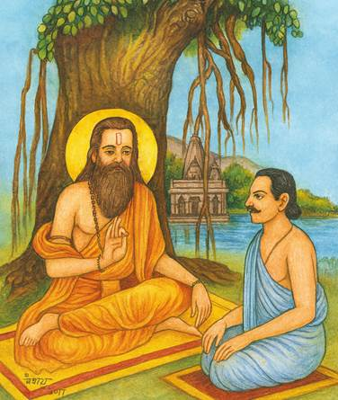
वक्ता व्यास, श्रोता सूत [अग्नि० अ० १]
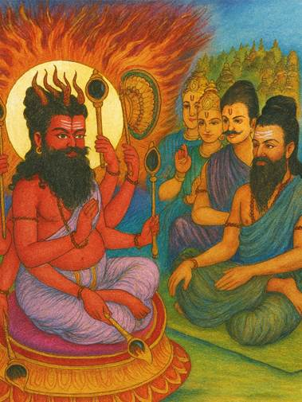
वक्ता अग्निदेव, श्रोता वसिष्ठ [अग्नि० अ० १]
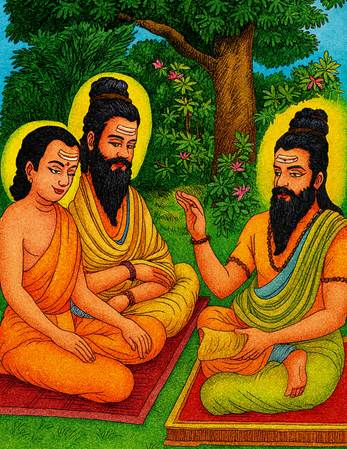
वक्ता वसिष्ठ, श्रोता व्यास-शुकदेव [अग्नि० अ० १]
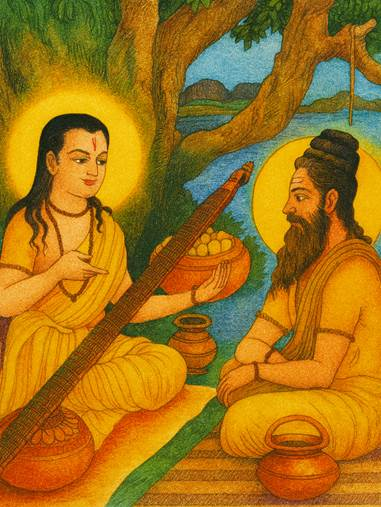
वक्ता नारद, श्रोता वाल्मीकि [अग्नि० अ० ५]
वहाँ वह बहुत थक गया। उस समय जमदग्नि मुनिने उसे सेनासहित अपने आश्रमपर निमन्त्रित किया और कामधेनुके प्रभावसे सबको भोजन कराया। राजाने मुनिसे कामधेनुको अपने लिये माँगा; किंतु उन्होंने देनेसे इनकार कर दिया। तब उसने बलपूर्वक उस धेनुको छीन लिया। यह समाचार पाकर परशुरामजीने हैहयपुरीमें जा उसके साथ युद्ध किया और अपने फरसेसे उसका मस्तक काटकर रणभूमिमें उसे मार गिराया। फिर वे कामधेनुको साथ लेकर अपने आश्रमपर लौट आये। एक दिन परशुरामजी जब वनमें गये हुए थे, कृतवीर्यके पुत्रोंने आकर अपने पिताके वैरका बदला लेनेके लिये जमदग्नि मुनिको मार डाला। जब परशुरामजी लौटकर आये तो पिताको मारा गया देख उनके मनमें बड़ा क्रोध हुआ। उन्होंने इक्कीस बार समस्त भूमण्डलके क्षत्रियोंका संहार किया। फिर कुरुक्षेत्रमें पाँच कुण्ड बनाकर वहीं उन्होंने अपने पितरोंका तर्पण किया और सारी पृथ्वी कश्यप-मुनिको दान देकर वे महेन्द्र पर्वतपर रहने लगे। इस प्रकार कूर्म, वराह, नृसिंह, वामन तथा परशुराम अवतारकी कथा सुनकर मनुष्य स्वर्गलोकमें जाता है ॥ १५—२१ ॥
इस प्रकार आदि आग्नेय महापुराणमें ‘वराह, नृसिंह, वामन तथा परशुरामावतारकी कथाका वर्णन’ नामक चौथा अध्याय पूरा हुआ ॥ ४ ॥
पाँचवाँ अध्याय
श्रीरामावतार-वर्णनके प्रसङ्गमें रामायण-बालकाण्डकी संक्षिप्त कथा
अग्निदेव कहते हैं—वसिष्ठ! अब मैं ठीक उसी प्रकार रामायणका वर्णन करूँगा, जैसे पूर्वकालमें नारदजीने महर्षि वाल्मीकिजीको सुनाया था। इसका पाठ भोग और मोक्ष—दोनोंको देनेवाला है ॥ १ ॥
देवर्षि नारद कहते हैं—वाल्मीकिजी! भगवान् विष्णुके नाभिकमलसे ब्रह्माजी उत्पन्न हुए हैं। ब्रह्माजीके पुत्र हैं मरीचि। मरीचिसे कश्यप, कश्यपसे सूर्य और सूर्यसे वैवस्वतमनुका जन्म हुआ। उसके बाद वैवस्वतमनुसे इक्ष्वाकुकी उत्पत्ति हुई। इक्ष्वाकुके वंशमें ककुत्स्थ नामक राजा हुए। ककुत्स्थके रघु, रघुके अज और अजके पुत्र दशरथ हुए। उन राजा दशरथसे रावण आदि राक्षसोंका वध करनेके लिये साक्षात् भगवान् विष्णु चार रूपोंमें प्रकट हुए। उनकी बड़ी रानी कौसल्याके गर्भसे श्रीरामचन्द्रजीका प्रादुर्भाव हुआ। कैकेयीसे भरत और सुमित्रासे लक्ष्मण एवं शत्रुघ्नका जन्म हुआ। महर्षि ऋष्यशृङ्गने उन तीनों रानियोंको यज्ञसिद्ध चरु दिये थे, जिन्हें खानेसे इन चारों कुमारोंका आविर्भाव हुआ। श्रीराम आदि सभी भाई अपने पिताके ही समान पराक्रमी थे। एक समय मुनिवर विश्वामित्रने अपने यज्ञमें विघ्न डालनेवाले निशाचरोंका नाश करनेके लिये राजा दशरथसे प्रार्थना की (कि आप अपने पुत्र श्रीरामको मेरे साथ भेज दें)। तब राजाने मुनिके साथ श्रीराम और लक्ष्मणको भेज दिया। श्रीरामचन्द्रजीने वहाँ जाकर मुनिसे अस्त्र-शस्त्रोंकी शिक्षा पायी और ताड़का नामवाली निशाचरीका वध किया। फिर उन बलवान् वीरने मारीच नामक राक्षसको मानवास्त्रसे मोहित करके दूर फेंक दिया और यज्ञविघातक राक्षस सुबाहुको दल-बलसहित मार डाला। इसके बाद वे कुछ कालतक मुनिके सिद्धाश्रममें ही रहे। तत्पश्चात् विश्वामित्र आदि महर्षियोंके साथ लक्ष्मणसहित श्रीराम मिथिला-नरेशका धनुष-यज्ञ देखनेके लिये गये ॥ २—९ ॥
[अपनी माता अहल्याके उद्धारकी वार्ता सुनकर संतुष्ट हुए][१] शतानन्दजीने निमित्त-कारण बनकर श्रीरामसे विश्वामित्र मुनिके प्रभावका१ वर्णन किया। राजा जनकने अपने यज्ञमें मुनियोंसहित श्रीरामचन्द्रजीका पूजन किया। श्रीरामने धनुषको चढ़ा दिया और उसे अनायास ही तोड़ डाला। तदनन्तर महाराज जनकने अपनी अयोनिजा कन्या सीताको, जिसके विवाहके लिये पराक्रम ही शुल्क निश्चित किया गया था, श्रीरामचन्द्रजीको समर्पित किया। श्रीरामने भी अपने पिता राजा दशरथ आदि गुरुजनोंके मिथिलामें पधारनेपर सबके सामने सीताका विधिपूर्वक पाणिग्रहण किया। उस समय लक्ष्मणने भी मिथिलेश-कन्या उर्मिलाको अपनी पत्नी बनाया। राजा जनकके छोटे भाई कुशध्वज थे। उनकी दो कन्याएँ थीं—श्रुतकीर्ति और माण्डवी। इनमें माण्डवीके साथ भरतने और श्रुतकीर्तिके साथ शत्रुघ्नने विवाह किया। तदनन्तर राजा जनकसे भलीभाँति पूजित हो श्रीरामचन्द्रजीने वसिष्ठ आदि महर्षियोंके साथ वहाँसे प्रस्थान किया। मार्गमें जमदग्निनन्दन परशुरामको जीतकर वे अयोध्या पहुँचे। वहाँ जानेपर भरत और शत्रुघ्न अपने मामा राजा युधाजित्की राजधानीको चले गये ॥ १०—१५ ॥
[१] यहाँ मूलमें, ‘प्रभावतः’ पद ‘प्रभावः’ के अर्थमें है। यहाँ ‘तसि’ प्रत्यय पञ्चम्यन्तका बोधक नहीं है। सार्वविभक्तिक ‘तसि’ के नियमानुसार प्रथमान्त पदसे यहाँ ‘तसि’ प्रत्यय हुआ है, ऐसा मानना चाहिये।
इस प्रकार आदि आग्नेय महापुराणमें ‘श्रीरामायण-कथाके अन्तर्गत बालकाण्डमें आये हुए विषयका वर्णन’ सम्बन्धी पाँचवाँ अध्याय पूरा हुआ ॥ ५ ॥
छठा अध्याय
अयोध्याकाण्डकी संक्षिप्त कथा
नारदजी कहते हैं—भरतके ननिहाल चले जानेपर [लक्ष्मणसहित] श्रीरामचन्द्रजी ही पिता-माता आदिके सेवा-सत्कारमें रहने लगे। एक दिन राजा दशरथने श्रीरामचन्द्रजीसे कहा—‘रघुनन्दन! मेरी बात सुनो। तुम्हारे गुणोंपर अनुरक्त हो प्रजाजनोंने मन-ही-मन तुम्हें राज-सिंहासनपर अभिषिक्त कर दिया है—प्रजाकी यह हार्दिक इच्छा है कि तुम युवराज बनो; अतः कल प्रातःकाल मैं तुम्हें युवराजपद प्रदान कर दूँगा। आज रातमें तुम सीता-सहित उत्तम व्रतका पालन करते हुए संयमपूर्वक रहो।’ राजाके आठ मन्त्रियों तथा वसिष्ठजीने भी उनकी इस बातका अनुमोदन किया। उन आठ मन्त्रियोंके नाम इस प्रकार हैं—दृष्टि, जयन्त, विजय, सिद्धार्थ, राज्यवर्धन, अशोक, धर्मपाल तथा सुमन्त्र[२]। इनके अतिरिक्त वसिष्ठजी भी मन्त्रणा देते थे। पिता और मन्त्रियोंकी बातें सुनकर श्रीरघुनाथजीने ‘तथास्तु’ कहकर उनकी आज्ञा शिरोधार्य की और माता कौसल्याको यह शुभ समाचार बताकर देवताओंकी पूजा करके वे संयममें स्थित हो गये। उधर महाराज दशरथ वसिष्ठ आदि मन्त्रियोंको यह कहकर कि ‘आपलोग श्रीरामचन्द्रके राज्याभिषेककी सामग्री जुटायें’, कैकेयीके भवनमें चले गये। कैकेयीके मन्थरा नामक एक दासी थी, जो बड़ी दुष्टा थी। उसने अयोध्याकी सजावट होती देख, श्रीरामचन्द्रजीके राज्याभिषेककी बात जानकर रानी कैकेयीसे सारा हाल कह सुनाया। एक बार किसी अपराधके कारण श्रीरामचन्द्रजीने मन्थराको उसके पैर पकड़कर घसीटा था। उसी वैरके कारण वह सदा यही चाहती थी कि रामका वनवास हो जाय ॥ १—८ ॥
[२] वाल्मीकीय रामायण, बालकाण्ड ७।३ में इन मन्त्रियोंके नाम इस प्रकार आये हैं—धृष्टि, जयन्त, विजय, सुराष्ट्र, राष्ट्रवर्धन, अकोप, धर्मपाल तथा सुमन्त्र।
मन्थरा बोली—कैकेयी! तुम उठो, रामका राज्याभिषेक होने जा रहा है। यह तुम्हारे पुत्रके लिये, मेरे लिये और तुम्हारे लिये भी मृत्युके समान भयंकर वृत्तान्त है—इसमें कोई संदेह नहीं है ॥ ९ ॥
मन्थरा कुबड़ी थी। उसकी बात सुनकर रानी कैकेयीको प्रसन्नता हुई। उन्होंने कुब्जाको एक आभूषण उतारकर दिया और कहा—‘मेरे लिये तो जैसे राम हैं, वैसे ही मेरे पुत्र भरत भी हैं। मुझे ऐसा कोई उपाय नहीं दिखायी देता, जिससे भरतको राज्य मिल सके।’ मन्थराने उस हारको फेंक दिया और कुपित होकर कैकेयीसे कहा ॥ १०-११ ॥
मन्थरा बोली—ओ नादान! तू भरतको, अपनेको और मुझे भी रामसे बचा। कल राम राजा होंगे। फिर रामके पुत्रोंको राज्य मिलेगा। कैकेयी! अब राजवंश भरतसे दूर हो जायगा। [मैं भरतको राज्य दिलानेका एक उपाय बताती हूँ।] पहलेकी बात है। देवासुर-संग्राममें शम्बरासुरने देवताओंको मार भगाया था। तेरे स्वामी भी उस युद्धमें गये थे। उस समय तूने अपनी विद्यासे रातमें स्वामीकी रक्षा की थी। इसके लिये महाराजने तुझे दो वर देनेकी प्रतिज्ञा की थी। इस समय उन्हीं दोनों वरोंको उनसे माँग। एक वरके द्वारा रामका चौदह वर्षोंके लिये वनवास और दूसरेके द्वारा भरतका युवराजपदपर अभिषेक माँग ले। राजा इस समय वे दोनों वर दे देंगे ॥ १२—१५ ॥
इस प्रकार मन्थराके प्रोत्साहन देनेपर कैकेयी अनर्थमें ही अर्थकी सिद्धि देखने लगी और बोली—‘कुब्जे! तूने बड़ा अच्छा उपाय बताया है। राजा मेरा मनोरथ अवश्य पूर्ण करेंगे।’ ऐसा कहकर वह कोपभवनमें चली गयी और पृथ्वीपर अचेत-सी होकर पड़ रही। उधर महाराज दशरथ ब्राह्मण आदिका पूजन करके जब कैकेयीके भवनमें आये तो उसे रोषमें भरी हुई देखा। तब राजाने पूछा—‘सुन्दरी! तुम्हारी ऐसी दशा क्यों हो रही है? तुम्हें कोई रोग तो नहीं सता रहा है? अथवा किसी भयसे व्याकुल तो नहीं हो? बताओ, क्या चाहती हो? मैं अभी तुम्हारी इच्छा पूर्ण करता हूँ। जिन श्रीरामके बिना मैं क्षणभर भी जीवित नहीं रह सकता, उन्हींकी शपथ खाकर कहता हूँ, तुम्हारा मनोरथ अवश्य पूर्ण करूँगा। सच-सच बताओ, क्या चाहती हो?’ कैकेयी बोली—‘राजन्! यदि आप मुझे कुछ देना चाहते हों, तो अपने सत्यकी रक्षाके लिये पहलेके दिये हुए दो वरदान देनेकी कृपा करें। मैं चाहती हूँ, राम चौदह वर्षोंतक संयमपूर्वक वनमें निवास करें और इन सामग्रियोंके द्वारा आज ही भरतका युवराजपदपर अभिषेक हो जाय। महाराज! यदि ये दोनों वरदान आप मुझे नहीं देंगे तो मैं विष पीकर मर जाऊँगी।’ यह सुनकर राजा दशरथ वज्रसे आहत हुएकी भाँति मूर्च्छित होकर भूमिपर गिर पड़े। फिर थोड़ी देरमें चेत होनेपर उन्होंने कैकेयीसे कहा ॥ १६—२३ ॥
दशरथ बोले—पापपूर्ण विचार रखनेवाली कैकेयी! तू समस्त संसारका अप्रिय करनेवाली है। अरी! मैंने या रामने तेरा क्या बिगाड़ा है, जो तू मुझसे ऐसी बात कहती है? केवल तुझे प्रिय लगनेवाला यह कार्य करके मैं संसारमें भलीभाँति निन्दित हो जाऊँगा। तू मेरी स्त्री नहीं, कालरात्रि है। मेरा पुत्र भरत ऐसा नहीं है। पापिनी! मेरे पुत्रके चले जानेपर जब मैं मर जाऊँगा तो तू विधवा होकर राज्य करना ॥ २४-२५ ½ ॥
राजा दशरथ सत्यके बन्धनमें बँधे थे। उन्होंने श्रीरामचन्द्रजीको बुलाकर कहा—‘बेटा! कैकेयीने मुझे ठग लिया। तुम मुझे कैद करके राज्यको अपने अधिकारमें कर लो। अन्यथा तुम्हें वनमें निवास करना होगा और कैकेयीका पुत्र भरत राजा बनेगा।’ श्रीरामचन्द्रजीने पिता और कैकेयीको प्रणाम करके उनकी प्रदक्षिणा की और कौसल्याके चरणोंमें मस्तक झुकाकर उन्हें सान्त्वना दी। फिर लक्ष्मण और पत्नी सीताको साथ ले, ब्राह्मणों, दीनों और अनाथोंको दान देकर, सुमन्त्रसहित रथपर बैठकर वे नगरसे बाहर निकले। उस समय माता-पिता आदि शोकसे आतुर हो रहे थे। उस रातमें श्रीरामचन्द्रजीने तमसा नदीके तटपर निवास किया। उनके साथ बहुत-से पुरवासी भी गये थे। उन सबको सोते छोड़कर वे आगे बढ़ गये। प्रातःकाल होनेपर जब श्रीरामचन्द्रजी नहीं दिखायी दिये तो नगरनिवासी निराश होकर पुनः अयोध्या लौट आये। श्रीरामचन्द्रजीके चले जानेसे राजा दशरथ बहुत दुःखी हुए। वे रोते-रोते कैकेयीका महल छोड़कर कौसल्याके भवनमें चले आये। उस समय नगरके समस्त स्त्री-पुरुष और रनिवासकी स्त्रियाँ फूट-फूटकर रो रही थीं। श्रीरामचन्द्रजीने चीरवस्त्र धारण कर रखा था। वे रथपर बैठे-बैठे शृङ्गवेरपुर जा पहुँचे। वहाँ निषादराज गुहने उनका पूजन, स्वागत-सत्कार किया। श्रीरघुनाथजीने इङ्गुदी-वृक्षकी जड़के निकट विश्राम किया। लक्ष्मण और गुह दोनों रातभर जागकर पहरा देते रहे ॥ २६—३३ ॥
प्रातःकाल श्रीरामने रथसहित सुमन्त्रको विदा कर दिया तथा स्वयं लक्ष्मण और सीताके साथ नावसे गङ्गा-पार हो वे प्रयागमें गये। वहाँ उन्होंने महर्षि भरद्वाजको प्रणाम किया और उनकी आज्ञा ले वहाँसे चित्रकूट पर्वतको प्रस्थान किया। चित्रकूट पहुँचकर उन्होंने वास्तुपूजा करनेके अनन्तर (पर्णकुटी बनाकर) मन्दाकिनीके तटपर निवास किया। रघुनाथजीने सीताको चित्रकूट पर्वतका रमणीय दृश्य दिखलाया। इसी समय एक कौएने सीताजीके कोमल श्रीअङ्गमें नखोंसे प्रहार किया। यह देख श्रीरामने उसके ऊपर सींकके अस्त्रका प्रयोग किया। जब वह कौआ देवताओंका आश्रय छोड़कर श्रीरामचन्द्रजीकी शरणमें आया, तब उन्होंने उसकी केवल एक आँख नष्ट करके उसे जीवित छोड़ दिया। श्रीरामचन्द्रजीके वनगमनके पश्चात् छठे दिनकी रातमें राजा दशरथने कौसल्यासे पहलेकी एक घटना सुनायी, जिसमें उनके द्वारा कुमारावस्थामें सरयूके तटपर अनजानमें यज्ञदत्त-पुत्र श्रवणकुमारके मारे जानेका वृत्तान्त था। “श्रवणकुमार पानी लेनेके लिये आया था। उस समय उसके घड़ेके भरनेसे जो शब्द हो रहा था, उसकी आहट पाकर मैंने उसे कोई जंगली जन्तु समझा और शब्दवेधी बाणसे उसका वध कर डाला। यह समाचार पाकर उसके पिता और माताको बड़ा शोक हुआ। वे बारंबार विलाप करने लगे। उस समय श्रवणकुमारके पिताने मुझे शाप देते हुए कहा—‘राजन्! हम दोनों पति-पत्नी पुत्रके बिना शोकातुर होकर प्राणत्याग कर रहे हैं; तुम भी हमारी ही तरह पुत्रवियोगके शोकसे मरोगे; [तुम्हारे पुत्र मरेंगे तो नहीं, किंतु] उस समय तुम्हारे पास कोई पुत्र मौजूद न होगा।’ कौसल्ये! आज उस शापका मुझे स्मरण हो रहा है। जान पड़ता है, अब इसी शोकसे मेरी मृत्यु होगी।” इतनी कथा कहनेके पश्चात् राजाने ‘हा राम!’ कहकर स्वर्गलोकको प्रयाण किया। कौसल्याने समझा, महाराज शोकसे आतुर हैं; इस समय नींद आ गयी होगी। ऐसा विचार करके वे सो गयीं। प्रातःकाल जगानेवाले सूत, मागध और बन्दीजन सोते हुए महाराजको जगाने लगे; किंतु वे न जगे ॥ ३४—४२ ॥
तब उन्हें मरा हुआ जान रानी कौसल्या ‘हाय! मैं मारी गयी’ कहकर पृथ्वीपर गिर पड़ीं। फिर तो समस्त नर-नारी फूट-फूटकर रोने लगे। तत्पश्चात् महर्षि वसिष्ठने राजाके शवको तैलभरी नौकामें रखवाकर भरतको उनके ननिहालसे तत्काल बुलवाया। भरत और शत्रुघ्न अपने मामाके राजमहलसे निकलकर सुमन्त्र आदिके साथ शीघ्र ही अयोध्यापुरीमें आये। यहाँका समाचार जानकर भरतको बड़ा दुःख हुआ। कैकेयीको शोक करती देख उसकी कठोर शब्दोंमें निन्दा करते हुए बोले—‘अरी! तूने मेरे माथे कलङ्कका टीका लगा दिया—मेरे सिरपर अपयशका भारी बोझ लाद दिया।’ फिर उन्होंने कौसल्याकी प्रशंसा करके तैलपूर्ण नौकामें रखे हुए पिताके शवका सरयूतटपर अन्त्यष्टि-संस्कार किया। तदनन्तर वसिष्ठ आदि गुरुजनोंने कहा—‘भरत! अब राज्य ग्रहण करो।’ भरत बोले—‘मैं तो श्रीरामचन्द्रजीको ही राजा मानता हूँ। अब उन्हें यहाँ लानेके लिये वनमें जाता हूँ।’ ऐसा कहकर वे वहाँसे दल-बलसहित चल दिये और शृङ्गवेरपुर होते हुए प्रयाग पहुँचे। वहाँ महर्षि भरद्वाजने उन सबको भोजन कराया। फिर भरद्वाजको नमस्कार करके वे प्रयागसे चले और चित्रकूटमें श्रीराम एवं लक्ष्मणके समीप आ पहुँचे। वहाँ भरतने श्रीरामसे कहा—‘रघुनाथजी! हमारे पिता महाराज दशरथ स्वर्गवासी हो गये। अब आप अयोध्यामें चलकर राज्य ग्रहण करें। मैं आपकी आज्ञाका पालन करते हुए वनमें जाऊँगा।’ यह सुनकर श्रीरामने पिताका तर्पण किया और भरतसे कहा—‘तुम मेरी चरणपादुका लेकर अयोध्या लौट जाओ। मैं राज्य करनेके लिये नहीं चलूँगा। पिताके सत्यकी रक्षाके लिये चीर एवं जटा धारण करके वनमें ही रहूँगा।’ श्रीरामके ऐसा कहनेपर सदल-बल भरत लौट गये और अयोध्या छोड़कर नन्दिग्राममें रहने लगे। वहाँ भगवान्की चरण-पादुकाओंकी पूजा करते हुए वे राज्यका भली-भाँति पालन करने लगे ॥ ४३—५१ ॥
इस प्रकार आदि आग्नेय महापुराणमें ‘रामायण-कथाके अन्तर्गत अयोध्याकाण्डकी कथाका वर्णन’ नामक छठा अध्याय पूरा हुआ ॥ ६ ॥
सातवाँ अध्याय
अरण्यकाण्डकी संक्षिप्त कथा
नारदजी कहते हैं—मुने! श्रीरामचन्द्रजीने महर्षि वसिष्ठ तथा माताओंको प्रणाम करके उन सबको भरतके साथ विदा कर दिया। तत्पश्चात् महर्षि अत्रि तथा उनकी पत्नी अनसूयाको, शरभङ्गमुनिको, सुतीक्ष्णको तथा अगस्त्यजीके भ्राता अग्निजिह्व मुनिको प्रणाम करते हुए श्रीरामचन्द्रजीने अगस्त्यमुनिके आश्रमपर जा उनके चरणोंमें मस्तक झुकाया और मुनिकी कृपासे दिव्य धनुष एवं दिव्य खड्ग प्राप्त करके वे दण्डकारण्यमें आये। वहाँ जनस्थानके भीतर पञ्चवटी नामक स्थानमें गोदावरीके तटपर रहने लगे। एक दिन शूर्पणखा नामवाली भयंकर राक्षसी राम, लक्ष्मण और सीताको खा जानेके लिये पञ्चवटीमें आयी; किंतु श्रीरामचन्द्रजीका अत्यन्त मनोहर रूप देखकर वह कामके अधीन हो गयी और बोली ॥ १—४ ॥
शूर्पणखाने कहा—तुम कौन हो? कहाँसे आये हो? मेरी प्रार्थनासे अब तुम मेरे पति हो जाओ। यदि मेरे साथ तुम्हारा सम्बन्ध होनेमें ये दोनों सीता और लक्ष्मण बाधक हैं तो मैं इन दोनोंको अभी खाये लेती हूँ ॥ ५ ॥
ऐसा कहकर वह उन्हें खा जानेको तैयार हो गयी। तब श्रीरामचन्द्रजीके कहनेसे लक्ष्मणने शूर्पणखाकी नाक और दोनों कान भी काट लिये। कटे हुए अङ्गोंसे रक्तकी धारा बहाती हुई शूर्पणखा अपने भाई खरके पास गयी और इस प्रकार बोली—‘खर! मेरी नाक कट गयी। इस अपमानके बाद मैं जीवित नहीं रह सकती। अब तो मेरा जीवन तभी रह सकता है, जब कि तुम मुझे रामका, उनकी पत्नी सीताका तथा उनके छोटे भाई लक्ष्मणका गरम-गरम रक्त पिलाओ।’ खरने उसको ‘बहुत अच्छा’ कहकर शान्त किया और दूषण तथा त्रिशिराके साथ चौदह हजार राक्षसोंकी सेना ले श्रीरामचन्द्रजीपर चढ़ाई की। श्रीरामने भी उन सबका सामना किया और अपने बाणोंसे राक्षसोंको बींधना आरम्भ किया। शत्रुओंकी हाथी, घोड़े, रथ और पैदलसहित समस्त चतुरङ्गिणी सेनाको उन्होंने यमलोक पहुँचा दिया तथा अपने साथ युद्ध करनेवाले भयंकर राक्षस खर, दूषण एवं त्रिशिराको भी मौतके घाट उतार दिया। अब शूर्पणखा लङ्कामें गयी और रावणके सामने जा पृथ्वीपर गिर पड़ी। उसने क्रोधमें भरकर रावणसे कहा—‘अरे! तू राजा और रक्षक कहलानेयोग्य नहीं है। खर आदि समस्त राक्षसोंका संहार करनेवाले रामकी पत्नी सीताको हर ले। मैं राम और लक्ष्मणका रक्त पीकर ही जीवित रहूँगी; अन्यथा नहीं’ ॥ ६—१२ ॥
शूर्पणखाकी बात सुनकर रावणने कहा—‘अच्छा, ऐसा ही होगा।’ फिर उसने मारीचसे कहा—‘तुम स्वर्णमय विचित्र मृगका रूप धारन करके सीताके सामने जाओ और राम तथा लक्ष्मणको अपने पीछे आश्रमसे दूर हटा ले जाओ। मैं सीताका हरण करूँगा। यदि मेरी बात न मानोगे, तो तुम्हारी मृत्यु निश्चित है।’ मारीचने रावणसे कहा—‘रावण! धनुर्धर राम साक्षात् मृत्यु हैं।’ फिर उसने मन-ही-मन सोचा—‘यदि नहीं जाऊँगा, तो रावणके हाथसे मरना होगा और जाऊँगा तो श्रीरामके हाथसे। इस प्रकार यदि मरना अनिवार्य है तो इसके लिये श्रीराम ही श्रेष्ठ हैं, रावण नहीं; [क्योंकि श्रीरामके हाथसे मृत्यु होनेपर मेरी मुक्ति हो जायगी।] ऐसा विचारकर वह मृगरूप धारण करके सीताके सामने बारंबार आने-जाने लगा। तब सीताजीकी प्रेरणासे श्रीरामने [दूरतक उसका पीछा करके] उसे अपने बाणसे मार डाला। मरते समय उस मृगने ‘हा सीते! हा लक्ष्मण!’ कहकर पुकार लगायी। उस समय सीताके कहनेसे लक्ष्मण अपनी इच्छाके विरुद्ध श्रीरामचन्द्रजीके पास गये। इसी बीचमें रावणने भी मौका पाकर सीताको हर लिया। मार्गमें जाते समय उसने गृध्रराज जटायुका वध किया। जटायुने भी उसके रथको नष्ट कर डाला था। रथ न रहनेपर रावणने सीताको कंधेपर बिठा लिया और उन्हें लङ्कामें ले जाकर अशोकवाटिकामें रखा। वहाँ सीतासे बोला—‘तुम मेरी पटरानी बन जाओ।’ फिर राक्षसियोंकी ओर देखकर कहा—‘निशाचरियो! इसकी रखवाली करो’ ॥ १३—१९ ॥
उधर श्रीरामचन्द्रजी जब मारीचको मारकर लौटे, तो लक्ष्मणको आते देख बोले—‘सुमित्रानन्दन! वह मृग तो मायामय था—वास्तवमें वह एक राक्षस था; किंतु तुम जो इस समय यहाँ आ गये, इससे जान पड़ता है, निश्चय ही कोई सीताको हर ले गया।’ श्रीरामचन्द्रजी आश्रमपर गये; किंतु वहाँ सीता नहीं दिखायी दीं। उस समय वे आर्त होकर शोक और विलाप करने लगे—‘हा प्रिये जानकी! तू मुझे छोड़कर कहाँ चली गयी?’ लक्ष्मणने श्रीरामको सान्त्वना दी। तब वे वनमें घूम-घूम सीताकी खोज करने लगे। इसी समय इनकी जटायुसे भेंट हुई। जटायुने यह कहकर कि ‘सीताको रावण हर ले गया है’ प्राण त्याग दिया। तब श्रीरघुनाथजीने अपने हाथसे जटायुका दाह-संस्कार किया। इसके बाद इन्होंने कबन्धका वध किया। कबन्धने शापमुक्त होनेपर श्रीरामचन्द्रजीसे कहा—‘आप सुग्रीवसे मिलिये’ ॥ २०—२४ ॥
इस प्रकार आदि आग्नेय महापुराणमें ‘रामायण-कथाके अन्तर्गत अरण्यकाण्डकी कथाका वर्णन’-विषयक सातवाँ अध्याय पूरा हुआ ॥ ७ ॥
आठवाँ अध्याय
किष्किन्धाकाण्डकी संक्षिप्त कथा
नारदजी कहते हैं—श्रीरामचन्द्रजी पम्पा-सरोवरपर जाकर सीताके लिये शोक करने लगे। वहाँ वे शबरीसे मिले। फिर हनुमान्जीसे उनकी भेंट हुई। हनुमान्जी उन्हें सुग्रीवके पास ले गये और सुग्रीवके साथ उनकी मित्रता करायी। श्रीरामचन्द्रजीने सबके देखते-देखते ताड़के सात वृक्षोंको एक ही बाणसे बींध डाला और दुन्दुभि नामक दानवके विशाल शरीरको पैरकी ठोकरसे दस योजन दूर फेंक दिया। इसके बाद सुग्रीवके शत्रु वालीको, जो भाई होते हुए भी उनके साथ वैर रखता था, मार डाला और किष्किन्धापुरी, वानरोंका साम्राज्य, रुमा एवं तारा—इन सबको ऋष्यमूक पर्वतपर वानरराज सुग्रीवके अधीन कर दिया। तदनन्तर किष्किन्धापुरीके स्वामी सुग्रीवने कहा—‘श्रीराम! आपको सीताजीकी प्राप्ति जिस प्रकार भी हो सके, ऐसा उपाय मैं कर रहा हूँ।’ यह सुननेके बाद श्रीरामचन्द्रजीने माल्यवान् पर्वतके शिखरपर वर्षाके चार महीने व्यतीत किये और सुग्रीव किष्किन्धामें रहने लगे। चौमासेके बाद भी जब सुग्रीव दिखायी नहीं दिये, तब श्रीरामचन्द्रजीकी आज्ञासे लक्ष्मणने किष्किन्धामें जाकर कहा—‘सुग्रीव! तुम श्रीरामचन्द्रजीके पास चलो। अपनी प्रतिज्ञापर अटल रहो, नहीं तो वाली मरकर जिस मार्गसे गया है, वह मार्ग अभी बंद नहीं हुआ है। अतएव वालीके पथका अनुसरण न करो।’ सुग्रीवने कहा—‘सुमित्रानन्दन! विषयभोगमें आसक्त हो जानेके कारण मुझे बीते हुए समयका भान न रहा। [अतः मेरे अपराधको क्षमा कीजिये]’ ॥ १—७ ॥
ऐसा कहकर वानरराज सुग्रीव श्रीरामचन्द्रजीके पास गये और उन्हें नमस्कार करके बोले—‘भगवन्! मैंने सब वानरोंको बुला लिया है। अब आपकी इच्छाके अनुसार सीताजीकी खोज करनेके लिये उन्हें भेजूँगा। वे पूर्वादि दिशाओंमें जाकर एक महीनेतक सीताजीकी खोज करें। जो एक महीनेके बाद लौटेगा, उसे मैं मार डालूँगा।’ यह सुनकर बहुत-से वानर पूर्व, पश्चिम और उत्तर दिशाओंके मार्गपर चल पड़े तथा वहाँ जनककुमारी सीताको न पाकर नियत समयके भीतर श्रीराम और सुग्रीवके पास लौट आये। हनुमान्जी श्रीरामचन्द्रजीकी दी हुई अँगूठी लेकर अन्य वानरोंके साथ दक्षिण दिशामें जानकीजीकी खोज कर रहे थे। वे लोग सुप्रभाकी गुफाके निकट विन्ध्यपर्वतपर ही एक माससे अधिक कालतक ढूँढ़ते फिरे; किंतु उन्हें सीताजीका दर्शन नहीं हुआ। अन्तमें निराश होकर आपसमें कहने लगे—‘हमलोगोंको व्यर्थ ही प्राण देने पड़ेंगे। धन्य है वह जटायु, जिसने सीताके लिये रावणके द्वारा मारा जाकर युद्धमें प्राण त्याग दिया था’ ॥ ८—१३ ॥
उनकी ये बातें सम्पाति नामक गृध्रके कानोंमें पड़ीं। वह वानरोंके (प्राणत्यागकी चर्चासे उनके) खानेकी ताकमें लगा था। किंतु जटायुकी चर्चा सुनकर रुक गया और बोला—‘वानरो! जटायु मेरा भाई था। वह मेरे ही साथ सूर्यमण्डलकी ओर उड़ा चला जा रहा था। मैंने अपनी पाँखोंकी ओटमें रखकर सूर्यकी प्रखर किरणोंके तापसे उसे बचाया। अतः वह तो सकुशल बच गया; किंतु मेरी पाँखें जल गयीं, इसलिये मैं यहीं गिर पड़ा। आज श्रीरामचन्द्रजीकी वार्ता सुननेसे फिर मेरे पंख निकल आये। अब मैं जानकीको देखता हूँ; वे लङ्कामें अशोक-वाटिकाके भीतर हैं। लवणसमुद्रके द्वीपमें त्रिकूट पर्वतपर लङ्का बसी हुई है। यहाँसे वहाँतकका समुद्र सौ योजन विस्तृत है। यह जानकर सब वानर श्रीराम और सुग्रीवके पास जायँ और उन्हें सब समाचार बता दें’ ॥ १४—१७ ॥
इस प्रकार आदि आग्नेय महापुराणमें ‘रामायण-कथाके अन्तर्गत किष्किन्धाकाण्डकी कथाका वर्णन’ नामक आठवाँ अध्याय पूरा हुआ ॥ ८ ॥
नवाँ अध्याय
सुन्दरकाण्डकी संक्षिप्त कथा
नारदजी कहते हैं—सम्पातिकी बात सुनकर हनुमान् और अङ्गद आदि वानरोंने समुद्रकी ओर देखा। फिर वे कहने लगे—‘कौन समुद्रको लाँघकर समस्त वानरोंको जीवन-दान देगा?’ वानरोंकी जीवन-रक्षा और श्रीरामचन्द्रजीके कार्यकी प्रकृष्ट सिद्धिके लिये पवनकुमार हनुमान्जी सौ योजन विस्तृत समुद्रको लाँघ गये। लाँघते समय अवलम्बन देनेके लिये समुद्रसे मैनाक पर्वत उठा। हनुमान्जीने दृष्टिमात्रसे उसका सत्कार किया। फिर [छायाग्राहिणी] सिंहिकाने सिर उठाया। [वह उन्हें अपना ग्रास बनाना चाहती थी, इसलिये] हनुमान्जीने उसे मार गिराया। समुद्रके पार जाकर उन्होंने लङ्कापुरी देखी। राक्षसोंके घरोंमें खोज की; रावणके अन्तःपुरमें तथा कुम्भ, कुम्भकर्ण, विभीषण, इन्द्रजित् तथा अन्य राक्षसोंके गृहोंमें जा-जाकर तलाश की; मद्यपानके स्थानों आदिमें भी चक्कर लगाया; किंतु कहीं भी सीता उनकी दृष्टिमें नहीं पड़ीं। अब वे बड़ी चिन्तामें पड़े। अन्तमें जब अशोकवाटिकाकी ओर गये तो वहाँ शिंशपा-वृक्षके नीचे सीताजी उन्हें बैठी दिखायी दीं। वहाँ राक्षसियाँ उनकी रखवाली कर रही थीं। हनुमान्जीने शिंशपा-वृक्षपर चढ़कर देखा। रावण सीताजीसे कह रहा था—‘तू मेरी स्त्री हो जा’; किंतु वे स्पष्ट शब्दोंमें ‘ना’ कर रही थीं। वहाँ बैठी हुई राक्षसियाँ भी यही कहती थीं—‘तू रावणकी स्त्री हो जा।’ जब रावण चला गया तो हनुमान्जीने इस प्रकार कहना आरम्भ किया—‘अयोध्यामें दशरथ नामवाले एक राजा थे। उनके दो पुत्र राम और लक्ष्मण वनवासके लिये गये। वे दोनों भाई श्रेष्ठ पुरुष हैं। उनमें श्रीरामचन्द्रजीकी पत्नी जनककुमारी सीता तुम्हीं हो। रावण तुम्हें बलपूर्वक हर ले आया है। श्रीरामचन्द्रजी इस समय वानरराज सुग्रीवके मित्र हो गये हैं। उन्होंने तुम्हारी खोज करनेके लिये ही मुझे भेजा है। पहचानके लिये गूढ़ संदेशके साथ श्रीरामचन्द्रजीने अँगूठी दी है। उनकी दी हुई यह अँगूठी ले लो’ ॥ १—९ ॥
सीताजीने अँगूठी ले ली। उन्होंने वृक्षपर बैठे हुए हनुमान्जीको देखा। फिर हनुमान्जी वृक्षसे उतरकर उनके सामने आ बैठे, तब सीताने उनसे कहा—‘यदि श्रीरघुनाथजी जीवित हैं तो वे मुझे यहाँसे ले क्यों नहीं जाते?’ इस प्रकार शङ्का करती हुई सीताजीसे हनुमान्जीने इस प्रकार कहा—‘देवि सीते! तुम यहाँ हो, यह बात श्रीरामचन्द्रजी नहीं जानते। मुझसे यह समाचार जान लेनेके पश्चात् सेनासहित राक्षस रावणको मारकर वे तुम्हें अवश्य ले जायँगे। तुम चिन्ता न करो। मुझे कोई अपनी पहचान दो।’ तब सीताजीने हनुमान्जीको अपनी चूड़ामणि उतारकर दे दी और कहा—‘भैया! अब ऐसा उपाय करो, जिससे श्रीरघुनाथजी शीघ्र आकर मुझे यहाँसे ले चलें। उन्हें कौएकी आँख नष्ट कर देनेवाली घटनाका स्मरण दिलाना; [आज यहीं रहो] कल सबेरे चले जाना; तुम मेरा शोक दूर करनेवाले हो। तुम्हारे आनेसे मेरा दुःख बहुत कम हो गया है।’ चूड़ामणि और काकवाली कथाको पहचानके रूपमें लेकर हनुमान्जीने कहा—‘कल्याणि! तुम्हारे पतिदेव अब तुम्हें शीघ्र ही ले जायँगे। अथवा यदि तुम्हें चलनेकी जल्दी हो, तो मेरी पीठपर बैठ जाओ। मैं आज ही तुम्हें श्रीराम और सुग्रीवके दर्शन कराऊँगा।’ सीता बोलीं—‘नहीं, श्रीरघुनाथजी ही आकर मुझे ले जायँ’ ॥ १०—१५ ॥
तदनन्तर हनुमान्जीने रावणसे मिलनेकी युक्ति सोच निकाली। उन्होंने रक्षकोंको मारकर उस वाटिकाको उजाड़ डाला। फिर दाँत और नख आदि आयुधोंसे वहाँ आये हुए रावणके समस्त सेवकोंको मारकर सात मन्त्रिकुमारों तथा रावणपुत्र अक्षयकुमारको भी यमलोक पहुँचा दिया। तत्पश्चात् इन्द्रजित्ने आकर उन्हें नागपाशसे बाँध लिया और उन वानरवीरको रावणके पास ले जाकर उससे मिलाया। उस समय रावणने पूछा—‘तू कौन है?’ तब हनुमान्जीने रावणको उत्तर दिया—‘मैं श्रीरामचन्द्रजीका दूत हूँ। तुम श्रीसीताजीको श्रीरघुनाथजीकी सेवामें लौटा दो; अन्यथा लङ्कानिवासी समस्त राक्षसोंके साथ तुम्हें श्रीरामके बाणोंसे घायल होकर निश्चय ही मरना पड़ेगा।’ यह सुनकर रावण हनुमान्जीको मारनेके लिये उद्यत हो गया; किंतु विभीषणने उसे रोक दिया। तब रावणने उनकी पूँछमें आग लगा दी। पूँछ जल उठी। यह देख पवनपुत्र हनुमान्जीने राक्षसोंकी पुरी लङ्काको जला डाला और सीताजीका पुनः दर्शन करके उन्हें प्रणाम किया। फिर समुद्रके पार आकर अङ्गद आदिसे कहा—‘मैंने सीताजीका दर्शन कर लिया है।’ तत्पश्चात् अङ्गद आदिके साथ सुग्रीवके मधुवनमें आकर, दधिमुख आदि रक्षकोंको परास्त करके, मधुपान करनेके अनन्तर वे सब लोग श्रीरामचन्द्रजीके पास आये और बोले—‘सीताजीका दर्शन हो गया।’ श्रीरामचन्द्रजीने भी अत्यन्त प्रसन्न होकर हनुमान्जीसे पूछा— ॥ १६—२४ ॥
श्रीरामचन्द्रजी बोले—कपिवर! तुम्हें सीताका दर्शन कैसे हुआ? उसने मेरे लिये क्या संदेश दिया है? मैं विरहकी आगमें जल रहा हूँ। तुम सीताकी अमृतमयी कथा सुनाकर मेरा संताप शान्त करो ॥ २५ ॥
नारदजी कहते हैं—यह सुनकर हनुमान्जीने रघुनाथजीसे कहा—‘भगवन्! मैं समुद्र लाँघकर लङ्कामें गया था। वहाँ सीताजीका दर्शन करके, लङ्कापुरीको जलाकर यहाँ आ रहा हूँ। यह सीताजीकी दी हुई चूड़ामणि लीजिये। आप शोक न करें; रावणका वध करनेके पश्चात् निश्चय ही आपको सीताजीकी प्राप्ति होगी।’ श्रीरामचन्द्रजी उस मणिको हाथमें ले, विरहसे व्याकुल होकर रोने लगे और बोले—‘इस मणिको देखकर ऐसा जान पड़ता है, मानो मैंने सीताको ही देख लिया। अब मुझे सीताके पास ले चलो; मैं उसके बिना जीवित नहीं रह सकता।’ उस समय सुग्रीव आदिने श्रीरामचन्द्रजीको समझा-बुझाकर शान्त किया। तदनन्तर श्रीरघुनाथजी समुद्रके तटपर गये। वहाँ उनसे विभीषण आकर मिले। विभीषणके भाई दुरात्मा रावणने उनका तिरस्कार किया था। विभीषणने इतना ही कहा था कि ‘भैया! आप सीताको श्रीरामचन्द्रजीकी सेवामें समर्पित कर दीजिये।’ इसी अपराधके कारण उसने इन्हें ठुकरा दिया था। अब वे असहाय थे। श्रीरामचन्द्रजीने विभीषणको अपना मित्र बनाया और लङ्काके राजपदपर अभिषिक्त कर दिया। इसके बाद श्रीरामने समुद्रसे लङ्का जानेके लिये रास्ता माँगा। जब उसने मार्ग नहीं दिया तो उन्होंने बाणोंसे उसे बींध डाला। अब समुद्र भयभीत होकर श्रीरामचन्द्रजीके पास आकर बोला—‘भगवन्! नलके द्वारा मेरे ऊपर पुल बँधाकर आप लङ्कामें जाइये। पूर्वकालमें आपहीने मुझे गहरा बनाया था।’ यह सुनकर श्रीरामचन्द्रजीने नलके द्वारा वृक्ष और शिलाखण्डोंसे एक पुल बँधवाया और उसीसे वे वानरोंसहित समुद्रके पार गये। वहाँ सुवेल पर्वतपर पड़ाव डालकर वहींसे उन्होंने लङ्कापुरीका निरीक्षण किया ॥ २६—३३ ॥
इस प्रकार आदि आग्नेय महापुराणमें ‘रामायण-कथाके अन्तर्गत सुन्दरकाण्डकी कथाका वर्णन’ नामक नवाँ अध्याय पूरा हुआ ॥ ९ ॥
दसवाँ अध्याय
युद्धकाण्डकी संक्षिप्त कथा
नारदजी कहते हैं—तदनन्तर श्रीरामचन्द्रजीके आदेशसे अङ्गद रावणके पास गये और बोले—‘रावण! तुम जनककुमारी सीताको ले जाकर शीघ्र ही श्रीरामचन्द्रजीको सौंप दो। अन्यथा मारे जाओगे।’ यह सुनकर रावण उन्हें मारनेको तैयार हो गया। अङ्गद राक्षसोंको मार-पीटकर लौट आये और श्रीरामचन्द्रजीसे बोले—‘भगवन्! रावण केवल युद्ध करना चाहता है।’ अङ्गदकी बात सुनकर श्रीरामने वानरोंकी सेना साथ ले युद्धके लिये लङ्कामें प्रवेश किया। हनुमान्, मैन्द, द्विविद, जाम्बवान्, नल, नील, तार, अङ्गद, धूम्र, सुषेण, केसरी, गज, पनस, विनत, रम्भ, शरभ, महाबली कम्पन, गवाक्ष, दधिमुख, गवय और गन्धमादन—ये सब तो वहाँ आये ही, अन्य भी बहुत-से वानर आ पहुँचे। इन असंख्य वानरोंसहित [कपिराज] सुग्रीव भी युद्धके लिये उपस्थित थे। फिर तो राक्षसों और वानरोंमें घमासान युद्ध छिड़ गया। राक्षस वानरोंको बाण, शक्ति और गदा आदिके द्वारा मारने लगे और वानर नख, दाँत एवं शिला आदिके द्वारा राक्षसोंका संहार करने लगे। राक्षसोंकी हाथी, घोड़े, रथ और पैदलोंसे युक्त चतुरङ्गिणी सेना नष्ट-भ्रष्ट हो गयी। हनुमान्ने पर्वतशिखरसे अपने वैरी धूम्राक्षका वध कर डाला। नीलने भी युद्धके लिये सामने आये हुए अकम्पन और प्रहस्तको मौतके घाट उतार दिया ॥ १—८ ॥
श्रीराम और लक्ष्मण यद्यपि इन्द्रजित्के नागास्त्रसे बँध गये थे, तथापि गरुड़की दृष्टि पड़ते ही उससे मुक्त हो गये। तत्पश्चात् उन दोनों भाइयोंने बाणोंसे राक्षसी सेनाका संहार आरम्भ किया। श्रीरामने रावणको युद्धमें अपने बाणोंकी मारसे जर्जरित कर डाला। इससे दुःखित होकर रावणने कुम्भकर्णको सोतेसे जगाया। जागनेपर कुम्भकर्णने हजार घड़े मदिरा पीकर कितने ही भैंस आदि पशुओंका भक्षण किया। फिर रावणसे कुम्भकर्ण बोला—‘सीताका हरण करके तुमने पाप किया है। तुम मेरे बड़े भाई हो, इसीलिये तुम्हारे कहनेसे युद्ध करने जाता हूँ। मैं वानरोंसहित रामको मार डालूँगा’ ॥ ९—१२ ॥
ऐसा कहकर कुम्भकर्णने समस्त वानरोंको कुचलना आरम्भ किया। एक बार उसने सुग्रीवको पकड़ लिया, तब सुग्रीवने उसकी नाक और कान काट लिये। नाक और कानसे रहित होकर वह वानरोंका भक्षण करने लगा। यह देख श्रीरामचन्द्रजीने अपने बाणोंसे कुम्भकर्णकी दोनों भुजाएँ काट डालीं। इसके बाद उसके दोनों पैर तथा मस्तक काटकर उसे पृथ्वीपर गिरा दिया। तदनन्तर कुम्भ, निकुम्भ, राक्षस मकराक्ष, महोदर, महापार्श्व, मत्त, राक्षसश्रेष्ठ उन्मत्त, प्रघस, भासकर्ण, विरूपाक्ष, देवान्तक, नरान्तक, त्रिशिरा और अतिकाय युद्धमें कूद पड़े। तब इनको तथा और भी बहुत-से युद्धपरायण राक्षसोंको श्रीराम, लक्ष्मण, विभीषण एवं वानरोंने पृथ्वीपर सुला दिया। तत्पश्चात् इन्द्रजित् (मेघनाद)-ने मायासे युद्ध करते हुए वरदानमें प्राप्त हुए नागपाशद्वारा श्रीराम और लक्ष्मणको बाँध लिया। उस समय हनुमान्जीके द्वारा लाये हुए पर्वतपर उगी हुई ‘विशल्या’ नामकी ओषधिसे श्रीराम और लक्ष्मणके घाव अच्छे हुए। उनके शरीरसे बाण निकाल दिये गये। हनुमान्जी पर्वतको जहाँसे लाये थे, वहीं उसे पुनः रख आये। इधर मेघनाद निकुम्भिलादेवीके मन्दिरमें होम आदि करने लगा। उस समय लक्ष्मणने अपने बाणोंसे इन्द्रको भी परास्त कर देनेवाले उस वीरको युद्धमें मार गिराया। पुत्रकी मृत्युका समाचार पाकर रावण शोकसे संतप्त हो उठा और सीताको मार डालनेके लिये उद्यत हो उठा; किंतु अविन्ध्यके मना करनेसे वह मान गया और रथपर बैठकर सेनासहित युद्धभूमिमें गया। तब इन्द्रके आदेशसे मातलिने आकर श्रीरघुनाथजीको भी देवराज इन्द्रके रथपर बिठाया ॥ १३—२२ ॥
श्रीराम और रावणका युद्ध श्रीराम और रावणके युद्धके ही समान था—उसकी कहीं भी दूसरी कोई उपमा नहीं थी। रावण वानरोंपर प्रहार करता था और हनुमान् आदि वानर रावणको चोट पहुँचाते थे। जैसे मेघ पानी बरसाता है, उसी प्रकार श्रीरघुनाथजीने रावणके ऊपर अस्त्र-शस्त्रोंकी वर्षा आरम्भ कर दी। उन्होंने रावणके रथ, ध्वज, अश्व, सारथि, धनुष, बाहु और मस्तक काट डाले। काटे हुए मस्तकोंके स्थानपर दूसरे नये मस्तक उत्पन्न हो जाते थे। यह देखकर श्रीरामचन्द्रजीने ब्रह्मास्त्रके द्वारा रावणका वक्षःस्थल विदीर्ण करके उसे रणभूमिमें गिरा दिया। उस समय [मरनेसे बचे हुए सब] राक्षसोंके साथ रावणकी अनाथा स्त्रियाँ विलाप करने लगीं। तब श्रीरामचन्द्रजीकी आज्ञासे विभीषणने उन सबको सान्त्वना दे, रावणके शवका दाह-संस्कार किया। तदनन्तर श्रीरामचन्द्रजीने हनुमान्जीके द्वारा सीताजीको बुलवाया। यद्यपि वे स्वरूपसे ही नित्य शुद्ध थीं, तो भी उन्होंने अग्निमें प्रवेश करके अपनी विशुद्धताका परिचय दिया। तत्पश्चात् रघुनाथजीने उन्हें स्वीकार किया। इसके बाद इन्द्रादि देवताओंने उनका स्तवन किया। फिर ब्रह्माजी तथा स्वर्गवासी महाराज दशरथने आकर स्तुति करते हुए कहा—‘श्रीराम! तुम राक्षसोंका संहार करनेवाले साक्षात् श्रीविष्णु हो।’ फिर श्रीरामके अनुरोधसे इन्द्रने अमृत बरसाकर मरे हुए वानरोंको जीवित कर दिया। समस्त देवता युद्ध देखकर, श्रीरामचन्द्रजीके द्वारा पूजित हो, स्वर्गलोकमें चले गये। श्रीरामचन्द्रजीने लङ्काका राज्य विभीषणको दे दिया और वानरोंका विशेष सम्मान किया ॥ २३—२९ ॥
फिर सबको साथ ले, सीतासहित पुष्पक विमानपर बैठकर श्रीराम जिस मार्गसे आये थे, उसीसे लौट चले। मार्गमें वे सीताको प्रसन्नचित्त होकर वनों और दुर्गम स्थानोंको दिखाते जा रहे थे। प्रयागमें महर्षि भरद्वाजको प्रणाम करके वे अयोध्याके पास नन्दिग्राममें आये। वहाँ भरतने उनके चरणोंमें प्रणाम किया। फिर वे अयोध्यामें आकर वहीं रहने लगे। सबसे पहले उन्होंने महर्षि वसिष्ठ आदिको नमस्कार करके क्रमशः कौसल्या, कैकेयी और सुमित्राके चरणोंमें मस्तक झुकाया। फिर राज्य-ग्रहण करके ब्राह्मणों आदिका पूजन किया। अश्वमेध-यज्ञ करके उन्होंने अपने आत्मस्वरूप श्रीवासुदेवका यजन किया, सब प्रकारके दान दिये और प्रजाजनोंका पुत्रवत् पालन करने लगे। उन्होंने धर्म और कामादिका भी सेवन किया तथा वे दुष्टोंको सदा दण्ड देते रहे। उनके राज्यमें सब लोग धर्मपरायण थे तथा पृथ्वीपर सब प्रकारकी खेती फली-फूली रहती थी। श्रीरघुनाथजीके शासनकालमें किसीकी अकालमृत्यु भी नहीं होती थी ॥ ३०—३५ ॥
इस प्रकार आदि आग्नेय महापुराणमें ‘रामायण-कथाके अन्तर्गत युद्धकाण्डकी कथाका वर्णन’ नामक दसवाँ अध्याय पूरा हुआ ॥ १० ॥
ग्यारहवाँ अध्याय
उत्तरकाण्डकी संक्षिप्त कथा
नारदजी कहते हैं—जब रघुनाथजी अयोध्याके राजसिंहासनपर आसीन हो गये, तब अगस्त्य आदि महर्षि उनका दर्शन करनेके लिये गये। वहाँ उनका भलीभाँति स्वागत-सत्कार हुआ। तदनन्तर उन ऋषियोंने कहा—‘भगवन्! आप धन्य हैं, जो लङ्कामें विजयी हुए और इन्द्रजित्-जैसे राक्षसको मार गिराया। [अब हम उनकी उत्पत्ति-कथा बतलाते हैं, सुनिये—] ब्रह्माजीके पुत्र मुनिवर पुलस्त्य हुए और पुलस्त्यसे महर्षि विश्रवाका जन्म हुआ। उनकी दो पत्नियाँ थीं—पुण्योत्कटा और कैकसी। उनमें पुण्योत्कटा ज्येष्ठ थी। उसके गर्भसे धनाध्यक्ष कुबेरका जन्म हुआ। कैकसीके गर्भसे पहले रावणका जन्म हुआ, जिसके दस मुख और बीस भुजाएँ थीं। रावणने तपस्या की और ब्रह्माजीने उसे वरदान दिया, जिससे उसने समस्त देवताओंको जीत लिया। कैकसीके दूसरे पुत्रका नाम कुम्भकर्ण और तीसरेका विभीषण था। कुम्भकर्ण सदा नींदमें ही पड़ा रहता था; किंतु विभीषण बड़े धर्मात्मा हुए। इन तीनोंकी बहन शूर्पणखा हुई। रावणसे मेघनादका जन्म हुआ। उसने इन्द्रको जीत लिया था, इसलिये ‘इन्द्रजित्’ के नामसे उसकी प्रसिद्धि हुई। वह रावणसे भी अधिक बलवान् था। परंतु देवताओं आदिके कल्याणकी इच्छा रखनेवाले आपने लक्ष्मणके द्वारा उसका वध करा दिया।’ ऐसा कहकर वे अगस्त्य आदि ब्रह्मर्षि श्रीरघुनाथजीके द्वारा अभिनन्दित हो अपने-अपने आश्रमको चले गये। तदनन्तर देवताओंकी प्रार्थनासे प्रभावित श्रीरामचन्द्रजीके आदेशसे शत्रुघ्नने लवणासुरको मारकर एक पुरी बसायी, जो ‘मथुरा’ नामसे प्रसिद्ध हुई। तत्पश्चात् भरतने श्रीरामकी आज्ञा पाकर सिन्धु-तीर-निवासी शैलूष नामक बलोन्मत्त गन्धर्वका तथा उसके तीन करोड़ वंशजोंका अपने तीखे बाणोंसे संहार किया। फिर उस देशके [गान्धार और मद्र] दो विभाग करके, उनमें अपने पुत्र तक्ष और पुष्करको स्थापित कर दिया ॥ १—९ ॥
इसके बाद भरत और शत्रुघ्न अयोध्यामें चले आये और वहाँ श्रीरघुनाथजीकी आराधना करते हुए रहने लगे। श्रीरामचन्द्रजीने दुष्ट पुरुषोंका युद्धमें संहार किया और शिष्ट पुरुषोंका दान आदिके द्वारा भलीभाँति पालन किया। उन्होंने लोकापवादके भयसे अपनी धर्मपत्नी सीताको वनमें छोड़ दिया था। वहाँ वाल्मीकि मुनिके आश्रममें उनके गर्भसे दो श्रेष्ठ पुत्र उत्पन्न हुए, जिनके नाम कुश और लव थे। उनके उत्तम चरित्रोंको सुनकर श्रीरामचन्द्रजीको भलीभाँति निश्चय हो गया कि ये मेरे ही पुत्र हैं। तत्पश्चात् उन दोनोंको कोसलके दो राज्योंपर अभिषिक्त करके, ‘मैं ब्रह्म हूँ’ इसकी भावनापूर्वक ध्यान-योगमें स्थित होकर उन्होंने देवताओंकी प्रार्थनासे भाइयों और पुरवासियोंसहित अपने परमधाममें प्रवेश किया। अयोध्यामें ग्यारह हजार वर्षोंतक राज्य करके वे अनेक यज्ञोंका अनुष्ठान कर चुके थे। उनके बाद सीताके पुत्र कोसल जनपदके राजा हुए ॥ १०—१३ ॥
अग्निदेव कहते हैं—वसिष्ठजी! देवर्षि नारदसे यह कथा सुनकर महर्षि वाल्मीकिने विस्तारपूर्वक रामायण नामक महाकाव्यकी रचना की। जो इस प्रसङ्गको सुनता है, वह स्वर्गलोकको जाता है ॥ १४ ॥
इस प्रकार आदि आग्नेय महापुराणमें ‘रामायण-कथाके अन्तर्गत उत्तरकाण्डकी कथाका वर्णन’ नामक ग्यारहवाँ अध्याय पूरा हुआ ॥ ११ ॥
बारहवाँ अध्याय
हरिवंशका वर्णन एवं श्रीकृष्णावतारकी संक्षिप्त कथा
अग्निदेव कहते हैं—अब मैं हरिवंशका वर्णन करूँगा। श्रीविष्णुके नाभि-कमलसे ब्रह्माजीका प्रादुर्भाव हुआ। ब्रह्माजीसे अत्रि, अत्रिसे सोम, सोमसे [बुध एवं बुधसे] पुरूरवा उत्पन्न हुए। पुरूरवासे आयु, आयुसे नहुष तथा नहुषसे ययातिका जन्म हुआ। ययातिकी पहली पत्नी देवयानीने यदु और तुर्वसु नामक दो पुत्रोंको जन्म दिया। उनकी दूसरी पत्नी शर्मिष्ठाके गर्भसे, जो वृषपर्वाकी पुत्री थी, द्रुह्यु, अनु और पूरु—ये तीन पुत्र उत्पन्न हुए। यदुके वंशमें ‘यादव’ नामसे प्रसिद्ध क्षत्रिय हुए। उन सबमें भगवान् वासुदेव सर्वश्रेष्ठ थे। परम पुरुष भगवान् विष्णु ही इस पृथ्वीका भार उतारनेके लिये वसुदेव और देवकीके पुत्ररूपमें प्रकट हुए थे। भगवान् विष्णुकी प्रेरणासे योग-निद्राने क्रमशः छः गर्भ, जो पूर्वजन्ममें हिरण्यकशिपुके पुत्र थे, देवकीके उदरमें स्थापित किये। देवकीके उदरसे सातवें गर्भके रूपमें बलभद्रजी प्रकट हुए थे। ये देवकीसे रोहिणीके गर्भमें खींचकर लाये गये थे, इसलिये [संकर्षण तथा] रौहिणेय कहलाये। तदनन्तर श्रावण मासके[३] कृष्णपक्षकी अष्टमीको आधी रातके समय चार भुजाधारी भगवान् श्रीहरि प्रकट हुए। उस समय देवकी और वसुदेवने उनका स्तवन किया। फिर वे दो बाँहोंवाले नन्हें-से बालक बन गये। वसुदेवने कंसके भयसे अपने शिशुको यशोदाकी शय्यापर पहुँचा दिया और यशोदाकी नवजात बालिकाको देवकीकी शय्यापर लाकर सुला दिया। बच्चेके रोनेकी आवाज सुनकर कंस आ पहुँचा और देवकीके मना करनेपर भी उसने उस बालिकाको उठाकर शिलापर पटक दिया। उसने आकाशवाणीसे सुन रखा था कि देवकीके आठवें गर्भसे मेरी मृत्यु होगी। इसीलिये उसने देवकीके उत्पन्न हुए सभी शिशुओंको मार डाला था ॥ १—९ ॥
[३] शुक्ल पक्षकी प्रतिपदासे लेकर कृष्णपक्षकी अमावस्यातक एक मास होता है। इस मान्यताके अनुसार गणना करनेपर आजकी गणनाके अनुसार जो भाद्रपद कृष्ण अष्टमी है, वही श्रावण कृष्ण अष्टमी सिद्ध होती है। गुजरात, महाराष्ट्रमें अब भी ऐसा ही मानते हैं।
कंसके द्वारा शिलापर पटकी हुई वह बालिका आकाशमें उड़ गयी और वहींसे इस प्रकार बोली—‘कंस! मुझे पटकनेसे तुम्हारा क्या लाभ हुआ? जिनके हाथसे तुम्हारा वध होगा वे देवताओंके सर्वस्वभूत भगवान् तो इस पृथ्वीका भार उतारनेके लिये अवतार ले चुके’ ॥ १०-११ ॥
ऐसा कहकर वह चली गयी। उसीने देवताओंकी प्रार्थनासे शुम्भ आदि दैत्योंका वध किया। तब इन्द्रने इस प्रकार स्तुति की—‘जो आर्या, दुर्गा, वेदगर्भा, अम्बिका, भद्रकाली, भद्रा, क्षेम्या, क्षेमकरी तथा नैकबाहु[४] आदि नामोंसे प्रसिद्ध हैं, उन जगदम्बाको मैं नमस्कार करता हूँ।’ जो तीनों समय इन नामोंका पाठ करता है, उसकी सब कामनाएँ पूर्ण होती हैं।[५] उधर कंसने भी (बालिकाकी बात सुनकर) नवजात शिशुओंका वध करनेके लिये पूतना आदिको सब ओर भेजा। कंस आदिसे डरे हुए वसुदेवने अपने दोनों पुत्रोंकी रक्षाके लिये उन्हें गोकुलमें यशोदापति नन्दजीको सौंप दिया था। वहाँ बलराम और श्रीकृष्ण—दोनों भाई गौओं तथा ग्वालबालोंके साथ विचरा करते थे। यद्यपि वे सम्पूर्ण जगत्के पालक थे, तो भी व्रजमें गोपालक बनकर रहे। एक बार श्रीकृष्णके ऊधमसे तंग आकर मैया यशोदाने उन्हें रस्सीसे ऊखलमें बाँध दिया। वे ऊखल घसीटते हुए दो अर्जुन-वृक्षोंके बीचसे निकले। इससे वे दोनों वृक्ष टूटकर गिर पड़े। एक दिन श्रीकृष्ण एक छकड़ेके नीचे सो रहे थे। वे माताका स्तनपान करनेकी इच्छासे अपने पैर फेंक-फेंककर रोने लगे। उनके पैरका हलका-सा आघात लगते ही छकड़ा उलट गया ॥ १२—१७ ॥
[४] नैकबाहुका अर्थ है—अनेक बाँहोंवाली। इससे द्विभुजा, चतुर्भुजा, अष्टभुजा तथा अष्टादशभुजा आदि सभी देवियोंका ग्रहण हो जाता है।
[५] आर्या दुर्गा वेद गर्भा अम्बिका भद्रकाल्यपि । भद्रा क्षेम्या क्षेमकरी नैकबाहुर्नमामि ताम् ।। त्रिसंध्यं यः पठेन्नाम सर्वान् कामान् स चाप्नुयात् ।। (अग्नि० १२।१२-१३)
पूतना अपना स्तन पिलाकर श्रीकृष्णको मारनेके लिये उद्यत थी; किंतु श्रीकृष्णने ही उसका काम तमाम कर दिया। उन्होंने वृन्दावनमें जानेके पश्चात् कालियनागको परास्त किया और उसे यमुनाके कुण्डसे निकालकर समुद्रमें भेज दिया। बलरामजीके साथ जा, गदहेका रूप धारण करनेवाले धेनुकासुरको मारकर, उन्होंने तालवनको क्षेमयुक्त स्थान बना दिया तथा वृषभरूपधारी अरिष्टासुर और अश्वरूपधारी केशीको मार डाला। फिर श्रीकृष्णने इन्द्रयागके उत्सवको बंद कराया और उसके स्थानमें गिरिराज गोवर्धनकी पूजा प्रचलित की। इससे कुपित हो इन्द्रने जो वर्षा आरम्भ की, उसका निवारण श्रीकृष्णने गोवर्धन पर्वतको धारण करके किया। अन्तमें महेन्द्रने आकर उनके चरणोंमें मस्तक झुकाया और उन्हें ‘गोविन्द’ की पदवी दी। फिर अपने पुत्र अर्जुनको उन्हें सौंपा। इससे संतुष्ट होकर श्रीकृष्णने पुनः इन्द्रयागका भी उत्सव कराया। तदनन्तर एक दिन वे दोनों भाई कंसका संदेश लेकर आये हुए अक्रूरके साथ रथपर बैठकर मथुरा चले गये। जाते समय श्रीकृष्णमें अनुराग रखनेवाली गोपियाँ, जिनके साथ वे भाँति-भाँतिकी मधुर लीलाएँ कर चुके थे, उन्हें बहुत देरतक निहारती रहीं। मार्गमें अक्रूरने उनकी स्तुति की। मथुरामें एक रजक (धोबी) को, जो बहुत बढ़-बढ़कर बातें बना रहा था, मारकर श्रीकृष्णने उससे सारे वस्त्र ले लिये ॥ १८—२३ ॥
एक मालीके द्वारपर उन्होंने बलरामजीके साथ फूलकी मालाएँ धारण कीं और मालीको उत्तम वर दिया। कंसकी दासी कुब्जाने उनके शरीरमें चन्दनका लेप कर दिया, इससे प्रसन्न होकर उन्होंने उसका कुबड़ापन दूर कर दिया—उसे सुडौल एवं सुन्दरी बना दिया। आगे जानेपर रङ्गशालाके द्वारपर खड़े हुए कुवलयापीड नामक मतवाले हाथीको मारा और रङ्गभूमिमें प्रवेश करके श्रीकृष्णने मञ्चपर बैठे हुए कंस आदि राजाओंके समक्ष चाणूर नामक मल्लके साथ [उसके ललकारनेपर] कुश्ती लड़ी और बलरामने मुष्टिक नामवाले पहलवानके साथ दंगल शुरू किया। उन दोनों भाइयोंने चाणूर, मुष्टिक तथा अन्य पहलवानोंको भी [बात-की-बातमें] मार गिराया। तत्पश्चात् श्रीहरिने मथुराधिपति कंसको मारकर उसके पिता उग्रसेनको यदुवंशियोंका राजा बनाया। कंसके दो रानियाँ थीं—अस्ति और प्राप्ति। वे दोनों जरासन्धकी पुत्रियाँ थीं। उनकी प्रेरणासे जरासन्धने मथुरापुरीपर घेरा डाल दिया और यदुवंशियोंके साथ बाणोंसे युद्ध करने लगा। बलराम और श्रीकृष्ण जरासन्धको परास्त करके मथुरा छोड़कर गोमन्त पर्वतपर चले आये और द्वारका नगरीका निर्माण करके वहीं यदुवंशियोंके साथ रहने लगे। उन्होंने युद्धमें वासुदेव नाम धारण करनेवाले पौण्ड्रकको भी मारा तथा भूमिपुत्र नरकासुरका वध करके उसके द्वारा हरकर लायी हुई देवता, गन्धर्व तथा यक्षोंकी कन्याओंके साथ विवाह किया। श्रीकृष्णके सोलह हजार आठ रानियाँ थीं, उनमें रुक्मिणी आदि प्रधान थीं ॥ २४—३१ ॥
इसके बाद नरकासुरका दमन करनेवाले भगवान् श्रीकृष्ण सत्यभामाके साथ गरुडपर आरूढ़ हो स्वर्गलोकमें गये। वहाँसे इन्द्रको परास्त करके रत्नोंसहित मणिपर्वत तथा पारिजात वृक्ष उठा लाये और उन्हें सत्यभामाके भवनमें स्थापित कर दिया। श्रीकृष्णने सान्दीपनि मुनिसे अस्त्र-शस्त्रोंकी शिक्षा ग्रहण की थी। शिक्षा पानेके अनन्तर उन्होंने गुरुदक्षिणाके रूपमें गुरुके मरे हुए बालकको लाकर दिया था। इसके लिये उन्हें ‘पञ्चजन’ नामक दैत्यको परास्त करके यमराजके लोकमें भी जाना पड़ा था। वहाँ यमराजने उनकी बड़ी पूजा की थी। उन्होंने राजा मुचुकुन्दके द्वारा कालयवनका वध करवा दिया। उस समय मुचुकुन्दने भी भगवान्की पूजा की। भगवान् श्रीकृष्ण वसुदेव, देवकी तथा भगवद्भक्त ब्राह्मणोंका बड़ा आदर-सत्कार करते थे। बलभद्रजीके द्वारा रेवतीके गर्भसे निशठ और उल्मुक नामक दो पुत्र उत्पन्न हुए। श्रीकृष्णद्वारा जाम्बवतीके गर्भसे साम्बका जन्म हुआ। इसी प्रकार अन्य रानियोंसे अन्यान्य पुत्र उत्पन्न हुए। रुक्मिणीके गर्भसे प्रद्युम्नका जन्म हुआ था। वे अभी छः दिनके थे, तभी शम्बरासुर उन्हें मायाबलसे हर ले गया। उसने बालकको समुद्रमें फेंक दिया। समुद्रमें एक मत्स्य उसे निगल गया। उस मत्स्यको एक मल्लाहने पकड़ा और शम्बरासुरको भेंट किया। फिर शम्बरासुरने उस मत्स्यको मायावतीके हवाले कर दिया। मायावतीने मत्स्यके पेटमें अपने पतिको देखकर बड़े आदरसे उसका पालन-पोषण किया। बड़े हो जानेपर मायावतीने प्रद्युम्नसे कहा—‘नाथ! मैं आपकी पत्नी रति हूँ और आप मेरे पति कामदेव हैं। पूर्वकालमें भगवान् शङ्करने आपको अनङ्ग (शरीररहित) कर दिया था। आपके न रहनेसे शम्बरासुर मुझे हर लाया है। मैंने उसकी पत्नी होना स्वीकार नहीं किया है। आप मायाके ज्ञाता हैं, अतः शम्बरासुरको मार डालिये’ ॥ ३२—३९ ॥
यह सुनकर प्रद्युम्नने शम्बरासुरका वध किया और अपनी भार्या मायावतीके साथ वे श्रीकृष्णके पास चले गये। उनके आगमनसे श्रीकृष्ण और रुक्मिणीको बड़ी प्रसन्नता हुई। प्रद्युम्नसे उदारबुद्धि अनिरुद्धका जन्म हुआ। बड़े होनेपर वे उषाके स्वामी हुए। राजा बलिके बाण नामक पुत्र था। उषा उसीकी पुत्री थी। उसका निवासस्थान शोणितपुरमें था। बाणने बड़ी भारी तपस्या की, जिससे प्रसन्न होकर भगवान् शिवने उसको अपना पुत्र मान लिया था। एक दिन शिवजीने बलोन्मत्त बाणासुरकी युद्धविषयक इच्छासे संतुष्ट होकर उससे कहा—‘बाण! जिस दिन तुम्हारे महलका मयूरध्वज अपने-आप टूटकर गिर जाय, उस दिन यह समझना कि तुम्हें युद्ध प्राप्त होगा।’ एक दिन कैलास पर्वतपर भगवती पार्वती भगवान् शङ्करके साथ क्रीडा कर रही थीं। उन्हें देखकर उषाके मनमें भी पतिकी अभिलाषा जाग्रत् हुई। पार्वतीजीने उसके मनोभावको समझकर कहा—‘वैशाख मासकी द्वादशी तिथिको रातके समय स्वप्नमें जिस पुरुषका तुम्हें दर्शन होगा, वही तुम्हारा पति होगा।’ पार्वतीजीकी यह बात सुनकर उषा बहुत प्रसन्न हुई। उक्त तिथिको जब वह अपने घरमें सो गयी, तो उसे वैसा ही स्वप्न दिखायी दिया। उषाकी एक सखी चित्रलेखा थी। वह बाणासुरके मन्त्री कुम्भाण्डकी कन्या थी। उसके बनाये हुए चित्रपटसे उषाने अनिरुद्धको पहचाना कि वे ही स्वप्नमें उससे मिले थे। उसने चित्रलेखाके ही द्वारा श्रीकृष्ण-पौत्र अनिरुद्धको द्वारकासे अपने यहाँ बुला मँगाया। अनिरुद्ध आये और उषाके साथ विहार करते हुए रहने लगे। इसी समय मयूरध्वजके रक्षकोंने बाणासुरको ध्वजके गिरनेकी सूचना दी। फिर तो अनिरुद्ध और बाणासुरमें भयंकर युद्ध हुआ ॥ ४०—४७ ॥
नारदजीके मुखसे अनिरुद्धके शोणितपुर पहुँचनेका समाचार सुनकर, भगवान् श्रीकृष्ण प्रद्युम्न और बलभद्रको साथ ले, गरुडपर बैठकर वहाँ गये और अग्नि एवं माहेश्वर ज्वरको जीतकर शङ्करजीके साथ युद्ध करने लगे। श्रीकृष्ण और शङ्करमें परस्पर बाणोंके आघात-प्रत्याघातसे युक्त भीषण युद्ध होने लगा। नन्दी, गणेश और कार्तिकेय आदि प्रमुख वीरोंको गरुड आदिने तत्काल परास्त कर दिया। श्रीकृष्णने जृम्भणास्त्रका प्रयोग किया, जिससे भगवान् शङ्कर जँभाई लेते हुए सो गये। इसी बीचमें श्रीकृष्णने बाणासुरकी हजार भुजाएँ काट डालीं। जृम्भणास्त्रका प्रभाव कम होनेपर शिवजीने बाणासुरके लिये अभयदान माँगा, तब श्रीकृष्णने दो भुजाओंके साथ बाणासुरको जीवित छोड़ दिया और शङ्करजीसे कहा— ॥ ४८—५१ ॥
श्रीकृष्ण बोले—भगवन्! आपने जब बाणासुरको अभयदान दिया है, तो मैंने भी दे दिया। हम दोनोंमें कोई भेद नहीं है। जो भेद मानता है, वह नरकमें पड़ता है[६] ॥ ५२ ॥
[६] श्रीकृष्ण उवाच— त्वया यदभयं दत्तं बाणस्यास्य मयापि तत् । आवयोर्नास्ति भेदो वै भेदी नरकमाप्नुयात् ।। (अग्नि० १२।५२)
अग्निदेव कहते हैं—तदनन्तर शिव आदिने श्रीकृष्णका पूजन किया। वे अनिरुद्ध और उषा आदिके साथ द्वारकामें जाकर उग्रसेन आदि यादवोंके साथ आनन्दपूर्वक रहने लगे ॥ ५३ ॥
अनिरुद्धके वज्र नामक पुत्र हुआ। उसने मार्कण्डेय मुनिसे सब विद्याओंका ज्ञान प्राप्त किया। बलभद्रजीने प्रलम्बासुरको मारा, यमुनाकी धाराको खींचकर फेर दिया, द्विविद नामक वानरका संहार किया तथा अपने हलके अग्रभागसे हस्तिनापुरको गङ्गामें झुकाकर कौरवोंके घमंडको चूर-चूर कर दिया। भगवान् श्रीकृष्ण अनेक रूप धारण करके अपनी रुक्मिणी आदि रानियोंके साथ विहार करते रहे। उन्होंने असंख्य पुत्रोंको जन्म दिया। [अन्तमें यादवोंका उपसंहार करके वे परमधामको पधारे।] जो इस हरिवंशका पाठ करता है, वह सम्पूर्ण कामनाएँ प्राप्त करके अन्तमें श्रीहरिके समीप जाता है ॥ ५४—५६ ॥
इस प्रकार आदि आग्नेय महापुराणमें ‘हरिवंशका वर्णन’ नामक बारहवाँ अध्याय पूरा हुआ ॥ १२ ॥
तेरहवाँ अध्याय
महाभारतकी संक्षिप्त कथा
अग्निदेव कहते हैं—अब मैं श्रीकृष्णकी महिमाको लक्षित करानेवाला महाभारतका उपाख्यान सुनाता हूँ, जिसमें श्रीहरिने पाण्डवोंको निमित्त बनाकर इस पृथ्वीका भार उतारा था। भगवान् विष्णुके नाभिकमलसे ब्रह्माजी उत्पन्न हुए। ब्रह्माजीसे अत्रि, अत्रिसे चन्द्रमा, चन्द्रमासे बुध और बुधसे इलानन्दन पुरूरवाका जन्म हुआ। पुरूरवासे आयु, आयुसे राजा नहुष और नहुषसे ययाति उत्पन्न हुए। ययातिसे पूरु हुए। पूरुके वंशमें भरत और भरतके कुलमें राजा कुरु हुए। कुरुके वंशमें शान्तनुका जन्म हुआ। शान्तनुसे गङ्गानन्दन भीष्म उत्पन्न हुए। उनके दो छोटे भाई और थे—चित्राङ्गद और विचित्रवीर्य। ये शान्तनुसे सत्यवतीके गर्भसे उत्पन्न हुए थे। शान्तनुके स्वर्गलोक चले जानेपर भीष्मने अविवाहित रहकर अपने भाई विचित्रवीर्यके राज्यका पालन किया। चित्राङ्गद बाल्यावस्थामें ही चित्राङ्गद नामवाले गन्धर्वके द्वारा मारे गये। फिर भीष्म संग्राममें विपक्षीको परास्त करके काशिराजकी दो कन्याओं—अम्बिका और अम्बालिकाको हर लाये। वे दोनों विचित्रवीर्यकी भार्याएँ हुईं। कुछ कालके बाद राजा विचित्रवीर्य राजयक्ष्मासे ग्रस्त हो स्वर्गवासी हो गये। तब सत्यवतीकी अनुमतिसे व्यासजीके द्वारा अम्बिकाके गर्भसे राजा धृतराष्ट्र और अम्बालिकाके गर्भसे पाण्डु उत्पन्न हुए। धृतराष्ट्रने गान्धारीके गर्भसे सौ पुत्रोंको जन्म दिया, जिनमें दुर्योधन सबसे बड़ा था ॥ १—८ ॥
राजा पाण्डु वनमें रहते थे। वे एक ऋषिके शापवश शतशृङ्ग मुनिके आश्रमके पास स्त्री-समागमके कारण मृत्युको प्राप्त हुए। [पाण्डु शापके ही कारण स्त्री-सम्भोगसे दूर रहते थे,] इसलिये उनकी आज्ञाके अनुसार कुन्तीके गर्भसे धर्मके अंशसे युधिष्ठिरका जन्म हुआ। वायुसे भीम और इन्द्रसे अर्जुन उत्पन्न हुए। पाण्डुकी दूसरी पत्नी माद्रीके गर्भसे अश्विनीकुमारोंके अंशसे नकुल-सहदेवका जन्म हुआ। [शापवश] एक दिन माद्रीके साथ सम्भोग होनेसे पाण्डुकी मृत्यु हो गयी और माद्री भी उनके साथ सती हो गयी। जब कुन्तीका विवाह नहीं हुआ था, उसी समय [सूर्यके अंशसे] उनके गर्भसे कर्णका जन्म हुआ था। वह दुर्योधनके आश्रयमें रहता था। दैवयोगसे कौरवों और पाण्डवोंमें वैरकी आग प्रज्वलित हो उठी। दुर्योधन बड़ी खोटी बुद्धिका मनुष्य था। उसने लाक्षाके बने हुए घरमें पाण्डवोंको रखकर आग लगाकर उन्हें जलानेका प्रयत्न किया; किंतु पाँचों पाण्डव अपनी माताके साथ उस जलते हुए घरसे बाहर निकल गये। वहाँसे एकचक्रा नगरीमें जाकर वे मुनिके वेषमें एक ब्राह्मणके घरमें निवास करने लगे। फिर बक नामक राक्षसका वध करके वे पाञ्चाल-राज्यमें, जहाँ द्रौपदीका स्वयंवर होनेवाला था, गये। वहाँ अर्जुनके बाहुबलसे मत्स्यभेद होनेपर पाँचों पाण्डवोंने द्रौपदीको पत्नीरूपमें प्राप्त किया। तत्पश्चात् दुर्योधन आदिको उनके जीवित होनेका पता चलनेपर उन्होंने कौरवोंसे अपना आधा राज्य भी प्राप्त कर लिया। अर्जुनने अग्निदेवसे दिव्य गाण्डीव धनुष और उत्तम रथ प्राप्त किया था। उन्हें युद्धमें भगवान् कृष्ण-जैसे सारथि मिले थे तथा उन्होंने आचार्य द्रोणसे ब्रह्मास्त्र आदि दिव्य आयुध और कभी नष्ट न होनेवाले बाण प्राप्त किये थे। सभी पाण्डव सब प्रकारकी विद्याओंमें प्रवीण थे ॥ ९—१६ ॥
पाण्डुकुमार अर्जुनने श्रीकृष्णके साथ खाण्डव-वनमें इन्द्रके द्वारा की हुई वृष्टिका अपने बाणोंकी [छत्राकार] बाँधसे निवारण करते हुए अग्निको तृप्त किया था। पाण्डवोंने सम्पूर्ण दिशाओंपर विजय पायी। युधिष्ठिर राज्य करने लगे। उन्होंने प्रचुर सुवर्णराशिसे परिपूर्ण राजसूय यज्ञका अनुष्ठान किया। उनका यह वैभव दुर्योधनके लिये असह्य हो उठा। उसने अपने भाई दुःशासन और वैभवप्राप्त सुहृद् कर्णके कहनेसे शकुनिको साथ ले, द्यूत-सभामें जूएमें प्रवृत्त होकर, युधिष्ठिर और उनके राज्यको कपट-द्यूतके द्वारा हँसते-हँसते जीत लिया। जूएमें परास्त होकर युधिष्ठिर अपने भाइयोंके साथ वनमें चले गये। वहाँ उन्होंने अपनी प्रतिज्ञाके अनुसार बारह वर्ष व्यतीत किये। वे वनमें भी पहलेहीकी भाँति प्रतिदिन बहुसंख्यक ब्राह्मणोंको भोजन कराते थे। [एक दिन उन्होंने] अठासी हजार द्विजोंसहित दुर्वासाको [श्रीकृष्ण-कृपासे] परितृप्त किया। वहाँ उनके साथ उनकी पत्नी द्रौपदी तथा पुरोहित धौम्यजी भी थे। बारहवाँ वर्ष बीतनेपर वे विराटनगरमें गये। वहाँ युधिष्ठिर सबसे अपरिचित रहकर ‘कङ्क’ नामक ब्राह्मणके रूपमें रहने लगे। भीमसेन रसोइया बने थे। अर्जुनने अपना नाम ‘बृहन्नला’ रखा था। पाण्डवपत्नी द्रौपदी रनिवासमें सैरन्ध्रीके रूपमें रहने लगी। इसी प्रकार नकुल-सहदेवने भी अपने नाम बदल लिये थे। भीमसेनने रात्रिकालमें द्रौपदीका सतीत्व-हरण करनेकी इच्छा रखनेवाले कीचकको मार डाला। तत्पश्चात् कौरव विराटकी गौओंको हरकर ले जाने लगे, तब उन्हें अर्जुनने परास्त किया। उस समय कौरवोंने पाण्डवोंको पहचान लिया। श्रीकृष्णकी बहिन सुभद्राने अर्जुनसे अभिमन्यु नामक पुत्रको उत्पन्न किया था। उसे राजा विराटने अपनी कन्या उत्तरा ब्याह दी ॥ १७—२५ ॥
धर्मराज युधिष्ठिर सात अक्षौहिणी सेनाके स्वामी होकर कौरवोंके साथ युद्ध करनेको तैयार हुए। पहले भगवान् श्रीकृष्ण परम क्रोधी दुर्योधनके पास दूत बनकर गये। उन्होंने ग्यारह अक्षौहिणी सेनाके स्वामी राजा दुर्योधनसे कहा—‘राजन्! तुम युधिष्ठिरको आधा राज्य दे दो या उन्हें पाँच ही गाँव अर्पित कर दो; नहीं तो उनके साथ युद्ध करो।’ श्रीकृष्णकी बात सुनकर दुर्योधनने कहा—‘मैं उन्हें सुईकी नोकके बराबर भूमि भी नहीं दूँगा; हाँ, उनसे युद्ध अवश्य करूँगा।’ ऐसा कहकर वह भगवान् श्रीकृष्णको बंदी बनानेके लिये उद्यत हो गया। उस समय राजसभामें भगवान् श्रीकृष्णने अपने परम दुर्धर्ष विश्वरूपका दर्शन कराकर दुर्योधनको भयभीत कर दिया। फिर विदुरने अपने घर ले जाकर भगवान्का पूजन और सत्कार किया। तदनन्तर वे युधिष्ठिरके पास लौट गये और बोले—‘महाराज! आप दुर्योधनके साथ युद्ध कीजिये’ ॥ २६—२९ ॥
इस प्रकार आदि आग्नेय महापुराणमें ‘आदिपर्वसे आरम्भ करके [उद्योगपर्व-पर्यन्त] महाभारतकथाका संक्षिप्त वर्णन’ नामक तेरहवाँ अध्याय पूरा हुआ ॥ १३ ॥
चौदहवाँ अध्याय
कौरव और पाण्डवोंका युद्ध तथा उसका परिणाम
अग्निदेव कहते हैं—युधिष्ठिर और दुर्योधनकी सेनाएँ कुरुक्षेत्रके मैदानमें जा डटीं। अपने विपक्षमें पितामह भीष्म तथा आचार्य द्रोण आदि गुरुजनोंको देखकर अर्जुन युद्धसे विरत हो गये, तब भगवान् श्रीकृष्णने उनसे कहा—“पार्थ! भीष्म आदि गुरुजन शोकके योग्य नहीं हैं। मनुष्यका शरीर विनाशशील है; किंतु आत्माका कभी नाश नहीं होता। यह आत्मा ही परब्रह्म है। ‘मैं ब्रह्म हूँ’—इस प्रकार तुम उस आत्माको समझो। कार्यकी सिद्धि और असिद्धिमें समानभावसे रहकर कर्मयोगका आश्रय ले क्षात्रधर्मका पालन करो।” श्रीकृष्णके ऐसा कहनेपर अर्जुन रथारूढ़ हो युद्धमें प्रवृत्त हुए। उन्होंने शङ्खध्वनि की। दुर्योधनकी सेनामें सबसे पहले पितामह भीष्म सेनापति हुए। पाण्डवोंके सेनापति शिखण्डी थे। इन दोनोंमें भारी युद्ध छिड़ गया। भीष्मसहित कौरवपक्षके योद्धा उस युद्धमें पाण्डव-पक्षके सैनिकोंपर प्रहार करने लगे और शिखण्डी आदि पाण्डव-पक्षके वीर कौरव-सैनिकोंको अपने बाणोंका निशाना बनाने लगे। कौरव और पाण्डव-सेनाका वह युद्ध, देवासुर-संग्रामके समान जान पड़ता था। आकाशमें खड़े होकर देखनेवाले देवताओंको वह युद्ध बड़ा आनन्ददायक प्रतीत हो रहा था। भीष्मने दस दिनोंतक युद्ध करके पाण्डवोंकी अधिकांश सेनाको अपने बाणोंसे मार गिराया ॥ १—७ ॥
दसवें दिन अर्जुनने वीरवर भीष्मपर बाणोंकी बड़ी भारी वृष्टि की। इधर द्रुपदकी प्रेरणासे शिखण्डीने भी पानी बरसानेवाले मेघकी भाँति भीष्मपर बाणोंकी झड़ी लगा दी। दोनों ओरके हाथीसवार, घुड़सवार, रथी और पैदल एक-दूसरेके बाणोंसे मारे गये। भीष्मकी मृत्यु उनकी इच्छाके अधीन थी। उन्होंने युद्धका मार्ग दिखाकर वसु-देवताके कहनेपर वसुलोकमें जानेकी तैयारी की और बाणशय्यापर सो रहे। वे उत्तरायणकी प्रतीक्षामें भगवान् विष्णुका ध्यान और स्तवन करते हुए समय व्यतीत करने लगे। भीष्मके बाण-शय्यापर गिर जानेके बाद जब दुर्योधन शोकसे व्याकुल हो उठा, तब आचार्य द्रोणने सेनापतित्वका भार ग्रहण किया। उधर हर्ष मनाती हुई पाण्डवोंकी सेनामें धृष्टद्युम्न सेनापति हुए। उन दोनोंमें बड़ा भयंकर युद्ध हुआ, जो यमलोककी आबादीको बढ़ानेवाला था। विराट और द्रुपद आदि राजा द्रोणरूपी समुद्रमें डूब गये। हाथी, घोड़े, रथ और पैदल सैनिकोंसे युक्त दुर्योधनकी विशाल वाहिनी धृष्टद्युम्नके हाथसे मारी जाने लगी। उस समय द्रोण कालके समान जान पड़ते थे। इतनेहीमें उनके कानोंमें यह आवाज आयी कि ‘अश्वत्थामा मारा गया’। इतना सुनते ही आचार्य द्रोणने अस्त्र-शस्त्र त्याग दिये। ऐसे समयमें धृष्टद्युम्नके बाणोंसे आहत होकर वे पृथ्वीपर गिर पड़े ॥ ८—१४ ॥
द्रोण बड़े ही दुर्धर्ष थे। वे सम्पूर्ण क्षत्रियोंका विनाश करके पाँचवें दिन मारे गये। दुर्योधन पुनः शोकसे आतुर हो उठा। उस समय कर्ण उसकी सेनाका कर्णधार हुआ। पाण्डव-सेनाका आधिपत्य अर्जुनको मिला। कर्ण और अर्जुनमें भाँति-भाँतिके अस्त्र-शस्त्रोंकी मार-काटसे युक्त महाभयानक युद्ध हुआ, जो देवासुर-संग्रामको भी मात करनेवाला था। कर्ण और अर्जुनके संग्राममें कर्णने अपने बाणोंसे शत्रु-पक्षके बहुत-से वीरोंका संहार कर डाला; किंतु दूसरे दिन अर्जुनने उसे मार गिराया ॥ १५—१७ ॥
तदनन्तर राजा शल्य कौरव-सेनाके सेनापति हुए; किंतु वे युद्धमें आधे दिनतक ही टिक सके। दोपहर होते-होते राजा युधिष्ठिरने उन्हें मार गिराया। दुर्योधनकी प्रायः सारी सेना युद्धमें मारी गयी थी। अन्ततोगत्वा उसका भीमसेनके साथ युद्ध हुआ। उसने पाण्डव-पक्षके पैदल आदि बहुत-से सैनिकोंका वध करके भीमसेनपर धावा किया। उस समय गदासे प्रहार करते हुए दुर्योधनको भीमसेनने मौतके घाट उतार दिया। दुर्योधनके अन्य छोटे भाई भी भीमसेनके ही हाथसे मारे गये थे। महाभारत-संग्रामके उस अठारहवें दिन रात्रिकालमें महाबली अश्वत्थामाने पाण्डवोंकी सोयी हुई एक अक्षौहिणी सेनाको सदाके लिये सुला दिया। उसने द्रौपदीके पाँचों पुत्रों, उसके पाञ्चालदेशीय बन्धुओं तथा धृष्टद्युम्नको भी जीवित नहीं छोड़ा। द्रौपदी पुत्रहीन होकर रोने-बिलखने लगी। तब अर्जुनने सींकके अस्त्रसे अश्वत्थामाको परास्त करके उसके मस्तककी मणि निकाल ली। [उसे मारा जाता देख द्रौपदीने ही अनुनय-विनय करके उसके प्राण बचाये।] ॥ १८—२२ ॥
इतनेपर भी दुष्ट अश्वत्थामाने उत्तराके गर्भको नष्ट करनेके लिये उसपर अस्त्रका प्रयोग किया। वह गर्भ उसके अस्त्रसे प्रायः दग्ध हो गया था; किंतु भगवान् श्रीकृष्णने उसको पुनः जीवन-दान दिया। उत्तराका वही गर्भस्थ शिशु आगे चलकर राजा परीक्षित्के नामसे विख्यात हुआ। कृतवर्मा, कृपाचार्य तथा अश्वत्थामा—ये तीन कौरवपक्षीय वीर उस संग्रामसे जीवित बचे। दूसरी ओर पाँच पाण्डव, सात्यकि तथा भगवान् श्रीकृष्ण—ये सात ही जीवित रह सके; दूसरे कोई नहीं बचे। उस समय सब ओर अनाथा स्त्रियोंका आर्तनाद व्याप्त हो रहा था। भीमसेन आदि भाइयोंके साथ जाकर युधिष्ठिरने उन्हें सान्त्वना दी तथा रणभूमिमें मारे गये सभी वीरोंका दाह-संस्कार करके उनके लिये जलाञ्जलि दे धन आदिका दान किया। तत्पश्चात् कुरुक्षेत्रमें शरशय्यापर आसीन शान्तनुनन्दन भीष्मके पास जाकर युधिष्ठिरने उनसे समस्त शान्तिदायक धर्म, राजधर्म (आपद्धर्म), मोक्षधर्म तथा दानधर्मकी बातें सुनीं। फिर वे राजसिंहासनपर आसीन हुए। इसके बाद उन शत्रुमर्दन राजाने अश्वमेध-यज्ञ करके उसमें ब्राह्मणोंको बहुत धन दान किया। तदनन्तर द्वारकासे लौटे हुए अर्जुनके मुखसे मूसलकाण्डके कारण प्राप्त हुए शापसे पारस्परिक युद्धद्वारा यादवोंके संहारका समाचार सुनकर युधिष्ठिरने परीक्षित्को राजासनपर बिठाया और स्वयं भाइयोंके साथ महाप्रस्थान कर स्वर्गलोकको चले गये ॥ २३—२७ ॥
[७]
[७] यद्यपि इस अध्यायके अन्ततक महाभारतकी पूरी कथा समाप्त हुई-सी जान पड़ती है, तथापि आश्रमवासिक पर्वसे लेकर स्वर्गारोहण पर्वतकका वृत्तान्त कुछ विस्तारसे कहना शेष रह गया है; इसलिये अगले (पंद्रहवें) अध्यायमें उसे पूरा किया गया है।
इस प्रकार आदि आग्नेय महापुराणमें ‘भीष्मपर्वसे लेकर अन्ततककी महाभारत-कथाका संक्षेपसे वर्णन’ नामक चौदहवाँ अध्याय पूरा हुआ ॥ १४ ॥
पंद्रहवाँ अध्याय
यदुकुलका संहार और पाण्डवोंका स्वर्गगमन
अग्निदेव कहते हैं—ब्रह्मन्! जब युधिष्ठिर राजसिंहासनपर विराजमान हो गये, तब धृतराष्ट्र गृहस्थ-आश्रमसे वानप्रस्थ-आश्रममें प्रविष्ट हो वनमें चले गये। [अथवा ऋषियोंके एक आश्रमसे दूसरे आश्रमोंमें होते हुए वे वनको गये।] उनके साथ देवी गान्धारी और पृथा (कुन्ती) भी थीं। विदुरजी दावानलसे दग्ध हो स्वर्ग सिधारे। इस प्रकार भगवान् विष्णुने पृथ्वीका भार उतारा और धर्मकी स्थापना तथा अधर्मका नाश करनेके लिये पाण्डवोंको निमित्त बनाकर दानव-दैत्य आदिका संहार किया। तत्पश्चात् भूमिका भार बढ़ानेवाले यादवकुलका भी ब्राह्मणोंके शापके बहाने मूसलके द्वारा संहार कर डाला। अनिरुद्धके पुत्र वज्रको राजाके पदपर अभिषिक्त किया। तदनन्तर देवताओंके अनुरोधसे प्रभासक्षेत्रमें श्रीहरि स्वयं ही स्थूल शरीरकी लीलाका संवरण करके अपने धामको पधारे ॥ १—४ ॥
वे इन्द्रलोक और ब्रह्मलोकमें स्वर्गवासी देवताओंद्वारा पूजित होते हैं। बलभद्रजी शेषनागके स्वरूप थे; अतः उन्होंने पातालरूपी स्वर्गका आश्रय लिया। अविनाशी भगवान् श्रीहरि ध्यानी पुरुषोंके ध्येय हैं। उनके अन्तर्धान हो जानेपर समुद्रने उनके निजी निवासस्थानको छोड़कर शेष द्वारकापुरीको अपने जलमें डुबा दिया। अर्जुनने मरे हुए यादवोंका दाह-संस्कार करके उनके लिये जलाञ्जलि दी और धन आदिका दान किया। भगवान् श्रीकृष्णकी रानियोंको, जो पहले अप्सराएँ थीं और अष्टावक्रके शापसे मानवीरूपमें प्रकट हुई थीं, लेकर हस्तिनापुरको चले। मार्गमें डंडे लिये हुए ग्वालोंने अर्जुनका तिरस्कार करके उन सबको छीन लिया। यह भी अष्टावक्रके शापसे ही सम्भव हुआ था। इससे अर्जुनके मनमें बड़ा शोक हुआ। फिर महर्षि व्यासके सान्त्वना देनेपर उन्हें यह निश्चय हुआ कि ‘भगवान् श्रीकृष्णके समीप रहनेसे ही मुझमें बल था।’ हस्तिनापुरमें आकर उन्होंने भाइयोंसहित राजा युधिष्ठिरसे, जो उस समय प्रजावर्गका पालन करते थे, यह सब समाचार निवेदन किया। वे बोले—‘भैया! वही धनुष है, वे ही बाण हैं, वही रथ है और वे ही घोड़े हैं; किंतु भगवान् श्रीकृष्णके बिना सब कुछ उसी प्रकार नष्ट हो गया, जैसे अश्रोत्रियको दिया हुआ दान।’ यह सुनकर धर्मराज युधिष्ठिरने राज्यपर परीक्षित्को स्थापित कर दिया ॥ ५—११ ॥
इसके बाद बुद्धिमान् राजा संसारकी अनित्यताका विचार करके द्रौपदी तथा भाइयोंको साथ ले महाप्रस्थानके पथपर अग्रसर हुए। मार्गमें वे श्रीहरिके अष्टोत्तरशत नामोंका जप करते हुए यात्रा करते थे। उस महापथमें क्रमशः द्रौपदी, सहदेव, नकुल, अर्जुन और भीमसेन एक-एक करके गिर पड़े। इससे राजा शोकमग्न हो गये। तदनन्तर वे इन्द्रके द्वारा लाये हुए रथपर आरूढ़ हो [दिव्यरूपधारी] भाइयोंसहित स्वर्गको चले गये। वहाँ उन्होंने दुर्योधन आदि सभी धृतराष्ट्रपुत्रोंको देखा। तदनन्तर [उनपर कृपा करनेके लिये अपने धामसे पधारे हुए] भगवान् वासुदेवका भी दर्शन किया। इससे उन्हें बड़ी प्रसन्नता हुई। यह मैंने तुम्हें महाभारतका प्रसङ्ग सुनाया है। जो इसका पाठ करेगा, वह स्वर्गलोकमें सम्मानित होगा ॥ १२—१५ ॥
इस प्रकार आदि आग्नेय महापुराणमें ‘आश्रमवासिक पर्वसे लेकर स्वर्गारोहण-पर्यन्त महाभारत-कथाका संक्षिप्त वर्णन’ नामक पंद्रहवाँ अध्याय पूरा हुआ ॥ १५ ॥
सोलहवाँ अध्याय
बुद्ध और कल्कि-अवतारोंकी कथा
अग्निदेव कहते हैं—अब मैं बुद्धावतारका वर्णन करूँगा, जो पढ़ने और सुननेवालोंके मनोरथको सिद्ध करनेवाला है। पूर्वकालमें देवताओं और असुरोंमें घोर संग्राम हुआ। उसमें दैत्योंने देवताओंको परास्त कर दिया। तब देवतालोग ‘त्राहि-त्राहि’ पुकारते हुए भगवान्की शरणमें गये। भगवान् मायामोहमय रूपमें आकर राजा शुद्धोदनके पुत्र हुए। उन्होंने दैत्योंको मोहित किया और उनसे वैदिक धर्मका परित्याग करा दिया। वे बुद्धके अनुयायी दैत्य ‘बौद्ध’ कहलाये। फिर उन्होंने दूसरे लोगोंसे वेद-धर्मका त्याग करवाया। इसके बाद माया-मोह ही ‘आर्हत’ रूपसे प्रकट हुआ। उसने दूसरे लोगोंको भी ‘आर्हत’ बनाया। इस प्रकार उनके अनुयायी वेद-धर्मसे वञ्चित होकर पाखण्डी बन गये। उन्होंने नरकमें ले जानेवाले कर्म करना आरम्भ कर दिया। वे सब-के-सब कलियुगके अन्तमें वर्णसंकर होंगे और नीच पुरुषोंसे दान लेंगे। इतना ही नहीं, वे लोग डाकू और दुराचारी भी होंगे। वाजसनेय (बृहदारण्यक)-मात्र ही ‘वेद’ कहलायेगा। वेदकी दस-पाँच शाखाएँ ही प्रमाणभूत मानी जायँगी। धर्मका चोला पहने हुए सब लोग अधर्ममें ही रुचि रखनेवाले होंगे। राजारूपधारी म्लेच्छ मनुष्योंका ही भक्षण करेंगे ॥ १—७ ॥
तदनन्तर भगवान् कल्कि प्रकट होंगे। वे श्रीविष्णुयशाके पुत्ररूपसे अवतीर्ण हो याज्ञवल्क्यको अपना पुरोहित बनायेंगे। उन्हें अस्त्र-शस्त्र-विद्याका पूर्ण परिज्ञान होगा। वे हाथमें अस्त्र-शस्त्र लेकर म्लेच्छोंका संहार कर डालेंगे तथा चारों वर्णों और समस्त आश्रमोंमें शास्त्रीय मर्यादा स्थापित करेंगे। समस्त प्रजाको धर्मके उत्तम मार्गमें लगायेंगे। उसके बाद श्रीहरि कल्किरूपका परित्याग करके अपने धाममें चले जायँगे। फिर तो पूर्ववत् सत्ययुगका साम्राज्य होगा। साधुश्रेष्ठ! सभी वर्ण और आश्रमके लोग अपने-अपने धर्ममें दृढ़तापूर्वक लग जायँगे। इस प्रकार सम्पूर्ण कल्पों तथा मन्वन्तरोंमें श्रीहरिके अवतार होते हैं। उनमेंसे कुछ हो चुके हैं, कुछ आगे होनेवाले हैं; उन सबकी कोई नियत संख्या नहीं है। जो मनुष्य श्रीविष्णुके अंशावतार तथा पूर्णावतारसहित दस अवतारोंके चरित्रोंका पाठ अथवा श्रवण करता है, वह सम्पूर्ण कामनाओंको प्राप्त कर लेता है तथा निर्मलहृदय होकर परिवारसहित स्वर्गको जाता है। इस प्रकार अवतार लेकर श्रीहरि धर्मकी व्यवस्था और अधर्मका निराकरण करते हैं। वे ही जगत्की सृष्टि आदिके कारण हैं ॥ ८—१४ ॥
इस प्रकार आदि आग्नेय महापुराणमें ‘बुद्ध तथा कल्कि—इन दो अवतारोंका वर्णन’ नामक सोलहवाँ अध्याय पूरा हुआ ॥ १६ ॥
सत्रहवाँ अध्याय
जगत्की सृष्टिका वर्णन
अग्निदेव कहते हैं—ब्रह्मन्! अब मैं जगत्की सृष्टि आदिका, जो श्रीहरिकी लीलामात्र है, वर्णन करूँगा; सुनो। श्रीहरि ही स्वर्ग आदिके रचयिता हैं। सृष्टि और प्रलय आदि उन्हींके स्वरूप हैं। सृष्टिके आदिकारण भी वे ही हैं। वे ही निर्गुण हैं और वे ही सगुण हैं। सबसे पहले सत्स्वरूप अव्यक्त ब्रह्म ही था; उस समय न तो आकाश था और न रात-दिन आदिका ही विभाग था। तदनन्तर सृष्टिकालमें परमपुरुष श्रीविष्णुने प्रकृतिमें प्रवेश करके उसे क्षुब्ध (विकृत) कर दिया। फिर प्रकृतिसे महत्तत्त्व और उससे अहंकार प्रकट हुआ। अहंकार तीन प्रकारका है—वैकारिक (सात्त्विक), तैजस (राजस) और भूतादिरूप तामस। तामस अहंकारसे शब्द-तन्मात्रावाला आकाश उत्पन्न हुआ। आकाशसे स्पर्श-तन्मात्रावाले वायुका प्रादुर्भाव हुआ। वायुसे रूप-तन्मात्रावाला अग्नितत्त्व प्रकट हुआ। अग्निसे रस-तन्मात्रावाले जलकी उत्पत्ति हुई और जलसे गन्ध-तन्मात्रावाली भूमिका प्रादुर्भाव हुआ। यह सब तामस अहंकारसे होनेवाली सृष्टि है। इन्द्रियाँ तैजस अर्थात् राजस अहंकारसे प्रकट हुई हैं। दस इन्द्रियोंके अधिष्ठाता दस देवता और ग्यारहवीं इन्द्रिय मन (-के भी अधिष्ठाता देवता)—ये वैकारिक अर्थात् सात्त्विक अहंकारकी सृष्टि हैं। तत्पश्चात् नाना प्रकारकी प्रजाको उत्पन्न करनेकी इच्छावाले भगवान् स्वयम्भूने सबसे पहले जलकी ही सृष्टि की और उसमें अपनी शक्ति (वीर्य)-का आधान किया। जलको ‘नार’ कहा गया है; क्योंकि वह नरसे उत्पन्न हुआ है। ‘नार’ (जल) ही पूर्वकालमें भगवान्का ‘अयन’ (निवास-स्थान) था; इसलिये भगवान्को ‘नारायण’ कहा गया है ॥ १—७ ॥
स्वयम्भू श्रीहरिने जो वीर्य स्थापित किया था, वह जलमें सुवर्णमय अण्डके रूपमें प्रकट हुआ। उसमें साक्षात् स्वयम्भू भगवान् ब्रह्माजी प्रकट हुए, ऐसा हमने सुना है। भगवान् हिरण्यगर्भने एक वर्षतक उस अण्डके भीतर निवास करके उसके दो भाग किये। एकका नाम ‘द्युलोक’ हुआ और दूसरेका ‘भूलोक’। उन दोनों अण्ड-खण्डोंके बीचमें उन्होंने आकाशकी सृष्टि की। जलके ऊपर तैरती हुई पृथ्वीको रखा और दसों दिशाओंके विभाग किये। फिर सृष्टिकी इच्छावाले प्रजापतिने वहाँ काल, मन, वाणी, काम, क्रोध तथा रति आदिकी तत्तद्रूपसे सृष्टि की। उन्होंने आदिमें विद्युत्, वज्र, मेघ, रोहित इन्द्रधनुष, पक्षियों तथा पर्जन्यका निर्माण किया। तत्पश्चात् यज्ञकी सिद्धिके लिये मुखसे ऋक्, यजु और सामवेदको प्रकट किया। उनके द्वारा साध्यगणोंने देवताओंका यजन किया। फिर ब्रह्माजीने अपनी भुजासे ऊँचे-नीचे (या छोटे-बड़े) भूतोंको उत्पन्न किया, सनत्कुमारकी उत्पत्ति की तथा क्रोधसे प्रकट होनेवाले रुद्रको जन्म दिया। मरीचि, अत्रि, अङ्गिरा, पुलस्त्य, पुलह, क्रतु और वसिष्ठ—इन सात ब्रह्मपुत्रोंको ब्रह्माजीने निश्चय ही अपने मनसे प्रकट किया। साधुश्रेष्ठ! ये तथा रुद्रगण प्रजावर्गकी सृष्टि करते हैं। ब्रह्माजीने अपने शरीरके दो भाग किये। आधे भागसे वे पुरुष हुए और आधेसे स्त्री बन गये; फिर उस नारीके गर्भसे उन्होंने प्रजाओंकी सृष्टि की। (ये ही स्वायम्भुव मनु तथा शतरूपाके नामसे प्रसिद्ध हुए। इनसे ही मानवीय सृष्टि हुई।) ॥ ८—१७ ॥
इस प्रकार आदि आग्नेय महापुराणमें ‘जगत्की सृष्टिका वर्णन’ नामक सत्रहवाँ अध्याय पूरा हुआ ॥ १७ ॥
अठारहवाँ अध्याय
स्वायम्भुव मनुके वंशका वर्णन
अग्निदेव कहते हैं—मुने! स्वायम्भुव मनुसे उनकी तपस्विनी भार्या शतरूपाने प्रियव्रत और उत्तानपाद नामक दो पुत्र और एक सुन्दरी कन्या उत्पन्न की। वह कमनीया कन्या (देवहूति) कर्दम ऋषिकी भार्या हुई। राजा प्रियव्रतसे सम्राट् कुक्षि और विराट नामक सामर्थ्यशाली पुत्र उत्पन्न हुए। उत्तानपादसे सुरुचिके गर्भसे उत्तमनामक पुत्र उत्पन्न हुआ और सुनीतिके गर्भसे ध्रुवका जन्म हुआ। हे मुने! कुमार ध्रुवने सुन्दर कीर्ति बढ़ानेके लिये तीन* हजार दिव्य वर्षोंतक तप किया। उसपर प्रसन्न होकर भगवान् विष्णुने उसे सप्तर्षियोंके आगे स्थिर स्थान (ध्रुवपद) दिया। ध्रुवके इस अभ्युदयको देखकर शुक्राचार्यने उनके सुयशका सूचक यह श्लोक पढ़ा—‘अहो! इस ध्रुवकी तपस्याका कितना प्रभाव है, इसका शास्त्र-ज्ञान कितना अद्भुत है, जिसे आज सप्तर्षि भी आगे करके स्थित हैं।’ उस ध्रुवसे उनकी पत्नी शम्भुने श्लिष्टि और भव्य नामक पुत्र उत्पन्न किये। श्लिष्टिसे उसकी पत्नी सुच्छायाने क्रमशः रिपु, रिपुंजय, पुष्य, वृकल और वृकतेजा—इन पाँच निष्पाप पुत्रोंको अपने गर्भमें धारण किया। रिपुके वीर्यसे बृहतीने चाक्षुष और सर्वतेजाको अपने गर्भमें स्थान दिया ॥ १—७ ॥
चाक्षुषने वीरण प्रजापतिकी कन्या पुष्करिणीके गर्भसे मनुको जन्म दिया। मनुसे नड्वलाके गर्भसे दस उत्तम पुत्र उत्पन्न हुए। [उनके नाम ये हैं—] ऊरु, पूरु, शतद्युम्न, तपस्वी, सत्यवाक्, कवि, अग्निष्टुत्, अतिरात्र, सुद्युम्न और अभिमन्यु। ऊरुके अंशसे आग्नेयीने अङ्ग, सुमना, स्वाति, क्रतु, अङ्गिरा और गय नामक महान् तेजस्वी छः पुत्र उत्पन्न किये। अङ्गसे सुनीथाने एक ही संतान वेनको जन्म दिया। वह प्रजाओंकी रक्षा न करके सदा पापमें ही लगा रहता था। उसे मुनियोंने कुशोंसे मार डाला। तदनन्तर ऋषियोंने संतानके लिये वेनके दायें हाथका मन्थन किया। हाथका मन्थन होनेपर राजा पृथु प्रकट हुए। उन्हें देखकर मुनियोंने कहा—‘ये महान् तेजस्वी राजा अवश्य ही समस्त प्रजाको आनन्दित करेंगे तथा महान् यश प्राप्त करेंगे।’ क्षत्रियवंशके पूर्वज वेन-कुमार राजा पृथु अपने तेजसे सबको दग्ध करते हुए-से धनुष और कवच धारण किये हुए ही प्रकट हुए थे; वे सम्पूर्ण प्रजाकी रक्षा करने लगे ॥ ८—१४ ॥
राजसूय-यज्ञमें दीक्षित होनेवाले नरेशोंमें वे सबसे पहले भूपाल थे। उनसे दो पुत्र उत्पन्न हुए। स्तुतिकर्ममें निपुण अद्भुतकर्मा सूत और मागधोंने उनका स्तवन किया। वे प्रजाओंका रञ्जन करनेके कारण ‘राजा’ नामसे विख्यात हुए। उन्होंने प्रजाओंकी जीवन-रक्षाके निमित्त अन्नकी उपज बढ़ानेके लिये गोरूपधारिणी पृथ्वीका दोहन किया। उस समय एक साथ ही देवता, मुनिवृन्द, गन्धर्व, अप्सरागण, पितर, दानव, सर्प, लता, पर्वत और मनुष्यों आदिके द्वारा अपने-अपने विभिन्न पात्रोंमें दुही जानेवाली पृथिवीने सबको इच्छानुसार दूध दिया, जिससे सबने प्राण धारण किये। पृथुके जो दो धर्मज्ञ पुत्र उत्पन्न हुए, उनके नाम थे अन्तर्धि और पालित। अन्तर्धान (अन्तर्धि)-के अंशसे उनकी शिखण्डिनी नामवाली पत्नीने ‘हविर्धान’ को जन्म दिया। अग्निकुमारी धिषणाने हविर्धानके अंशसे छः पुत्रोंको उत्पन्न किया। उनके नाम ये हैं—प्राचीनबर्हिष्, शुक्र, गय, कृष्ण, व्रज और अजिन। राजा प्राचीनबर्हिष् प्रायः यज्ञमें ही लगे रहते थे, जिससे उस समय पृथिवीपर दूर-दूरतक पूर्वाग्र कुश फैल गये थे। इससे वे ऐश्वर्यशाली राजा ‘प्राचीनबर्हिष्’ नामसे विख्यात हुए। वे एक महान् प्रजापति थे ॥ १५—२१ ॥
प्राचीनबर्हिष्से उनकी पत्नी समुद्र-कन्या सवर्णाने दस पुत्रोंको अपने गर्भमें धारण किया। वे सभी ‘प्रचेता’ नामसे प्रसिद्ध हुए और सब-के-सब धनुर्वेदमें पारंगत थे। वे एक समान धर्मका आचरण करते हुए समुद्रके जलमें रहकर दस हजार वर्षोंतक महान् तपमें लगे रहे। अन्तमें भगवान् विष्णुसे प्रजापति होनेका वरदान पाकर वे संतुष्ट हो जलसे बाहर निकले। उस समय प्रायः समस्त भूमण्डल और आकाश बड़े-बड़े सघन वृक्षोंसे व्याप्त हो गया था। यह देख उन्होंने अपने मुखसे प्रकट अग्नि और वायुके द्वारा सब वृक्षोंको जला दिया। तब वृक्षोंका यह संहार देख राजा सोम इन प्रचेताओंके पास जाकर बोले— “आपलोग अपना कोप शान्त करें; ये वृक्षगण आपको एक ‘मारिषा’ नामवाली सुन्दरी कन्या अर्पण करेंगे। यह कन्या तपस्वी मुनि कण्डुके अंशसे प्रम्लोचा अप्सराके गर्भसे [स्वेद-बिन्दुके रूपमें] प्रकट हुई है। मैंने ही भविष्यकी बातें जानकर इसे कन्यारूपमें उत्पन्न कर पाला-पोसा है। इसके गर्भसे दक्ष उत्पन्न होंगे, जो प्रजाकी वृद्धि करेंगे” ॥ २२—२७ ॥
प्रचेताओंने उस कन्याको ग्रहण किया। तत्पश्चात् उसके गर्भसे दक्ष उत्पन्न हुए। दक्षने चर, अचर, द्विपद और चतुष्पद आदि प्राणियोंकी मानसिक सृष्टि करके अन्तमें बहुत-सी स्त्रियोंको उत्पन्न किया। उनमेंसे दसको तो उन्होंने धर्मराजके अर्पण किया और तेरह कन्याएँ कश्यपको दीं। सत्ताईस कन्याएँ चन्द्रमाको, चार अरिष्टनेमिको, दो बहुपुत्रको और दो कन्याएँ अङ्गिराको दीं। पूर्वकालमें मानसिक संकल्पसे सृष्टि होती थी। उसके बाद उन दक्ष-कन्याओंसे मैथुनद्वारा देवता और नाग आदि प्रकट हुए। अब मैं धर्मराजसे उनकी दस पत्नियोंके गर्भसे जो संतानें हुईं, उस धर्मसर्गका वर्णन करूँगा। विश्वा नामवाली पत्नीसे विश्वेदेव प्रकट हुए। साध्याने साध्योंको जन्म दिया। मरुत्वतीसे मरुत्वान् और वसुसे वसुगण प्रकट हुए। भानुसे भानु और मुहूर्तासे मुहूर्त नामक पुत्र उत्पन्न हुए। धर्मराजके द्वारा लम्बासे घोष नामक पुत्र हुआ और यामि नामक पत्नीसे नागवीथी नामवाली कन्या उत्पन्न हुई। पृथिवीका सम्पूर्ण विषय भी मरुत्वतीसे ही प्रकट हुआ। संकल्पाके गर्भसे संकल्पोंकी सृष्टि हुई। चन्द्रमासे उनकी नक्षत्ररूपिणी पत्नियोंके गर्भसे आठ पुत्र हुए ॥ २८—३४ ॥
उनके नाम ये हैं—आप, ध्रुव, सोम, धर, अनिल, अनल, प्रत्यूष और प्रभास—ये आठ वसु हैं। आपके वैतण्ड्य, श्रम, शान्त और मुनि नामक पुत्र हुए। ध्रुवका पुत्र लोकान्तकारी काल हुआ और सोमका पुत्र वर्चा हुआ। धरकी पत्नी मनोहराके गर्भसे द्रविण, हुतहव्यवह, शिशिर, प्राण और रमण उत्पन्न हुए। अनिलका पुत्र पुरोजव और अनल (अग्नि)-का अविज्ञात था। अग्निका पुत्र कुमार हुआ, जो सरकंडोंकी ढेरीपर उत्पन्न हुआ। उसके पीछे शाख, विशाख और नैगमेय नामक पुत्र हुए। कुमार कृत्तिकाके गर्भसे उत्पन्न होनेके कारण ‘कार्तिकेय’ कहलाये तथा कृत्तिकाके दूसरे पुत्र सनत्कुमार नामक यति हुए। प्रत्यूषसे देवलका जन्म हुआ और प्रभाससे विश्वकर्माका। ये विश्वकर्मा देवताओंके बढ़ई थे और हजारों प्रकारकी शिल्पकारीका काम करते थे। उनके ही निर्माण किये हुए शिल्प और भूषण आदिके सहारे आज भी मनुष्य अपनी जीविका चलाते हैं। सुरभीने कश्यपजीके अंशसे ग्यारह रुद्रोंको उत्पन्न किया तथा हे साधुश्रेष्ठ! सतीने अपनी तपस्या एवं महादेवजीके अनुग्रहसे सम्भावित होकर चार पुत्र उत्पन्न किये। उनके नाम हैं—अजैकपाद, अहिर्बुध्न्य, त्वष्टा और रुद्र। त्वष्टाके पुत्र महायशस्वी श्रीमान् विश्वरूप हुए। हर, बहुरूप, त्र्यम्बक, अपराजित, वृषाकपि, शम्भु, कपर्दी, रैवत, मृगव्याध, सर्प और कपाली—ये ग्यारह रुद्र प्रधान हैं। यों तो सैकड़ों-लाखों रुद्र हैं, जिनसे यह चराचर जगत् व्याप्त है ॥ ३५—४५ ॥
इस प्रकार आदि आग्नेय महापुराणमें ‘वैवस्वत मनुके वंशका वर्णन’ नामक अठारहवाँ अध्याय पूरा हुआ ॥ १८ ॥
उन्नीसवाँ अध्याय
कश्यप आदिके वंशका वर्णन
अग्निदेव बोले—हे मुने! अब मैं अदिति आदि दक्ष-कन्याओंसे उत्पन्न हुई कश्यपजीकी सृष्टिका वर्णन करता हूँ—चाक्षुष मन्वन्तरमें जो तुषित नामक बारह देवता थे, वे ही पुनः इस वैवस्वत मन्वन्तरमें कश्यपके अंशसे अदितिके गर्भमें आये थे। वे विष्णु, शक्र (इन्द्र), त्वष्टा, धाता, अर्यमा, पूषा, विवस्वान्, सविता, मित्र, वरुण, भग और अंशु नामक बारह आदित्य[८] हुए। अरिष्टनेमिकी चार पत्नियोंसे सोलह संतानें उत्पन्न हुईं। विद्वान् बहुपुत्रके [उनकी दो पत्नियोंसे कपिला, लोहिता आदिके भेदसे] चार प्रकारकी विद्युत्स्वरूपा कन्याएँ उत्पन्न हुईं। अङ्गिरा मुनिसे (उनकी दो पत्नियोंद्वारा) श्रेष्ठ ऋचाएँ हुईं तथा कृशाश्वके भी [उनकी दो पत्नियोंसे] देवताओंके दिव्य आयुध[९] उत्पन्न हुए ॥ १—४ ॥
[८] यहाँ दी हुई आदित्योंकी नामावली हरिवंशके हरिवंशपर्वगत तीसरे अध्यायमें श्लोक संख्या ६०-६१ में कथित नामावलीसे ठीक-ठीक मिलती है।
[९] ‘प्रत्यङ्गिरसजाः श्रेष्ठाः कृशाश्वस्य सुरायुधाः।’ इस अर्धालीमें पूरे एक श्लोकका भाव संनिविष्ट है। अतः उस सम्पूर्ण श्लोकपर दृष्टि न रखी जाय तो अर्थको समझनेमें भ्रम होता है। हरिवंशके निम्नाङ्कित (हरि० ३।६५) श्लोकसे उपर्युक्त पङ्क्तियोंका भाव पूर्णतः स्पष्ट होता है— प्रत्यङ्गिरसजाः श्रेष्ठा ऋचो ब्रह्मर्षिसत्कृताः । कृशाश्वस्य तु राजर्षेर्देवप्रहरणानि च ।। सम्पूर्ण दिव्यास्त्र कृशाश्वके पुत्र हैं, इस विपयमें वा० रामायण बाल०, सर्ग २१के श्लोक १३-१४ तथा मत्स्यपुराण ६।६ द्रष्टव्य हैं।
जैसे आकाशमें सूर्यके उदय और अस्तभाव बारंबार होते रहते हैं, उसी प्रकार देवतालोग युग-युगमें (कल्प-कल्पमें) उत्पन्न [एवं विनष्ट] होते रहते हैं।[१०] कश्यपजीसे उनकी पत्नी दितिके गर्भसे हिरण्यकशिपु और हिरण्याक्ष नामक पुत्र उत्पन्न हुए। फिर सिंहिका नामवाली एक कन्या भी हुई, जो विप्रचित्ति नामक दानवकी पत्नी हुई। उसके गर्भसे राहु आदिकी उत्पत्ति हुई, जो ‘सैंहिकेय’ नामसे विख्यात हुए। हिरण्यकशिपुके चार पुत्र हुए, जो अपने बल-पराक्रमके कारण विख्यात थे। इनमें पहला ह्राद, दूसरा अनुह्राद और तीसरे प्रह्राद हुए, जो महान् विष्णुभक्त थे और चौथा संह्राद था। ह्रादका पुत्र ह्रद हुआ। संह्रादके पुत्र आयुष्मान् शिवि और वाष्कल थे। प्रह्रादका पुत्र विरोचन हुआ और विरोचनसे बलिका जन्म हुआ। हे महामुने! बलिके सौ पुत्र हुए, जिनमें बाणासुर ज्येष्ठ था। पूर्वकल्पमें इस बाणासुरने भगवान् उमापतिको [भक्तिभावसे] प्रसन्न कर उन परमेश्वरसे यह वरदान प्राप्त किया था कि ‘मैं आपके पास ही विचरता रहूँगा।’ हिरण्याक्षके पाँच पुत्र थे—शम्बर, शकुनि, द्विमूर्धा, शङ्कु और आर्य। कश्यपजीकी दूसरी पत्नी दनुके गर्भसे सौ दानवपुत्र उत्पन्न हुए ॥ ५—११ ॥
[१०] इस अर्धालीके भावको समझनेके लिये भी हरिवंशके निम्नाङ्कित श्लोकपर दृष्टिपात करना आवश्यक है— एते युगसहस्रान्ते जायन्ते पुनरेव हि । सर्वदेवगणास्तात त्रयस्त्रिंशत्तु कामजाः ।। (हरि०, हरि० ३।६६) —यही भाव मत्स्यपुराण ६।७ में भी आया है।
इनमें स्वर्भानुकी कन्या सुप्रभा थी और पुलोमा दानवकी पुत्री थी शची। उपदानवकी कन्या हयशिरा थी और वृषपर्वाकी पुत्री शर्मिष्ठा। पुलोमा और कालका—ये दो वैश्वानरकी कन्याएँ थीं। ये दोनों कश्यपजीकी पत्नी हुईं। इन दोनोंके करोड़ों पुत्र थे। प्रह्रादके वंशमें चार करोड़ ‘निवातकवच’ नामक दैत्य हुए। कश्यपजीकी ताम्रा नामवाली पत्नीसे छः पुत्र हुए। इनके अतिरिक्त काकी, श्येनी, भासी, गृध्रिका और शुचिग्रीवा आदि भी कश्यपजीकी भार्याएँ थीं, उनसे काक आदि पक्षी उत्पन्न हुए। ताम्राके पुत्र घोड़े और ऊँट थे। विनताके अरुण और गरुड़ नामक दो पुत्र हुए। सुरसासे हजारों साँप उत्पन्न हुए और कद्रूके गर्भसे भी शेष, वासुकि और तक्षक आदि सहस्रों नाग हुए। क्रोधवशाके गर्भसे दंशनशील दाँतवाले सर्प प्रकट हुए। धरासे जल-पक्षी उत्पन्न हुए। सुरभिसे गाय-भैंस आदि पशुओंकी उत्पत्ति हुई। इराके गर्भसे तृण आदि उत्पन्न हुए। खसासे यक्ष-राक्षस और मुनिके गर्भसे अप्सराएँ प्रकट हुईं। इसी प्रकार अरिष्टाके गर्भसे गन्धर्व उत्पन्न हुए। इस तरह कश्यपजीसे स्थावर-जङ्गम जगत्की उत्पत्ति हुई ॥ १२—१८ ॥
इन सबके असंख्य पुत्र हुए। देवताओंने दैत्योंको युद्धमें जीत लिया। अपने पुत्रोंके मारे जानेपर दितिने कश्यपजीको सेवासे संतुष्ट किया। वह इन्द्रका संहार करनेवाले पुत्रको पाना चाहती थी; उसने कश्यपजीसे अपना वह अभिमत वर प्राप्त कर लिया। जब वह गर्भवती और व्रतपालनमें तत्पर थी, उस समय एक दिन भोजनके बाद बिना पैर धोये ही सो गयी। तब इन्द्रने यह छिद्र (त्रुटि या दोष) ढूँढ़कर उसके गर्भमें प्रविष्ट हो उस गर्भके टुकड़े-टुकड़े कर दिये; (किंतु व्रतके प्रभावसे उनकी मृत्यु नहीं हुई।) वे सभी अत्यन्त तेजस्वी और इन्द्रके सहायक उनचास मरुत् नामक देवता हुए। मुने! यह सारा वृत्तान्त मैंने सुना दिया। श्रीहरि-स्वरूप ब्रह्माजीने पृथुको नरलोकके राजपदपर अभिषिक्त करके क्रमशः दूसरोंको भी राज्य दिये—उन्हें विभिन्न समूहोंका राजा बनाया। अन्य सबके अधिपति (तथा परिगणित अधिपतियोंके भी अधिपति) साक्षात् श्रीहरि ही हैं ॥ १९—२२ ॥
ब्राह्मणों और ओषधियोंके राजा चन्द्रमा हुए। जलके स्वामी वरुण हुए। राजाओंके राजा कुबेर हुए। द्वादश सूर्यों (आदित्यों)-के अधीश्वर भगवान् विष्णु थे। वसुओंके राजा पावक और मरुद्गणोंके स्वामी इन्द्र हुए। प्रजापतियोंके स्वामी दक्ष और दानवोंके अधिपति प्रह्राद हुए। पितरोंके यमराज और भूत आदिके स्वामी सर्वसमर्थ भगवान् शिव हुए तथा शैलों (पर्वतों)-के राजा हिमवान् हुए और नदियोंका स्वामी सागर हुआ। गन्धर्वोंके चित्ररथ, नागोंके वासुकि, सर्पोंके तक्षक और पक्षियोंके गरुड राजा हुए। श्रेष्ठ हाथियोंका स्वामी ऐरावत हुआ और गौओंका अधिपति साँड़। वनचर जीवोंका स्वामी शेर हुआ और वनस्पतियोंका प्लक्ष (पकड़ी)। घोड़ोंका स्वामी उच्चैःश्रवा हुआ। सुधन्वा पूर्व दिशाका रक्षक हुआ। दक्षिण दिशामें शङ्खपद और पश्चिममें केतुमान् रक्षक नियुक्त हुए। इसी प्रकार उत्तर दिशामें हिरण्यरोमक राजा हुआ। यह प्रतिसर्गका वर्णन किया गया ॥ २३—२९ ॥
इस प्रकार आदि आग्नेय महापुराणमें ‘प्रतिसर्गविषयक कश्यपवंशका वर्णन’ नामक उन्नीसवाँ अध्याय पूरा हुआ ॥ १९ ॥
बीसवाँ अध्याय
सर्गका वर्णन
अग्निदेव कहते हैं—मुने! (प्रकृतिसे) पहले महत्तत्त्वकी सृष्टि हुई, इसे ब्राह्मसर्ग समझना चाहिये। दूसरी तन्मात्राओंकी सृष्टि हुई, इसे भूतसर्ग कहा गया है। तीसरी वैकारिक सृष्टि है, इसे ऐन्द्रियकसर्ग कहते हैं। इस प्रकार यह बुद्धिपूर्वक प्रकट हुआ प्राकृतसर्ग तीन प्रकारका है। चौथे प्रकारकी सृष्टिको ‘मुख्यसर्ग’ कहते हैं। ‘मुख्य’ नाम है—स्थावरों (वृक्ष-पर्वत आदि)-का। जो ‘तिर्यक्स्रोता’ कहा गया है, अर्थात् जिससे पशु-पक्षियोंकी उत्पत्ति हुई है, वह तैर्यग्योन्य-सर्ग पाँचवाँ है। ऊर्ध्व स्रोताओंकी सृष्टिको देव-सर्ग कहते हैं, यह छठा सर्ग है। इसके पश्चात् अर्वाक्स्रोताओंकी सृष्टि हुई—यही सातवाँ मानव-सर्ग है। आठवाँ अनुग्रह-सर्ग है, जो सात्त्विक और तामस भी है। ये अन्तवाले पाँच ‘वैकृतसर्ग’ हैं और आरम्भके तीन ‘प्राकृतसर्ग’ कहे गये हैं। प्राकृत और वैकृत सर्ग तथा नवें प्रकारका कौमार-सर्ग—ये कुल नौ सर्ग ब्रह्माजीसे प्रकट हुए, जो इस जगत्के मूल कारण हैं। ख्याति आदि दक्ष-कन्याओंसे भृगु आदि महर्षियोंने ब्याह किया। कुछ लोग नित्य, नैमित्तिक और प्राकृत—इस भेदसे तीन प्रकारकी सृष्टि मानते हैं। जो प्रतिदिन होनेवाले अवान्तर-प्रलयसे प्रतिदिन जन्म लेते रहते हैं, वह ‘नित्यसर्ग’ कहा गया है ॥ १—८ ॥
भृगुसे उनकी पत्नी ख्यातिने धाता-विधाता नामक दो देवताओंको जन्म दिया तथा लक्ष्मी नामकी कन्या भी उत्पन्न की, जो भगवान् विष्णुकी पत्नी हुईं। इन्द्रने अपने अभ्युदयके लिये इन्हींका स्तवन किया था। धाता और विधाताके क्रमशः प्राण और मृकण्डु नामक दो पुत्र हुए। मृकण्डुसे मार्कण्डेयका जन्म हुआ। उनसे वेदशिरा उत्पन्न हुए। मरीचिके सम्भूतिके गर्भसे पौर्णमास नामक पुत्र हुआ और अङ्गिराके स्मृतिके गर्भसे अनेक पुत्र तथा सिनीवाली, कुहू, राका और अनुमति नामक चार कन्याएँ हुईं। अत्रिके अंशसे अनसूयाने सोम, दुर्वासा और दत्तात्रेय नामक पुत्रोंको जन्म दिया। इनमें दत्तात्रेय महान् योगी थे। पुलस्त्य मुनिकी पत्नी प्रीतिके गर्भसे दत्तोलि नामक पुत्र उत्पन्न हुआ। पुलहसे क्षमाके गर्भसे सहिष्णु एवं सर्वपादिकका[११] जन्म हुआ। क्रतुके सन्नतिसे बालखिल्य नामक साठ हजार पुत्र उत्पन्न हुए, जो अँगूठेके पोरुओंके बराबर और महान् तेजस्वी थे। वसिष्ठसे ऊर्जाके गर्भसे राजा, गात्र, ऊर्ध्वबाहु, सवन, अनघ, शुक्र और सुतपा—ये सात ऋषि प्रकट हुए ॥ ९—१५ ॥
[११] कहीं-कहीं कर्मपादिक नाम मिलता है।
स्वाहा एवं अग्निसे पावक, पवमान और शुचि नामक पुत्र हुए। इसी प्रकार अजसे अग्निष्वात्त, बर्हिषद्, अनग्नि एवं साग्नि पितर हुए। पितरोंसे स्वधाके गर्भसे मेना और वैधारिणी नामक दो कन्याएँ हुईं। अधर्मकी पत्नी हिंसा हुई; उन दोनोंसे अमृत नामक पुत्र और निकृति नामवाली कन्याकी उत्पत्ति हुई। (इन दोनोंने परस्पर विवाह किया और) इनसे भय तथा नरकका जन्म हुआ। क्रमशः माया और वेदना इनकी पत्नियाँ हुईं। इनमेंसे मायाने (भयके सम्पर्कसे) समस्त प्राणियोंके प्राण लेनेवाले मृत्युको जन्म दिया और वेदनाने नरकके संयोगसे दुःख नामक पुत्र उत्पन्न किया। इसके पश्चात् मृत्युसे व्याधि, जरा, शोक, तृष्णा और क्रोधकी उत्पत्ति हुई। ब्रह्माजीसे एक रोता हुआ पुत्र हुआ, जो रुदन करनेके कारण ‘रुद्र’ नामसे प्रसिद्ध हुआ। तथा हे द्विज! उन पितामह (ब्रह्माजी)-ने उसे भव, शर्व, ईशान, पशुपति, भीम, उग्र और महादेव आदि नामोंसे पुकारा। रुद्रकी पत्नी सतीने अपने पिता दक्षपर कोप करनेके कारण देहत्याग किया और हिमवान्की कन्या-रूपमें प्रकट होकर पुनः वे शंकरजीकी ही धर्मपत्नी हुईं। किसी समय नारदजीने ऋषियोंके प्रति विष्णु आदि देवताओंकी पूजाका विधान बतलाया था। स्नानादिपूर्वक की जानेवाली उन पूजाओंका विधिवत् अनुष्ठान करके स्वायम्भुव मनु आदिने भोग और मोक्ष—दोनों प्राप्त किये थे ॥ १६—२३ ॥
इस प्रकार आदि आग्नेय महापुराणमें ‘जगत्-सृष्टिका वर्णन’ नामक बीसवाँ अध्याय पूरा हुआ ॥ २० ॥
इक्कीसवाँ अध्याय
विष्णु आदि देवताओंकी सामान्य पूजाका विधान
नारदजी बोले—अब मैं विष्णु आदि देवताओंकी सामान्य पूजाका वर्णन करता हूँ तथा समस्त कामनाओंको देनेवाले पूजा-सम्बन्धी मन्त्रोंको भी बतलाता हूँ। भगवान् विष्णुके पूजनमें सर्वप्रथम परिवारसहित भगवान् अच्युतको नमस्कार करके पूजन आरम्भ करे, इसी प्रकार पूजा-मण्डपके द्वारदेशमें क्रमशः दक्षिण-वाम भागमें धाता और विधाताका तथा गङ्गा और यमुनाका भी पूजन करे। फिर शङ्खनिधि और पद्मनिधि—इन दो निधियोंकी, द्वारलक्ष्मीकी, वास्तु-पुरुषकी तथा आधारशक्ति, कूर्म, अनन्त, पृथिवी, धर्म, ज्ञान, वैराग्य और ऐश्वर्यकी पूजा करे। तदनन्तर अधर्म आदिका (अर्थात् अधर्म, अज्ञान, अवैराग्य और अनैश्वर्यका) पूजन करे तथा एक कमलकी भावना करके उसके मूल, नाल, पद्म, केसर और कर्णिकाओंकी पूजा करे। फिर ऋग्वेद आदि चारों वेदोंकी, सत्ययुग आदि युगोंकी, सत्त्व आदि गुणोंकी और सूर्य आदिके मण्डलकी पूजा करे। इसी प्रकार विमला, उत्कर्षिणी, ज्ञाना, क्रिया, योगा आदि जो शक्तियाँ हैं, उनकी पूजा करे तथा प्रह्वी, सत्या, ईशा, अनुग्रहा, निर्मलमूर्ति दुर्गा, सरस्वती, गण (गणेश), क्षेत्रपाल और वासुदेव (संकर्षण, प्रद्युम्न, अनिरुद्ध) आदिका पूजन करे। इनके बाद हृदय, सिर, चूडा (शिखा), वर्म (कवच), नेत्र आदि अङ्गोंकी, फिर शङ्ख, चक्र, गदा और पद्म नामक अस्त्रोंकी, श्रीवत्स, कौस्तुभ एवं वनमालाकी तथा लक्ष्मी, पुष्टि, गरुड़ और गुरुदेवकी पूजा करे। तत्पश्चात् इन्द्र, अग्नि, यम, निर्ऋति, जल (वरुण), वायु, कुबेर, ईशान, ब्रह्मा और अनन्त—इन दिक्पालोंकी, इनके अस्त्रोंकी, कुमुद आदि विष्णुपार्षदों या द्वारपालोंकी और विष्वक्सेनकी आवरण-मण्डल आदिमें पूजा आदि करनेसे सिद्धि प्राप्त होती है ॥ १—८ ॥
अब भगवान् शिवकी सामान्य पूजा बतायी जाती है—इसमें पहले नन्दीका पूजन करना चाहिये, फिर महाकालका। तदनन्तर क्रमशः दुर्गा, यमुना, गण आदिका, वाणी, श्री, गुरु, वास्तुदेव, आधारशक्ति आदि और धर्म आदिका अर्चन करे। फिर वामा, ज्येष्ठा, रौद्री, काली, कलविकरिणी, बलविकरिणी, बलप्रमथिनी, सर्वभूतदमनी तथा कल्याणमयी मनोन्मनी—इन नौ शक्तियोंका क्रमसे पूजन करे। ‘हां हं हां शिवमूर्तये नमः।’—इस मन्त्रसे हृदयादि अङ्ग और ईशान आदि मुखसहित शिवकी पूजा करे। ‘हौं शिवाय हौं।’ इत्यादिसे केवल शिवकी अर्चना करे और ‘हां’ इत्यादिसे ईशानादि[१२] पाँच मुखोंकी आराधना करे। ‘ह्रीं गौर्यै नमः।’ इससे गौरीका और ‘गं गणपतये नमः।’ इस मन्त्रसे गणपतिकी, नाम-मन्त्रोंसे इन्द्र आदि दिक्पालोंकी, चण्डकी और हृदय, सिर आदिकी भी पूजा करे ॥ ९—१२ ॥
[१२] ईशान, वामदेव, सद्योजात, अघोर और तत्पुरुष—ये शिवके पाँच मुख हैं। हां ईशानाय नमः । हीं वामदेवाय नमः । हूं सद्योजाताय नमः । हैं अघोराय नमः । हौं तत्पुरुषाय नमः ।—इन मन्त्रोंसे इन मुखोंकी पूजा करनी चाहिये।
अब क्रमशः सूर्यकी पूजाके मन्त्र बताये जाते हैं। इसमें नन्दी सर्वप्रथम पूजनीय हैं। फिर क्रमशः पिङ्गल, उच्चैःश्रवा और अरुणकी पूजा करे। तत्पश्चात् प्रभूत, विमल, सोम, दोनों संध्याकाल, परसुख और स्कन्द आदिकी मध्यमें पूजा करे। इसके बाद दीप्ता, सूक्ष्मा, जया, भद्रा, विभूति, विमला, अमोघा, विद्युता तथा सर्वतोमुखी—इन नौ शक्तियोंकी पूजा होनी चाहिये। तत्पश्चात् ‘ॐ ब्रह्मविष्णुशिवात्मकाय सौराय पीठाय नमः।’ इस मन्त्रसे सूर्यके आसनका स्पर्श और पूजन करे। फिर ‘ॐ खं खखोल्काय नमः।’ इस मन्त्रसे सूर्यदेवकी मूर्तिकी उद्भावना करके उसका अर्चन करे। तत्पश्चात् ‘ॐ ह्रां ह्रीं सः सूर्याय नमः।’ इस मन्त्रसे सूर्यदेवकी पूजा करे। इसके बाद हृदयादिका पूजन करे—‘ॐ आं नमः।’ इससे हृदयकी ‘ॐ अर्काय नमः।’ इससे सिरकी पूजा करे। इसी प्रकार अग्नि, ईश और वायुमें अधिष्ठित सूर्यदेवका भी पूजन करे। फिर ‘ॐ भूर्भुवः स्वः ज्वालिन्यै शिखायै नमः।’ इससे शिखाकी, ‘ॐ हुं कवचाय नमः।’ इससे कवचकी, ‘ॐ भां नेत्राभ्यां नमः।’ इससे नेत्रकी और ‘ॐ रम् अर्कास्त्राय नमः।’ इससे अस्त्रकी पूजा करे। इसके बाद सूर्यकी शक्ति रानी संज्ञाकी तथा उनसे प्रकट हुई छायादेवीकी पूजा करे। फिर चन्द्रमा, मङ्गल, बुध, बृहस्पति, शुक्र, शनि, राहु और केतु—क्रमशः इन ग्रहोंका और सूर्यके प्रचण्ड तेजका पूजन करे। अब संक्षेपसे पूजन बतलाते हैं—देवताके आसन, मूर्ति, मूल, हृदय आदि अङ्ग और परिचारक इनकी ही पूजा होती है ॥ १३—१९ ॥
भगवान् विष्णुके आसनका पूजन ‘ॐ श्रीं श्रीं श्रीधरो हरिः ह्रीं।’ इस मन्त्रसे करना चाहिये। इसी मन्त्रसे भगवान् विष्णुकी मूर्तिका भी पूजन करे। यह सर्वमूर्तिमन्त्र है। इसीको त्रैलोक्यमोहन मन्त्र भी कहते हैं। भगवान्के पूजनमें ‘ॐ क्लीं हृषीकेशाय नमः।’ ‘ॐ हुं विष्णवे नमः।’—इन मन्त्रोंका उपयोग करे। सम्पूर्ण दीर्घ स्वरोंके द्वारा हृदय आदिकी पूजा करे; जैसे—‘ॐ आं हृदयाय नमः।’ इससे हृदयकी, ‘ॐ ईं शिरसे नमः।’ इससे सिरकी, ‘ॐ ऊं शिखायै नमः।’ इससे शिखाकी, ‘ॐ एं कवचाय नमः।’ इससे कवचकी, ‘ॐ ऐं नेत्राभ्यां नमः।’ इससे नेत्रोंकी और ‘ॐ औं अस्त्राय नमः।’ इससे अस्त्रकी पूजा करे। पाँचवीं अर्थात् परिचारकोंकी पूजा संग्राम आदिमें विजय आदि देनेवाली है। परिचारकोंमें चक्र, गदा, शङ्ख, मुसल, खड्ग, शार्ङ्गधनुष, पाश, अंकुश, श्रीवत्स, कौस्तुभ, वनमाला, ‘श्रीं’ इस बीजसे युक्त श्री—महालक्ष्मी, गरुड, गुरुदेव और इन्द्रादि देवताओंका पूजन किया जाता है। (इनके पूजनमें प्रणवसहित नामके आदि अक्षरमें अनुस्वार लगाकर चतुर्थी विभक्तियुक्त नामके अन्तमें ‘नमः’ जोड़ना चाहिये। जैसे ‘ॐ चं चक्राय नमः।’ ‘ॐ गं गदायै नमः ।’ इत्यादि) सरस्वतीके आसनकी पूजामें ‘ॐ ऐं देव्यै सरस्वत्यै नमः।’ इस मन्त्रका उपयोग करे और उनकी मूर्तिके पूजनमें ‘ॐ ह्रीं देव्यै सरस्वत्यै नमः।’ इस मन्त्रसे काम ले। हृदय आदिके लिये पूर्ववत् मन्त्र हैं। सरस्वतीके परिचारकोंमें लक्ष्मी, मेधा, कला, तुष्टि, पुष्टि, गौरी, प्रभा, मति, दुर्गा, गण, गुरु और क्षेत्रपालकी पूजा करे ॥ २०—२४ ॥
तथा ‘ॐ गं गणपतये नमः।’—इस मन्त्रसे गणेशकी, ‘ॐ ह्रीं गौर्यै नमः।’ इस मन्त्रसे गौरीकी, ‘ॐ श्रीं श्रियै नमः।’ इससे श्रीकी, ‘ॐ ह्रीं त्वरितायै नमः।’ इस मन्त्रसे त्वरिताकी, ‘ॐ ऐं क्लीं सौं त्रिपुरायै नमः।’ इस मन्त्रसे त्रिपुराकी पूजा करे। इस प्रकार ‘त्रिपुरा’ शब्द भी चतुर्थी विभक्त्यन्त हो और अन्तमें ‘नमः’ शब्दका प्रयोग हो। जिन देवताओंके लिये कोई विशेष मन्त्र नहीं बतलाया गया है, उनके नामके आदिमें प्रणव लगावे। नामके आदि अक्षरमें अनुस्वार लगाकर उसे बीजके रूपमें रखे तथा पूर्ववत् नामके अन्तमें चतुर्थी विभक्ति और ‘नमः’ शब्द जोड़ ले। पूजन और जपमें प्रायः सभी मन्त्र ‘ॐकारयुक्त बताये गये हैं।
अन्तमें तिल और घी आदिसे होम करे। इस प्रकार ये देवता और मन्त्र धर्म, काम, अर्थ और मोक्ष—चारों पुरुषार्थ देनेवाले हैं। जो पूजाके इन मन्त्रोंका पाठ करेगा, वह समस्त भोगोंका उपभोग कर अन्तमें देवलोकको प्राप्त होगा ॥ २५—२७ ॥
इस प्रकार आदि आग्नेय महापुराणमें ‘विष्णु आदि देवताओंकी सामान्य पूजाके विधानका वर्णन’ नामक इक्कीसवाँ अध्याय पूरा हुआ ॥ २१ ॥
बाईसवाँ अध्याय
पूजाके अधिकारकी सिद्धिके लिये सामान्यतः स्नान-विधि
नारदजी बोले—विप्रवरो! पूजन आदि क्रियाओंके लिये पहले स्नान-विधिका वर्णन करता हूँ। पहले नृसिंह-सम्बन्धी बीज या मन्त्रसे[१३] मृत्तिका हाथमें ले। उसे दो भागोंमें विभक्त कर एक भागके द्वारा (नाभिसे लेकर पैरोंतक लेपन करे, फिर दूसरे भागके द्वारा) अपने अन्य सब अङ्गोंमें लेपन कर मल-स्नान सम्पन्न करे। तदनन्तर शुद्ध स्नानके लिये जलमें डुबकी लगाकर आचमन करे। ‘नृसिंह’-मन्त्रसे न्यास करके आत्मरक्षा करे। इसके बाद (तन्त्रोक्त रीतिसे) विधि-स्नान करे[१४] और प्राणायामादिपूर्वक हृदयमें भगवान् विष्णुका ध्यान करते हुए ‘ॐ नमो नारायणाय’ इस अष्टाक्षर-मन्त्रसे हाथमें मिट्टी लेकर उसके तीन भाग करे। फिर नृसिंह-मन्त्रके जपपूर्वक (उन तीनों भागोंसे तीन बार) दिग्बन्ध[१५] करे। इसके बाद ‘ॐ नमो भगवते वासुदेवाय।’ इस वासुदेव-मन्त्रका जप करके संकल्पपूर्वक तीर्थ-जलका स्पर्श करे। फिर वेद आदिके मन्त्रोंसे अपने शरीरका और आराध्यदेवकी प्रतिमा या ध्यानकल्पित विग्रहका मार्जन करे। इसके बाद अघमर्षण-मन्त्रका जपकर वस्त्र पहनकर आगेका कार्य करे। पहले अङ्गन्यास कर मार्जन-मन्त्रोंसे मार्जन करे। इसके बाद हाथमें जल लेकर नारायण-मन्त्रसे प्राण-संयम करके जलको नासिकासे लगाकर सूँघे। फिर भगवान्का ध्यान करते हुए जलका परित्याग कर दे। इसके बाद अर्घ्य देकर (‘ॐ नमो भगवते वासुदेवाय।’ इस) द्वादशाक्षर-मन्त्रका जप करे। फिर अन्य देवता आदिका भक्तिपूर्वक तर्पण करे। योगपीठ आदिके क्रमसे दिक्पालतकके मन्त्रों और देवताओंका, ऋषियोंका, पितरोंका, मनुष्योंका तथा स्थावरपर्यन्त सम्पूर्ण भूतोंका तर्पण करके आचमन करे। फिर अङ्गन्यास करके अपने हृदयमें मन्त्रोंका उपसंहार कर पूजन-मन्दिरमें प्रवेश करे। इसी प्रकार अन्य पूजाओंमें भी मूल आदि मन्त्रोंसे स्नान-कार्य सम्पन्न करे ॥ १—९ ॥
[१३] नृसिंह-बीज ‘क्ष्रौं’ है। मन्त्र इस प्रकार है— ॐ उग्रं वीरं महाविष्णुं ज्वलन्तं सर्वतोमुखम् । नृसिंहं भीषणं भद्रं मृत्युमृत्युं नमाम्यहम् ।।
[१४] सोमशम्भुकी कर्मकाण्डक्रमावलीके अनुसार मिट्टीके एक भागको नाभिसे लेकर पैरोंतक लगावे और दूसरे भागको शेष सारे शरीरमें। इसके बाद दोनों हाथोंसे आँख, कान, नाक बंद करके जलमें डुबकी लगावे। फिर मन-ही-मन कालाग्निके समान तेजस्वी अस्त्रका स्मरण करते हुए जलसे बाहर निकले। इस तरह मलस्नान एवं संध्योपासन सम्पन्न करके (तन्त्रोक्त रीतिसे) विधि-स्नान करना चाहिये (द्रष्टव्य श्लोक ९, १० तथा ११)।
[१५] प्रत्येक दिशामें वहाँके विघ्नकारक भूतोंको भगानेकी भावनासे उक्त मृत्तिकाको बिखेरना ‘दिग्बन्ध’ कहलाता है।
इस प्रकार आदि आग्नेय महापुराणमें ‘पूजाके लिये सामान्यतः स्नान-विधिका वर्णन’ नामक बाईसवाँ अध्याय पूरा हुआ ॥ २२ ॥
तेईसवाँ अध्याय
देवताओं तथा भगवान् विष्णुकी सामान्य पूजा-विधि
नारदजी बोले—ब्रह्मर्षियो! अब मैं पूजाकी विधिका वर्णन करूँगा, जिसका अनुष्ठान करके मनुष्य सम्पूर्ण कामनाओंको प्राप्त कर लेता है। हाथ-पैर धोकर, आसनपर बैठकर आचमन करे। फिर मौनभावसे रहकर सब ओरसे अपनी रक्षा करे। पूर्व दिशाकी ओर मुँह करके स्वस्तिकासन या पद्मासन आदि कोई-सा आसन बाँधकर स्थिर बैठे और नाभिके मध्यभागमें स्थित धूएँके समान वर्णवाले, प्रचण्ड वायुरूप ‘यं’ बीजका चिन्तन करते हुए अपने शरीरसे सम्पूर्ण पापोंको भावनाद्वारा पृथक् करे। फिर हृदय-कमलके मध्यमें स्थित तेजकी राशिभूत ‘क्ष्रौं’ बीजका ध्यान करते हुए ऊपर, नीचे तथा अगल-बगलमें फैली हुई अग्निकी प्रचण्ड ज्वालाओंसे उस पापको जला डाले। इसके बाद बुद्धिमान् पुरुष आकाशमें स्थित चन्द्रमाकी आकृतिके समान किसी शान्त ज्योतिका ध्यान करे और उससे प्रवाहित होकर हृदय-कमलमें व्याप्त होनेवाली सुधामय सलिलकी धाराओंसे, जो सुषुम्ना-योनिके मार्गसे शरीरकी सब नाडियोंमें फैल रही हैं, अपने निष्पाप शरीरको आप्लावित करे। इस प्रकार शरीरकी शुद्धि करके तत्त्वोंका नाश करे। फिर हस्तशुद्धि करे। इसके लिये पहले दोनों हाथोंमें अस्त्र एवं व्यापकमुद्रा करे और दाहिने अँगूठेसे आरम्भ करके करतल और करपृष्ठतक न्यास करे ॥ १—६ ॥
इसके बाद एक-एक अक्षरके क्रमसे बारह अङ्गोंवाले द्वादशाक्षर मूल-मन्त्रका अपने देहमें बारह मन्त्र-वाक्योंद्वारा न्यास करे। हृदय, सिर, शिखा, कवच, अस्त्र, नेत्र, उदर, पीठ, बाहु, ऊरु, घुटना, पैर—ये शरीरके बारह स्थान हैं, इनमें ही द्वादशाक्षरके एक-एक वर्णका न्यास करे। (यथा—ॐ ॐ नमः हृदये । ॐ नं नमः शिरसि । ॐ मों नमः शिखायाम् । इत्यादि)। फिर मुद्रा समर्पणकर भगवान् विष्णुका स्मरण करे और अष्टोत्तरशत (१०८) मन्त्रका जप करके पूजन करे ॥ ७-८ ॥
बायें भागमें जलपात्र और दाहिने भागमें पूजाका सामान रखकर ‘अस्त्राय फट्।’ मन्त्रसे उसको धो दे; इसके पश्चात् गन्ध और पुष्प आदिसे युक्त दो अर्घ्यपात्र रखे। फिर हाथमें जल लेकर ‘अस्त्राय फट्।’ इस मन्त्रसे अभिमन्त्रित कर योगपीठको सींच दे। उसके मध्य भागमें सर्वव्यापी चेतन ज्योतिर्मय परमेश्वर श्रीहरिका ध्यान करके उस योगपीठपर पूर्व आदि दिशाओंके क्रमसे धर्म, ज्ञान, वैराग्य, ऐश्वर्य, अग्नि आदि दिक्पाल तथा अधर्म आदिके विग्रहकी स्थापना करे। उस पीठपर कच्छप, अनन्त, पद्म, सूर्य आदि मण्डल और विमला आदि शक्तियोंकी कमलके केसरके रूपमें और ग्रहोंकी कर्णिकामें स्थापना करे। पहले अपने हृदयमें ध्यान करे। फिर मण्डलमें आवाहन करके पूजन करे। (आवाहनके अनन्तर) क्रमशः अर्घ्य, पाद्य, आचमन, मधुपर्क, स्नान, वस्त्र, यज्ञोपवीत, आभूषण, गन्ध, पुष्प, धूप, दीप और नैवेद्य आदिको पुण्डरीकाक्ष-विद्या (‘ॐ नमो भगवते पुण्डरीकाक्षाय।’—इस मन्त्र)-से अर्पण करे ॥ ९—१४ ॥
मण्डलके पूर्व आदि द्वारोंपर भगवान्के विग्रहकी सेवामें रहनेवाले पार्षदोंकी पूजा करे। पूर्वके दरवाजेपर गरुडकी, दक्षिणद्वारपर चक्रकी, उत्तरवाले द्वारपर गदाकी और ईशान तथा अग्निकोणमें शङ्ख एवं धनुषकी स्थापना करे। भगवान्के बायें-दायें दो तूणीर, बायें भागमें तलवार और चर्म (ढाल), दाहिने भागमें लक्ष्मी और वाम भागमें पुष्टि देवीकी स्थापना करे। भगवान्के सामने वनमाला, श्रीवत्स और कौस्तुभको स्थापित करे। मण्डलके बाहर दिक्पालोंकी स्थापना करे। मण्डलके भीतर और बाहर स्थापित किये हुए सभी देवताओंकी उनके नाम-मन्त्रोंसे पूजा करे। सबके अन्तमें भगवान् विष्णुका पूजन करना चाहिये ॥ १५—१७ ॥
अङ्गोंसहित पृथक्-पृथक् बीज-मन्त्रोंसे और सभी बीज-मन्त्रोंको एक साथ पढ़कर भी भगवान्का अर्चन करे। मन्त्र-जप करके भगवान्की परिक्रमा करे और स्तुतिके पश्चात् अर्घ्य-समर्पण कर हृदयमें भगवान्की स्थापना कर ले। फिर यह ध्यान करे कि ‘परब्रह्म भगवान् विष्णु मैं ही हूँ’ (—इस प्रकार अभेदभावसे चिन्तन करके पूजन करना चाहिये)। भगवान्का आवाहन करते समय ‘आगच्छ’ (भगवन्! आइये।) इस प्रकार पढ़ना चाहिये और विसर्जनके समय ‘क्षमस्व’ (हमारी त्रुटियोंको क्षमा कीजियेगा।)—ऐसी योजना करनी चाहिये ॥ १८-१९ ॥
इस प्रकार अष्टाक्षर आदि मन्त्रोंसे पूजा करके मनुष्य मोक्षका भागी होता है। यह भगवान्के एक विग्रहका पूजन बताया गया। अब नौ व्यूहोंके पूजनकी विधि सुनो ॥ २० ॥
दोनों अँगूठों और तर्जनी आदिमें वासुदेव, बलभद्र आदिका न्यास करे। इसके बाद शरीरमें अर्थात् सिर, ललाट, मुख, हृदय, नाभि, गुह्य अङ्ग, जानु और चरण आदि अङ्गोंमें न्यास करे। फिर मध्यमें एवं पूर्व आदि दिशाओंमें पूजन करे। इस प्रकार एक पीठपर एक व्यूहके क्रमसे पूर्ववत् नौ व्यूहोंके लिये नौ पीठोंकी स्थापना करे। नौ कमलोंमें नौ मूर्तियोंके द्वारा पूर्ववत् नौ व्यूहोंका पूजन करे। कमलके मध्यभागमें जो भगवान्का स्थान है, उसमें वासुदेवकी पूजा करे ॥ २१—२३ ॥
इस प्रकार आदि आग्नेय महापुराणमें ‘सामान्य पूजा-विषयक वर्णन’ नामक तेईसवाँ अध्याय पूरा हुअ ॥ २३ ॥
चौबीसवाँ अध्याय
कुण्ड-निर्माण एवं अग्नि-स्थापन-सम्बन्धी कार्य आदिका वर्णन
नारदजी कहते हैं—महर्षियो! अब मैं अग्नि-सम्बन्धी कार्यका वर्णन करूँगा, जिससे मनुष्य सम्पूर्ण मनोवाञ्छित वस्तुओंका भागी होता है। चौबीस अङ्गुलकी चौकोर भूमिको सूतसे नापकर चिह्न बना दे। फिर उस क्षेत्रको सब ओरसे बराबर खोदे। दो अङ्गुल भूमि चारों ओर छोड़कर खोदे हुए कुण्डकी मेखला बनावे। मेखलाएँ तीन होती हैं, जो ‘सत्त्व, रज और तम’ नामसे कही गयी हैं। उनका मुख पूर्व, अर्थात् बाह्य दिशाकी ओर रहना चाहिये। मेखलाओंकी अधिकतम ऊँचाई बारह अङ्गुलकी रखे, अर्थात् भीतरकी ओरसे पहली मेखलाकी ऊँचाई बारह अङ्गुल रहनी चाहिये। (उसके बाह्यभागमें दूसरी मेखलाकी ऊँचाई आठ अङ्गुलकी और उसके भी बाह्यभागमें तीसरी मेखलाकी ऊँचाई चार अङ्गुलकी रहनी चाहिये।) इसकी चौड़ाई क्रमशः आठ, दो और चार अङ्गुलकी होती है ॥ १—३ ॥
[१६]
[१६] शारदातिलकमें उद्धृत वसिष्ठसंहिताके वचनानुसार पहली मेखला बारह अङ्गुल चौड़ी होनी चाहिये और चार अङ्गुल ऊँची, दूसरी आठ अङ्गुल चौड़ी और चार अङ्गुल ऊँची, फिर तीसरी चार-चार अङ्गुल चौड़ी तथा ऊँची रहनी चाहिये। यथा— प्रथमा मेखला तत्र द्वादशाङ्गुलविस्तृता । चतुर्भिरङ्गुलैस्तस्याश्चोन्नतिश्च समन्ततः ।। तस्याश्चोपरि वप्रः स्याच्चतुरङ्गुलमुन्नतः । अष्टाभिरङ्गुलैः सम्यग् विस्तीर्णस्तु समन्ततः ।। तस्योपरि पुनः कार्यो भद्रः सोऽपि तृतीयकः । चतुरङ्गुलविस्तीर्णश्चोन्नतश्च तथाविधः ।। इस क्रमसे बाहरकी ओरसे पहली मेखलाकी ऊँचाई चार अङ्गुलकी होगी, फिर बादवाली उससे भी चार अङ्गुल ऊँची होनेके कारण मूलतः आठ अङ्गुल ऊँची होगी तथा तीसरी उससे भी चार अङ्गुल ऊँची होनेसे मूलतः बारह अङ्गुल ऊँची होगी। अग्निपुराणमें इसी दृष्टिसे भीतरकी ओरसे पहली मेखलाको बारह अङ्गुल ऊँची कहा गया है। चौड़ाई तो भीतरकी ओरसे बाहरकी ओर देखनेपर पहली बारह अङ्गुल चौड़ी, दूसरी आठ अङ्गुल चौड़ी तथा तीसरी चार अङ्गुल चौड़ी होगी। यहाँ मूलमें जो आठ, दो और चार अङ्गुलका विस्तार बताया गया है, इसका आधार अन्वेषणीय है।
योनि सुन्दर बनायी जाय। उसकी लंबाई दस अङ्गुलकी हो। वह आगे-आगेकी ओर क्रमशः छः, चार और दो अङ्गुल ऊँची रहे अर्थात् उसका पिछला भाग छः अङ्गुल, उससे आगेका भाग चार अङ्गुल और उससे भी आगेका भाग दो अङ्गुल ऊँचा होना चाहिये। योनिका स्थान कुण्डकी पश्चिम दिशाका मध्यभाग है। उसे आगेकी ओर क्रमशः नीची बनाना चाहिये। उसकी आकृति पीपलके पत्तेकी-सी होनी चाहिये। उसका कुछ भाग कुण्डमें प्रविष्ट रहना चाहिये। योनिका आयाम चार अङ्गुलका रहे और नाल पंद्रह अङ्गुल बड़ा हो। योनिका मूलभाग तीन अङ्गुल और उससे आगेका भाग छः अङ्गुल विस्तृत हो। यह एक हाथ लंबे-चौड़े कुण्डका लक्षण कहा गया है। दो हाथ या तीन हाथके कुण्डमें नियमानुसार सब वस्तुएँ तदनुरूप द्विगुण या त्रिगुण बढ़ जायँगी ॥ ४—६ ॥[१७]
[१७] अर्थात् एक हाथके कुण्डकी लंबाई-चौड़ाई २४ अङ्गुलकी होती है, दो हाथके कुण्डकी चौंतीस अङ्गुल और तीन हाथके कुण्डकी एकतालीस अङ्गुल होती है। इसी तरह अधिक हाथोंके विषयमें भी समझना चाहिये।
अब मैं एक या तीन मेखलावाले गोल और अर्धचन्द्राकार आदि कुण्डोंका वर्णन करता हूँ। चौकोर कुण्डके आधे भाग, अर्थात् ठीक बीचो-बीचमें सूत रखकर उसे किसी कोणकी सीमातक ले जाय; मध्यभागसे कोणतक ले जानेमें सामान्य दिशाओंकी अपेक्षा वह सूत जितना बढ़ जाय, उसके आधे भागको प्रत्येक दिशामें बढ़ाकर स्थापित करे और मध्यस्थानसे उन्हीं बिन्दुओंपर सूतको सब ओर घुमावे तो गोल आकार बन जायगा।[१८] कुण्डार्धसे बढ़ा हुआ जो कोणभागार्ध है, उसे उत्तर दिशामें बढ़ाये तथा उसी सीधमें पूर्व और पश्चिम दिशामें भी बाहरकी ओर यत्नपूर्वक बढ़ाकर चिह्न कर दे। फिर मध्यस्थानमें सूतका एक सिरा रखकर दूसरा छोर पूर्व दिशावाले चिह्नपर रखे और उसे दक्षिणकी ओरसे घुमाते हुए पश्चिम दिशाके चिह्नतक ले जाय। इससे अर्धचन्द्राकार चिह्न बन जायगा। फिर उस क्षेत्रको खोदनेपर सुन्दर अर्धचन्द्र-कुण्ड तैयार हो जायगा ॥ ७—९ ॥[१९]
[१८] एक हाथ या २४ अङ्गुलके चौकोर क्षेत्रमें कुण्डार्ध होता है—१२ अङ्गुल और कोणभागार्ध है—१८ अङ्गुल। अतिरिक्त हुआ ६ अङ्गुल। उसका आधा भाग है—३ अङ्गुल। इसीको सब ओर बढ़ाकर सूत घुमानेसे गोल कुण्ड बनेगा।
[१९] कुण्ड-निर्माणके लिये निम्नाङ्कित परिभाषाको ध्यानमें रखना चाहिये—८ परमाणुओंका एक त्रसरेणु, ८ त्रसरेणुओंका १ रेणु, ८ रेणुओंका १ बालाग्र, ८ बालाग्रोंकी १ लिख्या, ८ लिख्याओंकी १ यूका, ८ यूकाओंका १ यव, ८ यवोंका १ अङ्गुल, २१ अङ्गुलिपर्वकी १ रत्नि तथा २४ अङ्गुलका १ हाथ होता है। एक-एक हाथ लंबे-चौड़े कुण्डको ‘चतुरस्र’ कहते हैं। चारों दिशाओंकी ओर एक-एक हाथ भूमिको मापकर जो कुण्ड तैयार किया जाता है, उसकी ‘चतुरस्र’ या ‘चतुष्कोण’ संज्ञा है।
इसकी रचनाका प्रकार यों है—पहले पूर्व-पश्चिम आदि दिशाओंका सम्यक् परिज्ञान कर ले। फिर जितना बड़ा क्षेत्र अभीष्ट हो, उतनेहीमें पूर्व और पश्चिम दोनों दिशाओंमें कील गाड़ दे। यदि २४ अङ्गुलका क्षेत्र अभीष्ट हो तो ४८ अङ्गुलका सूत लेकर उसमें बारह-बारह अङ्गुलपर चिह्न लगा दे। फिर सूतको दोनों कीलोंमें बाँध दे। फिर उस सूतके चतुर्थांश चिह्नको कोणकी दिशाकी ओर खींचकर कोणका निश्चय करे। इससे चारों कोण शुद्ध होते हैं। इस प्रकार समान चतुरस्र क्षेत्र शुद्ध होता है। क्षेत्रशुद्धिके अनन्तर कुण्डका खनन करे। चतुर्भुज क्षेत्रमें भुज और कोटिके अङ्कोंमें गुणा करनेपर जो गुणनफल आता है, वही क्षेत्रफल होता है। इस प्रकार २४ अङ्गुलके क्षेत्रमें २४ अङ्गुल भुज और २४ अङ्गुल कोटि परस्पर गुणित हों तो ५७६ अङ्गुल क्षेत्रफल होगा।
चतुरस्र क्षेत्रको चौबीस भागोंमें विभक्त करे। फिर उसमेंसे तेरह भागको व्यासार्ध माने और उतने ही विस्तारके परकालसे क्षेत्रके मध्यभागसे आरम्भ करके मण्डलाकार रेखा खींचनेपर उत्तम वृत्त कुण्ड बन जायगा। चतुरस्र क्षेत्रके शतांश और पञ्चमांशको जोड़कर उतना अंश क्षेत्रमानमेंसे घटा दे। फिर जो क्षेत्रमान शेष रह जाय, उतने ही विस्तारका परकाल लेकर क्षेत्रके मध्यभागमें लगा दे और अर्धवृत्ताकार रेखा खींचे। फिर अर्धचन्द्रके एक अग्रभागसे दूसरे अर्धभागतक पड़ी रेखा खींचे। इससे अर्धचन्द्रकुण्ड समीचीन होगा। उदाहरणार्थ—२४ अङ्गुलके क्षेत्रका पञ्चमांश ४ अङ्गुल, ६ यवा, ३ यूका, १ लिख्या (या लिक्षा) और ५ बालाग्र होगा। उस क्षेत्रका शतांश ० अङ्गुल, ० यवा, ३ यूका, ० लिक्षा और ४ बालाग्र होगा। इन दोनोंका योग ४ अङ्गुल ६ यवा, ६ यूका, २ लिक्षा और १ बालाग्र होगा। यह मान २४ अङ्गुलमें घटा दिया जाय तो शेष रहेगा १९ अङ्गुल, १ यवा, १ यूका, ५ लिक्षा और ७ बालाग्र। इतने विस्तारके परकालसे अर्धचन्द्र बनाना चाहिये। अग्निपुराणमें इन कुण्डोंके निर्माणकी विधि अत्यन्त संक्षेपसे लिखी गयी है; अतः अन्य ग्रन्थोंका मत भी यहाँ दे दिया गया है।
कमलकी आकृतिवाले गोल कुण्डकी मेखलापर दलाकार चिह्न बनाये जायँ। होमके लिये एक सुन्दर स्रुक् तैयार करे, जो अपने बाहुदण्डके बराबर हो। उसके दण्डका मूलभाग चतुरस्र हो। उसका माप सात या पाँच अङ्गुलका बताया गया है। उस चतुरस्रके तिहाई भागको खुदवाकर गर्त बनावे। उसके मध्यभागमें उत्तम शोभायमान वृत्त हो। उक्त गर्तको नीचेसे ऊपरतक तथा अगल-बगलमें बराबर खुदावे। बाहरका अर्धभाग छीलकर साफ करा दे (उसपर रंदा करा दे)। चारों ओर चौथाई अङ्गुल, जो शेषके आधेका आधा भाग है, भीतरसे भी छीलकर साफ (चिकना) करा दे। शेषार्धभागद्वारा उक्त खातकी सुन्दर मेखला बनवावे। मेखलाके भीतरी भागमें उस खातका कण्ठ तैयार करावे, जिसका सारा विस्तार मेखलाकी तीन चौथाईके बराबर हो। कण्ठकी चौड़ाई एक या डेढ़ अङ्गुलके मापकी हो। उक्त स्रुक्के अग्रभागमें उसका मुख रहे, जिसका विस्तार चार या पाँच अङ्गुलका हो ॥ १०—१४ ॥
मुखका मध्य भाग तीन या दो अङ्गुलका हो। उसे सुन्दर एवं शोभायमान बनाया जाय। उसकी लंबाई भी चौड़ाईके ही बराबर हो। उस मुखका मध्य भाग नीचा और परम सुन्दर होना चाहिये। स्रुक्के कण्ठदेशमें एक ऐसा छेद रहे, जिसमें कनिष्ठिका अङ्गुलि प्रविष्ट हो जाय। कुण्ड (अर्थात् स्रुक्के मुख)-का शेष भाग अपनी रुचिके अनुसार विचित्र शोभासे सम्पन्न किया जाय। स्रुक्के अतिरिक्त एक स्रुवा भी आवश्यक है, जिसकी लंबाई दण्डसहित एक हाथकी हो। उसके डंडेको गोल बनाया जाय। उस गोल डंडेकी मोटाई दो अङ्गुलकी हो। उसे खूब सुन्दर बनाना चाहिये। स्रुवाका मुख-भाग कैसा हो? यह बताया जाता है। थोड़ी-सी कीचड़में गाय अथवा बछड़ेका पैर पड़नेपर जैसा पदचिह्न उभर आता है, ठीक वैसा ही स्रुवाका मुख बनाया जाय, अर्थात् उस मुखका मध्य भाग दो भागोंमें विभक्त रहे। उपर्युक्त अग्निकुण्डको गोबरसे लीपकर उसके भीतरकी भूमिपर बीचमें एक अङ्गुल मोटी एक रेखा खींचे, जो दक्षिणसे उत्तरकी ओर गयी हो। उस रेखाको ‘वज्र’ की संज्ञा दी गयी है। उस प्रथम उत्तराग्र रेखापर उसके दक्षिण और उत्तर पार्श्वमें दो पूर्वाग्र रेखाएँ खींचे। इन दोनों रेखाओंके बीचमें पुनः तीन पूर्वाग्र रेखाएँ खींचे। इनमें पहली रेखा दक्षिण भागमें हो और शेष दो क्रमशः उसके उत्तरोत्तर भागमें खींची जायँ। मन्त्रज्ञ पुरुष इस प्रकार उल्लेखन (रेखाकरण) करके उस भूमिका अभ्युक्षण (सेचन) करे। फिर प्रणवके उच्चारणपूर्वक भावनाद्वारा एक विष्टर (आसन)-की कल्पना करके उसके ऊपर वैष्णवी शक्तिका आवाहन एवं स्थापन करे ॥ १५—२० ॥
देवीके स्वरूपका इस प्रकार ध्यान करे—‘वे दिव्य रूपवाली हैं और दिव्य वस्त्राभूषणोंसे विभूषित हैं।’ तत्पश्चात् यह चिन्तन करे कि ‘देवीको संतुष्ट करनेके लिये अग्निदेवके रूपमें साक्षात् श्रीहरि पधारे हैं।’ साधक (उन दोनोंका पूजन करके शुद्ध कांस्यादि-पात्रमें रखी और ऊपरसे शुद्ध कांस्यादि पात्रद्वारा ढकी हुई अग्निको लाकर, क्रव्याद-अंशको अलग करके, ईक्षणादिसे शोधित उस*) अग्निको कुण्डके भीतर स्थापित करे। तत्पश्चात् उस अग्निमें प्रादेशमात्र (अँगूठेसे लेकर तर्जनीके अग्रभागके बराबरकी) समिधाएँ देकर कुशोंद्वारा तीन बार परिसमूहन करे। अग्निको लाकर, क्रव्याद-अंशको अलग करके, ईक्षणादिसे शोधित उस*) अग्निको कुण्डके भीतर स्थापित करे। तत्पश्चात् उस अग्निमें प्रादेशमात्र (अँगूठेसे लेकर तर्जनीके अग्रभागके बराबरकी) समिधाएँ देकर कुशोंद्वारा तीन बार परिसमूहन करे। फिर पूर्वादि सभी दिशाओंमें कुशास्तरण करके अग्निकी उत्तर दिशामें पश्चिमसे आरम्भ करके क्रमशः पूर्वादि दिशामें पात्रासादन करे—समिधा, कुशा, स्रुक्, स्रुवा, आज्यस्थाली, चरुस्थाली तथा कुशाच्छादित घी, (प्रणीतापात्र, प्रोक्षणीपात्र) आदि वस्तुएँ रखे। इसके बाद प्रणीताको सामने रखकर उसे जलसे भर दे और कुशासे प्रणीताका जल लेकर प्रोक्षणीपात्रका प्रोक्षण करे। तदनन्तर उसे बायें हाथमें लेकर दाहिने हाथमें गृहीत प्रणीताके जलसे भर दे। प्रणीता और हाथके बीचमें पवित्रीका अन्तर रहना चाहिये। प्रोक्षणीमें गिराते समय प्रणीताके जलको भूमिपर नहीं गिरने देना चाहिये। प्रोक्षणीमें अग्निदेवका ध्यान करके उसे कुण्डकी योनिके समीप अपने सामने रखे। फिर उस प्रोक्षणीके जलसे आसादित वस्तुओंको तीन बार सींचकर समिधाओंके बोझको खोलकर उसके बन्धनको सरकाकर सामने रखे। प्रणीतापात्रमें पुष्प छोड़कर उसमें भगवान् विष्णुका ध्यान करके उसे अग्निसे उत्तर दिशामें कुशके ऊपर स्थापित कर दे (और अग्नि तथा प्रणीताके मध्य भागमें प्रोक्षणीपात्रको कुशापर रख दे) ॥ २१—२५ ॥
तदनन्तर आज्यस्थालीको घीसे भरकर अपने आगे रखे। फिर उसे आगपर चढ़ाकर सम्प्लवन एवं उत्पवनकी क्रियाद्वारा घीका संस्कार करे। (उसकी विधि इस प्रकार है—) प्रादेशमात्र लंबे दो कुश हाथमें ले। उनके अग्रभाग खण्डित न हुए हों तथा उनके गर्भमें दूसरा कुश अङ्कुरित न हुआ हो। दोनों हाथोंको उत्तान रखे और उनके अङ्गुष्ठ एवं कनिष्ठिका अङ्गुलिसे उन कुशोंको पकड़े रहे। इस तरह उन कुशोंद्वारा घीको थोड़ा-थोड़ा उठाकर ऊपरकी ओर तीन बार उछाले। प्रज्वलित तृण आदि लेकर घीको देखे और उसमें कोई अपद्रव्य (खराब वस्तु) हो तो उसे निकाल दे। इसके बाद तृण अग्निमें फेंककर उस घीको आगपरसे उतार ले और सामने रखे। फिर स्रुक् और स्रुवाको लेकर उनके द्वारा होम-सम्बन्धी कार्य करे। पहले जलसे उनको धो ले। फिर अग्निसे तपाकर सम्मार्जन कुशोंद्वारा उनका मार्जन करे (उन कुशोंके अग्रभागोंद्वारा स्रुक्-स्रुवाके भीतरी भागका तथा मूल भागसे उनके बाह्य भागका मार्जन करना चाहिये)। तत्पश्चात् पुनः उन्हें जलसे धोकर आगसे तपावे और अपने दाहिने भागमें स्थापित कर दे। उसके बाद साधक प्रणवसे ही अथवा देवताके नामके आदिमें ‘प्रणव’ तथा अन्तमें ‘नमः’ पद लगाकर उसके उच्चारणपूर्वक होम करे ॥ २६—२९ ॥
हवनसे पहले अग्निके गर्भाधानसे लेकर सम्पूर्ण संस्कार अङ्ग-व्यवस्थाके अनुसार सम्पन्न करने चाहिये। मतान्तरके अनुसार नामान्तव्रत, व्रतबन्धान्तव्रत (यज्ञोपवीतान्त), समावर्तनान्त अथवा यज्ञाधिकारान्त संस्कार अङ्गानुसार करने चाहिये। साधक सर्वत्र प्रणवका उच्चारण करते हुए पूजनोपचार अर्पित करे और अपने वैभवके अनुसार प्रत्येक संस्कारके लिये अङ्ग-सम्बन्धी मन्त्रोंद्वारा होम करे। पहला गर्भाधान-संस्कार है, दूसरा पुंसवन, तीसरा सीमन्तोन्नयन, चौथा जातकर्म, पाँचवाँ नामकरण, छठा चूडाकरण, सातवाँ व्रतबन्ध (यज्ञोपवीत), आठवाँ वेदारम्भ, नवाँ समावर्तन तथा दसवाँ पत्नीसंयोग (विवाह-) संस्कार है, जो यज्ञके लिये अधिकार प्रदान करनेवाला है। क्रमशः एक-एक संस्कार-कर्मका चिन्तन और तदनुरूप पूजन करते हुए हृदय आदि अङ्ग-मन्त्रोंद्वारा प्रति कर्मके लिये आठ-आठ आहुतियाँ अर्पित करे* ॥ ३०—३५ ॥
तदनन्तर साधक मूलमन्त्रद्वारा स्रुवासे पूर्णाहुति दे। उस समय मन्त्रके अन्तमें ‘वौषट्’ पद लगाकर प्लुतस्वरसे सुस्पष्ट मन्त्रोच्चारण करना चाहिये। इस तरह वैष्णव-अग्निका संस्कार करके उसपर विष्णु-देवताके निमित्त चरु पकावे। वेदीपर भगवान् विष्णुकी स्थापना एवं आराधना करके मन्त्रोंका स्मरण करते हुए उनका पूजन करे। अङ्ग और आवरण-देवताओंसहित इष्टदेव श्रीहरिको आसन आदि उपचार अर्पित करते हुए उत्तम रीतिसे उनकी पूजा करनी चाहिये। फिर गन्ध-पुष्पोंद्वारा अर्चना करके सुरश्रेष्ठ नारायणदेवका ध्यान करनेके अनन्तर अग्निमें समिधाका आधान करे और अग्नीश्वर श्रीहरिके समीप ‘आघार’ संज्ञक दो घृताहुतियाँ दे। इनमेंसे एकको तो वायव्यकोणमें दे और दूसरीको नैर्ऋत्यकोणमें। यही इनके लिये क्रम है। तत्पश्चात् ‘आज्यभाग’ नामक दो आहुतियाँ क्रमशः दक्षिण और उत्तर दिशामें दे और उनमें अग्निदेवके दायें-बायें नेत्रकी भावना करे। शेष सब आहुतियोंको इन्हींके बीचमें मन्त्रोच्चारणपूर्वक देना चाहिये। जिस क्रमसे देवताओंकी पूजा की गयी हो, उसी क्रमसे उनके लिये आहुति देनेका विधान है। घीसे इष्टदेवकी मूर्तिको तृप्त करे। इष्टदेव-सम्बन्धी हवन-संख्याकी अपेक्षा दशांशसे अङ्ग-देवताओंके लिये होम करे। घृत आदिसे, समिधाओंसे अथवा घृताक्त तिलोंसे सदा यजनीय देवताओंके लिये एक-एक सहस्र या एक-एक शत आहुतियाँ देनी चाहिये। इस प्रकार होमान्त-पूजन समाप्त करके स्नानादिसे शुद्ध हुए शिष्योंको गुरु बुलाकर अपने आगे बिठावे। वे सभी शिष्य उपवासव्रत किये हों। उनमें पाश-बद्ध पशुकी भावना करके उनका प्रोक्षण करे ॥ ३६—४२ ॥
तदनन्तर उन सब शिष्योंको भावनाद्वारा अपने आत्मासे संयुक्त करके अविद्या और कर्मके बन्धनोंसे आबद्ध हो लिङ्गशरीरका अनुवर्तन करनेवाले चैतन्य (जीव)-का, जो लिङ्गशरीरके साथ बँधा हुआ है, ध्यानमार्गसे साक्षात्कार करके उसका सम्यक् प्रोक्षण करनेके पश्चात् वायुबीज (यं)-के द्वारा उसके शरीरका शोषण करे। इसके बाद अग्निबीज (रं)-के चिन्तनसे अग्नि प्रकट करके यह भावना करे कि ‘ब्रह्माण्ड’ संज्ञक सारी सृष्टि दग्ध होकर भस्मकी पर्वताकार राशिके समान स्थित है। तत्पश्चात् भावनाद्वारा ही जलबीज (वं)-के चिन्तनसे अपार जलराशि प्रकट करके उस भस्मराशिको बहा दे और संसार अब वाणीमात्रमें ही शेष रह गया है—ऐसा स्मरण करे। तदनन्तर वहाँ (लं) बीजस्वरूपा भगवान्की पार्थिवी शक्तिका न्यास करे। फिर ध्यानद्वारा देखे कि समस्त तन्मात्राओंसे आवृत शुभ पार्थिव-तत्त्व विराजमान है। उससे एक अण्ड प्रकट हुआ है, जो उसीके आधारपर स्थित है और वही उसका उपादान भी है। उस अण्डके भीतर प्रणवस्वरूपा मूर्तिका चिन्तन करे ॥ ४३—४७ ॥
तदनन्तर अपने आत्मामें स्थित पूर्वसंस्कृत लिङ्गशरीरका उस पुरुषमें संक्रमण करावे, अर्थात् यह भावना करे कि वह पुरुष लिङ्गशरीरसे युक्त है। उसके उस शरीरमें सभी इन्द्रियोंके आकार पृथक्-पृथक् अभिव्यक्त हैं तथा वह पुरुष क्रमशः बढ़ता और पुष्ट होता जा रहा है। फिर ध्यानमें देखे कि वह अण्ड एक वर्षतक बढ़कर और पुष्ट होकर फूट गया है। उसके दो टुकड़े हो गये हैं। उसमें ऊपरवाला टुकड़ा द्युलोक है और नीचेवाला भूलोक। इन दोनोंके बीचमें प्रजापति पुरुषका प्रादुर्भाव हुआ है। इस प्रकार वहाँ उत्पन्न हुए प्रजापतिका ध्यान करके पुनः प्रणवसे उन शिशुरूप प्रजापतिका प्रोक्षण करे। फिर यथास्थान पूर्वोक्त न्यास करके उनके शरीरको मन्त्रमय बना दे। उनके ऊपर विष्णुहस्त रखे और उन्हें वैष्णव माने। इस तरह एक अथवा बहुत-से लोगोंके जन्मका ध्यानद्वारा प्रत्यक्ष करे (शिष्योंके भी नूतन दिव्य जन्मकी भावना करे)। तदनन्तर मूलमन्त्रसे शिष्योंके दोनों हाथ पकड़कर मन्त्रोपदेष्टा गुरु नेत्रमन्त्र (वौषट्)-के उच्चारणपूर्वक नूतन एवं छिद्ररहित वस्त्रसे उनके नेत्रोंको बाँध दे। फिर देवाधिदेव भगवान्की यथोचित पूजा सम्पन्न करके तत्त्वज्ञ आचार्य हाथमें पुष्पाञ्जलि धारण करनेवाले उन शिष्योंको अपने पास पूर्वाभिमुख बैठावे ॥ ४८—५३ ॥
इस प्रकार गुरुद्वारा दिव्य नूतन जन्म पाकर वे शिष्य भी श्रीहरिको पुष्पाञ्जलि अर्पित करके पुष्प आदि उपचारोंसे उनका पूजन करें। तदनन्तर पुनः वासुदेवकी अर्चना करके वे गुरुके चरणोंका पूजन करें। दक्षिणारूपमें उन्हें अपना सर्वस्व अथवा आधी सम्पत्ति समर्पित कर दें। इसके बाद गुरु शिष्योंको आवश्यक शिक्षा दें और वे (शिष्य) नाम-मन्त्रोंद्वारा श्रीहरिका पूजन करें। फिर मण्डलमें विराजमान शङ्ख, चक्र, गदा धारण करनेवाले भगवान् विष्वक्सेनका यजन करें, जो द्वारपालके रूपमें अपनी तर्जनी अङ्गुलिसे लोगोंको तर्जना देते हुए अनुचित क्रियासे रोक रहे हैं। इसके बाद श्रीहरिकी प्रतिमाका विसर्जन करे। भगवान् विष्णुका सारा निर्माल्य विष्वक्सेनको अर्पित कर दे। तदनन्तर प्रणीताके जलसे अपना और अग्निकुण्डका अभिषेक करके वहाँके अग्निदेवको अपने आत्मामें लीन कर ले। इसके पश्चात् विष्वक्सेनका विसर्जन करे। ऐसा करनेसे भोगकी इच्छा रखनेवाला साधक सम्पूर्ण मनोवाञ्छित वस्तुको पा लेता है और मुमुक्षु पुरुष श्रीहरिमें विलीन होता—सायुज्य मोक्ष प्राप्त करता है ॥ ५४—५८ ॥
इस प्रकार आदि आग्नेय महापुराणमें ‘कुण्डनिर्माण और अग्नि-स्थापनसम्बन्धी कार्य आदिका वर्णन’ विषयक चौबीसवाँ अध्याय पूरा हुआ ॥ २४ ॥
पचीसवाँ अध्याय
वासुदेव, संकर्षण आदिके मन्त्रोंका निर्देश तथा एक व्यूहसे लेकर द्वादश व्यूहतकके व्यूहोंका एवं पञ्चविंश और षड्विंश व्यूहका वर्णन
नारदजी कहते हैं—ऋषियो! अब मैं वासुदेव आदिके आराधनीय मन्त्रोंका लक्षण बता रहा हूँ। वासुदेव, संकर्षण, प्रद्युम्न और अनिरुद्ध—इन चार व्यूह-मूर्तियोंके नामके आदिमें ॐ, फिर क्रमशः ‘अ आ अं अः’ ये चार बीज तथा ‘नमो भगवते’ पद जोड़ने चाहिये और अन्तमें ‘नमः’ पदको जोड़ देना चाहिये। ऐसा करनेसे इनके पृथक्-पृथक् चार मन्त्र बन जाते हैं।[२०] इसके बाद नारायण-मन्त्र है, जिसका स्वरूप है—‘ॐ नमो नारायणाय।’, ‘ॐ तत्सद् ब्रह्मणे ॐ नमः।’—यह ब्रह्ममन्त्र है। ‘ॐ विष्णवे नमः।’—यह विष्णुमन्त्र है। ‘ॐ क्ष्रौं ॐ नमो भगवते नरसिंहाय नमः।’—यह नरसिंहमन्त्र है। ‘ॐ भूर्नमो भगवते वराहाय।’—यह भगवान् वराहका मन्त्र है। ये सभी मन्त्रराज हैं। उपर्युक्त नौ मन्त्रोंके वासुदेव आदि नौ नायक हैं, जो उपासकोंके वल्लभ (इष्टदेवता) हैं। इनकी अङ्ग-कान्ति क्रमशः जवाकुसुमके सदृश अरुण, हल्दीके समान पीली, नीली, श्यामल, लोहित, मेघ-सदृश, अग्नितुल्य तथा मधुके समान पिङ्गल है। तन्त्रवेत्ता पुरुषोंको स्वरके बीजोंद्वारा क्रमशः पृथक्-पृथक् ‘हृदय’ आदि अङ्गोंकी कल्पना करनी चाहिये। उन बीजोंके अन्तमें अङ्गोंके नाम रहने चाहिये—(यथा—‘ॐ आं हृदयाय नमः । ॐ ईं शिरसे स्वाहा । ॐ ऊं शिखायै वषट्।’ इत्यादि) ॥ १—५ ॥
[२०] ॐ अं नमो भगवते वासुदेवाय नमः । ॐ आं नमो भगवते संकर्षणाय नमः । ॐ अं नमो भगवते प्रद्युम्नाय नमः । ॐ अः नमो भगवते अनिरुद्धाय नमः ।
जिनके आदिमें व्यञ्जन अक्षर होते हैं, उनके लक्षण अन्य प्रकारके हैं। दीर्घ स्वरोंके संयोगसे उनके भिन्न-भिन्न रूप होते हैं। उनके अन्तमें अङ्गोंके नाम होते हैं और उन अङ्ग-नामोंके अन्तमें ‘नमः’ आदि पद जुड़े होते हैं। (यथा—‘क्लां हृदयाय नमः । क्लीं शिरसे स्वाहा।’ इत्यादि।) ह्रस्व स्वरोंसे युक्त बीजवाले अङ्ग ‘उपाङ्ग’ कहलाते हैं। देवताके नाम-सम्बन्धी अक्षरोंको पृथक्-पृथक् करके, उनमेंसे प्रत्येकके अन्तमें बिन्द्वात्मक बीजका योग करके उनसे अङ्गन्यास करना भी उत्तम माना गया है। अथवा नामके आदि अक्षरको दीर्घ स्वरों एवं ह्रस्व स्वरोंसे युक्त करके अङ्ग-उपाङ्गकी कल्पना करे और उनके द्वारा क्रमशः न्यास करे। हृदय आदि अङ्गोंकी कल्पनाके लिये व्यञ्जनोंका यही क्रम है। देवताके मन्त्रका जो अपना स्वर-बीज है, उसके अन्तमें उसका अपना नाम देकर अङ्ग-सम्बन्धी नामोंद्वारा पृथक्-पृथक् वाक्यरचना करके उससे युक्त हृदयादि द्वादश अङ्गोंकी कल्पना करे। पाँचसे लेकर बारह अङ्गोंतकके न्यास-वाक्यकी कल्पना करके सिद्धिके अनुरूप उनका जप करे। हृदय, सिर, शिखा, कवच, नेत्र और अस्त्र—ये छः अङ्ग हैं। मूलमन्त्रके बीजोंका इन अङ्गोंमें न्यास करना चाहिये। बारह अङ्ग ये हैं—हृदय, सिर, शिखा, हाथ, नेत्र, उदर, पीठ, बाहु, ऊरु, जानु, जङ्घा और पैर। इनमें क्रमशः न्यास करना चाहिये। ‘कं टं पं शं वैनतेयाय नमः।’—यह गरुडसम्बन्धी बीजमन्त्र है। ‘खं ठं फं षं गदायै नमः।’—यह गदा-मन्त्र है। ‘गं डं वं सं पुष्ट्यै नमः।’—यह पुष्टिदेवी-सम्बन्धी मन्त्र है। ‘घं टं भं हं श्रियै नमः।’—यह श्रीमन्त्र है। ‘चं णं मं क्षं’—यह पाञ्चजन्य (शङ्ख)-का मन्त्र है। ‘छं तं पं कौस्तुभाय नमः।’—यह कौस्तुभ-मन्त्र है। ‘जं खं वं सुदर्शनाय नमः।’—यह सुदर्शनचक्रका मन्त्र है। ‘सं वं दं लं श्रीवत्साय नमः।’—यह श्रीवत्स-मन्त्र है ॥ ६—१४ ॥
‘ॐ वं वनमालायै नमः।’—यह वनमालाका और ‘ॐ पं० पद्मनाभाय नमः।’—यह पद्म या पद्मनाभका मन्त्र है। बीजरहित पदवाले मन्त्रोंका अङ्गन्यास उनके पदोंद्वारा ही करना चाहिये। नामसंयुक्त जात्यन्त[२१] पदोंद्वारा हृदय आदि पाँच अङ्गोंमें पृथक्-पृथक् न्यास करे। पहले प्रणवका उच्चारण, फिर हृदय आदि पूर्वोक्त पाँचों अङ्गोंके नाम; क्रम यह है। (उदाहरणके लिये यों समझना चाहिये—‘ॐ हृदयाय नमः।’ इत्यादि।) पहले प्रणव तथा हृदय-मन्त्रका उच्चारण करे। (अर्थात्—‘ॐ हृदयाय नमः’ कहकर हृदयका स्पर्श करे।) फिर ‘पराय शिरसे स्वाहा’ बोलकर मस्तकका स्पर्श करे। तत्पश्चात् इष्टदेवका नाम लेकर शिखाको छूये। अर्थात् ‘वासुदेवाय शिखायै वषट्।’—बोलकर शिखाका स्पर्श करे। इसके बाद ‘आत्मने कवचाय हुम्।’—बोलकर कवच-न्यास करे। पुनः देवताका नाम लेकर, अर्थात् ‘वासुदेवाय अस्त्राय फट्।’—बोलकर अस्त्र-न्यासकी क्रिया पूरी करे। आदिमें ‘ॐकारादि’ जो नामात्मक पद है, उसके अन्तमें ‘नमः’ पद जोड़ दे और उस नामात्मक पदको चतुर्थ्यन्त करके बोले। एक व्यूहसे लेकर पड्विंश व्यूहतकके लिये यह समान मन्त्र है। कनिष्ठासे लेकर सभी अङ्गुलियोंमें हाथके अग्रभागमें प्रकृतिका अपने शरीरमें ही पूजन करे। ‘पराय’ पदसे एकमात्र परम पुरुष परमात्माका बोध होता है। वही एकसे दो हो जाता है, अर्थात् प्रकृति और पुरुष—दो व्यूहोंमें अभिव्यक्त होता है। ‘ॐ परायाग्न्यात्मने नमः।’—यह व्यापक-मन्त्र है। वसु, अर्क (सूर्य) और अग्नि—ये त्रिव्यूहात्मक मूर्तियाँ हैं—इन तीनोंमें अग्निका न्यास करके हाथ और सम्पूर्ण शरीरमें व्यापक-न्यास करे ॥ १५—२० ॥
[२१] हृदयकी ‘नमः’, सिरकी ‘स्वाहा’, शिखाकी ‘वषट्’, कवचकी ‘हुम्’, नेत्रकी ‘वौषट्’ तथा अस्त्रकी ‘फट्’ जाति है।
वायु और अर्कका क्रमशः दायें और बायें दोनों हाथोंकी अँगुलियोंमें न्यास करे तथा हृदयमें मूर्तिमान् अग्निका चिन्तन करे। त्रिव्यूह-चिन्तनका यही क्रम है। चतुर्व्यूहमें चारों वेदोंका न्यास होता है। ऋग्वेदका सम्पूर्ण देह तथा हाथमें व्यापक-न्यास करना चाहिये। अङ्गुलियोंमें यजुर्वेदका, हथेलियोंमें अथर्ववेदका तथा हृदय और चरणोंमें शीर्षस्थानीय सामवेदका न्यास करे। पञ्चव्यूहमें पहले आकाशका पूर्ववत् शरीर और हाथमें व्यापक-न्यास करे। फिर अँगुलियोंमें भी आकाशका न्यास करके वायु, ज्योति, जल और पृथ्वीका क्रमशः मस्तक, हृदय, गुह्य और चरण—इन अङ्गोंमें न्यास करे। आकाश, वायु, अग्नि, जल और पृथ्वी—इन पाँच तत्त्वोंको ‘पञ्चव्यूह’ कहा गया है। मन, श्रवण, त्वचा, नेत्र, रसना और नासिका—इन छः इन्द्रियोंको षड्व्यूहकी संज्ञा दी गयी है। मनका व्यापक-न्यास करके शेष पाँचका अङ्गुष्ठ आदिके क्रमसे पाँचों अँगुलियोंमें तथा सिर, मुख, हृदय, गुह्य और चरण—इन पाँच अङ्गोंमें भी न्यास करे। यह ‘करणात्मक व्यूहका न्यास’ कहा गया है। आदिमूर्ति जीव सर्वत्र व्यापक है। भूर्लोक, भुवर्लोक, स्वर्लोक, महर्लोक, जनलोक, तपोलोक और सत्यलोक—ये सात लोक ‘सप्तव्यूह’ कहे गये हैं। इनमेंसे प्रथम भूर्लोकका हाथ एवं सम्पूर्ण शरीरमें न्यास करे। भुवर्लोक आदि पाँच लोकोंका अङ्गुष्ठ आदिके क्रमसे पाँचों अङ्गुलियोंमें तथा सातवें सत्यलोकका हथेलीमें न्यास करे। इस प्रकार यह लोकात्मक सप्त व्यूह है, जिसका पूर्वोक्त क्रमसे शरीरमें न्यास किया जाता है। अब यज्ञात्मक सप्तव्यूहका परिचय दिया जाता है। सप्तयज्ञस्वरूप यज्ञपुरुष परमात्मदेव श्रीहरि सम्पूर्ण शरीर एवं सिर, ललाट, मुख, हृदय, गुह्य और चरणमें स्थित हैं, अर्थात् उन अङ्गोंमें उनका न्यास करना चाहिये। वे यज्ञ इस प्रकार हैं—अग्निष्टोम, उक्थ्य, षोडशी, वाजपेय, अतिरात्र और आप्तोर्याम—ये छः यज्ञ तथा सातवें यज्ञात्मा—इन सात रूपोंको ‘यज्ञमय सप्तव्यूह’ कहा गया है ॥ २१—२८ ॥
बुद्धि, अहंकार, मन, शब्द, स्पर्श, रूप, रस और गन्ध—ये आठ तत्त्व अष्टव्यूहरूप हैं। इनमेंसे बुद्धितत्त्वका हाथ और शरीरमें व्यापक-न्यास करे। फिर उपर्युक्त आठों तत्त्वोंका क्रमशः चरणोंके तलवों, मस्तक, ललाट, मुख, हृदय, नाभि, गुह्य देश और पैर—इन आठ अङ्गोंमें न्यास करना चाहिये। इन सबको ‘अष्टव्यूहात्मक पुरुष’ कहा गया है। जीव, बुद्धि, अहंकार, मन, शब्द, स्पर्श, रूप, रस और गन्ध-गुण—इनका समुदाय ‘नवव्यूह’ है। इनमेंसे जीवका दोनों हाथोंके अँगूठोंमें न्यास करे और शेष आठ तत्त्वोंका क्रमशः दाहिने हाथकी तर्जनीसे लेकर बायें हाथकी तर्जनीतक आठ अंगुलियोंमें न्यास करे। सम्पूर्ण देह, सिर, ललाट, मुख, हृदय, नाभि, गुह्य, जानु और पाद—इन नौ स्थानोंमें उपर्युक्त नौ तत्त्वोंका न्यास करके इन्द्रका पूर्ववत् व्यापक-न्यास किया जाय तो यही ‘दशव्यूहात्मक न्यास’ हो जाता है ॥ २९—३३ ॥
दोनों अङ्गुष्ठोंमें, तलद्वयमें, तर्जनी आदि आठ अँगुलियोंमें तथा सिर, ललाट, मुख, हृदय, नाभि, गुह्य (उपस्थ और गुदा), जानुद्वय और पादद्वय—इन ग्यारह अङ्गोंमें ग्यारह इन्द्रियात्मक तत्त्वोंका जो न्यास किया जाता है, उसे ‘एकादशव्यूह-न्यास’ कहा गया है। वे ग्यारह तत्त्व इस प्रकार हैं—मन, श्रवण, त्वचा, नेत्र, जिह्वा, नासिका, वाक्, हाथ, पैर, गुदा और उपस्थ। मनका व्यापक-न्यास करे। अङ्गुष्ठद्वयमें श्रवणेन्द्रियका न्यास करके शेष त्वचा आदि आठ तत्त्वोंका तर्जनी आदि आठ अँगुलियोंमें न्यास करना चाहिये। शेष जो ग्यारहवाँ तत्त्व (उपस्थ) है, उसका तलद्वयमें न्यास करे। मस्तक, ललाट, मुख, हृदय, नाभि, चरण, गुह्य, ऊरुद्वय, जङ्घा, गुल्फ और पैर—इन ग्यारह अङ्गोंमें भी पूर्वोक्त ग्यारह तत्त्वोंका क्रमशः न्यास करे। विष्णु, मधुसूदन, त्रिविक्रम, वामन, श्रीधर, हृषीकेश, पद्मनाभ, दामोदर, केशव, नारायण, माधव और गोविन्द—यह ‘द्वादशात्मक व्यूह’ है। इनमेंसे विष्णुका तो व्यापक-न्यास करे और शेष भगवन्नामोंका अङ्गुष्ठ आदि दस अँगुलियों एवं करतलमें न्यास करके, फिर पादतल, दक्षिण पाद, दक्षिण जानु, दक्षिण कटि, सिर, शिखा, वक्ष, वाम कटि, मुख, वाम जानु और वाम पादादिमें भी न्यास करना चाहिये ॥ ३४—३९ ॥
यह द्वादशव्यूह हुआ। अब पञ्चविंश एवं षड्विंश व्यूहका परिचय दिया जाता है। पुरुष, बुद्धि, अहंकार, मन, चित्त, शब्द, स्पर्श, रस, रूप, गन्ध, श्रोत्र, त्वचा, नेत्र, जिह्वा, नासिका, वाक्, हाथ, पैर, गुदा, उपस्थ, भूमि, जल, तेज, वायु और आकाश—ये पचीस तत्त्व हैं। इनमेंसे पुरुषका सर्वाङ्गमें व्यापक-न्यास करके, दसका अङ्गुष्ठ आदिमें न्यास करे। शेषका करतल, सिर, ललाट, मुख, हृदय, नाभि, गुह्य, ऊरु, जानु, पैर, उपस्थ, हृदय और मूर्धामें क्रमशः न्यास करे। इन्हींमें सर्वप्रथम परमपुरुष परमात्माको सम्मिलित करके उनका पूर्ववत् व्यापक-न्यास कर दिया जाय तो षड्विंश व्यूहका न्यास सम्पन्न हो जाता है। विद्वान् पुरुषको चाहिये कि अष्टदल-कमलचक्रमें प्रकृतिका चिन्तन करके उसका पूजन करे। उस कमलके पूर्व, दक्षिण, पश्चिम और उत्तर दलोंमें हृदय आदि चार अङ्गोंका न्यास करे। अग्निकोण आदिके दलोंमें अस्त्र एवं वैनतेय (गरुड) आदिको पूर्ववत् स्थापित करे। इसी तरह पूर्वादि दिशाओंमें इन्द्रादि दिक्पालोंका चिन्तन करे। इन सबके ध्यान-पूजनकी विधि एक-सी है। (सूर्य, सोम और अग्निरूप) त्रिव्यूहमें अग्निका स्थान मध्यमें है। पूर्वादि दिशाओंके दलोंमें जिनका आवास है, उन देवताओंके साथ कमलकी कर्णिकामें नाभस (आकाशकी भाँति व्यापक आत्मा) तथा मानस (अन्तरात्मा) विराजमान हैं ॥ ४०—४८ ॥
साधकको चाहिये कि वह सम्पूर्ण मनोरथोंकी सिद्धिके लिये तथा राज्यपर विजय पानेके लिये विश्वरूप (परमात्मा)-का यजन करे। सम्पूर्ण व्यूहों, हृदय आदि पाँचों अङ्गों, गरुड आदि तथा इन्द्र आदि दिक्पालोंके साथ ही उन श्रीहरिकी पूजाका विधान है। ऐसा करनेवाला उपासक सम्पूर्ण कामनाओंको प्राप्त कर सकता है। अन्तमें विष्वक्सेनकी नाम-मन्त्रसे पूजा करे। नामके साथ ‘रौं’ बीज लगा ले, अर्थात् ‘रौं विष्वक्सेनाय नमः।’ बोलकर उनके लिये पूजनोपचार अर्पित करे ॥ ४९-५० ॥
इस प्रकार आदि आग्नेय महापुराणमें ‘वासुदेवादि मन्त्रोंके लक्षण [तथा न्यास]-का वर्णन’ नामक पचीसवाँ अध्याय पूरा हुआ ॥ २५ ॥
छब्बीसवाँ अध्याय
मुद्राओंके लक्षण
नारदजी कहते हैं—मुनिगण! अब मैं मुद्राओंका लक्षण बताऊँगा। सांनिध्य[२२] (संनिधापिनी) आदि[२३] मुद्राके प्रकार-भेद हैं। पहली मुद्रा अञ्जलि[२४] है, दूसरी वन्दनी[२५] है और तीसरी हृदयानुगा है। बायें हाथकी मुट्ठीसे दाहिने हाथके अँगूठेको बाँध ले और बायें अङ्गुष्ठको ऊपर उठाये रखे। सारांश यह है कि बायें और दाहिने—दोनों हाथोंके अँगूठे ऊपरकी ओर ही उठे रहें। यही ‘हृदयानुगा’ मुद्रा है। (इसीको कोई ‘संरोधिनी’[२६] और कोई ‘निष्ठुरा’[२७] कहते हैं)। व्यूहार्चनमें ये तीन मुद्राएँ साधारण हैं। अब आगे ये असाधारण (विशेष) मुद्राएँ बतायी जाती हैं। दोनों हाथोंमें अँगूठेसे कनिष्ठातककी तीन अँगुलियोंको नवाकर कनिष्ठा आदिको क्रमशः मुक्त करनेसे आठ मुद्राएँ बनती हैं। ‘अ क च ट त प य श’—ये जो आठ वर्ग हैं, उनके जो पूर्व बीज (अं कं चं टं इत्यादि) हैं, उनको ही सूचित करनेवाली उक्त आठ मुद्राएँ हैं—ऐसा निश्चय करे। फिर पाँचों अँगुलियोंको ऊपर करके हाथको सम्मुख करनेसे जो नवीं मुद्रा बनती है, वह नवम बीज (क्षं)-के लिये है ॥ १—४ ॥
[२२] दोनों हाथोंके अँगूठोंको ऊपर करके मुट्ठी बाँधकर दोनों मुट्ठियोंको परस्पर सटानेसे ‘संनिधापिनी मुद्रा’ होती है।
[२३] ‘आदि’ पदसे ‘आवाहनी’ आदि मुद्राओंको ग्रहण करना चाहिये। उनके लक्षण ग्रन्थान्तरसे जानने चाहिये।
[२४] यहाँ अञ्जलिको प्रथम मुद्रा कहा गया है। ‘अञ्जलि’ और ‘वन्दनी’—दोनों मुद्राएँ प्रसिद्ध हैं; अतः उनका विशेष लक्षण यहाँ नहीं दिया गया है। तथापि मन्त्रमहार्णवमें अञ्जलिको ही ‘अञ्जलिमुद्रा’ कहते हैं, यह परिभाषा दी गयी है—‘अञ्जल्यञ्जलिमुद्रा स्यात्।’
[२५] हाथ जोड़कर नमस्कार करना ही ‘वन्दनी’ मुद्रा है। ईशान शिवगुरुदेव-पद्धतिमें इसका लक्षण इस प्रकार दिया गया है— ‘बद्ध्वाञ्जलिं पङ्कजकोशकल्पं यद्दक्षिणज्येष्ठिकया तु वामाम् । ज्येष्ठां समाक्रम्य तु वन्दनीयं मुद्रा नमस्कारविधौ प्रयोज्या ।।’ अर्थात् कमल-मुकुलके समान अञ्जलि बाँधकर, जब दाहिने अँगूठेसे बायें अँगूठेको दबा दिया जाय तो ‘वन्दिनी मुद्रा’ होती है। इसका प्रयोग नमस्कारके लिये होना चाहिये (उत्तरार्ध क्रियापाद, सप्तम पटल ९)।
[२६] ५. यहाँ मूलमें ‘हृदयानुगा’ मुद्राका जो लक्षण दिया गया है, वही अन्यत्र ‘संरोधिनी मुद्रा’ का लक्षण है। मन्त्रमहार्णवमें ‘संनिधापिनी मुद्रा’ का लक्षण देकर कहा है—‘अन्तःप्रवेशिताङ्गुष्ठा सैव संरोधिनी मता।’ अर्थात् संनिधापिनीको ही यदि उसकी मुट्ठियोंके भीतर अङ्गुष्ठका प्रवेश हो तो ‘संरोधिनी’ कहते हैं। हृदयानुगामें बायीं मुट्ठीके भीतर दाहिनी मुट्ठीका अँगूठा रहता है और बायाँ अँगूठा खुला रहता है, परंतु संरोधिनीमें दोनों ही अँगूठे मुट्ठीके भीतर रहते हैं, यही अन्तर है।
[२७] ईशानशिवगुरुदेव मिश्रने शब्दान्तरसे यही बात कही है। उन्होंने संनिरोधिनीको निष्ठुराकी संज्ञा दी है— ‘संलग्नमुष्टयोः करयोः स्थितोर्ध्वज्येष्ठायुगं यत्र समुन्नताग्रम् । सा संनिधापिन्यथ सैव गर्भाङ्गुष्ठा भवेच्चेदिह निष्ठुराख्या ।।’
दाहिने हाथके ऊपर बायें हाथको उतान रखकर उसे धीरे-धीरे नीचेको झुकाये। यह वराहकी मुद्रा मानी गयी है। ये क्रमशः अङ्गोंकी मुद्राएँ हैं। बायीं मुट्ठीमें बँधी हुई एक-एक अँगुलीको क्रमशः मुक्त करे और पहलेकी मुक्त हुई अँगुलीको फिर सिकोड़ ले। बायें हाथमें ऐसा करनेके बाद दाहिने हाथमें भी यही क्रिया करे। बायीं मुट्ठीके अँगूठेको ऊपर उठाये रखे। ऐसा करनेसे मुद्राएँ सिद्ध होती हैं ॥ ५—७ ॥
इस प्रकार आदि आग्नेय महापुराणमें ‘मुद्रालक्षण-वर्णन’ नामक छब्बीसवाँ अध्याय पूरा हुआ ॥ २६ ॥
सत्ताईसवाँ अध्याय
शिष्योंको दीक्षा देनेकी विधिका वर्णन
नारदजी कहते हैं—महर्षिगण! अब मैं सब कुछ देनेवाली दीक्षाका वर्णन करूँगा। कमलाकार मण्डलमें श्रीहरिका पूजन करे। दशमी तिथिको समस्त यज्ञ-सम्बन्धी द्रव्यका संग्रह एवं संस्कार (शुद्धि) करके रख ले। नरसिंह-बीज-मन्त्र (क्ष्रौं)-से सौ बार उसे अभिमन्त्रित करके, उस मन्त्रके अन्तमें ‘फट्’ लगाकर बोले तथा राक्षसोंका विनाश करनेके उद्देश्यसे सब ओर सरसों छींटे। फिर वहाँ सर्वस्वरूपा प्रासादरूपिणी शक्तिका न्यास करे। सर्वौषधियोंका संग्रह करके बिखेरनेके उपयोगमें आनेवाली सरसों आदि वस्तुओंको शुभ पात्रमें रखकर साधक वासुदेव-मन्त्रसे उनका सौ बार अभिमन्त्रण करे। तदनन्तर वासुदेवसे लेकर नारायणपर्यन्त पूर्वोक्त पाँच मूर्तियों (वासुदेव, संकर्षण, प्रद्युम्न, अनिरुद्ध तथा नारायण)-के मूल-मन्त्रोंद्वारा पञ्चगव्य तैयार करे और कुशाग्रसे पञ्चगव्य छिड़ककर उस भूमिका प्रोक्षण करे। फिर वासुदेव-मन्त्रसे उत्तान हाथके द्वारा समस्त विकिर वस्तुओंको सब ओर बिखेरे। उस समय पूर्वाभिमुख खड़ा हो, मन-ही-मन भगवान् विष्णुका चिन्तन करते हुए तीन बार उन विकिर वस्तुओंको सब ओर छींटे। तत्पश्चात् वर्धनीसहित कलशपर स्थापित भगवान् विष्णुका अङ्गसहित पूजन करे। अस्त्र-मन्त्रसे वर्धनीको सौ बार अभिमन्त्रित करके अविच्छिन्न जलधारासे सींचते हुए उसे ईशानकोणकी ओर ले जाय। कलशको पीछे ले जाकर विकिरपर स्थापित करे। विकिर-द्रव्योंको कुशद्वारा एकत्र करके कुम्भेश और कर्करीका यजन करे ॥ १—८ ॥
पञ्चरत्नयुक्त सवस्त्र वेदीपर श्रीहरिकी पूजा करे। अग्निमें भी उनकी अर्चना करके पूर्ववत् मन्त्रोंद्वारा उनका संतर्पण करे। तत्पश्चात् पुण्डरीक[२८]-मन्त्रसे उखा (पात्रविशेष)-का प्रक्षालन करके उसके भीतर सुगन्धयुक्त घी पोत दे। इसके बाद साधक उसमें गायका दूध भरकर वासुदेव-मन्त्रसे उसका अवेक्षण करे और संकर्षण-मन्त्रसे सुसंस्कृत किये गये दूधमें घृताक्त चावल छोड़ दे। इसके बाद प्रद्युम्न-मन्त्रसे करछुलद्वारा उस दूध और चावलका आलोडन करके धीरे-धीरे उसे उलाटे-पलाटे। जब खीर या चरु पक जाय, तब आचार्य अनिरुद्ध-मन्त्र पढ़कर उसे आगसे नीचे उतार दे। तदनन्तर उसपर जल छिड़के और घृतालेपन करके हाथमें भस्म लेकर उसके द्वारा नारायण-मन्त्रसे ललाट एवं पार्श्व-भागोंमें ऊर्ध्व-पुण्ड्र करे। इस प्रकार सुन्दर संस्कारयुक्त चरुके चार भाग करके एक भाग इष्टदेवको अर्पित करे, दूसरा भाग कलशको चढ़ावे, तीसरे भागसे अग्निमें तीन बार आहुति दे और चौथे भागको गुरु शिष्योंके साथ बैठकर खाय; इससे आत्मशुद्धि होती है। (दूसरे दिन एकादशीको) प्रातःकाल ऐसे वृक्षसे दाँतन ले, जो दूधवाला हो। उस दाँतनको नारायण-मन्त्रसे सात बार अभिमन्त्रित कर ले। उसका दन्तशुद्धिके लिये उपयोग करके फिर उसे त्याग दे। अपने पातकका स्मरण करके पूर्व, अग्निकोण, उत्तर अथवा ईशानकोणकी ओर मुँह करके अच्छी तरह स्नान करे। फिर ‘शुभ’ एवं ‘सिद्ध’ की भावना करके, अर्थात् ‘मैं निष्पाप एवं शुद्ध होकर शुभ सिद्धिकी ओर अग्रसर हुआ हूँ’—ऐसा अनुभव करके आचमन-प्राणायामके पश्चात् मन्त्रोपदेष्टा गुरु भगवान् विष्णुसे प्रार्थना करके उनकी परिक्रमाके पश्चात् पूजागृहमें प्रवेश करे ॥ ९—१७ ॥
[२८] पुण्डरीक-मन्त्र— ‘ॐ अपवित्रः पवित्रो वा सर्वावस्थां गतोऽपि वा । यः स्मरेत् पुण्डरीकाक्षं स बाह्याभ्यन्तरः शुचिः ।।’
प्रार्थना इस प्रकार करे—‘देव! संसार-सागरमें मग्न पशुओंको पाशसे छुटकारा दिलानेके लिये आप ही शरणदाता हैं। आप सदा अपने भक्तोंपर वात्सल्यभाव रखते हैं। देवदेव! आज्ञा दीजिये, प्राकृत पाश-बन्धनोंसे बँधे हुए इन पशुओंको आज आपकी कृपासे मैं मुक्त करूँगा।’ देवेश्वर श्रीहरिसे इस प्रकार प्रार्थना करके पूजागृहमें प्रविष्ट हो, गुरु पूर्ववत् अग्नि आदिकी धारणाओंद्वारा शिष्यभूत समस्त पशुओंका शोधन करके संस्कार करनेके पश्चात्, उनका वासुदेवादि मूर्तियोंसे संयोग करे। शिष्योंके नेत्र बाँधकर उन्हें मूर्तियोंकी ओर देखनेका आदेश दे। शिष्य उन मूर्तियोंकी ओर पुष्पाञ्जलि फेंकें, तदनुसार गुरु उनका नाम-निर्देश करें। पूर्ववत् शिष्योंसे क्रमशः मूर्तियोंका मन्त्ररहित पूजन करावे। जिस शिष्यके हाथका फूल जिस मूर्तिपर गिरे, गुरु उस शिष्यका वही नाम रखे। कुमारी कन्याके हाथसे काता हुआ लाल रंगका सूत लेकर उसे छः गुना करके बट दे। उस छः गुने सूतकी लंबाई पैरके अँगूठेसे लेकर शिखातककी होनी चाहिये। फिर उसे भी मोड़कर तिगुना कर ले। उक्त त्रिगुणित सूतमें प्रक्रिया-भेदसे स्थित उस प्रकृति देवीका चिन्तन करे, जिसमें सम्पूर्ण विश्वका लय होता है और जिससे ही समस्त जगत्का प्रादुर्भाव हुआ करता है। उस सूत्रमें प्राकृतिक पाशोंको तत्त्वकी संख्याके अनुसार ग्रथित करे, अर्थात् २४ गाँठें लगाकर उनको प्राकृतिक पाशोंके प्रतीक समझे। फिर उस ग्रन्थियुक्त सूतको प्यालेमें रखकर कुण्डके पास स्थापित कर दे। तदनन्तर सभी तत्त्वोंका चिन्तन करके गुरु उनका शिष्यके शरीरमें न्यास करे। तत्त्वोंका वह न्यास सृष्टि-क्रमके अनुसार प्रकृतिसे लेकर पृथिवीपर्यन्त होना चाहिये ॥ १८—२६ ॥
तीन, पाँच, दस अथवा बारह जितने भी सूत्र-भेद सम्भव हों, उन सब सूत्र-भेदोंके द्वारा बटे हुए उस सूत्रको ग्रथित करके देना चाहिये। तत्त्वचिन्तक पुरुषोंके लिये यही उचित है। हृदयसे लेकर अस्त्रपर्यन्त पाँच अङ्ग-सम्बन्धी मन्त्र पढ़कर सम्पूर्ण भूतोंको प्रकृतिक्रमसे (अर्थात् कार्य-तत्त्वका कारण-तत्त्वमें लयके क्रमसे) तन्मात्रास्वरूपमें लीन करके उस मायामय सूत्रमें और पशु (जीव-)-के शरीरमें भी प्रकृति, लिङ्गशक्ति, कर्ता, बुद्धि तथा मनका उपसंहार करे। तदनन्तर पञ्चतन्मात्र, बुद्धि, कर्म और पञ्चमहाभूत—इन बारह रूपोंमें अभिव्यक्त द्वादशात्माका सूत्र और शिष्यके शरीरमें चिन्तन करे। तत्पश्चात् इच्छानुसार सृष्टिकी सम्पात-विधिसे हवन करके, सृष्टि-क्रमसे एक-एकके लिये सौ-सौ आहुतियाँ देकर पूर्णाहुति करे। प्यालेमें रखे हुए ग्रथित सूत्रको ऊपरसे ढककर उसे कुम्भेशको अर्पित करे। फिर यथोचित रीतिसे अधिवासन करके भक्त शिष्यको दीक्षा दे। करनी, कैंची, धूल या बालू, खड़िया मिट्टी और अन्य उपयोगी वस्तुओंका भी संग्रह करके उन सबको उसके वामभागमें स्थापित कर दे। फिर मूल-मन्त्रसे उनका स्पर्श करके अधिवासित करे। तत्पश्चात् श्रीहरिके स्मरणपूर्वक कुशोंपर भूतोंके लिये बलि दे और कहे—‘नमो भूतेभ्यः।’ इसके बाद चँदोवों, कलशों और लड्डुओंसे मण्डपको सुसज्जित करके मण्डलके भीतर भगवान् विष्णुका पूजन करे। फिर अग्निको घीसे तृप्त करके, शिष्योंको पास बुलाकर बद्धपद्मासनसे बिठावे और दीक्षा दे। बारी-बारीसे उन सबका प्रोक्षण करके विष्णुहस्तसे उनके मस्तकका स्पर्श करे। प्रकृतिसे विकृतिपर्यन्त, अधिभूत और अधिदैवतसहित सम्पूर्ण सृष्टिको आध्यात्मिक करके अर्थात् सबको अपने आत्मामें स्थित मानकर, हृदयमें ही क्रमशः उसका संहार करे ॥ २७—३६ ॥
इससे तन्मात्रस्वरूप हुई सारी सृष्टि जीवके समान हो जाती है। इसके बाद कुम्भेश्वरसे प्रार्थना करके गुरु पूर्वोक्त सूत्रका संस्कार करनेके अनन्तर, अग्निके समीप आ उसको अपने पास ही रख ले। फिर मूल मन्त्रसे सृष्टीशके लिये सौ आहुतियाँ दे। इसके बाद उदासीनभावसे स्थित सृष्टीशको पूर्णाहुति अर्पित करके गुरु श्वेत रज (बालू) हाथमें लेकर उसे मूल-मन्त्रसे सौ बार अभिमन्त्रित करे। फिर उससे शिष्यके हृदयपर ताडन करे। उस समय वियोगवाची क्रियापदसे युक्त बीज-मन्त्रों एवं क्रमशः पादादि इन्द्रियोंसे घटित वाक्यकी योजना करके अन्तमें ‘हुं फट्’ का उच्चारण करे[२९]। इस प्रकार पृथिवी आदि तत्त्वोंका वियोग कराकर आचार्य भावनाद्वारा उन्हें अग्निमें होम दे। इस तरह कार्य-तत्त्वोंका कारण-तत्त्वोंमें होम अथवा लय करते हुए क्रमशः अखिल तत्त्वोंके आश्रयभूत श्रीहरिमें सबका लय कर दे। विद्वान् पुरुष इसी क्रमसे सब तत्त्वोंको श्रीहरितक पहुँचाकर, उन सम्पूर्ण तत्त्वोंके अधिष्ठानका स्मरण करे। उक्त रीतिसे ताडनद्वारा भूतों और इन्द्रियोंसे वियोग कराकर शुद्ध हुए शिष्यको अपनावे और प्रकृतिसे उसकी समताका सम्पादन करके पूर्वोक्त अग्निमें उसके उस प्राकृतभावका भी हवन कर दे। फिर गर्भाधान, जातकर्म, भोग और लयका अनुष्ठान करके उस-उस कर्मके निमित्त वहाँ आठ-आठ बार शुद्धयर्थ होम करे। तदनन्तर आचार्य पूर्णाहुतिद्वारा शुद्ध तत्त्वका उद्धार करके अव्याकृत प्रकृतिपर्यन्त सम्पूर्ण जगत्का क्रमानुसार परम तत्त्वमें लय कर दे। उस परम तत्त्वको भी ज्ञानयोगसे परमात्मामें विलीन करके बन्धनमुक्त हुए जीवको अविनाशी परमात्मपदमें प्रतिष्ठित करे। तत्पश्चात् विद्वान् पुरुष यह अनुभव करे कि ‘शिष्य शुद्ध, बुद्ध, परमानन्द-संदोहमें निमग्न एवं कृतकृत्य हो चुका है।’ ऐसा चिन्तन करनेके पश्चात् गुरु पूर्णाहुति दे। इस प्रकार दीक्षा-कर्मकी समाप्ति होती है ॥ ३७—४७ ॥
[२९] यथा—‘ॐ रां (नमः) कर्मेन्द्रियाणि वियुङ्क्ष्व हुं फट्; ॐ यं (नमः) भूतानि वियुङ्क्ष्व हुं फट्।’ इत्यादि।
अब मैं उन प्रयोग-सम्बन्धी मन्त्रोंका वर्णन करता हूँ, जिनसे दीक्षा, होम और लय सम्पादित होते हैं। ‘ॐ यं भूतानि वियुङ्क्ष्व हुं फट्।’ (अर्थात् भूतोंको मुझसे अलग करो।)—इस मन्त्रसे ताडन करनेका विधान है। इसके द्वारा भूतोंसे वियोजन (बिलगाव) होता है। यहाँ वियोजनके दो मन्त्र हैं। एक तो वही है, जिसका ऊपर वर्णन हुआ है और दूसरा इस प्रकार है—‘ॐ यं भूतान्यापातयेऽहम्।’ (मैं भूतोंको अपनेसे दूर गिराता हूँ)। इस मन्त्रसे ‘आपातन’ (वियोजन) करके पुनः दिव्य प्रकृतिसे यों संयोजन किया जाता है। उसके लिये मन्त्र सुनो—‘ॐ यं भूतानि युङ्क्ष्व।’ अब होम-मन्त्रका वर्णन करता हूँ। उसके बाद पूर्णाहुतिका मन्त्र बताऊँगा। ‘ॐ भूतानि संहर स्वाहा।’—यह होम-मन्त्र है और ‘ॐ अं ॐ नमो भगवते वासुदेवाय अं वौषट्।’—यह पूर्णाहुति-मन्त्र है। पूर्णाहुतिके पश्चात् तत्त्वमें शिष्यको संयुक्त करे। विद्वान् पुरुष इसी तरह समस्त तत्त्वोंका क्रमशः शोधन करे। तत्त्वोंके अपने-अपने बीजके अन्तमें ‘नमः’ पद जोड़कर ताडनादिपूर्वक तत्त्व-शुद्धिका सम्पादन करे ॥ ४८—५३ ॥
‘ॐ रां (नमः) कर्मेन्द्रियाणि।’, ‘ॐ दें (नमः) बुद्धीन्द्रियाणि।’—इन पदोंके अन्तमें ‘वियुङ्क्ष्व हुं फट्।’ की संयोजना करे। पूर्वोक्त ‘यं’ बीजके समान ही इन उपर्युक्त बीजोंसे भी ताडन आदिका प्रयोग होता है। ‘ॐ सुं गन्धतन्मात्रे बिम्बं युङ्क्ष्व हुं फट्।’, ‘ॐ सं पाहि हां ॐ स्वं स्वं युङ्क्ष्व प्रकृत्या अं जं हुं गन्धतन्मात्रे संहर स्वाहा।’—ये क्रमशः संयोजन और होमके मन्त्र हैं। तदनन्तर पूर्णाहुतिका विधान है। इसी प्रकार उत्तरवर्ती कर्मोंमें भी प्रयोग किया जाता है। ‘ॐ रां रसतन्मात्रे । ॐ तें रूपतन्मात्रे । ॐ वं स्पर्शतन्मात्रे । ॐ यं शब्दतन्मात्रे । ॐ मं नमः । ॐ सों अहंकारे । ॐ नं बुद्धौ। ॐ ॐ प्रकृतौ।’ यह दीक्षायोग एकव्यूहात्मक मूर्तिके लिये संक्षेपसे बताया गया है। नवव्यूहादिक मूर्तियोंके विषयमें भी ऐसा ही प्रयोग है। मनुष्य प्रकृतिको दग्ध करके उसे निर्वाणस्वरूप परमात्मामें लीन कर दे। फिर भूतोंकी शुद्धि करके कर्मेन्द्रियोंका शोधन करे ॥ ५४—५९ ॥
तत्पश्चात् ज्ञानेन्द्रियोंका, तन्मात्राओंका, मन, बुद्धि एवं अहंकारका तथा लिङ्गात्माका शोधन करके सबके अन्तमें पुनः प्रकृतिकी शुद्धि करे। ‘शुद्ध हुआ प्राकृत पुरुष ईश्वरीय धाममें प्रतिष्ठित है। उसने सम्पूर्ण भोगोंका अनुभव कर लिया है और अब वह मुक्तिपदमें स्थित है।’—इस प्रकार ध्यान करे और पूर्णाहुति दे। यह अधिकार-प्रदान करनेवाली दीक्षा है। पूर्वोक्त मन्त्रके अङ्गोंद्वारा आराधना करके, तत्त्वसमूहको समभाव (प्रकृत्यवस्था)-में पहुँचाकर, क्रमशः इसी रीतिसे शोधन करके, अन्तमें साधक अपनेको सम्पूर्ण सिद्धियोंसे युक्त परमात्मरूपसे स्थित अनुभव करते हुए पूर्णाहुति दे—यह साधकविषयक दीक्षा कही गयी है। यदि यज्ञोपयोगी द्रव्यका सम्पादन (संग्रह) न हो सके, अथवा अपनेमें असमर्थता हो तो समस्त उपकरणोंसहित श्रेष्ठ गुरु पूर्ववत् इष्टदेवका पूजन करके, तत्काल उन्हें अधिवासित करके, द्वादशी तिथिमें शिष्यको दीक्षा दे दे। जो गुरुभक्त, विनयशील एवं समस्त शारीरिक सद्गुणोंसे सम्पन्न हो, ऐसा शिष्य यदि अधिक धनवान् न हो तो वेदीपर इष्टदेवका पूजनमात्र करके दीक्षा ग्रहण करे। आधिदैविक, आधिभौतिक और आध्यात्मिक, सम्पूर्ण अध्वाका सृष्टिक्रमसे शिष्यके शरीरमें चिन्तन करके, गुरु पहले बारी-बारीसे आठ आहुतियोंद्वारा एक-एककी तृप्ति करनेके पश्चात्, सृष्टिमान् हो, वासुदेव आदि विग्रहोंका उनके निज-निज मन्त्रोंद्वारा पूजन एवं हवन करे और हवन-पूजनके पश्चात् अग्नि आदिका विसर्जन कर दे। तत्पश्चात् पूर्वोक्त होमद्वारा संहारक्रमसे तत्त्वोंका शोधन करे ॥ ६०—६८ ॥
दीक्षाकर्ममें पहले जिन सूत्रोंमें गाँठें बाँधी गयी थीं, उनकी वे गाँठें खोल, गुरु उन्हें शिष्यके शरीरसे लेकर, क्रमशः उन तत्त्वोंका शोधन करे। प्राकृतिक अग्नि एवं आधिदैविक विष्णुमें अशुद्ध-मिश्रित शुद्ध-तत्त्वको लीन करके पूर्णाहुतिद्वारा शिष्यको उस तत्त्वसे संयुक्त करे। इस प्रकार शिष्य प्रकृतिभावको प्राप्त होता है। तत्पश्चात् गुरु उसके प्राकृतिक गुणोंको भावनाद्वारा दग्ध करके उसे उनसे छुटकारा दिलावे। ऐसा करके वे शिशुस्वरूप उन शिष्योंको अधिकारमें नियुक्त करें। तदनन्तर भावमें स्थित हुआ आचार्य भक्तिभावसे शरणमें आये हुए यतियों तथा निर्धन शिष्यको ‘शक्ति’ नामवाली दूसरी दीक्षा दे। वेदीपर भगवान् विष्णुकी पूजा करके पुत्र (शिष्यविशेष)-को अपने पास बिठा ले। फिर शिष्य देवताके सम्मुख हो तिर्यग्-दिशाकी ओर मुँह करके स्वयं बैठे। गुरु शिष्यके शरीरमें अपने ही पर्वोंसे कल्पित सम्पूर्ण अध्वाका ध्यान करके आधिदैविक यजनके लिये प्रेरित करनेवाले इष्टदेवका भी ध्यानयोगके द्वारा चिन्तन करे। फिर पूर्ववत् ताडन आदिके द्वारा क्रमशः सम्पूर्ण तत्त्वोंका वेदीगत श्रीहरिमें शोधन करे। ताडनद्वारा तत्त्वोंका वियोजन करके उन्हें आत्मामें गृहीत करे और पुनः इष्टदेवके साथ उनका संयोजन एवं शोधन करके, स्वभावतः ग्रहण करनेके अनन्तर ले आकर क्रमशः शुद्ध तत्त्वके साथ संयुक्त करे। सर्वत्र ध्यानयोग एवं उत्तान मुद्राद्वारा शोधन करे ॥ ६९—७७ ॥
सम्पूर्ण तत्त्वोंकी शुद्धि हो जानेपर जब प्रधान (प्रकृति) तथा परमेश्वर स्थित रह जायँ, तब पूर्वोक्त रीतिसे प्रकृतिको दग्ध करके शुद्ध हुए शिष्योंको परमेश्वरपदमें प्रतिष्ठित करे। श्रेष्ठ गुरु साधकको इस तरह सिद्धिमार्गसे ले चले। अधिकारारूढ़ गृहस्थ भी इसी प्रकार आलस्य छोड़कर समस्त कर्मोंका अनुष्ठान करे। जबतक राग (आसक्ति) का सर्वथा नाश न हो जाय, तबतक आत्म-शुद्धिका सम्पादन करता रहे। जब यह अनुभव हो जाय कि ‘मेरे हृदयका राग सर्वथा क्षीण हो गया है’, तब पापसे शुद्ध हुआ संयमशील पुरुष अपने पुत्र या शिष्यको अधिकार सौंपकर मायामय पाशको दग्ध करके संन्यास ले, आत्मनिष्ठ हो, देहपातकी प्रतीक्षा करता रहे। अपनी सिद्धिसम्बन्धी किसी चिह्नको दूसरोंपर व्यक्त न होने दे ॥ ७८—८१ ॥
इस प्रकार आदि आग्नेय महापुराणमें ‘सर्वदीक्षा-विधि-कथन’ नामक सत्ताईसवाँ अध्याय पूरा हुआ ॥ २७ ॥
अट्ठाईसवाँ अध्याय
आचार्यके अभिषेकका विधान
नारदजी कहते हैं—महर्षियो! अब मैं आचार्यके अभिषेकका वर्णन करूँगा, जिसे पुत्र अथवा पुत्रोपम श्रद्धालु शिष्य सम्पादित कर सकता है। इस अभिषेकसे साधक सिद्धिका भागी होता है और रोगी रोगसे मुक्त हो जाता है। राजाको राज्य और स्त्रीको पुत्रकी प्राप्ति होती है। इससे अन्तःकरणके मलका नाश होता है। मिट्टीके बहुत-से घड़ोंमें उत्तम रत्न रखकर एक स्थानपर स्थापित करे। पहले एक घड़ा बीचमें रखे; फिर उसके चारों ओर घट स्थापित करे। इस तरह एक सहस्र या एक सौ आवृत्तिमें उन सबकी स्थापना करे। फिर मण्डपके भीतर कमलाकार मण्डलमें पूर्व और ईशानकोणके मध्यभागमें पीठ या सिंहासनपर भगवान् विष्णुको स्थापित करके पुत्र एवं साधक आदिका सकलीकरण करे। तदनन्तर शिष्य या पुत्र भगवत्पूजनपूर्वक गुरुकी अर्चना करके उन कलशोंके जलसे उनका अभिषेक करे। उस समय गीत-वाद्यका उत्सव होता रहे। फिर योगपीठ आदि गुरुको अर्पित कर दे और प्रार्थना करे—‘गुरुदेव! आप हम सब मनुष्योंको कृपापूर्वक अनुगृहीत करें।’ गुरु भी उनको समय-दीक्षाके अनुकूल आचारका उपदेश दे। इससे गुरु और साधक भी सम्पूर्ण मनोरथोंके भागी होते हैं ॥ १—५ ॥
इस प्रकार आदि आग्नेय महापुराणमें ‘आचार्यके अभिषेककी विधिका वर्णन’ नामक अट्ठाईसवाँ अध्याय पूरा हुआ ॥ २८ ॥
उन्तीसवाँ अध्याय
मन्त्र-साधन-विधि, सर्वतोभद्रादि मण्डलोंके लक्षण
नारदजी कहते हैं—मुनिवरो! साधकको चाहिये कि वह देव-मन्दिर आदिमें मन्त्रकी साधना करे। घरके भीतर शुद्ध भूमिपर मण्डलमें परमेश्वर श्रीहरिका विशेष पूजन करके चौकोर क्षेत्रमें मण्डल आदिकी रचना करे। दो सौ छप्पन कोष्ठोंमें ‘सर्वतोभद्र मण्डल’ लिखे। (क्रम यह है कि पूर्वसे पश्चिमकी ओर तथा उत्तरसे दक्षिणकी ओर बराबर सत्रह रेखाएँ खींचे। ऐसा करनेसे दो सौ छप्पन कोष्ठ हो जायँगे। उनमेंसे बीचके छत्तीस कोष्ठोंको एक करके उनके द्वारा कमल बनावे, अथवा उसे कमलका क्षेत्र निश्चित करे। इस कमलक्षेत्रके बाहर चारों ओरकी एक-एक पंक्तिको मिटाकर उसके द्वारा पीठकी कल्पना करे, अथवा उसे पीठ समझे। फिर पीठसे भी बाहरकी दो-दो पंक्तियोंका मार्जन करके, उनके द्वारा ‘वीथी’ की कल्पना करे। फिर चारों दिशाओंमें द्वार-निर्माण करे। पूर्वोक्त पद्मक्षेत्रमें सब ओर बाहरके बारहवें भागको छोड़ दे और सर्व-मध्य-स्थानपर सूत्र रखकर, पद्म-निर्माणके लिये विभागपूर्वक समान अन्तर रखते हुए, सूत घुमाकर, तीन वृत्त बनावे। इस तरह उस चौकोर क्षेत्रको वर्तुल (गोल) बना दे। इन तीनोंमेंसे प्रथम तो कर्णिकाका क्षेत्र है, दूसरा केसरका क्षेत्र है और तीसरा दल-संधियोंका क्षेत्र है। शेष चौथा अंश दलाग्रभागका स्थान है। कोणसूत्रोंको फैलाकर कोणसे दिशाके मध्यभागतक ले जाय तथा केसरके अग्रभागमें सूत रखकर दल-संधियोंको चिह्नित करे ॥ १—६ ॥
फिर सूत गिराकर अष्टदलोंका निर्माण करे। दलोंके मध्यगत अन्तरालका जो मान है, उसे मध्यमें रखकर उससे दलाग्रको घुमावे। तदनन्तर उसके भी अग्रभागको घुमावे। उनके अन्तराल-मानको उनके पार्श्वभागमें रखकर बाह्यक्रमसे एक-एक दलमें दो-दो केसरोंका उल्लेख करे। यह सामान्यतः कमलका चिह्न है। अब द्वादशदल कमलका वर्णन किया जाता है। कर्णिकार्धमानसे पूर्व दिशाकी ओर सूत रखकर क्रमशः सब ओर घुमावे। उसके पार्श्वभागमें भ्रमणयोगसे छः कुण्डलियाँ होंगी और बारह मत्स्यचिह्न बनेंगे। उनके द्वारा द्वादशदल कमल सम्पन्न होगा। पञ्चदल आदिकी सिद्धिके लिये भी इसी प्रकार मत्स्यचिह्नोंसे कमल बनाकर, आकाशरेखासे बाहर जो पीठभाग है, वहाँके कोष्ठोंको मिटा दे। पीठभागके चारों कोणोंमें तीन-तीन कोष्ठकोंको उस पीठके पायोंके रूपमें कल्पित करे। अवशिष्ट जो चारों दिशाओंमें दो-दो जोड़े, अर्थात् चार-चार कोष्ठक हैं, उन सबको मिटा दे। वे पीठके पाटे हैं। पीठके बाहर चारों दिशाओंकी दो-दो पंक्तियोंको वीथी (मार्ग)-के लिये सर्वथा लुप्त कर दे (मिटा दे); तदनन्तर चारों दिशाओंमें चार द्वारोंकी कल्पना करे। (वीथीके बाहर जो दो पंक्तियाँ शेष हैं, उनमेंसे भीतरवाली पंक्तिके मध्यवर्ती दो-दो कोष्ठ और बाहरवाली पंक्तिके मध्यवर्ती चार-चार कोष्ठोंको एक करके द्वार बनाने चाहिये।) ॥ ७—१४ ॥
द्वारोंके पार्श्वभागोंमें विद्वान् पुरुष आठ शोभा-स्थानोंकी कल्पना करे और शोभाके पार्श्वभागमें उपशोभा-स्थान बनाये। उपशोभाओंकी संख्या भी उतनी ही बतायी गयी है, जितनी कि शोभाओंकी। उपशोभाओंके समीपके स्थान ‘कोण’ कहे गये हैं। तदनन्तर चारों दिशाओंमें दो-दो मध्यवर्ती कोष्ठकोंका और उससे बाह्य पंक्तिके चार-चार मध्यवर्ती कोष्ठकोंका द्वारके लिये चिन्तन करे। उन सबको एकत्र करके मिटा दे—इस तरह चार द्वार बन जाते हैं। द्वारके दोनों पार्श्वोंमें क्षेत्रकी बाह्य-पंक्तिके एक-एक और भीतरी पंक्तिके तीन-तीन कोष्ठोंको ‘शोभा’ बनानेके लिये मिटा दे। शोभाके पार्श्वभागमें उसके विपरीत करनेसे, अर्थात् क्षेत्रकी बाह्य-पंक्तिके तीन-तीन और भीतरी पंक्तिके एक-एक कोष्ठको मिटानेसे उपशोभाका निर्माण होता है। तत्पश्चात् कोणके भीतर और बाहरके तीन-तीन कोष्ठोंका भेद मिटाकर—एक करके चिन्तन करे[३०] ॥ १५—१८ ॥
[३०] * श्रीविद्यार्णव-तन्त्र, बारहवें श्वासमें इस सर्वतोभद्रमण्डलका स्पष्टीकरण इस प्रकार किया गया है—चौकोर क्षेत्रमें पूर्वसे पश्चिमकी सत्रह रेखाएँ खींचकर, उनके ऊपर उत्तरसे दक्षिणकी ओर उतनी ही रेखाएँ खींचे। इस तरह दो सौ छप्पन कोष्ठोंका चतुरस्र मण्डल तैयार होगा। उनमें बीचके छत्तीस कोष्ठोंको एक करके, उनके बाहरकी एक-एक पंक्तिको चारों दिशाओंमें मिटाकर, पीठकी कल्पना करे। पीठके बाहर चारों दिशाओंकी दो-दो पंक्तियोंको एक करके सम्मार्जनपूर्वक वीथीकी कल्पना करे। बीचके छत्तीस कोष्ठोंको जो एक किया गया है, वह कमलका क्षेत्र है; उस क्षेत्रमें ही बाहरकी ओरसे बारहवाँ भाग खाली छोड़ दे। अर्थात् यदि वह क्षेत्र बारह अङ्गुल लम्बा-चौड़ा है तो चारों ओरसे एक-एक अङ्गुलको खाली छोड़ दे। शेष भागमें सबसे बीचके केन्द्रमें सूत रखकर क्रमशः तीन गोल रेखाएँ खींचे ।। ये तीनों एक-दूसरीसे समान अन्तरपर हों। इनमें सबसे भीतरी या बीचके वृत्तको कमलकी कर्णिका माने। उससे बाहरकी वीथीको केसरका स्थान मानकर उस केसरस्थानको सोलह भागोंमें विभक्त करे और उसके चिह्नका अवलम्बन करते हुए दूसरे और तीसरे वृत्तोंमें अन्तराल-मानसूत्रके मानसे गुरुकी बतायी हुई युक्तिद्वारा सोलह अर्धचन्द्रोंकी कल्पना करे। उनके द्वारा आठ दलोंका निर्माण करके तृतीय वृत्तसे बाहर छोड़े हुए एक अंशके खाली स्थानसे बीचके चिह्नका अवलम्बन करते हुए एक और वृत्त बनावे। वहाँ गुरुकी बतायी युक्तिसे दलाग्रोंका निर्माण करे। एक-एक दलके मूलमें जिस तरह दो-दो केसर दीख पड़ें, उस तरहकी रचना करके कमलको साङ्गोंपाङ्ग सम्पन्न करके पद्मक्षेत्रसे बाहर जो एक पंक्तिरूप चतुरस्र पीठ है, उसके चारों कोणोंमें तीन-तीन कोष्ठोंको पीठके पाये माने और एकीकृत शेष कोष्ठोंको पीठके अन्य अङ्ग होनेकी कल्पना करे। पीठके बाहरकी वीथीरूप दो-दो पंक्तियोंका भलीभाँति मार्जन करके वीथीके बाहरकी एक पंक्तिमें चारों दिशाओंके जो मध्यवर्ती दो-दो कोष्ठ हैं, उनको एक करके सबसे बाहरी पंक्तिमें भी चारों दिशाओंके मध्यवर्ती चार-चार कोष्ठोंको मिटाकर चार द्वार निर्माण करे। इन द्वारोंके उभयपार्श्वमें दोनों पंक्तियोंके कोष्ठोंमेंसे भीतरी पंक्तिके तीन और बाहरी पंक्तिके एक—इन चार कोष्ठोंको एक करके ‘शोभा’ बनावे। शोभाके पार्श्वभागोंमें भीतरी पंक्तिका एक और बाहरी पंक्तिके तीन—इन चार कोष्ठोंको एक करके ‘उपशोभा’ बनावे। अवशिष्ट जो छः-छः कोष्ठ हैं, उनके द्वारा चारों कोणोंकी कल्पना करे। इस प्रकार सर्वतोभद्रमण्डलका निर्माण करके, कमलकी कर्णिका, केसर, दलाग्रपीठ, वीथी, द्वार, शोभा, उपशोभा और कोण-स्थानोंको पाँच प्रकारके रंगसे रञ्जित करके उक्त मण्डलकी शोभा बढ़ावे।
इस प्रकार सोलह-सोलह कोष्ठोंसे बननेवाले दो सौ छप्पन कोष्ठवाले मण्डलका वर्णन हुआ। इसी तरह दूसरे मण्डल भी बन सकते हैं। बारह-बारह कोष्ठोंसे (एक सौ चौवालीस) कोष्ठकोंका जो मण्डल बनता है, उसमें भी मध्यवर्ती छत्तीस पदों (कोष्ठों)-का कमल होता है। इसमें वीथी नहीं होती[३१]। एक पंक्ति पीठके लिये होती है। शेष दो पंक्तियोंद्वारा पूर्ववत् द्वार और शोभाकी कल्पना होती है। (इसमें उपशोभा नहीं देखी जाती। अवशिष्ट छः पदोंद्वारा कोणोंकी कल्पना करनी चाहिये।)[३२] एक हाथके मण्डलमें बारह अङ्गुलका कमल-क्षेत्र होता है। दो हाथके मण्डलमें कमलका स्थान एक हाथ लंबा-चौड़ा होता है। तदनुसार वृद्धि करके द्वार आदिके साथ मण्डलकी रचना करे। दो हाथका पीठ-रहित चतुरस्रमण्डल हो तो उसमें चक्राकार कमल (चक्राब्ज)-का निर्माण करे। नौ अङ्गुलोंका ‘पद्मार्ध’ कहा गया है। तीन अङ्गुलोंकी ‘नाभि’ मानी गयी है। आठ अङ्गुलोंके ‘अरे’ बनावे और चार अङ्गुलोंकी ‘नेमि’। क्षेत्रके तीन भाग करके, फिर भीतरसे प्रत्येकके दो भाग करे। भीतरके जो पाँच कोष्ठक हैं, उनको अरे या आरे बनानेके लिये आस्फालित (मार्जित) करके उनके ऊपर ‘अरे’ अङ्कित करे। वे अरे इन्दीवरके दलोंकी-सी आकृतिवाले हों, अथवा मातुलिङ्ग (बिजौरा नीबू)-के आकारके हों या कमलदलके समान विस्तृत हों, अथवा अपनी इच्छाके अनुसार उनकी आकृति अङ्कित करे। अरोंकी संधियोंके बीचमें सूत रखकर उसे बाहरकी नेमितक ले जाय और चारों ओर घुमावे। अरेके मूलभागको उसके संधि-स्थानमें सूत रखकर घुमावे तथा अरेके मध्यमें सूत्र-स्थापन करके उस मध्यभागके सब ओर समभावसे सूतको घुमावे। इस तरह घुमानेसे मातुलिङ्गके समान ‘अरे’ बन जायँगे ॥ १९—२६ ॥
[३१] ‘नैवात्र वीथिका।’ (शारदातिलक, तृतीय पटल १३२)
[३२] द्वारशोभे यथा पूर्वमुपशोभा न दृश्यते ।। अवशिष्टैः पदैः कुर्यात् षड्भिः कोणानि तन्त्रवित् ।
चौदह पदोंके क्षेत्रको सात भागोंमें बाँटकर पुनः दो-दो भागोंमें बाँटे अथवा पूर्वसे पश्चिम तथा उत्तरसे दक्षिणकी ओर पंद्रह-पंद्रह समान रेखाएँ खींचे। ऐसा करनेसे एक सौ छियानबे कोष्ठक सिद्ध होंगे। वे जो कोष्ठक हैं, उनमेंसे बीचके चार कोष्ठोंद्वारा ‘भद्रमण्डल’ लिखे। उसके चारों ओर वीथीके लिये स्थान छोड़ दे। फिर सम्पूर्ण दिशाओंमें कमल लिखे। उन कमलोंके चारों ओर वीथीके लिये एक-एक कोष्ठका मार्जन कर दे। तत्पश्चात् मध्यके दो-दो कोष्ठ ग्रीवाभागके लिये विलुप्त कर दे। फिर बाहरके जो चार कोष्ठ हैं, उनमेंसे तीन-तीनको सब ओर मिटा दे। बाहरका एक-एक कोष्ठ ग्रीवाके पार्श्वभागमें शेष रहने दे। उसे द्वार-शोभाकी संज्ञा दी गयी है। बाह्य कोणोंमें सातको छोड़कर भीतर-भीतरके तीन-तीन कोष्ठोंका मार्जन कर दे। इसे ‘नवनाल’ या ‘नवनाभ-मण्डल’ कहते हैं। उसकी नौ नाभियोंमें नवव्यूहस्वरूप श्रीहरिका पूजन करे। पचीस व्यूहोंका जो मण्डल है, वह विश्वव्यापी है, अथवा सम्पूर्ण रूपोंमें व्याप्त है। बत्तीस हाथ अथवा कोष्ठवाले क्षेत्रको बत्तीससे ही बराबर-बराबर विभक्त कर दे; अर्थात् ऊपरसे नीचेको तैंतीस रेखाएँ खींचकर उनपर तैंतीस आड़ी रेखाएँ खींचे। इससे एक हजार चौबीस कोष्ठक बनेंगे। उनमेंसे बीचके सोलह कोष्ठोंद्वारा ‘भद्रमण्डल’ की रचना करे। फिर चारों ओरकी एक-एक पंक्ति छोड़ दे। तत्पश्चात् आठों दिशाओंमें सोलह कोष्ठकोंद्वारा आठ भद्रमण्डल लिखे। इसे ‘भद्राष्टक’ की संज्ञा दी गयी है ॥ २७—३४ ॥
उसके बादकी भी एक पंक्ति मिटाकर पुनः पूर्ववत् सोलह भद्रमण्डल लिखे। तदनन्तर सब ओरकी एक-एक पंक्ति मिटाकर प्रत्येक दिशामें तीन-तीनके क्रमसे बारह द्वारोंकी रचना करे। बाहरके छः कोष्ठ मिटाकर बीचके पार्श्वभागोंके चार मिटा दे। फिर भीतरके चार और बाहरके दो कोष्ठ ‘शोभा’ के लिये मिटावे। इसके बाद उपद्वारकी सिद्धिके लिये भीतरके तीन और बाहरके पाँच कोष्ठोंका मार्जन करे। तत्पश्चात् पूर्ववत् ‘शोभा’ की कल्पना करे। कोणोंमें बाहरके सात और भीतरके तीन कोष्ठ मिटा दे। इस प्रकार जो पञ्चविंशतिका व्यूहमण्डल तैयार होता है, उसके भीतरकी कमलकर्णिकामें परब्रह्म परमात्माका यजन करे। फिर पूर्वादि दिशाओंके कमलोंमें क्रमशः वासुदेव आदिका पूजन करे। तत्पश्चात् पूर्ववर्ती कमलपर भगवान् वराहका पूजन करके क्रमशः सम्पूर्ण (अर्थात् पचीस) व्यूहोंकी पूजा करे। यह क्रम तबतक चलता रहे, जबतक छब्बीसवें तत्त्व—परमात्माका पूजन न सम्पन्न हो जाय। इस विषयमें प्रचेताका मत यह है कि एक ही मण्डलमें इन सम्पूर्ण कथित-व्यूहोंका क्रमशः पूजन-यज्ञ सम्पन्न होना चाहिये। परंतु ‘सत्य’ का कथन है कि मूर्तिभेदसे भगवान्के व्यक्तित्वमें भेद हो जाता है; अतः सबका पृथक्-पृथक् पूजन करना उचित है। बयालीस कोष्ठवाले मण्डलको आड़ी रेखाद्वारा क्रमशः विभक्त करे। पहले एक-एकके सात भाग करे; फिर प्रत्येकके तीन-तीन भाग और उसके भी दो-दो भाग करे। इस प्रकार एक हजार सात सौ चौंसठ कोष्ठक बनेंगे। बीचके सोलह कोष्ठोंसे कमल बनावे। पार्श्वभागमें वीथीकी रचना करे। फिर आठ भद्र और वीथी बनावे। तदनन्तर सोलह दलके कमल और वीथीका निर्माण करे। तत्पश्चात् क्रमशः चौबीस दलके कमल, वीथी, बत्तीस दलके कमल, वीथी, चालीस दलके कमल और वीथी बनावे। तदनन्तर शेष तीन पंक्तियोंसे द्वार, शोभा और उपशोभाएँ बनेंगी। सम्पूर्ण दिशाओंके मध्यभागमें द्वारसिद्धिके लिये दो, चार और छः कोष्ठकोंको मिटावे। उसके बाह्यभागमें शोभा तथा उपद्वारकी सिद्धिके लिये पाँच, तीन और एक कोष्ठ मिटावे। द्वारोंके पार्श्वभागोंमें भीतरकी ओर क्रमशः छः तथा चार कोष्ठ मिटावे और बीचके दो-दो कोष्ठ लुप्त कर दे। इस तरह छः उपशोभाएँ बन जायँगी। एक-एक दिशामें चार-चार शोभाएँ और तीन-तीन द्वार होंगे। कोणोंमें प्रत्येक पंक्तिके पाँच-पाँच कोष्ठ छोड़ दे। वे कोण होंगे। इस तरह रचना करनेपर सुन्दर अभीष्ट मण्डलका निर्माण होता है ॥ ३५—५० ॥
इस प्रकार आदि आग्नेय महापुराणमें ‘सर्वतोभद्र आदि मण्डलके लक्षणका वर्णन’ नामक उन्तीसवाँ अध्याय पूरा हुआ ॥ २९ ॥
तीसवाँ अध्याय
भद्रमण्डल आदिकी पूजन-विधिका वर्णन
नारदजी कहते हैं—मुनिवरो! पूर्वोक्त भद्रमण्डलके मध्यवर्ती कमलमें अङ्गोंसहित ब्रह्मका पूजन करना चाहिये। पूर्ववर्ती कमलमें भगवान् पद्मनाभका, अग्निकोणवाले कमलमें प्रकृतिदेवीका तथा दक्षिण दिशाके कमलमें पुरुषकी पूजा करनी चाहिये। पुरुषके दक्षिण भागमें अग्निदेवताकी, नैर्ऋत्यकोणमें निर्ऋतिकी, पश्चिम दिशावाले कमलमें वरुणकी, वायव्यकोणमें वायुकी, उत्तर दिशाके कमलमें आदित्यकी तथा ईशानकोणवाले कमलमें ऋग्वेद एवं यजुर्वेदका पूजन करे। द्वितीय आवरणमें इन्द्र आदि दिक्पालोंका और षोडशदलवाले कमलमें क्रमशः सामवेद, अथर्ववेद, आकाश, वायु, तेज, जल, पृथिवी, मन, श्रोत्र, त्वचा, नेत्र, रसना, घ्राणेन्द्रिय, भूर्लोक, भुवर्लोक तथा सोलहवेंमें स्वर्लोकका पूजन करना चाहिये ॥ १—४ ॥
तदनन्तर तृतीय आवरणमें चौबीस दलवाले कमलमें क्रमशः महर्लोक, जनलोक, तपोलोक, सत्यलोक, अग्निष्टोम, अत्यग्निष्टोम, उक्थ, षोडशी, वाजपेय, अतिरात्र, आप्तोर्याम, व्यष्टि मन, व्यष्टि बुद्धि, व्यष्टि अहंकार, शब्द, स्पर्श, रूप, रस, गन्ध, जीव, समष्टि मन, समष्टि बुद्धि (महत्तत्त्व), समष्टि अहंकार तथा प्रकृति—इन चौबीसकी अर्चना करे। इन सबका स्वरूप शब्दमात्र है—अर्थात् केवल इनका नाम लेकर इनके प्रति मस्तक झुका लेना चाहिये। इनकी पूजामें इनके स्वरूपका चिन्तन अनावश्यक है। पचीसवें अध्याय
में कथित वासुदेवादि नौ मूर्ति, दशविध प्राण, मन, बुद्धि, अहंकार, पायु और उपस्थ, श्रोत्र, त्वचा, नेत्र, रसना, घ्राण, वाक्, पाणि और पाद—इन बत्तीस वस्तुओंकी बत्तीस दलवाले कमलमें अर्चना करनी चाहिये। ये चौथे आवरणके देवता हैं। उक्त आवरणमें इनका साङ्ग एवं सपरिवार पूजन होना चाहिये ॥ ५—९ ॥
तदनन्तर बाह्य आवरणमें पायु और उपस्थकी पूजा करके बारह मासोंके बारह अधिपतियोंका तथा पुरुषोत्तम आदि छब्बीस तत्त्वोंका यजन करे। उनमेंसे जो मासाधिपति हैं, उनका चक्राब्जमें क्रमशः पूजन करना चाहिये। आठ, छः, पाँच या चार प्रकृतियोंका भी पूजन वहीं करना चाहिये। तदनन्तर लिखित मण्डलमें विभिन्न रंगोंके चूर्ण डालनेका विधान है। कहाँ, किस रंगके चूर्णका उपयोग है, यह सुनो। कमलकी कर्णिका पीले रंगकी होनी चाहिये। समस्त रेखाएँ बराबर और श्वेत रंगकी रहें। दो हाथके मण्डलमें रेखाएँ अँगूठेके बराबर मोटी होनी चाहिये। एक हाथके मण्डलमें उनकी मोटाई आधे अँगूठेके समान रखनी चाहिये। रेखाएँ श्वेत बनायी जायँ। कमलको श्वेत रंगसे और संधियोंको काले या श्याम (नीले) रंगसे रँगना चाहिये। केसर लाल-पीले रंगके हों। कोणगत कोष्ठोंको लाल रंगके चूर्णसे भरना चाहिये। इस प्रकार योगपीठको सभी तरहके रंगोंसे यथेष्ट विभूषित करना चाहिये। लता-वल्लरियों और पत्तों आदिसे वीथीकी शोभा बढ़ावे। पीठके द्वारको श्वेत रंगसे सजावे और शोभास्थानोंको लाल रंगके चूर्णसे भरे। उपशोभाओंको नीले रंगसे विभूषित करे। कोणोंके शङ्खोंको श्वेत चित्रित करे। यह भद्र-मण्डलमें रंग भरनेकी बात बतायी गयी है। अन्य मण्डलोंमें भी इसी तरह विविध रंगोंके चूर्ण भरने चाहिये। त्रिकोण मण्डलको श्वेत, रक्त और कृष्ण रंगसे अलंकृत करे। द्विकोणको लाल और पीलेसे रँगे। चक्राब्जमें जो नाभिस्थान है, उसे कृष्ण रंगके चूर्णसे विभूषित करे ॥ १०—१७ ॥
चक्राब्जके अरोंको पीले और लालसे रँगे। नेमिको नीले तथा लाल रंगसे सजावे और बाहरकी रेखाओंको श्वेत, श्याम, अरुण, काले एवं पीले रंगोंसे रँगे। अगहनी चावलका पीसा हुआ चूर्ण आदि श्वेत रंगका काम करता है। कुसुम्भ आदिका चूर्ण लाल रंगकी पूर्ति करता है। पीला रंग हल्दीके चूर्णसे तैयार होता है। जले हुए चावलके चूर्णसे काले रंगकी आवश्यकता पूर्ण होती है। शमी-पत्र आदिसे श्याम रंगका काम लिया जाता है। बीज-मन्त्रोंका एक लाख जप करनेसे, अन्य मन्त्रोंका उनके अक्षरोंके बराबर लाख बार जप करनेसे, विद्याओंको एक लक्ष जपनेसे, बुद्ध-विद्याओंको दस हजार बार जपनेसे, स्तोत्रोंका एक सहस्र बार पाठ करनेसे अथवा सभी मन्त्रोंको पहली बार एक लाख जप करनेसे उन मन्त्रोंकी तथा अपनी भी शुद्धि होती है। दूसरी बार एक लाख जपनेसे मन्त्र क्षेत्रीकृत होता है। बीज-मन्त्रोंका पहले जितना जप किया गया हो, उतना ही उनके लिये होमका भी विधान है। अन्य मन्त्रादिके होमकी संख्या पूर्वजपके दशांशके तुल्य बतायी गयी है। मन्त्रसे पुरश्चरण करना हो तो एक-एक मासका व्रत ले। पृथ्वीपर पहले बायाँ पैर रखे। किसीसे दान न ले। इस प्रकार दुगुना और तिगुना जप करनेसे ही मध्यम और उत्तम श्रेणीकी सिद्धियाँ प्राप्त होती हैं। अब मैं मन्त्रका ध्यान बताता हूँ, जिससे मन्त्र-जपजनित फलकी प्राप्ति होती है। मन्त्रका स्थूलरूप शब्दमय है; इसे उसका बाह्य विग्रह माना गया है। मन्त्रका सूक्ष्मरूप ज्योतिर्मय है। यही उसका आन्तरिक रूप है। यह केवल चिन्तनमय है। जो चिन्तनसे भी रहित है, उसे ‘पर’ कहा गया है। वाराह, नरसिंह तथा शक्तिके स्थूल रूपकी ही प्रधानता है। वासुदेवका रूप चिन्तनरहित (अचिन्त्य) कहा गया है ॥ १८—२७ ॥
अन्य देवताओंका चिन्तामय आन्तरिक रूप ही सदा ‘मुख्य’ माना गया है। ‘वैराज’ अर्थात् विराट्का स्वरूप ‘स्थूल’ कहा गया है। लिङ्गमय स्वरूपको ‘सूक्ष्म’ जानना चाहिये। ईश्वरका जो स्वरूप बताया गया है, वह चिन्तारहित है। बीज-मन्त्र हृदयकमलमें निवास करनेवाला, अविनाशी, चिन्मय, ज्योतिःस्वरूप और जीवात्मक है। उसकी आकृति कदम्ब-पुष्पके समान है—इस तरह ध्यान करना चाहिये। जैसे घड़ेके भीतर रखे हुए दीपककी प्रभाका प्रसार अवरुद्ध हो जाता है; वह संहतभावसे अकेला ही स्थित रहता है; उसी प्रकार मन्त्रेश्वर हृदयमें विराजमान हैं। जैसे अनेक छिद्रवाले कलशमें जितने छेद होते हैं, उतनी ही दीपककी प्रभाकी किरणें बाहरकी ओर फैलती हैं, उसी तरह नाडियोंद्वारा ज्योतिर्मय बीजमन्त्रकी रश्मियाँ आँतोंको प्रकाशित करती हुई दैव-देहको अपनाकर स्थित हैं। नाडियाँ हृदयसे प्रस्थित हो नेत्रेन्द्रियोंतक चली गयी हैं। उनमेंसे दो नाडियाँ अग्नीषोमात्मक हैं, जो नासिकाओंके अग्रभागमें स्थित हैं। मन्त्रका साधक सम्यक् उद्धात-योगसे शरीरव्यापी प्राणवायुको जीतकर जप और ध्यानमें तत्पर रहे तो वह मन्त्रजनित फलका भागी होता है। पञ्चभूततन्मात्राओंकी शुद्धि करके योगाभ्यास करनेवाला साधक यदि सकाम हो तो अणिमा आदि सिद्धियोंको पाता है और यदि विरक्त हो तो उन सिद्धियोंको लाँघकर, चिन्मय स्वरूपसे स्थित हो, भूतमात्रसे तथा इन्द्रियरूपी ग्रहसे सर्वथा मुक्त हो जाता है ॥ २८—३६ ॥
इस प्रकार आदि आग्नेय महापुराणमें ‘भद्र-मण्डलादिविधि-कथन’ नामक तीसवाँ अध्याय पूरा हुआ ॥ ३० ॥
इकतीसवाँ अध्याय
‘अपामार्जन-विधान’ एवं ‘कुशापामार्जन’ नामक स्तोत्रका वर्णन
अग्निदेव कहते हैं—मुने! अब मैं अपनी तथा दूसरोंकी रक्षाका उपाय बताऊँगा। उसका नाम है—मार्जन (या अपामार्जन)। यह वह रक्षा है, जिसके द्वारा मानव दुःखसे छूट जाता है और सुखको प्राप्त कर लेता है। उन सच्चिदानन्दमय, परमार्थस्वरूप, सर्वान्तर्यामी, महात्मा, निराकार तथा सहस्रों आकारधारी व्यापक परमात्माको मेरा नमस्कार है। जो समस्त कल्मषोंसे रहित, परम शुद्ध तथा नित्य ध्यानयोगरत है, उसे नमस्कार करके मैं प्रस्तुत रक्षाके विषयमें कहूँगा, जिससे मेरी वाणी सत्य हो।१ महामुने! मैं भगवान् वाराह, नृसिंह तथा वामनको भी नमस्कार करके रक्षाके विषयमें जो कुछ कहूँगा, मेरा वह कथन सिद्ध (सफल) हो।२ मैं भगवान् त्रिविक्रम (त्रिलोकीको तीन पगोंसे नापनेवाले विराट्स्वरूप), श्रीराम, वैकुण्ठ (नारायण) तथा नरको भी नमस्कार करके जो कहूँगा, वह मेरा वचन सत्य सिद्ध हो३ ॥ १—५ ॥
अपामार्जनविधानम्
वराह नरसिंहेश वामनेश त्रिविक्रम । हयग्रीवेश सर्वेश हृषीकेश हराशुभम् ॥ ६ ॥
अपराजित चक्राद्यैश्चतुर्भिः परमायुधैः । अखण्डितानुभावैस्त्वं सर्वदुष्टहरो भव ॥ ७ ॥
हरामुकस्य दुरितं सर्वं च कुशलं कुरु । मृत्युबन्धार्तिभयदं दुरिष्टस्य च यत्फलम् ॥ ८ ॥
भगवन् वराह! नृसिंहेश्वर! वामनेश्वर! त्रिविक्रम! हयग्रीवेश, सर्वेश तथा हृषीकेश! मेरा सारा अशुभ हर लीजिये। किसीसे भी पराजित न होनेवाले परमेश्वर! अपने अखण्डित प्रभावशाली चक्र आदि चारों आयुधोंसे समस्त दुष्टोंका संहार कर डालिये। प्रभो! आप अमुक (रोगी या प्रार्थी)-के सम्पूर्ण पापोंको हर लीजिये और उसके लिये पूर्णतया कुशल-क्षेमका सम्पादन कीजिये। दोषयुक्त यज्ञ या पापके फलस्वरूप जो मृत्यु, बन्धन, रोग, पीडा या भय आदि प्राप्त होते हैं, उन सबको मिटा दीजिये ॥ ६—८ ॥
पराभिध्यानसहितैः प्रयुक्तं चाभिचारिकम् । गरस्पर्शमहारोगप्रयोगं जरया जर ॥ ९ ॥
ॐ नमो वासुदेवाय नमः कृष्णाय खड्गिने । नमः पुष्करनेत्राय केशवायादिचक्रिणे ॥ १० ॥
नमः कमलकिञ्जल्कपीतनिर्मलवाससे । महाहवरिपुस्कन्धघृष्टचक्राय चक्रिणे ॥ ११ ॥
दंष्ट्रोद्धृतक्षितिभृते त्रयीमूर्तिमते नमः । महायज्ञवराहाय शेषभोगाङ्कशायिने ॥ १२ ॥
तप्तहाटककेशान्तज्वलत्पावकलोचन । वज्राधिकनखस्पर्श दिव्यसिंह नमोऽस्तु ते ॥ १३ ॥
काश्यपायातिह्रस्वाय ऋग्यजुःसामभूषिणे । तुभ्यं वामनरूपायाक्रमते गां नमो नमः ॥ १४ ॥
दूसरोंके अनिष्ट-चिन्तनमें संलग्न लोगोंद्वारा जो आभिचारिक कर्मका, विषमिश्रित अन्न-पानका या महारोगका प्रयोग किया गया है, उन सबको जरा-जीर्ण कर डालिये—नष्ट कर दीजिये। ॐ भगवान् वासुदेवको नमस्कार है। खड्गधारी श्रीकृष्णको नमस्कार है। आदिचक्रधारी कमल-नयन केशवको नमस्कार है। कमलपुष्पके केसरोंकी भाँति पीत-निर्मल वस्त्र धारण करनेवाले भगवान् पीताम्बरको प्रणाम है। जो महासमरमें शत्रुओंके कंधोंसे घृष्ट होता है, ऐसे चक्रके चालक भगवान् चक्रपाणिको नमस्कार है। अपनी दंष्ट्रापर उठायी हुई पृथ्वीको धारण करनेवाले वेद-विग्रह एवं शेषशय्याशायी महान् यज्ञवराहको नमस्कार है। दिव्यसिंह! आपके केशान्त प्रतप्त-सुवर्णके समान कान्तिमान् हैं, नेत्र प्रज्वलित पावकके समान तेजस्वी हैं तथा आपके नखोंका स्पर्श वज्रसे भी अधिक तीक्ष्ण है; आपको नमस्कार है। अत्यन्त लघुकाय तथा ऋग्, यजु और साम तीनों वेदोंसे विभूषित आप कश्यपकुमार वामनको नमस्कार है। फिर विराट्-रूपसे पृथ्वीको लाँघ जानेवाले आप त्रिविक्रमको नमस्कार है ॥ ९—१४ ॥
वराहाशेषदुष्टानि सर्वपापफलानि वै । मर्द मर्द महादंष्ट्र मर्द मर्द च तत्फलम् ॥ १५ ॥
नारसिंह करालास्य दन्तप्रान्तानलोज्ज्वल । भञ्ज भञ्ज निनादेन दुष्टान् पश्यार्तिनाशन ॥ १६ ॥
ऋग्यजुःसामगर्भाभिर्वाग्भिर्वामनरूपधृक् । प्रशमं सर्वदुःखानि नयत्वस्य जनार्दन ॥ १७ ॥
ऐकाहिकं द्वयाहिकं च तथा त्रिदिवसं ज्वरम् । चातुर्थिकं तथात्युग्रं तथैव सततं ज्वरम् ॥ १८ ॥
दोषोत्थं संनिपातोत्थं तथैवागन्तुकं ज्वरम् । शमं नयाशु गोविन्द च्छिन्धि च्छिन्ध्यस्य वेदनाम् ॥ १९ ॥
वराहरूपधारी नारायण! समस्त पापोंके फलरूपसे प्राप्त सम्पूर्ण दुष्ट रोगोंको कुचल दीजिये, कुचल दीजिये। बड़े-बड़े दाढ़ोंवाले महावराह! पापजनित फलको मसल डालिये, नष्ट कर दीजिये। विकटानन नृसिंह! आपका दन्त-प्रान्त अग्निके समान जाज्वल्यमान है। आर्तिनाशन! आक्रमणकारी दुष्टोंको देखिये और अपनी दहाड़से इन सबका नाश कीजिये, नाश कीजिये। वामनरूपधारी जनार्दन! ऋक्, यजुः एवं सामवेदके गूढ़ तत्त्वोंसे भरी वाणीद्वारा इस आर्तजनके समस्त दुःखोंका शमन कीजिये। गोविन्द! इसके त्रिदोषज, संनिपातज, आगन्तुक, ऐकाहिक, द्वयाहिक, त्र्याहिक तथा अत्यन्त उग्र चातुर्थिक ज्वरको एवं सतत बने रहनेवाले ज्वरको भी शीघ्र शान्त कीजिये। इसकी वेदनाको मिटा दीजिये, मिटा दीजिये ॥ १५—१९ ॥
नेत्रदुःखं शिरोदुःखं दुःखं चोदरसम्भवम् । अनिश्वासमतिश्वासं परितापं सवेपथुम् ॥ २० ॥
गुदघ्राणङ्घ्रिरोगांश्च कुष्ठरोगांस्तथा क्षयम् । कामलादींस्तथा रोगान् प्रमेहांश्चातिदारुणान् ॥ २१ ॥
भगन्दरातिसारांश्च मुखरोगांश्च वल्गुलीम् । अश्मरीं मूत्रकृच्छ्रांश्च रोगानन्यांश्च दारुणान् ॥ २२ ॥
ये वातप्रभवा रोगा ये च पित्तसमुद्भवाः । कफोद्भवाश्च ये केचिद् ये चान्ये सांनिपातिकाः ॥ २३ ॥
आगन्तुकाश्च ये रोगा लूताविस्फोटकादयः । ते सर्वे प्रशमं यान्तु वासुदेवस्य कीर्तनात् ॥ २४ ॥
विलयं यान्तु ते सर्वे विष्णोरुच्चारणेन च । क्षयं गच्छन्तु चाशेषास्ते चक्राभिहता हरेः ॥ २५ ॥
अच्युतानन्तगोविन्दनामोच्चारणभेषजात् । नश्यन्ति सकला रोगाः सत्यं सत्यं वदाम्यहम् ॥ २६ ॥
इस दुखियाके नेत्ररोग, शिरोरोग, उदररोग, श्वासावरोध, अतिश्वास (दमा), परिताप, कम्पन, गुदरोग, नासिका-रोग, पादरोग, कुष्ठरोग, क्षयरोग, कामला आदि रोग, अत्यन्त दारुण प्रमेह, भगंदर, अतिसार, मुखरोग, वल्गुली, अश्मरी (पथरी), मूत्रकृच्छ्र तथा अन्य महाभयंकर रोगोंको भी दूर कीजिये। भगवान् वासुदेवके संकीर्तनमात्रसे जो भी वातज, पित्तज, कफज, संनिपातज, आगन्तुक तथा लूता (मकरी), विस्फोट (फोड़े) आदि रोग हैं, वे सभी अपमार्जित होकर शान्त हो जायँ। वे सभी भगवान् विष्णुके नामोच्चारणके प्रभावसे विलुप्त हो जायँ। वे समस्त रोग श्रीहरिके चक्रसे प्रतिहत होकर क्षयको प्राप्त हों। ‘अच्युत’, ‘अनन्त’ एवं ‘गोविन्द’—इन नामोंके उच्चारणरूप औषधसे सम्पूर्ण रोग नष्ट हो जाते हैं, यह मैं सत्य-सत्य कहता हूँ ॥ २०—२६ ॥
स्थावरं जङ्गमं वापि कृत्रिमं चापि यद्विषम् । दन्तोद्भवं नखभवमाकाशप्रभवं विषम् ॥ २७ ॥
लूतादिप्रभवं यच्च विषमन्यत्तु दुःखदम् । शमं नयतु तत्सर्वं वासुदेवस्य कीर्तनम् ॥ २८ ॥
ग्रहान् प्रेतग्रहांश्चापि तथा वै डाकिनीग्रहान् । वेतालांश्च पिशाचांश्च गन्धर्वान् यक्षराक्षसान् ॥ २९ ॥
शकुनीपूतनाद्यांश्च तथा वैनायकान् ग्रहान् । मुखमण्डीं तथा क्रूरां रेवतीं वृद्धरेवतीम् ॥ ३० ॥
वृद्धिकाख्यान्ग्रहांश्चोग्रांस्तथा मातृग्रहानपि । बालस्य विष्णोश्चरितं हन्तु बालग्रहानिमान् ॥ ३१ ॥
वृद्धाश्च ये ग्रहाः केचिद् ये च बालग्रहाः क्वचित् । नरसिंहस्य ते दृष्टया दग्धा ये चापि यौवने ॥ ३२ ॥
सटाकरालवदनो नारसिंहो महाबलः । ग्रहानशेषान्निःशेषान् करोतु जगतो हितः ॥ ३३ ॥
नरसिंह महासिंह ज्वालामालोज्ज्वलानन । ग्रहानशेषान् सर्वेश खाद खादाग्निलोचन ॥ ३४ ॥
स्थावर, जङ्गम, कृत्रिम, दन्तोद्भूत, नखोद्भूत, आकाशोद्भूत तथा लूतादिसे उत्पन्न एवं अन्य जो भी दुःखप्रद विष हों—भगवान् वासुदेवका संकीर्तन उनका प्रशमन करे। बालरूपधारी श्रीहरि (श्रीकृष्ण)-के चरित्रका कीर्तन ग्रह, प्रेतग्रह, डाकिनीग्रह, वेताल, पिशाच, गन्धर्व, यक्ष, राक्षस, शकुनी-पूतना आदि ग्रह, विनायकग्रह, मुख-मण्डिका, क्रूर रेवती, वृद्धरेवती, वृद्धिका नामसे प्रसिद्ध उग्र ग्रह एवं मातृग्रह—इन सभी बालग्रहोंका नाश करे। भगवन्! आप नरसिंहके दृष्टिपातसे जो भी वृद्ध, बाल तथा युवा ग्रह हों, वे दग्ध हो जायँ। जिनका मुख सटा-समूहसे विकराल प्रतीत होता है, वे लोकहितैषी महाबलवान् भगवान् नृसिंह समस्त बालग्रहोंको निःशेष कर दें। महासिंह नरसिंह! ज्वालामालाओंसे आपका मुखमण्डल उज्ज्वल हो रहा है। अग्निलोचन! सर्वेश्वर! समस्त ग्रहोंका भक्षण कीजिये, भक्षण कीजिये ॥ २७—३४ ॥
ये रोगा ये महोत्पाता यद्विषं ये महाग्रहाः । यानि च क्रूरभूतानि ग्रहपीडाश्च दारुणाः ॥ ३५ ॥
शस्त्रक्षतेषु ये दोषा ज्वालागर्दभकादयः । तानि सर्वाणि सर्वात्मा परमात्मा जनार्दनः ॥ ३६ ॥
किंचिद्रूपं समास्थाय वासुदेवास्य नाशय । क्षिप्त्वा सुदर्शनं चक्रं ज्वालामालातिभीषणम् ॥ ३७ ॥
सर्वदुष्टोपशमनं कुरु देववराच्युत । सुदर्शन महाज्वाल च्छिन्धि च्छिन्धि महारव ॥ ३८ ॥
सर्वदुष्टानि रक्षांसि क्षयं यान्तु विभीषण । प्राच्यां प्रतीच्यां च दिशि दक्षिणोत्तरतस्तथा ॥ ३९ ॥
रक्षां करोतु सर्वात्मा नरसिंहः स्वगर्जितैः । दिवि भुव्यन्तरिक्षे च पृष्ठतः पार्श्वतोऽग्रतः ॥ ४० ॥
रक्षां करोतु भगवान् बहुरूपी जनार्दनः । यथा विष्णुर्जगत्सर्वं सदेवासुरमानुषम् ॥ ४१ ॥
तेन सत्येन दुष्टानि शममस्य व्रजन्तु वै ।
वासुदेव। आप सर्वात्मा परमेश्वर जनार्दन हैं। इस व्यक्तिके जो भी रोग, महान् उत्पात, विष, महाग्रह, क्रूर भूत, दारुण ग्रहपीडा तथा ज्वालागर्दभक आदि शस्त्र-क्षत-जनित दोष हों, उन सबका कोई भी रूप धारण करके नाश करें। देवश्रेष्ठ अच्युत! ज्वालामालाओंसे अत्यन्त भीषण सुदर्शन-चक्रको प्रेरित करके समस्त दुष्ट रोगोंका शमन कीजिये। महाभयंकर सुदर्शन! तुम प्रचण्ड ज्वालाओंसे सुशोभित और महान् शब्द करनेवाले हो; अतः सम्पूर्ण दुष्ट राक्षसोंका संहार करो, संहार करो। वे तुम्हारे प्रभावसे क्षयको प्राप्त हों। पूर्व, पश्चिम, उत्तर और दक्षिण दिशामें सर्वात्मा नृसिंह अपनी गर्जनासे रक्षा करें। स्वर्गलोकमें, भूलोकमें, अन्तरिक्षमें तथा आगे-पीछे अनेक रूपधारी भगवान् जनार्दन रक्षा करें। देवता, असुर और मनुष्योंसहित यह सम्पूर्ण जगत् भगवान् विष्णुका ही स्वरूप है; इस सत्यके प्रभावसे इसके दुष्ट रोग शान्त हों ॥ ३५—४१ ॥
यथा विष्णौ स्मृते सद्यः संक्षयं यान्ति पातकाः ॥ ४२ ॥
सत्येन तेन सकलं दुष्टमस्य प्रशाम्यतु । यथा यज्ञेश्वरो विष्णुर्देवेष्वपि हि गीयते ॥ ४३ ॥
सत्येन तेन सकलं यन्मयोक्तं तथास्तु तत् । शान्तिरस्तु शिवं चास्तु दुष्टमस्य प्रशाम्यतु ॥ ४४ ॥
वासुदेवशरीरोत्थैः कुशैर्निर्णाशितं मया । अपामार्जतु गोविन्दो नरो नारायणस्तथा ॥ ४५ ॥
तथास्तु सर्वदुःखानां प्रशमो वचनाद्धरेः । अपामार्जनकं शस्तं सर्वरोगादिवारणम् ॥ ४६ ॥
अहं हरिः कुशा विष्णुर्हता रोगा मया तव ॥ ४७ ॥
श्रीविष्णुके स्मरणमात्रसे पापसमूह तत्काल नष्ट हो जाते हैं, इस सत्यके प्रभावसे इसके समस्त दूषित रोग शान्त हो जायँ। यज्ञेश्वर विष्णु देवताओंद्वारा प्रशंसित होते हैं; इस सत्यके प्रभावसे मेरा कथन सत्य हो। शान्ति हो, मंगल हो। इसका दुष्ट रोग शान्त हो। मैंने भगवान् वासुदेवके शरीरसे प्रादुर्भूत कुशोंसे इसके रोगोंको नष्ट किया है। नर-नारायण और गोविन्द—इसका अपामार्जन करें। श्रीहरिके वचनसे इसके सम्पूर्ण दुःखोंका शमन हो जाय। समस्त रोगादिके निवारणके लिये ‘अपामार्जन-स्तोत्र’ प्रशस्त है। मैं श्रीहरि हूँ, कुशा विष्णु हैं। मैंने तुम्हारे रोगोंका नाश कर दिया है ॥ ४२—४७ ॥
इस प्रकार आदि आग्नेय महापुराणमें ‘कुशापामार्जन-स्तोत्रका वर्णन’ नामक इकतीसवाँ अध्याय पूरा हुआ ॥ ३१ ॥
बत्तीसवाँ अध्याय
निर्वाणादि-दीक्षाकी सिद्धिके उद्देश्यसे सम्पादनीय संस्कारोंका वर्णन
अग्निदेव कहते हैं—ब्रह्मन्! बुद्धिमान् पुरुष निर्वाणादि दीक्षाओंमें अड़तालीस संस्कार करावे। उन संस्कारोंका वर्णन सुनिये, जिनसे मनुष्य देवतुल्य हो जाता है। सर्वप्रथम योनिमें गर्भाधान, तदनन्तर पुंसवन-संस्कार करे। फिर सीमन्तोन्नयन, जातकर्म, नामकरण, अन्नप्राशन, चूडाकर्म, चार ब्रह्मचर्यव्रत—वैष्णवी, पार्थी, भौतिकी और श्रौतिकी, गोदान, समावर्तन, सात पाकयज्ञ—अष्टका, अन्वष्टका पार्वणश्राद्ध, श्रावणी, आग्रहायणी, चैत्री एवं आश्वयुजी, सात हविर्यज्ञ—आधान, अग्निहोत्र, दर्श, पौर्णमास, चातुर्मास्य, पशुबन्ध तथा सौत्रामणी, सात सोमसंस्थाएँ—यज्ञश्रेष्ठ अग्निष्टोम, अत्यग्निष्टोम, उक्थ्य, षोडशी, वाजपेय, अतिरात्र एवं आप्तोर्याम; सहस्रेश यज्ञ—हिरण्याङ्घ्रि, हिरण्याक्ष, हिरण्यमित्र, हिरण्यपाणि, हेमाक्ष, हेमाङ्ग, हेमसूत्र, हिरण्यास्य, हिरण्याङ्ग, हेमजिह्व, हिरण्यवान् और सब यज्ञोंका स्वामी अश्वमेधयज्ञ तथा आठ गुण—सर्वभूतदया, क्षमा, आर्जव, शौच, अनायास, मङ्गल, अकृपणता और अस्पृहा—ये संस्कार करे। इष्टदेवके मूल-मन्त्रसे सौ आहुतियाँ दे। सौर, शाक्त, वैष्णव तथा शैव—सभी दीक्षाओंमें ये समान माने गये हैं। इन संस्कारोंसे संस्कृत होकर मनुष्य भोग-मोक्षको प्राप्त करता है। वह सम्पूर्ण रोगादिसे मुक्त होकर देववत् हो जाता है। मनुष्य अपने इष्टदेवताके जप, होम, पूजन तथा ध्यानसे इच्छित वस्तुको प्राप्त करता है ॥ १—१३ ॥
इस प्रकार आदि आग्नेय महापुराणमें ‘निर्वाणादि-दीक्षाकी सिद्धिके उद्देश्यसे सम्पादनीय संस्कारोंका वर्णन’ नामक बत्तीसवाँ अध्याय पूरा हुआ ॥ ३२ ॥
तैंतीसवाँ अध्याय
पवित्रारोपण, भूतशुद्धि, योगपीठस्थ देवताओं तथा प्रधान देवताके पार्षद—आवरणदेवोंकी पूजा
अग्निदेव कहते हैं—मुने! अब मैं पवित्रारोपणकी[३३] विधि बताऊँगा। वर्षमें एक बार किया गया पवित्रारोपण सम्पूर्ण वर्षभर की हुई श्रीहरिकी पूजाका फल देनेवाला है। आषाढ़ (-की शुक्ला एकादशी)-से लेकर कार्तिक (-की शुक्ला एकादशी)-तकके बीचके कालमें ही ‘पवित्रारोपण’ किया जाता है। प्रतिपदा धनद-तिथि है। द्वितीया आदि तिथियाँ क्रमशः लक्ष्मी आदि देवताओंकी हैं। यथा—लक्ष्मीकी द्वितीया[३४], गौरीकी तृतीया, गणेशकी चतुर्थी, सरस्वती (तथा नाग देवताओं)-की पञ्चमी, स्वामी कार्तिकेयकी षष्ठी, सूर्यकी सप्तमी, मातृकाओंकी अष्टमी, दुर्गाकी नवमी, नागों (या यमराज)-की दशमी, ऋषियों तथा भगवान् विष्णुकी एकादशी, श्रीहरिकी द्वादशी, कामदेवकी त्रयोदशी, शिवकी चतुर्दशी तथा ब्रह्माकी पौर्णमासी एवं अमावस्या तिथि है। जो मनुष्य जिस देवताका भक्त है, उसके लिये वही तिथि पवित्र है ॥ १—३ ॥
[३३] वर्षभरके पूजा-विधानकी सम्पूर्ण त्रुटियोंका दोष दूर करके उस कर्मकी साङ्गोपाङ्ग सम्पन्नता एवं उससे समस्त इष्ट फलोंकी प्राप्तिके लिये ‘पवित्रारोपण’ अत्यन्त आवश्यक कर्म है। इसे न करनेपर मन्त्र-साधक या उपासकको सिद्धिसे वञ्चित होना पड़ता है। जैसा कि आचार्य सोमशम्भुने कहा है— सर्वपूजाविधिच्छिद्रपूरणाय पवित्रकम् । कर्तव्यमन्यथा मन्त्री सिद्धिभ्रंशमवाप्नुयात् ।। (क० क्र० ३६४) अतएव ब्र० विष्णु-रहस्यमें भी कहा गया है— तस्माद् भक्तिसमायुक्तैर्नरैर्विष्णुपरायणैः । वर्षे वर्षे प्रकर्तव्यं पवित्रारोपणं हरेः ।। (वाचस्पत्ये हेमाद्रौ) पवित्रारोपण सभी देवताओंके लिये उनके उपासकोंद्वारा कर्तव्य है। इसके न करनेसे वर्षभरके देवपूजनके फलसे हाथ धोना पड़ता है। यह कर्म अत्यन्त पुण्यदायक माना गया है। सबसे पहले शास्त्रोंमें इसके लिये उत्तम कालका विचार किया गया है, जिसका दिग्दर्शन मूलके दूसरे तथा तीसरे श्लोकोंमें कराया गया है। सोमशम्भुके मतसे इसके लिये आषाढ़ मास उत्तम, श्रावण मध्यम तथा भाद्रपद कनिष्ठ है। वे इससे आगे बढ़नेकी आज्ञा नहीं देते। परंतु ‘विष्णुरहस्य’ के अनुसार भगवान् विष्णुके लिये पवित्रारोपणका मुख्यकाल श्रावण-शुक्ला द्वादशी है। वैसे तो यह सिंहगत सूर्य और कन्यागत सूर्यमें, अर्थात् भादों और आश्विनकी शुक्ला द्वादशीको भी किया जा सकता है। कार्तिकमें इसके करनेका सर्वथा निषेध है— ‘तुलास्थे न कदाचन।’
[३४] कोई-कोई विद्वान् प्रतिपदाको अग्निकी और द्वितीयाको ब्रह्माजीकी तिथि मानते हैं।
पवित्रारोपणकी विधि सब देवताओंके लिये समान है; केवल मन्त्र आदि प्रत्येक देवताके लिये पृथक्-पृथक् बोले। पवित्रक बनानेके लिये सोने-चाँदी और ताँबेके तार तथा कपास आदिके सूत होने चाहिये[३५] ॥ ४ ॥
[३५] पवित्रक बनानेके लिये सोने, चाँदी या ताँबेके तार गृहीत हैं और रेशम तथा कपासके सूतोंसे भी इसका निर्माण होता है। सोमशम्भुके विचारसे सोने, चाँदी तथा ताँबेके तारोंसे पवित्रक बनानेका विधान क्रमशः सत्ययुग, त्रेतायुग तथा द्वापरयुगके लिये रहा है। कलियुगमें रूईके सूतोंसे भी काम लिया जा सकता है। शक्ति हो तो रेशमी सूतोंके पवित्रक अर्पित करने चाहिये। विष्णुरहस्यमें दर्भसूत्र, पद्मसूत्र, क्षौमसूत्र, पटट-सूत्र तथा शुद्ध कपासका सूत्र—इन सबके द्वारा पवित्रक बनानेका विधान है। कपासका सूत ब्राह्मणीका काता हुआ हो, ऐसा अग्निपुराणका विचार है। उसके अभावमें किसी भी सूतको उसका संस्कार करके उपयोगमें लाया जा सकता है। सोमशम्भुके मतमें ब्राह्मणकन्याओंद्वारा काता हुआ सूत ग्राह्य है। ‘विष्णुरहस्य’ के अनुसार ब्राह्मणकी कन्या, पतिव्रता ब्राह्मणी तथा सुशीला ब्राह्मणजातीया विधवा भी पवित्रकके लिये सूत तैयार कर सकती है। सूतमें केश न लगा हो, वह टूटा या जला न हो, मदिरा तथा रक्त आदिके स्पर्शसे दूषित न हुआ हो, मैला या नीलका रँगा न हो—इस तरहके सूत्र वर्जित हैं। उपर्युक्त रूपसे शुद्ध सूत लेकर, उसे एक बार तिगुना करके पुनः तिगुना करे और उन नौ तन्तुओंके सूतसे पवित्रक बनाये। पवित्रककी चार श्रेणियाँ हैं—कनिष्ठ, मध्यम, उत्तम और वनमाला। ‘कनिष्ठ’ पवित्रकका निर्माण सत्ताईस तन्तुओंसे होता है। वह शुभ होता है तथा उसके अर्पणसे सुख, आयु, धन और पुत्रकी प्राप्ति बतायी गयी है। चौवन तन्तुओंसे बनाये गये पवित्रकको ‘मध्यम’ की संज्ञा दी गयी है। यह और भी उत्तम है। इसके अर्पणसे पुण्य दिव्य भोग तथा दिव्य धाममें निवासका सुख प्राप्त होना बताया गया है। ‘उत्तम’ संज्ञक पवित्रक एक सौ आठ तन्तुओंसे बनता है। ऐसा पवित्रक जो भगवान् विष्णुको अर्पित करता है, वह विष्णुधाममें जाता है। एक हजार आठ तन्तुओंसे निर्मित पवित्रकको ‘वनमाला’ कहते हैं। वह भगवद्भक्ति प्रदान करनेवाली मानी गयी है। ‘कनिष्ठ पवित्रक’ की लंबाई नाभितककी होती है, ‘मध्यम पवित्रक’ जाँघतक लटकता है और ‘उत्तम’ घुटनोंतकका लंबा होता है। कालिकापुराण अध्याय ५८ में भी यही बात कही गयी है। यथा— कनिष्ठं नाभिमात्रं स्यादूरुमात्रं तु मध्यमम् । पवित्रं चोत्तमं प्रोक्तं जानुमात्रं प्रमाणतः ।। ‘वनमाला’ भगवत्प्रतिमाके बराबर बनायी जाती है। वह पैरोंतक लंबी होती है। उसके अर्पणसे उपासकके जन्म-मृत्युमय संसार-बन्धनका उच्छेद हो जाता है। विष्णुरहस्यमें तन्तु-देवताओंका भी वर्णन है तथा पवित्रकके आध्यात्मिक, आधिभौतिक और आधिदैविक स्वरूपका भी विस्तृत विवेचन उपलब्ध होता है।
ब्राह्मणीके हाथका काता हुआ सूत सर्वोत्तम है। वह न मिले तो किसी भी सूतको उसका संस्कार करके उपयोगमें लेना चाहिये। सूतको तिगुना करके, उसे पुनः तिगुना करे और उसीसे, अर्थात् नौ तन्तुओंद्वारा पवित्रक बनाये। एक सौ आठसे लेकर अधिक तन्तुओंद्वारा निर्मित पवित्रक उत्तम आदिकी श्रेणीमें गिना जाता है। (पवित्रारोपणके पूर्व) इष्ट देवतासे इस प्रकार प्रार्थना करे—‘प्रभो! क्रियालोपजनित दोषको दूर करनेके लिये आपने जो साधन बताया है, देव! वही मैं कर रहा हूँ। जहाँ जैसा पवित्रक आवश्यक है, वहाँके लिये वैसा ही पवित्रक अर्पित होगा। नाथ! आपकी कृपासे इस कार्यमें कोई विघ्न-बाधा न आवे। अविनाशी परमेश्वर! आपकी जय हो’ ॥ ५—७ ॥
इस प्रकार प्रार्थना करके मनुष्य पहले इष्टदेवके मण्डलके लिये गायत्री-मन्त्रसे पवित्रक बाँधे। इष्टदेव नारायणके लिये गायत्री मन्त्र इस प्रकार है—‘ॐ नमो नारायणाय विद्महे, वासुदेवाय धीमहि, तन्नो विष्णुः प्रचोदयात्।’[३६] इष्टदेवताके नामके अनुरूप ही यह गायत्री है। देव-प्रतिमाओंपर अर्पित करनेके लिये अनेक प्रकारका पवित्रक होता है। एक तो विग्रहकी नाभितक पहुँचता है, दूसरा जाँघोंतक और तीसरा घुटनोंतक पहुँचता है। (ये क्रमशः कनिष्ठ, मध्यम तथा उत्तम श्रेणीमें परिगणित हैं।) एक चौथा प्रकार भी है, जो पैरोंतक लटकता है। यह पैरोंतक लटकनेवाला पवित्रक ‘वनमाला’ कहा जाता है। वह एक हजार आठ तन्तुओंसे तैयार किया जाता है। (इसका माहात्म्य सबसे अधिक है।) साधारण माला अपनी शक्तिके अनुसार बनायी जाती है। अथवा वह सोलह अङ्गुलसे दुगुनी बड़ी होनी चाहिये। कर्णिका, केसर और दल आदिसे युक्त जो यन्त्र या चक्र आदि मण्डल है, उस मण्डलको जो नीचेसे ऊपरतक ढक ले, ऐसा पवित्रक उसके ऊपर चढ़ाना चाहिये। एकचक्र और एकाब्ज आदि मण्डल (चक्र)-में, उस मण्डलका मान जितने अङ्गुलका हो, उतने अङ्गुल मानवाला पवित्रक अर्पित करना चाहिये। वेदीपर अपने सत्ताईस अङ्गुलके मापका पवित्रक अर्पित करे ॥ ८—१२ ॥
[३६] श्रीनारायणकी प्राप्तिके लिये हम ज्ञानार्जन करें। वासुदेवके लिये ध्यान लगावें। वे भगवान् विष्णु हमें अपने भजन-ध्यानकी ओर प्रेरित करें।
आचार्योंके लिये, पिता-माता आदिके लिये तथा पुस्तकपर चढ़ानेके लिये (या स्वयं धारण करनेके लिये) जो पवित्रक बनावे, वह नाभितक ही लंबा होना चाहिये। उसमें बारह गाँठें लगी हों तथा उस पवित्रकपर गन्ध (चन्दन, रोली या केसर) लगाया गया हो। (वह उसीमें रँगा गया हो[३७]।) ब्रह्मन्! वनमालामें दो-दो अङ्गुलकी दूरीपर[३८] क्रमशः एक सौ आठ गाँठें रहनी चाहिये।[३९] अथवा कनिष्ठ, मध्यम तथा उत्तम पवित्रकमें क्रमशः बारह, चौबीस तथा छत्तीस गाँठें रखनी चाहिये। मन्द, मध्यम और उत्तम मालार्थी पुरुषोंको अनामिका, मध्यमा और अङ्गुष्ठसे ही पवित्रक-माला ग्रहण करनी चाहिये। अथवा कनिष्ठ आदि नामवाले पवित्रकमें समानरूपसे बारह-बारह ही गाँठें रहनी चाहिये। (केवल तन्तुओंकी संख्यामें और लंबाईमें भेद होनेसे उनकी भिन्न संज्ञाएँ मानी जाती हैं।) सूर्य, कलश तथा अग्नि आदिके लिये भी यथासम्भव विष्णु-भगवान्के तुल्य ही पवित्रक अर्पित करना उत्तम माना गया है। पीठके लिये पीठकी लंबाईके अनुसार तथा कुण्डके लिये भी मेखलापर्यन्त लंबा पवित्रक होना चाहिये। विष्णु-पार्षदोंके लिये यथाशक्ति सूत्र-ग्रन्थि देनी चाहिये। अथवा बिना ग्रन्थिके ही सत्रह सूत्र चढ़ावे और भद्र नामक पार्षदको त्रिसूत्र (तिरसुत) अर्पित करे ॥ १३—१७ ॥
[३७] सोमशम्भुका कथन है कि पवित्रक लालचन्दन या केसर आदि किसी एक रंगसे रँगा रहे। यथा— रक्तचन्दनकाश्मीरकस्तूरीचन्द्ररोचनाः । हरिद्रा गैरिकं चैषां रञ्जेदेकतमेन तत् ।। (३८२-३८३)
[३८] सोमशम्भुका भी यही मत है— द्वयङ्गुला द्वयङ्गुलास्तत्र……………ग्रन्थयः ।। ३९०-९१ ।।
[३९] विष्णुरहस्यमें भी यही कहा गया है—शतमष्टोत्तरं कार्यं ग्रन्थीनां तु विधानतः । मुनीन्द्र वनमालायाम्…………… ।।
पवित्रकको रोचना, अगुरु-कर्पूर-मिश्रित हल्दी एवं कुङ्कुममें रंगसे रँग देना चाहिये। भक्त पुरुष एकादशीको स्नान, संध्या आदि करके पूजागृहमें जाकर भगवान् श्रीहरिका यजन करे। उनके समस्त परिवारको बलि देकर उसकी अर्चना करे। द्वारके अन्तमें ‘क्षं क्षेत्रपालाय नमः।’—बोलकर क्षेत्रपालकी पूजा करे। द्वारके ऊपर ‘श्रियै नमः।’ कहकर श्रीदेवीकी पूजा करे। द्वारके दक्षिण देशमें ‘धात्रे नमः।’, ‘गङ्गायै नमः।’—इन मन्त्रोंका उच्चारण करते हुए ‘धाता’ तथा ‘गङ्गा’ जीकी अर्चना करे और वाम देशमें ‘विधात्रे नमः।’, ‘यमुनायै नमः।’—बोलकर विधाता एवं यमुनाजीकी पूजा करे। इसी तरह द्वारके दक्षिण-वाम देशमें क्रमशः ‘शङ्खनिधये नमः।’ ‘पद्मनिधये नमः।’ बोलकर शङ्खनिधि एवं पद्मनिधिकी पूजा करे। (फिर मण्डपके भीतर दाहिने पैरके पार्ष्णिभागको तीन बार पटककर विघ्नोंका अपसारण करे।)[४०] तदनन्तर ‘सारङ्गाय नमः’ बोलकर विघ्नकारी भूतोंको दूर भगावे। (इसके बाद ‘ॐ हां वास्त्वधिपतये ब्रह्मणे नमः।’ इस मन्त्रका उच्चारण करके ब्रह्माके स्थानमें पुष्प चढ़ावे।) फिर आसनपर बैठकर भूतशुद्धि[४१] करे ॥ १८—२१ ॥
[४०] दक्षपार्ष्णेस्त्रिभिर्घातैर्भूमिस्थांस्त्रिविधानिति । विघ्नानुत्सारयेन्मन्त्री यागमन्दिरमध्यगः ।। (सोमशम्भुरचित कर्मकाण्ड-क्रमावली ११८)
[४१] अग्निपुराणमें भूतशुद्धिके लिये केवल उद्धात-मन्त्र दिये गये हैं। सामान्य पाठकको भूतशुद्धिका सम्यक् परिचय करानेके लिये यहाँ ‘मन्त्र-महार्णव’ में दिया हुआ प्रकार प्रस्तुत किया जाता है।
भूतशुद्धि
पहले—ॐ सूर्यः सोमो यमः कालः संध्या भूतानि पञ्च च । एते शुभाशुभस्येह कर्मणो मम साक्षिणः ।।
भो देव प्राकृतं चित्तं पापाक्रान्तमभून्मम । तन्निःसारय चित्तान्मे पापं तेऽस्तु नमो नमः ।।
—ये दोनों मन्त्र पढ़कर प्रार्थना करे। तदनन्तर अपने दक्षिण भागमें—‘श्रीगुरुभ्यो नमः।’ बोलकर श्रीगुरुजनोंको तथा वामभागमें ‘ॐ गणेशाय नमः।’—बोलकर श्रीगणेशजीको प्रणाम करे। तत्पश्चात् कुम्भक प्राणायाम करते हुए मूलाधार चक्रसे कमलनाल-सी प्रतीत होनेवाली परम-देवता कुण्डलिनीको उठाकर यह भावना करे कि यह कुण्डलिनी वहाँसे ऊपरकी ओर उठती हुई ब्रह्मरन्ध्रतक जा पहुँची है। प्रदीप-कलिकाके आकारवाले हृदयस्थ जीवको साथ ले, सुषुम्नानाडीके पथसे ब्रह्मरन्ध्रमें जाकर स्थित हो गयी है। उस अवस्थामें ‘हं सः सोऽहम्।’ इस मन्त्रसे जीवको परब्रह्म परमात्मासे संयुक्त कर दे। तदनन्तर अपने शरीरके पैरोंसे लेकर घुटनोंतकके भागमें चौकोर आकृतिवाले वज्रलाञ्छित भूमण्डलका चिन्तन करे, उसकी कान्ति सुवर्णके समान है तथा वह ‘ॐ लम्’ इस भू-बीजसे युक्त है। फिर घुटनोंसे लेकर नाभितकके भागमें अर्धचन्द्राकार, जलके स्थानभूत सोममण्डलकी भावना करे। वह दो कमलोंसे अङ्कित, श्वेत वर्णवाला तथा ‘ॐ वम्’ इस वरुण-बीजसे विभूषित है। इसके बाद नाभिसे लेकर हृदयतकके भागमें त्रिकोणाकार, स्वस्तिक-चिह्नसे अङ्कित, रक्तवर्ण अग्निमण्डलका चिन्तन करे, जो ‘ॐ रम्’—इस अग्निबीजसे युक्त है। तत्पश्चात् हृदयसे लेकर भ्रूमध्यतकके भागमें गोलाकार, षड्बिन्दु-विलसित, धूम्रवर्ण वायुमण्डलकी भावना करे, जो ‘ॐ यम्’ इस वायुबीजसे युक्त है। तदनन्तर भ्रूमध्यसे लेकर ब्रह्मरन्ध्रपर्यन्त भागमें गोलाकार, स्वच्छ, मनोहर आकाशमण्डलका चिन्तन करे, जो ‘ॐ हम्’—इस आकाशबीजसे युक्त है। इस प्रकार भूतगणकी भावना करके पूर्वोक्त भूमण्डलमें पादेन्द्रिय, गमन, घ्राण, गन्ध, ब्रह्मा, निवृत्तिकला, समान वायु तथा गन्तव्य देश—इन आठ पदार्थोंका चिन्तन करे। (सोम या) जल-मण्डलमें हस्तेन्द्रिय, ग्रहण, ग्राह्य, रसना, रस, विष्णु, प्रतिष्ठाकला तथा उदानवायुका ध्यान करे। तेजोमण्डलमें पायु-इन्द्रिय, विसर्ग, विसर्जनीय, नेत्र, रूप, शिव, विद्याकला तथा व्यानवायु—ध्येय हैं। वायुमण्डलमें उपस्थ, आनन्द, स्त्री, स्पर्शन, स्पर्श, ईशान, शान्तिकला तथा अपानवायु—ये आठ पदार्थ चिन्तनीय हैं। इसी तरह आकाशमण्डलमें वाग्, वक्तव्य, वदन, श्रोत्र, शब्द, सदाशिव, शान्त्यतीता कला तथा प्राणवायु—इन आठ वस्तुओंका चिन्तन करना चाहिये। इस तरह भूतोंका चिन्तन करके पूर्व-पूर्व कार्यका उत्तरोत्तर कारणमें ब्रह्मपर्यन्त विलीन करे। उसका क्रम इस प्रकार है—‘ॐ लं फट्।’ बोलकर ‘पाँच गुणवाली पृथिवीका जलमें उपसंहार करता हूँ।’—इस भावनाके साथ भूमिका जलमें लय करे। फिर ‘ॐ वं हुं फट्।’—यह बोलकर ‘चार गुणवाले जल-तत्त्वका अग्निमें उपसंहार करता हूँ’—इस भावनाके साथ जलका अग्निमें लय करे। तदनन्तर ‘ॐ रं हुं फट्।’ बोलकर ‘तीन गुणोंसे युक्त तेजका वायुतत्त्वमें उपसंहार करता हूँ’—इस भावनाके साथ अग्निका वायुमें लय करे। फिर ‘ॐ यं हुं फट्।’ यह बोलकर ‘दो गुणवाले वायुतत्त्वका आकाशतत्त्वमें उपसंहार करता हूँ’—इस भावनाके साथ वायुका आकाशमें लय करे। इसके बाद ‘ॐ हं हुं फट्।’ ऐसा बोलकर ‘एक गुणवाले आकाशका अहंकारमें उपसंहार करता हूँ’—इस संकल्पके साथ आकाशका अहंकारमें लय करे। इसी क्रमसे अहंकारका महत्तत्त्वमें, महत्तत्त्वका प्रकृतिमें और प्रकृति या मायाका आत्मामें लय करे। इस प्रकार शुद्ध सच्चिन्मय होकर पापपुरुषका चिन्तन करे—‘वासनामय पाप बायीं कुक्षिमें स्थित है। उसका रंग काला है। वह अँगूठेके बराबर है। ब्रह्महत्या उसका सिर, सुवर्णकी चोरी बाँह, मदिरापान हृदय, गुरुतल्पगमन कटिप्रदेश तथा इन सबके साथ संसर्ग ही उसके दोनों पैर हैं। उपपातक-राशि उसका मस्तक है। उसके हाथमें ढाल और तलवार है। उस दुष्ट पापपुरुषका मुँह नीचेकी ओर है। वह अत्यन्त दुःसह है।’ ऐसे पापपुरुषका चिन्तन करके पूरक प्राणायाममें ‘ॐ यं’—इस वायुबीजका बत्तीस या सोलह बार जप करके उत्पादित वायुद्वारा उसका शोषण करे। तत्पश्चात् कुम्भक प्राणायाममें चौंसठ बार जपे गये ‘ॐ रम्’—इस अग्निबीजद्वारा उत्थापित आगकी ज्वालामें अपने शरीरसहित उस पापपुरुषको जलाकर भस्म कर दे। तदनन्तर रेचक प्राणायाममें ‘ॐ यम्’—इस वायुबीजका सोलह या बत्तीस बार जप करके उत्थापित वायुद्वारा दक्षिणनाडीके मार्गसे उस भस्मको बाहर निकाले। इसके बाद देहगत भस्मको ‘ॐ वम्’—इस प्रकार उच्चारित अमृतबीजके द्वारा आप्लावित करके ‘ॐ लम्’—इस भूबीजके द्वारा उस भस्मको घनीभूत पिण्डके आकारमें परिणत कर दे और भावनामें ही देखे कि वह सोनेके अण्डेके समान जान पड़ता है। तदनन्तर ‘ॐ हम्’—इस आकाशबीजका जप करते हुए, उस पिण्डके दर्पणकी भाँति स्वच्छ होनेकी भावना करे और उसके द्वारा मस्तकसे लेकर चरण-नखपर्यन्त अवयवोंकी मनके द्वारा रचना करे। इसके बाद पुनः सृष्टिमार्गका आश्रय ले, ब्रह्मसे प्रकृति, प्रकृतिसे महत्तत्त्व, महत्तत्त्वसे अहंकार, अहंकारसे आकाश, आकाशसे वायु, वायुसे अग्नि, अग्निसे जल, जलसे पृथ्वी, पृथ्वीसे ओषधि, ओषधिसे अन्न, अन्नसे वीर्य और वीर्यसे पुरुष-शरीरकी उत्पत्ति करके ‘ॐ हं सः सोऽहम्।’—इस मन्त्रद्वारा ब्रह्मके साथ संयुक्त हो, एकीभूत हुए जीवको अपने हृदय-कमलमें स्थापित करे। तदनन्तर कुण्डलिनीको पुनः मूलाधारगत हुई देखे। फिर इस प्रकार प्राणशक्तिका ध्यान करे— रक्ताम्भोधिस्थपोतोल्लसदरुणसरोजाधिरूढा कराब्जैः पाशं कोदण्डमिक्षूद्भवगुणमथ चाप्यङ्कुशं पञ्च बाणान् । बिभ्राणा सृक्कपालं त्रिनयनलसिता पीनवक्षोरुहाढया देवी बालार्कवर्णा भवतु सुखकरी प्राणशक्तिः परा नः ।। ‘जो लालसागरमें स्थित एक पोतपर प्रफुल्ल अरुण कमलके आसनपर विराजमान हैं, अपने कर-कमलोंमें पाश, इक्षुमयी प्रत्यञ्चासे युक्त कोदण्ड, अङ्कुश तथा पाँच बाण लिये रहती हैं, जिन्होंने खूनसे भरा खप्पर भी ले रखा है, तीन नेत्र जिनके मुखमण्डलकी शोभा बढ़ाते हैं, जो उभरे हुए पीन उरोजोंसे सुशोभित हैं तथा बाल-रविके समान जिनकी अरुण-पीत कान्ति है, वे प्राणशक्तिस्वरूपा परा देवी हमारे लिये सुखकी सृष्टि करनेवाली हों।’
उसकी विधि यों है—
ॐ ह्रूं हः फट् ह्रूं गन्धतन्मात्रं संहरामि नमः ।
ॐ ह्रूं हः फट् ह्रूं रसतन्मात्रं संहरामि नमः ।
ॐ ह्रूं हः फट् ह्रूं रूपतन्मात्रं संहरामि नमः ।
ॐ ह्रूं हः फट् ह्रूं स्पर्शतन्मात्रं संहरामि नमः ।
ॐ ह्रूं हः फट् ह्रूं शब्दतन्मात्रं संहरामि नमः ।
—इस प्रकार पाँच उद्घात-वाक्योंका उच्चारण करके गन्धतन्मात्रस्वरूप भूमिमण्डलको, वज्रचिह्नित सुवर्णमय चतुरस्र पीठको तथा इन्द्रादि देवताओंको अपने युगल चरणोंमें स्थित देखते हुए उनका चिन्तन करे। इस प्रकार शुद्ध हुए गन्धतन्मात्रको रसतन्मात्रमें लीन करके उपासक इसी क्रमसे रसतन्मात्रका रूपतन्मात्रमें संहार करे। ‘ॐ ह्रूं हः फट् ह्रूं रसतन्मात्रं संहरामि नमः।’, ‘ॐ ह्रूं हः फट् ह्रूं रूपतन्मात्रं संहरामि नमः।’, ‘ॐ ह्रूं हः फट् ह्रूं स्पर्शतन्मात्रं संहरामि नमः।’, ‘ॐ ह्रूं हः फट् ह्रूं शब्दतन्मात्रं संहरामि नमः।’—इन चार उद्घात-वाक्योंका उच्चारण करके जानुसे लेकर नाभितकके भागको श्वेत कमलसे चिह्नित, शुक्लवर्ण एवं अर्धचन्द्राकार देखे। ध्यानद्वारा यह चिन्तन करे कि ‘इस जलीय भागके देवता वरुण हैं।’ उक्त चार उद्धातोंके उच्चारणसे रसतन्मात्राकी शुद्धि होती है। इसके बाद इस रसतन्मात्राका रूपतन्मात्रामें लय कर दे ॥ २२—३० ॥
‘ॐ ह्रूं हः फट् ह्रूं रूपतन्मात्रं संहरामि नमः।’
‘ॐ ह्रूं हः फट् ह्रूं स्पर्शतन्मात्रं संहरामि नमः।’
‘ॐ ह्रूं हः फट् ह्रूं शब्दतन्मात्रं संहरामि नमः।’
—इन तीन उद्घातवाक्योंका उच्चारण करके नाभिसे लेकर कण्ठतकके भागमें त्रिकोणाकार अग्निमण्डलका चिन्तन करे। ‘उसका रंग लाल है; वह स्वस्तिकाकार चिह्नसे चिह्नित है। उसके अधिदेवता अग्नि हैं।’ इस प्रकार ध्यान करके शुद्ध किये हुए रूपतन्मात्रको स्पर्शतन्मात्रमें लीन करे। तत्पश्चात् ‘ॐ ह्रूं हः फट् ह्रूं स्पर्शतन्मात्रं संहरामि नमः।’, ‘ॐ ह्रूं हः फट् ह्रूं शब्दतन्मात्रं संहरामि नमः।’—इन दो उद्घातवाक्योंके उच्चारणपूर्वक कण्ठसे लेकर नासिकाके बीचके भागमें गोलाकार वायुमण्डलका चिन्तन करे—‘उसका रंग धूमके समान है। वह निष्कलङ्क चन्द्रमासे चिह्नित है।’ इस तरह शुद्ध हुए स्पर्श-तन्मात्रका ध्यानद्वारा ही शब्दतन्मात्रमें लय कर दे। इसके बाद ‘ॐ ह्रूं हः फट् ह्रूं शब्दतन्मात्रं संहरामि नमः।’—इस एक उद्घातवाक्यसे शुद्ध स्फटिकके समान आकाशका नासिकासे लेकर शिखातकके भागमें चिन्तन करे। फिर उस शुद्ध हुए आकाशका (अहंकारमें) उपसंहार करे ॥ ३१—३७ ॥
तत्पश्चात् क्रमशः शोषण आदिके द्वारा देहकी शुद्धि करे। ध्यानमें यह देखे कि ‘यं’ बीजरूप वायुके द्वारा पैरोंसे लेकर शिखातकका सम्पूर्ण शरीर सूख गया है। फिर ‘रं’ बीज द्वारा अग्निको प्रकट करके देखे कि सारा शरीर अग्निकी ज्वालाओंमें आ गया और जलकर भस्म हो गया। इसके बाद ‘वं’ बीजका उच्चारण करके भावना करे कि ब्रह्मरन्ध्रसे अमृतका बिन्दु प्रकट हुआ है। उससे जो अमृतकी धारा प्रकट हुई है, उसने शरीरके उस भस्मको आप्लावित कर दिया है। तदनन्तर ‘लं’ बीजका उच्चारण करते हुए यह चिन्तन करे कि उस भस्मसे दिव्य देहका प्रादुर्भाव हो गया है। इस प्रकार दिव्य देहकी उद्भावना करके करन्यास और अङ्गन्यास करे। इसके बाद मानस-यागका अनुष्ठान करे। हृदय-कमलमें मानसिक पुष्प आदि उपचारोंद्वारा मूल-मन्त्रसे अङ्गोंसहित देवेश्वर भगवान् विष्णुका पूजन करे। वे भगवान् भोग और मोक्ष देनेवाले हैं। भगवान्से मानसिक पूजा स्वीकार करनेके लिये इस प्रकार प्रार्थना करनी चाहिये—‘देव! देवेश्वर केशव! आपका स्वागत है। मेरे निकट पधारिये और यथार्थरूपसे भावनाद्वारा प्रस्तुत इस मानसिक पूजाको ग्रहण कीजिये।’ योगपीठको धारण करनेवाली आधारशक्ति कूर्म, अनन्त (शेषनाग) तथा पृथ्वीका पीठके मध्यभागमें पूजन करना चाहिये। तदनन्तर अग्निकोण आदि चारों कोणोंमें क्रमशः धर्म, ज्ञान, वैराग्य तथा ऐश्वर्यका पूजन करे। पूर्व आदि मुख्य दिशाओंमें अधर्म, अज्ञान, अवैराग्य तथा अनैश्वर्यकी अर्चना करे।[४२] पीठके मध्य भागमें सत्त्वादि गुणोंका, कमलका, माया और अविद्या नामक तत्त्वोंका, कालतत्त्वका, सूर्यादि-मण्डलका तथा पक्षिराज गरुडका पूजन करे। पीठके वायव्यकोणसे ईशान-कोणतक गुरुपंक्तिकी पूजा करे ॥ ३८—४५ ॥
[४२] * आधारशक्ति कूर्मरूपा शिलापर विराजमान है। गोदुग्धके समान धवल उसका गौर कलेवर है और बीजाङ्कुरमयी आकृति है। उसके पूजनका मन्त्र है—‘ॐ हां आधारशक्तये नमः।’ भगवान् अनन्त श्रीहरिके आसन हैं। उनकी अङ्ग-कान्ति कुन्द, इन्दु (चन्द्रमा)-के समान धवल है; ऊपर उठे नाल-दण्डवाले कमल-मुकुलके सदृश उनकी आकृति है तथा वे ब्रह्मशिलापर आरूढ़ हैं। पूजनका मन्त्र है—‘ॐ हां अनन्तासनाय नमः।’ धर्म आदिके पूजनके मन्त्र यों हैं—‘ॐ हां धर्माय नमः— आग्नेये।’, ‘ॐ हां ज्ञानाय नमः—नैर्ऋते।’, ‘ॐ हां वैराग्याय नमः—वायव्ये।’, ‘ॐ हां ऐश्वर्याय नमः—ऐशाने।’ (सोमशम्भु-रचित कर्मकाण्ड-क्रमावली १६१-१६४ के आधारपर)। इसी तरह ‘ॐ हां अधर्माय नमः।’ इत्यादि रूपसे मन्त्रोंकी ऊहा करके अज्ञानादिकी भी अर्चना करे। शारदातिलकमें आधारशक्तिका ध्यान एक देवीके रूपमें बताया गया है। वह कूर्मशिलापर आरूढ़ है। उसका मनोहर मुख शरत्कालके चन्द्रमाको लज्जित कर रहा है तथा उसने अपने हाथोंमें दो कमल धारण किये हैं। उक्त आधारशक्तिके मस्तकपर भगवान् कूर्म विराजमान हैं। उनकी कान्ति नीली है। ‘ॐ हां कूर्माय नमः।’—इस मन्त्रसे उनका भी पूजन करे। कूर्मके ऊपर ब्रह्मशिला (इष्टदेवकी प्रतिमाके नीचेकी आधारभूता शिला) है, उसपर कुन्द-सदृश गौर अनन्तदेव विराज रहे हैं। उनके हाथमें चक्र है। (नाभिसे नीचे उनकी आकृति सर्पवत् है और नाभिसे ऊपर मनुष्यवत्।) वे मस्तकपर पृथ्वीको धारण करते हैं। इस झाँकीमें पूर्वोक्त मन्त्रद्वारा उनकी पूजा करके उनके सिरपर विराजमान भूदेवीका ध्यान और पूजन करे। ‘वे तमालके समान श्यामवर्णा हैं। हाथोंमें नील कमल धारण करती हैं। उनके कटिप्रदेशमें सागरमयी मेखला स्फुरित हो रही है।’ (‘ॐ हां वसुधायै नमः।’, ‘ॐ हां सागराय नमः।’—इससे पृथ्वी तथा समुद्रकी पूजा करके) उसके ऊपर रत्नमय द्वीपका, उस द्वीपमें मणिमय मण्डपका तथा वहाँ शोभा पानेवाले वाञ्छापूरक कल्पवृक्षोंका चिन्तन और पूजन करना चाहिये। उन कल्पवृक्षोंके नीचे मणिमयी वेदिकाका ध्यान करे। उक्त वेदीपर योगपीठ स्थापित है। उस पीठके जो पाये हैं, वे ही धर्म आदि रूप हैं। इनमें धर्म लाल, ज्ञान श्याम, वैराग्य हरिद्रातुल्य पीत तथा ऐश्वर्य नील है। धर्मकी आकृति वृषभके समान है। ज्ञान सिंहके, वैराग्य भूतके तथा ऐश्वर्य हाथीके रूपमें विराजमान है। कोणोंमें धर्मादिका और दिशाओंमें अधर्मादिका पूजन करनेके अनन्तर पीठस्थित कमलका ध्यान करे। वह तीन प्रकारका है—पहला आनन्दकन्द, दूसरा संविन्नाल और तीसरा सर्वतत्त्वात्मक है। इस त्रिविध कमलका पूजन करके साधक प्रकृतिमय दलोंका, विकृतिमय केसरोंका तथा पचास अक्षरोंसे युक्त कर्णिकाका पूजन करे। तत्पश्चात् कलाओंसहित सूर्य, चन्द्रमा और अग्निमण्डलका पूजन करे। कमलादिके पूजनका मन्त्र यों समझना चाहिये—‘आनन्दकन्दाय संविन्नालाय सर्वतत्त्वात्मकाय कमलाय नमः।’, ‘प्रकृतिमयदलेभ्यो नमः।’, ‘विकृतिमयकेसरेभ्यो नमः।’, ‘द्वादशकलात्मकसूर्यमण्डलाय नमः।’, ‘षोडशकलात्मकचन्द्रमण्डलाय नमः।’, ‘दशकलात्मकवह्निमण्डलाय नमः।’ (शारदातिलक, चतुर्थ पटल ५६—६६)
गण, सरस्वती, नारद, नलकूबर, गुरु, गुरुपादुका, परम गुरु और उनकी पादुकाकी पूजा ही गुरुपंक्तिकी पूजा है। पूर्वसिद्ध और परसिद्ध शक्तियोंकी केसरोंमें पूजा करनी चाहिये। पूर्वसिद्ध शक्तियाँ ये हैं—लक्ष्मी, सरस्वती, प्रीति, कीर्ति, शान्ति, कान्ति, पुष्टि तथा तुष्टि। इनकी क्रमशः पूर्व आदि दिशाओंमें पूजा की जानी चाहिये। इसी तरह इन्द्र आदि दस दिक्पालोंका भी उनकी दिशाओंमें पूजन आवश्यक है। इन सबके बीचमें श्रीहरि विराजमान हैं। परसिद्धा शक्तियाँ—धृति, श्री, रति तथा कान्ति आदि हैं। मूल-मन्त्रसे भगवान् अच्युतकी स्थापना की जाती है। पूजाके प्रारम्भमें भगवान्से यों प्रार्थना करे—‘हे भगवन्! आप मेरे सम्मुख हों। (ॐ अभिमुखो भव ।) पूर्व दिशामें मेरे समीप स्थित हों।’ इस तरह प्रार्थना करके स्थापनाके पश्चात् अर्घ्य-पाद्य आदि निवेदन कर गन्ध आदि उपचारोंद्वारा मूल-मन्त्रसे भगवान् अच्युतकी अर्चना करे। ॐ भीषय भीषय हृदयाय नमः । ॐ त्रासय त्रासय शिरसे नमः । ॐ मर्दय मर्दय शिखायै नमः । ॐ रक्ष रक्ष नेत्रत्रयाय नमः । ॐ प्रध्वंसय प्रध्वंसय कवचाय नमः । ॐ हूं फट् अस्त्राय नमः । इस प्रकार अग्निकोण आदि दिशाओंमें क्रमसे मूलबीजद्वारा अङ्गोंका पूजन करे ॥ ४६—५१ ॥
पूर्व, दक्षिण, पश्चिम और उत्तर दिशामें मूर्त्यात्मक आवरणकी अर्चना करे। वासुदेव, संकर्षण, प्रद्युम्न और अनिरुद्ध—ये चार मूर्तियाँ हैं। अग्निकोण आदि कोणोंमें क्रमशः श्री, रति, धृति और कान्तिकी पूजा करे। ये भी श्रीहरिकी मूर्तियाँ हैं। अग्नि आदि कोणोंमें क्रमशः शङ्ख, चक्र, गदा और पद्मकी परिचर्या करे। पूर्वादि दिशाओंमें शार्ङ्ग, मुशल, खड्ग तथा वनमालाकी अर्चना करे। उसके बाह्यभागमें पूर्वादि दिशाओंमें क्रमशः इन्द्र, अग्नि, यम, निर्ऋति, वरुण, वायु, कुबेर तथा ईशानकी पूजा करके नैर्ऋत्य और पश्चिमके बीचमें अनन्तकी तथा पूर्व और ईशानके बीचमें ब्रह्माजीकी अर्चना करे। इनके बाह्यभागमें वज्र आदि अस्त्रमय आवरणोंका पूजन करे। इनके भी बाह्यभागमें दिक्पालोंके वाहनरूप आवरण पूजनीय होते हैं। पूर्वादिके क्रमसे ऐरावत, छाग, भैंसा, वानर, मत्स्य, मृग, शश (खरगोश), वृषभ, कूर्म और हंस—इनकी पूजा करनी चाहिये। इनके भी बाह्यभागमें पृश्निगर्भ और कुमुद आदि द्वारपालोंकी पूजाकी विधि कही गयी है। पूर्वसे लेकर उत्तरतक प्रत्येक द्वारपर दो-दो द्वारपालोंकी पूजा आवश्यक है। तदनन्तर श्रीहरिको नमस्कार करके बाह्यभागमें बलि अर्पण करे। ‘ॐ विष्णुपार्षदेभ्यो नमः।’ बोलकर बलिपीठपर उनके लिये बलि समर्पित करे ॥ ५२—५७ ॥
ईशानकोणमें ‘ॐ विश्वाय विष्वक्सेनात्मने नमः।’—इस मन्त्रसे विष्वक्सेनकी अर्चना करे। इसके बाद भगवान्के दाहिने हाथमें रक्षासूत्र बाँधे। उस समय भगवान्से इस प्रकार कहे—‘प्रभो! जो एक वर्षतक निरन्तर की हुई आपकी पूजाके सम्पूर्ण फलकी प्राप्तिमें हेतु है, वह पवित्रारोहण (या पवित्रारोपण) कर्म होनेवाला है; उसके लिये यह कौतुक (मङ्गल-सूत्र) धारण कीजिये।’ ‘ॐ नमः।’ इसके बाद भगवान्के समीप उपवास आदिका नियम ग्रहण करे और इस प्रकार कहे—‘मैं उपवासके साथ नियमपूर्वक रहकर इष्टदेवको संतुष्ट करूँगा। देवेश्वर! आजसे लेकर जबतक वैशेषिक (विशेष उत्सव)-का दिन न आ जाय, तबतक काम, क्रोध आदि सारे दोष मेरे पास किसी तरह भी न फटकने पावें।’ व्रती यजमान यदि उपवास करनेमें असमर्थ हो तो नक्त-व्रत (रातमें भोजन) किया करे। हवन करके भगवान्की स्तुतिके बाद उनका विसर्जन करे। भगवान्का नित्य-पूजन लक्ष्मीकी प्राप्ति करानेवाला है। ‘ॐ ह्रीं श्रीं श्रीधराय त्रैलोक्यमोहनाय नमः।’—यह भगवान्की पूजाके लिये मन्त्र है ॥ ५८—६३ ॥
इस प्रकार आदि आग्नेय महापुराणमें ‘सर्वदेवसाधारणपवित्रारोपण-विधि-कथन’ नामक तैंतीसवाँ अध्याय पूरा हुआ ॥ ३३ ॥
चौंतीसवाँ अध्याय
पवित्रारोपणके लिये पूजा-होमादिकी विधि
अग्निदेव कहते हैं—मुनीश्वर! निम्नाङ्कित मन्त्रका उच्चारण करते हुए साधक यागमण्डपमें प्रवेश करे और सजावटसे यज्ञके स्थानकी शोभा बढ़ावे (तथा निम्नाङ्कित श्लोक पढ़कर भगवान्को नमस्कार करे)—‘वेदों तथा ब्राह्मणोंके हितकारी देवता अव्ययात्मा भगवान् श्रीधरको नमस्कार है।’ ऋग्वेद, यजुर्वेद तथा सामवेद आपके स्वरूप हैं; शब्दमात्र आपके शरीर हैं; आप भगवान् विष्णुको नमस्कार है।[४३] सायंकाल सर्वतोभद्रादि-मण्डलकी रचना करके यजन-पूजन-सम्बन्धी द्रव्योंका संग्रह करे। हाथ-पैर धो ले। सब सामग्रीको यथास्थान जँचाकर हाथमें अर्घ्य लेकर मनुष्य उसके जलसे अपने मस्तकको सींचे। फिर द्वारदेश आदिमें भी जल छिड़के। तदनन्तर द्वारयाग (द्वारस्थ देवताओंका पूजन) आरम्भ करे। पहले तोरणेश्वरोंकी भलीभाँति पूजा करे। पूर्वादि दिशाओंके क्रमसे अश्वत्थ, उदुम्बर, वट तथा पाकर—ये वृक्ष पूजनीय हैं। इनके सिवा पूर्व दिशामें ऋग्वेद, इन्द्र तथा शोभनकी, दक्षिणमें यजुर्वेद, यम तथा सुभद्रकी, पश्चिममें सामवेद, वरुण तथा सुधन्वाकी और उत्तरमें अथर्ववेद, सोम एवं सुहोत्रकी अर्चना करे ॥ १—५ ॥
[४३] नमो ब्रह्मण्यदेवाय श्रीधरायाव्ययात्मने । ऋग्यजुःसामरूपाय शब्ददेहाय विष्णवे ।। १ ।।
तोरण (फाटक)-के भीतर पताकाएँ फहरायी जायँ, दो-दो कलश स्थापित हों और कुमुद आदि दिग्गजोंका पूजन हो। प्रत्येक दरवाजेपर दो-दो द्वारपालोंकी उनके नाम-मन्त्रसे ही पूजा की जाय। पूर्व दिशामें पूर्ण और पुष्करका, दक्षिण दिशामें आनन्द और नन्दनका, पश्चिममें वीरसेन और सुषेणका तथा उत्तर दिशामें सम्भव और प्रभव नामक द्वारपालोंका पूजन करना चाहिये। अस्त्र-मन्त्र (फट्)-के उच्चारणपूर्वक फूल बिखेरकर विघ्नोंका अपसारण करनेके पश्चात् मण्डपके भीतर प्रवेश करे। भूतशुद्धि, न्यास और मुद्रा करके शिखा (वषट्)-के अन्तमें ‘फट्’ जोड़कर उसका जप करते हुए सम्पूर्ण दिशाओंमें सरसों छींटे। इसके बाद वासुदेव-मन्त्रसे गोमूत्र, संकर्षण-मन्त्रसे गोमय, प्रद्युम्न-मन्त्रसे गोदुग्ध, अनिरुद्ध-मन्त्रसे दही और नारायण-मन्त्रसे घृत लेकर सबको घृतपात्रमें एकत्र करे; अन्य वस्तुओंका भाग घीसे अधिक होना चाहिये। इन सबके मिलनेसे जो वस्तु तैयार होती है, उसे ‘पञ्चगव्य’ कहा गया है। पञ्चगव्य एक, दो या तीन बार अलग-अलग बनावे। इनमेंसे एक तो मण्डप (तथा वहाँकी वस्तुओं)-का प्रोक्षण करनेके लिये है, दूसरा प्राशनके लिये और तीसरा स्नानके उपयोगमें आता है। दस कलशोंकी स्थापना करके उनमें इन्द्रादि लोकपालोंकी पूजा करे। पूजन करके उन्हें श्रीहरिकी आज्ञा सुनावे—‘लोकपालगण! आपको इस यज्ञकी रक्षाके लिये श्रीहरिकी आज्ञासे यहाँ सदा स्थित रहना चाहिये’ ॥ ६—१२ ॥
याग-द्रव्य आदिकी रक्षाकी व्यवस्था करके विकिर[४४] (विघ्न-निवारणके लिये सब ओर छींटे जानेवाले सर्षप आदि) द्रव्योंको बिखेरे। सात[४५] बार अस्त्र-सम्बन्धी मूल-मन्त्र (अस्त्राय फट्)-का जप करते हुए ही उक्त वस्तुओंको सब ओर बिखेरना चाहिये। फिर उसी तरह अस्त्र-मन्त्रका जप करके कुश[४६]-कूर्च ले आवे। उन्हें ईशान कोणमें रखकर उन्हींके ऊपर कलश और वर्धनीको स्थापित करे। कलशमें श्रीहरिका साङ्ग पूजन करके वर्धनीमें अस्त्रकी अर्चना करे। वर्धनीकी छिन्न धारासे यागमण्डपको प्रदक्षिणाक्रमसे सींचते हुए कलशको उसके उपयुक्त स्थानपर ले जाय और स्थिर आसनपर स्थापित करके उसकी पूजा करे। कलशके भीतर पञ्चरत्न डाले। उसके ऊपर वस्त्र लपेटे। फिर उसपर गन्ध आदि उपचारोंद्वारा श्रीहरिका पूजन करे। वर्धनीमें भी सोनेका टुकड़ा डाले। उसके बाद उसपर अस्त्रकी पूजा करके, उसके वाम-भागमें पास ही, वास्तु-लक्ष्मी तथा ‘भूविनायक’ की अर्चना करे। संक्रान्ति आदिके समय इसी प्रकार श्रीविष्णुके स्नान-अभिषेककी व्यवस्था करे। मण्डपके कोणों और दिशाओंमें कुल मिलाकर आठ और मध्यमें एक—इस प्रकार नौ पूर्ण कलशोंको, जिनमें छिद्र न हों, स्थापित करके उनमें पाद्य, अर्घ्य, आचमनीय तथा पञ्चगव्य डाले। पूर्व आदिके कलशोंमें उक्त वस्तुएँ डालनी चाहिये। अग्निकोण आदिके कलशोंमें उक्त वस्तुओंके अतिरिक्त पञ्चामृतयुक्त जल अधिक डालनेका विधान है। पाद्यकी अङ्गभूता चार वस्तुएँ हैं—दही, दूध, मधु और गरम जल ॥ १३—१९ ॥
[४४] शारदातिलकमें भी यही बात कही गयी है— पाद्यं पादाम्बुजे दद्याद् देवस्य हृदयाणुना । एतच्छयामाकदूर्वाब्जविष्णुक्रान्ताभिरीरितम् ।। (पटल ४।९३)
[४५] शारदातिलकमें भी सात बार अस्त्र-मन्त्र-जपपूर्वक विकिर-विकिरणका विधान है। यथा— विकिरान् विकिरेत्तत्र सप्तजप्ताञ्छराणुना ।।
[४६] पचीस कुशोंसे बँधा हुआ कूर्च ‘ज्ञानखड्ग’ कहा गया है। दो दर्भोंका सामान्य कूर्च तथा पाँच-पाँच कुशोंका विशेष कूर्च होता है। सत्रह कुशोंका ‘ब्रह्मकूर्च’ होता है। कूर्चोंका दण्ड एक बित्तेका, उनकी ब्रह्मग्रन्थि एक अङ्गुलकी और उसके अग्रभागकी लंबाई तीन अङ्गुलकी होनी चाहिये। (ईशानशिव गुरुदेवपद्धति, सप्तम पटल १४-१५)
किन्हींके मतमें कमल, श्यामाक (तिन्नीका चावल), दूर्वादल और विष्णुक्रान्ता ओषधि—इन चार वस्तुओंसे युक्त जल ‘पाद्य’ कहलाता है[४७]। इसी तरह अर्घ्यके भी आठ अङ्ग कहे गये हैं। जौ, गन्ध, फल, अक्षत, कुश, सरसों, फूल और तिल—इन आठ द्रव्योंका अर्घ्यके लिये संग्रह करना चाहिये[४८]। जाती (जायफल), लवङ्ग और कङ्कोलयुक्त जलका आचमन[४९] देना चाहिये। इष्टदेवको मूलमन्त्रसे पञ्चामृतद्वारा स्नान करावे। बीचवाले कलशसे भगवान्के मस्तकपर शुद्ध जलका छींटा दे। कलशसे निकले हुए जल एवं कूर्चाग्रका स्पर्श करे। फिर शुद्ध जलसे पाद्य, अर्घ्य और आचमनीय निवेदन करे। तत्पश्चात् वस्त्रसे भगवान्के श्रीविग्रहको पोंछकर वस्त्र धारण करावे और वस्त्रके सहित उन्हें मण्डलमें ले जाय। वहाँ भलीभाँति पूजा करके प्राणायामपूर्वक कुण्ड आदिमें होम करे। (हवनकी विधि—) दोनों हाथ धोकर कुण्डमें या वेदीपर तीन पूर्वाग्र रेखाएँ खींचे। ये रेखाएँ दक्षिणकी ओरसे आरम्भ करके क्रमशः उत्तरकी ओर खींची जायँ। फिर इन्हींके ऊपर तीन उत्तराग्र रेखाएँ खींचे। (ये भी दाहिनेसे आरम्भ करके क्रमशः बायें खींची जायँ) ॥ २०—२५ ॥
[४७] शारदातिलकमें भी यही बात कही गयी है— पाद्यं पादाम्बुजे दद्याद् देवस्य हृदयाणुना । एतच्छयामाकदूर्वाब्जविष्णुक्रान्ताभिरीरितम् ।। (पटल ४।९३)
[४८] गन्धपुष्पाक्षतयवकुशाग्रतिलसर्षपैः । सदूर्वैः सर्वदेवानामेतदर्घ्यमुदीरितम् ।। (शा०ति० ४।९५-९६)
[४९] सुधामन्त्रेण वदने दद्यादाचमनीयकम् । जातीलवङ्गकङ्कोलैस्तदुक्तं तन्त्रवेदिभिः ।। (शा०ति० ४।९४)
तत्पश्चात् अर्घ्यके जलसे इन रेखाओंका प्रोक्षण करे और योनिमुद्रा[५०] दिखावे। अग्निका आत्मरूपसे चिन्तन करके मनुष्य योनियुक्त कुण्डमें उसकी स्थापना करे। इसके बाद दर्भ, स्रुक्, स्रुवा आदिके साथ पात्रासादन करे। बाहुमात्रकी परिधियाँ, इध्मव्रश्चन, प्रणीतापात्र, प्रोक्षणीपात्र, आज्यस्थाली, घी, दो-दो सेर चावल तथा अधोमुख स्रुक् और स्रुवाकी जोड़ी। प्रणीता एवं प्रोक्षणीमें पूर्वाग्र कुश रखे। प्रणीताको जलसे भरकर भगवान्का ध्यान-पूजन करके उसको अग्निके पश्चिम अपने आगे और आसादित द्रव्योंके मध्यमें रखे। प्रोक्षणीको जलसे भरकर पूजनके पश्चात् दाहिने रखे। आगपर चरुको चढ़ाकर पकावे और अग्निसे दक्षिण दिशामें ब्रह्माजीकी स्थापना करे। कुण्ड या वेदीके चारों ओर पूर्वादि दिशामें कुश (बर्हिष्) बिछाकर परिधियोंको स्थापित करे। तदनन्तर गर्भाधानादि संस्कारके द्वारा अग्निका वैष्णवीकरण करे। गर्भाधान, पुंसवन, सीमन्तोन्नयन, जातकर्म एवं नामकरणादि-समावर्तनान्त संस्कार करके प्रत्येक कर्मके लिये आठ-आठ आहुतियाँ दे तथा स्रुवायुक्त स्रुक्के द्वारा पूर्णाहुति प्रदान करे ॥ २६—३३ ॥
[५०] मन्त्र-महार्णवमें योनिमुद्राका लक्षण इस प्रकार कहा गया है— मिथः कनिष्ठिके बद्ध्वा तर्जनीभ्यामनामिके । अनामिकोर्ध्वसंश्लिष्टे दीर्घमध्यमयोरपि ।। (पू० ख० १ तरं० २)
कुण्डके भीतर ऋतुस्नाता लक्ष्मीका ध्यान करके हवन करे। कुण्डके भीतर जो लक्ष्मी हैं, उन्हें ‘कुण्डलक्ष्मी’ कहा गया है। वे ही त्रिगुणात्मिका प्रकृति हैं। ‘वे सम्पूर्ण भूतोंकी तथा विद्या एवं मन्त्र-समुदायकी योनि हैं। परमात्मस्वरूप अग्निदेव मोक्षके कारण एवं मुक्तिदाता हैं। पूर्व दिशाकी ओर कुण्डलक्ष्मीका सिर है, ईशान और अग्निकोणकी ओर उसकी भुजाएँ हैं, वायव्य तथा नैर्ऋत्यकोणमें जंघाएँ हैं, उदरको ‘कुण्ड’ कहा है तथा योनिके स्थानमें कुण्ड-योनिका विधान है। सत्त्व, रज और तम—ये तीन गुण ही तीन मेखलाएँ हैं।’ इस प्रकार ध्यान करके प्रणवमन्त्रसे मुष्टिमुद्राद्वारा पंद्रह समिधाओंका होम करे। फिर वायुसे लेकर अग्निकोणतक ‘आघार’ नामक दो आहुतियाँ दे। इसी तरह आग्नेयसे ईशानान्ततक ‘आज्य-भाग’ नामक आहुतियोंका हवन करे। आज्यस्थालीमेंसे उत्तर, दक्षिण और मध्यभागसे घृत लेकर द्वादशान्तसे, अर्थात् मूलको बारह बार जप कर अग्निमें भी उन्हीं दिशाओंमें उसकी आहुति दे और वहीं उसका त्याग करे[५१]। इसके बाद ‘भूः स्वाहा’ इत्यादि रूपसे व्याहृति-होम करे। कमलके मध्यभागमें संस्कारसम्पन्न अग्निदेवका ‘विष्णु’ रूपमें ध्यान करे। ‘वे सात जिह्वाओंसे युक्त हैं, करोड़ों सूर्योंके समान उनकी प्रभा है, चन्द्रोपम मुख है और सूर्य-सदृश देदीप्यमान नेत्र हैं।’ इस तरह ध्यान करके उनके लिये एक सौ आठ आहुतियाँ दे। अथवा मूल-मन्त्रसे उसकी आधी एवं आठ आहुतियाँ दे। अङ्गोंके लिये भी दस-दस आहुतियाँ दे ॥ ३४—४१ ॥
[५१] प्रादेशमात्र ग्रन्थियुक्त दो कुशा लेकर, घीके बीचमें डालकर, उसके दो भाग करके, उसे शुक्ल और कृष्ण—दो पक्षोंके रूपमें स्मरण करे। तदनन्तर वामभागमें इडानाडी, दक्षिणभागमें पिङ्गलानाडी और मध्यभागमें सुषुम्ना नाडीका ध्यान करके हवन करे। ‘ॐ नमः।’—इस मन्त्रद्वारा स्रुवसे दक्षिण भागकी ओरसे घी लेकर दाहिने नेत्रमें ‘ॐ अग्नये स्वाहा इदमग्नये।’ कहकर एक आहुति दे। फिर उत्तर भागसे घी लेकर ‘ॐ सोमाय स्वाहा इदं सोमाय।’ बोलकर एक आहुति अग्निके वामनेत्रमें दे। इसके बाद बीचसे घी लेकर ‘अग्नीषोमाभ्यां नमः।’ इस मन्त्रसे एक आहुति अग्निके भालस्थ नेत्रमें दे। फिर स्रुवद्वारा दक्षिण भागसे घी लेकर अग्निके मुखमें ‘अग्नये स्विष्टकृते स्वाहा’ बोलकर एक आहुति दे। इसके बाद व्याहृति-होम करना चाहिये (मन्त्रमहार्णवसे)। जिस भागसे आज्याहुति ली जाय, अग्निके उसी भागमें उसका सम्पात या त्याग करे। जैसा कि कहा है— ‘स्वाहान्तहोमं विधाय ‘स्वाहा’ इत्यस्यान्ते यस्माद् भागादाज्याहुतिर्गृहीता तस्मिन्नेव भागे तस्य सम्पातं कुर्यात्।’ (शा० ति० ५ पटल, श्लोक ५८ की टीका)
इस प्रकार आदि आग्नेय महापुराणमें ‘पवित्रारोपण-सम्बन्धी पूजा-होम-विधिका वर्णन’ विषयक चौंतीसवाँ अध्याय पूरा हुआ ॥ ३४ ॥
पैंतीसवाँ अध्याय
पवित्राधिवासन-विधि
अग्निदेव कहते हैं—मुनीश्वर! सम्पाताहुतिसे पवित्राओंका सेचन करके उनका अधिवासन करना चाहिये। नृसिंह-मन्त्रका जप करके उन्हें अभिमन्त्रित करे और अस्त्रमन्त्र (अस्त्राय फट्।)-से उन्हें सुरक्षित रखे। पवित्राओंमें वस्त्र लपेटे हुए ही उन्हें पात्रमें रखकर अभिमन्त्रित करना चाहिये। बिल्व आदिके सम्पर्कसे युक्त जलद्वारा मन्त्रोच्चारणपूर्वक उन सबका एक या दो बार प्रोक्षण करना चाहिये। गुरुको चाहिये कि कुम्भपात्रमें पवित्राओंको रखकर उनकी रक्षाके उद्देश्यसे उस पात्रसे पूर्व-दिशामें संकर्षण-मन्त्रद्वारा दन्तकाष्ठ और आँवला, दक्षिण-दिशामें प्रद्युम्न-मन्त्रद्वारा भस्म और तिल, पश्चिम-दिशामें अनिरुद्ध-मन्त्रद्वारा गोबर और मिट्टी तथा उत्तर-दिशामें नारायण-मन्त्रद्वारा कुशोदक डाले। तदनन्तर अग्निकोणमें हृदय-मन्त्रसे कुङ्कुम तथा रोचना, ईशानकोणमें शिरोमन्त्रद्वारा धूप, नैर्ऋत्यकोणमें शिखामन्त्रद्वारा दिव्य मूलपुष्प तथा वायव्यकोणमें कवच-मन्त्रद्वारा चन्दन, जल, अक्षत, दही और दूर्वाको दोनेमें रखकर छीटे। मण्डपको त्रिसूत्रसे आवेष्टित करके पुनः सब ओर सरसों बिखेरे ॥ १—६ ॥
देवताओंकी जिस क्रमसे पूजा की गयी हो, उसी क्रमसे, उनके लिये उनके अपने-अपने नाम-मन्त्रोंसे गन्धपवित्रक[५२] देना चाहिये। द्वारपाल आदिको नाम-मन्त्रोंसे ही गन्धपवित्रक अर्पित करे। इसी क्रमसे कुम्भमें भगवान् विष्णुको सम्बोधित करके पवित्रक दे—‘हे देव! यह आप भगवान् विष्णुके ही तेजसे उत्पन्न रमणीय तथा सर्वपातकनाशन पवित्रक है। यह सम्पूर्ण मनोरथोंको देनेवाला है, इसे मैं आपके अङ्गमें धारण कराता हूँ।’ धूप-दीप आदिके द्वारा सम्यक् पूजन करके मण्डपके द्वारके समीप जाय तथा गन्ध, पुष्प और अक्षतसे युक्त वह पवित्रक स्वयंको भी अर्पित करे। अपनेको अर्पण करते समय इस प्रकार कहे—‘यह पवित्रक भगवान् विष्णुका तेज है और बड़े-बड़े पातकोंका नाश करनेवाला है; मैं धर्म, अर्थ और कामकी सिद्धिके लिये इसे अपने अङ्गमें धारण करता हूँ।’ आसनपर भगवान् श्रीहरिके परिवार आदिको एवं गुरुको पवित्रक दे। गन्ध, पुष्प और अक्षत आदिसे भगवान् श्रीहरिकी पूजा करके गन्ध-पुष्पादिसे पूजित पवित्रक श्रीहरिको अर्पित करे। उस समय ‘विष्णुतेजोभवम्’ इत्यादि मूलमन्त्रका उच्चारण करे ॥ ७—१२ ॥
[५२] सूत्रको केवल त्रिगुणित करके पवित्रा बनायी जाय तो उसे ‘गन्धपवित्रक’ कहते हैं। इसमें एक गाँठ होती है और थोड़ेसे तन्तु। कोई-कोई इसे ‘कनिष्ठसंख्य’ भी कहते हैं। जैसा कि वचन है— ‘त्रिसूत्री गन्धसूत्रे स्यात्।’ तत्र गन्धपवित्रं स्यादेकग्रन्थ्यल्पतन्तुकम् । कनिष्ठसंख्यमित्येके त्रिसूत्रेण विनिर्मितम् ।। (ईशानशिव गुरुदेवपद्धति, क्रियापाद २१ पटल १२, ३६)
तदनन्तर अग्निमें अधिष्ठातारूपसे स्थित भगवान् विष्णुको पवित्रक अर्पित करके उन परमेश्वरसे यों प्रार्थना करे—‘केशव! आपका श्रीविग्रह क्षीरसागरमें महानाग (अनन्त)-की शय्यापर शयन करनेवाला है। मैं प्रातःकाल आपकी पूजा करूँगा; आप मेरे समीप पधारिये।’ इसके बाद इन्द्र आदि दिक्पालोंको बलि अर्पित करके श्रीविष्णु-पार्षदोंको भी बलि भेंट करे। इसके बाद भगवान्के सम्मुख युगलवस्त्र-भूषित तथा रोचना, कर्पूर, केसर और गन्ध आदिके जलसे पूरित कलशको गन्ध-पुष्प आदिसे विभूषित करके मूलमन्त्रसे उसकी पूजा करे। फिर मण्डपसे बाहर आकर पूर्व दिशामें लिये हुए मण्डलत्रयमें पञ्चगव्य, चरु और दन्तकाष्ठका क्रमशः सेवन करे।[५३] रातमें पुराणश्रवण तथा स्तोत्रपाठ करते हुए जागरण करे। पर प्रेषक बालकों, स्त्रियों तथा भोगीजनोंके उपयोगमें आनेवाले गन्धपवित्रकको छोड़कर शेषका तत्काल अधिवासन करे ॥ १३—१८ ॥
[५३] बहिर्निर्गत्य प्राचीनेषु त्रिषु मण्डलेषु दीक्षोक्तमार्गेण पञ्चगव्यं चरुं दन्तधावनं च भजेत् । (ईशानशिव गुरुदेवपद्धति, उत्तरार्ध, क्रियापाद २१वाँ पटल)
इस प्रकार आदि आग्नेय महापुराणमें ‘पवित्राधिवासन-विधिका वर्णन’ नामक पैंतीसवाँ अध्याय पूरा हुआ ॥ ३५ ॥
छत्तीसवाँ अध्याय
भगवान् विष्णुके लिये पवित्रारोपणकी विधि
अग्निदेव कहते हैं—मुने! प्रातःकाल स्नान आदि करके, द्वारपालोंका पूजन करनेके पश्चात् गुप्त स्थानमें प्रवेश करके, पूर्वाधिवासित पवित्रकमेंसे एक लेकर प्रसादरूपसे धारण कर ले। शेष द्रव्य-वस्त्र, आभूषण, गन्ध एवं सम्पूर्ण निर्माल्यको हटाकर भगवान्को स्नान करानेके पश्चात् उनकी पूजा करे। पञ्चामृत, कषाय एवं शुद्ध गन्धोदकसे नहलाकर भगवान्के निमित्त पहलेसे रखे हुए वस्त्र, गन्ध और पुष्पको उनकी सेवामें प्रस्तुत करे। अग्निमें नित्यहोमकी भाँति हवन करके भगवान्की स्तुति-प्रार्थना करनेके अनन्तर उनके चरणोंमें मस्तक नवावे। फिर अपने समस्त कर्म भगवान्को अर्पित करके उनकी नैमित्तिकी पूजा करे। द्वारपाल, विष्णु, कुम्भ और वर्धनीकी प्रार्थना करे। ‘अतो देवाः’ इत्यादि मन्त्रसे, अथवा मूल-मन्त्रसे कलशपर श्रीहरिकी स्तुति-प्रार्थना करे—‘हे कृष्ण! हे कृष्ण! आपको नमस्कार है। इस पवित्रकको ग्रहण कीजिये। यह उपासकको पवित्र करनेके लिये है और वर्षभर की हुई पूजाके सम्पूर्ण फलको देनेवाला है। नाथ! पहले मुझसे जो दुष्कृत (पाप) बन गया हो, उसे नष्ट करके आप मुझे परम पवित्र बना दीजिये। देव! सुरेश्वर! आपकी कृपासे मैं शुद्ध हो जाऊँगा।’[५४] हृदय, सिर आदि मन्त्रोंद्वारा पवित्रकका तथा अपना भी अभिषेक करके विष्णुकलशका भी प्रोक्षण करनेके बाद भगवान्के समीप जाय। उनके रक्षाबन्धनको हटाकर उन्हें पवित्रक अर्पण करे और कहे—‘प्रभो! मैंने जो ब्रह्मसूत्र तैयार किया है, इसे आप ग्रहण करें। यह कर्मकी पूर्तिका साधक है; अतः इस पवित्रारोपण कर्मको आप इस तरह सम्पन्न करें, जिससे मुझे दोषका भागी न होना पड़े’ ॥ १—९ ॥
[५४] कृष्ण कृष्ण नमस्तुभ्यं गृह्णीष्वेदं पवित्रकम् । पवित्रीकरणार्थाय वर्षपूजाफलप्रदम् ।। पवित्रकं कुरुष्वाद्य यन्मया दुष्कृतं कृतम् । शुद्धो भवाम्यहं देव त्वत्प्रसादात् सुरेश्वर ।। (अग्नि० ३६।६, ७)
द्वारपाल, योगपीठासन तथा मुख्य गुरुओंको पवित्रक चढ़ावे। इनमें कनिष्ठ श्रेणीका (नाभितकका) पवित्रक द्वारपालोंको, मध्यम श्रेणीका (जाँघतक लटकनेवाला) पवित्रक योगपीठासनको और उत्तम (घुटनेतकका) पवित्रक गुरुजनोंको दे। साक्षात् भगवान्को मूल-मन्त्रसे वनमाला (पैरोंतक लटकनेवाला पवित्रक) अर्पित करे। ‘नमो विष्वक्सेनाय’ मन्त्र बोलकर विष्वक्सेनको भी पवित्रक चढ़ावे। अग्निमें होम करके अग्निस्थ विश्वादि देवताओंको पवित्रक अर्पित करे। तदनन्तर पूजनके पश्चात् मूल-मन्त्रसे प्रायश्चित्तके उद्देश्यसे पूर्णाहुति दे। अष्टोत्तरशत अथवा पाँच औपनिषद-मन्त्रोंसे पूर्णाहुति देनी चाहिये। मणि या मूँगोंकी मालाओंसे अथवा मन्दार-पुष्प आदिसे अष्टोत्तरशतकी गणना करनी चाहिये। अन्तमें भगवान्से इस प्रकार प्रार्थना करे—‘गरुडध्वज! यह आपकी वार्षिक पूजा सफल हो। देव! जैसे वनमाला आपके वक्षःस्थलमें सदा शोभा पाती है, उसी तरह पवित्रकके इन तन्तुओंको और इनके द्वारा की गयी पूजाको भी आप अपने हृदयमें धारण करें। मैंने इच्छासे या अनिच्छासे नियमपूर्वक की जानेवाली पूजामें जो त्रुटियाँ की हैं, विघ्नवश विधिके पालनमें जो न्यूनता हुई है, अथवा कर्मलोपका प्रसङ्ग आया है, वह सब आपकी कृपासे पूर्ण हो जाय। मेरे द्वारा की हुई आपकी पूजा पूर्णतः सफल हो’ ॥ १०—१५ ॥
इस प्रकार प्रार्थना और नमस्कार करके अपराधोंके लिये क्षमा माँगकर पवित्रकको मस्तकपर चढ़ावे। फिर यथायोग्य बलि अर्पित करके दक्षिणाद्वारा वैष्णव गुरुको संतुष्ट करे। यथाशक्ति एक दिन या एक पक्षतक ब्राह्मणोंको भोजन-वस्त्र आदिसे संतोष प्रदान करे। स्नानकालमें पवित्रकको उतारकर पूजा करे। उत्सवके दिन किसीको आनेसे न रोके और सबको अनिवार्यरूपसे अन्न देकर अन्तमें स्वयं भी भोजन करे। विसर्जनके दिन पूजन करके पवित्रकोंका विसर्जन करे और इस प्रकार प्रार्थना करे—‘हे पवित्रक! मेरी इस वार्षिक पूजाको विधिवत् सम्पादित करके अब तुम मेरे द्वारा विसर्जित हो विष्णुलोकको पधारो।’ उत्तर और ईशानकोणके बीचमें विष्वक्सेनकी पूजा करके उनके भी पवित्रकोंकी अर्चना करनेके पश्चात् उन्हें ब्राह्मणको दे दे। उस पवित्रकमें जितने तन्तु कल्पित हुए हैं, उतने सहस्र युगोंतक उपासक विष्णुलोकमें प्रतिष्ठित होता है। साधक पवित्रारोपणसे अपनी सौ पूर्व पीढ़ियोंका उद्धार करके दस पहले और दस बादकी पीढ़ियोंको विष्णुलोकमें स्थापित करता और स्वयं भी मुक्ति प्राप्त कर लेता है ॥ १६—२३ ॥
इस प्रकार आदि आग्नेय महापुराणमें ‘विष्णु-पवित्रारोपणविधि-निरूपण’ नामक छत्तीसवाँ अध्याय पूरा हुआ ॥ ३६ ॥
सैंतीसवाँ अध्याय
संक्षेपसे समस्त देवताओंके लिये साधारण पवित्रारोपणकी विधि
अग्निदेव कहते हैं—मुने! अब संक्षेपसे समस्त देवताओंके लिये पवित्रारोपणकी विधि सुनो। पहले जो चिह्न कहे गये हैं, उन्हीं लक्षणोंसे युक्त पवित्रक देवताको अर्पित किया जाता है। उसके दो भेद होते हैं ‘स्वरस’ और ‘अनलग’। पहले निम्नाङ्कित रूपसे इष्टदेवताको निमन्त्रण देना चाहिये—‘जगत्के कारणभूत ब्रह्मदेव! आप परिवार-सहित यहाँ पधारें। मैं आपको निमन्त्रित करता हूँ। कल प्रातःकाल आपकी सेवामें पवित्रक अर्पित करूँगा।’ फिर दूसरे दिन पूजनके पश्चात् निम्नाङ्कित प्रार्थना करके पवित्रक भेंट करे—‘संसारकी सृष्टि करनेवाले आप विधाताको नमस्कार है। यह पवित्रक ग्रहण कीजिये। इसे अपनेको पवित्र करनेके लिये आपकी सेवामें प्रस्तुत किया गया है। यह वर्षभरकी पूजाका फल देनेवाला है।’ ‘शिवदेव! वेदवेत्ताओंके पालक प्रभो! आपको नमस्कार है। यह पवित्रक स्वीकार कीजिये। इसके द्वारा आपके लिये मणि, मूँगे और मन्दार-कुसुम आदिसे प्रतिदिन एक वर्षतक की जानेवाली पूजा सम्पादित हो।’ ‘पवित्रक! मेरी इस वार्षिक-पूजाका विधिवत् सम्पादन करके मुझसे विदा लेकर अब तुम स्वर्गलोकको पधारो।’ ‘सूर्यदेव! आपको नमस्कार है; यह पवित्रक लीजिये। इसे पवित्रीकरणके उद्देश्यसे आपकी सेवामें अर्पित किया गया है। यह एक वर्षकी पूजाका फल देनेवाला है।’ ‘गणेशजी! आपको नमस्कार है; यह पवित्रक स्वीकार कीजिये। इसे पवित्रीकरणके उद्देश्यसे दिया गया है। यह वर्षभरकी पूजाका फल देनेवाला है।’ ‘शक्ति देवि! आपको नमस्कार है; यह पवित्रक लीजिये। इसे पवित्रीकरणके उद्देश्यसे आपकी सेवामें भेंट किया गया है। यह वर्षभरकी पूजाका फल देनेवाला है’ ॥ १—९ ॥
‘पवित्रकका यह उत्तम सूत नारायणमय और अनिरुद्धमय है। धन-धान्य, आयु तथा आरोग्यको देनेवाला है, इसे मैं आपकी सेवामें दे रहा हूँ। यह श्रेष्ठ सूत प्रद्युम्नमय और संकर्षणमय है, विद्या, संतति तथा सौभाग्यको देनेवाला है। इसे मैं आपकी सेवामें अर्पित करता हूँ। यह वासुदेवमय सूत्र धर्म, अर्थ, काम तथा मोक्षको देनेवाला है। संसारसागरसे पार लगानेका यह उत्तम साधन है, इसे आपके चरणोंमें चढ़ा रहा हूँ। यह विश्वरूपमय सूत्र सब कुछ देनेवाला और समस्त पापोंका नाश करनेवाला है; भूतकालके पूर्वजों और भविष्यकी भावी संतानोंका उद्धार करनेवाला है, इसे आपकी सेवामें प्रस्तुत करता हूँ। कनिष्ठ, मध्यम, उत्तम एवं परमोत्तम—इन चार प्रकारके पवित्रकोंका मन्त्रोच्चारणपूर्वक क्रमशः दान करता हूँ’ ॥ १०—१४ ॥
इस प्रकार आदि आग्नेय महापुराणमें ‘संक्षेपतः सर्वदेवसाधारण पवित्रारोपण’ नामक सैंतीसवाँ अध्याय पूरा हुआ ॥ ३७ ॥
अड़तीसवाँ अध्याय
देवालय-निर्माणसे प्राप्त होनेवाले फल आदिका वर्णन
अग्निदेव कहते हैं—मुनिवर वसिष्ठ! भगवान् वासुदेव आदि विभिन्न देवताओंके निमित्त मन्दिरका निर्माण करानेसे जिस फल आदिकी प्राप्ति होती है, अब मैं उसीका वर्णन करूँगा। जो देवताके लिये मन्दिर-जलाशय आदिके निर्माण करानेकी इच्छा करता है, उसका वह शुभ संकल्प ही उसके हजारों जन्मोंके पापोंका नाश कर देता है। जो मनसे भावनाद्वारा भी मन्दिरका निर्माण करते हैं, उनके सैकड़ों जन्मोंके पापोंका नाश हो जाता है। जो लोग भगवान् श्रीकृष्णके लिये किसी दूसरेके द्वारा बनवाये जाते हुए मन्दिरके निर्माण-कार्यका अनुमोदन मात्र कर देते हैं, वे भी समस्त पापोंसे मुक्त हो उन अच्युतदेवके लोक (वैकुण्ठ अथवा गोलोकधामको) प्राप्त होते हैं। भगवान् विष्णुके निमित्त मन्दिरका निर्माण करके मनुष्य अपने भूतपूर्व तथा भविष्यमें होनेवाले दस हजार कुलोंको तत्काल विष्णुलोकमें जानेका अधिकारी बना देता है। श्रीकृष्ण-मन्दिरका निर्माण करनेवाले मनुष्यके पितर नरकके क्लेशोंसे तत्काल छुटकारा पा जाते हैं और दिव्य वस्त्राभूषणोंसे अलंकृत हो बड़े हर्षके साथ विष्णुधाममें निवास करते हैं। देवालयका निर्माण ब्रह्महत्या आदि पापोंके पुञ्जका नाश करनेवाला है ॥ १—५ ॥
यज्ञोंसे जिस फलकी प्राप्ति नहीं होती है, वह भी देवालयका निर्माण करानेमात्रसे प्राप्त हो जाता है। देवालयका निर्माण करा देनेपर समस्त तीर्थोंमें स्नान करनेका फल प्राप्त हो जाता है। देवता-ब्राह्मण आदिके लिये रणभूमिमें मारे जानेवाले धर्मात्मा शूरवीरोंको जिस फल आदिकी प्राप्ति होती है, वही देवालयके निर्माणसे भी सुलभ होता है। कोई शठता (कंजूसी)-के कारण धूल-मिट्टीसे भी देवालय बनवा दे तो वह उसे स्वर्ग या दिव्यलोक प्रदान करनेवाला होता है। एकायतन (एक ही देवविग्रहके लिये एक कमरेका) मन्दिर बनवानेवाले पुरुषको स्वर्गलोककी प्राप्ति होती है। त्र्यायतन-मन्दिरका निर्माता ब्रह्मलोकमें निवास पाता है। पञ्चायतन-मन्दिरका निर्माण करनेवालेको शिवलोककी प्राप्ति होती है और अष्टायतन-मन्दिरके निर्माणसे श्रीहरिकी संनिधिमें रहनेका सौभाग्य प्राप्त होता है। जो षोडशायतन-मन्दिरका निर्माण कराता है, वह भोग और मोक्ष, दोनों पाता है। श्रीहरिके मन्दिरकी तीन श्रेणियाँ हैं—कनिष्ठ, मध्यम और श्रेष्ठ। इनका निर्माण करानेसे क्रमशः स्वर्गलोक, विष्णुलोक तथा मोक्षकी प्राप्ति होती है। धनी मनुष्य भगवान् विष्णुका उत्तम श्रेणीका मन्दिर बनवाकर जिस फलको प्राप्त करता है, उसे ही निर्धन मनुष्य निम्नश्रेणीका मन्दिर बनवाकर भी प्राप्त कर लेता है। धन-उपार्जनकर उसमेंसे थोड़ा-सा ही खर्च करके यदि मनुष्य देव-मन्दिर बनवा ले तो बहुत अधिक पुण्य एवं भगवान्का वरदान प्राप्त करता है। एक लाख या एक हजार या एक सौ अथवा उसका आधा (५०) मुद्रा ही खर्च करके भगवान् विष्णुका मन्दिर बनवानेवाला मनुष्य उस नित्य धामको प्राप्त होता है, जहाँ साक्षात् गरुडकी ध्वजा फहरानेवाले भगवान् विष्णु विराजमान होते हैं ॥ ६—१२ ॥
जो लोग बचपनमें खेलते समय धूलिसे भगवान् विष्णुका मन्दिर बनाते हैं, वे भी उनके धामको प्राप्त होते हैं। तीर्थमें, पवित्र स्थानमें, सिद्धक्षेत्रमें तथा किसी आश्रमपर जो भगवान् विष्णुका मन्दिर बनवाते हैं, उन्हें अन्यत्र मन्दिर बनानेका जो फल बताया गया है, उससे तीन गुना अधिक फल मिलता है। जो लोग भगवान् विष्णुके मन्दिरको चूनेसे लिपाते और उसपर बन्धूकके फूलका चित्र बनाते हैं, वे अन्तमें भगवान्के धाममें पहुँच जाते हैं। भगवान्का जो मन्दिर गिर गया हो, गिर रहा हो, अथवा आधा गिर चुका हो, उसका जो मनुष्य जीर्णोद्धार करता है, वह नवीन मन्दिर बनवानेकी अपेक्षा दूना पुण्यफल प्राप्त करता है। जो गिरे हुए विष्णु-मन्दिरको पुनः बनवाता और गिरे हुएकी रक्षा करता है, वह मनुष्य साक्षात् भगवान् विष्णुका स्वरूप प्राप्त करता है। भगवान्के मन्दिरकी ईंटें जबतक रहती हैं, तबतक उसका बनवानेवाला विष्णुलोकमें कुलसहित प्रतिष्ठित होता है। इस संसारमें और परलोकमें वही पुण्यवान् और पूजनीय है ॥ १३—२० ॥
जो भगवान् श्रीकृष्णका मन्दिर बनवाता है, वही पुण्यवान् उत्पन्न हुआ है, उसीने अपने कुलकी रक्षा की है। जो भगवान् विष्णु, शिव, सूर्य और देवी आदिका मन्दिर बनवाता है, वही इस लोकमें कीर्तिका भागी होता है। सदा धनकी रक्षामें लगे रहनेवाले मूर्ख मनुष्यको बड़े कष्टसे कमाये हुए अधिक धनसे क्या लाभ हुआ, यदि वह उससे श्रीकृष्णका मन्दिर ही नहीं बनवाता। जिसका धन पितरों, ब्राह्मणों और देवताओंके उपयोगमें नहीं आता तथा बन्धु-बान्धवोंके भी उपयोगमें नहीं आ सका, उसके धनकी प्राप्ति व्यर्थ हुई। जैसे प्राणियोंकी मृत्यु निश्चित है, उसी प्रकार कमाये हुए धनका नाश भी निश्चित है। मूर्ख मनुष्य ही क्षणभङ्गुर जीवन और चञ्चल धनके मोहमें बँधा रहता है। जब धन दानके लिये, प्राणियोंके उपभोगके लिये, कीर्तिके लिये और धर्मके लिये काममें नहीं लाया जा सके तो उस धनका मालिक बननेमें क्या लाभ है? इसलिये प्रारब्धसे मिले अथवा पुरुषार्थसे, किसी भी उपायसे धनको प्राप्तकर उसे उत्तम ब्राह्मणोंको दान दे, अथवा कोई स्थिर कीर्ति बनवावे। चूँकि दान और कीर्तिसे भी बढ़कर मन्दिर बनवाना है, इसलिये बुद्धिमान् मनुष्य विष्णु आदि देवताओंका मन्दिर आदि बनवावे। भक्तिमान् श्रेष्ठ पुरुषोंके द्वारा यदि भगवान्के मन्दिरका निर्माण और उसमें भगवान्का प्रवेश (स्थापन आदि) हुआ तो यह समझना चाहिये कि उसने समस्त चराचर त्रिभुवनको रहनेके लिये भवन बनवा दिया। ब्रह्मासे लेकर तृणपर्यन्त जो कुछ भी भूत, वर्तमान, भविष्य, स्थूल, सूक्ष्म और इससे भिन्न है, वह सब भगवान् विष्णुसे प्रकट हुआ है। उन देवाधिदेव सर्वव्यापक महात्मा विष्णुका मन्दिरमें स्थापन करके मनुष्य पुनः संसारमें जन्म नहीं लेता (मुक्त हो जाता है)। जिस प्रकार विष्णुका मन्दिर बनवानेमें फल बताया गया है, उसी प्रकार अन्य देवताओं—शिव, ब्रह्मा, सूर्य, गणेश, दुर्गा और लक्ष्मी आदिका भी मन्दिर बनवानेसे होता है। मन्दिर बनवानेसे अधिक पुण्य देवताकी प्रतिमा बनवानेमें है। देव-प्रतिमाकी स्थापना-सम्बन्धी जो यज्ञ होता है, उसके फलका तो अन्त ही नहीं है। कच्ची मिट्टीकी प्रतिमासे लकड़ीकी प्रतिमा उत्तम है, उससे ईंटकी, उससे भी पत्थरकी और उससे भी अधिक सुवर्ण आदि धातुओंकी प्रतिमाका फल है। देवमन्दिरका प्रारम्भ करने मात्रसे सात जन्मोंके किये हुए पापका नाश हो जाता है तथा बनवानेवाला मनुष्य स्वर्गलोकका अधिकारी होता है; वह नरकमें नहीं जाता। इतना ही नहीं, वह मनुष्य अपनी सौ पीढ़ीका उद्धार करके उसे विष्णुलोकमें पहुँचा देता है। यमराजने अपने दूतोंसे देवमन्दिर बनानेवालोंको लक्ष्य करके ऐसा कहा था— ॥ २१—३५ ॥
यम बोले—(देवालय और) देव-प्रतिमाका निर्माण तथा उसकी पूजा आदि करनेवाले मनुष्योंको तुमलोग नरकमें न ले आना तथा जो देव-मन्दिर आदि नहीं बनवाते, उन्हें खास तौरपर पकड़ लाना। जाओ! तुमलोग संसारमें विचरो और न्यायपूर्वक मेरी आज्ञाका पालन करो। संसारके कोई भी प्राणी कभी तुम्हारी आज्ञा नहीं टाल सकेंगे। केवल उन लोगोंको तुम छोड़ देना जो कि जगत्पिता भगवान् अनन्तकी शरणमें जा चुके हैं; क्योंकि उन लोगोंकी स्थिति यहाँ (यमलोकमें) नहीं होती। संसारमें जहाँ भी भगवान्में चित्त लगाये हुए, भगवान्की ही शरणमें पड़े हुए भगवद्भक्त महात्मा सदा भगवान् विष्णुकी पूजा करते हों, उन्हें दूरसे ही छोड़कर तुमलोग चले जाना। जो स्थिर होते, सोते, चलते, उठते, गिरते, पड़ते या खड़े होते समय भगवान् श्रीकृष्णका नाम-कीर्तन करते हैं, उन्हें दूरसे ही त्याग देना। जो नित्य-नैमित्तिक कर्मोंद्वारा भगवान् जनार्दनकी पूजा करते हैं, उनकी ओर तुमलोग आँख उठाकर देखना भी नहीं; क्योंकि भगवान्का व्रत करनेवाले लोग भगवान्को ही प्राप्त होते हैं[५५] ॥ ३६—४१ ॥
[५५] यम उवाच— प्रतिमापूजादिकृतो नानेया नरकं नराः । देवालयाद्यकर्तारं आनेयास्ते विशेषतः ।। विचरध्वं यथान्यायं नियोगो मम पाल्यताम् । नाज्ञाभङ्गं करिष्यन्ति भवतां जन्तवः क्वचित् ।। केवलं ये जगत्तातमनन्त समुपाश्रिताः । भवद्भिः परिहर्तव्यास्तेषां नात्रास्ति संस्थितिः ।। यत्र भागवता लोके तच्चित्तास्तत्परायणाः । पूजयन्ति सदा विष्णुं ते च त्याज्याः सुदूरतः ।। यस्तिष्ठन् प्रस्वपन् गच्छन्नुत्तिष्ठन् स्खलिताः स्थिताः । संकीर्तयन्ति गोविन्दं ते वस्त्याज्याः सुदूरतः ।। नित्यैर्नैमित्तिकैर्देवं ये यजन्ति जनार्दनम् । नावलोक्या भवद्भिस्ते तद्व्रता यान्ति तद्गतिम् ।। (अग्निपु० ३८।३६—४१)
जो लोग फूल, धूप, वस्त्र और अत्यन्त प्रिय आभूषणोंद्वारा भगवान्की पूजा करते हैं, उनका स्पर्श न करना; क्योंकि वे मनुष्य भगवान् श्रीकृष्णके धामको पहुँच चुके हैं। जो भगवान्के मन्दिरमें लेप करते या बुहारी लगाते हैं, उनके पुत्रोंको तथा उनके वंशको भी छोड़ देना। जिन्होंने भगवान् विष्णुका मन्दिर बनवाया हो, उनके वंशमें सौ पीढ़ीतकके मनुष्योंकी ओर तुमलोग बुरे भावसे न देखना। जो लकड़ीका, पत्थरका अथवा मिट्टीका ही देवालय भगवान् विष्णुके लिये बनवाता है, वह समस्त पापोंसे मुक्त हो जाता है। प्रतिदिन यज्ञोंद्वारा भगवान्की आराधना करनेवालेको जो महान् फल मिलता है, उसी फलको, जो विष्णुका मन्दिर बनवाता है, वह भी प्राप्त करता है। जो भगवान् अच्युतका मन्दिर बनवाता है, वह अपनी बीती हुई सौ पीढ़ीके पितरोंको तथा होनेवाले सौ पीढ़ीके वंशजोंको भगवान् विष्णुके लोकको पहुँचा देता है। भगवान् विष्णु सप्तलोकमय हैं। उनका मन्दिर जो बनवाता है, वह अपने कुलको तारता है, उन्हें अक्षय लोकोंकी प्राप्ति कराता है और स्वयं भी अक्षय लोकोंको प्राप्त होता है। मन्दिरमें ईंटके समूहका जोड़ जितने वर्षोंतक रहता है, उतने ही हजार वर्षोंतक उस मन्दिरके बनवानेवालेकी स्वर्गलोकमें स्थिति होती है। भगवान्की प्रतिमा बनानेवाला विष्णुलोकको प्राप्त होता है, उसकी स्थापना करनेवाला भगवान्में लीन हो जाता है और देवालय बनवाकर उसमें प्रतिमाकी स्थापना करनेवाला सदा भगवान्के लोकमें निवास पाता है[५६] ॥ ४२—५० ॥
[५६] ये पुष्पधूपवासोभिर्भूषणैश्चातिवल्लभैः । अर्चयन्ति न ते ग्राह्या नराः कृष्णालये गताः ।। उपलेपनकर्तारः सम्मार्जनपराश्च ये । कृष्णालये परित्याज्यास्तेषां पुत्रास्तथा कुलम् ।। येन चायतनं विष्णोः कारितं तत्कुलोद्भवम् । पुंसां शतं नावलोक्यं भवद्भिर्दुष्टचेतसा ।। यस्तु देवालयं विष्णोर्दारुशैलमयं तथा । कारयेन्मृन्मयं वापि सर्वपापैः प्रमुच्यते ।। अहन्यहनि यज्ञेन यजतो यन्महाफलम् । प्राप्नोति तत्फलं विष्णोर्यः कारयति केतनम् ।। कुलानां शतमागामि समतीतं तथा शतम् । कारयन् भगवद्धाम नयत्यच्युतलोकताम् ।। सप्तलोकमयो विष्णुस्तस्य यः कुरुते गृहम् । तारयत्यक्षयाँल्लोकानक्षय्यान् प्रतिपद्यते ।। इष्टकाचयविन्यासो यावन्त्यब्दानि तिष्ठति । तावद्वर्षसहस्राणि तत्कर्तुर्दिवि संस्थितिः ।। प्रतिमाकृद् विष्णुलोकं स्थापको लीयते हरौ । देवसद्यप्रतिकृतिप्रतिष्ठाकृत्तु गोचरे ।। (अग्निपु० ३८।४२—५०)
अग्निदेव बोले—यमराजके इस प्रकार आज्ञा देनेपर यमके दूत भगवान् विष्णुकी स्थापना आदि करनेवालोंको यमलोकमें नहीं ले जाते। देवताओंकी प्रतिष्ठा आदिकी विधिका भगवान् हयग्रीवने ब्रह्माजीसे वर्णन किया था ॥ ५१ ॥
इस प्रकार आदि आग्नेय महापुराणमें ‘देवालय-निर्माण माहात्म्यादिका वर्णन’ नामक अड़तीसवाँ अध्याय पूरा हुआ ॥ ३८ ॥
उन्तालीसवाँ अध्याय
विष्णु आदि देवताओंकी स्थापनाके लिये भूपरिग्रहका विधान
भगवान् हयग्रीव कहते हैं—ब्रह्मन्! अब मैं विष्णु आदि देवताओंकी प्रतिष्ठाके विषयमें कहूँगा, ध्यान देकर सुनिये। इस विषयमें मेरे द्वारा वर्णित पञ्चरात्रों एवं सप्तरात्रोंका ऋषियोंने मानवलोकमें प्रचार किया है। वे संख्यामें पच्चीस हैं। (उनके नाम इस प्रकार हैं—) आदिहयशीर्षतन्त्र, त्रैलोक्यमोहनतन्त्र, वैभवतन्त्र, पुष्करतन्त्र, प्रह्लादतन्त्र, गार्ग्यतन्त्र, गालवतन्त्र, नारदीयतन्त्र, श्रीप्रश्नतन्त्र, शाण्डिल्यतन्त्र, ईश्वरतन्त्र, सत्यतन्त्र, शौनकतन्त्र, वसिष्ठोक्त ज्ञानसागरतन्त्र, स्वायम्भुवतन्त्र, कापिलतन्त्र, तार्क्ष्य (गारुड)-तन्त्र, नारायणीयतन्त्र, आत्रेयतन्त्र, नारसिंहतन्त्र, आनन्दतन्त्र, आरुणतन्त्र, बौधायनतन्त्र, अष्टाङ्गतन्त्र और विश्वतन्त्र॥१—५॥
इन तन्त्रोंके अनुसार मध्यदेश आदिमें उत्पन्न द्विज देवविग्रहोंकी प्रतिष्ठा करे। कच्छदेश, कावेरीतटवर्ती देश, कोंकण, कामरूप, कलिङ्ग, काञ्ची तथा काश्मीर देशमें उत्पन्न ब्राह्मण देवप्रतिष्ठा आदि न करे। आकाश, वायु, तेज, जल एवं पृथ्वी—ये पञ्चमहाभूत पञ्चरात्र हैं। जो चेतनाशून्य एवं अज्ञानान्धकारसे आच्छन्न हैं, वे पञ्चरात्रसे रहित हैं। जो मनुष्य यह धारणा करता है कि ‘मैं पापमुक्त परब्रह्म विष्णु हूँ’—वह देशिक होता है। वह समस्त बाह्य लक्षणों (वेष आदि)-से हीन होनेपर भी तन्त्रवेत्ता आचार्य माना गया है॥६—८॥
देवताओंकी नगराभिमुख स्थापना करनी चाहिये। नगरकी ओर उनका पृष्ठभाग नहीं होना चाहिये। कुरुक्षेत्र, गया आदि तीर्थस्थानोंमें अथवा नदीके समीप देवालयका निर्माण कराना चाहिये। ब्रह्माका मन्दिर नगरके मध्यमें तथा इन्द्रका पूर्व दिशामें उत्तम माना गया है। अग्निदेव तथा मातृकाओंका आग्नेयकोणमें, भूतगण और यमराजका दक्षिणमें, चण्डिका, पितृगण एवं दैत्यादिका मन्दिर नैर्ऋत्य-कोणमें बनवाना चाहिये। वरुणका पश्चिममें, वायुदेव और नागका वायव्यकोणमें, यक्ष या कुबेरका उत्तर दिशामें, चण्डीश-महेशका ईशानकोणमें और विष्णुका मन्दिर सभी ओर बनवाना श्रेष्ठ है। ज्ञानवान् मनुष्यको पूर्ववर्ती देव-मन्दिरको संकुचित करके अल्प, समान या विशाल मन्दिर नहीं बनवाना चाहिये॥९—१३॥
(किसी देव-मन्दिरके समीप मन्दिर बनवानेपर) दोनों मन्दिरोंकी ऊँचाईके बराबर दुगुनी सीमा छोड़कर नवीन देव-प्रासादका निर्माण करावे। विद्वान् व्यक्ति दोनों मन्दिरोंको पीडित न करे। भूमिका शोधन करनेके बाद भूमि-परिग्रह करे। तदनन्तर प्राकारकी सीमातक माष, हरिद्राचूर्ण, खील, दधि और सक्तुसे भूतबलि प्रदान करे। फिर अष्टाक्षरमन्त्र पढ़कर आठों दिशाओंमें सक्तु बिखेरते हुए कहे—‘इस भूमिखण्डपर जो राक्षस एवं पिशाच आदि निवास करते हों, वे सब यहाँसे चले जायँ। मैं यहाँपर श्रीहरिके लिये मन्दिरका निर्माण करूँगा।[५७]’ फिर भूमिको हलसे जुतवाकर गोचारण करावे। आठ परमाणुका ‘रथरेणु’ माना गया है। आठ रथरेणुका ‘त्रसरेणु’ माना जाता है। आठ त्रसरेणुका ‘बालाग्र’ तथा आठ बालाग्रकी ‘लिक्षा’ कही जाती है। आठ लिक्षाकी ‘यूका,’ आठ यूकाका ‘यवमध्यम’, आठ यवका ‘अङ्गुल,’ चौबीस अङ्गुलका ‘कर’ और अट्ठाईस अङ्गुलका ‘पद्महस्त’ होता है[५८]॥१४—२१॥
[५७] राक्षसाश्च पिशाचाश्च येऽस्मिंस्तिष्ठन्ति भूतले । सर्वे ते व्यपगच्छन्तु स्थानं कुर्यामहं हरेः ।।
[५८] श्रीविद्यार्णवतन्त्रमें यह मान इस प्रकार दिया गया है— वातायनपथं प्राप्य ये भान्ति रविरश्मयः । तेषु सूक्ष्मा विसर्पन्ते रेणवस्त्रसरेणवः ।। परमाणोरष्टगुणस्त्रसरेणुरुदाहृतः । तेऽष्टौ केशाह्वयास्तेऽष्टौ लिक्षा यूकास्तदष्टकम् ।। तदष्टकं यवस्तेऽष्टावङ्गुलिः समुदाहृता । सा तूत्तमाङ्गुलिः सप्तयवा सैव तु मध्यमा ।। षड्यवा साधमा प्रोक्ता मानाङ्गुलमितीरितम् ।। (१२।१—४)
इस प्रकार आदि आग्नेय महापुराणमें विष्णु आदि देवताओंकी स्थापनाके लिये ‘भूपरिग्रहका वर्णन’ नामक उन्तालीसवाँ अध्याय पूरा हुआ॥३९॥
चालीसवाँ अध्याय
वास्तुमण्डलवर्ती देवताओंके स्थापन, पूजन, अर्घ्यदान तथा बलिदान आदिकी विधि
भगवान् हयग्रीव कहते हैं—ब्रह्मन्! पूर्वकालमें सम्पूर्ण भूत-प्राणियोंके लिये भयंकर एक महाभूत था। देवताओंने उसे भूमिमें निहित कर दिया। उसीको ‘वास्तुपुरुष’ माना गया है। चतुःषष्टि पदोंसे युक्त क्षेत्रमें अर्धकोणमें स्थित ईश (या शिखी)-को घृत एवं अक्षतोंसे तृप्त करे। फिर एक पदमें स्थित पर्जन्यको कमल तथा जलसे, दो पदोंमें स्थित जयन्तको पताकासे, दो कोष्ठोंमें स्थित महेन्द्रको भी उसीसे, द्विपदस्थ रविको सभी लाल रंगकी वस्तुओंसे संतुष्ट करे। दो पदोंमें स्थित सत्यको वितान (चँदोवों)-से एवं एकपदस्थ भृशको घृतसे, अग्निकोणवर्ती अर्धपदमें स्थित व्योम (आकाश)-को शाकुननामक औषधके गूदेसे, उसी कोणके दूसरे अर्धपदमें स्थित अग्निदेवको स्रुक्से, एकपदस्थ पूषाको लाजा (खील)-से, द्विपदस्थ वितथको स्वर्णसे, एकपदस्थ गृहक्षतको माखनसे, एक पदमें स्थित यमराजको उड़दमिश्रित भातसे, द्विपदस्थ गन्धर्वको गन्धसे, एकपदस्थ भृङ्गको शाकुनजिह्वा नामक ओषधिसे, अर्धपदमें स्थित मृगको नीले वस्त्रसे, अर्धकोष्ठके निम्नभागमें विद्यमान पितृगणको कृशर (खिचड़ी)-से, एकपदस्थ दौवारिकको दन्तकाष्ठसे एवं दो पदोंमें स्थित सुग्रीवको यव-निर्मित पदार्थ (हलुवा आदि)-से परितृप्त करे॥१—७॥
द्विपदस्थ पुष्पदन्तको कुश-समूहोंसे, दो पदोंमें स्थित वरुणको पद्मसे, द्विपदस्थ असुरको सुरासे, एक पदमें स्थित शेषको घृतमिश्रित जलसे, अर्धपदस्थित पाप (या पापयक्ष्मा)-को यवान्नसे, अर्धपदस्थ रोगको माँड़से, एकपदस्थित नाग (सर्प)-को नागपुष्पसे, द्विपदगत मुख्यको भक्ष्य-पदार्थोंसे, एकपदस्थ भल्लाटको मूँग-भातसे, एकपद-संस्थित सोमको मधुयुक्त खीरसे, दो पदोंमें अधिष्ठित ऋषिको शालूकसे, एक पदमें विद्यमान अदितिको लोपिकासे एवं अर्धपदस्थ दितिको पूरियोंद्वारा संतुष्ट करे। फिर ईशानस्थित ईशके निम्न भागमें अर्धपदस्थित ‘आप’ को दुग्धसे एवं उसके नीचे अर्धपदमें अधिष्ठित आप-वत्सको दहीसे संतुष्ट करे। साथ ही पूर्ववर्ती कोष्ठ-चतुष्टयमें मरीचिको लड्डू देकर तृप्त करे। ब्रह्माके ऊर्ध्वभागके कोणस्थित कोष्ठमें अर्धपदस्थ सावित्रको रक्तपुष्प निवेदन करे। उसके निम्नवर्ती अर्ध कोष्ठकमें स्थित सविताको कुशोदक प्रदान करे। चार पदोंमें स्थित विवस्वान्को रक्तचन्दन, नैर्ऋत्यकोणवर्ती अर्धकोष्ठमें स्थित सुराधिप इन्द्रको हरिद्रामिश्रित जलका अर्घ्य दे। उसीके अर्धभागमें कोणवर्ती कोष्ठकमें स्थित इन्द्रजय (अथवा जय)-को घृतका अर्घ्य दे। चतुष्पदमें मित्रको गुड़युक्त पायस दे। वायव्यकोणके आधे कोष्ठकमें प्रतिष्ठित रुद्रको पकायी हुई उड़द (या उसका बड़ा) एवं उसके अधोवर्ती अर्धकोष्ठमें स्थित यक्ष (या रुद्रदास)-को आर्द्रफल (अंगूर, सेव आदि) समर्पित करे। चतुष्पदवर्ती महीधर (या पृथ्वीधर)-को उड़दमिश्रित अन्न एवं माष (उड़द)-की बलि दे। मध्यवर्ती कोष्ठ-चतुष्टयमें भगवान् ब्रह्माके निमित्त तिल-तण्डुल स्थापित करे। चरकीको उड़द और घृतसे, स्कन्दको खिचड़ी तथा पुष्पमालासे, विदारीको लाल कमलसे, कन्दर्पको एक पलके तोलवाले भातसे, पूतनाको पलपित्तसे, जम्भकको उड़द एवं पुष्पमालासे, पापा या पापराक्षसीको पित्त, पुष्पमाला एवं अस्थियोंसे तथा पिलिपित्सको भाँति-भाँतिकी मालाके द्वारा संतुष्ट करे। तदनन्तर ईशान आदि दिक्पालोंको लाल उड़दकी बलि दे। इन सबके अभावमें अक्षतोंसे सबकी पूजा करनी चाहिये[५९]। राक्षस, मातृका, गण, पिशाच, पितर एवं क्षेत्रपालको भी इच्छानुसार (दही-अक्षत या दही-उड़दकी) बलि प्रदान करनी चाहिये॥८—२१॥
[५९] वर्तमान समयमें अक्षतसे ही सबका पूजन करना चाहिये। इससे शास्त्रीय आज्ञाका भी परिपालन होता है तथा हिंसा आदि दोषकी भी प्राप्ति नहीं होती है।
वास्तु-होम एवं बलि-प्रदानसे इनकी तृप्ति किये बिना प्रासाद आदिका निर्माण नहीं करना चाहिये। ब्रह्माके स्थानमें श्रीहरि, श्रीलक्ष्मीजी तथा गणदेवताकी पूजा करें। फिर भूमि, वास्तुपुरुष एवं वर्धनीयुक्त कलशका पूजन करे। कलशके मध्यमें ब्रह्मा तथा दिक्पालोंका यजन करे। फिर स्वस्तिवाचन एवं प्रणाम करके पूर्णाहुति दे। ब्रह्मन्! तदनन्तर गृहपति हाथमें छिद्रयुक्त जलपात्र लेकर विधिपूर्वक दक्षिणावर्त मण्डल बनाते हुए सूत्रमार्गसे जलधाराको घुमावे। फिर पूर्ववत् उसी मार्गसे सात बीजोंका वपन करे। उसी मार्गसे खात (गड्ढे)-का आरम्भ करे। तदनन्तर मध्यमें हाथभर चौड़ा एवं चार अङ्गुल नीचा गर्त खोद ले। उसको लीप-पोतकर पूजन प्रारम्भ करे। सर्वप्रथम चार भुजाधारी श्रीविष्णु भगवान्का ध्यान करके उन्हें कलशसे अर्घ्य-प्रदान करे। फिर छिद्रयुक्त जलपात्र (झारी)-से गर्तको भरकर उसमें श्वेत पुष्प डाले। उस श्रेष्ठ दक्षिणावर्त गर्तको बीज एवं मृत्तिकासे भर दे। इस प्रकार अर्घ्यदानका कार्य निष्पन्न करके आचार्यको गो-वस्त्रादिका दान करे। ज्यौतिषी और स्थपति (राजमिस्त्री)-का यथोचित सत्कार करके विष्णुभक्त और सूर्यका पूजन करे। फिर भूमिको यत्नपूर्वक जलपर्यन्त खुदवावे। मनुष्यके बराबरकी गहराईसे नीचे यदि शल्य (हड्डी आदि) हो तो वह गृहके लिये दोषकारक नहीं होता है। अस्थि (शल्य) होनेपर घरकी दीवार टूट जाती है और गृहपतिको सुख नहीं प्राप्त होता है। खुदाईके समय जिस जीव-जन्तुका नाम सुनायी दे जाय, वह शल्य उसी जीवके शरीरसे उद्भूत जानना चाहिये॥२२—३१॥
इस प्रकार आदि आग्नेय महापुराणमें ‘वास्तु-देवताओंके अर्घ्य-दान-विधान आदिका वर्णन’ नामक चालीसवाँ अध्याय पूरा हुआ॥४०॥
इकतालीसवाँ अध्याय
शिलान्यासकी विधि
भगवान् हयग्रीव बोले—अब मैं शिलान्यासस्वरूपा पाद-प्रतिष्ठाका वर्णन करूँगा। पहले मण्डप बनाना चाहिये; फिर उसमें चार कुण्ड बनावे। वे कुण्ड क्रमशः कुम्भन्यास[६०], इष्टकान्यास[६१], द्वार और खम्भेके शुभ आश्रय होंगे। कुण्डका तीन चौथाई हिस्सा कंकड़ आदिसे भर दे और बराबर करके उसपर वास्तुदेवताका पूजन करे। नींवमें डाली जानेवाली ईंटें खूब पकी हों; बारह-बारह अङ्गुलकी लंबी हों तथा विस्तारके तिहाई भागके बराबर, अर्थात् चार अङ्गुल उनकी मोटाई होनी चाहिये। अगर पत्थरका मन्दिर बनवाना हो तो ईंटकी जगह पत्थर ही नींवमें डाला जायगा। एक-एक पत्थर एक-एक हाथका लंबा होना चाहिये। (यदि सामर्थ्य हो तो) ताँबेके नौ कलशोंकी, अन्यथा मिट्टीके बने नौ कलशोंकी स्थापना करे। जल, पञ्चकषाय[६२], सर्वौषधि और चन्दनमिश्रित जलसे उन कलशोंको पूर्ण करना चाहिये। इसी प्रकार सोना, धान आदिसे युक्त तथा गन्ध-चन्दन आदिसे भलीभाँति पूजित करके उन जलपूर्ण कलशोंद्वारा ‘आपो[६३] हि ष्ठा’ इत्यादि तीन ऋचाओं, ‘शं नो[६४] देवीरभिष्टय’ आदि मन्त्रों ‘तरत्स[६५] मन्दीः’ इत्यादि मन्त्र एवं पावमानी[६६] ऋचाओंके तथा ‘उदुत्तमं वरुण[६७]’ ‘कया[६८] नः’ और ‘वरुणस्योत्तम्भनमसि[६९]’ इत्यादि मन्त्रोंके पाठपूर्वक ‘हंसः शुचिषद्[७०]’ इत्यादि मन्त्र तथा श्रीसूक्तका भी उच्चारण करते हुए बहुत-सी शिलाओं अथवा ईंटोंका अभिषेक करे। फिर उन्हें नींवमें स्थापित करके मण्डपके भीतर एक शय्यापर पूर्वमण्डलमें भगवान् श्रीविष्णुका पूजन करे। अरणी-मन्थनद्वारा अग्नि प्रकट करके द्वादशाक्षर-मन्त्रसे उसमें समिधाओंका हवन करना चाहिये॥१—९॥
[६०] कलशकी स्थापना।
[६१] ईंट या पत्थरकी स्थापना।
[६२] तन्त्रके अनुसार निम्नाङ्कित पाँच वृक्षोंका कषाय—जामुन, सेमर, खिरैंटी, मौलसिरी और बेर। यह कषाय वृक्षकी छालको पानीमें भिगोकर निकाला जाता है और कलशमें डालने एवं दुर्गापूजन आदिके काम आता है।
[६३] ॐ आपो हि ष्ठा मयोभुवः । ॐ ता न ऊर्जे दधातन । ॐ महे रणाय चक्षसे । ॐ यो वः शिवतमो रसः । ॐ तस्य भाजयतेह नः । ॐ उशतीरिव मातरः । ॐ तस्मा अरं गमाम वः । ॐ यस्य क्षयाय जिन्वथ । ॐ आपो जनयथा च नः । (यजु०, अ० ११, मन्त्र ५०, ५१, ५२)
[६४] शं नो देवीरभिष्टय आपो भवन्तु पीतये । शं योरभिस्रवन्तु नः ।। (अथर्व०, १।६।१)
[६५] तरत्स मन्दी धावति धारा सुतस्यान्धसः । तरत्स मन्दी धावति ।। उस्रा वेद वसूनां मर्तस्य देव्यवसः । तरत्स मन्दी धावति ।। ध्वस्रयोः पुरुषन्त्योरा सहस्राणि दद्महे । तरत्स मन्दी धावति ।। आ ययोस्त्रिंशतं तना सहस्राणि च दद्महे । तरत्स मन्दी धावति ।। (ऋ०, मं० ९, सू० ५८।१—४)
[६६] ऋग्वेद, नवम मण्डल, अध्याय १, २, ३के सूक्तोंको ‘पावमानसूक्त’ तथा ऋचाओंको ‘पावमानी ऋचाएँ’ कहते हैं।
[६७] उदुत्तमं वरुण पाशमस्मदवाधमं वि मध्यमं श्रथाय । अथावयमादित्य व्रते तवानागसो अदितये स्याम ।। (यजु०, १२।१२)
[६८] कया नश्चित्र आभुवदूती सदावृधः सखा । कया शचिष्ठया वृता ।। (यजु०, ३६।४)
[६९] वरुणस्योत्तम्भनमसि वरुणस्य स्कम्भसर्जनी स्थो वरुणस्य ऋतसदन्यसि वरुणस्य ऋतसदनमसि वरुणस्य ऋतसदनमासीद ।। (यजु०, ४।३६)
[७०] हंसः शुचिषद्वसुरन्तरिक्षसद्धोता वेदिषदतिथिर्दुरोणसत् । नृषद्वरसदृतसद्वयोमसदब्जा गोजा ऋतजा अद्रिजा ऋतं बृहत् ।। (यजु०, १०।२४; कठ० २।२।२)
‘आधार’ और ‘आज्यभाग’ नामक आहुतियाँ प्रणवमन्त्रसे ही करावे। फिर अष्टाक्षर-मन्त्रसे आठ आहुति देकर ॐ भूः स्वाहा, ॐ भुवः स्वाहा, ॐ स्वः स्वाहा—इस प्रकार तीन व्याहृतियोंसे क्रमशः लोकेश्वर अग्नि, सोमग्रह और भगवान् पुरुषोत्तमके निमित्त हवन करे। इसके बाद प्रायश्चित्तसंज्ञक हवन करके प्रणवयुक्त द्वादशाक्षर मन्त्रसे उड़द, घी और तिलको एक साथ लेकर पूर्णाहुति-हवन करना चाहिये। तत्पश्चात् आचार्य पूर्वाभिमुख होकर आठ दिशाओंमें स्थापित कलशोंपर पृथक्-पृथक् पद्म आदि देवताओंका स्थापन-पूजन करे। बीचमें भी धरती लीपकर पत्थरकी एक शिला और कलश स्थापित करे। इन नौ कलशोंपर क्रमशः नीचे लिखे देवताओंकी स्थापना करनी चाहिये॥१०—१३॥
पद्म, महापद्म, मकर, कच्छप, कुमुद, आनन्द, पद्म और शङ्ख—इनको आठ कलशोंमें और पद्मिनीको मध्यवर्ती कलशपर स्थापित करे॥१४॥
इन कलशोंको हिलावे-डुलावे नहीं; उनके निकट पूर्व आदिके क्रमसे ईशानकोणतक एक-एक ईंट रख दे। फिर उनपर उनकी देवता विमला आदि शक्तियोंका न्यास (स्थापन) करना चाहिये[७१]। बीचमें ‘अनुग्रहा’ की स्थापना करे। इसके बाद इस प्रकार प्रार्थना करे—‘मुनिवर अङ्गिराकी सुपुत्री इष्टका देवी, तुम्हारा कोई अङ्ग टूटा-फूटा या खराब नहीं हुआ है; तुम अपने सभी अङ्गोंसे पूर्ण हो। मेरा अभीष्ट पूर्ण करो। अब मैं प्रतिष्ठा करा रहा हूँ’॥१५—१७॥
[७१] विमला आदि शक्तियोंके नाम इस प्रकार हैं—विमला, उत्कर्षिणी, ज्ञाना, क्रिया, योगा, प्रह्वी, सत्या, ईशाना तथा अनुग्रहा ।
उत्तम आचार्य इस मन्त्रसे इष्टकाओंकी स्थापना करनेके पश्चात् एकाग्रचित्त होकर मध्यवाले स्थानमें गर्भाधान करे। (उसकी विधि यों है—) एक कलशके ऊपर देवेश्वर भगवान् नारायण तथा पद्मिनी (लक्ष्मी) देवीको स्थापित करके उनके पास मिट्टी, फूल, धातु और रत्नोंको रखे। इसके बाद लोहे आदिके बने हुए गर्भपात्रमें, जिसका विस्तार बारह अङ्गुल और ऊँचाई चार अङ्गुल हो, अस्त्रकी पूजा करे। फिर ताँबेके बने हुए कमलके आकारवाले एक पात्रमें पृथ्वीका पूजन करे और इस प्रकार प्रार्थना करे—‘सम्पूर्ण भूतोंकी ईश्वरी पृथ्वीदेवी! तुम पर्वतोंके आसनसे सुशोभित हो; चारों ओर समुद्रोंसे घिरी हुई हो; एकान्तमें गर्भ धारण करो। वसिष्ठकन्या नन्दा! वसुओं और प्रजाओंके सहित तुम मुझे आनन्दित करो। भार्गवपुत्री जया! तुम प्रजाओंको विजय दिलानेवाली हो। (मुझे भी विजय दो।) अङ्गिराकी पुत्री पूर्णा! तुम मेरी कामनाएँ पूर्ण करो। महर्षि कश्यपकी कन्या भद्रा! तुम मेरी बुद्धि कल्याणमयी कर दो। सम्पूर्ण बीजोंसे युक्त और समस्त रत्नों एवं औषधोंसे सम्पन्न सुन्दरी जया देवी तथा वसिष्ठपुत्री नन्दा देवी! यहाँ आनन्दपूर्वक रम जाओ। हे कश्यपकी कन्या भद्रा! तुम प्रजापतिकी पुत्री हो, चारों ओर फैली हुई हो, परम महान् हो; साथ ही सुन्दरी और सुकान्त हो, इस गृहमें रमण करो। हे भार्गवी देवी! तुम परम आश्चर्यमयी हो; गन्ध और माल्य आदिसे सुशोभित एवं पूजित हो; लोकोंको ऐश्वर्य प्रदान करनेवाली देवि! तुम इस गृहमें रमण करो। इस देशके सम्राट्, इस नगरके राजा और इस घरके मालिकके बाल-बच्चोंको तथा मनुष्य आदि प्राणियोंको आनन्द देनेके लिये पशु आदि सम्पदाकी वृद्धि करो।’ इस प्रकार प्रार्थना करके वास्तु-कुण्डको गोमूत्रसे सींचना चाहिये॥१८—२८॥
यह सब विधि पूर्ण करके कुण्डमें गर्भको स्थापित करे। यह गर्भाधान रातमें होना चाहिये। उस समय आचार्यको गौ-वस्त्र आदि दान करे तथा अन्य लोगोंको भोजन दे। इस प्रकार गर्भपात्र रखकर और ईंटोंको भी रखकर उस कुण्डको भर दे। तत्पश्चात् मन्दिरकी ऊँचाईके अनुसार प्रधानदेवताके पीठका निर्माण करे। ‘उत्तम पीठ’ वह है, जो ऊँचाईमें मन्दिरके आधे विस्तारके बराबर हो। उत्तम पीठकी अपेक्षा एक चौथाई कम ऊँचाई होनेपर मध्यम पीठ कहलाता है और उत्तम पीठकी आधी ऊँचाई होनेपर ‘कनिष्ठ पीठ’ होता है। पीठ-बन्धके ऊपर पुनः वास्तु-याग (वास्तुदेवताका पूजन) करना चाहिये। केवल पाद-प्रतिष्ठा करनेवाला मनुष्य भी सब पापोंसे रहित होकर देवलोकमें आनन्द-भोग करता है॥२९—३२॥
मैं देवमन्दिर बनवा रहा हूँ, ऐसा जो मनसे चिन्तन भी करता है, उसका शारीरिक पाप उसी दिन नष्ट हो जाता है। फिर जो विधिपूर्वक मन्दिर बनवाता है, उसके लिये तो कहना ही क्या है? जो आठ ईंटोंका भी देवमन्दिर बनवाता है, उसके फलकी सम्पत्तिका भी कोई वर्णन नहीं कर सकता। इसीसे विशाल मन्दिर बनवानेसे मिलनेवाले महान् फलका अनुमान कर लेना चाहिये॥३३—३५॥
गाँवके बीचमें अथवा गाँवसे पूर्वदिशामें यदि मन्दिर बनवाया जाय तो उसका दरवाजा पश्चिमकी ओर रखना चाहिये और सब कोणोंमेंसे किसी ओर बनवाना हो तो गाँवकी ओर दरवाजा रखे। गाँवसे दक्षिण, उत्तर या पश्चिमदिशामें मन्दिर बने, तो उसका दरवाजा पूर्वदिशाकी ओर रखना चाहिये॥३६—३७॥
इस प्रकार आदि आग्नेय महापुराणमें ‘सर्वशिलाविन्यासविधान आदिका कथन’ नामक इकतालीसवाँ अध्याय पूरा हुआ॥४१॥
बयालीसवाँ अध्याय
प्रासाद-लक्षण-वर्णन
भगवान् हयग्रीव कहते हैं—ब्रह्मन्! अब मैं सर्वसाधारण प्रासाद (देवालय)-का वर्णन करता हूँ, सुनो। विद्वान् पुरुषको चाहिये कि जहाँ मन्दिरका निर्माण कराना हो, वहाँके चौकोर क्षेत्रके सोलह भाग करे। उसमें मध्यके चार भागोंद्वारा आयसहित गर्भ (मन्दिरके भीतरी भागकी रिक्त भूमि) निश्चित करे तथा शेष बारह भागोंको दीवार उठानेके लिये नियत करे। उक्त बारह भागोंमेंसे चार भागकी जितनी लंबाई है, उतनी ही ऊँचाई प्रासादकी दीवारोंकी होनी चाहिये। विद्वान् पुरुष दीवारोंकी ऊँचाईसे दुगुनी शिखरकी ऊँचाई रखे। शिखरके चौथे भागकी ऊँचाईके अनुसार मन्दिरकी परिक्रमाकी ऊँचाई रखे। उसी मानके अनुसार दोनों पार्श्व भागोंमें निकलनेका मार्ग (द्वार) बनाना चाहिये। वे द्वार एक-दूसरेके समान होने चाहिये। मन्दिरके सामनेके भूभागका विस्तार भी शिखरके समान ही करना चाहिये। जिस तरह उसकी शोभा हो सके, उसके अनुरूप उसका विस्तार शिखरसे दूना भी किया जा सकता है। मन्दिरके आगेका सभामण्डप विस्तारमें मन्दिरके गर्भसूत्रसे दूना होना चाहिये। मन्दिरके पादस्तम्भ आदि भित्तिके बराबर ही लंबे बनाये जायँ। वे मध्यवर्ती स्तम्भोंसे विभूषित हों। अथवा मन्दिरके गर्भका जो मान है, वही उसके मुख-मण्डप (सभामण्डप या जगमोहन)-का भी रखे। तत्पश्चात् इक्यासी पदों (स्थानों)-से युक्त वास्तु-मण्डपका आरम्भ करे॥१—७॥
इनमें पहले द्वारन्यासके समीपवर्ती पदोंके भीतर स्थित होनेवाले देवताओंका पूजन करे। फिर परकोटेके निकटवर्ती एवं सबसे अन्तके पदोंमें स्थापित होनेवाले बत्तीस देवताओंकी पूजा करे[७२]॥८॥
[७२] नारदपुराण, पूर्वभाग, द्वितीय पाद, ५६वें अध्यायके ६०० से लेकर ६०३ तकके श्लोकोंमें भी यही बात कही गयी है।
यह प्रासादका सर्वसाधारण लक्षण है। अब प्रतिमाके मानके अनुसार दूसरे प्रासादका वर्णन सुनो॥९॥
जितनी बड़ी प्रतिमा हो, उतनी ही बड़ी सुन्दर पिण्डी बनावे। पिण्डीके आधे मानसे गर्भका निर्माण करे और गर्भके ही मानके अनुसार भित्तियाँ उठावे। भीतोंकी लंबाईके अनुसार ही उनकी ऊँचाई रखे। विद्वान् पुरुष भीतरकी ऊँचाईसे दुगुनी शिखरकी ऊँचाई करावे। शिखरकी अपेक्षा चौथाई ऊँचाईमें मन्दिरकी परिक्रमा बनवावे तथा इसी ऊँचाईमें मन्दिरके आगेके मुख-मण्डपका भी निर्माण करावे॥१०—१२॥
गर्भके आठवें अंशके मापका रथकोंके निकलनेका मार्ग (द्वार) बनावे। अथवा परिधिके तृतीय भागके अनुसार वहाँ रथकों (छोटे-छोटे रथों)-की रचना करावे तथा उनके भी तृतीय भागके मापका उन रथोंके निकलनेके मार्ग (द्वार)-का निर्माण करावे। तीन रथकोंपर सदा तीन वामोंकी स्थापना करे॥१३-१४॥
शिखरके लिये चार सूत्रोंका निपातन करे। शुकनासाके[७३] ऊपरसे सूतको तिरछा गिरावे। शिखरके आधे भागमें सिंहकी प्रतिमाका निर्माण करावे। शुकनासापर सूतको स्थिर करके उसे मध्य संधितक ले जाय॥१५-१६॥
[७३] शिखरके चार भाग करके नीचेके दो भागोंको ‘शुकनासा’ कहते हैं। उसके ऊपरके तीसरे भागमें वेदी होती है, जिसपर उसका कण्ठमात्र स्थित होता है। सबसे ऊपरके चतुर्थ भागमें ‘आमलसार’ संज्ञक कण्ठका निर्माण कराया जाना चाहिये। जैसा कि मत्स्यपुराणमें कहा है— चतुर्धा शिखरं भज्य अर्धभागद्वयस्य तु । शुकनासं प्रकुर्वीत तृतीये वेदिका मता ।। कण्ठमामलसारं तु चतुर्थे परिकल्पयेत् । (२६९।१८-१९)
इसी प्रकार दूसरे पार्श्वमें भी सूत्रपात करे। शुकनासाके ऊपर वेदी हो और वेदीके ऊपर आमलसार नामक कण्ठसहित कलशका निर्माण कराया जाय। उसे विकराल न बनाया जाय। जहाँतक वेदीका मान है, उससे ऊपर ही कलशकी कल्पना होनी चाहिये। मन्दिरके द्वारकी जितनी चौड़ाई हो, उससे दूनी उसकी ऊँचाई रखनी चाहिये। द्वारको बहुत ही सुन्दर और शोभासम्पन्न बनाना चाहिये। द्वारके ऊपरी भागमें सुंदर मङ्गलमय वस्तुओंके साथ गूलरकी दो शाखाएँ स्थापित करे (खुदवावे)॥१७—१९॥
द्वारके चतुर्थांशमें चण्ड, प्रचण्ड, विष्वक्सेन और वत्सदण्ड—इन चार द्वारपालोंकी मूर्तियोंका निर्माण करावे। गूलरकी शाखाओंके अर्ध भागमें सुंदर रूपवाली लक्ष्मीदेवीके श्रीविग्रहको अङ्कित करे। उनके हाथमें कमल हो और दिग्गज कलशोंके जलद्वारा उन्हें नहला रहे हों। मन्दिरके परकोटेकी ऊँचाई उसके चतुर्थांशके बराबर हो। प्रासादके गोपुरकी ऊँचाई प्रासादसे एक चौथाई कम हो। यदि देवताका विग्रह पाँच हाथका हो तो उसके लिये एक हाथकी पीठिका होनी चाहिये॥२०—२२॥
विष्णु-मन्दिरके सामने एक गरुडमण्डप तथा भौमादि धामका निर्माण करावे। भगवान्के श्रीविग्रहके सब ओर आठों दिशाओंके ऊपरी भागमें भगवत्प्रतिमासे दुगुनी बड़ी अवतारोंकी मूर्तियाँ बनावे। पूर्व दिशामें वराह, दक्षिणमें नृसिंह, पश्चिममें श्रीधर, उत्तरमें हयग्रीव, अग्निकोणमें परशुराम, नैर्ऋत्यकोणमें श्रीराम, वायव्यकोणमें वामन तथा ईशानकोणमें वासुदेवकी मूर्तिका निर्माण करे। प्रासाद-रचना आठ, बारह आदि समसंख्यावाले स्तम्भोंद्वारा करनी चाहिये। द्वारके अष्टम आदि अंशको छोड़कर जो वेध होता है, वह दोषकारक नहीं होता है॥२३—२६॥
इस प्रकार आदि आग्नेय महापुराणमें ‘प्रासाद आदिके लक्षणका वर्णन’ नामक बयालीसवाँ अध्याय पूरा हुआ॥४२॥
तैंतालीसवाँ अध्याय
मन्दिरके देवताकी स्थापना और भूतशान्ति आदिका कथन
हयग्रीवजी कहते हैं—ब्रह्मन्! अब मैं मन्दिरमें स्थापित करनेयोग्य देवताओंका वर्णन करूँगा, आप सुनें। पञ्चायतन मन्दिरमें जो बीचका प्रधान मन्दिर हो, उसमें भगवान् वासुदेवको स्थापित करे। शेष चार मन्दिरोंमेंसे अग्निकोणवाले मन्दिरमें भगवान् वामनकी, नैर्ऋत्यकोणमें नरसिंहकी, वायव्यकोणमें हयग्रीवकी और ईशानकोणमें वराहभगवान्की स्थापना करे। अथवा यदि बीचमें भगवान् नारायणकी स्थापना करे तो अग्निकोणमें दुर्गाकी, नैर्ऋत्यकोणमें सूर्यकी, वायव्यकोणमें ब्रह्माकी और ईशानकोणमें लिङ्गमय शिवकी स्थापना करे। अथवा ईशानमें रुद्ररूपकी स्थापना करे। अथवा एक-एक आठ दिशाओंमें और एक बीचमें—इस प्रकार कुल नौ मन्दिर बनवावे। उनमेंसे बीचमें वासुदेवकी स्थापना करे और पूर्वादि दिशाओंमें परशुराम-राम आदि मुख्य-मुख्य नौ अवतारोंकी तथा इन्द्र आदि लोकपालोंकी स्थापना करनी चाहिये। अथवा कुल नौ धामोंमें पाँच मन्दिर मुख्य बनवावे। इनके मध्यमें भगवान् पुरुषोत्तमकी स्थापना करे॥१—५॥
पूर्व दिशामें लक्ष्मी और कुबेरकी, दक्षिणमें मातृकागण, स्कन्द, गणेश और शिवकी, पश्चिममें सूर्य आदि नौ ग्रहोंकी तथा उत्तरमें मत्स्य आदि दस अवतारोंकी स्थापना करे। इसी प्रकार अग्निकोणमें चण्डीकी, नैर्ऋत्यकोणमें अम्बिकाकी, वायव्यकोणमें सरस्वतीकी और ईशानकोणमें लक्ष्मीजीकी स्थापना करनी चाहिये। मध्यभागमें वासुदेव अथवा नारायणकी स्थापना करे। अथवा तेरह कमरोंवाले देवालयके मध्यभागमें विश्वरूप भगवान् विष्णुकी स्थापना करे॥६—८॥
पूर्व आदि दिशाओंमें केशव आदि द्वादश विग्रहोंको स्थापित करे तथा इनसे अतिरिक्त गृहोंमें साक्षात् ये श्रीहरि ही विराजमान होते हैं। भगवान्की प्रतिमा मिट्टी, लकड़ी, लोहा, रत्न, पत्थर, चन्दन और फूल—इन सात वस्तुओंकी बनी हुई सात प्रकारकी मानी जाती है। फूल, मिट्टी तथा चन्दनकी बनी हुई प्रतिमाएँ बननेके बाद तुरंत पूजी जाती हैं। (अधिक कालके लिये नहीं होतीं।) पूजन करनेपर ये समस्त कामनाओंको पूर्ण करती हैं। अब मैं शैलमयी प्रतिमाका वर्णन करता हूँ, जहाँ प्रतिमा बनानेमें शिला (पत्थर)-का उपयोग किया जाता है॥९—११॥
उत्तम तो यह है कि किसी पर्वतका पत्थर लाकर प्रतिमा बनवावे। पर्वतोंके अभावमें जमीनसे निकले हुए पत्थरका उपयोग करे। ब्राह्मण आदि चारों वर्णवालोंके लिये क्रमशः सफेद, लाल, पीला और काला पत्थर उत्तम माना गया है। यदि ब्राह्मण आदि वर्णवालोंको उनके वर्णके अनुकूल उत्तम शिला न मिले तो उसमें आवश्यक वर्णकी कमीकी पूर्ति करनेके लिये नरसिंह-मन्त्रसे हवन करना चाहिये। यदि शिलामें सफेद रेखा हो तो वह बहुत ही उत्तम है, अगर काली रेखा हो तो वह नरसिंह-मन्त्रसे हवन करनेपर उत्तम होती है। यदि शिलासे काँसेके बने हुए घण्टेकी-सी आवाज निकलती हो और काटनेपर उससे चिनगारियाँ निकलती हों तो वह ‘पुँल्लिङ्ग’ है, ऐसा समझना चाहिये। यदि उपर्युक्त चिह्न उसमें कम दिखायी दें, तो उसे ‘स्त्रीलिङ्ग’ समझना चाहिये और पुँल्लिङ्ग-स्त्रीलिङ्ग-बोधक कोई रूप न होनेपर उसे ‘नपुंसक’ मानना चाहिये। तथा जिस शिलामें कोई मण्डलका चिह्न दिखायी दे, उसे सगर्भा समझकर त्याग देना चाहिये॥१२—१५॥
प्रतिमा बनानेके लिये वनमें जाकर वनयाग आरम्भ करना चाहिये। वहाँ कुण्ड खोदकर और उसे लीपकर मण्डपमें भगवान् विष्णुका पूजन करना चाहिये तथा उन्हें बलि समर्पणकर कर्ममें उपयोगी टंक आदि शस्त्रोंकी भी पूजा करनी चाहिये। फिर हवन करनेके पश्चात् अगहनीके चावलके जलसे अस्त्र-मन्त्र (अस्त्राय फट्)-के उच्चारणपूर्वक उस शिलाको सींचना चाहिये। नरसिंह-मन्त्रसे उसकी रक्षा करके मूल-मन्त्र (ॐ नमो नारायणाय)-से पूजन करे। फिर पूर्णाहुति-होम करके आचार्य भूतोंके लिये बलि समर्पित करें। वहाँ जो भी अव्यक्तरूपसे रहनेवाले जन्तु, यातुधान (राक्षस), गुह्यक और सिद्ध आदि हों अथवा और भी जो हों, उन सबका पूजन करके इस प्रकार क्षमा-प्रार्थना करनी चाहिये॥१६—१९॥
‘भगवान् केशवकी आज्ञासे प्रतिमाके लिये हमलोगोंकी यह यात्रा हुई है। भगवान् विष्णुके लिये जो कार्य हो, वह आपलोगोंका भी कार्य है। अतः हमारे दिये हुए इस बलिदानसे आपलोग सर्वथा तृप्त हों और शीघ्र ही यह स्थान छोड़कर कुशलपूर्वक अन्यत्र चले जायँ’॥२०-२१॥
इस प्रकार सावधान करनेपर वे जीव बड़े प्रसन्न होते हैं और सुखपूर्वक उस स्थानको छोड़कर अन्यत्र चले जाते हैं। इसके बाद कारीगरोंके साथ यज्ञका चरु भक्षण करके रातमें सोते समय स्वप्न-मन्त्रका जप करे। ‘जो समस्त प्राणियोंके निवास-स्थान हैं, व्यापक हैं, सबको उत्पन्न करनेवाले हैं, स्वयं विश्वरूप हैं और सम्पूर्ण विश्व जिनका स्वरूप है, उन स्वप्नके अधिपति भगवान् श्रीहरिको नमस्कार है। देव! देवेश्वर! मैं आपके निकट सो रहा हूँ। मेरे मनमें जिन कार्योंका संकल्प है, उन सबके सम्बन्धमें मुझसे कुछ कहिये’॥२२—२४॥
‘ॐ ॐ ह्रूं फट् विष्णवे स्वाहा।’ इस प्रकार मन्त्र-जप करके सो जानेपर यदि अच्छा स्वप्न हो तो सब शुभ होता है और यदि बुरा स्वप्न हुआ तो नरसिंह-मन्त्रसे हवन करनेपर शुभ होता है। सबेरे उठकर अस्त्र-मन्त्रसे शिलापर अर्घ्य दे। फिर अस्त्रकी भी पूजा करे। कुदाल (फावड़े), टंक और शस्त्र आदिके मुखपर मधु और घी लगाकर पूजन करना चाहिये। अपने-आपका विष्णुरूपसे चिन्तन करे। कारीगरको विश्वकर्मा माने और शस्त्रके भी विष्णुरूप होनेकी ही भावना करे। फिर शस्त्र कारीगरको दे और उसका मुख-पृष्ठ आदि उसे दिखा दे॥२५—२७॥
कारीगर अपनी इन्द्रियोंको वशमें रखे और हाथमें टंक लेकर उससे उस शिलाको चौकोर बनावे। फिर पिण्डी बनानेके लिये उसे कुछ छोटी करे। इसके बाद शिलाको वस्त्रमें लपेटकर रथपर रखे और शिल्पशालामें लाकर पुनः उस शिलाका पूजन करे। इसके बाद कारीगर प्रतिमा बनावे॥२८-२९॥
इस प्रकार आदि आग्नेय महापुराणमें ‘मन्दिरके देवताकी स्थापना, भूतशान्ति, शिला-लक्षण और प्रतिमा-निर्माण आदिका निरूपण’ नामक तैंतालीसवाँ अध्याय पूरा हुआ॥४३॥
चौवालीसवाँ अध्याय
वासुदेव आदिकी प्रतिमाओंके लक्षण
भगवान् हयग्रीव बोले—ब्रह्मन्! अब मैं तुम्हें वासुदेव आदिकी प्रतिमाके लक्षण बताता हूँ, सुनो। मन्दिरके उत्तर भागमें शिलाको पूर्वाभिमुख अथवा उत्तराभिमुख रखकर उसकी पूजा करे और उसे बलि अर्पित करके कारीगर शिलाके बीचमें सूत लगाकर उसका नौ भाग करे। नवें भागको भी १२ भागोंमें विभाजित करनेपर एक-एक भाग अपने अङ्गुलसे एक अङ्गुलका होता है। दो अङ्गुलका एक गोलक होता है, जिसे ‘कालनेत्र’ भी कहते हैं॥१—३॥
उक्त नौ भागोंमेंसे एक भागके तीन हिस्से करके उसमें पार्ष्णि-भागकी कल्पना करे। एक भाग घुटनेके लिये तथा एक भाग कण्ठके लिये निश्चित रखे। मुकुटको एक बित्ता रखे। मुँहका भाग भी एक बित्तेका ही होना चाहिये। इसी प्रकार एक बित्तेका कण्ठ और एक ही बित्तेका हृदय भी रहे। नाभि और लिङ्गके बीचमें एक बित्तेका अन्तर होना चाहिये। दोनों ऊरु दो बित्तेके हों। जंघा भी दो बित्तेकी हो। अब सूत्रोंका माप सुनो—॥४—६॥
दो सूत पैरमें और दो सूत जङ्घामें लगावे। घुटनोंमें दो सूत तथा दोनों ऊरुओंमें भी दो सूतका उपयोग करे। लिङ्गमें दूसरे दो सूत तथा कटिमें भी कमरबन्ध (करधन) बनानेके लिये दूसरे दो सूतोंका योग करे। नाभिमें भी दो सूत काममें लावे। इसी प्रकार हृदय और कण्ठमें दो सूतका उपयोग करे। ललाटमें दूसरे और मस्तकमें दूसरे दो सूतोंका उपयोग करे। बुद्धिमान् कारीगरोंको मुकुटके ऊपर एक सूत करना चाहिये। ब्रह्मन्! ऊपर सात ही सूत देने चाहिये। तीन कक्षाओंके अन्तरसे ही छः सूत्र दिलावे। फिर मध्य-सूत्रको त्याग दे और केवल सूत्रोंको ही निवेदित करे॥७—११॥
ललाट, नासिका और मुखका विस्तार चार अङ्गुलका होना चाहिये। गला और कानका भी चार-चार अङ्गुल विस्तार करना चाहिये। दोनों ओरकी हनु (ठोढ़ी) दो-दो अङ्गुल चौड़ी हो और चिबुक (ठोढ़ीके बीचका भाग) भी दो अङ्गुलका हो। पूरा विस्तार छः अङ्गुलका होना चाहिये। इसी प्रकार ललाट भी विस्तारमें आठ अङ्गुलका बताया गया है। दोनों ओरके शङ्ख दो-दो अङ्गुलके बनाये जायँ और उनपर बाल भी हों। कान और नेत्रके बीचमें चार अङ्गुलका अन्तर रहना चाहिये। दो-दो अङ्गुलके कान एवं पृथुक बनावे। भौंहोंके समान सूत्रके मापका कानका स्रोत कहा गया है। बिंधा हुआ कान छः अङ्गुलका हो और बिना बिंधा हुआ चार अङ्गुलका। अथवा बिंधा हो या बिना बिंधा, सब चिबुकके समान छः अङ्गुलका होना चाहिये॥१२—१६॥
गन्धपात्र, आवर्त तथा शष्कुली (कानका पूरा घेरा) भी बनावे। एक अङ्गुलमें नीचेका ओठ और आधे अङ्गुलका ऊपरका ओठ बनावे। नेत्रका विस्तार आधा अङ्गुल हो और मुखका विस्तार चार अङ्गुल हो। मुखकी चौड़ाई डेढ़ अङ्गुलकी होनी चाहिये। नाककी ऊँचाई एक अङ्गुल हो और ऊँचाईसे आगे केवल लंबाई दो अङ्गुलकी रहे। करवीर-कुसुमके समान उसकी आकृति होनी चाहिये। दोनों नेत्रोंके बीच चार अङ्गुलका अन्तर हो। दो अङ्गुल तो आँखके घेरेमें आ जाता है, सिर्फ दो अङ्गुल अन्तर रह जाता है। पूरे नेत्रका तीन भाग करके एक भागके बराबर तारा (काली पुतली) बनावे और पाँच भाग करके, एक भागके बराबर दृक्तारा (छोटी पुतली) बनावे। नेत्रका विस्तार दो अङ्गुलका हो और द्रोणी आधे अङ्गुलकी। उतना ही प्रमाण भौंहोंकी रेखाका हो। दोनों ओरकी भौंहें बराबर रहनी चाहिये। भौंहोंका मध्य दो अङ्गुलका और विस्तार चार अङ्गुलका होना चाहिये॥१७—२२॥
भगवान् केशव आदिकी मूर्तियोंके मस्तकका पूरा घेरा छब्बीस अङ्गुलका होवे अथवा बत्तीस अङ्गुलका। नीचे ग्रीवा (गला) पाँच नेत्र (अर्थात् दस अङ्गुल)-की हो और इसके तीन गुना अर्थात् तीस अङ्गुल उसका वेष्टन (चारों ओरका घेरा) हो। नीचेसे ऊपरकी ओर ग्रीवाका विस्तार आठ अङ्गुलका हो। ग्रीवा और छातीके बीचका अन्तर ग्रीवाके तीन गुने विस्तारवाला होना चाहिये। दोनों ओरके कंधे आठ-आठ अङ्गुलके और सुन्दर अंस तीन-तीन अङ्गुलके हों। सात नेत्र (यानी चौदह अङ्गुल)-की दोनों बाहें और सोलह अङ्गुलकी दोनों प्रबाहुएँ हों (बाहु और प्रबाहु मिलकर पूरी बाँह समझी जाती है)। बाहुओंकी चौड़ाई छः अङ्गुलकी हो। प्रबाहुओंकी भी इनके समान ही होनी चाहिये। बाहुदण्डका चारों ओरका घेरा कुछ ऊपरसे लेकर नौ कला अथवा सत्रह अङ्गुल समझना चाहिये। आधेपर बीचमें कूर्पर (कोहनी) है। कूर्परका घेरा सोलह अङ्गुलका होता है। ब्रह्माजी! प्रबाहुके मध्यमें उसका विस्तार सोलह अङ्गुलका हो। हाथके अग्रभागका विस्तार बारह अङ्गुल हो और उसके बीच करतलका विस्तार छः अङ्गुल कहा गया है। हाथकी चौड़ाई सात अङ्गुलकी करे। हाथके मध्यमा अङ्गुलीकी लंबाई पाँच अङ्गुलकी हो और तर्जनी तथा अनामिकाकी लंबाई उससे आधा अङ्गुल कम अर्थात् ४॥अङ्गुलकी करे। कनिष्ठिका और अँगूठेकी लंबाई चार अङ्गुलकी करे। अँगूठेमें दो पोरु बनावे और बाकी सभी अँगुलियोंमें तीन-तीन पोरु रखे। सभी अँगुलियोंके एक-एक पोरुके आधे भागके बराबर प्रत्येक अँगुलीके नखकी नाप समझनी चाहिये। छातीकी जितनी माप हो, पेटकी उतनी ही रखे। एक अङ्गुलके छेदवाली नाभि हो। नाभिसे लिङ्गके बीचका अन्तर एक बित्ता होना चाहिये॥२३—३३॥
नाभि—मध्याङ्ग (उदर)-का घेरा बयालीस अङ्गुलका हो। दोनों स्तनोंके बीचका अन्तर एक बित्ता होना चाहिये। स्तनोंका अग्रभाग—चुचुक यवके बराबर बनावे। दोनों स्तनोंका घेरा दो पदोंके बराबर हो। छातीका घेरा चौंसठ अङ्गुलका बनावे। उसके नीचे और चारों ओरका घेरा ‘वेष्टन’ कहा गया है। इसी प्रकार कमरका घेरा चौवन अङ्गुलका होना चाहिये। ऊरुओंके मूलका विस्तार बारह-बारह अङ्गुलका हो। इसके ऊपर मध्यभागका विस्तार अधिक रखना चाहिये। मध्यभागसे नीचेके अङ्गोंका विस्तार क्रमशः कम होना चाहिये। घुटनोंका विस्तार आठ अङ्गुलका करे और उसके नीचे जंघाका घेरा तीन गुना, अर्थात् चौबीस अङ्गुलका हो; जंघाके मध्यका विस्तार सात अङ्गुलका होना चाहिये और उसका घेरा तीन गुना, अर्थात् इक्कीस अङ्गुलका हो। जंघाके अग्रभागका विस्तार पाँच अङ्गुल और उसका घेरा तीन गुना—पंद्रह अङ्गुलका हो। चरण एक-एक बित्ते लंबे होने चाहिये। विस्तारसे उठे हुए पैर अर्थात् पैरोंकी ऊँचाई चार अङ्गुलकी हो। गुल्फ (घुट्ठी)-से पहलेका हिस्सा भी चार अङ्गुलका ही हो॥३४—४०॥
दोनों पैरोंकी चौड़ाई छः अङ्गुलकी, गुह्यभाग तीन अङ्गुलका और उसका पंजा पाँच अङ्गुलका होना चाहिये। पैरोंमें प्रदेशिनी, अर्थात् अँगूठा चौड़ा होना उचित है। शेष अँगुलियोंके मध्यभागका विस्तार क्रमशः पहली अँगुलीके आठवें-आठवें भागके बराबर कम होना चाहिये। अँगूठेकी ऊँचाई सवा अङ्गुल बतायी गयी है। इसी प्रकार अँगूठेके नखका प्रमाण और अँगुलियोंसे दूना रखना चाहिये। दूसरी अँगुलीके नखका विस्तार आधा अङ्गुल तथा अन्य अँगुलियोंके नखोंका विस्तार क्रमशः जरा-जरा-सा कम कर देना चाहिये॥४१—४३॥
दोनों अण्डकोष तीन-तीन अङ्गुल लंबे बनावे और लिङ्ग चार अङ्गुल लंबा करे। इसके ऊपरका भाग चार अङ्गुल रखे। अण्डकोषोंका पूरा घेरा छः-छः अङ्गुलका होना चाहिये। इसके सिवा भगवान्की प्रतिमा सब प्रकारके भूषणोंसे भूषित करनी चाहिये। यह लक्षण उद्देश्यमात्र (संक्षेपसे) बताया गया है॥४४-४५॥
इसी प्रकार लोकमें देखे जानेवाले अन्य लक्षणोंको भी दृष्टिमें रखकर प्रतिमामें उसका निर्माण करना चाहिये। दाहिने हाथोंमेंसे ऊपरवाले हाथमें चक्र और नीचेवाले हाथमें पद्म धारण करावे। बायें हाथोंमेंसे ऊपरवाले हाथमें शङ्ख और नीचेवाले हाथमें गदा बनावे। यह वासुदेव श्रीकृष्णका चिह्न है, अतः उन्हींकी प्रतिमामें रहना चाहिये। भगवान्के निकट हाथमें कमल लिये हुए लक्ष्मी तथा वीणा धारण किये पुष्टि देवीकी भी प्रतिमा बनावे। इनकी ऊँचाई (भगवद्विग्रहके) ऊरुओंके बराबर होनी चाहिये। इनके अलावा प्रभामण्डलमें स्थित मालाधर और विद्याधरका विग्रह बनावे। प्रभा हस्ती आदिसे भूषित होती है। भगवान्के चरणोंके नीचेका भाग अर्थात् पादपीठ कमलके आकारका बनावे। इस प्रकार देव-प्रतिमाओंमें उक्त लक्षणोंका समावेश करना चाहिये॥४६—४९॥
इस प्रकार आदि आग्नेय महापुराणमें ‘वासुदेव आदिकी प्रतिमाओंके लक्षणका वर्णन’ नामक चौवालीसवाँ अध्याय पूरा हुआ॥४४॥
पैंतालीसवाँ अध्याय
पिण्डिका आदिके लक्षण
भगवान् हयग्रीव कहते हैं—ब्रह्मन्! अब मैं पिण्डिकाका लक्षण बता रहा हूँ। पिण्डिका लंबाईमें प्रतिमाके समान ही होती है, परंतु उसकी ऊँचाई प्रतिमासे आधी होती है। पिण्डिकाको चौंसठ कुटों (पदों या कोष्ठकों)-से युक्त करके नीचेकी दो पङ्क्ति छोड़ दे और उसके ऊपरका जो कोष्ठ है, उसे चारों ओर दोनों पार्श्वोंमें भीतरकी ओरसे मिटा दे। इसी तरह ऊपरकी दो पङ्क्तियोंको त्यागकर उसके नीचेका जो एक कोष्ठ (या एक पङ्क्ति) है, उसे भीतरकी ओरसे यत्नपूर्वक मिटा दे। दोनों पार्श्वोंमें समान रूपसे यह क्रिया करे॥१—३॥
दोनों पार्श्वोंके मध्यगत जो दो चौक हैं, उनका भी मार्जन कर दे। तदनन्तर उसे चार भागोंमें बाँटकर विद्वान् पुरुष ऊपरकी दो पङ्क्तियोंको मेखला माने। मेखलाभागकी जो मात्रा है, उसके आधे मानके अनुसार उसमें खात खुदावे। फिर दोनों पार्श्वभागोंमें समानरूपसे एक-एक भागको त्यागकर बाहरकी ओरका एक पद नाली बनानेके लिये दे दे। विद्वान् पुरुष उसमें नाली बनवाये। फिर तीन भागमें जो एक भाग है, उसके आगे जल निकलनेका मार्ग रहे॥४—६॥
नाना प्रकारके भेदसे यह शुभ पिण्डिका ‘भद्रा’ कही गयी है। लक्ष्मी देवीकी प्रतिमा ताल (हथेली)-के मापसे आठ तालकी बनायी जानी चाहिये। अन्य देवियोंकी प्रतिमा भी ऐसी ही हो। दोनों भौंहोंको नासिकाकी अपेक्षा एक-एक जौ अधिक बनावे और नासिकाको उनकी अपेक्षा एक जौ कम। मुखकी गोलाई नेत्रगोलकसे बड़ी होनी चाहिये। वह ऊँचा और टेढ़ा-मेढ़ा न हो। आँखें बड़ी-बड़ी बनानी चाहिये। उनका माप सवा तीन जौके बराबर हो। नेत्रोंकी चौड़ाई उनकी लंबाईकी अपेक्षा आधी करे। मुखके एक कोनेसे लेकर दूसरे कोनेतककी जितनी लंबाई है, उसके बराबरके सूतसे नापकर कर्णपाश (कानका पूरा घेरा) बनावे। उसकी लंबाई उक्त सूतसे कुछ अधिक ही रखे। दोनों कंधोंको कुछ झुका हुआ और एक कलासे रहित बनावे। ग्रीवाकी लंबाई डेढ़ कला रखनी चाहिये। वह उतनी ही चौड़ाईसे भी सुशोभित हो। दोनों ऊरुओंका विस्तार ग्रीवाकी अपेक्षा एक नेत्र[७४] कम होगा। जानु (घुटने), पिण्डली, पैर, पीठ, नितम्ब तथा कटिभाग—इन सबकी यथायोग्य कल्पना करे॥७—११॥
[७४] नेत्रकी जो लंबाई और चौड़ाई है, उतने मापको ‘एक नेत्र’ कहते हैं।
हाथकी अँगुलियाँ बड़ी हों। वे परस्पर अवरुद्ध न हों। बड़ी अँगुलीकी अपेक्षा छोटी अँगुलियाँ सातवें अंशसे रहित हों। जंघा, ऊरु और कटि—इनकी लंबाई क्रमशः एक-एक नेत्र कम हो। शरीरके मध्यभागके आस-पासका अङ्ग गोल हो। दोनों कुच घने (परस्पर सटे हुए) और पीन (उभड़े हुए) हों। स्तनोंका माप हथेलीके बराबर हो। कटि उनकी अपेक्षा डेढ़ कला अधिक बड़ी हो। शेष चिह्न पूर्ववत् रहें। लक्ष्मीजीके दाहिने हाथमें कमल और बायें हाथमें बिल्वफल हो।[७५] उनके पार्श्वभागमें हाथमें चँवर लिये दो सुन्दरी स्त्रियाँ खड़ी हों[७६]। सामने बड़ी नाकवाले गरुडकी स्थापना करे। अब मैं चक्राङ्कित (शालग्राम) मूर्ति आदिका वर्णन करता हूँ॥१२—१५॥
[७५] मत्स्यपुराणमें दाहिने हाथमें श्रीफल और बायें हाथमें कमलका उल्लेख है— ‘पद्मं हस्ते प्रदातव्यं श्रीफलं दक्षिणे करे।’ (२६१।४३)
[७६] मत्स्यपुराणमें अनेक चामरधारिणी स्त्रियोंका वर्णन है—‘पार्श्वे तस्याः स्त्रियः कार्याश्चामरव्यग्रपाणयः।’ (२६१।४५)
इस प्रकार आदि आग्नेय महापुराणमें ‘पिण्डिका आदिके लक्षणका वर्णन’ नामक पैंतालीसवाँ अध्याय पूरा हुआ॥४५॥
छियालीसवाँ अध्याय
शालग्राम-मूर्तियोंके लक्षण
भगवान् हयग्रीव कहते हैं—ब्रह्मन्! अब मैं शालग्रामगत भगवन्मूर्तियोंका वर्णन आरम्भ करता हूँ, जो भोग और मोक्ष प्रदान करनेवाली हैं। जिस शालग्राम-शिलाके द्वारमें दो चक्रके चिह्न हों और जिसका वर्ण श्वेत हो, उसकी ‘वासुदेव’ संज्ञा है। जिस उत्तम शिलाका रंग लाल हो और जिसमें दो चक्रके चिह्न संलग्न हों, उसे भगवान् ‘संकर्षण’ का श्रीविग्रह जानना चाहिये। जिसमें चक्रका सूक्ष्म चिह्न हो, अनेक छिद्र हों, नील वर्ण हो और आकृति बड़ी दिखायी देती हो, वह ‘प्रद्युम्न’ की मूर्ति है।[७७] जहाँ कमलका चिह्न हो, जिसकी आकृति गोल और रंग पीला[७८] हो तथा जिसमें दो-तीन रेखाएँ शोभा पा रही हों, यह ‘अनिरुद्ध’ का श्रीअङ्ग है। जिसकी कान्ति काली, नाभि उन्नत और जिसमें बड़े-बड़े छिद्र हों, उसे ‘नारायण’ का स्वरूप समझना चाहिये। जिसमें कमल और चक्रका चिह्न हो, पृष्ठभागमें छिद्र हो और जो बिन्दुसे युक्त हो, वह शालग्राम ‘परमेष्ठी’ नामसे प्रसिद्ध है। जिसमें चक्रका स्थूल चिह्न हो, जिसकी कान्ति श्याम हो और मध्यमें गदा-जैसी रेखा हो, उस शालग्रामकी ‘विष्णु’ संज्ञा है॥१—४॥
[७७] वाचस्पत्कोषमें संकलित गरुड़पुराण (४५वें अध्याय)-के निम्नाङ्कित वचनसे ‘प्रद्युम्न-शिलाका पीतवर्ण सूचित होता है।’ यथा—‘अथ प्रद्युम्नः सूक्ष्मचक्रस्तु पीतकः।’
[७८] उक्त ग्रन्थके अनुसार ही अनिरुद्धका नीलवर्ण सूचित होता है। यथा—‘अनिरुद्धस्तु वर्तुलो नीलो द्वारि त्रिरेखश्च।’
नृसिंह-विग्रहमें चक्रका स्थूल चिह्न होता है। उसकी कान्ति कपिल वर्णकी होती है और उसमें पाँच बिन्दु सुशोभित होते हैं।[७९] वाराह-विग्रहमें शक्ति नामक अस्त्रका चिह्न होता है। उसमें दो चक्र होते हैं, जो परस्पर विषम (समानतासे रहित) हैं। उसकी कान्ति इन्द्रनील मणिके समान नीली होती है। वह तीन स्थूल रेखाओंसे चिह्नित एवं शुभ होता है।[८०] जिसका पृष्ठभाग ऊँचा हो, जो गोलाकार आवर्तचिह्नसे युक्त एवं श्याम हो, उस शालग्रामकी ‘कूर्म’ (कच्छप) संज्ञा है५॥५-६॥
[७९] पृथुचक्रो नृसिंहोऽथ कपिलोऽव्यात्त्रिबिन्दुकः । अथवा पञ्चबिन्दुस्तत्पूजनं ब्रह्मचारिणाम् ।। (इति गरुडपुराणेऽपि)
[८०] वराहः शुभलिङ्गोऽव्याद् विषमस्थद्विचक्रकः । नीलस्त्रिरेखः स्थूलः । (ग०पु०)
जो अंकुशकी-सी रेखासे सुशोभित, नीलवर्ण एवं बिन्दुयुक्त हो, उस शालग्राम-शिलाको ‘हयग्रीव’ कहते हैं। जिसमें एक चक्र और कमलका चिह्न हो, जो मणिके समान प्रकाशमान तथा पुच्छाकार रेखासे शोभित हो, उस शालग्रामको ‘वैकुण्ठ’ समझना चाहिये।[८१] जिसकी आकृति बड़ी हो, जिसमें तीन बिन्दु शोभा पाते हों, जो काँचके समान श्वेत तथा भरा-पूरा हो, वह शालग्राम-शिला मत्स्यावतारधारी भगवान्की मूर्ति मानी जाती है।७ जिसमें वनमालाका चिह्न और पाँच रेखाएँ हों, उस गोलाकार शालग्राम-शिलाको ‘श्रीधर’ कहते हैं८॥७-८॥
[८१] अथ कूर्ममूर्तिः स बिन्दुमान् । कृष्णः स वर्तुलावर्तः पातु चोन्नतपृष्ठकः । (ग०पु०)
गोलाकार, अत्यन्त छोटी, नीली एवं बिन्दुयुक्त शालग्राम-शिलाकी ‘वामन’ संज्ञा है।९ जिसकी कान्ति श्याम हो, दक्षिण भागमें हारकी रेखा और बायें भागमें बिन्दुका चिह्न हो, उस शालग्राम-शिलाको ‘त्रिविक्रम’ कहते हैं१॥
९॥
जिसमें सर्पके शरीरका चिह्न हो, अनेक प्रकारकी आभाएँ दीखती हों तथा जो अनेक मूर्तियोंसे मण्डित हो, वह शालग्राम-शिला ‘अनन्त’ (शेषनाग) कही गयी है।२ जो स्थूल हो, जिसके मध्यभागमें चक्रका चिह्न हो तथा अधोभागमें सूक्ष्म बिन्दु शोभा पा रहा हो, उस शालग्रामकी ‘दामोदर’ संज्ञा है।३ एक चक्रवाले शालग्रामको सुदर्शन कहते हैं, दो चक्र होनेसे उसकी ‘लक्ष्मीनारायण’ संज्ञा होती है। जिसमें तीन चक्र हों, वह शिला भगवान् ‘अच्युत’ अथवा ‘त्रिविक्रम’ है। चार चक्रोंसे युक्त शालग्रामको ‘जनार्दन’, पाँच चक्रवालेको ‘वासुदेव’, छः चक्रवालेको ‘प्रद्युम्न’ तथा सात चक्रवालेको ‘संकर्षण’ कहते हैं। आठ चक्रवाले शालग्रामकी ‘पुरुषोत्तम’ संज्ञा है। नौ चक्रवालेको ‘नवव्यूह’ कहते हैं। दस चक्रोंसे युक्त शिलाकी ‘दशावतार’ संज्ञा है। ग्यारह चक्रोंसे युक्त होनेपर उसे ‘अनिरुद्ध’, द्वादश चक्रोंसे चिह्नित होनेपर ‘द्वादशात्मा’ तथा इससे अधिक चक्रोंसे युक्त होनेपर उसे ‘अनन्त’ कहते हैं॥१०—१३॥
इस प्रकार आदि आग्नेय महापुराणमें ‘शालग्रामगत मूर्तियोंके लक्षणका वर्णन' नामक छियालीसवाँ अध्याय पूरा हुआ॥४६॥
![if !supportLists]>१. २. ४. ५. ६. हयग्रीवोऽङ्कुशाकारः पञ्चरेखः सकौस्तुभः । वैकुण्ठो मणिरत्नाभ एकचक्राम्बुजोऽसितः॥ (ग०पु०) ७. मत्स्यो दीर्घाम्बुजाकारो हाररेखश्च पातु वः । (ग०पु०) ८. श्रीधरः पञ्चरेखोऽव्याद् वनमाली गदान्वितः । (ग०पु०) (वाचस्पत्यकोषसे संकलित) ९. वामनो वर्तुलो ह्रस्वः वामचक्रः सुरेश्वरः । (ग०पु०) १. वामचक्रो हाररेखः श्यामो वोऽव्यात् त्रिविक्रमः ।
सैंतालीसवाँ अध्याय
शालग्राम-विग्रहोंकी पूजाका वर्णन
भगवान् हयग्रीव कहते हैं—ब्रह्मन्! अब मैं तुम्हारे सम्मुख पूर्वोक्त चक्राङ्कित शालग्राम-विग्रहोंकी पूजाका वर्णन करता हूँ, जो सिद्धि प्रदान करनेवाली है। श्रीहरिकी पूजा तीन प्रकारकी होती है—काम्या, अकाम्या और उभयात्मिका। मत्स्य आदि पाँच विग्रहोंकी पूजा काम्या अथवा उभयात्मिका हो सकती है। पूर्वोक्त चक्रादिसे सुशोभित वराह, नृसिंह और वामन—इन तीनोंकी पूजा मुक्तिके लिये करनी चाहिये। अब शालग्राम-पूजनके विषयमें सुनो, जो तीन प्रकारकी होती है। इनमें निष्कला पूजा उत्तम, सकला पूजा कनिष्ठ और मूर्तिपूजाको मध्यम माना गया है। चौकोर मण्डलमें स्थित कमलपर पूजाकी विधि इस प्रकार है—हृदयमें प्रणवका न्यास करते हुए षडङ्गन्यास करे। फिर करन्यास और व्यापक न्यास करके तीन मुद्राओंका प्रदर्शन करे। तत्पश्चात् चक्रके बाह्यभागमें पूर्व दिशाकी ओर गुरुदेवका पूजन करे। पश्चिम दिशामें गणका, वायव्यकोणमें धाताका एवं नैर्ऋत्यकोणमें विधाताका पूजन करे। दक्षिण और उत्तर दिशामें क्रमशः कर्ता और हर्ताकी पूजा करे। इसी प्रकार ईशानकोणमें विष्वक्सेन और अग्निकोणमें क्षेत्रपालकी पूजा करे। फिर पूर्वादि दिशाओंमें ऋग्वेद आदि चारों वेदोंकी पूजा करके आधारशक्ति, अनन्त, पृथिवी, योगपीठ, पद्म तथा सूर्य, चन्द्र और ब्रह्मात्मक अग्नि—इन तीनोंके मण्डलोंका यजन करे। तदनन्तर द्वादशाक्षर मन्त्रसे आसनपर शिलाकी स्थापना करके पूजन करे। फिर मूल मन्त्रके विभाग करके एवं सम्पूर्ण मन्त्रसे क्रमपूर्वक पूजन करे। फिर प्रणवसे पूजन करनेके पश्चात् तीन मुद्राओंका प्रदर्शन करे॥१—९॥
इस प्रकार यह शालग्रामकी प्रथम पूजा निष्कला कही जाती है। पूर्ववत् षोडशदलकमलसे युक्त मण्डलको अङ्कित करे। उसमें शङ्ख, चक्र, गदा और खड्ग—इन आयुधोंकी तथा गुरु आदिकी पहलेकी भाँति पूजा करे। पूर्व और उत्तर दिशाओंमें क्रमशः धनुष और बाणकी पूजा करे। प्रणवमन्त्रसे आसन समर्पण करे और द्वादशाक्षर मन्त्रसे शिलाका न्यास करना चाहिये। अब तीसरे प्रकारकी कनिष्ठ पूजाका वर्णन करता हूँ, सुनो। अष्टदलकमल अङ्कित करके उसपर पहलेके समान गुरु आदिकी पूजा करे। फिर अष्टाक्षर मन्त्रसे आसन देकर उसीसे शिलाका न्यास करे॥१०—१३॥
इस प्रकार आदि आग्नेय महापुराणमें ‘शालग्राम आदिकी पूजाका वर्णन’ विषयक सैंतालीसवाँ अध्याय पूरा हुआ॥४७॥
अड़तालीसवाँ अध्याय
चतुर्विंशति-मूर्तिस्तोत्र एवं द्वादशाक्षर स्तोत्र
श्रीभगवान् हयग्रीव कहते हैं—ब्रह्मन्! ओंकारस्वरूप केशव अपने हाथोंमें पद्म, शङ्ख, चक्र और गदा धारण करनेवाले हैं[८२]। नारायण शङ्ख, पद्म, गदा और चक्र धारण करते हैं, मैं प्रदक्षिणापूर्वक उनके चरणोंमें नतमस्तक होता हूँ। माधव गदा, चक्र, शङ्ख और पद्म धारण करनेवाले हैं, मैं उनको नमस्कार करता हूँ। गोविन्द अपने हाथोंमें क्रमशः चक्र, गदा, पद्म और शङ्ख धारण करनेवाले तथा बलशाली हैं। श्रीविष्णु गदा, पद्म, शङ्ख एवं चक्र धारण करते हैं, वे मोक्ष देनेवाले हैं। मधुसूदन शङ्ख, चक्र, पद्म और गदा धारण करते हैं। मैं उनके सामने भक्तिभावसे नतमस्तक होता हूँ। त्रिविक्रम क्रमशः पद्म, गदा, चक्र एवं शङ्ख धारण करते हैं। भगवान् वामनके हाथोंमें शङ्ख, चक्र, गदा एवं पद्म शोभा पाते हैं, वे सदा मेरी रक्षा करें॥१—४॥
[८२] अस्त्र-धारणका यह क्रम दाहिने भागके नीचेवाले हाथसे आरम्भ होकर बायें भागके नीचेवाले हाथतक जाता है। अर्थात् केशव दायें भागके निचले हाथमें पद्म, ऊपरवाले हाथमें शङ्ख, बायें भागके ऊपरवाले हाथमें चक्र और नीचेवाले हाथमें गदा धारण करते हैं। ऐसा ही सर्वत्र समझना चाहिये। मतान्तरके अनुसार दाहिने हाथके ऊपरवाले हाथसे भी यह क्रम आरम्भ होता है।
श्रीधर कमल, चक्र, शार्ङ्ग धनुष एवं शङ्ख धारण करते हैं। वे सबको सद्गति प्रदान करनेवाले हैं। हृषीकेश गदा, चक्र, पद्म एवं शङ्ख धारण करते हैं, वे हम सबकी रक्षा करें। वरदायक भगवान् पद्मनाभ शङ्ख, पद्म, चक्र और गदा धारण करते हैं। दामोदरके हाथोंमें पद्म, शङ्ख, गदा और चक्र शोभा पाते हैं, मैं उन्हें प्रणाम करता हूँ। गदा, शङ्ख, चक्र और पद्म धारण करनेवाले वासुदेवने ही सम्पूर्ण जगत्का विस्तार किया है। गदा, शङ्ख, पद्म और चक्र धारण करनेवाले संकर्षण आपलोगोंकी रक्षा करें॥५—७॥
वाद (युद्ध)-कुशल भगवान् प्रद्युम्न चक्र, शङ्ख, गदा और पद्म धारण करते हैं। अनिरुद्ध चक्र, गदा, शङ्ख और पद्म धारण करनेवाले हैं, वे हमलोगोंकी रक्षा करें। सुरेश्वर पुरुषोत्तम चक्र, कमल, शङ्ख और गदा धारण करते हैं, भगवान् अधोक्षज पद्म, गदा, शङ्ख और चक्र धारण करनेवाले हैं। वे आपलोगोंकी रक्षा करें। नृसिंहदेव चक्र, कमल, गदा और शङ्ख धारण करनेवाले हैं, मैं उन्हें नमस्कार करता हूँ। श्रीगदा, पद्म, चक्र और शङ्ख धारण करनेवाले अच्युत आपलोगोंकी रक्षा करें। शङ्ख, गदा, चक्र और पद्म धारण करनेवाले बालवटुरूपधारी वामन, पद्म, चक्र, शङ्ख और गदा धारण करनेवाले जनार्दन, शङ्ख, पद्म, चक्र और गदाधारी यज्ञस्वरूप श्रीहरि तथा शङ्ख, गदा, पद्म एवं चक्र धारण करनेवाले श्रीकृष्ण मुझे भोग और मोक्ष देनेवाले हों॥८—१२॥
आदिमूर्ति भगवान् वासुदेव हैं। उनसे संकर्षण प्रकट हुए। संकर्षणसे प्रद्युम्न और प्रद्युम्नसे अनिरुद्धका प्रादुर्भाव हुआ। इनमेंसे एक-एक क्रमशः केशव आदि मूर्तियोंके भेदसे तीन-तीन रूपोंमें अभिव्यक्त हुआ। (अतः कुल मिलाकर बारह स्वरूप हुए)[८३]। चौबीस-मूर्तियोंकी स्तुतिसे युक्त इस द्वादशाक्षर स्तोत्रका जो पाठ अथवा श्रवण करता है, वह निर्मल होकर सम्पूर्ण मनोरथोंको प्राप्त कर लेता है[८४]॥१३—१५॥
[८३] तात्पर्य यह है कि वासुदेवसे केशव, नारायण और माधवकी, संकर्षणसे गोविन्द, विष्णु और मधुसूदनकी, प्रद्युम्नसे त्रिविक्रम, वामन और श्रीधरकी तथा अनिरुद्धसे हृषीकेश, पद्मनाभ एवं दामोदरकी अभिव्यक्ति हुई।
[८४] इस अध्यायमें बारह श्लोक स्तुतिके हैं। प्रत्येक श्लोकमें भगवान्की दो-दो मूर्तियोंका स्तवन हुआ तथा इन बारहों श्लोकोंके आदिका एक-एक अक्षर जोड़नेसे ‘ॐ नमो भगवते वासुदेवाय’ यह द्वादशाक्षर मन्त्र बनता है। इसीलिये इसे द्वादशाक्षर-स्तोत्र एवं चौबीस मूर्तियोंका स्तोत्र कहते हैं।
श्रीभगवानुवाच—
ॐरूपः केशवः पद्मशङ्खचक्रगदाधरः । नारायणः शङ्खपद्मगदाचक्री प्रदक्षिणम् ।। १ ।।
नतो गदी माधवोऽरिशङ्खपद्मी नमामि तम् । चक्रकौमोदकीपद्मशङ्खी गोविन्द ऊर्जितः ।। २ ।।
मोक्षदः श्रीगदी पद्मी शङ्खी विष्णुश्च चक्रधृक् । शङ्खचक्राब्जगदिनं मधुसूदनमानमे ।। ३ ।।
भक्त्या त्रिविक्रमः पद्मगदी चक्री च शङ्ख्यपि । शङ्खचक्रगदापद्मी वामनः पातु मां सदा ।। ४ ।।
गतिदः श्रीधरः पद्मी चक्रशार्ङ्गी च शङ्ख्यपि । हृषीकेशो गदी चक्री पद्मी शङ्खी च पातु नः ।। ५ ।।
वरदः पद्मनाभस्तु शङ्खाब्जारिगदाधरः । दामोदरः पद्मशङ्खगदाचक्री नमामि तम् ।। ६ ।।
तेने गदी शङ्खचक्री वासुदेवोऽब्जभृज्जगत् । संकर्षणो गदी शङ्खी पद्मी चक्री च पातु वः ।। ७ ।।
वादी चक्री शङ्खगदी प्रद्युम्नः पद्मभृत्प्रभुः । अनिरुद्धश्चक्रगदी शङ्खी पद्मी च पातु नः ।। ८ ।।
सुरेशोऽर्यब्जशङ्खाढ्यः श्रीगदी पुरुषोत्तमः । अधोक्षजः पद्मगदी शङ्खचक्री च पातु वः ।। ९ ।।
देवो नृसिंहश्चक्राब्जगदी शङ्खी नमामि तम् । अच्युतः श्रीगदी पद्मी चक्री शङ्खी च पातु वः ।। १० ।।
बालरूपी शङ्खगदी उपेन्द्रश्चक्रपद्म्यपि । जनार्दनः पद्मचक्री शङ्खधारी गदाधरः ।। ११ ।।
यज्ञः शङ्खी पद्मचक्री हरिः कौमोदकीधरः । कृष्णः शङ्खी गदी पद्मी चक्री मे भुक्तिमुक्तिदः ।। १२ ।।
आदिमूर्तिर्वासुदेवस्तस्मात्संकर्षणोऽभवत् । संकर्षणाच्च प्रद्युम्नः प्रद्युम्नादनिरुद्धकः ।। १३ ।।
केशवादिप्रभेदेन एकैकः स्यात्त्रिधा क्रमात् ।। १४ ।।
द्वादशाक्षरकं स्तोत्रं चतुर्विंशतिमूर्तिमत् । यः पठेच्छृणुयाद्वऽपि निर्मलः सर्वमाप्नुयात् ।। १५ ।।
इस प्रकार आदि आग्नेय महापुराणमें ‘श्रीहरिकी चौबीस मूर्तियोंके स्तोत्रका वर्णन’ नामक अड़तालीसवाँ अध्याय पूरा हुआ॥४८॥
उनचासवाँ अध्याय
मत्स्यादि दशावतारोंकी प्रतिमाओंके लक्षणोंका वर्णन
भगवान् हयग्रीव कहते हैं—ब्रह्मन्! अब मैं तुम्हें मत्स्य आदि दस अवतार-विग्रहोंका लक्षण बताता हूँ। मत्स्यभगवान्की आकृति मत्स्यके समान और कूर्म भगवान्की प्रतिमा कूर्म (कच्छप)-के आकारकी होनी चाहिये। पृथ्वीके उद्धारक भगवान् वराहको मनुष्याकार बनाना चाहिये, वे दाहिने हाथमें गदा और चक्र धारण करते हैं। उनके बायें हाथमें शङ्ख और पद्म शोभा पाते हैं। अथवा पद्मके स्थानपर वाम भागमें पद्मा देवी सुशोभित होती हैं। लक्ष्मी उनके बायें कूर्पर (कोहनी)-का सहारा लिये रहती हैं। पृथ्वी तथा अनन्त चरणोंके अनुगत होते हैं। भगवान् वराहकी स्थापनासे राज्यकी प्राप्ति होती है और मनुष्य भवसागरसे पार हो जाता है। नरसिंहका मुँह खुला हुआ है। उन्होंने अपनी बायीं जाँघपर दानव हिरण्यकशिपुको दबा रखा है और उस दैत्यके वक्षको विदीर्ण करते दिखायी देते हैं। उनके गलेमें माला है और हाथोंमें चक्र एवं गदा प्रकाशित हो रहे हैं॥१—४॥
वामनका विग्रह छत्र एवं दण्डसे सुशोभित होता है अथवा उनका विग्रह चतुर्भुज बनाया जाय। परशुरामके हाथोंमें धनुष और बाण होना चाहिये। वे खड्ग और फरसेसे भी शोभित होते हैं। श्रीरामचन्द्रजीके श्रीविग्रहको धनुष, बाण, खड्ग और शङ्खसे सुशोभित करना चाहिये। अथवा वे द्विभुज माने गये हैं। बलरामजी गदा एवं हल धारण करनेवाले हैं, अथवा उन्हें भी चतुर्भुज बनाना चाहिये। उनके बायें भागके ऊपरवाले हाथमें हल धारण करावे और नीचेवालेमें सुन्दर शोभावाली शङ्ख, दायें भागके ऊपरवाले हाथमें मुसल धारण करावे और नीचेवाले हाथमें शोभायमान सुदर्शन चक्र॥५—७॥
बुद्धदेवकी प्रतिमाका लक्षण यों है। बुद्ध ऊँचे पद्ममय आसनपर बैठे हैं। उनके एक हाथमें वरद और दूसरेमें अभयकी मुद्रा है। वे शान्तस्वरूप हैं। उनके शरीरका रंग गोरा और कान लम्बे हैं। वे सुन्दर पीत वस्त्रसे आवृत हैं। कल्की भगवान् धनुष और तूणीरसे सुशोभित हैं। म्लेच्छोंके संहारमें लगे हैं। वे ब्राह्मण हैं। अथवा उनकी आकृति इस प्रकार बनावे—वे घोड़ेकी पीठपर बैठे हैं और अपने चार हाथोंमें खड्ग, शङ्ख, चक्र एवं गदा धारण करते हैं॥८-९॥
ब्रह्मन्! अब मैं तुम्हें वासुदेव आदि नौ मूर्तियोंके लक्षण बताता हूँ। दाहिने भागके ऊपरवाले हाथमें उत्तम चक्र—यह वासुदेवकी मुख्य पहचान है। उनके एक पार्श्वमें ब्रह्मा और दूसरे भागमें महादेवजी सदा विराजमान रहते हैं। वासुदेवकी शेष बातें पूर्ववत् हैं। वे शङ्ख अथवा वरदकी मुद्रा धारण करते हैं। उनका स्वरूप द्विभुज अथवा चतुर्भुज होता है। बलरामके चार भुजाएँ हैं। वे दायें हाथमें हल और मुसल तथा बायें हाथमें गदा और पद्म धारण करते हैं। प्रद्युम्न दायें हाथमें चक्र और शङ्ख तथा बायें हाथमें धनुष-बाण धारण करते हैं। अथवा द्विभुज प्रद्युम्नके एक हाथमें गदा और दूसरेमें धनुष है। वे प्रसन्नतापूर्वक इन अस्त्रोंको धारण करते हैं। या उनके एक हाथमें धनुष और दूसरेमें बाण है। अनिरुद्ध और भगवान् नारायणका विग्रह चतुर्भुज होता है॥१०—१३॥
ब्रह्माजी हंसपर आरूढ होते हैं। उनके चार मुख और चार भुजाएँ हैं। उदर-मण्डल विशाल है। लंबी दाढ़ी और सिरपर जटा—यही उनकी प्रतिमाका लक्षण है। वे दाहिने हाथोंमें अक्षसूत्र और स्रुवा एवं बायें हाथोंमें कुण्डिका और आज्यस्थाली धारण करते हैं। उनके वाम भागमें सरस्वती और दक्षिण भागमें सावित्री हैं। विष्णुके आठ भुजाएँ हैं। वे गरुड़पर आरूढ़ हैं। उनके दाहिने हाथोंमें खड्ग, गदा, बाण और वरदकी मुद्रा है। बायें हाथोंमें धनुष, खेट, चक्र और शङ्ख हैं। अथवा उनका विग्रह चतुर्भुज भी है। नृसिंहके चार भुजाएँ हैं। उनकी दो भुजाओंमें शङ्ख और चक्र हैं तथा दो भुजाओंसे वे महान् असुर हिरण्यकशिपुका वक्ष विदीर्ण कर रहे हैं॥१४—१७॥
वराहके चार भुजाएँ हैं। उन्होंने शेषनागको अपने करतलमें धारण कर रखा है। वे बायें हाथसे पृथ्वीको और वाम भागमें लक्ष्मीको धारण करते हैं। जब लक्ष्मी उनके साथ हों, तब पृथ्वीको उनके चरणोंमें संलग्न बनाना चाहिये। त्रैलोक्यमोहनमूर्ति श्रीहरि गरुड़पर आरूढ़ हैं। उनके आठ भुजाएँ हैं। वे दाहिने हाथोंमें चक्र, शङ्ख, मुसल और अंकुश धारण करते हैं। उनके बायें हाथोंमें शङ्ख, शार्ङ्गधनुष, गदा और पाश शोभा पाते हैं। वाम भागमें कमलधारिणी कमला और दक्षिण भागमें वीणाधारिणी सरस्वतीकी प्रतिमाएँ बनानी चाहिये। भगवान् विश्वरूपका विग्रह बीस भुजाओंसे सुशोभित है। वे दाहिने हाथोंमें क्रमशः चक्र, खड्ग, मुसल, अंकुश, पट्टिश, मुद्गर, पाश, शक्ति, शूल तथा बाण धारण करते हैं। बायें हाथोंमें शङ्ख, शार्ङ्गधनुष, गदा, पाश, तोमर, हल, फरसा, दण्ड, छुरी और उत्तम ढाल लिये रहते हैं। उनके दाहिने भागमें चतुर्भुज ब्रह्मा तथा बायें भागमें त्रिनेत्रधारी महादेव विराजमान हैं। जलशायी जलमें शयन करते हैं। इनकी मूर्ति शेषशय्यापर सोयी हुई बनानी चाहिये। भगवती लक्ष्मी उनकी एक चरणकी सेवामें लगी हैं। विमला आदि शक्तियाँ उनकी स्तुति करती हैं। उन श्रीहरिके नाभिकमलपर चतुर्भुज ब्रह्मा विराज रहे हैं॥१८—२४॥
हरिहर-मूर्ति इस प्रकार बनानी चाहिये—वह दाहिने हाथमें शूल तथा ऋष्टि धारण करती है और बायें हाथमें गदा एवं चक्र। शरीरके दाहिने भागमें रुद्रके चिह्न हैं और वाम भागमें केशवके। दाहिने पार्श्वमें गौरी तथा वाम पार्श्वमें लक्ष्मी विराज रही हैं। भगवान् हयग्रीवके चार हाथोंमें क्रमशः शङ्ख, चक्र, गदा और वेद शोभा पाते हैं। उन्होंने अपना बायाँ पैर शेषनागपर और दाहिना पैर कच्छपकी पीठपर रख छोड़ा है। दत्तात्रेयके दो बाँहें हैं। उनके वामाङ्कमें लक्ष्मी शोभा पाती है। भगवान्के पार्षद विष्वक्सेन अपने चार हाथोंमें क्रमशः चक्र, गदा, हल और शङ्ख धारण करते हैं॥२५—२८॥
इस प्रकार आदि आग्नेय महापुराणमें ‘मत्स्यादि दशावतारोंकी प्रतिमाओंके लक्षणोंका वर्णन’ नामक उनचासवाँ अध्याय पूरा हुआ॥४९॥
पचासवाँ अध्याय
चण्डी आदि देवी-देवताओंकी प्रतिमाओंके लक्षण
श्रीभगवान् बोले—चण्डी बीस भुजाओंसे विभूषित होती है। वह अपने दाहिने हाथोंमें शूल, खड्ग, शक्ति, चक्र, पाश, खेट, आयुध, अभय, डमरू और शक्ति धारण करती है। बायें हाथोंमें नागपाश, खेटक, कुठार, अंकुश, पाश, घण्टा, आयुध, गदा, दर्पण और मुद्गर लिये रहती है। अथवा चण्डीकी प्रतिमा दस भुजाओंसे युक्त होनी चाहिये। उसके चरणोंके नीचे कटे हुए मस्तकवाला महिष हो। उसका मस्तक अलग गिरा हुआ हो। वह हाथोंमें शस्त्र उठाये हो। उसकी ग्रीवासे एक पुरुष प्रकट हुआ हो, जो अत्यन्त कुपित हो। उसके हाथमें शूल हो, वह मुँहसे रक्त उगल रहा हो। उसके गलेकी माला, सिरके बाल और दोनों नेत्र लाल दिखायी देते हों। देवीका वाहन सिंह उसके रक्तका आस्वादन कर रहा हो। उस महिषासुरके गलेमें खूब कसकर पाश बाँधा गया हो। देवीका दाहिना पैर सिंहपर और बायाँ पैर नीचे महिषासुरके शरीरपर हो॥१—५॥
ये चण्डीदेवी त्रिनेत्रधारिणी हैं तथा शस्त्रोंसे सम्पन्न रहकर शत्रुओंका मर्दन करनेवाली हैं। नवकमलात्मक पीठपर दुर्गाकी प्रतिमामें उनकी पूजा करनी चाहिये। पहले कमलके नौ दलोंमें तथा मध्यवर्तिनी कर्णिकामें इन्द्र आदि दिक्पालोंकी तथा नौ तत्त्वात्मिका शक्तियोंके[८५] साथ दुर्गाकी पूजा करे॥६॥
[८५] इन नौ तत्त्वात्मिका शक्तियोंकी नामावली इस प्रकार समझनी चाहिये—अग्निपुराण अध्याय २१ में—लक्ष्मी, मेधा, कला, तुष्टि, पुष्टि, गौरी, प्रभा, मति और दुर्गा—ये नाम आये हैं। तथा तन्त्रसमुच्चय और मन्त्रमहार्णवके अनुसार इन शक्तियोंके ये नाम हैं—प्रभा, माया, जया, सूक्ष्मा, विशुद्धा, नन्दिनी, सुप्रभा, विजया तथा सर्वसिद्धिदा।
दुर्गाजीकी एक प्रतिमा अठारह भुजाओंकी होती है। वह दाहिने भागके हाथोंमें मुण्ड, खेटक, दर्पण, तर्जनी, धनुष, ध्वज, डमरू, ढाल और पाश धारण करती है; तथा वाम भागकी भुजाओंमें शक्ति, मुद्गर, शूल, वज्र, खड्ग, अंकुश, बाण, चक्र और शलाका लिये रहती है। सोलह बाँहवाली दुर्गाकी प्रतिमा भी इन्हीं आयुधोंसे युक्त होती है। अठारहमेंसे दो भुजाओं तथा डमरू और तर्जनी—इन दो आयुधोंको छोड़कर शेष सोलह हाथ उन पूर्वोक्त आयुधोंसे ही सम्पन्न होते हैं। रुद्रचण्डा आदि नौ दुर्गाएँ इस प्रकार हैं—रुद्रचण्डा, प्रचण्डा, चण्डोग्रा, चण्डनायिका, चण्डा, चण्डवती, चण्डरूपा और अतिचण्डिका। ये पूर्वादि आठ दिशाओंमें पूजित होती हैं तथा नवीं उग्रचण्डा मध्यभागमें स्थापित एवं पूजित होती हैं। रुद्रचण्डा आदि आठ देवियोंकी अङ्गकान्ति क्रमशः गोरोचनाके सदृश पीली, अरुणवर्णा, काली, नीली, शुक्लवर्णा, धूम्रवर्णा, पीतवर्णा और श्वेतवर्णा है। ये सब-की-सब सिंहवाहिनी हैं। महिषासुरके कण्ठसे प्रकट हुआ जो पुरुष है, वह शस्त्रधारी है और ये पूर्वोक्त देवियाँ अपनी मुट्ठीमें उसका केश पकड़े रहती हैं॥७—१२॥
ये नौ दुर्गाएँ ‘आलीढा’[८६] आकृतिकी होनी चाहिये। पुत्र-पौत्र आदिकी वृद्धिके लिये इनकी स्थापना (एवं पूजा) करनी उचित है। गौरी ही चण्डिका आदि देवियोंके रूपमें पूजित होती हैं। वे ही हाथोंमें कुण्डी, अक्षमाला, गदा और अग्नि धारण करके ‘रम्भा’ कहलाती हैं। वे ही वनमें ‘सिद्धा’ कही गयी हैं। सिद्धावस्थामें वे अग्निसे रहित होती हैं। ‘ललिता’ भी वे ही हैं। उनका परिचय इस प्रकार है—उनके एक बायें हाथमें गर्दनसहित मुण्ड है और दूसरेमें दर्पण। दाहिने हाथमें फलाञ्जलि है और उससे ऊपरके हाथमें सौभाग्यकी मुद्रा॥१३-१४॥
[८६] वाचस्पत्यकोषमें आलीढका लक्षण इस प्रकार दिया गया है— भुग्नवामपदं पश्चात्स्तब्धजानूरुदक्षिणम् । वितस्त्यः पञ्च विस्तारे तदालीढं प्रकीर्तितम् ।। जिसमें मुड़ा हुआ बायाँ पैर तो पीछे हो और तने हुए घुटने तथा ऊरुवाला दाहिना पैर आगेकी ओर हो, दोनोंके बीचका विस्तार पाँच बित्ता हो तो इस प्रकारके आसन या अवस्थानको ‘आलीढ’ कहा गया है।
लक्ष्मीके दायें हाथमें कमल और बायें हाथमें श्रीफल होता है। सरस्वतीके दो हाथोंमें पुस्तक और अक्षमाला शोभा पाती है और शेष दो हाथोंमें वे वीणा धारण करती हैं। गङ्गाजीकी अङ्गकान्ति श्वेत है। वे मकरपर आरूढ हैं। उनके एक हाथमें कलश है और दूसरेमें कमल। यमुना देवी कछुएपर आरूढ हैं। उनके दोनों हाथोंमें कलश है और वे श्यामवर्णा हैं। इसी रूपमें इनकी पूजा होती है। तुम्बुरुकी प्रतिमा वीणासहित होनी चाहिये। उनकी अङ्गकान्ति श्वेत है। शूलपाणि शंकर वृषभपर आरूढ हो मातृकाओंके आगे-आगे चलते हैं। ब्रह्माजीकी प्रिया सावित्री गौरवर्णा एवं चतुर्मुखी हैं। उनके दाहिने हाथोंमें अक्षमाला और स्रुक् शोभा पाते हैं और बायें हाथोंमें वे कुण्ड एवं अक्षपात्र लिये रहती हैं। उनका वाहन हंस है। शंकरप्रिया पार्वती वृषभपर आरूढ होती है। उनके दाहिने हाथोंमें धनुष-बाण और बायें हाथोंमें चक्र-धनुष शोभित होते हैं। कौमारी शक्ति मोरपर आरूढ होती है। उसकी अङ्गकान्ति लाल है। उसके दो हाथ हैं और वह अपने हाथोंमें शक्ति धारण करती है॥१५—१९॥
लक्ष्मी (वैष्णवी शक्ति) अपने दायें हाथोंमें चक्र और शङ्ख धारण करती हैं तथा बायें हाथोंमें गदा एवं कमल लिये रहती हैं। वाराही शक्ति भैंसेपर आरूढ होती है। उसके हाथ दण्ड, शङ्ख, चक्र और गदासे सुशोभित होते हैं। ऐन्द्री शक्ति ऐरावत हाथीपर आरूढ होती है। उसके सहस्र नेत्र हैं तथा उसके हाथोंमें वज्र शोभा पाता है। ऐन्द्री देवी पूजित होनेपर सिद्धि प्रदान करनेवाली हैं। चामुण्डाकी आँखें वृक्षके खोखलेकी भाँति गहरी होती हैं। उनका शरीर मांसरहित—कंकाल दिखायी देता है। उनके तीन नेत्र हैं। मांसहीन शरीरमें अस्थिमात्र ही सार है। केश ऊपरकी ओर उठे हुए हैं। पेट सटा हुआ है। वे हाथीका चमड़ा पहनती हैं। उनके बायें हाथोंमें कपाल और पट्टिश है तथा दायें हाथोंमें शूल और कटार। वे शवपर आरूढ होती और हड्डियोंके गहनोंसे अपने शरीरको विभूषित करती हैं॥२०—२२॥
विनायक (गणेश)-की आकृति मनुष्यके समान है; किंतु उनका पेट बहुत बड़ा है। मुख हाथीके समान है और सूँड़ लंबी है। वे यज्ञोपवीत धारण करते हैं। उनके मुखकी चौड़ाई सात कला है और सूँड़की लंबाई छत्तीस अङ्गुल। उनकी नाड़ी (गर्दनके ऊपरकी हड्डी) बारह कला विस्तृत और गर्दन डेढ़ कला ऊँची होती है। उनके कण्ठभागकी लंबाई छत्तीस अङ्गुल है और गुह्यभागका घेरा डेढ़ अङ्गुल। नाभि और ऊरुका विस्तार बारह अङ्गुल है। जाँघों और पैरोंका भी यही माप है। वे दाहिने हाथोंमें गजदन्त और फरसा धारण करते हैं तथा बायें हाथोंमें लड्डू एवं उत्पल लिये रहते हैं॥२३—२६॥
स्कन्द स्वामी मयूरपर आरूढ हैं। उनके उभय पार्श्वमें सुमुखी और विडालाक्षी मातृका तथा शाख और विशाख अनुज खड़े हैं। उनके दो भुजाएँ हैं। वे बालरूपधारी हैं। उनके दाहिने हाथमें शक्ति शोभा पाती है और बायें हाथमें कुक्कुट। उनके एक या छः मुख बनाने चाहिये। गाँवमें उनके अर्चाविग्रहको छः अथवा बारह भुजाओंसे युक्त बनाना चाहिये, परंतु वनमें यदि उनकी मूर्ति स्थापित करनी हो तो उसके दो ही भुजाएँ बनानी चाहिये। कौमारी-शक्तिकी छहों दाहिनी भुजाओंमें शक्ति, बाण, पाश, खड्ग, गदा और तर्जनी (मुद्रा)—ये अस्त्र रहने चाहिये और छः बायें हाथोंमें मोरपंख, धनुष, खेट, पताका, अभयमुद्रा तथा कुक्कुट होने चाहिये। रुद्रचर्चिका देवी हाथीके चर्म धारण करती हैं। उनके मुख और एक पैर ऊपरकी ओर उठे हैं। वे बायें-दायें हाथोंमें क्रमशः कपाल, कर्तरी, शूल और पाश धारण करती हैं। वे ही देवी—‘अष्टभुजा’ के रूपमें भी पूजित होती हैं॥२७—३१॥
मुण्डमाला और डमरूसे युक्त होनेपर वे ही ‘रुद्रचामुण्डा’ कही गयी हैं। वे नृत्य करती हैं, इसलिये ‘नाट्येश्वरी’ कहलाती हैं। ये ही आसनपर बैठी हुई चतुर्मुखी ‘महालक्ष्मी’ (की तामसी मूर्ति) कही गयी हैं, जो अपने हाथोंमें पड़े हुए मनुष्यों, घोड़ों, भैंसों और हाथियोंको खा रही हैं। ‘सिद्धचामुण्डा’ देवीके दस भुजाएँ और तीन नेत्र हैं। ये दाहिने भागके पाँच हाथोंमें शस्त्र, खड्ग तथा तीन डमरू धारण करती हैं और बायें भागके हाथोंमें घण्टा, खेटक, खट्वाङ्ग, त्रिशूल (और ढाल) लिये रहती हैं। ‘सिद्धयोगेश्वरी’ देवी सम्पूर्ण सिद्धि प्रदान करनेवाली हैं। इन्हीं देवीकी स्वरूपभूता एक दूसरी शक्ति हैं, जिनकी अङ्गकान्ति अरुण है। ये अपने दो हाथोंमें पाश और अंकुश धारण करती हैं तथा ‘भैरवी’ नामसे विख्यात हैं। ‘रूपविद्या देवी’ बारह भुजाओंसे युक्त कही गयी हैं। ये सब-की-सब श्मशानभूमिमें प्रकट होनेवाली तथा भयंकर हैं। इन आठों देवियोंको ‘अम्बाष्टक’[८७] कहते हैं॥३२—३६॥
[८७] रुद्रचण्डा, अष्टभुजा (या रुद्रचामुण्डा), नाट्येश्वरी, चतुर्मुखी महालक्ष्मी, सिद्धचामुण्डा, सिद्धयोगेश्वरी, भैरवी तथा रूपविद्या—इन आठ देवियोंको ही ‘अम्बाष्टक’ कहा गया है।
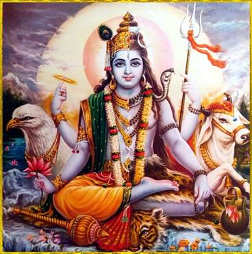
हरिहर भगवान् [अग्नि० अ० ४९]
‘क्षमादेवी’—शिवाओं (शृगालियों)-से आवृत हैं। वे एक बूढ़ी स्त्रीके रूपमें स्थित हैं। उनके दो भुजाएँ हैं। मुँह खुला हुआ है। दाँत निकले हुए हैं तथा ये धरतीपर घुटनों और हाथका सहारा लेकर बैठी हैं। उनके द्वारा उपासकोंका कल्याण होता है। यक्षिणियोंकी आँखें स्तब्ध (एकटक देखनेवाली) और बड़ी होती हैं। शाकिनियाँ वक्रदृष्टिसे देखनेवाली होती हैं। अप्सराएँ सदा ही अत्यन्त रमणीय एवं सुन्दर रूपवाली हुआ करती हैं। इनकी आँखें भूरी होती हैं॥३७-३८॥
भगवान् शंकरके द्वारपाल नन्दीश्वर एक हाथमें अक्षमाला और दूसरेमें त्रिशूल लिये रहते हैं। महाकालके एक हाथमें तलवार, दूसरेमें कटा हुआ सिर, तीसरेमें शूल और चौथेमें खेट होना चाहिये। भृङ्गीका शरीर कृश होता है। वे नृत्यकी मुद्रामें देखे जाते हैं। उनका मस्तक कूष्माण्डके समान स्थूल और गंजा होता है। वीरभद्र आदि गण हाथी और गायके समान कान और मुखवाले होते हैं। घण्टाकर्णके अठारह भुजाएँ होती हैं। वे पाप और रोगका विनाश करनेवाले हैं। वे बायें भागके आठ हाथोंमें वज्र, खड्ग, दण्ड, चक्र, बाण, मुसल, अंकुश और मुद्गर तथा दायें भागके आठ हाथोंमें तर्जनी, खेट, शक्ति, मुण्ड, पाश, धनुष, घण्टा और कुठार धारण करते हैं। शेष दो हाथोंमें त्रिशूल लिये रहते हैं। घण्टाकी मालासे अलंकृत देव घण्टाकर्ण विस्फोटक (फोड़े, फुंसी एवं चेचक आदि)-का निवारण करनेवाले हैं॥३९—४३॥
इस प्रकार आदि आग्नेय महापुराणमें ‘चण्डी आदि देवी-देवताओंकी प्रतिमाओंके लक्षणोंका निरूपण’ नामक पचासवाँ अध्याय पूरा हुआ॥५०॥
इक्यावनवाँ अध्याय
सूर्यादि ग्रहों तथा दिक्पाल आदि देवताओंकी प्रतिमाओंके लक्षणोंका वर्णन
श्रीभगवान् हयग्रीव कहते हैं—ब्रह्मन्! सात अश्वोंसे जुते हुए एक पहियेवाले रथपर विराजमान सूर्यदेवकी प्रतिमाको स्थापित करना चाहिये। भगवान् सूर्य अपने दोनों हाथोंमें दो कमल धारण करते हैं। उनके दाहिने भागमें दावात और कलम लिये दण्डी खड़े हैं और वाम भागमें पिङ्गल हाथमें दण्ड लिये द्वारपर विद्यमान हैं। ये दोनों सूर्यदेवके पार्षद हैं। भगवान् सूर्यदेवके उभय पार्श्वमें बालव्यजन (चँवर) लिये ‘राज्ञी’ तथा ‘निष्प्रभा’ खड़ी हैं।[८८] अथवा घोड़ेपर चढ़े हुए एकमात्र सूर्यकी ही प्रतिमा बनानी चाहिये। समस्त दिक्पाल हाथोंमें वरद मुद्रा, दो-दो कमल तथा शस्त्र लिये क्रमशः पूर्वादि दिशाओंमें स्थित दिखाये जाने चाहिये॥१—३॥
[८८] ‘राज्ञी’ और ‘निष्प्रभा’—ये चँवर डुलानेवाली स्त्रियोंके नाम हैं। अथवा इन नामोंद्वारा सूर्यदेवकी दोनों पत्नियोंकी ओर संकेत किया गया है। ‘राज्ञी’ शब्दसे उनकी रानी ‘संज्ञा’ गृहीत होती हैं और ‘निष्प्रभा’ शब्दसे ‘छाया’। ये दोनों देवियाँ चँवर डुलाकर पतिकी सेवा कर रही हैं। * सूर्य आदि द्वादश आदित्योंके नाम नीचे गिनाये गये हैं और अर्यमा आदि द्वादश आदित्योंके नाम १९वें अध्यायके दूसरे और तीसरे श्लोकोंमें देखने चाहिये। वे नाम वैवस्वत मन्वन्तरके आदित्योंके हैं। चाक्षुष मन्वन्तरमें वे ही ‘तुषित’ नामसे विख्यात थे। अन्य पुराणोंमें भी आदित्योंकी नामावली तथा उनके मासक्रममें यहाँकी अपेक्षा कुछ अन्तर मिलता है। इसकी संगति कल्पभेदके अनुसार माननी चाहिये।
बारह दलोंका एक कमल-चक्र बनावे। उसमें सूर्य, अर्यमा* आदि नामवाले बारह आदित्योंका क्रमशः बारह दलोंमें स्थापन करे। यह स्थापना वरुण-दिशा एवं वायव्यकोणसे आरम्भ करके नैर्ऋत्यकोणके अन्ततकके दलोंमें होनी चाहिये। उक्त आदित्यगण चार-चार हाथवाले हों और उन हाथोंमें मुद्गर, शूल, चक्र एवं कमल धारण किये हों। अग्निकोणसे लेकर नैर्ऋत्यतक, नैर्ऋत्यसे वायव्यतक, वायव्यसे ईशानतक और वहाँसे अग्निकोणतकके दलोंमें उक्त आदित्योंकी स्थिति जाननी चाहिये॥४॥
बारह आदित्योंके नाम इस प्रकार हैं—वरुण, सूर्य, सहस्रांशु, धाता, तपन, सविता, गभस्तिक, रवि, पर्जन्य, त्वष्टा, मित्र और विष्णु। ये मेष आदि बारह राशियोंमें स्थित होकर जगत्को ताप एवं प्रकाश देते हैं। ये वरुण आदि आदित्य क्रमशः मार्गशीर्ष मास (या वृश्चिक राशि)-से लेकर कार्तिक मास (या तुलाराशि)-तकके मासों (एवं राशियों)-में स्थित होकर अपना कार्य सम्पन्न करते हैं। इनकी अङ्गकान्ति क्रमशः काली, लाल, कुछ-कुछ लाल, पीली, पाण्डुवर्ण, श्वेत, कपिलवर्ण, पीतवर्ण, तोतेके समान हरी, धवलवर्ण, धूम्रवर्ण और नीली है। इनकी शक्तियाँ द्वादशदल कमलके केसरोंके अग्रभागमें स्थित होती हैं। उनके नाम इस प्रकार हैं—इडा, सुषुम्ना, विश्वार्चि, इन्दु, प्रमर्दिनी (प्रवर्द्धिनी), प्रहर्षिणी, महाकाली, कपिला, प्रबोधिनी, नीलाम्बरा, वनान्तस्था (घनान्तस्था) और अमृताख्या। वरुण आदिकी जो अङ्गकान्ति है, वही इन शक्तियोंकी भी है। केसरोंके अग्रभागोंमें इनकी स्थापना करे। सूर्यदेवका तेज प्रचण्ड और मुख विशाल है। उनके दो भुजाएँ हैं। वे अपने हाथोंमें कमल और खड्ग धारण करते हैं॥५—१०॥
चन्द्रमा कुण्डिका तथा जपमाला धारण करते हैं। मङ्गलके हाथोंमें शक्ति और अक्षमाला शोभित होती हैं। बुधके हाथोंमें धनुष और अक्षमाला शोभा पाते हैं। बृहस्पति कुण्डिका और अक्षमालाधारी हैं। शुक्रका भी ऐसा ही स्वरूप है। अर्थात् उनके हाथोंमें भी कुण्डिका और अक्षमाला शोभित होती हैं। शनि किङ्किणी-सूत्र धारण करते हैं। राहु अर्द्धचन्द्रधारी हैं तथा केतुके हाथोंमें खड्ग और दीपक शोभा पाते हैं। अनन्त, तक्षक, कर्कोटक, पद्म, महापद्म, शङ्ख और कुलिक आदि सभी मुख्य नागगण सूत्रधारी होते हैं। फन ही इनके मुख हैं। ये सब-के-सब महान् प्रभापुञ्जसे उद्भासित होते हैं। इन्द्र वज्रधारी हैं। ये हाथीपर आरूढ होते हैं। अग्निका वाहन बकरा है। अग्निदेव शक्ति धारण करते हैं। यम दण्डधारी हैं और भैंसेपर आरूढ होते हैं। निर्ऋति खड्गधारी हैं और मनुष्य उनका वाहन है। वरुण मकरपर आरूढ हैं और पाश धारण करते हैं। वायुदेव वज्रधारी हैं और मृग उनका वाहन है। कुबेर भेड़पर चढ़ते और गदा धारण करते हैं। ईशान जटाधारी हैं और वृषभ उनका वाहन है॥११—१५॥
समस्त लोकपाल द्विभुज हैं। विश्वकर्मा अक्षसूत्र धारण करते हैं। हनुमान्जीके हाथमें वज्र है। उन्होंने अपने दोनों पैरोंसे एक असुरको दबा रखा है। किंनर-मूर्तियाँ हाथमें वीणा लिये हों और विद्याधर माला धारण किये आकाशमें स्थित दिखाये जायँ। पिशाचोंके शरीर दुर्बल-कङ्कालमात्र हों। वेतालोंके मुख विकराल हों। क्षेत्रपाल शूलधारी बनाये जायँ। प्रेतोंके पेट लंबे और शरीर कृश हों॥१६—१८॥
इस प्रकार आदि आग्नेय महापुराणमें ‘सूर्यादि ग्रहों तथा दिक्पालादि देवताओंकी प्रतिमाओंके लक्षणोंका वर्णन’ नामक इक्यावनवाँ अध्याय पूरा हुआ॥५१॥
बावनवाँ अध्याय
चौंसठ योगिनी आदिकी प्रतिमाओंके लक्षण
श्रीभगवान् बोले—ब्रह्मन्! अब मैं चौंसठ योगिनियोंका वर्णन करूँगा। इनका स्थान क्रमशः पूर्वदिशासे लेकर ईशानपर्यन्त है। इनके नाम इस प्रकार हैं—१. अक्षोभ्या, २. रूक्षकर्णी, ३. राक्षसी, ४. क्षपणा, ५. क्षमा, ६. पिङ्गाक्षी, ७. अक्षया, ८. क्षेमा, ९. इला, १०. नीलालया, ११. लोला, १२. रक्ता (या लक्ता), १३. बलाकेशी, १४. लालसा, १५. विमला, १६. दुर्गा (अथवा हुताशा), १७. विशालाक्षी, १८. ह्रींकारा (या हुंकारा), १९. वडवामुखी, २०. महाक्रूरा, २१. क्रोधना, २२. भयंकरी, २३. महानना, २४. सर्वज्ञा, २५. तरला, २६. तारा, २७. ऋग्वेदा, २८. हयानना, २९. सारा, ३०. रससंग्राही (अथवा सुसंग्राही या रुद्रसंग्राही), ३१. शबरा (या शम्बरा), ३२. तालजङ्घिका, ३३. रक्ताक्षी, ३४. सुप्रसिद्धा, ३५. विद्युज्जिह्वा, ३६. करङ्किणी, ३७. मेघनादा, ३८. प्रचण्डा, ३९. उग्रा, ४०. कालकर्णी, ४१. वरप्रदा, ४२. चण्डा (अथवा चन्द्रा), ४३. चण्डवती (या चन्द्रावली), ४४. प्रपञ्चा, ४५. प्रलयान्तिका, ४६. शिशुवक्त्रा, ४७. पिशाची, ४८. पिशितासवलोलुपा, ४९. धमनी, ५०. तपनी, ५१. रागिणी (अथवा वामनी), ५२. विकृतानना, ५३. वायुवेगा, ५४. बृहत्कुक्षि, ५५. विकृता, ५६. विश्वरूपिका, ५७. यमजिह्वा, ५८. जयन्ती, ५९. दुर्जया, ६०. जयन्तिका (अथवा यमान्तिका), ६१. विडाली, ६२. रेवती, ६३. पूतना तथा ६४. विजयान्तिका॥१—८॥
योगिनियाँ आठ अथवा चार हाथोंसे युक्त होती हैं। इच्छानुसार शस्त्र धारण करती हैं तथा उपासकोंको सम्पूर्ण सिद्धियाँ प्रदान करनेवाली हैं। भैरवके बारह हाथ हैं। उनके मुखमें ऊँचे दाँत हैं तथा वे सिरपर जटा एवं चन्द्रमा धारण करते हैं। उन्होंने एक ओरके पाँच हाथोंमें क्रमशः खड्ग, अंकुश, कुठार, बाण तथा जगत्को अभय प्रदान करनेवाली मुद्रा धारण कर रखी है। उनके दूसरी ओरके पाँच हाथ धनुष, त्रिशूल, खट्वाङ्ग, पाशकार्द्ध एवं वरकी मुद्रासे सुशोभित हैं। शेष दो हाथोंमें उन्होंने गजचर्म ले रखा है। हाथीका चमड़ा ही उनका वस्त्र है और वे सर्पमय आभूषणोंसे विभूषित हैं। प्रेतपर आसन लगाये मातृकाओंके मध्यभागमें विराजमान हैं। इस रूपमें उनकी प्रतिमा बनाकर उसकी पूजा करनी चाहिये। भैरवके एक या पाँच मुख बनाने चाहिये॥९—११॥
पूर्व दिशासे लेकर अग्निकोणतक विलोम-क्रमसे प्रत्येक दिशामें भैरवको स्थापित करके क्रमशः उनका पूजन करे। बीज-मन्त्रको आठ दीर्घ स्वरोंमेंसे एक-एकके द्वारा भेदित एवं अनुस्वारयुक्त करके उस-उस दिशाके भैरवके साथ संयुक्त करे और उन सबके अन्तमें ‘नमः’ पदको जोड़े। यथा—ॐ ह्रां भैरवाय नमः—प्राच्याम् । ॐ ह्रीं भैरवाय नमः—ऐशान्याम् । ॐ ह्रूं भैरवाय नमः—उदीच्याम् । ॐ ह्रें भैरवाय नमः—वायव्ये । ॐ ह्रैं भैरवाय नमः—प्रतीच्याम् । ॐ ह्रों भैरवाय नमः—नैर्ऋत्याम् । ॐ ह्रौं भैरवाय नमः—अवाच्याम् । ॐ ह्रः भैरवाय नमः—आग्नेय्याम् । इस प्रकार इन मन्त्रोंद्वारा क्रमशः उन दिशाओंमें भैरवका पूजन करे। इन्हींमेंसे छः बीजमन्त्रोंद्वारा षडङ्गन्यास एवं उन अङ्गोंका पूजन भी करना चाहिये[८९]॥१२॥
[८९] यथा—ॐ ह्रां हृदयाय नमः । ॐ ह्रीं शिरसे स्वाहा । ॐ ह्रूं शिखायै वषट् । ॐ ह्रैं कवचाय हुम् । ॐ ह्रौं, नेत्रत्रयाय वौषट् । ॐ ह्रः अस्त्राय फट् ।
उनका ध्यान इस प्रकार है—भैरवजी मन्दिर अथवा मण्डलके आग्नेयदल (अग्निकोणस्थ दल)-में विराजमान सुवर्णमयी रसनासे युक्त, नाद, बिन्दु एवं इन्दुसे सुशोभित तथा मातृकाधिपतिके अङ्गसे प्रकाशित हैं। (ऐसे भगवान् भैरवका मैं भजन करता हूँ।) वीरभद्र वृषभपर आरूढ हैं। वे मातृकाओंके मण्डलमें विराजमान और चार भुजाधारी हैं। गौरी दो भुजाओंसे युक्त और त्रिनेत्रधारिणी हैं। उनके एक हाथमें शूल और दूसरेमें दर्पण है। ललितादेवी कमलपर विराजमान हैं। उनके चार भुजाएँ हैं। वे अपने हाथोंमें त्रिशूल, कमण्डलु, कुण्डी और वरदानकी मुद्रा धारण करती हैं। स्कन्दकी अनुचरी मातृकागणोंके हाथोंमें दर्पण और शलाका होनी चाहिये॥१३—१५॥
चण्डिका देवीके दस हाथ हैं। वे अपने दाहिने हाथोंमें बाण, खड्ग, शूल, चक्र और शक्ति धारण करती हैं और बायें हाथोंमें नागपाश, ढाल, अंकुश, कुठार तथा धनुष लिये रहती हैं। वे सिंहपर सवार हैं और उनके सामने शूलसे मारे गये महिषासुरका शव है॥१६-१७॥
इस प्रकार आदि आग्नेय महापुराणमें ‘चौंसठ योगिनी आदिकी प्रतिमाओंके लक्षणोंका वर्णन’ नामक बावनवाँ अध्याय पूरा हुआ॥५२॥
तिरपनवाँ अध्याय
लिङ्ग[९०] आदिका लक्षण
[९०] श्रीविद्यार्णवतन्त्रके ११वें श्वासमें लिङ्ग-निर्माणकी साधारण विधि इस प्रकार दी गयी है— अपनी रुचिके अनुसार लिङ्ग कल्पित करके उसके मस्तकका विस्तार उतना ही रखे, जितनी पूजित लिङ्गभागकी ऊँचाई हो। जैसा कि शैवागमका वचन है—‘लिङ्गमस्तकविस्तारो लिङ्गोच्छ्रायसमो भवेत्।’ लिङ्गके मस्तकका विस्तार जितना हो, उससे तिगुने सूत्रसे वेष्टित होने योग्य लिङ्गकी स्थूलता (मोटाई) रखे। शिवलिङ्गकी जो स्थूलता या मोटाई है, उसके सूत्रके बराबर पीठका विस्तार रखे। तत्पश्चात् पूज्य लिङ्गका जो उच्च अंश है, उससे दुगुनी ऊँचाईसे युक्त वृत्ताकार या चतुरस्र पीठ बनावे। पीठके मध्यभागमें लिङ्गके स्थूलतामात्रसूचक नाहसूत्रके द्विगुण सूत्रसे वेष्टित होने योग्य स्थूल कण्ठका निर्माण करे। कण्ठके ऊपर और नीचे समभागसे तीन या दो मेखलाओंकी रचना करे। तदनन्तर लिङ्गके मस्तकका जो विस्तार है, उसको छः भागोंमें विभक्त करे। उनमेंसे एक अंशके मानके अनुसार पीठके ऊपरी भागमें सबसे बाहरी अंशके द्वारा मेखला बनावे। उसके भीतर उसी मानके अनुसार उससे संलग्न अंशके द्वारा खात (गर्त)-की रचना करे। पीठसे बाह्यभागमें लिङ्गके समान ही बड़ी अथवा पीठमानके आधे मानके बराबर बड़ी, मूलदेशमें दीर्घांश मानके समान विस्तारवाली और अग्रभागमें उसके आधे मानके तुल्य विस्तारवाली नाली बनावे। इसीको ‘प्रणाल’ कहते हैं। प्रणालके मध्यमें मूलसे अग्रभागपर्यन्त जलमार्ग बनावे। प्रणालका जो विस्तार है, उसके एक तिहाई विस्तारवाले खातरूप जलमार्गसे युक्त पीठ-सदृश मेखलायुक्त प्रणाल बनाना चाहिये। यह स्फटिक आदि रत्नविशेषों अथवा पाषाण आदिके द्वारा शिवलिङ्ग-निर्माणकी साधारण विधि है। यथा— लिङ्गमस्तकविस्तारं पूज्यभागसमं नयेत् । .......................लक्षणमाचरेत् ।। १—८ ।।
श्रीभगवान् हयग्रीव कहते हैं—कमलोद्भव! अब मैं लिङ्ग आदिका लक्षण बताता हूँ, सुनो। लंबाईके आधेमें आठसे भाग देकर आठ भागोंमेंसे तीन भागको त्याग दे और शेष पाँच भागोंसे चौकोर विष्कम्भका निर्माण कराये। फिर लंबाईके छः भाग करके उन सबको एक, दो और तीनके क्रमसे अलग-अलग रखे। इनमें पहला भाग ब्रह्माका, दूसरा विष्णुका और तीसरा शिवका है। उन भागोंमें यह ‘वर्द्धमान’ भाग कहा जाता है। चौकोर मण्डलमें कोणसूत्रके आधे मापको लेकर उसे सभी कोणोंमें चिह्नित करे। ऐसा करनेसे आठ कोणोंका ‘वैष्णवभाग’ सिद्ध होता है, इसमें संशय नहीं है। तदनन्तर उसे षोडश कोण और फिर बत्तीस कोणोंसे युक्त करे॥१—४॥
तत्पश्चात् चौंसठ कोणोंसे युक्त करके वहाँ गोल रेखा बनावे। तदनन्तर श्रेष्ठ आचार्य लिङ्गके शिरोभागका कर्तन करे। इसके बाद लिङ्गके विस्तारको आठ भागोंमें विभाजित करे। फिर उनमेंसे एक भागके चौथे अंशको छोड़ देनेपर छत्राकार सिरका निर्माण होता है। जिसकी लंबाई-चौड़ाई तीन भागोंमें समान हो, वह समभागवाला लिङ्ग सम्पूर्ण मनोवाञ्छित फलोंको देनेवाला है। देवपूजित लिङ्गमें लंबाईके चौथे भागसे विष्कम्भ बनता है। अब तुम सभी लिङ्गोंके लक्षण सुनो॥५—८॥
विद्वान् पुरुष सोलह अङ्गुलवाले लिङ्गके मध्यवर्ती सूत्रको, जो ब्रह्म और रुद्रभागके निकटस्थ है, लेकर उसे छः भागोंमें विभाजित करे। वैयमन-सूत्रोंद्वारा निश्चित जो वह माप है, उसे ‘अन्तर’ कहते हैं। जो सबसे उत्तरवर्ती लिङ्ग है, उसे आठ जौ बड़ा बनाना चाहिये; शेष लिङ्गोंको एक-एक जौ छोटा कर देना चाहिये। उपर्युक्त लिङ्गके निचले भागको तीन हिस्सोंमें विभक्त करके ऊपरके एक भागको छोड़ दे। शेष दो भागोंको आठ हिस्सोंमें विभक्त करके ऊपरके तीन भागोंको त्याग दे। पाँचवें भागके ऊपरसे घूमती हुई एक लंबी रेखा बनावे और एक भागको छोड़कर बीचमें उन दो रेखाओंका संगम करावे। यह लिङ्गोंका साधारण लक्षण बताया गया; अब पिण्डिकाका सर्वसाधारण लक्षण बताता हूँ, मुझसे सुनो॥९—१३॥
ब्रह्मभागमें प्रवेश तथा लिङ्गकी ऊँचाई जानकर विद्वान् पुरुष ब्रह्मशिलाकी स्थापना करे और उस शिलाके ऊपर ही उत्तम रीतिसे कर्मका सम्पादन करे। पिण्डिकाकी ऊँचाईको जानकर उसका विभाजन करे। दो भागकी ऊँचाईको पीठ समझे। चौड़ाईमें वह लिङ्गके समान ही हो। पीठके मध्यभागमें खात (गड्ढा) करके उसे तीन भागोंमें विभाजित करे। अपने मानके आधे त्रिभागसे ‘बाहुल्य’ की कल्पना करे। बाहुल्यके तृतीय भागसे मेखला बनावे और मेखलाके ही तुल्य खात (गड्ढा) तैयार करे। उसे क्रमशः निम्न (नीचे झुका हुआ) रखे। मेखलाके सोलहवें अंशसे खात निर्माण करे और उसीके मापके अनुसार उस पीठकी ऊँचाई, जिसे ‘विकाराङ्ग’ कहते हैं, करावे। प्रस्तरका एक भाग भूमिमें प्रविष्ट हो, एक भागसे पिण्डिका बने, तीन भागोंसे कण्ठका निर्माण कराया जाय और एक भागसे पट्टिका बनायी जाय॥१४—१९॥
दो भागसे ऊपरका पट्ट बने; एक भागसे शेष-पट्टिका तैयार करायी जाय। कण्ठपर्यन्त एक-एक भाग प्रविष्ट हो। तत्पश्चात् पुनः एक भागसे निर्गम (जल निकलनेका मार्ग) बनाया जाय। यह शेष-पट्टिकातक रहे। प्रणाल (नाली)-के तृतीय भागसे निर्गम बनना चाहिये। तृतीय भागके मूलमें अङ्गुलिके अग्रभागके बराबर विस्तृत खात बनावे, जो तृतीय भागसे आधे विस्तारका हो। वह खात उत्तरकी ओर जाय। यह पिण्डिकासहित साधारण लिङ्गका वर्णन किया गया॥२०—२३॥
इस प्रकार आदि आग्नेय महापुराणमें ‘लिङ्ग आदिके लक्षणका वर्णन’ नामक तिरपनवाँ अध्याय पूरा हुआ॥५३॥
चौवनवाँ अध्याय
लिङ्ग-मान एवं व्यक्ताव्यक्त लक्षण आदिका वर्णन
श्रीभगवान् हयग्रीव कहते हैं—ब्रह्मन्! अब मैं दूसरे प्रकारसे लिङ्ग आदिका वर्णन करता हूँ, सुनो, लवण तथा घृतसे निर्मित शिवलिङ्ग बुद्धिको बढ़ानेवाला होता है। वस्त्रमय लिङ्ग ऐश्वर्यदायक होता है। उसे तात्कालिक (केवल एक बार ही पूजाके उपयोगमें आनेवाला) लिङ्ग माना गया है। मृत्तिकासे बनाया हुआ शिवलिङ्ग दो प्रकारका होता है—पक्व तथा अपक्व। अपक्वसे पक्व श्रेष्ठ माना गया है। उसकी अपेक्षा काष्ठका बना हुआ शिवलिङ्ग अधिक पवित्र एवं पुण्यदायक है। काष्ठमय लिङ्गसे प्रस्तरका लिङ्ग श्रेष्ठ है। प्रस्तरसे मोतीका और मोतीसे सुवर्णका बना हुआ ‘लौह लिङ्ग’ उत्तम माना गया है। चाँदी, ताँबे, पीतल, रत्न तथा रस (पारद)-का बना हुआ शिवलिङ्ग भोग-मोक्ष देनेवाला एवं श्रेष्ठ है। रस (पारद आदि)-के लिङ्गको राँगा, लोहा (सुवर्ण, ताँबा) आदि तथा रत्नके भीतर आबद्ध करके स्थापित करे। सिद्ध आदिके द्वारा स्थापित स्वयम्भूलिङ्ग आदिके लिये माप आदि करना अभीष्ट नहीं है॥१—५॥
बाणलिङ्ग (नर्मदेश्वर)-के लिये भी यही बात है। (अर्थात् उसके लिये भी ‘वह इतने अङ्गुलका हो’—इस तरहका मान आदि आवश्यक नहीं है।) वैसे शिवलिङ्गोंके लिये अपनी इच्छाके अनुसार पीठ और प्रासादका निर्माण करा लेना चाहिये। सूर्यमण्डलस्थ शिवलिङ्गको दर्पणमें प्रतिबिम्बित करके उसका पूजन करना चाहिये। वैसे तो भगवान् शंकर सर्वत्र ही पूजनीय हैं, किंतु शिवलिङ्गमें उनके अर्चनकी पूर्णता होती है। प्रस्तरका शिवलिङ्ग एक हाथसे अधिक ऊँचा होना चाहिये। काष्ठमय लिङ्गका मान भी ऐसा ही है। चल शिवलिङ्गका स्वरूप अङ्गुल-मानके अनुसार निश्चित करना चाहिये तथा स्थिर लिङ्गका द्वारमान, गर्भमान एवं हस्तमानके अनुसार। गृहमें पूजित होनेवाला चललिङ्ग एक अङ्गुलसे लेकर पंद्रह अङ्गुलतकका हो सकता है॥६—८॥
द्वारमानसे लिङ्गके तीन भेद हैं। इनमेंसे प्रत्येकके गर्भमानके अनुसार नौ-नौ भेद होते हैं। (इस तरह कुल सत्ताईस हुए। इनके अतिरिक्त) करमानसे नौ लिङ्ग और हैं। इनकी देवालयमें पूजा करनी चाहिये। इस प्रकार सबको एकमें जोड़नेसे छत्तीस लिङ्ग जानने चाहिये। ये ज्येष्ठमानके अनुसार हैं। मध्यममानसे और अधम (कनिष्ठ)-मानसे भी छत्तीस-छत्तीस शिवलिङ्ग हैं—ऐसा जानना चाहिये। इस प्रकार समस्त लिङ्गोंको एकत्र करनेसे एक सौ आठ शिवलिङ्ग हो सकते हैं। एकसे लेकर पाँच अङ्गुलतकका चल शिवलिङ्ग ‘कनिष्ठ’ कहलाता है, छः से लेकर दस अङ्गुलतकका चल लिङ्ग ‘मध्यम’ कहा गया है तथा ग्यारहसे लेकर पंद्रह अङ्गुलतकका चल शिवलिङ्ग ‘ज्येष्ठ’ जानने योग्य है। महामूल्यवान् रत्नोंका बना हुआ शिवलिङ्ग छः अङ्गुलका, अन्य रत्नोंसे निर्मित शिवलिङ्ग नौ अङ्गुलका, सुवर्णभारका बना हुआ बारह अङ्गुलका तथा शेष वस्तुओंसे निर्मित शिवलिङ्ग पंद्रह अङ्गुलका होना चाहिये॥९—१३॥
लिङ्ग-शिलाके सोलह अंश करके उसके ऊपरी चार अंशोंमेंसे पार्श्ववर्ती दो भाग निकाल दे। फिर बत्तीस अंश करके उसके दोनों कोणवर्ती सोलह अंशोंको लुप्त कर दे। फिर उसमें चार अंश मिलानेसे ‘कण्ठ’ होता है। तात्पर्य यह कि बीस अंशका कण्ठ होता है और उभय पार्श्ववर्ती ३×४=१२ अंशोंको मिटानेसे ज्येष्ठ चल लिङ्ग बनता है। प्रासादकी ऊँचाईके मानको सोलह अंशोंमें विभक्त करके उसमेंसे चार, छः और आठ अंशोंद्वारा क्रमशः हीन, मध्यम और ज्येष्ठ द्वार निर्मित होता है। द्वारकी ऊँचाईमेंसे एक चौथाई कम कर दिया जाय तो वह लिङ्गकी ऊँचाईका मान है। लिङ्गशिलाके गर्भके आधे भागतककी ऊँचाईका शिवलिङ्ग ‘अधम’ (कनिष्ठ) होता है और तीन भूतांश (३×५=) पंद्रह अंशोंके बराबरकी ऊँचाईका शिवलिङ्ग ‘ज्येष्ठ’ कहा गया है। इन दोनोंके बीचमें बराबरकी ऊँचाईपर सात जगह सूत्रपात (सूतद्वारा रेखा) करे। इस तरह नौ सूत (सूत्रनिर्मित रेखाचिह्न) होंगे। इन नौ सूतोंमेंसे पाँच सूतोंकी ऊँचाईके मापका शिवलिङ्ग ‘मध्यम’ होगा। लिङ्गोंकी लंबाई (या ऊँचाई) उत्तरोत्तर दो-दो अंशके अन्तरसे होगी। इस तरह लिङ्गोंकी दीर्घता बढ़ती जायगी और नौ लिङ्ग निर्मित होंगे[९१]॥१४—१८॥
[९१] ‘समराङ्गणसूत्रधार’ में कहा है कि दो-दो अंशकी वृद्धि करते हुए तीन हाथकी लंबाई-तक पहुँचते-पहुँचते नौ लिङ्ग निर्मित हो सकते हैं—‘द्वयंशवृद्धा नवैवं स्युराहस्तत्रितयावधेः।’
यदि हाथके मापसे नौ लङ्ग बनाये जायँ तो पहला लिङ्ग एक हाथका होगा, फिर दूसरेके मापमें पहलेसे एक हाथ बढ़ जायगा; इस प्रकार जबतक नौ हाथकी लंबाई पूरी न हो जाय तबतक शिला या काष्ठकी मापमें एक-एक हाथ बढ़ाते रहेंगे। ऊपर जो हीन, मध्यम और उत्तम—तीन प्रकारके लिङ्ग बताये गये हैं, उनमेंसे प्रत्येकके तीन-तीन भेद हैं। बुद्धिमान् पुरुष एक-एक लिङ्गमें विभागपूर्वक तीन-तीन लिङ्गका निर्माण करावें। छः अङ्गुल और नौ अङ्गुलके शिवलिङ्गोंमें भी तीन-तीन लिङ्ग-निर्माण करावे। स्थिर लिङ्ग द्वारमान, गर्भमान तथा हस्तमान—इन तीन दीर्घ प्रमाणों (मापों)-के अनुसार बनाना चाहिये। उक्त तीन मापोंके अनुसार ही उसकी तीन संज्ञाएँ हैं—भगेश, जलेश तथा देवेश। विष्कम्भ (विस्तार)-के अनुसार लिङ्गके चार रूप लक्षित करे। दीर्घप्रमाणके अनुसार सम्पादित होनेवाले तीन रूपोंमें निर्दिष्ट लिङ्गको शुभ आय आदिसे युक्त करके निर्मित करावे। उन त्रिविध लिङ्गोंकी लंबाई चार या आठ-आठ हाथकी हो—यह अभीष्ट है। वे क्रमशः त्रितत्त्वरूप अथवा त्रिगुणरूप हैं। जो लिङ्ग जितने हाथका हो, उसका अङ्गुल बनाकर आय-संख्या (८), स्वर-संख्या (७), भूत-संख्या (५) तथा अग्नि-संख्या (३)-से पृथक्-पृथक् भाग दे। जो शेष बचे उसके अनुसार शुभाशुभ फलको जाने॥१९—२४॥
ध्वजादि आयोंमेंसे ध्वज, सिंह, हस्ती और वृषभ—ये श्रेष्ठ हैं[९२]। अन्य चार आय अशुभ हैं। (सात संख्यासे भाग देनेपर जो शेष बचे, उसके अनुसार स्वरका निश्चय करे।) स्वरोंमें षड्ज, गान्धार तथा पञ्चम शुभदायक हैं। [पाँचसे भाग देनेपर जो शेष बचे, उसके अनुसार पृथ्वी आदि भूतोंका निश्चय करे।] भूतोंमें पृथ्वी ही शुभ है। [तीनसे भाग देनेपर जो शेष रहे, तदनुसार अग्नि जाने।] अग्नियोंमें आहवनीय अग्नि ही शुभ है। उक्त लिङ्गकी लंबाईको आधा करके उसमें आठसे भाग देनेपर यदि शेष सातसे अधिक हो तो वह लिङ्ग ‘आढ्य’ कहा जाता है। यदि पाँचसे अधिक शेष रहे तो वह ‘अनाढ्य’ है। यदि छः अंशसे अधिक शेष हो तो वह लिङ्ग ‘देवेज्य’ है और यदि तीन अंशसे अधिक शेष हो तो उस लिङ्गको ‘अर्कतुल्य’ माना जाता है। ये चारों ही प्रकारके लिङ्ग चतुष्कोण होते हैं। पाँचवाँ ‘वर्धमान’ संज्ञक लिङ्ग है, उसमें व्याससे नाह बढ़ा हुआ होता है। व्यासके समान नाह एवं व्याससे बढ़ा हुआ नाह—इस प्रकार इन लिङ्गोंके दो भेद हो जाते हैं। विश्वकर्म-शास्त्रके अनुसार इन सबके बहुत-से भेद बताये जायँगे। आढ्य आदि लिङ्गोंकी स्थूलता आदिके कारण तीन भेद और होते हैं। उनमें एक-एक यवकी वृद्धि करनेसे वे सब आठ प्रकारके लिङ्ग होते हैं। फिर हस्तमानसे ‘जिन’ संज्ञक लिङ्गके भी तीन भेद होंगे। उसको सर्वसम लिङ्गमें जोड़ लिया जायगा॥२५—२९॥
[९२] ‘अपराजितपृच्छा’ के ‘आयाधिकार’ नामक चौंसठवें सूत्रमें आयोंके नाम इस प्रकार दिये गये हैं—ध्वज, धूम्र, सिंह, श्वान, वृष, गर्दभ, गज और ध्वांक्ष (काक)। इनकी स्थिति पूर्वादि दिशाओंमें प्रदक्षिण-क्रमसे है। देवालयके लिये ध्वज, सिंह, वृष और गज—ये आय श्रेष्ठ कहे गये हैं। अधमोंके लिये शेष आय सुखावह हैं। सत्ययुगमें ध्वज, त्रेतामें सिंह, द्वापरमें वृषभ और कलियुगमें गजी नामक आयका प्राधान्य है। सिंह नामक आय मुख्यतः राजाओंके लिये कल्याणकारक है; ब्राह्मणके लिये ध्वज प्रशस्त है तथा वैश्यके लिये वृष। ध्वज आयमें अर्थलाभ होता है और धूम्रमें संताप। सिंह आयमें विपुल भोग उपस्थित होते हैं। श्वान नामक आयमें कलह होता है। वृषभमें धन-धान्यकी वृद्धि होती है। गर्दभमें स्त्रियोंका चरित्र दूषित होता है। हाथी नामक आयमें सब लोग शुभ देखते हैं और काक नामक आय होनेपर निश्चय ही मृत्यु होती है। (श्लोक ९—१६)
अनाढ्य, देवार्चित तथा अर्कतुल्यमें भी पाँच-पाँच भेद होनेसे ये पच्चीस होंगे। ये सब एक, जिन और भक्त—भेदोंसे पचहत्तर हो जायँगे। सबका आकलन करनेसे पंद्रह हजार चार सौ शिवलिङ्ग हो सकते हैं।[९३] इसी तरह आठ अङ्गुलके विस्तारवाला लिङ्ग भी एकाङ्गुल मान, हस्तमान एवं गर्भमानके अनुसार नौ भेदोंसे युक्त है। इन सबके कोण तथा अर्द्धकोणस्थ सूत्रोंद्वारा कोणोंका छेदन (विभाजन) करे। लिङ्गके मध्यभागके विस्तारको ही प्रत्येक विभागका विस्तार मानकर, तदनुसार मध्य, ऊर्ध्व और अधः—इन विभागोंकी स्थापना करे। मध्यम विभागसे ऊपरका अष्टकोण या षोडश कोणवाला विभाग शिवका अंश है। पाद या मूलभागसे जानुपर्यन्त लिङ्गका अधोभाग है, यह ब्रह्माका अंश है तथा जानुसे नाभिपर्यन्त लिङ्गका मध्यम भाग है, जो भगवान् विष्णुका अंश है॥३०—३३॥
[९३] अग्निपुराण अध्याय ५४ के २८वें श्लोकमें विश्वकर्माके कथनानुसार लिङ्ग-भेदोंकी परिगणना की गयी है और सब मिलाकर चौदह हजार चौदह सौ भेद कहे गये हैं। इस प्रकरणका मूल पाठ अपने शुद्धरूपमें उपलब्ध नहीं हो रहा है; अतएव यहाँ दी हुई गणना बैठ नहीं रही है। परंतु विश्वकर्माके शास्त्र ‘अपराजितपृच्छा’ के अवलोकनसे इन भेदोंपर विशेष प्रकाश पड़ता है। उसके अनुसार समस्त लिङ्ग-भेद १४४२० होते हैं। किस प्रकार, सो बताया जाता है—प्रस्तरमय लिङ्ग कम-से-कम एक हाथका होता है, उससे कम नहीं। उसका अन्तिम आयाम नौ हाथका बताया गया है। इस प्रकार एक हाथसे लेकर नौ हाथतकके लिङ्ग बनाये जायँ तो उनकी संख्या नौ होती है। इनका प्रस्तार यों समझना चाहिये। एक हाथसे तीन हाथतकके शिवलिङ्ग ‘कनिष्ठ’ कहे गये हैं। चारसे छः हाथतकके ‘मध्यम’ माने गये हैं और सातसे नौतकके ‘उत्तम’ या ‘ज्येष्ठ’ कहे गये हैं। इन तीनोंके प्रमाणमें पादवृद्धि करनेसे कुल ३३ शिवलिङ्ग होते हैं। यथा— एक हाथ१, सवा हाथ२, डेढ़ हाथ३, पौने दो हाथ४, दो हाथ५, सवा दो हाथ६, ढाई हाथ७, पौने तीन हाथ८, तीन हाथ९, सवा तीन हाथ१०, साढ़े तीन हाथ११, पौने चार हाथ१२, चार हाथ१३, सवा चार हाथ१४, साढ़े चार हाथ१५, पौने पाँच हाथ१६, पाँच हाथ१७, सवा पाँच हाथ१८, साढ़े पाँच हाथ१९, पौने छः हाथ२०, छः हाथ२१, सवा छः हाथ२२, साढ़े छः हाथ२३, पौने सात हाथ२४, सात हाथ२५, सवा सात हाथ२६, साढ़े सात हाथ२७, पौने आठ हाथ२८, आठ हाथ२९, सवा आठ हाथ३०, साढ़े आठ हाथ३१, पौने नौ हाथ३२, नौ हाथ३३। इन तैंतीसोंके नाम विश्वकर्माने क्रमशः इस प्रकार बताये हैं—१. भव, २. भवोद्भव, ३. भाव, ४. संसारभयनाशन, ५. पाशयुक्त, ६. महातेज, ७. महादेव, ८. परात्पर, ९. ईश्वर, १०. शेखर, ११. शिव, १२. शान्त, १३. मनोह्लादक, १४. रुद्रतेज, १५. सदात्मक (सद्योजात), १६. वामदेव, १७. अघोर, १८. तत्पुरुष, १९. ईशान, २०. मृत्युंजय, २१. विजय, २२. किरणाक्ष, २३. अघोरास्त्र, २४. श्रीकण्ठ, २५. पुण्यवर्धन, २६. पुण्डरीक, २७. सुवक्त्र, २८. उमातेजः, २९. विश्वेश्वर, ३०. त्रिनेत्र, ३१. त्र्यम्बक, ३२. घोर, ३३. महाकाल।
मूर्धान्तभाग भूतभागेश्वरका है। व्यक्त-अव्यक्त सभी लिङ्गोंके लिये ऐसी ही बात है। जिस शिवलिङ्गमें पाँच लिङ्गकी व्यवस्था है, वहाँ शिरोभाग गोलाकार होना चाहिये—ऐसा बताया जाता है। वह गोलाई छत्राकार हो, मुर्गीके अंडेके समान हो; नवोदित चन्द्रके सदृश हो या पुरुषके आकारकी हो। [‘पुरुषाकृति’ के स्थानमें ‘त्रपुषाकृति’ पाठ हो तो गोलाई त्रपुषके समान आकारवाली हो—ऐसा अर्थ लेना चाहिये।] इस प्रकार एक-एकके चार भेद होते हैं। कामनाओंके भेदसे इनके फलमें भी भेद होता है, यह बताऊँगा। लिङ्गके मस्तक-भागका विस्तार जितने अङ्गुलका हो, उतनी संख्यामें आठसे भाग दे। इस प्रकार मस्तकको आठ भागोंमें विभक्त करके आदिके जो चार भाग हैं, उनका विस्तार और ऊँचाईके अनुसार ग्रहण करे। एक भागको छाँट देनेसे ‘पुण्डरीक’ नामक लिङ्ग होता है, दो भागोंको लुप्त कर देनेसे ‘विशाल’ संज्ञक लिङ्ग होता है, तीन भागोंका उच्छेद कर देनेपर उसकी ‘श्रीवत्स’ संज्ञा होती है तथा चार भागोंके लोपसे उस लिङ्गको ‘शत्रुकारक’ कहा गया है। शिरोभाग सब ओरसे सम हो तो श्रेष्ठ माना गया है। देवपूज्य लिङ्गमें मस्तक-भाग कुक्कुटके अण्डकी भाँति गोल होना चाहिये॥३४—३८॥
चतुर्भागात्मक लिङ्गमेंसे ऊपरका दो भाग मिटा देनेसे ‘त्रपुष’ नामक लिङ्ग होता है। यह (त्रपुष) अनाढ्यसंज्ञक शिवलिङ्गका सिर माना गया है। अब अर्द्ध-चन्द्राकार सिरके विषयमें सुनो—शिवलिङ्गके प्रान्तभागमें एक अंशके चार अंश करके एक अंशको त्याग दिया जाय तो वह ‘अमृताक्ष’ नाम धारण करता है। दूसरे, तीसरे और चौथे अंशका लोप करनेपर क्रमशः उन शिवलिङ्गोंकी ‘पूर्णेन्दु’, ‘बालेन्दु’ तथा ‘कुमुद’ संज्ञा होती है। ये क्रमशः चतुर्मुख, त्रिमुख और एकमुख होते हैं। इन तीनोंको ‘मुखलिङ्ग’ भी कहते हैं। अब मुखलिङ्गके विषयमें सुनो—पूजाभागकी त्रिविध कल्पना करनी चाहिये—मूर्तिपूजा, अग्निपूजा तथा पदपूजा। पूर्ववत् द्वादशांशका त्याग करके छः भागोंद्वारा छः स्थानोंकी अभिव्यक्ति करे। सिरको ऊँचा करना चाहिये तथा ललाट, नासिका, मुख, चिबुक तथा ग्रीवाभागको भी स्पष्टतया व्यक्त करे। चार भागों (या अंशों)-द्वारा दोनों भुजाओं तथा नेत्रोंको प्रकट करे। प्रतिमाके प्रमाणके अनुसार मुकुलाकार हाथ बनाकर विस्तारके अष्टमांशसे चारों मुखोंका निर्माण करे। प्रत्येक मुख सब ओरसे सम होना चाहिये। यह मैंने चतुर्मुखलिङ्गके विषयमें बताया है; अब त्रिमुखलिङ्गके विषयमें बताया जाता है, सुनो—॥३९—४४॥
त्रिमुखलिङ्गमें चतुर्मुखकी अपेक्षा कान और पैर अधिक रहेंगे। ललाट आदि अङ्गोंका पूर्ववत् ही निर्देश करे। चार अंशोंसे दो भुजाओंका निर्माण करे, जिनका पिछला भाग सुदृढ़ एवं सुपुष्ट हो। विस्तारके अष्टमांशसे तीनों मुखोंका विनिर्गम (प्राकट्य) हो। [अब एकमुखलिङ्गके विषयमें सुनो—] एकमुख पूर्व दिशामें बनाना चाहिये; उसके नेत्रोंमें सौम्यभाव रहे। (उग्रता न हो।) उसके ललाट, नासिका, मुख और ग्रीवामें विवर्तन (विशेष उभाड़) हो। बाहु-विस्तारके पञ्चमांशसे पूर्वोक्त अङ्गोंका निर्माण होना चाहिये। एकमुखलिङ्गको बाहुरहित बनाना चाहिये। एकमुखलिङ्गमें विस्तारके छठे अंशसे मुखका निर्गमन हितकर कहा गया है। मुखयुक्त जितने भी लिङ्ग हैं, उन सबका शिरोभाग त्रपुषाकार या कुक्कुटाण्डके समान गोलाकार होना चाहिये॥४५—४८॥
इस प्रकार आदि आग्नेय महापुराणमें ‘लिङ्गमान एवं व्यक्ताव्यक्त लक्षण आदिका वर्णन’ नामक चौवनवाँ अध्याय पूरा हुआ॥५४॥
पचपनवाँ अध्याय
पिण्डिकाका लक्षण
श्रीभगवान् हयग्रीव कहते हैं—ब्रह्मन्! अब मैं प्रतिमाओंकी पिण्डिकाका लक्षण बता रहा हूँ। पिण्डिका लंबाईमें तो प्रतिमाके बराबर होनी चाहिये और चौड़ाईमें उससे आधी। उसकी ऊँचाई भी प्रतिमाकी लंबाईसे आधी हो और उस अर्द्धभागके बराबर ही वह सुविस्तृत हो। अथवा उसका विस्तार लंबाईके तृतीयांशके तुल्य हो। उसके एक तिहाई भागको लेकर मेखला बनावे। पानी बहनेके लिये जो खात या गर्त हो, उसका माप भी मेखलाके ही तुल्य रहे। वह खात उत्तर दिशाकी ओर कुछ नीचा होना चाहिये। पिण्डिकाके विस्तारके एक चौथाई भागसे जलके निकलनेका मार्ग (प्रणाल) बनाना चाहिये। मूल भागमें उसका विस्तार मूलके ही बराबर हो, परंतु आगे जाकर वह आधा हो जाय। पिण्डिकाके विस्तारके एक तिहाई भागके अथवा पिण्डिकाके आधे भागके बराबर वह जलमार्ग हो। उसकी लंबाई प्रतिमाकी लंबाईके तुल्य ही बतायी गयी है। अथवा प्रतिमा ही उसकी लंबाईके तुल्य हो। इस बातको अच्छी तरह समझकर उसका सूत्रपात करे॥१—५॥
प्रतिमाकी ऊँचाई पूर्ववत् सोलह भागकी संख्याके अनुसार करे। छः और दो अर्थात् आठ भागोंको नीचेके आधे अङ्गमें गतार्थ करे। इससे ऊपरके तीन भागको लेकर कण्ठका निर्माण करे। शेष भागोंको एक-एक करके प्रतिष्ठा, निर्गम तथा पट्टिका आदिमें विभाजित करे। यह सामान्य प्रतिमाओंमें पिण्डिकाका लक्षण बताया गया है। प्रासादके द्वारके दैर्घ्य-विस्तारके अनुसार प्रतिमा-गृहका भी द्वार कहा गया है। प्रतिमाओंमें हाथी और व्याल (सर्प या व्याघ्र आदि)-की मूर्तियोंसे युक्त तत्तत्-देवताविषयक शोभाकी रचना करे॥६—८॥
श्रीहरिकी पिण्डिका भी सदा यथोचित शोभासे सम्पन्न बनायी जानी चाहिये। सभी देवताओंकी प्रतिमाओंके लिये वही मान बताया जाता है, जो विष्णु-प्रतिमाके लिये कहा गया है तथा सम्पूर्ण देवियोंके लिये भी वही मान बताया जाता है, जो लक्ष्मीजीकी प्रतिमाके लिये कहा गया है॥९-१०॥
इस प्रकार आदि आग्नेय महापुराणमें ‘पिण्डिकाके लक्षणका वर्णन’ नामक पचपनवाँ अध्याय पूरा हुआ॥५५॥
छप्पनवाँ अध्याय
प्रतिष्ठाके अङ्गभूत मण्डपनिर्माण, तोरण-स्तम्भ, कलश एवं ध्वजके स्थापन तथा दस दिक्पाल-यागका वर्णन
श्रीभगवान् हयग्रीव कहते हैं—ब्रह्मन्! मैं प्रतिष्ठाके पाँच अङ्गोंका वर्णन करूँगा। प्रतिमा पुरुषका प्रतीक है तो पिण्डिका प्रकृतिका, अथवा प्रतिमा नारायणका स्वरूप है तो पिण्डिका लक्ष्मीका। उन दोनोंके योगको ‘प्रतिष्ठा’ कहते हैं। इसलिये इच्छानुरूप फल चाहनेवाले मनुष्योंद्वारा इष्टदेवताकी प्रतिष्ठा (स्थापना)-की जाती है। आचार्यको चाहिये कि वह मन्दिरके सामने गर्भसूत्रको निकालकर आठ, सोलह अथवा बीस हाथका मण्डप तैयार करे। इनमें आठ हाथका मण्डप ‘निम्न’, सोलह हाथका ‘मध्यम’ और बीस हाथका ‘उत्तम’ माना गया है। मण्डपमें देवताके स्नानके लिये, कलश-स्थापनके लिये तथा याग-सम्बन्धी द्रव्योंको रखनेके लिये आधा स्थान सुरक्षित कर ले। फिर मण्डपके आधे या तिहाई भागमें सुन्दर वेदी बनावे। उसे बड़े-बड़े कलशों, छोटे-छोटे घड़ों और चँदोवे आदिसे विभूषित करे। पञ्चगव्यसे मण्डपके भीतरके स्थानोंका प्रोक्षण करके वहाँ सब सामग्री रखे। तत्पश्चात् गुरु वस्त्र एवं माला आदिसे अलंकृत हो, भगवान् विष्णुका ध्यान करके उनका पूजन करे॥१—५॥
अँगूठी आदि भूषणों तथा प्रार्थना आदिसे मूर्तिपालक विद्वानोंका सत्कार करके कुण्ड-कुण्डपर उन्हें बिठावे। वे वेदोंके पारंगत हों। चौकोर, अर्धचन्द्र, गोलाकार अथवा कमल-सदृश आकारवाले कुण्डोंपर उन विद्वानोंको विराजमान करना चाहिये। पूर्व आदि दिशाओंमें तोरण (द्वार)-के लिये पीपल, गूलर, वट और प्लक्षके वृक्षके काष्ठका उपयोग करना चाहिये। पूर्व दिशाका द्वार ‘सुशोभन’ नामसे प्रसिद्ध है। दक्षिण दिशाका द्वार ‘सुभद्र’ कहा गया है, पश्चिमका द्वार ‘सुकर्मा’ और उत्तरका ‘सुहोत्र’ नामसे प्रसिद्ध है। ये सभी तोरण-स्तम्भ पाँच हाथ ऊँचे होने चाहिये। इनकी स्थापना करके ‘स्योना[९४] पृथिवि नो—’ (शु० यजु० ३६।१३) इस मन्त्रसे पूजन करे। तोरण-स्तम्भके मूलभागमें मङ्गल अङ्कुर (आम्र-पल्लव, यवाङ्कुर आदि)-से युक्त कलश स्थापित करे॥६—९॥
[९४] पूरा मन्त्र इस प्रकार है—ॐ स्योना पृथिवि नो भवानृक्षरा निवेशनी । यच्छा नः शर्म सप्रथाः ।। (शु० यजु० ३६।१३)
तोरणस्तम्भके ऊपरी भागमें सुदर्शनचक्रकी स्थापना करे। इसके अतिरिक्त विद्वान् पुरुषोंको वहाँ पाँच हाथका ध्वज स्थापित करना चाहिये। उस ध्वजकी चौड़ाई सोलह अङ्गुलकी हो। सुरश्रेष्ठ! उस ध्वजका दण्ड सात हाथ ऊँचा होना चाहिये। अरुणवर्ण, अग्निवर्ण (धूम्रवर्ण), कृष्ण, शुक्ल, पीत, रक्त तथा श्वेत—ये वर्ण क्रमशः पूर्वादि दिशाओंमें ध्वजमें होने चाहिये। कुमुद, कुमुदाक्ष, पुण्डरीक, वामन, शङ्कुकर्ण, सर्वनेत्र, सुमुख और सुप्रतिष्ठित—ये क्रमशः पूर्व आदि ध्वजोंके पूजनीय देवता हैं। इनमें करोड़ों दिव्य गुण विद्यमान हैं। कलश ऐसे पके हुए हों कि सुपक्व बिम्बफलके समान लाल दिखायी देते हों। वे एक-एक आढक जलसे पूर्णतः भरे हों। उनकी संख्या एक सौ अट्ठाईस हो। उनकी स्थापना ऐसे समय करनी चाहिये, जब कि ‘कालदण्ड’ नामक योग न हो। उन सभी कलशोंमें सुवर्ण डाला गया हो। उनके कण्ठभागमें वस्त्र लपेटे गये हों। वे जलपूर्ण कलश तोरणसे बाहर स्थापित किये जायँ॥१०—१५॥
वेदीके पूर्व आदि दिशाओं तथा कोणोंमें भी कलश स्थापित करने चाहिये। पहले पूर्वादि चारों दिशाओंमें चार कलश स्थापित करे। उस समय ‘आजिघ्र[९५] कलशम्’ आदि मन्त्रका पाठ करना चाहिये। उन कलशोंमें पूर्वादि दिशाओंके क्रमसे इन्द्र आदि दिक्पालोंका आवाहनपूर्वक पूजन करे। इन्द्रका आवाहन करते समय इस प्रकार कहे—‘ऐरावत हाथीपर बैठे और हाथमें वज्र धारण किये देवराज इन्द्र! यहाँ आइये और अन्य देवताओंके साथ मेरे पूर्व द्वारकी रक्षा कीजिये। देवताओंसहित आपको नमस्कार है।’ इस तरह आवाहन करके विद्वान् पुरुष ‘त्रातारमिन्द्रम्०[९६]’—इत्यादि मन्त्रसे उनकी अर्चना एवं आराधना करे॥१६—१८॥
[९५] आजिघ्र कलशं मह्या त्वा विशन्त्विन्दवः । पुनरूर्जा निवर्तस्व सा नः सहस्रं धुक्ष्वोरुधारा पयस्वती पुनर्माविशताद्रयिः ।। (यजु० ८।४२)
[९६] त्रातारमिन्द्रमवितारमिन्द्र्ँ हवे हवे सुहव्ँशूरमिन्द्रम् । ह्वयामि शक्रं पुरुहूतमिन्द्र्ँ स्वस्ति नो मघवा धात्विन्द्रः ।। (यजु २०।५०)
इसके बाद निम्नाङ्कितरूपसे अग्निदेवका आवाहन करे—‘बकरेपर आरूढ शक्तिधारी एवं बलशाली अग्निदेव! आइये और देवताओंके साथ अग्निकोणकी रक्षा कीजिये। यह पूजा ग्रहण कीजिये। आपको नमस्कार है।’ तदनन्तर ‘अग्निर्मूर्द्धा०[९७]’ इत्यादिसे अथवा ‘अग्नये नमः।’—इस मन्त्रसे अग्निकी पूजा करे। यमराजका आवाहन—‘महिषपर आरूढ, दण्डधारी, महाबली सूर्यपुत्र यम! आप यहाँ पधारिये और दक्षिण द्वारकी रक्षा कीजिये। आपको नमस्कार है।’ इस प्रकार आवाहन करके ‘वैवस्वतं सङ्गमनम्०’ इत्यादि मन्त्रसे यमराजकी पूजा करे। निर्ऋतिका आवाहन—‘बल और वाहनसे सम्पन्न खड्गधारी निर्ऋति! आइये। आपके लिये यह अर्घ्य है, यह पाद्य है। आप नैर्ऋत्य दिशाकी रक्षा कीजिये।’ इस तरह आवाहन करके ‘एष[९८] ते निर्ऋते०’ इत्यादिसे मनुष्य अर्घ्य आदि उपचारोंद्वारा निर्ऋतिकी पूजा करे॥१९—२२॥
[९७] अग्निर्मूर्द्धा दिवः ककुत्पतिः पृथिव्या अयम् । अपा्ँ रेता्ँसि जिन्वति ।। (यजु० ३।१२)
[९८] एष ते निर्ऋते भागस्तं जुषस्व स्वाहा । (यजु० ९।३५)
वरुणका आवाहन—‘मकरपर आरूढ पाशधारी महाबली वरुणदेव! आइये और पश्चिम द्वारकी रक्षा कीजिये। आपको नमस्कार है।’ इस प्रकार आवाहन करके, ‘उरुं[९९] हि राजा वरुणः०’ इत्यादि मन्त्रोंद्वारा आचार्य वरुणदेवताका अर्घ्य आदिसे पूजन करे। वायुदेवताका आवाहन—‘अपने वाहनपर आरूढ ध्वजधारी महाबली वायुदेव! आइये और देवताओं तथा मरुद्गणोंके साथ वायव्यकोणकी रक्षा कीजिये। आपको नमस्कार है।’ ‘वात[१००] आवातु०’ इत्यादि वैदिक मन्त्रसे अथवा ‘ॐ नमो वायवे०।’ इस मन्त्रसे वायुकी पूजा करे॥२३—२५॥
[९९] उरु्ँ हि राजा वरुणश्चकार सूर्याय पन्थामन्वेतवा उ । अपदे पादा प्रतिधातवेऽरुतापवक्ता हृदयाविधश्चित् । (ऋ० मं० १ सू० २४।८)
[१००] वात आवातु भेषजं शम्भुमयो भु नो हृदे । प्र ण आयूंषि तारिषत् ।। (ऋ० मं० १० सू० १८६।१)
सोमका आवाहन—‘बल और वाहनसे सम्पन्न गदाधारी सोम! आप यहाँ पधारिये और उत्तर द्वारकी रक्षा कीजिये। कुबेरसहित आपको नमस्कार है।’ इस प्रकार आवाहन करके, ‘सोमं[१०१] राजानम्०’ इत्यादिसे अथवा ‘सोमाय नमः।’ इस मन्त्रसे सोमकी पूजा करे। ईशानका आवाहन—‘वृषभपर आरूढ़ महाबलशाली शूलधारी ईशान! पधारिये और यज्ञ-मण्डपकी ईशान-दिशाका संरक्षण कीजिये। आपको नमस्कार है।’ इस प्रकार आवाहन करके ‘ईशानमस्य०’ इत्यादिसे अथवा ‘ईशानाय नमः।’ इस मन्त्रसे ईशानदेवताका पूजन करे। ब्रह्माका आवाहन—‘हाथके अग्रभागमें स्रुक् और स्रुवा लेकर हंसपर आरूढ हुए अजन्मा ब्रह्माजी! आइये और लोकसहित यज्ञमण्डपकी ऊर्ध्व-दिशाकी रक्षा कीजिये। आपको नमस्कार है।’ इस प्रकार आवाहन करके ‘हिरण्यगर्भः०[१०२]’ इत्यादिसे अथवा ‘नमस्ते ब्रह्मणे’ इस मन्त्रसे ब्रह्माजीकी पूजा करे॥२६—३०॥
[१०१] सोम्ँ राजानमवसेऽग्निं गीर्भिर्हवामहे । आदित्यान् विष्णुं सूर्यं ब्रह्माणं च बृहस्पतिम् । (ऋ० मं० १० सू० १४१।३ तथा यजु० ९।२६)
[१०२] हिरण्यगर्भः समवर्तताग्रे भूतस्य जातः पतिरेक आसीत् । स दाधार पृथिवीं द्यामुतेमां कस्मै देवाय हविषा विधेम ।। (यजु० १३।४)
अनन्तका आवाहन—‘कच्छपकी पीठपर विराजमान, नागगणोंके अधिपति, चक्रधारी अनन्त! आइये और नीचेकी दिशाकी रक्षा कीजिये, रक्षा कीजिये। अनन्तेश्वर! आपको नमस्कार है।’ इस प्रकार आवाहन करके ‘नमोऽस्तु[१०३] सर्पेभ्यः०’ इत्यादिसे अथवा ‘अनन्ताय नमः।’ इस मन्त्रसे भगवान् अनन्तकी पूजा करे॥३१-३२॥
[१०३] नमोऽस्तु सर्पेभ्यो ये के च पृथिवीमनु । ये अन्तरिक्षे ये दिवि तेभ्यः सर्पेभ्यो नमः ।। (यजु० १३।६)
इस प्रकार आदि आग्नेय महापुराणमें ‘दस दिक्पालोंके पूजनका वर्णन’ नामक छप्पनवाँ अध्याय पूरा हुआ॥५६॥
सत्तावनवाँ अध्याय
कलशाधिवासकी विधिका वर्णन
श्रीभगवान् हयग्रीव कहतेहैं—ब्रह्मन्! प्रतिष्ठाके लिये अथवा देवपूजनके लिये जिस भूमिको ग्रहण करे, वहाँ नारसिंह-मन्त्रका पाठ करते हुए राक्षसोंका अपसारण करनेवाले अक्षत और सरसों छींटे तथा पञ्चगव्यसे उस भूमिका प्रोक्षण करे। रत्नयुक्त कलशपर अङ्ग-देवताओंसहित श्रीहरिका पूजन करके, वहाँ अस्त्र-मन्त्रसे एक सौ आठ करकों (कमण्डलुओं)-का पूजन करे। अविच्छिन्न धारासे वेदीका सेचन करके वहाँ व्रीहि (धान, जौ आदि)-को संस्कारपूर्वक बिखेरे तथा कलशको प्रदक्षिणाक्रमसे घुमाकर उस बिखेरे हुए अन्नके ऊपर स्थापित करे। वस्त्रवेष्टित कलशपर पुनः भगवान् विष्णु और लक्ष्मीकी पूजा करे। तत्पश्चात् ‘योगे योगे०[१०४]’ इत्यादि मन्त्रसे मण्डलमें शय्या स्थापित करे। स्नान-मण्डपमें कुशके ऊपर शय्या और शय्याके ऊपर तूलिका (रूईभरा गद्दा) बिछाकर, दिशाओं और विदिशाओंमें विद्याधिपतियों (भगवान् विष्णुके ही विभिन्न विग्रहों)-का पूजन करे। पूर्वादि दिशाओंमें क्रमशः विष्णु, मधुसूदन त्रिविक्रम और वामनका तथा अग्नि आदि कोणोंमें क्रमशः श्रीधर, हृषीकेश, पद्मनाभ एवं दामोदरका पूजन करे। दामोदरका पूजन ईशानकोणमें होना चाहिये॥१—६॥
[१०४] योगे योगे तवस्तरं बाजे बाजे हवामहे । सखाय इन्द्रमूतये ।। (यजु० ११।१४)
इस तरह पूजन करनेके पश्चात् स्नानमण्डपके भीतर ईशानकोणमें स्थित तथा वेदीसे विभूषित चार कलशोंमें स्नानोपयोगी सब द्रव्योंको लाकर डाले। उन कलशोंको चारों दिशाओंमें विराजमान कर दे। भगवान्के अभिषेकके लिये संचित किये गये वे कलश बड़े आदरके साथ रखने योग्य हैं। पूर्व दिशाके कलशमें बड़, गूलर, पीपल, चम्पा, अशोक, श्रीद्रुम (बिल्व), पलाश, अर्जुन, पाकड़, कदम्ब, मौलसिरी और आमके पल्लवोंको लाकर डाले। दक्षिणके कलशमें कमल, रोचना, दूर्वा, कुशकी मुट्ठी, जातीपुष्प, कुन्द, श्वेतचन्दन, रक्तचन्दन, सरसों, तगर और अक्षत डाले। पश्चिमके कलशमें सोना, चाँदी, समुद्रगामिनी नदीके दोनों तटोंकी मिट्टी, विशेषतः गङ्गाकी मृत्तिका, गोबर, जौ, अगहनी धानका चावल और तिल छोड़े॥७—१२॥
उत्तरके कलशमें विष्णुपर्णी (भुई आँवला), शालपर्णी (सरिवन), भृङ्गराज (भँगरैया), शतावरी, सहदेवी (सहदेइया), बच, सिंही (कटेरी या अड़ूसा), बला (खरेटी), व्याघ्री (कटेहरी) और लक्ष्मणा—इन ओषधियोंको छोड़े। ईशानकोणवर्ती अन्य कलशमें माङ्गलिक वस्तुएँ छोड़े। अग्निकोणस्थ दूसरे कलशमें बाँबी आदि सात स्थानोंकी मिट्टी छोड़े। नैर्ऋत्यकोणवर्ती अन्य कलशमें गङ्गाजीकी बालू और जल डाले तथा वायव्यकोणवर्ती अन्य कलशमें सूकर, वृषभ और गजराजके दाँत एवं सींगोंद्वारा कोड़ी हुई मिट्टी, कमलकी जड़के पासकी मिट्टी तथा इतर कलशमें कुशके मूल भागकी मृत्तिका डाले। इसी तरह किसी कलशमें तीर्थ और पर्वतोंकी मृत्तिकाओंसे युक्त जल डाले, किसीमें नागकेसरके फूल और केसर छोड़े, किसी कलशमें चन्दन, अगुरु और कपूरसे पूरित जल भरे और उसमें वैदूर्य, विद्रुम, मुक्ता, स्फटिक तथा वज्र (हीरा)—ये पाँच रत्न डाले॥१३—१८॥
इन सबको एक कलशमें डालकर उसीके ऊपर इष्ट-देवताकी स्थापना करे। अन्य कलशमें नदी, नद और तालाबोंके जलसे युक्त जल छोड़े। इक्यासी पदवाले वास्तुमण्डलमें अन्यान्य कलशोंकी स्थापना करे। वे कलश गन्धोदक आदिसे पूर्ण हों। उन सबको श्रीसूक्तसे अभिमन्त्रित करे। जौ, सरसों, गन्ध, कुशाग्र, अक्षत, तिल, फल और पुष्प—इन सबको अर्घ्यके लिये पात्रविशेषमें संचित करके पूर्व दिशाकी ओर रख दे। कमल, श्यामलता, दूर्वादल, विष्णुक्रान्ता और कुश—इन सबको पाद्य-निवेदनके लिये दक्षिण भागमें स्थापित करे। मधुपर्क पश्चिम दिशामें रखे। कङ्कोल, लवङ्ग और सुन्दर जायफल—इन सबको आचमनके उपयोगके लिये उत्तर दिशामें रखे। अग्निकोणमें दूर्वा और अक्षतसे युक्त एक पात्र नीराजना (आरती उतारने)-के लिये रखे। वायव्यकोणमें उद्वर्तनपात्र तथा ईशानकोणमें गन्धपिष्टसे युक्त पात्र रखे। कलशमें सुरमांसी (जटामांसी), आँवला, सहदेइया तथा हल्दी आदि छोड़े। नीराजनाके लिये अड़सठ दीपोंकी स्थापना करे। शङ्ख तथा धातुनिर्मित चक्र, श्रीवत्स, वज्र एवं कमलपुष्प आदि रंग-बिरंगे पुष्प सुवर्ण आदिके पात्रमें सज्जित करके रखे॥१९—२६॥
इस प्रकार आदि आग्नेय महापुराणमें ‘कलशाधिवासकी विधिका वर्णन’ नामक सत्तावनवाँ अध्याय पूरा हुआ॥५७॥
अट्ठावनवाँ अध्याय
भगवद्विग्रहको स्नान और शयन करानेकी विधि
श्रीभगवान् हयग्रीव कहते हैं—ब्रह्मन्! आचार्य ईशानकोणमें एक होमकुण्ड तैयार करे और उसमें वैष्णव-अग्निकी स्थापना करे। तदनन्तर गायत्री-मन्त्रसे एक सौ आठ आहुतियाँ देकर सम्पात-विधिसे कलशोंका प्रोक्षण करे। तदनन्तर मूर्तिपालक विद्वानों तथा शिल्पियोंसहित यजमान बाजे-गाजेके साथ कारुशाला (कारीगरकी कर्मशाला)-में जाय। वहाँ प्रतिमावर्ती इष्टदेवताके दाहिने हाथमें कौतुक-सूत्र (कङ्कण आदि) बाँधे। उसे बाँधते समय ‘विष्णवे शिपिविष्टाय नमः।’—इस मन्त्रका पाठ करे। उस समय आचार्यके हाथमें भी ऊनी सूत, सरसों और रेशमी वस्त्रसे कौतुक बाँध देना चाहिये। मण्डलमें सवस्त्र प्रतिमाकी स्थापना और पूजा करके उसकी स्तुति करते हुए कहे—‘विश्वकर्माकी बनायी हुई देवेश्वरि प्रतिमे! तुम्हें नमस्कार है। सम्पूर्ण जगत्को प्रभावित करनेवाली जगदम्ब! तुम्हें मेरा बारंबार प्रणाम है। ईश्वरि! मैं तुममें निरामय नारायणदेवका पूजन करता हूँ। तुम शिल्प-सम्बन्धी दोषोंसे रहित हो; अतः मेरे लिये सदा समृद्धिशालिनी बनी रहो’॥१—५॥
इस तरह प्रार्थना करके प्रतिमाको स्नान-मण्डपमें ले जाय। शिल्पीको यथेष्ट द्रव्य देकर संतुष्ट करे। गुरुको गोदान दे। ‘चित्रं देवाना०’१ इत्यादि मन्त्रसे प्रतिमाका नेत्रोन्मीलन करे। ‘अग्निर्ज्योतिः०२’ इत्यादि मन्त्रसे दृष्टिसंचार करे। फिर भद्रपीठपर प्रतिमाको स्थापित करे। तत्पश्चात् आचार्य श्वेत पुष्प, घी, सरसों, दूर्वादल तथा कुशाग्र इष्टदेवके सिरपर चढ़ावे॥६—८॥
इसके बाद ‘मधु३ वाता०’ इत्यादि मन्त्रसे गुरु प्रतिमाके नेत्रोंमें अञ्जन करे। उस समय ‘हिरण्यगर्भः०४’ इत्यादि तथा ‘इमं मे वरुण०’ (यजु० २१।१) इत्यादि मन्त्रोंका कीर्तन करे। तत्पश्चात् पुनः ‘घृतवती०५’ ऋचाका पाठ करते हुए घृतका अभ्यङ्ग लगावे। इसके बाद मसूरके बेसनसे उबटनका काम लेकर ‘अतो देवाः०६’ इत्यादि मन्त्रका कीर्तन करे। फिर ‘सप्त७ ते अग्ने०’ इत्यादि मन्त्र बोलकर गुरु गर्म जलसे प्रतिमाका प्रक्षालन करे। तदनन्तर ‘द्रुपदादिव०८’ इत्यादि मन्त्रसे अनुलेपन और ‘आपो९ हि ष्ठा०’ इत्यादिसे अभिषेक करे। अभिषेकके पश्चात् नदी एवं तीर्थके जलसे स्नान कराकर ‘पावमानी’ ऋचा (शु० यजु० ३९—४३)-का पाठ करते हुए, रत्न-स्पर्शसे युक्त जलद्वारा स्नान करावे। ‘समुद्रं१० गच्छ स्वाहा०’ इत्यादि मन्त्र पढ़कर तीर्थकी मृत्तिका और कलशके जलसे स्नान करावे। ‘शं नो११ देवीः०’ इत्यादि तथा गायत्री-मन्त्रसे गरम जलके द्वारा इष्टदेवकी प्रतिमाको नहलावे॥९—१३॥
‘हिरण्यगर्भः०’ इत्यादि मन्त्रसे पाँच प्रकारकी मृत्तिकाओंद्वारा परमेश्वरको स्नान करावे। इसके बाद ‘इमं मे गङ्गे यमुने०’ इत्यादि मन्त्रसे बालुकामिश्रित जलके द्वारा तथा ‘तद्१ विष्णोः०’ इत्यादि मन्त्रसे बाँबीकी मिट्टी मिले हुए जलसे पूर्ण घटके द्वारा भगवान्को स्नान करावे। ‘या ओषधीः०२’ इत्यादि मन्त्रसे ओषधिमिश्रित जलके द्वारा, ‘यज्ञा३ यज्ञा०’ इत्यादि मन्त्रसे आँवले आदि कसैले पदार्थोंसे मिश्रित जलके द्वारा, ‘पयः४ पृथिव्याम्०’ इत्यादि मन्त्रसे पञ्चगव्योंद्वारा तथा ‘याः फलिनीः०५’ इत्यादि मन्त्रसे फलमिश्रित जलके द्वारा भगवान्को नहलावे। ‘विश्वतश्चक्षुः०६’ इत्यादि मन्त्रसे उत्तरवर्ती कलशद्वारा, ‘सोमं७ राजानम्०’ इस मन्त्रसे पूर्ववर्ती कलशद्वारा, ‘विष्णो८ रराटमसि०’ इत्यादि मन्त्रसे दक्षिणवर्ती कलशद्वारा तथा ‘ह्ँसः९ शुचिषद्०’ इत्यादि मन्त्रसे पश्चिमवर्ती कलशद्वारा भगवान्को उद्वर्तन-स्नान करावे॥१४—१७॥
‘मूर्द्धानं१० दिवो०’ इत्यादि मन्त्रसे आँवले मिले हुए जलके द्वारा, ‘मा नस्तोके०११’ इत्यादि मन्त्रसे जटामांसीमिश्रित जलके द्वारा, ‘गन्धद्वाराम्०१२’ इत्यादि मन्त्रसे गन्धमिश्रित जलके द्वारा तथा ‘इदमापः०१३’ इत्यादि मन्त्रसे इक्यासी पदोंवाले वास्तुमण्डलमें रखे गये कलशोंद्वारा भगवान्को नहलावे। इस प्रकार स्नानके पश्चात् भगवान्को सम्बोधित करके कहे—‘भगवन्! समस्त लोकोंपर अनुग्रह करनेवाले सर्वव्यापी वासुदेव! आइये, आइये, इस यज्ञभागको ग्रहण कीजिये। आपको नमस्कार है।’ इस प्रकार देवेश्वरका आवाहन करके उनके हाथमें बँधा हुआ मङ्गलसूत्र खोल दे। उसे खोलते समय ‘मुञ्चामि१४ त्वा०’ इस मन्त्रका पाठ करे। इसी मन्त्रसे आचार्यका भी कौतुकसूत्र खोल दे। तदनन्तर ‘हिरण्मयेन०१५’ इत्यादि मन्त्रसे पाद्य और ‘अतो देवाः०’ (ऋक्० १।१३।६) इत्यादि मन्त्रसे अर्घ्य दे। फिर ‘मधु वाताः०’ इत्यादि मन्त्रसे मधुपर्क देकर ‘मयि गृह्णामि०१६’ इत्यादि मन्त्रसे आचमन करावे। तत्पश्चात् विद्वान् पुरुष ‘अक्षन्नमीमदन्त०१७’ इत्यादि मन्त्र पढ़कर भगवान्के श्रीअङ्गोंपर दूर्वा एवं अक्षत बिखेरे॥१८—२२॥
‘काण्डात्०१’ इत्यादि मन्त्रसे निर्मञ्छन करे। ‘गन्धवती०२’ इत्यादिसे गन्ध अर्पित करे। ‘उन्नयामि०’ इस मन्त्रसे फूल-माला और ‘इदं विष्णुः०३’ इत्यादि मन्त्रसे पवित्रक अर्पित करे। ‘बृहस्पते०४’ इत्यादि मन्त्रसे एक जोड़ा वस्त्र चढ़ावे। ‘वेदाहमेतम्५०’ इत्यादिसे उत्तरीय अर्पित करे। ‘महाव्रतेन०’ इस मन्त्रसे फूल और औषध—इन सबको चढ़ावे। तदनन्तर ‘धूरसि०६’ इस मन्त्रसे धूप दे। ‘विभ्राट्०७’ सूक्तसे अञ्जन अर्पित करे। ‘युञ्जन्ति०८’ इत्यादि मन्त्रसे तिलक लगावे तथा ‘दीर्घात्वाय०’ (अथर्व० २।४।१) इस मन्त्रसे फूलमाला चढ़ावे। ‘इन्द्र क्षत्रमभि०’ (अथर्व० ७।४।२) इत्यादि मन्त्रसे छत्र, ‘विराट्०९’ मन्त्रसे दर्पण, ‘विकर्ण०’ मन्त्रसे चँवर तथा ‘रथन्तर०’ साम-मन्त्रसे आभूषण निवेदित करे॥२३—२६॥
वायुदेवता-सम्बन्धी मन्त्रोंद्वारा व्यजन, ‘मुञ्चामि त्वा०’ (ऋक् १०।१६१।१) इस मन्त्रसे फूल तथा वेदादि (प्रणव)-युक्त पुरुषसूक्तके मन्त्रोंद्वारा श्रीहरिकी स्तुति करे। ये सारी वस्तुएँ पिण्डिका आदिपर तथा शिव आदि देवताओंपर इसी प्रकार चढ़ावे। भगवान्को उठाते समय ‘सौपर्ण’ सूक्तका पाठ करे। ‘प्रभो! उठिये’ ऐसा कहकर भगवान्को उठावे और मण्डपमें शय्यापर ले जाय। उस समय ‘शकुनि’ सूक्तका पाठ करे। ब्रह्मरथ एवं पालकी आदिके द्वारा भगवान्को शय्यापर ले जाना चाहिये। ‘अतो देवः’ (ऋक्० १।२२।१६) इस सूक्तसे तथा ‘श्रीश्च ते लक्ष्मीश्च०’ (यजु० ३१।२२)-से प्रतिमा एवं पिण्डिकाको शय्यापर पधरावे। तदनन्तर भगवान् विष्णुके लिये निष्कली-करणकी क्रिया सम्पादित करे॥२७—३०॥
सिंह, वृषभ, हाथी, व्यजन, कलश वैजयन्ती (पताका), भेरी तथा दीपक—ये आठ मङ्गलसूचक वस्तुएँ हैं। इन सब वस्तुओंको अश्वसूक्तका पाठ करते हुए भगवान्को दिखावे। ‘त्रिपात्०१०’ इत्यादि मन्त्रसे भगवान्के चरण-प्रान्तमें उखा (पात्रविशेष), उसका ढक्कन, अम्बिका (कड़ाही), दर्विका (करछुल), पात्र, ओखली, मूसल, सिल, झाड़ू, भोजन-पात्र तथा घरके अन्य सामान रखे। उनके सिरकी ओर वस्त्र और रत्नसे युक्त एक कलश स्थापित करे, जो खाँड और खाद्य-पदार्थसे भरा हुआ हो। उस घटकी ‘निद्रा’ संज्ञा होती है। इस प्रकार भगवान्के शयनकी विधि बतायी गयी है॥३१—३४॥
इस प्रकार आदि आग्नेय महापुराणमें ‘स्नपनकी विधि आदिका वर्णन’ नामक अट्ठावनवाँ अध्याय पूरा हुआ॥५८॥
१. चित्रं देवानामुदगादनीकं चक्षुर्मित्रस्य वरुणस्याग्नेः । आ प्रा द्यावापृथिवी अन्तरिक्ष्ँ सूर्य आत्मा जगतस्तस्थुषश्च स्वाहा॥ (यजु० ७।४२ तथा १३।४६) २. अग्निर्ज्योतिर्ज्योतिरग्निः स्वाहा सूर्यो ज्योतिर्ज्योतिः सूर्यः स्वाहा । अग्निर्वर्चो ज्योतिर्वर्चः स्वाहा सूर्यो वर्चो ज्योतिर्वर्चः स्वाहा । ज्योतिः सूर्यः सूर्यो ज्योतिः स्वाहा॥ ३. मधु वाता ऋतायते मधु क्षरन्ति सिन्धवः । माध्वीर्नः सन्त्वोषधीः॥ मधु नक्तमुतोषसो मधुमत्पार्थिव्ँरजः । मधु द्यौरस्तु नः पिता॥ मधुमान्नो वनस्पतिर्मधुमाँऽअस्तु सूर्यः॥ माध्वीर्गावो भवन्तु नः॥ (यजु० १३।२७, २८, २९) ४. (यजु० १३।४) यह मन्त्र अध्याय
५६ की टिप्पणीमें दिया जा चुका है। ५. घृतवती भुवनानामभिश्रियोर्वी पृथ्वी मधुदुघे सुपेशसा । द्यावा पृथिवी वरुणस्य धर्मणा विष्कमिते अजरे भूरिरेतसा॥ (यजु० ३४।४५) ६. अतो देवा अवन्तु नो यतो विष्णुर्विचक्रमे पृथिव्याः सप्तधामभिः॥ (ऋ० म० १, सू० २२।१६) ७. सप्त ते अग्ने समिधः सप्त जिह्वाः सप्त ऋषयः सप्त धाम प्रियाणि । सप्त होत्राः सप्तधा त्वा यजन्ति सप्त योनीरापृणस्वा घृतेन स्वाहा । (यजु० १७।७९) ८. द्रुपदादिव मुमुचानः स्विन्नः स्नातो मलादिव । पूतं पवित्रेणेवाज्यमापः शुन्धन्तु मैनसः॥ (यजु० २०।२०) ९. आपो हि ष्ठा मयोभुवस्ता न ऊर्जे दधातन । महे रणाय चक्षसे॥ यो वः शिवतमो रसस्तस्य भाजयतेह नः । उशतीरिव मातरः॥ तस्मा अरं गमाम वो यस्य क्षयाय जिन्वथ । आपो जनयथा च नः॥ (यजु० ११।५०, ५१, ५२) १०. समुद्रं गच्छ स्वाहान्तरिक्षं गच्छ स्वाहा देव्ँ सवितारं गच्छ स्वाहा मित्रावरुणौ गच्छ स्वाहाहोरात्रे गच्छ स्वाहा छन्दा्ँसि गच्छ स्वाहा द्यावापृथिवी गच्छ स्वाहा यज्ञं गच्छ स्वाहा सोमं गच्छ स्वाहा दिव्यं नभो गच्छ स्वाहाग्निं वैश्वानरं गच्छ स्वाहा । मनो मे हार्दि यच्छ दिवं ते धूमो गच्छतु स्वर्ज्योतिः पृथिवीं भस्मनापृण स्वाहा॥ (यजु० ६।२१) ११. शं नो देवीरभीष्टय आपो भवन्तु पीतये शं योरभि स्रवन्तु नः । (अथर्ववेद १।६।१) १. तद् विष्णोः परमं पद्ँ सदा पश्यन्ति सूरयः । दिवीव चक्षुराततम्॥ (यजु० ६।५) २. या ओषधीः पूर्वा जाता देवेभ्यस्त्रियुगं पुरा । मनैनु बभ्रूणामह्ँ शतं धामानि सप्त च॥ (यजु० १२।७५) ३. यज्ञा यज्ञा वो अग्नये गिरा गिरा च दक्षसे । प्र प्र वयममृतं जातवेदसं प्रियं मित्रं न श्ँ सिषम्॥ (यजु० २७।४२) ४. पयः पृथिव्यां पय ओषधीषु पयो दिव्यन्तरिक्षे पयो धाः । पयस्वतीः प्रदिशः सन्तु मह्यम्॥ (यजु० १८।३६) ५. याः फलिनीर्या अफला अपुष्पा याश्च पुष्पिणीः । बृहस्पतिप्रसूतास्ता नो मुञ्चन्वत्व्ँहसः॥ (यजु० १२।८९) ६. विश्वतश्चक्षुरुत विश्वतोमुखो विश्वतोबाहुरुत विश्वतस्पात् । सं बाहुभ्यां धमति सं पतत्रैर्द्यावाभूमी जनयन्देव एकः॥ (यजु० १७।१९) ७. सोम्ँ राजानमवसेऽग्निमन्वारभामहे । आदित्यान्विष्णु्ँ सूर्यं ब्रह्माणं च बृहस्पति्ँ स्वाहा॥ (यजु ९।२६) ८. विष्णो रराटमसि विष्णोः श्नप्त्रे स्थो विष्णोः स्यूरसि विष्णोर्ध्रुवोऽसि वैष्णवमसि विष्णवे त्वा॥ (यजु० ५।२१) ९. ह्ँ सः शुचिषद्वसुरन्तरिक्षसद्धोता वेदिषदतिथिर्दुरोणसत् । नृषद्वरसदृतसद्व्योमसदब्जा गोजा ऋतजा अद्रिजा ऋतं बृहत्॥ (यजु० १०।२४) १०. मूर्द्धानं दिवो अरतिं पृथिव्या वैश्वानरमृत आ जातमग्निम् । कवि्ँ सम्राजमतिथिं जनानामासन्ना पात्रं जनयन्त देवाः॥ (यजु० ७।२४) १२. गन्धद्वारां दुराधर्षा नित्यपुष्टां करीषिणीम् । ईश्वरीं सर्वभूतानां तामिहोपह्वये श्रियम्॥ (श्रीसूक्त) १३. इदमापः प्रवहतावद्यं च मलं य यत् । यच्चाभिदुद्रोहानृतं यच्च शेपे अभीरुणम् । आपो मा तस्मादेनसः पवमानश्च मुञ्चतु॥ (यजु० १६।१७) १४. मुञ्चामि त्वा हविषा जीवनाय कमज्ञातयक्ष्मादुत राजयक्ष्मात् । ग्राहिर्जग्राह यदि वैतदेनं तस्या इन्द्राग्नी प्र मुमुक्तमेनम्॥ (ऋ० मं० १०, सू० १६१।१) १५. हिरण्मयेन पात्रेण सत्यस्यापिहितं मुखम् । योऽसावादित्ये पुरुषः सोऽसावहम् । (यजु० ४०।१७) १६. मयि गृह्णाम्यग्रे अग्नि्ँ रायस्पोषाय सुप्रजास्त्वाय सुवीर्याय । मामु देवताः सचन्ताम्॥ (यजु० १३।१) १७. अक्षन्नमीमदन्त ह्यव प्रिया अधूषत । अस्तोषत स्वभानवो विप्रा नविष्ठया मती योजा न्विन्द्र ते हरी॥ (यजु० ३।५१) १. काण्डात्काण्डात्प्ररोहन्ती पुरुषः पुरुषस्परि । एवा नो दूर्वे प्रतनु सहस्रेण शतेन च॥ (यजु० १३।२०) २. ‘गन्धद्वारां०’ इत्यादि मन्त्र ही यहाँ गन्धवती नामसे गृहीत होते हैं। ३. इदं विष्णुर्विचक्रमे त्रेधा निदधे पदम् । समूढमस्य पा्ँ सुरे स्वाहा॥ (यजु० ५।१५) ४. बृहस्पते अति यदर्यो अर्हाद्युमद्विभाति क्रतुमज्जनेषु । यद्दीदयच्छवस ऋतप्रजात तदस्मासु द्रविणं धेहि चित्रम् । उपयामगृहीतोऽसि बृहस्पतये त्वैष ते योनिर्बृहस्पतये त्वा॥ (यजु० २६।३) ५. वेदाहमेतं पुरुषं महान्तमादित्यवर्णं तमसः परस्तात् । तमेव विदित्वाऽतिमृत्युमेति नान्यः पन्था विद्यतेऽयनाय॥ (यजु० ३१।१८) ६. धूरसि धूर्व धूर्वन्तं धूर्व तं योऽस्मान्धूर्वति तं धूर्वयं वयं धूर्वामः । देवानामसि वह्नितम्ँ सस्नितमं पप्रितमं जुष्टतमं देवहूमम्॥ (यजु० १।८) ७. विभ्राड् बृहत्पिबतु सोम्य मध्वायुर्दधद्यज्ञपतावविह्नुतम् । वातजूतो यो अभिरक्षति त्मना प्रजाः पुपोष पुरुधा वि राजति॥ (यजु० ३३।३०) ८. युञ्जन्ति व्रध्नमरुषं चरन्तं परि तस्थुषः । रोचन्ते रोचना दिवि॥ (यजु० २३।५) ९. विराड् ज्योतिरधारयत्स्वराड् ज्योतिरधारयत् । प्रजापतिष्ट्वा सादयतु पृष्ठे पृथिव्या ज्योतिष्मतीम् । विश्वस्मै प्राणायापानाय व्यानाय विश्वं ज्योतिर्यच्छ । अग्निष्टेऽधिपतिस्तया देवतयाङ्गिरस्वद् ध्रुवासीद॥ (यजु० १३।२४) १०. त्रिपादूर्ध्व उदैत्पुरुषः पादोऽस्येहाभवत्पुनः । ततो विष्वङ् व्यक्रामत्साशनानशने अभि॥ (यजु० १३।४)
उनसठवाँ अध्याय
अधिवास-विधिका वर्णन
श्रीभगवान् हयग्रीव कहते हैं—ब्रह्मन्! श्रीहरिका सांनिध्यकरण ‘अधिवासन’ कहलाता है। साधक यह चिन्तन करे कि ‘मैं अथवा मेरा आत्मा सर्वज्ञ सर्वव्यापी पुरुषोत्तमरूप है।’ इस प्रकार भावना करके आत्माकी ‘ॐ’ इस नामके द्वारा प्रतिपादित होनेवाले परमात्माके साथ एकता करे। तदनन्तर चैतन्याभिमानिनी जीव-शक्तिको पृथक् करके आत्माके साथ उसकी एकता करे। ऐसा करके स्वात्मरूप सर्वव्यापी परमेश्वरमें उसे जोड़ दे। तत्पश्चात् प्राणवायुद्वारा (‘लं’ बीजात्मक) पृथ्वीको अग्निबीज (रं)-के चिन्तनद्वारा प्रकट हुई अग्निमें जला दे, अर्थात् यह भावना करे कि पृथ्वीका अग्निमें लय हो गया। फिर वायुमें अग्निको विलीन करे और आकाशमें वायुका लय कर दे। अधिभूत, अधिदैव तथा अध्यात्म-वैभवके साथ समस्त भूतोंको तन्मात्राओंमें विलीन करके विद्वान् पुरुष आकाशमें उन सबका क्रमशः संहार करे। इसके बाद आकाशका मनमें, मनका अहंकारमें अहंकारका महतत्त्वमें और महतत्त्वका अव्याकृत प्रकृतिमें लय करे॥१—५॥
अव्याकृत प्रकृति (अथवा माया)-को ज्ञानस्वरूप परमात्मामें विलीन करे। उन्हीं परमात्माको ‘वासुदेव’ कहा गया है। उन शब्दस्वरूप भगवान् वासुदेवने सृष्टिकी इच्छासे उस अव्याकृत मायाका आश्रय ले स्पर्शसंज्ञक संकर्षणको प्रकट किया। संकर्षणने मायाको क्षुब्ध करके तेजोरूप प्रद्युम्नकी सृष्टि की। प्रद्युम्नने रसस्वरूप अनिरुद्धको और अनिरुद्धने गन्धस्वरूप ब्रह्माको जन्म दिया। ब्रह्माने सबसे पहले जलकी सृष्टि की। उस जलमें उन्होंने पाँच भूतोंसे युक्त हिरण्मय अण्डको उत्पन्न किया। उस अण्डमें जीव-शक्तिका संचार हुआ। यह वही जीव-शक्ति है, जिसका आत्मामें पहले उपसंहार बताया गया है। जीवके साथ प्राणका संयोग होनेपर वह ‘वृत्तिमान्’ कहलाता है। व्याहृतिसंज्ञक जीव प्राणोंमें स्थित होकर ‘आध्यात्मिक पुरुष’ कहा गया है। उससे प्राणयुक्त बुद्धि उत्पन्न हुई, जो आठ वृत्तिवाली बतायी गयी है। उस बुद्धिसे अहंकारका और अहंकारसे मनका प्रादुर्भाव हुआ। मनसे संकल्पादियुक्त पाँच विषय प्रकट हुए, जिनके नाम इस प्रकार हैं—शब्द, स्पर्श, रूप, रस और गन्ध॥६—१२॥
इन सबने ज्ञानशक्तिसे सम्पन्न पाँच इन्द्रियोंको प्रकट किया, जिनके नाम हैं—त्वक्, श्रोत्र, घ्राण, नेत्र और जिह्वा। इन सबको ‘ज्ञानेन्द्रिय’ कहा गया है। दो पैर, गुदा, दो हाथ, वाक् और उपस्थ—ये पाँच कर्मेन्द्रियाँ हैं। अब पञ्चभूतोंके नाम सुनो। आकाश, वायु, तेज, जल और पृथ्वी—ये पाँच भूत हैं। इनके ही द्वारा सबका आधारभूत स्थूल शरीर उत्पन्न होता है। इन तत्वोंके वाचक जो उत्तम बीज-मन्त्र हैं, उनका न्यासके लिये यहाँ वर्णन किया जाता है। ‘मं’ यह बीज जीवस्वरूप (अथवा जीवतत्त्वका वाचक) है। वह सम्पूर्ण शरीरमें व्यापक है—इस भावनाके साथ उक्त बीजका सम्पूर्ण देहमें व्यापक-न्यास करना चाहिये। ‘भं’ यह प्राणतत्त्वका प्रतीक है। यह जीवकी उपाधिमें स्थित है, अतः इसका वहीं न्यास करना चाहिये। विद्वान् पुरुष बुद्धितत्त्वके बोधक बकार अथवा ‘बं’ बीजका हृदयमें न्यास करे। फकार (फं) अहंकारका स्वरूप है, अतः उसका भी हृदयमें ही न्यास करे। संकल्पके कारणभूत मनस्तत्त्वरूप पकार (पं)-का भी वहीं न्यास करे॥१३—१८॥
शब्दतन्मात्रतत्त्वके बोधक नकार (नं)-का मस्तकमें और स्पर्शरूप धकार (धं)-का मुखप्रदेशमें न्यास करे। रूपतत्त्वके वाचक दकार (दं)-का नेत्रप्रान्तमें और रसतन्मात्राके बोधक थकार (थं)-का वस्तिदेश (मूत्राशय)-में न्यास करे। गन्धतन्मात्रस्वरूप तकार (तं)-का पिण्डलियोंमें न्यास करे। णकार (णं)-का दोनों कानोंमें न्यास करके ढकार (ढं)-का त्वचामें न्यास करे। डकार (डं)-का दोनों नेत्रोंमें, ठकार (ठं)-का रसनामें, टकार (टं)-का नासिकामें और ञकार (ञं)-का वागिन्द्रियमें न्यास करे। विद्वान् पुरुष पाणितत्त्वरूप झकार (झं)-का दोनों हाथोंमें न्यास करके, जकार (जं)-का दोनों पैरोंमें, ‘छं’ का पायुमें और ‘चं’ का उपस्थमें न्यास करे। ङकार (ङं) पृथ्वीतत्त्वका प्रतीक है। उसका युगल चरणोंमें न्यास करे। घकार (घं)-का वस्तिमें और तेजस्तत्त्वरूप (गं)-का हृदयमें न्यास करे। खकार (खं) वायुतत्त्वका प्रतीक है। उसका नासिकामें न्यास करे। ककार (कं) आकाशतत्त्वरूप है। विद्वान् पुरुष उसका सदा ही मस्तकमें न्यास करे॥१९—२५॥
हृदय-कमलमें सूर्य-देवता-सम्बन्धी ‘यं’ बीजका न्यास करके, हृदयसे निकली हुई जो बहत्तर हजार नाड़ियाँ हैं, उनमें षोडश कलाओंसे युक्त सकार (सं)-का न्यास करे। उसके मध्यभागमें मन्त्रज्ञ पुरुष बिन्दुस्वरूप वह्निमण्डलका चिन्तन करे। सुरश्रेष्ठ! उसमें प्रणवसहित हकार (हं)-का न्यास करे। १. ॐ आं नमः परमेष्ठ्यात्मने । २. ॐ आं नमः पुरुषात्मने । ३. ॐ वां नमो नित्यात्मने । ४. ॐ नां नमो विश्वात्मने । ५. ॐ वं नमः सर्वात्मने । ये पाँच शक्तियाँ बतायी गयी हैं। ‘स्नानकर्म’ में प्रथमा शक्तिकी योजना करनी चाहिये। ‘आसनकर्म’ में द्वितीया, ‘शयन’ में तृतीया, ‘यानकर्म’ में चतुर्थी ‘अर्चनाकाल’ में पञ्चमी शक्तिका प्रयोग करना चाहिये—से पाँच उपनिषद् हैं। इनके मध्यमें मन्त्रमय श्रीहरिका ध्यान करके क्षकार (क्षं)-का न्यास करे॥२६—३१॥
तदनन्तर जिस मूर्तिकी स्थापना की जाती है, उसके मूल-मन्त्रका न्यास करना चाहिये। (भगवान् विष्णुकी स्थापनामें) ‘ॐ नमो भगवते वासुदेवाय’—यह मूल-मन्त्र है। मस्तक, नासिका, ललाट, मुख, कण्ठ, हृदय, दो भुजा, दो पिण्डली और दो चरणोंमें क्रमशः उक्त मूल-मन्त्रके एक-एक अक्षरका न्यास करना चाहिये। तत्पश्चात् केशवका मस्तकमें न्यास करे। नारायणका मुखमें, माधवका ग्रीवामें और गोविन्दका दोनों भुजाओंमें न्यास करके विष्णुका हृदयमें न्यास करे। पृष्ठभागमें मधुसूदनका, जठरमें वामनका और कटिमें त्रिविक्रमका न्यास करके जंघा (पिण्डली)-में श्रीधरका न्यास करे। दक्षिण भागमें हृषीकेशका, गुल्फमें पद्मनाभका और दोनों चरणोंमें दामोदरका न्यास करनेके पश्चात् हृदयादि षडङ्गन्यास करे॥३२—३६॥
सत्पुरुषोंमें श्रेष्ठ ब्रह्माजी! यह आदिमूर्तिके लिये न्यासका साधारण क्रम बताया गया है। अथवा जिस देवताकी स्थापनाका आरम्भ हो, उसीके मूल-मन्त्रसे मूर्तिके सजीवकरणकी क्रिया होनी चाहिये। जिस मूर्तिका जो नाम हो, उसके आदि अक्षरका बारह स्वरोंसे भेदन करके अङ्गोंकी कल्पना करनी चाहिये। देवेश्वर! हृदय आदि अङ्गोंका तथा द्वादश अक्षरवाले मूल-मन्त्रका एवं तत्त्वोंका जैसे देवताके विग्रहमें न्यास करे, वैसे ही अपने शरीरमें भी करे। तत्पश्चात् चक्राकार पद्ममण्डलमें भगवान् विष्णुका गन्ध आदिसे पूजन करे। पूर्ववत् शरीर और वस्त्राभूषणोंसहित भगवान्के आसनका ध्यान करे। ऊपरी भागमें बारह अरोंसे युक्त सुदर्शनचक्रका चिन्तन करे। वह चक्र तीन नाभि और दो नेमियोंसे युक्त है। साथ ही बारह स्वरोंसे सम्पन्न है। इस प्रकार चक्रका चिन्तन करनेके पश्चात् विद्वान् पुरुष पृष्ठदेशमें प्रकृति आदिका निवेश करे। फिर अरोंके अग्रभागमें बारह सूर्योंका पूजन करे। तदनन्तर वहाँ सोलह कलाओंसे युक्त सोमका ध्यान करे। चक्रकी नाभिमें तीन वसन (वस्त्र या वासस्थान)-का चिन्तन करे। तत्पश्चात् श्रेष्ठ आचार्य पद्मके भीतर द्वादशदल-पद्मका चिन्तन करे॥३७—४४॥
उस पद्ममें पुरुष-शक्तिका ध्यान करके उसकी पूजा करे। फिर प्रतिमामें श्रीहरिका न्यास करके गुरु वहाँ श्रीहरि तथा अन्य देवताओंका पूजन करे। गन्ध, पुष्प आदि उपचारोंसे अङ्ग और आवरणोंसहित इष्टदेवका भलीभाँति पूजन करना चाहिये। द्वादशाक्षर-मन्त्रके एक-एक अक्षरको बीजरूपमें परिवर्तित करके उनके द्वारा केशव आदि भगवद्विग्रहोंकी क्रमशः पूजा करे। द्वादश अरोंसे युक्त मण्डलमें लोकपाल आदिकी भी क्रमसे अर्चना करे। तदनन्तर द्विज गन्ध, पुष्प आदि उपचारोंद्वारा पुरुषसूक्तसे प्रतिमाकी पूजा करे और श्रीसूक्तसे पिण्डिकाकी। इसके बाद जनन आदिके क्रमसे वैष्णव-अग्निको प्रकट करे। तदनन्तर विष्णुदेवता-सम्बन्धी मन्त्रोंद्वारा अग्निमें आहुति देकर विद्वान् पुरुष शान्ति-जल तैयार करे और उसे प्रतिमाके मस्तकपर छिड़ककर अग्निका प्रणयन करे। विद्वान् पुरुषको चाहिये कि ‘अग्निं दूतम्०१’ इत्यादि मन्त्रसे दक्षिण-कुण्डमें अग्नि-प्रणयन करे। पूर्वकुण्डमें ‘अग्निमग्निम्०२’ इत्यादि मन्त्रसे और उत्तर-कुण्डमें ‘अग्निमग्निं३ हवीमभिः०’ इत्यादि मन्त्रसे अग्निका प्रणयन करे। अग्निप्रणयन-कालमें ‘त्वमग्ने४ द्युभिः०’ इत्यादि मन्त्रका पाठ किया जाता है॥४५—५१॥
प्रत्येक कुण्डमें प्रणवके उच्चारणपूर्वक पलाशकी एक हजार आठ समिधाओंका तथा जौ आदिका भी होम करे। व्याहृति-मन्त्रसे घृतमिश्रित तिलोंका और मूलमन्त्रसे घीका हवन करे। तत्पश्चात् मधुरत्रय (घी, शहद और चीनी)-से शान्ति-होम करे। द्वादशाक्षर-मन्त्रसे दोनों पैर, नाभि, हृदय और मस्तकका स्पर्श करे। घी, दही और दूधकी आहुति देकर मस्तकका स्पर्श करे। तत्पश्चात् मस्तक, नाभि और चरणोंका स्पर्श करके क्रमशः गङ्गा, यमुना, गोदावरी और सरस्वती—इन चार नदियोंकी स्थापना करे। विष्णु-गायत्रीसे५ अग्निको प्रज्वलित करे और गायत्री-मन्त्रसे उस अग्निमें चरु पकावे। गायत्रीसे ही होम और बलि दे। तदनन्तर ब्राह्मणोंको भोजन करावे॥५२—५६॥
मासााधिपति बारह आदित्योंकी तुष्टिके लिये आचार्यको सुवर्ण और गौकी दक्षिणा दे। दिक्पालोंको बलि देकर रातमें जागरण करे। उस समय वेदपाठ और गीत, कीर्तन आदि करता रहे। इस प्रकार अधिवासन-कर्मका सम्पादन करनेपर मनुष्य सम्पूर्ण फलोंका भागी होता है॥५७—५९॥
इस प्रकार आदि आग्नेय महापुराणमें ‘देवाधिवास-विधिका वर्णन’ नामक उनसठवाँ अध्याय पूरा हुआ॥५९॥
१. अग्निं दूतं पुरो दधे हव्यवाहमुप ब्रुवे॥ देवाँ २॥आसादयादिह॥ (यजु० २२।१७) २. अग्निमग्निं वः समिधा दुवस्यत प्रियं प्रियं वो अतिथिं गृणीषणि । उप वो गीर्भिरमृतं विवासत देवो देवेषु वनते हि वार्यं देवो देवेषु वनते हि नो दुवः॥ (ऋ० मं० ६।१५।६) ३. अग्निमग्निं हवीमभिः सदा हवन्त विश्पतिम् । हव्यवाहं पुरुप्रियम्॥ (ऋ० मं० १, सू० १२।२) ४. त्वमग्ने द्युभिस्त्वमाशुशुक्षणिस्त्वमद्भ्यस्त्वमश्मनस्परि । त्वं वनेभ्यस्त्वमोषधीभ्यस्त्वं नृणां नृपते जायसे शुचिः॥ (यजु० ११।२७) ५. नारायणाय विद्महे वासुदेवाय धीमहि । तन्नो विष्णुः प्रचोदयात् ।
साठवाँ अध्याय
वासुदेव आदि देवताओंके स्थापनकी साधारण विधि
श्रीभगवान् हयग्रीव कहते हैं—ब्रह्मन्! पिण्डिकाकी स्थापनाके लिये विद्वान् पुरुष मन्दिरके गर्भगृहको सात भागोंमें विभक्त करे और ब्रह्मभागमें प्रतिमाको स्थापित करे। देव, मनुष्य और पिशाच-भागोंमें कदापि उसकी स्थापना नहीं करनी चाहिये। ब्रह्मन्! ब्रह्मभागका कुछ अंश छोड़कर तथा देवभाग और मनुष्य-भागोंमेंसे कुछ अंश लेकर, उस भूमिमें यत्नपूर्वक पिण्डिका स्थापित करनी चाहिये। नपुंसक शिलामें रत्नन्यास करे। नृसिंह-मन्त्रसे हवन करके उसीसे रत्नन्यास भी करे। व्रीहि, रत्न, लोह आदि धातु और चन्दन आदि पदार्थोंको पूर्वादि दिशाओं तथा मध्यमें बने हुए नौ कुण्डोंमें अपनी रुचिके अनुसार छोड़े। तदनन्तर इन्द्र आदिके मन्त्रोंसे पूर्वादि दिशाओंके गर्तको गुग्गुलसे आवृत करके, रत्नन्यासकी विधि सम्पन्न करनेके पश्चात्, गुरु शलाकासहित कुश-समूहों और ‘सहदेव’ नामक औषधके द्वारा प्रतिमाको अच्छी तरह मले और झाड़-पोंछ करे। बाहर-भीतरसे संस्कार (सफाई) करके पञ्चगव्यद्वारा उसकी शुद्धि करे। इसके बाद कुशोदक, नदीके जल एवं तीर्थ-जलसे उस प्रतिमाका प्रोक्षण करे॥१—७॥
होमके लिये बालूद्वारा एक वेदी बनावे, जो सब ओरसे डेढ़ हाथकी लंबी-चौड़ी हो। वह वेदी चौकोर एवं सुन्दर शोभासे सम्पन्न हो। आठ दिशाओंमें यथास्थान कलशोंको भी स्थापित करे। उन पूर्वादि कलशोंको आठ प्रकारके रंगोंसे सुसज्जित करे। तत्पश्चात् अग्नि ले आकर वेदीपर उसकी स्थापना करे और कुशकण्डिकाद्वारा संस्कार करके उस अग्निमें ‘त्वमग्ने द्युभिः०’ (यजु० ११।२७) इत्यादिसे तथा गायत्री-मन्त्रसे समिधाओंका हवन करे। अष्टाक्षर-मन्त्रसे अष्टोत्तरशत घीकी आहुति दे, पूर्णाहुति प्रदान करे। तत्पश्चात् मूल-मन्त्रसे सौ बार अभिमन्त्रित किये गये शान्तिजलको आम्रपल्लवोंद्वारा लेकर इष्टदेवताके मस्तकपर अभिषेक करे। अभिषेक-कालमें ‘श्रीश्च ते लक्ष्मीश्च० १’ इत्यादि ऋचाका पाठ करता रहे। ‘उत्तिष्ठ२ ब्रह्मणस्पते०’ इस मन्त्रसे प्रतिमाको उठाकर ब्रह्मरथपर रखे और ‘तद्३ विष्णोः०’ इत्यादि मन्त्रसे उक्त रथद्वारा उसे मन्दिरकी ओर ले जाय। वहाँ श्रीहरिकी उस प्रतिमाको शिविका (पालकी)-में पधराकर नगर आदिमें घुमावे और गीत, वाद्य एवं वेदमन्त्रोंकी ध्वनिके साथ उसे पुनः लाकर मन्दिरके द्वारपर विराजमान करे॥८—१३॥
इसके बाद गुरु सुवासिनी स्त्रियों और ब्राह्मणोंद्वारा आठ मङ्गल-कलशोंके जलसे श्रीहरिको स्नान करावे तथा गन्ध आदि उपचारोंसे मूल-मन्त्रद्वारा पूजन करनेके पश्चात् ‘अतो देवाः०’ (ऋक्० १।२२।१६) इत्यादि मन्त्रसे वस्त्र आदि अष्टाङ्ग अर्घ्य निवेदन करे। फिर स्थिर लग्नमें पिण्डिकापर ‘देवस्य त्वा०४’ इत्यादि मन्त्रसे इष्टदेवताके उस अर्चा-विग्रहको स्थापित कर दे। स्थापनाके पश्चात् इस प्रकार कहे—‘सच्चिदानन्दस्वरूप त्रिविक्रम! आपने तीन पगोंद्वारा समूची त्रिलोकीको आक्रान्त कर लिया था। आपको नमस्कार है।’ इस तरह पिण्डिकापर प्रतिमाको स्थापित करके विद्वान् पुरुष उसे स्थिर करे। प्रतिमा-स्थिरीकरणके समय ‘ध्रुवाद्यौः१०’ इत्यादि तथा ‘विश्वतश्चक्षुः०’ (यजु० १७।१९) इत्यादि मन्त्रोंका पाठ करे। पञ्चगव्यसे स्नान कराकर गन्धोदकसे प्रतिमाका प्रक्षालन करे और सकलीकरण२ करनेके पश्चात् श्रीहरिका साङ्गोपाङ्ग साधारण पूजन करे॥१४—१७॥
उस समय इस प्रकार ध्यान करे—‘आकाश भगवान् विष्णुका विग्रह है और पृथिवी उसकी पीठिका (सिंहासन) है।’ तदनन्तर तैजस परमाणुओंसे भगवान्के श्रीविग्रहकी कल्पना करे और कहे—‘मैं पच्चीस तत्त्वोंमें व्यापक जीवका आवाहन करूँगा।’॥१८-१९॥
‘वह जीव चैतन्यमय, परमानन्दस्वरूप तथा जाग्रत्, स्वप्न और सुषुप्ति—इन तीनों अवस्थाओंसे रहित है; देह, इन्द्रिय, मन, बुद्धि, प्राण तथा अहंकारसे शून्य है। वह ब्रह्मा आदिसे लेकर कीटपर्यन्त समस्त जगत्में व्याप्त और सबके हृदयोंमें विराजमान है। परमेश्वर! आप ही जीव चैतन्य हैं; आप हृदयसे प्रतिमा-बिम्बमें आकर स्थिर होइये। आप इस प्रतिमा-बिम्बको इसके बाहर और भीतर स्थित होकर सजीव कीजिये। अङ्गुष्ठमात्र पुरुष (परमात्मा जीवरूपसे) सम्पूर्ण देहोपाधियोंमें स्थित हैं। वे ही ज्योतिःस्वरूप, ज्ञानस्वरूप, एकमात्र अद्वितीय परब्रह्म हैं।’ इस प्रकार सजीवीकरण करके प्रणवद्वारा भगवान्को जगावे। फिर भगवान्के हृदयका स्पर्श करके पुरुषसूक्तका जप करे। इसे ‘सांनिध्यकरण’ नामक कर्म कहा गया है। इसके लिये भगवान्का ध्यान करते हुए निम्नाङ्गित गुह्य-मन्त्रका जप करे—॥२०—२४॥
‘प्रभो! आप देवताओंके स्वामी हैं, संतोष-वैभव-रूप हैं। आपको नमस्कार है। ज्ञान और विज्ञान आपके रूप हैं, ब्रह्मतेज आपका अनुगामी है। आपका स्वरूप गुणातीत है। आप अन्तर्यामी पुरुष एवं परमात्मा हैं; अक्षय पुराणपुरुष हैं; आपको नमस्कार है। विष्णो! आप यहाँ संनिहित होइये। आपका जो परमतत्त्व है, जो ज्ञानमय शरीर है, वह सब एकत्र हो, इस अर्चाविग्रहमें जाग उठे।’ इस प्रकार परमात्मा श्रीहरिका सांनिध्यकरण करके ब्रह्मा आदि परिवारोंकी उनके नामसे स्थापना करे। उनके जो आयुध आदि हैं, उनकी भी मुद्रासहित स्थापना करे। यात्रा-सम्बन्धी उत्सव तथा वार्षिक आदि उत्सवकी भी योजना करके और उन उत्सवोंका दर्शनकर श्रीहरिको अपने संनिहित जानना चाहिये। भगवान्को नमस्कार, स्तोत्र आदिके द्वारा उनकी स्तुति तथा उनके अष्टाक्षर आदि मन्त्रका जप करते समय भी भगवान्को अपने निकट उपस्थित जानना चाहिये॥२५—२९॥
तदनन्तर आचार्य मन्दिरसे निकलकर द्वारवर्ती द्वारपाल चण्ड और प्रचण्डका पूजन करे। फिर मण्डपमें आकर गरुडकी स्थापना एवं पूजा करे। प्रत्येक दिशामें दिक्पालों तथा अन्य देवताओंका स्थापन-पूजन करके गुरु विष्वक्सेनकी स्थापना तथा शङ्ख, चक्र आदिकी पूजा करे। सम्पूर्ण पार्षदों और भूतोंको बलि अर्पित करे। आचार्यको दक्षिणारूपसे ग्राम, वस्त्र एवं सुवर्ण आदिका दान दे। यज्ञोपयोगी द्रव्य आदि आचार्यको अर्पित करे। आचार्यसे आधी दक्षिणा ऋत्विजोंको दे। इसके बाद अन्य ब्राह्मणोंको भी दक्षिणा दे और भोजन करावे। वहाँ आनेवाले किसी भी ब्राह्मणको रोके नहीं, सबका सत्कार करे। तदनन्तर गुरु यजमानको फल दे॥३०—३४॥
भगवद्विग्रहकी स्थापना करनेवाला पुरुष अपने साथ सम्पूर्ण कुलको भगवान् विष्णुके समीप ले जाता है। सभी देवताओंके लिये यह साधारण विधि है; किंतु उनके मूल-मन्त्र पृथक्-पृथक् होते हैं। शेष सब कार्य समान हैं॥३५-३६॥
इस प्रकार आदि आग्नेय महापुराणमें ‘वासुदेव आदि देवताओंकी स्थापनाके सामान्य विधानका वर्णन’ नामक साठवाँ अध्याय पूरा हुआ॥६०॥
१. श्रीश्च ते लक्ष्मीश्च पत्न्यावहोरात्रे पार्श्वे नक्षत्राणि रूपमश्विनौ व्यात्तम् । इष्णन्निषाणामुं म इषाण सर्वलोकं म इषाण॥ (यजु० ३१।२२) २. उत्तिष्ठ ब्रह्मणस्पते देवयन्तस्त्वेमहे । उप प्रयन्तु मरुतः सुदानव इन्द्र प्राशूर्भवा सचा॥ (यजु० ३४।५६) ३. तद् विष्णोः परमं पद्ँ सदा पश्यन्ति सूरयः । दिवीव चक्षुराततम्॥ (यजु० ६।५) ४. देवस्य त्वा सवितुः प्रसवेऽश्विनोर्बाहुभ्यां पूष्णो हस्ताभ्याम् । अग्नये जुष्टं गृह्णाम्यग्नीषोमाभ्यां जुष्टं गुह्णामि॥ १. ध्रुवा द्यौर्ध्रुवा पृथिवी ध्रुवासः पर्वता इमे । ध्रुवं विश्वमिदं जगद् ध्रुवो राजा विशामयम्॥ (ऋक् १०।१७३।४) २. श्रीविद्यारण्य मुनिने नृसिंहोत्तरतापनीयोपनिषद्की टीकामें सकलीकरण नामक न्यासकी विधि यों बतायी है—पहले आत्माकी ‘ॐ’ इस नामके द्वारा प्रतिपादित होनेवाले ब्रह्मके साथ एकता करके, तथा ब्रह्मकी आत्माके साथ ओंकारके वाच्यार्थरूपसे एकता करके वह एकमात्र जरारहित, मृत्युरहित, अमृतस्वरूप, निर्भय, चिन्मय तत्त्व ‘ॐ’ है—इस प्रकार अनुभव करे। तत्पश्चात् उस परमात्मस्वरूप ओंकारमें स्थूल, सूक्ष्म और कारण—इन तीन शरीरोंवाले सम्पूर्ण दृश्य-प्रपञ्चका आरोप करके, अर्थात् एक परमात्मा ही सत्य है, उन्हींमें इस स्थूल, सूक्ष्म एवं कारण-जगत्की कल्पना हुई है—ऐसा विवेकद्वारा अनुभव करके यह निश्चय करे कि ‘यह जगत् सच्चिदानन्दस्वरूप परमात्मा ही है; क्योंकि तन्मय (परमात्ममय) होनेके कारण अवश्य यह तत्स्वरूप (परमात्मस्वरूप) ही है’ और इस दृढ़ निश्चयके द्वारा इस जगत्को ‘ॐ’ के वाच्यार्थभूत परमात्मामें विलीन कर डाले। इसके बाद चतुर्विध शरीरकी सृष्टिके लिये निम्नाङ्कित प्रकारसे सकलीकरण करे। ‘ॐ’ का उच्चारण अनेक प्रकारसे होता है—एक तो केवल मकार-पर्यन्त उच्चारण होता है, दूसरा बिन्दु-पर्यन्त, तीसरा नाद-पर्यन्त और चौथा शक्ति-पर्यन्त होता है। फिर उच्चारण बंद हो जानेपर उसकी ‘शान्त’ संज्ञा होती है। सकलीकरणकी क्रिया आरम्भ करते समय पहले ‘ॐ’ का उपर्युक्त रीतिसे शान्त-पर्यन्त उच्चारण करके ‘शान्त्यतीतकलात्मने साक्षिणे नमः।’ इस मन्त्रसे व्यापक-न्यास करते हुए ‘साक्षी’ का चिन्तन करे। फिर शक्तिपर्यन्त प्रणवका उच्चारण करके ‘शान्तिकलाशक्तिपरावागात्मने सामान्यदेहाय नमः।’ इस मन्त्रसे व्यापक करते हुए अन्तर्मुख, सत्स्वरूप, ब्रह्मज्ञानरूप सामान्य देहका चिन्तन करे। फिर प्रणवका नादपर्यन्त उच्चारण करके ‘विद्याकलानादपश्यन्तीवागात्मने कारणदेहाय नमः।’ इस मन्त्रसे व्यापक-न्यास करते हुए प्रलय, सषुप्ति एवं ईक्षणावस्थामें स्थित किंचित् बहिर्मुख सत्स्वरूप कारणदेहका चिन्तन करे। फिर प्रणवका बिन्दुपर्यन्त उच्चारण करके ‘प्रतिष्ठाकलाबिन्दु मध्यमावागात्मने सूक्ष्मदेहाय नमः।’ इस मन्त्रसे व्यापक हुए सूक्ष्मभूत, अन्तःकरण, प्राण तथा इन्द्रियोंके संघातरूप सूक्ष्म शरीरका चिन्तन करे। फिर प्रणवका मकार-पर्यन्त उच्चारण करके ‘निवृत्तिकलाबीजवैखरीवागात्मने स्थूलशरीराय नमः।’ इस मन्त्रसे व्यापक करते हुए पञ्चीकृत भूत एवं उसके कार्यरूप स्थूलशरीरका चिन्तन करे।
इकसठवाँ अध्याय
अवभृथस्नान, द्वारप्रतिष्ठा और ध्वजारोपण आदिकी विधिका वर्णन
श्रीभगवान् हयग्रीव कहते हैं—ब्रह्मन्! अब मैं अवभृथस्नानका वर्णन करता हूँ। ‘विष्णोर्नु कं[१०५] वीर्याणि०’ इत्यादि मन्त्रसे हवन करे। इक्यासी पदवाले वास्तुमण्डलमें कलश स्थापित करके उनके जलसे श्रीहरिको स्नान करावे। स्नानके पश्चात् गन्ध, पुष्प आदिसे भगवान्की पूजा करे और बलि अर्पित करके गुरुका पूजन करे। अब मैं द्वारप्रतिष्ठाका वर्णन करूँगा। गुरु द्वारके निम्नभागमें सुवर्ण रखे और आठ कलशोंके साथ वहाँ दो गूलरकी शाखाओंको स्थापित करे। फिर गन्ध आदि उपचारों और वैदिक आदि मन्त्रोंसे सम्यक् पूजन करके कुण्डोंमें स्थापित अग्निमें समिधा, घी और तिल आदिकी आहुति दे। तत्पश्चात् शय्या आदिका दान देकर नीचे आधारशक्तिकी स्थापना करे॥१—४॥
[१०५] विष्णोर्नु कं वीर्याणि प्रवोचं यः पार्थिवानि विममे रजा्ँसि । यो अस्कभायदुत्तर्ँ सधस्थं विचक्रमाणस्रेधोरुगायो विष्णवे त्वा ।। (यजु० ५।१८)
दोनों शाखाओंके मूलभागमें चण्ड और प्रचण्ड नामक देवताओंकी स्थापना करे। उदुम्बर-शाखाओंके ऊपरी भागमें देववृन्दपूजित लक्ष्मीदेवीकी स्थापना करके श्रीसूक्तसे उनका यथोचित पूजन करे। तत्पश्चात् ब्रह्माजीका पूजन करके आचार्य आदिको श्रीफल (नारियल) आदिकी दक्षिणा दे। प्रतिष्ठा-द्वारा सिद्ध द्वारपर आचार्य श्रीहरिकी स्थापना करे। मन्दिरकी प्रतिष्ठा ‘हृत्प्रतिष्ठा०’ इत्यादि मन्त्रसे की जाती है। उसका वर्णन सुनो। वेदीके पहले गर्भगृहके शिरोभागमें, जहाँ शुकनासाकी समाप्ति होती है, उस स्थानपर सोने अथवा चाँदीके बने हुए श्वेत निर्मल कलशकी स्थापना करे। उसमें आठ प्रकारके रत्न, ओषधि, धातु, बीज और लोह (सुवर्ण) छोड़ दे। उस सुन्दर कलशके कण्ठभागमें वस्त्र लपेटकर उसमें जल भर दे और मण्डलमें उसका अधिवासन करे। उसमें पल्लव डाल दे। तत्पश्चात् नृसिंह-मन्त्रसे अग्निमें घीकी धारा गिराते हुए होम करे। नारायणतत्त्वसे प्राणन्यास करे॥५—१०॥
सुरेश्वर! प्रासादके उस कलशका वैराजरूपमें चिन्तन करे। तत्पश्चात् विद्वान् पुरुष सम्पूर्ण प्रासादका ही पुरुषकी भाँति चिन्तन करे। तदनन्तर नीचे सुवर्ण देकर तत्त्वभूत कलशकी स्थापना करे। गुरु आदिको दक्षिणा दे और ब्राह्मण आदिको भोजन करावे। तत्पश्चात् वेदीके चारों ओर सूत या माला लपेटे। उसके ऊपर कण्ठभागमें सब ओर सूत अथवा बन्दनवार बाँधे और उसके भी ऊपर ‘विमलामलसार’ नामक पुष्पहार या बन्दनवार मन्दिरके चारों ओर बाँधे। उसके ऊपर ‘वृकल’ तथा उसके भी ऊपर आदि सुदर्शनचक्र बनावे। वहीं भगवान् वासुदेवकी ग्रहगुप्त मूर्ति निवेदित करे। अथवा पहले कलश और उसके ऊपर उत्तम सुदर्शनचक्रकी योजना करे। ब्रह्मन्! वेदीके चारों ओर आठ विघ्नेश्वरोंकी स्थापना करनी चाहिये। अथवा चार दिशाओंमें चार ही विघ्नेश्वर स्थापित किये जाने चाहिये। अब गरुडध्वजारोपणकी विधि बताता हूँ, जिसके होनेसे भूत आदि नष्ट हो जाते हैं॥११—१६॥
प्रासाद-बिम्बके द्रव्योंमें जितने परमाणु होते हैं, उतने सहस्र वर्षोंतक मन्दिर-निर्माता पुरुष विष्णुलोकमें निवास करता है। निष्पाप ब्रह्माजी! जब वायुसे ध्वज फहराता है और कलश, वेदी तथा प्रासादबिम्बके कण्ठको आवेष्टित कर लेता है, तब प्रासादकर्ताको ध्वजारोपणकी अपेक्षा भी कोटिगुना अधिक फल प्राप्त होता है, ऐसा समझना चाहिये। पताकाको प्रकृति जानो और दण्डको पुरुष। साथ ही मुझसे यह भी समझ लो कि प्रासाद (मन्दिर) भगवान् वासुदेवकी मूर्ति है। मन्दिर भगवान्को धारण करता है, यही उसमें धरणीतत्त्व है, ऐसा जानो। मन्दिरके भीतर जो शून्य अवकाश है, वही उसमें आकाशतत्त्व है। उसमें जो तेज या प्रकाश है, वही अग्नितत्त्व है और उसके भीतर जो हवाका स्पर्श होता है, वही उसमें वायुतत्त्व है॥१७—२०॥
पाषाण आदिमें ही जो जल है, वह पार्थिव जल है। उसमें पृथ्वीका गुण गन्ध विद्यमान है। प्रतिध्वनिसे जो शब्द प्रकट होता है, वही वहाँका शब्द है। छूनेमें कठोरता आदिका जो अनुभव होता है, वही वहाँका स्पर्श है। शुक्ल आदि वर्ण रूप है। आह्लादका अनुभव करानेवाला रस ही वहाँ रस है। धूप आदिकी गन्ध ही वहाँकी गन्ध है। भेरी आदिमें जो नाद प्रकट होता है, वही मानो वागिन्द्रियका कार्य है। इसलिये वहीं वागिन्द्रियकी स्थिति है। शुकनासामें नासिकाकी स्थिति है। दो भद्रात्मक भुजाएँ कही गयी हैं। शिखरपर जो अण्ड-सा बना रहता है, वही मस्तक कहा गया है और कलशको केश बताया गया है। प्रासादका कण्ठभाग ही उसका कण्ठ जानना चाहिये। वेदीको कंधा कहा गया है। दो नालियाँ गुदा और उपस्थ बतायी गयी हैं। मन्दिरपर जो चूना फेरा गया है, उसीको त्वचा नाम दिया गया है। द्वार उसका मुँह है और प्रतिमाको मन्दिरका जीवात्मा कहा गया है। पिण्डिकाको जीवकी शक्ति समझो और उसकी आकृतिको प्रकृति॥२१—२५॥
निश्चलता उसका गर्भ है और भगवान् केशव उसके अधिष्ठाता। इस प्रकार ये भगवान् विष्णु ही साक्षात् मन्दिररूपसे खड़े हैं। भगवान् शिव उसकी जंघा हैं, ब्रह्मा स्कन्धभागमें स्थित हैं और ऊर्ध्वभागमें स्वयं विष्णु विराजमान हैं। इस प्रकार स्थित हुए प्रासादकी ध्वजरूपसे जो प्रतिष्ठा की गयी है, उसको मुझसे सुनो। शस्त्रादिचिह्नित ध्वजका आरोपण करके देवताओंने दैत्योंको जीता है। अण्डके ऊपर कलश रखकर उसके ऊपर ध्वजकी स्थापना करे। ध्वजका मान बिम्बके मानका आधा भाग है। ध्वजदण्डकी लंबाईके एक तिहाई भागसे चक्रका निर्माण कराना चाहिये। वह चक्र आठ या बारह अरोंका हो और उसके मध्यभागमें भगवान् नृसिंह अथवा गरुडकी मूर्ति हो। ध्वज-दण्ड टूटा-फूटा या छेदवाला न हो। प्रासादकी जो चौड़ाई है, उसीको दण्डकी लंबाईका मान कहा गया है। अथवा शिखरके आधे या एक तिहाई भागसे उसकी लंबाईका अनुमान करना चाहिये। अथवा द्वारकी लंबाईसे दुगुना बड़ा दण्ड बनाना चाहिये। उस ध्वज-दण्डको देवमन्दिरपर ईशान या वायव्यकोणकी ओर स्थापित करना चाहिये॥२६—३२॥
उसकी पताका रेशमी आदि वस्त्रोंसे विचित्र शोभायुक्त बनावे। अथवा उसे एक रंगकी ही बनावे। यदि उसे घण्टा, चँवर अथवा छोटी-छोटी घंटियोंसे विभूषित करे तो वह पापोंका नाश करनेवाली होती है। दण्डके अग्रभागसे लेकर भूमितक लंबा जो एक वस्त्र है, उसे ‘महाध्वज’ कहा गया है। वह सम्पूर्ण मनोरथोंको देनेवाला है। जो उससे एक चौथाई छोटा हो, वह ध्वज पूजित होनेपर सर्वमनोरथोंका पूरक होता है। ध्वजके आधे मानवाले वस्त्रसे बने हुए झंडेको ‘पताका’ कहते हैं अथवा पताकाका कोई माप नहीं होता। ध्वजका विस्तार बीस अङ्गुलके बराबर होना चाहिये। चक्र, दण्ड और ध्वज—इन सबका अधिवासनकी विधिसे देवताकी ही भाँति सकलीकरण करके मण्डप-स्नान (मण्डपमें नहलानेकी क्रिया) आदि सब कार्य करे। ‘नेत्रोन्मीलन’ को छोड़कर पूर्वोक्त सब कर्मोंका अनुष्ठान करे। आचार्यको चाहिये कि वह इन सबको विधिवत् शय्यापर स्थापित करके इनका अधिवासन करे॥३३—३७॥
तदनन्तर विद्वान् पुरुष ‘सहस्रशीर्षा०’ (यजु० अ० ३१) इत्यादि सूक्तका ध्वजाङ्कित चक्रमें न्यास करे तथा सुदर्शन-मन्त्र एवं ‘मनस्तत्त्व’ का न्यास करे। यह ‘मन’ रूपसे उस चक्रका ही ‘सजीवीकरण’ कहा गया है। सुरश्रेष्ठ! बारह अरोंमें क्रमशः केशव आदि मूर्तियोंका न्यास करना चाहिये। गुरु चक्रकी नाभि, कमल एवं प्रतिनेमियोंमें तत्त्वोंका न्यास करे। कमलमें नृसिंह अथवा विश्वरूपका निवेश करे। दण्डमें जीवसहित सम्पूर्ण सूत्रात्माका न्यास करे। ध्वजमें श्रीहरिका ध्यान करते हुए निष्कल परमात्माका निवेश करे। उनकी बलाबलारूपा व्यापिनी शक्तिका ध्वजके रूपमें ध्यान करे। मण्डपमें उसकी स्थापना और पूजा करके कुण्डोंमें हवन करे। कलशमें सोनेका टुकड़ा और पञ्चरत्न डालकर अस्त्र-मन्त्रसे चक्रकी स्थापना करे। तदनन्तर स्वर्णचक्रको नीचेसे पारेद्वारा सम्प्लावित करके नेत्रपटसे आच्छादित करे। तदनन्तर चक्रका निवेश करे और उसके भीतर श्रीहरिका स्मरण करे॥३८—४४॥
‘ॐ क्षौं नृसिंहाय नमः।’—इस मन्त्रसे श्रीहरिकी स्थापना और पूजा करे। तदनन्तर बन्धु-बान्धवोंसहित यजमान ध्वज लेकर दही-भातसे युक्त पात्रमें ध्वजका अग्रभाग डाले। आदिमें (ॐ) और अन्तमें ‘फट्’ लगाकर ‘ॐ फट्’ इस मन्त्रसे ध्वजका पूजन करे। तत्पश्चात् उस पात्रको सिरपर रखकर नारायणका बारंबार स्मरण करते हुए वाद्योंकी ध्वनि और मङ्गलपाठके साथ परिक्रमा करे। तदनन्तर अष्टाक्षर-मन्त्रसे ध्वजदण्डकी स्थापना करे। विद्वान् पुरुष ‘मुञ्चामि त्वा’ (ऋक्० १८।१६१।१) इस सूक्तके द्वारा ध्वजको फहरावे। द्विजको चाहिये कि वह आचार्यको पात्र, ध्वज और हाथी आदि दान करे। यह ध्वजारोपणकी साधारण विधि बतायी गयी है॥४५—४९॥
जिस देवताका जो चिह्न है, उससे युक्त ध्वजको उसी देवताके मन्त्रसे स्थिरतापूर्वक स्थापित करे। मनुष्य ध्वज-दानके पुण्यसे स्वर्गलोकमें जाता है तथा वह पृथ्वीपर बलवान् राजा होता है॥५०॥
इस प्रकार आदि आग्नेय महापुराणमें ‘अवभृथस्नान, द्वारप्रतिष्ठा और ध्वजारोपण आदिकी विधिका वर्णन’ नामक इकसठवाँ अध्याय पूरा हुआ॥६१॥
बासठवाँ अध्याय
लक्ष्मी आदि देवियोंकी प्रतिष्ठाकी सामान्य विधि
श्रीभगवान् कहते हैं—अब मैं सामूहिक रूपसे देवता आदिकी प्रतिष्ठाका तुमसे वर्णन करता हूँ। पहले लक्ष्मीकी, फिर अन्य देवियोंके समुदायकी स्थापनाका वर्णन करूँगा। पूर्ववर्ती अध्यायोंमें जैसा बताया गया है, उसके अनुसार मण्डप-अभिषेक आदि सारा कार्य करे। तत्पश्चात् भद्रपीठपर लक्ष्मीकी स्थापना करके आठ दिशाओंमें आठ कलश स्थापित करे। देवीकी प्रतिमाका घीसे अभ्यञ्जन करके मूल-मन्त्रद्वारा पञ्चगव्यसे उसको स्नान करावे। फिर ‘हिरण्यवर्णां हरिणीम्०१’ इत्यादि मन्त्रसे लक्ष्मीजीके दोनों नेत्रोंका उन्मीलन करे। ‘तां म आ वह०२’ इत्यादि मन्त्र पढ़कर देवीके लिये मधु, घी और चीनी अर्पित करे। तत्पश्चात् ‘अश्वपूर्वाम्०३’ इत्यादि मन्त्रसे पूर्ववर्ती कलशके जलद्वारा श्रीदेवीका अभिषेक करे। ‘कां सोऽस्मिताम्०४’ इस मन्त्रको पढ़कर दक्षिण कलशसे ‘चन्द्रां प्रभासाम्०५’ इत्यादि मन्त्रका उच्चारण करके पश्चिम कलशसे तथा ‘आदित्यवर्णे०६’ इत्यादि मन्त्र बोलकर उत्तरवर्ती कलशसे देवीका अभिषेक करे॥१—५॥
‘उपैतु माम्०७’ इत्यादि मन्त्रका उच्चारण करके आग्नेय कोणके कलशसे, ‘क्षुत्पिपासामलाम्—८’ इत्यादि मन्त्र बोलकर नैर्ऋत्यकोणके कलशसे ‘गन्धद्वारां दुराधर्षाम्०९’ इत्यादि मन्त्रको पढ़कर वायव्यकोणके कलशसे तथा ‘मनसः काममाकूतिम्—१०’ इत्यादि मन्त्र कहकर ईशानकोणवर्ती कलशसे लक्ष्मीदेवीका अभिषेक करे। ‘कर्दमेन प्रजा भूता०११’ इत्यादि मन्त्रसे सुवर्णमय कलशके जलसे देवीके मस्तकका अभिषेक करे। तदनन्तर ‘आपः सृजन्तु०१२’ इत्यादि मन्त्रसे इक्यासी कलशोंद्वारा श्रीदेवीकी प्रतिमाको स्नान करावे॥६-७॥
तत्पश्चात् (श्री-प्रतिमाको शुद्ध वस्त्रसे पोंछकर सिंहासनपर विराजमान करे और वस्त्र आदि समर्पित करनेके बाद) ‘आर्द्रां पुष्करिणीम्०१३’ इस मन्त्रसे गन्ध अर्पित करे। ‘आर्द्रां यः करिणीम्०१४’ आदिसे पुष्प और माला चढ़ाकर पूजा करे। इसके बाद ‘तां म आ वह जातवेदो०१५’ इत्यादि मन्त्रसे और ‘आनन्द०१६’ इत्यादि श्लोकसे अखिल उपचार अर्पित करे॥८॥
‘श्रायन्ती०’ आदि मन्त्रसे श्री-प्रतिमाको शय्यापर शयन करावे। फिर श्रीसूक्तसे संनिधीकरण करे और लक्ष्मी (श्री) बीज (श्रीं)-से चित्-शक्तिका विन्यास करके पुनः अर्चना करे। इसके बाद श्रीसूक्तसे मण्डपस्थ कुण्डोंमें कमलों अथवा करवीर-पुष्पोंका हवन करे। होमसंख्या एक हजार या एक सौ होनी चाहिये। गृहोपकरण आदि समस्त पूजन-सामग्री आदितः श्रीसूक्तके मन्त्रोंसे ही समर्पित करे। फिर पूर्ववत् पूर्णरूपसे प्रासाद-संस्कार सम्पन्न करके माता लक्ष्मीके लिये पिण्डिका-निर्माण करे। तदनन्तर उस पिण्डिकापर लक्ष्मीकी प्रतिष्ठा करके श्रीसूक्तसे संनिधीकरण करते हुए, पूर्ववत् उसकी प्रत्येक ऋचाका जप करे॥९—१२॥
मूल-मन्त्रसे चित्-शक्तिको जाग्रत् करके पुनः संनिधीकरण करे। तदनन्तर आचार्य और ब्रह्मा तथा अन्य ऋत्विज् ब्राह्मणोंको भूमि, सुवर्ण, वस्त्र, गौ एवं अन्नादिका दान करे। इस प्रकार सभी देवियोंकी स्थापना करके मनुष्य राज्य और स्वर्ग आदिका भागी होता है॥१३-१४॥
इस प्रकार आदि आग्नेय महापुराणमें ‘लक्ष्मी आदि देवियोंकी प्रतिष्ठाके सामान्य विधानका वर्णन’ नामक बासठवाँ अध्याय पूरा हुआ॥६२॥
१. हिरण्यवर्णां हरिणीं सुवर्णरजतस्रजाम् । चन्द्रां हिरण्मयीं लक्ष्मीं जातवेदो म आ वह॥ २. तां म आ वह जातवेदो लक्ष्मीमनपगामिनीम् । यस्यां हिरण्यं विन्देयं गामश्वं पुरुषानहम्॥ ३. अश्वपूर्वां रथमध्यां हस्तिनादप्रबोधिनीम् । श्रियं देवीमुपह्वये श्रीर्मा देवी जुषताम्॥ ४. कां सोऽस्मितां हिरण्यप्राकारामार्द्रां ज्वलन्तीं तृप्तां तर्पयन्तीम् । पद्मेस्थितां पद्मवर्णां तामिहोपह्वये श्रियम्॥ ५. चन्द्रां प्रभासां यशसा ज्वलन्तीं श्रियं लोके देवजुष्टामुदाराम् । तां पद्मिनीमीं शरणं प्रपद्येऽलक्ष्मीमें नश्यतां त्वां वृणे॥ ६. आदित्यवर्णे तपसोऽधि जातो वनस्पतिस्तव वृक्षोऽथ बिल्वः । तस्य फलानि तपसा नुदन्तु या अन्तरा याश्च बाह्या अलक्ष्मीः॥ ७. उपैतु मां देवसखः कीर्तिश्च मणिना सह । प्रादुर्भूतोऽस्मि राष्ट्रेस्मिन् कीर्तिमृद्धिं ददातु मे॥ ८. क्षुत्पिपासामलां ज्येष्ठामलक्ष्मीं नाशयाम्यहम् । अभूतिमसमृद्धिं च सर्वां निर्णुद मे गृहात् । ९. गन्धद्वारां दुराधर्षां नित्यपुष्टां करीषिणीम् । ईश्वरीं सर्वभूतानां तामिहोपह्वये श्रियम्॥ १०. मनसः काममाकूतिं वाचः सत्यमशीमहि । पशूनां रूपमन्नस्य मयि श्रीः श्रयतां यशः॥ ११. कर्दमेन प्रजा भूता मयि सम्भव कर्दम । श्रियं वासय मे कुले मातरं पद्ममालिनीम्॥ १२. आपः सृजन्तु स्निग्धानि चिक्लीत वस मे गृहे । नि च देवीं मातरं श्रियं वासय मे कुले॥ १३. आर्द्रां पुष्करिणीं पुष्टिं पिङ्गलां पद्ममालिनीम् । चन्द्रां हिरण्मयीं लक्ष्मीं जातवेदो म आ वह॥ १४. आर्द्रां यः करिणीं यष्टिं सुवर्णां हेममालिनीम् । सूर्यां हिरण्मयीं लक्ष्मीं जातवेदो म आ वह॥ १५. तां म आ वह जातवेदो लक्ष्मीमनपगामिनीम् । यस्यां हिरण्यं प्रभूतं गावो दास्योऽश्वान् विन्देयं पुरुषानहम्॥ १६. आनन्दमन्थरपुरन्दरमुक्तमाल्यं मौलौ बलेन निहितं महिषासुरस्य । पादाम्बुजं भवतु मे विजयाय मञ्जुमञ्जीरशिञ्जितमनोहरमम्बिकायाः॥
तिरसठवाँ अध्याय
विष्णु आदि देवताओंकी प्रतिष्ठाकी सामान्य विधि तथा पुस्तक-लेखन-विधि
श्रीभगवान् कहते हैं—इस प्रकार विनतानन्दन गरुड, सुदर्शनचक्र, ब्रह्मा और भगवान् नृसिंहकी प्रतिष्ठा भी उनके अपने-अपने मन्त्रसे श्रीविष्णुकी ही भाँति करनी चाहिये; इसका श्रवण करो॥१॥
‘ॐ सुदर्शन महाचक्र शान्त दुष्टभयंकर, छिन्धिच्छिन्धि भिन्धि भिन्धि विदारय विदारय परमन्त्रान् ग्रस ग्रस भक्षय भक्षय भूतांस्त्रासय त्रासय हुं फट् सुदर्शनाय नमः।’ इस मन्त्रसे चक्रका पूजन करके वीर पुरुष युद्धक्षेत्रमें शत्रुओंको विदीर्ण कर डालता है॥२-३॥
‘ॐ क्षौं नरसिंह उग्ररूप ज्वल ज्वल प्रज्वल प्रज्वल स्वाहा।’ यह नरसिंहभगवान्का मन्त्र है। अब मैं तुमको पाताल-नृसिंह-मन्त्रका उपदेश करता हूँ—॥४-५॥
‘ॐ क्षौं नमो भगवते नरसिंहाय प्रदीप्तसूर्य-कोटिसहस्रसमतेजसे वज्रनखदंष्ट्रायुधाय स्फुटविकट-विकीर्णकेसरसटाप्रक्षुभितमहार्णवाम्भोदुन्दुभिनिर्घोषाय सर्वमन्त्रोत्तारणाय एह्येहि भगवन्नरसिंह पुरुष परापर ब्रह्म सत्येन स्फुर स्फुर विजृम्भ विजृम्भ आक्रम आक्रम गर्ज गर्ज मुञ्च मुञ्च सिंहनादं विदारय विदारय विद्रावय विद्रावयाऽऽविशाऽऽविश सर्वमन्त्ररूपाणि मन्त्रजातींश्च हन हन च्छिन्दच्छिन्द संक्षिप संक्षिप दर दर दारय दारय स्फुट स्फुट स्फोटय स्फोटय ज्वालामालासंघातमय सर्वतोऽनन्तज्वालावज्राशनि-चक्रेण सर्वपातालानुत्सादयोत्सादय सर्वतोऽनन्तज्वालावज्रशरपञ्जरेण सर्व-पातालान्परिवारय परिवारय सर्वपातालासुरवासिनां हृदयान्याकर्षयाऽऽकर्षय शीघ्रं दह दह पच पच मथ मथ शोषय शोषय निकृन्तय निकृन्तय तावद्यावन्मे वशमागताः पातालेभ्यः (फट्सुरेभ्यः फण्मन्त्ररूपेभ्यः फण्मन्त्रजातिभ्यः फट् संशयान्मां भगवन्नरसिंहरूप विष्णो सर्वापद्भ्यः) सर्वमन्त्ररूपेभ्यो रक्ष रक्ष हुं फण्नमो नमस्ते॥६॥
यह श्रीहरिस्वरूपिणी नृसिंह-विद्या है, जो अर्थसिद्धि प्रदान करनेवाली है। त्रैलोक्यमोहन श्रीविष्णुकी त्रैलोक्यमोहन मन्त्रसमूहसे प्रतिष्ठा करे। उनके द्विभुज विग्रहके वाम हस्तमें गदा और दक्षिण हस्तमें अभयमुद्रा होनी चाहिये। यदि चतुर्भुज रूपकी प्रतिष्ठा की जाय, तो दक्षिणोर्ध्व हस्तमें चक्र और वामोर्ध्वमें पाञ्चजन्य शङ्ख होना चाहिये। उनके साथ श्री एवं पुष्टि, अथवा बलराम, सुभद्राकी भी स्थापना करनी चाहिये। श्रीविष्णु, वामन, वैकुण्ठ, हयग्रीव और अनिरुद्धकी प्रासादमें, घरमें अथवा मण्डपमें स्थापना करनी चाहिये। मत्स्यादि अवतारोंको जल-शय्यापर स्थापित करके शयन करावे। संकर्षण, विश्वरूप, रुद्रमूर्तिलिङ्ग, अर्धनारीश्वर, हरिहर, मातृकागण, भैरव, सूर्य, ग्रह, विनायक तथा इन्द्र आदिके द्वारा सेवनीया गौरी, चित्रजा एवं ‘बलाबला’ विद्याकी भी उसी प्रकार स्थापना करनी चाहिये॥७—१२॥
अब मैं ग्रन्थकी प्रतिष्ठा और उसकी लेखन-विधिका वर्णन करता हूँ। आचार्य स्वस्तिक-मण्डलमें शरयन्त्रके आसनपर स्थित लेख्य, लिखित पुस्तक, विद्या एवं श्रीहरिका यजन करे। फिर यजमान, गुरु, विद्या एवं भगवान् विष्णु और लिपिक (लेखक) पुरुषकी अर्चना करे। तदनन्तर पूर्वाभिमुख होकर पद्मिनीका ध्यान करे और चाँदीकी दावातमें रखी हुई स्याही तथा सोनेकी कलमसे देवनागरी अक्षरोंमें पाँच श्लोक लिखे। फिर ब्राह्मणोंको यथाशक्ति भोजन करावे और अपनी सामर्थ्यके अनुसार दक्षिणा दे। आचार्य, विद्या और श्रीविष्णुका पूजन करके लेखक पुराण आदिका लेखन प्रारम्भ करे। पूर्ववत् मण्डल आदिके द्वारा ईशानकोणमें भद्रपीठपर दर्पणके ऊपर पुस्तक रखकर पहलेकी ही भाँति कलशोंसे सेचन करे। फिर यजमान नेत्रोन्मीलन करके शय्यापर उस पुस्तकका स्थापन करे। तत्पश्चात् पुस्तकपर पुरुषसूक्त तथा वेद आदिका न्यास करे॥१३—१८॥
तदनन्तर प्राण-प्रतिष्ठा, पूजन एवं चरुहोम करके, पूजनके पश्चात् दक्षिणासे आचार्य आदिका सत्कार करके ब्राह्मण-भोजन करावे। उस ग्रन्थको रथ या हाथीपर रखकर जनसमाजके साथ नगरमें घुमावे। अन्तमें गृह या देवालयमें उसे स्थापित करके उसकी पूजा करे। ग्रन्थको वस्त्रसे आवेष्टित करके पाठके आदि-अन्तमें उसका पूजन करे। पुस्तकवाचक विश्वशान्तिका संकल्प करके एक अध्याय
का पाठ करे। फिर गुरु कुम्भजलसे यजमान आदिका अभिषेक करे। ब्राह्मणको पुस्तक-दान करनेसे अनन्त फलकी प्राप्ति होती है। गोदान, भूमि-दान और विद्यादान—ये तीन अतिदान कहे गये हैं। ये क्रमशः दोहन, वपन और पाठमात्र करनेपर नरकसे उद्धार कर देते हैं। मसीलिखित पत्र-संचयका दान विद्यादानका फल देता है और उन पत्रोंकी एवं अक्षरोंकी जितनी संख्या होती है, दाता पुरुष उतने ही हजार वर्षोंतक विष्णुलोकमें पूजित होता है। पञ्चरात्र, पुराण और महाभारतका दान करनेवाला मनुष्य अपनी इक्कीस पीढ़ियोंका उद्धार करके परमतत्त्वमें विलीन हो जाता है॥१९—२६॥
इस प्रकार आदि आग्नेय महापुराणमें ‘विष्णु आदि देवताओंकी प्रतिष्ठाकी सामान्य विधिका वर्णन’ नामक तिरसठवाँ अध्याय पूरा हुआ॥६३॥
चौंसठवाँ अध्याय
कुआँ, बावड़ी और पोखरे आदिकी प्रतिष्ठाकी विधि
श्रीभगवान् कहते हैं—ब्रह्मन्! अब मैं कूप, वापी और तड़ागकी प्रतिष्ठाकी विधिका वर्णन करता हूँ, उसे सुनो। भगवान् श्रीहरि ही जलरूपसे देवश्रेष्ठ सोम और वरुण हुए हैं। सम्पूर्ण विश्व अग्नीषोममय है। जलरूप नारायण उसके कारण हैं। मनुष्य वरुणकी स्वर्ण, रौप्य या रत्नमयी प्रतिमाका निर्माण करावे। वरुणदेव द्विभुज, हंसारूढ और नदी एवं नालोंसे युक्त हैं। उनके दक्षिण-हस्तमें अभयमुद्रा और वाम-हस्तमें नागपाश सुशोभित होता है। यज्ञमण्डपके मध्यभागमें कुण्डसे सुशोभित वेदिका होनी चाहिये तथा उसके तोरण (पूर्व-द्वार)-पर कमण्डलुसहित वरुण-कलशकी स्थापना करनी चाहिये। इसी तरह भद्रक (दक्षिण-द्वार), अर्द्धचन्द्र (पश्चिम-द्वार) तथा स्वस्तिक (उत्तर-द्वार)-पर भी वरुणकलशोंकी स्थापना आवश्यक है। कुण्डमें अग्निका आधान करके पूर्णाहुति प्रदान करे॥१—५॥
‘ये ते शतं वरुण०’ आदि मन्त्रसे स्नानपीठपर वरुणकी स्थापना करे। तत्पश्चात् आचार्य मूल-मन्त्रका उच्चारण करके, वरुण देवताकी प्रतिमाको वहीं पधराकर, उसमें घृतका अभ्यङ्ग करे। फिर ‘शं नो देवी०’ (अथर्व० १।६।१; शु० यजु० ३६।१२) इत्यादि मन्त्रसे उसका प्रक्षालन करके ‘शुद्धबालः सर्वशुद्धवालो०’ (शु० यजु० २४।३) आदिसे पवित्र जलद्वारा उसे स्नान करावे। तदनन्तर स्नानपीठकी पूर्वादि दिशाओंमें आठ कलशोंका अधिवासन (स्थापन) करे। इनमेंसे पूर्ववर्ती कलशमें समुद्रके जल, आग्नेयकोणवर्ती कुम्भमें गङ्गाजल, दक्षिणके कलशमें वर्षाके जल, नैर्ऋत्यकोणवाले कुम्भमें झरनेके जल, पश्चिमवाले कलशमें नदीके जल, वायव्यकोणमें नदके जल, उत्तर-कुम्भमें औद्भिज्ज (सोते)-के जल एवं ईशानवर्ती कलशमें तीर्थके जलको भरे। उपर्युक्त विविध जल न मिलनेपर सब कलशोंमें नदीके ही जलको डाले। उक्त सभी कलशोंको ‘यासां राजा०’ (अथर्व० १।३३।२) आदि मन्त्रसे अभिमन्त्रित करे। विद्वान् पुरोहित वरुणदेवका ‘सुमित्रिया०’ (शु० यजु० ३५।१२) आदि मन्त्रसे मार्जन और निर्मञ्छन करके, ‘चित्रं देवानां०’ (शु० यजु० १३।४६) तथा ‘तच्चक्षुर्देवहितं०’ (शु० यजु० ३६।२४)-इन मन्त्रोंसे मधुरत्रय (शहद, घी और चीनी) द्वारा वरुणदेवके नेत्रोंका उन्मीलन करे। फिर वरुणकी उस सुवर्णमयी प्रतिमामें ज्योतिका पूजन करे एवं आचार्यको गोदान दे॥६—१०॥
तदनन्तर ‘समुद्रज्येष्ठाः०’ (ऋक्० ७।४९।१) आदि मन्त्रके द्वारा वरुणदेवताका पूर्व-कलशके जलसे अभिषेक करे। ‘समुद्रं गच्छ०’ (यजु० ६।२१) इत्यादि मन्त्रके द्वारा अग्निकोणवर्ती कलशके गङ्गाजलसे, ‘सोमो धेनुं०’ (शु० यजु० ३४।२१) इत्यादि मन्त्रके द्वारा दक्षिण-कलशके वर्षाजलसे, ‘देवीरापो०’ (शु० यजु० ६।२७) इत्यादि मन्त्रके द्वारा नैर्ऋत्यकोणवर्ती कलशके निर्झर-जलसे, ‘पञ्च नद्यः०’ (शु० यजु० ३४।११) आदि मन्त्रके द्वारा पश्चिम-कलशके नदी-जलसे, ‘उद्भिद्भ्यः०’ इत्यादि मन्त्रके द्वारा उत्तरवर्ती कलशके उद्भिज्ज-जलसे और पावमानी ऋचाके द्वारा ईशानकोणवाले कलशके तीर्थ-जलसे वरुणका अभिषेक करे। फिर यजमान मौन रहकर ‘आपो हि ष्ठा०’ (शु० यजु० ११।५०) मन्त्रके द्वारा पञ्चगव्यसे, ‘हिरण्यवर्णां०’ (श्रीसूक्त)-के द्वारा स्वर्ण-जलसे, ‘आपो अस्मान्०’ (शु० यजु० ४।२) मन्त्रके द्वारा वर्षाजलसे, व्याहृतियोंका उच्चारण करके कूप-जलसे तथा ‘आपो देवीः०’ (शु० यजु० १२।३५) मन्त्रके द्वारा तड़ाग-जल एवं तोरणवर्ती वरुण-कलशके जलसे वरुणदेवको स्नान करावे। ‘वरुणस्योत्तम्भनमसि०’ (शु० यजु० ४।३६) मन्त्रके द्वारा पर्वतीय जल (अर्थात् झरनेके पानी)-से भरे हुए इक्यासी कलशोंद्वारा उसको स्नान करावे। फिर ‘त्वं नो अग्ने वरुणस्य०’ (शु० यजु० २१।३) इत्यादि मन्त्रसे अर्घ्य प्रदान करे। व्याहृतियोंका उच्चारण करके मधुपर्क, ‘बृहस्पते अति यदर्यो०’ (शु० यजु० २६।३) मन्त्रसे वस्त्र, ‘इमं मे वरुणः०’ (शु० यजु० २१।१) इस मन्त्रसे पवित्रक और प्रणवसे उत्तरीय समर्पित करे॥११—१६॥
वारुणसूक्तसे वरुणदेवताको पुष्प, चँवर, दर्पण, छत्र और पताका निवेदन करे। मूल-मन्त्रसे ‘उत्तिष्ठ’ ऐसा कहकर उत्थापन करे। उस रात्रिको अधिवासन करे। ‘वरुणं वा०’ इस मन्त्रसे संनिधीकरण करके वरुणसूक्तसे उनका पूजन करे। फिर मूल-मन्त्रसे सजीवीकरण करके चन्दन आदिद्वारा पूजन करे। मण्डलमें पूर्ववत् अर्चना कर ले। अग्निकुण्डमें समिधाओंका हवन करे। वैदिक मन्त्रोंसे गङ्गा आदि चारों गौओंका दोहन करे। तदनन्तर सम्पूर्ण दिशाओंमें यवनिर्मित चरुकी स्थापना करके होम करे। चरुको व्याहृति, गायत्री या मूल-मन्त्रसे अभिमन्त्रित करके, सूर्य, प्रजापति, दिव्, अन्तक-निग्रह, पृथ्वी, देहधृति, स्वधृति, रति, रमती, उग्र, भीम, रौद्र, विष्णु, वरुण, धाता, रायस्पोष, महेन्द्र, अग्नि, यम, निर्ऋति, वरुण, वायु, कुबेर, ईश, अनन्त, ब्रह्मा, राजा जलेश्वर (वरुण)—इन नामोंका चतुर्थ्यन्तरूप बोलकर, अन्तमें स्वाहा लगाकर बलि समर्पित करे। ‘इदं विष्णुः०’ (शु० यजु० ५।१५) और ‘तद् विप्रासो०’ (शु० यजु० ३४।४४)—इन मन्त्रोंसे आहुति दे। ‘सोमो धेनुम्०’ (शु० यजु० ३४।२१) मन्त्रसे छः आहुतियाँ देकर ‘इमं मे वरुणः०’ (शु० यजु० २१।१) मन्त्रसे एक आहुति दे। ‘आपो हि ष्ठा०’ (शुक्ल यजु० ११।५०—५२) आदि तीन ऋचाओंसे तथा ‘इमा रुद्र०’ इत्यादि मन्त्रसे भी आहुतियाँ दे॥१७—२५॥
फिर दसों दिशाओंमें बलि समर्पित करे और गन्ध-पुष्प आदिसे पूजन करे। तत्पश्चात् विद्वान् पुरुष प्रतिमाको उठाकर मण्डलमें स्थापित करे तथा गन्ध-पुष्प आदि एवं स्वर्ण-पुष्प आदिके द्वारा क्रमशः उसका पूजन करे। तदनन्तर श्रेष्ठ आचार्य आठों दिशाओंमें दो बित्ते प्रमाणके जलाशय और आठ बालुकामयी सुरम्य वेदियोंका निर्माण करे। ‘वरुणस्य०’ (यजु० ४।३६) इस मन्त्रसे घृत एवं यवनिर्मित चरुकी पृथक्-पृथक् एक सौ आठ आहुतियाँ देकर शान्ति-जल ले आवे और उस जलसे वरुणदेवके सिरपर अभिषेक करके सजीवीकरण करे। वरुणदेव अपनी धर्मपत्नी गौरीदेवीके साथ विराजमान नदी-नदोंसे घिरे हुए हैं—इस प्रकार उनका ध्यान करे। ‘ॐ वरुणाय नमः।’ मन्त्रसे पूजन करके सांनिध्यकरण करे। तत्पश्चात् वरुणदेवको उठाकर गजराजके पृष्ठदेश आदि सवारियोंपर मङ्गल-द्रव्योंसहित स्थापित करके नगरमें भ्रमण करावे। इसके बाद उस वरुणमूर्तिको ‘आपो हि ष्ठा०’ आदि मन्त्रका उच्चारण करके त्रिमधुयुक्त कलश-जलमें रखे और कलशसहित वरुणको जलाशयके मध्यभागमें सुरक्षितरूपसे स्थापित कर दे॥२६—३१॥
इसके बाद यजमान स्नान करके वरुणका ध्यान करे। फिर ब्रह्माण्ड-संज्ञिका सृष्टिको अग्निबीज (रं)-से दग्ध करके उसकी भस्मराशिको जलसे प्लावित करनेकी भावना करे। ‘समस्त लोक जलमय हो गया है’—ऐसी भावना करके उस जलमें जलेश्वर वरुणका ध्यान करे। इस प्रकार जलके मध्यभागमें वरुणदेवताका चिन्तन करके वहाँ यूपकी स्थापना करे। यूप चतुष्कोण, अष्टकोण या गोलाकार हो तो उत्तम माना गया है। उसकी लंबाई दस हाथकी होनी चाहिये। उसमें उपास्यदेवताका परिचायक चिह्न हो। उसका निर्माण किसी यज्ञ-सम्बन्धी वृक्षके काष्ठसे हुआ हो। ऐसा ही यूप कूपके लिये उपयोगी होता है। उसके मूलभागमें हेममय फलका न्यास करे। वापीमें पंद्रह हाथका, पुष्करिणीमें बीस हाथका और पोखरेमें पचीस हाथका यूपकाष्ठ जलके भीतर निवेशित करे। यज्ञमण्डपके प्राङ्गणमें ‘यूप ब्रह्म०’ आदि मन्त्रसे यूपकी स्थापना करके उसको वस्त्रोंसे आवेष्टित करे तथा यूपके ऊपर पताका लगावे। उसका गन्ध आदिसे पूजन करके जगत्के लिये शान्तिकर्म करे। आचार्यको भूमि, गौ, सुवर्ण तथा जलपात्र आदि दक्षिणामें दे। अन्य ब्राह्मणोंको भी दक्षिणा दे और समागत जनोंको भोजन कराये। आब्रह्मस्तम्बपर्यन्तं ये केचित्सलिलार्थिनः । ते तृप्तिमुपगच्छन्तु तडागस्थेन वारिणा॥ ‘ब्रह्मासे लेकर तृण-पर्यन्त जो भी जलपिपासु हैं, वे इस तडागमें स्थित जलके द्वारा तृप्तिको प्राप्त हों।’—ऐसा कहकर जलका उत्सर्ग करे और जलाशयमें पञ्चगव्य डाले॥३२—४०॥
तदनन्तर ‘आपो हि ष्ठा०’ इत्यादि तीन ऋचाओंसे ब्राह्मणोंद्वारा सम्पादित शान्ति-जल तथा पवित्र तीर्थ-जलका निक्षेप करे एवं ब्राह्मणोंको गोवंशका दान करे। सर्वसाधारणके लिये बेरोक-टोक अन्न-वितरणका प्रबन्ध करावे। जो मनुष्य एक लाख अश्वमेध यज्ञोंका अनुष्ठान करता है तथा जो एक बार भी जलाशयकी प्रतिष्ठा करता है, उसका पुण्य उन यज्ञोंकी अपेक्षा हजारों गुना अधिक है। वह स्वर्गलोकको प्राप्त होकर विमानमें प्रमुदित होता है और नरकको कभी नहीं प्राप्त होता है॥४१—४३॥
जलाशयसे गौ आदि पशु जल पीते हैं, इससे कर्ता पापमुक्त हो जाता है, मनुष्य जलदानसे सम्पूर्ण दानोंका फल प्राप्त करके स्वर्गलोकको जाता है॥४४॥
इस प्रकार आदि आग्नेय महापुराणमें ‘कुआँ, बावड़ी तथा पोखरे आदिकी प्रतिष्ठाका वर्णन’ नामक चौंसठवाँ अध्याय पूरा हुआ॥६४॥
पैंसठवाँ अध्याय
सभा-स्थापन और एकशालादि भवनके निर्माण आदिकी विधि, गृहप्रवेशका क्रम तथा गोमातासे अभ्युदयके लिये प्रार्थना
श्रीभगवान् बोले—अब मैं सभा (देवमन्दिर) आदिकी स्थापनाका विषय बताऊँगा तथा इन सबकी प्रवृत्तिके विषयमें भी कुछ कहूँगा। भूमिकी परीक्षा करके वहाँ वास्तुदेवताका पूजन करे। अपनी इच्छाके अनुसार देव-सभा (मन्दिर)-का निर्माण करके अपनी ही रुचिके अनुकूल देवताओंकी स्थापना करे। नगरके चौराहेपर अथवा ग्राम आदिमें सभाका निर्माण करावे; सूने स्थानमें नहीं। देव-सभाका निर्माण एवं स्थापना करनेवाला पुरुष निर्मल (पापरहित) होकर, अपने समस्त कुलका उद्धार करके स्वर्गलोकमें आनन्दका अनुभव करता है। इस विधिसे भगवान् श्रीहरिके सतमहले मन्दिरका निर्माण करना चाहिये। ठीक उसी तरह, जैसे राजाओंके प्रासाद बनाये जाते हैं। अन्य देवताओंके लिये भी यही बात है। पूर्वादि दिशाओंके क्रमसे जो ध्वज आदि आय होते हैं, उनमेंसे कोण-दिशाओंमें स्थित आयोंको त्याग देना चाहिये। चार, तीन, दो अथवा एकशालाका गृह बनावे। जहाँ व्यय (ऋण) अधिक हो, ऐसे ‘पद१’ पर घर न बनावे; क्योंकि वह व्ययरूपी दोषको उत्पन्न करनेवाला होता है। अधिक ‘आय’ होनेपर भी पीड़ाकी सम्भावना रहती है; अतः आय-व्ययको समभावसे संतुलित करके रखे॥१—५॥
घरकी लंबाई और चौड़ाई जितने हाथकी हों, उन्हें परस्पर गुणित करनेसे जो संख्या होती है, उसे ‘करराशि’ कहा गया है; उसे गर्गाचार्यकी बतायी हुई ज्योतिष-विद्यामें प्रवीण गुरु (पुरोहित) आठगुना करे। फिर सातसे भाग देनेपर शेषके अनुसार ‘वार’ का निश्चय होता है और आठसे भाग देनेपर जो शेष होता है, वह ‘व्यय’ माना गया है। अथवा विद्वान् पुरुष करराशिमें सातसे गुणा करे। फिर उस गुणनफलमें आठसे भाग देकर शेषके अनुसार ध्वजादि आयोंकी कल्पना करे। १. ध्वज, २. धूम्र, ३. सिंह, ४. श्वान, ५. वृषभ, ६. खर (गधा), ७. गज (हाथी) और ८. ध्वाङ्क्ष (काक)—ये क्रमशः आठ आय कहे गये हैं, जो पूर्वादि दिशाओंमें प्रकट होते हैं—इस प्रकार इनकी कल्पना करनी चाहिये॥६—९॥
तीन शालाओंसे युक्त गृहके अनेक भेदोंमेंसे तीन प्रारम्भिक भेद उत्तम माने गये हैं।२ उत्तर-पूर्व दिशामें इसका निर्माण वर्जित है। दक्षिण दिशामें अन्यगृहसे युक्त दो शालाओंवाला भवन सदा श्रेष्ठ माना जाता है। दक्षिण दिशामें अनेक या एक शालावाला गृह भी उत्तम है। दक्षिण-पश्चिममें भी एक शालावाला गृह श्रेष्ठ होता है। एक शालावाले गृहके जो प्रथम (ध्रुव और धान्य नामक) दो भेद हैं, वे उत्तम हैं। इस प्रकार गृहके सोलह३ भेदोंमेंसे अधिकांश (अर्थात् १०) उत्तम हैं और शेष (छः, अर्थात् पाँचवाँ, नवाँ, दसवाँ, ग्यारहवाँ, तेरहवाँ और चौदहवाँ भेद) भयावह हैं। चार शाला (या द्वार)-वाला गृह सदा उत्तम है; वह सभी दोषोंसे रहित है। देवताके लिये एक मंजिलसे लेकर सात मंजिलतकका मन्दिर बनावे, जो द्वार-वेधादि दोष तथा पुराने सामानसे रहित हो। उसे सदा मानव-समुदायके लिये कथित कर्म एवं प्रतिष्ठा-विधिके अनुसार स्थापित करे॥१०—१३॥
गृहप्रवेश करनेवाले गृहस्थ पुरुषको चाहिये कि वह आलस्य छोड़कर प्रातःकाल सर्वौषधि-मिश्रित जलसे स्नान करके, पवित्र हो, दैवज्ञ ब्राह्मणोंकी पूजा करके उन्हें मधुर अन्न (मीठे पकवान) भोजन करावे। फिर उन ब्राह्मणोंसे स्वस्तिवाचन कराकर गायके पीठपर हाथ रखे हुए, पूर्ण कलश आदिसे सुशोभित तोरणयुक्त गृहमें प्रवेश करे। घरमें जाकर एकाग्रचित्त हो, गौके सम्मुख हाथ जोड़ यह पुष्टिकारक मन्त्र पढ़े—‘ॐ श्रीवसिष्ठजीके द्वारा लालित-पालित नन्दे! धन और संतान देकर मेरा आनन्द बढ़ाओ। प्रजाको विजय दिलानेवाली भार्गवनन्दिनि जये! तुम मुझे धन और सम्पत्तिसे आनन्दित करो। अङ्गिराकी पुत्री पूर्णे। तुम मेरे मनोरथको पूर्ण करो—मुझे पूर्णकाम बना दो। काश्यपकुमारी भद्रे! तुम मेरी बुद्धिको कल्याणमयी बना दो। सबको आनन्द प्रदान करनेवाली वसिष्ठनन्दिनी नन्दे! तुम समस्त बीजों और ओषधियोंसे युक्त तथा सम्पूर्ण रत्नौषधियोंसे सम्पन्न होकर इस सुन्दर घरमें सदा आनन्दपूर्वक रहो’॥१४—१९॥
‘कश्यप प्रजापतिकी पुत्री देवि भद्रे! तुम सर्वथा सुन्दर हो, महती महत्तासे युक्त हो, सौभाग्यशालिनी एवं उत्तम व्रतका पालन करनेवाली हो; मेरे घरमें आनन्दपूर्वक निवास करो। देवि भार्गवि जये! सर्वश्रेष्ठ आचार्य-चरणोंने तुम्हारा पूजन किया है, तुम चन्दन और पुष्पमालासे अलंकृत हो तथा संसारके समस्त ऐश्वर्योंको देनेवाली हो। तुम मेरे घरमें आनन्दपूर्वक विहरो। अङ्गिरामुनिकी पुत्री पूर्णे! तुम अव्यक्त एवं अव्याकृत हो; इष्टके देवि! तुम मुझे अभीष्ट वस्तु प्रदान करो। मैं तुम्हारी इस घरमें प्रतिष्ठा चाहता हूँ। देवि! तुम देशके स्वामी (राजा), ग्राम या नगरके स्वामी तथा गृहस्वामीपर भी अनुग्रह करनेवाली हो। मेरे घरमें जन, धन, हाथी, घोड़े तथा गाय-भैंस आदि पशुओंकी वृद्धि करनेवाली बनो’॥२०—२३॥
इस प्रकार आदि आग्नेय महापुराणमें ‘सभा आदिकी स्थापनाके विधानका वर्णन’ नामक पैंसठवाँ अध्याय पूरा हुआ॥६५॥
१. भूमिकी लंबाई-चौड़ाईको परस्पर गुणित करनेसे जो संख्या आती है, उसे ‘पद’ कहते हैं। २-३. नारदपुराण, पूर्वभाग, द्वितीयपाद, अध्याय
५६ के श्लोक ५८० से ५८२ में कहा गया है कि ‘घरके छः भेद हैं—एकशाला, द्विशाला, त्रिशाला, चतुःशाला, सप्तशाला और दशशाला’। इनमेंसे प्रत्येकके सोलह-सोलह भेद होते हैं। उन सबके नाम क्रमशः इस प्रकार हैं—१. ध्रुव, २. धान्य, ३. जय, ४. नन्द, ५. खर, ६. कान्त, ७. मनोरम, ८. सुमुख, ९. दुर्मुख, १०. क्रूर, ११. शत्रुद, १२. स्वर्णद, १३. क्षय, १४. आक्रन्द, १५. विपुल, १६. विजय। पूर्वादि दिशाओंमें इनका निर्माण होता है। इनका जैसा नाम, वैसा ही गुण है।
छाछठवाँ अध्याय
देवता-सामान्य-प्रतिष्ठा
श्रीभगवान् कहते हैं—अब मैं देव-समुदायकी प्रतिष्ठाका वर्णन करूँगा। यह भगवान् वासुदेवकी प्रतिष्ठाकी भाँति ही होती है। आदित्य, वसु, रुद्र, साध्य, विश्वेदेव, अश्विनीकुमार, ऋषि तथा अन्य देवगण—ये देवसमुदाय हैं। इनकी स्थापनाके विषयमें जो विशेषता है, वह बतलाता हूँ। जिस देवताका जो नाम है, उसका आदि अक्षर ग्रहण करके उसे मात्राओंद्वारा भेदन करे, अर्थात् उसमें स्वरमात्रा लगावे। फिर दीर्घ स्वरोंसे युक्त उन बीजोंद्वारा अङ्गन्यास करे। उस प्रथम अक्षरको बिन्दु और प्रणवसे संयुक्त करके ‘बीज’ माने। समस्त देवताओंका मूल-मन्त्रके द्वारा ही पूजन एवं स्थापन करे। इसके सिवा मैं नियम, व्रत, कृच्छ्र, मठ, सेतु, गृह, मासोपवास और द्वादशीव्रत आदिकी स्थापनाके विषयमें भी कहूँगा॥१—४॥
पहले शिला, पूर्णकुम्भ और कांस्यपात्र लाकर रखे। साधक ब्रह्मकूर्चको लाकर ‘तद् विष्णोः परमम्०’ (शु० यजु० ६।५) मन्त्रके द्वारा कपिला गौके दुग्धसे यवमय चरु श्रपित करे। प्रणवके द्वारा उसमें घृत डालकर दर्वी (कलछी)-से संघटित करे। इस प्रकार चरुको सिद्ध करके उतार ले। फिर श्रीविष्णुका पूजन करके हवन करे। व्याहृति और गायत्रीसे युक्त ‘तद्विप्रासो०’ (शु० यजु० ३४।४४) आदि मन्त्रसे चरु-होम करे। ‘विश्वतश्चक्षुः०’ (शु० यजु० १७।१९) आदि वैदिक मन्त्रोंसे भूमि, अग्नि, सूर्य, प्रजापति, अन्तरिक्ष, द्यौ, ब्रह्मा, पृथ्वी, कुबेर तथा राजा सोमको चतुर्थ्यन्त एवं ‘स्वाहा’ संयुक्त करके इनके उद्देश्यसे आहुतियाँ प्रदान करे। इन्द्र आदि देवताओंको इन्द्र आदिसे सम्बन्धित मन्त्रोंद्वारा आहुति दे। इस प्रकार चरुभागोंका हवन करके आदरपूर्वक दिग्बलि समर्पित करे॥५—१०॥
फिर एक सौ आठ पलाश-समिधाओंका हवन करके पुरुषसूक्तसे घृत-होम करे। ‘इरावती धेनुमती०’ (शु० यजु० ५।१६) मन्त्रसे तिलाष्टकका होम करके ब्रह्मा, विष्णु एवं शिव—इन देवताओंके पार्षदों, ग्रहों तथा लोकपालोंके लिये पुनः आहुति दे। पर्वत, नदी, समुद्र—इन सबके उद्देश्यसे आहुतियोंका हवन करके, तीन महाव्याहृतियोंका उच्चारण करके, स्रुवाके द्वारा तीन पूर्णाहुति दे। पितामह! ‘वौषट्’ संयुक्त वैष्णव मन्त्रसे पञ्चगव्य तथा चरुका प्राशन करके आचार्यको सुवर्णयुक्त तिलपात्र, वस्त्र एवं अलंकृत गौ दक्षिणामें दे। विद्वान् पुरुष ‘भगवान् विष्णुः प्रीयताम्’—ऐसा कहकर व्रतका विसर्जन करे॥११—१५॥
मैं मासोपवास आदि व्रतोंकी दूसरी विधि भी कहता हूँ। पहले देवाधिदेव श्रीहरिको यज्ञसे सन्तुष्ट करे। तिल, तण्डुल, नीवार, श्यामाक अथवा यवके द्वारा वैष्णव चरु श्रपित करे। उसको घृतसे संयुक्त करके उतारकर मूर्ति-मन्त्रोंसे हवन करे। तदनन्तर मासाधिपति विष्णु आदि देवताओंके उद्देश्यसे पुनः होम करे॥१६—१८॥
ॐ श्रीविष्णवे स्वाहा । ॐ विष्णवे विभूषणाय स्वाहा । ॐ विष्णवे शिपिविष्टाय स्वाहा । ॐ नरसिंहाय स्वाहा । ॐ पुरुषोत्तमाय स्वाहा । —आदि मन्त्रोंसे घृतप्लुत अश्वत्थवृक्षकी बारह समिधाओंका हवन करे। ‘विष्णो रराटमसि०’ (शु० यजु० ५।२१) मन्त्रके द्वारा भी बारह आहुतियाँ दे। फिर ‘इदं विष्णु०’ (शु० यजु० ५।१५) ‘इरावती०’ (शु० यजु० ५।१६) मन्त्रसे चरुकी बारह आहुतियाँ प्रदान करे। ‘तद्विप्रासो०’ (शु० यजु० ३४।४४) आदि मन्त्रसे घृताहुति समर्पित करे। फिर शेष होम करके तीन पूर्णाहुति दे। ‘युञ्जते०’ (शु० यजु० ५।१४) आदि अनुवाकका जप करके मन्त्रके आदिमें स्वकर्तृक मन्त्रोच्चारणके पश्चात् पीपलके पत्ते आदिके पात्रमें रखकर चरुका प्राशन करे॥१९—२२॥
तदनन्तर मासाधिपतियोंके उद्देश्यसे बारह ब्राह्मणोंको भोजन करावे। आचार्य उनमें तेरहवाँ होना चाहिये। उनको मधुर जलसे पूर्ण तेरह कलश, उत्तम छत्र, पादुका, श्रेष्ठ वस्त्र, सुवर्ण तथा माला प्रदान करे। व्रतपूर्तिके लिये सभी वस्तुएँ तेरह-तेरह होनी चाहिये। ‘गौएँ प्रसन्न हों। वे हर्षित होकर चरें।’—ऐसा कहकर पौंसला, उद्यान, मठ तथा सेतु आदिके समीप गोपथ (गोचरभूमि) छोड़कर दस हाथ ऊँचा यूप निवेशित करे। गृहस्थ घरमें होम तथा अन्य कार्य विधिवत् करके, पूर्वोक्त विधिके अनुसार गृहमें प्रवेश करे। इन सभी कार्योंमें जनसाधारणके लिये अनिवारित अन्न-सत्र खुलवा दे। विद्वान् पुरुष ब्राह्मणोंको यथाशक्ति दक्षिणा दे॥२३—२८॥
जो मनुष्य उद्यानका निर्माण कराता है, वह चिरकालतक नन्दनकाननमें निवास करता है। मठ-प्रदानसे स्वर्गलोक एवं इन्द्रलोककी प्राप्ति होती है। प्रपादान करनेवाला वरुणलोकमें तथा पुलका निर्माण करनेवाला देवलोकमें निवास करता है। ईंटका सेतु बनवानेवाला भी स्वर्गको प्राप्त होता है। गोपथ-निर्माणसे गोलोककी प्राप्ति होती है। नियमों और व्रतोंका पालन करनेवाला विष्णुके सारूप्यको अधिगत करता है। कृच्छ्रव्रत करनेवाला सम्पूर्ण पापोंका नाश कर देता है। गृहदान करके दाता प्रलयकालपर्यन्त स्वर्गमें निवास करता है। गृहस्थ-मनुष्योंको शिव आदि देवताओंकी समुदाय-प्रतिष्ठा करनी चाहिये॥२९—३२॥
इस प्रकार आदि आग्नेय महापुराणमें ‘देवता-सामान्य-प्रतिष्ठा-कथन’ नामक छाछठवाँ अध्याय पूरा हुआ॥६६॥
सड़सठवाँ अध्याय
जीर्णोद्धार-विधि
श्रीभगवान् कहते हैं—ब्रह्मन्! अब मैं जीर्णोद्धारकी विधि बतलाता हूँ। आचार्य मूर्तिको विभूषित करके स्नान करावे। अत्यन्त जीर्ण, अङ्गहीन, भग्न तथा शिलामात्रावशिष्ट (विशेष चिह्नसे रहित) प्रतिमाका परित्याग करे। उसके स्थानपर पूर्ववत् देवगृहमें नवीन स्थिर-मूर्तिका न्यास करे। आचार्य वहाँपर (भूतशुद्धि-प्रकरणमें उक्त) संहारविधिसे सम्पूर्ण तत्त्वोंका संहार करे। गुरु नृसिंह-मन्त्रकी सहस्र आहुतियाँ देकर मूर्तिको उखाड़ दे। फिर दारुमयी मूर्तिको अग्निमें जला दे, प्रस्तरनिर्मित विसर्जित प्रतिमाको जलमें फेंक दे, धातुमयी या रत्नमयी मूर्ति हो तो उसे समुद्रकी अगाध जलराशिमें विसर्जित कर दे। जीर्णाङ्ग प्रतिमाको यानपर आरूढ़ कर, वस्त्र आदिसे आच्छादित करके, गाजे-बाजेके साथ ले जाय और जलमें छोड़ दे। फिर आचार्यको दक्षिणा दे। उसी दिन पूर्व प्रतिमाके प्रमाण तथा द्रव्यके अनुसार उसी प्रमाणकी मूर्ति स्थापित करे। इसी प्रकार कूप, वापी और तड़ाग आदिका जीर्णोद्धार करनेसे भी महान् फलकी प्राप्ति होती है॥१—६॥
इस प्रकार आदि आग्नेय महापुराणमें ‘जीर्णोद्धारविधि-कथन’ नामक सड़सठवाँ अध्याय पूरा हुआ॥६७॥
अड़सठवाँ अध्याय
उत्सव-विधिका कथन
श्रीभगवान् कहते हैं—अब मैं उत्सवकी विधिका वर्णन करता हूँ। देवस्थापन होनेके पश्चात् उसी वर्षमें एकरात्र, त्रिरात्र या अष्टरात्र उत्सव मनावे; क्योंकि उत्सवके बिना देवप्रतिष्ठा निष्फल होती है। अयन या विषुव-संक्रान्तिके समय शयनोपवन या देवगृहमें अथवा कर्ताके जिस प्रकार अनुकूल हो, भगवान्की नगरयात्रा करावे। उस समय मङ्गलाङ्कुरोंका रोपण, नृत्य-गीत तथा गाजे-बाजेका प्रबन्ध करे। अङ्कुरोंके रोपणके लिये शराव (परई) या हँडिया श्रेष्ठ मानी गयी हैं। यव, शालि, तिल, मुद्ग, गोधूम, श्वेत सर्षप, कुलत्थ, माष और निष्पावको प्रक्षालित करके वपन करे। प्रदीपोंके साथ रात्रिमें नगरभ्रमण करते हुए इन्द्रादि दिक्पालों, कुमुद आदि दिग्गजों तथा सम्पूर्ण भूत-प्राणियोंके उद्देश्यसे पूर्वादि दिशाओंमें बलि-प्रदान करे। जो मनुष्य देवबिम्बका वहन करते हुए देवयात्राका अनुगमन करते हैं, उनको पद-पदपर अश्वमेध यज्ञके फलकी प्राप्ति होती है, इसमें तनिक भी संशय नहीं है॥१—६॥
आचार्य पहले दिन देवमन्दिरमें आकर देवताको सूचित करे—‘भगवन्! देवश्रेष्ठ! आपको कल तीर्थयात्रा करनी है। सर्वज्ञ! आप उसका आरम्भ करनेकी आज्ञा देनेमें सदा समर्थ हैं।’ देवताके सम्मुख इस प्रकार निवेदन करके उत्सव-कार्यका आरम्भ करे। चार स्तम्भोंसे युक्त मङ्गलाङ्कुरोंकी घटिकासे समन्वित तथा विभूषित वेदिकाके समीप जाय। उसके मध्यभागमें स्वस्तिकपर प्रतिमाका न्यास करे। काम्य अर्थको लिखकर चित्रोंमें स्थापित करके अधिवासन करे॥७—१०॥
फिर विद्वान् पुरुष वैष्णवोंके साथ मूल-मन्त्रसे देवमूर्तिके अङ्गोंमें घृतका लेपन करे तथा सारी रात घृतधारासे अभिषेक करे। देवताको दर्पण दिखलाकर, आरती, गीत, वाद्य आदिके साथ मङ्गल कृत्य करे, व्यजन डुलावे एवं पूजन करे। फिर दीप, गन्ध तथा पुष्पादिसे यजन करे। हरिद्रा, कपूर, केसर और श्वेत चन्दन-चूर्णको देवमूर्ति तथा भक्तोंके सिरपर छोड़नेसे समस्त तीर्थोंके फलकी प्राप्ति होती है। आचार्य यात्राके लिये नियत देवमूर्तिकी रथपर स्थापना और अर्चना करके छत्र-चँवर तथा शङ्खनाद आदिके साथ राष्ट्रका पालन करनेवाली नदीके तटपर ले जाय॥११—१४॥
नदीमें नहलानेसे पूर्व वहाँ तटपर वेदीका निर्माण करे। फिर मूर्तिको यानसे उतारकर उसे वेदिकापर विन्यस्त करे। वहाँ चरु निर्मित करके उसकी आहुति देनेके पश्चात् पायसका होम करे। फिर वरुणदेवतासम्बन्धी मन्त्रोंसे तीर्थोंका आवाहन करे। ‘आपो हि ष्ठा०’ आदि मन्त्रोंसे उनको अर्घ्य प्रदान करके पूजन करे। देवमूर्तिको लेकर जलमें अघमर्षण करके ब्राह्मणों और महाजनोंके साथ स्नान करे। स्नानके पश्चात् मूर्तिको ले आकर वेदिकापर रखे। उस दिन देवताका वहाँ पूजन करके देवप्रासादमें ले जाय। आचार्य अग्निमें स्थित देवका पूजन करे। यह उत्सव भोग एवं मोक्ष प्रदान करनेवाला है॥१५—१९॥
इस प्रकार आदि आग्नेय महापुराणमें ‘उत्सव-विधि-कथन’ नामक अड़सठवाँ अध्याय पूरा हुआ॥६८॥
उनहत्तरवाँ अध्याय
स्नपनोत्सवके विस्तारका वर्णन
अग्निदेव कहते हैं—ब्रह्मन्! अब मैं स्नपनोत्सवका विस्तारपूर्वक वर्णन करता हूँ। प्रासादके सम्मुख मण्डपके नीचे मण्डलमें कलशोंका न्यास करे। प्रारम्भकालमें तथा सम्पूर्ण कर्मोंको करते समय भगवान् श्रीहरिका ध्यान, पूजन और हवन करे। पूर्णाहुतिके साथ हजार या सौ आहुतियाँ दे। फिर स्नान-द्रव्योंको लाकर कलशोंका विन्यास करे। कण्ठसूत्रयुक्त कुम्भोंका अधिवासन करके मण्डलमें रखे॥१—३॥
चौकोर मण्डलका निर्माण करके उसे ग्यारह रेखाओंद्वारा विभाजित कर दे। फिर पार्श्वभागकी एक रेखा मिटा दे। इस तरह उस मण्डलमें चारों दिशाओंमें नौ-नौ कोष्ठकोंकी स्थापना करके उनको पूर्व आदिके क्रमसे शालिचूर्ण आदिसे पूरित करे। फिर विद्वान् मनुष्य कुम्भमुद्राकी रचना करके पूर्वादि दिशाओंमें स्थित नवकमें कलश लाकर रखे। पुण्डरीकाक्ष-मन्त्रसे उनमें दर्भ डाले। सर्वरत्नसमन्वित जलपूर्ण कुम्भको मध्यमें विन्यस्त करे। शेष आठ कुम्भोंमें क्रमशः यव, व्रीहि, तिल, नीवार, श्यामाक, कुलत्थ, मुद्ग और श्वेत सर्षप डालकर आठ दिशाओंमें स्थापित करे। पूर्वदिशावर्ती नवकमें घृतपूर्ण कुम्भ रखे। इसमें पलाश, अश्वत्थ, वट, बिल्व, उदुम्बर, प्लक्ष, जम्बू, शमी तथा कपित्थ वृक्षकी छालका क्वाथ डाले। आग्नेयकोणवर्ती नवकमें मधुपूर्ण घटका न्यास करे। इस कलशमें गोशृङ्ग, पर्वत गङ्गाजल, गजशाला, तीर्थ, खेत और खलिहान—इन आठ स्थलोंकी मृत्तिका छोड़े॥४—१०॥
दक्षिणदिशावर्ती नवकमें तिल-तैलसे परिपूर्ण घट स्थापित करे। उसमें क्रमशः नारंगी, जम्बीरी नीबू, खजूर, मृत्तिका, नारिकेल, सुपारी, अनार और पनस (कटहल)-का फल डाल दे। नैर्ऋत्यकोणगत नवकमें क्षीरपूर्ण कलश रखे। उसमें कुङ्कुम, नागपुष्प, चम्पक, मालती, मल्लिका, पुंनाग, करवीर एवं कमल-कुसुमोंको प्रक्षिप्त करे। पश्चिमीय नवकमें नारिकेल-जलसे पूर्ण कलशमें नदी, समुद्र, सरोवर, कूप, वर्षा, हिम, निर्झर तथा देवनदीका जल छोड़े। वायव्यकोणवर्ती नवकमें कदलीजलपूरित कुम्भ रखे। उसमें सहदेवी, कुमारी, सिंही, व्याघ्री, अमृता, विष्णुपर्णी, दूर्वा, वच—इन दिव्य ओषधियोंको प्रक्षिप्त करे। पूर्वादि उत्तरवर्ती नवकमें दधिकलशका विन्यास करे। उसमें क्रमशः पत्र, इलायची, तज, कूट, सुगन्धवाला, चन्दनद्वय, लता, कस्तूरी, कृष्णागुरु तथा सिद्ध द्रव्य डाल दे। ईशानस्थ नवकमें शान्तिजलसे पूर्ण कुम्भ रखे। उसमें क्रमशः शुभ्र रजत, लौह, त्रपु, कांस्य, सीसक तथा रत्न डाले। प्रतिमाको घृतका अभ्यङ्ग तथा उद्वर्तन करके मूल-मन्त्रसे स्नान करावे। फिर उसका गन्धादिके द्वारा पूजन करे। अग्निमें होम करके पूर्णाहुति दे। सम्पूर्ण भूतोंको बलि प्रदान करे। ब्राह्मणोंको दक्षिणापूर्वक भोजन करावे। देवता और मुनि तथा बहुत-से भूपाल भी भगवद्विग्रहका अभिषेक करके ईश्वरत्वको प्राप्त हुए हैं। इस प्रकार एक हजार आठ कलशोंसे स्नपनोत्सवका अनुष्ठान करे। इससे मनुष्य सब कुछ प्राप्त करता है। यज्ञके अवभृथ-स्नानमें भी पूर्णस्नान सम्पन्न हो जाता है। पार्वती तथा लक्ष्मीके विवाह आदिमें भी स्नपनोत्सव किया जाता है॥११—२३॥
इस प्रकार आदि आग्नेय महापुराणमें ‘स्नपनोत्सव-विधि-कथन’ नामक उनहत्तरवाँ अध्याय पूरा हुआ॥६९॥
सत्तरवाँ अध्याय
वृक्षोंकी प्रतिष्ठाकी विधि
श्रीभगवान् कहते हैं—ब्रह्मन्। अब मैं वृक्षप्रतिष्ठाका वर्णन करता हूँ, जो भोग एवं मोक्ष प्रदान करनेवाली है। वृक्षोंको सर्वौषधिजलसे लिप्त, सुगन्धित चूर्णसे विभूषित तथा मालाओंसे अलंकृत करके वस्त्रोंसे आवेष्टित करे। सभी वृक्षोंका सुवर्णमयी सूचीसे कर्णवेधन तथा सुवर्णमयी शलाकासे अञ्जन करे। वेदिकापर सात फल रखे। प्रत्येक वृक्षका अधिवासन करे तथा कुम्भ समर्पित करे। फिर इन्द्र आदि दिक्पालोंके उद्देश्यसे बलिप्रदान करे। वृक्षके अधिवासनके समय ऋग्वेद, यजुर्वेद या सामवेदके मन्त्रोंसे अथवा वरुणदेवता-सम्बन्धी तथा मत्तभैरव-सम्बन्धी मन्त्रोंसे होम करे। श्रेष्ठ ब्राह्मण वृक्षवेदीपर स्थित कलशोंद्वारा वृक्षों और यजमानको स्नान करावें। यजमान अलंकृत होकर ब्राह्मणोंको गो, भूमि, आभूषण तथा वस्त्रादिकी दक्षिणा दे तथा चार दिनतक क्षीरयुक्त भोजन करावे। इस कर्ममें तिल, घृत तथा पलाश-समिधाओंसे हवन करना चाहिये। आचार्यको दुगुनी दक्षिणा दे। मण्डप आदिका पूर्ववत् निर्माण करे। वृक्ष तथा उद्यानकी प्रतिष्ठासे पापोंका नाश होकर परम सिद्धिकी प्राप्ति होती है। अब सूर्य, शिव, गणपति, शक्ति तथा श्रीहरिके परिवारकी प्रतिष्ठाकी विधि सुनिये, जो भगवान् महेश्वरने कार्तिकेयको बतलायी थी॥१—९॥
इस प्रकार आदि आग्नेय महापुराणमें ‘पादप-प्रतिष्ठा-विधिवर्णन’ नामक सत्तरवाँ अध्याय पूरा हुआ॥७०॥
इकहत्तरवाँ अध्याय
गणपतिपूजनकी विधि
भगवान् महेश्वरने कहा—कार्तिकेय! मैं विघ्नोंके विनाशके लिये गणपतिपूजाकी विधि बतलाता हूँ, जो सम्पूर्ण अभीष्ट अर्थोंको सिद्ध करनेवाली है। ‘गणंजयाय स्वाहा०’—हृदय, ‘एकदंष्ट्राय हुं फट्’—सिर, ‘अचलकर्णिने नमो नमः।’—शिखा, ‘गजवक्त्राय नमो नमः।’—कवच, ‘महोदराय चण्डाय नमः।’—नेत्र एवं ‘सुदण्डहस्ताय हुं फट्।’—अस्त्र है। इन मन्त्रोंद्वारा अङ्गन्यास करे। गण, गुरु, गुरु-पादुका, शक्ति, अनन्त और धर्म—इनका मुख्य कमल-मण्डलके ऊर्ध्व तथा निम्न दलोंमें पूजन करे एवं कमलकर्णिकामें बीजकी अर्चना करे। तीव्रा, ज्वालिनी, नन्दा, भोगदा, कामरूपिणी, उग्रा, तेजोवती, सत्या एवं विघ्ननाशिनी—इन नौ पीठशक्तियोंकी भी पूजा करे। फिर चन्दनके चूर्णका आसन समर्पित करे। ‘यं’ शोषकवायु, ‘रं’ अग्नि, ‘लं’ प्लव (पृथिवी) तथा ‘वं’ अमृतका बीज माना गया है। ‘ॐ लम्बोदराय विद्महे महोदराय धीमहि तन्नो दन्ती प्रचोदयात्।’—यह गणेश-गायत्री-मन्त्र है। गणपति, गणाधिप, गणेश, गणनायक, गणक्रीड, वक्रतुण्ड, एकदंष्ट्र, महोदर, गजवक्त्र, लम्बोदर, विकट, विघ्ननाशन, धूम्रवर्ण तथा इन्द्र आदि दिक्पाल—इन सबका गणपतिकी पूजामें अङ्गरूपसे पूजन करे॥१—८॥
इस प्रकार आदि आग्नेय महापुराणमें ‘गणपतिपूजा-विधिकथन’ नामक इकहत्तरवाँ अध्याय पूरा हुआ॥७१॥
बहत्तरवाँ अध्याय
स्नान, संध्या और तर्पणकी विधिका वर्णन
भगवान् महेश्वर कहते हैं—स्कन्द! अब मैं नित्य-नैमित्तिक आदि स्नान, संध्या और प्रतिष्ठासहित पूजाका वर्णन करूँगा। किसी तालाब या पोखरेसे अस्त्रमन्त्र (फट्)-के उच्चारणपूर्वक आठ अङ्गुल गहरी मिट्टी खोदकर निकाले। उसे सम्पूर्णरूपसे ले आकर उसी मन्त्रद्वारा उसका पूजन करे। इसके बाद शिरोमन्त्र (स्वाहा)-से उस मृत्तिकाको जलाशयके तटपर रखकर अस्त्रमन्त्रसे उसका शोधन करे। फिर शिखामन्त्र (वषट्)-के उच्चारणपूर्वक उसमेंसे तृण आदिको निकालकर, कवच-मन्त्र (हुम्)-से उस मृत्तिकाके तीन भाग करे। प्रथम भागकी जलमिश्रित मिट्टीको नाभिसे लेकर पैरतकके अङ्गोंमें लगावे। तत्पश्चात् उसे धोकर, अस्त्र-मन्त्रद्वारा अभिमन्त्रित हुई दूसरे भागकी दीप्तिमती मृत्तिकाद्वारा शेष सम्पूर्ण शरीरको अनुलिप्त करके, दोनों हाथोंसे कान-नाक आदि इन्द्रियोंके छिद्रोंको बंद कर, साँस रोक मन-ही-मन कालाग्निके समान तेजोमय अस्त्रका चिन्तन करते हुए पानीमें डुबकी लगाकर स्नान करे। यह मल (शारीरिक मैल)-को दूर करनेवाला स्नान कहलाता है। इसे इस प्रकार करके जलके भीतरसे निकल आवे और संध्या करके विधि-स्नान करे॥१—५॥
हृदय-मन्त्र (नमः)-के उच्चारणपूर्वक अङ्कुशमुद्राद्वारा१ सरस्वती आदि तीर्थोंमेंसे किसी एक तीर्थका भावनाद्वारा आकर्षण करके, फिर संहारमुद्राद्वारा२ उसे अपने समीपवर्ती जलाशयमें स्थापित करे। तदनन्तर शेष (तीसरे भागकी) मिट्टी लेकर नाभितक जलके भीतर प्रवेश करे और उत्तराभिमुख हो, बायीं हथेलीपर उसके तीन भाग करे। दक्षिणभागकी मिट्टीको अङ्गन्यास-सम्बन्धी मन्त्रोंद्वारा (अर्थात् ॐ हृदयाय नमः, शिरसे स्वाहा, शिखायै वषट्, कवचाय हुम्, नेत्रत्रयाय वौषट् तथा अस्त्राय फट्—इन छः मन्त्रोंद्वारा) एक बार अभिमन्त्रित करे। पूर्वभागकी मिट्टीको ‘अस्त्राय फट्’—इस मन्त्रका सात बार जप करके अभिमन्त्रित करे तथा उत्तरभागकी मिट्टीका ‘ॐ नमः शिवाय’—इस मन्त्रका दस बार जप करके अभिमन्त्रण करे। इस तरह पूर्वोक्त मृत्तिकाके तीन भागोंका क्रमशः अभिमन्त्रण करना चाहिये। तत्पश्चात् पहले उन मृत्तिकाओंमेंसे थोड़ा-थोड़ा-सा भाग लेकर सम्पूर्ण दिशाओंमें छोड़े। छोड़ते समय ‘अस्त्राय हुं फट्।’ का जप करता रहे। इसके बाद ‘ॐ नमः शिवाय।’ इस शिव-मन्त्रका तथा ‘ॐ सोमाय स्वाहा।’ इस सोम-मन्त्रका जप करके जलमें अपनी भुजाओंको घुमाकर उसे शिवतीर्थस्वरूप बना दे तथा पूर्वोक्त अङ्गन्यास-सम्बन्धी मन्त्रोंका जप करते हुए उसे मस्तकसे लेकर पैरतकके सारे अङ्गोंमें लगावे॥६—९॥
‘ॐ हृदयाय नमः।’ ‘शिरसे स्वाहा।’ ‘शिखायै वषट्।’ ‘कवचाय हुम्।’ ‘नेत्रत्रयाय वौषट्।’ तथा ‘अस्त्राय फट्।’—इन षडङ्ग-सम्बन्धी मन्त्रोंका उच्चारण करके, जलमें स्थित हो, बायें और दायें हाथ दोनोंको मिलाकर, कुम्भमुद्राद्वारा अभिषेक करे। फिर रक्षाके लिये पूर्वादि दिशाओंमें जल छोड़े। सुगन्ध और आँवला आदि राजोचित उपचारसे स्नान करे। स्नानके पश्चात् जलसे बाहर निकलकर संहारिणी-मुद्राद्वारा उस तीर्थका उपसंहार करे। इसके बाद विधि-विधानसे शुद्ध, संहितामन्त्रसे अभिमन्त्रित तथा निवृत्ति आदिके द्वारा शोधित भस्मसे स्नान करे॥१०—१४॥
‘ॐ अस्त्राय हुं फट्।’—इस मन्त्रका उच्चारण करके, सिरसे पैरतक भस्मद्वारा मलस्नान करके फिर विधिपूर्वक शुद्ध स्नान करे। ईशान, तत्पुरुष, अघोर, गुह्यक या वामदेव तथा सद्योजात-सम्बन्धी मन्त्रोंद्वारा क्रमशः मस्तक, मुख, हृदय, गुह्याङ्ग तथा शरीरके अन्य अवयवोंमें उद्वर्तन (अनुलेप) लगाना चाहिये। तीनों संध्याओंके समय, निशीथकालमें, वर्षाके पहले और पीछे, सोकर, खाकर, पानी पीकर तथा अन्य आवश्यक कार्य करके आग्नेय स्नान करना चाहिये। स्त्री, नपुंसक, शूद्र, बिल्ली, शव और चूहेका स्पर्श हो जानेपर भी आग्नेय स्नानका विधान है। चुल्लूभर पवित्र जल पी ले, यही ‘आग्नेय-स्नान’ है। सूर्यकी किरणोंके दिखायी देते समय यदि आकाशसे जलकी वर्षा हो रही हो तो पूर्वाभिमुख हो, दोनों भुजाएँ ऊपर उठाकर, ईशान-मन्त्रका उच्चारण करते हुए, सात पग चलकर उस वर्षाके जलसे स्नान करे। यह ‘माहेन्द्र-स्नान’ कहलाता है। गौओंके समूहके मध्यभागमें स्थित हो उनकी खुरोंसे खुदकर ऊपरको उड़ी हुई धूलसे इष्टदेव-सम्बन्धी मूलमन्त्रका जप करते हुए अथवा कवच-मन्त्र (हुम्)-का जप करते हुए जो स्नान किया जाता है, उसे ‘पावनस्नान’ कहते हैं॥१५—२०॥
सद्योजात आदि मन्त्रोंके उच्चारणपूर्वक जो जलसे अभिषेक किया जाता है, उसे ‘मन्त्रस्नान’ कहते हैं। इसी प्रकार वरुणदेवता और अग्निदेवता-सम्बन्धी मन्त्रोंसे भी यह स्नान-कर्म सम्पन्न किया जाता है। मन-ही-मन मूल-मन्त्रका उच्चारण करके प्राणायामपूर्वक मानसिक स्नान करना चाहिये। इसका सर्वत्र विधान है। विष्णुदेवता आदिसे सम्बन्ध रखनेवाले कार्योंमें उन-उन देवताओंके मन्त्रोंसे ही स्नान करावे॥२१—२३॥
कार्तिकेय! अब मैं विभिन्न मन्त्रोंद्वारा संध्या-विधिका सम्यग् वर्णन करूँगा। भलीभाँति देख-भालकर ब्रह्मतीर्थसे तीन बार जलका मन्त्रपाठपूर्वक आचमन करे। आचमन-कालमें आत्मतत्त्व, विद्यातत्त्व और शिवतत्त्व—इन शब्दोंके अन्तमें ‘नमः’ सहित ‘स्वाहा’ शब्द जोड़कर मन्त्रपाठ करना चाहिये। यथा ‘ॐ आत्मतत्त्वाय नमः स्वाहा।’ ‘ॐ विद्यातत्त्वाय नमः स्वाहा।’ ‘ॐ शिवतत्त्वाय नमः स्वाहा।’—इन मन्त्रोंसे आचमन करनेके पश्चात् मुख, नासिका, नेत्र और कानोंका स्पर्श करे। फिर प्राणायामद्वारा सकलीकरणकी क्रिया सम्पन्न करके स्थिरतापूर्वक बैठ जाय। इसके बाद मन्त्र-साधक पुरुष मन-ही-मन तीन बार शिवसंहिताकी आवृत्ति करे और आचमन एवं अङ्गन्यास करके प्रातःकाल ब्राह्मी संध्याका इस प्रकार ध्यान करे—॥२४—२६॥
संध्यादेवी प्रातःकाल ब्रह्मशक्तिके रूपमें उपस्थित हैं। हंसपर आरूढ हो कमलके आसनपर विराजमान हैं। उनकी अङ्गकान्ति लाल है। वे चार मुख और चार भुजाएँ धारण करती हैं। उनके दाहिने हाथोंमें कमल और स्फटिकाक्षकी माला तथा बायें हाथोंमें दण्ड एवं कमण्डलु शोभा पाते हैं।१ मध्याह्नकालमें वैष्णवी शक्तिके रूपमें संध्याका ध्यान करे। वे गरुडकी पीठपर बिछे हुए कमलके आसनपर विराजमान हैं। उनकी अङ्गकान्ति श्वेत है। वे अपने बायें हाथोंमें शङ्ख और चक्र धारण करती हैं तथा दायें हाथोंमें गदा एवं अभयकी मुद्रासे सुशोभित हैं।२ सायंकालमें संध्यादेवीका रुद्रशक्तिके रूपमें ध्यान करे। वे वृषभकी पीठपर बिछे हुए कमलके आसनपर बैठी हैं। उनके तीन नेत्र हैं। वे मस्तकपर अर्धचन्द्रके मुकुटसे विभूषित हैं। दाहिने हाथोंमें त्रिशूल और रुद्राक्ष धारण करती हैं और बायें हाथोंमें अभय एवं शक्तिसे सुशोभित हैं।३ ये संध्याएँ कर्मोंकी साक्षिणी हैं। अपने-आपको उनकी प्रभासे अनुगत समझे। इन तीनके अतिरिक्त एक चौथी संध्या है, जो केवल ज्ञानीके लिये है। उसका आधी रातके आरम्भमें बोधात्मक साक्षात्कार होता है॥२७—३०॥
ये तीन संध्याएँ क्रमशः हृदय, बिन्दु और ब्रह्मरन्ध्रमें स्थित हैं। चौथी संध्याका कोई रूप नहीं है। वह परमशिवमें विराजमान है; क्योंकि वह शिव सबसे परे हैं, इसलिये इसे ‘परमा संध्या’ कहते हैं। तर्जनी अँगुलीके मूलभागमें पितरोंका, कनिष्ठाके मूलभागमें प्रजापतिका, अङ्गुष्ठके मूलभागमें ब्रह्माका और हाथके अग्रभागमें देवताओंका तीर्थ है। दाहिने हाथकी हथेलीमें अग्निका, बायीं हथेलीमें सोमका तथा अँगुलियोंके सभी पर्वों एवं संधियोंमें ऋषियोंका तीर्थ है। संध्याके ध्यानके पश्चात् शिव-सम्बन्धी मन्त्रोंद्वारा तीर्थ (जलाशय)-को शिवस्वरूप बनाकर ‘आपो हि ष्ठा०’ इत्यादि संहिता-मन्त्रोंद्वारा उसके जलसे मार्जन करे। बायें हाथपर तीर्थके जलको गिराकर उसे रोके रहे और दाहिने हाथसे मन्त्रपाठपूर्वक क्रमशः सिरका सेचन करना ‘मार्जन’ कहलाता है॥३१—३५॥
इसके बाद अघमर्षण करे। दाहिने हाथके दोनेमें रखे हुए बोधरूप शिवमय जलको नासिकाके समीप ले जाकर बायीं—इडा नाड़ीद्वारा साँसको खींचकर रोके और भीतरसे काले रंगके पाप-पुरुषको दाहिनी-पिङ्गला नाडीद्वारा बाहर निकालकर उस जलमें स्थापित करे। फिर उस पापयुक्त जलको हथेलीद्वारा वज्रमयी शिलाकी भावना करके उसपर दे मारे। इससे अघमर्षणकर्म सम्पन्न होता है। तदनन्तर कुश, पुष्प, अक्षत और जलसे युक्त अर्घ्याञ्जलि लेकर, उसे ‘ॐ नमः शिवाय स्वाहा।’—इस मन्त्रसे भगवान् शिवको समर्पित करे और यथाशक्ति गायत्रीमन्त्रका जप करे॥३६—३८॥
अब मैं तर्पणकी विधिका वर्णन करूँगा। देवताओंके लिये देवतीर्थसे उनके नाममन्त्रके उच्चारणपूर्वक तर्पण करे। ‘ॐ हूं शिवाय स्वाहा।’ ऐसा कहकर शिवका तर्पण करे। इसी प्रकार अन्य देवताओंको भी उनके स्वाहायुक्त नाम लेकर जलसे तृप्त करना चाहिये। ‘ॐ हां हृदयाय नमः । ॐ हीं शिरसे स्वाहा । ॐ हूं शिखायै वषट् । ॐ हैं कवचाय हुम् । ॐ हौं नेत्रत्रयाय वौषट् । ॐ हः अस्त्राय फट्।’—इन वाक्योंको क्रमशः पढ़कर हृदय, सिर, शिखा, कवच, नेत्र एवं अस्त्र-विषयक न्यास करना चाहिये। आठ देवगणोंको उनके नामके अन्तमें ‘नमः’ पद जोड़कर तर्पणार्थ जल अर्पित करना चाहिये। यथा—‘ॐ हां आदित्येभ्यो नमः । ॐ हां वसुभ्यो नमः । ॐ हां रुद्रेभ्यो नमः । ॐ हां विश्वेभ्यो देवेभ्यो नमः । ॐ हां मरुद्भ्यो नमः । ॐ हां भृगुभ्यो नमः । ॐ हां अङ्गिरोभ्यो नमः।’ तत्पश्चात् जनेऊको कण्ठमें मालाकी भाँति धारण करके ऋषियोंका तर्पण करे॥३९—४१॥
‘ॐ हां अत्रये नमः । ॐ हां वसिष्ठाय नमः । ॐ हां पुलस्तये नमः । ॐ हां क्रतवे नमः । ॐ हां भरद्वाजाय नमः । ॐ हां विश्वामित्राय नमः । ॐ हां प्रचेतसे नमः । ॐ हां मरीचये नमः।’—इन मन्त्रोंको पढ़ते हुए अत्रि आदि ऋषियोंको (ऋषितीर्थसे) एक-एक अञ्जलि जल दे। तत्पश्चात् सनकादि मुनियोंको (दो-दो अञ्जलि) जल देते हुए निम्नाङ्कित मन्त्रवाक्य पढ़े—‘ॐ हां सनकाय वषट् । ॐ हां सनन्दनाय वषट् । ॐ हां सनातनाय वषट् । ॐ हां सनत्कुमाराय वषट् । ॐ हां कपिलाय वषट् । ॐ हां पञ्चशिखाय वषट् । ॐ हां ऋभवे वषट्।’—इन मन्त्रोंद्वारा जुड़े हाथोंकी कनिष्ठिकाओंके मूलभागसे जलाञ्जलि देनी चाहिये॥४२—४४॥
‘ॐ हां सर्वेभ्यो भूतेभ्यो वषट्’—इस मन्त्रसे वषट्स्वरूप भूतगणोंका तर्पण करे। तत्पश्चात् यज्ञोपवीतको दाहिने कंधेपर करके दुहरे मुड़े हुए कुशके मूल और अग्रभागसे तिलसहित जलकी तीन-तीन अञ्जलियाँ दिव्य पितरोंके लिये अर्पित करे। ‘ॐ हां कव्यवाहनाय स्वधा । ॐ हां अनलाय स्वधा । ॐ हां सोमाय स्वधा । ॐ हां यमाय स्वधा। ॐ हां अर्यम्णे स्वधा । ॐ हां अग्निष्वात्तेभ्यः स्वधा । ॐ हां बर्हिषद्भ्यः स्वधा । ॐ हां आज्यपेभ्यः स्वधा । ॐ हां सोमपेभ्यः स्वधा।’—इत्यादि मन्त्रोंका उच्चारण कर विशिष्ट देवताओंकी भाँति दिव्य पितरोंको जलाञ्जलिसे तृप्त करना चाहिये॥४५—४६॥
‘ॐ हां ईशानाय पित्रे स्वधा।’ कहकर पिताको, ‘ॐ हां पितामहाय स्वधा।’ कहकर पितामहको तथा ‘ॐ हां शान्तप्रपितामहाय स्वधा।’ कहकर प्रपितामहको भी तृप्त करे। इसी प्रकार समस्त प्रेत-पितरोंका तर्पण करे। यथा—‘ॐ हां पितृभ्यः स्वधा । ॐ हां पितामहेभ्यः स्वधा । ॐ हां प्रपितामहेभ्यः स्वधा । ॐ हां वृद्धप्रपितामहेभ्यः स्वधा । ॐ हां मातृभ्यः स्वधा । ॐ हां मातामहेभ्यः स्वधा । ॐ हां प्रमातामहेभ्यः स्वधा । ॐ हां वृद्धप्रमातामहेभ्यः स्वधा । ॐ हां सर्वेभ्यः पितृभ्यः स्वधा । ॐ हां सर्वेभ्यः ज्ञातिभ्यः स्वधा । ॐ हां सर्वाचार्येभ्यः स्वधा । ॐ हां दिग्भ्यः स्वधा । ॐ हां दिक्पतिभ्यः स्वधा । ॐ हां सिद्धेभ्यः स्वधा । ॐ हां मातृभ्यः स्वधा । ॐ हां ग्रहेभ्यः स्वधा । ॐ हां रक्षोभ्यः स्वधा।’—इन वाक्योंको पढ़ते हुए क्रमशः पितरों, पितामहों, वृद्धप्रपितामहों, माताओं, मातामहों, प्रमातामहों, वृद्धप्रमातामहों, सभी पितरों, सभी ज्ञातिजनों, सभी आचार्यों, सभी दिशाओं, दिक्पतियों, सिद्धों, मातृकाओं, ग्रहों और राक्षसोंको जलाञ्जलि दे॥४७—५१॥
इस प्रकार आदि आग्नेय महापुराणमें ‘स्नान आदिकी विधिका वर्णन’ नामक बहत्तरवाँ अध्याय पूरा हुआ॥७२॥
१. मध्यमा अँगुलीको सीधी रखकर तर्जनीको बिचले पोरुतक उसके साथ सटाकर कुछ सिकोड़ ले—यही अङ्कुश-मुद्रा है। २. अधोमुख वामहस्तपर ऊर्ध्वमुख दाहिना हाथ रखकर अंगुलियोंको परस्पर ग्रथित करके घुमावे—यह संहार-मुद्रा है। (मन्त्रमहार्णव) १. हंसपद्मासनां रक्तां चतुर्वक्त्रां चतुर्भुजाम् । अब्जाक्षमालिनीं दक्षे वामे दण्डकमण्डलुम्॥ (अग्नि० ७२।२७) २. तार्क्ष्यपद्मासनां ध्यायेन्मध्याह्ने वैष्णवीं सिताम् । शङ्खचक्रधरां वामे दक्षिणे सगदाभयाम्॥ (अग्नि० ७२।२८) ३. रौद्रीं ध्यायेद् वृषाब्जस्थां त्रिनेत्रां शशिभूषिताम् । त्रिशूलाक्षधरां दक्षे वामे साभयशक्तिकाम्॥ (अग्नि० ७२।२९)
तिहत्तरवाँ अध्याय
सूर्यदेवकी पूजा-विधिका वर्णन
महादेवजी कहते हैं—स्कन्द! अब मैं करन्यास और अङ्गन्यासपूर्वक सूर्यदेवताके पूजनकी विधि बताऊँगा। ‘मैं तेजोमय सूर्य हूँ’—ऐसा चिन्तन करके अर्घ्य-पूजन करे। लाल रंगके चन्दन या रोलीसे मिश्रित जलको ललाटके निकटतक ले जाकर उसके द्वारा अर्घ्यपात्रको पूर्ण करे। उसका गन्धादिसे पूजन करके सूर्यके अङ्गोंद्वारा रक्षावगुण्ठन करे। तत्पश्चात् जलसे पूजा-सामग्रीका प्रोक्षण करके पूर्वाभिमुख हो सूर्यदेवकी पूजा करे। ‘ॐ आं हृदयाय नमः।’ इस प्रकार आदिमें स्वर-बीज लगाकर सिर आदि अन्य सब अङ्गोंमें भी न्यास करे। पूजा-गृहके द्वारदेशमें दक्षिणकी ओर ‘दण्डी’ का और वामभागमें ‘पिङ्गल’ का पूजन करे। ईशानकोणमें ‘गं गणपतये नमः।’ इस मन्त्रसे ‘गणेश’ की और अग्निकोणमें गुरुकी पूजा करे। पीठके मध्यभागमें कमलाकार आसनका चिन्तन एवं पूजन करे। पीठके अग्नि आदि चारों कोणोंमें क्रमशः विमल, सार, आराध्य तथा परम सुखकी और मध्यभागमें प्रभूतासनकी पूजा करे। उपर्युक्त प्रभूत आदि चारोंके वर्ण क्रमशः श्वेत, लाल, पीले और नीले हैं तथा उनकी आकृति सिंहके समान है। इन सबकी पूजा करनी चाहिये॥१—५॥
पीठस्थ कमलके भीतर ‘रां दीप्तायै नमः।’ इस मन्त्रद्वारा दीप्ताकी, ‘रीं सूक्ष्मायै नमः।’ इस मन्त्रसे सूक्ष्माकी, ‘रूं जयायै नमः।’ इससे जयाकी, ‘रें भद्रायै नमः।’ इससे भद्राकी, ‘रैं विभूतये नमः।’ इससे विभूतिकी, ‘रों विमलायै नमः।’ इससे विमलाकी, ‘रौं अमोघायै नमः।’ इससे अमोघाकी तथा ‘रं विद्युतायै नमः।’ इससे विद्युताकी पूर्व आदि आठों दिशाओंमें पूजा करे और मध्य-भागमें ‘रः सर्वतोमुख्यै नमः।’ इस मन्त्रसे नवीं पीठशक्ति सर्वतोमुखीकी आराधना करे। तत्पश्चात् ‘ॐ ब्रह्मविष्णुशिवात्मकाय सौराय योगपीठात्मने नमः।’ इस मन्त्रके द्वारा सूर्यदेवके आसन (पीठ)-का पूजन करे। तदनन्तर ‘खखोल्काय नमः।’ इस षडक्षर मन्त्रके आरम्भमें ‘ॐ हं खं’ जोड़कर नौ अक्षरोंसे युक्त (‘ॐ हं खं खखोल्काय नमः।’—इस) मन्त्रद्वारा सूर्यदेवके विग्रहका आवाहन करे। इस प्रकार आवाहन करके भगवान् सूर्यकी पूजा करनी चाहिये॥६—७॥
अञ्जलिमें लिये हुए जलको ललाटके निकटतक ले जाकर रक्त वर्णवाले सूर्यदेवका ध्यान करके उन्हें भावनाद्वारा अपने सामने स्थापित करे। फिर ‘ह्रां ह्रीं सः सूर्याय नमः।’ ऐसा कहकर उक्त जलसे सूर्यदेवको अर्घ्य दे। इसके बाद ‘बिम्बमुद्रा’१ दिखाते हुए आवाहन आदि उपचार अर्पित करे। तदनन्तर सूर्यदेवकी प्रीतिके लिये गन्ध (चन्दन-रोली) आदि समर्पित करे। तत्पश्चात् ‘पद्ममुद्रा’२ और ‘बिम्बमुद्रा’ दिखाकर अग्नि आदि कोणोंमें हृदय आदि अङ्गोंकी पूजा करे। अग्निकोणमें ‘ॐ आं हृदयाय नमः।’ इस मन्त्रसे हृदयकी, नैर्ऋत्यकोणमें ‘ॐ भूः अर्काय शिरसे स्वाहा।’ इससे सिरकी, वायव्यकोणमें ‘ॐ भुवः सुरेशाय शिखायै वषट्।’ इससे शिखाकी, ईशानकोणमें ‘ॐ स्वः कवचाय हुम्।’ इससे कवचकी, इष्टदेव और उपासकके बीचमें ‘ॐ हां नेत्रत्रयाय वौषट्।’ से नेत्रकी तथा देवताके पश्चिमभागमें ‘वः अस्त्राय फट्।’ इस मन्त्रसे अस्त्रकी पूजा करे।३ इसके बाद पूर्वादि दिशाओंमें मुद्राओंका प्रदर्शन करे॥८—११॥
हृदय, सिर, शिखा और कवच—इनके लिये पूर्वादि दिशाओंमें धेनुमुद्राका प्रदर्शन करे। नेत्रोंके लिये गोशृङ्गकी मुद्रा दिखाये। अस्त्रके लिये त्रासनीमुद्राकी योजना करे। तत्पश्चात् ग्रहोंको नमस्कार और उनका पूजन करे। ‘ॐ सों सोमाय नमः।’ इस मन्त्रसे पूर्वमें चन्द्रमाकी, ‘ॐ बुं बुधाय नमः।’ इस मन्त्रसे दक्षिणमें बुधकी, ‘ॐ बृं बृहस्पतये नमः’ इस मन्त्रसे पश्चिममें बृहस्पतिकी और ‘ॐ भं भार्गवाय नमः।’ इस मन्त्रसे उत्तरमें शुक्रकी पूजा करे। इस तरह पूर्वादि दिशाओंमें चन्द्रमा आदि ग्रहोंकी पूजा करके, अग्नि आदि कोणोंमें शेष ग्रहोंका पूजन करे। यथा—‘ॐ भौं भौमाय नमः।’ इस मन्त्रसे अग्निकोणमें मङ्गलकी, ‘ॐ शं शनैश्चराय नमः।’ इस मन्त्रसे नैर्ऋत्यकोणमें शनैश्चरकी, ‘ॐ रां राहवे नमः’ इस मन्त्रसे वायव्यकोणमें राहुकी तथा ‘ॐ कें केतवे नमः।’ इस मन्त्रसे ईशानकोणमें केतुकी गन्ध आदि उपचारोंसे पूजा करे। खखोल्की (भगवान् सूर्य)-के साथ इन सब ग्रहोंका पूजन करना चाहिये॥१२—१४॥
मूलमन्त्रका४ जप करके, अर्घ्यपात्रमें जल लेकर सूर्यको समर्पित करनेके पश्चात् उनकी स्तुति करे। इस तरह स्तुतिके पश्चात् सामने मुँह किये खड़े हुए सूर्यदेवको नमस्कार करके कहे—‘प्रभो! मेरे अपराधों और त्रुटियोंको आप क्षमा करें।’ इसके बाद ‘अस्त्राय फट्।’ इस मन्त्रसे अणुसंहारका समाहरण करके ‘शिव! सूर्य! (कल्याणमय सूर्यदेव!)’—ऐसा कहते हुए संहारिणी-शक्ति या मुद्राके द्वारा सूर्यदेवके उपसंहृत तेजको अपने हृदय-कमलमें स्थापित कर दे तथा सूर्यदेवका निर्माल्य उनके पार्षद चण्डको अर्पित कर दे। इस प्रकार जगदीश्वर सूर्यका पूजन करके उनके जप, ध्यान और होम करनेसे साधकका सारा मनोरथ सिद्ध होता है॥१५—१७॥
इस प्रकार आदि आग्नेय महापुराणमें ‘सूर्यपूजाकी विधिका वर्णन’ नामक तिहत्तरवाँ अध्याय पूरा हुआ॥७३॥
१. पद्माकारौ करौ कृत्वा प्रतिश्लिष्टे तु मध्यमे । अङ्गुल्यौ धारयेत्तस्मिन् बिम्बमुद्रेति सोच्यते॥ २. हस्तौ तु सम्मुखौ कृत्वा संनतप्रोन्नताङ्गुली । तलान्तर्मिलिताङ्गुष्ठौ मुद्रैषा पद्मसंज्ञिता॥ ३. मन्त्रमहार्णवमें हृदयादि अङ्गोंके पूजनका क्रम इस प्रकार दिया गया है— अग्निकोणे—ॐ सत्यतेजोज्वालामणे हुं फट् स्वाहा हृदयाय नमः हृदयश्रीपादुकां पूजयामि तर्पयामि नमः । निर्ऋतिकोणे—ॐ ब्रह्मतेजो ज्वालामणे हुं फट् स्वाहा शिरसे स्वाहा शिरःश्रीपादुकां पूजयामि तर्पयामि नमः । वायव्ये—ॐ विष्णुतेजोज्वालामणे हुं फट् स्वाहा शिखायै वषट् शिखाश्रीपादुकां पूजयामि तर्पयामि नमः । ऐशान्ये—ॐ रुद्रतेजोज्वालामणे हुं फट् स्वाहा कवचाय हुं कवचश्रीपादुकां पूजयामि तर्पयामि नमः । पूज्य-पूजकयोर्मध्ये—ॐ अग्नितेजोज्वालामणे हुं फट् स्वाहा नेत्रत्रयाय वौषट् नेत्रश्रीपादुकां पूजयामि तर्पयामि नमः । देवतापश्चिमे—ॐ सर्वतेजोज्वालामणे हुं फट् स्वाहा अस्त्राय फट् अस्त्रश्रीपादुकां पूजयामि तर्पयामि नमः । यहाँ मूलकी व्याख्यामें भी इसी क्रमसे संगति लगाते हुए अर्थ किया गया है। ४. ‘शारदातिलक’ के अनुसार सूर्यका दशाक्षर मूलमन्त्र इस प्रकार है—‘ॐ ह्रीं घृणिः सूर्य्य आदित्य श्रीं।’ इति दशाक्षरो मन्त्रः। किंतु इस ग्रन्थमें ‘ॐ हं खं’ इन बीजोंके साथ ‘खखोल्काय नमः।’ इस षडक्षर मन्त्रका उल्लेख है। अतः इसीको यहाँ मूल मन्त्र समझना चाहिये।
चौहत्तरवाँ अध्याय
शिवपूजाकी विधि
महादेवजी कहते हैं—स्कन्द! अब मैं शिव-पूजाकी विधि बताऊँगा। आचमन (एवं स्नान आदि) करके प्रणवका जप करते हुए सूर्यदेवको अर्घ्य दे। फिर पूजा-मण्डपके द्वारको ‘फट्’ इस मन्त्रद्वारा जलसे सींचकर आदिमें ‘हां’ बीजसहित नन्दी* आदि द्वारपालोंका पूजन करे। द्वारपर उदुम्बर वृक्षकी स्थापना या भावना करके उसके ऊपरी भागमें गणपति, सरस्वती और लक्ष्मीजीकी पूजा करे। उस वृक्षकी दाहिनी शाखापर या द्वारके दक्षिण भागमें नन्दी और गङ्गाका पूजन करे तथा वाम शाखापर या द्वारके वाम भागमें महाकाल एवं यमुनाजीकी पूजा करनी चाहिये। तत्पश्चात् अपनी दिव्य दृष्टि डालकर दिव्य विघ्नोंका उत्सारण (निवारण) करे। उनके ऊपर या उनके उद्देश्यसे फूल फेंके और यह भावना करे कि ‘आकाशचारी सारे विघ्न दूर हो गये।’ साथ ही, दाहिने पैरकी एड़ीसे तीन बार भूमिपर आघात करे और इस क्रियाद्वारा भूतलवर्ती समस्त विघ्नोंके निवारणकी भावना करे। तत्पश्चात् यज्ञमण्डपकी देहलीको लाँघे। वाम शाखाका आश्रय लेकर भीतर प्रवेश करे। दाहिने पैरसे मण्डपके भीतर प्रविष्ट हो उदुम्बरवृक्षमें अस्त्रका न्यास करे तथा मण्डपके मध्य भागमें पीठकी आधारभूमिमें ‘ॐ हां वास्त्वधिपतये ब्रह्मणे नमः।’ इस मन्त्रसे वास्तुदेवताकी पूजा करे॥१—५॥
निरीक्षण आदि शस्त्रोंद्वारा शुद्ध किये हुए गडुओंको हाथमें लेकर, भावनाद्वारा भगवान् शिवसे आज्ञा प्राप्त करके साधक मौन हो गङ्गा आदि नदीके तटपर जाय। वहाँ अपने शरीरको पवित्र करके गायत्री-मन्त्रका जप करते हुए वस्त्रसे छाने हुए जलके द्वारा जलाशयमें उन गडुओंको भरे, अथवा हृदय-बीज (नमः)-का उच्चारण करके जल भरे। तत्पश्चात् पूजाके लिये गन्ध, अक्षत, पुष्प आदि सब द्रव्योंको अपने पास एकत्र करके भूतशुद्धि आदि कर्म करे। फिर उत्तराभिमुख हो आराध्यदेवके दाहिने भागमें—शरीरके विभिन्न अङ्गोंमें मातृकान्यास करके, संहार-मुद्राद्वारा अर्घ्यके लिये जल लेकर मन्त्रोच्चारणपूर्वक मस्तकसे लगावे और उसे देवतापर अर्पित करनेके लिये अपने पास रख ले। इसके बाद भोग्य कर्मोंके उपभोगके लिये पाणिकच्छपिका (कूर्ममुद्रा)-का प्रदर्शन करके द्वादश दलोंसे युक्त हृदयकमलमें अपने आत्माका चिन्तन करे॥६—१०॥
तदनन्तर शरीरमें शून्यका चिन्तन करते हुए पाँच भूतोंका क्रमशः शोधन करे। पैरोंके दोनों अँगूठोंको पहले बाहर और भीतरसे छिद्रमय (शून्यरूप) देखे। फिर कुण्डलिनी-शक्तिको मूलाधारसे उठाकर हृदयकमलसे संयुक्त करके इस प्रकार चिन्तन करे—‘हृदयरन्ध्रमें स्थित अग्नितुल्य तेजस्वी ‘हूं’ बीजमें कुण्डलिनी-शक्ति विराज रही है।’ उस समय चिन्तन करनेवाला साधक प्राणवायुका अवरोध (कुम्भक) करके उसका रेचक (निःसारण) करनेके पश्चात्, ‘हुं फट्’ के उच्चारणपूर्वक क्रमशः उत्तरोत्तर चक्रोंका भेदन करता हुआ उस कुण्डलिनीको हृदय, कण्ठ, तालु, भ्रूमध्य एवं ब्रह्मरन्ध्रमें ले जाकर स्थापित करे। इन ग्रन्थियोंका भेदन करके कुण्डलिनीके साथ हृदयकमलसे ब्रह्मरन्ध्रमें आये ‘हूं’ बीजस्वरूप जीवको वहीं मस्तकमें (मस्तकवर्ती ब्रह्मरन्ध्रमें या सहस्रारचक्रमें) स्थापित कर दे। हृदयस्थित ‘हूं’ बीजसे सम्पुटित हुए उस जीवमें पूरक प्राणायामद्वारा चैतन्यभाव जाग्रत् किया गया है। शिखाके ऊपर ‘हूं’ का न्यास करके शुद्ध बिन्दुस्वरूप जीवका चिन्तन करे। फिर कुम्भक-प्राणायाम करके उस एकमात्र चैतन्य-गुणसे युक्त जीवको शिवके साथ संयुक्त कर दे॥११—१५॥
इस तरह शिवमें लीन होकर साधक सबीज रेचक प्राणायामद्वारा शरीरगत भूतोंका शोधन करे। अपने शरीरमें पैरसे लेकर बिन्दु-पर्यन्त सभी तत्त्वोंका विलोम-क्रमसे चिन्तन करे। बिन्दुरूप जीवको बिन्द्वन्त लीन करके पृथ्वी और वायुका एक-दूसरेमें लय करे। साथ ही अग्नि एवं जलका भी परस्पर विलय करे। इस प्रकार दो-दो विरोधी भूतोंका परस्पर शोधन (लय) करना चाहिये। आकाशका किसीसे विरोध नहीं है; इस भूत-शुद्धिका विशेष विवरण सुनो—भूमण्डलका स्वरूप चतुष्कोण है। उसका रंग सुवर्णके समान पीला है। वह कठोर होनेके साथ ही वज्रके चिह्नसे तथा ‘हां’१ इस आत्मीय बीज (भूबीज)-से युक्त है। उसमें ‘निवृत्ति’ नामक कला है। (शरीरमें पैरसे लेकर घुटनेतक भूमण्डलकी स्थिति है।) इसी तरह पैरसे लेकर मस्तक-पर्यन्त क्रमशः पाँचों भूतोंका चिन्तन करना चाहिये। इस प्रकार पाँच गुणोंसे युक्त वायुभूत भूमण्डलका चिन्तन करे॥१६—१९॥
जलका स्वरूप अर्धचन्द्राकार है। वह द्रवस्वरूप है, चन्द्रमण्डलमय है। उसकी कान्ति या वर्ण उज्ज्वल है। वह दो कमलोंसे चिह्नित है। ‘ह्रीं’२ इस बीजसे युक्त है। ‘प्रतिष्ठा’ नामक कलाके स्वरूपको प्राप्त है। वह वामदेव तथा तत्पुरुष-मन्त्रोंसे संयुक्त जलतत्त्व चार गुणोंसे युक्त है। उसे इस प्रकार (घुटनेसे नाभितक जलका) चिन्तन करते हुए उस जल-तत्त्वका वह्निस्वरूपमें लीन करके शोधन करे। अग्निमण्डल त्रिकोणाकार है। उसका वर्ण लाल है। (नाभिसे हृदयतक उसकी स्थिति है।) वह स्वस्तिकके चिह्नसे युक्त है। उसमें ‘हूं’३ बीज अङ्कित है। वह विद्याकला-स्वरूप है। उसका अघोर मन्त्र है तथा वह तीन गुणोंसे युक्त एवं जलभूत है—इस प्रकार चिन्तन करते हुए अग्नितत्त्वका शोधन करे। वायुमण्डल षट्कोणाकार है। (शरीरमें हृदयसे लेकर भौंहोंके मध्य भागतक उसकी स्थिति है।) वह छः बिन्दुओंसे चिह्नित है। उसका रंग काला है। वह ‘हैं’४ बीज एवं सद्योजात-मन्त्रसे युक्त और शान्तिकला-स्वरूप है। उसमें दो गुण हैं तथा वह पृथ्वीभूत है। इस प्रकार चिन्तन करते हुए वायुतत्त्वका शोधन करे॥२०—२४॥
आकाशका स्वरूप व्योमाकार, नाद-बिन्दुमय, गोलाकार, बिन्दु और शक्तिसे विभूषित तथा शुद्ध स्फटिक मणिके समान निर्मल है। (शरीरमें भ्रूमध्यसे लेकर ब्रह्मरन्ध्रतक उसकी स्थिति है।) वह ‘हौं फट्’५ इस बीजसे युक्त है। शान्त्यतीतकलामय६ है। एक गुणसे युक्त तथा परम विशुद्ध है। इस प्रकार चिन्तन करते हुए आकाश-तत्त्वका शोधन करे। तदनन्तर अमृतवर्षी मूलमन्त्रसे सबको परिपुष्ट करे। तत्पश्चात् आधारशक्ति, कूर्म, अनन्त (पृथ्वी)-की पूजा करे। फिर पीठ (चौकी)-के अग्निकोणवाले पायेमें धर्मकी, नैर्ऋत्य कोणवाले पायेमें ज्ञानकी, वायव्यकोणमें वैराग्यकी और ऐशान्यकोणमें ऐश्वर्यकी पूजा करनी चाहिये। इसके बाद पीठकी पूर्वादि दिशाओंमें क्रमशः अधर्म, अज्ञान, अवैराग्य और अनैश्वर्यकी पूजा करनी चाहिये। इसके बाद पीठके मध्यभागमें कमलकी पूजा करे। इस प्रकार मन-ही-मन इस पीठवर्ती कमलमय आसनका ध्यान करके उसपर देवमूर्ति सच्चिदानन्दघन भगवान् शिवका आवाहन करे। उस शिवमूर्तिमें शिवस्वरूप आत्माको देखे और फिर आसन, पादुकाद्वय तथा नौ पीठशक्ति—इन बारहोंका ध्यान करे। फिर शक्तिमन्त्रके अन्तमें ‘वौषट्’ लगाकर उसके उच्चारणपूर्वक पूर्वोक्त आत्ममूर्तिको दिव्य अमृतसे आप्लावित करके उसमें सकलीकरण करे। हृदयसे लेकर हस्त-पर्यन्त अङ्गोंमें तथा कनिष्ठिका आदि अँगुलियोंमें हृदय (नमः) मन्त्रोंका जो न्यास है, इसीको ‘सकलीकरण’ माना गया है॥२५—३०॥
तत्पश्चात् ‘हुं फट्’—इस मन्त्रसे प्राकारकी भावनाद्वारा आत्मरक्षाकी व्यवस्था करके उसके बाहर, नीचे और ऊपर भी भावनात्मक शक्तिजालका विस्तार करे। इसके बाद महामुद्राका१ प्रदर्शन करे। तत्पश्चात् पूरक प्राणायामके द्वारा अपने हृदय-कमलमें विराजमान शिवका ध्यान करके भावमय पुष्पोंद्वारा उनके पैरसे लेकर सिरतकके अङ्गोंमें पूजन करे। वे भावमय पुष्प आनन्दामृतमय मकरन्दसे परिपूर्ण होने चाहिये। फिर शिव-मन्त्रोंद्वारा नाभिकुण्डमें स्थित शिवस्वरूप अग्निको तृप्त करे। वही शिवानल ललाटमें बिन्दुरूपसे स्थित है; उसका विग्रह मङ्गलमय है—इस प्रकार चिन्तन करे॥३१—३३॥
स्वर्ण, रजत एवं ताम्रपात्रोंमेंसे किसी एक पात्रको अर्घ्यके लिये लेकर उसे अस्त्रबीज (फट्)-के उच्चारणपूर्वक जलसे धोये। फिर बिन्दुरूप शिवसे प्रकट होनेवाले अमृतकी भावनासे युक्त जल एवं अक्षत आदिके द्वारा हृदय-मन्त्र (नमः)-के उच्चारणपूर्वक उसे भर दे। फिर हृदय, सिर, शिखा, कवच, नेत्र और अस्त्र—इन छः अङ्गोंद्वारा (अथवा इनके बीज-मन्त्रोंद्वारा) उस अर्घ्यपात्रका पूजन करके उसे देवता-सम्बन्धी मूलमन्त्रसे अभिमन्त्रित करे। फिर अस्त्र-मन्त्र (फट्)-से उसकी रक्षा करके कवच-बीज (हुम्)-के द्वारा उसे अवगुण्ठित कर दे। इस प्रकार अष्टाङ्ग अर्घ्यकी रचना करके, धेनुमुद्राके द्वारा उसका अमृतीकरण करके उस जलको सब ओर सींचे। अपने मस्तकपर भी उस जलकी बूँदोंसे अभिषेक करे। वहाँ रखी हुई पूजा-सामग्रीका भी अस्त्र-बीजके उच्चारणपूर्वक उक्त जलसे प्रोक्षण करे। तदनन्तर हृदयबीजसे अभिमन्त्रित करके ‘हुम्’ बीजसे पिण्डों (अथवा मत्स्यमुद्रा२)-द्वारा उसे आवेष्टित या आच्छादित करे॥३४—३७॥
इसके बाद अमृता३ (धेनुमुद्रा)-के लिये धेनुमुद्राका प्रदर्शन करके अपने आसनपर पुष्प अर्पित करे (अथवा देवताके निज आसनपर पुष्प चढ़ावे)। तत्पश्चात् पूजक अपने मस्तकमें तिलक लगाकर मूलमन्त्रके द्वारा आराध्यदेवको पुष्प अर्पित करे। स्नान, देवपूजन, होम, भोजन, यज्ञानुष्ठान, योग, साधन तथा आवश्यक जपके समय धीरबुद्धि साधकको सदा मौन रहना चाहिये।४ प्रणवका नाद-पर्यन्त उच्चारण करके मन्त्रका शोधन करे। फिर उत्तम संस्कारयुक्त देव-पूजा आरम्भ करे। मूलगायत्री (अथवा रुद्र-गायत्री)-से अर्घ्य-पूजन करके रखे और वह सामान्य अर्घ्य देवताको अर्पित करे॥३८—४०॥
ब्रह्मपञ्चक (पञ्चगव्य और कुशोदकसे बना हुआ ब्रह्मकूर्च१) तैयार करके पूजित शिवलिङ्गसे पुष्प-निर्माल्य ले ईशानकोणकी ओर ‘चण्डाय नमः’। कहकर चण्डको समर्पित करे। तत्पश्चात् उक्त ब्रह्मपञ्चकसे पिण्डिका (पिण्डी या अर्घा) और शिवलिङ्गको नहलाकर ‘फट्’-का उच्चारण करके उन्हें जलसे नहलाये। फिर ‘नमो नमः’ के उच्चारणपूर्वक पूर्वोक्त अर्घ्यपात्रके जलसे उस लिङ्गका अभिषेक करे। यह लिङ्ग-शोधनका प्रकार बताया गया है॥४१—४२॥
आत्मा (शरीर और मन), द्रव्य (पूजनसामग्री), मन्त्र तथा लिङ्गकी शुद्धि हो जानेपर सब देवताओंका पूजन करे। वायव्यकोणमें ‘ॐ हां गणपतये नमः।’२ कहकर गणेशजीकी पूजा करे और ईशानकोणमें ‘ॐ हां गुरुभ्यो नमः।’ कहकर गुरु, परम गुरु, परात्पर गुरु तथा परमेष्ठी गुरु-गुरुपंक्तिकी पूजा करे॥४३॥
तत्पश्चात् कूर्मरूपी शिलापर स्थित अङ्कुर-सदृश आधारशक्तिका तथा ब्रह्मशिलापर आरूढ़ शिवके आसनभूत अनन्तदेवका ‘ॐ हां अनन्तासनाय नमः।’ मन्त्रद्वारा पूजन करे। शिवके सिंहासनके रूपमें जो मञ्च या चौकी है, उसके चार पाये हैं, जो विचित्र सिंहकी-सी आकृतिसे सुशोभित होते हैं। वे सिंह मण्डलाकारमें स्थित रहकर अपने आगेवालेके पृष्ठभागको ही देखते हैं तथा सत्ययुग, त्रेता, द्वापर और कलियुग—इन चार युगोंके प्रतीक हैं। तत्पश्चात् भगवान् शिवकी आसन-पादुकाकी पूजा करे। तदनन्तर धर्म, ज्ञान, वैराग्य और ऐश्वर्यकी पूजा करे। वे अग्नि आदि चारों कोणोंमें स्थित हैं। उनके वर्ण क्रमशः कपूर, कुङ्कुम, सुवर्ण और काजलके समान हैं। इनका चारों पायोंपर क्रमशः पूजन करे। इसके बाद (ॐ हां अधश्छदनाय नमोऽधः’, ॐ हां ऊर्ध्वच्छदनाय नम ऊर्ध्वे । ॐ हां पद्मासनाय नमः ।—ऐसा कहकर) आसनपर विराजमान अष्टदल कमलके नीचे-ऊपरके दलोंकी, सम्पूर्ण कमलकी तथा ‘ॐ हां कर्णिकायै नमः।’ के द्वारा कर्णिकाके मध्यभागकी पूजा करे। उस कमलके पूर्व आदि आठ दलोंमें तथा मध्यभागमें नौ पीठ-शक्तियोंकी पूजा करनी चाहिये। वे शक्तियाँ चँवर लेकर खड़ी हैं। उनके हाथ वरद एवं अभयकी मुद्राओंसे सुशोभित हैं॥४४—४७॥
उनके नाम इस प्रकार हैं—वामा, ज्येष्ठा, रौद्री, काली, कलविकारिणी१, बलविकारिणी२, बलप्रमथिनी, सर्वभूतदमनी तथा मनोन्मनी—इन सबका क्रमशः पूजन करना चाहिये। वामा आदि आठ शक्तियोंका कमलके पूर्व आदि आठ दलोंमें तथा नवीं मनोन्मनीका कमलके केसर-भागमें क्रमशः पूजन किया जाता है। यथा—‘ॐ हां वामायै नमः।’ इत्यादि। तदनन्तर पृथ्वी आदि अष्ट मूर्तियों एवं विशुद्ध विद्यादेहका चिन्तन एवं पूजन करे। (यथा—पूर्वमें ‘ॐ सूर्यमूर्तये नमः।’ अग्निकोणमें ‘ॐ चन्द्रमूर्तये नमः।’ दक्षिणमें ‘ॐ पृथ्वीमूर्तये नमः।’ नैर्ऋत्यकोणमें ‘ॐ जलमूर्तये नमः।’ पश्चिममें ‘ॐ वह्निमूर्तये नमः।’ वायव्यकोणमें ‘ॐ वायुमूर्तये नमः।’ उत्तरमें ‘ॐ आकाशमूर्तये नमः।’ और ईशानकोणमें ‘ॐ यजमानमूर्तये नमः।’) तत्पश्चात् शुद्ध विद्याकी और तत्त्वव्यापक आसनकी पूजा करनी चाहिये। उस सिंहासनपर कर्पूर-गौर, सर्वव्यापी एवं पाँच मुखोंसे सुशोभित भगवान् महादेवको प्रतिष्ठित करे। उनके दस भुजाएँ हैं। वे अपने मस्तकपर अर्धचन्द्र धारण करते हैं। उनके दाहिने हाथोंमें शक्ति, ऋष्टि, शूल, खष्ट्वाङ्ग और वरद-मुद्रा हैं तथा अपने बायें हाथोंमें वे डमरू, बिजौरा नीबू, सर्प, अक्षसूत्र और नील कमल धारण करते हैं३॥४८—५१॥
आसनके मध्यमें विराजमान भगवान् शिवकी वह दिव्य मूर्ति बत्तीस लक्षणोंसे सम्पन्न है, ऐसा चिन्तन करके स्वयं-प्रकाश शिवका स्मरण करते हुए ‘ॐ हां हां हां शिवमूर्तये नमः।’ कहकर उसे नमस्कार करे। ब्रह्मा आदि कारणोंके त्यागपूर्वक मन्त्रको शिवमें प्रतिष्ठित करे। फिर यह चिन्तन करे कि ललाटके मध्यभागमें विराजमान तथा तारापति चन्द्रमाके समान प्रकाशमान बिन्दुरूप परमशिव हृदयादि छः अङ्गोंसे संयुक्त हो पुष्पाञ्जलिमें उतर आये हैं। ऐसा ध्यान करके उन्हें प्रत्यक्ष पूजनीय मूर्तिमें स्थापित कर दे। इसके बाद ‘ॐ हां हौं शिवाय नमः।’—यह मन्त्र बोलकर मन-ही-मन आवाहनी४ मुद्राद्वारा मूर्तिमें भगवान् शिवका आवाहन करे। फिर स्थापनी-मुद्राद्वारा५ वहाँ उनकी स्थापना और संनिधापिनी-मुद्राद्वारा६ भगवान् शिवको समीपमें विराजमान करके संनिरोधनी-मुद्राद्वार७ उन्हें उस मूर्तिमें अवरुद्ध करे। तत्पश्चात् ‘निष्ठुरायै कालकल्यायै (कालकान्त्यै अथवा कालकान्तायै) फट्।’ का उच्चारण करके खड्ग-मुद्रासे भय दिखाते हुए विघ्नोंको मार भगावे। इसके बाद लिङ्ग-मुद्राका८ प्रदर्शन करके नमस्कार करे॥५२—५६॥
इसके बाद ‘नमः’ बोलकर अवगुण्ठन करे। आवाहनका अर्थ है सादर सम्मुखीकरण—इष्टदेवको अपने सामने उपस्थित करना। देवताको अर्चा-विग्रहमें बिठाना ही उसकी स्थापना है। ‘प्रभो! मैं आपका हूँ’—ऐसा कहकर भगवान्से निकटतम सम्बन्ध स्थापित करना ही ‘संनिधान’ या ‘संनिधापन’ कहलाता है। जबतक पूजन-सम्बन्धी कर्मकाण्ड चालू रहे, तबतक भगवान्की समीपताको अक्षुण्ण रखना ही ‘निरोध’ है और अभक्तोंके समक्ष जो शिवतत्त्वका अप्रकाशन या संगोपन किया जाता है, उसीका नाम ‘अवगुण्ठन’ है। तदनन्तर सकलीकरण करके ‘हृदयाय नमः’, ‘शिरसे स्वाहा’, ‘शिखायै वषट्’, ‘कवचाय हुम्’, ‘नेत्राभ्यां वौषट्’, ‘अस्त्राय फट्’—इन छः मन्त्रोंद्वारा हृदयादि अङ्गोंकी अङ्गीके साथ एकता स्थापित करे—यही ‘अमृतीकरण’ है। चैतन्यशक्ति भगवान् शंकरका हृदय है, आठ प्रकारका ऐश्वर्य उनका सिर है, वशित्व उनकी शिखा है तथा अभेद्य तेज भगवान् महेश्वरका कवच है। उनका दुःसह प्रताप ही समस्त विघ्नोंका निवारण करनेवाला अस्त्र है। हृदय आदिको पूर्वमें रखकर क्रमशः ‘नमः’, ‘स्वधा’, ‘स्वाहा’ और ‘वौषट्’ का क्रमशः उच्चारण करके पाद्य आदि निवेदन करे॥५७—६१॥
पाद्यको आराध्यदेवके युगल चरणारविन्दोंमें, आचमनको मुखारविन्दमें तथा अर्घ्य, दूर्वा, पुष्प और अक्षतको इष्टदेवके मस्तकपर चढ़ाना चाहिये। इस प्रकार दस संस्कारोंसे परमेश्वर शिवका संस्कार करके गन्ध-पुष्प आदि पञ्च-उपचारोंसे विधिपूर्वक उनकी पूजा करे। पहले जलसे देवविग्रहका अभ्युक्षण (अभिषेक) करके राई-लोन आदिसे उबटन और मार्जन करना चाहिये। तत्पश्चात् अर्घ्यजलकी बूँदों और पुष्प आदिसे अभिषेक करके गडुओंमें रखे हुए जलके द्वारा धीरे-धीरे भगवान्को नहलावे। दूध, दही, घी, मधु और शक्कर आदिको क्रमशः ईशान, तत्पुरुष, अघोर, वामदेव और सद्योजात—इन पाँच* मन्त्रोंद्वारा अभिमन्त्रित करके उनके द्वारा बारी-बारीसे स्नान करावे। उनको परस्पर मिलाकर पञ्चामृत बना ले और उससे भगवान्को नहलावे। इससे भोग और मोक्षकी प्राप्ति होती है। पूर्वोक्त दूध-दही आदिमें जल और धूप मिलाकर उन सबके द्वारा इष्ट देवता-सम्बन्धी मूल-मन्त्रके उच्चारणपूर्वक भगवान् शिवको स्नान करावे॥६२—६६॥
* नारदपुराणके अनुसार नन्दी, भृङ्गी, रिटि, स्कन्द, गणेश, उमा-महेश्वर, नन्दी-वृषभ तथा महाकाल—ये शैव द्वारपाल हैं। १. अन्य तन्त्रोंके अनुसार पृथ्वीका अपना बीज ‘लं’ है। २. जलका बीज ‘वं’ है। यही ग्रन्थान्तरोंसे सिद्ध है। ३. अग्निका मुख्य बीज ‘रं’ है। ४. वायुका बीज ‘यं’ है। ५. आकाशका बीज ‘हं’ है—यही सर्वसम्मत है। ६. शान्त्यतीतकलाके भीतर इन्धिका, दीपिका, रेचिका और मोचिका—ये चार कलाएँ आती हैं। १. अन्योन्यग्रथिताङ्गुष्ठा प्रसारितकराङ्गुली । महामुद्रेयमुदिता परमीकरणी बुधैः॥ (वामकेश्वर तन्त्रान्तर्गत मुद्रानिघण्टु ३१-३२) —दोनों अँगूठोंको परस्पर ग्रथित कर हाथोंकी अन्य सब अँगुलियोंको फैलाये रखना—यह ‘महामुद्रा’ कही गयी है। इसका परमीकरणमें प्रयोग होता है। २. बायें हाथके पृष्ठभागपर दाहिने हाथकी हथेली रखे और दोनों अँगूठोंको फैलाये रखे। यही ‘मत्स्यमुद्रा’ है। ३. अमृतीकरणकी विधि यह है— ‘वं’ इस अमृत-बीजका उच्चारण करके धेनुमुद्राको दिखावे। धेनुमुद्राका लक्षण इस प्रकार है— वामाङ्गुलीनां मध्येषु दक्षिणाङ्गुलिकास्तथा । संयोज्य तर्जनीं दक्षां वाममध्यमया तथा॥ दक्षमध्यमया वामां तर्जनीं च नियोजयेत् । वामयानामया दक्षकनिष्ठां च नियोजयेत्॥ दक्षयानामया वामां कनिष्ठां च नियोजयेत् । विहिताधोमुखी चैषा धेनुमुद्रा प्रकीर्तिता॥ ‘बायें हाथकी अँगुलियोंके बीचमें दाहिने हाथकी अँगुलियोंको संयुक्त करके दाहिनी तर्जनीको बायीं मध्यमासे जोड़े। दाहिने हाथकी मध्यमासे बायें हाथकी तर्जनीको मिलावे। फिर बायें हाथकी अनामिकासे दाहिने हाथकी कनिष्ठिका और दाहिने हाथकी अनामिकासे बायें हाथकी कनिष्ठिकाको संयुक्त करे। तत्पश्चात् इन सबका मुख नीचेकी ओर करे—यही ‘धेनुमुद्रा’ कही गयी है।’ ४. स्नाने देवार्चने होमे भोजने यागयोगयोः । आवश्यके जपे धीरः सदा वाचंयमो भवेत्॥ (अग्नि० ७४।३९) १. ब्रह्मकूर्चकी विधि इस प्रकार है—पलाश या कमलके पत्तेमें अथवा ताँबे या सुवर्णके पात्रमें पञ्चगव्य संग्रह करना चाहिये। गायत्री-मन्त्रसे गोमूत्रका, ‘गन्धद्वारां०’ (श्रीसूक्त) इस मन्त्रसे गोबरका, ‘आप्यायस्व०’ (शु० यजु० १२।११२) इस मन्त्रसे दूधका, ‘दधिक्राव्णो०’ (शु० यजु० २३।३२) इस मन्त्रसे दहीका, ‘तेजोऽसि शुक्रं०’ (शु० यजु० २२।१) इस मन्त्रसे घीका और ‘देवस्य त्वा०’ (शु० यजु० ६।३०) इस मन्त्रसे कुशोदकका संग्रह करे। चतुर्दशीको उपवास करके अमावस्याको उपर्युक्त वस्तुओंका संग्रह करे। गोमूत्र एक पल होना चाहिये, गोबर आधे अँगूठेके बराबर हो, दूधका मान सात पल और दहीका तीन पल है। घी और कुशोदक एक-एक पल बताये गये हैं। इस प्रकार इन सबको एकत्र करके परस्पर मिला दे। तत्पश्चात् सात-सात पत्तोंके तीन कुश लेकर जिनके अग्रभाग कटे न हों, उनसे उस पञ्चगव्यकी अग्निमें आहुति दे। आहुतिसे बचे हुए पञ्चगव्यको प्रणवसे आलोडन और प्रणवसे ही मन्थन करके, प्रणवसे ही हाथमें ले तथा फिर प्रणवका ही उच्चारण करके उसे पी जाय। इस प्रकार तैयार किये हुए पञ्चगव्यको ‘ब्रह्मकूर्च’ कहते हैं। स्त्री-शूद्रोंको ब्राह्मणके द्वारा पञ्चगव्य बनवाकर प्रणव-उच्चारणके बिना ही पीना चाहिये। सर्वसाधारणके लिये ब्रह्मकूर्च-पानका मन्त्र यह है— यत्त्वगस्थिगतं पापं देहे तिष्ठति देहिनाम् । ब्रह्मकूर्चो दहेत्सर्वं प्रदीप्ताग्निरिवेन्धनम्॥ (वृद्धशातातप० १२) अर्थात् ‘देहधारियोंके शरीरमें चमड़े और हड्डीतकमें जो पाप विद्यमान है, वह सब ब्रह्मकूर्च इस प्रकार जला दे, जैसे प्रज्वलित आग इन्धनको जला डालती है।’ २. प्रचलित ‘गं’ आदि स्वबीजके स्थानपर ‘हां’ बीज सोमशम्भुकी ‘कर्मकाण्डक्रमावली’ में भी मिलता है। १. अन्य तन्त्र-ग्रन्थोंमें ‘कलविकरिणी’ नाम मिलता है। २. अन्यत्र ‘बलविकरिणी’ नाम मिलता है। ३. न्यसेत् सिंहासने देवं शुक्लं पञ्चमुखं विभुम् । दशबाहुं च खण्डेन्दुं दधानं दक्षिणैः करैः॥ शक्त्यृष्टिशूलखट्वाङ्गवरदं वामकैः करैः । डमरुं बीजपूरं च नागाक्ष सूत्रकोत्पलम्॥
तदनन्तर जौके आटेसे चिकनाई मिटाकर इच्छानुसार शीतल जलसे स्नान करावे। अपनी शक्तिके अनुसार चन्दन, केसर आदिसे युक्त जलद्वारा स्नान कराकर शुद्ध वस्त्रसे इष्टदेवके श्रीविग्रहको अच्छी तरह पोंछे। उसके बाद अर्घ्य निवेदन करे। देवताके ऊपर हाथ न घुमावे। शिवलिङ्गके मस्तकभागको कभी पुष्पसे शून्य न रखे। तत्पश्चात् अन्यान्य उपचार समर्पित करे। (स्नानके पश्चात् देवविग्रहको वस्त्र और यज्ञोपवीत धारण कराकर) चन्दन-रोली आदिका अनुलेप करे। फिर शिव-सम्बन्धी मन्त्र बोलकर पुष्प अर्पण करते हुए पूजन करे। धूपके पात्रका अस्त्र-मन्त्र (फट्)-से प्रोक्षण करके शिव-मन्त्रसे धूपद्वारा पूजन करे। फिर अस्त्र-मन्त्रद्वारा पूजित घण्टा बजाते हुए गुग्गुलका धूप जलावे। फिर ‘शिवाय नमः।’ बोलकर अमृतके समान सुस्वादु जलसे भगवान्को आचमन करावे। इसके बाद आरती उतारकर पुनः पूर्ववत् आचमन करावे। फिर प्रणाम करके देवताकी आज्ञा ले भोगाङ्गोंकी पूजा करे॥६७—७१॥
अग्निकोणमें चन्द्रमाके समान उज्ज्वल हृदयका, ईशानकोणमें सुवर्णके समान कान्तिवाले सिरका, नैर्ऋत्यकोणमें लाल रंगकी शिखाका तथा वायव्यकोणमें काले रंगके कवचका पूजन करे। फिर अग्निवर्ण नेत्र और कृष्ण-पिङ्गल अस्त्रका पूजन करके चतुर्मुख ब्रह्मा और चतुर्भुज विष्णु आदि देवताओंको कमलके दलोंमें स्थित मानकर इन सबकी पूजा करे। पूर्व आदि दिशाओंमें दाढ़ोंके समान विकराल, वज्रतुल्य अस्त्रका भी पूजन करे॥७२-७३॥
मूल स्थानमें ‘ॐ हां हूं शिवाय नमः।’ बोलकर पूजन करे। ‘ॐ हां हृदयाय नमः, हीं शिरसे स्वाहा।’ बोलकर हृदय और सिरकी पूजा करे। ‘हूं शिखायै वषट्’ बोलकर शिखाकी, ‘हैं कवचाय हुम्।’ कहकर कवचकी तथा ‘हः अस्त्राय फट्।’ बोलकर अस्त्रकी पूजा करे। इसके बाद परिवारसहित भगवान् शिवको क्रमशः पाद्य, आचमन, अर्घ्य, गन्ध, पुष्प, धूप, दीप, नैवेद्य, आचमनीय, करोद्वर्तन, ताम्बूल, मुखवास (इलायची आदि) तथा दर्पण अर्पण करे। तदनन्तर देवाधिदेवके मस्तकपर दूर्वा, अक्षत और पवित्रक चढ़ाकर हृदय (नमः)-से अभिमन्त्रित मूलमन्त्रका एक सौ आठ बार जप करे। तत्पश्चात् कवचसे आवेष्टित एवं अस्त्रके द्वारा सुरक्षित अक्षत-कुश, पुष्प तथा उद्भव नामक मुद्रासे भगवान् शिवसे इस प्रकार प्रार्थना करे—॥७४—७७॥
‘प्रभो! गुह्यसे भी अति गुह्य वस्तुकी आप रक्षा करनेवाले हैं। आप मेरे किये हुए इस जपको ग्रहण करें, जिससे आपके रहते हुए आपकी कृपासे मुझे सिद्धि प्राप्त हो’१॥
७८॥
जो कुछ भी शुभाशुभ कर्म करते आ रहे हैं, उन सबको आप नष्ट कर दीजिये—निकाल फेंकिये। हूं क्षः । शिव ही दाता हैं, शिव ही भोक्ता हैं, शिव ही यह सम्पूर्ण जगत् हैं शिवकी सर्वत्र जय हो। जो शिव हैं, वही मैं हूँ’२॥७९—८१॥
इन दो श्लोकोंको पढ़कर अपना किया हुआ जप आराध्यदेवको समर्पित कर दे। तत्पश्चात् जपे हुए शिव-मन्त्रका दशांश भी जपे (यह हवनकी पूर्तिके लिये आवश्यक है।) फिर अर्घ्य देकर भगवान्की स्तुति करे। अन्तमें अष्टमूर्तिधारी आराध्यदेव शिवकी परिक्रमा करके उन्हें साष्टाङ्ग प्रणाम करे। नमस्कार और शिव-ध्यान करके चित्रमें अथवा अग्नि आदिमें भगवान् शिवके उद्देश्यसे यजन-पूजन करना चाहिये॥८२—८४॥
इस प्रकार आदि आग्नेय महापुराणमें ‘शिव-पुजाकी विधिका वर्णन’ नामक चौहत्तरवाँ अध्याय पूरा हुआ॥७४॥
(अग्नि० ७४।५०-५१) ४. दोनों हाथोंकी अञ्जलि बनाकर अनामिका अँगुलियोंके मूलपर्वपर अँगूठेको लगा देना—यह आवाहनकी मुद्रा है। ५. यह आवाहनी मुद्रा ही अधोमुखी (नीचेकी ओर मुखवाली) कर दी जाय तो ‘स्थापिनी (बिठानेवाली) मुद्रा’ कहलाती है। ६. अँगूठोंको ऊपर उठाकर दोनों हाथोंकी संयुक्त मुट्ठी बाँध लेनेपर ‘संनिधापिनी (निकट सम्पर्कमें लानेवाली) मुद्रा’ बन जाती है। ७. यदि मुट्ठीके भीतर अँगूठेको डाल दिया जाय तो ‘संनिरोधिनी (रोक रखनेवाली) मुद्रा’ कहलाती है। ८. दोनों हाथोंकी अञ्जलि बाँधकर अनामिका और कनिष्ठिका अँगुलियोंको परस्पर सटाकर लिङ्गाकार खड़ी कर ले। दोनों मध्यमाओंका अग्रभाग बिना खड़ी किये परस्पर मिला दे। दोनों तर्जनियोंको मध्यमाओंके साथ सटाये रखे और अँगूठोंको तर्जनियोंके मूलभागमें लगा ले। यह अर्घासहित शिवलिङ्गकी मुद्रा है। * ये पाँच मन्त्र इस प्रकार हैं— (१) ॐ ईशानः सर्वविद्यानामीश्वरः सर्वभूतानां ब्रह्माधिपतिर्ब्रह्मणो ब्रह्मा शिवो मेऽस्तु सदा शिवोम्॥ (२) ॐ तत्पुरुषाय विद्महे महादेवाय धीमहि । तन्नो रुद्रः प्रचोदयात्॥ (३) ॐ अघोरेभ्योऽथ घोरेभ्यो घोरघोरतरेभ्य । सर्वेभ्यः सर्वशर्वेभ्यो नमस्तेऽस्तु रुद्ररूपेभ्यः॥ (४) ॐ वामदेवाय नमो ज्येष्ठाय नमः श्रेष्ठाय नमो रुद्राय नमः कालाय नमः कलविकरणाय नमो बलविकरणाय नमो बलाय नमो बल-प्रमथनाय नमः सर्वभूतदमनाय नमो मनोन्मनाय नमः॥ (५) ॐ सद्योजातं प्रपद्यामि सद्योजाताय वै नमो नमः । भवे भवे नातिभवे भवस्व मां भवोद्भवाय नमः॥ १. गुह्यातिगुह्यगोप्ता त्वं गुहाणास्मत्कृतं जपम् । सिद्धिर्भवतु मे येन त्वत्प्रसादात् त्वयि स्थिते॥ (अग्नि० पु० ७४—७८॥) २. यत्किंचित्कुर्महे देव सदा सुकृतदुष्कृतम्॥ तन्मे शिवपदस्थस्य हूं क्षः क्षेपय शंकर । शिवो दाता शिवो भोक्ता शिवः सर्वमिदं जगत्॥ शिवो जयति सर्वत्र यः शिवः सोऽहमेव च। (अग्नि० ७४।८०—८२)
पचहत्तरवाँ अध्याय
शिवपूजाके अङ्गभूत होमकी विधि
भगवान् महेश्वर कहते हैं—स्कन्द! पूजनके पश्चात् अपने शरीरको वस्त्र आदिसे आवृत करके हाथमें अर्घ्यपात्र लिये उपासक अग्निशालामें जाय और दिव्यदृष्टिसे यज्ञके समस्त उपकरणोंकी कल्पना (संग्रह) करे। उत्तराभिमुख हो कुण्डको देखे। कुशोंद्वारा उसका प्रोक्षण एवं ताडन (मार्जन) करे। ताडन तो अस्त्र-मन्त्र (फट्)-से करे; किंतु उसका अभ्युक्षण कवच-मन्त्र (हुम्)-से करना चाहिये। खड्गसे कुण्डका खात उद्धार, पूरण और समता करे। कवच (हुम्)-से उसका अभिषेक तथा शरमन्त्र (फट्)-से भूमिको कूटनेका कार्य करे। सम्मार्जन, उपलेपन, कलात्मक रूपकी कल्पना, त्रिसूत्री-परिधान तथा अर्चन भी सदा कवच-मन्त्रसे ही करना चाहिये। कुण्डके उत्तरमें तीन रेखा करे। एक रेखा ऐसी खींचे, जो पूर्वाभिमुखी हो और ऊपरसे नीचेकी ओर गयी हो। कुश अथवा त्रिशूलसे रेखा करनी चाहिये। अथवा उन सभी रेखाओंमें उलट-फेर भी किया जा सकता है॥१—५॥
अस्त्र-मन्त्र (फट्)-का उच्चारण करके वज्रीकरणकी क्रिया करे। ‘नमः’ का उच्चारण करके कुशोंद्वारा चतुष्पथका न्यास करे। कवच-मन्त्र (हुम्) बोलकर अक्षपात्रका और हृदय-मन्त्र (नमः)-से विष्टरका स्थापन करे। ‘वागीश्वर्यै नमः।’ ‘ईशाय नमः’—ऐसा बोलकर वागीश्वरी देवी तथा ईशका आवाहन एवं पूजन करे। इसके बाद अच्छे स्थानसे शुद्धपात्रमें रखी हुई अग्निको ले आवे। उसमेंसे ‘क्रव्यादमग्निं प्रहिणोमि दूरम्०’ (शु० यजु० ३५।१९) इत्यादि मन्त्रके उच्चारणपूर्वक क्रव्यादके अंशभूत अग्निकणको निकाल दे। फिर निरीक्षण आदिसे शोधित औदर्य, ऐन्दव तथा भौत—इन त्रिविध अग्नियोंको एकत्र करके, ‘ॐ हूं वह्निचैतन्याय नमः।’ का उच्चारण करके अग्निबीज (रं)-के साथ स्थापित करे॥६—८॥
संहिता-मन्त्रसे अभिमन्त्रित, धेनुमुद्राके प्रदर्शनपूर्वक अमृतीकरणकी क्रियासे संस्कृत, अस्त्र-मन्त्रसे सुरक्षित तथा कवच-मन्त्रसे अवगुण्ठित एवं पूजित अग्निको कुण्डके ऊपर प्रदक्षिणा-क्रमसे तीन बार घुमाकर, ‘यह भगवान् शिवका बीज है’—ऐसा चिन्तन करके ध्यान करे कि ‘वागीश्वरदेवने इस बीजको वागीश्वरीके गर्भमें स्थापित किया है।’ इस ध्यानके साथ मन्त्र-साधक दोनों घुटने पृथ्वीपर टेककर नमस्कारपूर्वक उस अग्निको अपने सम्मुख कुण्डमें स्थापित कर दे। तत्पश्चात् जिसके भीतर बीजस्वरूप अग्निका आधान हो गया है, उस कुण्डके नाभिदेशमें कुशोंद्वारा परिसमूहन करे। परिधान-सम्भार, शुद्धि, आचमन एवं नमस्कारपूर्वक गर्भाग्निका पूजन करके उस गर्भज अग्निकी रक्षाके लिये अस्त्र-मन्त्रसे भावनाद्वारा ही वागीश्वरीदेवीके पाणिपल्लवमें कङ्कण (या रक्षासूत्र) बाँधे॥९—१३॥
सद्योजात-मन्त्रसे गर्भाधानके उद्देश्यसे अग्निका पूजन करके हृदय-मन्त्रसे तीन आहुतियाँ दे। फिर भावनाद्वारा ही तृतीय मासमें होनेवाले पुंसवन-संस्कारकी सिद्धिके लिये वामदेवमन्त्रद्वारा अग्निकी पूजा करके, ‘शिरसे स्वाहा।’ बोलकर तीन आहुतियाँ दे। इसके बाद उस अग्निपर जलबिन्दुओंसे छींटा दे। तदनन्तर छठे मासमें होनेवाले सीमन्तोन्नयन-संस्कारकी भावना करके, अघोर-मन्त्रसे अग्निका पूजन करके ‘शिखायै वषट्।’ का उच्चारण करते हुए तीन आहुतियाँ दे तथा शिखा-मन्त्रसे ही मुख आदि अङ्गोंकी कल्पना करे। मुखका उद्घाटन एवं प्रकटीकरण करे। तत्पश्चात् पूर्ववत् दसवें मासमें होनेवाले जातकर्म एवं नरकर्मकी भावनासे तत्पुरुष-मन्त्रद्वारा दर्भ आदिसे अग्निका पूजन एवं प्रज्वलन करके गर्भमलको दूर करनेवाला स्नान करावे तथा ध्यानद्वारा देवीके हाथमें सुवर्ण-बन्धन करके हृदय-मन्त्रसे पूजन करे। फिर सूतककी तत्काल निवृत्तिके लिये अस्त्र-मन्त्रद्वारा अभिमन्त्रित जलसे अभिषेक करे॥१४—१९॥
कुण्डका बाहरकी ओरसे अस्त्र-मन्त्रके उच्चारणपूर्वक कुशोंद्वारा ताडन या मार्जन करे। फिर ‘हुम्’ का उच्चारण करके उसे जलसे सींचे। तत्पश्चात् कुण्डके बाहर मेखलाओंपर अस्त्र-मन्त्रसे उत्तर और दक्षिण दिशाओंमें पूर्वाग्र तथा पूर्व और पश्चिम दिशाओंमें उत्तराग्र कुशाओंको बिछावे। उनपर हृदय-मन्त्रसे परिधि-विष्टर (आठों दिशाओंमें आसनविशेष) स्थापित करे। इसके बाद सद्योजातादि पाँच मुख-सम्बन्धी मन्त्रोंसे तथा अस्त्र-मन्त्रसे नालच्छेदनके उद्देश्यसे पाँच समिधाओंके मूलभागको घीमें डुबोकर उन पाँचोंकी आहुति दे। तदनन्तर ब्रह्मा, शंकर, विष्णु और अनन्तका दूर्वा और अक्षत आदिसे पूजन करे। पूजनके समय उनके नामके अन्तमें ‘नमः’ जोड़कर उच्चारण करे। यथा—‘ब्रह्मणे नमः।’ ‘शंकराय नमः।’ ‘विष्णवे नमः।’ ‘अनन्ताय नमः।’ फिर कुण्डके चारों ओर बिछे हुए पूर्वोक्त आठ विष्टरोंपर पूर्वादि दिशाओंमें क्रमशः इन्द्र, अग्नि, यम, निर्ऋति, वरुण, वायु, कुबेर और ईशानका आवाहन और स्थापन करके यह भावना करे कि उन सबका मुख अग्निदेवकी ओर है। फिर उन सबकी अपनी-अपनी दिशामें पूजा करे। पूजाके समय उनके नाम मन्त्रके अन्तमें ‘नमः’ जोड़कर बोले। यथा—‘इन्द्राय नमः।’ इत्यादि॥२०—२३॥
इसके बाद उन सब देवताओंको भगवान् शिवकी यह आज्ञा सुनावे—‘देवताओ! तुम सब लोग विघ्नसमूहका निवारण करके इस बालक (अग्नि)-का पालन करो।’ तदनन्तर ऊर्ध्वमुख स्रुक् और स्रुवको लेकर उन्हें बारी-बारीसे तीन बार अग्निमें तपावे। फिर कुशके मूल, मध्य और अग्रभागसे उनका स्पर्श करावे। कुशसे स्पर्श कराये हुए स्थानोंमें क्रमशः आत्मतत्त्व, विद्यातत्त्व और शिवतत्त्व—इन तीनोंका न्यास करे। न्यास-वाक्य इस प्रकार हैं—‘ॐ हां आत्मतत्त्वाय नमः।’ ‘ॐ हीं विद्यातत्त्वाय नमः।’ ‘ॐ हूँ शिवतत्त्वाय नमः।’॥२४—२६॥
तत्पश्चात् स्रुक्में ‘नमः’ के साथ शक्तिका और स्रुवमें शिवका न्यास करे। यथा—‘शक्त्यै नमः।’ ‘शिवाय नमः।’ फिर तीन आवृत्तिमें फैले हुए रक्षासूत्रसे स्रुक् और स्रुव दोनोंके ग्रीवाभागको आवेष्टित करे। इसके बाद पुष्पादिसे उनका पूजन करके अपने दाहिने भागमें कुशोंके ऊपर उन्हें रख दे। फिर गायका घी लेकर, उसे अच्छी तरह देख-भालकर शुद्ध कर ले और अपने स्वरूपके ब्रह्ममय होनेकी भावना करके, उस घीके पात्रको हाथमें लेकर हृदय-मन्त्रसे कुण्डके ऊपर अग्निकोणमें घुमाकर, पुनः अपने स्वरूपके विष्णुमय होनेकी भावना करे। तत्पश्चात् घृतको ईशानकोणमें रखकर कुशाग्रभागसे घी निकाले और ‘शिरसे स्वाहा।’ एवं ‘विष्णवे स्वाहा।’ बोलकर भगवान् विष्णुके लिये उस घृतबिन्दुकी आहुति दे। अपने स्वरूपके रुद्रमय होनेकी भावना करके, कुण्डके नाभिस्थानमें घृतको रखकर उसका आप्लावन करे॥२७—३१॥
(फैलाये हुए अँगूठेसे लेकर तर्जनीतककी लंबाईको ‘प्रादेश’ कहते हैं।) प्रादेश बराबर लंबे दो कुशोंको अङ्गुष्ठ तथा अनामिका—इन दो अँगुलियोंसे पकड़कर उनके द्वारा अस्त्र (फट्)-के उच्चारणपूर्वक अग्निके सम्मुख घीको प्रवाहित करे। इसी प्रकार हृदय-मन्त्र (नमः)-का उच्चारण करके अपने सम्मुख भी घृतका आप्लावन करे। ‘नमः’ के उच्चारणपूर्वक हाथमें लिये हुए कुशके दग्ध हो जानेपर उसे शस्त्र-क्षेप (फट्के उच्चारण)-के द्वारा पवित्र करे। एक जलते हुए कुशसे उसकी नीराजना (आरती) करके फिर दूसरे कुशसे उसे जलावे। उस जले हुए कुशको अस्त्र-मन्त्रसे पुनः अग्निमें ही डाल दे। तत्पश्चात् घृतमें एक प्रादेश बराबर कुश छोड़े, जिसमें गाँठ लगायी गयी हो। फिर घीमें दो पक्षों तथा इडा आदि तीन नाड़ियोंकी भावना करे। इडा आदि तीनों भागोंसे क्रमशः स्रुवद्वारा घी लेकर उसका होम करे। ‘स्वा’ का उच्चारण करके स्रुवावस्थित घीको अग्निमें डाले और ‘हा’ का उच्चारण करके हुतशेष घीको उसे डालनेके लिये रखे हुए पात्रविशेषमें छोड़ दे। अर्थात् ‘स्वाहा’ बोलकर क्रमशः दोनों कार्य (अग्निमें हवन और शेषका पात्रविशेषमें प्रक्षेप) करे॥३२—३६॥
प्रथम इडाभागसे घी लेकर ‘ॐ हामग्नये स्वाहा।’ इस मन्त्रका उच्चारण करके घीका अग्निमें होम करे और हुतशेषका पात्रविशेषमें प्रक्षेप करे। इसी प्रकार दूसरे पिङ्गलाभागसे घी लेकर ‘ॐ हां सोमाय स्वाहा।’ बोलकर घीमें आहुति दे और शेषका पात्रविशेषमें प्रक्षेप करे। फिर ‘सुषुम्णा’ नामक तृतीय भागसे घी लेकर ‘ॐ हामग्नीषोमाभ्यां स्वाहा।’ बोलकर स्रुवाद्वारा घी अग्निमें डाले और शेषका पात्रविशेषमें प्रक्षेपण करे। तत्पश्चात् बालक अग्निके मुखमें नेत्रत्रयके स्थानविशेषमें तीनों नेत्रोंका उद्घाटन करनेके लिये घृतपूर्ण स्रुवद्वारा निम्नाङ्कित मन्त्र बोलकर अग्निमें चौथी आहुति दे—‘ॐ हामग्नये स्विष्टकृते स्वाहा’॥३७—३९॥
तत्पश्चात् (पहले अध्याय
में बताये अनुसार) ‘ॐ हां हृदयाय नमः।’ इत्यादि छहों अङ्ग-सम्बन्धी मन्त्रोंद्वारा घीको अभिमन्त्रित करके धेनुमुद्राद्वारा जगावे। फिर कवच-मन्त्र (हुम्)-से अवगुण्ठित करके शरमन्त्र (फट्)-से उसकी रक्षा करे। इसके बाद हृदय-मन्त्रसे घृतबिन्दुका उत्क्षेपण करके उसका अभ्युक्षण एवं शोधन करे। साथ ही शिवस्वरूप अग्निके पाँच मुखोंके लिये अभिघार-होम, अनुसंधान-होम तथा मुखोंके एकीकरण-सम्बन्धी होम करे। अभिघार-होमकी विधि यों है—‘ॐ हां सद्योजाताय स्वाहा । ॐ हां वामदेवाय स्वाहा । ॐ हां अघोराय स्वाहा । ॐ हां तत्पुरुषाय स्वाहा । ॐ हां ईशानाय स्वाहा।’—इन पाँच मन्त्रोंद्वारा सद्योजातादि पाँच मुखोंके लिये अलग-अलग क्रमशः घीकी एक-एक आहुति देकर उन मुखोंको अभिघारित-घीसे आप्लावित करे। यही मुखाभिघार-सम्बन्धी होम है। तत्पश्चात् दो-दो मुखोंके लिये एक साथ आहुति दे; यही मुखानुसंधान होम है। यह होम निम्नाङ्कित मन्त्रोंसे सम्पन्न करे—‘ॐ हां सद्योजातवामदेवाभ्यां स्वाहा । ॐ हां वामदेवाघोराभ्यां स्वाहा । ॐ हां अघोरतत्पुरुषाभ्यां स्वाहा । ॐ हां तत्पुरुषेशानाभ्यां स्वाहा।’॥४०—४४॥
तदनन्तर कुण्डमें अग्निकोणसे वायव्यकोणतक तथा नैर्ऋत्यकोणसे ईशानकोणतक घीकी अविच्छिन्न धाराद्वारा आहुति देकर उक्त पाँचों मुखोंकी एकता करे। यथा—‘ॐ हां सद्योजातवामदेवाघोर-तत्पुरुषेशानेभ्यः स्वाहा।’ इस मन्त्रसे पाँचों मुखोंके लिये एक ही आहुति देनेसे उन सबका एकीकरण होता है। इस प्रकार इष्टमुखमें सभी मुखोंका अन्तर्भाव होता है, अतः वह एक ही मुख उन सभी मुखोंका आकार धारण करता है—उन सबके साथ उसकी एकता हो जाती है। इसके बाद कुण्डके ईशानकोणमें अग्निकी पूजा करके, अस्त्र-मन्त्रसे तीन आहुतियाँ देकर अग्निका नामकरण करे—“हे अग्निदेव! तुम सब प्रकारसे शिव हो, तुम्हारा नाम ‘शिव’ है।” इस प्रकार नामकरण करके नमस्कारपूर्वक, पूजित हुए माता-पिता वागीश्वरी एवं वागीश्वर अथवा शक्ति एवं शिवका अग्निमें विसर्जन करके उनके लिये विधिपूरक पूर्णाहुति दे। मूल-मन्त्रके अन्तमें ‘वौषट्’ पद जोड़कर (यथा—ॐ नमः शिवाय वौषट् ।—ऐसा कहकर) शिव और शक्तिके लिये विधिपूर्वक पूर्णाहुति देनी चाहिये। तत्पश्चात् हृदय-कमलमें अङ्ग और सेनासहित परम तेजस्वी शिवका पूर्ववत् आवाहन करके पूजन करे और उनकी आज्ञा लेकर उन्हें पूर्णतः तृप्त करे॥४५—४९॥
यज्ञाग्नि तथा शिवका अपने साथ नाडीसंधान करके अपनी शक्तिके अनुसार मूल-मन्त्रसे अङ्गोंसहित दशांश होम करे। घी, दूध और मधुका एक-एक ‘कर्ष’ (सोलह माशा) होम करना चाहिये। दहीकी आहुतिकी मात्रा एक ‘सितुही’ बतायी गयी है। दूधकी आहुतिका मान एक ‘पसर’ है। सभी भक्ष्य पदार्थों तथा लावाकी आहुतिकी मात्रा एक-एक ‘मुट्ठी’ है। मूलके तीन टुकड़ोंकी एक आहुति दी जाती है। फलकी आहुति उसके अपने ही प्रमाणके अनुसार दी जाती है, अर्थात् एक आहुतिमें छोटा हो या बड़ा एक फल देना चाहिये। उसे खण्डित नहीं करना चाहिये। अन्नकी आहुतिका मान आधा ग्रास है। जो सूक्ष्म किसमिस आदि वस्तुएँ हैं, उन्हें एक बार पाँचकी संख्यामें लेकर होम करना चाहिये। ईंखकी आहुतिका मान एक ‘पोर’ है। लताओंकी आहुतिका मान दो-दो अङ्गुलका टुकड़ा है। पुष्प और पत्रकी आहुति उनके अपने ही मानसे दी जाती है, अर्थात् एक आहुतिमें पूरा एक फूल और पूरा एक पत्र देना चाहिये। समिधाओंकी आहुतिका मान दस अङ्गुल है॥५०—५४॥
कपूर, चन्दन, केसर और कस्तूरीसे बने हुए दक्ष-कर्दम (अनुलेपविशेष)-की मात्रा एक कलाय (मटर या केराव)-के बराबर है। गुग्गुलकी मात्रा बेरके बीजके बराबर होनी चाहिये। कंदोंके आठवें भागसे एक आहुति दी जाती है। इस प्रकार विचार करके विधिपूर्वक उत्तम होम करे। इस तरह प्रणव तथा बीज-पदोंसे युक्त मन्त्रोंद्वारा होम-कर्म सम्पन्न करना चाहिये॥५५-५६॥
तदनन्तर घीसे भरे हुए स्रुक्के ऊपर अधोमुख स्रुवको रखकर स्रुक्के अग्रभागमें फूल रख दे। फिर बायें और दायें हाथसे उन दोनोंको शङ्खकी मुद्रासे पकड़े। इसके बाद शरीरके ऊपरी भागको उन्नत रखते हुए उठकर खड़ा हो जाय। पैरोंको समभावसे रखे। स्रुक् और स्रुव दोनोंके मूलभागको अपनी नाभिमें टिका दे। नेत्रोंको स्रुक्के अग्र-भागपर ही स्थिरतापूर्वक जमाये रखे। ब्रह्मा आदि कारणोंका त्याग करते हुए भावनाद्वारा सुषुम्णा नाड़ीके मार्गसे निकलकर ऊपर उठे। स्रुक्-स्रुवके मूलभागको नाभिसे ऊपर उठाकर बायें स्तनके पास ले आवे। अपने तन-मनसे आलस्यको दूर रखे तथा (ॐ नमः शिवाय वौषट् । —इस प्रकार) मूल-मन्त्रका वौषट्-पर्यन्त अस्पष्ट (मन्द स्वरसे) उच्चारण करे और उस घीको जौकी-सी पतली धाराके साथ अग्निमें होम दे॥५७—६०॥
इसके बाद आचमन, चन्दन और ताम्बूल आदि देकर भक्तिभावसे भगवान् शिवके ऐश्वर्यकी वन्दना करते हुए उनके चरणोंमें उत्तम (साष्टाङ्ग) प्रणाम करे। फिर अग्निकी पूजा करके ‘ॐ हः अस्त्राय फट्।’ के उच्चारणपूर्वक संहारमुद्राके द्वारा शवरोंका आहरण करके इष्टदेवसे ‘भगवन्! मेरे अपराधको क्षमा करें’—ऐसा कहकर हृदय-मन्त्रसे पूरक प्राणायामके द्वारा उन तेजस्वी परिधियोंको बड़ी श्रद्धाके साथ अपने हृदयकमलमें स्थापित करे॥६१—६३॥
सम्पूर्ण पाक (रसोई)-से अग्रभाग निकालकर कुण्डके समीप अग्निकोणमें दो मण्डल बनाकर एकमें अन्तर्बलि दे और दूसरेमें बाह्य-बलि। प्रथम मण्डलके भीतर पूर्व दिशामें ‘ॐ हां रुद्रेभ्यः स्वाहा।’—इस मन्त्रसे रुद्रोंके लिये बलि (उपहार) अर्पित करे। दक्षिण दिशामें ‘ॐ हां मातृभ्यः स्वाहा।’ कहकर मातृकाओंके लिये, पश्चिम दिशामें ‘ॐ हां गणेभ्यः स्वाहा तेभ्योऽयं बलिरस्तु।’ ऐसा कहकर गणोंके लिये, उत्तर दिशामें ‘ॐ हां यक्षेभ्यः स्वाहा तेभ्योऽयं बलिरस्तु।’ कहकर यक्षोंके लिये, ईशानकोणमें ‘ॐ हां ग्रहेभ्यः स्वाहा तेभ्योऽयं बलिरस्तु।’ ऐसा कहकर ग्रहोंके लिये, अग्निकोणमें ‘ॐ हां असुरेभ्यः स्वाहा तेभ्योऽयं बलिरस्तु।’ ऐसा कहकर असुरोंके लिये, नैर्ऋत्यकोणमें ‘ॐ हां रक्षोभ्यः स्वाहा तेभ्योऽयं बलिरस्तु।’ ऐसा कहकर राक्षसोंके लिये, वायव्यकोणमें ‘ॐ हां नागेभ्यः स्वाहा तेभ्योऽयं बलिरस्तु।’ ऐसा कहकर नागोंके लिये तथा मण्डलके मध्यभागमें ‘ॐ हां नक्षत्रेभ्यः स्वाहा तेभ्योऽयं बलिरस्तु’ ऐसा कहकर नक्षत्रोंके लिये बलि अर्पित करे॥६४—६७॥
इसी तरह ‘ॐ हां राशिभ्यः स्वाहा तेभ्योऽयं बलिरस्तु।’ ऐसा कहकर अग्निकोणमें राशियोंके लिये, ‘ॐ हां विश्वेभ्यो देवेभ्यः स्वाहा तेभ्योऽयं बलिरस्तु।’ ऐसा कहकर नैर्ऋत्यकोणमें विश्वेदेवोंके लिये तथा ‘ॐ हां क्षेत्रपालाय स्वाहा तस्मा अयं बलिरस्तु।’ ऐसा कहकर पश्चिममें क्षेत्रपालको बलि दे॥६८॥
तदनन्तर दूसरे बाह्य-मण्डलमें पूर्व आदि दिशाओंके क्रमसे इन्द्र, अग्नि, यम, निर्ऋति, जलेश्वर वरुण, वायु, धनरक्षक कुबेर तथा ईशानके लिये बलि समर्पित करे। फिर ईशानकोणमें ‘ॐ ब्रह्मणे नमः स्वाहा।’ कहकर ब्रह्माके लिये तथा नैर्ऋत्यकोणमें ‘ॐ विष्णवे नमः स्वाहा।’ कहकर भगवान् विष्णुके लिये बलि दे। मण्डलसे बाहर काक आदिके लिये भी बलि देनी चाहिये। आन्तर और बाह्य—दोनों बलियोंमें उपयुक्त होनेवाले मन्त्रोंको संहारमुद्राके द्वारा अपने-आपमें समेट ले॥६९—७१॥
इस प्रकार आदि आग्नेय महापुराणमें ‘शिवपूजाके अङ्गभूत होमकी विधिका निरूपण’ नामक पचहत्तरवाँ अध्याय पूरा हुआ॥७५॥
छिहत्तरवाँ अध्याय
चण्डकी पूजाका वर्णन
महादेवजी कहते हैं—स्कन्द! तदनन्तर शिवविग्रहके निकट जाकर साधक इस प्रकार प्रार्थना करे—‘भगवन्! मेरे द्वारा जो पूजन और होम आदि कार्य सम्पन्न हुआ है, उसे तथा उसके पुण्यफलको आप ग्रहण करें।’ ऐसा कहकर, स्थिरचित्त हो ‘उद्भव’ नामक मुद्रा दिखाकर अर्घ्यजलसे ‘नमः’ सहित पूर्वोक्त मूल-मन्त्र पढ़ते हुए इष्टदेवको अर्घ्य निवेदन करे। तत्पश्चात् पूर्ववत् पूजन तथा स्तोत्रोंद्वारा स्तवन करके प्रणाम करे तथा पराङ्मुख अर्घ्य देकर कहे—‘प्रभो! मेरे अपराधोंको क्षमा करें।’ ऐसा कहकर दिव्य नाराचमुद्रा दिखा ‘अस्त्राय फट्’ का उच्चारण करके समस्त संग्रहका अपने-आपमें उपसंहार करनेके पश्चात् शिवलिङ्गको मूर्ति-सम्बन्धी मन्त्रसे अभिमन्त्रित करे। तदनन्तर वेदीपर इष्टदेवताकी पूजा कर लेनेपर मन्त्रका अपने-आपमें उपसंहार करके पूर्वोक्त विधिसे चण्डका पूजन करे॥१—५॥
‘ॐ चण्डेशानाय नमः।’ से चण्डदेवताको नमस्कार करे। फिर मण्डलके मध्यभागमें ‘ॐ चण्डमूर्तये नमः।’ से चण्डकी पूजा करे। उस मूर्तिमें ‘ॐ धूलिचण्डेश्वराय हूं फट् स्वाहा।’ बोलकर चण्डेश्वरका आवाहन करे। इसके बाद अङ्ग-पूजा करे। यथा—‘ॐ चण्डहृदयाय हूं फट्।’ इस मन्त्रसे हृदयकी, ‘ॐ चण्डशिरसे हूं फट्।’ इस मन्त्रसे सिरकी, ‘ॐ चण्डशिखायै हूं फट्।’ इस मन्त्रसे शिखाकी, ‘ॐ चण्डायुष्कवचाय हूं फट्।’ से कवचकी तथा ‘ॐ चण्डास्त्राय हूं फट्।’ से अस्त्रकी पूजा करे। इसके बाद रुद्राग्निसे उत्पन्न हुए चण्ड देवताका इस प्रकार ध्यान करे॥६-७॥
‘चण्डदेव अपने दो हाथोंमें शूल और टङ्क धारण करते हैं। उनका रंग साँवला है। उनके तीसरे हाथमें अक्षसूत्र और चौथेमें कमण्डलु है। वे टङ्ककी-सी आकृतिवाले या अर्धचन्द्राकार मण्डलमें स्थित हैं। उनके चार मुख हैं।’ इस प्रकार ध्यान करके उनका पूजन करना चाहिये। इसके बाद यथाशक्ति जप करे। हवनकी अङ्गभुत सामग्रीका संचय करके उसके द्वारा जपका दशांश होम करे। भगवान्पर चढ़े हुए या उन्हें अर्पित किये हुए गो, भूमि, सुवर्ण, वस्त्र आदि तथा मणि-सुवर्ण आदिके आभूषणको छोड़कर शेष सारा निर्माल्य चण्डेश्वरको समर्पित कर दे। उस समय इस प्रकार कहे—‘हे चण्डेश्वर! भगवान् शिवकी आज्ञासे यह लेह्य, चोष्य आदि उत्तम अन्न, ताम्बूल, पुष्पमाला एवं अनुलेपन आदि निर्माल्यस्वरूप भोजन तुम्हें समर्पित है। चण्ड! यह सारा पूजन-सम्बन्धी कर्मकाण्ड मैंने तुम्हारी आज्ञासे किया है। इसमें मोहवश जो न्यूनता या अधिकता कर दी गयी हो, वह सदा मेरे लिये पूर्ण हो जाय—न्यूनातिरिक्तताका दोष मिट जाय॥८—१२॥
इस तरह निवेदन करके, उन देवेश्वरका स्मरण करते हुए उन्हें अर्घ्य देकर संहार-मूर्ति-मन्त्रको पढ़कर संहारमुद्रा दिखाकर धीरे-धीरे पूरक प्राणायाम-पूर्वक मूल-मन्त्रका उच्चारण करके सब मन्त्रोंका अपने-आपमें उपसंहार कर ले। निर्माल्य जहाँसे हटाया गया हो, उस स्थानको गोबर और जलसे लीप दे। फिर अर्घ्य आदिका प्रोक्षण करके देवताका विसर्जन करनेके पश्चात् आचमन करके अन्य आवश्यक कार्य करे॥१३—१५॥
इस प्रकार आदि आग्नेय महापुराणमें ‘चण्डकी पूजाका वर्णन’ नामक छिहत्तरवाँ अध्याय पूरा हुआ॥७६॥
सतहत्तरवाँ अध्याय
घरकी कपिला गाय, चूल्हा, चक्की, ओखली, मूसल, झाड़ू और खंभे आदिका पूजन एवं प्राणाग्निहोत्रकी विधि
भगवान् महेश्वर कहते हैं—स्कन्द! अब कपिलापूजनके विषयमें कहूँगा। निम्नाङ्कित मन्त्रोंसे गोमाताका पूजन करे—‘ॐ कपिले नन्दे नमः । ॐ कपिले भद्रिके नमः । ॐ कपिले सुशीले नमः । ॐ कपिले सुरभिप्रभे नमः । ॐ कपिले सुमनसे नमः । ॐ कपिले भुक्तिमुक्तिप्रदे नमः।’* इस प्रकार गोमातासे प्रार्थना करे—‘देवताओंको अमृत प्रदान करनेवाली, वरदायिनी, जगन्माता सौरभेयि! यह ग्रास ग्रहण करो और मुझे मनोवाञ्छित वस्तु दो। कपिले! ब्रह्मर्षि वसिष्ठ तथा बुद्धिमान् विश्वामित्रने भी तुम्हारी वन्दना की है। मैंने जो दुष्कर्म किया हो, मेरा वह सारा पाप तुम हर लो। गौएँ सदा मेरे आगे रहें, गौएँ मेरे पीछे भी रहें, गौएँ मेरे हृदयमें निवास करें और मैं सदा गौओंके बीच निवास करूँ। गोमातः! मेरे दिये हुए इस ग्रासको ग्रहण करो।’ गोमाताके पास इस प्रकार बारंबार प्रार्थना करनेवाला पुरुष निर्मल (पापरहित) एवं शिव-स्वरूप हो जाता है। विद्या पढ़नेवाले मनुष्यको चाहिये कि प्रतिदिन अपने विद्या-ग्रन्थोंका पूजन करके गुरुके चरणोंमें प्रणाम करे। गृहस्थ पुरुष नित्य मध्याह्नकालमें स्नान करके अष्टपुष्पिका (आठ फूलोंवाली) पूजाकी विधिसे भगवान् शिवका पूजन करे। योगपीठ, उसपर स्थापित शिवकी मूर्ति तथा भगवान् शिवके जानु, पैर, हाथ, उर, सिर, वाक्, दृष्टि और बुद्धि—इन आठ अङ्गोंकी पूजा ही ‘अष्टपुष्पिका पूजा’ कहलाती है (आठ अङ्ग ही आठ फूल हैं)। मध्याह्नकालमें सुन्दर रीतिसे लिपे-पुते हुए रसोईघरमें पका-पकाया भोजन ले आवे। फिर— ‘त्र्यम्बकं यजामहे सुगन्धिं पुष्टिवर्धनम् । उर्वारुकमिव बन्धनान्मृत्योर्मुक्षीय माऽमृतात्॥’ वौषट्॥
(शु० यजु० ३।६०) इस प्रकार अन्तमें ‘वौषट्’ पदसे युक्त मृत्युञ्जय-मन्त्रका सात बार जप करके कुशयुक्त शङ्खमें रखे हुए जलकी बूँदोंसे उस अन्नको सींचे। तत्पश्चात् सारी रसोईसे अग्राशन निकालकर भगवान् शिवको निवेदन करे॥१—९॥
इसके बाद आधे अन्नको चुल्लिका-होमका कार्य सम्पन्न करनेके लिये रखे। विधिपूर्वक चूल्हेकी शुद्धि करके उसकी आगमें पूरक प्राणायामपूर्वक एक आहुति दे। फिर नाभिगत अग्नि—जठरानलके उद्देश्यसे एक आहुति देकर रेचक प्राणायामपूर्वक भीतरसे निकलती हुई वायुके साथ अग्निबीज (रं)-को लेकर क्रमशः ‘क’ आदि अक्षरोंके उच्चारणस्थान कण्ठ आदिके मार्गसे बाहर करके ‘तुम शिवस्वरूप अग्नि हो’ ऐसा चिन्तन करते हुए उसे चूल्हेकी आगमें भावनाद्वारा समाविष्ट कर दे। इसके बाद चूल्हेकी पूर्वादि दिशाओंमें ‘ॐ हां अग्नये नमः । ॐ हां सोमाय नमः । ॐ हां सूर्याय नमः । ॐ हां बृहस्पतये नमः । ॐ हां प्रजापतये नमः । ॐ हां सर्वेभ्यो देवेभ्यो नमः । ॐ हां सर्वविश्वेभ्यो नमः । ॐ हां अग्नये स्विष्टकृते नमः।’—इन आठ मन्त्रोंद्वारा अग्नि आदि आठ देवताओंकी पूजा करे। फिर इन मन्त्रोंके अन्तमें ‘स्वाहा’ पद जोड़कर एक-एक आहुति दे और अपराधोंके लिये क्षमा माँगकर उन सबका विसर्जन कर दे॥१०—१४॥
चूल्हेके दाहिने बगलमें ‘धर्माय नमः।’ इस मन्त्रसे धर्मकी तथा बायें बगलमें ‘अधर्माय नमः।’ इस मन्त्रसे अधर्मकी पूजा करे। फिर काँजी आदि रखनेके जो पात्र हों, उनमें तथा जलके आश्रयभूत घट आदिमें ‘रसपरिवर्तमानाय वरुणाय नमः।’ इस मन्त्रसे वरुणकी पूजा करे। रसोईघरके द्वारपर ‘विघ्नराजाय नमः।’ से विघ्नराजकी तथा ‘सुभगायै नमः।’ से चक्कीमें सुभगाकी पूजा करे॥१५-१६॥
ओखलीमें ‘ॐ रौद्रिके गिरिके नमः।’ इस मन्त्रसे रौद्रिका तथा गिरिकाकी पूजा करनी चाहिये। मूसलमें ‘बलप्रियायायुधाय नमः।’ इस मन्त्रसे बलभद्रजीके आयुधका पूजन करे। झाड़ूमें भी उक्त दो देवियों (रौद्रिका और गिरिका)-की, शय्यामें कामदेवकी तथा मझले खम्भेमें स्कन्दकी पूजा करे। बेटा स्कन्द। तत्पश्चात् व्रतका पालन करनेवाला साधक एवं पुरोहित वास्तु-देवताको बलि देकर सोनेके थालमें अथवा पुरइनके पत्ते आदिमें मौनभावसे भोजन करे। भोजनपात्रके रूपमें उपयोग करनेके लिये बरगद, पीपल, मदार, रेंड़, साखू और भिलावेके पत्तोंको त्याग देना चाहिये—इन्हें काममें नहीं लाना चाहिये। पहले आचमन करके, ‘प्रणवयुक्त प्राण’ आदि शब्दोंके अन्तमें ‘स्वाहा’ बोलकर अन्नकी पाँच आहुतियाँ देकर जठरानलको उद्दीप्त करनेके पश्चात् भोजन करना चाहिये। इसका क्रम यों है—नाग, कूर्म, कृकल, देवदत्त और धनंजय—ये पाँच उपवायु हैं। ‘एतेभ्यो नागादिभ्य उपवायुभ्यः स्वाहा।’ इस मन्त्रसे आचमन करके, भात आदि भोजन निवेदन करके, अन्तमें फिर आचमन करे और कहे—‘ॐ अमृतोपस्तरणमसि स्वाहा।’ इसके बाद पाँच प्राणोंको एक-एक ग्रासकी आहुतियाँ अपने मुखमें दे—(१) ॐ प्राणाय स्वाहा । (२) ॐ अपानाय स्वाहा । (३) ॐ व्यानाय स्वाहा । (४) ॐ समानाय स्वाहा । (५) ॐ उदानाय स्वाहा ।* तत्पश्चात् पूर्ण भोजन करके पुनःचूल्लूभर पानीसे आचमन करे और कहे—‘ॐ अमृतापिधानमसि स्वाहा।’ यह आचमन शरीरके भीतर पहुँचे हुए अन्नको आच्छादित करने या पचानेके लिये है॥१७—२४॥
* इन मन्त्रोंका भावार्थ इस प्रकार है—आनन्ददायिनी, कल्याणकारिणी, उत्तम स्वभाववाली, सुरभिकी-सी मनोहर कान्तिवाली, शुद्ध हृदयवाली तथा भोग और मोक्ष प्रदान करनेवाली कपिले! तुम्हें बार-बार नमस्कार है। * अग्निपुराणके मूलमें व्यान-वायुकी आहुति अन्तमें बतायी गयी है; परंतु गृह्यसूत्रोंमें इसका तीसरा स्थान है। इसलिये वही क्रम अर्थमें रखा गया है।
इस प्रकार आदि आग्नेय महापुराणमें ‘कपिला-पूजन आदिकी विधिका वर्णन’ नामक सतहत्तरवाँ अध्याय पूरा हुआ॥७७॥
अठहत्तरवाँ अध्याय
पवित्राधिवासनकी विधि
भगवान् महेश्वर कहते हैं—स्कन्द! अब मैं पवित्रारोहणका वर्णन करूँगा, जो क्रिया, योग तथा पूजा आदिमें न्यूनताकी पूर्ति करनेवाला है। जो पवित्रारोहण कर्म नित्य किया जाता है, उसे ‘नित्य’ कहा गया है तथा दूसरा, जो विशेष निमित्तको लेकर किया जाता है, उसे ‘नैमित्तिक’ कहते हैं। आषाढ़ मासकी आदि-चतुर्दशीको तथा श्रावण और भाद्रपद मासोंकी शुक्ल-कृष्ण उभय-पक्षीय चतुर्दशी एवं अष्टमी तिथियोंमें पवित्रारोहण या पवित्रारोपण कर्म करना चाहिये। अथवा आषाढ़ मासकी पूर्णिमासे लेकर कार्तिक मासकी पूर्णिमातक प्रतिपदा आदि तिथियोंको विभिन्न देवताओंके लिये पवित्रारोहण करना चाहिये। प्रतिपदाको अग्निके लिये, द्वितीयाको ब्रह्माजीके लिये, तृतीयाको पार्वतीके लिये, चतुर्थीको गणेशके लिये, पञ्चमीको नागराज अनन्तके लिये, षष्ठीको स्कन्दके अर्थात् तुम्हारे लिये, सप्तमीको सूर्यके लिये, अष्टमीको शूलपाणि अर्थात् मेरे लिये, नवमीको दुर्गाके लिये, दशमीको यमराजके लिये, एकादशीको इन्द्रके लिये, द्वादशीको भगवान् गोविन्दके लिये, त्रयोदशीको कामदेवके लिये, चतुर्दशीको मुझ शिवके लिये तथा पूर्णिमाको अमृतभोजी देवताओंके लिये पवित्रारोपण कर्म करना चाहिये॥१—३॥
सत्ययुग आदि तीन युगोंमें क्रमशः सोने, चाँदी और ताँबेके पवित्रक अर्पित किये जाते हैं, किंतु कलियुगमें कपासके सूत, रेशमी सूत अथवा कमल आदिके सूतका पवित्रक अर्पित करनेका विधान है। प्रणव, चन्द्रमा, अग्नि, ब्रह्मा, नागगण, स्कन्द, श्रीहरि, सर्वेश्वर तथा सम्पूर्ण देवता—ये क्रमशः पवित्रकके नौ तन्तुओंके देवता हैं। उत्तम श्रेणीका पवित्रक एक सौ आठ सूत्रोंसे बनता है। मध्यम श्रेणीका चौवन तथा निम्न श्रेणीका सत्ताईस सूत्रोंसे निर्मित होता है। अथवा इक्यासी, पचास या अड़तीस सूत्रोंसे उसका निर्माण करना चाहिये। जो पवित्रक जितने नवसूत्रीसे बनाया जाय, उसमें बीचमें उतनी ही गाँठें लगनी चाहिये। पवित्रकोंका व्यास-मान या विस्तार बारह अङ्गुल, आठ अङ्गुल अथवा चार अङ्गुलका होना चाहिये। यदि शिवलिङ्गके लिये पवित्रक बनाना हो तो उस लिङ्गके बराबर ही बनाना चाहिये॥४—८॥
(इस प्रकार तीन तरहके पवित्रक बताये गये।)
इसी तरह एक चौथे प्रकारका भी पवित्रक बनता है, जो सभी देवताओंके उपयोगमें आता है। वह उनकी पिण्डी या मूर्तिके बराबरका बनाया जाना चाहिये। इस तरह बने हुए पवित्रकको ‘गङ्गावतारक’ कहते हैं। इसे ‘सद्योजात’[१०६] मन्त्रके द्वारा भलीभाँति धोना चाहिये। इसमें ‘वामदेव’[१०७] मन्त्रसे ग्रन्थि लगावे। ‘अघोर’ मन्त्रसे इसकी शुद्धि करे तथा ‘तत्पुरुष’ मन्त्रसे रक्तचन्दन एवं रोलीद्वारा इसको रँगे। अथवा कस्तूरी, गोरोचना, कपूर, हल्दी और गेरू आदिसे मिश्रित रंगके द्वारा पवित्रक मात्रको रँगना चाहिये। सामान्यतः पवित्रकमें दस गाँठें लगानी चाहिये अथवा तन्तुओंकी संख्याके अनुसार उसमें गाँठें लगावे। एक गाँठसे दूसरी गाँठमें एक, दो या चार अङ्गुलका अन्तर रखे। अन्तर उतना ही रखना चाहिये, जिससे उसकी शोभा बनी रहे। प्रकृति (क्रिया), पौरुषी, वीरा, अपराजिता, जया, विजया, अजिता, सदाशिवा, मनोन्मनी तथा सर्वतोमुखी—ये दस ग्रन्थियोंकी अधिष्ठात्री देवियाँ हैं। अथवा दससे अधिक भी सुन्दर गाँठें लगानी चाहिये। पवित्रकके चन्द्रमण्डल, अग्निमण्डल तथा सूर्य-मण्डलसे युक्त होनेकी भावना करके, उसे साक्षात् भगवान् शिवके तुल्य मानकर हृदयमें धारण करे—मन-ही-मन उसके दिव्य स्वरूपका चिन्तन करे। शिवरूपसे भावित अपने स्वरूपको, पुस्तकको तथा गुरुगणको एक-एक पवित्रक अर्पित करे॥९—१४॥
[१०६] ‘सद्योजात’ आदि पाँच मूर्तियोंके मन्त्र पचहत्तरवें अध्यायकी टिप्पणीमें दिये गये हैं।
[१०७] एक गन्धद्रव्य, जिसमें दो भाग कस्तूरी, चार भाग चन्दन, तीन भाग कुङ्कुम और तीन भाग कपूर रहता है।
इसी प्रकार द्वारपाल, दिक्पाल और कलश आदिपर भी एक-एक पवित्रक चढ़ाना चाहिये। शिवलिङ्गोंके लिये एक हाथसे लेकर नौ हाथतकका पवित्रक होता है। एक हाथवाले पवित्रकमें अट्ठाईस गाँठें होती हैं। फिर क्रमशः दस-दस गाँठें बढ़ती जाती हैं। इस तरह नौ हाथवाले पवित्रकमें एक सौ आठ गाँठें होती हैं। ये ग्रन्थियाँ क्रमशः एक या दो-दो अङ्गुलके अन्तरपर रहती हैं। इनका मान भी लिङ्गके विस्तारके अनुरूप हुआ करता है। जिस दिन पवित्रारोपण करना हो, उससे एक दिन पूर्व अर्थात् सप्तमी या त्रयोदशी तिथिको उपासक नित्यकर्म करके पवित्र हो सायंकालमें पुष्प और वस्त्र आदिसे याग-मन्दिर (पूजा-मण्डप)-को सजावे। नैमित्तिकी संध्योपासना करके, विशेषरूपसे तर्पण-कर्मका सम्पादन करनेके पश्चात् पूजाके लिये निश्चित किये हुए पवित्र भूभागमें सूर्यदेवका पूजन करे॥१५—१८॥
आचार्यको चाहिये कि वह आचमन एवं सकलीकरणकी क्रिया करके प्रणवके उच्चारणपूर्वक अर्घ्यपात्र हाथमें लिये अस्त्र-मन्त्र (फट्) बोलकर पूर्वादि दिशाओंके क्रमसे सम्पूर्ण द्वारोंका प्रोक्षण करके उनका पूजन करे। ‘हां शान्तिकला-द्वाराय नमः।’ ‘हां विद्याकलाद्वाराय नमः।’ ‘हां निवृत्तिकलाद्वाराय नमः।’ ‘हां प्रतिष्ठाकलाद्वाराय नमः।’—इन मन्त्रोंसे पूर्वादि चारों द्वारोंका पूजन करना चाहिये। प्रत्येक द्वारकी दक्षिण और वाम शाखाओंपर दो-दो द्वारपालोंका पूजन करे। पूर्वमें ‘नन्दिने नमः।’ ‘महाकालाय नमः।’—इन मन्त्रोंसे नन्दी और महाकालका, दक्षिणमें ‘भृङ्गिणे नमः।’ ‘गणाय नमः।’—इन मन्त्रोंसे भृङ्गी और गणका, पश्चिममें ‘वृषभाय नमः।’ ‘स्कन्दाय नमः।’—इन मन्त्रोंसे नन्दिकेश्वर वृषभ तथा स्कन्दका तथा उत्तर द्वारमें ‘देव्यै नमः।’ ‘चण्डाय नमः।’—इन मन्त्रोंसे देवी तथा चण्ड नामक द्वारपालका क्रमशः पूजन करे॥१९—२२॥
इस प्रकार द्वारपाल आदिकी ‘नित्य’ पूजा करके पश्चिम द्वारसे होकर याग-मन्दिरमें प्रवेश करे। फिर वास्तुदेवताका पूजन करके भूतशुद्धि करे। तत्पश्चात् विशेषार्घ्य हाथमें लेकर अपनेमें शिवस्वरूपकी भावना करते हुए पूजा-सामग्रीका प्रोक्षण आदि करके यज्ञभूमिका संस्कार करे। फिर कुश, दूर्वा और फूल आदि हाथमें लेकर ‘नमः’ आदिके उच्चारणपूर्वक उसे अभिमन्त्रित करे। इस प्रकार शिवहस्तका विधान करके उसे अपने सिरपर रखे और यह भावना करे कि ‘मैं सबका आदि कारण सर्वज्ञ शिव हूँ तथा यज्ञमें मेरी ही प्रधानता है।’ इस प्रकार आचार्य भगवान् शिवका अत्यन्त ध्यान करे और ज्ञानरूपी खड्ग हाथमें लिये नैर्ऋत्य दिशामें जाकर उत्तराभिमुख हो अर्घ्यका जल छोड़े तथा यज्ञ-मण्डपमें चारों ओर पञ्चगव्य छिड़के। चतुष्पथान्त संस्कार और उत्तम संस्कारयुक्त वीक्षण आदिके द्वारा वहाँ सब ओर गौर सर्षप आदि बिखेरने योग्य वस्तुओंको बिखेरकर कुशनिर्मित कूर्चके द्वारा उनका उपसंहार करे। फिर उनके द्वारा ईशानकोणमें वर्धनी एवं कलशकी स्थापनाके लिये आसनकी कल्पना करे॥२३—२८॥
तत्पश्चात् नैर्ऋत्यकोणमें वास्तुदेवताका तथा द्वारपर लक्ष्मीका पूजन करे। फिर पश्चिमाभिमुख कलशको सप्तधान्यके ऊपर स्थापित करके प्रणवके उच्चारणपूर्वक यह भावना करे कि ‘यह शिवस्वरूप कलश नन्दिकेश्वर वृषभके ऊपर आरूढ़ है।’ साथ ही वर्धनी सिंहके ऊपर स्थित है, ऐसी भावना करे। कलशपर साङ्ग भगवान् शिवकी और वर्धनीमें अस्त्रकी पूजा करे। इसके बाद पूर्वादि दिशाओंमें इन्द्र आदि दिक्पालोंका तथा मण्डपके मध्यभागमें ब्रह्मा, विष्णु एवं शिव आदिका पूजन करे। तत्पश्चात् कलशके पृष्ठभागका अनुसरण करनेवाली वर्धनीको भलीभाँति हाथमें लेकर मन्त्रज्ञ गुरु भगवान् शिवकी आज्ञा सुनावे। फिर पूर्वसे लेकर प्रदक्षिणक्रमसे चलते हुए ईशानकोणतक जलकी अविच्छिन्न धारा गिरावे और मूलमन्त्रका उच्चारण करे। शस्त्ररूपिणी वर्धनीको यज्ञमण्डपकी रक्षाके लिये उसके चारों ओर घुमावे। पहले कलशको आरोपित करके उसके वामभागमें शस्त्रके लिये वर्धनीको स्थापित करे॥२९—३३॥
उत्तम एवं सुस्थिर आसनवाले कलशपर भगवान् शंकरका तथा प्रणवपर स्थित हुई वर्धनीमें उनके आयुधका पूजन करे। तदनन्तर उन दोनोंका लिङ्गमुद्राके द्वारा परस्पर संयोग कराकर भगलिङ्ग-संयोगका सम्पादन करे। कलशपर ज्ञानरूपी खड्ग अर्पित करके मूल-मन्त्रका जप करे। उस जपके दशांश होमसे वर्धनीमें रक्षा घोषित करे। फिर वायव्यकोणमें गणेशजीकी पूजा करके पञ्चामृत आदिसे भगवान् शिवको स्नान करावे और पूर्ववत् पूजन करके कुण्डमें शिवस्वरूप अग्निकी पूजा करे। इसके बाद विधिपूर्वक चरु तैयार करके उसे सम्पाताहुतिकी विधिसे शोधित करे। तदनन्तर भगवान् शिव, अग्नि और आत्माके भेदसे तीन अधिकारियोंके लिये चम्मचसे उस चरुके तीन भाग करे तथा अग्निकुण्डमें शिव एवं अग्निका भाग देकर शेष भाग आत्माके लिये सुरक्षित रखे॥३४—३८॥
तत्पुरुष-मन्त्रके साथ ‘हुं’ जोड़कर उसके उच्चारणपूर्वक पूर्व दिशामें इष्टदेवके लिये दन्तधावन अर्पित करे। अघोर-मन्त्रके अन्तमें ‘वषट्’ जोड़कर उसके उच्चारणपूर्वक उत्तर दिशामें आँवला अर्पित करे। वामदेव-मन्त्रके अन्तमें ‘स्वाहा’ जोड़कर उसका उच्चारण करते हुए जल निवेदन करे। ईशान-मन्त्रसे[१०८] ईशानकोणमें सुगन्धित जल समर्पित करे। पञ्चगव्य और पलाश आदिके दोने सब दिशाओंमें रखे। ईशानकोणमें पुष्प, अग्निकोणमें गोरोचन, नैर्ऋत्यकोणमें अगुरु तथा वायव्यकोणमें चतुःसम२ समर्पित करे। तुरंतके पैदा हुए कुशोंके साथ समस्त होमद्रव्य भी अर्पित करे। दण्ड, अक्षसूत्र, कौपीन तथा भिक्षापात्र भी देवविग्रहको अर्पित करे। काजल, कुङ्कुम, सुगन्धित तेल, केशोंको शुद्ध करनेवाली कंघी, पान, दर्पण तथा गोरोचन भी उत्तर दिशामें अर्पित करे। तत्पश्चात् आसन, खड़ाऊँ, पात्र, योगपट्ट और छत्र—ये वस्तुएँ भगवान् शंकरकी प्रसन्नताके लिये ईशानकोणमें ईशान-मन्त्रसे ही निवेदन करे॥३९—४४॥
[१०८] ॐ ईशानः सर्वविद्यानामीश्वरः सर्वभूतानां ब्रह्माधिपतिर्ब्रह्मणो ब्रह्माशिवो मेऽस्तु सदाशिवोम् ।
पूर्व दिशामें घीसहित चरु तथा गन्ध आदि भगवान् तत्पुरुषको अर्पित करे। तदनन्तर अर्घ्यजलसे प्रक्षालित तथा संहिता-मन्त्रसे शोधित पवित्रकोंको लेकर अग्निके निकट पहुँचावे। कृष्ण मृगचर्म आदिसे उन्हें ढककर रखे। उनके भीतर समस्त कर्मोंके साक्षी और संरक्षक संवत्सरस्वरूप अविनाशी भगवान् शिवका चिन्तन करे। फिर ‘स्वा’ और ‘हा’ का प्रयोग करते हुए मन्त्र-संहिताके पाठपूर्वक इक्कीस बार उन पवित्रकोंका शोधन करे। तत्पश्चात् गृह आदिको सूत्रोंसे वेष्टित करे। सूर्यदेवको गन्ध, पुष्प आदि चढ़ावे। फिर पूजित हुए सूर्यदेवको आचमनपूर्वक अर्घ्य दे। न्यास करके नन्दी आदि द्वारपालोंको और वास्तुदेवताको भी गन्धादि समर्पित करे। तदनन्तर यज्ञ-मण्डपके भीतर प्रवेश करके शिव-कलशपर उसके चारों ओर इन्द्रादि लोकपालों और उनके शस्त्रोंकी अपने-अपने नाम-मन्त्रोंसे पूजा करे॥४५—५०॥
इसके बाद वर्धनीमें विघ्नराज, गुरु और आत्माका पूजन करे। इन सबका पूजन करनेके अनन्तर सर्वौषधिसे लिप्त, धूपसे धूपित तथा पुष्प-दूर्वा आदिसे पूजित पवित्रकको दोनों अञ्जलियोंके बीचमें रख ले और भगवान् शिवको सम्बोधित करते हुए कहे—‘सबके कारण तथा जड और चेतनके स्वामी परमेश्वर! पूजनकी समस्त विधियोंमें होनेवाली त्रुटिकी पूर्तिके लिये मैं आपको आमन्त्रित करता हूँ। आपसे अभीष्ट मनोरथकी प्राप्ति करानेवाली सिद्धि चाहता हूँ। आप अपनी आराधना करनेवाले इस उपासकके लिये उस सिद्धिका अनुमोदन कीजिये। शम्भो! आपको सदा और सब प्रकारसे मेरा नमस्कार है। आप मुझपर प्रसन्न होइये। देवेश्वर! आप देवी पार्वती तथा गणेश्वरोंके साथ आमन्त्रित हैं। मन्त्रेश्वरों, लोकपालों तथा सेवकोंसहित आप पधारें। परमेश्वर! मैं आपको सादर निमन्त्रित करता हूँ। आपकी आज्ञासे कल प्रातःकाल पवित्रारोपण तथा तत्सम्बन्धी नियमका पालन करूँगा’॥५१—५५॥
इस प्रकार महादेवजीको आमन्त्रित करके रेचक प्राणायामके द्वारा अमृतीकरणकी क्रिया सम्पादित करते हुए शिवान्त मूल-मन्त्रका उच्चारण एवं जप करके उसे भगवान् शिवको समर्पित करे। जप, स्तुति एवं प्रणाम करके भगवान् शंकरसे अपनी त्रुटियोंके लिये क्षमा-प्रार्थना करे। तत्पश्चात् चरुके तृतीय अंशका होम करे। उसे शिवस्वरूप अग्निको, दिग्वासियोंको, दिशाओंके अधिपतियोंको, भूतगणोंको, मातृगणोंको, एकादश रुद्रोंको तथा क्षेत्रपाल आदिको उनके नाममन्त्रके साथ ‘नमः स्वाहा’ बोलकर आहुतिके रूपमें अर्पित करे। इसके बाद इन सबका चतुर्थ्यन्त नाम बोलकर ‘अयं बलिः’ कहते हुए बलि समर्पित करे। पूर्वादि दिशाओंमें दिग्गजों आदिके साथ दिक्पालोंको, क्षेत्रपालको तथा अग्निको भी बलि समर्पित करनी चाहिये। बलिके पश्चात् आचमन करके विधिच्छिद्रपूरक[१०९] होम करे। फिर पूर्णाहुति और व्याहृति-होम करके अग्निदेवको अवरुद्ध करे॥५६—६०॥
[१०९] विधिके पालन या सम्पादनमें जो त्रुटि रह गयी हो, उसकी पूर्ति करनेवाला।
तदनन्तर ‘ॐ अग्नये स्वाहा।’ ‘ॐ सोमाय स्वाहा।’ ‘ॐ अग्नीषोमाभ्यां स्वाहा।’ ‘ॐ अग्नये स्विष्टकृते स्वाहा।’—इन चार मन्त्रोंसे चार आहुतियाँ देकर भावी कार्यकी योजना करे। अग्निकुण्डमें पूजित हुए आराध्यदेव भगवान् शिवको पूजामण्डलमें पूजित कलशस्थ शिवमें नाड़ीसंधानरूप विधिसे संयोजित करे। फिर बाँस आदिके पात्रमें ‘फट्’ और ‘नमः’ के उच्चारणपूर्वक अस्त्रन्यास और हृदयन्यास करके उसमें सब पवित्रकोंको रख दे। इसके बाद ‘शान्तिकलात्मने नमः।’ ‘विद्याकलात्मने नमः।’ ‘निवृत्तिकलात्मने नमः।’ ‘प्रतिष्ठाकलात्मने नमः।’ ‘शान्त्यतीतकलात्मने नमः।’—इन कला-मन्त्रोंद्वारा उन्हें अभिमन्त्रित करे। फिर प्रणवमन्त्र अथवा मूल-मन्त्रसे षडङ्गन्यास करके ‘नमः’, ‘हुं’, एवं ‘फट्’ का उच्चारण करके, उनमें क्रमशः हृदय, कवच एवं अस्त्रकी योजना करे॥६१—६४॥
यह सब करके उन पवित्रकोंको सूत्रोंसे आवेष्टित करे। फिर ‘नमः’, ‘स्वाहा’, ‘वषट्’, ‘हुं’, ‘वौषट्’, तथा ‘फट्’ इन अङ्ग-सम्बन्धी मन्त्रोंद्वारा उन सबका पूजन करके उनकी रक्षाके लिये भक्तिभावसे नम्र हो, उन्हें जगदीश्वर शिवको समर्पित करे। इसके बाद पुष्प, धूप आदिसे पूजित सिद्धान्त-ग्रन्थपर पवित्रक अर्पित करके गुरुके चरणोंके समीप जाकर उन्हें भक्तिपूर्वक पवित्रक दे। फिर वहाँसे बाहर आकर आचमन करे और गोबरसे लिपे-पुते मण्डलत्रयमें क्रमशः पञ्चगव्य, चरु एवं दन्तधावनका पूजन करे॥६५—६७॥
तदनन्तर भलीभाँति आचमन करके मन्त्रसे आवृत एवं सुरक्षित साधक रात्रिमें संगीतकी व्यवस्था करके जागरण करे। आधी रातके बाद भोग-सामग्रीकी इच्छा रखनेवाला पुरुष मन-ही-मन भगवान् शंकरका स्मरण करता हुआ कुशकी चटाईपर सोये। मोक्षकी इच्छा रखनेवाला पुरुष भी इसी प्रकार जागरण करके उपवासपूर्वक एकाग्रचित्त हो केवल भस्मकी शय्यापर सोवे॥६८-६९॥
इस प्रकार आदि आग्नेय महापुराणमें ‘पवित्राधिवासनकी विधिका वर्णन’ नामक अठहत्तरवाँ अध्याय पूरा हुआ॥७८॥
उन्यासीवाँ अध्याय
पवित्रारोपणकी विधि
महादेवजी कहते हैं—स्कन्द! तदनन्तर प्रातःकाल उठकर स्नान करके एकाग्रचित्त हो संध्या-पूजनका नियम पूर्ण करके मन्त्र-साधक यज्ञमण्डपमें प्रवेश करे और जिनका विसर्जन नहीं किया गया है, ऐसे इष्टदेव भगवान् शिवसे पूर्वोक्त पवित्रकोंको लेकर ईशानकोणमें बने हुए मण्डलके भीतर किसी शुद्धपात्रमें रखें। तत्पश्चात् देवेश्वर शिवका विसर्जन करके, उनपर चढ़ी हुई निर्माल्य-सामग्रीको हटाकर, पूर्ववत् शुद्ध भूमिपर दो बार आह्निक कर्म करे। फिर सूर्य, द्वारपाल, दिक्पाल, कलश तथा भगवान् ईशान (शिव)-का शिवाग्निमें विशेष विस्तारपूर्वक नैमित्तिकी पूजा करे। फिर मन्त्र-तर्पण और अस्त्र-मन्त्रद्वारा एक सौ आठ बार प्रायश्चित्त-होम करके धीरेसे मन्त्र बोलकर पूर्णाहुति कर दे॥१—५॥
इसके बाद सूर्यदेवको पवित्रक देकर आचमन करे। फिर द्वारपाल आदिको, दिक्पालोंको, कलशको और वर्धनी आदिपर भी पवित्रक अर्पण करे। तदनन्तर भगवान् शिवके समीप अपने आसनपर बैठकर आत्मा, गण, गुरु तथा अग्निको पवित्रक अर्पित करे। उस समय भगवान् शिवसे इस प्रकार प्रार्थना करे—‘देव! आप कालस्वरूप हैं। आपने मेरे कार्यके विषयमें जैसी आज्ञा दी थी, उसका ठीक-ठीक पालन न करके मैंने जो विहित कर्मको क्लेशयुक्त (त्रुटियोंसे पूर्ण) कर दिया है अथवा आवश्यक विधिको छोड़ दिया है या प्रकटको गुप्त कर दिया है, वह मेरा किया हुआ क्लिष्ट और संस्कारशून्य कर्म इस पवित्रारोपणकी विधिसे सर्वथा अक्लिष्ट (परिपूर्ण) हो जाय। शम्भो! आप अपनी ही इच्छासे मेरे इस पवित्रकद्वारा सम्पूर्ण रूपसे प्रसन्न होकर मेरे नियमको पूर्ण कीजिये।’ ‘ॐ पूरय पूरय मखव्रतं नियमेश्वराय स्वाहा’—इस मन्त्रका उच्चारण करे॥६—१०॥
‘ॐ पद्मयोनिपालितात्मतत्त्वेश्चराय प्रकृतिलयाय ॐ नमः शिवाय।’—इस मन्त्रका उच्चारण करके पवित्रकद्वारा भगवान् शिवकी पूजा करे। ‘विष्णुकारणपालितविद्यातत्त्वेश्वराय ॐ नमः शिवाय।’—इस मन्त्रका उच्चारण करके पवित्रक चढ़ावे। ‘रुद्रकारणपालितशिवतत्त्वेश्वराय शिवाय ॐ नमः शिवाय।’ इस मन्त्रका उच्चारण करके भगवान् शिवको पवित्रक निवेदन करे। उत्तम व्रतका पालन करनेवाले स्कन्द! ‘सर्वकारण-पालाय शिवाय लयाय ॐ नमः शिवाय।’—इस मन्त्रका उच्चारण करके भगवान् शिवको ‘गङ्गावतारक’ नामक सूत्र समर्पित करे॥११—१४॥
मुमुक्षु पुरुषोंके लिये आत्मतत्त्व, विद्यातत्त्व और शिवतत्त्वके क्रमसे मन्त्रोच्चारणपूर्वक पवित्रक अर्पित करनेका विधान है तथा भोगाभिलाषी पुरुष क्रमशः शिवतत्त्व, विद्यातत्त्व और आत्मतत्त्वके अधिपति शिवको मन्त्रोच्चारणपूर्वक पवित्रक अर्पित करे, उसके लिये ऐसा ही विधान है। मुमुक्षु पुरुष स्वाहान्त मन्त्रका उच्चारण करे और भोगाभिलाषी पुरुष नमोऽन्त मन्त्रका। ‘स्वाहान्त’ मन्त्रका स्वरूप इस प्रकार है—‘ॐ हां आत्मतत्त्वाधिपतये शिवाय स्वाहा।’ ‘ॐ हां विद्यातत्त्वाधिपतये शिवाय स्वाहा।’ ‘ॐ हां शिवतत्त्वाधिपतये शिवाय स्वाहा।’ ‘ॐ हां सर्वतत्त्वाधिपतये शिवाय स्वाहा।’ (‘स्वाहा’ की जगह ‘नमः’ पद रख देनेसे ये ही मन्त्र भोगाभिलाषियोंके उपयोगमें आनेवाले हो जाते हैं; परंतु इनका क्रम ऊपर बताये अनुसार ही होना चाहिये।) गङ्गावतारक अर्पण करनेके पश्चात् हाथ जोड़कर भगवान् शिवसे इस प्रकार प्रार्थना करे—‘परमेश्वर! आप ही समस्त प्राणियोंकी गति हैं। आप ही चराचर जगत्की स्थितिके हेतुभूत (अथवा लयके आश्रय) हैं। आप सम्पूर्ण भूतोंके भीतर विचरते हुए उनके साक्षीरूपसे अवस्थित हैं। मन, वाणी और क्रियाद्वारा आपके सिवा दूसरी कोई मेरी गति नहीं है। महेश्वर! मैंने प्रतिदिन आपके पूजनमें जो मन्त्रहीन, क्रियाहीन, द्रव्यहीन तथा जप, होम और अर्चनसे हीन कर्म किया है, जो आवश्यक कर्म नहीं किया है तथा जो शुद्ध वाक्यसे रहित कर्म किया है, वह सब आप पूर्ण करें। परमेश्वर! आप परम पवित्र हैं। आपको अर्पित किया हुआ यह पवित्रक समस्त पापोंका नाश करनेवाला है। आपने सर्वत्र व्याप्त होकर इस समस्त चराचर जगत्को पवित्र कर रखा है। देव! मैंने व्याकुलताके कारण अथवा अङ्गवैकल्य-दोषके कारण जिस व्रतको खण्डित कर दिया है, वह सब आपकी आज्ञारूप सूत्रमें गुँथकर एक—अखण्ड हो जाय’॥१५—२२॥
तत्पश्चात् जप निवेदन करके, उपासक भक्तिपूर्वक भगवान्की स्तुति करे और उन्हें नमस्कार करके, गुरुकी आज्ञाके अनुसार चार मास, तीन मास, तीन दिन अथवा एक दिनके लिये ही नियम ग्रहण करे। भगवान् शिवको प्रणाम करके उनसे त्रुटियोंके लिये क्षमा माँगकर व्रती पुरुष कुण्डके समीप जाय और अग्निमें विराजमान भगवान् शिवके लिये भी चार पवित्रक अर्पित करके पुष्प, धूप और अक्षत आदिसे उनकी पूजा करे। इसके बाद रुद्र आदिको अन्तर्बलि एवं पवित्रक निवेदन करे॥२३—२६॥
तत्पश्चात् पूजा-मण्डपमें प्रवेश करके भगवान् शिवका स्तवन करते हुए प्रणामपूर्वक क्षमा-प्रार्थना करे। प्रायश्चित्त-होम करके खीरकी आहुति दे। मन्दस्वरमें मन्त्र बोलकर पूर्णाहुति करके अग्निमें विराजमान शिवका विसर्जन करे। फिर व्याहृति-होम करके, निष्ठुराद्वारा अग्निको निरुद्ध करे और अग्नि आदिको निम्नोक्त मन्त्रोंसे चार आहुति दे। तत्पश्चात् दिक्पालोंको पवित्र एवं बाह्य बलि अर्पित करे। इसके बाद सिद्धान्त-ग्रन्थपर उसके बराबरका पवित्रक अर्पित करे। पूर्वोक्त व्याहृति-होमके मन्त्र इस प्रकार हैं—‘ॐ हां भूः स्वाहा।’ ‘ॐ हां भुवः स्वाहा।’ ‘ॐ हां स्वः स्वाहा।’ ‘ॐ हां भूर्भुवः स्वः स्वाहा।’॥२७—३१॥
इस प्रकार व्याहृतियोंद्वारा होम करके अग्नि आदिके लिये चार आहुतियाँ देकर दूसरा कार्य करे। उन चार आहुतियोंके मन्त्र इस प्रकार हैं—‘ॐ हां अग्नये स्वाहा।’ ‘ॐ हां सोमाय स्वाहा।’ ‘ॐ हां अग्नीषोमाभ्यां स्वाहा।’ ‘ॐ हां अग्नये स्विष्टकृते स्वाहा।’ फिर गुरुकी शिवके समान वस्त्राभूषण आदि विस्तृत सामग्रीसे पूजा करे। जिसके ऊपर गुरुदेव पूर्णरूपसे संतुष्ट होते हैं, उस साधकका सारा वार्षिक कर्मकाण्ड आदि सफल हो जाता है—ऐसा परमेश्वरका कथन है। इस प्रकार गुरुका पूजन करके उन्हें हृदयतक लटकता हुआ पवित्रक धारण करावे और ब्राह्मण आदिको भोजन कराकर भक्तिपूर्वक उन्हें वस्त्र आदि दे। उस समय यह प्रार्थना करे कि ‘देवेश्वर भगवान् सदाशिव इस दानसे मुझपर प्रसन्न हों।’ फिर प्रातःकाल भक्तिपूर्वक स्नान आदि करके भगवान् शंकरके श्रीविग्रहसे पवित्रकोंको समेट ले और आठ फूलोंसे उनकी पूजा करके उनका विसर्जन कर दे। फिर पहलेकी तरह विस्तारपूर्वक नित्य-नैमित्तिक पूजन करके पवित्रक चढ़ाकर प्रणाम करनेके पश्चात् अग्निमें शिवका पूजन करे॥३२—३८॥
तदनन्तर अस्त्र-मन्त्रसे प्रायश्चित्त-होम करके पूर्णाहुति दे। भोग-सामग्रीकी इच्छावाले पुरुषको चाहिये कि वह भगवान् शिवको अपना सारा कर्म समर्पित करे और कहे—‘प्रभो! आपकी कृपासे मेरा यह कर्म मनोवाञ्छित फलका साधक हो।’ मोक्षकी कामना रखनेवाला पुरुष भगवान् शिवसे इस प्रकार प्रार्थना करे—‘नाथ! यह कर्म मेरे लिये बन्धनकारक न हो।’ इस तरह प्रार्थना करके अग्निमें स्थित शिवको नाडीयोगके द्वारा अन्तरात्मामें स्थित शिवमें संयोजित करे। फिर अणुसमूहका हृदयमें न्यास करके अग्निदेवका विसर्जन कर दे और आचमन करके पूजा-मण्डपके भीतर प्रविष्ट हो, कलशके जलको सब ओर छिड़कते हुए भगवान् शिवसे संयुक्त करके कहे—‘प्रभो! मेरी त्रुटियोंको क्षमा करो।’ इसके बाद विसर्जन कर दे॥३९—४२॥
तदनन्तर लोकपाल आदिका विसर्जन करके भगवान् शिवकी प्रतिमासे पवित्रक लेकर चण्डेश्वरकी प्रतिमामें उनकी भी पूजा करके उन्हें वह पवित्रक अर्पित करे और शिवनिर्माल्य आदि सारी सामग्री पवित्रकके साथ ही उन्हें समर्पित कर दे। अथवा वेदीपर पूर्ववत् विधिपूर्वक चण्डेश्वरकी पूजा करे और उनसे प्रार्थनापूर्वक कहे—‘चण्डनाथ! मैंने जो कुछ वार्षिक कर्म किया है, वह यदि न्यूनता या अधिकताके दोषसे युक्त है, तो आपकी आज्ञासे वह दोष दूर होकर मेरा कर्म साङ्गोपाङ्ग परिपूर्ण हो जाय।’ इस प्रकार प्रार्थना करके देवेश्वर चण्डको नमस्कार करे और स्तुतिके पश्चात् उनका विसर्जन कर दे। निर्माल्यका त्याग करके, शुद्ध हो भगवान् शिवको नहलाकर उनका पूजन करे। घरसे पाँच योजन दूर रहनेपर भी गुरुके समीप पवित्रारोहण-कर्मका सम्पादन करना चाहिये॥४३—४६॥
इस प्रकार आदि आग्नेय महापुराणमें ‘पवित्रारोपणकी विधिका वर्णन’ नामक उन्यासीवाँ अध्याय पूरा हुआ॥७९॥
अस्सीवाँ अध्याय
दमनकारोपणकी विधि
भगवान् महेश्वर कहते हैं—स्कन्द! अब मैं दमनकारोपणकी विधिका वर्णन करूँगा। इसमें भी सब कार्य पूर्ववत् करने चाहिये। प्राचीन कालमें भगवान् शंकरके कोपसे भैरवकी उत्पत्ति हुई। भैरवने देवताओंका दमन आरम्भ किया। यह देख त्रिपुरारि शिवने रुष्ट होकर भैरवको शाप दिया—‘तुम वृक्ष हो जाओ।’ फिर भैरवके क्षमा माँगनेपर प्रसन्न हो भगवान् शिव बोले—‘जो मनुष्य तुम्हारे पत्रोंद्वारा पूजन करेंगे, अथवा तुम्हारी पूजा करेंगे, उनका मनोवाञ्छित फल पूरा होगा। उनकी इच्छा किसी तरह अपूर्ण नहीं रहेगी।’ सप्तमी या त्रयोदशी तिथिको मन्त्रवेत्ता पुरुष संहिता-मन्त्रोंसे दमनक-वृक्षकी पूजा करके उसे भगवान् शंकरके वाक्यका स्मरण दिलाते हुए जगावे—॥१—३॥
हरप्रसादसम्भूत त्वमत्र संनिधीभव । शिवकार्यं समुद्दिश्य नेतव्योऽसि शिवाज्ञया॥ ‘दमनक! तुम भगवान् शंकरके कृपाप्रसादसे प्रकट हुए हो। तुम यहाँ संनिहित हो जाओ। भगवान् शिवकी आज्ञासे उन्हींके कार्यके उद्देश्यसे मुझे तुम्हें अपने साथ ले जाना है।’ घरपर भी उस वृक्षको आमन्त्रित करे और सायंकालमें अधिवासन-कर्म सम्पन्न करे। विधिपूर्वक सूर्य, शंकर और अग्निदेवकी पूजा करके, इष्टदेवताके पश्चिम भागमें मिट्टीके साथ संयुक्त करके उस वृक्षकी जड़को स्थापित करे। वामदेव-मन्त्र अथवा शिरोमन्त्रसे उस वृक्षकी नाल तथा आँवलेका फल उत्तर दिशामें रखे। उसके टूटे हुए पत्रको दक्षिणमें तथा पुष्प और धावनको पूर्वमें स्थापित करे॥४—७॥
ईशानकोणमें एक दोनेमें उसके फल और मूलको रखकर भगवान् शिवका पूजन करे। उस वृक्षकी जड़, नाल, पत्र, फूल और फल—इन पाँचों अङ्गोंको अञ्जलिमें लेकर आमन्त्रित करते हुए सिरपर रखे और इस प्रकार कहे—‘देवेश्वर! मैं आज आपको निमन्त्रित करता हूँ। कल प्रातःकाल मुझे तपस्याका लाभ लेना है—की हुई उपासनाको सफल बनाना है। वह सब कार्य आपकी आज्ञासे पूर्ण हो।’ तत्पश्चात् पात्रमें रखे हुए शेष पवित्रकको मूल-मन्त्रसे ढककर प्रातःकाल स्नान करनेके पश्चात् जगदीश्वर शिवका गन्ध-पुष्प आदिसे पूजन करे॥८—१०॥
तदनन्तर नित्य-नैमित्तिक कर्म करके दमनकसे पूजन करे। शेष दमनकको अञ्जलिमें लेकर—‘ॐ हां आत्मतत्त्वाधिपतये शिवाय स्वाहा।’, ‘ॐ हां विद्यातत्त्वाधिपतये शिवाय स्वाहा।’, ‘ॐ हां शिवतत्त्वाधिपतये शिवाय स्वाहा।’, ‘ॐ हां सर्वतत्त्वाधिपतये शिवाय स्वाहा।’—इन चार मन्त्रोंद्वारा दमनक चढ़ाकर शिवका पूजन करना चाहिये। तदनन्तर दमनककी चौथी अञ्जलि लेकर ‘ॐ हौं महेश्वराय मखं पूरय पूरय शूलपाणये नमः।’—इस मन्त्रके उच्चारणपूर्वक भगवान् शिवको अर्पित करे॥११—१३॥
इस प्रकार शिव और अग्निकी पूजा करके गुरुकी विशेषरूपसे अर्चना करते हुए प्रार्थना करे—‘भगवन्! मैंने दमनकद्वारा पूजनकर्ममें जो न्यूनता या अधिकता कर दी है, वह सब आपकी कृपासे परिपूर्ण हो जाय।’ इस रीतिसे दमनकारोपण-कर्मका सम्पादन करके मनुष्य चैत्रमासजनित सम्पूर्ण फलको पाता है और अन्तमें स्वर्ग-लोकको जाता है॥१४-१५॥
इस प्रकार आदि आग्नेय महापुराणमें ‘दमनकारोपणकी विधिका वर्णन’ नामक अस्सीवाँ अध्याय पूरा हुआ॥८०॥
इक्यासीवाँ अध्याय
समयाचार-दीक्षाकी विधि
भगवान् महेश्वर कहते हैं—स्कन्द! अब मैं भोग और मोक्षकी सिद्धिके लिये दीक्षाकी विधि बताऊँगा, जो समस्त पापोंका नाश करनेवाली है तथा जिसके द्वारा मल और माया आदि पाशोंका निवारण किया जाता है। जिससे शिष्यमें ज्ञानकी उत्पत्ति करायी जाती है, उसका नाम ‘दीक्षा’ है। वह भोग और मोक्ष प्रदान करनेवाली है। पशु (पाश-बद्ध जीव) शुद्ध विद्याद्वारा अनुग्राह्य कहा गया है। वह तीन प्रकारका होता है—पहला विज्ञानाकल, दूसरा प्रलयाकल तथा तीसरा सकल॥१॥
उनमेंसे प्रथम अर्थात् ‘विज्ञानाकल’ पशु केवल मलरूप पाशसे युक्त होता है,१ दूसरा अर्थात् ‘प्रलयाकल’ पशु मल और कर्म—इन दो पाशोंसे आबद्ध होता है२ तथा तीसरा अर्थात् ‘सकल’ पशु कला आदिसे लेकर भूमिपर्यन्त सारे तत्त्वसमूहोंसे बँधा होता है (अर्थात् वह मल, माया तथा कर्म—त्रिविध पाशोंसे बँधा हुआ बताया गया है।)*॥२—३॥
इन पाशोंसे मुक्त होनेके लिये जीवको आचार्यसे मन्त्राराधनकी दीक्षा लेनी होती है। वह दीक्षा दो प्रकारकी मानी गयी है—एक ‘निराधारा’ और दूसरी ‘साधारा’। उपर्युक्त तीन पशुओंमेंसे विज्ञानाकल और प्रलयाकल—इन दो पशुओंके लिये निराधारा दीक्षा बतायी गयी है और सकल पशुके लिये साधारा। आचार्यकी अपेक्षा न रखकर शम्भुद्वारा ही तीव्र शक्तिपात करके जो दीक्षा दी जाती है, वह ‘निराधारा’ कही गयी है। आचार्यके शरीरमें स्थित होकर भगवान् शंकर अपनी मन्दा, तीव्रा आदि भेदवाली शक्तिसे जिस दीक्षाका सम्पादन करते हैं, वह ‘साधारा’ कहलाती है। यह साधारा दीक्षा सबीजा, निर्बीजा, साधिकारा और अनधिकारा—इन भेदोंके द्वारा जिस तरह चार* प्रकारकी हो जाती है, वह बताया जाता है॥४—७॥
समर्थ पुरुषोंको जो समयाचारसे युक्त दीक्षा दी जाती है, उसे ‘सबीजा’ कहते हैं और असमर्थ पुरुषोंको दी जानेवाली समयाचारशून्य दीक्षा ‘निर्बीजा’ कही गयी है॥८॥
जिस दीक्षासे साधक और आचार्यको नित्य-नैमित्तिक एवं काम्य कर्मोंमें अधिकार प्राप्त होता है, वह ‘साधिकारा दीक्षा’ है। ‘निर्बीजा दीक्षा’ में दीक्षित होनेवाले लोगोंको तथा समयाचारकी दीक्षा लेनेवाले साधारण शिष्य एवं पुत्रकसंज्ञक शिष्यविशेषको नित्यकर्म-मात्रके अधिकारी होनेके कारण जो दीक्षा दी जाती है, वह ‘निरधिकारा दीक्षा’ कहलाती है। साधारा और निराधारा भेदसे जो दीक्षाके दो भेद बताये गये हैं, उनमेंसे प्रत्येकके निम्नाङ्कित दो रूप (या भेद) और होते हैं—एक तो ‘क्रियावती’ कही गयी है, जिसमें कर्मकाण्डकी विधिसे कुण्ड और मण्डलकी स्थापना एवं पूजा की जाती है। दूसरी ‘ज्ञानवती दीक्षा’ है, जो बाह्य-सामग्रीसे नहीं, मानसिक व्यापारमात्रसे साध्य है॥९—१२॥
इस प्रकार अधिकारप्राप्त आचार्यद्वारा दीक्षा-कर्मका सम्पादन होता है।* स्कन्द! गुरुको चाहिये कि वह नित्यकर्मका विधिवत् अनुष्ठान करके शिष्यका दीक्षाकर्म सम्पन्न करे। प्रणवके जपपूर्वक गुरु अपने कर-कमलमें अर्घ्य-जल ले द्वारपालोंका पूजन करे। फिर विघ्नोंका निवारण करनेके अनन्तर, द्वार-देहलीपर अस्त्रन्यास करके अपने आसनपर बैठे। शास्त्रोक्त विधिसे भूतशुद्धि एवं अन्तर्याग करे। तिल, चावल, सरसों, कुश, दूर्वाङ्कुर, जौ, दूध और जल—इन सबको एकत्र करके विशेषार्घ्य बनावे। उसके जलसे समस्त द्रव्यों (पूजन-सामग्रियों)-की शुद्धि करे। फिर तिलक-सम्बन्धी अपने सम्प्रदायके मन्त्रसे भालदेशमें तिलक लगावे। फिर पूर्ववत् पूजन, मन्त्र-शोधन तथा पञ्चगव्य-प्राशन आदि कार्य करने चाहिये। क्रमशः लावा, चन्दन, सरसों, भस्म, दूर्वा, अक्षत, कुश और अन्तमें पुनः शुद्ध लावा—ये सब ‘विकिर’ (बिखरनेयोग्य द्रव्य) कहे गये हैं। इन सब वस्तुओंको एकत्र करके सात बार अस्त्र-मन्त्रसे अभिमन्त्रित करे। अस्त्र-मन्त्रद्वारा अभिमन्त्रित जलसे इनका प्रोक्षण करके फिर कवच-मन्त्र (हुम्)-से अवगुण्ठन करके यह भावना करे कि ये विघ्नसमूहका निवारण करनेवाले नाना प्रकारके अस्त्र-शस्त्र हैं॥१३—१८॥
तदनन्तर प्रादेशमात्र लंबे कुशके छत्तीस दलोंसे वेणीरूप बोधमय उत्तम खड्ग बनाकर उसे सात बार जपते हुए शिव-मन्त्रसे अभिमन्त्रित करे। फिर उसे शिवस्वरूप मानकर भावनाद्वारा अपने हृदयमें स्थापित करे। साथ ही जगदाधार भगवान् शिवकी जो झाँकी अपनेको अभीष्ट हो, उसी रूपमें उनका ध्यान-चिन्तन करके निष्कल परमात्मा शिवका अपने भीतर न्यास करे। तत्पश्चात् यह भावना करे कि ‘मैं साक्षात् शिव हूँ।’ फिर सिरपर (मूल-मन्त्रसे अभिमन्त्रित) श्वेत पगड़ी रखकर अपने शरीरको (गन्ध, पुष्प एवं आभूषणोंसे) अलंकृत करे। तत्पश्चात् गुरु अपने दाहिने हाथपर सुगन्ध-द्रव्य अथवा कुङ्कुमद्वारा मण्डलका निर्माण करे। फिर उसपर विधिपूर्वक भगवान् शिवकी पूजा करे। इससे वह ‘शिवहस्त’ हो जाता है। उस तेजस्वी शिवहस्तको शिव-मन्त्रसे अपने मस्तकपर रखकर यह दृढ़ भावना करे कि ‘मैं शिवसे अभिन्न और सबका कर्ता साक्षात् परमात्मा शिव ही हूँ।’ जब गुरु ऐसी भावना कर ले, तब वह यज्ञमण्डपमें कर्मोंका साक्षी, कलशमें यज्ञका रक्षक, अग्निमें होमका अधिष्ठान, शिष्यमें उसके अज्ञानमय पाशका उच्छेद करनेवाला तथा अन्तरात्मामें अनुग्रहीता—इन पाँच आकारोंमें अभिव्यक्त ईश्वररूप हो जाता है। गुरु इस भावको अत्यन्त दृढ़तर कर ले कि ‘वह परमेश्वर मैं ही हूँ’॥१९—२५॥
तदनन्तर ज्ञानरूपी खड्ग हाथमें लिये गुरु यज्ञमण्डपके नैर्ऋत्यकोणवाले भागमें उत्तराभिमुख स्थित हो, अर्घ्य, जल और पञ्चगव्यसे उस मण्डपका प्रोक्षण करे। ईक्षण आदि चतुष्पथान्त-संस्कारोंद्वारा उसका संस्कार करे। फिर यज्ञमण्डपमें बिखरनेयोग्य पूर्वोक्त वस्तुओंको बिखेरकर कुशकी कूँचीसे उन सबको बटोर ले और उन्हें ईशानकोणमें स्थापित वार्धानी (जलपात्र)-में आसनके लिये रख दे। नैर्ऋत्यकोणमें वास्तुदेवताओंका और पश्चिम द्वारपर लक्ष्मीका पूजन करे। साथ ही यह भावना करे कि ‘वे मण्डपरूपिणी लक्ष्मी देवी रत्नोंके भण्डारसे यज्ञमण्डपको परिपूर्ण कर रही हैं।’ इस प्रकार ध्यान एवं आवाहन कर हृदय-मन्त्र ‘नमः’ के द्वारा अर्थात् ‘लक्ष्म्यै नमः।’—इस मन्त्रसे उनकी पूजा करनी चाहिये। इसके बाद ईशानकोणमें सप्तधान्यपर स्थापित किये हुए वस्त्रवेष्टित पञ्चरत्नयुक्त एवं जलसे परिपूर्ण पश्चिमाभिमुख कलशपर भगवान् शंकरका पूजन करे। फिर उस कलशके दक्षिण भागमें सिंहपर विराजमान पश्चिमाभिमुखी शक्ति खड्गरूपिणी वार्धानीका पूजन करे॥२६—३०॥
तदनन्तर पूर्व आदि दिशाओंमें इन्द्र आदि दिक्पालोंका और इसके अन्तमें विष्णुभगवान्का पूजन करे। ये सब-के-सब प्रणवमय आसनपर विराजमान हैं तथा अपने-अपने वाहनों और आयुधोंसे संयुक्त हैं—ऐसी भावना करके उनके नामोंके अन्तमें ‘नमः’ पद जोड़कर उन्हींसे उनकी पूजा करे। यथा—‘इन्द्राय नमः।’, ‘विष्णवे नमः।’ इत्यादि। पहले पूर्वोक्त वार्धानीको भलीभाँति हाथमें ले, उसे कलशके सामनेकी ओरसे ले जाकर प्रदक्षिणक्रमसे उसके चारों ओर घुमावे और उससे जलकी अविच्छिन्न धारा गिराता रहे। साथ ही मूलमन्त्रका उच्चारण करते हुए लोकपालोंको भगवान् शिवकी निम्नाङ्कित आज्ञा सुनावे—‘लोकपालगण! आपलोग यथाशक्ति सावधानीके साथ इस यज्ञकी रक्षा करें।’ यों आदेश दे, नीचे एक कलश रखकर उसके ऊपर उस वार्धानीको स्थापित कर दे। तत्पश्चात् सुस्थिर आसनवाले कलशपर भगवान् शंकरका साङ्ग पूजन करे। इसके बाद कला आदि षडध्वाका न्यास करके शोधन करे और वार्धानीमें अस्त्रकी पूजा करे॥३१—३४॥
पूजाके मन्त्र इस प्रकार हैं—‘ॐ हः अस्त्रासनाय हूं फट् नमः।’, ‘ॐ ॐ अस्त्रमूर्तये हूं फट् नमः।’, ‘ॐ हूं फट् पाशुपतास्त्राय नमः।’, ‘ॐ ॐ हृदयाय हूं फट् नमः।’, ‘ॐ श्रीं शिरसे हूं फट् नमः।’, ‘ॐ यं शिखायै हूं फट् नमः।’, ‘ॐ शुं कवचाय हूं फट् नमः।’, ‘ॐ हूं फट् अस्त्राय हूं फट् नमः।’ इसके बाद पाशुपतास्त्रके स्वरूपका इस प्रकार चिन्तन करे—‘उनके चार मुख हैं। प्रत्येक मुखमें दाढ़ें हैं। उनके हाथोंमें शक्ति, मुद्गर, खड्ग और त्रिशूल हैं तथा उनकी प्रभा करोड़ों सूर्योंके समान है।’ इस प्रकार ध्यान करके लिङ्गमुद्राके प्रदर्शनद्वारा भगलिङ्गका समायोग करे। हृदय-मन्त्र (नमः)-का उच्चारण करते हुए अङ्गुष्ठसे कलशका स्पर्श करे और मुट्ठीसे खड्गरूपिणी वार्धानीका। भोग और मोक्षकी सिद्धिके लिये पहले मुट्ठीसे वार्धानीका ही स्पर्श करना चाहिये। फिर कलशके मुखभागकी रक्षाके लिये उसपर पूर्वोक्त ज्ञान-खड्ग समर्पित करे। साथ ही मूल-मन्त्रका एक सौ आठ बार जप करके वह जप भी कलशको निवेदन कर दे। उसके दशमांशका जप करके वार्धानीमें उसका अर्पण करे। तदनन्तर भगवान्से रक्षाके लिये प्रार्थना करे—‘सम्पूर्ण यज्ञोंको धारण करनेवाले भगवान् जगन्नाथ! बड़े यत्नसे इस यज्ञ-मन्दिरका निर्माण किया गया है? कृपया आप इसकी रक्षा करें’॥३५—४०॥
इसके बाद वायव्यकोणमें प्रणवमय आसनपर विराजमान चार भुजाधारी गणेशजीका पूजन करे। तत्पश्चात् वेदीपर शिवका पूजन करके अर्घ्य हाथमें लिये साधक यज्ञकुण्डके पास जाय। वहाँ बैठकर मन्त्र-देवताकी तृप्तिके लिये बायें भागमें अर्घ्य, गन्ध और घृत आदिको तथा दाहिने भागमें समिधा, कुशा एवं तिल आदिको रखकर कुण्ड, अग्नि, स्रुक् तथा घृत आदिका पूर्ववत् संस्कार करके, हृदयमें ऊर्ध्वमुख अग्निकी प्रधानताका चिन्तन करे तथा अग्निमें भगवान् शिवका पूजन करे। फिर गुरु अपने शरीरमें, शिवकलशमें, मण्डलमें, अग्नि और शिष्यकी देहमें सृष्टिन्यासकी रीतिसे न्यासकर्मका सम्पादन करके अध्वाका विधिपूर्वक शोधन करनेके पश्चात् कुण्डकी लंबाई-चौड़ाईके अनुसार ही अग्निदेवके मुखकी लंबाई-चौड़ाईका चिन्तन करके अग्निजिह्वाओंके नाम-मन्त्रके अन्तमें ‘नमः’ (एवं ‘स्वाहा’) बोलकर अभीष्ट वस्तुकी आहुतियाँ देते हुए अग्निदेवको तृप्त करे। अग्निकी सात जिह्वाओंके सात बीज हैं। होमके लिये उनका परिचय दिया जाता है॥४१—४५॥
रेफरहित अन्तिम दो वर्णोंके सभी (अर्थात् सात) अक्षर यदि रकार और छठे स्वर (ऊ)-पर आरूढ़ हों और उनके भी ऊपर चन्द्रबिन्दुरूप शिखा हो तो वे ही अग्निकी सात जिह्वाओंके क्रमशः सात बीज-मन्त्र हैं। (यथा—य्रूँ ल्रूँ व्रूँ श्रूँ ष्रूँ स्रूँ ह्रूँ)१ अग्निकी सात जिह्वाओंके नाम इस प्रकार हैं—हिरण्या, कनका, रक्ता, कृष्णा, सुप्रभा, अतिरक्ता तथा बहुरूपा। ईशान, पूर्व, अग्नि, नैर्ऋत्य, पश्चिम, वायव्य तथा मध्य दिशामें क्रमशः इनके मुख हैं। (अर्थात् एक त्रिभुजके ऊपर दूसरा त्रिभुज बनानेसे जो छः कोण बनते हैं, वे क्रमशः ईशान, पूर्व, अग्नि, नैर्ऋत्य, पश्चिम तथा वायव्यकोणमें स्थित होते हैं। अग्निकी हिरण्या आदि छः जिह्वाओंको इन्हीं छः कोणोंमें स्थापित करे तथा अन्तिम जिह्वा ‘बहुरूपा’ को मध्यमें)२॥४६-४७॥
शान्तिक एवं पौष्टिक कर्ममें खीर आदि मधुर पदार्थोंद्वारा होम करे। परंतु अभिचार कर्ममें सरसोंकी खली, सत्तू, जौकी काँजी, नमक, राई, मट्ठा, कड़वा तेल, काँटे तथा टेढ़ी-मेढ़ी समिधाओंद्वारा क्रोधपूर्वक भाष्याणु (भाष्यमन्त्र)-से हवन करे।३ कदम्बकी कलिकाओंद्वारा होम करनेसे निश्चय ही यक्षिणी सिद्ध हो जाती है। वशीकरण और आकर्षणकी सिद्धिके लिये बन्धूक (दुपहरिया) और पलाशके फूलोंका हवन करना चाहिये। राज्यलाभके लिये बिल्वफलका और लक्ष्मीकी प्राप्तिके लिये पाटल (पाड़र) एवं चम्पाके फूलोंका होम करे। चक्रवर्ती सम्राट्का पद पानेके लिये कमलोंका तथा सम्पत्तिके लिये भक्ष्य-भोज्य पदार्थोंका होम करे। दूर्वाका हवन किया जाय तो उससे व्याधियोंका नाश होता है। समस्त जीवोंको वशमें करनेके लिये विद्वान् पुरुष प्रियङ्गु तथा कदलीके पुष्पोंका हवन करे। आमके पत्तेका होम ज्वरका नाशक होता है॥४८—५२॥
मृत्युञ्जय देवता या मन्त्रका उपासक मृत्युविजयी होता है। तिलका होम करनेसे अभ्युदयकी प्राप्ति होती है। रुद्रशान्ति समस्त दोषोंकी शान्ति करनेवाली होती है। वे अब प्रस्तुत प्रसंगको पुनः प्रारम्भ करते हैं*॥५३॥
* इस प्रसंगमें सोमशम्भुने कुछ अधिक प्रयोग लिखे हैं। उनका कथन है कि— विषमज्वरनाशाय चूतपत्राणि होमयेत् । घृतेन सह सार्द्राणि घृतप्लुतानि ज्वारिणः॥ ॐ अमुकस्य ज्वरं नाशय जुं सः वौषट् । जले वरुणमभ्यर्च्य वृष्टयर्थं ग्रहसंयुतम्॥ तिलान् वारुणमन्त्रेण जुहुयाद् गुह्यकेन वा । मेघानाप्लाविताशेषदिगन्तधरणीतलान्॥ धारयेत्तिलहोमेन शीघ्रं पाशुपताणुना । ॐ श्लीं पशु हूं फट् मेघान् स्फुटीक्रियताम् हूं फट्॥ सर्वोपद्रवनाशाय रुद्रशान्त्या तिलादिभिः । विधिना यजनं कुर्यादथ प्रस्तुतमुच्यते॥ (कर्मकाण्ड-क्रमावली ६७६—६८०) अर्थात् ‘विषमज्वरका नाश करनेके लिये आमके पत्तोंका हवन करे। उन पत्तोंको घीसे आर्द्र करके अथवा घीमें डुबोकर उनकी आहुति दे। पत्तोंकी आहुति घीकी आहुतिके साथ देनी चाहिये। इससे ज्वरग्रस्त पुरुषको लाभ होता है। उस पुरुषका नाम लेकर कहे—‘ॐ अमुकपुरुषस्य ज्वरं नाशय जुं सः वौषट्।’ ‘वृष्टिके लिये निम्नाङ्कित प्रयोग करे। जलमें ग्रहोंसहित वरुणदेवका पूजन करके वारुण अथवा गुह्यक-मन्त्रसे तिलोंकी आहुति दे। तिलके इस होमसे मनुष्य आकाशमें ऐसे मेघोंको स्थापित कर सकता है, जो सम्पूर्ण दिगन्तों तथा पृथ्वीको वर्षाके जलसे आप्लावित करनेमें समर्थ हों। फिर शीघ्र ही पाशुपतमन्त्रसे उन मेघोंको वर्षाके लिये विदीर्ण करे। मन्त्र इस प्रकार है—‘ॐ श्लीं पशु हूं फट् मेघान् स्फुटीक्रियताम् हूं फट्।’ ‘समस्त उपद्रवोंके नाशके लिये रुद्रमन्त्रसे शान्ति-अभिषेक करे तथा तिल आदिसे विधिपूर्वक होम-यज्ञ करे। अब प्रस्तुत विषयका प्रतिपादन करते हैं।’ * सोमशम्भुकी ‘कर्मकाण्ड-क्रमावली’ श्लोक ७०४ में दृष्टिपातका क्रम इसके विपरीत है। वहाँ ‘मुक्तौ भुक्तौ विलोमतः’ के स्थानमें ‘भुक्त्यै मुक्त्यै विलोमतः’ पाठ है।
एक सौ आठ आहुतियोंसे मूलका और उसके दशांश आहुतियोंसे अङ्गोंका तर्पण करे। यह हवन अथवा तर्पण मूलमन्त्रसे ही करना चाहिये। फिर पूर्ववत् पूर्णाहुति दे। शिष्योंका दीक्षामें प्रवेश करानेके लिये प्रत्येक शिष्यके निमित्त मूलमन्त्रका सौ बार जप करना चाहिये। साथ ही दुर्निमित्तोंका निवारण तथा शुभ निमित्तोंकी सिद्धिके लिये मूलमन्त्रसे पूर्ववत् दो सौ आहुतियाँ देनी चाहिये। पहले बताये हुए जो अस्त्र-सम्बन्धी आठ मन्त्र हैं, उनके आदिमें मूल और अन्तमें ‘स्वाहा’ जोड़कर पाठ करते हुए एक-एक बार तर्पण करे। मूल-मन्त्रमें जो बीज हों, उन्हें ‘शिखा’ (वषट्)-से सम्पुटित करके अन्तमें ‘हूं फट्’ जोड़कर जप करे तो उससे मन्त्रका दीपन होता है। ‘ॐ हूं शिवाय स्वाहा।’ इत्यादि मन्त्रोंसे तर्पण किया जाता है। इसी प्रकार ‘ॐ ॐ शिवाय हूं फट्।’ इत्यादि दीपन-मन्त्र हैं॥५४—५७॥
तदनन्तर शिव-मन्त्रसे अभिमन्त्रित जलसे धोयी हुई बटलोईको कवच-मन्त्रसे अवगुण्ठित करके उसमें रोली-चन्दन आदि लगा दे। फिर उसके गलेमें ‘हूं फट्’ मन्त्रसे अभिमन्त्रित उत्तम कुश और सूत्र बाँध दे। इससे चरुकी सिद्धि होती है। फिर धर्म आदि चार पायोंसे युक्त चौकी आदिका आसन देकर उसके ऊपर बने हुए अर्धचन्द्राकार मण्डलमें उस बटलोईको रखे तथा उसे आराध्यदेवताकी मूर्ति मानकर उसके ऊपर भावात्मक पुष्पोंसे भगवान् शिवका पूजन करे। अथवा उस बटलोईके मुखको वस्त्रसे बाँध दे और उसपर बाह्यपुष्पोंसे शिवका पूजन करे। इसके बाद पश्चिमाभिमुख रखे हुए चूल्हेको देख-भालकर शुद्ध करके उसमें अहंकार-बीजका न्यास करे। तत्पश्चात् उसे कुण्डके दक्षिण भागमें रखे और यह भावना करे कि ‘इस चूल्हेका शरीर धर्माधर्ममय है।’ फिर उसकी शुद्धिके लिये उसके स्पर्शपूर्वक अस्त्र-मन्त्रका जप करे। इसके बाद अस्त्र-मन्त्र (फट्)-के जपसे अभिमन्त्रित गायके घीसे मार्जित हुई उस बटलोईको चूल्हेपर चढावे॥५८—६२॥
उसमें अस्त्र-मन्त्रसे शुद्ध किये हुए गोदुग्धको सौ बार प्रासाद-मन्त्र (हौं)-से अभिमन्त्रित करके डाले। फिर उस दूधमें साँवाँ आदिके चावल छोड़े। उसकी मात्रा इस प्रकार है—एक शिष्यकी दीक्षा-विधिके लिये पाँच पसर चावल डाले और दो-तीन आदि जितने शिष्य बढ़ें, उन सबके लिये क्रमशः एक-एक पसर चावल बढ़ाता जाय। फिर अस्त्र-मन्त्रसे आग जलावे एवं कवच-मन्त्र (हुम्)-से बटलोईको ढक दे। साधक पूर्वाभिमुख हो उक्त शिवाग्निमें मूल-मन्त्रके उच्चारणपूर्वक चरुको पकावे। जब वह अच्छी तरह सीझ जाय, तब वहाँ स्रुवाको घीसे भरकर स्वाहान्त संहिता-मन्त्रोंद्वारा उस चूल्हेमें ही ‘तप्ताभिघार’ नामक आहुति दे। तदनन्तर मण्डलमें चरु-स्थालीको रखकर अस्त्र-मन्त्रसे उसपर कुश रख दे। इसके बाद प्रणवसे चूल्हेमें उल्लेखन और हृदय-मन्त्रसे लेपन करके पूर्ववत् ‘तप्ताभिघार’ के स्थानमें ‘सीताभिघार’ नामक आहुति दे। इस तरह चूल्हा शीतल होता है। सीताभिघार-आहुतिकी विधि यह है कि संहिता-मन्त्रोंके अन्तमें ‘वौषट्’ पद जोड़कर उसके द्वारा कुण्ड-मण्डपके पश्चिम भागमें दर्भ आदिके आसनपर प्रत्येक शिष्यके निमित्तसे एक-एक आहुति दे। फिर स्रुक्द्वारा सम्पात-होम करनेके पश्चात् संहिता-मन्त्रसे शुद्धि करे। फिर अन्तमें ‘वषट्’ लगे हुए उसी संहिता-मन्त्रद्वारा एक बार चरु लेकर धेनुमुद्राद्वारा उसका अमृतीकरण करे। इसके बाद वेदीपर उसके द्वारा शान्ति-होम करे॥६३—७०॥
तत्पश्चात् गुरु अपने शिष्योंके लिये, अग्निदेवताके लिये तथा लोकपालोंके लिये घृतसहित भाग नियत करे। ये तीनों भाग समान घीसे युक्त होते हैं। इन सबके नाम-मन्त्रोंके अन्तमें ‘नमः’ पद लगाकर उनके द्वारा उनका भाग अर्पित करे और उसी मन्त्रसे उन्हें आचमनीय निवेदित करे। तदनन्तर मूल-मन्त्रसे एक सौ आठ आहुति देकर विधिवत् पूर्णाहुति होम करे। इसके बाद मण्डलके भीतर कुण्डके पूर्वभागमें अथवा शिव एवं कुण्डके मध्यभागमें हृदय-मन्त्रसे रुद्र-मातृकागण आदिके लिये अन्तर्बलि अर्पित करे। फिर शिवका आश्रय ले, उनकी आज्ञा पाकर एकत्वकी भावना करते हुए इस प्रकार चिन्तन करे—‘मैं सर्वज्ञता आदि गुणोंसे युक्त और समस्त अध्वाओंके ऊपर विराजमान शिव हूँ। यह यज्ञस्थान मेरा अंश है। मैं यज्ञका अधिष्ठाता हूँ’ यों अहंकार—शिवसे अपने ऐकात्म्य-बोधपूर्वक गुरु यज्ञमण्डपसे बाहर निकले॥७१—७५॥
फिर अस्त्र-मन्त्र (फट्)-द्वारा निर्मित मण्डलमें पूर्वाग्र उत्तम कुश बिछाकर, उसमें प्रणवमय आसनकी भावना करके, उसके ऊपर स्नान किये हुए शिष्यको बिठावे। उस समय शिष्यको श्वेत वस्त्र और श्वेत उत्तरीय धारण किये रहना चाहिये। यदि वह मुक्तिका इच्छुक हो तो उसका मुख उत्तर दिशाकी ओर होना चाहिये और यदि वह भोगका अभिलाषी हो तो उसे पूर्वाभिमुख बिठाना चाहिये। शिष्यके शरीरका घुटनोंसे ऊपरका ही भाग उस प्रणवासनपर स्थित रहना चाहिये, नीचेका भाग नहीं। इस प्रकार बैठे हुए शिष्यकी ओर गुरु पूर्वाभिमुख होकर बैठे। मोक्षरूपी प्रयोजनकी सिद्धिके लिये शिष्यके पैरोंसे लेकर शिखातकके अङ्गोंका क्रमशः निरीक्षण करना चाहिये और यदि भोगरूपी प्रयोजनकी सिद्धि अभीष्ट हो तो इसके विपरीत क्रमसे शिष्यके अङ्गोंपर दृष्टिपात करना उचित है, अर्थात् उस दशामें शिखासे लेकर पैरोंतकके अङ्गोंका क्रमशः निरीक्षण करना चाहिये।* उस समय गुरुकी दृष्टिमें शिष्यके प्रति कृपाप्रसाद भरा हो और वह दृष्टि शिष्यके समक्ष शिवके ज्योतिर्मय स्वरूपको अनावृतरूपसे अभिव्यक्त कर रही हो। इसके बाद अस्त्र-मन्त्रसे अभिमन्त्रित जलसे शिष्यका प्रोक्षण करके मन्त्राम्बु-स्नानका कार्य सम्पन्न करे (प्रोक्षण-मन्त्रसे ही यह स्नान सम्पन्न हो जाता है)। तदनन्तर विघ्नोंकी शान्ति और पापोंके नाशके लिये भस्म-स्नान करावे। इसकी विधि यों है—अस्त्र-मन्त्रद्वारा अभिमन्त्रित भस्म लेकर उसके द्वारा शिष्यको सृष्टि-संहार-योगसे ताडित करे (अर्थात् ऊपरसे नीचे तथा नीचेसे ऊपरतक अनुलोम-विलोम-क्रमसे उसके ऊपर भस्म छिड़के)॥७६—८०॥
* जिस जीवात्मामें आणव, मायेय और कर्मज—तीनों मल (पाश) रहते हैं, वह कला आदि भोग-बन्धनोंसे युक्त होनेके कारण ‘सकल’ कहा गया है। पाशुपत-दर्शनके अनुसार विज्ञानाकल पशु (जीव)-के भी दो भेद हैं—‘समाप्त कलुष’ और ‘असमाप्त कलुष’। (१) जीवात्मा जो कर्म करता है, उस प्रत्येक कर्मकी तह मलपर जमती रहती है। इसी कारण उस मलका परिपाक नहीं होने पाता; किंतु जब कर्मोंका त्याग हो जाता है, तब तह न जमनेके कारण मलका परिपाक हो जाता है और जीवात्माके सारे कलुष समाप्त हो जाते हैं, इसीलिये वह ‘समाप्त-कलुष’ कहलाता है। ऐसे जीवात्माओंको भगवान् आठ प्रकारके ‘विद्येश्वर’-पदपर पहुँचा देते हैं। उनके नाम ये हैं— अनन्तश्चैव सूक्ष्मश्च तथैव च शिवोत्तमः । एकनेत्रस्तथैवैकरुद्रश्चापि त्रिमूर्तिकः॥ श्रीकण्ठश्च शिखण्डी च प्रोक्ता विद्येश्वरा इमे । ‘(१) अनन्त, (२) सूक्ष्म, (३) शिवोत्तम, (४) एकनेत्र, (५) एकरुद्र, (६) त्रिमूर्ति, (७) श्रीकण्ठ और (८) शिखण्डी।’ (२) ‘असमाप्त-कलुष’ वे हैं, जिनकी कलुषराशि अभी समाप्त नहीं हुई है। ऐसे जीवात्माओंको परमेश्वर ‘मन्त्र’ स्वरूप दे देता है। कर्म तथा शरीरसे रहित किंतु मलरूपी पाशमें बँधे हुए जीवात्मा ही ‘मन्त्र’ हैं और इनकी संख्या सात करोड़ है। ये सब अन्य जीवात्माओंपर अपनी कृपा करते रहते हैं। ‘तत्त्व-प्रकाश’ नामक ग्रन्थमें उपर्युक्त विषयके संग्राहक श्लोक इस प्रकार हैं— पशवस्त्रिविधाः प्रोक्ता विज्ञानप्रलयाकलौ सकलः । मलयुक्तस्तत्राद्यो मलकर्मयुतो द्वितीयः स्यात्॥ मलमायाकर्मयुतः सकलस्तेषु द्विधा भवेदाद्यः । आद्यः समाप्तकलुषोऽसमाप्तकलुषो द्वितीयः स्यात्॥ आद्या ननु गृह्य शिवो विद्येशत्वे नियोजयत्यष्टौ । मन्त्रांश्च करोत्यपरान् ते चोक्ताः कोट्यः सप्त॥ ‘प्रलयाकल’ भी दो प्रकारके होते हैं—‘पक्वपाशद्वय’ और ‘अपक्वपाशद्वय’। (१) जिनके मल तथा कर्मरूपी दोनों पाशोंका परिपाक हो गया है, वे ‘पक्वपाशद्वय’ होकर मोक्षको प्राप्त हो जाते हैं। (२) ‘अपक्वपाशद्वय’ जीव पुर्यष्टकमय देह धारण करके नाना प्रकारके कर्मोंको करते हुए नाना योनियोंमें घूमा करते हैं। ‘सकल’ जीवोंके भी दो हैं—‘पक्वकलुष’ भेद और ‘अपक्वकलुष’। (१) जैसे-जैसे जीवात्माके मल, कर्म तथा माया—इन पाशोंका परिपाक बढ़ता जाता है, वैसे-वैसे ये सब पाश शक्तिहीन होते जाते हैं। तब वे पक्वकलुष जीवात्मा ‘मन्त्रेश्वर’ कहलाते हैं। सात करोड़ मन्त्ररूपी जीव-विशेषोंके, जिनका ऊपर वर्णन हो चुका है, अधिकारी ये ही ११८ मन्त्रेश्वर जीव हैं। (२) अपक्वकलुष जीव भवकूपमें गिरते हैं। नारदपुराणमें शैव-महातन्त्रकी मान्यताके अनुसार पाँच प्रकारके पाश बताये गये हैं—(१) मलज, (२) कर्मज, (३) मायेय (मायाजन्य), (४) तिरोधान—शक्तिज और (५) बिन्दुज। आधुनिक शैव दर्शनमें चार प्रकारके पाशोंका उल्लेख है—मल, रोध, कर्म तथा माया। रोध-शक्ति या तिरोधान-शक्ति एक ही वस्तु है। ‘बिन्दु’ मायास्वरूप है। वह ‘शिवतत्त्व’ नामसे भी जानने योग्य है। यद्यपि शिवपद-प्राप्तिरूप परम मोक्षकी अपेक्षासे वह भी पाश ही है, तथापि विद्येश्वरादि-पदकी प्राप्तिमें परम हेतु होनेके कारण बिन्दु-शक्तिको ‘अपरा-मुक्ति’ कहा गया है। अतः उसे आधुनिक शैव दर्शनमें ‘पाश’ नाम नहीं दिया गया है। इसलिये यहाँ शेष चार पाशों (मल, कर्म, रोध और माया)-के ही स्वरूपका विचार किया जाता है—(१) जो आत्माके स्वाभाविक ज्ञान तथा क्रिया-शक्तिको ढक ले, वह ‘मल’ (अर्थात् अज्ञान) कहलाता है। यह मल आत्मास्वरूपका केवल आच्छादन ही नहीं करता, किंतु जीवात्माको बलपूर्वक दुष्कर्मोंमें प्रवृत्त करनेवाला पाश भी यही है। (२) प्रत्येक वस्तुमें जो सामर्थ्य है, उसे ‘शिवशक्ति’ कहते हैं। जैसे अग्निमें दाहिका शक्ति। यह शक्ति जैसे पदार्थमें रहती है, वैसा ही भला-बुरा स्वरूप धारण कर लेती है; अतः पाशमें रहती हुई यह शक्ति जब आत्माके स्वरूपको ढक लेती है, तब यह ‘रोध-शक्ति’ या ‘तिरोधान-पाश’ कहलाती है। इस अवस्थामें जीव शरीरको आत्मा मानकर शरीरके पोषणमें लगा रहता है; आत्माके उद्धारका प्रयत्न नहीं करता। (३) फलकी इच्छासे किये हुए ‘धर्माधर्म’ रूप कर्मोंको ही ‘कर्मपाश’ कहते हैं। (४) जिस शक्तिमें प्रलयके समय सब कुछ लीन हो जाता है तथा सृष्टिके समय जिसमेंसे सब कुछ उत्पन्न हो जाता है, वह ‘मायापाश’ है। अतः इन पाशोंमें बँधा हुआ पशु जब तत्त्वज्ञानद्वारा इनका उच्छेद कर डालता है, तभी वह ‘परम शिवतत्त्व’ अर्थात् ‘पशुपति-पद’ को प्राप्त होता है। दीक्षा ही शिवत्व-प्राप्तिका साधन है। सर्वानुग्राहक परमेश्वर ही आचार्य-शरीरमें स्थित होकर दीक्षाकरणद्वारा जीवको परम शिवतत्त्वकी प्राप्ति कराते हैं; ऐसा ही कहा भी है—‘योजयति परे तत्त्वे स दीक्षयाऽऽचार्यमूर्तिस्थः।’ ‘अपक्वपाशद्वय प्रलयाकल’ जीव तथा ‘अपक्वकलुष सकल’ जीव जिस पुर्यष्टक देहको धारण करते हैं, वह पञ्चभूत तथा मन, बुद्धि, अहंकार—इन आठ तत्त्वोंसे युक्त होनेके कारण ‘पुर्यष्टक’ कहलाता है। पुर्यष्टक शरीर छत्तीस तत्त्वोंसे युक्त होता है। अन्तर्भोगके साधनभूत कला, काल, नियति, विद्या, राग, प्रकृति और गुण—ये सात तत्त्व, पञ्चभूत, पञ्चतन्मात्रा, दस इन्द्रियाँ, चार अन्तःकरण और पाँच शब्द आदि विषय—ये छत्तीस तत्त्व हैं। अपक्वपाशद्वय जीवोंमें जो अधिक पुण्यात्मा हैं, उन्हें परम दयालु भगवान् महेश्वर भुवनेश्वर या लोकपाल बना देते हैं। * शारदापटलमें दीक्षाके चार भेदोंका विस्तारसे वर्णन है। वे चार भेद हैं—क्रियावती, वर्णमयी, कलावती और वेधमयी। क्रियावती दीक्षामें कर्मकाण्डका पूरा उपयोग होता है। स्नान, संध्या, प्राणायाम, भूतशुद्धि, न्यास, ध्यान, पूजा, शङ्ख-स्थापन आदिसे लेकर शास्त्रोक्त पद्धतिसे हवन-पर्यन्त कर्म किये जाते हैं। षडध्वाके शोधन-क्रमसे पृथक्-पृथक् आहुति देकर, शिवमें विलीन करके पुनः सृष्टि-क्रमसे शिष्यका चैतन्ययोग सम्पादित होता है। गुरु शिष्यसे अपनी एकताका अनुभव करता हुआ आत्मविद्याका दान करता है। गुरु-मन्त्र प्राप्त करके शिष्य धन्य-धन्य हो जाता है। ‘वर्णमयी दीक्षा’ न्यासरूपा है। अकारादि वर्ण प्रकृतिपुरुषात्मक हैं। शरीर भी प्रकृतिपुरुषात्मक होनेके कारण वर्णात्मक ही है। इसलिये पहले समस्त शरीरमें वर्णोंका सविधि न्यास किया जाता है। श्रीगुरुदेव अपनी आज्ञा और इच्छाशक्तिसे उन वर्णोंको प्रतिलोम-विधिसे अर्थात् संहार-क्रमसे विलीन कर देते हैं। यह क्रिया सम्पन्न होते ही शिष्यका शरीर दिव्य हो जाता है और गुरुके द्वारा वह परमात्मामें मिला दिया जाता है। ऐसी स्थिति होनेके पश्चात् श्रीगुरुदेव पुनः शिष्यको पृथक् करके दिव्य शरीरकी सृष्टि-क्रमसे रचना करते हैं। शिष्यमें परमानन्दस्वरूप दिव्यभावका विकास होता है और वह कृतकृत्य हो जाता है। ‘कलावती दीक्षा’ की विधि निम्नलिखित है—मनुष्यके शरीरमें पाँच प्रकारकी शक्तियाँ प्रतिष्ठित हैं। पैरके तलवेसे जानु-पर्यन्त ‘निवृत्ति-शक्ति’ है, जानुसे नाभि-पर्यन्त ‘प्रतिष्ठा-शक्ति’ है, नाभिसे कण्ठ-पर्यन्त ‘विद्या-शक्ति’ है, कण्ठसे ललाट-पर्यन्त ‘शान्ति-शक्ति’ है, ललाटसे शिखा-पर्यन्त ‘शान्त्यतीतकला-शक्ति’ है। संहार-क्रमसे पहलीको दूसरीमें, दूसरीको तीसरीमें और अन्तिम कलाको शिवमें संयुक्त करके शिष्य शिवरूप कर दिया जाता है। पुनः सृष्टि-क्रमसे इसका विस्तार किया जाता है और शिष्य दिव्य भावको प्राप्त होता है। ‘वेधमयी दीक्षा’ षट्चक्र-वेधन ही है। जब गुरु कृपा करके अपनी शक्तिसे शिष्यका षट्चक्रभेद कर देते हैं, तब इसीको ‘वेधमयी दीक्षा’ कहते हैं। गुरु पहले शिष्यके छः चक्रोंका चिन्तन करते हैं और उन्हें क्रमशः कुण्डलिनी शक्तिमें विलीन करते हैं। छः चक्रोंका विलयन बिन्दुमें करके तथा बिन्दुको कलामें, कलाको नादमें, नादको नादान्तमें, नादान्तको उन्मनीमें, उन्मनीको विष्णुमुखमें और तत्पश्चात् गुरुमुखमें संयुक्त करके अपने साथ ही उस शक्तिको परमेश्वरमें मिला देते हैं। गुरुकी इस कृपासे शिष्यका पाश छिन्न-भिन्न हो जाता है। उसे दिव्य बोधकी प्राप्ति होती है और वह सब कुछ प्राप्त कर लेता है। इस प्रकार यह ‘बोधमयी दीक्षा’ सम्पन्न होती है। * सोमशम्भुकी ‘कर्मकाण्ड-क्रमावली’ (श्लोक ६१९-६२०)-में ‘इत्थं लब्धाधिकारेण दीक्षाचार्येण साध्यते।’ इस पंक्तिके बाद दो श्लोक और अधिक उपलब्ध होते हैं, जो इस प्रकार हैं— स च सद्देशसम्भूतः सुमूर्तिः श्रुतशीलवान्॥ ज्ञानाचारो गुणोपेतः क्षमी शुद्धाशयो वरः । देशकालगुणाचारो गुरुभक्तिसमन्वितः॥ शिवानुध्यानवान् शस्तो विरक्तश्च प्रशस्यते । ‘दीक्षाप्राप्त शिष्य यदि उत्तम देशमें उत्पन्न, सुन्दर शरीरवाला, शास्त्राध्ययन एवं शीलसे सम्पन्न, ज्ञानी, सदाचारी, गुणवान्, क्षमाशील, शुद्ध अन्तःकरणसे युक्त, श्रेष्ठ, देश-कालोचित गुण और आचारसे सुशोभित, गुरुभक्त, शिवध्यानपरायण तथा विरक्त हो तो वह उत्तम माना गया है और उसकी प्रशंसा की जाती है।’ १. ये सात बीज अग्निकी ‘हिरण्या’ आदि सात जिह्वाओंके नामके आदिमें लगाये जाते हैं और अन्तमें ‘नमः’ पद जोड़कर नाम-मन्त्रोंसे ही उनकी पूजा की जाती है। यथा—‘ॐ य्रूँ हिरण्यायै नमः।’, ‘ल्रूँ कनकायै नमः।’, ‘व्रूँ रक्तायै नमः।’, ‘श्रूँ कृष्णायै नमः।’, ष्रूँ ‘सुप्रभायै नमः।’, ‘स्रूँ अतिरक्तायै नमः।’, ‘ह्रूं बहुरूपायै नमः।’ २. सोमशम्भुने इन जिह्वाओंके स्वरूप तथा कामनाभेदसे विभिन्न कर्मोंमें इनके उपयोगके विषयमें इस प्रकार लिखा है— हिरण्या तप्तहेमाभा कनका वज्रसुप्रभा । रक्तोदितारुणप्रख्या कृष्णा नीलमणिप्रभा॥ सुप्रभा मौक्तिकद्योतातिरक्ता पद्मरागवत् । चन्द्रकान्तशरच्चन्द्रप्रभेव बहुरूपिणी॥ फलं तु कामभेदेन क्रमादासामुदीर्यते । वश्याकर्षणयोराद्या कनका स्तम्भने रिपोः॥ विद्वेषमोहने रक्ता कृष्णा मारणकर्मणि । सुप्रभा शान्तिके पुष्टौ सुरक्तोच्चाटने मता॥ एकैव बहुरूपा तु सर्वकामफलप्रदा । (कर्मकाण्ड-क्रमावली ६६४—६६७) ३. सोमशम्भुके ग्रन्थमें इसके बाद यह एक श्लोक अधिक है— विद्याधरत्वलाभाय चन्द्रागुरुयुतं पुरम् । अथवा पद्मकिञ्जल्कैर्जुहुयात् साधकोत्तमः॥ ‘साधक-शिरोमणिको चाहिये कि वह ‘विद्याधर-पद’ की प्राप्तिके लिये कपूर, अगुरु और गुग्गुलसे अथवा कमलके केसरोंसे हवन करे।’
फिर सकलीकरणके लिये पूर्ववत् अस्त्र-जलसे शिष्यका प्रोक्षण करके उसकी नाभिसे ऊपरके भागमें अस्त्र-मन्त्रका उच्चारण करते हुए कुशाग्रसे मार्जन करे और हृदय-मन्त्रका उच्चारण करके पापोंके नाशके लिये पूर्वोक्त कुशोंके मूलभागसे नाभिके नीचेके अङ्गोंका स्पर्श करे। साथ ही समस्त पाशोंको दो टूक करनेके लिये पुनः अस्त्र-मन्त्रसे उन्हीं कुशोंद्वारा यथोक्तरूपसे मार्जन एवं स्पर्श करे। तत्पश्चात् शिष्यके शरीरमें आसनसहित साङ्ग-शिवका न्यास करे। न्यासके पश्चात् शिवकी भावनासे ही पुष्प आदि द्वारा उसका पूजन करे। इसके बाद नेत्र-मन्त्र (वौषट्) अथवा हृदय-मन्त्र (नमः)-से शिष्यके दोनों नेत्रोंमें श्वेत, कोरदार एवं अभिमन्त्रित वस्त्रसे पट्टी बाँध दे और प्रदक्षिणक्रमसे उसको शिवके दक्षिण पार्श्वमें ले जाय। वहाँ षडुत्थ (छहों अध्वाओंसे ऊपर उठा हुआ अथवा उन छहोंसे उत्पन्न) आसन देकर यथोचित रीतिसे शिष्यको उसपर बिठावे॥८१—८४॥
संहारमुद्राद्वारा शिवमूर्तिसे एकीभूत अपने-आपको उसके हृदय-कमलमें अवरुद्ध करके उसका काय-शोधन करे। तत्पश्चात् न्यास करके उसकी पूजा करे। पूर्वाभिमुख शिष्यके मस्तकपर मूल-मन्त्रसे शिवहस्त रखना चाहिये, जो रुद्र एवं ईशका पद प्रदान करनेवाला है। इसके बाद शिव-मन्त्रसे शिष्यके हाथमें शिवकी सेवाकी प्राप्तिके उपायस्वरूप पुष्प दे और उसे शिवपर ही चढ़वावे। तदनन्तर गुरु उसके नेत्रोंमें बँधे हुए वस्त्रको हटाकर उसके लिये शिवदेवगणाङ्कित स्थान, मन्त्र, नाम आदिकी उद्भावना करे, अथवा अपनी इच्छासे ही ब्राह्मण आदि वर्णोंके क्रमशः नामकरण करे॥८५—८८॥
शिव-कलश तथा वार्धानीको प्रणाम करवाकर अग्निके समीप अपने दाहिने आसनपर पूर्ववत् उत्तराभिमुख शिष्यको बिठावे और यह भावना करे कि ‘शिष्यके शरीरसे सुषुम्णा निकलकर मेरे शरीरमें विलीन हो गयी है।’ स्कन्द! इसके बाद मूलमन्त्रसे अभिमन्त्रित दर्भ लेकर उसके अग्रभागको तो शिष्यके दाहिने हाथमें रखे और मूलभागको अपनी जंघापर। अथवा अग्रभागको ही अपनी जंघापर रखे और मूलभागको शिष्यके दाहिने हाथमें॥८९—९१॥
शिव-मन्त्रद्वारा रेचक प्राणायामकी क्रिया करते हुए शिष्यके हृदयमें प्रवेशकी भावना करके पुनः उसी मन्त्रसे पूरक प्राणायामद्वारा अपने हृदयाकाशमें लौट आनेकी भावना करे। फिर शिवाग्निसे इसी तरह नाडी-संधान करके उसके संनिधानके लिये हृदय-मन्त्रसे तीन आहुतियाँ दे। शिवहस्तकी स्थिरताके लिये मूल-मन्त्रसे एक सौ आहुतियोंका हवन करे। इस प्रकार करनेसे शिष्य समय-दीक्षामें संस्कारके योग्य हो जाता है॥९२—९५॥
इस प्रकार आदि आग्नेय महापुराणमें ‘समय-दीक्षाकी योग्यताके आपादक-विधानका वर्णन’ नामक इक्यासीवाँ अध्याय पूरा हुआ॥८१॥
१. जो परमात्माके स्वरूपको पहचानकर जप, ध्यान तथा संन्यासद्वारा अथवा भोगद्वारा कर्मोंका क्षय कर डालता है और कर्मोंका क्षय हो जानेके कारण जिसके लिये शरीर और इन्द्रिय आदिका कोई बन्धन नहीं रहता, उसमें केवल मलरूपी पाश (बन्धन) रह जाता है, उसे ‘विज्ञानाकल’ कहते हैं। मल तीन प्रकारके होते हैं—‘आणव-मल’, कर्मज-मल’, तथा ‘मायेय-मल’। विज्ञानाकलमें केवल आणव-मल रहता है। वह विज्ञान (तत्त्वज्ञान)-द्वारा अकल—कलारहित (कलादि भोग-बन्धनोंसे शून्य) हो जाता है, इसलिये उसकी ‘विज्ञानाकल’ संज्ञा होती है।
२. जिस जीवात्माके देह, इन्द्रिय आदि प्रलयकालमें लीन हो जाते हैं, इससे उसमें मायेय मल तो नहीं रहता, परंतु आणव और कर्मज—ये दो मलरूपी पाश (बन्धन) रह जाते हैं, वह प्रलयकालमें ही अकल (कलारहित) होनेके कारण ‘प्रलयाकल’ कहलाता है।
बयासीवाँ अध्याय
समय-दीक्षाके अन्तर्गत संस्कार-दीक्षाकी विधिका वर्णन
भगवान् शिव कहते हैं—षडानन! अब मैं संस्कार-दीक्षाकी विधिका वर्णन करूँगा, सुनो—अग्निमें स्थित महेश्वरके शिवा-शिवमय (अर्ध-नारीश्वर) रूपका अपने हृदयमें आवाहन करे। शिव और शिवा दोनों एक शरीरमें ही परस्पर सटे हुए हैं—इस प्रकार ध्यानद्वारा देखकर उनका पूजन करके हृदय-मन्त्रसे संतर्पण करे। फिर उनके संनिधानके लिये हृदय-मन्त्रसे ही अग्निमें पाँच आहुतियाँ दे। तदनन्तर अस्त्र-मन्त्रसे अभिमन्त्रित पुष्पद्वारा शिष्यके हृदयमें ताड़ना दे, अर्थात् उसके वक्षपर उस फूलको फेंके। फिर उसके भीतर प्रकाशमान नक्षत्रकी आकृतिमें चैतन्य (जीव)-की भावना करे। तत्पश्चात् हुंकारयुक्त रेचक प्राणायामके योगसे शिष्यके हृदयमें भावनाद्वारा प्रवेश करके संहारिणीमुद्राद्वारा उस जीवचैतन्यको वहाँसे खींचकर पूरक प्राणायामके योगसे उसे अपने हृदयमें स्थापित करे॥१—४॥
तदनन्तर ‘उद्भव’ नामक मुद्राका प्रदर्शन करके हृत्सम्पुटित आत्ममन्त्रका उच्चारण करते हुए रेचक प्राणायामके सहयोगसे उसका वागीश्वरी देवीकी योनिमें भावनाद्वारा आधान करे। उक्त मन्त्रका स्वरूप इस प्रकार है—ॐ हां हां हामात्मने नमः । इसके बाद अत्यन्त प्रज्वलित एवं धूमरहित अग्निमें अभीष्ट-सिद्धिके लिये आहुति दे। अप्रज्वलित तथा धूमयुक्त अग्निमें किया गया होम सफल नहीं होता है। यदि अग्निकी लपटें दक्षिणावर्त उठ रही हों, उससे उत्तम गन्ध प्रकट हो रही हो तथा वह अग्नि सुस्निग्ध प्रतीत होती हो तो उसे श्रेष्ठ बताया गया है। इसके विपरीत जिस अग्निसे चिनगारियाँ छूटती हों तथा जिसकी लपट धरतीको ही चूम रही हो, उसे उत्तम नहीं कहा गया है[११०]॥५—८॥
[११०] इस श्लोकके बाद सोमशम्भुकी ‘कर्मकाण्ड-क्रमावली’ में तीन श्लोक अधिक उपलब्ध होते हैं, जिनमें शिष्यके पापविशेषको जाननेके लिये अग्निके लक्षण दिये गये हैं। वे श्लोक इस प्रकार हैं—
अन्तेवासिकृतं पापं जानीयादग्निलक्षणैः । विष्ठागन्धे स भूहर्ता ब्रह्महा गुरुतल्पगः ।।
सुरापो गुरुहन्ता च गोघ्नश्च कृतनाशनः । कृशेऽग्नौ शवगन्धे च गर्भभर्त्तृविनाशनः ।।
भ्रमति स्त्रीवधे वह्रिः कम्पते हेमहर्तरि । वधे स्फुटति बालस्य निस्तेजा गर्भघातके ।।
‘हवनीय अग्निके लक्षणोंसे शिष्यद्वारा किये गये पापविशेषको जानना चाहिये। यदि उस अग्निसे विष्ठाकी-सी दुर्गन्ध प्रकट होती हो तो यह जानना चाहिये कि वह शिष्य भूमिहर्ता, ब्रह्महत्यारा, गुरुपत्नीगामी, शराबी, गुरुघाती, गोवध करनेवाला तथा कृतघ्न रहा है। यदि अग्नि क्षीण हो और उससे मुर्देकी-सी बदबू आ रही हो तो उस शिष्यको गर्भ-हत्यारा और स्वामिघाती समझना चाहिये। यदि शिष्यमें स्त्रीवधजनित पाप हो तो उसके आहुति देते समय आगकी लपट सब ओर चक्कर देती है और यदि वह सुवर्णकी चोरी करनेवाला है तो उससे अग्निदेवमें कम्पन होने लगता है। यदि शिष्यने बालहत्याका पाप किया है तो अग्निमें किसी वस्तुके फूटनेकी-सी आवाज होती है। यदि शिष्य गर्भघाती है तो उसके संनिहित होनेसे आग निस्तेज हो जाती है।’
इस प्रकारके चिह्नोंसे शिष्यके पापको जानकर उसका हवन कर दे, अथवा पाप-भक्षण-निमित्तक होमसे उस पापको जला डाले। फिर नूतन रूपसे उसमें द्विजत्वकी प्राप्ति, रुद्रांशकी भावना, आहार और बीजकी शुद्धि, गर्भाधान, गर्भ-स्थिति (पुंसवन), सीमन्तोन्नयन, जातकर्म तथा नामकरणके लिये पृथक्-पृथक् मूल-मन्त्रसे एक सौ पाँच-पाँच आहुतियाँ दे तथा चूडाकर्म आदिके लिये इनकी अपेक्षा दशमांश आहुतियाँ प्रदान करे। इस प्रकार जिसका बन्धन शिथिल हो गया है, उस जीवात्माके भीतर जो शक्तिका उत्कर्ष होता है, वही उसके रुद्रपुत्र होनेमें निमित्त बनकर ‘गर्भाधान’ कहलाता है। स्वतन्त्रतापूर्वक उसमें जो आत्मगुणोंकी अभिव्यक्ति होती है, उसीको यहाँ ‘पुंसवन’ माना गया है। माया और आत्मा—दोनों एक-दूसरेसे पृथक् हैं, इस प्रकार जो विवेक-ज्ञान उत्पन्न होता है, उसीका नाम यहाँ ‘सीमन्तोन्नयन’ है॥९—१३॥
शिव आदि शुद्ध सद्वस्तुको स्वीकार करना ‘जन्म’ माना गया है। मुझमें शिवत्व है अथवा मैं शिव हूँ, इस प्रकार जो बोध होता है, वही शिवत्वके योग्य शिष्यका ‘नामकरण’ है। संहार-मुद्रासे प्रकाशमान अग्निकणके समान प्रतीत होनेवाले जीवात्माको लेकर अपने हृदयकमलमें स्थापित करे। तदनन्तर कुम्भक प्राणायामके योगपूर्वक मूल-मन्त्रका उच्चारण करते हुए उस समय हृदयके भीतर शक्ति और शिवकी समरसताका सम्पादन करे॥१४—१६॥
ब्रह्मा आदि कारणोंका क्रमशः त्याग करते हुए रेचक-योगसे जीवात्माको शिवके समीप ले जाकर फिर उद्भवमुद्राके द्वारा उसे वापस ले ले और पूर्वोक्त हृत्सम्पुटित आत्ममन्त्रद्वारा रेचक प्राणायाम करते हुए विधानवेत्ता गुरु शिष्यके हृदय-कमलकी कर्णिकामें उस जीवात्माको स्थापित कर दे। इसके बाद गुरु शिव और अग्निकी तत्कालोचित पूजा करे और शिष्यसे अपने लिये प्रणाम करवाकर उसे समयाचारका उपदेश दे। वह उपदेश इस प्रकार है—‘इष्टदेवता (शिव)-की कभी निन्दा न करे; शिव-सम्बन्धी शास्त्रोंकी भी निन्दासे दूर रहे; शिव-निर्माल्य आदिको कभी न लाँघे। जीवन-पर्यन्त शिव, अग्नि तथा गुरुदेवकी पूजा करता रहे। बालक, मूढ़, वृद्ध, स्त्री, भोगार्थी (भूखे) तथा रोगी मनुष्योंको यथाशक्ति धन आदि आवश्यक वस्तुएँ दे।’ समर्थ पुरुषके लिये सब कुछ दान करनेका नियम बताया गया है॥१७—२१॥
व्रतके अङ्गभूत जटा, भस्म, दण्ड, कौपीन एवं संयमपोषक अन्य वस्तुओंको ईशान आदि नामोंसे अथवा उनके आदिमें ‘नमः’ लगाकर उन नाम-मन्त्रोंसे क्रमशः अभिमन्त्रित करके स्वाहान्त संहिता-मन्त्रोंका पाठ करते हुए उन्हें पात्रोंमें रखे और पूर्ववत् सम्पाताभिहत (संस्कारविशेषसे संस्कृत) करके स्थण्डिलेश (वेदीपर स्थापित-पूजित भगवान् शिव)-के समक्ष उपस्थित करे। इनकी रक्षाके लिये क्षणभर कलशके नीचे रखे। इसके बाद गुरु शिवसे आज्ञा लेकर उक्त सभी वस्तुएँ व्रतधारी शिष्यको अर्पित करे॥२२—२४॥
इस प्रकार विशेषरूपसे विशिष्ट समय-दीक्षा-सम्पन्न हो जानेपर शिष्य अग्निहोम तथा आगमज्ञानके योग्य हो जाता है[१११]॥२५॥
[१११] सोमशम्भुके ग्रन्थमें यहाँ निम्नाङ्कित पंक्तियाँ अधिक हैं—
नाडीसंधानहोमस्तु मन्त्राणां तर्पणं तथा । पूर्वजातेः समुद्धारो दिजत्वापादनं तथा ।।
चैतन्यस्यापि संस्कारो रुद्रांशापादनं तथा । दत्त्वा पवित्रकं होमशतं वाथ सहस्रकम् ।।
दीक्षैषा सामयी प्रोक्ता रुद्रेशपददायिनी । (श्लोक ७४९—७५१)
‘नाडीसंधान-होम, मन्त्रतर्पण, शिष्यका पूर्व-जातिसे उद्धार, उसमें नूतनरूपसे द्विजत्वका सम्पादन, चैतन्यसंस्कार, रुद्रांशका आपादन तथा पवित्रक-दानपूर्वक सौ बार या सहस्र बार होम—इन क्रियाओंको ‘सामयी-दीक्षा’ कहा गया है। यह रुद्रेश-पद प्रदान करनेवाली है।’
इस प्रकार आदि आग्नेय महापुराणमें ‘समय-दीक्षाके अन्तर्गत संस्कार-दीक्षाकी विधिका वर्णन’ नामक बयासीवाँ अध्याय पूरा हुआ॥८२॥
तिरासीवाँ अध्याय
निर्वाण-दीक्षाके अन्तर्गत अधिवासनकी विधि
भगवान् शंकर कहते हैं—षडानन स्कन्द! तदनन्तर निर्वाण-दीक्षामें पाशबन्धन-शक्तिके लिये और ताड़न आदिके लिये मूल-मन्त्र आदिका दीपन करे। उस समय प्रत्येकके लिये एक-एक या तीन-तीन आहुति देकर मन्त्रोंका दीपन-कर्म सम्पन्न करे। आदिमें प्रणव और अन्तमें ‘हूं फट्’ लगाकर बीचमें बीज, गर्भ एवं शिखाबन्ध-स्वरूप तीन ‘हूं’ का उच्चारण करे। इससे मूल-मन्त्रका दीपन होता है, यथा—‘ॐ हूं हूं हूं हूं फट्।’ इसीसे हृदयका दीपन होता है। यथा—‘ॐ हूं हूं हूं हूं फट् हृदयाय नमः।’ फिर ‘ॐ हूं हूं हूं हूं फट् शिरसे स्वाहा।’ आदि कहकर सिर आदि अङ्गोंका दीपन करे। समस्त क्रूर कर्मोंमें इसी तरह मूलादिका दीपन करना उचित है। शान्तिकर्म, पुष्टिकर्म और वशीकरणमें आदिगत प्रणव-मन्त्रके अन्तमें ‘वषट्’ जोड़कर उसी मन्त्रद्वारा प्रत्येकका दीपन करे। ‘वषट्’ और ‘वौषट्’ से युक्त तथा सम्पूर्ण काम्य-कर्मोंके ऊपर स्थित शम्बर-मन्त्रोंद्वारा आप्यायन आदि सभी कर्मोंमें हवन करना चाहिये॥—५॥
तत्पश्चात् अपने वामभागमें स्थित और मण्डलमें विराजमान शुद्ध शरीरवाले शिष्यका पूजन करके, एक उत्तम सूत्रमें सुषुम्णा नाड़ीकी भावना करके, मूल-मन्त्रसे उसको शिखाबन्धतक ले जाकर, वहाँसे फिर पैरोंके अँगूठेतक ले आवे। तत्पश्चात् संहार-क्रमसे उसे पुनः मुमुक्षु शिष्यकी शिखाके समीप ले जाय और वहीं उसे बाँध दे। पुरुषके दाहिने भागमें और नारीके वामभागमें उस सूत्रको नियुक्त करना चाहिये। इसके बाद शिष्यके मस्तकपर शक्तिमन्त्रसे पूजित शक्तिको संहारमुद्राद्वारा लाकर उक्त सूत्रमें उसी मन्त्रसे जोड़ दे। सुषुम्णा नाड़ीको लेकर मूल-मन्त्रसे उसका सूत्रमें न्यास करे और हृदय-मन्त्रसे उसकी पूजा करे। तदनन्तर कवच-मन्त्रसे अवगुण्ठित करके हृदय-मन्त्रद्वारा तीन आहुतियाँ दे। ये आहुतियाँ नाड़ीके संनिधानके लिये दी जाती हैं। शक्तिके संनिधानके लिये भी इसी तरह आहुति देनेका विधान है॥६—१०॥
तदनन्तर ‘ॐ हां तत्त्वाध्वने नमः।’, ‘ॐ हां पदाध्वने नमः।’, ‘ॐ हां वर्णाध्वने नमः।’, ‘ॐ हां मन्त्राध्वने नमः।’, ‘ॐ हां कलाध्वने नमः।’, ‘ॐ हां भुवनाध्वने नमः।’—इन मन्त्रोंसे पूर्वोक्त सूत्रमें छः प्रकारके अध्वाओंका न्यास करके अस्त्र-मन्त्रद्वारा अभिमन्त्रित जलसे शिष्यका प्रोक्षण करे। फिर अस्त्र-मन्त्रके जपपूर्वक पुष्प लेकर उसके द्वारा शिष्यके हृदयमें ताड़न करे। इसके बाद हूंकारयुक्त रेचक प्राणायामके योगसे वहाँ शिष्यके शरीरमें प्रवेश करके, उसके भीतर हंस-बीजमें स्थित जीवचैतन्यको अस्त्र-मन्त्र पढ़कर वहाँसे विलग करे। इसके बाद ‘ॐ हः हूं फट्।’ इस शक्तिसूत्रसे तथा ‘हां हां स्वाहा।’ इस मन्त्रसे संहारमुद्राद्वारा उक्त नाड़ीभूत सूत्रमें उस विलग हुए जीवचैतन्यको नियुक्त करे। ‘ॐ हां हां हामात्मने नमः।’ इस मन्त्रका जप करते हुए जीवात्माके व्यापक होनेकी भावना करे। फिर कवच-मन्त्रसे उसका अवगुण्ठन करे और उसके सांनिध्यके लिये हृदय-मन्त्रसे तीन बार आहुतियाँ दे॥११—१८॥
तत्पश्चात् विद्यादेहका न्यास करके उसमें शान्त्यतीतकलाका अवलोकन करे। उस कलाके अन्तर्गत इतर तत्त्वोंसे युक्त आत्माका चिन्तन करे। ‘ॐ हूं शान्त्यतीतकलापाशाय नमः।’ इस मन्त्रसे उक्त कलाका अवलोकन करे। दो तत्त्व, एक मन्त्र, एक पद, सोलह वर्ण, आठ भुवन, क, ख आदि बीज और नाड़ी, दो कलाएँ, विषय, गुण और एकमात्र कारणभूत सदाशिव—इन सबका श्वेतवर्णा शान्त्यतीतकलामें अन्तर्भाव करके ‘ॐ हूं शान्त्यतीतकलापाशाय हूं फट्।’ इस मन्त्रसे प्रताड़न करे। संहारमुद्राद्वारा उक्त कलापाशको लेकर सूत्रके मस्तकपर रखे और उसकी पूजा करे। तदनन्तर उसके सांनिध्यके लिये पूर्ववत् तीन आहुतियाँ दे। शान्त्यतीतकलाका अपना बीज है—‘हूं’। दो तत्त्व, दो अक्षर, बीज, नाड़ी, क, ख—ये दो अक्षर, दो गुण, दो मन्त्र, कमलमें विराजमान एकमात्र कारणभूत ईश्वर, बारह पद, सात लोक और एक विषय—इन सबका कृष्णवर्णा शान्तिकलाके भीतर चिन्तन करे। तत्पश्चात् पूर्ववत् ताड़न करके सूत्रके मुखभागमें इन सबका नियोजन करे। इसके बाद सांनिध्यके लिये अपने बीज-मन्त्रद्वारा तीन आहुतियाँ दे। शान्तिकलाका अपना बीज है—‘हूं हूं’॥१९—२७॥
सात तत्त्व, इक्कीस पद, छः वर्ण, एक शम्बर, पचीस लोक, तीन गुण, एक विषय, रुद्ररूप कारणतत्त्व, बीज, नाड़ी और क, ख—ये दो कलाएँ—इन सबका अत्यन्त रक्तवर्णवाली विद्याकलामें अन्तर्भाव करके, आवाहन और संयोजनपूर्वक पूर्वोक्त सूत्रके हृदयभागमें स्थापित करके अपने मन्त्रसे पूजन करे और इन सबकी संनिधिके लिये पूर्ववत् तीन आहुतियाँ दे। आहुतिके लिये बीज-मन्त्र इस प्रकार है—‘हूं हूं हूं।’ चौबीस तत्त्व, पचीस वर्ण, बीज, नाड़ी, क, ख—ये दो कलाएँ, बाईस पद, साठ लोक, साठ कला, चार गुण, तीन मन्त्र, एक विषय तथा कारणरूप श्रीहरिका शुक्लर्णा प्रतिष्ठा-कलामें अन्तर्भाव करके ताड़न आदि करे। फिर इन सबका पूर्वोक्त सूत्रके नाभिभागमें संयोजन करके संनिधिकरणके लिये तीन आहुतियाँ दे। उसके लिये बीज-मन्त्र इस प्रकार है—‘हूं हूं हूं हूं।’ एक सौ आठ भुवन या लोक, अट्ठाईस पद, बीज, नाड़ी और समीरकी दो-दो संख्या, दो इन्द्रियाँ, एक वर्ण, एक तत्त्व, एक विषय, पाँच गुण, कारणरूप कमलासन ब्रह्मा और चार शम्बर—इन सबका पीतवर्णा निवृत्तिकलामें अन्तर्भाव करके ताड़न करे। इन्हें ग्रहण करके सूत्रके चरणभागमें स्थापित करनेके पश्चात् इनकी पूजा करे और इनके सांनिध्यके लिये अग्निमें तीन आहुतियाँ दे। आहुतिके लिये बीज-मन्त्र यों है—‘हूं हूं हूं हूं हूं’॥२८—३५॥
इस प्रकार सूत्रगत पाँच कलाओंको लेकर शिष्यके शरीरमें उनका संयोजन करे। सबीजादीक्षामें समयाचार-पाशसे, देहारम्भक धर्मसे, मन्त्रसिद्धिके फलसे तथा इष्टापूर्तादि धर्मसे भी भिन्न चैतन्यरोधक सूक्ष्म प्रबन्धकका कलाओंके भीतर चिन्तन करे। इसी क्रमसे अपने मन्त्रद्वारा तीन-तीन आहुतियाँ देते हुए तर्पण और दीपन करे। ‘ॐ हूं शान्त्यतीत-कलापाशाय स्वाहा।’ इत्यादि मन्त्रसे तर्पण करे। ‘ॐ हूं हूं शान्त्यतीतकलापाशाय हूं हूं फट्।’—इत्यादि मन्त्रसे दीपन करे। पूर्वोक्त सूत्रको व्याप्ति-बोधके लिये पाँच कला-स्थानोंमें सुरक्षापूर्वक रखकर उसपर कुङ्कुम आदिके द्वारा साङ्ग-शिवका पूजन करे। फिर कला-मन्त्रोंके अन्तमें ‘हूं फट्।’—इन पदोंको जोड़कर उनका उच्चारण करते हुए क्रमशः पाशोंका भेदन करके नमस्कारान्त कलामन्त्रोंद्वारा ही उनके भीतर प्रवेश करे। साथ ही उन कलाओंका ग्रहण एवं बन्धन भी करे। ‘ॐ हूं हूं हूं शान्त्यतीतकलां गृह्णामि बध्नामि च।’—इत्यादि मन्त्रोंद्वारा कलाओंके ग्रहण एवं बन्धन आदिका प्रयोग होता है। पाश आदिका वशीकरण (या भेदन), ग्रहण और बन्धन तथा पुरुषके प्रति सम्पूर्ण व्यापारोंका निषेध—यह बारंबार प्रत्येक कलाके लिये आवश्यक कर्तव्य है॥३६—४४॥
तदनन्तर शिष्यको बिठाकर, पूर्वोक्त सूत्रको उसके कंधेसे लेकर उसके हाथमें दे और भूले-भटके पापोंका नाश करनेके लिये सौ बार मूल-मन्त्रसे हवन करे। अस्त्र-सम्बन्धी मन्त्रके सम्पुटमें पुरुषके और प्रणवके सम्पुटमें स्त्रीके सूत्रको रखकर, उसे हृदय-मन्त्रसे सम्पुटित करके उसी मन्त्रसे उसकी पूजा करे। साङ्ग-शिवसे सूत्रको सम्पात-शोधित करके कलशके नीचे रखे और उसकी रक्षाके लिये इष्टदेवसे प्रार्थना करे। शिष्यके हाथमें फूल देकर कलश आदिका पूजन एवं प्रणाम करनेके अनन्तर याग-मन्दिरके मध्यभागसे बाहर जाय। वहाँ तीन मण्डल बनाकर मुक्तिकी इच्छा रखनेवाले शिष्योंको उत्तराभिमुख बिठावे और भोगकी अभिलाषा रखनेवाले शिष्योंको पूर्वाभिमुख॥४५—४९॥
पहले कुशयुक्त हाथसे तीन चुल्लू पञ्चगव्य पिलावे। बीचमें कोई आचमन न करे। तत्पश्चात् दूसरी बार प्रत्येक शिष्यको तीन या आठ ग्रास चरु दे। मुक्तिकामी शिष्यको पलाशके दोनेमें और भोगेच्छुको पीपलके पत्तेसे बने हुए दोनेमें चरु देकर उसे हृदय-मन्त्रके उच्चारणपूर्वक दाँतोंके स्पर्शके बिना खिलाना चाहिये। चरु देकर गुरु स्वयं हाथ धो शुद्ध होकर, पवित्र जलसे उन शिष्योंको आचमन करावे। इसके बाद हृदय-मन्त्रसे दातुन करके उसे फेंक दे।[११२] उसका मुखभाग शुभ दिशाकी ओर हो तो उसका शुभ फल होता है। न्यूनता आदि दोषको दूर करनेके लिये मूल-मन्त्रसे एक सौ आठ बार आहुति दे। स्थण्डिलेश्वर (वेदीपर स्थापित-पूजित शिव)-को सम्पूर्ण कर्म समर्पित करे। तदनन्तर इनकी पूजा और विसर्जन करके चण्डेशका पूजन करे॥५०—५४॥
[११२] ‘दन्तकाष्ठं हृदा कृत्वा प्रक्षिपेत् क्षोभने शुभम्।’ इस पंक्तिके स्थानमें सोमशम्भुकी ‘कर्मकाण्ड-क्रमावली’ में इस प्रकार पाठ उपलब्ध होता है—
दन्तकाष्ठं हृदा दत्त्वा तद्दन्ताग्रविचर्वितम् ।।
धौतमूर्ध्वमुखं भूमौ क्षेपयेत्पातमुन्नयेत् । प्राक्पश्चिमोत्तरे चोर्ध्वं वदने पातमुत्तमम् ।।
सर्वेषामेव शिष्याणामितरास्यमशोभनम् । अशोभननिषेधार्थं शतमस्त्रेण होमयेत् ।। (७९७—७९९)
अर्थात् ‘इसके बाद हृदय-मन्त्रसे दन्तकाष्ठ देकर उसे चबानेको कहे। शिष्यके दन्ताग्रभागसे जब वह अच्छी तरह चर्वित हो जाय (कूँच लिया जाय) तो उसे धोकर उसका मुखभाग ऊपरकी ओर रखते हुए पृथ्वीपर फेंकवा दे। जब वह गिर जाय तो उसके सम्बन्धमें निम्नाङ्कित प्रकारसे शुभाशुभका विचार करे। यदि उस दातुनका मुखभाग पूर्व, पश्चिम, उत्तर अथवा ऊर्ध्व दिशाकी ओर हो तो उसका वह गिरना उत्तम माना गया है। इसके सिवा दूसरी दिशाकी ओर उसका मुख हो तो वह सभी शिष्योंके लिये अशुभ होता है। अशुभका निवारण करनेके लिये अस्त्र-मन्त्रसे सौ आहुतियाँ दे।’
तत्पश्चात् निर्माल्यको हटाकर चरुके शेष भागको अग्निमें होम दे। कलश और लोकपालोंका पूजन एवं विसर्जन करके गण और अग्निका भी, यदि वे बाह्य दिशामें रक्षित हों तो, विसर्जन करे। मण्डलसे बाहर लोकपालोंको भी संक्षेपसे बलि अर्पित करके भस्म और शुद्ध जलके द्वारा स्नान करनेके पश्चात् यागमण्डपमें प्रवेश करे। वहाँ गृहस्थ साधकोंको कुशकी शय्यापर अस्त्र-मन्त्रसे रक्षित करके सुलावे। उनका सिरहाना पूर्वकी ओर होना चाहिये। जो साधक या शिष्य विरक्त हों उन्हें हृदय-मन्त्रसे उत्तम भस्ममयी शय्यापर सुलावे। उन सबके मस्तक दक्षिण दिशाकी ओर होने चाहिये। सभी शिष्य अस्त्र-मन्त्रसे रक्षित होकर शिखा-मन्त्रसे अपनी-अपनी शिखा बाँध लें। तदनन्तर गुरु उन्हें स्वप्न-मानवका परिचय देकर सो जानेकी आज्ञा प्रदान करे और स्वयं मण्डलसे बाहर चला जाय॥५५—५९॥
इसके बाद ‘ॐ हिलि हिलि शूलपाणये नमः स्वाहा।’ इस मन्त्रसे पञ्चगव्य और चरुका प्राशन करके दन्तधावन ले आचमन करे। फिर भगवान् शिवका ध्यान करके पवित्र शय्यापर आकर दीक्षागत क्रियाकाण्डका स्मरण करते हुए गुरु शयन करे।[११३] इस प्रकार दीक्षाधिवासनकी विधि संक्षेपसे बतायी गयी॥६०—६२॥
[११३] दीक्षागत क्रियाकाण्डके स्मरणीय स्वरूपका वर्णन सोमशम्भुकी ‘कर्मकाण्ड-क्रमावली’ में इस प्रकार मिलता है—
मन्त्राणां दीपनं प्रोक्तं ततः सूत्रावलम्बनम् । सुषुम्णानाडिसंयोगं शिष्यचैतन्ययोजनम् ।।
ग्रहणं ताडनं योगं पूजातर्पणदीपनम् । बन्धनं शान्त्यतीतादेः शिवकुम्भसमर्पणम् ।।
एवं कर्मक्रमः प्रोक्तः पाशबन्धे शिवेन तु । (८०८—८०९)
‘पहले तो मन्त्रोंका दीपन कहा गया है। फिर सूत्रावलम्बन, उसमें सुषुम्णा नाड़ीका संयोग, शिष्यचैतन्यका संयोजन, ग्रहण, ताड़न, योग, पूजा, तर्पण, दीपन, शान्त्यतीत आदि कलाओंका बन्धन तथा शिव-कलश-समर्पण—इस प्रकार भगवान् शिवने पाशबन्धविषयक कर्मकाण्डके क्रमका प्रतिपादन किया है।’
इस प्रकार आदि आग्नेय महापुराणमें ‘निर्वाण-दीक्षाके अन्तर्गत अधिवासनकी विधिका वर्णन’ नामक तिरासीवाँ अध्याय पूरा हुआ॥८३॥
चौरासीवाँ अध्याय
निर्वाण-दीक्षाके अन्तर्गत निवृत्तिकला-शोधन-विधि
भगवान् शंकर कहते हैं—स्कन्द! तदनन्तर प्रातःकाल उठकर गुरु स्नान आदिसे निवृत्त हो शिष्योंसे उनके द्वारा देखे गये स्वप्नको पूछे। स्वप्नमें दही, ताजा कच्चा मांस और मद्य आदिका दर्शन या उपयोग उत्तम बताया गया है। ऐसा स्वप्न शुभका सूचक होता है। सपनेमें हाथी और घोड़ेपर चढ़ना तथा श्वेत वस्त्र आदिका दर्शन शुभ है। स्वप्नमें तेल लगाना आदि अशुभ माना गया है। उसकी शान्तिके लिये अघोर-मन्त्रसे होम करना चाहिये। प्रातः और मध्याह्न—दो कालोंका नित्य-कर्म करके यज्ञमण्डपमें प्रवेश करे तथा विधिवत् आचमन करके नैमित्तिक विधिमें भी नित्यके समान ही कर्म करे। तत्पश्चात् अध्व-शुद्धि करके अपने ऊपर शिवहस्त रखे। फिर कलशस्थ शिवका पूजन करके क्रमशः इन्द्रादि दिक्पालोंकी भी पूजा करे। मण्डलमें और वेदीपर भी भगवान् शिवका पूजन करना चाहिये। इसके बाद तर्पण, अग्निपूजन, पूर्णाहुति-पर्यन्त होम एवं मन्त्र-तर्पण करे॥१—५॥
दुःस्वप्न-दर्शनजनित दोषका निवारण करनेके लिये ‘हूं’ सम्पुटित अस्त्र-मन्त्र (हूं फट् हूं)-के द्वारा एक सौ आठ आहुतियाँ देकर मन्त्र-दीपन करे। वेदी और कलशके मध्यभागमें अन्तर्बलिका अनुष्ठान करके, शिष्योंके प्रवेशके लिये इष्टदेवसे आज्ञा लेकर, गुरु मण्डपसे बाहर जाय। वहाँ समय-दीक्षाकी ही भाँति मण्डलारोपण आदि करे। सम्पातहोम तथा सुषुम्णा नाड़ीरूप कुशको शिष्यके हाथमें देने आदिसे सम्बद्ध कार्यका सम्पादन करे। फिर निवृत्तिकलाके सांनिध्यके लिये मूल-मन्त्रसे तीन आहुतियाँ देकर, कुम्भस्थ शिवकी पूजा करके कलापाशमय सूत्र अर्पित करे। तदनन्तर पूजित शिष्यके ऊपरी शरीरके दक्षिणी भागमें—उसकी शिखामें उस सूत्रको बाँधे और उसे पैरके अँगूठेतक लंबा रखे। इस प्रकार उस पाशका निवेश करके उसमें मन-ही-मन निृवत्तिकलाकी व्याप्तिका दर्शन करे। उसमें एक सौ आठ भुवन जानने योग्य हैं॥६—११॥
१. कपाल, २. अज, ३. अहिर्बुध्न्य, ४. वज्रदेह, ५. प्रमर्दन, ६. विभूति, ७. अव्यय, ८. शास्ता, ९. पिनाकी, १०. त्रिदशाधिप—ये दस रुद्र पूर्व दिशामें विराजते हैं। ११. अग्निभद्र, १२. हुताश, १३. पिङ्गल, १४. खादक, १५. हर, १६. ज्वलन, १७. दहन, १८. बभ्रु, १९. भस्मान्तक, २०. क्षपान्तक—ये दस रुद्र अग्निकोणमें स्थित हैं। २१. दम्य, २२. मृत्युहर, २३. धाता, २४. विधाता, २५. कर्ता, २६. काल, २७. धर्म, २८. अधर्म, २९. संयोक्ता, ३०. वियोजक—ये दस रुद्र दक्षिण दिशामें शोभा पाते हैं। ३१. नैर्ऋत्य, ३२. मारुत, ३३. हन्ता, ३४. क्रूरदृष्टि, ३५. भयानक, ३६. ऊर्ध्वकेश, ३७. विरूपाक्ष, ३८. धूम्र, ३९. लोहित, ४०. दंष्ट्री—ये दस रुद्र नैर्ऋत्यकोणमें स्थित हैं। ४१. बल, ४२. अतिबल, ४३. पाशहस्त, ४४. महाबल, ४५. श्वेत, ४६. जयभद्र, ४७. दीर्घबाहु, ४८. जलान्तक, ४९. वडवास्य, ५०. भीम—ये दस रुद्र वरुणदिशामें स्थित बताये गये हैं। ५१. शीघ्र, ५२. लघु, ५३. वायुवेग, ५४. सूक्ष्म, ५५. तीक्ष्ण, ५६. क्षमान्तक, ५७. पञ्चान्तक, ५८. पञ्चशिख, ५९. कपर्दी, ६०. मेघवाहन—ये दस रुद्र वायव्यकोणमें स्थित हैं। ६१. जटामुकुटधारी, ६२. नानारत्नधर, ६३. निधीश, ६४. रूपवान्, ६५. धन्य, ६६. सौम्यदेह, ६७. प्रसादकृत्, ६८. प्रकाम, ६९. लक्ष्मीवान्, ७०. कामरूप—ये दस रुद्र उत्तर दिशामें स्थित हैं। ७१. विद्याधर, ७२. ज्ञानधर, ७३. सर्वज्ञ, ७४. वेदपारग, ७५. मातृवृत्त, ७६. पिङ्गाक्ष, ७७. भूतपाल, ७८. बलिप्रिय, ७९. सर्वविद्याविधाता, ८०. सुख-दुःखकर—ये दस रुद्र ईशानकोणमें स्थित हैं। ८१. अनन्त, ८२. पालक, ८३. धीर, ८४. पातालाधिपति, ८५. वृष, ८६. वृषधर, ८७. वीर, ८८. ग्रसन, ८९. सर्वतोमुख, ९०. लोहित—इन दस रुद्रोंकी स्थिति नीचेकी दिशा पाताललोकमें समझनी चाहिये। ९१. शम्भु, ९२. विभु, ९३. गणाध्यक्ष, ९४. त्र्यक्ष, ९५. त्रिदशवन्दित, ९६. संवाह, ९७. विवाह, ९८. नभ, ९९. लिप्सु, १००. विचक्षण—ये दस रुद्र ऊर्ध्व दिशामें विराजमान हैं। १०१. हूहुक, १०२. कालाग्निरुद्र, १०३. हाटक, १०४. कूष्माण्ड, १०५. सत्य, १०६. ब्रह्मा, १०७. विष्णु तथा १०८. रुद्र—ये आठ रुद्र ब्रह्माण्ड-कटाहके भीतर स्थित हैं। यह स्मरण रखना चाहिये कि इन्हींके नामपर एक सौ आठ भुवनोंके भी नाम हैं॥१२—२५॥
(१) सद्भावेश्वर, (२) महातेजः, (३) योगाधिपते, (४) मुञ्च मुञ्च, (५) प्रमथ प्रमथ, (६) शर्व शर्व, (७) भव भव, (८) भवोद्भव, (९) सर्वभूतसुखप्रद, (१०) सर्वसांनिध्यकर, (११) ब्रह्मविष्णुरुद्रपर, (१२) अनर्चितानर्चित, (१३) असंस्तुतासंस्तुत, (१४) पूर्वस्थित पूर्वस्थित, (१५) साक्षिन् साक्षिन्, (१६) तुरु तुरु, (१७) पतंग पतंग, (१८) पिङ्ग पिङ्ग, (१९) ज्ञान ज्ञान, (२०) शब्द शब्द, (२१) सूक्ष्म सूक्ष्म, (२२) शिव, (२३) सर्व, (२४) सर्वद, (२५) ॐ नमो नमः, (२६) ॐ नमः, (२७) शिवाय, (२८) नमो नमः—ये अट्ठाईस पद हैं। स्कन्द! व्यापक आकाश मन है। ‘ॐ नमो वौषट्’—ये अभीष्ट मन्त्रवर्ण हैं। अकार और लकार (अं लं) बीज हैं। इडा और पिङ्गला नामवाली दो नाड़ियाँ हैं। प्राण और अपान—दो वायु हैं और घ्राण तथा उपस्थ—ये दो इन्द्रियाँ हैं। गन्धको ‘विषय’ कहा गया है तथा इसमें गन्ध आदि पाँच गुण हैं। यह पृथ्वीतत्त्वसे सम्बन्धित है। इसका रंग पीला है। इसकी मण्डलाकृति (भूपुर) चौकोर है और चारों ओरसे वज्रसे अङ्कित है। इस पार्थिव मण्डलका विस्तार सौ कोटि योजन माना गया है। चौदह योनियोंको भी इसीके अन्तर्गत जानना चाहिये॥२६—३१॥
प्रथम छः योनियाँ मृग आदिकी हैं और आठ दूसरी देवयोनियाँ हैं। उनका विवरण इस प्रकार है—मृग पहली योनि है, दूसरी पक्षी, तीसरी पशु, चौथी सर्प आदि, पाँचवीं स्थावर और छठी योनि मनुष्यकी है। आठ देवयोनियोंमें प्रथम पिशाचोंकी योनि है, दूसरी राक्षसोंकी, तीसरी यक्षोंकी, चौथी गन्धर्वोंकी, पाँचवीं इन्द्रकी, छठी सोमकी, सातवीं प्रजापतिकी और आठवीं योनि ब्रह्माकी बतायी गयी है। पार्थिव-तत्त्वपर इन आठोंका अधिकार माना गया है। लय होता है प्रकृतिमें, भोग होता है बुद्धिमें और ब्रह्मा कारण हैं। तदनन्तर जाग्रत् अवस्था-पर्यन्त समस्त भुवन आदिसे गर्भित हुई निवृत्तिकलाका ध्यान करके उसका अपने मन्त्रमें विनियोग करे। वह मन्त्र इस प्रकार है— ‘ॐ हां ह्लां हां निवृत्तिकलापाशाय हूं फट् स्वाहा।’ इसके बाद ‘ॐ हां ह्लां हों निवृत्तिकलापाशाय हूं फट् स्वाहा।’—इस मन्त्रसे अङ्कुशमुद्राके प्रदर्शनपूर्वक पूरक प्राणायामद्वारा उक्त कलाका आकर्षण करे। फिर ‘ॐ हूं हां ह्लां हां हूं निवृत्तिकलापाशाय हूं फट्।’—इस मन्त्रसे संहारमुद्रा एवं कुम्भक प्राणायामद्वारा उसे नाभिके नीचेके स्थानसे लेकर ‘ॐ हां निवृत्तिकलापाशाय नमः।’—इस मन्त्रसे उद्भव-मुद्रा एवं रेचक प्राणायामके द्वारा उसको कुण्डमें किसी आधार या आसनपर स्थापित करे। तत्पश्चात् ‘ॐ हां निवृत्तिकलापाशाय नमः।’—इस मन्त्रसे अर्घ्यदानपूर्वक पूजन करके इसीके अन्तमें ‘स्वाहा’ लगाकर तर्पण और संनिधानके उद्देश्यसे पृथक्-पृथक् तीन-तीन आहुतियाँ दे। इसके बाद ‘ॐ हां ब्रह्मणे नमः।’—इस मन्त्रसे ब्रह्माका आवाहन और पूजन करके उसीके अन्तमें ‘स्वाहा’ जोड़कर तीन आहुतियोंद्वारा ब्रह्माजीको तृप्त करे। तदनन्तर उनसे इस प्रकार विज्ञप्तिपूर्वक प्रार्थना करे—‘ब्रह्मन्! मैं इस मुमुक्षुको आपके अधिकारमें दीक्षित कर रहा हूँ। आपको सदा इसके अनुकूल रहना चाहिये’॥३२—३८॥
तदनन्तर रक्तवर्णा वागीश्वरीदेवीका मन-ही-मन हृदय-मन्त्रसे आवाहन करे। वे देवी इच्छा, ज्ञान और क्रियारूपिणी हैं। छः प्रकारके अध्वाओंकी एकमात्र कारण हैं। फिर पूर्वोक्त प्रकारसे वागीश्वरीदेवीका पूजन और तर्पण करे। साथ ही समस्त योनियोंको विक्षुब्ध करनेवाले और हृदयमें विराजमान वागीश्वरदेवका भी पूजन और तर्पण करना चाहिये। आदिमें अपने बीज और अन्तमें ‘हूं फट्’ से युक्त जो अस्त्र-मन्त्र हैं, उसीसे विधानवेत्ता गुरु शिष्यके हृदयका ताड़न करे और भावनाद्वारा उसके भीतर प्रविष्ट हो। तत्पश्चात् हृदयके भीतर अग्निकणके समान प्रकाशमान जो शिष्यका जीवचैतन्य निवृत्तिकलामें स्थित होकर पाशोंसे आबद्ध है, उसे ज्येष्ठाद्वारा विभक्त करे। उसके विभाजनका मन्त्र इस प्रकार है—‘ॐ हां हूं हः हूं फट्।’ ‘ॐ हां स्वाहा।’ इस मन्त्रसे पूरक प्राणायाम और अङ्कुश-मुद्राद्वारा उस जीवचैतन्यको हृदयमें आकृष्ट करके, आत्म-मन्त्रसे पकड़कर, उसे अपने आत्मामें योजित करे। वह मन्त्र इस प्रकार है—‘ॐ हां हां हामात्मने नमः।’॥३९—४५॥
फिर माता-पिताके संयोगका चिन्तन करके रेचक प्राणायामद्वारा ब्रह्मादि कारणोंका क्रमशः त्याग करते हुए उक्त जीवचैतन्यको शिवरूप अधिष्ठानमें ले जाय और गर्भाधानके लिये उसे लेकर एक ही समय सब योनियोंमें तथा वामा उद्भव-मुद्राके द्वारा वागीश्वरी योनिमें उसे डाल दे। इसके बाद ‘ॐ हां हां हामात्मने नमः।’ इसी मन्त्रसे पूजन और पाँच बार तर्पण भी करे। इस जीवचैतन्यका सभी योनियोंमें हृदय-मन्त्रसे देह-साधन करे। यहाँ पुंसवन-संस्कार नहीं होता; क्योंकि स्त्री आदिके शरीरकी भी उत्पत्ति सम्भव है। इसी तरह सीमन्तोन्नयन भी नहीं हो सकता; क्योंकि दैववश अन्ध आदिके शरीरसे भी उत्पत्तिकी सम्भावना है॥४६—५०॥
शिरोमन्त्र (स्वाहा)-से एक ही समय समस्त देहधारियोंके जन्मकी भावना करे। इसी तरह शिव-मन्त्रसे भी भावना करे। कवच-मन्त्रसे भोगकी और अस्त्र-मन्त्रसे विषय और आत्मामें मोहरूप लय नामक अभेदकी भी भावना करे। तदनन्तर शिव-मन्त्रसे स्रोतोंकी शुद्धि और हृदय-मन्त्रसे तत्त्वशोधन करके गर्भाधान आदि संस्कारोंके निमित्त क्रमशः पाँच-पाँच आहुतियाँ दे। मायेय (मायाजनित), मलजनित तथा कर्मजनित आदि* पाश-बन्धनोंकी निवृत्तिके लिये हृदय-मन्त्रसे निष्कृति (प्रायश्चित्त अथवा शुद्धि) कर लेनेपर पीछे अग्निमें सौ आहुतियाँ दे। मलशक्तिका तिरोधान (लय) और पाशोंका वियोग सम्पादित करनेके लिये ‘स्वाहान्त’ अस्त्र-मन्त्रसे पाँच-पाँच आहुतियोंका हवन करे। अन्तःकरणमें स्थित मल आदि पाशका सात बार अस्त्र-मन्त्रके जपसे अभिमन्त्रित कटार-कला-शस्त्रसे छेदन करे। कला-शस्त्रसे छेदनका मन्त्र इस प्रकार है—‘ॐ हां हां हां निवृत्तिकलापाशाय हः हूं फट्’॥५१—५७॥
* ‘आदि’ पदसे यहाँ ‘तिरोधान’, ‘शक्तिज’, और ‘बिन्दुज’ नामक पाश समझने चाहिये।
बन्धकताकी निवृत्तिके लिये अस्त्र-मन्त्रसे दोनों हाथोंद्वारा मसलकर गोलाकार करके पाशको घीसे भरे हुए स्रुवमें डाल दे। फिर कलामय अस्त्रसे अथवा केवल अस्त्र-मन्त्रसे उसको जलाकर भस्म कर डाले। तदनन्तर पाशाङ्कुरकी निवृत्तिके लिये पाँच आहुतियाँ दे। आहुतिका मन्त्र इस प्रकार है—‘ॐ ह: अस्त्राय हूं फट् स्वाहा।’ उक्त आहुतिके पश्चात् अस्त्र-मन्त्रसे आठ आहुतियाँ देकर प्रायश्चित्त-कर्म सम्पन्न करे। उसके बाद विधाताका आवाहन करके उनका पूजन और तर्पण करे। फिर ‘ॐ हां शब्दस्पर्शौ शुल्कं ब्रह्मन् गृहाण स्वाहा।’ इस मन्त्रसे तीन आहुतियाँ देकर शिष्यको अधिकार अर्पित करे। उस समय ब्रह्माजीको भगवान् शिवकी यह आज्ञा सुनावे—‘ब्रह्मन्! इस बालकके सम्पूर्ण पाश दग्ध हो गये हैं। अब आपको पुनः इसे बन्धनमें डालनेके लिये यहाँ नहीं रहना चाहिये।’॥५८—६३॥
—यों कहकर ब्रह्माजीको बिदा कर दे और संहारमुद्राद्वारा एवं कुम्भक प्राणायामपूर्वक राहुमुक्त एक देशवाले चन्द्रमण्डलके सदृश आत्माको तत्सम्बन्धी-मन्त्रका उच्चारण करते हुए दक्षिण नाड़ीद्वारा धीरे-धीरे लेकर रेचक प्राणायाम एवं ‘उद्भव’ नामक मुद्राके सहयोगसे पूर्वोक्त सूत्रमें योजित करे। फिर उसकी पूजा करके गुरु अर्घ्यपात्रमें स्थित अमृतोपम जलबिन्दु ले, शिष्यकी पुष्टि एवं तृप्तिके लिये उसके सिरपर रखे। तत्पश्चात् माता-पिताका विसर्जन करके ‘वौषडन्त’ अस्त्र-मन्त्रके द्वारा विधिकी पूर्तिके लिये पूर्णाहुति-होम करे। ऐसा करनेसे निवृत्तिकलाकी शुद्धि होती है। पूर्णाहुतिका पूरा मन्त्र इस प्रकार है—‘ॐ हूं हां अमुक आत्मनो निवृत्तिकलाशुद्धिरस्तु स्वाहा फट् वौषट्’॥६४—६७॥
इस प्रकार आदि आग्नेय महापुराणमें ‘निर्वाण-दीक्षाके अन्तर्गत निवृत्तिकला-शोधन’ नामक चौरासीवाँ अध्याय पूरा हुआ॥८४॥
कहीं-कहीं बह्नितर्पण पाठ भी मिलता है।
पचासीवाँ अध्याय
निर्वाण-दीक्षाके अन्तर्गत प्रतिष्ठाकलाके शोधनकी विधिका वर्णन
भगवान् शंकर कहते हैं—स्कन्द! तदनन्तर शुद्ध और अशुद्ध कलाओंका शान्त और नादान्तसंज्ञक ह्रस्व-दीर्घ-प्रयोगद्वारा संधान करे। संधानका मन्त्र इस प्रकार है—‘ॐ हां ह्लां ह्लीं हां।’ इसके बाद प्रतिष्ठाकलामें निविष्ट जल, तेज, वायु, आकाश, पाँच तन्मात्रा, दस इन्द्रिय, बुद्धि, तीनों गुण, चौबीसवाँ अहंकार और पुरुष—इन पचीस तत्त्वों तथा ‘क’ से लेकर ‘य’ तकके पचीस अक्षरोंका चिन्तन करे। प्रतिष्ठाकलामें छप्पन भुवन हैं और उनमें उन्हींके समान नामवाले उतने ही रुद्र जानने चाहिये। इनकी नामावली इस प्रकार है—॥१—५॥
अमरेश, प्रभास, नैमिष, पुष्कर, आषाढ़ि, डिण्डि, भारभूति तथा लकुलीश—(यह प्रथम अष्टक कहा गया)। हरिश्चन्द्र, श्रीशैल, जल्प, आम्रातकेश्वर, महाकाल, मध्यम, केदार और भैरव—(यह द्वितीय अष्टक बताया गया)। तत्पश्चात् गया, कुरुक्षेत्र, नाल, कनखल, विमल, अट्टहास, महेन्द्र और भीम—(यह तृतीय अष्टक कहा गया)। वस्त्रापद, रुद्रकोटि, अविमुक्त, महालय, गोकर्ण, भद्रकर्ण, स्वर्णाक्ष और स्थाणु—(यह चौथा अष्टक बताया गया)। अजेश, सर्वज्ञ, भास्वर, तदनन्तर सुबाहु, मन्त्ररूपी, विशाल, जटिल तथा रौद्र—(यह पाँचवाँ अष्टक हुआ)। पिङ्गलाक्ष, कालदंष्ट्री, विधुर, घोर, प्राजापत्य, हुताशन, कालरूपी तथा कालकर्ण—(यह छठा अष्टक कहा गया)। भयानक, पतङ्ग, पिङ्गल, हर, धाता, शङ्कुकर्ण, श्रीकण्ठ तथा चन्द्रमौलि (यह सातवाँ अष्टक बताया गया)। ये छप्पन रुद्र छप्पन भुवनोंमें व्याप्त हैं। अब बत्तीस पद बताये जाते हैं॥६—१३॥
व्यापिन्, अरूपिन्, प्रथम, तेजः, ज्योतिः, अरूप, पुरुष, अनग्ने, अधूम, अभस्मन्, अनादे, नाना नाना, धूधू धूधू, ॐ भूः, ॐ भुवः, ॐ स्वः, अनिधन, निधन, निधनोद्भव, शिव, शर्व, परमात्मन्, महेश्वर, महादेव, सद्भाव, ईश्वर, महातेजा, योगाधिपते, मुञ्च, प्रमथ, सर्व, सर्वसर्व—ये बत्तीस पद हैं। दो बीज, तीन मन्त्र—वामदेव, शिर, शिखा, गान्धारी और सुषुम्णा—दो नाड़ियाँ, समान और उदान नामक दो प्राणवायु, रसना और पायु—दो इन्द्रियाँ, रस नामक विषय, रूप, शब्द, स्पर्श तथा रस—ये चार गुण, कमलसे अङ्कित श्वेत अर्धचन्द्राकार मण्डल, सुषुप्ति अवस्था तथा प्रतिष्ठामें कारणभूत भगवान् विष्णु—इस प्रकार भुवन आदि सब तत्त्वोंका प्रतिष्ठाके भीतर चिन्तन करके प्रतिष्ठाकला-सम्बन्धी मन्त्रसे शिष्यके शरीरमें भावनाद्वारा प्रवेश करके उसे उस कलापाशसे मुक्त करे॥१४—१८॥
‘ॐ हां हीं हां प्रतिष्ठाकलापाशाय हूं फट् स्वाहा।’—इस स्वाहान्त-मन्त्रसे ही पूरक प्राणायाम तथा अङ्कुशमुद्राद्वारा उक्त कलापाशका आकर्षण करे। तत्पश्चात् ‘ॐ हूं हां हीं हां हूं प्रतिष्ठाकलापाशाय हूं फट्।’—इस मन्दसे संहारमुद्रा और कुम्भक प्राणायामद्वारा उसे हृदयके नीचे नाड़ीसूत्रसे लेकर ‘ॐ हूं हीं हां प्रतिष्ठाकलापाशाय नमः।’—इस मन्त्रसे उद्भवमुद्रा तथा रेचक प्राणायामद्वारा कुण्डमें स्थापित करे। तदनन्तर ‘ॐ हां हां हीं हां प्रतिष्ठाकलाद्वाराय नमः।’—इस मन्त्रसे अर्घ्य दे, पूजन करके स्वाहान्त मन्त्रद्वारा तीन-तीन आहुतियाँ देते हुए संतर्पण और संनिधापन करे। इसके बाद ‘ॐ हां विष्णवे नमः।’—इस मन्त्रसे विष्णुका आवाहन, पूजन और संतर्पण करके निम्नाङ्कित प्रार्थना करे—‘विष्णो! आपके अधिकारमें मैं मुमुक्षु शिष्यको दीक्षा दे रहा हूँ। आप सदा अनुकूल रहें।’ इस प्रकार विष्णुभगवान्से निवेदन करे। तत्पश्चात् वागीश्वरी देवी और वागीश्वर देवताका पूर्ववत् आवाहन, पूजन और तर्पण करके शिष्यकी छातीमें ताड़न करे। ताड़नका मन्त्र इस प्रकार है—‘ॐ हां हं हः हूं फट्।’ इसी मन्त्रसे शिष्यके हृदयमें प्रवेश करके उसके पाशबद्ध चैतन्यको अस्त्र-मन्त्र एवं ज्येष्ठ अङ्कुशमुद्राद्वारा उस पाशसे पृथक् करे। यथा—‘ॐ हां हं हः फट्।’ उक्त मन्त्रके ही अन्तमें ‘नमः स्वाहा’ लगाकर उससे सम्पुटित मन्त्रद्वारा जीवचैतन्यको खींचे तथा नमस्कारान्त आत्ममन्त्रसे उसको अपने आत्मामें नियोजित करे। आत्मामें नियोजनका मन्त्र यों है—‘ॐ हां हां हामात्मने नमः।’॥१९—२६॥
इसके बाद पूर्ववत् उस जीवचैतन्यके पितासे संयुक्त होनेकी भावना करके वामा उद्भव-मुद्राद्वारा उसे देवीके गर्भमें स्थापित करे। साथ ही इस मन्त्रका उच्चारण करे—‘ॐ हां हां हामात्मने नमः।’ देहोत्पत्तिके लिये हृदय-मन्त्रसे पाँच बार और जीवात्माकी स्थितिके लिये शिरोमन्त्रसे पाँच बार आहुति दे। अधिकार-प्राप्तिके लिये शिखा-मन्त्रसे, भोगसिद्धिके लिये कवच-मन्त्रसे, लयके लिये अस्त्र-मन्त्रसे, स्रोतःसिद्धिके लिये शिव-मन्त्रसे तथा तत्त्वशुद्धिके लिये हृदय-मन्त्रसे इसी तरह पाँच-पाँच आहुतियाँ देनी चाहिये। इसके बाद पूर्ववत् गर्भाधान आदि संस्कार करे। पाशकी शिथिलता और निष्कृति (प्रायश्चित्त)-के लिये शिरोमन्त्रसे सौ आहुतियाँ दे। मलशक्तिके तिरोधान (निवारण)-के लिये स्वाहान्त अस्त्र-मन्त्रसे पाँच बार हवन करे॥२७—३०॥
इस प्रकार पाश-वियोग होनेपर भी सात बार अस्त्र-मन्त्रके जपपूर्वक कलाबीजसे युक्त अस्त्र-मन्त्ररूपी कटारसे उस कलापाशको काट डाले। वह मन्त्र इस प्रकार है—‘ॐ हीं प्रतिष्ठाकलापाशाय हूं फट्।’ तदनन्तर पाश-शस्त्रसे उस पाशको मसलकर वर्तुलाकार बनाकर पूर्ववत् घृतपूर्ण स्रुवामें रख दे और कला-शस्त्रसे ही उसकी आहुति दे दे। इसके बाद पाशाङ्कुरकी निवृत्तिके लिये अस्त्र-मन्त्रसे पाँच आहुतियाँ दे और प्रायश्चित्त-निवारणके लिये फिर आठ आहुतियोंका हवन करे। आहुतिके लिये अस्त्र-मन्त्र इस प्रकार है—‘ॐ हः अस्त्राय हूं फट्।’॥३१—३५॥
इसके बाद हृदय-मन्त्रसे भगवान् हृषीकेशका आवाहन करके पूर्वोक्त विधिसे उनका पूजन और तर्पण करनेके पश्चात् अधिकार-समर्पण करे। इसके लिये मन्त्र इस प्रकार है—‘ॐ हां विष्णो रसं शुल्कं गृहाण स्वाहा।’ इसके बाद उन्हें भगवान् शिवकी आज्ञा इस प्रकार सुनावे—‘हरे! इस पशुका पाश सम्पूर्णतः दग्ध हो चुका है। अब आपको इसके लिये बन्धनकारक होकर नहीं रहना चाहिये।’ शिवाज्ञा सुनानेके बाद रौद्री नाड़ीद्वारा गोविन्दका विसर्जन करके राहुमुक्त आधे भागवाले चन्द्रमण्डलके समान आत्माको नियोजित करे—संहारमुद्राद्वारा उसे आत्मस्थ करके उद्भवमुद्राद्वारा सूत्रमें उसकी संयोजना करे। तत्पश्चात् पूर्ववत् जलबिन्दु-सदृश उस आत्माको शिष्यके सिरपर स्थापित करे। इससे उसका आप्यायन होता है। फिर अग्निके पिता-माताका पुष्प आदिसे पूजन एवं विसर्जन करके विधिकी पूर्तिके लिये विधानपूर्वक पूर्णाहुति प्रदान करे। ऐसा करनेसे प्रतिष्ठाकलाका भी शोधन सम्पन्न हो जाता है॥३६—४१॥
इस प्रकार आदि आग्नेय महापुराणमें ‘निर्वाण-दीक्षाके अन्तर्गत प्रतिष्ठाकलाके शोधनकी विधिका वर्णन’ नामक पचासीवाँ अध्याय पूरा हुआ॥८५॥
छियासीवाँ अध्याय
निर्वाण-दीक्षाके अन्तर्गत विद्याकलाका शोधन
भगवान् शिव कहते हैं—स्कन्द! पूर्ववर्तिनी कला-प्रतिष्ठाके साथ विद्याकलाका संधान करे तथा पूर्ववत् उसमें तत्त्व-वर्ण आदिका चिन्तन भी करे। उसके लिये मन्त्र इस प्रकार है—‘ॐ हां हीं हूं हां।’—यह संधान-मन्त्र है। राग, शुद्ध विद्या, नियति, कला, काल, माया तथा अविद्या—ये सात तत्त्व तथा र, ल, व, श, ष, स—ये छः वर्ण विद्याकलाके अन्तर्गत बताये गये हैं। प्रणव आदि इक्कीस पद भी उसीके अन्तर्गत हैं। ‘ॐ नमः शिवाय सर्वप्रभवे शिवाय ईशानमूर्ध्ने तत्पुरुषवक्त्राय अघोरहृदयाय वामदेवगुह्याय सद्योजातमूर्तये ॐ नमो नमः गुह्यातिगुह्याय गोप्त्रे अनिधनाय सर्वयोगाधिकृताय सर्वयोगाधिपाय ज्योतीरूपाय परमेश्वराय अचेतन अचेतन व्योमन् व्योमन्।’—ये इक्कीस पद हैं॥१—५॥
अब रुद्रों और भुवनोंका स्वरूप बताया जाता है—प्रमथ, वामदेव, सर्वदेवोद्भव, भवोद्भव, वज्रदेह, प्रभु, धाता, क्रम, विक्रम, सुप्रभ, बुद्ध, प्रशान्तनामा, ईशान, अक्षर, शिव, सशिव, बभ्रु, अक्षय, शम्भु, अदृष्टरूपनामा, रूपवर्धन, मनोन्मन, महावीर, चित्राङ्ग तथा कल्याण—ये पचीस भुवन एवं रुद्र जानने चाहिये॥६—९॥
विद्याकलामें अघोर-मन्त्र है, ‘म’ और ‘र’ बीज हैं, पूषा और हस्तिजिह्वा—दो नाड़ियाँ हैं, व्यान और नाद—ये दो प्राणवायु हैं। एकमात्र रूप ही विषय है। पैर और नेत्र दो इन्द्रियाँ हैं। शब्द, स्पर्श तथा रूप—ये तीन गुण कहे गये हैं। सुषुप्ति अवस्था है और रुद्रदेव कारण हैं। भुवन आदि समस्त वस्तुओंको भावनाद्वारा विद्याके अन्तर्गत देखे। इसके लिये संधान-मन्त्र है—‘ॐ हूं हैं हां।’ तत्पश्चात् रक्तवर्ण एवं स्वस्तिकके चिह्नसे अङ्कित त्रिकोणाकार मण्डलका चिन्तन करे। शिष्यके वक्षमें ताडन, कलापाशका छेदन, शिष्यके हृदयमें प्रवेश, उसके जीवचैतन्यका पाश-बन्धनसे वियोजन तथा हृदयप्रदेशसे जीवचैतन्य एवं विद्याकलाका आकर्षण और ग्रहण करे॥१०—१३॥
जीवचैतन्यका अपने आत्मामें आरोपण करके कलापाशका संग्रहण एवं कुण्डमें स्थापन भी पूर्वोक्त पद्धतिसे करे। कारणरूप रुद्रदेवताका आवाहन-पूजन आदि करके शिष्यके प्रति बन्धनकारी न होनेके लिये उनसे प्रार्थना करे। पिता-माताका आवाहन आदि करके शिशु (शिष्य)-के हृदयमें ताड़न करे। पूर्वोक्त विधिके अनुसार पहले अस्त्र-मन्त्रद्वारा हृदयमें प्रवेश करके जीवचैतन्यको कलापाशसे विलग करे। फिर उसका आकर्षण एवं ग्रहण करके अपने आत्मामें संयोजन करे। फिर वामा उद्भवमुद्राद्वारा वागीश्वरीदेवीके गर्भमें उसके स्थापित होनेकी भावना करे। इसके बाद देह-सम्पादन करे। जन्म, अधिकार, भोग, लय, स्रोतःशुद्धि, तत्त्वशुद्धि, निःशेष मलकर्मादिके निवारण, पाश-बन्धनकी निवृत्ति एवं निष्कृतिके हेतु स्वाहान्त अस्त्र-मन्त्रसे सौ आहुतियाँ दे। तदनन्तर अस्त्र-मन्त्रसे पाश-बन्धनको शिथिल करना, मलशक्तिका तिरोधान करना, कलापाशका छेदन, मर्दन, वर्तुलीकरण, दाह, अङ्कुराभाव-सम्पादन तथा प्रायश्चित्त-कर्म पूर्वोक्त रीतिसे करे। इसके बाद रुद्रदेवका आवाहन, पूजन एवं रूप और गन्धका समर्पण करे। उसके लिये मन्त्र इस प्रकार है—‘ॐ हां रूपगन्धौ शुल्कं रुद्र गृहाण स्वाहा।’॥१४—१९॥
शंकरजीकी आज्ञा सुनाकर कारणस्वरूप रुद्रदेवका विसर्जन करे। इसके बाद जीवचैतन्यका आत्मामें स्थापन करके उसे पाशसूत्रमें निवेशित करे। फिर जलबिन्दु-स्वरूप उस चैतन्यका शिष्यके सिरपर न्यास करके माता-पिताका विसर्जन करे। तत्पश्चात् समस्त विधिकी पूर्ति करनेवाली पूर्णाहुतिका विधिवत् हवन करे॥२०-२१॥
विद्यामें ताडन आदि कार्य पूर्वोक्त विधिसे ही करना चाहिये। अन्तर इतना ही है कि उसमें सर्वत्र अपने बीजका प्रयोग होगा। यह सब विधान पूर्ण करनेसे विद्याकलाका शोधन होता है॥२२॥
इस प्रकार आदि आग्नेय महापुराणमें ‘निर्वाण-दीक्षाके अन्तर्गत विद्याकलाका शोधन’ नामक छियासीवाँ अध्याय पूरा हुआ॥८६॥
सतासीवाँ अध्याय
निर्वाण-दीक्षाके अन्तर्गत शान्तिकलाका शोधन
भगवान् शंकर कहते हैं—स्कन्द! पूर्वोक्त मार्गसे विद्याकलाका शान्तिकलाके साथ विधिपूर्वक संधान करे। उसके लिये मन्त्र है—‘ॐ हां हूं हां।’ शान्तिकलामें दो तत्त्व लीन हैं। वे दोनों हैं—ईश्वर और सदाशिव। हकार और क्षकार—ये दो वर्ण कहे गये हैं। अब भुवनोंके साथ उन्हींके समान नामवाले रुद्रोंका परिचय दिया जा रहा है। उनकी नामावली इस प्रकार है—प्रभव, समय, क्षुद्र, विमल, शिव, घन, निरञ्जन, अङ्गार, सुशिरा, दीप्तकारण, त्रिदशेश्वर, कालदेव, सूक्ष्म और अम्बुजेश्वर (या भुजेश्वर)—ये चौदह रुद्र शान्तिकलामें प्रतिष्ठित हैं। व्योमव्यापिने, व्योमरूपाय, सर्वव्यापिने, शिवाय, अनन्ताय, अनाथाय, अनाश्रिताय, ध्रुवाय, शाश्वताय, योगपीठसंस्थिताय, नित्ययोगिने, ध्यानाहराय—ये बारह पद हैं॥१—५॥
पुरुष और कवच—ये दो मन्त्र हैं; बिन्दु और जकार—ये दो बीज हैं; अलम्बुषा और यशा—ये दो नाड़ियाँ हैं; कृकर और कूर्म—ये दो प्राणवायु हैं; त्वचा और हाथ—ये दो इन्द्रियाँ हैं; शान्तिकलाका विषय स्पर्श माना गया है; स्पर्श और शब्द—ये दो गुण हैं और एक ही कारण हैं—ईश्वर इसकी तुर्यावस्था है। इस प्रकार भुवन आदि समस्त तत्त्वोंकी शान्तिकलामें स्थितिका चिन्तन करके पूर्ववत् ताड़न, छेदन, हृदय-प्रवेश, चैतन्यका वियोजन, आकर्षण और ग्रहण करे। फिर शान्तिके मुखसूत्रसे चैतन्यका आत्मामें आरोपण करके कलाका ग्रहण कर उसे कुण्डमें स्थापित कर दे। तदनन्तर ईशसे इस प्रकार प्रार्थना करे—‘हे ईश! मैं इस मुमुक्षुको तुम्हारे अधिकारमें दीक्षित कर रहा हूँ। तुम्हें इसके अनुकूल रहना चाहिये’॥६—१०॥
फिर माता-पिताका आवाहन आदि और शिष्यका ताड़न आदि करके चैतन्यको लेकर विधिवत् आत्मामें योजित करे। तत्पश्चात् पूर्ववत् माता-पिताके संयोगकी भावना करके उद्भवा नाड़ीद्वारा उस चैतन्यका हृदय-मन्त्रसे सम्पुटित आत्मबीजके उच्चारणपूर्वक देवीके गर्भमें नियोजन करे। देहोत्पत्तिके लिये हृदय-मन्त्रसे, जन्मके हेतु शिरोमन्त्रसे, अधिकार-सिद्धिके लिये शिखा-मन्त्रसे, भोगके निमित्त कवच-मन्त्रसे, लयके लिये शस्त्र-मन्त्रसे, स्रोतःशुद्धिके लिये शिव-मन्त्रसे तथा तत्त्वशोधनके लिये हृदय-मन्त्रसे पाँच-पाँच आहुतियाँ दे। इसी तरह पूर्ववत् गर्भाधान आदि संस्कार भी करे। कवच-मन्त्रसे पाशकी शिथिलता एवं निष्कृतिके लिये सौ आहुतियाँ दे। मलशक्ति-तिरोधानके उद्देश्यसे शस्त्र-मन्त्रद्वारा पाँच आहुतियोंका हवन करे। इसी तरह पाश-वियोगके निमित्त भी पाँच आहुतियाँ देनी चाहिये। तदनन्तर अस्त्र-मन्त्रका सात बार जप करके बीजयुक्त अस्त्र-मन्त्ररूपी कटारसे पाशका छेदन करे। उसके लिये मन्त्र इस प्रकार है—‘ॐ हौं शान्तिकलापाशाय नमः हः हूं फट्।’॥११—१७॥
इसके बाद पाशका विमर्दन तथा वर्तुलीकरण पूर्ववत् अस्त्र-मन्त्रसे करके उसे घृतसे भरे हुए स्रुवेमें रख दे और कला-सम्बन्धी अस्त्र-मन्त्रद्वारा उसका हवन करे। फिर पाशाङ्कुरकी निवृत्तिके लिये अस्त्र-मन्त्रसे पाँच आहुतियाँ दे और प्रायश्चित्त-निवारणके लिये आठ आहुतियोंका हवन करे। मन्त्र इस प्रकार है—‘ॐ हः अस्त्राय हूं फट्।’ फिर हृदय-मन्त्रसे ईश्वरका आवाहन करके पूजन-तर्पण करनेके पश्चात् उन्हें विधिपूर्वक शुल्क समर्पण करे। मन्त्र इस प्रकार है—‘ॐ हां ईश्वर बुद्धयहंकारौ शुल्कं गृहाण स्वाहा।’ इसके बाद ईश्वरको शिवकी यह आज्ञा सुनावे—‘ईश्वर! इस पशुके सारे पाश दग्ध हो गये हैं। अब तुम्हें इसके लिये बन्धनकारक होकर नहीं रहना चाहिये’॥१८—२३॥
—यों कहकर ईश्वर देवका विसर्जन करे और रौद्रीशक्तिसे आत्माको नियोजित करे। जैसे ईशने चन्द्रमाको अपने मस्तकपर आश्रय दे रखा है, उसी प्रकार शिष्यके जीवात्माको गुरु अपने आत्मामें नियोजित करे। फिर शुद्धा उद्भव-मुद्राके द्वारा इसकी सूत्रमें संयोजना करे और मूल-मन्त्रसे शिष्यके मस्तकपर अमरबिन्दुस्वरूप उस चैतन्यसूत्रको रखे; तदनन्तर पुष्प आदिसे पूजित अग्निके पिता-माताका विसर्जन करके विधिज्ञ पुरुष समस्त विधिकी पूर्ति करनेवाली पूर्णाहुति प्रदान करे। इसमें भी पूर्ववत् ताड़न आदि करना चाहिये। विशेषतः कला-सम्बन्धी अपने बीजका प्रयोग होना चाहिये। इस प्रकार शान्तिकलाकी शुद्धि बतायी गयी॥२४—२७॥
इस प्रकार आदि आग्नेय महापुराणमें ‘निर्वाण-दीक्षाके अन्तर्गत शान्तिकलाका शोधन’ नामक सतासीवाँ अध्याय पूरा हुआ॥८७॥
अठासीवाँ अध्याय
निर्वाण-दीक्षाकी अवशिष्ट विधिका वर्णन
भगवान् शंकर कहते हैं—स्कन्द! विशुद्ध शान्तिकलाके साथ शान्त्यतीतकलाका संधान करे। उसमें भी पूर्ववत् तत्त्व और वर्ण आदिका चिन्तन करना चाहिये, जैसा कि नीचे बताया जाता है। संधानकालमें इस मन्त्रका उच्चारण करे—‘ॐ हां हौं हूं हां।’ शान्त्यतीतकलामें शिव और शक्ति—ये दो तत्त्व हैं। आठ भुवन हैं, जिनके नाम इस प्रकार हैं—इन्धक, दीपक, रोचक, मोचक, ऊर्ध्वगामी, व्योमरूप, अनाथ और आठवाँ अनाश्रित। ॐकार पद है, ईशान मन्त्र है, अकारसे लेकर विसर्गतक सोलह अक्षर हैं, नाद और हकार—ये दो बीज हैं, कुहू और शङ्खिनी—दो नाड़ियाँ हैं, देवदत्त और धनञ्जय—दो प्राणवायु हैं, वाक् और श्रोत्र—दो इन्द्रियाँ हैं, शब्द विषय है, गुण भी वही है और अवस्था पाँचवीं तुरीयातीता है॥१—६॥
सदाशिव देव ही एकमात्र हेतु हैं। इस तत्त्वादिसंचयकी शान्त्यतीतकलामें स्थिति है, ऐसा चिन्तन करके ताड़न आदि कर्म करे। ‘फडन्त’ मन्त्रसे कला-पाशका ताड़न और बोधन करके नमस्कारान्त-मन्त्रसे शिष्यके अन्तःकरणमें प्रवेश करे। इसके बाद फडन्त-मन्त्रसे जीवचैतन्यको पाशसे वियुक्त करे। ‘वषट्’ और ‘नमः’ पदोंसे सम्पुटित, स्वाहान्त-मन्त्रका उच्चारण करके, अङ्कुशमुद्रा तथा पूरक प्राणायामद्वारा पाशका मस्तकसूत्रसे आकर्षण करके, कुम्भक प्राणायामद्वारा उसे लेकर, रेचक प्राणायाम एवं उद्भव-मुद्राद्वारा हृदय-मन्त्रसे सम्पुटित नमस्कारान्त-मन्त्रसे उसका अग्निकुण्डमें स्थापन करे। इसका पूजन आदि सब कार्य निवृत्तिकलाके समान ही सम्पन्न करे। सदाशिवका आवाहन, पूजन और तर्पण करके उनसे भक्तिपूर्वक इस प्रकार निवेदन करे—“भगवन्! इस ‘साद’ संज्ञक मुमुक्षुको तुम्हारे अधिकारमें दीक्षित करता हूँ। तुम्हें सदा इसके अनुकूल रहना चाहिये”॥७—१२॥
फिर माता-पिताका आवाहन, पूजन एवं तर्पणसंनिधान करके हृदय-सम्पुटित आत्मबीजसे शिष्यके वक्षःस्थलमें ताड़न करे। मन्त्र इस प्रकार है—‘ॐ हां हां हां हः हूं फट्।’ इसी मन्त्रसे शिष्यके हृदयमें प्रवेश करके अस्त्र-मन्त्रद्वारा पाशयुक्त चैतन्यका उस पाशसे वियोजन करे। फिर ज्येष्ठा अङ्कुश-मुद्राद्वारा सम्पुटित उसी स्वाहान्त-मन्त्रसे उसका आकर्षण और ग्रहण करके ‘नमोऽन्त’ मन्त्रसे उसे अपने आत्मामें नियोजित करे। आकर्षण-मन्त्र तो वही ‘ॐ हां हां हां हः हूं फट्।’ है, परंतु आत्म-नियोजनका मन्त्र इस प्रकार है—‘ॐ हां हां हामात्मने नमः।’ पूर्ववत् वामा उद्भव-मुद्राद्वारा माता-पिताके संयोगकी भावना करके इसी मन्त्रसे उस जीवचैतन्यका देवीके गर्भमें स्थापन करे। तदनन्तर पूर्वोक्त विधिसे गर्भाधान आदि सब संस्कार करे। पाशबन्धनकी शिथिलताके लिये प्रायश्चित्तके रूपमें मूल-मन्त्रसे सौ आहुतियाँ दे (अथवा मूल-मन्त्रका सौ बार जप करे)॥१३—२०॥
मलशक्तिके तिरोधान और पाशोंके वियोजनके निमित्त अस्त्र-मन्त्रसे पूर्ववत् पाँच-पाँच आहुतियाँ दे। कला-सम्बन्धी बीजसे युक्त आयुध-मन्त्रसे सात बार अभिमन्त्रित की हुई कटाररूप अस्त्रसे पाशोंका छेदन करे। उसके लिये मन्त्र इस प्रकार है—‘ॐ हः हां शान्त्यतीतकलापाशाय हूं फट्।’ तदनन्तर अस्त्र-मन्त्रसे पूर्ववत् उन पाशोंको मसलकर, वर्तुलाकार बनाकर, घीसे भरे हुए स्रुवमें रख दे और कला-सम्बन्धी अस्त्र-मन्त्रके द्वारा ही उसका हवन करे। फिर पाशाङ्कुरकी निवृत्तिके लिये अस्त्र-मन्त्रसे पाँच और प्रायश्चित्त-निषेधके लिये आठ आहुतियाँ दे। इसके बाद हृदय-मन्त्रसे सदाशिवका आवाहन एवं पूजन और तर्पण करके पूर्वोक्त विधिसे अधिकार समर्पण करे। उसका मन्त्र इस प्रकार है—‘ॐ हां सदाशिव मनोबिन्दुं शुल्कं गृहाण स्वाहा।’॥२१—२७॥
तत्पश्चात् उन्हें भी निम्नाङ्कित रूपसे शिवकी आज्ञा सुनावे—‘सदाशिव! इस पशुके सारे पाप दग्ध हो गये हैं। अतः अब आपको इसे बन्धनमें डालनेके लिये यहाँ नहीं ठहरना चाहिये।’ मूल-मन्त्रसे पूर्णाहुति दे और सदाशिवका विसर्जन करे। तत्पश्चात् गुरु शिष्यके शरत्कालिक चन्द्रमाके समान उदित विशुद्ध जीवात्माको रौद्री संहार-मुद्राके द्वारा अपने आत्मामें संयोजित करके आत्मस्थ कर ले। शिष्यके शरीरस्थ जीवात्माका उद्भव-मुद्राद्वारा उत्थान या उद्धार करके उसके पोषणके लिये शिष्यके मस्तकपर अर्घ्य-जलकी एक बूँद स्थापित करे। इसके बाद परम भक्तिभावसे क्षमा-प्रार्थना करके माता-पिताका विसर्जन करे। विसर्जनके समय इस प्रकार कहे—‘मैंने शिष्यको दीक्षा देनेके लिये जो आप दोनों माता-पिताको खेद पहुँचाया है, उसके लिये मुझे कृपापूर्वक क्षमा-दान देकर आप दोनों अपने स्थानको पधारें’॥२८—३२॥
वषट्-मन्त्रसे अभिमन्त्रित कर्तरी (कटार)-द्वारा शिवास्त्रसे शिष्यकी चार अङ्गुल बड़ी बोधशक्तिस्वरूपिणी शिखाका छेदन करे। छेदनके मन्त्र इस प्रकार हैं—‘ॐ हूं शिखायै हूं फट्।’ ‘ॐ अस्त्राय हूं फट्।’ उसे घृतपूर्ण स्रुक्में रखकर ‘हूं फट्’ अन्तवाले अस्त्र-मन्त्रसे अग्निमें होम दे। मन्त्र इस प्रकार है—‘ॐ ॐ[११४] हः अस्त्राय हूं फट्।’ इसके बाद स्रुक् और स्रुवाको धोकर शिष्यको स्नान करवानेके पश्चात् स्वयं भी आचमन करे और योजनिका अथवा योजना-स्थानके लिये अस्त्र-मन्त्रसे अपने-आपका ताड़न करे। तत्पश्चात् वियोजन, आकर्षण और संग्रहण करके पूर्ववत् द्वादशान्त[११५] (ललाटके ऊपरी भाग)-से जीवचैतन्यको ले आकर अपने हृदय-कमलकी कर्णिकामें स्थापित करे॥३३—३८॥
[११४] कहीं-कहीं ‘हौं’ पाठ है।
[११५] अङ्गुलविस्तृतस्य ललाटस्योर्ध्वप्रदेशो द्वादशान्तपदेनोच्यते।’ अर्थात् ‘अङ्गुल विस्तारवाले ललाटका ऊर्ध्वदेश ‘द्वादशान्त’ पदसे कथित होता है।’ (‘नित्याषोडशिकर्णव’ ८।५५ पर भास्कररायकी सेतुबन्ध-व्याख्या)
स्रुक्को घीसे भरकर और उसके ऊपर अधोमुख स्रुव रखकर शङ्खतुल्य मुद्राद्वारा नित्योक्त विधिसे हाथमें ले। तत्पश्चात् नादोच्चारणके अनुसार मस्तक और ग्रीवा फैलाकर दृष्टिको समभावसे रखते हुए स्थिर, शान्त एवं परमभावसे सम्पन्न हो कलश, मण्डल, अग्नि, शिष्य तथा अपने आत्मासे भी छः प्रकारके अध्वाको ग्रहण करके, स्रुक्के अग्रभागमें प्राणमयी नाड़ीके भीतर स्थापित करके, उसी भावसे उसका चिन्तन करे। इस प्रकार चिन्तन करके क्रमशः सात प्रकारके विषुवका ध्यान करे। उन सातोंका परिचय इस प्रकार है—पहला ‘प्राणसंयोगस्वरूप’ है और दूसरा हृदयादि-क्रमसे उच्चारित मन्त्रसंज्ञक है। तीसरा सुषुम्णामें अनुगत ‘नाद या नाड़ी’ रूप है। नाड़ी-सम्बद्ध नादका जो शक्तिमें लय होना है, उसको ‘प्रशान्त-विषुव’ कहते हैं। शक्तिमें लीन हुए नादका पुनः उज्जीवन होकर जो ऊपरको संचार और समतामें लय होता है, उसे ‘शक्ति’ नामक विषुव कहा गया है। सम्पूर्ण नादका शक्तिकी सीमाको लाँघकर उन्मनीमें लीन होना ‘काल-विषुव’ कहलाता है। यह छठा है। यह शक्तिसे अतीत होता है। सातवाँ विषुव है—‘तत्त्वसंज्ञक’। यही योजना-स्थान है॥३९—४५॥
पूरक और कुम्भक करके मुँहको थोड़ा खोलकर धीरे-धीरे मूल-मन्त्रका उच्चारण करते हुए भावनाद्वारा शिष्यात्माका लय करे। उसका क्रम यों है—विद्युत्सदृश छहों अध्वाओंके प्राणस्वरूपमें ‘फट्कार’ का चिन्तन करे। नाभिसे ऊपर एक बित्तेका स्थान ‘फट्कार’ है, जो प्राणका स्थान माना गया है। उससे ऊपर हृदयसे चार अङ्गुलकी दूरीपर ‘अकार’ का चिन्तन करना चाहिये (यह ब्रह्माका बोधक है)। उससे आठ अङ्गुल ऊपर कण्ठमें विष्णुका वाचक ‘उकार’ है, उससे भी चार अङ्गुल ऊँचे तालु-स्थानमें रुद्रवाचक ‘मकार’ की स्थिति है। इसी प्रकार ललाटके मध्यभागमें ईश्वरवाचक ‘बिन्दुका’ स्थान है। ललाटसे ऊपर ब्रह्मरन्ध्रपर्यन्त नादमय सदाशिव देव विराजमान हैं। उनके साथ ही वहाँ उनकी शक्ति भी विद्यमान है। उपर्युक्त तत्त्वोंका क्रमशः चिन्तन और त्याग करते हुए अन्ततोगत्वा शक्तिको भी त्याग दे। वहीं दिव्य पिपीलिका-स्पर्शका अनुभव करके ललाटके ऊपरके प्रदेशमें परम तत्त्व, परमानन्दस्वरूप, भावशून्य, मनोऽतीत, नित्य गुणोदयशाली शिवतत्त्वमें शिष्यात्माके विलीन होनेकी भावना करे॥४६—५२॥
परम शिवमें योजनिकाकी स्थिरताके लिये ‘ॐ नमः शिवाय वौषट्।’—इस मन्त्रका उच्चारण करते हुए अग्निकी ज्वालामें घीकी धारा छोड़ता रहे। फिर विधिपूर्वक पूर्णाहुति देकर गुणापादन करे। उसकी विधि इस प्रकार है। निम्नाङ्कित मन्त्रोंको पढ़कर अग्निमें आहुतियाँ दे— ‘ॐ हां आत्मन् सर्वज्ञो भव स्वाहा।’ ‘ॐ हीं आत्मन् नित्यतृप्तो भव स्वाहा।’ ‘ॐ हूं आत्मन् अनादिबोधो भव स्वाहा।’ ‘ॐ हैं आत्मन् स्वतन्त्रो भव स्वाहा।’ ‘ॐ हौं आत्मन् अलुप्तशक्तिर्भव स्वाहा।’ ‘ॐ हः आत्मन् अनन्तशक्तिर्भव स्वाहा।’ इस प्रकार छः गुणोंसे सम्पन्न आत्माको अविनाशी परमशिवसे लेकर विधिवत् भावनापूर्वक शिष्यके शरीरमें नियोजित करे। तीव्र और मन्द शक्तिपातजनित श्रमकी शान्तिके लिये शिष्यके मस्तकपर न्यासपूर्वक अमृत-बिन्दु अर्पित करे॥५३—५७॥
ईशान-कलश आदिके रूपमें पूजित शिवस्वरूप कलशोंको नमस्कार करके दक्षिणमण्डलमें शिष्यको अपने दाहिने उत्तराभिमुख बिठावे और देवेश्वर शिवसे प्रार्थना करे—‘प्रभो! मेरी मूर्तिमें स्थित हुए इस जीवको आपने ही अनुगृहीत किया है; अतः नाथ! देवता, अग्नि तथा गुरुमें इसकी भक्ति बढ़ाइये’॥५८-५९॥
इस प्रकार प्रार्थना करके देवेश्वर शिवको प्रणाम करनेके अनन्तर गुरु स्वयं शिष्यको आदरपूर्वक यह आशीर्वाद दे कि ‘तुम्हारा कल्याण हो’। इसके बाद भगवान् शिवको उत्तम भक्तिभावसे आठ फूल चढ़ाकर शिवकलशके जलसे शिष्यको स्नान करवावे और यज्ञका विसर्जन करे॥६०-६१॥
इस प्रकार आदि आग्नेय महापुराणमें ‘निर्वाण-दीक्षाका वर्णन’ नामक अठासीवाँ अध्याय पूरा हुआ॥८८॥
नवासीवाँ अध्याय
एकतत्त्व-दीक्षाकी विधि[११६]
[११६] सोमशम्भुकी ‘कर्मकाण्ड-क्रमावली’ में इसके पूर्व ‘त्रितत्त्वदीक्षा’ का विस्तृत वर्णन है।
भगवान् शिव कहते हैं—स्कन्द! अब लघु होनेके कारण एकतात्त्विकी-दीक्षाका उपदेश दिया जाता है। यथावसर यथोचित रीतिसे स्वकीय मन्त्रद्वारा सूत्रबन्ध आदि कर्म करे। तत्पश्चात् काल, अग्नि आदिसे लेकर शिव-पर्यन्त समस्त तत्त्वोंका प्रविभावन (चिन्तन) करे। शिवतत्त्वमें अन्य सब तत्त्व धागेमें मनकोंकी भाँति पिरोये हुए हैं। शिव-तत्त्व आदिका आवाहन करके गर्भाधान आदि संस्कारोंका पूर्ववत् सम्पादन करे; किंतु मूल-मन्त्रसे सर्वशुल्क समर्पण करे। इसके बाद तत्त्वसमूहोंसे गर्भित पूर्णाहुति प्रदान करे। उस एक ही आहुतिसे शिष्य निर्वाण प्राप्त कर लेता है॥१—४॥
शिवमें नियोजन तथा स्थिरताका आपादन करनेके लिये दूसरी पूर्णाहुति भी देनी चाहिये। उसे देकर शिवकलशके जलसे शिष्यका अभिषेक करे॥५॥
इस प्रकार आदि आग्नेय महापुराणमें ‘एकतत्त्व-दीक्षाविधिका वर्णन’ नामक नवासीवाँ अध्याय पूरा हुआ॥८९॥
नब्बेवाँ अध्याय
अभिषेक आदिकी विधिका वर्णन
भगवान् शंकर कहते हैं—स्कन्द! शिवका पूजन करके गुरु शिष्य आदिका अभिषेक करे। इससे शिष्यको श्रीकी प्राप्ति होती है। ईशान आदि आठ दिशाओंमें आठ और मध्यमें एक—इस प्रकार नौ कलश स्थापित करे। उन आठ कलशोंमें क्रमशः क्षारोद, क्षीरोद, दध्युदक, घृतोद, इक्षुरसोद, सुरोद, स्वादूदक तथा गर्भोद—इन आठ समुद्रोंका आवाहन करे। इसी तरह क्रमानुसार उनमें आठ विद्येश्वरोंका भी स्थापन करे, जिनके नाम इस प्रकार हैं—१. शिखण्डी, २. श्रीकण्ठ, ३. त्रिमूर्ति, ४. एकरुद्र, ५. एकनेत्र, ६. शिवोत्तम, ७. सूक्ष्म और ८. अनन्तरुद्र॥१—४॥
मध्यवर्ती कलशमें शिव, समुद्र तथा शिव-मन्त्रकी स्थापना करे। यागमण्डपकी दिशाके स्वामीके लिये रचित स्नान-मण्डपमें दो हाथ लंबी और आठ अङ्गुल ऊँची एक वेदी बनावे। उसपर कमल आदिका आसन बिछा दे। और उसके ऊपर आसनस्वरूप अनन्तका न्यास करके शिष्यको पूर्वाभिमुख बिठाकर सकलीकरणपूर्वक पूजन करे। काञ्जी, भात, मिट्टी, भस्म, दूर्वा, गोबरके गोले, सरसों, दही और जल—इन सबके द्वारा उसके शरीरको मलकर क्षारोदक आदिके क्रमसे नमस्कारसहित विद्येश्वरोंके नाम-मन्त्रोंद्वारा पूर्वोक्त कलशोंके जलसे शिष्यको स्नान करावे और शिष्य मन-ही-मन यह धारणा करे कि ‘मुझे अमृतसे नहलाया जा रहा है’॥५—८॥
तत्पश्चात् उसे दो श्वेत वस्त्र पहनाकर शिवके दक्षिण भागमें बिठावे और पूर्वोक्त आसनपर पुनः उस शिष्यकी पहलेकी ही भाँति पूजा करे। इसके बाद उसे पगड़ी, मुकुट, योग-पट्टिका, कर्तरी (कैंची, चाकू या कटार), खड़िया, अक्षमाला और पुस्तक आदि अर्पित करे। वाहनके लिये शिबिका आदि भी दे। तदनन्तर गुरु उस शिष्यको अधिकार सौंपे। ‘आज से तुम भलीभाँति जानकर, अच्छी तरह जाँच-परखकर किसीको दीक्षा, व्याख्या और प्रतिष्ठा आदिका उपदेश करना’—यह आज्ञा सुनावे। तदनन्तर शिष्यका अभिवादन स्वीकार कर और महेश्वरको प्रणाम करके उनसे विघ्न-समूहका निवारण करनेके लिये इस प्रकार प्रार्थना करे—‘प्रभो शिव! आप गुरुस्वरूप हैं; आपने इस शिष्यका अभिषेक करनेके लिये मुझे आदेश दिया था, उसके अनुसार मैंने इसका अभिषेक कर दिया। यह संहितामें पारंगत है’॥९—१३॥
मन्त्रचक्रकी तृप्तिके लिये पाँच-पाँच आहुतियाँ दे। फिर पूर्णाहुति-होम करे। इसके बाद शिष्यको अपने दाहिने बिठावे। शिष्यके दाहिने हाथकी अङ्गुष्ठ आदि अँगुलियोंको क्रमशः दग्ध दर्भाङ्ग-शम्बरोंसे ‘ऊषरत्व’ के लिये लाञ्छित करे। उसके हाथमें फूल देकर उससे कलश, अग्नि एवं शिवको प्रणाम करवावे। तदनन्तर उसके लिये कर्तव्यका आदेश दे—‘तुम्हें शास्त्रके अनुसार भलीभाँति परीक्षा करके शिष्योंको अनुगृहीत करना चाहिये।’ मानव आदिका राजाकी भाँति अभिषेक करनेसे अभीष्टकी प्राप्ति होती है। ‘ॐ श्लीं पशु हूं फट्।’—यह अस्त्रराज पाशुपत-मन्त्र है। इसके द्वारा अस्त्रराजका पूजन और अभिषेक करना चाहिये[११७]॥१४—१८॥
[११७] सोमशम्भुने अपने ग्रन्थमें यहाँ साधकाभिषेक तथा अस्त्राभिषेकका भी विधान दिया है। (देखिये ‘कर्मकाण्ड-क्रमावली’ श्लोक- सं० १०८७ से १११३ तक)
इस प्रकार आदि आग्नेय महापुराणमें ‘अभिषेक आदिकी विधिका वर्णन’ नामक नब्बेवाँ अध्याय पूरा हुआ॥९०॥
इक्यानबेवाँ अध्याय
देवार्चनकी महिमा तथा विविध मन्त्र एवं मण्डलका कथन
भगवान् शंकर कहते हैं—स्कन्द! अभिषेक हो जानेपर दीक्षित पुरुष शिव, विष्णु तथा सूर्य आदि देवताओंका पूजन करे। जो शङ्ख, भेरी आदि वाद्योंकी ध्वनिके साथ देवताओंको पञ्चगव्यसे स्नान कराता है, वह अपने कुलका उद्धार करके स्वयं भी देवलोकको जाता है। अग्निनन्दन! कोटि सहस्र वर्षोंमें जो पाप उपार्जित किया गया है, वह सब देवताओंको घीका अभ्यङ्ग लगानेसे भस्म हो जाता है। एक आढ़क घी आदिसे देवताओंको नहलाकर मनुष्य देवता हो जाता है॥१—३॥
चन्दनका अनुलेप लगाकर गन्ध आदिसे देवपूजन करे तो उसका भी वही फल है। थोड़ेसे आयासके द्वारा स्तुति पढ़कर यदि सदा देवताओंकी स्तुति की जाय तो वे भूत और भविष्यका ज्ञान, मन्त्रज्ञान, भोग तथा मोक्ष प्रदान करनेवाले होते हैं॥४॥
यदि कोई मन्त्रके शुभाशुभ फलके विषयमें प्रश्न करे तो प्रश्नकर्ताके संक्षिप्त प्रश्नवाक्यके अक्षरोंकी संख्या गिन ले। उस संख्यामें दोसे भाग दे। एक बचे तो शुभ और शून्य या दो बचे तो अशुभ फल जाने। तीनसे भाग देनेपर मूल धातुरूप जीवका परिचय मिलता है, अर्थात् एक शेष रहे तो वातजीव, दो शेष रहे तो पित्तजीव और तीन शेष रहे तो कफजीव जाने। चारसे भाग देनेपर ब्राह्मणादि वर्ण-बुद्धि होती है। तात्पर्य यह कि एक बाकी बचे तो उस मन्त्रमें ब्राह्मण-बुद्धि, दो बचनेपर क्षत्रिय-बुद्धि, तीन बचनेपर वैश्य-बुद्धि और चार शेष रहनेपर शूद्र-बुद्धि करे। पाँचसे भाग देनेपर शेषके अनुसार भूततत्त्व आदिका बोध होता है, अर्थात् एक आदि शेष रहनेपर पृथिवी आदि तत्त्वका परिचय मिलता है। इसी प्रकार जय-पराजय आदिका ज्ञान प्राप्त करे॥५-६॥
यदि मन्त्र-पदके अन्तमें एक त्रिक (तीन बीजाक्षर) हों, अधिक बीजाक्षर हों अथवा दो प, म एवं क हो तो इनमेंसे प्रथम वर्ग अशुभ, बीचवाला मध्यम तथा अन्तिम वर्ग शुभ है। यदि अन्तमें संख्या-समूह हो तो वह जीवनकालके दस वर्षका सूचक है। यदि दसकी संख्या हो तो दस वर्षके पश्चात् उस मन्त्रके साधकपर यमराजका निश्चय ही आक्रमण हो सकता है॥७॥
सूर्य, गणपति, शिव, दुर्गा, लक्ष्मी तथा श्रीविष्णु भगवान्के मन्त्रोंके अक्षरोंद्वारा जपमें तत्पर कठिनी (अङ्गुष्ठ अँगुली)-से स्पर्श किये गये कमलपत्रमें गोमूत्राकार रेखापर एक त्रिकसे आरम्भ कर बारह त्रिक-पर्यन्त लिखे। अर्थात् उक्त मन्त्रोंके तीन-तीन अक्षरोंका समुदाय एकसे लेकर बारह स्थानोंतक पृथक्-पृथक् लिखे। इसी प्रकार चौंसठ कोष्ठोंका एक मण्डल बनाकर उसमें मरुत् (यं), व्योम (हं) और मरुत् (यं)—इन तीन बीजोंका त्रिक पहले कोष्ठसे लेकर आठवें कोष्ठतक लिखे। इन सब स्थानोंपर पासा फेंकनेसे अथवा स्पर्श करनेपर शुभाशुभका परिज्ञान होता है। विषम संख्यावाले स्थानोंपर पासा पड़े या स्पर्श हो तो शुभ और सम संख्यापर पड़े तो अशुभ फल होता है॥८—१०॥
‘यं हं यं’—इन तीन बीजोंके आठ त्रिक हैं। वे ध्वज आदि आठ आयोंके प्रतीक हैं। इन आयोंमें जो सम हैं, वे अशुभ हैं। विषम आय शुभप्रद कहे गये हैं॥११॥
‘क’ आदि अक्षरोंको सोलह स्वरोंसे तथा सोलह स्वरोंको ‘क’ आदिसे युक्त करके उन सबके साथ ‘आं ईं’ यह पल्लव लगा दे। पल्लवयुक्त इन सस्वर कादि अक्षरोंको आदिमें रखकर उनके साथ त्रिपुराके नाम-मन्त्रको पृथक्-पृथक् सम्बद्ध करे। उनके आदिमें ‘ॐ ह्रीं’ जोड़े और अन्तमें ‘नमः’ पद लगा दे। इस प्रकार पूजनकर्मके उपयोगमें आनेवाले इन मन्त्रोंका प्रस्तार बीस हजार एक सौ साठकी संख्यातक पहुँच जाता है॥१२-१३॥
‘आं ह्रीं’—इन बीजोंसे युक्त सरस्वती, चण्डी, गौरी तथा दुर्गाके मन्त्र हैं। श्रीदेवीके मन्त्र ‘आं श्रीं’ इन बीजोंसे युक्त हैं। सूर्यके मन्त्र ‘आं क्षौं’ इन बीजोंसे, शिवके मन्त्र ‘आं हौं’ इन बीजोंसे, गणेशके मन्त्र ‘आं गं’ इन बीजोंसे तथा श्रीहरिके मन्त्र ‘आं अं’ इन बीजोंसे युक्त हैं। कादि व्यञ्जन अक्षरों तथा अकारादि सोलह स्वरोंको मिलाकर इक्यावन होते हैं। इस प्रकार सस्वर कादि अक्षरोंको आदिमें और सस्वर ‘क्ष’ से लेकर ‘क’ तकके अक्षरोंको अन्तमें रखनेसे सम्पूर्ण मन्त्र बनते हैं॥१४—१६॥
१४४० सम्पूर्ण मण्डल होनेसे सूर्य, शिव, देवी दुर्गा तथा विष्णुमेंसे प्रत्येकके तीन सौ साठ मण्डल होते हैं। अभिषिक्त गुरु इन सब मन्त्रों तथा देवताओंका जप-ध्यान करे तथा शिष्य एवं पुत्रको दीक्षा भी दे॥१७॥
इस प्रकार आदि आग्नेय महापुराणमें ‘नाना-मन्त्र आदिका कथन’ नामक इक्यानबेवाँ अध्याय पूरा हुआ॥९१॥
बानबेवाँ अध्याय
प्रतिष्ठाके अङ्गभूत शिलान्यासकी विधिका वर्णन
भगवान् शिव कहते हैं—स्कन्द! अब मैं संक्षेपसे और क्रमशः प्रतिष्ठाका वर्णन करूँगा। पीठ शक्ति है और लिङ्ग शिव। इन दोनों (पीठ और लिङ्ग अथवा शक्ति और शिव)-के योगमें शिव-सम्बन्धी मन्त्रोंद्वारा प्रतिष्ठाकी विधि सम्पादित होती है। प्रतिष्ठाके ‘प्रतिष्ठा’ आदि पाँच भेद[११८] हैं। उनका स्वरूप तुम्हें बता रहा हूँ। जहाँ ब्रह्मशिलाका योग हो, वहाँ विशेषरूपसे की हुई स्थापना ‘प्रतिष्ठा’ कही गयी है। पीठपर ही यथायोग्य जो अर्चा-विग्रहको पधराया जाता है, उसे ‘स्थापन’ कहते हैं। प्रतिष्ठा (ब्रह्मशिला)-से भिन्नकी स्थापनाको ‘स्थिर स्थापन’ कहते हैं। लिङ्गके आधारपूर्वक जो स्थापना होती है, उसे ‘उत्थापन’ कहा गया है। जिस प्रतिष्ठामें लिङ्गको आरोपित करके विद्वानोंद्वारा उसका संस्कार किया जाता है, उसकी ‘आस्थापन’ संज्ञा है। ये शिव-प्रतिष्ठाके पाँच भेद हैं। ‘आस्थान’ और ‘उत्थान’ भेदसे विष्णु आदिकी प्रतिष्ठा दो प्रकारकी मानी गयी है। इन सभी प्रतिष्ठाओंमें चैतन्यस्वरूप परमशिवका नियोजन करे। ‘पदाध्वा’ आदि भेदसे प्रासादोंमें भी पाँच प्रकारकी प्रतिष्ठा बतायी गयी है२। प्रासादकी इच्छासे पृथ्वीकी परीक्षा करे। जहाँकी मिट्टीका रंग श्वेत हो और घीकी सुगन्ध आती हो, वह भूमि ब्राह्मणके लिये उत्तम बतायी गयी है। इसी तरह क्रमशः क्षत्रियके लिये लाल तथा रक्तकी-सी गन्धवाली मिट्टी, वैश्यके लिये पीली और सुगन्धयुक्त मिट्टीवाली तथा शूद्रके लिये काली एवं सुराकी-सी गन्धवाली मिट्टीसे युक्त भूमि श्रेष्ठ कही गयी है॥१—७॥
[११८] प्रतिष्ठा, स्थापन, स्थिर स्थापन, उत्थापन और आस्थापन।
पूर्व, ईशान, उत्तर अथवा सब ओर नीची और मध्यमें ऊँची भूमि प्रशस्त मानी गयी है३। एक हाथ गहराईतक खोदकर निकाली हुई मिट्टी यदि फिर उस गड्ढेमें डाली जानेपर अधिक हो जाय तो वहाँकी भूमिको उत्तम समझे। अथवा जल आदिसे उसकी परीक्षा करे।* हड्डी और कोयले आदिसे दूषित भूमिका खोदने, वहाँ गौओंको ठहराने अथवा बारंबार जोतने आदिके द्वारा अच्छी तरह शोधन करे। नगर, ग्राम, दुर्ग, गृह और प्रासादका निर्माण करानेके लिये उक्त प्रकारसे भूमि-शोधन आवश्यक है। मण्डपमें द्वारपूजासे लेकर मन्त्रतर्पण-पर्यन्त सम्पूर्ण कर्मका सम्पादन करके विधिपूर्वक घोरास्त्र सहस्रयाग करे। बराबर करके लिपी-पुती भूमिपर दिशाओंका साधन करे। सुवर्ण, अक्षत और दहीके द्वारा प्रदक्षिणक्रमसे रेखाएँ खींचे। मध्यभागसे ईशानकोष्ठमें स्थित भरे हुए कलशमें शिवका पूजन करे। फिर वास्तुकी पूजा करके उस कलशके जलसे कुदाल आदिको सींचे। मण्डपसे बाहर राक्षसों और ग्रहोंका पूजन करके दिशाओंमें विधिपूर्वक बलि दे॥८—१३॥
* ‘समराङ्गणसूत्रधार’ के अनुसार जलसे परीक्षा करनेकी विधि इस प्रकार है—गड्ढा खोदकर उसकी मिट्टी निकालकर मिट्टीसे ही पूरित करनेके बजाय पानी भरना चाहिये। पानी भरकर सौ कदम (पदशतं व्रजेत्) चलना चाहिये। पुनः लौट आनेपर यदि पानी जितना था उतना ही रहे तो श्रेष्ठ, कुछ कम () हो जाय तो मध्यम और बहुत कम () अथवा और अधिक कम हो जाय तो वर्ज्य—निकृष्ट समझना चाहिये। समराङ्गणकी इस प्रक्रियामें मत्स्यपुराण-प्रक्रियाकी छाप है। परंतु मयमुनिने इस प्रक्रियाके सम्बन्धमें और भी कठोरता दिखायी है। उनके अनुसार गड्ढेमें सायंकाल पानी भरा जाय और दूसरे दिन प्रातः उसकी परीक्षा करनी चाहिये। यदि उसमें प्रातः भी कुछ पानीके दर्शन हो जायँ तो उसे अत्युत्कृष्ट भूमि समझना चाहिये। इसके विपरीत गुणवाली भूमि अनिष्टदायिनी तथा वर्ज्य है।
कलशमें पूजा करके लग्न आनेपर अग्निकोणवर्ती कोष्ठमें पहले जिसका अभिषेक किया गया था, उस मधुलिप्त कुदालसे धरती खुदावे और मिट्टीको नैर्ऋत्यकोणमें फेंके। खोदे गये गड्ढेमें कलशका जल गिरा दे। फिर भूमिका अभिषेक करके कुदाल आदिको नहलाकर उसका पूजन करे। तत्पश्चात् दूसरे कलशको दो वस्त्रोंसे आच्छादित करके ब्राह्मणके कंधेपर रखकर गाजे-बाजे और वेदध्वनिके साथ नगरकी पूर्व सीमाके अन्ततक, जितनी दूर जाना अभीष्ट हो, उतनी दूर ले जाय और वहाँ क्षणभर ठहरकर वहाँसे नगरके चारों ओर प्रदक्षिणक्रमसे चलते हुए ईशानकोणतक उस कलशको घुमावे। साथ ही सीमान्तचिह्नोंका अभिषेक करता रहे॥१४—१८॥
इस प्रकार रुद्र-कलशको नगरके चारों ओर घुमाकर भूमिका परिग्रह करे। इस क्रियाको ‘अर्घ्यदान’ कहा गया है। तदनन्तर शल्यदोषका निवारण करनेके लिये भूमिको इतनी गहराईतक खुदवावे, जिससे कंकड़-पत्थर अथवा पानी दिखायी देने लगे। अथवा यदि शल्य (हड्डी आदि)-का ज्ञान हो जाय तो उसे विधिपूर्वक खुदवाकर निकाल दे। यदि कोई लग्न-कालमें प्रश्न पूछे और उसके मुखसे अ, क, च, ट, त, प, स और ह—इन वर्गोंके अक्षर निकलें तो इनकी दिशाओंमें शल्यकी स्थिति सूचित होती है। अथवा द्विज आदि वहाँ गिरें तो ये सब उस स्थानमें शल्य होनेकी सूचना देते हैं। कर्ताके अपने अङ्ग-विकारसे उसके ही बराबर शल्य होनेका निश्चय करे। पशु आदिके प्रवेशसे, कीर्तनसे तथा पक्षियोंके कलरवोंसे शल्यकी दिशाका ज्ञान प्राप्त करे॥१९—२२॥
किसी पट्टीपर या भूमिपर अकारादि आठ वर्गोंसे युक्त मातृका-वर्णोंको लिखे। वर्गके अनुसार क्रमशः पूर्वसे लेकर ईशानतककी दिशाओंमें शल्यकी जानकारी प्राप्त करे। ‘अ’ वर्गमें पूर्व दिशाकी ओर लोहा होनेका अनुमान करे। ‘क’ वर्गमें अग्निकोणकी ओर कोयला जाने। ‘च’ वर्गमें दक्षिण दिशाकी ओर भस्म तथा ‘ट’ वर्गमें नैर्ऋत्यकोणकी ओर अस्थिका होना समझे। ‘त’ वर्गमें पश्चिम दिशाकी ओर ईंट, ‘प’ वर्गमें वायव्यकोणकी ओर खोपड़ी, ‘य’ वर्गमें उत्तर दिशाकी ओर मुर्दे और कीड़े आदि और ‘स’ वर्गमें ईशानकोणकी ओर लोहेका होना बतावे। इसी प्रकार ‘ह’ वर्गमें चाँदी होनेका अनुमान करे। ‘क्ष’ वर्गयुक्त दिग्भागसे उसी दिशामें अन्य अनर्थकारी वस्तुओंके होनेका अनुमान करे। एक-एक हाथ लंबे नौ शिलाखण्डोंका प्रोक्षण करके, उन्हें आठ-आठ अङ्गुल मिट्टीके भीतर गाड़ दे। फिर वहाँ पानी डालकर उनपर मुद्गरसे आघात करे। जब वे प्रस्तर तीन चौथाई भागतक गड्ढेके भीतर धँस जायँ, तब उस खातको भरकर, लीप-पोतकर वहाँकी भूमिको बराबर कर दे। ऐसा करवाकर गुरु सामान्य अर्घ्य हाथमें लिये आगे बताये जानेवाले मण्डल (या मण्डप)-की ओर जाय। मण्डपके द्वारपर द्वारपालोंका पूजन (आदर-सत्कार) करके पश्चिम द्वारसे उसके भीतर प्रवेश करे॥२३—२८॥
वहाँ आत्मशुद्धि आदि कुण्ड-मण्डपका संस्कार करे। कलश और वार्धानी आदिका स्थापन करके लोकपालों तथा शिवका अर्चन करे। अग्निका जनन और पूजन आदि सब कार्य पूर्ववत् करे। तत्पश्चात् गुरु यजमानके साथ शिलाओंके स्नान-मण्डपमें जाय। वे शिलाएँ प्रासाद-लिङ्गके चार पाये हैं। उनके नाम हैं—क्रमशः धर्म, ज्ञान, वैराग्य और ऐश्वर्य; अधर्म, अज्ञान, अवैराग्य और अनैश्वर्य आदि। उनकी ऊँचाई आठ अङ्गुलकी हो तो अच्छी मानी गयी है। वे चौकोर हों और उनकी लंबाई एक हाथकी हो, इस मापसे प्रस्तरकी शिलाएँ बनवानी चाहिये। ईंटोंकी शिलाओंका माप आधा होना चाहिये। प्रस्तरखण्डसे बने हुए प्रासादमें जो शिलाएँ उपयोगमें लायी जायँ अथवा ईंटोंके बने हुए मन्दिरमें जो ईंटें लगें, उनमेंसे नौ शिलाएँ अथवा र्इंटें वज्र आदि चिह्नोंसे अङ्कित हों, अथवा पाँच शिलाएँ कमलके चिह्नोंसे अङ्कित हों। इन अङ्कित शिलाओंसे ही मन्दिर-निर्माणका कार्य आरम्भ किया जाय॥२९—३२॥
पाँच शिलाओंके नाम इस प्रकार हैं—नन्दा, भद्रा, जया, रिक्ता और पूर्णा। इन पाँचोंके निधिकुम्भ इस प्रकार हैं—पद्म, महापद्म, शङ्ख, मकर और समुद्र। नौ शिलाओंके नाम इस प्रकार हैं—नन्दा, भद्रा, जया, पूर्णा, अजिता, अपराजिता, विजया, मङ्गला और नवमी शिला धरणी है। इन नवोंके निधिकलश क्रमशः इस प्रकार जानने चाहिये—सुभद्र, विभद्र, सुनन्द, पुष्पदन्त, जय, विजय, कुम्भ, पूर्व और उत्तर। प्रणवमय आसन देकर अस्त्र-मन्त्रसे ताड़न और उल्लेखन करनेके पश्चात् इन सब शिलाओंको सामान्य रूपसे कवच-मन्त्रसे अवगुण्ठित करना चाहिये। अस्त्र-मन्त्रके अन्तमें ‘हूं फट्’ लगाकर उसका उच्चारण करते हुए मिट्टी, गोबर, गोमूत्र, कषाय तथा गन्धयुक्त जलसे मलस्नान करावे। तत्पश्चात् विधिपूर्वक पञ्चगव्य और पञ्चामृतसे स्नान कराना चाहिये। इसके बाद गन्धयुक्त जलसे स्नान करानेके अनन्तर अपने नामसे अङ्कित मन्त्रद्वारा फल, रत्न, सुवर्ण तथा गोशृङ्गके जलसे और चन्दनसे शिलाको चर्चित करके उसे वस्त्रोंसे आच्छादित करे॥३३—४०॥
खडुत्थ आसन देकर, यागमण्डपकी परिक्रमा करके, उस शिलाको ले जाय और हृदय-मन्त्रद्वारा उसे शय्या अथवा कुशके बिस्तरपर सुला दे। वहाँ पूजन करके, बुद्धिसे लेकर पृथिवी-पर्यन्त तत्त्वसमूहोंका न्यास करनेके पश्चात्, त्रिखण्ड-व्यापक तत्त्वत्रयका उन शिलाओंमें क्रमशः न्यास करे। बुद्धिसे लेकर चित्ततक, चित्तके भीतर मातृकातक और तन्मात्रासे लेकर पृथिवी-पर्यन्त शिवतत्त्व, विद्यातत्त्व तथा आत्मतत्त्वकी स्थिति है। पुष्पमाला आदिसे चिह्नित स्थानोंपर क्रमशः तीनों तत्त्वोंका अपने मन्त्रसे और तत्त्वेशोंका हृदय-मन्त्रसे पूजन करे। पूजनके मन्त्र इस प्रकार हैं—‘ॐ हूं शिवतत्त्वाय नमः । ॐ हां शिवतत्त्वाधिपाय रुद्राय नमः । ॐ हां विद्यातत्त्वाय नमः । ॐ हां विद्यातत्त्वाधिपाय विष्णवे नमः । ॐ हां आत्मतत्त्वाय नमः । ॐ हां आत्मतत्त्वाधिपतये ब्रह्मणे नमः।’॥४१—४६॥
प्रत्येक तत्त्व और प्रत्येक शिलामें पृथ्वी, अग्नि, यजमान, सूर्य, जल, वायु, चन्द्रमा और आकाश—इन आठ मूर्तियोंका न्यास करे। फिर क्रमशः शर्व, पशुपति, उग्र, रुद्र, भव, ईश्वर (या ईशान), महादेव तथा भीम—इन मूर्तीश्वरोंका न्यास करे। मूर्तियों तथा मूर्तीश्वरोंके मन्त्र इस प्रकार हैं—‘ॐ धरामूर्तये नमः । ॐ धराधिपतये शर्वाय नमः।’ इसके बाद अनन्त आदि लोकपालोंका क्रमशः अपने मन्त्रोंसे न्यास करे। इन्द्र आदि लोकपालोंके बीज आगे बताये जानेवाले क्रमसे यों जानने चाहिये—ल्रूं, रूं, य्रूं, व्रूं, श्रूं, ष्रूं, स्रूं, हूं, क्षूं। यह नौ शिलाओंके पक्षमें बताया गया है। जब पाँच पदकी शिलाएँ हों, तब प्रत्येक तत्त्वमयी शिलामें स्पर्शपूर्वक पृथ्वी आदि पाँच मूर्तियोंका न्यास करे। उक्त मूर्तियोंके पाँच मूर्तीश इस प्रकार हैं—ब्रह्मा, विष्णु, रुद्र, ईश्वर और सदाशिव। इन पाँचोंका उक्त पाँचों मूर्तियोंमें पूर्ववत् पूजन करना चाहिये॥४७—५३॥
‘ॐ पृथिवीमूर्तये नमः । ॐ पृथिवीमूर्त्यधिपतये ब्रह्मणे नमः।’ इत्यादि मन्त्र पूजनके लिये जानने चाहिये। क्रमशः पाँच कलशोंका अपने नाम-मन्त्रोंसे पूजन करके उन्हें स्थापित करे। मध्यशिलाके क्रमसे विधिपूर्वक न्यास करे। विभूति, कुशा और तिलोंसे अस्त्र-मन्त्रद्वारा प्राकारकी कल्पना करे। कुण्डोंमें आधार-शक्तिका न्यास और पूजन करके तत्त्वों, तत्त्वाधिपों, मूर्तियों तथा मूर्तीश्वरोंका घृत आदिसे तर्पण करे। तत्पश्चात् ब्रह्मात्म-शुद्धिके लिये मूलके अङ्गभूत ब्रह्म-मन्त्रोंद्वारा क्रमशः सौ-सौ आहुतियाँ देकर पूर्णाहुति-पर्यन्त होम करनेके पश्चात् शान्ति-जलसे शिलाओंका प्रोक्षणपूर्वक पूजन करे। कुशाओंद्वारा स्पर्श करके प्रत्येक तत्त्वमें क्रमशः सांनिध्य और संधान करके फिर शुद्ध-न्यास करे। इस प्रकार जा-जाकर तीन भागोंमें कर्म करे। मन्त्र यों हैं—‘ॐ आम् ईम् आत्मतत्त्वविद्यातत्त्वाभ्यां नमः।’ इति॥५४—६०॥
कुशके मूल आदिसे क्रमशः तत्त्वेशादि तीनका स्पर्श करे। इसके बाद ह्रस्व-दीर्घके प्रयोगपूर्वक तत्त्वानुसंधान करे। इसके लिये मन्त्र यों है—‘ॐ इं ऊं विद्यातत्त्वशिवतत्त्वाभ्यां नमः।’ तदनन्तर घी और मधुसे भरे हुए पञ्चरत्नयुक्त और पञ्चगव्यसे अग्रभागमें अभिषिक्त पाँच कलशोंका, जिनके देवता पञ्च-लोकपाल हैं, अपने मन्त्रोंसे पूजन करके उनके निकट होम करे। फिर समस्त शिलाओंके अधिदेवताओंका ध्यान करे। ‘वे शिलाधिदेवता विद्यास्वरूप हैं, स्नान कर चुके हैं। उनकी अङ्गकान्ति सुवर्णके समान उद्दीप्त होती है। वे उज्ज्वल वस्त्र धारण करते हैं और समस्त आभूषणोंसे सम्पन्न हैं।’ न्यूनतादि दोष दूर करनेके लिये तथा वास्तु-भूमिकी शुद्धिके लिये अस्त्र-मन्त्रद्वारा पूर्णाहुति-पर्यन्त सौ-सौ आहुतियाँ दे॥६१—६५॥
इस प्रकार आदि आग्नेय महापुराणमें ‘प्रतिष्ठाके अङ्गभूत शिलान्यासकी विधिका वर्णन’ नामक बानबेवाँ अध्याय पूरा हुआ॥९२॥
१. २. ‘अध्वा’ छः कहे गये हैं—तत्त्वाध्वा, पदाध्वा, वर्णाध्वा, मन्त्राध्वा, कलाध्वा और भुवनाध्वा। इनमेंसे प्रथमको छोड़कर शेप पाँचोंके भेदसे यहाँ पाँच प्रकारकी प्रतिष्ठाका निर्देश किया गया है। ३. ‘समराङ्गणसूत्रधार’ में भी इससे मिलती-जुलती बात कही गयी है— अनूषरा बहुतृणा शस्ता स्निग्धोत्तरपल्लवा । प्रागीशानप्लवा सर्वप्लवा वा दर्पणोदरा॥ (आठवाँ अ०, भूमि-परीक्षा ६-७)
तिरानबेवाँ अध्याय
वास्तुपूजा-विधि
भगवान् शिव कहते हैं—स्कन्द! तदनन्तर प्रासादको आसूत्रित करके वास्तुमण्डलकी रचना करे। समतल चौकोर क्षेत्रमें चौंसठ कोष्ठ बनावे। कोनोंमें दो वंशोंका विन्यास करे। विकोणगामिनी आठ रज्जुएँ अङ्कित करे। वे द्विपद और षट्पद स्थानोंके रूपमें विभक्त होंगी। उनमें वास्तुदेवताका पूजन करे, जिसकी विधि इस प्रकार है—‘कुञ्चित केशधारी वास्तुपुरुष उत्तान सो रहा है। उसकी आकृति असुरके समान है।’ पूजाकालमें उसके इसी स्वरूपका स्मरण करना चाहिये, परंतु दीवार आदिकी नींव रखते समय उसका ध्यान यों करना चाहिये कि ‘वह औंधेमुँह पड़ा हुआ है। कोहनीसे सटे हुए उसके दो घुटने वायव्य और अग्निकोणमें स्थित हैं। अर्थात् दाहिना घुटना वायव्यकोणमें और बायाँ घुटना अग्निकोणमें स्थित है। उसके जुड़े हुए दोनों चरण पैतृ (नैर्ऋत्य!) दिशामें स्थित हैं तथा उसका सिर ईशानकोणकी ओर है। उसके हाथोंकी अञ्जलि वक्षःस्थलपर है’॥१—४॥
उस वास्तुपुरुषके शरीरपर आरूढ़ हुए देवताओंकी पूजा करनेसे वे शुभकारक होते हैं। आठ देवता कोणाधिपति माने गये हैं, जो आठ कोणार्धोंमें स्थित हैं। क्रमशः पूर्व आदि दिशाओंमें स्थित मरीचि आदि देवता छः-छः पदोंके स्वामी कहे गये हैं और उनके बीचमें विराजमान ब्रह्मा चार पदोंके स्वामी हैं। शेष देवता एक-एक पदके अधिष्ठाता बताये गये हैं। समस्त नाडी-सम्पात, महामर्म, कमल, फल, त्रिशूल, स्वस्तिक, वज्र, महास्वस्तिक, सम्पुट, त्रिकटि, मणिबन्ध तथा सुविशुद्ध पद—ये बारह मर्म-स्थान हैं। वास्तुकी भित्ति आदिमें इन सबका पूजन करे। ईशान (रुद्र)-को घृत और अक्षत चढ़ावे। पर्जन्यको कमल और जल अर्पित करे। जयन्तको कुङ्कुमरञ्जित निर्मल पताका दे। महेन्द्रको रत्नमिश्रित जल, सूर्यको धूम्र वर्णका चँदोवा, सत्यको घृतयुक्त गेहूँ तथा भृशको उड़द-भात चढ़ावे। अन्तरिक्षको विमांस (विशिष्ट फलका गूदा या औषधविशेष) अथवा सक्तु (सत्तू) निवेदित करे। ये पूर्व दिशाके आठ देवता हैं॥५—१०॥
अग्निदेवको मधु, दूध और घीसे भरा हुआ स्रुक् अर्पित करे। पूषाको लाजा और वितथको सुवर्ण-मिश्रित जल दे। गृहक्षतको शहद तथा यमराजको पलोदन भेंट करे। गन्धर्वनाथको गन्ध, भृङ्गराजको पक्षिजिह्वा तथा मृगको यवपर्ण (जौके पत्ते) चढ़ावे—ये आठ देवता दक्षिण दिशामें पूजित होते हैं। ‘पितृ’ देवताको तिल-मिश्रित जल अर्पित करे। ‘दौवारिक’ नामवाले देवताको वृक्ष-जनित दूध और दन्तधावन धेनुमुद्राके प्रदर्शनपूर्वक निवेदित करे। ‘सुग्रीव’ को पूआ चढ़ावे, पुष्पदन्तको कुशा अर्पित करे, वरुणको लाल कमल भेंट करे और असुरको सुरा एवं आसव चढ़ावे। शोषको घीसे ओतप्रोत भात तथा (पाप यक्ष्मा) रोगको घृतमिश्रित माँड़ या लावा चढ़ावे। ये पश्चिम दिशाके आठ देवता कहे गये हैं॥११—१६॥
मारुतको पीले रंगका ध्वज, नागदेवताको नागकेसर, मुख्यको भक्ष्यपदार्थ तथा भल्लाटको छौंक-बघारकर मूँगकी दाल अर्पित करे। सोमको घृतमिश्रित खीर, चरकको शालूक, अदितिको लोपी तथा दितिको पूरी चढ़ावे। ये उत्तर दिशाके आठ देवता कहे गये। मध्यवर्ती ब्रह्माजीको मोदक चढ़ावे। पूर्व दिशामें छः पदोंके उपभोक्ता मरीचिको भी मोदक अर्पित करे। ब्रह्माजीसे नीचे अग्निकोणवर्ती कोष्ठमें स्थित सविता देवताको लाल फूल चढ़ावे। सवितासे नीचे वह्निकोणवर्ती कोष्ठमें सावित्री देवीको कुशोदक अर्पित करे। ब्रह्माजीसे दक्षिण छः पदोंके अधिष्ठाता विवस्वान्को लाल चन्दन चढ़ावे॥१७—२०॥
ब्रह्माजीसे नैर्ऋत्य दिशामें नीचेके कोष्ठमें इन्द्र-देवताके लिये हल्दी-भात अर्पित करे। इन्द्रसे नीचे नैर्ऋत्यकोणमें इन्द्रजयके लिये मिष्टान्न निवेदित करे। ब्रह्माजीसे पश्चिम छः पदोंमें विराजमान मित्र देवताको गुडमिश्रित भात चढ़ावे। वायव्यकोणसे नीचेके पदमें रुद्रदेवताको घृतपक्व अन्न अर्पित करे। रुद्र देवतासे नीचेके कोष्ठमें, रुद्र दासके लिये आर्द्रमांस (औषधविशेष) निवेदित करे। तत्पश्चात् उत्तरवर्ती छः पदोंके अधिष्ठाता पृथ्वीधरके निमित्त उड़दका बना नैवेद्य चढ़ावे। ईशानकोणके निम्नवर्ती पदमें ‘आप’ की और उससे भी नीचेके पदमें आपवत्सकी विधिवत् पूजा करके उन्हें क्रमशः दही और खीर अर्पित करे॥२१—२४॥
तत्पश्चात् (चौंसठ पदवाले वास्तुमण्डलमें) मध्यदेशवर्ती चार पदोंमें स्थित ब्रह्माजीको पञ्चगव्य, अक्षत और घृतसहित चरु निवेदित करे। तदनन्तर ईशानसे लेकर वायव्यकोण-पर्यन्त चार कोणोंमें स्थित चरकी आदि चार मातृकाओंका वास्तुके बाह्यभागमें क्रमशः पूजन करे, जैसा कि क्रम बताया जाता है। चरकीको सघृत मांस (फलका गूदा), विदारीको दही और कमल तथा पूतनाको पल, पित्त एवं रुधिर अर्पित करे। पापराक्षसीको अस्थि (हड्डी), मांस, पित्त तथा रक्त चढ़ावे। इसके पश्चात् पूर्व दिशामें स्कन्दको उड़द-भात चढ़ावे। दक्षिण दिशामें अर्यमाको खिचड़ी और पूआ चढ़ावे तथा पश्चिम दिशामें जम्भक-को रक्त-मांस अर्पित करे। उत्तर दिशामें पिलिपिच्छको रक्तवर्णका अन्न और पुष्प निवेदित करे। अथवा सम्पूर्ण वास्तुमण्डलका कुश, दही, अक्षत तथा जलसे ही पूजन करे॥२५—३०॥
घर और नगर आदिमें इक्यासी पदोंसे युक्त वास्तुमण्डलका पूजन करना चाहिये। इस वास्तुमण्डलमें त्रिपद और षट्पद रज्जुएँ पूर्ववत् बनानी चाहिये। उसमें ईश आदि देवता ‘पदिक’ (एक-एक पदके अधिष्ठाता) माने गये हैं। ‘आप’ आदिकी स्थिति दो-दो कोष्ठोंमें बतायी गयी है। मरीचि आदि देवता छः पदोंमें अधिष्ठित होते हैं और ब्रह्मा नौ पदोंके अधिष्ठाता कहे गये हैं। नगर, ग्राम और खेट आदिमें शतपद-वास्तुका भी विधान है। उसमें दो वंश कोणगत होते हैं। वे सदा दुर्जय और दुर्धर कहे गये हैं॥३१—३३॥
देवालयमें जैसा न्यास बताया गया है, वैसा ही शतपद-वास्तुमण्डलमें भी विहित है। उसमें स्कन्द आदि ग्रह ‘षट्पद’ (छः पदोंके अधिष्ठाता) जानने चाहिये। चरकी आदि पाँच-पाँच पदोंकी अधिष्ठात्री कही गयी हैं। रज्जु और वंश आदिका उल्लेख पूर्ववत् करना चाहिये। देश (या राष्ट्र)-की स्थापनाके अवसरपर चौंतीस सौ पदोंका वास्तुमण्डल होना चाहिये। उसमें मध्यवर्ती ब्रह्मा चौंसठ पदोंके अधिष्ठाता होते हैं। मरीचि आदि देवताओंके अधिकारमें चौवन-चौवन पद होते हैं। ‘आप’ आदि आठ देवताओंके स्थान छत्तीस-छत्तीस पद बताये गये हैं। वहाँ ईशान आदि नौ-नौ पदोंके अधिष्ठाता कहे गये हैं और स्कन्द आदि सौ-सौ पदोंके। चरकी आदिके पद भी तदनुसार ही हैं। रज्जु, वंश आदिकी कल्पना पूर्ववत् जाननी चाहिये। बीस हजार पदोंके वास्तुमण्डलमें भी वास्तुदेवकी पूजा होती है—यह जानना चाहिये। उसमें देश-वास्तुकी भाँति नौ गुना न्यास करना चाहिये। पच्चीस पदोंका वास्तुमण्डल चितास्थापनके समय विहित है। उसकी ‘वताल’ संज्ञा है। दूसरा नौ पदोंका भी होता है। इसके सिवा एक सोलह पदोंका भी वास्तुमण्डल होता है॥३४—३९॥
षट्कोण, त्रिकोण तथा वृत्त आदिके मध्यमें चौकोर वास्तुमण्डलका भी विधान है। ऐसा वास्तु खात (नींव आदिके लिये खोदे गये गड्ढे)-के लिये उपयुक्त है। इसीके समान वास्तु ब्रह्म-शिलात्मक पृष्ठन्यासमें, शावाकके निवेशमें और मूर्तिस्थापनमें भी उपयोगी होता है। वास्तुमण्डलवर्ती समस्त देवताओंको खीरसे नैवेद्य अर्पित करे। उक्त-अनुक्त सभी कार्योंके लिये सामान्यतः पाँच हाथकी लंबाई-चौड़ाईमें वास्तुमण्डल बनाना चाहिये। गृह और प्रासादके मानके अनुसार ही निर्मित वास्तुमण्डल सर्वदा श्रेष्ठ कहा गया है॥४०—४२॥
इस प्रकार आदि आग्नेय महापुराणमें ‘वास्तुपूजाकी विधिका वर्णन’ नामक तिरानबेवाँ अध्याय पूरा हुआ॥९३॥
चौरानबेवाँ अध्याय
शिलान्यासकी विधि
भगवान् शिव कहते हैं—स्कन्द! ईशान आदि कोणोंमें वास्तुमण्डलके बाहर पूर्ववत् चरकी आदिका पूजन करे। प्रत्येक देवताके लिये क्रमशः तीन-तीन आहुतियाँ दे। भूतबलि देकर नियत लग्नमें शिलान्यासका उपक्रम करे। खातके मध्यभागमें आधार-शक्तिका न्यास करे। वहाँ अनन्त (शेषनाग)-के मन्त्रसे अभिमन्त्रित उत्तम कलश स्थापित करे। ‘लं पृथिव्यै नमः।’—इस मूल-मन्त्रसे इस कलशपर पृथिवीस्वरूपा शिलाका न्यास करे। उसके पूर्वादि दिग्भागोंमें क्रमशः सुभद्र आदि आठ कलशोंकी स्थापना करे। पहले उनके लिये गड्ढे खोदकर उनमें आधार-शक्तिका न्यास करनेके पश्चात् उक्त कलशोंको इन्द्रादि लोकपालोंके मन्त्रोंद्वारा स्थापित करना चाहिये। तदनन्तर उन कलशोंपर क्रमशः नन्दा आदि शिलाओंको रखे॥१—४॥
तत्त्वमूर्तियोंके अधिदेवता-सम्बन्धी शस्त्रोंसे युक्त वे शिलाएँ होनी चाहिये। जैसे दीवारमें मूर्ति तथा अस्त्र आदि अङ्कित होते हैं, उसी प्रकार उन शिलाओंमें शर्व आदि मूर्ति, देवताओंके अस्त्र-शस्त्र अङ्कित रहें। उक्त शिलाओंपर कोण और दिशाओंके विभागपूर्वक धर्म आदि आठ देवताओंकी स्थापना करे। सुभद्र आदि चार कलशोंपर नन्दा आदि चार शिलाएँ अग्नि आदि चार कोणोंमें स्थापित करनी चाहिये। फिर जय आदि चार कलशोंपर अजिता आदि चार शिलाओंकी पूर्व आदि चार दिशाओंमें स्थापना करे। उन सबके ऊपर ब्रह्माजी तथा व्यापक महेश्वरका न्यास करके मन्दिरके मध्यवर्ती ‘आकाश’ नामक अध्वाका चिन्तन करे। इन सबको बलि अर्पित करके विघ्नदोषके निवारणार्थ अस्त्र-मन्त्रका जप करे। जहाँ पाँच ही शिलाएँ स्थापित करनेकी विधि है, उसके पक्षमें भी कुछ निवेदन किया जाता है॥५—८॥
मध्यभागमें सुभद्र-कलशके ऊपर पूर्णा नामक शिलाकी स्थापना करे और अग्नि आदि कोणोंमें क्रमशः पद्म आदि कलशोंपर नन्दा आदि शिलाएँ स्थापित करे। मध्यशिलाके अभावमें चार शिलाएँ भी मातृभावसे सम्मानित करके स्थापित की जा सकती हैं। उक्त पाँचों शिलाओंकी प्रार्थना इस प्रकार करे— ‘ॐ सर्वसंदोहस्वरूपे महाविद्ये पूर्णे! तुम अङ्गिरा-ऋषिकी पुत्री हो। इस प्रतिष्ठाकर्ममें सब कुछ सम्यक्-रूपसे ही पूर्ण करो। नन्दे! तुम समस्त पुरुषोंको आनन्दित करनेवाली हो। मैं यहाँ तुम्हारी स्थापना करता हूँ। तुम इस प्रासादमें सम्पूर्णतः तृप्त होकर तबतक सुस्थिरभावसे स्थित रहो, जबतक कि आकाशमें चन्द्रमा, सूर्य और तारे प्रकाशित होते रहें। वसिष्ठनन्दिनि नन्दे! तुम देहधारियोंको आयु, सम्पूर्ण मनोरथ तथा लक्ष्मी प्रदान करो। तुम्हें प्रासादमें सदा स्थित रहकर यत्नपूर्वक इसकी रक्षा करनी चाहिये। ॐ कश्यपनन्दिनि भद्रे! तुम सदा समस्त लोकोंका कल्याण करो। देवि! तुम सदा ही हमें आयु, मनोरथ और लक्ष्मी प्रदान करती रहो। ॐ देवि जये! तुम सदा-सर्वदा हमारे लिये लक्ष्मी तथा आयु प्रदान करनेवाली होओ। भृगुपुत्रि देवि जये! तुम स्थापित होकर सदा यहीं रहो और इस मन्दिरके अधिष्ठाता मुझ यजमानको नित्य-निरन्तर विजय तथा ऐश्वर्य प्रदान करनेवाली बनो। ॐ रिक्ते! तुम अतिरिक्त दोषका नाश करनेवाली तथा सिद्धि और मोक्ष प्रदान करनेवाली हो। शुभे! सम्पूर्ण देश-कालमें तुम्हारा निवास है। ईशरूपिणि! तुम सदा इस प्रासादमें स्थित रहो’॥९—१६॥
तत्पश्चात् आकाशस्वरूप मन्दिरका ध्यान करके उसमें तीन तत्त्वोंका न्यास करे। फिर विधिवत् प्रायश्चित्त-होम करके यज्ञका विसर्जन करे॥१७॥
इस प्रकार आदि आग्नेय महापुराणमें ‘शिलान्यासकी विधिका वर्णन’ नामक चौरानबेवाँ अध्याय पूरा हुआ॥९४॥
पंचानबेवाँ अध्याय
प्रतिष्ठा-काल-सामग्री आदिकी विधिका कथन
भगवान् शंकर कहते हैं—स्कन्द! अब मैं मन्दिरमें लिङ्ग-स्थापनाकी विधिका वर्णन करूँगा, जो भोग और मोक्षको देनेवाली है। यदि मुक्तिके लिये लिङ्ग-प्रतिष्ठा करनी हो तो उसे हर समय किया जा सकता है, परंतु यदि भोग-सिद्धिके उद्देश्यसे लिङ्ग-स्थापना करनेका विचार हो तो देवताओंका दिन (उत्तरायण) होनेपर ही वह कार्य करना चाहिये। माघसे लेकर पाँच महीनोंमें, चैत्रको छोड़कर, देवस्थापना करनेकी विधि है। जब गुरु और शुक्र उदित हों तो प्रथम तीन करणों (वव, बालव और कौलव)-में स्थापना करनी चाहिये। विशेषतः शुक्लपक्षमें तथा कृष्ण-पक्षमें भी पञ्चमी तिथितकका समय प्रतिष्ठाके लिये शुभ माना गया है। चतुर्थी, नवमी, षष्ठी और चतुर्दशीको छोड़कर शेष तिथियाँ क्रूर-ग्रहके दिनसे रहित होनेपर उत्तम मानी गयी हैं॥१—३॥
शतभिषा, धनिष्ठा, आर्द्रा, अनुराधा, तीनों उत्तरा, रोहिणी और श्रवण—ये नक्षत्र स्थिर प्रतिष्ठा आरम्भ करनेके लिये महान् अभ्युदयकारक कहे गये हैं। कुम्भ, सिंह, वृश्चिक, तुला, कन्या, वृष—ये लग्न श्रेष्ठ बताये गये हैं।* बृहस्पति (तृतीय, अष्टम और द्वादशको छोड़कर शेष) नौ स्थानोंमें शुभ माने गये हैं। सात स्थानोंमें तो वे सर्वदा ही शुभ हैं। छठे, आठवें, दसवें, सातवें और चौथे भावोंमें बुधकी स्थिति हो तो वे शुभकारक होते हैं। इन्हीं स्थानोंमें छठेको छोड़कर यदि शुक्र हों तो उन्हें शुभ कहा गया है। प्रथम, तृतीय, सप्तम, षष्ठ, दशम (द्वितीय और नवम) स्थानोंमें चन्द्रमा सदैव बलदायक माने गये हैं। सूर्य, दसवें, तीसरे और छठे भावोंमें स्थित हों तो शुभफल देनेवाले होते हैं। तीसरे, छठे और दसवेंमें राहुको भी शुभकारक कहा गया है॥४—७॥
* प्रसङ्गको ठीकसे समझनेके लिये ‘कर्मकाण्ड-क्रमावली’ से अपेक्षित अंश यहाँ भावार्थरूपमें उद्धृत किया गया है। (देखिये श्लोक-सं० १३३३ से १३३६)
छठे और तीसरे स्थानमें स्थित होनेपर शनैश्चर, मङ्गल और केतु प्रशस्त कहे गये हैं। शुभग्रह, क्रूरग्रह और पापग्रह—सभी ग्यारहवें स्थानमें स्थित होनेपर श्रेष्ठ बताये गये हैं। अपनी जगहसे सप्तम स्थानपर ही इन समस्त ग्रहोंकी दृष्टि पूर्ण (चारों चरणोंसे युक्त) होती है। पाँचवें और नवें स्थानोंपर इनकी दृष्टि आधी (दो चरणोंसे युक्त) बतायी गयी है। तृतीय और दसवें स्थानोंको ये ग्रह एकपादसे देखते हैं तथा चौथे एवं आठवें स्थानोंपर इनकी दृष्टि तीन चरणोंसे युक्त होती है। मीन और मेष राशिका भोग पौने चार नाड़ीतक है। वृष और कुम्भ भी पौने चार नाड़ीका ही उपभोग करते हैं। मकर और मिथुन पाँच नाड़ी, धन, वृश्चिक, सिंह और कर्क पौने छः नाड़ी तथा तुला और कन्या राशियाँ साढ़े पाँच नाड़ीका उपभोग करती हैं॥८—११॥
सिंह, वृष और कुम्भ—ये ‘स्थिर’ लग्न सिद्धिदायक होते हैं। धन, तुला और मेष ‘चर’ कहे गये हैं। तीसरी-तीसरी संख्याके लग्न (मिथुन, कन्या आदि) ‘द्वि-स्वभाव’ कहे गये हैं। कर्क, मकर और वृश्चिक—ये प्रव्रज्या (संन्यास) कार्यके नाशक हैं। जो लग्न शुभग्रहोंसे देखा गया हो, वह शुभ है तथा जिस लग्नमें शुभग्रह स्थित हों, वह श्रेष्ठ माना गया है। बृहस्पति, शुक्र और बुधसे युक्त लग्न धन, आयु, राज्य, शौर्य (अथवा सौख्य), बल, पुत्र, यश तथा धर्म आदि वस्तुओंको अधिक मात्रामें प्रदान करता है। कुण्डलीके बारह भावोंमेंसे प्रथम, चतुर्थ, सप्तम और दशमको ‘केन्द्र’ कहते हैं। उन केन्द्र-स्थानोंमें यदि गुरु, शुक्र और बुध हों तो वे सम्पूर्ण सिद्धियोंके दाता होते हैं। लग्न-स्थानसे तीसरे, ग्यारहवें और चौथे स्थानोंमें पापग्रह हों तो वे शुभकारक होते हैं। अतः इनको तथा इनसे भिन्न शुभग्रहों तथा शुभ तिथियोंको विद्वान् पुरुष प्रतिष्ठाकर्मके लिये योजित करे। मन्दिरके सामने उससे पाँच गुनी अथवा मन्दिरके बराबर ही या सीढ़ीसे दस हाथ आगेतककी भूमि छोड़कर मण्डप निर्माण करे॥१२—२७॥
वह मण्डप चौकोर और चार दरवाजोंसे युक्त हो। उसकी आधी भूमि लेकर स्नानके लिये मण्डप बनावे। उसमें भी एक या चार दरवाजे हों। यह स्नान-मण्डप ईशान, पूर्व अथवा उत्तर दिशामें होना चाहिये।* [प्रथम तीन लिङ्गोंके लिये तीन मण्डपोंका निर्माण करे। पहले मण्डपकी ‘हास्तिक’ संज्ञा है। वह आठ हाथका होता है। शेष दो मण्डप एक-एक हाथ बड़े होंगे, अर्थात् दूसरा मण्डप नौ हाथका और तीसरा दस हाथका होगा। इसी तरह अन्य लिङ्गोंके लिये भी प्रति-मण्डप दो-दो हाथ भूमि बढ़ा दे, जिससे नौ हाथ बड़े नवें लिङ्गके लिये बाईस हाथका मण्डप सम्पन्न हो सके।] प्रथम मण्डप आठ हाथका, दस हाथका अथवा बारह हाथका होना चाहिये। शेष आठ मण्डपोंको दो-दो हाथ बढ़ाकर रखे। (इस प्रकार कुल नौ मण्डप होने चाहिये।) [पाद आदिसे वृद्धलिङ्गोंकी स्थापनामें पादों (पायों)-के अनुसार मण्डप बनावे। बाणलिङ्ग, रत्नजलिङ्ग तथा लौहलिङ्गकी स्थापनाके अवसरपर हास्तिक (आठ हाथवाले) मण्डपके अनुसार सब कुछ बनावे। अथवा जो देवीका प्रासाद हो, उसके अनुसार मण्डप बनावे। समस्त लिङ्गोंके लिये प्रासाद-निर्माणकी विधि शैव-शास्त्रके अनुसार जाननी चाहिये। घन, घोष, विराग, काञ्चन, काम, राम, सुवेश, घर्मर तथा दक्ष—ये नौ लिङ्गोंके लिये नौ मण्डपोंके नाम हैं। चारों कोणोंमें चार खंभे हों और दरवाजोंपर दो-दो। यह सब हास्तिक-मण्डपके विषयमें बताया गया है। उससे विस्तृत मण्डपमें जैसे भी उसकी शोभा सम्भव हो, अन्य खंभोंका भी उपयोग किया जा सकता है।]*॥१८-१९॥
* यहाँ सोमशम्भुने अपनी ‘कर्मकाण्ड-क्रमावली’ में पिङ्गलामतके अनुसार चारों वर्णोंके लिये पृथक्-पृथक् प्रतिष्ठोपयोगी प्रशस्त नक्षत्र बताये हैं—पुष्य, हस्त, उत्तराषाढ़, पूर्वाषाढ़ और रोहिणी—ये नक्षत्र ब्राह्मणके लिये श्रेष्ठ कहे गये हैं। क्षत्रियके लिये पुनर्वसु, चित्रा, धनिष्ठा और श्रवण उत्तम कहे गये हैं। वैश्यके लिये रेवती, आर्द्रा, उत्तरा और अश्विनी शुभ नक्षत्र हैं तथा शुद्रके लिये मघा, स्वाती और पूर्वाफाल्गुनी—ये नक्षत्र श्रेष्ठ हैं। (श्लोक १३२४—१३२७ तक)
* सोमशम्भुकी ‘कर्मकाण्ड-क्रमावली’ में यहाँ चार पंक्तियाँ अधिक उपलब्ध होती हैं, जिनका अर्थ कोष्ठक [ ] में दिया गया है (देखिये श्लोक १३२९ से १३३१ तक)।
मध्य-मण्डलमें चार हाथकी वेदी बनावे। उसके चारों कोनोंमें चार खंभे हों। वेदी और पायोंके बीचका स्थान छोड़कर कुण्डोंका निर्माण करे। इनकी संख्या नौ अथवा पाँच होनी चाहिये। ईशान या पूर्व दिशामें एक ही कुण्ड बनावे। वह गुरुका स्थान है। यदि पचास आहुति देनी हो तो मुट्ठी बँधे हाथसे एक हाथका कुण्ड होना चाहिये। सौ आहुतियाँ देनी हों तो कोहनीसे लेकर कनिष्ठिकातकके मापसे एक अरत्नि या एक हाथका कुण्ड बनावे। एक हजार आहुतियोंका होम करना हो तो एक हाथ लंबा, चौड़ा और गहरा कुण्ड हो। दस हजार आहुतियोंके लिये इससे दूने मापका कुण्ड होना चाहिये। लाख आहुतियोंके लिये चार हाथके और एक करोड़ आहुतियोंके लिये आठ हाथके कुण्डका विधान है। अग्निकोणमें भगाकार, दक्षिण दिशामें अर्धचन्द्राकार, नैर्ऋत्यकोणमें त्रिकोण (पश्चिम दिशामें चन्द्रमण्डलके समान गोलाकार), वायव्यकोणमें षट्कोण, उत्तर दिशामें कमलाकार, ईशानकोणमें अष्टकोण (तथा पूर्व दिशामें चतुष्कोण) कुण्डका निर्माण करना चाहिये॥२०—२३॥
कुण्ड सब ओरसे बराबर और ढालू होना चाहिये। ऊपरकी ओर मेखलाएँ बनी होनी चाहिये। बाहरी भागमें क्रमशः चार, तीन और दो अङ्गुल चौड़ी तीन मेखलाएँ होती हैं। अथवा एक ही छः अङ्गुल चौड़ी मेखला रहे। मेखलाएँ कुण्डके आकारके बराबर ही होती हैं। उनके ऊपर मध्यभागमें योनि हो, जिसकी आकृति पीपलके पत्तेकी भाँति रहे। उसकी ऊँचाई एक अङ्गुल और चौड़ाई आठ अङ्गुलकी होनी चाहिये। लंबाई कुण्डार्धके तुल्य हो। योनिका मध्यभाग कुण्डके कण्ठकी भाँति हो, पूर्व, अग्निकोण और दक्षिण दिशाके कुण्डोंकी योनि उत्तराभिमुखी होनी चाहिये, शेष दिशाओंके कुण्डोंकी योनि पूर्वाभिमुखी हो तथा ईशानकोणके कुण्डकी योनि उक्त दोनों प्रकारोंमेंसे किसी एक प्रकारकी (उत्तराभिमुखी या पूर्वाभिमुखी) रह सकती है॥२४—२७॥
कुण्डोंका जो चौबीसवाँ भाग है, वह ‘अङ्गुल’ कहलाता है। इसके अनुसार विभाजन करके मेखला, कण्ठ और नाभिका निश्चय करना चाहिये। मण्डपमें पूर्वादि दिशाओंकी ओर जो चार दरवाजे लगते हैं, वे क्रमशः पाकड़, गूलर, पीपल और बड़की लकड़ीके होने चाहिये। पूर्वादि दिशाओंके क्रमसे इनके नाम शान्ति, भूति, बल और आरोग्य हैं। दरवाजोंकी ऊँचाई पाँच, छः अथवा सात हाथकी होनी चाहिये। वे हाथभर गहरे खुदे हुए गड्ढेमें खड़े किये गये हों। उनका विस्तार ऊँचाई या लंबाईकी अपेक्षा आधा होना चाहिये। उनमें आम्र-पल्लव आदिकी बन्दनवारें लगा देनी चाहिये। मण्डपकी पूर्वादि दिशाओंमें क्रमशः इन्द्रायुधकी भाँति तिरंगी, लाल, काली, धूमिल, चाँदनीकी भाँति श्वेत, तोतेकी पाँखके समान हरे रंगकी, सुनहरे रंगकी तथा स्फटिक मणिके समान उज्ज्वल पताका फहरानी चाहिये। ईशान और पूर्वके मध्यभागमें ब्रह्माजीके लिये लाल रंगकी तथा नैर्ऋत्य और पश्चिमके मध्यभागमें अनन्त (शेषनाग)-के लिये नीले रंगकी पताका फहरानी चाहिये। ध्वजोंकी पताकाएँ पाँच हाथ लंबी और इससे आधी चौड़ी हों। ध्वज-दण्डकी ऊँचाई पाँच हाथकी होनी चाहिये। ध्वजकी मोटाई ऐसी हो कि दोनों हाथोंकी पकड़में आ जाय॥२८—३२॥
पर्वत-शिखर, राजद्वार, नदीतट, घुड़सार, हथिसार, विमौट, हाथीके दाँतोंके अग्रभागसे कोड़ी गयी भूमि, साँड़के सींगसे खोदी गयी भूमि, कमलसमूहके नीचेके स्थान, सूअरकी खोदी हुई भूमि, गोशाला तथा चौराहा—इन बारह स्थानोंसे बारह प्रकारकी मिट्टी लेनी चाहिये। भगवान् विष्णुकी स्थापनामें ये द्वादश मृत्तिकाएँ तथा भगवान् शिवकी स्थापनामें आठ प्रकारकी मृत्तिकाएँ ग्राह्य हैं। बरगद, गूलर, पीपल, आम और जामुनकी छालसे पैदा हुई पाँच प्रकारकी गोंद संग्रहणीय हैं। आठ प्रकारके ऋतुफल मँगा लेने चाहिये। तीर्थजल, सुगन्धित जल, सर्वौषधि-मिश्रित जल, शस्य-पुष्पमिश्रित जल, स्वर्णमिश्रित, रत्नमिश्रित तथा गो-शृङ्गके स्पर्शसे युक्त जल, पञ्चगव्य और पञ्चामृत—इन सबको देवस्नानके लिये एकत्र करे। विघ्नकर्ताओंको डरानेके लिये आटेके बने हुए वज्र आदि आयुध-द्रव्योंको भी प्रस्तुत रखना चाहिये। सहस्र छिद्रोंसे युक्त कलश तथा मङ्गलकृत्यके लिये गोरोचना भी रखे॥३३—३७॥
सौ प्रकारकी ओषधियोंकी जड़, विजया, लक्ष्मणा (श्वेत कण्टकारिका), बला (अथवा अभया-हर्रे), गुरुचि, अतिबला, पाठा, सहदेवा, शतावरी, ऋद्धि, सुवर्चला और वृद्धि—इन सबका पृथक्-पृथक् स्नानके लिये उपयोग बताया गया है। रक्षाके लिये तिल और कुशा आदि संग्रहणीय हैं। भस्मस्नानके लिये भस्म जुटा ले। विद्वान् पुरुष स्नानके लिये जौ और गेहूँके आटे, बेलका चूर्ण, विलेपन, कपूर, कलश तथा गडुओंका संग्रह कर ले। खाट, दो तूलिका (रूईभरा गद्दा तथा रजाई), तकिया, चादर आदि अन्य आवश्यक वस्त्र—इन सबको अपने वैभवके अनुसार तैयार करावे और विविध चिह्नोंसे सुसज्जित शयन-कक्षमें इनको रखे। घी और मधुसे युक्त पात्र, सोनेकी सलाई, पूजोपयोगी जलसे भरा पात्र, शिवकलश और लोकपालोंके लिये कलशका भी संग्रह करे॥३८—४२॥
एक कलश निद्राके लिये भी होना चाहिये। कुण्डोंकी संख्याके अनुसार उतने ही शान्ति-कलश रखे जाने चाहिये। द्वारपाल आदि, धर्म आदि तथा प्रशान्त आदिके लिये भी कलश जुटा ले। वास्तुदेव, लक्ष्मी और गणेशके लिये भी अन्यान्य पृथक्-पृथक् कलश आवश्यक हैं। इन कलशोंके नीचे आधारभूमिपर धान्य-पुञ्ज रखना चाहिये। सभी कलश वस्त्र और पुष्पमालासे विभूषित किये जाने चाहिये। इनके भीतर सुवर्ण डालकर इनका स्पर्श किया जाय और इन्हें सुगन्धित जलसे भरा जाय। सभी कलशोंके ऊपर पूर्णपात्र और फल रखे जायँ। उनके मुखभागमें पञ्चपल्लव रहें तथा वे कलश उत्तम लक्षणोंसे सम्पन्न हों। कलशोंको वस्त्रोंसे आच्छादित करे। सब ओर बिखेरनेके लिये पीली सरसों और लावाका संग्रह कर ले। पूर्ववत् ज्ञान-खड्गका भी सम्पादन करे। चरु रखनेके लिये बटलोई और उसका ढक्कन मँगा ले। ताँबेकी बनी हुई करछुल तथा पादाभ्यङ्गके लिये घृत और मधुका पात्र भी संगृहीत कर ले॥४३—४७॥
कुशके तीस दलोंसे बने हुए दो-दो हाथ लंबे-चौड़े चार-चार आसन एकत्र कर ले। इसी तरह पलाशोंके बने हुए चार-चार परिधि भी जुटा ले। तिलपात्र, हविष्यपात्र, अर्घ्यपात्र और पवित्रक एकत्र करे। इनका मान बीस-बीस पल है। घण्टा और धूपदानी भी मँगा ले। स्रुक्, स्रुवा, पिटक (पिटारी एवं टोकरी), पीठ (पीढ़ा या चौकी), व्यजन, सूखी लकड़ी, फूल, पत्र, गुग्गुल, घीके दीपक, धूप, अक्षत, तिगुना सूत, गायका घी, जौ, तिल, कुशा, शान्तिकर्मके लिये त्रिविध मधुर पदार्थ (मधु, शक्कर और घी), दस पर्वकी समिधाएँ, बाँह-बराबर या एक हाथका स्रुवा, सूर्य आदि ग्रहोंकी शान्तिके लिये समिधाएँ—आक, पलाश, खैर, अपामार्ग, पीपल, गूलर, शमी, दूर्वा और कुशा भी संग्रहणीय हैं। आक आदिमें प्रत्येककी समिधाएँ एक सौ आठ-आठ होनी चाहिये। ये न मिल सकें तो इनकी जगह जौ और तिलोंकी आहुति देनी चाहिये। इनके सिवा घरेलू आवश्यकताकी वस्तुओंका भी संग्रह करे॥४८—५३॥
बटलोई, करछुल, ढक्कन आदि जुटा ले। देवता आदिके लिये प्रत्येकको दो-दो वस्त्र देने चाहिये। आचार्यकी पूजाके लिये मुद्रा, मुकुट, वस्त्र, हार, कुण्डल और कङ्गन आदि तैयार करा ले। धन खर्च करनेमें कंजूसी न करे॥५४॥
मूर्ति धारण करनेवाले तथा अस्त्र-मन्त्रका जप करनेवाले ब्राह्मणोंको आचार्यकी अपेक्षा एक-एक चौथाई कम दक्षिणा दे। सामान्य ब्राह्मणों, ज्योतिषियों तथा शिल्पियोंको जपकर्ताओंके बराबर ही पूजा देनी चाहिये। हीरा, सूर्यकान्तमणि, नीलमणि, अतिनीलमणि, मुक्ताफल, पुष्पराग, पद्मराग, तथा आठवाँ रत्न वैदूर्यमणि—इनका भी संग्रह करे। उशीर (खस), विष्णुक्रान्ता (अपराजिता), रक्तचन्दन, अगुरु, श्रीखण्ड, शारिवा (अनन्ता या श्यामालता), कुष्ठ (कुट) और शङ्खिनी (श्वेत पुन्नाग)—इन ओषधियोंका समुदाय संग्रहणीय है॥५५—५७॥
सोना, ताँबा, लोहा, राँगा, चाँदी, काँसी और सीसा—इन सबकी ‘लोह’ संज्ञा है। इनका भी संग्रह करे। हरिताल, मैनसिल, गेरू, हेममाक्षीक, पारा, वह्निगैरिक, गन्धक और अभ्रक—ये आठ धातुएँ संग्रहणीय हैं। इसी प्रकार आठ प्रकारके व्रीहियों (अनाजों)-का भी संग्रह करना चाहिये। उनके नाम इस प्रकार हैं—धान, गेहूँ, तिल, उड़द, मूँग, जौ, तिन्नी और साँवाँ॥५८—६१॥
इस प्रकार आदि आग्नेय महापुराणमें ‘प्रतिष्ठा, काल और सामग्री आदिकी विधिका वणन’ नामक पंचानबेवाँ अध्याय पूरा हुआ॥९५॥
छियानबेवाँ अध्याय
प्रतिष्ठामें अधिवासकी विधि
भगवान् शिव कहते हैं—स्कन्द! पुरोहितको चाहिये कि वह स्नान करके प्रातःकाल और मध्याह्नकाल, दोनों समयोंका नित्यकर्म सम्पन्न करके मूर्तिरक्षक सहायक ब्राह्मणोंके साथ यज्ञमण्डपको पधारे। (मूर्तिभिर्जापिभिर्विप्रैः—इस पाठान्तरके अनुसार मूर्तियों और जपकर्ता ब्राह्मणोंके साथ यज्ञमण्डपमें जाय, ऐसा अर्थ समझना चाहिये।) फिर वहाँ शान्ति आदि द्वारोंका पूर्ववत् क्रमशः पूजन करे। इन द्वारोंकी दोनों शाखाओंपर प्रदक्षिणक्रमसे द्वारपालोंकी पूजा करनी चाहिये। पूर्व दिशामें द्वारपाल नन्दी और महाकालकी, दक्षिण दिशामें भृङ्गी और विनायककी, पश्चिम दिशामें वृषभ और स्कन्दकी तथा उत्तर दिशामें देवी और चण्डकी पूजा करे। द्वार-शाखाओंके मूलदेशमें पूर्वादि क्रमसे दो-दो कलशोंकी पूजा करे। उनके नाम इस प्रकार हैं—पूर्व दिशामें प्रशान्त और शिशिर, दक्षिणमें पर्जन्य और अशोक, पश्चिममें भूतसंजीवन और अमृत तथा उत्तरमें धनद और श्रीप्रद—इन दो-दो कलशोंकी क्रमशः पूजाका विधान है। इनके नामके आदिमें ‘प्रणव’ और अन्तमें ‘नमः’ जोड़कर चतुर्थ्यन्त रूप रखे। यही इनके पूजनका मन्त्र है। यथा—‘ॐ प्रशान्तशिशिराभ्यां नमः।’ इत्यादि॥१—५॥
लोक दो, ग्रह दो, वसु दो, द्वारपाल दो, नदियाँ दो, सूर्य तीन, युग एक, वेद एक, लक्ष्मी तथा गणेश—इतने देवता यज्ञमण्डपके प्रत्येक द्वारपर रहते हैं। इनका कार्य है—विघ्नसमूहका निवारण और यज्ञका संरक्षण। पूर्वादि दस दिशाओंमें वज्र, शक्ति, दण्ड, खड्ग, पाश, ध्वज, गदा, त्रिशूल, चक्र और कमलकी क्रमशः पूजा करे तथा प्रत्येक दिशामें दिक्पालकी पताकाका भी पूजन करे। पूजनके मन्त्रका स्वरूप इस प्रकार है—ॐ हूं हः वज्राय हूं फट् । ॐ हूं हः शक्तये हूं फट् ।[११९] इत्यादि॥६—९॥
[११९] सोमशम्भुरचित ‘कर्मकाण्ड-क्रमावली’ में मन्त्रका यही स्वरूप उपलब्ध होता है। कुछ प्रतियोंमें ‘ॐ ह्रूं फट् नमः । ॐ ह्रूं फट् द्वाःस्थशक्तये ह्रूं फट् नमः।’ ऐसा पाठ है।
कुमुद, कुमुदाक्ष, पुण्डरीक, वामन, शङ्कुकर्ण, सर्वनेत्र (अथवा पद्मनेत्र), सुमुख और सुप्रतिष्ठित—ये ध्वजोंके आठ देवता हैं, जो पूर्वादि दिशाओंमें कोटि-कोटि भूतोंसहित पूजनीय हैं। इनके पूजन-सम्बन्धी मन्त्र इस प्रकार हैं—‘ॐ कुं[१२०] कुमुदाय नमः।’ इत्यादि। हेतुक (अथवा हेरुक), त्रिपुरघ्न, शक्ति (अथवा वह्नि), यमजिह्व, काल, छठा कराली, सातवाँ एकाङ्घ्रि और आठवाँ भीम—ये क्षेत्रपाल हैं। इनका क्रमशः पूर्वादि आठ दिशाओंमें पूर्ववत् पूजन करे। बलि, पुष्प और धूप देकर इन सबको सन्तुष्ट करे। तदनन्तर उत्तम एवं पवित्र तृणोंपर, अथवा बाँसके खंभोंपर क्रमशः पृथ्वी आदि पाँच तत्त्वोंकी स्थापना करके सद्योजातादि पाँच मन्त्रोंद्वारा उनका पूजन करे। सदाशिवपदव्यापी मण्डपका, जो भगवान् शंकरका धाम है तथा पताका एवं शक्तिसे संयुक्त है (पाठान्तरके अनुसार पातालशक्ति या पिनाकशक्तिसे संयुक्त है), तत्त्वदृष्टिसे अवलोकन करे॥१०—१५॥
[१२०] कहीं-कहीं—‘कुं’ के स्थानमें ‘कौं’ पाठ है। * सोमशम्भुकी ‘कर्मकाण्ड-क्रमावली’ में इन मन्त्रोंका क्रम ‘य, र, स, ष, व, य, ह, प्रणव’ इस प्रकार दिया गया है।
पूर्ववत् दिव्य अन्तरिक्ष एवं भूलोकवर्ती विघ्नोंका अपसारण करके पश्चिम द्वारमें प्रवेश करे और शेष दरवाजोंको बंद करा दे (अथवा शेष द्वारोंका दर्शनमात्र कर ले)। प्रदक्षिणक्रमसे मण्डपके भीतर जाकर वेदीके दक्षिण भागमें उत्तराभिमुख होकर बैठे और पूर्ववत् भूतशुद्धि करे। अन्तर्याग, विशेषार्घ्य, मन्त्र-द्रव्यादि-शोधन, स्वात्मपूजन तथा पञ्चगव्य आदि पूर्ववत् करे। फिर वहाँ आधारशक्तिकी प्रतिष्ठापूर्वक कलश-स्थापन करे। विशेषतः शिवका ध्यान करे। तदनन्तर क्रमशः तीनों तत्त्वोंका चिन्तन करे। ललाटमें शिवतत्त्वकी, स्कन्धदेशमें विद्यातत्त्वकी तथा पादान्त-भागमें उत्तम आत्मतत्त्वकी भावना करे। शिवतत्त्वके रुद्र, विद्यातत्त्वके नारायण तथा आत्मतत्त्वके ब्रह्मा देवता हैं। इनका अपने नाम-मन्त्रोंद्वारा पूजन करना चाहिये। इन तत्त्वोंके आदि-बीज क्रमशः इस प्रकार हैं—‘ॐ ईं आम्’॥१६—२१॥
मूर्तियों और मूर्तीश्वरोंकी वहाँ पूर्ववत् स्थापना करे। उनमें व्यापक शिवका साङ्ग पूजन करके मस्तकपर शिवहस्त रखे। भावनाद्वारा ब्रह्मरन्ध्रके मार्गसे प्रविष्ट हुए तेजसे अपने बाहर-भीतरकी अन्धकार-राशिको नष्ट करके आत्मस्वरूपका इस प्रकार चिन्तन करे कि ‘वह सम्पूर्ण दिङ्मण्डलको प्रकाशित कर रहा है।’ मूर्तिपालकोंके साथ अपने-आपको भी हार, वस्त्र और मुकुट आदिसे अलंकृत करके—‘मैं शिव हूँ’—ऐसा चिन्तन करते हुए ‘बोधासि’ (ज्ञानमय खड्ग)-को उठावे। चतुष्पदान्त संस्कारोंद्वारा यज्ञमण्डपका संस्कार करे। बिखेरने योग्य वस्तुओंको सब ओर बिखेरकर, कुशकी कूँचीसे उन सबको समेटे। उन्हें आसनके नीचे करके वार्धानीके जलसे पूर्ववत् वास्तु आदिका पूजन करे। शिव-कुम्भास्त्र और वार्धानीके सुस्थिर आसनोंकी भी पूजा करे। अपनी-अपनी दिशामें कलशोंपर विराजमान इन्द्रादि लोकपालोंका क्रमशः उनके वाहनों और आयुध आदिके साथ यथाविधि पूजन करे॥२२—२७॥
पूर्व दिशामें इन्द्रका चिन्तन करे। वे ऐरावत हाथीपर बैठे हैं। उनकी अङ्ग-कान्ति सुवर्णके समान दमक रही है। मस्तकपर किरीट शोभा दे रहा है। वे सहस्र नेत्र धारण करते हैं। उनके हाथमें वज्र शोभा पाता है। अग्निकोणमें सात ज्वालामयी जिह्वाएँ धारण किये, अक्षमाला और कमण्डलु लिये, लपटोंसे घिरे रक्त वर्णवाले अग्निदेवका ध्यान करे। उनके हाथमें शक्ति शोभा पाती है तथा बकरा उनका वाहन है। दक्षिणमें महिषारूढ दण्डधारी यमराजका चिन्तन करे, जो कालाग्निके समान प्रकाशित हो रहे हैं। नैर्ऋत्य-कोणमें लाल नेत्रवाले नैर्ऋत्यकी भावना करे, जो हाथमें तलवार लिये, शव (मुर्दे)-पर आरूढ हैं। पश्चिममें मकरारूढ, श्वेतवर्ण, नागपाशधारी वरुणका चिन्तन करे। वायव्यकोणमें मृगारूढ, नीलवर्ण वायुदेवका तथा उत्तरमें भेंड़ेपर सवार कुबेरका ध्यान करे। ईशानकोणमें त्रिशूलधारी, वृषभारूढ ईशानका, नैर्ऋत्य तथा पश्चिमके मध्यभागमें कच्छपपर सवार चक्रधारी भगवान् अनन्तका तथा ईशान और पूर्वके भीतर चार मुख एवं चार भुजा धारण करनेवाले हंसवाहन ब्रह्माका ध्यान करे॥२८—३२॥
खंभोंके मूल भागमें स्थित कलशोंमें तथा वेदीपर धर्म आदिका पूजन करे। कुछ लोग सम्पूर्ण दिशाओंमें स्थित कलशोंपर अनन्त आदिकी पूजा भी करते हैं। इसके बाद शिवाज्ञा सुनावे और कलशोंको अपने पृष्ठभागतक घुमावे। तत्पश्चात् पहले कलशको और फिर वार्धानीको पूर्ववत् अपने स्थानपर रख दे। स्थिर आसनवाले शिवका कलशमें और शस्त्रके लिये ध्रुवासनका पूर्ववत् पूजन करके उद्भव-मुद्राद्वारा स्पर्श करे। उस समय भगवान्से इस प्रकार प्रार्थना करे—‘हे जगन्नाथ! आप अपने भक्तजनपर कृपा करके इस अपने ही यज्ञकी रक्षा कीजिये।’—यों रक्षाके लिये प्रार्थना सुनाकर कलशमें खड्गकी स्थापना करे। दीक्षा और स्थापनाके समय कलशमें, वेदीपर अथवा मण्डलमें भगवान् शिवका पूजन करे। मण्डलमें देवेश्वर शिवका पूजन करनेके पश्चात् कुण्डके समीप जाय॥३३—३७॥
कुण्ड-नाभिको आगे करके बैठे हुए मूर्तिधारी पुरुष गुरुकी आज्ञासे अपने-अपने कुण्डका संस्कार करें। जप करनेवाले ब्राह्मण संख्यारहित मन्त्रका जप करें। दूसरे लोग संहिताका पाठ करें। अपनी शाखाके अनुसार वेदोंके पारंगत विद्वान् शान्तिपाठमें लगे रहें। ऋग्वेदी विद्वान् पूर्व दिशामें श्रीसूक्त, पावमानी ऋचा, मैत्रेय ब्राह्मण तथा वृषाकपि-मन्त्र—इन सबका पाठ करें। सामवेदी विद्वान् दक्षिणमें देवव्रत, भारुण्ड, ज्येष्ठसाम, रथन्तरसाम तथा पुरुषगीत—इन सबका गान करें। यजुर्वेदी विद्वान् पश्चिम दिशामें रुद्रसूक्त, पुरुषसूक्त, श्लोकाध्याय तथा विशेषतः ब्राह्मणभागका पाठ करें। अथर्ववेदी विद्वान् उत्तर दिशामें नीलरुद्र, सूक्ष्मासूक्ष्म तथा अथर्वशीर्षका तत्परतापूर्वक अध्ययन करें॥३८—४३॥
आचार्य (अरणी-मन्थनद्वारा अग्निका उत्पादन करके उसे प्रत्येक कुण्डमें स्थापित करावें। अग्निके पूर्व आदि भागोंको पूर्व-कुण्ड आदिके क्रमसे लेकर धूप, दीप और चरुके निमित्त अग्निका उद्धार करे। फिर पहले बताये अनुसार भगवान् शंकरका पूजन करके शिवाग्निमें मन्त्र-तर्पण करे। देश, काल आदिकी सम्पन्नता तथा दुर्निमित्तकी शान्तिके लिये होम करके मन्त्रज्ञ आचार्य मङ्गलकारिणी पूर्णाहुति प्रदान करके, पूर्ववत् चरु तैयार करे और उसे प्रत्येक कुण्डमें निवेदित करे। यजमानसे वस्त्राभूषणोंद्वारा विभूषित एवं सम्मानित मूर्तिपालक ब्राह्मण स्नान-मण्डपमें जायँ। भद्रपीठपर भगवान् शिवकी प्रतिमाको स्थापित करके ताड़न और अवगुण्ठनकी क्रिया करें। पूर्वकी वेदीपर पूजन करके मिट्टी, काषाय-जल, गोबर और गोमूत्रसे तथा बीच-बीचमें जलसे भगवत्प्रतिमाको स्नान करावे। तत्पश्चात् भस्म तथा गन्धयुक्त जलसे नहलावे। इसके बाद आचार्य ‘अस्त्राय फट्।’—इस मन्त्रसे अभिमन्त्रित जलके द्वारा मूर्तिपालकोंके साथ हाथ धोकर कवच-मन्त्रसे अभिमन्त्रित पीताम्बरद्वारा मूर्तिको आच्छादित करके श्वेत फूलोंसे उसकी पूजा करे। तदनन्तर उसे उत्तर-वेदीपर ले जाय॥४४—५०॥
वहाँ आसनयुक्त शय्यापर सुलाकर कुङ्कुममें रँगे हुए सूतसे अङ्गोंका विभाजन करके आचार्य सोनेकी शलाकाद्वारा उस प्रतिमामें दोनों नेत्र अङ्कित करे। यह कार्य शस्त्र-क्रियाद्वारा सम्पन्न होना चाहिये। पहले चिह्न बनानेवाला गुरु नेत्र-चिह्नको अञ्जनसे अङ्कित कर दे; इसके बाद वह शिल्पी, जो मूर्ति-निर्माणका कार्य पहले भी कर चुका हो, उस नेत्रचिह्नको शस्त्रद्वारा खोदे (अर्थात् खुदाई करके नेत्रकी आकृतिको स्पष्टरूपसे अभिव्यक्त करे)। अर्चाके तीन अंशसे कम अथवा एक चौथाई भाग या आधे भागमें सम्पूर्ण कामनाओंकी सिद्धिके लिये शुभ लक्षण (चिह्न)-की अवतारणा करनी चाहिये। शिवलिङ्गकी लंबाईके मानमें तीनसे भाग देकर एक भागको त्याग देनेसे जो मान हो, वही लिङ्गके लक्ष्मदेहका सब ओरसे विस्तार होना चाहिये॥५१—५५॥
एक हाथके प्रस्तरखण्डमें जो लक्ष्मरेखा बनेगी, उसकी गहराई और चौड़ाई उतनी ही होगी, जितनी जौके नौ भागोंमेंसे एकको छोड़ने और आठको लेनेसे होती है। इसी प्रकार डेढ़ हाथ या दो हाथ आदिके लिङ्गसे लेकर नौ हाथतकके लिङ्गमें क्रमशः भागकी वृद्धि करके लक्ष्मरेखा बनानी चाहिये। इस तरह नौ हाथवाले लिङ्गमें आठ जौके बराबर मोटी और गहरी लक्ष्मरेखा होनी चाहिये। जो शिवलिङ्ग परस्पर अन्तर रखते हुए उत्तरोत्तर सवाये बड़े हों, वहाँ लक्ष्म-देहका विस्तार एक-एक जौ बढ़ाकर करना चाहिये। गहराई और मोटाईकी वृद्धिके अनुसार रेखा भी एक तिहाई बढ़ जायगी। सभी शिवलिङ्गोंमें लिङ्गका ऊपरी भाग ही उनका सूक्ष्म मस्तक है॥५६—५९॥
लक्ष्म अर्थात् चिह्नका जो क्षेत्र है, उसका आठ भाग करके दो भागोंको मस्तकके अन्तर्गत रखे। शेष छः भागोंमेंसे नीचेके दो भागोंको छोड़कर मध्यके अवशिष्ट भागोंमें तीन रेखा खींचे और उन्हें पृष्ठदेशमें ले जाकर जोड़ दे। रत्नमय लिङ्गमें लक्षणोद्धारकी आवश्यकता नहीं है। भूमिसे स्वतः प्रकट हुए अथवा नर्मदादि नदियोंसे प्रादुर्भूत हुए शिवलिङ्गमें भी लक्ष्मोद्धार अपेक्षित नहीं है। रत्नमय लिङ्गोंके रत्नोंमें जो निर्मल प्रभा होती है, वही उनके स्वरूपका लक्षण (परिचायक) है। मुखभागमें जो नेत्रोन्मीलन किया जाता है, वह आवश्यक है और उसीके संनिधानके लिये वह लक्ष्म या चिह्न बनाया जाता है। लक्षणोद्धारकी रेखाका घृत और मधुसे मृत्युञ्जय-मन्त्रद्वारा पूजन करके, शिल्पिदोषकी निवृत्तिके लिये मृत्तिका आदिसे स्नान कराकर, लिङ्गकी अर्चना करे। फिर दान-मान आदिसे शिल्पीको संतुष्ट करके आचार्यको गोदान दे। तदनन्तर सौभाग्यवती स्त्रियाँ धूप, दीप आदिके द्वारा लिङ्गकी विशेष पूजा करके मङ्गल-गीत गायें और सव्य या अपसव्य भावसे सूत्र अथवा कुशके द्वारा स्पर्शपूर्वक रोचना अर्पित करके न्योछावर दें। इसके बाद यजमान गुड़, नमक और धनिया देकर उन स्त्रियोंको विदा करे॥६०—६६॥
तत्पश्चात् गुरु मूर्तिरक्षक ब्राह्मणोंके साथ ‘नमः’ या प्रणव-मन्त्रके द्वारा मिट्टी, गोबर, गोमूत्र और भस्मसे पृथक्-पृथक् स्नान करावे। एक-एकके बाद बीचमें जलसे स्नान कराता जाय। फिर पञ्चगव्य, पञ्चामृत, रूखापन दूर करनेवाले कषाय द्रव्य, सर्वौषधिमिश्रित जल, श्वेत पुष्प, फल, सुवर्ण, रत्न, सींग एवं जौ मिलाये हुए जल, सहस्रधारा, दिव्यौषधियुक्त जल, तीर्थ-जल, गङ्गाजल, चन्दनमिश्रित जल, क्षीरसागर आदिके जल, कलशोंके जल तथा शिवकलशके जलसे अभिषेक करे। रूखेपनको दूर करनेवाला विलेपन लगाकर उत्तम गन्ध और चन्दन आदिसे पूजन करनेके पश्चात् ब्रह्ममन्त्रद्वारा पुष्प तथा कवच-मन्त्रसे लाल वस्त्र चढ़ावे। फिर अनेक प्रकारसे आरती उतारकर रक्षा और तिलकपूर्वक गीत-वाद्य आदिसे, विविध द्रव्योंसे तथा जय-जयकार और स्तुति आदिसे भगवान्को संतुष्ट करके पुरुष-मन्त्रसे उनकी पूजा करे। तदनन्तर हृदय-मन्त्रसे आचमन करके इष्टदेवसे कहे—‘प्रभो! उठिये’॥६७—७३॥
फिर इष्टदेवको ब्रह्मरथपर बिठाकर उसीके द्वारा उन्हें सब ओर घुमाते और द्रव्य बिखेरते हुए मण्डपके पश्चिम द्वारपर ले जाय और वहाँ शय्यापर भगवान्को पधरावे। आसनके आदि-अन्तमें शक्तिकी भावना करके उस शुभ आसनपर उन्हें विराजमान करे। पश्चिमाभिमुख प्रासादमें पश्चिम दिशाकी ओर पिण्डिका स्थापित करके उसके ऊपर ब्रह्मशिला रखे। शिवकोणमें सौ अस्त्र-मन्त्रोंसे अभिमन्त्रित निद्रा-कलश और शिवासनकी कल्पना करके, हृदय-मन्त्रसे अर्घ्य दे, देवताको उठाकर लिङ्गमय आसनपर शिरोमन्त्रद्वारा पूर्वकी ओर मस्तक रखते हुए आरोपित एवं स्थापित करे। इस प्रकार उन परमात्माका साक्षात्कार होनेपर चन्दन और धूप चढ़ाते हुए उनकी पूजा करे तथा कवच-मन्त्रसे वस्त्र अर्पित करे। घरका उपकरण आदि अर्पित कर दे। फिर अपनी शक्तिके अनुसार नमस्कारपूर्वक नैवेद्य निवेदन करे। अभ्यङ्ग-कर्मके लिये घृत और मधुसे युक्त पात्र इष्टदेवके चरणोंके समीप रखे। वहाँ उपस्थित हुए आचार्य शक्तिसे लेकर भूमि-पर्यन्त छत्तीस तत्त्वोंके समूहको उनके अधिपतियोंसहित स्थापित करके फूलकी मालाओंसे उनके तीन भागोंकी कल्पना करे॥७४—८०॥
वे तीन भाग मायासे लेकर शक्ति-पर्यन्त हैं। उनमें प्रथम भाग चतुष्कोण, द्वितीय भाग अष्टकोण और तृतीय भाग वर्तुलाकार है। प्रथम भागमें आत्मतत्त्व, द्वितीय भागमें विद्यातत्त्व और तृतीय भागमें शिवतत्त्वकी स्थिति है। इन भागोंमें सृष्टिक्रमसे एक-एक अधिपति हैं, जो ब्रह्मा, विष्णु और शिव नामसे प्रसिद्ध हैं। तदनन्तर मूर्तियों और मूर्तीश्वरोंका पूर्वादि दिशाओंके क्रमसे न्यास करे। पृथ्वी, अग्नि, यजमान, सूर्य, जल, वायु, चन्द्रमा और आकाश—ये आठ मूर्तिरूप हैं। इनका न्यास करनेके पश्चात् इनके अधिपतियोंका न्यास करना चाहिये। उनके नाम इस प्रकार हैं—शर्व, पशुपति, उग्र, रुद्र, भव, ईश्वर, महादेव और भीम। इनके वाचक मन्त्र निम्नलिखित हैं—लं, रं, शं, खं, चं, पं, सं, हं* अथवा त्रिमात्रिक प्रणव तथा ‘हां’ अथवा हृदय-मन्त्र अथवा कहीं-कहीं मूल-मन्त्र इनके (मूर्तियों और मूर्तिपतियोंके) पूजनके उपयोगमें आते हैं। अथवा पञ्चकुण्डात्मक यागमें पृथ्वी, जल, तेज, वायु और आकाश—इन पाँच मूर्तियोंका ही न्यास करे॥८१—८६॥
फिर क्रमशः इनके पाँच अधिपतियों—ब्रह्मा, शेषनाग, रुद्र, ईश और सदाशिवका मन्त्रज्ञ पुरुष सृष्टि-क्रमसे न्यास करे। यदि यजमान मुमुक्षु हो तो वह पञ्चमूर्तियोंके स्थानमें ‘निवृत्ति’ आदि पाँच कलाओं तथा उनके ‘अजात’ आदि अधिपतियोंका न्यास करे। अथवा सर्वत्र व्याप्तिरूप कारणात्मक त्रितत्त्वका ही न्यास करना चाहिये। शुद्ध अध्वामें विद्येश्वरोंका और अशुद्धमें लोकनायकोंका मूर्तिपतियोंके रूपमें दर्शन करना चाहिये। भोगी (सर्प) भी मन्त्रेश्वर हैं। पैंतीस, आठ, पाँच और तीन मूर्तिरूप-तत्त्व क्रमशः कहे गये हैं। ये ही इनके तत्त्व हैं। इन तत्त्वोंके अधिपतियोंके मन्त्रोंका दिग्दर्शनमात्र कराया जाता है। ॐ हां शक्तितत्त्वाय नमः । इत्यादि। ॐ हां शक्तितत्त्वाधिपाय नमः । इत्यादि। ॐ हां क्ष्मामूर्तये नमः । ॐ हां क्ष्मामूर्त्यधिपतये ब्रह्मणे नमः । इत्यादि। ॐ हां शिवतत्त्वाय नमः । ॐ हां शिवतत्त्वाधिपतये रुद्राय नमः । इत्यादि। नाभिमूलसे उच्चरित होकर घण्टानादके समान सब ओर फैलनेवाले, ब्रह्मादि कारणोंके त्यागपूर्वक, द्वादशान्तस्थानको प्राप्त हुए मनसे अभिन्न तथा आनन्द-रसके उद्गमको पा लेनेवाले मन्त्रका और निष्कल, व्यापक शिवका, जो अड़तीस कलाओंसे युक्त, सहस्रों किरणोंसे प्रकाशमान, सर्वशक्तिमय तथा साङ्ग हैं, ध्यान करते हुए उन्हें द्वादशान्तसे लाकर शिवलिङ्गमें स्थापित करे॥८७—९४॥
इस प्रकार शिवलिङ्गमें जीवन्यास होना चाहिये, जो सम्पूर्ण पुरुषार्थोंका साधक है। पिण्डिका आदिमें किस प्रकार न्यास करना चाहिये, यह बताया जाता है। पिण्डिकाको स्नान कराकर उसमें चन्दन आदिका लेप करे और उसे सुन्दर वस्त्रोंसे आच्छादित करके, उसके भगस्वरूप छिद्रमें पञ्चरत्न आदि डालकर, उस पिण्डिकाको लिङ्गसे उत्तर दिशामें स्थापित करे। उसमें भी लिङ्गकी ही भाँति न्यास करके विधिपूर्वक उसकी पूजा करे। उसका स्नान आदि पूजन-कार्य सम्पन्न करके लिङ्गके मूलभागमें शिवका न्यास करे। फिर शक्त्यन्त वृषभका भी स्नान आदि संस्कार करके स्थापन करना चाहिये॥९५—९८॥
तत्पश्चात् पहले प्रणवका, फिर ‘ह्रां हूं ह्रीं।’—इन तीन बीजोंमेंसे किसी एकका उच्चारण करते हुए क्रियाशक्तिसहित आधाररूपिणी शिला—पिण्डिकाका पूजन करे। भस्म, कुशा और तिलसे तीन प्राकार (परकोटा) बनावे तथा रक्षाके लिये आयुधोंसहित लोकपालोंको बाहरकी ओर नियोजित एवं पूजित करे। पूजनके मन्त्र इस प्रकार हैं—‘ॐ ह्रीं क्रियाशक्तये नमः । ॐ ह्रीं महागौरि रुद्रदयिते स्वाहा।’ निम्नाङ्कित मन्त्रके द्वारा पिण्डिकामें पूजन करे—‘ॐ ह्रीं आधारशक्तये नमः । ॐ ह्रां वृषभाय नमः।’॥९९—१०१॥
धारिका, दीप्ता, अत्युग्रा, ज्योत्स्ना, बलोत्कटा, धात्री और विधात्री—इनका पिण्डीमें न्यास करे; अथवा वामा, ज्येष्ठा, क्रिया, ज्ञाना और वेधा (अथवा रोधा या प्रह्वी)—इन पाँच नायिकाओंका न्यास करे। अथवा क्रिया, ज्ञाना तथा इच्छा—इन तीनका ही न्यास करे; पूर्ववत् शान्तिमूर्तियोंमें तमी, मोहा, क्षुधा, निद्रा, मृत्यु, माया, जरा और भया—इनका न्यास करे; अथवा तमा, मोहा, घोरा, रति, अपज्वरा—इन पाँचोंका न्यास करे; या क्रिया, ज्ञाना और इच्छा—इन तीन अधिनायिकाओंका आत्मा आदि तीन तीव्र मूर्तिवाले तत्त्वोंमें न्यास करे। यहाँ भी पिण्डिका, ब्रह्मशिला आदिमें पूर्ववत् गौरी आदि शम्बरों (मन्त्रों) द्वारा ही सब कार्य विधिवत् सम्पन्न करे॥१०२—१०६॥
इस प्रकार न्यास-कर्म करके कुण्डके समीप जा, उसके भीतर महेश्वरका, मेखलाओंमें चतुर्भुजका, नाभिमें क्रियाशक्तिका तथा ऊर्ध्वभागमें नादका न्यास करे। तदनन्तर कलश, वेदी अग्नि और शिवके द्वारा नाड़ीसंधान-कर्म करे। कमलके तन्तुकी भाँति सूक्ष्मशक्ति ऊर्ध्वगत वायुकी सहायतासे ऊपर उठती और शून्य मार्गसे शिवमें प्रवेश करती है। फिर वह ऊर्ध्वगत शक्ति वहाँसे निकलती और शून्यमार्गसे अपने भीतर प्रवेश करती है। इस प्रकार चिन्तन करे। मूर्तिपालकोंको भी सर्वत्र इसी प्रकार संधान करना चाहिये॥१०७—११०॥
कुण्डमें आधार-शक्तिका पूजन करके, तर्पण करनेके पश्चात्, क्रमशः तत्त्व, तत्त्वेश्वर, मूर्ति और मूर्तीश्वरोंका घृत आदिसे पूजन और तर्पण करे। फिर उन दोनों (तत्त्व, तत्त्वेश्वर एवं मूर्ति, मूर्तीश्वर)-को संहिता-मन्त्रोंसे एक सौ, एक सहस्र अथवा आधा सहस्र आहुतियाँ दे। साथ ही पूर्णाहुति भी अर्पण करे। तत्त्व और तत्त्वेश्वरों तथा मूर्ति और मूर्तीश्वरोंका पूर्वोक्त रीतिसे एक-दूसरेके संनिधानमें तर्पण करके मूर्तिपालक भी उनके लिये आहुतियाँ दें। इसके बाद द्रव्य और कालके अनुसार वेदों और अङ्गोंद्वारा तर्पण करके, शान्ति-कलशके जलसे प्रोक्षित कुश-मूलद्वारा लिङ्गके मूलभागका स्पर्श करके, होम-संख्याके बराबर जप करे। हृदय-मन्त्रसे संनिधापन और कवच-मन्त्रसे अवगुण्ठन करे॥१११—११५॥
इस प्रकार संशोधन करके, लिङ्गके ऊर्ध्व-भागमें ब्रह्मा और अन्त (मूल) भागमें विष्णुका पूजन आदि करके, शुद्धिके लिये पूर्ववत् सारा कार्य सम्पन्न कर, होम-संख्याके अनुसार जप आदि करे। कुशके मध्यभागसे लिङ्गके मध्यभागका और कुशके अग्रभागसे लिङ्गके अग्रभागका स्पर्श करे। जिस मन्त्रसे जिस प्रकार संधान किया जाता है, वह इस समय बताया जाता है—ॐ हां हं, ॐ ॐ एं, ॐ भूं भूं बाह्यमूर्तये नमः । ॐ हां वां, आं ॐ आं षां, ॐ भूं भूं वां वह्निमूर्तये नमः[१२१]। इसी प्रकार यजमान आदि मूर्तियोंके साथ भी अभिसंधान करना चाहिये। पञ्चमूर्त्यात्मक शिवके लिये भी हृदयादि-मन्त्रोंद्वारा इसी तरह संधानकर्म करनेका विधान है। त्रितत्त्वात्मक स्वरूपमें मूलमन्त्र अथवा अपने बीज-मन्त्रोंद्वारा संधानकर्म करनेकी विधि है—ऐसा जानना चाहिये। शिला, पिण्डिका एवं वृषभके लिये भी इसी तरह संधान आवश्यक है। प्रत्येक भागकी शुद्धिके लिये अपने मन्त्रोंद्वारा शतादि होम करे और उसे पूर्णाहुतिद्वारा पृथक् कर दे॥११६—१२०॥
[१२१] आचार्य सोमशम्भुकी ‘कर्मकाण्ड-क्रमावली’ में ये मन्त्र इस प्रकार उपलब्ध होते हैं—ॐ हां हां वा, ॐ ॐ ॐ वा, ॐ लूं लूं वा, क्ष्मामूर्तये नमः । ॐ हां हां वा, ॐ ॐ ॐ वा, ॐ रूं रूं वा, वह्विमूर्तये नमः ।
न्यूनता आदि दोषसे छुटकारा पानेके लिये शिव-मन्त्रसे एक सौ आठ आहुतियाँ दे और जो कर्म किया गया है, उसे शिवके कानमें निवेदन करे—‘प्रभो! आपकी शक्तिसे ही मेरे द्वारा इस कार्यका सम्पादन हुआ है, ॐ भगवान् रुद्रको नमस्कार है। रुद्रदेव! आपको मेरा नमस्कार है। यह कार्य विधिपूर्ण हो या अपूर्ण, आप अपनी शक्तिसे ही इसे पूर्ण करके ग्रहण करें।’ ‘ॐ ह्रीं शांकरि पूरय स्वाहा।’ ऐसा कहकर पिण्डिकामें न्यास करे। तदनन्तर ज्ञानी पुरुष लिङ्गमें क्रिया-शक्तिका और पीठ-विग्रहमें ब्रह्मशिलाके ऊपर आधाररूपिणी शक्तिका न्यास करे॥१२१—१२५॥
सात, पाँच, तीन अथवा एक राततक उसका निरोध करके या तत्काल ही उसका अधिवासन करे। अधिवासनके बिना कोई भी याग सम्पादित होनेपर भी फलदायक नहीं होता। अतः अधिवासन अवश्य करे। अधिवासन-कालमें प्रतिदिन देवताओंको अपने-अपने मन्त्रोंद्वारा सौ-सौ आहुतियाँ दे तथा शिव-कलश आदिकी पूजा करके दिशाओंमें बलि अर्पित करे॥१२६-१२७॥
गुरु आदिके साथ रातमें नियमपूर्वक वास ‘अधिवास’ कहलाता है। ‘अधिपूर्वक’ ‘वस’ धातुसे भावमें ‘घञ्’ प्रत्यय किया गया है। इससे ‘अधिवास’ शब्द सिद्ध हुआ है॥१२८॥
इस प्रकार आदि आग्नेय महापुराणमें ‘प्रतिष्ठाके अन्तर्गत संधान एवं अधिवासकी विधिका वर्णन’ नामक छियानबेवाँ अध्याय पूरा हुआ॥९६॥
सत्तानबेवाँ अध्याय
शिव-प्रतिष्ठाकी विधि
भगवान् शिव कहते हैं—स्कन्द! प्रातःकाल नित्य-कर्मके अनन्तर द्वार-देवताओंका पूजन करके मण्डपमें प्रवेश करे। पूर्वोक्त विधिसे देहशुद्धि आदिका अनुष्ठान करे। दिक्पालोंका, शिव-कलशका तथा वार्धानी (जलपात्र)-का पूजन करके अष्टपुष्पिकाद्वारा शिवलिङ्गकी अर्चना करे और क्रमशः आहुति दे, अग्निदेवको तृप्त करे। तदनन्तर शिवकी आज्ञा ले ‘अस्त्राय फट्।’ का उच्चारण करते हुए मन्दिरमें प्रवेश करे तथा ‘अस्त्राय हुं फट्।’ बोलकर वहाँके विघ्नोंका अपसारण करे॥१—३॥
शिलाके ठीक मध्यभागमें शिवलिङ्गकी स्थापना न करे; क्योंकि वैसा करनेपर वेध-दोषकी आशङ्का रहती है। इसलिये मध्यभागको त्यागकर, एक या आधा जौ किंचित् ईशान भागका आश्रय ले आधारशिलामें शिवलिङ्गकी स्थापना करे। मूल-मन्त्रका उच्चारण करते हुए उस (अनन्त) नाम-धारिणी, सर्वाधारस्वरूपिणी, सर्वव्यापिनी शिलाको सृष्टियोगद्वारा अविचल भावसे स्थापित करे। अथवा निम्नाङ्कित मन्त्रसे शिवकी आसनस्वरूपा उस शिलाकी पूजा करे—‘ॐ नमो व्यापिनि भगवति स्थिरेऽचले ध्रुवे ह्रीं लं ह्रीं स्वाहा।’ पूजनसे पहले यों कहे—‘आधारशक्ति-स्वरूपिणि शिले! तुम्हें भगवान् शिवकी आज्ञासे यहाँ नित्य-निरन्तर स्थिरतापूर्वक स्थित रहना चाहिये।’—ऐसा कहकर पूजन करनेके पश्चात् अवरोधिनी-मुद्रासे शिलाको अवरुद्ध (स्थिरतापूर्वक स्थापित) कर दे॥४—८॥
हीरे आदि रत्न, उशीर (खश) आदि ओषधियाँ, लौह और सुवर्ण, कांस्य आदि धातु, हरिताल, आदि, धान आदिके पौधे तथा पूर्वकथित अन्य वस्तुएँ क्रमशः एकत्र करे और मन-ही-मन भावना करे कि ‘ये सब वस्तुएँ कान्ति, आरोग्य, देह, वीर्य और शक्तिस्वरूप हैं’। इस प्रकार एकाग्रचित्तसे भावना करके लोकपाल और शिवसम्बन्धी मन्त्रोंद्वारा पूर्वादि कुण्डोंमें इन वस्तुओंमेंसे एक-एकको क्रमशः डाले। सोने अथवा ताँबेके बने हुए कछुए या वृषभको द्वारके सम्मुख रखकर नदीके किनारेकी या पर्वतके शिखरकी मिट्टीसे युक्त करे और उसे बीचके कुण्ड आदिमें डाल दे। अथवा सुवर्णनिर्मित मेरुको मधूक, अक्षत और अञ्जनसे युक्त करके उसमें डाले अथवा सोने या चाँदीकी बनी हुई पृथ्वीको सम्पूर्ण बीजों और सुवर्णसे संयुक्त करके उसे मध्यम कुण्डमें डाले। अथवा सोने, चाँदी या सब प्रकारके लोहसे निर्मित सुवर्णमय केसरोंसे युक्त कमल या अनन्त (शेषनाग)-की मूर्तिको उसमें छोड़े॥९—१५॥
शक्तिसे लेकर मूर्ति-पर्यन्त अथवा शक्तिसे लेकर शक्ति-पर्यन्त तत्त्वका देवाधिदेव महादेवके लिये आसन निर्मित करके उसमें खीर या गुग्गुलका लेप करे। तत्पश्चात् वस्त्रसे गर्तको आच्छादित करके कवच और अस्त्र-मन्त्रद्वारा उसकी रक्षा करे। फिर दिक्पालोंको बलि देकर आचार्य आचमन करे। शिला और गर्तके सङ्ग-दोषकी निवृत्तिके लिये शिवमन्त्रसे अथवा अस्त्र-मन्त्रसे विधिपूर्वक सौ आहुतियाँ दे। साथ ही पूर्णाहुति भी करे। वास्तु देवताओंको एक-एक आहुति देकर तृप्त करनेके पश्चात् हृदय-मन्त्रसे भगवान्को उठाकर मङ्गल-वाद्य और मङ्गल-पाठ आदिके साथ ले आवे॥१६—१९॥
गुरु भगवान्के आगे-आगे चले और चार दिशाओंमें स्थित चार मूर्तिपालोंके साथ यजमान स्वयं भगवान्की सवारीके पीछे-पीछे चले। मन्दिर आदिके चारों ओर घुमाकर शिवलिङ्गको भद्र-द्वारके सम्मुख नहलावे और अर्घ्य देकर उसे मन्दिरके भीतर ले जाय। खुले द्वारसे अथवा द्वारके लिये निश्चित स्थानसे शिवलिङ्गको मन्दिरमें ले जाय। इन सबके अभावमें द्वार बंद करनेवाली शिलासे शून्य-मार्गसे अथवा उस शिलाके ऊपरसे होकर मन्दिरमें प्रवेशका विधान है। दरवाजेसे ही महेश्वरको मन्दिरमें ले जाय, परंतु उनका द्वारसे स्पर्श न होने दे। यदि देवालयका समारम्भ हो रहा हो तो किसी कोणसे भी शिवलिङ्गको मन्दिरके भीतर प्रविष्ट कराया जा सकता है। व्यक्त अथवा स्थूल शिवलिङ्गके मन्दिर-प्रवेशके लिये सर्वत्र यही विधि जाननी चाहिये। घरमें प्रवेशका मार्ग द्वार ही है, इसका साधारण लोगोंको भी प्रत्यक्ष अनुभव है। यदि बिना द्वारके घरमें प्रवेश किया जाय तो गोत्रका नाश होता है—ऐसी मान्यता है॥२०—२४॥
तदनन्तर पीठपर, द्वारके सामने शिवलिङ्गको स्थापित करके नाना प्रकारके वाद्यों तथा मङ्गलसूचक ध्वनियोंके साथ उसपर दूर्वा और अक्षत चढ़ावे तथा ‘समुत्तिष्ठ नमः’—ऐसा कहकर महापाशुपत-मन्त्रका पाठ करे। इसके बाद आचार्य गर्तमें रखे हुए घटको वहाँसे हटाकर मूर्तिपालकोंके साथ यन्त्रमें स्थापित करावे और उसमें कुङ्कुम आदिका लेप करके, शक्ति और शक्तिमान्की एकताका चिन्तन करते हुए लयान्त मूल-मन्त्रका उच्चारण करके, उस आलम्बनलक्षित घटका स्पर्शपूर्वक पुनः गर्तमें ही स्थापना करा दे। ब्रह्मभागके एक अंश, दो अंश, आधा अंश अथवा आठवें अंशतक या सम्पूर्ण ब्रह्मभागका ही गर्तमें प्रवेश करावे। फिर नाभिपर्यन्त दीर्घाओंके साथ शीशेका आवरण देकर, एकाग्रचित्त हो, नीचेके गर्तको बालूसे पाट दे और कहे—‘भगवन्! आप सुस्थिर हो जाइये’॥२५—३०॥
तदनन्तर लिङ्गके स्थिर हो जानेपर सकल (सावयव) रूपवाले परमेश्वरका ध्यान करके, शक्त्यन्त-मूल-मन्त्रका उच्चारण करते हुए, शिवलिङ्गके स्पर्शपूर्वक उसमें निष्कलीकरण-न्यास करे। जब शिवलिङ्गकी स्थापना हो रही हो, उस समय जिस-जिस दिशाका आश्रय ले, उस-उस दिशाके दिक्पाल-सम्बन्धी मन्त्रका उच्चारण करके पूर्णाहुति-पर्यन्त होम करे और दक्षिणा दे। यदि शिवलिङ्गसे शब्द प्रकट हो अथवा उसका मुख्यभाग हिले या फट-फूट जाय तो मूल-मन्त्रसे या ‘बहुरूप’ मन्त्रद्वारा सौ आहुतियाँ दे। इसी प्रकार अन्य दोष प्राप्त होनेपर शिवशास्त्रोक्त शान्ति करे। उक्त विधिसे यदि शिवलिङ्गमे न्यासका विधान किया जाय तो कर्ता दोषका भागी नहीं होता। तदनन्तर लक्षणस्पर्शरूप पीठबन्ध करके गौरीमन्त्रसे उसका लय करे। फिर पिण्डीमें सृष्टिन्यास करे॥३१—३५॥
लिङ्गके पार्श्वभागमें जो संधि (छिद्र) हो, उसको बालू एवं वज्रलेपसे भर दे। तत्पश्चात् गुरु मूर्तिपालकोंके साथ शान्तिकलशके आधे जलसे शिवलिङ्गको नहलाकर, अन्य कलशों तथा पञ्चामृत आदिसे भी अभिषिक्त करे। फिर चन्दन आदिका लेप लगा, जगदीश्वर शिवकी पूजा करके, उमा-महेश्वर-मन्त्रोंद्वारा लिङ्गमुद्रासे उन दोनोंका स्पर्श करे। इसके बाद छहों अध्वाओंके न्यासपूर्वक त्रितत्त्वन्यास करके, मूर्तिन्यास, दिक्पालन्यास, अङ्गन्यास एवं ब्रह्मन्यासपूर्वक ज्ञानाशक्तिका लिङ्गमे तथा क्रियाशक्तिका पीठमें न्यास करनेके पश्चात् स्नान करावे॥३६—३९॥
गन्धका लेपन करके धूप दे और व्यापकरूपसे शिवका न्यास करे। हृदय-मन्त्रद्वारा पुष्पमाला, धूप, दीप, नैवेद्य और फल निवेदन करे। यथाशक्ति इन वस्तुओंको निवेदित करनेके पश्चात् महादेवजीको आचमन करावे। फिर विशेषार्घ्य देकर मन्त्र जपे और भगवान्के वरदायक हाथमें उस जपको अर्पित करनेके पश्चात् इस प्रकार कहे—‘हे नाथ! जबतक चन्द्रमा, सूर्य और तारोंकी स्थिति रहे, तबतक मूर्तीशों तथा मूर्तिपालकोंके साथ आप स्वेच्छापूर्वक ही इस मन्दिरमें सदा स्थित रहें।’ ऐसा कहकर प्रणाम करनेके पश्चात् बाहर जाय और हृदय या प्रणव-मन्त्रसे वृषभ (नन्दिकेश्वर)-की स्थापना करके, फिर पूर्ववत् बलि निवेदन करे। तत्पश्चात् न्यूनता आदि दोषके निराकरणके लिये मृत्युञ्जय-मन्त्रसे सौ बार समिधाओंकी आहुति दे एवं शान्तिके लिये खीरसे होम करे॥४०—४४॥
इसके बाद यों प्रार्थना करे—‘महाविभो! ज्ञान अथवा अज्ञानपूर्वक कर्ममें जो त्रुटि रह गयी है, उसे आप पूर्ण करें।’ यों कहकर यथाशक्ति सुवर्ण, पशु एवं भूमि आदि सम्पत्ति तथा गीत-वाद्य आदि उत्सव, सर्वकारणभूत अम्बिकानाथ शिवको भक्तिपूर्वक समर्पित करे। तदनन्तर चार दिनोंतक लगातार दान एवं महान् उत्सव करे। मन्त्रज्ञ आचार्यको चाहिये कि उत्सवके इन चार दिनोंमेंसे तीन दिनोंतक तीनों समय मूर्तिपालकोंके साथ होम करे और चौथे दिन पूर्णाहुति देकर, बहुरूप-सम्बन्धी मन्त्रसे चरु निवेदित करे। सभी कुण्डोंमें सम्पाताहुतिसे शोधित चरु अर्पित करना चाहिये। उक्त चार दिनोंतक निर्माल्य न हटावे। चौथे दिनके बाद निर्माल्य हटाकर, स्नान करानेके पश्चात् पूजन करे। सामान्य लिङ्गोंमें साधारण मन्त्रोंद्वारा पूजा करनी चाहिये। लिङ्ग-चैतन्यको छोड़कर स्थाणु-विसर्जन करे। आसाधारण लिङ्गोंमें ‘क्षमस्व’ इत्यादि कहकर विसर्जन करे॥४५—५०॥
आवाहन, अभिव्यक्ति, विसर्ग, शक्तिरूपता और प्रतिष्ठा—ये पाँच बातें मुख्य हैं। कहीं-कहीं प्रतिष्ठाके अन्तमें स्थिरता आदि गुणोंकी सिद्धिके लिये सात आहुतियाँ देनेका विधान है। भगवान् शिव स्थिर, अप्रमेय, अनादि, बोधस्वरूप, नित्य, सर्वव्यापी, अविनाशी एवं आत्मतृप्त हैं। महेश्वरकी संनिधि या उपस्थितिके लिये ये गुण कहे गये हैं। आहुतियोंका क्रम इस प्रकार है—‘ॐ नमः शिवाय स्थिरो भव नमः स्वाहा।’—इत्यादि। इस प्रकार इस कार्यका सम्पादन करके शिव-कलशकी भाँति दो कलश और तैयार करे। उनमेंसे एक कलशके जलसे भगवान् शिवको स्नान कराकर, दूसरा यजमानके स्नानके लिये रखे। (कहीं-कहीं ‘कर्मस्थानाय धारयेत्।’ ऐसा पाठ है। इसके अनुसार दूसरे कलशका जल कर्मानुष्ठानके लिये स्थापित करे, यह अर्थ समझना चाहिये।) इसके बाद बलि देकर आचमन करनेके पश्चात् शिवकी आज्ञासे बाहर जाय॥५१—५५॥
याग-मण्डपके बाहर मन्दिरके ईशानकोणमें चण्डका स्थापन-पूजन करे। फिर मण्डपमें धामके गर्भके बराबर उत्तम पीठपर आसनकी कल्पना करके, पूर्ववत् न्यास, होम, आदिका अनुष्ठान करे। फिर ध्यानपूर्वक ‘सद्योजात’ आदिकी स्थापना करके, वहाँ ब्रह्माङ्गोंद्वारा विधिवत् पूजन करे। ब्रह्माङ्गोंका वर्णन पहले किया जा चुका है। अब जिस प्रकार मन्त्रद्वारा पूजन किया जाता है, उसे सुनो—‘ॐ वं सद्योजाताय ह्रूं फट् नमः।’ ‘ॐ विं वामदेवाय ह्रूं फट् नमः।’ ‘ॐ वुं अघोराय ह्रूं फट् नमः।’ इसी प्रकार ‘ॐ वें तत्पुरुषाय ह्रूं फट् नमः।’ तथा ‘ॐ वों ईशानाय ह्रूं फट् नमः।’—ये मन्त्र हैं[१२२]॥५६—५९॥
[१२२] इन मन्त्रोंके विषयमें पाठभेद मिलता है। सोमशम्भुकी ‘कर्मकाण्ड-क्रमावली’ में ये मन्त्र इस प्रकार दिये गये हैं—‘ॐ चैं सद्योजाताय हूं फट् नमः।’ ‘ॐ चैं तत्पुरुषाय हूं फट् नमः।’ ‘ॐ चों प्रशमनाय हूं फट् नमः।’
इस प्रकार जप निवेदन करके, तर्पण करनेके पश्चात्, स्तुतिपूर्वक विज्ञापना देकर चण्डेशसे प्रार्थना करे—‘हे चण्डेश! जबतक श्रीमहादेवजी यहाँ विराजमान हैं, तबतक तुम भी इसके समीप विद्यमान रहो। मैंने अज्ञानवश जो कुछ भी न्यूनाधिक कर्म किया है, वह सब तुम्हारे कृपाप्रसादसे पूर्ण हो जाय। तुम स्वयं उसे पूर्ण करो।’ जहाँ बाणलिङ्ग (नर्मदेश्वर) हो, जहाँ चल लोहमय (सुवर्णमय) लिङ्ग हो, जहाँ सिद्धलिङ्ग (ज्योतिर्लिङ्गादि) तथा स्वयम्भूलिङ्ग हों, वहाँ और सब प्रकारकी प्रतिमाओंपर चढ़े हुए निर्माल्यमें चण्डेशका अधिकार नहीं होता है। अद्वैतभावनायुक्त यजमानपर तथा स्थण्डिलेश-विधिमें भी चण्डेशका अधिकार नहीं है।[१२३] चण्डका पूजन करके स्नापक (अभिषेक करनेवाला गुरु) स्वयं ही पत्नी और पुत्रसहित यजमानको पूर्व-स्थापित कलशके जलसे स्नान करावे। यजमान भी स्नापक गुरुका महेश्वरकी भाँति पूजन करके, धनकी कंजूसी छोड़कर, उन्हें भूमि और सुवर्ण आदिकी दक्षिणा दे॥६०—६४॥
[१२३] बाणलिङ्गे चले लोहे सिद्धलिङ्गे स्वयम्भुवि । प्रतिमासु च सर्वासु न चण्डोऽधिकृतो भवेत् । अद्वैतभावनायुक्ते स्थण्डिलेशविधावपि ।। (अग्नि० ९७।६२-६३)
तत्पश्चात् मूर्तिपालकों तथा जपकर्ता ब्राह्मणोंका, ज्योतिषीका और शिल्पीका भी भलीभाँति विधिवत् पूजन करके दीनों और अनाथों आदिको भोजन करावे। इसके बाद यजमान गुरुसे इस प्रकार प्रार्थना करे—‘हे भगवन्! यहाँ सम्मुख करनेके लिये मैंने आपको जो कष्ट दिया है, वह सब आप क्षमा करें; क्योंकि नाथ! आप करुणाके सागर हैं, अतः मेरा सारा अपराध भूल जायँ।’ इस प्रकार प्रार्थना करनेवाले यजमानको सद्गुरु अपने हाथसे कुश, पुष्प और अक्षतपुञ्जके साथ प्रतिष्ठाजनित पुण्यकी सत्ता समर्पित करे, जिसका स्वरूप चमकते हुए तारोंके समान दीप्तिमान् है॥६५—६८॥
तदनन्तर, पाशुपत-मन्त्रका जप करके, परमेश्वरको प्रणाम करनेके अनन्तर, भूतगणोंको बलि अर्पित करे और इस प्रकार उन सबको समीप लाकर यों निवेदन करे—‘आपलोगोंको तबतक यहाँ स्थित रहना चाहिये, जबतक महादेवजी यहाँ विराजमान हैं।’ वस्त्र आदिसे युक्त याग-मण्डपको गुरु अपने अधिकारमें ले ले तथा समस्त उपकरणोंसे युक्त स्नापन-मण्डपको शिल्पी ग्रहण करे। अन्य देवता आदिकी आगमोक्त मन्त्रोंद्वारा स्थापना करनी चाहिये। सूर्यके वर्णभेदके अनुसार उन देवता आदिके वर्णभेद समझने चाहिये। वे अपने तैजस-तत्त्वमें व्याप्त हैं—ऐसी भावना करनी चाहिये। साध्य आदि देवता, सरिताएँ, ओषधियाँ, क्षेत्रपाल और किंनर आदि—ये सब पृथ्वीतत्त्वके आश्रित हैं। कहीं-कहीं सरस्वती, लक्ष्मी और नदियोंका स्थान जलमें बताया गया है॥६९—७३॥
भुवनाधिपतियोंका स्थान वही है, जहाँ उनकी स्थिति है। अहंकार, बुद्धि और प्रकृति—ये तीन तत्त्व ब्रह्माके स्थान हैं। तन्मात्रासे लेकर प्रधान-पर्यन्त तीन तत्त्व श्रीहरिके स्थान हैं। नाट्येश, गण, मातृका, यक्षराज, कार्तिकेय तथा गणेशका अण्डजादि शुद्ध विद्यान्त-तत्त्व है। मायांश देशसे लेकर शक्ति-पर्यन्त तत्त्व शिवा, शिव तथा उग्रतेजवाले सूर्यदेवका स्थान है। व्यक्त प्रतिमाओंके लिये ईश्वर-पर्यन्त पद बताया गया है। स्थापनाकी सामग्रीमें जो कूर्म आदिका वर्णन किया गया है तथा जो रत्न आदि पाँच वस्तुएँ कही गयी हैं, उन सबको देवपीठके गर्तमें डाल दे, परंतु पाँच ब्रह्मशिलाओंको उसमें न डाले॥७४—७७॥
मन्दिरके गर्भका छः भागोंमें विभाजन करके छठे भागको त्याग दे और पाँचवें भागमें देवताकी स्थापना करे। अथवा मन्दिरके गर्भका आठ भाग करके सातवें भागमें प्रतिमाओंकी स्थापना करे तो वह सुखावह होता है। लेप अथवा चित्रमय विग्रहकी स्थापनामें पञ्चभूतोंकी धारणाओंद्वारा विशुद्धि होती है। वहाँ स्नान आदि कार्य जलसे नहीं, मानसिक किये जाते हैं। वैसे विग्रहोंको शिला एवं रत्न आदिके भवनमें रखना चाहिये। उनमें नेत्रोन्मीलन तथा आसन आदिकी कल्पना अभीष्ट है। इनकी पूजा जलरहित पुष्पोंसे करनी चाहिये, जिससे चित्र दूषित न हो॥७८—८१॥
अब चल लिङ्गोंके लिये स्थापनाकी विधि बतायी जाती है। गर्भस्थानके पाँच अथवा तीन भाग करके एक भागको छोड़ दे और तीसरे या दूसरे भागमें चल लिङ्गकी स्थापना करे। इसी प्रकार उनके पीठोंके लिये भी करना चाहिये। लिङ्गोंमें तत्त्वभेदसे पूजनकी प्रक्रियामें भेद होता है। स्फटिक आदिके लिङ्गोंमें इष्टमन्त्रसे (अथवा सृष्टि-मन्त्रसे) विधिवत् संस्कार होना चाहिये। इसके सिवा वहाँ ब्रह्मशिला एवं रत्नप्रभूतिका निवेदन अपेक्षित नहीं है॥८२—८४॥
पिण्डिकाकी योजना भी मनसे ही कर लेनी चाहिये। स्वयम्भूलिङ्ग और बाणलिङ्ग आदिमें संस्कारका नियम नहीं है।[१२४] उन लिङ्गोंको संहिता-मन्त्रोंसे स्नान कराना चाहिये। वैदिक विधिसे ही उनके लिये न्यास और होम करना चाहिये। नदी, समुद्र तथा रोह—इनके स्थापन करानेका विधान पूर्ववत् है॥८५—८६॥
[१२४] पाठान्तरके अनुसार वहाँ पीठके ही संस्कारका नियम है, लिङ्गका नहीं।
इहलोकमें जो मृत्तिका आदिके अथवा आटे आदिके शिवलिङ्गका पूजन किया जाता है, वह तात्कालिक होता है। अर्थात् पूजन-कालमें ही लिङ्ग-निर्माण करके वीक्षणादि विधानसे उनकी शुद्धि करे। तत्पश्चात् विधिवत् पूजन करना चाहिये। पूजनके पश्चात् मन्त्रोंको लेकर अपने-आपमें स्थापित करे और उस लिङ्गको जलमें डाल दे। एक वर्षतक ऐसा करनेसे वह लिङ्ग और उसका पूजन मनोवाञ्छित फल देनेवाला होता है। विष्णु आदि देवताओंकी स्थापनाके मन्त्र अलग हैं। उन्हींके द्वारा उनकी स्थापना करनी चाहिये॥८७—८९॥
इस प्रकार आदि आग्नेय महापुराणमें ‘शिव-प्रतिष्ठाकी विधिका वर्णन’ नामक सत्तानबेवाँ अध्याय पूरा हुआ॥९७॥
अट्ठानबेवाँ अध्याय
गौरी-प्रतिष्ठा-विधि
भगवान् शिव कहते हैं—स्कन्द! अब मैं पूजासहित गौरीकी प्रतिष्ठाका वर्णन करूँगा, सुनो। पूर्ववत् मण्डप आदिकी रचना करके देवीकी स्थापना एवं शय्याधिवासन करे। पूर्वोक्त मन्त्रों और मूर्त्यादिकोंका न्यास करके आत्म-तत्त्व, विद्यातत्त्व और शिवतत्त्वका परमेश्वरमें स्थापन करे। तदनन्तर पराशक्तिका न्यास, होम और जप पूर्ववत् करके क्रियाशक्तिस्वरूपिणी पिण्डीका संधान करे। सर्वव्यापिनी पिण्डीका ध्यान करके वहाँ रत्न आदिका न्यास करे। इस विधिसे पिण्डीकी स्थापना करके उसके ऊपर देवीको स्थापित करे॥१—४॥
वे देवी परमशक्तिस्वरूपा हैं। उनका अपने ही मन्त्रसे सृष्टि-न्यासपूर्वक स्थापन करे। तदनन्तर पीठमें क्रियाशक्तिका और देवीके विग्रहमें ज्ञानशक्तिका न्यास करे। इसके बाद सर्वव्यापिनी शक्तिका आवाहन करके देवीकी प्रतिमामें उसका नियोजन करे। फिर ‘शिवा’ नामवाली अम्बिका देवीका स्पर्शपूर्वक पूजन करे[१२५]॥५-६॥
[१२५] पाठान्तरके अनुसार ‘अमुकेशी’ इत्यादि नामसे उनका स्पर्शपूर्वक पूजन करे। यथा—‘रामेश्वर्यै नमः । कृष्णेर्श्यै नमः।’ इत्यादि।
पूजाके मन्त्र इस प्रकार हैं—‘ॐ आं आधारशक्तये नमः । ॐ कूर्माय नमः । ॐ कन्दाय नमः । ॐ ह्रीं नारायणाय नमः । ॐ ऐश्वर्याय नमः । ॐ अधश्छदनाय नमः । ॐ पद्मासनाय नमः।’ तदनन्तर केसरोंकी पूजा करे। तत्पश्चात् ‘ॐ ह्रीं कर्णिकायै नमः । ॐ क्षं पुष्कराक्षेभ्यो नमः।’—इन मन्त्रोंद्वारा कर्णिका एवं कमलाक्षोंका पूजन करे। इसके बाद ‘ॐ हां पूष्टयै नमः । ॐ ह्रीं ज्ञानायै नमः । ॐ ह्रूं क्रियायै नमः।’—इन मन्त्रोंद्वारा पुष्टि, ज्ञाना एवं क्रियाशक्तिका पूजन करे॥७—१०॥
‘ॐ नालाय नमः । ॐ रं धर्माय नमः । ॐ रुं ज्ञानाय नमः । ॐ वैराग्याय नमः । ॐ अधर्माय नमः । ॐ रं अज्ञानाय नमः । ॐ अवैराग्याय नमः । ॐ अनैश्वर्याय नमः।’ —इन मन्त्रोंद्वारा नाल आदिकी पूजा करे। ॐ ह्रूं वाचे नमः । ॐ ह्रूं रागिण्यै नमः । ॐ ह्रूं ज्वालिन्यै नमः । ॐ ह्रौं शमायै नमः । ॐ ह्रूं ज्येष्ठायै नमः । ॐ ह्रौं रौं क्रौं नवशक्त्यै नमः । —इन मन्त्रोंद्वारा वाक् आदि शक्तियोंकी पूजा करे। ‘ॐ गौं गौर्यासनाय नमः । ॐ गौं गौरीमूर्तये नमः।’ अब गौरीका मूलमन्त्र बताया जाता है—‘ॐ ह्रीं सः महागौरि रुद्रदयिते स्वाहा गौर्यै नमः । ॐ गां हृदयाय नमः, ॐ गीं शिरसे स्वाहा । ॐ गूं शिखायै वषट् । ॐ गैं कवचाय हुम् । ॐ गौं नेत्रत्रयाय वौषट् । ॐ गः अस्त्राय फट् । ॐ गौं विज्ञानशक्तये नमः।’—इन मन्त्रोंसे शिखा आदिकी पूजा करे॥११—१५॥
‘ॐ गूं क्रियाशक्तये नमः।’—इस मन्त्रसे क्रियाशक्तिकी पूजा करे। पूर्वादि दिशाओंमें इन्द्रादि देवताओंका पूजन करे। इनके मन्त्र पहले बताये गये हैं। ‘ॐ सुं सुभगायै नमः’—इससे सुभगाका, ‘ॐ ह्रीं ललितायै नमः।’ से ललिताका पूजन करे। ‘ॐ ह्रीं कामिन्यै नमः।’ ‘ॐ ह्रूं काममालिन्यै नमः।’—इन मन्त्रोंसे गौरीकी प्रतिष्ठा, पूजा और जप करनेसे उपासक सब कुछ पा लेता है[१२६]॥१६-१७॥
[१२६] सोमशम्भुकी ‘कर्मकाण्ड-क्रमावली’ में इन मन्त्रोंके स्वरूप और बीज कुछ भिन्न रूपमें मिलते हैं। अतः उन्हें अविकल रूपमें यहाँ उद्धृत किया जाता है—ॐ आं आधारशक्तये नमः । ॐ ईं कन्दराय नमः । ॐ ॐ नालाय नमः । ॐ ऋं धर्माय नमः । ॐ ऋं ज्ञानाय नमः । ॐ लृं वैराग्याय नमः । ॐ लृं ऐश्वर्याय नमः । ॐ ॠं अधर्माय नमः । ॐ ॠं अज्ञानाय नमः । ॐ लृं अवैराग्याय नमः । ॐ लृं अनैश्वर्याय नमः । ॐ अः ऊर्ध्वच्छदनाय नमः । ॐ हां पद्माय नमः । ॐ हं केसरेभ्यो नमः । ॐ हं कर्णिकायै नमः । ॐ हं पुष्करेभ्यो नमः । ॐ हं प्राञ्च्यै नमः । ॐ ह्रीं ज्ञानवत्यै नमः । ॐ हूं क्रियायै नमः । ॐ ह्लृं वामायै नमः । ॐ ह्लृं वागीश्वर्यै नमः । ॐ ह्रीं ज्वालिन्यै नमः । ॐ ह्रों ज्येष्ठायै नमः । ॐ हौं रौद्रयै नमः इति सर्वशक्तयः । ॐ गां गौर्यासनाय नमः । ॐ गों गौरीमूर्त्तये नमः । ॐ ह्रीं सः महागौरि रुद्रदयिते स्वाहा ।—इति मूलमन्त्रः । गां हृदयाय नमः । गीं शिरसे स्वाहा । गूं शिखायै वषट् । गैं कवचाय हुम् । गौं नेत्रेभ्यो वौषट् । गः अस्त्राय फट् । ॐ सीं ज्ञानशक्तये नमः । ॐ सूं क्रियाशक्तये नमः । लोकपालमन्त्रास्तु पूर्वोक्ताः । ऐं स्हैं सुभगायै नमः । ॐ स्हैं ललितायै नमः । ॐ स्हं कामिन्यै नमः । ॐ स्हौं काममालिन्यै नमः । इत्येता गौरीसमानसख्यः ।
इस प्रकार आदि आग्नेय महापुराणमें ‘गौरी-प्रतिष्ठा-विधिका वर्णन’ नामक अट्ठानबेवाँ अध्याय पूरा हुआ॥९८॥
निन्यानबेवाँ अध्याय
सूर्यदेवकी स्थापनाकी विधि
भगवान् शिव बोले—स्कन्द! अब मैं सूर्यदेवकी प्रतिष्ठाका वर्णन करूँगा। पूर्ववत् मण्डप-निर्माण और स्नान आदि कार्यका सम्पादन करके, पूर्वोक्त विधिसे विद्या तथा साङ्ग सूर्यदेवका आसन-शय्यामें न्यास करके त्रितत्त्वका, ईश्वरका तथा आकाशादि पाँच भूतोंका न्यास करे॥१-२॥
पूर्ववत् शुद्धि आदि करके पिण्डीका शोधन करे। फिर सदेशपद-पर्यन्त तत्त्व-पञ्चकका न्यास करे। तदनन्तर सर्वतोमुखी शक्तिके साथ विधिवत् स्थापना करके, गुरु सूर्य-सम्बन्धी मन्त्र बोलते हुए शक्त्यन्त सूर्यका विधिवत् स्थापन करे॥३-४॥
श्रीसूर्यदेवका स्वाम्यन्त अथवा पादान्त नाम रखे। (यथा विक्रमादित्य-स्वामी अथवा रामादित्यपाद इत्यादि) सूर्यके मन्त्र पहले बताये गये हैं, उन्हींका स्थापनकालमें भी साक्षात्कार (प्रयोग) करना चाहिये॥५॥
इस प्रकार आदि आग्नेय महापुराणमें ‘सूर्य-प्रतिष्ठा-विधिका वर्णन’ नामक निन्यानबेवाँ अध्याय पूरा हुआ॥९९॥
सौवाँ अध्याय
द्वारप्रतिष्ठा-विधि
भगवान् शंकर कहते हैं—स्कन्द! अब मैं द्वारगत प्रतिष्ठाकी विधिका वर्णन करूँगा। द्वारके अङ्गभूत उपकरणोंका कसैले जल आदिसे संस्कार करके उन्हें शय्यापर रखे। द्वारके मूल, मध्य और अग्रभागोंमें आत्मतत्त्व, विद्यातत्त्व और शिवतत्त्वका न्यास करके संनिरोधिनी-मुद्राद्वारा उनका निरोध करे। फिर तदनुरूप होम और जप करके, द्वारके अधोभागमें अनन्त देवताके मन्त्रसे वास्तु-देवताकी पूजा करे। वहीं रत्नादि-पञ्चक स्थापित करके शान्ति-होम करे। तत्पश्चात् जौ, सरसों, बरहंटा, ऋद्धि (ओषधिविशेष), वृद्धि (ओषधिविशेष), पीली सरसों, महातिल, गोमृत् (गोपीचन्दन), दरद (हिङ्गुल या सिंगरफ), नागेन्द्र (नागकेसर), मोहिनी (त्रिपुरमाली या पोई), लक्ष्मणा (सफेद कटेहरी), अमृता (गुरुचि), गोरोचन या लाल कमल, आरग्वध (अमलताश) तथा दूर्वा—इन ओषधियोंको मन्दिरके नीचे नींवमें डाले तथा इनकी पोटली बनाकर दरवाजेके ऊपरी भागमें उसकी रक्षाके लिये बाँध दे। बाँधते समय प्रणव मन्त्रका उच्चारण करे॥१—५॥
दरवाजेको कुछ उत्तर दिशाका आश्रय लेकर स्थापित करना चाहिये। द्वारके अधोभागमें आत्मतत्त्वका, दोनों बाजुओंमें विद्यातत्त्वका, आकाशदेश (खाली जगह)-में तथा सम्पूर्ण द्वार-मण्डलमें सर्वव्यापी शिवतत्त्वका न्यास करे। इसके बाद मूलमन्त्रसे महेशनाथका न्यास करना चाहिये। द्वारका आश्रय लेकर रहनेवाले नन्दी आदि द्वारपालोंके लिये ‘नमः’ पदसे युक्त उनके नाम-मन्त्रोंद्वारा सौ या पचास आहुतियाँ दे। अथवा शक्ति हो तो इससे दूनी आहुतियाँ दे॥६—८॥
न्यूनातिरिक्तता-सम्बन्धी दोषसे छुटकारा पानेके लिये अस्त्र-मन्त्रसे सौ आहुतियाँ दे। तदनन्तर पहले बताये अनुसार दिशाओंमें बलि देकर दक्षिणा आदि प्रदान करे॥९॥
इस प्रकार आदि आग्नेय महापुराणमें ‘द्वार-प्रतिष्ठाकी विधिका वर्णन’ नामक सौवाँ अध्याय पूरा हुआ॥१००॥
एक सौ एकवाँ अध्याय
प्रासाद-प्रतिष्ठा
भगवान् शिव कहते हैं—स्कन्द! अब मैं प्रासाद (मन्दिर)-की स्थापनाका वर्णन करता हूँ। उसमें चैतन्यका सम्बन्ध दिखा रहा हूँ। जहाँ मन्दिरके गुंबजकी समाप्ति होती है, वहाँ पूर्ववेदीके मध्यभागमें आधारशक्तिका चिन्तन करके प्रणव-मन्त्रसे कमलका न्यास करे। उसके ऊपर सुवर्ण आदि धातुओंमेंसे किसी एकका बना हुआ कलश स्थापित करे। उसमें पञ्चगव्य, मधु और दूध पड़ा हुआ हो। रत्न आदि पाँच वस्तुएँ डाली गयी हों। कलशपर गन्धका लेप हुआ हो। वह वस्त्रसे आवृत हो तथा उसे सुगन्धित पुष्पोंसे सुवासित किया गया हो। उस कलशके मुखमें आम आदि पाँच वृक्षोंके पल्लव डाले गये हों। हृदय-मन्त्रसे हृदय-कमलकी भावना करके उस कलशको वहाँ स्थापित करना चाहिये॥१—३॥
तदनन्तर गुरु पूरक प्राणायामके द्वारा श्वासको भीतर लेकर, शरीरके द्वारा सकलीकरण क्रियाका सम्पादन करके, स्व-सम्बन्धी मन्त्रसे कुम्भक प्राणायामद्वारा प्राणवायुको भीतर अवरुद्ध करे। फिर भगवान् शंकरकी आज्ञासे सर्वात्मासे अभिन्न आत्मा (जीवचैतन्य)-को जगावे। तत्पश्चात्, रेचक प्राणायामद्वारा द्वादशान्त-स्थानसे प्रज्वलित अग्निकणके समान जीव चैतन्यको लेकर कलशके भीतर स्थापित करे और उसमें आतिवाहिक शरीरका न्यास करके उसके गुणोंके बोधक काल आदिका एवं ईश्वरसहित पृथ्वी-पर्यन्त तत्त्व-समुदायका भी उसमें निवेश करे॥४—७॥
इसके बाद उक्त कलशमें दस नाड़ियों, दस प्राणों, (पाँच ज्ञानेन्द्रिय, पाँच कर्मेन्द्रिय तथा मन, बुद्धि और अहंकार—इन) तेरह इन्द्रियों तथा उनके अधिपतियोंकी भी उस कलशमें स्थापना करके, प्रणव आदि नाम-मन्त्रोंसे उनका पूजन करे। अपने-अपने कार्यके कारकरूपसे जो मायापाशके नियामक हैं, उनका, प्रेरक विद्येश्वरोंका तथा सर्वव्यापी शिवका भी अपने-अपने मन्त्रद्वारा वहाँ न्यास और पूजन करे। समस्त अङ्गोंका भी न्यास करके अवरोधिनी-मुद्राद्वारा उन सबका निरोध करे। अथवा सुवर्ण आदि धातुओंद्वारा निर्मित पुरुषकी आकृति, जो ठीक मानव-शरीरके तुल्य हो, लेकर उसे पूर्ववत् पञ्चगव्य एवं कसैले जल आदिसे संस्कृत (शुद्ध) करे। फिर उसे शय्यापर आसीन करके उमापति रुद्रदेवका ध्यान करते हुए शिव-मन्त्रसे उस पुरुष-शरीरमें व्यापक रूपसे उन्हींका न्यास करे॥८—११॥
उनके संनिधानके लिये होम, प्रोक्षण, स्पर्श एवं जप करे। संनिधापन तथा रोधक आदि सारा कार्य भागत्रय-विभागपूर्वक करे। इस प्रकार प्रकृति-पर्यन्त न्यास सारा विधान पूर्ण करके उस पुरुषको पूर्वोक्त कलशमें स्थापित कर दे॥१२-१३॥
इस प्रकार आदि आग्नेय महापुराणमें ‘प्रासाद-प्रतिष्ठाकी विधिका वर्णन’ नामक एक सौ एकवाँ अध्याय पूरा हुआ॥१०१॥
एक सौ दोवाँ अध्याय
ध्वजारोपण
भगवान् शंकर कहते हैं—स्कन्द! देव-मन्दिरमें शिखर, ध्वजदण्ड एवं ध्वजकी प्रतिष्ठा जिस प्रकार बतायी गयी है, उसका तुमसे वर्णन करता हूँ। शिखरके आधे भागमें शूलका प्रवेश हो अथवा सम्पूर्ण शूलके आधे भागका शिखरमें प्रवेश कराकर प्रतिष्ठा करनी चाहिये। ईंटोंके बने हुए मन्दिरमें लकड़ीका शूल होना चाहिये और प्रस्तरनिर्मित मन्दिरमें प्रस्तरका। विष्णु आदिके मन्दिरमें कलशको चक्रसे संयुक्त करना चाहिये। वह कलश देवमूर्तिकी मापके अनुरूप ही होना चाहिये। कलश यदि त्रिशूलसे युक्त हो तो ‘अग्रचूल’ या अगचूड नामसे प्रसिद्ध होता है॥१—३॥
यदि उसके मस्तक-भागमें शिवलिङ्ग हो तो उसे ‘ईश शूल’ कहते हैं। अथवा शिरोभागमें बिजौरे नीबूकी आकृतिसे युक्त होनेपर भी उसका यही नाम है। शैव-शास्त्रोंमें वैसे शूलका वर्णन मिलता है। जिसकी ऊँचाई जङ्घावेदीके बराबर अथवा जङ्घावेदीके आधे मापकी हो, वह ‘चित्रध्वज’ कहा गया है। अथवा उसका मान दण्डके बराबर या अपनी इच्छाके अनुसार रखे। जो पीठको आवेष्टित कर ले, वह ‘महाध्वज’ कहा गया है। चौदह, नौ अथवा छः हाथोंके मापका दण्ड क्रमशः उत्तम, मध्यम और अधम माना गया है—यह विद्वान् पुरुषोंद्वारा जाननेके योग्य है। ध्वजका दण्ड बाँसका अथवा साखू आदिका हो तो सम्पूर्ण कामनाओंको देनेवाला होता है॥४—७॥
यह ध्वज आरोपण करते समय यदि टूट जाय तो राजा अथवा यजमानके लिये अनिष्टकारक होता है—ऐसा जानना चाहिये। उस दशामें बहुरूप-मन्त्रद्वारा पूर्ववत् शान्ति करे। द्वारपाल आदिका पूजन तथा मन्त्रोंका तर्पण करके ध्वज और उसके दण्डको अस्त्र-मन्त्रसे नहलावे। गुरु इसी मन्त्रसे ध्वजका प्रोक्षण करके मिट्टी तथा कसैले जल आदिसे मन्दिरको भी स्नान करावे। चूलक (ध्वजके ऊपरी भाग)-में गन्धादिका लेप करके उसे वस्त्रसे आच्छादित करे। फिर पूर्ववत् उसे शय्यापर रखकर उसमें लिङ्गकी भाँति न्यास करना चाहिये। परंतु चूलकमें ज्ञानशक्ति और क्रियाशक्तिका न्यास न करे। वहाँ विशेषार्थ-बोधिका चतुर्थी भी वाञ्छित नहीं है और न उसके लिये कुम्भ या कुण्डकी ही कल्पना आवश्यक है॥८—१२॥
दण्डमें आत्मतत्त्वका, विद्यातत्त्वका तथा सद्योजात आदि पाँच मुखोंका न्यास करे। फिर ध्वजमें शिवतत्त्वका न्यास करे। वहाँ निष्कल शिवका न्यास करके हृदय आदि अङ्गोंकी पूजा करे। तदनन्तर मन्त्रज्ञ गुरु ध्वज और ध्वजाग्रभागमें संनिधीकरणके लिये फडन्त संहिता-मन्त्रोंद्वारा प्रत्येक भागमें होम करे। किसी और प्रकारसे भी कहीं जो ध्वज-संस्कार किया गया है, वह भी इस प्रकार अस्त्र-याग करके ही करना चाहिये। ये सब बातें मनीषी पुरुषोंने करके दिखायी हैं॥१३—१५॥
मन्दिरको नहलाकर, पुष्पहार और वस्त्र आदिसे विभूषित करके, जङ्घावेदीके ऊपरी भागमें त्रितत्त्व आदिका न्यास, होम आदिका विधान एवं शिवका पूर्ववत् पूजन करके, उनके सर्वतत्त्वमय व्यापक स्वरूपका ध्यान करते हुए व्यापक-न्यास करे। भगवान् शिवके चरणारविन्दमें अनन्त एवं कालरुद्रकी भावना करके पीठमें कूष्माण्ड, हाटक, पाताल तथा नरकोंकी भावना करे। तदनन्तर भुवनों, लोकपालों तथा शतरुद्रादिसे घिरे हुए इस ब्रह्माण्डका ध्यान करके जङ्घावेदीमें स्थापित करे॥१६—१९॥
पृथ्वी, जल, तेज, वायु, आकाशरूप पञ्चाष्टक, सर्वावरणसंज्ञक, बुद्धियोन्यष्टक, योगाष्टक, प्रलय-पर्यन्त रहनेवाला त्रिगुण, पटस्थ पुरुष और वाम सिंह—इन सबका भी जङ्घावेदीमें चिन्तन करे; किंतु मञ्जरी वेदिकामें विद्यादि चार तत्त्वोंकी भावना करे। कण्ठमें माया और रुद्रका, अमलसारमें विद्याओंका तथा कलशमें ईश्वर-बिन्दु और विद्येश्वरका चिन्तन करे। चन्द्रार्धस्वरूप शूलमें जटाजूटकी भावना करे। उसी शूलमें त्रिविध शक्तियोंकी तथा दण्डमें नाभिकी भावना करके ध्वजमें कुण्डलिनी शक्तिका चिन्तन करे। इस प्रकार मन्दिरके अवयवोंमें विभिन्न तत्त्वोंकी भावना करनी चाहिये॥२०—२४॥
जगतीसे धाम (प्रासाद या मन्दिर)-का तथा पिण्डिकासे लिङ्गका संधान करके शेष सारा विधान यहाँ भी पूर्ववत् करना चाहिये। इसके बाद गुरु वाद्योंके मङ्गलमय घोष तथा वेदध्वनिके साथ मूर्तिधरोंसहित शिवरूप मूलवाले ध्वज-दण्डको उठाकर जहाँ मन्त्रोच्चारणपूर्वक शक्तिमय कमलका न्यास हुआ है तथा रत्नादि-पञ्चकका भी न्यास हो गया है, वहाँ आधार-भूमिमें उसे स्थापित कर दे॥२५-२६॥
जब प्रासाद-शिखरपर ध्वज लग जाय, तब यजमान अपने मित्रों और बन्धुओं आदिके साथ मन्दिरकी परिक्रमा करके अभीष्ट फलका भागी होता है। गुरुको चाहिये कि वह अस्त्र आदिके साथ पाशुपतका चिरकालतक चिन्तन करते हुए उन सबके शस्त्रयुक्त अधिपतियोंको मन्दिरकी रक्षाके लिये निवेदन करे। न्यूनता आदि दोषकी शान्तिके लिये होम, दान और दिग्बलि करके यजमान गुरुको दक्षिणा दे। ऐसा करके वह दिव्य धाममें जाता है॥२७—२९॥
प्रतिमा, लिङ्ग और वेदीके जितने परमाणु होते हैं, उतने सहस्र युगोंतक मन्दिरका निर्माण एवं प्रतिष्ठा करनेवाला यजमान दिव्यलोकमें उत्तम भोग भोगता है। यही उसका प्राप्तव्य फल है॥३०॥
इस प्रकार आदि आग्नेय महापुराणमें ‘ध्वजारोपणादिकी विधिका वर्णन’ नामक एक सौ दोवाँ अध्याय पूरा हुआ॥१०२॥
एक सौ तीनवाँ अध्याय
शिवलिङ्ग आदिके जीर्णोद्धारकी विधि
भगवान् शंकर कहते हैं—स्कन्द! जीर्ण आदि लिङ्गोंके विधिवत् उद्धारका प्रकार बता रहा हूँ। जिसका चिह्न मिट गया हो, जो टूट-फूट गया हो, मैल आदिसे स्थूल हो गया हो, वज्रसे आहत हुआ हो, सम्पुटित (बंद) हो, फट गया हो, जिसका अङ्ग-भङ्ग हो गया हो तथा जो इसी तरहके अन्य विकारोंसे ग्रस्त हो—ऐसे दूषित लिङ्गोंकी पिण्डी तथा वृषभका तत्काल त्याग कर देना चाहिये॥१-२॥
जो शिवलिङ्ग किसीके द्वारा चालित हो या स्वयं चलित हो, अत्यन्त नीचा हो गया हो, विषम स्थानमें स्थित हो; जहाँ दिङ्मोह होता हो, जो किसीके द्वारा गिरा दिया गया हो अथवा जो मध्यस्थ होकर भी गिर गया हो—ऐसे लिङ्गकी पुनः ठीकसे स्थापना कर देनी चाहिये। परंतु यदि वह व्रणरहित हो, तभी ऐसा किया जा सकता है। यदि वह नदीके जलप्रवाहद्वारा वहाँसे अन्यत्र हटा दिया जाता हो तो उस स्थानसे अन्यत्र भी शास्त्रीय विधिके अनुसार उसकी स्थापना की जा सकती है। जो शिवलिङ्ग अच्छी तरह स्थित हो, सुदृढ़ हो, उसे विचलित करना या चलाना नहीं चाहिये॥३—५॥
जो अस्थिर या अदृढ हो, उस शिवलिङ्गको यदि चालित करे तो उसकी शान्तिके लिये एक सहस्र आहुतियाँ दे तथा सौ आहुतियाँ देकर पुनः उसकी स्थापना करे। जीर्णता आदि दोषोंसे युक्त शिवलिङ्ग भी यदि नित्यपूजा-अर्चा आदिसे युक्त हो तो उसे सुस्थित ही रहने दे; चालित न करे। जीर्णोद्धारके लिये दक्षिणदिशामें एक मण्डप बनावे। ईशानकोणमें पश्चिम द्वारका एक फाटक लगा दे। द्वारपूजा आदि करके, वेदीपर शिवजीकी पूजा करे। इसके बाद मन्त्रोंका पूजन और तर्पण करके वास्तुदेवताकी पूर्ववत् पूजा करे। तदनन्तर बाहर जा, दिशाओंमें बलि दे, स्वयं आचमन करनेके पश्चात् गुरु ब्राह्मणोंको भोजन करावे। तत्पश्चात् भगवान् शंकरको इस प्रकार विज्ञप्ति दे—॥६—८॥
‘शम्भो! यह लिङ्ग दोषयुक्त हो गया है। इसके उद्धार करनेसे शान्ति होगी—ऐसा आपका वचन है। अतः विधिपूर्वक इसका अनुष्ठान होने जा रहा है। शिव! इसके लिये आप मेरे भीतर स्थित होइये और अधिष्ठाता बनकर इस कार्यका सम्पादन कीजिये।’ देवेश्वर शिवको इस प्रकार विज्ञप्ति देकर मधु और घृतमिश्रित खीर एवं दूर्वाद्वारा मूल-मन्त्रसे एक सौ आठ आहुतियाँ देकर शान्ति-होमका कार्य सम्पन्न करे। तदनन्तर लिङ्गको स्नान कराकर वेदीपर इसकी पूजा करे। पूजनकालमें ‘ॐ व्यापकेश्वराय शिवाय नमः।’ इस मन्त्रका उच्चारण करे। अङ्गपूजा और अङ्गन्यासके मन्त्र इस प्रकार हैं—‘ॐ व्यापकेश्वराय हृदयाय नमः । ॐ व्यापकेश्वराय शिरसे स्वाहा । ॐ व्यापकेश्वराय शिखायै वषट् । ॐ व्यापकेश्वराय कवचाय हुम् । ॐ व्यापकेश्वराय नेत्रत्रयाय वौषट् । ॐ व्यापकेश्वराय अस्त्राय फट्।’॥९—१३॥
तत्पश्चात् उस शिवलिङ्गके आश्रित रहनेवाले भूतको अस्त्र-मन्त्रके उच्चारणपूर्वक सुनावे—‘यदि कोई भूत-प्राणी यहाँ इस लिङ्गका आश्रय लेकर रहता है, वह भगवान् शिवकी आज्ञासे इस लिङ्गको त्यागकर, जहाँ इच्छा हो, वहाँ चला जाय। अब यहाँ विद्या तथा विद्येश्वरोंके साथ साक्षात् भगवान् शम्भु निवास करेंगे।’ इसके बाद पाशुपतमन्त्रसे प्रत्येक भागके लिये सहस्र आहुतियाँ देकर शान्तिजलसे प्रोक्षण करे। फिर कुशोंद्वारा स्पर्श करके उक्त मन्त्रको जपे॥१४—१६॥
तदनन्तर, विलोम-क्रमसे अर्घ्य देकर लिङ्ग और पिण्डिकामें स्थित तत्त्वों, तत्त्वाधिपतियों और अष्ट मूर्तीश्वरोंका गुरु स्वर्णपाशसे विसर्जन करके वृषभके कंधेपर स्थित रज्जुद्वारा उसे बाँधकर ले जाय तथा जनसमुदायके साथ शिव-नामका कीर्तन करते हुए, उस वृषभ (नन्दिकेश्वर)-को जलमें डाल दे। फिर मन्त्रज्ञ आचार्य पुष्टिके लिये सौ आहुतियाँ दे। दिक्पालोंकी तृप्ति तथा वास्तु -शुद्धिके लिये भी सौ-सौ आहुतियोंका होम करे। तत्पश्चात् महापाशुपत-मन्त्रसे उस मन्दिरमें रक्षाकी व्यवस्था करके, गुरु वहाँ विधिपूर्वक दूसरे लिङ्गकी स्थापना करे। असुरों, मुनियों, देवताओं तथा तत्त्ववेत्ताओंद्वारा स्थापित लिङ्ग जीर्ण या भग्न हो गया हो तो भी विधिके द्वारा भी उसे चालित न करे॥१७—२१॥
जीर्ण-मन्दिरके उद्धारमें भी यही विधि काममें लानी चाहिये। मन्त्रगणोंका खड्गमें न्यास करके दूसरा मन्दिर तैयार करावे। यदि पहलेकी अपेक्षा मन्दिरको संकुचित या छोटा कर दिया जाय तो कर्ताकी मृत्यु होती है और विस्तार किया जाय तो धनका नाश होता है। अतः प्राचीन मन्दिरके द्रव्यको लेकर या और कोई श्रेष्ठ द्रव्य लेकर पहलेके मन्दिरके बराबर ही उस स्थानपर नूतन मन्दिरका निर्माण करना चाहिये॥२२-२३॥
इस प्रकार आदि आग्नेय महापुराणमें ‘जीर्णोद्धारकी विधिका वर्णन’ नामक एक सौ तीनवाँ अध्याय पूरा हुआ॥१०३॥
एक सौ चारवाँ अध्याय
प्रासादके लक्षण
भगवान् शंकर कहते हैं—ध्वजामें मयूरका चिह्न धारण करनेवाले स्कन्द! अब मैं प्रासाद-सामान्यका लक्षण कहता हूँ। चौकोर क्षेत्रके चार भाग करके एक भागमें भित्तियों (दीवारों)-का विस्तार हो। बीचके भाग गर्भके रूपमें रहें और एक भागमें पिण्डिका हो। पाँच भागवाले क्षेत्रके भीतरी भागमें तो पिण्डिका हो, एक भागका विस्तार छिद्र (शून्य या खाली जगह)-के रूपमें हो तथा एक भागका विस्तार दीवारोंके उपयोगमें लाया जाय। मध्यम गर्भमें दो भाग और ज्येष्ठ गर्भमें भी दो ही भाग रहें। किंतु कनिष्ठ गर्भ तीन भागोंसे सम्पन्न होता है; शेष आठवाँ भाग दीवारोंके उपयोगमें लाया जाय, ऐसा विधान कहीं-कहीं उपलब्ध होता है॥१—३॥
छः भागोंद्वारा विभक्त क्षेत्रमें एक भागका विस्तार दीवारके उपयोगमें आता है, एक भागका विस्तार गर्भ है और दो भागोंमें पिण्डिका स्थापित की जाती है। कहीं-कहीं दीवारोंकी ऊँचाई उसकी चौड़ाईकी अपेक्षा दुगुनी, सवा दो गुनी, ढाई गुनी अथवा तीन गुनी भी होनेका विधान मिलता है। कहीं-कहीं प्रासाद (मन्दिर)-के चारों ओर दीवारके आधे या पौने विस्तारकी जगत होती है और चौथाई विस्तारकी नेमि। बीचमें एक तृतीयांशकी परिधि होती है। वहाँ रथ बनवावे और उनमें चामुण्ड-भैरव तथा नाट्येशकी स्थापना करे। प्रासादके आधे विस्तारमें चारों ओर बाहरी भागमें देवताओंके लिये आठ या चार परिक्रमाएँ बनवावे। प्रासाद आदिमें इनका निर्माण वैकल्पिक है। चाहे बनवावे, चाहे न बनवावे॥४—८॥
आदित्योंकी स्थापना पूर्व दिशामें और स्कन्द एवं अग्निकी प्रतिष्ठा वायव्यदिशामें करनी चाहिये। इसी प्रकार यम आदि देवताओंकी भी स्थिति उनकी अपनी-अपनी दिशामें मानी गयी है। शिखरके चार भाग करके नीचेके दो भागोंकी ‘शुकनासिका’ (गुंबज) संज्ञा है। तीसरे भागमें वेदीकी प्रतिष्ठा है। इससे आगेका जो भाग है, वही ‘अमलसार’ नामसे प्रसिद्ध ‘कण्ठ’ है। वैराज, पुष्पक, कैलास, मणिक और त्रिविष्टप—ये पाँच ही प्रासाद मेरुके शिखरपर विराजमान हैं। (अतः प्रासादके ये ही पाँच मुख्य भेद माने गये हैं।)॥९—११॥
इनमें पहला ‘वैराज’ नामवाला प्रासाद चतुरस्र (चौकोर) होता है। दूसरा (पुष्पक) चतुरस्रायत है। तीसरा (कैलास) वृत्ताकार है। चौथा (मणिक) वृत्तायत है तथा पाँचवाँ (त्रिविष्टप) अष्टकोणाकार है। इनमेंसे प्रत्येकके नौ-नौ भेद होनेके कारण कुल मिलाकर पैंतालीस भेद हैं। पहला प्रासाद मेरु, दूसरा मन्दर, तीसरा विमान, चौथा भद्र, पाँचवाँ सर्वतोभद्र, छठा रुचक, सातवाँ नन्दक (अथवा नन्दन), आठवाँ वर्धमान नन्दि अर्थात् नन्दिवर्द्धन और नवाँ श्रीवत्स—ये नौ प्रासाद ‘वैराज’ के कुलमें प्रकट हुए हैं॥१२—१५॥
वलभी, गृहराज, शालागृह, मन्दिर, विशाल-चमस, ब्रह्म-मन्दिर, भुवन, प्रभव और शिविकावेश्म—ये नौ प्रासाद ‘पुष्पक’ से प्रकट हुए हैं। वलय, दुंदुभि, पद्म, महापद्म, वर्धनी, उष्णीष, शङ्ख, कलश तथा खवृक्ष—ये नौ वृत्ताकार प्रासाद ‘कैलास’ कुलमें उत्पन्न हुए हैं। गज, वृषभ, हंस, गरुत्मान्, ऋक्षनायक, भूषण, भूधर, श्रीजय तथा पृथ्वीधर—ये नौ वृत्तायत प्रासाद ‘मणिक’ नामक मुख्य प्रासादसे प्रकट हुए हैं। वज्र, चक्र, स्वस्तिक, वज्रस्वस्तिक (अथवा वज्रहस्तक), चित्र, स्वस्तिक-खड्ग, गदा, श्रीकण्ठ और विजय—ये नौ प्रासाद ‘त्रिविष्टप’ से प्रकट हुए हैं॥१६—२१॥
ये नगरोंकी भी संज्ञाएँ हैं। ये ही लाट आदिकी भी संज्ञाएँ हैं। शिखरकी जो ग्रीवा (या कण्ठ) है, उसके आधे भागके बराबर ऊँचा चूल (चोटी) हो। उसकी मोटाई कण्ठके तृतीयांशके बराबर हो। वेदीके दस भाग करके पाँच भागोंद्वारा स्कन्धका विस्तार करना चाहिये, तीन भागोंद्वारा कण्ठ और चार भागोंद्वारा उसका अण्ड (या प्रचण्ड) बनाना चाहिये॥२२-२३॥
पूर्वादि दिशाओंमें ही द्वार रखने चाहिये, कोणोंमें कदापि नहीं। पिण्डिका-विस्तार कोणतक जाना चाहिये, मध्यम भागतक उसकी समाप्ति हो—ऐसा विधान है। कहीं-कहीं द्वारोंकी ऊँचाई गर्भके चौथे या पाँचवें भागसे दूनी रखनी चाहिये। अथवा इस विषयको अन्य प्रकारसे भी बताया जाता है। एक सौ साठ अङ्गुलकी ऊँचाईसे लेकर दस-दस अङ्गुल घटाते हुए जो चार द्वार बनते हैं, वे उत्तम माने गये हैं (जैसे १६०, १५०, १४० और १३० अङ्गुलतक ऊँचे द्वार उत्तम कोटिमें गिने जाते हैं)। एक सौ बीस, एक सौ दस और सौ अङ्गुल ऊँचे द्वार मध्यम श्रेणीके अन्तर्गत हैं तथा इससे कम ९०, ८० और ७० अङ्गुल ऊँचे द्वार कनिष्ठ कोटिके बताये गये हैं। द्वारकी जितनी ऊँचाई हो, उससे आधी उसकी चौड़ाई होनी चाहिये। ऊँचाई उक्त मापसे तीन, चार, आठ या दस अङ्गुल भी हो तो शुभ है। ऊँचाईसे एक चौथाई विस्तार होना चाहिये, दरवाजेकी शाखाओं (बाजुओं)-का अथवा उन सबकी ही चौड़ाई द्वारकी चौड़ाईसे आधी होनी चाहिये—ऐसा बताया गया है। तीन, पाँच, सात तथा नौ शाखाओंद्वारा निर्मित द्वार अभीष्ट फलको देनेवाला है॥२४—२९॥
नीचेकी जो शाखा है उसके एक चौथाई भागमें दो द्वारपालोंकी स्थापना करे। शेष शाखाओंको स्त्री-पुरुषोंके जोड़ेकी आकृतियोंसे विभूषित करे। द्वारके ठीक सामने खंभा पड़े तो ‘स्तम्भवेध’ नामक दोष होता है। इससे गृहस्वामीको दासता प्राप्त होती है। वृक्षसे वेध हो तो ऐश्वर्यका नाश होता है, कूपसे वेध हो तो भयकी प्राप्ति होती है और क्षेत्रसे वेध होनेपर धनकी हानि होती है॥३०-३१॥
प्रासाद, गृह एवं शाला आदिके मार्गोंसे द्वारोंके विद्ध होनेपर बन्धन प्राप्त होता है, सभासे वेध प्राप्त होनेपर दरिद्रता होती है तथा वर्णसे वेध हो तो निराकरण (तिरस्कार) प्राप्त होता है। उलूखलसे वेध हो तो दारिद्रय, शिलासे वेध हो तो शत्रुता और छायासे वेध हो तो निर्धनता प्राप्त होती है। इन सबका छेदन अथवा उत्पाटन हो जानेसे वेध-दोष नहीं लगता है। इनके बीचमें चहारदीवारी उठा दी जाय तो भी वेध-दोष दूर हो जाता है। अथवा सीमासे दुगुनी भूमि छोड़कर ये वस्तुएँ हों तो भी वेध-दोष नहीं होता है॥३२—३४॥
इस प्रकार आदि आग्नेय महापुराणमें ‘सामान्य-प्रासादलक्षण-वर्णन’ नामक एक सौ चारवाँ अध्याय पूरा हुआ॥१०४॥
एक सौ पाँचवाँ अध्याय
नगर, गृह आदिकी वास्तु-प्रतिष्ठा-विधि
भगवान् शंकर कहते हैं—स्कन्द! नगर, ग्राम तथा दुर्ग आदिमें गृहों और प्रासादोंकी वृद्धि हो, इसकी सिद्धिके लिये इक्यासी पदोंका वास्तुमण्डल बनाकर उसमें वास्तु-देवताकी पूजा अवश्य करनी चाहिये। (दस रेखा पश्चिमसे पूर्वकी ओर और दस दक्षिणसे उत्तरकी ओर खींचनेपर इक्यासी पद तैयार होते हैं।) पूर्वाभिमुखी दस रेखाएँ दस नाडियोंकी प्रतीकभूता हैं। उन नाडियोंके नाम इस प्रकार बताये गये हैं—शान्ता, यशोवती, कान्ता, विशाला, प्राणवाहिनी, सती, वसुमती, नन्दा, सुभद्रा और मनोरमा। उत्तराभिमुख प्रवाहित होनेवाली दस नाडियाँ और हैं, जो उक्त नौ पदोंको इक्यासी पदोंमें विभाजित करती हैं; उनके नाम ये हैं—हरिणी, सुप्रभा, लक्ष्मी, विभूति, विमला, प्रिया, जया (विजया,) ज्वाला और विशोका। सूत्रपात करनेसे ये रेखामयी नाडियाँ अभिव्यक्त होकर चिन्तनका विषय बनती हैं॥१—४॥
ईश आदि आठ-आठ देवता ‘अष्टक’ हैं, जिनका चारों दिशाओंमें पूजन करना चाहिये। (पूर्वादि चार दिशाओंके पृथक्-पृथक् अष्टक हैं।) ईश, घन (पर्जन्य), जय (जयन्त), शक्र (इन्द्र), अर्क (आदित्य या सूर्य), सत्य, भृश और व्योम (आकाश)—इन आठ देवताओंका वास्तुमण्डलमें पूर्व दिशाके पदोंमें पूजन करना चाहिये। हव्यवाह् (अग्नि), पूषा, वितथ, सौम (सोमपुत्र गृहक्षत), कृतान्त (यम), गन्धर्व, भृङ्ग (भृङ्गराज) और मृग—इन आठ देवताओंकी दक्षिण दिशाके पदोंमें अर्चना करनी चाहिये। पितर, द्वारपाल (या दौवारिक), सुग्रीव, पुष्पदन्त, वरुण, दैत्य (असुर), शेष (या शोष) और यक्ष्मा (पापयक्ष्मा)—इन आठोंका सदा पश्चिम दिशाके पदोंमें पूजन करनेकी विधि है। रोग, अहि (नाग), मुख्य, भल्लाट, सोम, शैल (ऋषि), अदिति और दिति—इन आठोंकी उत्तर दिशाके पदोंमें पूजा होनी चाहिये। वास्तुमण्डलके मध्यवर्ती नौ पदोंमें ब्रह्माजी पूजित होते हैं और शेष अड़तालीस पदोंमेंसे आधेमें अर्थात् चौबीस पदोंमें वे देवता पूजनीय हैं, जो अकेले छः पदोंपर अधिकार रखते हैं। [ब्रह्माजीके चारों ओर एक-एक करके चार देवता षट्पदगामी हैं—जैसे पूर्वमें मरीचि (या अर्यमा), दक्षिणमें विवस्वान्, पश्चिममें मित्र देवता तथा उत्तरमें पृथ्वीधर।]॥५—८॥
ब्रह्माजी तथा ईशके मध्यवर्ती कोष्ठकोंमें जो दो पद हैं, उनमें ‘आप’ की तथा नीचेवाले दो पदोंमें ‘आपवत्स’ की पूजा करे। इसके बाद छः पदोंमें मरीचिकी अर्चना करे। मरीचि और अग्निके बीचमें जो कोणवर्ती दो पद हैं, उनमें सविताकी स्थिति है और उनसे निम्नभागके दो पदोंमें सावित्र तेज या सावित्रीकी। उसके नीचे छः पदोंमें विवस्वान् विद्यमान हैं। पितरों और ब्रह्माजीके बीचके दो पदोंमें विष्णु-इन्दु स्थित हैं और नीचेके दो पदोंमें इन्द्र-जय विद्यमान हैं, इनकी पूजा करे। वरुण तथा ब्रह्माके मध्यवर्ती छः पदोंमें मित्र-देवताका यजन करे। रोग तथा ब्रह्माके बीचवाले दो पदोंमें रुद्र-रुद्रदासकी पूजा करे और नीचेके दो पदोंमें यक्ष्मकी। फिर उत्तरके छः पदोंमें धराधर (पृथ्वीधर)-का यजन करे। फिर मण्डलके बाहर ईशानादि कोणोंके क्रमसे चरकी, स्कन्द, बिदारीविकट, पूतना, जम्भ, पापा (पापराक्षसी) तथा पिलिपिच्छ (या पिलिपित्स)—इन बालग्रहोंकी पूजा करे॥९—१३॥
इक्यासी पदोंसे युक्त वास्तुचक्र
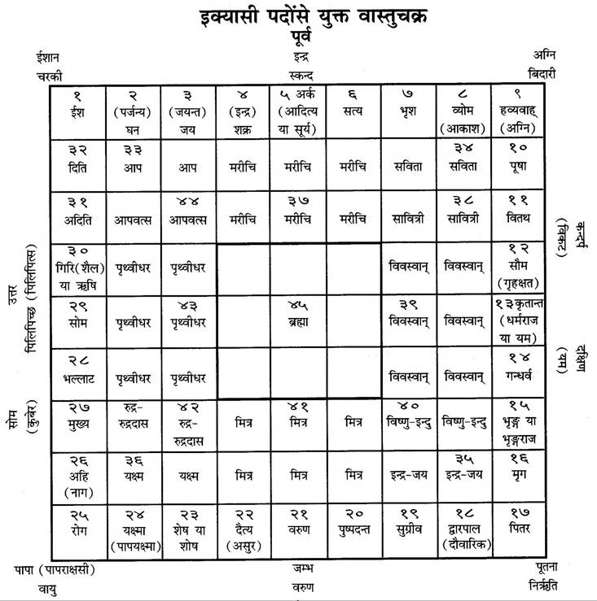
यह इक्यासी पदवाले वास्तुचक्रका वर्णन हुआ। एक शतपद-मण्डप भी होता है। उसमें भी पूर्ववत् देवताओंकी पूजाका विधान है। शतपदचक्रके मध्यवर्ती सोलह पदोंमें ब्रह्माजीकी पूजा करनी चाहिये। ब्रह्माजीके पूर्व आदि चार दिशाओंमें स्थित मरीचि, विवस्वान्, मित्र तथा पृथ्वीधरकी दस-दस पदोंमें पूजाका विधान है। अन्य जो ईशान आदि कोणोंमें स्थित देवता हैं, जैसे दैत्योंकी माता दिति और ईश; अग्नि तथा मृग (पूषा) और पितर तथा पापयक्ष्मा और अनिल (रोग)—वे सब-के-सब डेढ़-डेढ़ पदमें अवस्थित हैं॥१४—१६॥
स्कन्द! अब मैं यज्ञ आदिके लिये जो मण्डप होता है, उसका संक्षेपसे तथा क्रमशः वर्णन करूँगा। तीस हाथ लंबा और अट्ठाईस हाथ चौड़ा मण्डप शिवका आश्रय है। लंबाई और चौड़ाई—दोनोंमें ग्यारह-ग्यारह हाथ घटा देनेपर उन्नीस हाथ लंबा और सत्रह हाथ चौड़ा मण्डप शिव-संज्ञक होता है। बाईस हाथ लम्बा और उन्नीस हाथ चौड़ा अथवा अठारह हाथ लम्बा तथा पन्द्रह हाथ चौड़ा मण्डप हो तो वह सावित्र-संज्ञावाला कहा गया है। अन्य गृहोंका विस्तार आंशिक होता है। दीवारकी जो मोटी उपजङ्घा (कुर्सी) होती है, उसकी ऊँचाईसे दीवारकी ऊँचाई तिगुनी होनी चाहिये। दीवारके लिये जो सूतसे मान निश्चित किया गया हो, उसके बराबर ही उसके सामने भूमि (सहन) होनी चाहिये। वह वीथीके भेदसे अनेक भेदवाली होती है॥१७—२०॥
‘भद्र’ नामक प्रासादमें वीथियोंके समान ही ‘द्वारवीथी’ होती है; केवल वीथीका अग्रभाग द्वारवीथीमें नहीं होता है। ‘श्रीजय’ नामक प्रासादमें जो द्वारवीथी होती है, उसमें वीथीका पृष्ठभाग नहीं होता है। वीथीके पार्श्वभागोंको द्वारवीथीमें कम कर दिया जाय, तो उससे उपलक्षित प्रासादकी भी ‘भद्र’ संज्ञा ही होती है। गर्भके विस्तारकी ही भाँति वीथीका भी विस्तार होता है। कहीं-कहीं उसके आधे या चौथाई भागके बराबर भी होता है। वीथीके आधे मानसे उपवीथी आदिका निर्माण करना चाहिये। वह एक, दो या तीन पुरोंसे युक्त होता है। अब अन्य साधारण गृहोंके विषयमें बताया जाता है; गृहका वैसा स्वरूप हो तो वह सबकी समस्त कामनाओंको पूर्ण करनेवाला होता है। वह क्रमशः एक, दो, तीन, चार और आठ शालाओंसे युक्त होता है। एक शालावाले गृहकी शाला दक्षिणभागमें बनती है और उसका दरवाजा उत्तरकी ओर होता है। यदि दो शालाएँ बनानी हों तो पश्चिम और पूर्वमें बनवाये और उनका द्वार आमने-सामने पूर्व-पश्चिमकी ओर रखे। चार शालाओंवाला गृह चार द्वारों और अलिन्दोंसे युक्त होनेके कारण सर्वतोमुख होता है। वह गृहस्वामीके लिये कल्याणकारी है। पश्चिम दिशाकी ओर दो शालाएँ हों तो उस द्विशाल-गृहको ‘यमसूर्यक’ कहा गया है। पूर्व तथा उत्तरकी ओर शालाएँ हों तो उस गृहकी ‘दण्ड’ संज्ञा है तथा पूर्व-दक्षिणकी ओर दो शालाएँ हों तो वह गृह ‘वात’ संज्ञक होता है। जिस तीन शालावाले गृहमें पूर्व दिशाकी ओर शाला न हो, उसे ‘सुक्षेत्र’ कहा गया है, वह बुद्धिदायक होता है[१२७]॥२१—२६॥
[१२७] मत्स्यपुराणमें एकशाल, द्विशाल, त्रिशाल और चतुःशाल-गृहका परिचय इस प्रकार दिया है—जिसमें एक दिशामें एक ही शाला (कमरा) हो और अन्य दिशाओंमें कोई कमरा न होकर बरामदा मात्र हो, वह ‘एकशाल-गृह’ है। इसी तरह दो दिशाओंमें दो कमरे और तीन दिशाओंमें तीन कमरे तथा चारों दिशाओंमें चार कमरे होनेपर उन घरोंको क्रमशः ‘द्विशाल’, ‘त्रिशाल’ और ‘चतुःशाल’ कहते हैं। चतुःशाल-गृहमें चारों ओर कमरे एवं चारों ओर दरवाजे होते हैं और वे द्वार आमने-सामने बने होते हैं। अतः वह सर्वतोमुखगृह है और उसका नाम ‘सर्वतोभद्र’ है। यह देवालय तथा नृपालय दोनोंमें शुभ होता है। पश्चिममें द्वार न हो (और अन्य तीन दिशाओंमें हो) तो उस गृहका विशेष नाम है—‘नन्द्यावर्त’। यदि दक्षिण दिशामें ही द्वार न हो तो उस भवनका नाम है—‘वर्धमान’। पूर्व-द्वारसे रहित होनेपर उसका नाम ‘स्वस्तिक’ होता है और उत्तर द्वारसे रहित होनेपर ‘रुचक’। जब किसी एक दिशामें शाला (कमरा) ही न हो तो वह ‘त्रिशाल-गृह’ है। इसके भी कई भेद हैं। जिस मकानके भीतर उत्तर दिशामें कोई शाला न हो, वह त्रिशाल-गृह ‘धान्यक’ कहलाता है। वह मनुष्योंके लिये क्षेमकारक, वृद्धिकारक तथा बहुपुत्र-फलदायक होता है। यदि पूर्व-दिशामें शाला न हो तो उस त्रिशाल-गृहको ‘सुक्षेत्र’ कहते हैं। यह धन, यश और आयुको देनेवाला तथा शोक और मोहका नाश करनेवाला होता है। यदि दक्षिण-दिशामें शाला न हो तो उसको ‘विशाल’ कहा गया है। वह मनुष्योंके लिये कुलक्षयकारी होता है तथा उसमें सब प्रकारके रोगोंका भय बना रहता है। यदि पश्चिम-दिशामें कोई शाला न हो तो उस त्रिशाल-गृहको ‘पक्षघ्न’ कहते हैं। वह मित्र, भाई-बन्धु तथा पुत्रोंका मारक होता है और उसमें सब प्रकारके भय प्राप्त होते रहते हैं। अब द्विशाल-घरका फल बताते हैं—दक्षिण-पश्चिम दिशाओंमें ही दो शालाएँ हों (और अन्य दो दिशाओंमें न हों) तो वह द्विशाल-गृह, धन-धान्यफलदायक, मानवोंके क्षेमकी वृद्धि करनेवाला तथा पुत्ररूप फल देनेवाला है। यदि केवल पश्चिम और उत्तर दिशाओंमें ही दो शालाएँ हों तो उस गृहको ‘यमसूर्य’ कहते हैं। वह राजा और अग्निका भय देनेवाला है तथा मनुष्योंके कुलका संहार करनेवाला होता है। यदि उत्तर और पूर्वमें ही दो शालाएँ हों तो उस गृहका नाम ‘दण्ड’ है। जहाँ ‘दण्ड’ हो, वहाँ अकाल-मृत्युका भय प्राप्त होता है तथा शत्रुओंकी ओरसे भी भयकी प्राप्ति होती है। पूर्व और दक्षिण दिशाओंमें ही शाला होनेसे जो द्विशाल-गृह निर्मित हुआ है, उसकी ‘धन’ या ‘बात’ संज्ञा है। वह शस्त्रभय तथा पराभव देनेवाला होता है। पूर्व-पश्चिममें दो शालाएँ हों तो उसकी ‘चुल्ली’ संज्ञा है। वह मृत्युकी सूचक है। वह गृह स्त्रियोंके लिये वैधव्यकारक तथा अनेक भयदायक है। उत्तर-दक्षिणमें ही दो शालाएँ हों तो वह भी मनुष्यके लिये भयदायक है। (द्रष्टव्य अध्याय २५४ के श्लोक सं० १ से १३ तक।)
यदि दक्षिण दिशामें कोई शाला न हो (और अन्य दिशाओंमें हो) तो उस घरकी ‘विशाल’ संज्ञा है। वह कुलक्षयकारी तथा अत्यन्त भयदायक होता है। जिसमें पश्चिम दिशामें ही शाला न बनी हो, उस विशाल गृहको ‘पक्षघ्न’ कहते हैं। वह पुत्र-हानिकारक तथा बहुत-से शत्रुओंका उत्पादक होता है। अब मैं पूर्वादि दिशाओंके क्रमसे ‘ध्वज’[१२८] आदि आठ गृहोंका वर्णन करता हूँ। (ध्वज, धूम, सिंह, श्वान, वृषभ, खर (गधा), हाथी और काक—ये ही आठोंके नाम हैं।) पूर्व-दिशामें स्नान और अनुग्रह (लोगोंसे कृपापूर्वक मिलने)-के लिये घर बनावे। अग्निकोणमें उसका रसोईघर होना चाहिये। दक्षिण दिशामें रस-क्रिया तथा शय्या (शयन)-के लिये घर बनाना चाहिये। नैर्ऋत्यकोणमें शस्त्रागार रहे। पश्चिम दिशामें धन-रत्न आदिके लिये कोषागार रखे। वायव्यकोणमें सम्यक् अन्नागार स्थापित करे। उत्तर दिशामें धन और पशुओंको रखे तथा ईशानकोणमें दीक्षाके लिये उत्तम भवन बनवावे। गृहस्वामीके हाथसे नापे हुए गृहका जो पिण्ड है, उसकी लंबाई-चौड़ाईके हस्तमानको तिगुना करके उसमें आठ-से भाग दे। उस भागका जो शेष हो, तदनुसार यह ध्वज आदि आय स्थित होता है। उसीसे ध्वजादि-काकान्त आयका ज्ञान होता है। दो, तीन, चार, छः, सात और आठ शेष बचे तो उसके अनुसार शुभाशुभ फल हो। यदि मध्य (पाँचवें) और अन्तिम (काक)-में गृहकी स्थिति हुई तो वह गृह सर्वनाशकारी होता है। इसलिये आठ भागोंको छोड़कर नवम भागमें बना हुआ गृह शुभकारक होता है। उस नवम भागमें ही मण्डप उत्तम माना गया है। उसकी लंबाई-चौड़ाई बराबर रहे अथवा चौड़ाईसे लंबाई दुगुनी रहे॥२७—३३॥
[१२८] अपराजितपृच्छा (विश्वकर्म-शास्त्र ६४ वें सूत्र)-के अनुसार पूर्वादि दिशाओंमें प्रदक्षिणक्रमसे रहनेवाले ध्वज आदिका उल्लेख इस प्रकार मिलता है— ध्वजो धूमश्च सिंहश्च श्वानो वृषखरौ गजः । ध्वाङ्क्षश्चेति समुद्दिष्टाः प्राच्यादिषु प्रदक्षिणाः।।
पूर्वसे पश्चिमकी ओर तथा उत्तरसे दक्षिणकी ओर बाजारमें ही गृहपङ्क्ति देखी जाती है। एक-एक भवनके लिये प्रत्येक दिशामें आठ-आठ द्वार हो सकते हैं। इन आठों द्वारोंके क्रमशः फल भी पृथक्-पृथक् कहे जाते हैं। भय, नारीकी चपलता, जय, वृद्धि, प्रताप, धर्म, कलह तथा निर्धनता—ये पूर्ववर्ती आठ द्वारोंके अवश्यम्भावी फल हैं। दाह, दुःख, सुहृन्नाश, धननाश, मृत्यु, धन, शिल्पज्ञान तथा पुत्रकी प्राप्ति—ये दक्षिण दिशाके आठ द्वारोंके फल हैं। आयु, संन्यास, सस्य, धन, शान्ति, अर्थनाश, शोषण, भोग एवं संतानकी प्राप्ति—ये पश्चिम द्वारके फल हैं। रोग, मद, आर्ति, मुख्यता, अर्थ, आयु, कृशता और मान—ये क्रमशः उत्तर दिशाके द्वारके फल हैं॥३४—३८॥
इस प्रकार आदि आग्नेय महापुराणमें ‘नगरगृह आदिकी वास्तु-प्रतिष्ठा-विधिका वर्णन’ नामक एक सौ पाँचवाँ अध्याय पूरा हुआ॥१०५॥
एक सौ छठा अध्याय
नगर आदिके वास्तुका वर्णन
भगवान् महेश्वर कहते हैं—कार्तिकेय! अब मैं राज्यादिकी अभिवृद्धिके लिये नगर-वास्तुका वर्णन करता हूँ। नगर-निर्माणके लिये एक योजन या आधी योजन भूमि ग्रहण करे। वास्तु-नगरका पूजन करके उसको प्राकारसे संयुक्त करे। ईशादि तीस पदोंमें सूर्यके सम्मुख पूर्वद्वार, गन्धर्वके समीप दक्षिणद्वार, वरुणके निकट पश्चिमद्वार और सोमके समीप उत्तरद्वार बनाना चाहिये। नगरमें चौड़े-चौड़े बाजार बनाने चाहिये। नगरद्वार छः हाथ चौड़ा बनाना चाहिये, जिससे हाथी आदि सुखपूर्वक आ-जा सकें। नगर छिन्नकर्ण, भग्न तथा अर्धचन्द्राकार नहीं होना चाहिये। वज्र-सूचीमुख नगर भी हितकर नहीं है। एक, दो या तीन द्वारोंसे युक्त धनुषाकार वज्रनागाभ नगरका निर्माण शान्तिप्रद है॥१—५॥
नगरके आग्नेयकोणमें स्वर्णकारोंको बसावे, दक्षिण दिशामें नृत्योपजीविनी वाराङ्गनाओंके भवन हों। नैर्ऋत्यकोणमें नट, कुम्भकार तथा केवट आदिके आवास-स्थान होने चाहिये। पश्चिममें रथकार, आयुधकार और खड्ग-निर्माताओंका निवास हो। नगरके वायव्यकोणमें मद्य-विक्रेता, कर्मकार तथा भृत्योंका निवेश करे। उत्तर दिशामें ब्राह्मण, यति, सिद्ध और पुण्यात्मा पुरुषोंको बसावे। ईशानकोणमें फलादिका विक्रय करनेवाले एवं वणिग्-जन निवास करें। पूर्व दिशामें सेनाध्यक्ष रहें। आग्नेयकोणमें विविध सैन्य, दक्षिणमें स्त्रियोंको ललित कलाकी शिक्षा देनेवाले आचार्यों तथा नैर्ऋत्यकोणमें धनुर्धर सैनिकोंको रखे। पश्चिममें महामात्य, कोषपाल एवं कारीगरोंको, उत्तरमें दण्डाधिकारी, नायक तथा द्विजोंको; पूर्वमें क्षत्रियोंको, दक्षिणमें वैश्योंको, पश्चिममें शूद्रोंको, विभिन्न दिशाओंमें वैद्योंको और अश्वों तथा सेनाको चारों ओर रखे॥६—१२॥
राजा पूर्वमें गुप्तचरों, दक्षिणमें श्मशान, पश्चिममें गोधन और उत्तरमें कृषकोंका निवेश करे। म्लेच्छोंको दिक्कोणोंमें स्थान दे अथवा ग्रामोंमें स्थापित करे। पूर्वद्वारपर लक्ष्मी एवं कुबेरकी स्थापना करे। जो उन दोनोंका दर्शन करते है, उन्हें लक्ष्मी (सम्पत्ति)-की प्राप्ति होती है। पश्चिममें निर्मित देवमन्दिर पूर्वाभिमुख, पूर्व दिशामें स्थित पश्चिमाभिमुख तथा दक्षिण दिशाके मन्दिर उत्तराभिमुख होने चाहिये। नगरकी रक्षाके लिये इन्द्र और विष्णु आदि देवताओंके मन्दिर बनवावे। देवशून्य नगर, ग्राम, दुर्ग तथा गृह आदिका पिशाच उपभोग करते हैं और वह रोगसमूहसे परिभूत हो जाता है। उपर्युक्त विधिसे निर्मित नगर आदि सदा जयप्रद और भोग-मोक्ष प्रदान करनेवाले होते हैं॥१३—१७॥
वास्तु-भूमिकी पूर्व दिशामें शृङ्गार-कक्ष, अग्निकोणमें पाकगृह (रसोईघर), दक्षिणमें शयनगृह, नैर्ऋत्यकोणमें शस्त्रागार, पश्चिममें भोजनगृह, वायव्यकोणमें धान्य-संग्रह, उत्तर दिशामें धनागार तथा ईशानकोणमें देवगृह बनवाना चाहिये। नगरमें एकशाल, द्विशाल, त्रिशाल या चतुःशाल-गृहका निर्माण होना चाहिये। चतुःशाल-गृहके शाला और अलिन्द (प्राङ्गण)-के भेदसे दो सौ भेद होते हैं। उनमें भी चतुःशाल-गृहके पचपन, त्रिशाल-गृहके चार तथा द्विशालके पाँच भेद होते हैं॥१८—२१॥
एकशाल-गृहके चार भेद हैं। अब मैं अलिन्दयुक्त गृहके विषयमें बतलाता हूँ, सुनिये। गृह-वास्तु तथा नगर-वास्तुमें अट्ठाईस अलिन्द होते हैं। चार तथा सात अलिन्दोंसे पचपन, छः अलिन्दोंसे बीस तथा आठ अलिन्दोंसे भी बीस भेद होते हैं। इस प्रकार नगर आदिमें आठ अलिन्दोंसे युक्त वास्तु भी होता है॥२२—२४॥
इस प्रकार आदि आग्नेय महापुराणमें ‘नगर आदिके वास्तुका वर्णन’ नामक एक सौ छठा अध्याय पूरा हुआ॥१०६॥
एक सौ सातवाँ अध्याय
भुवनकोष (पृथ्वी-द्वीप आदि)-का तथा स्वायम्भुव सर्गका वर्णन
अग्निदेव कहते हैं—वसिष्ठ! अब मैं भुवनकोष तथा पृथ्वी एवं द्वीप आदिके लक्षणोंका वर्णन करूँगा। आग्नीध्र, अग्निबाहु, वपुष्मान्, द्युतिमान्, मेधा, मेधातिथि, भव्य, सवन और क्षय—ये प्रियव्रतके पुत्र थे। उनका दसवाँ यथार्थनामा पुत्र ज्योतिष्मान् था। प्रियव्रतके ये पुत्र विश्वमें विख्यात थे। पिताने उनको सात द्वीप प्रदान किये। आग्नीध्रको जम्बूद्वीप एवं मेधातिथिको प्लक्षद्वीप दिया। वपुष्मान्को शाल्मलिद्वीप, ज्योतिष्मान्को कुशद्वीप, द्युतिमान्को क्रौञ्चद्वीप तथा भव्यको शाकद्वीपमें अभिषिक्त किया। सवनको पुष्करद्वीप प्रदान किया। (शेष तीनको कोई स्वतन्त्र द्वीप नहीं मिला।) आग्नीध्रने अपने पुत्रोंमें लाखों योजन विशाल जम्बूद्वीपको इस प्रकार विभाजित कर दिया। नाभिको हिमवर्ष (आधुनिक भारतवर्ष) प्रदान किया। किम्पुरुषको हेमकूटवर्ष, हरिवर्षको नैषधवर्ष, इलावृतको मध्यभागमें मेरुपर्वतसे युक्त इलावृतवर्ष, रम्यकको नीलाचलके आश्रित रम्यकवर्ष, हिरण्यवान्को श्वेतवर्ष एवं कुरुको उत्तरकुरुवर्ष दिया। उन्होंने भद्राश्वको भद्राश्ववर्ष तथा केतुमालको मेरुपर्वतके पश्चिममें स्थित केतुमालवर्षका शासन प्रदान किया। महाराज प्रियव्रत अपने पुत्रोंको उपर्युक्त द्वीपोंमें अभिषिक्त करके वनमें चले गये। वे नरेश शालग्रामक्षेत्रमें तपस्या करके विष्णुलोकको प्राप्त हुए॥१—८॥
मुनिश्रेष्ठ! किम्पुरुषादि जो आठ वर्ष हैं, उनमें सुखकी बहुलता है और बिना यत्नके स्वभावसे ही समस्त भोग-सिद्धियाँ प्राप्त हो जाती हैं। उनमें जरा-मृत्यु आदिका कोई भय नहीं है और न धर्म-अधर्म अथवा उत्तम, मध्यम और अधम आदिका ही भेद है। वहाँ सब समान हैं। वहाँ कभी युग-परिवर्तन भी नहीं होता। हिमवर्षके शासक नाभिके मेरु देवीसे ऋषभदेव पुत्ररूपमें उत्पन्न हुए। ऋषभके पुत्र भरत हुए। ऋषभदेवने भरतपर राज्यलक्ष्मीका भार छोड़कर शालग्रामक्षेत्रमें श्रीहरिकी शरण ग्रहण की। भरतके नामसे ‘भारतवर्ष’ प्रसिद्ध है। भरतसे सुमति हुए। भरतने सुमतिको राज्यलक्ष्मी देकर शालग्रामक्षेत्रमें श्रीहरिकी शरण ली। उन योगिराजने योगाभ्यासमें तत्पर होकर प्राणोंका परित्याग किया। इनका वह चरित्र तुमसे मैं फिर कहूँगा॥९—१२॥
तदनन्तर सुमतिके वीर्यसे इन्द्रद्युम्नका जन्म हुआ। उससे परमेष्ठी और परमेष्ठीका पुत्र प्रतीहार हुआ। प्रतीहारके प्रतिहर्ता, प्रतिहर्ताके भव, भवके उद्गीथ, उद्गीथके प्रस्तार तथा प्रस्तारके विभु नामक पुत्र हुआ। विभुका पृथु, पृथुका नक्त एवं नक्तका पुत्र गय हुआ। गयके नर नामक पुत्र और नरके विराट् नामक पुत्र उत्पन्न हुआ। विराट्का पुत्र महावीर्य था। उससे धीमान्का जन्म हुआ तथा धीमान्का पुत्र महान्त और उसका पुत्र मनस्यु हुआ। मनस्युका पुत्र त्वष्टा, त्वष्टाका विरज और विरजका पुत्र रज हुआ। मुने! रजके पुत्र शतजित्के सौ पुत्र उत्पन्न हुए, उनमें विश्वज्योति मुख्य था। उनसे भारतवर्षकी अभिवृद्धि हुई। कृत-त्रेतादि युगक्रमसे यह स्वायम्भुव-मनुका वंश माना गया है॥१३—१९॥
इस प्रकार आदि आग्नेय महापुराणमें ‘भुवनकोष तथा पृथ्वी एवं द्वीप आदिके लक्षणका वर्णन’ नामक एक सौ सातवाँ अध्याय पूरा हुआ॥१०७॥
एक सौ आठवाँ अध्याय
भुवनकोश-वर्णनके प्रसंगमें भूमण्डलके द्वीप आदिका परिचय
अग्निदेव कहते हैं—वसिष्ठ! जम्बू, प्लक्ष, महान् शाल्मलि, कुश, क्रौञ्च, शाक और सातवाँ पुष्कर—ये सातों द्वीप चारों ओरसे खारे जल, इक्षुरस, मदिरा, घृत, दधि, दुग्ध और मीठे जलके सात समुद्रोंसे घिरे हुए हैं। जम्बूद्वीप उन सब द्वीपोंके मध्यमें स्थित है और उसके भी बीचों-बीचमें मेरुपर्वत सीना ताने खड़ा है। उसका विस्तार चौरासी हजार योजन है और यह पर्वतराज सोलह हजार योजन पृथिवीमें घुसा हुआ है। ऊपरी भागमें इसका विस्तार बत्तीस हजार योजन है। नीचेकी गहराईमें इसका विस्तार सोलह हजार योजन है। इस प्रकार यह पर्वत इस पृथिवीरूप कमलकी कर्णिकाके समान स्थित है। इसके दक्षिणमें हिमवान्, हेमकूट और निषध तथा उत्तरमें नील, श्वेत और शृङ्गी नामक वर्षपर्वत हैं। उनके बीचके दो पर्वत (निषध और नील) एक-एक लाख योजनतक फैले हुए हैं। दूसरे पर्वत उनसे दस-दस हजार योजन कम हैं। वे सभी दो-दो सहस्र योजन ऊँचे और इतने ही चौड़े हैं॥१—६॥
द्विजश्रेष्ठ! मेरुपर्वतके दक्षिणकी ओर पहला वर्ष भारतवर्ष है तथा दूसरा किम्पुरुषवर्ष और तीसरा हरिवर्ष माना गया है। उत्तरकी ओर रम्यक, हिरण्मय और उत्तरकुरुवर्ष है, जो भारतवर्षके ही समान है। मुनिप्रवर! इनमेंसे प्रत्येकका विस्तार नौ-नौ हजार योजन है तथा इन सबके बीचमें इलावृतवर्ष है, जिसमें सुवर्णमय सुमेरु पर्वत खड़ा है। महाभाग! इलावृतवर्ष सुमेरुके चारों ओर नौ-नौ हजार योजनतक फैला हुआ है। इसके चारों ओर चार पर्वत हैं। ये चारों पर्वत मानो सुमेरुको धारण करनेवाले ईश्वरनिर्मित आधारस्तम्भ हों। इनमेंसे मन्दराचल पूर्वमें, गन्धमादन दक्षिणमें, विपुल पश्चिम पार्श्वमें और सुपार्श्व उत्तरमें है। ये सभी पर्वत दस-दस हजार योजन विस्तृत हैं। इन पर्वतोंपर ग्यारह-ग्यारह सौ योजन विस्तृत कदम्ब, जम्बू, पीपल और वटके वृक्ष हैं, जो इन पर्वतोंकी पताकाओंके समान प्रतीत होते हैं। इनमेंसे जम्बूवृक्ष ही जम्बूद्वीपके नामका कारण है। उस जम्बूवृक्षके फल हाथीके समान विशाल और मोटे होते हैं। इसके रससे जम्बूनदी प्रवाहित होती है। इसीसे परम उत्तम जाम्बूनद-सुवर्णका प्रादुर्भाव होता है। मेरुके पूर्वमें भद्राश्ववर्ष और पश्चिममें केतुमाल वर्ष है। इसी प्रकार उसके पूर्वकी ओर चैत्ररथ, दक्षिणकी ओर गन्धमादन, पश्चिमकी ओर वैभ्राज और उत्तरकी ओर नन्दन नामक वन है। इसी तरह पूर्व आदि दिशाओंमें अरुणोद, महाभद्र, शीतोद और मानस—ये चार सरोवर हैं। सिताम्भ तथा चक्रमुञ्ज आदि (भूपद्मकी कर्णिकारूप) मेरुके पूर्व-दिशावर्ती केसर-स्थानीय अचल हैं। दक्षिणमें त्रिकूट आदि, पश्चिममें शिखिवास-प्रभृति और उत्तर दिशामें शङ्खकूट आदि इसके केसराचल हैं। सुमेरु पर्वतके ऊपर ब्रह्माजीकी पुरी है। उसका विस्तार चौदह हजार योजन है। ब्रह्मपुरीके चारों ओर सभी दिशाओंमें इन्द्रादि लोकपालोंके नगर हैं। इसी ब्रह्मपुरीसे श्रीविष्णुके चरणकमलसे निकली हुई गङ्गानदी चन्द्रमण्डलको आप्लावित करती हुई स्वर्गलोकसे नीचे उतरती हैं। पूर्वमें शीता (अथवा सीता) नदी भद्राश्वपर्वतसे निकलकर एक पर्वतसे दूसरे पर्वतपर जाती हुई समुद्रमें मिल जाती है। इसी प्रकार अलकनन्दा भी दक्षिण दिशाकी ओर भारतवर्षमें आती है और सात भागोंमें विभक्त होकर समुद्रमें मिल जाती है॥७—२०॥
चक्षु पश्चिम समुद्रमें तथा भद्रा उत्तरकुरुवर्षको पार करती हुई समुद्रमें जा गिरती है। माल्यवान् और गन्धमादन पर्वत उत्तर तथा दक्षिणकी ओर नीलाचल एवं निषध पर्वततक फैले हुए हैं। उन दोनोंके बीचमें कर्णिकाकार मेरुपर्वत स्थित है। मर्यादापर्वतोंके बहिर्भागमें स्थित भारत, केतुमाल, भद्राश्व और उत्तरकुरुवर्ष—इस लोकपद्मके दल हैं। जठर और देवकूट—ये दोनों मर्यादापर्वत हैं। ये उत्तर और दक्षिणकी ओर नील तथा निषध पर्वततक फैले हुए हैं। पूर्व और पश्चिमकी ओर विस्तृत गन्धमादन एवं कैलास—ये दो पर्वत अस्सी हजार योजन विस्तृत हैं। पूर्वके समान मेरुके पश्चिमकी ओर भी निषध और पारियात्र नामक दो मर्यादापर्वत हैं, जो अपने मूलभागसे समुद्रके भीतरतक प्रविष्ट हैं॥२१—२५॥
उत्तरकी ओर त्रिशृङ्ग और रुधिर नामक वर्षपर्वत हैं। ये दोनों पूर्व और पश्चिमकी ओर समुद्रके गर्भमें व्यवस्थित हैं। इस प्रकार जठर आदि मर्यादापर्वत मेरुके चारों ओर सुशोभित होते हैं। ऋषिप्रवर! केसरपर्वतोंके मध्यमें जो श्रेणियाँ हैं, उनमें लक्ष्मी, विष्णु, अग्नि तथा सूर्य आदि देवताओंके नगर हैं। ये भौम होते हुए भी स्वर्गके समान हैं। इनमें पापात्मा पुरुषोंका प्रवेश नहीं हो पाता॥२६—२८॥
श्रीविष्णुभगवान् भद्राश्ववर्षमें हयग्रीवरूपसे, केतुमालवर्षमें वराहरूपसे, भारतवर्षमें कूर्मरूपसे तथा उत्तरकुरुवर्षमें मत्स्यरूपसे निवास करते हैं। भगवान् श्रीहरि विश्वरूपसे सर्वत्र पूजित होते हैं। किम्पुरुष आदि आठ वर्षोंमें क्षुधा, भय तथा शोक आदि कुछ भी नहीं है। उनमें प्रजाजन चौबीस हजार वर्षतक रोग-शोकरहित होकर जीवन व्यतीत करते हैं। उनमें कृत-त्रेतादि युगोंकी कल्पना नहीं होती; न उनमें कभी वर्षा ही होती है। उनमें केवल पार्थिव-जल रहता है। इन सभी वर्षोंमें सात-सात कुलाचल पर्वत हैं और उनसे निकली हुई सैकड़ों तीर्थरूपा नदियाँ हैं। अब मैं भारतवर्षमें जो तीर्थ हैं, उनका तुम्हारे सम्मुख वर्णन करता हूँ॥२९—३३॥
इस प्रकार आदि आग्नेय महापुराणमें ‘भुवनकोशका वर्णन’ नामक एक सौ आठवाँ अध्याय पूरा हुआ॥१०८॥
एक सौ नौवाँ अध्याय
तीर्थ-माहात्म्य
अग्निदेव कहते हैं—अब मैं सब तीर्थोंका माहात्म्य बताऊँगा, जो भोग और मोक्ष प्रदान करनेवाला है। जिसके हाथ, पैर और मन भलीभाँति संयममें रहें तथा जिसमें विद्या, तपस्या और उत्तम कीर्ति हो, वही तीर्थके पूर्ण फलका भागी होता है। जो प्रतिग्रह छोड़ चुका है, नियमित भोजन करता और इन्द्रियोंको काबूमें रखता है, वह पापरहित तीर्थयात्री सब यज्ञोंका फल पाता है। जिसने कभी तीन राततक उपवास नहीं किया; तीर्थोंकी यात्रा नहीं की और सुवर्ण एवं गौका दान नहीं किया, वह दरिद्र होता है। यज्ञसे जिस फलकी प्राप्ति होती है, वही तीर्थ-सेवनसे भी मिलता है[१२९]॥१—४॥
[१२९] .............................................. । यस्य हस्तौ च पादौ च मनश्चैव सुसंयतम् ।। विद्या तपश्च कीर्तिश्च स तीर्थफलमश्नुते । प्रतिग्रहादुपावृत्तो लघ्वाहारो जितेन्द्रियः ।। निष्पापस्तीर्थयात्री तु सर्वयज्ञफलं लभेत् । अनुपोष्य त्रिरात्राणि तीर्थान्यनभिगम्य च ।। अदत्त्वा काञ्चनं गाश्च दरिद्रो नाम जायते । तीर्थाभिगमने तत्स्याद्यद्यज्ञेनाऽऽष्यते फलम् ।। (अग्नि० १०९।१—४)
ब्रह्मन्! पुष्कर श्रेष्ठ तीर्थ है। वहाँ तीनों संध्याओंके समय दस हजार कोटि तीर्थोंका निवास रहता है। पुष्करमें सम्पूर्ण देवताओंके साथ ब्रह्माजी निवास करते हैं। सब कुछ चाहनेवाले मुनि और देवता वहाँ स्नान करके सिद्धि प्राप्त कर चुके हैं। पुष्करमें देवताओं और पितरोंकी पूजा करनेवाले मनुष्य अश्वमेधयज्ञका फल प्राप्त करके ब्रह्मलोकमें जाते हैं। जो कार्तिककी पूर्णिमाको वहाँ अन्नदान करता है, वह शुद्धचित्त होकर ब्रह्मलोकका भागी होता है। पुष्करमें जाना दुष्कर है, पुष्करमें तपस्याका सुयोग मिलना दुष्कर है, पुष्करमें दानका अवसर प्राप्त होना भी दुष्कर है और वहाँ निवासका सौभाग्य होना तो अत्यन्त ही दुष्कर है। वहाँ निवास, जप और श्राद्ध करनेसे मनुष्य अपनी सौ पीढ़ियोंका उद्धार करता है। वहीं जम्बूमार्ग तथा तण्डुलिकाश्रम तीर्थ भी हैं॥५—९॥
(अब अन्य तीर्थोंके विषयमें सुनो—) कण्वाश्रम, कोटितीर्थ, नर्मदा और अर्बुद (आबू) भी उत्तम तीर्थ हैं। चर्मण्वती (चम्बल), सिन्धु, सोमनाथ, प्रभास, सरस्वती-समुद्र-संगम तथा सागर भी श्रेष्ठ तीर्थ हैं। पिण्डारक क्षेत्र, द्वारका और गोमती—ये सब प्रकारकी सिद्धि देनेवाले तीर्थ हैं। भूमितीर्थ, ब्रह्मतुङ्गतीर्थ और पञ्चनद (सतलज आदि पाँचों नदियाँ) भी उत्तम हैं। भीमतीर्थ, गिरीन्द्रतीर्थ, पापनाशिनी देविका नदी, पवित्र विनशनतीर्थ (कुरुक्षेत्र), नागोद्भेद, अघार्दन तथा कुमारकोटि तीर्थ—ये सब कुछ देनेवाले बताये गये हैं। ‘मैं कुरुक्षेत्र जाऊँगा, कुरुक्षेत्रमें निवास करूँगा’ जो सदा ऐसा कहता है, वह शुद्ध हो जाता है और उसे स्वर्गलोककी प्राप्ति होती है। वहाँ विष्णु आदि देवता रहते हैं। वहाँ निवास करनेसे मनुष्य श्रीहरिके धाममें जाता है। कुरुक्षेत्रमें समीप ही सरस्वती बहती हैं। उसमें स्नान करनेवाला मनुष्य ब्रह्मलोकका भागी होता है। कुरुक्षेत्रकी धूलि भी परम गतिकी प्राप्ति कराती है। धर्मतीर्थ, सुवर्णतीर्थ, परम उत्तम गङ्गाद्वार (हरिद्वार), पवित्र तीर्थ कनखल, भद्रकर्ण-ह्रद, गङ्गा-सरस्वती-संगम और ब्रह्मावर्त—ये पापनाशक तीर्थ हैं॥१०—१७॥
भृगुतुङ्ग, कुब्जाम्र तथा गङ्गोद्भेद—ये भी पापोंको दूर करनेवाले हैं। वाराणसी (काशी) सर्वोत्तम तीर्थ है। उसे श्रेष्ठ अविमुक्त-क्षेत्र भी कहते हैं। कपाल-मोचनतीर्थ भी उत्तम है, प्रयाग तो सब तीर्थोंका राजा ही है। गोमती और गङ्गाका संगम भी पावन तीर्थ है। गङ्गाजी कहीं भी क्यों न हों, सर्वत्र स्वर्गलोककी प्राप्ति करानेवाली हैं। राजगृह पवित्र तीर्थ है। शालग्राम तीर्थ पापोंका नाश करनेवाला है। वटेश, वामन तथा कालिका-संगम तीर्थ भी उत्तम हैं॥१८—२०॥
लौहित्य-तीर्थ, करतोया नदी, शोणभद्र तथा ऋषभतीर्थ भी श्रेष्ठ हैं। श्रीपर्वत, कोलाचल, सह्यगिरि, मलयगिरि, गोदावरी, तुङ्गभद्रा, वरदायिनी कावेरी नदी, तापी, पयोष्णी, रेवा (नर्मदा) और दण्डकारण्य भी उत्तम तीर्थ हैं। कालंजर, मुञ्जवट, शूर्पारक, मन्दाकिनी, चित्रकूट और शृङ्गवेरपुर श्रेष्ठ तीर्थ हैं। अवन्ती भी उत्तम तीर्थ है। अयोध्या सब पापोंका नाश करनेवाली है। नैमिषारण्य परम पवित्र तीर्थ है। वह भोग और मोक्ष प्रदान करनेवाला है॥२१—२४॥
इस प्रकार आदि आग्नेय महापुराणमें ‘तीर्थमाहात्म्य-वर्णन’ नामक एक सौ नौवाँ अध्याय पूरा हुआ॥१०९॥
एक सौ दसवाँ अध्याय
गङ्गाजीकी महिमा
अग्निदेव कहते हैं—अब गङ्गाका माहात्म्य बतलाता हूँ। गङ्गाका सदा सेवन करना चाहिये। वह भोग और मोक्ष प्रदान करनेवाली हैं। जिनके बीचसे गङ्गा बहती हैं, वे सभी देश श्रेष्ठ तथा पावन हैं। उत्तम गतिकी खोज करनेवाले प्राणियोंके लिये गङ्गा ही सर्वोत्तम गति है। गङ्गाका सेवन करनेपर वह माता और पिता—दोनोंके कुलोंका उद्धार करती है। एक हजार चान्द्रायण-व्रतकी अपेक्षा गङ्गाजीके जलका पीना उत्तम है। एक मास गङ्गाजीका सेवन करनेवाला मनुष्य सब यज्ञोंका फल पाता है॥१—३॥
गङ्गादेवी सब पापोंको दूर करनेवाली तथा स्वर्गलोक देनेवाली हैं। गङ्गाके जलमें जबतक हड्डी पड़ी रहती है, तबतक वह जीव स्वर्गमें निवास करता है। अंधे आदि भी गङ्गाजीका सेवन करके देवताओंके समान हो जाते हैं। गङ्गा-तीर्थसे निकली हुई मिट्टी धारण करनेवाला मनुष्य सूर्यके समान पापोंका नाशक होता है। जो मानव गङ्गाका दर्शन, स्पर्श, जलपान अथवा ‘गङ्गा’ इस नामका कीर्तन करता है, वह अपनी सैकड़ों-हजारों पीढ़ियोंके पुरुषोंको पवित्र कर देता है॥४—६॥
इस प्रकार आदि आग्नेय महापुराणमें ‘गङ्गाजीकी महिमा’ नामक एक सौ दसवाँ अध्याय पूरा हुआ॥११०॥
एक सौ ग्यारहवाँ अध्याय
प्रयाग-माहात्म्य
अग्निदेव कहते हैं—ब्रह्मन्! अब मैं प्रयागका माहात्म्य बताता हूँ, जो भोग और मोक्ष प्रदान करनेवाला तथा उत्तम है। प्रयागमें ब्रह्मा, विष्णु आदि देवता तथा बड़े-बड़े मुनिवर निवास करते हैं। नदियाँ, समुद्र, सिद्ध, गन्धर्व तथा अप्सराएँ भी उस तीर्थमें वास करती हैं। प्रयागमें तीन अग्निकुण्ड हैं। उनके बीचमें गङ्गा सब तीर्थोंको साथ लिये बड़े वेगसे बहती हैं। वहाँ त्रिभुवन-विख्यात सूर्यकन्या यमुना भी हैं। गङ्गा और यमुनाका मध्यभाग पृथ्वीका ‘जघन’ माना गया है और प्रयागको ऋषियोंने जघनके बीचका ‘उपस्थ भाग’ बताया है॥१—४॥
प्रतिष्ठान (झूसी) सहित प्रयाग, कम्बल और अश्वतर नाग तथा भोगवती तीर्थ—ये ब्रह्माजीके यज्ञकी वेदी कहे गये हैं। प्रयागमें वेद और यज्ञ मूर्तिमान् होकर रहते हैं। उस तीर्थके स्तवन और नाम-कीर्तनसे तथा वहाँकी मिट्टीका स्पर्श करनेमात्रसे भी मनुष्य सब पापोंसे मुक्त हो जाता है। प्रयागमें गङ्गा और यमुनाके संगमपर किये हुए दान, श्राद्ध और जप आदि अक्षय होते हैं॥५—७॥
ब्रह्मन्! वेद अथवा लोक—किसीके कहनेसे भी अन्तमें प्रयागतीर्थके भीतर मरनेका विचार नहीं छोड़ना चाहिये। प्रयागमें साठ करोड़, दस हजार तीर्थोंका निवास है; अतः वह सबसे श्रेष्ठ है। वासुकि नागका स्थान, भोगवती तीर्थ और हंसप्रपतन—ये उत्तम तीर्थ हैं। कोटि गोदानसे जो फल मिलता है, वही इनमें तीन दिनोंतक स्नान करनेमात्रसे प्राप्त हो जाता है। प्रयागमें माघमासमें मनीषी पुरुष ऐसा कहते हैं कि ‘गङ्गा सर्वत्र सुलभ हैं; किंतु गङ्गाद्वार, प्रयाग और गङ्गा-सागर-संगम—इन तीन स्थानोंमें उनका मिलना बहुत कठिन है।’ प्रयागमें दान देनेसे मनुष्य स्वर्गमें जाता है और इस लोकमें आनेपर राजाओंका भी राजा होता है॥८—१२॥
अक्षयवटके मूलके समीप और संगम आदिमें मृत्युको प्राप्त हुआ मनुष्य भगवान् विष्णुके धाममें जाता है। प्रयागमें परम रमणीय उर्वशी-पुलिन, संध्यावट, कोटितीर्थ, दशाश्वमेध घाट, गङ्गा-यमुनाका उत्तम संगम, रजोहीन मानसतीर्थ तथा वासरक तीर्थ—ये सभी परम उत्तम हैं॥१३-१४॥
इस प्रकार आदि आग्नेय महापुराणमें ‘प्रयाग-माहात्म्य-वर्णन’ नामक एक सौ ग्यारहवाँ अध्याय पूरा हुआ॥१११॥
एक सौ बारहवाँ अध्याय
वाराणसीका माहात्म्य
अग्निदेव कहते हैं—वाराणसी परम उत्तम तीर्थ है। जो वहाँ श्रीहरिका नाम लेते हुए निवास करते हैं, उन सबको वह भोग और मोक्ष प्रदान करता है। महादेवजीने पार्वतीसे उसका माहात्म्य इस प्रकार बतलाया है॥१॥
महादेवजी बोले—गौरि! इस क्षेत्रको मैंने कभी मुक्त नहीं किया—सदा ही वहाँ निवास किया है, इसलिये यह ‘अविमुक्त’ कहलाता है। अविमुक्त-क्षेत्रमें किया हुआ जप, तप, होम और दान अक्षय होता है। पत्थरसे दोनों पैर तोड़कर बैठ रहे, परंतु काशी कभी न छोड़े। हरिश्चन्द्र, आम्रातकेश्वर, जप्येश्वर, श्रीपर्वत, महालय, भृगु, चण्डेश्वर और केदारतीर्थ—ये आठ अविमुक्त-क्षेत्रमें परम गोपनीय तीर्थ हैं। मेरा अविमुक्त-क्षेत्र सब गोपनीयोंमें भी परम गोपनीय है। वह दो योजन लंबा और आधा योजन चौड़ा है। ‘वरणा’ और ‘नासी’ (असी)—इन दो नदियोंके बीचमें ‘वाराणसीपुरी’ है। इसमें स्नान, जप, होम, मृत्यु, देवपूजन, श्राद्ध, दान और निवास—जो कुछ होता है, वह सब भोग एवं मोक्ष प्रदान करता है॥२—७॥
इस प्रकार आदि आग्नेय महापुराणमें ‘वाराणसी-माहात्म्यवर्णन’ नामक एक सौ बारहवाँ अध्याय पूरा हुआ॥११२॥
एक सौ तेरहवाँ अध्याय
नर्मदा-माहात्म्य
अग्निदेव कहते हैं—अब मैं नर्मदा आदिका माहात्म्य बताऊँगा। नर्मदा श्रेष्ठ तीर्थ है। गङ्गाका जल स्पर्श करनेपर मनुष्यको तत्काल पवित्र करता है, किंतु नर्मदाका जल दर्शनमात्रसे ही पवित्र कर देता है। नर्मदातीर्थ सौ योजन लंबा और दो योजन चौड़ा है। अमरकण्टक पर्वतके चारों ओर नर्मदा-सम्बन्धी साठ करोड़, साठ हजार तीर्थ हैं। कावेरी-संगमतीर्थ बहुत पवित्र है। अब श्रीपर्वतका वर्णन सुनो—॥१—३॥
एक समय गौरीने श्रीदेवीका रूप धारण करके भारी तपस्या की। इससे प्रसन्न होकर श्रीहरिने उन्हें वरदान देते हुए कहा—“देवि! तुम्हें अध्यात्म-ज्ञान प्राप्त होगा और तुम्हारा यह पर्वत ‘श्रीपर्वत’ के नामसे विख्यात होगा। इसके चारों ओर सौ योजनतकका स्थान अत्यन्त पवित्र होगा।” यहाँ किया हुआ दान, तप, जप तथा श्राद्ध सब अक्षय होता है। यह उत्तम तीर्थ सब कुछ देनेवाला है। यहाँकी मृत्यु शिवलोककी प्राप्ति करानेवाली है। इस पर्वतपर भगवान् शिव सदा पार्वतीदेवीके साथ क्रीड़ा करते हैं तथा हिरण्यकशिपु यहीं तपस्या करके अत्यन्त बलवान् हुआ था। मुनियोंने भी यहाँ तपस्यासे सिद्धि प्राप्त की है॥४—७॥
इस प्रकार आदि आग्नेय महापुराणमें ‘नर्मदा-माहात्म्य-वर्णन’ नामक एक सौ तेरहवाँ अध्याय पूरा हुआ॥११३॥
एक सौ चौदहवाँ अध्याय
गया-माहात्म्य
अग्निदेव कहते हैं—अब मैं गयाके माहात्म्यका वर्णन करूँगा। गया श्रेष्ठ तीर्थोंमें सर्वोत्तम है। एक समयकी बात है—गय नामक असुरने बड़ी भारी तपस्या आरम्भ की। उससे देवता संतप्त हो उठे और उन्होंने क्षीरसागरशायी भगवान् विष्णुके समीप जाकर कहा—‘भगवन्! आप गयासुरसे हमारी रक्षा कीजिये।’ ‘तथास्तु’ कहकर श्रीहरि गयासुरके पास गये और उससे बोले—‘कोई वर माँगो।’ दैत्य बोला—‘भगवन्! मैं सब तीर्थोंसे अधिक पवित्र हो जाऊँ।’ भगवान्ने कहा—‘ऐसा ही होगा।’—यों कहकर भगवान् चले गये। फिर तो सभी मनुष्य उस दैत्यका दर्शन करके भगवान्के समीप जा पहुँचे। पृथ्वी सूनी हो गयी। स्वर्गवासी देवता और ब्रह्मा आदि प्रधान देवता श्रीहरिके निकट जाकर बोले—‘देव! श्रीहरि! पृथ्वी और स्वर्ग सूने हो गये। दैत्यके दर्शनमात्रसे सब लोग आपके धाममें चले गये हैं।’ यह सुनकर श्रीहरिने ब्रह्माजीसे कहा—‘तुम सम्पूर्ण देवताओंके साथ गयासुरके पास जाओ और यज्ञभूमि बनानेके लिये उसका शरीर माँगो।’ भगवान्का यह आदेश सुनकर देवताओंसहित ब्रह्माजी गयासुरके समीप जाकर उससे बोले—‘दैत्यप्रवर! मैं तुम्हारे द्वारपर अतिथि होकर आया हूँ और तुम्हारे पावन शरीरको यज्ञके लिये माँग रहा हूँ’॥१—६॥
‘तथास्तु’ कहकर गयासुर धरतीपर लेट गया। ब्रह्माजीने उसके मस्तकपर यज्ञ आरम्भ किया। जब पूर्णाहुतिका समय आया, तब गयासुरका शरीर चञ्चल हो उठा। यह देख प्रभु ब्रह्माजीने पुनः भगवान् विष्णुसे कहा—‘देव! गयासुर पूर्णाहुतिके समय विचलित हो रहा है।’ तब श्रीविष्णुने धर्मको बुलाकर कहा—‘तुम इस असुरके शरीरपर देवमयी शिला रख दो और सम्पूर्ण देवता उस शिलापर बैठ जायँ। देवताओंके साथ मेरी गदाधरमूर्ति भी इसपर विराजमान होगी।’ यह सुनकर धर्मने देवमयी विशाल शिला उस दैत्यके शरीरपर रख दी। (शिलाका परिचय इस प्रकार है—) धर्मसे उनकी पत्नी धर्मवतीके गर्भसे एक कन्या उत्पन्न हुई थी, जिसका नाम ‘धर्मव्रता’ था। वह बड़ी तपस्विनी थी। ब्रह्माके पुत्र महर्षि मरीचिने उसके साथ विवाह किया। जैसे भगवान् विष्णु श्रीलक्ष्मीजीके साथ और भगवान् शिव श्रीपार्वतीजीके साथ विहार करते हैं, उसी प्रकार महर्षि मरीचि धर्मव्रताके साथ रमण करने लगे॥७—११॥
एक दिनकी बात है। महर्षि जंगलसे कुशा और पुष्प आदि ले आकर बहुत थक गये थे। उन्होंने भोजन करके धर्मव्रतासे कहा—‘प्रिये! मेरे पैर दबाओ।’ ‘बहुत अच्छा’ कहकर प्रिया धर्मव्रता थके-माँदे मुनिके चरण दबाने लगी। मुनि सो गये; इतनेमें ही वहाँ ब्रह्माजी आ गये। धर्मव्रताने सोचा—‘मैं ब्रह्माजीका पूजन करूँ या अभी मुनिकी चरण-सेवामें ही लगी रहूँ। ब्रह्माजी गुरुके भी गुरु हैं—मेरे पतिके भी पूज्य हैं; अतः इनका पूजन करना ही उचित है।’ ऐसा विचारकर वह पूजन-सामग्रियोंसे ब्रह्माजीकी पूजामें लग गयी। नींद टूटनेपर जब मरीचि मुनिने धर्मव्रताको अपने समीप नहीं देखा, तब आज्ञा-उल्लङ्घनके अपराधसे उसे शाप देते हुए कहा—‘तू शिला हो जायगी।’ यह सुनकर धर्मव्रता कुपित हो उनसे बोली—‘मुने! चरण-सेवा छोड़कर मैंने आपके पूज्य पिताकी पूजा की है, अतः मैं सर्वथा निर्दोष हूँ; ऐसी दशामें भी आपने मुझे शाप दिया है, अतः आपको भी भगवान् शिवसे शापकी प्राप्ति होगी।’ यों कहकर धर्मव्रताने शापको पृथक् रख दिया और स्वयं अग्निमें प्रवेश करके वह हजारों वर्षोंतक कठोर तपस्यामें संलग्न रही। इससे प्रसन्न होकर श्रीविष्णु आदि देवताओंने कहा—‘वर माँगो।’ धर्मव्रता देवताओंसे बोली—‘आपलोग मेरे शापको दूर कर दें’॥१२—१८॥
देवताओंने कहा—शुभे! महर्षि मरीचिका दिया हुआ शाप अन्यथा नहीं होगा। तुम देवताओंके चरण-चिह्नसे अङ्कित परमपवित्र शिला होओगी। गयासुरके शरीरको स्थिर रखनेके लिये तुम्हें शिलाका स्वरूप धारण करना होगा। उस समय तुम देवव्रता, देवशिला, सर्वदेवस्वरूपा, सर्वतीर्थमयी तथा पुण्यशिला कहलाओगी॥१९-२०॥
देवव्रता बोली—देवताओ! यदि आपलोग मुझपर प्रसन्न हों तो शिला होनेके बाद मेरे ऊपर ब्रह्मा, विष्णु तथा रुद्र आदि देवता और गौरी-लक्ष्मी आदि देवियाँ सदा विराजमान रहें॥२१॥
अग्निदेव कहते हैं—देवव्रताकी बात सुनकर सब देवता ‘तथास्तु’ कहकर स्वर्गको चले गये। उस देवमयी शिलाको ही धर्मने गयासुरके शरीरपर रखा। परंतु वह शिलाके साथ ही हिलने लगा। यह देख रुद्र आदि देवता भी उस शिलापर जा बैठे। अब वह देवताओंको साथ लिये हिलने-डोलने लगा। तब देवताओंने क्षीरसागरशायी भगवान् विष्णुको प्रसन्न किया। श्रीहरिने उनको अपनी गदाधरमूर्ति प्रदान की और कहा—‘देवगण! आपलोग चलिये; इस देवगम्य मूर्तिके द्वारा मैं स्वयं ही वहाँ उपस्थित होऊँगा।’ इस प्रकार उस दैत्यके शरीरको स्थिर रखनेके लिये व्यक्ताव्यक्त उभयस्वरूप साक्षात् गदाधारी भगवान् विष्णु वहाँ स्थित हुए। वे आदि-गदाधरके नामसे उस तीर्थमें विराजमान हैं॥२२—२५॥
पूर्वकालमें ‘गद’ नामसे प्रसिद्ध एक भयंकर असुर था। उसे श्रीविष्णुने मारा और उसकी हड्डियोंसे विश्वकर्माने गदाका निर्माण किया। वही ‘आदि-गदा’ है। उस आदि-गदाके द्वारा भगवान् गदाधरने ‘हेति’ आदि राक्षसोंका वध किया था, इसलिये वे ‘आदि-गदाधर’ कहलाये। पूर्वोक्त देवमयी शिलापर आदि-गदाधरके स्थित होनेपर गयासुर स्थिर हो गया; तब ब्रह्माजीने पूर्णाहुति दी। तदनन्तर गयासुरने देवताओंसे कहा—‘किसलिये मेरे साथ वञ्चना की गयी है? क्या मैं भगवान् विष्णुके कहनेमात्रसे स्थिर नहीं हो सकता था? देवताओ! यदि आपने मुझे शिला आदिके द्वारा दबा रखा है, तो आपको मुझे वरदान देना चाहिये’॥२६—३०॥
देवता बोले—‘दैत्यप्रवर! तीर्थ-निर्माणके लिये हमने तुम्हारे शरीरको स्थिर किया है; अतः यह तुम्हारा क्षेत्र भगवान् विष्णु, शिव तथा ब्रह्माजीका निवास-स्थान होगा। सब तीर्थोंसे बढ़कर इसकी प्रसिद्धि होगी तथा पितर आदिके लिये यह क्षेत्र ब्रह्मलोक प्रदान करनेवाला होगा।’—यों कहकर सब देवता वहीं रहने लगे। देवियों और तीर्थ आदिने भी उसे अपना निवास-स्थान बनाया। ब्रह्माजीने यज्ञ पूर्ण करके उस समय ऋत्विजोंको दक्षिणाएँ दीं। पाँच कोसका गया-क्षेत्र और पचपन गाँव अर्पित किये। यही नहीं, उन्होंने सोनेके अनेक पर्वत बनाकर दिये। दूध और मधुकी धारा बहानेवाली नदियाँ समर्पित कीं। दही और घीके सरोवर प्रदान किये। अन्न आदिके बहुत-से पहाड़, कामधेनु गाय, कल्पवृक्ष तथा सोने-चाँदीके घर भी दिये। भगवान् ब्रह्माने ये सब वस्तुएँ देते समय ब्राह्मणोंसे कहा—‘विप्रवरो! अब तुम मेरी अपेक्षा अल्प-शक्ति रखनेवाले अन्य व्यक्तियोंसे कभी याचना न करना।’ यों कहकर उन्होंने वे सब वस्तुएँ उन्हें अर्पित कर दीं॥३१—३५॥
तत्पश्चात् धर्मने यज्ञ किया। उस यज्ञमें लोभवश धन आदिका दान लेकर जब वे ब्राह्मण पुनः गयामें स्थित हुए, तब ब्रह्माजीने उन्हें शाप दिया—‘अब तुमलोग विद्याविहीन और लोभी हो जाओगे। इन नदियोंमें अब दूध आदिका अभाव हो जायगा और ये सुवर्ण-शैल भी पत्थर मात्र रह जायँगे।’ तब ब्राह्मणोंने ब्रह्माजीसे कहा—‘भगवन्! आपके शापसे हमारा सब कुछ नष्ट हो गया। अब हमारी जीविकाके लिये कृपा कीजिये।’ यह सुनकर वे ब्राह्मणोंसे बोले—‘अब इस तीर्थसे ही तुम्हारी जीविका चलेगी। जबतक सूर्य और चन्द्रमा रहेंगे, तबतक इसी वृत्तिसे तुम जीवननिर्वाह करोगे। जो लोग गया-तीर्थमें आयेंगे, वे तुम्हारी पूजा करेंगे। जो हव्य, कव्य, धन और श्राद्ध आदिके द्वारा तुम्हारा सत्कार करेंगे, उनकी सौ पीढ़ियोंके पितर नरकसे स्वर्गमें चले जायँगे और स्वर्गमें ही रहनेवाले पितर परमपदको प्राप्त होंगे’॥३६—४०॥
महाराज गयने भी उस क्षेत्रमें बहुत अन्न और दक्षिणासे सम्पन्न यज्ञ किया था। उन्हींके नामसे गयापुरीकी प्रसिद्धि हुई। पाण्डवोंने भी गयामें आकर श्रीहरिकी आराधना की थी॥४१॥
इस प्रकार आदि आग्नेय महापुराणमें ‘गया-माहात्म्य-वर्णन’ नामक एक सौ चौदहवाँ अध्याय पूरा हुआ॥११४॥
एक सौ पंद्रहवाँ अध्याय
गया-यात्राकी विधि
अग्निदेव कहते हैं—यदि मनुष्य गया जानेको उद्यत हो तो विधिपूर्वक श्राद्ध करके तीर्थयात्रीका वेष धारणकर अपने गाँवकी परिक्रमा कर ले; फिर प्रतिदिन पैदल यात्रा करता रहे। मन और इन्द्रियोंको वशमें रखे। किसीसे कुछ दान न ले। गया जानेके लिये घरसे चलते ही पग-पगपर पितरोंके लिये स्वर्गमें जानेकी सीढ़ी बनने लगती है। यदि पुत्र (पितरोंका श्राद्ध करनेके लिये) गया चला जाय तो उससे होनेवाले पुण्यके सामने ब्रह्मज्ञानकी क्या कीमत है? गौओंको संकटसे छुड़ानेके लिये प्राण देनेपर भी क्या उतना पुण्य होना सम्भव है? फिर तो कुरुक्षेत्रमें निवास करनेकी भी क्या आवश्यकता है? पुत्रको गयामें पहुँचा हुआ देखकर पितरोंके यहाँ उत्सव होने लगता है। वे कहते हैं—‘क्या यह पैरोंसे भी जलका स्पर्श करके हमारे तर्पणके लिये नहीं देगा?’ ब्रह्मज्ञान, गयामें किया हुआ श्राद्ध, गोशालामें मरण और कुरुक्षेत्रमें निवास—ये मनुष्योंकी मुक्तिके चार साधन हैं।१ नरकके भयसे डरे हुए पितर पुत्रकी अभिलाषा रखते हैं। वे सोचते हैं, जो पुत्र गयामें जायगा, वह हमारा उद्धार कर देगा॥१—६॥
मुण्डन और उपवास—यह सब तीर्थोंके लिये साधारण विधि है। गयातीर्थमें काल आदिका कोई नियम नहीं है। वहाँ प्रतिदिन पिण्डदान देना चाहिये। जो वहाँ तीन पक्ष (डेढ़ मास) निवास करता है, वह सात पीढ़ीतकके पितरोंको पवित्र कर देता है। अष्टका२ तिथियोंमें, आभ्युदयिक कार्योंमें तथा पिता आदिकी क्षयाह-तिथिको भी यहाँ गयामें माताके लिये पृथक् श्राद्ध करनेका विधान है। अन्य तीर्थोंमें स्त्रीका श्राद्ध उसके पतिके साथ ही होता है। गयामें पिता आदिके क्रमसे ‘नव देवताक’ अथवा ‘द्वादशदेवताक’ श्राद्ध करना आवश्यक है३॥७—९॥
पहले दिन उत्तर-मानस-तीर्थमें स्नान करे। परम पवित्र उत्तर-मानस-तीर्थमें किया हुआ स्नान आयु और आरोग्यकी वृद्धि, सम्पूर्ण पापराशियोंका विनाश तथा मोक्षकी सिद्धि करनेवाला है; अतः वहाँ अवश्य स्नान करे। स्नानके बाद पहले देवता और पितर आदिका तर्पण करके श्राद्धकर्ता पुरुष पितरोंको पिण्डदान दे। तर्पणके समय यह भावना करे कि ‘मैं स्वर्ग, अन्तरिक्ष तथा भूमिपर रहनेवाले सम्पूर्ण देवताओंको तृप्त करता हूँ।’ स्वर्ग, अन्तरिक्ष तथा भूमिके देवता आदि एवं पिता-माता आदिका तर्पण करे। फिर इस प्रकार कहे—‘पिता, पितामह और प्रपितामह; माता, पितामही और प्रपितामही तथा मातामह, प्रमातामह और वृद्ध-प्रमातामह—इन सबको तथा अन्य पितरोंको भी उनके उद्धारके लिये मैं पिण्ड देता हूँ। सोम, मङ्गल और बुधस्वरूप तथा बृहस्पति, शुक्र, शनैश्चर, राहु और केतुरूप भगवान् सूर्यको प्रणाम है।’ उत्तर-मानस-तीर्थमें स्नान करनेवाला पुरुष अपने समस्त कुलका उद्धार कर देता है॥१०—१६॥
सूर्यदेवको नमस्कार करके मनुष्य मौन-भावसे दक्षिण-मानस-तीर्थको जाय और यह भावना करे—‘मैं पितरोंकी तृप्तिके लिये दक्षिण-मानस-तीर्थमें स्नान करता हूँ। मैं गयामें इसी उद्देश्यसे आया हूँ कि मेरे सम्पूर्ण पितर स्वर्गलोकको चले जायँ।’ तदनन्तर श्राद्ध और पिण्डदान करके भगवान् सूर्यको प्रणाम करते हुए इस प्रकार कहे—‘सबका भरण-पोषण करनेवाले भगवान् भानुको नमस्कार है। प्रभो! आप मेरे अभ्युदयके साधक हों। मैं आपका ध्यान करता हूँ। आप मेरे सम्पूर्ण पितरोंको भोग और मोक्ष देनेवाले हों। कव्यवाट्, अनल, सोम, यम, अर्यमा, अग्निष्वात्त, बर्हिषद तथा आज्यप नामवाले महाभाग पितृ-देवता यहाँ पदार्पण करें। आपलोगोंके द्वारा सुरक्षित जो मेरे पिता-माता, मातामह आदि पितर हैं, उनको पिण्डदान करनेके उद्देश्यसे मैं इस गयातीर्थमें आया हूँ।’ मुण्डपृष्ठके उत्तर भागमें देवताओं और ऋषियोंसे पूजित जो ‘कनखल’ नामक तीर्थ है, वह तीनों लोकोंमें विख्यात है। सिद्ध पुरुषोंके लिये आनन्ददायक और पापियोंके लिये भयंकर बड़े-बड़े नाग, जिनकी जीभ लपलपाती रहती है, उस तीर्थकी प्रतिदिन रक्षा करते हैं। वहाँ स्नान करके मनुष्य इस भूतलपर सुखपूर्वक क्रीडा करते और अन्तमें स्वर्गलोकको जाते हैं॥१७—२४॥
तत्पश्चात् महानदीमें स्थित परम उत्तम फल्गु-तीर्थपर जाय। यह नाग, जनार्दन, कूप, वट और उत्तर-मानससे भी उत्कृष्ट है। इसे ‘गयाका शिरोभाग’ कहा गया है। गयाशिरको ही ‘फल्गु-तीर्थ’ कहते हैं। यह मुण्डपृष्ठ और नग आदि तीर्थकी अपेक्षा सारसे भी सार वस्तु है। इसे ‘आभ्यन्तर-तीर्थ’ कहा गया है। जिसमें लक्ष्मी, कामधेनु गौ, जल और पृथ्वी सभी फलदायक होते हैं तथा जिससे दृष्टि रमणीय, मनोहर वस्तुएँ फलित होती हैं, वह ‘फल्गु-तीर्थ’ है। फल्गु-तीर्थ किसी हलके-फुलके तीर्थके समान नहीं है। फल्गु-तीर्थमें स्नान करके मनुष्य भगवान् गदाधरका दर्शन करे तो इससे पुण्यात्मा पुरुषोंको क्या नहीं प्राप्त होता? भूतलपर समुद्र-पर्यन्त जितने भी तीर्थ और सरोवर हैं, वे सब प्रतिदिन एक बार फल्गु-तीर्थमें जाया करते हैं। जो तीर्थराज फल्गु-तीर्थमें श्रद्धाके साथ स्नान करता है, उसका वह स्नान पितरोंको ब्रह्मलोककी प्राप्ति करानेवाला तथा अपने लिये भोग और मोक्षकी सिद्धि करनेवाला होता है॥२५—३०॥
श्राद्धकर्ता पुरुष स्नानके पश्चात् भगवान् ब्रह्माजीको प्रणाम करे। (उस समय इस प्रकार कहे—) ‘कलियुगमें सब लोग महेश्वरके उपासक हैं; किंतु इस गया-तीर्थमें भगवान् गदाधर उपास्यदेव हैं। यहाँ लिङ्गस्वरूप ब्रह्माजीका निवास है, उन्हीं महेश्वरको मैं नमस्कार करता हूँ। भगवान् गदाधर (वासुदेव), बलराम (संकर्षण), प्रद्युम्न, अनिरुद्ध, नारायण, ब्रह्मा, विष्णु, नृसिंह तथा वराह आदिको मैं प्रणाम करता हूँ।’ तदनन्तर श्रीगदाधरका दर्शन करके मनुष्य अपनी सौ पीढ़ियोंका उद्धार कर देता है। दूसरे दिन धर्मारण्य-तीर्थका दर्शन करे। वहाँ मतङ्ग मुनिके श्रेष्ठ आश्रममें मतङ्ग-वापीके जलमें स्नान करके श्राद्धकर्ता पुरुष पिण्डदान करे। वहाँ मतङ्गेश्वर एवं सुसिद्धेश्वरको मस्तक झुकाकर इस प्रकार कहे—‘सम्पूर्ण देवता प्रमाणभूत होकर रहें, समस्त लोकपाल साक्षी हों, मैंने इस मतङ्ग-तीर्थमें आकर पितरोंका उद्धार कर दिया।’ तत्पश्चात् ब्राह्म-तीर्थ नामक कूपमें स्नान, तर्पण और श्राद्ध आदि करे। उस कूप और यूपके मध्यभागमें किया हुआ श्राद्ध सौ पीढ़ियोंका उद्धार करनेवाला है। वहाँ धर्मात्मा पुरुष महाबोधि-वृक्षको नमस्कार करके स्वर्गलोकका भागी होता है। तीसरे दिन नियम एवं व्रतका पालन करनेवाला पुरुष ‘ब्रह्म-सरोवर’ नामक तीर्थमें स्नान करे। उस समय इस प्रकार प्रार्थना करे—‘मैं ब्रह्मर्षियोंद्वारा सेवित ब्रह्म-सरोवर-तीर्थमें पितरोंको ब्रह्मलोककी प्राप्ति करानेके लिये स्नान करता हूँ।’ श्राद्धकर्ता पुरुष तर्पण करके पिण्डदान दे। फिर वृक्षको सींचे। जो वाजपेय-यज्ञका फल पाना चाहता हो, वह ब्रह्माजीद्वारा स्थापित यूपकी प्रदक्षिणा करे॥३१—३९॥
उस तीर्थमें एक मुनि रहते थे, वे जलका घड़ा और कुशका अग्रभाग हाथमें लिये आमके पेड़की जड़में पानी देते थे। इससे आम भी सींचे गये और पितरोंकी भी तृप्ति हुई। इस प्रकार एक ही क्रिया दो प्रयोजन सिद्ध करनेवाली हो गयी।* ब्रह्माजीको नमस्कार करके मनुष्य अपनी सौ पीढ़ियोंका उद्धार कर देता है। चौथे दिन फल्गु-तीर्थमें स्नान करके देवता आदिका तर्पण करे। फिर गयाशीर्षमें श्राद्ध और पिण्डदान करे। गयाका क्षेत्र पाँच कोसका है। उसमें एक कोस केवल ‘गयाशीर्ष’ है। उसमें पिण्डदान करके मनुष्य अपनी सौ पीढ़ियोंका उद्धार कर सकता है। परम बुद्धिमान् महादेवजीने मुण्डपृष्ठमें अपना पैर रखा है। मुण्डपृष्ठमें ही गयासुरका साक्षात् सिर है, अतएव उसे ‘गया-शिर’ कहते हैं। जहाँ साक्षात् गयाशीर्ष है, वहीं फल्गु-तीर्थका आश्रय है। फल्गु अमृतकी धारा बहाती है। वहाँ पितरोंके उद्देश्यसे किया हुआ दान अक्षय होता है। दशाश्वमेध-तीर्थमें स्नान तथा ब्रह्माजीका दर्शन करके महादेवजीके चरण (रुद्रपाद)-का स्पर्श करनेपर मनुष्य पुनः इस लोकमें जन्म नहीं लेता। गयाशीर्षमें शमीके पत्ते-बराबर पिण्ड देनेसे भी नरकोंमें पड़े हुए पितर स्वर्गको चले जाते हैं और स्वर्गवासी पितरोंको मोक्षकी प्राप्ति होती है। वहाँ खीर, आटा, सत्तू, चरु और चावलसे पिण्डदान करे। तिलमिश्रित गेहूँसे भी रुद्रपादमें पिण्डदान करके मनुष्य अपनी सौ पीढ़ियोंका उद्धार कर सकता है॥४०—४८॥
इसी प्रकार ‘विष्णुपदी’ में भी श्राद्ध और पिण्डदान करनेवाला पुरुष पितृ-ऋणसे छुटकारा पाता है और पिता आदि ऊपरकी सौ पीढ़ियों तथा अपनेको भी तार देता है। ‘ब्रह्मपद’ में श्राद्ध करनेवाला मानव अपने पितरोंको ब्रह्मलोकमें पहुँचाता है। दक्षिणाग्नि, गार्हपत्य-अग्नि तथा आहवनीय-अग्निके स्थानमें श्राद्ध करनेवाला पुरुष यज्ञफलका भागी होता है। आवसथ्याग्नि, चन्द्रमा, सूर्य, गणेश, अगस्त्य और कार्तिकेयके स्थानमें श्राद्ध करनेवाला मनुष्य अपने कुलका उद्धार कर देता है। मनुष्य सूर्यके रथको नमस्कार करके कर्णादित्यको मस्तक झुकावे। कनकेश्वरके पदको प्रणाम करके गया-केदार-तीर्थको नमस्कार करे। इससे मनुष्य सब पापोंसे छुटकारा पाकर अपने पितरोंको ब्रह्मलोकमें पहुँचा देता है। विशाल भी गयाशीर्षमें पिण्डदान करनेसे पुत्रवान् हुए। कहते हैं, विशाला नगरीमें एक ‘विशाल’ नामसे प्रसिद्ध राजपुत्र थे। उन्होंने ब्राह्मणोंसे पूछा—‘मुझे पुत्र आदिकी उत्पत्ति किस प्रकार होगी?’ यह सुनकर ब्राह्मणोंने विशालसे कहा—‘गयामें पिण्डदान करनेसे तुम्हें सब कुछ प्राप्त होगा।’ तब विशालने भी गयाशीर्षमें पितरोंको पिण्डदान किया। उस समय आकाशमें उन्हें तीन पुरुष दिखायी दिये, जो क्रमशः श्वेत, लाल और काले थे। विशालने उनसे पूछा—‘आपलोग कौन हैं?’ उनमेंसे एक श्वेतवर्णवाले पुरुषने विशालसे कहा—‘मैं तुम्हारा पिता हूँ; मेरा वर्ण श्वेत है; मैं अपने शुभकर्मसे इन्द्रलोकमें गया था। बेटा! ये लाल रंगवाले मेरे पिता और काले रंगवाले मेरे पितामह थे। ये नरकमें पड़े थे; तुमने हम सबको मुक्त कर दिया। तुम्हारे पिण्डदानसे हमलोग ब्रह्मलोकमें जा रहे हैं।’ यों कहकर वे तीनों चले गये। विशालको पुत्र-पौत्र आदिकी प्राप्ति हुई। उन्होंने राज्य भोगकर मृत्युके पश्चात् भगवान् श्रीहरिको प्राप्त कर लिया॥४९—५९॥
एक प्रेतोंका राजा था, जो अन्य प्रेतोंके साथ बहुत पीड़ित रहता था। उसने एक दिन एक वणिक्से अपनी मुक्तिके लिये इस प्रकार कहा—‘भाई! हमारे द्वारा एक ही पुण्य हुआ था, जिसका फल यहाँ भोगते हैं। पूर्वकालमें एक बार श्रवण-नक्षत्र और द्वादशी तिथिका योग आनेपर हमने अन्न और जलसहित कुम्भदान किया था; वही प्रतिदिन मध्याह्नके समय हमारी जीवन-रक्षाके लिये उपस्थित होता है। तुम हमसे धन लेकर गया जाओ और हमारे लिये पिण्डदान करो।’ वणिक्ने उससे धन लिया और गयामें उसके निमित्त पिण्डदान किया। उसका फल यह हुआ कि वह प्रेतराज अन्य सब प्रेतोंके साथ मुक्त होकर श्रीहरिके धाममें जा पहुँचा। गयाशीर्षमें पिण्डदान करनेसे मनुष्य अपने पितरोंका तथा अपना भी उद्धार कर देता है॥६०—६३॥
वहाँ पिण्डदान करते समय इस प्रकार कहना चाहिये—‘मेरे पिताके कुलमें तथा माताके वंशमें और गुरु, श्वशुर एवं बन्धुजनोंके वंशमें जो मृत्युको प्राप्त हुए हैं, इनके अतिरिक्त भी जो बन्धु-बान्धव मरे हैं, मेरे कुलमें जिनका श्राद्ध-कर्म—पिण्डदान आदि लुप्त हो गया है, जिनके कोई स्त्री-पुत्र नहीं रहा है, जिनके श्राद्ध-कर्म नहीं होने पाये हैं, जो जन्मके अंधे, लँगड़े और विकृत रूपवाले रहे हैं, जिनका अपक्व गर्भके रूपमें निधन हुआ है, इस प्रकार जो मेरे कुलके ज्ञात एवं अज्ञात पितर हों, वे सब मेरे दिये हुए इस पिण्डदानसे सदाके लिये तृप्त हो जायँ। जो कोई मेरे पितर प्रेतरूपसे स्थित हों, वे सब यहाँ पिण्ड देनेसे सदाके लिये तृप्तिको प्राप्त हों।’ अपने कुलको तारनेवाली सभी संतानोंका कर्तव्य है कि वे अपने सम्पूर्ण पितरोंके उद्देश्यसे वहाँ पिण्ड दें तथा अक्षय लोककी इच्छा रखनेवाले पुरुषको अपने लिये भी पिण्ड अवश्य देना चाहिये*॥६४—६८॥
* एको मुनिः कुम्भकुशाग्रहस्त आम्रस्य मूले सलिलं ददाति । आम्राश्र सिक्ताः पितरश्च तृप्ता एका क्रिया द्वयर्थकरी प्रसिद्धा॥ (अग्नि पु० ११५।४०) * पिण्डो देयस्तु सर्वेभ्यः सर्वैर्वै कुलतारकैः । आत्मनस्तु तथा देयो ह्यक्षयं लोकमिच्छता॥ (अग्निपु० ११५।६८)
बुद्धिमान् पुरुष पाँचवें दिन ‘गदालोल’ नामक तीर्थमें स्नान करे। उस समय इस मन्त्रका पाठ करे—‘भगवान् जनार्दन! जिसमें आपकी गदाका प्रक्षालन हुआ था, उस अत्यन्त पावन ‘गदालोल’ नामक तीर्थमें मैं संसाररूपी रोगकी शान्तिके लिये स्नान करता हूँ’॥६९॥
‘अक्षय स्वर्ग प्रदान करनेवाले अक्षयवटको नमस्कार है। जो पिता-पितामह आदिके लिये अक्षय आश्रय है तथा सब पापोंका क्षय करनेवाला है, उस अक्षय वटको नमस्कार है।’—यों प्रार्थना कर वटके नीचे श्राद्ध करके ब्राह्मण-भोजन करावे॥७०-७१॥
वहाँ एक ब्राह्मणको भोजन करानेसे कोटि ब्राह्मणोंको भोजन करानेका पुण्य होता है। फिर यदि बहुत-से ब्राह्मणोंको भोजन कराया जाय, तब तो उसके पुण्यका क्या कहना है? वहाँ पितरोंके उद्देश्यसे जो कुछ दिया जाता है, वह अक्षय होता है। पितर उसी पुत्रसे अपनेको पुत्रवान् मानते हैं, जो गयामें जाकर उनके लिये अन्नदान करता है। वट तथा वटेश्वरको नमस्कार करके अपने प्रपितामहका पूजन करे। ऐसा करनेवाला पुरुष अक्षय लोकमें जाता है और अपनी सौ पीढ़ियोंका उद्धार कर देता है। क्रमसे हो या बिना क्रमसे, गयाकी यात्रा महान् फल देनेवाली होती है॥७२ —७४॥
इस प्रकार आदि आग्नेय महापुराणमें ‘गया-यात्राकी विधिका वर्णन’ नामक एक सौ पंद्रहवाँ अध्याय पूरा हुआ॥११५॥
१. ब्रह्मज्ञानं गयाश्राद्धं गोगृहे मरणं तथा॥ वासः पुंसां कुरुक्षेत्रे मुक्तिरेषा चतुर्विधा । (अग्नि पु० ११५।५-६)
२. मार्गशीर्ष मासकी पूर्णिमाके बाद जो चार कृष्णपक्षकी अष्टमी तिथियाँ आती हैं, उन्हें ‘अष्टका’ कहते हैं। उनके चार पृथक्-पृथक् नाम हैं—पोष कृष्ण अष्टमीको ‘ऐन्द्री’, माघ कृष्ण अष्टमीको ‘वैश्वीदेवी’, फाल्गुन कृष्ण अष्टमीको ‘प्राजापत्या’ और चैत्र कृष्ण अष्टमीको ‘पित्र्या’ कहते हैं। उक्त चार अष्टकाओंका क्रमशः इन्द्र, विश्वेदेव, प्रजापति तथा पितृ-देवतासे सम्बन्ध है। अष्टकाके दूसरे दिन जो नवमी आती है, उसे ‘अन्वष्टका’ कहते हैं। ‘अष्टका संस्कार’-कर्म है; अतः एक ही बार किया जाता है, प्रतिवर्ष नहीं। उस दिन मातृपूजा और आभ्युदयिक श्राद्धके पश्चात् गृह्याग्निमें होम किया जाता है।
३. पिता, पितामह, प्रपितामह, माता, पितामही, प्रपितामही, मातामह, प्रमातामहा तथा वृद्ध प्रमातामह—ये नौ देवता हैं। इनके लिये किया जानेवाला श्राद्ध ‘नवदेवताक’ या ‘नवदैवत्य’ कहलाता है। इसमें मातामही आदिका भाग मातामह आदिके साथ ही सम्मिलित रहता है। जहाँ मातामही, प्रमातामही और वृद्ध प्रमातामहीको भी पृथक् पिण्ड दिया जाय, वहाँ बारह देवता होनेसे वह ‘द्वादशदेवताक’ श्राद्ध है।
एक सौ सोलहवाँ अध्याय
गयामें श्राद्धकी विधि
अग्निदेव कहते हैं—गायत्री-मन्त्रसे ही महानदीमें स्नान करके संध्योपासना करे। प्रातःकाल गायत्रीके सम्मुख किया हुआ श्राद्ध और पिण्डदान अक्षय होता है। सूर्योदयके समय तथा मध्याह्नकालमें स्नान करके गीत और वाद्यके द्वारा सावित्री देवीकी उपासना करे। फिर उन्हींके सम्मुख संध्या करके नदीके तटपर पिण्डदान करे। तदनन्तर अगस्त्यपदमें पिण्डदान करे। फिर ‘योनिद्वार’ (ब्रह्मयोनि)-में प्रवेश करके निकले। इससे वह फिर माताकी योनिमें नहीं प्रवेश करता, पुनर्जन्मसे मुक्त हो जाता है। तत्पश्चात् काकशिलापर बलि देकर कुमार कार्तिकेयको प्रणाम करे। इसके बाद स्वर्गद्वार, सोमकुण्ड और वायु-तीर्थमें पिण्डदान करे। फिर आकाशगङ्गा और कपिलाके तटपर पिण्ड दे। वहाँ कपिलेश्वर शिवको प्रणाम करके रुक्मिणीकुण्डपर पिण्डदान करे॥१—५॥
कोटि-तीर्थमें भगवान् कोटीश्वरको नमस्कार करके मनुष्य अमोघपद, गदालोल, वानरक एवं गोप्रचार-तीर्थमें पिण्डदान दे। वैतरणीमें गौको नमस्कार एवं दान करके मनुष्य अपनी इक्कीस पीढ़ियोंका उद्धार कर देता है। वैतरणीके तटपर श्राद्ध एवं पिण्डदान करे। उसके बाद क्रौञ्चपादमें पिण्ड दे। तृतीया तिथिको विशाला, निश्चिरा, ऋणमोक्ष तथा पापमोक्ष-तीर्थमें भी पिण्डदान करे। भस्मकुण्डमें भस्मसे स्नान करनेवाला पुरुष पापसे मुक्त हो जाता है। वहाँ भगवान् जनार्दनको प्रणाम करे और इस प्रकार प्रार्थना करे—‘जनार्दन! यह पिण्ड मैंने आपके हाथमें समर्पित किया है। परलोकमें जानेपर यह मुझे अक्षयरूपमें प्राप्त हो।’ गयामें साक्षात् भगवान् विष्णु ही पितृदेवके रूपमें विराजमान हैं॥६—१०॥
उन भगवान् कमलनयनका दर्शन करके मानव तीनों ऋणोंसे मुक्त हो जाता है। तदनन्तर मार्कण्डेयेश्वरको प्रणाम करके मनुष्य गृध्रेश्वरको नमस्कार करे। महादेवजीके मूलक्षेत्र धारामें पिण्डदान करना चाहिये। इसी प्रकार गृध्रकूट, गृध्रवट और धौतपादमें भी पिण्डदान करना उचित है। पुष्करिणी, कर्दमाल और रामतीर्थमें पिण्ड दे। फिर प्रभासेश्वरको नमस्कार करके प्रेतशिलापर पिण्डदान दे। उस समय इस प्रकार कहे—‘दिव्यलोक, अन्तरिक्षलोक तथा भूमिलोकमें जो मेरे पितर और बान्धव आदि सम्बन्धी प्रेत आदिके रूपमें रहते हों, वे सब लोग इन मेरे दिये हुए पिण्डोंके प्रभावसे मुक्ति-लाभ करें।’ प्रेतशिला तीन स्थानोंमें अत्यन्त पावन मानी गयी है—गयाशीर्ष, प्रभासतीर्थ और प्रेतकुण्ड। इनमें पिण्डदान करनेवाला पुरुष अपने कुलका उद्धार कर देता है॥११—१५॥
वसिष्ठेश्वरको नमस्कार करके उनके आगे पिण्डदान दे। गयानाभि, सुषुम्ना तथा महाकोष्ठीमें भी पिण्डदान करे। भगवान् गदाधरके सामने मुण्डपृष्ठपर देवीके समीप पिण्डदान करे। पहले क्षेत्रपाल आदिसहित मुण्डपृष्ठको नमस्कार कर लेना चाहिये। उनका पूजन करनेसे भयका नाश होता है, विष और रोग आदिका कुप्रभाव भी दूर हो जाता है। ब्रह्माजीको प्रणाम करनेसे मनुष्य अपने कुलको ब्रह्मलोकमें पहुँचा देता है। सुभद्रा, बलभद्र तथा भगवान् पुरुषोत्तमका पूजन करनेसे मनुष्य सम्पूर्ण कामनाओंको प्राप्त करके अपने कुलका उद्धार कर देता और अन्तमें स्वर्गलोकका भागी होता है। भगवान् हृषीकेशको नमस्कार करके उनके आगे पिण्डदान देना चाहिये। श्रीमाधवका पूजन करके मनुष्य विमानचारी देवता होता है॥१६—२०॥
भगवती महालक्ष्मी, गौरी तथा मङ्गलमयी सरस्वतीकी पूजा करके मनुष्य अपने पितरोंका उद्धार करता, स्वयं भी स्वर्गलोकमें जाता और वहाँ भोग भोगनेके पश्चात् इस लोकमें आकर शास्त्रोंका विचार करनेवाला पण्डित होता है। फिर बारह आदित्योंका, अग्निका, रेवन्तका और इन्द्रका पूजन करके मनुष्य रोग आदिसे छुटकारा पा जाता है और अन्तमें स्वर्गलोकका निवासी होता है। ‘श्रीकपर्दि विनायक’ तथा कार्तिकेयका पूजन करनेसे मनुष्यको निर्विघ्नतापूर्वक सिद्धि प्राप्त होती है। सोमनाथ, कालेश्वर, केदार, प्रपितामह, सिद्धेश्वर, रुद्रेश्वर, रामेश्वर तथा ब्रह्मकेश्वर—इन आठ गुप्त लिङ्गोंका पूजन करनेसे मनुष्य सब कुछ पा लेता है। यदि लक्ष्मीप्राप्तिकी कामना हो तो भगवान् नारायण, वाराह, नरसिंहको नमस्कार करे। ब्रह्मा, विष्णु तथा त्रिपुरनाशक महेश्वरको भी प्रणाम करे। वे सब कामनाओंको देनेवाले हैं॥२१—२५॥
सीता, राम, गरुड़ तथा वामनका पूजन करनेसे मानव अपनी सम्पूर्ण कामनाएँ प्राप्त कर लेता है और पितरोंको ब्रह्मलोककी प्राप्ति करा देता है। देवताओंसहित भगवान् श्रीआदि-गदाधरका पूजन करनेसे मनुष्य तीनों ऋणोंसे मुक्त होकर अपने सम्पूर्ण कुलको तार देता है। प्रेतशिला देवरूपा होनेसे परम पवित्र है। गयामें वह शिला देवमयी ही है। गयामें ऐसा कोई स्थान नहीं है, जहाँ तीर्थ न हो। गयामें जिसके नामसे भी पिण्ड दिया जाता है, उसे वह सनातन ब्रह्ममें प्रतिष्ठित कर देता है। फल्ग्वीश्वर, फल्गुचण्डी तथा अङ्गारकेश्वरको प्रणाम करके श्राद्धकर्ता पुरुष मतङ्गमुनिके स्थानमें पिण्डदान दे। फिर भरतके आश्रमपर भी पिण्ड दे। इसी प्रकार हंस-तीर्थ और कोटि-तीर्थमें भी करना चाहिये। जहाँ पाण्डुशिला नद है, वहाँ अग्निधारा तथा मधुस्रवा तीर्थमें पिण्डदान करे। तत्पश्चात् इन्द्रेश्वर, किलकिलेश्वर तथा वृद्धि-विनायकको प्रणाम करे; तदनन्तर धेनुकारण्यमें पिण्डदान करे, धेनुपदमें गौको नमस्कार करे। इससे वह अपने सम्पूर्ण पितरोंका उद्धार कर देता है। फिर सरस्वती-तीर्थमें जाकर पिण्ड दे। सायंकाल संध्योपासना करके सरस्वती देवीको प्रणाम करे। ऐसा करनेवाला पुरुष तीनों कालकी संध्योपासनामें तत्पर वेद-वेदाङ्गोंका पारंगत विद्वान् ब्राह्मण होता है॥२६—३३॥
गयाकी परिक्रमा करके वहाँके ब्राह्मणोंका पूजन करनेसे गया-तीर्थमें किया हुआ अन्नदान आदि सम्पूर्ण पुण्य अक्षय होता है। भगवान् गदाधरकी स्तुति करके इस प्रकार प्रार्थना करे—‘जो आदिदेवता, गदा धारण करनेवाले, गयाके निवासी तथा पितर आदिको सद्गति देनेवाले हैं, उन योगदाता भगवान् गदाधरको मैं धर्म, अर्थ, काम और मोक्षकी प्राप्तिके लिये प्रणाम करता हूँ। वे देह, इन्द्रिय, मन, बुद्धि, प्राण और अहंकारसे शून्य हैं। नित्य, शुद्ध, बुद्ध, मुक्त, द्वैतशून्य तथा देवता और दानवोंसे वन्दित हैं। देवताओं और देवियोंके समुदाय सदा उनकी सेवामें उपस्थित रहते हैं; मैं उन्हें प्रणाम करता हूँ। वे कलिके कल्मष (पाप) और कालकी पीड़ाका नाश करनेवाले हैं। उनके कण्ठमें वनमाला सुशोभित होती है। सम्पूर्ण लोकपालोंका भी उन्हींके द्वारा पालन होता है। वे सबके कुलोंका उद्धार करनेमें मन लगाते हैं। व्यक्त और अव्यक्त—सबमें अपने स्वरूपको विभक्त करके स्थित होते हुए भी वे वास्तवमें अविभक्तात्मा ही हैं। अपने स्वरूपमें ही उनकी स्थिति है। वे अत्यन्त स्थिर और सारभूत हैं तथा भयंकर पापोंका भी मर्दन करनेवाले हैं। मैं उनके चरणोंमें मस्तक झुकाता हूँ। देव! भगवान् गदाधर! मैं पितरोंका श्राद्ध करनेके निमित्त गयामें आया हूँ। आप यहाँ मेरे साक्षी होइये। आज मैं तीनों ऋणोंसे मुक्त हो गया। ब्रह्मा और शंकर आदि देवता मेरे लिये साक्षी बनें। मैंने गयामें आकर अपने पितरोंका उद्धार कर दिया।’ श्राद्ध आदिमें गयाके इस माहात्म्यका पाठ करनेसे मनुष्य ब्रह्मलोकका भागी होता है। गयामें पितरोंका श्राद्ध अक्षय होता है। वह अक्षय ब्रह्मलोक देनेवाला है॥३४—४३॥
इस प्रकार आदि आग्नेय महापुराणमें ‘गयामें श्राद्धकी विधि’ विषयक एक सौ सोलहवाँ अध्याय पूरा हुआ॥११६॥
एक सौ सत्रहवाँ अध्याय
श्राद्ध-कल्प
अग्निदेव कहते हैं—महर्षि कात्यायनने मुनियोंसे जिस प्रकार श्राद्धका वर्णन किया था, उसे बतलाता हूँ। गया आदि तीर्थोंमें, विशेषतः संक्रान्ति आदिके अवसरपर श्राद्ध करना चाहिये। अपराह्णकालमें, अपरपक्ष (कृष्णपक्ष)-में, चतुर्थी तिथिको अथवा उसके बादकी तिथियोंमें श्राद्धोपयोगी सामग्री एकत्रित कर उत्तम नक्षत्रमें श्राद्ध करे। श्राद्धके एक दिन पहले ही ब्राह्मणोंको निमन्त्रित करे। संन्यासी, गृहस्थ, साधु अथवा स्नातक तथा श्रोत्रिय ब्राह्मणोंको, जो निन्दाके पात्र न हों, अपने कर्मोंमें लगे रहते हों और शिष्ट एवं सदाचारी हों—निमन्त्रित करना चाहिये। जिनके शरीरमें सफेद दाग हों, जो कोढ़ आदिके रोगोंसे ग्रस्त हों, ऐसे ब्राह्मणोंको छोड़ दे; उन्हें श्राद्धमें सम्मिलित न करे। निमन्त्रित ब्राह्मण जब स्नान और आचमन करके पवित्र हो जायँ तो उन्हें देवकर्ममें पूर्वाभिमुख बिठावे। देव-श्राद्ध, पितृ-श्राद्धमें तीन-तीन ब्राह्मण रहें अथवा दोनोंमें एक-एक ही ब्राह्मण हों। इस प्रकार मातामह आदिके श्राद्धमें भी समझना चाहिये। शाक आदिसे भी श्राद्ध-कर्म करावे॥१—५॥
श्राद्धके दिन ब्रह्मचारी रहे, क्रोध और उतावली न करे। नम्र, सत्यवादी और सावधान रहे। उस दिन अधिक मार्ग न चले, स्वाध्याय भी न करे, मौन रहे। सम्पूर्ण पंक्तिमूर्धन्य (पंक्तिमें सर्वश्रेष्ठ अथवा पंक्तिपावन) ब्राह्मणोंसे प्रत्येक कर्मके विषयमें पूछे। आसनपर कुश बिछावे। पितृकर्ममें कुशोंको दुहरा मोड़ देना चाहिये। पहले देव-कर्म, फिर पितृ-कर्म करे।१ देव-धर्ममें स्थित ब्राह्मणोंसे पूछे—‘मैं विश्वेदेवोंका आवाहन करूँगा।’ ब्राह्मण आज्ञा दें—‘आवाहन करो’, तब ‘विश्वेदेवास आगत शृणुताम इम्ँ हवम्, एदं बर्हिर्निषीदत’ (यजु० ७।३४)—इस मन्त्रके द्वारा विश्वेदेवोंका आवाहन करके आसनपर जौ छोड़े तथा ‘विश्वेदेवाः शृणुतेम्ँ हवं मे ये अन्तरिक्षे य उपद्यविष्ठ। ये अग्निजिह्वा उत वा यजत्रा आसद्यास्मिन् बर्हिषि मादयध्वम्॥’ (यजु० ३३।५३)—इस मन्त्रका जप करे। तत्पश्चात् पितृकर्ममें नियुक्त ब्राह्मणोंसे पूछे—‘मैं पितरोंका आवाहन करूँगा।’ ब्राह्मण कहें—‘आवाहन करो।’ तब ‘उशन्तस्त्वा०’२ इस मन्त्रका पाठ करते हुए आवाहन करे। फिर ‘अपहता असुरा रक्षा्ँसि वेदिषदः॥’ (यजु० २।२९)—इस मन्त्रसे तिल बिखेरकर ‘आयन्तु नः०’३ इत्यादि मन्त्रका जप करे। इसके बाद पवित्रकसहित अर्घ्यपात्रमें ‘शं नो देवी०’४ इस मन्त्रसे जल डाले॥६—१०॥
तदनन्तर ‘यवोऽसि’५ इस मन्त्रसे जौ देकर पितरोंके निमित्त सर्वत्र तिलका उपयोग करे। (पितरोंके अर्घ्यपात्रमें भी ‘शं नो देवी०’ इस मन्त्रसे जल डालकर) ‘तिलोऽसि सोमदेवत्यो गोसवे देवनिर्मितः । प्रत्नवद्भिः प्रत्तः स्वधया पितॄँल्लोकान् पृणीहि नः स्वधा।’ यह मन्त्र पढ़कर तिल डाले। फिर ‘श्रीश्च ते लक्ष्मीश्च पत्न्याव-होरात्रे पार्श्वे नक्षत्राणि रूपमश्विनौ व्यात्तम् । इष्णन्नि-षाणामुं म इषाण सर्वलोकं म इषाण॥’ (यजु० ३१।२२) इस मन्त्रसे अर्घ्यपात्रमें फूल छोड़े। अर्घ्यपात्र सोना, चाँदी, गूलर अथवा पत्तेका होना चाहिये। उसीमें देवताओंके लिये सव्यभावसे और पितरोंके लिये अपसव्यभावसे उक्त वस्तुएँ रखनी चाहिये। एक-एकको एक-एक अर्घ्यपात्र पृथक्-पृथक् देना उचित है। पितरोंके हाथोंमें पहले पवित्री रखकर ही उन्हें अर्घ्य देना चाहिये॥११—१३॥
तत्पश्चात् (देवताओंके अर्घ्यपात्रको बायें हाथमें लेकर उसमें रखी हुई पवित्रीको दाहिने हाथसे निकालकर देव-भोजन-पात्रपर पूर्वाग्र करके रख दे। उसके ऊपर दूसरा जल देकर अर्घ्यपात्रको ढककर) निम्नाङ्कित मन्त्र पढ़े—‘ॐ या दिव्या आपः पयसा सम्बभूवुर्या अन्तरिक्षा उत पार्थिवीर्याः । हिरण्यवर्णा यज्ञियास्ता न आपः शिवाः श्ँ स्योनाः सुहवा भवन्तु॥’ फिर (जौ, कुश और जल हाथमें लेकर संकल्प पढ़े—) ‘ॐ अद्यामुकगोत्राणां पितृपितामह-प्रपितामहानाम् अमुकामुकशर्मणाम् अमुकश्राद्धसम्बन्धिनो विश्वेदेवाःएष वो हस्तार्घ्यः स्वाहा।’—यों कहकर देवताओंको अर्घ्य देकर पात्रको दक्षिण भागमें सीधे रख दे। इसी प्रकार पिता आदिके लिये भी अर्घ्य दे। उसका संकल्प इस प्रकार है—‘ओमद्य अमुकगोत्र पितः अमुकशर्मन् अमुकश्राद्धे एष हस्तार्घ्यः ते स्वधा।’ इसी तरह पितामह आदिको भी दे। फिर सब अर्घ्यका अवशेष पहले पात्रमें डाल दे अर्थात् प्रपितामहके अर्घ्यमें जो जल आदि हो, उसे पितामहके पात्रमें डाल दे। इसके बाद वह सब पिताके अर्घ्यपात्रमें रख दे। पिताके अर्घ्यपात्रको पितामहके अर्घ्यपात्रके ऊपर रखे। फिर उन दोनोंको प्रपितामहके अर्घ्यपात्रके ऊपर रख दे। तत्पश्चात् तीनोंको पिताके आसनके वामभागमें ‘पितृभ्यः स्थानमसि।’ ऐसा कहकर उलट दे। तदनन्तर वहाँ देवताओं और पितरोंके लिये गन्ध, पुष्प, धूप, दीप तथा वस्त्र आदिका दान किया जाता है॥१४—१६॥
उसके बाद श्राद्धकर्ता पुरुष पात्रमेंसे घृतयुक्त अन्न निकालकर ब्राह्मणोंसे पूछे—‘मैं अग्निमें इस अन्नका हवन करूँगा।’ ब्राह्मण आज्ञा दें—‘करो’। तब साग्निक पुरुष तो अग्निमें हवन करे और निरग्निक पुरुष पवित्रीयुक्त पितरके हाथ (अथवा जल)-में मन्त्रसे आहुति दे। पहली आहुति ‘अग्नये कव्यवाहनाय स्वाहा।’ (यजु० २।२९) कहकर दे। दूसरी आहुति ‘सोमाय पितृमते स्वाहा।’ (यजु० २।२९) इस मन्त्रसे दे। दूसरे विद्वानोंका मत है कि ‘यम’ एवं ‘अङ्गिरा’ के उद्देश्यसे आहुति दे१। हवनसे शेष बचे हुए अन्नमेंसे क्रमशः देवताओं और पितरोंके पात्रोंमें परोसे और पात्रको हाथसे ढक दे। उस समय निम्नाङ्कित मन्त्रका जप करे—‘ॐ पृथिवी ते पात्रं द्यौरपिधानं ब्राह्मणस्य मुखेऽमृतेऽमृतं जुहोमि स्वाहा। इदं विष्णुर्विचक्रमे त्रेधा निदधे पदम् समूढमस्य पा्ँसुरे स्वाहा॥ कृष्ण हव्यमिदं रक्ष मदीयम्।’ (यजु० ५।१५) ऐसा पढ़कर अन्तमें ब्राह्मणके अँगूठेका स्पर्श करावे। (देवपात्रोंपर ‘यवोऽसि यवयास्मद्द्वेषो यवयारातीः।’ इस मन्त्रसे जौ छींटे) और पितरोंके पात्रोंपर ‘अपहता असुरा रक्षा्ँसि वेदिषदः।’ इस मन्त्रसे तिल छींटकर संकल्पपूर्वक अन्न अर्पण करे। तदनन्तर ‘जुषध्वम्।’ (आपलोग अन्न ग्रहण करें) ऐसा कहकर गायत्री-मन्त्र आदिका जप करे॥१७—२१॥
देवताभ्यः पितृभ्यश्च महायोगिभ्य एव च । नमः स्वधायै स्वाहायै नित्यमेव नमो नमः॥२ ‘इस मन्त्रका भी जप करे। पितरोंको तृप्त जानकर पात्रमें अन्न बिखेरे। फिर एक-एक बार सबको जल दे। पूर्ववत् सव्यभावसे गायत्री-जप करके ‘मधु वाता’३ इस ऋचाका जप करे।४ इसके बाद ब्राह्मणोंसे पूछे—‘आपलोग तृप्त हो गये?’ ब्राह्मण कहें—‘हाँ, हम तृप्त हो गये।’ तदनन्तर शेष अन्नको ब्राह्मणोंकी आज्ञा लेकर एकमें मिला दे और पिण्ड बनानेके लिये पात्रसे बाहर निकाले और पितरोंके उच्छिष्ट अन्नके पास ही अवनेजन करके कुशोंपर संकल्पपूर्वक तीन पिण्डदान करे।१ दूसरोंका मत है कि ब्राह्मण जब भोजनके पश्चात् हाथ-मुँह धोकर आचमन कर लें, तब पिण्डदान देना चाहिये। आचमनके पश्चात् जल, फूल और अक्षत दे॥२२—२५॥
फिर अक्षय्योदक देकर मनुष्य आशीर्वादकी प्रार्थना करे२। ‘ॐ अघोराः पितरः सन्तु।’ (मेरे पितर सौम्य हों।) ऐसा कहकर जल गिरावे, फिर प्रार्थना करे—‘हमारा गोत्र सदा ही बढ़ता रहे, हमारे दाता भी निरन्तर अभ्युदयशील हों, वेदोंकी पठन-पाठन-प्रणाली बढ़े। संतानोंकी भी वृद्धि हो। हमारी श्रद्धामें कमी न आवे; हमारे पास देने योग्य बहुत सामान संचित रहे; हमारे यहाँ अन्न भी अधिक हो। हम अतिथियोंको प्राप्त करते रहें अर्थात् हमारे घरपर अतिथियोंका शुभागमन होता रहे। हमारे पास माँगनेवाले आवें, किंतु हम किसीसे न माँगें।’ फिर स्वधा-वाचनके लिये पिण्डोंपर पवित्रकसहित कुश बिछावे और ब्राह्मणोंसे पूछे—‘मैं स्वधा-वाचन कराऊँगा।’ ब्राह्मण आज्ञा दें—‘स्वधा-वाचन कराओ।’ तब श्राद्धकर्ता पुरुष इस प्रकार कहे— ‘ब्राह्मणो! आपलोग मेरे पिता, पितामह और प्रपितामहके लिये स्वधा-वाचन करें।’ ब्राह्मण कहें—‘अस्तु स्वधा।’ तदनन्तर ‘ऊर्जं वहन्तीरमृतं घृतं पयः कीलालं परिस्रुतम् स्वधा स्थ तर्पयत मे पितॄन्’ (यजु० २।३४)—इस मन्त्रसे कुशोंपर दुग्ध-मिश्रित जलकी दक्षिणाग्रधारा गिरावे,३ फिर (सव्य होकर देवार्घ्यपात्रको हिला दे और पितरोंके) अर्घ्यपात्रको उत्तान करके देवश्राद्ध तथा पितृश्राद्धकी प्रतिष्ठाके लिये यथाशक्ति क्रमशः सुवर्ण और रजतकी दक्षिणा दे।* इसके बाद ‘विश्वेदेवाः प्रीयन्ताम्।’—ऐसा कहकर देवताओंका विसर्जन करे और ‘वाजेवाजेऽबत वाजिनो नो धनेषु विप्रा अमृता ऋतज्ञाः । अस्य मध्वः पिबत मादयध्वं तृप्ता यात पथिभिर्देवयानैः॥’ (यजु० २१।११)—इस मन्त्रसे पिता आदिका विसर्जन करे॥२६—३२॥
* सप्तव्याधा दशारण्ये मृगाः कालञ्जरे गिरौ । चक्रवाकाः शरद्वीपे हंसाः सरसि मानसे ॥ तेऽपि जाताः कुरुक्षेत्रे ब्राह्मणा वेदपारगाः । प्रस्थिता दूरमध्वानं यूयं तेभ्योऽवसीदत ॥ (अग्नि पु० ११७।५६-५७)
(तत्पश्चात् सव्यभावसे ‘देवताभ्यश्च०’ इत्यादि पढ़कर भगवान्का स्मरण करे। फिर अपसव्यभावसे रक्षादीपको बुझा दे। उसके बाद सव्यभावसे भगवान्से प्रार्थना करे—‘प्रमादात्कृर्वतां कर्म प्रच्यवेताध्वरेषु यत् । स्मरणादेव तद् विष्णोः सम्पूर्णं स्यादिति श्रुतिः॥ यस्य स्मृत्या च नामोक्त्या तपोयज्ञक्रियादिषु । न्यूनं सम्पूर्णतां याति सद्यो वन्दे तमच्युतम्॥’ इत्यादि) तदनन्तर ‘आ मा वाजस्य०’ (यजु० ९।१९) इत्यादि मन्त्र पढ़कर ब्राह्मणके पीछे-पीछे जाय और ब्राह्मणकी परिक्रमा करके अपने घरमें जाय। प्रत्येक मासकी अमावस्याको इसी प्रकार पार्वण-श्राद्ध करना चाहिये॥३३॥
अब मैं एकोद्दिष्ट श्राद्धका वर्णन करूँगा। यह श्राद्ध पूर्ववत् ही करे। इसमें इतनी ही विशेषता है कि एक ही पवित्रक, एक ही अर्घ्य और एक ही पिण्ड देना चाहिये। इसमें आवाहन, अग्निकरण और विश्वेदेव-पूजन नहीं होता। जहाँ तृप्ति पूछनी हो, वहाँ ‘स्वदितम्?’ ऐसा प्रश्न करे। ब्राह्मण उत्तर दे—‘सुस्वदितम्।’, ‘उपतिष्ठताम्’—कहकर अर्पण करे। अक्षय्योदक भी दे। विसर्जनके समय ‘अभिरम्यताम्’ का उच्चारण करे। ब्राह्मण कहें—‘अभिरताः स्मः।’ शेष सभी बातें पूर्ववत् करनी चाहिये॥३४—३६॥
अब सपिण्डीकरणका वर्णन करूँगा। यह वर्षके अन्तमें और मध्यमें भी होता है। इसमें पितरोंके लिये तीन पात्र होते हैं और प्रेतके लिये एक पात्र अलग होता है। चारों अर्घ्यपात्रोंमें पवित्री, तिल, फूल, चन्दन और जल डालकर भर दिया जाता है। फिर उन्हींसे श्राद्धकर्ता पुरुष अर्घ्य देता है। ‘ये समानाः०’ (यजु० १९।४५-४६) इत्यादि दो मन्त्रोंसे प्रेतके अर्घ्यपात्रको क्रमशः तीनों पितरोंके अर्घ्यपात्रमें मिलाया जाता है। इसी प्रकार पिण्डदान, दान आदि पूर्ववत् करके प्रेतके पिण्डको पितरोंके पिण्डमें मिलाया जाता है। इससे प्रेतको ‘पितृ’ पदवी प्राप्त होती है॥३७—३९॥
अब ‘आभ्युदयिक’ श्राद्ध बतलाता हूँ। इसकी सब विधि पूर्ववत् है। इसमें पितृसम्बन्धी मन्त्रके अतिरिक्त अन्य मन्त्रोंका जप करना चाहिये। पूर्वाह्णकालमें आभ्युदयिक श्राद्ध और उसकी प्रदक्षिणा करनी चाहिये। इसमें कोमल कुश ही उपचार है। यहाँ तिलके स्थानपर जौका ही उपयोग होता है। ब्राह्मणोंसे पितरोंकी तृप्तिके लिये प्रश्न करते समय ‘सम्पन्नम्?’ का प्रयोग करना चाहिये। ब्राह्मण उत्तर दे ‘सुसम्पन्नम्’। इसमें दही, अक्षत और बेर आदिके ही पिण्ड होते हैं। आवाहनके समय पूछे—‘मैं ‘नान्दीमुख’ नामवाले पितरोंका आवाहन करूँगा।’ इसी प्रकार अक्षय्य-तृप्तिके लिये ‘प्रीयताम्’ ऐसा कहे। फिर पूछे—‘मैं नान्दीमुख पितरोंका तृप्ति-वाचन कराऊँगा।’ ब्राह्मणोंकी आज्ञा लेकर कहे—‘नान्दीमुखाः पितरः प्रीयन्ताम्।’ (नान्दीमुख पितर तृप्त एवं प्रसन्न हों।) (माता, पितामही, प्रपितामही) पिता, पितामह, प्रपितामह और (सपत्नीक) मातामह, प्रमातामह तथा वृद्धप्रमातामह—ये नान्दीमुख पितर हैं॥४०—४४॥
आभ्युदयिक श्राद्धमें ‘स्वधा’ का प्रयोग न करे और युग्म ब्राह्मणोंको भोजन करावे। अब मैं पितरोंकी तृप्ति बतलाता हूँ। ग्राम्य अन्नसे तथा जंगली कन्द, मूल, फल आदिसे एक मासतक पितरोंकी तृप्ति बनी रहती है और गायके दूध एवं खीरसे एक वर्षतक पितरोंकी तृप्ति रहती है तथा वर्षा ऋतुमें त्रयोदशीको विशेषतः मघा-नक्षत्रमें किया हुआ श्राद्ध अक्षय होता है।१ मन्त्रका पाठ करनेवाला, अग्निहोत्री, शाखाका अध्ययन करनेवाला, छहों अङ्गोंका विद्वान्, त्रिणाचिकेत२, त्रिमधु३, धर्मद्रोणका४ पाठ करनेवाला, त्रिसुपर्ण५ तथा बृहत् सामका ज्ञाता—ये ब्राह्मण पंक्तिपावन (पंक्तिको पवित्र करनेवाले) माने गये हैं॥४५—४७॥
अब काम्य श्राद्धकल्पका वर्णन करूँगा। प्रतिपदाको श्राद्ध करनेसे बहुत धन प्राप्त होता है। द्वितीयाको श्राद्ध करनेसे श्रेष्ठ स्त्री मिलती है। चतुर्थीको किया हुआ श्राद्ध धर्म और कामको देनेवाला है। पुत्रकी इच्छावाला पुरुष पञ्चमीको श्राद्ध करे। षष्ठीके श्राद्धसे मनुष्य श्रेष्ठ होता है। सप्तमीके श्राद्धसे खेतीमें लाभ होता और अष्टमीके श्राद्धसे अर्थकी प्राप्ति होती है। नवमीको श्राद्धका अनुष्ठान करनेसे एक खुरवाले घोड़े आदि पशु प्राप्त होते हैं। दशमीके श्राद्धसे गो-समुदायकी उपलब्धि होती है। एकादशीके श्राद्धसे परिवार और द्वादशीके श्राद्धसे धन-धान्य बढ़ता है। त्रयोदशीको श्राद्ध करनेसे अपनी जातिमें श्रेष्ठता प्राप्त होती है। चतुर्दशीको उसीका श्राद्ध किया जाता है, जिसका शस्त्रद्वारा वध हुआ है। अमावास्याको सम्पूर्ण मृत व्यक्तियोंके लिये श्राद्ध करनेका विधान है॥४८—५१॥
‘जो दशार्णदेशके वनमें सात व्याध थे, वे कालंजर गिरिपर मृग हुए, शरद्वीपमें चक्रवाक हुए तथा मानस सरोवरमें हंस हुए। वे ही अब कुरुक्षेत्रमें वेदोंके पारंगत विद्वान् ब्राह्मण हुए हैं। अब उन्होंने दूरतकका मार्ग तय कर लिया है; तुमलोग उनसे बहुत पीछे रहकर कष्ट पा रहे हो।’* श्राद्ध आदिके अवसरपर इसका पाठ करनेसे श्राद्ध पूर्ण एवं ब्रह्मलोक देनेवाला होता है। यदि पितामह जीवित हो तो पुत्र आदि अपने पिताका तथा पितामहके पिता और उनके भी पिताका श्राद्ध करे। यदि प्रपितामह जीवित हो तो पिता, पितामह एवं वृद्धप्रपितामहका श्राद्ध करे। इसी प्रकार माता आदि तथा मातामह आदिके श्राद्धमें भी करना चाहिये। जो इस श्राद्धकल्पका पाठ करता है, उसे श्राद्ध करनेका फल मिलता है॥५२—५६॥
* दक्षिणाका संकल्प इस प्रकार है—त्रिकुशा, जौ और जल हाथमें लेकर—‘ॐ अद्यामुकगोत्राणां पितृपितामहप्रपितामहानाम् (मातामहप्रमातामहवृद्धप्रमातामहानां च) अमुकामुकशर्मणाम् अमुकश्राद्धसम्बन्धिनां विश्वेषां देवानां कृतैतदमुकश्राद्धप्रतिष्ठार्थं हिरण्यमग्निदैवत्यं तन्मूल्योपकल्पितं द्रव्यं वा यथानामगोत्राय ब्राह्मणाय दक्षिणात्वेन दातुमहमुत्सृजे।’ तुरंत दिया जाता हो तो ‘सम्प्रददे’ कहना चाहिये। मोटक, तिल, जल लेकर ‘ओमद्यामुकगोत्रस्य पितुः अमुकशर्मणः कृतैतच्छ्राद्धप्रतिष्टार्थं रजतं चन्द्रदैवत्यं तन्मूल्योपकल्पितं द्रव्यं यथानाम’ इत्यादि कहकर पिता आदिके लिये दक्षिणा दें। १. कुछ लोग श्राद्धमें मांसका भी विधान मानते हैं, परंतु श्राद्धकर्ममें मांस कितना निन्दनीय है, यह श्रीमद्भागवत, सप्तम स्कन्ध, अध्याय
उत्तम तीर्थमें, युगादि और मन्वादि तिथिमें किया हुआ श्राद्ध अक्षय होता है। आश्विन शुक्ला नवमी, कार्तिककी द्वादशी, माघ तथा भाद्रपदकी तृतीया, फाल्गुनकी अमावास्या, पौष शुक्ला एकादशी, आषाढ़की दशमी, माघमासकी सप्तमी, श्रावण कृष्णपक्षकी अष्टमी, आषाढ़, कार्तिक, फाल्गुन तथा ज्येष्ठकी पूर्णिमा—ये तिथियाँ स्वायम्भुव आदि मनुसे सम्बन्ध रखनेवाली हैं। इनके आदिभागमें किया हुआ श्राद्ध अक्षय होता है। गया, प्रयाग, गङ्गा, कुरुक्षेत्र, नर्मदा, श्रीपर्वत, प्रभास, शालग्रामतीर्थ (गण्डकी), काशी, गोदावरी तथा श्रीपुरुषोत्तमक्षेत्र आदि तीर्थोंमें श्राद्ध उत्तम होता है॥५७—६२॥
इस प्रकार आदि आग्नेय महापुराणमें ‘श्राद्ध-कल्पका वर्णन’ नामक एक सौ सत्रहवाँ अध्याय पूरा हुआ॥११७॥
१. श्राद्ध आरम्भ करनेसे पूर्व रक्षा-दीप जला लेना चाहिये।
२. ॐ उशन्तस्त्वा निधीमह्युशन्तः समिधीमहि । उशन्नुशत आवह पितॄन् हविषे अत्तवे॥ (यजु० १९।७०)
३. ॐ आयन्तु नः पितरः सोम्यासोऽग्निष्वात्ताः पथिभिर्देवयानैः । अस्मिन् यज्ञे स्वधया मदन्तोऽधिब्रुवन्तु तेऽवन्त्वस्मान्॥ (यजु० १९।५८)
४. ॐ शं नो देवीरभिष्टय आपो भवन्तु पीतये । शँय्योरभिस्रवन्तु नः॥ (अथर्व० १।६।१)
५. ॐ यवोऽसि यवयास्मद्द्वेषो यवयारातीः । (यजु० ५।२६)
१. यदि दूसरेकी भूमिमें श्राद्ध करते हों तो थोड़ा अन्न और जल कुशापर अपसव्यभावसे रखकर कहें—‘इदमन्नमेतद्भूस्वामिपितृभ्यो नमः।’
२. देवताओं, पितरों, महायोगियों, स्वधा और स्वाहाको मेरा सर्वदा नमस्कार है, नमस्कार है।
३. यह मन्त्र तीन ऋचाओंमें है। पूरा मन्त्र इस प्रकार है—
ॐ मधु वाता ऋतायते मधु क्षरन्ति सिन्धवः । माध्वीर्नः सन्त्वोपधीः ॥ १ ॥
ॐ मधु नक्तमुतोवसो मधुमत् पार्थिव्ँ रजः । मधु द्यौरस्तु नः पिता ॥ २ ॥
ॐ मधुमान्नो वनस्पतिर्मधुमाँऽस्तु सूर्यः । माध्वर्तीवो भवन्तु नः ॥ ३ ॥
(यजु० १३।२७—२९)
ॐ मधु मधु मधु ॥
४. उक्त ऋचाके अतिरिक्त भी ‘उदीरतामवर०’ (यजु० १९।४९) इत्यादि पितृमन्त्रोंका ‘ॐ कृणुष्व पाजः०’ (यजु० १३।९) इत्यादि रक्षोघ्न-मन्त्रोंका, ‘सहस्रशीर्षाः०’ (यजु० ३१) इत्यादि पुरुषसूक्तका तथा ‘ॐ आशुः शिशानः०’ (यजु० १७।३३) इत्यादि मन्त्रोंका एवं शतरुद्रियका पाठ भी किया जाता है। ‘नमस्तुभ्यं विरूपाक्ष नमस्तेऽनेकचक्षुषे । नमः पिनाकहस्ताय वज्रहस्ताय वै नमः ॥’ इस श्लोकको भी पढ़ना चाहिये। १. इसके पहले कुछ दूरपर दक्षिणाग्र कुश बिछाकर भूमिको सींच दे और तिल-घृतसहित अन्न एवं जल लेकर— ‘ॐ अग्निदग्धाश्च ये जीवा येऽप्यदग्धाः कुले मम । भूमौ दत्तेन तृप्यन्तु तृप्ता यान्तु परां गतिम् ॥’ यह पढ़कर पूर्वोक्त कुशोंपर वह अन्न-जल बिखेर दे। तदनन्तर आचमन करके भगवान्का स्मरण कर तीन बार गायत्री-मन्त्रका जप करे। इसके बाद अपसव्यभावसे बालूकी चौकोर वेदी बनाकर उसके ऊपर कुशके मूलसे प्रादेशमात्र तीन रेखा खींचे; उस समय ‘ॐ अपहता०’ इत्यादि मन्त्र पढ़े। फिर रेखाके चारों ओर उल्मुकसे अङ्गार-भ्रमण करावे। इसका मन्त्र इस प्रकार है—‘ॐ ये रूपाणि प्रतिमुञ्चमाना असुराः सन्तः स्वधया चरन्ति । परापुरो निपुरो ये भरन्त्यग्निष्टाँल्लोकात्प्रणुदात्यस्मात् ॥’ (यजु० २।३०) तत्पश्चात् रेखापर तीन कुश बिछाकर सव्यभावसे गायत्री-जप करके फिर अपसव्यभावसे दोनेमें जल, तिल, गन्ध-पुष्प लेकर ‘ॐ अद्यामुकगोत्र पितः अमुकशर्मन् अमुकश्राद्धे पिण्डस्थानेऽत्रावनेनिक्ष्व ते स्वधा’ ऐसा कहकर कुशपर जल गिरावे। यह ‘अवनेजन’ है। पिण्ड देनेके बाद पिण्डके ऊपर उसी पात्रसे जल गिराकर उसी प्रकार संकल्प पढ़कर प्रत्यवनेजन किया जाता है। उसमें ‘प्रत्यवनेनिक्ष्व’ कहना चाहिये। पिण्डदानका संकल्प इस प्रकार है—ओमद्यामुकगोत्र पितः अमुकशर्मन् अमुकश्राद्धे एष पिण्डस्ते स्वधा।’ इसी प्रकार पितामह आदिको भी देना चाहिये। पिण्डदानके अनन्तर पिण्डके आधारभूत कुशोंमें अपने हाथ पोंछकर कहे—‘ॐ लेपभागभुजः पितरस्तृप्यन्तु।’ फिर सव्यभावसे तीन बार आचमन करके श्रीहरिका स्मरण करे। तदनन्तर अपसव्यभावसे दक्षिणकी ओर मुँह करके कहे—‘अत्र पितरो मादयध्वं यथाभागमावृषायध्वम्।’ (यजु० २।३१) फिर वामावर्तसे उत्तरकी ओर मुँहकर श्वास रोककर प्रसन्नचित्त हो प्रकाशमान मूर्तिवाले पितरोंका ध्यान करते हुए फिर उसी मार्गसे लौटकर दक्षिणाभिमुख हो जाय और कहे—‘अमीमदन्त पितरो यथाभागमावृषायिषत।’ (यजु० २।३१) इसके बाद पहलेके अवनेजनपात्रमें जो शेष जल हो, उसे पिण्डपर गिराकर प्रत्यवनेजन दें। उसका संकल्प अवनेजनकी ही भाँति है। ‘अवनेनिक्ष्व’ को ‘प्रत्यवनेनिक्ष्व’ कहना चाहिये। बहुवचनमें ‘प्रत्यवनेनिग्ध्वम्’ का उच्चारण करना उचित है। २. प्रत्यवनेजनके बाद नीवी-विस्रंसन करके सव्यभावसे आचमन करे। फिर अपसव्य हो बायें हाथसे दाहिने हाथमें सूत्र लेकर ‘ॐ नमो वः पितरो रसाय नमो वः पितरः शोषाय नमो वः पितरो जीवाय नमो वः पितरः स्वधायैं नमो वः पितरो घोराय नमो वः पितरो मन्यवे नमो वः पितरः पितरो नमो वो गृहान्नः पितरो दत्तसतो वःपितरो देष्म’ (यजु० २।३२)—इस मन्त्रका पाठ करके ‘एतद् वः पितरो वासः (यजु० २।३२)—ऐसा कहते हुए छहों पिण्डोंपर सूत्र रखकर संकल्प करे—‘अद्यामुकगोत्र पितः (पितामह, प्रपितामह आदि) अमुकशर्मन् अमुकश्राद्धे पिण्डे एतत्ते वासः स्वधा।’ तत्पश्चात् ‘ॐ शिवा आपः सन्तु।’ कहकर जल, ‘ॐ सौमनस्यम् अस्तु।’ इस वाक्यका उच्चारण करके फूल, ‘ॐ अक्षतं चारिष्टमस्तु।’ कहकर अक्षत अन्नपात्रोंपर डाले। फिर मोटक, तिल और जल लेकर ‘ॐ अद्यामुकगोत्रस्य पितुः अमुकशर्मणः अमुकश्राद्धे दत्तान्येतान्यन्नपानादिकानि अक्षय्याणि सन्तु।’ इस प्रकार संकल्प पढ़कर छोड़ दे। तत्पश्चात् सव्य हो दक्षिण दिशाकी ओर देखते हुए पिण्डोंके ऊपर पूर्वाग्र जलधारा गिरावे और पढ़े—‘ॐ अघोराः पितरः सन्तु।’ इसके बाद हाथ जोड़ पूर्वाभिमुख हो मूलमें कहे अनुसार आशीः-प्रार्थना करे।
३. इसके बाद स्वयं झुककर सब पिण्डोंको नाकसे सूँघ ले और उठा दे। पिण्डोंके आधारभूत कुशोंको तथा उल्मुक (जिससे अङ्गार-भ्रमण कराया गया था)-को अग्निमें डाल दे।
१५ के इन श्लोकोंसे स्पष्ट हो जाता है— न दद्यादामिषं श्राद्धे न चाद्याद्धर्मतत्त्ववित् । मुन्यन्नैः स्यात्परा प्रीतिर्यथा न पशुहिंसया ॥ नैतादृशः परो धर्मो नृणां सद्धर्ममिच्छताम् । न्यासो दण्डस्य भूतेषु मनोवाक्कायजस्य यः ॥ द्रव्ययज्ञैर्यक्ष्यमाणं दृष्ट्वा भूतानि बिभ्यति । एष माकरुणो हन्यादतज्ज्ञो ह्यसुतृब् ध्रुवम् ॥ (७-८, १०) “धर्मके मर्मको समझनेवाला पुरुष श्राद्धमें (खानेके लिये) मांस न दे और न स्वयं ही खाय; क्योंकि पितृगणकी तृप्ति जैसी मुनिजनोचित आहारसे होती है, वैसी पशुहिंसासे नहीं होती। सद्धर्मकी इच्छावाले पुरुषोंके लिये ‘सम्पूर्ण प्राणियोंके प्रति मन, वाणी और शरीरसे दण्डका त्याग कर देना’—इसके समान और कोई श्रेष्ठ धर्म नहीं है। पुरुषको द्रव्ययज्ञसे यजन करते देखकर जीव डरते हैं कि ‘यह अपने ही प्राणोंका पोषण करनेवाला निर्दय अज्ञानी मुझे अवश्य मार डालेगा।” अतएव श्राद्धकर्ममें मांसका उपयोग कभी नहीं करना चाहिये। २. द्वितीय कठके अन्तर्गत ‘अयं वाव यः पवते’ इत्यादि ‘त्रिणाचिकेत’ नामक तीन अनुवाकोंको पढ़ने या उसका अनुष्ठान करनेवाला। ३. ‘मधुवाता०’ इत्यादि तीन ऋचाओंका अध्ययन और मधुव्रतका आचरण करनेवाला। ४. ‘धर्मव्याधा दशार्णेषु’ इत्यादि प्रसंगका नाम यहाँ ‘धर्मद्रोण’ कहा गया है। ५. ‘ब्रह्म मेतु माम्’ इत्यादि तीन अनुवाकोंका अध्ययन और तत्सम्बन्धी व्रत करनेवाला।
एक सौ अठारहवाँ अध्याय
भारतवर्षका वर्णन
अग्निदेव कहते हैं—समुद्रके उत्तर और हिमालयके दक्षिण जो वर्ष है, उसका नाम ‘भारत’ है। उसका विस्तार नौ हजार योजन है। स्वर्ग तथा अपवर्ग पानेकी इच्छावाले पुरुषोंके लिये यह कर्मभूमि है। महेन्द्र, मलय, सह्य, शुक्तिमान्, हिमालय, विन्ध्य और पारियात्र—ये सात यहाँके कुल-पर्वत हैं। इन्द्रद्वीप, कसेरु, ताम्रवर्ण, गभस्तिमान्, नागद्वीप, सौम्य, गान्धर्व और वारुण—ये आठ द्वीप हैं। समुद्रसे घिरा हुआ भारत नवाँ द्वीप है॥१—४॥
भारतद्वीप उत्तरसे दक्षिणकी ओर हजारों योजन लंबा है। भारतके उपर्युक्त नौ भाग हैं। भारतकी स्थिति मध्यमें है। इसमें पूर्वकी ओर किरात और (पश्चिममें) यवन रहते हैं। मध्यभागमें ब्राह्मण आदि वर्णोंका निवास है। वेद-स्मृति आदि नदियाँ पारियात्र पर्वतसे निकली हैं। विन्ध्याचलसे नर्मदा आदि प्रकट हुई हैं। सह्य पर्वतसे तापी, पयोष्णी, गोदावरी, भीमरथी और कृष्णवेणा आदि नदियोंका प्रादुर्भाव हुआ है॥५—७॥
मलयसे कृतमाला आदि और महेन्द्र पर्वतसे त्रिसामा आदि नदियाँ निकली हैं। शुक्तिमान्से कुमारी आदि और हिमालयसे चन्द्रभागा आदिका प्रादुर्भाव हुआ है। भारतके पश्चिमभागमें कुरु, पाञ्चाल और मध्यदेश आदिकी स्थिति है॥८॥
इस प्रकार आदि आग्नेय महापुराणमें ‘भारतवर्षका वर्णन’ नामक एक सौ अठारहवाँ अध्याय पूरा हुआ॥११८॥
एक सौ उन्नीसवाँ अध्याय
जम्बू आदि महाद्वीपों तथा समस्त भूमिके विस्तारका वर्णन
अग्निदेव कहते हैं—जम्बुद्वीपका विस्तार एक लाख योजन है। वह सब ओरसे एक लाख योजन विस्तृत खारे पानीके समुद्रसे घिरा है। उस क्षारसमुद्रको घेरकर प्लक्षद्वीप स्थित है। मेधातिथिके सात पुत्र प्लक्षद्वीपके स्वामी हैं। शान्तभय, शिशिर, सुखोदय, आनन्द, शिव, क्षेम तथा ध्रुव—ये सात ही मेधातिथिके पुत्र हैं; उन्हींके नामसे उक्त सात वर्ष हैं। गोमेध, चन्द्र, नारद, दुन्दुभि, सोमक, सुमना और शैल—ये उन वर्षोंके सुन्दर मर्यादापर्वत हैं। वहाँके सुन्दर निवासी ‘वैभ्राज’ नामसे विख्यात हैं। इस द्वीपमें सात प्रधान नदियाँ हैं। प्लक्षसे लेकर शाकद्वीपतकके लोगोंकी आयु पाँच हजार वर्ष है। वहाँ वर्णाश्रम-धर्मका पालन किया जाता है॥१—५॥
आर्य, कुरु, विविंश तथा भावी—यही वहाँके ब्राह्मण आदि वर्णोंकी संज्ञाएँ हैं। चन्द्रमा उनके आराध्यदेव हैं। प्लक्षद्वीपका विस्तार दो लाख योजन है। वह उतने ही बड़े इक्षुरसके समुद्रसे घिरा है। उसके बाद शाल्मलद्वीप है, जो प्लक्षद्वीपसे दुगुना बड़ा है। वपुष्मान्के सात पुत्र शाल्मलद्वीपके स्वामी हुए। उनके नाम हैं—श्वेत, हरित, जीमूत, लोहित, वैद्युत, मानस और सुप्रभ। इन्हीं नामोंसे वहाँके सात वर्ष हैं। वह प्लक्षद्वीपसे दुगुना है तथा उससे दुगुने परिमाणवाले ‘सुरोद’ नामक (मदिराके) समुद्रसे घिरा हुआ है। कुमुद, अनल, बलाहक, द्रोण, कङ्क, महिष और ककुद्मान्—ये मर्यादापर्वत हैं। सात ही वहाँ प्रधान नदियाँ हैं। कपिल, अरुण, पीत और कृष्ण—ये वहाँके ब्राह्मण आदि वर्ण हैं। वहाँके लोग वायु-देवताकी पूजा करते हैं। वह मदिराके समुद्रसे घिरा है॥६—१०॥
इसके बाद कुशद्वीप है। ज्योतिष्मान्के पुत्र उस द्वीपके अधीश्वर हैं। उद्भिद, धेनुमान्, द्वैरथ, लम्बन, धैर्य, कपिल और प्रभाकर—ये सात उनके नाम हैं। इन्हींके नामपर वहाँ सात वर्ष हैं। दमी१ आदि वहाँके ब्राह्मण हैं, जो ब्रह्मरूपधारी भगवान् विष्णुका पूजन करते हैं। विद्रुम, हेमशैल, द्युतिमान्, पुष्पवान्, कुशेशय, हरि और मन्दराचल—ये सात वहाँ के वर्षपर्वत हैं। यह कुशद्वीप अपने ही बराबर विस्तारवाले घीके समुद्रसे घिरा हुआ है और वह घृतसमुद्र क्रौञ्चद्वीपसे परिवेष्टित है। राजा द्युतिमान्के पुत्र क्रौञ्चद्वीपके स्वामी हैं। उन्हींके नामपर वहाँके वर्ष प्रसिद्ध हैं॥११—१४॥
कुशल, मनोनुग, उष्ण, प्रधान, अन्धकारक, मुनि और दुन्दुभि—ये सात द्युतिमान्के पुत्र हैं। उस द्वीपके मर्यादापर्वत और नदियाँ भी सात ही हैं। पर्वतोंके नाम इस प्रकार हैं— क्रौञ्च, वामन, अन्धकारक, रत्नशैल२, देवावृत, पुण्डरीक और दुन्दुभि। ये द्वीप परस्पर उत्तरोत्तर दुगुने विस्तारवाले हैं। उन द्वीपोंमें जो वर्ष पर्वत हैं, वे भी द्वीपोंके समान ही पूर्ववर्ती द्वीपके पर्वतोंसे दुगुने विस्तारवाले हैं। वहाँके ब्राह्मण आदि वर्ण क्रमशः पुष्कर, पुष्कल, धन्य और तिथ्य—इन नामोंसे प्रसिद्ध हैं। वे वहाँ श्रीहरिकी आराधना करते हैं। क्रौञ्चद्वीप दधिमण्डोदक (मट्ठे)-के समुद्रसे घिरा हुआ है और वह समुद्र शाकद्वीपसे परिवेष्टित है। वहाँके राजा भव्यके जो सात पुत्र हैं, वे ही शाकद्वीपके शासक हैं। उनके नाम इस प्रकार हैं—जलद, कुमार, सुकुमार, मणीवक, कुशोत्तर, मोदाकी और द्रुम। इन्हींके नामसे वहाँके वर्ष प्रसिद्ध हैं॥१५—१९॥
उदयगिरि, जलधर, रैवत, श्याम, कोद्रक, आम्बिकेय और सुरम्य पर्वत केसरी—ये सात वहाँके मर्यादापर्वत हैं तथा सात ही वहाँकी प्रसिद्ध नदियाँ हैं१। मग, मगध, मानस्य और मन्दग—ये वहाँके ब्राह्मण आदि वर्ण हैं, जो सूर्यरूपधारी भगवान् नारायणकी आराधना करते हैं। शाकद्वीप क्षीरसागरसे घिरा हुआ है। क्षीरसागर पुष्करद्वीपसे परिवेष्टित है। वहाँके अधिकारी राजा सवनके दो पुत्र हुए, जिनके नाम थे—महावीत और धातकि। उन्हींके नामसे वहाँके दो वर्ष प्रसिद्ध हैं॥२०—२२॥
वहाँ एक ही मानसोत्तर नामक वर्षपर्वत विद्यमान है, जो उस वर्षके मध्यभागमें वलयाकार स्थित है। उसका विस्तार कई सहस्र योजन है२। ऊँचाई भी विस्तारके समान ही है। वहाँके लोग दस हजार वर्षोंतक जीवन धारण करते हैं। वहाँ देवता लोग ब्रह्माजीकी पूजा करते हैं। पुष्करद्वीप स्वादिष्ट जलवाले समुद्रसे घिरा हुआ है। उस समुद्रका विस्तार उस द्वीपके समान ही है। महामुने! समुद्रोंमें जो जल है, वह कभी घटता-बढ़ता नहीं है। शुक्ल और कृष्ण—दोनों पक्षोंमें चन्द्रमाके उदय और अस्तकालमें केवल पाँच सौ दस अङ्गुलतक समुद्रके जलका घटना और बढ़ना देखा जाता है (परंतु इससे जलमें न्यूनता या अधिकता नहीं होती है)॥२३—२६॥
मीठे जलवाले समुद्रके चारों ओर उससे दुगुने परिमाणवाली भूमि सुवर्णमयी है, किंतु वहाँ कोई भी जीव-जन्तु नहीं रहते हैं। उसके बाद लोकालोकपर्वत है, जिसका विस्तार दस हजार योजन है। लोकालोकपर्वत एक ओरसे अन्धकारद्वारा आवृत है और वह अन्धकार अण्डकटाहसे आवृत है। अण्डकटाहसहित सारी भूमिका विस्तार पचास करोड़ योजन है॥२७-२८॥
इस प्रकार आदि आग्नेय महापुराणमें ‘महाद्वीप आदिका वर्णन’ नामक एक सौ उन्नीसवाँ अध्याय पूरा हुआ॥११९॥
१. दमी, शुषुमी, स्नेह और मन्दे—ये क्रमशः वहाँके ब्राह्मण, क्षत्रिय, वैश्य और शूद्रोंकी संज्ञाएँ हैं।
२. यहाँ मूलमें छः नाम ही आये हैं, तथापि पुराणान्तरमें आये हुए ‘चतुर्थो रत्नशैलश्च’ के अनुसार अर्थमें रत्नशैल बढ़ा दिया गया है ।
१. पुराणान्तरमें इन नदियोंके नाम इस प्रकार मिलते हैं—सुकुमारी, कुमारी, नलिनी, धेनुका, इक्षु, वेणुका और गभस्ति। २. विष्णुपुराणमें इसकी ऊँचाई और विस्तार—दोनों ही पचास हजार योजन बताये गये हैं। देखिये विष्णुपुराण २।४।७६।
एक सौ बीसवाँ अध्याय
भुवनकोश-वर्णन
अग्निदेव कहते हैं—वसिष्ठ! भूमिका विस्तार सत्तर हजार योजन बताया गया है। उसकी ऊँचाई दस हजार योजन है। पृथ्वीके भीतर सात पाताल हैं। एक-एक पाताल दस-दस हजार योजन विस्तृत है। सात पातालोंके नाम इस प्रकार हैं—अतल, वितल, नितल, प्रकाशमान महातल, सुतल, तलातल और सातवाँ रसातल या पाताल। इन पातालोंकी भूमियाँ क्रमशः काली, पीली, लाल, सफेद, कँकरीली, पथरीली और सुवर्णमयी हैं। वे सभी पाताल बड़े रमणीय हैं। उनमें दैत्य और दानव आदि सुखपूर्वक निवास करते हैं। समस्त पातालोंके नीचे शेषनाग विराजमान हैं, जो भगवान् विष्णुके तमोगुण-प्रधान विग्रह हैं। उनमें अनन्त गुण हैं, इसीलिये उन्हें ‘अनन्त’ भी कहते हैं। वे अपने मस्तकपर इस पृथ्वीको धारण करते हैं॥१—४॥
पृथ्वीके नीचे अनेक नरक हैं, परंतु जो भगवान् विष्णुका भक्त है, वह उन नरकोंमें नहीं पड़ता है। सूर्यदेवसे प्रकाशित होनेवाली पृथ्वीका जितना विस्तार है, उतना ही नभोलोक (अन्तरिक्ष या भुवर्लोक)-का विस्तार माना गया है। वसिष्ठ! पृथ्वीसे एक लाख योजन दूर सूर्यमण्डल है। सूर्यसे लाख योजनकी दूरीपर चन्द्रमा विराजमान हैं। चन्द्रमासे एक लाख योजन ऊपर नक्षत्र-मण्डल प्रकाशित होता है। नक्षत्रमण्डलसे दो लाख योजन ऊँचे बुध विराजमान हैं। बुधसे दो लाख योजन ऊपर शुक्र हैं। शुक्रसे दो लाख योजनकी दूरीपर मङ्गलका स्थान है। मङ्गलसे दो लाख योजन ऊपर बृहस्पति हैं। बृहस्पतिसे दो लाख योजन ऊपर शनैश्चरका स्थान है। उनसे लाख योजन ऊपर सप्तर्षियोंका स्थान है। सप्तर्षियोंसे लाख योजन ऊपर ध्रुव प्रकाशित होता है। त्रिलोकीकी इतनी ही ऊँचाई है, अर्थात् त्रिलोकी (भूर्भुवः स्वः)-के ऊपरी भागकी चरम सीमा ध्रुव ही है॥५—८॥
ध्रुवसे कोटि योजन ऊपर ‘महर्लोक’ है, जहाँ कल्पान्तजीवी भृगु आदि सिद्धगण निवास करते हैं। महर्लोकसे दो करोड़ ऊपर ‘जनलोक’ की स्थिति है, जहाँ सनक, सनन्दन आदि सिद्ध पुरुष निवास करते हैं। जनलोकसे आठ करोड़ योजन ऊपर ‘तपोलोक’ है, जहाँ वैराज नामवाले देवता निवास करते हैं। तपोलोकसे छानबे करोड़ योजन ऊपर ‘सत्यलोक’ विराजमान है। सत्यलोकमें पुनः मृत्युके अधीन न होनेवाले पुण्यात्मा देवता एवं ऋषि-मुनि निवास करते हैं। उसीको ‘ब्रह्मलोक’ भी कहा गया है। जहाँतक पैरोंसे चलकर जाया जाता है, वह सब ‘भूलोक’ है। भूलोकसे सूर्यमण्डलके बीचका भाग ‘भुवर्लोक’ कहा गया है। सूर्यलोकसे ऊपर ध्रुवलोकतकके भागको ‘स्वर्गलोक’ कहते हैं। उसका विस्तार चौदह लाख योजन है। यही त्रैलोक्य है और यही अण्डकटाहसे घिरा हुआ विस्तृत ब्रह्माण्ड है। यह ब्रह्माण्ड क्रमशः जल, अग्नि, वायु और आकाशरूप आवरणोंद्वारा बाहरसे घिरा हुआ है। इन सबके ऊपर अहंकारका आवरण है। ये जल आदि आवरण उत्तरोत्तर दसगुने बड़े हैं। अहंकाररूप आवरण महत्तत्त्वमय आवरणसे घिरा हुआ है॥९—१३॥
महामुने! ये सारे आवरण एकसे दूसरेके क्रमसे दसगुने बड़े हैं। महत्तत्त्वको भी आवृत करके प्रधान (प्रकृति) स्थित है। वह अनन्त है; क्योंकि उसका कभी अन्त नहीं होता। इसीलिये उसकी कोई संख्या अथवा माप नहीं है। मुने! वह सम्पूर्ण जगत्का कारण है। उसे ही ‘अपरा प्रकृति’ कहते हैं। उसमें ऐसे-ऐसे असंख्य ब्रह्माण्ड उत्पन्न हुए हैं। जैसे काठमें अग्नि और तिलमें तेल रहता है, उसी प्रकार प्रधानमें स्वयंप्रकाश चेतनात्मा व्यापक पुरुष विराजमान है॥१४—१६॥
महाज्ञान मुने! ये संश्रयधर्मी (परस्पर संयुक्त हुए) प्रधान और पुरुष सम्पूर्ण भूतोंकी आत्मभूता विष्णुशक्तिसे आवृत हैं। महामुने! भगवान् विष्णुकी स्वरूपभूता वह शक्ति ही प्रकृति और पुरुषके संयोग और वियोगमें कारण है। वही सृष्टिके समय उनमें क्षोभका कारण बनती है। जैसे जलके सम्पर्कमें आयी हुई वायु उसकी कर्णिकाओंमें व्याप्त शीतलताको धारण करती है, उसी प्रकार भगवान् विष्णुकी शक्ति भी प्रकृति-पुरुषमय जगत्को धारण करती है। विष्णु-शक्तिका आश्रय लेकर ही देवता आदि प्रकट होते हैं। वे भगवान् विष्णु स्वयं ही साक्षात् ब्रह्म हैं, जिनसे इस सम्पूर्ण जगत्की उत्पत्ति होती है॥१७—२०॥
मुनिश्रेष्ठ! सूर्यदेवके रथका विस्तार नौ सहस्र योजन है तथा उस रथका ईषादण्ड (हरसा) इससे दूना बड़ा अर्थात् अठारह हजार योजनका है। उसका धुरा डेढ़ करोड़ सात लाख योजन लंबा है, जिसमें उस रथका पहिया लगा हुआ है। उसमें पूर्वाह्ण, मध्याह्न और अपराह्णरूप तीन नाभियाँ हैं। संवत्सर, परिवत्सर, इडावत्सर, अनुवत्सर और वत्सर—ये पाँच प्रकारके वर्ष उसके पाँच अरे हैं। छहों ऋतुएँ उसकी छः नेमियाँ हैं और उत्तर-दक्षिण दो अयन उसके शरीर हैं। ऐसे संवत्सरमय रथचक्रमें सम्पूर्ण कालचक्र प्रतिष्ठित है। महामते! भगवान् सूर्यके रथका दूसरा धुरा साढ़े पैंतालीस हजार योजन लंबा है। दोनों धुरोंके परिमाणके तुल्य ही उसके युगार्द्धोंका* परिमाण है॥२१—२५॥
* आधे जुएको युगार्द्ध कहते हैं।
उस रथके दो धुरोंमेंसे जो छोटा है वह, और उसका युगार्द्ध ध्रुवके आधारपर स्थित है। उत्तम व्रतका पालन करनेवाले मुने! गायत्री, बृहती, उष्णिक्, जगती, त्रिष्टुप्, अनुष्टुप् और पंक्ति—ये सात छन्द ही सूर्यदेवके सात घोड़े कहे गये हैं। सूर्यका दिखायी देना उदय है और उनका दृष्टिसे ओझल हो जाना ही अस्तकाल है, ऐसा जानना चाहिये। वसिष्ठ! जितने प्रदेशमें ध्रुव स्थित है, पृथ्वीसे लेकर उस प्रदेश-पर्यन्त सम्पूर्ण देश प्रलयकालमें नष्ट हो जाता है। सप्तर्षियोंसे उत्तर दिशामें ऊपरकी ओर जहाँ ध्रुव स्थित है, आकाशमें वह दिव्य एवं प्रकाशमान स्थान ही विराट्रूपधारी भगवान् विष्णुका तीसरा पद है। पुण्य और पापके क्षीण हो जानेपर दोषरूपी पङ्कसे रहित संयतचित्त महात्माओंका यही परम उत्तम स्थान है। इस विष्णुपदसे ही गङ्गाका प्राकट्य हुआ है, जो स्मरणमात्रसे सम्पूर्ण पापोंका नाश करनेवाली हैं॥२६—२९॥
आकाशमें जो शिशुमार (सूँस)-की आकृतिवाला ताराओंका समुदाय देखा जाता है, उसे भगवान् विष्णुका स्वरूप जानना चाहिये। उस शिशुमारचक्रके पुच्छभागमें ध्रुवकी स्थिति है। यह ध्रुव स्वयं घूमता हुआ चन्द्रमा और सूर्य आदि ग्रहोंको घुमाता है। भगवान् सूर्यका वह रथ प्रतिमास भिन्न-भिन्न आदित्य-देवता, श्रेष्ठ ऋषि, गन्धर्व, अप्सरा, ग्रामणी (यक्ष), सर्प तथा राक्षसोंसे अधिष्ठित होता है। भगवान् सूर्य ही सर्दी, गर्मी तथा जल-वर्षाके कारण हैं। वे ही ऋग्वेद, यजुर्वेद और सामवेदमय भगवान् विष्णु हैं; वे ही शुभ और अशुभके कारण हैं॥३०—३२॥
चन्द्रमाका रथ तीन पहियोंसे युक्त है। उस रथके बायें और दायें भागमें कुन्द-कुसुमकी भाँति श्वेत रंगके दस घोड़े जुते हुए हैं। उसी रथके द्वारा वे चन्द्रदेव नक्षत्रलोकमें विचरण करते हैं। तैंतीस हजार तैंतीस सौ तैंतीस (३६३३३) देवता चन्द्रदेवकी अमृतमयी कलाओंका पान करते हैं। अमावास्याके दिन ‘अमा’ नामक एक रश्मि (कला)-में स्थित हुए पितृगण चन्द्रमाकी बची हुई दो कलाओंमेंसे एकमात्र अमृतमयी कलाका पान करते हैं। चन्द्रमाके पुत्र बुधका रथ वायु और अग्निमय द्रव्यका बना हुआ है। उसमें आठ शीघ्रगामी घोड़े जुते हुए हैं। उसी रथसे बुध आकाशमें विचरण करते हैं॥३३—३६॥
शुक्रके रथमें भी आठ घोड़े जुते होते हैं। मङ्गलके रथमें भी उतने ही घोड़े जोते जाते हैं। बृहस्पति और शनैश्चरके रथ भी आठ-आठ घोड़ोंसे युक्त हैं। राहु और केतुके रथोंमें भी आठ-आठ ही घोड़े जोते जाते हैं। विप्रवर! भगवान् विष्णुका शरीरभूत जो जल है, उससे पर्वत और समुद्रादिके सहित कमलके समान आकारवाली पृथ्वी उत्पन्न हुई। ग्रह, नक्षत्र, तीनों लोक, नदी, पर्वत, समुद्र और वन—ये सब भगवान् विष्णुके ही स्वरूप हैं। जो है और जो नहीं है, वह सब भगवान् विष्णु ही हैं। विज्ञानका विस्तार भी भगवान् विष्णु ही हैं। विज्ञानसे अतिरिक्त किसी वस्तुकी सत्ता नहीं है। भगवान् विष्णु ज्ञानस्वरूप ही हैं। वे ही परमपद हैं। मनुष्यको वही करना चाहिये, जिससे चित्तशुद्धिके द्वारा विशुद्ध ज्ञान प्राप्त करके वह विष्णुस्वरूप हो जाय। सत्य एवं अनन्त ज्ञानस्वरूप ब्रह्म ही ‘विष्णु’ हैं॥३७—४०॥
जो इस भुवनकोशके प्रसंगका पाठ करेगा, वह सुखस्वरूप परमात्मपदको प्राप्त कर लेगा। अब ज्यौतिषशास्त्र आदि विद्याओंका वर्णन करूँगा। उसमें विवेचित शुभ और अशुभ—सबके स्वामी भगवान् श्रीहरि ही हैं॥४१-४२॥
इस प्रकार आदि आग्नेय महापुराणमें ‘भुवनकोशका वर्णन’ नामक एक सौ बीसवाँ अध्याय पूरा हुआ॥१२०॥
एक सौ इक्कीसवाँ अध्याय
ज्योतिःशास्त्रका कथन [वर-वधूके गुण और विवाहादि संस्कारोंके कालका विचार; शत्रुके वशीकरण एवं स्तम्भन-सम्बन्धी मन्त्र; ग्रहण-दान; सूर्य-संक्रान्ति एवं ग्रहोंकी महादशा]
अग्निदेव कहते हैं—मुने! अब मैं शुभ-अशुभका विवेक प्रदान करनेवाले संक्षिप्त ज्यौतिष-शास्त्रका वर्णन करूँगा, जो चार लक्ष श्लोकवाले विशाल ज्यौतिषशास्त्रका सारभूत अंश है, जिसे जानकर मनुष्य सर्वज्ञ हो सकता है। यदि कन्याकी राशिसे वरकी राशिसंख्या परस्पर छः-आठ, नौ-पाँच और दो-बारह हो तो विवाह शुभ नहीं होता है। शेष दस-चार, ग्यारह-तीन और सम सप्तक (सात-सात) हो तो विवाह शुभ होता है। यदि कन्या और वरकी राशिके स्वामियोंमें परस्पर मित्रता हो या दोनोंकी राशियोंका एक ही स्वामी हो, अथवा दोनोंकी ताराओं (जन्म-नक्षत्रों)-में मैत्री हो तो नौ-पाँच तथा दो-बारहका दोष होनेपर भी विवाह कर लेना चाहिये; किंतु षडष्टक (छः-आठ)-के दोषमें तो कदापि विवाह नहीं हो सकता।१ गुरु-शुक्रके अस्त रहनेपर विवाह करनेसे वधूके पतिका निधन हो जाता है। गुरु-क्षेत्र (धनु, मीन)-में सूर्य हो एवं सूर्यके क्षेत्र (सिंह)-में गुरु हो तो विवाहको अच्छा नहीं मानते हैं; क्योंकि वह विवाह कन्याके लिये वैधव्यकारक होता है॥१—५॥
(संस्कार-मुहूर्त) बृहस्पतिके वक्र रहनेपर तथा अतिचारी होनेपर विवाह तथा उपनयन नहीं करना चाहिये। आवश्यक होनेपर अतिचारके समय त्रिपक्ष अर्थात् डेढ़ मास तथा वक्र होनेपर चार मास छोड़कर शेष समयमें विवाह-उपनयनादि शुभ संस्कार करने चाहिये। चैत्र-पौषमें, रिक्ता तिथिमें, भगवान्के सोनेपर, मङ्गल तथा रविवारमें, चन्द्रमाके क्षीण रहनेपर भी विवाह शुभ नहीं होता है। संध्याकाल (गोधूलि-समय) शुभ होता है। रोहिणी, तीनों उत्तरा, मूल, स्वाती, हस्त, रेवती—इन नक्षत्रोंमें, तुला लग्नको छोड़कर मिथुनादि द्विस्वभाव एवं स्थिर लग्नोंमें विवाह करना शुभ होता है। विवाह, कर्णवेध, उपनयन तथा पुंसवन संस्कारोंमें, अन्न-प्राशन तथा प्रथम चूड़ाकर्ममें विद्धनक्षत्रको२ त्याग देना चाहिये॥६—९॥
श्रवण, मूल, पुष्य—इन नक्षत्रोंमें, रवि, मङ्गल, बृहस्पति—इन वारोंमें तथा कुम्भ, सिंह, मिथुन—इन लग्नोंमें पुंसवन-कर्म करनेका विधान है। हस्त, मूल, मृगशिरा और रेवती नक्षत्रोंमें, बुध और शुक्र वारमें बालकोंका निष्कासन शुभ होता है। रवि, सोम, बृहस्पति तथा शुक्र—इन दिनोंमें, मूल नक्षत्रमें प्रथम बार ताम्बूल-भक्षण करना चाहिये। शुक्र तथा बृहस्पति वारको, मकर और मीन लग्नमें, हस्तादि पाँच नक्षत्रोंमें, पुष्यमें तथा कृत्तिकादि तीन नक्षत्रोंमें अन्न-प्राशन करना चाहिये। अश्विनी, रेवती, पुष्य, हस्त, ज्येष्ठा, रोहिणी और श्रवण नक्षत्रोंमें नूतन अन्न और फलका भक्षण शुभ होता है। स्वाती तथा मृगशिरा नक्षत्रमें औषध-सेवन करना शुभ होता है। (रोग-मुक्त-स्नान) तीनों पूर्वा, मघा, भरणी, स्वाती तथा श्रवणसे तीन नक्षत्रोंमें, रवि, शनि और मङ्गल—इन वारोंमें रोग-विमुक्त व्यक्तिको स्नान करना चाहिये॥१०—१४॥
(यन्त्र-प्रयोग) मिट्टीके चौकोर पट्टपर आठ दिशाओंमें आठ ‘ह्रीं’ कार और बीचमें अपना नाम लिखे अथवा पार्थिव पट्ट या भोजपत्रपर आठों दिशाओंमें ‘ह्रीं’ लिखकर मध्यमें अपना नाम गोरोचन तथा कुङ्कुमसे लिखे। ऐसे यन्त्रको वस्त्रमें लपेटकर गलेमें धारण करनेसे शत्रु निश्चय ही वशमें हो जाते हैं। इसी तरह गोरोचन तथा कुङ्कुमसे ‘श्रीं’ ‘ह्रीं’ मन्त्रद्वारा सम्पुटित नामको आठ भूर्जपत्र-खण्डपर लिखकर पृथ्वीमें गाड़ दे तो शीघ्र विदेश गया हुआ व्यक्ति वापस आता है और उसी यन्त्रको हल्दीके रससे शिलापट्टपर लिखकर नीचे मुख करके पृथ्वीपर रख दे तो शत्रुका स्तम्भन होता है। ‘ॐ’ ‘हूं’ ‘सः’ मन्त्रसे सम्पुटित नाम गोरोचन तथा कुङ्कुमसे आठ भूर्जपत्रोंपर लिखकर रखा जाय तो मृत्युका निवारण होता है। यह यन्त्र एक, पाँच और नौ बार लिखनेसे परस्पर प्रेम होता है। दो, छः या बारह बार लिखनेसे वियुक्त व्यक्तियोंका संयोग होता है और तीन, सात या ग्यारह बार लिखनेसे लाभ होता है और चार, आठ और बारह बार लिखनेसे परस्पर शत्रुता होती है॥१५—२०॥
(भाव और तारा) मेषादि लग्नोंसे तनु, धन, सहज, सुहृत्, सुत, रिपु, जाया, निधन, धर्म, कर्म, आय, व्यय—ये बारह भाव होते हैं। अब नौ ताराओंका बल बतलाता हूँ। जन्म, संपत्, विपत्, क्षेम, प्रत्यरि, साधक, मृत्यु, मैत्र और अतिमैत्र—ये नौ तारे होते हैं। बुध, बृहस्पति, शुक्र, रवि तथा सोम वारको और माघ आदि छः मासोंमें प्रथम क्षौर-कर्म (बालकका मुण्डन) कराना शुभ कहा गया है। बुधवार तथा गुरुवारको एवं पुष्य, श्रवण और चित्रा नक्षत्रमें कर्णवेध-संस्कार शुभ होता है। पाँचवें वर्षमें प्रतिपदा, षष्ठी, रिक्ता और पूर्णिमा तिथियोंको एवं मङ्गलवारको छोड़कर शेष वारोंमें सरस्वती, विष्णु और लक्ष्मीका पूजन करके अध्ययन (अक्षरारम्भ) करना चाहिये। माघसे लेकर छः मासतक अर्थात् आषाढ़तक उपनयन-संस्कार शुभ होता है। चूडाकरण आदि कर्म श्रावण आदि छः मासोंमें प्रशस्त नहीं माने गये हैं। गुरु तथा शुक्र अस्त हो गये हों और चन्द्रमा क्षीण हों तो यज्ञोपवीत-संस्कार करनेसे बालककी मृत्यु अथवा जडता होती है, ऐसा संकेत कर दे। क्षौरमें कहे हुए नक्षत्रोंमें तथा शुभ ग्रहके दिनोंमें समावर्तन-संस्कार करना शुभ होता है॥२१—२८॥
(विविध मुहूर्त—) लग्नमें शुभ ग्रहोंकी राशि हो और लग्नमें शुभ ग्रह बैठे हों या उसे देखते हों तथा अश्वनी, मघा, चित्रा, स्वाती, भरणी, तीनों उत्तरा, पुनर्वसु और पुष्य नक्षत्र हों तो ऐसे समयमें धनुर्वेदका आरम्भ शुभ होता है। भरणी, आर्द्रा, मघा, आश्लेषा, कृत्तिका, पूर्वाफाल्गुनी—इन नक्षत्रोंमें जीवनकी इच्छा रखनेवाला पुरुष नवीन वस्त्र धारण न करे। बुध, बृहस्पति तथा शुक्र—इन दिनोंमें वस्त्र धारण करना चाहिये। विवाहादि माङ्गलिक कार्योंमें वस्त्र-धारणके लिये नक्षत्रादिका विचार नहीं करना चाहिये। रेवती, अश्विनी, धनिष्ठा और हस्तादि पाँच नक्षत्रोंमें चूड़ी, मूँगा तथा रत्नोंका धारण करना शुभ होता है॥२९—३२॥
(क्रय-विक्रय-मुहूर्त—) भरणी, आश्लेषा, धनिष्ठा, तीनों पूर्वा और कृत्तिका—इन नक्षत्रोंमें खरीदी हुई वस्तु हानिकारक (घाटा देनेवाली) होती है और बेचना लाभदायक होता है। अश्विनी, स्वाती, चित्रा, रेवती, शतभिषा, श्रवण—इन नक्षत्रोंमें खरीदा हुआ सामान लाभदायक होता है और बेचना अशुभ होता है। भरणी, तीनों पूर्वा, आर्द्रा, आश्लेषा, मघा, स्वाती, कृत्तिका, ज्येष्ठा और विशाखा—इन नक्षत्रोंमें स्वामीकी सेवाका आरम्भ नहीं करना चाहिये। साथ ही इन नक्षत्रोंमें दूसरेको द्रव्य देना, ब्याजपर द्रव्य देना, थाती या धरोहरके रूपमें रखना आदि कार्य भी नहीं करने चाहिये। तीनों उत्तरा, श्रवण और-ज्येष्ठा—इन नक्षत्रोंमें राज्याभिषेक करना चाहिये। चैत्र, ज्येष्ठ, भाद्रपद, आश्विन, पौष और माघ—इन मासोंको छोड़कर शेष मासोंमें गृहारम्भ शुभ होता है। अश्विनी, रोहिणी, मूल, तीनों उत्तरा, मृगशिरा, स्वाती, हस्त और अनुराधा—ये नक्षत्र और मङ्गल तथा रविवारको छोड़कर शेष दिन गृहारम्भ, तड़ाग, वापी एवं प्रासादारम्भके लिये शुभ होते हैं। गुरु सिंह-राशिमें हों तब, गुर्वादित्यमें (अर्थात् जब सिंह राशिके गुरु और धन एवं मीन राशिओंके सूर्य हों,) अधिक मासमें और शुक्रके बाल, वृद्ध तथा अस्त रहनेपर गृह-सम्बन्धी कोई कार्य नहीं करना चाहिये। श्रवणसे पाँच नक्षत्रोंमें तृण तथा काष्ठोंके संग्रह करनेसे अग्निदाह, भय, रोग, राजपीड़ा तथा धन-क्षति होती है। (गृह-प्रवेश—) धनिष्ठा, तीनों उत्तरा, शतभिषा—इन नक्षत्रोंमें गृहप्रवेश करना चाहिये। (नौका-निर्माण—) द्वितीया, तृतीया, पञ्चमी, सप्तमी, त्रयोदशी—इन तिथियोंमें नौका बनवाना शुभ होता है। (नृपदर्शन—) धनिष्ठा, हस्त, रेवती, अश्विनी—इन नक्षत्रोंमें राजाका दर्शन करना शुभ होता है। (युद्धयात्रा—) तीनों पूर्वा, धनिष्ठा, आर्द्रा, कृत्तिका, मृगशिरा, विशाखा, आश्लेषा और अश्विनी—इन नक्षत्रोंमें की हुई युद्धयात्रा सम्पत्ति-लाभपूर्वक सिद्धिदायिनी होती है। (गौओंके गोष्ठसे बाहर ले जाने या गोष्ठके भीतर लानेका मुहूर्त—) अष्टमी, सिनीवाली (अमावास्या) तथा चतुर्दशी तिथियोंमें, तीनों उत्तरा, रोहिणी, श्रवण, हस्त और चित्रा—इन नक्षत्रोंमें बेचनेके लिये गोशालासे पशुको बाहर नहीं ले जाना चाहिये और खरीदे हुए पशुओंका गोशालामें प्रवेश भी नहीं कराना चाहिये। (कृषि-कर्म-मुहूर्त—) स्वाती, तीनों उत्तरा, रोहिणी, मृगशिरा, मूल, पुनर्वसु, पुष्य, हस्त तथा श्रवण—इन नक्षत्रोंमें सामान्य कृषि-कर्म करना चाहिये। पुनर्वसु, तीनों उत्तरा, स्वाती, पूर्वाफाल्गुनी, मूल, ज्येष्ठा और शतभिषा—इन नक्षत्रोंमें, रवि, सोम, गुरु तथा शुक्र—इन वारोंमें, वृष, मिथुन, कन्या—इन लग्नोंमें, द्वितीया, पञ्चमी, दशमी, सप्तमी, तृतीया और त्रयोदशी—इन तिथियोंमें (हल-प्रवहणादि) कृषि-कर्म करना चाहिये। रेवती, रोहिणी, ज्येष्ठा, कृत्तिका, हस्त, अनुराधा, तीनों उत्तरा—इन नक्षत्रोंमें, शनि एवं मङ्गलवारोंको छोड़कर दूसरे दिनोंमें सभी सम्पत्तियोंकी प्राप्तिके लिये बीज-वपन करना चाहिये। (धान्य काटने तथा घरमें रखनेका मुहूर्त—) रेवती, हस्त, मूल, श्रवण, पूर्वाफाल्गुनी, अनुराधा, मघा, मृगशिरा—इन नक्षत्रोंमें तथा मकर लग्नमें धान्य-छेदन-(धान काटनेका) मुहूर्त शुभ होता है और हस्त, चित्रा, पुनर्वसु, स्वाती, रेवती तथा श्रवणादि तीन नक्षत्रोंमें भी धान्य-छेदन शुभ है। स्थिर लग्न तथा बुध, गुरु, शुक्रवारोंमें, भरणी, पुनर्वसु, मघा, ज्येष्ठा, तीनों उत्तरा—इन नक्षत्रोंमें अनाजको डेहरी या बखार आदिमें रखे॥३३—५१॥
(धान्य-वृद्धिके लिये मन्त्र—) ‘ॐ धनदाय सर्वधनेशाय देहि मे धनं स्वाहा।’—‘ॐ नवे वर्षे इलादेवि! लोकसंवर्द्धिनि! कामरूपिणि! देहि मे धनं स्वाहा।’—इन मन्त्रोंको पत्ते या भोजपत्रपर लिखकर धान्यकी राशिमें रख दे तो धान्यकी वृद्धि होती है। तीनों पूर्वा, विशाखा, धनिष्ठा और शतभिषा—इन छः नक्षत्रोंमें बखारसे धान्य निकालना चाहिये। (देवादि-प्रतिष्ठा-मुहूर्त—) सूर्यके उत्तरायणमें रहनेपर देवता, बाग, तड़ाग, वापी आदिकी प्रतिष्ठा करनी चाहिये। भगवान्के शयन, पार्श्व-परिवर्तन और जागरणका उत्सव—) मिथुन-राशिमें सूर्यके रहनेपर अमावास्याके बाद जब द्वादशी तिथि होती है, उसीमें सदैव भगवान् चक्रपाणिके शयनका उत्सव करना चाहिये। सिंह तथा तुला-राशिमें सूर्यके रहनेपर अमावास्याके बाद जो दो द्वादशी तिथियाँ होती हैं, उनमें क्रमसे भगवान्का पार्श्व-परिवर्तन तथा प्रबोधन (जागरण) होता है। कन्या-राशिका सूर्य होनेपर अमावास्याके बाद जो अष्टमी तिथि होती है, उसमें दुर्गाजी जागती हैं। (त्रिपुष्करयोग—) जिन नक्षत्रोंके तीन चरण दूसरी राशिमें प्रविष्ट हों (जैसे कृत्तिका, पुनर्वसु, उत्तराफाल्गुनी, विशाखा, उत्तराषाढ़ा और पूर्वभाद्रपदा—इन नक्षत्रोंमें, जब भद्रा द्वितीया, सप्तमी और द्वादशी तिथियाँ हों एवं रवि, शनि तथा मङ्गलवार हों तो त्रिपुष्करयोग होता है। (चन्द्र-बल—) प्रत्येक व्यावहारिक कार्यमें चन्द्र तथा ताराकी शुद्धि देखनी चाहिये। जन्मराशिमें तथा जन्मराशिसे तृतीय, षष्ठ, सप्तम, दशम, एकादश स्थानोंपर स्थित चन्द्रमा शुभ होते हैं। शुक्ल पक्षमें द्वितीय, पञ्चम, नवम चन्द्रमा भी शुभ होता है। (तारा-शुद्धि—) मित्र, अतिमित्र, साधक, सम्पत् और क्षेम आदि ताराएँ शुभ हैं। ‘जन्म-तारा’ से मृत्यु होती है, ‘विपत्ति-तारा’ से धनका विनाश होता है, ‘प्रत्यरि’ और ‘मृत्युतारा’ में निधन होता है। (अतः इन ताराओंमें कोई नया काम या यात्रा नहीं करनी चाहिये।) (क्षीण और पूर्ण चन्द्र—) कृष्ण पक्षकी अष्टमीसे शुक्ल पक्षकी अष्टमी तिथितक चन्द्रमा क्षीण रहता है; इसके बाद वह पूर्ण माना जाता है। (महाज्येष्ठी—) वृष तथा मिथुन राशिका सूर्य हो, गुरु मृगशिरा अथवा ज्येष्ठा नक्षत्रमें हो और गुरुवारको पूर्णिमा तिथि हो तो वह पूर्णिमा ‘महाज्येष्ठी’ कही जाती है। ज्येष्ठामें गुरु तथा चन्द्रमा हों, रोहिणीमें सूर्य हो एवं ज्येष्ठ मासकी पूर्णिमा हो तो वह पूर्णिमा ‘महाज्येष्ठी’ कहलाती है। स्वाती नक्षत्रके आनेसे पूर्व ही यन्त्रपर इन्द्रदेवका पूजन करके उनका ध्वजारोपण करना चाहिये; श्रवण अथवा अश्विनीमें या सप्ताहके अन्तमें उसका विसर्जन करना चाहिये॥५२—६४॥
(ग्रहणमें दानका महत्त्व—) सूर्यके राहुद्वारा ग्रस्त होनेपर अर्थात् सूर्यग्रहण लगनेपर सब प्रकारका दान सुवर्ण-दानके समान है, सब ब्राह्मण ब्रह्माके समान होते हैं और सभी जल गङ्गाजलके समान हो जाते हैं। (संक्रान्तिका कथन—) सूर्यकी संक्रान्ति रविवारसे लेकर शनिवारतक किसी-न-किसी दिन होती है। इस क्रमसे उस संक्रान्तिके सात भिन्न-भिन्न नाम होते हैं। यथा—घोरा, ध्वाङ्क्षी, महोदरी, मन्दा, मन्दाकिनी, युता (मिश्रा) तथा राक्षसी। कौलव, शकुनि और किंस्तुघ्न करणोंमें सूर्य यदि संक्रमण करे तो लोग सुखी होते हैं। गर, वव, वणिक्, विष्टि और बालव—इन पाँच करणोंमें यदि सूर्य-संक्रान्ति बदले तो प्रजा राजाके दोषसे सम्पत्तिके साथ पीड़ित होती है। चतुष्पात्, तैतिल और नाग—इन करणोंमें सूर्य यदि संक्रमण करे तो देशमें दुर्भिक्ष होता है, राजाओंमें संग्राम होता है तथा पति-पत्नीके जीवनके लिये भी संशय उपस्थित होता है॥६६—७०॥
(रोगकी स्थितिका विचार—) जन्म नक्षत्र या आधान (जन्मसे उन्नीसवें) नक्षत्रमें रोग उत्पन्न हो जाय, तो अधिक क्लेशदायक होता है। कृत्तिका नक्षत्रमें रोग उत्पन्न हो तो नौ दिनतक, रोहिणीमें उत्पन्न हो तो तीन राततक तथा मृगशिरामें हो तो पाँच राततक रहता है। आर्द्रामें रोग हो तो प्राणनाशक होता है। पुनर्वसु तथा पुष्य नक्षत्रोंमें रोग हो तो सात राततक बना रहता है। आश्लेषाका रोग नौ राततक रहता है। मघाका रोग अत्यन्त घातक या प्राणनाशक होता है। पूर्वाफाल्गुनीका रोग दो मासतक रहता है। उत्तराफाल्गुनीमें उत्पन्न हुआ रोग तीन दिनोंतक रहता है। हस्त तथा चित्राका रोग पंद्रह दिनोंतक पीड़ा देता है। स्वातीका रोग दो मासतक, विशाखाका बीस दिन, अनुराधाका रोग दस दिन और ज्येष्ठका पंद्रह दिन रहता है। मूल नक्षत्रमें रोग हो तो वह छूटता ही नहीं है। पूर्वाषाढ़ाका रोग पाँच दिन रहता है। उत्तराषाढ़ाका रोग बीस दिन, श्रवणका दो मास, धनिष्ठाका पंद्रह दिन और शतभिषाका रोग दस दिनोंतक रहता है। पूर्वाभाद्रपदाका रोग छूटता ही नहीं। उत्तराभाद्रपदाका रोग सात दिनोंतक रहता है*। रेवतीका रोग दस रात और अश्विनीका रोग एक दिन-रात मात्र रहता है; किंतु भरणीका रोग प्राणनाशक होता है। (रोग-शान्तिका उपाय—) पञ्चधान्य, तिल और घृत आदि हवनीय सामग्रीद्वारा गायत्री-मन्त्रसे हवन करनेपर रोग छूट जाता है और शुभ फलकी प्राप्ति होती है तथा ब्राह्मणको दूध देनेवाली गौका दान करनेसे रोगका शमन हो जाता है॥७१—७७॥
(अष्टोत्तरी-क्रमसे) सूर्यकी दशा छः वर्षकी होती है। इसी प्रकार चन्द्रदशा पंद्रह वर्ष, मङ्गलकी आठ वर्ष, बुधकी सत्रह वर्ष, शनिकी दस वर्ष, बृहस्पतिकी उन्नीस वर्ष, राहुकी बारह वर्ष और शुक्रकी इक्कीस वर्ष महादशा चलती है॥७८—७९॥
इस प्रकार आदि आग्नेय महापुराणमें ‘ज्यौतिषशास्त्रका कथन’ नामक एक सौ इक्कीसवाँ अध्याय पूरा हुआ॥१२१॥
१. नारदपुराण, पूर्वभाग, द्वितीयपाद, अध्याय
५६, श्लोक ५०४ में भी यही बात कही गयी है।
२. विद्धनक्षत्रके परिज्ञानके लिये नारदपुराण, अध्याय
५६ के श्लोक ४८३-८४ में पञ्चशलाका-वेधका इस प्रकार वर्णन है—पाँच रेखाएँ पड़ी और पाँच रेखाएँ खड़ी खींचकर, दो-दो रेखाएँ कोणोंमें खींचने (बनाने)-से पञ्चशलाका-चक्र बनता है। इस चक्रके ईशानकोणवाली दूसरी रेखामें कृत्तिकाको लिखकर आगे प्रदक्षिणक्रमसे रोहिणी आदि अभिजित्सहित सम्पूर्ण नक्षत्रोंका उल्लेख करे। जिस रेखामें ग्रह हो, उसी रेखाकी दूसरी ओरवाला नक्षत्र विद्ध समझा जाता है। इस विषयको भलीभाँति समझनेके लिये निम्नाङ्कित चक्रपर दृष्टिपात करें—
एक सौ बाईसवाँ अध्याय
कालगणना—पञ्चाङ्गमान-साधन
अग्निदेव कहते हैं—मुने! (अब मैं) वर्षोंके समुदायस्वरूप ‘काल’ का वर्णन कर रहा हूँ और उस कालको समझनेके लिये मैं गणित बतला रहा हूँ। (ब्रह्म-दिनादिकालसे अथवा सृष्ट्यारम्भकालसे अथवा व्यवस्थित शकारम्भसे) वर्षसमुदाय-संख्याको १२ से गुणा करे। उसमें चैत्रादि गत मास-संख्या मिला दे। उसे दोसे गुणा करके दो स्थानोंमें रखे। प्रथम स्थानमें चार मिलाये, दूसरे स्थानमें आठ सौ पैंसठ मिलाये। इस तरह जो अङ्क सम्पन्न हो, वह ‘सगुण’ कहा गया है। उसे तीन स्थानोंमें रखे; उसमें बीचवालेको आठसे गुणा करके फिर चारसे गुणित करे। इस तरह मध्यका संस्कार करके गोमूत्रिका-क्रमसे रखे हुए तीनोंका यथास्थान संयोजन करे। उसमें प्रथम स्थानका नाम ‘ऊर्ध्व’, बीचका नाम ‘मध्य’ और तृतीय स्थानका नाम ‘अधः’ ऐसा रखे। अधः-अङ्कमें ३८८ और मध्याङ्कमें ८७ घटाये। तत्पश्चात् उसे ६० से विभाजित करके शेषको (अलग) लिखे। फिर लब्धिको आगेवाले अङ्कमें मिलाकर ६० से विभाजित करे। इस प्रकार तीन स्थानोंमें स्थापित अङ्कोंमेंसे प्रथम स्थानके अङ्कमें ७ से भाग देनेपर शेष बची हुई संख्याके अनुसार रवि आदि वार निकलते हैं। शेष दो स्थानोंका अङ्क तिथिका ध्रुवा होता है। सगुणको दोसे गुणा करे। उसमें तीन घटाये। उसके नीचे सगुणको लिखकर उसमें तीस जोड़े। फिर भी ६, १२, ८—इन पलोंको भी क्रमसे तीनों स्थानोंमें मिला दे। फिर ६० से विभाजित करके प्रथम स्थानमें २८ से भाग देकर शेषको लिखे। उसके नीचे पूर्वानीत तिथि-ध्रुवाको लिखे। सबको मिलानेपर ध्रुवा हो जायगा। फिर भी उसी सगुणको अर्द्ध करे। उसमें तीन घटा दे। दोसे गुणा करे। मध्यको एकादशसे गुणा करे। नीचेमें एक मिलाये। द्वितीय स्थानमें उनतालीससे भाग देकर लब्धिको प्रथम स्थानमें घटाये, उसीका नाम ‘मध्य’ है। मध्यमें बाईस घटाये। उसमें ६० से भाग देनेपर शेष ‘ऋण’ है। लब्धिको ऊर्ध्वमें अर्थात् नक्षत्र-ध्रुवामें मिलाना चाहिये। २७ से भाग देनेपर शेष नक्षत्र तथा योगका ध्रुवा हो जाता है॥१—७॥
अब तिथि तथा नक्षत्रका मासिक ध्रुवा कह रहे हैं। (२।३२।००) यह तिथि-ध्रुवा है और (२।११।००) यह नक्षत्र-ध्रुवा है। इस ध्रुवाको प्रत्येक मासमें जोड़कर, वार-स्थानमें ७ से भाग देकर शेष वारमें तिथिका दण्ड-पल समझना चाहिये। नक्षत्रके लिये २७ से भाग देकर अश्विनीसे शेष संख्यावाले नक्षत्रका दण्डादि जानना चाहिये॥८—१०॥
(पूर्वोक्त प्रकारसे तिथ्यादिका मान मध्यममानसे निश्चित हुआ। उसे स्पष्ट करनेके लिये संस्कार कहते हैं।) चतुर्दशी आदि तिथियोंमें कही हुई घटियोंको क्रमसे ऋण-धन तथा धन-ऋण करना चाहिये। जैसे चतुर्दशीमें शून्य घटी तथा त्रयोदशी और प्रतिपदामें पाँच घटी क्रमसे ऋण तथा धन करना चाहिये। एवं द्वादशी तथा द्वितीयामें दस घटी ऋण-धन करना चाहिये। तृतीया तथा एकादशीमें पंद्रह घटी, चतुर्थी और दशमीमें १९ घटी, पञ्चमी और नवमीमें २२ घटी, षष्ठी तथा अष्टमीमें २४ घटी तथा सप्तमीमें २५ घटी धन-ऋण-संस्कार करना चाहिये। यह अंशात्मक फल चतुर्दशी आदि तिथिपिण्डमें करना होता है॥११—१३॥
(अब कलात्मक फल-संस्कारके लिये कहते हैं—) कर्कादि तीन राशियोंमें छः, चार, तीन (६।४।३) तथा तुलादि तीन राशियोंमें विपरीत तीन, चार, छः (३।४।६) संस्कार करनेके लिये ‘खण्डा’ होता है। “खेषवः—५०”, “खयुगाः—४०”, “मैत्रं—१२”—इनको मेषादि तीन राशियोंमें धन करना चाहिये। कर्कादि तीन राशियोंमें विपरीत १२, ४०, ५० का संस्कार करना चाहिये। तुलादि छः राशियोंमें इनका ऋण संस्कार करना चाहिये। चतुर्गुणित तिथिमें विकलात्मक फल-संस्कार करना चाहिये। ‘गत’ तथा ‘एष्य’ खण्डाओंके अन्तरसे कलाको गुणित करे। ६० से भाग दे। लब्धिको प्रथमोच्चारमें ऋण-फल रहनेपर भी धन करे और धन रहनेपर भी धन ही करे। द्वितीयोच्चारित वर्ग रहनेपर विपरीत करना चाहिये। तिथिको द्विगुणित करे। उसका छठा भाग उसमें घटाये। सूर्य-संस्कारके विपरीत तिथि-दण्डको मिलाये। ऋण-फलको घटानेपर स्पष्ट तिथिका दण्डादि मान होता है। यदि ऋण-फल नहीं घटे तो उसमें ६० मिलाकर संस्कार करना चाहिये। यदि फल ही ६० से अधिक हो तो उसमें ६० घटाकर शेषका ही संस्कार करना चाहिये। इससे तिथिके साथ-साथ नक्षत्रका मान होगा। फिर भी चतुर्गुणित तिथिमें तिथिका त्रिभाग मिलाये। उसमें ऋण-फलको भी मिलाये। तष्टित करनेपर योगका मान होता है। तिथिका मान तो स्पष्ट ही है, अथवा सूर्य-चन्द्रमाको योग करके भी ‘योग’ का मान निश्चित आता है। तिथिकी संख्यामेंसे एक घटाकर उसे द्विगुणित करनेपर फिर एक घटाये तो भी चर आदि करण निकलते हैं। कृष्णपक्षकी चतुर्दशीके परार्धसे शकुनि, चतुरङ्घ्रि (चतुष्पद), किंस्तुघ्न और अहि (नाग)—ये चार स्थिर करण होते हैं। इस तरह शुक्लपक्षकी प्रतिपदा तिथिके पूर्वार्द्धमें किंस्तुघ्न करण होता है[१३०]॥१४—२४॥
[१३०] इस अध्यायमें वर्णित गणितको उदाहरण देकर समझाया जाता है— कल्पना कीजिये कि वर्तमान वर्षगण-संख्या = २१ है और वर्तमान शकमें वैशाख शुक्ल प्रतिपदाको पञ्चाङ्ग-मान-साधन करना है तो चैत्र शुक्लादि गतमास १ हुआ। वर्षगण २१ को १२ से गुणा करके उसमें चैत्र शुक्लादि गतमासकी संख्या १ मिलानेसे २१ × १२ + १ = २५३ हुआ। इसे द्विगुणित करके दो स्थानोंमें रखा। प्रथम स्थानमें ४ और दूसरे स्थानमें ८६५ मिलाया। यथा—२५३ × २ = ५०६।
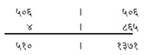
इसे (६० से) तष्टित (विभाजित) किया तो ५३२।५१ हुआ अर्थात् (१३७१) में ६० से भाग देनेपर लब्धि २२ शेष ५१ आता है। लब्धिको (५१०) में मिलाया तो (५३२।५१) हुआ। इसका नाम सगुण या गुणसंज्ञ रखा। फिर इस गुणसंज्ञको तीन स्थानोंमें रखा—
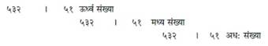
इसमें मध्य (५३२।५१)-को आठसे गुणा किया तो (४२५६।४०८) हुआ, फिर इसे ४ से गुणा किया तो (१७०२४।१६३२) हुआ। इसे ६० से तष्टित किया अर्थात् (१६३२) में ६० से भाग देकर शेष १२ को अपने स्थानपर रखा, लब्धि २७ को बायें अङ्कमें मिलाया तो (१७०५१।१२) हुआ। इस तरह मध्यका संस्कार करके उसे मध्यके स्थानमें रखकर न्यास किया—
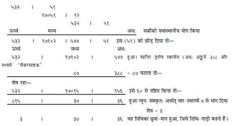
फिर गुणसंज्ञ (५३२।५१) को २ से गुणा किया तो १०६४।१०२ हुआ। ६० से तष्टित किया तो १०६५।४२ हुआ। प्रथम स्थानमें ३ घटाया तो १०६२।४२ हुआ। (पुनर्गुणः) फिर भी इसके साथ गुणसंज्ञ (५३२।५१) का न्यास किया और जोड़ा तो—
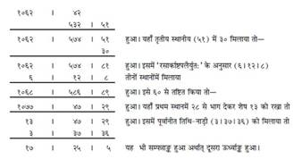
फिर गुणसंज्ञ (५३२।५१)-को आधा किया तो (२६६।२५) हुआ। दूसरे स्थानमें ३ घटाया तो (२६६।२२) हुआ। इसे दोसे गुणा किया तो (५३२।४४) हुआ। यहाँ (५३२) को ११ से गुणा किया और ४४ में १ मिलाया तो (५८५२।४५) हुआ। यहाँ (४५)-में ३९ से भाग देकर शेष ६ को अपने स्थानमें लिखा। लब्धिको प्रथम स्थानमें घटाया तो (५८५१।६) हुआ। प्रथम स्थानमें २२ घटाया तो (५८२९।६) हुआ। इसे ६० से तष्टित करके लब्धाङ्क (९७।९।६) हुआ। इसमें दूसरे ऊर्ध्वाङ्क (१७।२५।५)-को मिलाया तो (११४।३४।११) हुआ। प्रथम स्थानमें २७ से भाग देनेपर (६।३४।११) हुआ—यह नक्षत्र तथा योगका ध्रुवा हुआ। व्यवस्थित शकादिमें तिथिका ध्रुवा (२।३२।००) यह है और नक्षत्र-ध्रुवा (२।११।००) यह है, इसको प्रत्येक मासमें अपने-अपने मानमें जोड़ना चाहिये। जैसे कि पूर्वानीत तिथिके वारादि (३।३७।३६)-में तिथिका वारादि ध्रुवा (२।३२।००)-को मिलाया तो वैशाख शुक्ल प्रतिपदाका मान वारादि (६।९।३६) मध्यम मानसे हुआ एवं पूर्वानीत नक्षत्र-मान (६।३४।११)-में नक्षत्र-ध्रुवा (२।११।००) को जोड़ा तो (८।४५।११) हुआ अर्थात् पुष्य नक्षत्रका मान मध्यम दण्डादि (४५।११) हुआ। अब तिथि आदिका स्पष्ट मान जाननेके लिये संस्कार-विधि कह रहे हैं। इसे ११ वें श्लोकसे २० वें श्लोकतककी व्याख्याके अनुसार समझना चाहिये।
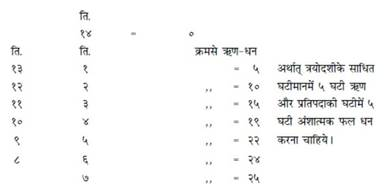
इसी तरह कलादि फल-साधनके लिये ‘कर्कटादौ हरेद्राशिमृतुवेदत्रयैः क्रमात्’ के अनुसार करना चाहिये।
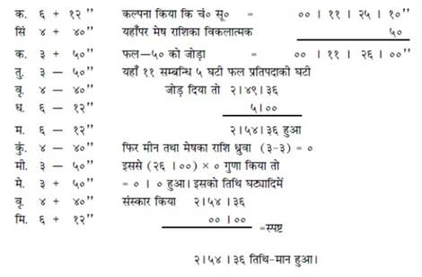
इसमें एष्यखण्डासे गतखण्डा अधिक हो तो फलको ऋण समझना चाहिये। फिर भी तिथि-संस्कारके लिये तृतीय संस्कार कह रहे हैं (श्लो० १९-२०)। तिथिमानको द्विगुणित करके पष्ठांश उसीमें घटा दे। सूर्यके अंशके फलको विपरीत संस्कार करे, उसमें तिथि-नाड़ीको मिला दे। इसमें कलादिका ऋण फल-संशोधन करनेपर स्पष्टमान दण्डादिक हो जाता है। ऋणात्मक मानके नहीं घटनेपर उसमें ६० मिलाकर घटाना चाहिये एवं जिसमें संस्कार करना है, वही ६० से अधिक हो तो उसमें ही ६० घटाना चाहिये—इस तरह तृतीय संस्कार होता है। उदाहरण—“द्विगुणिता” के स्थानपर “त्रिगुणिता” पाठ रखनेपर पूर्वानीत मध्यम तिथिका मान दण्डादिक (९।३६) को ३ से गुणा किया तो (२८।४८) हुआ। इसका पष्ठांश (४।४८) हुआ। (२८।४८)-मेंसे पष्ठांश (४।४८)-को घटाया तो = २४।०० हुआ। इसमें तिथि-नाड़ी (९।३६)-को मिलाया तो (३३।३६) हुआ। इसमें सूर्यके अंशका ५ घ० संस्कार-फल घटाया तो (३३।३६)—(५।०) = (२८।३६) हुआ। ६० से तष्टित किया तो २८।३६ घट्यादिक स्पष्ट तिथिका मान हुआ, जो पूर्वानीत मध्य तिथिके घट्यादिक (९।३६) के आसन्न हुआ। “द्विगुणिता” पाठ रखनेपर ऐसा नहीं होता है, अधिक अन्तर होता है। अब योगका साधन बताते हैं (श्लोक २१—२३)। स्पष्ट तिथि-मानको (२८।३६) × ४ = ११४।२४ हुआ। इसमें तिथिका तृतीयांश (९।३२) मिलाया तो १२३।५६ हुआ। २७ से तष्टित किया तो लब्धि ४ से घट्यादिक १५।५६ हुआ अर्थात् सौभाग्य योगका मान घट्यादिक १५।५६ हुआ। योग-साधनका दूसरा प्रकार कहते हैं—(श्लोक २३) सूर्य तथा चन्द्रमाकी योग-कलामें ८०० से भाग देनेपर लब्धि योगसंख्या होगी। शेष एष्य योगका गत घट्यादि मान होगा। उसे ८०० कलामें घटाकर सूर्य-चन्द्र-गति-योगमें ६० घटी तो शेष योगकलामें क्या इस तरह अनुपातसे भी योगका घट्यादि मान होगा। अब करणका साधन-प्रकार कहते हैं— द्विगुणित तिथि-संख्यामें १ घटानेसे सात ‘चल’ करण होते हैं और कृष्णपक्षकी चतुर्दशीके द्वितीय परार्धमें शकुनि तथा अमावास्याके पूर्वार्ध और परार्धमें चतुष्पद एवं ‘नाग’ करण होते हैं। शुक्लपक्षकी प्रतिपदाके पूर्वार्धमें किंस्तुघ्न नामके चार करण ‘स्थिर’ होते हैं और तिथिके आधेके बराबर करणोंका मान होता। यहाँपर मूल पाठमें “तिथ्यर्धतो हि” ऐसा लिखा है, किंतु वास्तवमें “तिथ्यर्धतोऽहिः” ऐसा पाठ होना चाहिये; क्योंकि ‘हि’ को पादपूरक रखनेसे ‘नाग’ अर्थ नहीं होगा। जिससे नाग नामक करणका ज्ञान नहीं होगा और “अहिः” ऐसा रखनेपर नाग करणका बोध होगा।
इस प्रकार आदि आग्नेय महापुराणमें ‘ज्यौतिष-शास्त्रके अन्तर्गत कालगणना’ नामक एक सौ बाईसवाँ अध्याय पूरा हुआ॥१२२॥
एक सौ तेईसवाँ अध्याय
युद्धजयार्णव-सम्बन्धी विविध योगोंका वर्णन
अग्निदेव कहते हैं—(अब स्वरके द्वारा विजय-साधन कह रहे हैं—) मैं इस पुराणके युद्धजयार्णव-प्रकरणमें विजय आदि शुभ कार्योंकी सिद्धिके लिये सार वस्तुओंको कहूँगा। जैसे अ, इ, उ, ए, ओ—ये पाँच स्वर होते हैं। इन्हींके क्रमसे नन्दा (भद्रा, जया, रिक्ता, पूर्णा) आदि तिथियाँ होती हैं। ‘क’ से लेकर ‘ह’ तक वर्ण होते हैं और पूर्वोक्त स्वरोंके क्रमसे सूर्य-मङ्गल, मङ्गल, बुध-चन्द्रमा, बृहस्पति-शुक्र, शनि-मङ्गल तथा सूर्य-शनि—ये ग्रह-स्वामी होते हैं[१३१]॥१-२॥
[१३१] इस विषयके स्पष्ट बोधके लिये निम्नाङ्कित स्वरचक्र देखिये—
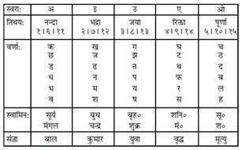
चालीसको साठसे गुणा करे। उसमें ग्यारहसे भाग दे। लब्धिको छःसे गुणा करके गुणनफलमें फिर ग्यारहसे ही भाग दें। लब्धिको तीनसे गुणा करके गुणनफलमें एक मिला दे तो उतनी ही बार नाडीके स्फुरणके आधारपर पल होता है। इसके बाद भी अहर्निश नाडीका स्फुरण होता ही रहता है। उदाहरण—जैसे ४० × ६० = २४००।२२४००/११ = २१९ लब्धि स्वल्पान्तरसे हुई। इसे छःसे गुणा किया तो २१९×६=१३१४ गुणनफल हुआ। इसमें फिर ११ से भाग दिया तो १३१४/११ = ११९ लब्धि, शेष = ५, शेष छोड़ दिया। लब्धि ११९ को ३ से गुणा किया तो गुणनफल ३५७ हुआ। इसमें १ मिलाया तो ३५८ हुआ। इसको स्वल्पान्तरसे ३६० मान लिया। अर्थात् करमूलगत नाडीका ३६० बार स्फुरण होनेके आधारपर ही पल होते हैं, जिनका ज्ञानप्रकार आगे कहेंगे। इसी तरह नाड़ीका स्फुरण अहर्निश होता रहता है और इसी मानसे अकारादि स्वरोंका उदय भी होता रहता है॥३—४॥
(अब व्यावहारिक काल-ज्ञान कहते हैं—) तीन बार स्फुरण होनेपर १ ‘उच्छ्वास’ होता है अर्थात् १ ‘अणु’[१३२] होता है, ६ ‘उच्छ्वास’ का १ ‘पल’ होता है, ६० पलका एक ‘लिप्ता’ अर्थात् १ ‘दण्ड’ होता है, (यद्यपि ‘लिप्ता’ शब्द कला-वाचक है, जो कि ग्रहोंके राश्यादि विभागमें लिया जाता है, फिर भी यहाँ काल-मानके प्रकरणमें ‘लिप्ता’ शब्दसे ‘दण्ड’ ही लिया जायगा; क्योंकि ‘कला’ तथा ‘दण्ड’—ये दोनों भचक्रके षष्ट्यंश-विभागमें ही लिये गये हैं।) ६० दण्डका १ अहोरात्र होता है। उपर्युक्त अ, इ, उ, ए, ओ—स्वरोंकी क्रमसे बाल, कुमार, युवा, वृद्ध, मृत्यु—ये पाँच संज्ञाएँ होती हैं। इनमें किसी एक स्वरके उदयके बाद पुनः उसका उदय पाँचवें खण्डपर होता है। जितने समयसे उदय होता है, उतने ही समयसे अस्त भी होता है। इनके उदयकाल एवं अस्तकालका मान अहोरात्रके अर्थात् ६० दण्डके एकादशांशके समान होता है—जैसे ६० में ११ से भाग देनेपर ५ दण्ड २७ पल लब्धि होगी तो ५ दण्ड २७ पल उक्त स्वरोंका उदयास्तमान होता है। किसी स्वरके उदयके बाद दूसरा स्वर ५ दण्ड २७ पलपर उदय होगा। इसी तरह पाँचोंका उदय तथा अस्तमान जानना चाहिये। इनमेंसे जब मृत्युस्वरका उदय हो, तब युद्ध करनेपर पराजयके साथ ही मृत्यु हो जाती है॥५—७॥
[१३२] इस विपयपर भास्कराचार्य अपनी ‘गणिताध्याय’ नामक पुस्तकके ‘कालमानाध्याय’ में लिखते हैं— गुर्वक्षरैः खेन्दुमितैरणुस्तैः षड्भिः पलं तैर्घटिका खषड्भिः । स्याद्वा घटीषष्टिरहः खरामैर्मासो दिनैस्तौर्द्विकुभिश्च वर्षम् ।। १ ।। “दस गुरु अक्षरोंके उच्चारणमें जितना समय लगता है, उसे एक ‘अणु’ कहते हैं और ६ अणुओंका एक ‘पल’ होता है। ६० पलका १ ‘दण्ड’, ६० दण्डका १ ‘अहोरात्र’, ३० दिन-रातका एक ‘मास’ और १२ मासका एक ‘वर्ष’ होता है।”
(अब शनिचक्रका वर्णन करते हैं—) शनिचक्रमें १५ दिनोंपर क्रमशः ग्रहोंका उदय हुआ करता है। इस पञ्चदश विभागके अनुसार शनिका भाग युद्धमें मृत्युदायक होता है। (विशेष—जब कि शनि एक राशिमें ढाई साल अर्थात् ३० मास रहता है, उसमें दिन-संख्या ९०० हुई। ९०० में १५ का भाग देनेसे लब्धि ६० होगी। ६० दिनका १ पञ्चदश विभाग हुआ। शनिके राशिमें प्रवेश करनेके बाद शनि आदि ग्रहोंका उदय ६० दिनका होगा; जिसमें उदयसंख्या ४ बार होगी। इस तरह जब शनिका भाग आये, उस समय युद्ध करना निषिद्ध है)॥८॥
(अब कूर्मपृष्ठाकार शनि-बिम्बके पृष्ठका क्षेत्रफल कहते हैं—) दस कोटि सहस्र तथा तेरह लाखमें इसीका दशांश मिला दे तो उतने ही योजनके प्रमाणवाले कूर्मरूप शनि-बिम्बके पृष्ठका क्षेत्रफल होता है। अर्थात् ११००, १४३०००० ग्यारह अरब चौदह लाख तीस हजार योजन शनि-बिम्ब पृष्ठका क्षेत्रफल है। (विशेष —ग्रन्थान्तरोंमें ग्रहोंके बिम्ब-प्रमाण तथा कर्मप्रमाण योजनमें ही कहे गये हैं। जैसे ‘गणिताध्याय’ में भास्कराचार्य—सूर्य तथा चन्द्रका बिम्बपरिमाण-कथनके अवसरपर—‘बिम्बं रवेर्द्विद्विशरर्त्तुसंख्यानीन्दोः खनागा-म्बुधियोजनानि।’ आदि। यहाँ भी संख्या योजनके प्रमाणवाली ही लेनी चाहिये।) मघाके प्रथम चरणसे लेकर कृत्तिकाके आदिसे अन्ततक शनिका निवास अपने स्थानपर रहता है, उस समय युद्ध करना ठीक नहीं होता॥९॥
(अब राहु-चक्रका वर्णन करते हैं—) राहु-चक्रके लिये सात खड़ी रेखा एवं सात पड़ी रेखा बनानी चाहिये। उसमें वायुकोणसे नैर्ऋत्यकोणको लिये हुए अग्निकोणतक शुक्लपक्षकी प्रतिपदासे लेकर पूर्णिमातककी तिथियोंको लिखना चाहिये एवं अग्निकोणसे ईशानकोणको लिये हुए वायुकोणतक कृष्णपक्षकी प्रतिपदासे लेकर अमावास्यातककी तिथियोंको लिखना चाहिये। इस तरह तिथिरूप राहुका न्यास होता है। ‘र’ कारको दक्षिण दिशामें लिखे और ‘ह’ कारको वायुकोणमें लिखे। प्रतिपदादि तिथियोंके सहारे ‘क’ कारादि अक्षरोंको भी लिखे। नैर्ऋत्यकोणमें ‘सकार’ लिखे। इस तरह राहुचक्र तैयार हो जाता है। राहु-मुखमें[१३३] यात्रा करनेसे यात्रा-भङ्ग होता है॥१०—१२॥
[१३३] देवालये गेहविधौ जलाशये राहोर्मुखं शम्भुदिशो विलोमतः । मीनार्कसिंहाकमृदगार्कतस्त्रिभे खाते मुखात् पृष्ठविदिक् शुभा भवेत् ।। (मुहूर्तचिन्तामणि, वास्तुप्रकरण, १९) मुहूर्तचिन्तामणि-ग्रन्थोक्त रामाचार्यके प्रोक्त वचनानुसार राहुका भ्रमण अपने स्थानसे विलोम ही होता है। जैसे लिखित चक्रमें शुक्लपक्षकी एकादशीको राहुका मुख दक्षिण दिशामें कहा गया है और पुच्छ अमावास्या तिथिपर रहेगी; क्योंकि राहुका स्वरूप सर्पाकार है और एकादशीके बाद दशमी, नवमी आदि विलोम तिथियोंपर राहुका मुख भ्रमण करेगा। इसी तरह शुक्लपक्षकी प्रत्येक तिथियोंपर राहुका मुख आता रहेगा। जहाँपर राहुका मुख रहे, उस तिथिमें उस दिशामें यात्रा करना ठीक नहीं होता है। ककारादि अक्षरोंसे स्वरका भी सम्बन्ध लिया गया है। जैसे पूर्वोक्त स्वरचक्रमें किस स्वरका कौन वर्ण है, यह लिखा गया है; अतः जिस तिथिपर जो वर्ण है, वह जिस स्वरसे सम्बन्ध रखता हो, उस स्वरवाले भी उस दिशामें यात्रा न करें।
राहुचक्र नीचे दिया जा रहा है—
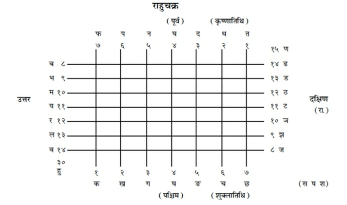
(अब तिथिके अनुसार भद्रा-निवासकी दिशाका वर्णन करते हैं—) पौर्णमासी तिथिको भद्राका नाम ‘विष्टि’ होता है और वह अग्निकोणमें रहती है। तृतीया तिथिको भद्राका नाम ‘कराली’ होता है और वह पूर्व दिशामें वास करती है। सप्तमी तिथिको भद्राका नाम ‘घोरा’ होता है और वह दक्षिण दिशामें निवास करती है। सप्तमी तथा दशमी तिथियोंको भद्रा क्रमसे ईशानकोण तथा उत्तर दिशामें, चतुर्दशी तिथिको वायव्य कोणमें, चतुर्थी तिथिको पश्चिम दिशामें, शुक्लपक्षकी अष्टमी तथा एकादशीको दक्षिण दिशामें रहती है। इसका प्रत्येक शुभ कार्योंमें सर्वथा त्याग करना चाहिये॥१३-१४॥
(अब पंद्रह मुहूर्तोंका नाम एवं नामानुकूल कार्योंका वर्णन कर रहे हैं—) रौद्र, श्वेत, मैत्र, सारभट, सावित्र, विरोचन, जयदेव, अभिजित्, रावण, विजय, नन्दी, वरुण, यम, सौम्य, भव—ये पंद्रह मुहूर्त हैं। ‘रौद्र’ मुहूर्तमें भयानक कार्य करना चाहिये। ‘श्वेत’ मुहूर्तमें स्नानादिक कार्य करना चाहिये। ‘मैत्र’ मुहूर्तमें कन्याका विवाह शुभ होता है। ‘सारभट’ मुहूर्तमें शुभ कार्य करना चाहिये। ‘सावित्र’ मुहूर्तमें देवोंका स्थापन, ‘विरोचन’ मुहूर्तमें राजकीय कार्य, ‘जयदेव’ मुहूर्तमें विजय-सम्बन्धी कार्य तथा ‘रावण’ मुहूर्तमें संग्रामका कार्य करना चाहिये। ‘विजय’ मुहूर्तमें कृषि तथा व्यापार, ‘नन्दी’ मुहूर्तमें षट्कर्म, ‘वरुण’ मुहूर्तमें तडागादि और ‘यम’ मुहूर्तमें विनाशवाला कार्य करना चाहिये। ‘सौम्य’ मुहूर्तमें सौम्य कार्य करना चाहिये। ‘भव’ मुहूर्तमें दिन-रात शुभ लग्न ही रहता है, अतः उसमें सभी शुभ कार्य किये जा सकते हैं। इस प्रकार ये पंद्रह योग अपने नामानुसार ही शुभ तथा अशुभ होते हैं[१३४]॥१५—२०॥
[१३४] दिनमानके ३० दण्ड होनेपर दिनमानका १५ वाँ भाग २ दण्डका होगा; अतः उक्त पंद्रह मुहूर्तोंका मान मध्यम मानसे २ दण्डका ही प्रतिदिन माना गया है। इसे ही ‘शिवद्विघटिका’ मुहूर्त कहते हैं। उदयसे सायंकालतक २ दण्डके मानसे प्रत्येक मुहूर्तका मान होता है। इसमें नामानुकूल शुभ या अशुभ कार्य करना चाहिये। इसी तरह ‘मुहूर्तचिन्तामणि’ में १५ मुहूर्त विवाह-प्रकरण (५२)-में कहे गये हैं, जैसे— गिरिशभुजगमित्रापित्र्यवस्वम्बुविश्वेऽभिजिदथ च विधातापीन्द्र इन्द्रानलौ च ।। निर्ऋतिरुदकनाथोऽप्यर्यमाथो भगः स्युः क्रमश इह मुहूर्ता वासरे बाणचन्द्राः ।
(अब राहुके दिशा-संचारका वर्णन कर रहे हैं—) (दैनिक राहु) राहु पूर्वदिशासे वायुकोणतक, वायुकोणसे दक्षिण दिशातक, दक्षिण दिशासे ईशानकोणतक, ईशानकोणसे पश्चिमतक, पश्चिमसे अग्निकोणतक एवं अग्निकोणसे उत्तरतक तीन-तीन दिशा करके चार घटियोंमें भ्रमण करता है॥२१-२२॥
(अब ओषधियोंके लेपादिद्वारा विजयका वर्णन कर रहे हैं—) चण्डी, इन्द्राणी (सिंधुवार), वाराही (वाराहीकंद), मुशली (तालमूली), गिरिकर्णिका (अपराजिता), बला (कुट), अतिबला (कंघी), क्षीरी (सिरखोला), मल्लिका (मोतिया), जाती (चमेली), यूथिका (जूही), श्वेतार्क (सफेद मदार), शतावरी, गुरुच, वागुरी—इन यथाप्राप्त दिव्य ओषधियोंको धारण करना चाहिये। धारण करनेपर ये युद्धमें विजय-दायिनी होती हैं॥२३-२४॥
‘ॐ नमो भैरवाय खड्गपरशुहस्ताय ॐ ह्रूं विघ्नविनाशाय ॐ ह्रूं फट्।’—इस मन्त्रसे शिखा बाँधकर यदि संग्राम करे तो विजय अवश्य होती है। (अब संग्राममें विजयप्रद) तिलक, अञ्जन, धूप, उपलेप, स्नान, पान, तैल, योगचूर्ण—इन पदार्थोंका वर्णन करता हूँ, सुनो— सुभगा (नीलदूर्वा), मनःशिला (मैनसिल), ताल (हरताल)—इनको लाक्षारसमें मिलाकर, स्त्रीके दूधमें घोंटकर ललाटमें तिलक करनेसे शत्रु वशमें हो जाता है। विष्णुक्रान्ता (अपराजिता), सर्पाक्षी (महिषकंद), सहदेवी (सहदेइया), रोचना (गोरोचन)—इनको बकरीके दूधमें पीसकर लगाया हुआ तिलक शत्रुओंको वशमें करनेवाला होता है। प्रियंगु (नागकेसर), कुङ्कुम, कुष्ठ, मोहिनी (चमेली), तगर, घृत—इनको मिलाकर लगाया हुआ तिलक वश्यकारक होता है। रोचना (गोरोचन), रक्तचन्दन, निशा (हल्दी), मनःशिला (मैनसिल), ताल (हरताल), प्रियंगु (नागकेसर), सर्षप (सरसों), मोहिनी (चमेली), हरिता (दूर्वा), विष्णुक्रान्ता (अपराजिता), सहदेवी, शिखा (जटामाँसी)—इनको मातुलुङ्ग (बिजौरा नीबू) के रसमें पीसकर ललाटमें किया हुआ तिलक वशमें करनेवाला होता है। इन तिलकोंसे इन्द्रसहित समस्त देवता वशमें हो जाते हैं, फिर क्षुद्र मनुष्योंकी तो बात ही क्या है। मञ्जिष्ठ, रक्तचन्दन, कटुकन्दा (सहिजन), विलासिनी, पुनर्नवा (गदहपूर्णा)—इनको मिलाकर लेप करनेसे सूर्य भी वशमें हो जाते हैं। मलयचन्दन, नागपुष्प (चम्पा), मञ्जिष्ठ, तगर, वच, लोध्र, प्रियंगु (नागकेसर), रजनी (हल्दी), जटामाँसी—इनके सम्मिश्रणसे बना हुआ तैल वशमें करनेवाला होता है॥२५—३४॥
इस प्रकार आदि आग्नेय महापुराणमें ‘युद्धजयार्णवसम्बधी विविध योगोंका वर्णन’ नामक एक सौ तेईसवाँ अध्याय पूरा हुआ॥१२३॥
एक सौ चौबीसवाँ अध्याय
युद्धजयार्णवीय ज्यौतिषशास्त्रका सार
अग्निदेव कहते हैं—अब मैं युद्धजयार्णव-प्रकरणमें ज्योतिषशास्त्रकी सारभूत वेला (समय), मन्त्र और औषध आदि वस्तुओंका उसी प्रकार वर्णन करूँगा, जिस तरह शंकरजीने पार्वतीजीसे कहा था॥१॥
पार्वतीजीने पूछा—भगवन्! देवताओंने (देवासुर-संग्राममें) दानवोंपर जिस उपायसे विजय पायी थी, उसका तथा युद्धजयार्णवोक्त शुभाशुभ-विवेकादि रूप ज्ञानका वर्णन कीजिये॥२॥
शंकरजी बोले—मूलदेव (परमात्मा)-की इच्छासे पंद्रह अक्षरवाली एक शक्ति पैदा हुई। उसीसे चराचर जीवोंकी सृष्टि हुई। उस शक्तिकी आराधना करनेसे मनुष्य सब प्रकारके अर्थोंका ज्ञाता हो जाता है। अब पाँच मन्त्रोंसे बने हुए मन्त्रपीठका वर्णन करूँगा। वे मन्त्र सभी मन्त्रोंके जीवन-मरणमें अर्थात् ‘अस्ति’ तथा ‘नास्ति’ रूप सत्तामें स्थित हैं। ऋग्वेद, यजुर्वेद, सामवेद, अथर्ववेद—इन चारों वेदोंके मन्त्रोंको प्रथम मन्त्र कहते हैं। सद्योजातादि मन्त्र द्वितीय मन्त्र हैं एवं ब्रह्मा, विष्णु तथा रुद्र—ये तृतीय मन्त्रके स्वरूप हैं। ईश (मैं), सात शिखावाले अग्नि तथा इन्द्रादि देवता—ये चौथे मन्त्रके स्वरूप हैं। अ, इ, उ, ए, ओ—ये पाँचों स्वर पञ्चम मन्त्रके स्वरूप हैं। इन्हीं स्वरोंको मूलब्रह्म भी कहते हैं॥३—६॥
(अब पञ्च स्वरोंकी उत्पत्ति कह रहे हैं—) जिस तरह लकड़ीमें व्यापक अग्निकी प्रतीति बिना जलाये नहीं होती है, उसी तरह शरीरमें विद्यमान शिव-शक्तिकी प्रतीति ज्ञानके बिना नहीं होती है। महादेवी पार्वती! पहले ॐकारस्वरसे विभूषित शक्तिकी उत्पत्ति हुई। तत्पश्चात् बिन्दु ‘एकार’ रूपमें परिणत हुआ। पुनः ओंकारमें शब्द पैदा हुआ, जिससे ‘उकार’ का उद्गम हुआ। यह ‘उकार’ हृदयमें शब्द करता हुआ विद्यमान रहता है। ‘अर्धचन्द्र’ से मोक्ष-मार्गको बतानेवाले ‘इकार’ का प्रादुर्भाव हुआ। तदनन्तर भोग तथा मोक्ष प्रदान करनेवाला अव्यक्त ‘अकार’ उत्पन्न हुआ। वही ‘अकार’ सर्वशक्तिमान् एवं प्रवृत्ति तथा निवृत्तिका बोधक है॥७—१०॥
(अब शरीरमें पाँचों स्वरोंका स्थान कह रहे हैं—) ‘अ’ स्वर शरीरमें प्राण अर्थात् श्वासरूपसे स्थिर होकर विद्यमान रहता है। इसीका नाम ‘इडा’ है। ‘इकार’ प्रतिष्ठा नामसे रहकर रसरूपमें तथा पालक-स्वरूपमें रहता है। इसे ही ‘पिङ्गला’ कहते हैं। ‘ई’ स्वरको ‘क्रूरा शक्ति’ कहते हैं। ‘हर-बीज’ (उकार) स्वर शरीरमें अग्निरूपसे रहता है। यही ‘समान-बोधिका विद्या’ है। इसे ‘गान्धारी’ कहते हैं। इसमें ‘दहनात्मिका’ शक्ति है। ‘एकार’ स्वर शरीरमें जलरूपसे रहता है। इसमें शान्ति-क्रिया है तथा ‘ओकार’ स्वर शरीरमें वायुरूपसे रहता है। यह अपान, व्यान, उदान आदि पाँच स्वरूपोंमें होकर स्पर्श करता हुआ गतिशील रहता है। पाँचों स्वरोंका सम्मिलित सूक्ष्म रूप जो ‘ओंकार’ है, वह ‘शान्त्यतीत’ नामसे बोधित होकर शब्द-गुणवाले आकाश-रूपमें रहता है। इस तरह पाँचों स्वर (अ, इ, उ, ए, ओ) हुए, जिनके स्वामी क्रमसे मङ्गल, बुध, गुरु, शुक्र तथा शनि ग्रह हुए। ककारादि वर्ण इन स्वरोंके नीचे होते हैं। ये ही संसारके मूल कारण हैं। इन्हींसे चराचर सब पदार्थोंका ज्ञान होता है॥११—१४॥
अब मैं विद्यापीठका स्वरूप बतलाता हूँ, जिसमें ‘ओंकार’ शिवरूपसे कहा गया है और ‘उमा’ स्वयं सोम अर्थात् अमृतरूपसे है। इन्हींको वामा, ज्येष्ठा तथा रौद्री शक्ति भी कहते हैं। ब्रह्मा, विष्णु तथा रुद्र—क्रमशः ये ही तीनों गुण हैं एवं सृष्टिके उत्पादक, पालक तथा संहारक हैं। शरीरके अंदर तीन रत्न नाड़ियाँ हैं, जिनका नाम स्थूल, सूक्ष्म तथा पर है। इनका श्वेत वर्ण है। इनसे सदैव अमृत टपकता रहता है, जिससे आत्मा सदैव आप्लावित रहता है। इस प्रकार उसका दिन-रात ध्यान करते रहना चाहिये। देवि! ऐसे साधकका शरीर अजर हो जाता है तथा उसे शिव-सायुज्यकी प्राप्ति हो जाती है। प्रथमतः अङ्गुष्ठ आदिमें, नेत्रोंमें तथा देहमें भी अङ्गन्यास करे, तत्पश्चात् मृत्युंजयकी अर्चना करके यात्रा करनेवाला संग्राम आदिमें विजयी होता है। आकाश शून्य है, निराधार है तथा शब्द-गुणवाला है। वायुमें स्पर्श गुण है। वह तिरछा झुककर स्पर्श करता है। रूपकी अर्थात् अग्निकी ऊर्ध्वगति बतलायी गयी है तथा जलकी अधोगति होती है। सब स्थानोंको छोड़कर गन्ध-गुणवाली पृथ्वी मध्यमें रहकर सबके आधार-रूपमें विद्यमान है॥१५—२०॥
नाभिके मूलमें अर्थात् मेरुदण्डकी जड़मे कंदके स्वरूपमें श्रीशिवजी सुशोभित हैं। वहींपर शक्ति-समुदायके साथ सूर्य, चन्द्रमा तथा भगवान् विष्णु रहते हैं और पञ्चतन्मात्राओंके साथ दस प्रकारके प्राण भी रहते हैं। कालाग्निके समान देदीप्यमान वह शिवजीकी मूर्ति सदैव चमकती रहती है। वही चराचर जीवलोकका प्राण है। उस मन्त्रपीठके नष्ट होनेपर वायुस्वरूप जीवका नाश समझना चाहिये[१३५]॥२१—२३॥
[१३५] यह विषय इस अध्यायके पूर्व अध्यायमें ‘स्वरचक्र’ के अन्तर्गत आ गया है।
इस प्रकार आदि आग्नेय महापुराणमें ‘युद्धजयार्णव-सम्बन्धी ज्योतिष शास्त्रका सार-कथन’ नामक एक सौ चौबीसवाँ अध्याय पूरा हुआ॥१२४॥
एक सौ पचीसवाँ अध्याय
युद्धजयार्णव-सम्बन्धी अनेक प्रकारके चक्रोंका वर्णन
शंकरजीने कहा—‘ॐ ह्रीं कर्णमोटनि बहुरूपे बहुदंष्ट्रे ह्रूं फट्, ॐ हः, ॐ ग्रस ग्रस, कृन्त कृन्तच्छक च्छक ह्रूं फट् नमः।’ इस मन्त्रका नाम ‘कर्णमोटी महाविद्या’ है। यह सभी वर्णोंमें रक्षा करनेवाली है। इस मन्त्रको केवल पढ़नेसे ही मनुष्य क्रोधाविष्ट हो जाता है तथा उसके नेत्र लाल हो जाते हैं। यह मन्त्र मारण, पातन, मोहन एवं उच्चाटनमें उपयुक्त होता है॥१-२॥
अब स्वरोदयके साथ पाँच प्रकारके वायुका स्थान तथा उसका प्रयोजन कहता हूँ। नाभिसे लेकर हृदयतक जो वायुका संचार होता रहता है, उसको ‘मारुतचक्र’ कहते हैं। जप तथा होम-कार्यमें लगा हुआ क्रोधी साधक उससे संग्रामादि कार्योंमें उच्चाटन-कर्म करता है। कानसे लेकर नेत्रतक जो वायु है, उससे प्रभेदन-कार्य करे एवं हृदयसे गुदामार्गतक जो वायु है, उससे ज्वर-दाह तथा शत्रुओंका मारण-कार्य करना चाहिये। इसी वायुका नाम ‘वायुचक्र’ है। हृदयसे लेकर कण्ठतक जो वायु है, उसका नाम ‘रस’ है। इसे ही ‘रसचक्र’ कहते हैं। उससे शान्तिका प्रयोग किया जाता है तथा पौष्टिक रसके समान उसका गुण है। भौंहसे लेकर नासिकाके अग्रभागतक जो वायु है, उसका नाम ‘दिव्य’ है। इसे ही ‘तेजश्चक्र’ कहते हैं। गन्ध इसका गुण है तथा इससे स्तम्भन और आकर्षण-कार्य होता है। नासिकाग्रमें मनको स्थिर करके साधक निस्संदेह स्तम्भन तथा कीलन कर्म करता है। उपर्युक्त वायुचक्रमें चण्डघण्टा, कराली, सुमुखी, दुर्मुखी, रेवती, प्रथमा तथा घोरा—इन शक्तियोंका अर्चन करना चाहिये। उच्चाटन करनेवाली शक्तियाँ तेजश्चक्रमें रहती हैं। सौम्या, भीषणी, देवी, जया, विजया, अजिता, अपराजिता, महाकोटी, महारौद्री, शुष्ककाया, प्राणहरा—ये ग्यारह शक्तियाँ रसचक्रमें रहती हैं॥३—९॥
विरूपाक्षी, परा, दिव्या, ११ आकाश-मातृकाएँ, संहारी, जातहारी, दंष्ट्राला, शुष्करेवती, पिपीलिका, पुष्टिहरा, महापुष्टि, प्रवर्धना, भद्रकाली, सुभद्रा, भद्रभीमा, सुभद्रिका, स्थिरा, निष्ठुरा, दिव्या, निष्कम्पा, गदिनी और रेवती—ये बत्तीस मातृकाएँ कहे हुए चारों चक्रों (मारुत, वायु, रस, दिव्य)-में आठ-आठके क्रमसे स्थित रहती हैं॥१०—१२॥
सूर्य तथा चन्द्रमा एक ही हैं तथा उनकी शक्तियाँ भी भूतभेदसे एक-एक ही हैं। जैसे भूतलपर नदीके जलकी स्थानभेदसे ‘तीर्थ’ संज्ञा हो जाती है, शरीरके अस्थिपञ्जरमें रहनेवाला एक ही प्राण कई मण्डलों (चक्रों)-से विभक्त हो जाता है। जैसे वाम तथा दक्षिण अङ्गके योगसे वही वायु दस प्रकारका हो जाता है, वैसे ही वही वायु तत्त्वरूपी वस्त्रमें छिपकर विचित्र बिन्दुरूपी मुण्डके द्वारा कपालरूपी ब्रह्माण्डके अमृतका पान करता है॥१३—१५॥
अब पञ्चवर्गके बलसे जिस प्रकार युद्धमें विजय होती है, उसे सुनो—‘अ, आ, क, च, ट, त, प, य, श’—यह प्रथम वर्ग कहा गया है। ‘इ, ई, ख, छ, ठ, थ, फ, र, ष’—यह द्वितीय वर्ग है। ‘उ, ऊ, ग, ज, ड, द, ब, ल, स’—यह तृतीय वर्ग है। ‘ए, ऐ, घ, झ, ढ, ध, भ, व, ह’—यह चौथा वर्ग है। ‘ओ, औ, अं, अः, ङ, ञ, ण, न, म’—यह पञ्चम वर्ग है। ये पैंतालीस अक्षर मनुष्योंके अभ्युदयके लिये हैं। इन वर्गोंके क्रमसे बाल, कुमार, युवा, वृद्ध और मृत्यु—ये पाँच नाम हैं॥१६—१९॥
(अब तिथि, वार और नक्षत्रोंके योगसे काल-ज्ञानका वर्णन करते हैं—) आत्मपीड़, शोषक, उदासीन—ये तीन प्रकारके काल होते हैं। मङ्गलवारको प्रतिपदा तिथि तथा कृत्तिका नक्षत्र हों तो वे प्राणीके लिये लाभदायक होते हैं। मङ्गलवारको षष्ठी तिथि तथा मघा नक्षत्र हों तो पीड़ाकारक होते हैं। मङ्गलवारको एकादशी तिथि और आर्द्रा नक्षत्र हों तो वे मृत्युदायक होते हैं। बुधवार, द्वितीया तिथि तथा मघा नक्षत्रका योग एवं बुधवार, सप्तमी तिथि और आर्द्रा नक्षत्रका योग लाभदायक होते हैं। बुधवार और भरणी नक्षत्रका योग हानिकारक होता है। इसी प्रकार बुधवार तथा श्रवण नक्षत्रके योगमें ‘कालयोग’ होता है। बृहस्पतिवार, तृतीया तिथि और पूर्वाफाल्गुनी नक्षत्रका योग लाभकारक होता है। बृहस्पतिवार, अष्टमी तिथि, धनिष्ठा तथा आर्द्रा नक्षत्र एवं गुरुवार, त्रयोदशी तिथि, आश्लेषा नक्षत्र—ये योग मृत्युकारक होते हैं। शुक्रवार, चतुर्थी तिथि और पूर्वभाद्रपदा नक्षत्रका योग श्रीवृद्धि करता है। शुक्रवार, नवमी तिथि और पूर्वाषाढ़ा नक्षत्र—यह योग दुःखप्रद होता है। शुक्रवार, द्वितीया तिथि और भरणी नक्षत्रका योग यमदण्डके समान हानिकर होता है। शनिवार, पञ्चमी तिथि और कृत्तिका नक्षत्रका योग लाभके लिये कहा गया है। शनिवार, दशमी तिथि और आश्लेषा नक्षत्रका योग पीड़ाकारक होता है। शनिवार, पूर्णिमा तिथि और मघा नक्षत्रका योग मृत्युकारक कहा गया है॥२०—२६॥
(अब दिशा-तिथि-दिनके योगसे हानि-लाभ कहते हैं—) पूर्व, उत्तर, अग्नि, नैऋत्य, दक्षिण, वायव्य, पश्चिम, ऐशान्य—ये इनमेंसे एक-दूसरेको देखते हैं। प्रतिपदा तथा नवमी आदि तिथियोंमें मेषादि राशियोंके साथ ही रवि आदि वारको भी मिलाये। यह योग कार्यसिद्धिके लिये होता है। जैसे पूर्व दिशा, प्रतिपदा तिथि, मेष लग्न, रविवार—यह योग पूर्व दिशाके लिये युद्ध आदि कार्योंमें सिद्धिदायक होता है। ऐसे और भी समझने चाहिये। मेषसे चार राशियाँ अर्थात् मेष, वृष, मिथुन, कर्क एवं कुम्भ—ये लग्न पूर्ण विजयके लिये होते हैं। शेष राशियाँ मृत्युके लिये होती हैं। सूर्यादि ग्रह तथा रिक्ता, पूर्णा आदि तिथियोंका इसी तरह क्रमशः न्यास करना चाहिये, जैसा कि पहले दिशाओंके साथ कहा गया है। सूर्यके सम्बन्धसे युद्धमें कोई उत्तम फल नहीं होता। सोमका सम्बन्ध संधिके लिये होता है। मङ्गलके सम्बन्धसे कलह होता है। बुधके सम्बन्धसे संग्राम करनेसे अभीष्टसाधनकी प्राप्ति होती है। गुरुके सम्बन्धसे विजयलाभ होता है। शुक्रके सम्बन्धसे अभीष्ट सिद्ध होता है एवं शनिके सम्बन्धसे युद्धमें पराजय होती है॥२७—३०॥
(पिङ्गला (पक्षि)-चक्रसे शुभाशुभ कहते हैं—) एक पक्षीका आकार लिखकर उसके मुख, नेत्र, ललाट, सिर, हस्त, कुक्षि, चरण तथा पंखमें सूर्यके नक्षत्रसे तीन-तीन नक्षत्र लिखे। पैरवाले तीन नक्षत्रोंमें रण करनेसे मृत्यु होती है तथा पंखवाले तीन नक्षत्रोंमें धनका नाश होता है। मुखवाले तीन नक्षत्रोंमें पीड़ा होती है और सिरवाले तीन नक्षत्रोंमें कार्यका नाश होता है। कुक्षिवाले तीन नक्षत्रोंमें रण करनेसे उत्तम फल होता है॥३१-३२॥
(अब राहुचक्र कहते हैं—) पूर्वसे नैर्ऋत्यकोणतक, नैर्ऋत्यकोणसे उत्तर दिशातक, उत्तर दिशासे अग्निकोणतक, अग्निकोणसे पश्चिमतक, पश्चिमसे ईशानतक, ईशानसे दक्षिणतक, दक्षिणसे वायव्यकोणतक, वायव्यकोणसे उत्तरतक चार-चार दण्डतक राहुका भ्रमण होता है। राहुको पृष्ठकी ओर रखकर रण करना विजयप्रद होता है तथा राहुके सम्मुख रहनेसे मृत्यु हो जाती है॥३३-३४॥
प्रिये! मैं तुमसे अब तिथि-राहुका वर्णन करता हूँ। पूर्णिमाके बाद कृष्णपक्षकी प्रतिपदासे अग्निकोणसे लेकर ईशानकोणतक अर्थात् कृष्णपक्षकी अष्टमी तिथितक राहु पूर्व दिशामें रहता है। उसमें युद्ध करनेसे जय होती है। इसी तरह ईशानसे अग्निकोणतक और नैर्ऋत्यकोणसे वायव्यकोणतक राहुका भ्रमण होता रहता है। मेषादि राशियोंको पूर्वादि दिशामें रखना चाहिये। इस तरह रखनेपर मेष, सिंह, धनु राशियाँ पूर्वमें; वृष, कन्या, मकर—ये दक्षिणमें; मिथुन, तुला, कुम्भ—ये पश्चिममें; कर्क, वृश्चिक, मीन—ये उत्तरमें हो जाती हैं। सूर्यकी राशिसे सूर्यकी दिशा जानकर सम्मुख सूर्यमें रण करना मृत्युकारक होता है॥३५—३७॥
(भद्राकी तिथिका निर्णय बताते हैं—) कृष्णपक्षमें तृतीया, सप्तमी, दशमी तथा चतुर्दशीको ‘भद्रा’ होती है। शुक्लपक्षमें चतुर्थी, एकादशी, अष्टमी और पूर्णिमाको ‘भद्रा’ होती है। भद्राका निवास अग्निकोणसे वायव्यकोणतक रहता है। अ, क, च, ट, त, प, य, श—ये आठ वर्ग होते हैं, जिनके स्वामी क्रमसे सूर्य, चन्द्रमा, मङ्गल, बुध, बृहस्पति, शुक्र, शनि, राहु ग्रह होते हैं। इन ग्रहोंके वाहन क्रमसे गृध्र, उलूक, बाज, पिङ्गल, कौशिक (उलूक), सारस, मयूर, गोरङ्क नामके पक्षी हैं। पहले हवन करके मन्त्रोंको सिद्ध कर लेना चाहिये। उच्चाटनमें मन्त्रोंका प्रयोग पल्लवरूपसे करना चाहिये॥३८—४०॥
वश्य, ज्वर एवं आकर्षणमें पल्लवका प्रयोग सिद्धिकारक होता है। शान्ति तथा मोहन-प्रयोगोंमें ‘नमः’ कहना ठीक होता है। पुष्टिमें तथा वशीकरणमें ‘वौषट्’ एवं मारण तथा प्रीतिविनाशके प्रयोगमें ‘हुम्’ कहना ठीक होता है। विद्वेषण तथा उच्चाटनमें ‘फट्’ कहना चाहिये। पुत्रादि-प्राप्तिके प्रयोगमें तथा दीप्ति आदिमें ‘वषट्’ कहना चाहिये। इस तरह मन्त्रोंकी छः जातियाँ होती हैं॥४१-४२॥
अब हर तरहसे रक्षा करनेवाली ओषधियोंका वर्णन करूँगा—महाकाली, चण्डी, वाराही (वाराहीकंद), ईश्वरी, सुदर्शना, इन्द्राणी (सिंधुवार)—इनको शरीरमें धारण करनेसे ये धारककी रक्षा करती हैं। बला (कुट), अतिबला (कंघी), भीरु (शतावरी अथवा कंटकारी), मुसली (तालमूली), सहदेवी, जाती (चमेली), मल्लिका (मोतिया), यूथी (जूही), गारुड़ी, भृङ्गराज (भटकटैया), चक्ररूपा—ये महौषधियाँ धारण करनेसे युद्धमें विजयदायिनी होती हैं। महादेवि! ग्रहण लगनेपर पूर्वोक्त ओषधियोंका उखाड़ना शुभदायक होता है॥४३—४६॥
हाथीकी सर्वाङ्गसम्पन्न मिट्टीकी मूर्ति बनाकर, उसके पैरके नीचे शत्रुके स्वरूपको रखकर, स्तम्भन-प्रयोग करना चाहिये। अथवा किसी पर्वतके ऊपर, जहाँपर एक ही वृक्ष हो, उसके नीचे, अथवा जहाँपर बिजली गिरी हो, उस प्रदेशमें, वल्मीककी मिट्टीसे एक स्त्रीकी प्रतिकृति बनाये। फिर ‘ॐ नमो महाभैरवाय विकृतदंष्ट्रोग्ररूपाय पिंगलाक्षाय त्रिशूलखड्गधराय वौषट्।’ हे देवि! इस मन्त्रसे उस मृत्तिकामयी देवीकी पूजा करके (शत्रुके) शस्त्रसमूहका स्तम्भन करना चाहिये॥४७—४९॥
अब संग्राममें विजय दिलानेवाले अग्निकार्यका वर्णन करूँगा—रातमें श्मशानमें जाकर नंग-धड़ंग, शिखा खोलकर, दक्षिणमुख बैठकर जलती हुई चितामें मनुष्यका मांस, रुधिर, विष, भूसी और हड्डीके टुकड़े मिलाकर नीचे लिखे मन्त्रसे आठ सौ बार शत्रुका नाम लेकर हवन करे—‘ॐ नमो भगवति कौमारि लल लल लालय लालय घण्टादेवि! अमुकं मारय मारय सहसा नमोऽस्तु ते भगवति विद्ये स्वाहा।’—इस विद्यासे हवन करनेपर शत्रु अंधा हो जाता है॥५०—५३॥
(सब प्रकारकी सफलताके लिये हनुमान्जीका मन्त्र कहते हैं—) ‘ॐ वज्रकाय वज्रतुण्ड कपिलपिङ्गल करालवदनोर्ध्वकेश महाबल रक्तमुख तडिज्जिह्व महारौद्र दंष्ट्रोत्कट कटकरालिन् महादृढप्रहार लङ्केश्वरसेतुबन्ध शैलप्रवाह गगनचर, एह्येहि भगवन्महाबलपराक्रम भैरवो ज्ञापयति, एह्येहि महारौद्र दीर्घलाङ्गूलेन अमुकं वेष्टय वेष्टय जम्भय जम्भय खन खन वैते ह्रूं फट्।’ देवि! इस मन्त्रको ३८०० बार जप कर लेनेपर श्रीहनुमान्जी सब प्रकारके कार्योंको सिद्ध कर देते हैं। कपड़ेपर हनुमान्जीकी मूर्ति लिखकर दिखानेसे शत्रुओंका विनाश होता है॥५४-५५॥
इस प्रकार आदि आग्नेय महापुराणमें ‘युद्धजयार्णव-सम्बन्धी विविध चक्रोंका वर्णन’ नामक एक सौ पचीसवाँ अध्याय पूरा हुआ॥१२५॥
एक सौ छब्बीसवाँ अध्याय
नक्षत्र-सम्बन्धी पिण्डका वर्णन
शंकरजी कहते हैं—देवि! अब मैं प्राणियोंके शुभाशुभ फलकी जानकारीके लिये नाक्षत्रिक पिण्डका वर्णन करूँगा। (जिस राजा या मनुष्यके लिये शुभाशुभ फलका ज्ञान करना हो, उसकी प्रतिकृतिरूपसे एक मनुष्यका आकार बनाकर) सूर्य जिस नक्षत्रमें हों, उससे तीन नक्षत्र उसके मस्तकमें, एक मुखमें, दो नेत्रोंमें, चार हाथ और पैरमें, पाँच हृदयमें और पाँच जानुमें लिखकर आयु-वृद्धिका विचार करना चाहिये। सिरवाले नक्षत्रोंमें संग्राम (कार्य) करनेसे राज्यकी प्राप्ति होती है। मुखवाले नक्षत्रमें सुख, नेत्रवाले नक्षत्रोंमें सुन्दर सौभाग्य, हृदयवाले नक्षत्रोंमें द्रव्यसंग्रह, हाथवाले नक्षत्रोंमें चोरी और पैरवाले नक्षत्रोंमें मार्गमें ही मृत्यु—इस तरह क्रमशः फल होते हैं॥१—३॥
(अब ‘कुम्भ-चक्र’ कह रहे हैं—) आठ कुम्भको पूर्वादि आठ दिशाओंमें स्थापित करना चाहिये। प्रत्येक कुम्भमें तीन-तीन नक्षत्रोंकी स्थापना करनेपर आठ कुम्भोंमें चौबीस नक्षत्रोंका निवेश हो जानेपर चार नक्षत्र शेष रह जायँगे। इन्हें ही ‘सूर्यकुम्भ’ कहते हैं। यह सूर्यकुम्भ अशुभ होता है। शेष पूर्वादि दिशाओंवाले कुम्भ-सम्बन्धी नक्षत्र शुभ होते हैं। (इसका उपयोग नाम-नक्षत्रसे दैनिक नक्षत्रतक गिनकर उसी संख्यासे करना चाहिये।)॥४॥
अब मैं संग्राममें जय-पराजयका विवेक प्रदान करनेवाले सर्पाकार राहुचक्रका वर्णन करता हूँ। प्रथम अट्ठाईस बिन्दुओंको लिखे, उसमें तीन-तीनका विभाग कर दे, इस तरह आठ विभाग कर देनेपर चौबीस नक्षत्रोंका निवेश हो जायगा। चार शेष रह जायँगे। उसपर रेखा करे। इस तरह करनेपर ‘सर्पाकार चक्र’ बन जायगा। जिस नक्षत्रमें राहु रहे, उसको सर्पके फणमें लिखे। उसके बाद उसी नक्षत्रसे प्रारम्भ करके क्रमशः सत्ताईस नक्षत्रोंका निवेश करे॥५—७॥
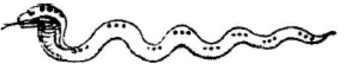
(सर्पाकार राहुचक्रका फल—) मुखवाले सात नक्षत्रोंमें संग्राम करनेसे मरण होता है, स्कन्धवाले सात नक्षत्रोंमें युद्ध करनेसे पराजय होती है, पेटवाले सात नक्षत्रोंमें युद्ध करनेसे सम्मान तथा विजयकी प्राप्ति होती है, कटिवाले नक्षत्रोंमें संग्राम करनेसे शत्रुओंका हरण होता है, पुच्छवाले नक्षत्रोंमें संग्राम करनेसे कीर्ति होती है और राहुसे दृष्ट नक्षत्रमें संग्राम करनेसे मृत्यु होती है। इसके बाद फिर सूर्यसे राहुतक ग्रहोंके बलका वर्णन करूँगा॥८—१०॥
(अर्धयामेशका वर्णन करते हैं—) जैसे चार प्रहरका एक दिन होता है तो एक दिनमें आठ अर्धप्रहर होंगे। यदि दिनमान बत्तीस दण्डका हो तो एक अर्ध प्रहरका मान चार दण्डका होगा। दिनमान-प्रमाणमें आठसे भाग देनेपर जो लब्धि होगी, वही एक अर्धप्रहरका मान होता है। रवि आदि सात वारोंमें प्रत्येक अर्धप्रहरका कौन ग्रह स्वामी होगा—इसपर विचार करते हुए केवल रविवारके दिन प्रत्येक अर्धप्रहरके स्वामियोंको बता रहे हैं। जैसे रविवारमें एकसे लेकर आठ अर्धप्रहरोंके स्वामी क्रमशः सूर्य, शुक्र, बुध, सोम, शनि, गुरु, मङ्गल और राहु ग्रह होते हैं। (इनमें जिस विभागका स्वामी शनि होता है, वह समय शुभ कार्योंमें त्याज्य है और उसे ही ‘वारवेला’ कहते हैं।) (विशेष—रविवारके अर्धयामेशोंको देखनेसे यह अनुमान होता है कि रविवारके अतिरिक्त जिस दिनका अर्धयामेश जानना हो तो प्रथम अर्धयामेश तो दिनपति ही होगा और बादके अर्धयामोंके स्वामी छः संख्यावाले ग्रह होंगे। इसी आधारपर रविवारसे लेकर शनिवारतकके अर्धयामोंके स्वामी नीचे चक्रमें दिये जा रहे हैं[१३६]—
[१३६] प्रत्येक दिनकी अर्धयामेश-संख्या आठ है तथा दिनपति रविसे लेकर शनितक सात ही हैं। अतः आठवें अर्धयामको ग्रन्थान्तरोंमें ‘निरीश’ माना गया है। जैसे— रविवारादिशन्यन्तं गुलिकादिर्निरूप्यते । अष्टमांशो निरीशः स्याच्छन्यंशो गुलिकः स्मृतः ॥ किंतु यहाँ अग्निपुराणमें प्रतिदिन राहुको अष्टमांशका स्वामी मान रहे हैं—यह विशेष बात है।
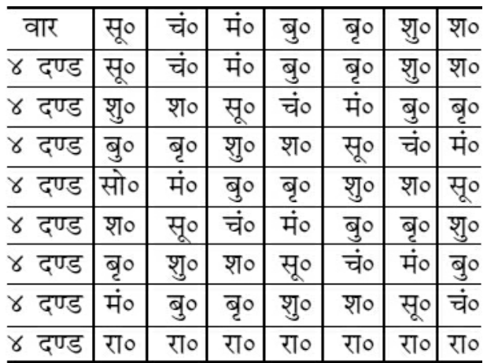
शनि, सूर्य तथा राहुको यत्नसे पीठ पीछे करके जो संग्राम करता है, वह सैन्यसमुदायपर विजय प्राप्त करता है तथा जूआ, मार्ग और युद्धमें सफल होता है॥११-१२॥
(नक्षत्रोंकी स्थिरादि संज्ञा तथा उसका प्रयोजन कहते हैं—) रोहिणी, तीनों उत्तराएँ, मृगशिरा—इन पाँच नक्षत्रोंकी ‘स्थिर’ संज्ञा है। अश्विनी, रेवती, स्वाती, धनिष्ठा, शतभिषा—इन पाँचों नक्षत्रोंकी ‘क्षिप्र’ संज्ञा है। इनमें यात्रार्थीको यात्रा करनी चाहिये। अनुराधा, हस्त, मूल, मृगशिरा, पुष्य, पुनर्वसु—इनमें प्रत्येक कार्य हो सकता है। ज्येष्ठा, चित्रा, विशाखा, तीनों पूर्वाएँ, कृत्तिका, भरणी, मघा, आर्द्रा, आश्लेषा—इनकी ‘दारुण’ संज्ञा है। स्थिर कार्योंमें स्थिर संज्ञावाले नक्षत्रोंको लेना चाहिये। यात्रामें ‘क्षिप्र’ संज्ञक नक्षत्र उत्तम माने गये हैं। ‘मृदु’ संज्ञक नक्षत्रोंमें सौभाग्यका काम तथा ‘उग्र’ संज्ञक नक्षत्रोंमें उग्र काम करना चाहिये। ‘दारुण’ संज्ञक नक्षत्र दारुण (भयानक) कामके लिये उपयुक्त होते हैं॥१३—१६॥
(अब अधोमुख, तिर्यङ्मुख आदि नक्षत्रोंका नाम तथा प्रयोजन कहता हूँ—) कृत्तिका, भरणी, आश्लेषा, विशाखा, मघा, मूल, तीनों पूर्वाएँ—ये अधोमुख नक्षत्र हैं। इनमें अधोमुख कर्म करना चाहिये। उदाहरणार्थ कूप, तड़ाग, विद्याकर्म, चिकित्सा, स्थापन, नौका-निर्माण, कूपोंका विधान, गड्ढा खोदना आदि कार्य इन्हीं अधोमुख नक्षत्रोंमें करना चाहिये। रेवती, अश्विनी, चित्रा, हस्त, स्वाती, पुनर्वसु, अनुराधा, मृगशिरा, ज्येष्ठा—ये नौ नक्षत्र तिर्यङ्मुख हैं। इनमें राज्याभिषेक, हाथी तथा घोड़ेको पट्टा बाँधना, बाग लगाना, गृह तथा प्रासादका निर्माण, प्राकार बनाना, क्षेत्र, तोरण, ध्वजा, पताका लगाना—इन सभी कार्योंको करना चाहिये। रविवारको द्वादशी, सोमवारको एकादशी, मङ्गलवारको दशमी, बुधवारको तृतीया, बृहस्पतिवारको षष्ठी, शुक्रवारको द्वितीया, शनिवारको सप्तमी हो तो ‘दग्धयोग’ होता है॥१७—२३॥
(अब त्रिपुष्कर योग बतलाते हैं—) द्वितीया, द्वादशी, सप्तमी—तीन तिथियाँ तथा रवि, मङ्गल, शनि—तीन वार—ये छः ‘त्रिपुष्कर’ हैं तथा विशाखा, कृत्तिका, दोनों उत्तराएँ, पुनर्वसु, पूर्वाभाद्रपदा—ये छः नक्षत्र भी ‘त्रिपुष्कर’ हैं। अर्थात् रवि, शनि, मङ्गलवारोंमें द्वितीया, सप्तमी, द्वादशीमेंसे कोई तिथि हो तथा उपर्युक्त नक्षत्रोंमेंसे कोई नक्षत्र हो तो ‘त्रिपुष्कर-योग’ होता है। त्रिपुष्कर योगमें लाभ, हानि, विजय, वृद्धि, पुत्रजन्म, वस्तुओंका नष्ट एवं विनष्ट होना—ये सब त्रिगुणित हो जाते हैं॥२४—२६॥
(अब नक्षत्रोंकी स्वक्ष, मध्याक्ष, मन्दाक्ष और अन्धाक्ष संज्ञा तथा प्रयोजन कहते हैं—) अश्विनी, भरणी, आश्लेषा पुष्य, स्वाती, विशाखा, श्रवण, पुनर्वसु—ये दृढ़ नेत्रवाले नक्षत्र हैं और दसों दिशाओंको देखते हैं। (इनकी संज्ञा ‘स्वक्ष’ है।) इनमें गयी हुई वस्तु तथा यात्रामें गया हुआ व्यक्ति विशेष पुण्यके उदय होनेपर ही लौटते हैं। दोनों आषाढ़ नक्षत्र, रेवती, चित्रा, पुनर्वसु—ये पाँच नक्षत्र ‘केकर’ हैं, अर्थात् ‘मध्याक्ष’ हैं। इनमें गयी हुई वस्तु विलम्बसे मिलती है। कृत्तिका, रोहिणी, मृगशिरा, पूर्वाफाल्गुनी, मघा, मूल, जेष्ठा, अनुराधा, धनिष्ठा, शतभिषा, पूर्वाभाद्रपदा—ये नक्षत्र ‘चिपिटाक्ष’ अर्थात् ‘मन्दाक्ष’ हैं। इनमें गयी हुई वस्तु तथा मार्ग चलनेवाला व्यक्ति कुछ ही विलम्बमें लौट आता है। हस्त, उत्तराभाद्रपदा, आर्द्रा, पूर्वाषाढा—ये नक्षत्र ‘अन्धाक्ष’ हैं। इनमें गयी हुई वस्तु शीघ्र मिल जाती है, कोई संग्राम नहीं करना पड़ता॥२७—३२॥
अब नक्षत्रोंमें स्थित ‘गण्डान्त’ का निरूपण करता हूँ—रेवतीके अन्तके चार दण्ड और अश्विनीके आदिके चार दण्ड ‘गण्डान्त’ होते हैं। इन दोनों नक्षत्रोंका एक प्रहर शुभ कार्योंमें प्रयत्नपूर्वक त्याग देना चाहिये। आश्लेषाके अन्तका तथा मघाके आदिके चार दण्ड ‘द्वितीय गण्डान्त’ कहे गये हैं। भैरवि! अब ‘तृतीय गण्डान्त’ को सुनो—ज्येष्ठा तथा मूलके बीचका एक प्रहर बहुत ही भयानक होता है। यदि व्यक्ति अपना जीवन चाहता हो तो उसे इस कालमें कोई शुभ कार्य नहीं करना चाहिये। इस समयमें यदि बालक पैदा हो तो उसके माता-पिता जीवित नहीं रहते॥३३—३६॥
इस प्रकार आदि आग्नेय महापुराणमें ‘नक्षत्रोंके निर्णयका प्रतिपादन’ नामक एक सौ छब्बीसवाँ अध्याय पूरा हुआ॥१२६॥
एक सौ सत्ताईसवाँ अध्याय
विभिन्न बलोंका वर्णन
शंकरजी कहते हैं—‘विष्कुम्भ योग’ की तीन घड़ियाँ, ‘शूल योग’ की पाँच ‘गण्ड’ तथा ‘अतिगण्ड योग’ की छः ‘व्याघात’ तथा ‘वज्र योग’ की नौ घड़ियोंको सभी शुभ कार्योंमें त्याग देना चाहिये। ‘परिघ’, ‘व्यतीपात’ और ‘वैधृति’ योगोंमें पूरा दिन त्याज्य बतलाया गया है। इन योगोंमें यात्रा-युद्धादि कार्य नहीं करने चाहिये॥१-२॥
देवि! अब मैं मेषादि राशि तथा ग्रहोंके द्वारा शुभाशुभका निर्णय बताता हूँ—जन्म-राशिके चन्द्रमा तथा शुक्र वर्जित होनेपर ही शुभदायक होते हैं। जन्म-राशि तथा लग्नसे दूसरे स्थानमें सूर्य, शनि, राहु अथवा मङ्गल हो तो प्राप्त द्रव्यका नाश और अप्राप्तका अलाभ होता है तथा युद्धमें पराजय होती है। चन्द्रमा, बुध, गुरु, शुक्र—ये दूसरे स्थानमें शुभप्रद होते हैं। सूर्य, शनि, मङ्गल, शुक्र, बुध, चन्द्रमा, राहु—ये तीसरे घरमें हों तो शुभ फल देते हैं। बुध, शुक्र चौथे भावमें हों तो शुभ तथा शेष ग्रह भयदायक होते हैं। बृहस्पति, शुक्र, बुध, चन्द्रमा—ये पञ्चम भावमें हों तो अभीष्ट लाभकी प्राप्ति कराते हैं। देवि! अपनी राशिसे छठे भावमें सूर्य, चन्द्र, शनि, मङ्गल, बुध—ये ग्रह शुभ फल देते हैं; किंतु छठे भावका शुक्र तथा गुरु शुभ नहीं होता। सप्तम भावके सूर्य, शनि, मङ्गल, राहु हानिकारक होते हैं तथा बुध, गुरु, शुक्र सुखदायक होते हैं। अष्टम भावके बुध और शुक्र—शुभ तथा शेष ग्रह हानिकारक होते हैं। नवम भावके बुध, शुक्र शुभ तथा शेष ग्रह अशुभ होते हैं। दशम भावके शुक्र, सूर्य लाभकर होते हैं तथा शनि, मङ्गल, राहु, चन्द्रमा-बुध शुभकारक होते हैं। ग्यारहवें भावमें प्रत्येक ग्रह शुभ फल देता है, परंतु दसवें बृहस्पति त्याज्य हैं। द्वादश भावमें बुध-शुक्र शुभ तथा शेष ग्रह अशुभ होते हैं। एक दिन-रातमें द्वादश राशियाँ भोग करती हैं। अब मैं उनका वर्णन कर रहा हूँ॥३—१२॥
(राशियोंका भोगकाल एवं चरादि संज्ञा तथा प्रयोजन कह रहे हैं—) मीन, मेष, मिथुन—इनमें प्रत्येकके चार दण्ड; वृष, कर्क, सिंह, कन्या—इनमें प्रत्येकके छः दण्ड; तुला, वृश्चिक, धनु, मकर, कुम्भ—इनमें प्रत्येकके पाँच दण्ड भोगकाल हैं। सूर्य जिस राशिमें रहते हैं, उसीका उदय होता है और उसी राशिसे अन्य राशियोंका भोगकाल प्रारम्भ होता है। मेषादि राशियोंकी क्रमशः ‘चर’, ‘स्थिर’ और ‘द्विस्वभाव’ संज्ञा होती है। जैसे—मेष, कर्क, तुला, मकर—इन राशियोंकी ‘चर’ संज्ञा है। इनमें शुभ तथा अशुभ स्थायी कार्य करने चाहिये। वृष, सिंह, वृश्चिक, कुम्भ—इन राशियोंकी ‘स्थिर’ संज्ञा है। इनमें स्थायी कार्य करना चाहिये। इन लग्नोंमें बाहर गये हुए व्यक्तिसे शीघ्र समागम नहीं होता तथा रोगीको शीघ्र रोगसे मुक्ति नहीं प्राप्त होती। मिथुन, कन्या, धनु, मीन—इन राशियोंकी ‘द्विस्वभाव’ संज्ञा है। ये द्विस्वभावसंज्ञक राशियाँ प्रत्येक कार्यमें शुभ फल देनेवाली हैं। इनमें यात्रा, व्यापार, संग्राम, विवाह एवं राजदर्शन होनेपर वृद्धि, जय तथा लाभ होते हैं और युद्धमें विजय होती है। अश्विनी नक्षत्रकी बीस ताराएँ हैं और घोड़ेके समान उसका आकार है। यदि इसमें वर्षा हो तो एक राततक घनघोर वर्षा होती है। यदि भरणीमें वर्षा आरम्भ हो तो पंद्रह दिनतक लगातार वर्षा होती रहती है॥१३—१९॥
इस प्रकार आदि आग्नेय महापुराणमें ‘विभिन्न बलोंका वर्णन’ नामक एक सौ सत्ताईसवाँ अध्याय पूरा हुआ॥१२७॥
एक सौ अट्ठाईसवाँ अध्याय
कोटचक्रका वर्णन
शंकरजी कहते हैं—अब मैं ‘कोटचक्र’ का वर्णन करता हूँ—पहले चतुर्भुज लिखे, उसके भीतर दूसरा चतुर्भुज, उसके भीतर तीसरा चतुर्भुज और उसके भीतर चौथा चतुर्भुज लिखे। इस तरह लिख देनेपर ‘कोटचक्र’ बन जाता है। कोटचक्रके भीतर तीन मेखलाएँ बनती हैं, जिनका नाम क्रमसे ‘प्रथम नाड़ी’, ‘मध्यनाड़ी’ और ‘अन्तनाड़ी’ है। कोटचक्रके ऊपर पूर्वादि दिशाओंको लिखकर मेषादि राशियोंको भी लिख देना चाहिये। (कोटचक्रमें नक्षत्रोंका न्यास कहते हैं—) पूर्व भागमें कृत्तिका, अग्निकोणमें आश्लेषा, दक्षिणमें मघा, नैर्ऋत्यमें विशाखा, पश्चिममें अनुराधा, वायुकोणमें श्रवण, उत्तरमें धनिष्ठा, ईशानमें भरणीको लिखे। इस तरह लिख देनेपर बाह्य नाड़ीमें अर्थात् प्रथम नाड़ीमें आठ नक्षत्र हो जायँगे। इसी तरह पूर्वादि दिशाओंके अनुसार रोहिणी, पुष्य, पूर्वाफाल्गुनी, स्वाती, ज्येष्ठा, अभिजित्, शतभिषा, अश्विनी—ये आठ नक्षत्र, मध्यनाड़ीमें हो जाते हैं। कोटके भीतर जो अन्तनाड़ी है, उसमें भी पूर्वादि दिशाओंके अनुसार पूर्वमें मृगशिरा, अग्निकोणमें पुनर्वसु, दक्षिणमें उत्तराफाल्गुनी, नैर्ऋत्यमें चित्रा, पश्चिममें मूल, वायव्यमें उत्तराषाढ़ा, उत्तरमें पूर्वाभाद्रपदा और ईशानमें रेवतीको लिखे। इस तरह लिख देनेपर अन्तनाड़ीमें भी आठ नक्षत्र हो जाते हैं। आर्द्रा, हस्त, पूर्वाषाढ़ा तथा उत्तराभाद्रपदा—ये चार नक्षत्र कोटचक्रके मध्यमें स्तम्भ होते हैं।* इस तरह चक्रको लिख देनेपर बाहरका स्थान दिशाके स्वामियोंका होता है*। आगन्तुक योद्धा जिस दिशामें जो नक्षत्र है, उसी नक्षत्रमें उसी दिशासे कोटमें यदि प्रवेश करता है तो उसकी विजय होती है। कोटके बीचमें जो नक्षत्र हैं, उन नक्षत्रोंमें जब शुभ ग्रह आये, तब युद्ध करनेसे मध्यवालेकी विजय तथा चढ़ाई करनेवालेकी पराजय होती है। प्रवेश करनेवाले नक्षत्रमें प्रवेश करना तथा निर्गमवाले नक्षत्रमें निकलना चाहिये। शुक्र, मङ्गल और बुध—ये जब नक्षत्रके अन्तमें रहें, तब यदि युद्ध आरम्भ किया जाय तो आक्रमणकारीकी पराजय होती है। प्रवेशवाले चार नक्षत्रोंमें यदि युद्ध छेड़ा जाय तो वह दुर्ग वशमें हो जाता है—इसमें कोई आश्चर्यकी बात नहीं है॥१—१३॥
* आर्द्रा हस्तस्तथाषाढा तुर्यमुत्तरभाद्रकम् । मध्ये स्तम्भचतुष्कं तु दद्यात् कोटस्य कोटरे॥ (अग्निपु० १२८।९) ग्रन्थान्तरमें भी ऐसा ही वर्णन है। ‘नृपतिजयचर्या’ नामक ग्रन्थमें समचतुरस्र कोटचक्रके प्रकरणमें २३ वें श्लोकमें स्तम्भ-चतुष्टयका वर्णन इस प्रकार किया गया है— पूर्वे रौद्रं यमे हस्तं पूर्वापाढा च वारुणे । उत्तरे चोत्तराभाद्रा एतत् स्तम्भचतुष्टयम्॥ * दिशाओंके स्वामीके लिये रामाचार्य ‘मुहूर्त-चिन्तामणि’ नामक ग्रन्थके यात्रा-प्रकरणमें लिखते हैं— सूर्यः सितो भूमिसुतोऽथ राहुः शनिः शशी ज्ञश्च बृहस्पतिश्च । प्राच्यादितो दिक्षु विदिक्षु चापि दिशामधीशाः क्रमतः प्रदिष्टाः॥ (११।४७) ‘पूर्वके सूर्य, अग्निकोणके शुक्र, दक्षिणके मङ्गल, नैर्ऋत्यके राहु, पश्चिमके शनि, वायव्यके चन्द्र, उत्तरके बुध, ईशानके बृहस्पति—इस प्रकार क्रमशः दिशाओंके स्वामी कहे गये हैं। कोटचक्रम्
(विशेष—प्रथम नाड़ीके आठ नक्षत्र दिशाके नक्षत्र हैं, उन्हींको ‘बाह्य’ भी कहते हैं। मध्य तथा अन्त नाड़ीवाले नक्षत्रोंको कोटके मध्यका समझना चाहिये।) इस प्रकार आदि आग्नेय महापुराणमें ‘कोटचक्रका वर्णन’ नामक एक सौ अट्ठाईसवाँ अध्याय पूरा हुआ॥१२८॥
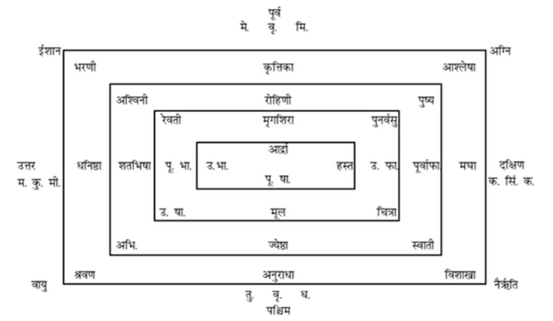
विशेष—भरणी, कृत्तिका, आश्लेषा, मघा, विशाखा, अनुराधा, श्रवण, धनिष्ठा—ये आठ नक्षत्र बाह्य (प्रथम नाड़ी) हैं। अश्विनी, रोहिणी, पुष्य, पू० फा०, स्वाती, ज्येष्ठा, अभि०, शतभिषा—ये मध्यनाड़ीके आठ नक्षत्र हैं। रेवती, मृगशिरा, पुनर्वसु, उतराफाल्गुनी, चित्रा, मूल, उत्तराषाढ़ा, पूर्वाभाद्रपदा—ये आठ नक्षत्र अन्तनाड़ीके हैं। मध्य तथा अन्तनाड़ीके नक्षत्रोंको ‘मध्यके नक्षत्र’ कहते हैं। दिशाके नक्षत्रको ‘प्रवेशर्क्ष’ कहते हैं। उसके विरुद्ध दिशाके नक्षत्रको ‘निर्गम’ कहते हैं। जैसे पूर्व प्रवेश तो पश्चिम निर्गम होगा।
एक सौ उन्तीसवाँ अध्याय
अर्घकाण्डका प्रतिपादन
शंकरजी कहते हैं—अब मैं वस्तुओंकी महँगी तथा सस्तीके सम्बन्धमें विचार प्रकट कर रहा हूँ। जब कभी भूतलपर उल्कापात, भूकम्प, निर्घात (वज्रापात), चन्द्र और सूर्यके ग्रहण तथा दिशाओंमें अधिक गरमीका अनुभव हो तो इस बातका प्रत्येक मासमें लक्ष्य करना चाहिये। यदि उपर्युक्त लक्षणोंमेंसे कोई लक्षण चैत्रमें हो तो अलंकार-सामग्रियों (सोना-चाँदी आदि)-का संग्रह करना चाहिये। वह छः मासके बाद चौगुने मूल्यपर बिक सकता है। यदि वैशाखमें हो तो वस्त्र, धान्य, सुवर्ण, घृतादि सब पदार्थोंका संग्रह करना चाहिये। वे आठवें मासमें छःगुने मूल्यपर बिकते हैं। यदि ज्येष्ठ तथा आषाढ़ मासमें मिले तो जौ, गेहूँ और धान्यका संग्रह करना चाहिये। यदि श्रावणमें मिले तो घृत-तैलादि रस-पदार्थोंका संग्रह करना चाहिये। यदि आश्विनमें मिले तो वस्त्र तथा धान्य दोनोंका संग्रह करना चाहिये। यदि कार्तिकमें मिले तो सब प्रकारका अन्न खरीदकर रखना चाहिये। अगहन तथा पौषमें यदि मिले तो कुङ्कुम तथा सुगन्धित पदार्थोंसे लाभ होता है। माघमें यदि उक्त लक्षण मिले तो धान्यसे लाभ होता है। फाल्गुनमें मिले तो सुगन्धित पदार्थोंसे लाभ होता है। लाभकी अवधि छः या आठ मास समझनी चाहिये॥१—५॥
इस प्रकार आदि आग्नेय महापुराणमें ‘अर्घकाण्डका प्रतिपादन’ नामक एक सौ उन्तीसवाँ अध्याय पूरा हुआ॥१२९॥
एक सौ तीसवाँ अध्याय
विविध मण्डलोंका वर्णन
शंकरजी कहते हैं—भद्रे! अब मैं विजयके लिये चार प्रकारके मण्डलका वर्णन करता हूँ। कृत्तिका, मघा, पुष्य, पूर्वाफाल्गुनी, विशाखा, भरणी, पूर्वाभाद्रपदा—इन नक्षत्रोंका ‘आग्नेय मण्डल’ होता है, उसका लक्षण बतलाता हूँ। इस मण्डलमें यदि विशेष वायुका प्रकोप हो, सूर्य-चन्द्रका परिवेष लगे, भूकम्प हो, देशकी क्षति हो, चन्द्र-सूर्यका ग्रहण हो, धूमज्वाला देखनेमें आये, दिशाओंमें दाहका अनुभव होता हो, केतु अर्थात् पुच्छल तारा दिखायी पड़ता हो, रक्तवृष्टि हो अधिक गर्मीका अनुभव हो, पत्थर पड़े, तो जनतामें नेत्रका रोग, अतिसार (हैजा) और अग्निभय होता है। गायें दूध कम कर देती हैं। वृक्षोंमें फल-पुष्प कम लगते हैं। उपज कम होती है। वर्षा भी स्वल्प होती है। चारों वर्ण (ब्राह्मण, क्षत्रिय, वैश्य तथा शूद्र) दुःखी हैं। सारे मनुष्य भूखसे व्याकुल रहते हैं। ऐसे उत्पातोंके दीख पड़नेपर सिन्ध-यमुनाकी तलहटी, गुजरात, भोज, बाह्लीक, जालन्धर, काश्मीर और सातवाँ उत्तरापथ—ये देश विनष्ट हो जाते हैं। हस्त, चित्रा, मघा, स्वाती, मृगशिरा, पुनर्वसु, उत्तराफाल्गुनी, अश्विनी—इन नक्षत्रोंका ‘वायव्य मण्डल’ कहा जाता है। इसमें यदि पूर्वोक्त उत्पात हों तो विक्षिप्त होकर हाहाकार करती हुई सारी प्रजाएँ नष्टप्राय हो जाती हैं। साथ ही डाहल (त्रिपुर), कामरूप, कलिङ्ग, कोशल, अयोध्या, उज्जैन, कोङ्कण तथा आन्ध्र—ये देश नष्ट हो जाते हैं। आश्लेषा, मूल, पूर्वाषाढ़ा, रेवती, शतभिषा तथा उत्तराभाद्रपदा—इन नक्षत्रोंको ‘वारुण मण्डल’ कहते हैं। इसमें यदि पूर्वोक्त उत्पात हों तो गायोंमें दूध-घीकी वृद्धि और वृक्षोंमें पुष्प तथा फल अधिक लगते हैं। प्रजा आरोग्य रहती है। पृथ्वी धान्यसे परिपूर्ण हो जाती है। अन्नोंका भाव सस्ता तथा देशमें सुकालका प्रसार हो जाता है, किंतु राजाओंमें परस्पर घोर संग्राम होता रहता है॥१—१४॥
ज्येष्ठा, रोहिणी, अनुराधा, श्रवण, धनिष्ठा, उत्तराषाढ़ा, सातवाँ अभिजित्—इन नक्षत्रोंका नाम ‘माहेन्द्र मण्डल’ है। इसमें यदि पूर्वोक्त उत्पात हों तो प्रजा प्रसन्न रहती है, किसी प्रकारके रोगका भय नहीं रह जाता। राजा लोग आपसमें संधि कर लेते हैं और राजाओंके लिये हितकारक सुभिक्ष होता है॥१५-१६॥
‘ग्राम’ दो प्रकारका होता है—पहलेका नाम ‘मुखग्राम’ है और दूसरेका नाम ‘पुच्छग्राम’ है। चन्द्र, राहु तथा सूर्य जब एक राशिमें हो जाते हैं, तब उसे ‘मुखग्राम’ कहते हैं। राहुसे सातवें स्थानको ‘पुच्छग्राम’ कहते हैं। सूर्यके नक्षत्रसे पंद्रहवें नक्षत्रमें जब चन्द्रमा आता है, उस समय तिथि-साधनके अनुसार ‘सोमग्राम’ होता है अर्थात् पूर्णिमा तिथि होती है*॥१७—१९॥
* सूर्यके साथ चन्द्रमा जब रहेगा, तब अमावास्या तिथि होगी। सूर्यके नक्षत्रसे पंद्रहवें नक्षत्रमें चन्द्रमा आयेगा तो सूर्यसे सातवीं राशिमें चन्द्रमा रहेगा; क्योंकि सवा दो नक्षत्रकी एक राशि होती है। जब सूर्यसे सातवीं राशिमें चन्द्रमा रहता है, तब पूर्णिमा ही तिथि होती है। उसे ही ‘सोमग्राम’ कहते हैं।
इस प्रकार आदि आग्नेय महापुराणमें ‘विविध मण्डलोंका वर्णन’ नामक एक सौ तीसवाँ अध्याय पूरा हुआ॥१३०॥
एक सौ इकतीसवाँ अध्याय
घातचक्र आदिका वर्णन
शंकरजी कहते हैं—पूर्वादि दिशाओंमें प्रदक्षिणक्रमसे अकारादि स्वरोंको लिखे। उसमें शुक्लपक्षकी प्रतिपदा, पूर्णिमा, त्रयोदशी, चतुर्दशी, केवल शुक्लपक्षकी एक अष्टमी (कृष्णपक्षकी अष्टमी नहीं), सप्तमी, कृष्णपक्षमें प्रतिपदासे लेकर त्रयोदशीतक (अष्टमीको छोड़कर) द्वादश तिथियोंका न्यास करे। इस चैत्र-चक्रमें पूर्वादि दिशाओंमें स्पर्श-वर्णोंको लिखनेसे जय-पराजयका तथा लाभका निर्णय होता है। विषम दिशा, विषम स्वर तथा विषम वर्णमें शुभ होता है और सम दिशा आदिमें अशुभ होता है॥१—३॥
चैत्रचक्रम्
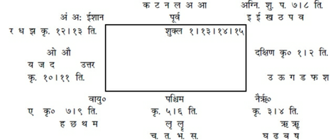
इस चक्रमें शुक्लपक्षकी १।७।८।१३।१४।१५ ये तिथियाँ ली गयी हैं। कृष्णपक्षमें अष्टमी छोड़कर १।२।३।४।५।६। ७।९।१०।११।१२।१३ ये तिथियाँ ली गयी हैं। (अब युद्धमें जय-पराजयका लक्षण बतलाते हैं—) युद्धारम्भके समय सेनापति पहले जिसका नाम लेकर बुलाता है, उस व्यक्तिके नामका आदि-अक्षर यदि ‘दीर्घ’ हो तो उसकी घोर संग्राममें भी विजय होती है। यदि नामका आदि-वर्ण ‘ह्रस्व’ हो तो निश्चय ही मृत्यु होती है। जैसे—एक सैनिकका नाम ‘आदित्य’ और दूसरेका नाम है—‘गुरु’। इन दोनोंमें प्रथमके नामके आदिमें ‘आ’ दीर्घ स्वर है और दूसरेके नामके आदिमें ‘उ’ ह्रस्व स्वर है; अतः यदि दीर्घ स्वरवाले व्यक्तिको बुलाया जायगा तो विजय और ह्रस्ववालेको बुलानेपर हार तथा मृत्यु होगी॥४—७॥
(अब ‘नरचक्र’ के द्वारा घाताङ्गका निर्णय करते हैं—) नक्षत्र-पिण्डके आधारपर नर-चक्रका वर्णन करता हूँ। पहले एक मनुष्यका आकार बनावे। तत्पश्चात् उसमें नक्षत्रोंका न्यास करे। सूर्यके नक्षत्रसे नामके नक्षत्रतक गिनकर संख्या जान ले। पहले तीनको नरके सिरमें, एक मुखमें, दो नेत्रमें, चार हाथमें, दो कानमें, पाँच हृदयमें और छः पैरोंमें लिखे। फिर नाम-नक्षत्रका स्पष्ट रूपसे चक्रके मध्यमें न्यास करे। इस तरह लिखनेपर नरके नेत्र, सिर, दाहिना कान, दाहिना हाथ, दोनों पैर, हृदय, ग्रीवा, बायाँ हाथ और गुह्याङ्गमेंसे जहाँ शनि, मङ्गल, सूर्य तथा राहुके नक्षत्र पड़ते हों, युद्धमें उसी अङ्गमें घात (चोट) होता है॥८—१२॥
Insert Image
(अब जयचक्रका निर्णय करते हैं—) पूर्वसे पश्चिमतक तेरह रेखाएँ बनाकर पुनः उत्तरसे दक्षिणतक छः तिरछी रेखाएँ खींचे। (इस तरह लिखनेपर जयचक्र बन जायगा।) उसमें अ से ह तक अक्षरोंको लिखे और १०।९।७।१२।४।११।१५।२४।१८।४।२७।२४—इन अङ्कोंका भी न्यास करे। अङ्कोंको ऊपर लिखकर अकारादि अक्षरोंको उसके नीचे लिखे। शत्रुके नामाक्षरके स्वर तथा व्यञ्जन वर्णके सामने जो अङ्क हों, उन सबको जोड़कर पिण्ड बनाये। उसमें सातसे भाग देनेपर एक आदि शेषके अनुसार सूर्यादि ग्रहोंका भाग जाने। १ शेषमें सूर्य, २ में चन्द्र, ३ में भौम, ४ में बुध, ५ में गुरु, ६ में शुक्र, ७ में शनिका भाग होता हैं—यों समझना चाहिये। जब सूर्य, शनि और मङ्गलका भाग आये तो विजय होती है तथा शुभ ग्रहके भागमें संधि होती है॥१३—१५॥
प्रथम जयचक्र—
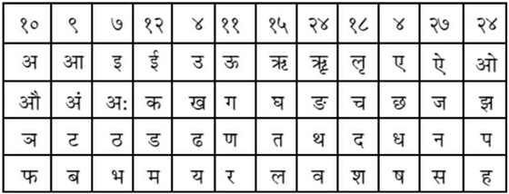
उदाहरण—जैसे किसीका नाम देवदत्त है, इस नामके अक्षरों तथा ए स्वरके अनुसार अङ्क-क्रमसे १८+४+२४+१८+१५=७९ (उन्यासी) योग हुआ। इसमें सातका भाग दिया लब्धि तथा २ शेष हुआ। शेषके अनुसार सूर्यसे गिननेपर चन्द्रका भाग हुआ, अतः संधि होगी। इससे यह निश्चय हुआ कि ‘देवदत्त’ नामका व्यक्ति संग्राममें कभी पराजित नहीं हो सकता। इसी तरह और नामके अक्षर तथा मात्राके अनुसार जय-पराजयका ज्ञान करना चाहिये। (अब द्वितीय जयचक्रका निर्णय करते हैं—) पूर्वसे पश्चिमतक बारह रेखाएँ लिखे और छः रेखाएँ याम्योत्तर करके लिखी जायँ। इस तरह यह ‘जयचक्र’ बन जायगा। उसके सर्वप्रथम ऊपरवाले कोष्ठमें १४।२७।२।१२।१५।६।४।३।१७।८।८—इन अङ्कोंको लिखे और कोष्ठोंमें ‘अकार’ आदि स्वरोंसे लेकर ‘ह’ तकके अक्षरोंका क्रमशः न्यास करे। तत्पश्चात् नामके अक्षरोंद्वारा बने हुए पिण्डमें आठसे भाग दे तो एक आदि शेषके अनुसार वायस, मण्डल, रासभ, वृषभ, कुञ्जर, सिंह, खर, धूम्र—ये आठ शेषोंके नाम होते हैं। इसमें वायससे प्रबल मण्डल और मण्डलसे प्रबल रासभ—यों उत्तरोत्तर बली जानना चाहिये। संग्राममें यायी तथा स्थायीके नामाक्षरके अनुसार मण्डल बनाकर एक-दूसरेसे बली तथा दुर्बलका ज्ञान करना चाहिये॥१६—२०॥
द्वितीय जयचक्र—
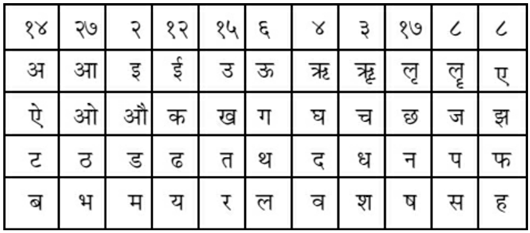
उदाहरण—जैसे यायी रामचन्द्र तथा स्थायी रावण—इन दोनोंमें कौन बली है—यह जानना है। अतः रामचन्द्रके अक्षर तथा स्वरके अनुसार र्=१५, आ=२७, म्=२, अ=१४, च्=३, अ=१४, न्=१७, द्=४, र्=१५, अ=१४—इनका योग १२५ हुआ। इसमें ८ का भाग दिया तो शेष ५ रहा। तथा रावणके अक्षर और स्वरके अनुसार र्=१५, आ=२७, व्=४, अ=१४, न्=१७, अ=१४—इनका योग हुआ ९१। इसमें ८ से भाग देनेपर ३ शेष हुआ। ३ शेषसे ५ बली है, अतः रामचन्द्र-रावणके संग्राममें रामचन्द्र ही बली हो रहे हैं। इस प्रकार आदि आग्नेय महापुराणमें ‘घातचक्रोंका वर्णन’ नामक एक सौ इकतीसवाँ अध्याय पूरा हुआ॥१३१॥
एक सौ बत्तीसवाँ अध्याय
सेवाचक्र आदिका निरूपण
शंकरजी कहते हैं—अब मैं ‘सेवाचक्र’ का प्रतिपादन कर रहा हूँ, जिससे सेवकको सेव्यसे लाभ तथा हानिका ज्ञान होता है। पिता, माता तथा भाई एवं स्त्री-पुरुष—इन लोगोंके लिये इसका विचार विशेषरूपसे करना चाहिये। कोई भी व्यक्ति पूर्वोक्त व्यक्तियोंमेंसे किससे लाभ प्राप्त कर सकेगा—इसका ज्ञान वह उस ‘सेवाचक्र’ से कर सकता है॥१-२॥
(सेवाचक्रका स्वरूप वर्णन करते हैं—) पूर्वसे पश्चिमको छः रेखाएँ और उत्तरसे दक्षिणको आठ तिरछी रेखाएँ खींचे। इस तरह लिखनेपर पैंतीस कोष्ठका ‘सेवाचक्र’ बन जायगा। उसमें ऊपरके कोष्ठोंमें पाँच स्वरोंको लिखकर पुनः स्पर्श-वर्णोंको लिखे। अर्थात् ‘क’ से लेकर ‘ह’ तकके वर्णोंका न्यास करे। उसमें तीन वर्णों (ङ, ञ, ण)-को छोड़कर लिखे। नीचेवाले कोष्ठोंमें क्रमसे सिद्ध, साध्य, सुसिद्ध, शत्रु तथा मृत्यु—इनको लिखे। इस तरह लिखनेपर सेवाचक्र सर्वाङ्गसम्पन्न हो जाता है। इस चक्रमें शत्रु तथा मृत्यु नामके कोष्ठमें जो स्वर तथा अक्षर हैं, उनका प्रत्येक कार्यमें त्याग कर देना चाहिये। किंतु सिद्ध, साध्य, सुसिद्ध, शत्रु तथा मृत्यु नामवाले कोष्ठोंमेंसे किसी एक ही कोष्ठमें यदि सेव्य तथा सेवकके नामका आदि-अक्षर पड़े तो वह सर्वथा शुभ है। इसमें द्वितीय कोष्ठ पोषक है, तृतीय कोष्ठ धनदायक है, चौथा कोष्ठ आत्मनाशक है, पाँचवाँ कोष्ठ मृत्यु देनेवाला है। इस चक्रसे मित्र, नौकर एवं बान्धवसे लाभकी प्राप्तिके लिये विचार करना चाहिये। अर्थात् हम किससे मित्रताका व्यवहार करें कि मुझे उससे लाभ हो तथा किसको नौकर रखें, जिससे लाभ हो एवं परिवारके किस व्यक्तिसे मुझे लाभ होगा—इसका विचार इस चक्रसे करे। जैसे—अपने नामका आदि-अक्षर तथा विचारणीय व्यक्तिके नामका आदि-अक्षर सेवाचक्रके किसी एक ही कोष्ठमें पड़ जाय तो वह शुभ है, अर्थात् उस व्यक्तिसे लाभ होगा—यह जाने। यदि पहलेवाले तीन कोष्ठोंमेंसे किसी एकमें अपने नामका आदि-वर्ण पहलेवाले तीन कोष्ठों (सि०, सा०, सु०) मेंसे किसी एकमें पड़े और विचारणीय व्यक्तिके नामका आदि-अक्षर चौथे तथा पाँचवें पड़े तो अशुभ होता है। चौथे तथा पाँचवें कोष्ठोंमें किसी एकमें सेव्यके तथा दूसरेमें सेवकके नामका आदि-वर्ण पड़े तो अशुभ ही होता है॥३—८॥
सेवाचक्रका स्वरूप—
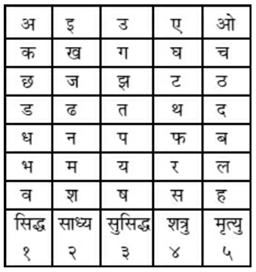
अब अकारादि वर्गों तथा ताराओंके द्वारा सेव्य-सेवकका विचार कर रहे हैं—अवर्ग (अ इ उ ए ओ)-का स्वामी देवता है, कवर्ग (क ख ग घ ङ)-का स्वामी दैत्य है, चवर्ग (च छ ज झ ञ)-का स्वामी नाग है, टवर्ग (ट ठ ड ढ ण)-का स्वामी गन्धर्व है, तवर्ग (त थ द ध न)-का स्वामी ऋषि है, पवर्ग (प फ ब भ म)-का स्वामी राक्षस है, यवर्ग (य र ल व)-का स्वामी पिशाच है, शवर्ग (श ष स ह)-का स्वामी मनुष्य है। इनमें देवतासे बली दैत्य है, दैत्यसे बली सर्प है, सर्पसे बली गन्धर्व है, गन्धर्वसे बली ऋषि है, ऋषिसे बली राक्षस है, राक्षससे बली पिशाच है और पिशाचसे बली मनुष्य होता है। इसमें बली दुर्बलका त्याग करे—अर्थात् सेव्य-सेवक—इन दोनोंके नामोंके आदि-अक्षरके द्वारा बली वर्ग तथा दुर्बल वर्गका ज्ञान करके बली वर्गवाले दुर्बल वर्गवालेसे व्यवहार न करें। एक ही वर्गके सेव्य तथा सेवकके नामका आदि-वर्ण रहना उत्तम होता है॥९—१३॥
अब मैत्री-विभाग-सम्बन्धी ‘ताराचक्र’ को सुनो। पहले नामके प्रथम अक्षरके द्वारा नक्षत्र जान ले, फिर नौ ताराओंकी तीन बार आवृत्ति करनेपर सत्ताईस नक्षत्रोंकी ताराओंका ज्ञान हो जायगा। इस तरह अपने नामके नक्षत्रका तारा जान लें। १ जन्म, २ सम्पत्, ३ विपत्, ४ क्षेम, ५ प्रत्यरि, ६ साधक, ७ वध, ८ मैत्र, ९ अतिमैत्र—ये नौ ताराएँ हैं। इनमें ‘जन्म’ तारा अशुभ, ‘सम्पत्’ तारा अति उत्तम और ‘विपत्’ तारा निष्फल होती है। ‘क्षेम’ ताराको प्रत्येक कार्यमें लेना चाहिये। ‘प्रत्यरि’ तारासे धन-क्षति होती है। ‘साधक’ तारासे राज्य-लाभ होता है। ‘वध’ तारासे कार्यका विनाश होता है। ‘मैत्र’ तारा मैत्रीकारक है और ‘अतिमैत्र’ तारा हितकारक होती है। विशेष प्रयोजन—जैसे सेव्य रामचन्द्र, सेवक हनुमान्—इन दोनोंमें भाव कैसा रहेगा, इसे जाननेके लिये हनुमान्के नामके आदि वर्ण (ह)-के अनुसार पुनर्वसु नक्षत्र हुआ तथा रामके नामके आदि वर्ण (रा)-के अनुसार नक्षत्र चित्रा हुआ। पुनर्वसुसे चित्राकी संख्या आठवीं हुई। इस संख्याके अनुसार ‘मैत्र’ नामक तारा हुई। अतः इन दोनोंकी मैत्री परस्पर कल्याणकर होगी—यों जानना चाहिये॥१४—१८॥
(अब ताराचक्र कहते हैं—) प्रिये! नामाक्षरोंके स्वरोंकी संख्यामें वर्णोंकी संख्या जोड़ दे। उसमें बीसका भाग दे। शेषसे फलको जाने। अर्थात् स्वल्प शेषवाला व्यक्ति अधिक शेषवाले व्यक्तिसे लाभ उठाता है। जैसे सेव्य राम तथा सेवक हनुमान्। इनमें सेव्य रामके नामका र्=२। आ=२। म्=५,। अ=१। सबका योग १० हुआ। इसमें २० से भाग दिया तो शेष १० सेव्यका हुआ तथा सेवक हनुमान्के नामका ह्=४। अ=१। न्=५। उ=५। म्=५। आ=२। न्=५। सबका योग २७ हुआ। इसमें २० का भाग दिया तो शेष ७ सेवकका हुआ। यहाँपर सेवकके शेषसे सेव्यका शेष अधिक हो रहा है, अतः हनुमान्जी रामजीसे पूर्ण लाभ उठायेंगे—ऐसा ज्ञान होता है॥१९॥
अब नामाक्षरोंमें स्वरोंकी संख्याके अनुसार लाभ-हानिका विचार करते हैं। सेव्य-सेवक दोनोंके बीच जिसके नामाक्षरोंमें अधिक स्वर हों, वह धनी है तथा जिसके नामाक्षरोंमें अल्प स्वर हों, वह ऋणी है। ‘धन’ स्वर मित्रताके लिये तथा ‘ऋण’ स्वर दासताके लिये होता है। इस प्रकार लाभ तथा हानिकी जानकारीके लिये ‘सेवाचक्र’ कहा गया। मेष-मिथुन राशिवालोंमें प्रीति, मिथुन-सिंह राशिवालोंमें मैत्री तथा तुला-सिंह राशिवालोंमें महामैत्री होती है; किंतु धनु-कुम्भ राशिवालोंमें मैत्री नहीं होती। अतः इन दोनोंको परस्पर सेवा नहीं करनी चाहिये। मीन-वृष, वृष-कर्क, कर्क-कुम्भ, कन्या-वृश्चिक, मकर-वृश्चिक, मीन-मकर राशिवालोंमें मैत्री तथा मिथुन-कुम्भ, तुला-मेष राशिवालोंकी परस्पर महामैत्री होती है। वृष-वृश्चिकमें परस्पर वैर होता है; मिथुन-धनु, कर्क-मकर, मकर-कुम्भ, कन्या-मीन राशिवालोंमें परस्पर प्रीति रहती है। अर्थात् उपर्युक्त दोनों राशिवालोंमें सेव्य-सेवक भाव तथा मैत्री-व्यवहार एवं कन्या-वरका सम्बन्ध सुन्दर तथा शुभप्रद होता है॥२०—२६॥
इस प्रकार आदि आग्नेय महापुराणमें ‘सेवा-चक्र आदिका वर्णन’ नामक एक सौ बत्तीसवाँ अध्याय पूरा हुआ॥१३२॥
एक सौ तैंतीसवाँ अध्याय
नाना प्रकारके बलोंका विचार
शंकरजी कहते हैं—अब सूर्यादि ग्रहोंकी राशियोंमें पैदा हुए नवजात शिशुका जन्म-फल क्षेत्राधिपके अनुसार वर्णन करूँगा। सूर्यके गृहमें अर्थात् सिंह लग्नमें उत्पन्न बालक समकाय, कभी कृशाङ्ग, कभी स्थूलाङ्ग, गौरवर्ण, पित्त प्रकृति, लाल नेत्रोंवाला, गुणवान् तथा वीर होता है। चन्द्रके गृहमें अर्थात् कर्क लग्नका जातक भाग्यवान् तथा कोमल शरीरवाला होता है। मङ्गलके गृहमें अर्थात् मेष तथा वृश्चिक लग्नोंका जातक वातरोगी तथा अत्यन्त लोभी होता है। बुधके गृहमें अर्थात् मिथुन तथा कन्या लग्नोंका जातक बुद्धिमान्, सुन्दर तथा मानी होता है। गुरुके गृहमें अर्थात् धनु तथा मीन लग्नोंका जातक सुन्दर और अत्यन्त क्रोधी होता है। शुक्रके गृहमें अर्थात् तुला तथा वृष लग्नोंका जातक त्यागी, भोगी एवं सुन्दर शरीरवाला होता है। शनिके गृहमें अर्थात् मकर तथा कुम्भ लग्नोंका जातक बुद्धिमान्, सुन्दर तथा मानी होता है। सौम्य लग्नका जातक सौम्य स्वभावका तथा क्रूर लग्नका जातक क्रूर स्वभावका होता है*॥१—५॥
* यहाँपर मेष, मिथुन, सिंह, तुला, धनु, कुम्भ—ये राशियाँ तथा लग्न क्रूर हैं और वृष, कर्क, कन्या, वृश्चिक, मकर, मीन—ये राशियाँ तथा लग्न सौम्य हैं। इसके लिये वराहमिहिरने ‘लघुजातक’ तथा ‘बृहज्जातक’ में लिखा है— ‘पुंस्त्री क्रूराक्रूरौ चरस्थिरद्विस्वभावसंज्ञाश्च।’
गौरि! अब नाम-राशिके अनुसार सूर्यादि ग्रहोंका दशा-फल कहता हूँ। सूर्यकी दशामें हाथी, घोड़ा, धन-धान्य, प्रबल राज्यलक्ष्मीकी प्राप्ति और धनागम होता है। चन्द्रमाकी दशामें दिव्य स्त्रीकी प्राप्ति होती है। मङ्गलकी दशामें भूमिलाभ और सुख होता है। बुधकी दशामें भूमिलाभके साथ धन-धान्यकी भी प्राप्ति होती है। गुरुकी दशामें घोड़ा, हाथी तथा धन मिलता है। शुक्रकी दशामें खाद्यान्न तथा गोदुग्धादिपानके साथ धनका लाभ होता है। शनिकी दशामें नाना प्रकारके रोग उत्पन्न होते हैं। राहुका दर्शन होनेपर अर्थात् ग्रहण लगनेपर निश्चित स्थानपर निवास, दिनमें ध्यान और व्यापारका काम करना चाहिये॥६—८॥
यदि वाम श्वास चलते समय नामका अक्षर विषम संख्याका हो तो वह समय मङ्गल, शनि तथा राहुका रहता है। उसमें युद्ध करनेसे विजय होती है। दक्षिण श्वास चलते समय यदि नामका अक्षर सम संख्याका हो तो वह समय सूर्यका रहता है। उसमें व्यापार-कार्य निष्फल होता है, किंतु उस समय पैदल संग्राम करनेसे विजय होती है और सवारीपर चढ़कर युद्ध करनेसे मृत्यु होती है॥९—११॥
ॐ हूं, ॐ हूं, ॐ स्फें, अस्त्रं मोटय, ॐ चूर्णय, चूर्णय, ॐ सर्वशत्रुं मर्दय, मर्दय ॐ ह्रूं, ॐ ह्रः फट्।—इस मन्त्रका सात बार न्यास करना चाहिये। फिर जिनके चार, दस तथा बीस भुजाएँ हैं, जो हाथोंमें त्रिशूल, खट्वाङ्ग, खड्ग और कटार धारण किये हुए हैं तथा जो अपनी सेनासे विमुख और शत्रु-सेनाका भक्षण करनेवाले हैं, उन भैरवजीका अपने हृदयमें ध्यान करके शत्रु-सेनाके सम्मुख उक्त मन्त्रका एक सौ आठ बार जप करे। जपके पश्चात् डमरूका शब्द करनेसे शत्रु-सेना शस्त्र त्यागकर भाग खड़ी होती है॥१२—१५॥
पुनः शत्रु-सेनाकी पराजयका अन्य प्रयोग बतलाता हूँ। श्मशानके कोयलेको काक या उल्लूकी विष्ठामें मिलाकर उसीसे कपड़ेपर शत्रुकी प्रतिमा लिखे और उसके सिर, मुख, ललाट, हृदय, गुह्य, पैर, पृष्ठ, बाहु और मध्यमें शत्रुका नाम नौ बार लिखे। उस कपड़ेको मोड़कर संग्रामके समय अपने पास रखनेसे तथा पूर्वोक्त मन्त्र पढ़नेसे विजय होती है॥१६—१८॥
अब विजय प्राप्त करनेके लिये त्रिमुखाक्षर ‘तार्क्ष्यचक्र’ को कहता हूँ। ‘क्षिप ॐ स्वाहा तार्क्ष्यात्मा शत्रुरोगविषादिनुत्।’ इस मन्त्रको ‘तार्क्ष्य-चक्र’ कहते हैं। इसके अनुष्ठानसे दुष्टोंकी बाधा, भूत-बाधा एवं ग्रह-बाधा तथा अनेक प्रकारके रोग निवृत्त हो जाते हैं। इस ‘गरुड-मन्त्र’ से जैसा कार्य चाहे, सब सिद्ध हो जाता है। इस मन्त्रके साधकका दर्शन करनेसे स्थावर-जंगम, लूता तथा कृत्रिम—ये सभी विष नष्ट हो जाते हैं॥१९—२१॥
पुनः महातार्क्ष्यका यों ध्यान करना चाहिये—जिनकी आकृति मनुष्यकी-सी है, जो दो पाँख और दो भुजा धारण करते हैं, जिनकी चोंच टेढ़ी है, जो सामर्थ्यशाली तथा हाथी और कछुएको पकड़ रखनेवाले हैं, जिनके पंजोंमें असंख्य सर्प उलझे हुए हैं, जो आकाशमार्गसे आ रहे हैं और रणभूमिमें शत्रुओंको खाते हुए नोच-नोचकर निगल रहे हैं, कुछ शत्रु जिनकी चोंचसे मारे हुए दीख रहे हैं, कुछ पंजोंके आघातसे चूर्ण हो गये हैं, किन्हींका पंखोंके प्रहारसे कचूमर निकल गया है और कुछ नष्ट होकर दसों दिशाओंमें भाग गये हैं। इस तरह जो साधक ध्यान-निष्ठ होगा, वह तीनों लोकोंमें अजेय होकर रहेगा अर्थात् उसपर कोई विजय नहीं प्राप्त कर सकता॥२२—२५॥
अब मन्त्र-साधनसे सिद्ध होनेवाली ‘पिच्छिका-क्रिया’ का वर्णन करता हूँ—ॐ ह्रूं पक्षिन् क्षिप, ॐ हूं सः महाबलपराक्रम सर्वसैन्यं भक्षय भक्षय, ॐ मर्दय मर्दय, ॐ चूर्णय चूर्णय, ॐ विद्रावय विद्रावय, ॐ हूं खः, ॐ भैरवो ज्ञापयति स्वाहा।—इस ‘पिच्छिका-मन्त्र’ को चन्द्रग्रहणमें जप करके सिद्ध कर लेनेवाला साधक संग्राममें सेनाके सम्मुख हाथी तथा सिंहको भी खदेड़ सकता है। मन्त्रके ध्यानसे उनके शब्दोंका मर्दन कर सकता है तथा सिंहारूढ़ होकर मृग तथा बकरेके समान शत्रुओंको मार सकता है॥२६—२८॥
दूर रहकर केवल मन्त्रोच्चारणसे शत्रुनाशका उपाय कह रहे हैं—कालरात्रि (आश्विन शुक्लाष्टमी)-में मातृकाओंको चरु प्रदान करे और श्मशानकी भस्म, मालती-पुष्प, चामरी एवं कपासकी जड़के द्वारा दूरसे शत्रुको सम्बोधित करे। सम्बोधित करनेका मन्त्र निम्नलिखित है— ॐ, अहे हे महेन्द्रि! अहे महेन्द्रि भञ्ज हि। ॐ जहि मसानं हि खाहि खाहि, किलि किलि, ॐ हूं फट्।—इस भङ्गविद्याका जप करके दूरसे ही शब्द करनेसे, अपराजिता और धतूरेका रस मिलाकर तिलक करनेसे शत्रुका विनाश होता है॥२९—३२॥
ॐ किलि किलि विकिलि इच्छाकिलि भूतहनि शङ्खिनि, उमे दण्डहस्ते रौद्रि माहेश्वरि, उल्कामुखि ज्वालामुखि शङ्कुकर्णे शुष्कजङ्घे अलम्बुषे हर हर, सर्वदुष्टान् खन खन, ॐ यन्मान्निरीक्षयेद् देवि ताँस्तान् मोहय, ॐ रुद्रस्य हृदये स्थिता रौद्रि सौम्येन भावेन आत्मरक्षां ततः कुरु स्वाहा।—इस सर्वकार्यार्थसाधक मन्त्रको भोजपत्रपर वृत्ताकार लिखकर बाहरमें मातृकाओंको लिखे। इस विद्याको पहले ब्रह्मा, विष्णु, रुद्र तथा इन्द्रने हाथ आदिमें धारण किया था तथा इस विद्याद्वारा बृहस्पतिने देवासुर-संग्राममें देवताओंकी रक्षा की थी॥३३—३५॥
(अब रक्षायन्त्रका वर्णन करते हैं—) रक्षारूपिणी नारसिंही, शक्तिरूपा भैरवी तथा त्रैलोक्यमोहिनी गौरीने भी देवासुर-संग्राममें देवताओंकी रक्षा की थी। अष्टदल-कमलकी कर्णिका तथा दलोंमें गौरीके बीज (ह्रीं) मन्त्रसे सम्पुटित अपना नाम लिख दे। पूर्व दिशामें रहनेवाले प्रथमादि दलोंमें पूजाके अनुसार गौरीजीकी अङ्ग-देवताओंका न्यास करे। इस तरह लिखनेपर शुभे! ‘रक्षायन्त्र’ बन जायगा॥३६-३७॥
अब इन्हीं संस्कारोंके बीच ‘मृत्युंजय-मन्त्र’ को कहता हूँ, जो सब कलाओंसे परिवेष्टित है, अर्थात् उस मन्त्रसे प्रत्येक कार्यका साधन हो सकता है, तथा जो सकारसे प्रबोधित होता है। मन्त्रका स्वरूप कहते हैं— ॐकार पहले लिखकर फिर बिन्दुके साथ जकार लिखे, पुनः धकारके पेटमें वकारको लिखे, उसे चन्द्रबिन्दुसे अङ्कित करे। अर्थात् ‘ॐ जं ध्वम्’—यह मन्त्र सभी दुष्टोंका विनाश करनेवाला है॥३८-३९॥
दूसरे ‘रक्षायन्त्र’ का उद्धार कहते हैं—गोरोचन-कुङ्कुमसे अथवा मलयागिरि चन्दन-कर्पूरसे भोजपत्रपर लिखे हुए चतुर्दल कमलकी कर्णिकामें अपना नाम लिखकर चारों दलोंमें ॐकार लिखे। आग्नेय आदि कोणोंमें हूंकार लिखे। उसके ऊपर षोडश दलोंका कमल बनाये। उसके दलोंमें अकारादि षोडश स्वरोंको लिखे। फिर उसके ऊपर चौंतीस दलोंका कमल बनाये। उसके दलोंमें ‘क’ से लेकर ‘क्ष’ तक अक्षरोंको लिखे। उस यन्त्रको श्वेत सूत्रसे वेष्टित करके रेशमी वस्त्रसे आच्छादित कर, कलशपर स्थापन करके उसका पूजन करे। इस यन्त्रको धारण करनेसे सभी रोग शान्त होते हैं एवं शत्रुओंका विनाश होता है॥४०—४३॥
रक्षायंत्रका स्वरूप
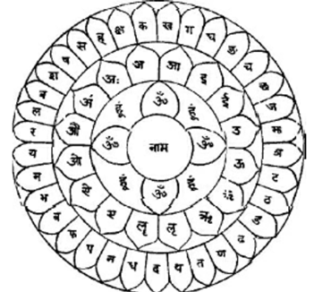
अब ‘भेलखी विद्या’ को कह रहा हूँ, जो वियोगमें होनेवाली मृत्युसे बचाती है। उसका मन्त्रस्वरूप निम्नलिखित है— ‘ॐ वातले वितले विडालमुखि इन्द्रपुत्रि उद्भवो वायुदेवेन खीलि आजी हाजा मयि वाह इहादिदुःखनित्यकण्ठोच्चैर्मुहूर्त्तान्वया अह मां यस्महमुपाडि ॐ भेलखि ॐ स्वाहा।’
नवरात्रके अवसरपर इस मन्त्रको सिद्ध करके संग्रामके समय सात बार मन्त्रजप करनेपर शत्रुका मुखस्तम्भन होता है॥४४—४६॥
‘ॐ चण्डि, ॐ हूं फट् स्वाहा।’—इस मन्त्रको संग्रामके अवसरपर सात बार जपनेसे खड्ग-युद्धमें विजय होती है॥४७-४८॥
इस प्रकार आदि आग्नेय महापुराणमें ‘नाना प्रकारके बलोंका विचार’ नामक एक सौ तैंतीसवाँ अध्याय पूरा हुआ॥१३३॥
एक सौ चौंतीसवाँ अध्याय
त्रैलोक्यविजया-विद्या
भगवान् महेश्वर कहते हैं—देवि! अब मैं समस्त यत्र-मन्त्रोंको नष्ट करनेवाली ‘त्रैलोक्यविजया-विद्या’ का वर्णन करता हूँ॥१॥
ॐ ह्रूं क्षूं ह्रूं, ॐ नमो भगवति दंष्ट्रिणि भीमवक्त्रे महोग्ररूपे हिलि हिलि, रक्तनेत्रे किलि किलि, महानिस्वने कुलु, ॐ विद्युज्जिह्वे कुलु ॐ निर्मासे कट कट, गोनसाभरणे चिलि चिलि, शवमालाधारिणि द्रावय, ॐ महारौद्रि सार्द्रचर्मकृताच्छदे विजृम्भ, ॐ नृत्यासिलता-धारिणि भ्रुकुटीकृतापाङ्गे विषमनेत्रकृतानने वसामेदोविलिप्तगात्रे कह कह, ॐ हस हस, क्रुध्य क्रुध्य, ॐ नीलजीमूतवर्णेऽभ्रमालाकृताभरणे विस्फुर, ॐ घण्टारवाकीर्णदेहे, ॐ सिंसिस्थेऽरुणवर्णे, ॐ ह्रां ह्रीं ह्रूं रौद्ररूपे ह्रूं ह्रीं क्लीं, ॐ ह्रीं ह्रू मोमाकर्ष, ॐ धून धून, ॐ हे हः स्वः खः, वज्रिणि हूं क्षूं क्षां क्रोधरूपिणि प्रज्वल प्रज्वल, ॐ भीमभीषणे भिन्द, ॐ महाकाये छिन्द, ॐ करालिनि किटि किटि, महाभूतमातः सर्वदुष्टनिवारिणि जये, ॐ विजये ॐ त्रैलोक्यविजये ह्रूं फट् स्वाहा॥ ॐ ह्रूं क्षूं ह्रूं, ॐ बड़ी-बड़ी दाढ़ोंसे जिनकी आकृति अत्यन्त भयंकर है, उन महोग्ररूपिणी भगवतीको नमस्कार है। वे रणाङ्गणमें स्वेच्छापूर्वक क्रीड़ा करें, क्रीड़ा करें। लाल नेत्रोंवाली! किलकारी कीजिये, किलकारी कीजिये। भीमनादिनि कुलु। ॐ विद्युजिह्वे! कुलु। ॐ मांसहीने! शत्रुओंको आच्छादित कीजिये, आच्छादित कीजिये। भुजङ्गमालिनि! वस्त्राभूषणोंसे अलंकृत होइये, अलंकृत होइये। शवमालाविभूषिते! शत्रुओंको खदेड़िये। ॐ शत्रुओंके रक्तसे सने हुए चमड़ेके वस्त्र धारण करनेवाली महाभयंकरि। अपना मुख खोलिये। ॐ! नृत्य-मुद्रामें तलवार धारण करनेवाली!! टेढ़ी भौंहोंसे युक्त तिरछे नेत्रोंसे देखनेवाली! विषम नेत्रोंसे विकृत मुखवाली!! आपने अपने अङ्गोंमें मज्जा और मेदा लपेट रखा है। ॐ अट्टहास कीजिये, अट्टहास कीजिये। हँसिये, हँसिये। क्रुद्ध होइये, क्रुद्ध होइये। ॐ नील मेघके समान वर्णवाली! मेघमालाको आभरण रूपमें धारण करनेवाली!! विशेषरूपसे प्रकाशित होइये। ॐघण्टाकी ध्वनिसे शत्रुओंके शरीरोंकी धज्जियाँ उड़ा देनेवाली! ॐ सिंसिस्थिते! रक्तवर्णे! ॐ ह्रां ह्रीं ह्रूं रौद्ररूपे! ह्रूं ह्रीं क्लीं ॐ ह्रीं ह्रूं ॐ शत्रुओंका आकर्षण कीजिये, उनको हिला डालिये, कँपा डालिये। ॐ हे हः खः वज्रहस्ते! ह्रूं क्षूं क्षां क्रोधरूपिणि! प्रज्वलित होइये, प्रज्वलित होइये। ॐ महाभयंकरको डरानेवाली! उनको चीर डालिये। ॐ विशाल शरीरवाली देवि! उनको काट डालिये। ॐ करालरूपे! शत्रुओंको डराइये, डराइये। महाभयंकर भूतोंकी जननि! समस्त दुष्टोंका निवारण करनेवाली जये!! ॐ विजये!!! ॐ त्रैलोक्यविजये ह्रूं फट् स्वाहा॥२॥
विजयके उद्देश्यसे नीलवर्णा, प्रेताधिरूढ़ा त्रैलोक्यविजया-विद्याकी बीस हाथ ऊँची प्रतिमा बनाकर उसका पूजन करे। पञ्चाङ्गन्यास करके रक्तपुष्पोंका हवन करे। इस त्रैलोक्यविजया-विद्याके पठनसे समरभूमिमें शत्रुकी सेनाएँ पलायन कर जाती हैं॥३॥
ॐ नमो बहुरूपाय स्तम्भय स्तम्भय ॐ मोहय, ॐ सर्वशत्रून् द्रावय, ॐ ब्रह्माणमाकर्षय, ॐ विष्णुमाकर्षय, ॐ महेश्वरमाकर्षय, ॐ इन्द्रं टालय, ॐ पर्वतांश्चालय, ॐ सप्तसागराञ्शोषय, ॐ च्छिन्द च्छिन्द बहुरूपाय नमः॥ ॐ अनेकरूपको नमस्कार है। शत्रुका स्तम्भन कीजिये, स्तम्भन कीजिये। ॐ सम्मोहन कीजिये। ॐ सब शत्रुओंको खदेड़ दीजिये। ॐ ब्रह्माका आकर्षण कीजिये। ॐ विष्णुका आकर्षण कीजिये। ॐ महेश्वरका आकर्षण कीजिये। ॐ इन्द्रको भयभीत कीजिये। ॐ पर्वतोंको विचलित कीजिये। ॐ सातों समुद्रोंको सुखा डालिये। ॐ काट डालिये, काट डालिये। अनेकरूपको नमस्कार है॥४॥
मिट्टीकी मूर्ति बनाकर उसमें शत्रुको स्थित हुआ जाने, अर्थात् उसमें शत्रुके स्थित होनेकी भावना करे। उस मूर्तिमें स्थित शत्रुका ही नाम भुजंग है; ‘ॐ बहुरूपाय’ इत्यादि मन्त्रसे अभिमन्त्रित करके उस शत्रुके नाशके लिये उक्त मन्त्रका जप करे। इससे शत्रुका अन्त हो जाता है॥५॥
इस प्रकार आदि आग्नेय महापुराणमें युद्धजयार्णवके अन्तर्गत ‘त्रैलोक्यविजया-विद्याका वर्णन’ नामक एक सौ चौंतीसवाँ अध्याय पूरा हुआ॥१३४॥
एक सौ पैंतीसवाँ अध्याय
संग्रामविजय-विद्या
महेश्वर कहते हैं—देवि! अब मैं संग्राममें विजय दिलानेवाली विद्या (मन्त्र)-का वर्णन करता हूँ, जो पदमालाके रूपमें है॥१॥
ॐ ह्रीं चामुण्डे श्मशानवासिनि खट्वाङ्गकपालहस्ते महाप्रेतसमारूढे महाविमानसमाकुले कालरात्रि महागणपरिवृते महामुखे बहुभुजे घण्टाडमरुकिङ्किणि (हस्ते), अट्टाट्टहासे किलि किलि, ॐ हूं फट्, दंष्ट्राघोरान्धकारिणि नादशब्दबहुले गजचर्मप्रावृतशरीरे मांसदिग्धे लेलिहानोग्रजिह्वे महाराक्षसि रौद्रदंष्ट्राकराले भीमाट्टाट्टहासे स्फुरद्विद्युत्प्रभे चल चल, ॐ चकोरनेत्रे चिलि चिलि, ॐ ललज्जिह्वे, ॐ भीं भ्रुकुटीमुखि हुंकारभयत्रासनि कपालमालावेष्टितजटा-मुकुटशशाङ्कधारिणि, अट्टाट्टहासे किलि किलि, ॐ ह्रूं दंष्ट्राघोरान्धकारिणि, सर्वविघ्नविनाशिनि, इदं कर्म साधय साधय, ॐ शीघ्रं कुरु कुरु, ॐ फट्, ओमङ्कुशेन शमय, प्रवेशय, ॐ रङ्ग रङ्ग, कम्पय कम्पय, ॐ चालय, ॐ रुधिरमांसमद्यप्रिये हन हन, ॐ कुट्ट कुट्ट, ॐ छिन्द, ॐ मारय, ओमनुक्रमय, ॐ वज्रशरीरं पातय, ॐ त्रैलोक्यगतं दुष्टमदुष्टं वा गृहीतमगृहीतं वाऽऽवेशय, ॐ नृत्य, ॐ वन्द, ॐ कोटराक्ष्यूर्ध्वकेश्युलूकवदने करङ्किणि, ॐ करङ्कमालाधारिणि दह, ॐ पच पच, ॐ गृह्ण, ॐ मण्डलमध्ये प्रवेशय, ॐ किं विलम्बसि ब्रह्मसत्येन विष्णुसत्येन रुद्रसत्येनर्षिसत्येनावेशय, ॐ किलि किलि, ॐ खिलि खिलि, विलि विलि, ॐ विकृतरूपधारिणि कृष्णभुजंगवेष्टितशरीरे सर्वग्रहावेशिनि प्रलम्बौष्ठिनि भ्रूभङ्गलग्ननासिके विकटमुखि कपिलजटे ब्राह्मि भञ्ज, ॐ ज्वालामुखि स्वन, ॐ पातय, ॐ रक्ताक्षि घूर्णय, भूमिं पातय, ॐ शिरो गृह्ण, चक्षुर्मीलय, ॐ हस्तपादौ गृह्ण, मुद्रां स्फोटय, ॐ फट्, ॐ विदारय, ॐ त्रिशूलेन च्छेदय, ॐ वज्रेण हन, ॐ दण्डेन ताडय ताडय, ॐ चक्रेण च्छेदय च्छेदय, ॐ शक्त्या भेदय, दंष्ट्रया कीलय, ॐ कर्णिकया पाटय, ओमङ्कुशेन गृह्ण, ॐ शिरोऽक्षिज्वरमेकाहिकं द्वयाहिकं त्र्याहिकं चातुर्थिकं डाकिनिस्कन्दग्रहान् मुञ्च मुञ्च, ॐ पच, ओमुत्सादय, ॐ भूमिं पातय, ॐ गृह्ण, ॐ ब्रह्माण्येहि, ॐ माहेश्वर्येहि, (ॐ) कौमार्येहि, ॐ वैष्णव्येहि, ॐ वाराह्येहि, ओमैन्द्रयेहि, ॐ चामुण्ड एहि, ॐ रेवत्येहि, ओमाकाशरेवत्येहि, ॐ हिमवच्चारिण्येहि, ॐ रुरुमर्दिन्यसुरक्षयंकर्याकाशगामिनि पाशेन बन्ध बन्ध, अङ्कुशेन कट कट, समये तिष्ठ, ॐ मण्डलं प्रवेशय, ॐ गृह्ण, मुखं बन्ध, ॐ चक्षुर्बन्ध हस्तपादौ च बन्ध, दुष्टग्रहान् सर्वान् बन्ध, ॐ दिशो बन्ध, ॐ विदिशो बन्ध, अधस्ताद्बन्ध, ॐ सर्वं बन्ध, ॐ भस्मना पानीयेन वा मृत्तिकया सर्षपैर्वा सर्वानावेशय, ॐ पातय, ॐ चामुण्डे किलि किलि, ॐ विच्चे हुं फट् स्वाहा॥ ॐ ह्रीं चामुण्डे देवि! आप श्मशानमें वास करनेवाली हैं। आपके हाथमें खट्वाङ्ग और कपाल शोभा पाते हैं। आप महान् प्रेतपर आरूढ़ हैं। आप बड़े-बड़े विमानोंसे घिरी हुई हैं। आप ही कालरात्रि हैं। बड़े-बड़े पार्षदगण आपको घेरकर खड़े हैं। आपका मुख विशाल है। भुजाएँ बहुत हैं। घण्टा, डमरू और घुँघुरू बजाकर विकट अट्टहास करनेवाली देवि! क्रीड़ा कीजिये, क्रीड़ा कीजिये। ॐ हूं फट् । आप अपनी दाढ़ोंसे घोर अन्धकार प्रकट करनेवाली हैं। आपका गम्भीर घोष और शब्द अधिक मात्रामें अभिव्यक्त होता है। आपका विग्रह हाथीके चमड़ेसे ढका हुआ है। शत्रुओंके मांससे परिपुष्ट हुई देवि! आपकी भयानक जिह्वा लपलपा रही है। महाराक्षसि! भयंकर दाढ़ोंके कारण आपकी आकृति बड़ी विकराल दिखायी देती है। आपका अट्टहास बड़ा भयानक है। आपकी कान्ति चमकती हुई बिजलीके समान है। आप संग्राममें विजय दिलानेके लिये चलिये, चलिये। ॐ चकोरनेत्रे (चकोरके समान नेत्रोंवाली)! चिलि, चिलि । ॐ ललज्जिह्वे (लपलपाती हुई जीभवाली)! ॐ भीं टेढ़ी भौंहोंसे युक्त मुखवाली! आप हुंकारमात्रसे ही भय और त्रास उत्पन्न करनेवाली हैं। आप नरमुण्डोंकी मालासे वेष्टित जटा-मुकुटमें चन्द्रमाको धारण करती हैं। विकट अट्टहासवाली देवि! किलि, किलि (रणभूमिमें क्रीड़ा करो, क्रीड़ा करो)। ॐ ह्रूं दाढ़ोंसे घोर अन्धकार प्रकट करनेवाली और सम्पूर्ण विघ्नोंका नाश करनेवाली देवि! आप मेरे इस कार्यको सिद्ध करें, सिद्ध करें। ॐ शीघ्र कीजिये, कीजिये। ॐ फट् । ॐ अङ्कुशसे शान्त कीजिये, प्रवेश कराइये। ॐ रक्तसे रँगिये, रँगिये; कँपाइये, कँपाइये। ॐ विचलित कीजिये। ॐ रुधिर-मांस-मद्यप्रिये! शत्रुओंका हनन कीजिये, हनन कीजिये। ॐ विपक्षी योद्धाओंको कूटिये, कूटिये। ॐ काटिये। ॐ मारिये। ॐ उनका पीछा कीजिये। ॐ वज्रतुल्य शरीरवालेको भी मार गिराइये। ॐ त्रिलोकीमें विद्यमान जो शत्रु है, वह दुष्ट हो या अदुष्ट, पकड़ा गया हो या नहीं, आप उसे आविष्ट कीजिये। ॐ नृत्य कीजिये। ॐ वन्द । ॐ कोटराक्षि (खोंखलेके समान नेत्रवाली)! ऊर्ध्वकेशि (ऊपर उठे हुए केशोंवाली)! उलूकवदने (उल्लूके समान मुँहवाली)! हड्डियोंकी ठटरी या खोपड़ी धारण करनेवाली! खोपड़ीकी माला धारण करनेवाली चामुण्डे! आप शत्रुओंको जलाइये। ॐ पकाइये, पकाइये। ॐ पकड़िये। ॐ मण्डलके भीतर प्रवेश कराइये। ॐ आप क्यों विलम्ब करती हैं? ब्रह्माके सत्यसे, विष्णुके सत्यसे, रुद्रके सत्यसे तथा ऋषियोंके सत्यसे आविष्ट कीजिये। ॐ किलि किलि । ॐ खिलि खिलि । विलि विलि । ॐ विकृत रूप धारण करनेवाली देवि! आपके शरीरमें काले सर्प लिपटे हुए हैं। आप सम्पूर्ण ग्रहोंको आविष्ट करनेवाली हैं। आपके लंबे-लंबे ओठ लटक रहे हैं। आपकी टेढ़ी भौंहें नासिकासे लगी हैं। आपका मुख विकट है। आपकी जटा कपिलवर्णकी है। आप ब्रह्माकी शक्ति हैं। आप शत्रुओंको भङ्ग कीजिये। ॐ ज्वालामुखि! गर्जना कीजिये। ॐ शत्रुओंको मार गिराइये। ॐ लाल-लाल आँखोंवाली देवि! शत्रुओंको चक्कर कटाइये, उन्हें धराशायी कीजिये। ॐ शत्रुओंके सिर उतार लीजिये। उनकी आँखें बंद कर दीजिये। ॐ उनके हाथ-पैर ले लीजिये, अङ्ग-मुद्रा फोड़िये। ॐ फट् । ॐ विदीर्ण कीजिये। ॐ त्रिशूलसे छेदिये। ॐ वज्रसे हनन कीजिये। ॐ डंडेसे पीटिये, पीटिये। ॐ चक्रसे छिन्न-भिन्न कीजिये, छिन्न-भिन्न कीजिये। ॐ शक्तिसे भेदन कीजिये। दाढ़से कीलन कीजिये। ॐ कतरनीसे चीरिये। ॐ अङ्कुशसे ग्रहण कीजिये। ॐ सिरके रोग और नेत्रकी पीड़ाको, प्रतिदिन होनेवाले ज्वरको, दो दिनपर होनेवाले ज्वरको, तीन दिनपर होनेवाले ज्वरको, चौथे दिन होनेवाले ज्वरको, डाकिनियोंको तथा कुमारग्रहोंको शत्रुसेनापर छोड़िये, छोड़िये। ॐ उन्हें पकाइये। ॐ शत्रुओंका उन्मूलन कीजिये। ॐ उन्हें भूमिपर गिराइये। ॐ उन्हें पकड़िये। ॐ ब्रह्माणि! आइये। ॐ माहेश्वरि! आइये। ॐ कौमारि! आइये। ॐ वैष्णवि! आइये। ॐ वाराहि! आइये। ॐ ऐन्द्रि! आइये। ॐ चामुण्डे! आइये। ॐ रेवति! आइये। ॐ आकाशरेवति! आइये। ॐ हिमालयपर विचरनेवाली देवि! आइये। ॐ रुरुमर्दिनि! असुरक्षयंकरि (असुरविनाशिनि)! आकाशगामिनि देवि! विरोधियोंको पाशसे बाँधिये, बाँधिये। अङ्कुशसे आच्छादित कीजिये, आच्छादित कीजिये। अपनी प्रतिज्ञापर स्थिर रहिये। ॐ मण्डलमें प्रवेश कराइये। ॐ शत्रुको पकड़िये और उसका मुँह बाँध दीजिये। ॐ नेत्र बाँध दीजिये। हाथ-पैर भी बाँध दीजिये। हमें सतानेवाले समस्त दुष्ट ग्रहोंको बाँध दीजिये। ॐ दिशाओंको बाँधिये। ॐ विदिशाओंको बाँधिये। नीचे बाँधिये। ॐ सब ओरसे बाँधिये। ॐ भस्मसे, जलसे, मिट्टीसे अथवा सरसोंसे सबको आविष्ट कीजिये। ॐ नीचे गिराइये। ॐ चामुण्डे! किलि किलि । ॐ विच्चे हुं फट् स्वाहा॥२॥
यह ‘जया’ नामक पदमाला है, जो समस्त कर्मोंको सिद्ध करनेवाली है। इसके द्वारा होम करनेसे तथा इसका जप एवं पाठ आदि करनेसे सदा ही युद्धमें विजय प्राप्त होती है। अट्ठाईस भुजाओंसे युक्त चामुण्डा देवीका ध्यान करना चाहिये। उनके दो हाथोंमें तलवार और खेटक हैं। दूसरे दो हाथोंमें गदा और दण्ड हैं। अन्य दो हाथ धनुष और बाण धारण करते हैं। अन्य दो हाथ मुष्टि और मुद्गरसे युक्त हैं। दूसरे दो हाथोंमें शङ्ख और खड्ग हैं। अन्य दो हाथोंमें ध्वज और वज्र हैं। दूसरे दो हाथ चक्र और परशु धारण करते हैं। अन्य दो हाथ डमरू और दर्पणसे सम्पन्न हैं। दूसरे दो हाथ शक्ति और कुन्द धारण करते हैं। अन्य दो हाथोंमें हल और मूसल हैं। दूसरे दो हाथ पाश और तोमरसे युक्त हैं। अन्य दो हाथोंमें ढक्का और पणव हैं। दूसरे दो हाथ अभयकी मुद्रा धारण करते हैं तथा शेष दो हाथोंमें मुष्टिक शोभा पाते हैं। वे महिषासुरको डाँटती और उसका वध करती हैं। इस प्रकार ध्यान करके हवन करनेसे साधक शत्रुओंपर विजय पाता है। घी, शहद और चीनीमिश्रित तिलसे हवन करना चाहिये। इस संग्रामविजय-विद्याका उपदेश जिस-किसीको नहीं देना चाहिये (अधिकारी पुरुषको ही देना चाहिये)॥३—७॥
इस प्रकार आदि आग्नेय महापुराणके अन्तर्गत युद्धजयार्णवमें ‘संग्रामविजय-विद्याका वर्णन’ नामक एक सौ पैंतीसवाँ अध्याय पूरा हुआ॥१३५॥
एक सौ छत्तीसवाँ अध्याय
नक्षत्रोंके त्रिनाडी-चक्र या फणीश्वर-चक्रका वर्णन
महेश्वर कहते हैं—देवि! अब मैं नक्षत्र-सम्बन्धी त्रिनाडी-चक्रका वर्णन करूँगा, जो यात्रा आदिमें फलदायक होता है। अश्विनी आदि नक्षत्रोंमें तीन नाडियोंसे भूषित चक्र अङ्कित करे। पहले अश्विनी, आर्द्रा और पुनर्वसु अङ्कित करे; फिर उत्तराफाल्गुनी, हस्त, ज्येष्ठा, मूल, शतभिषा और पूर्वभाद्रपद—इन नक्षत्रोंको लिखे। यह प्रथम नाडी कही गयी है। दूसरी नाडी इस प्रकार है—भरणी, मृगशिरा, पुष्य, पूर्वाफाल्गुनी, चित्रा, अनुराधा, पूर्वाषाढा, धनिष्ठा तथा उत्तराभाद्रपदा। तीसरी नाडीके नक्षत्र ये हैं—कृत्तिका, रोहिणी, आश्लेषा, मघा, स्वाती, विशाखा, उत्तराषाढ़ा, श्रवण तथा रेवती*॥१—४॥
* अग्निपुराणकी ही भाँति नारदपुराण, पूर्व भाग, द्वितीय पाद, अध्याय
इन तीन नाडियोंके नक्षत्रोंद्वारा सेवित ग्रहके अनुसार शुभाशुभ फल जानना चाहिये। इस ‘त्रिनाडी’ नामक चक्रको ‘फणीश्वर-चक्र’ कहा गया है। इस चक्रगत नक्षत्रपर यदि सूर्य, मङ्गल, शनैश्चर एवं राहु हों तो वह अशुभ होता है। इनके सिवा, अन्य ग्रहोंद्वारा अधिष्ठित होनेपर वह नक्षत्र शुभ होता है। देश, ग्राम, भाई और भार्या आदि अपने नामके आदि अक्षरके अनुसार एक नाडीचक्रमें पड़ते हों तो वे शुभकारक होते हैं॥५-६॥
अश्विनी, भरणी, कृत्तिका, रोहिणी, मृगशिरा, आर्द्रा, पुनर्वसु, पुष्य, आश्लेषा, मघा, पूर्वाफाल्गुनी, उत्तराफाल्गुनी, हस्त, चित्रा, स्वाती, विशाखा, अनुराधा, ज्येष्ठा, मूल, पूर्वाषाढा, उत्तराषाढा, श्रवण, धनिष्ठा, शतभिषा, पूर्वभाद्रपदा, उत्तराभाद्रपदा तथा रेवती—ये सत्ताईस नक्षत्र यहाँ जानने योग्य है॥७-८॥
इस प्रकार आदि आग्नेय महापुराणमें ‘नक्षत्रचक्र-वर्णन’ नामक एक सौ छत्तीसवाँ अध्याय पूरा हुआ॥१३६॥
५६ के ५०९ वें श्लोकमें भी त्रिनाडी-चक्रका वर्णन है। यथा—
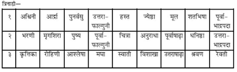
एक सौ सैंतीसवाँ अध्याय
महामारी-विद्याका वर्णन
महेश्वर कहते हैं—देवि! अब मैं महामारी-विद्याका वर्णन करूँगा, जो शत्रुओंका मर्दन करनेवाली है॥१॥
ॐ ह्रीं महामारि रक्ताक्षि कृष्णवर्णे यमस्याज्ञाकारिणि सर्वभूतसंहारकारिणि अमुकं हन हन, ॐ दह दह, ॐ पच पच, ॐ च्छिन्द च्छिन्द, ॐ मारय मारय, ओमुत्सादयोत्सादय, ॐ सर्वसत्त्ववशंकरि सर्वकामिके हुं फट् स्वाहा॥ ॐ ह्रीं लाल नेत्रों तथा काले रंगवाली महामारि! तुम यमराजकी आज्ञाकारिणी हो, समस्त भूतोंका संहार करनेवाली हो, मेरे अमुक शत्रुका हनन करो, हनन करो। ॐ उसे जलाओ, जलाओ। ॐ पकाओ, पकाओ। ॐ काटो, काटो। ॐ मारो, मारो। ॐ उखाड़ फेंको, उखाड़ फेंको। ॐ समस्त प्राणियोंको वशमें करनेवाली और सम्पूर्ण कामनाओंको देनेवाली! हुं फट् स्वाहा॥२॥
अङ्गन्यास ‘ॐ मारि हृदयाय नमः।’—इस वाक्यको बोलकर दाहिने हाथकी मध्यमा, अनामिका और तर्जनी अँगुलियोंसे हृदयका स्पर्श करे। ‘ॐ महामारि शिरसे स्वाहा।’—इस वाक्यको बोलकर दाहिने हाथसे सिरका स्पर्श करे। ‘ॐ कालरात्रि शिखायै वौषट्।’—इस वाक्यको बोलकर दाहिने हाथके अँगूठेसे शिखाका स्पर्श करे। ‘ॐ कृष्णवर्णे खः कवचाय हुम्।’—इस वाक्यको बोलकर दाहिने हाथकी पाँचों अँगुलियोंसे बायीं भुजाका और बायें हाथकी पाँचों अँगुलियोंसे दाहिनी भुजाका स्पर्श करे। ‘ॐ तारकाक्षि विद्युज्जिह्वे सर्वसत्त्वभयंकरि रक्ष रक्ष सर्वकार्येषु ह्रं त्रिनेत्राय वषट्।’—इस वाक्यको बोलकर दाहिने हाथकी अँगुलियोंके अग्रभागसे दोनों नेत्रों और ललाटके मध्यभागका स्पर्श करे। ‘ॐ महामारि सर्वभूतदमनि महाकालि अस्त्राय हुं फट्।’—इस वाक्यको बोलकर दाहिने हाथको सिरके ऊपर एवं बायीं ओरसे पीछेकी ओर ले जाकर दाहिनी ओरसे आगेकी ओर ले आये और तर्जनी तथा मध्यमा अँगुलियोंसे बायें हाथकी हथेलीपर ताली बजाये॥३॥
महादेवि! साधकको यह अङ्गन्यास अवश्य करना चाहिये। वह मुर्देपरका वस्त्र लाकर उसे चौकोर फाड़ ले। उसकी लंबाई-चौड़ाई तीन-तीन हाथकी होनी चाहिये। उसी वस्त्रपर अनेक प्रकारके रंगोंसे देवीकी एक आकृति बनावे, जिसका रंग काला हो। वह आकृति तीन मुख और चार भुजाओंसे युक्त होनी चाहिये। देवीकी यह मूर्ति अपने हाथोंमें धनुष, शूल, कतरनी और खट्वाङ्ग (खाटका पाया) धारण किये हुए हो। उस देवीका पहला मुख पूर्व दिशाकी ओर हो और अपनी काली आभासे प्रकाशित हो रहा हो तथा ऐसा जान पड़ता हो कि दृष्टि पड़ते ही वह अपने सामने पड़े हुए मनुष्यको खा जायगी। दूसरा मुख दक्षिण भागमें होना चाहिये। उसकी जीभ लाल हो और वह देखनेमें भयानक जान पड़ता हो। वह विकराल मुख अपनी दाढ़ोंके कारण अत्यन्त उत्कट और भयंकर हो और जीभसे दो गलफर चाट रहा हो। साथ ही ऐसा जान पड़ता हो कि दृष्टि पड़ते ही यह घोड़े आदिको खा जायगा॥४—७॥
देवीका तीसरा मुख पश्चिमाभिमुख हो। उसका रंग सफेद होना चाहिये। वह ऐसा जान पड़ता हो कि सामने पड़नेपर हाथी आदिको भी खा जायगा। गन्ध-पुष्प आदि उपचारों तथा घी-मधु आदि नैवेद्योंद्वारा उसका पूजन करे॥८॥
पूर्वोक्त मन्त्रका स्मरण करनेमात्रसे नेत्र और मस्तक आदिका रोग नष्ट हो जाता है। यक्ष और राक्षस भी वशमें हो जाते हैं और शत्रुओंका नाश हो जाता है। यदि मनुष्य क्रोधयुक्त होकर, निम्ब-वृक्षकी समिधाओंको होम करे तो उस होमसे ही वह अपने शत्रुको मार सकता है, इसमें संशय नहीं है। यदि शत्रुकी सेनाकी ओर मुँह करके एक सप्ताहतक इन समिधाओंका हवन किया जाय तो शत्रुकी सेना नाना प्रकारके रोगोंसे ग्रस्त हो जाती है और उसमें भगदड़ मच जाती है। जिसके नामसे आठ हजार उक्त समिधाओंका होम कर दिया जाय, वह यदि ब्रह्माजीके द्वारा सुरक्षित हो तो भी शीघ्र ही मर जाता है। यदि धतूरेकी एक सहस्र समिधाओंको रक्त और विषसे संयुक्त करके तीन दिनतक उनका होम किया जाय तो शत्रु अपनी सेनाके साथ ही नष्ट हो जाता है॥९—१३॥
राई और नमकसे होम करनेपर तीन दिनमें ही शत्रुकी सेनामें भगदड़ पड़ जायगी—शत्रु भाग खड़ा होगा। यदि उसे गदहेके रक्तसे मिश्रित करके होम किया जाय तो साधक अपने शत्रुका उच्चाटन कर सकता है—वहाँसे भागनेके लिये उसके मनमें उचाट पैदा कर सकता है। कौएके रक्तसे संयुक्त करके हवन करनेपर शत्रुको उखाड़ फेंका जा सकता है। साधक उसके वधमें समर्थ हो सकता है तथा साधकके मनमें जो-जो इच्छा होती है, उन सब इच्छाओंको वह पूर्ण कर लेता है। युद्धकालमें साधक हाथीपर आरूढ़ हो, दो कुमारियोंके साथ रहकर, पूर्वोक्त मन्त्रद्वारा शरीरको सुरक्षित कर ले; फिर दूरके शङ्ख आदि वाद्योंको पूर्वोक्त महामारी-विद्यासे अभिमन्त्रित करे। तदनन्तर महामायाकी प्रतिमासे युक्त वस्त्रको लेकर समराङ्गणमें ऊँचाईपर फहराये और शत्रुसेनाकी ओर मुँह करके उस महान् पटको उसे दिखाये। तत्पश्चात् वहाँ कुमारी कन्याओंको भोजन करावे। फिर पिण्डीको घुमाये। उस समय साधक यह चिन्तन करे कि शत्रुकी सेना पाषाणकी भाँति निश्चल हो गयी है॥१४—१९॥
वह यह भी भावना करे कि शत्रुकी सेनामें लड़नेका उत्साह नहीं रह गया है, उसके पाँव उखड़ गये हैं और वह बड़ी घबराहटमें पड़ गयी है। इस प्रकार करनेसे शत्रुकी सेनाका स्तम्भन हो जाता है। (वह चित्रलिखितकी भाँति खड़ी रह जाती है, कुछ कर नहीं पाती।) यह मैंने स्तम्भनका प्रयोग बताया है। इसका जिस-किसी भी व्यक्तिको उपदेश नहीं देना चाहिये। यह तीनों लोकोंपर विजय दिलानेवाली देवी ‘माया’ कही गयी है और इसकी आकृतिसे अङ्कित वस्त्रको ‘मायापट’ कहा गया है। इसी तरह दुर्गा, भैरवी, कुब्जिका, रुद्रदेव तथा भगवान् नृसिंहकी आकृतिका भी वस्त्रपर अङ्कन किया जा सकता है। इस तरहकी आकृतियोंसे अङ्कित पट आदिके द्वारा भी यह स्तम्भनका प्रयोग सिद्ध हो सकता है॥२०-२१॥
इस प्रकार आदि आग्नेय महापुराणमें ‘महामारी-विद्याका वर्णन’ नामक एक सौ सैंतीसवाँ अध्याय पूरा हुआ॥१३७॥
एक सौ अड़तीसवाँ अध्याय
तन्त्रविषयक छः कर्मोंका वर्णन
महादेवजी कहते हैं—पार्वती! सभी मन्त्रोंके साध्यरूपसे जो छः कर्म कहे गये हैं, उनका वर्णन करता हूँ, सुनो। शान्ति, वश्य, स्तम्भन, द्वेष, उच्चाटन और मारण—ये छः कर्म हैं। इन सभी कर्मोंमें छः सम्प्रदाय अथवा विन्यास होते हैं, जिनके नाम इस प्रकार हैं—पल्लव, योग, रोधक, सम्पुट, ग्रन्थन तथा विदर्भ। भोजपत्र आदिपर पहले जिसका उच्चाटन करना हो, उस पुरुषका नाम लिखे। उसके बाद उच्चाटन-सम्बन्धी मन्त्र लिखे। लेखनके इस क्रमको ‘पल्लव’ नामक विन्यास या सम्प्रदाय समझना चाहिये। यह उच्चकोटिका महान् उच्चाटनकारी प्रयोग है। आदिमें मन्त्र लिखा जाय फिर साध्य व्यक्तिका नाम अङ्कित किया जाय। यह साध्य बीचमें रहे। इसके लिये अन्तमें पुनः मन्त्रका उल्लेख किया जाय। इस क्रमको ‘योग’ नामक सम्प्रदाय कहा गया है। शत्रुके समस्त कुलका संहार करनेके लिये इसका प्रयोग करना चाहिये॥१-२॥
पहले मन्त्रका पद लिखे। बीचमें साध्यका नाम लिखे। अन्तमें फिर मन्त्र लिखे। फिर साध्यका नाम लिखे। तत्पश्चात् पुनः मन्त्र लिखे। यह ‘रोधक’ सम्प्रदाय कहा गया है। स्तम्भन आदि कर्मोंमें इसका प्रयोग करना चाहिये। मन्त्रके ऊपर, नीचे, दायें, बायें और बीचमें भी साध्यका नामोल्लेख करे, इसे ‘सम्पुट’ समझना चाहिये। वश्याकर्षण-कर्ममें इसका प्रयोग करे। जब मन्त्रका एक अक्षर लिखकर फिर साध्यके नामका एक अक्षर लिखा जाय और इस प्रकार बारी-बारीसे दोनोंके एक-एक अक्षरको लिखते हुए मन्त्र और साध्यके अक्षरोंको परस्पर ग्रथित कर दिया जाय तो यह ‘ग्रन्थन’ नामक सम्प्रदाय है। इसका प्रयोग आकर्षण या वशीकरण करनेवाला है। पहले मन्त्रका दो अक्षर लिखे, फिर साध्यका एक अक्षर। इस तरह बार-बार लिखकर दोनोंको पूर्ण करे। (यदि मन्त्राक्षरोंके बीचमें ही समाप्ति हो जाय तो दुबारा उनका उल्लेख करे।) इसे ‘विदर्भ’ नामक सम्प्रदाय समझना चाहिये तथा वशीकरण एवं आकर्षणके लिये इसका प्रयोग करना चाहिये॥३—७॥
आकर्षण आदि जो मन्त्र हैं, उनका अनुष्ठान वसन्त-ऋतुमें करना चाहिये। तापज्वरके निवारण, वशीकरण तथा आकर्षण-कर्ममें ‘स्वाहा’ का प्रयोग शुभ होता है। शान्ति और वृद्धि-कर्ममें ‘नमः’ पदका प्रयोग करना चाहिये। पौष्टिक-कर्म, आकर्षण और वशीकरणमें ‘वषट्कार’ का प्रयोग करे। विद्वेषण, उच्चाटन और मारण आदि अशुभ कर्ममें पृथक् ‘फट्’ पदकी योजना करनी चाहिये। लाभ आदिमें तथा मन्त्रकी दीक्षा आदिमें ‘वषट्कार’ ही सिद्धिदायक होता है। मन्त्रकी दीक्षा देनेवाले आचार्यमें यमराजकी भावना करके इस प्रकार प्रार्थना करे—‘प्रभो! आप यम हैं, यमराज हैं, कालरूप हैं तथा धर्मराज हैं। मेरे दिये हुए इस शत्रुको शीघ्र ही मार गिराइये’॥८—११॥
तब शत्रुसूदन आचार्य प्रसन्नचित्तसे इस प्रकार उत्तर दे—‘साधक! तुम सफल होओ। मैं यत्नपूर्वक तुम्हारे शत्रुको मार गिराता हूँ।’ श्वेत कमलपर यमराजकी पूजा करके होम करनेसे यह प्रयोग सफल होता है। अपनेमें भैरवकी भावना करके अपने ही भीतर कुलेश्वरी (भैरवी)-की भी भावना करे। ऐसा करनेसे साधक रातमें अपने तथा शत्रुके भावी वृत्तान्तको जान लेता है। ‘दुर्गरक्षिणि दुर्गे!’ (दुर्गकी रक्षा करनेवाली अथवा दुर्गम संकटसे बचानेवाली देवि! आपको नमस्कार है)—इस मन्त्रके द्वारा दुर्गाजीकी पूजा करके साधक शत्रुका नाश करनेमें समर्थ होता है। ‘ह स क्ष म ल व र यु म्’—इस भैरवी-मन्त्रका जप करनेपर साधक अपने शत्रुका वध कर सकता है॥१२—१४॥
इस प्रकार आदि आग्नेय महापुराणमें ‘षट्कर्मका वर्णन’ नामक एक सौ अड़तीसवाँ अध्याय पूरा हुआ॥१३८॥
एक सौ उन्तालीसवाँ अध्याय
साठ संवत्सरोंमें मुख्य-मुख्यके नाम एवं उनके फल-भेदका कथन
भगवान् महेश्वर कहते हैं—पार्वति! अब मैं साठ संवत्सरों (मेंसे कुछ)-के शुभाशुभ फलको कहता हूँ, ध्यान देकर सुनो। ‘प्रभव’ संवत्सरमें यज्ञकर्मकी बहुलता होती है। ‘विभव’ में प्रजा सुखी होती है। ‘शुक्ल’ में समस्त धान्य प्रचुर मात्रामें उत्पन्न होते हैं। ‘प्रमोद’ से सभी प्रमुदित होते हैं। ‘प्रजापति’ नामक संवत्सरमें वृद्धि होती है। ‘अङ्गिरा’ संवत्सर भोगोंकी वृद्धि करनेवाला है। ‘श्रीमुख’ संवत्सरमें जनसंख्याकी वृद्धि होती है और ‘भाव’ संज्ञक संवत्सरमें प्राणियोंमें सद्भावकी वृद्धि होती है। ‘युवा’ संवत्सरमें मेघ प्रचुर वृष्टि करते हैं। ‘धाता’ संवत्सरमें समस्त ओषधियाँ बहुलतासे उत्पन्न होती हैं। ‘ईश्वर’ संवत्सरमें क्षेम और आरोग्यकी प्राप्ति होती है। ‘बहुधान्य’ में प्रचुर अन्न उत्पन्न होता है। ‘प्रमाथी’ वर्ष मध्यम होता है। ‘विक्रम’ में अन्न-सम्पदाकी अधिकता होती है। ‘वृष’ संवत्सर सम्पूर्ण प्रजाओंका पोषण करता है। ‘चित्रभानु’ विचित्रता और ‘सुभानु’ कल्याण एवं आरोग्यको उपस्थित करता है। ‘तारण’ संवत्सरमें मेघ शुभकारक होते हैं॥१—५॥
‘पार्थिव’ में सस्य-सम्पत्ति, ‘अव्यय’ में अति-वृष्टि, ‘सर्वजित्’ में उत्तम वृष्टि और ‘सर्वधारी’ नामक संवत्सरमें धान्यादिकी अधिकता होती है। ‘विरोधी’ मेघोंका नाश करता है अर्थात् अनावृष्टिकारक होता है। ‘विकृति’ भय प्रदान करनेवाला है। ‘खर’ नामक संवत्सर पुरुषोंमें शौर्यका संचार करता है। ‘नन्दन’ में प्रजा आनन्दित होती है। ‘विजय’ संवत्सर शत्रुनाशक और ‘जय’ रोगोंका मर्दन करनेवाला है। ‘मन्मथ’ में विश्व ज्वरसे पीड़ित होता है। ‘दुष्कर’ में प्रजा दुष्कर्ममें प्रवृत्त होती है। ‘दुर्मुख’ संवत्सरमें मनुष्य कटुभाषी हो जाते हैं। ‘हेमलम्ब’ से सम्पत्तिकी प्राप्ति होती है। महादेवि! ‘विलम्ब’ नामक संवत्सरमें अन्नकी प्रचुरता होती है। ‘विकारी’ शत्रुओंको कुपित करता है और ‘शार्वरी’ कहीं-कहीं सर्वप्रदा होती है। ‘प्लव’ संवत्सरमें जलाशयोंमें बाढ़ आती है। ‘शोभन’ और ‘शुभकृत्’ में प्रजा संवत्सरके नामानुकूल गुणसे युक्त होती है॥६—१०॥
‘राक्षस’ वर्षमें लोक निष्ठुर हो जाता है। ‘आनल’ संवत्सरमें विविध धान्योंकी उत्पत्ति होती है। ‘पिङ्गल’ में कहीं-कहीं उत्तम वृष्टि और ‘कालयुक्त’ में धनहानि होती है। ‘सिद्धार्थ’ में सम्पूर्ण कार्योंकी सिद्धि होती है। ‘रौद्र’ वर्षमें विश्वमें रौद्रभावोंकी प्रवृत्ति होती है। ‘दुर्मति’ संवत्सरमें मध्यम वर्षा और ‘दुन्दुभि’ में मङ्गल एवं धन-धान्यकी उपलब्धि होती है। ‘रुधिरोद्गारी’ और ‘रक्ताक्ष’ नामक संवत्सर रक्तपान करनेवाले हैं। ‘क्रोधन’ वर्ष विजयप्रद है। ‘क्षय’ संवत्सरमें प्रजाका धन क्षीण होता है। इस प्रकार साठ संवत्सरों (मेंसे कुछ)-का वर्णन किया गया है॥११—१३॥
इस प्रकार आदि आग्नेय महापुराणमें ‘साठ संवत्सरों (मेंसे कुछ)-के नाम एवं उनके फल-भेदका कथन’ नामक एक सौ उन्तालीसवाँ अध्याय पूरा हुआ॥१३९॥
एक सौ चालीसवाँ अध्याय
वश्य आदि योगोंका वर्णन
भगवान् महेश्वर कहते हैं—स्कन्द! अब मैं वशीकरण आदिके योगोंका वर्णन करूँगा। निम्नाङ्कित ओषधियोंको सोलह कोष्ठवाले चक्रमें अङ्कित करे—भृङ्गराज (भँगरैया), सहदेवी (सहदेइया), मोरकी शिखा, पुत्रजीवक (जीवापोता) नामक वृक्षकी छाल, अधःपुष्पा (गोझिया), रुदन्तिका (रुद्रदन्ती), कुमारी (घीकुँआर), रुद्रजटा (लताविशेष), विष्णुक्रान्ता (अपराजिता), श्वेतार्क (सफेद मदार), लज्जालुका (लाजवन्ती लता), मोहलता (त्रिपुरमाली), काला धतूरा, गोरक्षकर्कटी (गोरखककड़ी या गुरुम्ही), मेषशृङ्गी (मेढ़ासिंगी) तथा स्नुही (सेंहुड़)॥१—३॥
ओषधियोंके ये भाग प्रदक्षिण-क्रमसे ऋत्विज् १६, वह्नि ३, नाग ८, पक्ष २, मुनि ७, मनु १४, शिव ११, वसुदेवता ८, दिशा १०, शर ५, वेद ४, ग्रह ९, ऋतु ६, सूर्य १२, चन्द्रमा १ तथा तिथि १५—इन सांकेतिक नामों और संख्याओंसे गृहीत होते हैं। प्रथम चार ओषधियोंका अर्थात् भँगरैया, सहदेइया, मोरकी शिखा और पुत्रजीवककी छाल—इनका चूर्ण बनाकर इनसे धूपका काम लेना चाहिये। अथवा इन्हें पानीके साथ पीसकर उत्तम उबटन तैयार कर ले और उसे अपने अङ्गोंमें लगावे॥४-५॥
तीसरे चतुष्क (चौक) अर्थात् अपराजिता, श्वेतार्क, लाजवन्ती लता और मोहलता—इन चार ओषधियोंसे अञ्जन तैयार करके उसे नेत्रमें लगावे तथा चौथे चतुष्क अर्थात् काला धतूरा, गोरखककड़ी, मेढ़ासिंगी और सेंहुड़—इन चार ओषधियोंसे मिश्रित जलके द्वारा स्नान करना चाहिये। भृङ्गराजवाले चतुष्कके बादका जो द्वितीय चतुष्क अर्थात् अधःपुष्पा, रुद्रदन्ती, कुमारी तथा रुद्रजटा नामक ओषधियाँ हैं, उन्हें पीसकर अनुलेप या उबटन लगानेका विधान है॥६॥
अधःपुष्पाको दाहिने पार्श्वमें धारण करना चाहिये तथा लाजवन्ती आदिको वाम पार्श्वमें। मयूरशिखाको पैरमें तथा घृतकुमारीको मस्तकपर धारण करना चाहिये। रुद्रजटा, गोरखककड़ी और मेढ़ाशृङ्गी—इनके द्वारा सभी कार्योंमें धूपका काम लिया जाता है। इन्हें पीसकर उबटन बनाकर जो अपने शरीरमें लगाता है, वह देवताओंद्वारा भी सम्मानित होता है। भृङ्गराज आदि चार ओषधियाँ, जो धूपके उपयोगमें आती हैं, ग्रहादिजनित बाधा दूर करनेके लिये उनका उद्वर्तनके कार्यमें भी उपयोग बताया गया है। युगादिसे सूचित लज्जालुका आदि ओषधियाँ अञ्जनके लिये बतायी गयी हैं। बाण आदिसे सूचित श्वेतार्क आदि ओषधियाँ स्नान-कर्ममें उपयुक्त होती हैं। घृतकुमारी आदि ओषधियाँ भक्षण करनेयोग्य कही गयी हैं और पुत्रजीवक आदिसे संयुक्त जलका पान बताया गया है। ऋत्विक् (भँगरैया), वेद (लाजवन्ती), ऋतु (काला धतूरा) तथा नेत्र पुत्रजीवक—इन ओषधियोंसे तैयार किये हुए चन्दनका तिलक सब लोगोंको मोहित करनेवाला होता है॥७—१०॥
सूर्य (गोरखककड़ी), त्रिदश (काला धतूरा), पक्ष (पुत्रजीवक) और पर्वत (अधःपुष्पा)—इन ओषधियोंका अपने शरीरमें लेप करनेसे स्त्री वशमें होती है। चन्द्रमा (मेढ़ासिंगी), इन्द्र (रुद्रदन्तिका), नाग (मोरशिखा), रुद्र (घीकुआँर)—इन ओषधियोंका योनिमें लेप करनेसे स्त्रियाँ वशमें होती हैं। तिथि (सेंहुड़), दिक् (अपराजिता), युग (लाजवन्ती) और बाण (श्वेतार्क)—इन ओषधियोंके द्वारा बनायी हुई गुटिका (गोली) लोगोंको वशमें करनेवाली होती है। किसीको वशमें करना हो तो उसके लिये भक्ष्य, भोज्य और पेय पदार्थमें इसकी एक गोली मिला देनी चाहिये॥११-१२॥
ऋत्विक् (भँगरैया), ग्रह (मोहलता), नेत्र (पुत्रजीवक) तथा पर्वत (अधःपुष्पा)—इन ओषधियोंको मुखमें धारण किया जाय तो इनके प्रभावसे शत्रुओंके चलाये हुए अस्त्र-शस्त्रोंका स्तम्भन हो जाता है—वे घातक आघात नहीं कर पाते। पर्वत (अधःपुष्पा), इन्द्र (रुद्रदन्ती), वेद (लाजवन्ती) तथा रन्ध्र (मोहलता)—इन ओषधियोंका अपने शरीरमें लेप करके मनुष्य पानीके भीतर निवास कर सकता है। बाण (श्वेतार्क), नेत्र (पुत्रजीवक), मनु (रुद्रदन्ती) तथा रुद्र (घीकुआँरि)—इन ओषधियोंसे बनायी हुई बटी भूख, प्यास आदिका निवारण करनेवाली होती है। तीन (सहदेइया), सोलह (भँगरैया), दिशा (अपराजिता) तथा बाण (श्वेतार्क)—इन ओषधियोंका लेप करनेसे दुर्भगा स्त्री सुभगा बन जाती है। त्रिशद (काला धतूरा), अक्षि (पुत्रजीवक) तथा दिशा (विष्णुक्रान्ता) और नेत्र (सहदेइया)—इन दवाओंका अपने शरीरमें लेप करके मनुष्य सर्पोंके साथ क्रीडा कर सकता है। इसी प्रकार त्रिदश (काला धतूरा), अक्षि (पुत्रजीवक), शिव (घृतकुमारी) और सर्प (मयूरशिखा)-से उपलक्षित दवाओंका लेप करनेसे स्त्री सुखपूर्वक प्रसव कर सकती है॥१३—१५॥
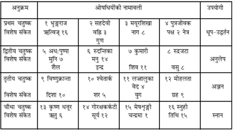
सात (अधःपुष्पा), दिशा (अपराजिता), मुनि (अधःपुष्पा) तथा रन्ध्र (मोहलता)—इन दवाओंका वस्त्रमें लेपन करनेसे मनुष्यको जूएमें विजय प्राप्त होती है। काला धतूरा, नेत्र (पुत्रजीवक), अब्धि (अधःपुष्पा) तथा मनु (रुद्रदन्तिका)-से उपलक्षित ओषधियोंका लिङ्गमें लेप करके रति करनेपर जो गर्भाधान होता है, उससे पुत्रकी उत्पत्ति होती है। ग्रह (मोहलता), अब्धि (अधःपुष्पा), सूर्य (गोरक्षकर्कटी) और त्रिदश (काला धतूरा)—इन ओषधियोंद्वारा बनायी गयी बटी सबको वशमें करनेवाली होती है। इस प्रकार ऋत्विक् आदि सोलह पदोंमें स्थित ओषधियोंके प्रभावका वर्णन किया गया॥१६-१७॥
इस प्रकार आदि आग्नेय महापुराणमें ‘वश्य आदि योगोंका वर्णन’ नामक एक सौ चालीसवाँ अध्याय पूरा हुआ॥१४०॥
एक सौ इकतालीसवाँ अध्याय
छत्तीस कोष्ठोंमें निर्दिष्ट ओषधियोंके वैज्ञानिक प्रभावका वर्णन
महादेवजी कहते हैं—स्कन्द! अब मैं छत्तीस पदों (कोष्ठकों)-में स्थापित की हुई ओषधियोंका फल बताता हूँ। इन ओषधियोंके सेवनसे मनुष्योंका अमरीकरण होता है। ये औषध ब्रह्मा, रुद्र तथा इन्द्रके द्वारा उपयोगमें लाये गये हैं॥१॥
हरीतकी (हर्रे), अक्षधात्री (आँवला), मरीच (गोलमिर्च), पिप्पली, शिफा (जटामांसी), वह्नि (भिलावा), शुण्ठी (सोंठ), पिप्पली, गुडुची (गिलोय), वच, निम्ब, वासक (अडूसा), शतमूली (शतावरी), सैंधव (सेंधानमक), सिन्धुवार, कण्टकारि (कटेरी), गोक्षुर (गोखरु), बिल्व (बेल), पुनर्नवा (गदहपूर्णा), बला (बरियारा), रेंड़, मुण्डी, रुचक (बिजौरा नीबू), भृङ्ग (दालचीनी), क्षार (खारा नमक या यवक्षार), पर्पट (पित्तपापड़ा), धन्याक (धनिया), जीरक (जीरा), शतपुष्पी (सौंफ), यवानी (अजवाइन), विडङ्ग (वायविडंग), खदिर (खैर), कृतमाल (अमलतास), हल्दी, वचा, सिद्धार्थ (सफेद सरसों)—ये छत्तीस पदोंमें स्थापित औषध हैं॥२—५॥
क्रमशः एक-दो आदि संख्यावाले ये महान् औषध समस्त रोगोंको दूर करनेवाले तथा अमर बनानेवाले हैं; इतना ही नहीं, पूर्वोक्त सभी कोष्ठोंके औषध शरीरमें झुर्रियाँ नहीं पड़ने देते और बालोंका पकना रोक देते हैं। इनका चूर्ण या इनके रससे भावित बटी, अवलेह, कषाय (काढ़ा), लड्डू या गुडखण्ड यदि घी या मधुके साथ खाया जाय, अथवा इनके रससे भावित घी या तेलका जिस किसी तरहसे भी उपयोग किया जाय, वह सर्वथा मृतसंजीवन (मुर्देको भी जिलानेवाला) होता है। आधे कर्ष या एक कर्षभर अथवा आधे पल या एक पलके तोलमें इसका उपयोग करनेवाला पुरुष यथेष्ट आहार-विहारमें तत्पर होकर तीन सौ वर्षोंतक जीवित रहता है। मृतसंजीवनी-कल्पमें इससे बढ़कर दूसरा योग नहीं है॥६—१०॥
(नौ-नौ औषधोंके समुदायको एक ‘नवक’ कहते हैं। इस तरह उक्त छत्तीस औषधोंमें चार नवक होते हैं।) प्रथम नवकके योगसे बनी हुई ओषधिका सेवन करनेसे मनुष्य सब रोगोंसे छुटकारा पा जाता है, इसी तरह दूसरे, तीसरे और चौथे नवकके योगका सेवन करनेसे भी मनुष्य रोगमुक्त होता है। इसी प्रकार पहले, दूसरे, तीसरे, चौथे, पाँचवें और छठें षट्कके[१३७] सेवनमात्रसे भी मनुष्य नीरोग हो जाता है। उक्त छत्तीस ओषधियोंमें नौ चतुष्क होते हैं। उनमेंसे किसी एक चतुष्कके[१३८] सेवनसे भी मनुष्यके सारे रोग दूर हो जाते हैं। प्रथम, द्वितीय, तृतीय, चतुर्थ, पञ्चम, षष्ठ, सप्तम और अष्टम कोष्ठकी ओषधियोंके सेवनसे वात-दोषसे छुटकारा मिलता है। तीसरी, बारहवीं, छब्बीसवीं और सत्ताईसवीं ओषधियोंके सेवनसे पित्त-दोष दूर होता है तथा पाँचवीं, छठी, सातवीं, आठवीं और पंद्रहवीं ओषधियोंके सेवनसे कफ-दोषकी निवृत्ति होती है। चौंतीसवें, पैंतीसवें और छत्तीसवें कोष्ठकी औषधोंको धारण करनेसे वशीकरणकी सिद्धि होती है तथा ग्रहबाधा, भूतबाधा आदिसे लेकर निग्रहपर्यन्त सारे संकटोंसे छुटकारा मिल जाता है॥११—१४॥
[१३७] &
[१३८] छः ओषधियोंके समुदायको ‘षट्क’ और चार ओषधियोंके समुदायको ‘चतुष्क’ कहते हैं।
प्रथम, द्वितीय, तृतीय, षष्ठ, सप्तम, अष्टम, नवम एकादश संख्यावाली ओषधियों तथा बत्तीसवीं, पंद्रहवीं एवं बारहवीं संख्यावाली ओषधियोंको धारण करनेसे भी उक्त फलकी प्राप्ति (वशीकरणकी सिद्धि एवं भूतादि बाधाकी निवृत्ति) होती है। इसमें कोई अन्यथा विचार नहीं करना चाहिये। छत्तीस कोष्ठोंमें निर्दिष्ट की गयी इन ओषधियोंका ज्ञान जैसे-तैसे हर व्यक्तिको नहीं देना चाहिये॥१५-१६॥
इस प्रकार आदि आग्नेय महापुराणमें ‘छत्तीस कोष्ठोंके भीतर स्थापित ओषधियोंके विज्ञानका वर्णन’ नामक एक सौ इकतालीसवाँ अध्याय पूरा हुआ॥१४१॥
एक सौ बयालीसवाँ अध्याय
चोर और जातकका निर्णय, शनि-दृष्टि, दिन-राहु, फणि-राहु, तिथि-राहु तथा विष्टि-राहुके फल और अपराजिता-मन्त्र एवं ओषधिका वर्णन
भगवान् महेश्वर कहते हैं—स्कन्द! अब मैं मन्त्र-चक्र तथा औषध-चक्रोंका वर्णन करूँगा, जो सम्पूर्ण मनोरथोंको देनेवाले हैं। जिन-जिन व्यक्तियोंके ऊपर चोरी करनेका संदेह हो, उनके लिये किसी वस्तु (वृक्ष, फूल या देवता आदि)-का नाम बोले। उस वस्तुके नामके अक्षरोंकी संख्याको दुगुनी करके एक स्थानपर रखे तथा उस नामकी मात्राओंकी संख्यामें चारसे गुणा करके गुणनफलको दूसरे स्थानपर रखे। पहली संख्यासे दूसरी संख्यामें भाग दे। यदि कुछ शेष बचे तो वह व्यक्ति चोर है। यदि भाजकसे भाज्य पूरा-पूरा कट जाय तो यह समझना चाहिये कि वह व्यक्ति चोर नहीं है॥१॥
अब यह बता रहा हूँ कि गर्भमें जो बालक है, वह पुत्र है या कन्या, इसका निश्चय किस प्रकार किया जाय? प्रश्न करनेवाले व्यक्तिके प्रश्न-वाक्यमें जो-जो अक्षर उच्चारित होते हैं, वे सब मिलकर यदि विषम संख्यावाले हैं तो गर्भमें पुत्रकी उत्पत्ति सूचित करते हैं। (इसके विपरीत सम संख्या होनेपर उस गर्भसे कन्याकी उत्पत्ति होनेकी सूचना मिलती है।) प्रश्न करनेवालेसे किसी वस्तुका नाम लेनेके लिये कहना चाहिये। वह जिस वस्तुके नामका उल्लेख करे, वह नाम यदि स्त्रीलिंग है तो उसके अक्षरोंके सम होनेपर पूछे गये गर्भसे उत्पन्न होनेवाला बालक बायीं आँखका काना होता है। यदि वह नाम पुँल्लिंग है और उसके अक्षर विषम हैं तो पैदा होनेवाला बालक दाहिनी आँखका काना होता है। इसके विपरीत होनेपर उक्त दोष नहीं होते हैं। स्त्री और पुरुषके नामोंकी मात्राओं तथा उनके अक्षरोंकी संख्यामें पृथक्-पृथक् चारसे गुणा करके गुणनफलको अलग-अलग रखे। पहली संख्या ‘मात्रा-पिण्ड’ है और दूसरी संख्या ‘वर्ण-पिण्ड’। वर्ण-पिण्डमें तीनसे भाग दे। यदि सम शेष हो तो कन्याकी उत्पत्ति होती है, विषम शेष हो तो पुत्रकी उत्पत्ति होती है। यदि शून्य शेष हो तो पतिसे पहले स्त्रीकी मृत्यु होती है और यदि प्रथम ‘मात्रा-पिण्ड’ में तीनसे भाग देनेपर शून्य शेष रहे तो स्त्रीसे पहले पुरुषकी मृत्यु होती है। समस्त भागमें सूक्ष्म अक्षरवाले द्रव्योंद्वारा प्रश्नको ग्रहण करके विचार करनेसे अभीष्ट फलका ज्ञान होता है॥२—५॥
अब मैं शनि-चक्रका वर्णन करूँगा। जहाँ शनिकी दृष्टि हो, उस लग्नका सर्वथा परित्याग कर देना चाहिये। जिस राशिमें शनि स्थित होते हैं, उससे सातवीं राशिपर उनकी पूर्ण दृष्टि रहती है, चौथी और दसवींपर आधी दृष्टि रहती है तथा पहली, दूसरी, आठवीं और बारहवीं राशिपर चौथाई दृष्टि रहती है। शुभकर्ममें इन सबका त्याग करना चाहिये। जिस दिनका जो ग्रह अधिपति हो, उस दिनका प्रथम पहर उसी ग्रहका होता है और शेष ग्रह उस दिनके आधे-आधे पहरके अधिकारी होते हैं। दिनमें जो समय शनिके भागमें पड़ता है, उसे युद्धमें त्याग दे॥६-७॥
अब मैं तुम्हें दिनमें राहुकी स्थितिका विषय बता रहा हूँ। राहु रविवारको पूर्वमें, शनिवारको वायव्यकोणमें, गुरुवारको दक्षिणमें, शुक्रवारको अग्निकोणमें, मङ्गलवारको भी अग्निकोणमें तथा बुधवारको सदा उत्तर दिशामें स्थित रहते हैं। फणि-राहु ईशान, अग्नि, नैर्ऋत्य एवं वायव्य-कोणमें एक-एक पहर रहते हैं और युद्धमें अपने सामने खड़े हुए शत्रुको आवेष्टित करके मार डालते हैं॥८-९॥
अब मैं तिथि-राहुका वर्णन करूँगा। पूर्णिमाको अग्नि-कोणमें राहुकी स्थिति होती है और अमावास्याको वायव्यकोणमें। सम्मुख राहु शत्रुका नाश करनेवाले हैं। पश्चिमसे पूर्वकी ओर तीन खड़ी रेखाएँ खींचे और फिर इन मूलभूत रेखाओंका भेदन करते हुए दक्षिणसे उत्तरकी ओर तीन पड़ी रेखाएँ खींचे। इस तरह प्रत्येक दिशामें तीन-तीन रेखाग्र होंगे। सूर्य जिस राशिपर स्थित हों, उसे सामनेवाली दिशामें लिखकर क्रमशः बारहों राशियोंको प्रदक्षिण-क्रमसे उन रेखाग्रोंपर लिखे। तत्पश्चात् ‘क’ से लेकर ‘ज’ तकके अक्षरोंको सामनेकी दिशामें लिखे। ‘झ’ से लेकर ‘द’ तकके अक्षर दक्षिण दिशामें स्थित रहें, ‘ध’ से लेकर ‘म’ तकके अक्षर पूर्व दिशामें लिखे जायँ और ‘य’ से लेकर ‘ह’ तकके अक्षर उत्तर दिशामें अङ्कित हों। ये राहुके गुण या चिह्न बताये गये हैं। शुक्लपक्षमें इनका त्याग करे तथा तिथि-राहुकी सम्मुख दृष्टिका भी त्याग करे। राहुकी दृष्टि सामने हो तो हानि होती है; अन्यथा विजय प्राप्त होती है॥१०—१३॥
अब ‘विष्टि-राहु’ का वर्णन करता हूँ। निम्नाङ्कित रूपसे आठ रेखाएँ खींचे—ईशानकोणसे दक्षिण दिशातक, दक्षिण दिशासे वायव्यकोणतक, वायव्यकोणसे पूर्व दिशातक, वहाँसे नैर्ऋत्यकोणतक, नैर्ऋत्यकोणसे उत्तर दिशातक, उत्तर दिशासे अग्निकोणतक, अग्निकोणसे पश्चिम दिशातक तथा पश्चिम दिशासे ईशानकोणतक। इन रेखाओंपर विष्टि (भद्रा)-के साथ महाबली राहु विचरण करते हैं। कृष्णपक्षकी तृतीयादि तिथियोंमें विष्टि-राहुकी स्थिति ईशानकोणमें होती है और सप्तमी आदि तिथियोंमें दक्षिण दिशामें। (इसी प्रकार शुक्लपक्षकी अष्टमी आदिमें उनकी स्थिति नैर्ऋत्यकोणमें होती है और चतुर्थी आदिमें उत्तर दिशामें)। इस तरह कृष्ण एवं शुक्लपक्षमें वायुके आश्रित रहनेवाले सम्मुख राहु शत्रुओंका नाश करते हैं।[१३९] विष्टि-राहुचक्रकी पूर्व आदि दिशाओंमें इन्द्र आदि आठ दिक्पालों, महाभैरव आदि आठ महाभैरवों[१४०], ब्रह्माणी आदि आठ[१४१] शक्तियों तथा सूर्य आदि आठ ग्रहोंको स्थापित करे। पूर्व आदि प्रत्येक दिशामें ब्रह्माणी आदि आठ शक्तियोंके आठ अष्टकोंकी भी स्थापना करे। दक्षिण आदि दिशाओंमें वातयोगिनीका उल्लेख करे। वायु जिस दिशामें बहती है, उसी दिशामें इन सबके साथ रहकर राहु शत्रुओंका संहार करता है॥१४—१७॥
[१३९] विष्टि-राहुचक्र इस प्रकार समझना चाहिये—
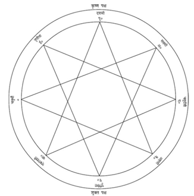
[१४०] ‘मन्त्र-महोदधि’ १।५४ में आठ भैरवोंके नाम इस प्रकार आये हैं—असिताङ्गभैरव, रुरुभैरव, चण्डभैरव (या कालभैरव), क्रोधभैरव, उन्मत्तभैरव, कपालिभैरव, भीषणभैरव तथा संहारभैरव।
[१४१] अध्याय १४३ के छठे श्लोकमें ब्रह्माणी आदि आठ शक्तियोंके नाम इस प्रकार आये हैं—ब्रह्माणी, माहेश्वरी, कौमारी, वैष्णवी, वाराही, माहेन्द्री, चामुण्डा तथा चण्डिका। अध्याय १४४ के ३१वें श्लोकमें ‘चण्डिका’ की जगह ‘महालक्ष्मी’ का उल्लेख हुआ है।
अब मैं अङ्गोंको सुदृढ़ करनेका उपाय बता रहा हूँ। पुष्यनक्षत्रमें उखाड़ी हुई तथा निम्नाङ्कित अपराजिता-मन्त्रका जप करके कण्ठ अथवा भुजा आदिमें धारण की हुई शरपुंखिका (‘सरफोंका’ नामक ओषधि) विपक्षीके बाणोंका लक्ष्य बननेसे बचाती है। इसी प्रकार पुष्यमें उखाड़ी ‘अपराजिता’ एवं ‘पाठा’ नामक ओषधिको भी यदि मन्त्रपाठपूर्वक कण्ठ और भुजाओंमें धारण किया जाय तो उन दोनोंके प्रभावसे मनुष्य तलवारके वारको बचा सकता है॥१८-१९॥
(अपराजिता-मन्त्र इस प्रकार है—) ॐ नमो भगवति वज्रशृङ्खले हन हन, ॐ भक्ष भक्ष, ॐ खाद, ॐ अरे रक्तं पिब कपालेन रक्ताक्षि रक्तपटे भस्माङ्गि भस्मलिप्तशरीरे वज्रायुधे वज्रप्राकारनिचिते पूर्वां दिशं बन्ध बन्ध, ॐ दक्षिणां दिशं बन्ध बन्ध, ॐ पश्चिमां दिशं बन्ध बन्ध, ॐ उत्तरां दिशं बन्ध बन्ध, नागान् बन्ध बन्ध, नागपत्नीर्बन्ध बन्ध, ॐ असुरान् बन्ध बन्ध, ॐ यक्षराक्षसपिशाचान् बन्ध बन्ध, ॐ प्रेतभूतगन्धर्वादयो ये केचिदुपद्रवास्तेभ्यो रक्ष रक्ष, ॐ ऊर्ध्वं रक्ष रक्ष, ॐ अधो रक्ष रक्षा, ॐ क्षुरिकं बन्ध बन्ध, ॐ ज्वल महाबले। घटि घटि, ॐ मोटि मोटि, सटावलिवज्राग्नि वज्रप्राकारे हुं फट्, ह्रीं ह्रूं श्रीं फट् ह्रीं हः फूं फें फः सर्वग्रहेभ्यः सर्वव्याधिभ्यः सर्वदुष्टोपद्रवेभ्यो ह्रीं अशेषेभ्यो रक्ष रक्ष॥२०॥
ग्रहपीड़ा, ज्वर आदिकी पीड़ा तथा भूतबाधा आदिके निवारण—इन सभी कर्मोंमें इस मन्त्रका उपयोग करना चाहिये॥२१॥
इस प्रकार आदि आग्नेय महापुराणमें ‘मन्त्रौषधि आदिका वर्णन’ नामक एक सौ बयालीसवाँ अध्याय पूरा हुआ॥१४२॥
एक सौ तैंतालीसवाँ अध्याय
कुब्जिका-सम्बन्धी न्यास एवं पूजनकी विधि
महादेवजी कहते हैं—स्कन्द! अब मैं कुब्जिकाकी क्रमिक पूजाका वर्णन करूँगा, जो समस्त मनोरथोंको सिद्ध करनेवाली है। ‘कुब्जिका’ वह शक्ति है, जिसकी सहायतासे राज्यपर स्थित हुए देवताओंने अस्त्र-शस्त्रादिसे असुरोंपर विजय पायी है॥१॥
मायाबीज ‘ह्रीं’ तथा हृदयादि छः मन्त्रोंका क्रमशः गुह्याङ्ग एवं हाथमें न्यास करे। ‘काली-काली’—यह हृदय मन्त्र है। ‘दुष्ट चाण्डालिका’—यह शिरोमन्त्र है। ‘ह्रीं स्फेंह स ख क छ ड ओंकारो भैरवः।’—यह शिखा-सम्बन्धी मन्त्र है। ‘भेलखी दूती’—यह कवच-सम्बन्धी मन्त्र है। ‘रक्तचण्डिका’—यह नेत्र-सम्बन्धी मन्त्र है तथा ‘गुह्यकुब्जिका’—यह अस्त्र-सम्बन्धी मन्त्र है। अङ्गों और हाथोंमें इनका न्यास करके मण्डलमें यथास्थान इनका पूजन करना चाहिये[१४२]॥२-३॥
[१४२] अङ्गन्यास-सम्बन्धी वाक्यकी योजना इस प्रकार है। ॐ ह्रीं काली काली हृदयाय नमः। ॐ ह्रीं दुष्टचाण्डालिकायै शिरसे स्वाहा। ॐ ह्रीं स्फें ह स ख क छ ड ॐकाराय भैरवाय शिखायै वषट्। ॐ ह्रीं भेलख्यै दूत्यै कवचाय हुम्। ॐ ह्रीं रक्तचण्डिकायै नेत्रत्रयाय वौषट्। ॐ गुह्यकुब्जिकायै अस्त्राय फट्। इन छः वाक्योंद्वारा क्रमशः हृदय, सिर, शिखा, कवच, नेत्र एवं सम्पूर्ण दिशाओंमें न्यास किया जाता है। इन्हीं वाक्योंमें ‘हृदयाय नमः’ के स्थानमें ‘अङ्गुष्ठाभ्यां नमः’, ‘शिरसे’ के स्थानमें ‘तर्जनीभ्यां नमः’ ‘शिखायै’ के स्थानमें ‘मध्यमाभ्यां नमः’, ‘कवचाय’ की जगह ‘अनामिकाभ्यां नमः’, ‘नेत्रत्रयाय’ के स्थानमें ‘कनिष्ठिकाभ्यां नमः’ तथा ‘अस्त्राय’ के स्थानमें ‘करतलकरपृष्ठाभ्यां नमः’ कर दिया जाय तो ये करन्यास-सम्बन्धी वाक्य हो जायँगे तथा इनका क्रमशः हाथके दोनों अङ्गुष्ठों, तर्जनियों, मध्यमाओं, अनामिकाओं, कनिष्ठिकाओं तथा करतल-कर-पृष्ठ-भागोंमें न्यास किया जायगा।
मण्डलके अग्निकोणमें कूर्च बीज (हूं), ईशानकोणमें शिरोमन्त्र (स्वाहा), नैर्ऋत्यकोणमें शिखामन्त्र (वषट्), वायव्यकोणमें कवचमन्त्र (हुम्), मध्यभागमें नेत्रमन्त्र (वौषट्) तथा मण्डलकी सम्पूर्ण दिशाओंमें अस्त्र-मन्त्र (फट्)-का उल्लेख एवं पूजन करे। बत्तीस अक्षरोंसे युक्त बत्तीस दलवाले कमलकी कर्णिकामें ‘स्रों ह स क्ष म ल न व ब ष ट स च’ तथा आत्मबीज-मन्त्र (आम्)-का न्यास एवं पूजन करे। कमलके सब ओर पूर्व दिशासे आरम्भ करके क्रमशः ब्रह्माणी, माहेश्वरी, कौमारी, वैष्णवी, वाराही, माहेन्द्री, चामुण्डा और चण्डिका (महालक्ष्मी)-का न्यास एवं पूजन करना चाहिये॥४—६॥
तत्पश्चात् ईशान, पूर्व, अग्निकोण, दक्षिण, नैर्ऋत्य और पश्चिममें क्रमशः र, व, ल, क, स और ह—इनका न्यास और पूजन करे। फिर इन्हीं दिशाओंमें क्रमशः कुसुममाला एवं पाँच पर्वतोंका स्थापन एवं पूजन करे। पर्वतोंके नाम हैं—जालन्धर, पूर्णगिरि और कामरूप आदि। तत्पश्चात् वायव्य, ईशान, अग्नि और नैर्ऋत्यकोणमें तथा मध्यभागमें वज्रकुब्जिकाका पूजन करे। इसके बाद वायव्य, ईशान, नैर्ऋत्य, अग्नि तथा उत्तर शिखरपर क्रमशः अनादि विमल, सर्वज्ञ विमल, प्रसिद्ध विमल, संयोग विमल तथा समय विमल—इन पाँच विमलोंकी पूजा करे। इन्हीं शृङ्गोंपर कुब्जिकाकी प्रसन्नताके लिये क्रमशः खिङ्खिनी, षष्ठी, सोपन्ना, सुस्थिरा तथा रत्नसुन्दरीका पूजन करना चाहिये। ईशानकोणवर्ती शिखरपर आठ आदिनाथोंकी आराधना करे॥७—११॥
अग्निकोणवर्ती शिखरपर मित्रकी, पश्चिमवर्ती शिखरपर औडीश वर्षकी तथा वायव्यकोणवर्ती शिखरपर षष्टि नामक वर्षकी पूजा करनी चाहिये। पश्चिमदिशावर्ती शिखरपर गगनरत्न और कवचरत्नकी अर्चना की जानी चाहिये। वायव्य, ईशान और अग्निकोणमें ‘ब्रुं’ बीजसहित ‘पञ्चनामा’ संज्ञक मर्त्यकी पूजा करनी चाहिये। दक्षिण दिशा और अग्निकोणमें ‘पञ्चरत्न’ की अर्चना करे। ज्येष्ठा, रौद्री तथा अन्तिका—ये तीन संध्याओंकी अधिष्ठात्री देवियाँ भी उसी दिशामें पूजने योग्य हैं। इनके साथ सम्बन्ध रखनेवाली पाँच महावृद्धाएँ हैं, उन सबकी प्रणवके उच्चारणपूर्वक पूजा करनी चाहिये। इनका पूजन सत्ताईस अथवा अट्ठाईसके भेदसे दो प्रकारका बताया गया है॥१२—१४॥
चौकोर मण्डलमें दाहिनी ओर गणपतिका तथा बायीं ओर वटुकका पूजन करे। ‘ॐ एं गूं क्रमगणपतये नमः।’ इस मन्त्रसे क्रमगणपतिकी तथा ‘ॐ वटुकाय नमः।’ इस मन्त्रसे वटुककी पूजा करे। वायव्य आदि कोणोंमें चार गुरुओंका तथा अठारह षट्कोणोंमें सोलह नाथोंका पूजन करे। फिर मण्डलके चारों ओर ब्रह्मा आदि आठ देवताओंकी तथा मध्यभागमें नवमी कुब्जिका एवं कुलटा देवीकी पूजा करनी चाहिये। इस प्रकार सदा इसी क्रमसे पूजा करे॥१५—१७॥
इस प्रकार आदि आग्नेय महापुराणमें ‘कुब्जिकाकी क्रम-पूजाका वर्णन’ नामक एक सौ तैंतालीसवाँ अध्याय पूरा हुआ॥१४३॥
एक सौ चौवालीसवाँ अध्याय
कुब्जिकाकी पूजा-विधिका वर्णन
भगवान् महेश्वर कहते हैं—स्कन्द! अब मैं धर्म, अर्थ, काम तथा विजय प्रदान करनेवाली श्रीमती कुब्जिकादेवीके मन्त्रका वर्णन करूँगा। परिवारसहित मूलमन्त्रसे उनकी पूजा करनी चाहिये॥१॥
‘ॐ ऐं ह्रीं श्रीं खैं ह्रें हसक्षमलचवयं भगवति अम्बिके ह्रां ह्रीं क्ष्रीं क्षौं क्ष्रूं क्रीं कुब्जिके ह्राम् ॐ ङञनणमेऽअघोरमुखि व्रां छ्रां छीं किलि किलि क्षौं विच्चे ख्यों श्रीं क्रोम्, ॐ ह्रोम्, ऐं वज्रकुब्जिनि स्त्रीं त्रैलोक्यकर्षिणि ह्रीं कामाङ्गद्राविणि ह्रीं स्त्रीं महाक्षोभकारिणि ऐं ह्रीं क्ष्रौं ऐं ह्रीं श्रीं फें क्षौं नमो भगवति क्ष्रौं कुब्जिके ह्रों ह्रों क्रैं ङञणनमे अघोरमुखि छ्रां छां विच्चे, ॐ किलि किलि।’—यह कुब्जिकामन्त्र है॥२॥
करन्यास और अङ्गन्यास करके संध्या-वन्दन करे। वामा, ज्येष्ठा तथा रौद्री—ये क्रमशः तीन संध्याएँ कही गयी हैं॥३॥
कौली गायत्री ‘कुलवागीशि विद्महे, महाकौलीति धीमहि । तन्नः कौली प्रचोदयात्।’ ‘कुलवागीश्वरि! हम आपको जानें। महाकौलीके रूपमें आपका चिन्तन करें। कौली देवी हमें शुभ कर्मोंके लिये प्रेरित करे’॥४॥
इसके पाँच मन्त्र हैं, जिनके आदिमें ‘प्रणव’ और अन्तमें ‘नमः’ पदका प्रयोग होता है। बीचमें पाँच नाथोंके नाम हैं; अन्तमें ‘श्रीपादुकां पूजयामि’—इस पदको जोड़ना चाहिये। मध्यमें देवताका चतुर्थ्यन्त नाम जोड़ देना चाहिये। इस प्रकार ये पाँचों मन्त्र लगभग अठारह-अठारह अक्षरोंके होते हैं। इन सबके नामोंको षष्ठी विभक्तिके साथ संयुक्त करना चाहिये। इस तरह वाक्य-योजना करके इनके स्वरूप समझने चाहिये। मैं उन पाँचों नाथोंका वर्णन करता हूँ—कौलीशनाथ, श्रीकण्ठनाथ, कौलनाथ, गगनानन्दनाथ तथा तूर्णनाथ। इनकी पूजाका मन्त्र-वाक्य इस प्रकार होना चाहिये—‘ॐ कौलीशनाथाय नमस्तस्मै पादुकां पूजयामि।’ इनके साथ क्रमशः ये पाँच देवियाँ भी पूजनीय हैं—१—सुकला देवी, जो जन्मसे ही कुब्जा होनेके कारण ‘कुब्जिका’ कही गयी हैं; २—चटुला देवी, ३—मैत्रीशी देवी, जो विकराल रूपवाली हैं, ४—अतल देवी और ५—श्रीचन्द्रा देवी हैं। इन सबके नामके अन्तमें ‘देवी’ पद है। इनके पूजनका मन्त्र-वाक्य इस प्रकार होगा— ‘ॐ सुकलादेव्यै नमस्तस्यै भगात्मपुङ्गण-देवमोहिनीं पादुकां पूजयामि।’ दूसरी (चटुला) देवीकी पादुकाका यह विशेषण देना चाहिये—‘अतीतभुवनानन्दरत्नाढ्यां पादुकां पूजयामि।’ इसी तरह तीसरी देवीकी पादुकाका विशेषण ‘ब्रह्मज्ञानाढ्यां’, चौथीकी पादुकाका विशेषण ‘कमलाढ्यां’ तथा पाँचवींकी पादुकाका विशेषण ‘परमविद्याढ्यां’ देना चाहिये॥५—९॥
इस प्रकार विद्या, देवी और गुरु (उपर्युक्त पाँच नाथ)—इन तीनकी शुद्धि ‘त्रिशुद्धि’ कहलाती है। मैं तुमसे इसका वर्णन करता हूँ। गगनानन्द, चटुली, आत्मानन्द, पद्मानन्द, मणि, कला, कमल, माणिक्यकण्ठ, गगन, कुमुद, श्रीपद्म, भैरवानन्द, कमलदेव, शिव, भव तथा कृष्ण—ये सोलह नूतन सिद्ध हैं॥१०-११॥
चन्द्रपूर, गुल्म, शुभकाम, अतिमुक्तक, वीरकण्ठ, प्रयोग, कुशल, देवभोगक्र (अथवा भोगदायक), विश्वदेव, खड्गदेव, रुद्र, धाता, असि, मुद्रास्फोट, वंशपूर तथा भोज—ये सोलह सिद्ध हैं। इन सिद्धोंका शरीर भी छः प्रकारके न्यासोंसे नियन्त्रित होनेके कारण इनके आत्माके समान जातिका ही (सच्चिदानन्दमय) हो गया है। मण्डलमें फूल बिखेरकर मण्डलोंकी पूजा करे। अनन्त, महान्, शिवपादुका, महाव्याप्ति, शून्य, पञ्चतत्त्वात्मक-मण्डल, श्रीकण्ठनाथ-पादुका, शंकर एवं अनन्तकी भी पूजा करे॥१२—१६॥
सदाशिव, पिङ्गल, भृग्वानन्द, नाथ-समुदाय, लाङ्गूलानन्द और संवर्त—इन सबका मण्डल-स्थानमें पूजन करे। नैर्ऋत्यकोणमें श्रीमहाकाल, पिनाकी, महेन्द्र, खड्ग, नाग, बाण, अघासि (पापका छेदन करनेके लिये खड्गरूप), शब्द, वश, आज्ञारूप और नन्दरूप—इनको बलि अर्पित करके क्रमशः इनका पूजन करे। इसके बाद वटुकको अर्घ्य, पुष्प, धूप, दीप, गन्ध एवं बलि तथा क्षेत्रपालको गन्ध, पुष्प और बलि अर्पित करे। इसके लिये मन्त्र इस प्रकार है—‘ह्रीं खं खं हूं सौं वटुकाय अरु अरु अर्घ्यं पुष्पं धूपं दीपं गन्धं बलिं पूजां गृह्ण गृह्ण नमस्तुभ्यम् । ॐ ह्रां ह्रीं ह्रूं क्षेत्रपालायावतरावतर महाकपिलजटाभार भास्वर त्रिनेत्र ज्वालामुख एह्येहि गन्धपुष्पबलिपूजां गृह्ण गृह्ण खः खः ॐ कः ॐ लः ॐ महाडामराधिपतये स्वाहा।’ बलिके अन्तमें दायें-बायें तथा सामने त्रिकूटका पूजन करे; इसके लिये मन्त्र इस प्रकार है—‘ह्रीं ह्रूं हां श्रीं त्रिकूटाय नमः।’ फिर बायें निशानाथकी, दाहिने तमोऽरिनाथ (या सूर्यनाथ)-की तथा सामने कालानलकी पादुकाओंका यजन-पूजन करे। तदनन्तर उड्डियान, जालन्धर, पूर्णगिरि तथा कामरूपका पूजन करना चाहिये। फिर गगनानन्ददेव, वर्गसहित स्वर्गानन्ददेव, परमानन्ददेव, सत्यानन्ददेवकी पादुका तथा नागानन्ददेवकी पूजा करे। इस प्रकार ‘वर्ग’ नामक पञ्चरत्नका तुमसे वर्णन किया गया है॥१७—२३॥
उत्तर और ईशानकोणमें इन छःकी पूजा करे—सुरनाथकी पादुकाकी, श्रीमान् समयकोटीश्वरकी, विद्याकोटीश्वरकी, कोटीश्वरकी, बिन्दुकोटीश्वरकी तथा सिद्धकोटीश्वरकी। अग्निकोणमें चार* सिद्ध-समुदायकी तथा अमरीशेश्वर, चक्रीशेश्वर, कुरङ्गेश्वर, वृत्रेश्वर और चन्द्रनाथ या चन्द्रेश्वरकी पूजा करे। इन सबकी गन्ध आदि पञ्चोपचारोंसे पूजा करनी चाहिये। दक्षिण दिशामें अनादि विमल, सर्वज्ञ विमल, योगीश विमल, सिद्ध विमल और समय विमल—इन पाँच विमलोंका पूजन करे॥२४—२७॥
नैर्ऋत्यकोणमें चार वेदोंका, कंदर्पनाथका, पूर्वोक्त सम्पूर्ण शक्तियोंका तथा कुब्जिकाकी श्रीपादुकाका पूजन करे। इनमें कुब्जिकाकी पूजा ‘ॐ ह्रां ह्रीं कुब्जिकायै नमः।’—इस नवाक्षर मन्त्रसे अथवा केवल पाँच प्रणवरूप मन्त्रसे करे। पूर्व दिशासे लेकर ईशानकोण-पर्यन्त ब्रह्मा, इन्द्र, अग्नि, यम, निर्ऋति, अनन्त, वरुण, वायु, कुबेर तथा ईशान—इन दस दिक्पालोंकी पूजा करे। सहस्रनेत्रधारी इन्द्र, अनवद्य विष्णु तथा शिवकी पूजा सदा ही करनी चाहिये। ब्रह्माणी, माहेश्वरी, कौमारी, वैष्णवी, वाराही, ऐन्द्री, चामुण्डा तथा महालक्ष्मी—इनकी पूजा पूर्व दिशासे लेकर ईशानकोण-पर्यन्त आठ दिशाओंमें क्रमशः करे॥२८—३१॥
तदनन्तर वायव्यकोणसे छः उग्र दिशाओंमें क्रमशः डाकिनी, राकिनी, लाकिनी, काकिनी, शाकिनी तथा याकिनी—इनकी पूजा करे। तत्पश्चात् ध्यानपूर्वक कुब्जिकादेवीका पूजन करना चाहिये। बत्तीस व्यञ्जन अक्षर ही उनका शरीर है। उनके पूजनमें पाँच प्रणव अथवा ‘ह्रीं’ का बीजरूपसे उच्चारण करना चाहिये। (यथा—‘ॐ ॐ ॐ ॐ ॐ कुब्जिकायै नमः।’ अथवा ‘ॐ ह्रीं कुब्जिकायै नमः।’)॥३२-३३॥
देवीकी अङ्गकान्ति नील कमल-दलके समान श्याम है, उनके छः मुख हैं और उनकी मुखकान्ति भी छः प्रकारकी है। वे चैतन्य-शक्तिस्वरूपा हैं। अष्टादशाक्षर मन्त्रद्वारा उनका प्रतिपादन होता है। उनके बारह भुजाएँ हैं। वे सुखपूर्वक सिंहासनपर विराजमान हैं। प्रेतपद्मके ऊपर बैठी हैं। वे सहस्रों कोटि कुलोंसे सम्पन्न हैं। ‘कर्कोटक’ नामक नाग उनकी मेखला (करधनी) है। उनके मस्तकपर ‘तक्षक’ नाग विराजमान है। ‘वासुकि’ नाग उनके गलेका हार है। उनके दोनों कानोंमें स्थित ‘कुलिक’ और ‘कूर्म’ नामक नाग कुण्डल-मण्डल बने हुए हैं। दोनों भौंहोंमें ‘पद्म’ और ‘महापद्म’ नामक नागोंकी स्थिति है। बायें हाथोंमें नाग, कपाल, अक्षसूत्र, खट्वाङ्ग, शङ्ख और पुस्तक हैं। दाहिने हाथोंमें त्रिशूल, दर्पण, खड्ग, रत्नमयी माला, अङ्कुश तथा धनुष हैं। देवीके दो मुख ऊपरकी ओर हैं, जिनमें एक तो पूरा सफेद है और दूसरा आधा सफेद है। उनका पूर्ववर्ती मुख पाण्डुवर्णका है, दक्षिणवर्ती मुख क्रोधयुक्त जान पड़ता है, पश्चिमवाला मुख काला है और उत्तरवर्ती मुख हिम, कुन्द एवं चन्द्रमाके समान श्वेत है। ब्रह्मा उनके चरणतलमें स्थित हैं, भगवान् विष्णु जघनस्थलमें विराजमान हैं, रुद्र हृदयमें, ईश्वर कण्ठमें, सदाशिव ललाटमें तथा शिव उनके ऊपरी भागमें स्थित हैं। कुब्जिकादेवी झूमती हुई-सी दिखायी देती हैं। पूजा आदि कर्मोंमें कुब्जिकाका ऐसा ही ध्यान करना चाहिये॥३४—४०॥
इस प्रकार आदि आग्नेय महापुराणमें ‘कुब्जिकाकी पूजाका वर्णन’ नामक एक सौ चौवालीसवाँ अध्याय पूरा हुआ॥१४४॥
एक सौ पैंतालीसवाँ अध्याय
मालिनी आदि नाना प्रकारके मन्त्र और उनके षोढा-न्यास
भगवान् महेश्वर कहते हैं—स्कन्द! अब मैं छः प्रकारके न्यासपूर्वक नाना प्रकारके मन्त्रोंका वर्णन करूँगा। ये छहों प्रकारके न्यास ‘शाम्भव’, ‘शाक्त’ तथा ‘यामल’ के भेदसे तीन-तीन प्रकारके होते हैं। ‘शाम्भव-न्यास’ में षट्षोडश ग्रन्थिरूप शब्दराशि प्रथम है, तीन विद्याएँ और उनका ग्रहण द्वितीय न्यास है, त्रितत्त्वात्मक न्यास तीसरा है, वनमालान्यास चौथा है, यह बारह श्लोकोंका है। रत्नपञ्चकका न्यास पाँचवाँ है और नवाक्षरमन्त्रका न्यास छठा कहा गया है॥१—३॥
शाक्तपक्षमें ‘मालिनी’ का न्यास प्रथम, ‘त्रिविद्या’ का न्यास द्वितीय, ‘अघोर्यष्टक’ का न्यास तृतीय, ‘द्वादशाङ्गन्यास’ चतुर्थ, ‘षडङ्गन्यास’ पञ्चम तथा ‘अस्त्रचण्डिका’ नामक शक्तिका न्यास छठा है। क्लीं (क्रीं), ह्रीं, क्लीं, श्रीं, क्रूं, फट्—इन छः बीजमन्त्रोंका जो छः प्रकारका न्यास है, यही तीसरा अर्थात् ‘यामल न्यास’ है। इन छहोंमेंसे चौथा ‘श्रीं’ बीजका न्यास है, वह सम्पूर्ण मनोरथोंको सिद्ध करनेवाला है॥४-५॥
‘न’ से लेकर ‘फ’ तक जो न्यास बताया जाता है, वह सब मालिनीका ही न्यास है। ‘न’ से आरम्भ होनेवाली अथवा नाद करनेवाली शक्तिका न्यास शिखामें करना चाहिये। ‘अ’ ग्रसनी शक्ति तथा ‘श’ शिरोमाला-निवृत्ति शक्तिका स्थान सिरमें है; अतः वहीं उनका न्यास करे। ‘ट’ शान्तिका प्रतीक है, इसका न्यास भी सिरमें ही होगा। ‘च’ चामुण्डाका प्रतीक है, इसका न्यास नेत्रत्रयमें करना चाहिये। ‘ढ’ प्रियदृष्टिस्वरूप है, इसका न्यास नेत्रद्वयमें होना चाहिये। गुह्यशक्तिका प्रतीक है—‘नी’, इसका न्यास नासिकाद्वयमें करे। ‘न’ नारायणीरूप है, इसका स्थान दोनों कानोंमें है। ‘त’ मोहिनीरूप है, इसका स्थान केवल दाहिने कानमें है। ‘ज’ प्रज्ञाका प्रतीक है, इसकी स्थिति बायें कानमें बतायी गयी है। वज्रिणी देवीका स्थान मुखमें है। ‘क’ कराली शक्तिका प्रतीक है, इसकी स्थिति दाहिनी दंष्ट्रा (दाढ़)-में है। ‘ख’ कपालिनीरूप है, ‘व’ बायें कंधेपर स्थापित होनेके योग्य है। ‘ग’ शिवाका प्रतीक है, इसका स्थान ऊपरी दाढ़ोंमें है। ‘घ’ घोरा शक्तिका सूचक है, इसकी स्थिति बायीं दाढ़में मानी गयी है। ‘उ’ शिखा शक्तिका सूचक है, इसका स्थान दाँतोंमें है। ‘ई’ मायाका प्रतीक है, जिसका स्थान जिह्वाके अन्तर्गत माना गया है। ‘अ’ नागेश्वरीरूप है, इसका न्यास वाक्-इन्द्रियमें होना चाहिये। ‘व’ शिखिवाहिनीका बोधक है, इसका स्थान कण्ठमें है॥६—१०॥
‘भ’ के साथ भीषणी शक्तिका न्यास दाहिने कंधेमें करे। ‘म’ के साथ वायुवेगका न्यास बायें कंधेमें करे। ‘ड’ अक्षर और नामा शक्तिका दाहिनी भुजामें तथा ‘ढ’ अक्षर एवं विनायका देवीका बायीं भुजामें न्यास करे। ‘प’ एवं पूर्णिमाका न्यास दोनों हाथोंमें करे। प्रणवसहित ओंकारा शक्तिका दाहिने हाथकी अङ्गुलियोंमें तथा ‘अं’ सहित दर्शनीका बायें हाथकी अङ्गुलियोंमें न्यास करे। ‘अः’ एवं संजीवनी-शक्तिका हाथमें न्यास करे। ‘ट’ अक्षरसहित कपालिनी शक्तिका स्थान कपाल है। ‘त’ सहित दीपनीकी स्थिति शूलदण्डमें है। जयन्तीकी स्थिति त्रिशूलमें है। ‘य’ सहित साधनी देवीका स्थान ऋद्धि (वृद्धि) है॥११—१३॥
‘श’ अक्षरके साथ परमाख्या देवीकी स्थिति जीवमें है। ‘ह’ अक्षरसहित अम्बिका देवीका न्यास प्राणमें करना चाहिये। ‘छ’ अक्षरके साथ शरीरा देवीका स्थान दाहिने स्तनमें है। ‘न’ सहित पूतनाकी स्थिति बायें स्तनमें बतायी गयी है। ‘अ’ सहित आमोटीका स्तन-दुग्धमें, ‘थ’ सहित लम्बोदरीका उदरमें, ‘क्ष’ सहित संहारिकाका नाभिमें तथा ‘म’ सहित महाकालीका नितम्बमें न्यास करे। ‘स’ अक्षरसहित कुसुममालाका गुह्यदेशमें, ‘ष’ सहित शुक्रदेविकाका शुक्रमें, ‘त’ सहित तारा देवीका दोनों ऊरुओंमें तथा ‘द’ सहित ज्ञानाशक्तिका दाहिने घुटनेमें न्यास करे। ‘औ’ सहित क्रियाशक्तिका बायें घुटनेमें, ‘ओ’ सहित गायत्री देवीका दाहिनी जङ्घा (पिण्डली)-में, ‘ॐ’ सहित सावित्रीका बायीं जङ्घामें तथा ‘द’ सहित दोहिनीका दाहिने पैरमें न्यास करे। ‘फ’ सहित ‘फेत्कारी’ का बायें पैरमें न्यास करना चाहिये॥१४—१७॥
मालिनी-मन्त्र नौ अक्षरोंसे युक्त होता है। ‘अ’ सहित श्रीकण्ठका शिखामें, ‘आ’ सहित अनन्तका मुखमें, ‘इ’ सहित सूक्ष्मका दाहिने नेत्रमें, ‘ई’ सहित त्रिमूर्तिका बायें नेत्रमें, ‘उ’ सहित अमरीशका दाहिने कानमें तथा ‘ऊ’ सहित अर्धांशकका बायें कानमें न्यास करे। ‘ऋ’ सहित भावभूतिका दाहिने नासाग्रमें, ‘ऋृ’ सहित तिथीशका वामनासाग्रमें, ‘लृ’ सहित स्थाणुका दाहिने गालमें तथा ‘लॄ’ सहित हरका बायें गालमें न्यास करे। ‘ए’ अक्षरसहित कटीशका नीचेकी दन्तपङ्क्तिमें, ‘ऐ’ सहित भूतीशका ऊपरकी दन्तपङ्क्तिमें, ‘ओ’ सहित सद्योजातका नीचेके ओष्ठमें तथा ‘औ’ सहित अनुग्रहीश (या अनुग्रहेश)-का ऊपरके ओष्ठमें न्यास करे। ‘अं’ सहित क्रूरका गलेकी घाटीमें, ‘अः’ सहित महासेनका जिह्वामें, ‘क’ सहित क्रोधीशका दाहिने कंधेमें तथा ‘ख’ सहित चण्डीशका बाहुओंमें न्यास करे। ‘ग’ सहित पञ्चान्तकका कूर्परमें, ‘घ’ सहित शिखीका दाहिने कङ्कणमें, ‘ङ’ सहित एकपादका दायीं अङ्गुलियोंमें तथा ‘च’ सहित कूर्मकका बायें कंधेमें न्यास करे॥१८—२३॥
‘छ’ सहित एकनेत्रका बाहुमें, ‘ज’ सहित चतुर्मुखका कूर्पर या कोहनीमें, ‘झ’ सहित राजसका वामकङ्कणमें तथा ‘ञ’ सहित सर्वकामदका बायीं अङ्गुलियोंमें न्यास करे। ‘ट’ सहित सोमेश्वरका नितम्बमें, ‘ठ’ सहित लाङ्गलीका दक्षिण ऊरु (दाहिनी जाँघ)-में, ‘ड’ सहित दारुकका दाहिने घुटनेमें तथा ‘ढ’ सहित अर्द्धजलेश्वरका पिण्डलीमें न्यास करे। ‘ण’ सहित उमाकान्तका दाहिने पैरकी अङ्गुलियोंमें, ‘त’ सहित आषाढ़ीका नितम्बमें, ‘थ’ सहित दण्डीका वाम ऊरु (बायीं जाँघ)-में तथा ‘द’ सहित भिदका बायें घुटनेमें न्यास करे। ‘ध’ सहित मीनका बायीं पिण्डलीमें, ‘न’ सहित मेषका बायें पैरकी अङ्गुलियोंमें, ‘प’ सहित लोहितका दाहिनी कुक्षिमें तथा ‘फ’ सहित शिखीका बायीं कुक्षिमें न्यास करे। ‘ब’ सहित गलण्डका पृष्ठवंशमें, ‘भ’ सहित द्विरण्डका नाभिमें, ‘म’ सहित महाकालका हृदयमें तथा ‘य’ सहित वाणीशका त्वचामें न्यास बताया गया है॥२४—२८॥
‘र’ सहित भुजङ्गेशका रक्तमें, ‘ल’ सहित पिनाकीका मांसमें, ‘व’ सहित खङ्गीशका अपने आत्मा (शरीर)-में तथा ‘श’ सहित वकका हड्डीमें न्यास करे। ‘ष’ सहित श्वेतका मज्जामें, ‘स’ सहित भृगुका शुक्र एवं धातुमें, ‘ह’ सहित नकुलीशका प्राणमें तथा ‘क्ष’ सहित संवर्तका पञ्चकोशोंमें न्यास करना चाहिये। ‘ह्रीं’ बीजसे रुद्रशक्तियोंका पूजन करके उपासक सम्पूर्ण मनोरथोंको प्राप्त कर लेता है॥२९-३०॥
इस प्रकार आदि आग्नेय महापुराणमें ‘मालिनी-मन्त्र आदिके न्यासका वर्णन’ नामक एक सौ पैंतालीसवाँ अध्याय पूरा हुआ॥१४५॥
एक सौ छियालीसवाँ अध्याय
त्रिखण्डी-मन्त्रका वर्णन, पीठस्थानपर पूजनीय शक्तियों तथा आठ अष्टक देवियोंका कथन
भगवान् महेश्वर कहते हैं—स्कन्द! अब मैं ब्रह्मा, विष्णु तथा महेश्वरसे सम्बन्ध रखनेवाली त्रिखण्डीका वर्णन करूँगा॥१॥
‘ॐ नमो भगवते रुद्राय नमः । नमश्चामुण्डे नमश्चाकाशमातॄणां सर्वकामार्थसाधनीनाम-जरामरीणां सर्वत्राप्रतिहतगतीनां स्वरूपपरिवर्तिनीनां सर्वसत्त्ववशीकरणोत्सादनोन्मूलनसमस्तकर्म-प्रवृत्तानां सर्वमातृगुह्यं हृदयं परमसिद्धं परकर्मच्छेदनं परमसिद्धिकरं मातॄणां वचनं शुभम्।’ इस ब्रह्मखण्डपदमें रुद्रमन्त्र-सम्बन्धी एक सौ इक्कीस अक्षर हैं॥२-३॥
(अब विष्णुखण्डपद बताया जाता है—) ‘ॐ नमश्चामुण्डे ब्रह्माणि अघोरे अमोघे वरदे विच्चे स्वाहा । ॐ नमश्चामुण्डे माहेश्वरि अघोरे अमोघे वरदे विच्चे स्वाहा । ॐ नमश्चामुण्डे कौमारि अघोरे अमोघे वरदे विच्चे स्वाहा । ॐ नमश्चामुण्डे वैष्णवि अघोरे अमोघे वरदे विच्चे स्वाहा । ॐ नमश्चामुण्डे वाराहि अघोरे अमोघे वरदे विच्चे स्वाहा । ॐ नमश्चामुण्डे इन्द्राणि अघोरे अमोघे वरदे विच्चे स्वाहा । ॐ नमश्चामुण्डे चण्डि अघोरे अमोघे वरदे विच्चे स्वाहा । ॐ नमश्चामुण्डे ईशानि अघोरे अमोघे वरदे विच्चे स्वाहा।’ यह यथोचित अक्षरवाले पदोंका दूसरा मन्त्रखण्ड है, जो ‘विष्णुखण्डपद’ कहा गया है॥४-५॥
(अब महेश्वरखण्डपद बताया जाता है—) ‘ॐ नमश्चामुण्डे ऊर्ध्वकेशि ज्वलितशिखरे विद्युज्जिह्वे तारकाक्षि पिङ्गलभ्रुवे विकृतदंष्ट्रे क्रुद्धे, ॐ मांसशोणितसुरासवप्रिये हस हस ॐ नृत्य नृत्य ॐ विजृम्भय विजृम्भय ॐ मायात्रैलोक्यरूपसहस्रपरिवर्तिनीनामों बन्ध बन्ध, ॐ कुट्ट कुट्ट चिरि चिरि हिरि हिरि भिरि भिरि त्रासनि त्रासनि भ्रामणि भ्रामणि, ॐ द्रावणि द्रावणि क्षोभणि क्षोभणि मारणि मारणि संजीवनि संजीवनि हेरि हेरि गेरि गेरि घेरि घेरि, ॐ सुरि सुरि ॐ नमो मातृगणाय नमो नमो विच्चे’॥६॥
यह माहेश्वरखण्ड एकतीस पदोंका है। इसमें एक सौ एकहत्तर अक्षर हैं। इन तीनों खण्डोंको ‘त्रिखण्डी’ कहते हैं। इस त्रिखण्डी-मन्त्रके आदि और अन्तमें ‘हें घों’ तथा पाँच प्रणव जोड़कर उसका जप एवं पूजन करना चाहिये। ‘हें घों श्रीकुब्जिकायै नमः।’—इस मन्त्रको त्रिखण्डीके पदोंकी संधियोंमें जोड़ना चाहिये। अकुलादि त्रिमध्यग, कुलादि त्रिमध्यग, मध्यमादि त्रिमध्यग तथा पाद-त्रिमध्यग—ये चार प्रकारके मन्त्र-पिण्ड हैं। साढ़े तीन मात्राओंसे युक्त प्रणवको आदिमें लगाकर इनका जप अथवा इनके द्वारा यजन करना चाहिये। तदनन्तर भैरवके शिखा-मन्त्रका जप एवं पूजन करे—‘ॐ क्ष्रौं शिखाभैरवाय नमः’॥७—९॥
‘स्खां स्खीं स्खें’—ये तीन सबीज त्र्यक्षर हैं। ‘ह्रां ह्रीं ह्रें’—ये निर्बीज त्र्यक्षर हैं। विलोम-क्रमसे ‘क्ष’ से लेकर ‘क’ तकके बत्तीस अक्षरोंकी वर्णमाला ‘अकुला’ कही गयी है। अनुलोम-क्रमसे गणना होनेपर वह ‘सकुला’ कही जाती है। शशिनी, भानुनी, पावनी, शिव, गन्धारी, ‘ण’ पिण्डाक्षी, चपला, गजजिह्विका, ‘म’ मृषा, भयसारा, मध्यमा, ‘फ’ अजरा, ‘य’ कुमारी, ‘न’ कालरात्री, ‘द’ संकटा, ‘ध’ कालिका, ‘फ’ शिवा, ‘ण’ भवघोरा, ‘ट’ बीभत्सा, ‘त’ विद्युता ‘ठ’ विश्वम्भरा और शंसिनी अथवा ‘उ’ विश्वम्भरा, ‘आ’ शंसिनी ‘द’ ज्वालामालिनी, कराली, दुर्जया, रङ्गी, वामा, ज्येष्ठा तथा रौद्री, ‘ख’ काली, ‘क’ कुलालम्बी, अनुलोमा, ‘द’ पिण्डिनी, ‘आ’ वेदिनी, ‘इ’ रूपी, ‘वै’ शान्तिमूर्ति एवं कलाकुला, ‘ऋ’ खडि्गनी, ‘उ’ वलिता, ‘लॄ’ कुला, ‘लृ’ सुभगा, वेदनादिनी और कराली, ‘अं’ मध्यमा तथा ‘अः’ अपेतरया—इन शक्तियोंका योगपीठपर क्रमशः पूजन करना चाहिये॥१०—१७॥
‘स्खां स्खीं स्खौं महाभैरवाय नमः।’—यह महाभैरवके पूजनका मन्त्र है। (ब्रह्माणी आदि आठ शक्तियोंके साथ पृथक् आठ-आठ शक्तियाँ और हैं, जिन्हें ‘अष्टक’ कहा गया है। उनका क्रमशः वर्णन किया जाता है।) अक्षोद्या, ऋक्षकर्णी, राक्षसी, क्षपणा, क्षया, पिङ्गाक्षी, अक्षया और क्षेमा—ये ब्रह्माणीके अष्टक-दलमें स्थित होती हैं। इला, लीलावती, नीला, लङ्का, लङ्केश्वरी, लालसा, विमला और माला—ये माहेश्वरी-अष्टकमें स्थित हैं। हुताशना, विशालाक्षी, ह्रूंकारी, वडवामुखी, हाहारवा, क्रूरा, क्रोधा तथा खरानना बाला—ये आठ कौमारीके शरीरसे प्रकट हुई हैं। इनका पूजन करनेपर ये सम्पूर्ण सिद्धियोंको देनवाली होती हैं। सर्वज्ञा, तरला, तारा, ऋग्वेदा, हयानना, सारासारा, स्वयंग्राहा तथा शाश्वती—ये आठ शक्तियाँ वैष्णवीके कुलमें प्रकट हुई हैं॥१८—२२॥
तालुजिह्वा, रक्ताक्षी, विद्युज्जिह्वा, करङ्किणी, मेघनादा, प्रचण्डोग्रा, कालकर्णी तथा कलिप्रिया—ये वाराहीके कुलमें उत्पन्न हुई हैं। विजयकी इच्छावाले पुरुषको इनकी पूजा करनी चाहिये। चम्पा, चम्पावती, प्रचम्पा, ज्वलितानना, पिशाची, पिचुवक्त्रा तथा लोलुपा—ये इन्द्राणी शक्तिके कुलमें उत्पन्न हुई हैं। पावनी, याचनी, वामनी, दमनी, विन्दुवेला, बृहत्कुक्षी, विद्युता तथा विश्वरूपिणी—ये चामुण्डाके कुलमें प्रकट हुई हैं और मण्डलमें पूजित होनेपर विजयदायिनी होती हैं॥२३—२६॥
यमजिह्वा, जयन्ती, दुर्जया, यमान्तिका, विडाली, रेवती, जया और विजया—ये महालक्ष्मीके कुलमें उत्पन्न हुई हैं। इस प्रकार आठ अष्टकोंका वर्णन किया गया॥२७-२८॥
इस प्रकार आदि आग्नेय महापुराणमें ‘आठ अष्टक देवियोंका वर्णन’ नामक एक सौ छियालीसवाँ अध्याय पूरा हुआ॥१४६॥
एक सौ सैंतालीसवाँ अध्याय
गुह्यकुब्जिका, नवा त्वरिता तथा दूतियोंके मन्त्र एवं न्यास-पूजन आदिका वर्णन
भगवान् महेश्वर कहते हैं—स्कन्द! (अब मैं गुह्य-कुब्जिका, नवा त्वरिता, दूती तथा त्वरिताके गुह्याङ्ग एवं तत्त्वोंका वर्णन करूँगा—) ‘ॐ गुह्यकुब्जिके हुं फट् मम सर्वोपद्रवान् यन्त्रमन्त्रतन्त्रचूर्णप्रयोगादिकं येन कृतं कारितं कुरुते करिष्यति कारयिष्यति तान् सर्वान् हन हन द्रंष्ट्रा-करालिनि ह्रैं ह्रीं ह्रुं गुह्यकुब्जिकायै स्वाहा ह्रौं, ॐ खें वों गुह्यकुब्जिकायै नमः।’ (इस मन्त्रसे गुह्यकुब्जिकाका पूजन एवं जप करना चाहिये।) ‘ह्रीं सर्वजनक्षोभणी जनानुकर्षिणी ॐ खें ख्यां ख्यां सर्वजनवशंकरी जनमोहनी, ॐ ख्यौं सर्वजनस्तम्भनी, ऐं खं खां क्षोभणी, ऐं त्रितत्त्वं बीजं श्रेष्ठं कुले पञ्चाक्षरी, फं श्रीं क्षीं ह्रीं क्षें वच्छे क्षे क्षे ह्रूं फट्, ह्रीं नमः । ॐ ह्रां वच्छे क्षे क्षें क्षों ह्रीं फट्’॥१—४॥
यह ‘नवा त्वरिता’ बतायी गयी है। इसे बारंबार जानना (जपना) चाहिये। इसकी पूजा की जाय तो यह विजयदायिनी होती है। ‘ह्रौं सिंहाय नमः।’ इस मन्त्रसे आसनकी पूजा करके देवीको सिंहासन समर्पित करे। ‘ह्रीं क्षे हृदयाय नमः।’ बोलकर हृदयका स्पर्श करे। ‘वच्छे शिरसे स्वाहा।’ बोलकर सिरका स्पर्श करे—इस प्रकार यह ‘त्वरितामन्त्र’ का शिरोन्यास बताया गया है। ‘क्षें ह्रीं शिखायै वषट्।’ ऐसा कहकर शिखाका स्पर्श करे। ‘क्षें कवचाय हुम्।’ कहकर दोनों भुजाओंका स्पर्श करे। ‘ह्रूं नेत्रत्रयाय वौषट्।’ कहकर दोनों नेत्रोंका तथा ललाटके मध्यभागका स्पर्श करे। ‘ह्रीं अस्त्राय फट्।’ कहकर ताली बजाये। हींकारी, खेचरी, चण्डा, छेदनी, क्षोभणी, क्रिया, क्षेमकारी, हुंकारी तथा फट्कारी—ये नौ शक्तियाँ हैं॥५—७॥
अब दूतियोंका वर्णन करता हूँ। इन सबका पूर्व आदि दिशाओंमें पूजन करना चाहिये—‘ह्रीं नले बहुतुण्डे च खगे ह्रीं खेचरे ज्वालिनि ज्वल ख खे छ च्छे शवविभीषणे चच्छे चण्डे छेदनि करालि ख खे छे खे खरहाङ्गी ह्रीं क्षे वक्षे कपिले ह क्षे ह्रूं क्रूं तेजोवति रौद्रि मातः ह्रीं फे वे फे फे वाक्त्रे वरी फे पुटि पुटि घोरे ह्रूं फट् ब्रह्मवेतालि मध्ये।’ (यह दूती-मन्त्र है)॥८-९॥
अब पुनः त्वरिताके गुह्याङ्गों तथा तत्त्वोंका वर्णन करता हूँ। ‘ह्रौं ह्रूं हः हृदयाय नमः।’ इसका हृदयमें न्यास करे। ‘ह्रीं हः शिरसे स्वाहा।’ ऐसा कहकर सिरमें न्यास करे। ‘फां ज्वल ज्वल शिखायै वषट्।’ कहकर शिखामें, ‘इले ह्रं हूं कवचाय हुम्।’ कहकर दोनों भुजाओंमें ‘क्रों क्षूं श्रीं नेत्रत्रयाय वौषट्।’ बोलकर नेत्रोंमें तथा ललाटके मध्यभागमें न्यास करे। ‘क्षौं अस्त्राय फट्।’ कहकर दोनों हाथोंसे ताली बजाये अथवा ‘हुं खे वच्छे क्षे ह्रीं क्षें हुं अस्त्राय फट्।’ कहकर ताली बजानी चाहिये॥१०—१२॥
मध्यभागमें ‘हुं स्वाहा।’ लिखे तथा पूर्व आदि दिशाओंमें क्रमशः ‘खे सदाशिवे, व ईशः, छे मनोन्मनी, मक्षे तार्क्षः, ह्रीं माधवः, क्षें ब्रह्मा, हुम् आदित्यः, दारुणं फट्’ का उल्लेख एवं पूजन करे। ये आठ दिशाओंमें पूजनीय देवता बताये गये हैं॥१३॥
इस प्रकार आदि आग्नेय महापुराणमें ‘त्वरिता-पूजा आदिकी विधिका वर्णन’ नामक एक सौ सैंतालीसवाँ अध्याय पूरा हुआ॥१४७॥
एक सौ अड़तालीसवाँ अध्याय
संग्राम-विजयदायक सूर्य-पूजनका वर्णन
भगवान् महेश्वर कहते हैं—स्कन्द! (अब मैं संग्राममें विजय देनेवाले सूर्यदेवके पूजनकी विधि बताता हूँ।) ‘ॐ डे ख ख्यां सूर्याय संग्रामविजयाय नमः।’—यह मन्त्र है। ह्रां ह्रीं ह्रूं ह्रें ह्रों ह्रः—ये संग्राममें विजय देनेवाले सूर्यदेवके छः अङ्ग हैं, अर्थात् इनके द्वारा षडङ्गन्यास करना चाहिये। यथा—‘ह्रां हृदयाय नमः । ह्रीं शिरसे स्वाहा । ह्रूं शिखायै वषट् । ह्रें कवचाय हुम् । ह्रों नेत्रत्रयाय वौषट् । ह्रः अस्त्राय फट्’॥१-२॥
‘ॐ हं खं खखोल्काय स्वाहा।’—यह पूजाके लिये मन्त्र है। ‘स्फूं ह्रूं ह्रूं क्रूं ॐ ह्रों क्रेम्’—ये छः अङ्गन्यासके बीज-मन्त्र हैं। पीठस्थानमें प्रभूत, विमल, सार, आराध्य एवं परम सुखका पूजन करे। पीठके पायों तथा बीचकी चार दिशाओंमें क्रमशः धर्म, ज्ञान, वैराग्य, ऐश्वर्य, अधर्म, अज्ञान, अवैराग्य तथा अनैश्वर्य—इन आठोंकी पूजा करे। तदनन्तर अनन्तासन, सिंहासन एवं पद्मासनकी पूजा करे। इसके बाद कमलकी कर्णिका एवं केसरोंकी, वहीं सूर्यमण्डल, सोममण्डल तथा अग्निमण्डलकी पूजा करे। फिर दीप्ता, सूक्ष्मा, जया, भद्रा, विभूति, विमला, अमोघा, विद्युता तथा नवीं सर्वतोमुखी—इन नौ शक्तियोंका पूजन करे॥३—६॥
तत्पश्चात् सत्त्व, रज और तमका, प्रकृति और पुरुषका, आत्मा, अन्तरात्मा और परमात्माका पूजन करे। ये सभी अनुस्वारयुक्त आदि अक्षरसे युक्त होकर अन्तमें ‘नमः’ के साथ चतुर्थ्यन्त होनेपर पूजाके मन्त्र हो जाते हैं। यथा—‘सं सत्त्वाय नमः । अं अन्तरात्मने नमः।’ इत्यादि। इसी तरह उषा, प्रभा, संध्या, साया, माया, बला, बिन्दु, विष्णु तथा आठ द्वारपालोंकी पूजा करे। इसके बाद गन्ध आदिसे सूर्य, चण्ड और प्रचण्डका पूजन करे। इस प्रकार पूजा तथा जप, होम आदि करनेसे युद्ध आदिमें विजय प्राप्त होती है॥७—९॥
इस प्रकार आदि आग्नेय महापुराणमें ‘संग्राम-विजयदायक सूर्यदेवकी पूजाका वर्णन’ नामक एक सौ अड़तालीसवाँ अध्याय पूरा हुआ॥१४८॥
एक सौ उनचासवाँ अध्याय
होमके प्रकार-भेद एवं विविध फलोंका कथन
भगवान् महेश्वरने कहा—देवि! होमसे युद्धमें विजय, राज्यप्राप्ति और विघ्नोंका विनाश होता है। पहले ‘कृच्छ्रव्रत’ करके देहशुद्धि करे। तदनन्तर सौ प्राणायाम करके शरीरका शोधन करे। फिर जलके भीतर गायत्री-जप करके सोलह बार प्राणायाम करे। पूर्वाह्णकालमें अग्निमें आहुति समर्पित करे। भिक्षाद्वारा प्राप्त यवनिर्मित भोज्यपदार्थ, फल, मूल, दुग्ध, सत्तू और घृतका आहार यज्ञकालमें विहित है॥१—३॥
पार्वति! लक्ष-होमकी समाप्ति-पर्यन्त एक समय भोजन करे। लक्ष-होमकी पूर्णाहुतिके पश्चात् गौ, वस्त्र एवं सुवर्णकी दक्षिणा दे। सभी प्रकारके उत्पातोंके प्रकट होनेपर पाँच या दस ऋत्विजोंसे पूर्वोक्त यज्ञ करावे। इस लोकमें ऐसा कोई उत्पात नहीं है, जो इससे शान्त न हो जाय। इससे बढ़कर परम मङ्गलकारक कोई वस्तु नहीं है। जो नरेश पूर्वोक्त विधिसे ऋत्विजोंद्वारा कोटि-होम कराता है, युद्धमें उसके सम्मुख शत्रु कभी नहीं ठहर सकते हैं। उसके राज्यमें अतिवृष्टि, अनावृष्टि, मूषकोपद्रव, टिड्डीदल, शुकोपद्रव एवं भूत-राक्षस तथा युद्धमें समस्त शत्रु शान्त हो जाते हैं। कोटि-होममें बीस, सौ अथवा सहस्र ब्राह्मणोंका वरण करे। इससे यजमान इच्छानुकूल धन-वैभवकी प्राप्ति करता है। जो ब्राह्मण, क्षत्रिय अथवा वैश्य इस कोटिहोमात्मक यज्ञका अनुष्ठान करता है, वह जिस पदार्थकी इच्छा करता है, उसको प्राप्त करता है। वह सशरीर स्वर्गलोकको जाता है॥४—९॥
गायत्री-मन्त्र, ग्रह-सम्बन्धी मन्त्र, कूष्माण्ड-मन्त्र, जातवेदा—अग्नि-सम्बन्धी अथवा ऐन्द्र, वारुण, वायव्य, याम्य, आग्नेय, वैष्णव, शाक्त, शैव एवं सूर्यदेवता-सम्बन्धी मन्त्रोंसे होम-पूजन आदिका विधान है। अयुत-होमसे अल्प सिद्धि होती है। लक्ष-होम सम्पूर्ण दुःखोंको दूर करनेवाला है। कोटि-होम समस्त क्लेशोंका नाश करनेवाला और सम्पूर्ण पदार्थोंको प्रदान करनेवाला है। यव, धान्य, तिल, दुग्ध, घृत, कुश, प्रसातिका (छोटे दानेका चावल), कमल, खस, बेल और आम्रपत्र होमके योग्य माने गये हैं। कोटि-होममें आठ हाथ और लक्ष-होममें चार हाथ गहरा कुण्ड बनावे। अयुत-होम, लक्ष-होम और कोटि-होममें घृतका हवन करना चाहिये॥१०॥
इस प्रकार आदि आग्नेय महापुराणमें ‘युद्धजयार्णवके अन्तर्गत अयुत-लक्ष-कोटिहोम’ नामक एक सौ उनचासवाँ अध्याय पूरा हुआ॥१४९॥
एक सौ पचासवाँ अध्याय
मन्वन्तरोंका वर्णन
अग्निदेव कहते हैं—अब मैं मन्वन्तरोंका वर्णन करूँगा। सबसे प्रथम स्वायम्भुव मनु हुए हैं। उनके आग्नीध्र आदि पुत्र थे। स्वायम्भुव मन्वन्तरमें यम नामक देवता, और्व आदि सप्तर्षि तथा शतक्रतु इन्द्र थे। दूसरे मन्वन्तरका नाम था—स्वारोचिष; उसमें पारावत और तुषित नामधारी देवता थे। स्वरोचिष मनुके चैत्र और किम्पुरुष आदि पुत्र थे। उस समय विपश्चित् नामक इन्द्र तथा उर्जस्वन्त आदि द्विज (सप्तर्षि) थे। तीसरे मनुका नाम उत्तम हुआ; उनके पुत्र अज आदि थे। उनके समयमें सुशान्ति नामक इन्द्र, सुधामा आदि देवता तथा वसिष्ठके पुत्र सप्तर्षि थे। चौथे मनु तामस नामसे विख्यात हुए; उस समय स्वरूप आदि देवता, शिखरी इन्द्र, ज्योतिर्होम आदि ब्राह्मण (सप्तर्षि) थे तथा उनके ख्याति आदि नौ पुत्र हुए॥१—५॥
रैवत नामक पाँचवें मन्वन्तरमें वितथ इन्द्र, अमिताभ देवता, हिरण्यरोमा आदि मुनि तथा बलबन्ध आदि पुत्र थे। छठे चाक्षुष मन्वन्तरमें मनोजव नामक इन्द्र और स्वाति आदि देवता थे। सुमेधा आदि महर्षि और पुरु आदि मनु-पुत्र थे। तत्पश्चात् सातवें मन्वन्तरमें सूर्यपुत्र श्राद्धदेव मनु हुए। इनके समयमें आदित्य, वसु तथा रुद्र आदि देवता; पुरन्दर नामक इन्द्र; वसिष्ठ, काश्यप, अत्रि, जमदग्नि, गौतम, विश्वामित्र तथा भरद्वाज सप्तर्षि हैं। यह वर्तमान मन्वन्तरका वर्णन है। वैवस्वत मनुके इक्ष्वाकु आदि पुत्र थे। इन सभी मन्वन्तरोंमें भगवान् श्रीहरिके अंशावतार हुए हैं। स्वायम्भुव मन्वन्तरमें भगवान् ‘मानस’ के नामसे प्रकट हुए थे। तदनन्तर शेष छः मन्वन्तरोंमें क्रमशः अजित, सत्य, हरि, देववर, वैकुण्ठ और वामन रूपमें श्रीहरिका प्रादुर्भाव हुआ। छायाके गर्भसे उत्पन्न सूर्यनन्दन सावर्णि आठवें मनु होंगे॥६—११॥
वे अपने पूर्वज (ज्येष्ठ भ्राता) श्राद्धदेवके समान वर्णवाले हैं, इसलिये ‘सावर्णि’ नामसे विख्यात होंगे। उनके समयमें सुतपा आदि देवता, परम तेजस्वी अश्वत्थामा आदि सप्तर्षि, बलि इन्द्र और विरज आदि मनुपुत्र होंगे। नवें मनुका नाम दक्षसावर्णि होगा। उस समय पार आदि देवता होंगे। उन देवताओंके इन्द्रकी ‘अद्भुत’ संज्ञा होगी। उनके समयमें सवन आदि श्रेष्ठ ब्राह्मण सप्तर्षि होंगे और ‘धृतकेतु’ आदि मनुपुत्र। तत्पश्चात् दसवें मनु ब्रह्मसावर्णिके नामसे प्रसिद्ध होंगे। उस समय सुख आदि देवगण, शान्ति इन्द्र, हविष्य आदि मुनि तथा सुक्षेत्र आदि मनुपुत्र होंगे॥१२—१५॥
तदनन्तर धर्मसावर्णि नामक ग्यारहवें मनुका अधिकार होगा। उस समय विहङ्ग आदि देवता, गण इन्द्र, निश्चर आदि मुनि तथा सर्वत्रग आदि मनुपुत्र होंगे। इसके बाद बारहवें मनु रुद्रसावर्णिके नामसे विख्यात होंगे। उनके समयमें ऋतधामा नामक इन्द्र और हरित आदि देवता होंगे। तपस्य आदि सप्तर्षि और देववान् आदि मनुपुत्र होंगे। तेरहवें मनुका नाम होगा रौच्य। उस समय सूत्रामणि आदि देवता तथा दिवस्पति इन्द्र होंगे, जो दानव-दैत्य आदिका मर्दन करनेवाले होंगे। रौच्य मन्वन्तरमें निर्मोह आदि सप्तर्षि तथा चित्रसेन आदि मनुपुत्र होंगे। चौदहवें मनु भौत्यके नामसे प्रसिद्ध होंगे। उनके समयमें शुचि इन्द्र, चाक्षुष आदि देवता तथा अग्निबाहु आदि सप्तर्षि होंगे। चौदहवें मनुके पुत्र ऊरु आदिके नामसे विख्यात होंगे॥१६—२०॥
सप्तर्षि द्विजगण भूमण्डलपर वेदोंका प्रचार करते हैं, देवगण यज्ञ-भागके भोक्ता होते हैं तथा मनुपुत्र इस पृथ्वीका पालन करते हैं। ब्रह्मन्! ब्रह्माके एक दिनमें चौदह मनु होते हैं। मनु, देवता तथा इन्द्र आदि भी उतनी ही बार होते हैं। प्रत्येक द्वापरके अन्तमें व्यासरूपधारी श्रीहरि वेदका विभाग करते हैं। आदि वेद एक ही था, जिसमें चार चरण और एक लाख ऋचाएँ थीं। पहले एक ही यजुर्वेद था, उसे मुनिवर व्यासजीने चार भागोंमें विभक्त कर दिया। उन्होंने अध्वर्युका काम यजुर्भागसे, होताका कार्य ऋग्वेदकी ऋचाओंसे, उद्गाताका कर्म साम-मन्त्रोंसे तथा ब्रह्माका कार्य अथर्ववेदके मन्त्रोंसे होना निश्चित किया। व्यासके प्रथम शिष्य पैल थे, जो ऋग्वेदके पारंगत पण्डित हुए॥२१—२५॥
इन्द्रने प्रमति और बाष्कलको संहिता प्रदान की। बाष्कलने भी बौध्य आदिको चार भागोंमें विभक्त अपनी संहिता दी। व्यासजीके शिष्य परम बुद्धिमान् वैशम्पायनने यजुर्वेदरूप वृक्षकी सत्ताईस शाखाएँ निर्माण कीं। काण्व और वाजसनेय आदि शाखाओंको याज्ञवल्क्य आदिने सम्पादित किया है। व्यास-शिष्य जैमिनिने सामवेदरूपी वृक्षकी शाखाएँ बनायीं। फिर सुमन्तु और सुकर्माने एक-एक संहिता रची। सुकर्माने अपने गुरुसे एक हजार संहिताओंको ग्रहण किया। व्यास-शिष्य सुमन्तुने अथर्ववेदकी भी एक शाखा बनायी तथा उन्होंने पैप्पल आदि अपने सहस्रों शिष्योंको उसका अध्ययन कराया। भगवान् व्यासदेवजीकी कृपासे सूतने पुराण-संहिताका विस्तार किया॥२६—३१॥
इस प्रकार आदि आग्नेय महापुराणमें ‘मन्वन्तरोंका वर्णन’ नामक एक सौ पचासवाँ अध्याय पूरा हुआ॥१५०॥
एक सौ इक्यावनवाँ अध्याय
वर्ण और आश्रमके सामान्य धर्म, वर्णों तथा विलोमज जातियोंके विशेष धर्म
अग्निदेव कहते हैं—मनु आदि राजर्षि जिन धर्मोंका अनुष्ठान करके भोग और मोक्ष प्राप्त कर चुके हैं, उनका वरुण देवताने पुष्करको उपदेश किया था और पुष्करने श्रीपरशुरामजीसे उनका वर्णन किया था॥१॥
पुष्करने कहा—परशुरामजी! मैं वर्ण, आश्रम तथा इनसे भिन्न धर्मोंका आपसे वर्णन करूँगा। वे धर्म सब कामनाओंको देनेवाले हैं। मनु आदि धर्मात्माओंने भी उनका उपदेश किया है तथा वे भगवान् वासुदेव आदिको संतोष प्रदान करनेवाले हैं। भृगुश्रेष्ठ! अहिंसा, सत्य-भाषण, दया, सम्पूर्ण प्राणियोंपर अनुग्रह, तीर्थोंका अनुसरण, दान, ब्रह्मचर्य, मत्सरताका अभाव, देवता, गुरु और ब्राह्मणोंकी सेवा, सब धर्मोंका श्रवण, पितरोंका पूजन, मनुष्योंके स्वामी श्रीभगवान्में सदा भक्ति रखना, उत्तम शास्त्रोंका अवलोकन करना, क्रूरताका अभाव, सहनशीलता तथा आस्तिकता (ईश्वर और परलोकपर विश्वास रखना)—ये वर्ण और आश्रम दोनोंके लिये ‘सामान्य धर्म’ बताये गये हैं। जो इसके विपरीत है, वही ‘अधर्म’ है। यज्ञ करना और कराना, दान देना, वेद पढ़ानेका कार्य करना, उत्तम प्रतिग्रह लेना तथा स्वाध्याय करना—ये ब्राह्मणके कर्म हैं। दान देना, वेदोंका अध्ययन करना और विधिपूर्वक यज्ञानुष्ठान करना—ये क्षत्रिय और वैश्यके सामान्य कर्म हैं। प्रजाका पालन करना और दुष्टोंको दण्ड देना—ये क्षत्रियके विशेष धर्म हैं। खेती, गोरक्षा और व्यापार—ये वैश्यके विशेष कर्म बताये गये हैं। ब्राह्मण, क्षत्रिय और वैश्य—इन द्विजोंकी सेवा तथा सब प्रकारकी शिल्प-रचना—ये शूद्रके कर्म हैं॥२—९॥
मौञ्जी-बन्धन (यज्ञोपवीत-संस्कार) होनेसे ब्राह्मण, क्षत्रिय और वैश्य-बालकका द्वितीय जन्म होता है; इसलिये वे ‘द्विज’ कहलाते हैं। यदि अनुलोम-क्रमसे वर्णोंकी उत्पत्ति हो तो माताके समान बालककी जाति मानी गयी है॥१०॥
विलोम-क्रमसे अर्थात् शूद्रके वीर्यसे उत्पन्न हुआ ब्राह्मणीका पुत्र ‘चाण्डाल’ कहलाता है, क्षत्रियके वीर्यसे उत्पन्न होनेवाला ब्राह्मणीका पुत्र ‘सूत’ कहा गया है और वैश्यके वीर्यसे उत्पन्न होनेपर उसकी ‘वैदेहक’ संज्ञा होती है। क्षत्रिय जातिकी स्त्रीके पेटसे शूद्रके द्वारा उत्पन्न हुआ विलोमज पुत्र ‘पुक्कस’ कहलाता है। वैश्य और शूद्रके वीर्यसे उत्पन्न होनेपर क्षत्रियाके पुत्रकी क्रमशः ‘मागध’ और ‘अयोगव’ संज्ञा होती है। वैश्य जातिकी स्त्रीके गर्भसे शूद्र एवं विलोमज जातियोंद्वारा उत्पन्न विलोमज संतानोंके हजारों भेद हैं। इन सबका परस्पर वैवाहिक सम्बन्ध समान जातिवालोंके साथ ही होना चाहिये; अपनेसे ऊँची और नीची जातिके लोगोंके साथ नहीं॥११—१३॥
वधके योग्य प्राणियोंका वध करना—यह चाण्डालका कर्म बताया गया है। स्त्रियोंके उपयोगमें आनेवाली वस्तुओंके निर्माणसे जीविका चलाना तथा स्त्रियोंकी रक्षा करना—यह ‘वैदेहक’ का कार्य है। सूतोंका कार्य है—घोड़ोंका सारथिपना, ‘पुक्कस’ व्याध-वृत्तिसे रहते हैं तथा ‘मागध’ का कार्य है—स्तुति करना, प्रशंसाके गीत गाना। ‘अयोगव’ का कर्म है—रङ्गभूमिमें उतरना और शिल्पके द्वारा जीविका चलाना। ‘चाण्डाल’ को गाँवके बाहर रहना और मुर्देसे उतारे हुए वस्त्रको धारण करना चाहिये। चाण्डालको दूसरे वर्णके लोगोंका स्पर्श नहीं करना चाहिये। ब्राह्मणों तथा गौओंकी रक्षाके लिये प्राण त्यागना अथवा स्त्रियों एवं बालकोंकी रक्षाके लिये देह-त्याग करना वर्ण-बाह्य चाण्डाल आदि जातियोंकी सिद्धिका (उनकी आध्यात्मिक उन्नति)-का कारण माना गया है। वर्णसंकर व्यक्तियोंकी जाति उनके पिता-माता तथा जातिसिद्ध कर्मोंसे जाननी चाहिये॥१४-१८॥
इस प्रकार आदि आग्नेय महापुराणमें ‘वर्णान्तर-धर्मोंका वर्णन’ नामक एक सौ इक्यावनवाँ अध्याय पूरा हुआ॥१५१॥
एक सौ बावनवाँ अध्याय
गृहस्थकी जीविका
पुष्कर कहते हैं—परशुरामजी! ब्राह्मण अपने शास्त्रोक्त कर्मसे ही जीविका चलावे; क्षत्रिय, वैश्य तथा शूद्रके धर्मसे जीवन-निर्वाह न करे। आपत्तिकालमें क्षत्रिय और वैश्यकी वृत्ति ग्रहण कर ले; किंतु शूद्र-वृत्तिसे कभी गुजारा न करे। द्विज खेती, व्यापार, गोपालन तथा कुसीद (सूद लेना)—इन वृत्तियोंका अनुष्ठान करे; परंतु वह गोरस, गुड़, नमक, लाक्षा और मांस न बेचे। किसान लोग धरतीको कोड़ने-जोतनेके द्वारा जो कीड़े और चींटी आदिकी हत्या कर डालते हैं और सोहनीके द्वारा जो पौधोंको नष्ट कर डालते हैं, उससे यज्ञ और देवपूजा करके मुक्त होते हैं॥१—३॥
आठ बैलोंका हल धर्मानुकूल माना गया है। जीविका चलानेवालोंका हल छः बैलोंका, निर्दयी हत्यारोंका हल चार बैलोंका तथा धर्मका नाश करनेवाले मनुष्योंका हल दो बैलोंका माना गया है। ब्राह्मण ऋत१ और अमृतसे२ अथवा मृत३ और प्रमृतसे४ या सत्यानृत५ वृत्तिसे जीविका चलावे। श्वान-वृत्तिसे६ कभी जीवन-निर्वाह न करे॥४-५॥
इस प्रकार आदि आग्नेय महापुराणमें ‘गृहस्थ-जीविकाका वर्णन’ नामक एक सौ बावनवाँ अध्याय पूरा हुआ॥१५२॥
१. खेत कट जानेपर बाल बीनना अथवा अनाजके एक-एक दानेको चुन-चुनकर लाना और उसीसे जीविका चलाना ‘ऋत’ कहलाता है। २. बिना माँगे जो कुछ मिल जाय, वह ‘अमृत’ है। ३. माँगी हुई भीखको ‘मृत’ कहते हैं। ४. खेतीका नाम ‘प्रमृत’ है। ५. व्यापारको ‘सत्यानृत’ कहते हैं। ६. नौकरीका नाम ‘श्वान-वृत्ति’ है।
एक सौ तिरपनवाँ अध्याय
संस्कारोंका वर्णन और ब्रह्मचारीके धर्म
पुष्कर कहते हैं—परशुरामजी! अब मैं आश्रमी पुरुषोंके धर्मका वर्णन करूँगा; सुनो! यह भोग और मोक्ष प्रदान करनेवाला है। स्त्रियोंके ऋतुधर्मकी सोलह रात्रियाँ होती हैं, उनमें पहलेकी तीन रातें निन्दित हैं। शेष रातोंमें जो युग्म अर्थात् चौथी, छठी, आठवीं और दसवीं आदि रात्रियाँ हैं, उनमें ही पुत्रकी इच्छा रखनेवाला पुरुष स्त्री-समागम करे। यह ‘गर्भाधान-संस्कार’ कहलाता है। ‘गर्भ’ रह गया—इस बातका स्पष्टरूपसे ज्ञान हो जानेपर गर्भस्थ शिशुके हिलने-डुलनेसे पहले ही ‘पुंसवन-संस्कार’ होता है। तत्पश्चात् छठे या आठवें मासमें ‘सीमन्तोन्नयन’ किया जाता है। उस दिन पुँल्लिङ्ग नामवाले नक्षत्रका होना शुभ है। बालकका जन्म होनेपर नाल काटनेके पहले ही विद्वान् पुरुषोंको उसका ‘जातकर्म-संस्कार’ करना चाहिये। सूतक निवृत्त होनेपर ‘नामकरण-संस्कार’ का विधान है। ब्राह्मणके नामके अन्तमें ‘शर्मा’ और क्षत्रियके नामके अन्तमें ‘वर्मा’ होना चाहिये। वैश्य और शूद्रके नामोंके अन्तमें क्रमशः ‘गुप्त’ और ‘दास’ पदका होना उत्तम माना गया है। उक्त संस्कारके समय पत्नी स्वामीकी गोदमें पुत्रको दे और कहे—‘यह आपका पुत्र है’॥१—५॥
फिर कुलाचारके अनुरूप ‘चूडाकरण’ करे। ब्राह्मण-बालकका ‘उपनयन-संस्कार’ गर्भ अथवा जन्मसे आठवें वर्षमें होना चाहिये। गर्भसे ग्यारहवें वर्षमें क्षत्रिय बालकका तथा गर्भसे बारहवें वर्षमें वैश्य-बालकका उपनयन करना चाहिये। ब्राह्मण-बालकका उपनयन सोलहवें, क्षत्रिय-बालकका बाईसवें और वैश्य-बालकका चौबीसवें वर्षसे आगे नहीं जाना चाहिये। तीनों वर्णोंके लिये क्रमशः मूँज, प्रत्यञ्चा तथा वल्कलकी मेखला बतायी गयी है। इसी प्रकार तीनों वर्णोंके ब्रह्मचारियोंके लिये क्रमशः मृग, व्याघ्र तथा बकरेके चर्म और पलाश, पीपल तथा बेलके दण्ड धारण करने योग्य बताये गये हैं। ब्राह्मणका दण्ड उसके केशतक, क्षत्रियका ललाटतक और वैश्यका मुखतक लंबा होना चाहिये। इस प्रकार क्रमशः दण्डोंकी लंबाई बतायी गयी है। ये दण्ड टेढ़े-मेढ़े न हों। इनके छिलके मौजूद हों तथा ये आगमें जलाये न गये हों॥६—९॥
उक्त तीनों वर्णोंके लिये वस्त्र और यज्ञोपवीत क्रमशः कपास (रुई), रेशम तथा ऊनके होने चाहिये। ब्राह्मण ब्रह्मचारी भिक्षा माँगते समय वाक्यके आदिमें ‘भवत्’ शब्दका प्रयोग करे। [जैसे माताके पास जाकर कहे—‘भवति भिक्षां मे देहि मातः।’ पूज्य माताजी! मुझे भिक्षा दें।] इसी प्रकार क्षत्रिय ब्रह्मचारी वाक्यके मध्यमें तथा वैश्य ब्रह्मचारी वाक्यके अन्तमें ‘भवत्’ शब्दका प्रयोग करे। (यथा—क्षत्रिय—भिक्षां भवति मे देहि । वैश्य—भिक्षां मे देहि भवति ।) पहले वहीं भिक्षा माँगे, जहाँ भिक्षा अवश्य प्राप्त होनेकी सम्भावना हो। स्त्रियोंके अन्य सभी संस्कार बिना मन्त्रके होने चाहिये; केवल विवाह-संस्कार ही मन्त्रोच्चारणपूर्वक होता है। गुरुको चाहिये कि वह शिष्यका उपनयन (यज्ञोपवीत) संस्कार करके पहले शौचाचार, सदाचार, अग्निहोत्र तथा संध्योपासनाकी शिक्षा दे॥१०—१२॥
जो पूर्वकी ओर मुँह करके भोजन करता है, वह आयुष्य भोगता है, दक्षिणकी ओर मुँह करके खानेवाला यशका, पश्चिमाभिमुख होकर भोजन करनेवाला लक्ष्मी (धन)-का तथा उत्तरकी ओर मुँह करके अन्न ग्रहण करनेवाला पुरुष सत्यका उपभोग करता है। ब्रह्मचारी प्रतिदिन सायंकाल और प्रातःकाल अग्निहोत्र करे। अपवित्र वस्तुका होम निषिद्ध है। होमके समय हाथकी अङ्गुलियोंको परस्पर सटाये रहे। मधु, मांस, मनुष्योंके साथ विवाद, गाना और नाचना आदि छोड़ दे। हिंसा, परायी निन्दा तथा विशेषतः अश्लील-चर्चा (गाली-गलौज आदि)-का त्याग करे। दण्ड आदि धारण किये रहे। यदि वह टूट जाय तो जलमें उसका विसर्जन कर दे और नवीन दण्ड धारण करे। वेदोंका अध्ययन पूरा करके गुरुको दक्षिणा देनेके पश्चात् व्रतान्त-स्नान करे; अथवा नैष्ठिक ब्रह्मचारी होकर जीवनभर गुरुकुलमें ही निवास करता रहे॥१३—१६॥
इस प्रकार आदि आग्नेय महापुराणमें ‘ब्रह्मचर्याश्रम-वर्णन’ नामक एक सौ तिरपनवाँ अध्याय पूरा हुआ॥१५३॥
एक सौ चौवनवाँ अध्याय
विवाहविषयक बातें
पुष्कर कहते हैं—परशुरामजी! ब्राह्मण अपनी कामनाके अनुसार चारों वर्णोंकी कन्याओंसे विवाह कर सकता है, क्षत्रिय तीनसे, वैश्य दोसे तथा शूद्र एक ही स्त्रीसे विवाहका अधिकारी है। जो अपने समान वर्णकी न हो, ऐसी स्त्रीके साथ किसी भी धार्मिक कृत्यका अनुष्ठान नहीं करना चाहिये। अपने समान वर्णकी कन्याओंसे विवाह करते समय पतिको उनका हाथ पकड़ना चाहिये। यदि क्षत्रिय-कन्याका विवाह ब्राह्मणसे होता हो तो वह ब्राह्मणके हाथमें हाथ न देकर उसके द्वारा पकड़े हुए बाणका अग्रभाग अपने हाथसे पकड़े। इसी प्रकार वैश्य-कन्या यदि ब्राह्मण अथवा क्षत्रियसे ब्याही जाती हो तो वह वरके हाथमें रखा हुआ चाबुक पकड़े और शूद्र-कन्या वस्त्रका छोर ग्रहण करे। एक ही बार कन्याका दान देना चाहिये। जो उसका अपहरण करता है, वह चोरके समान दण्ड पानेका अधिकारी है॥१—३॥
जो संतान बेचनेमें आसक्त हो जाता है, उसका पापसे कभी उद्धार नहीं होता। कन्यादान, शचीयोग (शचीकी पूजा), विवाह और चतुर्थीकर्म—इन चार कर्मोंका नाम ‘विवाह’ है। (मनोनीत) पतिके लापता होने, मरने तथा संन्यासी, नपुंसक और पतित होनेपर—इन पाँच प्रकारकी आपत्तियोंके समय (वाग्दत्ता) स्त्रियोंके लिये दूसरा पति करनेका विधान है। पतिके मरनेपर देवरको कन्या देनी चाहिये। वह न हो तो किसी दूसरेको इच्छानुसार देनी चाहिये। वर अथवा कन्याका वरण करनेके लिये तीनों पूर्वा, कृत्तिका, स्वाती, तीनों उत्तरा और रोहिणी—ये नक्षत्र सदा शुभ माने गये हैं॥४—७॥
परशुराम! अपने समान गोत्र तथा समान प्रवरमें उत्पन्न हुई कन्याका वरण न करे। पितासे ऊपरकी सात पीढ़ियोंके पहले तथा मातासे पाँच पीढ़ियोंके बादकी ही परम्परामें उसका जन्म होना चाहिये। उत्तम कुल तथा अच्छे स्वभावके सदाचारी वरको घरपर बुलाकर उसे कन्याका दान देना ‘ब्राह्मविवाह’ कहलाता है। उससे उत्पन्न हुआ बालक उक्त कन्यादानजनित पुण्यके प्रभावसे अपने पूर्वजोंका सदाके लिये उद्धार कर देता है। वरसे एक गाय और एक बैल लेकर जो कन्यादान किया जाता है, उसे ‘आर्ष-विवाह’ कहते हैं। जब किसीके माँगनेपर उसे कन्या दी जाती है तो वह ‘प्राजापत्य-विवाह’ कहलाता है; इससे धर्मकी सिद्धि होती है। कीमत लेकर कन्या देना ‘आसुर-विवाह’ है; यह नीच श्रेणीका कृत्य है। वर और कन्या जब स्वेच्छापूर्वक एक-दूसरेको स्वीकार करते हैं तो उसे ‘गान्धर्व-विवाह’ कहते हैं। युद्धके द्वारा कन्याके हर लेनेसे ‘राक्षस-विवाह’ कहलाता है तथा कन्याको धोखा देकर उड़ा लेना ‘पैशाच-विवाह’ माना गया है।॥८—११॥
विवाहके दिन कुम्हारकी मिट्टीसे शचीकी प्रतिमा बनाये और जलाशयके तटपर उसकी गाजे-बाजेके साथ पूजा कराकर कन्याको घर ले जाना चाहिये। आषाढ़से कार्तिकतक, जब भगवान् विष्णु शयन करते हों, विवाह नहीं करना चाहिये। पौष और चैत्रमासमें भी विवाह निषिद्ध है। मङ्गलके दिन तथा रिक्ता एवं भद्रा तिथियोंमें भी विवाह मना है। जब बृहस्पति और शुक्र अस्त हों, चन्द्रमापर ग्रहण लगनेवाला हो, लग्न-स्थानमें सूर्य, शनैश्चर तथा मङ्गल हों और व्यतीपात दोष आ पड़ा हो तो उस समय भी विवाह नहीं करना चाहिये। मृगशिरा, मघा, स्वाती, हस्त, रोहिणी, तीनों उत्तरा, मूल, अनुराधा तथा रेवती—ये विवाहके नक्षत्र हैं॥१२—१५॥
पुरुषवाची लग्न तथा उसका नवमांश शुभ होता है। लग्नसे तीसरे, छठे, दसवें, ग्यारहवें तथा आठवें स्थानमें सूर्य, शनैश्चर और बुध हों तो शुभ है। आठवें स्थानमें मङ्गलका होना अशुभ है। शेष ग्रह सातवें, बारहवें तथा आठवें घरमें हों तो शुभकारक होते हैं। इनमें भी छठे स्थानका शुक्र उत्तम नहीं होता। चतुर्थी-कर्म भी वैवाहिक नक्षत्रमें ही करना चाहिये। उसमें लग्न तथा चौथे आदि स्थानोंमें ग्रह न रहें तो उत्तम है। पर्वका दिन छोड़कर अन्य समयमें ही स्त्री-समागम करे। इससे सती (या शची) देवीके आशीर्वादसे सदा प्रसन्नता प्राप्त होती है॥१६—१९॥
इस प्रकार आदि आग्नेय महापुराणमें ‘विवाहभेद-कथन’ नामक एक सौ चौवनवाँ अध्याय पूरा हुआ॥१५४॥
एक सौ पचपनवाँ अध्याय
आचारका वर्णन
पुष्कर कहते हैं—परशुरामजी! प्रतिदिन प्रातःकाल ब्राह्ममुहूर्तमें उठकर श्रीविष्णु आदि देवताओंका स्मरण करे। दिनमें उत्तरकी ओर मुख करके मल-मूत्रका त्याग करना चाहिये, रातमें दक्षिणाभिमुख होकर करना उचित है और दोनों संध्याओंमें दिनकी ही भाँति उत्तराभिमुख होकर मल-मूत्रका त्याग करना चाहिये। मार्ग आदिपर, जलमें तथा गलीमें भी कभी मलादिका त्याग न करे। सदा तिनकोंसे पृथ्वीको ढककर उसके ऊपर मल-त्याग करे। मिट्टीसे हाथ-पैर आदिकी भलीभाँति शुद्धि करके, कुल्ला करनेके पश्चात्, दन्तधावन करे। नित्य, नैमित्तिक, काम्य, क्रियाङ्ग, मलकर्षण तथा क्रिया-स्नान—ये छः प्रकारके स्नान बताये गये हैं। जो स्नान नहीं करता, उसके सब कर्म निष्फल होते हैं; इसलिये प्रतिदिन प्रातःकाल स्नान करना चाहिये॥१—४॥
कुएँसे निकाले हुए जलकी अपेक्षा भूमिपर स्थित जल पवित्र होता है। उससे पवित्र झरनेका जल, उससे भी पवित्र सरोवरका जल तथा उससे भी पवित्र नदीका जल बताया जाता है। तीर्थका जल उससे भी पवित्र होता है और गङ्गाका जल तो सबसे पवित्र माना गया है। पहले जलाशयमें गोता लगाकर शरीरका मैल धो डाले। फिर आचमन करके जलसे मार्जन करे। ‘हिरण्यवर्णाः०’ आदि तीन ऋचाएँ, ‘शं नो देवीरभिष्टये०’ (यजु० ३६।१२) यह मन्त्र, ‘आपो हि ष्ठा०’ (यजु० ३६।१४—१६) आदि तीन ऋचाएँ तथा ‘इदमापः०’ (यजु० ६।१७) यह मन्त्र—इन सबसे मार्जन किया जाता है। तत्पश्चात् जलाशयमें डुबकी लगाकर जलके भीतर ही जप करे। उसमें अघमर्षण सूक्त अथवा ‘द्रुपदादिव०’ (यजु० २०।२०) मन्त्र, या ‘युञ्जते मनः०’ (यजु० ५।१४) आदि सूक्त अथवा ‘सहस्रशीर्षा०’ (यजु० अ० ३१) आदि पुरुष-सूक्तका जप करना चाहिये। विशेषतः गायत्रीका जप करना उचित है। अघमर्षणसूक्तमें भाववृत्त देवता और अघमर्षण ऋषि हैं। उसका छन्द अनुष्टुप् है। उसके द्वारा भाववृत्त (भक्तिपूर्वक वरण किये हुए) श्रीहरिका स्मरण होता है। तदनन्तर वस्त्र बदलकर भीगी धोती निचोड़नेके पहले ही देवता और पितरोंका तर्पण करे॥५—११॥
फिर पुरुषसूक्त (यजु० अ० ३१)-के द्वारा जलाञ्जलि दे। उसके बाद अग्निहोत्र करे। तत्पश्चात् अपनी शक्तिके अनुसार दान देकर योगक्षेमकी सिद्धिके लिये परमेश्वरकी शरण जाय। आसन, शय्या, सवारी, स्त्री, संतान और कमण्डलु—ये वस्तुएँ अपनी ही हों, तभी अपने लिये शुद्ध मानी गयी हैं; दूसरोंकी उपर्युक्त वस्तुएँ अपने लिये शुद्ध नहीं होतीं। राह चलते समय यदि सामनेसे कोई ऐसा पुरुष आ जाय, जो भारसे लदा हुआ कष्ट पा रहा हो, तो स्वयं हटकर उसे जानेके लिये मार्ग दे देना चाहिये। इसी प्रकार गर्भिणी स्त्री तथा गुरुजनोंको भी मार्ग देना चाहिये॥१२—१४॥
उदय और अस्तके समय सूर्यकी ओर न देखे। जलमें भी उनके प्रतिबिम्बकी ओर दृष्टिपात न करे। नंगी स्त्री, कुआँ, हत्याके स्थान और पापियोंको न देखे। कपास (रुई), हड्डी, भस्म तथा घृणित वस्तुओंको न लाँघे। दूसरेके अन्तःपुर और खजानाघरमें प्रवेश न करे। दूसरेके दूतका काम न करे। टूटी-फूटी नाव, वृक्ष और पर्वतपर न चढ़े। अर्थ, गृह और शास्त्रोंके विषयमें कौतूहल रखे। ढेला फोड़ने, तिनके तोड़ने और नख चबानेवाला मनुष्य नष्ट हो जाता है। मुख आदि अङ्गोंको न बजावे। रातको दीपक लिये बिना कहीं न जाय। दरवाजेके सिवा और किसी मार्गसे घरमें प्रवेश न करे। मुँहका रंग न बिगाड़े। किसीकी बातचीतमें बाधा न डाले तथा अपने वस्त्रको दूसरेके वस्त्रसे न बदले। ‘कल्याण हो, कल्याण हो’—यही बात मुँहसे निकाले; कभी किसीके अनिष्ट होनेकी बात न कहे। पलाशके आसनको व्यवहारमें न लावे। देवता आदिकी छायासे हटकर चले॥१५—२०॥
दो पूज्य पुरुषोंके बीचसे होकर न निकले। जूठे मुँह रहकर तारा आदिकी ओर दृष्टि न डाले। एक नदीमें जाकर दूसरी नदीका नाम न ले। दोनों हाथोंसे शरीर न खुजलावे। किसी नदीपर पहुँचनेके बाद देवता और पितरोंका तर्पण किये बिना उसे पार न करे। जलमें मल आदि न फेंके। नंगा होकर न नहाये। योगक्षेमके लिये परमात्माकी शरणमें जाय। मालाको अपने हाथसे न हटाये। गदहे आदिकी धूलसे बचे। नीच पुरुषोंको कष्टमें देखकर कभी उनका उपहास न करे। उनके साथ अनुपयुक्त स्थानपर निवास न करे। वैद्य, राजा और नदीसे हीन देशमें न रहे। जहाँके स्वामी म्लेच्छ, स्त्री तथा बहुत-से मनुष्य हों, उस देशमें भी न निवास करे। रजस्वला आदि तथा पतितोंके साथ बात न करे। सदा भगवान् विष्णुका स्मरण करे। मुँहके ढके बिना न जोरसे हँसे, न जँभाई ले और न छींके ही॥२१—२५॥
विद्वान् पुरुष स्वामीके तथा अपने अपमानकी बातको गुप्त रखे। इन्द्रियोंके सर्वथा अनुकूल न चले—उन्हें अपने वशमें किये रहे। मल-मूत्रके वेगको न रोके। परशुरामजी! छोटे-से भी रोग या शत्रुकी उपेक्षा न करे। सड़क लाँघकर आनेके बाद सदा आचमन करे। जल और अग्निको धारण न करे। कल्याणमय पूज्य पुरुषके प्रति कभी हुंकार न करे। पैरको पैरसे न दबावे। प्रत्यक्ष या परोक्षमें किसीकी निन्दा न करे। वेद, शास्त्र, राजा, ऋषि और देवताकी निन्दा करना छोड़ दे। स्त्रियोंके प्रति ईर्ष्या न रखे तथा उनका कभी विश्वास भी न करे। धर्मका श्रवण तथा देवताओंसे प्रेम करे। प्रतिदिन धर्म आदिका अनुष्ठान करे। जन्म-नक्षत्रके दिन चन्द्रमा, ब्राह्मण तथा देवता आदिकी पूजा करे। षष्ठी, अष्टमी और चतुर्दशीको तेल या उबटन न लगावे। घरसे दूर जाकर मल-मूत्रका त्याग करे। उत्तम पुरुषोंके साथ कभी वैर-विरोध न करे॥२६—३१॥
इस प्रकार आदि आग्नेय महापुराणमें ‘आचारका वर्णन’ नामक एक सौ पचपनवाँ अध्याय पूरा हुआ॥१५५॥
एक सौ छप्पनवाँ अध्याय
द्रव्य-शुद्धि
पुष्कर कहते हैं—परशुरामजी! अब द्रव्योंकी शुद्धि बतलाऊँगा। मिट्टीका बर्तन पुनः पकानेसे शुद्ध होता है। किंतु मल-मूत्र आदिसे स्पर्श हो जानेपर वह पुनः पकानेसे भी शुद्ध नहीं होता। सोनेका पात्र यदि अपवित्र वस्तुओंसे छू जाय तो जलसे धोनेपर पवित्र होता है। ताँबेका बर्तन खटाई और जलसे शुद्ध होता है। काँसे और लोहेका बर्तन राखसे मलनेपर पवित्र होता है। मोती आदिकी शुद्धि केवल जलसे धोनेपर ही हो जाती है। जलसे उत्पन्न शङ्ख आदिके बने बर्तनोंकी, सब प्रकारके पत्थरके बने हुए पात्रकी तथा साग, रस्सी, फल एवं मूलकी और बाँस आदिके दलोंसे बनी हुई वस्तुओंकी शुद्धि भी इसी प्रकार जलसे धोनेमात्रसे हो जाती है। यज्ञकर्ममें यज्ञपात्रोंकी शुद्धि केवल दाहिने हाथसे कुशद्वारा मार्जन करनेपर ही हो जाती है। घी या तेलसे चिकने हुए पात्रोंकी शुद्धि गरम जलसे होती है। घरकी शुद्धि झाड़ने-बुहारने और लीपनेसे होती है। शोधन और प्रोक्षण करने (सींचने)-से वस्त्र शुद्ध होता है। रेहकी मिट्टी और जलसे उसका शोधन होता है। यदि बहुत-से वस्त्रोंकी ढेरी ही किसी अस्पृश्य वस्तुसे छू जाय तो उसपर जल छिड़क देनेमात्रसे उसकी शुद्धि मानी गयी है। काठके बने हुए पात्रोंकी शुद्धि काटकर छील देनेसे होती है॥१—५॥
शय्या आदि संहत वस्तुओंके उच्छिष्ट आदिसे दूषित होनेपर प्रोक्षण (सींचने) मात्रसे उनकी शुद्धि होती है। घी-तेल आदिकी शुद्धि दो कुश-पत्रोंसे उत्पवन करने (उछालने) मात्रसे हो जाती है। शय्या, आसन, सवारी, सूप, छकड़ा, पुआल और लकड़ीकी शुद्धि भी सींचनेसे ही जाननी चाहिये। सींग और दाँतकी बनी हुई वस्तुओंकी शुद्धि पीली सरसों पीसकर लगानेसे होती है। नारियल और तूँबी आदि फलनिर्मित पात्रोंकी शुद्धि गोपुच्छके बालोंद्वारा रगड़नेसे होती है। शङ्ख आदि हड्डीके पात्रोंकी शुद्धि सींगके समान ही पीली सरसोंके लेपसे होती है। गोंद, गुड, नमक, कुसुम्भके फूल, ऊन और कपासकी शुद्धि धूपमें सुखानेसे होती है। नदीका जल सदा शुद्ध रहता है। बाजारमें बेचनेके लिये फैलायी हुई वस्तु भी शुद्ध मानी गयी है॥६—९॥
गौके मुँहको छोड़कर अन्य सभी अङ्ग शुद्ध हैं। घोड़े और बकरेके मुँह शुद्ध माने गये हैं। स्त्रियोंका मुख सदा शुद्ध है। दूध दुहनेके समय बछड़ोंका, पेड़से फल गिराते समय पक्षियोंका और शिकार खेलते समय कुत्तोंका मुँह भी शुद्ध माना गया है। भोजन करने, थूकने, सोने, पानी पीने, नहाने, सड़कपर घूमने और वस्त्र पहननेके बाद अवश्य आचमन करना चाहिये। बिलाव घूमने-फिरनेसे ही शुद्ध होता है। रजस्वला स्त्री चौथे दिन शुद्ध होती है। ऋतुस्नाता स्त्री पाँचवें दिन देवता और पितरोंके पूजनकार्यमें सम्मिलित होने योग्य होती है। शौचके बाद पाँच बार गुदामें, दस बार बायें हाथमें, फिर सात बार दोनों हाथोंमें, एक बार लिङ्गमें तथा पुनः दो-तीन बार हाथोंमें मिट्टी लगाकर धोना चाहिये। यह गृहस्थोंके लिये शौचका विधान है। ब्रह्मचारी, वानप्रस्थी और संन्यासियोंके लिये गृहस्थकी अपेक्षा चौगुने शौचका विधान किया गया है॥१०—१४॥
टसरके कपड़ोंकी शुद्धि बेलके फलके गूदेसे होती है। अर्थात् उसे पानीमें घोलकर उसमें वस्त्रको डुबो दे और फिर साफ पानीसे धो दे। तीसी एवं सन आदिके सूतसे बने हुए कपड़ोंकी शुद्धिके लिये अर्थात् उनमें लगे हुए तेल आदिके दागको छुड़ानेके लिये पीली सरसोंके चूर्ण या उबटनसे मिश्रित जलके द्वारा धोना चाहिये। मृगचर्म या मृगके रोमोंसे बने हुए आसन आदिकी शुद्धि उसपर जलका छींटा देने मात्रसे बतायी गयी है। फूलों और फलोंकी भी उनपर जल छिड़कने मात्रसे पूर्णतः शुद्धि हो जाती है॥१५-१६॥
इस प्रकार आदि आग्नेय महापुराणमें ‘द्रव्य-शुद्धिका वर्णन’ नामक एक सौ छप्पनवाँ अध्याय पूरा हुआ॥१५६॥
एक सौ सत्तावनवाँ अध्याय
मरणाशौच तथा पिण्डदान एवं दाह-संस्कारकालिक कर्तव्यका कथन
पुष्कर कहते हैं—अब मैं ‘प्रेतशुद्धि’ तथा ‘सूतिकाशुद्धि’ का वर्णन करूँगा। सपिण्डोंमें अर्थात् मूल पुरुषकी सातवीं पीढ़ीतककी संतानोंमें मरणाशौच दस दिनतक रहता है। जननाशौच भी इतने ही दिनतक रहता है। परशुरामजी! यह ब्राह्मणोंके लिये अशौचकी बात बतलायी गयी। क्षत्रिय बारह दिनोंमें, वैश्य पंद्रह दिनोंमें तथा शूद्र एक मासमें शुद्ध होता है। यहाँ उस शूद्रके लिये कहा गया है, जो अनुलोमज हो अर्थात् जिसका जन्म उच्च जातीय अथवा सजातीय पितासे हुआ हो। स्वामीको अपने घरमें जितने दिनका अशौच लगता है, सेवकको भी उतने ही दिनोंका लगता है। क्षत्रिय, वैश्य तथा शूद्रोंका भी जननाशौच दस दिनका ही होता है॥१—३॥
परशुरामजी! ब्राह्मण, क्षत्रिय, वैश्य तथा शूद्र इसी क्रमसे शुद्ध होते हैं। (किसी-किसीके मतमें) वैश्य तथा शूद्रके जननाशौचकी निवृत्ति पंद्रह दिनोंमें होती है। यदि बालक दाँत निकलनेके पहले ही मर जाय तो उसके जननाशौचकी सद्यःशुद्धि मानी गयी है। दाँत निकलनेके बाद चूडाकरणसे पहलेतककी मृत्युमें एक रातका अशौच होता है, यज्ञोपवीतके पहलेतक तीन रातका तथा उसके बाद दस रातका अशौच बताया गया है। तीन वर्षसे कमका शूद्र-बालक यदि मृत्युको प्राप्त हो तो पाँच दिनोंके बाद उसके अशौचकी निवृत्ति होती है। तीन वर्षके बाद मृत्यु होनेपर बारह दिन बाद शुद्धि होती है तथा छः वर्ष व्यतीत होनेके पश्चात् उसके मरणका अशौच एक मासके बाद निवृत्त होता है। कन्याओंमें जिनका मुण्डन नहीं हुआ है, उनके मरणाशौचकी शुद्धि एक रातमें होनेवाली मानी गयी है और जिनका मुण्डन हो चुका है, उनकी मृत्यु होनेपर उनके बन्धु-बान्धव तीन दिन बाद शुद्ध होते हैं॥४—८॥
जिन कन्याओंका विवाह हो चुका है, उनकी मृत्युका अशौच पितृकुलको नहीं प्राप्त होता। जो स्त्रियाँ पिताके घरमें संतानको जन्म देती हैं, उनके उस जननाशौचकी शुद्धि एक रातमें होती है। किंतु स्वयं सूतिका दस रातमें ही शुद्ध होती है, इसके पहले नहीं। यदि विवाहित कन्या पिताके घरमें मृत्युको प्राप्त हो जाय तो उसके बन्धु-बान्धव निश्चय ही तीन रातमें शुद्ध हो जाते हैं। समान अशौचको पहले निवृत्त करना चाहिये और असमान अशौचको बादमें। ऐसा ही धर्मराजका वचन है। परदेशमें रहनेवाला पुरुष यदि अपने कुलमें किसीके जन्म या मरण होनेका समाचार सुने तो दस रातमें जितना समय शेष हो, उतने ही समयतक उसे अशौच लगता है। यदि दस दिन व्यतीत होनेपर उसे उक्त समाचारका ज्ञान हो, तो वह तीन राततक अशौचयुक्त रहता है तथा यदि एक वर्ष व्यतीत होनेके बाद उपर्युक्त बातोंकी जानकारी हो तो केवल स्नानमात्रसे शुद्धि हो जाती है। नाना और आचार्यके मरनेपर भी तीन राततक अशौच रहता है॥९—१४॥
परशुरामजी! यदि स्त्रीका गर्भ गिर जाय तो जितने मासका गर्भ गिरा हो, उतनी रातें बीतनेपर उस स्त्रीकी शुद्धि होती है। सपिण्ड ब्राह्मण-कुलमें मरणाशौच होनेपर उस कुलके सभी लोग सामान्यरूपसे दस दिनमें शुद्ध हो जाते हैं। क्षत्रिय बारह दिनमें, वैश्य पंद्रह दिनमें और शूद्र एक मासमें शुद्ध होते हैं। (प्रेत या पितरोंके श्राद्धमें उन्हें आसन देनेसे लेकर अर्घ्यदानतकके कर्म करके उनके पूजनके पश्चात् जब परिवेषण होता है, तब सपात्रक कर्ममें वहाँ ब्राह्मण भोजन कराया जाता है। ये ब्राह्मण पितरोंके प्रतिनिधि होते हैं। अपात्रक कर्ममें ब्राह्मणोंका प्रत्यक्ष भोजन नहीं होता तो भी पितर सूक्ष्मरूपसे उस अन्नको ग्रहण करते हैं। उनके भोजनके बाद वह स्थान उच्छिष्ट समझा जाता है;) उस उच्छिष्टके निकट ही वेदी बनाकर, उसका संस्कार करके, उसके ऊपर कुश बिछाकर उन कुशोंपर ही पिण्ड निवेदन करे। उस समय एकाग्रचित्त हो, प्रेत अथवा पितरके नाम-गोत्रका उच्चारण करके ही उनके लिये पिण्ड अर्पित करे॥१५—१७॥
जब ब्राह्मण लोग भोजन कर लें और धनसे उनका सत्कार या पूजन कर दिया जाय, तब नाम-गोत्रके उच्चारणपूर्वक उनके लिये अक्षत-जल छोड़े जायँ। तदनन्तर चार अङ्गुल चौड़ा, उतना ही गहरा तथा एक बित्तेका लंबा एक गड्ढा खोदा जाय। परशुराम! वहाँ तीन ‘विकर्षु’ (सूखे कंडोंके रखनेके स्थान) बनाये जायँ और उनके समीप तीन जगह अग्नि प्रज्वलित की जाय। उनमें क्रमशः ‘सोमाय स्वाहा’, ‘वह्नये स्वाहा’ तथा ‘यमाय स्वाहा’ मन्त्र बोलकर सोम, अग्नि तथा यमके लिये संक्षेपसे चार-चार या तीन-तीन आहुतियाँ दे। सभी वेदियोंपर सम्यग् विधिसे आहुति देनी चाहिये। फिर वहाँ पहलेकी ही भाँति पृथक्-पृथक् पिण्ड-दान करे॥१८—२१॥
अन्न, दही, मधु तथा उड़दसे पिण्डकी पूर्ति करनी चाहिये। यदि वर्षके भीतर अधिक मास हो जाय तो उसके लिये एक पिण्ड अधिक देना चाहिये। अथवा बारहों मासके सारे मासिक श्राद्ध द्वादशाहके दिन ही पूरे कर दिये जायँ। यदि वर्षके भीतर अधिक मासकी सम्भावना हो तो द्वादशाह श्राद्धके दिन ही उस अधिमासके निमित्त एक पिण्ड अधिक दे दिया जाय। संवत्सर पूर्ण हो जानेपर श्राद्धको सामान्य श्राद्धकी ही भाँति सम्पादित करे॥२२—२४॥
सपिण्डीकरण श्राद्धमें प्रेतको अलग पिण्ड देकर बादमें उसीकी तीन पीढ़ियोंके पितरोंको तीन पिण्ड प्रदान करने चाहिये। इस तरह इन चारों पिण्डोंको बड़ी एकाग्रताके साथ अर्पित करना चाहिये। भृगुनन्दन! पिण्डोंका पूजन और दान करके ‘पृथिवी ते पात्रम्०’, ‘ये समानाः०’ इत्यादि मन्त्रोंके पाठपूर्वक यथोचित कार्य सम्पादन करते हुए प्रेत-पिण्डके तीन टुकड़ोंको क्रमशः पिता, पितामह और प्रपितामहके पिण्डोंमें जोड़ दे। इससे पहले इसी तरह प्रेतके अर्घ्यपात्रका पिता आदिके अर्घ्यपात्रोंमें मेलन करना चाहिये। पिण्डमेलन और पात्रमेलनका यह कर्म पृथक्-पृथक् करना उचित है। शूद्रका यह श्राद्धकर्म मन्त्ररहित करनेका विधान है। स्त्रियोंका सपिण्डीकरण श्राद्ध भी उस समय इसी प्रकार (पूर्वोक्त रीतिसे) करना चाहिये॥२५—२८॥
पितरोंका श्राद्ध प्रतिवर्ष करना चाहिये; किंतु प्रेतके लिये सान्नोदक कुम्भदान एक वर्षतक करे। वर्षाकालमें गङ्गाजीकी सिकताधाराकी सम्भव है गणना हो जाय, किंतु अतीत पितरोंकी गणना कदापि सम्भव नहीं है। काल निरन्तर गतिशील है, उसमें कभी स्थिरता नहीं आती; इसलिये कर्म अवश्य करे। प्रेत पुरुष देवत्वको प्राप्त हुआ हो या यातनास्थान (नरक)-में पड़ा हो, वह किये गये श्राद्धको वहाँ अवश्य पाता है। इसलिये मनुष्य प्रेतके लिये अथवा अपने लिये शोक न करते हुए ही उपकार (श्राद्धादि कर्म) करे॥२९—३१॥
जो लोग पर्वतसे कूदकर, आगमें जलकर, गलेमें फाँसी लगाकर या पानीमें डूबकर मरते हैं, ऐसे आत्मघाती और पतित मनुष्योंके मरनेका अशौच नहीं लगता है। जो बिजली गिरनेसे या युद्धमें अस्त्रोंके आघातसे मरते हैं, उनके लिये भी यही बात है। यति (संन्यासी), व्रती, ब्रह्मचारी, राजा, कारीगर और यज्ञदीक्षित पुरुष तथा जो राजाकी आज्ञाका पालन करनेवाले हैं; ऐसे लोगोंको भी अशौच नहीं प्राप्त होता है। ये यदि प्रेतकी शवयात्रामें गये हों तो भी स्नानमात्र कर लें। इतनेसे ही उनकी शुद्धि हो जाती है। मैथुन करनेपर और जलते हुए शवका धुआँ लग जानेपर तत्काल स्नानका विधान है। मरे हुए ब्राह्मणके शवको शूद्रद्वारा किसी तरह भी न उठवाया जाय। इसी तरह शूद्रके शवको भी ब्राह्मणद्वारा कदापि न उठवाये; क्योंकि वैसा करनेपर दोनोंको ही दोष लगता है। अनाथ ब्राह्मणके शवको ढोकर अन्त्येष्टिकर्मके लिये ले जानेपर मनुष्य स्वर्गलोकका भागी होता है॥३२—३५॥
अनाथ प्रेतका दाह करनेके लिये काष्ठ या लकड़ी देनेवाला मानव संग्राममें विजय पाता है। अपने प्रेत-बन्धुको चितापर स्थापित एवं दग्ध कर उस चिताकी अपसव्य परिक्रमा करके समस्त भाई-बन्धु सवस्त्र स्नान करें और प्रेतके निमित्त तीन-तीन बार जलाञ्जलि दें। घरके दरवाजेपर जाकर पत्थरपर पैर रखकर (हाथ-पैर धो लें), अग्निमें अक्षत छोड़ें तथा नीमकी पत्ती चबाकर घरके भीतर प्रवेश करें। वहाँ उस दिन सबसे अलग पृथ्वीपर चटाई आदि बिछाकर सोवें। जिस घरका शव जलाया गया हो, उस घरके लोग उस दिन खरीदकर मँगाया हुआ या स्वतः प्राप्त हुआ आहार ग्रहण करें। दस दिनोंतक प्रतिदिन एक-एकके हिसाबसे पिण्डदान करे। दसवें दिन एक पिण्ड देकर बाल बनवाकर मनुष्य शुद्ध होता है। दसवें दिन विद्वान् पुरुष सरसों और तिलका अनुलेप लगाकर जलाशयमें गोता लगाये और स्नानके पश्चात् दूसरा नूतन वस्त्र-धारण करे। जिस बालकके दाँत न निकले हों, उसके मरनेपर या गर्भस्राव होनेपर उसके लिये न तो दाह-संस्कार करे और न जलाञ्जलि दे। शवदाहके पश्चात् चौथे दिन अस्थिसंचय करे। अस्थिसंचयके पश्चात् अङ्गस्पर्शका विधान है॥३६—४२॥
इस प्रकार आदि आग्नेय महापुराणमें ‘मरणाशौचका वर्णन’ नामक एक सौ सत्तावनवाँ अध्याय पूरा हुआ॥१५७॥
एक सौ अट्ठावनवाँ अध्याय
गर्भस्राव आदि सम्बन्धी अशौच
पुष्कर कहते हैं—अब मैं मनु आदि महर्षियोंके मतके अनुसार गर्भस्राव-जनित अशौचका वर्णन करूँगा। चौथे मासके स्राव तथा पाँचवें, छठे मासके गर्भपाततक यह नियम है कि जितने महीनेपर गर्भस्खलन हो, उतनी ही रात्रियोंके द्वारा अथवा तीन रात्रियोंके द्वारा स्त्रियोंकी शुद्धि होती है[१४३]। सातवें माससे दस दिनका अशौच होता है। (प्रथमसे तीसरे मासतकके गर्भस्रावमें ब्राह्मणके लिये तीन राततक अशुद्धि रहती है।[१४४]) क्षत्रियके लिये चार रात्रि, वैश्यके लिये पाँच दिन तथा शूद्रके लिये आठ दिनतक अशौचका समय है। सातवें माससे अधिक होनेपर सबके लिये बारह दिनोंकी अशुद्धि होती है। यह अशौच केवल स्त्रियोंके लिये कहा गया है। तात्पर्य यह कि माता ही इतने दिनोंतक अशुद्ध रहती है। पिताकी शुद्धि तो स्नानमात्रसे हो जाती है[१४५]॥१—३॥
[१४३] मनुस्मृतिमें लिखा है—‘रात्रिभिर्मासतुल्याभिर्गर्भस्रावे विशुद्धयति।’ (५।६६) इसकी टीकामें कुल्लूकभट्टने कहा है—‘तृतीयमासात्प्रभृति गर्भस्रावे गर्भमासतुल्याहोरात्रैश्चातुर्वर्ण्यस्त्री विशुद्धयति ।—अर्थात् तीसरे महीनेसे लेकर गर्भस्राव होनेपर जितने महीनेका गर्भ हो, उतने दिन-रातमें चारों वर्णोंकी स्त्रियाँ शुद्ध होती हैं।’ कुल्लूकभट्टने यह नियम छः महीनेतकके लिये बताया है और इसकी पुष्टिमें आदिपुराणका निम्नाङ्कित श्लोक उद्धृत किया है—‘षण्मासाभ्यन्तरं यावद् गर्भस्रावो भवेद् यदि । तदा माससमैस्तासां दिवसैः शुद्धिरिष्यते ॥’ मिताक्षराकारने स्मृतिवचनका उल्लेख करते हुए यह कहा है कि ‘चौथे मासतक जो गर्भस्खलन होता है, वह ‘स्राव’ है और पाँचवें, छठे मासमें जो स्राव होता है, उसे ‘पात’ कहते हैं; इसके ऊपर ‘प्रसव’ कहलाता है। यथा—‘आ चतुर्थाद् भवेत्स्रावः पातः पञ्चमषष्ठयोः । अत ऊर्ध्वं प्रसूतिः स्यात्।’ गर्भस्रावे मासतुल्या निशाः’ इत्यादि वचनद्वारा याज्ञवल्क्यजीने भी उपर्युक्त मतको ही व्यक्त किया है। त्रिरात्रका नियम तीन मासतक ही लागू होता है। १. ‘अत ऊर्ध्वं तु जात्युक्तमाशौचं तासु विद्यते।’ (आदिपुराण) छठे मासके बादसे अर्थात् सातवें माससे स्त्रियोंको पूर्णजननाशौच (दस या बारह दिनका) लगता है। तीन मासके अंदर जो स्राव होता है, उसको ‘अचिरस्राव’ कहा गया है; उसमें मरीचिका मत इस प्रकार है—‘गर्भस्रुत्यां यथामासमचिरे तूत्तमे त्रयः । राजन्ये तु चतू रात्रं वैश्ये पञ्चाहमेव च । अष्टाहेन तु शूद्रस्य शुद्धिरेषा प्रकीर्तिता।’ इन श्लोकोंका भाव मूलके अनुवादमें आ गया है। २. मरीचिके मतमें माताको मास-संख्याके अनुसार और पिता आदिको तीन दिनका अशौच होता है। यह अशौच केवल गर्भपातको लक्ष्य करके कहा गया है। जन्मसम्बन्धी सूतक तो पूरा ही लगता है। इसमें ‘जातमृते मृतजाते वा सपिण्डानां दशाहम्।’ यह ‘हारीत-स्मृति’ का वचन प्रमाण है। ३. ‘नृणामकृतचूडानां विशुद्धिर्नैशिकी स्मृता।’
[१४४] यहाँ दो वर्षकी आयुवाले बालकके दाहसंस्कार तथा उसके निमित्त जलाञ्जलि-दानका निपेध भी मिलता है और विधान भी। अतः यह समझना चाहिये कि किया जाय तो उससे मृत जीवका उपकार होता है और न किया जाय तो भी बान्धवोंको कोई दोष नहीं लगता। (मनु० ५।७० की ‘मन्वर्थ-मुक्तावली’ टीका देखें।)
[१४५] मनुकी प्राचीन पोथियोंमें इसी आशयका श्लोक था, जिसका उल्लेख प्रायश्चित्ताध्यायके आशौच-प्रकरणमें २८-२९ श्लोकोंकी मिताक्षरामें किया गया है। यह विधान केवल स्वाध्याय और अग्निहोत्रकी सिद्धिके लिये है। संध्यावन्दन और अन्न-भोजन आदिके योग्य शुद्धि तो दस दिनके बाद ही होती है। जैसा कि यम आदिका वचन है—‘उभयत्र दशाहानि कुलस्यान्नं न भुज्यते।’ इत्यादि।
जो सपिण्ड पुरुष हैं, उन्हें छः मासतक सद्यः-शौच (तत्काल-शुद्धि) रहता है। उनके लिये स्नान भी आवश्यक नहीं है। किंतु सातवें और आठवें मासके गर्भपातमें सपिण्ड पुरुषोंको भी त्रिरात्र अशौच लगता है। जितने समयमें दाँत निकलते हैं, उतने मासतक यदि बालककी मृत्यु हो जाय तो सपिण्ड पुरुषोंको तत्काल शुद्धि प्राप्त होती है। चूडाकरणके पहले मृत्यु होनेपर उन्हें एक रातका अशौच लगता है। यज्ञोपवीतके पूर्व बालकका देहावसान होनेपर सपिण्डोंको तीन राततक अशौच प्राप्त होता है। इसके बाद मृत्यु होनेपर सपिण्ड पुरुषोंको दस रातका अशौच लगता है। दाँत निकलनेके पूर्व बालककी मृत्यु होनेपर माता-पिताको तीन रातका अशौच प्राप्त होता है। जिसका चूडाकरण न हुआ हो, उस बालककी मृत्यु होनेपर भी माता-पिताको उतने ही दिनोंका अशौच प्राप्त होता है। तीन वर्षसे कमकी आयुमें ब्राह्मण-बालककी मृत्यु हो (और चूडाकरण न हुआ हो) तो सपिण्डोंकी शुद्धि एक रातमें होती है३॥४—६॥
क्षत्रिय-बालकके मरनेपर उसके सपिण्डोंकी शुद्धि दो दिनपर, वैश्य-बालकके मरनेसे उसके सपिण्डोंकी तीन दिनपर और शूद्र-बालककी मृत्यु हो तो उसके सपिण्डोंकी पाँच दिनपर शुद्धि होती है। शूद्र बालक यदि विवाहके पहले मृत्युको प्राप्त हो तो उसे बारह दिनका अशौच लगता है। जिस अवस्थामें ब्राह्मणको तीन रातका अशौच देखा जाता है, उसीमें शूद्रके लिये बारह दिनका अशौच लगता है; क्षत्रियके लिये छः दिन और वैश्यके लिये नौ दिनोंका अशौच लगता है। दो वर्षके बालकका अग्निद्वारा दाहसंस्कार नहीं होता। उसकी मृत्यु होनेपर उसे धरतीमें गाड़ देना चाहिये। उसके लिये बान्धवोंको उदक-क्रिया (जलाञ्जलि-दान) नहीं करनी चाहिये। अथवा जिसका नामकरण हो गया हो या जिसके दाँत निकल आये हों; उसका दाह-संस्कार तथा उसके निमित्त जलाञ्जलि-दान करना चाहिये।१ उपनयनके पश्चात् बालककी मृत्यु हो तो दस दिनका अशौच लगता है। जो प्रतिदिन अग्निहोत्र तथा तीनों वेदोंका स्वाध्याय करता है, ऐसा ब्राह्मण एक दिनमें ही शुद्ध हो जाता है२। जो उससे हीन और हीनतर है, अर्थात् जो दो अथवा एक वेदका स्वाध्याय करनेवाला है, उसके लिये तीन एवं चार दिनमें शुद्ध होनेका विधान है। जो अग्निहोत्रकर्मसे रहित है, वह पाँच दिनमें शुद्ध होता है। जो केवल ‘ब्राह्मण’ नामधारी है (वेदाध्ययन या अग्निहोत्र नहीं करता), वह दस दिनमें शुद्ध होता है॥७—११॥
गुणवान् ब्राह्मण सात दिनपर शुद्ध होता है, गुणवान् क्षत्रिय नौ दिनमें, गुणवान् वैश्य दस दिनमें और गुणवान् शूद्र बीस दिनमें शुद्ध होता है। साधारण ब्राह्मण दस दिनमें, साधारण क्षत्रिय बारह दिनमें, साधारण वैश्य पंद्रह दिनमें और साधारण शूद्र एक मासमें शुद्ध होता है। गुणोंकी अधिकता होनेपर, यदि दस दिनका अशौच प्राप्त हो तो वह तीन ही दिनतक रहता है, तीन दिनोंतकका अशौच प्राप्त हो तो वह एक ही दिन रहता है तथा एक दिनका अशौच प्राप्त हो तो उसमें तत्काल ही शुद्धिका विधान है। इसी प्रकार सर्वत्र ऊहा कर लेनी चाहिये। दास, छात्र, भृत्य और शिष्य—ये यदि अपने स्वामी अथवा गुरुके साथ रहते हों तो गुरु अथवा स्वामीकी मृत्यु होनेपर इन सबको स्वामी एवं गुरुके कुटुम्बी-जनोंके समान ही पृथक्-पृथक् अशौच लगता है। जिसका अग्निसे संयोग न हो अर्थात् जो अग्निहोत्र न करता हो, उसे सपिण्ड पुरुषोंकी मृत्यु होनेके बाद ही तुरंत अशौच लगता है; परंतु जिसके द्वारा नित्य अग्निहोत्रका अनुष्ठान होता हो, उस पुरुषको किसी कुटुम्बी या जाति-बन्धुकी मृत्यु होनेपर जब उसका दाह-संस्कार सम्पन्न हो जाता है, उसके बाद अशौच प्राप्त होता है॥१२—१६॥
सभी वर्णके लोगोंको अशौचका एक तिहाई समय बीत जानेपर शारीरिक स्पर्शका अधिकार प्राप्त हो जाता है। इस नियमके अनुसार ब्राह्मण आदि वर्ण क्रमशः तीन, चार, पाँच तथा दस दिनके अनन्तर स्पर्श करनेके योग्य हो जाते हैं। ब्राह्मण आदि वर्णोंका अस्थिसंचय क्रमशः चार, पाँच, सात तथा नौ दिनोंपर करना चाहिये॥१७-१८॥
जिस कन्याका वाग्दान नहीं किया गया है (और चूडाकरण हो गया है), उसकी यदि वाग्दानसे पूर्व मृत्यु हो जाय तो बन्धु-बान्धवोंको एक दिनका अशौच लगता है। जिसका वाग्दान तो हो गया है, किंतु विवाह-संस्कार नहीं हुआ है, उस कन्याके मरनेपर तीन दिनका अशौच लगता है। यदि ब्याही हुई बहिन या पुत्री आदिकी मृत्यु हो तो दो दिन एक रातका अशौच लगता है। कुमारी कन्याओंका वही गोत्र है, जो पिताका है। जिनका विवाह हो गया है, उन कन्याओंका गोत्र वह है, जो उनके पतिका है। विवाह हो जानेपर कन्याकी मृत्यु हो तो उसके लिये जलाञ्जलि-दानका कर्तव्य पितापर भी लागू होता है; पतिपर तो है ही। तात्पर्य यह कि विवाह होनेपर पिता और पति—दोनों कुलोंमें जलदानकी क्रिया प्राप्त होती है। यदि दस दिनोंके बाद और चूडाकरणके पहले कन्याकी मृत्यु हो तो माता-पिताको तीन दिनका अशौच लगता है और सपिण्ड पुरुषोंकी तत्काल ही शुद्धि होती है। चूडाकरणके बाद वाग्दानके पहलेतक उसकी मृत्यु होनेपर बन्धु-बान्धवोंको एक दिनका अशौच लगता है। वाग्दानके बाद विवाहके पहलेतक उन्हें तीन दिनका अशौच प्राप्त होता है। तत्पश्चात् उस कन्याके भतीजोंको दो दिन एक रातका अशौच लगता है; किंतु अन्य सपिण्ड पुरुषोंकी तत्काल शुद्धि हो जाती है। ब्राह्मण सजातीय पुरुषोंके यहाँ जन्म-मरणमें सम्मिलित हो तो दस दिनमें शुद्ध होता है और क्षत्रिय, वैश्य तथा शूद्रके यहाँ जन्म-मृत्युमें सम्मिलित होनेपर क्रमशः छः, तीन तथा एक दिनमें शुद्ध होता है॥१९—२३॥
यह जो अशौच-सम्बन्धी नियम निश्चित किया गया है, वह सपिण्ड पुरुषोंसे ही सम्बन्ध रखता है, ऐसा जानना चाहिये। अब जो औरस नहीं हैं, ऐसे पुत्र आदिके विषयमें बताऊँगा। औरस-भिन्न क्षेत्रज, दत्तक आदि पुत्रोंके मरनेपर तथा जिसने अपनेको छोड़कर दूसरे पुरुषसे सम्बन्ध जोड़ लिया हो अथवा जो दूसरे पतिको छोड़कर आयी हो और अपनी भार्या बनकर रहती रही हो, ऐसी स्त्रीके मरनेपर तीन रातमें अशौचकी निवृत्ति होती है। स्वधर्मका त्याग करनेके कारण जिनका जन्म व्यर्थ हो गया हो, जो वर्णसंकर संतान हो अर्थात् नीचवर्णके पुरुष और उच्चवर्णकी स्त्रीसे जिसका जन्म हुआ हो, जो संन्यासी बनकर इधर-उधर घूमते-फिरते रहे हों और जो अशास्त्रीय विधिसे विष-बन्धन आदिके द्वारा प्राणत्याग कर चुके हों, ऐसे लोगोंके निमित्त बान्धवोंको जलाञ्जलि-दान नहीं करना चाहिये; उनके लिये उदक-क्रिया निवृत्त हो जाती है। एक ही माताद्वारा दो पिताओंसे उत्पन्न जो दो भाई हों, उनके जन्ममें सपिण्ड पुरुषोंको एक दिनका अशौच लगता है और मरनेपर दो दिनका। यहाँतक सपिण्डोंका अशौच बताया गया। अब ‘समानोदक’ का बता रहा हूँ॥२४—२७॥
दाँत निकलनेसे पहले बालककी मृत्यु हो जाय, कोई सपिण्ड पुरुष देशान्तरमें रहकर मरा हो और उसका समाचार सुना जाय तथा किसी असपिण्ड पुरुषकी मृत्यु हो जाय—तो इन सब अवस्थाओंमें (नियत अशौचका काल बिताकर) वस्त्रसहित जलमें डुबकी लगानेपर तत्काल ही शुद्धि हो जाती है। मृत्यु तथा जन्मके अवसरपर सपिण्ड पुरुष दस दिनोंमें शुद्ध होते हैं, एक कुलके असपिण्ड पुरुष तीन रातमें शुद्ध होते हैं और एक गोत्रवाले पुरुष स्नान करनेमात्रसे शुद्ध हो जाते हैं। सातवीं पीढ़ीमें सपिण्डभावकी निवृत्ति हो जाती है और चौदहवीं पीढ़ीतक समानोदक सम्बन्ध भी समाप्त हो जाता है। किसीके मतमें जन्म और नामका स्मरण न रहनेपर अर्थात् हमारे कुलमें अमुक पुरुष हुए थे, इस प्रकार जन्म और नाम दोनोंका ज्ञान न रहनेपर—समानोदकभाव निवृत्त हो जाता है। इसके बाद केवल गोत्रका सम्बन्ध रह जाता है। जो दशाह बीतनेके पहले परदेशमें रहनेवाले किसी जाति-बन्धुकी मृत्युका समाचार सुन लेता है, उसे दशाहमें जितने दिन शेष रहते हैं, उतने ही दिनका अशौच लगता है। दशाह बीत जानेपर उक्त समाचार सुने तो तीन रातका अशौच प्राप्त होता है॥२८—३२॥
वर्ष बीत जानेपर उक्त समाचार ज्ञात हो तो जलका स्पर्श करके ही मनुष्य शुद्ध हो जाता है। मामा, शिष्य, ऋत्विक् तथा बान्धवजनोंके मरनेपर एक दिन, एक रात और एक दिनका अशौच लगता है। मित्र, दामाद, पुत्रीके पुत्र, भानजे, साले और सालेके पुत्रके मरनेपर स्नानमात्र करनेका विधान है। नानी, आचार्य तथा नानाकी मृत्यु होनेपर तीन दिनका अशौच लगता है। दुर्भिक्ष (अकाल) पड़नेपर, समूचे राष्ट्रके ऊपर संकट आनेपर, आपत्ति-विपत्ति पड़नेपर तत्काल शुद्धि कही गयी है। यज्ञकर्ता, व्रतपरायण, ब्रह्मचारी, दाता तथा ब्रह्मवेत्ताकी तत्काल ही शुद्धि होती है। दान, यज्ञ, विवाह, युद्ध तथा देशव्यापी विप्लवके समय भी सद्यःशुद्धि ही बतायी गयी है। महामारी आदि उपद्रवमें मरे हुएका अशौच भी तत्काल ही निवृत्त हो जाता है। राजा, गौ तथा ब्राह्मणद्वारा मारे गये मनुष्योंकी और आत्मघाती पुरुषोंकी मृत्यु होनेपर भी तत्काल ही शुद्धि कही गयी है॥३३—३७॥
जो असाध्य रोगसे युक्त एवं स्वाध्यायमें भी असमर्थ है, उसके लिये भी तत्काल शुद्धिका ही विधान है। जिन महापापियोंके लिये अग्नि और जलमें प्रवेश कर जाना प्रायश्चित्त बताया गया है (उनका वह मरण आत्मघात नहीं है)। जो स्त्री अथवा पुरुष अपमान, क्रोध, स्नेह, तिरस्कार या भयके कारण गलेमें बन्धन (फाँसी) लगाकर किसी तरह प्राण त्याग देते हैं, उन्हें ‘आत्मघाती’ कहते हैं। वह आत्मघाती मनुष्य एक लाख वर्षतक अपवित्र नरकमें निवास करता है। जो अत्यन्त वृद्ध है, जिसे शौचाशौचका भी ज्ञान नहीं रह गया है, वह यदि प्राण त्याग करता है तो उसका अशौच तीन दिनतक ही रहता है। उसमें (प्रथम दिन दाह), दूसरे दिन अस्थिसंचय, तीसरे दिन जलदान तथा चौथे दिन श्राद्ध करना चाहिये। जो बिजली अथवा अग्निसे मरते हैं, उनके अशौचसे सपिण्ड पुरुषोंकी तीन दिनमें शुद्धि होती है। जो स्त्रियाँ पाखण्डका आश्रय लेनेवाली तथा पतिघातिनी हैं, उनकी मृत्युपर अशौच नहीं लगता और न उन्हें जलाञ्जलि पानेका ही अधिकार होता है। पिता-माता आदिकी मृत्यु होनेका समाचार एक वर्ष बीत जानेपर भी प्राप्त हो तो सवस्त्र स्नान करके उपवास करे और विधिपूर्वक प्रेतकार्य (जलदान आदि) सम्पन्न करे॥३८—४३॥
जो कोई पुरुष जिस किसी तरह भी असपिण्ड शवको उठाकर ले जाय, वह वस्त्रसहित स्नान करके अग्निका स्पर्श करे और घी खा ले, इससे उसकी शुद्धि हो जाती है। यदि उस कुटुम्बका वह अन्न खाता है तो दस दिनमें ही उसकी शुद्धि होती है। यदि मृतकके घरवालोंका अन्न न खाकर उनके घरमें निवास भी न करे तो उसकी एक ही दिनमें शुद्धि हो जायगी। जो द्विज अनाथ ब्राह्मणके शवको ढोते हैं, उन्हें पग-पगपर अश्वमेध यज्ञका फल प्राप्त होता है और स्नान करनेमात्रसे उनकी शुद्धि हो जाती है। शूद्रके शवका अनुगमन करनेवाला ब्राह्मण तीन दिनपर शुद्ध होता है। मृतक व्यक्तिके बन्धु-बान्धवोंके साथ बैठकर शोक-प्रकाश या विलाप करनेवाला द्विज उस एक दिन और एक रातमें स्वेच्छासे दान और श्राद्ध आदिका त्याग करे। यदि अपने घरपर किसी शूद्रा स्त्रीके बालक पैदा हो या शूद्रका मरण हो जाय तो तीन दिनपर घरके बर्तन-भाँड़े निकाल फेंके और सारी भूमि लीप दे, तब शुद्धि होती है। सजातीय व्यक्तियोंके रहते हुए ब्राह्मण-शवको शूद्रके द्वारा न उठवाये। मुर्देको नहलाकर नूतन वस्त्रसे ढक दे और फूलोंसे उसका पूजन करके श्मशानकी ओर ले जाय। मुर्देको नंगे शरीर न जलाये। कफनका कुछ हिस्सा फाड़कर श्मशानवासीको दे देना चाहिये॥४४—५०॥
उस समय सगोत्र पुरुष शवको उठाकर चितापर चढ़ावे। जो अग्निहोत्री हो, उसे विधिपूर्वक तीन अग्नियों (आहवनीय, गार्हपत्य और दाक्षिणाग्नि) द्वारा दग्ध करना चाहिये। जिसने अग्निकी स्थापना नहीं की हो, परंतु उपनयन-संस्कारसे युक्त हो, उसका एक अग्नि (आहवनीय) द्वारा दाह करना चाहिये तथा अन्य साधारण मनुष्योंका दाह लौकिक अग्निसे करना चाहिये।[१४६] ‘अस्मात् त्वमभिजातोऽसि त्वदयं जायतां पुनः । असौ स्वर्गाय लोकाय स्वाहा ।’ इस मन्त्रको पढ़कर पुत्र अपने पिताके शवके मुखमें अग्नि प्रदान करे। फिर प्रेतके नाम और गोत्रका उच्चारण करके बान्धवजन एक-एक बार जल-दान करें। इसी प्रकार नाना तथा आचार्यके मरनेपर भी उनके उद्देश्यसे जलाञ्जलिदान करना अनिवार्य है। परंतु मित्र, ब्याही हुई बेटी-बहन आदि, भानजे, श्वशुर तथा ऋत्विज्के लिये भी जलदान करना अपनी इच्छापर निर्भर है। पुत्र अपने पिताके लिये दस दिनोंतक प्रतिदिन ‘अपो नः शोशुचद् अयम्’ इत्यादि पढ़कर जलाञ्जलि दे। ब्राह्मणको दस पिण्ड, क्षत्रियको बारह पिण्ड, वैश्यको पंद्रह पिण्ड और शूद्रको तीस पिण्ड देनेका विधान है। पुत्र हो या पुत्री अथवा और कोई, वह पुत्रकी भाँति मृत व्यक्तिको पिण्ड दे॥५१—५६॥
[१४६] देवल-स्मृतिमें लिखा है कि ‘चाण्डालकी अग्नि, अपवित्र अग्नि, सूतिका-गृहकी अग्नि, पतितके घरकी अग्नि तथा चिताकी अग्नि—इन्हें शिष्ट पुरुपको नहीं ग्रहण करना चाहिये।’ अतः लौकिक अग्नि लेते समय उपर्युक्त अग्नियोंको त्याग देना चाहिये। ‘चाण्डालाग्निरमेध्याग्निः सूतिकाग्निश्च कर्हिचित् । पतिताग्निश्चिताग्निश्च न शिष्टग्रहणोचिताः ॥’
शवका दाह-संस्कार करके जब घर लौटे तो मनको वशमें रखकर द्वारपर खड़ा हो दाँतसे नीमकी पत्तियाँ चबाये। फिर आचमन करके अग्नि, जल, गोबर और पीली सरसोंका स्पर्श करे। तत्पश्चात् पहले पत्थरपर पैर रखकर धीरे-धीरे घरमें प्रवेश करे। उस दिनसे बन्धु-बान्धवोंको क्षार नमक नहीं खाना चाहिये, मांस त्याग देना चाहिये। सबको भूमिपर शयन करना चाहिये। वे स्नान ‘करके खरीदनेसे प्राप्त हुए अन्नको खाकर रहें। जो प्रारम्भमें दाह-संस्कार करे, उसे दस दिनोंतक सब कार्य करना चाहिये। अन्य अधिकारी पुरुषोंके अभावमें ब्रह्मचारी ही पिण्डदान और जलाञ्जलि-दान करे। जैसे सपिण्डोंके लिये यह मरणाशौचकी प्राप्ति बतायी गयी है, उसी प्रकार जन्मके समय भी पूर्ण शुद्धिकी इच्छा रखनेवाले पुरुषोंको अशौचकी प्राप्ति होती है। मरणाशौच तो सभी सपिण्ड पुरुषोंको समानरूपसे प्राप्त होता है; किंतु जननाशौचकी अस्पृश्यता विशेषतः माता-पिताको ही लगती है। इनमें भी माताको ही जन्मका विशेष अशौच लगता है, वही स्पर्शके अधिकारसे वञ्चित होती है। पिता तो स्नान करनेमात्रसे शुद्ध (स्पर्श करने योग्य) हो जाता है॥५७—६१॥
पुत्रका जन्म होनेके दिन निश्चय ही श्राद्ध करना चाहिये। वह दिन श्राद्ध-दान तथा गौ, सुवर्ण आदि और वस्त्रका दान करनेके लिये उपयुक्त माना गया है। मरणका अशौच मरणके साथ और सूतकका सूतकके साथ निवृत्त होता है। दोनोंमें जो पहला अशौच है, उसीके साथ दूसरेकी भी शुद्धि होती है। जन्माशौचमें मरणाशौच हो अथवा मरणाशौचमें जन्माशौच हो जाय तो मरणाशौचके अधिकारमें जन्माशौचको भी निवृत्त मानकर अपनी शुद्धिका कार्य करना चाहिये। जन्माशौचके साथ मरणाशौचकी निवृत्ति नहीं होती। यदि एक समान दो अशौच हों (अर्थात् जन्म-सूतकमें जन्म-सूतक और मरणाशौचमें मरणाशौच पड़ जाय) तो प्रथम अशौचके साथ दूसरेको भी समाप्त कर देना चाहिये और यदि असमान अशौच हो (अर्थात् जन्माशौचमें मरणाशौच और मरणाशौचमें जन्माशौच हो) तो द्वितीय अशौचके साथ प्रथमको निवृत्त करना चाहिये—ऐसा धर्मराजका कथन है। मरणाशौचके भीतर दूसरा मरणाशौच आनेपर वह पहले अशौचके साथ निवृत्त हो जाता है। गुरु अशौचसे लघु अशौच बाधित होता है; लघुसे गुरु अशौचका बाध नहीं होता। मृतक अथवा सूतकमें यदि अन्तिम रात्रिके मध्यभागमें दूसरा अशौच आ पड़े तो उस शेष समयमें ही उसकी भी निवृत्ति हो जानेके कारण सभी सपिण्ड पुरुष शुद्ध हो जाते हैं। यदि रात्रिके अन्तिम भागमें दूसरा अशौच आवे तो दो दिन अधिक बीतनेपर अशौचकी निवृत्ति होती है तथा यदि अन्तिम रात्रि बिताकर अन्तिम दिनके प्रातःकाल अशौचान्तर प्राप्त हो तो तीन दिन और अधिक बीतनेपर सपिण्डोंकी शुद्धि होती है। दोनों ही प्रकारके अशौचोंमें दस दिनोंतक उस कुलका अन्न नहीं खाया जाता है। अशौचमें दान आदिका भी अधिकार नहीं रहता। अशौचमें किसीके यहाँ भोजन करनेपर प्रायश्चित्त करना चाहिये। अनजानमें भोजन करनेपर पातक नहीं लगता, जान-बूझकर खानेवालेको एक दिनका अशौच प्राप्त होता है॥६२—६९॥
इस प्रकार आदि आग्नेय महापुराणमें ‘जनन-मरणके अशौचका वर्णन’ नामक एक सौ अट्ठावनवाँ अध्याय पूरा हुआ॥१५८॥
एक सौ उनसठवाँ अध्याय
असंस्कृत आदिकी शुद्धि
पुष्कर कहते हैं—मृतकका दाह-संस्कार हुआ हो या नहीं, यदि श्रीहरिका स्मरण किया जाय तो उससे उसको स्वर्ग और मोक्ष—दोनोंकी प्राप्ति हो सकती है।[१४७] मृतककी हड्डियोंको गङ्गाजीके जलमें डालनेसे उस प्रेत (मृत व्यक्ति)-का अभ्युदय होता है। मनुष्यकी हड्डी जबतक गङ्गाजीके जलमें स्थित रहती है, तबतक उसका स्वर्गलोकमें निवास होता है।[१४८] आत्मत्यागी तथा पतित मनुष्योंके लिये यद्यपि पिण्डोदक-क्रियाका विधान नहीं है तथापि गङ्गाजीके जलमें उनकी हड्डियोंका डालना भी उनके लिये हितकारक ही है। उनके उद्देश्यसे दिया हुआ अन्न और जल आकाशमें लीन हो जाता है। पतित प्रेतके प्रति महान् अनुग्रह करके उसके लिये ‘नारायण-बलि’ करनी चाहिये। इससे वह उस अनुग्रहका फल भोगता है। कमलके सदृश नेत्रवाले भगवान् नारायण अविनाशी हैं, अतः उन्हें जो कुछ अर्पण किया जाता है, उसका नाश नहीं होता। भगवान् जनार्दन जीवका पतनसे त्राण (उद्धार) करते हैं, इसलिये वे ही दानके सर्वोत्तम पात्र हैं॥१—५॥
[१४७] ‘संस्कृतस्यासंस्कृतस्य स्वर्गो मोक्षो हरिस्मृतेः।’ (अग्नि० १५९।१) ‘मरनेवाला मनुष्य मरनेके समय यदि भगवन्नामका उच्चारण या भगवत्स्मरण कर ले, तब तो उसे भगवत्प्राप्ति अवश्य होती है; परंतु यदि उसके उद्देश्यसे भगवत्स्मरण किया जाय तो उससे भी उसको स्वर्ग और मोक्ष सुलभ हो सकते हैं।’
[१४८] ‘गङ्गातोये नरस्यास्थि यावत्तावद् दिवि स्थितिः।’ (अग्नि० १५९।२)
निश्चय ही नीचे गिरनेवाले जीवोंको भी भोग और मोक्ष प्रदान करनेवाले एकमात्र श्रीहरि ही हैं। ‘सम्पूर्ण जगत्के लोग एक-न-एक दिन मरनेवाले हैं’—यह विचारकर सदा अपने सच्चे सहायक धर्मका अनुष्ठान करना चाहिये। पतिव्रता पत्नीको छोड़कर दूसरा कोई बन्धु-बान्धव मरकर भी मरे हुए मनुष्यके साथ नहीं जा सकता; क्योंकि यमलोकका मार्ग सबके लिये अलग-अलग है। जीव कहीं भी क्यों न जाय, एकमात्र धर्म ही उसके साथ जाता है। जो काम कल करना है, उसे आज ही कर ले; जिसे दोपहर बाद करना है, उसे पहले ही पहरमें कर ले; क्योंकि मृत्यु इस बातकी प्रतीक्षा नहीं करती कि इसका कार्य पूरा हो गया है या नहीं? मनुष्य खेत-बारी, बाजार-हाट तथा घर-द्वारमें फँसा होता है, उसका मन अन्यत्र लगा होता है; इसी दशामें जैसे असावधान भेड़को सहसा भेड़िया आकर उठा ले जाय, वैसे ही मृत्यु उसे लेकर चल देती है। कालके लिये न तो कोई प्रिय है, न द्वेषका पात्र[१४९]॥६—१०॥
[१४९] पततां भुक्तिमुक्त्यादिप्रद एको हरिर्धुवम् । दृष्ट्वा लोकान् त्रियमाणान् सहायं धर्ममाचरेत् ॥
मृतोऽपि बान्धवः शक्तो नानुगन्तुं नरं मृतम् । जायावर्जं हि सर्वस्य याम्यः पन्था विभिद्यते ॥
धर्म एको व्रजत्येनं यत्रक्वचनगामिनम् । श्वःकार्यमद्य कुर्वीत पूर्वाह्णे चाऽऽपराह्णिकम् ॥
न हि प्रतीक्षते मृत्युः कृतं वाऽस्य न वा कृतम् । क्षेत्रापणगृहासक्तमन्यत्रगतमानसम् ॥
वृकीवोरणमासाद्य मृत्युरादाय गच्छति । न कालस्य प्रियः कश्चिद् द्वेष्यश्चास्य न विद्यते ॥ (अग्नि० १५९।६—१०)
आयुष्य तथा प्रारब्धकर्म क्षीण होनेपर वह हठात् जीवको हर ले जाता है। जिसका काल नहीं आया है, वह सैकड़ों बाणोंसे घायल होनेपर भी नहीं मरता तथा जिसका काल आ पहुँचा है, वह कुशके अग्रभागसे ही छू जाय तो भी जीवित नहीं रहता। जो मृत्युसे ग्रस्त है, उसे औषध और मन्त्र आदि नहीं बचा सकते। जैसे बछड़ा गौओंके झुंडमें भी अपनी माँके पास पहुँच जाता है, उसी प्रकार पूर्वजन्मका किया हुआ कर्म जन्मान्तरमें भी कर्ताको अवश्य ही प्राप्त होता है। इस जगत्का आदि और अन्त अव्यक्त है, केवल मध्यकी अवस्था ही व्यक्त होती है। जैसे जीवके इस शरीरमें कुमार तथा यौवन आदि अवस्थाएँ क्रमशः आती रहती हैं, उसी प्रकार मृत्युके पश्चात् उसे दूसरे शरीरकी भी प्राप्ति होती है। जैसे मनुष्य (पुराने वस्त्रको त्यागकर) दूसरे नूतन वस्त्रको धारण करता है, उसी प्रकार जीव एक शरीरको छोड़कर दूसरेको ग्रहण करता है। देहधारी जीवात्मा सदा अवध्य है, वह कभी मरता नहीं; अतः मृत्युके लिये शोक त्याग देना चाहिये॥११—१४॥
इस प्रकार आदि आग्नेय महापुराणमें ‘असंस्कृत आदिकी शुद्धिका वर्णन’ नामक एक सौ उनसठवाँ अध्याय पूरा हुआ॥१५९॥
एक सौ साठवाँ अध्याय
वानप्रस्थ-आश्रम
पुष्कर कहते हैं—अब मैं वानप्रस्थ और संन्यासियोंके धर्मका जैसा वर्णन करता हूँ, सुनो। सिरपर जटा रखना, प्रतिदिन अग्निहोत्र करना, धरतीपर सोना और मृगचर्म धारण करना, वनमें रहना, फल, मूल, नीवार (तिन्नी) आदिसे जीवन-निर्वाह करना, कभी किसीसे कुछ भी दान न लेना, तीनों समय स्नान करना, ब्रह्मचर्यव्रतके पालनमें तत्पर रहना तथा देवता और अतिथियोंकी पूजा करना—यह सब वानप्रस्थीका धर्म है। गृहस्थ पुरुषको उचित है कि अपनी संतानकी संतान देखकर वनका आश्रय ले और आयुका तृतीय भाग वनवासमें ही बितावे। उस आश्रममें वह अकेला रहे या पत्नीके साथ भी रह सकता है। (परंतु दोनों ब्रह्मचर्यका पालन करें।) गर्मीके दिनोंमें पञ्चाग्निसेवन करे। वर्षाकालमें खुले आकाशके नीचे रहे। हेमन्त-ऋतुमें रातभर भीगे कपड़े ओढ़कर रहे। (अथवा जलमें रहे।) शक्ति रहते हुए वानप्रस्थीको इसी प्रकार उग्र तपस्या करनी चाहिये। वानप्रस्थसे फिर गृहस्थ-आश्रममें न लौटे। विपरीत या कुटिल गतिका आश्रय न लेकर सामनेकी दिशाकी ओर जाय अर्थात् पीछे न लौटकर आगे बढ़ता रहे[१५०]॥१—५॥
[१५०] तात्पर्य यह कि पीछे गृहस्थकी ओर न लौटकर आगे संन्यासकी दिशामें बढ़ता चले।
इस प्रकार आदि आग्नेय महापुराणमें ‘वानप्रस्थाश्रमका वर्णन’ नामक एक सौ साठवाँ अध्याय पूरा हुआ॥१६०॥
एक सौ इकसठवाँ अध्याय
संन्यासीके धर्म
पुष्कर कहते हैं—अब मैं ज्ञान और मोक्ष आदिका साक्षात्कार करानेवाले संन्यास-धर्मका वर्णन करूँगा। आयुके चौथे भागमें पहुँचकर, सब प्रकारके सङ्गसे दूर हो संन्यासी हो जाय। जिस दिन वैराग्य हो, उसी दिन घर छोड़कर चल दे—संन्यास ले ले। प्राजापत्य इष्टि (यज्ञ) करके सर्वस्वकी दक्षिणा दे दे तथा आहवनीयादि अग्नियोंको अपने-आपमें आरोपित करके ब्राह्मण घरसे निकल जाय। संन्यासी सदा अकेला ही विचरे। भोजनके लिये ही गाँवमें जाय। शरीरके प्रति उपेक्षाभाव रखे। अन्न आदिका संग्रह न करे। मननशील रहे। ज्ञान-सम्पन्न होवे। कपाल (मिट्टी आदिका खप्पर) ही भोजनपात्र हो, वृक्षकी जड़ ही निवास-स्थान हो, लँगोटीके लिये मैला-कुचैला वस्त्र हो, साथमें कोई सहायक न हो तथा सबके प्रति समताका भाव हो—यह जीवन्मुक्त पुरुषका लक्षण है। न तो मरनेकी इच्छा करे, न जीनेकी—जीवन और मृत्युमेंसे किसीका अभिनन्दन न करे॥१—५॥
जैसे सेवक अपने स्वामीकी आज्ञाकी प्रतीक्षा करता है, उसी प्रकार वह प्रारब्धवश प्राप्त होनेवाले काल (अन्तसमय)-की प्रतीक्षा करता रहे। मार्गपर दृष्टिपात करके पाँव रखे अर्थात् रास्तेमें कोई कीड़ा-मकोड़ा, हड्डी, केश आदि तो नहीं है, यह भलीभाँति देखकर पैर रखे। पानीको कपड़ेसे छानकर पीये। सत्यसे पवित्र की हुई वाणी बोले। मनसे दोष-गुणका विचार करके कोई कार्य करे। लौकी, काठ, मिट्टी तथा बाँस—ये ही संन्यासीके पात्र हैं। जब गृहस्थके घरसे धूआँ निकलना बंद हो गया हो, मुसल रख दिया गया हो, आग बुझ गयी हो, घरके सब लोग भोजन कर चुके हों और जूँठे शराव (मिट्टीके प्याले) फेंक दिये गये हों, ऐसे समयमें संन्यासी प्रतिदिन भिक्षाके लिये जाय। भिक्षा पाँच प्रकारकी मानी गयी है—मधुकरी (अनेक घरोंसे थोड़ा-थोड़ा अन्न माँग लाना), असंक्लृप्त (जिसके विषयमें पहलेसे कोई संकल्प या निश्चय न हो, ऐसी भिक्षा), प्राक्प्रणीत (पहलेसे तैयार रखी हुई भिक्षा), अयाचित (बिना माँगे जो अन्न प्राप्त हो जाय, वह) और तत्काल उपलब्ध (भोजनके समय स्वतःप्राप्त)। अथवा करपात्री होकर रहे—अर्थात् हाथहीमें लेकर भोजन करे और हाथमें ही पानी पीये। दूसरे किसी पात्रका उपयोग न करे। पात्रसे अपने हाथरूपी पात्रमें भिक्षा लेकर उसका उपयोग करे। मनुष्योंकी कर्मदोषसे प्राप्त होनेवाली यमयातना और नरकपात आदि गतिका चिन्तन करे॥६—१०॥
जिस किसी भी आश्रममें स्थित रहकर मनुष्यको शुद्धभावसे आश्रमोचित धर्मका पालन करना चाहिये। सब भूतोंमें समान भाव रखे। केवल आश्रम-चिह्न धारण कर लेना ही धर्मका हेतु नहीं है (उस आश्रमके लिये विहित कर्तव्यका पालन करनेसे ही धर्मका अनुष्ठान होता है)। निर्मलीका फल यद्यपि पानीमें पड़नेपर उसे स्वच्छ बनानेवाला है, तथापि केवल उसका नाम लेनेमात्रसे जल स्वच्छ नहीं हो जाता। इसी प्रकार आश्रमके लिङ्ग धारणमात्रसे लाभ नहीं होता, विहित धर्मका अनुष्ठान करना चाहिये। अज्ञानवश संसार-बन्धनमें बँधा हुआ द्विज लँगड़ा, लूला, अंधा और बहरा क्यों न हो, यदि कुटिलतारहित संन्यासी हो जाय तो वह सत् और असत्—सबसे मुक्त हो जाता है। संन्यासी दिन या रातमें बिना जाने जिन जीवोंकी हिंसा करता है, उनके वधरूप पापसे शुद्ध होनेके लिये वह स्नान करके छः बार प्राणायाम करे। यह शरीररूपी गृह हड्डीरूपी खंभोंसे युक्त है, नाडीरूप रस्सियोंसे बँधा हुआ है, मांस तथा रक्तसे लिपा हुआ और चमड़ेसे छाया गया है। यह मल और मूत्रसे भरा हुआ होनेके कारण अत्यन्त दुर्गन्धपूर्ण है। इसमें बुढ़ापा तथा शोक व्याप्त हैं। यह अनेक रोगोंका घर और भूख-प्याससे आतुर रहनेवाला है। इसमें रजोगुणका प्रभाव अधिक है। यह अनित्य—विनाशशील एवं पृथिवी आदि पाँच भूतोंका निवास-स्थान है; विद्वान् पुरुष इसे त्याग दे—अर्थात् ऐसा प्रयत्न करे, जिससे फिर देहके बन्धनमें न आना पड़े॥११—१६॥
धृति, क्षमा, दम (मनोनिग्रह), चोरी न करना, बाहर-भीतरसे पवित्र रहना, इन्द्रियोंको वशमें रखना, लज्जा[१५१], विद्या, सत्य तथा अक्रोध (क्रोध न करना)—ये धर्मके दस लक्षण हैं। संन्यासी चार प्रकारके होते हैं—कुटीचक, बहूदक, हंस और परमहंस। इनमें जो-जो पिछला है, वह पहलेकी अपेक्षा उत्तम है। योगयुक्त संन्यासी पुरुष एकदण्डी हो या त्रिदण्डी, वह बन्धनसे मुक्त हो जाता है। अहिंसा, सत्य, अस्तेय (चोरीका अभाव), ब्रह्मचर्य और अपरिग्रह (संग्रह न रखना)—ये पाँच ‘यम’ हैं। शौच, संतोष, तप, स्वाध्याय और ईश्वरकी आराधना—ये पाँच ‘नियम’ हैं। योगयुक्त संन्यासीके लिये इन सबका पालन आवश्यक है। पद्मासन आदि आसनोंसे उसको बैठना चाहिये॥१७—२०॥
[१५१] मनुस्मृतिमें ‘ह्रीः’ के स्थानमें ‘धीः’ पाठ है। ‘धी’ का अर्थ है—शास्त्र आदिके तत्त्वका ज्ञान।
प्राणायाम दो प्रकारका है—एक ‘सगर्भ’ और दूसरा ‘अगर्भ’। मन्त्रजप और ध्यानसे युक्त प्राणायाम ‘सगर्भ’ कहलाता है और इसके विपरीत जप-ध्यानरहित प्राणायामको ‘अगर्भ’ कहते हैं। पूरक, कुम्भक तथा रेचकके भेदसे प्राणायाम तीन प्रकारका होता है। वायुको भीतर भरनेसे ‘पूरक’ प्राणायाम होता है, उसे स्थिरतापूर्वक रोकनेसे ‘कुम्भक’ होता है और फिर उस वायुको बाहर निकालनेसे ‘रेचक’ प्राणायाम कहा गया है। मात्राभेदसे भी वह तीन प्रकारका है—बारह मात्राका, चौबीस मात्राका तथा छत्तीस मात्राका। इसमें उत्तरोत्तर श्रेष्ठ है। ताल या ह्रस्व अक्षरको ‘मात्रा’ कहते हैं। प्राणायाममें ‘प्रणव’ आदि मन्त्रका धीरे-धीरे जप करे। इन्द्रियोंके संयमको ‘प्रत्याहार’ कहा गया है। जप करनेवाले साधकोंद्वारा जो ईश्वरका चिन्तन किया जाता है, उसे ‘ध्यान’ कहते हैं; मनको धारण करनेका नाम ‘धारणा’ है; ब्रह्ममें स्थितिको ‘समाधि’ कहते हैं॥२१—२४॥
‘यह आत्मा परब्रह्म है; ब्रह्म—सत्य, ज्ञान और अनन्त है; ब्रह्म विज्ञानमय तथा आनन्दस्वरूप है; वह ब्रह्म तू है; वह ब्रह्म मैं हूँ; परब्रह्म परमात्मा प्रकाशस्वरूप है; वही आत्मा है, वासुदेव है, नित्यमुक्त है; वही ‘ओ३म्’ शब्दवाच्य सच्चिदानन्दघन ब्रह्म है; देह, इन्द्रिय, मन, बुद्धि, प्राण और अहंकारसे रहित तथा जाग्रत्, स्वप्न एवं सुषुप्ति आदिसे मुक्त जो तुरीय तत्त्व है, वही ब्रह्म है; वह नित्य शुद्ध-बुद्ध-मुक्तस्वरूप है; सत्य, आनन्दमय तथा अद्वैतरूप है; सर्वत्र व्यापक, अविनाशी ज्योतिःस्वरूप परब्रह्म ही श्रीहरि है और वह मैं हूँ; आदित्यमण्डलमें जो वह ज्योतिर्मय पुरुष है, वह अखण्ड प्रणववाच्य परमेश्वर मैं हूँ’—इस प्रकारका सहज बोध ही ब्रह्ममें स्थितिका सूचक है॥२५—२८॥
जो सब प्रकारके आरम्भका त्यागी है—अर्थात् जो फलासक्ति एवं अहंकारपूर्वक किसी कर्मका आरम्भ नहीं करता—कर्तृत्वाभिमानसे शून्य होता है, दुःख-सुखमें समान रहता है, सबके प्रति क्षमाभाव रखनेवाला एवं सहनशील होता है, वह भावशुद्ध ज्ञानी मनुष्य ब्रह्माण्डका भेदन करके साक्षात् ब्रह्म हो जाता है। यतिको चाहिये कि वह आषाढ़की पूर्णिमाको चातुर्मास्यव्रत प्रारम्भ करे। फिर कार्तिक शुक्ला नवमी आदि तिथियोंसे विचरण करे। ऋतुओंकी संधिके दिन मुण्डन करावे। संन्यासियोंके लिये ध्यान तथा प्राणायाम ही प्रायश्चित्त है॥२९—३१॥
इस प्रकार आदि आग्नेय महापुराणमें ‘यतिधर्मका वर्णन’ नामक एक सौ इकसठवाँ अध्याय पूरा हुआ॥१६१॥
एक सौ बासठवाँ अध्याय
धर्मशास्त्रका उपदेश
पुष्कर कहते हैं—मनु, विष्णु, याज्ञवल्क्य, हारीत, अत्रि, यम, अङ्गिरा, वसिष्ठ, दक्ष, संवर्त, शातातप, पराशर, आपस्तम्ब, उशना, व्यास, कात्यायन, बृहस्पति, गौतम, शङ्ख और लिखित—इन सबने धर्मका जैसा उपदेश किया है, वैसा ही मैं भी संक्षेपसे कहूँगा, सुनो। यह धर्म भोग और मोक्ष देनेवाला है। वैदिक कर्म दो प्रकारका है—एक ‘प्रवृत्त’ और दूसरा ‘निवृत्त’। कामनायुक्त कर्मको ‘प्रवृत्तकर्म’ कहते हैं। ज्ञानपूर्वक निष्कामभावसे जो कर्म किया जाता है, उसका नाम ‘निवृत्तकर्म’ है। वेदाभ्यास, तप, ज्ञान, इन्द्रियसंयम, अहिंसा तथा गुरुसेवा—ये परम उत्तम कर्म निःश्रेयस (मोक्षरूप कल्याण)-के साधक हैं। इन सबमें भी आत्मज्ञान सबसे उत्तम बताया गया है॥१—५॥
वह सम्पूर्ण विद्याओंमें श्रेष्ठ है। उससे अमृतत्वकी प्राप्ति होती है। सम्पूर्ण भूतोंमें आत्माको और आत्मामें सम्पूर्ण भूतोंको समानभावसे देखते हुए जो आत्माका ही यजन (आराधन) करता है, वह स्वाराज्य—अर्थात् मोक्षको प्राप्त होता है। आत्मज्ञान तथा शम (मनोनिग्रह)-के लिये सदा यत्नशील रहना चाहिये। यह सामर्थ्य या अधिकार द्विजमात्रको—विशेषतः ब्राह्मणको प्राप्त है। जो वेद-शास्त्रके अर्थका तत्त्वज्ञ होकर जिस-किसी भी आश्रममें निवास करता है, वह इसी लोकमें रहते हुए ब्रह्मभावको प्राप्त हो जाता है। (यदि नया अन्न तैयार हो गया हो तो) श्रावण मासकी पूर्णिमाको अथवा श्रवणनक्षत्रसे युक्त दिनको अथवा हस्तनक्षत्रसे युक्त श्रावण शुक्ला पञ्चमीको अपनी शाखाके अनुकूल प्रचलित गृह्यसूत्रकी विधिके अनुसार वेदोंका नियमपूर्वक अध्ययन प्रारम्भ करे। यदि श्रावणमासमें नयी फसल तैयार न हो तो जब वह तैयार हो जाय तभी भाद्रपदमासमें श्रवणनक्षत्रयुक्त दिनको वेदोंका उपाकर्म करे। (और उस समयसे लेकर लगातार साढ़े चार मासतक वेदोंका अध्ययन चालू रखे[१५२]।) फिर पौषमासमें रोहिणीनक्षत्रके दिन अथवा अष्टका तिथिको नगर या गाँवके बाहर जलके समीप अपने गृह्योक्त विधानसे वेदाध्ययनका उत्सर्ग (त्याग) करे। (यदि भाद्रपदमासमें वेदाध्ययन प्रारम्भ किया गया हो तो माघ शुक्ला प्रतिपदाको उत्सर्जन करना चाहिये—ऐसा मनुका (४।९७) कथन है।)॥६—१०॥
[१५२] मनुजीका कथन है—‘युक्तश्छन्दांस्यधीयीत मासान् विप्रोऽर्धपञ्चमान्।’ (मनु० ४।९५)
शिष्य, ऋत्विज्, गुरु और बन्धुजन—इनकी मृत्यु होनेपर तीन दिनतक अध्ययन बंद रखना चाहिये। उपाकर्म (वेदाध्ययनका प्रारम्भ) और उत्सर्जन (अध्ययनकी समाप्ति) जिस दिन हो, उससे तीन दिनतक अध्ययन बंद रखना चाहिये। अपनी शाखाका अध्ययन करनेवाले विद्वान्की मृत्यु होनेपर भी तीन दिनोंतक अनध्याय रखना उचित है। संध्याकालमें, मेघकी गर्जना होनेपर, आकाशमें उत्पात-सूचक शब्द होनेपर, भूकम्प और उल्कापात होनेपर, मन्त्र-ब्राह्मणात्मक वेदकी समाप्ति होनेपर तथा आरण्यकका अध्ययन करनेपर एक दिन और एक रात अध्ययन बंद रखना चाहिये। पूर्णिमा, चतुर्दशी, अष्टमी तथा चन्द्रग्रहण-सूर्यग्रहणके दिन भी एक दिन-रातका अनध्याय रखना उचित है। दो ऋतुओंकी संधिमें आयी हुई प्रतिपदा तिथिको तथा श्राद्ध-भोजन एवं श्राद्धका प्रतिग्रह स्वीकार करनेपर भी एक दिन-रात अध्ययन बंद रखे। यदि स्वाध्याय करनेवालोंके बीचमें कोई पशु, मेढक, नेवला, कुत्ता, सर्प, बिलाव और चूहा आ जाय तो एक दिन-रातका अनध्याय होता है॥११—१४॥
जब इन्द्रध्वजकी पताका उतारी जाय, उस दिन तथा जब इन्द्रध्वज फहराया जाय, उस दिन भी पूरे दिन-रातका अनध्याय होना चाहिये। कुत्ता, सियार, गदहा, उल्लू, सामगान, बाँस तथा आर्त प्राणीका शब्द सुनायी देनेपर, अपवित्र वस्तु, मुर्दा, शूद्र, अन्त्यज, श्मशान और पतित मनुष्य—इनका सांनिध्य होनेपर, अशुभ ताराओंमें, बारंबार बिजली चमकने तथा बारंबार मेघ-गर्जना होनेपर तात्कालिक अनध्याय होता है। भोजन करके तथा गीले हाथ अध्ययन न करे। जलके भीतर, आधी रातके समय, अधिक आँधी चलनेपर भी अध्ययन बंद कर देना चाहिये। धूलकी वर्षा होनेपर, दिशाओंमें दाह होनेपर, दोनों संध्याओंके समय कुहासा पड़नेपर, चोर या राजा आदिका भय प्राप्त होनेपर तत्काल स्वाध्याय बंद कर देना चाहिये। दौड़ते समय अध्ययन न करे। किसी प्राणीपर प्राणबाधा उपस्थित होनेपर और अपने घर किसी श्रेष्ठ पुरुषके पधारनेपर भी अनध्याय रखना उचित है। गदहा, ऊँट, रथ आदि सवारी, हाथी, घोड़ा, नौका तथा वृक्ष आदिपर चढ़नेके समय और ऊसर या मरुभूमिमें स्थित होकर भी अध्ययन बंद रखना चाहिये। इन सैंतीस प्रकारके अनध्यायोंको तात्कालिक (केवल उसी समयके लिये आवश्यक) माना गया है॥१५—१८॥
इस प्रकार आदि आग्नेय महापुराणमें ‘धर्मशास्त्रका वर्णन’ नामक एक सौ बासठवाँ अध्याय पूरा हुआ॥१६२॥
एक सौ तिरसठवाँ अध्याय
श्राद्धकल्पका वर्णन
पुष्कर कहते हैं—परशुराम! अब मैं भोग और मोक्ष प्रदान करनेवाले श्राद्धकल्पका वर्णन करता हूँ, सावधान होकर श्रवण कीजिये। श्राद्धकर्ता पुरुष मन और इन्द्रियोंको वशमें रखकर, पवित्र हो, श्राद्धसे एक दिन पहले ब्राह्मणोंको निमन्त्रित करे। उन ब्राह्मणोंको भी उसी समयसे मन, वाणी, शरीर तथा क्रियाद्वारा पूर्ण संयमशील रहना चाहिये। श्राद्धके दिन अपराह्णकालमें आये हुए ब्राह्मणोंका स्वागतपूर्वक पूजन करे। स्वयं हाथमें कुशकी पवित्री धारण किये रहे। जब ब्राह्मणलोग आचमन कर लें, तब उन्हें आसनपर बिठाये। देवकार्यमें अपनी शक्तिके अनुसार युग्म (दो, चार, छः आदि संख्यावाले) और श्राद्धमें अयुग्म (एक, तीन, पाँच आदि संख्यावाले) ब्राह्मणोंको निमन्त्रित करे। सब ओरसे घिरे हुए गोबर आदिसे लिपे-पुते पवित्र स्थानमें, जहाँ दक्षिण दिशाकी ओर भूमि कुछ नीची हो, श्राद्ध करना चाहिये। वैश्वदेव-श्राद्धमें दो ब्राह्मणोंको पूर्वाभिमुख बिठाये और पितृकार्यमें तीन ब्राह्मणोंको उत्तराभिमुख। अथवा दोनोंमें एक-एक ब्राह्मणको ही सम्मिलित करे। मातामहोंके श्राद्धमें भी ऐसा ही करना चाहिये। अर्थात् दो वैश्वदेव-श्राद्धमें और तीन मातामहादि-श्राद्धमें अथवा उभय पक्षमें एक-ही-एक ब्राह्मण रखे। वैश्वदेव-श्राद्धके लिये ब्राह्मणका हाथ धुलानेके निमित्त उसके हाथमें जल दे और आसनके लिये कुश दे। फिर ब्राह्मणसे पूछे—‘मैं विश्वेदेवोंका आवाहन करना चाहता हूँ।’ तब ब्राह्मण आज्ञा दें—‘आवाहन करो।’ इस प्रकार उनकी आज्ञा पाकर ‘विश्वेदेवास आगत०’ (यजु० ७।३४) इत्यादि ऋचा पढ़कर विश्वेदेवोंका आवाहन करे। तब ब्राह्मणके समीपकी भूमिपर जौ बिखेरे। फिर पवित्रीयुक्त अर्घ्यपात्रमें ‘शं नो देवी०’ (यजु० ३६।१२)—इस मन्त्रसे जल छोड़े। ‘यवोऽसि०’—इत्यादिसे जौ डाले। फिर बिना मन्त्रके ही गन्ध और पुष्प भी छोड़ दे। तत्पश्चात् ‘या दिव्या आपः०’—इस मन्त्रसे अर्घ्यको अभिमन्त्रित करके ब्राह्मणके हाथमें संकल्पपूर्वक अर्घ्य दे और कहे—‘अमुकश्राद्धे विश्वेदेवाः इदं वो हस्तार्घ्यं नमः।’—यों कहकर वह अर्घ्यजल कुशयुक्त ब्राह्मणके हाथमें या कुशापर गिरा दे। तत्पश्चात् हाथ धोनेके लिये जल देकर क्रमशः गन्ध, पुष्प, धूप, दीप तथा आच्छादन-वस्त्र अर्पण करे। पुनः हस्त-शुद्धिके लिये जल दे। (विश्वेदेवोंको जो कुछ भी देना हो, वह सव्यभावसे उत्तराभिमुख होकर दे और पितरोंको प्रत्येक वस्तु अपसव्यभावसे दक्षिणाभिमुख होकर देनी चाहिये।)॥१—५॥
वैश्वदेव-काण्डके अनन्तर यज्ञोपवीत अपसव्य करके पिता आदि तीनों पितरोंके लिये तीन द्विगुणभुग्न कुशोंको उनके आसनके लिये अप्रदक्षिण-क्रमसे दे। फिर पूर्ववत् ब्राह्मणोंकी आज्ञा लेकर ‘उशन्तस्त्वा०’ (यजु० १९।७०) इत्यादि मन्त्रसे पितरोंका आवाहन करके, ‘आयन्तु नः०’ (यजु० १९।५८) इत्यादिका जप करे। ‘अपहता असुरा रक्षा्ँसि वेदिषदः०’—(यजु० २।२।८)’—यह मन्त्र पढ़कर सब ओर तिल बिखेरे। वैश्वदेवश्राद्धमें जो कार्य जौसे किया जाता है, वही पितृ-श्राद्धमें तिलसे करना चाहिये। अर्घ्य आदि पूर्ववत् करे। संस्रव (ब्राह्मणके हाथसे चूये हुए जल) पितुपात्रमें ग्रहण करके, भूमिपर दक्षिणाग्र कुश रखकर, उसके ऊपर उस पात्रको अधोमुख करके ढुलका दे और कहे—‘पितृभ्यः स्थानमसि।’ फिर उसके ऊपर अर्घ्यपात्र और पवित्र आदि रखकर गन्ध, पुष्प, धूप, दीप आदि पितरोंको निवेदित करे। इसके बाद ‘अग्नौकरण’ कर्म करे। घीसे तर किया हुआ अन्न लेकर ब्राह्मणोंसे पूछे—‘अग्नौ करिष्ये।’ (मैं अग्निमें इसकी आहुति दूँगा।) तब ब्राह्मण इसके लिये आज्ञा दें। इस प्रकार आज्ञा लेकर पितृ-यज्ञकी भाँति उस अन्नकी दो आहुति दे। [उस समय ये दो मन्त्र क्रमशः पढ़े—‘अग्नये कव्यवाहनाय स्वाहा नमः । सोमाय पितृमते स्वाहा नमः।’ (यजु० २।२९)] फिर होमशेष अन्नको एकाग्रचित्त होकर यथाप्राप्त पात्रोंमें—विशेषतः चाँदीके पात्रोंमें परोसे। इस प्रकार अन्न परोसकर, ‘पृथिवी ते पात्रं द्यौरपिधानं ब्राह्मणस्य मुखे०’ इत्यादि मन्त्र पढ़कर पात्रको अभिमन्त्रित करे। फिर ‘इदं विष्णुः०’ (यजु० ५।१५) इत्यादि मन्त्रका उच्चारण करके अन्नमें ब्राह्मणके अँगूठेका स्पर्श कराये। तदनन्तर तीनों व्याहृतियोंसहित गायत्री-मन्त्र तथा ‘मधुवाता०’ (यजु० १३।२७—२९)—इत्यादि तीन ऋचाओंका जप करे और ब्राह्मणोंसे कहे—‘आप सुखपूर्वक अन्न ग्रहण करें।’ फिर वे ब्राह्मण भी मौन होकर प्रसन्नतापूर्वक भोजन करें। (उस समय यजमान क्रोध और उतावलीको त्याग दे और) जबतक ब्राह्मणलोग पूर्णतया तृप्त न हो जायँ, तबतक पूछ-पूछकर प्रिय अन्न और हविष्य उन्हें परोसता रहे। उस समय पूर्वोक्त मन्त्रोंका तथा ‘पावमानी’ आदि ऋचाओंका जप या पाठ करते रहना चाहिये। तत्पश्चात् अन्न लेकर ब्राह्मणोंसे पूछे—‘क्या आप पूर्ण तृप्त हो गये?’ ब्राह्मण कहें—‘हाँ, हम तृप्त हो गये।’ यजमान फिर पूछे ‘शेष अन्नका क्या किया जाय?’ ब्राह्मण कहें—‘इष्टजनोंके साथ भोजन करो।’ उनकी इस आज्ञाको ‘बहुत अच्छा’ कहकर स्वीकार करे। फिर हाथमें लिये हुए अन्नको ब्राह्मणोंके आगे उनकी जूठनके पास ही दक्षिणाग्र-कुश भूमिपर रखकर उन कुशोंपर तिल-जल छोड़कर रख दे। उस समय ‘अग्निदग्धाश्च ये०’ इत्यादि मन्त्रका पाठ करे। फिर ब्राह्मणोंके हाथमें कुल्ला करनेके लिये एक-एक बार जल दे। फिर पिण्डके लिये तैयार किया हुआ सारा अन्न लेकर, दक्षिणाभिमुख हो, पितृयज्ञ-कल्पके अनुसार तिलसहित पिण्डदान करे। इसी प्रकार मातामह आदिके लिये पिण्ड दे। फिर ब्राह्मणोंके आचमनार्थ जल दे। तदनन्तर ब्राह्मणोंसे स्वस्तिवाचन कराये और उनके हाथमें जल देकर उनसे प्रार्थनापूर्वक कहे—“आपलोग ‘अक्षय्यमस्तु’ कहें।” तब ब्राह्मण ‘अक्षय्यम् अस्तु’ बोलें। इसके बाद उन्हें यथाशक्ति दक्षिणा देकर कहे—‘अब मैं स्वधा-वाचन कराऊँगा।’ ब्राह्मण कहें—‘स्वधा-वाचन कराओ।’ इस प्रकार उनकी आज्ञा पाकर ‘पितरों और मातामहादिके लिये आप यह स्वधा-वाचन करें’—ऐसा कहे। तब ब्राह्मण बोलें—‘अस्तु स्वधा।’ इसके अनन्तर पृथ्वीपर जल सींचे और ‘विश्वेदेवाः प्रीयन्ताम्।’—यों कहे। ब्राह्मण भी इस वाक्यको दुहरायें—‘प्रीयन्तां विश्वेदेवाः’। तदनन्तर ब्राह्मणोंकी आज्ञासे श्राद्धकर्ता निम्नाङ्कित मन्त्रका जप करे— दातारो नोऽभिवर्धन्तां वेदाः संततिरेव च । श्रद्धा च नो मा व्यगमद् बहुदेयं च नोऽस्त्विति॥ ‘मेरे दाता बढ़ें। वेद और संतति बढ़े। हमारी श्रद्धा कम न हो और हमारे पास दानके लिये बहुत धन हो।’ —यह कहकर ब्राह्मणोंसे नम्रतापूर्वक प्रियवचन बोले और उन्हें प्रणाम करके विसर्जन करे—‘वाजे वाजे०’ (यजु० ९।१८) इत्यादि ऋचाओंको पढ़कर प्रसन्नतापूर्वक पितरोंका विसर्जन करे। पहले पितरोंका, फिर विश्वेदेवोंका विसर्जन करना चाहिये। पहले जिस अर्घ्यपात्रमें संस्रवका जल डाला गया था, उस पितृ-पात्रको उतान करके ब्राह्मणोंको बिदा करना चाहिये। ग्रामकी सीमातक ब्राह्मणोंके पीछे-पीछे जाकर, उनके कहनेपर उनकी परिक्रमा करके लौटे और पितृसेवित श्राद्धान्नको इष्टजनोंके साथ भोजन करे। उस रात्रिमें यजमान और ब्राह्मण—दोनोंको ब्रह्मचारी रहना चाहिये॥६—२२॥
इसी प्रकार पुत्रजन्म और विवाहादि वृद्धिके अवसरोंपर प्रदक्षिणावृत्तिसे नान्दीमुख-पितरोंका यजन करे। दही और बेर मिले हुए अन्नका पिण्ड दे और तिलसे किये जानेवाले सब कार्य जौसे करे। एकोद्दिष्टश्राद्ध बिना वैश्वदेवके होता है। उसमें एक ही अर्घ्यपात्र तथा एक ही पवित्रक दिया जाता है। इसमें आवाहन और अग्नौकरणकी क्रिया नहीं होती। सब कार्य जनेऊको अपसव्य रखकर किये जाते हैं। ‘अक्षय्यमस्तु’ के स्थानमें ‘उपतिष्ठताम्’ का प्रयोग करे। ‘वाजे वाजे०’ इस मन्त्रसे ब्राह्मणका विसर्जन करते समय ‘अभिरम्यताम्।’ कहे और ब्राह्मणलोग ‘अभिरताः स्मः।’—ऐसा उत्तर दें। सपिण्डीकरण-श्राद्धमें पूर्वोक्त विधिसे अर्घ्यसिद्धिके लिये गन्ध, जल और तिलसे युक्त चार अर्घ्यपात्र तैयार करे। (इनमेंसे तीन तो पितरोंके पात्र हैं और एक प्रेतका पात्र होता है।) इनमें प्रेतके पात्रका जल पितरोंके पात्रोंमें डाले। उस समय ‘ये समाना०’ इत्यादि दो मन्त्रोंका उच्चारण करे। शेष क्रिया पूर्ववत् करे। यह सपिण्डीकरण और एकोद्दिष्टश्राद्ध माताके लिये भी करना चाहिये। जिसका सपिण्डीकरण-श्राद्ध वर्ष पूर्ण होनेसे पहले हो जाता है, उसके लिये एक वर्षतक ब्राह्मणको सान्नोदक कुम्भदान देते रहना चाहिये। एक वर्षतक प्रतिमास मृत्यु-तिथिको एकोद्दिष्ट करना चाहिये। फिर प्रत्येक वर्षमें एक बार क्षयाहतिथिको एकोद्दिष्ट करना उचित है। प्रथम एकोद्दिष्ट तो मरनेके बाद ग्यारहवें दिन किया जाता है। सभी श्राद्धोंमें पिण्डोंको गाय, बकरे अथवा लेनेकी इच्छावाले ब्राह्मणको दे देना चाहिये। अथवा उन्हें अग्निमें या अगाध जलमें डाल देना चाहिये। जबतक ब्राह्मणलोग भोजन करके वहाँसे उठ न जायँ, तबतक उच्छिष्ट स्थानपर झाड़ू न लगाये। श्राद्धमें हविष्यान्नके दानसे एक मासतक और खीर देनेसे एक वर्षतक पितरोंकी तृप्ति बनी रहती है। भाद्रपद कृष्णा त्रयोदशीको, विशेषतः मघा नक्षत्रका योग होनेपर जो कुछ पितरोंके निमित्त दिया जाता है, वह अक्षय होता है। एक चतुर्दशीको छोड़कर प्रतिपदासे अमावास्यातककी चौदह तिथियोंमें श्राद्धदान करनेवाला पुरुष क्रमशः इन चौदह फलोंको पाता है—रूपशीलयुक्त कन्या, बुद्धिमान् तथा रूपवान् दामाद, पशु, श्रेष्ठ पुत्र, द्यूत-विजय, खेतीमें लाभ, व्यापारमें लाभ, दो खुर और एक खुरवाले पशु, ब्रह्मतेजसे सम्पन्न पुत्र, सुवर्ण, रजत, कुप्यक (त्रपु-सीसा आदि), जातियोंमें श्रेष्ठता और सम्पूर्ण मनोरथ। जो लोग शस्त्रद्वारा मारे गये हों, उन्हींके लिये उस चतुर्दशी तिथिको श्राद्ध प्रदान किया जाता है। स्वर्ग, संतान, ओज, शौर्य, क्षेत्र, बल, पुत्र, श्रेष्ठता, सौभाग्य, समृद्धि, प्रधानता, शुभ, प्रवृत्त-चक्रता (अप्रतिहत शासन), वाणिज्य आदि, नीरोगता, यश, शोकहीनता, परम गति, धन, विद्या, चिकित्सामें सफलता, कुप्य (त्रपु-सीसा आदि), गौ, बकरी, भेड़, अश्व तथा आयु—इन सत्ताईस प्रकारके काम्य पदार्थोंको क्रमशः वही पाता है, जो कृत्तिकासे लेकर भरणीपर्यन्त प्रत्येक नक्षत्रमें विधिपूर्वक श्राद्ध करता है तथा आस्तिक, श्रद्धालु एवं मद-मात्सर्य आदि दोषोंसे रहित होता है। वसु, रुद्र और आदित्य—ये तीन प्रकारके पितर श्राद्धके देवता हैं। ये श्राद्धसे संतुष्ट किये जानेपर मनुष्योंके पितरोंको तृप्त करते हैं। जब पितर तृप्त होते हैं, तब वे मनुष्योंको आयु, प्रजा, धन, विद्या, स्वर्ग, मोक्ष, सुख तथा राज्य प्रदान करते हैं॥२३—४२॥
इस प्रकार आदि आग्नेय महापुराणमें ‘श्राद्धकल्पका वर्णन’ नामक एक सौ तिरसठवाँ अध्याय पूरा हुआ॥१६३॥
एक सौ चौंसठवाँ अध्याय
नवग्रह-सम्बन्धी हवनका वर्णन
पुष्कर कहते हैं—परशुरामजी! लक्ष्मी, शान्ति, पुष्टि, वृद्धि तथा आयुकी इच्छा रखनेवाले वीर्यवान् पुरुषको ग्रहोंकी भी पूजा करनी चाहिये। सूर्य, सोम, मङ्गल, बुध, गुरु, शुक्र, शनि, राहु तथा केतु—इन नवग्रहोंकी क्रमशः स्थापना करनी चाहिये। सूर्यकी प्रतिमा ताँबेसे, चन्द्रमाकी रजत (या स्फटिकसे), मङ्गलकी लाल चन्दनसे, बुधकी सुवर्णसे, गुरुकी सुवर्णसे, शुक्रकी रजतसे, शनिकी लोहेसे तथा राहु-केतुकी सीसेसे बनाये; इससे शुभकी प्राप्ति होती है। अथवा वस्त्रपर उन-उनके रंगके अनुसार वर्णकसे उनका चित्र अङ्कित कर लेना चाहिये। अथवा मण्डल बनाकर उनमें गन्ध (चन्दन-कुङ्कुम आदि)-से ग्रहोंकी आकृति बना ले। ग्रहोंके रंगके अनुसार ही उन्हें फूल और वस्त्र भी देने चाहिये। सबके लिये गन्ध, बलि, धूप और गुग्गुल देना चाहिये। प्रत्येक ग्रहके लिये (अग्निस्थापनपूर्वक) समन्त्रक चरुका होम करना चाहिये। ‘आकृष्णेन रजसा०’ (यजु० ३३।४३) इत्यादि सूर्य देवताके, ‘इमं देवाः०’ (यजु० ९।४०; १०।१८) इत्यादि चन्द्रमाके, ‘अग्निमूर्धा दिवः ककुत्०’ (यजु० १३।१४) इत्यादि मङ्गलके, उद्बुध्यस्व० (यजु० १५।५४; १८।६१) इत्यादि बुधके, ‘बृहस्पते अदित यदिर्यः०’ (यजु० २६।३) इत्यादि बृहस्पतिके, ‘अन्नात्परिश्रुतो०’ (यजु० १९।७५) इत्यादि शुक्रके, ‘शं नो देवीः०’ (यजु० ३६।१२) इत्यादि शनैश्चरके, ‘काण्डात् काण्डात्०’ (यजु० १३।२०) इत्यादि राहुके और ‘केतुं कृण्वन्नकेतवे०’ (यजु० २९।३७) इत्यादि केतुके मन्त्र हैं। आक, पलास, खैर, अपामार्ग, पीपल, गूलर, शमी, दूर्वा और कुशा—ये क्रमशः सूर्य आदि ग्रहोंकी समिधाएँ हैं। सूर्य आदि ग्रहोंमेंसे प्रत्येकके लिये एक सौ आठ या अट्ठाईस बार मधु, घी, दही अथवा खीरकी आहुति देनी चाहिये। गुड़ मिलाया हुआ भात, खीर, हविष्य (मुनि-अन्न), दूध मिलाया हुआ साठीके चावलका भात, दही-भात, घी-भात, तिलचूर्णमिश्रित भात, माष (उड़द) मिलाया हुआ भात और खिचड़ी—इनका ग्रहके क्रमानुसार विद्वान् पुरुष ब्राह्मणके लिये भोजन दे। अपनी शक्तिके अनुसार यथाप्राप्त वस्तुओंसे ब्राह्मणका विधिपूर्वक सत्कार करके उनके लिये क्रमशः धेनु, शङ्ख, बैल, सुवर्ण, वस्त्र, अश्व, काली गौ, लोहा और बकरा—ये वस्तुएँ दक्षिणामें दे। ये ग्रहोंकी दक्षिणाएँ बतायी गयी हैं। जिस-जिस पुरुषके लिये जो ग्रह अष्टम आदि दुष्ट स्थानोंमें स्थित हों, वह पुरुष उस ग्रहकी उस समय विशेष यत्नपूर्वक पूजा करे। ब्रह्माजीने इन ग्रहोंको वर दिया है कि जो तुम्हारी पूजा करें, उनकी तुम भी पूजा (मनोरथपूर्तिपूर्वक सम्मान) करना। राजाओंके धन और जातिका उत्कर्ष तथा जगत्की जन्म-मृत्यु भी ग्रहोंके ही अधीन है; अतः ग्रह सभीके लिये पूजनीय हैं॥१—१४॥
इस प्रकार आदि आग्नेय महापुराणमें ‘नवग्रह-सम्बन्धी हवनका वर्णन’ नामक एक सौ चौंसठवाँ अध्याय पूरा हुआ॥१६४॥
एक सौ पैंसठवाँ अध्याय
विभिन्न धर्मोंका वर्णन
अग्निदेव कहते हैं—वसिष्ठ! हृदयमें जो सर्वसमर्थ परमात्मा दीपकके समान प्रकाशित होते हैं, मन, बुद्धि और स्मृतिसे अन्य समस्त विषयोंका अभाव करके उनका ध्यान करना चाहिये। उनका ध्यान करनेवाले ब्राह्मणको ही श्राद्धके निमित्त दही, घी और दूध आदि गव्य पदार्थ प्रदान करे। प्रियङ्गु, मसूर, बैगन और कोदोका भोजन न करावे। जब पर्व-संधिके समय राहु सूर्यको ग्रसता है, उस समय ‘हस्तिच्छाया-योग’ होता है, जिसमें किये हुए श्राद्ध और दान आदि शुभकर्म अक्षय होते हैं। जब चन्द्रमा मघा, हंस अथवा हस्त नक्षत्रपर स्थित हो, उसे ‘वैवस्वती तिथि’ कहते हैं। यह भी ‘हस्तिच्छाया-योग’ है। बलिवैश्वदेवमें अग्निमें होम करनेसे बचा हुआ अन्न बलिवैश्वदेवके मण्डलमें न डाले। अग्निके अभावमें वह अन्न ब्राह्मणके दाहिने हाथमें रखे। ब्राह्मण वेदोक्त कर्मसे तथा स्त्री व्यभिचारी पुरुषसे कभी दूषित नहीं होती। बलात्कारसे उपभोग की हुई और शत्रुके हाथमें पड़कर दूषित हुई स्त्रीका (ऋतुकाल-पर्यन्त) परित्याग करे। नारी ऋतु-दर्शन होनेपर शुद्ध हो जाती है। जो सम्पूर्ण विश्वमें व्याप्त एक आत्माके व्यतिरेकसे विश्वमें अभेदका दर्शन करता है, वही योगी, ब्रह्मके साथ एकीभावको प्राप्त, आत्मामें रमण करनेवाला और निष्पाप है। कुछ लोग इन्द्रियोंके विषयोंसे संयोगको ही ‘योग’ कहते हैं। उन मूर्खोंने तो अधर्मको ही धर्म मानकर ग्रहण कर रखा है। दूसरे लोग मन और आत्माके संयोगको ही ‘योग’ मानते हैं। मनको संसारके सब विषयोंसे हटाकर, क्षेत्रज्ञ परमात्मामें एकाकार करके योगी संसार-बन्धनसे मुक्त हो जाता है। यह उत्तम ‘योग’ है। पाँच इन्द्रियरूपी कुटुम्बोंसे ‘ग्राम’ होता है। छठा मन उसका ‘मुखिया’ है। वह देवता, असुर और मनुष्योंसे नहीं जीता जा सकता। पाँचों इन्द्रियाँ बहिर्मुख हैं। उन्हें आभ्यन्तरमुखी बनाकर इन्द्रियोंको मनमें और मनको आत्मामें निरुद्ध करे। फिर समस्त भावनाओंसे शून्य क्षेत्रज्ञ आत्माको परब्रह्म परमात्मामें लगावे। यही ज्ञान और ध्यान है। इसके विषयमें और जो कुछ भी कहा गया है, वह तो ग्रन्थका विस्तार-मात्र है॥१—१३॥
‘जो सब लोगोंके अनुभवमें नहीं है, वह है’—यों कहनेपर विरुद्ध (असंगत)-सा प्रतीत होता है और कहनेपर वह अन्य मनुष्योंके हृदयमें नहीं बैठता। जिस प्रकार कुमारी स्त्री-सुखको स्वयं अनुभव करनेपर ही जान सकती है, उसी प्रकार वह ब्रह्म स्वतः अनुभव करनेयोग्य है। योगरहित पुरुष उसे उसी प्रकार नहीं जानता, जैसे जन्मान्ध मनुष्य घड़ेको। ब्राह्मणको संन्यास-ग्रहण करते देख सूर्य यह सोचकर अपने स्थानसे विचलित हो जाता है कि ‘यह मेरे मण्डलका भेदन करके परब्रह्मको प्राप्त होगा।’ उपवास, व्रत, स्नान, तीर्थ और तप—ये फलप्रद होते हैं, परंतु ये ब्राह्मणके द्वारा सम्पादित होनेपर सम्पन्न होते हैं और विहित फलकी प्राप्ति कराते हैं। ‘प्रणव’ परब्रह्म परमात्मा है, ‘प्राणायाम’ ही परम तप है और ‘सावित्री’ से बढ़कर कोई मन्त्र नहीं है। वह परम पावन माना गया है। पहले क्रमशः सोम, गन्धर्व और अग्नि—ये तीन देवता समस्त स्त्रियोंका उपभोग करते हैं। फिर मनुष्य उनका उपभोग करते हैं। इससे स्त्रियाँ किसीसे दूषित नहीं होती हैं। यदि असवर्ण पुरुष नारीकी योनिमें गर्भाधान करता है, तो जबतक नारी गर्भका प्रसव नहीं करती, तबतक अशुद्ध मानी जाती है। गर्भका प्रसव होनेके बाद रजोदर्शन होनेपर नारी शुद्ध हो जाती है। श्रीहरिके ध्यानके समान पापियोंकी शुद्धि करनेवाला कोई प्रायश्चित्त नहीं है। चण्डालके यहाँ भोजन करके भी ध्यान करनेसे शुद्धि हो जाती है। जो ब्राह्मण ऐसी भावना करता है कि “आत्मा ‘ध्याता’ है, मन ‘ध्यान’ है, विष्णु ‘ध्येय’ हैं, श्रीहरि उससे प्राप्त होनेवाले ‘फल’ हैं और अक्षयत्वकी प्राप्तिके लिये उसका ‘विसर्जन’ है”, वह श्राद्धमें पङ्कि-पावनोंको भी पवित्र करनेवाला है। जो द्विज नैष्ठिक धर्ममें आरूढ़ होकर उससे च्युत हो जाता है, उस आत्मघातीके लिये मैं ऐसा कोई प्रायश्चित्त नहीं देखता, जिससे कि वह शुद्ध हो सके। जो अपनी पत्नी और पुत्रोंका (असहायावस्थामें) परित्याग करके संन्यास ग्रहण करते हैं, वे दूसरे जन्ममें ‘विदुर’—संज्ञक चण्डाल होते हैं, इसमें तनिक भी संदेह नहीं है। तदनन्तर वह क्रमशः सौ वर्षतक गीध, बारह वर्षतक कुत्ता, बीस वर्षतक जलपक्षी और दस वर्षतक शूकरयोनिका भोग करता है। फिर वह पुष्प और फलोंसे रहित कँटीला वृक्ष होता है और दावाग्निसे दग्ध होकर अपना अनुगमन करनेवालोंके साथ ठूँठ होता है और इस अवस्थामें एक हजार वर्षतक चेतनारहित होकर पड़ा रहता है। एक हजार वर्ष बीतनेके बाद वह ब्रह्मराक्षस होता है। तदनन्तर योगरूपी नौकाका आश्रय लेनेसे अथवा कुलके उत्सादनद्वारा उसे मोक्षकी प्राप्ति होती है। इसलिये योगका ही सेवन करे; क्योंकि पापोंसे छुटकारा दिलानेके लिये दूसरा कोई भी मार्ग नहीं है॥१४—२८॥
इस प्रकार आदि आग्नेय महापुराणमें ‘विभिन्न धर्मोंका वर्णन’ नामक एक सौ पैंसठवाँ अध्याय पूरा हुआ॥१६५॥
एक सौ छाछठवाँ अध्याय
वर्णाश्रम-धर्म
आदिका वर्णन पुष्कर कहते हैं—अब मैं श्रौत और स्मार्त-धर्मका वर्णन करता हूँ। वह पाँच प्रकारका माना गया है। वर्णमात्रका आश्रय लेकर जो अधिकार प्रवृत्त होता है, उसे ‘वर्ण-धर्म’ जानना चाहिये। जैसे कि ब्राह्मण, क्षत्रिय और वैश्य—इन तीनों वर्णोंके लिये उपनयन-संस्कार आवश्यक है। यह ‘वर्ण-धर्म’ कहलाता है। आश्रमका अवलम्बन लेकर जिस पदार्थका संविधान होता है, वह ‘आश्रम-धर्म’ कहा गया है। जैसे भिन्न-पिण्डादिकका विधान होता है। जो विधि दोनोंके निमित्तसे प्रवर्तित होती है, उसको ‘नैमित्तिक’ मानना चाहिये। जैसे प्रायश्चित्तका विधान होता है॥१—३॥
राजन्! ब्रह्मचारी, गृहस्थ, वानप्रस्थ और संन्यासी—इनसे सम्बन्धित धर्म ‘आश्रम-धर्म’ माना गया है। दूसरे प्रकारसे भी धर्मके पाँच भेद होते हैं। षाड्गुण्य (संधि-विग्रह आदि)-के अभिधानमें जिसकी प्रवृत्ति होती है, वह ‘दृष्टार्थ’ बतलाया गया है। उसके तीन भेद होते हैं। मन्त्र-यश-प्रभृति ‘अदृष्टार्थ’ हैं, ऐसा मनु आदि कहते हैं। इसके सिवा ‘उभयार्थक व्यवहार’, ‘दण्डधारण’ और ‘तुल्यार्थ-विकल्प’—ये भी यज्ञमूलक धर्मके अङ्ग कहे गये हैं। वेदमें धर्मका जिस प्रकार प्रतिपादन किया गया है, स्मृतिमें भी वैसे ही है। कार्यके लिये स्मृति वेदोक्त धर्मका अनुवाद करती है—ऐसा मनु आदिका मत है। इसलिये स्मृतियोंमें उक्त धर्म वेदोक्त धर्मका गुणार्थ, परिसंख्या, विशेषतः अनुवाद, विशेष दृष्टार्थ अथवा फलार्थ है, यह राजर्षि मनुका सिद्धान्त है॥४—८॥
निम्नलिखित अड़तालीस संस्कारोंसे सम्पन्न मनुष्य ब्रह्मलोकको प्राप्त होता है—(१) गर्भाधान, (२) पुंसवन, (३) सीमन्तोन्नयन, (४) जातकर्म, (५) नामकरण, (६) अन्नप्राशन, (७) चूडाकर्म, (८) उपनयन-संस्कार, (९—१२) चार वेदव्रत (वेदाध्ययन), (१३) स्नान (समावर्तन), (१४) सहधर्मिणी-संयोग (विवाह), (१५—१९) पञ्चयज्ञ—देवयज्ञ, पितृयज्ञ, मनुष्ययज्ञ, भूतयज्ञ तथा ब्रह्मयज्ञ, (२०—२६) सात पाक-यज्ञ-संस्था, (२७—३४) अष्टका—अष्टकासहित तीन पार्वण श्राद्ध, श्रावणी, आग्रहायणी, चैत्री और आश्वयुजी, (३५—४१) सात हविर्यज्ञ-संस्था—अग्न्याधेय, अग्निहोत्र, दर्श-पौर्णमास, चातुर्मास्य, आग्रहायणेष्टि, निरूढपशुबन्ध एवं सौत्रामणि, (४२—४८) सात सोम-संस्था—अग्निष्टोम, अत्यग्निष्टोम, उक्थ्य, षोडशी, वाजपेय, अतिरात्र और आप्तोर्याम। आठ आत्मगुण हैं—दया, क्षमा, अनसूया, अनायास, माङ्गल्य, अकार्पण्य, अस्पृहा तथा शौच। जो इन गुणोंसे युक्त होता है, वह परमधाम (स्वर्ग)-को प्राप्त करता है॥९—१७॥
मार्गगमन, मैथुन, मल-मूत्रोत्सर्ग, दन्तधावन, स्नान और भोजन—इन छः कार्योंको करते समय मौन धारण करना चाहिये। दान की हुई वस्तुका पुनः दान, पृथक्पाक, घृतके साथ जल पीना, दूधके साथ जल पीना, रात्रिमें जल पीना, दाँतसे नख आदि काटना एवं बहुत गरम जल पीना—इन सात बातोंका परित्याग कर देना चाहिये। स्नानके पश्चात् पुष्पचयन न करे; क्योंकि वे पुष्प देवताके चढ़ानेयोग्य नहीं माने गये हैं। यदि कोई अन्यगोत्रीय असम्बन्धी पुरुष किसी मृतकका अग्नि-संस्कार करता है तो उसे दस दिनतक पिण्ड तथा उदक-दानका कार्य भी पूर्ण करना चाहिये। जल, तृण, भस्म, द्वार एवं मार्ग—इनको बीचमें रखकर जानेसे पङ्किदोष नहीं माना जाता। भोजनके पूर्व अनामिका और अङ्गुष्ठके संयोगसे पञ्चप्राणोंको आहुतियाँ देनी चाहिये॥१८—२२॥
इस प्रकार आदि आग्नेय महापुराणमें ‘वर्णाश्रमधर्म आदिका वर्णन’ नामक एक सौ छाछठवाँ अध्याय पूरा हुआ॥१६६॥
एक सौ सड़सठवाँ अध्याय
ग्रहोंके अयुत-लक्ष-कोटि हवनोंका वर्णन
अग्निदेव कहते हैं—वसिष्ठ! अब मैं शान्ति, समृद्धि एवं विजय आदिकी प्राप्तिके निमित्त ग्रहयज्ञका पुनः वर्णन करता हूँ। ग्रहयज्ञ ‘अयुतहोमात्मक’, ‘लक्षहोमात्मक’ और ‘कोटिहोमात्मक’ के भेदसे तीन प्रकारका होता है। अग्निकुण्डसे ईशानकोणमें निर्मित वेदिकापर मण्डल (अष्टदलपद्म) बनाकर उसमें ग्रहोंका आवाहन करे। उत्तर दिशामें गुरु, ईशानकोणमें बुध, पूर्वदलमें शुक्र, आग्नेयमें चन्द्रमा, दक्षिणमें भौम, मध्यभागमें सूर्य, पश्चिममें शनि, नैर्ऋत्यमें राहु और वायव्यमें केतुको अङ्कित करे। शिव, पार्वती, कार्तिकेय, विष्णु, ब्रह्मा, इन्द्र, यम, काल और चित्रगुप्त—ये ‘अधिदेवता’ कहे गये हैं। अग्नि, वरुण, भूमि, विष्णु, इन्द्र, शचीदेवी, प्रजापति, सर्प और ब्रह्मा—ये क्रमशः ‘प्रत्यधिदेवता’ हैं।[१५३]* गणेश, दुर्गा, वायु, आकाश तथा अश्विनीकुमार—ये ‘कर्म-साद्गुण्य-देवता’ हैं। इन सबका वैदिक बीज-मन्त्रोंसे यजन करे। आक, पलाश, खदिर, अपामार्ग, पीपल, गूलर, शमी, दूर्वा तथा कुशा—ये क्रमशः नवग्रहोंकी समिधाएँ हैं। इनको मधु, घृत एवं दधिसे संयुक्त करके शतसंख्यामें आठ बार होम करना चाहिये। एक, आठ और चार कुम्भ पूर्ण करके पूर्णाहुति एवं वसुधारा दे। फिर ब्राह्मणोंको दक्षिणा दे। यजमानका चार कलशोंके जलसे मन्त्रोच्चारणपूर्वक अभिषेक करे। (अभिषेकके समय यों कहना चाहिये—) ‘ब्रह्मा, विष्णु और महेश्वर आदि देवता तुम्हारा अभिषेक करें। वासुदेव, जगन्नाथ, भगवान् संकर्षण, प्रद्युम्न और अनिरुद्ध तुम्हें विजय प्रदान करें। देवराज इन्द्र, भगवान् अग्नि, यमराज, निर्ऋति, वरुण, पवन, धनाध्यक्ष कुबेर, शिव, ब्रह्मा, शेषनाग एवं समस्त दिक्पाल सदा तुम्हारी रक्षा करें। कीर्ति, लक्ष्मी, धृति, मेधा, पुष्टि श्रद्धा, क्रिया, मति, बुद्धि, लज्जा, वपु, शान्ति, तुष्टि और कान्ति—ये लोक-जननी धर्मकी पत्नियाँ तुम्हारा अभिषेक करें। आदित्य, चन्द्रमा, भौम, बुध, बृहस्पति, शुक्र, सूर्यपुत्र शनि, राहु तथा केतु—ये ग्रह परितृप्त होकर तुम्हारा अभिषेक करें। देवता, दानव, गन्धर्व, यक्ष, राक्षस, सर्प, ऋषि, मनु, गौएँ, देवमाताएँ, देवाङ्गनाएँ, वृक्ष, नाग, दैत्य, अप्सराओंके समूह, अस्त्र-शस्त्र, राजा, वाहन, ओषधियाँ, रत्न, काल-विभाग, नदी-नद, समुद्र, पर्वत, तीर्थ और मेघ—ये सब सम्पूर्ण अभीष्ट कामनाओंकी सिद्धिके लिये तुम्हारा अभिषेक करें’॥१—१७॥
[१५३] विष्णुधर्मोत्तरपुराणमें शिव आदिको ‘प्रत्यधिदेवता’ और अरुण आदिको ‘अधिदेवता’ माना गया है। उक्त पुराणमें अग्निके स्थानपर अरुण ‘अधिदेवता’ माने गये हैं।
तदनन्तर यजमान अलंकृत होकर सुवर्ण, गौ, अन्न और भूमि आदिका निम्नाङ्कित मन्त्रोंसे दान करे—‘कपिले रोहिणि! तुम समस्त देवताओंकी पूजनीया, तीर्थमयी तथा देवमयी हो; अतः मुझे शान्ति प्रदान करो।[१५४] शङ्ख! तुम पुण्यमय पदार्थोंमें पुण्यस्वरूप हो, मङ्गलोंके भी मङ्गल हो, तुम सदा विष्णुके द्वारा धारण किये जाते हो, अतएव मुझे शान्ति दो[१५५]२। धर्म! आप वृषरूपसे स्थित होकर जगत्को आनन्द प्रदान करते हैं। आप अष्टमूर्ति शिवके अधिष्ठान हैं, अतः मुझे शान्ति दीजिये[१५६]॥१८—२१॥
[१५४] कपिले सर्वदेवानां पूजनीयासि रोहिणि । तीर्थदेवमयी यस्मादतः शान्तिं प्रयच्छ मे ॥ १९ ॥
[१५५] पुण्यस्त्वं शङ्ख पुण्यानां मङ्गलानां च मङ्गलम् । विष्णुना विधृतो नित्यमतः शान्तिं प्रयच्छ मे ॥ २० ॥
[१५६] हिरण्यगर्भगर्भस्थं हेमबीजं विभावसोः । अनन्तपुण्यफलदमतः शान्तिं प्रयच्छ मे ॥ २२ ॥
‘सुवर्ण! हिरण्यगर्भके गर्भमें तुम्हारी स्थिति है। तुम अग्निदेवके वीर्यसे उत्पन्न तथा अनन्त पुण्यफल वितरण करनेवाले हो, अतः मुझे शान्ति प्रदान करो४। पीताम्बर-युगल भगवान् वासुदेवको अत्यन्त प्रिय है; अतः इसके प्रदानसे भगवान् श्रीहरि मुझे शान्ति दें[१५७]। अश्व! तुम स्वरूपसे विष्णु हो; क्योंकि तुम अमृतके साथ उत्पन्न हुए हो। तुम सूर्य-चन्द्रका सदा संवहन करते हो; अतः मुझे शान्ति दो[१५८]। पृथिवी! तुम समग्ररूपमें धेनुरूपिणी हो। तुम केशवके समान समस्त पापोंका सदा अपहरण करती हो। इसलिये मुझे शान्ति प्रदान करो[१५९]। लौह! हल और आयुध आदि कार्य सर्वदा तुम्हारे अधीन हैं, अतः मुझे शान्ति दो[१६०]॥२२—२६॥
[१५७] पीतवस्त्रयुगं यस्माद्वासुदेवस्य वल्लभम् । प्रदानात्तस्य वै विष्णुरतः शान्तिं प्रयच्छ मे ॥ २३ ॥
[१५८] विष्णुस्त्वं अश्वरूपेण यस्मादमृतसम्भवः । चन्द्रार्कवाहनो नित्यमतः शान्तिं प्रयच्छ मे ॥ २४ ॥
[१५९] यस्मात्त्वं पृथिवी सर्वा धेनुः केशवसंनिभा । सर्वपापहरा नित्यमतः शान्तिं प्रयच्छ मे ॥ २५ ॥
[१६०] यस्मादायस कर्माणि तवाधीनानि सर्वदा । लाङ्गलाद्यायुधादीनि अतः शान्तिं प्रयच्छ मे ॥ २६ ॥
‘छाग! तुम यज्ञोंके अङ्गरूप होकर स्थित हो। तुम अग्निदेवके नित्य वाहन हो; अतएव मुझे शान्तिसे संयुक्त करो[१६१]। चौदहों भुवन गौओंके अङ्गोंमें अधिष्ठित हैं। इसलिये मेरा इहलोक और परलोकमें भी मङ्गल हो[१६२]। जैसे केशव और शिवकी शय्या अशून्य है, उसी प्रकार शय्यादानके प्रभावसे जन्म-जन्ममें मेरी शय्या भी अशून्य रहे[१६३]। जैसे सभी रत्नोंमें समस्त देवता प्रतिष्ठित हैं, उसी प्रकार वे देवता रत्नदानके उपलक्ष्यमें मुझे शान्ति प्रदान करें[१६४]। अन्य दान भूमिदानकी सोलहवीं कलाके समान भी नहीं हैं, इसलिये भूमिदानके प्रभावसे मेरे पाप शान्त हो जायँ’[१६५]॥२७—३१॥
[१६१] यस्मात्त्वं सर्वयज्ञानामङ्गत्वेन व्यवस्थितः । योनिर्विभावसोर्नित्यमतः शान्तिं प्रयच्छ मे ॥ २७ ॥
[१६२] गवामङ्गेषु तिष्ठन्ति भुवनानि चतुर्दश । यस्मात्तस्माच्छिवं मे स्यादिह लोके परत्र च ॥ २८ ॥
[१६३] यस्मादशून्यं शयनं केशवस्य शिवस्य च । शय्या ममाप्यशून्यास्तु दत्ता जन्मनि जन्मनि ॥ २९ ॥
[१६४] यथा रत्नेषु सर्वेषु सर्वे देवाः प्रतिष्ठिताः । तथा शान्तिं प्रयच्छन्तु रत्नदानेन मे सुराः ॥ ३० ॥
[१६५] यथा भूमिप्रदानस्य कलां नार्हन्ति षोडशीम् । दानान्यन्यानि मे शान्तिर्भूमिदानाद् भवत्विह ॥ ३१ ॥
दक्षिणायुक्त अयुतहोमात्मक ग्रहयज्ञ युद्धमें विजय प्राप्त करानेवाला है। विवाह, उत्सव, यज्ञ, प्रतिष्ठादि कर्ममें इसका प्रयोग होता है। लक्षहोमात्मक और कोटिहोमात्मक—ये दोनों ग्रहयज्ञ सम्पूर्ण कामनाओंकी प्राप्ति करानेवाले हैं। अयुतहोमात्मक यज्ञके लिये गृहदेशमें यज्ञमण्डपका निर्माण करके उसमें हाथभर गहरा मेखलायोनियुक्त कुण्ड बनावे और चार ऋत्विजोंका वरण करे अथवा स्वयं अकेला सम्पूर्ण कार्य करे। लक्षहोमात्मक यज्ञमें पूर्वकी अपेक्षा सभी दसगुना होता है। इसमें चार हाथ या दो हाथ प्रमाणका कुण्ड बनाये। इसमें तार्क्ष्यका पूजन विशेष होता है। (तार्क्ष्य-पूजनका मन्त्र यह है—) ‘तार्क्ष्य! सामध्वनि तुम्हारा शरीर है। तुम श्रीहरिके वाहन हो। विष-रोगको सदा दूर करनेवाले हो। अतएव मुझे शान्ति प्रदान करो’॥३२—३५॥
तदनन्तर कलशोंको पूर्ववत् अभिमन्त्रित करके लक्षहोमका अनुष्ठान करे। फिर ‘वसुधारा’ देकर शय्या एवं आभूषण आदिका दान करे। लक्षहोममें दस या आठ ऋत्विज् होने चाहिये। दक्षिणायुक्त लक्षहोमसे साधक पुत्र, अन्न, राज्य, विजय, भोग एवं मोक्ष आदि प्राप्त करता है। कोटि-होमात्मक ग्रहयज्ञ पूर्वोक्त फलोंके अतिरिक्त शत्रुओंका विनाश करनेवाला है। इसके लिये चार हाथ या आठ हाथ गहरा कुण्ड बनाये और बारह ऋत्विजोंका वरण करे। पटपर पच्चीस या सोलह तथा द्वारपर चार कलशोंकी स्थापना करे। कोटिहोम करनेवाला सम्पूर्ण कामनाओंसे संयुक्त होकर विष्णुलोकको प्राप्त होता है। ग्रह-मन्त्र, वैष्णव-मन्त्र, गायत्री मन्त्र, आग्नेय-मन्त्र, शैव-मन्त्र एवं प्रसिद्ध वैदिक-मन्त्रोंसे हवन करे। तिल, यव, घृत और धान्यका हवन करनेवाला अश्वमेधयज्ञके फलको प्राप्त करता है। विद्वेषण आदि अभिचार-कर्मोंमें त्रिकोण कुण्ड विहित है। इनमें रक्तवस्त्रधारी और उन्मुक्तकेश मन्त्रसाधकको शत्रुके विनाशका चिन्तन करते हुए, बाँयें हाथसे श्येन पक्षीकी लक्ष अस्थियोंसे युक्त समिधाओंका हवन करना चाहिये।[१६६] (हवनका मन्त्र इस प्रकार है—) ‘दुर्मित्रियास्तस्मै सन्तु यो द्वेष्टि हुं फट्।’ फिर छुरेसे शत्रुकी प्रतिमाको काट डाले और पिष्टमय शत्रुका अग्निमें हवन करे। इस प्रकार जो अत्याचारी शत्रुके विनाशके लिये यज्ञ करता है, वह स्वर्गलोकको प्राप्त करता है॥३६—४४॥
[१६६] यह ‘विद्वेषण’ तामस अभिचार-कर्म है। इसे तामस लोग ही किया करते हैं।
इस प्रकार आदि आग्नेय महापुराणमें ‘ग्रहोंके अयुत-लक्ष-कोटि हवनोंका वर्णन’ नामक एक सौ सड़सठवाँ अध्याय पूरा हुआ॥१६७॥
एक सौ अड़सठवाँ अध्याय
महापातकोंका वर्णन
पुष्कर कहते हैं—जो मनुष्य पापोंका प्रायश्चित्त न करें, राजा उन्हें दण्ड दे। मनुष्यको अपने पापोंका इच्छासे अथवा अनिच्छासे भी प्रायश्चित्त करना चाहिये। उन्मत्त, क्रोधी और दुःखसे आतुर मनुष्यका अन्न कभी भोजन नहीं करना चाहिये। जिस अन्नका महापातकी ने स्पर्श कर लिया हो, जो रजस्वला स्त्रीद्वारा छूआ गया हो, उस अन्नका भी परित्याग कर देना चाहिये। ज्यौतिषी, गणिका, अधिक मुनाफा करनेवाले ब्राह्मण और क्षत्रिय, गायक, अभिशप्त, नपुंसक, घरमें उपपतिको रखनेवाली स्त्री, धोबी, नृशंस, भाट, जुआरी, तपका आडम्बर करनेवाले, चोर, जल्लाद, कुण्डगोलक, स्त्रियोंद्वारा पराजित, वेदोंका विक्रय करनेवाले, नट, जुलाहे, कृतघ्न, लोहार, निषाद, रँगरेज, ढोंगी संन्यासी, कुलटा स्त्री, तेली, आरूढ-पतित और शत्रुके अन्नका सदैव परित्याग करे। इसी प्रकार ब्राह्मणके बिना बुलाये ब्राह्मणका अन्न भोजन न करे। शूद्रको तो निमन्त्रित होनेपर भी ब्राह्मणके अन्नका भोजन नहीं करना चाहिये। इनमेंसे बिना जाने किसीका अन्न खानेपर तीन दिनतक उपवास करे। जान-बूझकर खा लेनेपर ‘कृच्छ्रव्रत’ करे। वीर्य, मल, मूत्र तथा श्वपाक चाण्डालका अन्न खाकर ‘चान्द्रायणव्रत’ करे। मृत व्यक्तिके उद्देश्यसे प्रदत्त, गायका सूँघा हुआ, शूद्र अथवा कुत्तेके द्वारा उच्छिष्ट किया हुआ तथा पतितका अन्न भक्षण करके ‘तप्तकृच्छ्र’ करे। किसीके यहाँ सूतक होनेपर जो उसका अन्न खाता है, वह भी अशुद्ध हो जाता है। इसलिये अशौचयुक्त मनुष्यका अन्न भक्षण करनेपर ‘कृच्छ्रव्रत’ करे। जिस कुएँमें पाँच नखोंवाला पशु मरा पड़ा हो, जो एक बार अपवित्र वस्तुसे युक्त हो चुका हो, उसका जल पीनेपर श्रेष्ठ ब्राह्मणको तीन दिनतक उपवास रखना चाहिये। शूद्रको सभी प्रायश्चित्त एक चौथाई, वैश्यको दो चौथाई और क्षत्रियको तीन चौथाई करने चाहिये। ग्रामसूकर, गर्दभ, उष्ट्र, शृगाल, वानर और काक—इनके मल-मूत्रका भक्षण करनेपर ब्राह्मण ‘चान्द्रायण-व्रत’ करे। सूखा मांस, मृतक व्यक्तिके उद्देश्यसे दिया हुआ अन्न, करक तथा कच्चा मांस खानेवाले जीव, शूकर, उष्ट्र, शृगाल, वानर, काक, गौ, मनुष्य, अश्व, गर्दभ, छत्ता शाक, मुर्गे और हाथीका मांस खानेपर ‘तप्तकृच्छ्र’ से शुद्धि होती है। ब्रह्मचारी अमाश्राद्धमें भोजन, मधुपान अथवा लहसुन और गाजरका भक्षण करनेपर ‘प्राजापत्यकृच्छ्र’ से पवित्र होता है। अपने लिये पकाया हुआ मांस, पेलुगव्य (अण्डकोषका मांस), पेयूष (ब्यायी हुई गौ आदि पशुओंका सात दिनके अंदरका दूध), श्लेष्मातक (बहुवार), मिट्टी एवं दूषित खिचड़ी, लप्सी, खीर, पूआ और पूरी, यज्ञ-सम्बन्धी संस्कार-रहित मांस, देवताके निमित्त रखा हुआ अन्न और हवि—इनका भक्षण करनेपर ‘चान्द्रायण-व्रत’ करनेसे शुद्धि होती है। गाय, भैंस और बकरीके दूधके सिवा अन्य पशुओंके दुग्धका परित्याग करना चाहिये। इनके भी ब्यानेके दस दिनके अंदरका दूध काममें नहीं लेना चाहिये। अग्निहोत्रकी प्रज्वलित अग्निमें हवन करनेवाला ब्राह्मण यदि स्वेच्छापूर्वक जौ और गेहूँसे तैयार की हुई वस्तुओं, दूधके विकारों, वागषाड्गवचक्र आदि तथा तैल-घी आदि चिकने पदार्थोंसे संस्कृत बासी अन्नको खा ले तो उसे एक मासतक ‘चान्द्रायणव्रत’ करना चाहिये; क्योंकि वह दोष वीरहत्याके समान माना जाता है॥१—२३॥
ब्रह्महत्या, सुरापान, चोरी, गुरुतल्पगमन—ये ‘महापातक’ कहे गये हैं। इन पापोंके करनेवाले मनुष्योंका संसर्ग भी ‘महापातक’ माना गया है। झूठको बढ़ावा देना, राजाके समीप किसीकी चुगली करना, गुरुपर झूठा दोषारोपण—ये ‘ब्रह्महत्या’ के समान हैं। अध्ययन किये हुए वेदका विस्मरण, वेदनिन्दा, झूठी गवाही, सुहृद्का वध, निन्दित अन्न एवं घृतका भक्षण—ये छः पाप सुरापानके समान माने गये हैं। धरोहरका अपहरण, मनुष्य, घोड़े, चाँदी, भूमि और हीरे आदि रत्नोंकी चोरी सुवर्णकी चोरीके समान मानी गयी है। सगोत्रा स्त्री, कुमारी कन्या, चाण्डाली, मित्रपत्नी और पुत्रवधू—इनमें वीर्यपात करना ‘गुरुपत्नीगमन’ के समान माना गया है। गोवध, अयोग्य व्यक्तिसे यज्ञ कराना, परस्त्रीगमन, अपनेको बेचना तथा गुरु, माता, पिता, पुत्र, स्वाध्याय एवं अग्निका परित्याग, परिवेत्ता अथवा परिवित्ति होना—इन दोनोंमेंसे किसीको कन्यादान करना और इनका यज्ञ कराना, कन्याको दूषित करना, ब्याजसे जीविका-निर्वाह, व्रतभङ्ग, सरोवर, उद्यान, स्त्री एवं पुत्रको बेचना, समयपर यज्ञोपवीत ग्रहण न करना, बान्धवोंका त्याग, वेतन लेकर अध्यापन-कार्य करना, वेतनभोगी गुरुसे पढ़ना, न बेचनेयोग्य वस्तुको बेचना, सुवर्ण आदिकी खानका काम करना, विशाल यन्त्र चलाना, लता, गुल्म आदि ओषधियोंका नाश, स्त्रियोंके द्वारा जीविका उपार्जित करना, नित्य-नैमित्तिक कर्मका उल्लङ्घन, लकड़ीके लिये हरे-भरे वृक्षको काटना, अनेक स्त्रियोंका संग्रह, स्त्री-निन्दकोंका संसर्ग, केवल अपने स्वार्थके लिये सम्पूर्ण-कर्मोंका आरम्भ करना, निन्दित अन्नका भोजन, अग्निहोत्रका परित्याग, देवता, ऋषि और पितरोंका ऋण न चुकाना, असत् शास्त्रोंको पढ़ना, दुःशीलपरायण होना, व्यसनमें आसक्ति, धान्य, धातु और पशुओंकी चोरी, मद्यपान करनेवाली नारीसे समागम, स्त्री, शूद्र, वैश्य अथवा क्षत्रियका वध करना एवं नास्तिकता—ये सब ‘उपपातक’ हैं। ब्राह्मणको प्रहार करके रोगी बनाना, लहसुन और मद्य आदिको सूँघना, भिक्षासे निर्वाह करना, गुदामैथुन—ये सब ‘जाति-भ्रंशकर पातक’ बतलाये गये हैं। गर्दभ, घोड़ा, ऊँट, मृग, हाथी, भेंड़, बकरी, मछली, सर्प और नेवला—इनमेंसे किसीका वध ‘संकरीकरण’ कहलाता है। निन्दित मनुष्योंसे धनग्रहण, वाणिज्यवृत्ति, शूद्रकी सेवा एवं असत्य-भाषण—ये ‘अपात्रीकरण पातक’ माने जाते हैं। कृमि और कीटोंका वध, मद्ययुक्त भोजन, फल, काष्ठ और पुष्पकी चोरी तथा धैर्यका परित्याग—ये ‘मलिनीकरण पातक’ कहलाते हैं॥२४—४०॥
इस प्रकार आदि आग्नेय महापुराणमें ‘महापातक आदिका वर्णन’ नामक एक सौ अड़सठवाँ अध्याय पूरा हुआ॥१६८॥
एक सौ उनहत्तरवाँ अध्याय
ब्रह्महत्या आदि विविध पापोंके प्रायश्चित्त
पुष्कर कहते हैं—अब मैं आपको इन सब पापोंके प्रायश्चित्त बतलाता हूँ। ब्रह्महत्या करनेवाला अपनी शुद्धिके लिये भिक्षाका अन्न भोजन करते हुए एवं मृतकके सिरकी ध्वजा धारण करके, वनमें कुटी बनाकर, बारह वर्षतक निवास करे। अथवा नीचे मुख करके धधकती हुई आगमें तीन बार गिरे। अथवा अश्वमेधयज्ञ या स्वर्गपर विजय प्राप्त करानेवाले गोमेध यज्ञका अनुष्ठान करे। अथवा किसी एक वेदका पाठ करता हुआ सौ योजनतक जाय या अपना सर्वस्व वेदवेत्ता ब्राह्मणको दान कर दे। महापातकी मनुष्य इन व्रतोंसे अपना पाप नष्ट कर डालते हैं॥१—४॥
गोवध करनेवाला एवं उपपातकी एक मासतक यवपान करके रहे। वह सिरका मुण्डन कराकर उस गौका चर्म ओढ़े हुए गोशालामें निवास करे। दिनके चतुर्थ प्रहरमें लवणहीन अन्नका नियमित भोजन करे। फिर दो महीनोंतक इन्द्रियोंको वशमें करके नित्य गोमूत्रसे स्नान करे। दिनमें गौओंके पीछे-पीछे चले और खड़े होकर उनके खुरोंसे उड़ती हुई धूलिका पान करे। व्रतका पूर्णरूपसे अनुष्ठान करके एक बैलके साथ दस गौओंका दान करे। यदि इतना न दे सके तो वेदवेत्ता ब्राह्मणोंको अपना सर्वस्व-दान कर दे। यदि रोकनेसे गौ मर जाय तो एक चौथाई प्रायश्चित्त, बाँधनेके कारण मर जाय तो आधा प्रायश्चित्त, जोतनेके कारण मर जाय तो तीन पाद प्रायश्चित्त और मारनेपर मर जाय तो पूरा प्रायश्चित्त करना चाहिये। वन, दुर्गम स्थान, ऊबड़-खाबड़ भूमि और भयप्रद स्थानमें गौकी मृत्यु हो जाय तो चौथाई प्रायश्चित्तका विधान है। आभूषणके लिये गलेमें घण्टा बाँधनेसे गौकी मृत्यु हो तो आधा प्रायश्चित्त करे। दमन करने, बाँधने, रोकने, गाड़ीमें जोतने, खूँटे, रस्सी अथवा फंदेमें बाँधनेपर यदि गौकी मृत्यु हो जाय तो तीन चरण प्रायश्चित्त करे। यदि गौका सींग अथवा हड्डी टूट जाय या पूँछ कट जाय तो जबतक गौ स्वस्थ न हो जाय, तबतक जौकी लप्सी खाकर रहे और गोमती विद्याका जप करे, गौकी स्तुति एवं गोमतीका स्मरण करे। यदि बहुत-से मनुष्योंके द्वारा एक गौ मारी जाय तो वे सब लोग अलग-अलग गोहत्याका एक-एक पाद प्रायश्चित्त करें। उपकार करते हुए यदि गौ मर जाय तो पाप नहीं लगता है॥५—१४॥
उपपातक करनेवालोंको भी इसी व्रतका आचरण करना चाहिये। ‘अवकीर्णी[१६७]’ को अपनी शुद्धिके लिये चान्द्रायण-व्रत करना चाहिये। अथवा अवकीर्णी रातके समय चौराहेपर जाकर पाकयज्ञके विधानसे निर्ऋतिके उद्देश्यसे काले गदहेका पूजन करे। तदनन्तर वह बुद्धिमान् ब्रह्मचारी अग्नि-संचयन करके अन्तमें ‘समासिञ्चन्तु मरुतः’—इस ऋचासे चन्द्रमा, इन्द्र, बृहस्पति और अग्निके उद्देश्यसे घृतकी आहुति दे। अथवा गर्दभका चर्म धारण करके एक वर्षतक पृथ्वीपर विचरण करे॥१५—१७॥
[१६७] कामतो रेतसः सेकं व्रतस्थस्य द्विजन्मनः । अतिक्रमं व्रतस्याहुर्धर्मज्ञा ब्रह्मवादिनः ॥ (मनु० ११।१२१) ‘ब्रह्मचारि-व्रतमें स्थित द्विजका इच्छापूर्वक किसी स्त्रीमें वीर्यपात करना धर्मको जाननेवाले ब्रह्मवादियोंद्वारा व्रतका अतिक्रमण बताया गया है। ऐसा करनेवाले ब्रह्मचारीको ही ‘अवकीर्णी’ कहते हैं।’
अज्ञानसे भ्रूण-हत्या करनेपर ब्रह्महत्याका प्रायश्चित्त करे। मोहवश सुरापान करनेवाला द्विज अग्निके समान जलती हुई सुराका पान करे। अथवा तपाकर अग्निके समान रंगवाले गोमूत्र या जलका पान करे। सुवर्णकी चोरी करनेवाला ब्राह्मण राजाके पास जाकर अपने चौर्य-कर्मके विषयमें बतलाता हुआ कहे—‘आप मुझे दण्ड दीजिये।’ तब राजा मूसल लेकर अपने-आप आये हुए उस ब्राह्मणको एक बार मारे। इस प्रकार वध होनेसे अथवा तपस्या करनेसे सुवर्णकी चोरी करनेवाले ब्राह्मणकी शुद्धि होती है। गुरु-पत्नी-गमन करनेवाला स्वयं अपने लिङ्ग और अण्डकोषको काटकर उसे अञ्जलिमें ले, मरनेतक नैर्ऋत्यकोणकी ओर चलता जाय। अथवा इन्द्रियोंको संयममें रखकर तीन मासतक ‘चान्द्रायण’ व्रत करे। जान-बूझकर कोई-सा भी जाति-भ्रंशकर पातक करके ‘सांतपनकृच्छ्र’ और अज्ञानवश हो जानेपर ‘प्राजापत्यकृच्छ्र’ करे। संकरीकरण अथवा अपात्रीकरण पातक करनेपर एक मासतक चान्द्रायणव्रत करनेसे शुद्धि होती है। मलिनीकरण पातक होनेपर तीन दिनतक तप्तयावकका पान करे। क्षत्रियका वध करनेपर ब्रह्महत्याका चौथाई प्रायश्चित्त विहित है। वैश्यका वध करनेपर अष्टमांश, सदाचारी शूद्रका वध करनेपर षोडशांश प्रायश्चित्त करे। बिल्ली, नेवला, नीलकण्ठ, मेढक, कुत्ता, गोह, उलूक, काक अथवा चारोंमेंसे किसी वर्णकी स्त्रीकी हत्या होनेपर शूद्रहत्याका प्रायश्चित्त करे। स्त्रीकी अज्ञानवश हत्या करके भी शूद्रहत्याका प्रायश्चित्त करे। सर्पादिका वध होनेपर ‘नक्तव्रत’ और अस्थिहीन जीवोंकी हत्या होनेपर ‘प्राणायाम’ करे॥१८—२८॥
दूसरेके घरसे अल्पमूल्यवाली वस्तुकी चोरी करके ‘सांतपनकृच्छ्र’ करे। व्रतके पूर्ण होनेपर शुद्धि होती है। भक्ष्य और भोज्य वस्तु, यान, शय्या, आसन, पुष्प, मूल और फलोंकी चोरीमें पञ्चगव्यके पानसे शुद्धि होती है। तृण, काष्ठ, वृक्ष, सूखे अनाज, गुड़, वस्त्र, चर्म और मांसकी चोरी करनेपर तीन दिनतक भोजनका परित्याग करे। मणि, मोती, मूँगा, ताँबा, चाँदी, लोहा, काँसा अथवा पत्थरकी चोरी करनेवाला बारह दिनतक अन्नका कणमात्र खाकर रहे। कपास, रेशम, ऊन तथा दो खुरवाले बैल आदि, एक खुरवाले घोड़े आदि पशु, पक्षी, सुगन्धित द्रव्य, औषध अथवा रस्सी चुरानेवाला तीन दिनतक दूध पीकर रहे॥२९—३३॥
मित्रपत्नी, पुत्रवधू, कुमारी और चाण्डालीमें वीर्यपात करके गुरुपत्नी-गमनका प्रायश्चित्त करे। फुफेरी बहन, मौसेरी बहन और सगी ममेरी बहनसे गमन करनेवाला चान्द्रायण-व्रत करे। मनुष्येतर योनिमें, रजस्वला स्त्रीमें, योनिके सिवा अन्य स्थानमें अथवा जलमें वीर्यपात करनेवाला मनुष्य ‘कुच्छ्रसांतपन-व्रत’ करे। पुरुष अथवा स्त्रीके साथ बैलगाड़ीपर, जलमें या दिनके समय मैथुन करके ब्राह्मण वस्त्रोंसहित स्नान करे। चाण्डाल और अन्त्यज जातिकी स्त्रियोंसे अज्ञानवश समागम करके, उनका अन्न खाकर या उनका प्रतिग्रह स्वीकार करके ब्राह्मण पतित हो जाता है। जान-बूझकर ऐसा करनेसे वह उन्हींके समान हो जाता है। व्यभिचारिणी स्त्रीका पति उसे एक घरमें बंद करके रखे और परस्त्रीगामी पुरुषके लिये जो प्रायश्चित्त विहित है, वह उससे करावे। यदि वह स्त्री अपने समान जातिवाले पुरुषके द्वारा पुनः दूषित हो तो उसकी शुद्धि ‘कृच्छ्र’ और ‘चान्द्रायण-व्रत’ से बतलायी गयी है। जो ब्राह्मण एक रात वृषलीका सेवन करता है, वह तीन वर्षतक नित्य भिक्षान्नका भोजन और गायत्री-जप करनेपर शुद्ध होता है॥३४—४१॥
इस प्रकार आदि आग्नेय महापुराणमें ‘प्रायश्चित्तोंका वर्णन’ नामक एक सौ उनहत्तरवाँ अध्याय पूरा हुआ॥१६९॥
एक सौ सत्तरवाँ अध्याय
विभिन्न प्रायश्चित्तोंका वर्णन
पुष्कर कहते हैं—अब मैं महापातकियोंका संसर्ग करनेवाले मनुष्योंके लिये प्रायश्चित्त बतलाता हूँ। पतितके साथ एक सवारीमें चलने, एक आसनपर बैठने, एक साथ भोजन करनेसे मनुष्य एक वर्षके बाद पतित होता है, परंतु उनको यज्ञ कराने, पढ़ाने एवं उनसे यौन-सम्बन्ध स्थापित करनेवाला तो तत्काल ही पतित हो जाता है। जो मनुष्य जिस पतितका संसर्ग करता है, वह उसके संसर्गजनित दोषकी शुद्धिके लिये, उस पतितके लिये विहित प्रायश्चित्त करे। पतितके सपिण्ड और बान्धवोंको एक साथ निन्दित दिनमें, संध्याके समय, जाति-भाई, ऋत्विक् और गुरुजनोंके निकट, पतित पुरुषकी जीवितावस्थामें ही उसकी उदक-क्रिया करनी चाहिये। तदनन्तर जलसे भरे हुए घड़ेको दासीद्वारा लातसे फेंकवा दे और पतितके सपिण्ड एवं बान्धव एक दिन-रात अशौच मानें। उसके बाद वे पतितके साथ सम्भाषण न करें और धनमें उसे ज्येष्ठांश भी न दें। पतितका छोटा भाई गुणोंमें श्रेष्ठ होनेके कारण ज्येष्ठांशका अधिकारी होता है। यदि पतित बादमें प्रायश्चित्त कर ले, तो उसके सपिण्ड और बान्धव उसके साथ पवित्र जलाशयमें स्नान करके जलसे भरे हुए नवीन कुम्भको जलमें फेंके। पतित स्त्रियोंके सम्बन्धमें भी यही कार्य करे; परंतु उसको अन्न, वस्त्र और घरके समीप रहनेका स्थान देना चाहिये॥१—७॥
जिन ब्राह्मणोंको समयपर विधिके अनुसार गायत्रीका उपदेश प्राप्त नहीं हुआ है, उनसे तीन प्राजापत्य कराकर उनका विधिवत् उपनयन-संस्कार करावे। निषिद्ध कर्मोंका आचरण करनेसे जिन ब्राह्मणोंका परित्याग कर दिया गया हो, उनके लिये भी इसी प्रायश्चित्तका उपदेश करे। ब्राह्मण संयतचित्त होकर तीन सहस्र गायत्रीका जप करके गोशालामें एक मासतक दूध पीकर निन्दित प्रतिग्रहके पापसे छूट जाता है। संस्कारहीन मनुष्योंका यज्ञ कराकर, गुरुजनोंके सिवा दूसरोंका अन्त्येष्टिकर्म, अभिचारकर्म अथवा अहीन यज्ञ कराकर ब्राह्मण तीन प्राजापत्य-व्रत करनेपर शुद्ध होता है। जो द्विज शरणागतका परित्याग करता है और अनधिकारीको वेदका उपदेश करता है, वह एक वर्षतक नियमित आहार करके उस पापसे मुक्त होता है॥८—१२॥
कुत्ता, सियार, गर्दभ, बिल्ली, नेवला, मनुष्य, घोड़ा, ऊँट और सूअरके द्वारा काटे जानेपर प्राणायाम करनेसे शुद्धि होती है। स्नातकके व्रतका लोप और नित्यकर्मका उल्लङ्घन होनेपर निराहार रहना चाहिये। यदि ब्राह्मणके लिये ‘हुं’ कार और अपनेसे श्रेष्ठके लिये ‘तूं’ का प्रयोग हो जाय, तो स्नान करके दिनके शेष भागमें उपवास रखे और अभिवादन करके उन्हें प्रसन्न करे। ब्राह्मणपर प्रहार करनेके लिये डंडा उठानेपर ‘प्राजापत्य-व्रत’ करे। यदि डंडेसे प्रहार कर दिया हो तो ‘अतिकृच्छ्र’ और यदि प्रहारसे ब्राह्मणके खून निकल आया हो तो ‘कृच्छ्र’ एवं ‘अतिकृच्छ्रव्रत’ करे। जिसके घरमें अनजानमें चाण्डाल आकर टिक गया हो तो भलीभाँति जाननेपर यथासमय उसका प्रायश्चित्त करे। ‘चान्द्रायण’ अथवा ‘पराकव्रत’ करनेसे द्विजोंकी शुद्धि होती है। शूद्रोंकी शुद्धि ‘प्राजापत्य-व्रत’ से हो जाती है, शेष कर्म उन्हें द्विजोंकी भाँति करने चाहिये। घरमें जो गुड़, कुसुम्भ, लवण एवं धान्य आदि पदार्थ हों, उन्हें द्वारपर एकत्रित करके अग्निदेवको समर्पित करे। मिट्टीके पात्रोंका त्याग कर देना चाहिये। शेष द्रव्योंकी शास्त्रीय विधिके अनुसार द्रव्यशुद्धि विहित है॥१३—१९॥
चाण्डालके स्पर्शसे दूषित एक कूएँका जल पीनेवाले जो ब्राह्मण हैं, वे उपवास अथवा पञ्चगव्यके पानसे शुद्ध हो जाते हैं। जो द्विज इच्छानुसार चाण्डालका स्पर्श करके भोजन कर लेता है, उसे ‘चान्द्रायण’ अथवा ‘तप्तकृच्छ्र’ करना चाहिये। चाण्डाल आदि घृणित जातियोंके स्पर्शसे जिनके पात्र अपवित्र हो गये हैं, वे द्विज (उन पात्रोंमें भोजन एवं पान करके) ‘षड्रात्रव्रत’ करनेसे शुद्ध होते हैं। अन्त्यजका उच्छिष्ट खाकर द्विज ‘चान्द्रायणव्रत’ करे और शूद्र ‘त्रिरात्र-व्रत’ करे। जो द्विज चाण्डालोंके कूएँ या पात्रका जल बिना जाने पी लेता है, वह ‘सांतपनकृच्छ्र’ करे एवं शूद्र ऐसा करनेपर एक दिन उपवास करे। जो द्विज चाण्डालका स्पर्श करके जल पी लेता है, उसे ‘त्रिरात्र-व्रत’ करना चाहिये और ऐसा करनेवाले शूद्रको एक दिनका उपवास करना चाहिये॥२०—२५॥
ब्राह्मण यदि उच्छिष्ट, कुत्ता अथवा शूद्रका स्पर्श कर दे, तो एक रात उपवास करके पञ्चगव्य पीनेसे शुद्ध होता है। वैश्य अथवा क्षत्रियका स्पर्श होनेपर स्नान और ‘नक्तव्रत’ करे। मार्गमें चलता हुआ ब्राह्मण यदि वन अथवा जलरहित प्रदेशमें पक्वान्न हाथमें लिये मल-मूत्रका त्याग कर देता है, तो उस द्रव्यको अलग न रखकर अपने अङ्कमें रखे हुए ही आचमन आदिसे पवित्र होकर अन्नका प्रोक्षण करके उसे सूर्य एवं अग्निको प्रदर्शित करे॥२६—२९॥
जो प्रवासी मनुष्य म्लेच्छों, चोरोंके निवासभूत देश अथवा वनमें भोजन कर लेते हैं, अब मैं वर्णक्रमसे उनकी भक्ष्याभक्ष्यविषयक शुद्धिका उपाय बतलाता हूँ। ऐसा करनेवाले ब्राह्मणको अपने गाँवमें आकर ‘पूर्णकृच्छ्र’, क्षत्रियको तीन चरण और वैश्यको आधा व्रत करके पुनः अपना संस्कार कराना चाहिये। एक चौथाई व्रत करके दान देनेसे शूद्रकी भी शुद्धि होती है॥३०—३२॥
यदि किसी स्त्रीका समान वर्णवाली रजस्वला स्त्रीसे स्पर्श हो जाय तो वह उसी दिन स्नान करके शुद्ध हो जाती है, इसमें कोई संशय नहीं है। अपनेसे निकृष्ट जातिवाली रजस्वलाका स्पर्श करके रजस्वला स्त्रीको तबतक भोजन नहीं करना चाहिये, जबतक कि वह शुद्ध नहीं हो जाती। उसकी शुद्धि चौथे दिनके शुद्ध स्नानसे ही होती है। यदि कोई द्विज मूत्रत्याग करके मार्गमें चलता हुआ भूलकर जल पी ले, तो वह एक दिन-रात उपवास रखकर पञ्चगव्यके पानसे शुद्ध होता है। जो मूत्र त्याग करनेके पश्चात् आचमनादि शौच न करके मोहवश भोजन कर लेता है, वह तीन दिनतक यवपान करनेसे शुद्ध होता है॥३३—३६॥
जो ब्राह्मण संन्यास आदिकी दीक्षा लेकर गृहस्थाश्रमका परित्याग कर चुके हों और पुनः संन्यासाश्रमसे गृहस्थाश्रममें लौटना चाहते हों, अब मैं उनकी शुद्धिके विषयमें कहता हूँ। उनसे तीन ‘प्राजापत्य’ अथवा ‘चान्द्रायण-व्रत’ कराने चाहिये। फिर उनके जातकर्म आदि संस्कार पुनः कराने चाहिये॥३७-३८॥
जिसके मुखसे जूते या किसी अपवित्र वस्तुका स्पर्श हो जाय, उसकी मिट्टी और गोबरके लेपन तथा पञ्चगव्यके पानसे शुद्धि होती है। नीलकी खेती, विक्रय और नीले वस्त्र आदिका धारण—ये ब्राह्मणका पतन करनेवाले हैं। इन दोषोंसे युक्त ब्राह्मणकी तीन ‘प्राजापत्यव्रत’ करनेसे शुद्धि होती है। यदि रजस्वला स्त्रीको अन्त्यज या चाण्डाल छू जाय तो ‘त्रिरात्र-व्रत’ करनेसे चौथे दिन उसकी शुद्धि होती है। चाण्डाल, श्वपाक, मज्जा, सूतिका स्त्री, शव और शवका स्पर्श करनेवाले मनुष्यको छूनेपर तत्काल स्नान करनेसे शुद्धि होती है। मनुष्यकी अस्थिका स्पर्श होनेपर तैल लगाकर स्नान करनेसे ब्राह्मण विशुद्ध हो जाता है। गलीके कीचड़के छींटे लग जानेपर नाभिके नीचेका भाग मिट्टी और जलसे धोकर स्नान करनेसे शुद्धि होती है। वमन अथवा विरेचनके बाद स्नान करके घृतका प्राशन करनेसे शुद्धि होती है। स्नानके बाद क्षौरकर्म करनेवाला और ग्रहणके समय भोजन करनेवाला ‘प्राजापत्यव्रत’ करनेसे शुद्ध होता है। पङ्किदूषक मनुष्योंके साथ पङि्क्तमें बैठकर भोजन करनेवाला, कुत्ते अथवा कीटसे दंशित मनुष्य पञ्चगव्यके पानसे शुद्धि प्राप्त करता है। आत्महत्याकी चेष्टा करनेवाले मनुष्यकी ‘प्राजापत्यव्रत’, जप एवं होमसे शुद्धि होती है। होमादिके अनुष्ठान एवं पश्चात्तापसे सभी प्रकारके पापियोंकी शुद्धि होती है॥३९—४६॥
इस प्रकार आदि आग्नेय महापुराणमें ‘प्रायश्चित्तोंका वर्णन’ नामक एक सौ सत्तरवाँ अध्याय पूरा हुआ॥१७०॥
एक सौ इकहत्तरवाँ अध्याय
गुप्त पापोंके प्रायश्चित्तका वर्णन
पुष्कर कहते हैं—अब मैं गुप्त पापोंके प्रायश्चित्तोंका वर्णन करता हूँ, जो परम शुद्धिप्रद हैं। एक मासतक पुरुषसूक्तका जप पापोंका नाश करनेवाला है। अघमर्षण-मन्त्रका तीन बार जप करनेसे मनुष्य सभी प्रकारके पापोंसे मुक्त हो जाता है। वेदमन्त्र, वायुसूक्त और यमसूक्तके जप एवं गायत्रीका जप करनेसे मनुष्य अपने सब पापोंको नष्ट कर डालता है। समस्त कृच्छ्रोंमें मुण्डन, स्नान, हवन और श्रीहरिका पूजन विहित है। ‘कृच्छ्रव्रत’ करनेवाला दिनमें खड़ा रहे और रातमें बैठा रहे, इसे ‘वीरासन’ कहा गया है। इससे मनुष्य निष्पाप हो जाता है। एक महीनेतक प्रतिदिन आठ ग्रास भोजन करे, इसे ‘यतिचान्द्रायण’ कहते हैं। एक मासतक नित्य प्रातःकाल चार ग्रास और सायंकाल चार ग्रास भोजन करनेसे ‘शिशुचान्द्रायण’ होता है। एक मासमें किसी भी प्रकार दो सौ चालीस पिण्ड भोजन करे, यह ‘सुरचान्द्रायण’ की विधि है। तीन दिन गरम जल, तीन दिन गरम दूध, तीन दिन गरम घी और तीन दिन वायु पीकर रहे, इसे ‘तप्तकृच्छ्र’ कहा गया है। और इसी क्रमसे तीन दिन ठंढा जल, तीन दिन ठंढा दूध, तीन दिन ठंढा घी और तीन दिन वायु पीनेपर ‘शीतकृच्छ्र’ होता है। इक्कीस दिनतक केवल दूध पीकर रहनेसे ‘कृच्छ्रातिकृच्छ्र’ होता है। एक दिन गोमूत्र, गोबर, दूध, दही, घी और कुश-जलका भक्षण करके रहे तथा एक दिन उपवास करे, इसे ‘कुच्छ्रसांतपन-व्रत’ माना गया है। ‘सांतपनकृच्छ्र’ की वस्तुओंको एक-एक दिनके क्रमसे लेनेपर ‘महासांतपन’ व्रत माना जाता है। इन्हीं वस्तुओंको तीन-तीन दिनके क्रमसे ग्रहण करनेपर ‘अतिसांतपन’ माना जाता है। बारह दिन निराहार रहनेसे ‘पराककृच्छ्र’ होता है। तीन दिन प्रातःकाल, तीन दिन सायंकाल और तीन दिन बिना माँगे मिली हुई वस्तुका भोजन करे और अन्तमें तीन दिन उपवास रखे, इसे ‘प्राजापत्यव्रत’ कहा गया है। इसीके एक चरणका अनुष्ठान ‘कृच्छ्रपाद’ कहलाता है। एक मासतक फल खाकर रहनेसे ‘फलकृच्छ्र’ और बेल खाकर रहनेसे ‘श्रीकृच्छ्र’ होता है। इसी प्रकार पद्माक्ष (कमलगट्टा) खाकर रहनेसे ‘पद्माक्षकृच्छ्र’, आँवले खाकर रहनेसे ‘आमलककृच्छ्र’ और पुष्प खाकर रहनेसे पुष्पकृच्छ्र होता है। पूर्वोक्त क्रमसे केवल पत्ते खाकर रहनेसे ‘पत्रकृच्छ्र’, जल पीकर रहनेसे ‘जलकृच्छ्र’, केवल मूलका भोजन करनेसे ‘मूलकृच्छ्र’ और दधि, दुग्ध अथवा तक्रपर निर्भर रहनेसे क्रमशः ‘दधिकृच्छ्र’, ‘दुग्धकृच्छ्र’ और ‘तक्रकृच्छ्र’ होते हैं। एक मासतक अञ्जलिभर अन्नके भोजनसे ‘वायव्यकृच्छ्र’ होता है। बारह दिन केवल तिलका भोजन करके रहनेसे ‘आग्नेयकृच्छ्र’ माना जाता है, जो दुःखोंका विनाश करनेवाला है। एक पक्षतक एक पसर लाज (खील)-का भोजन करे। चतुर्दशी एवं पञ्चदशी (अमावास्या एवं पूर्णिमा)-को उपवास रखे। फिर पञ्चगव्यपान करके हविष्यान्नका भोजन करे। यह ‘ब्रह्मकूर्च-व्रत’ होता है। इस व्रतको एक मासमें दो बार करनेसे मनुष्य समस्त पापोंसे मुक्त हो जाता है। जो मनुष्य धन, पुष्टि, स्वर्ग एवं पापनाशकी कामनासे देवताओंका आराधन और कृच्छ्रव्रत करता है, वह सब कुछ प्राप्त कर लेता है॥१—१७॥
इस प्रकार आदि आग्नेय महापुराणमें ‘गुप्त पापोंके प्रायश्चित्तका वर्णन’ नामक एक सौ इकहत्तरवाँ अध्याय पूरा हुआ॥१७१॥
एक सौ बहत्तरवाँ अध्याय
समस्त पापनाशक स्तोत्र
पुष्कर कहते हैं—जब मनुष्योंका चित्त परस्त्रीगमन, परस्वापहरण एवं जीवहिंसा आदि पापोंमें प्रवृत्त होता है, तो स्तुति करनेसे उसका प्रायश्चित्त होता है। (उस समय निम्नलिखित प्रकारसे भगवान् श्रीविष्णुकी स्तुति करे—) “सर्वव्यापी विष्णुको सदा नमस्कार है। श्रीहरि विष्णुको नमस्कार है। मैं अपने चित्तमें स्थित सर्वव्यापी, अहंकारशून्य श्रीहरिको नमस्कार करता हूँ। मैं अपने मानसमें विराजमान अव्यक्त, अनन्त और अपराजित परमेश्वरको नमस्कार करता हूँ। सबके पूजनीय, जन्म और मरणसे रहित, प्रभावशाली श्रीविष्णुको नमस्कार है। विष्णु मेरे चित्तमें निवास करते हैं, विष्णु मेरी बुद्धिमें विराजमान हैं, विष्णु मेरे अहंकारमें प्रतिष्ठित हैं और विष्णु मुझमें भी स्थित हैं। वे श्रीविष्णु ही चराचर प्राणियोंके कर्मोंके रूपमें स्थित हैं, उनके चिन्तनसे मेरे पापका विनाश हो। जो ध्यान करनेपर पापोंका हरण करते हैं और भावना करनेसे स्वप्नमें दर्शन देते हैं, इन्द्रके अनुज, शरणागतजनोंका दुःख दूर करनेवाले उन पापापहारी श्रीविष्णुको मैं नमस्कार करता हूँ। मैं इस निराधार जगत्में अज्ञानान्धकारमें डूबते हुएको हाथका सहारा देनेवाले परात्परस्वरूप श्रीविष्णुके सम्मुख प्रणत होता हूँ। सर्वेश्वरेश्वर प्रभो! कमलनयन परमात्मन्! हृषीकेश! आपको नमस्कार है। इन्द्रियोंके स्वामी श्रीविष्णो! आपको नमस्कार है। नृसिंह! अनन्तस्वरूप गोविन्द! समस्त भूत-प्राणियोंकी सृष्टि करनेवाले केशव! मेरे द्वारा जो दुर्वचन कहा गया हो अथवा पापपूर्ण चिन्तन किया गया हो, मेरे उस पापका प्रशमन कीजिये; आपको नमस्कार है। केशव! अपने मनके वशमें होकर मैंने जो न करनेयोग्य अत्यन्त उग्र पापपूर्ण चिन्तन किया है, उसे शान्त कीजिये। परमार्थपरायण ब्राह्मणप्रिय गोविन्द! अपनी मर्यादासे कभी च्युत न होनेवाले जगन्नाथ! जगत्का भरण-पोषण करनेवाले देवेश्वर! मेरे पापका विनाश कीजिये। मैंने मध्याह्न, अपराह्ण, सायंकाल एवं रात्रिके समय, जानते हुए अथवा अनजाने, शरीर, मन एवं वाणीके द्वारा जो पाप किया हो, ‘पुण्डरीकाक्ष’, ‘हृषीकेश’, ‘माधव’—आपके इन तीन नामोंके उच्चारणसे मेरे वे सब पाप क्षीण हो जायँ। कमलनयन लक्ष्मीपते! इन्द्रियोंके स्वामी माधव! आज आप मेरे शरीर एवं वाणीद्वारा किये हुए पापोंका हनन कीजिये। आज मैंने खाते, सोते, खड़े, चलते अथवा जागते हुए मन, वाणी और शरीरसे जो भी नीच योनि एवं नरककी प्राप्ति करानेवाला सूक्ष्म अथवा स्थूल पाप किया हो, भगवान् वासुदेवके नामोच्चारणसे वे सब विनष्ट हो जायँ। जो परब्रह्म, परमधाम और परम पवित्र हैं, उन श्रीविष्णुके संकीर्तनसे मेरे पाप लुप्त हो जायँ। जिसको प्राप्त होकर ज्ञानीजन पुनः लौटकर नहीं आते, जो गन्ध, स्पर्श आदि तन्मात्राओंसे रहित है; श्रीविष्णुका वह परमपद मेरे पापोंका शमन करे”[१६८]॥१—१८॥
[१६८] विष्णवे विष्णवे नित्यं विष्णवे विष्णवे नमः । नमामि विष्णुं चित्तस्थमहंकारगतिं हरिम्॥ चित्तस्थमीशमव्यक्तमनन्तमपराजितम् । विष्णुमीड्यमशेषेण अनादिनिधनं विभुम्॥ विष्णुश्चित्तगतो यन्मे विष्णुर्बुद्धिगतश्च यत् । यच्चाहंकारगो विष्णुर्यद्विष्णुर्मयि संस्थितः॥ करोति कर्मभूतोऽसौ स्थावरस्य चरस्य च । तत् पापं नाशमायातु तस्मिन्नेव हि चिन्तिते॥ ध्यातो हरति यत् पापं स्वप्ने दृष्टस्तु भावनात् । तमुपेन्द्रमहं विष्णुं प्रणतार्तिहरं हरिम्॥ जगत्यस्मिन्निराधारे मज्जमाने तमस्यधः । हस्तावलम्बनं विष्णुं प्रणमामि परात्परम्॥ सर्वेश्वरेश्वर विभो परमात्मन्नधोक्षज । हृषीकेश हृषीकेश हृषीकेश नमोऽस्तु ते॥ नृसिंहानन्त गोविन्द भूतभावन केशव । दुरुक्तं दुष्कृतं ध्यातं शमयाघं नमोऽस्तु ते॥ यन्मया चिन्तितं दुष्टं स्वचित्तवशवर्तिना । अकार्यं महदत्युग्रं तच्छमं नय केशव॥ ब्रह्मण्यदेव गोविन्द परमार्थपरायण । जगन्नाथ जगद्धातः पापं प्रशमयाच्युत॥ यथापराह्णे सायाह्ने मध्याह्ने च तथा निशि । कायेन मनसा वाचा कृतं पापमजानता॥ जानता च हृषीकेश पुण्डरीकाक्ष माधव । नामत्रयोच्चारणतः पापं यातु मम क्षयम्॥ शरीरं मे हृषीकेश पुण्डरीकाक्ष माधव । पापं प्रशमयाद्य त्वं वाक्कृतं मम माधव॥ यद् भुञ्जन् यत् स्वपंस्तिष्ठन् गच्छन् जाग्रद् यदास्थितः । कृतवान् पापमद्याहं कायेन मनसा गिरा॥ यत् स्वल्पमपि यत् स्थूलं कुयोनिनरकावहम् । तद् यातु प्रशमं सर्वं वासुदेवानुकीर्तनात्॥ परं ब्रह्म परं धाम पवित्रं परमं च यत् । तस्मिन् प्रकीर्तिते विष्णौ यत् पापं तत् प्रणश्यतु॥ यत् प्राप्य न निवर्तन्ते गन्धस्पर्शादिवर्जितम् । सूरयस्तत् पदं विष्णोस्तत् सर्वं शमयत्वघम्॥ (अग्निपुराण १७२।२—१८)
जो मनुष्य पापोंका विनाश करनेवाले इस स्तोत्रका पठन अथवा श्रवण करता है, वह शरीर, मन और वाणीजनित समस्त पापोंसे छूट जाता है एवं समस्त पापग्रहोंसे मुक्त होकर श्रीविष्णुके परमपदको प्राप्त होता है। इसलिये किसी भी पापके हो जानेपर इस स्तोत्रका जप करे। यह स्तोत्र पापसमूहोंके प्रायश्चित्तके समान है। कृच्छ्र आदि व्रत करनेवालेके लिये भी यह श्रेष्ठ है। स्तोत्र-जप और व्रतरूप प्रायश्चित्तसे सम्पूर्ण पाप नष्ट हो जाते हैं। इसलिये भोग और मोक्षकी सिद्धिके लिये इनका अनुष्ठान करना चाहिये[१६९]॥१९—२१॥
[१६९] पापप्रणाशनं स्तोत्रं यः पठेच्छृणुयादपि । शारीरैर्मानसैर्वाग्जैः कृतैः पापैः प्रमुच्यते॥ सर्वपापग्रहादिभ्यो याति विष्णोः परं पदम् । तस्मात् पापे कृते जप्यं स्तोत्रं सर्वाघमर्दनम्॥ प्रायश्चित्तमघौघानां स्तोत्रं व्रतकृते वरम् । प्रायश्चित्तैः स्तोत्रजपैर्व्रतैर्नश्यति पातकम्॥ (अग्निपुराण १७२।१९—२१)
इस प्रकार आदि आग्नेय महापुराणमें ‘समस्तपापनाशक स्तोत्रका वर्णन’ नामक एक सौ बहत्तरवाँ अध्याय पूरा हुआ॥१७२॥
एक सौ तिहत्तरवाँ अध्याय
अनेकविध प्रायश्चित्तोंका
वर्णन अग्निदेव कहते हैं—वसिष्ठ! अब मैं ब्रह्माके द्वारा वर्णित पापोंका नाश करनेवाले प्रायश्चित्त बतलाता हूँ। जिससे प्राणोंका शरीरसे वियोग हो जाय, उस कार्यको ‘हनन’ कहते हैं। जो राग, द्वेष अथवा प्रमादवश दूसरेके द्वारा या स्वयं ब्राह्मणका वध करता है, वह ‘ब्रह्मघाती’ होता है। यदि एक कार्यमें तत्पर बहुत-से शस्त्रधारी मनुष्योंमें कोई एक ब्राह्मणका वध करता है, तो वे सब-के-सब ‘घातक’ माने जाते हैं। ब्राह्मण किसीके द्वारा निन्दित होनेपर, मारा जानेपर या बन्धनसे पीड़ित होनेपर जिसके उद्देश्यसे प्राणोंका परित्याग कर देता है, उसे ‘ब्रह्महत्यारा’ माना गया है। औषधोपचार आदि उपकार करनेपर किसीकी मृत्यु हो जाय तो उसे पाप नहीं होता। पुत्र, शिष्य अथवा पत्नीको दण्ड देनेपर उनकी मृत्यु हो जाय, उस दशामें भी दोष नहीं होता। जिन पापोंसे मुक्त होनेका उपाय नहीं बतलाया गया है, देश, काल, अवस्था, शक्ति और पापका विचार करके यत्नपूर्वक प्रायश्चित्तकी व्यवस्था देनी चाहिये। गौ अथवा ब्राह्मणके लिये तत्काल अपने प्राणोंका परित्याग कर दे, अथवा अग्निमें अपने शरीरकी आहुति दे डाले तो मनुष्य ब्रह्महत्याके पापसे मुक्त हो जाता है। ब्रह्महत्यारा मृतकके सिरका कपाल और ध्वज लेकर भिक्षान्नका भोजन करता हुआ ‘मैंने ब्राह्मणका वध किया है’—इस प्रकार अपने पापकर्मको प्रकाशित करे। वह बारह वर्षतक नियमित भोजन करके शुद्ध होता है। अथवा शुद्धिके लिये प्रयत्न करनेवाला ब्रह्मघाती मनुष्य छः वर्षोंमें ही पवित्र हो जाता है। अज्ञानवश पापकर्म करनेवालोंकी अपेक्षा जान-बूझकर पाप करनेवालेके लिये दुगुना प्रायश्चित्त विहित है। ब्राह्मणके वधमें प्रवृत्त होनेपर तीन वर्षतक प्रायश्चित्त करे। ब्रह्मघाती क्षत्रियको दुगुना तथा वैश्य एवं शूद्रको छःगुना प्रायश्चित्त करना चाहिये। अन्य पापोंका ब्राह्मणको सम्पूर्ण, क्षत्रियको तीन चरण, वैश्यको आधा और शूद्र, वृद्ध, स्त्री, बालक एवं रोगीको एक चरण प्रायश्चित्त करना चाहिये॥१—११॥
क्षत्रियका वध करनेपर ब्रह्महत्याका एकपाद, वैश्यका वध करनेपर अष्टमांश और सदाचारपरायण शूद्रका वध करनेपर षोडशांश प्रायश्चित्त माना गया है। सदाचारिणी स्त्रीकी हत्या करके शूद्रहत्याका प्रायश्चित्त करे। गोहत्यारा संयतचित्त होकर एक मासतक गोशालामें शयन करे, गौओंका अनुगमन करे और पञ्चगव्य पीकर रहे। फिर गोदान करनेसे वह शुद्ध हो जाता है। ‘कृच्छ्र’ अथवा ‘अतिकृच्छ्र’ कोई भी व्रत हो, क्षत्रियोंको उसके तीन चरणोंका अनुष्ठान करना चाहिये। अत्यन्त बूढ़ी, अत्यन्त कृश, बहुत छोटी उम्रवाली अथवा रोगिणी स्त्रीकी हत्या करके द्विज पूर्वोक्त विधिके अनुसार ब्रह्महत्याका आधा प्रायश्चित्त करे। फिर ब्राह्मणोंको भोजन कराये और यथाशक्ति तिल एवं सुवर्णका दान करे। मुक्के या थप्पड़के प्रहारसे, सींग तोड़नेसे और लाठी आदिसे मारनेपर यदि गौ मर जाय तो उसे ‘गोवध’ कहा जाता है। मारने, बाँधने, गाड़ी आदिमें जोतने, रोकने अथवा रस्सीका फंदा लगानेसे गौकी मृत्यु हो जाय तो तीन चरण प्रायश्चित्त करे। काठसे गोवध करनेवाला ‘सांतपनव्रत’, ढेलेसे मारनेवाला ‘प्राजापत्य’, पत्थरसे हत्या करनेवाला ‘तप्तकृच्छ्र’ और शस्त्रसे वध करनेवाला ‘अतिकृच्छ्र’ करे। बिल्ली, गोह, नेवला, मेढक, कुत्ता अथवा पक्षीकी हत्या करके तीन दिन दूध पीकर रहे; अथवा ‘प्राजापत्य’ या ‘चान्द्रायण’ व्रत करे॥१२—१९॥
गुप्त पाप होनेपर गुप्त और प्रकट पाप होनेपर प्रकट प्रायश्चित्त करे। समस्त पापोंके विनाशके लिये सौ प्राणायाम करे। कटहल, द्राक्षा, महुआ, खजूर, ताड़, ईख और मुनक्केका रस तथा टंकमाध्वीक, मैरेय और नारियलका रस—ये मादक होते हुए भी मद्य नहीं हैं। पैटी ही मुख्य सुरा मानी गयी है। ये सब मदिराएँ द्विजोंके लिये निषिद्ध हैं। सुरापान करनेवाला खौलता हुआ जल पीकर शुद्ध होता है। अथवा सुरापानके पापसे मुक्त होनेके लिये एक वर्षतक जटा एवं ध्वजा धारण किये हुए वनमें निवास करे। नित्य रात्रिके समय एक बार चावलके कण या तिलकी खलीका भोजन करे। अज्ञानवश मल-मूत्र अथवा मदिरासे छूये हुए पदार्थका भक्षण करके ब्राह्मण, क्षत्रिय और वैश्य—तीनों वर्णोंके लोग पुनः संस्कारके योग्य हो जाते हैं। सुरापात्रमें रखा हुआ जल पीकर सात दिन व्रत करे। चाण्डालका जल पीकर छः दिन उपवास रखे तथा चाण्डालोंके कूएँ अथवा पात्रका पानी पीकर ‘सांतपन-व्रत’ करे। अन्त्यजका जल पीकर द्विज तीन रात उपवास रखकर पञ्चगव्यका पान करे। नवीन जल या जलके साथ मत्स्य, कण्टक, शम्बूक, शङ्ख, सीप और कौड़ी पीनेपर पञ्चगव्यका आचमन करनेसे शुद्धि होती है। शवयुक्त कूपका जल पीनेपर मनुष्य ‘त्रिरात्रव्रत’ करनेसे शुद्ध होता है। चाण्डालका अन्न खाकर ‘चान्द्रायणव्रत’ करे। आपत्कालमें शूद्रके घर भोजन करनेपर पश्चात्तापसे शुद्धि हो जाती है। शूद्रके पात्रमें भोजन करनेवाला ब्राह्मण उपवास करके पञ्चगव्य पीनेसे शुद्ध होता है। कन्दुपक्व (भूजा), स्नेहपक्व (घी-तैलमें पके पदार्थ), घी-तैल, दही, सत्तू, गुड़, दूध और रस आदि—ये वस्तुएँ शूद्रके घरसे ली जानेपर भी निन्दित नहीं हैं। बिना स्नान किये भोजन करनेवाला एक दिन उपवास रखकर दिनभर जप करनेसे पवित्र होता है। मूत्र-त्याग करके अशौचावस्थामें भोजन करनेपर ‘त्रिरात्रव्रतसे’ शुद्धि होती है। केश एवं कीटसे युक्त, जान-बूझकर पैरसे छूआ हुआ, भ्रूणघातीका देखा हुआ, रजस्वला स्त्रीका छूआ हुआ, कौए आदि पक्षियोंका जूठा किया हुआ, कुत्तेका स्पर्श किया हुआ अथवा गौका सूँघा हुआ अन्न खाकर तीन दिन उपवास करे। वीर्य, मल या मूत्रका भक्षण करनेपर ‘प्राजापत्य-व्रत’ करे। नवश्राद्धमें ‘चान्द्रायण’, मासिक श्राद्धमें ‘पराकव्रत’, त्रिपाक्षिक श्राद्धमें ‘अतिकृच्छ्र’, षाण्मासिक श्राद्धमें ‘प्राजापत्य’ और वार्षिक श्राद्धमें ‘एकपाद प्राजापत्य-व्रत’ करे। पहले और दूसरे दोनों दिन वार्षिक श्राद्ध हो तो दूसरे वार्षिक श्राद्धमें एक दिनका उपवास करे। निषिद्ध वस्तुका भक्षण करनेपर उपवास करके प्रायश्चित्त करे। भूतृण (छत्राक), लहसुन और शिग्रुक् (श्वेत मरिच) खा लेनेपर ‘एकपाद प्राजापत्य’ करे। अभोज्यान्न, शूद्रका अन्न, स्त्री एवं शूद्रका उच्छिष्ट या अभक्ष्य मांसका भक्षण करके सात दिन केवल दूध पीकर रहे। जो ब्रह्मचारी, संन्यासी अथवा व्रतस्थ द्विज मधु, मांस या जननाशौच एवं मरणाशौचका अन्न भोजन कर लेता है, वह ‘प्राजापत्य-कृच्छ्र’ करे॥२०—३९॥
श्रीलक्ष्मीजी [अग्नि० अ० ५०]
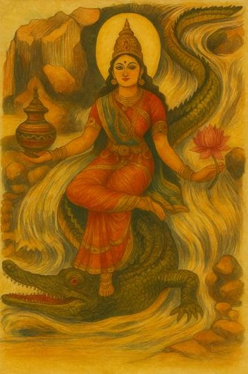
श्रीगङ्गाजी [अग्नि० अ० ५०]
श्रीसरस्वतीजी [अग्नि० अ० ५०]
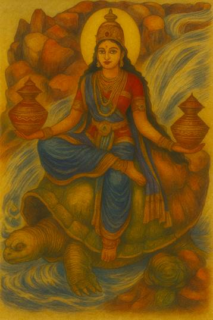
श्रीयमुनाजी [अग्नि० अ० ५०]
अन्यायपूर्वक दूसरेका धन हड़प लेनेको ‘चोरी’ कहते हैं। सुवर्णकी चोरी करनेवाला राजाके द्वारा मूसलसे मारे जानेपर शुद्ध होता है। सुवर्णकी चोरी करनेवाला, सुरापान करनेवाला, ब्रह्मघाती और गुरुपत्नीगामी बारह वर्षतक भूमिपर शयन और जटा धारण करे। वह एक समय केवल पत्ते और फल-मूलका भोजन करनेसे शुद्ध होता है। चोरी अथवा सुरापान करके एक वर्षतक ‘प्राजापत्य-व्रत’ करे। मणि, मोती, मूँगा, ताँबा, चाँदी, लोहा, काँसा और पत्थरकी चोरी करनेवाला बारह दिन चावलके कण खाकर रहे। मनुष्य, स्त्री, क्षेत्र, गृह, बावली, कूप और तालाबका अपहरण करनेपर ‘चान्द्रायण-व्रत’ से शुद्धि मानी गयी है। भक्ष्य एवं भोज्य पदार्थ, सवारी, शय्या, आसन, पुष्प, मूल अथवा फलकी चोरी करनेवाला पञ्चगव्य पीकर शुद्ध होता है। तृण, काष्ठ, वृक्ष, सूखा अन्न, गुड़, वस्त्र, चर्म या मांस चुरानेवाला तीन दिन निराहार रहे। सौतेली माँ, बहन, गुरुपुत्री, गुरुपत्नी और अपनी पुत्रीसे समागम करनेवाला ‘गुरुपत्नीगामी’ माना गया है। गुरुपत्नीगमन करनेपर अपने पापकी घोषणा करके जलते हुए लोहेकी शय्यापर तप्त-लौहमयी स्त्रीका आलिङ्गन करके प्राणत्याग करनेसे शुद्ध होता है। अथवा गुरुपत्नीगामी तीन मासतक ‘चान्द्रायण-व्रत’ करे। पतित स्त्रियोंके लिये भी इसी प्रायश्चित्तका विधान करे। पुरुषको परस्त्रीगमन करनेपर जो प्रायश्चित्त बतलाया गया है, वही उनसे करावे। कुमारी कन्या, चाण्डाली, पुत्री और अपने सपिण्ड तथा पुत्रकी पत्नीमें वीर्यसेचन करनेवालेको प्राणत्याग कर देना चाहिये। द्विज एक रात शूद्राका सेवन करके जो पाप संचित करता है, वह तीन वर्षतक नित्य गायत्री-जप एवं भिक्षान्नका भोजन करनेसे नष्ट होता है। चाची, भाभी, चाण्डाली, पुक्कसी, पुत्रवधू, बहन, सखी, मौसी, बुआ, निक्षिप्ता (धरोहरके रूपमें रखी हुई), शरणागता, मामी, सगोत्रा बहिन, दूसरेको चाहनेवाली स्त्री, शिष्यपत्नी अथवा गुरुपत्नीसे गमन करके, ‘चान्द्रायण-व्रत’ करे॥४०—५४॥
इस प्रकार आदि आग्नेय महापुराणमें ‘अनेकविध प्रायश्चित्तोंका वर्णन’ नामक एक सौ तिहत्तरवाँ अध्याय पूरा हुआ॥१७३॥
एक सौ चौहत्तरवाँ अध्याय
प्रायश्चित्तोंका वर्णन
अग्निदेव कहते हैं—देव-मन्दिरके पूजन आदिका लोप करनेपर प्रायश्चित्त करना चाहिये। पूजाका लोप करनेपर एक सौ आठ बार जप करे और दुगुनी पूजाकी व्यवस्था करके पञ्चोपनिषद्-मन्त्रोंसे हवन कर ब्राह्मण-भोजन करावे। सूतिका स्त्री, अन्त्यज अथवा रजस्वलाके द्वारा देवमूर्तिका स्पर्श होनेपर सौ बार गायत्री-जप करे। दुगुना स्नान करके पञ्चोपनिषद्-मन्त्रोंसे पूजन एवं ब्राह्मण-भोजन कराये। होमका नियम भङ्ग होनेपर होम, स्नान और पूजन करे। होम-द्रव्यको चूहे आदि खा लें या वह कीटयुक्त हो जाय, तो उतना अंश छोड़कर तथा शेष द्रव्यका जलसे प्रोक्षण करके देवताओंका पूजन करे। भले ही अङ्कुरमात्र अर्पण करे, परंतु छिन्न-भिन्न द्रव्यका बहिष्कार कर दे। अस्पृश्य मनुष्योंका स्पर्श हो जानेपर पूजा-द्रव्यको दूसरे पात्रमें रख दे। पूजाके समय मन्त्र अथवा द्रव्यकी त्रुटि होनेपर दैव एवं मानुष विघ्नोंका विनाश करनेवाले गणपतिके बीज-मन्त्रका जप करके पुनः पूजन करे। देव-मन्दिरका कलश नष्ट हो जानेपर सौ बार मन्त्र-जप करे। देवमूर्तिके हाथसे गिरने एवं नष्ट हो जानेपर उपवासपूर्वक अग्निमें सौ आहुतियाँ देनेसे शुभ होता है। जिस पुरुषके मनमें पाप करनेपर पश्चात्ताप होता है, उसके लिये श्रीहरिका स्मरण ही परम प्रायश्चित्त है। चान्द्रायण, पराक एवं प्राजापत्य-व्रत पापसमूहोंका विनाश करनेवाले हैं। सूर्य, शिव, शक्ति और विष्णुके मन्त्रका जप भी पापोंका प्रशमन करता है। गायत्री, प्रणव, पापप्रणाशनस्तोत्र एवं मन्त्रका जप पापोंका अन्त करनेवाला है। सूर्य, शिव, शक्ति और विष्णुके ‘क’ से प्रारम्भ होनेवाले, ‘रा’ बीजसे संयुक्त, रादि आदि और रान्त मन्त्र करोड़गुना फल देनेवाले हैं। इनके सिवा ‘ॐ क्लीं’ से प्रारम्भ होनेवाले चतुर्थ्यन्त एवं अन्तमें ‘नमः’ संयुक्त मन्त्र सम्पूर्ण कामनाओंको सिद्ध करनेवाले हैं। नृसिंह भगवान्के द्वादशाक्षर एवं अष्टाक्षर मन्त्रका जप पापसमूहोंका विनाश करता है। अग्निपुराणका पठन एवं श्रवण करनेसे भी मनुष्य समस्त पापसमूहोंसे छूट जाता है। इस पुराणमें अग्निदेवका माहात्म्य भी वर्णित है। परमात्मा श्रीविष्णु ही मुखस्वरूप अग्निदेव हैं, जिनका सम्पूर्ण वेदोंमें गान किया गया है। भोग और मोक्ष प्रदान करनेवाले उन परमेश्वरका प्रवृत्ति और निवृत्ति-मार्गसे भी पूजन किया जाता है। अग्निरूपमें स्थित श्रीविष्णुके उद्देश्यसे हवन, जप, ध्यान, पूजन, स्तवन एवं नमस्कार शरीर-सम्बन्धी सभी पापोंका विध्वंस करनेवाला है। दस प्रकारके स्वर्णदान, बारह प्रकारके धान्यदान, तुलापुरुष आदि सोलह महादान एवं सर्वश्रेष्ठ अन्नदान—ये सब महापापोंका अपहरण करनेवाले हैं। तिथि, वार, नक्षत्र, संक्रान्ति, योग, मन्वन्तरारम्भ आदिके समय सूर्य, शिव, शक्ति तथा विष्णुके उद्देश्यसे किये जानेवाले व्रत आदि पापोंका प्रशमन करते हैं। गङ्गा, गया, प्रयाग, अयोध्या, उज्जैन, कुरुक्षेत्र, पुष्कर, नैमिषारण्य, पुरुषोत्तमक्षेत्र, शालग्राम, प्रभासक्षेत्र आदि तीर्थ पापसमूहोंको विनष्ट करते हैं। ‘मैं परम प्रकाशस्वरूप बल हूँ।’—इस प्रकारकी धारणा भी पापोंका विनाश करनेवाली है। ब्रह्मपुराण, अग्निपुराण, ब्रह्मा, विष्णु, महेश, भगवान्के अवतार, समस्त देवताओंकी प्रतिमा-प्रतिष्ठा एवं पूजन, ज्यौतिष, पुराण, स्मृतियाँ, तप, व्रत, अर्थशास्त्र, सृष्टिके आदितत्त्व, आयुर्वेद, धनुर्वेद, शिक्षा, छन्दः-शास्त्र, व्याकरण, निरुक्त, कोष, कल्प, न्याय, मीमांसा-शास्त्र एवं अन्य सब कुछ भी भगवान् श्रीविष्णुकी विभूतियाँ हैं। वे श्रीहरि एक होते हुए भी सगुण-निर्गुण दो रूपोंमें विभक्त एवं सम्पूर्ण संसारमें संनिहित हैं। जो ऐसा जानता है, श्रीहरि-स्वरूप उन महापुरुषका दर्शन करनेसे दूसरोंके पाप विनष्ट हो जाते हैं। भगवान् श्रीहरि ही अष्टादश विद्यारूप, सूक्ष्म, स्थूल, सच्चित्-स्वरूप, अविनाशी परब्रह्म एवं निष्पाप विष्णु हैं॥१—२४॥
इस प्रकार आदि आग्नेय महापुराणमें ‘प्रायश्चित्त-वर्णन’ नामक एक सौ चौहत्तरवाँ अध्याय पूरा हुआ॥१७४॥
एक सौ पचहत्तरवाँ अध्याय
व्रतके विषयमें अनेक ज्ञातव्य बातें
अग्निदेव कहते हैं—वसिष्ठजी! अब मैं तिथि, वार, नक्षत्र, दिवस, मास, ऋतु, वर्ष तथा सूर्य-संक्रान्तिके अवसरपर होनेवाले स्त्री-पुरुष-सम्बन्धी व्रत आदिका क्रमशः वर्णन करूँगा, ध्यान देकर सुनिये—॥१॥
शास्त्रोक्त नियमको ही ‘व्रत’ कहते हैं, वही ‘तप’ माना गया है। ‘दम’ (इन्द्रियसंयम) और ‘शम’ (मनोनिग्रह) आदि विशेष नियम भी व्रतके ही अङ्ग हैं। व्रत करनेवाले पुरुषको शारीरिक संताप सहन करना पड़ता है, इसलिये व्रतको ‘तप’ नाम दिया गया है। इसी प्रकार व्रतमें इन्द्रियसमुदायका नियमन (संयम) करना होता है, इसलिये उसे ‘नियम’ भी कहते हैं। जो ब्राह्मण या द्विज (क्षत्रिय-वैश्य) अग्निहोत्री नहीं हैं, उनके लिये व्रत, उपवास, नियम तथा नाना प्रकारके दानोंसे कल्याणकी प्राप्ति बतायी गयी है॥२—४॥
उक्त व्रत-उपवास आदिके पालनसे प्रसन्न होकर देवता एवं भगवान् भोग तथा मोक्ष प्रदान करते हैं। पापोंसे उपावृत (निवृत्त) होकर सब प्रकारके भोगोंका त्याग करते हुए जो सद्गुणोंके साथ वास करता है, उसीको ‘उपवास’ समझना चाहिये। उपवास करनेवाले पुरुषको काँसेके बर्तन, मांस, मसूर, चना, कोदो, साग, मधु, पराये अन्न तथा स्त्री-सम्भोगका त्याग करना चाहिये। उपवासकालमें फूल, अलंकार, सुन्दर वस्त्र, धूप, सुगन्ध, अङ्गराग, दाँत धोनेके लिये मञ्जन तथा दाँतौन—इन सब वस्तुओंका सेवन अच्छा नहीं माना गया है। प्रातःकाल जलसे मुँह धो, कुल्ला करके, पञ्चगव्य लेकर व्रत प्रारम्भ कर देना चाहिये॥५—९॥
अनेक बार जल पीने, पान खाने, दिनमें सोने तथा मैथुन करनेसे उपवास (व्रत) दूषित हो जाता है। क्षमा, सत्य, दया, दान, शौच, इन्द्रियसंयम, देवपूजा, अग्निहोत्र, संतोष तथा चोरीका अभाव—ये दस नियम सामान्यतः सम्पूर्ण व्रतोंमें आवश्यक माने गये हैं। व्रतमें पवित्र ऋचाओंको जपे और अपनी शक्तिके अनुसार हवन करे। व्रती पुरुष प्रतिदिन स्नान तथा परिमित भोजन करे। गुरु, देवता तथा ब्राह्मणोंका पूजन किया करे। क्षार, शहद, नमक, शराब और मांसको त्याग दे। तिल-मूँग आदिके अतिरिक्त धान्य भी त्याज्य हैं। धान्य (अन्न)-में उड़द, कोदो, चीना, देवधान्य, शमीधान्य, गुड़, शितधान्य, पय तथा मूली—ये क्षारगण माने गये हैं। व्रतमें इनका त्याग कर देना चाहिये। धान, साठीका चावल, मूँग, मटर, तिल, जौ, साँवाँ, तिन्नीका चावल और गेहूँ आदि अन्न व्रतमें उपयोगी हैं। कुम्हड़ा, लौकी, बैंगन, पालक तथा पूतिकाको त्याग दे। चरु, भिक्षामें प्राप्त अन्न, सत्तूके दाने, साग, दही, घी, दूध, साँवाँ, अगहनीका चावल, तिन्नीका चावल, जौका हलुवा तथा मूल तण्डुल—ये ‘हविष्य’ माने गये हैं। इन्हें व्रतमें, नक्तव्रतमें तथा अग्निहोत्रमें भी उपयोगी बताया गया है। अथवा मांस, मदिरा आदि अपवित्र वस्तुओंको छोड़कर सभी उत्तम वस्तुएँ व्रतमें हितकर हैं॥१०—१७॥
‘प्राजापत्यव्रत’ का अनुष्ठान करनेवाला द्विज तीन दिन केवल प्रातःकाल और तीन दिन केवल संध्याकालमें भोजन करे। फिर तीन दिन केवल बिना माँगे जो कुछ मिल जाय, उसीका दिनमें एक समय भोजन करे; उसके बाद तीन दिनोंतक उपवास करके रहे। (इस प्रकार यह बारह दिनोंका व्रत है।) इसी प्रकार ‘अतिकृच्छ्र-व्रत’ का अनुष्ठान करनेवाला द्विज पूर्ववत् तीन दिन प्रातःकाल, तीन दिन सायंकाल और तीन दिनोंतक बिना माँगे प्राप्त हुए अन्नका एक-एक ग्रास भोजन करे तथा अन्तिम दिनोंमें उपवास करे। गायका मूत्र, गोबर, दूध, दही, घी तथा कुशका जल—इन सबको मिलाकर प्रथम दिन पीये। फिर दूसरे दिन उपवास करे—यह ‘सांतपनकृच्छ्र’ नामक व्रत है। उपर्युक्त द्रव्योंका पृथक्-पृथक् एक-एक दिनके क्रमसे छः दिनोंतक सेवन करके सातवें दिन उपवास करे—इस प्रकार यह एक सप्ताहका व्रत ‘महासांतपन-कृच्छ्र’ कहलाता है, जो पापोंका नाश करनेवाला है। लगातार बारह दिनोंके उपवाससे सम्पन्न होनेवाले व्रतको ‘पराक’ कहते हैं। यह सब पापोंका नाश करनेवाला है। इससे तिगुने अर्थात् छत्तीस दिनोंतक उपवास करनेपर यही व्रत ‘महापराक’ कहलाता है। पूर्णिमाको पंद्रह ग्रास भोजन करके प्रतिदिन एक-एक ग्रास घटाता रहे; अमावास्याको उपवास करे तथा प्रतिपदाको एक ग्रास भोजन आरम्भ करके नित्य एक-एक ग्रास बढ़ाता रहे, इसे ‘चान्द्रायण’ कहते हैं। इसके विपरीतक्रमसे भी यह व्रत किया जाता है। (जैसे शुक्ल प्रतिपदाको एक ग्रास भोजन करे; फिर एक-एक ग्रास बढ़ाते हुए पूर्णिमाको पंद्रह ग्रास भोजन करे। तत्पश्चात् कृष्ण प्रतिपदासे एक-एक ग्रास घटाकर अमावास्याको उपवास करे)॥१८—२३॥
कपिला गायका मूत्र एक पल, गोबर अँगूठेके आधे हिस्सेके बराबर, दूध सात पल, दही दो पल, घी एक पल तथा कुशका जल एक पल एकमें मिला दे। इनका मिश्रण करते समय गायत्री-मन्त्रसे गोमूत्र डाले। ‘गन्धद्वारां दुराधर्षां०’ (श्रीसूक्त) इस मन्त्रसे गोबर मिलाये। ‘आप्यायस्व०’ (यजु० १२।११२) इस मन्त्रसे दूध डाल दे। ‘दधि क्राव्णो०’ (यजु० २३।३२) इस मन्त्रसे दही मिलाये। ‘तेजोऽसि शुक्रमस्यमृतमसि०’ (यजु० २२।१) इस मन्त्रसे घी डाले तथा ‘देवस्य०’ (यजु० २०।३) इस मन्त्रसे कुशोदक मिलाये। इस प्रकार जो वस्तु तैयार होती है, उसका नाम ‘ब्रह्मकूर्च’ है। ब्रह्मकूर्च तैयार होनेपर दिनभर भूखा रहकर सायंकालमें अघमर्षण-मन्त्र अथवा प्रणवके साथ ‘आपो हि ष्ठा०’ (यजु० ११।५०) इत्यादि ऋचाओंका जप करके उसे पी डाले। ऐसा करनेवाला सब पापोंसे मुक्त हो विष्णुलोकमें जाता है। दिनभर उपवास करके केवल सायंकालमें भोजन करनेवाला, दिनके आठ भागोंमेंसे केवल छठे भागमें आहार ग्रहण करनेवाला संन्यासी, मांसत्यागी, अश्वमेधयज्ञ करनेवाला तथा सत्यवादी पुरुष स्वर्गको जाते हैं। अग्न्याधान, प्रतिष्ठा, यज्ञ, दान, व्रत, देवव्रत, वृषोत्सर्ग, चूडाकरण, मेखलाबन्ध (यज्ञोपवीत), विवाह आदि माङ्गलिक कार्य तथा अभिषेक—ये सब कार्य मलमासमें नहीं करने चाहिये॥२४—३०॥
अमावास्यासे अमावास्यातकका समय ‘चान्द्रमास’ कहलाता है। तीस दिनोंका ‘सावन मास’ माना गया है। संक्रान्तिसे संक्रान्तिकालतक ‘सौरमास’ कहलाता है तथा क्रमशः सम्पूर्ण नक्षत्रोंके परिवर्तनसे ‘नाक्षत्रमास’ होता है। विवाह आदिमें ‘सौरमास’, यज्ञ आदिमें ‘सावन मास’ और वार्षिक श्राद्ध तथा पितृकार्यमें ‘चान्द्रमास’ उत्तम माना गया है। आषाढ़की पूर्णिमाके बाद जो पाँचवाँ पक्ष आता है, उसमें पितरोंका श्राद्ध अवश्य करना चाहिये। उस समय सूर्य कन्याराशिपर गये हैं या नहीं, इसका विचार श्राद्धके लिये अनावश्यक है॥३१—३३॥
मासिक तथा वार्षिक व्रतमें जब कोई तिथि दो दिनकी हो जाय तो उसमें दूसरे दिनवाली तिथि उत्तम जाननी चाहिये और पहलीको मलिन। ‘नक्षत्रव्रत’ में उसी नक्षत्रको उपवास करना चाहिये, जिसमें सूर्य अस्त होते हों। ‘दिवसव्रत’ में दिनव्यापिनी तथा ‘नक्तव्रत’ में रात्रिव्यापिनी तिथियाँ पुण्य एवं शुभ मानी गयी हैं। द्वितीयाके साथ तृतीयाका, चतुर्थी-पञ्चमीका, षष्ठीके साथ सप्तमीका, अष्टमी-नवमीका, एकादशीके साथ द्वादशीका, चतुर्दशीके साथ पूर्णिमाका तथा अमावास्याके साथ प्रतिपदाका वेध उत्तम है। इसी प्रकार षष्ठी-सप्तमी आदिमें भी समझना चाहिये। इन तिथियोंका मेल महान् फल देनेवाला है। इसके विपरीत, अर्थात् प्रतिपदासे द्वितीयाका, तृतीयासे चतुर्थी आदिका जो युग्मभाव है, वह बड़ा भयानक होता है, वह पहलेके किये हुए समस्त पुण्यको नष्ट कर देता है॥३४—३७॥
राजा, मन्त्री तथा व्रतधारी पुरुषोंके लिये विवाहमें, उपद्रव आदिमें, दुर्गम स्थानोंमें, संकटके समय तथा युद्धके अवसरपर तत्काल शुद्धि बतायी गयी है। जिसने दीर्घकालमें समाप्त होनेवाले व्रतको आरम्भ किया है, वह स्त्री यदि बीचमें रजस्वला हो जाय तो वह रज उसके व्रतमें बाधक नहीं होता। गर्भवती स्त्री, प्रसव-गृहमें पड़ी हुई स्त्री अथवा रजस्वला कन्या जब अशुद्ध होकर व्रत करनेयोग्य न रह जाय तो सदा दूसरेसे उस शुभ कार्यका सम्पादन कराये। यदि क्रोधसे, प्रमादसे अथवा लोभसे व्रत-भङ्ग हो जाय तो तीन दिनोंतक भोजन न करे अथवा मूँड़ मुँड़ा ले। यदि व्रत करनेमें असमर्थता हो तो पत्नी या पुत्रसे उस व्रतको करावे। आरम्भ किये हुए व्रतका पालन जननाशौच तथा मरणाशौचमें भी करना चाहिये। केवल पूजनका कार्य बंद कर देना चाहिये। यदि व्रती पुरुष उपवासके कारण मूर्च्छित हो जाय तो गुरु दूध पिलाकर या और किसी उत्तम उपायसे उसे होशमें लाये। जल, फल, मूल, दूध, हविष्य (घी), ब्राह्मणकी इच्छापूर्ति, गुरुका वचन तथा औषध—ये आठ व्रतके नाशक नहीं हैं[१७०]॥३८—४३॥
[१७०] अष्टौ तान्यव्रतघ्नानि आपो मूलं फलं पयः । हविर्ब्राह्मणकाम्या च गुरोर्वचनमौषधम्॥ (अग्नि० १७५।४३)
(व्रती मनुष्य व्रतके स्वामी देवतासे इस प्रकार प्रार्थना करे—) ‘व्रतपते! मैं कीर्ति, संतान विद्या आदि, सौभाग्य, आरोग्य, अभिवृद्धि, निर्मलता तथा भोग एवं मोक्षके लिये इस व्रतका अनुष्ठान करता हूँ। यह श्रेष्ठ व्रत मैंने आपके समक्ष ग्रहण किया है। जगत्पते! आपके प्रसादसे इसमें निर्विघ्न सिद्धि प्राप्त हो। संतोंके पालक! इस श्रेष्ठ व्रतको ग्रहण करनेके पश्चात् यदि इसकी पूर्ति हुए बिना ही मेरी मृत्यु हो जाय तो भी आपके प्रसन्न होनेसे वह अवश्य ही पूर्ण हो जाय। केशव! आप व्रतस्वरूप हैं, संसारकी उत्पत्तिके स्थान एवं जगत्को कल्याण प्रदान करनेवाले हैं; मैं सम्पूर्ण मनोरथोंकी सिद्धिके लिये इस मण्डलमें आपका आवाहन करता हूँ। आप मेरे समीप उपस्थित हों। मनके द्वारा प्रस्तुत किये हुए पञ्चगव्य, पञ्चामृत तथा उत्तम जलके द्वारा मैं भक्तिपूर्वक आपको स्नान कराता हूँ। आप मेरे पापोंके नाशक हों। अर्घ्यपते! गन्ध, पुष्प और जलसे युक्त उत्तम अर्घ्य एवं पाद्य ग्रहण कीजिये, आचमन कीजिये तथा मुझे सदा अर्घ (सम्मान) पानेके योग्य बनाइये। वस्त्रपते! व्रतोंके स्वामी! यह पवित्र वस्त्र ग्रहण कीजिये और मुझे सदा सुन्दर वस्त्र एवं आभूषणों आदिसे आच्छादित किये रहिये। गन्धस्वरूप परमात्मन्! यह परम निर्मल उत्तम सुगन्धसे युक्त चन्दन लीजिये तथा मुझे पापकी दुर्गन्धसे रहित और पुण्यकी सुगन्धसे युक्त कीजिये। भगवन्! यह पुष्प लीजिये और मुझे सदा फल-फूल आदिसे परिपूर्ण बनाइये। यह फूलकी निर्मल सुगन्ध आयु तथा आरोग्यकी वृद्धि करनेवाली हो। संतोंके स्वामी! गुग्गुल और घी मिलाये हुए इस दशाङ्ग धूपको ग्रहण कीजिये। धूपद्वारा पूजित परमेश्वर! आप मुझे उत्तम धूपकी सुगन्धसे सम्पन्न कीजिये। दीपस्वरूप देव! सबको प्रकाशित करनेवाले इस प्रकाशपूर्ण दीपको, जिसकी शिखा ऊपरकी ओर उठ रही है, ग्रहण कीजिये और मुझे भी प्रकाशयुक्त एवं ऊर्ध्वगति (उन्नतिशील एवं ऊपरके लोकोंमें जानेवाला) बनाइये। अन्न आदि उत्तम वस्तुओंके अधीश्वर! इस अन्न आदि नैवेद्यको ग्रहण कीजिये और मुझे ऐसा बनाइये, जिससे मैं अन्न आदि वैभवसे सम्पन्न, अन्नदाता एवं सर्वस्वदान करनेवाला हो सकूँ। प्रभो! व्रतके द्वारा आराध्य देव! मैंने मन्त्र, विधि तथा भक्तिके बिना ही जो आपका पूजन किया है, वह आपकी कृपासे परिपूर्ण—सफल हो जाय। आप मुझे धर्म, धन, सौभाग्य, गुण, संतति, कीर्ति, विद्या, आयु, स्वर्ग एवं मोक्ष प्रदान करें। व्रतपते! प्रभो! आप इस समय मेरे द्वारा की हुई इस पूजाको स्वीकार करके पुनः यहाँ पधारने और वरदान देनेके लिये अपने स्थानको जायँ’॥४४—५८॥
सब प्रकारके व्रतोंमें व्रतधारी पुरुषको उचित है कि वह स्नान करके व्रत-सम्बन्धी देवताकी स्वर्णमयी प्रतिमाका यथाशक्ति पूजन करे तथा रातको भूमिपर सोये। व्रतके अन्तमें जप, होम और दान सामान्य कर्तव्य है। साथ ही अपनी शक्तिके अनुसार चौबीस, बारह, पाँच, तीन अथवा एक ब्राह्मणकी एवं गुरुजनोंकी पूजा करके उन्हें भोजन करावे और यथाशक्ति सबको पृथक्-पृथक् गौ, सुवर्ण आदि; खड़ाऊँ, जूता, जलपात्र, अन्नपात्र, मृत्तिका, छत्र, आसन, शय्या, दो वस्त्र और कलश आदि वस्तुएँ दक्षिणामें दे। इस प्रकार यहाँ ‘व्रत’ की परिभाषा बतायी गयी है॥५९—६२॥
इस प्रकार आदि आग्नेय महापुराणमें ‘व्रत-परिभाषाका वर्णन’ नामक एक सौ पचहत्तरवाँ अध्याय पूरा हुआ॥१७५॥
एक सौ छिहत्तरवाँ अध्याय
प्रतिपदा तिथिके व्रत
अग्निदेव कहते हैं—अब मैं आपसे प्रतिपद् आदि तिथियोंके व्रतोंका वर्णन करूँगा, जो सम्पूर्ण मनोरथोंको देनेवाले हैं। कार्तिक, आश्विन और चैत्र मासमें कृष्णपक्षकी प्रतिपद् ब्रह्माजीकी तिथि है। पूर्णिमाको उपवास करके प्रतिपद्को ब्रह्माजीका पूजन करे। पूजा ‘ॐ तत्सद्ब्रह्मणे नमः।’—इस मन्त्रसे अथवा गायत्री-मन्त्रसे करनी चाहिये। यह व्रत एक वर्षतक करे। ब्रह्माजीके सुवर्णमय विग्रहका पूजन करे, जिसके दाहिने हाथोंमें स्फटिकाक्षकी माला और स्रुवा हों तथा बायें हाथोंमें स्रुक् एवं कमण्डलु हों। साथ ही लंबी दाढ़ी और सिरपर जटा भी हो। यथाशक्ति दूध चढ़ावे और मनमें यह उद्देश्य रखे कि ‘ब्रह्माजी मुझपर प्रसन्न हों।’ यों करनेवाला मनुष्य निष्पाप होकर स्वर्गमें उत्तम भोग भोगता है और पृथ्वीपर धनवान् ब्राह्मणके रूपमें जन्म लेता है॥१—४॥
अब ‘धन्यव्रत’ का वर्णन करता हूँ। इसका अनुष्ठान करनेसे अधन्य भी धन्य हो जाता है। पहले मार्गशीर्ष-मासकी प्रतिपद्को उपवास करके रातमें ‘अग्नये नमः।’—इस मन्त्रसे होम और अग्निकी पूजा करे। इसी प्रकार एक वर्षतक प्रत्येक मासकी प्रतिपद्को अग्निकी आराधना करनेसे मनुष्य सब सुखोंका भागी होता है। प्रत्येक प्रतिपदाको एकभुक्त (दिनमें एक समय भोजन करके) रहे। सालभरमें व्रतकी समाप्ति होनेपर ब्राह्मण कपिला गौ दान करे। ऐसा करनेवाला मनुष्य ‘वैश्वानर’-पदको प्राप्त होता है। यह ‘शिखिव्रत’ कहलाता है॥५—७॥
इस प्रकार आदि आग्नेय महापुराणमें ‘प्रतिपद्-व्रतोंका वर्णन’ नामक एक सौ छिहत्तरवाँ अध्याय पूरा हुआ॥१७६॥
एक सौ सतहत्तरवाँ अध्याय
द्वितीया तिथिके व्रत
अग्निदेव कहते हैं—अब मैं द्वितीयाके व्रतोंका वर्णन करूँगा, जो भोग और मोक्ष आदि देनेवाले हैं। प्रत्येक मासकी द्वितीयाको फूल खाकर रहे और दोनों अश्विनीकुमार नामक देवताओंकी पूजा करे। एक वर्षतक इस व्रतके अनुष्ठानसे सुन्दर स्वरूप एवं सौभाग्यकी प्राप्ति होती है और अन्तमें व्रती पुरुष स्वर्गलोकका भागी होता है। कार्तिकमें शुक्लपक्षकी द्वितीयाको यमकी पूजा करे। फिर एक वर्षतक प्रत्येक शुक्ल-द्वितीयाको उपवासपूर्वक व्रत रखे। ऐसा करनेवाला पुरुष स्वर्गमें जाता है, नरकमें नहीं पड़ता॥१-२॥
अब ‘अशून्य-शयन’ नामक व्रत बतलाता हूँ, जो स्त्रियोंको अवैधव्य (सदा सुहाग) और पुरुषोंको पत्नी-सुख आदि देनेवाला है। श्रावण मासके कृष्णपक्षकी द्वितीयाको इस व्रतका अनुष्ठान करना चाहिये। (इस व्रतमें भगवान्से इस प्रकार प्रार्थना की जाती है—) ‘वक्षःस्थलमें श्रीवत्सचिह्न धारण करनेवाले श्रीकान्त! आप लक्ष्मीजीके धाम और स्वामी हैं; अविनाशी एवं सनातन परमेश्वर हैं। आपकी कृपासे धर्म, अर्थ और काम प्रदान करनेवाला मेरा गार्हस्थ्य-आश्रम नष्ट न हो। मेरे घरके अग्निहोत्रकी आग कभी न बुझे, गृहदेवता कभी अदृश्य न हों। मेरे पितर नाशसे बचे रहें और मुझसे दाम्पत्य-भेद न हो। जैसे आप कभी लक्ष्मीजीसे विलग नहीं होते, उसी प्रकार मेरा भी पत्नीके साथका सम्बन्ध कभी टूटने या छूटने न पावे। वरदानी प्रभो! जैसे आपकी शय्या कभी लक्ष्मीजीसे सूनी नहीं होती, मधुसूदन! उसी प्रकार मेरी शय्या भी पत्नीसे सूनी न हो।’ इस प्रकार व्रत आरम्भ करके एक वर्षतक प्रतिमासकी द्वितीयाको श्रीलक्ष्मी और विष्णुका विधिवत् पूजन करे। शय्या और फलका दान भी करे। साथ ही प्रत्येक मासमें उसी तिथिको चन्द्रमाके लिये मन्त्रोच्चारणपूर्वक अर्घ्य दे। (अर्घ्यका मन्त्र—) ‘भगवान् चन्द्रदेव! आप गगन-प्राङ्गणके दीपक हैं। क्षीरसागरके मन्थनसे आपका आविर्भाव हुआ है। आप अपनी प्रभासे सम्पूर्ण दिङ्मण्डलको प्रकाशित करते हैं। भगवती लक्ष्मीके छोटे भाई! आपको नमस्कार है।’[१७१] तत्पश्चात् ‘ॐ श्रं श्रीधराय नमः।’—इस मन्त्रसे सोमस्वरूप श्रीहरिका पूजन करे। ‘घं टं हं सं श्रियै नमः।’—इस मन्त्रसे लक्ष्मीजीकी तथा ‘दशरूपमहात्मने नमः।’—इस मन्त्रसे श्रीविष्णुकी पूजा करे। रातमें घीसे हवन करके ब्राह्मणको शय्या-दान करे। उसके साथ दीप, अन्नसे भरे हुए पात्र, छाता, जूता, आसन, जलसे भरा कलश, श्रीहरिकी प्रतिमा तथा पात्र भी ब्राह्मणको दे। जो इस प्रकार उक्त व्रतका पालन करता है, वह भोग और मोक्षका भागी होता है॥३—१२॥
[१७१] गगनाङ्गणसंदीप दुग्धाब्धिमथनोद्भव॥ भाभासितदिगाभोग रमानुज नमोऽस्तु ते । (अग्नि० १७७।९-१०)
अब ‘कान्तिव्रत’ का वर्णन करता हूँ। इसका प्रारम्भ कार्तिक शुक्ला द्वितीयाको करना चाहिये। दिनमें उपवास और रातमें भोजन करे। इसमें बलराम तथा भगवान् श्रीकृष्णका पूजन करे। एक वर्षतक ऐसा करनेसे व्रती पुरुष कान्ति, आयु और आरोग्य आदि प्राप्त करता है॥१३-१४॥
अब मैं ‘विष्णुव्रत’ का वर्णन करूँगा, जो मनोवाञ्छित फलको देनेवाला है। पौष मासके शुक्लपक्षकी द्वितीयासे आरम्भ करके लगातार चार दिनोंतक इस व्रतका अनुष्ठान किया जाता है। पहले दिन सरसों-मिश्रित जलसे स्नानका विधान है। दूसरे दिन काले तिल मिलाये हुए जलसे स्नान बताया गया है। तीसरे दिन वचा या वच नामक ओषधिसे युक्त जलके द्वारा तथा चौथे दिन सर्वौषधि-मिश्रित जलके द्वारा स्नान करना चाहिये। मुरा (कपूर-कचरी), वचा (वच), कुष्ठ (कूठ), शैलेय (शिलाजीत या भूरिछरीला), दो प्रकारकी हल्दी (गाँठ हल्दी और दारुहल्दी), कचूर, चम्पा और मोथा—यह ‘सर्वौषधि-समुदाय’ कहा गया है। पहले दिन ‘श्रीकृष्णाय नमः।’, दूसरे दिन ‘अच्युताय नमः।’, तीसरे दिन ‘अनन्ताय नमः।’ और चौथे दिन ‘हृषीकेशाय नमः।’ इस नाम-मन्त्रसे क्रमशः भगवान्के चरण, नाभि, नेत्र एवं मस्तकपर पुष्प समर्पित करते हुए पूजन करना चाहिये। प्रतिदिन प्रदोषकालमें चन्द्रमाको अर्घ्य देना चाहिये। पहले दिनके अर्घ्यमें ‘शशिने नमः।’, दूसरे दिनके अर्घ्यमें ‘चन्द्राय नमः।’, तीसरे दिन ‘शशाङ्काय नमः।’ और चौथे दिन ‘इन्दवे नमः।’ का उच्चारण करना चाहिये। रातमें जबतक चन्द्रमा दिखायी देते हों, तभीतक मनुष्यको भोजन कर लेना चाहिये। व्रती पुरुष छः मास या एक सालतक इस व्रतका पालन करके सम्पूर्ण मनोवाञ्छित फलको प्राप्त कर लेता है। पूर्वकालमें राजाओंने, स्त्रियोंने और देवता आदिने भी इस व्रतका अनुष्ठान किया था॥१५—२०॥
इस प्रकार आदि आग्नेय महापुराणमें ‘द्वितीया-सम्बन्धी व्रतका वर्णन’ नामक एक सौ सतहत्तरवाँ अध्याय पूरा हुआ॥१७७॥
एक सौ अठहत्तरवाँ अध्याय
तृतीया तिथिके व्रत
अग्निदेव कहते हैं—वसिष्ठ! अब मैं आपके सम्मुख तृतीया तिथिको किये जानेवाले व्रतोंका वर्णन करूँगा, जो भोग और मोक्ष प्रदान करनेवाले हैं। ललितातृतीयाको किये जानेवाले मूलगौरी-सम्बन्धी (सौभाग्यशयन) व्रतको सुनिये॥१॥
चैत्रके शुक्लपक्षकी तृतीयाको ही पार्वतीका भगवान् शिवके साथ विवाह हुआ था। इसलिये इस दिन तिलमिश्रित जलसे स्नान करके पार्वतीसहित भगवान् शंकरकी स्वर्णाभूषण और फल आदिसे पूजा करनी चाहिये॥२॥
‘नमोऽस्तु पाटलायै’ (पाटला देवीको नमस्कार)—यह कहकर पार्वतीदेवी और भगवान् शंकरके चरणोंका पूजन करे। ‘शिवाय नमः’ (भगवान् शिवको नमस्कार)—यह कहकर शिवकी और ‘जयायै नमः’ (जयाको नमस्कार)—यों कहकर गौरी देवीकी अर्चना करे। ‘त्रिपुरघ्नाय रुद्राय नमः’ (त्रिपुरविनाशक रुद्रदेवको नमस्कार) तथा ‘भवान्यै नमः’ (भवानीको नमस्कार)—यह कहकर क्रमशः शिव-पार्वतीकी दोनों जङ्घाओंका और ‘रुद्रायेश्वराय नमः’ (सबके ईश्वर रुद्रदेवको नमस्कार है) एवं ‘विजयायै नमः’ (विजयाको नमस्कार)—यह कहकर क्रमशः शंकर और पार्वतीके घुटनोंका पूजन करे। ‘ईशायै नमः’ (सर्वेश्वरीको नमस्कार)—यह कहकर देवीके और ‘शंकराय नमः’—ऐसा कहकर शंकरके कटिभागकी पूजा करे। ‘कोटव्यै नमः’ (कोटवीदेवीको नमस्कार) और ‘शूलपाणये नमः’ (त्रिशूलधारीको नमस्कार)—यों कहकर क्रमशः गौरीशंकरके कुक्षिदेशका पूजन करे। ‘मङ्गलायै नमः’ (मङ्गलादेवीको नमस्कार) कहकर भवानीके और ‘तुभ्यं नमः’ (आपको नमस्कार)—यह कहकर शंकरके उदरका पूजन करे। ‘सर्वात्मने नमः’ (सम्पूर्ण प्राणियोंके आत्मभूत शिवको नमस्कार)—यों कहकर रुद्रके और ‘ईशान्यै नमः’ (ईशानीको नमस्कार) कहकर पार्वतीके स्तनयुगलका पूजन करे। ‘देवात्मने नमः’ (देवताओंके आत्मभूत शंकरको नमस्कार)—कहकर शिवके और उसी प्रकार ‘ह्रादिन्यै नमः’ (सबको आह्लाद प्रदान करनेवाली गौरीको नमस्कार) कहकर पार्वतीके कण्ठप्रदेशकी अर्चना करे। ‘महादेवाय नमः’ (महादेवको नमस्कार) और ‘अनन्तायै नमः’ (अनन्ताको नमस्कार) कहकर क्रमशः शिव-पार्वतीके दोनों हाथोंका पूजन करे। ‘त्रिलोचनाय नमः’ (त्रिलोचनको नमस्कार) और ‘कालानलप्रियायै नमः’ (कालाग्निस्वरूप शिवकी प्रियतमाको नमस्कार) कहकर भुजाओंका तथा ‘महेशाय नमः’ (महेश्वरको नमस्कार) एवं ‘सौभाग्यायै नमः’ (सौभाग्यवतीको नमस्कार) कहकर शिव-पार्वतीके आभूषणोंकी पूजा करे। तदनन्तर ‘अशोकमधुवासिन्यै नमः’ (अशोक-पुष्पके मधुसे सुवासित पार्वतीको नमस्कार) और ‘ईश्वराय नमः’ (ईश्वरको नमस्कार) कहकर दोनोंके ओष्ठभागका तथा ‘चतुर्मुखप्रियायै नमः’ (चतुर्मुख ब्रह्माकी प्रिय पुत्रवधूको नमस्कार) और ‘हराय स्थाणवे नमः’ (पापहारी स्थाणुस्वरूप शिवको नमस्कार) कहकर क्रमशः गौरीशंकरके मुखका पूजन करे। ‘अर्धनारीशाय नमः’ (अर्धनारीश्वरको नमस्कार) कहकर शिवकी और ‘अमिताङ्गायै नमः’ (अपरिमित अङ्गोंवाली देवीको नमस्कार) कहकर पार्वतीकी नासिकाका पूजन करे। ‘उग्राय नमः’ (उग्रस्वरूप शिवको नमस्कार) कहकर लोकेश्वर शिवका और ‘ललितायै नमः’ (ललिताको नमस्कार) कहकर पार्वतीकी भौंहोंका पूजन करे। ‘शर्वाय नमः’ (शर्वको नमस्कार) कहकर त्रिपुरारि शिवके और ‘वासन्त्यै नमः’ (वासन्तीदेवीको नमस्कार) कहकर पार्वतीके तालुप्रदेशका पूजन करे। ‘श्रीकण्ठनाथायै नमः’ (श्रीकण्ठ शिवकी पत्नी उमाको नमस्कार) और ‘शितिकण्ठाय नमः’ (नीलकण्ठको नमस्कार) कहकर गौरी-शंकरके केशपाशका पूजन करे। ‘भीमोग्राय नमः’ (भयंकर एवं उग्रस्वरूप धारण करनेवाले शिवको नमस्कार) कहकर शंकरके और ‘सुरूपिण्यै नमः’ (सुन्दर रूपवतीको नमस्कार) कहकर भगवती उमाके शिरोभागकी अर्चना करे। ‘सर्वात्मने नमः’ (सर्वात्मा शिवको नमस्कार) कहकर पूजाका उपसंहार करे॥३—११॥
शिवकी पूजाके लिये ये पुष्प क्रमशः चैत्रादि मासोंमें ग्रहण करनेयोग्य बताये गये हैं—मल्लिका, अशोक, कमल, कुन्द, तगर, मालती, कदम्ब, कनेर, नीले रंगका सदाबहार, अम्लान (आँ बोली), कुङ्कुम और सेंधुवार॥१२-१३॥
उमा-महेश्वरका पूजन करके उनके सम्मुख अष्ट सौभाग्य-द्रव्य रख दे। घृतमिश्रित निष्पाव (एक द्विदल), कुसुम्भ (केसर), दुग्ध, जीवक (एक ओषधिविशेष), दूर्वा, ईख, नमक और कुस्तुम्बुरु (धनियाँ)—ये अष्ट सौभाग्य-द्रव्य हैं। चैत्रमासमें पहाड़ोंके शिखरोंका (गङ्गा आदिका) जल पान करके रुद्रदेव और पार्वतीदेवीके आगे शयन करे।[१७२] प्रातःकाल स्नान करके गौरी-शंकरका पूजन कर ब्राह्मण-दम्पतिकी अर्चना करे और वह अष्ट सौभाग्य-द्रव्य ‘ललिता प्रीयतां मम।’ (ललिता मुझपर प्रसन्न हों)—ऐसा कहकर ब्राह्मणको दे॥१४—१६॥
[१७२] उमामहेश्वरौ पूज्य सौभाग्याष्टकमग्रतः । स्थापयेद् घृतनिष्पावकुसुम्भक्षीरजीवकम्॥ तृणराजेक्षुलवणं कुस्तुम्बुरुमथाष्टकम् । चैत्रे शृङ्गोदकं प्राश्य देवदेव्यग्रतः स्वपेत्॥ (अग्नि० १७८।१४-१५)
व्रत करनेवालेको चैत्रादि मासोंमें व्रतके दिन क्रमशः यह आहार करना चाहिये—चैत्रमें शृङ्गजल (झरनेका जल), वैशाखमें गोबर, ज्येष्ठमें मन्दार (आक)-का पुष्प, आषाढ़में बिल्वपत्र, श्रावणमें कुशजल, भाद्रपदमें दही, आश्विनमें दुग्ध, कार्तिकमें घृतमिश्रित दधि, मार्गशीर्षमें गोमूत्र, पौषमें घृत, माघमें काले तिल और फाल्गुनमें पञ्चगव्य। ललिता, विजया, भद्रा, भवानी, कुमुदा, शिवा, वासुदेवी, गौरी, मङ्गला, कमला और सती—चैत्रादि मासोंमें सौभाग्याष्टकके दानके समय उपर्युक्त नामोंका ‘प्रीयतां मम’ से संयुक्त करके उच्चारण करे। व्रतके पूर्ण होनेपर किसी एक फलका सदाके लिये त्याग कर दे तथा गुरुदेवको तकियोंसे युक्त शय्या, उमा-महेश्वरकी स्वर्णनिर्मित प्रतिमा एवं गौसहित वृषभका दान करे। गुरु और ब्राह्मण-दम्पतिका वस्त्र आदिसे सत्कार करके साधक भोग और मोक्ष—दोनोंको प्राप्त कर लेता है। इस ‘सौभाग्यशयन’ नामक व्रतके अनुष्ठानसे मनुष्य सौभाग्य, आरोग्य, रूप और दीर्घायु प्राप्त करता है॥१७—२१॥
यह व्रत भाद्रपद, वैशाख और मार्गशीर्षके शुक्लपक्षकी तृतीयाको भी किया जा सकता है। इसमें ‘ललितायै नमः’ (ललिताको नमस्कार)—इस प्रकार कहकर पार्वतीका पूजन करे। तदनन्तर व्रतकी समाप्तिके समय प्रत्येक पक्षमें ब्राह्मण-दम्पतिकी पूजा करनी चाहिये। उनकी चौबीस वस्त्र आदिसे अर्चना करके मनुष्य भोग और मोक्ष—दोनोंको प्राप्त कर लेता है। ‘सौभाग्यशयन’ की यह दूसरी विधि बतायी गयी। अब मैं ‘सौभाग्यव्रत’ के विषयमें कहता हूँ। फाल्गुन आदि मासोंमें शुक्लपक्षकी तृतीयाको व्रत करनेवाला नमकका परित्याग करे। व्रत समाप्त होनेपर ब्राह्मण-दम्पतिका पूजन करके ‘भवानी प्रीयताम्।’ (भवानी प्रसन्न हों) कहकर शय्या और सम्पूर्ण सामग्रियोंसे युक्त गृहका दान करे। यह ‘सौभाग्य-तृतीया’ व्रत कहा गया, जो पार्वती आदिके लोकोंको प्रदान करनेवाला है। इसी प्रकार माघ, भाद्रपद और वैशाखकी तृतीयाको व्रत करना चाहिये॥२२—२६॥
चैत्रमें ‘दमनक-तृतीया’ का व्रत करके पार्वतीकी ‘दमनक’ नामक पुष्पोंसे पूजन करनी चाहिये। मार्गशीर्षमें ‘आत्म-तृतीया’ का व्रत किया जाता है। इसमें पार्वतीका पूजन करके ब्राह्मणको इच्छानुसार भोजन करावे। मार्गशीर्षकी तृतीयासे आरम्भ करके, क्रमशः पौष आदि मासोंमें उपर्युक्त व्रतका अनुष्ठान करके निम्नलिखित नामोंको ‘प्रीयताम्’ से संयुक्त करके, कहे—गौरी, काली, उमा, भद्रा, दुर्गा, कान्ति, सरस्वती, वैष्णवी, लक्ष्मी, प्रकृति, शिवा और नारायणी। इस प्रकार व्रत करनेवाला सौभाग्य और स्वर्गको प्राप्त करता है॥२७-२८॥
इस प्रकार आदि आग्नेय महापुराणमें ‘तृतीयाके व्रतोंका वर्णन’ नामक एक सौ अठहत्तरवाँ अध्याय पूरा हुआ॥१७८॥
एक सौ उनासीवाँ अध्याय
चतुर्थी तिथिके व्रत
अग्निदेव कहते हैं—वसिष्ठ! अब मैं आपके सम्मुख भोग और मोक्ष प्रदान करनेवाले चतुर्थी-सम्बन्धी व्रतोंका वर्णन करता हूँ। माघके शुक्लपक्षकी चतुर्थीको उपवास करके गणेशका पूजन करे। तदनन्तर पञ्चमीको तिलका भोजन करे। ऐसा करनेसे मनुष्य बहुत वर्षोंतक विघ्नरहित होकर सुखी रहता है। ‘गं स्वाहा।’—यह मूलमन्त्र है। ‘गां नमः।’ आदिसे हृदयादिका न्यास करे[१७३]॥१-२॥
[१७३] निम्नलिखित विधिसे हृदयादि षडङ्गोंका न्यास करे— ‘गां हृदयाय नमः । गीं शिरसे स्वाहा । गूं शिखायै वषट् । गैं नेत्रत्रयाय वौषट्॥ गौं कवचाय हुम् । गः अस्त्राय फट्।’
‘आगच्छोल्काय’ कहकर गणेशका आवाहन और ‘गच्छोल्काय’ कहकर विसर्जन करे। इस प्रकार आदिमें गकारयुक्त और अन्तमें ‘उल्का’ शब्दयुक्त मन्त्रसे उनके आवाहनादि कार्य करे। गन्धादि उपचारों एवं लड्डुओं आदिद्वारा गणपतिका पूजन करे॥३॥
(तदनन्तर निम्नलिखित गणेश-गायत्रीका जप करे—) ॐ महोल्काय विद्महे वक्रतुण्डायधीमहि । तन्नो दन्ती प्रचोदयात्॥ भाद्रपदके शुक्लपक्षकी चतुर्थीको व्रत करनेवाला शिवलोकको प्राप्त करता है। ‘अङ्गारक-चतुर्थी’ (मङ्गलवारसे युक्त चतुर्थी)-को गणेशका पूजन करके मनुष्य सम्पूर्ण अभीष्ट वस्तुओंको प्राप्त कर लेता है। फाल्गुनकी चतुर्थीको रात्रिमें ही भोजन करे। यह ‘अविघ्ना चतुर्थी’ के नामसे प्रसिद्ध है। चैत्र मासकी चतुर्थीको ‘दमनक’ नामक पुष्पोंसे गणेशका पूजन करके मनुष्य सुख-भोग प्राप्त करता है॥४—६॥
इस प्रकार आदि आग्नेय महापुराणमें ‘चतुर्थीके व्रतोंका कथन’ नामक एक सौ उनासीवाँ अध्याय पूरा हुआ॥१७९॥
एक सौ अस्सीवाँ अध्याय
पञ्चमी तिथिके व्रत
अग्निदेव कहते हैं—वसिष्ठ! अब मैं आरोग्य, स्वर्ग और मोक्ष प्रदान करनेवाले पञ्चमी-व्रतका वर्णन करता हूँ। श्रावण, भाद्रपद, आश्विन और कार्तिकके शुक्लपक्षकी पञ्चमीको वासुकि, तक्षक, कालिय, मणिभद्र, ऐरावत, धृतराष्ट्र, कर्कोटक और धनंजय नामक नागोंका पूजन करना चाहिये॥१-२॥
ये सभी नाग अभय, आयु, विद्या, यश और लक्ष्मी प्रदान करनेवाले हैं॥३॥
इस प्रकार आदि आग्नेय महापुराणमें ‘पञ्चमीके व्रतोंका वर्णन’ नामक एक सौ अस्सीवाँ अध्याय पूरा हुआ॥१८०॥
एक सौ इक्यासीवाँ अध्याय
षष्ठी तिथिके व्रत
अग्निदेव कहते हैं—अब मैं षष्ठी-सम्बन्धी व्रतोंको कहता हूँ। कार्तिकके कृष्णपक्षकी षष्ठीको फलमात्रका भोजन करके कार्तिकेयके लिये अर्घ्यदान करना चाहिये। इससे मनुष्य भोग और मोक्ष प्राप्त करता है। इसे ‘स्कन्दषष्ठी-व्रत’ कहते हैं। भाद्रपदके कृष्णपक्षकी षष्ठी तिथिमें ‘अक्षयषष्ठी व्रत’ करना चाहिये। इसे मार्गशीर्षमें भी करना चाहिये। इस अक्षयषष्ठीके दिन किसी भी एक वर्ष निराहार रहनेसे मानव भोग और मोक्ष प्राप्त कर लेता है॥१-२॥
इस प्रकार आदि आग्नेय महापुराणमें ‘षष्ठीके व्रतोंका वर्णन’ नामक एक सौ इक्यासीवाँ अध्याय पूरा हुआ॥१८१॥
एक सौ बयासीवाँ अध्याय
सप्तमी तिथिके व्रत
अग्निदेव कहते हैं—वसिष्ठ! अब मैं सप्तमी तिथिके व्रत कहूँगा। यह सबको भोग और मोक्ष प्रदान करनेवाला है। माघ मासके शुक्लपक्षकी सप्तमी तिथिको (अष्टदल अथवा द्वादशदल) कमलका निर्माण करके उसमें भगवान् सूर्यका पूजन करना चाहिये। इससे मनुष्य शोकरहित हो जाता है॥१॥
भाद्रपद मासमें शुक्लपक्षकी सप्तमीको भगवान् आदित्यका पूजन करनेसे समस्त अभीष्ट वस्तुओंकी प्राप्ति होती है। पौषमासमें शुक्लपक्षकी सप्तमीको निराहार रहकर सूर्यदेवका पूजन करनेसे सारे पापोंका विनाश होता है॥२॥
माघके कृष्णपक्षमें ‘सर्वाप्ति-सप्तमी’ का व्रत करना चाहिये। इससे सभी अभीष्ट वस्तुओंकी प्राप्ति होती है। फाल्गुनके कृष्णपक्षमें ‘नन्द-सप्तमी’ का व्रत करना चाहिये। मार्गशीर्षके शुक्ल-पक्षमें ‘अपराजिता सप्तमी’ को भगवान् सूर्यका पूजन और व्रत करना चाहिये। एक वर्षतक मार्गशीर्षके शुक्लपक्षका ‘पुत्रीया सप्तमी’ व्रत स्त्रियोंको पुत्र प्रदान करनेवाला है॥३-४॥
इस प्रकार आदि आग्नेय महापुराणमें ‘सप्तमीके व्रतोंका वर्णन’ नामक एक सौ बयासीवाँ अध्याय पूरा हुआ॥१८२॥
एक सौ तिरासीवाँ अध्याय
अष्टमी तिथिके व्रत
अग्निदेव कहते हैं—वसिष्ठ! अब मैं अष्टमीको किये जानेवाले व्रतोंका वर्णन करूँगा। उनमें पहला रोहिणी नक्षत्रयुक्त अष्टमीका व्रत है। भाद्रपद मासके कृष्णपक्षकी रोहिणी नक्षत्रसे युक्त अष्टमी तिथिको ही अर्धरात्रिके समय भगवान् श्रीकृष्णका प्राकट्य हुआ था, इसलिये इसी अष्टमीको उनकी जयन्ती मनायी जाती है। इस तिथिको उपवास करनेसे मनुष्य सात जन्मोंके किये हुए पापोंसे मुक्त हो जाता है॥१-२॥
अतएव भाद्रपदके कृष्णपक्षकी रोहिणीनक्षत्रयुक्त अष्टमीको उपवास रखकर भगवान् श्रीकृष्णका पूजन करना चाहिये। यह भोग और मोक्ष प्रदान करनेवाला है॥३॥
(पूजनकी विधि इस प्रकार है—) आवाहन-मन्त्र और नमस्कार आवाहयाम्यहं कृष्णं बलभद्रं च देवकीम् । वसुदेवं यशोदां गाः पूजयामि नमोऽस्तु ते॥ योगाय योगपतये योगेशाय नमो नमः । योगादिसम्भवायैव गोविन्दाय नमो नमः॥ ‘मैं श्रीकृष्ण, बलभद्र, देवकी, वसुदेव, यशोदादेवी और गौओंका आवाहन एवं पूजन करता हूँ; आप सबको नमस्कार है। योगस्वरूप, योगपति एवं योगेश्वर श्रीकृष्णके लिये नमस्कार है। योगके आदिकारण, उत्पत्तिस्थान श्रीगोविन्दके लिये बारंबार नमस्कार है’॥४-५॥
तदनन्तर भगवान् श्रीकृष्णको स्नान कराये और इस मन्त्रसे उन्हें अर्घ्यदान करे— यज्ञेश्वराय यज्ञाय यज्ञानां पतये नमः॥ यज्ञादिसम्भवायैव गोविन्दाय नमो नमः । ‘यज्ञेश्वर, यज्ञस्वरूप, यज्ञोंके अधिपति एवं यज्ञके आदि कारण श्रीगोविन्दको बारंबार नमस्कार है।’ पुष्प-धूप गृहाण देव पुष्पाणि सुगन्धीनि प्रियाणि ते॥ सर्वकामप्रदो देव भव मे देववन्दित । धूपधूपित धूपं त्वं धूपितैस्त्वं गृहाण मे॥ सुगन्धिधूपगन्धाढ्यं कुरु मां सर्वदा हरे । ‘देव! आपके प्रिय ये सुगन्धयुक्त पुष्प ग्रहण कीजिये। देवताओंद्वारा पूजित भगवन्! मेरी सारी कामनाएँ सिद्ध कीजिये। आप धूपसे सदा धूपित हैं, मेरे द्वारा अर्पित धूप-दानसे आप धूपकी सुगन्ध ग्रहण कीजिये। श्रीहरे! मुझे सदा सुगन्धित पुष्पों, धूप एवं गन्धसे सम्पन्न कीजिये।’ दीप-दान दीपदीप्त महादीपं दीपदीप्तिद सर्वदा॥ मया दत्तं गृहाण त्वं कुरु चोर्ध्वगतिं च माम् । विश्वाय विश्वपतये विश्वेशाय नमो नमः॥ विश्वादिसम्भवायैव गोविन्दाय निवेदितम् । ‘प्रभो! आप सर्वदा दीपके समान देदीप्यमान एवं दीपको दीप्ति प्रदान करनेवाले हैं। मेरे द्वारा दिया गया यह महादीप ग्रहण कीजिये और मुझे भी (दीपके समान) ऊर्ध्वगतिसे युक्त कीजिये। विश्वरूप, विश्वपति, विश्वेश्वर श्रीकृष्णके लिये नमस्कार है, नमस्कार है। विश्वके आदिकारण श्रीगोविन्दको मैं यह दीप निवेदन करता हूँ।’ शयन मन्त्र धर्माय धर्मपतये धर्मेशाय नमो नमः॥ धर्मादिसम्भवायैव गोविन्द शयनं कुरु । सर्वाय सर्वपतये सर्वेशाय नमो नमः॥ सर्वादिसम्भवायैव गोविन्दाय नमो नमः । ‘धर्मस्वरूप, धर्मके अधिपति, धर्मेश्वर एवं धर्मके आदिस्थान श्रीवासुदेवको नमस्कार है। गोविन्द! अब आप शयन कीजिये। सर्वरूप, सबके अधिपति, सर्वेश्वर, सबके आदिकारण श्रीगोविन्दको बारंबार नमस्कार है।’ (तदनन्तर रोहिणीसहित चन्द्रमाको निम्नाङ्कित मन्त्र पढ़कर अर्घ्यदान दे—) क्षीरोदार्णवसम्भूत अत्रिनेत्रसमुद्भव॥ गृहाणार्घ्यं शशाङ्केदं रोहिण्या सहितो मम । ‘क्षीरसमुद्रसे प्रकट एवं अत्रिके नेत्रसे उद्भूत तेजःस्वरूप शशाङ्क! रोहिणीके साथ मेरा अर्घ्य स्वीकार कीजिये।’ फिर भगवद्विग्रहको वेदिकापर स्थापित करे और चन्द्रमासहित रोहिणीका पूजन करे। तदनन्तर अर्धरात्रिके समय वसुदेव, देवकी, नन्द-यशोदा और बलरामका गुड़ और घृतमिश्रित दुग्ध-धारासे अभिषेक करे॥६—१५॥
तत्पश्चात् व्रत करनेवाला मनुष्य ब्राह्मणोंको भोजन करावे और दक्षिणामें उन्हें वस्त्र और सुवर्ण आदि दे। जन्माष्टमीका व्रत करनेवाला पुत्रयुक्त होकर विष्णुलोकका भागी होता है। जो मनुष्य पुत्रप्राप्तिकी इच्छासे प्रतिवर्ष इस व्रतका अनुष्ठान करता है, वह ‘पुम्’ नामक नरकके भयसे मुक्त हो जाता है। (सकाम व्रत करनेवाला भगवान् गोविन्दसे प्रार्थना करे—) ‘प्रभो! मुझे पुत्र, धन, आयु, आरोग्य और संतति दीजिये। गोविन्द! मुझे धर्म, काम, सौभाग्य, स्वर्ग और मोक्ष प्रदान कीजिये’॥१६—१८॥
इस प्रकार आदि आग्नेय महापुराणमें ‘अष्टमीके व्रतोंका वर्णन’ नामक एक सौ तिरासीवाँ अध्याय पूरा हुआ॥१८३॥
एक सौ चौरासीवाँ अध्याय
अष्टमी-सम्बन्धी विविध व्रत
अग्निदेव कहते हैं—मुनिश्रेष्ठ वसिष्ठ! चैत्र मासके शुक्लपक्षकी अष्टमीको व्रत करे और उस दिन ब्रह्मा आदि देवताओं तथा मातृगणोंका जप-पूजन करे। कृष्णपक्षकी अष्टमीको एक वर्ष श्रीकृष्णकी पूजा करके मनुष्य संतानरूप अर्थकी प्राप्ति कर लेता है॥१॥
अब मैं ‘कालाष्टमी’ का वर्णन करता हूँ। यह व्रत मार्गशीर्ष मासके कृष्णपक्षकी अष्टमीको करना चाहिये। रात्रि होनेपर व्रत करनेवाला स्नानादिसे पवित्र हो, भगवान् ‘शंकर’ का पूजन करके गोमूत्रसे व्रतका पारण करे। रात्रिको भूमिपर शयन करे। पौष मासमें ‘शम्भु’ का पूजन करके घृतका आहार तथा माघमें ‘महेश्वर’ की अर्चना करके दुग्धका पान करे। फाल्गुनमें ‘महादेव’ की पूजा करके अच्छी प्रकार उपवास करनेके बाद तिलका भोजन करे। चैत्रमें ‘स्थाणु’ का पूजन करके जौका भोजन करे। वैशाखमें ‘शिव’ की पूजा करे और कुशजलसे पारण करे। ज्येष्ठमें ‘पशुपति’ का पूजन करके शृङ्गजल (झरनेके जल)-का पान करे। आषाढ़में ‘उग्र’ की अर्चना करके गोमयका भक्षण और श्रावणमें ‘शर्व’ का पूजन करके मन्दारके पुष्पका भक्षण करे। भाद्रपदमें रात्रिके समय ‘त्र्यम्बक’ का पूजन करके बिल्वपत्रका भक्षण करे। आश्विनमें ‘ईश’ की अर्चना करके चावल और कार्तिकमें ‘रुद्र’ का पूजन करके दधिका भोजन करे। वर्षकी समाप्ति होनेपर होम करे और सर्वतो (लिङ्गतो)-भद्रका निर्माण करके उसमें भगवान् शंकरका पूजन करे। तदनन्तर आचार्यको गौ, वस्त्र और सुवर्णका दान करे। अन्य ब्राह्मणोंको भी उन्हीं वस्तुओंका दान करे। ब्राह्मणोंको आमन्त्रित करके भोजन कराकर मनुष्य भोग और मोक्ष प्राप्त कर लेता है॥२—७॥
प्रत्येक मासके दोनों पक्षोंकी अष्टमी तिथियोंको रात्रिमें भोजन करे और वर्षके पूर्ण होनेपर गोदान करे। इससे मनुष्य इन्द्रपदको प्राप्त कर लेता है। यह ‘स्वर्गति-व्रत’ कहा जाता है। कृष्ण अथवा शुक्ल—किसी भी पक्षमें अष्टमीको बुधवारका योग हो, उस दिन व्रत रखे और एक समय भोजन करे। जो मनुष्य अष्टमीका व्रत करते हैं, उनके घरमें कभी सम्पत्तिका अभाव नहीं होता। दो अँगुलियाँ छोड़कर आठ मुट्ठी चावल ले और उसका भात बनाकर कुशयुक्त आम्रपत्रके दोनेमें रखे। कुलाम्बिकासहित बुधका पूजन करना चाहिये और ‘बुधाष्टमी-व्रत’ की कथा सुनकर भोजन करे। तदनन्तर ब्राह्मणको ककड़ी और चावलसहित यथाशक्ति दक्षिणा दे॥८—१२॥
(‘बुधाष्टमी-व्रत’ की कथा निम्नलिखित है—) धीर नामक एक ब्राह्मण था। उसकी पत्नीका नाम था रम्भा और पुत्रका नाम कौशिक था। उसके एक पुत्री भी थी, जिसका नाम विजया था। उस ब्राह्मणके धनद नामका एक बैल था। कौशिक उस बैलको ग्वालोंके साथ चरानेको ले गया। कौशिक गङ्गामें स्नानादि कर्म करने लगा, उस समय चोर बैलको चुरा ले गये। कौशिक जब नदीसे नहाकर निकला, तब बैलको वहाँ न पाकर अपनी बहिन विजयाके साथ उसकी खोजमें चल पड़ा। उसने एक सरोवरमें देवलोककी स्त्रियोंका समूह देखा और उनसे भोजन माँगा। इसपर उन स्त्रियोंने कहा—‘आप आज हमारे अतिथि हुए हैं, इसलिये व्रत करके भोजन कीजिये।’ तदनन्तर कौशिकने ‘बुधाष्टमी’ का व्रत करके भोजन किया। उधर धीर वनरक्षकके पास पहुँचा और अपना बैल लेकर विजयाके साथ लौट आया। धीर ब्राह्मणने यथासमय विजयाका विवाह कर दिया और स्वयं मृत्युके पश्चात् यमलोकको प्राप्त हुआ। परंतु कौशिक व्रतके प्रभावसे अयोध्याका राजा हुआ। विजया अपने माता-पिताको नरककी यातना भोगते देख यमराजके शरणापन्न हुई। कौशिक जब मृगयाके उद्देश्यसे वनमें आया, तब उसने पूछा—‘मेरे माता-पिता नरकसे मुक्त कैसे हो सकते हैं?’ उस समय यमराजने वहाँ प्रकट होकर कहा—‘बुधाष्टमीके दो व्रतोंके फलसे।’ तब कौशिकने अपने माता-पिताके उद्देश्यसे दो बुधाष्टमी-व्रतोंका फल दिया। इससे उसके माता-पिता स्वर्गमें चले गये। तदनन्तर विजयाने भी हर्षित होकर भोग-मोक्षादिकी सिद्धिके लिये इस व्रतका अनुष्ठान किया॥१३—२०॥
वसिष्ठ! चैत्र मासके शुक्लपक्षकी अष्टमीको जब पुनर्वसु नक्षत्रका योग हो, उस समय जो मनुष्य अशोक-पुष्पकी आठ कलिकाओंका रस-पान करते हैं, वे कभी शोकको प्राप्त नहीं होते। (कलिकाओंका रसपान निम्नलिखित मन्त्रसे करना चाहिये—) त्वामशोक हराभीष्टं मधुमाससमुद्भव । पिबामि शोकसंतप्तो मामशोकं सदा कुरु॥ ‘चैत्र मासमें विकसित होनेवाले अशोक! तुम भगवान् शंकरके प्रिय हो। मैं शोकसे संतप्त होकर तुम्हारी कलिकाओंका पान करता हूँ। अपनी ही तरह मुझे भी सदाके लिये शोकरहित कर दो।’ चैत्रादि मासोंकी अष्टमीको मातृगणकी पूजा करनेवाला मनुष्य शत्रुओंपर विजय प्राप्त कर लेता है॥२१—२३॥
इस प्रकार आदि आग्नेय महापुराणमें ‘अष्टमीके विविध व्रतोंका वर्णन’ नामक एक सौ चौरासीवाँ अध्याय पूरा हुआ॥१८४॥
एक सौ पचासीवाँ अध्याय
नवमी तिथिके व्रत
अग्निदेव कहते हैं—वसिष्ठ! अब मैं भोग और मोक्ष आदिकी सिद्धि प्रदान करनेवाले नवमी-सम्बन्धी व्रतोंका वर्णन करता हूँ। आश्विनके शुक्लपक्षमें ‘गौरी-नवमी’ का व्रत करके देवीका पूजन करना चाहिये। इस नवमीको ‘पिष्टका-नवमी’ होती है। उसका व्रत करनेवाले मनुष्यको देवीका पूजन करके पिष्टान्नका भोजन करना चाहिये। आश्विनके शुक्लपक्षकी जिस नवमीको अष्टमी और मूलनक्षत्रका योग हो एवं सूर्य कन्या-राशिपर स्थित हों, उसे ‘महानवमी’ कहा गया है। वह सदा पापोंका विनाश करनेवाली है। इस दिन नवदुर्गाओंको नौ स्थानोंमें अथवा एक स्थानमें स्थित करके उनका पूजन करना चाहिये। मध्यमें अष्टादशभुजा महालक्ष्मी एवं दोनों पार्श्व-भागोंमें शेष दुर्गाओंका पूजन करना चाहिये। अञ्जन और डमरूके साथ निम्नलिखित क्रमसे नवदुर्गाओंकी स्थापना करनी चाहिये—रुद्रचण्डा, प्रचण्डा, चण्डोग्रा, चण्डनायिका, चण्डा, चण्डवती, पूज्या, चण्डरूपा और अतिचण्डिका। इन सबके मध्यभागमें अष्टादशभुजा उग्रचण्डा महिषमर्दिनी दुर्गाका पूजन करना चाहिये। ‘ॐ दुर्गे दुर्गे रक्षसि स्वाहा।’—यह दशाक्षर-मन्त्र है—॥१—६॥
जो मनुष्य इस विधिसे पूर्वोक्त दशाक्षर-मन्त्रका जप करता है, वह किसीसे भी बाधा नहीं प्राप्त करता। भगवती दुर्गा अपने वाम करोंमें कपाल, खेटक, घण्टा, दर्पण, तर्जनी-मुद्रा, धनुष, ध्वजा, डमरू और पाश एवं दक्षिण करोंमें शक्ति, मुद्गर, त्रिशूल, वज्र, खङ्ग, भाला, अङ्कुश, चक्र तथा शलाका लिये हुए हैं। उनके इन आयुधोंकी भी अर्चना करे॥७—१०॥
फिर ‘कालि कालि’ आदि मन्त्रका जप करके खङ्गसे पशुका वध करे। (पशुबलिका मन्त्र इस प्रकार है—) ‘कालि कालि वज्रेश्वरि लोहदण्डायै नमः।’ बलि-पशुका रुधिर और मांस, ‘पूतनाय नमः।’ कहकर नैर्ऋत्यकोणमें, ‘पापराक्षस्यै नमः।’ कहकर वायव्यकोणमें, ‘चरक्यै नमः।’ कहकर ईशानकोणमें एवं ‘विदारिकायै नमः।’ कहकर अग्निकोणमें उनके उद्देश्यसे समर्पित करे। राजा उसके सम्मुख स्नान करे और स्कन्द एवं विशाखके निमित्त पिष्टनिर्मित शत्रुकी बलि दे। रात्रिमें ब्राह्मी आदि शक्तियोंका पूजन करे— जयन्ती मङ्गला काली भद्रकाली कपालिनी । दुर्गा शिवा क्षमा धात्री स्वाहा स्वधा नमोऽस्तुते॥ ‘जयन्ती, मङ्गला, काली, भद्रकाली, कपालिनी, दुर्गा, शिवा, क्षमा, धात्री, स्वाहा और स्वधा—इन नामोंसे प्रसिद्ध जगदम्बिके! तुम्हें मेरा नमस्कार हो।’ आदि मन्त्रोंसे देवीकी स्तुति करे और देवीको पञ्चामृतसे स्नान कराके उनकी विविध उपचारोंसे पूजा करे। देवीके उद्देश्यसे किया हुआ ध्वजदान, रथयात्रा एवं बलिदान-कर्म अभीष्ट वस्तुओंकी प्राप्ति करानेवाला है॥११—१५॥
इस प्रकार आदि आग्नेय महापुराणमें ‘नवमीके व्रतोंका वर्णन’ नामक एक सौ पचासीवाँ अध्याय पूरा हुआ॥१८५॥
एक सौ छियासीवाँ अध्याय
दशमी तिथिके व्रत
अग्निदेव कहते हैं—वसिष्ठ! अब मैं दशमी-सम्बन्धी व्रतके विषयमें कहता हूँ, जो धर्म-कामादिकी सिद्धि करनेवाला है। दशमीको एक समय भोजन करे और व्रतके समाप्त होनेपर दस गौओं और स्वर्णमयी प्रतिमाओंका दान करे। ऐसा करनेसे मनुष्य ब्राह्मण आदि चारों वर्णोंका अधिपति होता है॥१॥
इस प्रकार आदि आग्नेय महापुराणमें ‘दशमीके व्रतोंका वर्णन’ नामक एक सौ छियासीवाँ अध्याय पूरा हुआ॥१८६॥
एक सौ सतासीवाँ अध्याय
एकादशी तिथिके व्रत
अग्निदेव कहते हैं—वसिष्ठ! अब मैं भोग और मोक्ष प्रदान करनेवाले एकादशी-व्रतका वर्णन करूँगा। व्रत करनेवाला दशमीको मांस और मैथुनका परित्याग कर दे एवं भजन भी नियमित करे। दोनों पक्षोंकी एकादशीको भोजन न करे॥१॥
द्वादशी-विद्धा एकादशीमें स्वयं श्रीहरि स्थित होते हैं, इसलिये द्वादशी-विद्धा एकादशीके व्रतका त्रयोदशीको पारण करनेसे मनुष्य सौ यज्ञोंका पुण्यफल प्राप्त करता है। जिस दिनके पूर्वभागमें एकादशी कलामात्र अवशिष्ट हो और शेषभागमें द्वादशी व्याप्त हो, उस दिन एकादशीका व्रत करके त्रयोदशीमें पारण करनेसे सौ यज्ञोंका पुण्य प्राप्त होता है। दशमी-विद्धा एकादशीको कभी उपवास नहीं करना चाहिये; क्योंकि वह नरककी प्राप्ति करानेवाली है। एकादशीको निराहार रहकर, दूसरे दिन यह कहकर भोजन करे—‘पुण्डरीकाक्ष! मैं आपकी शरण ग्रहण करता हूँ। अच्युत! अब मैं भोजन करूँगा।’ शुक्लपक्षकी एकादशीको जब पुष्यनक्षत्रका योग हो, उस दिन उपवास करना चाहिये। वह अक्षयफल प्रदान करनेवाली है और ‘पापनाशिनी’ कही जाती है। श्रवणनक्षत्रसे युक्त द्वादशीविद्धा एकादशी ‘विजया’ नामसे प्रसिद्ध है और भक्तोंको विजय देनेवाली है। फाल्गुन मासमें पुष्यनक्षत्रसे युक्त एकादशीको भी सत्पुरुषोंने ‘विजया’ कहा है। वह गुणोंमें कई करोड़गुना अधिक मानी जाती है। एकादशीको सबका उपकार करनेवाली विष्णुपूजा अवश्य करनी चाहिये। इससे मनुष्य इस लोकमें धन और पुत्रोंसे युक्त हो (मृत्युके पश्चात्) विष्णुलोकमें पूजित होता है॥२—९॥
इस प्रकार आदि आग्नेय महापुराणमें ‘एकादशीके व्रतोंका वर्णन’ नामक एक सौ सतासीवाँ अध्याय पूरा हुआ॥१८७॥
एक सौ अठासीवाँ अध्याय
द्वादशी तिथिके व्रत
अग्निदेव कहते हैं—मुनिश्रेष्ठ! अब मैं भोग एवं मोक्षप्रद द्वादशी-सम्बन्धी व्रत कहता हूँ। द्वादशी तिथिको मनुष्य रात्रिको एक समय भोजन करे और किसीसे कुछ नहीं माँगे। उपवास करके भी भिक्षा-ग्रहण करनेवाले मनुष्यका द्वादशीव्रत सफल नहीं हो सकता। चैत्र मासके शुक्लपक्षकी द्वादशी तिथिको ‘मदनद्वादशी’ का व्रत करनेवाला भोग और मोक्षकी इच्छासे कामदेव-रूपी श्रीहरिका अर्चन करे। माघके शुक्लपक्षकी द्वादशीको ‘भीमद्वादशी’ का व्रत करना चाहिये और ‘नमो नारायणाय।’ मन्त्रसे श्रीविष्णुका पूजन करना चाहिये। ऐसा करनेवाला मनुष्य सब कुछ प्राप्त कर लेता है। फाल्गुनके शुक्लपक्षमें ‘गोविन्दद्वादशी’ का व्रत होता है। आश्विनमें ‘विशोकद्वादशी’ का व्रत करनेवालेको श्रीहरिका पूजन करना चाहिये। मार्गशीर्षके शुक्लपक्षकी द्वादशीको श्रीकृष्णका पूजन करके जो मनुष्य लवणका दान करता है, वह सम्पूर्ण रसोंके दानका फल प्राप्त करता है। भाद्रपदमें ‘गोवत्सद्वादशी’ का व्रत करनेवाला गोवत्सका पूजन करे। माघ मासके व्यतीत हो जानेपर फाल्गुनके कृष्णपक्षकी द्वादशी, जो श्रवणनक्षत्रसे संयुक्त हो, उसे ‘तिलद्वादशी’ कहा गया है। इस दिन तिलोंसे ही स्नान और होम करना चाहिये तथा तिलके लड्डुओंका भोग लगाना चाहिये। मन्दिरमें तिलके तेलसे युक्त दीपक समर्पित करना चाहिये तथा पितरोंको तिलाञ्जलि देनी चाहिये। ब्राह्मणोंको तिलदान करे। होम और उपवाससे ही ‘तिलद्वादशी’ का फल प्राप्त होता है। ‘ॐ नमो भगवते वासुदेवाय।’ मन्त्रसे श्रीविष्णुकी पूजा करनी चाहिये। उपर्युक्त विधिसे छः बार ‘तिलद्वादशी’ का व्रत करनेवाला कुलसहित स्वर्गको प्राप्त करता है। फाल्गुनके शुक्लपक्षमें ‘मनोरथद्वादशी’ का व्रत करनेवाला श्रीहरिका पूजन करे। इसी दिन ‘नामद्वादशी’ का व्रत करनेवाला ‘केशव’ आदि नामोंसे श्रीहरिका एक वर्षतक पूजन करे। वह मनुष्य मृत्युके पश्चात् स्वर्गमें ही जाता है। वह कभी नरकगामी नहीं हो सकता। फाल्गुनके शुक्लपक्षमें ‘सुमतिद्वादशी’ का व्रत करके विष्णुका पूजन करे। भाद्रपद मासके शुक्लपक्षमें ‘अनन्तद्वादशी’ का व्रत करे। माघके शुक्लपक्षमें आश्लेषा अथवा मूलनक्षत्रसे युक्त ‘तिलद्वादशी’ करनेवाला मनुष्य ‘कृष्णाय नमः।’ मन्त्रसे श्रीकृष्णका पूजन करे और तिलोंका होम करे। फाल्गुनके शुक्लपक्षमें ‘सुगतिद्वादशी’ का व्रत करनेवाला ‘जय कृष्ण नमस्तुभ्यम्’ मन्त्रसे एक वर्षतक श्रीकृष्णकी पूजा करे। ऐसा करनेसे मनुष्य भोग और मोक्ष—दोनों प्राप्त कर लेता है। पौषके शुक्लपक्षकी द्वादशीको ‘सम्प्राप्ति-द्वादशी’ का व्रत करे॥१—१४॥
इस प्रकार आदि आग्नेय महापुराणमें ‘द्वादशीके व्रतोंका वर्णन’ नामक एक सौ अठासीवाँ अध्याय पूरा हुआ॥१८८॥
एक सौ नवासीवाँ अध्याय
श्रवण-द्वादशी-व्रतका वर्णन
अग्निदेव कहते हैं—अब मैं भाद्रपदमासके शुक्लपक्षमें किये जानेवाले ‘श्रवणद्वादशी’ व्रतके विषयमें कहता हूँ। यह श्रवण नक्षत्रसे संयुक्त होनेपर श्रेष्ठ मानी जाती है एवं उपवास करनेपर महान् फल प्रदान करनेवाली है। श्रवण-द्वादशीके दिन नदियोंके संगमपर स्नान करनेसे विशेष फल प्राप्त होता है तथा बुधवार और श्रवणनक्षत्रसे युक्त द्वादशी दान आदि कर्मोंमें महान् फलदायिनी होती है॥१-२॥
त्रयोदशीके निषिद्ध होनेपर भी इस व्रतका पारण त्रयोदशीको करना चाहिये— संकल्प-मन्त्र द्वादश्यां च निराहारो वामनं पूजयाम्यहम्॥ उदकुम्भे स्वर्णमयं त्रयोदश्यां तु पारणम् । ‘मैं द्वादशीको निराहार रहकर जलपूर्ण कलशपर स्थित स्वर्णनिर्मित वामन-मूर्तिका पूजन करता हूँ एवं मैं व्रतका पारण त्रयोदशीको करूँगा।’ आवाहन-मन्त्र आवाहयाम्यहं विष्णुं वामनं शङ्खचक्रिणम्॥ सितवस्त्रयुगच्छन्ने घटे सच्छत्रपादुके । ‘मैं दो श्वेतवस्त्रोंसे आच्छादित एवं छत्र-पादुकाओंसे युक्त कलशपर शङ्ख-चक्रधारी वामनावतार विष्णुका आवाहन करता हूँ।’ स्नानार्पण-मन्त्र स्नापयामि जलैः शुद्धैर्विष्णुं पञ्चामृतादिभिः॥ छत्रदण्डधरं विष्णुं वामनाय नमो नमः । ‘मैं छत्र एवं दण्डसे विभूषित सर्वव्यापी श्रीविष्णुको पञ्चामृत आदि एवं विशुद्ध जलका स्नान समर्पित करता हूँ। भगवान् वामनको नमस्कार है।’ अर्घ्यदान-मन्त्र अर्घ्यं ददामि देवेश अर्घ्यार्हाद्यैः सदार्चितः॥ भुक्तिमुक्तिप्रजाकीर्तिसर्वैश्वर्ययुतं कुरु । ‘देवेश्वर! आप अर्घ्यके अधिकारी पुरुषों तथा दूसरे लोगोंद्वारा भी सदैव पूजित हैं। मैं आपको अर्घ्यदान करता हूँ। मुझे भोग, मोक्ष, संतान, यश और सभी प्रकारके ऐश्वर्योंसे युक्त कीजिये।’ फिर ‘वामनाय नमः’ इस मन्त्रसे गन्धद्रव्य समर्पित करे और इसी मन्त्रद्वारा श्रीहरिके उद्देश्यसे एक सौ आठ आहुतियाँ दे॥३—७॥
‘ॐ नमो वासुदेवाय।’ मन्त्रसे श्रीहरिके शिरोभागकी अर्चना करे। ‘श्रीधराय नमः।’ से मुखका, ‘कृष्णाय नमः।’ से कण्ठ-देशका, ‘श्रीपतये नमः।’ कहकर वक्षःस्थलका, ‘सर्वास्त्रधारिणे नमः।’ कहकर दोनों भुजाओंका, ‘व्यापकाय नमः।’ से नाभि और ‘वामनाय नमः।’ बोलकर कटिप्रदेशका पूजन करे। ‘त्रैलोक्यजननाय नमः।’ मन्त्रसे भगवान् वामनके उपस्थकी, ‘सर्वाधिपतये नमः।’ से दोनों जङ्घाओंकी एवं ‘सर्वात्मने नमः।’ कहकर श्रीविष्णुके चरणोंकी पूजा करे॥८—१०॥
तदनन्तर वामन भगवान्को घृतसिद्ध नैवेद्य और दही-भातसे परिपूर्ण कुम्भ समर्पित करे। रात्रिमें जागरण करके प्रातःकाल संगममें स्नान करे। फिर गन्ध-पुष्पादिसे भगवान्का पूजन करके निम्नाङ्कित मन्त्रसे पुष्पाञ्जलि समर्पित करे— नमो नमस्ते गोविन्द बुधश्रवणसंज्ञित॥ अघौघसंक्षयं कृत्वा सर्वसौख्यप्रदो भव । प्रीयतां देवदेवेश मम नित्यं जनार्दन॥ ‘बुध एवं श्रवणसंज्ञक गोविन्द! आपको नमस्कार है, नमस्कार है। मेरे पापसमूहका विनाश करके समस्त सौख्य प्रदान कीजिये। देवदेवेश्वर जनार्दन! आप मेरी इस पुष्पाञ्जलिसे नित्य प्रसन्न हों’॥११—१३॥
(तत्पश्चात् सम्पूर्ण पूजन-द्रव्य इस मन्त्रसे किसी विद्वान् ब्राह्मणको दे—) वामनो बुद्धिदो दाता द्रव्यस्थो वामनः स्वयम् । वामनः प्रतिगृह्णाति वामनो मे ददाति च॥
द्रव्यस्थो वामनो नित्यं वामनाय नमो नमः । ‘भगवान् वामनने मुझे दानकी बुद्धि प्रदान की है। वे ही दाता हैं। देय-द्रव्यमें भी स्वयं वामन स्थित हैं। वामन भगवान् ही इसे ग्रहण कर रहे हैं और वामन ही मुझे प्रदान करते हैं। भगवान् वामन नित्य सभी द्रव्योंमें स्थित हैं। उन श्रीवामनावतार विष्णुको नमस्कार है, नमस्कार है।’ इस प्रकार ब्राह्मणको दक्षिणासहित पूजन-द्रव्य देकर ब्राह्मणोंको भोजन कराके स्वयं भोजन करे॥१४-१५॥
इस प्रकार आदि आग्नेय महापुराणमें ‘श्रवणद्वादशी व्रतका वर्णन’ नामक एक सौ नवासीवाँ अध्याय पूरा हुआ॥१८९॥
एक सौ नब्बेवाँ अध्याय
अखण्डद्वादशी-व्रतका वर्णन
अग्निदेव कहते हैं—अब मैं ‘अखण्डद्वादशी’-व्रतके विषयमें कहता हूँ, जो समस्त व्रतोंकी सम्पूर्णताका सम्पादन करनेवाली है। मार्गशीर्षके शुक्लपक्षकी द्वादशीको उपवास करके भगवान् श्रीविष्णुका पूजन करे। व्रत करनेवाला मनुष्य पञ्चगव्य-मिश्रित जलसे स्नान करे और उसीका पारण करे। इस द्वादशीको ब्राह्मणको जौ और धानसे भरा हुआ पात्र दान दे। भगवान् श्रीविष्णुके सम्मुख इस प्रकार प्रार्थना करे—‘भगवन्! सात जन्मोंमें मेरे द्वारा जो व्रत खण्डित हुआ हो, आपकी कृपासे वह मेरे लिये अखण्ड फलदायक हो जाय। पुरुषोत्तम! जैसे आप इस अखण्ड चराचर विश्वके रूपमें स्थित हैं, उसी प्रकार मेरे किये हुए समस्त व्रत अखण्ड हो जायँ।’ इस प्रकार (मार्गशीर्षसे आरम्भ करके फाल्गुनतक) प्रत्येक मासमें करना चाहिये। इस व्रतको चार महीनेतक करनेका विधान है। चैत्रसे आषाढ़पर्यन्त यह व्रत करनेपर सत्तूसे भरा हुआ पात्र दान करे। श्रावणसे प्रारम्भ करके इस व्रतको कार्तिकमें समाप्त करना चाहिये। उपर्युक्त विधिसे ‘अखण्डद्वादशी’ का व्रत करनेपर सात जन्मोंके खण्डित व्रतोंको यह सफल बना देता है। इसके करनेसे मनुष्य दीर्घ आयु, आरोग्य, सौभाग्य, राज्य और विविध भोग आदि प्राप्त करता है॥१—६॥
इस प्रकार आदि आग्नेय महापुराणमें ‘अखण्डद्वादशी-व्रतका वर्णन’ नामक एक सौ नब्बेवाँ अध्याय पूरा हुआ॥१९०॥
एक सौ इक्यानबेवाँ अध्याय
त्रयोदशी तिथिके व्रत
अग्निदेव कहते हैं—अब मैं त्रयोदशी तिथिके व्रत कहता हूँ, जो सब कुछ देनेवाले हैं। पहले मैं ‘अनङ्गत्रयोदशी’ के विषयमें बतलाता हूँ। पूर्वकालमें अनङ्ग (कामदेव)-ने इसका व्रत किया था। मार्गशीर्ष शुक्ला त्रयोदशीको कामदेवस्वरूप ‘हर’ की पूजा करे। रात्रिमें मधुका भोजन करे तथा तिल और अक्षत-मिश्रित घृतका होम करे। पौषमें ‘योगेश्वर’ का पूजन एवं होम करके चन्दनका प्राशन करे। माघमें ‘महेश्वर’ की अर्चना करके मौक्तिक (रास्ना नामक पौधेके) जलका आहार करे। इससे मनुष्य स्वर्गलोकको प्राप्त करता है। व्रत करनेवाला फाल्गुनमें ‘वीरभद्र’ का पूजन करके कङ्कोलका प्राशन करे। चैत्रमें ‘सुरूप’ नामक शिवकी अर्चना करके कर्पूरका आहार करनेवाला मनुष्य सौभाग्ययुक्त होता है। वैशाखमें ‘महारूप’ की पूजा करके जायफलका भोजन करे। व्रत करनेवाला मनुष्य ज्येष्ठ मासमें ‘प्रद्युम्न’ का पूजन करे और लौंग चबाकर रहे। आषाढ़में ‘उमापति’ की अर्चना करके तिलमिश्रित जलका पान करे। श्रावणमें ‘शूलपाणि’ का पूजन करके सुगन्धित जलका पान करे। भाद्रपदमें अगुरुका प्राशन करे और ‘सद्योजात’ का पूजन करे। आश्विनमें ‘त्रिदशाधिप शंकर’ के पूजनपूर्वक स्वर्णजलका पान करे। व्रती पुरुष कार्तिकमें ‘विश्वेश्वर’ की अर्चनाके अनन्तर लवणका भक्षण करे। इस प्रकार वर्षके समाप्त होनेपर स्वर्णनिर्मित शिवलिङ्गको आमके पत्तों और वस्त्रसे ढककर ब्राह्मणको सत्कारपूर्वक दान दे। साथ ही गौ, शय्या, छत्र, कलश, पादुका तथा रसपूर्ण पात्र भी दे॥१—९॥
चैत्रके शुक्लपक्षकी त्रयोदशीको सिन्दूर और काजलसे अशोकवृक्षको अङ्कित करके उसके नीचे रति और प्रीति (कामकी पत्नियों)-से युक्त कामदेवका स्मरण करे। इस प्रकार कामनायुक्त साधक एक वर्षतक कामदेवका पूजन करे। यह ‘कामत्रयोदशी व्रत’ कहलाता है॥१०-११॥
इस प्रकार आदि आग्नेय महापुराणमें ‘त्रयोदशीके व्रतका वर्णन’ नामक एक सौ इक्यानबेवाँ अध्याय पूरा हुआ॥१९१॥
एक सौ बानबेवाँ अध्याय
चतुर्दशी-सम्बन्धी व्रत
अग्निदेव कहते हैं—वसिष्ठ! अब मैं चतुर्दशी तिथिको किये जानेवाले व्रतका वर्णन करूँगा। वह व्रत भोग और मोक्ष देनेवाला है। कार्तिककी चतुर्दशीको निराहार रहकर भगवान् शिवका पूजन करे और वहींसे आरम्भ करके प्रत्येक मासकी शिव-चतुर्दशीको व्रत और शिवपूजनका क्रम चलाते हुए एक वर्षतक इस नियमको निभावे। ऐसा करनेवाला पुरुष भोग, धन और दीर्घायुसे सम्पन्न होता है॥१॥
मार्गशीर्ष मासके शुक्लपक्षमें अष्टमी, तृतीया, द्वादशी अथवा चतुर्दशीको मौन धारण करके फलाहारपर रहे और देवताका पूजन करे तथा कुछ फलोंका सदाके लिये त्याग करके उन्हींका दान करे। इस प्रकार ‘फलचतुर्दशी’ का व्रत करनेवाला पुरुष शुक्ल और कृष्ण—दोनों पक्षोंकी चतुर्दशी एवं अष्टमीको उपवासपूर्वक भगवान् शिवकी पूजा करे। इस विधिसे दोनों पक्षोंकी चतुर्दशीका व्रत करनेवाला मनुष्य स्वर्गलोकका भागी होता है। कृष्णपक्षकी अष्टमी तथा चतुर्दशीको नक्तव्रत (केवल रातमें भोजन) करनेसे साधक इहलोकमें अभीष्ट भोग तथा परलोकमें शुभ गति पाता है। कार्तिककी कृष्णा चतुर्दशीको स्नान करके ध्वजके आकारवाले बाँसके डंडोंपर देवराज इन्द्रकी आराधना करनेसे मनुष्य सुखी होता है॥२—६॥
तदनन्तर प्रत्येक मासकी शुक्ल चतुर्दशीको श्रीहरिके कुशमय विग्रहका निर्माण करके उसे जलसे भरे पात्रके ऊपर पधरावे और उसका पूजन करे। उस दिन अगहनी धानके एक सेर चावलके आटेका पूआ बनवा ले। उसमेंसे आधा ब्राह्मणको दे दे और आधा अपने उपयोगमें लावे॥७-८॥
नदियोंके तटपर इस व्रत और पूजनका आयोजन करके वहीं श्रीहरिके ‘अनन्तव्रत’ की कथाका भी श्रवण या कीर्तन करना चाहिये। उस समय चतुर्दश ग्रन्थियोंसे युक्त अनन्तसूत्रका निर्माण करके अनन्तकी भावनासे ही उसका पूजन करे। फिर निम्नाङ्कित मन्त्रसे अभिमन्त्रित करके उसे अपने हाथ या कण्ठमें बाँध ले। मन्त्र इस प्रकार है— अनन्तसंसारमहासमुद्रे मग्नान् समभ्युद्धर वासुदेव॥ अनन्तरूपे विनियोजयस्व ह्यनन्तरूपाय नमो नमस्ते । “हे वासुदेव! संसाररूपी अपार पारावारमें डूबे हुए हम-जैसे प्राणियोंका आप उद्धार करें। आपके स्वरूपका कहीं अन्त नहीं है। आप हमें अपने उसी ‘अनन्त’ स्वरूपमें मिला लें। आप अनन्तरूप परमेश्वरको बारंबार नमस्कार है।” इस प्रकार अनन्तव्रतका अनुष्ठान करनेवाला मनुष्य परमानन्दका भागी होता है॥९-१०॥
इस प्रकार आदि आग्नेय महापुराणमें ‘अनेक प्रकारके चतुर्दशी-व्रतोंका वर्णन’ नामक एक सौ बानबेवाँ अध्याय पूरा हुआ॥१९२॥
एक सौ तिरानबेवाँ अध्याय
शिवरात्रि-व्रत
अग्निदेव कहते हैं—वसिष्ठ! अब मैं भोग और मोक्ष प्रदान करनेवाले ‘शिवरात्रि-व्रत’ का वर्णन करता हूँ; एकाग्रचित्तसे उसका श्रवण करो। फाल्गुनके कृष्ण-पक्षकी चतुर्दशीको मनुष्य कामनासहित उपवास करे। व्रत करनेवाला रात्रिको जागरण करे और यह कहे—‘मैं चतुर्दशीको भोजनका परित्याग करके शिवरात्रिका व्रत करता हूँ। मैं व्रतयुक्त होकर रात्रि-जागरणके द्वारा शिवका पूजन करता हूँ। मैं भोग और मोक्ष प्रदान करनेवाले शंकरका आवाहन करता हूँ। शिव! आप नरक-समुद्रसे पार करानेवाली नौकाके समान हैं; आपको नमस्कार है। आप प्रजा और राज्यादि प्रदान करनेवाले, मङ्गलमय एवं शान्तस्वरूप हैं; आपको नमस्कार है। आप सौभाग्य, आरोग्य, विद्या, धन और स्वर्ग-मार्गकी प्राप्ति करानेवाले हैं। मुझे धर्म दीजिये, धन दीजिये और कामभोगादि प्रदान कीजिये। मुझे गुण, कीर्ति और सुखसे सम्पन्न कीजिये तथा स्वर्ग और मोक्ष प्रदान कीजिये।’ इस शिवरात्रि-व्रतके प्रभावसे पापात्मा सुन्दरसेन व्याधने भी पुण्य प्राप्त किया॥१—६॥
इस प्रकार आदि आग्नेय महापुराणमें ‘शिवरात्रि-व्रतका वर्णन’ नामक एक सौ तिरानबेवाँ अध्याय पूरा हुआ॥१९३॥
एक सौ चौरानबेवाँ अध्याय
अशोकपूर्णिमा आदि व्रतोंका वर्णन
अग्निदेव कहते हैं—अब मैं ‘अशोकपूर्णिमा’ के विषयमें कहता हूँ। फाल्गुनके शुक्लपक्षकी पूर्णिमाको भगवान् वराह और भूदेवीका पूजन करे। एक वर्ष ऐसा करनेसे मनुष्य भोग और मोक्ष—दोनोंको प्राप्त कर लेता है। कार्तिककी पूर्णिमाको वृषोत्सर्ग करके रात्रिव्रतका अनुष्ठान करे। इससे मनुष्य शिवलोकको प्राप्त होता है। यह उत्तम व्रत ‘वृषोत्सर्गव्रत’ के नामसे प्रसिद्ध है। आश्विनके पितृपक्षकी अमावास्याको पितरोंके उद्देश्यसे जो कुछ दिया जाता है, वह अक्षय होता है। मनुष्य किसी वर्ष इस अमावास्याको उपवासपूर्वक पितरोंका पूजन करके पापरहित होकर स्वर्गको प्राप्त कर लेता है। माघ मासकी अमावास्याको (सावित्रीसहित) ब्रह्माका पूजन करके मनुष्य सम्पूर्ण अभीष्ट कामनाओंको प्राप्त कर लेता है। अब मैं ‘वटसावित्री’-सम्बन्धी अमावास्याके विषयमें कहता हूँ, जो पुण्यमयी एवं भोग और मोक्षकी प्राप्ति करानेवाली है। व्रत करनेवाली नारी (त्रयोदशीसे अमावास्यातक) ‘त्रिरात्रव्रत’ करे और ज्येष्ठकी अमावास्याको वटवृक्षके मूलभागमें महासती सावित्रीका सप्तधान्यसे पूजन करे। जब रात्रि कुछ शेष हो, उसी समय वटके कण्ठ-सूत्र लपेटकर कुङ्कुमादिसे उसका पूजन करे। प्रभातकालमें वटके समीप नृत्य करे और गीत गाये। ‘नमः सावित्र्यै सत्यवते।’ (सत्यवान्-सावित्रीको नमस्कार है)—ऐसा कहकर सत्यवान्-सावित्रीको नमस्कार करे और उनको समर्पित किया हुआ नैवेद्य ब्राह्मणको दे। फिर अपने घर आकर ब्राह्मणोंको भोजन कराके स्वयं भी भोजन करे। ‘सावित्रीदेवी प्रीयताम्।’ (सावित्रीदेवी प्रसन्न हों)—ऐसा कहकर व्रतका विसर्जन करे। इससे नारी सौभाग्य आदिको प्राप्त करती है॥१—८॥
इस प्रकार आदि आग्नेय महापुराणमें ‘तिथि-व्रतका वर्णन’ नामक एक सौ चौरानबेवाँ अध्याय पूरा हुआ॥१९४॥
एक सौ पंचानबेवाँ अध्याय
वार-सम्बन्धी व्रतोंका वर्णन
अग्निदेव कहते हैं—वसिष्ठ! अब मैं भोग और मोक्ष प्रदान करनेवाले वार-सम्बन्धी व्रतोंका वर्णन करता हूँ। जब रविवारको हस्त अथवा पुनर्वसु नक्षत्रका योग हो, तब पवित्र सर्वौषधिमिश्रित जलसे स्नान करना चाहिये। इस प्रकार रविवारको श्राद्ध करनेवाला सात जन्मोंमें रोगसे पीड़ित नहीं होता। संक्रान्तिके दिन यदि रविवार हो, तो उसे पवित्र ‘आदित्य-हृदय’ माना गया है। उस दिन अथवा हस्तनक्षत्रयुक्त रविवारको एक वर्षतक नक्तव्रत करके मनुष्य सब कुछ पा लेता है। चित्रानक्षत्रयुक्त सोमवारके सात व्रत करके मनुष्य सुख प्राप्त करता है। स्वातीनक्षत्रसे युक्त मङ्गलवारका व्रत आरम्भ करे। इस प्रकार मङ्गलवारके सात नक्तव्रत करके मनुष्य दुःख-बाधाओंसे छुटकारा पाता है। बुध-सम्बन्धी व्रतमें विशाखा नक्षत्रयुक्त बुधवारको ग्रहण करे। उससे आरम्भ करके बुधवारके सात नक्तव्रत करनेवाला बुधग्रहजनित पीड़ासे मुक्त हो जाता है। अनुराधानक्षत्रयुक्त गुरुवारसे आरम्भ करके सात नक्तव्रत करनेवाला बृहस्पति-ग्रहकी पीड़ासे, ज्येष्ठानक्षत्रयुक्त शुक्रवारको व्रत ग्रहण करके सात नक्तव्रत करनेवाला शुक्रग्रहकी पीड़ासे और मूलनक्षत्रयुक्त शनिवारसे आरम्भ करके सात नक्तव्रत करनेवाला शनिग्रहकी पीड़ासे निवृत्त हो जाता है॥१—५॥
इस प्रकार आदि आग्नेय महापुराणमें ‘वार-सम्बन्धी व्रतोंका वर्णन’ नामक एक सौ पंचानबेवाँ अध्याय पूरा हुआ॥१९५॥
एक सौ छियानबेवाँ अध्याय
नक्षत्र-सम्बन्धी व्रत
अग्निदेव कहते हैं—वसिष्ठ! अब मैं नक्षत्र-सम्बन्धी व्रतोंका वर्णन करता हूँ। नक्षत्र-विशेषमें पूजन करनेपर श्रीहरि अभीष्ट मनोरथकी पूर्ति करते हैं। सर्वप्रथम नक्षत्र-पुरुष श्रीहरिका चैत्र मासमें पूजन करे। मूल नक्षत्रमें श्रीहरिके चरण-कमलोंकी और रोहिणी नक्षत्रमें उनकी जङ्घाओंकी अर्चना करे। अश्विनी नक्षत्रके प्राप्त होनेपर जानुयुग्मका, पूर्वाषाढ़ा और उत्तराषाढ़ामें इनकी दोनों ऊरुओंका, पूर्वाफाल्गुनी और उत्तराफाल्गुनीमें उपस्थका, कृत्तिका नक्षत्रमें कटिप्रदेशका, पूर्वाभाद्रपदा और उत्तराभाद्रपदामें पार्श्वभागका, रेवती नक्षत्रमें कुक्षिदेशका, अनुराधामें स्तनयुगलका, धनिष्ठामें पृष्ठभागका, विशाखामें दोनों भुजाओंका एवं पुनर्वसु नक्षत्रमें अँगुलियोंका पूजन करे। आश्लेषामें नखोंका पूजन करके ज्येष्ठामें कण्ठका यजन करे। श्रवण नक्षत्रमें सर्वव्यापी श्रीहरिके कर्णद्वयका और पुष्य नक्षत्रमें वदन-मण्डलका पूजन करे। स्वाती नक्षत्रमें उनके दाँतोंके अग्रभागकी, शतभिषा नक्षत्रमें मुखकी अर्चना करे। मघा नक्षत्रमें नासिकाकी, मृगशिरा नक्षत्रमें नेत्रोंकी, चित्रा नक्षत्रमें ललाटकी एवं आर्द्रा नक्षत्रमें केशसमूहकी पूजा करे। वर्षके समाप्त होनेपर गुड़से परिपूर्ण कलशपर श्रीहरिकी स्वर्णमयी मूर्तिकी पूजा करके ब्राह्मणको दक्षिणासहित शय्या, गौ और धनादिका दान दे॥१—७॥
सबके पूजनीय नक्षत्रपुरुष श्रीविष्णु शिवसे अभिन्न हैं, इसलिये शाम्भवायनीय (शिव-सम्बन्धी) व्रत करनेवालेको कृत्तिका-नक्षत्र-सम्बन्धी कार्तिक मासमें और मृगशिरा-नक्षत्र-सम्बन्धी मार्गशीर्ष मासमें केशव आदि नामों एवं ‘अच्युताय नमः।’ आदि मन्त्रोंद्वारा श्रीहरिका पूजन करना चाहिये— संकल्प-मन्त्र कार्तिके कृत्तिकाभेऽह्नि मासनक्षत्रगं हरिम् । शाम्भवायनीयव्रतकं करिष्ये भुक्तिमुक्तिदम्॥ ‘मैं कार्तिक मासकी कृत्तिकानक्षत्रसे युक्त पूर्णिमा तिथिको मास एवं नक्षत्रमें स्थित श्रीहरिका पूजन करूँगा तथा भोग एवं मोक्ष प्रदान करनेवाले शाम्भवायनीय व्रतका अनुष्ठान करूँगा।’ आवाहन-मन्त्र केशवादिमहामूर्तिमच्युतं सर्वदायकम् । आवाहयाम्यहं देवमायुरारोग्यवृद्धिदम्॥ ‘जो केशव आदि महामूर्तियोंके रूपमें स्थित हैं और आयु एवं आरोग्यकी वृद्धि करनेवाले हैं, मैं उन सर्वप्रद भगवान् अच्युतका आवाहन करता हूँ।’ व्रतकर्ता कार्तिकसे माघतक चार मासोंमें सदा अन्न-दान करे। फाल्गुनसे ज्येष्ठतक खिचड़ीका और आषाढ़से आश्विनतक खीरका दान करे। भगवान् श्रीहरि एवं ब्राह्मणोंको रात्रिके समय नैवेद्य समर्पित करे। पञ्चगव्यके जलसे स्नान एवं उसका आचमन करनेसे मनुष्य पवित्र हो जाता है। मूर्तिके विसर्जनके पूर्व भगवान्को समर्पित किये हुए समस्त पदार्थोंको ‘नैवेद्य’ कहा जाता है, परंतु जगदीश्वर श्रीहरिके विसर्जनके अनन्तर वह तत्काल ही ‘निर्माल्य’ हो जाता है। (तदनन्तर भगवान्से निम्नलिखित प्रार्थना करे—) ‘अच्युत! आपको नमस्कार है, नमस्कार है। मेरे पापोंका विनाश हो और पुण्योंकी वृद्धि हो। मेरे ऐश्वर्य और धनादि सदा अक्षय हों एवं मेरी संतान-परम्परा कभी उच्छिन्न न हो। परात्परस्वरूप! अप्रमेय परमेश्वर! जिस प्रकार आप परसे भी परे एवं ब्रह्मभावमें स्थित होकर अपनी मर्यादासे कभी च्युत नहीं होते हैं, उसी प्रकार आप मेरे मनोवाञ्छित कार्यको सिद्ध कीजिये। पापापहारी भगवन्! मेरे द्वारा किये गये पापोंका अपहरण कीजिये। अत्युत! अनन्त! गोविन्द! अप्रमेयस्वरूप पुरुषोत्तम! मुझपर प्रसन्न होइये और मेरे मनोभिलषित पदार्थको अक्षय कीजिये।’ इस प्रकार सात वर्षोंतक श्रीहरिका पूजन करके मनुष्य भोग और मोक्षको सिद्ध कर लेता है॥८—१७॥
अब मैं नक्षत्र-सम्बन्धी व्रतोंके प्रकरणमें अभीष्ट वस्तुकी प्राप्ति करानेवाले ‘अनन्तव्रत’ का वर्णन करूँगा। मार्गशीर्ष मासमें जब मृगशिरा नक्षत्र प्राप्त हो, तब गोमूत्रका प्राशन करके श्रीहरिका यजन करे। वे भगवान् अनन्त समस्त कामनाओंका अनन्त फल प्रदान करते हैं। इतना ही नहीं, वे पुनर्जन्ममें भी व्रतकर्ताको अनन्त पुण्यफलसे संयुक्त करते हैं। यह महाव्रत अनन्त पुण्यका संचय करनेवाला है। यह अभिलषित वस्तुकी प्राप्ति कराके उसे अक्षय बनाता है। भगवान् अनन्तके चरणकमल आदिका पूजन करके रात्रिके समय तैलरहित भोजन करे। भगवान् अनन्तके उद्देश्यसे मार्गशीर्षसे फाल्गुनतक घृतका, चैत्रसे आषाढ़तक अगहनीके चावलका और श्रावणसे कार्तिकतक दुग्धका हवन करे। इस ‘अनन्त’ व्रतके प्रभावसे ही युवनाश्वको मान्धाता पुत्ररूपमें प्राप्त हुए थे॥१८—२३॥
इस प्रकार आदि आग्नेय महापुराणम ‘नक्षत्र-व्रतोंका वर्णन’ नामक एक सौ छियानबेवाँ अध्याय पूरा हुआ॥१९६॥
एक सौ सत्तानबेवाँ अध्याय
दिन-सम्बन्धी व्रत
अग्निदेव कहते हैं—वसिष्ठ! अब मैं दिवस-सम्बन्धी व्रतोंका वर्णन करता हूँ। सबसे पहले ‘धेनुव्रत’ के विषयमें बतलाता हूँ। जो मनुष्य विपुल स्वर्णराशिके साथ उभयमुखी गौका दान करता है और एक दिनतक पयोव्रतका आचरण करता है, वह परमपदको प्राप्त होता है। स्वर्णमय कल्पवृक्षका दान देकर तीन दिनतक ‘पयोव्रत’ करनेवाला ब्रह्मपदको प्राप्त कर लेता है। इसे ‘कल्पवृक्ष-व्रत’ कहा गया है। बीस पलसे अधिक स्वर्णकी पृथ्वीका निर्माण कराके दान दे और एक दिन पयोव्रतका अनुष्ठान करे। केवल दिनमें व्रत रखनेसे मनुष्य रुद्रलोकको प्राप्त होता है। जो प्रत्येक पक्षकी तीन रात्रियोंमें ‘एकभुक्त-व्रत’ रखता है, वह दिनमें निराहार रहकर ‘त्रिरात्रव्रत’ करनेवाला मनुष्य विपुल धन प्राप्त करता है। प्रत्येक मासमें तीन एकभुक्त नक्तव्रत करनेवाला गणपतिके सायुज्यको प्राप्त होता है। जो भगवान् जनार्दनके उद्देश्यसे ‘त्रिरात्रव्रत’ का अनुष्ठान करता है, वह अपने सौ कुलोंके साथ भगवान् श्रीहरिके वैकुण्ठधामको जाता है। व्रतानुरागी मनुष्य मार्गशीर्षके शुक्लपक्षकी नवमीसे विधिपूर्वक त्रिरात्रव्रत प्रारम्भ करे। ‘नमो भगवते वासुदेवाय’ मन्त्रका सहस्र अथवा सौ बार जप करे। अष्टमीको एकभुक्त (दिनमें एक बार भोजन करना) व्रत और नवमी, दशमी, एकादशीको उपवास करे। द्वादशीको भगवान् श्रीविष्णुका पूजन करे। यह व्रत कार्तिकमें करना चाहिये। व्रतकी समाप्तिपर ब्राह्मणोंको भोजन कराके, उन्हें वस्त्र, शय्या, आसन, छत्र, यज्ञोपवीत और पात्र दान करे। देते समय ब्राह्मणोंसे यह प्रार्थना करे—‘इस दुष्कर व्रतके अनुष्ठानमें मेरे द्वारा जो त्रुटि हुई हो, आप लोगोंकी आज्ञासे वह परिपूर्ण हो जाय।’ यह ‘त्रिरात्रव्रत’ करनेवाला इस लोकमें भोगोंका उपभोग करके मृत्युके पश्चात् भगवान् श्रीविष्णुके सांनिध्यको प्राप्त करता है॥१—११॥
अब मैं भोग और मोक्ष प्रदान करनेवाले कार्तिकव्रतके विषयमें कहता हूँ। दशमीको पञ्चगव्यका प्राशन करके एकादशीको उपवास करे। इस व्रतके पालनमें कार्तिकके शुक्लपक्षकी द्वादशीको श्रीविष्णुका पूजन करनेवाला मनुष्य विमानचारी देवता होता है। चैत्रमें त्रिरात्रव्रत करके केवल रात्रिके समय भोजन करनेवाला एवं व्रतकी समाप्तिमें पाँच बकरियोंका दान देनेवाला सुखी होता है। कार्तिकके शुक्लपक्षकी षष्ठीसे आरम्भ करके तीन दिनतक केवल दुग्ध पीकर रहे। फिर तीन दिनतक उपवास करे। इसे ‘माहेन्द्रकृच्छ्र’ कहा जाता है। कार्तिकके शुक्लपक्षकी एकादशीको आरम्भ करके ‘पञ्चरात्रव्रत’ करे। प्रथम दिन दुग्धपान करे, दूसरे दिन दधिका आहार करे, फिर तीन दिन उपवास करे। यह अर्थप्रद ‘भास्करकृच्छ्र’ कहलाता है। शुक्लपक्षकी पञ्चमीसे आरम्भ करके छः दिनतक क्रमशः यवकी लपसी, शाक, दधि, दुग्ध, घृत और जल—इन वस्तुओंका आहार करे। इसे ‘सांतपनकृच्छ्र’ कहा गया है॥१२—१६॥
इस प्रकार आदि आग्नेय महापुराणमें ‘दिवस-सम्बन्धी व्रतका वर्णन’ नामक एक सौ सत्तानबेवाँ अध्याय पूरा हुआ॥१९७॥
एक सौ अट्ठानबेवाँ अध्याय
मास-सम्बन्धी व्रत
अग्निदेव कहते हैं—मुनिश्रेष्ठ! अब मैं मास-व्रतोंका वर्णन करूँगा, जो भोग और मोक्ष प्रदान करनेवाले हैं। आषाढ़से प्रारम्भ होनेवाले चातुर्मास्यमें अभ्यङ्ग (मालिश और उबटन)-का त्याग करे। इससे मनुष्य उत्तम बुद्धि प्राप्त करता है। वैशाखमें पुष्परेणुतकका परित्याग करके गोदान करनेवाला राज्य प्राप्त करता है। एक मास उपवास रखकर गोदान करनेवाला इस भीमव्रतके प्रभावसे श्रीहरिस्वरूप हो जाता है। आषाढ़से प्रारम्भ होनेवाले चातुर्मास्यमें नियमपूर्वक प्रातःस्नान करनेवाला विष्णुलोकको जाता है। माघ अथवा चैत्र मासकी तृतीयाको गुड़-धेनुका दान दे, इसे ‘गुड़व्रत’ कहा गया है। इस महान् व्रतका अनुष्ठान करनेवाला शिवस्वरूप हो जाता है। मार्गशीर्ष आदि मासोंमें ‘नक्तव्रत’ (रात्रिमें एक बार भोजन) करनेवाला विष्णुलोकका अधिकारी होता है। ‘एकभुक्त व्रत’ का पालन करनेवाला उसी प्रकार पृथक् रूपसे द्वादशीव्रतका भी पालन करे। ‘फलव्रत’ करनेवाला चातुर्मास्यमें फलोंका त्याग करके उनका दान करे॥१—५॥
श्रावणसे प्रारम्भ होनेवाले चातुर्मास्यमें व्रतोंके अनुष्ठानसे व्रतकर्ता सब कुछ प्राप्त कर लेता है। चातुर्मास्य-व्रतोंका इस प्रकार विधान करे—आषाढ़के शुक्लपक्षकी एकादशीको उपवास रखे। प्रायः आषाढ़में प्राप्त होनेवाली कर्क-संक्रान्तिमें श्रीहरिका पूजन करे और कहे—‘भगवन्! मैंने आपके सम्मुख यह व्रत ग्रहण किया है। केशव! आपकी प्रसन्नतासे इसकी निर्विघ्न सिद्धि हो। देवाधिदेव जनार्दन! यदि इस व्रतके ग्रहणके अनन्तर इसकी अपूर्णतामें ही मेरी मृत्यु हो जाय, तो आपके कृपा-प्रसादसे यह व्रत सम्पूर्ण हो।’ व्रत करनेवाला द्विज मांस आदि निषिद्ध वस्तुओं और तेलका त्याग करके श्रीहरिका यजन करे। एक दिनके अन्तरसे उपवास रखकर त्रिरात्रव्रत करनेवाला विष्णुलोकको प्राप्त होता है। ‘चान्द्रायण व्रत’ करनेवाला विष्णुलोकका और ‘मौन व्रत’ करनेवाला मोक्षका अधिकारी होता है। ‘प्राजापत्य व्रत’ करनेवाला स्वर्गलोकको जाता है। सत्तू और यवका भक्षण करके, दुग्ध आदिका आहार करके, अथवा पञ्चगव्य एवं जल पीकर कृच्छ्रव्रतोंका अनुष्ठान करनेवाला स्वर्गको प्राप्त होता है। शाक, मूल और फलके आहारपूर्वक कृच्छ्रव्रत करनेवाला मनुष्य वैकुण्ठको जाता है। मांस और रसका परित्याग करके जौका भोजन करनेवाला श्रीहरिके सांनिध्यको प्राप्त करता है॥६—१२॥
अब मैं ‘कौमुदव्रत’ का वर्णन करूँगा। आश्विनके शुक्लपक्षकी एकादशीको उपवास रखे। द्वादशीको श्रीविष्णुके अङ्गोंमें चन्दनादिका अनुलेपन करके कमल और उत्पल आदि पुष्पोंसे उनका पूजन करे। तदनन्तर तिल-तैलसे परिपूर्ण दीपक और घृतसिद्ध पक्वान्नका नैवेद्य समर्पित करे। श्रीविष्णुको मालतीपुष्पोंकी माला भी निवेदन करे। ‘ॐ नमो वासुदेवाय’—इस मन्त्रसे व्रतका विसर्जन करे। इस प्रकार ‘कौमुदव्रत’ का अनुष्ठान करनेवाला धर्म, अर्थ, काम और मोक्ष—चारों पुरुषार्थोंको हस्तगत कर लेता है। मासोपवास व्रत करनेवाला श्रीविष्णुका पूजन करके सब कुछ प्राप्त कर लेता है॥१३—१६॥
इस प्रकार आदि आग्नेय महापुराणमें ‘मास-सम्बन्धी व्रतका वर्णन’ नामक एक सौ अट्ठानबेवाँ अध्याय पूरा हुआ॥१९८॥
एक सौ निन्यानबेवाँ अध्याय
ऋतु, वर्ष, मास, संक्रान्ति आदि विभिन्न व्रतोंका वर्णन
अग्निदेव कहते हैं—वसिष्ठ! अब मैं आपके सम्मुख ऋतु-सम्बन्धी व्रतोंका वर्णन करता हूँ, जो भोग और मोक्षको सुलभ करनेवाले हैं। जो वर्षा, शरद्, हेमन्त और शिशिर ऋतुमें इन्धनका दान करता है एवं व्रतान्तमें घृत-धेनुका दान करता है, वह ‘अग्निव्रत’ का पालन करनेवाला मनुष्य दूसरे जन्ममें ब्राह्मण होता है। जो एक मासतक संध्याके समय मौन रहकर मासान्तमें ब्राह्मणको घृतकुम्भ, तिल, घण्टा और वस्त्र देता है, वह ‘सारस्वतव्रत’ करनेवाला मनुष्य सुखका उपभोग करता है। एक वर्षतक पञ्चामृतसे स्नान करके गोदान करनेवाला राजा होता है॥१—३॥
चैत्रकी एकादशीको नक्तभुक्तव्रत करके चैत्रके समाप्त होनेपर विष्णुभक्त ब्राह्मणको स्वर्णमयी विष्णु-प्रतिमाका दान करे। इस विष्णु-सम्बन्धी उत्तम व्रतका पालन करनेवाला विष्णुपदको प्राप्त करता है। (एक वर्षतक) खीरका भोजन करके गोयुग्मका दान करनेवाला इस ‘देवीव्रत’ के पालनके प्रभावसे श्रीसम्पन्न होता है। जो (एक वर्षतक) पितृदेवोंको समर्पित करके भोजन करता है, वह राज्य प्राप्त करता है। ये वर्ष-सम्बन्धी व्रत कहे गये। अब मैं संक्रान्ति-सम्बन्धी व्रतोंका वर्णन करता हूँ। मनुष्य संक्रान्तिकी रात्रिको जागरण करनेसे स्वर्गलोकको प्राप्त होता है। जब संक्रान्ति अमावास्या तिथिमें हो तो शिव और सूर्यका पूजन करनेसे स्वर्गकी प्राप्ति होती है। उत्तरायण-सम्बन्धिनी मकर-संक्रान्तिमें प्रातःकाल स्नान करके भगवान् श्रीकेशवकी अर्चना करनी चाहिये। उद्यापनमें बत्तीस पल स्वर्णका दान देकर वह सम्पूर्ण पापोंसे मुक्त हो जाता है। विषुव आदि योगोंमें भगवान् श्रीहरिको घृतमिश्रित दुग्ध आदिसे स्नान कराके मनुष्य सब कुछ प्राप्त कर लेता है॥४—८॥
स्त्रियोंके लिये ‘उमाव्रत’ लक्ष्मी प्रदान करनेवाला है। उन्हें तृतीया और अष्टमी तिथिको गौरीशंकरकी पूजा करनी चाहिये। इस प्रकार शिव-पार्वतीकी अर्चना करके नारी अखण्ड सौभाग्य प्राप्त करती है और उसे कभी पतिका वियोग नहीं होता। ‘मूलव्रत’ एवं ‘उमेश-व्रत’ करनेवाली तथा सूर्यमें भक्ति रखनेवाली स्त्री दूसरे जन्ममें अवश्य पुरुषत्व प्राप्त करती है॥९—११॥
इस प्रकार आदि आग्नेय महापुराणमें ‘विभिन्न व्रतोंका वर्णन’ नामक एक सौ निन्यानबेवाँ अध्याय पूरा हुआ॥१९९॥
दो सौवाँ अध्याय
दीपदान-व्रतकी महिमा एवं विदर्भराजकुमारी ललिताका उपाख्यान
अग्निदेव कहते हैं—वसिष्ठ। अब मैं भोग और मोक्ष प्रदान करनेवाले ‘दीपदान-व्रत’ का वर्णन करता हूँ। जो मनुष्य देवमन्दिर अथवा ब्राह्मणके गृहमें एक वर्षतक दीपदान करता है, वह सब कुछ प्राप्त कर लेता है। चातुर्मास्यमें दीपदान करनेवाला विष्णुलोकको और कार्तिकमें दीपदान करनेवाला स्वर्गलोकको प्राप्त होता है। दीपदानसे बढ़कर न कोई व्रत है, न था और न होगा ही। दीपदानसे आयु और नेत्रज्योतिकी प्राप्ति होती है। दीपदानसे धन और पुत्रादिकी भी प्राप्ति होती है। दीपदान करनेवाला सौभाग्ययुक्त होकर स्वर्गलोकमें देवताओंद्वारा पूजित होता है। विदर्भराजकुमारी ललिता दीपदानके पुण्यसे ही राजा चारुधर्माकी पत्नी हुई और उसकी सौ रानियोंमें प्रमुख हुई। उस साध्वीने एक बार विष्णुमन्दिरमें सहस्र दीपोंका दान किया। इसपर उसकी सपत्नियोंने उससे दीपदानका माहात्म्य पूछा। उनके पूछनेपर उसने इस प्रकार कहा—॥१—५॥
ललिता बोली—पहलेकी बात है, सौवीरराजके यहाँ मैलेय नामक पुरोहित थे। उन्होंने देविका नदीके तटपर भगवान् श्रीविष्णुका मन्दिर बनवाया। कार्तिक मासमें उन्होंने दीपदान किया। बिलावके डरसे भागती हुई एक चुहियाने अकस्मात् अपने मुखके अग्रभागसे उस दीपककी बत्तीको बढ़ा दिया। बत्तीके बढ़नेसे वह बुझता हुआ दीपक प्रज्वलित हो उठा। मृत्युके पश्चात् वही चुहिया राजकुमारी हुई और राजा चारुधर्माकी सौ रानियोंमें पटरानी हुई। इस प्रकार मेरे द्वारा बिना सोचे-समझे जो विष्णुमन्दिरके दीपककी वर्तिका बढ़ा दी गयी, उसी पुण्यका मैं फल भोग रही हूँ। इसीसे मुझे अपने पूर्वजन्मका स्मरण भी है। इसलिये मैं सदा दीपदान किया करती हूँ। एकादशीको दीपदान करनेवाला स्वर्गलोकमें विमानपर आरूढ़ होकर प्रमुदित होता है। मन्दिरका दीपक हरण करनेवाला गूँगा अथवा मूर्ख हो जाता है। वह निश्चय ही ‘अन्धतामिस्र’ नामक नरकमें गिरता है, जिसे पार करना दुष्कर है। वहाँ रुदन करते हुए मनुष्योंसे यमदूत कहता है—“अरे! अब यहाँ विलाप क्यों करते हो? यहाँ विलाप करनेसे क्या लाभ है? पहले तुमलोगोंने प्रमादवश सहस्रों जन्मोंके बाद प्राप्त होनेवाले मनुष्य-जन्मकी उपेक्षा की थी। वहाँ तो अत्यन्त मोहयुक्त चित्तसे तुमने भोगोंके पीछे दौड़ लगायी। पहले तो विषयोंका आस्वादन करके खूब हँसे थे, अब यहाँ क्यों रो रहे हो? तुमने पहले ही यह क्यों नहीं सोचा कि किये हुए कुकर्मोंका फल भोगना पड़ता है। पहले जो परनारीका कुचमर्दन तुम्हें प्रीतिकर प्रतीत होता था, वही अब तुम्हारे दुःखका कारण हुआ है। मुहूर्तभरका विषयोंका आस्वादन अनेक करोड़ वर्षोंतक दुःख देनेवाला होता है। तुमने परस्त्रीका अपहरण करके जो कुकर्म किया, वह मैंने बतलाया। अब ‘हा! मातः’ कहकर विलाप क्यों करते हो? भगवान् श्रीहरिके नामका जिह्वासे उच्चारण करनेमें कौन-सा बड़ा भार है? बत्ती और तेल अल्प मूल्यकी वस्तुएँ हैं और अग्नि तो वैसे ही सदा सुलभ है। इसपर भी तुमने दीपदान न करके विष्णु-मन्दिरके दीपकका हरण किया, वही तुम्हारे लिये दुःखदायी हो रहा है। विलाप करनेसे क्या लाभ? अब तो जो यातना मिल रही है, उसे सहन करो”॥६—१८॥
अग्निदेव कहते हैं—ललिताकी सौतें उसके द्वारा कहे हुए इस उपाख्यानको सुनकर दीपदानके प्रभावसे स्वर्गको प्राप्त हो गयीं। इसलिये दीपदान सभी व्रतोंसे विशेष फलदायक है॥१९॥
इस प्रकार आदि आग्नेय महापुराणमें ‘दीपदानकी महिमाका वर्णन’ नामक दो सौवाँ अध्याय पूरा हुआ॥२००॥
दो सौ एकवाँ अध्याय
नवव्यूहार्चन
अग्निदेव कहते हैं—वसिष्ठ! अब मैं नवव्यूहार्चनकी विधि बताऊँगा, जिसका उपदेश भगवान् श्रीहरिने नारदजीके प्रति किया था। पद्ममय मण्डलके बीचमें ‘अं’ बीजसे युक्त वासुदेवकी पूजा करे (यथा—अं वासुदेवाय नमः)। ‘आं’ बीजसे युक्त संकर्षणका अग्निकोणमें, ‘अं’ बीजसे युक्त प्रद्युम्नका दक्षिणमें, ‘अः’ बीजवाले अनिरुद्धका नैर्ऋत्यकोणमें, प्रणवयुक्त नारायणका पश्चिममें, तत्सद् ब्रह्मका वायव्यकोणमें, ‘ह्रं’ बीजसे युक्त विष्णुका और ‘क्ष्रौं’ बीजसे युक्त नृसिंहका उत्तर दिशामें, पृथ्वी और वराहका ईशानकोणमें तथा पश्चिम द्वारमें पूजन करे॥१—३॥
‘कं टं शं सं’—इन बीजोंसे युक्त पूर्वाभिमुख गरुड़का दक्षिण दिशामें पूजन करे। ‘खं छं बं हुं फट्’ तथा ‘खं ठं फं शं’—इन बीजोंसे युक्त गदाकी चन्द्रमण्डलमें पूजा करे। ‘बं णं मं क्षं’ तथा ‘शं धं दं भं हं’—इन बीजोंसे युक्त श्रीदेवीका कोणभागमें पूजन करे। दक्षिण तथा उत्तर दिशामें ‘गं डं बं शं’—इन बीजोंसे युक्त पुष्टिदेवीकी अर्चना करे। पीठके पश्चिम भागमें ‘धं वं’—इन बीजोंसे युक्त वनमालाका पूजन करे। ‘सं हं लं’—इन बीजोंसे युक्त श्रीवत्सकी पश्चिम दिशामें पूजा करे और ‘छं तं यं’—इन बीजोंसे युक्त कौस्तुभका जलमें पूजन करे॥४—६॥
फिर दशमाङ्ग-क्रमसे विष्णुका और उनके अधोभागमें भगवान् अनन्तका उनके नामके साथ ‘नमः’ पद जोड़कर पूजन करे। दस[१७४] अङ्गादिका तथा महेन्द्र आदि दस दिक्पालोंका पूर्वादि दिशाओंमें पूजन करे। पूर्वादि दिशाओंमें चार कलशोंका भी पूजन करे। तोरण, वितान (चँदोवा) तथा अग्नि, वायु और चन्द्रमाके बीजोंसे युक्त मण्डलोंका क्रमशः ध्यान करके अपने शरीरको वन्दनापूर्वक अमृतसे प्लावित करे। आकाशमें स्थित आत्माके सूक्ष्मरूपका ध्यान करके यह भावना करे कि वह चन्द्रमण्डलसे झरे हुए श्वेत अमृतकी धारामें निमग्न है। प्लवनसे जिसका संस्कार किया गया है, वह अमृत ही आत्माका बीज है। उस अमृतसे उत्पन्न होनेवाले पुरुषको आत्मा (अपना स्वरूप) माने। यह भावना करे कि ‘मैं स्वयं ही विष्णुरूप-से प्रकट हुआ हूँ।’ इसके बाद द्वादश बीजोंका न्यास करे। क्रमशः वक्षःस्थल, मस्तक, शिखा, पृष्ठभाग, नेत्र तथा दोनों हाथोंमें हृदय, सिर, शिखा, कवच, नेत्रत्रय और अस्त्र—इन अंगोंका न्यास करे। दोनों हाथोंमें अस्त्रका न्यास करनेके पश्चात् साधकके शरीरमें दिव्यता आ जाती है॥७—१२॥
[१७४] पाँच अङ्गन्यास तथा पाँच करन्यास।
जैसे अपने शरीरमें न्यास करे, वैसे ही देवताके विग्रहमें भी करे तथा शिष्यके शरीरमें भी उसी तरह न्यास करे। हृदयमें जो श्रीहरिका पूजन किया जाता है, उसे ‘निर्माल्यरहित पूजा’ कहा गया है। मण्डल आदिमें निर्माल्यसहित पूजा की जाती है। दीक्षाकालमें शिष्योंके नेत्र बँधे रहते हैं। उस अवस्थामें इष्टदेवके विग्रहपर वे जिस फूलको फेंकें, तदनुसार ही उनका नामकरण करना चाहिये। शिष्योंको वामभागमें बैठाकर अग्निमें तिल, चावल और घीकी आहुति दे। एक सौ आठ आहुतियाँ देनेके पश्चात् कायशुद्धिके लिये एक सहस्र आहुतियोंका हवन करे। नवव्यूहकी मूर्तियों तथा अंगोंके लिये सौसे अधिक आहुतियाँ देनी चाहिये। तदनन्तर पूर्णाहुति देकर गुरु उन शिष्योंको दीक्षा दे तथा शिष्योंको चाहिये कि वे धनसे गुरुकी पूजा करें॥१३—१६॥
इस प्रकार आदि आग्नेय महापुराणमें ‘नवव्यूहार्चनवर्णन’ नामक दो सौ एकवाँ अध्याय पूरा हुआ॥२०१॥
दो सौ दोवाँ अध्याय
देवपूजाके योग्य और अयोग्य पुष्प
अग्निदेव कहते हैं—वसिष्ठ! भगवान् श्रीहरि पुष्प, गन्ध, धूप, दीप और नैवेद्यके समर्पणसे ही प्रसन्न हो जाते हैं। मैं तुम्हारे सम्मुख देवताओंके योग्य एवं अयोग्य पुष्पोंका वर्णन करता हूँ। पूजनमें मालती-पुष्प उत्तम है। तमाल-पुष्प भोग और मोक्ष प्रदान करनेवाला है। मल्लिका (मोतिया) समस्त पापोंका नाश करती है तथा यूथिका (जूही) विष्णुलोक प्रदान करनेवाली है। अतिमुक्तक (मोगरा) और लोध्रपुष्प विष्णुलोककी प्राप्ति करानेवाले हैं। करवीर-कुसुमोंसे पूजन करनेवाला वैकुण्ठको प्राप्त होता है तथा जपा-पुष्पोंसे मनुष्य पुण्य उपलब्ध करता है। पावन्ती, कुब्जक और तगर-पुष्पोंसे पूजन करनेवाला विष्णुलोकका अधिकारी होता है। कर्णिकार (कनेर)-द्वारा पूजन करनेसे वैकुण्ठकी प्राप्ति होती है एवं कुरुण्ट (पीली कटसरैया)-के पुष्पोंसे किया हुआ पूजन पापोंका नाश करनेवाला होता है। कमल, कुन्द एवं केतकीके पुष्पोंसे परमगतिकी प्राप्ति होती है। बाणपुष्प, बर्बर-पुष्प और कृष्ण तुलसीके पत्तोंसे पूजन करनेवाला श्रीहरिके लोकमें जाता है। अशोक, तिलक तथा आटरूष (अड़ूसे)-के फूलोंका पूजनमें उपयोग करनेसे मनुष्य मोक्षका भागी होता है। बिल्वपत्रों एवं शमीपत्रोंसे परमगति सुलभ होती है। तमालदल तथा भृङ्गराज-कुसुमोंसे पूजन करनेवाला विष्णुलोकमें निवास करता है। कृष्ण तुलसी, शुक्ल तुलसी, कल्हार, उत्पल, पद्म एवं कोकनद—ये पुष्प पुण्यप्रद माने गये हैं॥१—७॥
भगवान् श्रीहरि सौ कमलोंकी माला समर्पण करनेसे परम प्रसन्न होते हैं। नीप, अर्जुन, कदम्ब, सुगन्धित बकुल (मौलसिरी), किंशुक (पलाश), मुनि (अगस्त्यपुष्प), गोकर्ण, नागकर्ण (रक्त एरण्ड), संध्यापुष्पी (चमेली), बिल्वातक, रञ्जनी एवं केतकी तथा कूष्माण्ड, ग्रामकर्कटी, कुश, कास, सरपत, विभीतक, मरुआ तथा अन्य सुगन्धित पत्रोंद्वारा भक्तिपूर्वक पूजन करनेसे भगवान् श्रीहरि प्रसन्न हो जाते हैं। इनसे पूजन करनेवालेके पाप नाश होकर उसको भोग-मोक्षकी प्राप्ति होती है। लक्ष स्वर्णभारसे पुष्प उत्तम है, पुष्पमाला उससे भी करोड़गुनी श्रेष्ठ है, अपने तथा दूसरोंके उद्यानके पुष्पोंकी अपेक्षा वन्य पुष्पोंका तिगुना फल माना गया है॥८—११॥
झड़कर गिरे, अधिकाङ्ग एवं मसले हुए पुष्पोंसे श्रीहरिका पूजन न करे। इसी प्रकार कचनार, धत्तूर, गिरिकर्णिका (सफेद किणही), कुटज, शाल्मलि (सेमर) एवं शिरीष (सिरस) वृक्षके पुष्पोंसे भी श्रीविष्णुकी अर्चना न करे। इससे पूजा करनेवालेका नरक आदिमें पतन होता है। विष्णुभगवान्का सुगन्धित रक्तकमल तथा नीलकमल-कुसुमोंसे पूजन होता है। भगवान् शिवका आक, मदार, धत्तूर-पुष्पोंसे पूजन किया जाता है; किंतु कुटज, कर्कटी एवं केतकी (केवड़े)-के फूल शिवके ऊपर नहीं चढ़ाने चाहिये। कूष्माण्ड एवं निम्बके पुष्प तथा अन्य गन्धहीन पुष्प ‘पैशाच’ माने गये हैं॥१२—१५॥
अहिंसा, इन्द्रियसंयम, क्षमा, ज्ञान, दया एवं स्वाध्याय आदि आठ भावपुष्पोंसे देवताओंका यजन करके मनुष्य भोग-मोक्षका भागी होता है। इनमें अहिंसा प्रथम पुष्प है, इन्द्रिय-निग्रह द्वितीय पुष्प है, सम्पूर्ण भूत-प्राणियोंपर दया तृतीय पुष्प है, क्षमा चौथा विशिष्ट पुष्प है। इसी प्रकार क्रमशः शम, तप एवं ध्यान पाँचवें, छठे और सातवें पुष्प हैं। सत्य आठवाँ पुष्प है। इनसे पूजित होनेपर भगवान् केशव प्रसन्न हो जाते हैं। इन आठ भावपुष्पोंसे पूजा करनेपर ही भगवान् केशव संतुष्ट होते हैं। नरश्रेष्ठ! अन्य पुष्प तो पूजाके बाह्य उपकरण हैं, श्रीविष्णु तो भक्ति एवं दयासे समन्वित भाव-पुष्पोंद्वारा पूजित होनेपर परितुष्ट होते हैं॥१६—१९॥
जल वारुण पुष्प है; घृत, दुग्ध, दधि सौम्य पुष्प हैं; अन्नादि प्राजापत्य पुष्प हैं, धूप-दीप आग्नेय पुष्प हैं, फल-पुष्पादि पञ्चम वानस्पत्य पुष्प हैं, कुशमूल आदि पार्थिव पुष्प हैं; गन्ध-चन्दन वायव्य कुसुम हैं, श्रद्धादि भाव वैष्णव प्रसून हैं। ये आठ पुष्पिकाएँ हैं, जो सब कुछ देनेवाली हैं। आसन (योगपीठ), मूर्ति-निर्माण, पञ्चाङ्गन्यास तथा अष्टपुष्पिकाएँ—ये विष्णुरूप हैं। भगवान् श्रीहरि पूर्वोक्त अष्टपुष्पिकाद्वारा पूजन करनेसे प्रसन्न होते हैं। इसके अतिरिक्त भगवान् श्रीविष्णुका ‘वासुदेव’ आदि नामोंसे एवं श्रीशिवका ‘ईशान’ आदि नाम-पुष्पोंसे भी पूजन किया जाता है॥२०—२३॥
इस प्रकार आदि आग्नेय महापुराणमें ‘पुष्पाध्याय’ नामक दो सौ दोवाँ अध्याय पूरा हुआ॥२०२॥
दो सौ तीनवाँ अध्याय
नरकोंका वर्णन
अग्निदेव कहते हैं—वसिष्ठ! अब मैं नरकोंका वर्णन करता हूँ। भगवान् श्रीविष्णुका पुष्पादि उपचारोंसे पूजन करनेवाले नरकको नहीं प्राप्त होते। आयुके समाप्त होनेपर मनुष्य न चाहता हुआ भी प्राणोंसे बिछुड़ जाता है। देहधारी जीव जल, अग्नि, विष, शस्त्राघात, भूख, व्याधि या पर्वतसे पतन—किसी-न-किसी निमित्तको पाकर प्राणोंसे हाथ धो बैठता है। वह अपने कर्मोंके अनुसार यातनाएँ भोगनेके लिये दूसरा शरीर ग्रहण करता है। इस प्रकार पापकर्म करनेवाला दुःख भोगता है, परंतु धर्मात्मा पुरुष सुखका भोग करता है। मृत्युके पश्चात् पापी जीवको यमदूत बड़े दुर्गम मार्गसे ले जाते हैं और वह यमपुरीके दक्षिण द्वारसे यमराजके पास पहुँचाया जाता है। वे यमदूत बड़े डरावने होते हैं। परंतु धर्मात्मा मनुष्य पश्चिम आदि द्वारोंसे ले जाये जाते हैं। वहाँ पापी जीव यमराजकी आज्ञासे यमदूतोंद्वारा नरकोंमें गिराये जाते हैं, किंतु वसिष्ठ आदि ऋषियोंद्वारा प्रतिपादित धर्मका आचरण करनेवाले स्वर्गमें ले जाये जाते हैं। गोहत्यारा ‘महावीचि’ नामक नरकमें एक लाख वर्षतक पीड़ित किया जाता है। ब्रह्मघाती अत्यन्त दहकते हुए ‘ताम्रकुम्भ’ नामक नरकमें गिराये जाते हैं और भूमिका अपहरण करनेवाले पापीको महाप्रलय कालतक ‘रौरव-नरक’ में धीरे-धीरे दुःसह पीड़ा दी जाती है। स्त्री, बालक अथवा वृद्धोंका वध करनेवाले पापी चौदह इन्द्रोंके राज्यकालपर्यन्त ‘महारौरव’ नामक रौद्र नरकमें क्लेश भोगते हैं। दूसरोंके घर और खेतको जलानेवाले अत्यन्त भयंकर ‘महारौरव’ नरकमें एक कल्पपर्यन्त पकाये जाते हैं। चोरी करनेवालेको ‘तामिस्र’ नामक नरकमें गिराया जाता है। इसके बाद उसे अनेक कल्पोंतक यमराजके अनुचर भालोंसे बींधते रहते हैं और फिर ‘महातामिस्र’ नरकमें जाकर वह पापी सर्पों और जोकोंद्वारा पीड़ित किया जाता है। मातृघाती आदि मनुष्य ‘असिपत्रवन’ नामक नरकमें गिराये जाते हैं। वहाँ तलवारोंसे उनके अङ्ग तबतक काटे जाते हैं, जबतक यह पृथ्वी स्थित रहती है। जो इस लोकमें दूसरे प्राणियोंके हृदयको जलाते हैं, वे अनेक कल्पोंतक ‘करम्भवालुका’ नरकमें जलती हुई रेतमें भुने जाते हैं। दूसरोंको बिना दिये अकेले मिष्टान्न भोजन करनेवाला ‘काकोल’ नामक नरकमें कीड़ा और विष्ठाका भक्षण करता है। पञ्चमहायज्ञ और नित्यकर्मका परित्याग करनेवाला ‘कुट्टल’ नामक नरकमें जाकर मूत्र और रक्तका पान करता है। अभक्ष्य वस्तुका भक्षण करनेवालेको महादुर्गन्धमय नरकमें गिरकर रक्तका आहार करना पड़ता है॥१—१२॥
दूसरोंको कष्ट देनेवाला ‘तैलपाक’ नामक नरकमें तिलोंकी भाँति पेरा जाता है। शरणागतका वध करनेवालेको भी ‘तैलपाक’ में पकाया जाता है। यज्ञमें कोई चीज देनेकी प्रतिज्ञा करके न देनेवाला ‘निरुच्छ्वास’ में, रस-विक्रय करनेवाला ‘वज्रकटाह’ नामक नरकमें और असत्यभाषण करनेवाला ‘महापात’ नामक नरकमें गिराया जाता है॥१३-१४॥
पापपूर्ण विचार रखनेवाला ‘महाज्वाल’ में, अगम्या स्त्रीके साथ गमन करनेवाला ‘क्रकच’ में, वर्णसंकर संतान उत्पन्न करनेवाला ‘गुडपाक’ में, दूसरोंके मर्मस्थानोंमें पीड़ा पहुँचानेवाला ‘प्रतुद’ में, प्राणिहिंसा करनेवाला ‘क्षारह्रद’ में, भूमिका अपहरण करनेवाला ‘क्षुरधार’ में, गौ और स्वर्णकी चोरी करनेवाला ‘अम्बरीष’ में, वृक्ष काटनेवाला ‘वज्रशस्त्र’ में, मधु चुरानेवाला ‘परीताप’ में, दूसरोंका धन अपहरण करनेवाला ‘कालसूत्र’ में, अधिक मांस खानेवाला ‘कश्मल’ में और पितरोंको पिण्ड न देनेवाला ‘उग्रगन्ध’ नामक नरकमें यमदूतोंद्वारा ले जाया जाता है। घूस खानेवाले ‘दुर्धर’ नामक नरकमें और निरपराध मनुष्योंको कैद करनेवाले ‘लौहमय मंजूष’ नामक नरकमें यमदूतोंद्वारा ले जाकर कैद किये जाते हैं। वेदनिन्दक मनुष्य ‘अप्रतिष्ठ’ नामक नरकमें गिराया जाता है। झूठी गवाही देनेवाला ‘पूतिवक्त्र’ में, धनका अपहरण करनेवाला ‘परिलुण्ठ’ में, बालक, स्त्री और वृद्धकी हत्या करनेवाला तथा ब्राह्मणको पीड़ा देनेवाला ‘कराल’ में, मद्यपान करनेवाला ब्राह्मण ‘विलेप’ में और मित्रोंमें परस्पर भेदभाव करानेवाला ‘महाप्रेत’ नरकको प्राप्त होता है। परायी स्त्रीका उपभोग करनेवाले पुरुष और अनेक पुरुषोंसे सम्भोग करनेवाली नारीको ‘शाल्मल’ नामक नरकमें जलती हुई लौहमयी शिलाके रूपमें अपनी उस प्रिया अथवा प्रियका आलिङ्गन करना पड़ता है॥१५—२१॥
नरकोंमें चुगली करनेवालोंकी जीभ खींचकर निकाल ली जाती है, परायी स्त्रियोंको कुदृष्टिसे देखनेवालोंकी आँखें फोड़ी जाती हैं, माता और पुत्रीके साथ व्यभिचार करनेवाले धधकते हुए अंगारोंपर फेंक दिये जाते हैं, चोरोंको छुरोंसे काटा जाता है और मांस-भक्षण करनेवाले नरपिशाचोंको उन्हींका मांस काटकर खिलाया जाता है। मासोपवास, एकादशीव्रत अथवा भीष्मपञ्चकव्रत करनेवाला मनुष्य नरकोंमें नहीं जाता॥२२-२३॥
इस प्रकार आदि आग्नेय महापुराणमें ‘एक सौ नवासी नरकोंके स्वरूपका वर्णन’ नामक दो सौ तीनवाँ अध्याय पूरा हुआ॥२०३॥
दो सौ चारवाँ अध्याय
मासोपवास-व्रत
अग्निदेव कहते हैं—मुनिश्रेष्ठ वसिष्ठ! अब मैं तुम्हारे सम्मुख सबसे उत्तम मासोपवास-व्रतका वर्णन करता हूँ। वैष्णव-यज्ञका अनुष्ठान करके, आचार्यकी आज्ञा लेकर, कृच्छ्र आदि व्रतोंसे अपनी शक्तिका अनुमान करके मासोपवासव्रत करना चाहिये। वानप्रस्थ, संन्यासी एवं विधवा स्त्री—इनके लिये मासोपवास-व्रतका विधान है॥१-२॥
आश्विनके शुक्ल पक्षकी एकादशीको उपवास रखकर तीस दिनोंके लिये निम्नलिखित संकल्प करके मासोपवास-व्रत ग्रहण करे—‘श्रीविष्णो! मैं आजसे लेकर तीस दिनतक आपके उत्थानकालपर्यन्त निराहार रहकर आपका पूजन करूँगा। सर्वव्यापी श्रीहरे! आश्विन शुक्ल एकादशीसे आपके उत्थानकाल कार्तिक शुक्ल एकादशीके मध्यमें यदि मेरी मृत्यु हो जाय तो (आपकी कृपासे) मेरा व्रत भङ्ग न हो[१७५]।’ व्रत करनेवाला दिनमें तीन बार स्नान करके सुगन्धित द्रव्य और पुष्पोंद्वारा प्रातः, मध्याह्न एवं सायंकाल श्रीविष्णुका पूजन करे तथा विष्णु-सम्बन्धी गान, जप और ध्यान करे। व्रती पुरुष वकवादका परित्याग करे और धनकी इच्छा भी न करे। वह किसी भी व्रतहीन मनुष्यका स्पर्श न करे और शास्त्रनिषिद्ध कर्मोंमें लगे हुए लोगोंका चालक—प्रेरक न बने। उसे तीस दिनतक देवमन्दिरमें ही निवास करना चाहिये। व्रत करनेवाला मनुष्य कार्तिकके शुक्लपक्षकी द्वादशीको भगवान् श्रीविष्णुकी पूजा करके ब्राह्मणोंको भोजन करावे। तदनन्तर उन्हें दक्षिणा देकर और स्वयं पारण करके व्रतका विसर्जन करे। इस प्रकार तेरह पूर्ण मासोपवास-व्रतोंका अनुष्ठान करनेवाला भोग और मोक्ष—दोनोंको प्राप्त कर लेता है॥३—९॥
[१७५] अद्यप्रभृत्यहं विष्णो यावदुत्त्थानकं तव । अर्चये त्वामनश्नन् हि यावत्त्रिंशद्दिनानि तु ।। कार्तिकाश्विनयोर्विष्णो यावदुत्त्थानकं तव । म्रिये यद्यन्तरालेऽहं व्रतभङ्गो न मे भवेत् ।। (अग्नि० २०४।४-५)
(उपर्युक्त विधिसे तेरह मासोपवास-व्रतोंका अनुष्ठान करनेके बाद व्रत करनेवाला व्रतका उद्यापन करे।) वह वैष्णवयज्ञ करावे, अर्थात् तेरह ब्राह्मणोंका पूजन करे। तदनन्तर उनसे आज्ञा लेकर किसी ब्राह्मणको तेरह ऊर्ध्ववस्त्र, अधोवस्त्र, पात्र, आसन, छत्र, पवित्री, पादुका, योगपट्ट और यज्ञोपवीतोंका दान करे॥१०—१२॥
तत्पश्चात् शय्यापर अपनी और श्रीविष्णुकी स्वर्णमयी प्रतिमाका पूजन करके उसे किसी दूसरे ब्राह्मणको दान करे एवं उस ब्राह्मणका वस्त्र आदिसे सत्कार करे। तदनन्तर व्रत करनेवाला यह कहे—‘मैं सम्पूर्ण पापोंसे मुक्त होकर ब्राह्मणों और श्रीविष्णुभगवान्के कृपा-प्रसादसे विष्णुलोकको जाऊँगा। अब मैं विष्णुस्वरूप होता हूँ।’ इसके उत्तरमें ब्राह्मणोंको कहना चाहिये—‘देवात्मन्! तुम विष्णुके उस रोग-शोकरहित परमपदको जाओ-जाओ और वहाँ विष्णुका स्वरूप धारण करके विमानमें प्रकाशित होते हुए स्थित होओ।’ फिर व्रत करनेवाला द्विजोंको प्रणाम करके वह शय्या आचार्यको दान करे। इस विधिसे व्रत करनेवाला अपने सौ कुलोंका उद्धार करके उन्हें विष्णुलोकमें ले जाता है। जिस देशमें मासोपवास-व्रत करनेवाला रहता है, वह देश पापरहित हो जाता है। फिर उस सम्पूर्ण कुलकी तो बात ही क्या है, जिसमें मासोपवास-व्रतका अनुष्ठान करनेवाला उत्पन्न हुआ होता है। व्रतयुक्त मनुष्यको मूर्च्छित देखकर उसे घृतमिश्रित दुग्धको पान कराये। निम्नलिखित वस्तुएँ व्रतको नष्ट नहीं करतीं—ब्राह्मणकी अनुमतिसे ग्रहण किया हुआ हविष्य, दुग्ध, आचार्यकी आज्ञासे ली हुई ओषधि, जल, मूल और फल। ‘इस व्रतमें भगवान् श्रीविष्णु ही महान् ओषधिरूप हैं’—इसी विश्वाससे व्रत करनेवाला इस व्रतसे उद्धार पाता है॥१३—१८॥
इस प्रकार आदि आग्नेय महापुराणमें ‘मासोपवास-व्रतका वर्णन’ नामक दो सौ चारवाँ अध्याय पूरा हुआ॥२०४॥
दो सौ पाँचवाँ अध्याय
भीष्मपञ्चकव्रत
अग्निदेव कहते हैं—अब मैं सब कुछ देनेवाले व्रतराज ‘भीष्मपञ्चक’ के विषयमें कहता हूँ। कार्तिकके शुक्लपक्षकी एकादशीको यह व्रत ग्रहण करे। पाँच दिनोंतक तीनों समय स्नान करके पाँच तिल और यवोंके द्वारा देवता तथा पितरोंका तर्पण करे। फिर मौन रहकर भगवान् श्रीहरिका पूजन करे। देवाधिदेव श्रीविष्णुको पञ्चगव्य और पञ्चामृतसे स्नान करावे और उनके श्रीअङ्गोंमें चन्दन आदि सुगन्धित द्रव्योंका आलेपन करके उनके सम्मुख घृतयुक्त गुग्गुल जलावे॥१—३॥
प्रातःकाल और रात्रिके समय भगवान् श्रीविष्णुको दीपदान करे और उत्तम भोज्य-पदार्थका नैवेद्य समर्पित करे। व्रती पुरुष ‘ॐ नमो भगवते वासुदेवाय’ इस द्वादशाक्षर-मन्त्रका एक सौ आठ बार जप करे। तदनन्तर घृतसिक्त तिल और जौका अन्तमें ‘स्वाहा’ से संयुक्त ‘ॐ नमो भगवते वासुदेवाय’—इस द्वादशाक्षर-मन्त्रसे हवन करे। पहले दिन भगवान्के चरणोंका कमलके पुष्पोंसे, दूसरे दिन घुटनों और सक्थिभाग (दोनों ऊरुओं)-का बिल्वपत्रोंसे, तीसरे दिन नाभिका भृङ्गराजसे, चौथे दिन बाणपुष्प, बिल्वपत्र और जपापुष्पोंद्वारा एवं पाँचवें दिन मालती-पुष्पोंसे सर्वाङ्गका पूजन करे। व्रत करनेवालेको भूमिपर शयन करना चाहिये। एकादशीको गोमय, द्वादशीको गोमूत्र, त्रयोदशीको दधि, चतुर्दशीको दुग्ध और अन्तिम दिन पञ्चगव्यका आहार करे। पौर्णमासीको ‘नक्तव्रत’ करना चाहिये। इस प्रकार व्रत करनेवाला भोग और मोक्ष—दोनोंको प्राप्त कर लेता है। भीष्मपितामह इसी व्रतका अनुष्ठान करके भगवान् श्रीहरिको प्राप्त हुए थे, इसीसे यह ‘भीष्मपञ्चक’ के नामसे प्रसिद्ध है। ब्रह्माजीने भी इस व्रतका अनुष्ठान करके श्रीहरिका पूजन किया था। इसलिये यह व्रत पाँच उपवास आदिसे युक्त है॥४—९॥
इस प्रकार आदि आग्नेय महापुराणमें ‘भीष्मपञ्चक-व्रतका कथन’ नामक दो सौ पाँचवाँ अध्याय पूरा हुआ॥२०५॥
दो सौ छठा अध्याय
अगस्त्यके उद्देश्यसे अर्घ्यदान एवं उनके पूजनका कथन
अग्निदेव कहते हैं—वसिष्ठ! महर्षि अगस्त्य साक्षात् भगवान् विष्णुके स्वरूप हैं। उनका पूजन करके मनुष्य श्रीहरिको प्राप्त कर लेता है। जब सूर्य कन्या-राशिको प्राप्त न हुए हों (किंतु उसके निकट हों) तब ३ दिनतक उपवास रखकर अगस्त्यका पूजन करके उन्हें अर्घ्यदान दे। पहले दिन जब चार घंटा दिन बाकी रहे, तब व्रत आरम्भ करके प्रदोषकालमें अगस्त्य मुनिकी काश-पुष्पमयी मूर्तिको कलशपर स्थापित करे और उस कलशस्थित मूर्तिका पूजन करे। अर्घ्य देनेवालेको रात्रिमें जागरण भी करना चाहिये॥१-२॥
(अगस्त्यके आवाहनका मन्त्र यह है—) अगस्त्य मुनिशार्दूल तेजोराशे महामते॥ इमां मम कृतां पूजां गृह्णीष्व प्रियया सह । मुनिश्रेष्ठ अगस्त्य! आप तेजःपुञ्जमय और महाबुद्धिमान् हैं। अपनी प्रियतमा पत्नी लोपामुद्राके साथ मेरे द्वारा की गयी इस पूजाको ग्रहण कीजिये॥३॥
इस प्रकार अगस्त्यका आवाहन करे और उन्हें गन्ध, पुष्प, फल, जल आदिसे अर्घ्यदान दे। तदनन्तर मुनिश्रेष्ठ अगस्त्यकी ओर मुख करके चन्दनादि उपचारोंद्वारा उनका पूजन करे। दूसरे दिन प्रातःकाल कलशस्थित अगस्त्यकी मूर्तिको किसी जलाशयके समीप ले जाकर निम्नलिखित मन्त्रसे उन्हें अर्घ्य समर्पित करे॥४॥
काशपुष्पप्रतीकाश अग्निमारुतसम्भव॥ मित्रावरुणयोः पुत्र कुम्भयोने नमोऽस्तु ते । आतापिर्भक्षितो येन वातापिश्च महासुरः॥ समुद्रः शोषितो येन सोऽगस्त्यः सम्मुखोऽस्तु मे । अगस्तिं प्रार्थयिष्यामि कर्मणा मनसा गिरा॥ अर्चयिष्याम्यहं मैत्रं परलोकाभिकाङ्क्षया । काशपुष्पके समान उज्ज्वल, अग्नि और वायुसे प्रादुर्भूत, मित्रावरुणके पुत्र, कुम्भसे प्रकट होनेवाले अगस्त्य! आपको नमस्कार है। जिन्होंने राक्षसराज आतापी और वातापीका भक्षण कर लिया था तथा समुद्रको सुखा डाला था, वे अगस्त्य मेरे सम्मुख प्रकट हों। मैं मन, कर्म और वचनसे अगस्त्यकी प्रार्थना करता हूँ। मैं उत्तम लोकोंकी आकाङ्क्षासे अगस्त्यका पूजन करता हूँ॥५—७॥
चन्दन-दान-मन्त्र द्वीपान्तरसमुत्पन्नं देवानां परमं प्रियम्॥ राजानं सर्ववृक्षाणां चन्दनं प्रतिगृह्यताम् । जम्बूद्वीपके बाहर उत्पन्न, देवताओंके परमप्रिय, समस्त वृक्षोंके रजा चन्दनको ग्रहण कीजिये॥८॥
पुष्पमाला-अर्पण धर्मार्थकाममोक्षाणां भाजनी पापनाशनी॥ सौभाग्यारोग्यलक्ष्मीदा पुष्पमाला प्रगृह्यताम् । महर्षि अगस्त्य! यह पुष्पमाला धर्म, अर्थ, काम और मोक्ष—चारों पुरुषार्थोंको देनेवाली एवं पापोंका नाश करनेवाली है। सौभाग्य, आरोग्य और लक्ष्मीकी प्राप्ति करानेवाली इस पुष्पमालाको आप ग्रहण कीजिये॥९॥
धूपदान-मन्त्र धूपोऽयं गृह्यतां देव! भक्तिं मे ह्यचलां कुरु॥ ईप्सितं मे वरं देहि परमां च शुभां गतिम् । भगवन्! अब यह धूप ग्रहण कीजिये और आपमें मेरी भक्तिको अविचल कीजिये। मुझे इस लोकमें मनोवाञ्छित वस्तुएँ और परलोकमें शुभगति प्रदान कीजिये॥१०॥
वस्त्र, धान्य, फल, सुवर्णसे युक्त अर्घ्य-दान-मन्त्र सुरासुरैर्मुनिश्रेष्ठ सर्वकामफलप्रद॥ वस्त्रव्रीहिफलैर्हेम्ना दत्तस्त्वर्घ्यो ह्ययं मया । देवताओं तथा असुरोंसे भी समादृत मुनिश्रेष्ठ अगस्त्य! आप सम्पूर्ण अभीष्ट फल प्रदान करनेवाले हैं। मैं आपको वस्त्र, धान्य, फल और सुवर्णसे युक्त यह अर्घ्य प्रदान करता हूँ॥११॥
फलार्घ्यदान-मन्त्र अगस्त्यं बोधयिष्यामि यन्मया मनसोद्धृतम् । फलैरर्घ्यं प्रदास्यामि गृहाणार्घ्यं महामुने॥ महामुने! मैंने मनमें जो अभिलाषा कर रखी थी, तदनुसार मैं अगस्त्यजीको जगाऊँगा। आपको फलार्घ्य अर्पित करता हूँ, इसे ग्रहण कीजिये॥१२॥
(केवल द्विजोंके लिये उच्चारणीय अर्घ्यदानका वैदिक मन्त्र) अगस्त्य एवं खनमानो धरित्रीं प्रजामपत्यं बलमीहमानः । उभौ कर्णावृषिरुग्रतेजाः पुपोष सत्या देवेष्वाशिषो जगाम॥ महर्षि अगस्त्य इस प्रकार प्रजा-संतति तथा बल एवं पुष्टिके लिये सचेष्ट हो कुदाल या खनित्रसे धरतीको खोदते रहे। उन उग्रतेजस्वी ऋषिने दोनों कर्णों (सम्पूर्ण इन्द्रियोंकी शक्ति)-का पोषण किया। देवताओंके प्रति उनकी सारी आशीःप्रार्थना सत्य हुई॥१३॥
(तदनन्तर निम्नलिखित मन्त्रसे लोपामुद्राको अर्घ्यदान दे) राजपुत्रि नमस्तुभ्यं मुनिपत्नि महाव्रते । अर्घ्यं गृह्णीष्व देवेशि लोपामुद्रे यशस्विनि॥ महान् व्रतका पालन करनेवाली राजपुत्री अगस्त्यपत्नी देवेश्वरी लोपामुद्रे! आपको नमस्कार है। यशस्विनि! इस अर्घ्यको ग्रहण कीजिये॥१४॥
अगस्त्यके लिये पञ्चरत्न, सुवर्ण और रजतसे युक्त एवं सप्तधान्यसे पूर्ण पात्र तथा दधि-चन्दनसे समन्वित अर्घ्य प्रदान करे। स्त्रियों और शूद्रोंको ‘काशपुष्पप्रतीकाश’ आदि पौराणिक मन्त्रसे अर्घ्य देना चाहिये॥१५॥
विसर्जन-मन्त्र अगस्त्य मुनिशार्दूल तेजोराशे च सर्वदा॥ इमां मम कृतां पूजां गृहीत्वा व्रज शान्तये । मुनिश्रेष्ठ अगस्त्य! आप तेजःपुञ्जसे प्रकाशित और सब कुछ देनेवाले हैं। मेरे द्वारा की गयी इस पूजाको ग्रहणकर शान्तिपूर्वक पधारिये॥१६॥
इस प्रकार अगस्त्यका विसर्जन करके उनके उद्देश्यसे किसी एक धान्य, फल और रसका त्याग करे। तदनन्तर ब्राह्मणोंको घृतमिश्रित खीर और लड्डू आदि पदार्थोंका भोजन करावे और उन्हें गौ, वस्त्र, सुवर्ण एवं दक्षिणा दे। इसके बाद उस कुम्भका मुख घृतमिश्रित खीरयुक्त पात्रसे ढककर, उसमें सुवर्ण रखकर वह कलश ब्राह्मणको दान दे। इस प्रकार सात वर्षोंतक अगस्त्यको अर्घ्य देकर सभी लोग सब कुछ प्राप्त कर सकते हैं। इससे स्त्री सौभाग्य और पुत्रोंको, कन्या पतिको और राजा पृथ्वीको प्राप्त करता है॥१७—२०॥
इस प्रकार आदि आग्नेय महापुराणमें ‘अगस्त्यके लिये अर्घ्यदानका वर्णन’ नामक दो सौ छठा अध्याय पूरा हुआ॥२०६॥
दो सौ सातवाँ अध्याय
कौमुद-व्रत
अग्निदेव कहते हैं—वसिष्ठ! अब मैं ‘कौमुद‘-व्रतके विषयमें कहता हूँ। इसे आश्विनके शुक्लपक्षमें आरम्भ करना चाहिये। व्रत करनेवाला एकादशीको उपवास करके एकमासपर्यन्त भगवान् श्रीहरिका पूजन करे॥१॥
व्रती निम्नलिखित मन्त्रसे संकल्प करे— आश्विने शुक्लपक्षेऽहमेकाहारो हरिं जपन् । मासमेकं भुक्तिमुक्त्यै करिष्ये कौमुदं व्रतम्॥ मैं आश्विनके शुक्ल पक्षमें एक समय भोजन करके भगवान् श्रीहरिके मन्त्रका जप करता हुआ भोग और मोक्षकी प्राप्तिके लिये एक मासपर्यन्त कौमुद-व्रतका अनुष्ठान करूँगा॥२॥
तदनन्तर व्रतके समाप्त होनेपर एकादशीको उपवास करे और द्वादशीको भगवान् श्रीविष्णुका पूजन करे। उनके श्रीविग्रहमें चन्दन, अगर और केसरका अनुलेपन करके कमल, उत्पल, कह्लार एवं मालती पुष्पोंसे विष्णुकी पूजा करे। व्रत करनेवाला वाणीको संयममें रखकर तैलपूर्ण दीपक प्रज्वलित करे और दोनों समय खीर, मालपूए तथा लड्डुओंका नैवेद्य समर्पित करे। व्रती पुरुष ‘ॐ नमो भगवते वासुदेवाय’—इस द्वादशाक्षर-मन्त्रका निरन्तर जप करे। अन्तमें ब्राह्मण-भोजन कराके क्षमा-प्रार्थनापूर्वक व्रतका विसर्जन करे। ‘देवजागरणी’ या ‘हरिप्रबोधिनी’ एकादशीतक एक मासपर्यन्त उपवास करनेसे ‘कौमुद-व्रत’ पूर्ण होता है। इतने ही दिनोंका पूर्वोक्त मासोपवास भी होता है। किंतु इस कौमुद-व्रतसे उसकी अपेक्षा अधिक फल भी प्राप्त होता है॥३—६॥
इस प्रकार आदि आग्नेय महापुराणमें ‘कौमुद-व्रतका वर्णन’ नामक दो सौ सातवाँ अध्याय पूरा हुआ॥२०७॥
दो सौ आठवाँ अध्याय
व्रतदानसमुच्चय
अग्निदेव कहते हैं—वसिष्ठ! अब मैं सामान्य व्रतों और दानोंके विषयमें संक्षेपपूर्वक कहता हूँ। प्रतिपदा आदि तिथियों, सूर्य आदि वारों, कृत्तिका आदि नक्षत्रों, विष्कुम्भ आदि योगों, मेष आदि राशियों और ग्रहण आदिके समय उस कालमें जो व्रत, दान एवं तत्सम्बन्धी द्रव्य एवं नियमादि आवश्यक हैं, उनका भी वर्णन करूँगा। व्रतदानोपयोगी द्रव्य और काल सबके अधिष्ठातृ देवता भगवान् श्रीविष्णु हैं। सूर्य, शिव, ब्रह्मा, लक्ष्मी आदि सभी देव-देवियाँ श्रीहरिकी ही विभूति हैं। इसलिये उनके उद्देश्यसे किया गया व्रत, दान और पूजन आदि सब कुछ देनेवाला होता है॥१—३॥
श्रीविष्णु-पूजन-मन्त्र जगत्पते समागच्छ आसनं पाद्यमर्घ्यकम्॥ मधुपर्कं तथाऽऽचामं स्नानं वस्त्रं च गन्धकम् । पुष्पं धूपं च दीपं च नैवेद्यादि नमोऽस्तु ते॥ जगत्पते! आपको नमस्कार है। आइये और आसन, पाद्य, अर्घ्य, मधुपर्क, आचमन, स्नान, वस्त्र, गन्ध, पुष्प, धूप, दीप एवं नैवेद्य ग्रहण कीजिये॥४-५॥
पूजा, व्रत और दानमें उपर्युक्त मन्त्रसे श्रीविष्णुकी अर्चना करनी चाहिये। अब दानका सामान्य संकल्प भी सुनो—‘आज मैं अमुक गोत्रवाले अमुक शर्मा आप ब्राह्मण देवताको समस्त पापोंकी शान्ति, आयु और आरोग्यकी वृद्धि, सौभाग्यके उदय, गोत्र और संततिके विस्तार, विजय एवं धनकी प्राप्ति, धर्म, अर्थ और कामके सम्पादन तथा पापनाशपूर्वक संसारसे मोक्ष पानेके लिये विष्णुदेवता-सम्बन्धी इस द्रव्यका दान करता हूँ। मैं इस दानकी प्रतिष्ठा (स्थिरता)-के लिये आपको यह अतिरिक्त सुवर्णादि द्रव्य समर्पित करता हूँ। मेरे इस दानसे सर्वलोकेश्वर भगवान् श्रीहरि सदा प्रसन्न हों। यज्ञ, दान और व्रतोंके स्वामी! मुझे विद्या तथा यश आदि प्रदान कीजिये। मुझे धर्म, अर्थ, काम और मोक्षरूप चारों पुरुषार्थ तथा मनोऽभिलषित वस्तुसे सम्पन्न कीजिये’॥६—१०॥
जो मनुष्य प्रतिदिन इस व्रत-दान-समुच्चयका पठन अथवा श्रवण करता है, वह अभीष्ट वस्तुसे युक्त एवं पापरहित होकर भोग और मोक्ष दोनोंको प्राप्त करता है। इस प्रकार भगवान् वासुदेव आदिसे सम्बन्धित नियम और पूजनसे अनेक प्रकारके तिथि, वार, नक्षत्र, संक्रान्ति, योग और मन्वादिसम्बन्धी व्रतोंका अनुष्ठान सिद्ध होता है॥११-१२॥
इस प्रकार आदि आग्नेय महापुराणमें ‘व्रतदानसमुच्चयका वर्णन’ नामक दो सौ आठवाँ अध्याय पूरा हुआ॥२०८॥
दो सौ नवाँ अध्याय
धनके प्रकार; देश-काल और पात्रका विचार; पात्रभेदसे दानके फल-भेद; द्रव्य-देवताओं तथा दान-विधिका कथन
अग्निदेव कहते हैं—मुनिश्रेष्ठ! अब मैं भोग और मोक्ष प्रदान करनेवाले दानधर्मोंका वर्णन करता हूँ, सुनो। दानके ‘इष्ट’ और ‘पूर्त’ दो भेद हैं। दानधर्मका आचरण करनेवाला सब कुछ प्राप्त कर लेता है। बावड़ी, कुआँ, तालाब, देव-मन्दिर, अन्नका सदावर्त तथा बगीचे आदि बनवाना ‘पूर्तधर्म’ कहा गया है, जो मुक्ति प्रदान करनेवाला है। अग्निहोत्र तथा सत्यभाषण, वेदोंका स्वाध्याय, अतिथि-सत्कार और बलिवैश्वदेव—इन्हें ‘इष्टधर्म’ कहा गया है। यह स्वर्गकी प्राप्ति करानेवाला है। ग्रहणकालमें, सूर्यकी संक्रान्तिमें और द्वादशी आदि तिथियोंमें जो दान दिया जाता है, वह ‘पूर्त’ है। वह भी स्वर्ग प्रदान करनेवाला है। देश, काल और पात्रमें दिया हुआ दान करोड़गुना फल देता है। सूर्यके उत्तरायण और दक्षिणायन प्रवेशके समय, पुण्यमय विषुवकालमें, व्यतीपात, तिथिक्षय, युगारम्भ, संक्रान्ति, चतुर्दशी, अष्टमी, पूर्णिमा, द्वादशी, अष्टकाश्राद्ध, यज्ञ, उत्सव, विवाह, मन्वन्तरारम्भ, वैधृतियोग, दुःस्वप्नदर्शन, धन एवं ब्राह्मणकी प्राप्तिमें दान दिया जाता है। अथवा जिस दिन श्रद्धा हो उस दिन या सदैव दान दिया जा सकता है। दोनों अयन और दोनों विषुव—ये चार संक्रान्तियाँ, ‘षडशीतिमुखा’ नामसे प्रसिद्ध चार संक्रान्तियाँ तथा ‘विष्णुपदा’ नामसे विख्यात चार संक्रान्तियाँ—ये बारहों संक्रान्तियाँ ही दानके लिये उत्तम मानी गयी हैं। कन्या, मिथुन, मीन और धनु राशियोंमें जो सूर्यकी संक्रान्तियाँ होती हैं वे ‘षडशीतिमुखा’ कही जाती हैं, वे छियासीगुना फल देनेवाली हैं। उत्तरायण और दक्षिणायन-सम्बन्धिनी (मकर एवं कर्ककी) संक्रान्तियोंके अतीत और अनागत (पूर्व तथा पर) घटिकाएँ पुण्य मानी गयी हैं। कर्क-संक्रान्तिकी तीस-तीस घड़ी और मकर-संक्रान्तिकी बीस-बीस घड़ी पूर्व और परकी भी पुण्यकार्यके लिये विहित हैं। तुला और मेषकी संक्रान्ति वर्तमान होनेपर उसके पूर्वापरकी दस-दस घड़ीका समय पुण्यकाल है। ‘षडशीति-मुखा’ संक्रान्तियोंके व्यतीत होनेपर साठ घड़ीका समय पुण्यकालमें ग्राह्य है। ‘विष्णुपदा’ नामसे प्रसिद्ध संक्रान्तियोंके पूर्वापरकी सोलह-सोलह घड़ियोंको पुण्यकाल माना गया है। श्रवण, अश्विनी और धनिष्ठाको एवं आश्लेषाके मस्तकभाग अर्थात् प्रथम चरणमें जब रविवारका योग हो, तब यह ‘व्यतीपातयोग’ कहलाता है॥१—१३॥
कार्तिकके शुक्लपक्षकी नवमीको कृतयुग और वैशाखके शुक्लपक्षकी तृतीयाको त्रेता प्रारम्भ हुआ। अब द्वापरके विषयमें सुनो—माघमासकी पूर्णिमाको द्वापरयुग और भाद्रपदके कृष्णपक्षकी त्रयोदशीको कलियुगकी उत्पत्ति जाननी चाहिये। मन्वन्तरोंका आरम्भकाल या मन्वादि तिथियाँ इस प्रकार जाननी चाहिये—आश्विनके शुक्लपक्षकी नवमी, कार्तिककी द्वादशी, माघ एवं भाद्रपदकी तृतीया, फाल्गुनकी अमावास्या, पौषकी एकादशी, आषाढ़की दशमी, माघमासकी सप्तमी, श्रावणके कृष्णपक्षकी अष्टमी, आषाढ़की पूर्णिमा, कार्तिक, फाल्गुन एवं ज्येष्ठकी पूर्णिमा॥१४—१८॥
मार्गशीर्षमासकी पूर्णिमाके बाद जो तीन अष्टमी तिथियाँ आती हैं, उन्हें तीन ‘अष्टका’ कहा गया है। अष्टमीका ‘अष्टका’ नाम है। इन अष्टकाओंमें दिया हुआ दान अक्षय होता है। गया, गङ्गा और प्रयाग आदि तीर्थोंमें तथा मन्दिरोंमें किसीके बिना माँगे दिया हुआ दान उत्तम जाने। किंतु कन्यादानके लिये यह नियम लागू नहीं है। दाता पूर्वाभिमुख होकर दान दे और लेनेवाला उत्तराभिमुख होकर उसे ग्रहण करे। दान देनेवालेकी आयु बढ़ती है, किंतु लेनेवालेकी भी आयु क्षीण नहीं होती। अपने और प्रतिगृहीताके नाम एवं गोत्रका उच्चारण करके देय वस्तुका दान किया जाता है। कन्यादानमें इसकी तीन आवृत्तियाँ की जाती हैं। स्नान और पूजन करके हाथमें जल लेकर उपर्युक्त संकल्पपूर्वक दान दे। सुवर्ण, अश्व, तिल, हाथी, दासी, रथ, भूमि, गृह, कन्या और कपिला गौका दान—ये दस ‘महादान’ हैं। विद्या, पराक्रम, तपस्या, कन्या, यजमान और शिष्यसे मिला हुआ सम्पूर्ण धन दान नहीं, शुल्करूप है। शिल्पकलासे प्राप्त धन भी शुल्क ही है। व्याज, खेती, वाणिज्य और दूसरेका उपकार करके प्राप्त किया हुआ धन, पासे, जूए, चोरी आदि प्रतिरूपक (स्वाँग बनाने) और साहसपूर्ण कर्मसे उपार्जित किया हुआ धन तथा छल-कपटसे पाया हुआ धन—ये तीन प्रकारके धन क्रमशः सात्त्विक, राजस एवं तामस—तीन प्रकारके फल देते हैं। विवाहके समय मिला हुआ, ससुरालको विदा होते समय प्रीतिके निमित्त प्राप्त हुआ, पतिद्वारा दिया गया, भाईसे मिला हुआ, मातासे प्राप्त हुआ तथा पितासे मिला हुआ—ये छः प्रकारके धन ‘स्त्री-धन’ माने गये हैं। ब्राह्मण, क्षत्रिय और वैश्योंके अनुग्रहसे प्राप्त हुआ धन शूद्रका होता है। गौ, गृह, शय्या और स्त्री—ये अनेक व्यक्तियोंको नहीं दी जानी चाहिये। इनको अनेक व्यक्तियोंके साझेमें देना पाप है। प्रतिज्ञा करके फिर न देनेसे प्रतिज्ञाकर्ताके सौ कुलोंका विनाश हो जाता है। किसी भी स्थानपर उपार्जित किया हुआ पुण्य देवता, आचार्य एवं माता-पिताको प्रयत्नपूर्वक समर्पित करना चाहिये। दूसरेसे लाभकी इच्छा रखकर दिया हुआ धन निष्फल होता है। धर्मकी सिद्धि श्रद्धासे होती है; श्रद्धापूर्वक दिया हुआ जल भी अक्षय होता है। जो ज्ञान, शील और सद्गुणोंसे सम्पन्न हो एवं दूसरोंको कभी पीड़ा न पहुँचाता हो, वह दानका उत्तम पात्र माना गया है। अज्ञानी मनुष्योंका पालन एवं त्राण करनेसे वह ‘पात्र’ कहलाता है। माताको दिया गया दान सौगुना और पिताको दिया हुआ हजार गुना होता है। पुत्री और सहोदर भाईको दिया हुआ दान अनन्त एवं अक्षय होता है। मनुष्येतर प्राणियोंको दिया गया दान सम होता है, न्यून या अधिक नहीं। पापात्मा मनुष्यको दिया गया दान अत्यन्त निष्फल जानना चाहिये। वर्णसंकरको दिया हुआ दान दुगुना, शूद्रको दिया हुआ दान चौगुना, वैश्य अथवा क्षत्रियको दिया हुआ आठगुना, ब्राह्मणब्रुव[१७६] (नाममात्रके ब्राह्मण)-को दिया हुआ दान सोलहगुना और वेदपाठी ब्राह्मणको दिया हुआ दान सौगुना फल देता है। वेदोंके अभिप्रायका बोध करानेवाले आचार्यको दिया हुआ दान अनन्त होता है। पुरोहित एवं याजक आदिको दिया हुआ दान अक्षय कहा गया है। धनहीन ब्राह्मणोंको और यज्ञकर्ता ब्राह्मणको दिया हुआ दान अनन्त फलदायक होता है। तपोहीन, स्वाध्यायरहित और प्रतिग्रहमें रुचि रखनेवाला ब्राह्मण जलमें पत्थरकी नौकापर बैठे हुएके समान है; वह उस प्रस्तरमयी नौकाके साथ ही डूब जाता है। ब्राह्मणको स्नान एवं जलका उपस्पर्शन करके प्रयत्नपूर्वक पवित्र हो दान ग्रहण करना चाहिये। प्रतिग्रह लेनेवालेको सदैव गायत्रीका जप करना चाहिये एवं उसके साथ-ही-साथ प्रतिगृहीत द्रव्य और देवताका उच्चारण करना चाहिये। प्रतिग्रह लेनेवाले श्रेष्ठ ब्राह्मणसे दान ग्रहण करके उच्चस्वरमें, क्षत्रियसे दान लेकर मन्दस्वरमें तथा वैश्यका प्रतिग्रह स्वीकार करके उपांशु (ओठोंको बिना हिलाये) जप करे। शूद्रसे प्रतिग्रह लेकर मानसिक जप और स्वस्तिवाचन करे॥१९—३९॥
[१७६] गर्भाधानादिभिर्मन्त्रैर्वेदोपनयनेन च । नाध्यापयति नाधीते स भवेद्ब्राह्मणब्रुवः॥ (व्यासस्मृति ४।४२) ‘जिसके गर्भाधानके संस्कार और वेदोक्त यज्ञोपवीत-संस्कार हुए हैं, परंतु जो अध्ययन-अध्यापनका कार्य नहीं करता, वह ‘ब्राह्मणब्रुव’ कहलाता है।’
मुनिश्रेष्ठ! अभयके सर्वदेवगण देवता हैं, भूमिके विष्णु देवता हैं, कन्या और दास-दासीके देवता प्रजापति कहे गये हैं, गजके देवता भी प्रजापति ही हैं। अश्वके यम, एक खुरवाले पशुओंके सर्वदेवगण, महिषके यम, उष्ट्रके निर्ऋति, धेनुके रुद्र, बकरेके अग्नि, भेड़, सिंह एवं वराहके जलदेवता, वन्य-पशुओंके वायु, जलपात्र और कलश आदि जलाशयोंके वरुण, समुद्रसे उत्पन्न होनेवाले रत्नों तथा स्वर्ण-लौहादि धातुओंके अग्नि, पक्वान्न और धान्योंके प्रजापति, सुगन्धके गन्धर्व, वस्त्रके बृहस्पति, सभी पक्षियोंके वायु, विद्या एवं विद्याङ्गोंके ब्रह्मा, पुस्तक आदिकी सरस्वती देवी, शिल्पके विश्वकर्मा एवं वृक्षोंके वनस्पति देवता हैं। ये समस्त द्रव्य-देवता भगवान् श्रीहरिके अङ्गभूत हैं॥४०—४६॥
छत्र, कृष्णमृगचर्म, शय्या, रथ, आसन, पादुका तथा वाहन—इनके देवता ‘ऊर्ध्वाङ्गिरा’ (उत्तानाङ्गिरा) कहे गये हैं। युद्धोपयोगी सामग्री, शस्त्र और ध्वज आदिके सर्वदेवगण देवता हैं। गृहके भी देवता सर्वदेवगण ही हैं। सम्पूर्ण पदार्थोंके देवता विष्णु अथवा शिव हैं; क्योंकि कोई भी वस्तु उनसे भिन्न नहीं है। दान देते समय पहले द्रव्यका नाम ले। फिर ‘ददामि’ (देता हूँ) ऐसा कहे। फिर संकल्पका जल दान लेनेवालेके हाथमें दे। दानमें यही विधि बतलायी गयी है। प्रतिग्रह लेनेवाला यह कहे—‘विष्णु दाता हैं, विष्णु ही द्रव्य हैं और मैं इस दानको ग्रहण करता हूँ; यह धर्मानुकूल प्रतिग्रह कल्याणकारी हो। दाताको इससे भोग और मोक्षरूप फलोंकी प्राप्ति हो।’ गुरुजनों (माता-पिता) और सेवकोंके उद्धारके लिये देवताओं और पितरोंका पूजन करना हो तो उसके लिये सबसे प्रतिग्रह ले; परंतु उसे अपने उपयोगमें न लावे। शूद्रका धन यज्ञकार्यमें ग्रहण न करे; क्योंकि उसका फल शूद्रको ही प्राप्त होता है॥४७—५२॥
वृत्तिरहित ब्राह्मण शूद्रसे गुड़, तक्र, रस आदि पदार्थ ग्रहण कर सकता है। जीविकाविहीन द्विज सबका दान ले सकता है; क्योंकि ब्राह्मण स्वभावसे ही अग्नि और सूर्यके समान पवित्र है। इसलिये आपत्तिकालमें निन्दित पुरुषोंको पढ़ाने, यज्ञ कराने और उनसे दान लेनेसे उसको पाप नहीं लगता। कृतयुगमें ब्राह्मणके घर जाकर दान दिया जाता है, त्रेतामें अपने घर बुलाकर, द्वापरमें माँगनेपर और कलियुगमें अनुगमन करनेपर दिया जाता है। समुद्रका पार मिल सकता है, किंतु दानका अन्त नहीं मिल सकता। दाता मन-ही-मन सत्पात्रके उद्देश्यसे निम्नलिखित संकल्प करके भूमिपर जल छोड़े—‘आज मैं चन्द्रमा अथवा सूर्यके ग्रहण या संक्रान्तिके समय गङ्गा, गया अथवा प्रयाग आदि अनन्तगुणसम्पन्न तीर्थदेशमें अमुक गोत्रवाले वेद-वेदाङ्गवेत्ता महात्मा एवं सत्पात्र अमुक शर्माको विष्णु, रुद्र अथवा जो देवता हों, उन देवता-सम्बन्धी अमुक महाद्रव्य कीर्ति, विद्या, महती कामना, सौभाग्य और आरोग्यके उदयके लिये, समस्त पापोंकी शान्ति एवं स्वर्गके लिये, भोग और मोक्षके प्राप्त्यर्थ आपको दान करता हूँ। इससे देवलोक, अन्तरिक्ष और भूमि-सम्बन्धी समस्त उत्पातोंका विनाश करनेवाले मङ्गलमय श्रीहरि मुझपर प्रसन्न हों और मुझे धर्म, अर्थ, काम एवं मोक्षकी प्राप्ति कराकर ब्रह्मलोक प्रदान करें।’ (तदनन्तर यह संकल्प पढ़े) ‘अमुक नाम और गोत्रवाले ब्राह्मण अमुक शर्माको मैं इस दानकी प्रतिष्ठाके निमित्त सुवर्णकी दक्षिणा देता हूँ।’ इस दान-वाक्यसे समस्त दान दे॥५३—६३॥
इस प्रकार आदि आग्नेय महापुराणमें ‘दान-परिभाषा आदिका वर्णन’ नामक दो सौ नवाँ अध्याय पूरा हुआ॥२०९॥
दो सौ दसवाँ अध्याय
सोलह महादानोंके नाम; दस मेरुदान, दस धेनुदान और विविध गोदानोंका वर्णन
अग्निदेव कहते हैं—वसिष्ठ! अब मैं सभी प्रकारके दानोंका वर्णन करता हूँ। सोलह महादान होते हैं। सर्वप्रथम तुलापुरुषदान, फिर हिरण्यगर्भदान, ब्रह्माण्डदान, कल्पवृक्षदान, पाँचवाँ सहस्र गोदान, स्वर्णमयी कामधेनुका दान, सातवाँ स्वर्णनिर्मित अश्वका दान, स्वर्णमय अश्वयुक्त रथका दान, स्वर्णरचित हस्तिरथका दान, पाँच हलोंका दान, भूमिदान, विश्वचक्रदान, कल्पलतादान, उत्तम सप्त-समुद्रदान, रत्नधेनुदान और जलपूर्ण कुम्भदान। ये दान शुभ दिनमें मण्डलाकार मण्डपमें देवताओंका पूजन करके ब्राह्मणको देने चाहिये। मेरुदान भी पुण्यप्रद है। ‘मेरु’ दस माने गये हैं, उन्हें सुनो—धान्यमेरु एक हजार द्रोण धान्यका उत्तम माना गया है, पाँच सौ द्रोणका मध्यम और ढाई सौ द्रोणका अधम माना गया है। लवणाचल सोलह द्रोणका बनाना चाहिये, वही उत्तम माना गया है। गुड़-पर्वत दस भारका उत्तम माना गया है, पाँच भारका मध्यम और ढाई भारका निकृष्ट कहा जाता है। स्वर्णमेरु सहस्र पलका उत्तम, पाँच सौ पलका मध्यम और ढाई सौ पलका निकृष्ट माना गया है। तिलपर्वत क्रमशः दस द्रोणका उत्तम, पाँच द्रोणका मध्यम और तीन द्रोणका निकृष्ट कहा गया है। कार्पास (रूई) पर्वत बीस भारका उत्तम, दस भारका मध्यम तथा पाँच भारका निकृष्ट है। बीस घृतपूर्ण कुम्भोंका उत्तम घृताचल होता है। रजत-पर्वत दस हजार पलका उत्तम माना गया है। शर्कराचल आठ भारका उत्तम, चार भारका मध्यम और दो भारका मन्द माना गया है॥१—९॥
अब मैं दस धेनुओंका वर्णन करता हूँ, जिनका दान करके मनुष्य भोग और मोक्षको प्राप्त कर लेता है। पहली गुड़धेनु होती है, दूसरी घृतधेनु, तीसरी तिलधेनु, चौथी जलधेनु, पाँचवीं क्षीरधेनु, छठी मधुधेनु, सातवीं शर्कराधेनु, आठवीं दधिधेनु, नवीं रसधेनु और दसवीं गोरूपेण कल्पित कृष्णाजिनधेनु। इनके दानकी विधि यह बतलायी जाती है कि तरल पदार्थ-सम्बन्धी धेनुओंके प्रतिनिधिरूपसे घड़ोंमें उन पदार्थोंको भरकर कुम्भदान करने चाहिये और अन्य धातुओंके रूपमें उन-उन द्रव्योंकी राशिका दान करना चाहिये॥१०—१२॥
(कृष्णाजिनधेनुके दानकी विधि यह है—) गोबरसे लिपी-पुती भूमिपर सब ओर दर्भ बिछाकर उसके ऊपर चार हाथका कृष्णमृगचर्म रखे। उसकी ग्रीवा पूर्व दिशाकी ओर होनी चाहिये। इसी प्रकार गोवत्सके स्थानपर छोटे आकारका कृष्णमृगचर्म स्थापित करे। वत्ससहित धेनुका मुख पूर्वकी ओर और पैर उत्तर दिशाकी ओर समझे। चार भार गुड़की गुड़धेनु सदा ही उत्तम मानी गयी है। एक भार गुड़का गोवत्स बनावे। दो भारकी गौ मध्यम होती है। उसके साथ आधे भारका बछड़ा होना चाहिये। एक भारकी गौ कनिष्ठ कही जाती है। इसके चतुर्थांशका वत्स इसके साथ देना चाहिये। गुड़धेनु अपने गुड़संग्रहके अनुसार बना लेनी चाहिये॥१३—१६॥
पाँच गुञ्जाका एक ‘माशा’ होता है, सोलह माशेका एक ‘सुवर्ण’ होता है, चार सुवर्णका ‘पल’ और सौ पलकी ‘तुला’ मानी गयी है। बीस तुलाका एक ‘भार’ होता है एवं चार आढक (चौंसठ पल)-का एक ‘द्रोण’ होता है॥१७-१८॥
गुड़निर्मित धेनु और वत्सको श्वेत एवं सूक्ष्म वस्त्रसे ढकना चाहिये। उनके कानोंके स्थानमें सीप, चरणस्थानमें ईख, नेत्रस्थानमें पवित्र मौक्तिक, अलकोंके स्थानपर श्वेतसूत्र, गलकम्बलके स्थानपर सफेद कम्बल, पृष्ठभागके स्थानपर ताम्र, रोमस्थानपर श्वेत चँवर, भौंहोंके स्थानपर विद्रुममणि, स्तनोंके स्थानपर नवनीत, पुच्छस्थानपर रेशमी वस्त्र, अक्षि-गोलकोंके स्थानपर नीलमणि, शृङ्ग और शृङ्गाभरणोंके स्थानपर सुवर्ण एवं खुरोंकी जगह चाँदी रखे। दन्तस्थानपर विविध फल और नासिका-स्थानपर सुगन्धित द्रव्य स्थापित करे—साथमें काँसेकी दोहनी भी रखे। द्विजश्रेष्ठ! इस प्रकार धेनुकी रचना करके निम्नलिखित मन्त्रोंसे उसकी पूजा करे—“जो समस्त भूतप्राणियोंकी लक्ष्मी हैं, जो देवताओंमें भी स्थित हैं, वे धेनुरूपिणी देवी मुझे शान्ति प्रदान करें। जो अपने शरीरमें स्थित होकर ‘रुद्राणी’ के नामसे प्रसिद्ध हैं और शंकरकी सदा प्रियतमा पत्नी हैं, वे धेनुरूपधारिणी देवी मेरे पापोंका विनाश करें। जो विष्णुके वक्षःस्थलपर लक्ष्मीके रूपसे सुशोभित होती हैं, जो अग्निकी स्वाहा और चन्द्रमा, सूर्य एवं नक्षत्र-देवताओंकी शक्तिके रूपमें स्थित हैं, वे धेनुरूपिणी देवी मुझे लक्ष्मी प्रदान करें। जो चतुर्मुख ब्रह्माकी सावित्री, धनाध्यक्ष कुबेरकी निधि और लोकपालोंकी लक्ष्मी हैं, वे धेनुदेवी मुझे अभीष्ट वस्तु प्रदान करें। देवि! आप पितरोंकी ‘स्वधा’ एवं यज्ञभोक्ता अग्निकी ‘स्वाहा’ हैं। आप समस्त पापोंका हरण करनेवाली एवं धेनुरूपसे स्थित हैं, इसलिये मुझे शान्ति प्रदान करें।” इस प्रकार अभिमन्त्रित की हुई धेनु ब्राह्मणको दान दे। अन्य सब धेनुदानोंकी भी साधारणतया यही विधि है। इससे मनुष्य सम्पूर्ण यज्ञोंका फल प्राप्त कर पापरहित हुआ भोग और मोक्ष—दोनोंको सिद्ध कर लेता है॥१९—२९॥
सोनेके सींगोंसे युक्त चाँदीके खुरोंवाली सीधी-सादी दुधारू गौ, काँसेकी दोहनी, वस्त्र एवं दक्षिणाके साथ देनी चाहिये। ऐसी गौका दान करनेवाला उस गौके शरीरमें जितने रोएँ होते हैं, उतने वर्षोंतक स्वर्गमें निवास करता है। यदि कपिलाका दान किया जाय तो वह सात पीढ़ियोंका उद्धार कर देती है॥३०-३१॥
स्वर्णमय शृङ्गोंसे युक्त, रजतमण्डित खुरोंवाली कपिला गौका काँसेके दोहनपात्र और यथाशक्ति दक्षिणाके साथ दान करके मनुष्य भोग और मोक्ष प्राप्त कर लेता है। ‘उभयतोमुखी’[१७७] गौका दान करके दाता बछड़ेसहित गौके शरीरमें जितने रोएँ होते हैं, उतने युगोंतक स्वर्गमें जाकर सुख भोगता है। उभयतोमुखी गौका भी दान पूर्वोक्त विधिसे ही करना चाहिये॥३२-३३॥
[१७७] पादद्वयं मुखं योन्यां प्रसवन्त्याः प्रदृश्यते । तदा च द्विमुखी गौः स्याद्देया यावन्न सूयते॥ (बृहत्पराशरसंहिता १०।४४) “जब प्रसव करती हुई गौकी योनिमें प्रसव होते हुए वत्सके दो पैर और मुख दिखायी देते हैं, उस समय वह ‘उभयतोमुखी’ कही जाती है; उसका तभीतक दान करना चाहिये, जबतक पूर्ण प्रसव नहीं हो जाता।”
मरणासन्न मनुष्यको भी पूर्वोक्त विधिसे ही बछड़ेसहित गौका दान करना चाहिये। (और यह संकल्प करना चाहिये—) ‘अत्यन्त भयंकर यमलोकके प्रवेशद्वारपर तप्तजलसे युक्त वैतरणी नदी प्रवाहित होती है। उसको पार करनेके लिये मैं इस कृष्णवर्णा वैतरणी गौका दान करता हूँ’॥३४॥
इस प्रकार आदि आग्नेय महापुराणमें ‘महादानोंका वर्णन’ नामक दो सौ दसवाँ अध्याय पूरा हुआ॥२१०॥
दो सौ ग्यारहवाँ अध्याय
नाना प्रकारके दानोंका वर्णन
अग्निदेव कहते हैं—वसिष्ठ! जिसके पास दस गौएँ हों, वह एक गौ; जिसके पास सौ गौएँ हों, वह दस गौएँ; जिसके पास एक हजार गौएँ हों, वह सौ गौओंका दान करे तो उन सबको समान फल प्राप्त होता है। कुबेरकी राजधानी अलकापुरी, जहाँ स्वर्णनिर्मित भवन हैं एवं जहाँ गन्धर्व और अप्सराएँ विहार करती हैं, सहस्र गौओंका दान करनेवाले वहीं जाते हैं। मनुष्य सौ गौओंका दान करके नरक-समुद्रसे मुक्त हो जाता है और बछियाका दान करके स्वर्गलोकमें पूजित होता है। गोदानसे दीर्घायु, आरोग्य, सौभाग्य और स्वर्गकी प्राप्ति होती है। ‘जो इन्द्र आदि लोकपालोंकी मङ्गलमयी राजमहिषी हैं, वे देवी इस महिषीदानके माहात्म्यसे मुझे सम्पूर्ण अभीष्ट वस्तुएँ प्रदान करें। जिनका पुत्र धर्मराजकी सहायतामें नियुक्त है एवं जो महिषासुरकी जननी हैं, वे देवी मुझे वर प्रदान करें।’ उपर्युक्त मन्त्र पढ़कर महिषीदान करनेसे सौभाग्यकी प्राप्ति होती है। वृषदानसे मनुष्य स्वर्गलोकमें जाता है॥१—६॥
‘संयुक्त हलपङ्क्ति’ नामक दान समस्त फलोंको प्रदान करता है। काठके बने हुए दस हलोंकी पङ्क्ति, जो सुवर्णमय पट्टसे परस्पर जुड़ी हो और प्रत्येक हलके साथ आवश्यक संख्यामें बैल भी हों तो उसका दान ‘संयुक्त हलपङ्क्ति’ नामक दान कहा गया है। वह दान करके मनुष्य स्वर्गलोकमें पूजित होता है। ज्येष्ठपुष्कर-तीर्थमें दस कपिला गौओंका दान किया जाय तो उसका फल अक्षय बतलाया गया है। वृषोत्सर्ग करनेसे भी अक्षय फलकी प्राप्ति होती है। साँड़को चक्र और त्रिशूलसे अङ्कित करके यह मन्त्र पढ़कर छोड़े—‘देवेश्वर! तुम चार चरणोंसे युक्त साक्षात् धर्म हो। ये तुम्हारी चार प्रियतमाएँ हैं। पितरों, मनुष्यों और ऋषियोंका पोषण करनेवाले वेदमूर्ति वृष! तुम्हारे मोचनसे मुझे अमृतमय शाश्वत लोकोंकी प्राप्ति हो। मैं देवऋण, भूतऋण, पितृऋण एवं मनुष्यऋणसे मुक्त हो जाऊँ। तुम साक्षात् धर्म हो; तुम्हारा आश्रय ग्रहण करनेवालोंको जो गति प्राप्त होती हो, वह नित्य गति मुझे भी प्राप्त हो’॥७—११॥
जिस मृत व्यक्तिके एकादशाह, षाण्मासिक अथवा वार्षिक श्राद्धमें वृषोत्सर्ग किया जाता है, वह प्रेतलोकसे मुक्त हो जाता है। दस हाथके डंडेसे तीस डंडेके बराबरकी भूमिको ‘निवर्तन’ कहते हैं। दस निवर्तन भूमिकी ‘गोचर्म’ संज्ञा है। इतनी भूमिका दान करनेवाला मनुष्य अपने समस्त पापोंका नाश कर देता है। जो गौ, भूमि और सुवर्णयुक्त कृष्णमृगचर्मका दान करता है, वह सम्पूर्ण पापोंके करनेपर भी ब्रह्माका सायुज्य प्राप्त कर लेता है। तिल एवं मधुसे भरा पात्र मगधदेशीय मानके अनुसार एक प्रस्थ (चौसठ पल) कृष्णतिलका दान करे। इसके साथ उत्तम गुणोंसे युक्त शय्या देनेसे दाताको भोग और मोक्षकी प्राप्ति होती है॥१२—१६॥
अपनी स्वर्णमयी प्रतिमा बनवाकर दान करनेवाला स्वर्गमें जाता है। विशाल गृहका निर्माण कराके उसका दान देनेवाला भोग एवं मोक्ष—दोनोंको प्राप्त करता है। गृह, मठ, सभाभवन (धर्मशाला) एवं आवासस्थानका दान करके मनुष्य स्वर्गलोकमें जाकर सुख भोगता है। गोशाला बनवाकर दान करनेवाला पापरहित होकर स्वर्गको प्राप्त होता है। यम-देवता-सम्बन्धी महिषदान करनेसे मनुष्य निष्पाप होकर स्वर्गलोकको जाता है। देवताओंसहित ब्रह्मा, शिव और विष्णुके बीचमें पाशधारी यमदूतकी (स्वर्णादिमयी) मूर्तियाँ स्थापित करके यमदूतके सिरका छेदन करे; फिर उस मूर्तिमण्डलका ब्राह्मणको दान कर दे। ऐसा करनेसे दाता तो स्वर्गलोकका भागी होता है, किंतु इस ‘त्रिमुख’ नामक दानको ग्रहण करके द्विज पापका भागी होता है। चाँदीका चक्र बनवाकर, उसे जलमें रखकर उसके निमित्तसे होम करे। पश्चात् वह चक्र ब्राह्मणको दान कर दे। यह महान्’ कालचक्रदान’ माना गया है॥१७—२१॥
जो अपने वजनके बराबर लोहेका दान करता है, वह नरकमें नहीं गिरता। जो पचास पलका लौहदण्ड वस्त्रसे ढककर ब्राह्मणको दान करता है, उसे यमदण्डसे भय नहीं होता। दीर्घायुकी इच्छा रखनेवाला मृत्युञ्जयके उद्देश्यसे फल, मूल एवं द्रव्यको एक साथ अथवा पृथक्-पृथक् दान करे। कृष्णतिलका पुरुष निर्मित करे। उसके चाँदीके दाँत और सोनेकी आँखें हों। वह मालाधारी दीर्घाकार पुरुष दाहिने हाथमें खड्ग उठाये हुए हो। लाल रंगके वस्त्र धारण किये जपापुष्पोंसे अलंकृत एवं शङ्खकी मालासे विभूषित हो। उसके दोनों चरणोंमें पादुकाएँ हों और पार्श्वभागमें काला कम्बल हो। वह कालपुरुष बायें हाथमें मांस-पिण्ड लिये हो। इस प्रकार कालपुरुषका निर्माण कर गन्धादि द्रव्योंसे उसकी पूजा करके ब्राह्मणको दान करे। इससे दाता मानव मृत्यु और व्याधिसे रहित होकर राजराजेश्वर होता है। ब्राह्मणको दो बैलोंका दान देकर मनुष्य भोग और मोक्षको प्राप्त कर लेता है॥२२—२८॥
जो मनुष्य सुवर्णदान करता है, वह सम्पूर्ण अभीष्ट वस्तुओंको प्राप्त कर लेता है। सुवर्णके दानमें उसकी प्रतिष्ठाके लिये चाँदीकी दक्षिणा विहित है। अन्य दानोंकी प्रतिष्ठाके लिये सुवर्णकी दक्षिणा प्रशस्त मानी गयी है। सुवर्णके सिवा, रजत, ताम्र, तण्डुल और धान्य भी दक्षिणाके लिये विहित हैं। नित्य श्राद्ध और नित्य देवपूजन—इन सबमें दक्षिणाकी आवश्यकता नहीं है। पितृकार्यमें रजतकी दक्षिणा धर्म, काम और अर्थको सिद्ध करनेवाली है। भूमिका दान देनेवाला महाबुद्धिमान् मनुष्य सुवर्ण, रजत, ताम्र, मणि और मुक्ता—इन सबका दान कर लेता है, अर्थात् इन सभी दानोंका पुण्यफल पा लेता है। जो पृथ्वीदान करता है, वह शान्त अन्तःकरणवाला पुरुष पितृलोकमें स्थित पितरोंको और देवलोकमें निवास करनेवाले देवताओंको पूर्णरूपसे तृप्त कर देता है। शस्यशाली खर्वट, ग्राम और खेटक (छोटा गाँव), सौ निवर्तनसे अधिक या उसके आधे विस्तारमें बने हुए गृह आदि अथवा गोचर्म (दस निवर्तन)-के मापकी भूमिका दान करके मनुष्य सब कुछ पा लेता है। जिस प्रकार तैल-बिन्दु जल या भूमिपर गिरकर फैल जाता है, उसी प्रकार सभी दानोंका फल एक जन्मतक रहता है। स्वर्ण, भूमि और गौरी कन्याके दानका फल सात जन्मोंतक स्थिर रहता है। कन्यादान करनेवाला अपनी इक्कीस पीढ़ियोंका नरकसे उद्धार करके ब्रह्मलोकको प्राप्त होता है।[१७८] दक्षिणासहित हाथीका दान करनेवाला निष्पाप होकर स्वर्गलोकमें जाता है। अश्वका दान देकर मनुष्य दीर्घ आयु, आरोग्य, सौभाग्य और स्वर्गको प्राप्त कर लेता है। श्रेष्ठ ब्राह्मणको दासीदान करनेवाला अप्सराओंके लोकमें जाकर सुखोपभोग करता है। जो पाँच सौ पल ताँबेकी थाली या ढाई सौ पल, सवा सौ पल अथवा उसके भी आधे (६२) पलोंकी बनी थाली देता है, वह भोग तथा मोक्षका भागी होता है॥२९—३९॥
[१७८] त्रिःसप्तकुलमुद्धृत्य कन्यादो ब्रह्मलोकभाक्॥ (२११।३७)
बैलोंसे युक्त शकटदान करनेसे मनुष्य विमानद्वारा स्वर्गलोकको जाता है। वस्त्रदानसे आयु, आरोग्य और अक्षय स्वर्गकी प्राप्ति होती है। धान, गेहूँ, अगहनीका चावल और जौ आदिका दान करनेवाला स्वर्गलोकको प्राप्त होता है। आसन, धातुनिर्मित पात्र, लवण, सुगन्धियुक्त चन्दन, धूप-दीप, ताम्बूल, लोहा, चाँदी, रत्न और विविध दिव्य पदार्थोंका दान देकर मनुष्य भोग और मोक्ष भी प्राप्त करता है। तिल और तिलपात्रका दान देकर मनुष्य स्वर्ग-सुखका भागी होता है। अन्नदानसे बढ़कर कोई दान न तो है, न था और न होगा ही। हाथी, अश्व, रथ, दास-दासी और गृहादिके दान—ये सब अन्नदानकी सोलहवीं कलाके समान भी नहीं हैं। जो पहले बड़ा-से-बड़ा पाप करके फिर अन्नदान कर देता है, वह सम्पूर्ण पापोंसे छूटकर अक्षय लोकोंको पा लेता है। जल और प्याऊका दान देकर मनुष्य भोग और मोक्ष—दोनोंको सिद्ध कर लेता है। (शीतकालमें) मार्ग आदिमें अग्नि और काष्ठका दान करनेसे मनुष्य तेजोयुक्त होता है और स्वर्गलोकमें देवताओं, गन्धर्वों तथा अप्सराओंद्वारा विमानमें सेवित होता है॥४०—४७॥
घृत, तैल और लवणका दान देनेसे सब कुछ मिल जाता है। छत्र, पादुका और काष्ठ आदिका दान करके स्वर्गमें सुखपूर्वक निवास करता है। प्रतिपदा आदि पुण्यमयी तिथियोंमें, विष्कुम्भ आदि योगोंमें, चैत्र आदि मासोंमें, संवत्सरारम्भमें और अश्विनी आदि नक्षत्रोंमें विष्णु, शिव, ब्रह्मा तथा लोकपाल आदिकी अर्चना करके दिया गया दान महान् फलप्रद है। वृक्ष, उद्यान, भोजन, वाहन आदि तथा पैरोंमें मालिशके लिये तेल आदि देकर मनुष्य भोग और मोक्षको प्राप्त कर लेता है॥४८—५०॥
इस लोकमें गौ, पृथ्वी और विद्याका दान—ये तीनों समान फल देनेवाले हैं। वेद-विद्याका दान देकर मनुष्य पापरहित हो ब्रह्मलोकमें प्रवेश करता है। जो (योग्य शिष्यको) ब्रह्मज्ञान प्रदान करता है, उसने तो मानो सप्तद्वीपवती पृथ्वीका दान कर दिया। जो समस्त प्राणियोंको अभयदान देता है, वह मनुष्य सब कुछ प्राप्त कर लेता है। पुराण, महाभारत अथवा रामायणका लेखन करके उस पुस्तकका दान करनेसे मनुष्य भोग और मोक्षकी प्राप्ति कर लेता है। जो वेद आदि शास्त्र और नृत्य-गीतका अध्यापन करता है, वह स्वर्गगामी होता है। जो उपाध्यायको वृत्ति और छात्रोंको भोजन आदि देता है, उस धर्म एवं कामादि पुरुषार्थोंके रहस्यदर्शी मनुष्यने क्या नहीं दे दिया[१७९]॥ ५१—५५॥
[१७९] वृत्तिं दद्यादुपाध्याये छात्राणां भोजनादिकम् । किमदत्तं भवेत्तेन धर्मकामादिदर्शिना॥ (२११।५५)
सहस्र वाजपेय यज्ञोंमें विधिपूर्वक दान देनेसे जो फल होता है, विद्यादानसे मनुष्य वह सम्पूर्ण फल प्राप्त कर लेता है, इसमें तनिक भी संदेह नहीं है। जो शिवालय, विष्णुमन्दिर तथा सूर्यमन्दिरमें ग्रन्थवाचन करता है, वह सभी दानोंका फल प्राप्त करता है[१८०]। त्रैलोक्यमें जो ब्राह्मणादि चार वर्ण और ब्रह्मचर्यादि चार आश्रम हैं, वे तथा ब्रह्मा आदि समस्त देवगण विद्यादानमें प्रतिष्ठित हैं। विद्या कामधेनु है और विद्या उत्तम नेत्र है। गान्धर्व आदि उपवेदोंका दान करनेसे मनुष्य गन्धर्वोंके साथ प्रमुदित होता है, वेदाङ्गोंके दानसे स्वर्गलोकको प्राप्त करता है और धर्मशास्त्रके दानसे धर्मके सांनिध्यको प्राप्त होकर दाता प्रमुदित होता है। सिद्धान्तोंके दानसे मनुष्य निस्संदेह मोक्ष प्राप्त करता है। पुस्तक-प्रदानसे विद्यादानके फलकी प्राप्ति होती है। इसलिये शास्त्रों और पुराणोंका दान करनेवाला सब कुछ प्राप्त कर लेता है। जो शिष्योंको शिक्षादान करता है, वह पुण्डरीकयागका फल प्राप्त करता है॥५६—६२॥
[१८०] शिवालये विष्णुगृहे सूर्यस्य भवने तथा । सर्वदानप्रदः स स्यात् पुस्तकं वाचयेत्तु यः॥ (२११।५७)
जीविका-दानके तो फलका अन्त ही नहीं है। जो अपने पितरोंको अक्षय लोकोंकी प्राप्ति कराना चाहें, उन्हें इस लोकके सर्वश्रेष्ठ एवं अपनेको प्रिय लगनेवाले समस्त पदार्थोंका पितरोंके उद्देश्यसे दान करना चाहिये। जो विष्णु, शिव, ब्रह्मा, देवी और गणेश आदि देवताओंकी पूजा करके पूजा-द्रव्यका ब्राह्मणको दान करता है, वह सब कुछ प्राप्त करता है। देवमन्दिर एवं देवप्रतिमाका निर्माण करानेवाला समस्त अभिलषित वस्तुओंको प्राप्त करता है। मन्दिरमें झाड़ू-बुहारी और प्रक्षालन करनेवाला पुरुष पापरहित हो जाता है। देवप्रतिमाके सम्मुख विविध मण्डलोंका निर्माण करनेवाला मण्डलाधिपति होता है। देवताको गन्ध, पुष्प, धूप, दीप, नैवेद्य, प्रदक्षिणा, घण्टा, ध्वजा, चँदोवा और वस्त्र आदि समर्पित करनेसे एवं उनके दर्शन और उनके सम्मुख गाने-बजानेसे मनुष्य भोग और मोक्ष—दोनोंको प्राप्त करता है। भगवान्को कस्तूरी, सिंहलदेशीय चन्दन, अगुरु, कपूर तथा मुस्त आदि सुगन्धि-द्रव्य और विजयगुग्गुल समर्पित करे और संक्रान्ति आदिके दिन एक प्रस्थ घृतसे स्नान कराके मनुष्य सब कुछ प्राप्त कर लेता है। ‘स्नान’ सौ पलका और पच्चीस पलका ‘अभ्यङ्ग’ मानना चाहिये। ‘महास्नान’ हजार पलका कहा गया है। भगवान्को जलस्नान करानेसे दस अपराध, दुग्धस्नान करानेसे सौ अपराध, दुग्ध एवं दधि दोनोंसे स्नान करानेसे सहस्र अपराध और घृतस्नान करानेसे दस हजार अपराध विनष्ट हो जाते हैं। देवताके उद्देश्यसे दास-दासी, अलंकार, गौ, भूमि, हाथी-घोड़े और सौभाग्य-द्रव्य देकर मनुष्य धन और दीर्घायुसे युक्त होकर स्वर्गलोकको प्राप्त होता है॥६३—७२॥
इस प्रकार आदि आग्नेय महापुराणमें ‘नाना प्रकारके दानोंकी महिमाका वर्णन’ नामक दो सौ ग्यारहवाँ अध्याय पूरा हुआ॥२११॥
दो सौ बारहवाँ अध्याय
विविध काम्य-दान एवं मेरुदानोंका वर्णन
अग्निदेव कहते हैं—वसिष्ठ! अब मैं आपके सम्मुख काम्य-दानोंका वर्णन करता हूँ, जो समस्त कामनाओंको पूर्ण करनेवाले हैं। प्रत्येक मासमें प्रतिदिन पूजन करते हुए एक दिन विशेषरूपसे पूजन किया जाता है। इसे ‘काम्य-पूजन’ कहते हैं। वर्षके समाप्त होनेपर गुरुपूजन एवं महापूजनके साथ व्रतका विसर्जन किया जाता है॥१॥
जो मार्गशीर्षमासमें शिवका पूजन करके पिष्ट (आटा) निर्मित अश्व एवं कमलका दान करता है, वह चिरकालतक सूर्यलोकमें निवास करता है। पौषमासमें पिष्टमय हाथीका दान देकर मनुष्य अपनी इक्कीस पीढ़ियोंका उद्धार कर देता है। माघमें पिष्टमय अश्वयुक्त रथका दान देनेवाला नरकमें नहीं जाता। फाल्गुनमें पिष्टनिर्मित बैलका दान देकर मनुष्य स्वर्गको प्राप्त होता है तथा दूसरे जन्ममें राज्य प्राप्त करता है। चैत्रमासमें दास-दासियोंसे युक्त एवं ईख (गुड़)-से भरा हुआ घर देकर मनुष्य चिरकालतक स्वर्गलोकमें निवास करता है और उसके बाद राजा होता है। वैशाखमें सप्तधान्यका दान देकर मनुष्य शिवके सायुज्यको प्राप्त कर लेता है। ज्येष्ठ तथा आषाढ़में अन्नकी बलि देनेवाला शिवस्वरूप हो जाता है। श्रावणमें पुष्परथका दान देकर मनुष्य स्वर्गके सुखोंका उपभोग करनेके पश्चात् दूसरे जन्ममें राज्यलाभ करता है और दो सौ फलोंका दान देनेवाला अपने सम्पूर्ण कुलका उद्धार करके राजपदको प्राप्त होता है। भाद्रपदमें धूपदान करनेवाला स्वर्गको प्राप्त होकर दूसरे जन्ममें राज्यका उपभोग करता है। आश्विनमें दुग्ध और घृतसे परिपूर्ण पात्रका दान स्वर्गकी प्राप्ति करानेवाला है। कार्तिकमें गुड़, शक्कर और घृतका दान देकर मनुष्य स्वर्गलोकमें निवास करता है और दूसरे जन्ममें राजा होता है॥२—८॥
अब मैं बारह प्रकारके मेरुदानोंके विषयमें कहूँगा, जो भोग और मोक्षकी प्राप्ति करानेवाले हैं। कार्तिककी पूर्णिमाको मेरुव्रत करके ब्राह्मणको ‘रत्नमेरु’ का दान करना चाहिये। अब क्रमशः सब मेरुओंका प्रमाण सुनिये। हीरे, माणिक्य, नीलमणि, वैदूर्यमणि, स्फटिकमणि, पुखराज, मरकतमणि और मोती—इनका एक प्रस्थका मेरु उत्तम माना गया है। इससे आधे परिमाणका मेरु मध्यम और मध्यमसे आधा निकृष्ट होता है। रत्नमेरुका दान करनेवाला धनकी कंजूसीका परित्याग कर दे। द्वादशदल कमलका निर्माण करके उसकी कर्णिकापर मेरुकी स्थापना करे। इसके ब्रह्मा, विष्णु और शिव देवता हैं। मेरुसे पूर्व दिशामें तीन दल हैं, उनमें क्रमशः माल्यवान्, भद्राश्व तथा ऋक्ष पर्वतोंका पूजन करे। मेरुसे दक्षिणवाले दलोंमें निषध, हेमकूट और हिमवान्की पूजा करे। मेरुसे उत्तरवाले तीन दलोंमें क्रमशः नील, श्वेत और शृङ्गीका पूजन करे तथा पश्चिमवाले दलोंमें गन्धमादन, वैकङ्क एवं केतुमालकी पूजा करे। इस प्रकार बारह पर्वतोंसे युक्त मेरु पर्वतका पूजन करना चाहिये॥९—१४॥
उपवासपूर्वक रहकर स्नानके पश्चात् भगवान् विष्णु अथवा शिवका पूजन करे। भगवान्के सम्मुख मेरुका पूजन करके मन्त्रोच्चारणपूर्वक उसका ब्राह्मणको दान कर दे॥१५॥
दानका संकल्प करते समय देश-कालके उच्चारणके पश्चात् कहे—‘मैं इस द्रव्यनिर्मित उत्तम मेरु पर्वतका, जिसके देवता भगवान् विष्णु हैं, अमुक गोत्रवाले ब्राह्मणको दान करता हूँ। इस दानसे मेरा अन्तःकरण शुद्ध हो जाय और मुझे उत्तम भोग एवं मोक्षकी प्राप्ति हो’॥१६॥
इस प्रकार दान करनेवाला मनुष्य अपने समस्त कुलका उद्धार करके देवताओंद्वारा सम्मानित हो विमानपर बैठकर इन्द्रलोक, ब्रह्मलोक, शिवलोक तथा श्रीवैकुण्ठधाममें क्रीडा करता है। संक्रान्ति आदि अन्य पुण्यकालोंमें मेरुका दान करना-कराना चाहिये॥१७-१८॥
एक सहस्र पल सुवर्णके द्वारा महामेरुका निर्माण करावे। वह तीन शिखरोंसे युक्त होना चाहिये और उन शिखरोंपर ब्रह्मा, विष्णु और शिवकी स्थापना करनी चाहिये। मेरुके साथवाला प्रत्येक पर्वत सौ-सौ पल सुवर्णका बनवाये। मेरुको लेकर उसके सहवर्ती पर्वत तेरह माने गये हैं। उत्तरायण अथवा दक्षिणायनकी संक्रान्तिमें या सूर्य-चन्द्रके ग्रहणकालमें विष्णुकी प्रतिमाके सम्मुख ‘स्वर्णमेरु’ की स्थापना करे। तदनन्तर श्रीहरि और स्वर्णमेरुकी पूजा कर उसे ब्राह्मणको समर्पित करे। ऐसा करनेसे मनुष्य चिरकालतक विष्णुलोकमें निवास करता है। जो बारह पर्वतोंसे युक्त ‘रजतमेरु’ का संकल्पपूर्वक दान करता है, वह उतने वर्षोंतक राज्यका उपभोग करता है, जितने कि इस पृथ्वीपर परमाणु हैं। इसके सिवा वह पूर्वोक्त फलको भी प्राप्त कर लेता है। ‘भूमिमेरु’ का दान विष्णु एवं ब्राह्मणकी पूजा करके करना चाहिये। एक नगर, जनपद अथवा ग्रामके आठवें अंशसे ‘भूमिमेरु’ की कल्पना करके अवशिष्ट अंशसे शेष बारह अंशोंकी कल्पना करनी चाहिये। भूमिमेरुके दानका भी फल पूर्ववत् होता है॥१९—२३॥
बारह पर्वतोंसे युक्त मेरुका हाथियोंद्वारा निर्माण करके तीन पुरुषोंसहित उस ‘हस्तिमेरु’ का दान करे। वह दान देकर मनुष्य अक्षय फलका भागी होता है॥२४॥
पंद्रह अश्वोंका ‘अश्वमेरु’ होता है। इसके साथ बारह पर्वतोंके स्थान बारह घोड़े होने चाहिये। श्रीविष्णु आदि देवताओंके पूजनपूर्वक अश्वमेरुका दान करनेवाला इस जन्ममें विविध भोगोंका उपभोग करके दूसरे जन्ममें राजा होता है। ‘गोमेरु’ का भी अश्वमेरुकी संख्याके परिमाण एवं विधिसे दान करना चाहिये। एक भार रेशमी वस्त्रोंका ‘वस्त्रमेरु’ होता है। उसे मध्यमें रखकर अन्य बारह पर्वतोंके स्थानपर बारह वस्त्र रखे। इसका दान करके मनुष्य अक्षय फलकी प्राप्ति करता है। पाँच हजार पल घृतका ‘आज्य-पर्वत’ माना गया है। इसका सहवर्ती प्रत्येक पर्वत पाँच सौ पल घृतका होना चाहिये। इस आज्य-पर्वतपर श्रीहरिका यजन करे। फिर श्रीविष्णुके सम्मुख इसे ब्राह्मणको दानकर मनुष्य इस लोकमें सर्वस्व पाकर श्रीहरिके परमधामको प्राप्त होता है। उसी प्रकार ‘खण्ड (खाँड) मेरु’ का निर्माण एवं दान करके मनुष्य पूर्वोक्त फलकी प्राप्ति कर लेता है॥२५—२९॥
पाँच खारी धान्यका ‘धान्यमेरु’ होता है। इसके साथ अन्य बारह पर्वत एक-एक खारी धान्यके बनाने चाहिये। उन सबके तीन-तीन स्वर्णमय शिखर होने चाहिये। सबपर ब्रह्मा, विष्णु और महेश—तीनोंका पूजन करना चाहिये। श्रीविष्णुका विशेषरूपसे पूजन करना चाहिये। इससे अक्षय फलकी प्राप्ति होती है॥३०॥
इसी प्रमाणके अनुसार ‘तिलमेरु’ का निर्माण करके दशांशके प्रमाणसे अन्य पर्वतोंका निर्माण करे। उसके एवं अन्य पर्वतोंके भी पूर्वोक्त प्रकारसे शिखर बनाने चाहिये। इस तिलमेरुका दान करके मनुष्य बन्धु-बान्धवोंके साथ विष्णुलोकको प्राप्त होता है॥३१-३२॥
(तिलमेरुका दान करते समय निम्नलिखित मन्त्रको पढ़े—) “विष्णुस्वरूप तिलमेरुको नमस्कार है। ब्रह्मा, विष्णु और महेश जिसके शिखर हैं, जो पृथ्वीकी नाभिपर स्थित है, जो सहवर्ती बारहों पर्वतोंका प्रभु, समस्त पापोंका अपहरण करनेवाला, शान्तिमय, विष्णुभक्त है, उस तिलमेरुको नमस्कार है। वह मेरी सर्वथा रक्षा करे। मैं निष्पाप होकर पितरोंके साथ श्रीविष्णुको प्राप्त होता हूँ। ‘ॐ नमः’ तुम विष्णुस्वरूप हो, विष्णुके सम्मुख मैं विष्णुस्वरूप दाता विष्णुस्वरूप ब्राह्मणका भक्तिपूर्वक भोग एवं मोक्षकी प्राप्तिके हेतु तुम्हारा दान करता हूँ”॥३३—३५॥
इस प्रकार आदि आग्नेय महापुराणमें ‘मेरुदानका वर्णन’ नामक दो सौ बारहवाँ अध्याय पूरा हुआ॥२१२॥
दो सौ तेरहवाँ अध्याय
पृथ्वीदान तथा गोदानकी महिमा
अग्निदेव कहते हैं—वसिष्ठ! अब मैं ‘पृथ्वीदान’ के विषयमें कहता हूँ। ‘पृथ्वी’ तीन प्रकारकी मानी गयी है। सौ करोड़ योजन विस्तारवाली सप्तद्वीपवती समुद्रोंसहित जम्बूद्वीपपर्यन्त पृथ्वी उत्तम मानी गयी है। उत्तम पृथ्वीकी पाँच भार सुवर्णसे रचना करे। उसके आधेमें कूर्म एवं कमल बनवाये। यह ‘उत्तम पृथ्वी’ बतलायी गयी है। इसके आधेमें ‘मध्यम पृथ्वी’ मानी जाती है। इसके तीसरे भागमें निर्मित पृथ्वी ‘कनिष्ठ’ मानी गयी है। इसके साथ पृथ्वीके तीसरे भागमें कूर्म और कमलका निर्माण करना चाहिये॥१—३॥
एक हजार पल सुवर्णसे मूल, दण्ड, पत्ते, फल, पुष्प और पाँच स्कन्धोंसे युक्त कल्पवृक्षकी कल्पना करे। विद्वान् ब्राह्मण यजमानके द्वारा संकल्प कराके पाँच ब्राह्मणोंको इसका दान करावे। इसका दान करनेवाला ब्रह्मलोकमें पितृगणोंके साथ चिरकालतक आनन्दका उपभोग करता है। पाँच सौ पल सुवर्णसे कामधेनुका निर्माण कराके विष्णुके सम्मुख दान करे। ब्रह्मा, विष्णु एवं शिव आदि समस्त देवता गौमें प्रतिष्ठित हैं। धेनुदान करनेसे अपने-आप समस्त दान हो जाते हैं। यह सम्पूर्ण अभीष्ट कामनाओंको सिद्ध करनेवाला एवं ब्रह्मलोककी प्राप्ति करानेवाला है। श्रीविष्णुके सम्मुख कपिला गौका दान करनेवाला अपने सम्पूर्ण कुलका उद्धार कर देता है। कन्याको अलंकृत करके दान करनेसे अश्वमेध-यज्ञके फलकी प्राप्ति होती है। जिसमें सभी प्रकारके सस्य (अनाजोंके पौधे) उपज सकें, ऐसी भूमिका दान देकर मनुष्य सब कुछ प्राप्त कर लेता है। ग्राम, नगर अथवा खेटक (छोटे गाँव)-का दान देनेवाला सुखी होता है। कार्तिककी पूर्णिमा आदिमें वृषोत्सर्ग करनेवाला अपने कुलका उद्धार कर देता है॥४—१०॥
इस प्रकार आदि आग्नेय महापुराणमें ‘पृथ्वीदानका वर्णन’ नामक दो सौ तेरहवाँ अध्याय पूरा हुआ॥२१३॥
दो सौ चौदहवाँ अध्याय
नाड़ीचक्रका वर्णन
अग्निदेव कहते हैं—वसिष्ठ! अब मैं नाड़ीचक्रके विषयमें कहता हूँ, जिसके जाननेसे श्रीहरिका ज्ञान हो जाता है। नाभिके अधोभागमें कन्द (मूलाधार) है, उससे अङ्कुरोंकी भाँति नाड़ियाँ निकली हुई हैं। नाभिके मध्यमें बहत्तर हजार नाड़ियाँ स्थित हैं। इन नाड़ियोंने शरीरको ऊपर-नीचे, दायें-बायें सब ओरसे व्याप्त कर रखा है और ये चक्राकार होकर स्थित हैं। इनमें प्रधान दस नाड़ियाँ हैं—इड़ा, पिङ्गला, सुषुम्णा, गान्धारी, हस्तिजिह्वा, पृथा, यशा, अलम्बुषा, कुहू और दसवीं शङ्खिनी। ये दस प्राणोंका वहन करनेवाली प्रमुख नाड़ियाँ बतलायी गयीं। प्राण, अपान, समान, उदान, व्यान, नाग, कूर्म, कुकर, देवदत्त और धनंजय—ये दस ‘प्राणवायु’ हैं। इनमें प्रथम वायु प्राण दसोंका स्वामी है। यह प्राण—रिक्तताकी पूर्ति प्रति प्राणोंको प्राणयन (प्रेरण) करता है और सम्पूर्ण प्राणियोंके हृदयदेशमें स्थित रहकर अपान-वायुद्वारा मल-मूत्रादिके त्यागसे होनेवाली रिक्तताको नित्य पूर्ण करता है। जीवमें आश्रित यह प्राण श्वासोच्छ्वास और कास आदिद्वारा प्रयाण (गमनागमन) करता है, इसलिये इसे ‘प्राण’ कहा गया है। अपानवायु मनुष्योंके आहारको नीचेकी ओर ले जाता है और मूत्र एवं शुक्र आदिका भी नीचेकी ओर वहन करता है, इस अपानयनके कारण इसे ‘अपान’ कहा जाता है। समानवायु मनुष्योंके खाये-पीये और सूँघे हुए पदार्थोंको एवं रक्त, पित्त, कफ तथा वातको सारे अङ्गोंमें समानभावसे ले जाता है, इस कारण उसे ‘समान’ कहा गया है। उदान नामक वायु मुख और अधरोंको स्पन्दित करता है, नेत्रोंकी अरुणिमाको बढ़ाता है और मर्मस्थानोंको उद्विग्न करता है, इसीलिये उसका नाम ‘उदान’ है। ‘व्यान’ अङ्गोंको पीड़ित करता है। यही व्याधिको कुपित करता है और कण्ठको अवरुद्ध कर देता है। व्यापनशील होनेसे इसे ‘व्यान’ कहा गया है। ‘नागवायु’ उद्गार (डकार-वमन आदि)-में और ‘कूर्मवायु’ नयनोंके उन्मीलन (खोलने)-में प्रवृत्त होता है। ‘कृकर’ भक्षणमें और ‘देवदत्त’ वायु जँभाईमें अधिष्ठित है। ‘धनंजय’ पवनका स्थान घोष है। यह मृत शरीरका भी परित्याग नहीं करता। इन दसोंद्वारा जीव प्रयाण करता है, इसलिये प्राणभेदसे नाड़ीचक्रके भी दस भेद हैं॥१—१४॥
संक्रान्ति, विषुव, दिन, रात, अयन, अधिमास, ऋण, ऊनरात्र एवं धन—ये सूर्यकी गतिसे होनेवाली दस दशाएँ शरीरमें भी होती हैं। इस शरीरमें हिक्का (हिचकी) ऊनरात्र, विजृम्भिका (जँभाई) अधिमास, कास (खाँसी) ऋण और निःश्वास ‘धन’ कहा जाता है। शरीरगत वामनाड़ी ‘उत्तरायण’ और दक्षिणनाड़ी ‘दक्षिणायन’ है। दोनोंके मध्यमें नासिकाके दोनों छिद्रोंसे निर्गत होनेवाली श्वासवायु ‘विषुव’ कहलाती है। इस विषुववायुका ही अपने स्थानसे चलकर दूसरे स्थानसे युक्त होना ‘संक्रान्ति’ है। द्विजश्रेष्ठ वसिष्ठ! शरीरके मध्यभागमें ‘सुषुम्णा’ स्थित है, वामभागमें ‘इड़ा’ और दक्षिणभागमें ‘पिङ्गला’ है। ऊर्ध्वगतिवाला प्राण ‘दिन’ माना गया है और अधोगामी अपानको ‘रात्रि’ कहा गया है। एक प्राणवायु ही दस वायुके रूपमें विभाजित है। देहके भीतर जो प्राणवायुका आयाम (बढ़ना) है, उसे ‘चन्द्रग्रहण’ कहते हैं। वही जब देहसे ऊपरतक बढ़ जाता है, तब उसे ‘सूर्यग्रहण’ मानते हैं॥१५—२०॥
साधक अपने उदरमें जितनी वायु भरी जा सके, भर ले। यह देहको पूर्ण करनेवाला, ‘पूरक’ प्राणायाम है। श्वास निकलनेके सभी द्वारोंको रोककर, श्वासोच्छ्वासकी क्रियासे शून्य हो परिपूर्ण कुम्भकी भाँति स्थित हो जाय—इसे ‘कुम्भक’ प्राणायाम कहा जाता है। तदनन्तर मन्त्रवेत्ता साधक ऊपरकी ओर एक ही नासारन्ध्रसे वायुको निकाले। इस प्रकार उच्छ्वासयोगसे युक्त हो वायुका ऊपरकी ओर विरेचन (निःसारण) करे (यह ‘रेचक’ प्राणायाम है)। यह श्वासोच्छ्वासकी क्रियाद्वारा अपने शरीरमें विराजमान शिवस्वरूप ब्रह्मका ही (‘सोऽहं’ ‘हंसः’ के रूपमें) उच्चारण होता है, अतः तत्त्ववेत्ताओंके मतमें वही ‘जप’ कहा गया है। इस प्रकार एक तत्त्ववेत्ता योगीन्द्र श्वास-प्रश्वासद्वारा दिन-रातमें इक्कीस हजार छः सौकी संख्यामें मन्त्र-जप करता है। यह ब्रह्मा, विष्णु और महेश्वरसे सम्बन्ध रखनेवाली ‘अजपा’ नामक गायत्री है। जो इस अजपाका जप करता है, उसका पुनर्जन्म नहीं होता। चन्द्रमा, अग्नि तथा सूर्यसे युक्त मूलाधार-निवासिनी आद्या कुण्डलिनी-शक्ति हृदयप्रदेशमें अंकुरके आकारमें स्थित है। सात्त्विक पुरुषोंमें उत्तम वह योगी सृष्टिक्रमका अवलम्बन करके सृष्टिन्यास करे तथा ब्रह्मरन्ध्रवर्ती शिवसे कुण्डलिनीके मुखभागमें झरते हुए अमृतका चिन्तन करे। शिवके दो रूप हैं—सकल और निष्कल। सगुण साकार देहमें विराजित शिवको ‘सकल’ जानना चाहिये और जो देहसे रहित हैं, वे ‘निष्कल’ कहे गये हैं। वे ‘हंस-हंस’ का जप करते हैं। ‘हंस’ नाम है—‘सदाशिव’ का। जैसे तिलोंमें तेल और पुष्पोंमें गन्धकी स्थिति है, उसी प्रकार अन्तर्यामी पुरुष (जीवात्मा)-में बाहर और भीतर भी सदाशिवका निवास है। ब्रह्माका स्थान हृदयमें है, भगवान् विष्णु कण्ठमें अधिष्ठित हैं, तालुके मध्यभागमें रुद्र, ललाटमें महेश्वर और प्राणोंके अग्रभागमें सदाशिवका स्थान है। उनके अन्तमें परात्पर ब्रह्म विराजमान हैं। ब्रह्मा, विष्णु, रुद्र, महेश्वर और सदाशिव—इन पाँच रूपोंमें ‘सकल’ (साकार या सगुण) परमात्माका वर्णन किया गया है। इसके विपरीत परमात्मा, जो निर्गुण निराकाररूप है, उसे ‘निष्कल’ कहा गया है॥२१—३२॥
जो योगी अनाहत नादको प्रासादतक उठाकर अनवरत जप करता है, वह छः महीनोंमें ही सिद्धि प्राप्त कर लेता है, इसमें संशय नहीं है। गमनागमनके ज्ञानसे समस्त पापोंका क्षय होता है और योगी अणिमा आदि सिद्धियों, गुणों और ऐश्वर्यको छः महीनोंमें ही प्राप्त कर लेता है। मैंने स्थूल, सूक्ष्म और परके भेदसे तीन प्रकारके प्रासादका वर्णन किया है। प्रासादको ह्रस्व, दीर्घ और प्लुत—इन तीन रूपोंमें लक्षित करे। ‘ह्रस्व’ पापोंको दग्ध कर देता है, ‘दीर्घ’ मोक्षप्रद होता है और ‘प्लुत’ आप्यायन (तृप्तिप्रदान) करनेमें समर्थ है। यह मस्तकपर बिन्दु (अनुस्वार)-से विभूषित होता है। ह्रस्व-प्रासाद-मन्त्रके आदि और अन्तमें ‘फट्’ लगाकर जप किया जाय तो यह मारण कर्ममें हितकारक होता है। यदि उसके आदि-अन्तमें ‘नमः’ पद जोड़कर जपा जाय तो वह आकर्षण-साधक बताया गया है। महादेवजीके दक्षिणामूर्तिरूप-सम्बन्धी मन्त्रका खड़े होकर यदि पाँच लाख जप किया जाय तथा जपके अन्तमें घीका दस हजार होम कर दिया जाय तो वह मन्त्र आप्यायित (सिद्ध) हो जाता है। फिर उससे वशीकरण, उच्चाटन आदि कार्य कर सकते हैं॥३३—३८॥
जो ऊपर शून्य, नीचे शून्य और मध्यमें भी शून्य है, उस त्रिशून्य निरामय मन्त्रको जो जानता है, वह द्विज निश्चय ही मुक्त हो जाता है। पाँच मन्त्रोंके मेलसे महाकलेवरधारी अड़तीस कलाओंसे युक्त प्रासादमन्त्रको जो नहीं जानता है, वह आचार्य नहीं कहलाता है। जो ओंकार, गायत्री तथा रुद्रादि मन्त्रोंको जानता है, वही गुरु है॥३९—४१॥
इस प्रकार आदि आग्नेय महापुराणमें ‘नाड़ीचक्रकथन’ नामक दो सौ चौदहवाँ अध्याय पूरा हुआ॥२१४॥
दो सौ पंद्रहवाँ अध्याय
संध्या-विधि
अग्निदेव कहते हैं—वसिष्ठ! जो पुरुष ॐकारको जानता है, वह योगी और विष्णुस्वरूप है। इसलिये सम्पूर्ण मन्त्रोंके सारस्वरूप और सब कुछ देनेवाले ॐकारका अभ्यास करना चाहिये। समस्त मन्त्रोंके प्रयोगमें ॐकारका सर्वप्रथम स्मरण किया जाता है। जो कर्म उससे युक्त है, वही पूर्ण है। उससे विहीन कर्म पूर्ण नहीं है। आदिमें ॐकारसे युक्त (‘भूः भुवः स्वः’—ये) तीन शाश्वत महाव्याहृतियों एवं (‘तत्सवितुर्वरेण्यं, भर्गो देवस्य धीमहि, धियो यो नः प्रचोदयात्’ इस) तीन पदोंसे युक्त गायत्रीको ब्रह्मका (वेद अथवा ब्रह्माका) मुख जानना चाहिये। जो मनुष्य नित्य तीन वर्षोंतक आलस्यरहित होकर गायत्रीका जप करता है, वह वायुभूत और आकाशस्वरूप होकर परब्रह्मको प्राप्त होता है। एकाक्षर ॐकार ही परब्रह्म है और प्राणायाम ही परम तप है। गायत्री-मन्त्रसे श्रेष्ठ कुछ भी नहीं है। मौन रहनेसे सत्यभाषण करना ही श्रेष्ठ है[१८१]॥१—५॥
[१८१] एकाक्षरं परं ब्रह्म प्राणायामः परं तपः । सावित्र्यास्तु परं नास्ति मौनात् सत्यं विशिष्यते ।। (२१५।५)
गायत्रीकी सात आवृत्ति पापोंका हरण करनेवाली है, दस आवृत्तियोंसे वह जपकर्ताको स्वर्गकी प्राप्ति कराती है और बीस आवृत्ति करनेपर तो स्वयं सावित्री देवी जप करनेवालेको ईश्वरलोकमें ले जाती है। साधक गायत्रीका एक सौ आठ बार जप करके संसार-सागरसे तर जाता है। रुद्र-मन्त्रोंके जप तथा कूष्माण्ड-मन्त्रोंके जपसे गायत्री-मन्त्रका जप श्रेष्ठ है। गायत्रीसे श्रेष्ठ कोई भी जप करनेयोग्य मन्त्र नहीं है तथा व्याहृति-होमके समान कोई होम नहीं है। गायत्रीके एक चरण, आधा चरण, सम्पूर्ण ऋचा अथवा आधी ऋचाका भी जप करनेमात्रसे गायत्री देवी साधकको ब्रह्महत्या, सुरापान, सुवर्णकी चोरी एवं गुरुपत्नी-गमन आदि महापातकोंसे मुक्त कर देती है॥६—९॥
कोई भी पाप करनेपर उसके प्रायश्चित्तस्वरूप तिलोंका हवन और गायत्रीका जप बताया गया है। उपवासपूर्वक एक सहस्र गायत्री-मन्त्रका जप करनेवाला अपने पापोंको नष्ट कर देता है। गो-वध, पितृवध, मातृवध, ब्रह्महत्या अथवा गुरुपत्नीगमन करनेवाला, ब्राह्मणकी जीविकाका अपहरण करनेवाला, सुवर्णकी चोरी करनेवाला और सुरापान करनेवाला महापातकी भी गायत्रीका एक लाख जप करनेसे शुद्ध हो जाता है। अथवा स्नान करके जलके भीतर गायत्रीका सौ बार जप करे। तदनन्तर गायत्रीसे अभिमन्त्रित जलके सौ आचमन करे। इससे भी मनुष्य पापरहित हो जाता है। गायत्रीका सौ बार जप करनेपर वह समस्त पापोंका उपशमन करनेवाली मानी गयी है और एक सहस्र जप करनेपर उपपातकोंका भी नाश करती है। एक करोड़ जप करनेपर गायत्री देवी अभीष्ट फल प्रदान करती है। जपकर्ता देवत्व और देवराजत्वको भी प्राप्त कर लेता है॥१०—१३॥
आदिमें ॐकार, तदनन्तर ‘भूर्भुवः स्वः’ का उच्चारण करना चाहिये। उसके बाद गायत्री-मन्त्रका एवं अन्तमें पुनः ॐकारका प्रयोग करना चाहिये। जपमें मन्त्रका यही स्वरूप बताया गया है[१८२]। गायत्री-मन्त्रके विश्वामित्र ऋषि, गायत्री छन्द और सविता देवता हैं। उपनयन, जप एवं होममें इनका विनियोग करना चाहिये[१८३]। गायत्री-मन्त्रके चौबीस अक्षरोंके अधिष्ठातृदेवता क्रमशः ये हैं—अग्नि, वायु, रवि, विद्युत्, यम, जलपति, गुरु, पर्जन्य, इन्द्र, गन्धर्व, पूषा, मित्र, वरुण, त्वष्टा, वसुगण, मरुद्गण, चन्द्रमा, अङ्गिरा, विश्वदेव, अश्विनीकुमार, प्रजापतिसहित समस्त देवगण, रुद्र, ब्रह्मा और विष्णु। गायत्री-जपके समय उपर्युक्त देवताओंका उच्चारण किया जाय तो वे जपकर्ताके पापोंका विनाश करते हैं॥१४—१८॥
[१८२] ॐकारं पूर्वमुच्चार्य भूर्भुवः स्वस्तथैव च ।। गायत्रीं प्रणवश्चान्ते जपे चैव मुदाहृतम् । (२१५।१४-१५) —इसके अनुसार जपनीय मन्त्रका पाठ यों होगा—‘ॐ भूर्भुवः स्वः तत्सवितुर्वरेण्यं भर्गो देवस्य धीमहि । धियो यो नः प्रचोदयात् ॐ ।
[१८३] गायत्र्या विश्वामित्र ऋषिर्गायत्री छन्दः सविता देवताग्निर्मुखमुपनयने जपे होमे वा विनियोगः ।
गायत्री-मन्त्रके एक-एक अक्षरका अपने निम्नलिखित अङ्गोंमें क्रमशः न्यास करे। पैरोंके दोनों अङ्गुष्ठ, गुल्फद्वय, नलक (दोनों पिण्डलियाँ), घुटने, दोनों जाँघें, उपस्थ, वृषण, कटिभाग, नाभि, उदर, स्तनमण्डल, हृदय, ग्रीवा, मुख (अधरोष्ठ), तालु, नासिका, नेत्रद्वय, भ्रूमध्य, ललाट, पूर्व आनन (उत्तरोष्ठ), दीक्षण पार्श्व, उत्तर पार्श्व, सिर और सम्पूर्ण मुखमण्डल। गायत्रीके चौबीस अक्षरोंके वर्ण क्रमशः इस प्रकार हैं—पीत, श्याम, कपिल, मरकतमणिसदृश, अग्नितुल्य, रुक्मसदृश, विद्युत्प्रभ, धूम्र, कृष्ण, रक्त, गौर, इन्द्रनीलमणिसदृश, स्फटिकमणितुल्य, स्वर्णिम, पाण्डु, पुखराजतुल्य, अखिलद्युति, हेमाभधूम्र, रक्तनील, रक्तकृष्ण, सुवर्णाभ, शुक्ल, कृष्ण और पलाशवर्ण। गायत्री ध्यान करनेपर पापोंका अपहरण करती और हवन करनेपर सम्पूर्ण अभीष्ट कामनाओंको प्रदान करती है। गायत्री-मन्त्रसे तिलोंका होम सम्पूर्ण पापोंका विनाश करनेवाला है। शान्तिकी इच्छा रखनेवाला जौका और दीर्घायु चाहनेवाला घृतका हवन करे। कर्मकी सिद्धिके लिये सरसोंका, ब्रह्मतेजकी प्राप्तिके लिये दुग्धका, पुत्रकी कामना करनेवाला दधिका और अधिक धान्य चाहनेवाला अगहनीके चावलका हवन करे। ग्रहपीड़ाकी शान्तिके लिये खैर वृक्षकी समिधाओंका, धनकी कामना करनेवाला बिल्वपत्रोंका, लक्ष्मी चाहनेवाला कमल-पुष्पोंका, आरोग्यका इच्छुक और महान् उत्पातसे आतङ्कित मनुष्य दूर्वाका, सौभाग्याभिलाषी गुग्गुलका और विद्याकामी खीरका हवन करे। दस हजार आहुतियोंसे उपर्युक्त कामनाओंकी सिद्धि होती है और एक लाख आहुतियोंसे साधक मनोऽभिलषित वस्तुको प्राप्त करता है। एक करोड़ आहुतियोंसे होता ब्रह्महत्याके महापातकसे मुक्त हो अपने कुलका उद्धार करके श्रीहरिस्वरूप हो जाता है। ग्रह-यज्ञ-प्रधान होम हो, अर्थात् ग्रहोंकी शान्तिके लिये हवन किया जा रहा हो तो उसमें भी गायत्री-मन्त्रसे दस हजार आहुतियाँ देनेपर अभीष्ट फलकी सिद्धि होती है॥१९—३०॥
संध्या-विधि
गायत्रीका आवाहन करके ॐकारका उच्चारण करना चाहिये। गायत्री मन्त्रसहित ॐकारका उच्चारण करके शिखा बाँधे। फिर आचमन करके हृदय, नाभि और दोनों कंधोंका स्पर्श करे। प्रणवके ब्रह्मा ऋषि, गायत्री छन्द, अग्नि अथवा परमात्मा देवता हैं। इसका सम्पूर्ण कर्मोंके आरम्भमें प्रयोग होता है[१८४]। निम्नलिखित मन्त्रसे गायत्री देवीका ध्यान करे—
[१८४] ॐकारस्य ब्रह्मा ऋषिर्गायत्री छन्दोऽग्निर्देवता शुक्लो वर्णः सर्वकर्मारम्भे विनियोगः ।
शुक्ला चाग्निमुखी दिव्या कात्यायनसगोत्रजा ।
त्रैलोक्यवरणा दिव्या पृथिव्याधारसंयुता॥
अक्षसूत्रधरा देवी पद्मासनगता शुभा॥
तदनन्तर निम्नाङ्कित मन्त्रसे गायत्री देवीका आवाहन करे—
‘ॐ तेजोऽसि महोऽसि बलमसि भ्राजोऽसि देवानां धामनामाऽसि ।
विश्वमसि विश्वायुः सर्वमसि सर्वायुः ओम् अभि भूः।’
आगच्छ वरदे देवि जपे मे संनिधौ भव ।
गायन्तं त्रायसे यस्माद् गायत्री त्वं ततः स्मृता॥
समस्त व्याहृतियोंके ऋषि प्रजापति ही हैं; वे सब—व्यष्टि और समष्टि दोनों रूपोंसे परब्रह्मस्वरूप एकाक्षर ॐकारमें स्थित हैं।
सप्तव्याहृतियोंके क्रमशः ये ऋषि हैं—विश्वामित्र, जमदग्नि, भरद्वाज, गौतम, अत्रि, वसिष्ठ तथा कश्यप। उनके देवता क्रमशः ये हैं—अग्नि, वायु, सूर्य, बृहस्पति, वरुण, इन्द्र और विश्वदेव। गायत्री, उष्णिक्, अनुष्टुप्, बृहती, पङ्क्ति, त्रिष्टुप् और जगती—ये क्रमशः सात व्याहृतियोंके छन्द हैं। इन व्याहृतियोंका प्राणायाम और होममें विनियोग होता है[१८५]।
[१८५] सप्तव्याहृतीनां विश्वामित्रजमदग्निभरद्वाजगोतमात्रिवसिष्ठकश्यपा ऋषयो गायत्र्युष्णिगनुष्टुब्बृहतीपङ्क्तित्रिष्टुब्जगत्यश्छन्दांस्यग्नि-वाय्वादित्यबृहस्पतिवरुणेन्द्रविश्वेदेवा देवता अनादिष्टप्रायश्चित्ते प्राणायामे विनियोगः ।
ॐ आपो हि ष्ठा मयो भुवः, ॐ ता न ऊर्जे दधातन, ॐ महेरणाय चक्षसे, ॐ यो वः शिवतमो रसः, ॐ तस्य भाजयतेह नः, ॐ उशतीरिव मातरः, ॐ तस्मा अरं गमाम वः, ॐ यस्य क्षयायः जिन्वथ, ॐ आपो जनयथा च नः ।
इन तीन ऋचाओंका तथा ‘ॐ द्रुपदादिव मुमुचानः स्विन्नः स्नातो मलादिव । पूतं पवित्रेणेवाज्यमापः शुन्धन्तु मैनसः ।’ इस मन्त्रका ‘हिरण्यवर्णाः शुचयः’ इत्यादि पावमानी ऋचाओंका उच्चारण करके (पवित्रों अथवा दाहिने हाथकी अङ्गुलियोंद्वारा) जलके आठ छींटे ऊपर उछाले। इससे जीवनभरके पाप नष्ट हो जाते हैं ।। ३१—४१ ।।
जलके भीतर ‘ऋतं च०’—इस अघमर्षण-मन्त्रका तीन बार ‘आपो हि ष्ठा’ आदि तीन ऋचाओंके सिन्धुद्वीप ऋषि, गायत्री छन्द और जल देवता माने गये हैं। ब्राह्मस्नानके लिये मार्जनमें इसका विनियोग किया जाता है[१८६]। (अघमर्षण-मन्त्रका विनियोग इस प्रकार करना चाहिये—) इस अघमर्षण-सूक्तके अघमर्षण ऋषि, अनुष्टुप् छन्द और भाववृत्त देवता हैं। पापनिःसारणके कर्ममें इसका प्रयोग किया जाता है[१८७]। ‘ॐ आपो ज्योती रसोऽमृतं ब्रह्म भूर्भुवः स्वरोम्।’ यह गायत्री-मन्त्रका शिरोभाग है। इसके प्रजापति ऋषि हैं। यह छन्दरहित यजुर्मन्त्र है; क्योंकि यजुर्वेदके मन्त्र किसी नियत अक्षरवाले छन्दमें आबद्ध नहीं हैं। शिरोमन्त्रके ब्रह्मा, अग्नि, वायु और सूर्य देवता माने गये है[१८८]। प्राणायामसे वायु, वायुसे अग्नि और अग्निसे जलकी उत्पत्ति होती है तथा उसी जलसे शुद्धि होती है। इसलिये जलका आचमन निम्नलिखित मन्त्रसे करे— अन्तश्चरसि भूतेषु गुहायां विश्वमूर्तिषु । तपो यज्ञो वषट्कार आपो ज्योती रसोऽमृतम्[१८९] ।। ‘उदुत्यं जातवेदसं०’—इस मन्त्रके प्रस्कण्व ऋषि कहे गये हैं। इसका गायत्री छन्द और सूर्य देवता हैं। इसका अतिरात्र और अग्निष्टोम-यागमें विनियोग होता है (परंतु संध्योपासनामें इसका सूर्योपस्थान-कर्ममें विनियोग किया जाता है[१९०])। ‘चित्रं देवानां०’—इस ऋचाके कौत्स ऋषि कहे गये हैं। इसका छन्द त्रिष्टुप् और देवता सूर्य माने गये हैं। यहाँ इसका भी विनियोग सूर्योपस्थानमें ही है[१९१] ।। ४२—५० ।।
[१८६] आपो हिष्ठेत्यादि तृचस्य सिन्धुद्वीप ऋषिः, गायत्री छन्दः, आपो देवता ब्राह्मस्नानाय मार्जने विनियोगः ।
[१८७] अघमर्षणसूक्तस्याघमर्षण ऋषिरनुष्टुप्छन्दो भाववृत्तो देवता अघमर्षणे विनियोगः ।
[१८८] शिरसः प्रजापतिर्ऋषिस्त्रिपदा गायत्री छन्दो ब्रह्माग्निवायुसूर्या देवता यजुःप्राणायामे विनियोगः ।
[१८९] इसका पाठ आजकलकी संध्याप्रतियोंमें इस प्रकार उपलब्ध होता है— ॐ अन्तश्चरसि भूतेषु गुहायां विश्वतोमुखः । त्वं यज्ञस्त्वं वषट्कार आपो ज्योती रसोऽमृतम् ।।
[१९०] उदुत्यमिति प्रस्कण्व ऋषिर्गायत्री छन्दः सूर्यो देवता सूर्योपस्थाने विनियोगः ।
[१९१] चित्रमित्यस्य कौत्स ऋषिस्त्रिष्टुप्छन्दः सूर्यो देवता सूर्योपस्थाने विनियोगः ।
इस प्रकार आदि आग्नेय महापुराणमें ‘संध्याविधिका वर्णन’ नामक दो सौ पन्द्रहवाँ अध्याय पूरा हुआ ।। २१५ ।।
दो सौ सोलहवाँ अध्याय
गायत्री-मन्त्रके तात्पर्यार्थका वर्णन
अग्निदेव कहते हैं—वसिष्ठ! इस प्रकार संध्याका विधान करके गायत्रीका जप और स्मरण करे। यह अपना गान करनेवाले साधकोंके शरीर और प्राणोंका त्राण करती है, इसलिये इसे ‘गायत्री’ कहा गया है। सविता (सूर्य)-से इसका प्रकाशन—प्राकट्य हुआ है, इसलिये यह ‘सावित्री’ कहलाती है। वाक्स्वरूपा होनेसे ‘सरस्वती’ नामसे भी प्रसिद्ध है॥१-२॥
‘तत्’ पदसे ज्योतिःस्वरूप परब्रह्म परमात्मा अभिहित है। ‘भर्गः’ पद तेजका वाचक है; क्योंकि ‘भा’ धातु दीप्त्यर्थक है और उसीसे ‘भर्ग’ शब्द सिद्ध है। ‘भातीति भर्गः’—इस प्रकार इसकी व्युत्पत्ति है। अथवा ‘भ्रस्ज पाके’—इस धातुसूत्रके अनुसार पाकार्थक ‘भ्रस्ज’ धातुसे भी ‘भर्ग’ शब्द निष्पन्न होता है; क्योंकि सूर्यदेवका तेज ओषधि आदिको पकाता है। ‘भ्राजृ’ धातु भी दीप्त्यर्थक होता है। ‘भ्राजते इति भर्गः’—इस व्युत्पत्तिके अनुसार ‘भ्राज’ धातुसे भी ‘भर्ग’ शब्द बनता है। ‘बहुलं छन्दसि’—इस वैदिक व्याकरणसूत्रके अनुसार उक्त सभी धातुओंसे आवश्यक प्रत्यय, आगम एवं विकारकी ऊहा करनेसे ‘भर्ग’ शब्द बन सकता है। ‘वरेण्य’ का अर्थ है—‘सम्पूर्ण तेजोंसे श्रेष्ठ परमपदस्वरूप’। अथवा स्वर्ग एवं मोक्षकी कामना करनेवालोंके द्वारा सदा ही वरणीय होनेके कारण भी वह ‘वरेण्य’ कहलाता है; क्योंकि ‘वृञ्’ धातु वरणार्थक है। ‘धीमहि’ पदका यह अभिप्राय है कि ‘हम जाग्रत् और सुषुप्ति आदि अवस्थाओंसे अतीत नित्य शुद्ध, बुद्ध, एकमात्र सत्य एवं ज्योतिःस्वरूप परब्रह्म परमेश्वरका मुक्तिके लिये ध्यान करते हैं’॥३—६॥
जगत्की सृष्टि आदिके कारण भगवान् श्रीविष्णु ही वह ज्योति हैं। कुछ लोग शिवको वह ज्योति मानते हैं, कुछ लोग शक्तिको मानते हैं और कोई सूर्यको तथा कुछ अग्निहोत्री वेदज्ञ अग्निको वह ज्योति मानते हैं। वस्तुतः अग्नि आदि रूपोंमें स्थित विष्णु ही वेद-वेदाङ्गोंमें ‘ब्रह्म’ माने गये हैं। इसलिये ‘देवस्य सवितुः’—अर्थात् जगत्के उत्पादक श्रीविष्णुदेवका ही वह परमपद माना गया है; क्योंकि वे स्वयं ज्योतिःस्वरूप भगवान् श्रीहरि महत्तत्त्व आदिका प्रसव (उत्पत्ति) करते हैं। वे ही पर्जन्य, वायु, आदित्य एवं शीत-ग्रीष्म आदि ऋतुओंद्वारा अन्नका पोषण करते हैं। अग्निमें विधिपूर्वक दी हुई आहुति सूर्यको प्राप्त होती है और सूर्यसे वृष्टि, वृष्टिसे अन्न और अन्नसे प्रजाओंकी उत्पत्ति होती है। ‘धीमहि’ पद धारणार्थक ‘डुधाञ्’ धातुसे भी सिद्ध होता है। इसलिये हम उस तेजका मनसे धारण-चिन्तन करते हैं—यह भी अर्थ होगा। (यः) परमात्मा श्रीविष्णुका वह तेज (नः) हम सब प्राणियोंकी (धियः) बुद्धि-वृत्तियोंको (प्रचोदयात्) प्रेरित करे। वे ईश्वर ही कर्मफलका भोग करनेवाले समस्त प्राणियोंके प्रत्यक्ष और अप्रत्यक्ष परिणामोंसे युक्त समस्त कर्मोंमें विष्णु, सूर्य और अग्निरूपसे स्थित हैं। यह प्राणी ईश्वरकी प्रेरणासे ही शुभाशुभ कर्मानुसार स्वर्ग अथवा नरकको प्राप्त होता है। श्रीहरि द्वारा महत्तत्त्व आदि रूपसे निर्मित यह सम्पूर्ण जगत् ईश्वरका आवासस्थान है। वे सर्वसमर्थ हंसस्वरूप परम पुरुष स्वर्गादि लोकोंसे क्रीड़ा करते हैं, इसलिये वे ‘देव[१९२]’ कहलाते हैं। आदित्यमें जो ‘भर्ग’ नामसे प्रसिद्ध दिव्य तेज है, वह उन्हींका स्वरूप है। मोक्ष चाहनेवाले पुरुषोंको जन्म-मरणके कष्टसे और दैहिक, दैविक तथा भौतिक त्रिविध दुःखोंसे छुटकारा पानेके लिये ध्यानस्थ होकर इन परमपुरुषका सूर्यमण्डलमें दर्शन करना चाहिये। वे ही ‘तत्त्वमसि’ आदि औपनिषद महावाक्योंद्वारा प्रतिपादित सच्चित्स्वरूप परब्रह्म हैं। सम्पूर्ण लोकोंका निर्माण करनेवाले सविता देवताका जो सबके लिये वरणीय भर्ग है, वह विष्णुका परमपद है और वही गायत्रीका ब्रह्मरूप ‘चतुर्थ पाद’ है। ‘धीमहि’ पदसे यह अभिप्राय ग्रहण करना चाहिये कि देहादिकी जाग्रत्-अवस्थामें सामान्य जीवसे लेकर ब्रह्मपर्यन्त मैं ही ब्रह्म हूँ और आदित्यमण्डलमें जो पुरुष है, वह भी मैं ही हूँ—मैं अनन्त सर्वतः परिपूर्ण ओम् (सच्चिदानन्द) हूँ। ‘प्रचोदयात्’ पदके कर्तारूपसे उन परमेश्वरको ग्रहण करना चाहिये, जो सदा यज्ञ आदि शुभ कर्मोंके प्रवर्तक हैं॥७—१८॥
[१९२] ‘देव’ शब्द क्रीडार्थक ‘दिवु’ धातुसे बनता है।
इस प्रकार आदि आग्नेय महापुराणमें ‘गायत्री-मन्त्रके तात्पर्यका वर्णन’ नामक दो सौ सोलहवाँ अध्याय पूरा हुआ॥२१६॥
दो सौ सत्रहवाँ अध्याय
गायत्रीसे निर्वाणकी प्राप्ति
अग्निदेव कहते हैं—वसिष्ठ! किसी अन्य वसिष्ठने गायत्री-जपपूर्वक लिङ्गमूर्ति शिवकी स्तुति करके भगवान् शंकरसे निर्वाणस्वरूप परब्रह्मकी प्राप्ति की॥१॥
(वसिष्ठने कहा—) कनकलिङ्गको नमस्कार, वेदलिङ्गको नमस्कार, परमलिङ्गको नमस्कार और आकाशलिङ्गको नमस्कार है। मैं सहस्रलिङ्ग, वह्निलिङ्ग, पुराणलिङ्ग और वेदलिङ्ग शिवको बारंबार नमस्कार करता हूँ। पाताललिङ्ग, ब्रह्मलिङ्ग, सप्तद्वीपोर्ध्वलिङ्गको बारंबार नमस्कार है। मैं सर्वात्मलिङ्ग, सर्वलोकाङ्गलिङ्ग, अव्यक्तलिङ्ग, बुद्धिलिङ्ग, अहंकारलिङ्ग, भूतलिङ्ग, इन्द्रियलिङ्ग, तन्मात्रलिङ्ग, पुरुषलिङ्ग, भावलिङ्ग, रजोर्ध्वलिङ्ग, सत्त्वलिङ्ग, भवलिङ्ग, त्रैगुण्यलिङ्ग, अनागतलिङ्ग, तेजोलिङ्ग, वायूर्ध्वलिङ्ग, श्रुतिलिङ्ग, अथर्वलिङ्ग, समलिङ्ग, यज्ञाङ्गलिङ्ग, यज्ञलिङ्ग, तत्त्वलिङ्ग और देवानुगतलिङ्गरूप आप शंकरको बारंबार नमस्कार करता हूँ। प्रभो! आप मुझे परमयोगका उपदेश कीजिये और मेरे समान पुत्र प्रदान कीजिये। भगवन्! मुझे अविनाशी परब्रह्म एवं परमशान्तिकी प्राप्ति कराइये। मेरा वंश कभी क्षीण न हो और मेरी बुद्धि सदा धर्ममें लगी रहे॥२—१२॥
अग्निदेव कहते हैं—प्राचीनकालमें श्रीशैलपर वसिष्ठके इस प्रकार स्तुति करनेपर भगवान् शंकर प्रसन्न हो गये और वसिष्ठको वर देकर वहीं अन्तर्धान हो गये॥१३॥
इस प्रकार आदि आग्नेय महापुराणमें ‘गायत्री-निर्वाणका कथन’ नामक दो सौ सत्रहवाँ अध्याय पूरा हुआ॥२१७॥
दो सौ अठारहवाँ अध्याय
राजाके अभिषेककी विधि
अग्निदेव कहते हैं—वसिष्ठ! पूर्वकालमें परशुरामजीके पूछनेपर पुष्करने उनसे जिस प्रकार राजधर्मका वर्णन किया था, वही मैं तुमसे बतला रहा हूँ॥१॥
पुष्करने कहा—राम! मैं सम्पूर्ण राजधर्मोंसे संगृहीत करके राजाके धर्मका वर्णन करूँगा। राजाको प्रजाका रक्षक, शत्रुओंका नाशक और दण्डका उचित उपयोग करनेवाला होना चाहिये। वह प्रजाजनोंसे कहे कि ‘धर्म-मार्गपर स्थित रहनेवाले आप सब लोगोंकी मैं रक्षा करूँगा’ और अपनी इस प्रतिज्ञाका सदा पालन करे। राजाको वर्षफल बतानेवाले एक ज्यौतिषी तथा ब्राह्मण पुरोहितका वरण कर लेना चाहिये। साथ ही सम्पूर्ण राजशास्त्रीय विषयों तथा आत्माका ज्ञान रखनेवाले मन्त्रियोंका और धार्मिक लक्षणोंसे सम्पन्न राजमहिषीका भी वरण करना उचित है। राज्यभार ग्रहण करनेके एक वर्ष बाद राजाको सब सामग्री एकत्रित करके अच्छे समयमें विशेष समारोहके साथ अपना अभिषेक कराना चाहिये। पहलेवाले राजाकी मृत्यु होनेपर शीघ्र ही राजासन ग्रहण करना उचित है; ऐसे समयमें कालका कोई नियम नहीं है। ज्यौतिषी और पुरोहितके द्वारा तिल, सर्षप आदि सामग्रियोंका उपयोग करते हुए राजा स्नान करे तथा भद्रासनपर विराजमान होकर समूचे राज्यमें राजाकी विजय घोषित करे। फिर अभयकी घोषणा कराकर राज्यके समस्त कैदियोंको बन्धनसे मुक्त कर दे। पुरोहितके द्वारा अभिषेक होनेसे पहले इन्द्र देवताकी शान्ति करानी चाहिये। अभिषेकके दिन राजा उपवास करके वेदीपर स्थापित की हुई अग्निमें मन्त्रपाठपूर्वक हवन करे। विष्णु, इन्द्र, सविता, विश्वेदेव और सोम-देवतासम्बन्धी वैदिक ऋचाओंका तथा स्वस्त्ययन, शान्ति, आयुष्य तथा अभय देनवाले मन्त्रोंका पाठ करे॥२—८॥
तत्पश्चात् अग्निके दक्षिण किनारे अपराजिता देवी तथा सुवर्णमय कलशकी, जिसमें जल गिरानेके लिये अनेकों छिद्र बने हुए हों, स्थापना करके चन्दन और फूलोंके द्वारा उनका पूजन करे। यदि अग्निकी शिखा दक्षिणावर्त हो, तपाये हुए सोनेके समान उसकी उत्तम कान्ति हो, रथ और मेघके समान उससे ध्वनि निकलती हो, धुआँ बिलकुल नहीं दिखायी देता हो, अग्निदेव अनुकूल होकर हविष्य ग्रहण करते हों, होमाग्निसे उत्तम गन्ध फैल रही हो, अग्निसे स्वस्तिकके आकारकी लपटें निकलती हों, उसकी शिखा स्वच्छ हो और ऊँचेतक उठती हो तथा उसके भीतरसे चिनगारियाँ नहीं छूटती हों तो ऐसी अग्नि-ज्वाला श्रेष्ठ एवं हितकर मानी गयी है॥९—११॥
राजा और आगके मध्यसे बिल्ली, मृग तथा पक्षी नहीं जाने चाहिये। राजा पहले पर्वतशिखरकी मृत्तिकासे अपने मस्तककी शुद्धि करे। फिर बाँबीकी मिट्टीसे दोनों कान, भगवान् विष्णुके मन्दिरकी धूलिसे मुख, इन्द्रके मन्दिरकी मिट्टीसे ग्रीवा, राजाके आँगनकी मृत्तिकासे हृदय, हाथीके दाँतोंद्वारा खोदी हुई मिट्टीसे दाहिनी बाँह, बैलके सींगसे उठायी हुई मृत्तिकाद्वारा बायीं भुजा, पोखरेकी मिट्टीसे पीठ, दो नदियोंके संगमकी मृत्तिकासे पेट तथा नदीके दोनों किनारोंकी मिट्टीसे अपनी दोनों पसलियोंका शोधन करे। वेश्याके दरवाजेकी मिट्टीसे राजाके कटिभागकी शुद्धि की जाती है, यज्ञशालाकी मृत्तिकासे वह दोनों ऊरु, गोशालाकी मिट्टीसे दोनों घुटनों, घुड़सारकी मिट्टीसे दोनों जाँघ तथा रथके पहियेकी मृत्तिकासे दोनों चरणोंकी शुद्धि करे। इसके बाद पञ्चगव्यके द्वारा राजाके मस्तककी शुद्धि करनी चाहिये। तदनन्तर चार अमात्य भद्रासनपर बैठे हुए राजाका कलशोंद्वारा अभिषेक करें। ब्राह्मणजातीय सचिव पूर्व दिशाकी ओरसे घृतपूर्ण सुवर्णकलशद्वारा अभिषेक आरम्भ करे। क्षत्रिय दक्षिणकी ओर खड़ा होकर दूधसे भरे हुए चाँदीके कलशसे, वैश्य पश्चिम दिशामें स्थित हो ताम्र कलश एवं दहीसे तथा शूद्र उत्तरकी ओरसे मिट्टीके घड़ेके जलसे राजाका अभिषेक करे॥१२—१९॥
तदनन्तर बह्वृचों (ऋग्वेदी विद्वानों)-में श्रेष्ठ ब्राह्मण मधुसे और ‘छन्दोग’ अर्थात् सामवेदी विप्र कुशके जलसे नरपतिका अभिषेक करे। इसके बाद पुरोहित जल गिरानेके अनेकों छिद्रोंसे युक्त (सुवर्णमय) कलशके पास जा, सदस्योंके बीच विधिवत् अग्निरक्षाका कार्य सम्पादन करके, राज्याभिषेकके लिये जो मन्त्र बताये गये हैं, उनके द्वारा अभिषेक करे। उस समय ब्राह्मणोंको वेद-मन्त्रोच्चारण करते रहना चाहिये। तत्पश्चात् पुरोहित वेदीके निकट जाय और सुवर्णके बने हुए सौ छिद्रोंवाले कलशसे अभिषेक आरम्भ करे। ‘या ओषधीः०’—इत्यादि मन्त्रसे ओषधियोंद्वारा, ‘अथेत्युक्त्वाः०’—इत्यादि मन्त्रोंसे गन्धोंद्वारा, ‘पुष्पवतीः०’—आदि मन्त्रसे फूलोंद्वारा, ‘ब्राह्मणः०’—इत्यादि मन्त्रसे बीजोंद्वारा, ‘आशुः शिशानः०’ आदि मन्त्रसे रत्नोंद्वारा तथा ‘ये देवाः०’—इत्यादि मन्त्रसे कुशयुक्त जलोंद्वारा अभिषेक करे। यजुर्वेदी और अथर्ववेदी ब्राह्मण ‘गन्धद्वारां दुराधर्षां’—इत्यादि मन्त्रसे गोरोचनद्वारा मस्तक तथा कण्ठमें तिलक करे। इसके बाद अन्यान्य ब्राह्मण सब तीर्थोंके जलसे अभिषेक करें॥२०—२६॥
उस समय कुछ लोग गीत और बाजे आदिके शब्दोंके साथ चँवर और व्यजन धारण करें। राजाके सामने सर्वौषधियुक्त कलश लेकर खड़े हों। राजा पहले उस कलशको देखें, फिर दर्पण तथा घृत आदि माङ्गलिक वस्तुओंका दर्शन करें। इसके बाद विष्णु, ब्रह्मा और इन्द्र आदि देवताओं तथा ग्रहपतियोंका पूजन करके राजा व्याघ्रचर्मयुक्त आसनपर बैठे। उस समय पुरोहित मधुपर्क आदि देकर राजाके मस्तकपर मुकुट बाँधे। पाँच प्रकारके चमड़ोंके आसनपर बैठकर राजाको मुकुट बँधाना चाहिये। ‘ध्रुवाद्यैः०’—इत्यादि मन्त्रके द्वारा उन आसनोंपर बैठे। वृष, वृषभांश, वृक, व्याघ्र और सिंह—इन्हीं पाँचोंके चर्मका उस समय आसनके लिये उपयोग किया जाता है। अभिषेकके बाद प्रतीहार अमात्य और सचिव आदिको दिखाये—प्रजाजनोंसे उनका परिचय दे। तदनन्तर राजा गौ, बकरी, भेड़ तथा गृह आदि दान करके सांवत्सर (ज्यौतिषी) और पुरोहितका पूजन करे। फिर पृथ्वी, गौ तथा अन्न आदि देकर अन्यान्य ब्राह्मणोंकी भी पूजा करे। तत्पश्चात् अग्निकी प्रदक्षिणा करके गुरु (पुरोहित)-को प्रणाम करे। फिर बैलकी पीठका स्पर्श करके, गौ और बछड़ेकी पूजाके अनन्तर अभिमन्त्रित अश्वपर आरूढ़ होवे। उससे उतरकर हाथीकी पूजा करके, उसके ऊपर सवार हो और सेना साथ लेकर प्रदक्षिण-क्रमसे सड़कपर कुछ दूरतक यात्रा करे। इसके बाद दान आदिके द्वारा सबको सम्मानित करके विदा कर दे और स्वयं राजधानीमें प्रवेश करे॥२७—३५॥
इस प्रकार आदि आग्नेय महापुराणमें ‘राज्याभिषेकका कथन’ नामक दो सौ अठारहवाँ अध्याय पूरा हुआ॥२१८॥
दो सौ उन्नीसवाँ अध्याय
राजाके अभिषेकके समय पढ़नेयोग्य मन्त्र
पुष्करने कहा—अब मैं राजा और देवता आदिके अभिषेक-सम्बन्धी मन्त्रोंका वर्णन करूँगा, जो सम्पूर्ण पापोंको दूर करनेवाले हैं। कलशसे कुशयुक्त जलद्वारा राजाका अभिषेक करे; इससे सम्पूर्ण मनोरथोंकी सिद्धि होती है॥१॥
(उस समय निम्नाङ्कित मन्त्रोंका पाठ करना चाहिये—) “राजन्! ब्रह्मा, विष्णु और शिव आदि सम्पूर्ण देवता तुम्हारा अभिषेक करें। भगवान् वासुदेव, संकर्षण, प्रद्युम्न, अनिरुद्ध, इन्द्र आदि दस दिक्पाल, रुद्र, धर्म, मनु, दक्ष, रुचि तथा श्रद्धा—ये सभी सदा तुम्हें विजय प्रदान करनेवाले हों। भृगु, अत्रि, वसिष्ठ, सनक, सनन्दन, सनत्कुमार, अङ्गिरा, पुलस्त्य, पुलह, क्रतु, मरीचि और कश्यप आदि ऋषि-महर्षि प्रजाका शासन करनेवाले भूपतिकी रक्षा करें। अपनी प्रभासे प्रकाशित होनेवाले ‘बर्हिषद्’ और ‘अग्निष्वात्त’ नामवाले पितर तुम्हारा पालन करें। क्रव्याद (राक्षस), आवाहन किये हुए आज्यपा (घृतपान करनेवाले देवता और पितर), सुकाली (सुकाल लानेवाले देवता) तथा धर्मप्रिया लक्ष्मी आदि देवियाँ प्रवृद्ध अग्नियोंके साथ तुम्हारा अभिषेक करें। अनेकों पुत्रोंवाले प्रजापति, कश्यपके आदित्य आदि प्रिय पुत्रगण, अग्निनन्दन कृशाश्व तथा अरिष्टनेमिकी पत्नियाँ भी तुम्हारा अभिषेक करें। चन्द्रमाकी अश्विनी आदि भार्याएँ, पुलहकी प्रिय पत्नियाँ और भूता, कपिशा, दंष्ट्री, सुरसा, सरमा, दनु, श्येनी, भाषी, क्रौञ्ची, धृतराष्ट्री तथा शुकी आदि देवियाँ एवं सूर्यके सारथि अरुण—ये सब तुम्हारे अभिषेकका कार्य सम्पन्न करें। आयति, नियति, रात्रि, निद्रा, लोकरक्षामें तत्पर रहनेवाली उमा, मेना और शची आदि देवियाँ, धूमा, ऊर्णा, नैर्ऋती, जया, गौरी, शिवा, ऋद्धि, वेला, नड्वला, असिक्नी, ज्योत्स्ना, देवाङ्गनाएँ तथा वनस्पति—ये सब तुम्हारा पालन करें॥२—११॥
“महाकल्प, कल्प, मन्वन्तर, युग, संवत्सर, वर्ष, दोनों, अयन, ऋतु, मास, पक्ष, रात-दिन, संध्या, तिथि, मुहूर्त तथा कालके विभिन्न अवयव (छोटे-छोटे भेद) तुम्हारी रक्षा करें। सूर्य आदि ग्रह और स्वायम्भुव आदि मनु तुम्हारी रक्षा करें। स्वायम्भुव, स्वारोचिष, उत्तम, तामस, रैवत, चाक्षुष, वैवस्वत, सावर्णि, ब्रह्मपुत्र, धर्मपुत्र, रुद्रपुत्र, दक्षपुत्र, रौच्य तथा भौत्य—ये चौदह मनु तुम्हारे रक्षक हों। विश्वभुक्, विपश्चित्, शिखी, विभु, मनोजव, ओजस्वी, बलि, अद्भुत, शान्तियाँ, वृष, ऋतधामा, दिवःस्पृक्, कवि, इन्द्र, रैवन्त, कुमार कार्तिकेय, वत्सविनायक, वीरभद्र, नन्दी, विश्वकर्मा, पुरोजव, देववैद्य अश्विनीकुमार तथा ध्रुव आदि आठ वसु—ये सभी प्रधान देवता यहाँ पदार्पण करके तुम्हारे अभिषेकका कार्य सम्पन्न करें। अङ्गिराके कुलमें उत्पन्न दस देवता और चारों वेद सिद्धिके लिये तुम्हारा अभिषेक करें। आत्मा, आयु, मन, दक्ष, मद, प्राण, हविष्मान्, गरिष्ठ, ऋत और सत्य—ये तुम्हारी रक्षा करें तथा क्रतु, दक्ष, वसु, सत्य, काल, काम और धुरि—ये तुम्हें विजय प्रदान करें। पुरूरवा, आर्द्रवा, विश्वेदेव, रोचन, अङ्गारक (मङ्गल) आदि ग्रह, सूर्य, निर्ऋति तथा यम—ये सब तुम्हारी रक्षा करें। अजैकपाद, अहिर्बुध्न्य, धूमकेतु, रुद्रके पुत्र, भरत, मृत्यु, कापालि, किंकणि, भवन, भावन, स्वजन्य, स्वजन, क्रतुश्रवा, मूर्धा, याजन और उशना—ये तुम्हारी रक्षा करें। प्रसव, अव्यय, दक्ष, भृगुवंशी ऋषि, देवता, मनु, अनुमन्ता, प्राण, नव, बलवान् अपान वायु, वीतिहोस, नय, साध्य, हंस, विभु, प्रभु और नारायण—संसारके हितमें लगे रहनेवाले ये श्रेष्ठ देवता तुम्हारा पालन करें। धाता, मित्र, अर्यमा, पूषा, शक्र, वरुण, भग, त्वष्टा, विवस्वान्, सविता, भास्कर और विष्णु—ये बारह सूर्य तुम्हारी रक्षा करें। एकज्योति, द्विज्योति, त्रिज्योति, चतुर्ज्योति, एकशक्र, द्विशक्र, महाबली त्रिशक्र, इन्द्र पतिकृत्, मित, सम्मित, महाबली अमित, ऋतजित्, सत्यजित्, सुषेण, सेनजित्, अतिमित्र, अनुमित्र, पुरुमित्र, अपराजित, ऋत, ऋतवाक्, धाता, विधाता, धारण, ध्रुव, इन्द्रके परम मित्र महातेजस्वी विधारण, इदृक्ष, अदृक्ष, एतादृक्, अमिताशन, क्रीडित, सदृक्ष, सरभ, महातपा, धर्ता, धुर्य्य, धुरि, भीम, अभिमुक्त, अक्षपात, सह, धृति, वसु, अनाधृष्य, राम, काम, जय और विराट्—ये उन्चास मरुत् नामक देवता तुम्हारा अभिषेक करें तथा तुम्हें लक्ष्मी प्रदान करें। चित्राङ्गद, चित्ररथ, चित्रसेन, कलि, ऊर्णायु, उग्रसेन, धृतराष्ट्र, नन्दक, हाहा, हूहू, नारद, विश्वावसु और तुम्बुरु—ये गन्धर्व तुम्हारे अभिषेकका कार्य सम्पन्न करें और तुम्हें विजयी बनावें। प्रधान-प्रधान मुनि तथा अनवद्या, सुकेशी, मेनका, सहजन्या, क्रतुस्थला, घृताची, विश्वाची, पुञ्जिकस्थला, प्रम्लोचा, उर्वशी, रम्भा, पञ्चचूड़ा, तिलोत्तमा, चित्रलेखा, लक्ष्मणा, पुण्डरीका और वारुणी—ये दिव्य अप्सराएँ तुम्हारी रक्षा करें॥१२—३८॥
“प्रह्लाद, विरोचन, बलि, बाण और उसका पुत्र—ये तथा दूसरे-दूसरे दानव और राक्षस तुम्हारे अभिषेकका कार्य सिद्ध करें। हेति, प्रहेति, विद्युत्, स्फूर्जथु, अग्रक, यक्ष, सिद्ध, मणिभद्र और नन्दन—ये सब तुम्हारी रक्षा करें। पिङ्गाक्ष, द्युतिमान्, पुष्पवन्त, जयावह, शङ्ख, पद्म, मकर और कच्छप—ये निधियाँ तुम्हें विजय प्रदान करें। ऊर्ध्वकेश आदि पिशाच, भूमि आदिके निवासी भूत और माताएँ, महाकाल एवं नृसिंहको आगे करके तुम्हारा पालन करें। गुह, स्कन्द, विशाख, नैगमेय—ये तुम्हारा अभिषेक करें। भूतल एवं आकाशमें विचरनेवाली डाकिनी तथा योगिनियाँ, गरुड, अरुण तथा सम्पाति आदि पक्षी तुम्हारा पालन करें। अनन्त आदि बड़े-बड़े नाग, शेष, वासुकि, तक्षक, ऐरावत, महापद्म, कम्बल, अश्वतर, शङ्ख, कर्कोटक, धृतराष्ट्र, धनंजय, कुमुद, ऐरावत, पद्म, पुष्पदन्त, वामन, सुप्रतीक तथा अञ्जन नामक नाग सदा और सब ओरसे तुम्हारी रक्षा करें। ब्रह्माजीका वाहन हंस, भगवान् शंकरका वृषभ, भगवती दुर्गाका सिंह और यमराजका भैंसा—ये सभी वाहन तुम्हारा पालन करें। अश्वराज उच्चैःश्रवा, धन्वन्तरि वैद्य, कौस्तुभ-मणि, शङ्खराज पाञ्चजन्य, वज्र, शूल, चक्र और नन्दक खड्ग आदि अस्त्र तुम्हारी रक्षा करें। दृढ़ निश्चय रखनेवाले धर्म, चित्रगुप्त, दण्ड, पिङ्गल, मृत्यु, काल, वालखिल्य आदि मुनि, व्यास और वाल्मीकि आदि महर्षि, पृथु, दिलीप, भरत, दुष्यन्त, अत्यन्त बलवान् शत्रुजित्, मनु, ककुत्स्थ, अनेना, युवनाश्व, जयद्रथ, मान्धाता, मुचुकुन्द और पृथ्वीपति पुरूरवा—ये सब राजा तुम्हारे रक्षक हों। वास्तुदेवता और पच्चीस तत्त्व तुम्हारी विजयके साधक हों। रुक्मभौम, शिलाभौम, पाताल, नीलमूर्ति, पीतरक्त, क्षिति, श्वेतभौम, रसातल, भूर्लोक, भुवर् आदि लोक तथा जम्बू-द्वीप आदि द्वीप तुम्हें राज्यलक्ष्मी प्रदान करें। उत्तरकुरु, रम्य, हिरण्यक, भद्राश्व, केतुमाल, बलाहक, हरिवर्ष, किंपुरुष, इन्द्रद्वीप, कशेरुमान्, ताम्रवर्ण, गभस्तिमान्, नागद्वीप, सौम्यक, गान्धर्व, वारुण और नवम आदि वर्ष तुम्हारी रक्षा करें और तुम्हें राज्य प्रदान करनेवाले हों। हिमवान्, हेमकूट, निषध, नील, श्वेत, शृङ्गवान्, मेरु, माल्यवान्, गन्धमादन, महेन्द्र, मलय, सह्य, शुक्तिमान्, ऋक्षवान् गिरि, विन्ध्य और पारियात्र—ये सभी पर्वत तुम्हें शान्ति प्रदान करें। ऋक् आदि चारों वेद, छहों अङ्ग, इतिहास, पुराण, आयुर्वेद, गान्धर्ववेद और धनुर्वेद आदि उपवेद, शिक्षा, कल्प, व्याकरण, निरुक्त, ज्यौतिष, छन्द—ये छः अङ्ग, चार वेद, मीमांसा, न्याय, धर्मशास्त्र और पुराण—ये चौदह विद्याएँ तुम्हारी रक्षा करें॥३९—६०॥
“सांख्य, योग, पाशुपत, वेद, पाञ्चरात्र—ये ‘सिद्धान्तपञ्चक’ कहलाते हैं। इन पाँचोंके अतिरिक्त गायत्री, शिवा, दुर्गा, विद्या तथा गान्धारी नामवाली देवियाँ तुम्हारी रक्षा करें और लवण, इक्षुरस, सुरा, घृत, दधि, दुग्ध तथा जलसे भरे हुए समुद्र तुम्हें शान्ति प्रदान करें। चारों समुद्र और नाना प्रकारके तीर्थ तुम्हारी रक्षा करें। पुष्कर, प्रयाग, प्रभास, नैमिषारण्य, गयाशीर्ष, ब्रह्मशिरतीर्थ, उत्तरमानस, कालोदक, नन्दिकुण्ड, पञ्चनदतीर्थ, भृगुतीर्थ, अमरकण्टक, जम्बूमार्ग, विमल, कपिलाश्रम, गङ्गाद्वार, कुशावर्त, विन्ध्य, नीलगिरि, वराह पर्वत, कनखल तीर्थ, कालञ्जर, केदार, रुद्रकोटि, महातीर्थ वाराणसी, बदरिकाश्रम, द्वारका, श्रीशैल, पुरुषोत्तमतीर्थ, शालग्राम, वाराह, सिंधु और समुद्रके संगमका तीर्थ, फल्गुतीर्थ, विन्दुसर, करवीराश्रम, गङ्गानदी, सरस्वती, शतद्रु, गण्डकी, अच्छोदा, विपाशा, वितस्ता, देविका नदी, कावेरी, वरुणा, निश्चिरा, गोमती नदी, पारा, चर्मण्वती, रूपा, महानदी, मन्दाकिनी, तापी, पयोष्णी, वेणा, वैतरणी, गोदावरी, भीमरथी तुङ्गभद्रा, अरणी, चन्द्रभागा, शिवा तथा गौरी आदि पवित्र नदियाँ तुम्हारा अभिषेक और पालन करें”॥६१—७२॥
इस प्रकार आदि आग्नेय महापुराणमें ‘अभिषेक-सम्बन्धी मन्त्रोंका वर्णन’ नामक दो सौ उन्नीसवाँ अध्याय पूरा हुआ॥२१९॥
दो सौ बीसवाँ अध्याय
राजाके द्वारा अपने सहायकोंकी नियुक्ति और उनसे काम लेनेका ढंग
पुष्कर कहते हैं—अभिषेक हो जानेपर उत्तम राजाके लिये यह उचित है कि वह मन्त्रीको साथ लेकर शत्रुओंपर विजय प्राप्त करे। उसे ब्राह्मण या क्षत्रियको, जो कुलीन और नीतिशास्त्रका ज्ञाता हो, अपना सेनापति बनाना चाहिये। द्वारपाल भी नीतिज्ञ होना चाहिये। इसी प्रकार दूतको भी मृदुभाषी, अत्यन्त बलवान् और सामर्थ्यवान् होना उचित है॥१-२॥
राजाको पान देनेवाला सेवक, स्त्री या पुरुष कोई भी हो सकता है। इतना अवश्य है कि उसे राजभक्त, क्लेश-सहिष्णु और स्वामीका प्रिय होना चाहिये। सांधिविग्रहिक (परराष्ट्रसचिव[१९३]) उसे बनाना चाहिये, जो संधि, विग्रह, यान, आसन, द्वैधीभाव और समाश्रय—इन छहों गुणोंका समय और अवसरके अनुसार उपयोग करनेमें निपुण हो। राजाकी रक्षा करनेवाला प्रहरी हमेशा हाथमें तलवार लिये रहे। सारथि सेना आदिके विषयमें पूरी जानकारी रखे। रसोइयोंके अध्यक्षको राजाका हितैषी और चतुर होनेके साथ ही सदा रसोईघरमें उपस्थित रहना चाहिये। राजसभाके सदस्य धर्मके ज्ञाता हों। लिखनेका काम करनेवाला पुरुष कई प्रकारके अक्षरोंका ज्ञाता तथा हितैषी हो। द्वार-रक्षामें नियुक्त पुरुष ऐसे होने चाहिये, जो स्वामीके हितमें संलग्न हों और इस बातकी अच्छी तरह जानकारी रखें कि महाराज कब-कब उन्हें अपने पास बुलाते हैं। धनाध्यक्ष ऐसा मनुष्य हो, जो रत्न आदिकी परख कर सके और धन बढ़ानेके साधनोंमें तत्पर रहे। राजवैद्यको आयुर्वेदका पूर्ण ज्ञान होना चाहिये। इसी प्रकार गजाध्यक्षको भी गजविद्यासे परिचित होना आवश्यक है। हाथी-सवार परिश्रमसे थकनेवाला न हो। घोड़ोंका अध्यक्ष अश्वविद्याका विद्वान् होना चाहिये। दुर्गके अध्यक्षको भी हितैषी एवं बुद्धिमान् होना आवश्यक है। शिल्पी अथवा कारीगर वास्तुविद्याका ज्ञाता हो। जो मशीनसे हथियार चलाने, हाथसे शस्त्रोंका प्रयोग करने, शस्त्रको न छोड़ने, छोड़े हुए शस्त्रको रोकने या निवारण करनेमें तथा युद्धकी कलामें कुशल और राजाका हित चाहनेवाला हो, उसे ही अस्त्राचार्यके पदपर नियुक्त करना चाहिये। रनिवासका अध्यक्ष वृद्ध पुरुषको बनाना चाहिये। पचास वर्षकी स्त्रियाँ और सत्तर वर्षके बूढ़े पुरुष अन्तःपुरके सभी कार्योंमें लगाये जा सकते हैं। शस्त्रागारमें ऐसे पुरुषको रखना चाहिये, जो सदा सजग रहकर पहरा देता रहे। भृत्योंके कार्योंको समझकर उनके लिये तदनुकूल जीविकाका प्रबन्ध करना उचित है। राजाको चाहिये कि वह उत्तम, मध्यम और निकृष्ट कार्योंका विचार करके उनमें ऐसे ही पुरुषोंको नियुक्त करे। पृथ्वीपर विजय चाहनेवाला भूपाल हितैषी सहायकोंका संग्रह करे। धर्मके कार्योंमें धर्मात्मा पुरुषोंको, युद्धमें शूरवीरोंको और धनोपार्जनके कार्योंमें अर्थकुशल व्यक्तियोंको लगावे। इस बातका ध्यान रखे कि सभी कार्योंमें नियुक्त हुए पुरुष शुद्ध आचार-विचार रखनेवाले हों॥३—१२॥
[१९३] वह मन्त्री, जिसको दूसरे देशके राजाओंसे सुलहकी बातचीत करने या युद्ध छेड़नेका अधिकार दिया गया हो।
स्त्रियोंकी देख-भालमें नपुंसकोंको नियुक्त करे। कठोर कर्मोंमें तीखे स्वभाववाले पुरुषोंको लगावे। तात्पर्य यह कि राजा धर्म-अर्थ अथवा कामके साधनमें जिस पुरुषको जहाँके लिये शुद्ध एवं उपयोगी समझे, उसकी वहीं नियुक्ति करे। निकृष्ट श्रेणीके कामोंमें वैसे ही पुरुषोंको लगावे। राजाके लिये उचित है कि वह तरह-तरहके उपायोंसे मनुष्योंकी परीक्षा करके उन्हें यथायोग्य कार्योंमें नियोजित करे। मन्त्रीसे सलाह ले, कुछ व्यक्तियोंको यथोचित वृत्ति देकर हाथियोंके जंगलमें तैनात करे तथा उनका पता लगाते रहनेके लिये कई उत्साही अध्यक्षोंको नियुक्त करे। जिसको जिस काममें निपुण देखे, उसको उसीमें लगावे और बाप-दादोंके समयसे चले आते हुए भृत्योंको सभी तरहके कार्योमें नियुक्त करे। केवल उत्तराधिकारीके कार्योंमें उनकी नियुक्ति नहीं करे; क्योंकि वहाँ वे सब-के-सब एक समान हैं। जो लोग दूसरे राजाके आश्रयसे हटकर अपने पास शरण लेनेकी इच्छासे आवें, वे दुष्ट हों या साधु, उन्हें यत्नपूर्वक आश्रय दे। दुष्ट साबित होनेपर उनका विश्वास न करे और उनकी जीविकावृत्तिको अपने ही अधीन रखे। जो लोग दूसरे देशोंसे अपने पास आये हों, उनके विषयमें गुप्तचरोंद्वारा सभी बातें जानकर उनका यथावत् सत्कार करे। शत्रु, अग्नि, विष, साँप और तलवार एक ओर तथा दुष्ट स्वभाववाले भृत्य दूसरी ओर, इनमें दुष्ट भृत्योंको ही अधिक भयंकर समझना चाहिये। राजाको चारचक्षु होना उचित है। अर्थात् उसे गुप्तचरोंद्वारा सभी बातें देखनी—उनकी जानकारी प्राप्त करनी चाहिये। इसलिये वह हमेशा सबकी देख-भालके लिये गुप्तचर तैनात किये रहे। गुप्तचर ऐसे हों, जिन्हें दूसरे लोग पहचानते न हों, जिनका स्वभाव शान्त एवं कोमल हो तथा जो परस्पर एक-दूसरेसे भी अपरिचित हों। उनमें कोई वैश्यके रूपमें हो, कोई मन्त्र-तन्त्रमें कुशल, कोई ज्यौतिषी, कोई वैद्य, कोई संन्यास-वेषधारी और कोई बलाबलका विचार करनेवाले व्यक्तिके रूपमें हो। राजाको चाहिये कि किसी एक गुप्तचरकी बातपर विश्वास न करे। जब बहुतोंके मुखसे एक तरहकी बात सुने, तभी उसे विश्वसनीय समझे। भृत्योंके हृदयमें राजाके प्रति अनुराग है या विरक्ति, किस मनुष्यमें कौन-से गुण तथा अवगुण हैं, कौन शुभचिन्तक हैं और कौन अशुभ चाहनेवाले—अपने भृत्यवर्गको वशमें रखनेके लिये राजाको ये सभी बातें जाननी चाहिये। वह ऐसा कर्म करे, जो प्रजाका अनुराग बढ़ानेवाला हो। जिससे लोगोंके मनमें विरक्ति हो, ऐसा कोई काम न करे। प्रजाका अनुराग बढ़ानेवाली लक्ष्मीसे युक्त राजा ही वास्तवमें राजा है। वह सब लोगोंका रञ्जन करने—उनकी प्रसन्नता बढ़ानेके कारण ही ‘राजा’ कहलाता है॥१३—२४॥
इस प्रकार आदि आग्नेय महापुराणमें ‘राजाकी सहायसम्पत्तिका वर्णन’ नामक दो सौ बीसवाँ अध्याय पूरा हुआ॥२२०॥
दो सौ इक्कीसवाँ अध्याय
अनुजीवियोंका राजाके प्रति कर्तव्यका वर्णन
पुष्कर कहते हैं—भृत्यको राजाकी आज्ञाका उसी प्रकार पालन करना चाहिये, जैसे शिष्य गुरुकी और साध्वी स्त्रियाँ अपने पतिकी आज्ञाका पालन करती हैं। राजाकी बातपर कभी आक्षेप न करे, सदा ही उसके अनुकूल और प्रिय वचन बोले। यदि कोई हितकी बात बतानी हो और वह सुननेमें अप्रिय हो तो उसे एकान्तमें राजासे कहना चाहिये। किसी आयके काममें नियुक्त होनेपर राजकीय धनका अपहरण न करे; राजाके सम्मानकी उपेक्षा न करे। उसकी वेश-भूषा और बोल-चालकी नकल करना उचित नहीं है। अन्तःपुरके सेवकोंके अध्यक्षका कर्त्तव्य है कि वह ऐसे पुरुषोंके साथ न बैठे, जिनका राजाके साथ वैर हो तथा जो राजदरबारसे अपमानपूर्वक निकाले गये हों। भृत्यको राजाकी गुप्त बातोंको दूसरोंपर प्रकट नहीं करना चाहिये। अपनी कोई कुशलता दिखाकर राजाको विशेष सम्मानित एवं प्रसन्न करना चाहिये। यदि राजा कोई गुप्त बात सुनावें तो उसे लोगोंमें प्रकाशित न करे। यदि वे दूसरेको किसी कामके लिये आज्ञा दे रहे हों तो स्वयं ही उठकर कहे—‘महाराज! मुझे आदेश दिया जाय, कौन-सा काम करना है, मैं उसे करूँगा।’ राजाके दिये हुए वस्त्र-आभूषण तथा रत्न आदिको सदा धारण किये रहे। बिना आज्ञाके दरवाजेपर अथवा और किसी अयोग्य स्थानपर, जहाँ राजाकी दृष्टि पड़ती हो, न बैठे। जँभाई लेना, थूकना, खाँसना, क्रोध प्रकट करना, खाटपर बैठना, भौंहें टेढ़ी करना, अधोवायु छोड़ना तथा डकार लेना आदि कार्य राजाके निकट रहनेपर न करे। उनके सामने अपना गुण प्रकट करनेके लिये दूसरोंको ही युक्तिपूर्वक नियुक्त करे। शठता, लोलुपता, चुगली, नास्तिकता, नीचता तथा चपलता—इन दोषोंका राजसेवकोंको सदा त्याग करना चाहिये। पहले स्वयं प्रयत्न करके अपनेमें वेदविद्या एवं शिल्पकलाकी योग्यताका सम्पादन करे। उसके बाद अपना धन बढ़ानेकी चेष्टा करनेवाले पुरुषको अभ्युदयके लिये राजाकी सेवामें प्रवृत्त होना चाहिये। उनके प्रिय पुत्र एवं मन्त्रियोंको सदा नमस्कार करना उचित है। केवल मन्त्रियोंके साथ रहनेसे राजाका अपने ऊपर विश्वास नहीं होता; अतः उनके हार्दिक अभिप्रायके अनुकूल सदा प्रिय कार्य करे। राजाके स्वभावको समझनेवाले पुरुषके लिये उचित है कि वह विरक्त राजाको त्याग दे और अनुरक्त राजासे ही आजीविका प्राप्त करनेकी चेष्टा करे। बिना पूछे राजाके सामने कोई बात न कहे; किंतु आपत्तिके समय ऐसा करनेमें कोई हर्ज नहीं है। राजा प्रसन्न हो तो वह सेवकके विनययुक्त वचनको मानता है, उसकी प्रार्थनाको स्वीकार करता है। प्रेमी सेवकको किसी रहस्य-स्थान (अन्तःपुर) आदिमें देख ले तो भी उसपर शङ्का-संदेह नहीं करता है। वह दरबारमें आये तो राजा उसकी कुशल पूछता है, उसे बैठनेके लिये आसन देता है। उसकी चर्चा सुनकर वह प्रसन्न होता है। वह कोई अप्रिय बात भी कह दे तो वह बुरा नहीं मानता, उलटे प्रसन्न होता है। उसकी दी हुई छोटी-मोटी वस्तु भी राजा बड़े आदरसे ले लेता है और बातचीतमें उसे याद रखता है। उक्त लक्षणोंसे राजा अनुरक्त है या विरक्त यह जानकर अनुरक्त राजाकी सेवा करे। इसके विपरीत जो विरक्त है, उसका साथ छोड़ दे॥१—१४॥
इस प्रकार आदि आग्नेय महापुराणमें ‘अनुजीविवृत्त-कथन’ नामक दो सौ इक्कीसवाँ अध्याय पूरा हुआ॥२२१॥
दो सौ बाईसवाँ अध्याय
राजाके दुर्ग, कर्तव्य तथा साध्वी स्त्रीके धर्मका वर्णन
पुष्कर कहते हैं—अब मैं दुर्ग बनानेके विषयमें कहूँगा। राजाको दुर्गदेश (दुर्गम प्रदेश अथवा सुदृढ़ एवं विशाल किले)-में निवास करना चाहिये। साथ रहनेवाले मनुष्योंमें वैश्यों और शूद्रोंकी संख्या अधिक होनी चाहिये। दुर्ग ऐसे स्थानमें रहे, जहाँ शत्रुओंका जोर न चल सके। दुर्गमें थोड़े-से ब्राह्मणोंका भी रहना आवश्यक है। राजाके रहनेके लिये वही देश श्रेष्ठ माना गया है, जहाँ बहुत-से काम करनेवाले लोग (किसान-मजदूर) रहते हों, जहाँ पानीके लिये वर्षाकी राह नहीं देखनी पड़ती हो, नदी-तालाब आदिसे ही पर्याप्त जल प्राप्त होता रहता हो। जहाँ शत्रु पीड़ा न दे सकें, जो फल-फूल और धन-धान्यसे सम्पन्न हो, जहाँ शत्रु-सेनाकी गति न हो सके और सर्प तथा लुटेरोंका भी भय न हो। बलवान् राजाको निम्नाङ्कित छः प्रकारके दुर्गोंमेंसे किसी एकका आश्रय लेकर निवास करना चाहिये। भृगुनन्दन! धन्वदुर्ग, महीदुर्ग, नरदुर्ग, वृक्षदुर्ग, जलदुर्ग और पर्वतदुर्ग—ये ही छः[१९४] प्रकारके दुर्ग हैं। इनमें पर्वतदुर्ग सबसे उत्तम है। वह शत्रुओंके लिये अभेद्य तथा रिपुवर्गका भेदन करनेवाला है। दुर्ग ही राजाका पुर या नगर है। वहाँ हाट-बाजार तथा देवमन्दिर आदिका होना आवश्यक है। जिसके चारों ओर यन्त्र लगे हों, जो अस्त्र-शस्त्रोंसे भरा हो, जहाँ जलका सुपास हो तथा जिसके सब ओर पानीसे भरी खाइयाँ हों, वह दुर्ग उत्तम माना गया है॥१—६॥
[१९४] बालूसे भरी हुई मरुभूमिको ‘धन्यदुर्ग’ कहते हैं। ग्रीष्मकालमें वह शत्रुओंके लिये दुर्गम होता है। जमीनके अन्दर जो निवास करनेयोग्य स्थान बनवाया जाता है, उसे ‘महीदुर्ग’ कहते हैं। अपने निवास-स्थानके चारों ओर अस्त्र-शस्त्रोंसे सुसज्जित भारी सेनाका होना ‘नरदुर्ग’ कहा गया है। दूरतक घने वृक्षों और पानीसे घिरे हुए प्रदेशों अथवा दुर्गम पर्वतमालाओंसे घिरे हुए स्थानको क्रमशः ‘वृक्षदुर्ग’, ‘जलदुर्ग’ एवं ‘पर्वतदुर्ग’ कहा जाता है।
अब मैं राजाकी रक्षाके विषयमें कुछ निवेदन करूँगा—राजा पृथ्वीका पालन करनेवाला है, अतः विष आदिसे उसकी रक्षा करनी चाहिये। शिरीष वृक्षकी जड़, छाल, पत्ता, फूल और फल—इन पाँचों अङ्गोंको गोमूत्रमें पीसकर सेवन करनेसे विषका निवारण होता है। शतावरी, गुडुचि और चौंराई विषका नाश करनेवाली है। कोषातकी (कड़वी तरोई), कह्लारी (करियारी), ब्राह्मी, चित्रपटोलिका (कड़वी परोरी), मण्डूकपर्णी (ब्राह्मीका एक भेद), वाराहीकन्द, आँवला, आनन्दक, भाँग और सोमराजी (बकुची)—ये दवाएँ विष दूर करनेवाली हैं। विषनाशक माणिक्य और मोती आदि रत्न भी विषका निवारण करनेवाले हैं[१९५]॥७—१०॥
[१९५] यहाँ लिखी हुई दवाओंका प्रयोग किसी अच्छे वैद्यकी सलाह लिये बिना नहीं करना चाहिये; क्योंकि यहाँ संक्षेपमें औषधोंका नाममात्र बताया गया है। सेवन-विधि आयुर्वेदके अन्य ग्रन्थोंमें देखनी चाहिये। उपर्युक्त दवाओंमें शतावरीकी जड़, गुरुचिकी लत्ती और चौराईकी जड़का विषनिवारणके लिये उपयोग किया जाता है। कोषातकी या कड़वी तरोईका फल, बीज इस कार्यके लिये उपयोगी है। एक वैद्यका कहना है कि कड़वी तरोईका दो बीज पावभर दूधमें अच्छी तरह निचोड़े और उसे छानकर पी ले तो वमन और विरेचन—दोनों होते हैं और तबतक होते रहते हैं, जबतक कि पेटके अंदरका दोप पूर्णरूपसे निकल नहीं जाता। करियारी भी एक प्रकारका विष है और ‘विषस्य विषमौषधम्’ के अनुसार उपयोगमें लाया जाता है। ब्राह्मीकी गुणकारिता तो प्रसिद्ध ही है। कड़वी परोरीको भी ‘त्रिदोषगरनाशनम्’ बताया गया है। इस कार्यमें इसका मूल ही ग्राह्य है। वाराहीकन्द संजीवनकारी औषधोंमें गिना गया है। यह अष्टवर्गमें प्रतिनिधि ओषधिके रूपमें गृहीत है। श्री और वृद्धि नामक दवाके स्थानपर इसका उपयोग किया जाता है। विष-निवारणके कार्यमें इसका मूल ग्राह्य है। इसी प्रकार आँवलेका फल, भाँगकी पत्ती और बकुचीके फल विष दूर करनेके लिये उपयोगी होते हैं। विषनाशक रसोंमें मोती और माणिक्य आदिका ग्रहण है। आयुर्वेदोक्त रीतिसे तैयार किया हुआ इनका भस्म विधिपूर्वक सेवन करनेसे लाभकारी होता है।
राजाको वास्तुके लक्षणोंसे युक्त दुर्गमें रहकर देवताओंका पूजन, प्रजाका पालन, दुष्टोंका दमन तथा दान करना चाहिये। देवताके धन आदिका अपहरण करनेसे राजाको एक कल्पतक नरकमें रहना पड़ता है। उसे देवपूजामें तत्पर रहकर देवमन्दिरोंका निर्माण कराना चाहिये। देवालयोंकी रक्षा और देवताओंकी स्थापना भी राजाका कर्तव्य है। देवविग्रह मिट्टीका भी बनाया जाता है। मिट्टीसे काठका, काठसे ईंटका, ईंटसे पत्थरका और पत्थरसे सोने तथा रत्नका बना हुआ विग्रह पवित्र माना गया है। प्रसन्नतापूर्वक देवमन्दिर बनवानेवाले पुरुषको भोग और मोक्षकी प्राप्ति होती है। देवमन्दिरमें चित्र बनवावे, गाने-बजाने आदिका प्रबन्ध करे, दर्शनीय वस्तुओंका दान दे तथा तेल, घी, मधु और दूध आदिसे देवताको नहलावे तो मनुष्य स्वर्गलोकमें जाता है। ब्राह्मणोंका पालन और सम्मान करे; उनका धन न छीने। यदि राजा ब्राह्मणका एक सोना, एक गौ अथवा एक अंगुल जमीन भी छीन ले, तो उसे महाप्रलय होनेतक नरकमें डूबे रहना पड़ता है। ब्राह्मण सब प्रकारके पापोंमें प्रवृत्त तथा दुराचारी हो तो भी उससे द्वेष नहीं करना चाहिये। ब्राह्मणकी हत्यासे बढ़कर भारी पाप दूसरा कोई नहीं है। महाभाग ब्राह्मण चाहें तो जो देवता नहीं हैं, उन्हें भी देवता बना दें और देवताको भी देवपदसे नीचे उतार दें; अतः सदा ही उनको नमस्कार करना चाहिये॥११—१७॥
यदि राजाके अत्याचारसे ब्राह्मणीको रुलाई आ जाय तो वह उसके कुल, राज्य तथा प्रजा—सबका नाश कर डालती है। इसलिये धर्मपरायण राजाको उचित है कि वह साध्वी स्त्रियोंका पालन करे। स्त्रीको घरके काम-काजमें चतुर और प्रसन्न होना चाहिये। वह घरके प्रत्येक सामानको साफ-सुथरा रखे; खर्च करनेमें खुले हाथवाली न हो। कन्याको उसका पिता जिसे दान कर दे, वही उसका पति है। अपने पतिकी उसे सदा सेवा करनी चाहिये। स्वामीकी मृत्यु हो जानेपर ब्रह्मचर्यका पालन करनेवाली स्त्री स्वर्गलोकमें जाती है। वह दूसरेके घरमें रहना पसंद न करे और लड़ाई-झगड़ेसे दूर रहे। जिसका पति परदेशमें हो, वह स्त्री शृङ्गार न करे, सदा अपने स्वामीके हितचिन्तनमें लगी रहकर देवताओंकी आराधना करे। केवल मङ्गलके लिये सौभाग्यचिह्नके रूपमें दो-एक आभूषण धारण किये रहे। जो स्त्री स्वामीके मरनेपर उसके साथ ही चिताकी आगमें प्रवेश कर जाती है, उसे भी स्वर्गलोककी प्राप्ति होती है। लक्ष्मीकी पूजा और घरकी सफाई आदि रखना गृहिणीका मुख्य कार्य है। कार्तिककी द्वादशीको विष्णुकी पूजा करके बछड़ेसहित गौका दान करना चाहिये। सावित्रीने अपने सदाचार और व्रतके प्रभावसे पतिकी मृत्युसे रक्षा की थी। मार्गशीर्ष शुक्ला सप्तमीको सूर्यकी पूजा करनेसे स्त्रीको पुत्रोंकी प्राप्ति होती है; इसमें तनिक भी अन्यथा विचार करनेकी आवश्यकता नहीं है॥१८—२६॥
इस प्रकार आदि आग्नेय महापुराणमें ‘दुर्ग-सम्पत्ति-वर्णन तथा नारीधर्मका कथन’ नामक दो सौ बाईसवाँ अध्याय पूरा हुआ॥२२२॥
दो सौ तेईसवाँ अध्याय
राष्ट्रकी रक्षा तथा प्रजासे कर लेने आदिके विषयमें विचार
पुष्कर कहते हैं—(राज्यका प्रबन्ध इस प्रकार करना चाहिये—) राजाको प्रत्येक गाँवका एक-एक अधिपति नियुक्त करना चाहिये। फिर दस-दस गाँवोंका तथा सौ-सौ गाँवोंका अध्यक्ष नियुक्त करे। सबके ऊपर एक ऐसे पुरुषको नियुक्त करे, जो समूचे राष्ट्रका शासन कर सके। उन सबके कार्योंके अनुसार उनके लिये पृथक्-पृथक् भोग (भरण-पोषणके लिये वेतन आदि)-का विभाजन करना चाहिये तथा प्रतिदिन गुप्तचरोंके द्वारा उनके कार्योंकी देख-भाल एवं परीक्षण करते रहना चाहिये। यदि गाँवमें कोई दोष उत्पन्न हो—कोई मामला खड़ा हो तो ग्रामाधिपतिको उसे शान्त करना चाहिये। यदि वह उस दोषको दूर करनेमें असमर्थ हो जाय तो दस गाँवोंके अधिपतिके पास जाकर उनसे सब बातें बतावे। पूरी रिपोर्ट सुनकर वह दस गाँवका स्वामी उस दोषको मिटानेका उपाय करे॥१—३॥
जब राष्ट्र भलीभाँति सुरक्षित होता है, तभी राजाको उससे धन आदिकी प्राप्ति होती है। धनवान् धर्मका उपार्जन करता है, धनवान् ही कामसुखका उपभोग करता है। जैसे गर्मीमें नदीका पानी सूख जाता है, उसी प्रकार धनके बिना सब कार्य चौपट हो जाते हैं। संसारमें पतित और निर्धन मनुष्योंमें कोई विशेष अन्तर नहीं है। लोग पतित मनुष्यके हाथसे कोई वस्तु नहीं लेते और दरिद्र अपने अभावके कारण स्वयं ही नहीं दे पाता। धनहीनकी स्त्री भी उसकी आज्ञाके अधीन नहीं रहती; अतः राष्ट्रको पीड़ा पहुँचानेवाला—उसे कंगाल बनानेवाला राजा अधिक कालतक नरकमें निवास करता है। जैसे गर्भवती पत्नी अपने सुखका खयाल छोड़कर गर्भके बच्चेको सुख पहुँचानेकी चेष्टा करती है, उसी प्रकार राजाको भी सदा प्रजाकी रक्षाका ध्यान रखना चाहिये। जिसकी प्रजा सुरक्षित नहीं है, उस राजाके यज्ञ और तपसे क्या लाभ? जिसने प्रजाकी भलीभाँति रक्षा की है, उसके लिये स्वर्गलोक अपने घरके समान हो जाता है। जिसकी प्रजा अरक्षित-अवस्थामें कष्ट उठाती है, उस राजाका निवासस्थान है—नरक। राजा अपनी प्रजाके पुण्य और पापमेंसे भी छठा भाग ग्रहण करता है। रक्षा करनेसे उसको प्रजाके धर्मका अंश प्राप्त होता है और रक्षा न करनेसे वह लोगोंके पापका भागी होता है। जैसे परस्त्रीलम्पट दुराचारी पुरुषोंसे डरी हुई पतिव्रता स्त्रीकी रक्षा करना धर्म है, उसी प्रकार राजाके प्रिय व्यक्तियों, चोरों और विशेषतः राजकीय कर्मचारियोंके द्वारा चूसी जाती हुई प्रजाकी रक्षा करनी चाहिये। उनके भयसे रक्षित होनेपर प्रजा राजाके काम आती है। यदि उसकी रक्षा नहीं की गयी तो वह पूर्वोक्त मनुष्योंका ही ग्रास बन जाती है। इसलिये राजा दुष्टोंका दमन करे और शास्त्रमें अनुसार प्रजासे कर ले। राज्यकी आधी आय सदा खजानेमें रख दिया करे और आधा ब्राह्मणको दे दे। श्रेष्ठ ब्राह्मण उस निधिको पाकर सब-का-सब अपने हाथमें ले ले और उसमेंसे चौथा, आठवाँ तथा सोलहवाँ भाग निकालकर क्रमशः क्षत्रिय, वैश्य और शूद्रको दे। धनको धर्मके अनुसार सुपात्रके हाथमें ही देना चाहिये। झूठ बोलनेवाले मनुष्यको दण्ड देना उचित है। राजा उसके धनका आठवाँ भाग दण्डके रूपमें ले ले। जिस धनका स्वामी लापता हो, उसे राजा तीन वर्षोंतक अपने अधिकारमें रखे। तीन वर्षके पहले यदि धनका स्वामी आ जाय तो वह उसे ले सकता है। उससे अधिक समय बीत जानेपर राजा स्वयं ही उस धनको ले ले। जो मनुष्य (नियत समयके भीतर आकर) ‘यह मेरा धन है’—ऐसा कहकर उसका अपनेसे सम्बन्ध बतलाता है, वह विधिपूर्वक (राजाके सामने जाकर) उस धनका रूप और उसकी संख्या बतलावे। इस प्रकार अपनेको स्वामी सिद्ध कर देनेपर वह उस धनको पानेका अधिकारी होता है। जो धन छोटे बालकके हिस्सेका हो, उसकी राजा तबतक रक्षा करता रहे, जबतक कि उसका समावर्तन-संस्कार न हो जाय, अथवा जबतक उसकी बाल्यावस्था न निवृत्त हो जाय। इसी प्रकार जिनके कुलमें कोई न हो और उनके बच्चे छोटे हों, ऐसी स्त्रियोंकी भी रक्षा आवश्यक है॥४—१९॥
पतिव्रता स्त्रियाँ भी यदि विधवा तथा रोगिणी हों तो उनकी रक्षा भी इसी प्रकार करनी चाहिये। यदि उनके जीते-जी कोई बन्धु-बान्धव उनके धनका अपहरण करें तो धर्मात्मा राजाको उचित है कि उन बान्धवोंको चोरका दण्ड दे। यदि साधारण चोरोंने प्रजाका धन चुराया हो तो राजा स्वयं उतना धन प्रजाको दे तथा जिन्हें चोरोंसे रक्षा करनेका काम सौंपा गया हो, उनसे चुराया हुआ धन राजा वसूल करे। जो मनुष्य चोरी न होनेपर भी अपने धनको चुराया हुआ बताता हो, वह दण्डनीय है; उसे राज्यसे बाहर निकाल देना चाहिये। यदि घरका धन घरवालोंने ही चुराया हो तो राजा अपने पाससे उसको न दे। अपने राज्यके भीतर जितनी दूकानें हों, उनसे उनकी आयका बीसवाँ हिस्सा राजाको टैक्सके रूपमें लेना चाहिये। परदेशसे माल मँगानेमें जो खर्च और नुकसान बैठता हो, उसका ब्यौरा बतानेवाला बीजक देखकर तथा मालपर दिये जानेवाले टैक्सका विचार करके प्रत्येक व्यापारीपर कर लगाना चाहिये, जिससे उसको लाभ होता रहे—वह घाटेमें न पड़े। आयका बीसवाँ भाग ही राजाको लेना चाहिये। यदि कोई राजकर्मचारी इससे अधिक वसूल करता हो तो उसे दण्ड देना उचित है। स्त्रियों और साधु-संन्यासियोंसे नावकी उतराई (सेवा) नहीं लेनी चाहिये। यदि मल्लाहोंकी गलतीसे नावपर कोई चीज नुकसान हो जाय तो वह मल्लाहोंसे ही दिलानी चाहिये। राजा शूकधान्यका[१९६] छठा भाग और शिम्बिधान्यका[१९७] आठवाँ भाग करके रूपमें ग्रहण करे। इसी प्रकार जंगली फल-मूल आदिमेंसे देश-कालके अनुरूप उचित कर लेना चाहिये। पशुओंका पाँचवाँ और सुवर्णका छठा भाग राजाके लिये ग्राह्य है। गन्ध, ओषधि, रस, फूल, मूल, फल, पत्र, शाक, तृण, बाँस, वेणु, चर्म, बाँसको चीरकर बनाये हुए टोकरे तथा पत्थरके बर्तनोंपर और मधु, मांस एवं घीपर भी आमदनीका छठा भाग ही कर लेना उचित है॥२०—२९॥
[१९६] ‘शूकधान्य’ वह अन्न है, जिसके दाने बालों या सीकोंसे लगते हैं—जैसे गेहूँ, जौ आदि।
[१९७] वह अन्न, जिसके पौधेमें फली (छीमी) लगती हो—जैसे चना, मटर आदि।
ब्राह्मणोंसे कोई प्रिय वस्तु अथवा कर नहीं लेना चाहिये। जिस राजाके राज्यमें श्रोत्रिय ब्राह्मण भूखसे कष्ट पाता है, उसका राज्य बीमारी, अकाल और लुटेरोंसे पीड़ित होता रहता है। अतः ब्राह्मणकी विद्या और आचरणको जानकर उसके लिये अनुकूल जीविकाका प्रबन्ध करे तथा जैसे पिता अपने औरस पुत्रका पालन करता है, उसी प्रकार राजा विद्वान् और सदाचारी ब्राह्मणकी सर्वथा रक्षा करे। जो राजासे सुरक्षित होकर प्रतिदिन धर्मका अनुष्ठान करता है, उस ब्राह्मणके धर्मसे राजाकी आयु बढ़ती है तथा उसके राष्ट्र एवं खजानेकी भी उन्नति होती है। शिल्पकारोंको चाहिये कि महीनेमें एक दिन बिना पारिश्रमिक लिये केवल भोजन स्वीकार करके राजाका काम करें। इसी प्रकार दूसरे लोगोंको भी, जो राज्यमें रहकर अपने शरीरके परिश्रमसे जीविका चलाते हैं, महीनेमें एक दिन राजाका काम करना चाहिये॥३०—३४॥
इस प्रकार आदि आग्नेय महापुराणमें ‘राजधर्मका कथन’ नामक दो सौ तेईसवाँ अध्याय पूरा हुआ॥२२३॥
दो सौ चौबीसवाँ अध्याय
अन्तःपुरके सम्बन्धमें राजाके कर्त्तव्य; स्त्रीकी विरक्ति और अनुरक्तिकी परीक्षा तथा सुगन्धित पदार्थोंके सेवनका प्रकार
पुष्कर कहते हैं—अब मैं अन्तःपुरके विषयमें विचार करूँगा। धर्म, अर्थ और काम—ये तीन पुरुषार्थ ‘त्रिवर्ग’ कहलाते हैं। इनकी एक-दूसरेके द्वारा रक्षा करते हुए स्त्रीसहित राजाओंको इनका सेवन करना चाहिये। ‘त्रिवर्ग’ एक महान् वृक्षके समान है। ‘धर्म’ उसकी जड़, ‘अर्थ’ उसकी शाखाएँ और ‘काम’ उसका फल है। मूलसहित उस वृक्षकी रक्षा करनेसे ही राजा फलका भागी हो सकता है। राम! स्त्रियाँ कामके अधीन होती हैं, उन्हींके लिये रत्नोंका संग्रह होता है। विषयसुखकी इच्छा रखनेवाले राजाको स्त्रियोंका सेवन करना चाहिये, परंतु अधिक मात्रामें नहीं। आहार, मैथुन और निद्रा—इनका अधिक सेवन निषिद्ध है; क्योंकि इनसे रोग उत्पन्न होता है। उन्हीं स्त्रियोंका सेवन करे अथवा पलंगपर बैठावे, जो अपनेमें अनुराग रखनेवाली हों। परंतु जिस स्त्रीका आचरण दुष्ट हो, जो अपने स्वामीकी चर्चा भी पसंद नहीं करती, बल्कि उनके शत्रुओंसे एकता स्थापित करती है, उद्दण्डतापूर्वक गर्व धारण किये रहती है, चुम्बन करनेपर अपना मुँह पोंछती या धोती है, स्वामीकी दी हुई वस्तुका अधिक आदर नहीं करती, पतिके पहले सोती है, पहले सोकर भी उनके जागनेके बाद ही जागती है, जो स्पर्श करनेपर अपने शरीरको कँपाने लगती है, एक-एक अङ्गपर अवरोध उपस्थित करती है, उनके प्रिय वचनको भी बहुत कम सुनती है और सदा उनसे पराङ्मुख रहती है, सामने जाकर कोई वस्तु दी जाय, तो उसपर दृष्टि नहीं डालती, अपने जघन (कटिके अग्रभाग)-को अत्यन्त छिपाने—पतिके स्पर्शसे बचानेकी चेष्टा करती है, स्वामीको देखते ही जिसका मुँह उतर जाता है, जो उनके मित्रोंसे भी विमुख रहती है, वे जिन-जिन स्त्रियोंके प्रति अनुराग रखते हैं, उन सबकी ओरसे जो मध्यस्थ (न अनुरक्त न विरक्त) दिखायी देती है तथा जो शृङ्गारका समय उपस्थित जानकर भी शृङ्गार-धारण नहीं करती, वह स्त्री ‘विरक्त’ है। उसका परित्याग करके अनुरागिणी स्त्रीका सेवन करना चाहिये। अनुरागवती स्त्री स्वामीको देखते ही प्रसन्नतासे खिल उठती है, दूसरी ओर मुख किये होनेपर भी कनखियोंसे उनकी ओर देखा करती है, स्वामीको निहारते देख अपनी चञ्चल दृष्टि अन्यत्र हटा ले जाती है, परंतु पूरी तरह हटा नहीं पाती तथा भृगुनन्दन! अपने गुप्त अङ्गोंको भी वह कभी-कभी व्यक्त कर देती है और शरीरका जो अंश सुन्दर नहीं है, उसे प्रयत्नपूर्वक छिपाया करती है, स्वामीके देखते-देखते छोटे बच्चेका आलिङ्गन और चुम्बन करने लगती है, बातचीतमें भाग लेती और सत्य बोलती है, स्वामीका स्पर्श पाकर जिसके अंगोंमें रोमाञ्च और स्वेद प्रकट हो जाते हैं, जो उनसे अत्यन्त सुलभ वस्तु ही माँगती है और स्वामीसे थोड़ा पाकर भी अधिक प्रसन्नता प्रकट करती है, उनका नाम लेते ही आनन्दविभोर हो जाती तथा विशेष आदर करती है, स्वामीके पास अपनी अंगुलियोंके चिह्नसे युक्त फल भेजा करती है तथा स्वामीकी भेजी हुई कोई वस्तु पाकर उसे आदरपूर्वक छातीसे लगा लेती है, अपने आलिंगनोंद्वारा मानो स्वामीके शरीरपर अमृतका लेप कर देती है, स्वामीके सो जानेपर सोती और पहले ही जग जाती है तथा स्वामीके ऊरुओंका स्पर्श करके उन्हें सोतेसे जगाती है॥१—१७॥
राम! दहीकी मलाईके साथ थोड़ा-सा कपित्थ (कैथ)-का चूर्ण मिला देनेसे जो घी तैयार होता है, उसकी गन्ध उत्तम होती है। घी, दूध आदिके साथ जौ, गेहूँ आदिके आटेका मेल होनेसे उत्तम खाद्य-पदार्थ तैयार होता है। अब भिन्न-भिन्न द्रव्योंमें गन्ध छोड़नेका प्रकार दिखलाया जाता है। शौच, आचमन, विरेचन, भावना, पाक, बोधन, धूपन और वासन—ये आठ प्रकारके कर्म बतलाये गये हैं। कपित्थ, बिल्व, जामुन, आम और करवीरके पल्लवोंसे जलको शुद्ध करके उसके द्वारा जो किसी द्रव्यको धोकर या अभिषिक्त करके पवित्र किया जाता है, वह उस द्रव्यका ‘शौचन’ (शोधन अथवा पवित्रीकरण) कहलाता है। इन पल्लवोंके अभावमें कस्तूरीमिश्रित जलके द्वारा द्रव्योंकी शुद्धि होती है। नख, कूट, घन (नागरमोथा), जटामांसी, स्पृक्क, शैलेयज (शिलाजीत), जल, कुमकुम (केसर), लाक्षा (लाह), चन्दन, अगुरु, नीरद, सरल, देवदारु, कपूर, कान्ता, वाल (सुगन्धबाला), कुन्दुरुक, गुग्गुल, श्रीनिवास और करायल—ये धूपके इक्कीस द्रव्य हैं। इन इक्कीस धूप-द्रव्योंमेंसे अपनी इच्छाके अनुसार दो-दो द्रव्य लेकर उनमें करायल मिलावे। फिर सबमें नख (एक प्रकारका सुगन्धद्रव्य), पिण्याक (तिलकी खली) और मलय-चन्दनका चूर्ण मिलाकर सबको मधुसे युक्त करे। इस प्रकार अपने इच्छानुसार विधिवत् तैयार किये हुए धूपयोग होते हैं। त्वचा (छाल), नाड़ी (डंठल), फल, तिलका तेल, केसर, ग्रन्थिपर्वा, शैलेय, तगर, विष्णुक्रान्ता, चोल, कर्पूर, जटामांसी, मुरा, कूट—ये सब स्नानके लिये उपयोगी द्रव्य हैं। इन द्रव्योंमेंसे अपनी इच्छाके अनुसार तीन द्रव्य लेकर उनमें कस्तूरी मिला दे। इन सबसे मिश्रित जलके द्वारा यदि स्नान करे तो वह कामदेवको बढ़ानेवाला होता है। त्वचा, मुरा, नलद—इन सबको समान मात्रामें लेकर इनमें आधा सुगन्धबाला मिला दे। फिर इनके द्वारा स्नान करनेपर शरीरसे कमलकी-सी गन्ध उत्पन्न होती है। इनके ऊपर यदि तेल लगाकर स्नान करे तो शरीरका रंग कुमकुमके समान हो जाता है। यदि उपर्युक्त द्रव्योंमें आधा तगर मिला दिया जाय तो शरीरसे चमेलीके फूलकी भाँति सुगन्ध आती है। उनमें द्वयामक नामवाली औषध मिला देनेसे मौलसिरीके फूलोंकी-सी मनोहारिणी सुगन्ध प्रकट होती है। तिलके तेलमें मंजिष्ठ, तगर, चोल, त्वचा, व्याघ्रनख, नख और गन्धपत्र छोड़ देनेसे बहुत ही सुन्दर और सुगन्धित तेल तैयार हो जाता है। यदि तिलोंको सुगन्धित फूलोंसे वासित करके उनका तेल पेरा जाय तो निश्चय ही वह तेल फूलके समान ही सुगन्धित होता है। इलायची, लवंग, काकोल (कबाबचीनी), जायफल और कर्पूर—ये स्वतन्त्ररूपसे एक-एक भी यदि जायफलकी पत्तीके साथ खाये जायँ तो मुँहको सुगन्धित रखनेवाले होते हैं। कर्पूर, केसर, कान्ता, कस्तूरी, मेउड़का फल, कबाबचीनी, इलायची, लवंग, जायफल, सुपारी, त्वक्पत्र, त्रुटि (छोटी इलायची), मोथा, लता, कस्तूरी, लवंगके काँटे, जायफलके फल और पत्ते, कटुकफल—इन सबको एक-एक पैसेभर एकत्रित करके इनका चूर्ण बना ले और उसमें चौथाई भाग वासित किया हुआ खैरसार मिलावे। फिर आमके रसमें घोटकर इनकी सुन्दर-सुन्दर गोलियाँ बना ले। वे सुगन्धित गोलियाँ मुँहमें रखनेपर मुख-सम्बन्धी रोगोंका विनाश करनेवाली होती है। पूर्वोक्त पाँच पल्लवोंके जलसे धोयी हुई सुपारीको यथाशक्ति ऊपर बतायी हुई गोलीके द्रव्योंसे वासित कर दिया जाय तो वह मुँहको सुगन्धित रखनेवाली होती है। कटुक और दाँतनको यदि तीन दिनतक गोमूत्रमें भिगोकर रखा जाय तो वे सुपारीकी ही भाँति मुँहमें सुगन्ध उत्पन्न करनेवाले होते हैं। त्वचा और जंगी हर्रेको बराबर मात्रामें लेकर उनमें आधा भाग कर्पूर मिला दे तो वे मुँहमें डालनेपर पानके समान मनोहर गन्ध उत्पन्न करते हैं। इस प्रकार राजा अपने सुगन्ध आदि गुणोंसे स्त्रियोंको वशीभूत करके सदा उनकी रक्षा करे। कभी उनपर विश्वास न करे। विशेषतः पुत्रकी मातापर तो बिलकुल विश्वास न करे। सारी रात स्त्रीके घरमें न सोवे; क्योंकि उनका दिलाया हुआ विश्वास बनावटी होता है॥१८—४२॥
इस प्रकार आदि आग्नेय महापुराणमें ‘राजधर्मका कथन’ नामक दो सौ चौबीसवाँ अध्याय पूरा हुआ॥२२४॥
दो सौ पचीसवाँ अध्याय
राज-धर्म—राजपुत्र-रक्षण आदि
पुष्कर कहते हैं—राजाको अपने पुत्रकी रक्षा करनी चाहिये तथा उसे धर्मशास्त्र, अर्थशास्त्र, कामशास्त्र और धनुर्वेदकी शिक्षा देनी चाहिये। साथ ही अनेक प्रकारके शिल्पोंकी शिक्षा देनी भी आवश्यक है। शिक्षक विश्वसनीय और प्रिय वचन बोलनेवाले होने चाहिये। राजकुमारकी शरीर-रक्षाके लिये कुछ रक्षकोंको नियुक्त करना भी आवश्यक है। क्रोधी, लोभी तथा अपमानित पुरुषोंके संगसे उसको दूर रखना चाहिये। गुणोंका आधान करना सहज नहीं होता, अतः इसके लिये राजकुमारको सुखोंसे बाँधना चाहिये। जब पुत्र शिक्षित हो जाय तो उसे सभी अधिकारोंमें नियुक्त करे। मृगया, मद्यपान और जुआ—ये राज्यका नाश करनेवाले दोष हैं। राजा इनका परित्याग करे॥१—४॥
दिनका सोना, व्यर्थ घूमना और कटुभाषण करना छोड़ दे। परायी निन्दा, कठोर दण्ड और अर्थदूषणका भी परित्याग करे। सुवर्ण आदिकी खानोंका विनाश और दुर्ग आदिकी मरम्मत न कराना—ये अर्थके दूषण कहे गये हैं। धनको थोड़ा-थोड़ा करके अनेकों स्थानोंपर रखना, अयोग्य देश और अयोग्य कालमें अपात्रको दान देना तथा बुरे कामोंमें धन लगाना—यह सब भी अर्थका दूषण (धनका दुरुपयोग) है। काम, क्रोध, मद, मान, लोभ और दर्पका त्याग करे। तत्पश्चात् भृत्योंको जीतकर नगर और देशके लोगोंको वशमें करे। इसके बाद बाह्यशत्रुओंको जीतनेका प्रयत्न करे। बाह्यशत्रु भी तीन प्रकारके होते हैं—एक तो वे हैं, जिनके साथ पुस्तैनी दुश्मनी हो; दूसरे प्रकारके शत्रु हैं—अपने राज्यकी सीमापर रहनेवाले सामन्त तथा तीसरे हैं—कृत्रिम—अपने बनाये हुए शत्रु। इनमें पूर्व-पूर्व शत्रु गुरु (भारी या अधिक भयानक) हैं। महाभाग! मित्र भी तीन प्रकारके बतलाये जाते हैं—बाप-दादोंके समयके मित्र, शत्रुके सामन्त तथा कृत्रिम॥५—१०॥
धर्मज्ञ परशुरामजी! राजा, मन्त्री, जनपद, दुर्ग, दण्ड (सेना), कोष और मित्र—ये राज्यके सात अंग कहलाते हैं। राज्यकी जड़ है—स्वामी (राजा), अतः उसकी विशेषरूपसे रक्षा होनी चाहिये। राज्याङ्गके विद्रोहीको मार डालना उचित है। राजाको समयानुसार कठोर भी होना चाहिये और कोमल भी। ऐसा करनेसे राजाके दोनों लोक सुधरते हैं। राजा अपने भृत्योंके साथ हँसी-परिहास न करे; क्योंकि सबके साथ हँस-हँसकर बातें करनेवाले राजाको उसके सेवक अपमानित कर बैठते हैं। लोगोंको मिलाये रखनेके लिये राजाको बनावटी व्यसन भी रखना चाहिये। वह मुसकाकर बोले और ऐसा बर्ताव करे, जिससे सब लोग प्रसन्न रहें। दीर्घसूत्री (कार्यारम्भमें विलम्ब करनेवाले) राजाके कार्यकी अवश्य हानि होती है, परंतु राग, दर्प, अभिमान, द्रोह, पापकर्म तथा अप्रिय भाषणमें दीर्घसूत्री (विलम्ब लगानेवाले) राजाकी प्रशंसा होती है। राजाको अपनी मन्त्रणा गुप्त रखनी चाहिये। उसके गुप्त रहनेसे राजापर कोई आपत्ति नहीं आती॥११—१६॥
राजाका राज्य-सम्बन्धी कोई कार्य पूरा हो जानेपर ही दूसरोंको मालूम होना चाहिये। उसका प्रारम्भ कोई भी जानने न पावे। मनुष्यके आकार, इशारे, चाल-ढाल, चेष्टा, बातचीत तथा नेत्र और मुखके विकारोंसे उसके भीतरकी बात पकड़में आ जाती है। राजा न तो अकेले ही किसी गुप्त विषयपर विचार करे और न अधिक मनुष्योंको ही साथ रखे। बहुतोंसे सलाह अवश्य ले, किंतु अलग-अलग। (सबको एक साथ बुलाकर नहीं।) मन्त्रीको चाहिये कि राजाके गुप्त विचारको दूसरे मन्त्रियोंपर भी न प्रकट करे। मनुष्योंका सदा कहीं, किसी एकपर ही विश्वास जमता है, इसलिये एक ही विद्वान् मन्त्रीके साथ बैठकर राजाको गुप्त मन्त्रका निश्चय करना चाहिये। विनयका त्याग करनेसे राजाका नाश हो जाता है और विनयकी रक्षासे उसे राज्यकी प्राप्ति होती है। तीनों वेदोंके विद्वानोंसे त्रयीविद्या, सनातन दण्डनीति, आन्वीक्षिकी (अध्यात्मविद्या) तथा अर्थशास्त्रका ज्ञान प्राप्त करे। साथ ही वार्ता (कृषि, गोरक्षा एवं वाणिज्य आदि)-के प्रारम्भ करनेका ज्ञान लोकसे प्राप्त करे। अपनी इन्द्रियोंको वशमें रखनेवाला राजा ही प्रजाको अधीन रखनेमें समर्थ होता है। देवताओं और समस्त ब्राह्मणोंकी पूजा करनी चाहिये तथा उन्हें दान भी देना चाहिये। ब्राह्मणको दिया हुआ दान अक्षय निधि है; उसे कोई भी नष्ट नहीं कर सकता। संग्राममें पीठ न दिखाना, प्रजाका पालन करना और ब्राह्मणोंको दान देना—ये राजाके लिये परम कल्याणकी बातें हैं। दीनों, अनाथों, वृद्धों तथा विधवा स्त्रियोंके योगक्षेमका निर्वाह तथा उनके लिये आजीविकाका प्रबन्ध करे। वर्ण और आश्रम-धर्मकी रक्षा तथा तपस्वियोंका सत्कार राजाका कर्त्तव्य है। राजा कहीं भी विश्वास न करे, किंतु तपस्वियोंपर अवश्य विश्वास करे। उसे यथार्थ युक्तियोंके द्वारा दूसरोंपर अपना विश्वास जमा लेना चाहिये। राजा बगुलेकी भाँति अपने स्वार्थका विचार करे और (अवसर पानेपर) सिंहके समान पराक्रम दिखावे। भेड़ियेकी तरह झपटकर शत्रुको विदीर्ण कर डाले, खरगोशकी भाँति छलाँगें भरते हुए अदृश्य हो जाय और सूअरकी भाँति दृढ़तापूर्वक प्रहार करे। राजा मोरकी भाँति विचित्र आकार धारण करे, घोड़ेके समान दृढ़ भक्ति रखनेवाला हो और कोयलकी तरह मीठे वचन बोले। कौएकी तरह सबसे चौकन्ना रहे; रातमें ऐसे स्थानपर रहे, जो दूसरोंको मालूम न हो; जाँच या परख किये बिना भोजन और शय्याको ग्रहण न करे। अपरिचित स्त्रीके साथ समागम न करे; बेजान-पहचानकी नावपर न चढ़े। अपने राष्ट्रकी प्रजाको चूसनेवाला राजा राज्य और जीवन—दोनोंसे हाथ धो बैठता है। महाभाग! जैसे पाला हुआ बछड़ा बलवान् होनेपर काम करनेके योग्य होता है, उसी प्रकार सुरक्षित राष्ट्र राजाके काम आता है। यह सारा कर्म दैव और पुरुषार्थके अधीन है। इनमें दैव तो अचिन्त्य है, किंतु पुरुषार्थमें कार्य करनेकी शक्ति है। राजाके राज्य, पृथ्वी तथा लक्ष्मीकी उत्पत्तिका एकमात्र कारण है—प्रजाका अनुराग। (अतः राजाको चाहिये कि वह सदा प्रजाको संतुष्ट रखे।)॥१७—३३॥
इस प्रकार आदि आग्नेय महापुराणमें ‘राजधर्मका कथन’ नामक दो सौ पचीसवाँ अध्याय पूरा हुआ॥२२५॥
दो सौ छब्बीसवाँ अध्याय
पुरुषार्थकी प्रशंसा; साम आदि उपायोंका प्रयोग तथा राजाकी विविध देवरूपताका प्रतिपादन
पुष्कर कहते हैं—परशुरामजी! दूसरे शरीरसे उपार्जित किये हुए अपने ही कर्मका नाम ‘दैव’ समझिये। इसलिये मेधावी पुरुष पुरुषार्थको ही श्रेष्ठ बतलाते हैं। दैव प्रतिकूल हो तो उसका पुरुषार्थसे निवारण किया जा सकता है तथा पहलेके सात्त्विक कर्मसे पुरुषार्थके बिना भी सिद्धि प्राप्त हो सकती है। भृगुनन्दन! पुरुषार्थ ही दैवकी सहायतासे समयपर फल देता है। दैव और पुरुषार्थ—ये दोनों मनुष्यको फल देनेवाले हैं। पुरुषार्थद्वारा की हुई कृषिसे वर्षाका योग प्राप्त होनेपर समयानुसार फलकी प्राप्ति होती है। अतः धर्मानुष्ठानपूर्वक पुरुषार्थ करे; आलसी न बने और दैवका भरोसा करके बैठा न रहे॥१—४॥
साम आदि उपायोंसे आरम्भ किये हुए सभी कार्य सिद्ध होते हैं। साम, दान, भेद, दण्ड, माया, उपेक्षा और इन्द्रजाल—ये सात उपाय बतलाये गये हैं। इनका परिचय सुनिये। तथ्य और अतथ्य—दो प्रकारका ‘साम’ कहा गया है। उनमें ‘अतथ्य साम’ साधु पुरुषोंके लिये कलंकका ही कारण होता है। अच्छे कुलमें उत्पन्न, सरल, धर्मपरायण और जितेन्द्रिय पुरुष सामसे ही वशमें होते हैं। अतथ्य सामके द्वारा तो राक्षस भी वशीभूत हो जाते हैं। उनके किये हुए उपकारोंका वर्णन भी उन्हें वशमें करनेका अच्छा उपाय है। जो लोग आपसमें द्वेष रखनेवाले तथा कुपित, भयभीत एवं अपमानित हैं, उनमें भेदनीतिका प्रयोग करे और उन्हें अत्यन्त भय दिखावे। अपनी ओरसे उन्हें आशा दिखावे तथा जिस दोषसे वे दूसरे लोग डरते हों, उसीको प्रकट करके उनमें भेद डाले। शत्रुके कुटुम्बमें भेद डालनेवाले पुरुषकी रक्षा करनी चाहिये। सामन्तका क्रोध बाहरी कोप है तथा मन्त्री, अमात्य और पुत्र आदिका क्रोध भीतरी क्रोधके अन्तर्गत है; अतः पहले भीतरी कोपको शान्त करके सामन्त आदि शत्रुओंके बाह्य कोपको जीतनेका प्रयत्न करे॥५—११॥
सभी उपायोंमें ‘दान’ श्रेष्ठ माना गया है। दानसे इस लोक और परलोक—दोनोंमें सफलता प्राप्त होती है। ऐसा कोई भी नहीं है, जो दानसे वशमें न हो जाता हो। दानी मनुष्य ही परस्पर सुसंगठित रहनेवाले लोगोंमें भी भेद डाल सकता है। साम, दान और भेद—इन तीनोंसे जो कार्य न सिद्ध हो सके, उसे ‘दण्ड’ के द्वारा सिद्ध करना चाहिये। दण्डमें सब कुछ स्थित है। दण्डका अनुचित प्रयोग अपना ही नाश कर डालता है। जो दण्डके योग्य नहीं हैं, उनको दण्ड देनेवाला, तथा जो दण्डनीय हैं, उनको दण्ड न देनेवाला राजा नष्ट हो जाता है। यदि राजा दण्डके द्वारा सबकी रक्षा न करे तो देवता, दैत्य, नाग, मनुष्य, सिद्ध, भूत और पक्षी—ये सभी अपनी मर्यादाका उल्लङ्घन कर जायँ। चूँकि यह उद्दण्ड पुरुषोंका दमन करता और अदण्डनीय पुरुषोंको दण्ड देता है, इसलिये दमन और दण्डके कारण विद्वान् पुरुष इसे ‘दण्ड’ कहते हैं॥१२—१६॥
जब राजा अपने तेजसे इस प्रकार तप रहा हो कि उसकी ओर देखना कठिन हो जाय, तब वह ‘सूर्यवत्’ होता है। जब वह दर्शन देनेमात्रसे जगत्को प्रसन्न करता है, तब ‘चन्द्रतुल्य’ माना जाता है। राजा अपने गुप्तचरोंके द्वारा समस्त संसारमें व्याप्त रहता है, इसलिये वह ‘वायुरूप’ है तथा दोष देखकर दण्ड देनेके कारण ‘सर्वसमर्थ यमराज’ के समान माना गया है। जिस समय वह खोटी बुद्धिवाले दुष्टजनको अपने कोपसे दग्ध करता है, उस समय साक्षात् ‘अग्निदेव’ का रूप होता है तथा जब ब्राह्मणोंको दान देता है, उस समय उस दानके कारण वह धनाध्यक्ष ‘कुबेर-तुल्य’ हो जाता है। देवता आदिके निमित्त घृत आदि हविष्यकी घनी धारा बरसानेके कारण वह ‘वरुण’ माना गया है। भूपाल अपने ‘क्षमा’ नामक गुणसे जब सम्पूर्ण जगत्को धारण करता है, उस समय ‘पृथ्वीका स्वरूप’ जान पड़ता है तथा उत्साह, मन्त्र और प्रभुशक्ति आदिके द्वारा वह सबका पालन करता है, इसलिये साक्षात् ‘भगवान् विष्णु’ का स्वरूप है॥१७—२०॥
इस प्रकार आदि आग्नेय महापुराणमें ‘सामादि उपायोंका कथन’ नामक दो सौ छब्बीसवाँ अध्याय पूरा हुआ॥२२६॥
दो सौ सत्ताईसवाँ अध्याय
अपराधोंके अनुसार दण्डके प्रयोग
पुष्कर कहते हैं—राम! अब मैं दण्डनीतिका प्रयोग बतलाऊँगा, जिससे राजाको उत्तम गति प्राप्त होती है। तीन जौका एक ‘कृष्णल’ समझना चाहिये, पाँच कृष्णलका एक ‘माष’ होता है, साठ कृष्णल (अथवा बारह माष) ‘आधे कर्ष’ के बराबर बताये गये हैं। सोलह माषका एक ‘सुवर्ण’ माना गया है। चार सुवर्णका एक ‘निष्क’ और दस निष्कका एक ‘धरण’ होता है। यह ताँबे, चाँदी और सोनेका मान बताया गया है॥१—३॥
परशुरामजी! ताँबेका जो ‘कर्ष’ होता है, उसे विद्वानोंने ‘कार्षिक’ और ‘कार्षापण’ नाम दिया है। ढाई सौ पण (पैसे) ‘प्रथम साहस’ दण्ड माना गया है, पाँच सौ पण ‘मध्यम साहस’ और एक हजार पण ‘उत्तम साहस’ दण्ड बताया गया है। चोरोंके द्वारा जिसके धनकी चोरी नहीं हुई है तो भी जो चोरीका धन वापस देनेवाले राजाके पास जाकर झूठ ही यह कहता है कि ‘मेरा इतना धन चुराया गया है’, उसके कथनकी असत्यता सिद्ध होनेपर उससे उतना ही धन दण्डके रूपमें वसूल करना चाहिये। जो मनुष्य चोरीमें गये हुए धनके विपरीत जितना धन बतलाता है, अथवा जो जितना झूठ बोलता है—उन दोनोंसे राजाको दण्डके रूपमें दूना धन वसूल करना चाहिये; क्योंकि वे दोनों ही धर्मको नहीं जानते। झूठी गवाही देनेवाले क्षत्रिय, वैश्य और शूद्र—इन तीनों वर्णोंको कठोर दण्ड देना चाहिये; किंतु ब्राह्मणको केवल राज्यसे बाहर कर देना उचित है। उसके लिये दूसरे किसी दण्डका विधान नहीं है। धर्मज्ञ! जिसने धरोहर हड़प ली हो, उसपर धरोहरके रूपमें रखे हुए वस्त्र आदिकी कीमतके बराबर दण्ड लगाना चाहिये; ऐसा करनेसे धर्मकी हानि नहीं होती। जो धरोहरको नष्ट करा देता है, अथवा जो धरोहर रखे बिना ही किसीसे कोई वस्तु माँगता है—उन दोनोंको चोरके समान दण्ड देना चाहिये; या उनसे दूना जुर्माना वसूल करना चाहिये। यदि कोई पुरुष अनजानमें दूसरेका धन बेच देता है तो वह (भूल स्वीकार करनेपर) निर्दोष माना गया है; परंतु जो जान-बूझकर अपना बताते हुए दूसरेका सामान बेचता है, वह चोरके समान दण्ड पानेका अधिकारी है। जो अग्रिम मूल्य लेकर भी अपने हाथका काम बनाकर न दे, वह भी दण्ड देनेके ही योग्य है। जो देनेकी प्रतिज्ञा करके न दे, उसपर राजाको सुवर्ण (सोलह माष)-का दण्ड लगाना चाहिये। जो मजदूरी लेकर काम न करे, उसपर आठ कृष्णल जुर्माना लगाना चाहिये। जो असमयमें भृत्यका त्याग करता है, उसपर भी उतना ही दण्ड लगाना चाहिये। कोई वस्तु खरीदने या बेचनेके बाद जिसको कुछ पश्चात्ताप हो, वह धनका स्वामी दस दिनके भीतर दाम लौटाकर माल ले सकता है। (अथवा खरीददारको ही यदि माल पसंद न आवे तो वह दस दिनके भीतर उसे लौटाकर दाम ले सकता है।) दस दिनसे अधिक हो जानेपर यह आदान-प्रदान नहीं हो सकता। अनुचित आदान-प्रदान करनेवालेपर राजाको छः सौका दण्ड लगाना चाहिये॥४—१४॥
जो वरके दोषोंको न बताकर किसी कन्याका वरण करता है, उसको वचनद्वारा दी हुई कन्या भी नहीं दी हुईके ही समान है। राजाको चाहिये कि उस व्यक्तिपर दो सौका दण्ड लगावे। जो एकको कन्या देनेकी बात कहकर फिर दूसरेको दे डालता है, उसपर राजाको उत्तम साहस (एक हजार पण)-का दण्ड लगाना चाहिये। वाणीद्वारा कहकर उसे कार्य-रूपमें सत्य करनेसे निस्संदेह पुण्यकी प्राप्ति होती है। जो किसी वस्तुको एक जगह देनेकी प्रतिज्ञा करके उसे लोभवश दूसरेके हाथ बेच देता है, उसपर छः सौका दण्ड लगाना चाहिये। जो ग्वाला मालिकसे भोजन-खर्च और वेतन लेकर भी उसकी गाय उसे नहीं लौटाता, अथवा अच्छी तरह उसका पालन-पोषण नहीं करता, उसपर राजा सौ सुवर्णका दण्ड लगावे। गाँवके चारों ओर सौ धनुषके घेरेमें तथा नगरके चारों ओर दो सौ या तीन सौ धनुषके घेरेमें खेती करनी चाहिये, जिसे खड़ा हुआ ऊँट न देख सके। जो खेत चारों ओरसे घेरा न गया हो, उसकी फसलको किसीके द्वारा नुकसान पहुँचनेपर दण्ड नहीं दिया जा सकता। जो भय दिखाकर दूसरोंके घर, पोखरे, बगीचे अथवा खेतको हड़पनेकी चेष्टा करता है, उसके ऊपर राजाको पाँच सौका दण्ड लगाना चाहिये। यदि उसने अनजानमें ऐसा किया हो तो दो सौका ही दण्ड लगाना उचित है। सीमाका भेदन करनेवाले सभी लोगोंको प्रथम श्रेणीके साहस (ढाई सौ पण)-का दण्ड देना चाहिये॥१५—२२॥
परशुरामजी! ब्राह्मणको नीचा दिखानेवाले क्षत्रियपर सौका दण्ड लगाना उचित है। इसी अपराधके लिये वैश्यसे दो सौ जुर्माना वसूल करे और शूद्रको कैदमें डाल दे। क्षत्रियको कलंकित करनेपर ब्राह्मणको पचासका दण्ड, वैश्यपर दोषारोपण करनेसे पचीसका और शूद्रको कलंक लगानेपर उसे बारहका दण्ड देना उचित है। यदि वैश्य क्षत्रियका अपमान करे तो उसपर प्रथम साहस (ढाई सौ पण)-का दण्ड लगाना चाहिये और शूद्र यदि क्षत्रियको गाली दे तो उसकी जीभको सजा देनी चाहिये। ब्राह्मणोंको उपदेश करनेवाला शूद्र भी दण्डका भागी होता है। जो अपने शास्त्रज्ञान और देश आदिका झूठा परिचय दे, उसे दूने साहसका दण्ड देना उचित है। जो श्रेष्ठ पुरुषोंको पापाचारी कहकर उनके ऊपर आक्षेप करे, वह उत्तम साहसका दण्ड पानेके योग्य है। यदि वह यह कहकर कि ‘मेरे मुँहसे प्रमादवश ऐसी बात निकल गयी है’, अपना प्रेम प्रकट करे तो उसके लिये दण्ड घटाकर आधा कर देना चाहिये। माता, पिता, ज्येष्ठ भ्राता, श्वशुर तथा गुरुपर आक्षेप करनेवाला और गुरुजनोंको रास्ता न देनेवाला पुरुष भी सौका दण्ड पानेके योग्य है। जो मनुष्य अपने जिस अंगसे दूसरे ऊँचे लोगोंका अपराध करे, उसके उसी अंगको बिना विचारे शीघ्र ही काट डालना चाहिये। जो घमंडमें आकर किसी उच्च पुरुषकी ओर थूके, राजाको उसके ओठ काट लेना उचित है। इसी प्रकार यदि वह उसकी ओर मुँह करके पेशाब करे तो उसका लिङ्ग और उधर पीठ करके अपशब्द करे तो उसकी गुदा काट लेनेके योग्य है। इतना ही नहीं, यदि वह ऊँचे आसनपर बैठा हो तो उस नीचके शरीरके निचले भागको दण्ड देना उचित है। जो मनुष्य दूसरेके जिस-किसी अंगको घायल करे, उसके भी उसी अंगको कुतर डालना चाहिये। गौ, हाथी, घोड़े और ऊँटको हानि पहुँचानेवाले मनुष्योंके आधे हाथ और पैर काट लेने चाहिये। जो किसी (पराये) वृक्षके फल तोड़े, उसपर सुवर्णका दण्ड लगाना उचित है। जो रास्ता, खेतकी सीमा अथवा जलाशय आदिको काटकर नष्ट करे, उससे नुकसानका दूना दण्ड दिलाना चाहिये। जो जान-बूझकर या अनजानमें जिसके धनका अपहरण करे, वह पहले उसके धनको लौटाकर उसे संतुष्ट करे। उसके बाद राजाको भी जुर्माना दे। जो कुएँपरसे दूसरेकी रस्सी और घड़ा चुरा लेता तथा पौंसले नष्ट कर देता है, उसे एक मासतक कैदकी सजा देनी चाहिये। प्राणियोंको मारनेपर भी यही दण्ड देना उचित है। जो दस घड़ेसे अधिक अनाजकी चोरी करता है, वह प्राणदण्ड देनेके योग्य है। बाकीमें भी अर्थात् दस घड़ेसे कम अनाजकी चोरी करनेपर भी, जितने घड़े अन्नकी चोरी करे, उससे ग्यारह गुना अधिक उस चोरपर दण्ड लगाना चाहिये। सोने-चाँदी आदि द्रव्यों, पुरुषों तथा स्त्रियोंका अपहरण करनेपर अपराधीको वधका दण्ड देना चाहिये। चोर जिस-जिस अंगसे जिस प्रकार मनुष्योंके प्रतिकूल चेष्टा करता है, उसके उसी-उसी अंगको वैसी ही निष्ठुरताके साथ कटवा डालना राजाका कर्तव्य है। इससे चोरोंको चेतावनी मिलती है। यदि ब्राह्मण बहुत थोड़ी मात्रामें शाक और धान्य आदि ग्रहण करता है तो वह दोषका भागी नहीं होता। गो-सेवा तथा देव-पूजाके लिये भी कोई वस्तु लेनेवाला ब्राह्मण दण्डके योग्य नहीं है। जो दुष्ट पुरुष किसीका प्राण लेनेके लिये उद्यत हो, उसका वध कर डालना चाहिये। दूसरोंके घर और क्षेत्रका अपहरण करनेवाले, परस्त्रीके साथ व्यभिचार करनेवाले, आग लगानेवाले, जहर देनेवाले तथा हथियार उठाकर मारनेको उद्यत हुए पुरुषको प्राणदण्ड देना ही उचित है॥२३—३९॥
राजा गौओंको मारनेवाले तथा आततायी पुरुषोंका वध करे। परायी स्त्रीसे बातचीत न करे और मना करनेपर किसीके घरमें न घुसे। स्वेच्छासे पतिका वरण करनेवाली स्त्री राजाके द्वारा दण्ड पानेके योग्य नहीं है, किंतु यदि नीच वर्णका पुरुष ऊँचे वर्णकी स्त्रीके साथ समागम करे तो वह वधके योग्य है। जो स्त्री अपने स्वामीका उल्लंघन (करके दूसरेके साथ व्यभिचार) करे, उसको कुत्तोंसे नोचवा देना चाहिये। जो सजातीय परपुरुषके सम्पर्कसे दूषित हो चुकी हो, उसे (सम्पत्तिके अधिकारसे वञ्चित करके) शरीर-निर्वाहमात्रके लिये अन्न देना चाहिये। पतिके ज्येष्ठ भ्रातासे व्यभिचार करके दूषित हुई नारीके मस्तकका बाल मुँडवा देना चाहिये। यदि ब्राह्मण वैश्यजातिकी स्त्रीसे और क्षत्रिय नीच जातिकी स्त्रीके साथ समागम करें तो उनके लिये भी यही दण्ड है। शूद्राके साथ व्यभिचार करनेवाले क्षत्रिय और वैश्यको प्रथम साहस (ढाई सौ पण)-का दण्ड देना उचित है। यदि वेश्या एक पुरुषसे वेतन लेकर लोभवश दूसरेके पास चली जाय तो वह दूना वेतन वापस करे और दण्ड भी दूना दे। स्त्री, पुत्र, दास, शिष्य तथा सहोदर भाई यदि अपराध करें तो उन्हें रस्सी अथवा बाँसकी छड़ीसे पीट देना चाहिये। प्रहार पीठपर ही करना उचित है, मस्तकपर नहीं। मस्तकपर प्रहार करनेवालेको चोरका दण्ड मिलता है॥४०—४६॥
जो रक्षाके कामपर नियुक्त होकर प्रजासे रुपये ऐंठते हों, उनका सर्वस्व छीनकर राजा उन्हें अपने राज्यसे बाहर कर दे। जो लोग किसी कार्यार्थीके द्वारा उसके निजी कार्यमें नियुक्त होकर वह कार्य चौपट कर डालते हैं, राजाको उचित है कि उन क्रूर और निर्दयी पुरुषोंका सारा धन छीन ले। यदि कोई मन्त्री अथवा प्राड्विवाक (न्यायाधीश) विपरीत कार्य करे तो राजा उसका सर्वस्व लेकर उसे अपने राज्यसे बाहर निकाल दे। गुरुपत्नीगामीके शरीरपर भगका चिह्न अंकित करा दे। सुरापान करनेवाले महापातकीके ऊपर शराबखानेके झंडेका चिह्न दगवा दे। चोरी करनेवालेपर कुत्तेका नाखून गोदवा दे और ब्रह्महत्या करनेवालेके भालपर नरमुण्डका चिह्न अंकित कराना चाहिये। पापाचारी नीचोंको राजा मरवा डाले और ब्राह्मणोंको देश-निकाला दे दे तथा महापातकी पुरुषोंका धन वरुण देवताके अर्पण कर दे (जलमें डाल दे)। गाँवमें भी जो लोग चोरोंको भोजन देते हों तथा चोरीका माल रखनेके लिये घर और खजानेका प्रबन्ध करते हों, उन सबका भी वध करा देना उचित है। अपने राज्यके भीतर अधिकारके कार्यपर नियुक्त हुए सामन्त नरेश भी यदि पापमें प्रवृत्त हों तो उनका अधिकार छीन लेना चाहिये। जो चोर रातमें सेंध लगाकर चोरी करते हैं, राजाको उचित है कि उनके दोनों हाथ काटकर उन्हें तीखी शूलीपर चढ़ा दे। इसी प्रकार पोखरा तथा देवमन्दिर नष्ट करनेवाले पुरुषोंको भी प्राणदण्ड दे। जो बिना किसी आपत्तिके सड़कपर पेशाब, पाखाना आदि अपवित्र वस्तु छोड़ता है, उसपर कार्षापणोंका दण्ड लगाना चाहिये तथा उसीसे वह अपवित्र वस्तु फेंकवाकर वह जगह साफ करानी चाहिये। प्रतिमा तथा सीढ़ीको तोड़नेवाले मनुष्योंपर पाँच सौ कर्षका दण्ड लगाना चाहिये। जो अपने प्रति समान बर्ताव करनेवालोंके साथ विषमताका बर्ताव करता है, अथवा किसी वस्तुकी कीमत लगानेमें बेईमानी करता है, उसपर मध्यम साहस (पाँच सौ कर्ष)-का दण्ड लगाना चाहिये। जो लोग बनियोंसे बहुमूल्य पदार्थ लेकर उसकी कीमत रोक लें, राजा उनपर पृथक्-पृथक् उत्तम साहस (एक हजार कर्ष)-का दण्ड लगावे। जो वैश्य अपने सामानोंको खराब करके, अर्थात् बढ़िया चीजोंमें घटिया चीजें मिलाकर उन्हें मनमाने दामपर बेचे, वह मध्यम साहस (पाँच सौ कर्ष)-का दण्ड पानेके योग्य है। जालसाजको उत्तम साहस (एक हजार कर्ष)-का और कलहपूर्वक अपकार करनेवालेको उससे दूना दण्ड देना उचित है। अभक्ष्य-भक्षण करनेवाले ब्राह्मण अथवा शूद्रपर कृष्णलका दण्ड लगाना चाहिये। जो तराजूपर शासन करता है, अर्थात् डंडी मारकर कम तौल देता है, जालसाजी करता है तथा ग्राहकोंको हानि पहुँचाता है—इन सबको—और जो इनके साथ व्यवहार करता है, उसको भी उत्तम साहसका दण्ड दिलाना चाहिये। जो स्त्री जहर देनेवाली, आग लगानेवाली तथा पति, गुरु, ब्राह्मण और संतानकी हत्या करनेवाली हो, उसके हाथ, कान, नाक और ओठ कटवाकर, बैलकी पीठपर चढ़ाकर उसे राज्यसे बाहर निकाल देना चाहिये। खेत, घर, गाँव और जंगल नष्ट करनेवाले तथा राजाकी पत्नीसे समागम करनेवाले मनुष्य घास-फूसकी आगमें जला देने योग्य हैं। जो राजाकी आज्ञाको घटा-बढ़ाकर लिखता है तथा परस्त्रीगामी पुरुषों और चोरोंको बिना दण्ड दिये ही छोड़ देता है, वह उत्तम साहसके दण्डका अधिकारी है। राजाकी सवारी और आसनपर बैठनेवालेको भी उत्तम साहसका ही दण्ड देना चाहिये। जो न्यायानुसार पराजित होकर भी अपनेको अपराजित मानता है, उसे सामने आनेपर फिर जीते और उसपर दूना दण्ड लगावे। जो आमन्त्रित नहीं है, उसको बुलाकर लानेवाला पुरुष वधके योग्य है। जो अपराधी दण्ड देनेवाले पुरुषके हाथसे छूटकर भाग जाता है, वह पुरुषार्थसे हीन है। दण्डकर्ताको उचित है कि ऐसे भीरु मनुष्यको शारीरिक दण्ड न देकर उसपर धनका दण्ड लगावे॥४७—६७॥
इस प्रकार आदि आग्नेय महापुराणमें ‘दण्ड-प्रणयनका कथन’ नामक दो सौ सत्ताईसवाँ अध्याय पूरा हुआ॥२२७॥
दो सौ अट्ठाईसवाँ अध्याय
युद्ध-यात्राके सम्बन्धमें विचार
पुष्कर कहते हैं—जब राजा यह समझ ले कि किसी बलवान् आक्रन्द (राजा)-के द्वारा मेरा पार्ष्णिग्राह[१९८] राजा पराजित कर दिया गया है तो वह सेनाको युद्धके लिये यात्रा करनेकी आज्ञा दे। पहले इस बातको समझ ले कि मेरे सैनिक खूब हृष्ट-पुष्ट हैं, भृत्योंका भलीभाँति भरण-पोषण हुआ है, मेरे पास अधिक सेना मौजूद है तथा मैं मूलकी रक्षा करनेमें पूर्ण समर्थ हूँ; इसके बाद सैनिकोंसे घिरकर शिविरमें जाय। जिस समय शत्रुपर कोई संकट पड़ा हो, दैवी और मानुषी आदि बाधाओंसे उसका नगर पीड़ित हो, तब युद्धके लिये यात्रा करनी चाहिये। जिस दिशामें भूकम्प आया हो, जिसे केतुने अपने प्रभावसे दूषित किया हो, उसी ओर आक्रमण करे। जब सेनामें शत्रुको नष्ट करनेका उत्साह हो, योद्धाओंके मनमें विपक्षियोंके प्रति क्रोधका भाव प्रकट हुआ हो, शुभसूचक अंग फड़क रहे हों, अच्छे स्वप्न दिखायी देते हों तथा उत्तम निमित्त और शकुन हो रहे हों, तब शत्रुके नगरपर चढ़ाई करनी चाहिये। यदि वर्षाकालमें यात्रा करनी हो तो जिसमें पैदल और हाथियोंकी संख्या अधिक हो, ऐसी सेनाको कूच करनेकी आज्ञा दे। हेमन्त और शिशिर-ऋतुमें ऐसी सेना ले जाय, जिसमें रथ और घोड़ोंकी संख्या अधिक हो। वसन्त और शरद्के आरम्भमें चतुरंगिणी सेनाको युद्धके लिये नियुक्त करे। जिसमें पैदलोंकी संख्या अधिक हो, वही सेना सदा शत्रुओंपर विजय पाती है। यदि शरीरके दाहिने भागमें कोई अंग फड़क रहा हो तो उत्तम है। बायें अंग, पीठ तथा हृदयका फड़कना अच्छा नहीं है। इस प्रकार शरीरके चिह्नों, फोड़े-फुंसियों तथा फड़कने आदिके शुभाशुभ फलोंको अच्छी तरह समझ लेना चाहिये। स्त्रियोंके लिये इसके विपरीत फल बताया गया है। उनके बायें अंगका फड़कना शुभ होता है॥१—८॥
[१९८] अग्निपुराणके दो सौ तैंतीसवें और दो सौ चालीसवें अध्यायोंमें, महाभारत-शान्तिपर्वमें तथा ‘कामन्दक-नीतिसार’ के आठवें सर्गमें द्वादश राजमण्डलका वर्णन आया है। उसमें ‘विजिगीषु’ को बीचमें रखकर उसके सम्मुखकी दिशामें पाँच राजमण्डलोंका और पीछेकी दिशामें चार राजमण्डलोंका विचार किया गया है। अगल-बगलके दो बड़े राज्य, ‘मध्यम’ और ‘उदासीन मण्डल’ कहे गये हैं। यथा—
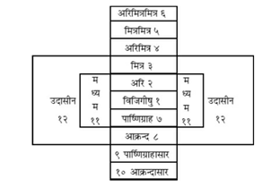
इस चित्रमें विजिगीषुके पीछेवाला पार्ष्णिग्राह राजाका मण्डल है, जो विजिगीषुका शत्रुराज्य है। आक्रन्द विजिगीषुका मित्र होता है। पुष्कर कहते हैं—जब कोई बलवान् आक्रन्द (मित्र) पार्ष्णिग्राह (शत्रु)-को उसके राज्यपर चढ़ाई करके दबा दे तो उस शत्रुके दुर्बल पड़ जानेपर विजिगीषु अपने मित्रोंके सहयोगसे तथा अपनी प्रबल सेनाद्वारा अपने सामनेवाले शत्रु-राज्यपर चढ़ाई कर सकता है।
इस प्रकार आदि आग्नेय महापुराणमें ‘युद्धयात्राका वर्णन’ नामक दो सौ अट्ठाईसवाँ अध्याय पूरा हुआ॥२२८॥
दो सौ उनतीसवाँ अध्याय
अशुभ और शुभ स्वप्नोंका विचार
पुष्कर कहते हैं—अब मैं शुभाशुभ स्वप्नोंका वर्णन करूँगा तथा दुःस्वप्न-नाशके उपाय भी बतलाऊँगा। नाभिके सिवा शरीरके अन्य अंगोंमें तृण और वृक्षोंका उगना, काँसके बर्तनोंका मस्तकपर रखकर फोड़ा जाना, माथा मुँड़ाना, नग्न होना, मैले कपड़े पहनना, तेल लगना, कीचड़ लपेटना, ऊँचेसे गिरना, विवाह होना, गीत सुनना, वीणा आदिके बाजे सुनकर मन बहलाना, हिंडोलेपर चढ़ना, पद्म और लोहोंका उपार्जन, सर्पोंको मारना, लाल फूलसे भरे हुए वृक्षों तथा चाण्डालको देखना, सूअर, कुत्ते, गदहे और ऊँटोंपर चढ़ना, चिड़ियोंके मांसका भक्षण करना, तेल पीना, खिचड़ी खाना, माताके गर्भमें प्रवेश करना, चितापर चढ़ना, इन्द्रके उपलक्ष्यमें खड़ी की हुई ध्वजाका टूट पड़ना, सूर्य और चन्द्रमाका गिरना, दिव्य, अन्तरिक्ष और भूलोकमें होनेवाले उत्पातोंका दिखायी देना, देवता, ब्राह्मण, राजा और गुरुओंका कोप होना, नाचना, हँसना, व्याह करना, गीत गाना, वीणाके सिवा अन्य प्रकारके बाजोंका स्वयं बजाना, नदीमें डूबकर नीचे जाना, गोबर, कीचड़ तथा स्याही मिलाये हुए जलसे स्नान करना, कुमारी कन्याओंका आलिंगन, पुरुषोंका एक-दूसरेके साथ मैथुन, अपने अंगोंकी हानि, वमन और विरेचन करना, दक्षिण दिशाकी ओर जाना, रोगसे पीड़ित होना, फलोंकी हानि, धातुओंका भेदन, घरोंका गिरना, घरोंमें झाड़ू देना, पिशाचों, राक्षसों, वानरों तथा चाण्डाल ओदिके साथ खेलना, शत्रुसे अपमानित होना, उसकी ओरसे संकटका प्राप्त होना, गेरुआ वस्त्र धारण करना, गेरुए वस्त्रोंसे खेलना, तेल पीना या उसमें नहाना, लाल फूलोंकी माला पहनना और लाल ही चन्दन लगाना—ये सब बुरे स्वप्न हैं। इन्हें दूसरोंपर प्रकट न करना अच्छा है। ऐसे स्वप्न देखकर फिरसे सो जाना चाहिये। इसी प्रकार स्वप्नदोषकी शान्तिके लिये स्नान, ब्राह्मणोंका पूजन, तिलोंका हवन, ब्रह्मा, विष्णु, शिव और सूर्यके गणोंकी पूजा, स्तुतिका पाठ तथा पुरुषसूक्त आदिका जप करना उचित है। रातके पहले प्रहरमें देखे हुए स्वप्न एक वर्षतक फल देनेवाले होते हैं, दूसरे प्रहरके स्वप्न छः महीनेमें, तीसरे प्रहरके तीन महीनेमें, चौथे प्रहरके पंद्रह दिनोंमें और अरुणोदयकी वेलामें देखे हुए स्वप्न दस ही दिनोंमें अपना फल प्रकट करते हैं॥१—१७॥
यदि एक ही रातमें शुभ और अशुभ—दोनों ही प्रकारके स्वप्न दिखायी पड़ें तो उनमें जिसका पीछे दर्शन होता है, उसीका फल बतलाना चाहिये। अतः शुभ स्वप्न देखनेके पश्चात् सोना अच्छा नहीं माना जाता है। स्वप्नमें पर्वत, महल, हाथी, घोड़े और बैलपर चढ़ना हितकर होता है। परशुरामजी! यदि पृथ्वीपर या आकाशमें सफेद फूलोंसे भरे हुए वृक्षोंका दर्शन हो, अपनी नाभिसे वृक्ष अथवा तिनका उत्पन्न हो, अपनी भुजाएँ और मस्तक अधिक दिखायी दें, सिरके बाल पक जायँ तो उसका फल उत्तम होता है। सफेद फूलोंकी माला और श्वेत वस्त्र धारण करना, चन्द्रमा, सूर्य और ताराओंको पकड़ना, परिमार्जन करना, इन्द्रकी ध्वजाका आलिंगन करना, ध्वजाको ऊँचे उठाना, पृथ्वीपर पड़ती हुई जलकी धाराको अपने ऊपर रोकना, शत्रुओंकी बुरी दशा देखना, वाद-विवाद, जूआ तथा संग्राममें अपनी विजय देखना, खीर खाना, रक्तका देखना, खूनसे नहाना, सुरा, मद्य अथवा दूध पीना, अस्त्रोंसे घायल होकर धरतीपर छटपटाना, आकाशका स्वच्छ होना तथा गाय, भैंस, सिंहिनी, हथिनी और घोड़ीको मुँहसे दुहना—ये सब उत्तम स्वप्न हैं। देवता, ब्राह्मण और गुरुओंकी प्रसन्नता, गौओंके सींग अथवा चन्द्रमासे गिरे हुए जलके द्वारा अपना अभिषेक होना—ये स्वप्न राज्य प्रदान करनेवाले हैं, ऐसा समझना चाहिये। परशुरामजी! अपना राज्याभिषेक होना, अपने मस्तकका काटा जाना, मरना, आगमें पड़ना, गृह आदिमें लगी हुई आगके भीतर जलना, राजचिह्नोंका प्राप्त होना, अपने हाथसे वीणा बजाना—ऐसे स्वप्न भी उत्तम एवं राज्य प्रदान करनेवाले हैं। जो स्वप्नके अन्तिम भागमें राजा, हाथी, घोड़ा, सुवर्ण, बैल तथा गायको देखता है, उसका कुटुम्ब बढ़ता है। बैल, हाथी, महलकी छत, पर्वत-शिखर तथा वृक्षपर चढ़ना, रोना, शरीरमें घी और विष्ठाका लग जाना तथा अगम्या स्त्रीके साथ समागम करना—ये सब शुभ स्वप्न हैं॥१८—३१॥
इस प्रकार आदि आग्नेय महापुराणमें ‘शुभाशुभ स्वप्न एवं दुःस्वप्न-निवारण’ नामक दो सौ उनतीसवाँ अध्याय पूरा हुआ॥२२९॥
दो सौ तीसवाँ अध्याय
अशुभ और शुभ शकुन
पुष्कर कहते हैं—परशुरामजी! श्वेत वस्त्र, स्वच्छ जल, फलसे भरा हुआ वृक्ष, निर्मल आकाश, खेतमें लगे हुए अन्न और काला धान्य—इनका यात्राके समय दिखायी देना अशुभ है। रुई, तृणमिश्रित सूखा गोबर (कंडा), धन, अङ्गार, गृह, करायल, मूँड़ मुड़ाकर तेल लगाया हुआ नग्न साधु, लोहा, कीचड़, चमड़ा, बाल, पागल मनुष्य, हिंजड़ा, चाण्डाल, श्वपच आदि, बन्धनकी रक्षा करनेवाले मनुष्य, गर्भिणी स्त्री, विधवा, तिलकी खली, मृत्यु, भूसी, राख, खोपड़ी, हड्डी और फूटा हुआ बर्तन—युद्धयात्राके समय इनका दिखायी देना अशुभ माना जाता है। बाजोंका वह शब्द, जिसमें फूटे हुए झाँझकी भयंकर ध्वनि सुनायी पड़ती हो, अच्छा नहीं माना गया है। ‘चले आओ’—यह शब्द यदि सामनेकी ओरसे सुनायी पड़े तो उत्तम है, किंतु पीछेकी ओरसे शब्द हो तो अशुभ माना गया है। ‘जाओ’—यह शब्द यदि पीछेकी ओरसे हो तो उत्तम है; किंतु आगेकी ओरसे हो तो निन्दित होता है। ‘कहाँ जाते हो? ठहरो, न जाओ; वहाँ जानेसे तुम्हें क्या लाभ है?’—ऐसे शब्द अनिष्टकी सूचना देनेवाले हैं। यदि ध्वजा आदिके ऊपर चील आदि मांसाहारी पक्षी बैठ जायँ, घोड़े, हाथी आदि वाहन लड़खड़ाकर गिर पड़ें, हथियार टूट जायँ, हार आदिके द्वारा मस्तकपर चोट लगे तथा छत्र और वस्त्र आदिको कोई गिरा दे तो ये सब अपशकुन मृत्युका कारण बनते हैं। भगवान् विष्णुकी पूजा और स्तुति करनेसे अमंगलका नाश होता है। यदि दूसरी बार इन अपशकुनोंका दर्शन हो तो घर लौट जाय॥१—८॥
यात्राके समय श्वेत पुष्पोंका दर्शन श्रेष्ठ माना गया है। भरे हुए घड़ेका दिखायी देना तो बहुत ही उत्तम है। मांस, मछली, दूरका कोलाहल, अकेला वृद्ध पुरुष, पशुओंमें बकरे, गौ, घोड़े तथा हाथी, देवप्रतिमा, प्रज्वलित अग्नि, दूर्वा, ताजा गोबर, वेश्या, सोना, चाँदी, रत्न, बच, सरसों आदि ओषधियाँ, मूँग, आयुधोंमें तलवार, छाता, पीढ़ा, राजचिह्न, जिसके पास कोई रोता न हो ऐसा शव, फल, घी, दही, दूध, अक्षत, दर्पण, मधु, शंख, ईख, शुभसूचक वचन, भक्त पुरुषोंका गाना-बजाना, मेघकी गम्भीर गर्जना, बिजलीकी चमक तथा मनका संतोष—ये सब शुभ शकुन हैं। एक ओर सब प्रकारके शुभ शकुन और दूसरी ओर मनकी प्रसन्नता—ये दोनों बराबर हैं॥९—१३॥
इस प्रकार आदि आग्नेय महापुराणमें ‘शकुन-वर्णन’ नामक दो सौ तीसवाँ अध्याय पूरा हुआ॥२३०॥
दो सौ इकतीसवाँ अध्याय
शकुनके भेद तथा विभिन्न जीवोंके दर्शनसे होनेवाले शुभाशुभ फलका वर्णन
पुष्कर कहते हैं—राजाके ठहरने, जाने अथवा प्रश्न करनेके समय होनेवाले शकुन उसके देश और नगरके लिये शुभ और अशुभ फलकी सूचना देते हैं। शकुन दो प्रकारके होते हैं—‘दीप्त’ और ‘शान्त’। दैवका विचार करनेवाले ज्यौतिषियोंने सम्पूर्ण दीप्त शकुनोंका फल अशुभ तथा शान्त शकुनोंका फल शुभ बतलाया है। वेलादीप्त, दिग्दीप्त, देशदीप्त, क्रियादीप्त, रुतदीप्त और जातिदीप्तके भेदसे दीप्त शकुन छः प्रकारके बताये गये हैं। उनमें पूर्व-पूर्वको अधिक प्रबल समझना चाहिये। दिनमें विचरनेवाले प्राणी रात्रिमें और रात्रिमें चलनेवाले प्राणी दिनमें विचरते दिखायी दें तो उसे ‘वेलादीप्त’ जानना चाहिये। इसी प्रकार जिस समय नक्षत्र, लग्न और ग्रह आदि क्रूर अवस्थाको प्राप्त हो जायँ, वह भी ‘वेलादीप्त’ के ही अन्तर्गत है। सूर्य जिस दिशाको जानेवाले हों, वह ‘धूमिता’, जिसमें मौजूद हों, वह ‘ज्वलिता’ तथा जिसे छोड़ आये हों, वह ‘अंगारिणी’ मानी गयी है। ये तीन दिशाएँ ‘दीप्त’ और शेष पाँच दिशाएँ ‘शान्त’ कहलाती हैं। दीप्त दिशामें जो शकुन हो, उसे ‘दिग्दीप्त’ कहा गया है। यदि गाँवमें जंगली और जंगलमें ग्रामीण पशु-पक्षी आदि मौजूद हों तो वह निन्दित देश है। इसी प्रकार जहाँ निन्दित वृक्ष हों, वह स्थान भी निन्द्य एवं अशुभ माना गया है॥१—७॥
विप्रवर! अशुभ देशमें जो शकुन होता है, उसे ‘देशदीप्त’ समझना चाहिये। अपने वर्णधर्मके विपरीत अनुचित कर्म करनेवाला पुरुष ‘क्रियादीप्त’ बतलाया गया है। (उसका दिखायी देना ‘क्रियादीप्त’ शकुनके अन्तर्गत है।) फटी हुई भयंकर आवाजका सुनायी पड़ना ‘रुतदीप्त’ कहलाता है। केवल मांसभोजन करनेवाले प्राणीको ‘जातिदीप्त’ समझना चाहिये। (उसका दर्शन भी ‘जातिदीप्त’ शकुन है।) दीप्त अवस्थाके विपरीत जो शकुन हो, वह ‘शान्त’ बतलाया गया है। उसमें भी उपर्युक्त सभी भेद यत्नपूर्वक जानने चाहिये। यदि शान्त और दीप्तके भेद मिले हुए हों तो उसे ‘मिश्र शकुन’ कहते हैं। इस प्रकार विचारकर उसका फलाफल बतलाना चाहिये॥८—१०॥
गौ, घोड़े, ऊँट, गदहे, कुत्ते, सारिका (मैना), गृहगोधिका (गिरगिट), चटक (गौरैया), भास (चील या मुर्गा) और कछुए आदि प्राणी ‘ग्रामवासी’ कहे गये हैं। बकरा, भेड़ा, तोता, गजराज, सूअर, भैंसा और कौआ—ये ग्रामीण भी होते हैं और जंगली भी। इनके अतिरिक्त और सभी जीव जंगली कहे गये हैं। बिल्ली और मुर्ग भी ग्रामीण तथा जंगली होते हैं; उनके रूपमें भेद होता है, इसीसे वे सदा पहचाने जाते हैं। गोकर्ण (खच्चर), मोर, चक्रवाक, गदहे, हारीत, कौए, कुलाह, कुक्कुभ, बाज, गीदड़, खञ्जरीट, वानर, शतघ्न, चटक, कोयल, नीलकण्ठ (श्येन), कपिञ्जल (चातक), तीतर, शतपत्र, कबूतर, खञ्जन, दात्यूह (जलकाक), शुक, राजीव, मुर्गा, भरदूल और सारंग—ये दिनमें चलनेवाले प्राणी हैं। वागुरी, उल्लू, शरभ, क्रौञ्च, खरगोश, कछुआ, लोमासिका और पिंगलिका—ये रात्रिमें चलनेवाले प्राणी बताये गये हैं। हंस, मृग, बिलाव, नेवला, रीछ, सर्प, वृकारि, सिंह, व्याघ्र, ऊँट, ग्रामीण सूअर, मनुष्य, श्वाविद, वृषभ, गोमायु, वृक, कोयल, सारस, घोड़े, गोधा और कौपीनधारी पुरुष—ये दिन और रात दोनोंमें चलनेवाले हैं॥११—१९॥
युद्ध और युद्धकी यात्राके समय यदि ये सभी जीव झुंड बाँधकर सामने आवें तो विजय दिलानेवाले बताये गये हैं; किंतु यदि पीछेसे आवें तो मृत्युकारक माने गये हैं। यदि नीलकण्ठ अपने घोंसलेसे निकलकर आवाज देता हुआ सामने स्थित हो जाय तो वह राजाको अपमानकी सूचना देता है और जब वह वामभागमें आ जाय तो कलहकारक एवं भोजनमें बाधा डालनेवाला होता है। यात्राके समय उसका दर्शन उत्तम माना गया है; उसके बायें अंगका अवलोकन भी उत्तम है। यदि यात्राके समय मोर जोर-जोरसे आवाज दे तो चोरोंके द्वारा अपने धनकी चोरी होनेका संदेश देता है॥२०—२२॥
परशुरामजी! प्रस्थानकालमें यदि मृग आगे-आगे चले तो वह प्राण लेनेवाला होता है। रीछ, चूहा, सियार, बाघ, सिंह, बिलाव, गदहे—ये यदि प्रतिकूल दिशामें जाते हों, गदहा जोर-जोरसे रेंकता हो और कपिञ्जल पक्षी बायीं अथवा दाहिनी ओर स्थित हो तो ये सभी उत्तम माने गये हैं। किंतु कपिञ्जल पक्षी यदि पीछेकी ओर हो तो उसका फल निन्दित है। यात्राकालमें तीतरका दिखायी देना अच्छा नहीं है। मृग, सूअर और चितकबरे हिरन-ये यदि बायें होकर फिर दाहिने हो जायँ तो सदा कार्यसाधक होते हैं। इसके विपरीत यदि दाहिनेसे बायें चले जायँ तो निन्दित माने गये हैं। बैल, घोड़े, गीदड़, बाघ, सिंह, बिलाव और गदहे यदि दाहिनेसे बायें जायँ तो ये मनोवाञ्छित वस्तुकी सिद्धि करनेवाले होते हैं, ऐसा समझना चाहिये। शृगाल, श्याममुख, छुच्छू (छछूँदर), पिंगला, गृहगोधिका, शूकरी, कोयल तथा पुँल्लिङ्ग नाम धारण करनेवाले जीव यदि वाम-भागमें हों तथा स्त्रीलिंग नामवाले जीव, भास, कारुष, बंदर, श्रीकर्ण, छित्त्वर, कपि, पिप्पीक, रुरु और श्येन—ये दक्षिण दिशामें हों तो शुभ हैं। यात्राकालमें जातिक, सर्प, खरगोश, सूअर तथा गोधाका नाम लेना भी शुभ माना गया है॥२३—२९॥
रीछ और वानरोंका विपरीत दिशामें दिखायी देना अनिष्टकारक होता है। प्रस्थान करनेपर जो कार्यसाधक बलवान् शकुन प्रतिदिन दिखायी देता हो, उसका फल विद्वान् पुरुषोंको उसी दिनके लिये बतलाना चाहिये, अर्थात् जिस-जिस दिन शकुन दिखायी देता है, उसी-उसी दिन उसका फल होता है। परशुरामजी! पागल, भोजनार्थी बालक तथा वैरी पुरुष यदि गाँव या नगरकी सीमाके भीतर दिखायी दें तो इनके दर्शनका कोई फल नहीं होता है, ऐसा समझना चाहिये। यदि सियारिन एक, दो, तीन या चार बार आवाज लगावे तो वह शुभ मानी गयी है। इसी प्रकार पाँच और छः बार बोलनेपर वह अशुभ और सात बार बोलनेपर शुभ बतायी गयी है। सात बारसे अधिक बोले तो उसका कोई फल नहीं होता। यदि रास्तेमें सूर्यकी ओर उठती हुई कोई ऐसी ज्वाला दिखायी दे, जिसपर दृष्टि पड़ते ही मनुष्योंके रोंगटे खड़े हो जायँ और सेनाके वाहन भयभीत हो उठें, तो वह भय बढ़ानेवाली—महान् भयकी सूचना देनेवाली होती है, ऐसा समझना चाहिये। यदि पहले किसी उत्तम देशमें सारंगका दर्शन हो तो वह मनुष्यके लिये एक वर्षतक शुभकी सूचना देता है। उसे देखनेसे अशुभमें भी शुभ होता है। अतः यात्राके प्रथम दिन मनुष्य ऐसे गुणवाले किसी सारंगका दर्शन करे तथा अपने लिये एक वर्षतक उपर्युक्त रूपसे शुभ फलकी प्राप्ति होनेवाली समझे॥३०—३६॥
इस प्रकार आदि आग्नेय महापुराणमें ‘शकुन-वर्णन’ नामक दो सौ इकतीसवाँ अध्याय पूरा हुआ॥२३१॥
दो सौ बत्तीसवाँ अध्याय
कौए, कुत्ते, गौ, घोड़े और हाथी आदिके द्वारा होनेवाले शुभाशुभ शकुनोंका वर्णन
पुष्कर कहते हैं—जिस मार्गसे बहुतेरे कौए शत्रुके नगरमें प्रवेश करें, उसी मार्गसे घेरा डालनेपर उस नगरके ऊपर अपना अधिकार प्राप्त होता है। यदि किसी सेना या समुदायमें बायीं ओरसे भयभीत कौआ रोता हुआ प्रवेश करे तो वह आनेवाले अपार भयकी सूचना देता है। छाया (तम्बू, रावटी आदि), अङ्ग, वाहन, उपानह, छत्र और वस्त्र आदिके द्वारा कौएको कुचल डालनेपर अपने लिये मृत्युकी सूचना मिलती है। उसकी पूजा करनेपर अपनी भी पूजा होती है तथा अन्न आदिके द्वारा उसका इष्ट करनेपर अपना भी शुभ होता है। यदि कौआ दरवाजेपर बारंबार आया-जाया करे तो वह उस घरके किसी परदेशी व्यक्तिके आनेकी सूचना देता है तथा यदि वह कोई लाल या जली हुई वस्तु मकानके ऊपर डाल देता है तो उससे आग लगनेकी सूचना मिलती है॥१—४॥
भृगुनन्दन! यदि वह मनुष्यके आगे कोई लाल वस्तु डाल देता है तो उसके कैद होनेकी बात बतलाता है और यदि कोई पीले रंगका द्रव्य सामने गिराता है तो उससे सोने-चाँदीकी प्राप्ति सूचित होती है। सारांश यह कि वह जिस द्रव्यको अपने पास ला देता है, उसकी प्राप्ति और जिस द्रव्यको अपने यहाँसे उठा ले जाता है, उसकी हानिकी ओर संकेत करता है। यदि वह अपने आगे कच्चा मांस लाकर डाल दे तो धनकी, मिट्टी गिरावे तो पृथ्वीकी और कोई रत्न डाल दे तो महान् साम्राज्यकी प्राप्ति होती है। यदि यात्रा करनेवालेकी अनुकूल दिशा (सामने)-की ओर कौआ जाय तो वह कल्याणकारी और कार्यसाधक होता है, परंतु यदि प्रतिकूल दिशाकी ओर जाय तो उसे कार्यमें बाधा डालनेवाला तथा भयंकर जानना चाहिये। यदि कौआ सामने काँव-काँव करता हुआ आ जाय तो वह यात्राका विघातक होता है। कौएका वामभागमें होना शुभ माना गया है और दाहिने भागमें होनेपर वह कार्यका नाश करता है। वामभागमें होकर कौआ यदि अनुकूल दिशाकी ओर चले तो ‘श्रेष्ठ’ और दाहिने होकर अनुकूल दिशाकी ओर चले तो ‘मध्यम’ माना जाता है; किंतु वामभागमें होकर यदि वह विपरीत दिशाकी ओर जाय तो यात्राका निषेध करता है। यात्राकालमें घरपर कौआ आ जाय तो वह अभीष्ट कार्यकी सिद्धि सूचित करता है। यदि वह एक पैर उठाकर एक आँखसे सूर्यकी ओर देखे तो भय देनेवाला होता है। यदि कौआ किसी वृक्षके खोखलेमें बैठकर आवाज दे तो वह महान् अनर्थका कारण है। ऊसर भूमिमें बैठा हो तो भी अशुभ होता है, किंतु यदि वह कीचड़में लिपटा हुआ हो तो उत्तम माना गया है। परशुरामजी! जिसकी चोंचमें मल आदि अपवित्र वस्तुएँ लगी हों, वह कौआ दीख जाय तो सभी कार्योंका साधक होता है। कौएकी भाँति अन्य पक्षियोंका भी फल जानना चाहिये॥५—१३॥
यदि सेनाकी छावनीके दाहिने भागमें कुत्ते आ जायँ तो वे ब्राह्मणोंके विनाशकी सूचना देते हैं। इन्द्रध्वजके स्थानमें हों तो राजाका और गोपुर (नगरद्वार) पर हों तो नगराधीशकी मृत्यु सूचित करते हैं। घरके भीतर भूँकता हुआ कुत्ता आवे तो गृहस्वामीकी मृत्युका कारण होता है। वह जिसके बायें अङ्गको सूँघता है, उसके कार्यकी सिद्धि होती है। यदि दाहिने अङ्ग और बायीं भुजाको सूँघे तो भय उपस्थित होता है। यात्रीके सामनेकी ओरसे आवे तो यात्रामें विघ्न डालनेवाला होता है। भृगुनन्दन! यदि कुत्ता राह रोककर खड़ा हो तो मार्गमें चोरोंका भय सूचित करता है; मुँहमें हड्डी लिये हो तो उसे देखकर यात्रा करनेपर कोई लाभ नहीं होता तथा रस्सी या चिथड़ा मुखमें रखनेवाला कुत्ता भी अशुभसूचक होता है। जिसके मुँहमें जूता या मांस हो, ऐसा कुत्ता सामने हो तो शुभ होता है। यदि उसके मुँहमें कोई अमाङ्गलिक वस्तु तथा केश आदि हो तो उससे अशुभकी सूचना मिलती है। कुत्ता जिसके आगे पेशाब करके चला जाता है, उसके ऊपर भय आता है; किन्तु मूत्र त्यागकर यदि वह किसी शुभ स्थान, शुभ वृक्ष तथा माङ्गलिक वस्तुके समीप चला जाय तो वह उस पुरुषके कार्यका साधक होता है। परशुरामजी! कुत्तेकी ही भाँति गीदड़ आदि भी समझने चाहिये॥१४—२०॥
यदि गौएँ अकारण ही डकराने लगें तो समझना चाहिये कि स्वामीके ऊपर भय आनेवाला है। रातमें उनके बोलनेसे चोरोंका भय सूचित होता है और यदि वे विकृत स्वरमें क्रन्दन करें तो मृत्युकी सूचना मिलती है। यदि रातमें बैल गर्जना करे तो स्वामीका कल्याण होता है और साँड आवाज दे तो राजाको विजय प्रदान करता है। यदि अपनी दी हुई तथा अपने घरपर मौजूद रहनेवाली गौएँ अभक्ष्य-भक्षण करें और अपने बछड़ोंपर भी स्नेह करना छोड़ दें तो गर्भक्षयकी सूचना देनेवाली मानी गयी हैं। पैरोंसे भूमि खोदनेवाली, दीन तथा भयभीत गौएँ भय लानेवाली होती हैं। जिनका शरीर भीगा हो, रोम-रोम प्रसन्नतासे खिला हो और सींगोंमें मिट्टी लगी हुई हो, वे गौएँ शुभ होती हैं। विज्ञ पुरुषको भैंस आदिके सम्बन्धमें भी यही सब शकुन बताना चाहिये॥२१—२४॥
जीन कसे हुए अपने घोड़ेपर दूसरेका चढ़ना, उस घोड़ेका जलमें बैठना और भूमिपर एक ही जगह चक्कर लगाना अनिष्टका सूचक है। बिना किसी कारणके घोड़ेका सो जाना विपत्तिमें डालनेवाला होता है। यदि अकस्मात् जई और गुड़की ओरसे घोड़ेको अरुचि हो जाय, उसके मुँहसे खून गिरने लगे तथा उसका सारा बदन काँपने लगे तो ये सब अच्छे लक्षण नहीं हैं; इनसे अशुभकी सूचना मिलती है। यदि घोड़ा बगुलों, कबूतरों और सारिकाओंसे खिलवाड़ करे तो मृत्युका संदेश देता है। उसके नेत्रोंसे आँसू बहे तथा वह जीभसे अपना पैर चाटने लगे तो विनाशका सूचक होता है। यदि वह बायें टापसे धरती खोदे, बायीं करवटसे सोये अथवा दिनमें नींद ले तो शुभकारक नहीं माना जाता। जो घोड़ा एक बार मूत्र करनेवाला हो, अर्थात् जिसका मूत्र एक बार थोड़ा-सा निकलकर फिर रुक जाय तथा निद्राके कारण जिसका मुँह मलिन हो रहा हो, वह भय उपस्थित करनेवाला होता है। यदि वह चढ़ने न दे अथवा चढ़ते समय उलटे घरमें चला जाय या सवारकी बायीं पसलीका स्पर्श करने लगे तो वह यात्रामें विघ्न पड़नेकी सूचना देता है। यदि शत्रु-योद्धाको देखकर हींसने लगे और स्वामीके चरणोंका स्पर्श करे तो वह विजय दिलानेवाला होता है॥२५—३१॥
यदि हाथी गाँवमें मैथुन करे तो उस देशके लिये हानिकारक होता है। हथिनी गाँवमें बच्चा दे या पागल हो जाय तो राजाके विनाशकी सूचना देती है। यदि हाथी चढ़ने न दे, उलटे हथिसारमें चला जाय या मदकी धारा बहाने लगे तो वह राजाका घातक होता है। यदि दाहिने पैरको बायेंपर रखे और सूँड़से दाहिने दाँतका मार्जन करे तो वह शुभ होता है॥३२—३४॥
अपना बैल, घोड़ा अथवा हाथी शत्रुकी सेनामें चला जाय तो अशुभ होता है। यदि थोड़ी ही दूरमें बादल घिरकर अधिक वर्षा करे तो सेनाका नाश होता है। यात्राके समय अथवा युद्धकालमें ग्रह और नक्षत्र प्रतिकूल हों, सामनेसे हवा आ रही हो और छत्र आदि गिर जायँ तो भय उपस्थित होता है। लड़नेवाले योद्धा हर्ष और उत्साहमें भरे हों और ग्रह अनुकूल हों तो यह विजयका लक्षण है। यदि कौए और मांसाहारी जीव-जन्तु योद्धाओंका तिरस्कार करें तो मण्डलका नाश होता है। पूर्व, पश्चिम एवं ईशान दिशा प्रसन्न तथा शान्त हों तो प्रिय और शुभ फलकी प्राप्ति करानेवाली होती हैं॥३५—३७॥
इस प्रकार आदि आग्नेय महापुराणमें ‘शकुन-वर्णन’ नामक दो सौ बत्तीसवाँ अध्याय पूरा हुआ॥२३२॥
दो सौ तैंतीसवाँ अध्याय
यात्राके मुहूर्त और द्वादश राजमण्डलका विचार
पुष्कर कहते हैं—अब मैं राजधर्मका आश्रय लेकर सबकी यात्राके विषयमें बताऊँगा। जब शुक्र अस्त हों अथवा नीच स्थानमें स्थित हों, विकलाङ्ग (अन्ध) हों, शत्रु-राशिपर विद्यमान हों अथवा वे प्रतिकूल स्थानमें स्थित या विध्वस्त हों तो यात्रा नहीं करनी चाहिये। बुध प्रतिकूल स्थानमें स्थित हों तथा दिशाका स्वामी ग्रह भी प्रतिकूल हो तो यात्रा नहीं करनी चाहिये। वैधृति, व्यतीपात, नाग, शकुनि, चतुष्पाद तथा किंस्तुघ्नयोगमें भी यात्राका परित्याग कर देना चाहिये। विपत्, मृत्यु, प्रत्यरि और जन्म—इन ताराओंमें, गण्डयोगमें तथा रिक्ता तिथिमें भी यात्रा न करे॥१—४॥
उत्तर और पूर्व—इन दोनों दिशाओंकी एकता कही गयी है। इसी तरह पश्चिम और दक्षिण—इन दोनों दिशाओंकी भी एकता मानी गयी है। वायव्यकोणसे लेकर अग्निकोणतक जो परिघ-दण्ड रहता है, उसका उल्लङ्घन करके यात्रा नहीं करनी चाहिये। रवि, सोम और शनैश्चर—ये दिन यात्राके लिये अच्छे नहीं माने गये हैं॥५-६॥
कृत्तिकासे लेकर सात नक्षत्रसमूह पूर्व दिशामें रहते हैं। मघा आदि सात नक्षत्र दक्षिण दिशामें रहते हैं, अनुराधा आदि सात नक्षत्र पश्चिम दिशामें रहते हैं तथा धनिष्ठा आदि सात नक्षत्र उत्तर दिशामें रहते हैं। (अग्निकोणसे वायुकोणतक परिघ-दण्ड रहा करता है; अतः इस प्रकार यात्रा करनी चाहिये, जिससे परिघ-दण्डका उल्लङ्घन न हो।)[१९९] पूर्वोक्त नक्षत्र उन-उन दिशाओंके द्वार हैं; सभी द्वार उन-उन दिशाओंके लिये उत्तम हैं। अब मैं तुम्हें छायाका मान बताता हूँ॥७॥
[१९९] पूर्व नक्षत्रमें पश्चिम या दक्षिण जानेसे परिघदण्डका लङ्घन होगा।
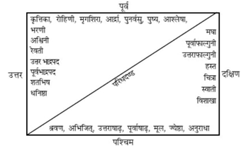
रविवारको बीस, सोमवारको सोलह, मङ्गलवारको पंद्रह, बुधको चौदह, बृहस्पतिको तेरह, शुक्रको बारह तथा शनिवारको ग्यारह अङ्गुल ‘छायामान’ कहा गया है, जो सभी कर्मोंके लिये विहित है। जन्म-लग्नमें तथा सामने इन्द्रधनुष उदित हुआ हो तो मनुष्य यात्रा न करे। शुभ शकुन आदि होनेपर श्रीहरिका स्मरण करते हुए विजययात्रा करनी चाहिये॥८—१०॥
परशुरामजी! अब मैं आपसे मण्डलका विचार बतलाऊँगा; राजाकी सब प्रकारसे रक्षा करनी चाहिये। राजा, मन्त्री, दुर्ग, कोष, दण्ड, मित्र और जनपद—ये राज्यके सात अङ्ग बतलाये जाते हैं। इन सात अङ्गोंसे युक्त राज्यमें विघ्न डालनेवाले पुरुषोंका विनाश करना चाहिये। राजाको उचित है कि अपने सभी मण्डलोंमें वृद्धि करे। अपना मण्डल ही यहाँ सबसे पहला मण्डल है। सामन्त-नरेशोंको ही उस मण्डलका शत्रु जानना चाहिये। ‘विजिगीषु’ राजाके सामनेका सीमावर्ती सामन्त उसका शत्रु है। उस शत्रु-राज्यसे जिसकी सीमा लगी है, वह उक्त शत्रुका शत्रु होनेसे विजिगीषुका मित्र है। इस प्रकार शत्रु, मित्र, अरिमित्र, मित्रमित्र तथा अरिमित्र-मित्र—ये पाँच मण्डलके आगे रहनेवाले हैं। इनका वर्णन किया गया; अब पीछे रहनेवालोंको बताता हूँ; सुनिये॥११—१५॥
पीछे रहनेवालोंमें पहला ‘पार्ष्णिग्राह’ है और उसके पीछे रहनेवाला ‘आक्रन्द’ कहलाता है। तदनन्तर इन दोनोंके पीछे रहनेवाले ‘आसार’ होते हैं, जिन्हें क्रमशः ‘पार्ष्णिग्राहासार’ और ‘आक्रन्दासार’ कहते हैं। नरश्रेष्ठ! विजयकी इच्छा रखनेवाला राजा, शत्रुके आक्रमणसे युक्त हो अथवा उससे मुक्त, उसकी विजयके सम्बन्धमें कुछ निश्चयपूर्वक नहीं कहा जा सकता। विजिगीषु तथा शत्रु दोनोंके असंगठित रहनेपर उनका निग्रह और अनुग्रह करनेमें समर्थ तटस्थ राजा ‘मध्यस्थ’ कहलाता है। जो बलवान् नरेश इन तीनोंके निग्रह और अनुग्रहमें समर्थ हो, उसे ‘उदासीन’ कहते हैं। कोई भी किसीका शत्रु या मित्र नहीं है; सभी कारणवश ही एक-दूसरेके शत्रु और मित्र होते हैं। इस प्रकार मैंने आपसे यह बारह राजाओंके मण्डलका वर्णन किया है॥१६—२०॥
शत्रुओंके तीन भेद जानने चाहिये—कुल्य, अनन्तर और कृत्रिम। इनमें पूर्व-पूर्व शत्रु भारी होता है। अर्थात् ‘कृत्रिम’ की अपेक्षा ‘अनन्तर’ और उसकी अपेक्षा ‘कुल्य’ शत्रु बड़ा माना गया है; उसको दबाना बहुत कठिन होता है। ‘अनन्तर’ (सीमाप्रान्तवर्ती) शत्रु भी मेरी समझमें ‘कृत्रिम’ ही है। पार्ष्णिग्राह राजा शत्रुका मित्र होता है; तथापि प्रयत्नसे वह शत्रुका शत्रु भी हो सकता है। इसलिये नाना प्रकारके उपायोंद्वारा अपने पार्ष्णिग्राहको शान्त रखे—उसे अपने वशमें किये रहे। प्राचीन नीतिज्ञ पुरुष मित्रके द्वारा शत्रुको नष्ट करा डालनेकी प्रशंसा करते हैं। सामन्त (सीमा-निवासी) होनेके कारण मित्र भी आगे चलकर शत्रु हो जाता है; अतः विजय चाहनेवाले राजाको उचित है कि यदि अपनेमें शक्ति हो तो स्वयं ही शत्रुका विनाश करे; (मित्रकी सहायता न ले) क्योंकि मित्रका प्रताप बढ़ जानेपर उससे भी भय प्राप्त होता है और प्रतापहीन शत्रुसे भी भय नहीं होता। विजिगीषु राजाको धर्मविजयी होना चाहिये तथा वह लोगोंको इस प्रकार अपने वशमें करे, जिससे किसीको उद्वेग न हो और सबका उसपर विश्वास बना रहे॥२१—२६॥
इस प्रकार आदि आग्नेय महापुराणमें ‘यात्रामण्डलचिन्ता आदिका कथन’ नामक दो सौ तैंतीसवाँ अध्याय पूरा हुआ॥२३३॥
दो सौ चौंतीसवाँ अध्याय
दण्ड, उपेक्षा, माया और साम आदि नीतियोंका उपयोग
पुष्कर कहते हैं—परशुरामजी! साम, भेद, दान और दण्डकी चर्चा हो चुकी है और अपने राज्यमें दण्डका प्रयोग कैसे करना चाहिये?—यह बात भी बतलायी जा चुकी है। अब शत्रुके देशमें इन चारों उपायोंके उपयोगका प्रकार बतला रहा हूँ॥१॥
‘गुप्त’ और ‘प्रकाश’—दो प्रकारका दण्ड कहा गया है। लूटना, गाँवको गर्दमें मिला देना, खेती नष्ट कर डालना और आग लगा देना—ये ‘प्रकाश दण्ड’ हैं। जहर देना, चुपकेसे आग लगाना, नाना प्रकारके मनुष्योंके द्वारा किसीका वध करा देना, सत्पुरुषोंपर दोष लगाना और पानीको दूषित करना—ये ‘गुप्त दण्ड’ हैं॥२-३॥
भृगुनन्दन! यह दण्डका प्रयोग बताया गया; अब ‘उपेक्षा’ की बात सुनिये—जब राजा ऐसा समझे कि युद्धमें मेरा किसीके साथ वैर-विरोध नहीं है, व्यर्थका लगाव अनर्थका ही कारण होगा; संधिका परिणाम भी ऐसा ही (अनर्थकारी) होनेवाला है; सामका प्रयोग यहाँ किया गया, किंतु लाभ न हुआ; दानकी नीतिसे भी केवल धनका क्षय ही होगा तथा भेद और दण्डके सम्बन्धसे भी कोई लाभ नहीं है; उस दशामें ‘उपेक्षा’ का आश्रय ले (अर्थात् संधि-विग्रहसे अलग हो जाय)। जब ऐसा जान पड़े कि अमुक व्यक्ति शत्रु हो जानेपर भी मेरी कोई हानि नहीं कर सकता तथा मैं भी इस समय इसका कुछ बिगाड़ नहीं सकता, उस समय ‘उपेक्षा’ कर जाय। उस अवस्थामें राजाको उचित है कि वह अपने शत्रुको अवज्ञा (उपेक्षा)-से ही उपहत करे॥४—७॥
अब मायामय (कपटपूर्ण) उपायोंका वर्णन करूँगा। राजा झूठे उत्पातोंका प्रदर्शन करके शत्रुको उद्वेगमें डाले। शत्रुकी छावनीमें रहनेवाले स्थूल पक्षीको पकड़कर उसकी पूँछमें जलता हुआ लूक बाँध दे; वह लूक बहुत बड़ा होना चाहिये। उसे बाँधकर पक्षीको उड़ा दे और इस प्रकार यह दिखावे कि ‘शत्रुकी छावनीपर उल्कापात हो रहा है।’ इसी प्रकार और भी बहुत-से उत्पात दिखाने चाहिये। भाँति-भाँतिकी माया प्रकट करनेवाले मदारियोंको भेजकर उनके द्वारा शत्रुओंको उद्विग्न करे। ज्यौतिषी और तपस्वी जाकर शत्रुसे कहें कि ‘तुम्हारे नाशका योग आया हुआ है।’ इस तरह पृथ्वीपर विजय पानेकी इच्छा रखनेवाले राजाको उचित है कि अनेकों उपायोंसे शत्रुको भयभीत करे। शत्रुओंपर यह भी प्रकट करा दे कि ‘मुझपर देवताओंकी कृपा है—मुझे उनसे वरदान मिल चुका है।’ युद्ध छिड़ जाय तो अपने सैनिकोंसे कहे—‘वीरो! निर्भय होकर प्रहार करो, मेरे मित्रोंकी सेनाएँ आ पहुँचीं; अब शत्रुओंके पाँव उखड़ गये हैं—वे भाग रहे हैं’—यों कहकर गर्जना करे, किलकारियाँ भरे और योद्धाओंसे कहे—‘मेरा शत्रु मारा गया।’ देवताओंके आदेशसे वृद्धिको प्राप्त हुआ राजा कवच आदिसे सुसज्जित होकर युद्धमें पदार्पण करे॥८—१३॥
अब ‘इन्द्रजाल’ के विषयमें कहता हूँ। राजा समयानुसार इन्द्रकी मायाका प्रदर्शन करे। शत्रुओंको दिखावे कि ‘मेरी सहायताके लिये देवताओंकी चतुरङ्गिणी सेना आ गयी।’ फिर शत्रु-सेनापर रक्तकी वर्षा करे और मायाद्वारा यह प्रयत्न करे कि महलके ऊपर शत्रुओंके कटे हुए मस्तक दिखायी दें॥१४-१५॥
अब मैं छः गुणोंका वर्णन करूँगा; इनमें ‘संधि’ और ‘विग्रह’ प्रधान हैं। संधि, विग्रह, यान, आसन, द्वैधीभाव और संश्रय—ये छः गुण कहे गये हैं। किसी शर्तपर शत्रुके साथ मेल करना ‘संधि’ कहलाता है। युद्ध आदिके द्वारा उसे हानि पहुँचाना ‘विग्रह’ है। विजयाभिलाषी राजा जो शत्रुके ऊपर चढ़ाई करता है, उसीका नाम ‘यात्रा’ अथवा ‘यान’ है। विग्रह छेड़कर अपने ही देशमें स्थित रहना ‘आसन’ कहलाता है। (आधी सेनाको किलेमें छिपाकर) आधी सेनाके साथ युद्धकी यात्रा करना ‘द्वैधीभाव’ कहा गया है। उदासीन अथवा मध्यम राजाकी शरण लेनेका नाम ‘संश्रय’ है॥१६—१९॥
जो अपनेसे हीन न होकर बराबर या अधिक प्रबल हो, उसीके साथ संधिका विचार करना चाहिये। यदि राजा स्वयं बलवान् हो और शत्रु अपनेसे हीन—निर्बल जान पड़े, तो उसके साथ विग्रह करना ही उचित है। हीनावस्थामें भी यदि अपना पार्ष्णिग्राह विशुद्ध स्वभावका हो, तभी बलिष्ठ राजाका आश्रय लेना चाहिये। यदि युद्धके लिये यात्रा न करके बैठे रहनेपर भी राजा अपने शत्रुके कार्यका नाश कर सके तो पार्ष्णिग्राहका स्वभाव शुद्ध न होनेपर भी वह विग्रह ठानकर चुपचाप बैठा रहे। अथवा पार्ष्णिग्राहका स्वभाव शुद्ध न होनेपर राजा द्वैधीभाव-नीतिका आश्रय ले। जो निस्संदेह बलवान् राजाके विग्रहका शिकार हो जाय, उसीके लिये संश्रय-नीतिका अवलम्बन उचित माना गया है। यह ‘संश्रय’ साम आदि सभी गुणोंमें अधम है। संश्रयके योग्य अवस्थामें पड़े हुए राजा यदि युद्धकी यात्रा करें तो वह उनके जन और धनका नाश करनेवाली बतायी गयी है। यदि किसीकी शरण लेनेसे पीछे अधिक लाभकी सम्भावना हो तो राजा संश्रयका अवलम्बन करे। सब प्रकारकी शक्तिका नाश हो जानेपर ही दूसरेकी शरण लेनी चाहिये॥२०—२५॥
इस प्रकार आदि आग्नेय महापुराणमें ‘षाड्गुण्यका वर्णन’ नामक दो सौ चौंतीसवाँ अध्याय पूरा हुआ॥२३४॥
दो सौ पैंतीसवाँ अध्याय
राजाकी नित्यचर्या
पुष्कर कहते हैं—परशुरामजी! अब निरन्तर किये जाने योग्य कर्मका वर्णन करता हूँ, जिसका प्रतिदिन आचरण करना उचित है। जब दो घड़ी रात बाकी रहे तो राजा नाना प्रकारके वाद्यों, बन्दीजनोंद्वारा की हुई स्तुतियों तथा मङ्गल-गीतोंकी ध्वनि सुनकर निद्राका परित्याग करे। तत्पश्चात् गूढ़ पुरुषों (गुप्तचरों)-से मिले। वे गुप्तचर ऐसे हों, जिन्हें कोई भी यह न जान सके कि ये राजाके ही कर्मचारी हैं। इसके बाद विधिपूर्वक आय और व्ययका हिसाब सुने। फिर शौच आदिसे निवृत्त होकर राजा स्नानगृहमें प्रवेश करे। वहाँ नरेशको पहले दन्तधावन (दाँतुन) करके फिर स्नान करना चाहिये। तत्पश्चात् संध्योपासना करके भगवान् वासुदेवका पूजन करना उचित है। तदनन्तर राजा पवित्रतापूर्वक अग्निमें आहुति दे; फिर जल लेकर पितरोंका तर्पण करे। इसके बाद ब्राह्मणोंका आशीर्वाद सुनते हुए उन्हें सुवर्णसहित दूध देनेवाली गौ दान दे॥१—५॥
इन सब कार्योंसे अवकाश पाकर चन्दन और आभूषण धारण करे तथा दर्पणमें अपना मुँह देखे। साथ ही सुवर्णयुक्त घृतमें भी मुँह देखे। फिर दैनिक-कथा आदिका श्रवण करे। तदनन्तर वैद्यकी बतायी हुई दवाका सेवन करके माङ्गलिक वस्तुओंका स्पर्श करे। फिर गुरुके पास जाकर उनका दर्शन करे और उनका आशीर्वाद लेकर राजसभामें प्रवेश करे॥६-७॥
महाभाग! सभामें विराजमान होकर राजा ब्राह्मणों, अमात्यों तथा मन्त्रियोंसे मिले। साथ ही द्वारपालने जिनके आनेकी सूचना दी हो, उन प्रजाओंको भी बुलाकर उन्हें दर्शन दे; उनसे मिले। फिर इतिहासका श्रवण करके राज्यका कार्य देखे। नाना प्रकारके कार्योंमें जो कार्य अत्यन्त आवश्यक हो, उसका निश्चय करे। तत्पश्चात् प्रजाके मामले-मुकद्दमोंको देखे और मन्त्रियोंके साथ गुप्त परामर्श करे। मन्त्रणा न तो एकके साथ करे, न अधिक मनुष्योंके साथ; न मूर्खोंके साथ और न अविश्वसनीय पुरुषोंके साथ ही करे। उसे सदा गुप्तरूपसे ही करे; दूसरोंपर प्रकट न होने दे। मन्त्रणाको अच्छी तरह छिपाकर रखे, जिससे राज्यमें कोई बाधा न पहुँचे। यदि राजा अपनी आकृतिको परिवर्तित न होने दे—सदा एक रूपमें रहे तो यह गुप्त मन्त्रणाकी रक्षाका सबसे बड़ा उपाय माना गया है; क्योंकि बुद्धिमान् विद्वान् पुरुष आकार और चेष्टाएँ देखकर ही गुप्तमन्त्रणाका पता लगा लेते हैं। राजाको उचित है कि वह ज्यौतिषियों, वैद्यों और मन्त्रियोंकी बात माने। इससे वह ऐश्वर्यको प्राप्त करता है; क्योंकि ये लोग राजाको अनुचित कार्योंसे रोकते और हितकर कामोंमें लगाते हैं॥८—१२॥
मन्त्रणा करनेके पश्चात् राजाको रथ आदि वाहनोंके हाँकने और शस्त्र चलानेका अभ्यास करते हुए कुछ कालतक व्यायाम करना चाहिये। युद्ध आदिके अवसरोंपर वह स्नान करके भलीभाँति पूजित हुए भगवान् विष्णुका, हवनके पश्चात् प्रज्वलित हुए अग्निदेवका तथा दान-मान आदिसे सत्कृत ब्राह्मणोंका दर्शन करे। दान आदिके पश्चात् वस्त्राभूषणोंसे विभूषित होकर राजा भलीभाँति जाँचे-बूझे हुए अन्नका भोजन करे। भोजनके अनन्तर पान खाकर बायीं करवटसे थोड़ी देरतक लेटे। प्रतिदिन शास्त्रोंका चिन्तन और योद्धाओं, अन्न-भण्डार तथा शस्त्रागारका निरीक्षण करे। दिनके अन्तमें सायं-संध्या करके अन्य कार्योंका विचार करे और आवश्यक कामोंपर गुप्तचरोंको भेजकर रात्रिमें भोजनके पश्चात् अन्तःपुरमें जाकर रहे। वहाँ संगीत और वाद्योंसे मनोरञ्जन करके सो जाय तथा दूसरोंके द्वारा आत्मरक्षाका पूरा प्रबन्ध रखे। राजाको प्रतिदिन ऐसा ही करना चाहिये॥१३—१७॥
इस प्रकार आदि आग्नेय महापुराणमें ‘प्रात्यहिक राजकर्मका कथन’ नामक दो सौ पैंतीसवाँ अध्याय पूरा हुआ॥२३५॥
दो सौ छत्तीसवाँ अध्याय
संग्राम-दीक्षा—युद्धके समय पालन करनेयोग्य नियमोंका वर्णन
पुष्कर कहते हैं—परशुरामजी! अब मैं रणयात्राकी विधि बतलाते हुए संग्रामकालके लिये उचित कर्तव्योंका वर्णन करूँगा। जब राजाकी युद्धयात्रा एक सप्ताहमें होनेवाली हो, उस समय पहले दिन भगवान् विष्णु और शंकरजीकी पूजा करनी चाहिये। साथ ही मोदक (मिठाई) आदिके द्वारा गणेशजीका पूजन करना उचित है। दूसरे दिन दिक्पालोंकी पूजा करके राजा शयन करे। शय्यापर बैठकर अथवा उसके पहले देवताओंकी पूजा करके निम्नाङ्कित (भाववाले) मन्त्रका स्मरण करे—‘भगवान् शिव! आप तीन नेत्रोंसे विभूषित, ‘रुद्र’ के नामसे प्रसिद्ध, वरदायक, वामन, विकटरूपधारी और स्वप्नके अधिष्ठाता देवता हैं; आपको बारंबार नमस्कार है। भगवन्! आप देवाधिदेवोंके भी स्वामी, त्रिशूलधारी और वृषभपर सवारी करनेवाले हैं। सनातन परमेश्वर! मेरे सो जानेपर स्वप्नमें आप मुझे यह बता दें कि ‘इस युद्धसे मेरा इष्ट होनेवाला है या अनिष्ट?’ उस समय पुरोहितको ‘यज्जाग्रतो दूरमुदैति०’ (यजु० ३४।१)—इस मन्त्रका उच्चारण करना चाहिये। तीसरे दिन दिशाओंकी रक्षा करनेवाले रुद्रों तथा दिशाओंके अधिपतियोंकी पूजा करे; चौथे दिन ग्रहों और पाँचवें दिन अश्विनीकुमारोंका यजन करे। मार्गमें जो देवी, देवता तथा नदी आदि पड़ें, उनका भी पूजन करना चाहिये। द्युलोकमें, अन्तरिक्षमें तथा भूमिपर निवास करनेवाले देवताओंको बलि अर्पण करे। रातमें भूतगणोंको भी बलि दे। भगवान् वासुदेव आदि देवताओं तथा भद्रकाली और लक्ष्मी आदि देवियोंकी भी पूजा करे। इसके बाद सम्पूर्ण देवताओंसे प्रार्थना करे॥१—८॥
‘वासुदेव, संकर्षण, प्रद्युम्न, अनिरुद्ध, नारायण, ब्रह्मा, विष्णु, नरसिंह, वराह, शिव, ईशान, तत्पुरुष, अघोर, वामदेव, सद्योजात, सूर्य, सोम, भौम, बुध, बृहस्पति, शुक्र, शनैश्चर, राहु, केतु, गणेश, कार्तिकेय, चण्डिका, उमा, लक्ष्मी, सरस्वती, दुर्गा, ब्रह्माणी आदि गण, रुद्र, इन्द्रादि देव, अग्नि, नाग, गरुड तथा द्युलोक, अन्तरिक्ष एवं भूमिपर निवास करनेवाले अन्यान्य देवता मेरी विजयके साधक हों। मेरी दी हुई यह भेंट और पूजा स्वीकार करके सब देवता युद्धमें मेरे शत्रुओंका मर्दन करें। देवगण! मैं माता, पुत्र और भृत्योंसहित आपकी शरणमें आया हूँ। आपलोग शत्रु-सेनाके पीछे जाकर उनका नाश करनेवाले हैं, आपको हमारा नमस्कार है। युद्धमें विजय पाकर यदि लौटूँगा तो आपलोगोंको इस समय जो पूजा और भेंट दी है, उससे भी अधिक मात्रामें पूजा चढ़ाऊँगा’॥९—१४॥
छठे दिन राज्याभिषेककी भाँति विजय-स्नान करना चाहिये तथा यात्राके सातवें दिन भगवान् त्रिविक्रम (वामन)-का पूजन करना आवश्यक है। नीराजनके लिये बताये हुए मन्त्रोंद्वारा अपने और वाहनकी भी पूजा करे। साथ ही ब्राह्मणोंके मुखसे ‘पुण्याह’ और ‘जय’ शब्दके साथ निम्नाङ्कित भाववाले मन्त्रका श्रवण करे—‘राजन्! द्युलोक, अन्तरिक्ष और भूमिपर निवास करनेवाले देवता तुम्हें दीर्घायु प्रदान करें। तुम देवताओंके समान सिद्धि प्राप्त करो। तुम्हारी यह यात्रा देवताओंकी यात्रा हो तथा सम्पूर्ण देवता तुम्हारी रक्षा करें।’ यह आशीर्वाद सुनकर राजा आगे यात्रा करे। ‘धन्वना गा०’ (यजु० २।३९) इत्यादि मन्त्रद्वारा धनुष-बाण हाथमें लेकर ‘तद्विष्णोः०’ (यजु० ६।५) इस मन्त्रका जप करते हुए शत्रुके सामने दाहिना पैर बढ़ाकर बत्तीस पग आगे जाय; फिर पूर्व, दक्षिण, पश्चिम एवं उत्तरमें जानेके लिये क्रमशः हाथी, रथ, घोड़े तथा भार ढोनेमें समर्थ जानवरपर सवार होवे और जुझाऊ बाजोंके साथ आगेकी यात्रा करे; पीछे फिरकर न देखे॥१५—२०॥
एक कोस जानेके बाद ठहर जाय और देवता तथा ब्राह्मणोंकी पूजा करे। पीछे आती हुई अपनी सेनाकी रक्षा करते हुए ही राजाको दूसरेके देशमें यात्रा करनी चाहिये। विदेशमें जानेपर भी अपने देशके आचारका पालन करना राजाका कर्तव्य है। वह प्रतिदिन देवताओंका पूजन करे, किसीकी आय नष्ट न होने दे और उस देशके मनुष्योंका कभी अपमान न करे। विजय पाकर पुनः अपने नगरमें लौट आनेपर राजा देवताओंकी पूजा करे और दान दे। जब दूसरे दिन संग्राम छिड़नेवाला हो तो पहले दिन हाथी, घोड़े आदि वाहनोंको नहलावे तथा भगवान् नृसिंहका पूजन करे। रात्रिमें छत्र आदि राजचिह्नों, अस्त्र-शस्त्रों तथा भूतगणोंकी अर्चना करके सबेरे पुनः भगवान् नृसिंहकी एवं सम्पूर्ण वाहन आदिकी पूजा करे। पुरोहितके द्वारा हवन किये हुए अग्निदेवका दर्शन करके स्वयं भी उसमें आहुति डाले और ब्राह्मणोंका सत्कार करके धनुष-बाण ले, हाथी आदिपर सवार हो युद्धके लिये जाय। शत्रुके देशमें अदृश्य रहकर प्रकृति-कल्पना (मोर्चाबंदी) करे। यदि अपने पास थोड़े-से सैनिक हों तो उन्हें एक जगह संगठित रखकर युद्धमें प्रवृत्त करे और यदि योद्धाओंकी संख्या अधिक हो तो उन्हें इच्छानुसार फैला दे (अर्थात् उन्हें बहुत दूरमें खड़ा करके युद्धमें लगावे)॥२१—२७॥
थोड़े-से सैनिकोंका अधिक संख्यावाले योद्धाओंके साथ युद्ध करनेके लिये ‘सूचीमुख’ नामक व्यूह उपयोगी होता है। व्यूह दो प्रकारके बताये गये हैं—प्राणियोंके शरीरकी भाँति और द्रव्यस्वरूप। गरुडव्यूह, मकरव्यूह, चक्रव्यूह, श्येनव्यूह, अर्धचन्द्रव्यूह, वज्रव्यूह, शकटव्यूह, सर्वतोभद्रमण्डलव्यूह और सूचीव्यूह—ये नौ व्यूह प्रसिद्ध हैं। सभी व्यूहोंके सैनिकोंको पाँच भागोंमें विभक्त किया जाता है। दो पक्ष, दो अनुपक्ष और एक पाँचवाँ भाग भी अवश्य रखना चाहिये। योद्धाओंके एक या दो भागोंसे युद्ध करे और तीन भागोंको उनकी रक्षाके लिये रखे। स्वयं राजाको कभी व्यूहमें नियुक्त नहीं करना चाहिये; क्योंकि राजा ही सबकी जड़ है, उस जड़के कट जानेपर सारे राज्यका विनाश हो जाता है; अतः स्वयं राजा युद्धमें प्रवृत्त न हो। वह सेनाके पीछे एक कोसकी दूरीपर रहे। वहाँ रहते हुए राजाका यह कार्य बताया गया है कि वह युद्धसे भागे हुए सिपाहियोंको उत्साहित करके धैर्य बँधावे। सेनाके प्रधान (अर्थात् सेनापति)-के भागने या मारे जानेपर सेना नहीं ठहर पाती। व्यूहमें योद्धाओंको न तो एक-दूसरेसे सटाकर खड़ा करे और न बहुत दूर-दूरपर ही; उनके बीचमें इतनी ही दूरी रहनी चाहिये, जिससे एक-दूसरेके हथियार आपसमें टकराने न पावें॥२८—३५॥
जो शत्रु-सेनाकी मोर्चाबंदी तोड़ना चाहता हो, वह अपने संगठित योद्धाओंके द्वारा ही उसे तोड़नेका प्रयत्न करे तथा शत्रुके द्वारा भी यदि अपनी सेनाके व्यूह-भेदनके लिये प्रयत्न हो रहा हो तो उसकी रक्षाके लिये संगठित वीरोंको ही नियुक्त करना चाहिये। अपनी इच्छाके अनुसार सेनाका ऐसा व्यूह बनावे, जो शत्रुके व्यूहमें घुसकर उसका भेदन कर सके। हाथीके पैरोंकी रक्षा करनेके लिये चार रथ नियुक्त करे। रथकी रक्षाके लिये चार घुड़सवार, उनकी रक्षाके लिये उतने ही ढाल लेकर युद्ध करनेवाले सिपाही तथा ढालवालोंके बराबर ही धनुर्धर वीरोंको तैनात करे। युद्धमें सबसे आगे ढाल लेनेवाले योद्धाओंको स्थापित करे। उनके पीछे धनुर्धर योद्धा, धनुर्धरोंके पीछे घुड़सवार, घुड़सवारोंके पीछे रथ और रथोंके पीछे राजाको हाथियोंकी सेना नियुक्त करनी चाहिये॥३६—३९॥
पैदल, हाथीसवार और घुड़सवारोंको प्रयत्नपूर्वक धर्मानुकूल युद्धमें संलग्न रहना चाहिये। युद्धके मुहानेपर शूरवीरोंको ही तैनात करे, डरपोक स्वभाववाले सैनिकोंको वहाँ कदापि न खड़ा होने दे। शूरवीरोंको आगे खड़ा करके ऐसा प्रबन्ध करे, जिससे वीर स्वभाववाले योद्धाओंको केवल शत्रुओंका जत्थामात्र दिखायी दे (उनके भयंकर पराक्रमपर उनकी दृष्टि न पड़े); तभी वे शत्रुओंको भगानेवाला पुरुषार्थ कर सकते हैं। भीरु पुरुष आगे रहें तो वे भागकर सेनाका व्यूह स्वयं ही तोड़ डालते हैं; अतः उन्हें आगे न रखे। शूरवीर आगे रहनेपर भीरु पुरुषोंको युद्धके लिये सदा उत्साह ही प्रदान करते रहते हैं। जिनका कद ऊँचा, नासिका तोतेके समान नुकीली, दृष्टि सौम्य तथा दोनों भौंहें मिली हुई हों, जो क्रोधी, कलहप्रिय, सदा हर्ष और उत्साहमें भरे रहनेवाले तथा कामपरायण हों, उन्हें शूरवीर समझना चाहिये॥४०—४३॥
संगठित वीरोंमेंसे जो मारे जायँ अथवा घायल हों, उनको युद्धभूमिसे दूर हटाना, युद्धके भीतर जाकर हाथियोंको पानी पिलाना तथा हथियार पहुँचाना—ये सब पैदल सिपाहियोंके कार्य हैं। अपनी सेनाका भेदन करनेकी इच्छा रखनेवाले शत्रुओंसे उसकी रक्षा करना और संगठित होकर युद्ध करनेवाले शत्रु-वीरोंका व्यूह तोड़ डालना—यह ढाल लेकर युद्ध करनेवाले योद्धाओंका कार्य बताया गया है। युद्धमें विपक्षी योद्धाओंको मार भगाना धनुर्धर वीरोंका काम है। अत्यन्त घायल हुए योद्धाको युद्धभूमिसे दूर ले जाना, फिर युद्धमें आना तथा शत्रुकी सेनामें त्रास उत्पन्न करना—यह सब रथी वीरोंका कार्य बतलाया जाता है। संगठित व्यूहको तोड़ना, टूटे हुएको जोड़ना तथा चहारदीवारी, तोरण (सदर दरवाजा), अट्टालिका और वृक्षोंको भङ्ग कर डालना—यह अच्छे हाथीका पराक्रम है। ऊँची-नीची भूमिको पैदल सेनाके लिये उपयोगी जानना चाहिये, रथ और घोड़ोंके लिये समतल भूमि उत्तम है तथा कीचड़से भरी हुई युद्धभूमि हाथियोंके लिये उपयोगी बतायी गयी है॥४४—४९॥
इस प्रकार व्यूह-रचना करके जब सूर्य पीठकी ओर हों तथा शुक्र, शनैश्चर और दिक्पाल अपने अनुकूल हों, सामनेसे मन्द-मन्द हवा आ रही हो, उस समय उत्साहपूर्वक युद्ध करे तथा नाम एवं गोत्रकी प्रशंसा करते हुए सम्पूर्ण योद्धाओंमें उत्तेजना भरता रहे। साथ ही यह बात भी बताये कि ‘युद्धमें विजय होनेपर उत्तम-उत्तम भोगोंकी प्राप्ति होगी और मृत्यु हो जानेपर स्वर्गका सुख मिलेगा।’ वीर पुरुष शत्रुओंको जीतकर मनोवाञ्छित भोग प्राप्त करता है और युद्धमें प्राणत्याग करनेपर उसे परमगति मिलती है। इसके सिवा वह जो स्वामीका अन्न खाये रहता है, उसके ऋणसे छुटकारा पा जाता है; अतः युद्धके समान श्रेष्ठ गति दूसरी कोई नहीं है। शूरवीरोंके शरीरसे जब रक्त निकलता है, तब वे पापमुक्त हो जाते हैं। युद्धमें जो शस्त्र-प्रहार आदिका कष्ट सहना पड़ता है, वह बहुत बड़ी तपस्या है। रणमें प्राणत्याग करनेवाले शूरवीरके साथ हजारों सुन्दरी अप्सराएँ चलती हैं। जो सैनिक हतोत्साह होकर युद्धसे पीठ दिखाते हैं, उनका सारा पुण्य मालिकको मिल जाता है और स्वयं उन्हें पग-पगपर एक-एक ब्रह्महत्याके पापका फल प्राप्त होता है। जो अपने सहायकोंको छोड़कर चल देता है, देवता उसका विनाश कर डालते हैं। जो युद्धसे पीछे पैर नहीं हटाते, उन बहादुरोंके लिये अश्वमेध-यज्ञका फल बताया गया है॥५०—५६॥
यदि राजा धर्मपर दृढ़ रहे तो उसकी विजय होती है। योद्धाओंको अपने समान योद्धाओंके साथ ही युद्ध करना चाहिये। हाथीसवार आदि सैनिक हाथीसवार आदिके ही साथ युद्ध करें। भागनेवालोंको न मारें। जो लोग केवल युद्ध देखनेके लिये आये हों, अथवा युद्धमें सम्मिलित होनेपर भी जो शस्त्रहीन एवं भूमिपर गिरे हुए हों, उनको भी नहीं मारना चाहिये। जो योद्धा शान्त हो या थक गया हो, नींदमें पड़ा हो तथा नदी या जंगलके बीचमें उतरा हो, उसपर भी प्रहार न करे। दुर्दिनमें शत्रुके नाशके लिये कूटयुद्ध (कपटपूर्ण संग्राम) करे। दोनों बाहें ऊपर उठाकर जोर-जोरसे पुकारकर कहे—‘यह देखो, हमारे शत्रु भाग चले, भाग चले। इधर हमारी ओर मित्रोंकी बहुत बड़ी सेना आ पहुँची; शत्रुओंकी सेनाका संचालन करनेवाला मार गिराया गया। यह सेनापति भी मौतके घाट उतर गया। साथ ही शत्रुपक्षके राजाने भी प्राणत्याग कर दिया’॥५७—६०॥
भागते हुए विपक्षी योद्धाओंको अनायास ही मारा जा सकता है। धर्मके जाननेवाले परशुरामजी! शत्रुओंको मोहित करनेके लिये कृत्रिम धूपकी सुगन्ध भी फैलानी चाहिये। विजयकी पताकाएँ दिखानी चाहिये, बाजोंका भयंकर समारोह करना चाहिये। इस प्रकार जब युद्धमें विजय प्राप्त हो जाय तो देवताओं और ब्राह्मणोंकी पूजा करनी चाहिये। अमात्यके द्वारा किये हुए युद्धमें जो रत्न आदि उपलब्ध हों, वे राजाको ही अर्पण करने चाहिये। शत्रुकी स्त्रियोंपर किसीका भी अधिकार नहीं होता। स्त्री शत्रुकी हो तो भी उसकी रक्षा ही करनी चाहिये। संग्राममें सहायकोंसे रहित शत्रुको पाकर उसका पुत्रकी भाँति पालन करना चाहिये। उसके साथ पुनः युद्ध करना उचित नहीं है। उसके प्रति देशोचित आचारादिका पालन करना कर्तव्य है॥६१—६४॥
युद्धमें विजय पानेके पश्चात् अपने नगरमें जाकर ‘ध्रुव’ संज्ञक नक्षत्र (तीनों उत्तरा और रोहिणी)-में राजमहलके भीतर प्रवेश करे। इसके बाद देवताओंका पूजन और सैनिकोंके परिवारके भरण-पोषणका प्रबन्ध करना चाहिये। शत्रुके यहाँसे मिले हुए धनका कुछ भाग भृत्योंको भी बाँट दे। इस प्रकार यह रणकी दीक्षा बतायी गयी है; इसके अनुसार कार्य करनेसे राजाको निश्चय ही विजयकी प्राप्ति होती है॥६५-६६॥
इस प्रकार आदि आग्नेय महापुराणमें ‘रणदीक्षा-वर्णन’ नामक दो सौ छत्तीसवाँ अध्याय पूरा हुआ॥२३६॥
दो सौ सैंतीसवाँ अध्याय
लक्ष्मीस्तोत्र और उसका फल
पुष्कर कहते हैं—परशुरामजी! पूर्वकालमें इन्द्रने राज्यलक्ष्मीकी स्थिरताके लिये जिस प्रकार भगवती लक्ष्मीकी स्तुति की थी, उसी प्रकार राजा भी अपनी विजयके लिये उनका स्तवन करे॥१॥
इन्द्र बोले—जो सम्पूर्ण लोकोंकी जननी हैं, समुद्रसे जिनका आविर्भाव हुआ है, जिनके नेत्र खिले हुए कमलके समान शोभायमान हैं तथा जो भगवान् विष्णुके वक्षःस्थलमें विराजमान हैं, उन लक्ष्मीदेवीको मैं प्रणाम करता हूँ। जगत्को पवित्र करनेवाली देवि! तुम्हीं सिद्धि हो और तुम्हीं स्वधा, स्वाहा, सुधा, संध्या, रात्रि, प्रभा, भूति, मेधा, श्रद्धा और सरस्वती हो। शोभामयी देवि! तुम्हीं यज्ञविद्या, महाविद्या, गुह्यविद्या तथा मोक्षरूप फल प्रदान करनेवाली आत्मविद्या हो। आन्वीक्षिकी (दर्शनशास्त्र), त्रयी (ऋक्, साम, यजु), वार्ता (जीविका-प्रधान कृषि, गोरक्षा और वाणिज्य कर्म) तथा दण्डनीति भी तुम्हीं हो। देवि! तुम स्वयं सौम्यस्वरूपवाली (सुन्दरी) हो; अतः तुमसे व्याप्त होनेके कारण इस जगत्का रूप भी सौम्य—मनोहर दिखायी देता है। भगवति! तुम्हारे सिवा दूसरी कौन स्त्री है, जो कौमोदकी गदा धारण करनेवाले देवाधिदेव भगवान् विष्णुके अखिल यज्ञमय विग्रहको, जिसका योगीलोग चिन्तन करते हैं, अपना निवासस्थान बना सके। देवि! तुम्हारे त्याग देनेसे समस्त त्रिलोकी नष्टप्राय हो गयी थी; किंतु इस समय पुनः तुम्हारा ही सहारा पाकर यह समृद्धिपूर्ण दिखायी देती है। महाभागे! तुम्हारी कृपादृष्टिसे ही मनुष्योंको सदा स्त्री, पुत्र, गृह, मित्र और धन-धान्य आदिकी प्राप्ति होती है। देवि! जिन पुरुषोंपर आपकी दयादृष्टि पड़ जाती है, उन्हें शरीरकी नीरोगता, ऐश्वर्य, शत्रुपक्षकी हानि और सब प्रकारके सुख—कुछ भी दुर्लभ नहीं हैं। मातः! तुम सम्पूर्ण भूतोंकी जननी और देवाधिदेव विष्णु सबके पिता हैं। तुमने और भगवान् विष्णुने इस चराचर जगत्को व्याप्त कर रखा है। सबको पवित्र करनेवाली देवि! तुम मेरी मान-प्रतिष्ठा, खजाना, अन्न-भण्डार, गृह, साज-सामान, शरीर और स्त्री—किसीका भी त्याग न करो। भगवान् विष्णुके वक्षःस्थलमें वास करनेवाली लक्ष्मी! मेरे पुत्र, मित्रवर्ग, पशु तथा आभूषणोंको भी न त्यागो। विमलस्वरूपा देवि! जिन मनुष्योंको तुम त्याग देती हो, उन्हें सत्य, समता, शौच तथा शील आदि सद्गुण भी तत्काल ही छोड़ देते हैं। तुम्हारी कृपादृष्टि पड़नेपर गुणहीन मनुष्य भी तुरंत ही शील आदि सम्पूर्ण उत्तम गुणों तथा पीढ़ियोंतक बने रहनेवाले ऐश्वर्यसे युक्त हो जाते हैं। देवि! जिसको तुमने अपनी दयादृष्टिसे एक बार देख लिया, वही श्लाघ्य (प्रशंसनीय), गुणवान्, धन्यवादका पात्र, कुलीन, बुद्धिमान्, शूर और पराक्रमी हो जाता है। विष्णुप्रिये! तुम जगत्की माता हो। जिसकी ओरसे तुम मुँह फेर लेती हो, उसके शील आदि सभी गुण तत्काल दुर्गुणके रूपमें बदल जाते हैं। कमलके समान नेत्रोंवाली देवि! ब्रह्माजीकी जिह्वा भी तुम्हारे गुणोंका वर्णन करनेमें समर्थ नहीं हो सकती। मुझपर प्रसन्न हो जाओ तथा कभी भी मेरा परित्याग न करो॥२—१७॥
पुष्कर कहते हैं—इन्द्रके इस प्रकार स्तवन करनेपर भगवती लक्ष्मीने उन्हें राज्यकी स्थिरता और संग्राममें विजय आदिका अभीष्ट वरदान दिया। साथ ही अपने स्तोत्रका पाठ या श्रवण करनेवाले पुरुषोंके लिये भी उन्होंने भोग तथा मोक्ष मिलनेके लिये वर प्रदान किया। अतः मनुष्यको चाहिये कि सदा ही लक्ष्मीके इस स्तोत्रका पाठ और श्रवण करे[२००]॥१८-१९॥
[२००] पुष्कर उवाच— राज्यलक्ष्मीस्थिरत्वाय यथेन्द्रेण पुरा श्रियः । स्तुतिः कृता तथा राजा जयार्थं स्तुतिमाचरेत्॥ इन्द्र उवाच— नमस्ये सर्वलोकानां जननीमब्धिसम्भवाम् । श्रियमुन्निद्रपद्माक्षीं विष्णुवक्षःस्थलस्थिताम्॥ त्वं सिद्धिस्त्वं स्वधा स्वाहा सुधा त्वं लोकपावनि । संध्या रात्रिः प्रभा भूतिर्मेधा श्रद्धा सरस्वती॥ यज्ञविद्या महाविद्या गुह्यविद्या च शोभने । आत्मविद्या च देवि त्वं विमुक्तिफलदायिनी॥ आन्वीक्षिकी त्रयी वार्ता दण्डनीतिस्त्वमेव च । सौम्या सौम्यं जगद्रूपं त्वयैतद्देवि पूरितम्॥ का त्वन्या त्वामृते देवि सर्वयज्ञमयं वपुः । अध्यास्ते देवदेवस्य योगिचिन्त्यं गदाभृतः॥ त्वया देवि परित्यक्तं सकलं भुवनत्रयम् । विनष्टप्रायमभवत् त्वयेदानीं समेधितम्॥ दाराः पुत्रास्तथागारं सुहृद्धान्यधनादिकम् । भवत्येतन्महाभागे नित्यं त्वद्वीक्षणान्नृणाम्॥ शरीरारोग्यमैश्वर्यमरिपक्षक्षयः सुखम् । देवि त्वद्दृष्टिदृष्टानां पुरुषाणां न दुर्लभम्॥ त्वमम्बा सर्वभूतानां देवदेवो हरिः पिता । त्वयैतद् विष्णुना चाम्ब जगद् व्याप्तं चराचरम्॥ मानं कोषं तथा कोष्ठं मा गृहं मा परिच्छदम् । मा शरीरं कलत्रं च त्यजेथाः सर्वपावनि॥ मा पुत्रान् मा सुहृद्वर्गान् मा पशून् मा विभूषणम् । त्यजेथा मम देवस्य विष्णोर्वक्षःस्थलालये॥ सत्येन समशौचाभ्यां तथा शीलादिभिर्गुणैः । त्यज्यन्ते ते नराः सद्यः संत्यक्ता ये त्वयामले॥ त्वयावलोकिताः सद्यः शीलाद्यैरखिलैर्गुणैः । कुलैश्वर्यैश्च युज्यन्ते पुरुषा निर्गुणा अपि॥ स श्लाघ्यः स गुणी धन्यः स कुलीनः स बुद्धिमान् । स शूरः स च विक्रान्तो यस्त्वया देवि वीक्षितः॥ सद्यो वैगुण्यमायान्ति शीलाद्याः सकला गुणाः । पराङ्मुखी जगद्धात्री यस्य त्वं विष्णुवल्लभे॥ न ते वर्णयितुं शक्ता गुणान् जिह्वापि वेधसः । प्रसीद देवि पद्माक्षि मास्मांस्त्याक्षीः कदाचन॥ पुष्कर उवाच एवं स्तुता ददौ श्रीश्च वरमिन्द्राय चेप्सितम् । सुस्थिरत्वं च राज्यस्य संग्रामविजयादिकम्॥ स्वस्तोत्रपाठश्रवणकर्तॄणां भुक्तिमुक्तिदम् । श्रीस्तोत्रं सततं तस्मात् पठेच्च शृणुयान्नरः॥ (अग्निपुराण २३७।१—१९)
इस प्रकार आदि आग्नेय महापुराणमें ‘श्रीस्तोत्रका वर्णन’ नामक दो सौ सैंतीसवाँ अध्याय पूरा हुआ॥२३७॥
दो सौ अड़तीसवाँ अध्याय
श्रीरामके द्वारा उपदिष्ट राजनीति
अग्निदेव कहते हैं—वसिष्ठ! मैंने तुमसे पुष्करकी कही हुई नीतिका वर्णन किया है। अब तुम लक्ष्मणके प्रति श्रीरामचन्द्रद्वारा कही गयी विजयदायिनी नीतिका निरूपण सुनो। यह धर्म आदिको बढ़ानेवाली है॥१॥
श्रीराम कहते हैं—लक्ष्मण! न्याय (धान्यका छठा भाग लेने आदि)-के द्वारा धनका अर्जन करना, अर्जित किये हुए धनको व्यापार आदि द्वारा बढ़ाना, उसकी स्वजनों और परजनोंसे रक्षा करना तथा उसका सत्पात्रमें नियोजन करना (यज्ञादिमें तथा प्रजापालनमें लगाना एवं गुणवान् पुत्रको सौंपना)—ये राजाके चार प्रकारके व्यवहार बताये गये हैं। (राजा नय और पराक्रमसे सम्पन्न एवं भलीभाँति उद्योगशील होकर स्वमण्डल एवं परमण्डलकी लक्ष्मीका चिन्तन करे।) नयका मूल है विनय और विनयकी प्राप्ति होती है, शास्त्रके निश्चयसे। इन्द्रिय-जयका ही नाम विनय है जो उस विनयसे युक्त होता है, वही शास्त्रोंको प्राप्त करता है। (जो शास्त्रमें निष्ठा रखता है, उसीके हृदयमें शास्त्रके अर्थ (तत्त्व) स्पष्टतया प्रकाशित होते हैं। ऐसा होनेसे स्वमण्डल और परमण्डलकी ‘श्री’ प्रसन्न (निष्कण्टकरूपसे प्राप्त) होती है—उसके लिये लक्ष्मी अपना द्वार खोल देती हैं)॥२-३॥
शास्त्रज्ञान, आठ[२०१] गुणोंसे युक्त बुद्धि, धृति (उद्वेगका अभाव), दक्षता (आलस्यका अभाव), प्रगल्भता (सभामें बोलने या कार्य करनेमें भय अथवा संकोचका न होना), धारणशीलता (जानी-सुनी बातको भूलने न देना), उत्साह (शौर्यादि गुण[२०२]), प्रवचन-शक्ति, दृढ़ता (आपत्तिकालमें क्लेश सहन करनेकी क्षमता), प्रभाव (प्रभु-शक्ति), शुचिता (विविध उपायोंद्वारा परीक्षा लेनेसे सिद्ध हुई आचार-विचारकी शुद्धि), मैत्री (दूसरोंको अपने प्रति आकृष्ट कर लेनेका गुण), त्याग (सत्पात्रको दान देना), सत्य (प्रतिज्ञापालन), कृतज्ञता (उपकारको न भूलना), कुल (कुलीनता), शील (अच्छा स्वभाव) और दम (इन्द्रियनिग्रह तथा क्लेशसहनकी क्षमता)—ये सम्पत्तिके हेतुभूत गुण हैं[२०३]॥४-५॥
[२०१] बुद्धिके आठ गुण ये हैं—सुननेकी इच्छा, सुनना, ग्रहण करना, धारण करना (याद रखना), अर्थ-विज्ञान (विविध साध्य-साधनोंके स्वरूपका विवेक), ऊह (वितर्क), अपोह (अयुक्त-युक्तिका त्याग) तथा तत्त्वज्ञान (वस्तुके स्वभावका निर्णय)। जैसा कि कौटिल्यने कहा है— ‘शुश्रूषाश्रवणग्रहणधारणविज्ञानोहापोहतत्त्वाभिनिवेशाः प्रज्ञागुणाः’ (कौटि० अर्थ० ६।१।९६)
[२०२] उत्साहके सूचक चार गुण हैं—दक्षता (आलस्यका अभाव), शीघ्रकारिता, अमर्ष (अपमानको न सह सकना) तथा शौर्य।
[२०३] यहाँ धारणशीलता बुद्धिसे और दक्षता उत्साहसे सम्बन्ध रखनेवाले गुण हैं; अतः इनका वहीं अन्तर्भाव हो सकता था; तथापि इनका जो पृथक् उपादान हुआ है, वह इन गुणोंकी प्रधानता सूचित करनेके लिये है।
विस्तृत विषयरूपी वनमें दौड़ते हुए तथा निरङ्कुश होनेके कारण विप्रमाथी (विनाशकारी) इन्द्रियरूपी हाथीको ज्ञानमय अङ्कुशसे वशमें करे। काम, क्रोध, लोभ, हर्ष, मान और मद—ये ‘षड्वर्ग’ कहे गये हैं। राजा इनका सर्वथा त्याग कर दे। इन सबका त्याग हो जानेपर वह सुखी होता है॥६-७॥
राजाको चाहिये कि वह विनय-गुणसे सम्पन्न हो आन्वीक्षिकी (आत्मविद्या एवं तर्कविद्या), वेदत्रयी, वार्ता (कृषि, वाणिज्य और पशुपालन) तथा दण्डनीति—इन चार विद्याओंका उनके विद्वानों तथा उन विद्याओंके अनुसार अनुष्ठान करनेवाले कर्मठ पुरुषोंके साथ बैठकर चिन्तन करे (जिससे लोकमें इनका सम्यक् प्रचार और प्रसार हो)। ‘आन्वीक्षिकी’ से आत्मज्ञान एवं वस्तुके यथार्थ स्वभावका बोध होता है। धर्म और अधर्मका ज्ञान ‘वेदत्रयी’ पर अवलम्बित है, अर्थ और अनर्थ ‘वार्ता’ के सम्यक् उपयोगपर निर्भर हैं तथा न्याय और अन्याय ‘दण्डनीति’ के समुचित प्रयोग और अप्रयोगपर आधारित हैं॥८-९॥
किसी भी प्राणीकी हिंसा न करना—कष्ट न पहुँचाना, मधुर वचन बोलना, सत्यभाषण करना, बाहर और भीतरसे पवित्र रहना एवं शौचाचारका पालन करना, दीनोंके प्रति दयाभाव रखना तथा क्षमा (निन्दा आदिको सह लेना)—ये चारों वर्णों तथा आश्रमोंके सामान्य धर्म कहे गये हैं। राजाको चाहिये कि वह प्रजापर अनुग्रह करे और सदाचारके पालनमें संलग्न रहे। मधुर वाणी, दीनोंपर दया, देश-कालकी अपेक्षासे सत्पात्रको दान, दीनों और शरणागतोंकी रक्षा[२०४] तथा सत्पुरुषोंका सङ्ग—ये सत्पुरुषोंके आचार हैं। यह आचार प्रजासंग्रहका उपाय है, जो लोकमें प्रशंसित होनेके कारण श्रेष्ठ है तथा भविष्यमें भी अभ्युदयरूप फल देनेवाला होनेके कारण हितकारक है। यह शरीर मानसिक चिन्ताओं तथा रोगोंसे घिरा हुआ है। आज या कल इसका विनाश निश्चित है। ऐसी दशामें इसके लिये कौन राजा धर्मके विपरीत आचरण करेगा?॥१०—१२॥
[२०४] यहाँ यह प्रश्न होता है कि ‘शरणागतोंकी रक्षा तो दयाका ही कार्य है, अतः दयासे ही वह सिद्ध है, फिर उसका अलग कथन क्यों किया गया?’ इसके उत्तरमें निवेदन है कि दयाके दो भेद हैं—‘उत्कृष्टा’ और ‘अनुत्कृष्टा।’ इनमें जो उत्कृष्टा दया है, उसके द्वारा दीनोंका उद्धार होता है और अनुत्कृष्टा दयासे उपगत या शरणागतकी रक्षा की जाती है—यही सूचित करनेके लिये उसका अलग प्रतिपादन किया गया है।
राजाको चाहिये कि वह अपने लिये सुखकी इच्छा रखकर दीन-दुखी लोगोंको पीड़ा न दे; क्योंकि सताया जानेवाला दीन-दुखी मनुष्य दुःखजनित क्रोधके द्वारा अत्याचारी राजाका विनाश कर डालता है। अपने पूजनीय पुरुषको जिस तरह सादर हाथ जोड़ा जाता है, कल्याणकामी राजा दुष्टजनको उससे भी अधिक आदर देते हुए हाथ जोड़े। (तात्पर्य यह है कि दुष्टको सामनीतिसे ही वशमें किया जा सकता है।) साधु सुहृदों तथा दुष्ट शत्रुओंके प्रति भी सदा प्रिय वचन ही बोलना चाहिये। प्रियवादी ‘देवता’ कहे गये हैं और कटुवादी ‘पशु’॥१३—१५॥
बाहर और भीतरसे शुद्ध रहकर राजा आस्तिकता (ईश्वर तथा परलोकपर विश्वास)-द्वारा अन्तःकरणको पवित्र बनाये और सदा देवताओंका पूजन करे। गुरुजनोंका देवताओंके समान ही सम्मान करे तथा सुहृदोंको अपने तुल्य मानकर उनका भलीभाँति सत्कार करे। वह अपने ऐश्वर्यकी रक्षा एवं वृद्धिके लिये गुरुजनोंको प्रतिदिन प्रणामद्वारा अनुकूल बनाये। अनूचान (साङ्गवेदके अध्येता) की-सी चेष्टाओंद्वारा विद्यावृद्ध सत्पुरुषोंका साम्मुख्य प्राप्त करे। सुकृतकर्म (यज्ञादि पुण्यकर्म तथा गन्ध-पुष्पादि-समर्षण)-द्वारा देवताओंको अपने अनुकूल करे। सद्भाव (विश्वास)-द्वारा मित्रका हृदय जीते, सम्भ्रम (विशेष आदर)-से बान्धवों (पिता और माताके कुलोंके बड़े-बूढ़ों)-को अनुकूल बनाये। स्त्रीको प्रेमसे तथा भृत्यवर्गको दानसे वशमें करे। इनके अतिरिक्त जो बाहरी लोग हैं, उनके प्रति अनुकूलता दिखाकर उनका हृदय जीते॥१६—१८॥
दूसरे लोगोंके कृत्योंकी निन्दा या आलोचना न करना, अपने वर्ण तथा आश्रमके अनुरूप धर्मका निरन्तर पालन, दीनोंके प्रति दया, सभी लोक-व्यवहारोंमें सबके प्रति मीठे वचन बोलना, अपने अनन्य मित्रका प्राण देकर भी उपकार करनेके लिये उद्यत रहना, घरपर आये हुए मित्र या अन्य सज्जनोंको भी हृदयसे लगाना—उनके प्रति अत्यन्त स्नेह एवं आदर प्रकट करना, आवश्यकता हो तो उनके लिये यथाशक्ति धन देना, लोगोंके कटु व्यवहार एवं कठोर वचनको भी सहन करना, अपनी समृद्धिके अवसरोंपर निर्विकार रहना (हर्ष या दर्पके वशीभूत न होना), दूसरोंके अभ्युदयपर मनमें ईर्ष्या या जलन न होना, दूसरोंको ताप देनेवाली बात न बोलना, मौनव्रतका आचरण (अधिक वाचाल न होना), बन्धुजनोंके साथ अटूट सम्बन्ध बनाये रखना, सज्जनोंके प्रति चतुरश्रता (अवक्र—सरलभावसे उनका समाराधन), उनकी हार्दिक सम्मतिके अनुसार कार्य करना—ये महात्माओंके आचार हैं॥१९—२२॥
इस प्रकार आदि आग्नेय महापुराणमें ‘रामोक्तनीतिका वर्णन’ नामक दो सौ अड़तीसवाँ अध्याय पूरा हुआ॥२३८॥
दो सौ उनतालीसवाँ अध्याय
श्रीरामकी राजनीति
श्रीराम कहते हैं—लक्ष्मण! स्वामी (राजा), अमात्य (मन्त्री), राष्ट्र (जनपद), दुर्ग (किला), कोष (खजाना), बल (सेना) और सुहृत् (मित्रादि)—ये राज्यके परस्पर उपकार करनेवाले सात अङ्ग कहे गये हैं। राज्यके अङ्गोंमें राजा और मन्त्रीके बाद राष्ट्र प्रधान एवं अर्थका साधन है, अतः उसका सदा पालन करना चाहिये। (इन अङ्गोंमें पूर्व-पूर्व अङ्ग परकी अपेक्षा श्रेष्ठ हैं।)॥१॥
कुलीनता, सत्त्व (व्यसन और अभ्युदयमें भी निर्विकार रहना), युवावस्था, शील (अच्छा स्वभाव), दाक्षिण्य (सबके अनुकूल रहना या उदारता), शीघ्रकारिता (दीर्घसूत्रताका अभाव), अविसंवादिता (वाक्छलका आश्रय लेकर परस्पर विरोधी बातें न करना), सत्य (मिथ्याभाषण न करना), वृद्धसेवा (विद्यावृद्धोंकी सेवामें रहना और उनकी बातोंको मानना), कृतज्ञता (किसीके उपकारको न भुलाकर प्रत्युपकारके लिये उद्यत रहना), दैवसम्पन्नता (प्रबल पुरुषार्थसे दैवको भी अनुकूल बना लेना), बुद्धि (शुश्रूषा आदि आठ गुणोंसे युक्त प्रज्ञा), अक्षुद्रपरिवारता (दुष्ट परिजनोंसे युक्त न होना), शक्यसामन्तता (आसपासके माण्डलिक राजाओंको वशमें किये रहना), दृढ़भक्तिता (सुदृढ़ अनुराग), दीर्घदर्शिता (दीर्घकालमें घटित होनेवाली बातोंका अनुमान कर लेना), उत्साह, शुद्धचित्तता, स्थूललक्षता (अत्यन्त मनस्वी होना), विनीतता (जितेन्द्रियता) और धार्मिकता—ये अच्छे आभिगामिक[२०५] गुण हैं॥२—४॥
[२०५] इन गुणोंसे युक्त राजा सबके लिये अभिगम्य—मिलने योग्य होता है।
जो सुप्रसिद्ध कुलमें उत्पन्न, क्रूरतारहित, गुणवान् पुरुषोंका संग्रह करनेवाले तथा पवित्र (शुद्ध) हों, ऐसे लोगोंको आत्मकल्याणकी इच्छा रखनेवाला राजा अपना परिवार बनाये॥५॥
वाग्मी (उत्तम वक्ता—ललित, मधुर एवं अल्पाक्षरोंद्वारा ही बहुत-से अर्थोंका प्रतिपादन करनेवाला), प्रगल्भ (सभामें सबको निगृहीत करके निर्भय बोलनेवाला), स्मृतिमान्[२०६] (स्वभावतः किसी बातको न भूलनेवाला), उदग्र (ऊँचे कदवाला), बलवान् (शारीरिक बलसे सम्पन्न एवं युद्ध आदिमें समर्थ), वशी (जितेन्द्रिय), दण्डनेता (चतुरङ्गिणी सेनाका समुचित रीतिसे संचालन करनेमें समर्थ), निपुण (व्यवहारकुशल), कृतविद्य (शास्त्रीयविद्यासे सम्पन्न), स्ववग्रह (प्रमादसे अनुचित कर्ममें प्रवृत्त होनेपर वहाँसे सुखपूर्वक निवृत्त किये जाने योग्य), पराभियोगप्रसह (शत्रुओंद्वारा छेड़े गये युद्धादिके कष्टको दृढ़तापूर्वक सहन करनेमें समर्थ—सहसा आत्मसमर्पण न करनेवाला), सर्वदृष्टप्रतिक्रिय (सब प्रकारके संकटोंके निवारणके अमोघ उपायको तत्काल जान लेनेवाला), परच्छिद्रान्ववेक्षी (गुप्तचर आदिके द्वारा शत्रुओंके छिद्रोंके अन्वेषणमें प्रयत्नशील संधिविग्रहतत्त्ववित् (अपनी तथा शत्रुकी अवस्थाके बलाबल-भेदको जानकर संधि-विग्रह आदि छहों गुणोंके प्रयोगके ढंग और अवसरको ठीक-ठीक जाननेवाला), गूढमन्त्रप्रचार (मन्त्रणा और उसके प्रयोगको सर्वथा गुप्त रखनेवाला), देशकालविभागवित् (किस प्रकारकी सेना किस देश और किस कालमें विजयिनी होगी—इत्यादि बातोंको विभागपूर्वक जाननेवाला), आदाता सम्यगर्थानाम् (प्रजा आदिसे न्यायपूर्वक धन लेनेवाला), विनियोक्ता (धनको उचित एवं उत्तम कार्यमें लगानेवाला), पात्रवित् (सत्पात्रका ज्ञान रखनेवाला), क्रोध, लोभ, भय, द्रोह, स्तम्भ (मान) और चपलता (बिना विचारे कार्य कर बैठना)—इन दोषोंसे दूर रहनेवाला, परोपताप (दूसरोंको पीड़ा देना), पैशुन्य (चुगली करके मित्रोंमें परस्पर फूट डालना), मात्सर्य (डाह), ईर्ष्या (दूसरोंके उत्कर्षको न सह सकना) और अनृत[२०७] (असत्यभाषण)—इन दुर्गुणोंको लाँघ जानेवाला, वृद्धजनोंके उपदेशको मानकर चलनेवाला, श्लक्ष्ण (मधुरभाषी), मधुरदर्शन (आकृतिसे सुन्दर एवं सौम्य दिखायी देनेवाला), गुणानुरागी (गुणवानोंके गुणोंपर रीझनेवाला) तथा मितभाषी (नपी-तुली बात कहनेवाला) राजा श्रेष्ठ है। इस प्रकार यहाँ राजाके आत्मसम्पत्ति-सम्बन्धी गुण (उसके स्वरूपके उपपादक गुण) बताये गये हैं ॥६—१०॥
[२०६] स्मृति बुद्धिका गुण है, जिसकी गणना आभिगामिक गुणोंमें हो चुकी है। उसका पुनः यहाँ ग्रहण उसकी श्रेष्ठता और अनिवार्यता सूचित करनेके लिये है।
[२०७] आभिगामिक गुणोंमें ‘सत्य’ आ चुका है, यहाँ भी अनृत-त्याग कहकर जो पुनः उसका ग्रहण किया गया है, यह दोनों जगह उसकी अङ्गता प्रदर्शित करनेके लिये है।
उत्तम कुलमें उत्पन्न, बाहर-भीतरसे शुद्ध, शौर्य-सम्पन्न, आन्वीक्षिकी आदि विद्याओंको जाननेवाले, स्वामिभक्त तथा दण्डनीतिका समुचित प्रयोग जाननेवाले लोग राजाके सचिव (अमात्य[२०८]) होने चाहिये॥११॥
[२०८] कौटिल्यने भी ऐसा ही कहा है—‘अभिजनप्रज्ञाशौचशौर्यानुरागयुक्तान् अमात्यान् कुर्वीत।’ (कौटि० अर्थ० १।८।४)
जिसे अन्यायसे हटाना कठिन न हो, जिसका जन्म उसी जनपदमें हुआ हो, जो कुलीन (ब्राह्मण आदि), सुशील, शारीरिक बलसे सम्पन्न, उत्तम वक्ता, सभामें निर्भीक होकर बोलनेवाला, शास्त्ररूपी नेत्रसे युक्त, उत्साहवान् (उत्साहसम्बन्धी त्रिविध[२०९] गुण—शौर्य, अमर्ष एवं दक्षतासे सम्पन्न), प्रतिपत्तिमान् (प्रतिभाशाली, भय आदिके अवसरोंपर उनका तत्काल प्रतिकार करनेवाला), स्तब्धता (मान) और चपलतासे रहित, मैत्र (मित्रोंके अर्जन एवं संग्रहमें कुशल), शीत-उष्ण आदि क्लेशोंको सहन करनेमें समर्थ, शुचि (उपधाद्वारा परीक्षासे प्रमाणित हुई शुद्धिसे सम्पन्न), सत्य (झूठ न बोलना), सत्त्व (व्यसन और अभ्युदयमें भी निर्विकार रहना), धैर्य, स्थिरता, प्रभाव तथा आरोग्य आदि गुणोंसे सम्पन्न, कृतशिल्प (सम्पूर्ण कलाओंके अभ्याससे सम्पन्न), दक्ष (शीघ्रतापूर्वक कार्यसम्पादनमें कुशल), प्रज्ञावान् (बुद्धिमान्), धारणान्वित (अविस्मरणशील), दृढ़भक्ति (स्वामीके प्रति अविचल अनुराग रखनेवाला) तथा किसीसे वैर न रखनेवाला और दूसरोंद्वारा किये गये विरोधको शान्त कर देनेवाला पुरुष राजाका बुद्धिसचिव एवं कर्मसचिव होना चाहिये॥१२—१४॥
[२०९] कौटिल्यने भी ऐसा ही कहा है—‘शौर्यममर्षो दाक्ष्यं चोत्साहगुणाः।’ (कौटि० अर्थ० ६।९।९६)
स्मृति (अनेक वर्षोंकी बीती बातोंको भी न भूलना), अर्थ-तत्परता (दुर्गादिकी रक्षा एवं संधि आदिमें सदैव तत्पर रहना), वितर्क (विचार), ज्ञाननिश्चय (यह ऐसा ही है, अन्यथा नहीं है—इस प्रकारका निश्चय), दृढ़ता तथा मन्त्रगुप्ति (कार्यसिद्धि होनेतक मन्त्रणाको अत्यन्त गुप्त रखना)—ये ‘मन्त्रिसम्पत्’ के गुण कहे गये हैं॥१५॥
पुरोहितको तीनों वेदों (ऋग्वेद, यजुर्वेद, सामवेद) तथा दण्डनीतिके ज्ञानमें भी कुशल होना चाहिये; वह सदा अथर्ववेदोक्त विधिसे राजाके लिये शान्तिकर्म एवं पुष्टिकर्मका सम्पादन करे[२१०]॥१६॥
[२१०] यही अभिप्राय लेकर कौटिल्यने कहा है— ‘पुरोहितम् उदितोदितकुलशीलं साङ्गवेदे दैवे निमित्ते दण्डनीत्यां च अभिविनीतमापदां दैवमानुषीणाम् आथर्वभिरुपायैः प्रतिकर्तारं प्रकुर्वीत।’ (कौटि० अर्थ० १।९।५०)
बुद्धिमान् राजा तत्तद् विद्याके विद्वानोंद्वारा उन अमात्योंके शास्त्रज्ञान तथा शिल्पकर्म—इन दो गुणोंकी परीक्षा करे[२११]। यह परोक्ष या आगम प्रमाणद्वारा परीक्षण है॥१७॥
[२११] राजाओंके लिये तीन प्रमाण हैं—प्रत्यक्ष, परोक्ष और अनुमान। जैसा कि कौटिल्यका कथन है— ‘प्रत्यक्षपरोक्षानुमेया हि राजवृत्तिः।’ इनमें स्वयं देखा हुआ ‘प्रत्यक्ष’, दूसरोंके द्वारा कथित ‘परोक्ष’ तथा किये गये कर्मसे अकृत कर्मका अवेक्षण ‘अनुमान’ है।
कुलीनता, जन्मस्थान तथा अवग्रह (उसे नियन्त्रित रखनेवाले बन्धुजन)—इन तीन बातोंकी जानकारी उसके आत्मीयजनोंके द्वारा प्राप्त करे। (यहाँ भी आगम या परोक्ष प्रमाणका ही आश्रय लिया गया है।) परिकर्म (दुर्गादि-निर्माण)-में दक्षता (आलस्य न करना), विज्ञान (बुद्धिसे अपूर्व बातको जानकर बताना) और धारयिष्णुता (कौन कार्य हुआ और कौन-सा कर्म शेष रहा इत्यादि बातोंको सदा स्मरण रखना)—इन तीन गुणोंकी भी परीक्षा करे। प्रगल्भता (सभा आदिमें निर्भीकता), प्रतिभा (प्रत्युत्पन्नमतिता), वाग्मिता (प्रवचनकौशल) तथा सत्यवादिता—इन चार गुणोंको बातचीतके प्रसङ्गोंमें स्वयं अपने अनुभवसे जाने॥१८-१९॥
उत्साह (शौर्यादि), प्रभाव, क्लेश सहन करनेकी क्षमता, धैर्य, स्वामिविषयक अनुराग और स्थिरता—इन गुणोंकी परीक्षा आपत्तिकालमें करे। राजाके प्रति दृढ़भक्ति, मैत्री तथा आचार-विचारकी शुद्धि—इन गुणोंको व्यवहारसे जाने॥२०-२१॥
आसपास एवं पड़ोसके लोगोंसे बल, सत्त्व (सम्पत्ति और विपत्तिमें भी निर्विकार रहनेका स्वभाव), आरोग्य, शील, अस्तब्धता (मान और दर्पका अभाव) तथा अचापल्य (चपलताका अभाव एवं गम्भीरता)—इन गुणोंको जाने। वैर न करनेका स्वभाव, भद्रता (भलमनसाहत) तथा क्षुद्रता (नीचता)-को प्रत्यक्ष देखकर जाने। जिनके गुण और बर्ताव प्रत्यक्ष नहीं हैं, उनके कार्योंसे सर्वत्र उनके गुणोंका अनुमान करना चाहिये॥२२-२३॥
जहाँ खेतीकी उपज अधिक हो, विभिन्न वस्तुओंकी खानें हों, जहाँ विक्रयके योग्य तथा खनिज पदार्थ प्रचुर मात्रामें उपलब्ध होते हों, जो गौओंके लिये हितकारिणी (घास आदिसे युक्त) हो, जहाँ पानीकी बहुतायत हो, जो पवित्र जनपदोंसे घिरी हुई हो, जो सुरम्य हो, जहाँके जंगलोंमें हाथी रहते हों, जहाँ जलमार्ग (पुल आदि) तथा स्थलमार्ग (सड़कें) हों, जहाँकी सिंचाई वर्षापर निर्भर न हो अर्थात् जहाँ सिंचाईके लिये प्रचुर मात्रामें जल उपलब्ध हो, ऐसी भूमि ऐश्वर्य-वृद्धिके लिये प्रशस्त मानी गयी है॥२४-२५॥
(‘जो भूमि कँकरीली और पथरीली हो, जहाँ जंगल-ही-जंगल हों, जो सदा चोरों और लुटेरोंके भयसे आक्रान्त हो, जो रूक्ष (ऊसर) हो, जहाँके जंगलोंमें काँटेदार वृक्ष हों तथा जो हिंसक जन्तुओंसे भरी हो, वह भूमि नहींके बराबर है।’) (जहाँ सुखपूर्वक आजीविका चल सके, जो पूर्वोक्त उत्तम भूमिके गुणोंसे सम्पन्न हो) जहाँ जलकी अधिकता हो, जिसे किसी पर्वतका सहारा प्राप्त हो, जहाँ शूद्रों, कारीगरों और वैश्योंकी बस्ती अधिक हो, जहाँके किसान विशेष उद्योगशील एवं बड़े-बड़े कार्योंका आयोजन करनेवाले हों, जो राजाके प्रति अनुरक्त, उनके शत्रुओंसे द्वेष रखनेवाला और पीड़ा तथा करका भार सहन करनेमें समर्थ हो, हृष्ट-पुष्ट एवं सुविस्तृत हो, जहाँ अनेक देशोंके लोग आकर रहते हों, जो धार्मिक, पशु-सम्पत्तिसे भरा-पूरा तथा धनी हो और जहाँके नायक (गाँवोंके मुखिया) मूर्ख और व्यसनग्रस्त हों, ऐसा जनपद राजाके लिये प्रशस्त कहा गया है। (मुखिया मूर्ख और व्यसनी हो तो वह राजाके विरुद्ध आन्दोलन नहीं कर सकता)॥२६-२७॥
जिसकी सीमा बहुत बड़ी एवं विस्तृत हो, जिसके चारों ओर विशाल खाइयाँ बनी हों, जिसके प्राकार (परकोटे) और गोपुर (फाटक) बहुत ऊँचे हों, जो पर्वत, नदी, मरुभूमि अथवा जंगलका आश्रय लेकर बना हो, ऐसे पुर (दुर्ग)-में राजाको निवास करना चाहिये। जहाँ जल, धान्य और धन प्रचुरमात्रामें विद्यमान हों, वह दुर्ग दीर्घकालतक शत्रुके आक्रमणका सामना करनेमें समर्थ होता है। जलमय, पर्वतमय, वृक्षमय, ऐरिण (उजाड़ या वीरान स्थानपर बना हुआ) तथा धान्वन (मरुभूमि या बालुकामय प्रदेशमें स्थित)—ये पाँच प्रकारके दुर्ग हैं। (दुर्गका विचार करनेवाले उत्तम बुद्धिमान् पुरुषोंने इन सभी दुर्गोंको प्रशस्त बतलाया है)॥२८-२९॥
[जिसमें आय अधिक हो और खर्च कम, अर्थात् जिसमें जमा अधिक होता हो और जिसमेंसे धनको कम निकाला जाता हो, जिसकी ख्याति खूब हो तथा जिसमें धनसम्बन्धी देवता (लक्ष्मी, कुबेर आदि)-का सदा पूजन किया जाता हो, जो मनोवाञ्छित द्रव्योंसे भरा-पूरा हो, मनोरम हो और] विश्वस्त जनोंकी देख-रेखमें हो, जिसका अर्जन धर्म एवं न्यायपूर्वक किया गया हो तथा जो महान् व्ययको भी सह लेनेमें समर्थ हो—ऐसा कोष श्रेष्ठ माना गया है। कोषका उपयोग धर्मादिकी वृद्धि तथा मूल्योंके भरण-पोषण आदिके लिये होना चाहिये॥३०॥
जो बाप-दादोंके समयसे ही सैनिक सेवा करते आ रहे हों, वशमें रहते (अनुशासन मानते) हों, संगठित हों, जिनका वेतन चुका दिया जाता हो—बाकी न रहता हो, जिनके पुरुषार्थकी प्रसिद्धि हो, जो राजाके अपने ही जनपदमें जन्मे हों, युद्धकुशल हों और कुशल सैनिकोंके साथ रहते हों, नाना प्रकारके अस्त्र-शस्त्रोंसे सम्पन्न हों, जिन्हें नाना प्रकारके युद्धोंमें विशेष कुशलता प्राप्त हो तथा जिनके दलमें बहुत-से योद्धा भरे हों, जिन सैनिकोंद्वारा अपनी सेनाके घोड़े और हाथियोंकी आरती उतारी जाती हो, जो परदेश-निवास, युद्धसम्बन्धी आयास तथा नाना प्रकारके क्लेश सहन करनेके अभ्यासी हों तथा जिन्होंने युद्धमें बहुत श्रम किया हो, जिनके मनमें दुविधा न हो तथा जिनमें अधिकांश क्षत्रिय जातिके लोग हों, ऐसी सेना या सैनिक दण्डनीतिवेत्ताओंके मतमें श्रेष्ठ है॥३१—३३॥
जो त्याग (अलोभ एवं दूसरोंके लिये सब कुछ उत्सर्ग करनेका स्वभाव), विज्ञान (सम्पूर्ण शास्त्रोंमें प्रवीणता) तथा सत्त्व (विकारशून्यता)—इन गुणोंसे सम्पन्न, महापक्ष (महान् आश्रय एवं बहुसंख्यक बन्धु आदिके वर्गसे सम्पन्न), प्रियंवद (मधुर एवं हितकर वचन बोलनेवाला), आयतिक्षम (सुस्थिर स्वभाव होनेके कारण भविष्यकालमें भी साथ देनेवाला), अद्वैध (दुविधामें न रहनेवाला) तथा उत्तम कुलमें उत्पन्न हो—ऐसे पुरुषको अपना मित्र बनाये। मित्रके आनेपर दूरसे ही अगवानीमें जाना, स्पष्ट एवं प्रिय वचन बोलना तथा सत्कारपूर्वक मनोवाञ्छित वस्तु देना—ये मित्रसंग्रहके तीन प्रकार हैं। धर्म, काम और अर्थकी प्राप्ति—ये मित्रसे मिलनेवाले तीन प्रकारके फल हैं। चार प्रकारके मित्र जानने चाहिये—औरस (माता-पिताके सम्बन्धसे युक्त), मित्रताके सम्बन्धसे बँधा हुआ, कुलक्रमागत तथा संकटसे बचाया हुआ। सत्यता (झूठ न बोलना), अनुराग और दुःख-सुखमें समानरूपसे भाग लेना—ये मित्रके गुण हैं॥३४—३७॥
अब मैं अनुजीवी (राजसेवक) जनोंके बर्तावका वर्णन करूँगा। सेवकोचित गुणोंसे सम्पन्न पुरुष राजाका सेवन करे। दक्षता (कौशल तथा शीघ्रकारिता), भद्रता (भलमनसाहत या लोकप्रियता), दृढ़ता (सुस्थिर स्नेह एवं कर्मोंमें दृढ़तापूर्वक लगे रहना), क्षमा (निन्दा आदिको सहन करना), क्लेशसहिष्णुता (भूख-प्यास आदिके क्लेशको सहन करनेकी क्षमता), संतोष, शील और उत्साह—ये गुण अनुजीवीको अलंकृत करते हैं॥३८॥
सेवक यथासमय न्यायपूर्वक राजाकी सेवा करे; दूसरेके स्थानपर जाना, क्रूरता, उद्दण्डता या असभ्यता और ईर्ष्या—इन दोषोंको वह त्याग दे। जो पद या अधिकारमें अपनेसे बड़ा हो, उसका विरोध करके या उसकी बात काटकर राजसभामें न बोले। राजाके गुप्त कर्मों तथा मन्त्रणाको कहीं प्रकाशित न करे। सेवकको चाहिये कि वह अपने प्रति स्नेह रखनेवाले स्वामीसे ही जीविका प्राप्त करनेकी चेष्टा करे; जो राजा विरक्त हो—सेवकसे घृणा करता हो, उसे सेवक त्याग दे॥३९—४१॥
यदि राजा अनुचित कार्यमें प्रवृत्त हो तो उसे मना करना और यदि न्याययुक्त कर्ममें संलग्न हो तो उसमें उसका साथ देना—यह थोड़ेमें बन्धु, मित्र और सेवकोंका श्रेष्ठ आचार बताया गया है॥४२॥
राजा मेघकी भाँति समस्त प्राणियोंको आजीविका प्रदान करनेवाला हो। उसके यहाँ आयके जितने द्वार (साधन) हों, उन सबपर वह विश्वस्त एवं जाँचे-परखे हुए लोगोंको नियुक्त करे। (जैसे सूर्य अपनी किरणोंद्वारा पृथ्वीसे जल लेता है, उसी प्रकार राजा उन आयुक्त पुरुषोंद्वारा धन ग्रहण करे)॥४३॥
(जिन्हें उन-उन कर्मोंके करनेका अभ्यास तथा यथार्थ ज्ञान हो, जो उपधाद्वारा शुद्ध प्रमाणित हुए हों तथा जिनके ऊपर जाने-समझे हुए गणक आदि करणवर्गकी नियुक्ति कर दी गयी हो तथा) जो उद्योगसे सम्पन्न हों, ऐसे ही लोगोंको सम्पूर्ण कर्मोंमें अध्यक्ष बनाये। खेती, व्यापारियोंके उपयोगमें आनेवाले स्थल और जलके मार्ग, पर्वत आदि दुर्ग, सेतुबन्ध (नहर एवं बाँध आदि), कुञ्जरबन्धन (हाथी आदिके पकड़नेके स्थान), सोने-चाँदी आदिकी खानें, वनमें उत्पन्न सार-दारु आदि (साखू, शीशम आदि)-की निकासीके स्थान तथा शून्य स्थानोंको बसाना—आयके इन आठ द्वारोंको ‘अष्टवर्ग’ कहते हैं। अच्छे आचार-व्यवहारवाला राजा इस अष्टवर्गकी निरन्तर रक्षा करे॥४४-४५॥
आयुक्तक (रक्षाधिकारी राजकर्मचारी), चोर, शत्रु, राजाके प्रिय सम्बन्धी तथा राजाके लोभ—इन पाँचोंसे प्रजाजनोंको पाँच प्रकारका भय प्राप्त होता है। इस भयका निवारण करके राजा उचित समयपर प्रजासे कर ग्रहण करे। राज्यके दो भेद हैं—बाह्य और आभ्यन्तर। राजाका अपना शरीर ही ‘आभ्यन्तर राज्य’ है तथा राष्ट्र या जनपदको ‘बाह्य राज्य’ कहा गया है। राजा इन दोनोंकी रक्षा करे॥४६-४७॥
जो पापी राजाके प्रिय होनेपर भी राज्यको हानि पहुँचा रहे हों, वे दण्डनीय हैं। राजा उन सबको दण्ड दे तथा विष आदिसे अपनी रक्षा करे। स्त्रियोंपर, पुत्रोंपर तथा शत्रुओंपर कभी विश्वास न करे॥४८॥
इस प्रकार आदि आग्नेय महापुराणमें ‘राजधर्मकथन’ नामक दो सौ उनतालीसवाँ अध्याय पूरा हुआ॥२३९॥
दो सौ चालीसवाँ अध्याय
द्वादशराजमण्डल-चिन्तन[२१२]
[२१२] यदि विजयकी इच्छा रखनेवाले राजाको नौ हजार योजनके क्षेत्रफलवाले चक्रवर्ति-क्षेत्रपर विजय प्राप्त करना हो, तो उसे अपने आगेके पाँच तथा पीछेके चार राजाओंकी ओर ध्यान देना होगा। इसी तरह अगल-बगलके उस राज्यपर भी विचार करना होगा, जिसकी सीमा अपने राज्यसे तथा शत्रुके राज्यसे भी मिलती होगी; ऐसे राज्यकी ‘मध्यम’ संज्ञा है। इस सम्पूर्ण मण्डलसे बाहर जो प्रबल राज्य या राजा है—उसकी संज्ञा ‘उदासीन’ है। विजिगीषुके सामनेके जो पाँच राज्य हैं, उनके नामोंका क्रमशः इस प्रकार व्यवहार होगा—(१) शत्रु-राज्य, (२) मित्र-राज्य, (३) शत्रुके मित्रका राज्य, (४) मित्रके मित्रका राज्य तथा (५) शत्रुके मित्रके मित्रका राज्य। विजिगीषुके पीछेके जो चार राज्य हैं, वे क्रमशः—१. पार्ष्णिग्राह, २. आक्रन्द, ३. पार्ष्णिग्राहासार, ४. आक्रन्दासार—इन नामोंसे व्यवहृत होंगे। विजिगीषुसहित इन सबकी संख्या बारह होती है। सम्भावनात्मक संख्या दी गयी है। यदि विजिगीषु इससे अधिकके क्षेत्रको अपनी विजयका लक्ष्य बनाता है तो इसी ढंगसे अन्य राज्य भी इसी मण्डलमें परिगणित होंगे और द्वादशकी जगह अधिक राजमण्डल भी हो सकते हैं। नीचे द्वादशात्मक राजमण्डलका एक परिचयात्मक क्रम दिया जाता है— द्वादश राजमण्डल
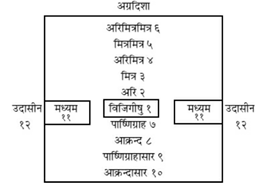
श्रीराम कहते हैं—राजाको चाहिये कि वह मुख्य द्वादश राजमण्डलका चिन्तन करे। १. अरि, २. मित्र, ३. अरिमित्र, तत्पश्चात् ४. मित्रमित्र तथा ५. अरिमित्रमित्र—ये क्रमशः विजिगीषुके सामनेवाले राजा कहे गये हैं। विजिगीषुके पीछे क्रमशः चार राजा होते हैं, जिनके नाम इस प्रकार हैं—१. पार्ष्णिग्राह, उसके बाद २. आक्रन्द, तदनन्तर इन दोनोंके आसार अर्थात् ३. पार्ष्णिग्राहासार एवं ४. आक्रन्दासार। अरि और विजिगीषु—दोनोंके राज्यसे जिसकी सीमा मिलती है, वह राजा ‘मध्यम’ कहा गया है। अरि और विजिगीषु—ये दोनों यदि परस्पर मिले हों—संगठित हो गये हों तो मध्यम राजा कोष और सेना आदिकी सहायता देकर इन दोनोंपर अनुग्रह करनेमें समर्थ होता है और यदि ये परस्पर संगठित न हों तो वह मध्यम राजा पृथक्-पृथक् या बारी-बारीसे इन दोनोंका वध करनेमें समर्थ होता है। इन सबके मण्डलसे बाहर जो अधिक बलशाली या अधिक सैनिकशक्तिसे सम्पन्न राजा है, उसकी ‘उदासीन’ संज्ञा है। विजिगीषु, अरि और मध्यम—ये परस्पर संगठित हों तो उदासीन राजा इनपर अनुग्रहमात्र कर सकता है और यदि ये संगठित न होकर पृथक्-पृथक् हों तो वह ‘उदासीन’ इन सबका वध कर डालनेमें समर्थ हो जाता है॥१—४॥
लक्ष्मण! अब मैं तुम्हें संधि, विग्रह, यान और आसन आदिके विषयमें बता रहा हूँ। किसी बलवान् राजाके साथ युद्ध ठन जानेपर यदि अपने पक्षकी अवस्था शोचनीय हो तो अपने कल्याणके लिये संधि कर लेनी चाहिये। १. कपाल, २. उपहार, ३. संतान, ४. संगत, ५. उपन्यास, ६. प्रतीकार, ७. संयोग, ८. पुरुषान्तर, ९. अदृष्टनर, १०. आदिष्ट, ११. आत्मामिष, १२. उपग्रह, १३. परिक्रय, १४. उच्छिन्न, १५. परदूषण तथा १६. स्कन्धोपनेय—ये संधिके सोलह भेद बतलाये गये हैं।[२१३] जिसके साथ संधि की जाती है, वह ‘संधेय’ कहलाता है। उसके दो भेद हैं—अभियोक्ता और अनभियोक्ता। उक्त संधियोंमोंसे उपन्यास, प्रतीकार और संयोग—ये तीन संधियाँ अनभियोक्ता (अनाक्रमणकारी)-के प्रति करनी चाहिये। शेष सभी अभियोक्ता (आक्रमणकारी)-के प्रति कर्तव्य हैं॥५—८॥
[२१३] इन सोलह संधियोंका परिचय इस प्रकार है— १. समान शक्ति तथा साधनवाले दो राजाओंमें जो बिना किसी शर्तके संधि की जाती है, उसे ‘समसंधि’ या ‘कपालसंधि’ कहते हैं। ‘कपालसंधि’ उसका नाम इसलिये हुआ कि वह दो कपालोंको जोड़नेके समान है। दो कपालोंके योगसे घड़ा बनता है। यदि एक कपाल फूट जाय और उसके स्थानपर दूसरा कपाल जोड़ा जाय तो वह बाहरसे जुड़ा हुआ दीखनेपर भी भीतरसे पूरा-पूरा नहीं जुड़ता। इसी तरह जो संधि समान शक्तिशाली पुरुषोंमें स्थापित होती है, वह कुछ कालके लिये कामचलाऊ ही होती है। हृदयका मेल न होनेके कारण वह टिक नहीं पाती। २. संधेयकी इच्छाके अनुसार पहले ही द्रव्य आदिका उपहार देनेके बाद जो उसके साथ संधि की जाती है, वह उपहार-संधि कही गयी है। ३. कन्यादान देकर जो संधि की जाती है, वह संतानहेतुक होनेके कारण संतानसंधि कहलाती है। ४. चौथी संगतसंधि कही गयी है, जो सत्पुरुषोंके साथ मैत्रीपूर्वक स्थापित होती है। इसमें देने-लेनेकी कोई शर्त नहीं होती। उसमें दोनों पक्षोंके अर्थ (कोष) और प्रयोजन (कार्य) समान होते हैं। परस्पर अत्यन्त विश्वासके साथ दोनोंके हृदय एक हो जाते हैं। उस दशामें दोनों अपना खजाना एक-दूसरेके लिये खोल देते हैं और दोनों एक-दूसरेके प्रयोजनकी सिद्धिके लिये समानरूपसे प्रयत्नशील होते हैं। यह संधि जीवनपर्यन्त सुस्थिर रहती है। सब संधियोंमें इसीका स्थान ऊँचा है। जैसे टूटे हुए सुवर्णके टुकड़ोंको गलाकर जोड़ा जाय तो वे पूर्णरूपसे जुड़ जाते हैं, उसी तरह संगतसंधिमें दोनों पक्षोंकी संगति अटूट हो जाती है। इसीलिये इसे सुवर्णसंधि या काञ्चनसंधि भी कहते हैं। यह सम्पत्ति और विपत्तिमें भी, कैसे ही कारण क्यों न हों, उनके द्वारा अभेद्य रहती है। ५. भविष्यमें कल्याण करनेवाली एकार्थसिद्धिके उद्देश्यसे जो संधि की जाय, अर्थात् अमुक शत्रु हम दोनोंको हानि पहुँचानेवाला है, अतः हम दोनों मिलकर उसका उच्छेद करें, इससे हम दोनोंको समानरूपसे लाभ होगा—ऐसा उपन्यास (उल्लेख) करके जो संधि की जाय, उसे उपन्यास कहा गया है। ६. मैंने पहले इसका उपकार किया है, संकटकालमें इसे सहायता दी है, अब यह ऐसे ही अवसरपर मेरी भी सहायता करके उस उपकारका बदला चुकायेगा—इस उद्देश्यसे जो संधि की जाती है, अथवा मैं इसका उपकार करता हूँ, यह मेरा भी उपकार करेगा—इस अभिप्रायसे जो संधि स्थापित की जाती है, उसका नाम प्रतीकारसंधि है—जैसे श्रीराम और सुग्रीवकी संधि। ७. एकपर ही चढ़ाई करनेके लिये जब शत्रु और विजिगीषु दोनों जाते हैं, उस समय यात्राकालमें जो उन दोनोंमें संगठन या साँठ-गाँठ हो जाती है, ऐसी संधिको संयोग कहते हैं। ८. जहाँ दो राजाओंमें एक नतमस्तक हो जाता है और दूसरा यह शर्त रखता है कि मेरे और तुम्हारे दोनों सेनापति मिलकर मेरा अमुक कार्य सिद्ध करें, तो उस शर्तपर होनेवाली संधि पुरुषान्तर कही जाती है। ९. अकेले तुम मेरा अमुक कार्य सिद्ध करो, उसमें मैं अथवा मेरी सेनाका कोई योद्धा साथ नहीं रहेगा—जहाँ शत्रु ऐसी शर्त सामने रखे, वहाँ उस शर्तपर की जानेवाली संधि ‘अदृष्ट-पुरुष’ कही जाती है। उसमें एक पक्षका कोई भी पुरुष देखनेमें नहीं आता, अतएव उसका नाम अदृष्टपुरुष है। १०. जहाँ अपनी भूमिका एक भाग देकर शेषकी रक्षाके लिये बलवान् शत्रुके साथ संधि की जाती है, उसे आदिष्ट कहा गया है। ११. जहाँ अपनी सेना देकर संधि की जाती है, वहाँ अपने-आपको ही आमिष (भोग्य) बना देनेके कारण उस संधिका नाम आत्मामिष है। १२. जहाँ प्राणरक्षाके लिये सर्वस्व अर्पण कर दिया जाता है, वह संधि उपग्रह कही गयी है। १३. जहाँ कोषका एक भाग, कुप्य (वस्त्र, कम्बल आदि) अथवा सारा ही खजाना देकर शेष प्रकृति (अमात्य, राष्ट्र आदि)-की रक्षा की जाती है, वहाँ मानो उस धनसे उन शेष प्रकृतियोंका क्रय किया जाता है; अतएव उस संधिको परिक्रय कहते हैं। १४. जहाँ सारभूत भूमि (कोष आदिकी अधिक वृद्धि करानेवाले भूभाग)-को देकर संधि की जाती है, वह अपना उच्छेद करनेके समान होनेसे उच्छिन्न कहलाती है। १५. अपनी सम्पूर्ण भूमिसे जो भी फल या लाभ प्राप्त होता है, उसको कुछ अधिक मिलाकर देनेके बाद जो संधि होती है, वह परदूषण कही गयी है। १६. जहाँ परिगणित फल (लाभ) खण्ड-खण्ड करके अर्थात् कई किश्तोंमें बाँटकर पहुँचाये जाते हैं, वैसी संधि स्कन्धोपनेय कही गयी है।
परस्परोपकार, मैत्र, सम्बन्धज तथा उपहार—ये ही चार संधिके भेद जानने चाहिये—ऐसा अन्य लोगोंका मत है[२१४]॥९॥
[२१४] ‘परस्परोपकार’ ही प्रतीकार है; ‘मैत्र’ का ही नाम ‘संगत’ संधि है। सम्बन्धजको ही ‘संतान’ कहा गया है और ‘उपहार’ तो पूर्वकथित ‘उपहार’ है ही। इन्हींमें अन्य सबका समावेश है।
बालक, वृद्ध, चिरकालका रोगी, भाई-बन्धुओंसे बहिष्कृत, डरपोक, भीरु सैनिकोंवाला, लोभी-लालची सेवकोंसे घिरा हुआ, अमात्य आदि प्रकृतियोंके अनुरागसे वञ्चित, अत्यन्त विषयासक्त, अस्थिरचित्त और अनेक लोगोंके सामने मन्त्र प्रकट करनेवाला, देवताओं और ब्राह्मणोंका निन्दक, दैवका मारा हुआ, दैवको ही सम्पत्ति और विपत्तिका कारण मानकर स्वयं उद्योग न करनेवाला, जिसके ऊपर दुर्भिक्षका संकट आया हो वह, जिसकी सेना कैद कर ली गयी हो अथवा शत्रुओंसे घिर गयी हो वह, अयोग्य देशमें स्थित (अपनी सेनाकी पहुँचसे बाहरके स्थानमें विद्यमान), बहुत-से शत्रुओंसे युक्त, जिसने अपनी सेनाको युद्धके योग्य कालमें नहीं नियुक्त किया है वह, तथा सत्य और धर्मसे भ्रष्ट—ये बीस पुरुष ऐसे हैं जिनके साथ संधि न करे, केवल विग्रह करे॥१०—१३॥
एक-दूसरेके अपकारसे मनुष्योंमें विग्रह (कलह या युद्ध) होता है। राजा अपने अभ्युदयकी इच्छासे अथवा शत्रुसे पीड़ित होनेपर यदि देश-कालकी अनुकूलता और सैनिक-शक्तिसे सम्पन्न हो तो विग्रह प्रारम्भ करे॥१४-१५॥
सप्ताङ्ग राज्य, स्त्री (सीता आदि-जैसी असाधारण देवी), जनपदके स्थानविशेष, राष्ट्रके एक भाग, ज्ञानदाता उपाध्याय आदि और सेना—इनमेंसे किसीका भी अपहरण विग्रहका कारण है (इस प्रकार छः हेतु बताये गये)। इनके सिवा मद (राजा दम्भोद्भव आदिकी भाँति शौर्यादिजनित दर्प), मान (रावण आदिकी भाँति अहंकार), जनपदकी पीड़ा (जनपद-निवासियोंका सताया जाना), ज्ञानविघात (शिक्षा-संस्थाओं अथवा ज्ञानदाता गुरुओंका विनाश), अर्थविघात (भूमि, हिरण्य आदिको क्षति पहुँचाना), शक्तिविघात (प्रभुशक्ति, मन्त्रशक्ति और उत्साहशक्तियोंका अपक्षय), धर्मविघात, दैव (प्रारब्धजनित दुरवस्था), सुग्रीव आदि-जैसे मित्रोंके प्रयोजनकी सिद्धि, माननीय जनोंका अपमान, बन्धुवर्गका विनाश, भूतानुग्रहविच्छेद (प्राणियोंको दिये गये अभयदानका खण्डन—जैसे एकने किसी वनमें वहाँके जन्तुओंको अभय देनेके लिये मृगयाकी मनाही कर दी, किंतु दूसरा उस नियमको तोड़कर शिकार खेलने आ गया—यही ‘भूतानुग्रहविच्छेद’ है), मण्डलदूषण (द्वादशराजमण्डलमेंसे किसीको विजिगीषुके विरुद्ध उभाड़ना), एकार्थाभिनिवेशित्व (जो भूमि या स्त्री आदि अर्थ एकको अभीष्ट है, उसीको लेनेके लिये दूसरेका भी दुराग्रह)—ये बीस विग्रहके कारण हैं॥१६—१८॥
सापत्न (रावण और विभीषणकी भाँति सौतेले भाइयोंका वैमनस्य), वास्तुज (भूमि, सुवर्ण आदिके हरणसे होनेवाला अमर्ष), स्त्रीके अपहरणसे होनेवाला रोष, कटुवचनजनित क्रोध तथा अपराधजनित प्रतिशोधकी भावना—ये पाँच प्रकारके वैर अन्य विद्वानोंने बताये हैं[२१५]॥१९॥
[२१५] सापत्न-वैरमें पूर्वोक्त एकार्थाभिनिवेशका अन्तर्भाव हो जाता है, स्त्री और वास्तुके अपहरणजनित वैरमें पूर्वकथित स्त्रीस्थानापहारज वैरका अन्तर्भाव है। वाग्जात वैरमें पूर्वोक्त ज्ञानापहारज और अपमानजनित वैर अन्तर्भूत होते हैं और अपराधजनित वैरमें पूर्वोक्तशेष १४ कारणोंका समावेश हो जाता है।
(१) जिस विग्रहसे बहुत कम लाभ होनेवाला हो, (२) जो निष्फल हो, (३) जिससे फलप्राप्तिमें संदेह हो, (४) जो तत्काल दोषजनक (विग्रहके समय मित्रादिके साथ विरोध पैदा करनेवाला), (५) भविष्यकालमें भी निष्फल, (६) वर्तमान और भविष्यमें भी दोषजनक हो, (७) जो अज्ञात बल-पराक्रमवाले शत्रुके साथ किया जाय एवं (८) दूसरोंके द्वारा उभाड़ा गया हो, (९) जो दूसरोंकी स्वार्थसिद्धिके लिये किंवा, (१०) किसी साधारण स्त्रीको पानेके लिये किया जा रहा हो, (११) जिसके दीर्घकालतक चलते रहनेकी सम्भावना हो, (१२) जो श्रेष्ठ द्विजोंके साथ छेड़ा गया हो, (१३) जो वरदान आदि पाकर अकस्मात् दैवबलसे सम्पन्न हुए पुरुषके साथ छिड़नेवाला हो, (१४) जिसके अधिक बलशाली मित्र हों, ऐसे पुरुषके साथ जो छिड़नेवाला हो, (१५) जो वर्तमान कालमें फलद, किंतु भविष्यमें निष्फल हो तथा (१६) जो भविष्यमें फलद किंतु वर्तमानमें निष्फल हो—इन सोलह प्रकारके विग्रहोंमें कभी हाथ न डाले। जो वर्तमान और भविष्यमें परिशुद्ध—पूर्णतः लाभदायक हो, वही विग्रह राजाको छेड़ना चाहिये॥२०—२४॥
राजा जब अच्छी तरह समझ ले कि मेरी सेना हृष्ट-पुष्ट अर्थात् उत्साह और शक्तिसे सम्पन्न है तथा शत्रुकी अवस्था इसके विपरीत है, तब वह उसका निग्रह करनेके लिये विग्रह आरम्भ करे। जब मित्र, आक्रन्द तथा आक्रन्दासार—इन तीनोंकी राजाके प्रति दृढ़भक्ति हो तथा शत्रुके मित्र आदि विपरीत स्थितिमें हों अर्थात् उसके प्रति भक्तिभाव न रखते हों, तब उसके साथ विग्रह आरम्भ करे॥२५॥
(जिसके बल एवं पराक्रम उच्च कोटिके हों, जो विजिगीषुके गुणोंसे सम्पन्न हो और विजयकी अभिलाषा रखता हो तथा जिसकी अमात्यादि प्रकृति उसके सद्गुणोंसे उसमें अनुरक्त हो, ऐसे राजाका युद्धके लिये यात्रा करना ‘यान’ कहलाता है।) विगृह्यगमन, संधायगमन, सम्भूयगमन, प्रसङ्गतः गमन तथा उपेक्षापूर्वक गमन—ये नीतिज्ञ पुरुषोंद्वारा यानके पाँच भेद कहे गये हैं[२१६]॥२६॥
[२१६] बलवान् राजा जब समस्त शत्रुओंके साथ विग्रह आरम्भ करके युद्धके लिये यात्रा करता है, तब उसकी उस यात्राको नीतिशास्त्रके विद्वान् ‘विगृह्यगमन’ कहते हैं; अथवा शत्रुके समस्त मित्रोंको अर्थात् उसके आगे और पीछेके शुभचिन्तकोंको अपने सामने और पीछेवाले मित्रोंद्वारा छेड़े गये विग्रहमें फँसाकर शत्रुपर जो चढ़ाई की जाती है, उसे ‘विगृह्यगमन’ या ‘विगृह्ययान’ कहते हैं। जब अपनी चेष्टामें अवरोध उत्पन्न करनेवाले सभी प्रकारके शत्रुओंके साथ संधि करके जो एकमात्र किसी अन्य शत्रुपर आक्रमण किया जाता है, वह ‘संधायगमन’ कहा जाता है। अथवा अपने पार्ष्णिग्राह संज्ञावाले पृष्ठवर्ती शत्रुके साथ संधि करके जो अन्यत्र—अपने सामनेवाले शत्रुपर आक्रमणके लिये यात्रा की जाती है, विजिगीषुकी उस यात्राको भी ‘संधायगमन’ कहते हैं। सामूहिक लाभमें समानरूपसे भागी होनेवाले सामन्तोंके साथ, जो शक्ति और शुद्धभावसे युक्त हों, एकीभूत होकर—मिलकर जो किसी एक ही शत्रुपर चढ़ाई की जाती है, उसका नाम ‘सम्भूयगमन’ है। अथवा जो विजिगीषु और उसके शत्रु दोनोंकी प्रकृतियोंका विनाश करनेके कारण दोनोंका शत्रु हो, उसके प्रति विजिगीषु तथा शत्रु दोनोंका मिलकर युद्धके लिये यात्रा करना ‘सम्भूयगमन’ है। इसके उदाहरण हैं—सूर्य और हनुमान्। हनुमान् बाल्यावस्थामें लोहित सूर्यमण्डलको उदित हुआ देख, ‘यह क्या है’—इस बातको जाननेके लिये बालोचित चपलतावश उछलकर उसे पकड़नेके लिये आगे बढ़े। निकट पहुँचनेपर उन्होंने देखा कि भानुको ग्रहण करनेके लिये स्वर्भानु (राहु) आया है। फिर तो उसे ही अपना प्रतिद्वन्द्वी जान हनुमान्जी उसपर टूट पड़े। उस समय सूर्यने भी अपने प्रमुख शत्रु राहुको दबानेके लिये अपने भोले-भाले शत्रु हनुमान्जीका ही साथ दिया। एकपर आक्रमण करनेके लिये प्रस्थित हुआ राजा यदि प्रसङ्गवश उसके विरोधी दूसरे पक्षको अपने आक्रमणका लक्ष्य बना लेता है तो उसकी उस यात्राको ‘प्रसङ्गतःगमन’ या ‘प्रसङ्गयान’ कहते हैं। इसके दृष्टान्त हैं राजा शल्य। वे दुर्योधनपर पाण्डवपक्षसे आक्रमणके लिये चले थे, किंतु मार्गमें दुर्योधनके अति सत्कारसे प्रसन्न हो उसे वर माँगनेके लिये कहकर उसकी प्रार्थनासे उसीके सेनापति हो गये और अपने भानजे युधिष्ठिरको ही अपने आक्रमणका लक्ष्य बनाया। शत्रुके प्रति आक्रमण करनेवाले विजिगीषुको रोकनेके लिये यदि उस शत्रुके बलवान् मित्र आ पहुँचें तो उस शत्रुकी उपेक्षा करके उसके उन मित्रोंपर ही चढ़ाई करना ‘उपेक्षायान’ कहलाता है—जैसे इन्द्रकी आज्ञासे निवातकवचोंका वध करनेके लिये प्रस्थित हुए अर्जुनको रोकनेके निमित्त जब हिरण्यपुरवासी ‘कालकंज’ नामक असुर आ पहुँचे, तब अर्जुन उन निवातकवचोंकी उपेक्षा करके कालकंजोंपर ही टूट पड़े और उनको परास्त करनेके बाद ही उन्होंने निवातकवचोंका वध किया।
जब विजिगीषु और शत्रु—दोनों एक-दूसरेकी शक्तिका विघात न कर सकनेके कारण आक्रमण न करके बैठ रहें तो इसे ‘आसन’ कहा जाता है; इसके भी ‘यान’ की ही भाँति पाँच भेद होते हैं—१. विगृह्य आसन, २. संधाय आसन, ३. सम्भूय आसन, ४. प्रसङ्गासन तथा ५. उपेक्षासन[२१७]॥२७॥
[२१७] जब शत्रु और विजिगीषु परस्पर आक्रमण करके कारणवशात् युद्ध बंद करके बैठ जायँ तो इसे ‘विगृह्यासन’ कहते हैं। यह एक प्रकार है। विजिगीषु शत्रुके किसी प्रदेशको क्षति पहुँचाकर जब स्वतः युद्धसे विरत होकर बैठ जाता है, तब यह भी ‘विगृह्यासन’ कहलाता है। यदि शत्रु दुर्गके भीतर स्थित होनेके कारण पकड़ा न जा सके, तो उसके आसार (मित्रवर्ग) तथा बीज (अनाजकी फसल आदि)-को नष्ट करके उसके साथ विग्रह छोड़कर बैठ रहे। दीर्घकालतक ऐसा करनेसे प्रजा आदि प्रकृतियाँ उस शत्रु राजासे विरक्त हो जाती हैं। अतः समयानुसार वह वशीभूत हो जाता है। शत्रु और विजिगीषु समान बलशाली होनेके कारण युद्ध छिड़नेपर जब समानरूपसे क्षीण होने लगें, तब परस्पर संधि करके बैठ जायँ। यह ‘संधाय आसन’ कहलाता है। पूर्वकालमें निवातकवचोंके साथ जब दिग्विजयी रावणका युद्ध होने लगा, तब दोनों पक्ष ब्रह्माजीके वरदानसे शक्तिशाली होनेके कारण एक-दूसरेको परास्त न कर सके। उस दशामें ब्रह्माजीको ही बीचमें डालकर रावण संधि करके बैठ रहा। यह ‘संधाय आसन’ का उदाहरण है। विजिगीषु और उसके शत्रुको उदासीन और मध्यमसे आक्रमणकी समानरूपसे शङ्का हो, तब उन दोनोंको मिल जाना चाहिये। इस प्रकार मिलकर बैठना ‘सम्भूय आसन’ कहलाता है। जब मध्यम और उदासीनमेंसे कोई-सा भी विजिगीषु और उसके शत्रु—दोनोंका विनाश करना चाहता हो, तब वह उन दोनोंका शत्रु समझा जाता है; उस दशामें विजिगीषु अपने शत्रुके साथ मिलकर दोनोंके ही अधिक बलवान् शत्रुभूत उस मध्यम या उदासीनका सामना करें। यही ‘सम्भूय आसन’ है। यदि विजिगीषु किसी अन्य शत्रुपर आक्रमणकी इच्छा रखता हो; किंतु कार्यान्तर (अर्थलाभ या अनर्थ-प्रतिकार)-के प्रसङ्गसे अन्यत्र बैठे रहे तो इसे ‘प्रसङ्गासन’ कहते हैं। अधिक शक्तिशाली शत्रुकी उपेक्षा करके अपने स्थानपर बैठे रहना ‘उपेक्षासन’ कहलाता है। भगवान् श्रीकृष्णने जब पारिजातहरण किया था, उस समय उन्हें अधिक शक्तिशाली जानकर इन्द्रदेव उपेक्षा करके बैठ रहे, यह उपेक्षासनका उदाहरण है। इसका एक दूसरा उदाहरण रुक्मी है। महाभारत-युद्धमें वह क्रथ और क्रैशिकोंकी सेना लेकर बारी-बारीसे कौरवों और पाण्डवोंके पास गया और बोला, ‘यदि तुम डरे हुए हो तो हम तुम्हारी सहायता करके तुम्हें विजय दिलायें।’ उसकी इस बातपर दोनोंने उसकी उपेक्षा कर दी। अतः वह किसी ओरसे युद्ध न करके अपने घरपर ही बैठा रहा।
दो बलवान् शत्रुओंके बीचमें पड़कर वाणीद्वारा दोनोंको ही आत्मसमर्पण करे—‘मैं और मेरा! राज्य दोनोंके ही हैं’, यह संदेश दोनोंके ही पास गुप्तरूपसे भेजे और स्वयं दुर्गमें छिपा रहे। यह ‘द्वैधीभाव’ की नीति है। जब उक्त दोनों शत्रु पहलेसे ही संगठित होकर आक्रमण करते हों, तब जो उनमें अधिक बलशाली हो, उसकी शरण ले। यदि वे दोनों शत्रु परस्पर मन्त्रणा करके उसके साथ किसी भी शर्तपर संधि न करना चाहते हों, तब विजिगीषु उन दोनोंके ही किसी शत्रुका आश्रय ले अथवा किसी भी अधिक शक्तिशाली राजाकी शरण लेकर आत्मरक्षा करे॥२८—३०॥
यदि विजिगीषुपर किसी बलवान् शत्रुका आक्रमण हो और वह उच्छिन्न होने लगे तथा किसी उपायसे उस संकटका निवारण करना उसके लिये असम्भव हो जाय, तब वह किसी कुलीन, सत्यवादी, सदाचारी तथा शत्रुकी अपेक्षा अधिक बलशाली राजाकी शरण ले। उस आश्रयदाताके दर्शनके लिये उसकी आराधना करना, सदा उसके अभिप्रायके अनुकूल चलना, उसीके लिये कार्य करना और सदा उसके प्रति आदरका भाव रखना—यह आश्रय लेनेवालेका व्यवहार बतलाया गया है॥३१-३२॥
इस प्रकार आदि आग्नेय महापुराणमें ‘षाड्गुण्यकथन’ नामक दो सौ चालीसवाँ अध्याय पूरा हुआ॥२४०॥
दो सौ इकतालीसवाँ अध्याय
मन्त्रविकल्प
श्रीराम कहते हैं—‘लक्ष्मण! प्रभावशक्ति और उत्साह-शक्तिसे मन्त्रशक्ति श्रेष्ठ बतायी गयी है। प्रभाव और उत्साहसे सम्पन्न शुक्राचार्यको देवपुरोहित बृहस्पतिने मन्त्र-बलसे जीत लिया॥१॥
जो विश्वसनीय होनेके साथ-ही-साथ नीतिशास्त्रका विद्वान् हो, उसीके साथ राजा अपने कर्तव्यके विषयमें मन्त्रणा करे। (जो विश्वसनीय होनेपर भी मूर्ख हो तथा विद्वान् होनेपर भी अविश्वसनीय हो, ऐसे मन्त्रीको त्याग दे। कौन कार्य किया जा सकता है और कौन अशक्य है, इसका स्वच्छ बुद्धिसे विवेचन करे।) जो अशक्य कार्यका आरम्भ करते हैं, उन्हें क्लेश उठानेके सिवा कोई फल कैसे प्राप्त हो सकता है?॥२-३॥
अविज्ञात (परोक्ष)-का ज्ञान, विज्ञातका निश्चय, कर्तव्यके विषयमें दुविधा उत्पन्न होनेपर संशयका उच्छेद (समाधान) तथा शेष (अन्तिम निश्चित कर्तव्य)-की उपलब्धि—ये सब मन्त्रियोंके ही अधीन हैं। सहायक, कार्यसाधनके उपाय, देश और कालका विभाग, विपत्तिका निवारण तथा कर्तव्यकी सिद्धि—ये मन्त्रियोंकी मन्त्रणाके पाँच अङ्ग हैं॥४॥
मनकी प्रसन्नता, श्रद्धा (कार्यसिद्धिके विषयमें दृढ़ विश्वास), ज्ञानेन्द्रियों तथा कर्मेन्द्रियोंकी स्वविषयक व्यापारमें क्षमता, सहाय-सम्पत्ति (सहायकोंका बाहुल्य अथवा सत्त्वादि गुणोंका योग) तथा उत्थान-सम्पत्ति (शीघ्रतापूर्वक उत्थान करनेका स्वभाव)—ये मन्त्रद्वारा निश्चित करके आरम्भ किये जानेवाले कर्मोंकी सिद्धिके लक्षण हैं॥५॥
मद (मदिरा आदिका नशा), प्रमाद (कार्यान्तरके प्रसङ्गसे असावधानी), काम (कामभावनासे प्रेरित होकर स्त्रियोंपर विश्वास), स्वप्नावस्थामें किये गये प्रलाप, खंभे आदिकी ओटमें लुके-छिपे लोग, पार्श्ववर्तिनी कामिनियाँ तथा उपेक्षित प्राणी (तोता, मैना, बालक, बहरे आदि)—ये मन्त्रका भेदन करनेमें कारण बनते हैं॥६॥
सभामें निर्भीक बोलनेवाला, स्मरणशक्तिसे सम्पन्न, प्रवचन-कुशल, शस्त्र और शास्त्रमें परिनिष्ठित तथा दूतोचित कर्मके अभ्याससे सम्पन्न पुरुष राजदूत होनेके योग्य होता है। निसृष्टार्थ (जिसपर संधि-विग्रह आदि कार्यको इच्छानुसार करनेका पूरा भार सौंपा गया हो, वह), मितार्थ (जिसे परिमित कार्य-भार दिया गया हो, यथा—इतना ही करना या इतना ही बोलना चाहिये), तथा शासनहारक (लिखित आदेशको पहुँचानेवाला)—ये दूतके तीन भेद कहे गये हैं॥७-८॥
दूत अपने आगमनकी सूचना दिये बिना शत्रुके दुर्ग तथा संसद्में प्रवेश न करे (अन्यथा वह संदेहका पात्र बन जाता है)। वह कार्यसिद्धिके लिये समयकी प्रतीक्षा करे तथा शत्रु राजाकी आज्ञा लेकर वहाँसे विदा हो। उसे शत्रुके छिद्र (दुर्बलता)-की जानकारी प्राप्त करनी चाहिये। उसके कोष, मित्र और सेनाके विषयमें भी वह जाने तथा शत्रुकी दृष्टि एवं शरीरकी चेष्टाओंसे अपने प्रति राग और विरक्तिका भी अनुमान कर लेना चाहिये॥९-१०॥
वह उभय पक्षोंके कुलकी (यथा—‘आप उदितोदित कुलके रत्न हैं’ आदि), नामकी (यथा—‘आपका नाम दिग्दिगन्तमें विख्यात है’ इत्यादि), द्रव्यकी (यथा—‘आपका द्रव्य परोपकारमें लगता है’ इत्यादि) तथा श्रेष्ठ कर्मकी (यथा—‘आपके सत्कर्मकी श्रेष्ठ लोग भूरि-भूरि प्रशंसा करते हैं’ आदि कहकर) बड़ाई करे। इस तरह चतुर्विध स्तुति करनी चाहिये। तपस्वीके वेषमें रहनेवाले अपने चरोंके साथ संवाद करे। अर्थात् उनसे बात करके यथार्थ स्थितिको जाननेकी चेष्टा करे॥११॥
चर दो प्रकारके होते हैं—प्रकाश (प्रकट) और अप्रकाश (गुप्त)। इनमें जो प्रकाश है, उसकी ‘दूत’ संज्ञा है और अप्रकाश ‘चर’ कहा गया है। वणिक् (वैदेहक), किसान (गृहपति), लिङ्गी (मुण्डित या जटाधारी तपस्वी), भिक्षुक (उदास्थित), अध्यापक (छात्रवृत्तिसे रहनेवाला—कार्पटिक)—इन चारोंकी स्थितिके लिये संस्थाएँ हैं। इनके लिये वृत्ति (जीविका)-की व्यवस्था की जानी चाहिये, जिससे ये सुखसे रह सकें[२१८]॥ १२॥
[२१८] यहाँ कोष्ठमें दिये गये ‘वैदेहक’ आदि शब्द ‘वणिक्’ आदि संस्थाओंके चरोंके नामान्तर हैं।
जब दूतकी चेष्टा विफल हो जाय तथा शत्रु व्यसनग्रस्त हो, तब उसपर चढ़ाई करे॥१२॥
जिससे अपनी प्रकृतियाँ व्यसनग्रस्त हो गयी हों, उस कारणको शान्त करके विजिगीषु शत्रुपर चढ़ाई करे। व्यसन दो प्रकारके होते हैं—मानुष और दैव। अनय और अपनय दोनोंके संयोगसे प्रकृति-व्यसन प्राप्त होता है। अथवा केवल दैवसे भी उसकी प्राप्ति होती है। वह श्रेय (अभीष्ट अर्थ)-को व्यस्त (क्षिप्त या नष्ट) कर देता है, इसलिये ‘व्यसन’ कहलाता है। अग्नि (आग लगना), जल (अतिवृष्टि या बाढ़), रोग, दुर्भिक्ष (अकाल पड़ना) और मरक (महामारी)—ये पाँच प्रकारके ‘दैव-व्यसन’ हैं। शेष ‘मानुष-व्यसन’ हैं। पुरुषार्थ अथवा अथर्ववेदोक्त शान्तिकर्मसे दैव-व्यसनका निवारण करे। उत्थान-शीलता (दुर्गादि-निर्माणविषयक चेष्टा) अथवा नीति—संधि या साम आदिके प्रयोगके द्वारा मानुष-व्यसनकी शान्ति करे॥१३—१५॥
मन्त्र (कार्यका निश्चय), मन्त्रफलकी प्राप्ति, कार्यका अनुष्ठान, भावी उन्नतिका सम्पादन, आय-व्यय, दण्डनीति, शत्रुका निवारण तथा व्यसनको टालनेका उपाय, राजा एवं राज्यकी रक्षा—ये सब अमात्यके कर्म हैं। यदि अमात्य व्यसनग्रस्त हो तो वह इन सब कर्मोंको नष्ट कर देता है[२१९]॥१६-१७॥
[२१९] इन कर्मोंमें मन्त्र या कार्यका निश्चय मन्त्रीके अधीन है, शत्रुओंको दूरसे ही भगाकर मन्त्रसाध्य फलकी प्राप्ति दूतके अधीन है, कार्यका अनुष्ठान (दुर्गादिकर्मकी प्रवृत्ति) अध्यक्षके अधीन है, आयति अथवा भावी उन्नतिका सम्पादन अमात्योंके अधीन है, आय और व्यय अक्षपटलिक (अर्थमन्त्री)-के अधीन हैं, दण्डनीति धर्मस्थ (न्यायाधिकारी)-के हाथमें है तथा शत्रुओंका निवारण मित्र-साध्य कर्म है—ऐसा विभाग जयमङ्गलाकारने किया है।
सुवर्ण, धान्य, वस्त्र, वाहन तथा अन्यान्य द्रव्योंका संग्रह जनपदवासिनी प्रजाके कर्म हैं। यदि प्रजा व्यसनग्रस्त हो तो वह उपर्युक्त सब कार्योंका नाश कर डालती है॥१८॥
आपत्तिकालमें प्रजाजनोंकी रक्षा, कोष और सेनाकी रक्षा, गुप्त या आकस्मिक युद्ध, आपत्तिग्रस्त जनोंकी रक्षा, संकटमें पड़े हुए मित्रों और अमित्रोंका संग्रह तथा सामन्तों और वनवासियोंसे प्राप्त होनेवाली बाधाओंका निवारण भी दुर्गका आश्रय लेनेसे होता है। नगरके नागरिक भी शरण लेनेके लिये दुर्गपतियोंका कोष आदिके द्वारा उपकार करते हैं। (यदि दुर्ग विपत्तिग्रस्त हो जाय तो ये सब कार्य विपन्न हो जाते हैं।)॥१९-२०॥
भृत्यों (सैनिक आदि)-का भरण-पोषण, दानकर्म, भूषण, हाथी-घोड़े आदिका खरीदना, स्थिरता, शत्रुपक्षकी लुब्ध प्रकृतियोंमें धन देकर फूट डालना, दुर्गका संस्कार (मरम्मत और सजावट), सेतुबन्ध (खेतीके लिये जलसंचय करनेके निमित्त बाँध आदिका निर्माण), वाणिज्य, प्रजा और मित्रोंका संग्रह, धर्म, अर्थ एवं कामकी सिद्धि—ये सब कार्य कोषसे सम्पादित होते हैं। कोषसम्बन्धी व्यसनसे राजा इन सबका नाश कर देता है; क्योंकि राजाका मूल है—कोष॥२१-२२॥
मित्र, अमित्र (अपकारकी इच्छावाले शत्रु), सुवर्ण और भूमिको अपने वशमें करना, शत्रुओंको कुचल डालना, दूरके कार्यको शीघ्र पूरा करा लेना इत्यादि कार्य दण्ड (सेना)-द्वारा साध्य हैं। उसपर संकट आनेसे ये सब कार्य बिगड़ जाते हैं॥२३॥
‘मित्र’ विजिगीषुके विचलित होनेवाले मित्रोंको रोकता है—उनमें सुस्थिर स्नेह पैदा करता है, उसके शत्रुओंका नाश करता है तथा धन आदिसे विजिगीषुका उपकार करता है। ये सब मित्रसे सिद्ध होनेवाले कार्य हैं। मित्रके व्यसनग्रस्त होनेपर ये कार्य नष्ट होते हैं॥२४॥
यदि राजा व्यसनी हो तो समस्त राजकार्योंको नष्ट कर देता है। कठोर वचन बोलकर दूसरोंको दुःख पहुँचाना, अत्यन्त कठोर दण्ड देना, अर्थदूषण (वाणीद्वारा पहलेकी दी हुई वस्तुको न देना, दी हुईको छीन लेना, चोरी आदिके द्वारा धनका नाश होना तथा प्राप्त हुए धनको त्याग देना),[२२०] मदिरापान, स्त्रीविषयक आसक्ति, शिकार खेलनेमें अधिक तत्पर रहना और जूआ खेलना—ये राजाके व्यसन हैं॥२५ १/२॥
[२२०] पूर्वप्रवृत्त अर्थका उच्छेद होनेसे ‘अदान’, उसका पण्यागार आदिसे आकर्षण ‘आदान’, स्वयं उपार्जित धनका अग्नि आदिसे विध्वंस ‘विनाश’ तथा कहींसे प्राप्त धनके विघातपूर्वक उसका त्याग ‘परित्याग’ नामक अर्थदूषण है। (जयमङ्गला)
आलस्य (उद्योगशून्यता), स्तब्धता (बड़ोंके सामने उद्दण्डता या मान-प्रदर्शन), दर्प (शौर्यादिका अहंकार), प्रमाद (असावधानता), बिना कारण वैर बाँधना—ये तथा पूर्वोक्त कठोर वचन बोलना आदि राजव्यसन सचिवके लिये दुर्व्यसन बताये गये हैं॥२६॥
अनावृष्टि (और अतिवृष्टि) तथा रोगजनित पीड़ा आदि राष्ट्रके लिये व्यसन कहे गये हैं। यन्त्र (शतघ्नी आदि), प्राकार (चहारदीवारी) तथा परिखा (खाईं)-का नष्ट-भ्रष्ट हो जाना, अस्त्र-शस्त्रोंका अभाव हो जाना तथा घास, ईंधन एवं अन्नका क्षीण हो जाना दुर्गके लिये व्यसन बताया गया है॥२७-२८॥
असद्व्यय किंवा अपव्ययके द्वारा जिसे खर्च कर दिया गया हो, जिसे मण्डलके अनेक स्थानोंमें थोड़ा-थोड़ा करके बाँट दिया गया हो, रक्षक आदिने जिसका भक्षण कर लिया हो, जिसे संचय करके रखा नहीं गया हो, जिसे चोर आदिने चुरा लिया हो तथा जो दूरवर्ती स्थानमें रखा गया हो, ऐसा कोष व्यसनग्रस्त बताया जाता है॥२९॥
जो चारों ओरसे अवरुद्ध कर दी गयी हो, जिसपर घेरा पड़ गया हो, जिसका अनादर या असम्मान हुआ हो, जिसका ठीक-ठीक भरण-पोषण नहीं किया गया हो, जिसके अधिकांश सैनिक रोगी, थके-माँदे, चलकर दूरसे आये हुए तथा नवागत हों, जो सर्वथा क्षीण और प्रतिहत हो चली हो, जिसके आगे बढ़नेका वेग कुण्ठित कर दिया गया हो, जिसके अधिकांश लोग आशाजनित निर्वेद (खेद एवं विरक्ति)-से भरे हों, जो अयोग्य भूमिमें स्थित, अनृतप्राप्त (अविश्वस्त) हो गयी हो, जिसके भीतर स्त्रियाँ अथवा स्त्रैण हों, जिसके हृदयमें कुछ काँटा-सा चुभ रहा हो तथा जिस सेनाके पीछे दुष्ट पार्ष्णिग्राह (शत्रु)-की सेना लगी हुई हो, उस सेनाकी इस दुरवस्थाको ‘बलव्यसन’ कहा जाता है॥३०—३३॥
जो दैवसे पीड़ित, शत्रुसेनासे आक्रान्त तथा पूर्वोक्त काम, क्रोध आदिसे संयुक्त हो, उस मित्रको व्यसनग्रस्त बताया गया है। उसे उत्साह एवं सहायता दी जाय तो वह शत्रुओंसे युद्धके लिये उद्यत एवं विजयी हो सकता है॥३४॥
अर्थदूषण, वाणीकी कठोरता तथा दण्डविषयक अत्यन्त क्रूरता—ये तीन क्रोधज व्यसन हैं। मृगया, जूआ, मद्यपान तथा स्त्रीसङ्ग—ये चार प्रकारके कामज व्यसन हैं॥३५॥
वाणीकी कठोरता लोकमें अत्यन्त उद्वेग पैदा करनेवाली और अनर्थकारिणी होती है। अर्थहरण, ताड़न और वध—यह तीन प्रकारका दण्ड असिद्ध अर्थका साधक होनेसे सत्पुरुषोंद्वारा ‘शासन’ कहा गया है। उसको युक्तिसे ही प्राप्त कराये। जो राजा युक्त (उचित) दण्ड देता है, उसकी प्रशंसा की जाती है। जो क्रोधवश कठोर दण्ड देता है, वह राजा प्राणियोंमें उद्वेग पैदा करता है। उस दण्डसे उद्विग्न हुए मनुष्य विजिगीषुके शत्रुओंकी शरणमें चले जाते हैं, उनसे वृद्धिको प्राप्त हुए शत्रु उक्त राजाके विनाशमें कारण होते हैं॥३६-३७॥
दूषणीय मनुष्यके दूषण (अपकार)-के लिये उससे प्राप्त होनेवाले किसी महान् अर्थका विघातपूर्वक परित्याग नीति-तत्त्वज्ञ विद्वानोंद्वारा ‘अर्थदूषण’ कहा जाता है॥३८॥
दौड़ते हुए यान (अश्व आदि)-से गिरना, भूख-प्यासका कष्ट उठाना आदि दोष मृगयासे प्राप्त होते हैं। किसी छिपे हुए शत्रुसे मारे जानेकी भी सम्भावना रहती है। श्रम या थकावटपर विजय पानेके लिये किसी सुरक्षित वनमें राजा शिकार खेले॥३९॥
जूएमें धर्म, अर्थ और प्राणोंके नाश आदि दोष होते हैं; उसमें कलह आदिकी भी सम्भावना रहती है। स्त्रीसम्बन्धी व्यसनसे प्रत्येक कर्तव्य-कार्यके करनेमें बहुत अधिक विलम्ब होता है—ठीक समयसे कोई काम नहीं हो पाता तथा धर्म और अर्थको भी हानि पहुँचती है। मद्यपानके व्यसनसे प्राणोंका नाशतक हो जाता है, नशेके कारण कर्तव्य और अकर्तव्यका निश्चय नहीं हो पाता॥४०-४१॥
सेनाकी छावनी कहाँ और कैसे पड़नी चाहिये, इस बातको जो जानता है तथा भले-बुरे निमित्त (शकुन)-का ज्ञान रखता है, वह शत्रुपर विजय पा सकता है। स्कन्धावार (सेनाकी छावनी)-के मध्यभागमें खजानासहित राजाके ठहरनेका स्थान होना चाहिये। राजभवनको चारों ओरसे घेरकर क्रमशः मौल (पिता-पितामहके कालसे चली आती हुई मौलिक सेना), भृत (भोजन और वेतन देकर रखी हुई सेना), श्रेणि (जनपदनिवासियोंका दल अथवा कुविन्द आदिकी सेना), मित्रसेना, द्विषद्बल (राजाकी दण्डशक्तिसे वशीभूत हुए सामन्तोंकी सेना) तथा आटविक (वन्य-प्रदेशके अधिपतिकी सेना)—इन सेनाओंकी छावनी डाले॥४२-४३॥
(राजा और उसके अन्तःपुरकी रक्षाकी सुव्यवस्था करनेके पश्चात्) सेनाका एक चौथाई भाग युद्धसज्जासे सुसज्जित हो सेनापतिको आगे करके प्रयत्नपूर्वक छावनीके बाहर रातभर चक्कर लगाये। वायुके समान वेगशाली घोड़ोंपर बैठे हुए घुड़सवार दूर सीमान्तपर विचरते हुए शत्रुकी गतिविधिका पता लगायें। जो भी छावनीके भीतर प्रवेश करें या बाहर निकलें, सब राजाकी आज्ञा प्राप्त करके ही वैसा करें॥४४-४५॥
साम, दान, दण्ड, भेद, उपेक्षा, इन्द्रजाल और माया—ये सात उपाय हैं; इनका शत्रुके प्रति प्रयोग करना चाहिये। इन उपायोंसे शत्रु वशीभूत होता है॥४६॥
सामके पाँच भेद बताये गये हैं—१. दूसरेके उपकारका वर्णन, २. आपसके सम्बन्धको प्रकट करना (जैसे ‘आपकी माता मेरी मौसी हैं’ इत्यादि) ३. मधुरवाणीमें गुण-कीर्तन करते हुए बोलना, ४. भावी उन्नतिका प्रकाशन (यथा—‘ऐसा होनेपर आगे चलकर हम दोनोंका बड़ा लाभ होगा’ इत्यादि) तथा ५. मैं आपका हूँ—यों कहकर आत्मसमर्षण करना॥४७॥
किसीसे उत्तम (सार), अधम (असार) तथा मध्यम (सारासार) भेदसे जो द्रव्य-सम्पत्ति प्राप्त हुई हो, उसको उसी रूपमें लौटा देना—यह दानका प्रथम भेद है। २. बिना दिये ही जो धन किसीके द्वारा ले लिया गया हो, उसका अनुमोदन करना (यथा—‘आपने अच्छा किया जो ले लिया। मैंने पहलेसे ही आपको देनेका विचार कर लिया था’)—यह दानका दूसरा भेद है। ३. अपूर्व द्रव्यदान (भाण्डागारसे निकालकर दिया गया नूतन दान) ४. स्वयंग्राहप्रवर्तन (किसी दूसरेसे स्वयं ही धन ले लेनेके लिये प्रेरित करना। यथा—‘अमुक व्यक्तिसे अमुक द्रव्य ले लो, वह तुम्हारा ही हो जायगा’) तथा ५. दातव्य ऋण आदिको छोड़ देना या न लेना—इस प्रकार ये दानके पाँच भेद कहे गये हैं॥४८-४९॥
स्नेह और अनुरागको दूर कर देना, परस्पर संघर्ष (कलह) पैदा करना तथा धमकी देना—भेदज्ञ पुरुषोंने भेदके ये तीन प्रकार बताये हैं॥५०॥
वध, धनका अपहरण और बन्धन एवं ताड़न आदिके द्वारा क्लेश पहुँचाना—ये दण्डके तीन भेद हैं। वधके दो प्रकार हैं—(१) प्रकाश (प्रकट) और (२) अप्रकाश (गुप्त)। जो सब लोगोंके द्वेषपात्र हों, ऐसे दुष्टोंका प्रकटरूपमें वध करना चाहिये; किंतु जिनके मारे जानेसे लोग उद्विग्न हो उठें, जो राजाके प्रिय हों तथा अधिक बलशाली हों, वे यदि राजाके हितमें बाधा पहुँचाते हैं तो उनका गुप्तरूपसे वध करना उत्तम कहा गया है। गुप्तरूपसे वधका प्रयोग यों करना चाहिये—विष देकर, एकान्तमें आग आदि लगाकर, गुप्त मनुष्योंद्वारा शस्त्रका प्रयोग कराकर अथवा शरीरमें फोड़ा पैदा करनेवाले उबटन लगवाकर राज्यके शत्रुको नष्ट करे। जो जातिमात्रसे भी ब्राह्मण हो, उसे प्राणदण्ड न दे। उसपर सामनीतिका प्रयोग करके उसे वशमें लानेकी चेष्टा करे॥५१—५३॥
प्रिय वचन बोलना ‘साम’ कहलाता है। उसका प्रयोग इस तरह करे, जिससे चित्तमें अमृतका-सा लेप होने लगे। अर्थात् वह हृदयमें स्थान बना ले। ऐसी स्निग्ध दृष्टिसे देखे, मानो वह सामनेवालेको प्रेमसे पी जाना चाहता हो तथा इस तरह बात करे, मानो उसके मुखसे अमृतकी वर्षा हो रही हो॥५४॥
जिसपर झूठा ही कलङ्क लगाया गया हो, जो धनका इच्छुक हो, जिसे अपने पास बुलाकर अपमानित किया गया हो, जो राजाका द्वेषी हो, जिसपर भारी कर लगाया गया हो, जो विद्या और कुल आदिकी दृष्टिसे अपनेको सबसे बड़ा मानता हो, जिसके धर्म, काम और अर्थ छिन्न-भिन्न हो गये हों, जो कुपित, मानी और अनादृत हो, जिसे अकारण राज्यसे निर्वासित कर दिया गया हो, जो पूजा एवं सत्कारके योग्य होनेपर भी असत्कृत हुआ हो, जिसके धन तथा स्त्रीका हरण कर लिया गया हो, जो मनमें वैर रखते हुए भी ऊपरसे सामनीतिके प्रयोगसे शान्त रहता हो, ऐसे लोगोंमें, तथा जो सदा शङ्कित रहते हों, उनमें, यदि वे शत्रुपक्षके हों तो फूट डाले और अपने पक्षमें इस तरहके लोग हों तो उन्हें यत्नपूर्वक शान्त करे। यदि शत्रुपक्षसे फूटकर ऐसे लोग अपने पक्षमें आयें तो उनका सत्कार करे॥५५—५७॥
समान तृष्णाका अनुसन्धान (उभयपक्षको समानरूपसे लाभ होनेकी आशाका प्रदर्शन), अत्यन्त उग्रभय (मृत्यु आदिकी विभीषिका) दिखाना तथा उच्चकोटिका दान और मान—ये भेदके उपाय कहे गये हैं॥५८॥
शत्रुकी सेनामें जब भेदनीतिद्वारा फूट डाल दी जाती है, तब वह घुन लगे हुए काष्ठकी भाँति विशीर्ण (छिन्न-भिन्न) हो जाती है। प्रभाव, उत्साह तथा मन्त्रशक्तिसे सम्पन्न एवं देश-कालका ज्ञान रखनेवाला राजा दण्डके द्वारा शत्रुओंका अन्त कर दे। जिसमें मैत्रीभाव प्रधान है तथा जिसका विचार कल्याणमय है, ऐसे पुरुषको सामनीतिके द्वारा वशमें करे॥५९-६०॥
जो लोभी हो और आर्थिक दृष्टिसे क्षीण हो चला हो, उसको दानद्वारा सत्कारपूर्वक वशमें करे। परस्पर शङ्कासे जिनमें फूट पड़ गयी हो तथा जो दुष्ट हों, उन सबको दण्डका भय दिखाकर वशमें ले आये। पुत्र और भाई आदि बन्धुजनोंको सामनीतिद्वारा एवं धन देकर वशीभूत करे। सेनापतियों, सैनिकों तथा जनपदके लोगोंको दान और भेदनीतिके द्वारा अपने अधीन करे। सामन्तों (सीमावर्ती नरेशों), आटविकों (वन्य-प्रदेशके शासकों) तथा यथासम्भव दूसरे लोगोंको भी भेद और दण्डनीतिसे वशमें करे॥६१-६२॥
देवताओंकी प्रतिमाओं तथा जिनमें देवताओंकी मूर्ति खुदी हो, ऐसे खंभोंके बड़े-बड़े छिद्रोंमें छिपकर खड़े हुए मनुष्य ‘मानुषी माया’ हैं।[२२१] स्त्रीके कपड़ोंसे ढँका हुआ अथवा रात्रिमें अद्भुतरूपसे दर्शन देनेवाला पुरुष भी ‘मानुषी माया’ है। वेताल, मुखसे आग उगलनेवाले पिशाच तथा देवताओंके समान रूप धारण करना इत्यादि ‘मानुषी माया’ है। इच्छानुसार रूप धारण करना, शस्त्र, अग्नि, पत्थर और जलकी वर्षा करना तथा अन्धकार, आँधी, पर्वत और मेघोंकी सृष्टि कर देना—यह ‘अमानुषी माया’ है। पूर्वकल्पकी चतुर्युगीमें जो द्वापर आया था, उसमें पाण्डुवंशी भीमसेनने स्त्रीके समान रूप धारण करके अपने शत्रु कीचकको मारा था॥६३—६५॥
[२२१] वहाँ छिपे हुए मनुष्य यथासमय निकलकर शत्रुपर टूट पड़ते हैं या वहींसे शत्रुके विनाशकी सूचना देते हैं। शत्रुपर यह प्रभाव डालते हैं कि विजिगीषुकी सेवासे प्रसन्न होकर हम देवता ही उसकी सहायता कर रहे हैं।
अन्याय (अदण्ड्यदण्डन आदि), व्यसन (मृगया आदि) तथा बड़ेके साथ युद्धमें प्रवृत्त हुए आत्मीय जनको न रोकना ‘उपेक्षा’ है। पूर्वकल्पवर्ती भीमसेनके साथ युद्धमें प्रवृत्त हुए अपने भाई हिडिम्बको हिडिम्बाने मना नहीं किया, अपने स्वार्थकी सिद्धिके लिये उसकी उपेक्षा कर दी॥६६॥
मेघ, अन्धकार, वर्षा, अग्नि, पर्वत तथा अन्य अद्भुत वस्तुओंको दिखाना, दूर खड़ी हुई ध्वजशालिनी सेनाओंका दर्शन कराना, शत्रुपक्षके सैनिकोंको कटे, फाड़े तथा विदीर्ण किये गये और अङ्गोंसे रक्तकी धारा बहाते हुए दिखाना—यह सब ‘इन्द्रजाल’ है। शत्रुओंको डरानेके लिये इस इन्द्रजालकी कल्पना करनी चाहिये॥६७-६८॥
इस प्रकार आदि आग्नेय महापुराणमें ‘साम आदि उपायोंका कथन’ नामक दो सौ इकतालीसवाँ अध्याय पूरा हुआ॥२४१॥
दो सौ बयालीसवाँ अध्याय
सेनाके छः भेद, इनका बलाबल तथा छः अङ्ग
श्रीराम कहते हैं—छः प्रकारकी सेनाको कवच आदिसे संनद्ध एवं व्यूहबद्ध करके इष्ट देवताओंकी तथा संग्रामसम्बन्धी दुर्गा आदि देवियोंकी पूजा करनेके पश्चात् शत्रुपर चढ़ाई करे। मौल, भृत, श्रेणि, सुहृद्, शत्रु तथा आटविक—ये छः प्रकारके सैन्य हैं।[२२२] इनमें परकी अपेक्षा पूर्व-पूर्व सेना श्रेष्ठ कही गयी है। इनका व्यसन भी इसी क्रमसे गरिष्ठ माना गया है। पैदल, घुड़सवार, रथी और हाथीसवार—ये सेनाके चार अङ्ग हैं; किंतु मन्त्र और कोष—इन दो अङ्गोंके साथ मिलकर सेनाके छः अङ्ग हो जाते हैं॥१-२॥
[२२२] मूलभूत पुरुषके सम्बन्धोंसे चली आनेवाली वंशपरम्परागत सेना ‘मौल’ कही गयी है। आजीविका देकर जिसका भरण-पोषण किया गया हो, वह ‘भृत’ बल है। जनपदके अन्तर्गत जो व्यवसायियों तथा कारीगरोंका संघ है, उनकी सेना ‘श्रेणिबल’ है। सहायताके लिये आये हुए मित्रकी सेना ‘सुहृद्बल’ है। अपनी दण्डशक्तिसे वशमें की गयी सेना ‘शत्रुबल’ है तथा स्वमण्डलके अन्तर्गत अटवी (जंगल)-का उपभोग करनेवालोंको ‘आटविक’ कहते हैं। उनकी सेना ‘आटविक बल’ है।
नदी-दुर्ग, पर्वत-दुर्ग तथा वन-दुर्ग—इनमें जहाँ-जहाँ (सामन्त तथा आटविक आदिसे) भय प्राप्त हो, वहाँ-वहाँ सेनापति संनद्ध एवं व्यूहबद्ध सेनाओंके साथ जाय। एक सेनानायक उत्कृष्ट वीर योद्धाओंके साथ आगे जाय (और मार्ग एवं सेनाके लिये आवास-स्थानका शोध करे)। विजिगीषु राजा और उसका अन्तःपुर सेनाके मध्यभागमें रहकर यात्रा करे। खजाना तथा फल्गु (असार एवं बेगार करनेवालोंकी) सेना भी बीचमें ही रहकर चले। स्वामीके अगल-बगलमें घुड़सवारोंकी सेना रहे। घुड़सवार सेनाके उभय पार्श्वोंमें रथसेना रहे। रथसेनाके दोनों तरफ हाथियोंकी सेना रहनी चाहिये। उसके दोनों बगल आटविकों (जंगली लोगों)-की सेना रहे। यात्राकालमें प्रधान एवं कुशल सेनापति स्वयं स्वामीके पीछे रहकर सबको आगे करके चले। थके-माँदे (हतोत्साह) सैनिकोंको धीरे-धीरे आश्वासन देता रहे। उसके साथकी सारी सेना कमर कसकर युद्धके लिये तैयार रहे। यदि आगेकी ओरसे शत्रुके आक्रमणका भय सम्भावित हो तो महान् मकरव्यूहकी[२२३] रचना करके आगे बढ़े। (यदि तिर्यग् दिशासे भयकी सम्भावना हो तो) खुले या फैले पंखवाले श्येन पक्षीके आकारकी व्यूह-रचना करके चले। (यदि एक आदमीके ही चलनेयोग्य पगडंडी-मार्गसे यात्रा करते समय सामनेसे भय हो तो) सूची-व्यूहकी रचना करके चले तथा उसके मुखभागमें वीर योद्धाओंको खड़ा करे। पीछेसे भय हो तो शकटव्यूहकी,[२२४] पार्श्वभागसे भय हो तो वज्रव्यूहकी[२२५] तथा सब ओरसे भय होनेपर ‘सर्वतोभद्र’[२२६] नामक व्यूहकी रचना करे॥३—८॥
[२२३] उसका मुख विस्तृत होनेसे वह पीछेकी समस्त सेनाकी रक्षा करता है।
[२२४] शकट-व्यूह पीछेकी ओरसे विस्तृत होता है।
[२२५] वज्रव्यूहमें दोनों ओर विस्तृत मुख होते हैं।
[२२६] सर्वतोभद्रमें सभी दिशाओंकी ओर सेनाका मुख होता है।
जो सेना पर्वतकी कन्दरा, पर्वतीय दुर्गम स्थान एवं गहन वनमें, नदी एवं घने वनसे संकीर्ण पथपर फँसी हो, जो विशाल मार्गपर चलनेसे थकी हो, भूख-प्याससे पीड़ित हो, रोग, दुर्भिक्ष (अकाल) एवं महामारीसे कष्ट पा रही हो, लुटेरोंद्वारा भगायी गयी हो, कीचड़, धूल तथा पानीमें फँस गयी हो, विक्षिप्त हो, एक-एक व्यक्तिके ही चलनेका मार्ग होनेसे जो आगे न बढ़कर एक ही स्थानपर एकत्र हो गयी हो, सोयी हो, खाने-पीनेमें लगी हो, अयोग्य भूमिपर स्थित हो, बैठी हो, चोर तथा अग्निके भयसे डरी हो, वर्षा और आँधीकी चपेटमें आ गयी हो तथा इसी तरहके अन्यान्य संकटोंमें फँस गयी हो, ऐसी अपनी सेनाकी तो सब ओरसे रक्षा करे तथा शत्रुसेनाको घातक प्रहारका निशाना बनाये॥९—११॥
जब आक्रमणके लक्ष्यभूत शत्रुकी अपेक्षा विजिगीषु राजा देश-कालकी अनुकूलताकी दृष्टिसे बढ़ा-चढ़ा हो तथा शत्रुकी प्रकृतिमें फूट डाल दी गयी हो और अपना बल अधिक हो तो शत्रुके साथ प्रकाश-युद्ध (घोषित या प्रकट संग्राम) छेड़ दे। यदि विपरीत स्थिति हो तो कूट-युद्ध (छिपी लड़ाई) करे। जब शत्रुकी सेना पूर्वोक्त बलव्यसन (सैन्य-संकट)-के अवसरों या स्थानोंमें फँसकर व्याकुल हो तथा युद्धके अयोग्य भूमिमें स्थित हो और सेनासहित विजिगीषु अपने अनुकूल भूमिपर स्थित हो, तब वह शत्रुपर आक्रमण करके उसे मार गिराये। यदि शत्रु-सैन्य अपने लिये अनुकूल भूमिमें स्थित हो तो उसकी प्रकृतियोंमें भेदनीतिद्वारा फूट डलवाकर, अवसर देख शत्रुका विनाश कर डाले॥१२-१३॥
जो युद्धसे भागकर या पीछे हटकर शत्रुको उसकी भूमिसे बाहर खींच लाते हैं, ऐसे वनचरों (आटविकों) तथा अमित्र सैनिकोंने पाशभूत होकर जिसे प्रकृतिप्रगहसे (स्वभूमि या मण्डलसे) दूर—परकीय भूमिमें आकृष्ट कर लिया है, उस शत्रुको प्रकृष्ट वीर योद्धाओंद्वारा मरवा डाले। कुछ थोड़े-से सैनिकोंको सामनेकी ओरसे युद्धके लिये उद्यत दिखा दे और जब शत्रुके सैनिक उन्हींको अपना लक्ष्य बनानेका निश्चय कर लें, तब पीछेसे वेगशाली उत्कृष्ट वीरोंकी सेनाके साथ पहुँचकर उन शत्रुओंका विनाश करे। अथवा पीछेकी ओर ही सेना एकत्र करके दिखाये और जब शत्रु-सैनिकोंका ध्यान उधर ही खिंच जाय, तब सामनेकी ओरसे शूरवीर बलवान् सेनाद्वारा आक्रमण करके उन्हें नष्ट कर दे। सामने तथा पीछेकी ओरसे किये जानेवाले इन दो आक्रमणोंद्वारा अगल-बगलसे किये जानेवाले आक्रमणोंकी भी व्याख्या हो गयी अर्थात् बायीं ओर कुछ सेना दिखाकर दाहिनी ओरसे और दाहिनी ओर सेना दिखाकर बायीं ओरसे गुप्तरूपसे आक्रमण करे। कूटयुद्धमें ऐसा ही करना चाहिये। पहले दूष्यबल, अमित्रबल तथा आटविकबल—इन सबके साथ शत्रुसेनाको लड़ाकर थका दे। जब शत्रुबल श्रान्त, मन्द (हतोत्साह) और निराक्रन्द (मित्ररहित एवं निराश) हो जाय और अपनी सेनाके वाहन थके न हों, उस दशामें आक्रमण करके शत्रुवर्गको मार गिराये। अथवा दूष्य एवं अमित्र सेनाको युद्धसे पीछे हटने या भागनेका आदेश दे दे और जब शत्रुको यह विश्वास हो जाय कि मेरी जीत हो गयी, अतः वह ढीला पड़ जाय, तब मन्त्रबलका आश्रय ले प्रयत्नपूर्वक आक्रमण करके उसे मार डाले। स्कन्धावार (सेनाके पड़ाव), पुर, ग्राम, सस्यसमूह तथा गौओंके व्रज (गोष्ठ)—इन सबको लूटनेका लोभ शत्रु-सैनिकोंके मनमें उत्पन्न करा दे और जब उनका ध्यान बँट जाय, तब स्वयं सावधान रहकर उन सबका संहार कर डाले। अथवा शत्रु राजाकी गायोंका अपहरण करके उन्हें दूसरी ओर (गायोंको छुड़ानेवालोंकी ओर) खींचे और जब शत्रुसेना उस लक्ष्यकी ओर बढ़े, तब उसे मार्गमें ही रोककर मार डाले। अथवा अपने ही ऊपर आक्रमणके भयसे रातभर जागनेके श्रमसे दिनमें सोयी हुई शत्रुसेनाके सैनिक जब नींदसे व्याकुल हों, उस समय उनपर धावा बोलकर मार डाले। अथवा रातमें ही निश्चिन्त सोये हुए सैनिकोंको तलवार हाथमें लिये हुए पुरुषोंद्वारा मरवा दे॥१४—२२॥
जब सेना कूच कर चुकी हो तथा शत्रुने मार्गमें ही घेरा डाल दिया हो तो उसके उस घेरे या अवरोधको नष्ट करनेके लिये हाथियोंको ही आगे-आगे ले चलना चाहिये। वन-दुर्गमें, जहाँ घोड़े भी प्रवेश न कर सकें, वहाँ हाथियोंकी ही सहायतासे सेनाका प्रवेश होता है—वे आगेके वृक्ष आदिको तोड़कर सैनिकोंके प्रवेशके लिये मार्ग बना देते हैं। जहाँ सैनिकोंकी पंक्ति ठोस हो, वहाँ उसे तोड़ देना हाथियोंका ही काम है तथा जहाँ व्यूह टूटनेसे सैनिकपंक्तिमें दरार पड़ गयी हो, वहाँ हाथियोंके खड़े होनेसे छिद्र या दरार बंद हो जाती है। शत्रुओंमें भय उत्पन्न करना, शत्रुके दुर्गके द्वारको माथेकी टक्कर देकर तोड़ गिराना, खजानेको सेनाके साथ ले चलना तथा किसी उपस्थित भयसे सेनाकी रक्षा करना—ये सब हाथियोंद्वारा सिद्ध होनेवाले कर्म हैं॥२३-२४॥
अभिन्न सेनाका भेदन और भिन्न सेनाका संधान—ये दोनों कार्य (गजसेनाकी ही भाँति) रथसेनाके द्वारा भी साध्य हैं। वनमें कहाँ उपद्रव है, कहाँ नहीं है—इसका पता लगाना, दिशाओंका शोध करना (दिशाका ठीक ज्ञान रखते हुए सेनाको यथार्थ दिशाकी ओर ले चलना) तथा मार्गका पता लगाना—यह अश्वसेनाका कार्य है। अपने पक्षके वीवध[२२७] और आसारकी[२२८] रक्षा, भागती हुई शत्रुसेनाका शीघ्रतापूर्वक पीछा करना, संकटकालमें शीघ्रतापूर्वक भाग निकलना, जल्दीसे कार्य सिद्ध करना, अपनी सेनाकी जहाँ दयनीय दशा हो, वहाँ उसके पास पहुँचकर सहायता करना, शत्रुसेनाके अग्रभागपर आघात करना और तत्काल ही घूमकर उसके पिछले भागपर भी प्रहार करना—ये अश्वसेनाके कार्य हैं। सर्वदा शस्त्र धारण किये रहना (तथा शस्त्रोंको पहुँचाना)—ये पैदल सेनाके कार्य हैं। सेनाकी छावनी डालनेके योग्य स्थान तथा मार्ग आदिकी खोज करना विष्टि (बेगार) करनेवाले लोगोंका काम है॥२५—२७॥
[२२७] आगे जाती हुई सेनाको पीछेसे बराबर वेतन और भोजन पहुँचाते रहनेकी जो व्यवस्था है, उसका नाम ‘वीवध’ है।
[२२८] मित्रसेनाको ‘आसार’ कहते हैं।
जहाँ मोटे-मोटे ठूँठ, बाँबियाँ, वृक्ष और झाड़ियाँ हों, जहाँ काँटेदार वृक्ष न हों, किंतु भाग निकलनेके लिये मार्ग हों तथा जो अधिक ऊँची-नीची न हो, ऐसी भूमि पैदल सेनाके संचार योग्य बतायी गयी है। जहाँ वृक्ष और प्रस्तरखण्ड बहुत कम हों, जहाँकी दरारें शीघ्र लाँघने योग्य हों, जो भूमि मुलायम न होकर सख्त हो, जहाँ कंकड़ और कीचड़ न हो तथा जहाँसे निकलनेके लिये मार्ग हो, वह भूमि अश्वसंचारके योग्य होती है। जहाँ ठूँठ वृक्ष और खेत न हों तथा जहाँ पङ्कका सर्वथा अभाव हो—ऐसी भूमि रथसंचारके योग्य मानी गयी है। जहाँ पैरोंसे रौंद डालनेयोग्य वृक्ष और काट देनेयोग्य लताएँ हों, कीचड़ न हो, गर्त या दरार न हो, जहाँके पर्वत हाथियोंके लिये गम्य हों, ऐसी भूमि ऊँची-नीची होनेपर भी गजसेनाके योग्य कही गयी है॥२८—३०॥
जो सैन्य अश्व आदि सेनाओंमें भेद (दरार या छिद्र) पड़ जानेपर उन्हें ग्रहण करता—सहायताद्वारा अनुगृहीत बनाता है, उसे ‘प्रतिग्रह’ कहा गया है। उसे अवश्य संघटित करना चाहिये; क्योंकि वह भारको वहन या सहन करनेमें समर्थ होता है। प्रतिग्रहसे शून्य व्यूह भिन्न-सा दीखता है॥३१-३२॥
विजयकी इच्छा रखनेवाला बुद्धिमान् राजा प्रतिग्रहसेनाके बिना युद्ध न करे। जहाँ राजा रहे, वहीं कोष रहना चाहिये; क्योंकि राजत्व कोषके ही अधीन होता है। विजयी योद्धाओंको उसीसे पुरस्कार देना चाहिये। भला ऐसा कौन है, जो दाताके हितके लिये युद्ध न करेगा? शत्रुपक्षके राजाका वध करनेपर योद्धाको एक लाख मुद्राएँ पुरस्कारमें देनी चाहिये। राजकुमारका वध होनेपर इससे आधा पुरस्कार देनेकी व्यवस्था रहनी चाहिये। सेनापतिके मारे जानेपर भी उतना ही पुरस्कार देना उचित है। हाथी तथा रथ आदिका नाश करनेपर भी उचित पुरस्कार देना आवश्यक है॥३३-३४॥
पैदल, घुड़सवार, रथी और हाथीसवार—ये सब सैनिक इस तरहसे (अर्थात् एक-दूसरेसे इतना अन्तर रखकर) युद्ध करें, जिससे उनके व्यायाम (अङ्गोंके फैलाव) तथा विनिवर्तन (विश्रामके लिये पीछे हटने)-में किसी तरहकी बाधा या रुकावट न हो। समस्त योद्धा पृथक्-पृथक् रहकर युद्ध करें। घोल-मेल होकर जूझना संकुलावह (घमासान एवं रोमाञ्चकारी) होता है। यदि महासंकुल (घमासान) युद्ध छिड़ जाय तो पैदल आदि असहाय सैनिक बड़े-बड़े हाथियोंका आश्रय लें॥३५-३६॥
एक-एक घुड़सवार योद्धाके सामने तीन-तीन पैदल पुरुषोंको प्रतियोद्धा अर्थात् अग्रगामी योद्धा बनाकर खड़ा करे। इसी रीतिसे पाँच-पाँच अश्व एक-एक हाथीके अग्रभागमें प्रतियोद्धा बनाये। इनके सिवा हाथीके पादरक्षक भी उतने ही हों, अर्थात् पाँच अश्व और पंद्रह पैदल। प्रतियोद्धा तो हाथीके आगे रहते हैं और पादरक्षक हाथीके चरणोंके निकट खड़े होते हैं। यह एक हाथीके लिये व्यूह-विधान कहा गया है। ऐसा ही विधान रथव्यूहके लिये भी समझना चाहिये[२२९]’॥३७-३८॥
[२२९] व्यूह दो प्रकारके होते हैं—‘शुद्ध’ और ‘व्यामिश्र’। शुद्धके भी दो भेद हैं—गजव्यूह तथा रथव्यूह। मूलमें जो विधान गजव्यूहके लिये कहा गया है, उसीका अतिदेश रथव्यूहके लिये भी समझना चाहिये। व्यामिश्र आगे बतलायेंगे।
एक गजव्यूहके लिये जो विधि कही गयी है, उसीके अनुसार नौ हाथियोंका व्यूह बनाये। उसे ‘अनीक’ जानना चाहिये। (इस प्रकार एक अनीकमें पैंतालीस अश्व तथा एक सौ पैंतीस पैदल सैनिक प्रतियोद्धा होते हैं और इतने ही अश्व तथा पैदल—पादरक्षक हुआ करते हैं।) एक अनीकसे दूसरे अनीककी दूरी पाँच धनुष बतायी गयी है। इस प्रकार अनीक-विभागके द्वारा व्यूह-सम्पत्ति स्थापित करे॥३९-४०॥
व्यूहके मुख्यतः पाँच अङ्ग हैं। १. ‘उरस्य’, २. ‘कक्ष’, ३. ‘पक्ष’—इन तीनोंको एक समान बताया जाता है। अर्थात् मध्यभागमें पूर्वोक्त रीतिसे नौ हाथियोंद्वारा कल्पित एक अनीक सेनाको ‘उरस्य’ कहा गया है। उसके दोनों पार्श्वभागोंमें एक-एक अनीककी दो सेनाएँ ‘कक्ष’ कहलाती हैं। कक्षके बाह्यभागमें दोनों ओर जो एक-एक अनीककी दो सेनाएँ हैं, वे ‘पक्ष’ कही जाती हैं। इस प्रकार इस पाँच अनीक सेनाके व्यूहमें ४५ हाथी, २२५ अश्व, ६७५ पैदल सैनिक प्रतियोद्धा और इतने ही पादरक्षक होते हैं। इसी तरह उरस्य, कक्ष, पक्ष, मध्य, पृष्ठ, प्रतिग्रह तथा कोटि—इन सात अङ्गोंको लेकर व्यूहशास्त्रके विद्वानोंने व्यूहको सात अङ्गोंसे युक्त कहा है[२३०]॥४१॥
[२३०] उरस्य, कक्ष, पक्ष, प्रोरस्य, प्रकक्ष, प्रपक्ष तथा प्रतिग्रह—ये सप्ताङ्ग व्यूहवादियोंके मतमें व्यूहके सात अङ्गोंके नाम हैं।
उरस्य, कक्ष, पक्ष तथा प्रतिग्रह आदिसे युक्त यह व्यूहविभाग बृहस्पतिके मतके अनुसार है। शुक्रके मतमें यह व्यूहविभाग कक्ष और प्रकक्षसे रहित है। अर्थात् उनके मतमें व्यूहके पाँच ही अङ्ग हैं॥४२॥
सेनापतिगण उत्कृष्ट वीर योद्धाओंसे घिरे रहकर युद्धके मैदानमें खड़े हों। वे अभिन्नभावसे संघटित रहकर युद्ध करें और एक-दूसरेकी रक्षा करते रहें॥४३॥
सारहीन सेनाको व्यूहके मध्यभागमें स्थापित करना चाहिये। युद्धसम्बन्धी यन्त्र, आयुध और औषध आदि उपकरणोंको सेनाके पृष्ठभागमें रखना उचित है। युद्धका प्राण है नायक—राजा या विजिगीषु। नायकके न रहने या मारे जानेपर युद्धरत सेना मारी जाती है॥४४॥
हृदयस्थान (मध्यभाग)-में प्रचण्ड हाथियोंको खड़ा करे। कक्षस्थानोंमें रथ तथा पक्षस्थानोंमें घोड़े स्थापित करे। यह ‘मध्यभेदी’ व्यूह कहा गया है॥४५॥
मध्यदेश (वक्षःस्थान)-में घोड़ोंकी, कक्षभागोंमें रथोंकी तथा दोनों पक्षोंके स्थानमें हाथियोंकी सेना खड़ी करे। यह ‘अन्तभेदी’ व्यूह बताया गया है। रथकी जगह (अर्थात् कक्षोंमें) घोड़े दे दे तथा घोड़ोंकी जगह (मध्यदेशमें) पैदलोंको खड़ा कर दे। यह अन्य प्रकारका ‘अन्तभेदी’ व्यूह है। रथके अभावमें व्यूहके भीतर सर्वत्र हाथियोंकी ही नियुक्ति करे (यह व्यामिश्र या घोल-मेल युद्धके लिये उपयुक्त नीति है)॥४६-४७॥
(रथ, पैदल, अश्व और हाथी—इन सबका विभाग करके व्यूहमें नियोजन करे।) यदि सेनाका बाहुल्य हो तो वह व्यूह ‘आवाप’ कहलाता है। मण्डल, असंहत, भोग तथा दण्ड—ये चार प्रकारके व्यूह ‘प्रकृतिव्यूह’ कहलाते हैं। पृथ्वीपर रखे हुए डंडेकी भाँति बायेंसे दायें या दायेंसे बायेंतक लंबी जो व्यूह-रचना की जाती हो, उसका नाम ‘दण्ड’ है। भोग (सर्प-शरीर)-के समान यदि सेनाकी मोर्चेबंदी की गयी हो तो वह ‘भोग’ नामक व्यूह है। इसमें सैनिकोंका अन्वावर्तन होता है। गोलाकार खड़ी हुई सेना, जिसका सब ओर मुख हो, अर्थात् जो सब ओर प्रहार कर सके, ‘मण्डल’ नामक व्यूहसे बद्ध कही गयी है। जिसमें अनीकोंको बहुत दूर-दूर खड़ा किया गया हो, वह ‘असंहत’ नामक व्यूह है॥४८-४९॥
‘दण्डव्यूह’ के सत्रह भेद हैं—प्रदर, दृढक, असह्य, चाप, चापकुक्षि, प्रतिष्ठ, सुप्रतिष्ठ, श्येन, विजय, संजय, विशालविजय, सूची, स्थूणाकर्ण, चमूमुख, झषास्य, वलय तथा सुदुर्जय। जिसके पक्ष, कक्ष तथा उरस्य—तीनों स्थानोंके सैनिक सम स्थितिमें हों, वह तो ‘दण्डप्रकृति’ है; परंतु यदि कक्षभागके सैनिक कुछ आगेकी ओर निकले हों और शेष दो स्थानोंके सैनिक भीतरकी ओर दबे हों तो वह व्यूह शत्रुका प्रदरण (विदारण) करनेके कारण ‘प्रदर’ कहलाता है। यदि पूर्वोक्त दण्डके कक्ष और पक्ष दोनों भीतरकी ओर प्रविष्ट हों और केवल उरस्य भाग ही बाहरकी ओर निकला हो तो वह ‘दृढक’ कहा गया है। यदि दण्डके दोनों पक्षमात्र ही निकले हों तो उसका नाम ‘असह्य’ होता है। प्रदर, दृढक और असह्यको क्रमशः विपरीत स्थितिमें कर दिया जाय, अर्थात् उनमें जिस भागको अतिक्रान्त (निर्गत) किया गया हो, उसे ‘प्रतिक्रान्त’ (अन्तःप्रविष्ट) कर दिया जाय तो तीन अन्य व्यूह—‘चाप’, ‘चापकुक्षि’ तथा ‘प्रतिष्ठ’ नामक हो जाते हैं। यदि दोनों पंख निकले हों तथा उरस्य भीतरकी ओर प्रविष्ट हो तो ‘सुप्रतिष्ठित’ नामक व्यूह होता है। इसीको विपरीत स्थितिमें कर देनेपर ‘श्येन’ व्यूह बन जाता है॥५०—५३॥
आगे बताये जानेवाले स्थूणाकर्ण ही जिस खड़े डंडेके आकारवाले दण्डव्यूहके दोनों पक्ष हों, उसका नाम ‘विजय’ है। (यह साढ़े तीन व्यूहोंका संघ है। इसमें १७ ‘अनीक’ सेनाएँ उपयोगमें आती हैं।) दो चाप-व्यूह ही जिसके दोनों पक्ष हों, वह ढाई व्यूहोंका संघ एवं तेरह अनीक सेनासे युक्त व्यूह ‘संजय’ कहलाता है। एकके ऊपर एकके क्रमसे स्थापित दो स्थूणाकर्णोंको ‘विशाल विजय’ कहते हैं। ऊपर-ऊपर स्थापित पक्ष, कक्ष आदिके क्रमसे जो दण्ड ऊर्ध्वगामी (सीधा खड़ा) होता है, वैसे लक्षणवाले व्यूहका नाम ‘सूची’ है। जिसके दोनों पक्ष द्विगुणित हों, उस दण्डव्यूहको ‘स्थूणाकर्ण’ कहा गया है। जिसके तीन-तीन पक्ष निकले हों, वह चतुर्गुण पक्षवाला ग्यारह अनीकसे युक्त व्यूह ‘चमूमुख’ नामवाला है। इसके विपरीत लक्षणवाला अर्थात् जिसके तीन-तीन पक्ष प्रतिक्रान्त (भीतरकी ओर प्रविष्ट) हों, वह व्यूह ‘झषास्य’ नाम धारण करता है। इसमें भी ग्यारह अनीक सेनाएँ नियुक्त होती हैं। दो दण्डव्यूह मिलकर दस अनीक सेनाओंका एक ‘वलय’ नामक व्यूह बनाते हैं। चार दण्डव्यूहोंके मेलसे बीस अनीकोंका एक ‘दुर्जय’ नामक व्यूह बनता है। इस प्रकार क्रमशः इनके लक्षण कहे गये हैं॥५४॥
गोमूत्रिका, अहिसंचारी, शकट, मकर तथा परिपतन्तिक—ये भोगके पाँच भेद कहे गये हैं। मार्गमें चलते समय गायके मूत्र करनेसे जो रेखा-बनती है, उसकी आकृतिमें सेनाको खड़ी करना—‘गोमूत्रिका’ व्यूह है। सर्पके संचरण-स्थानकी रेखा-जैसी आकृतिवाला व्यूह ‘अहिसंचारी’ कहा गया है। जिसके कक्ष और पक्ष आगे-पीछेके क्रमसे दण्डव्यूहकी भाँति ही स्थित हो, किंतु उरस्वकी संख्या दुगुनी हो, वह ‘शकट-व्यूह’ है। इसके विपरीत स्थितिमें स्थित व्यूह ‘मकर’ कहलाता है। इन दोनों व्यूहोंमेंसे किसीके भी मध्यभागमें हाथी और घोड़े आदि आवाप मिला दिये जायँ तो वह ‘परिपतन्तिक’ नामक व्यूह होता है॥५५-५६॥
मण्डल-व्यूहके दो ही भेद हैं—सर्वतोभद्र तथा दुर्जय। जिस मण्डलाकार व्यूहका सब ओर मुख हो, उसे ‘सर्वतोभद्र’ कहा गया है। इसमें पाँच अनीक सेना होती है। इसीमें आवश्यकतावश उरस्य तथा दोनों कक्षोंमें एक-एक अनीक बढ़ा देनेपर आठ अनीकका ‘दुर्जय’ नामक व्यूह बन जाता है। अर्धचन्द्र, उद्धान तथा वज्र—ये ‘असंहत’ के भेद हैं। इसी तरह कर्कटशृङ्गीं, काकपादी और गोधिका भी असंहतके ही भेद हैं। अर्धचन्द्र तथा कर्कटशृङ्गी—ये तीन अनीकोंके व्यूह हैं, उद्धान और काकपादी—ये चार अनीक सेनाओंसे बननेवाले व्यूह हैं तथा वज्र एवं गोधिका—ये दो व्यूह पाँच अनीक सेनाओंके संघटनसे सिद्ध होते हैं। अनीककी दृष्टिसे तीन ही भेद होनेपर भी आकृतिमें भेद होनेके कारण ये छः बताये गये हैं। दण्डसे सम्बन्ध रखनेवाले १७, मण्डलके २, असंहतके ६ और भोगके समराङ्गणमें ५ भेद कहे गये हैं॥५७—६०॥
पक्ष आदि अङ्गोंमेंसे किसी एक अङ्गकी सेनाद्वारा शत्रुके व्यूहका भेदन करके शेष अनीकोंद्वारा उसे घेर ले अथवा उरस्यगत अनीकसे शत्रुके व्यूहपर आघात करके दोनों कोटियों (प्रपक्षों)-द्वारा घेरे। शत्रुसेनाकी दोनों कोटियों (प्रपक्षों)-पर अपने व्यूहके पक्षोंद्वारा आक्रमण करके शत्रुके जघन (प्रोरस्य) भागको अपने प्रतिग्रह तथा दोनों कोटियोंद्वारा नष्ट करे। साथ ही, उरस्यगत सेनाद्वारा शत्रुपक्षको पीड़ा दे। व्यूहके जिस भागमें सारहीन सैनिक हों, जहाँ सेनामें फूट या दरार पड़ गयी हो तथा जिस भागमें दूष्य (क्रुद्ध, लुब्ध आदि) सैनिक विद्यमान हों, वहीं-वहीं शत्रुसेनाका संहार करे और अपने पक्षके वैसे स्थानोंको सबल बनाये। बलिष्ठ सेनाको उससे भी अत्यन्त बलिष्ठ सेनाद्वारा पीड़ित करे। निर्बल सैन्यदलको सबल सैन्यद्वारा दबाये। यदि शत्रुसेना संघटितभावसे स्थित हो तो प्रचण्ड गजसेनाद्वारा उस शत्रुवाहिनीका विदारण करे॥६१—६४॥
पक्ष, कक्ष और उरस्य—ये सम स्थितिमें वर्तमान हों तो ‘दण्डव्यूह’ होता है। दण्डका प्रयोग और स्थान व्यूहके चतुर्थ अङ्गद्वारा प्रदर्शित करे। दण्डके समान ही दोनों पक्ष यदि आगेकी ओर निकले हों तो ‘प्रदर’ या ‘प्रदारक’ व्यूह बनता है। वही यदि पक्ष-कक्षद्वारा अतिक्रान्त (आगेकी ओर निकला) हो तो ‘दृढ़’ नामक व्यूह होता है। यदि दोनों पक्षमात्र आगेकी ओर निकले हों तो वह व्यूह ‘असह्य’ नाम धारण करता है। कक्ष और पक्षको नीचे स्थापित करके उरस्यद्वारा निर्गत व्यूह ‘चाप’ कहलाता है। दो दण्ड मिलकर एक ‘वलय-व्यूह’ बनाते हैं। यह व्यूह शत्रुको विदीर्ण करनेवाला होता है। चार वलय-व्यूहोंके योगसे एक ‘दुर्जय’ व्यूह बनता है, जो शत्रुवाहिनीका मर्दन करनेवाला होता है। कक्ष, पक्ष तथा उरस्य जब विषमभावसे स्थित हों तो ‘भोग’ नामक व्यूह होता है। इसके पाँच भेद हैं—सर्पचारी, गोमूत्रिका, शकट, मकर और परिपतन्तिक। सर्प-संचरणकी आकृतिसे सर्पचारी, गोमूत्रके आकारसे गोमूत्रिका, शकटकी-सी आकृतिसे शकट तथा इसके विपरीत स्थितिसे मकर-व्यूहका सम्पादन होता है। यह भेदोंसहित ‘भोग-व्यूह’ सम्पूर्ण शत्रुओंका मर्दन करनेवाला है। चक्रव्यूह तथा पद्मव्यूह आदि मण्डलके भेद-प्रभेद हैं। इसी प्रकार सर्वतोभद्र, वज्र, अक्षवर, काक, अर्धचन्द्र, शृङ्गार और अचल आदि व्यूह भी हैं। इनकी आकृतिके ही अनुसार ये नाम रखे गये हैं। अपनी मौजके अनुसार व्यूह बनाने चाहिये। व्यूह शत्रुसेनाकी प्रगतिको रोकनेवाले होते हैं॥६५—७२॥
अग्निदेव कहते हैं—ब्रह्मन्! श्रीरामने रावणका वध करके अयोध्याका राज्य प्राप्त किया। श्रीरामकी बतायी हुई उक्त नीतिसे ही पूर्वकालमें लक्ष्मणने इन्द्रजित्का वध किया था॥७३॥
इस प्रकार आदि आग्नेय महापुराणमें ‘राजनीति-कथन’ नामक दो सौ बयालीसवाँ अध्याय पूरा हुआ॥२४२॥
दो सौ तैंतालीसवाँ अध्याय
पुरुष-लक्षण-वर्णन
अग्निदेव कहते हैं—वसिष्ठ! मैंने श्रीरामके प्रति वर्णित राजनीतिका प्रतिपादन किया। अब मैं स्त्री-पुरुषोंके लक्षण बतलाता हूँ, जिसका पूर्वकालमें भगवान् समुद्रने गर्ग मुनिको उपदेश दिया था॥१॥
समुद्रने कहा—उत्तम व्रतका आचरण करनेवाले गर्ग! मैं स्त्री-पुरुषोंके लक्षण एवं उनके शुभाशुभ फलका वर्णन करता हूँ। एकाधिक, द्विशुक्ल, त्रिगम्भीर, त्रित्रिक, त्रिप्रलम्ब, त्रिकव्यापी, त्रिवलीयुक्त, त्रिविनत, त्रिकालज्ञ एवं त्रिविपुल पुरुष शुभ लक्षणोंसे समन्वित माना जाता है। इसी प्रकार चतुर्लेख, चतुस्सम, चतुष्किष्कु, चतुर्दंष्ट्र, चतुष्कृष्ण, चतुर्गन्ध, चतुर्ह्रस्व, पञ्चसूक्ष्म, पञ्चदीर्घ, षडुन्नत, अष्टवंश, सप्तस्नेह, नवामल, दशपद्म, दशव्यूह, न्यग्रोधपरिमण्डल, चतुर्दशसमद्वन्द्व एवं षोडशाक्ष पुरुष प्रशस्त है॥२—६॥
धर्म, अर्थ तथा कामसे संयुक्त धर्म ‘एकाधिक’ माना गया है। तारकाहीन नेत्र एवं उज्ज्वल दन्तपङ्क्तिसे सुशोभित पुरुष ‘द्विशुक्ल’ कहलाता है। जिसके स्वर, नाभि एवं सत्त्व—तीनों गम्भीर हों, वह ‘त्रिगम्भीर’ होता है। निर्मत्सरता, दया, क्षमा, सदाचरण, शौच, स्पृहा, औदार्य, अनायास (अथक श्रम) तथा शूरता—इनसे विभूषित पुरुष ‘त्रित्रिक’ माना गया है। जिस मनुष्यके वृषण (लिङ्ग) एवं भुजयुगल लंबे हों, वह ‘त्रिप्रलम्ब’ कहा जाता है। जो अपने तेज, यश एवं कान्तिसे देश, जाति, वर्ग एवं दसों दिशाओंको व्याप्त कर लेता है, उसको ‘त्रिकव्यापी’ कहते हैं। जिसके उदरमें तीन रेखाएँ हों, वह ‘त्रिवलीमान्’ होता है। अब ‘त्रिविनत’ पुरुषका लक्षण सुनो। वह देवता, ब्राह्मण तथा गुरुजनोंके प्रति विनीत होता है। धर्म, अर्थ एवं कामके समयका ज्ञाता ‘त्रिकालज्ञ’ कहा जाता है। जिसका वक्षःस्थल, ललाट एवं मुख विस्तारयुक्त हो, वह ‘त्रिविपुल’ तथा जिसके हस्तयुगल एवं चरणयुगल ध्वज-छत्रादिसे चिह्नित हों, वह पुरुष ‘चतुर्लेख’ होता है। अङ्गुलि, हृदय, पृष्ठ एवं कटि—ये चारों अङ्ग समान होनेसे प्रशस्त होते हैं। ऐसा पुरुष ‘चतुस्सम’ कहा गया है। जिसकी ऊँचाई छानबे अङ्गुलकी हो, वह ‘चतुष्किष्कु’ प्रमाणवाला एवं जिसकी चारों दंष्ट्राएँ चन्द्रमाके समान उज्ज्वल हों, वह ‘चतुर्दंष्ट्र’ होता है। अब मैं तुमको ‘चतुष्कृष्ण’ पुरुषके विषयमें कहता हूँ। उसके नयनतारक, भ्रू-युगल, श्मश्रु एवं केश कृष्ण होते हैं। नासिका, मुख एवं कक्षयुग्ममें उत्तम गन्धसे युक्त मनुष्य ‘चतुर्गन्ध’ कहलाता है। लिङ्ग, ग्रीवा तथा जङ्घा-युगलके ह्रस्व होनेसे पुरुष ‘चतुर्ह्रस्य’ होता है। अङ्गुलिपर्व, नख, केश, दन्त तथा त्वचा सूक्ष्म होनेपर पुरुष ‘पञ्चसूक्ष्म’ एवं हनु, नेत्र, ललाट, नासिका एवं वक्षःस्थलके विशाल होनेसे ‘पञ्चदीर्घ’ माना जाता है। वक्षःस्थल, कक्ष, नख, नासिका, मुख एवं कृकाटिका (गर्दनकी घंटी)—ये छः अङ्ग उन्नत एवं त्वचा, केश, दन्त, रोम, दृष्टि, नख एवं वाणी—ये सात स्निग्ध होनेपर शुभ होते हैं। जानुद्वय, ऊरुद्वय, पृष्ठ, हस्तद्वय एवं नासिकाको मिलाकर कुल ‘आठ वंश’ होते हैं। नेत्रद्वय, नासिकाद्वय, कर्णयुगल, शिश्न, गुदा एवं मुख—ये स्थान निर्मल होनेसे पुरुष ‘नवामल’ होता है। जिह्वा, ओष्ठ, तालु, नेत्र, हाथ, पैर, नख, शिश्नाग्र एवं मुख—ये दस अङ्ग पद्मके समान कान्तिसे युक्त होनेपर प्रशस्त माने गये हैं। हाथ, पैर, मुख, ग्रीवा, कर्ण, हृदय, सिर, ललाट, उदर एवं पृष्ठ—ये दस बृहदाकार होनेपर सम्मानित होते हैं। जिस पुरुषकी ऊँचाई भुजाओंके फैलानेपर दोनों मध्यमा अङ्गुलियोंके मध्यमान्तरके समान हो, वह ‘न्यग्रोधपरिमण्डल’ कहलाता है। जिसके चरण, गुल्फ, नितम्ब, पार्श्व, वङ्क्षण, वृषण, स्तन, कर्ण, ओष्ठ, ओष्ठान्त, जङ्घा, हस्त, बाहु एवं नेत्र—ये अङ्ग-युग्म समान हों, वह पुरुष ‘चतुर्दशसमद्वन्द्व’ होता है। जो अपने दोनों नेत्रोंसे चौदह विद्याओंका अवलोकन करता है, वह ‘षोडशाक्ष’ कहा जाता है। दुर्गन्धयुक्त, मांसहीन, रुक्ष एवं शिराओंसे व्याप्त शरीर अशुभ माना गया है। इसके विपरीत गुणोंसे सम्पन्न एवं उत्फुल्ल नेत्रोंसे सुशोभित शरीर प्रशस्त होता है। धन्य पुरुषकी वाणी मधुर एवं चाल मतवाले हाथीके समान होती है। प्रतिरोमकूपसे एक-एक रोम ही निर्गत होता है। ऐसे पुरुषकी बार-बार भयसे रक्षा होती है॥७—२६॥
इस प्रकार आदि आग्नेय महापुराणमें ‘पुरुष-लक्षण-वर्णन’ नामक दो सौ तैंतालीसवाँ अध्याय पूरा हुआ॥२४३॥
दो सौ चौवालीसवाँ अध्याय
स्त्रीके लक्षण
समुद्र कहते हैं—गर्गजी! शरीरसे उत्तम श्रेणीकी स्त्री वह है, जिसके सम्पूर्ण अङ्ग मनोहर हों, जो मतवाले गजराजकी भाँति मन्दगतिसे चलती हो, जिसके ऊरु और जघन (नितम्बदेश) भारी हों तथा नेत्र उन्मत्त पारावतके समान मदभरे हों, जिसके केश सुन्दर नीलवर्णके, शरीर पतला और अङ्ग लोमरहित हों, जो देखनेपर मनको मोह लेनेवाली हो, जिसके दोनों पैर समतल भूमिका पूर्णरूपसे स्पर्श करते हों और दोनों स्तन परस्पर सटे हुए हों, नाभि दक्षिणावर्त हो, योनि पीपलके पत्तेकी-सी आकारवाली हो, दोनों गुल्फ भीतर छिपे हुए हों—मांसल होनेके कारण वे उभड़े हुए न दिखायी देते हों, नाभि अँगूठेके बराबर हो तथा पेट लंबा या लटकता हुआ न हो। रोमावलियोंसे रुक्ष शरीरवाली रमणी अच्छी नहीं मानी गयी है। नक्षत्रों, वृक्षों और नदियोंके नामपर जिनके नाम रखे गये हों तथा जिसे कलह सदा प्रिय लगता हो, वह स्त्री भी अच्छी नहीं है। जो लोलुप न हो, कटुवचन न बोलती हो, वह नारी देवता आदिसे पूजित ‘शुभलक्षणा’ कही गयी है। जिसके कपोल मधूक-पुष्पोंके समान गोरे हों, वह नारी शुभ है। जिसके शरीरकी नस-नाड़ियाँ दिखायी देती हों और जिसके अङ्ग अधिक रोमावलियोंसे भरे हों, वह स्त्री अच्छी नहीं मानी गयी है। जिसकी कुटिल भौंहें परस्पर सट गयी हों, वह नारी भी अच्छी श्रेणीमें नहीं गिनी जाती। जिसके प्राण पतिमें ही बसते हों तथा जो पतिको प्रिय हो, वह नारी लक्षणोंसे रहित होनेपर भी शुभलक्षणोंसे सम्पन्न कही गयी है। जहाँ सुन्दर आकृति है, वहाँ शुभ गुण हैं। जिसके पैरकी कनिष्ठिका अँगुली धरतीका स्पर्श न करे, वह नारी मृत्युरूपा ही है॥१—६॥
इस प्रकार आदि आग्नेय महापुराणमें ‘स्त्रीके लक्षणोंका वर्णन’ नामक दो सौ चौवालीसवाँ अध्याय पूरा हुआ॥२४४॥
दो सौ पैंतालीसवाँ अध्याय
चामर, धनुष, बाण तथा खड्गके लक्षण
अग्निदेव कहते हैं—वसिष्ठ! सुवर्णदण्डभूषित चामर उत्तम होता है। राजाके लिये हंसपक्ष, मयूरपक्ष या शुकपक्षसे निर्मित छत्र प्रशस्त माना गया है। वकपक्षसे निर्मित छत्र भी प्रयोगमें लाया जा सकता है, किंतु मिश्रित पक्षोंका छत्र नहीं बनवाना चाहिये। तीन, चार, पाँच, छः, सात या आठ पर्वोंसे युक्त दण्ड प्रशस्त है॥१-२॥
भद्रासन पचास अङ्गुल ऊँचा एवं क्षीरकाष्ठसे निर्मित हो। वह सुवर्णचित्रित एवं तीन हाथ विस्तृत होना चाहिये। द्विजश्रेष्ठ! धनुषके निर्माणके लिये लौह, शृङ्ग या काष्ठ—इन तीन द्रव्योंका प्रयोग करे। प्रत्यञ्चाके लिये तीन वस्तु उपयुक्त हैं—वंश, भङ्ग एवं चर्म॥३-४॥
दारुनिर्मित श्रेष्ठ धनुषका प्रमाण चार हाथ माना गया है। उसीमें क्रमशः एक-एक हाथ कम मध्यम तथा अधम होता है। मुष्टिग्राहके निमित्त धनुषके मध्यभागमें द्रव्य निर्मित करावे॥५-६॥
धनुषकी कोटि कामिनीकी भ्रूलताके समान आकारवाली एवं अत्यन्त संयत बनवानी चाहिये। लौह शृङ्गके धनुष पृथक्-पृथक् एक ही द्रव्यके या मिश्रित भी बनवाये जा सकते हैं। शृङ्गनिर्मित धनुषको अत्यन्त उपयुक्त तथा सुवर्ण-बिन्दुओंसे अलंकृत करे। कुटिल, स्फुटित या छिद्रयुक्त धनुष निन्दित होता है। धातुओंमें सुवर्ण, रजत, ताम्र एवं कृष्ण लौहका धनुषके निर्माणमें प्रयोग करे। शार्ङ्गधनुषोंमें—महिष, शरभ एवं रोहिण मृगके शृङ्गोंसे निर्मित चाप शुभ माना गया है। चन्दन, वेतस, साल, धव तथा अर्जुन वृक्षके काष्ठसे बना हुआ दारुमय शरासन उत्तम होता है। इनमें भी शरद् ऋतुमें काटकर लिये गये पके बाँसोंसे निर्मित धनुष सर्वोत्तम माना जाता है। धनुष एवं खड्गकी भी त्रैलोक्यमोहन-मन्त्रोंसे पूजा करे॥७—११॥
लोहे, बाँस, सरकंडे अथवा उससे भिन्न किसी और वस्तुके बने हुए बाण सीधे, स्वर्णाभ, स्नायुश्लिष्ट, सुवर्णपुङ्खभूषित, तैलधौत, सुनहले एवं उत्तम पङ्खयुक्त होने चाहिये। राजा यात्रा एवं अभिषेकमें धनुष-बाण आदि अस्त्रों तथा पताका, अस्त्रसंग्रह एवं दैवज्ञका भी पूजन करे॥१२-१३॥
एक समय भगवान् ब्रह्माने सुमेरु पर्वतके शिखरपर आकाशगङ्गाके किनारे एक यज्ञ किया था। उन्होंने उस यज्ञमें उपस्थित हुए लौहदैत्यको देखा। उसे देखकर वे इस चिन्तामें डूब गये कि ‘यह मेरे यज्ञमें विघ्नरूप न हो जाय।’ उनके चिन्तन करते ही अग्निसे एक महाबलवान् पुरुष प्रकट हुआ और उसने भगवान् ब्रह्माकी वन्दना की। तदनन्तर देवताओंने प्रसन्न होकर उसका अभिनन्दन किया। इस अभिनन्दनके कारण ही वह ‘नन्दक’ कहलाया और खड्गरूप हो गया। देवताओंके अनुरोध करनेपर भगवान् श्रीहरिने उस नन्दक खड्गको निजी आयुधके रूपमें ग्रहण किया। उन देवाधिदेवने उस खड्गको उसके गलेमें हाथ डालकर पकड़ा, इससे वह खड्ग म्यानके बाहर हो गया। उस खड्गकी कान्ति नीली थी, उसकी मुष्टि रत्नमयी थी। तदनन्तर वह बढ़कर सौ हाथका हो गया। लौहदैत्यने गदाके प्रहारसे देवताओंको युद्धभूमिसे भगाना आरम्भ किया। भगवान् विष्णुने उस लौहदैत्यके सारे अङ्ग उक्त खड्गसे काट डाले। नन्दकके स्पर्शमात्रसे छिन्न-भिन्न होकर उस दैत्यके सारे लौहमय अङ्ग भूतलपर गिर पड़े। इस प्रकार लोहासुरका वध करके भगवान् श्रीहरिने उसे वर दिया कि ‘तुम्हारा पवित्र अङ्ग (लोह) भूतलपर आयुधके निर्माणके काम आयेगा।’ फिर श्रीविष्णुके कृपा-प्रसादसे ब्रह्माजीने भी उन सर्वसमर्थ श्रीहरिका यज्ञके द्वारा निर्विघ्न पूजन किया। अब मैं खड्गके लक्षण बतलाता हूँ॥१४—२०॥
खटीखट्टर देशमें निर्मित खड्ग दर्शनीय माने गये हैं। ऋषीक देशके खड्ग शरीरको चीर डालनेवाले तथा शूर्पारकदेशीय खड्ग अत्यन्त दृढ़ होते हैं। बङ्गदेशके खड्ग तीखे एवं आघातको सहन करनेवाले तथा अङ्गदेशीय खड्ग तीक्ष्ण कहे जाते हैं। पचास अङ्गुलका खड्ग श्रेष्ठ माना गया है। इससे अर्ध-परिमाणका मध्यम होता है। इससे हीन परिमाणका खड्ग धारण न करे॥२१—२३॥
द्विजोत्तम! जिस खड्गका शब्द दीर्घ एवं किंकिणीकी ध्वनिके समान होता है, उसको धारण करना श्रेष्ठ कहा जाता है। जिस खड्गका अग्रभाग पद्मपत्र, मण्डल या करवीर-पत्रके समान हो तथा जो घृत-गन्धसे युक्त एवं आकाशकी-सी कान्तिवाला हो वह प्रशस्त होता है। खड्गमें समाङ्गुलपर स्थित लिङ्गके समान व्रण (चिह्न) प्रशंसित है। यदि वे काक या उलूकके समान वर्ण या प्रभासे युक्त एवं विषम हों, तो मङ्गलजनक नहीं माने जाते। खड्गमें अपना मुख न देखे। जूँठे हाथोंसे उसका स्पर्श न करे। खड्गकी जाति एवं मूल्य भी किसीको न बतलाये तथा रात्रिके समय उसको सिरहाने रखकर न सोवे॥२४—२७॥
इस प्रकार आदि आग्नेय महापुराणमें ‘चामर आदिके लक्षणोंका कथन’ नामक दो सौ पैंतालीसवाँ अध्याय पूरा हुआ॥२४५॥
दो सौ छियालीसवाँ अध्याय
रत्न-परीक्षण
अग्निदेव कहते हैं—द्विजश्रेष्ठ वसिष्ठ! अब मैं रत्नोंके लक्षणोंका वर्णन करता हूँ। राजाओंको ये रत्न धारण करने चाहिये—वज्र (हीरा), मरकत, पद्मराग, मुक्ता, महानील, इन्द्रनील, वैदूर्य, गन्धसस्य, चन्द्रकान्त, सूर्यकान्त, स्फटिक, पुलक, कर्केतन, पुष्पराग, ज्योतीरस, राजपट्ट, राजमय, शुभसौगन्धिक, गञ्ज, शङ्ख, ब्रह्ममय, गोमेद, रुधिराक्ष, भल्लातक, धूली, मरकत, तुष्यक, सीस, पीलु, प्रवाल, गिरिवज्र, भुजङ्गमणि, वज्रमणि, टिट्टिभ, भ्रामर और उत्पल। श्री एवं विजयकी प्राप्तिके लिये पूर्वोक्त रत्नोंको सुवर्णमण्डित कराके धारण करना चाहिये। जो अन्तर्भागमें प्रभायुक्त, निर्मल एवं सुसंस्थान हों, उन रत्नोंको ही धारण करना चाहिये। प्रभाहीन, मलिन, खण्डित और किरकिरीसे युक्त रत्नोंको धारण न करे। सभी रत्नोंमें हीरा धारण करना श्रेष्ठ है। जो हीरा जलमें तैर सके, अभेद्य हो, षट्कोण हो, इन्द्रधनुषके समान निर्मल प्रभासे युक्त हो, हल्का तथा सूर्यके समान तेजस्वी हो अथवा तोतेके पङ्खोंके समान वर्णवाला हो, स्निग्ध, कान्तिमान् तथा विभक्त हो, वह शुभ माना गया है। मरकतमणि सुवर्ण-चूर्णके समान सूक्ष्म बिन्दुओंसे विभूषित होनेपर श्रेष्ठ बतलायी गयी है। स्फटिक और पद्मराग अरुणिमासे युक्त तथा अत्यन्त निर्मल होनेपर उत्तम कहे जाते हैं। मोती शुक्तिसे उत्पन्न होते हैं, किंतु शङ्खसे बने मोती उनकी अपेक्षा निर्मल एवं उत्कृष्ट होते हैं। ऋषिप्रवर! हाथीके दाँत और कुम्भस्थलसे उत्पन्न, सूकर, मत्स्य और वेणुनागसे उत्पन्न एवं मेघोंद्वारा उत्पन्न मोती अत्यन्त श्रेष्ठ होते हैं। मौक्तिकमें वृत्तत्व (गोलाई), शुक्लता, स्वच्छता एवं महत्ता—ये गुण होते हैं। उत्तम इन्द्रनीलमणि दुग्धमें रखनेपर अत्यधिक प्रकाशित एवं सुशोभित होती है। जो रत्न अपने प्रभावसे सबको रञ्जित करता है, उसे अमूल्य समझे। नील एवं रक्त आभावाला वैदूर्य श्रेष्ठ होता है। यह हारमें पिरोने योग्य है॥१—१५॥
इस प्रकार आदि आग्नेय महापुराणमें ‘रत्न-परीक्षा-कथन’ नामक दो सौ छियालीसवाँ अध्याय पूरा हुआ॥२४६॥
दो सौ सैंतालीसवाँ अध्याय
गृहके योग्य भूमि; चतुःषष्टिपद वास्तुमण्डल और वृक्षारोपणका वर्णन
अग्निदेव कहते हैं—वसिष्ठ! अब मैं वास्तुके लक्षणोंका वर्णन करता हूँ। वास्तुशास्त्रमें ब्राह्मण, क्षत्रिय, वैश्य और शूद्रोंके लिये क्रमशः श्वेत, रक्त, पीत एवं काले रंगकी भूमि निवास करनेयोग्य है। जिस भूमिमें घृतके समान गन्ध हो वह ब्राह्मणोंके, रक्तके समान गन्ध हो वह क्षत्रियोंके, अन्नकी-सी गन्ध हो वह वैश्योंके और मद्यतुल्य गन्ध हो वह शूद्रोंके वास करनेयोग्य मानी गयी है। इसी प्रकार रसमें ब्राह्मण आदिके लिये क्रमशः मधुर, कषाय और अम्ल आदि स्वादसे युक्त भूमि होनी चाहिये। चारों वर्णोंको क्रमशः कुश, सरपत, कास तथा दूर्वासे संयुक्त भूमिमें घर बनाना चाहिये। पहले ब्राह्मणोंका पूजन करके शल्यरहित भूमिमें खात (कुण्ड) बनावे॥१—३॥
फिर चौंसठ पदोंसे समन्वित वास्तुमण्डलका निर्माण करे। उसके मध्यभागमें चार पदोंमें ब्रह्माकी स्थापना करे। उन चारों पदोंके पूर्वमें गृहस्वामी ‘अर्यमा’ बतलाये गये हैं। दक्षिणमें विवस्वान्, पश्चिममें मित्र और उत्तर दिशामें महीधरको अङ्कित करे। ईशानकोणमें आप तथा आपवत्सको, अग्निकोणमें सावित्र एवं सविताको, पश्चिमके समीपवर्ती नैर्ऋत्यकोणमें जय और इन्द्रको और वायव्यकोणमें रुद्र तथा व्याधिको लिखे। पूर्व आदि दिशाओंमें कोणवर्ती देवताओंसे पृथक् निम्नाङ्कित देवताओंका लेखन करे—पूर्वमें महेन्द्र, रवि, सत्य तथा भृश आदिको, दक्षिणमें गृहक्षत, यम, भृङ्ग तथा गन्धर्व आदिको, पश्चिममें पुष्पदन्त, असुर, वरुण और पापयक्ष्मा आदिको, उत्तर दिशामें भल्लाट, सोम, अदिति एवं धनदको तथा ईशानकोणमें नाग और करग्रहको अङ्कित करे। प्रत्येक दिशाके आठ देवता माने गये हैं। उनमें प्रथम और अन्तिम देवता वास्तुमण्डलके गृहस्वामी कहे गये हैं। पूर्व दिशाके प्रथम देवता पर्जन्य हैं, दूसरे करग्रह (जयन्त), महेन्द्र, रवि, सत्य, भृश, गगन तथा पवन हैं। कुछ लोग आग्नेयकोणमें गगन एवं पवनके स्थानपर अन्तरिक्ष और अग्निको मानते हैं। नैर्ऋत्यकोणमें मृग और सुग्रीव—इन दोनों देवताओंको, वायव्यकोणमें रोग एवं मुख्यको, दक्षिणमें पूषा, वितथ, गृहक्षत, यम, भृङ्ग, गन्धर्व, मृग एवं पितरको स्थापित करे। वास्तुमण्डलके पश्चिम भागमें दौवारिक, सुग्रीव, पुष्पदन्त, असुर, वरुण, पापयक्ष्मा और शेष स्थित हैं। उत्तर दिशामें नागराज, मुख्य, भल्लाट, सोम, अदिति, कुबेर, नाग और अग्नि (करग्रह) सुशोभित होते हैं। पूर्व दिशामें सूर्य और इन्द्र श्रेष्ठ हैं। दक्षिण दिशामें गृहक्षत पुण्यमय हैं, पश्चिम दिशामें सुग्रीव उत्तम और उत्तरद्वारपर पुष्पदन्त कल्याणप्रद है। भल्लाटको ही पुष्पदन्त कहा गया है॥४—१५॥
इन वास्तुदेवताओंका मन्त्रोंसे पूजन करके आधारशिलाका न्यास करे। तदनन्तर निम्नाङ्कित मन्त्रोंसे नन्दा आदि देवियोंका पूजन करे—‘वसिष्ठनन्दिनी नन्दे! मुझे धन एवं पुत्र-पौत्रोंसे संयुक्त करके आनन्दित करो। भार्गवपुत्रि जये! आपके प्रजाभूत हमलोगोंको विजय प्रदान करो। अङ्गिरसतनये पूर्णे! मेरी कामनाओंको पूर्ण करो। कश्यपात्मजे भद्रे! मुझे कल्याणमयी बुद्धि दो। वसिष्ठपुत्रि नन्दे! सब प्रकारके बीजोंसे युक्त एवं सम्पूर्ण रत्नोंसे सम्पन्न इस मनोरम नन्दनवनमें विहार करो। प्रजापतिपुत्रि! देवि भद्रे! तुम उत्तम लक्षणों एवं श्रेष्ठ व्रतको धारण करनेवाली हो; कश्यपनन्दिनि! इस भूमिमय चतुष्कोणभवनमें निवास करो। भार्गवतनये देवि! तुम सम्पूर्ण विश्वको ऐश्वर्य प्रदान करनेवाली हो; श्रेष्ठ आचार्योंद्वारा पूजित एवं गन्ध और मालाओंसे अलंकृत मेरे गृहमें निवास करो। अङ्गिरा ऋषिकी पुत्रि पूर्णे! तुम भी सम्पूर्ण अङ्गोंसे युक्त तथा क्षतिरहित मेरे घरमें रमण करो। इष्टके! मैं गृहप्रतिष्ठा करा रहा हूँ, तुम मुझे अभिलषित भोग प्रदान करो। देशस्वामी, नगरस्वामी और गृहस्वामीके संचयमें मनुष्य, धन, हाथी-घोड़े और पशुओंकी वृद्धि करो’॥१६—२२॥
गृहप्रवेशके समय भी इसी प्रकार शिलान्यास करना चाहिये। घरके उत्तरमें प्लक्ष (पाकड़) तथा पूर्वमें वटवृक्ष शुभ होता है। दक्षिणमें गूलर और पश्चिममें पीपलका वृक्ष उत्तम माना जाता है। घरके वामपार्श्वमें उद्यान बनावे। ऐसे घरमें निवास करना शुभ होता है। लगाये हुए वृक्षोंको ग्रीष्मकालमें प्रातः-सायं, शीतऋतुमें मध्याह्नके समय तथा वर्षाकालमें भूमिके सूख जानेपर सींचना चाहिये। वृक्षोंको बायविडंग और घृतमिश्रित शीतल जलसे सींचे। जिन वृक्षोंके फल लगने बंद हो गये हों, उनको कुलथी, उड़द, मूँग, तिल और जौ मिले हुए जलसे सींचना चाहिये। घृतयुक्त शीतल दुग्धके सेचनसे वृक्ष सदा फल-पुष्पसे युक्त रहते हैं। मत्स्यवाले जलके सेचनसे वृक्षोंकी वृद्धि होती है। भेड़ और बकरीकी लेंड़ीका चूर्ण, जौका चूर्ण, तिल, अन्य गोबर आदि खाद एवं जल—इन सबको सात दिनतक ढककर रखे। इसका सेचन सभी प्रकारके वृक्षोंके फल-पुष्प आदिकी वृद्धि करनेवाला है। आम्रवृक्षोंका शीतल जलसे सेचन उत्तम माना गया है। अशोक वृक्षके विकासके लिये कामिनियोंके चरणका प्रहार प्रशस्त है। खजूर और नारियल आदि वृक्ष लवणयुक्त जलसे वृद्धिको प्राप्त होते हैं। बायविडंग तथा जलके द्वारा सेचन सभी वृक्षोंके लिये उत्तम दोहद है॥२३—३१॥
इस प्रकार आदि आग्नेय महापुरणमें ‘वास्तुलक्षण-कथन’ नामक दो सौ सैंतालीसवाँ अध्याय पूरा हुआ॥२४७॥
दो सौ अड़तालीसवाँ अध्याय
विष्णु आदिके पूजनमें उपयोगी पुष्पोंका कथन
अग्निदेव कहते हैं—वसिष्ठ! पुष्पोंसे पूजन करनेपर भगवान् श्रीहरि सम्पूर्ण कार्योंमें सिद्धि प्रदान करते हैं। मालती, मल्लिका, यूथिका, गुलाब, कनेर, पावन्ती, अतिमुक्तक, कर्णिकार, कुरण्टक, कुब्जक, तगर, नीप (कदम्ब), बाण, वनमल्लिका, अशोक, तिलक, कुन्द और तमाल—इनके पुष्प पूजाके लिये उपयोगी माने गये हैं। बिल्वपत्र, शमीपत्र, भृङ्गराजके पत्र, तुलसी, कृष्णतुलसी तथा वासक (अडूसा)-के पत्र पूजनमें ग्राह्य माने गये हैं। केतकीके पत्र और पुष्प, पद्म एवं रक्तकमल—ये भी पूजामें ग्रहण किये जाते हैं। मदार, धत्तूर, गुञ्जा, पर्वतीय मल्लिका, कुटज, शाल्मलि और कटेरीके फूलोंका पूजामें प्रयोग नहीं करना चाहिये। प्रस्थमात्र घृतसे भगवान् विष्णुका अभिषेक करनेपर करोड़ गौओंके दान करनेका फल मिलता है। एक आढ़क घृतसे अभिषेक करनेवाला राज्य तथा घृतमिश्रित दुग्धसे अभिषेक करनेवाला स्वर्गको प्राप्त करता है॥१—६॥
इस प्रकार आदि आग्नेय महापुराणमें ‘पुष्पादिसे पूजनके फलका कथन’ नामक दो सौ अड़तालीसवाँ अध्याय पूरा हुआ॥२४८॥
दो सौ उनचासवाँ अध्याय
धनुर्वेदका[२३१] वर्णन—युद्ध और अस्त्रके भेद, आठ प्रकारके स्थान, धनुष, बाणको ग्रहण करने और छोड़नेकी विधि आदिका कथन
[२३१] ‘धनुर्वेद’ यजुर्वेदका उपवेद है। प्राचीनकालमें प्रायः सभी सभ्य देशोंमें इस विद्याका प्रचार था। भारतवर्पमें इस विद्याके बड़े-बड़े ग्रन्थ थे, जिन्हें क्षत्रियकुमार अभ्यासपूर्वक पढ़ते थे। आजकल वे ग्रन्थ प्रायः लुप्त हो गये हैं। कुछ थोड़े-से ग्रन्थोंमें इस विद्याका संक्षिप्त वर्णन मिलता है। जैसे शुक्रनीति, कामन्दकीय नीतिसार, अग्निपुराण, वीरचिन्तामणि, वृद्ध शार्ङ्गधर, युद्धजयार्णव, युक्तिकल्पतरु तथा नीतिमयूख आदि। ‘धनुर्वेद-संहिता’ नामक एक अलग भी पुस्तक मिलती है। नेपाल (काठमाण्डू) गोरखनाथ मठके महन्थ योगी नरहरिनाथने भी धनुर्वेदकी एक प्राचीन पुस्तक उपलब्ध की है। कुछ विद्वान् ब्रह्मा और महेश्वरसे इस उपवेदका प्रादुर्भाव मानते हैं, परन्तु मधुसूदन सरस्वतीका कथन है कि ‘विश्वामित्रने जिस धनुर्वेदका प्रकाश किया था, यजुर्वेदका उपवेद वही है।’ ‘वीरचिन्तामणि’ में धनुर्वेदकी बड़ी प्रशंसा की गयी है। ‘धनुर्वेद-संहिता’ में लिखा है कि ‘दुष्टों, दस्युओं और चोर आदिसे साधुपुरुपोंका संरक्षण और धर्मानुसार प्रजापालन ‘धनुर्वेद’ का प्रयोजन है’। अग्निपुराणके इन चार अध्यायोंमें धनुर्वेद-विषयक महत्त्वपूर्ण बातोंपर संक्षेपसे ही प्रकाश डाला गया है। धनुर्वेदपर इस समय जो ग्रन्थ उपलब्ध होते हैं, उनसे अग्निपुराणगत धनुर्वेदका पाठ नहीं मिलता। विश्वकोषमें ‘धनुर्वेद’ शब्दपर अग्निपुराणके ये ही चार अध्याय उद्धृत किये गये हैं। कतिपय हस्तलिखित प्रतियोंके अनुसार जो पाठ-भेद उपलब्ध हुए हैं, उन्हें दृष्टिमें रखते हुए इन अध्यायोंका अविकल अनुवाद करनेकी चेष्टा की गयी है। साङ्गवेद विद्यालय, काशीके नैयायिक विद्वान् श्रीहेबूबर शास्त्री काश्मीर-पुस्तकालयसे अग्निपुराणके धनुर्वेद-प्रकरणपर कुछ पाठभेद संग्रह करके लाये थे, उससे भी इस प्रकरणको लगानेमें सहयोग मिला है। तथापि कुछ शब्द अस्पष्ट रह गये हैं। माननीय विद्वानोंको धनुर्वेदके विषयमें विशेष ध्यान देकर अनुसंधान करना-कराना चाहिये, जिससे भारतकी इस प्राचीन विद्याका पुनरुद्धार हो सके। (अनुवादक)
अग्निदेव कहते हैं—वसिष्ठ! अब मैं चार[२३२] पादोंसे युक्त धनुर्वेदका वर्णन करता हूँ। धनुर्वेद पाँच प्रकारका होता है। रथ, हाथी, घोड़े और पैदल-सम्बन्धी योद्धाओंका आश्रय लेकर इसका वर्णन किया गया है। यन्त्रमुक्त, पाणिमुक्त, मुक्तसंधारित, अमुक्त और बाहुयुद्ध—ये ही धनुर्वेदके पाँच[२३३] प्रकार कहे गये हैं। उसमें भी शस्त्र-सम्पत्ति और अस्त्र-सम्पत्तिके भेदसे युद्ध दो प्रकारका बताया गया है। ऋजुयुद्ध और मायायुद्धके भेदसे उसके पुनः दो भेद हो जाते हैं। क्षेपणी (गोफन आदि), धनुष एवं यन्त्र आदिके द्वारा जो अस्त्र फेंका जाता है, उसे ‘यन्त्रमुक्त’ कहते हैं। (यन्त्रमुक्त अस्त्रका जहाँ अधिक प्रयोग हो, वह युद्ध भी ‘यन्त्रमुक्त’ ही कहलाता है।) प्रस्तरखण्ड और तोमर-यन्त्र आदिको ‘पाणिमुक्त’ कहा गया है। भाला आदि जो अस्त्र शत्रुपर छोड़ा जाय और फिर उसे हाथमें ले लिया जाय, उसे ‘मुक्तसंधारित’ समझना चाहिये। खड्ग (तलवार आदि)-को ‘अमुक्त’ कहते हैं और जिसमें अस्त्र-शस्त्रोंका प्रयोग न करके मल्लोंकी भाँति लड़ा जाय, उस युद्धको ‘नियुद्ध’ या ‘बाहुयुद्ध’ कहते हैं॥१—५॥
[२३२] महाभारत, आदिपर्व, अध्याय २२०, श्लोक ७२ में लिखा है कि ‘शत्रुदमन बालक अभिमन्युने वेदोंका ज्ञान प्राप्त करके अपने पिता अर्जुनसे चार पादों और दशविध अङ्गोंसे युक्त दिव्य एवं मानुष—सब प्रकारके धनुर्वेदका ज्ञान प्राप्त कर लिया।’ इन चार पादोंको स्पष्ट करते हुए आचार्य नीलकण्ठने ‘मन्त्रमुक्त’, ‘पाणिमुक्त’, ‘मुक्तामुक्त’ और ‘अमुक्त’—इन चार नामोंका निर्देश किया है। परंतु मधुसूदन सरस्वतीने अपने ‘प्रस्थानभेद’ में धनुर्वेदका जो संक्षिप्त विवरण दिया है, उसमें चार पादोंका उल्लेख इस प्रकार हुआ है—दीक्षापाद, संग्रहपाद, सिद्धिपाद और प्रयोगपाद। पूर्वोक्त मन्त्रमुक्त आदि भेद आयुधोंके हैं, वे पादोंके नाम नहीं हैं। अग्निपुराणमें चार पादोंके नामका निर्देश नहीं है। ‘मन्त्रमुक्त’ के स्थानपर वहाँ ‘यन्त्रमुक्त’ पाठ है और ‘मुक्तामुक्त’ के स्थानपर ‘मुक्तसंधारित’। इन चारोंके साथ बाहुयुद्धको भी जोड़कर अग्निपुराणमें धनुर्वेद, अस्त्र या युद्धके पाँच प्रकार ही निर्दिष्ट किये गये हैं। अतः धनुर्वेदके चार पाद उपर्युक्त दीक्षा आदि ही ठीक जान पड़ते हैं।
[२३३] महाभारतमें ‘चतुष्पादं दशविधम्’ कहकर धनुर्वेदके दस प्रकार कहे गये हैं। परंतु अग्निपुराणसे उसका कोई विरोध नहीं है। अग्निपुराणमें अस्त्र या युद्धके पाँच प्रकारोंको दृष्टिमें रखकर ही वे भेद निर्दिष्ट हुए हैं। किंतु महाभारतमें धनुर्वेदके दस अङ्गोंको लेकर ही दस भेदोंका कथन हुआ है। उन दस अङ्गोंके नाम नीलकण्ठने इस प्रकार लिखे हैं—आदान, संधान, मोक्षण, निवर्तन, स्थान, मुष्टि, प्रयोग, प्रायश्चित्त, मण्डल तथा रहस्य। इन सबका परिचय इस प्रकार है—तरकससे बाणको निकालना ‘आदान’ है। उसे धनुपकी प्रत्यञ्चापर रखना ‘संधान’ है। लक्ष्यपर छोड़ना ‘मोक्षण’ कहा गया है। यदि बाण छोड़ देनेके बाद यह मालूम हो जाय कि हमारा विपक्षी निर्बल या शस्त्रहीन है, तो वीर पुरुष मन्त्रशक्तिसे उस बाणको लौटा लेते हैं। इस प्रकार छोड़े हुए अस्त्रको लौटा लेना ‘निवर्तन’ कहलाता है। धनुष या उसकी प्रत्यञ्चाके धारण अथवा शरसंधानकालमें धनुष और प्रत्यञ्चाके मध्यदेशको ‘स्थान’ कहा गया है। तीन या चार अँगुलियोंका सहयोग ही ‘मुष्टि’ है। तर्जनी और मध्यमा अँगुलीसे अथवा मध्यमा और अङ्गुष्ठसे बाणका संधान करना ‘प्रयोग’ कहलाता है। स्वतः या दूसरेसे प्राप्त होनेवाले ज्याघात (प्रत्यञ्चाके आघात) और बाणके आघातको रोकनेके लिये जो दस्ताने आदिका प्रयोग किया जाता है, उसका नाम ‘प्रायश्चित्त’ है। चक्राकार घूमते हुए रथके साथ-साथ घूमनेवाले लक्ष्यका वेध ‘मण्डल’ कहलाता है। शब्दके आधारपर लक्ष्य बींधना अथवा एक ही समय अनेक लक्ष्योंको बींध डालना—ये सब ‘रहस्य’ के अन्तर्गत हैं।
युद्धकी इच्छा रखनेवाला पुरुष श्रमको जीते और योग्य पात्रोंका संग्रह करे। जिनमें धनुष-बाणका प्रयोग हो, वे युद्ध श्रेष्ठ कहे गये हैं; जिनमें भालोंकी मार हो, वे मध्यम कोटिके हैं। जिनमें खड्गोंसे प्रहार किया जाय, वे निम्नश्रेणीके युद्ध हैं और बाहुयुद्ध सबसे निकृष्ट कोटिके अन्तर्गत हैं। धनुर्वेदमें क्षत्रिय और वैश्य—इन दो वर्णोंका भी गुरु[२३४] ब्राह्मण ही बताया गया है। आपत्तिकालमें स्वयं शिक्षा लेकर शूद्रको भी युद्धका अधिकार प्राप्त है। देश या राष्ट्रमें रहनेवाले वर्णसंकरोंको भी युद्धमें राजाकी सहायता करनी चाहिये[२३५]॥६—८॥
[२३४] ‘गुरु’ शब्दका अर्थ है—धनुर्वेदकी शिक्षा देनेवाला आचार्य। ‘धनुर्वेदसंहिता’ में सात प्रकारके युद्धोंका उल्लेख करके उन सातोंके ज्ञाताको ‘आचार्य’ कहा गया है—‘आचार्यः सप्तयुद्धः स्यात्।’ धनुष, चक्र, कुन्त, खड्ग, क्षुरिका, गदा और बाहु—इन सातोंसे किये जानेवाले युद्धको ही ‘सात प्रकारका युद्ध’ कहते हैं।
[२३५] ‘वीरचिन्तामणि’ के ६-७ श्लोकोंमें कहा गया है कि ‘आचार्य ब्राह्मण शिष्यको धनुष, क्षत्रियको खड्ग, वैश्यको कुन्त (भाला) और शूद्रको गदाकी शिक्षा प्रदान करे।’ इससे भी सूचित होता है कि अस्त्र-विद्या और युद्धकी शिक्षा सभी वर्णके लोगोंको दी जाती थी। अग्निपुराणके अनुसार वर्णसंकर भी इसकी शिक्षा पाते थे और युद्धमें राष्ट्रकी रक्षाके लिये राजाकी सहायता करते थे।
स्थान-वर्णन—अङ्गुष्ठ, गुल्फ, पार्ष्णिभाग और पैर—ये एक साथ रहकर परस्पर सटे हुए हों तो लक्षणके अनुसार इसे ‘समपद’ नामक स्थान[२३६] कहते हैं। दोनों पैर बाह्य अङ्गुलियोंके बलपर स्थित हों, दोनों घुटने स्तब्ध हों तथा दोनों पैरोंके बीचका फैसला तीन बित्ता हो, तो यह ‘वैशाख’ नामक स्थान कहलाता है। जिसमें दोनों घुटने हंसपंक्तिके आकारकी भाँति दिखायी देते हों और दोनोंमें चार बित्तेका अन्तर हो, वह ‘मण्डल’ स्थान माना गया है। जिसमें दाहिनी जाँघ और घुटना स्तब्ध (तना हुआ) हो और दोनों पैरोंके बीचका विस्तार पाँच बित्तेका हो, उसे ‘आलीढ़’ नामक स्थान कहा गया है। इसके विपरीत जहाँ बायीं जाँघ और घुटना स्तब्ध हों तथा दोनों पैरोंके बीचका विस्तार पाँच बित्ता हो, वह ‘प्रत्यालीढ़’ नामक स्थान है। जहाँ बायाँ पैर टेढ़ा और दाहिना सीधा हो तथा दोनों गुल्फ और पार्ष्णिभाग पाँच अङ्गुलके अन्तरपर स्थित हों तो यह बारह अङ्गुल बड़ा ‘स्थानक’ कहा गया है। यदि बायें पैरका घुटना सीधा हो और दाहिना पैर भलीभाँति फैलाया गया हो अथवा दाहिना घुटना कुब्जाकार एवं निश्चल हो या घुटनेके साथ ही दायाँ चरण दण्डाकार विशाल दिखायी दे तो ऐसी स्थितिमें ‘विकट’ नामक स्थान कहा गया है। इसमें दोनों पैरोंका अन्तर दो हाथ बड़ा होता है। जिसमें दोनों घुटने दुहरे और दोनों पैर उत्तान हो जायँ, इस विधानके योगसे जो ‘स्थान’ बनता है, उसका नाम ‘सम्पुट’ है। जहाँ कुछ घूमे हुए दोनों पैर समभावसे दण्डके समान विशाल एवं स्थिर दिखायी दें, वहाँ दोनोंके बीचकी लंबाई सोलह अङ्गुलकी ही देखी गयी है। यह स्थानका यथोचित स्वरूप है॥९—१८॥
[२३६] ‘वीरचिन्तामणि’ आदि ग्रन्थोंमें आठ प्रकारके ‘स्थानों’, पाँच प्रकारकी ‘मुष्टियों’ तथा पाँच तरहके ‘व्याम’ का वर्णन उपलब्ध होता है। अग्निपुराणमें ‘मुष्टि’ और ‘व्याम’ के भेद नहीं हैं। अगले अध्यायके पाँचवें श्लोकमें ‘सिंहकर्ण’ नामक मुष्टिकी चर्चा अवश्य की गयी है। परंतु स्थानके आठों भेदोंका लक्षणसहित वर्णन उपलब्ध होता है। इस वर्णनको देखते हुए ‘स्थान’ शब्दका अभिप्राय योद्धाओंके युद्धस्थलमें खड़े होनेका ढंग जान पड़ता है। योद्धाओंको किस-किस ढंगसे खड़ा होना चाहिये और कौन-सा ढंग कब उपयोगी होता है—इसीकी ओर इस प्रसङ्गमें संकेत किया गया है।
ब्रह्मन्! योद्धाओंको चाहिये कि पहले बायें हाथमें धनुष और दायें हाथमें बाण लेकर उसे चलायें और उन छोड़े हुए बाणोंको स्वस्तिकाकार करके उनके द्वारा गुरुजनोंको प्रणाम करें। धनुषका प्रेमी योद्धा ‘वैशाख’ स्थानके सिद्ध हो जानेपर ‘स्थिति’ (वर्तमान) या ‘आयति’ (भविष्य)-में जब आवश्यकता हो, धनुषपर डोरीको फैलाकर धनुषकी निचली कोटि और बाणके फलदेशको धरतीपर टिकाकर रखे और उसी अवस्थामें मुड़ी हुई दोनों भुजाओं एवं कलाइयोंद्वारा नापे। उत्तम व्रतका पालन करनेवाले वसिष्ठ! उस योद्धाके बाणसे धनुष सर्वथा बड़ा होना चाहिये और मुष्टिके सामने बाणके पुङ्ख तथा धनुषके डंडेमें बारह अङ्गुलका अन्तर होना चाहिये। ऐसी स्थिति हो तो धनुर्दण्डको प्रत्यञ्चासे संयुक्त कर देना चाहिये। वह अधिक छोटा या बड़ा नहीं होना चाहिये॥१९—२३॥
धनुषको नाभिस्थानमें और बाण-संचयको नितम्बपर रखकर उठे हुए हाथको आँख और कानके बीचमें कर ले तथा उस अवस्थामें बाणको फेंके। पहले बाणको मुट्ठीमें पकड़े और उसे दाहिने स्तनाग्रकी सीधमें रखे। तदनन्तर उसे प्रत्यञ्चापर ले जाकर उस मौर्वी (डोरी या प्रत्यञ्चा)-को खींचकर पूर्णरूपसे फैलावे। प्रत्यञ्चा न तो भीतर हो न बाहर, न ऊँची हो न नीची, न कुबड़ी हो न उत्तान, न चञ्चल हो न अत्यन्त आवेष्टित। वह सम, स्थिरतासे युक्त और दण्डकी भाँति सीधी होनी चाहिये। इस प्रकार पहले इस मुष्टिके द्वारा लक्ष्यको आच्छादित करके बाणको छोड़ना चाहिये॥२४—२७॥
धनुर्धर योद्धाको यत्नपूर्वक अपनी छाती ऊँची रखनी चाहिये और इस तरह झुककर खड़ा होना चाहिये, जिससे शरीर त्रिकोणाकार जान पड़े। कंधा ढीला, ग्रीवा निश्चल और मस्तक मयूरकी भाँति शोभित हो। ललाट, नासिका, मुख, बाहुमूल और कोहनी—ये सम अवस्थामें रहें। ठोढ़ी और कंधेमें तीन अङ्गुलका अन्तर समझना चाहिये। पहली बार तीन अङ्गुल, दूसरी बार दो अङ्गुल और तीसरी बार ठोढ़ी तथा कंधेका अन्तर एक ही अङ्गुलका बताया गया है॥२८—३०॥
बाणको पुङ्खकी ओरसे तर्जनी एवं अँगूठेसे पकड़े। फिर मध्यमा एवं अनामिकासे भी पकड़ ले और तबतक वेगपूर्वक खींचता रहे, जबतक पूरा-पूरा बाण धनुषपर न आ जाय। ऐसा उपक्रम करके विधिपूर्वक बाणको छोड़ना चाहिये॥३१-३२॥
सुव्रत! पहले दृष्टि और मुष्टिसे आहत हुए लक्ष्यको ही बाणसे विदीर्ण करे। बाणको छोड़कर पिछला हाथ बड़े वेगसे पीठकी ओर ले जाय; क्योंकि ब्रह्मन्! यह ज्ञात होना चाहिये कि शत्रु इस हाथको काट डालनेकी इच्छा करते हैं। अतः धनुर्धर पुरुषको चाहिये, धनुषको खींचकर कोहनीके नीचे कर ले और बाण छोड़ते समय उसके ऊपर करे। धनुःशास्त्र-विशारद पुरुषोंको यह विशेष-रूपसे जानना चाहिये। कोहनीका आँखसे सटाना मध्यम श्रेणीका बचाव है और शत्रुके लक्ष्यसे दूर रखना उत्तम है॥३३—३५॥
उत्तम श्रेणीका बाण बारह मुष्टियोंके मापका होना चाहिये। ग्यारह मुष्टियोंका ‘मध्यम’ और दस मुष्टियोंका ‘कनिष्ठ’ माना गया है। धनुष चार हाथ लंबा हो तो ‘उत्तम’, साढ़े तीन हाथका हो तो ‘मध्यम’ और तीन हाथका हो तो ‘कनिष्ठ’ कहा गया है। पैदल योद्धाके लिये सदा तीन हाथके ही धनुषको ग्रहण करनेका विधान है। घोड़े, रथ और हाथीपर श्रेष्ठ धनुषका ही प्रयोग करनेका विधान किया गया है॥३६-३७॥
इस प्रकार आदि आग्नेय महापुराणमें ‘धनुर्वेदका वर्णन’ नामक दो सौ उनचासवाँ अध्याय पूरा हुआ॥२४९॥
दो सौ पचासवाँ अध्याय
लक्ष्यवेधके लिये धनुष-बाण लेने और उनके समुचित प्रयोग करनेकी शिक्षा तथा वेध्यके विविध भेदोंका वर्णन
अग्निदेव कहते हैं—ब्रह्मन्! द्विजको चाहिये कि पूरी लम्बाईवाले धनुषका निर्माण कराकर, उसे अच्छी तरह धो-पोंछकर यज्ञभूमिमें स्थापित करे तथा गदा आदि आयुधोंको भलीभाँति साफ करके रखे॥१॥
तत्पश्चात् बाणोंका संग्रह करके, कवच-धारणपूर्वक एकाग्रचित्त हो, तूणीर ले, उसे पीठकी ओर दाहिनी काँखके पास दृढ़ताके साथ बाँधे। ऐसा करनेसे विलक्ष्य बाण भी उस तूणीरमें सुस्थिर रहता है। फिर दाहिने हाथसे तूणीरके भीतरसे बाणको निकाले। उसके साथ ही बायें हाथसे धनुषको वहाँसे उठा ले और उसके मध्यभागमें बाणका संधान[२३७] करे॥२—४॥
[२३७] ‘वासिष्ठ-धनुर्वेद’ के अनुसार ‘संधान’ तीन प्रकारके हैं—अध, ऊर्ध्व और सम। इनका क्रमशः तीन कार्योंमें ही उपयोग करना चाहिये। दूरके लक्ष्यको मार गिराना हो तो ‘अधःसंधान’ उपयोगी होता है। लक्ष्य निश्चल हो तो ‘समसंधान’ से उसका वेध करना चाहिये तथा चञ्चल लक्ष्यका वेध करनेके लिये ‘ऊर्ध्वसंधान’ से काम लेना चाहिये।
चित्तमें विषादको न आने दे—उत्साह-सम्पन्न हो, धनुषकी डोरीपर बाणका पुङ्खभाग रखे, फिर ‘सिंहकर्ण’[२३८] नामक मुष्टिद्वारा डोरीको पुङ्खके साथ ही दृढ़तापूर्वक दबाकर समभावसे संधान करे और बाणको लक्ष्यकी ओर छोड़े। यदि बायें हाथसे बाणको चलाना हो तो बायें हाथमें बाण ले और दाहिने हाथसे धनुषकी मुट्ठी पकड़े। फिर प्रत्यञ्चापर बाणको इस तरह रखे कि खींचनेपर उसका फल या पुङ्ख बायें कानके समीप आ जाय। उस समय बाणको बायें हाथकी (तर्जनी और अङ्गुष्ठके अतिरिक्त) मध्यमा अङ्गुलीसे भी धारण किये रहे। बाण चलानेकी विधिको जाननेवाला पुरुष उपर्युक्त मुष्टिके द्वारा धनुषको दृढ़तापूर्वक पकड़कर, मनको दृष्टिके साथ ही लक्ष्यगत करके बाणको शरीरके दाहिने भागकी ओर रखते हुए लक्ष्यकी ओर छोड़े॥५—७॥
[२३८] महर्षि वसिष्ठकृत ‘धनुर्वेद-संहिता’ में ‘मुष्टि’ के पाँच भेद बताये गये हैं—पताका, वज्रमुष्टि, सिंहकर्ण, मत्सरी तथा काकतुण्डी। वहीं ‘सिंहकर्ण’ नामक मुष्टिका लक्षण इस प्रकार दिया गया है—‘अङ्गुष्ठमध्यदेशे तु तर्जन्यग्रं शुभं स्थितम् । सिंहकर्णः स विज्ञेयो दृढलक्ष्यस्य वेधने॥’ अर्थात् “धनुष पकड़ते समय अङ्गुष्ठके मध्यदेशमें तर्जनीके अग्रभागको भलीभाँति टिकाकर जो मुष्टि बाँधी जाती है, उसका नाम ‘सिंहकर्ण’ जानना चाहिये। वह दृढ़लक्ष्यके वेधके लिये उपयोगी है।”
धनुषका दण्ड इतना बड़ा हो कि भूमिपर खड़ा करनेपर उसकी ऊँचाई ललाटतक आ जाय। उसपर लक्ष्यवेधके लिये सोलह अङ्गुल लंबे चन्द्रक (बाणविशेष)-का संधान करे और उसे भलीभाँति खींचकर लक्ष्यपर प्रहार करे। इस तरह एक बाणका प्रहार करके फिर तत्काल ही तूणीरसे अङ्गुष्ठ एवं तर्जनी अङ्गुलिद्वारा बारंबार बाण निकाले। उसे मध्यमा अङ्गुलिसे भी दबाकर काबूमें करे और शीघ्र ही दृष्टिगत लक्ष्यकी ओर चलावे। चारों ओर तथा दक्षिण ओर लक्ष्यवेधका क्रम जारी रखे। योद्धा पहलेसे ही चारों ओर बाण मारकर सब ओरके लक्ष्यको वेधनेका अभ्यास करे॥८—१०॥
तदनन्तर वह तीक्ष्ण, परावृत्त, गत, निम्न, उन्नत तथा क्षिप्र वेधका अभ्यास बढ़ावे।[२३९] वेध्य लक्ष्यके ये जो उपर्युक्त स्थान हैं, इनमें सत्त्व (बल एवं धैर्य)-का पुट देते हुए विचित्र एवं दुस्तर रीतिसे सैकड़ों बार हाथसे बाणोंके निकालने एवं छोड़नेकी क्रियाद्वारा धनुषका तर्जन करे—उसपर टङ्कार[२४०] दे॥११-१२॥
[२३९] ‘वासिष्ठ-धनुर्वेद’ में ‘वेध’ तीन प्रकारका बताया गया है—पुष्पवेध, मत्स्यवेध और मांसवेध। फलरहित बाणसे फूलको वेधना ‘पुष्पवेध’ है। फलयुक्त बाणसे मत्स्यका भेदन करना ‘मत्स्यवेध’ है। तदनन्तर मांसके प्रति लक्ष्यका स्थिरीकरण ‘मांसवेध’ कहलाता है। इन वेधोंके सिद्ध हो जानेपर मनुष्योंके बाण उनके लिये सर्वसाधक होते हैं—‘एतैर्वेधैः कृतैः पुंसां शराः स्युः सर्वसाधकाः।’
[२४०] ‘वीरचिन्तामणि’ में ‘श्रमकरण’ (धनुष चलानेके परिश्रमपूर्वक अभ्यास)-के प्रकरणमें इस तरहकी बातें लिखी हैं। यथा—पहले धनुषको चढ़ाकर शिखा बाँध ले, पूर्वोक्त स्थानभेदमेंसे किसी एकका आश्रय ले, खड़ा हो, बाणके ऊपर हाथ रखे। धनुषके तोलनपूर्वक उसे बायें हाथमें ले। तदनन्तर बाणका आदान करके संधान करे। एक बार धनुषकी प्रत्यञ्चा खींचकर भूमिवेधन करे। पहले भगवान् शंकर, विघ्नराज गणेश, गुरुदेव तथा धनुष-बाणको नमस्कार करे। फिर बाण खींचनेके लिये गुरुसे आज्ञा माँगे। प्राणवायुके प्रयत्न (पूरक प्राणायाम)-के साथ बाणसे धनुषको पूरित करे। कुम्भक प्राणायामके द्वारा उसे स्थिर करके रेचक प्राणायाम एवं हुंकारके साथ वायु एवं बाणका विसर्जन करे। सिद्धिकी इच्छावाले धनुर्धर योद्धाको यह अभ्यास-क्रिया अवश्य करनी चाहिये। छः मासमें ‘मुष्टि’ सिद्ध होती है और एक वर्षमें ‘बाण’। ‘नाराच’ तो उसीके सिद्ध होते हैं, जिसपर भगवान् महेश्वरकी कृपा हो जाय। अपनी सिद्धि चाहनेवाला योद्धा बाणको फूलकी भाँति धारण करे। फिर धनुषको सर्पकी भाँति दबावे तथा लक्ष्यका बहुमूल्य धनकी भाँति चिन्तन करे, इत्यादि।
विप्रवर! उक्त वेध्यके अनेक भेद हैं। पहले तो दृढ़, दुष्कर तथा चित्र दुष्कर—ये वेध्यके तीन भेद हैं। ये तीनों ही भेद दो-दो प्रकारके होते हैं। ‘नतनिम्न’ और ‘तीक्ष्ण’—ये ‘दृढ़वेध्य’ के दो भेद हैं। ‘दुष्करवेध्य’ के भी ‘निम्न’ और ‘ऊर्ध्वगत’—ये दो भेद कहे गये हैं तथा ‘चित्रदुष्कर’ वेध्यके ‘मस्तकपन’ और ‘मध्य’—ये दो भेद बताये गये हैं॥१३-१४॥
इस प्रकार इन वेध्यगणोंको सिद्ध करके वीर पुरुष पहले दायें अथवा बायें पार्श्वसे शत्रुसेनापर चढ़ाई करे। इससे मनुष्यको अपने लक्ष्यपर विजय प्राप्त होती है। प्रयोक्ता पुरुषोंने वेध्यके विषयमें यही विधि देखी और बतायी है॥१५-१६॥
योद्धाके लिये उस वेध्यकी अपेक्षा भ्रमणको अधिक उत्तम बताया गया है। वह लक्ष्यको अपने बाणके पुङ्खभागसे आच्छादित करके उसकी ओर दृढ़तापूर्वक शर-संधान करे। जो लक्ष्य भ्रमणशील, अत्यन्त चञ्चल और सुस्थिर हो, उसपर सब ओरसे प्रहार करे। उसका भेदन और छेदन करे तथा उसे सर्वथा पीड़ा पहुँचाये॥१७-१८॥
कर्मयोगके विधानका ज्ञाता पुरुष इस प्रकार समझ-बूझकर उचित विधिका आचरण (अनुष्ठान) करे। जिसने मन, नेत्र और दृष्टिके द्वारा लक्ष्यके साथ एकता-स्थापनकी कला सीख ली है, वह योद्धा यमराजको भी जीत सकता है। (पाठान्तरके अनुसार वह श्रमको जीत लेता है—युद्ध करते-करते थकता नहीं।)॥१९॥
इस प्रकार आदि आग्नेय महापुराणमें ‘धनुर्वेदका कथन’ नामक दो सौ पचासवाँ अध्याय पूरा हुआ॥२५०॥
दो सौ इक्यावनवाँ अध्याय
पाशके निर्माण और प्रयोगकी विधि तथा तलवार और लाठीको अपने पास रखने एवं शत्रुपर चलानेकी उपयुक्त पद्धतिका निर्देश
अग्निदेव कहते हैं—ब्रह्मन्! जिसने हाथ, मन और दृष्टिको जीत लिया है, ऐसा लक्ष्यसाधक नियत सिद्धिको पाकर युद्धके लिये वाहनपर आरूढ़ हो। ‘पाश’ दस हाथ बड़ा, गोलाकार और हाथके लिये सुखद होना चाहिये। इसके लिये अच्छी मूँज, हरिणकी ताँत अथवा आकके छिलकोंकी डोरी तैयार करानी चाहिये। इनके सिवा अन्य सुदृढ़ (पट्टसूत्र आदि) वस्तुओंका भी सुन्दर पाश बनाया जा सकता है। उक्त सूत्रों या रस्सियोंको कई आवृत्ति लपेटकर खूब बट ले। विज्ञ पुरुष तीस आवृत्ति करके बटे हुए सूत्र या रस्सीसे ही पाशका निर्माण करे॥१—३॥
शिक्षकोंको पाशकी शिक्षा देनेके लिये कक्षाओंमें स्थान बनाना चाहिये। पाशको बायें हाथमें लेकर दाहिने हाथसे उधेड़े। उसे कुण्डलाकार बना, सब ओर घुमाकर शत्रुके मस्तकके ऊपर फेंकना चाहिये। पहले तिनकेके बने और चमड़ेसे मढ़े हुए पुरुषपर उसका प्रयोग करना चाहिये। तत्पश्चात् उछलते-कूदते और जोर-जोरसे चलते हुए मनुष्योंपर सम्यक्रूपसे विधिवत् प्रयोग करके सफलता प्राप्त कर लेनेपर ही पाशका प्रयोग करे। सुशिक्षित योद्धाको पाशद्वारा यथोचित रीतिसे जीत लेनेपर ही शत्रुके प्रति पाश-बन्धनकी क्रिया करनी चाहिये॥४—६॥
तदनन्तर कमरमें म्यानसहित तलवार बाँधकर उसे बायीं ओर लटका ले और उसकी म्यानको बायें हाथसे दृढ़ताके साथ पकड़कर दायें हाथसे तलवारको बाहर निकाले। उस तलवारकी चौड़ाई छः अङ्गुल और लंबाई या ऊँचाई सात हाथकी हो॥७-८॥
लोहेकी बनी हुई कई शलाकाएँ और नाना प्रकारके कवच अपने आधे या समूचे हाथमें लगा ले; अगल-बगलमें और ऊपर-नीचे भी शरीरकी रक्षाके लिये इन सब वस्तुओंको विधिवत् धारण करे॥९॥
युद्धमें विजयके लिये जिस विधिसे जैसी योजना बनानी चाहिये, वह बताता हूँ, सुनो। तूणीरके चमड़ेसे मढ़ी हुई एक नयी और मजबूत लाठी अपने पास रख ले। उस लाठीको दाहिने हाथकी अँगुलियोंसे उठाकर वह जिसके ऊपर जोरसे आघात करेगा, उस शत्रुका अवश्य नाश हो जायगा। इस क्रियामें सिद्धि मिलनेपर वह दोनों हाथोंसे लाठीको शत्रुके ऊपर गिरावे। इससे अनायास ही वह उसका वध कर सकता है। इस तरह युद्धमें सिद्धिकी बात बतायी गयी। रणभूमिमें भलीभाँति संचरणके लिये अपने वाहनोंसे श्रम कराते रहना चाहिये, यह बात तुम्हें पहले बतायी गयी है॥१०—१२॥
इस प्रकार आदि आग्नेय महापुराणमें ‘धनुर्वेदका कथन’ नामक दो सौ इक्यावनवाँ अध्याय पूरा हुआ॥२५१॥
दो सौ बावनवाँ अध्याय
तलवारके बत्तीस हाथ, पाश, चक्र, शूल, तोमर, गदा, परशु, मुद्गर, भिन्दिपाल, वज्र, कृपाण, क्षेपणी, गदायुद्ध तथा मल्लयुद्धके दाँव और पैंतरोंका वर्णन
अग्निदेव कहते हैं—ब्रह्मन्! भ्रान्त, उद्भ्रान्त, आविद्ध, आप्लुत, विप्लुत, प्लुत (या सृत), सम्पात, समुदीर्ण, श्येनपात, आकुल, उद्धूत, अवधूत, सव्य, दक्षिण, अनालक्षित, विस्फोट, करालेन्द्र, महासख, विकराल, निपात, विभीषण, भयानक, समग्र, अर्ध, तृतीयांश, पाद, पादार्ध, वारिज, प्रत्यालीढ़, आलीढ़, वराह और लुलित—ये रणभूमिमें दिखाये जानेवाले ढाल-तलवारके बत्तीस हाथ (या चलानेके ढंग) हैं; इन्हें जानना चाहिये॥१—४॥
परावृत्त, अपावृत्त, गृहीत, लघु, ऊर्ध्वक्षिप्त, अधःक्षिप्त, संधारित, विधारित, श्येनपात, गजपात और ग्राह-ग्राह्य—ये युद्धमें ‘पाश’ फेंकनेके ग्यारह प्रकार हैं॥५-६॥
ऋजु, आयत, विशाल, तिर्यक् और भ्रामित—ये पाँच कर्म ‘व्यस्तपाश’ के लिये महात्माओंने बताये हैं॥७॥
छेदन, भेदन, पात, भ्रमण, शमन, विकर्तन तथा कर्तन—ये सात कर्म ‘चक्र’ के हैं॥८॥
आस्फोट, क्ष्वेडन, भेद, त्रास, आन्दोलितक और आघात—ये छः ‘शूल’ के कर्म जानो॥९॥
द्विजोत्तम! दृष्टिघात, भुजाघात, पार्श्वघात, ऋजुपात, पक्षपात और इषुपात—ये ‘तोमर’ के कार्य कहे गये हैं॥१०॥
विप्रवर! आहत, विहृत, प्रभूत, कमलासन, ततोर्ध्वगात्र, नमित, वामदक्षिण, आवृत्त, परावृत्त, पादोद्धूत, अवप्लुत, हंसमर्द (या हंसमार्ग) तथा विमर्द—ये ‘गदा-सम्बन्धी’ कर्म कहे गये हैं॥११-१२॥
कराल, अवघात, दंशोपप्लुत, क्षिप्तहस्त, स्थित और शून्य—ये ‘फरसे’ के कर्म समझने चाहिये॥१३॥
विप्रवर! ताड़न, छेदन, चूर्णन, प्लवन तथा घातन—ये ‘मुद्गर’ के कर्म हैं॥१४॥
संश्रान्त, विश्रान्त, गोविसर्ग तथा सुदुर्धर—ये ‘भिन्दिपाल’ के कर्म हैं और ‘लगुड’ के भी वे ही कर्म बताये गये हैं॥१५॥
द्विजोत्तम! अन्त्य, मध्य, परावृत्त तथा निदेशान्त—ये ‘वज्र’ और ‘पट्टिश’ के कर्म हैं॥१६॥
हरण, छेदन, घात, भेदन, रक्षण, पातन तथा स्फोटन—ये ‘कृपाण’ के कर्म कहे गये हैं॥१७॥
त्रासन, रक्षण, घात, बलोद्धरण और आयत—ये ‘क्षेपणी’ (गोफन)-के कार्य कहे गये हैं। ये ही ‘यन्त्र’ के भी कर्म हैं॥१८॥
संत्याग, अवदंश, वराहोद्धूतक, हस्तावहस्त, आलीन, एकहस्त, अवहस्तक, द्विहस्त, बाहुपाश, कटिरेचितक, उद्गत, उरोघात, ललाटघात, भुजाविधमन, करोद्धूत, विमान, पादाहति, विपादिक, गात्रसंश्लेषण, शान्त, गात्रविपर्यय, ऊर्ध्वप्रहार, घात, गोमूत्र, सव्य, दक्षिण, पारक, तारक, दण्ड (गण्ड), कबरीबन्ध, आकुल, तिर्यग्बन्ध, अपामार्ग, भीमवेग, सुदर्शन, सिंहाक्रान्त, गजाक्रान्त और गर्दभाक्रान्त—ये ‘गदायुद्ध’ के हाथ जानने चाहिये। अब ‘मल्लयुद्ध’ के दाव-पेंच बताये जाते हैं॥१९—२३॥
आकर्षण, विकर्षण, बाहुमूल, ग्रीवाविपरिवर्त, सुदारुण, पृष्ठभङ्ग, पर्यासन, विपर्यास, पशुमार, अजाविक, पादप्रहार, आस्फोट, कटिरेचितक, गात्राश्लेष, स्कन्धगत, महीव्याजन, उरोललाटघात, विस्पष्टकरण, उद्धूत, अवधूत, तिर्यङ्मार्गगत, गजस्कन्ध, अवक्षेप, अपराङ्मुख, देवमार्ग, अधोमार्ग, अमार्गगमनाकुल, यष्टिघात, अवक्षेप, वसुधादारण, जानुबन्ध, भुजाबन्ध, सुदारुण, गात्रबन्ध, विपृष्ठ, सोदक, श्वभ्र तथा भुजावेष्टित॥२४—२९॥
युद्धमें कवच धारण करके, अस्त्र-शस्त्रसे सम्पन्न हो, हाथी आदि वाहनोंपर चढ़कर उपस्थित होना चाहिये। हाथीपर उत्तम अङ्कुश धारण किये दो महावत या चालक रहने चाहिये। उनमेंसे एक तो हाथीकी गर्दनपर सवार हो और दूसरा उसके कंधेपर। इनके अतिरिक्त सवारोंमें दो धनुर्धर होने चाहिये और दो खड्गधारी॥३०-३१॥
प्रत्येक रथ और हाथीकी रक्षाके लिये तीन-तीन घुड़सवार सैनिक रहें तथा घोड़ेकी रक्षाके लिये तीन-तीन धनुर्धर पैदल-सैनिक रहने चाहिये। धनुर्धरकी रक्षाके लिये चर्म या ढाल लिये रहनेवाले योद्धाकी नियुक्ति करनी चाहिये॥३२॥
जो प्रत्येक शस्त्रका उसके अपने मन्त्रोंसे पूजन करके ‘त्रैलोक्यमोहन-कवच’ का पाठ करनेके अनन्तर युद्धमें जाता है, वह शत्रुओंपर विजय पाता और भूतलकी रक्षा करता है। (पाठान्तरके अनुसार शत्रुओंपर विजय पाता और उन्हें निश्चय ही मार गिराता है।)॥३३॥
इस प्रकार आदि आग्नेय महापुराणमें ‘धनुर्वेदका कथन’ नामक दो सौ बावनवाँ अध्याय पूरा हुआ॥२५२॥
दो सौ तिरपनवाँ अध्याय
व्यवहारशास्त्र तथा विविध व्यवहारोंका वर्णन
अग्निदेव कहते हैं—वसिष्ठ! अब मैं व्यवहारका वर्णन करता हूँ, जो नय और अनयका विवेक प्रदान करनेवाला है। उसके चार चरण, चार स्थान और चार साधन बतलाये गये हैं। वह चारका हितकारी, चारमें व्याप्त और चारका कर्ता कहा जाता है। वह आठ अङ्ग, अठारह पद, सौ शाखा, तीन योनि, दो अभियोग, दो द्वार और दो गतियोंसे युक्त है॥१-२॥
धर्म, व्यवहार, चरित्र और राजशासन—ये व्यवहारदर्शनके चार चरण हैं। इनमें उत्तरोत्तर पाद पूर्व-पूर्व पादके साधक हैं। इन सबमें ‘धर्म’ का आधार सत्य है, ‘व्यवहार’ का आधार साक्षी (गवाह) है, ‘चरित्र’ पुरुषोंके संग्रहपर आधारित है और ‘शासन’ राजाकी आज्ञापर अवलम्बित है। साम, दान, दण्ड और भेद—इन चार उपायोंसे साध्य होनेके कारण वह ‘चार साधनोंवाला’ है। चारों आश्रमोंकी रक्षा करनेसे वह ‘चतुर्हित’ है। अभियोक्ता, साक्षी, सभासद और राजा—इनमें एक-एक चरणसे उसकी स्थिति है—इसलिये उसे ‘चतुर्व्यापी’ माना गया है। वह धर्म, अर्थ, यश और लोकप्रियता—इन चारोंकी वृद्धि करनेवाला होनेसे ‘चतुष्कारी’ कहा जाता है। राजपुरुष, सभासद, शास्त्र, गणक, लेखक, सुवर्ण, अग्नि और जल—इन आठ अङ्गोंसे युक्त होनेके कारण वह ‘अष्टाङ्ग’ है। काम, क्रोध और लोभ—इन तीन कारणोंसे मनुष्यकी इसमें प्रवृत्ति होती है, इसीलिये व्यवहारको ‘त्रियोनि’ कहा जाता है; क्योंकि ये तीनों ही विवाद करानेवाले हैं। अभियोगके दो भेद हैं—(१) शङ्काभियोग और (२) तत्त्वाभियोग। इसी दृष्टिसे वह दो अभियोगवाला है। ‘शङ्का’ असत् पुरुषोंके संसर्गसे होती है और ‘तत्त्वाभियोग’ होढा (चिह्न या प्रमाण) देखनेसे होता है। यह दो पक्षोंसे सम्बन्धित होनेके कारण ‘दो द्वारोंवाला’ कहा जाता है। इनमें पूर्ववाद[२४१] ‘पक्ष’ और उत्तरवाद[२४२] ‘प्रतिपक्ष’ कहलाता है। ‘भूत’ और ‘छल’—इनका अनुसरण करनेसे यह दो गतियोंसे युक्त माना जाता है॥३—१२॥
[२४१] अभियोगका उपस्थापक या ‘मुद्दई’।
[२४२] अभियोगका प्रतिवादी या ‘मुद्दालेह’।
कैसा ऋण देय है, कैसा ऋण अदेय है—कौन दे, किस समय दे, किस प्रकारसे दे, ऋण देनेकी विधि या पद्धति क्या है तथा उसे लेने या वसूल करनेका विधान क्या है? इन सब बातोंका विचार[२४३] ‘ऋणादान’ कहा गया है। जब कोई मनुष्य किसीपर विश्वास करके शङ्कारहित होकर उसके पास अपना कोई द्रव्य धरोहरके तौरपर देता है, तब उसे विद्वान् लोग ‘निक्षेप’ नामक व्यवहारपद कहते हैं। जब वणिक् आदि अनेक मनुष्य मिलकर सहकारिता या साझेदारीके तौरपर कोई कार्य करते हैं तो उसको ‘सम्भूयसमुत्थान’ संज्ञक विवादपद बतलाते हैं। यदि कोई मनुष्य पहले विधिपूर्वक किसी द्रव्यका दान देकर पुनः उसे रख लेनेकी इच्छा करे, तो वह ‘दत्ताप्रदानिक’ नामक विवादपद कहा जाता है। जो सेवा स्वीकार करके भी उसका सम्पादन नहीं करता या उपस्थित नहीं होता, उसका यह व्यवहार ‘अभ्युपेत्य अशुश्रूषा’ नामक विवादपद होता है। भृत्योंको वेतन देने-न-देनेसे सम्बन्ध रखनेवाला विवाद ‘वेतनानपाक्रम’ माना गया है। धरोहरमें रखे हुए या खोये हुए पराये द्रव्यको पाकर अथवा चुराकर स्वामीके परोक्षमें बेचा जाय तो यह ‘अस्वामिविक्रय’ नामक विवादपद है। यदि कोई व्यापारी किसी पण्य-द्रव्यका मूल्य लेकर विक्रय कर देनेके बाद भी खरीददारको वह द्रव्य नहीं देता है तो उसको ‘विक्रीयासम्प्रदान’ नामक विवादपद कहा जाता है। यदि ग्राहक किसी वस्तुका मूल्य देकर खरीदनेके बाद उस वस्तुको ठीक नहीं समझता, तो उसका यह आचरण ‘क्रीतानुशय’ नामक विवादपद कहलाता है। यदि ग्राहक या खरीददार मूल्य देकर वस्तुको खरीद लेनेके बाद यह समझता है कि यह खरीददारी ठीक नहीं है, (अतः वह वस्तु लौटाकर दाम वापस लेना चाहता है) तो उसी दिन यदि वह लौटा दे तो विक्रेता उसका मूल्य पूरा-पूरा लौटा दे, उसमें काट-छाट न करे[२४४]॥१३—२१॥
[२४३] ऋणादानके सात प्रकार हैं—१-अमुक प्रकारका ऋण ‘देय’ है, २-अमुक प्रकारका ऋण ‘अदेय’ है, ३-अमुक अधिकारीको ऋण देनेका अधिकार है, ४-अमुक समयमें ऋण देना चाहिये, ५-इस प्रकारसे ऋण दिया जाना चाहिये—ये पाँच अधमर्ण (ऋण लेनेवाले) व्यक्तिको लक्ष्य करके विचारणीय हैं और शेष दो बातें साहूकारके लिये विचारणीय हैं—६-साहूकार किस विधानसे ऋण दे तथा ७-किस विधानसे उसको वसूल करे। इन्हीं सातों बातोंको इस श्लोकमें स्पष्ट किया गया है। ‘नारद-स्मृति’ में भी इसका इसी रूपमें उल्लेख हुआ है। इन सब बातोंके विचारपूर्वक जो ऋणका आदान-प्रदान होता है, उसे ‘ऋणादान’ नामक व्यवहारपद समझना चाहिये।
[२४४] ‘नारदस्मृति’ में भी इन श्लोकोंका ठीक ऐसा ही पाठ है। वहाँ इस विषयमें कुछ अधिक बातें बतायी गयी हैं, जो इस प्रकार हैं— द्वितीयेऽह्नि ददत् क्रेता मूल्यात् त्रिंशांशमाहरेत् । द्विगुणं तु तृतीयेऽह्नि परतः क्रेतुरेव तत्॥ ‘यदि ग्राहक नापसंद माल (पहले ही दिन न लौटाकर) दूसरे दिन लौटावे तो वह वस्तुके पूरे मूल्यका अर्थात् ३ प्रतिशत हरजानाके तौरपर विक्रेताको दे। यदि वह तीसरे दिन लौटाये तो इससे दूनी रकम हर्जानेके तौरपर दे। इसके बाद ‘अनुशय’ का अधिकार समाप्त हो जाता है। फिर तो ग्राहकको माल लेना ही पड़ेगा।’ याज्ञवल्क्य और मिताक्षराकारकी दृष्टिमें यह नियम बीज आदिसे भिन्न वस्तुओंपर लागू होता है। बीज, लोहा, बैल-घोड़े आदि वाहन, मोती-मूँगा आदि रत्न, दासी, दूध देनेवाली भैंस आदि तथा दास—इनके परीक्षणका काल अधिक है। यथा—बीजके परीक्षणका समय दस दिन, लोहेके एक दिन, बैल आदिके पाँच दिन, रत्नके एक सप्ताह, दासीके एक मास, दूध देनेवाली भैंस आदिके तीन दिन तथा दासके परीक्षणका समय पंद्रह दिनतक है। इस समयके भीतर ही ये ठीक न जँचें तो इनको लौटाया जा सकता है; अन्यथा नहीं। मनुने गृह, क्षेत्र आदि वस्तुओंको दस दिनके अंदर ही लौटानेका आदेश दिया है। इसके बाद लौटानेका अधिकार नहीं रह जाता है।
पाखण्डी और नैगम आदिकी स्थितिको ‘समय’ कहते हैं। इससे सम्बद्ध विवादपदको ‘समयानपा-कर्म’ कहा जाता है। (याज्ञवल्क्यने इसे ‘संविद्-व्यतिक्रम’ नाम दिया है।) क्षेत्रके अधिकारको लेकर सेतु, केदार (मेड़) और क्षेत्र सीमाके घटने-बढ़नेके विषयमें जो विवाद होता है, वह ‘क्षेत्रज’ कहा गया है। जो स्त्री और पुरुषके विवाहादिसे सम्बन्धित विवादपद है, उसे ‘स्त्री-पुंस योग’ कहते हैं। पुत्रगण पैतृक धनका जो विभाजन करते हैं, विद्वानोंने उसको ‘दायभाग’ नामक व्यवहारपद माना है। बलके अभिमानसे जो कर्म सहसा किया जाता है, उसे ‘साहस’ नामक विवादपद बतलाया गया है। किसीके देश, जाति एवं कुल आदिपर दोषारोपण करके प्रतिकूल अर्थसे युक्त व्यंग्यपूर्ण वचन कहना ‘वाक्-पारुष्य’ माना गया है। दूसरेके शरीरपर हाथ-पैर या आयुधसे प्रहार अथवा अग्नि आदिसे आघात करना ‘दण्ड-पारुष्य’ कहलाता है। पासे, वध्र (चमड़ेकी पट्टी) और शलाका (हाथीदाँतकी गोटियों)-से जो क्रीडा होती है, उसको ‘द्यूत’ कहा जाता है। (घोड़े आदि) पशुओं और (बटेर आदि) पक्षियोंसे होनेवाली क्रीडाको ‘प्राणिद्यूत’ समझना चाहिये। राजाकी आज्ञाका उल्लङ्घन और उसका कार्य न करना यह ‘प्रकीर्णक’ नामक व्यवहारपद जानना चाहिये। यह विवादपद राजापर आश्रित है। इस प्रकार व्यवहार अठारह पदोंसे युक्त है। इनके भी सौ भेद माने गये हैं। मनुष्योंकी क्रियाके भेदसे यह सौ शाखाओंवाला कहा जाता है॥२२—३१॥
राजा क्रोधरहित होकर ज्ञान-सम्पन्न ब्राह्मणोंके साथ व्यवहारका विचार करे और ऐसे मनुष्योंको सभासद बनाये, जो वेदवेत्ता, लोभरहित और शत्रु एवं मित्रको समान दृष्टिसे देखनेवाले हों। यदि राजा कार्यवश स्वयं व्यवहारका विचार न कर सके तो सभासदोंके साथ विद्वान् ब्राह्मणको नियुक्त करे। यदि सभासद राग, लोभ या भयसे धर्मशास्त्र एवं आचारके विरुद्ध कार्य करे, तो राजा प्रत्येक सभासदपर अलग-अलग विवादसे दुगुना अर्थदण्ड करे। यदि कोई मनुष्य दूसरोंके द्वारा धर्मशास्त्र और समयाचारके विरुद्ध मार्गसे धर्षित किया गया हो और वह राजाके समीप आवेदन करे तो उसको ‘व्यवहार’ (पद[२४५]) कहते हैं। वादीने जो निवेदन किया हो, राजा उसको वर्ष, मास, पक्ष, दिन, नाम और जाति आदिसे चिह्नित करके प्रतिवादीके सामने लिख ले। (वादीके आवेदन या बयानको ‘भाषा’, ‘प्रतिज्ञा’ अथवा ‘पक्ष’ कहते हैं।) प्रतिवादी वादीका आवेदन सुनकर उसके सामने ही उसका उत्तर[२४६] लिखावे। तब वादी उसी समय अपने निवेदनका प्रमाण लिखावे। निवेदनके प्रमाणित हो जानेपर वादी जीतता है, अन्यथा पराजित हो जाता है॥३२—३७॥
[२४५] मिताक्षराकारने व्यवहारके सात अङ्ग बताये हैं। यथा—प्रतिज्ञा, उत्तर, संशय, हेतु-परामर्श, प्रमाण, निर्णय एवं प्रयोजन।
[२४६] उत्तरके चार भेद हैं—‘सम्प्रतिपत्ति’, ‘मिथ्या’, ‘प्रत्यवस्कन्दन’ तथा ‘प्राङ्न्याय’। उत्तर वह अच्छा माना गया है, जो पक्षके खण्डनमें समर्थ, न्यायसंगत, संदेहरहित, पूर्वापर-विरोधसे वर्जित तथा सुबोध हो—उसे समझनेके लिये व्याख्या अथवा टीका-टिप्पणी न करनी पड़े।
इस प्रकार विवादमें चार पाद (अंश[२४७])-से युक्त व्यवहार दिखाया गया है। जबतक अभियुक्तके वर्तमान अभियोगका निर्णय (फैसला) न हो जाय, तबतक उसके ऊपर दूसरे अपराधका मामला न चलाये। जिसपर किसी दूसरेने अभियोग कर दिया हो, उसपर भी कोई वादी दूसरा अभियोग न चलावे। आवेदनके समय जो कुछ कहा गया हो, अपने उस कथनके विपरीत (विरुद्ध) कुछ न कहे। (हिंसा आदि)-का अपराध बन जाय तो पूर्व अभियोगका फैसला होनेके पहले ही मामला चलाया जा सकता है॥३८-३९॥
[२४७] १-भाषापाद, २-उत्तरपाद, ३-क्रियापाद और ४-साध्य-सिद्धिपाद। ४. प्रतिभूके अभावमें वेतन देकर रक्षक-पुरुषोंकी नियुक्ति करनी चाहिये। जैसा कि कात्यायनका कथन है— अथ चेत् प्रतिभूर्नास्ति कार्ययोगस्तु वादिनः । स रक्षितो दिनस्यान्ते दद्याद् भृत्याय वेतनम्॥
सभासदोंसहित सभापति या प्राड्विवाकको चाहिये कि वह वादी और प्रतिवादी दोनोंके सभी विवादोंमें जो निर्णयका कार्य है, उसके सम्पादनमें समर्थ पुरुषको ‘प्रतिभू’ बनावे।४ अर्थीके द्वारा लगाये गये अभियोगको यदि प्रत्यर्थीने अस्वीकार कर दिया और अर्थीने गवाही आदि देकर अपने दावेको पुनः उससे स्वीकार करा लिया, तब प्रत्यर्थी अर्थीको अभियुक्त धन दे और दण्डस्वरूप उतना ही धन राजाको भी दे। यदि अर्थी अपने दावेको सिद्ध न कर सका तो स्वयं मिथ्याभियोगी (झूठा मुकदमा चलानेवाला) हो गया; उस दशामें वही अभियुक्त धनराशिसे दूना धन राजाको अर्पित करे॥४०॥
हत्या या डकैती-चोरी, वाक्पारुष्य (गाली-गलौज), दण्डपारुष्य (निर्दयतापूर्वक की हुई मारपीट), दूध देनेवाली गायके अपहरण, अभिशाप (पातकका अभियोग), अत्यय (प्राणघात) एवं धनातिपात तथा स्त्रियोंके चरित्र-सम्बन्धी विवाद प्राप्त होनेपर तत्काल अपराधीसे उत्तर माँगे, विलम्ब न करे। अन्य प्रकारके विवादोंमें उत्तरदानका समय वादी, प्रतिवादी, सभासद् तथा प्राड्विवाककी इच्छाके अनुसार रखा जा सकता है॥४१॥
(दुष्टोंकी पहचान इस प्रकार करे—) अभियोगके विषयमें बयान या गवाही देते समय जो एक जगहसे दूसरी जगह जाता-आता है, स्थिर नहीं रह पाता, दोनों गलफर चाटता है, जिसके भाल-देशमें पसीना हुआ करता है, चेहरेका रंग फीका पड़ जाता है, गला सूखनेसे वाणी अटकने लगती है, जो बहुत तथा पूर्वापर-विरुद्ध बातें कहा करता है, जो दूसरेकी बातका ठीक-ठीक उत्तर नहीं दे पाता और किसीसे दृष्टि नहीं मिला पाता है, जो ओठ टेढ़े-मेढ़े किया करता है, इस प्रकार जो स्वभावसे ही मन, वाणी, शरीर तथा क्रिया-सम्बन्धी विकारको प्राप्त होता है, वह ‘दुष्ट’ कहा गया है॥४२-४३ 1/2 ॥
जो संदिग्ध अर्थको, जिसे अधमर्णने अस्वीकार कर दिया है, बिना किसी साधनके मनमाने ढंगसे सिद्ध करनेकी चेष्टा करता है तथा जो राजाके बुलानेपर उसके समक्ष कुछ भी नहीं कह पाता है, वह भी हीन और दण्डनीय माना गया है॥४४॥
दोनों वादियोंके पक्षोंके साधक साक्षी मिलने सम्भव हो तो पूर्ववादीके साक्षियोंसे ही पूछे, अर्थात् उन्हींकी गवाही ले। जो वादीके उत्तरमें यह कहे कि ‘मैंने बहुत पहले इस क्षेत्रको दानमें पाया था और तभीसे यह हमारे उपयोगमें है’, वही यहाँ पूर्ववादी है; जिसने पहले अभियोग दाखिल किया है, वह नहीं। यदि कोई यह कहे कि ‘ठीक है कि यह सम्पत्ति इसे दानमें मिली थी और इसने इसका उपयोग भी किया है, तथापि इसके यहाँसे अमुकने वह क्षेत्र-सम्पत्ति खरीद ली और उसने पुनः इसे मुझको दे दिया’ तब पूर्वपक्ष असाध्य होनेके कारण दुर्बल पड़ जाता है। ऐसा होनेपर उत्तरवादीके साक्षी ही प्रष्टव्य हैं; उन्हींकी गवाही ली जानी चाहिये॥४५॥
यदि विवाद किसी शर्तके साथ किया गया हो, अर्थात् यदि किसीने कहा हो कि ‘यदि मैं अपना पक्ष सिद्ध न कर सकूँ तो पाँच सौ पण अधिक दण्ड दूँगा, तब यदि वह पराजित हो जाय तो उसके पूर्वकृत पणरूपी दण्डका धन राजाको दिलवावे। परंतु जो अर्थी धनी है, उसे राजा विवादका आस्पदभूत धन ही दिलवावे’॥४६॥
राजा छल छोड़कर वास्तविकताका आश्रय ले व्यवहारोंका अन्तिम निर्णय करे। यथार्थ वस्तु भी यदि लेखबद्ध न हुई हो तो व्यवहारमें वह पराजयका कारण बनती है। सुवर्ण, रजत और वस्त्र आदि अनेक वस्तुएँ अर्थीके द्वारा अभियोग-पत्रमें लिखा दी गयी हैं, परंतु प्रत्यर्थी उन सबको अस्वीकार कर देता है, उस दशामें यदि साक्षी आदिके प्रमाणसे एक वस्तुको भी प्रत्यर्थीने स्वीकार कर लिया, तब राजा उससे अभियोग-पत्रमें लिखित सारी वस्तुएँ दिलवाये। यदि कोई वस्तु पहले नहीं लिखायी गयी और बादमें उसकी भी वस्तुसूचीमें चर्चा की गयी हो तो उसको राजा नहीं दिलवावे। यदि दो स्मृतियों अथवा धर्मशास्त्र-वचनोंमें परस्पर विरोधकी प्रतीति होती हो तो उस विरोधको दूर करनेके लिये विषय-व्यवस्थापना आदिमें उत्सर्गापवाद-लक्षण न्यायको बलवान् समझना चाहिये। एक वाक्य उत्सर्ग या सामान्य है और दूसरा अपवाद अथवा विशेष है, अतः अपवाद उत्सर्गका बाधक हो जाता है। उस न्यायकी प्रतीति कैसे होगी? व्यवहारसे। अन्वय-व्यतिरेक-लक्षण जो वृद्धव्यवहार है, उससे उक्त न्यायका अवगमन हो जायगा। इस कथनका भी अपवाद है। अर्थशास्त्र और धर्मशास्त्रके वचनोंमें विरोध होनेपर अर्थशास्त्रसे धर्मशास्त्र ही बलवान् है; यह ऋषि-मुनियोंकी बाँधी मर्यादा है॥४७—४९॥
(अर्थी या वादी पुरुष सप्रमाण अभियोग-पत्र उपस्थित करे, यह बात पहले कही गयी है। प्रमाण दो प्रकारका होता है—‘मानुष-प्रमाण’ और ‘दैविक-प्रमाण’। ‘मानुष-प्रमाण’ तीन प्रकारका होता है, वही यहाँ बताया जाता है—) लिखित, भुक्ति और साक्षी—ये तीन ‘मानुष-प्रमाण’ कहे गये हैं। (लिखितके दो भेद हैं—‘शासन’ और ‘चीरक’। ‘शासन’ का लक्षण पहले कहा गया है और ‘चीरक’ का आगे बताया जायगा।) ‘भुक्ति’ का अर्थ है—उपभोग (कब्जा)। (साक्षियोंके स्वरूप-प्रकार आगे बताये जायँगे।) यदि मानुष-प्रमाणके इन तीनों भेदोंमेंसे एककी भी उपलब्धि न हो तो आगे बताये जानेवाले दिव्य प्रमाणोंमेंसे किसी एकको ग्रहण करना आवश्यक बताया जाता है॥५०॥
ऋण आदि समस्त विवादोंमें उत्तर क्रिया बलवती मानी गयी है। यदि उत्तर क्रिया सिद्ध कर दी गयी तो उत्तरवादी विजयी होता है और पूर्ववादी अपना पक्ष सिद्ध कर चुका हो तो भी वह हार जाता है। जैसे किसीने सिद्ध कर दिया कि ‘अमुकने मुझसे सौ रुपये लिये हैं; अतः वह उतने रुपयोंका देनदार है’; तथापि लेनेवाला यदि यह जवाब लगा दे कि ‘मैंने लिया अवश्य था, किंतु अमुक तिथिको सारे रुपये लौटा दिये थे’ और यदि उत्तरदाता प्रमाणसे अपना यह कथन सिद्ध कर दे, तो अर्थी या पूर्ववादी पराजित हो जाता है; परंतु ‘आधि’ (किसी वस्तुको गिरवी रखने), प्रतिग्रह लेने अथवा खरीदनेमें पूर्वक्रिया ही प्रबल होती है। जैसे किसी खेतको उसके मालिकने किसी धनीके यहाँ गिरवी रखकर उससे कुछ रुपये ले लिये। फिर उसी खेतको दूसरेसे भी रुपये लेकर उसने उसके यहाँ गिरवी रख दिया, ऐसे मामलोंमें जहाँ पहले खेतको गिरवी रखा है, उसीका स्वत्व प्रबल माना जायगा, दूसरेका नहीं॥५१॥
यदि भूमिस्वामीके देखते हुए कोई दूसरा उसकी भूमिका उपभोग करता है और वह कुछ नहीं बोलता तो बीस वर्षोंतक ऐसा होनेपर वह भूमि उसके हाथसे निकल जाती है। इसी प्रकार हाथी, घोड़े आदि धनका कोई दस वर्षतक उपभोग करे और स्वामी कुछ न बोले तो वह उपभोक्ता ही उस धनका स्वामी हो जाता है, पहलेके स्वामीको उस धनसे हाथ धोना पड़ता है॥५२॥
आधि, सीमा और निक्षेप-सम्बन्धी धनको, जड और बालकोंके धनको तथा उपनिधि, राजा, स्त्री एवं श्रोत्रिय ब्राह्मणोंके धनको छोड़कर ही पूर्वोक्त नियम लागू होता है, अर्थात् इनके धनका उपभोग करनेपर भी कोई उस धनका स्वामी नहीं हो सकता। आधिसे लेकर श्रोत्रिय-पर्यन्त धनका चिरकालसे उपभोगके बलपर अपहरण करनेवाले पुरुषसे उस विवादास्पद धनको लेकर राजा धनके असली स्वामीको दिलवा दे और अपहरण करनेवालेसे उस धनके बराबर ही दण्डस्वरूप धन राजाको दिलवाया जाय। अथवा अपहरणकर्ताकी शक्तिके अनुसार अधिक या कम धन भी दण्डके रूपमें लिया जाय। स्वत्वका हेतुभूत जो प्रतिग्रह और क्रय आदि है, उसको ‘आगम’ कहते हैं। वह ‘आगम’ भोगकी अपेक्षा भी अधिक प्रबल माना गया है। स्वत्वका बोध करानेके लिये आगमसापेक्ष भोग ही प्रमाण है। परंतु पिता, पितामह आदिके क्रमसे जिस धनका उपभोग चला आ रहा है, उसको छोड़कर अन्य प्रकारके उपभोगमें ही आगमकी प्रबलता है; पूर्व-परम्परा-प्राप्त भोग तो आगमसे भी प्रबल है; परंतु जहाँ थोड़ा-सा भी उपभोग नहीं है, उस आगममें भी कोई बल नहीं है॥५३—५५॥
विशुद्ध आगमसे भोग प्रमाणित होता है। जहाँ विशुद्ध आगम नहीं है, वह भोग प्रमाणभूत नहीं होता है। जिस पुरुषने भूमि आदिका आगम (अर्जन) किया है, वही ‘कहाँसे तुम्हें क्षेत्र आदिकी प्राप्ति हुई’—यह पूछे जानेपर लिखितादि प्रमाणोंद्वारा आगम (प्रतिग्रह आदि जनित अर्जन)-का उद्धार (साधन) करे। (अन्यथा वह दण्डका भागी होता है।) उसके पुत्र अथवा पौत्रको आगमके उद्धारकी आवश्यकता नहीं है। वह केवल भोग प्रमाणित करे। उसके स्वत्वकी सिद्धिके लिये परम्परागत भोग ही प्रमाण है॥५६-५७॥
जो अभियुक्त व्यवहारका निर्णय होनेसे पहले ही परलोकवासी हो जाय, उसके धनके उत्तराधिकारी पुत्र आदि ही लिखितादि प्रमाणोंद्वारा उसके धनागमका उद्धार (साधन) करें; क्योंकि उस व्यवहार (मामले)-में आगमके बिना केवल भोग प्रमाण नहीं हो सकता॥५८॥
जो मामले बलात्कारसे अथवा भय आदि उपाधिके कारण चलाये गये हों, उन्हें लौटा दे। इसी प्रकार जिसे केवल स्त्रीने चलाया हो, जो रातमें प्रस्तुत किया गया हो, घरके भीतर घटित घटनासे सम्बद्ध हो अथवा गाँव आदिके बाहर निर्जन स्थानमें किया गया हो तथा किसी शत्रुने अपने द्वेषपात्रपर कोई अभियोग लगाया हो—इस तरहके व्यवहारोंको न्यायालयमें विचारके लिये न ले—लौटा दे॥५९॥
(अब यह बताते हैं कि किनका चलाया हुआ अभियोग सिद्ध नहीं होता—) जो मादक द्रव्य पीकर मत्त हो गया हो, वात, पित्त, कफ, सन्निपात अथवा ग्रहावेशके कारण उन्मत्त हो, रोग आदिसे पीड़ित हो, इष्टके वियोग अथवा अनिष्टकी प्राप्तिसे दुःखमग्न हो, नाबालिग हो और शत्रु आदिसे डरा हुआ हो, ऐसे लोगोंद्वारा चलाया हुआ व्यवहार ‘असिद्ध’ माना गया है। जिनका अभियुक्त-वस्तुसे कोई सम्बन्ध न हो, ऐसे लोगोंका चलाया हुआ व्यवहार भी सिद्ध नहीं होता (विचारणीय नहीं समझा जाता)॥६०॥
यदि किसीका चोरोंद्वारा अपहृत सुवर्ण आदि धन शौल्किक (टैक्स लेनेवाले) तथा स्थानपाल आदि राजकर्मचारियोंको प्राप्त हो जाय और राजाको समर्पित किया जाय तो राजा उसके स्वामी—धनाधिकारीको वह धन लौटा दे। यह तभी करना चाहिये, जब धनका स्वामी खोयी हुई वस्तुके रूप, रंग और संख्या आदि चिह्न बताकर उसपर अपना स्वत्व सिद्ध कर सके। यदि वह चिह्नोंद्वारा उस धनको अपना सिद्ध न कर सके तो मिथ्यावादी होनेके कारण उससे उतना ही धन दण्डके रूपमें वसूल करना चाहिये॥६१॥
राजाको चाहिये कि वह चोरोंद्वारा चुराया हुआ द्रव्य उसके अधिकारी राज्यके नागरिकको लौटा दे। यदि वह नहीं लौटाता है तो जिसका वह धन है, उसका सारा पाप राजा अपने ऊपर ले लेता है॥६२॥
(अब ऋणादान-सम्बन्धी व्यवहारपर विचार करते हैं—) यदि कोई वस्तु बन्धक रखकर ऋण लिया जाय तो ऋणमें लिये हुए धनका भाग प्रतिमास ब्याज धर्मसंगत होता है; अन्यथा बन्धकरहित ऋण देनेपर ब्राह्मणादि वर्णोंके क्रमसे प्रतिशत कुछ-कुछ अधिक ब्याज लेना भी धर्मसम्मत है। अर्थात् ब्राह्मणसे जितना ले क्षत्रियसे, वैश्यसे और शूद्रसे क्रमशः उससे कुछ-कुछ अधिक प्रतिशत सूद या वृद्धिकी रकम ली जा सकती है॥६३॥
ऋणके रूपमें प्रयुक्त मादा पशुओंके लिये वृद्धिके रूपमें उसकी संतति ही ग्राह्य है। तेल, घी आदि रसद्रव्य किसीके यहाँ चिरकालतक रह गया और बीचमें यदि उसकी वृद्धि (सूद—वृद्धिकी रकम) नहीं ली गयी तो वह बढ़ते-बढ़ते आठगुनातक हो सकती है। इससे आगे उसपर वृद्धि नहीं लगायी जाती। इसी प्रकार वस्त्र, धान्य तथा सुवर्ण—इनकी क्रमशः चौगुनी, तिगुनी और दुगुनीतक वृद्धि हो सकती है, इससे आगे नहीं॥६४॥
व्यापारके लिये दुर्गम वनप्रदेशको लाँघकर यात्रा करनेवाले लोग ऋणदाताको दस प्रतिशत ब्याज दें और जो समुद्रकी यात्रा करनेवाले हैं, वे बीस प्रतिशत वृद्धि प्रदान करें। अथवा सभी वर्णके लोग अबन्धक या सबन्धक ऋणमें अपने लिये धनके स्वामीद्वारा नियत की हुई वृद्धि सभी जातियोंके लिये दें॥६५॥
ऋण लेनेवाले पुरुषने पहले जो धन लिया है और जो साक्षी आदिके द्वारा प्रमाणित है, उसको वसूल करनेवाला धनी राजाके लिये वाच्य (निवारणीय) नहीं होता; अर्थात् राजा उस न्यायसंगत धनको वसूल करनेसे उस ऋणदाताको न रोके। (यदि वह अप्रमाणित या अदत्त धनकी वसूली करता है तो वह अवश्य राजाके द्वारा निवारणीय है।) जो पूर्वोक्त रूपसे न्यायसंगत धनकी वसूली करनेपर भी ऋणदाताके विरुद्ध शिकायत लेकर राजाके पास जाय, वह राजाके द्वारा दण्ड पानेके योग्य है। राजा उससे वह धन अवश्य दिलवावे॥६६॥
इस प्रकार आदि आग्नेय महापुराणमें ‘व्यवहारकथन’ नामक दो सौ तिरपनवाँ अध्याय पूरा हुआ॥२५३॥
दो सौ चौवनवाँ अध्याय
ऋणादान तथा उपनिधि-सम्बन्धी विचार
अग्निदेव कहते हैं—वसिष्ठ! यदि ऋण लेनेवाले पुरुषके अनेक ऋणदाता साहु हों और वे सब-के-सब एक ही जातिके हों तो राजा उन्हें ग्रहणक्रमके अनुसार ऋण लेनेवालेसे धन दिलवावे। अर्थात् जिस धनीने पहले ऋण दिया हो, उसे पहले और जिसने बादमें दिया हो, उसे बादमें ऋणग्राही पुरुष ऋण लौटाये। यदि ऋणदाता धनी अनेक जातिके हों तो ऋणग्राही पुरुष सबसे पहले ब्राह्मण-धनीको धन देकर उसके बाद क्षत्रिय आदिको देय-धन अर्पित करे। राजाको चाहिये कि वह ऋण लेनेवालेसे उसके द्वारा गृहीत धनके प्रमाणद्वारा सिद्ध हो जानेपर दस प्रतिशत धन दण्डके रूपमें वसूल करे तथा जिसने अपना धन वसूल कर लिया है, उस ऋणदाता पुरुषसे पाँच प्रतिशत धन ग्रहण कर ले और उस धनको न्यायालयके कर्मचारियोंके भरण-पोषणमें लगावे॥१-२॥
यदि ऋण लेनेवाला पुरुष ऋणदाताकी अपेक्षा हीन जातिका हो और निर्धन होनेके कारण ऋणकी अदायगी न कर सके, तब ऋणदाता उससे उसके अनुरूप कोई काम करा ले और इस प्रकार उस ऋणका भुगतान कर ले। यदि ऋण लेनेवाला ब्राह्मण हो और वह भी निर्धन हो गया हो तो उससे कोई काम न लेकर उसे अवसर देना चाहिये और धीरे-धीरे जैसे-जैसे उसके पास आय हो, वैसे-वैसे (उसके कुटुम्बको कष्ट दिये बिना) ऋणकी वसूली करे। जो वृद्धिके लिये ऋणके रूपमें दिये हुए अपने धनको लोभवश ऋणग्राहीके लौटानेपर भी नहीं लेता है, उसके देय-धनको यदि किसी मध्यस्थके यहाँ रख दिया जाय तो उस दिनसे उसपर वृद्धि नहीं होती—ब्याज नहीं बढ़ता; परन्तु उस रखे हुए धनको भी ऋणदाताके माँगनेपर न दिया जाय तो उसपर पूर्ववत् ब्याज बढ़ता ही रहता है॥३-४॥
दूसरेका द्रव्य जब खरीद आदिके बिना ही अपने अधिकारमें आता है तो उसे ‘रिक्थ’ कहते हैं। विभागद्वारा जो उस रिक्थको ग्रहण करता है, वह ‘रिक्थग्राह’ कहलाता है। जो जिसके द्रव्यको रिक्थके रूपमें ग्रहण करता है, उसीसे उसके ऋणको भी दिलवाया जाना चाहिये। उसी तरह जो जिसकी स्त्रीको ग्रहण करता है, वही उसका ऋण भी दे। रिक्थ-धनका स्वामी यदि पुत्रहीन है तो उसका ऋण वह कृत्रिम पुत्र चुकावे, जो एकमात्र उसीके धनपर जीवन-निर्वाह करता है। संयुक्त परिवारमें समूचे कुटुम्बके भरण-पोषणके लिये एक साथ रहनेवाले बहुत-से लोगोंने या उस कुटुम्बके एक-एक व्यक्तिने जो ऋण लिया हो, उसे उस कुटुम्बका मालिक दे। यदि वह मर गया या परदेश चला गया तो उसके धनके भागीदार सभी लोग मिलकर वह ऋण चुकावें। पतिके किये हुए ऋणको स्त्री न दे, पुत्रके किये हुए ऋणको माता न दे, पिता भी न दे तथा स्त्रीके द्वारा किये गये ऋणको पति न दे; किंतु यह नियम समूचे कुटुम्बके भरण-पोषणके लिये किये गये ऋणपर लागू नहीं होता है। ग्वाले, शराब बनानेवाले, नट, धोबी तथा व्याधकी स्त्रियोंने जो ऋण लिया हो, उसे उनके पति अवश्य दें; क्योंकि उनकी वृत्ति (जीविका) उन स्त्रियोंके ही अधीन होती है। यदि पति मुमूर्षु हो या परदेश जानेवाला हो, उसके द्वारा नियुक्त स्त्रीने जो ऋण लिया हो, वह भी यद्यपि पतिका ही किया हुआ ऋण है, तथापि उसे पत्नीको चुकाना होगा; अथवा पतिके साथ रहकर भार्याने जो ऋण किया हो, वह भी पति और पुत्रके अभावमें उस भार्याको ही चुकाना होगा; जो ऋण स्त्रीने स्वयं किया हो, उसकी देनदार तो वह है ही। इसके सिवा दूसरे किसी प्रकारके पतिकृत ऋणको चुकानेका भार स्त्रीपर नहीं है॥५—९॥
यदि पिता ऋण करके बहुत दूर परदेशमें चला गया, मर गया अथवा किसी बड़े भारी संकटमें फँस गया तो उसके ऋणको पुत्र और पौत्र चुकावें। (पिताके अभावमें पुत्र और पुत्रके अभावमें पौत्र उस ऋणकी अदायगी करे।) यदि वे अस्वीकार करें तो अर्थी न्यायालयमें अभियोग उपस्थित करके साक्षी आदिके द्वारा उस ऋणकी यथार्थता प्रमाणित कर दे। उस दशामें तो पुत्र-पौत्रोंको वह ऋण देना ही पड़ेगा। जो ऋण शराब पीनेके लिये लिया गया हो, परस्त्री-लम्पटताके कारण कामभोगके लिये किया गया हो, जूएमें हारनेपर जो ऋण लिया गया हो, जो धन दण्ड और शुल्कका शेष रह गया हो तथा जो व्यर्थका दान हो, अर्थात् धूर्तों और नट आदिको देनेके लिये किया गया हो, इस तरहके पैतृक ऋणको पुत्र कदापि न दे। भाइयोंके, पति-पत्नीके तथा पिता-पुत्रके अविभक्त धनमें ‘प्रातिभाव्य’ ऋण और साक्ष्य नहीं माना गया है॥१०—१२॥
विश्वासके लिये किसी दूसरे पुरुषके साथ जो समय—शर्त या मर्यादा निश्चित की जाती है, उसका नाम है—‘प्रातिभाव्य’। वह विषय-भेदसे तीन प्रकारका होता है। जैसे—(१) दर्शनविषयक प्रातिभाव्य। अर्थात् कोई दूसरा पुरुष यह उत्तरदायित्व ले कि जब-जब आवश्यकता होगी, तब-तब इस व्यक्तिको मैं न्यायालयके सामने उपस्थित कर दूँगा अर्थात् दिखाऊँगा—हाजिर कर दूँगा। (‘दर्शन-प्रतिभू’ को आजकलकी भाषामें ‘हाजिर-जामिन’ कहते हैं।) (२) प्रत्ययविषयक प्रातिभाव्य। ‘प्रत्यय’ कहते हैं विश्वासको ‘विश्वास-प्रतिभू’ को ‘विश्वास-जामिन’ कहा जाता है। जैसे कोई कहे कि ‘आप मेरे विश्वासपर इसको धन दीजिये, यह आपको ठगेगा नहीं; क्योंकि यह अमुकका बेटा है। इसके पास उपजाऊ भूमि है और इसके अधिकारमें एक बड़ा-सा गाँव भी है’ इत्यादि। (३) दानविषयक प्रातिभाव्य। ‘दान-प्रतिभू’ को ‘माल-जामिन’ कहते हैं। ‘दान-प्रतिभू’ यह जिम्मेदारी लेता है कि ‘यदि यह लिया हुआ धन नहीं देगा तो मैं स्वयं ही अपने पाससे दूँगा’—इत्यादि। इस प्रकार दर्शन (उपस्थिति), प्रत्यय (विश्वास) तथा दान (वसूली)-के लिये प्रातिभाव्य किया जाता है—जामिन देनेकी आवश्यकता पड़ती है। इनमेंसे प्रथम दो, अर्थात् ‘दर्शन-प्रतिभू’ और ‘विश्वास-प्रतिभू’—इनकी बात झूठी होनेपर, स्वयं धनी ऋण चुकानेके लिये विवश है, अर्थात् राजा उनसे धनीको वह धन अवश्य दिलवावे; परंतु जो तीसरा ‘दान-प्रतिभू’ है, उसकी बात झूठी होनेपर वह स्वयं तो उस धनको लौटानेका अधिकारी है ही, किंतु यदि वह बिना लौटाये ही विलुप्त हो जाय तो उसके पुत्रोंसे भी उस धनकी वसूली की जा सकती है। जहाँ ‘दर्शन-प्रतिभू’ अथवा ‘विश्वास-प्रतिभू’ परलोकवासी हो जायँ, वहाँ उनके पुत्र उनके दिलाये हुए ऋणको न दें; परंतु जो स्वयं लौटा देनेके लिये जिम्मेदारी ले चुका है, वह ‘दान-प्रतिभू’ यदि मर जाय तो उसके पुत्र अवश्य उसके दिलाये हुए ऋणको दें। यदि एक ही धनको दिलानेके लिये बहुत-से प्रतिभू (जामिनदार) बन गये हों, तो उस धनके न मिलनेपर वे सभी उस ऋणको बाँटकर अपने-अपने अंशसे चुकावें। यदि सभी प्रतिभू एक-से ही हों, अर्थात् जैसे ऋणग्राही सम्पूर्ण धन लौटानेको उद्यत रहा है, उसी प्रकार प्रत्येक प्रतिभू यदि सम्पूर्ण धन लौटानेके लिये प्रतिज्ञाबद्ध हो तो धनी पुरुष अपनी रुचिके अनुसार उनमेंसे किसी एकसे ही अपना सारा धन वसूल कर सकता है। ऋण देनेवाले धनीके द्वारा दबाये जानेपर प्रतिभू राजाके आदेशसे सबके सामने उस धनीको जो धन देता है, उससे दूना धन ऋण लेनेवाले लोग उस प्रतिभूको लौटावें॥१३—१६॥
मादा पशुओंको यदि ऋणके रूपमें दिया गया हो तो उस धनकी वृद्धिके रूपमें केवल उनकी संतति ली जा सकती है। धान्यकी अधिक-से-अधिक वृद्धि तीनगुनेतक मानी गयी है। वस्त्र वृद्धिके क्रमसे बढ़ता हुआ चौगुना तथा रस (घी, तेल आदि) अधिक-से-अधिक आठगुनातक हो सकता है। यदि कोई वस्तु बन्धक रखकर ऋण लिया गया हो और उस ऋणकी रकम ब्याजके द्वारा बढ़ते-बढ़ते दूनी हो गयी हो, उस दशामें भी ऋणग्राही यदि सारा धन लौटाकर उस वस्तुको छुड़ा नहीं लेता है, तो वह वस्तु नष्ट हो जाती है—उसके हाथसे निकलकर ऋणदाताकी अपनी वस्तु हो जाती है। जो धन समय-विशेषपर लौटानेकी शर्तपर लिया जाता है और उसके लिये कोई जेवर आदि बन्धक रखा जाता है, वह समय बीत जानेपर वह बन्धक नष्ट हो जाता है, फिर वापस नहीं मिलता। परंतु जिसका फलमात्र भोगनेके योग्य होता है, वह बगीचा या खेत आदि बन्धकके रूपमें रखा गया हो तो वह कभी नष्ट नहीं होता; उसपर मालिकका स्वत्व बना ही रहता है॥१७-१८॥
यदि कोई गोपनीय आधि (बन्धकमें रखी हुई वस्तु—ताँबेकी कराही आदि) ऋणदाताके उपभोगमें आये तो उसपर दिये हुए धनके लिये ब्याज नहीं लगाया जा सकता। यदि बन्धकमें कोई उपकारी प्राणी (बैल आदि) रखा गया हो और उसके काम लेकर उसकी शक्ति क्षीण कर दी गयी हो तो उसपर दिये गये ऋणके ऊपर वृद्धि नहीं जोड़ी जा सकती। यदि बन्धककी वस्तु नष्ट हो जाय—टूट-फूट जाय तो उसे ठीक कराकर लौटाना चाहिये और यदि वह सर्वथा विलुप्त (नष्ट) हो जाय तो उसके लिये भी उचित मूल्य आदि देना चाहिये। यदि दैव अथवा राजाके प्रकोपसे वह वस्तु नष्ट हुई हो तो उसपर उक्त नियम लागू नहीं होता। उस दशामें ऋणग्राही धनीको वृद्धिसहित धन लौटाये अथवा वृद्धि रोकनेके लिये दूसरी कोई वस्तु बन्धक रखे। ‘आधि’ चाहे गोप्य हो या भोग्य, उसके स्वीकार (उपभोग)-मात्रसे आधि-ग्रहणकी सिद्धि हो जाती है। उस आधिकी प्रयत्नपूर्वक रक्षा करनेपर भी यदि वह कालवश निस्सार हो जाय—वृद्धिसहित मूलधनके लिये पर्याप्त न रह जाय तो ऋणग्राहीको दूसरी कोई वस्तु आधिके रूपमें रखनी चाहिये अथवा धनीको उसका धन लौटा देना चाहिये॥१९-२०॥
सदाचारको ही बन्धक मानकर उसके द्वारा जो द्रव्य अपने या दूसरेके अधीन किया जाता है, उसको ‘चरित्र-बन्धककृत’ धन कहते हैं[२४८]। ऐसे धनको ऋणग्राही वृद्धिसहित धनीको लौटावे या राजा ऋणग्राहीसे धनीको वृद्धिसहित वह धन दिलवाये। यदि ‘सत्यङ्कारकृत’ द्रव्य बन्धक रखा गया हो तो धनीको द्विगुण धन लौटाना चाहिये। तात्पर्य यह कि यदि बन्धक रखते समय ही यह बात कह दी गयी हो कि ‘ऋणकी रकम बढ़ते-बढ़ते दूनी हो जाय तो भी मैं दूना द्रव्य ही दूँगा। मेरी बन्धक रखी हुई वस्तुपर धनीका अधिकार नहीं होगा’—इस शर्तके साथ जो ऋण लिया गया हो वह ‘सत्यङ्कारकृत’ द्रव्य कहलाता है। इसका एक दूसरा स्वरूप भी है। क्रय-विक्रय आदिकी व्यवस्था (मर्यादा)-के निर्वाहके लिये जो दूसरेके हाथमें कोई आभूषण इस शर्तके साथ समर्पित किया जाता है कि व्यवस्था-भङ्ग करनेपर दुगुना धन देना होगा, उस दशामें जिसने वह भूषण अर्पित किया है, यदि वही व्यवस्था भङ्ग करे तो उसे वह भूषण सदाके लिये छोड़ देना पड़ेगा। यदि दूसरी ओरसे व्यवस्था भङ्ग की गयी तो उसे उस भूषणको द्विगुण करके लौटाना होगा। यह भी ‘सत्यङ्कारकृत’ ही द्रव्य है। यदि धन देकर बन्धक छुड़ानेके लिये ऋणग्राही उपस्थित हो तो धनदाताको चाहिये कि वह उसका बन्धक लौटा दे। यदि सूदके लोभसे वह बन्धक लौटानेमें आनाकानी करता या विलम्ब लगाता है तो वह चोरकी भाँति दण्डनीय है। यदि धन देनेवाला कहीं दूर चला गया हो तो उसके कुलके किसी विश्वसनीय व्यक्तिके हाथमें वृद्धिसहित मूलधन रखकर ऋणग्राही अपना बन्धक वापस ले सकता है। अथवा उस समयतक उस बन्धकको छुड़ानेका जो मूल्य हो, वह निश्चित करके उस बन्धकको धनीके लौटनेतक उसीके यहाँ रहने दे, उस दशामें उस धनपर आगे कोई वृद्धि नहीं लगायी जा सकती। यदि ऋणग्राही दूर चला गया हो और नियत समयतक न लौटे तो धनी ऋणग्राहीके विश्वसनीय पुरुषों और गवाहोंके साथ उस बन्धकको बेचकर अपना प्राप्तव्य धन ले ले (यदि पहले बताये अनुसार ऋण लेते समय ही केवल द्रव्य लौटानेकी शर्त हो गयी हो, तब बन्धकको नहीं बेचा या नष्ट किया जा सकता है)। जब किया हुआ ऋण अपनी वृद्धिके क्रमसे दूना होकर आधिपर चढ़ जाय और धनिकको आधिसे दूना धन प्राप्त हो गया हो तो वह आधिको छोड़ दे। (ऋणग्राहीको लौटा दे)॥२१—२४॥
[२४८] जैसे धनीके सदाचारसे प्रभावित हो ऋणग्राही बहुत अधिक मूल्यकी वस्तु उसके यहाँ बन्धक रखकर स्वल्प ही ऋण लेता है, उसे यह विश्वास है कि धनी मेरी बहुमूल्य वस्तु नष्ट नहीं करेगा; इसी प्रकार ऋणग्राहीके सद्भावपर विश्वास रखकर धनी स्वल्प मूल्यकी वस्तु बन्धकके तौरपर लेकर अधिक धन ऋणमें दे देता है, अथवा कुछ भी बन्धक न रखकर पर्याप्त ऋण दे देता है, ये सब ‘चरित्रबन्धककृत’ धनकी श्रेणीमें आते हैं।
‘उपनिधि-प्रकरण’—यदि निक्षेप-द्रव्यके आधारभूत वासन या पेटी आदिमें धरोहरकी वस्तु रखकर उसे सील-मोहरसहित बन्द करके वस्तुका स्वरूप या संख्या बताये बिना ही विश्वास करके किसी दूसरेके हाथमें रक्षाके लिये उसे दिया जाता है तो उसे ‘उपनिधि-द्रव्य’ कहते हैं। उसे स्थापकके माँगनेपर ज्यों-का-त्यों लौटा देना चाहिये[२४९]। यदि उपनिधिकी वस्तु राजाने बलपूर्वक ले ली हो या दैवी बाधा (आग लगने आदि)-से नष्ट हुई हो, अथवा उसे चोर चुरा ले गये हों तो जिसके यहाँ वह वस्तु रखी गयी थी, उसको वह वस्तु देने या लौटानेके लिये बाध्य नहीं किया जा सकता। यदि स्वामीने उस वस्तुको माँगा हो और धरोहर रखनेवालेने नहीं दिया हो, उस दशामें यदि राजा आदिकी बाधासे उस वस्तुका नाश हुआ हो तो रखनेवाला उस वस्तुके अनुरूप मूल्य मालधनीको देनेके लिये विवश किया जा सकता है और राजाको उससे उतना ही दण्ड दिलाया जाय। जो मालधनीकी अनुमति लिये बिना स्वेच्छासे उपनिधिकी वस्तुको भोगता या उससे व्यापार करता है, वह दण्डनीय है। यदि उसने उस वस्तुका उपभोग किया है तो वह सूदसहित उस वस्तुको लौटाये और यदि व्यापारमें लगाकर लाभ उठाया है तो लाभसहित वह वस्तु मालधनीको लौटाये और उतना ही दण्ड राजाको दे। याचित[२५०], अन्वाहित[२५१], न्यास[२५२] और निक्षेप[२५३] आदिमें यह उपनिधि-सम्बन्धी विधान ही लागू होता है॥२५—२८॥
[२४९] जो वस्तु बिना गिनती या स्वरूप बताये सील-मोहर करके धरोहर रखी जाती है, उसे ‘उपनिधि’ समझे और जो गिनकर, दिखाकर रखी जाती है, उसे ‘निक्षेप’ माना जाता है। जैसा कि नारदका वचन है— ‘असंख्यातमविज्ञातं समुद्रं यन्निधीयते । तज्जानीयादुपनिधिं निक्षेपं गणितं विदुः॥’
[२५०] विवाह आदि उत्सवोंमें मँगनीके तौरपर माँगकर लाये हुए वस्त्र और आभूषण आदिको ‘याचित’ कहते हैं।
[२५१] एकके हाथमें रखी हुई वस्तुको वहाँसे लेकर दूसरेके हाथमें रखी जाय तो उसे ‘अन्वाहित’ कहते हैं।
[२५२] घरके मालिकके परोक्षमें ही घरवालोंके हाथमें जो धरोहरकी वस्तु यह कहकर दी जाती है कि गृहस्वामीके आनेपर उन्हें यह वस्तु दे दी जाय तो उसको ‘न्यास’ कहते हैं।
[२५३] सबके सामने गिनकर, दिखाकर जो वस्तु धरोहर रखी जाती है, उसका नाम ‘निक्षेप’ है।
इस प्रकार आदि आग्नेय महापुराणमें ‘व्यवहारका कथन’ नामक दो सौ चौवनवाँ अध्याय पूरा हुआ॥२५४॥
दो सौ पचपनवाँ अध्याय
साक्षी, लेखा तथा दिव्यप्रमाणोंके विषयमें विवेचन ‘साक्षी-प्रकरण’
अग्निदेव कहते हैं—वसिष्ठ! तपस्वी, कुलीन, दानशील, सत्यवादी, कोमलहृदय, धर्मात्मा, पुत्रयुक्त, धनी, पञ्चयज्ञ आदि वैदिक क्रियाओंसे युक्त अपनी जाति और वर्गके पाँच या तीन साक्षी होने चाहिये। अथवा सभी मनुष्य सबके साक्षी हो सकते हैं; किंतु स्त्री, बालक, वृद्ध, जुआरी, मत्त (शराब आदि पीकर मतवाला), उन्मत्त (भूत या ग्रहके आवेशसे युक्त), अभिशस्त (पातकी), रंगमञ्चपर उतरनेवाला चारण, पाखण्डी, कूटकारी (जालसाज), विकलेन्द्रिय (अंधा, बहरा आदि), पतित, आप्त (मित्र या सगे-सम्बन्धी), अर्थ-सम्बन्धी (विवादास्पद अर्थसे सम्बन्ध रखनेवाला), सहायक, शत्रु, चोर, साहसी (दुस्साहसपूर्ण कार्य करनेवाला), दृष्टदोष (जिसका पूर्वापर-विरुद्ध बोलनेका स्वभाव देखा गया हो, वह) तथा निर्धूत (भाई-बन्धुओंसे परित्यक्त) आदि साक्षी बनानेयोग्य नहीं हैं। वादी और प्रतिवादी—दोनोंके मान लेनेपर एक भी धर्मवेत्ता पुरुष साक्षी हो सकता है। किसी स्त्रीको बलपूर्वक पकड़ लेना, चोरी करना, किसीको कटुवचन सुनाना या कठोर दण्ड देना तथा हत्या आदि दुःसाहसपूर्ण कार्य करना—इन अपराधोंमें सभी साक्षी बनाये जा सकते हैं॥१—५॥
जो मनुष्य साक्षी होना स्वीकार करके तीन पक्षके भीतर गवाही नहीं देता है, राजा छियालीसवें दिन उससे सारा ऋण सूदसहित वादीको दिलावे और अपना दशांश भाग भी उससे वसूल करे। जो नराधम जानते हुए भी साक्षी नहीं होता, वह कूटसाक्षी (झूठी गवाही देनेवालों)-के समान दण्ड और पापका भागी होता है। न्यायाधिकारी वादी एवं प्रतिवादीके समीप-स्थित साक्षियोंको यह वचन सुनावे—‘पातकियों और महापातकियोंको तथा आग लगानेवालों और स्त्री एवं बालकोंकी हत्या करनेवालोंको जो लोक (नरक) प्राप्त होते हैं, झूठी गवाही देनेवाला मनुष्य उन सभी लोकों (नरकों)-को प्राप्त होता है। तुमने सैकड़ों जन्मोंमें जो कुछ भी पुण्य अर्जित किया है, वह सब उसीको प्राप्त हुआ समझो, जिसे तुम असत्यभाषणसे पराजित करोगे।’ साक्षियोंकी बातोंमें द्विविधा (परस्पर विरुद्धभाव) हो तो उनमेंसे बहुसंख्यक साक्षियोंका वचन ग्राह्य होता है। यदि समान संख्यावाले साक्षियोंकी बातोंमें विरोध हो, अर्थात् जहाँ दो एक तरहकी बात कहते हों और दो दूसरे तरहकी बात, वहाँ गुणवानोंकी बातको प्रमाण मानना चाहिये। यदि गुणवानोंकी बातोंमें भी विरोध उपस्थित हो तो उनमें जो सबसे अधिक गुणवान् हो, उसकी बातको विश्वसनीय एवं ग्राह्य माने। साक्षी जिसकी प्रतिज्ञा (दावा)-को सत्य बतायें, वह विजयी होता है। वे जिसके दावेको मिथ्या बतलायें, उसकी पराजय निश्चित है॥६—११॥
साक्षियोंके साक्ष्य देनेपर भी यदि गुणोंमें इनसे श्रेष्ठ अन्य पुरुष अथवा पूर्वसाक्षियोंसे दुगुने साक्षी उनके साक्ष्यको असत्य बतलावें तो पूर्वसाक्षी कूट (झूठे) माने जाते हैं। उन लोगोंको, जो कि धनका प्रलोभन देकर गवाहोंको झूठी गवाही देनेके लिये तैयार करते हैं तथा जो उनके कहनेसे झूठी गवाही देते हैं, उनको भी पृथक्-पृथक् दण्ड दे। विवादमें पराजित होनेपर जो दण्ड बताया गया है, उससे दूना दण्ड झूठी गवाही दिलानेवाले और देनेवालेसे वसूल करना चाहिये। यदि दण्डका भागी ब्राह्मण हो तो उसे देशसे निकाल देना चाहिये। जो अन्य गवाहोंके साथ गवाही देना स्वीकार करके, उसका अवसर आनेपर रागादि दोषोंसे आक्रान्त हो अपने साक्षीपनको दूसरे साक्षियोंसे अस्वीकार करता है, अर्थात् यह कह देता है कि ‘मैं इस मामलेमें साक्षी नहीं हूँ’, वह विवादमें पराजय प्राप्त होनेपर जो नियत दण्ड है, उससे आठगुना दण्ड देनेका अधिकारी है। उससे उतना दण्ड वसूल करना चाहिये। परंतु जो ब्राह्मण उतना दण्ड देनेमें असमर्थ हो, उसको देशसे निर्वासित कर देना चाहिये। जहाँ ब्राह्मण, क्षत्रिय, वैश्य अथवा शूद्रके वधकी सम्भावना हो, वहाँ (उनके रक्षार्थ) साक्षी झूठ बोले (कदापि सत्य न कहे। यदि किसी हत्यारेके विरुद्ध गवाही देनी हो तो सत्य ही कहना चाहिये)॥१२—१५॥
लेखा-प्रकरण धनी और अधमर्ण (साहु और खदुका)-के बीच जो सुवर्ण आदि द्रव्य परस्पर अपनी ही रुचिसे इस शर्तके साथ कि ‘इतने समयमें इतना देना है और प्रतिमास इतनी वृद्धि चुकानी है’, व्यवस्थापूर्वक रखा जाता है, उस अर्थको लेकर कालान्तरमें कोई मतभेद या विवाद उपस्थित हो जाय तो उसमें वास्तविक तत्त्वका निर्णय करनेके लिये कोई लेखापत्र तैयार कर लेना चाहिये। उसमें पूर्वोक्त योग्यतावाले साक्षी रहें और धनी (साहु)-का नाम भी पहले लिखा गया हो। लेखामें संवत्, मास, पक्ष, दिन, तिथि, साहु और खदुकाके नाम, जाति तथा गोत्रके उल्लेखके साथ-साथ शाखा-प्रयुक्त गौण नाम (बह्वृच, कठ आदि) तथा धनी और ऋणीके अपने-अपने पिताके नाम आदि लिखे रहने चाहिये। लेखामें वाञ्छनीय विषयका उल्लेख पूर्ण हो जानेपर ऋण लेनेवाला अपने हाथसे लेखापर यह लिख दे कि ‘अमुकका पुत्र मैं अमुक इस लेखामें जो लिखा गया है, उससे सहमत हूँ।’ तदनन्तर साक्षी भी अपने हाथसे यह लिखे कि ‘आज मैं अमुकका पुत्र अमुक इस लेखाका साक्षी होता हूँ।’ साक्षी सदा समसंख्या (दो या चार)-में होने चाहिये। लिपिज्ञानशून्य ऋणी अपनी सम्मति किसी दूसरे व्यक्तिसे लिखवा ले और अपढ़ साक्षी अपना मत सब साक्षियोंके समीप दूसरे साक्षीसे लिखवाये। अन्तमें लेखक (कातिब) यह लिख दे कि ‘आज अमुक धनी और अमुक ऋणीके कहनेपर अमुकके पुत्र मुझ अमुकने यह लेखा लिखा।’ साक्षियोंके न होनेपर भी ऋणीके हाथका लिखा हुआ लेखा पूर्ण प्रमाण माना जाता है, किंतु वह लेखा बल अथवा छलके प्रयोगसे लिखवाया गया न हो। लेखा लिखकर लिया हुआ ऋण तीन पीढ़ियोंतक ही देय होता है, परंतु बन्धककी वस्तु तबतक धनीके उपभोगमें आती है, जबतक कि लिया हुआ ऋण चुका नहीं दिया जाता है। यदि लेखापत्र देशान्तरमें हो, उसकी लिखावट दोषपूर्ण अथवा संदिग्ध हो, नष्ट हो गया हो, घिस गया हो, अपहृत हो गया हो, छिन्न-भिन्न अथवा दग्ध हो गया हो, तब धनी ऋणीकी अनुमतिसे दूसरा लेखा तैयार करवावे। संदिग्ध लेखकी शुद्धि स्वहस्तलिखित आदिसे होती है, अर्थात् लेखक अपने हाथसे दूसरा लेखा लिखकर दिखावे। जब दोनोंके अक्षर समान हों, तब संदेह दूर हो जाता है। ‘आदि’ पदसे यह सूचित किया गया है कि साक्षी और लेखकसे दूसरा कुछ लिखवाकर यह देखा जाय कि दोनों लेखोंके अक्षर मिलते हैं या नहीं। यदि मिलते हों तो पूर्वलेखाके शुद्ध होनेमें कोई संदेह नहीं रह जाता है। युक्तिप्राप्ति[२५४], क्रिया[२५५], चिह्न[२५६], सम्बन्ध[२५७] और आगम[२५८]—इन हेतुओंसे भी लेखाकी शुद्धि होती है। ऋणी जब-जब ऋणका धन धनीको दे, तब-तब लेखापत्रकी पीठपर लिख दिया करे। अथवा धनी जब-जब जितना धन पावे, तब-तब अपने हाथसे लेखाकी पीठपर उसको लिखकर अङ्कित कर दे। ऋणी जब ऋण चुका दे तो लेखाको फाड़ डाले, अथवा (लेखा किसी दुर्गम स्थानमें हो या नष्ट हो गया, तो) ऋणशुद्धिके लिये धनीसे भरपाई लिखवा ले। यदि लेखापत्रमें साक्षियोंका उल्लेख हो तो उनके सामने ऋण चुकावे॥१६—२७॥
[२५४] इस देशमें इस कालमें इस पुरुषके पास इतने द्रव्यका होना सम्भव है—इसे ‘युक्तिप्राप्ति’ कहते हैं।
[२५५] साक्षियोंका उल्लेख ‘क्रिया’ है।
[२५६] असाधारण लिङ्ग—जैसे ‘श्री’, ‘ओम्’ आदिका उल्लेख ‘चिह्न’ कहलाता है।
[२५७] अर्थी और प्रत्यर्थी—दोनोंमें पहले भी परस्पर विश्वासपूर्वक देन-लेनका व्यवहार होना ‘सम्बन्ध’ है।
[२५८] इस व्यक्तिको इतने धनकी प्राप्तिका उपाय सम्भावनासे परे नहीं है, यह निर्णय ‘आगम’ कहलाता है।
दिव्य-प्रकरण तुला, अग्नि, जल, विष तथा कोष—ये पाँच दिव्य प्रमाण धर्मशास्त्रमें कहे गये हैं, जो संदिग्ध अर्थके निर्णय अथवा संदेहकी निवृत्तिके लिये देने चाहिये। जब अभियोग बहुत बड़े हों और अभियोक्ता परले सिरेपर, अर्थात् व्यवहारके जय-पराजय-लक्षण चतुर्थपादमें पहुँच गया हो, तभी इन दिव्य-प्रमाणोंका आश्रय लेना चाहिये। वादी और प्रतिवादी—दोनोंमेंसे कोई एक परस्पर बातचीत करके, स्वीकृति देकर अपनी रुचिके अनुसार दिव्य-प्रमाणके लिये प्रस्तुत हो और दूसरा सम्भावित शारीरिक या आर्थिक दण्डके लिये तैयार रहे। राजद्रोह या महापातकका संदेह होनेपर शीर्षक स्थितिमें आये बिना भी तुला आदि दिव्य-प्रमाणोंको स्वीकार करे। एक हजार पणसे कमके अभियोगमें अग्नि, विष और तुला—इन दिव्य प्रमाणोंको ग्रहण न करावे; किंतु राजद्रोह और महापातकके अभियोगमें सत्पुरुष सदा इन्हीं प्रमाणोंका वहन करे। सहस्र पणके अभियोगमें तुला आदि तीन दिव्य-प्रमाणोंको प्रस्तुत करे, किंतु अल्प अभियोगमें भी कोश कराये। शपथ ग्रहण करनेवालेके शुद्ध प्रमाणित होनेपर उसे वादीसे पचास पण दिलावे और दोषी प्रमाणित होनेपर उसे दण्ड दे। न्यायाधिकारी दिव्य-प्रमाणके लिये प्रस्तुत मनुष्यको पहले दिन उपवास करवाये तथा दूसरे दिन सूर्योदयके समय वस्त्रसहित स्नान कर लेनेपर बुलाये। फिर राजा और ब्राह्मणोंके सम्मुख उससे सभी दिव्य-प्रमाण ग्रहण करावे। किसी भी जाति अथवा वयकी स्त्री, किसी भी जातिका सोलह वर्षकी अवस्थासे कमका बालक, कम-से-कम अस्सी वर्षकी अवस्थाका बूढ़ा, अन्ध (नेत्रहीन), पङ्गु (पादरहित), जातिमात्रका ब्राह्मण तथा रोगी—इन सबकी शुद्धिके लिये, अर्थात् इनपर लगे हुए अपराधविषयक संदेहका निवारण करनेके लिये ‘तुला’ नामक दिव्य-प्रमाण ही ग्राह्य है। क्षत्रियके लिये अग्नि (गरम किया हुआ फाल और तपाया हुआ माष), वैश्यके लिये जलमात्र तथा शूद्रके लिये सात जौ विष—इनकी शुद्धिके लिये आवश्यक बताये गये हैं॥२८—३३॥
तुला-दिव्यप्रमाण
निम्नाङ्कित प्रार्थना-वाक्य पढ़कर तुलाको अभिमन्त्रित करे—‘सूर्य, चन्द्र, वायु, अग्नि, आकाश, भूमि, जल, हृदय, यम, दिन, रात्रि, दोनों संध्याकाल और धर्म—ये सब मनुष्यके वृत्तान्तको जानते हैं। तुले! तुम सत्यका धाम (स्थान) हो, पूर्वकालमें देवताओंने तुम्हारा निर्माण किया है। अतः कल्याणि! तुम सत्यको प्रकट करो और मुझे संशयसे मुक्त कर दो। मातः! यदि मैं पापी या अपराधी हूँ तो मेरा पलड़ा नीचे कर दो और यदि मैं दोषरहित हूँ तो मुझे ऊपर उठा दो’॥३४—३७॥
अग्नि-दिव्यप्रमाण अग्निका दिव्य ग्रहण करनेवालेके हाथोंमें धान मसलकर, हाथोंके काले तिल आदि चिह्नोंको देखकर उन्हें महावर आदिसे रँग दे। फिर उसके हाथोंकी अञ्जलिमें पीपलके सात पत्ते रखे। हाथसहित उन पत्तोंको धागेसे आवेष्टित कर दे। इसके बाद दिव्य ग्रहण करनेवाला अग्निकी प्रार्थना करे—‘अग्निदेव! आप सम्पूर्ण भूत-प्राणियोंके अन्तःकरणमें विचरते हैं। आप सबको पवित्र करनेवाले और सब कुछ जाननेवाले हैं। आप साक्षीकी भाँति मेरे पुण्य और पापका निरीक्षण करके सत्यको प्रकट कीजिये’॥३८-३९॥
शपथ ग्रहण करनेवालेके ऐसा कहनेपर उसके दोनों हाथोंमें पचास पलका जलता हुआ लौहपिण्ड रख दे। दिव्य ग्रहण करनेवाला मनुष्य उसे लेकर धीरे-धीरे सात मण्डलोंतक चले। मण्डलकी लम्बाई और चौड़ाई सोलह-सोलह अङ्गुलकी हो तथा एक मण्डलसे दूसरे मण्डलकी दूरी भी उतनी ही हो। तदनन्तर शपथ करनेवाला अग्निपिण्डको गिराकर हाथोंमें पुनः धान मसले। यदि हाथ न जले हों तो शपथ करनेवाला मनुष्य शुद्ध माना जाता है। यदि लौहपिण्ड बीचमें ही गिर पड़े या कोई संदेह हो तो शपथकर्ता पूर्ववत् लौहपिण्ड लेकर चले॥४०—४२॥
जल-दिव्य जलका दिव्य ग्रहण करनेवालेको निम्नाङ्कित रूपसे वरुणदेवकी प्रार्थना करनी चाहिये—‘वरुण! आप पवित्रोंमें भी पवित्र हैं और सबको पवित्र करनेवाले हैं। मैं शुद्धिके योग्य हूँ। मेरी शुद्धि कीजिये। सत्यके बलसे मेरी रक्षा कीजिये।’—इस प्रार्थना-मन्त्रसे जलको अभिमन्त्रित करके वह मनुष्य नाभिपर्यन्त जलमें खड़े हुए पुरुषकी जङ्घा पकड़कर जलमें डूबे। उसी समय कोई व्यक्ति बाण चलावे। जबतक एक वेगवान् मनुष्य उस छूटे हुए बाणको ले आवे, तबतक यदि शपथकर्ता जलमें डूबा रहे तो वह शुद्ध होता है[२५९]॥४३-४४॥
[२५९] मिताक्षरामें इसका स्पष्टीकरण इस प्रकार किया गया है—तीन बाण छोड़नेपर एक वेगवान् मनुष्य मध्यम बाणके गिरनेके स्थानपर जाकर उसे लेकर वहीं खड़ा हो जाता है। दूसरा वेगवान् पुरुष जहाँसे बाण छोड़ा गया है, उस मूलस्थानपर खड़ा हो जाता है। इस प्रकार उन दोनोंके स्थित हो जानेपर तीन बार ताली बजती है। तीसरी तालीके बजते ही जिसकी शुद्धि अपेक्षित है, वह पुरुष पानीमें डूबता है। उसी समय मूलस्थानपर खड़ा हुआ पुरुष बड़े वेगसे दौड़कर मध्यम शरपातस्थानतक जाता है। उसके वहाँ पहुँचते ही जो बाण लेकर पहलेसे खड़ा है, वह बड़े वेगसे दौड़कर मूलस्थानपर आ जाता है। वहाँ पहुँचकर वह डूबे हुए मनुष्यकी ओर देखता है। यदि उसके अङ्ग डूबे हुए ही रहें, दृष्टिमें न आवें तो उसकी शुद्धि मानी जाती है।
विष-दिव्य विषका दिव्य-प्रमाण ग्रहण करनेवाला इस प्रकार विषकी प्रार्थना करे—‘विष! तुम ब्रह्माके पुत्र हो और सत्यधर्ममें अधिष्ठित हो; इस कलङ्कसे मेरी रक्षा एवं सत्यके प्रभावसे मेरे लिये अमृतरूप हो जाओ।’—ऐसा कहकर शपथकर्ता हिमालयपर उत्पन्न शार्ङ्ग विषका भक्षण करे। यदि विष बिना वेगके पच जाय, तो न्यायाधिकारी उसकी शुद्धिका निर्देश करें॥४५-४६॥
कोश-दिव्य कोश-दिव्य लेनेवालेके लिये न्यायाधिकारी उग्र देवताओंका पूजन करके उनके अभिषेकका जल ले आवे। फिर शपथकर्ताको यह बतलाकर उसमेंसे तीन पसर जल पिला दे। यदि चौदहवें दिनतक राजा अथवा देवतासे घोर पीडा न प्राप्त हो, तो वह निःसंदेह शुद्ध होता है॥४७-४८॥
अल्प मूल्यवाली वस्तुके अभियोगमें संदेह उपस्थित होनेपर सत्य, वाहन, शस्त्र, गौ, बीज, सुवर्ण, देवता, गुरुचरण एवं इष्टापूर्त आदि पुण्यकर्म इनकी सहजसाध्य शपथ विहित है॥४९-५०॥
इस प्रकार आदि आग्नेय महापुराणमें ‘दिव्य-प्रमाण-कथन’ नामक दो सौ पचपनवाँ अध्याय पूरा हुआ॥२५५॥
दो सौ छप्पनवाँ अध्याय
पैतृक धनके अधिकारी; पत्नियोंका धनाधिकार; पितामहके धनके अधिकारी; विभाज्य और अविभाज्य धन; वर्णक्रमसे पुत्रोंके धनाधिकार; बारह प्रकारके पुत्र और उनके अधिकार; पत्नी-पुत्री आदिके, संसृष्टीके धनका विभाग; क्लीब आदिका अनधिकार; स्त्रीधन तथा उसका विभाग
दाय-विभाग-प्रकरण
(‘दाय’ शब्दसे वह धन समझना चाहिये, जिसपर स्वामीके साथ सम्बन्धके कारण दूसरोंका स्वत्व हो जाता है। ‘दाय’ के दो भेद हैं—‘अप्रतिबन्ध’ और ‘सप्रतिबन्ध’। पुत्रों और पौत्रोंका पुत्रत्व और पौत्रत्वके कारण पिता और पितामहके धनपर अनायास ही स्वत्व होता है, इसलिये वह ‘अप्रतिबन्ध दाय’ है। चाचा और भाई आदिको पुत्र और स्वामीके अभावमें धनपर अधिकार प्राप्त होता है, इसलिये वह ‘सप्रतिबन्ध दाय’ है। इसी प्रकार उनके पुत्र आदिके लिये भी समझ लेना चाहिये। जिसके अनेक स्वामी हैं, ऐसे धनको बाँटकर एक-एकके अंशको पृथक्-पृथक् व्यवस्थित कर देना ‘विभाग’ कहलाता है। इस अध्याय
में दाय-विभाग और स्वत्वपर विचार किया गया है, जो धर्मशास्त्रकारों एवं महर्षियोंको अभिमत है।)
अग्निदेव कहते हैं—वसिष्ठ! यदि पिता अपने जीवनमें सब पुत्रोंमें धनका विभाजन करे तो वह इच्छानुसार ज्येष्ठ पुत्रको श्रेष्ठ भाग दे या सब पुत्रोंको समांश भागी बनाये।[२६०] यदि पिता सब पुत्रोंको समान भाग दे, तो अपनी उन स्त्रियोंको भी समान भाग दे, जिनको पति अथवा श्वशुरकी ओरसे स्त्रीधन न मिला हो। जो पुत्र धनोपार्जनमें समर्थ होनेके कारण पैतृक धनकी इच्छा न रखता हो, उसे भी थोड़ा-बहुत धन देकर विभाजनका कार्य पूर्ण करना चाहिये। पिताके द्वारा दिया हुआ न्यूनाधिक भाग, यदि धर्मसम्मत है, तो वह पितृकृत होनेसे निवृत्त नहीं हो सकता, ऐसा स्मृतिकारोंका मत है। माता-पिताकी मृत्युके पश्चात् पुत्र पिताके धन और ऋणको बराबर-बराबर बाँट लें[२६१]। माताद्वारा लिये गये ऋणको चुकानेके बाद बचा हुआ मातृधन पुत्रियाँ आपसमें बाँट लें[२६२]। उनके अभावमें पुत्र आदि उस धनका विभाग कर लें। पैतृक धनको हानि न पहुँचाकर जो धन स्वयं उपार्जित किया गया हो, मित्रसे मिला हो और विवाहमें प्राप्त हुआ हो, भाई आदि दायाद उसके अधिकारी नहीं होते। यदि सब भाइयोंने सम्मिलित रहकर धनकी वृद्धि की हो तो उस धनमें सबका समान भाग माना जाता है॥१—५॥
[२६०] पिताके द्वारा स्वयं उपार्जित किया हुआ जो धन है, उसका बँटवारा वह अपनी रुचिके अनुसार कर सकता है। जिस पुत्रपर अधिक संतुष्ट हो, उसे वह अधिक दे सकता है और जिसके व्यवहारसे उसको संतोप न हो, उसे कम भी दे सकता है। परंतु जो पिता-पितामहोंकी परम्परासे आया हुआ धन है, उसमें विषम विभाजन नहीं चल सकता। उसमें वह सब पुत्रोंको समांशभागी ही बनावे।
[२६१] यद्यपि शास्त्रोंमें पैतृकधनका विषम-विभाजन भी मिलता है, तथापि वह ईर्ष्या और कलहका मूल होनेके कारण लोकविद्विष्ट है; अतः व्यवहारमें लानेयोग्य नहीं है; इसलिये सम-विभाजन ही सर्वसम्मत है।
[२६२] माताका ऋण भी पुत्र ही मातृधनसे चुका दें, पत्नियाँ नहीं। ऋण चुकानेसे अवशिष्ट धन पुत्रियोंमें बँट जाना चाहिये।
(यहाँतक पैतृक सम्पत्तिमें पुत्रोंका विभाग किस प्रकार हो, यह बतलाया गया। अब पितामहके धनमें पौत्रोंका विभाग कैसे हो, इस विषयमें विशेष बात बताते हैं—) यद्यपि पितामहके धनमें पौत्रोंका पुत्रोंके समान जन्मसे ही स्वत्व है, तथापि यदि वे पौत्र अनेक पितावाले हैं तो उनके पिताओंको द्वार बनाकर ही पितामहके द्रव्यका विभाजन होगा। सारांश यह कि यदि संयुक्त परिवारमें रहते हुए ही अनेक भाई अनेक पुत्रोंको उत्पन्न करके परलोकवासी हो गये और उनमेंसे एकके दो, दूसरेके तीन और तीसरेके चार पुत्र हों, तो उन पौत्रोंकी संख्याके अनुसार पितामहकी सम्पत्तिका बँटवारा नहीं होगा, अपितु उन पौत्रोंके पिताओंकी संख्याके अनुसार होगा। जिसके दो पुत्र हैं, उसे अपने पिताका एक अंश प्राप्त है, जिसके तीन पुत्र हैं, उसे भी अपने पिताका एक अंश प्राप्त होगा और जिसे चार हैं, उसे भी अपने पिताका एक ही अंश मिलेगा। पितामहद्वारा अर्जित भूमि, निबन्ध और द्रव्यमें पिता और पुत्र दोनोंका समान स्वामित्व है। धनका विभाग होनेके बाद भी सवर्णा स्त्रीमें उत्पन्न हुआ पुत्र विभागका अधिकारी होता है। अथवा आय और व्ययका संतुलन करनेके बाद दृश्य धनमें उसका विभाग होता है। पिता-पितामह आदिके क्रमसे आया हुआ जो द्रव्य दूसरोंने हर लिया हो और असमर्थतावश पिता आदिने उसका उद्धार नहीं किया हो, उसे पुत्रोंमेंसे एक कोई भी पुत्र अन्य बन्धुओंकी अनुमति लेकर यदि अपने प्रयाससे प्राप्त कर ले तो वह उस धनको स्वयं ले ले, अन्य दायादोंको न बाँटे। परंतु खेतका उद्धार करनेपर उद्धारकर्ता उसका चौथाई अंश स्वयं ले, शेष भाग सब भाइयोंको बराबर-बराबर बाँट दे। इसी तरह विद्यासे (शास्त्रोंको पढ़ने-पढ़ाने या उसकी व्याख्या करनेसे) जो धन प्राप्त हो, उसको भी दायादोंमें न बाँटे। माता-पिता अपनी जो वस्तु जिसे दे दें, वह उसीका धन होगा। यदि पिताके मरनेपर पुत्रगण पैतृक धनका विभाजन करें तो माता भी पुत्रोंके समान भागकी अधिकारिणी होती है। विभाजनके समय जिन भाइयोंके विवाह आदि संस्कार न हुए हों, उनके संस्कार वे भाई, जिनके संस्कार पहले हो चुके हैं, संयुक्त धनसे करें। अविवाहिता बहिनोंके भी विवाह-संस्कार सब भाई अपने भागका चतुर्थांश देकर करें। ब्राह्मणसे ब्राह्मणी आदि विभिन्न वर्णोंकी स्त्रियोंमें उत्पन्न हुए पुत्र वर्णक्रमसे चार, तीन, दो और एक भाग प्राप्त करें। इसी प्रकार क्षत्रियसे क्षत्रिया आदिमें उत्पन्न तीन, दो एवं एक भाग और वैश्यसे वैश्यजातीय एवं शूद्रजातीय स्त्रीमें उत्पन्न पुत्र क्रमशः दो और एक अंशके अधिकारी होते हैं। धनविभागके पश्चात् जो धन भाइयोंद्वारा एक-दूसरेसे अपहृत किया गया दृष्टिगोचर हो, उसे सब भाई पुनः समान अंशोंमें विभाजित कर लें, यह शास्त्रीय मर्यादा है। पुत्रहीन पुरुषके द्वारा दूसरेके क्षेत्रमें नियोगकी विधिसे उत्पन्न पुत्र धर्मके अनुसार दोनों पिताओंके धन और पिण्डदानका अधिकारी है॥६—१४॥
अपने समान वर्णकी स्त्री जब धर्मविवाहके अनुसार ब्याहकर लायी जाती है तो उसे ‘धर्मपत्नी’ कहते हैं। अपनी धर्मपत्नीसे स्वकीय वीर्यद्वारा उत्पादित पुत्र ‘औरस’ कहलाता है। यह सब पुत्रोंमें मुख्य है। दूसरा ‘पुत्रिकापुत्र’ है। यह भी औरसके ही समान है। अपनी स्त्रीके गर्भसे किसी सगोत्र या सपिण्ड पुरुषके द्वारा अथवा देवरके द्वारा उत्पन्न पुत्र ‘क्षेत्रज’ कहलाता है। पतिके घरमें छिपे तौरपर जो सजातीय पुरुषसे उत्पन्न होता है, वह ‘गूढ़ज’ माना गया है। अविवाहिता कन्यासे उत्पन्न पुत्र ‘कानीन’ कहलाता है। वह नानाका पुत्र माना गया है। जो अक्षतयोनि अथवा क्षतयोनिकी विधवासे सजातीय पुरुषद्वारा उत्पन्न पुत्र है, उसको ‘पौनर्भव’ कहते हैं। जिसे माता अथवा पिता किसीको गोद दे दें, वह ‘दत्तक’ पुत्र कहा गया है। जिसे किसी माता-पिताने खरीदा और दूसरे माता-पिताने बेचा हो, वह ‘क्रीतपुत्र माना गया है। किसीको स्वयं धन आदिका लोभ देकर पुत्र बनाया गया हो तो वह ‘कृत्रिम’ कहा गया है। जो माता-पितासे रहित बालक ‘मुझे अपना पुत्र बना लें’—ऐसा कहकर स्वयं आत्मसमर्पण करता है, वह ‘दत्तात्मा’ पुत्र है। जो विवाहसे पूर्व ही गर्भमें आ गया और गर्भवतीके विवाह होनेपर उसके साथ परिणीत हो गया, वह ‘सहोढज’ पुत्र माना गया है। जिसे माता-पिताने त्याग दिया हो, वह समान वर्णका पुत्र यदि किसीने ले लिया तो वह उसका ‘अपविद्ध पुत्र’ माना गया है। ये जो पूर्वकथित बारह पुत्र हैं, इनमेंसे पूर्व-पूर्वके अभावमें उत्तर-उत्तर पिण्डदाता और धनांशभागी होता है। मैंने सजातीय पुत्रोंमें धन-विभागकी यह विधि बतलायी है॥१५—१९॥
शूद्रके धनविभागकी विशेष विधि— शूद्रद्वारा दासीमें उत्पन्न पुत्र भी पिताकी इच्छासे धनमें भाग प्राप्त करेगा। पिताकी मृत्युके पश्चात् शूद्रकी विवाहिता पत्नीसे उत्पन्न पुत्र अपने पिताके दासीपुत्रको भी भाईकी हैसियतसे आधा भाग दे। यदि शूद्रकी परिणीतासे कोई पुत्र न हो तो वह भ्रातृहीन दासीपुत्र पूरे धनपर अधिकार कर ले; (परंतु यह तभी सम्भव है, जब उसकी परिणीताकी पुत्रियोंके पुत्र न हों। उनके होनेपर तो वह आधा भाग ही पा सकता है।) जिसके पूर्वोक्त बारह प्रकारके पुत्रोंमेंसे कोई नहीं है, ऐसा पुत्रहीन पुरुष यदि स्वर्गवासी हो जाय तो उसके धनके भागी क्रमशः पत्नी, पुत्रियाँ, माता-पिता, सहोदर भाई, असहोदर भाई, भ्रातृपुत्र, गोत्रज (सपिण्ड या समानोदक) पुरुष, बन्धु-बान्धव[२६३] (आचार्य), शिष्य तथा सजातीय सहपाठी होते हैं—इनमें पूर्व-पूर्वके अभावमें उत्तरोत्तर धनके भागी होते हैं। सब वर्णोंके लिये धनके विभाजनकी यही विधि शास्त्रविहित है॥२०—२३॥
[२६३] बन्धु-बान्धव तीन प्रकारके हैं—अपने बन्धु-बान्धव, पिताके बन्धु-बान्धव तथा माताके बन्धु-बान्धव। इनमें यही क्रम अभीष्ट है। अर्थात् पूर्वके अभावमें उत्तरोत्तर धनके भागी होते हैं।
वानप्रस्थ, संन्यासी और नैष्ठिक ब्रह्मचारियोंके धनके अधिकारी क्रमशः एक आश्रममें रहनेवाला धर्मभ्राता, श्रेष्ठ शिष्य और आचार्य[२६४] होते हैं। बँटे हुए धनको फिर मिला दिया जाय तो वह ‘संसृष्ट’ कहलाता है। ऐसा संसृष्ट धन जिन लोगोंके पास है, वे सभी ‘संसृष्टी’ कहे गये हैं। ‘संसृष्टत्व-सम्बन्ध’ जिस किसीके साथ नहीं हो सकता, किंतु पिता, भाई अथवा पितृव्य (चाचा)-के साथ ही हो सकता है। यदि कोई संसृष्टी मर जाय तो उसके हिस्सेका धन दूसरा संसृष्टी पुरुष मृत-संसृष्टीकी मृत्युके बाद उसकी भार्यासे उत्पन्न हुए पुत्रको दे दे। पुत्र न हो तो वह संसृष्टी स्वयं ही ले ले। पत्नी आदिको वह धन नहीं मिल सकता। यदि सहोदर संसृष्टी मर जाय तो दूसरा सहोदर संसृष्टी उसकी मृत्युके पश्चात् पैदा हुए पुत्रको उसका अंश दे दे। यदि पुत्र न हो तो वह स्वयं ही उस संसृष्टीके अंशको ले ले; असहोदर भाई संसृष्टी होनेपर भी उसे नहीं ले सकता। अन्य माताके पेटसे पैदा हुआ सौतेला भाई भी यदि संसृष्टी हो तो वह संसृष्टी भ्राताके धनको ले सकता है। यदि वह असंसृष्टी है तो उस धनको नहीं ले सकता। अथवा असंसृष्टी भी उस संसृष्टीके धनको ले सकता है, जबकि वह संसृष्टी उस असंसृष्टीका सहोदर भाई रहा हो॥२४—२६॥
[२६४] यहाँ श्लोकमें आचार्य, शिष्य और धर्मभ्राता—इस क्रमसे उल्लेख है, परंतु मिताक्षराकारने यह निर्णय दिया है कि यहाँ विलोम-क्रम लेना चाहिये।
नपुंसक, पतित, उसका पुत्र, पङ्गु, उन्मत्त, जड, अन्ध, असाध्य रोगसे ग्रस्त और आश्रमान्तरमें गये हुए पुरुष केवल भरण-पोषण पानेके योग्य हैं। इन्हें हिस्सा बँटानेका अधिकार नहीं है। इन लोगोंके औरस एवं क्षेत्रज पुत्र क्लीबत्व आदि दोषोंसे रहित होनेपर भाग लेनेके अधिकारी होंगे। इनकी पुत्रियोंका भी तबतक भरण-पोषण करना चाहिये, जबतक कि वे पतिके अधीन न कर दी जायँ। इन क्लीब, पतित आदिकी पुत्रहीन सदाचारिणी स्त्रियोंका भी भरण-पोषण करना चाहिये। यदि वे व्यभिचारिणी या प्रतिकूल आचरण करनेवाली हों तो उनको घरसे निर्वासित कर देना चाहिये॥२७—२९॥
स्त्रीधन जो पिता-माता, पति और भाईने दिया हो, जो विवाहकालमें अग्निके समीप मामा आदिकी ओरसे मिला हो तथा जो आधिवेदनिक[२६५] आदि धन हो, वह ‘स्त्रीधन’ कहा गया है। जिसे कन्याकी माताके बन्धु-बान्धवोंने दिया हो, जिसे पिताके बन्धु-बान्धवोंने दिया हो तथा जो वर-पक्षकी ओरसे कन्याके लिये शुल्करूपमें मिला हो एवं विवाहके पश्चात् पतिकुलसे जो वधूको भेंट मिला हो, वह सब ‘स्त्रीधन’ कहा गया है। यदि स्त्री संतानहीना हो—जिसके बेटी, दौहित्री, दौहित्र, पुत्र और पौत्र कोई भी न हों, ऐसी स्त्री यदि दिवंगत हो जाय तो उसके पति आदि बान्धवजन उसका धन ले सकते हैं। ब्राह्म, दैव, आर्ष और प्राजापत्य—इन चार प्रकारके विवाहोंकी विधिसे विवाहित स्त्रियोंके निस्संतान मर जानेपर उनका धन पतिको प्राप्त होता है। यदि वे संतानवती रही हों तो उनका धन उनकी पुत्रियोंको प्राप्त होता है और शेष चार गान्धर्व, आसुर, राक्षस तथा पैशाच विवाहकी विधिसे विवाहित होकर मरी हुई संतानहीना स्त्रियोंका धन उनके पिताको प्राप्त होता है॥३०—३२॥
[२६५] जिसके विवाहके बाद पति दूसरा विवाह करे, वह स्त्री ‘अधिविन्ना’ कहलाती है। ऐसे विवाहके लिये उससे आज्ञा ली जाती है और इस आज्ञाके निमित्त उसको जो धन दिया जाता है, वह ‘अधिवेदन-निमित्तक’ होनेके कारण ‘आधिवेदनिक’ कहा गया है।
जो कन्याका वाग्दान करके कन्यादान नहीं करता, वह राजाके द्वारा दण्डनीय होता है तथा वाग्दानके निमित्त वरने अपने सम्बन्धियों और कन्या-सम्बन्धियोंके स्वागत-सत्कारमें जो धन खर्च किया हो, वह सब सूदसहित कन्यादाता वरको लौटावे। यदि वाग्दत्ता कन्याकी मृत्यु हो जाय, तो वर अपने और कन्यापक्ष दोनोंके व्ययका परिशोधन करके जो अवशिष्ट व्यय हो, वही कन्यादातासे ले। दुर्भिक्षमें, धर्मकार्यमें, रोग या बन्धनसे मुक्ति पानेके लिये यदि पति दूसरा कोई धन प्राप्त न होनेपर स्त्रीधनको ग्रहण करे, तो पुनः उसे लौटानेको बाध्य नहीं है। जिस स्त्रीको श्वशुर अथवा पतिसे स्त्रीधन न प्राप्त हुआ हो, उस स्त्रीके रहते हुए दूसरा विवाह करनेपर पति ‘आधिवेदनिक’ के समान धन दे। अर्थात् ‘अधिवेदन’ (द्वितीय विवाह)-में जितना धन खर्च होता हो, उतना ही धन उसे भी दिया जाय। यदि उसे पति और श्वशुरकी ओरसे स्त्रीधन प्राप्त हुआ हो, तब आधिवेदनिक धनका आधा भाग ही दिया जाय। विभागका अपलाप होनेपर यदि संदेह उपस्थित हो तो कुटुम्बीजनों, पिताके बन्धु-बान्धवों, माताके बन्धु-बान्धवों, पूर्वोक्त लक्षणवाले साक्षियों तथा अभिलेख—विभागपत्रके सहयोगसे विभागका निर्णय जानना चाहिये। इसी प्रकार यौतक (दहेजमें मिले हुए धन) तथा पृथक् किये गये गृह और क्षेत्र आदिके आधारपर भी विभागका निर्णय जाना जा सकता है॥३३—३६॥
इस प्रकार आदि आग्नेय महापुराणमें ‘दाय-विभागका कथन’ नामक दो सौ छप्पनवाँ अध्याय पूरा हुआ॥२५६॥
दो सौ सत्तावनवाँ अध्याय
सीमा-विवाद, स्वामिपाल-विवाद, अस्वामिविक्रय, दत्ताप्रदानिक, क्रीतानुशय, अभ्युपेत्याशुश्रूषा, संविद्व्यतिक्रम, वेतनादान तथा द्यूतसमाह्वयका विचार
सीमा-विवाद
दो गाँवोंसे सम्बन्ध रखनेवाले खेतकी सीमाके विषयमें विवाद उपस्थित होनेपर तथा एक ग्रामके अन्तर्वर्ती खेतकी सीमाका झगड़ा खड़ा होनेपर सामन्त (सब ओर उस खेतसे सटकर रहनेवाले), स्थविर (वृद्ध) आदि, गोप (गायके चरवाहे), सीमावर्ती किसान तथा समस्त वनचारी मनुष्य—ये सब लोग पूर्वकृत स्थल (ऊँची भूमि) कोयले, धानकी भूसी तथा बरगद आदिके वृक्षोंद्वारा सीमाका निश्चय१ करें। वह सीमा कैसी हो, इस प्रश्नके उत्तरमें कहते हैं—वह सीमा सेतु (पुल), वल्मीक (बाँबी), चैत्य (पत्थरके चबूतरे या देवस्थान), बाँस और बालू आदिसे उपलक्षित होनी चाहिये२॥१-२॥
सामन्त अथवा निकटवर्ती ग्रामवाले चार, आठ अथवा दस मनुष्य लाल फूलोंकी माला और लाल वस्त्र धारण करके, सिरपर मिट्टी रखकर सीमाका निर्णय करें। सीमा-विवादमें सामन्तोंके असत्य-भाषण करनेपर राजा सबको अलग-अलग मध्यम साहसका दण्ड दे। सीमाका ज्ञान करानेवाले चिह्नोंके अभावमें राजा ही सीमाका प्रवर्तक होता है। आराम (बाग), आयतन (मन्दिर या खलिहान), ग्राम, वापी या कूप, उद्यान (क्रीडावन), गृह और वर्षाके जलको प्रवाहित करनेवाले नाले आदिकी सीमाके निर्णयमें भी यही विधि जाननी चाहिये। मर्यादाका भेदन, सीमाका उल्लङ्घन एवं क्षेत्रका अपहरण करनेपर राजा क्रमशः अधम, उत्तम और मध्यम साहसका दण्ड दे। यदि सार्वजनिक सेतु (पुल या बाँध) और छोटे क्षेत्रमें अधिक जलवाला कुआँ बनाया जा रहा हो तथा वह दूसरेकी कुछ भूमि अपनी सीमामें ले रहा हो, परंतु उससे हानि तो बहुत कम हो और बहुत-से लोगोंकी अधिक भलाई हो रही हो तो उसके निर्माणमें रुकावट नहीं डालनी चाहिये। जो क्षेत्रके स्वामीको सूचना दिये बिना उसके क्षेत्रमें सेतुका निर्माण करता है, वह उस सेतुसे प्राप्त फलका उपभोग स्वयं नहीं कर सकता, क्षेत्रका स्वामी ही उसके फलका भोगी-भागी होगा और उसके अभावमें राजाका उसपर अधिकार होगा। जो कृषक किसीके खेतमें एक बार हल चलाकर भी उसमें स्वयं खेती न करे और दूसरेसे भी न कराये, राजा उससे क्षेत्रस्वामीको कृषिका सम्भावित फल दिलाये और खेतको दूसरे किसानसे जुतवाये॥३—९॥
स्वामिपाल-विवाद
(अब गाय-भैंस या भेड़-बकरी चरानेवाले चरवाहे जब किसीके खेत चरा दें तो उन्हें किस प्रकार दण्ड देना चाहिये—इसका विचार किया जाता है—) राजा दूसरेके खेतकी फसलको नष्ट करनेवाली भैंसपर आठ माष (पणका बीसवाँ भाग) दण्ड लगावे। गौपर उससे आधा और भेड़-बकरीपर उससे भी आधा दण्ड लगावे। यदि भैंस आदि पशु खेत चरकर वहीं बैठ जायँ, तो उनपर पूर्वकथितसे दूना दण्ड लगाना चाहिये। जिसमें अधिक मात्रामें तृण और काष्ठ उपजता है, ऐसा भूप्रदेश जब स्वामीसे लेकर उसे सुरक्षित रखा जाता है तो उसे ‘विवीत’ (रक्षित या रखांतु) कहते हैं। उस रखांतुको भी हानि पहुँचानेपर इन भैंस आदि पशुओंपर अन्य खेतोंके समान ही दण्ड समझे। इसी अपराधमें गदहे और ऊँटोंपर भी भैंसके समान ही दण्ड लगाना चाहिये। जिस खेतमें जितनी फसल पशुओंके द्वारा नष्ट की जाय, उसका सामन्त आदिके द्वारा अनुमानित फल गो-स्वामीको क्षेत्रस्वामीके लिये दण्डके रूपमें देना चाहिये और चरवाहोंको तो केवल शारीरिक दण्ड देना (कुछ पीट देना चाहिये)। यदि गो-स्वामीने स्वयं चराया हो तो उससे पूर्वोक्त दण्ड ही वसूल करना चाहिये, ताड़ना नहीं देनी चाहिये। यदि खेत रास्तेपर हो, गाँवके समीप हो अथवा ग्रामके ‘विवीत’ (सुरक्षित) भूमिके निकट हो और वहाँ चरवाहे अथवा गो-स्वामीकी इच्छा न होनेपर भी अनजानेमें पशुओंने चर लिया अथवा फसलको हानि पहुँचा दी तो उसमें गो-स्वामी तथा चरवाहा—दोनोंमेंसे किसीका दोष नहीं माना जाता, अर्थात् उसके लिये दण्ड नहीं लगाना चाहिये; किंतु यदि स्वेच्छासे जान-बूझकर खेत चराया जाय तो चरानेवाला और गो-स्वामी दोनों चोरकी भाँति दण्ड पानेके अधिकारी हैं। साँड़, वृषोत्सर्गकी विधिसे या देवी-देवताको चढ़ाकर छोड़े गये पशु, दस दिनके भीतरकी ब्यायी हुई गाय तथा अपने यूथसे बिछुड़कर दूसरे स्थानपर आया हुआ पशु—ये दूसरेकी फसल चर लें तो भी दण्डनीय नहीं हैं, छोड़ देने योग्य हैं। जिसका कोई चरवाहा न हो, ऐसे देवोपहत तथा राजोपहत पशु भी छोड़ ही देने योग्य हैं। गोप (चरवाहा) प्रातःकाल गौओंके स्वामीके सँभलाये हुए पशु सायंकाल उसी प्रकार लाकर स्वामीको सौंप दे। वेतनभोगी ग्वालेके प्रमादसे मृत अथवा खोये हुए पशु राजा उससे पशु-स्वामीको दिलाये। गोपालकके दोषसे पशुओंका विनाश होनेपर उसके ऊपर साढ़े तेरह पण दण्ड लगाया जाय और वह स्वामीको नष्ट हुए पशुका मूल्य भी दे। ग्रामवासियोंकी इच्छासे अथवा राजाकी आज्ञाके अनुसार गोचारणके लिये भूमि छोड़ दे; उसे जोते-बोये नहीं। ब्राह्मण सदा, सभी स्थानोंसे तृण, काष्ठ और पुष्प ग्रहण कर सकता है। ग्राम और क्षेत्रका अन्तर सौ धनुषके प्रमाणका हो, अर्थात् गाँवके चारों ओर सौ-सौ धनुष भूमि परती छोड़ दी जाय और उसके बादकी भूमिपर ही खेती की जाय। खर्वट (बड़े गाँव) और क्षेत्रका अन्तर दो सौ धनुष एवं नगर तथा क्षेत्रका अन्तर चार सौ धनुष होना चाहिये॥१०—१८॥
अस्वामिविक्रय (अब अस्वामिविक्रय नामक व्यवहारपदपर विचार आरम्भ करते हैं—नारदजीने ‘अस्वामिविक्रय’ का लक्षण इस प्रकार बताया है— निक्षिप्तं वा परद्रव्यं नष्टं लब्ध्वापहृत्य वा । विक्रीयतेऽसमक्षं यत् स ज्ञेयोऽस्वामिविक्रयः॥ अर्थात् धरोहरके तौरपर रखे हुए पराये द्रव्यको खोया हुआ पाकर अथवा स्वयं चुराकर जो स्वामीके परोक्षमें बेच दिया जाता है, वह ‘अस्वामिविक्रय’ कहलाता है।’ द्रव्यका स्वामी अपनी वस्तु दूसरेके द्वारा बेची हुई यदि किसी खरीददारके पास देखे तो उसे अवश्य पकड़े—अपने अधिकारमें ले ले। यहाँ ‘विक्रीत’ शब्द ‘दत्त’ और ‘आहित’ का भी उपलक्षण है। अर्थात् यदि कोई दूसरेकी रखी हुई वस्तु उसे बताये बिना दूसरेके यहाँ रख दे या दूसरेको दे दे तो उसपर यदि स्वामीकी दृष्टि पड़ जाय तो स्वामी उस वस्तुको हठात् ले ले या अपने अधिकारमें कर ले; क्योंकि उस वस्तुसे उसका स्वामित्व निवृत्त नहीं हुआ। यदि खरीददार उस वस्तुको खरीदकर छिपाये रखे, किसीपर प्रकट न करे तो उसका अपराध माना जाता है। तथा जो हीन पुरुष है, अर्थात् उस द्रव्यकी प्राप्तिके उपायसे रहित है, उससे एकान्तमें कम मूल्यमें और असमयमें (रात्रि आदिमें) उस वस्तुको खरीदनेवाला मनुष्य चोर होता है, अर्थात् चोरके समान दण्डनीय होता है। अपनी खोयी हुई या चोरीमें गयी हुई वस्तु जिसके पास देखे, उसे स्थानपाल आदि राजकर्मचारीसे पकड़वा दे। यदि उस स्थान अथवा समयमें राजकर्मचारी न मिले तो चोरको स्वयं पकड़कर राजकर्मचारीको सौंप दे। यदि खरीददार यह कहे कि ‘मैंने चोरी नहीं की है, अमुकसे खरीदी है’, तो वह बेचनेवालेको पकड़वा देनेपर शुद्ध (अभियोगसे मुक्त) हो जाता है। जो नष्ट या अपहत वस्तुका विक्रेता है, उसके पाससे द्रव्यका स्वामी द्रव्य, राजा अर्थदण्ड और खरीदनेवाला अपना दिया हुआ मूल्य पाता है। वस्तुका स्वामी लेख्य आदि आगम या उपभोगका प्रमाण देकर खोयी हुई वस्तुको अपनी सिद्ध करे। सिद्ध न करनेपर राजा उससे वस्तुका पञ्चमांश दण्डके रूपमें ग्रहण करे। जो मनुष्य अपनी खोयी हुई अथवा चुरायी गयी वस्तुको राजाको बिना बतलाये दूसरेसे ले ले, राजा उसपर छानबे पणका अर्थदण्ड लगावे। शौल्किक (शुल्कके अधिकारी) या स्थानपाल (स्थानरक्षक) जिस खोये अथवा चुराये गये द्रव्यको राजाके पास लायें, उस द्रव्यको एक वर्षके पूर्व ही वस्तुका स्वामी प्रमाण देकर प्राप्त कर ले; एक वर्षके बाद राजा स्वयं उसे ले ले। घोड़े आदि एक खुरवाले पशु खोनेके बाद मिलें, तो स्वामी उनकी रक्षाके निमित्त चार पण राजाको दे; मनुष्यजातीय द्रव्यके मिलनेपर पाँच पण; भैंस, ऊँट और गौके प्राप्त होनेपर दो-दो पण तथा भेड़-बकरीके मिलनेपर पणका चतुर्थांश राजाको अर्पित करे॥१९—२५॥
दत्ताप्रदानिक [‘दत्ताप्रदानिक’ का स्वरूप नारदने इस प्रकार बताया है—“जो असम्यग्रूपसे (अयोग्य मार्गका आश्रय लेकर) कोई द्रव्य देनेके पश्चात् फिर उसे लेना चाहता है, उसे ‘दत्ताप्रदानिक’ नामक व्यवहारपद कहा जाता है।” इस प्रकरणमें इसीपर विचार किया जाता है।] जीविकाका उपरोध न करते हुए ही अपनी वस्तुका दान करे; अर्थात् कुटुम्बके भरण-पोषणसे बचा हुआ धन ही देनेयोग्य है। स्त्री और पुत्र किसीको न दे। अपना वंश होनेपर किसीको सर्वस्वका दान न करे। जिस वस्तुको दूसरेके लिये देनेकी प्रतिज्ञा कर ली गयी हो, वह वस्तु उसीको दे, दूसरेको न दे। प्रतिग्रह प्रकटरूपमें ग्रहण करे। विशेषतः स्थावर भूमि, वृक्ष आदिका प्रतिग्रह तो सबके सामने ही ग्रहण करना चाहिये। जो वस्तु जिसे धर्मार्थ देनेकी प्रतिज्ञा की गयी हो, वह उसे अवश्य दे दे और दी हुई वस्तुका कदापि फिर अपहरण न करे—उसे वापस न ले॥२६-२७॥
क्रीतानुशय
(अब ‘क्रीतानुशय’ बताया जाता है। इसका स्वरूप नारदजीने इस प्रकार कहा है—“जो खरीददार मूल्य देकर किसी पण्य वस्तुको खरीदनेके बाद उसे अधिक महत्त्वकी वस्तु नहीं मानता है, अतः उसे लौटाना चाहता है तो यह मामला ‘क्रीतानुशय’ नामक विवादपद कहलाता है। ऐसी वस्तुको जिस दिन खरीदा जाय, उसी दिन अविकृतरूपसे मालधनीको लौटा दिया जाय। यदि दूसरे दिन लौटावे तो क्रेता मूल्यसे वाँ भाग छोड़ दे। यदि तीसरे दिन लौटावे तो वाँ भाग छोड़ दे। इसके बाद वह वस्तु खरीददारकी ही हो जाती है, वह उसे लौटा नहीं सकता।”) अब बीज आदिके विषयमें बताते हैं—॥२७॥
बीजकी दस दिन, लोहेकी एक दिन, वाहनकी पाँच दिन, रत्नोंकी सात दिन, दासीकी एक मास, दूध देनेवाले पशुकी तीन दिन और दासकी एक पक्षतक परीक्षा होती है। सुवर्ण अग्निमें डालनेपर क्षीण नहीं होता; परंतु चाँदी प्रतिशत दो पल, राँगे और सीसेमें प्रतिशत आठ पल, ताँबेमें पाँच पल और लोहेमें दस पल कमी होती है। ऊन और रूईके स्थूल सूतसे बुने हुए कपड़ेमें सौ पलमें दस पलकी वृद्धि होती है। इसी प्रकार मध्यम सूतमें पाँच पल और सूक्ष्म सूतमें तीन पलकी वृद्धि जाननी चाहिये। कार्मिक (अनेक रङ्गके चित्रोंसे युक्त) और रोमबद्ध (किनारेपर गुच्छोंसे युक्त) वस्त्रमें तीसवाँ भाग क्षय होता है। रेशम और वल्कलके बुने हुए वस्त्रमें न तो क्षय होता है और न वृद्धि ही। उपर्युक्त द्रव्योंके नष्ट होनेपर द्रव्य-ज्ञानकुशल व्यक्ति देश, काल, उपयोग और नष्ट हुए वस्तुके सारासारकी परीक्षा करके जितनी हानिका निर्णय कर दें, राजा उस हानिकी शिल्पियोंसे अवश्य पूर्ति कराये॥२८—३२॥
अभ्युपेत्याशुश्रूषा (सेवा स्वीकार करके जो उसे नहीं करता है, उसका यह बर्ताव ‘अभ्युपेत्याशुश्रूषा’ नामक व्यवहारपद है।) जो बलपूर्वक दास बनाया गया है और जो चोरोंके द्वारा चुराकर किसीके हाथ बेचा गया है—ये दोनों दासभावसे मुक्त हो सकते हैं। यदि स्वामी इन्हें न छोड़े तो राजा अपनी शक्तिसे इन्हें दासभावसे छुटकारा दिलाये। जो स्वामीको प्राणसंकटसे बचा दे, वह भी दासभावसे मुक्त कर देनेयोग्य है। जो स्वामीसे भरण-पोषण पाकर उसका दास्य स्वीकार करके कार्य कर रहा है, वह भरण-पोषणमें स्वामीका जितना धन खर्च करा चुका है, उतना धन वापस कर दे तो दास-भावसे छुटकारा पा जाता है। जितना धन लेकर स्वामीने किसीको किसी धनीके पास बन्धक रख दिया है, अथवा जितना धन देकर किसी धनीने किसी ऋणग्राहीको ऋणदातासे छुड़ाया है, उतना धन सूदसहित वापस कर देनेपर आहित दास भी दासत्वसे छुटकारा पा सकता है। प्रव्रज्यावसित (संन्यासभ्रष्ट अथवा आरूढ़पतित) मनुष्य यदि इसका प्रायश्चित्त न कर ले तो मरणपर्यन्त राजाका दास होता है। चारों वर्ण अनुलोमक्रमसे ही दास हो सकते हैं, प्रतिलोमक्रमसे नहीं। विद्यार्थी विद्याग्रहणके पश्चात् गुरुके घरमें आयुर्वेदादि शिल्प-शिक्षाके लिये यदि रहना चाहे तो समय निश्चित करके रहे। यदि निश्चित समयसे पहले वह शिल्प-शिक्षा प्राप्त कर ले तो भी उतने समयतक वहाँ अवश्य निवास करे। उन दिनों वह गुरुके घर भोजन करे और उस शिल्पसे उपार्जित धन गुरुको ही समर्पित करे॥३३—३५॥
संविद्-व्यतिक्रम (नियत की हुई व्यवस्थाका नाम ‘समय’ या ‘संविद्’ है। उसका उल्लङ्घन ‘संविद्-व्यतिक्रम’ कहलाता है। यह विवादका पद है।) राजा अपने नगरमें भवन-निर्माण कराकर उनमें वेदविद्या-सम्पन्न ब्राह्मणोंको जीविका देकर बसावे और उनसे प्रार्थना करे कि ‘आप यहाँ रहकर अपने धर्मका अनुष्ठान कीजिये।’ ब्राह्मणोंको अपने धर्ममें बाधा न डालते हुए जो सामयिक और राजाद्वारा निर्धारित धर्म हो, उसका भी यत्नपूर्वक पालन करना चाहिये। जो मनुष्य समूह या संस्थाका द्रव्यग्रहण और मर्यादाका उल्लङ्घन करता हो, राजा उसका सर्वस्व छीनकर उसे राज्यसे निर्वासित कर दे। अपने समाजके हितैषी मनुष्योंके कथनानुसार ही सब मनुष्योंको कार्य करना चाहिये। जो मनुष्य समाजके विपरीत आचरण करे, राजा उसे प्रथम साहसका दण्ड* दे। समूहके कार्यकी सिद्धिके लिये राजाके पास भेजा हुआ मनुष्य राजासे जो कुछ भी मिले, वह समाजके श्रेष्ठ व्यक्तियोंको बुलाकर समर्पित कर दे। यदि वह स्वयं लाकर नहीं देता तो राजा उससे ग्यारहगुना धन दिलावे। जो वेदज्ञान-सम्पन्न, पवित्र अन्तःकरणवाले, लोभशून्य तथा कार्यका विचार करनेमें कुशल हों, उन समूहके हितैषी मनुष्योंका वचन सबके लिये पालनीय है। ‘श्रेणी’ (एक व्यापारसे जीविका चलानेवाले), ‘नैगम’ (वेदोक्त धर्मका आचरण करनेवाले), ‘पाखण्डी’ (वेदविरुद्ध आचरणवाले) और ‘गण’ (अस्त्र-शस्त्रोंसे जीविका चलानेवाले)—इन सब लोगोंके लिये भी यही विधि है। राजा इनके धर्मभेद और पूर्ववृत्तिका संरक्षण करे॥३६—४२॥
वेतनादान जो भृत्य वेतन लेकर काम छोड़ दे, वह स्वामीको उस वेतनसे दुगुना धन लौटाये। वेतन न लिया हो तो वेतनके समान धन उससे ले। भृत्य सदा खेती आदिके सामानकी रक्षा करे। जो वेतनका निश्चय किये बिना भृत्यसे काम लेता है, राजा उसके वाणिज्य, पशु और शस्यकी आयका दशांश भृत्यको दिलाये। जो भृत्य देश-कालका अतिक्रमण करके लाभको अन्यथा (औसतसे भी कम) कर देता है, उसे स्वामी अपने इच्छानुसार वेतन दे। परंतु औसतसे अधिक लाभ प्राप्त करानेपर भृत्यको वेतनसे अधिक दे। वेतन निश्चित करके दो मनुष्योंसे एक ही काम कराया जाय और यदि वह काम उनसे समाप्त न हो सके तो जिसने जितना काम किया हो, उसको उतना वेतन दे और यदि कार्य सिद्ध हो गया हो तो पूर्वनिश्चित वेतन दे। यदि भारवाहकसे राजा और देवता-सम्बन्धी पात्रके सिवा दूसरेका पात्र फूट जाय तो राजा भारवाहकसे पात्र दिलाये। यात्रामें विघ्न करनेवाले भृत्यपर वेतनसे दुगुना अर्थदण्ड करे। जो भृत्य यात्रारम्भके समय काम छोड़ दे, उससे वेतनका सातवाँ भाग, कुछ दूर चलकर काम छोड़ दे, उससे चतुर्थ भाग और जो मार्गके मध्यमें काम छोड़ दे, उससे पूरा वेतन राजा स्वामीको दिलावे। इसी प्रकार भृत्यका त्याग करनेवाले स्वामीसे राजा भृत्यको दिलाये॥४३—४८॥
द्यूत-समाह्वय (जूएमें छलसे काम लेना ‘द्यूतसमाह्वय’ है। प्राणिभिन्न पदार्थ—सोना, चाँदी आदिसे खेला जानेवाला जूआ ‘द्यूत’ कहलाता है। किंतु प्राणियोंको घुड़दौड़ आदिमें दाँवपर लगाकर खेला जाय तो उसको ‘समाह्वय’ कहा जाता है।) परस्परकी स्वीकृतिसे जुआरियोंद्वारा कल्पित पण (शर्त)-को ‘ग्लह’ कहते हैं। जो जुआरियोंको खेलनेके लिये सभा-भवन प्रदान करता है, वह ‘सभिक’ कहलाता है। ‘ग्लह’ या दाँवमें सौ या इससे अधिक वृद्धि (लाभ) प्राप्त करनेवाले धूर्त जुआरीसे ‘सभिक’ प्रतिशत पाँच पण अपने भरण-पोषणके लिये ले। फिर दूसरी बार उतनी ही वृद्धि प्राप्त करनेवाले अन्य जुआरीसे प्रतिशत दस पण ग्रहण करे। राजाके द्वारा भलीभाँति सुरक्षित द्यूतका अधिकारी सभिक राजाका निश्चित भाग उसे दे। जीता हुआ धन जीतनेवालेको दिलाये और क्षमा-परायण होकर सत्य-भाषण करे। जब द्यूतका सभिक और प्रख्यात जुआरियोंका समूह राजाके समीप आये तथा राजाको उनका भाग दे दिया गया हो तो राजा जीतनेवालेको जीतका धन दिला दे, अन्यथा न दिलाये। द्यूत-व्यवहारको देखनेवाले सभासदके पदपर राजा उन जुआरियोंको ही नियुक्त करे तथा साक्षी भी द्यूतकारोंको ही बनाये। कृत्रिम पाशोंसे छलपूर्वक जूआ खेलनेवाले मनुष्योंके ललाटमें चिह्न करके राजा उन्हें देशसे निर्वासित कर दे। चोरोंको पहचाननेके लिये द्यूतमें एक ही किसीको प्रधान बनावे, यही विधि ‘प्राणि-द्यूत-समाह्वय’ (घुड़दौड़) आदिमें भी जाननी चाहिये॥४९—५३॥
इस प्रकार आदि आग्नेय महापुराणमें ‘सीमा-विवादादिके कथनका निर्णय’ नामक दो सौ सत्तावनवाँ अध्याय पूरा हुआ॥२५७॥
१. ‘सीमा’ कहते हैं—क्षेत्र आदिकी मर्यादाको। वह चार प्रकारकी होती है—जनपद-सीमा, ग्राम-सीमा, क्षेत्र-सीमा और गृह-सीमा। वह यथासम्भव पाँच लक्षणोंसे युक्त होती है, जैसा कि नारदजीने बताया है—‘ध्वजिनी’, ‘मत्स्यिनी’, ‘नैधानी’, ‘भयवर्जिता’ तथा ‘राजशासननीता’। इनमेंसे जो सीमा वृक्ष आदिसे लक्षित या प्रकाशित हो, वह ‘ध्वजिनी’ कही गयी है। ‘मत्स्य’ शब्द जलका उपलक्षण है। अतः ‘मत्स्यिनी’ का अर्थ है—जलवती। वहाँ जलसे वह सीमा उपलक्षित होती है। ‘नैधानी’ कहते हैं—धानकी भूसी या कोयले आदि गाड़कर निश्चित की हुई सीमाको। ‘भयवर्जिता’ वह सीमा है, जिसे अर्थी और प्रत्यर्थी दोनोंने मिलकर अपनी स्वीकृतिसे निर्धारित किया हो। जहाँ सीमाका ज्ञापक कोई चिह्न न हो, वहाँ राजाकी इच्छासे जो सीमा निर्मित होती है, उसको ‘राजशासननीता’ कहते हैं। भूमि-सम्बन्धी विवादके छः हेतु हैं। आधिक्य, न्यूनता, अंशका होना, न होना, अभोगभुक्ति तथा मर्यादा—ये भूमि-विवादके छः कारण हैं, ऐसा कात्यायनका मत है। जैसे एक कहता है कि ‘मेरी भूमि यहाँ पाँच हाथसे अधिक है’ तो दूसरा कहता है, ‘अधिक नहीं है’—यह ‘आधिक्य’ को लेकर विवाद हुआ। इसी तरह यदि एक कहे, ‘मेरी भूमि यहाँ तीन हाथ है’ और दूसरा कहे कि ‘नहीं, तीन हाथसे कम है’, तो यह ‘न्यूनता’ को लेकर विवाद हुआ। एक कहता है, ‘मेरे हिस्सेमें इतनी भूमि है’ और दूसरा कहता है, ‘यहाँ तुम्हारा हिस्सा ही नहीं है’ तो यह अंशविषयक ‘अस्तित्व’ और ‘नास्तित्व’ को लेकर विवाद हुआ। एकका आरोप है कि ‘यह मेरी भूमि है, पहले तुम्हारे उपभोगमें कभी नहीं रही। इस समय तुम बलपूर्वक इसे अपने उपभोगमें ला रहे हो’। दूसरा कहता है, ‘नहीं, सदासे या चिरकालसे यह भूमि मेरे अधिकारमें है’—यह ‘अभोगभुक्ति’ विषयक विवाद हुआ। एक कहता है, ‘यह सीमा है’ और दूसरा कहता है, ‘नहीं, यह है’ तो वह ‘सीमाविषयक’ विवाद हुआ।
२. सीमाके परिचायक चिह्न दो प्रकारके होने चाहिये—‘प्रकाश’ और ‘अप्रकाश’। बरगद, पीपल, पलाश, सेमल, साखू, ताड़, दूधवाले वृक्ष, गुल्म, वेणु, शमी और लताबेलोंसे युक्त स्थल—ये सब ‘प्रकाश चिह्न’ हैं। पोखरे, कुआँ, बावड़ी, झरने और देवमन्दिर आदि भी प्रकाश-चिह्नके ही अन्तर्गत हैं। सीमाज्ञानके लिये कुछ छिपे हुए चिह्न भी होने चाहिये। जैसे—पत्थर, हड्डी, गौके बाल, धानकी भूसी, राख, खोपड़ी, कर्सी, ईंटा, कोयला, कंकड़ और बालू—भूमिमें गाड़ दिये जायँ। * ‘नारदस्मृति’ में कहा है कि ‘प्रथम’ साहसका दण्ड सौ पण, ‘मध्यम’ साहसका दण्ड पाँच सौ पण और ‘उत्तम’ साहसका दण्ड एक हजार पण है।
दो सौ अट्ठावनवाँ अध्याय
व्यवहारके वाक्पारुष्य, दण्डपारुष्य, साहस, विक्रियासम्प्रदान, सम्भूय-समुत्थान, स्तेय, स्त्री-संग्रहण तथा प्रकीर्णक—इन विवादास्पद विषयोंपर विचार
वाक्पारुष्य
[अब ‘वाक्पारुष्य’ (कठोर गाली देने आदि)-के विषयमें विचार किया जाता है। इसका लक्षण नारदजीने इस प्रकार बताया है—“देश, जाति और कुल आदिको कोसते हुए उनके सम्बन्धमें जो अश्लील और प्रतिकूल अर्थवाली बात कही जाती है, उसको ‘वाक्पारुष्य’ कहते हैं।” प्रतिकूल अर्थवालीसे तात्पर्य है—उद्वेगजनक वाक्यसे। जैसे कोई कहे—‘गौडदेशवाले बड़े झगड़ालू होते हैं’ तो यह देशपर आक्षेप हुआ। ‘ब्राह्मण बड़े लालची होते हैं’—यह जातिपर आक्षेप हुआ, तथा ‘विश्वामित्रगोत्रीय बड़े क्रूर चरित्रवाले होते हैं’—यह कुलपर आक्षेप हुआ। यह ‘वाक्पारुष्य’ तीन प्रकारका होता है—‘निष्ठुर’, ‘अश्लील’ और ‘तीव्र’। इनका दण्ड भी उत्तरोत्तर भारी होता है। आक्षेपयुक्त वचनको ‘निष्ठुर’ कहते हैं, जिसमें अभद्र बात कही जाय, वह ‘अश्लील’ है और जिससे किसीपर पातकी होनेका आरोप हो, वह वाक्य ‘तीव्र’ है। जैसे किसीने कहा—‘तू मूर्ख है, मौगड़ है, तुझे धिक्कार है’—यह साक्षेप वचन ‘निष्ठुर’ की कोटिमें आता है, किसीकी माँ-बहिनके लिये गाली निकालना ‘अश्लील’ है और किसीको यह कहना कि ‘तू शराबी है, गुरुपत्नीगामी है’—ऐसा कटुवचन ‘तीव्र’ कहा गया है। इस तरह वाक्पारुष्यके अपराधोंपर दण्डविधान कैसे किया जाता है, इसीका यहाँ विचार है—] जो न्यूनाङ्ग (लँगड़े-लूले आदि) हैं, न्यूनेन्द्रिय (अन्धे-बहरे आदि) हैं तथा जो रोगी (दूषित चर्मवाले, कोढ़ी आदि) हैं, उनपर सत्यवचन, असत्यवचन अथवा अन्यथा-स्तुतिके द्वारा कोई आक्षेप करे तो राजा उसपर साढ़े बारह पण दण्ड लगाये। (“इन महोदयकी दोनों आँखें नहीं हैं, इसलिये लोग इन्हें ‘अंधा’ कहते हैं”—यह सत्यवचनद्वारा आक्षेप हुआ। “इनकी आँखें तो सही-सलामत हैं, फिर भी लोग इन्हें ‘अंधा’ कहते हैं”—यह असत्यवचनद्वारा आक्षेप हुआ। ‘तुम विकृताकार होनेसे ही दर्शनीय हो गये हो’ यह ‘अन्यथास्तुति’ है।)॥१॥
जो मनुष्य किसीपर आक्षेप करते हुए इस प्रकार कहे कि ‘मैं तेरी बहिनसे, तेरी माँसे समागम करूँगा’ तो राजा उसपर पचीस पणका अर्थदण्ड लगाये। यदि गाली देनेवालेकी अपेक्षा गाली पानेवाला अधम[२६६] है तो उसको गाली देनेके अपराधमें श्रेष्ठ पुरुषपर उक्त दण्डका आधा लगेगा तथा परायी स्त्री एवं उच्चजातिवालेको अधमके द्वारा गाली दी गयी हो तो उसके ऊपर पूर्वोक्त दण्ड दुगुना लगाया जाय। वर्ण और जातिकी लघुता और श्रेष्ठताको देखकर राजा दण्डकी व्यवस्था करे। वर्णोंके ‘प्रातिलोम्यापवाद’ में अर्थात् निम्नवर्णके पुरुषद्वारा उच्चवर्णके पुरुषपर आक्षेप किये जानेपर दुगुने और तिगुने दण्डका विधान है। जैसे ब्राह्मणको कटुवचन सुनानेवाले क्षत्रियपर पूर्वोक्त द्विगुण दण्ड, पचास पणसे दुगुने दण्ड सौ पण, लगाये जाने चाहिये तथा वही अपराध करनेवाले वैश्यपर तिगुने, अर्थात् डेढ़ सौ पण दण्ड लगने चाहिये। इसी तरह ‘आनुलोम्यापवाद’ में, अर्थात् उच्चवर्णद्वारा हीनवर्णके मनुष्यपर आक्षेप किये जानेपर क्रमशः आधे-आधे दण्डकी कमी हो जाती है। अर्थात् ब्राह्मण क्षत्रियपर आक्रोश करे तो पचास पण दण्ड दे, वैश्यपर करे तो पच्चीस पण और यदि शूद्रपर करे तो साढ़े बारह पण दण्ड दे। यदि कोई मनुष्य वाणीद्वारा दूसरोंको इस प्रकार धमकावे कि ‘मैं तुम्हारी बाँह उखाड़ लूँगा, गर्दन मरोड़ दूँगा, आँखें फोड़ दूँगा और जाँघ तोड़ डालूँगा’ तो राजा उसपर सौ पणका दण्ड लगावे और जो पैर, नाक, कान और हाथ आदि तोड़नेको कहे, उसपर पचास पणका अर्थदण्ड लागू करे। यदि असमर्थ मनुष्य ऐसा कहे, तो राजा उसपर दस पण दण्ड लगावे और समर्थ मनुष्य असमर्थको ऐसा कहे, तो उससे पूर्वोक्त सौ पण दण्ड वसूल करे। साथ ही असमर्थ मनुष्यकी रक्षाके लिये उससे कोई ‘प्रतिभू’ (जमानतदार) भी माँगे। किसीको पतित सिद्ध करनेके लिये आक्षेप करनेवाले मनुष्यको मध्यम साहसका दण्ड देना चाहिये तथा उपपातकका मिथ्या आरोप करनेवालेपर प्रथम साहसका दण्ड लगाना चाहिये। वेदविद्या-सम्पन्न ब्राह्मण, राजा अथवा देवताकी निन्दा करनेवालोंको उत्तम साहस, जातियोंके सङ्घकी निन्दा करनेवालेको मध्यम साहस और ग्राम या देशकी निन्दा करनेवालेको प्रथम साहसका दण्ड देना चाहिये॥२—८॥
[२६६] गुण और आचरणकी दृष्टिसे गिरा हुआ। * उपर्युक्त अपराधोंके लिये जो राजदण्ड है, वही मूलमें बताया गया है; परंतु जो वस्त्र उसने गायब कर दिया हो, उसका मूल्य वह वस्त्र-स्वामीको अलगसे दे। मनुजीने यह व्यवस्था दी है कि ‘यदि वस्त्र एक बारका धुला है तो धोबी उसके मूल्यका अष्टमांश कम करके शेष मूल्य स्वामीको चुकावे। इसी तरह कई बारके धुले हुए वस्त्रका पादांश, तृतीयांश इत्यादि कम करके वह लौटावे।’
दण्डपारुष्य [अब ‘दण्डपारुष्य’ प्रस्तुत किया जाता है। नारदजीके कथनानुसार उसका स्वरूप इस प्रकार है—“दूसरोंके शरीरपर, अथवा उसकी स्थावर-जङ्गम वस्तुओंपर हाथ, पैर, अस्त्र-शस्त्र तथा पत्थर आदिसे जो चोट पहुँचायी जाती है तथा राख, धूल और मल-मूत्र आदि फेंककर उसके मनमें दुःख उत्पन्न किया जाता है, यह दोनों ही प्रकारका व्यवहार ‘दण्डपारुष्य’ कहलाता है।” उसके तीन कारण बताये जाते हैं—‘अवगोरण’ (मारनेके लिये उद्योग), ‘निःसङ्गपातन’ (निष्ठुरतापूर्वक नीचे गिरा देना) और ‘क्षतदर्शन’ (रक्त निकाल देना)। इन तीनोंके द्वारा हीन द्रव्यपर, मध्यम द्रव्यपर और उत्तम द्रव्यपर जो आक्रमण होता है, उसको दृष्टिमें रखकर ‘दण्डपारुष्य’ के तीन भेद किये जाते हैं। ‘दण्डपारुष्य’ का निर्णय करके उसके लिये अपराधीको दण्ड दिया जाता है। उसके स्वरूपमें संदेह होनेपर निर्णयके कारण बता रहे हैं—] यदि कोई मनुष्य राजाके पास आकर इस आशयका अभियोगपत्र दे कि ‘अमुक व्यक्तिने एकान्त स्थानमें मुझे मारा है’, तो राजा इस कार्यमें चिह्नोंसे, युक्तियोंसे, आशय (जनप्रवादसे) तथा दिव्य-प्रमाणसे निश्चय करे। ‘अभियोग लगानेवालेने अपने शरीरपर घावका कपटपूर्वक चिह्न तो नहीं बना लिया है’, इस संदेहके कारण उसका परीक्षण (छानबीन) आवश्यक है। दूसरेके ऊपर राख, कीचड़ या धूल फेंकनेवालेपर दस पण और अपवित्र वस्तु या थूक डालनेवाले, अथवा अपने पैरकी एड़ी छुआ देनेवालेपर राजा बीस पण दण्ड लगाये। यह दण्ड समान वर्णवालोंके प्रति ऐसा अपराध करनेवालोंके लिये ही बताया गया है। परायी स्त्रियों और अपनेसे उत्तम वर्णवाले पुरुषोंके प्रति पूर्वोक्त व्यवहार करनेपर मनुष्य दुगुने दण्डका भागी होता है और अपनेसे हीन वर्णवालोंके प्रति ऐसा व्यवहार करनेपर मनुष्य आधा दण्ड पानेका अधिकारी होता है। यदि कोई मोह एवं मदके वशीभूत (नशेमें) होकर ऐसा अपराध कर बैठे तो उसे दण्ड नहीं देना चाहिये॥९—११॥
ब्राह्मणेतर मनुष्य अपने जिस अङ्गसे ब्राह्मणको पीड़ा दे—मारे-पीटे, उसका वह अङ्ग छेदन कर देने योग्य है। ब्राह्मणके वधके लिये शस्त्र उठा लेनेपर उस पुरुषको प्रथम साहसका दण्ड मिलना चाहिये। यदि उसने मारनेकी इच्छासे शस्त्र आदिका स्पर्शमात्र किया हो तो उसे प्रथम साहसके आधे दण्डसे दण्डित करना चाहिये। अपने समान जातिवाले मनुष्यको मारनेके लिये हाथ उठानेवालेको दस पण, लात उठानेवालेको बीस पण और एक-दूसरेके वधके लिये शस्त्र उठानेपर सभी वर्णके लोगोंको मध्यम साहसका दण्ड देना चाहिये। किसीके पैर, केश, वस्त्र और हाथ—इनमेंसे कोई-सा भी पकड़कर खींचने या झटका देनेपर अपराधीको दस पणका दण्ड लगावे। इसी तरह दूसरेको कपड़ेमें लपेटकर जोर-जोरसे दबाने, घसीटने और पैरोंसे आघात करनेपर आक्रामकसे सौ पण वसूल करे। जो किसीपर लाठी आदिसे ऐसा प्रहार करे कि उसे दुःख तो हो, किंतु शरीरसे रक्त न निकले, तो उस मनुष्यपर बत्तीस पण दण्ड लगावे। यदि उस प्रहारसे रक्त निकल आवे तो अपराधीपर इससे दूना, चौंसठ पण दण्ड लगाया जाना चाहिये। किसीके हाथ-पाँव अथवा दाँत तोड़नेवाले, नाक-कान काटनेवाले, घावको कुचल देनेवाले या मारकर मृतकतुल्य बना देनेवालेपर मध्यम साहस—पाँच सौ पणका दण्ड लगाया जाय। किसीकी चेष्टा, भोजन या वाणीको रोकनेवाले आँख, जिह्वा आदिको फोड़ने या छेदनेवाले या कंधा, भुजा और जाँघ तोड़नेवालेको भी मध्यम साहसका दण्ड देना चाहिये। यदि बहुत-से मनुष्य मिलकर एक मनुष्यका अङ्ग-भङ्ग करें तो जिस-जिस अपराधके लिये जो-जो दण्ड बताया गया है, उससे दूना दण्ड प्रत्येकको दे। परस्पर कलह होते समय जिसने जिसकी जो वस्तु हड़प ली हो, राजाकी आज्ञासे उसे उसकी वह वस्तु लौटा देनी होगी और अपहरणके अपराधमें उस अपहृत वस्तुके मूल्यसे दूना दण्ड राजाके लिये देना होगा। जो मनुष्य किसीपर प्रहार करके उसे घायल कर दे, वह उसके घाव भरने और स्वस्थ होनेतक औषध, पथ्य एवं चिकित्सामें जितना व्यय हो, उसका भार वहन करे। साथ ही जिस कलहके लिये जो दण्ड बताया गया है, उतना अर्थदण्ड भी चुकाये। नावसे लोगोंको पार उतारनेवाला नाविक यदि स्थलमार्गका शुल्क ग्रहण करता है तो उसपर दस पण दण्ड लगाना चाहिये। यदि यजमानके पास वैभव हो और पड़ोसमें विद्वान् और सदाचारी ब्राह्मण बसते हों तो श्राद्ध आदिमें उनको निमन्त्रण न देनेपर उस यजमानपर भी वही दण्ड लगाना चाहिये। किसीकी दीवारपर मुद्गर आदिसे आघात करनेवालेपर पाँच पण, उसे विदीर्ण करनेवालेपर दस पण तथा उसको फोड़ने या दो टूक करनेवालेपर बीस पण दण्ड लगाया जाय और वह दीवार गिरा देनेवालेसे पैंतीस पण दण्ड वसूल किया जाय। साथ ही उस दीवारके मालिकको नये सिरेसे दीवार बनानेका व्यय उससे दिलाया जाय। किसीके घरमें दुःखोत्पादक वस्तु—कण्टक आदि फेंकनेवालेपर सोलह पण और शीघ्र प्राण हरण करनेवाली वस्तु—विषधर सर्प आदि फेंकनेपर मध्यम साहस—पाँच सौ पण दण्ड देनेका विधान है। क्षुद्र पशुको पीड़ा पहुँचानेवालेपर दो पण, उसके शरीरसे रुधिर निकाल देनेवालेपर चार पण, सींग तोड़नेवालेपर छः पण तथा अङ्ग-भङ्ग करनेवालेपर आठ पण दण्ड लगावे। क्षुद्र पशुका लिङ्ग-छेदन करने या उसको मार डालनेपर मध्यम साहसका दण्ड दे और अपराधीसे स्वामीको उस पशुका मूल्य दिलाये। महान् पशु—हाथी-घोड़े आदिके प्रति दुःखोत्पादन आदि पूर्वोक्त अपराध करनेपर क्षुद्र पशुओंकी अपेक्षा दूना दण्ड जानना चाहिये। जिनकी डालियाँ काटकर अन्यत्र लगा दी जानेपर अङ्कुरित हो जाती हैं, वे बरगद आदि वृक्ष ‘प्ररोहिशाखी’ कहलाते हैं। ऐसे प्ररोही वृक्षोंकी तथा जिनकी डालियाँ अङ्कुरित नहीं होतीं, परंतु जो जीविका चलानेके साधन बनते हैं, उन आम आदि वृक्षोंकी शाखा, स्कन्ध तथा मूलसहित समूचे वृक्षका छेदन करनेपर क्रमशः बीस पण, चालीस पण और अस्सी पण दण्ड लगानेका विधान है॥१२—२५॥
साहस-प्रकरण (अब ‘साहस’ नामक विवादपदका विवेचन करनेके लिये पहले उसका लक्षण बताते हैं—) सामान्य द्रव्य अथवा परकीय द्रव्यका बलपूर्वक अपहरण ‘साहस’ कहलाता है। (यहाँ यह कहा गया कि राजदण्डका उल्लङ्घन करके, जनसाधारणके आक्रोशकी कोई परवा किये बिना राजकीय पुरुषोंसे भिन्न लोगोंके सामने जो मारण, अपहरण तथा परस्त्रीके प्रति बलात्कार आदि किया जाता है, वह सब ‘साहस’ की कोटिमें आता है।) जो दूसरोंके द्रव्यका अपहरण करता है, उसके ऊपर उस अपहृत द्रव्यके मूल्यसे दूना दण्ड लगाना चाहिये। जो ‘साहस’ (लूट-पाट, डकैती आदि) कर्म करके उसे स्वीकार नहीं करता—‘मैंने नहीं किया है’—ऐसा उत्तर देता है, उसके ऊपर वस्तुके मूल्यसे चौगुना दण्ड लगाना उचित है॥२६॥
जो मनुष्य दूसरेसे डकैती आदि ‘साहस’ करवाता है, उससे उस साहसके लिये कथित दण्डसे दूना दण्ड लेना चाहिये। जो ऐसा कहकर कि “मैं तुम्हें धन दूँगा, तुम ‘साहस’ (डकैती आदि) करो”, दूसरेसे ‘साहस’ का काम कराता है, उससे साहसिकके लिये नियत दण्डकी अपेक्षा चौगुना दण्ड वसूल करना चाहिये। श्रेष्ठ पुरुष (आचार्य आदि)-की निन्दा या आज्ञाका उल्लङ्घन करनेवाले, भ्रातृपत्नी (भौजाई या भयहु)-पर प्रहार करनेवाले, प्रतिज्ञा करके न देनेवाले, किसीके बंद घरका ताला तोड़कर खोलनेवाले तथा पड़ोसी और कुटुम्बीजनोंका अपकार करनेवालेपर राजा पचास पणका दण्ड लगावे, यह शास्त्रका निर्णय है॥२७-२८॥
(बिना नियोगके) स्वेच्छाचारपूर्वक विधवासे गमन करनेवाले, संकटग्रस्त मनुष्यके पुकारनेपर उसकी रक्षाके लिये दौड़कर न जानेवाले, अकारण ही लोगोंको रक्षाके लिये पुकारनेवाले, चाण्डाल होकर श्रेष्ठ जातिवालोंका स्पर्श करनेवाले, दैव एवं पितृकार्यमें संन्यासीको भोजन करानेवाले, शूद्र, अनुचित शपथ करनेवाले, अयोग्य (अनधिकारी) होनेपर भी योग्य (अधिकारी)-के कर्म (वेदाध्ययनादि) करनेवाले, बैल एवं क्षुद्र पशु—बकरे आदिको बधिया करनेवाले, साधारण वस्तुमें भी ठगी करनेवाले तथा दासीका गर्भ गिरानेवालेपर एवं पिता-पुत्र, बहिन-भाई, पति-पत्नी तथा आचार्य-शिष्य—ये पतित न होते हुए भी यदि एक-दूसरेका त्याग करते हों तो इनके ऊपर भी सौ पण दण्ड लगावे। यदि धोबी दूसरोंके वस्त्र पहने तो तीन पण और यदि बेचे, भाड़ेपर दे, बन्धक रखे या मँगनी दे, तो दस पण अर्थदण्डके योग्य होता है*। तोलनदण्ड, शासन, मान (प्रस्थ, द्रोण आदि) तथा नाणक (मुद्रा आदिसे चिह्नित निष्क आदि)—इनमें जो कूटकारी (मानके वजनमें कमी-बेशी तथा सुवर्णमें ताँबे आदिकी मिलावट करनेवाला) हो तथा उससे कूट-तुला आदि व्यवहार करता हो, उन दोनोंको पृथक्-पृथक् उत्तम साहसके दण्डसे दण्डित करना चाहिये। सिक्कोंकी परीक्षा करते समय यदि पारखी असली सिक्केको नकली या नकली सिक्केको असली बतावे तो राजा उससे भी प्रथम साहसका दण्ड वसूल करे। जो वैद्य आयुर्वेदको न जाननेपर भी पशुओं, मनुष्यों और राजकर्मचारियोंकी मिथ्या चिकित्सा करे, उसे क्रमशः प्रथम, मध्यम और उत्तम साहसके दण्डसे दण्डित करे। जो राजपुरुष कैद न करनेयोग्य (निरपराध) मनुष्योंको राजाकी आज्ञाके बिना कैद करता है और बन्धनके योग्य बन्दीको उसके अभियोगका निर्णय होनेके पहले ही छोड़ देता है, उसे उत्तम साहसका दण्ड देना चाहिये। जो व्यापारी कूटमान अथवा तुलासे धान-कपास आदि पण्यद्रव्यका अष्टमांश हरण करता है, वह दो सौ पणके दण्डसे दण्डनीय होता है। अपहृत द्रव्य यदि अष्टमांशसे अधिक या कम हो तो दण्डमें भी वृद्धि और कमी करनी चाहिये। ओषधि, घृत, तेल, लवण, गन्धद्रव्य, धान्य और गुड़ आदि पण्यवस्तुओंमें जो निस्सार वस्तुका मिश्रण कर देता है, राजा उसपर सोलह पण दण्ड लगावे॥२९—३९॥
यदि व्यापारीलोग संगठित होकर राजाके द्वारा निश्चित किये हुए भावको जानते हुए भी लोभवश कारु और शिल्पियोंको पीड़ा देनेवाले मूल्यकी वृद्धि या कमी करें तो राजा उनपर एक हजार पणका दण्ड लागू करे। राजा निकटवर्ती हो तो उनके द्वारा जिस वस्तुका जो मूल्य निर्धारित कर दिया गया हो, व्यापारीगण प्रतिदिन उसी भावसे क्रय-विक्रय करें; उसमें जो बचत हो, वही बनियोंके लिये लाभकारक मानी गयी है। व्यापारी देशज वस्तुपर पाँच प्रतिशत लाभ रखे और विदेशी द्रव्यको यदि शीघ्र ही क्रय-विक्रय कर ले तो उसपर दस प्रतिशत लाभ ले। राजा दूकानका खर्च पण्यवस्तुपर रखकर उसका भाव इस प्रकार निश्चित करे, जिससे क्रेता और विक्रेताको लाभ हो॥४०—४३॥
विक्रीयासम्प्रदान (प्रसङ्गप्राप्त ‘साहस’ का प्रकरण समाप्त करके अब ‘विक्रीयासम्प्रदान’ आरम्भ करते हैं। नारदजीके वचनानुसार ‘विक्रीयासम्प्रदान’ का स्वरूप इस प्रकार है—“मूल्य लेकर पण्यवस्तुका विक्रय करके जब खरीददारको वह वस्तु नहीं दी जाती है, तब वह ‘विक्रीयासम्प्रदान’ (बेचकर भी वस्तुको न देना) नामक विवादास्पद कहलाता है।” विक्रेय वस्तु ‘चल’ और ‘अचल’ के भेदसे दो प्रकारकी होती है। फिर उसके छः भेद किये गये हैं—गणित, तुलित, मेय, क्रियोपलक्षित, रूपोपलक्षित और दीप्तिसे उपलक्षित। सुपारीके फल आदि ‘गणित’ हैं; क्योंकि वे गिनकर बेचे जाते हैं। सोना, कस्तूरी और केसर आदि ‘तुलित’ हैं; क्योंकि वे तौलकर बेचे जाते हैं। शाली (अगहनी धान) आदि ‘मेय’ हैं; क्योंकि वे पात्रविशेषसे माप कर दिये जाते हैं। ‘क्रियोपलक्षित’ वस्तुमें घोड़े, भैंस आदिकी गणना है; क्योंकि उनकी चाल और दोहन आदिकी क्रियाको दृष्टिमें रखकर ही उनका क्रय-विक्रय होता है। ‘रूपोपलक्षित’ वस्तुमें पण्यस्त्री (वेश्या) आदिकी गणना है; क्योंकि उनके रूपके अनुसार ही उनका मूल्य होता है। ‘दीप्तिसे उपलक्षित’ वस्तुओंमें हीरा, मोती, मरकत और पद्मराग आदिकी गणना है। इन छहों प्रकारकी पण्यवस्तुको बेचकर, मूल्य लेकर भी यदि क्रेताको वह वस्तु नहीं दी जाती तो विक्रेताको किस प्रकार दण्डित करना चाहिये, यह बताते हैं—) जो व्यापारी मूल्य लेकर भी ग्राहकको माल न दे, उससे वृद्धिसहित वह माल ग्राहकको दिलाया जाय। यदि ग्राहक परदेशका हो तो उसके देशमें ले जाकर बेचनेसे जो लाभ होता है, उस लाभसहित वह वस्तु राजा व्यापारीसे ग्राहकको दिलावे। यदि पहला ग्राहक मालमें किसी प्रकार संदेह होनेपर वस्तुको न लेना चाहे तो व्यापारी उस बेची हुई वस्तुको भी दूसरेके हाथ बेच सकता है। यदि विक्रेताके देनेपर भी ग्राहक न ले और वह पण्यवस्तु राजा या दैवकी बाधासे नष्ट हो जाय तो वह हानि क्रेताके ही दोषसे होनेके कारण वही उस हानिको सहन करेगा, बेचनेवाला नहीं। यदि ग्राहकके माँगनेपर भी उस बेची हुई पण्यवस्तुको बेचनेवाला नहीं दे और वह पण्यद्रव्य राजा या दैवके कोपसे उपहत हो जाय तो वह हानि विक्रेताकी होगी॥४४—४६॥
जो व्यापारी किसीको बेची हुई वस्तु दूसरेके हाथ बेचता है, अथवा दूषित वस्तुको दोषरहित बतलाकर बेचता है, राजा उसपर वस्तुके मूल्यसे दुगुना अर्थदण्ड लगावे। जान-बूझकर खरीदे हुए पण्यद्रव्योंका मूल्य खरीदनेके बाद यदि बढ़ गया या घट गया तो उससे होनेवाले लाभ या हानिको जो ग्राहक नहीं जानता, उसे ‘अनुशय’ (माल लेनेमें आनाकानी) नहीं करनी चाहिये। विक्रेता भी यदि बढ़े हुए दामके कारण अपनेको लगे हुए घाटेको नहीं जान पाया है तो उसे भी माल देनेमें आनाकानी नहीं करनी चाहिये। इससे यह बात स्वतः स्पष्ट हो जाती है कि खरीद-बिक्रीके पश्चात् यदि ग्राहकको घाटा दिखायी दे तो वह माल लेनेमें आपत्ति कर सकता है। इसी तरह विक्रेता उस भावपर माल देनेमें यदि हानि देखे तो वह उस मालको रोक सकता है। यदि अनुशय न करनेकी स्थितिमें क्रेता या विक्रेता अनुशय करें तो उनपर पण्यवस्तुके मूल्यका छठा अंश दण्ड लगाना चाहिये॥४७-४८॥
सम्भूयसमुत्थान जो व्यापारी सम्मिलित होकर लाभके लिये व्यापार करते हैं, वे अपने नियोजित धनके अनुसार अथवा पहलेके समझौतेके अनुसार लाभ-हानिमें भाग ग्रहण करें। यदि उनमें कोई अपने साझीदारोंके मना करनेपर या उनके अनुमति न देनेपर, अथवा प्रमादवश किसी वस्तुमें हानि करेगा, तो क्षतिपूर्ति उसे ही करनी होगी। यदि उनमेंसे कोई पण्यद्रव्यकी विप्लवोंसे रक्षा करेगा तो वह दशमांश लाभका भागी होगा॥४९-५०॥
पण्यद्रव्योंका मूल्य निश्चित करनेके कारण राजा मूल्यका बीसवाँ भाग अपने शुल्कके रूपमें ग्रहण करे। यदि कोई व्यापारी राजाके द्वारा निषिद्ध एवं राजोपयोगी वस्तुको लाभके लोभसे किसी दूसरेके हाथ बेचता है तो राजा उससे वह वस्तु बिना मूल्य दिये ले सकता है। जो मनुष्य शुल्कस्थानमें वस्तुका मिथ्या परिमाण बतलाता है, अथवा वहाँसे खिसक जानेकी चेष्टा करता है तथा जो कोई बहाना बनाकर किसी विवादास्पद वस्तुका क्रय-विक्रय करता है—इन सबपर पण्यवस्तुके मूल्यसे आठगुना दण्ड लगाना चाहिये। यदि संघबद्ध होकर काम करनेवालोंमेंसे कोई देशान्तरमें जाकर मृत्युको प्राप्त हो जाय तो उसके हिस्सेके द्रव्यको दायाद (पुत्र आदि), बान्धव (मातुल आदि) अथवा ज्ञाति (सजातीय-सपिण्ड) आकर ले लें। उनके न होनेपर उस धनको राजा ग्रहण करे। संघबद्ध होकर काम करनेवालोंमें जो कुटिल या वञ्चक हो, उसे किसी तरहका लाभ दिये बिना ही संघसे बाहर कर दे। उनमेंसे जो अपना कार्य स्वयं करनेमें असमर्थ हो, वह दूसरेसे करावे। होता आदि ऋत्विजों, किसानों तथा शिल्पकर्मोपजीवी नट, नर्तकादिकोंके लिये भी रहन-सहनका ढंग उपर्युक्त कथनसे स्पष्ट कर दिया गया॥५१—५४॥
स्तेय-प्रकरण (अब ‘स्तेय’ अथवा चोरीके विषयमें बताया जाता है। मनुजीने ‘साहस’ और ‘चोरी’ में अन्तर बताते हुए लिखा है—“जो द्रव्य-रक्षकोंके समक्ष बलात् पराये धनको लूटा जाता है, वह ‘साहस’ या ‘डकैती’ है। तथा जो पराया धन स्वामीकी दृष्टिसे बचकर या किसीको चकमा देकर हड़प लिया जाता है, तथा ‘मैंने यह कर्म किया है’—यह बात भयके कारण छिपायी जाती है, किसीपर प्रकट नहीं होने दी जाती, वह सब ‘स्तेय’ (चोरी) कर्म है।” चोरको कैसे पकड़ना चाहिये, यह बात बता रहे हैं—)
किसीके यहाँ चोरी होनेपर ग्राहक—राजकीय कर्मचारी या आरक्षा-विभागका सिपाही ऐसे व्यक्तिको पकड़े, जो लोगोंमें चोरीके लिये विख्यात हो—जिसे सब लोग चोर कहते हैं, अथवा जिसके पास चोरीका चिह्न—चोरी गया हुआ माल मिल जाय, उसे पकड़े। अथवा चोरीके दिनसे ही चोरके पदचिह्नोंका अनुसरण करते हुए पता लग जानेपर उस चोरको बंदी बनावे। जो पहले भी चौर्य-कर्मका अपराधी रहा हो तथा जिसका कोई शुद्ध—निश्चित निवासस्थान न हो, ऐसे व्यक्तिको भी संदेहमें कैद करे। जो पूछनेपर अपनी जाति और नाम आदिको छिपावें, जो द्यूतक्रीडा, वेश्यागमन और मद्यपानमें आसक्त हों, चोरीके विषयमें पूछनेपर जिनका मुँह सूख जाय और स्वर विकृत हो जाय, जो दूसरोंके धन और घरके विषयमें पूछते फिरें, जो गुप्तरूपसे विचरण करें, जो आय न होनेपर भी बहुत व्यय करनेवाले हों तथा जो विनष्ट द्रव्यों (फटे-पुराने वस्त्रों और टूटे-फूटे बर्तन आदि)-को बेचते हों—ऐसे अन्य लोगोंको भी चोरीके संदेहमें पकड़ लेना चाहिये। जो मनुष्य चोरीके संदेहमें पकड़ा गया हो, वह यदि अपनी निर्दोषिताको प्रमाणित न कर सके तो राजा उससे चोरीका धन दिलाकर उसे चोरका दण्ड दे। राजा चोरसे चोरीका धन दिलाकर उसे अनेक प्रकारके शारीरिक दण्ड देते हुए मरवा डाले। यह दण्ड बहुमूल्य वस्तुओंकी भारी चोरी होनेपर ही देनेयोग्य है; किंतु यदि चोरी करनेवाला ब्राह्मण हो तो उसके ललाटमें दाग देकर उसको अपने राज्यसे निर्वासित कर दे। यदि गाँवमें मनुष्य आदि किसी प्राणीका वध हो जाय, अथवा धनकी चोरी हो जाय और चोरके गाँवसे बाहर निकल जानेका कोई चिह्न न दिखायी दे तो सारा दोष ग्रामपालपर आता है। वही चोरको पकड़कर राजाके हवाले करे। यदि ऐसा न कर सके तो जिसके घरमें धनकी चोरी हुई है, उस गृहस्वामीको चोरीका सारा धन अपने पाससे दे। यदि चोरके गाँवसे बाहर निकल जानेका कोई चिह्न वह दिखा सके तो जिस भूभागमें चोरका प्रवेश हुआ है, उसका अधिपति ही चोरको पकड़वावे, अथवा चोरीका धन अपने पाससे दे। यदि विवीत-स्थानमें अपहरणकी घटना हुई है तो विवीत-स्वामीका ही सारा दोष है। यदि मार्गमें या विवीत-स्थानसे बाहर दूसरे क्षेत्रमें चोरीका कोई माल मिले या चोरका ही चिह्न लक्षित हो तो चोर पकड़नेके कामपर नियुक्त हुए मार्गपालका अथवा उस दिशाके संरक्षकका दोष होता है। यदि गाँवसे बाहर, किंतु ग्रामकी सीमाके अंदरके क्षेत्रमें चोरी आदिकी घटना घटित हो तो उस ग्रामके निवासी ही क्षतिपूर्ति करें। उनपर यह उत्तरदायित्व तभीतक आता है, जबतक चोरका पदचिह्न सीमाके बाहर गया हुआ नहीं दिखायी देता। यदि सीमाके बाहर गया दिखायी पड़े, तो जिस ग्राम आदिमें उसका प्रवेश हो, वहींके लोग चोरको पकड़वाने और चोरीका माल वापस देनेके लिये जिम्मेदार हैं। यदि अनेक गाँवोंके बीचमें एक कोसकी सीमासे बाहर हत्या और चोरीकी घटना घटित हुई हो और अधिक जनसमूहकी दौड़-धूपसे चोरका पदचिह्न मिट गया हो तो पाँच गाँवके लोग अथवा दस गाँवके लोग मिलकर चोरको पकड़वाने तथा चोरीका माल वापस देनेका उत्तरदायित्व अपने ऊपर लें। बंदीको गुप्तरूपसे जेलसे छुड़ाकर भगा ले जानेवाले, घोड़ों और हाथियोंकी चोरी करनेवाले तथा बलपूर्वक किसीकी हत्या करनेवाले लोगोंको राजा शूलीपर चढ़वा दे। राजा वस्त्र आदिकी चोरी करनेवाले और गठरी आदि काटनेवाले चोरोंके प्रथम अपराधमें क्रमशः अङ्गुष्ठ और तर्जनी कटवा दे और दूसरी बार वही अपराध करनेपर उन दोनोंको क्रमशः एक हाथ तथा एक पैरसे हीन कर दे। जो मनुष्य जान-बूझकर चोर या हत्यारेको भोजन, रहनेके लिये स्थान, सर्दीमें तापनेके लिये अग्नि, प्यासे हुएको जल, चोरी करनेके तौर-तरीकेकी सलाह, चोरीके साधन और उसी कार्यके लिये परदेश जानेके लिये मार्गव्यय देता है, उसको उत्तम साहसका दण्ड देना चाहिये। दूसरेके शरीरपर घातक शस्त्रसे प्रहार करने तथा गर्भवती स्त्रीके गर्भ गिरानेपर भी उत्तम साहसका ही दण्ड देना उचित है। किसी भी पुरुष या स्त्रीकी हत्या करनेपर उसके शील और आचारको दृष्टिमें रखते हुए उत्तम या अधम साहसका दण्ड देना चाहिये। जो पुरुषकी हत्या करनेवाली तथा दूसरोंको जहर देकर मारनेवाली है, ऐसी स्त्रीके गलेमें पत्थर बाँधकर उसे पानीमें फेंक देना चाहिये; (परंतु यदि वह गर्भवती हो तो उस समय उसे ऐसा दण्ड न दे।) विष देनेवाली, आग लगानेवाली तथा अपने पति, गुरु या संतानको मारनेवाली स्त्रीको कान, हाथ, नाक और ओठ काटकर उसे साँड़ोंसे कुचलवाकर मरवा डाले। खेत, घर, वन, ग्राम, रक्षित भूभाग अथवा खलिहानमें आग लगानेवाले या राजपत्नीसे समागम करनेवाले मनुष्यको सूखे नरकुल या सरकंडों-तिनकोंसे ढककर जला दे॥५५—६७॥
स्त्री-संग्रहण (अब ‘स्त्री-संग्रहण’ नामक विवादपर विचार किया जाता है। परायी स्त्री और पराये पुरुषका मिथुनीभाव (परस्पर आलिङ्गन) ‘स्त्री-संग्रहण’ कहलाता है। दण्डनीयताकी दृष्टिसे इसके तीन भेद हैं—प्रथम, मध्यम और उत्तम। अयोग्य देश और कालमें, एकान्त स्थानमें, बिना कुछ बोले-चाले परायी स्त्रीको कटाक्षपूर्वक देखना और हास्य करना ‘प्रथम साहस’ माना गया है। उसके पास सुगन्धित वस्तु—इत्र-फुलेल आदि, फूलोंके हार, धूप, भूषण और वस्त्र भेजना तथा उन्हें खाने-पीनेका प्रलोभन देना ‘मध्यम साहस’ कहा गया है। एकान्त स्थानोंमें एक साथ एक आसनपर बैठना, आपसमें सटना, एक-दूसरेके केश पकड़ना आदिको ‘उत्तम संग्रहण’ या ‘उत्तम साहस’ माना गया है। संग्रहणके कार्यमें प्रवृत्त पुरुषको बंदी बना लेना चाहिये—यह बात निम्नाङ्कित श्लोकमें बता रहे हैं—) केशग्रहणपूर्वक परस्त्रीके साथ क्रीड़ा करनेवाले पुरुषको व्यभिचारके अपराधमें पकड़ना चाहिये। सजातीय नारीसे समागम करनेवालेको एक हजार पण, अपनेसे नीच जातिकी स्त्रीसे सम्भोग करनेवालेको पाँच सौ पण एवं उच्चजातिकी नारीसे संगम करनेवालेको वधका दण्ड दे और ऐसा करनेवाली स्त्रीके नाक-कान आदि कटवा डाले। जो पुरुष परस्त्रीकी नीवी (कटिवस्त्र), स्तन, कञ्चुकी, नाभि और केशोंका स्पर्श करता है, अनुचित देशकालमें सम्भाषण करता है, अथवा उसके साथ एक आसनपर बैठता है, उसे भी व्यभिचारके दोषमें पकड़ना चाहिये। जो स्त्री मना करनेपर भी परपुरुषके साथ सम्भाषण करे, उसको सौ पण और जो पुरुष निषेध करनेपर भी परस्त्रीके साथ सम्भाषण करे तो उसे दो सौ पणका दण्ड देना चाहिये। यदि वे दोनों मना करनेके बाद भी सम्भाषण करते पाये जायँ तो उन्हें व्यभिचारका दण्ड देना चाहिये। पशुके साथ मैथुन करनेवालेपर सौ पण तथा नीचजातिकी स्त्री या गौसे समागम करनेवालेपर पाँच सौ पणका दण्ड करे। किसीकी अवरुद्धा (खरीदी हुई) दासी तथा रखेल स्त्रीके साथ उसके समागमके योग्य होनेपर भी समागम करनेवाले पुरुषपर पचास पणका दण्ड लगाना चाहिये। दासीके साथ बलात्कार करनेवालेके लिये दस पणका विधान है। चाण्डाली या संन्यासिनीसे समागम करनेवाले मनुष्यके ललाटमें ‘भग’ का चिह्न अङ्कित करके उसे देशसे निर्वासित कर दे॥६८—७३॥
प्रकीर्णक-प्रकरण जो मनुष्य राजाज्ञाको न्यूनाधिक करके लिखता है, अथवा व्यभिचारी या चोरको छोड़ देता है, राजा उसे उत्तम साहसका दण्ड दे। ब्राह्मणको अभक्ष्य पदार्थका भोजन कराके दूषित करनेवाला उत्तम साहसके दण्डका भागी होता है। कृत्रिम स्वर्णका व्यवहार करनेवाले तथा मांस बेचनेवालेको एक हजार पणका दण्ड दे और उसे नाक, कान और हाथ—इन तीन अङ्गोंसे हीन कर दे। यदि पशुओंका स्वामी समर्थ होते हुए भी अपने दाढ़ों और सींगोंवाले पशुओंसे मारे जाते हुए मनुष्यको छुड़ाता नहीं है तो उसको प्रथम साहसका दण्ड दिया जाना चाहिये। यदि पशुके आक्रमणका शिकार होनेवाला मनुष्य जोर-जोरसे चिल्लाकर पुकारे कि ‘अरे! मैं मारा गया। मुझे बचाओ’, उस दशामें भी यदि पशुओंका स्वामी उसके प्राण नहीं बचाता तो वह दूने दण्डका भागी होता है। जो अपने कुलमें कलङ्क लगनेके डरसे घरमें घुसे हुए जार (परस्त्रीलम्पट)-को चोर बताता है, अर्थात् ‘चोर-चोर’ कहकर निकालता है, उसपर पाँच सौ पण दण्ड लगाना चाहिये। जो राजाको प्रिय न लगनेवाली बात बोलता है, राजाकी ही निन्दा करता है तथा राजाकी गुप्त मन्त्रणाका भेदन करता—शत्रुपक्षके कानोंतक पहुँचा देता है, उस मनुष्यकी जीभ काटकर उसे राज्यसे निकाल देना चाहिये। मृतकके अङ्गसे उतारे गये वस्त्र आदिका विक्रय करनेवाले, गुरुकी ताड़ना करनेवाले तथा राजाकी सवारी और आसनपर बैठनेवालेको राजा उत्तम साहसका दण्ड दे। जो क्रोधमें आकर किसीकी दोनों आँखें फोड़ देता है, उस अपराधीको, जो राजाके अनन्य हितचिन्तकोंमें न होते हुए भी राजाके लिये अनिष्टसूचक फलादेश करता है, उस ज्यौतिषीको तथा जो ब्राह्मण बनकर जीविका चला रहा हो, उस शूद्रको आठ सौ पणके दण्डसे दण्डित करना चाहिये। जो मनुष्य न्यायसे पराजित होनेपर भी अपनी पराजय न मानकर पुनः न्यायके लिये उपस्थित होता है, उसको धर्मपूर्वक पुनः जीतकर उसके ऊपर दुगुना दण्ड लगावे। राजाने अन्यायपूर्वक जो अर्थदण्ड लिया हो, उसे तीसगुना करके वरुणदेवताको निवेदन करनेके पश्चात् स्वयं ब्राह्मणोंको बाँट दे। जो राजा धर्मपूर्वक व्यवहारोंको देखता है, उसे धर्म, अर्थ, कीर्ति, लोकपंक्ति, उपग्रह (अर्थसंग्रह), प्रजाओंसे बहुत अधिक सम्मान और स्वर्गलोकमें सनातन स्थान—ये सात गुण प्राप्त होते हैं॥७४—८३॥
इस प्रकार आदि आग्नेय महापुराणमें ‘वाक्पारुष्यादि प्रकरणोंका कथन’ नामक दो सौ अट्ठावनवाँ अध्याय पूरा हुआ॥२५८॥
दो सौ उनसठवाँ अध्याय
ऋग्विधान—विविध कामनाओंकी सिद्धिके लिये प्रयुक्त होनेवाले ऋग्वेदीय मन्त्रोंका निर्देश
अग्निदेव कहते हैं—वसिष्ठ! अब मैं महर्षि पुष्करके द्वारा परशुरामजीके प्रति वर्णित ऋग्वेद, यजुर्वेद, सामवेद और अथर्ववेदका विधान कहता हूँ, जिसके अनुसार मन्त्रोंके जप और होमसे भोग एवं मोक्षकी प्राप्ति होती है॥१॥
पुष्कर बोले—परशुराम! अब मैं प्रत्येक वेदके अनुसार तुम्हारे लिये कर्तव्यकर्मोंका वर्णन करता हूँ। पहले तुम भोग और मोक्ष प्रदान करनेवाले ‘ऋग्विधान’ को सुनो। गायत्री-मन्त्रका विशेषतः प्राणायामपूर्वक जलमें खड़े होकर तथा होमके समय जप करनेवाले पुरुषकी समस्त मनोवाञ्छित कामनाओंको गायत्री देवी पूर्ण कर देती हैं। ब्रह्मन्! जो दिनभर उपवास करके केवल रात्रिमें भोजन करता और उसी दिन अनेक बार स्नान करके गायत्री-मन्त्रका दस सहस्र जप करता है, उसका वह जप समस्त पापोंका नाश करनेवाला है। जो गायत्रीका एक लाख जप करके हवन करता है, वह मोक्षका अधिकारी होता है। ‘प्रणव’ परब्रह्म है। उसका जप सभी पापोंका हनन करनेवाला है। नाभिपर्यन्त जलमें स्थित होकर ॐकारका सौ बार जप करके अभिमन्त्रित किये गये जलको जो पीता है, वह सब पापोंसे मुक्त हो जाता है। गायत्रीके प्रथम अक्षर प्रणवकी तीन मात्राएँ—अकार, उकार और मकार—ये ही ‘ऋक्’, ‘साम’ और ‘यजुष्’—तीन वेद हैं, ये ही ब्रह्मा, विष्णु और शिव—तीनों देवता हैं तथा ये ही गार्हपत्य, आहवनीय और दक्षिणाग्नि—तीनों अग्नियाँ हैं। गायत्रीकी जो सात महाव्याहृतियाँ हैं, वे ही सातों लोक हैं। इनके उच्चारणपूर्वक गायत्री-मन्त्रसे किया हुआ होम समस्त पापोंका नाश करनेवाला होता है। सम्पूर्ण गायत्री-मन्त्र तथा महाव्याहृतियाँ—ये सब जप करनेयोग्य एवं उत्कृष्ट मन्त्र हैं। परशुरामजी! अघमर्षण-मन्त्र ‘ऋतं च सत्यं च०’ (१०।१९०।१—३) इत्यादि जलके भीतर डुबकी लगाकर जपा जाय तो सर्वपापनाशक होता है। ‘अग्निमीळे पुरोहितम्०’ (ऋग्वेद १।१।१)—यह ऋग्वेदका प्रथम मन्त्र अग्निदेवताका सूक्त है। अर्थात् ‘अग्नि’ इसके देवता हैं। जो मस्तकपर अग्निका पात्र धारण करके एक वर्षतक इस सूक्तका जप करता है, तीनों काल स्नान करके हवन करता है, गृहस्थोंके घरमें चूल्हेकी आग बुझ जानेपर उनके यहाँसे भिक्षान्न लाकर उससे जीवननिर्वाह करता है तथा उक्त प्रथम सूक्तके अनन्तर जो वायु आदि देवताओंके सात सूक्त (१।१।२ से ८ सूक्त) कहे गये हैं, उनका भी जो प्रतिदिन शुद्धचित्त होकर जप करता है, वह मनोवाञ्छित कामनाओंको प्राप्त कर लेता है। जो मेधा (धारण-शक्ति)-को प्राप्त करना चाहे, वह प्रतिदिन ‘सदसस्पति०’ (१।१८।६—८) इत्यादि तीन ऋचाओंका जप करे॥२—११॥
‘अम्बयो यन्त्यध्वभिः०’ (१।२३।१६—२४) आदि—ये नौ ऋचाएँ अकालमृत्युका नाश करनेवाली कही गयी हैं। कैदमें पड़ा हुआ या अवरुद्ध (नजरबंद) द्विज ‘शुनःशेपो यमह्वद्गृभीतः०’ (१।२४।१२—१४) इत्यादि तीन ऋचाओंका जप करे। इसके जपसे पापी समस्त पापोंसे छूट जाता है और रोगी रोगरहित हो जाता है। जो शाश्वत कामनाकी सिद्धि एवं बुद्धिमान् मित्रकी प्राप्ति चाहता हो, वह प्रतिदिन इन्द्रदेवताके ‘इन्द्रस्थ०’ आदि सोलह ऋचाओंका जप करे। ‘हिरण्यस्तूपः०’ (१०।१४९।५) इत्यादि मन्त्रका जप करनेवाला शत्रुओंकी गतिविधिमें बाधा पहुँचाता है। ‘ये ते पन्थाः०’ (१।३५।११)-का जप करनेसे मनुष्य मार्गमें क्षेमका भागी होता है। जो रुद्रदेवता-सम्बन्धिनी छः ऋचाओंसे प्रतिदिन शिवकी स्तुति करता है, अथवा रुद्रदेवताको चरु अर्पित करता है, उसे परम शान्तिकी प्राप्ति होती है। जो प्रतिदिन ‘उद्वयं तमसः०’ (१।५०।१०) तथा ‘उदुत्यं जातवेदसम्०’ (१।५०।१)—इन ऋचाओंसे प्रतिदिन उदित होते हुए सूर्यका उपस्थान करता है तथा उनके उद्देश्यसे सात बार जलाञ्जलि देता है, उसके मानसिक दुःखका विनाश हो जाता है। ‘द्विषन्तं०’ इत्यादि आधी ऋचासे लेकर ‘यद्विप्राः०’ इत्यादि मन्त्रतकका जप और चिन्तन करे। इसके प्रभावसे अपराधी मनुष्य सात ही दिनोंमें दूसरोंके विद्वेषका पात्र हो जाता है॥१२—१७॥
आरोग्यकी कामना करनेवाला रोगी ‘पुरीष्यासोऽग्नयः०’ (३।२२।४)—इस ऋचाका जप करे। इसी ऋचाका आधा भाग शत्रुनाशके लिये उत्तम है। अर्थात् शत्रुकी बाधा दूर करनेके लिये इसका जप करना चाहिये। इसका सूर्योदयके समय जप करनेसे दीर्घ आयु, मध्याह्नमें जप करनेसे अक्षय तेज और सूर्यास्तकी वेलामें जप करनेसे शत्रुनाश होता है। ‘नव यः०’ (८।९३।२) आदि सूक्तका जप करनेवाला शत्रुओंका दमन करता है। सुपर्ण-सम्बन्धिनी ग्यारह ऋचाओंका जप सम्पूर्ण कामनाओंकी प्राप्ति करानेवाला है। अध्यात्मका प्रतिपादन करनेवाली ‘क०’ आदि ऋचाओंका जप करनेवाला मोक्ष प्राप्त करता है॥१८—२१॥
‘आ नो भद्राः०’ (१।८९।१)—इस ऋचाके जपसे दीर्घ आयुकी प्राप्ति होती है। हाथमें समिधा लिये ‘त्वं सोम०’ (९।८६।२४)—इस ऋचासे शुक्लपक्षकी द्वितीयाके चन्द्रमाका दर्शन करे। जो हाथमें समिधा लेकर उक्त मन्त्रसे चन्द्रमाका उपस्थान करता है, उसे निस्संदेह वस्त्रोंकी प्राप्ति होती है। दीर्घ आयु चाहनेवाला ‘इमं०’ (१।९४) आदि कौत्ससूक्तका सदा जप करे। जो मध्याह्नकालमें ‘अप नः शोशुचदघम्०’ (१।९७।१—८) इत्यादि ऋचाके द्वारा सूर्यदेवकी स्तुति करता है, वह अपने पापोंको उसी प्रकार त्याग देता है, जैसे कोई मनुष्य तिनकेसे सींकको अलग कर लेता है। यात्री ‘जातवेदसे०’ (१।९९।१)—इस मङ्गलमयी ऋचाका मार्गमें जप करे। ऐसा करके वह समस्त भयोंसे छूट जाता और कुशलपूर्वक घर लौट आता है। प्रभातकालमें इसका जप करनेसे दुःस्वप्नका नाश होता है। ‘प्र मन्दिने पितुमदर्चता०’ (१।१०१।१)—इस ऋचाका जप करनेसे प्रसव करनेवाली स्त्री सुखपूर्वक प्रसव करती है। ‘इन्द्रम्०’ (१।१०६।१) इत्यादि ऋचाका जप करते हुए सात बार बलिवैश्वदेव-कर्म करके घृतका होम करनेसे मनुष्य समस्त पापोंसे छूट जाता है। ‘इमाम्०’ (१०।८५।४५)—इस ऋचाका सदा जप करनेवाला अभीष्ट कामनाओंको प्राप्त कर लेता है। तीन दिन उपवास करके पवित्रतापूर्वक ‘मा नस्तोके०’ (१।११४।८-९) आदि दो ऋचाओंद्वारा गूलरकी घृतयुक्त समिधाओंका हवन करे। ऐसा करनेसे मनुष्य मृत्युके समस्त पाशोंका छेदन करके रोगहीन जीवन बिताता है। दोनों बाँहें ऊपर उठाकर इसी ‘मा नस्तोके०’ (१।११४।८) आदि ऋचासे भगवान् शंकरकी स्तुति करके शिखा बाँध लेनेपर मनुष्य सम्पूर्ण भूत-प्राणियोंके लिये अजेय हो जाता है, इसमें कोई संशय नहीं है। जो मनुष्य हाथमें समिधाएँ लेकर ‘चित्रं देवानाम्०’ (१।११५।१) इत्यादि मन्त्रसे प्रतिदिन तीनों संध्याओंके समय भगवान् भास्करका उपस्थान करता है, वह मनोवाञ्छित धन प्राप्त कर लेता है। ‘स्वप्नेनाभ्युप्या चुमुरिम्०’ (२।१५।९) आदि ऋचाका प्रातः, मध्याह्न और अपराह्णमें जप करनेसे सम्पूर्ण दुःस्वप्नका नाश होता है एवं उत्तम भोजनकी प्राप्ति होती है। ‘उभे पुनामि रोदसी०’ (१।१३३।१)—यह मन्त्र राक्षसोंका विनाशक कहा गया है। ‘उभयासो जातवेदः०’ (२।२।१२-१३) आदि ऋचाओंका जप करनेवाला मनोऽभिलषित वस्तुओंको प्राप्त करता है। ‘तमागन्म सोमरयः०’ (८।१९।३२) ऋचाका जप करनेवाला मनुष्य आततायीके भयसे छुटकारा पाता है॥२२—३४॥
‘कया शुभा सवयसः०’ (१।१६५।१)—इस ऋचाका जप करनेवाला अपनी जातिमें श्रेष्ठताको प्राप्त करता है। ‘इमं नु सोमम्०’ (१।१७९।५)—इस ऋचाका जप करनेसे मनुष्यको समस्त कामनाओंकी प्राप्ति होती है। ‘पितुं नु स्तोषं०’ (१।१८७।१) ऋचासे नित्य उपस्थान करनेपर नित्य अन्न उपस्थित होता है। ‘अग्ने नय सुपथा०’ (१।१८९।१)—इस सूक्तसे घृतका होम किया जाय तो वह परलोकमें उत्तम मार्ग प्रदान करनेवाला होता है। जो सदा सुश्लोकका जप करता है, वह वीरोंको न्यायके मार्गपर ले जाता है। ‘कङ्कतो न कङ्कतो०’ (१।१९१।१)—इस सूक्तका जप सब प्रकारके विघ्नोंका प्रभाव दूर कर देता है। ‘यो जात एव प्रथमो०’ (२।१२)—इस सूक्तका जप करनेवाला सभी कामनाओंको प्राप्त कर लेता है। ‘गणानां त्वा०’ (२।२३।१) सूक्तके जपसे उत्तम स्निग्ध पदार्थ प्राप्त होता है। ‘यो मे राजन्०’ (२।२८।१०)—यह ऋचा दुःस्वप्नोंका शमन करनेवाली है। मार्गमें प्रस्थित हुआ जो मनुष्य अपने सामने प्रशस्त या अप्रशस्त शत्रुको खड़ा हुआ देखे, वह ‘कुविदङ्ग०’ इत्यादि मन्त्रका जप करे, इससे उसकी रक्षा हो जाती है। बाईसवें उत्तम आध्यात्मिक सूक्तका पर्वकालमें जप करनेवाला मनुष्य सम्पूर्ण अभीष्ट कामनाओंको प्राप्त कर लेता है। ‘कृणुष्व पाजः०’ (४।४।१)—इस सूक्तका जप करते हुए एकाग्रचित्तसे घीकी आहुति देनेवाला पुरुष शत्रुओंके प्राण ले सकता है तथा राक्षसोंका भी विनाश कर सकता है। जो स्वयं ‘परि०’ इत्यादि सूक्तसे प्रतिदिन अग्निका उपस्थान करता है, विश्वतोमुख अग्निदेव स्वयं उसकी सब ओरसे रक्षा करते हैं। ‘हंसः शुचिषत्०’ (४।४०।५) इत्यादि मन्त्रका जप करते हुए सूर्यका दर्शन करे। ऐसा करनेसे मनुष्य पवित्र हो जाता है॥३५—४३॥
कृषिमें संलग्न गृहस्थ मौन रहकर क्षेत्रके मध्यभागमें विधिवत् स्थालीपाक होम करे। ये आहुतियाँ ‘इन्द्राय स्वाहा । मरुद्भयः स्वाहा । पर्जन्याय स्वाहा । एवं भगाय स्वाहा।’—कहकर उन-उन देवताओंके निमित्त अग्निमें डाले। फिर जैसे स्त्रीकी योनिमें बीज-वपनके लिये जननेन्द्रियका व्यापार होता है, उसी तरह किसान धान्यका बीज बोनेके लिये हराईके साथ हलका संयोग करे और ‘शुनासीराविमां०’ (४।५७।५)—इस ऋचाका जप भी करावे। इसके बाद गन्ध, माल्य और नमस्कारके द्वारा इन सबके अधिष्ठाता देवताओंकी पूजा करे। ऐसा करनेपर बीज बोने, फसल काटने और फसलको खेतसे खलिहानमें लानेके समय किया हुआ सारा कर्म अमोघ होता है, कभी व्यर्थ नहीं जाता। इससे सदैव कृषिकी वृद्धि होती है। ‘समुद्रादूर्मिर्मधुमान्०’ (४।५८।१) इस सूक्तके जपसे मनुष्य अग्निदेवसे अभीष्ट वस्तुओंकी प्राप्ति करता है। जो ‘विश्वानि नो दुर्गहा०’ (५।४।९-१०) आदि दो ऋचाओंसे जो अग्निदेवका पूजन करता है, वह सम्पूर्ण विपत्तियोंको पार कर जाता है और अक्षय यशकी प्राप्ति करता है। इतना ही नहीं, वह विपुल लक्ष्मी और उत्तम विजयको भी हस्तगत कर लेता है। ‘अग्ने त्वम्०’ (५।२४।१)—इस ऋचासे अग्निकी स्तुति करनेपर मनोवाञ्छित धनकी प्राप्ति होती है। संतानकी अभिलाषा रखनेवाला वरुणदेवता-सम्बन्धी तीन ऋचाओंका नित्य जप करे॥४४—५०॥
‘स्वस्ति न इन्द्रो०’ (१।८९।६—८) आदि तीन ऋचाओंका सदा प्रातःकाल जप करे। यह महान् स्वस्त्ययन है। ‘स्वस्ति पन्थामनु चरेम०’ (५।५१।१५)—इस ऋचाका उच्चारण करके मनुष्य मार्गमें सकुशल यात्रा करता है। ‘वि जिहीष्व वनस्पते०’ (५।७८।५)-के जपसे शत्रु रोगग्रस्त हो जाते हैं। इसके जपसे गर्भवेदनासे मूर्च्छित स्त्रीको गर्भके संकटसे भलीभाँति छुटकारा मिल जाता है। वृष्टिकी कामना करनेवाला निराहार रहकर भीगे वस्त्र पहने हुए ‘अच्छा वद०’ (५।८३) आदि सूक्तका प्रयोग करे। इससे शीघ्र ही प्रचुर वर्षा होती है। पशुधनकी इच्छा रखनेवाला मनुष्य ‘मनसः कामम्०’ (श्रीसूक्त १०) इत्यादि ऋचाका जप करे। संतानाभिलाषी पुरुष पवित्र व्रत ग्रहण करके ‘कर्दमेन०’ (श्रीसूक्त ११)—इस मन्त्रसे स्नान करे। राज्यकी कामना रखनेवाला मानव ‘अश्वपूर्वां०’ (श्रीसूक्त ३) इत्यादि ऋचाका जप करता हुआ स्नान करे। ब्राह्मण विधिवत् रोहितचर्मपर, क्षत्रिय व्याघ्रचर्मपर एवं वैश्य बकरेके चर्मपर स्नान करे। प्रत्येकके लिये दस-दस सहस्र होम करनेका विधान है। जो सदा अक्षय गोधनकी अभिलाषा रखता हो, वह गोष्ठमें जाकर ‘आ गावो अग्मन्नुत भद्रम्०’ (६।२८।१) ऋचाका जप करता हुआ लोकमाता गौको प्रणाम करे और गोचरभूमितक उसके साथ जाय। राजा ‘उप०’ आदि तीन ऋचाओंसे अपनी दुन्दुभियोंको अभिमन्त्रित करे। इससे वह तेज और बलकी प्राप्ति करता है और शत्रुपर भी काबू पाता है। दस्युओंसे घिर जानेपर मनुष्य हाथमें तृण लेकर ‘रक्षोघ्न-सूक्त’ (१०।८७)-का जप करे। ‘ये के च ज्मा०’ (६।५२।१५)—इस ऋचाका जप करनेसे दीर्घायुकी प्राप्ति होती है। राजा ‘जीमूत-सूक्त’ से सेनाके सभी अङ्गोंको उसके चिह्नके अनुसार अभिमन्त्रित करे। इससे वह रणक्षेत्रमें शत्रुओंका विनाश करनेमें समर्थ होता है। ‘प्राग्नये’ (७।५) आदि तीन सूक्तोंके जपसे मनुष्यको अक्षय धनकी प्राप्ति होती है। ‘अमीवहा०’ (७।५५)—इस सूक्तका पाठ करके रात्रिमें भूतोंकी स्थापना करे। फिर संकट, विषम एवं दुर्गम स्थलमें, बन्धनमें या बन्धनमुक्त अवस्थामें, भागते अथवा पकड़े जाते समय सहायताकी इच्छासे इस सूक्तका जप करे। तीन दिन नियमपूर्वक उपवास रखकर खीर और चरु पकावे। फिर ‘त्र्यम्बकं यजामहे०’ (७।५९।१२) मन्त्रसे उसकी सौ आहुतियाँ भगवान् महादेवके उद्देश्यसे अग्निमें डाले तथा उसीसे पूर्णाहुति करे। दीर्घकालतक जीवित रहनेकी इच्छावाला पुरुष स्नान करके ‘तच्चक्षुर्देवहितम्०’ (७।६६।१६)—इस ऋचासे उदयकालिक एवं मध्याह्नकालिक सूर्यका उपस्थान करे। ‘न हि०’ आदि चार ऋचाओंके पाठसे मनुष्य महान् भयसे मुक्त हो जाता है। ‘पर ऋणा सावीः०’ (२।२८।९-१०) आदि दो ऋचाओंसे होम करनेपर ऐश्वर्यकी उपलब्धि होती है। ‘इन्द्रा सोमा तपतम्०’ (७।१०४)-से प्रारम्भ होनेवाला सूक्त शत्रुओंका विनाश करनेवाला कहा गया है। मोहवश जिसका व्रत भङ्ग हो गया अथवा व्रात्य-संसर्गके कारण जो पतित हो गया है, वह उपवास करके ‘त्वमग्ने व्रतपा०’ (८।११।१)—इस ऋचासे घृतका होम करे। ‘आदित्य’ और ‘सम्राजा’—इन दोनों ऋचाओंका जप करनेवाला शास्त्रार्थमें विजयी होता है। ‘मही०’ आदि चार ऋचाओंके जपसे महान् भयसे मुक्ति मिलती है। ‘यदि०’ इत्यादि ऋचाका जप करके मनुष्य सम्पूर्ण कामनाओंको प्राप्त कर लेता है। इन्द्रदेवतासम्बन्धिनी बयालीसवीं ऋचाका जप करनेसे शत्रुओंका विनाश होता है। ‘वाचं मही०’—इस ऋचाका जप करके मनुष्य आरोग्यलाभ करता है। प्रयत्नपूर्वक पवित्र हो ‘शं नो भव०’ (८।४८।४-५)—इन दो ऋचाओंके जपपूर्वक भोजन करके हृदयका हाथसे स्पर्श करे। इससे मनुष्य कभी व्याधिग्रस्त नहीं होता। स्नान करके ‘उत्तमेदम्०’—इस मन्त्रसे हवन करके पुरुष अपने शत्रुओंका विनाश कर डालता है। ‘शंनो अग्नि०’ (७।३५)—इस सूक्तसे हवन करनेपर मनुष्य धन पाता है। ‘कन्या वाखायती०’ (८।९१)—इस सूक्तका जप करके वह दिग्भ्रमके दोषसे छुटकारा पाता है। सूर्योदयके समय ‘यदद्यकच्च०’ (८।९३।४)—इस ऋचाका जप करनेसे सम्पूर्ण जगत् वशीभूत हो जाता है। ‘यद्वाग्०’ (८।१००।१०)—इत्यादि ऋचाके जपसे वाणी संस्कारयुक्त होती है। ‘वचोविदम्’ (८।१०१।१६) ऋचाका मन-ही-मन जप करनेवाला वाक्-शक्ति प्राप्त करता है। पावमानी ऋचाएँ परम पवित्र मानी गयी हैं। वैखानस-सम्बन्धिनी तीस ऋचाएँ भी परम पवित्र मानी गयी हैं। ऋषिश्रेष्ठ परशुराम! ‘परस्य०’ इत्यादि बासठ ऋचाएँ भी पवित्र कही गयी हैं। ‘स्वादिष्ठया०’ (९।१—६७) इत्यादि सरसठ सूक्त समस्त पापोंके नाशक, सबको पवित्र करनेवाले तथा कल्याणकारी कहे गये हैं। छः सौ दस पावमानी ऋचाएँ कही गयी हैं। इनका जप और इनसे हवन करनेवाला मनुष्य भयंकर मृत्युभयको जीत लेता है। पाप-भयके विनाशके लिये ‘आपो हि ष्ठाः’ (१०।९।१—३) इत्यादि ऋचाका जलमें स्थित होकर जप करे। ‘प्र देवत्रा ब्रह्मणे०’ (१०।३०।१)—इस ऋचाका मरुप्रदेशमें मनुष्य प्राणान्तक भयके उपस्थित होनेपर नियमपूर्वक जप करे। उससे शीघ्र भयमुक्त होकर मनुष्य दीर्घायु प्राप्त करता है। ‘प्रा वेपा मा बृहतः०’ (१०।३४।१)—इस एक ऋचाका प्रातःकाल सूर्योदयके समय मानसिक जप करे। इससे द्यूतमें विजयकी प्राप्ति होती है। ‘मा प्र गाम०’ (१०।५७।१)—इस ऋचाका जप करनेसे पथभ्रान्त मनुष्य उचित मार्गको पा जाता है। यदि अपने किसी प्रिय सुहृद्की आयु क्षीण हुई जाने तो स्नान करके ‘यत्ते यमं०’ (१०।५८।१)—इस मन्त्रका जप करते हुए उसके मस्तकका स्पर्श करे। पाँच दिनतक हजार बार ऐसा करनेसे वह लंबी आयु प्राप्त करता है। विद्वान् पुरुष ‘इदमित्त्था रौद्रं गूर्तवचा०’ (१०।६१।१)—इस ऋचासे घृतकी एक हजार आहुतियाँ दे। पशुओंकी इच्छा करनेवालेको गोशालामें और अर्थकामीको चौराहेपर हवन करना चाहिये। ‘वयःसुपर्णा०’ (१०।७३।११)—इस ऋचाका जप करनेवाला लक्ष्मीको प्राप्त करता है। ‘हविष्यान्तमजरं स्वर्विदि०’ (१०।८८।१)—इस मन्त्रका जप करके मनुष्य सम्पूर्ण पापोंसे मुक्त हो जाता है, उसके रोग नष्ट हो जाते हैं तथा उसकी जठराग्नि प्रबल हो जाती है। ‘या ओषधयः०’ यह मन्त्र स्वस्त्ययन (मङ्गलकारक) है। इसके जपसे रोगोंका विनाश हो जाता है। वृष्टिकी कामना करनेवाला ‘बृहस्पते अति यदर्यो०’ (२।२३।१५) आदि ऋचाका प्रयोग करे। ‘सर्वत्र०’ इत्यादि मन्त्रके जपसे अनुपम पराशान्तिकी प्राप्ति होती है, ऐसा जानना चाहिये। संतानकी कामनावाले पुरुषके लिये ‘संकाश्य-सूक्त’ का जप सदा हितकर बताया गया है। ‘अहं रुद्रेभिर्वसुभिः०’ (१०।१२५।१)—इस ऋचाके जपसे मानव प्रवचनकुशल हो जाता है। ‘रात्री व्यख्यदायती०’ (१०।१२७।१)—इस ऋचाका जप करनेवाला विद्वान् पुरुष पुनर्जन्मको नहीं प्राप्त होता। रात्रिके समय ‘रात्रिसूक्त’ का जप करनेवाला मनुष्य रात्रिको कुशलपूर्वक व्यतीत करता है। ‘कल्पयन्ती०’—इस ऋचाका नित्य जप करनेवाला शत्रुओंका विनाश करनेमें समर्थ होता है। ‘दाक्षायणसूक्त’ महान् आयु एवं तेजकी प्राप्ति कराता है। ‘उत देवाः०’ (१०।१३७।१)—यह रोगनाशक मन्त्र है। व्रतधारणपूर्वक इसका जप करना चाहिये। अग्निसे भय होनेपर ‘अयमग्ने जरिता त्वे०’ (१०।१४२।१) इत्यादि ऋचाका जप करे। जंगलोंमें ‘अरण्यान्य-रण्यानि०’ (१०।१४६।१)—इस मन्त्रका जप करे तो भयका नाश होता है। ब्राह्मीको प्राप्त करके ब्रह्म-सम्बन्धिनी दो ऋचाओंका जप करे और पृथक्-पृथक् जलसे ब्राह्मीलता एवं शतावरीको ग्रहण करे। इससे मेधाशक्ति और लक्ष्मीकी प्राप्ति होती है। ‘शाश इत्त्था०’ (१०।१५२।१)—यह ऋचा शत्रुनाशिनी मानी गयी है। संग्राममें विजयकी अभिलाषा रखनेवाले वीरको इसका जप करना चाहिये। ‘ब्रह्मणाग्निः संविदानः०’ (१०।१६२।१)—यह ऋचा गर्भमृत्युका निवारण करनेवाली है॥५१—९१॥
‘अपेहि०’ (१०।१६४)—इस सूक्तका पवित्र होकर जप करना चाहिये। यह दुःस्वप्नको नाश करनेवाला है। ‘येनेदम्०’ इत्यादि ऋचाका जप करके साधक परम समाधिमें स्थिर होता है। ‘मयोभूर्वातः०’ (१०।१६९।१)—यह ऋचा गौओंके लिये परम मङ्गलकारक है। इसके द्वारा शाम्बरी माया अथवा इन्द्रजालका निवारण करे। ‘महि त्रीणामवोऽस्तु०’ (१०।१८५।१)—इस कल्याणकारी ऋचाका मार्गमें जप करे। द्वेषपात्रके प्रति विद्वेष रखनेवाला पुरुष ‘प्राग्नये०’ (१०।१८७।१) इत्यादि ऋचाका जप करे, इससे शत्रुओंका नाश होता है। ‘वास्तोष्पते०’ आदि चार मन्त्रोंसे गृहदेवताका पूजन करे। यह जपकी विधि बतायी गयी है। अब हवनमें जो विशेष विधि है, वह जाननी चाहिये। होमके अन्तमें दक्षिणा देनी चाहिये। होमसे पापकी शान्ति, अन्नसे होमकी शान्ति और स्वर्णदानसे अन्नकी शान्ति होती है। इससे मिलनेवाले ब्राह्मणोंके आशीर्वाद कभी व्यर्थ नहीं जाते। यजमानको सब ओरसे बाह्य स्नान करना चाहिये। सिद्धार्थक (सरसों), यव, धान्य, दुग्ध, दधि, घृत, क्षीरवृक्षकी समिधाएँ हवनमें प्रयुक्त होनेपर सम्पूर्ण कामनाओंको सिद्ध करनेवाली हैं तथा अभिचारमें कण्टकयुक्त समिधा, राई, रुधिर एवं विषका हवन करे। होमकालमें शिलोञ्छवृत्तिसे प्राप्त अन्न, भिक्षान्न, सत्तू, दूध, दही एवं फल-मूलका भोजन करना चाहिये। यह ‘ऋग्विधान’ कहा गया है॥९२—९८॥
इस प्रकार आदि आग्नेय महापुराणमें ‘ऋग्विधानका कथन’ नामक दो सौ उनसठवाँ अध्याय पूरा हुआ॥२५९॥
दो सौ साठवाँ अध्याय
यजुर्विधान—यजुर्वेदके विभिन्न मन्त्रोंका विभिन्न कार्योंके लिये प्रयोग
पुष्कर कहते हैं—परशुराम! अब मैं भोग और मोक्ष प्रदान करनेवाले ‘यजुर्विधान’ का वर्णन करता हूँ, सुनो। ॐकार-संयुक्त महाव्याहृतियाँ समस्त पापोंका विनाश करनेवाली और सम्पूर्ण कामनाओंको देनेवाली मानी गयी हैं। विद्वान् पुरुष इनके द्वारा एक हजार घृताहुतियाँ देकर देवताओंकी आराधना करे। परशुराम! इससे मनोवाञ्छित कामनाकी सिद्धि होती है; क्योंकि यह कर्म अभीष्ट मनोरथ देनेवाला है। शान्तिकी इच्छावाला पुरुष प्रणवयुक्त व्याहृति-मन्त्रसे जौकी आहुति दे और जो पापोंसे मुक्ति चाहता हो, वह उक्त मन्त्रसे तिलोंद्वारा हवन करे। धान्य एवं पीली सरसोंके हवनसे समस्त कामनाओंकी सिद्धि होती है। परधनकी कामनावालेके लिये गूलरकी समिधाओंद्वारा होम प्रशस्त माना गया है। अन्न चाहनेवालेके लिये दधिसे, शान्तिकी इच्छा करनेवालेके लिये दुग्धसे एवं प्रचुर सुवर्णकी कामना करनेवालेके लिये अपामार्गकी समिधाओंसे हवन करना उत्तम माना गया है। कन्या चाहनेवाला एक सूत्रमें ग्रथित दो-दो जातीपुष्पोंको घीमें डुबोकर उनकी आहुति दे। ग्रामाभिलाषी तिल एवं चावलोंका हवन करे। वशीकरण कर्ममें शाखोट (सिंहोर), वासा (अड़ूसा) और अपामार्ग (चिचिड़ा या ऊँगा)-की सेमिधाओंका होम करना चाहिये। भृगुनन्दन! रोगका नाश करनेके लिये विष एवं रक्तसे सिक्त समिधाओंका हवन प्रशस्त है। शत्रुओंके वधकी इच्छासे उक्त समिधाओंका क्रोधपूर्वक भलीभाँति हवन करे। द्विज सभी धान्योंसे राजाकी प्रतिमाका निर्माण करे और उसका हजार बार हवन करे। इससे राजा वशमें हो जाता है। वस्त्राभिलाषीको पुष्पोंसे हवन करना चाहिये। दूर्वाका होम व्याधिका विनाश करनेवाला है। ब्रह्मतेजकी इच्छा करनेवाले पुरुषके लिये भगवत्प्रीत्यर्थ वासोग्र्य (उत्तम वस्त्र) अर्पण करनेका विधान है। विद्वेषण-कर्मके लिये प्रत्यङ्गिराप्रोक्त विधिके अनुसार स्थापित अग्निमें धानकी भूसी, कण्टक और भस्मके साथ काक और उलूकके पंखोंका हवन करे। ब्रह्मन्! चन्द्रग्रहणके समय कपिला गायके घीसे गायत्री-मन्त्रद्वारा आहुति देकर उस घीमें वचाका चूर्ण मिलाकर ‘सम्पात’ नामक आहुति दे और अवशिष्ट वचाको लेकर उसे गायत्री-मन्त्रसे एक सहस्र बार अभिमन्त्रित करे। फिर उस वचाको खानेसे मनुष्य मेधावी होता है। लोहे या खदिर काष्ठकी ग्यारह अङ्गुल लंबी कील ‘द्विषतो वधोऽसि०’ (१।२८) आदि मन्त्रका जप करते हुए शत्रुके घरमें गाड़ दे। यह मैंने तुमसे शत्रुओंका नाश और उच्चाटन करनेवाला कर्म बतलाया है। ‘चक्षुष्पा०’ (२।१६) इत्यादि मन्त्र अथवा चाक्षुषी-जपसे मनुष्य अपनी खोयी हुई नेत्रज्योतिको पुनः पा लेता है। ‘उपयुञ्जत०’ इत्यादि अनुवाक अन्नकी प्राप्ति करानेवाला है। ‘तनूपा अग्नेऽसि०’ (३।१७) इत्यादि मन्त्रद्वारा दूर्वाका होम करनेसे मनुष्यका संकट दूर हो जाता है। ‘भेषजमसि०’ (३।५९) इत्यादि मन्त्रसे दधि एवं घृतका हवन किया जाय तो वह पशुओंपर आनेवाली महामारी रोगोंको दूर कर देता है। ‘त्र्यम्बकं यजामहे०’ (३।६०)—इस मन्त्रसे किया हुआ होम सौभाग्यकी वृद्धि करनेवाला है। कन्याका नाम लेकर अथवा कन्याके उद्देश्यसे यदि उक्त मन्त्रका जप और होम किया जाय तो वह कन्याकी प्राप्ति करानेवाला उत्तम साधन है। भय उपस्थित होनेपर ‘त्र्यम्बकं०’ (३।६०) मन्त्रका नित्य जप करनेवाला पुरुष सब प्रकारके भयोंसे छुटकारा पा जाता है। परशुराम! घृतसहित धतूरेके फूलकी उक्त मन्त्रसे आहुति देकर साधक अपनी सम्पूर्ण कामनाओंको प्राप्त कर लेता है। जो ‘त्र्यम्बक’ मन्त्रसे गुग्गुलकी आहुति देता है, वह स्वप्नमें भगवान् शंकरका दर्शन पाता है। ‘युञ्जते मनः०’ (५।१४)—इस अनुवाकका जप करनेसे दीर्घ आयुकी प्राप्ति होती है। ‘विष्णो रराटमसि०’ (५।२१) आदि मन्त्र सम्पूर्ण बाधाओंका निवारण करनेवाला है। यह मन्त्र राक्षसोंका नाशक, कीर्तिवर्द्धक एवं विजयप्रद है। ‘अयं नो अग्निः०’ (५।३७) इत्यादि मन्त्र संग्राममें विजय दिलानेवाला है। स्नानकालमें ‘इदमापः प्रवहत०’ इत्यादि (६।१७) मन्त्रका जप पापनाशक है। दस अङ्गुल लंबी लोहेकी सुईको ‘विश्वकर्मन् हविषा०’ (१७।२२)—इस मन्त्रसे अभिमन्त्रित करके जिस कन्याके द्वारपर गाड़ दे, वह कन्या दूसरे किसीको नहीं दी जा सकती। ‘देव सवितः०’ (११।७)—इस मन्त्रसे होम करनेपर मनुष्य प्रचुर अन्न-राशिसे सम्पन्न होता है॥१—२२॥
धर्मज्ञ जमदग्निनन्दन! बलकी इच्छा रखनेवाला श्रेष्ठ द्विज ‘अग्नौ स्वाहा०’ मन्त्रसे तिल, यव, अपामार्ग एवं तण्डुलोंसे युक्त हवन-सामग्रीद्वारा होम करे। विप्रवर! इसी मन्त्रसे गोरोचनको सहस्र बार अभिमन्त्रित करके उसका तिलक करनेसे मनुष्य लोकप्रिय हो जाता है। रुद्र-मन्त्रोंका जप सम्पूर्ण पापोंका विनाश करनेवाला है। उनके द्वारा किया गया होम सम्पूर्ण कर्मोंका साधक और सर्वत्र शान्ति प्रदान करनेवाला है। धर्मज्ञ भृगुनन्दन! बकरी, भेड़, घोड़े, हाथी, गौ, मनुष्य, राजा, बालक, नारी, ग्राम, नगर और देश यदि विविध उपद्रवोंसे पीड़ित एवं रोगग्रस्त हो गये हों, अथवा महामारी या शत्रुओंका भय उपस्थित हो गया हो तो घृतमिश्रित खीरसे रुद्रदेवताके लिये किया गया होम परम शान्तिदायक होता है। रुद्रमन्त्रोंसे कूष्माण्ड एवं मृतका होम सम्पूर्ण पापोंका विनाश करता है। नरश्रेष्ठ! जो मानव केवल रातमें सत्तू, जौकी लप्सी एवं भिक्षान्न भोजन करते हुए एक मासतक बाहर नदी या जलाशयमें स्नान करता है, वह ब्रह्महत्याके पापसे मुक्त हो जाता है। ‘मधुवाता०’ (१३।२७) इत्यादि मन्त्रसे होम आदिका अनुष्ठान करनेपर सब कुछ मिलता है। ‘दधिक्राव्णो०’ (२३।३२)—इस मन्त्रसे हवन करके गृहस्थ पुत्रोंको प्राप्त करता है, इसमें संशय नहीं है। इसी प्रकार ‘घृतवती भुवनानामभि०’ (३४।४५)—इस मन्त्रसे किया गया घृतका होम आयुको बढ़ानेवाला है। ‘स्वस्ति न इन्द्रो०’ (२५।१९)—यह मन्त्र समस्त बाधाओंका निवारण करनेवाला है। ‘इह गावः प्रजायध्वम्०’—यह मन्त्र पुष्टिवर्धक है। इससे घृतकी एक हजार आहुतियाँ देनेपर दरिद्रताका विनाश होता है। ‘देवस्य त्वा०’—इस मन्त्रसे स्रुवाद्वारा अपामार्ग और तण्डुलका हवन करनेपर मनुष्य विकृत अभिचारसे शीघ्र छुटकारा पा जाता है, इसमें संशय नहीं है। ‘रुद्र यत्ते०’ (१०।२०) मन्त्रसे पलाशकी समिधाओंका हवन करनेसे सुवर्णकी उपलब्धि होती है। अग्निके उत्पातमें मनुष्य ‘शिवो भव०’ (११।४५) मन्त्रसे धान्यकी आहुति दे। ‘या सेनाः०’ (११।७७)—इस मन्त्रसे किया गया हवन चोरोंसे प्राप्त होनेवाले भयको दूर करता है। ब्रह्मन्! जो मनुष्य ‘यो अस्मभ्यमरातीयात्०’ (११।८०)—इस मन्त्रसे काले तिलोंकी एक हजार आहुति देता है, वह विकृत अभिचारसे मुक्त हो जाता है। ‘अन्नपते०’ (११।८३)—इस मन्त्रसे अन्नका हवन करनेसे मनुष्यको प्रचुर अन्न प्राप्त होता है। ‘हंसः शुचिषत्०’ (१०।२४) इत्यादि मन्त्रका जलमें किया गया जप समस्त पापोंका नाश करता है। ‘चत्वारि शृङ्गा०’ (१७।९१) इत्यादि मन्त्रका जलमें किया गया जप समस्त पापोंका अपहरण करनेवाला है। ‘देवा यज्ञमतन्वत०’ (१९।१२) इसका जप करके साधक ब्रह्मलोकमें पूजित होता है। ‘वसन्तो स्यासीद्’ (३१।१४) इत्यादि मन्त्रसे घृतकी आहुति देनेपर भगवान् सूर्यसे अभीष्ट वरकी प्राप्ति होती है। ‘सुपर्णोऽसि०’ (१७।७२) इत्यादि मन्त्रसे साध्यकर्म व्याहृति-मन्त्रोंसे साध्यकर्मके समान ही होता है। ‘नमः स्वाहा०’ आदि मन्त्रका तीन बार जप करके मनुष्य बन्धनसे मोक्ष प्राप्त कर लेता है। जलके भीतर ‘द्रुपदादिव मुमुचानः०’ (२०।२०) इत्यादि मन्त्रकी तीन आवृत्तियाँ करके मनुष्य समस्त पापोंसे मुक्त हो जाता है। ‘इह गावः प्रजायध्वम्०’—इस मन्त्रसे घृत, दधि, दुग्ध अथवा खीरका हवन करनेपर बुद्धिकी वृद्धि होती है। ‘शं नो देवीः०’ (३६।१२)—इस मन्त्रसे पलाशके फलोंकी आहुति देनेसे मनुष्य आरोग्य, लक्ष्मी और दीर्घ जीवन प्राप्त करता है। ‘ओषधीः प्रतिमोदध्वम्०’ (१२।७७)—इस मन्त्रसे बीज बोने और फसल काटनेके समय होम करनेपर अर्थकी प्राप्ति होती है। ‘अश्वावतीर्गोमतीर्न उषासो०’ (३४।४०) मन्त्रसे पायसका होम करनेसे शान्तिकी प्राप्ति होती है। ‘तस्मा अरं गमाम०’ (३६।१६) इत्यादि मन्त्रसे होम करनेपर बन्धनग्रस्त मनुष्य मुक्त हो जाता है। ‘युवा सुवासा०’ (तै० ब्रा० ३।६।१३) इत्यादि मन्त्रसे हवन करनेपर उत्तम वस्त्रोंकी प्राप्ति होती है। ‘मुञ्चन्तु मा शपथ्यात्०’ (१२।९०) इत्यादि मन्त्रसे हवन करनेपर शाप या शपथ आदि समस्त किल्बिषोंका नाश होता है। ‘मा मा हिंसीज्जनिताः०’ (१२।१०२) इत्यादि मन्त्रसे घृतमिश्रित तिलोंका होम शत्रुओंका विनाश करनेवाला होता है। ‘नमोऽस्तु सर्पेभ्यो०’ (१३।६) इत्यादि मन्त्रसे घृतका होम एवं ‘कृणुष्व पाजः०’ (१३।९) इत्यादि मन्त्रसे खीरका होम अभिचारका उपसंहार करनेवाला है। ‘काण्डात् काण्डात्०’ (१३।२०) इत्यादि मन्त्रसे दूर्वाकाण्डकी दस हजार आहुतियाँ देकर होता ग्राम या जनपदमें फैली हुई महामारीको शान्त करे। इससे रोगपीड़ित मनुष्य रोगसे और दुःखग्रस्त मानव दुःखसे छुटकारा पाता है। परशुराम! ‘मधुमान्नो वनस्पतिः०’ (१३।२९) इत्यादि मन्त्रसे उदुम्बरकी एक हजार समिधाओंका हवन करके मनुष्य धन प्राप्त करता है तथा महान् सौभाग्य एवं व्यवहारमें विजय लाभ करता है। ‘अपां गम्भन्सीद मा त्वा०’ (वा० १३।३०) इत्यादि मन्त्रसे हवन करके मनुष्य निश्चय ही पर्जन्यदेवसे वर्षा करवा सकता है। धर्मज्ञ परशुराम! ‘अपः पिवन् वौषधीः०’ (१४।८) इत्यादि मन्त्रसे दधि, घृत एवं मधुका हवन करके यजमान तत्काल महावृष्टि करवाता है। ‘नमस्ते रुद्र०’ (१६।१) इत्यादि मन्त्रसे आहुति दी जाय तो यह कर्म समस्त उपद्रवोंका नाशक, सर्वशान्तिदायक तथा महापातकोंका निवारक कहा गया है। ‘अध्यवोचदधिवक्ता०’ (१६।५) इत्यादि मन्त्रसे आहुति देनेपर व्याधिग्रस्त मनुष्यकी रक्षा होती है। इस मन्त्रसे किया गया हवन राक्षसोंका नाशक, कीर्तिकारक तथा दीर्घायु एवं पुष्टिका वर्धक है। मार्गमें सफेद सरसों फेंकते हुए इसका जप करनेवाला राहगीर सुखी होता है। धर्मज्ञ भृगुनन्दन! ‘असौ यस्ताम्रः०’ (१६।६)—इसका पाठ करते हुए नित्य प्रातःकाल एवं सायंकाल आलस्यरहित होकर भगवान् सूर्यका उपस्थान करे। इससे वह अक्षय अन्न एवं दीर्घ आयु प्राप्त करता है। ‘प्रमुञ्च धन्वन्०’ (१६।९—१४) इत्यादि छः मन्त्रोंसे किया गया आयुधोंका अभिमन्त्रण युद्धमें शत्रुओंके लिये भयदायक है, इसमें कोई अन्यथा विचार नहीं करना चाहिये। ‘मा नो महान्तम्०’ (१६।१५) इत्यादि मन्त्रका जप एवं होम बालकोंके लिये शान्तिकारक होता है। ‘नमो हिरण्यबाहवे०’ (१६।१७) इत्यादि सात अनुवाकोंसे कड़ुए तेलमें मिलायी गयी राईकी आहुति दे तो वह शत्रुओंका नाश करनेवाली होती है। ‘नमो वः किरिकेभ्यो०’ (१६।४६)—इस अर्धमन्त्रसे एक लाख कमल-पुष्पोंका हवन करके मनुष्य राज्यलक्ष्मी प्राप्त कर लेता है तथा बिल्वफलोंसे उतनी ही आहुतियाँ देनेपर उसे सुवर्णराशिकी उपलब्धि होती है। ‘इमा रुद्राय०’ (१६।४८) मन्त्रसे तिलोंका होम करनेपर धनकी प्राप्ति होती है। एवं इसी मन्त्रसे घृतसिक्त दूर्वाका हवन करनेपर मनुष्य समस्त व्याधियोंसे मुक्त होता है। परशुराम! ‘आशुः शिशानः०’ (१७।३३)—यह मन्त्र आयुधोंकी रक्षा एवं संग्राममें सम्पूर्ण शत्रुओंका विनाश करनेवाला है। धर्मज्ञ द्विजश्रेष्ठ! ‘वाजश्च मे०’ (१८।१५—१९) इत्यादि पाँच मन्त्रोंसे घृतकी एक हजार आहुतियाँ दे। इससे मनुष्य नेत्ररोगसे मुक्त हो जाता है। ‘शं नो वनस्पते०’ (१९।३८) इस मन्त्रसे घरमें आहुति देनेपर वास्तुदोषका नाश होता है। ‘अग्न आयूंषि०’ (१९।३८) इत्यादि मन्त्रसे घृतका हवन करके मनुष्य किसीका द्वेषपात्र नहीं होता। ‘अपां फेनेन०’ (१९।७१) मन्त्रसे लाजाका होम करके योद्धा विजय प्राप्त करता है। ‘भद्रा उत प्रशस्तयो०’ (१४।३९) इत्यादि मन्त्रके जपसे इन्द्रियहीन अथवा दुर्बलेन्द्रिय मनुष्य समस्त इन्द्रियोंकी शक्तिसे सम्पन्न हो जाता है। ‘अग्निश्च पृथिवी च०’ (२६।१) इत्यादि मन्त्र उत्तम वशीकरण है। ‘अध्वना०’ (५।३३) आदि मन्त्रका जप करनेवाला मनुष्य व्यवहार (मुकदमे)-में विजयी होता है। कार्यके आरम्भमें ‘ब्रह्म क्षत्रं पवते०’ (१९।५) इत्यादि मन्त्रका जप सिद्धि प्रदान करता है। ‘संवत्सरोऽसि०’ (२७।४५) इत्यादि मन्त्रसे घृतकी एक लाख आहुतियाँ देनेवाला रोगमुक्त हो जाता है। ‘केतुं कृण्वन्०’ (२९।३७) इत्यादि मन्त्र संग्राममें विजय दिलानेवाला है। ‘इन्द्रोऽग्निर्धर्मः०’ मन्त्र युद्धमें धर्मसंगत विजयकी प्राप्ति कराता है। ‘धन्वना गा०’ (२९।३९) मन्त्रका धनुष ग्रहण करनेके समय जप करना उत्तम माना गया है। ‘यजीत०’—यह मन्त्र धनुषकी प्रत्यञ्चाको अभिमन्त्रित करनेके लिये है, ऐसा जानना चाहिये। ‘अहिरिव भोगैः०’ (२९।५१) मन्त्रका बाणोंको अभिमन्त्रित करनेमें प्रयोग करे। ‘वह्नीनां पिता०’ (२९।४२)—यह तूणीरको अभिमन्त्रित करनेका मन्त्र बतलाया गया है। ‘युञ्जन्त्यस्य०’ (२३।६) इत्यादि मन्त्र अश्वोंको रथमें जोतनेके लिये उपयोगी बताया गया है। ‘आशुः शिशानः०’ (१७।३३)—यह मन्त्र यात्रारम्भके समय मङ्गलके रूपमें पठनीय कहा जाता है। ‘विष्णोः क्रमोऽसि०’ (१२।५) मन्त्रका पाठ रथारोहणके समय करना उत्तम है। ‘आजङ्घन्ति०’ (२९।५०)—इस मन्त्रसे अश्वको प्रेरित करनेके लिये प्रथम बार चाबुकसे हाँके। ‘याः सेना अभित्वरीः०’ (११।७७) इत्यादि मन्त्रका शत्रुसेनाके सम्मुख जप करे। ‘दुन्दुभ्यः०’ इत्यादि मन्त्रसे दुन्दुभि या नगारेको पीटे। इन मन्त्रोंसे पहले हवन करके तब उपर्युक्त कर्म करनेपर योद्धाको संग्राममें विजय प्राप्त होती है। विद्वान् पुरुष ‘यमेन दत्तं०’ (२९।१३)—इस मन्त्रसे एक करोड़ आहुतियाँ देकर संग्रामके लिये शीघ्र ही विजयप्रद रथ उत्पन्न कर सकता है। ‘आकृष्णेन०’ (३४।३१) इत्यादि मन्त्रसे साध्यकर्म व्याहृतियोंके समान ही होता है। ‘यज्जाग्रतो०’ (३४।१) इत्यादि शिवसंकल्प-सम्बन्धी सूक्तोंके जपसे साधकका मन एकाग्र होता है। ‘पञ्चनद्यः०’ (३४।११) इत्यादि मन्त्रसे पाँच लाख घीकी आहुतियाँ देनेपर लक्ष्मीकी प्राप्ति होती है। ‘यदाबध्नन् दाक्षायणाः०’ (३४।५२)—इस मन्त्रसे हजार बार अभिमन्त्रित करके सुवर्णको धारण करे। यह प्रयोग शत्रुओंका निवारण करनेवाला होता है। ‘इमं जीवेभ्यः०’ (३५।१५) मन्त्रसे शिला अथवा ढेलेको अभिमन्त्रित करके घरमें चारों ओर फेंक दे। ऐसा करनेवालेको रातमें चोरोंसे भय नहीं होता। ‘परीमे गामनेषत्०’ (३५।१८)—यह उत्तम वशीकरण-मन्त्र है। इस मन्त्रके प्रयोगसे मारनेके लिये आया हुआ मनुष्य भी वशमें हो जाता है। धर्मात्मन्! उक्त मन्त्रसे अभिमन्त्रित भक्ष्य, ताम्बूल, पुष्प आदि किसीको दे दिया जाय तो वह शीघ्र ही देनेवालेके वशीभूत हो जायगा। ‘शं नो मित्रः०’ (३६।९)—यह मन्त्र सदैव सभी स्थानोंपर शान्ति प्रदान करनेवाला है। ‘गणानां त्वा गणपतिं०’ (२३।१९)—इस मन्त्रसे चौराहेपर सप्तधान्यका हवन करके होता सम्पूर्ण जगत्को वशीभूत कर लेता है, इसमें संशय नहीं है। ‘हिरण्यवर्णाः शुकयः०’—इस मन्त्रका अभिषेकमें प्रयोग करना चाहिये। ‘शं नो देवीरभीष्टये०’ (३६।१२)—यह मन्त्र परम शान्तिकारक है। ‘एकचक्र०’ इत्यादि मन्त्रसे आज्यभागपूर्वक ग्रहोंके लिये घीकी आहुति देनेपर साधकको शान्ति प्राप्त होती है और निस्संदेह उसे ग्रहोंका कृपाप्रसाद सुलभ हो जाता है। ‘गाव उपावतावम्०’ (३३।२९) एवं ‘भग प्रणेतः०’ (३४।३६-३७) इत्यादि दो मन्त्रोंसे घृतका हवन करके मनुष्य गौओंकी प्राप्ति करता है। ‘प्रवादां षः सोपत्०’—इस मन्त्रका ग्रहयज्ञमें प्रयोग होता है। ‘देवेभ्यो वनस्पते०’ इत्यादि मन्त्रका वृक्षयज्ञमें विनियोग होता है। गायत्रीको विष्णुरूपा जाने। समस्त पापोंका प्रशमन एवं समस्त कामनाओंको पूर्ण करनेवाला विष्णुका परमपद भी वही है॥२३—८४॥
इस प्रकार आदि आग्नेय महापुराणमें ‘यजुर्वेद-विधान-कथन’ नामक दो सौ साठवाँ अध्याय पूरा हुआ॥२६०॥
दो सौ इकसठवाँ अध्याय
सामविधान—सामवेदोक्त मन्त्रोंका भिन्न-भिन्न कार्योंके लिये प्रयोग
पुष्कर कहते हैं—परशुराम! मैंने तुम्हें ‘यजुर्विधान’ कह सुनाया, अब मैं ‘सामविधान’ कहूँगा। ‘वैष्णवी-संहिता’ का जप करके उसका दशांश होम करे। इससे मनुष्य सम्पूर्ण कामनाओंका भागी होता है। ‘छान्दसी-संहिता’ का विधिपूर्वक जप करके मानव भगवान् शंकरको प्रसन्न कर लेता है। ‘स्कन्द-संहिता’ और ‘पितृ-संहिता’ का जप करनेसे प्रसन्नताकी प्राप्ति होती है। ‘यत इन्द्र भजामहे०’ (१३२१)—इस मन्त्रका जप हिंसा-दोषका नाश करनेवाला है। ‘अग्निस्तिग्मेन०’ (२२) इत्यादि मन्त्रका जप करनेवाला अवकीर्णी (जिसका ब्रह्मचर्यावस्थामें ही ब्रह्मचर्य खण्डित हो गया हो, वह) पुरुष भी अपने पाप-दोषसे मुक्त हो जाता है। ‘परीतोऽषिञ्चता सुतम्०’ (५१२) इत्यादि साममन्त्र समस्त पापोंका नाश करनेवाला है, ऐसा जानना चाहिये। जिसने प्रमादवश निषिद्ध वस्तुका विक्रय कर लिया हो, वह उसके प्रायश्चित्तरूपसे ‘घृतवती भुवना०’ (३७८) इत्यादि मन्त्रका जप करे। ‘अद्य नो देव सवितः०’ (१४१)—यह मन्त्र दुःस्वप्नोंका नाश करनेवाला है। भृगुश्रेष्ठ परशुराम! ‘अबोध्यग्निः०’ (१७४६) इत्यादि मन्त्रसे विधिवत् घृतका हवन करे। फिर शेष घृतसे मेखलाबन्ध (करधनी आदि)-का सेचन करे। वह मेखलाबन्ध ऐसी स्त्रियोंको धारण करावे, जिनके गर्भ गिर जाते रहे हों। तदनन्तर बालकके उत्पन्न होनेपर उसे पूर्वोक्त मन्त्रसे अभिमन्त्रित मणि पहनावे। ‘सोमं राजानम्०’ (९१) मन्त्रके जपसे रोगी व्याधियोंसे छुटकारा पाता है। सर्प-सामका प्रयोग करनेवालेको कभी सर्पोंसे भय नहीं प्राप्त होता। ब्राह्मण ‘मा पापत्वाय नोः०’ (९१८)—इस मन्त्रसे सहस्र आहुतियाँ देकर शतावरीयुक्त मणि बाँधनेसे शस्त्रभयको नहीं प्राप्त होता। ‘दीर्घतमसोऽर्कः०’—इस साममन्त्रसे हवन करनेपर प्रचुर अन्नकी प्राप्ति होती है। ‘समन्या यन्तिः०’ (६०७)—इस सामका जप करनेवाला प्याससे नहीं मर सकता। ‘त्वमिमा ओषधीः०’ (६०४)—इस मन्त्रका जप करनेसे मनुष्य कभी व्याधिग्रस्त नहीं होता। मार्गमें ‘देवव्रत-साम’ का जप करके मानव भयसे छुटकारा पा जाता है। ‘यदिन्द्रो अनुनयत्०’ (१४८)—यह मन्त्र हवन करनेपर सौभाग्यकी वृद्धि करता है। परशुराम! ‘भगो न चित्रो०’ (४४९)—इस मन्त्रका जप करके नेत्रोंमें लगाया गया अञ्जन हितकारक एवं सौभाग्यवर्द्धक होता है, इसमें अन्यथा विचार नहीं करना चाहिये। ‘इन्द्र’—इस पदसे प्रारम्भ होनेवाले मन्त्रवर्गका जप करे। इससे सौभाग्यकी वृद्धि होती है। ‘परि प्रिया दिवः कविः०’ (४७६)—यह मन्त्र, जिसे प्राप्त करनेकी इच्छा हो, उस स्त्रीको सुनावे। परशुराम! ऐसा करनेसे वह स्त्री उसे चाहने लगती है, इसमें अन्यथा विचार नहीं करना चाहिये। ‘रथन्तर-साम’ एवं ‘वामदेव्य-साम’ ब्रह्मतेजकी वृद्धि करनेवाले हैं। ‘इन्द्रमिद्गाथिनो०’ (१९८) इत्यादि मन्त्रका जप करके घृतमें मिलाया हुआ बचा चूर्ण प्रतिदिन बालकको खिलाये। इससे वह श्रुतिधर हो जाता है, अर्थात् एक बार सुननेसे ही उसे शास्त्रकी पंक्तियाँ याद हो जाती हैं। ‘रथन्तर-साम’ का जप एवं उसके द्वारा होम करके पुरुष निस्संदेह पुत्र प्राप्त कर लेता है। ‘मयि श्रीः०’ (‘मयि वर्चो अथो०’) (६०२)—यह मन्त्र लक्ष्मीकी वृद्धि करनेवाला है। इसका जप करना चाहिये। प्रतिदिन ‘वैरूप्याष्टक’ (वैरूप्य सामके आठ मन्त्र)-का पाठ करनेवाला लक्ष्मीकी प्राप्ति करता है। ‘सप्ताष्टक’ का प्रयोग करनेवाला समस्त कामनाओंको प्राप्त कर लेता है। जो मनुष्य प्रतिदिन प्रातःकाल एवं सायंकाल आलस्यरहित होकर ‘गव्योषुणो यथा०’ (१८६)—इस मन्त्रसे गौओंका उपस्थान करता है, उसके घरमें गौएँ सदा बनी रहती हैं। ‘वात आ वातु भेषजम्०’ (१८४) मन्त्रसे एक द्रोण घृतमिश्रित यवोंका विधिपूर्वक होम करके मनुष्य सारी मायाको नष्ट कर देता है। ‘प्र दैवोदासो०’ (५१) आदि सामसे तिलोंका होम करके मनुष्य अभिचारकर्मको शान्त कर देता है। ‘अभि त्वा शूर नोनुमो०’ (२३३)—इस सामको अन्तमें वषट्कारसे संयुक्त करके [इससे वासक (अडूसा) वृक्षकी एक हजार समिधाओंका होम युद्धमें विजयकी प्राप्ति करानेवाला है।] उसके साथ ‘वामदेव्यसाम’ का सहस्र बार जप और उसके द्वारा होम किया जाय तो वह युद्धमें विजयदायक होता है। विद्वान् पुरुष सुन्दर पिष्टमय हाथी, घोड़े एवं मनुष्योंका निर्माण करे। फिर शत्रुपक्षके प्रधान-प्रधान वीरोंको लक्ष्यमें रखकर उन पसीजे हुए पिष्टकमय पुरुषोंके छूरेसे टुकड़े-टुकड़े कर डाले। तदनन्तर मन्त्रवेत्ता पुरुष उन्हें सरसोंके तेलमें भिगोकर ‘अभि त्वा शूर नोनुमो०’ (२३३)—इस मन्त्रसे उनका क्रोधपूर्वक हवन करे। बुद्धिमान् पुरुष यह अभिचारकर्म करके संग्राममें विजय प्राप्त करता है। गारुड, वामदेव्य, रथन्तर एवं बृहद्रथ-साम निस्संदेह समस्त पापोंका शमन करनेवाले कहे गये हैं॥१—२४॥
इस प्रकार आदि आग्नेय महापुराणमें ‘साम-विधान’ नामक दो सौ इकसठवाँ अध्याय पूरा हुआ॥२६१॥
दो सौ बासठवाँ अध्याय
अथर्वविधान—अथर्ववेदोक्त मन्त्रोंका विभिन्न कर्मोंमें विनियोग
पुष्कर कहते हैं—परशुराम! ‘सामविधान’ कहा गया। अब मैं ‘अथर्वविधान’ का वर्णन करूँगा। शान्तातीयगणके उद्देश्यसे हवन करके मानव शान्ति प्राप्त करता है। भैषज्यगणके उद्देश्यसे होम करके होता समस्त रोगोंको दूर करता है। त्रिसप्तीयगणके उद्देश्यसे आहुतियाँ देनेवाला सम्पूर्ण पापोंसे मुक्त हो जाता है। अभयगणके उद्देश्यसे होम करनेपर मनुष्य किसी स्थानपर भी भय नहीं प्राप्त करता। परशुराम! अपराजितगणके उद्देश्यसे हवन करनेवाला कभी पराजित नहीं होता। आयुष्यगणके उद्देश्यसे आहुतियाँ देकर मानव दुर्मृत्युको दूर कर देता है। स्वस्त्ययनगणके उद्देश्यसे हवन करनेपर सर्वत्र मङ्गलकी प्राप्ति होती है। शर्मवर्मगणके उद्देश्यसे होम करनेवाला कल्याणका भागी होता है। वास्तोष्पत्यगणके उद्देश्यसे आहुतियाँ देनेपर वास्तुदोषकी शान्ति होती है। रौद्रगणके लिये हवन करके होता सम्पूर्ण दोषोंका विनाश कर देता है। निम्नाङ्कित अठारह प्रकारकी शान्तियोंमें इन दस गणोंके द्वारा होम करना चाहिये। (वे अठारह शान्तियाँ ये हैं—) वैष्णवी, ऐन्दी, ब्राह्मी, रौद्री, वायव्या, वारुणी, कौबेरी, भार्गवी, प्राजापत्या, त्वाष्ट्री, कौमारी, आग्नेयी, मारुद्गणी, गान्धर्वी, नैर्ऋतिकी, आङ्गिरसी, याम्या एवं कामनाओंको पूर्ण करनेवाली पार्थिवी शान्ति॥१—८॥
‘यस्त्वां मृत्युः०’ इत्यादि आथर्वण-मन्त्रका जप मृत्युका नाश करनेवाला है। ‘सुपर्णस्त्वा०’ (४।६।३)—इस मन्त्रसे होम करनेपर मनुष्यको सर्पोंसे बाधा नहीं प्राप्त होती। ‘इन्द्रेण दत्तो०’ (२।२९।४)—यह मन्त्र सम्पूर्ण कामनाओंको सिद्ध करनेवाला है। ‘इन्द्रेण दत्तो०’ यह मन्त्र समस्त बाधाओंका भी विनाश करनेवाला है। ‘इमा या देवी’ (२।१०।४)—यह मन्त्र सभी प्रकारकी शान्तियोंके लिये उत्तम है। ‘देवा मरुतः’—यह मन्त्र समस्त कामनाओंको सिद्ध करनेवाला है। ‘यमस्य लोकाद्०’ (१९।५६।१)—यह मन्त्र दुःस्वप्नका नाश करनेमें उत्तम है। ‘इन्द्रश्च पञ्च वणिजः०’—यह मन्त्र परमपुण्यका लाभ करानेवाला है। ‘कामो मे वाजी०’ मन्त्रसे हवन करनेपर स्त्रियोंके सौभाग्यकी वृद्धि होती है। ‘तुभ्यमेव०’ (२।२८।१) इत्यादि मन्त्रको नित्य दस हजार जप करते हुए उसका दशांश हवन करे एवं ‘अग्ने गोभिर्नः०’ मन्त्रसे होम करे तो उत्तम मेधाशक्तिकी वृद्धि होती है। ‘ध्रुवं ध्रुवेण०’ (७।८४।१) इत्यादि मन्त्रसे होम किया जाय तो वह स्थानकी प्राप्ति कराता है। ‘अलक्तजीवेति शुना०’—यह मन्त्र कृषि-लाभ करानेका साधन है। ‘अहं ते भग्नः’—यह मन्त्र सौभाग्यकी वृद्धि करनेवाला है। ‘ये मे पाशाः०’ मन्त्र बन्धनसे छुटकारा दिलाता है। ‘शपत्वहन्०’—इस मन्त्रका जप एवं होम करनेसे मनुष्य अपने शत्रुओंका विनाश कर सकता है। ‘त्वमुत्तमम्०’—यह मन्त्र यश एवं बुद्धिका विस्तार करनेवाला है। ‘यथा मृगाः०’ (५।२१।४)—यह मन्त्र स्त्रियोंके सौभाग्यको बढ़ानेवाला है। ‘येन चेह दिशं चैव०’—यह मन्त्र गर्भकी प्राप्ति करानेवाला है। ‘अयं ते योनिः०’ (३।२०।१)—इस मन्त्रके अनुष्ठानसे पुत्रलाभ होता है। ‘शिवः शिवाभिः०’ इत्यादि मन्त्र सौभाग्यवर्धक है। ‘बृहस्पतिर्नः परि पातु०’ (७।५१।१) इत्यादि मन्त्रका जप मार्गमें मङ्गल करनेवाला है। ‘मुञ्चामि त्वा०’ (३।११।१)—यह मन्त्र अपमृत्युका निवारक है। अथर्वशीर्षका पाठ करनेवाला समस्त पापोंसे मुक्त हो जाता है। यह मैंने तुमसे प्रधानतया मन्त्रोंके द्वारा साध्य कुछ कर्म बताये हैं। परशुराम! यज्ञ-सम्बन्धी वृक्षोंकी समिधाएँ सबसे मुख्य हविष्य हैं। इसके सिवा घृत, धान्य, श्वेत सर्षप, अक्षत, तिल, दधि, दुग्ध, कुश, दूर्वा, बिल्व, और कमल—ये सभी द्रव्य शान्तिकारक एवं पुष्टिकारक बताये गये हैं। धर्मज्ञ! तेल, कण, राई, रुधिर, विष एवं कण्टकयुक्त समिधाओंका अभिचारकर्ममें प्रयोग करे। जो मन्त्रोंके ऋषि, देवता, छन्द और विनियोगको जानता है, वही उन-उन मन्त्रोंद्वारा कथित कर्मोंका अनुष्ठान करे॥९—२५॥
इस प्रकार आदि आग्नेय महापुराणमें ‘अथर्वविधान’ नामक दो सौ बासठवाँ अध्याय पूरा हुआ॥२६२॥
दो सौ तिरसठवाँ अध्याय
नाना प्रकारके उत्पात और उनकी शान्तिके उपाय
पुष्कर कहते हैं—परशुराम! प्रत्येक वेदके ‘श्रीसूक्त’ को जानना चाहिये। वह लक्ष्मीकी वृद्धि करनेवाला है। ‘हिरण्यवर्णा हरिणीं’ इत्यादि पंद्रह ऋचाएँ ऋग्वेदीय श्रीसूक्त हैं। ‘रथे०’ (२९—४३) ‘अक्षराजाय०’, (३०।१८) ‘वाजः०’, (१८।३४) एवं ‘चतस्रः०’ (१८।३२)—ये चार मन्त्र यजुर्वेदीय श्रीसूक्त हैं। ‘श्रावन्तीय-साम’ सामवेदीय श्रीसूक्त है तथा ‘श्रियं धातर्मयि धेहि’ यह अथर्ववेदका श्रीसूक्त कहा गया है। जो भक्तिपूर्वक श्रीसूक्तका जप एवं होम करता है, उसे निश्चय ही लक्ष्मीकी प्राप्ति होती है। श्रीदेवीकी प्रसन्नताके लिये कमल, बेल, घी अथवा तिलकी आहुति देनी चाहिये॥१—३॥
प्रत्येक वेदमें एक ही ‘पुरुषसूक्त’ मिलता है, जो सब कुछ देनेवाला है। जो स्नान करके ‘पुरुषसूक्त’ के एक-एक मन्त्रसे भगवान् श्रीविष्णुको एक-एक जलाञ्जलि और एक-एक फूल समर्पित करता है, वह पापरहित होकर दूसरोंके भी पापका नाश करनेवाला हो जाता है। स्नान करके इस सूक्तके एक-एक मन्त्रके साथ श्रीविष्णुको फल समर्पित करके पुरुष सम्पूर्ण कामनाओंका भागी होता है। ‘पुरुषसूक्त’ के जपसे महापातकों और उपपातकोंका नाश हो जाता है। कृच्छ्रव्रत करके शुद्ध हुआ मनुष्य स्नानपूर्वक ‘पुरुषसूक्त’ का जप एवं होम करके सब कुछ पा लेता है॥४—६॥
अठारह शान्तियोंमें समस्त उत्पातोंका उपसंहार करनेवाली अमृता, अभया और सौम्या—ये तीन शान्तियाँ सर्वोत्तम हैं। ‘अमृता शान्ति’ सर्वदैवत्या, ‘अभया’ ब्रह्मदैवत्या एवं ‘सौम्या’ सर्वदैवत्या है। इनमेंसे प्रत्येक शान्ति सम्पूर्ण कामनाओंको देनेवाली है। भृगुश्रेष्ठ! ‘अभया’ शान्तिके लिये वरुणवृक्षके मूलभागकी मणि बनानी चाहिये। ‘अमृता’ शान्तिके लिये दूर्वामूलकी मणि एवं ‘सौम्या’ शान्तिके लिये शङ्खमणि धारण करे। इसके लिये उन-उन शान्तियोंके देवताओंसे सम्बद्ध मन्त्रोंको सिद्ध करके मणि बाँधनी चाहिये। ये शान्तियाँ दिव्य, आन्तरिक्ष एवं भौम उत्पातोंका शमन करनेवाली हैं। ‘दिव्य’, ‘आन्तरिक्ष’ और ‘भौम’—यह तीन प्रकारका अद्भुत उत्पात बताया जाता है, सुनो। ग्रहों एवं नक्षत्रोंकी विकृतिसे होनेवाले उत्पात ‘दिव्य’ कहलाते हैं। अब ‘आन्तरिक्ष’ उत्पातका वर्णन सुनो। उल्कापात, दिग्दाह, परिवेश, सूर्यपर घेरा पड़ना, गन्धर्व नगरका दर्शन एवं विकारयुक्त वृष्टि—ये अन्तरिक्ष-सम्बन्धी उत्पात हैं। भूमिपर एवं जंगम प्राणियोंसे होनेवाले उपद्रव तथा भूकम्प—ये ‘भौम’ उत्पात हैं। इन त्रिविध उत्पातोंके दीखनेके बाद एक सप्ताहके भीतर यदि वर्षा हो जाय तो वह ‘अद्भुत’ निष्फल हो जाता है। यदि तीन वर्षतक अद्भुत उत्पातकी शान्ति नहीं की गयी तो वह लोकके लिये भयकारक होता है। जब देवताओंकी प्रतिमाएँ नाचती, काँपती, जलती, शब्द करती, रोती, पसीना बहाती या हँसती हैं, तब प्रतिमाओंके इस विकारकी शान्तिके लिये उनका पूजन एवं प्राजापत्य-होम करना चाहिये। जिस राष्ट्रमें बिना जलाये ही घोर शब्द करती हुई आग जल उठती है और इन्धन डालनेपर भी प्रज्वलित नहीं होती, वह राष्ट्र राजाओंके द्वारा पीड़ित होता है॥७—१६॥
भृगुनन्दन! अग्नि-सम्बन्धी विकृतिकी शान्तिके लिये अग्निदैवत्य-मन्त्रोंसे हवन बताया गया है। जब वृक्ष असमयमें ही फल देने लगें तथा दूध और रक्त बहावें तो वृक्षजनित भौम-उत्पात होता है। वहाँ शिवका पूजन करके इस उत्पातकी शान्ति करावे। अतिवृष्टि और अनावृष्टि—दोनों ही दुर्भिक्षाका कारण मानी गयी हैं। वर्षा-ऋतुके सिवा अन्य ऋतुओंमें तीन दिनतक अनवरत वृष्टि होनेपर उसे भयजनक जानना चाहिये। पर्जन्य, चन्द्रमा एवं सूर्यके पूजनसे वृष्टि-सम्बन्धी वैकृत्य (उपद्रव)-का विनाश होता है। जिस नगरसे नदियाँ दूर हट जाती हैं या अत्यधिक समीप चली आती हैं और जिसके सरोवर एवं झरने सूख जाते हैं, वहाँ जलाशयोंके इस विकारको दूर करनेके लिये वरुणदेवता-सम्बन्धी मन्त्रका जप करना चाहिये। जहाँ स्त्रियाँ असमयमें प्रसव करें, समयपर प्रसव न करें, विकृत गर्भको जन्म दें या युग्म-संतान आदि उत्पन्न करें, वहाँ स्त्रियोंके प्रसव-सम्बन्धी वैकृत्यके निवारणार्थ साध्वी स्त्रियों और ब्राह्मण आदिका पूजन करे॥१७—२२॥
जहाँ घोड़ी, हथिनी या गौ एक साथ दो बच्चोंको जनती हैं या विकारयुक्त विजातीय संतानको जन्म देती हैं, छः महीनोंके भीतर प्राणत्याग कर देती हैं अथवा विकृत गर्भका प्रसव करती हैं, उस राष्ट्रको शत्रुमण्डलसे भय होता है। पशुओंके इस प्रसव-सम्बन्धी उत्पातकी शान्तिके उद्देश्यसे होम, जप एवं ब्राह्मणोंका पूजन करना चाहिये। जब अयोग्य पशु सवारीमें आकर जुत जाते हैं, योग्य पशु यानका वहन नहीं करते हैं एवं आकाशमें तूर्यनाद होने लगता है, उस समय महान् भय उपस्थित होता है। जब वन्यपशु एवं पक्षी ग्राममें चले जाते हैं, ग्राम्यपशु वनमें चले जाते हैं, स्थलचर जीव जलमें प्रवेश करते हैं, जलचर जीव स्थलपर चले जाते हैं, राजद्वारपर गीदड़ियाँ आ जाती हैं, मुर्गे प्रदोषकालमें शब्द करें, सूर्योदयके समय गीदड़ियाँ रुदन करें, कबूतर घरमें घुस आवें, मांसभोजी पक्षी सिरपर मँडराने लगें, साधारण मक्खी मधु बनाने लगें, कौए सबकी आँखोंके सामने मैथुनमें प्रवृत्त हो जायँ, दृढ़ प्रासाद, तोरण, उद्यान, द्वार, परकोटा और भवन अकारण ही गिरने लगें, तब राजाकी मृत्यु होती है। जहाँ धूल या धुएँसे दशों दिशाएँ भर जायँ, केतुका उदय, ग्रहण, सूर्य और चन्द्रमामें छिद्र प्रकट होना—ये सब ग्रहों और नक्षत्रोंके विकार हैं। ये विकार जहाँ प्रकट होते हैं, वहाँ भयकी सूचना देते हैं। जहाँ अग्नि प्रदीप्त न हो, जलसे भरे हुए घड़े अकारण ही चूने लगें तो इन उत्पातोंके फल मृत्यु, भय और महामारी आदि होते हैं। ब्राह्मणों और देवताओंकी पूजासे तथा जप एवं होमसे इन उत्पातोंकी शान्ति होती है॥२३—३३॥
इस प्रकार आदि आग्नेय महापुराणमें ‘उत्पात-शान्तिका कथन’ नामक दो सौ तिरसठवाँ अध्याय पूरा हुआ॥२६३॥
दो सौ चौंसठवाँ अध्याय
देवपूजा तथा वैश्वदेव-बलि आदिका वर्णन
पुष्कर कहते हैं—परशुराम! अब मैं देवपूजा आदि कर्मका वर्णन करूँगा, जो उत्पातोंको शान्त करनेवाला है। मनुष्य स्नान करके ‘आपो हि ष्ठा०’ (यजु० ३६।१४—१६) आदि तीन मन्त्रोंसे भगवान् श्रीविष्णुको अर्घ्य समर्पित करे। फिर ‘हिरण्यवर्णा०’ (ऋक्०प० ११।११।१—३) आदि तीन मन्त्रोंसे पाद्य समर्पित करे। ‘शं नो आपः०’—इस मन्त्रसे आचमन एवं ‘इदमापः०’ (यजु० ६।१७) मन्त्रसे अभिषेक अर्पण करे। ‘रथे०, अक्षेषु० एवं चतस्रः’—इन तीन मन्त्रोंसे भगवान्के श्रीअङ्गोंमें चन्दनका अनुलेपन करे। फिर ‘युवा सुवासाः०’ (ऋक्० ३।८।४) मन्त्रसे वस्त्र और ‘पुष्पवती०’ (अथर्व० ८।७।२७) इत्यादि मन्त्रसे पुष्प एवं ‘धूरसि०’ (यजु० १।८) आदि मन्त्रसे धूप समर्पित करे। ‘तेजोऽसि शुक्रमसि०’ (यजु० १।३१)—इस मन्त्रसे दीप तथा ‘दधिक्राव्णो०’ (यजु० २३।३२) मन्त्रसे मधुपर्क निवेदन करे। नरश्रेष्ठ! तदनन्तर ‘हिरण्यगर्भः०’ आदि आठ ऋचाओंका पाठ करके अन्न एवं सुगन्धित पेय पदार्थका नैवेद्य समर्पित करे। इसके अतिरिक्त भगवान्को चामर, व्यजन, पादुका, छत्र, यान एवं आसन आदि जो कुछ भी समर्पित करना हो, वह सावित्र-मन्त्रसे अर्पण करे। फिर ‘पुरुषसूक्त’ का जप करे और उसीसे आहुति दे। भगवद्विग्रहके अभावमें वेदिकापर स्थित जलपूर्ण कलशमें, अथवा नदीके तटपर, अथवा कमलके पुष्पमें भगवान् विष्णुका पूजन करनेसे उत्पातोंकी शान्ति होती है॥१—७॥
(काम्य बलिवैश्वदेव-प्रयोग) भूमिस्थ वेदीका मार्जन एवं प्रोक्षण करके उसके चारों ओर कुशको बिछावे। फिर उसपर अग्निको प्रदीप्त करके उसमें होम करे१। महाभाग परशुराम! मन और इन्द्रियोंको संयममें रखते हुए सब प्रकारकी रसोईमेंसे अग्राशन निकालकर गृहस्थ द्विज क्रमशः वासुदेव आदिके लिये आहुतियाँ दे। मन्त्रवाक्य इस प्रकार हैं— ‘प्रभवे अव्ययाय देवाय वासुदेवाय नमः स्वाहा । अग्नये नमः स्वाहा । सोमाय नमः स्वाहा । मित्राय नमः स्वाहा । वरुणाय नमः स्वाहा । इन्द्राय नमः स्वाहा । इन्द्राग्नीभ्यां नमः स्वाहा । विश्वेभ्यो देवेभ्यो नमः स्वाहा । प्रजापतये नमः स्वाहा । अनुमत्यै नमः स्वाहा । धन्वन्तरये नमः स्वाहा । वास्तोष्पतये नमः स्वाहा । देव्यै२ नमः स्वाहा । एवं अग्नये स्विष्टकृते नमः स्वाहा।’ इन देवताओंको उनका चतुर्थ्यन्त नाम लेकर एक-एक ग्रास अन्नकी आहुति दे। तत्पश्चात् निम्नाङ्कित रीतिसे बलि समर्पित करे॥८—१२॥
धर्मज्ञ! पहले अग्निदिशासे आरम्भ करके तक्षा, उपतक्षा, अश्वा, ऊर्णा, निरुन्धी, धूम्रिणीका, अस्वपन्ती तथा मेघपत्नी—इनको बलि अर्पित करे। भृगुनन्दन! ये ही समस्त बलिभागिनी देवियोंके नाम हैं। क्रमशः आग्नेय आदि दिशाओंसे आरम्भ करके इन्हें बलि दे। (बलि-समर्पणके वाक्य इस प्रकार हैं—तक्षायै नमः आग्नेय्याम्, उपतक्षायै नमः याम्ये, अश्वाभ्यो नमः नैर्ऋत्ये, ऊर्णाभ्यो नमः वारुण्याम्, निरुन्ध्यै नमः वायव्ये, धूम्रिणीकायै नमः उदीच्याम्, अस्वपन्त्यै नमः ऐशान्याम्, मेघपत्न्यै नमः प्राच्याम् ।) भार्गव! तदनन्तर नन्दिनी आदि शक्तियोंको बलि अर्पित करे। यथा—नन्दिन्यै नमः, सुभगायै नमः (अथवा सौभाग्यायै नमः), सुमङ्गल्यै नमः, भद्रकाल्यै३ नमः । इन चारोंके लिये पूर्वादि चारों दिशाओंमें बलि देकर किसी खम्भे या खूँटेपर लक्ष्मी४ आदिके लिये बलि दे। यथा—श्रियै नमः, हिरण्यकेश्यै नमः तथा वनस्पतये नमः । द्वारपर दक्षिणभागमें ‘धर्ममयाय नमः’, वामभागमें ‘अधर्ममयाय नमः’, घरके भीतर ‘ध्रुवाय नमः’, घरके बाहर ‘मृत्यवे नमः’, तथा जलाशयमें ‘वरुणाय नमः’,—इस मन्त्रसे बलि अर्पित करे। फिर घरके बाहर ‘भूतेभ्यो नमः’—इस मन्त्रसे भूतबलि दे। घरके भीतर ‘धनदाय नमः’ कहकर कुबेरको बलि दे। इसके बाद मनुष्य घरसे पूर्वदिशामें ‘इन्द्राय नमः, इन्द्रपुरुषेभ्यो नमः’—इस मन्त्रसे इन्द्र और इन्द्रके पार्षदपुरुषोंको बलि अर्पित करे। तत्पश्चात् दक्षिणमें ‘यमाय नमः, यमपुरुषेभ्यो नमः’—इस मन्त्रसे, ‘वरुणाय नमः, वरुणपुरुषेभ्यो नमः’—इस मन्त्रसे पश्चिममें, ‘सोमाय नमः, सोमपुरुषेभ्यो नमः’—इस मन्त्रसे उत्तरमें और ‘ब्रह्मणे वास्तोष्पतये नमः, ब्रह्मपुरुषेभ्यो नमः’—इस मन्त्रसे गृहके मध्यभागमें बलि दे। ‘विश्वेभ्यो देवेभ्यो नमः’—इस मन्त्रसे घरके आकाशमें ऊपरकी ओर बलि अर्पित करे। ‘स्थण्डिलाय नमः’—इस मन्त्रसे पृथ्वीपर बलि दे। तत्पश्चात् ‘दिवाचारिभ्यो भूतेभ्यो नमः’—इस मन्त्रसे दिनमें बलि दे तथा ‘रात्रिचारिभ्यो भूतेभ्यो नमः’—इस मन्त्रसे रात्रिमें बलि अर्पित करे। घरके बाहर जो बलि दी जाती है, उसे प्रतिदिन सायंकाल और प्रातःकाल देते रहना चाहिये। यदि दिनमें श्राद्ध-सम्बन्धी पिण्डदान किया जाय तो उस दिन सायंकालमें बलि नहीं देनी चाहिये॥१३—२२॥
पितृ-श्राद्धमें दक्षिणाग्र कुशोंपर पहले पिताको, फिर पितामहको और उसके बाद प्रपितामहको पिण्ड देना चाहिये। इसी प्रकार पहले माताको, फिर पितामहीको, फिर प्रपितामहीको पिण्ड अथवा जल दे। इस प्रकार ‘पितृयाग’ करना चाहिये॥२३॥
बने हुए पाकमेंसे बलिवैश्वदेव करनेके बाद पाँच बलियाँ दी जाती हैं। उनमें सर्वप्रथम ‘गो-बलि’ है; किंतु यहाँ पहले ‘काकबलि’ का विधान किया गया है— काकबलि इन्द्रवारुणवायव्या याम्या वा नैर्ऋताश्च ये॥ ते काकाः प्रतिगृह्णन्तु इमं पिण्डं मयोद्धृतम् ।१ ‘जो इन्द्र, वरुण, वायु, यम एवं निर्ऋति देवताकी दिशामें रहते हैं, वे काक मेरेद्वारा प्रदत्त यह पिण्ड ग्रहण करें।’ इस मन्त्रसे काकबलि देकर निम्नाङ्कित मन्त्रसे कुत्तोंके लिये अन्नका ग्रास दे॥२४-२५॥
कुक्कुर-बलि विवस्वतः कुले जातौ द्वौ श्यामशबलौ२ शुनौ । ताभ्यां पिण्डं प्रदास्यामि रक्षतां पथि मां सदा॥ ‘श्याम और शबल (काले और चितकबरे) रंगवाले दो श्वान विवस्वान्के कुलमें उत्पन्न हुए हैं। मैं उन दोनोंके लिये पिण्ड प्रदान करता हूँ। वे लोक-परलोकके मार्गमें सदा मेरी रक्षा करें’॥२६॥
गो-ग्रास सौरभेय्यः सर्वहिताः पवित्राः पापनाशनाः३ । प्रतिगृह्णन्तु मे ग्रासं गावस्त्रैलोक्यमातरः॥ ‘त्रैलोक्यजननी, सुरभिपुत्री गौएँ सबका हित करनेवाली, पवित्र एवं पापोंका विनाश करनेवाली हैं। वे मेरे द्वारा दिये हुए ग्रासको ग्रहण करें।’ इस मन्त्रसे गो-ग्रास देकर स्वस्त्ययन करे। फिर याचकोंको भिक्षा दिलावे। तदनन्तर दीन प्राणियों एवं अतिथियोंका अन्नसे सत्कार करके गृहस्थ स्वयं भोजन करे॥२७-२८॥
(अनाहिताग्नि पुरुष निम्नलिखित मन्त्रोंसे जलमें अन्नकी आहुतियाँ दे—) ॐ भूः स्वाहा । ॐ भुवः स्वाहा । ॐ स्वः स्वाहा । ॐ भूर्भुवः स्वः स्वाहा । ॐ देवकृतस्यैन-सोऽवयजनमसि स्वाहा । ॐ पितृकृतस्यैनसोऽवय-जनमसि स्वाहा । ॐ आत्मकृतस्यैनसोऽवयजनमसि स्वाहा । ॐ मनुष्यकृतस्यैनसोऽवयजनमसि स्वाहा । ॐ एनस एनसोऽवयजनमसि स्वाहा । यच्चाहमेनो विद्वांश्चकार यच्चाविद्वांस्तस्य सर्वस्यैनसोऽवयजनमसि स्वाहा । अग्नये स्विष्टकृते स्वाहा । ॐ प्रजापतये स्वाहा । यह मैंने तुमसे विष्णुपूजन एवं बलिवैश्वदेवका वर्णन किया॥२९॥
इस प्रकार आदि आग्नेय महापुराणमें ‘देवपूजा और वैश्वदेव-बलिका वर्णन’ नामक दो सौ चौंसठवाँ अध्याय पूरा हुआ॥२६४॥
१. यहाँ मूलमें संक्षेपसे अग्निस्थापनकी विधि दी गयी है। इसे विशदरूपमें इस प्रकार समझे—पहले भूमिस्थ वेदीपर कुशोंसे सम्मार्जन करके उन कुशोंको ईशान दिशामें फेंक दे; इसके बाद उस वेदीपर शुद्ध जल छिड़के। तदनन्तर स्रुवाके मूलभागसे उस वेदीपर तीन उत्तरोत्तर रेखाएँ अङ्कित करे। इन रेखाओंकी लंबाई प्रादेशमात्र हो। उल्लेखन-क्रमसे रेखाओंके ऊपरसे थोड़ी-थोड़ी मिट्टी अनामिका एवं अङ्गुष्ठद्वारा उठाकर बायें हाथपर रखे और उन सबको एक साथ फेंक दे। तत्पश्चात् गोबर और जलसे उस वेदीको लीपे और उसके ऊपर कांस्यपात्रमें अग्नि मँगाकर स्थापित करे। उस अग्निके ऊपर कुछ काष्ठकी समिधाएँ रखकर अग्निको प्रज्वलित करे। वेदीके चारों ओर कुश बिछा दे। फिर प्रज्वलित अग्निमें होम करे।
२. मनुस्मृतिके अनुसार यह आहुति ‘द्यावा-पृथिवी’ के लिये दी जाती है। यथा—‘द्यावापृथिवीभ्यां नमः स्वाहा।’
३. मनुस्मृतिके अनुसार भद्रकालीको बलि वास्तुपुरुषके चरणकी दिशा—दक्षिण-पश्चिममें देनी चाहिये।
४. लक्ष्मीको वास्तुपुरुषके शिरोभाग उत्तर-पूर्वमें बलि दी जाती है।
१. उत्तरार्धके स्थानमें यह पाठान्तर उपलब्ध होता है—वायसाः प्रतिगृह्णन्तु भूमौ पिण्डं मयोज्झितम् ।
२. कहीं-कहीं—द्वौ श्वानौ श्यामशबलौ वैवस्वतकुलोद्भवौ । ताभ्यामन्नं प्रदास्यामि स्यातामेतावहिंसकौ॥—ऐसा पाठ मिलता है। ३. पाठान्तर—‘पुण्यराशयः।’
दो सौ पैंसठवाँ अध्याय
दिक्पालस्नानकी विधिका वर्णन
पुष्कर कहते हैं—परशुराम! अब मैं सम्पूर्ण अर्थोंको सिद्ध करनेवाले शान्तिकारक स्नानका वर्णन करता हूँ, सुनो। बुद्धिमान् पुरुष नदीतटपर भगवान् श्रीविष्णु एवं ग्रहोंको स्नान करावे। ज्वरजनित पीड़ा आदिमें तथा विघ्नराज एवं ग्रहोंके कष्टसे पीड़ित होनेपर उस पीड़ासे छूटनेवाले पुरुषको देवालयमें स्नान करना चाहिये। विद्याप्राप्तिकी अभिलाषा रखनेवाले छात्रको किसी जलाशय अथवा घरमें ही स्नान करना चाहिये तथा विजयकी कामनावाले पुरुषके लिये तीर्थजलमें स्नान करना उचित है। जिस नारीका गर्भ स्खलित हो जाता हो, उसे पुष्करिणीमें स्नान कराये। जिस स्त्रीके नवजात शिशुकी जन्म लेते ही मृत्यु हो जाती हो, वह अशोकवृक्षके समीप स्नान करे। रजोदर्शनकी कामना करनेवाली स्त्री पुष्पोंसे शोभायमान उद्यानमें और पुत्राभिलाषिणी समुद्रमें स्नान करे। सौभाग्यकी कामनावाली स्त्रियोंको घरमें स्नान करना चाहिये। परंतु जो सब कुछ चाहते हों, ऐसे सभी स्त्री-पुरुषोंको भगवान् विष्णुके अर्चाविग्रहोंके समीप स्नान करना उत्तम है। श्रवण, रेवती एवं पुष्य नक्षत्रोंमें सभीके लिये स्नान करना प्रशस्त है॥१—४॥
काम्यस्नान करनेवाले मनुष्यके लिये एक सप्ताह पूर्वसे ही उबटन लगानेका विधान है। पुनर्नवा (गदहपूर्णा), रोचना, सताङ्ग (तिनिश) एवं अगुरु वृक्षकी छाल, मधूक (महुआ), दो प्रकारकी हल्दी (सोंठहल्दी और दारुहल्दी), तगर, नागकेसर, अम्बरी, मञ्जिष्ठा (मजीठ), जटामाँसी, यासक, कर्दम (दक्ष-कर्दम), प्रियंगु, सर्षप, कुष्ठ (कूट), बला, ब्राह्मी, कुङ्कुम एवं सक्तुमिश्रित पञ्चगव्य—इन सबका उबटन करके स्नान करे॥५—७॥
तदनन्तर ताम्रपत्रपर अष्टदल पद्म-मण्डलका निर्माण करके पहले उसकी कर्णिका (-के मध्यभाग)-में श्रीविष्णुका, उनके दक्षिणभागमें ब्रह्माका तथा वामभागमें शिवका अङ्कन और पूजन करे। फिर पूर्व आदि दिशाओंके दलोंमें क्रमशः इन्द्र आदि दिक्पालोंको आयुधों एवं बन्धु-बान्धवोंसहित अङ्कित करे। तदनन्तर पूर्वादि दिशाओं और अग्नि आदि कोणोंमें भी आठ स्नान-मण्डलोंका निर्माण करे। उन मण्डलोंमें विष्णु, ब्रह्मा, शिव एवं इन्द्र आदि देवताओंका उनके आयुधोंसहित पूजन करके उनके उद्देश्यसे होम करे। प्रत्येक देवताके निमित्त समिधाओं, तिलों या घृतोंकी १०८ (एक सौ आठ) आहुतियाँ दे। फिर भद्र, सुभद्र, सिद्धार्थ, पुष्टिवर्धन, अमोघ, चित्रभानु, पर्जन्य एवं सुदर्शन—इन आठ कलशोंकी स्थापना करे और उनके भीतर अश्विनीकुमार, रुद्र, मरुद्गण, विश्वेदेव, दैत्य, वसुगण तथा मुनिजनों एवं अन्य देवताओंका आवाहन करे। उनसे प्रार्थना करे कि ‘आप सब लोग प्रसन्नतापूर्वक इन कलशोंमें आविष्ट हो जायँ।’ इसके बाद उन कलशोंमें जयन्ती, विजया, जया, शतावरी, शतपुष्पा, विष्णुक्रान्ता नामसे प्रसिद्ध अपराजिता, ज्योतिष्मती, अतिबला, उशीर, चन्दन, केसर, कस्तूरी, कपूर, वालक, पत्रक (पत्ते), त्वचा (छाल), जायफल, लवङ्ग आदि ओषधियाँ तथा मृत्तिका और पञ्चगव्य डाले। तत्पश्चात् ब्राह्मण साध्य मनुष्यको भद्रपीठपर बैठाकर इन कलशोंके जलसे बलपूर्वक स्नान करावे। राज्याभिषेकके मन्त्रोंमें उक्त देवताओंके उद्देश्यसे पृथक्-पृथक् होम करना चाहिये। तत्पश्चात् पूर्णाहुति देकर आचार्यको दक्षिणा दे। पूर्वकालमें देवगुरु बृहस्पतिने इन्द्रका इसी प्रकार अभिषेक किया था, जिससे वे दैत्योंका वध करनेमें समर्थ हो सके। यह मैंने संग्राम आदिमें विजय आदि प्रदान करनेवाला ‘दिक्पालस्नान’ कहा है॥८—१८॥
इस प्रकार आदि आग्नेय महापुराणमें ‘दिक्पाल-स्नानकी विधिका वर्णन’ नामक दो सौ पैंसठवाँ अध्याय पूरा हुआ॥२६५॥
दो सौ छाछठवाँ अध्याय
विनायक-स्नानविधि
पुष्कर कहते हैं—परशुराम! जो मनुष्य विघ्नराज विनायकद्वारा पीड़ित हैं, उनके लिये सर्व-मनोरथ-साधक स्नानकी विधिका वर्णन करता हूँ। कर्ममें विघ्न और उसकी सिद्धिके लिये विष्णु, शिव और ब्रह्माजीने विनायकको पुष्पदन्त आदि गणोंके अधिपतिपदपर प्रतिष्ठित किया है। विघ्नराज विनायकके द्वारा जो ग्रस्त है, उस पुरुषके लक्षण सुनो। वह स्वप्नमें बहुत अधिक स्नान करता है और वह भी गहरे जलमें। (उस अवस्थामें वह यह भी देखता है कि पानीका स्रोत मुझे बहाये लिये जाता है, अथवा मैं डूब रहा हूँ।) वह मूँड़ मुँड़ाये (और गेरुआँ वस्त्र धारण करनेवाले) मनुष्योंको भी देखता है। कच्चे मांस खानेवाले गीधों एवं व्याघ्र आदि पशुओंकी पीठपर चढ़ता है। (चाण्डालों, गदहों और ऊँटोंके साथ एक स्थानपर बैठता है।) जाग्रत्-अवस्थामें भी जब वह कहीं जाता है तो उसे यह अनुभव होता है कि शत्रु मेरा पीछा कर रहे हैं। उसका चित्त विक्षिप्त रहता है। उसके द्वारा किये हुए प्रत्येक कार्यका आरम्भ निष्फल होता है। वह अकारण ही खिन्न रहता है। विघ्नराजकी सतायी हुई कुमारी कन्याको जल्दी वर ही नहीं मिलता है और विवाहिता स्त्री भी संतान नहीं पाती। श्रोत्रियको आचार्यपद नहीं मिलता। शिष्य अध्ययन नहीं कर पाता। वैश्यको व्यापारमें और किसानको खेतीमें लाभ नहीं होता है। राजाका पुत्र भी राज्यको हस्तगत नहीं कर पाता है। ऐसे पुरुषको (किसी पवित्र दिन एवं शुभ मुहूर्तमें) विधिपूर्वक स्नान कराना चाहिये। हस्त, पुष्य, अश्विनी, मृगशिरा तथा श्रवण नक्षत्रमें किसी भद्रपीठपर स्वस्तिवाचन-पूर्वक बिठाकर उसे स्नान करानेका विधान है। पीली सरसों पीसकर उसे घीसे ढीला करके उबटन बनावे और उसको उस मनुष्यके सम्पूर्ण शरीरमें मले। फिर उसके मस्तकपर सर्वौषधिसहित सब प्रकारके सुगन्धित द्रव्यका लेप करे। चार कलशोंके जलसे उनमें सर्वौषधि छोड़कर स्नान कराये। अश्वशाला, गजशाला, वल्मीक (बाँबी), नदी-संगम तथा जलाशयसे लायी गयी पाँच प्रकारकी मिट्टी, गोरोचन, गन्ध (चन्दन, कुङ्कुम, अगुरु आदि) और गुग्गुल—ये सब वस्तुएँ भी उन कलशोंके जलमें छोड़े। आचार्य पूर्व-दिशावर्ती कलशको लेकर निम्नाङ्कित मन्त्रसे यजमानका अभिषेक करे— सहस्राक्षं शतधारमृषिभिः पावनं कृतम्॥ तेन त्वामभिषिञ्चामि पावमान्यः पुनन्तु ते । ‘जो सहस्रों नेत्रों (अनेक प्रकारकी शक्तियों)-से युक्त हैं, जिसकी सैकड़ों धाराएँ (बहुत-से प्रवाह) हैं और जिसे महर्षियोंने पावन बनाया है, उस पवित्र जलसे मैं (विनायकजनित उपद्रवसे ग्रस्त) तुम्हारा (उक्त उपद्रवकी शान्तिके लिये) अभिषेक करता हूँ। यह पावन जल तुम्हें पवित्र करे’॥१—९॥
(तदनन्तर दक्षिण दिशामें स्थित द्वितीय कलश लेकर नीचे लिखे मन्त्रको पढ़ते हुए अभिषेक करे—) भगं ते वरुणो राजा भगं सूर्यो बृहस्पतिः । भगमिन्द्रश्च वायुश्च भगं सप्तर्षयो ददुः॥ ‘राजा वरुण, सूर्य, बृहस्पति, इन्द्र, वायु तथा सप्तर्षिगणने तुम्हें कल्याण प्रदान किया है’॥१०॥
(फिर तीसरा पश्चिम कलश लेकर निम्नाङ्कित मन्त्रसे अभिषेक करे—) यत्ते केशेषु दौर्भाग्यं सीमन्ते यच्च मूर्धनि॥ ललाटे कर्णयोरक्ष्णोरापस्तद्घ्नन्तु सर्वदा । ‘तुम्हारे केशोंमें, सीमन्तमें, मस्तकपर, ललाटमें, कानोंमें और नेत्रोंमें भी जो दुर्भाग्य (या अकल्याण) है, उसे जलदेवता सदाके लिये शान्त करें’॥११॥
(तत्पश्चात् चौथा कलश लेकर पूर्वोक्त तीनों मन्त्र पढ़कर अभिषेक करे।) इस प्रकार स्नान करनेवाले यजमानके मस्तकपर बायें हाथमें लिये हुए कुशोंको रखकर आचार्य उसपर गूलरकी स्रुवासे सरसोंका तेल उठाकर डाले॥१२-१३॥
(उस समय निम्नाङ्कित मन्त्र पढ़े—) ‘ॐ मिताय स्वाहा । ॐ सम्मिताय स्वाहा । ॐ शालाय स्वाहा । ॐ कण्टकाय स्वाहा । ॐ कूष्माण्डाय स्वाहा । ॐ राजपुत्राय स्वाहा।’ इस प्रकार स्वाहासमन्वित इन मितादि नामोंके द्वारा सरसोंके तैलकी मस्तकपर आहुति दे। मस्तकपर तैल डालना ही हवन है॥१४-१५॥
(मस्तकपर उक्त होमके पश्चात् लौकिक अग्निमें भी स्थालीपाककी विधिसे चरु तैयार करके उक्त छः मन्त्रोंसे ही उसी अग्निमें हवन करे।) फिर होमशेष चरुद्वारा ‘नमः’ पदयुक्त इन्द्रादि नामोंको बलि-मन्त्र बनाकर उनके उच्चारणपूर्वक उन्हें बलि अर्पित करे। तत्पश्चात् सूपमें सब ओर कुश बिछाकर, उसमें कच्चे-पके चावल, पीसे हुए तिलसे मिश्रित भात तथा भाँति-भाँतिके पुष्प, तीन प्रकारकी (गौड़ी, माधवी तथा पैष्टी) सुरा, मूली, पूरी, मालपूआ, पीठेकी मालाएँ, दही-मिश्रित अन्न, खीर, मीठा, लड्डू और गुड़—इन सबको एकत्र रखकर चौराहेपर रख दे और उसे देवता, सुपर्ण, सर्प, ग्रह, असुर, यातुधान, पिशाच, नागमाता, शाकिनी, यक्ष, वेताल, योगिनी और पूतना आदिको अर्पित करे। तदनन्तर विनायकजननी भगवती अम्बिकाको दूर्वादल, सर्षप एवं पुष्पोंसे भरी हुई अर्घ्यरूप अञ्जलि देकर निम्नाङ्कित मन्त्रसे उनका उपस्थान करे—‘सौभाग्यवती अम्बिके! मुझे रूप, यश, सौभाग्य, पुत्र एवं धन दीजिये। मेरी सम्पूर्ण कामनाओंको पूर्ण कीजिये*।’ इसके बाद ब्राह्मणोंको भोजन करावे तथा आचार्यको दो वस्त्र दान करे। इस प्रकार विनायक और ग्रहोंका पूजन करके मनुष्य धन और सभी कार्योंमें सफलता प्राप्त करता है॥१६—२०॥
* रूपं देहि यशो देहि सौभाग्यं सुभगे मम । पुत्रं देहि धनं देहि सर्वान् कामांश्च देहि मे॥ (अग्निपु० २६६।१९)
इस प्रकार आदि आग्नेय महापुराणमें विनायक-स्नानकथन’ नामक दो सौ छाछठवाँ अध्याय पूरा हुआ॥२६६॥
दो सौ सरसठवाँ अध्याय
माहेश्वर-स्नान आदि विविध स्नानोंका वर्णन; भगवान् विष्णुके पूजनसे तथा गायत्रीमन्त्रद्वारा लक्ष-होमादिसे शान्तिकी प्राप्तिका कथन
पुष्कर कहते हैं—अब मैं राजा आदिकी विजयश्रीको बढ़ानेवाले ‘माहेश्वर-स्नान’ का वर्णन करता हूँ, जिसका पूर्वकालमें शुक्राचार्यने दानवेन्द्र बलिको उपदेश किया था। प्रातःकाल सूर्योदयके पूर्व भद्रपीठपर आचार्य जलपूर्ण कलशोंसे राजाको स्नान करावे॥१॥
(स्नानके समय निम्नाङ्कित मन्त्रका पाठ करे) ‘ॐ नमो भगवते रुद्राय च बलाय च पाण्डरोचितभस्मानुलिप्तगात्राय (तद्यथा*) जय-जय सर्वान् शत्रून् मूकयस्व कलहविग्रहविवादेषु भञ्जय भञ्जय । ॐ मथ मथ । सर्वप्रत्यर्थिकान् योऽसौ युगान्तकाले दिधक्षति । इमां पूजां रौद्रमूर्तिः सहस्रांशुः शुक्लः स ते रक्षतु जीवितम् । संवर्तकाग्नितुल्यश्च त्रिपुरान्तकरः शिवः । सर्वदेवमयः सोऽपि तव रक्षतु जीवितम्॥ लिखि लिखि खिलि स्वाहा।’ ‘धवल भस्मका अनुलेपन अपने अङ्गोंमें लगाये महाबलशाली भगवान् रुद्रको नमस्कार है। आपकी जय हो, जय हो। समस्त शत्रुओंको गूँगा कर दीजिये। कलह, युद्ध एवं विवादमें भग्न कीजिये, भग्न कीजिये। मथ डालिये, मथ डालिये। जो प्रलयकालमें सम्पूर्ण लोकोंको भस्म कर देना चाहते हैं, वे रुद्र समस्त प्रतिपक्षियोंको भस्म कर डालें। इस पूजाको स्वीकार करके वे रौद्रमूर्ति, सहस्र किरणोंसे सुशोभित, शुक्लवर्ण शिव तुम्हारे जीवनकी रक्षा करें। प्रलयकालीन अग्निके समान तेजस्वी, सर्वदेवमय, त्रिपुरनाशक शिव तुम्हारे जीवनकी रक्षा करें।’ इस प्रकार मन्त्रसे स्नान करके तिल एवं तण्डुलका होम करे। फिर त्रिशूलधारी भगवान् शिवको पञ्चामृतसे स्नान कराके उनका पूजन करे॥२—६॥
* यद्यपि ‘तद्यथा’ यह पाठ अग्निपुराणकी सभी प्रतियोंमें उपलब्ध होता है, परंतु यह अधिक प्रतीत होता है।
अब मैं तुम्हारे सम्मुख सदा विजयकी प्राप्ति करानेवाले अन्य स्नानोंका वर्णन करता हूँ। घृत-स्नान आयुकी वृद्धि करनेमें उत्तम है। गोमयसे स्नान करनेपर लक्ष्मीप्राप्ति, गोमूत्रसे स्नान करनेपर पाप-नाश, दुग्धसे स्नान करनेपर बलवृद्धि एवं दधिसे स्नान करनेपर सम्पत्तिकी वृद्धि होती है। कुशोदकसे स्नान करनेपर पापनाश, पञ्चगव्यसे स्नान करनेपर समस्त अभीष्ट वस्तुओंकी प्राप्ति, शतमूलसे स्नान करनेपर सभी कामनाओंकी सिद्धि तथा गोशृङ्गके जलसे स्नान करनेपर पापोंकी शान्ति होती है। पलाश, बिल्वपत्र, कमल एवं कुशके जलसे स्नान करना सर्वप्रद है। बचा, दो प्रकारकी हल्दी और मोथामिश्रित जलसे किया गया स्नान राक्षसोंके विनाशके लिये उत्तम है। इतना ही नहीं, वह आयु, यश, धर्म और मेधाकी भी वृद्धि करनेवाला है। स्वर्णजलसे किया गया स्नान मङ्गलकारी होता है। रजत और ताम्रजलसे किये गये स्नानका भी यही फल है। रत्नमिश्रित जलसे स्नान करनेपर विजय, सब प्रकारके गन्धोंसे मिश्रित जलद्वारा स्नान करनेपर सौभाग्य, फलोदकसे स्नान करनेपर आरोग्य तथा धात्रीफलके जलसे स्नान करनेपर उत्तम लक्ष्मीकी प्राप्ति होती है। तिल एवं श्वेत सर्षपके जलसे स्नान करनेपर लक्ष्मी, प्रियंगुजलसे स्नान करनेपर सौभाग्य, पद्म, उत्पल तथा कदम्बमिश्रित जलसे स्नान करनेपर लक्ष्मी एवं बला-वृक्षके जलसे स्नान करनेपर बलकी प्राप्ति होती है। भगवान् श्रीविष्णुके चरणोदकद्वारा स्नान सब स्नानोंसे श्रेष्ठ है॥७—१३॥
एकाकी मनुष्य मनमें एक कामना लेकर विधिपूर्वक एक ही स्नान करे। वह ‘आक्रन्दयति०’ आदि सूक्तसे अपने हाथमें मणि (मनका) बाँधे। वह मणि कूट, पाट, वचा, सोंठ, शङ्ख अथवा लोहे आदिकी होनी चाहिये। समस्त कामनाओंके ईश्वर भगवान् श्रीहरि ही हैं, अतः उनके पूजनसे ही मनुष्य सम्पूर्ण कामनाओंको प्राप्त कर लेता है। जो मनुष्य घृतमिश्रित दुग्धसे स्नान कराके श्रीविष्णुका पूजन करता है, वह पित्तरोगका नाश कर देता है। उनके उद्देश्यसे पाँच मूँगोंकी बलि देकर मनुष्य अतिसारसे छुटकारा पाता है। भगवान् श्रीहरिको पञ्चगव्यसे स्नान करानेवाला वातरोगका नाश करता है। द्विस्नेह-द्रव्यसे स्नान कराके अतिशय श्रद्धापूर्वक उनका पूजन करनेवाला कफ-सम्बन्धी रोगसे मुक्त हो जाता है। घृत, तैल एवं मधुद्वारा कराया गया स्नान ‘त्रिरस-स्नान’ माना गया है, घृत और जलसे किया गया स्नान ‘द्विस्नेह स्नान’ है तथा घृत-तेल-मिश्रित जलका स्नान ‘समल-स्नान’ है। मधु, ईखका रस और दूध—इन तीनोंसे मिश्रित जलद्वारा किया गया स्नान ‘त्रिमधुर-स्नान’ है। घृत, इक्षुरस तथा शहद यह ‘त्रिरस-स्नान’ लक्ष्मीकी प्राप्ति करानेवाला है। कर्पूर, उशीर एवं चन्दनसे किया गया अनुलेप ‘त्रिशुक्ल’ कहलाता है। चन्दन, अगुरु, कर्पूर, कस्तूरी एवं कुङ्कुम—इन पाँचोंके मिश्रणसे किया गया अनुलेपन यदि विष्णुको अर्पित किया जाय तो वह सम्पूर्ण मनोवाञ्छित फलोंको देनेवाला है। कर्पूर, चन्दन एवं कुङ्कुम अथवा कस्तूरी, कपूर और चन्दन—यह ‘त्रिसुगन्ध’ समस्त कामनाओंको प्रदान करनेवाला है। जायफल, कर्पूर और चन्दन—ये ‘शीतत्रय’ माने गये हैं। पीला, सुग्गापंखी, शुक्ल, कृष्ण एवं लाल—ये पञ्च वर्ण कहे गये हैं॥१४—२४॥
श्रीहरिके पूजनमें उत्पल, कमल, जातीपुष्प तथा त्रिशीत उपयोगी होते हैं। कुङ्कुम, रक्त कमल और लाल उत्पल ये ‘त्रिरक्त’ कहे जाते हैं। श्रीविष्णुका धूप-दीप आदिसे पूजन करनेपर मनुष्योंको शान्तिकी प्राप्ति होती है। चार हाथके चौकोर कुण्डमें आठ या सोलह ब्राह्मण तिल, घी और चावलसे लक्षहोम या कोटिहोम करें। ग्रहोंकी पूजा करके गायत्री-मन्त्रसे उक्त होम करनेपर क्रमशः सब प्रकारकी शान्ति सुलभ होती है॥२५—२७॥
इस प्रकार आदि आग्नेय महापुराणमें ‘माहेश्वर-स्नान तथा लक्षकोटिहोम आदिका कथन’ नामक दो सौ सरसठवाँ अध्याय पूरा हुआ॥२६७॥
दो सौ अड़सठवाँ अध्याय
सांवत्सर-कर्म; इन्द्र-शचीकी पूजा एवं प्रार्थना; राजाके द्वारा भद्रकाली तथा अन्यान्य देवताओंके पूजनकी विधि; वाहन आदिका पूजन तथा नीराजना
पुष्कर कहते हैं—अब मैं राजाओंके करनेयोग्य सांवत्सर-कर्मका वर्णन करता हूँ। राजाको अपने जन्मनक्षत्रमें नक्षत्र-देवताका पूजन करना चाहिये। वह प्रत्येक मासमें, संक्रान्तिके समय सूर्य और चन्द्रमा आदि देवताओंकी अर्चना करे। अगस्त्य-ताराका उदय होनेपर अगस्त्यकी एवं चातुर्मास्यमें श्रीहरिका यजन करे। श्रीहरिके शयन और उत्थापनकालमें, अर्थात् हरिशयनी एकादशी और हरिप्रबोधिनी एकादशीके अवसरपर, पाँच दिनतक उत्सव करे। भाद्रपदके शुक्लपक्षमें, प्रतिपदा तिथिको शिबिरके पूर्वदिग्भागमें इन्द्रपूजाके लिये भवन-निर्माण करावे। उस भवनमें इन्द्रध्वज (पताका)-की स्थापना करके वहाँ प्रतिपदासे लेकर अष्टमीतक शची और इन्द्रकी पूजा करे। अष्टमीको वाद्य-घोषके साथ उस पताकामें ध्वजदण्डका प्रवेश करावे। फिर एकादशीको उपवास रखकर द्वादशीको ध्वजका उत्तोलन करे। फिर एक कलशपर वस्त्रादिसे युक्त देवराज इन्द्र एवं शचीकी स्थापना करके उनका पूजन करे॥१—५॥
(इन्द्रदेवकी इस प्रकार प्रार्थना करे—) ‘शत्रुविजयी वृत्रनाशन पाकशासन! महाभाग देवदेव! आपका अभ्युदय हो। आप कृपापूर्वक इस भूतलपर पधारे हैं। आप सनातन प्रभु, सम्पूर्ण भूतोंके हितमें तत्पर रहनेवाले, अनन्त तेजसे सम्पन्न, विराट् पुरुष तथा यश एवं विजयकी वृद्धि करनेवाले हैं। आप उत्तम वृष्टि करनेवाले इन्द्र हैं, समस्त देवता आपका तेज बढ़ायें। ब्रह्मा, विष्णु, शिव, कार्तिकेय, विनायक, आदित्यगण, वसुगण, रुद्रगण, साध्यगण, भृगुकुलोत्पन्न महर्षि, दिशाएँ, मरुद्गण, लोकपाल, ग्रह, यक्ष, पर्वत, नदियाँ, समुद्र, श्रीदेवी, भूदेवी, गौरी, चण्डिका एवं सरस्वती—ये सभी आपके तेजको प्रदीप्त करें। शचीपते इन्द्र! आपकी जय हो। आपकी विजयसे मेरा भी सदा शुभ हो। आप नरेशों, ब्राह्मणों एवं सम्पूर्ण प्रजाओंपर प्रसन्न होइये। आपके कृपाप्रसादसे यह पृथ्वी सदा सस्यसम्पन्न हो। सबका विघ्नरहित कल्याण हो तथा ईतियाँ पूर्णतया शान्त हों।’ इस अभिप्रायवाले मन्त्रसे इन्द्रकी अर्चना करनेवाला भूपाल पृथ्वीपर विजय प्राप्त करके स्वर्गको प्राप्त होता है॥६—१२॥
आश्विन मासके शुक्लपक्षकी अष्टमी तिथिको किसी पटपर भद्रकालीका चित्र अङ्कित करके राजा विजयकी प्राप्तिके लिये उसकी पूजा करे। साथ ही आयुध, धनुष, ध्वज, छत्र, राजचिह्न (मुकुट, छत्र तथा चँवर आदि) तथा अस्त्र-शस्त्र आदिकी पुष्प आदि उपचारोंसे पूजा करे। रात्रिके समय जागरण करके देवीको बलि अर्पित करे। दूसरे दिन पुनः पूजन करे। (पूजाके अन्तमें इस प्रकार प्रार्थना करे—) ‘भद्रकालि, महाकालि, दुर्गतिहारिणि दुर्गे, त्रैलोक्यविजयिनि चण्डिके! मुझे सदा शान्ति और विजय प्रदान कीजिये’॥१३—१५॥
अब मैं ‘नीराजन’ की विधि कहता हूँ। ईशानकोणमें देवमन्दिरका निर्माण करावे। वहाँ तीन दरवाजे लगाकर मन्दिरके गर्भगृहमें सदा देवताओंकी पूजा करे। जब सूर्य चित्रा नक्षत्रको छोड़कर स्वाती नक्षत्रमें प्रवेश करते हैं, उस समयसे प्रारम्भ करके जबतक स्वातीपर सूर्य स्थित रहें, तबतक देवपूजन करना चाहिये। ब्रह्मा, विष्णु, शिव, इन्द्र, अग्नि, वायु, विनायक, कार्तिकेय, वरुण, विश्रवाके पुत्र कुबेर, यम, विश्वेदेव एवं कुमुद, ऐरावत, पद्म, पुष्पदन्त, वामन, सुप्रतीक, अञ्जन और नील—इन आठ दिग्गजोंकी गृह आदिमें पूजा करनी चाहिये। तदनन्तर पुरोहित घृत, समिधा, श्वेत सर्षप एवं तिलोंका होम करे। आठ कलशोंकी पूजा करके उनके जलसे उत्तम हाथियोंको स्नान कराये। तदनन्तर घोड़ोंको स्नान कराये और उन सबके लिये ग्रास दे। पहले हाथियोंको तोरणद्वारसे बाहर निकाले; परंतु गोपुर आदिका उल्लङ्घन न करावे। तदनन्तर सब लोग वहाँसे निकलें और राजचिह्नोंकी पूजा घरमें ही की जाय। शतभिषा नक्षत्रमें वरुणका पूजन करके रात्रिके समय भूतोंको बलि दे। जब सूर्य विशाखा नक्षत्रपर जाय, उस समय राजा आश्रममें निवास करे। उस दिन वाहनोंको विशेषरूपसे अलंकृत करना चाहिये। राजचिह्नोंकी पूजा करके उन्हें उनके अधिकृत पुरुषोंके हाथोंमें दे। धर्मज्ञ परशुराम! फिर कालज्ञ ज्यौतिषी हाथी, अश्व, छत्र, खड्ग, धनुष, दुन्दुभि, ध्वजा एवं पताका आदि राजचिह्नोंको अभिमन्त्रित करे। फिर उन सबको अभिमन्त्रित करके हाथीकी पीठपर रखे। ज्योतिषी और पुरोहित भी हाथीपर आरूढ़ हों। इस प्रकार अभिमन्त्रित वाहनोंपर आरूढ़ होकर तोरण-द्वारसे निष्क्रमण करें। इस प्रकार राजद्वारसे बाहर निकलकर राजा हाथीकी पीठपर स्थित रहकर विधिपूर्वक बलि-वितरण करे। फिर नरेश सुस्थिरचित्त होकर चतुरङ्गिणी सेनाके साथ सर्वसैन्यसमूहके द्वारा जयघोष कराते हुए दिग्दिगन्तको प्रकाशित करनेवाले जलते मसालोंके समूहकी तीन बार परिक्रमा करे। इस प्रकार पूजन करके राजा जनसाधारणको विदा करके राजभवनको प्रस्थान करे। मैंने यह समस्त शत्रुओंका विनाश करनेवाली ‘नीराजना’ नामक शान्ति बतलायी है, जो राजाको अभ्युदय प्रदान करनेवाली है॥१६—३१॥
इस प्रकार आदि आग्नेय महापुराणमें ‘नीराजनाविधिका वर्णन’ नामक दो सौ अड़सठवाँ अध्याय पूरा हुआ॥२६८॥
दो सौ उनहत्तरवाँ अध्याय
छत्र, अश्व, ध्वजा, गज, पताका, खड्ग, कवच और दुन्दुभिकी प्रार्थनाके मन्त्र
पुष्कर कहते हैं—परशुराम! अब मैं छत्र आदि राजोपकरणोंके प्रार्थनामन्त्र बतलाता हूँ, जिनसे उनकी पूजा करके नरेशगण विजय आदि प्राप्त करते हैं। छत्र-प्रार्थना-मन्त्र ‘महामते छत्रदेव! तुम हिम, कुन्द एवं चन्द्रमाके समान श्वेत कान्तिसे सुशोभित और पाण्डुर-वर्णकी-सी आभावाले हो। ब्रह्माजीके सत्यवचन तथा चन्द्र, वरुण और सूर्यके प्रभावसे तुम सतत वृद्धिशील होओ। जिस प्रकार मेघ मङ्गलके लिये इस पृथ्वीको आच्छादित करता है, उसी प्रकार तुम विजय एवं आरोग्यकी वृद्धिके लिये राजाको आच्छादित करो’॥१—३॥
अश्व-प्रार्थना-मन्त्र ‘अश्व! तुम गन्धर्वकुलमें उत्पन्न हुए हो, अतः अपने कुलको दूषित करनेवाला न होना। ब्रह्माजीके सत्यवचनसे तथा सोम, वरुण एवं अग्निदेवके प्रभावसे, सूर्यके तेजसे, मुनिवरोंके तपसे, रुद्रके ब्रह्मचर्यसे और वायुके बलसे तुम सदा आगे बढ़ते रहो। याद रखो, तुम अश्वराज उच्चैःश्रवाके पुत्र हो; अपने साथ ही प्रकट हुए कौस्तुभरत्नका स्मरण करो। (तुम्हें भी उसीकी भाँति अपने यशसे प्रकाशित होते रहना चाहिये।) ब्रह्मघाती, पितृघाती, मातृहन्ता, भूमिके लिये मिथ्याभाषण करनेवाला तथा युद्धसे पराङ्मुख क्षत्रिय जितनी शीघ्रतासे अधोगतिको प्राप्त होता है, तुम भी युद्धसे पीठ दिखानेपर उसी दुर्गतिको प्राप्त हो सकते हो; किंतु तुम्हें वैसा पाप या कलङ्क न लगे। तुरंगम! तुम युद्धके पथपर विकारको न प्राप्त होना। समराङ्गणमें शत्रुओंका विनाश करते हुए अपने स्वामीके साथ तुम सुखी होओ’॥४—८॥
ध्वजा-प्रार्थना-मन्त्र ‘महापराक्रमके प्रतीक इन्द्रध्वज! भगवान् नारायणके ध्वज विनतानन्दन पक्षिराज गरुड तुममें प्रतिष्ठित हैं। वे सर्पशत्रु, विष्णुवाहन, कश्यपनन्दन तथा देवलोकसे हठात् अमृत छीन लानेवाले हैं। उनका शरीर विशाल और बल एवं वेग महान् है। वे अमृतभोगी हैं। उनकी शक्ति अप्रमेय है। वे युद्धमें दुर्जय रहकर देवशत्रुओंका संहार करनेवाले हैं। उनकी गति वायुके समान तीव्र है। वे गरुड तुममें प्रतिष्ठित हैं। देवाधिदेव भगवान् विष्णुने इन्द्रके लिये तुममें उन्हें स्थापित किया है, तुम सदा मुझे विजय प्रदान करो। मेरे बलको बढ़ाओ। घोड़े, कवच तथा आयुधोंसहित हमारे योद्धाओंकी रक्षा करो और शत्रुओंको जलाकर भस्म कर दो’॥९—१३॥
गज-प्रार्थना-मन्त्र ‘कुमुद, ऐरावत, पद्म, पुष्पदन्त, वामन, सुप्रतीक, अञ्जन और नील—ये आठ देवयोनिमें उत्पन्न गजराज हैं। इनके ही पुत्र और पौत्र आठ वनोंमें निवास करते हैं। भद्र, मन्द, मृग एवं संकीर्णजातीय गज वन-वनमें उत्पन्न हुए हैं। हे महागजराज! तुम अपनी योनिका स्मरण करो। वसुगण, रुद्र, आदित्य एवं मरुद्गण तुम्हारी रक्षा करें। गजेन्द्र! अपने स्वामीकी रक्षा करो और अपनी मर्यादाका पालन करो। ऐरावतपर चढ़े हुए वज्रधारी देवराज इन्द्र तुम्हारे पीछे-पीछे आ रहे हैं, ये तुम्हारी रक्षा करें। तुम युद्धमें विजय पाओ और सदा स्वस्थ रहकर आगे बढ़ो। तुम्हें युद्धमें ऐरावतके समान बल प्राप्त हो। तुम चन्द्रमासे कान्ति, विष्णुसे बल, सूर्यसे तेज, वायुसे वेग, पर्वतसे स्थिरता, रुद्रसे विजय और देवराज इन्द्रसे यश प्राप्त करो। युद्धमें दिग्गज दिशाओं और दिक्पालोंके साथ तुम्हारी रक्षा करें। गन्धर्वोंके साथ अश्विनीकुमार सब ओरसे तुम्हारा संरक्षण करें। मनु, वसु, रुद्र, वायु, चन्द्रमा, महर्षिगण, नाग, किंनर, यक्ष, भूत, प्रमथ, ग्रह, आदित्य, मातृकाओंसहित भूतेश्वर शिव, इन्द्र, देवसेनापति कार्तिकेय और वरुण तुममें अधिष्ठित हैं। वे हमारे समस्त शत्रुओंको भस्मसात् कर दें और राजा विजय प्राप्त करें’॥१४—२३॥
पताका-प्रार्थना-मन्त्र ‘पताके! शत्रुओंने सब ओर जो घातक प्रयोग किये हों, शत्रुओंके वे प्रयोग तुम्हारे तेजसे अभिहत होकर नष्ट हो जायँ। तुम जिस प्रकार कालनेमिवध एवं त्रिपुरसंहारके युद्धमें, हिरण्यकशिपुके संग्राममें तथा सम्पूर्ण दैत्योंके वधके समय सुशोभित हुई हो, आज उसी प्रकार सुशोभित होओ। अपने प्रणका स्मरण करो। इस नीलोज्ज्वलवर्णकी पताकाको देखकर राजाके शत्रु युद्धमें विविध भयंकर व्याधियों एवं शस्त्रोंसे पराजित होकर शीघ्र नष्ट हो जायँ। तुम पूतना, रेवती, लेखा और कालरात्रि आदि नामोंसे प्रसिद्ध हो। पताके! हम तुम्हारा आश्रय ग्रहण करते हैं, हमारे सम्पूर्ण शत्रुओंको दग्ध कर डालो। सर्वमेध महायज्ञमें देवाधिदेव भगवान् रुद्रने जगत्के सारतत्त्वसे तुम्हारा निर्माण किया था’॥२४—२८॥
खड्ग-प्रार्थना-मन्त्र ‘शत्रुसूदन खड्ग! तुम इस बातको याद रखो कि नारायणके ‘नन्दक’ नामक खड्गकी दूसरी मूर्ति हो। तुम नीलकमलदलके समान श्याम एवं कृष्णवर्ण हो। दुःस्वप्नोंका विनाश करनेवाले हो। प्राचीनकालमें स्वयम्भू भगवान् ब्रह्माने असि, विशसन, खड्ग, तीक्ष्णधार, दुरासद, श्रीगर्भ, विजय और धर्मपाल—ये तुम्हारे आठ नाम बतलाये हैं। कृत्तिका तुम्हारा नक्षत्र है, देवाधिदेव महेश्वर तुम्हारे गुरु हैं, सुवर्ण तुम्हारा शरीर है और जनार्दन तुम्हारे देवता हैं। खड्ग! तुम सेना एवं नगरसहित राजाकी रक्षा करो। तुम्हारे पिता देवश्रेष्ठ पितामह हैं। तुम सदा हमलोगोंकी रक्षा करो’॥२९—३३॥
कवच-प्रार्थना-मन्त्र ‘हे वर्म! तुम रणभूमिमें कल्याणप्रद हो। आज मेरी सेनाको यश प्राप्त हो। निष्पाप! मैं तुम्हारे द्वारा रक्षा पानेके योग्य हूँ। मेरी रक्षा करो। तुम्हें नमस्कार है’॥३४॥
दुन्दुभि-प्रार्थना-मन्त्र ‘दुन्दुभे! तुम अपने घोषसे शत्रुओंका हृदय कम्पित करनेवाली हो; हमारे राजाकी सेनाओंके लिये विजयवर्धक बन जाओ। मोददायक दुन्दुभे! जैसे मेघकी गर्जनासे श्रेष्ठ हाथी हर्षित होते हैं, वैसे ही तुम्हारे शब्दसे हमारा हर्ष बढ़े। जिस प्रकार मेघकी गर्जना सुनकर स्त्रियाँ भयभीत हो जाती हैं, उसी प्रकार तुम्हारे नादसे युद्धमें उपस्थित हमारे शत्रु त्रस्त हो उठें’॥३५—३७॥
इस प्रकार पूर्वोक्त मन्त्रोंसे राजोपकरणोंकी अर्चना करे एवं विजयकार्यमें उनका प्रयोग करे। दैवज्ञ राजपुरोहितको रक्षाबन्धन आदिके द्वारा राजाकी रक्षाका प्रबन्ध करके प्रतिवर्ष विष्णु आदि देवताओं एवं राजाका अभिषेक करना चाहिये॥३८-३९॥
इस प्रकार आदि आग्नेय महापुराणमें ‘छत्र आदिकी प्रार्थनाके मन्त्रका कथन’ नामक दो सौ उनहत्तरवाँ अध्याय पूरा हुआ॥२६९॥
दो सौ सत्तरवाँ अध्याय
विष्णुपञ्जरस्तोत्रका कथन
पुष्कर कहते हैं—द्विजश्रेष्ठ परशुराम! पूर्वकालमें भगवान् ब्रह्माने त्रिपुरसंहारके लिये उद्यत शंकरकी रक्षाके लिये ‘विष्णुपञ्जर’ नामक स्तोत्रका उपदेश किया था। इसी प्रकार बृहस्पतिने बल दैत्यका वध करनेके लिये जानेवाले इन्द्रकी रक्षाके लिये उक्त स्तोत्रका उपदेश दिया था। मैं विजय प्रदान करनेवाले उस विष्णुपञ्जरका स्वरूप बतलाता हूँ, सुनो॥१-२॥
‘मेरे पूर्वभागमें चक्रधारी विष्णु एवं दक्षिणपार्श्वमें गदाधारी श्रीहरि स्थित हैं। पश्चिमभागमें शार्ङ्गपाणि विष्णु और उत्तरभागमें नन्दक-खड्गधारी जनार्दन विराजमान हैं। भगवान् हृषीकेश दिक्कोणोंमें एवं जनार्दन मध्यवर्ती अवकाशमें मेरी रक्षा कर रहे हैं। वराहरूपधारी श्रीहरि भूमिपर तथा भगवान् नृसिंह आकाशमें प्रतिष्ठित होकर मेरा संरक्षण कर रहे हैं। जिसके किनारेके भागोंमें छुरे जुड़े हुए हैं, वह यह निर्मल ‘सुदर्शनचक्र’ घूम रहा है। यह जब प्रेतों तथा निशाचरोंको मारनेके लिये चलता है, उस समय इसकी किरणोंकी ओर देखना किसीके लिये भी बहुत कठिन होता है। भगवान् श्रीहरिकी यह ‘कौमोदकी’ गदा सहस्रों ज्वालाओंसे प्रदीप्त पावकके समान उज्ज्वल है। यह राक्षस, भूत, पिशाच और डाकिनियोंका विनाश करनेवाली है। भगवान् वासुदेवके शार्ङ्गधनुषकी टंकार मेरे शत्रुभूत मनुष्य, कूष्माण्ड, प्रेत आदि और तिर्यग्योनिगत जीवोंका पूर्णतया संहार करे। जो भगवान् श्रीहरिकी खड्गधारामयी उज्ज्वल ज्योत्स्नामें स्नान कर चुके हैं, वे मेरे समस्त शत्रु उसी प्रकार तत्काल शान्त हो जायँ, जैसे गरुडके द्वारा मारे गये सर्प शान्त हो जाते हैं’॥३—८॥
‘जो कूष्माण्ड, यक्ष, राक्षस, प्रेत, विनायक, क्रूर मनुष्य, शिकारी पक्षी, सिंह आदि पशु एवं डँसनेवाले सर्प हों, वे सब-के-सब सच्चिदानन्दस्वरूप श्रीकृष्णके शङ्खनादसे आहत हो सौम्यभावको प्राप्त हो जायँ। जो मेरी चित्तवृत्ति और स्मरणशक्तिका हरण करते हैं, जो मेरे बल और तेजका नाश करते हैं तथा जो मेरी कान्ति या तेजको विलुप्त करनेवाले हैं, जो उपभोग-सामग्रीको हर लेनेवाले तथा शुभ लक्षणोंका नाश करनेवाले हैं, वे कूष्माण्डगण श्रीविष्णुके सुदर्शन-चक्रके वेगसे आहत होकर विनष्ट हो जायँ। देवाधिदेव भगवान् वासुदेवके संकीर्तनसे मेरी बुद्धि, मन और इन्द्रियोंको स्वास्थ्यलाभ हो। मेरे आगे-पीछे, दायें-बायें तथा कोणवर्तिनी दिशाओंमें सब जगह जनार्दन श्रीहरिका निवास हो। सबके पूजनीय, मर्यादासे कभी च्युत न होनेवाले अनन्तरूप परमेश्वर जनार्दनके चरणोंमें प्रणत होनेवाला कभी दुखी नहीं होता। जैसे भगवान् श्रीहरि परब्रह्म हैं, उसी प्रकार वे परमात्मा केशव भी जगत्स्वरूप हैं—इस सत्यके प्रभावसे तथा भगवान् अच्युतके नामकीर्तनसे मेरे त्रिविध पापोंका नाश हो जाय’[२६७]॥९—१५॥
[२६७] श्रीविष्णुपञ्जरस्तोत्र पुष्कर उवाच— त्रिपुरं जघ्नुषः पूर्वं ब्रह्मणा विष्णुपञ्जरम् । शंकरस्य द्विजश्रेष्ठ रक्षणाय निरूपितम्॥ वागीशेन च शक्रस्य बलं हन्तुं प्रयास्यतः । तस्य स्वरूपं वक्ष्यामि तत् त्वं शृणु जयादिमत्॥ विष्णुः प्राच्यां स्थितश्चक्री हरिर्दक्षिणतो गदी । प्रतीच्यां शार्ङ्गधृग् विष्णुर्जिष्णुः खड्गी ममोत्तरे॥ हृषीकेशो विकोणेषु तच्छिद्रेषु जनार्दनः । क्रोडरूपी हरिर्भूमौ नरसिंहोऽम्बरे मम॥ क्षुरान्तममलं चक्रं भ्रमत्येतत् सुदर्शनम् । अस्यांशुमाला दुष्प्रेक्ष्या हन्तुं प्रेतनिशाचरान्॥ गदा चेयं सहस्रार्चिः प्रदीप्तपावकोज्ज्वला । रक्षोभूतपिशाचानां डाकिनीनां च नाशनी॥ शार्ङ्गविस्फूर्जितं चैव वासुदेवस्य मद्रिपून् । तिर्यङ्मनुष्यकूष्माण्डप्रेतादीन् हन्त्वशेषतः॥ खड्गधारोज्ज्वलज्योत्स्नानिर्धूता ये समाहिताः । ते यान्तु शाम्यतां सद्यो गरुडेनेव पन्नगाः॥ ये कूष्माण्डास्तथा यक्षा ये दैत्या ये निशाचराः । प्रेता विनायकाः क्रूरा मनुष्या जम्भगाः खगाः॥ सिंहादयश्च पशवो दंदशूकाश्च पन्नगाः । सर्वे भवन्तु ते सौम्याः कृष्णशङ्खरवाहताः॥ चित्तवृत्तिहरा ये मे ये जनाः स्मृतिहारकाः । बलौजसां च हर्तारश्छायाविभ्रंशकाश्च ये॥ ये चोपभोगहर्तारो ये च लक्षणनाशकाः । कूष्माण्डास्ते प्रणश्यन्तु विष्णुचक्ररवाहताः॥ बुद्धिस्वास्थ्यं मनःस्वास्थ्यं स्वास्थ्यमैन्द्रियकं तथा । ममास्तु देवदेवस्य वासुदेवस्य कीर्तनात्॥ पृष्ठे पुरस्तान्मम दक्षिणोत्तरे विकोणतश्चास्तु जनार्दनो हरिः । तमीङ्यमीशानमनन्तमच्युतं जनार्दनं प्रणिपतितो न सीदति॥ यथा परं ब्रह्म हरिस्तथा परो जगत्स्वरूपश्च स एव केशवः । सत्येन तेनाच्युतनामकीर्तनात् प्रणाशयेत्तु त्रिविधं ममाशुभम्॥ (अग्निपु० २७०।१—१५)
इस प्रकार आदि आग्नेय महापुराणमें ‘विष्णुपञ्जरस्तोत्रका कथन’ नामक दो सौ सत्तरवाँ अध्याय पूरा हुआ॥२७०॥
दो सौ एकहत्तरवाँ अध्याय
वेदोंके मन्त्र और शाखा आदिका वर्णन तथा वेदोंकी महिमा
पुष्कर कहते हैं—परशुराम! वेदमन्त्र सम्पूर्ण विश्वपर अनुग्रह करनेवाले तथा चारों पुरुषार्थोंके साधक हैं। ऋग्वेद, यजुर्वेद, सामवेद तथा अथर्ववेद—ये चार वेद हैं। इनके मन्त्रोंकी संख्या एक लाख है। ऋग्वेदकी एक शाखा ‘सांख्यायन’ और दूसरी शाखा ‘आश्वलायन’ है। इन दो शाखाओंमें एक सहस्र तथा ऋग्वेदीय ब्राह्मणभागमें दो सहस्र मन्त्र हैं। श्रीकृष्णद्वैपायन आदि महर्षियोंने ऋग्वेदको प्रमाण माना है। यजुर्वेदमें उन्नीस सौ मन्त्र हैं। उसके ब्राह्मण-ग्रन्थोंमें एक हजार मन्त्र हैं और शाखाओंमें एक हजार छियासी। यजुर्वेदमें मुख्यतया काण्वी, माध्यन्दिनी, कठी, माध्यकठी, मैत्रायणी, तैत्तिरीया एवं वैशम्पायनीया—ये शाखाएँ विद्यमान हैं। सामवेदमें कौथुमी और आथर्वणायनी (राणायनीया)—ये दो शाखाएँ मुख्य हैं। इसमें वेद, आरण्यक, उक्था और ऊह—ये चार गान हैं। सामवेदमें नौ हजार चार सौ पचीस मन्त्र हैं। वे ब्रह्मसे सम्बन्धित हैं। यहाँतक सामवेदका मान बताया गया॥१—७॥
अथर्ववेदमें सुमन्तु, जाजलि, श्लोकायनि, शौनक, पिप्पलाद और मुञ्जकेश आदि शाखाप्रवर्तक ऋषि हैं। इसमें सोलह हजार मन्त्र और सौ उपनिषद् हैं। व्यासरूपमें अवतीर्ण होकर भगवान् श्रीविष्णुने ही वेदोंकी शाखाओंका विभाग आदि किया है। वेदोंके शाखाभेद आदि इतिहास और पुराण सब विष्णुस्वरूप हैं। भगवान् व्याससे लोमहर्षण सूतने पुराण आदिका उपदेश पाकर उनका प्रवचन किया। उनके सुमति, अग्निवर्चा, मित्रयु, शिंशपायन, कृतव्रत और सावर्णि—ये छः शिष्य हुए। शिंशपायन आदिने पुराणोंकी संहिताका निर्माण किया। भगवान् श्रीहरि ही ‘ब्राह्म’ आदि अठारह पुराणों एवं अष्टादश विद्याओंके रूपमें स्थित हैं। वे सप्रपञ्च-निष्प्रपञ्च तथा मूर्त-अमूर्त स्वरूप धारण करनेवाले विद्यारूपी श्रीविष्णु ‘आग्नेय महापुराण’ में स्थित हैं। उनको जानकर उनकी अर्चना एवं स्तुति करके मानव भोग और मोक्ष—दोनोंको प्राप्त कर लेता है। भगवान् विष्णु विजयशील, प्रभावसम्पन्न तथा अग्नि-सूर्य आदिके रूपमें स्थित हैं। वे भगवान् विष्णु ही अग्निरूपसे देवता आदिके मुख हैं। वे ही सबकी परमगति हैं। वे वेदों तथा पुराणोंमें ‘यज्ञमूर्त्ति’ के नामसे गाये जाते हैं। यह ‘अग्निपुराण’ श्रीविष्णुका ही विराट्रूप है। इस अग्नि-आग्नेय पुराणके निर्माता और श्रोता श्रीजनार्दन ही हैं। इसलिये यह महापुराण सर्ववेदमय, सर्वविद्यामय तथा सर्वज्ञानमय है। यह उत्तम एवं पवित्र पुराण पठन और श्रवण करनेवाले मनुष्योंके लिये सर्वात्मा श्रीहरिस्वरूप है। यह ‘आग्नेय-महापुराण’ विद्यार्थियोंके लिये विद्याप्रद, अर्थार्थियोंके लिये लक्ष्मी और धन-सम्पत्ति देनेवाला, राज्यार्थियोंके लिये राज्यदाता, धर्मार्थियोंके लिये धर्मदाता, स्वर्गार्थियोंके लिये स्वर्गप्रद और पुत्रार्थियोंके लिये पुत्रदायक है। गोधन चाहनेवालेको गोधन और ग्रामाभिलाषियोंको ग्राम देनेवाला है। यह कामार्थी मनुष्योंको काम, सम्पूर्ण सौभाग्य, गुण तथा कीर्त्ति प्रदान करनेवाला है। विजयाभिलाषी पुरुषोंको विजय देता है, सब कुछ चाहनेवालोंको सब कुछ देता है, मोक्षकामियोंको मोक्ष देता है और पापियोंके पापोंका नाश कर देता है॥८—२२॥
इस प्रकार आदि आग्नेय महापुराणमें ‘वेदोंकी शाखा आदिका वर्णन’ नामक दो सौ इकहत्तरवाँ अध्याय पूरा हुआ॥२७१॥
दो सौ बहत्तरवाँ अध्याय
विभिन्न पुराणोंके दान तथा महाभारत-श्रवणमें दान-पूजन आदिका माहात्म्य
पुष्कर कहते हैं—परशुराम! पूर्वकालमें लोकपितामह ब्रह्माने मरीचिके सम्मुख जिसका वर्णन किया था, पचीस हजार श्लोकोंसे समन्वित उस ‘ब्रह्मपुराण’ को लिखकर ब्राह्मणको दान दे। स्वर्गाभिलाषी वैशाखकी पूर्णिमाको जलधेनुके साथ ‘ब्रह्मपुराण’ का दान करे। ‘पद्मपुराण’ में जो पद्मसंहिता (भूमिखण्ड) है, उसमें बारह[२६८] हजार श्लोक हैं। ज्येष्ठमासकी पूर्णिमाको गौके साथ इसका दान करना चाहिये। महर्षि पराशरने वाराह-कल्पके वृत्तान्तको अभिगत करके तेईस हजार श्लोकोंका ‘विष्णुपुराण’ कहा है। इसे आषाढ़की पूर्णिमाको जलधेनुसहित प्रदान करे। इससे मनुष्य भगवान् विष्णुके परमपदको प्राप्त होता है। चौदह हजार श्लोकोंवाला ‘वायुपुराण’ भगवान् शंकरको अत्यन्त प्रिय है। इसमें वायुदेवने श्वेतकल्पके प्रसङ्गसे धर्मका वर्णन किया है। इस पुराणको लिखकर श्रावणकी पूर्णिमाको गुड़धेनुके साथ ब्राह्मणको दान करे। गायत्री-मन्त्रका आश्रय लेकर निर्मित हुए जिस पुराणमें भागवत-धर्मका विस्तृत वर्णन है, सारस्वतकल्पका प्रसङ्ग कहा गया है तथा जो वृत्रासुर-वधकी कथासे युक्त है—उस पुराणको ‘भागवत’ कहते हैं। इसमें अठारह हजार श्लोक हैं। इसको सोनेके सिंहासनके साथ भाद्रपदकी पूर्णिमाको दान करे। जिसमें देवर्षि नारदने बृहत्कल्पके वृत्तान्तका आश्रय लेकर धर्मोंकी व्याख्या की है, वह ‘नारदपुराण’ है। उसमें पचीस हजार श्लोक हैं। आश्विनमासकी पूर्णिमाको धेनुसहित उसका दान करे। इससे आत्यन्तिक सिद्धि प्राप्त होती है। जिसमें पक्षियोंके द्वारा धर्माधर्मका विचार किया गया है, नौ हजार श्लोकोंवाले उस ‘मार्कण्डेयपुराण’ का कार्तिककी पूर्णिमाको दान करे। अग्निदेवने वसिष्ठ मुनिको जिसका श्रवण कराया है, वह ‘अग्निपुराण’ है। इस ग्रन्थको लिखकर मार्गशीर्षकी पूर्णिमा तिथिमें ब्राह्मणके हाथमें दे। इस पुराणका दान सब कुछ देनेवाला है। इसमें बारह हजार ही श्लोक हैं और यह पुराण सम्पूर्ण विद्याओंका बोध करानेवाला है। ‘भविष्यपुराण’ सूर्य-सम्भव है। इसमें सूर्यदेवकी महिमा बतायी गयी है। इसमें चौदह हजार श्लोक हैं। इसे भगवान् शंकरने मनुसे कहा है। गुड़ आदि वस्तुओंके साथ पौषकी पूर्णिमाको इसका दान करना चाहिये। सावर्ण्य-मनुने नारदसे ‘ब्रह्मवैवर्तपुराण’ का वर्णन किया है। इसमें रथन्तर-कल्पका वृत्तान्त है और अठारह हजार श्लोक हैं। माघमासकी पूर्णिमाको इसका दान करे। वराहके चरित्रसे युक्त जो ‘वाराहपुराण’ है, उसका भी माघ मासकी पूर्णिमाको दान करे। ऐसा करनेसे दाता ब्रह्मलोकका भागी होता है। जहाँ अग्निमय लिङ्गमें स्थित भगवान् महेश्वरने आग्नेयकल्पके वृत्तान्तोंसे युक्त धर्मोंका विवेचन किया है, वह ग्यारह हजार श्लोकोंवाला ‘लिङ्गपुराण’ है। फाल्गुनकी पूर्णिमाको तिलधेनुके साथ उसका दान करके मनुष्य शिवलोकको प्राप्त होता है। ‘वाराहपुराण’ में भगवान् श्रीविष्णुने भूदेवीके प्रति मानव-जगत्की प्रवृत्तिसे लेकर वराह-चरित्र आदि उपाख्यानोंका वर्णन किया है। इसमें चौबीस हजार श्लोक हैं। चैत्रकी पूर्णिमाको ‘गरुडपुराण’ का सुवर्णके साथ दान करके मनुष्य विष्णुपदको प्राप्त होता है। ‘स्कन्दमहापुराण’ चौरासी हजार श्लोकोंका है। कुमार स्कन्दने तत्पुरुष-कल्पकी कथा एवं शैवमतका आश्रय लेकर इस महापुराणका प्रवचन किया है। इसका भी चैत्रकी पूर्णिमाको दान करना चाहिये। दस हजार श्लोकोंसे युक्त ‘वामनपुराण’ धर्मार्थ आदि पुरुषार्थोंका अवबोधक है। इसमें श्रीहरिकी धौमकल्पसे सम्बन्धित कथाका वर्णन है। शरद् पूर्णिमामें विषुव-संक्रान्तिके समय इसका दान करे। ‘कूर्मपुराण’ में आठ हजार श्लोक हैं। कूर्मावतार श्रीहरिने इन्द्रद्युम्नके प्रसङ्गसे रसातलमें इसको कहा था। इसका सुवर्णमय कच्छपके साथ दान करना चाहिये। मत्स्यरूपी श्रीविष्णुने कल्पके आदिकालमें मनुको तेरह हजार श्लोकोंसे युक्त ‘मत्स्यपुराण’ का श्रवण कराया था। इसे हेमनिर्मित मत्स्यके साथ प्रदान करे। आठ हजार श्लोकोंवाले ‘गरुडपुराण’ का भगवान् श्रीविष्णुने तार्क्ष्यकल्पमें प्रवचन किया था। इसमें विश्वाण्डसे गरुड़की उत्पत्तिकी कथा कही गयी है। इसका स्वर्णहंसके साथ दान करे। भगवान् ब्रह्माने ब्रह्माण्डके माहात्म्यका आश्रय लेकर जिसे कहा है, बारह हजार श्लोकोंवाले उस ‘ब्रह्माण्डपुराण’ को भी लिखकर ब्राह्मणके हाथमें दान करे॥१—२२॥
[२६८] द्वादशैव सहस्राणां पद्माख्या या तु संहिता। (पद्मपु०, भूमिखण्ड)
महाभारत-श्रवणकालमें प्रत्येक पर्वकी समाप्तिपर पहले कथावाचकका वस्त्र, गन्ध, माल्य आदिसे पूजन करे। तत्पश्चात् ब्राह्मणोंको खीरका भोजन करावे। प्रत्येक पर्वकी समाप्तिपर गौ, भूमि, ग्राम तथा सुवर्ण आदिका दान करे। महाभारतके पूर्ण होनेपर कथावाचक ब्राह्मण और महाभारत-संहिताकी पुस्तकका पूजन करे। ग्रन्थको पवित्र स्थानपर रेशमी वस्त्रसे आच्छादित करके पूजन करना चाहिये। फिर भगवान् नर-नारायणकी पुष्प आदिसे पूजा करे। गौ, अन्न, भूमि, सुवर्णके दानपूर्वक ब्राह्मणोंको भोजन कराकर क्षमा-प्रार्थना करे। श्रोताको विविध रत्नोंका महादान करना चाहिये। प्रत्येक मासमें कथावाचकको दो या तीन माशे सुवर्णका दान करे और अयनके प्रारम्भमें भी पहले उसके लिये सुवर्णके दानका विधान है। द्विजश्रेष्ठ! समस्त श्रोताओंको भी कथावाचकका पूजन करना चाहिये। जो मनुष्य इतिहास एवं पुराणोंका पूजन करके दान करता है, वह आयु, आरोग्य, स्वर्ग और मोक्षको भी प्राप्त कर लेता है[२६९]॥२३—२९॥
[२६९] इस अध्याय में विभिन्न पुराणोंकी जो श्लोक-संख्याएँ दी गयी हैं, वे अन्य पुराणोंके वर्णनोंसे बहुत अंशमें मेल नहीं खाती हैं तथा उपलब्ध पुराणोंको देखनेसे भी इन वर्णनोंकी प्रायः संगति नहीं बैठती है। पद्मपुराणमें जहाँ छप्पन हजार श्लोक हैं, वहाँ इसमें बारह हजार ही श्लोक बताये गये हैं। सम्भव है, केवल पद्मसंहिता (भूमिखण्ड)-के ही इतने श्लोक कहे गये हों। विष्णुपुराणमें पाँच हजार श्लोक उपलब्ध होते हैं, किंतु इसमें तेईस हजार श्लोक कहे गये हैं। यदि विष्णुधर्मोत्तरपुराणके भी श्लोक इसके साथ सम्मिलित कर लिये जायँ तो उक्त संख्या संगत हो सकती है। वाराहपुराणके चौबीस हजार श्लोक बताये गये हैं, किंतु वर्तमान पुस्तकोंमें उतने श्लोक नहीं मिलते। गरुडपुराणमें आठ हजार श्लोक बताये गये हैं, परंतु उपलब्ध गरुडपुराणमें इससे दूनेसे भी अधिक श्लोक मिलते हैं। यह भी सम्भव है कि भूलसे गरुडपुराणकी जगह वाराहपुराण और वाराहपुराणके स्थानमें गरुडपुराण लिख गया हो।
इस प्रकार आदि आग्नेय महापुराणमें ‘पुराणदान आदिके माहात्म्यका कथन’ नामक दो सौ बहत्तरवाँ अध्याय पूरा हुआ॥२७२॥
दो सौ तिहत्तरवाँ अध्याय
सूर्यवंशका वर्णन
अग्निदेव कहते हैं—वसिष्ठ! अब मैं तुमसे सूर्यवंश तथा राजाओंके वंशका वर्णन करता हूँ। भगवान् विष्णुके नाभिकमलसे ब्रह्माजी प्रकट हुए हैं। ब्रह्माजीके पुत्रका नाम मरीचि है। मरीचिसे कश्यप तथा कश्यपसे विवस्वान् (सूर्य)-का जन्म हुआ है। सूर्यकी तीन स्त्रियाँ हैं—संज्ञा, राज्ञी और प्रभा। इनमेंसे ‘राज्ञी’ रैवतकी पुत्री हैं। उन्होंने ‘रेवन्त’ नामवाले पुत्रको जन्म दिया है। सूर्यकी ‘प्रभा’ नामवाली पत्नीसे ‘प्रभात’ नामवाला पुत्र हुआ। ‘संज्ञा’ विश्वकर्माकी पुत्री है। उनके गर्भसे वैवस्वत मनु तथा जुड़वीं संतान यम और यमुनाकी उत्पत्ति हुई है। (संज्ञाकी छायाको भी, जो स्त्रीरूपमें प्रतिष्ठित थी, ‘छाया-संज्ञा’ कहते हैं।) छाया-संज्ञाने सूर्यके अंशसे सावर्णि मनु तथा शनैश्चर नामक पुत्रको और तपती एवं विष्टि नामवाली कन्याओंको जन्म दिया। तदनन्तर (अश्वारूपधारिणी) संज्ञासे दोनों अश्विनीकुमारोंकी उत्पत्ति हुई॥१—४॥
वैवस्वत मनुके दस पुत्र हुए, जो उन्हींके समान तेजस्वी थे। उनके नाम इस प्रकार हैं—इक्ष्वाकु, नाभाग, धृष्ट, शर्याति, नरिष्यन्त, प्रांशु, नृग, सत्पुरुषोंमें श्रेष्ठ दिष्ट, करूष और पृषध्र—ये दसों महाबली राजा अयोध्यामें हुए। मनुकी इला नामवाली एक कन्या भी थी, जिसके गर्भसे बुधके अंशसे पुरूरवाका जन्म हुआ। पुरूरवाको उत्पन्न करके इला पुरुषरूपमें परिणत हो गयी। उस समय उसका नाम सुद्युम्न हुआ। सुद्युम्नसे उत्कल, गय और विनताश्व—इन तीन राजाओंका जन्म हुआ। उत्कलको उत्कलप्रान्त (उड़ीसा)-का राज्य मिला, विनताश्वका पश्चिमदिशापर अधिकार हुआ तथा राजाओंमें श्रेष्ठ गय पूर्वदिशाके राजा हुए, जिनकी राजधानी गयापुरी थी। राजा सुद्युम्न वसिष्ठ ऋषिके आदेशसे प्रतिष्ठानपुरमें[२७०] आ गये और उसीको अपनी राजधानी बनाया। उन्होंने वहाँका राज्य पाकर उसे पुरूरवाको दे दिया। नरिष्यन्तके पुत्र ‘शक’ नामसे प्रसिद्ध हुए। नाभागसे परमवैष्णव अम्बरीषका जन्म हुआ। वे प्रजाओंका अच्छी तरह पालन करते थे। राजा धृष्टसे धार्ष्टक-वंशका विस्तार हुआ। सुकन्या और आनर्त—ये दो शर्यातिकी संतानें हुईं। आनर्तसे ‘रेव’ नामक नरेशकी उत्पत्ति हुई। आनर्तदेशमें उनका राज्य था और कुशस्थली उनकी राजधानी थी। रेवके पुत्र रैवत हुए, जो ‘ककुद्मी’ नामसे प्रसिद्ध और धर्मात्मा थे। वे अपने पिताके सौ पुत्रोंमें सबसे बड़े थे, अतः कुशस्थलीका राज्य उन्हींको मिला॥५—१२॥
[२७०] गङ्गा-यमुनाके संगमके समीप बसा हुआ वर्तमान झूसी ग्राम ही पहलेका ‘प्रतिष्ठानपुर’ है।
एक समयकी बात है—वे अपनी कन्या रेवतीको साथ लेकर ब्रह्माजीके पास गये और वहाँ संगीत सुनने लगे। वहाँ ब्रह्माजीके समयसे दो ही घड़ी बीती, किंतु इतनेहीमें मर्त्यलोकके अंदर अनेक युग समाप्त हो गये। संगीत सुनकर वे बड़े वेगसे अपनी पुरीको लौटे, परंतु अब उसपर यदुवंशियोंका अधिकार हो गया था। उन्होंने कुशस्थलीकी जगह द्वारका नामकी पुरी बसायी थी, जो बड़ी मनोरम और अनेक द्वारोंसे सुशोभित थी। भोज, वृष्णि और अन्धकवंशके वासुदेव आदि वीर उसकी रक्षा करते थे। वहाँ जाकर रैवतने अपनी कन्या रेवतीका बलदेवजीसे विवाह कर दिया और संसारकी अनित्यता जानकर सुमेरु पर्वतके शिखरपर जाकर तपस्या करने लगे। अन्तमें उन्हें विष्णुधामकी प्राप्ति हुई॥१३—१६॥
नाभागके दो पुत्र हुए, जो वैश्याके गर्भसे उत्पन्न हुए थे। वे (अपनी विशेष तपस्याके कारण) ब्राह्मणत्वको प्राप्त हुए। करूषके पुत्र ‘कारूष’ नामसे प्रसिद्ध क्षत्रिय हुए, जो युद्धमें मतवाले हो उठते थे। पृषध्रने भूलसे अपने गुरुकी गायकी हिंसा कर डाली थी, अतः वे शापवश शूद्र हो गये। मनुपुत्र इक्ष्वाकुके पुत्र विकुक्षि हुए, जो (कुछ कालके लिये) देवताओंके राज्यपर आसीन हुए थे। विकुक्षिके पुत्र ककुत्स्थ हुए। ककुत्स्थका पुत्र सुयोधन नामसे प्रसिद्ध हुआ। उसके पुत्रका नाम ‘पृथु’ था। पृथुसे विश्वगश्वका[२७१] जन्म हुआ। उसका पुत्र आयु और आयुका पुत्र युवनाश्व हुआ। युवनाश्वसे श्रावन्तकी उत्पत्ति हुई, जिन्होंने पूर्वदिशामें श्रावन्तिकी[२७२] नामकी पुरी बसायी। श्रावन्तसे बृहदश्व और बृहदश्वसे कुवलाश्व नामक राजाका जन्म हुआ। इन्होंने पूर्वकालमें धुन्धु नामसे प्रसिद्ध दैत्यका वध किया था, अतः उसीके नामपर ये ‘धुन्धुमार’ कहलाये। धुन्धुमारसे तीन पुत्र हुए। वे तीनों ही राजा थे। उनके नाम थे—दृढाश्व, दण्ड और कपिल। दृढाश्वसे हर्यश्व और प्रमोदकने जन्म ग्रहण किया। हर्यश्वसे निकुम्भ और निकुम्भसे संहताश्वकी उत्पत्ति हुई। संहताश्वके दो पुत्र हुए—अकृशाश्व तथा रणाश्व। रणाश्वके पुत्र युवनाश्व और युवनाश्वके पुत्र राजा मांधाता हुए। मांधाताके भी दो पुत्र हुए, जिनमें एकका नाम पुरुकुत्स था और दूसरेका नाम मुचुकुन्द॥१७—२४॥
[२७१] विष्णुपुराणमें ‘विष्वगश्व’ नाम मिलता है और श्रीमद्भागवतमें ‘विश्वरन्धि’।
[२७२] विष्णुपुराणमें ‘शावस्त’ तथा ‘शावस्ती’ नाम मिलते हैं।
पुरुकुत्ससे त्रसद्दस्युका जन्म हुआ। वे नर्मदाके गर्भसे उत्पन्न हुए थे। उनका दूसरा नाम ‘सम्भूत’ भी था। सम्भूतके सुधन्वा और सुधन्वाके पुत्र त्रिधन्वा हुए। त्रिधन्वाके तरुण और तरुणके पुत्र सत्यव्रत थे। सत्यव्रतसे सत्यरथ हुए, जिनके पुत्र हरिश्चन्द्र थे। हरिश्चन्द्रसे रोहिताश्वका जन्म हुआ, रोहिताश्वसे वृक हुए, वृकसे बाहु और बाहुसे सगरकी उत्पत्ति हुई। सगरकी प्यारी पत्नी प्रभा थी, जो प्रसन्न हुए और्व मुनिकी कृपासे साठ हजार पुत्रोंकी जननी हुई तथा उनकी दूसरी पत्नी भानुमतीने राजासे एक ही पुत्रको उत्पन्न किया, जिसका नाम असमञ्जस था। सगरके साठ हजार पुत्र पृथ्वी खोदते समय भगवान् कपिलके क्रोधसे भस्म हो गये। असमञ्जसके पुत्र अंशुमान् और अंशुमान्के दिलीप हुए। दिलीपसे भगीरथका जन्म हुआ, जिन्होंने गङ्गाको पृथ्वीपर उतारा था। भगीरथसे नाभाग और नाभागसे अम्बरीष हुए। अम्बरीषके सिन्धुद्वीप और सिन्धुद्वीपके पुत्र श्रुतायु हुए। श्रुतायुके ऋतुपर्ण और ऋतुपर्णके पुत्र कल्माषपाद थे। कल्माषपादसे सर्वकर्मा और सर्वकर्मासे अनरण्य हुए। अनरण्यके निघ्न और निघ्नके पुत्र दिलीप हुए। राजा दिलीपके रघु और रघुके पुत्र अज थे। अजसे दशरथका जन्म हुआ। दशरथके चार पुत्र हुए—वे सभी भगवान् नारायणके स्वरूप थे। उन सबमें ज्येष्ठ श्रीरामचन्द्रजी थे। उन्होंने रावणका वध किया था। रघुनाथजी अयोध्याके सर्वश्रेष्ठ राजा हुए। महर्षि वाल्मीकिने नारदजीके मुँहसे उनका प्रभाव सुनकर (रामायणके नामसे) उनके चरित्रका वर्णन किया था। श्रीरामचन्द्रजीके दो पुत्र हुए, जो कुलकी कीर्ति बढ़ानेवाले थे। वे सीताजीके गर्भसे उत्पन्न होकर कुश और लवके नामसे प्रसिद्ध हुए। कुशसे अतिथिका जन्म हुआ। अतिथिके पुत्र निषध हुए। निषधसे नलकी उत्पत्ति हुई (ये सुप्रसिद्ध राजा दमयन्तीपति नलसे भिन्न हैं); नलसे नभ हुए। नभसे पुण्डरीक और पुण्डरीकसे सुधन्वा उत्पन्न हुए। सुधन्वाके पुत्र देवानीक और देवानीकके अहीनाश्व हुए। अहीनाश्वसे सहस्राश्व और सहस्राश्वसे चन्द्रालोक हुए। चन्द्रालोकसे तारापीड, तारापीडसे चन्द्रगिरि और चन्द्रगिरिसे भानुरथका जन्म हुआ। भानुरथका पुत्र श्रुतायु नामसे प्रसिद्ध हुआ। ये इक्ष्वाकुवंशमें उत्पन्न राजा सूर्यवंशका विस्तार करनेवाले माने गये हैं॥२५—३९॥
इस प्रकार आदि आग्नेय महापुराणमें ‘सूर्यवंशका वर्णन’ नामक दो सौ तिहत्तरवाँ अध्याय पूरा हुआ॥२७३॥
दो सौ चौहत्तरवाँ अध्याय
सोमवंशका वर्णन
अग्निदेव कहते हैं—वसिष्ठ! अब मैं सोमवंशका वर्णन करूँगा, इसका पाठ करनेसे पापका नाश होता है। विष्णुके नाभिकमलसे ब्रह्मा उत्पन्न हुए। ब्रह्माके पुत्र महर्षि अत्रि हुए। अत्रिसे सोमकी उत्पत्ति हुई। सोमने राजसूय-यज्ञ किया और उसमें तीनों लोकोंके राज्यका उन्होंने दक्षिणारूपसे दान कर दिया। जब यज्ञके अन्तमें अवभृथस्नान समाप्त हुआ तो उनका रूप देखनेकी इच्छासे नौ देवियाँ चन्द्रमाके पास आयीं और कामबाणसे संतप्त होकर उनकी सेवा करने लगीं। लक्ष्मी (कान्ति) नारायणको छोड़कर चली आयीं। सिनीवाली कर्दमको, द्युति अग्निको और पुष्टि अपने अविनाशी पति धाताको त्यागकर आ गयीं। प्रभा प्रभाकरको और कुहू हविष्मान्को छोड़कर स्वयं सोमके पास चली आयीं। कीर्तिने अपने स्वामी जयन्तको छोड़ा और वसुने मरीचिनन्दन कश्यपको तथा क्षति भी उस समय अपने पति नन्दिको त्यागकर सोमकी ही सेवामें संलग्न हो गयीं॥१—५॥
चन्द्रमाने भी उस समय उन देवियोंको अपनी ही पत्नीकी भाँति सकामभावसे अपनाया। सोमके इस प्रकार अत्याचार करनेपर भी उस समय उन देवियोंके पति शाप तथा शस्त्र आदिके द्वारा उनका अनिष्ट करनेमें समर्थ न हो सके; अपितु सोम ही अपनी तपस्याके प्रभावसे ‘भू’ आदि सातों लोकोंके एकमात्र स्वामी हुए। इस अनीतिसे ग्रस्त होकर चन्द्रमाकी बुद्धि विनयसे भ्रष्ट होकर भ्रान्त हो गयी और उन्होंने अङ्गिरानन्दन बृहस्पतिजीका अपमान करके उनकी यशस्विनी पत्नी ताराका बलपूर्वक अपहरण कर लिया। इसके कारण देवताओं और दानवोंमें संसारका विनाश करनेवाला महान् युद्ध हुआ, जो ‘तारकामय संग्राम’ के नामसे विख्यात है। अन्तमें ब्रह्माजीने (चन्द्रमाकी ओरसे युद्धमें सहायता पहुँचानेवाले) शुक्राचार्यको रोककर तारा बृहस्पतिजीको दिला दी। देवगुरु बृहस्पतिने ताराको गर्भिणी देखकर कहा—‘इस गर्भका त्याग कर दो।’ उनकी आज्ञासे ताराने उस गर्भका त्याग किया, जिससे बड़ा तेजस्वी कुमार प्रकट हुआ। उसने पैदा होते ही कहा—‘मैं चन्द्रमाका पुत्र हूँ।’ इस प्रकार सोमसे बुधका जन्म हुआ। उनके पुत्र पुरूरवा हुए; उर्वशी नामकी अप्सराने स्वर्ग छोड़कर पुरूरवाका वरण किया॥६—१२॥
महामुने! राजा पुरूरवाने उर्वशीके साथ उनसठ वर्षोंतक विहार किया। पूर्वकालमें एक ही अग्नि थे। राजा पुरूरवाने ही उन्हें (गार्हपत्य, आहवनीय और दक्षिणाग्नि-भेदसे) तीन रूपोंमें प्रकट किया। राजा योगी थे। अन्तमें उन्हें गन्धर्वलोककी प्राप्ति हुई। उर्वशीने राजा पुरूरवासे आयु, दृढ़ायु, अश्वायु, धनायु, धृतिमान्, वसु, दिविजात और शतायु—इन आठ पुत्रोंको उत्पन्न किया। आयुके नहुष, वृद्धशर्मा, रजि, दम्भ और विपाप्मा—ये पाँच पुत्र हुए। रजिसे सौ पुत्रोंका जन्म हुआ। वे ‘राजेय’ के नामसे प्रसिद्ध थे। राजा रजिको भगवान् विष्णुसे वरदान प्राप्त हुआ था। उन्होंने देवासुर-संग्राममें देवताओंकी प्रार्थनासे दैत्योंका वध किया था। इन्द्र राजा रजिके पुत्रभावको प्राप्त हुए। रजि स्वर्गका राज्य इन्द्रको देकर स्वयं दिव्यलोकवासी हो गये। कुछ कालके बाद रजिके पुत्रोंने इन्द्रका राज्य छीन लिया। इससे वे मन-ही-मन बहुत दुखी हुए। तदनन्तर देवगुरु बृहस्पतिने ग्रह-शान्ति आदिकी विधिसे रजिके पुत्रोंको मोहित करके राज्य लेकर इन्द्रको दे दिया। उस समय रजिके पुत्र अपने धर्मसे भ्रष्ट हो गये थे। राजा नहुषके सात पुत्र हुए। उनके नाम थे—यति, ययाति, उत्तम, उद्भव, पञ्चक, शर्याति और मेघपालक। यति कुमारावस्थामें होनेपर भी भगवान् विष्णुका ध्यान करके उनके स्वरूपको प्राप्त हो गये। उस समय शुक्राचार्यकी कन्या देवयानी तथा वृषपर्वाकी पुत्री शर्मिष्ठा—ये दो राजा ययातिकी पत्नियाँ हुईं। राजाके इन दोनों स्त्रियोंसे पाँच पुत्र उत्पन्न हुए। देवयानीने यदु और तुर्वसुको जन्म दिया और वृषपर्वाकी पुत्री शर्मिष्ठाने द्रुह्यु, अनु और पुरु—ये तीन पुत्र उत्पन्न किये। इनमेंसे यदु और पुरु—ये दो ही सोमवंशका विस्तार करनेवाले हुए॥१३—२३॥
इस प्रकार आदि आग्नेय महापुराणमें ‘सोमवंशका वर्णन’ नामक दो सौ चौहत्तरवाँ अध्याय पूरा हुआ॥२७४॥
दो सौ पचहत्तरवाँ अध्याय
यदुवंशका वर्णन
अग्निदेव कहते हैं—वसिष्ठ! यदुके पाँच पुत्र थे—नीलाञ्जिक, रघु, क्रोष्टु, शतजित् और सहस्रजित्। इनमें सहस्रजित् सबसे ज्येष्ठ थे। शतजित्के हैहय, रेणुहय और हय—ये तीन पुत्र हुए। हैहयके धर्मनेत्र और धर्मनेत्रके पुत्र संहत हुए। संहतके पुत्र महिमा तथा महिमाके भद्रसेन थे। भद्रसेनके दुर्गम और दुर्गमसे कनकका जन्म हुआ। कनकसे कृतवीर्य, कृताग्नि, करवीरक और चौथे कृतौजा नामक पुत्रकी उत्पत्ति हुई। कृतवीर्यसे अर्जुन हुए। अर्जुनने तपस्या की, इससे प्रसन्न होकर भगवान् दत्तात्रेयने उन्हें सातों द्वीपोंकी पृथ्वीका आधिपत्य, एक हजार भुजाएँ और संग्राममें अजेयताका वरदान दिया। साथ ही यह भी कहा—‘अधर्ममें प्रवृत्त होनेपर भगवान् विष्णुके (अवतार श्रीपरशुरामजीके) हाथसे तुम्हारी मृत्यु निश्चित है।’ राजा अर्जुनने दस हजार यज्ञोंका अनुष्ठान किया। उनके स्मरणमात्रसे राष्ट्रमें किसीके धनका नाश नहीं होता था। यज्ञ, दान, तपस्या, पराक्रम और शास्त्रज्ञानके द्वारा कोई भी राजा कृतवीर्यकुमार अर्जुनकी गतिको नहीं पा सकता। कार्तवीर्य अर्जुनके सौ पुत्र थे, उनमें पाँच प्रधान थे। उनके नाम हैं—शूरसेन, शूर, धृष्टोक्त, कृष्ण और जयध्वज। जयध्वज अवन्ती-देशके महाराज थे। जयध्वजसे तालजङ्घका जन्म हुआ और तालजङ्घसे अनेक पुत्र उत्पन्न हुए, जो तालजङ्घके ही नामसे प्रसिद्ध थे। हैहयवंशी क्षत्रियोंके पाँच कुल हैं—भोज, अवन्ति, वीतिहोत्र, स्वयंजात और शौण्डिकेय। वीतिहोत्रसे अनन्तकी उत्पत्ति हुई और अनन्तसे दुर्जय नामक राजाका जन्म हुआ॥१—११॥
अब क्रोष्टुके वंशका वर्णन करूँगा, जहाँ साक्षात् भगवान् विष्णुने अवतार धारण किया था। क्रोष्टुसे वृजिनीवान् और वृजिनीवान्से स्वाहाका जन्म हुआ। स्वाहाके पुत्र रुषद्गु और उनके पुत्र चित्ररथ थे। चित्ररथसे शशबिन्दु उत्पन्न हुए, जो चक्रवर्ती राजा थे। वे सदा भगवान् विष्णुके भजनमें ही लगे रहते थे। शशबिन्दुके दस हजार पुत्र थे। वे सब-के-सब बुद्धिमान्, सुन्दर, अधिक धनवान् और अत्यन्त तेजस्वी थे; उनमें पृथुश्रवा ज्येष्ठ थे। उनके पुत्रका नाम सुयज्ञ था। सुयज्ञके पुत्र उशना और उशनाके तितिक्षु हुए। तितिक्षुसे मरुत्त और मरुत्तसे कम्बलबर्हिष (जिनका दूसरा नाम रुक्मकवच था) हुए। रुक्मकवचसे रुक्मेषु, पृथुरुक्मक, हवि, ज्यामघ और पापघ्न आदि पचास पुत्र उत्पन्न हुए। इनमें ज्यामघ अपनी स्त्रीके वशीभूत रहनेवाला था। उससे उसकी पत्नी शैव्याके गर्भसे विदर्भकी उत्पत्ति हुई। विदर्भके कौशिक, लोमपाद और क्रथ नामक पुत्र हुए। इनमें लोमपाद ज्येष्ठ थे। उनसे कृतिका जन्म हुआ। कौशिकके पुत्रका नाम चिदि हुआ। चिदिके वंशज राजा ‘चैद्य’ के नामसे प्रसिद्ध हुए। विदर्भपुत्र क्रथसे कुन्ति और कुन्तिसे धृष्टकका जन्म हुआ। धृष्टकके पुत्र धृति और धृतिके विदूरथ हुए। ये ‘दशार्ह’ नामसे भी प्रसिद्ध थे। दशार्हके पुत्र व्योम और व्योमके पुत्र जीमूत कहे जाते हैं। जीमूतके पुत्रका नाम विकल हुआ और उनके पुत्र भीमरथ नामसे प्रसिद्ध हुए। भीमरथसे नवरथ और नवरथसे दृढ़रथ हुए। दृढ़रथसे शकुन्ति तथा शकुन्तिसे करम्भ उत्पन्न हुए। करम्भसे देवरातका जन्म हुआ। देवरातके पुत्र देवक्षेत्र कहलाये। देवक्षेत्रसे मधु नामक पुत्र उत्पन्न हुआ और मधुसे द्रवरसने जन्म ग्रहण किया। द्रवरसके पुरुहूत और पुरुहूतके पुत्र जन्तु थे। जन्तुके पुत्रका नाम सात्वत था। ये यदुवंशियोंमें गुणवान् राजा थे। सात्वतके भजमान, वृष्णि, अन्धक तथा देवावृध—ये चार पुत्र हुए। इन चारोंके वंश विख्यात हैं। भजमानके बाह्य, वृष्टि, कृमि और निमि नामक पुत्र हुए। देवावृधसे बभ्रुका जन्म हुआ। उनके विषयमें इस श्लोकका गान किया जाता है—‘हम जैसा दूरसे सुनते हैं, वैसा ही निकटसे देखते भी हैं। बभ्रु मनुष्योंमें श्रेष्ठ हैं और देवावृध देवताओंके समान हैं।’ बभ्रुके चार पुत्र हुए। वे सभी भगवान् वासुदेवके भक्त थे। उनके नाम हैं—कुकुर, भजमान, शिनि और कम्बलबर्हिष। कुकुरके धृष्णु नामक पुत्र हुए। धृष्णुसे धृति नामवाले पुत्रकी उत्पत्ति हुई। धृतिसे कपोतरोमा और उनके पुत्र तित्तिरि हुए। तित्तिरिके पुत्र नर और उनके पुत्र आनकदुन्दुभि नामसे विख्यात हुए। आनकदुन्दुभिकी परम्परामें पुनर्वसु और उनके पुत्र आहुक हुए। ये आहुकीके गर्भसे उत्पन्न हुए थे। आहुकसे देवक और उग्रसेन हुए। देवकसे देववान्, उपदेव, सहदेव और देवरक्षित—ये चार पुत्र हुए। इनकी सात बहिनें थीं, जिनका देवकने वसुदेवके साथ ब्याह कर दिया। उन सातोंके नाम हैं—देवकी, श्रुतदेवी, मित्रदेवी, यशोधरा, श्रीदेवी, सत्यदेवी और सातवीं सुरापी। उग्रसेनके नौ पुत्र हुए, जिनमें कंस ज्येष्ठ था। शेष आठ पुत्रोंके नाम इस प्रकार हैं—न्यग्रोध, सुनामा, कङ्क, राजा शङ्कु, सुतनु, राष्ट्रपाल, युद्धमुष्टि और सुमुष्टिक। भजमानके पुत्र विदूरथ हुए, जो रथियोंमें प्रधान थे। उनके पुत्र राजाधिदेव और शूर नामसे विख्यात हुए। राजाधिदेवके दो पुत्र हुए शोणाश्व और श्वेतवाहन। शोणाश्वके शमी और शत्रुजित् आदि पाँच पुत्र हुए। शमीके पुत्र प्रतिक्षेत्र, प्रतिक्षेत्रके भोज और भोजके हृदिक हुए। हृदिकके दस पुत्र थे, जिनमें कृतवर्मा, शतधन्वा, देवार्ह और भीषण आदि प्रधान हैं। देवार्हसे कम्बलबर्हि और कम्बलबर्हिसे असमौजाका जन्म हुआ। असमौजाके सुदंष्ट्र, सुवास और धृष्ट नामक पुत्र हुए। धृष्टकी दो पत्नियाँ थीं—गान्धारी और माद्री। इनमें गान्धारीसे सुमित्रका जन्म हुआ और माद्रीने युधाजित्को उत्पन्न किया। धृष्टसे अनमित्र और शिनिका भी जन्म हुआ। शिनिसे देवमीढुष उत्पन्न हुए। अनमित्रके पुत्र निघ्न और निघ्नके प्रसेन तथा सत्राजित् हुए। इनमें प्रसेनके भाई सत्राजित्को सूर्यसे स्यमन्तकमणि प्राप्त हुई थी, जिसे लेकर प्रसेन जंगलमें मृगयाके लिये विचर रहे थे। उन्हें एक सिंहने मारकर वह मणि ले ली। तत्पश्चात् जाम्बवान्ने उस सिंहको मार डाला (और मणिको अपने अधिकारमें कर लिया)। इसके बाद भगवान् श्रीकृष्णने जाम्बवान्को युद्धमें परास्त किया और उनसे जाम्बवती तथा मणिको पाकर वे द्वारकापुरीको लौट आये। वहाँ आकर उन्होंने वह मणि सत्राजित्को दे दी, किंतु (मणिके लोभसे) शतधन्वाने सत्राजित्को मार डाला। श्रीकृष्णने शतधन्वाको मारकर वह मणि छीन ली और यशके भागी हुए। उन्होंने बलराम और मुख्य यदुवंशियोंके सामने वह मणि अक्रूरको अर्पित कर दी। इससे श्रीकृष्णके मिथ्या कलङ्कका मार्जन हुआ। जो इस प्रसङ्गका पाठ करता है, उसे स्वर्गकी प्राप्ति होती है। सत्राजित्को भङ्गकार नामसे प्रसिद्ध पुत्र और सत्यभामा नामकी कन्या हुई, जो भगवान् श्रीकृष्णकी प्यारी पटरानी हुई थी। अनमित्रसे शिनिका जन्म हुआ। शिनिके पुत्र सत्यक हुए। सत्यकसे सात्यकिकी उत्पत्ति हुई। वे ‘युयुधान’ नामसे भी प्रसिद्ध थे। उनके धुनि नामक पुत्र हुआ। धुनिका पुत्र युगन्धर हुआ। युधाजित्से स्वाह्यका जन्म हुआ। स्वाह्यसे ऋषभ और क्षेत्रककी उत्पत्ति हुई। ऋषभसे श्वफल्क उत्पन्न हुए। श्वफल्कके पुत्रका नाम अक्रूर हुआ और अक्रूरसे सुधन्वकका जन्म हुआ। शूरसे वसुदेव आदि पुत्र तथा पृथा नामवाली कन्या उत्पन्न हुई, जो महाराज पाण्डुकी प्यारी पत्नी हुई। पाण्डुकी पत्नी कुन्ती (पृथा)-के गर्भ और धर्मके अंशसे युधिष्ठिर हुए, वायुके अंशसे भीमसेन और इन्द्रके अंशसे अर्जुनका जन्म हुआ। (पाण्डुकी दूसरी पत्नी) माद्रीके पेटसे (अश्विनीकुमारोंके अंशसे) नकुल और सहदेव उत्पन्न हुए। वसुदेवसे रोहिणीके गर्भसे बलराम, सारण और दुर्गम—ये तीन पुत्र हुए तथा देवकीके उदरसे पहले सुषेणका जन्म हुआ, फिर कीर्तिमान्, भद्रसेन, जारुख्य, विष्णुदास और भद्रदेह उत्पन्न हुए। इन छहों बच्चोंको कंसने मार डाला। तत्पश्चात् बलराम और कृष्णका प्रादुर्भाव हुआ तथा अन्तमें कल्याणमय वचन बोलनेवाली सुभद्राका जन्म हुआ। भगवान् श्रीकृष्णसे चारुदेष्ण और साम्ब आदि पुत्र उत्पन्न हुए। साम्ब आदि रानी जाम्बवतीके पुत्र थे॥१२—५१॥
इस प्रकार आदि आग्नेय महापुराणमें ‘यदुवंशका वर्णन’ नामक दो सौ पचहत्तरवाँ अध्याय पूरा हुआ॥२७५॥
दो सौ छिहत्तरवाँ अध्याय
श्रीकृष्णकी पत्नियों तथा पुत्रोंके संक्षेपसे नामनिर्देश तथा द्वादश-संग्रामोंका संक्षिप्त परिचय
अग्निदेव कहते हैं—वसिष्ठ! महर्षि कश्यप वसुदेवके रूपमें अवतीर्ण हुए थे और नारियोंमें श्रेष्ठ अदितिका देवकीके रूपमें आविर्भाव हुआ था। वसुदेव और देवकीसे भगवान् श्रीकृष्णका प्रादुर्भाव हुआ। वे बड़े तपस्वी थे। धर्मकी रक्षा, अधर्मका नाश, देवता आदिका पालन तथा दैत्य आदिका मर्दन—यही उनके अवतारका उद्देश्य था। रुक्मिणी, सत्यभामा और नग्नजित्कुमारी सत्या—ये भगवान्की प्रिय रानियाँ थीं। इनमें भी सत्यभामा उनकी आराध्य देवी थीं। इनके सिवा गन्धार-राजकुमारी लक्ष्मणा, मित्रविन्दा, देवी कालिन्दी, जाम्बवती, सुशीला, माद्री, कौसल्या, विजया और जया आदि सोलह हजार देवियाँ भगवान् श्रीकृष्णकी पत्नियाँ थीं। रुक्मिणीके गर्भसे प्रद्युम्न आदि पुत्र उत्पन्न हुए थे और सत्यभामाने भीम आदिको जन्म दिया था। जाम्बवतीके गर्भसे साम्ब आदिकी उत्पत्ति हुई थी। ये तथा और भी बहुत-से श्रीकृष्णके पुत्र थे। परम बुद्धिमान् भगवान्के पुत्रोंकी संख्या एक करोड़ अस्सी हजारके लगभग थी। समस्त यादव भगवान् श्रीकृष्णके द्वारा सुरक्षित थे। प्रद्युम्नसे विदर्भराजकुमारी रुक्मवतीके गर्भसे अनिरुद्ध नामक पुत्र हुआ। अनिरुद्धको युद्ध बहुत ही प्रिय था। अनिरुद्धके पुत्र वज्र आदि हुए। सभी यादव अत्यन्त बलवान् थे। यादवोंकी संख्या कुल मिलाकर तीन करोड़ थी। उस समय साठ लाख दानव मनुष्य-योनिमें उत्पन्न हुए थे, जो लोगोंको कष्ट पहुँचा रहे थे। उन्हींका विनाश करनेके लिये भगवान्का अवतार हुआ था। धर्म-मर्यादाकी रक्षा करनेके लिये ही भगवान् श्रीहरि मनुष्यरूपमें प्रकट होते हैं॥१—९॥
देवता और असुरोंमें अपने दायभागके लिये बारह संग्राम हुए हैं। उनमें पहला ‘नारसिंह’ और दूसरा ‘वामन’ नामवाला युद्ध है। तीसरा ‘वाराह-संग्राम’ और चौथा ‘अमृत-मन्थन’ नामक युद्ध है। पाँचवाँ ‘तारकामय संग्राम’ और छठा ‘आजीवक’ नामक युद्ध हुआ। सातवाँ ‘त्रैपुर’ आठवाँ ‘अन्धकवध’ और नवाँ ‘वृत्रविघातक संग्राम’ है। दसवाँ ‘जित्’, ग्यारहवाँ ‘हालाहल’ और बारहवाँ ‘घोर कोलाहल’ नामक युद्ध हुआ है॥१०—१२॥
प्राचीनकालमें देवपालक भगवान् नरसिंहने हिरण्यकशिपुका हृदय विदीर्ण करके प्रह्लादको दैत्योंका राजा बनाया था। फिर देवासुर-संग्रामके अवसरपर कश्यप और अदितिसे वामनरूपमें प्रकट होकर भगवान्ने बल और प्रतापमें बढ़े-चढ़े हुए राजा बलिको छला और इन्द्रको त्रिलोकीका राज्य दे दिया। ‘वाराह’ नामक युद्ध उस समय हुआ था, जबकि भगवान्ने वाराह अवतार धारण करके हिरण्याक्षको मारा, देवताओंकी रक्षा की और जलमें डूबी हुई पृथ्वीका उद्धार किया। उस समय देवाधिदेवोंने भगवान्की स्तुति की॥१३—१५॥
एक बार देवता और असुरोंने मिलकर मन्दराचलको मथानी और नागराज वासुकिको नेती (बन्धनकी रस्सी) बना समुद्रको मथकर अमृत निकाला, किंतु भगवान्ने वह सारा अमृत देवताओंको ही पिला दिया। (उस समय देवताओं और दैत्योंमें घोर युद्ध हुआ था।) तारकामय-संग्रामके अवसरपर भगवान् ब्रह्माने इन्द्र, बृहस्पति, देवताओं तथा दानवोंको युद्धसे रोककर देवताओंकी रक्षा की और सोमवंशको स्थापित किया। आजीवक-युद्धमें विश्वामित्र, वसिष्ठ और अत्रि आदि ऋषियोंने राग-द्वेषादि दानवोंका निवारण करके देवताओंका पालन किया। पृथ्वीरूपी रथमें वेदरूपी घोड़े जोतकर भगवान् शंकर उसपर बैठे (और त्रिपुरका नाश करनेके लिये चले)। उस समय देवताओंके रक्षक और दैत्योंका विनाश करनेवाले भगवान् श्रीहरिने शंकरजीको शरण दी और बाण बनकर स्वयं ही त्रिपुरका दाह किया। गौरीका अपहरण करनेकी इच्छासे अन्धकासुरने रुद्रदेवको बहुत कष्ट पहुँचाया—यह जानकर रेवतीमें अनुराग रखनेवाले श्रीहरिने उस असुरका विनाश किया (यही आठवाँ संग्राम है)। देवताओं और असुरोंके युद्धमें वृत्रका नाश करनेके लिये भगवान् विष्णु जलके फेन होकर इन्द्रके वज्रमें लग गये। इस प्रकार उन्होंने देवराज इन्द्र और देवधर्मका पालन करनेवाले देवताओंको संकटसे बचाया। (‘जित्’ नामक दसवाँ संग्राम वह है, जब कि) भगवान् श्रीहरिने परशुराम अवतार धारण कर शाल्व आदि दानवोंपर विजय पायी और दुष्ट क्षत्रियोंका विनाश करके देवता आदिकी रक्षा की। (ग्यारहवें संग्रामके समय) मधुसूदनने हालाहल विषके रूपमें प्रकट हुए दैत्यका शंकरजीके द्वारा नाश कराकर देवताओंका भय दूर किया। देवासुर-संग्राममें जो ‘कोलाहल’ नामका दैत्य था, उसको परास्त करके भगवान् विष्णुने धर्मपालनपूर्वक सम्पूर्ण देवताओंकी रक्षा की। राजा, राजकुमार, मुनि और देवता—सभी भगवान्के स्वरूप हैं। मैंने यहाँ जिनको बतलाया और जिनका नाम नहीं लिया, वे सभी श्रीहरिके ही अवतार हैं॥१६—२५॥
इस प्रकार आदि आग्नेय महापुराणमें ‘द्वादश-संग्रामोंका वर्णन’ नामक दो सौ छिहत्तरवाँ अध्याय पूरा हुआ॥२७६॥
दो सौ सतहत्तरवाँ अध्याय
तुर्वसु आदि राजाओंके वंशका तथा अङ्गवंशका वर्णन
अग्निदेव कहते हैं—वसिष्ठ! तुर्वसुके पुत्र वर्ग और वर्गके पुत्र गोभानु हुए। गोभानुसे त्रैशानि, त्रैशानिसे करंधम और करंधमसे मरुत्तका जन्म हुआ। उनके पुत्र दुष्यन्त हुए। दुष्यन्तसे वरूथ और वरूथसे गाण्डीरकी उत्पत्ति हुई। गाण्डीरसे गान्धार हुए। गान्धारके पाँच पुत्र हुए, जिनके नामपर गन्धार, केरल, चोल, पाण्ड्य और कोल—इन पाँच देशोंकी प्रसिद्धि हुई। ये सभी महान् बलवान् थे। दुह्युसे बभ्रुसेतु और बभ्रुसेतुसे पुरोवसुका जन्म हुआ। उनसे गान्धार नामक पुत्रोंकी उत्पत्ति हुई। गान्धारोंने धर्मको जन्म दिया और धर्मसे घृत उत्पन्न हुए। घृतसे विदुष और विदुषसे प्रचेता हुए। प्रचेताके सौ पुत्र हुए, जिनमें अनडु, सुभानु, चाक्षुष और परमेषु—ये प्रधान थे। सुभानुसे कालानल और कालानलसे सृञ्जय उत्पन्न हुए। सृञ्जयके पुरञ्जय और पुरञ्जयके पुत्र जनमेजय थे। जनमेजयके पुत्र महाशाल और उनके पुत्र महामना हुए। ब्रह्मन्! महामनासे उशीनरका जन्म हुआ और महामनाकी ‘नृगा’ नामवाली पत्नीके गर्भसे राजा नृगका जन्म हुआ। नृगकी ‘नरा’ नामक पत्नीसे नरकी उत्पत्ति हुई और कृमि नामवाली स्त्रीके गर्भसे कृमिका जन्म हुआ। इसी प्रकार नृगके दशा नामकी पत्नीसे सुव्रत और दृषद्वतीसे शिवि उत्पन्न हुए। शिविके चार पुत्र हुए—पृथुदर्भ, वीरक, कैकेय और भद्रक—इन चारोंके नामसे श्रेष्ठ जनपदोंकी प्रसिद्धि हुई। उशीनरके पुत्र तितिक्षु हुए, तितिक्षुसे रुषद्रथ, रुषद्रथसे पैल और पैलसे सुतपा नामक पुत्रोंकी उत्पत्ति हुई। सुतपासे महायोगी बलिका जन्म हुआ। बलिसे अङ्ग, बङ्ग, मुख्यक, पुण्ड्र और कलिङ्ग नामक पुत्र उत्पन्न हुए। ये सभी ‘बालेय’ कहलाये। बलि योगी और बलवान् थे। अङ्गसे दधिवाहन, दधिवाहनसे राजा दिविरथ और दिविरथसे धर्मरथ उत्पन्न हुए। धर्मरथके पुत्रका नाम चित्ररथ हुआ। चित्ररथके सत्यरथ और उनके पुत्र लोमपाद हुए। लोमपादका पुत्र चतुरङ्ग और चतुरङ्गका पुत्र पृथुलाक्ष हुआ। पृथुलाक्षसे चम्प, चम्पसे हर्यङ्ग और हर्यङ्गसे भद्ररथ हुआ। भद्ररथके पुत्रका नाम बृहत्कर्मा था। बृहत्कर्मासे बृहद्भानु, बृहद्भानुसे बुहात्मवान्, उनसे जयद्रथ और जयद्रथसे बृहद्रथकी उत्पत्ति हुई। बृहद्रथसे विश्वजित् और विश्वजित्का पुत्र कर्ण हुआ। कर्णका वृषसेन और वृषसेनका पुत्र पृथुसेन था। ये अङ्गवंशमें उत्पन्न राजा बतलाये गये। अब मुझसे पूरुवंशका वर्णन सुनो॥१—१७॥
इस प्रकार आदि आग्नेय महापुराणमें ‘राजवंशका वर्णन’ नामक दो सौ सतहत्तरवाँ अध्याय पूरा हुआ॥२७७॥
दो सौ अठहत्तरवाँ अध्याय
पूरुवंशका वर्णन
अग्निदेव कहते हैं—वसिष्ठ! पूरुसे जनमेजय हुए, जनमेजयसे प्राचीवान् नामक पुत्र उत्पन्न हुआ। प्राचीवान्से मनस्यु और मनस्युसे राजा वीतमयका जन्म हुआ। वीतमयसे शुन्धु हुआ, शुन्धुसे बहुविध नामक पुत्रकी उत्पत्ति हुई। बहुविधसे संयाति और संयातिका पुत्र रहोवादी हुआ। रहोवादीके पुत्रका नाम भद्राश्व था। भद्राश्वके दस पुत्र हुए—ऋचेयु, कृषेयु, संनतेयु, घृतेयु, चितेयु, स्थण्डिलेयु, धर्मेयु, संनतेयु (दूसरा), कृतेयु और मतिनार। मतिनारके तंसुरोध, प्रतिरथ और पुरस्त—ये तीन पुत्र हुए। प्रतिरथसे कण्व और कण्वसे मेधातिथिका जन्म हुआ। तंसुरोधसे चार पुत्र उत्पन्न हुए—दुष्यन्त, प्रवीरक, सुमन्त और वीरवर अनय। दुष्यन्तसे भरतका जन्म हुआ। भरत शकुन्तलाके महाबली पुत्र थे। राजा भरतके नामपर उनके वंशज क्षत्रिय ‘भारत’ कहलाते हैं। भरतके पुत्र अपनी माताओंके क्रोधसे नष्ट हो गये, तब राजाके यज्ञ करनेपर मरुद्गणोंने बृहस्पतिके पुत्र भरद्वाजको ले आकर उन्हें पुत्ररूपसे अर्पण किया। (भरतवंश ‘वितथ’ हो रहा था, ऐसे समयमें भरद्वाज आये, अतः) वे ‘वितथ’ नामसे प्रसिद्ध हुए। वितथने पाँच पुत्र उत्पन्न किये, जिनके नाम ये हैं—सुहोत्र, सुहोता, गय, गर्भ तथा कपिल। इनके सिवा उनसे महात्मा और सुकेतु—ये दो पुत्र और उत्पन्न हुए। तत्पश्चात् उन्होंने कौशिक और गृत्सपतिको भी जन्म दिया। गृत्सपतिके अनेक पुत्र हुए, उनमें ब्राह्मण, क्षत्रिय, वैश्य—सभी थे। काश और दीर्घतमा भी उन्हींके पुत्र थे। दीर्घतमाके धन्वन्तरि हुए और धन्वन्तरिका पुत्र केतुमान् हुआ। केतुमान्से हिमरथका जन्म हुआ, जो ‘दिवोदास’ के नामसे भी प्रसिद्ध हैं। दिवोदाससे प्रतर्दन तथा प्रतर्दनसे भर्ग और वत्स नामक दो पुत्र हुए। वत्ससे अनर्क और अनर्कसे क्षेमककी उत्पत्ति हुई। क्षेमकके वर्षकेतु और वर्षकेतुके पुत्र विभु बतलाये गये हैं। विभुसे आनर्त और सुकुमार नामक पुत्र उत्पन्न हुए। सुकुमारसे सत्यकेतुका जन्म हुआ। राजा वत्ससे वत्सभूमि नामक पुत्रकी भी उत्पत्ति हुई थी। वितथकुमार सुहोत्रसे बृहत् नामक पुत्र उत्पन्न हुआ। बृहत्के तीन पुत्र हुए—अजमीढ, द्विमीढ और पराक्रमी पुरुमीढ। अजमीढकी केशिनी नामवाली पत्नीके गर्भसे प्रतापी जह्नुका जन्म हुआ। जह्नुसे अजकाश्वकी उत्पत्ति हुई और अजकाश्वका पुत्र बलाकाश्व हुआ। बलाकाश्वके पुत्रका नाम कुशिक हुआ। कुशिकसे गाधि उत्पन्न हुए, जिन्होंने इन्द्रत्व प्राप्त किया था। गाधिसे सत्यवती नामकी कन्या और विश्वामित्र नामक पुत्रका जन्म हुआ। देवरात और कतिमुख आदि विश्वामित्रके पुत्र हुए। अजमीढसे शुनःशेप और अष्टक नामवाले अन्य पुत्रोंकी भी उत्पत्ति हुई। उनकी नीलिनी नामवाली पत्नीके गर्भसे एक और पुत्र हुआ, जिसका नाम शान्ति था। शान्तिसे पुरुजाति, पुरुजातिसे बाह्याश्व और बाह्याश्वसे पाँच राजा उत्पन्न हुए, जिनके नाम इस प्रकार हैं—मुकुल, सृञ्जय, राजा बृहदिषु, यवीनर और कृमिल।—ये ‘पाञ्चाल’ नामसे विख्यात हुए। मुकुलके वंशज ‘मौकुल्य’ कहलाये। वे क्षात्रधर्मसे युक्त ब्राह्मण हुए। मुकुलसे चञ्चाश्वका जन्म हुआ और चञ्चाश्वसे एक पुत्र और एक जुड़वीं संतान पैदा हुईं। पुत्रका नाम दिवोदास था और कन्याका अहल्या। अहल्याके गर्भसे शरद्वत (गौतम)-द्वारा शतानन्दकी उत्पत्ति हुई। शतानन्दसे सत्यधृक् हुए। सत्यधृक्से भी दो जुड़वीं सन्तानें पैदा हुईं। उनमें पुत्रका नाम कृप और कन्याका नाम कृपी था। दिवोदाससे मैत्रेय और मैत्रेयसे सोमक हुए। सृञ्जयसे पञ्चधनुषकी उत्पत्ति हुई। उनके पुत्रका नाम सोमदत्त था। सोमदत्तसे सहदेव, सहदेवसे सोमक और सोमकसे जन्तु हुए। जन्तुके पुत्रका नाम पृषत् हुआ। पृषत्से द्रुपदका जन्म हुआ तथा द्रुपदका पुत्र धृष्टद्युम्न था और धृष्टद्युम्नसे धृष्टकेतुकी उत्पत्ति हुई। महाराज अजमीढकी धूमिनी नामवाली पत्नीसे ऋक्ष नामक पुत्र उत्पन्न हुआ॥१—२५॥
ऋक्षसे संवरण और संवरणसे कुरुका जन्म हुआ, जिन्होंने प्रयागसे जाकर कुरुक्षेत्र तीर्थकी स्थापना की। कुरुसे सुधन्वा, सुधनु, परीक्षित् और रिपुञ्जय—ये चार पुत्र हुए। सुधन्वासे सुहोत्र और सुहोत्रसे च्यवन उत्पन्न हुए। च्यवनकी पत्नी महारानी गिरिकाके वसुश्रेष्ठ उपरिचरके अंशसे सात पुत्र उत्पन्न हुए। उनके नाम इस प्रकार हैं—बृहद्रथ, कुश, वीर, यदु, प्रत्यग्रह, बल और मत्स्यकाली। राजा बृहद्रथसे कुशाग्रका जन्म हुआ। कुशाग्रसे वृषभकी उत्पत्ति हुई और वृषभके पुत्रका नाम सत्यहित हुआ। सत्यहितसे सुधन्वा, सुधन्वासे ऊर्ज, ऊर्जसे सम्भव और सम्भवसे जरासंध उत्पन्न हुआ। जरासंधके पुत्रका नाम सहदेव था। सहदेवसे उदापि और उदापिसे श्रुतकर्माकी उत्पत्ति हुई। कुरुनन्दन परीक्षित्के पुत्र जनमेजय हुए। वे बड़े धार्मिक थे। जनमेजयसे त्रसद्दस्युका जन्म हुआ। राजा अजमीढके जो जह्नु नामवाले पुत्र थे, उनके सुरथ, श्रुतसेन, उग्रसेन और भीमसेन—ये चार पुत्र उत्पन्न हुए। परीक्षित्कृमार जनमेजयके दो पुत्र और हुए—सुरथ तथा महिमान्। सुरथसे विदूरथ और विदूरथसे ऋक्ष हुए। इस वंशमें ये ऋक्ष नामसे प्रसिद्ध द्वितीय राजा थे। इनके पुत्रका नाम भीमसेन हुआ। भीमसेनके पुत्र प्रतीप और प्रतीपके शंतनु हुए। शंतनुके देवापि, बाह्लिक और सोमदत्त—ये तीन पुत्र थे। बाह्लिकसे सोमदत्त और सोमदत्तसे भूरि, भूरिश्रवा तथा शलका जन्म हुआ। शंतनुसे गङ्गाजीके गर्भसे भीष्म उत्पन्न हुए तथा उनकी काल्या (सत्यवती) नामवाली पत्नीसे विचित्रवीर्यकी उत्पत्ति हुई। विचित्रवीर्यकी पत्नीके गर्भसे श्रीकृष्णद्वैपायनने धृतराष्ट्र, पाण्डु और विदुरको जन्म दिया। पाण्डुकी रानी कुन्तीके गर्भसे युधिष्ठिर, भीम और अर्जुन—ये तीन पुत्र उत्पन्न हुए तथा उनकी माद्री नामवाली पत्नीसे नकुल और सहदेवका जन्म हुआ। पाण्डुके ये पाँच पुत्र देवताओंके अंशसे प्रकट हुए थे। अर्जुनके पुत्रका नाम अभिमन्यु था। वे सुभद्राके गर्भसे उत्पन्न हुए थे। अभिमन्युसे राजा परीक्षित्का जन्म हुआ। द्रौपदी पाँचों पाण्डवोंकी पत्नी थी। उसके गर्भसे युधिष्ठिरसे प्रतिविन्ध्य, भीमसेनसे सुतसोम, अर्जुनसे श्रुतकीर्ति, सहदेवसे श्रुतशर्मा और नकुलसे शतानीककी उत्पत्ति हुई। भीमसेनका एक दूसरा पुत्र भी था, जो हिडिम्बाके गर्भसे उत्पन्न हुआ था। उसका नाम था घटोत्कच। ये भूतकालके राजा हैं। भविष्यमें भी बहुत-से राजा होंगे, जिनकी कोई गणना नहीं हो सकती। सभी समयानुसार कालके गालमें चले जाते हैं। विप्रवर! काल भगवान् विष्णुका ही स्वरूप है, अतः उन्हींका पूजन करना चाहिये। उन्हींके उद्देश्यसे अग्निमें हवन करो; क्योंकि वे भगवान् ही सब कुछ देनेवाले हैं॥२६—४१॥
इस प्रकार आदि आग्नेय महापुराणमें ‘कुरुवंशका वर्णन’ नामक दो सौ अठहत्तरवाँ अध्याय पूरा हुआ॥२७८॥
दो सौ उनासीवाँ अध्याय[२७३]
[२७३] दो सौ उनासीवें अध्यायसे वैद्यक अथवा आयुर्वेदका प्रकरण आरम्भ होता है। इसका संशोधन वाराणसेय संस्कृत वि० वि० वाराणसी आयुर्वेदविभागके प्राध्यापक आचार्य पं० श्रीगोमतीप्रसादजीने किया है। आप सुप्रसिद्ध आयुर्वेदधन्वन्तरि स्व० पं० श्रीसत्यनारायणजी शास्त्रीके शिष्य हैं।
सिद्ध ओषधियोंका वर्णन
अग्निदेव कहते हैं—वसिष्ठ! अब मैं आयुर्वेदका वर्णन करूँगा, जिसे भगवान् धन्वन्तरिने सुश्रुतसे कहा था। यह आयुर्वेदका सार है और अपने प्रयोगोंद्वारा मृतकको भी जीवन प्रदान करनेवाला है॥१॥
सुश्रुतने कहा—भगवन्! मुझे मनुष्य, घोड़े और हाथीके रोगोंका नाश करनेवाले आयुर्वेद-शास्त्रका उपदेश कीजिये। साथ ही सिद्ध योगों, सिद्ध मन्त्रों और मृतसंजीवनकारक औषधोंका भी वर्णन कीजिये॥२॥
धन्वन्तरि बोले—सुश्रुत! वैद्य ज्वराक्रान्त व्यक्तिके बलकी रक्षा करते हुए, अर्थात् उसके बलपर ध्यान रखते हुए लङ्घन (उपवास) करावे। तदनन्तर उसे सोंठसे युक्त लाल मण्ड (धानके लावेका माँड़) तथा नागरमोथा, पित्तपापड़ा, खस, लालचन्दन, सुगन्धबाला और सोंठके साथ शृत (अर्धपक्व) जलको प्यास और ज्वरकी शान्तिके लिये दे। छः[२७४] दिन बीत जानेके बाद चिरायता-जैसे द्रव्योंका काढ़ा अवश्य दे॥३-४॥
[२७४] छः दिन उपलक्षणमात्र है। जबतक ज्वरकी सामता (अपरिपक्वावस्था) रहे, तबतक प्रतीक्षा करके जब उसकी निरामता (परिपक्वावस्था) हो जाय, तब तिक्तक (चिरायता आदि) दे।
ज्वर निकालनेके लिये (आवश्यकता हो तो) स्नेहन (पसीना) करावे। रोगीके दोष (वातादि) जब शान्त हो जायँ, तब विरेचन-द्रव्य देकर विरेचन कराना चाहिये। साठी, तिन्नी, लाल अगहनी और प्रमोदक (धान्यविशेष)-के तथा ऐसे ही अन्य धान्योंके भी पुराने चावल ज्वरमें (ज्वरकालमें मण्ड आदिके लिये) हितकर होते हैं। यवके बने (बिना भूसीके) पदार्थ भी लाभदायक हैं। मूँग, मसूर, चना, कुलथी, मोंठ, अरहर, खेखशा, कायफर, उत्तम फलके सहित परवल, नीमकी छाल, पित्तपापड़ा एवं अनार भी ज्वरमें हितकारक होते हैं॥५—७॥
रक्तपित्त नामक रोग यदि अधोग (नीचेकी गतिवाला) हो तो वमन हितकर होता है तथा ऊर्ध्वग (ऊपरकी ओर गतिवाला) हो तो विरेचन लाभदायक होता है। इसमें बिना सोंठके षडङ्ग (मुस्तपर्पटकोशीरचन्दनोदीच्य—नागरमोथा, पित्तपापड़ा, खस, चन्दन एवं सुगन्धबाला)-से बना क्वाथ देना चाहिये। इस रोगमें (जौका) सत्तू, गेहूँका आटा, धानका लावा, जौके बने विभिन्न पदार्थ, अगहनी धानका चावल, मसूर, मोंठ, चना और मूँग खानेयोग्य हैं। घी एवं दूधसे तैयार किये गये गेहूँके पदार्थ—दलिया, हलुवा आदि भी लाभकारी होते हैं। बलवर्धक रस तथा छोटी मक्खियोंका मधु भी हितकर होता है। अतिसारमें पुराना अगहनीका चावल लाभदायक होता है॥८—१०॥
गुल्मरोगमें जो अन्न कफकारक न हो तथा पठानी लोधकी छालके क्वाथसे सिद्ध किया गया हो, वही देना चाहिये। उस रोगमें वायुकारक अन्नको त्याग दे एवं वायुसे रोगीको बचाये। रोगको मिटानेके लिये यह प्रयत्न सर्वथा करनेयोग्य है॥११॥
उदर-रोगमें दूधके साथ बाटी खाय। घीसे पकाया हुआ बथुवा, गेहूँ, अगहनी चावल तथा तिक्त औषध उदर-रोगियोंके लिये हितकर हैं॥१२॥
गेहूँ, चावल, मूँग, पलाशबीज, खैर, हर्रे, पञ्चकोल (पिप्पली, पीपलामूल, चाभ, चित्ता, सोंठ), जांगल-रस, नीमका पञ्चाङ्ग (फूल, पत्ती, फल, छाल एवं मूल), आँवला, परवल, बिजौरा नीबूका रस, काला या सफेद जीरा, (पाठान्तरके अनुसार चमेलीकी पत्ती), सूखी मूली तथा सेंधा नमक—ये कुष्ठ रोगियोंके लिये हितकारक हैं। पीनेके लिये खदिरोदक (खैर मिलाकर तैयार किया गया जल) प्रशस्त माना गया है। पेया बनानेके लिये मसूर एवं मूँगका प्रयोग होना चाहिये। खानेके लिये पुराने चावलका उपयोग उचित है। नीम तथा पित्तपापड़ाका शाक और जांगल-रस—ये सब कुष्ठमें हितकर होते हैं। बायबिडङ्ग, काली मिर्च, मोथा, कूट, पठानी लोध, हुरहुर, मैनसिल तथा वच—इन्हें गोमूत्रमें पीसकर लगानेसे कुष्ठरोगका नाश होता है॥१३—१६॥
प्रमेहके रोगियोंके लिये पूआ, कूट, कुल्माष (घुघुरी) और जौ आदि लाभदायक हैं। जौके बने भोज्य पदार्थ, मूँग, कुलथी, पुराना अगहनीका चावल, तिक्त-रुक्ष एवं तिक्त हरे शाक हितकर हैं। तिल, सहजन, बहेड़ा और इंगुदीके तेल भी लाभदायक हैं॥१७-१८॥
मूँग, जौ, गेहूँ, एक वर्षतक रखे हुए पुराने धानका चावल तथा जांगल-रस—ये राजयक्ष्माके रोगियोंके भोजनके लिये प्रशस्त हैं॥१९॥
श्वास-कास (दमा और खाँसी)-के रोगियोंको कुलथी, मूँग, रास्ना, सूखी मूली, मूँगका पूआ, दही और अनारके रससे सिद्ध किये गये विष्किर, जांगल-रस, बिजौरेका रस, मधु, दाख और व्योष (सोंठ, मिर्च, पीपल)-से संस्कृत जौ, गेहूँ और चावल खिलाये। दशमूल, बला (बरियार या खरेटी), रास्ना और कुलथीसे बनाये गये तथा पूपरससे युक्त क्वाथ श्वास और हिचकीका कष्ट दूर करनेवाले हैं॥२०—२२॥
सूखी मूली, कुलथी, मूल (दशमूल), जांगल-रस, पुराना जौ, गेहूँ और चावल खसके साथ लेना चाहिये। इससे भी श्वास और कासका नाश होता है। शोथमें गुड़सहित हर्रे या गुड़सहित सोंठ खानी चाहिये। चित्रक तथा मट्ठा—दोनों ग्रहणी रोगके नाशक हैं॥२३-२४॥
निरन्तर वातरोगसे पीड़ित रहनेवालोंके लिये पुराना जौ, गेहूँ, चावल, जांगल-रस, मूँग, आँवला, खजूर, मुनक्का, छोटी बेर, मधु, घी, दूध, शक्र (इन्द्रयव), नीम, पित्तपापड़ा, वृष (बलकारक द्रव्य) तथा तक्रारिष्ट हितकर हैं॥२५-२६॥
हृदयके रोगी विरेचन-योग्य होते हैं अर्थात् उनका विरेचन कराना चाहिये। हिचकीवालोंके लिये पिप्पली हितकर है। छाछ-आरनाल, सीधु तथा मोती ठंढे जलसे लें। यह हिक्का (हिचकी) रोगोंमें विशेष लाभप्रद है॥२७॥
मदात्यय-रोगमें मोती, नमकयुक्त जीरा तथा मधु हितकर हैं। उरःक्षत रोगी मधु और दूधसे लाहको लेवे। मांस-रस (जटामांसीके रस)-के आहार और अग्निसंरक्षण (बुभुक्षा-वर्द्धक भोगों)-से क्षयको जीते। क्षयरोगीके लिये भोजनमें लाल अगहनी धानका चावल, नीवार, कलम (रोपा धान) आदि हितकारी हैं॥२८-२९॥
अर्श (बवासीर)-में यवान्न-विकृति, नीम, मांस (जटामांसी), शाक, संचर नमक, कचूर, हर्रे, माँड तथा जल मिलाया हुआ मट्ठा हितकारक है॥३०॥
मूत्रकृच्छ्रमें मोथा, हल्दीके साथ चित्रकका लेप, यवान्न-विकृति, शालिधान्य, बथुआ, सुवर्चल (संचर नमक), त्रपु (लाह), दूध, ईखके रस और घीसे युक्त गेहूँ—ये खानेके लिये लाभकारी हैं तथा पीनेके लिये मण्ड और सुरा आदि देने चाहिये॥३१-३२॥
छर्दि (कै, वमन)-के लिये लाजा (लावा), सत्तू, मधु, परूषक (फालसा), बैगनका भर्ता, शिखि-पंख (मोरकी पाँख) तथा पानक (विशेष प्रकारका पेय) लाभदायक है॥३३॥
अगहनीके चावलका जल, गरम या शीत-गरम दूध तृष्णाका नाशक है। मोथा और गुड़से बनी हुई गुटिका (गोली) मुखमें रखी जाय तो तृष्णानाशक है। यवान्न-विकृति, पूप (पूआ), सूखी मूली, परवलका शाक, वेत्राग्र (बेंतके अग्रभागका नरम हिस्सा) और करेल ऊरुस्तम्भ (जाँघके जकड़ने)-का विनाशक है। विसर्पी (फोड़े-फुंसी आदिके रूपमें सारे शरीरमें फैलनेवाले रोगका रोगी) मूँग, अरहर, मसूरके यूष, तिलयुक्त जांगल-रस, सेंधा नमकसहित घृत, दाख, सोंठ, आँवला और उन्नावके यूषके साथ पुराने गेहूँ, जौ और अगहनी धानके चावल आदि अन्नका सेवन करे तथा चीनीके साथ मधु, मुनक्का एवं अनारसे बना जल पीये॥३४—३७॥
वातरक्तके रोगीके लिये लाल साठीका चावल, गेहूँ, यव, मूँग आदि हलका अन्न देवे। काकमाची (काली मकोय), वेत्राग्र, बथुआ, सुवर्चला आदि शाक देवे। मधु और मिश्रीसहित जल पिलावे। नासिकाके रोगोंमें दूर्वासे सिद्ध घृत लाभदायक है। आँवलेके रससे या भृङ्गराजके रससे सिद्ध किये हुए तेलका नस्य दिया जाय तो वह सिरके समस्त कृमिरोगोंमें लाभप्रद है॥३८—४०॥
विप्रवर! शीतल जलके साथ लिया गया अन्नपान और तिलोंका भक्षण दाँतोंको मजबूत बनानेवाला तथा परम तृप्तिकारक है। तिलके तेलसे किया गया कुल्ला दाँतोंको अधिक मजबूत करनेवाला है। सब प्रकारके कृमियोंके नाशके लिये बायबिडंगका चूर्ण तथा गोमूत्रका प्रयोग करे। आँवलेको घीमें पीसकर यदि उसका सिरपर लेपन किया जाय तो वह शिरोरोगके नाशके लिये उत्तम माना गया है। चिकना और गरम भोजन भी इसके लिये हितकर होता है॥४१—४३॥
द्विजोत्तम! कानमें दर्द हो तो बकरेके मूत्र तथा तेलसे कानोंको भर देना उत्तम है। यह कर्णशूलका नाश करनेवाला है। सब प्रकारके सिरके भी इस रोगमें लाभदायक हैं। गिरिमृत्तिका (पहाड़ी मिट्टी), सफेद चन्दन, लाख, मालतीकलिका (चमेलीकी कली) सबको पीसकर बनायी हुई बत्ती उरःक्षत तथा शुक्र-दोषोंको नष्ट करती है। व्योष (सोंठ, काली मिर्च, पीपल) और त्रिफला (आँवला, हर्रा, बहेड़ा) तथा तूतिया थोड़ा जल मिलाकर आँखमें डाले। यह और रसाञ्जन (रसोत) भी आँखके सब रोगोंका नाश करनेवाला है। लोध, काँजी और सेंधा नमकको घीमें भूनकर शिलापर पीसकर आँखोंपर लेप करनेसे सब प्रकारके नेत्र-रोगोंमें लाभ होता है। आश्च्योतन (आँसू गिरना) तो बंद ही हो जाता है। गिरिमृत्तिका और सफेद चन्दनका बाहरी लेप आँखोंको लाभ पहुँचाता है तथा नेत्र-रोगोंके नाशके लिये त्रिफलाका सदा सेवन करे (उसके जलसे आँखोंको धोना उत्तम माना गया है।)॥४४—४८॥
दीर्घजीवी होनेकी इच्छावालेको रातमें त्रिफला घृत-मधुके साथ खाना चाहिये। शतावरी-रसमें सिद्ध दूध तथा घी वृष्य है (बलकारक एवं आयुवर्धक है)। कलम्बिका (करमीका शाक) और उड़द भी वृष्य होते हैं। दूध एवं घृत भी वृष्य हैं। पूर्ववत् मुलहठीके सहित त्रिफला आयुको बढ़ानेवाली है। महुवाके फूलके रसके साथ त्रिफला ली जाय तो वह बुढ़ापाके चिह्न—झुर्री पड़ने और बालोंके पकने-गिरने आदिका निवारण करती है॥४९-५०॥
विप्रवर! वचसे सिद्ध घृत भूतदोषका नाश करनेवाला है। उसका कव्य बुद्धिको देनेवाला तथा सम्पूर्ण मनोरथोंको सिद्ध करनेवाला है। खरेटीके (पत्थरपर पीसे हुए) कल्कसे सिद्ध क्वाथद्वारा बनाया हुआ अञ्जन नेत्रोंके लिये हितकारी है। सस्ना या सहचरी (झिण्टी)-से सिद्ध तैल वात-रोगियोंके लिये हितकर है। जो अन्न श्लेष्माकारी न हो, वह व्रणरोगोंमें श्रेष्ठ माना गया है। सक्तुपिण्डी तथा आमड़ा पाचनके लिये श्रेष्ठ हैं। नीमका चूर्ण घावके भेदन (फोड़ने)-में तथा रोपण (घाव भरने)-में श्रेष्ठ है। उसी प्रकार सूच्युपचार (सूची-कर्म) भी व्रणको फोड़ने या बहानेमें सहायक हैं। बलिकर्मविशेषसे सूतिकाको लाभ होता है तथा रक्षा-कर्म प्राणियोंके लिये सदा हित करनेवाला है। नीमके पत्तोंको खाना साँपसे डँसे हुएकी दवा है। (पीसकर लगाया हुआ) पताल नीमका पत्ता, पुराना तैल अथवा पुराना घी केशके लिये हितकर होते हैं॥५१—५६॥
जिसे बिच्छूने काटा हो, उसके लिये मोरपंख और घृतका धूम लाभदायक है। अथवा आकके दूधसे पीसे हुए पलाशबीजका लेप करनेसे बिच्छूका जहर उतर जाता है। बिच्छूके काटे हुएको पीपल या बड़ी हरड़ जायफलके साथ पिलाये। आकका दूध, तिल, तैल, पलल और गुड़—इनको समान मात्रामें लेकर पिलानेसे कुत्तेका भयंकर विष शीघ्र ही दूर होता है। चौराईका मूल और निशोथ समान मात्रामें घीके साथ पीनेसे मनुष्य अतिबलवान्, सर्पविष और कीटोंके विषोंपर भी शीघ्र ही काबू पा लेता है। श्वेत चन्दन, पद्माख, कूठ, लताम्बु (जूहीका पानी), उशीर (खस), पाटला, निर्गुण्डी, शारिवा, सेलु (सेरुकी)—ये मकड़ीके विषका नाश करनेवाले औषध हैं। द्विजश्रेष्ठ! गुड़सहित सोंठ शिरोविरेचनके लिये हितकारक हैं॥५७—६१॥
स्नेहपानमें तथा वस्तिकर्ममें तैल और घृत सर्वोत्तम है। अग्नि पसीना करानेमें तथा शीतजल स्तम्भनमें श्रेष्ठ हैं। इसमें संशय नहीं कि निशोथ रेचनमें श्रेष्ठ है और मैनफल वमनमें। वस्ति, विरेचन एवं वमन, तैल, घृत एवं मधु—ये तीन क्रमशः वात, पित्त एवं कफके परम औषध हैं॥६२-६३॥
इस प्रकार आदि आग्नेय महापुराणमें ‘सिद्ध ओषधियोंका वर्णन’ नामक दो सौ उनासीवाँ अध्याय पूरा हुआ॥२७९॥
दो सौ अस्सीवाँ अध्याय
सर्वरोगहर औषधोंका वर्णन
भगवान् धन्वन्तरि कहते हैं—सुश्रुत! शारीर, मानस, आगन्तुक और सहज—ये चार प्रकारकी व्याधियाँ हैं। ज्वर और कुष्ठ आदि ‘शारीर’ रोग हैं, क्रोध आदि ‘मानस’ रोग हैं, चोट आदिसे उत्पन्न रोग ‘आगन्तुक’ कहे जाते हैं तथा भूख, बुढ़ापा आदि ‘सहज’ (स्वाभाविक) रोग हैं। ‘शारीर’ तथा ‘आगन्तुक’ व्याधिके नाशके लिये रविवारको ब्राह्मणकी पूजा करके उसे घृत, गुड़, नमक और सुवर्णका दान करे। जो सोमवारको ब्राह्मणके लिये उबटन देता है, वह सब रोगोंसे छूट जाता है। शनिवारको तैलका दान करे। आश्विनके महीनेमें गोरस—गायका घी, दूध और दही तथा अन्न देनेवाला सब रोगोंसे छुटकारा पा जाता है। घृत तथा दूधसे शिवलिङ्गको स्नान करानेसे मनुष्य रोगहीन हो जाता है। त्रिमधुर (शर्करा, गुड़, मधु)-में डुबायी हुई दूर्वाका गायत्री-मन्त्रसे हवन करनेपर मनुष्य सब रोगोंसे छूट जाता है। जिस नक्षत्रमें रोग पैदा हो, उसी शुभ नक्षत्रमें स्नान करे तथा बलि दे। भगवान् विष्णुका स्तोत्र ‘मानस-रोग’ आदिको हर लेनेवाला है। अब वात, पित्त एवं कफ—इन दोषोंका तथा रस, रक्त, मांस, मेद, अस्थि, मज्जा, शुक्र आदि धातुओंका वर्णन सुनो॥१—६॥
सुश्रुत! खाया हुआ अन्न पक्वाशयसे दो भागोंमें विभक्त हो जाता है। एक अंशसे वह किट्ट होता है और दूसरे अंशसे रस। किट्टभाग मल है, जो विष्ठा, मूत्र तथा स्वेदरूपमें परिणत होता है। वही नेत्रमल, नासामल, कर्णमल तथा देहमल कहलाता है। रस अपने समस्त भागसे रुधिररूपमें परिणत हो जाता है। रुधिरसे मांस, मांससे मेद, मेदसे अस्थि, अस्थिसे मज्जा, मज्जासे शुक्र, शुक्रसे राग (रंग या वर्ण) तथा ओजस् उत्पन्न होता है। चिकित्सकको चाहिये कि देश, काल, पीड़ा, बल, शक्ति, प्रकृति तथा भेषजके बलको समझकर तदनुकूल चिकित्सा करे। औषध प्रारम्भ करनेमें रिक्ता (४, ९, १४) तिथि, भौमवार एवं मन्द, दारुण तथा उग्र नक्षत्रको त्याग देवे। विष्णु, गौ, ब्राह्मण, चन्द्रमा, सूर्य आदि देवोंकी पूजा करके रोगीके उद्देश्यसे निम्नाङ्कित मन्त्रका उच्चारण करते हुए औषध प्रारम्भ करे—॥७—१२॥
ब्रह्मदक्षाश्विरुद्रेन्द्रभूचन्द्रार्कानिलानलाः । ऋषयश्चौषधीग्रामा भूतसंघाश्च पान्तु ते॥
रसायनमिवर्षीणां देवानाममृतं यथा । सुधैवोत्तमनागानां भैषज्यमिदमस्तु ते॥
‘ब्रह्मा, दक्ष, अश्विनीकुमार, रुद्र, इन्द्र, भूमि, चन्द्रमा, सूर्य, अनिल, अनल, ऋषि, ओषधिसमूह तथा भूतसमुदाय—ये तुम्हारी रक्षा करें। जैसे ऋषियोंके लिये रसायन, देवताओंके लिये अमृत तथा श्रेष्ठ नागोंके लिये सुधा ही उत्तम एवं गुणकारी है, उसी प्रकार यह औषध तुम्हारे लिये आरोग्यकारक एवं प्राणरक्षक हो’॥१३-१४॥
देश—बहुत वृक्ष तथा अधिक जलवाला देश ‘अनूप’ कहलाता है। वह वात और कफ उत्पन्न करनेवाला होता है। जांगल देश ‘अनूप’ देशके गुण-प्रभावसे रहित होता है। थोड़े वृक्ष तथा थोड़े जलवाला देश ‘साधारण’ कहा जाता है। जांगल देश अधिक पित्त उत्पन्न करनेवाला तथा साधारण देश मध्यमपित्तका उत्पादक है॥१५-१६॥
वात, पित्त, कफके लक्षण—वायु रूक्ष, शीत तथा चल है। पित्त उष्ण है तथा कटुत्रय (सोंठ, मिर्च, पीपली) पित्तकर हैं। कफ स्थिर, अम्ल, स्निग्ध तथा मधुर है। समान वस्तुओंके प्रयोगसे इनकी वृद्धि तथा असमान वस्तुओंके प्रयोगसे हानि होती है। मधुर, अम्ल एवं लवण रस कफकारक तथा वायुनाशक हैं। कटु, तिक्त एवं कषाय रस वायुकी वृद्धि करते हैं तथा कफनाशक हैं। इसी तरह कटु, अम्ल तथा लवण रस पित्त बढ़ानेवाले हैं। तिक्त, स्वादु (मधुर) तथा कषाय रस पित्तनाशक होते हैं। यह गुण या प्रभाव रसका नहीं, उसके विपाकका माना गया है। उष्णवीर्य कफनाशक तथा शीतवीर्य पित्तनाशक होते हैं। सुश्रुत! ये सब प्रभावसे ही वैसा कार्य करते हैं॥१७—२१॥
शिशिर, वसन्त तथा शरद्में क्रमशः कफके चय, प्रकोप तथा प्रशमन बताये गये हैं। अर्थात् कफका चय शिशिर-ऋतुमें, प्रकोप वसन्त-ऋतुमें तथा प्रशमन ग्रीष्म-ऋतुमें होता है। सुश्रुत! वायुका संचय ग्रीष्ममें, प्रकोप वर्षा तथा रात्रिमें और शमन शरद्में कहा गया है। इसी प्रकार पित्तका संचय वर्षामें, प्रकोप शरद्में तथा शमन हेमन्तमें कहा गया है। वर्षासे हेमन्तपर्यन्त (वर्षा, शरद्, हेमन्त—ये) तीन ऋतुएँ ‘विसर्ग-काल’ कही गयी हैं तथा शिशिरसे ग्रीष्मपर्यन्त तीन ऋतुओंको (औषध लेनेके निमित्त) ‘आदान (काल)’ कहा गया है। विसर्ग-कालको ‘सौम्य’ और आदानकालको ‘आग्नेय’ कहा गया है। वर्षा आदि तीन ऋतुओंमें चलता हुआ चन्द्रमा ओषधियोंमें क्रमशः अम्ल, लवण तथा मधुर रसोंको उत्पन्न करता है। शिशिर आदि तीन ऋतुओंमें विचरता हुआ सूर्य क्रमशः तिक्त, कषाय तथा कटु रसोंको बढ़ाता है। रातें ज्यों-ज्यों बढ़ती हैं, त्यों-त्यों ओषधियोंका बल बढ़ता है॥२२—२८॥
जैसे-जैसे रातें घटती हैं, वैसे-वैसे मनुष्योंका बल क्रमशः घटता है। रातमें, दिनमें तथा भोजनके बाद, आयुके आदि, मध्य और अवसान-कालमें कफ, पित्त एवं वायु प्रकुपित होते हैं। प्रकोपके आदिकालमें इनका संचय होता है तथा प्रकोपके बाद इनका शमन कहा गया है। विप्रवर! अधिक भोजन और अधिक उपवाससे तथा मल-मूत्र आदिके वेगोंको रोकनेसे सभी रोग उत्पन्न होते हैं। इसलिये पेटके दो भागोंको अन्नसे तथा एक भागको जलसे पूरा करे। अवशिष्ट एक भागको वायु आदिके संचरणके लिये रिक्त रखे। व्याधिका निदान तथा विपरीत औषध करना चाहिये, इन सबका सार यही है, जो मैंने बतलाया है॥२९—३३॥
नाभिके ऊपर पित्तका स्थान है तथा नीचे श्रोणी एवं गुदाको वातका स्थान कहा गया है। तथापि ये सभी समस्त शरीरमें घूमते हैं। उनमें भी वायु विशेषरूपसे सम्पूर्ण शरीरमें संचरण करती है। (इस विषयका सुस्पष्ट वर्णन सुश्रुतमें इस प्रकार है—दोषस्थानान्यत ऊर्ध्वं वक्ष्यामः । तत्र समासेन वातः श्रोणिगुदसंश्रयः, तदुपर्यधो नाभेः पक्वाशयः, पक्वामाशयमध्यं पित्तस्य, आमाशयः श्लेष्मणः। (सुश्रुत, सूत्र-स्थान अध्याय २१, सूत्र) ‘इसके बाद दोषोंके स्थानोंका वर्णन करूँगा—उनमें संक्षेपसे (रहस्य यह है कि) वायुका स्थान श्रोणि एवं गुदा है, उसके ऊपर एवं नाभि (ग्रहणी)-के नीचे पक्वाशय है, पक्वाशय एवं आमाशयके मध्यमें पित्तका स्थान है। श्लेष्माका स्थान आमाशय है’)॥३४-३५॥
देहके मध्यमें हृदय है, जो मनका स्थान है। जो स्वभावतः दुर्बल, थोड़े बालवाला, चञ्चल, अधिक बोलनेवाला तथा विषमानल है—जिसकी जठराग्नि कभी ठीकसे पाचनक्रिया करती है, कभी नहीं करती तथा जो स्वप्नमें आकाशमें उड़नेवाला है, वह वात प्रकृतिका मनुष्य है। समय (अवस्था)-से पूर्व ही जिसके बाल पकने—झरने लगे, जो क्रोधी हो, जिसे पसीना अधिक होता हो, जो मीठी वस्तुएँ खाना पसंद करता हो और स्वप्नमें अग्निको देखनेवाला हो, वह पित्त प्रकृतिका है। जो दृढ़ अङ्गोंवाला, स्थिरचित्त, सुन्दर, कान्तियुक्त, चिकने केश तथा स्वप्नमें स्वच्छ जलको देखनेवाला है, वह कफ प्रकृतिवाला मनुष्य कहा जाता है। इसी प्रकार तामस, राजस तथा सात्त्विक—तीन प्रकारके मनुष्य होते हैं॥३६—३९॥
मुनिश्रेष्ठ! सभी मनुष्य वात, पित्त और कफवाले हैं। मैथुनसे और भारी काममें लगे रहनेसे रक्तपित्त होता है। कदन्नके भोजनसे तथा शोकसे वायु कुपित होती है। द्विजोत्तम! जलन पैदा करनेवाले पदार्थों तथा कटु, तिक्त, कषायरससे युक्त पदार्थोंके सेवनसे, मार्गमें चलनेसे तथा भयसे पित्त प्रकुपित होता है। अधिक जल पीनेवालों, भारी अन्न भोजन करनेवालों, खाकर तुरंत सो जानेवालों तथा आलसियोंका कफ प्रकुपित होता है। उत्पन्न हुए वातादि रोगोंको लक्षणोंसे जानकर उनका शमन करे॥४०—४३॥
अस्थिभङ्ग (हड्डियोंका टूटना या व्यथित होना), मुखका कसैला स्वाद होना, मुँह सूखना, जँभाई आना तथा रोएँ खड़े हो जाना—ये वायुजनित रोगके लक्षण हैं। नाखून, आँखें एवं नस-नाड़ियोंका पीला हो जाना, मुखमें कड़ुवापन प्रतीत होना, प्यास लगना तथा शरीरमें दाह या गर्मी मालूम होना—ये पित्तव्याधिके लक्षण हैं॥४४-४५॥
आलस्य, प्रसेक (मुँहमें पानी आना), भारीपन, मुँहका मीठा होना, उष्णकी अभिलाषा (धूपमें या आगके पास बैठनेकी इच्छा होना या उष्णपदार्थोंको ही खानेकी कामना)—ये कफज व्याधिके लक्षण हैं। स्निग्ध और गरम-गरम भोजन करनेसे, तेलकी मालिशसे तथा तैल-पान आदिसे वातरोगका निवारण होता है। घी, दूध, मिश्री आदि एवं चन्द्रमाकी किरण आदि पित्तको दूर करता है। शहदके साथ त्रिफलाका तैल लेने तथा व्यायाम आदिसे कफका शमन होता है। सब रोगोंकी शान्तिके लिये भगवान् विष्णुका ध्यान एवं पूजन सर्वोत्तम औषध है॥४६—४८॥
इस प्रकार आदि आग्नेय महापुराणमें ‘सर्वरोगहर ओषधियोंका वर्णन’ नामक दो सौ अस्सीवाँ अध्याय पूरा हुआ॥२८०॥
दो सौ इक्यासीवाँ अध्याय
रस आदिके लक्षण*
*दो सौ इक्यासीवें अध्याय में कथित ‘रस, वीर्य, विपाक एवं प्रभावका वर्णन’ विस्तारपूर्वक ‘सुश्रुतसंहिता’ के सूत्रस्थानके ४० एवं ४२ वें अध्यायोंमें तथा ‘चरकसंहिता’ के सूत्रस्थानके २६ वें अध्याय में है। तदनुसार ही यहाँका वर्णन है।
भगवान् धन्वन्तरिने कहा—सुश्रुत! अब मैं ओषधियोंके रस आदिके लक्षणों और गुणोंका वर्णन करता हूँ, ध्यान देकर सुनो। जो ओषधियोंके रस, वीर्य और विपाकको जानता है, वही चिकित्सक राजा आदिकी रक्षा कर सकता है॥१॥
महाबाहो! मधुर, अम्ल और लवण रस चन्द्रमासे उत्पन्न कहे गये हैं। कटु, तिक्त एवं कषाय रस अग्निसे उत्पन्न माने गये हैं। द्रव्यका विपाक तीन प्रकारका होता है—कटु, अम्ल और लवणरूप। वीर्य दो प्रकारके कहे गये हैं—शीत और उष्ण। द्विजोत्तम! ओषधियोंका प्रभाव अकथनीय है। मधुर, तिक्त और कषायरस ‘शीतवीर्य’ कहे गये हैं एवं शेष रस ‘उष्णवीर्य’ माने गये हैं; किंतु गुडूची (गिलोय) तिक्तरसवाली होनेपर भी अत्यन्त वीर्यप्रद होनेसे उष्ण है॥२—५॥
मानद! इसी प्रकार हरड़ कषायरससे युक्त होनेपर भी ‘उष्णवीर्य’ होती है तथा मांस (जटामांसी) मधुररससे युक्त होनेपर भी ‘उष्णवीर्य’ ही कहा गया है। लवण और मधुर—ये दोनों रस विपाकमें मधुर माने गये हैं। अम्लोष्णका विपाक भी मधुर होता है। शेष रस विपाकमें कटु हैं। इसमें संशय नहीं है कि विशेष वीर्ययुक्त द्रव्यके विपाकमें उसके प्रभावके कारण विपरीतता भी हो जाती है; क्योंकि शहद मधुर होनेपर भी विपाकमें कटु माना गया है॥६—८॥
द्रव्यसे सोलहगुना जल लेकर क्वाथ करे। प्रक्षिप्त द्रव्यसे चारगुना जल शेष रहनेपर (क्वाथको) छानकर पीवे। यह क्वाथके निर्माणकी विधि है। जहाँ क्वाथकी विधि न बतलायी गयी हो, वहाँ इसीको प्रमाण जानना चाहिये॥९॥
स्नेह (तैल या घृत) पाककी विधिमें स्नेहसे चौगुना१ कषाय (क्वथित द्रव्य) अथवा बराबर-बराबर तैल एवं विभिन्न द्रव्योंके क्वाथ लेने चाहिये। तैलका परिपाक तब समझना चाहिये, जब कि उसमें डाली हुई ओषधियाँ उफनते हुए तैलमें गलकर ऐसी हो जायँ, कि उन्हें ठंढा करके यदि हाथपर रगड़ा जाय तो उनकी बत्ती-सी बन जाय। विशेष बात यह है कि उस बत्तीका सम्बन्ध अग्निसे किया जाय तो चिड़चिड़ाहटकी प्रतीति न हो, तब सिद्धतैल मानना चाहिये॥१०—११॥
सुश्रुत! लेह्य (चाटनेयोग्य) औषधद्रव्योंमें भी इसीके समान प्रक्षेप आदि होते हैं। निर्मल तथा उचित औषध-प्रक्षेपद्वारा निर्मित क्वाथ उत्तम होता है (तथा उसका प्रयोग लेह्य आदिमें करना चाहिये)। चूर्णकी मात्रा एक अक्ष (तोला) और क्वाथकी मात्रा चार पल२ है। यह मध्यम मात्रा (साधारण मात्रा) बतलायी गयी है। वैसे मात्राका परिमाण कोई निश्चित परिमाण नहीं है। महाभाग! रोगीकी अवस्था, बल, अग्नि, देश, काल, द्रव्य और रोगका विचार करके मात्राकी कल्पना होती है। उसमें सौम्य रसोंको प्रायः धातुवर्द्धक जानना चाहिये॥१२—१५॥
मधुर रस तो विशेषतया शरीरके धातुओंकी वृद्धिके लिये जानना चाहिये। दोष, धातु और द्रव्य३ समानगुणयुक्त होनेपर शरीरकी वृद्धि करते हैं और इसके विपरीत होनेपर क्षयकारक होते हैं। नरश्रेष्ठ! इस शरीरमें तीन प्रकारके उपस्तम्भ (खंभे) कहे गये हैं—आहार, मैथुन और निद्रा। मनुष्य इनके प्रति सदा सावधानी रखे। इनके पूर्णतया परित्याग या अत्यन्त सेवनसे शरीर क्षयको प्राप्त होता है। कृश शरीरका ‘बृंहण’ (पोषण), स्थूल शरीरका ‘कर्षण’ और मध्यम शरीरका ‘रक्षण’ करना चाहिये। ये शरीरके तीन भेद माने गये हैं। ‘तर्पण’ और ‘अतर्पण’—इस प्रकार आहारादि उपक्रमोंके दो भेद होते हैं। मनुष्यको सदा ‘हिताशी’ होना चाहिये (हितकारी पदार्थोंको ही खाना चाहिये) और ‘मिताशी’ बनना चाहिये (परिमित भोजन करना चाहिये) तथा ‘जीर्णाशी’ होना चाहिये (पूर्वभुक्त अन्नका परिपाक हो जानेपर ही पुनः भोजन करना चाहिये)॥१६—२०॥
नरश्रेष्ठ! ओषधियोंकी निर्माण-विधि पाँच प्रकारकी मानी गयी है—रस, कल्क, क्वाथ, शीतकषाय तथा फाण्ट। औषधोंको निचोड़नेसे ‘रस’ होता है, मन्थनसे ‘कल्क’ बनता है, औटानेसे ‘क्वाथ’ होता है, रात्रिभर रखनेसे ‘शीत’ और तत्काल जलमें कुछ गरम करके छान लेनेसे ‘फाण्ट’ होता है॥२१-२२॥
(इस प्रकार) चिकित्साके एक सौ आठ साधन हैं। जो वैद्य उनको जानता है, वह अजेय होता है। अर्थात् वह चिकित्सामें कहीं असफल नहीं होता है। वह ‘बाहुशौण्डिक’ कहा जाता है। आहार-शुद्धि अग्निके संरक्षण, संवर्द्धन एवं संशुद्धि आदिके लिये आवश्यक है; क्योंकि मनुष्योंके बलका अग्नि ही मूल आधार है। बलके लिये सैन्धव लवणसे युक्त त्रिफला, कान्तिप्रद उत्तम पेय, जाङ्गल-रस, सैन्धवयुक्त दही और दुग्ध तथा पिप्पली (पीपल)-का सेवन करना चाहिये॥२३—२५॥
मनुष्यको चाहिये कि जो रस (या धातु आदि) अधिक हो गये, अर्थात् बढ़ गये हैं, उन्हें सम करे—साम्यावस्थामें लावे। वातप्रधान प्रकृतिके मनुष्यको अपनी परिस्थितिके अनुसार ग्रीष्म-ऋतुमें अङ्गमर्दन करना चाहिये। शिशिर-ऋतुमें साधारण या अधिक, वसन्त-ऋतुमें मध्यम और ग्रीष्म-ऋतुमें विशेषरूपसे अङ्गोंका मर्दन करे। पहले त्वचाका, उसके बाद मर्दन करनेयोग्य अङ्गका मर्दन करे॥२६-२७॥
स्नायु एवं रुधिरसे परिपूर्ण शरीरमें अस्थिसमूह अत्यन्त मांसल-सा प्रतीत होता है। इसी प्रकार कंधे, बाहु, जानुद्वय तथा जङ्घाद्वय भी मांसल प्रतीत होते हैं। बुद्धिमान् मनुष्य शत्रुके समान इनका मर्दन करे। जत्रु (हँसलीका भाग), वक्षःस्थल (छाती) इन्हें पूर्ववत् साधारण प्रकारसे मले तथा समस्त अङ्ग-संधियोंको खूब मलकर उन्हें (अङ्ग-संधियोंको) फैला दे। किंतु उनका प्रसारण हठात् एवं क्रमविरुद्ध न करे। मनुष्य अजीर्णमें, भोजनोपरान्त और तत्काल जल पीकर परिश्रम न करे॥२८—३०॥
दिनके चार भाग (प्रहर) होते हैं। प्रथम प्रहरार्धके व्यतीत हो जानेपर व्यायाम न करे। शीतल जलसे एक बार स्नान करे। उष्ण जल थकावटको दूर करता है। हृदयके श्वासको अवरुद्ध न करे। व्यायाम कफको नष्ट करता है तथा मर्दन वायुका नाश करता है। स्नान पित्ताधिक्यका शमन करता है। स्नानके पश्चात् धूपका सेवन प्रिय है। व्यायामका सेवन करनेवाले मनुष्य धूप और परिश्रमयुक्त कार्यको सहन करनेमें समर्थ होते हैं॥३१—३३॥
इस प्रकार आदि आग्नेय महापुराणमें ‘रसादि लक्षणोंका वर्णन’ नामक दो सौ इक्यासीवाँ अध्याय पूरा हुआ॥२८१॥
१. २८१ अध्याय के १० वें श्लोकमें दो प्रकारकी युक्तियाँ मिल रही हैं—(१) तैल-निर्माणमें तैलसे चौगुना कषाय, (२) तैलके समान। इसमें संशयकी कोई बात नहीं है, यदि एक ही प्रकारका कषाय मिलाना हो तो चौगुना चाहिये एवं यदि अनेक प्रकारके कषायोंका सम्मिश्रण करना हो तो तैलके बराबर-बराबर भी ले सकते हैं, किंतु एक बात ध्यानमें रहे कि योगमें कषाय तैलसे चतुर्गुण अवश्य होना चाहिये।
२. कलिङ्गमानसे एक ‘पल’ चार तोलेका होता है।
३. २८१ वें अध्याय के १६-१७ श्लोकोंपर विमर्श— (१) सर्वदा सर्वभावानां सामान्यं वृद्धिकारणम् । (२) ह्रासहेतुर्विशेपश्च प्रवृत्तिरुभयस्य तु । (३) तुल्यार्थता हि सामान्यं विशेषस्तु विपर्ययः ।उक्त तीनों सूत्र ‘चरकसंहिता’, सूत्र-स्थानके हैं। तथा—‘अष्टाङ्ग-हृदय’ कार लिखते हैं—‘वृद्धिः समानैः सर्वेषां विपरीतैर्विपर्ययः।’ उक्त पङ्क्तियोंका निष्कर्ष यही है कि समान द्रव्य, गुण या कर्मवाली वस्तुओंसे समान गुण-धर्मवाले रस-रक्तादिकी वृद्धि होती है तथा विपरीतसे इनका ह्रास होता है।
दो सौ बयासीवाँ अध्याय
आयुर्वेदोक्त वृक्ष-विज्ञान
धन्वन्तरि कहते हैं—सुश्रुत! अब मैं वृक्षायुर्वेदका वर्णन करूँगा। क्रमशः गृहके उत्तर दिशामें प्लक्ष (पाकड़), पूर्वमें वट (बरगद), दक्षिणमें आम्र और पश्चिममें अश्वत्थ (पीपल) वृक्ष मङ्गल माना गया है। घरके समीप दक्षिण दिशामें उत्पन्न हुए काँटेदार वृक्ष भी शुभ हैं। आवास-स्थानके आसपास उद्यानका निर्माण करे अथवा सब ओरका भाग पुष्पित तिलोंसे सुशोभित करे॥१-२॥
ब्राह्मण और चन्द्रमाका पूजन करके वृक्षोंका आरोपण करे। वृक्षारोपणके लिये तीनों उत्तर, स्वाती, हस्त, रोहिणी, श्रवण और मूल—ये नक्षत्र अत्यन्त प्रशस्त हैं। उद्यानमें पुष्करिणी (बावली)-का निर्माण करावे और उसमें नदीके प्रवाहका प्रवेश करावे। जलाशयारम्भके लिये हस्त, मघा, अनुराधा, पुष्य, ज्येष्ठा, शतभिषा, उत्तराषाढ़ा, उत्तरा-भाद्रपदा और उत्तरा-फाल्गुनी नक्षत्र उपयुक्त हैं॥३—५॥
वरुण, विष्णु और इन्द्रका पूजन करके इस कर्मको आरम्भ करे। नीम, अशोक, पुन्नाग (नागकेसर), शिरीष, प्रियङ्गु, अशोक१, कदली (केला), जम्बू (जामुन), वकुल (मौलसिरी) और अनार वृक्षोंका आरोपण करके ग्रीष्म-ऋतुमें प्रातःकाल और सायंकाल, शीत-ऋतुमें दिनके समय एवं वर्षा-ऋतुमें रात्रिके समय भूमिके सूख जानेपर वृक्षोंको सींचे। वृक्षोंके मध्यमें बीस हाथका अन्तर ‘उत्तम’, सोलह हाथका अन्तर ‘मध्यम’ और बारह हाथका अन्तर ‘अधम’ कहा गया है। बारह हाथ अन्तरवाले वृक्षोंको स्थानान्तरित कर देना चाहिये। घने वृक्ष फलहीन होते हैं। पहले उन्हें काट-छाँटकर शुद्ध करे॥६—९॥
फिर विडङ्ग, घृत और पङ्क-मिश्रित शीतल जलसे उनको सींचे। वृक्षोंके फलोंका नाश होनेपर कुलथी, उड़द, मूँग, जौ तिल और घृतसे मिश्रित शीतल जलके द्वारा यदि सेचन किया जाय तो वृक्षोंमें सदा फलों एवं पुष्पोंकी वृद्धि होती है। भेड़ और बकरीकी विष्ठाका चूर्ण, जौका चूर्ण, तिल और जल—इनको एकत्र करके सात दिनतक एक स्थानपर रखे। उसके बाद इससे सींचना सभी वृक्षोंके फल और पुष्पोंको बढ़ानेवाला है॥१०—१२॥
मछलीके जल (जिसमें मछली रहती हों)-से सींचनेपर वृक्षोंकी वृद्धि होती है। विडंगचावलके साथ यह जल वृक्षोंका दोहद (अभिलषित-पदार्थ) है। इसका सेचन साधारणतया सभी वृक्ष-रोगोंका विनाश करनेवाला है॥१३-१४॥
इस प्रकार आदि आग्नेय महापुराणमें ‘वृक्षायुर्वेदका वर्णन’ नामक दो सौ बयासीवाँ अध्याय पूरा हुआ॥२८२॥
१. २८२ वें अध्याय में ६-७ दोनों श्लोकोंमें अशोक वृक्षका नाम है, पुनरुक्ति-दोप नहीं है। कारण यह है कि अशोक ‘श्वेत’ तथा ‘रक्त’ दो प्रकारका होता है। दोनों भवनके पास प्रशस्त हैं।
दो सौ तिरासीवाँ अध्याय
नाना रोगनाशक ओषधियोंका वर्णन
भगवान् धन्वन्तरि कहते हैं—अडूसा, मुलहठी या कचूर[२७५], दोनों प्रकारकी हल्दी और इन्द्रयव—इनका क्वाथ बालकोंके सभी प्रकारके अतिसारमें तथा स्तन्य (माताके दूधके) दोषोंमें प्रशस्त है। पीपल और अतीसके सहित काकड़ाशृंगीका अथवा केवल एक अतीसका चूर्ण करके बालकोंको मधुके साथ चटावे। इससे खाँसी, वमन और ज्वर नष्ट होता है। बालकोंको दुग्ध, घृत अथवा तैलके साथ वचका सेवन करावे अथवा मुलहठी और शङ्खपुष्पीको दूधके साथ बालक पिये। इससे बालकोंकी वाक्शक्ति एवं रूपसम्पत्तिके साथ-साथ आयु, बुद्धि और कान्तिकी भी वृद्धि होती है। वच, कलिहारी, अडूसा, सोंठ, पीपल, हल्दी, कूट, मुलहठी और सैन्धव—इनका चूर्ण बालकोंको प्रातःकाल पिलावे। इसका सेवन बुद्धिवर्द्धक है। देवदारु, बड़ा सहजन, त्रिफला और नागरमोथा—इनका क्वाथ अथवा पीपल और मुनक्काका कल्क सभी प्रकारके कृमिरोगोंका नाशक है। शुद्ध राँगेको त्रिफला, भृङ्गराज तथा अदरखके रस या मधु-घृतमें अथवा भेड़के मूत्र या गोमूत्रमें अञ्जन करनेसे नेत्ररोगोंमें लाभ होता है। दूर्वारसका नस्य नाकसे बहनेवाले रक्तरोग (नाशा)-को शान्त करनेमें उत्तम है॥१—७॥
[२७५] प्रथम श्लोकमें ‘सिंही शटी’ तथा ‘सिंही यष्टी’ दोनों पाठ हैं, जो युक्तियुक्त हैं। ‘शटी’ का अर्थ ‘कचूर’ है तथा ‘यष्टी’ का अर्थ ‘मुलहठी’ है।
लहसुन, अदरख और सहजनके रससे कानको भर देनेपर अथवा अदरखके रस या तैलसे कानको भर देनेपर वह कर्णशूलका नाशक तथा ओष्ठ-रोगोंको दूर करनेवाला होता है। जायफल, त्रिफला, व्योष (सोंठ, मिर्च, पीपल), गोमूत्र, हल्दी, गोदुग्ध तथा बड़ी हर्रैके कल्कसे सिद्ध किया हुआ तिलका तैल कवल (कुल्ला) करनेसे दन्तपीड़ाका नाशक है। काँजी, नारियलका जल, गोमूत्र, सुपारी तथा सोंठ—इनके क्वाथका कवल मुखमें रखनेसे जिह्वाके रोगका नाश होता है। कलिहारीके कल्क (पिसे हुए द्रव्य)-में निर्गुण्डीके रसके साथ सिद्ध किया हुआ तैलका नस्य लेने (नाकमें डालने)-से गण्डमाला और गलगण्डरोगका नाश होता है। सभी चर्मरोगोंको नष्ट करनेवाले आक, काटा, करञ्ज, थूहर, अमलतास और चमेलीके पत्तोंको गोमूत्रके साथ पीसकर उबटन लगाना चाहिये। वाकुचीको तिलोंके साथ एक वर्षतक खाया जाय तो वह सालभरमें कुष्ठरोगका नाश कर देती है। हर्रै, भिलावा, तैल, गुड़ और पिण्डखजूर—ये कुष्ठनाशक औषध हैं। पाठा, चित्रक, हल्दी, त्रिफला और व्योष (सोंठ, मिर्च, पीपल)—इनका चूर्ण तक्रके साथ पीनेसे अथवा गुड़के साथ हरीतकी खानेसे अर्शरोगका नाश होता है। प्रमेह-रोगीको त्रिफला, दारुहल्दी, बड़ी इन्द्रायण और नागरमोथा—इनका क्वाथ या आँवलेका रस हल्दी, कल्क और मधुके साथ पीना चाहिये। अडूसेकी जड़ गिलोय और अमलतासके क्वाथमें शुद्ध एरण्डका तेल मिलाकर पीनेसे वातरक्तका नाश होता है और पिप्पली प्लीहारोगको नष्ट करती है॥८—१६॥
पेटके रोगीको थूहरके दूधमें अनेक बार भावना दी हुई पिप्पलीका सेवन करना चाहिये। चित्रक, विडङ्ग तथा त्रिकटु (सोंठ, मिर्च, पीपल)-के कल्कसे सिद्ध दूध अरुचिरोगका निवारण करता है। पीपलामूल, वच, हर्रै, पीपल और विडङ्गको घीमें मिलाकर रखे। (उसके सेवनसे) या केवल तक्रके एक मासतक सेवनसे ग्रहणी, अर्श, पाण्डु, गुल्म और कृमिरोगोंका नाश होता है। त्रिफला, गिलोय, अडूसा, कुटकी, चिरायता—इनका क्वाथ शहदके साथ पीनेसे कामलासहित पाण्डुरोगका नाश होता है। अडूसेके रसको मिश्री और शहद मिलाकर पीनेसे या शतावरी, दाख, खरेटी और सोंठ—इनसे सिद्ध किया हुआ दूध पीनेसे रक्त-पित्तरोगका नाश होता है। क्षयरोगके रोगीको शतावरी, विदारीकंद, बड़ी हर्रै, तीनों खरेटी, असगन्ध, गदहपूर्ना तथा गोखरूके चूर्णको शहद और घीके साथ चाटना चाहिये॥१७—२१॥
हर्रै, सहजन, करञ्ज, आक, दालचीनी, पुनर्नवा, सोंठ और सैन्धव—इनका गोमूत्रके साथ योग करके लेप किया जाय तो यह विद्रधिकी गाँठको पकानेके लिये उत्तम उपाय है। निशोथ, जीवन्ती, दन्तीमूल, मञ्जिष्ठा, दोनों हल्दी, रसाञ्जन और नीमके पत्तेका लेप भगन्दरमें श्रेष्ठ है। अमलतास, हरिद्रा, लाक्षा और अडूसा—इनके चूर्णको गोघृत और शहदके साथ बत्ती बनाकर नासूरमें देवे। इससे नासूरका शोधन होकर घाव भर जाता है। पिप्पली, मुलहठी, हल्दी, लोध, पद्मकाष्ठ, कमल, लालचन्दन एवं मिर्च—इनके साथ गोदुग्धमें सिद्ध किया हुआ तैल घावको भरता है। श्रीताड़, कपासकी पत्तियोंकी भस्म, त्रिफला, गोलमिर्च, खरेटी और हल्दी—इनका गोला बनाकर घावका स्वेदन करे और इन ओषधियोंके तेलको घावपर लगाये। दूधके साथ कुम्भीसार[२७६] (गुग्गुलसार)-को आगपर जलाकर व्रणपर लेप करे। (अथवा गुग्गुलसारको दूधमें मिलाकर आगसे जले हुए व्रणपर लेप करे।) अथवा जलकुम्भीको जलाकर दूधमें मिलाकर लगानेसे सभी प्रकारके व्रण ठीक होते हैं। इसी प्रकार नारियलके जड़की मिट्टीमें घृत मिलाकर सेक करनेसे व्रणका नाश होता है॥२२—२७॥
[२७६] दो सौ तिरासीवें अध्याय के २७ वें श्लोकमें दो प्रकारके पाठ सम्भव तथा युक्तियुक्त हैं—(१) कुम्भीसारं पयोयुक्तं वह्निदग्धव्रणे लिपेत् । (२) कुम्भीसारं पयोयुक्तं वह्निदग्धे व्रणे लिपेत्। यहाँ ‘कुम्भीसार’ पदका अर्थ है—गुग्गुलका सार; क्योंकि ‘वाचस्पत्यम्’ कोषमें औषधवर्गमें ‘कुम्भी’ से गुग्गुलका ग्रहण किया जाता है तथा ‘कुम्भं त्रिवृति गुग्गुलों’—यह ‘विश्वप्रकाश’ में भी मिलता है। मेरे गुरुदेव प्रातःस्मरणीय श्रीसत्यनारायण शास्त्रीजी अग्निदग्धमें इस प्रकारका लेप बतलाया करते थे—राल, चूनेका पानी, तीसीका तेल, धवका फूल—इनसे एक प्रकारका मलहम बनाकर अग्निदग्धपर लेप किया जाय तो दाहप्रशमनके साथ-साथ आगे सफेद दाग होनेका भी भय नहीं रहता तथा अग्निदाहका दिखायी देना भी बंद हो जाता है।
सोंठ, अजमोद, सेंधानमक, इमलीकी छाल—इन सबके समान भाग हर्रैको तक्र या गरम जलके साथ पीनेसे अतिसारका नाश होता है। इन्द्रयव, अतीस, सोंठ, बेलगिरि और नागरमोथाका क्वाथ आमसहित जीर्ण अतिसारमें और शूलसहित रक्तातिसारमें भी पिलाना चाहिये। ठंडे थूहरमें सेंधानमक भरकर आगमें जला ले। फिर यथोचित मात्रामें उदरशूलवालेको गरम जलके साथ दे। अथवा सेंधानमक, हींग, पीपल, हर्रै—इनका गरम जलके साथ सेवन करावे॥२८—३०॥
वरकी वरोह, कमल और धानकी खीलका चूर्ण—इनको शहदमें भिगोकर, कपड़ेमें पोटली बनाकर, मुखमें रखकर उसे चूसे तो इससे प्यास दूर होती है। अथवा कुटकी, पीपल, मीठा कूट एवं धानका लावा मधुके साथ मिलाकर, पोटलीमें रखकर मुँहमें रखे और चूसे तो प्यास दूर हो जाती है। पाठा, दारुहल्दी, चमेलीके पत्र, मुनक्काकी जड़ और त्रिफला—इनका क्वाथ बनाकर उसमें शहद मिला दे। इसको मुखमें धारण करनेसे मुखपाक-रोग नष्ट होता है। पीपल, अतीस, कुटकी, इन्द्रयव, देवदारु, पाठा और नागरमोथा—इनका गोमूत्रमें बना क्वाथ मधुके साथ लेनेपर सब प्रकारके कण्ठरोगोंका नाश होता है। हर्रै, गोखरू, जवासा, अमलतास एवं पाषाण-भेद—इनके क्वाथमें शहद मिलाकर पीनेसे मूत्रकृच्छ्रका कष्ट दूर होता है। बाँसका छिल्का और वरुणकी छालका क्वाथ शर्करा और अश्मरी-रोगका विनाश करता है। श्लीपद-रोगसे युक्त मनुष्य शाखोटक (सिंहोर)-की छालका क्वाथ मधु और दुग्धके साथ पान करे। उड़द, मदारकी पत्ती तथा दूध, तैल, मोम एवं सैंधव लवण—इनका योग पादरोगनाशक है। सोंठ, काला नमक और हींग—इनका चूर्ण या सोंठके रसके साथ सिद्ध किया घी अथवा इनका क्वाथ पीनेसे मलबन्ध-दोष और तत्सम्बन्धी रोग नष्ट होते हैं। गुल्मरोगी सर्जक्षार, चित्रक, हींग और अजमोद—इनके रसके साथ या विडंग एवं चित्रकके साथ तक्रपान करे। आँवला, परवल और मूँग—इनके क्वाथका घृतके साथ सेवन विसर्परोगका अपहरण करनेवाला है। अथवा सोंठ, देवदारु और पुनर्नवा या बंशलोचन—इनका दुग्धयुक्त क्वाथ उपकारक है। गोमूत्रके साथ सोंठ, मिर्च, पीपल, लोहचूर, यवक्षार तथा त्रिफलाका क्वाथ शोथ (सूजन)-को शान्त करता है। गुड़, सहिजन एवं निशोथ, सैंधव लवण—इनका चूर्ण (या क्वाथ) भी शोथको शान्त करता है॥३१—४०॥
निशोथ एवं गुड़के साथ त्रिफलाका क्वाथ विरेचन करनेवाला है। वच और मैनफलके क्वाथका जल वमनकारक होता है। भृङ्गराजके रसमें भावित त्रिफला सौ पल, बायविडंग और लोहचूर दस भाग एवं शतावरी, गिलोय और चिचक पचीस पल ग्रहण करके उसका चूर्ण बना ले। उस चूर्णको मधु, घृत और तेलके साथ चाटनेसे मनुष्य वली और पलितसे रहित होता है। अर्थात् उसके मुँहपर झुर्रियाँ नहीं होतीं और बाल नहीं पकते। इसके सिवा वह सम्पूर्ण रोगोंसे मुक्त होकर सौ वर्षोंतक जीवित रहता है। मधु और शर्कराके साथ त्रिफलाका सेवन सर्वरोगनाशक है। त्रिफला और पीपलका मिश्री, मधु और घृतके साथ भक्षण करनेपर भी पूर्वोक्त सभी फल या लाभ प्राप्त होते हैं। हर्रै, चित्रक, सोंठ, गिलोय और मुसलीका चूर्ण गुड़के साथ खानेपर रोगोंका नाश होता है और तीन सौ वर्षोंकी आयु प्राप्त होती है। जपा-पुष्पको थोड़ा मसलकर जलमें मिला ले। उस चूर्णजलको थोड़ी-सी मात्रामें तेलमें मिला देनेपर तैल घृताकार हो जाता है। जलगोह[२७७] (बिल्ली)-की जरायु (गर्भकी झिल्ली)-की धूप देनेसे चित्र दिखलायी नहीं देता। फिर शहदकी धूप देनेसे पूर्ववत् दिखायी देने लगता है। पाड़रकी जड़, कपूर, जोंक और मेढकका तेल—इनको पीसकर दोनों पैरोंमें लगाकर मनुष्य जलते हुए अङ्गारोंपर चल सकता है। तृणोत्थापन (तृणोंको आगमें ऊपर फेंकता-उछालता हुआ) आश्चर्यजनक खेल दिखलाता हुआ चल सकता है। विषोंका रोकना (अथवा विष एवं ग्रह-निवारण), रोगका नाश एवं तुच्छ क्रीड़ाएँ कामनापरक हैं। इहलौकिक तथा पारलौकिक दोनों सिद्धियोंके देनेवाले कर्मोंको मैंने तुम्हें बतलाया है, जो छः कर्मोंसे युक्त हैं। मन्त्र, ध्यान, औषध, कथा, मुद्रा और यज्ञ—ये छः जहाँ मुष्टि (भुजाके रूपसे सहायक) हैं, वह कार्य धर्म, अर्थ, काम एवं मोक्षरूप चतुर्वर्ग फलको देनेवाला कर्म बताया गया। इसे जो पढ़ेगा वह स्वर्गमें जायगा॥४१—५१॥
[२७७] ‘श्रोतुर्विडालो मार्जारो वृषदंशक आखुभाक्।’ (अमरकोष, सिंहादिवर्ग)
इस प्रकार आदि आग्नेय महापुराणमें ‘नानारोगहारी ओषधियोंका वर्णन’ नामक दो सौ तिरासीवाँ अध्याय पूरा हुआ॥२८३॥
दो सौ चौरासीवाँ अध्याय
मन्त्ररूप औषधोंका कथन
धन्वन्तरिजी कहते हैं—सुश्रुत! ‘ओंकार’ आदि मन्त्र आयु देनेवाले तथा सब रोगोंको दूर करके आरोग्य प्रदान करनेवाले हैं। इतना ही नहीं, देह छूटनेके पश्चात् वे स्वर्गकी भी प्राप्ति करानेवाले हैं। ‘ओंकार’ सबसे उत्कृष्ट मन्त्र है। उसका जप करके मनुष्य अमर हो जाता है—आत्माके अमरत्वका बोध प्राप्त करता है, अथवा देवतारूप हो जाता है। गायत्री भी उत्कृष्ट मन्त्र है। उसका जप करके मनुष्य भोग और मोक्षका भागी होता है। ‘ॐ नमो नारायणाय।’—यह अष्टाक्षर-मन्त्र समस्त मनोरथोंको पूर्ण करनेवाला है। ‘ॐ नमो भगवते वासुदेवाय।’—यह द्वादशाक्षर-मन्त्र सब कुछ देनेवाला है। ‘ॐ हूं विष्णवे नमः।’—यह मन्त्र उत्तम औषध है। इस मन्त्रका जप करनेसे देवता और असुर श्रीसम्पन्न तथा नीरोग हो गये। जगत्के समस्त प्राणियोंका उपकार तथा धर्माचरण—यह महान् औषध है। ‘धर्मः, सद्धर्मकृत्, धर्मी’—इन धर्म-सम्बन्धी नामोंके जपसे मनुष्य निर्मल (शुद्ध) हो जाता है। श्रीदः, श्रीशः, श्रीनिवासः, श्रीधरः, श्रीनिकेतनः, श्रियःपतिः तथा श्रीपरमः’—इन श्रीपति-सम्बन्धी नामात्मक मन्त्रपदोंके जपसे मनुष्य लक्ष्मी (धन-सम्पत्ति)-को पा लेता है॥१—५॥
‘कामी, कामप्रदः, कामः, कामपालः, हरिः, आनन्दः, माधवः’—श्रीहरिके इन नाम-मन्त्रोंके जप और कीर्तनसे समस्त कामनाओंकी पूर्ति हो जाती है। ‘रामः, परशुरामः, नृसिंहः, विष्णुः, त्रिविक्रमः’—ये श्रीहरिके नाम युद्धमें विजयकी इच्छा रखनेवाले योद्धाओंको जपने चाहिये। नित्य विद्याभ्यास करनेवाले छात्रोंको सदा ‘श्रीपुरुषोत्तम’ नामका जप करना चाहिये। ‘दामोदरः’ नाम बन्धन दूर करनेवाला है। ‘पुष्कराक्षः’—यह नाम-मन्त्र नेत्र-रोगोंका निवारण करनेवाला है। ‘हृषीकेशः’—इस नामका स्मरण भयहारी है। औषध देते और लेते समय इन सब नामोंका जप करना चाहिये॥६—९॥
औषधकर्ममें ‘अच्युत’—इस अमृत-मन्त्रका भी जप करे। संग्राममें ‘अपराजित’ का तथा जलसे पार होते समय ‘श्रीनृसिंह’ का स्मरण करे। जो पूर्वादि दिशाओंकी यात्रामें क्षेत्रकी कामना रखनेवाला हो, वह क्रमशः ‘चक्री’, ‘गदी’, ‘शार्ङ्गी’ और ‘खड्गी’ का चिन्तन करे। व्यवहारोंमें (मुकदमोंमें) भक्ति-भावसे ‘सर्वेश्वर अजित’ का स्मरण करे। ‘नारायण’ का स्मरण हर समय करना चाहिये। भगवान् ‘नृसिंह’ को याद किया जाय तो वे सम्पूर्ण भीतियोंको भगानेवाले हैं। ‘गरुडध्वजः’—यह नाम विषका हरण करनेवाला है। ‘वासुदेव’ नामका तो सदा ही जप करना चाहिये। धान्य आदिको घरमें रखते समय तथा शयन करते समय भी ‘अनन्त’ और ‘अच्युत’ का उच्चारण करे। दुःस्वप्न दीखनेपर ‘नारायण’ का तथा दाह आदिके अवसरपर ‘जलशायी’ का स्मरण करे। विद्यार्थी ‘हयग्रीव’ का चिन्तन करे। पुत्रकी प्राप्तिके लिये ‘जगत्सूति (जगत्-स्रष्टा)’-का तथा शौर्यकी कामना हो तो ‘श्रीबलभद्र’ का स्मरण करे। इनमेंसे प्रत्येक नाम अभीष्ट मनोरथको सिद्ध करनेवाला है॥१०—१४॥
इस प्रकार आदि आग्नेय महापुराणमें ‘मन्त्ररूप औषधका कथन’ नामक दो सौ चौरासीवाँ अध्याय पूरा हुआ॥२८४॥
दो सौ पचासीवाँ अध्याय
मृतसंजीवनकारक सिद्ध योगोंका कथन
धन्वन्तरि कहते हैं—सुश्रुत! अब मैं आत्रेयके द्वारा वर्णित मृतसंजीवनकारक दिव्य सिद्ध योगोंको कहता हूँ, जो सम्पूर्ण व्याधियोंका विनाश करनेवाले हैं॥१॥
आत्रेयने कहा—वातज्वरमें बिल्वादि पञ्चमूल—बेल, सोनापाठा, गम्भार, पाटल एवं अरणीका काढ़ा दे और पाचनके लिये पिप्पलीमूल, गिलोय और सोंठ—इनका क्वाथ दे। आँवला, अभया (बड़ी हर्रै), पीपल एवं चित्रक—यह आमलक्यादि क्वाथ सब प्रकारके ज्वरोंका नाश करनेवाला है। बिल्वमूल, अरणी, सोनापाठा, गम्भारी, पाटल, शालपर्णी, गोखरू, पृष्टपर्णी, बृहती (बड़ी कटेर) और कण्टकारिका (छोटी कटेर)—ये दशमूल कहे गये हैं। इनका क्वाथ तथा कुशके मूलका क्वाथ ज्वर, अपाचन, पार्श्वशूल और कास (खाँसी)-का नाश करनेवाला है। गिलोय, पित्तपापड़ा, नागरमोथा, चिरायता और सोंठ—यह ‘पञ्चभद्र क्वाथ’ वात और पित्तज्वरमें देना चाहिये॥२—५॥
निशोथ, विशाला (इन्द्रवारुणी), कुटकी, त्रिफला और अमलतास—इनका क्वाथ यवक्षार मिलाकर पिलावे। यह विरेचक और सम्पूर्ण ज्वरोंको शान्त करनेवाला है। देवदारु, खरेटी, अडूसा, त्रिफला और व्योष (सोंठ, काली मिर्च, पीपल), पद्मकाष्ठ, वायविडङ्ग और मिश्री—इन सबका समान भाग चूर्ण पाँच प्रकारके कास-रोगोंका मर्दन करता है। रोगी मनुष्य हृदयरोग, ग्रहणी, पार्श्वरोग, हिक्का, श्वास और कासरोगके विनाशके लिये दशमूल, कचूर, रास्ना, पीपल, बिल्व, पोकरमूल, काकड़ासिंगी, भुईं आँवला, भार्गी, गिलोय और पान—इनसे विधिवत् सिद्ध किया हुआ क्वाथ या युवागूका पान करे। मुलहठी (चूर्ण)-के साथ मधु, शर्कराके साथ पीपल, गुड़के साथ नागर (सोंठ) और तीनों लवण (सेंधानमक, विड्नमक और कालानमक)—ये हिक्का (हिचकी)-का नाश करनेवाले हैं। कारवी अजाजी (कालाजीरा, सफेदजीरा), काली मिर्च, मुनक्का, वृक्षाम्ल (इमली), अनारदाना, कालानमक और गुड़—इन सबके समानभागसे तैयार चूर्णका शहदके साथ निर्मित ‘कारव्यादि बटी’ सब प्रकारके अरुचिरोगोंका नाश करती है। अदरखके रसके साथ मधु मिलाकर रोगीको पिलाये। इससे अरुचि, श्वास, कास, प्रतिश्याय (जुकाम) और कफविकारोंका नाश होता है॥६—१२॥
वट—वटाङ्कुर, काकड़ासिंगी, शिलाजीत, लोध, अनारदाना और मुलहठी—इनका चूर्ण बनाकर उस चूर्णके समान मात्रामें मिश्री मिला मधुके साथ अवलेह (चटनी)-का निर्माण करे। इस ‘वटशुङ्गादि’ के अवलेहको चावलके पानीके साथ लिया जाय तो उससे प्यास और छर्दि (वमन)-का प्रशमन होता है। गिलोय, अडूसा, लोध और पीपल—इनका चूर्ण शहदके साथ कफयुक्त रक्त, प्यास, खाँसी एवं ज्वरको नष्ट करनेवाला है। इसी प्रकार समभाग मधुसे मिश्रित अडूसेका रस और ताम्रभस्म कासको नष्ट करता है। शिरीषपुष्पके स्वरसमें भावित सफेद मिर्चका चूर्ण कासमें (तथा सर्पविषमें) हितकर है। मसूर सभी प्रकारकी वेदनाको नष्ट करनेवाला है तथा चौंराईका साग पित्तदोषको दूर करनेवाला है। मेउड़, शारिवा, सेरुकी एवं अङ्कोल—ये विषनाशक औषध हैं। सोंठ, गिलोय, छोटी कटेरी, पोकरमूल, पीपलामूल और पीपल—इनका क्वाथ मूर्छा और मदात्यय रोगमें लेना चाहिये। हींग, कालानमक एवं व्योष (सोंठ, मिर्च, पीपल)—ये सब दो-दो पल लेकर चार सेर घृत और घृतसे चौगुने गोमूत्रमें सिद्ध करनेपर उन्मादका नाश करते हैं। शङ्खपुष्पी, वच और मीठा कूटसे सिद्ध ब्राह्मी रसको मिलाकर इन सबकी गुटिका बना ले तो वह पुराने उन्माद और अपस्मार रोगका नाश करती है और उत्तम मेधावर्धक औषध है। हर्रैके साथ पञ्चगव्य या घृतका प्रयोग कुष्ठनाशक है। परवलकी पत्ती, त्रिफला, नीमकी छाल, गिलोय, पृश्निपर्णी, अडूसेके पत्ते तथा करञ्ज—इनसे सिद्ध किया घृत कुष्ठरोगका मर्दन करता है। इसे ‘वज्रक’ कहते हैं। नीमकी छाल, परवल, कण्टकारि-पञ्चाङ्ग, गिलोय और अडूसा—सबको दस-दस पल लेकर भलीभाँति कूट ले। फिर सोलह सेर जलमें क्वाथ बनाकर उसमें सेरभर घृत और (बीस तोले) त्रिफला-चूर्णका कल्क बनाकर डाल दे और चतुर्थांश शेष रहनेतक पकाये। यह ‘पञ्चतिक्त घृत’ कुष्ठनाशक है। यह अस्सी प्रकारके वातरोग, चालीस प्रकारके पित्तरोग और बीस प्रकारके कफरोग, खाँसी, पीनस (बिगड़ी जुकाम), बवासीर और व्रणरोगोंका नाश करता है। जैसे सूर्य अन्धकारको नष्ट कर डालता है, उसी प्रकार यह योगराज निःसंदेह अन्य रोगोंका भी विनाश कर देता है॥१३—२४॥
उपदंशकी शान्तिके लिये त्रिफलाके क्वाथ या भृङ्गराजके रससे व्रणोंका प्रक्षालन करे (धोये)। परवलकी पत्तीके चूर्णके साथ अनारकी छालका चूर्ण अथवा गजपीपर या त्रिफलाका चूर्ण पाउडरके रूपमें ही उसपर छोड़े। त्रिफला, लोहचूर्ण, मुलहठी, आर्कव (कुकुरमाँगरा), नील कमल, कालीमिर्च और सैन्धव-नमकसहित पकाये हुए तैलके मर्दनसे वमनकी शान्ति होती है। दुग्ध, मार्कव-रस, मुलहठी और नील कमल—इनको दो सेर लेकर तबतक पकाये, जबतक एक पाव तैल शेष रह जाय। इस तैलका नस्य (वृद्धावस्थाके चिह्न) पलित (बाल पकने)-का नाशक है। नीमकी छाल, परवलकी पत्ती, त्रिफला, गिलोय, खैरकी छाल, अडूसा अथवा चिरायता, पाठा, त्रिफला और लाल चन्दन—ये दोनों योग ज्वरको नष्ट करते हैं तथा कुष्ठ, फोड़ा-फुन्सी, चकत्ते आदिको भी मिटा देते हैं। परवलकी पत्ती, गिलोय, चिरायता, अडूसा, मजीठ एवं पित्तपापड़ा—इनके क्वाथमें खदिर मिलाकर लिया जाय तो वह ज्वर तथा विस्फोटक रोगोंको शान्त करता है॥२५—३१॥
दशमूल, गिलोय, हर्रै, दारुहल्दी, गदहपूर्णा, सहजना एवं सोंठ ज्वर, विद्रधि तथा शोथ-रोगोंमें हितकर है। महुवा और नीमकी पत्तीका लेप व्रणशोधक होता है। त्रिफला (आँवला, हर्रा, बहेरा), खैर (कत्था), दारुहल्दी, बरगदकी छाल, बरियार, कुशा, नीमके पत्ते तथा मूलीके पत्ते—इनका क्वाथ शरीरके बाह्य-शोधनके लिये हितकर है। करञ्ज, नीम तथा मेउड़का रस घावके कृमियोंको नष्ट करता है। धायका फूल, सफेद चन्दन, खरेटी, मजीठ, मुलहठी, कमल, देवदारु तथा मेदाका घृतसहित लेप व्रणरोपण (घावको भरनेवाला) है। गुग्गुल, त्रिफला, पीपल, सोंठ, मिर्च, पीपर—इनका समान भाग ले और इन सबके समान घृत मिलाकर प्रयोग करे। इस प्रयोगसे मनुष्य नाड़ीव्रण, दुष्टव्रण, शूल और भगन्दर आदि रोगोंको दूर करे। गोमूत्रमें भिगोकर शुद्ध की हुई हरीतकी (छोटी हर्रै)-को (रेडीके) तेलमें भूनकर सेंधा नमकके साथ प्रतिदिन प्रातःकाल सेवन करे। ऐसी हरीतकी कफ और वातसे होनेवाले रोगोंको नष्ट करती है। सोंठ, मिर्च, पीपल और त्रिफलाका क्वाथ यवक्षार और लवण मिलाकर पीये। कफप्रधान और वातप्रधान प्रकृतिवाले मनुष्योंके लिये यह विरेचन है और कफवृद्धिको दूर करता है। पीपल, पीपलामूल, वच, चित्रक, सोंठ—इनका क्वाथ अथवा किसी प्रकारका पेय बनाकर पीये। यह आमवातका नाशक है। रास्ना, गिलोय, रेंड़की छाल, देवदारु और सोंठ—इनका क्वाथ सर्वाङ्ग-वात तथा संधि, अस्थि और मज्जागत आमवातमें पीना चाहिये। अथवा सोंठके जलके साथ दशमूल-क्वाथ पीना चाहिये। सोंठ एवं गोखरूका क्वाथ प्रतिदिन प्रातः-प्रातः सेवन किया जाय तो वह आमवातके सहित कटिशूल और पाण्डुरोगका नाश करता है। शाखा एवं पत्रसहित प्रसारिणी (छुईमुई)-का तैल भी उक्त रोगमें लाभकर है। गिलोयका स्वरस, कल्क, चूर्ण या क्वाथ दीर्घकालतक सेवन करके रोगी वातरक्त-रोगसे छुटकारा पा जाता है। वर्धमान पिप्पली या गुड़के साथ हर्रैका सेवन करना चाहिये। (यह भी वात-रक्तनाशक है।) पटोलपत्र, त्रिफला, राई, कुटकी और गिलोय—इनका पाक तैयार करके उसके सेवनसे दाहयुक्त वात-रक्तरोग शीघ्र नष्ट होता है। गुग्गुलको ठंढे-गरमजलसे और त्रिफलाको समशीतोष्ण जलसे, अथवा खरेटी, पुनर्नवा, एरण्डमूल, दोनों कटेरी, गोखरूका क्वाथ हींग तथा लवणके साथ लेनेपर वह वातजनित पीड़ाको शीघ्र ही दूर कर देता है। एक तोला पीपलामूल, सैन्धव, सौवर्चल, विड्, सामुद्र एवं औद्भिद—पाँचों नमक, पिप्पली, चित्ता, सोंठ, त्रिफला, निशोथ, वच, यवक्षार, सर्जक्षार, शीतला, दन्ती, स्वर्णक्षीरी (सत्यनाशी) और काकड़ासिंगी—इनकी बेरके समान गुटिका बनाये और काँजीके साथ उसका सेवन करे। शोथ तथा उससे हुए पाकमें भी इसका सेवन करे। उदरवृद्धिमें भी निशोथका प्रयोग विहित है। दारुहल्दी, पुनर्नवा तथा सोंठ—इनसे सिद्ध किया हुआ दुग्ध शोथनाशक है तथा मदार, गदहपूर्ना एवं चिरायताके क्वाथसे सेक (करनेपर) शोथका हरण होता है॥३२—५१॥
जो मनुष्य त्रिकटुयुक्त घृतको तिगुने पलाशभस्म-युक्त जलमें सिद्ध करके पीता है, उसका अर्शरोग निस्संदेह नष्ट हो जाता है। फूल प्रियङ्गु, कमल, सँभालू, वायविडङ्ग, चित्रक, सैन्धवलवण, रास्ना, दुग्ध, देवदारु और वचसे सिद्ध चौगुना कटुद्रव्ययुक्त तैल मर्दन करनेसे (या जलके साथ ही पीसकर लेप करनेसे) गलगण्ड और गण्डमाल-रोगोंका नाश हो जाता है॥५२—५४॥
कचूर, नागकेसर, कुमुदका पकाया हुआ क्वाथ तथा क्षीरविदारी, पीपल और अडूसाका कल्क दूधके साथ पकाकर लेनेसे क्षयरोगमें लाभ होता है॥५५॥
वचा, विड्लवण, अभया (बड़ी हर्रै), सोंठ, हींग, कूठ, चित्रक और अजवाइन—इनके क्रमशः दो, तीन, छः, चार, एक, सात, पाँच और चार भाग ग्रहण करके चूर्ण बनावे। वह चूर्ण गुल्मरोग, उदररोग, शूल और कासरोगको दूर करता है। पाठा, दन्तीमूल, त्रिकटु (सोंठ, मिर्च, पीपल), त्रिफला और चित्ता—इनका चूर्ण गोमूत्रके साथ पीसकर गुटिका बना ले। यह गुटिका गुल्म और प्लीहा आदिका नाश करनेवाली है। अडूसा, नीम और परवलके पत्तोंके चूर्णका त्रिफलाके साथ सेवन करनेपर वात-पित्त रोगोंका शमन होता है। वायविडङ्गका चूर्ण शहदके साथ लिया जाय तो वह कृमिनाशक है। विडङ्ग, सेंधानमक, यवक्षार एवं गोमूत्रके साथ ली गयी हर्रै भी (कृमिघ्न है)। शल्लकी (शालविशेष), बेर, जामुन, प्रियाल, आम्र और अर्जुन—इन वृक्षोंकी छालका चूर्ण मधुमें मिलाकर दूधके साथ लेनेसे रक्तातिसार दूर होता है। कच्चे बेलका सूखा गूदा, आमकी छाल, धायका फूल, पाठा, सोंठ और मोचरस (कदली स्वरस)—इन सबका समान भाग लेकर चूर्ण बना ले और गुड़मिश्रित तक्रके साथ पीये। इससे दुस्साध्य अतिसारका भी अवरोध हो जाता है। चाँगेरी, बेर, दहीका पानी, सोंठ और यवक्षार—इनका घृतसहित क्वाथ पीनेसे गुदभ्रंश रोग दूर होता है। वायबिडंग, अतीस, नागरमोथा, देवदारु, पाठा तथा इन्द्रयव—इनके क्वाथमें मिर्चका चूर्ण मिलाकर पीनेसे शोथयुक्त अतिसारका नाश होता है॥५६—६३॥
शर्करा, सैन्धव और सोंठके साथ अथवा पीपल, मधु एवं गुड़के सहित प्रतिदिन दो हर्रैका भक्षण करे तो इससे मनुष्य सौ वर्ष (अधिक काल)-तक सुखपूर्वक जीवित रह सकता है। पिप्पलीयुक्त त्रिफला भी मधु और घृतके साथ प्रयोगमें लायी जानेपर वैसा ही फल देती है। आँवलेके स्वरससे भावित आँवलेके चूर्णको मधु, घृत तथा शर्कराके साथ चाटकर दुग्धपान करे। इससे मनुष्य स्त्रियोंका (प्रिय) प्रभु बन सकता है। उड़द, पीपल, अगहनीका चावल, जौ और गेहूँ—इन सबका चूर्ण समान मात्रामें लेकर घृतमें उसकी पूरी बना ले। उसका भोजन करके शर्करायुक्त मधुर दुग्धपान करे। निस्संदेह इस प्रयोगसे मनुष्य गौरैया पक्षीके समान दस बार स्त्री-सम्भोग करनेमें समर्थ हो सकता है। मजीठ, धायके फूल, लोध, नीलकमल—इनको दूधके साथ देना चाहिये। यह स्त्रियोंके प्रदररोगको दूर करता है। पीली कटसरैया, मुलहठी और श्वेतचन्दन—ये भी प्रदररोगनाशक हैं। श्वेतकमल और नीलकमलकी जड़ तथा मुलहठी, शर्करा और तिल—इनका चूर्ण गर्भपातकी आशङ्का होनेपर गर्भको स्थिर करनेमें उत्तम योग है। देवदारु, अभ्रक, कूठ, खस और सोंठ—इनको काँजीमें पीसकर तैल मिलाकर लेप करनेसे शिरोरोगका नाश करता है। सैन्धव-लवणको तैलमें सिद्ध करके छान ले। जब तैल थोड़ा गरम रह जाय तो उसको कानमें डालनेसे कर्णशूलका शमन होता है। लहसुन, अदरख, सहजन और केला—इनमेंसे प्रत्येकका रस (कर्णशूलहारी है।) बरियार, शतावरी, रास्ना, गिलोय, कटसरैया और त्रिफला—इनसे सिद्ध घृतका या इनके सहित घृतका पान तिमिररोगका नाश करनेमें परम उत्तम माना गया है। त्रिफला, त्रिकटु एवं सैन्धवलवण—इनसे सिद्ध किये हुए घृतका पान मनुष्यको करना चाहिये। यह चक्षुष्य (आँखोंके लिये हितकर), हृद्य (हृदयके लिये हितकर), विरेचक, दीपन और कफरोगनाशक है। गायके गोबरके रसके साथ नीलकमलके परागकी गुटिकाका अञ्जन दिनौंधी और रतौंधीके रोगियोंके लिये हितकर है। मुलहठी, बच, पिप्पली-बीज, कुरैयाकी छालका कल्क और नीमका क्वाथ घोट देनेसे वह वमनकारक होता है। खूब चिकना तथा रेड़ी-जैसे तैलसे स्निग्ध किया गया या पकाया हुआ यवका पानी विरेचक होता है। किंतु इसका अनुचित प्रयोग मन्दाग्नि, उदरमें भारीपन और अरुचिको उत्पन्न करता है। हर्रै, सैन्धवलवण और पीपल—इनके समान भागका चूर्ण गर्म जलके साथ ले। यह नाराच-संज्ञक चूर्ण सर्वरोगनाशक तथा विरेचक है॥६४—७८॥
महर्षि आत्रेयने मुनिजनोंके लिये जिन सिद्ध योगोंका वर्णन किया था, समस्त योगोंमें श्रेष्ठ उन सर्वरोगनाशक योगोंका ज्ञान सुश्रुतने प्राप्त किया॥७९॥
इस प्रकार आदि आग्नेय महापुराणमें ‘मृतसंजीवनीकारक सिद्ध योगोंका कथन’ नामक दो सौ पचासीवाँ अध्याय पूरा हुआ॥२८५॥
दो सौ छियासीवाँ अध्याय
मृत्युञ्जय योगोंका वर्णन
भगवान् धन्वन्तरि कहते हैं—सुश्रुत! अब मैं मृत्युञ्जय-कल्पोंका वर्णन करता हूँ, जो आयु देनेवाले एवं सब रोगोंका मर्दन करनेवाले हैं। मधु, घृत, त्रिफला और गिलोयका सेवन करना चाहिये। यह रोगको नष्ट करनेवाली है तथा तीन सौ वर्षतककी आयु दे सकती है। चार तोले, दो तोले अथवा एक तोलेकी मात्रामें त्रिफलाका सेवन वही फल देता है। एक मासतक बिल्व-तैलका नस्य लेनेसे पाँच सौ वर्षकी आयु और कवित्व-शक्ति उपलब्ध होती है। भिलावा एवं तिलका सेवन रोग, अपमृत्यु और वृद्धावस्थाको दूर करता है। वाकुचीके पञ्चाङ्गके चूर्णको खैर (कत्था)-के क्वाथके साथ छः मासतक प्रयोग करनेसे रोगी कुष्ठपर विजयी होता है। नीली कटसरैयाके चूर्णका मधु या दुग्धके साथ सेवन हितकर है। खाँडयुक्त दुग्धका पान करनेवाला सौ वर्षोंकी आयु प्राप्त करता है। प्रतिदिन प्रातःकाल मधु, घृत और सोंठका चार तोलेकी मात्रामें सेवन करनेवाला मनुष्य मृत्युविजयी होता है। ब्राह्मीके चूर्णके साथ दूधका सेवन करनेवाले मनुष्यके चेहरेपर झुर्रियाँ नहीं पड़ती हैं और उसके बाल नहीं पकते हैं; वह दीर्घजीवन लाभ करता है। मधुके साथ उच्चटा (भुईं आँवला)-को एक तोलेकी मात्रामें खाकर दुग्धपान करनेवाला मनुष्य मृत्युपर विजय पाता है। मधु, घी अथवा दूधके साथ मेउड़के रसका सेवन करनेवाला रोग एवं मृत्युको जीतता है। छः मासतक प्रतिदिन एक तोलेभर पलाश-तैलका मधुके साथ सेवन करके दुग्धपान करनेवाला पाँचे सौ वर्षोंकी आयु प्राप्त करता है। दुग्धके साथ काँगनीके पत्तोंके रसका या त्रिफलाका प्रयोग करे। इससे मनुष्य एक हजार वर्षोंकी आयु प्राप्त कर सकता है। इसी प्रकार मधुके साथ घृत और चार तोलेभर शतावरी-चूर्णका सेवन करनेसे भी सहस्रों वर्षोंकी आयु प्राप्त हो सकती है। घी अथवा दूधके साथ मेउड़की जड़का चूर्ण या पत्रस्वरस रोग एवं मृत्युका नाश करता है। नीमके पञ्चाङ्ग-चूर्णको खैरके क्वाथ (काढ़े)-की भावना देकर भृङ्गराजके रसके साथ एक तोलाभर सेवन करनेसे मनुष्य रोगको जीतकर अमर हो सकता है। रुदन्तिकाचूर्ण घृत और मधुके साथ सेवन करनेसे या केवल दुग्धाहारसे मनुष्य मृत्युको जीत लेता है। हरीतकीके चूर्णको भृङ्गराजरसकी भावना देकर एक तोलेकी मात्रामें घृत और मधुके साथ सेवन करनेवाला रोगमुक्त होकर तीन सौ वर्षोंकी आयु प्राप्त कर सकता है। गेठी, लोहचूर्ण, शतावरी समान भागसे भृङ्गराज-रस तथा घीके साथ एक तोला मात्रामें सेवन करनेसे मनुष्य पाँच सौ वर्षकी आयु प्राप्त करता है। लौहभस्म तथा शतावरीको भृङ्गराजके रसमें भावना देकर मधु एवं घीके साथ लेनेसे तीन सौ वर्षकी आयु प्राप्त होती है। ताम्रभस्म, गिलोय, शुद्ध गन्धक समान भाग घीकुँवारके रसमें घोटकर दो-दो रत्तीकी गोली बनाये। इसका घृतसे सेवन करनेसे मनुष्य पाँच सौ वर्षकी आयु प्राप्त करता है। असगन्ध, त्रिफला, चीनी, तैल और घृतमें सेवन करनेवाला सौ वर्षतक जीता है। गदहपूर्नाका चूर्ण एक पल मधु, घृत और दुग्धके साथ भक्षण करनेवाला भी शतायु होता है। अशोककी छालका एक पल चूर्ण मधु और घृतके साथ खाकर दुग्धपान करनेसे रोगनाश होता है। निम्बके तैलकी मधुसहित नस्य लेनेसे मनुष्य सौ वर्ष जीता है और उसके केश सदा काले रहते हैं। बहेड़ेके चूर्णको एक तोला मात्रामें शहद, घी और दूधसे पीनेवाला शतायु होता है। मधुरादिगणकी ओषधियों और हरीतकीको गुड़ और घृतके साथ खाकर दूधके सहित अन्न भोजन करनेवालोंके केश सदा काले रहते हैं तथा वह रोगरहित होकर पाँच सौ वर्षोंका जीवन प्राप्त करता है। एक मासतक सफेद पेठेके एक पल चूर्णको मधु, घृत और दूधके साथ सेवन करते हुए दुग्धान्नका भोजन करनेवाला नीरोग रहकर एक सहस्र वर्षकी आयुका उपभोग करता है। कमलगन्धका चूर्ण भाँगरेके रसकी भावना देकर मधु और घृतके साथ लिया जाय तो वह सौ वर्षोंकी आयु प्रदान करता है। कड़वी तुम्बीके एक तोलेभर तेलका नस्य दो सौ वर्षोंकी आयु प्रदान करता है। त्रिफला, पीपल और सोंठ—इनका प्रयोग तीन सौ वर्षोंकी आयु प्रदान करता है। इनका शतावरीके साथ सेवन अत्यन्त बलप्रद और सहस्र वर्षोंकी आयु प्रदान करनेवाला है। इनका चित्रकके साथ तथा सोंठके साथ विडंगका प्रयोग भी पूर्ववत् फलप्रद है। त्रिफला, पीपल और सोंठ—इनका लोह, भृङ्गराज, खरेटी, निम्ब-पञ्चाङ्ग, खैर, निर्गुण्डी, कटेरी, अडूसा और पुनर्नवाके साथ या इनके रसकी भावना देकर या इनके संयोगसे बटी या चूर्णका निर्माण करके उसका घृत, मधु, गुड़ और जलादि अनुपानोंके साथ सेवन करनेसे पूर्वोक्त फलकी प्राप्ति होती है। ‘ॐ ह्रूं सः’—इस मन्त्रसे[२७८] अभिमन्त्रित योगराज मृतसंजीवनीके समान होता है। उसके सेवनसे मनुष्य रोग और मृत्युपर विजय प्राप्त करता है। देवता, असुर और मुनियोंने इन कल्प-सागरोंका सेवन किया है॥१—२३॥
[२७८] ‘ॐ ह्रूं सः’—ऐसा पाठ ही प्रतियोंमें उपलब्ध है। परंतु मृत्युञ्जय मन्त्र ‘ॐ जूं सः’ ऐसा है।
गजायुर्वेदका वर्णन पालकाप्यने अङ्गराज (लोमपाद)-से किया था॥२४॥
इस प्रकार आदि आग्नेय महापुराणमें ‘मृत्युञ्जय-कल्प-कथन’ नामक दो सौ छियासीवाँ अध्याय पूरा हुआ॥२८६॥
दो सौ सत्तासीवाँ अध्याय
गज-चिकित्सा पालकाप्यने कहा—लोमपाद! मैं तुम्हारे सम्मुख हाथियोंके लक्षण और चिकित्साका वर्णन करता हूँ। लम्बी सूँड़वाले, दीर्घ श्वास लेनेवाले, आघातको सहन करनेमें समर्थ, बीस या अठारह नखोंवाले एवं शीतकालमें मदकी धारा बहानेवाले हाथी प्रशस्त माने गये हैं। जिनका दाहिना दाँत उठा हो, गर्जना मेघके समान गम्भीर हो, जिनके कान विशाल हों तथा जो त्वचापर सूक्ष्म-बिन्दुओंसे चित्रित हों, ऐसे हाथियोंका संग्रह करना चाहिये; किंतु जो ह्रस्वाकार और लक्षणहीन हों, ऐसे हाथियोंका संग्रह कदापि नहीं करना चाहिये। पार्श्वगर्भिणी हस्तिनी और मूढ़ उन्मत्त हाथियोंको भी न रखे। वर्ण, सत्त्व, बल, रूप, कान्ति, शारीरिक संगठन एवं वेग—इस प्रकारके सात गुणोंसे युक्त गजराज सम्मुख युद्धमें शत्रुओंपर विजय प्राप्त करता है। गजराज ही शिबिर और सेनाकी परम शोभा हैं। राजाओंकी विजय हाथियोंके अधीन है॥१—५॥
हाथियोंके सभी प्रकारके ज्वरोंमें अनुवासन देना चाहिये। घृत और तैलके अभ्यङ्गके साथ स्नान वात-रोगको नष्ट करनेवाला है। राजाओंको हाथियोंके स्कन्धरोगोंमें पूर्ववत् अनुवासन देना चाहिये। द्विजश्रेष्ठ! पाण्डुरोगमें गोमूत्र, हरिद्रा और घृत दे। बद्धकोष्ठ (कब्जियत)-में तैलसे पूरे शरीरका मर्दन करके स्नान कराना या क्षरण कराना प्रशस्त है। हाथीको पञ्चलवण (कालानमक, सेंधानमक, संचर नोन, समुद्रलवण और काचलवण) युक्त वारुणी मदिराका पान करावे। मूर्च्छा-रोगमें हाथीको वायविडंग, त्रिफला, त्रिकटु और सैन्धव लवणके ग्रास बनाकर खिलाये तथा मधुयुक्त जल पिलाये। शिरश्शूलमें अभ्यङ्ग और नस्य प्रशस्त है। हाथियोंके पैरके रोगोंमें तैलयुक्त पोटलीसे मर्दनरूप चिकित्सा करे। तदनन्तर कल्क और कषायसे उनका शोधन करना चाहिये। जिस हाथीको कम्पन होता हो, उसको पीपल और मिर्च मिलाकर मोर, तीतर और बटेरके मांसके साथ भोजन करावे अतिसाररोगके शमनके लिये गजराजको नेत्रबाला, बेलका सूखा गूदा, लोध, धायके फूल और मिश्रीकी पिंडी बनाकर खिलावे। करग्रह (सूँडके रोग)-में लवणयुक्त घृतका नस्य देना चाहिये। उत्कर्णक-रोगमें पीपल, सोंठ, कालाजीरा और नागरमोथासे साधित यवागू एवं वाराहीकंदका रस दे। दशमूल, कुलथी, अम्लवेत और काकमाचीसे सिद्ध किया हुआ तैल मिर्चके साथ प्रयोग करनेसे गलग्रह-रोगका नाश होता है। मूत्रकृच्छ्र-रोगमें अष्टलवणयुक्त सुरा एवं घृतका पान करावे अथवा खीरेके बीजोंका क्वाथ दे। हाथीको चर्मदोषमें नीम या अडूसेका क्वाथ पिलावे। कृमियुक्त कोष्ठकी शुद्धिके लिये गोमूत्र और वायविडंग प्रशस्त हैं। सोंठ, पीपल, मुनक्का और शर्करासे शृत जलका पान क्षतदोषका क्षय करनेवाला है तथा मांस-रस भी लाभदायक है। अरुचिरोगमें सोंठ, मिर्च एवं पिप्पलीयुक्त मूँग-भात प्रशंसित है। निशोथ, त्रिकटु, चित्रक, दन्ती, आक, पीपल, दुग्ध और गजपीपल—इनसे सिद्ध किया हुआ स्नेह गुल्मरोगका अपहरण करता है। इसी प्रकार (गजचिकित्सक) भेदन, द्रावण, अभ्यङ्ग, स्नेहपान और अनुवासनके द्वारा सभी प्रकारके विद्रधिरोगोंका विनाश करे॥६—२१॥
हाथीके कटुरोगोंमें मूँगकी दाल या मूँगके साथ मुलहठी मिलावे और नेत्रबाला एवं बेलकी छालका लेप करे। सभी प्रकारके शूलोंका शमन करनेके लिये दिनके पूर्वभागमें इन्द्रयव, हींग, धूपसरल, दोनों हल्दी और दारुहल्दीकी पिंडी दे। हाथियोंके उत्तम भोजनमें साठी चावल, मध्यम भोजनमें जौ और गेहूँ एवं अधम भोजनमें अन्य भक्ष्य-पदार्थ माने गये हैं। जौ और ईख हाथियोंका बल बढ़ानेवाले हैं तथा सूखा तृण उनके धातुको प्रकुपित करनेवाला है। मदक्षीण हाथीको दुग्ध पिलाना प्रशस्त है तथा दीपनीय द्रव्योंसे पकाया हुआ मांसरस भी लाभप्रद है। गुग्गुल, गठिवन, करकोल्यादिगण और चन्दन—इनका मधुके साथ प्रयोग करे। इससे पिण्डोद्रेक-रोगका नाश होता है। कुटकी, मत्स्य, वायविडंग, लवण, कोशातकी (झिमनी)-का दूध और हल्दी—इनका धूप हाथियोंके लिये विजयप्रद है। पीपल और चावल तथा तेल, माध्वीक (महुआ या अङ्गूरके रससे निर्मित सुरा) तथा मधु—इनका नेत्रोंमें परिषेक दीपनीय माना गया है। गौरैया चिड़िया और कबूतरकी बीट, गूलर, सूखा गोबर एवं मदिरा—इनका मञ्जन हाथियोंको अत्यन्त प्रिय है। हाथीके नेत्रोंको इससे अञ्जित करनेपर वह संग्रामभूमिमें शत्रुओंको मसल डालता है। नीलकमल, नागरमोथा और तगर—इनको चावलके जलमें पीस ले। यह हाथियोंके नेत्रोंको परम शान्ति प्रदान करता है। नख बढ़नेपर उनके नख काटने चाहिये और प्रतिमास तैलका सेक करना चाहिये। हाथियोंका शयन-स्थान सूखे गोबर और धूलसे युक्त होना चाहिये। शरद् और ग्रीष्म-ऋतुमें इनके लिये घृतका सेक उपयुक्त है॥२२—३३॥
इस प्रकार आदि आग्नेय महापुराणमें ‘गज-चिकित्साका कथन’ नामक दो सौ सत्तासीवाँ अध्याय पूरा हुआ॥२८७॥
दो सौ अठासीवाँ अध्याय
अश्ववाहन-सार
भगवान् धन्वन्तरि कहते हैं—सुश्रुत! अब मैं अश्ववाहनका रहस्य और अश्वोंकी चिकित्साका वर्णन करूँगा। धर्म, कर्म और अर्थकी सिद्धिके लिये अश्वोंका संग्रह करना चाहिये। घोड़ेके ऊपर प्रथम बार सवारी करनेके लिये अश्विनी, श्रवण, हस्त, उत्तराषाढ़, उत्तरभाद्रपद और उत्तरफाल्गुनी नक्षत्र प्रशस्त माने गये हैं। घोड़ोंपर चढ़नेके लिये हेमन्त, शिशिर और वसन्त ऋतु उत्तम हैं। ग्रीष्म, शरद् एवं वर्षा ऋतुमें घुड़सवारी निषिद्ध है। घोड़ोंको तीखे और लचीले डंडोंसे न मारे। उनके मुखपर प्रहार न करे। जो मनुष्य घोड़ेके मनको नहीं समझता तथा उपायोंको जाने बिना ही उसपर सवारी करता है तथा घोड़ेको कीलों और अस्थियोंसे भरे हुए दुर्गम, कण्टकयुक्त, बालू और कीचड़से आच्छन्न पथपर, गड्ढों या उन्नत भूमियोंसे दूषित मार्गपर ले जाता है एवं पीठपर काठीके बिना ही बैठ जाता है, वह मूर्ख अश्वका ही वाहन बनता है, अर्थात् वह अश्वके अधीन होकर विपत्तिमें फँस जाता है। कोई बुद्धिमानोंमें श्रेष्ठ सुकृती अश्ववाहक अश्वशास्त्रको पढ़े बिना भी केवल अभ्यास और अध्यवसायसे ही अश्वको अपना अभिप्राय समझा देता है। अथवा घोड़ेके अभिप्रायको समझकर दूसरोंको उसका ज्ञान करा देता है।॥१—६॥
अश्वको नहलाकर पूर्वाभिमुख खड़ा करे। फिर उसके शरीरमें आदिमें ‘ॐ’ और अन्तमें ‘नमः’ शब्द जोड़कर अपने बीजाक्षरसे युक्त मन्त्र बोलकर देवताओंकी क्रमशः योजना (न्यास या भावना) करे[२७९]। अश्वके चित्तमें ब्रह्मा, बलमें विष्णु, पराक्रममें गरुड, पार्श्वभागमें रुद्रगण, बुद्धिमें बृहस्पति, मर्मस्थानमें विश्वेदेव, नेत्रावर्त और नेत्रमें चन्द्रमा-सूर्य, कानोंमें अश्विनीकुमार, जठराग्निमें स्वधा, जिह्वामें सरस्वती, वेगमें पवन, पृष्ठभागमें स्वर्गपृष्ठ, खुराग्रमें समस्त पर्वत, रोमकूपोंमें नक्षत्रगण, हृदयमें चन्द्रकला, तेजमें अग्नि, श्रोणिदेशमें रति, ललाटमें जगत्पति, ह्रेषित (हिनहिनाहट)-में नवग्रह एवं वक्षःस्थलमें वासुकिका न्यास करे। अश्वारोही उपवासपूर्वक अश्वकी अर्चना करे एवं उसके दक्षिण कर्णमें निम्नलिखित मन्त्रका जप करे—॥७—१२॥
[२७९] यथा ‘ॐ ब्रह्मणे नमः चित्ते’, ‘ॐ विं विष्णवे नमः बले।’ इत्यादि।
“तुरंगम! तुम गन्धर्वराज हो। मेरे वचनको सुनो। तुम गन्धर्वकुलमें उत्पन्न हुए हो। अपने कुलको दूषित न करना। अश्व! ब्राह्मणोंके सत्यवचन, सोम, गरुड, रुद्र, वरुण और पवनके बल एवं अग्निके तेजसे युक्त अपनी जातिका स्मरण करो। याद करो कि ‘तुम राजेन्द्रपुत्र हो।’ सत्यवाक्यका स्मरण करो। वरुणकन्या वारुणी और कौस्तुभमणिको याद करो। जब दैत्यों और देवताओंद्वारा क्षीरसमुद्रका मन्थन हो रहा था, उस समय तुम देवकुलमें प्रादुर्भूत हुए थे। अपने वाक्यका पालन करो। तुम अश्ववंशमें उत्पन्न हुए हो। सदाके लिये मेरे मित्र बनो। मित्र! तुम यह सुनो। मेरे लिये सिद्ध वाहन बनो। मेरी रक्षा करते हुए मेरी विजयकी रक्षा करो। समराङ्गणमें मेरे लिये तुम सिद्धिप्रद हो जाओ। पूर्वकालमें तुम्हारे पृष्ठभागपर आरूढ़ होकर देवताओंने दैत्योंका संहार किया था। आज मैं तुम्हारे ऊपर आरूढ़ होकर शत्रुसेनाओंपर विजय प्राप्त करूँगा”॥१३—१९॥
अश्वारोही वीर अश्वके कर्णमें उसका जप करके शत्रुओंको मोहित करता हुआ अश्वको युद्धस्थलमें लाये और उसपर आरूढ़ हो युद्ध करते हुए विजय प्राप्त करे। श्रेष्ठ अश्वारोही घोड़ोंके शरीरसे उत्पन्न दोषोंको भी प्रायः यत्नपूर्वक नष्ट कर देते हैं तथा उनमें पुनः गुणोंका विकास करते हैं। श्रेष्ठ अश्वारोहियोंद्वारा अश्वमें उत्पादित गुण स्वाभाविक-से दीखने लगते हैं। कुछ अश्वारोही तो घोड़ोंके सहज गुणोंको भी नष्ट कर देते हैं। कोई अश्वोंके गुण और कोई उनके दोषोंको जानता है। वह बुद्धिमान् पुरुष धन्य है, जो अश्व-रहस्यको जानता है। मन्दबुद्धि मनुष्य उनके गुण-दोष दोनोंको ही नहीं जानता। जो कर्म और उपायसे अनभिज्ञ है, अश्वका वेगपूर्वक वाहन करनेमें प्रयत्नशील है, क्रोधी एवं छोटे अपराधपर कठोर दण्ड देता है, वह अश्वारोही कुशल होनेपर भी प्रशंसित नहीं होता है। जो अश्वारोही उपायका जानकार है, घोड़ेके चित्तको समझनेवाला है, विशुद्ध एवं अश्वदोषोंका नाश करनेवाला है, वह सम्पूर्ण कर्मोंमें निपुण सवार सदा गुणोंके उपार्जनमें लगा रहता है। उत्तम अश्वारोही अश्वको उसकी लगाम पकड़कर बाह्यभूमिमें ले जाय। वहाँ उसकी पीठपर बैठकर दायें-बायेंके भेदसे उसका संचालन करे। उत्तम घोड़ेपर चढ़कर सहसा उसपर कोड़ा नहीं लगाना चाहिये; क्योंकि वह ताड़नासे डर जाता है और भयभीत होनेसे उसको मोह भी हो जाता है। अश्वारोही प्रातःकाल अश्वको उसकी वल्गा (लगाम) उठाकर प्लुतगतिसे चलाये। संध्याकालमें यदि घोड़ेके पैरमें नाल न हो तो लगाम पकड़कर धीरे-धीरे चलाये, अधिक वेगसे न दौड़ाये॥२०—२८॥
ऊपर जो कानमें जपनेकी बात तथा अश्व-संचालनके सम्बन्धमें आवश्यक विधि कही गयी है, इससे अश्वको आश्वासन प्राप्त होता है, इसलिये उसके प्रति यह ‘सामनीति’ का प्रयोग हुआ। जब एक अश्व दूसरे अश्वके साथ (रथ आदिमें) नियोजित होता है, तो उसके प्रति यह ‘भेद-नीति’ का बर्ताव हुआ। कोड़े आदिसे अश्वको पीटना—यह उसके ऊपर ‘दण्डनीति’ का प्रयोग है। अश्वको अनुकूल बनानेके लिये जो काल-विलम्ब सहन किया जाता है या उसे चाल सीखनेका अवसर दिया जाता है, यह उस अश्वके प्रति ‘दान-नीति’ का प्रयोग समझना चाहिये॥२९॥
पूर्व-पूर्व नीतिकी शुद्धि (सफल उपयोग) हो जानेपर उत्तरोत्तर नीतिका प्रयोग करे। घोड़ेकी जिह्वाके नीचे बिना योगके ग्रन्थि बाँधे। अधिक-से-अधिक सौगुने सूतको बँटकर बनायी गयी वल्गा (लगामको) घोड़ेके दोनों गल्फरोंमें घुसा दे। फिर धीरे-धीरे वाहनको भुलावा देकर लगाम ढीली करे। जब घोड़ेकी जिह्वा आहीनावस्थाको प्राप्त हो, तब जिह्वातलकी ग्रन्थि खोल दे। जबतक अश्व स्तोभ (स्थिरता)-का त्याग न करे, तबतक गाढ़ताका मोचन करे—लगामको अधिक न कसे। उरस्त्राणको तबतक खूब कसा-कसा रखे, जबतक अश्व मुखसे लार गिराता रहे। जो स्वभावसे ही ऊपर मुँह किये रहे, उसी अश्वका उरस्त्राण खूब कसकर श्रेष्ठ घुड़सवार उसे अपनी दृष्टिके संकेतपर लीलापूर्वक चला सकता है॥३०—३३॥
जो पहले घोड़ेके पिछले दायें पैरसे दाईं वल्गा संयोजित कर देता है, उसने उसके दायें पैरको काबूमें कर लिया। इसी क्रमसे जो बायीं वल्गासे घोड़ेके बायें पैरको संयुक्त कर देता है, उसने भी उसके वाम पैरपर नियन्त्रण पा लिया। यदि अगले पैर परित्यक्त हुए तो आसन सुदृढ़ होता है। जो पैर दुष्कर मोटनकर्ममें अपहृत हो गये, अथवा बायें पैरमें हीन अवस्था आ गयी, उस स्थितिका नाम ‘नाटकायन’ है। हनन और गुणन कर्मोंमें ‘खलीकार’ होता है। बारंबार मुख-व्यावर्तन अश्वका स्वभाव है। ये सब लक्षण उसके पैरोंपर नियन्त्रण पानेके कारणभूत नहीं हैं। जब देख ले कि घोड़ा पूर्णतः विश्वस्त हो गया है, तब आसनको जोरसे दबाकर अपना पैर उसके मुखसे अड़ा दे; ऐसा करके उसकी ग्राह्यताका अवलोकन हितकारी होता है। रानोंद्वारा जोरसे दबाकर लगाम खींचकर उसके बन्धनसे जो घोड़ेके दो पैरोंको गृहीत—आकर्षित किया जाता है, वह ‘उद्वक्कन’ कहलाता है। लगामसे घोड़ेके चारों पैरोंको संयुक्त कर उसे यथेष्ट ढीली करके बाह्य पार्ष्णिभागोंके प्रयोगसे जहाँ घोड़ेको मोड़ा जाता है, उसे ‘मोट्टन’ (या ताड़न) माना गया है॥३४—४१॥
बुद्धिमान् घुड़सवार इस क्रमसे प्रलय तथा अविप्लवको जान ले। फिर चतुर्थ मोटन क्रियाद्वारा इस विधिका सम्पादन होता है। जो घोड़ा लघुमण्डलमें मोटन और उद्वक्कनद्वारा अपने पैरको भूमिपर नहीं रखता—भूमिस्पर्शके बिना ही चक्कर पूरा कर लेता है, वह सफल माना गया है; उसे इस प्रकारकी पादगति ग्रहण करानी—सिखानी चाहिये। आसनमें खूब कसकर निबद्ध करके जिसे शिक्षा दी जाती है, तथापि जो मन्दगतिसे ही चलता है, फिर संग्रहण करके (पकड़कर) जिसे अभीष्ट चाल ग्रहण करायी जाती है, उसकी उस शिक्षणक्रियाको ‘संग्रहण’ कहा गया है। जो घोड़ा स्थानमें स्थित होकर भी व्यग्रचित्त हो जाय और उसके पार्श्वभागमें ऐंड़ लगाकर लगाम खींचकर उसे कण्टकपान (लगामके लोहेका आस्वादन) कराया जाय तथा इस प्रकार पार्श्वभागमें किये गये इस पाद-प्रहारसे जो खलीकृत होकर चाल सीखे, उसका वह शिक्षण ‘खलीकार’ माना गया है। तीनों प्रकारकी गतियोंसे भी जो मनोवाञ्छित पैर (चाल) नहीं पकड़ पाता है, उस दशामें डंडेसे मारकर जहाँ वह पादग्रहण कराया जाता है, वह क्रिया ‘हनन’ कही गयी है॥४२—४७॥
जब दूसरी वल्गा (लगाम)-के द्वारा चार बार खलीकृत करके अश्वको अन्यत्र ले जाकर उच्छ्वासित करके वह चाल ग्रहण करायी जाती है, तब उस क्रियाको ‘उच्छ्वास’ नाम दिया जाता है। स्वभावसे ही अश्व अपना मुख बाह्य दिशाकी ओर घुमा देता है। उसे यत्नपूर्वक उसी दिशाकी ओर मोड़कर, वहीं नियुक्त करके जब अश्वको वैसी गति ग्रहण करायी जाती है, तब इस यत्नको ‘मुखव्यावर्तन’ कहते हैं। क्रमशः तीनों ही गतियोंमें चलनेकी रीति ग्रहण कराकर फिर उसे मण्डल आदि पञ्चधाराओंमें चलनेका अभ्यास कराये। ऊपर उठे हुए मुखसे लेकर घुटनोंतक जब अश्व शिथिल हो जाय, तब उसे गतिकी शिक्षा देनेके लिये बुद्धिमान् पुरुष उसके ऊपर सवारी करे तथा जबतक उसके अङ्गोंमें हल्कापन या फुर्ती न आ जाय, तबतक उसे दौड़ाता रहे। जब घोड़ेकी गर्दन कोमल, मुख हलका और शरीरकी सारी संधियाँ शिथिल हो जायँ, तब वह सवारके वशमें होता है; उसी अवस्थामें अश्वका संग्रह करे। जब वह पिछला पाद (गति-ज्ञान) न छोड़े, तब वह साधु (अच्छा) अश्व होता है। उस समय दोनों हाथोंसे लगाम खींचे। लगाम खींचकर ऐसा कर दे, जिससे घोड़ा ऊपरकी ओर गर्दन उठाकर एक पैरसे खड़ा हो जाय। जब भूतलपर स्थित हुए पिछले दोनों पैर आकाशमें उठे हुए दोनों अग्रिम पैरोंके आश्रय बन जायँ, उस समय अश्वको मुट्ठीसे संधारण करे। सहसा इस प्रकार खींचनेपर जो घोड़ा खड़ा नहीं होता, शरीरको झकझोरने लगता है, तब उसको मण्डलाकार दौड़ाकर साधे—वशमें करे। जो घोड़ा कंधा कँपाने लगे, उसे लगामसे खींचकर खड़ा कर देना चाहिये॥४८—५६॥
गोबर, नमक और गोमूत्रका क्वाथ बनाकर उसमें मिट्टी मिला दे और घोड़ेके शरीरपर उसका लेप करे। यह मक्खी आदिके काटनेकी पीड़ा तथा थकावटको दूर करनेवाला है। सवारको चाहिये कि वह ‘भद्र’ आदि जातिके घोड़ोंको माँड़ दे। इससे सूक्ष्म कीट आदिके दंशनका कष्ट दूर होता है। भूखके कारण घोड़ा उत्साहशून्य हो जाता है, अतः माँड़ देना इसमें भी लाभदायक है। घोड़ेको उतनी ही शिक्षा देनी चाहिये, जिससे वह वशीभूत हो जाय। अधिक सवारीमें जोते जानेपर घोड़े नष्ट हो जाते हैं। यदि सवारी ली ही न जाय तो वे सिद्ध नहीं होते। उनके मुखको ऊपरकी ओर रखते हुए ही उनपर सवारी करे। मुट्ठीको स्थिर रखते हुए दोनों घुटनोंसे दबाकर अश्वको आगे बढ़ाना चाहिये। गोमूत्राकृति, वक्रता, वेणी, पद्ममण्डल और मालिका—इन चिह्नोंसे युक्त अश्व ‘पञ्चोलूखलिक’ कहे गये हैं। ये कार्यमें अत्यन्त गर्वीले कहे गये हैं। इनके छः प्रकारके लक्षण बताये जाते हैं—संक्षिप्त, विक्षिप्त, कुञ्चित, आञ्चित, वल्गित और अवल्गित। गलीमें या सड़कपर सौ धनुषकी दूरीतक दौड़ानेपर ‘भद्र’ जातीय अश्व सुसाध्य होता है। ‘मन्द’ अस्सी धनुषतक और ‘दण्डैकमानस’ नब्बे धनुषतक चलाया जाय तो साध्य होता है। ‘मृगजङ्घय’ या मृगजातीय अश्व संकर होता है; वह इन्हींके समन्वयके अनुसार अस्सी या नब्बे धनुषकी दूरीतक हाँकनेपर साध्य होता है॥५७—६३॥
शक्कर, मधु और लाजा (धानका लावा) खानेवाला ब्राह्मणजातीय अश्व पवित्र एवं सुगन्धयुक्त होता है, क्षत्रिय-अश्व तेजस्वी होता है, वैश्य-अश्व विनीत और बुद्धिमान् हुआ करता है और शूद्र-अश्व अपवित्र, चञ्चल, मन्द, कुरूप, बुद्धिहीन और दुष्ट होता है। लगामद्वारा पकड़ा जानेपर जो अश्व लार गिराने लगे उसे रस्सी और लगाम खोलकर पानीकी धारासे नहलाना चाहिये। अब अश्वके लक्षण बताऊँगा, जैसा कि शालिहोत्रने कहा था॥६४—६६॥
इस प्रकार आदि आग्नेय महापुराणमें ‘अश्ववाहन-सार-वर्णन’ नामक दो सौ अठासीवाँ अध्याय पूरा हुआ॥२८८॥
दो सौ नवासीवाँ अध्याय
अश्व-चिकित्सा
शालिहोत्र कहते हैं—सुश्रुत! अब मैं अश्वोंके लक्षण एवं चिकित्साका वर्णन करता हूँ। जो अश्व हीनदन्त, विषमदन्तयुक्त या बिना दाँतका, कराली (दोसे अधिक दन्तपङ्क्तियोंसे युक्त, कृष्णतालु, कृष्णवर्णकी जिह्वासे युक्त, युग्मज (जुड़वाँ पैदा), जन्मसे ही बिना अण्डकोषका, दो खुरोंवाला, शृङ्गयुक्त, तीन रङ्गोंवाला, व्याघ्रवर्ण, गर्दभवर्ण, भस्मवर्ण, सुवर्ण या अग्निवर्ण, ऊँचे ककुदवाला, श्वेतकुष्ठग्रस्त, कौवे जिसपर आक्रमण करते हों, जो खरसार[२८०] अथवा वानरके समान नेत्रोंवाला हो या जिसके अयाल, गुह्याङ्ग तथा नथुने कृष्णवर्णके हों, यवके टूँड़के समान कठोर केश हों, जो तीतरके समान रंगवाला हो, विषमाङ्ग हो, श्वेत चरणवाला हो तथा जो ध्रुव (स्थिर) आवर्तोंसे रहित हो तथा अशुभ आवर्तोंसे युक्त हो, ऐसे अश्वका परित्याग करना चाहिये॥१—५॥
[२८०] नकुलकृत अश्वशास्त्रमें ‘खरसार’ अश्वका वर्णन इस प्रकार है— नगरे राष्ट्रे निवसेद यस्य विनश्यत्यसौ राजा । खरसारः खरवर्णस्तु मण्डलैर्यो भवेत्तथा हानैः॥ ‘गर्दभके समान वर्ण एवं उसीके समान रंगवाले आवर्तोंसे युक्त अश्व ‘खरसार’ कहलाता है। ऐसा अश्व जिस राजाके नगर या राष्ट्रमें निवास करता है, वह राजा नाशको प्राप्त होता है।’
नाक तथा नाकके पास (ऊपर) दो-दो, मस्तक एवं वक्षःस्थलमें दो-दो तथा प्रयाण (पीठ और पिछले भाग), ललाट और कण्ठदेशमें (भी दो-दो)—इस प्रकार अश्वोंके दस आवर्त (भँवरी-चिह्न) शुभ माने गये हैं। ओष्ठ-प्रान्तमें, ललाटमें, कानके मूलमें, निगालक (गर्दन)-में, अगले पैरोंके ऊपर मूलमें तथा गलेमें स्थित आवर्त श्रेष्ठ कहे जाते हैं। शेष अङ्गोंके आवर्त अशुभ होते हैं। शुक, इन्द्रगोप (बीरवधूटी), एवं चन्द्रमाके समान कान्तिसे युक्त, काकवर्ण, सुवर्णवर्ण तथा चिकने घोड़े सदैव प्रशस्त माने जाते हैं। जिन राजाओंके पास लंबी ग्रीवावाले भीतरकी ओर धँसी आँखवाले, छोटे कानवाले, किंतु देखनेमें मनोहर घोड़े हों, वहाँ विजयकी अभिलाषा छोड़ दे। घोड़े-हाथी यदि पाले जायँ तो शुभप्रद होते हैं; परंतु यदि उचित पालन न हो तो दुःखप्रद होते हैं। घोड़े लक्ष्मीके पुत्र, गन्धर्वरूपमें पृथ्वीके उत्तम रत्न हैं। अश्वमेधमें पवित्र होनेके कारण ही अश्वका उपयोग किया जाता है॥६—१०॥
मधुके साथ अडूसा, नीमकी छाल, बड़ी कटेरी और गिलोय—इनकी पिण्डी तथा सिरका स्वेद—ये नासिकामलको नाश करनेवाले हैं। हींग, पीकरमूल, सोंठ, अम्लवेत, पीपल तथा सैन्धवलवण—ये गरम जलके साथ देनेपर शूलका नाश करते हैं। सोंठ, अतीस, मोथा, अनन्तमूल या दूब और बेल—इनका क्वाथ घोड़ेको पिलाया जाय तो वह उसके सभी प्रकारके अतिसारको नष्ट करता है। प्रियङ्गु, कालीसर तथा पर्याप्त शर्करासे युक्त बकरीका गरम किया हुआ दूध पी लेनेपर घोड़ेकी थकावट दूर हो जाती है। अश्वको द्रोणीमें तैलबस्ति देनी चाहिये अथवा कोष्ठमें उत्पन्न शिराओंका वेधन करना चाहिये। इससे उसको सुख प्राप्त होता है॥११—१५॥
अनारकी छाल, त्रिफला, त्रिकटु तथा गुड़—इनको सम मात्रामें ग्रहण करके इनका पिण्ड बनाकर घोड़ेको दे। यह अश्वोंकी कृशताको दूर करनेवाला है। घोड़ा प्रियङ्गु, लोध तथा मधुके साथ अडूसेके रस या पञ्चकोलादि (पीपल, पीपलामूल, चव्य, चीता तथा सोंठ) युक्त दुग्धका पान करे तो वह कासरोगसे मुक्त हो जाता है। प्रस्कन्ध (छलाँग आदि दौड़)-से हुए सभी प्रकारके कष्टमें पहले शोधन श्रेयस्कर होता है। तदनन्तर अभ्यङ्ग, उद्वर्तन, स्नेहन, नस्य और वर्तिकाका प्रयोग श्रेष्ठ माना जाता है। ज्वरयुक्त अश्वोंकी दुग्धसे ही चिकित्सा करे। लोधमूल, करञ्जमूल, बिजौरा नीबू, चित्रक, सोंठ, कूट, वच एवं रास्ना—इनका लेप शोथ, (सूजन)-का नाश करनेवाला है। घोड़ेको निराहार रखकर मजीठ, मुलहठी, मुनक्का, बड़ी कटेरी, छोटी कटेरी, लाल चन्दन, खीरेके मूल और बीज, सिंहाडेके बीज और कसेरु—इनसे युक्त बकरीका दूध पकाकर अत्यन्त शीतल करके शक्करके साथ पिलानेसे वह घोड़ा रक्तप्रमेहसे छुटकारा पाता है॥१६—२२॥
मन्या, ठुड्डी तथा ग्रीवाकी शिराओंके शोथ तथा गलग्रहरोगमें उन-उन स्थानोंपर कटुतैलका अभ्यङ्ग प्रशस्त है। गलग्रहरोग और शोथ प्रायः गलदेशमें ही होते हैं। चिरचिरा, चित्रक, सैन्धव तथा सुगन्ध घासका रस, पीपल और हींगके साथ इनका नस्य देनेसे अश्व कभी विषादयुक्त नहीं होता है। हल्दी, दारुहल्दी, मालकाँगनी, पाठा, पीपल, कूट, बच तथा मधु—इनका गुड़ एवं गोमूत्रके साथ जिह्वापर लेप जिह्वास्तम्भमें हितकर है। तिल, मुलहठी, हल्दी और नीमके पत्तोंसे निर्मित पिण्डी मधुके साथ प्रयोग करनेपर व्रणका शोधन और घृतके साथ प्रयुक्त होनेपर घावको भरती है। जो घोड़े अधिक चोटके कारण तीव्र वेदनासे युक्त होकर लँगड़ाने लगते हैं, उनके लिये तैलसे परिषेक-क्रिया शीघ्र ही रोगनाश करनेवाली होती है। वात, पित्त, कफ दोषोंके द्वारा अथवा क्रोधके कारण चोट पा जानेसे पके, फूटे स्थानोंके व्रणके लिये यह क्रम है। पीपल, गूलर, पाकर, मुलहठी, बट और बेल—इनका अत्यधिक जलमें सिद्ध क्वाथ थोड़ा गरम हो तो वह व्रणका शोधन करनेवाला है। सौंफ, सोंठ, रास्ना, मजीठ, कूट, सैन्धव, देवदारु, वच, हल्दी, दारुहल्दी, रक्तचन्दन—इनका स्नेह क्वाथ करके गिलोयके जलके साथ या दूधके साथ उद्वर्तन, बस्ति अथवा नस्यरूपमें प्रयोग सभी लिङ्गित दोषोंमें करना चाहिये। नेत्ररोगयुक्त अश्वके नेत्रान्तमें जोंकद्वारा अभिस्रावण कराना चाहिये। खैर, गूलर और पीपलकी छालके क्वाथसे नेत्रोंका शोधन होता है॥२३—३२॥
युक्तावलम्बी अश्वके लिये आँवला, जवासा, पाठा, प्रियङ्गु, कुङ्कुम और गिलोय—इनका समभाग ग्रहण करके निर्मित किया हुआ कल्क हितकर है। कर्णसम्बन्धी दोषमें एवं उपद्रवमें, शिल (अनियमित वृत्ति)-में, शुष्क-शेपमें (लिङ्ग सूखनेकी दशामें) और शीघ्र (हानि) करनेवाले दोषमें तत्काल वेधन करना चाहिये। गायका गोबर, मजीठ, कूट, हल्दी, तिल और सरसों—इनको गोमूत्रमें पीसकर मर्दन करनेसे खुजलीका नाश होता है। शालकी छालका क्वाथ शीतल हो जानेपर मधु और शर्करासहित नासिकामें डालनेसे एवं उसी प्रकार पिलानेसे घोड़ेका रक्तपित्त नष्ट होता है। घोड़ोंको सातवें-सातवें दिन नमक देना चाहिये॥३३—३७॥
अश्वोंके अधिक भोजन हो जानेपर वारुणी (मदिरा), शरद् ऋतुमें जीवनीयगण[२८१] के द्रव्य (जीवक, ऋषभक, मेदा, महामेदा, काकोली, क्षीरकाकोली, मुद्गपर्णी (वनमूँग), माषपर्णी (वनउरद), जीवन्ती तथा मुलहठी), मधु, दाख, शक्कर, पिपली और पद्माखसहित प्रतिपानमें देना चाहिये। हेमन्त ऋतुमें अश्वोंको वायबिडंग, पीपल, धनियाँ, सौंफ, लोध, सैन्धवलवण और चित्रकसे समन्वित प्रतिपान देना चाहिये। वसन्त ऋतुमें लोध, प्रियङ्गु, मोथा, पीपल, सोंठ और मधुसे युक्त प्रतिपान कफनाशक माना गया है। ग्रीष्म ऋतुमें प्रतिपानके लिये प्रियङ्गु, पीपल, लोध, मुलहठी, सोंठ और गुड़के सहित मदिरा दे। वर्षा ऋतुमें अश्वोंके लिये प्रतिपान तैल, लोध, लवण, पीपल और सोंठसे समन्वित होना चाहिये। ग्रीष्म ऋतुमें बढ़े हुए पित्तके प्रकोपसे पीड़ित, शरत्कालमें रक्तघनत्वसे युक्त अश्वको एवं प्रावृट् (वर्षाके प्रारम्भ)-में जिन घोड़ोंका गोबर फूट गया है, उन्हें घृत पिलाना चाहिये। कफ एवं वातकी अधिकता होनेपर अश्वोंको तैलपान कराना चाहिये। जिनके शरीरमें स्नेहतत्त्वके प्राबल्यसे कोई कष्ट उत्पन्न हो, उनका रुक्षण करना चाहिये। मट्ठाके साथ भोजन तथा तीन दिनतक यवागू पिलानेसे अश्वोंका रुक्षण होता है। अश्वोंके बस्तिकर्मके लिये शरद्-ग्रीष्ममे घृत, हेमन्त-वसन्तमें तैल तथा वर्षा एवं शिशिर ऋतुओंमें घृत-तैल दोनोंका प्रयोग करना चाहिये। जिन घोड़ोंको स्नेह (तैल-घृतादि) पान कराया गया है, उनके लिये (गुरु-भारी) या अभिष्यन्दी (कफकारक) भोजन—भात आदि, व्यायाम, स्नान, धूप तथा वायुरहित स्थान वर्जित हैं। वर्षा ऋतुमें घोड़ेको दिनमें एक बार स्नान और पान कराये, किंतु घोर दुर्दिनके समय केवल पान ही प्रशस्त है। समशीतोष्ण ऋतुमें दो बार और एक बार स्नान विहित है। ग्रीष्म ऋतुमें तीन बार स्नान और प्रतिपान उचित होता है। पूर्णजलमें बहुत देरतक स्नान कराना चाहिये॥३८—४९॥
[२८१] जीवकर्षभको मेदा महामेदा काकोली क्षीरकाकोली मुद्गपर्णी माषपर्णी जीवन्ती मधुकमिति दशेमानि जीवनीयानि भवन्ति। (च० सं०, सू० स्था० ४ अ०)
घोड़ेको प्रतिदिन चार आढ़क भूसासे रहित जौ खिलावे। उसको चना, धान, मूँग या मटर भी खानेको दे। अश्वको (एक) दिन-रातमें पाँच सेर दूब खिलावे। सूखी दूब होनेपर आठ सेर अथवा भूसा हो तो चार सेर देना चाहिये। दूर्वा पित्तका, जौ कासका, भूसी कफाधिक्यका, अर्जुन श्वासका एवं मानकन्द बलक्षयका नाश करता है। दूर्वाभोजी अश्वको कफज, वातज, पित्तज और संनिपातज रोग पीड़ित नहीं कर सकते। दुष्ट घोड़ोंके आगे-पीछे दोनों ओर दो रज्जुबन्धन करने चाहिये। गर्दनमें भी बन्धन करना चाहिये। घोड़े आस्तरणयुक्त और धूपित स्थानमें बसाने चाहिये। जहाँ कि उपायपूर्वक घासें रखी हों। (वह अश्वशाला) प्रदीपसे आलोकित तथा सुरक्षित होनी चाहिये। घुड़सालमें मयूर, अज, वानर और मृगोंको रखना चाहिये॥५०—५६॥
इस प्रकार आदि आग्नेय महापुराणमें ‘अश्व-चिकित्साका कथन’ नामक दो सौ नवासीवाँ अध्याय पूरा हुआ॥२८९॥
दो सौ नब्बेवाँ अध्याय
अश्व-शान्ति
शालिहोत्र कहते हैं—सुश्रुत! अब मैं घोड़ोंके रोगोंका मर्दन करनेवाली ‘अश्वशान्ति’ का वर्णन करूँगा; जो नित्य, नैमित्तिक और काम्यके भेदसे तीन प्रकारकी मानी गयी है; इसे सुनो। किसी शुभ दिनको श्रीधर (विष्णु), श्री (लक्ष्मी) तथा उच्चैःश्रवाके पुत्र हयराजकी पूजा करके सविता-देवता-सम्बन्धी मन्त्रोंद्वारा घीका हवन करे। तदनन्तर ब्राह्मणोंको दक्षिणा दे। इससे अश्वोंकी वृद्धि होती है। (शुभ दिनसे आरम्भ करके इस कर्मको प्रतिदिन चालू रखा जाय तो यह ‘नित्य अश्व-शान्ति’ है)॥१-२॥
(अश्व-समृद्धिकी कामनासे) आश्विनके शुक्ल-पक्षकी पूर्णिमाको नगरके बाह्यदेशमें शान्ति-कर्म करे। उसमें विशेषतः अश्विनीकुमारों तथा वरुण-देवताका पूजन करे। तत्पश्चात् श्रीदेवीको वेदीपर पद्मासनके ऊपर अङ्कित करके उन्हें चारों ओरसे वृक्षकी शाखाओंद्वारा आवृत कर दे। उनकी सभी दिशाओंमें समस्त रसोंसे परिपूर्ण कलशोंको वस्त्रसहित स्थापित करे। इसके बाद श्रीदेवीका पूजन करके उनकी प्रसन्नताके लिये जौ और घीका हवन करे। फिर अश्विनीकुमारों और अश्वोंकी अर्चना करे तथा ब्राह्मणोंको दक्षिणा दे। (यह काम्य शान्ति हुई)। अब नैमित्तिक शान्तिका वर्णन सुनो॥३—५॥
मकर आदिकी संक्रान्तियोंमें अश्वोंका पूजन करे। साथ ही कमलपुष्पोंद्वारा विष्णु, लक्ष्मी, ब्रह्मा, शंकर, चन्द्रमा, सूर्य, अश्विनीकुमार, रेवन्त तथा उच्चैःश्रवाकी अर्चना करे। इसके सिवा कमलके दस दलोंपर दस दिक्पालोंकी भी पूजा करे। प्रत्येक अर्चनीय देवताके निमित्त वेदीपर जलपूर्ण कलश स्थापित करे और उन कलशोंमें अधिष्ठित देवोंकी पूजा करे। इन देवताओंके उत्तरभागमें इन सबके निमित्त तिल, अक्षत, घी और पीली सरसोंकी आहुतियाँ दे। एक-एक देवताके निमित्त सौ-सौ आहुतियाँ देनी चाहिये। अश्वसम्बन्धी रोगोंके निवारणके लिये उपवासपूर्वक यह शान्तिकर्म करना उचित है॥६—८॥
इस प्रकार आदि आग्नेय महापुराणमें ‘अश्व-शान्तिका कथन’ नामक दो सौ नब्बेवाँ अध्याय पूरा हुआ॥२९०॥
दो सौ इक्यानबेवाँ अध्याय
गज-शान्ति
शालिहोत्र कहते हैं—मैं गजरोगोंका प्रशमन करनेवाली गज-शान्तिके विषयमें कहूँगा। किसी भी शुक्ला पञ्चमीको विष्णु, लक्ष्मी तथा नागराज ऐरावतकी पूजा करे। फिर ब्रह्मा, शिव, विष्णु, इन्द्र, कुबेर, यमराज, चन्द्रमा, सूर्य, वरुण, वायु, अग्नि, पृथिवी, आकाश, शेषनाग, पर्वत, विरूपाक्ष, महापद्म, भद्र, सुमनस और देवजातीय आठ हाथियोंका पूजन करे। उन आठ नागोंके नाम ये हैं—कुमुद, ऐरावत, पद्म, पुष्पदन्त, वामन, सुप्रतीक, अञ्जन और नील। तत्पश्चात् होम करे और दक्षिणा दे। शान्ति-कलशके जलसे हाथियोंका अभिषेक किया जाय तो वे वृद्धिको प्राप्त होते हैं। (यह नित्य विधि है) अब नैमित्तिक शान्तिकर्मके विषयमें सुनो॥१—४॥
मकर आदिकी संक्रान्तियोंमें हाथियोंका नगरके बहिर्भागमें ईशानकोणमें (पूजन करे)। वेदी या पद्मासनपर अष्टदल कमलका निर्माण करके उसमें केसरके स्थानपर श्रीविष्णु और लक्ष्मीकी अर्चना करे। तदनन्तर अष्टदलोंमें क्रमशः ब्रह्मा, सूर्य, पृथ्वी, स्कन्द, अनन्त, आकाश, शिव तथा चन्द्रमाकी पूजा करे। उन्हीं आठ दलोंमें पूर्वादिके क्रमसे इन्द्रादि दिक्पालोंका भी पूजन करे। देवताओंके साथ कमलदलोंमें उनके वज्र, शक्ति, दण्ड, तोमर, पाश, गदा, शूल और पद्म आदि अस्त्रोंकी अर्चना करनी चाहिये। दलोंके बाह्यभागमें चक्रमें सूर्य और अश्विनीकुमारोंकी पूजा करे। अष्टवसुओं एवं साध्यदेवोंका दक्षिणभागमें तथा भार्गवाङ्गिरस देवताओंका नैर्ऋत्यकोणमें यजन करे। वायव्यकोणमें मरुद्गणोंका, दक्षिणभागमें विश्वेदेवोंका एवं रौद्रमण्डल (ईशान)-में रुद्रोंका पूजन करना चाहिये। वृत्तरेखाके द्वारा निर्मित अष्टदल कमलके बहिर्भागमें सरस्वती, सूत्रकार और देवर्षियोंकी अर्चना करे। पूर्वभागमें नदी, पर्वतों एवं ईशान आदि कोणोंमें महाभूतोंकी पूजा करे। तदनन्तर पद्म, चक्र, गदा तथा शङ्खसे सुशोभित चतुष्कोण एवं चतुर्द्वारयुक्त भूपुरमण्डलका निर्माण करके आग्नेय आदि कोणोंमें कलशोंकी भी स्थापना करे तथा चारों ओर पताकाओं और तोरणोंका निवेश करे। सभी द्वारोंपर ऐरावत आदि नागराजोंका पूजन करे। पूर्वादि दिशाओंमें समस्त देवताओंके लिये पृथक्-पृथक् सर्वौषधियुक्त पात्र रखे। हाथियोंका पूजन करके उनकी परिक्रमा करे। सभी देवताओंके उद्देश्यसे पृथक्-पृथक् सौ-सौ आहुतियाँ प्रदान करे। तदनन्तर नागराज, अग्नि और देवताओंको साथ लेकर बाजे बजाते हुए अपने घरोंको लौटना चाहिये। ब्राह्मणों एवं गज-चिकित्सक आदिको दक्षिणा देनी चाहिये। तत्पश्चात् कालज्ञ विद्वान् गजराजपर आरूढ़ होकर उसके कानमें निम्नाङ्कित मन्त्र कहे। उस नागराजके मृत्युको प्राप्त होनेपर शान्ति करके दूसरे हाथीके कानमें मन्त्रका जप करे—॥५—१५॥
“महाराजने तुमको ‘श्रीगज’ के पदपर नियुक्त किया है। अबसे तुम इस राजाके लिये ‘गजाग्रणी’ (गजोंके अगुआ) हो। ये नरेश आजसे गन्ध, माल्य एवं उत्तम अक्षतोंद्वारा तुम्हारा पूजन करेंगे। उनकी आज्ञासे प्रजाजन भी सदा तुम्हारा अर्चन करेंगे। तुमको युद्धभूमि, मार्ग एवं गृहमें महाराजकी सदा रक्षा करनी चाहिये। नागराज! तिर्यग्भाव (टेढ़ापन)-को छोड़कर अपने दिव्यभावका स्मरण करो। पूर्वकालमें देवासुर-संग्राममें देवताओंने ऐरावतपुत्र श्रीमान् अरिष्ट नागको ‘श्रीगज’ का पद प्रदान किया था। श्रीगजका वह सम्पूर्ण तेज तुम्हारे शरीरमें प्रतिष्ठित है। नागेन्द्र! तुम्हारा कल्याण हो। तुम्हारा अन्तर्निहित दिव्यभावसम्पन्न तेज उद्बुद्ध हो उठे। तुम रणाङ्गणमें राजाकी रक्षा करो”॥१६—२०॥
राजा पूर्वोक्त अभिषिक्त गजराजपर शुभ मुहूर्तमें आरोहण करे। शस्त्रधारी श्रेष्ठ वीर उसका अनुगमन करें। राजा हस्तिशालामें भूमिपर अङ्कित कमलके बहिर्भागमें दिक्पालोंका पूजन करे। केसरके स्थानपर महाबली नागराज, भूदेवी और सरस्वतीका यजन करे। मध्यभागमें गन्ध, पुष्प और चन्दनसे डिण्डिमकी पूजा एवं हवन करके ब्राह्मणोंको रसपूर्ण कलश प्रदान करे। पुनः गजाध्यक्ष, गजरक्षक और ज्यौतिषीका सत्कार करे। तदनन्तर, डिण्डिम गजाध्यक्षको प्रदान करे। वह भी इसको बजावे। गजाध्यक्ष नागराजके जघनप्रदेशपर आरूढ़ होकर शुभ एवं गम्भीर स्वरमें डिण्डिमवादन करे॥२१—२४॥
इस प्रकार आदि आग्नेय महापुराणमें ‘गज-शान्तिका कथन’ नामक दो सौ इक्यानबेवाँ अध्याय पूरा हुआ॥२९१॥
दो सौ बानबेवाँ अध्याय
गवायुर्वेद
धन्वन्तरि कहते हैं—सुश्रुत! राजाको गौओं और ब्राह्मणोंका पालन करना चाहिये। अब मैं ‘गोशान्ति’ का वर्णन करता हूँ। गौएँ पवित्र एवं मङ्गलमयी हैं। गौओंमें सम्पूर्ण लोक प्रतिष्ठित है। गौओंका गोबर और मूत्र अलक्ष्मी (दरिद्रता)-के नाशका सर्वोत्तम साधन है। उनके शरीरको खुजलाना, सींगोंको सहलाना और उनको जल पिलाना भी अलक्ष्मीका निवारण करनेवाला है। गोमूत्र, गोबर, गोदुग्ध, दधि, घृत और कुशोदक—यह ‘षडङ्ग’ (पञ्चगव्य) पीनेके लिये उत्कृष्ट वस्तु तथा दुःस्वप्नों आदिका निवारण करनेवाला है। गोरोचना विष और राक्षसोंको विनाश करती है। गौओंको ग्रास देनेवाला स्वर्गको प्राप्त होता है। जिसके घरमें गौएँ दुःखित होकर निवास करती हैं, वह मनुष्य नरकगामी होता है। दूसरेकी गायको ग्रास देनेवाला स्वर्गको और गोहितमें तत्पर ब्रह्मलोकको प्राप्त होता है। गोदान, गो-माहात्म्य-कीर्तन और गोरक्षणसे मानव अपने कुलका उद्धार कर देता है। यह पृथ्वी गौओंके श्वाससे पवित्र होती है। उनके स्पर्शसे पापोंका क्षय होता है। एक दिन गोमूत्र, गोमय, घृत, दूध, दधि और कुशका जल एवं एक दिन उपवास चाण्डालको भी शुद्ध कर देता है। पूर्वकालमें देवताओंने भी समस्त पापोंके विनाशके लिये इसका अनुष्ठान किया था। इनमेंसे प्रत्येक वस्तुका क्रमशः तीन-तीन दिन भक्षण करके रहा जाय, उसे ‘महासान्तपन व्रत’ कहते हैं। यह व्रत सम्पूर्ण कामनाओंको सिद्ध करनेवाला और समस्त पापोंका विनाश करनेवाला है। केवल दूध पीकर इक्कीस दिन रहनेसे ‘कृच्छ्रातिकृच्छ्र व्रत’ होता है। इसके अनुष्ठानसे श्रेष्ठ मानव सम्पूर्ण अभीष्ट वस्तुओंको प्राप्तकर पापमुक्त हो स्वर्गलोकमें जाते हैं। तीन दिन गरम गोमूत्र, तीन दिन गरम घृत, तीन दिन गरम दूध और तीन दिन गरम वायु पीकर रहे। यह ‘तप्तकृच्छ्र व्रत’ कहलाता है, जो समस्त पापोंका प्रशमन करनेवाला और ब्रह्मलोककी प्राप्ति करानेवाला है। यदि इन वस्तुओंको इसी क्रमसे शीतल करके ग्रहण किया जाय, तो ब्रह्माजीके द्वारा कथित ‘शीतकृच्छ्र’ होता है, जो ब्रह्मलोकप्रद है॥१—११॥
एक मासतक गोव्रती होकर गोमूत्रसे प्रतिदिन स्नान करे, गोरससे जीवन चलावे, गौओंका अनुगमन करे और गौओंके भोजन करनेके बाद भोजन करे। इससे मनुष्य निष्पाप होकर गोलोकको प्राप्त करता है। गोमती विद्याके जपसे भी उत्तम गोलोककी प्राप्ति होती है। उस लोकमें मानव विमानमें अप्सराओंके द्वारा नृत्य-गीतसे सेवित होकर प्रमुदित होता है। गौएँ सदा सुरभिरूपिणी हैं। वे गुग्गुलके समान गन्धसे संयुक्त हैं। गौएँ समस्त प्राणियोंकी प्रतिष्ठा हैं। गौएँ परम मङ्गलमयी हैं। गौएँ परम अन्न और देवताओंके लिये उत्तम हविष्य हैं। वे सम्पूर्ण प्राणियोंको पवित्र करनेवाले दुग्ध और गोमूत्रका वहन एवं क्षरण करती हैं और मन्त्रपूत हविष्यसे स्वर्गमें स्थित देवताओंको तृप्त करती हैं। ऋषियोंके अग्निहोत्रमें गौएँ होमकार्यमें प्रयुक्त होती हैं। गौएँ सम्पूर्ण मनुष्योंकी उत्तम शरण हैं। गौएँ परम पवित्र, महामङ्गलमयी, स्वर्गकी सोपानभूत, धन्य और सनातन (नित्य) हैं। श्रीमती सुरभि-पुत्री गौओंको नमस्कार है। ब्रह्मसुताओंको नमस्कार है। पवित्र गौओंको बारंबार नमस्कार है। ब्राह्मण और गौएँ—एक ही कुलकी दो शाखाएँ हैं। एकके आश्रयमें मन्त्रकी स्थिति है और दूसरीमें हविष्य प्रतिष्ठित है। देवता, ब्राह्मण, गौ, साधु और साध्वी स्त्रियोंके बलपर यह सारा संसार टिका हुआ है, इसीसे वे परम पूजनीय हैं। गौएँ जिस स्थानपर जल पीती हैं, वह स्थान तीर्थ है। गङ्गा आदि पवित्र नदियाँ गोस्वरूपा ही हैं। सुश्रुत! मैंने यह गौओंके माहात्म्यका वर्णन किया; अब उनकी चिकित्सा सुनो॥१२—२२॥
गौओंके शृङ्गरोगोंमें सोठ, खरेटी और जटामांसीको सिलपर पीसकर उसमें मधु, सैन्धव और तैल मिलाकर प्रयोग करे। सभी प्रकारके कर्णरोगोंमें मञ्जिष्ठा, हींग और सैन्धव डालकर सिद्ध किया हुआ तैल प्रयोग करना चाहिये या लहसुनके साथ पकाया हुआ तैल प्रयोग करना चाहिये। दन्तशूलमें बिल्वमूल, अपामार्ग, धानकी पाटला और कुटजका लेप करे। वह शूलनाशक है। दन्तशूलका हरण करनेवाले द्रव्यों और कूटको घृतमें पकाकर देनेसे मुखरोगोंका निवारण होता है। जिह्वा-रोगोंमें सैन्धव लवण प्रशस्त है। गलग्रह-रोगमें सोंठ, हल्दी, दारुहल्दी और त्रिफला विहित है। हृद्रोग, वस्तिरोग, वातरोग और क्षयरोगमें गौओंको घृतमिश्रित त्रिफलाका अनुपान प्रशस्त बताया गया है। अतिसारमें हल्दी, दारुहल्दी और पाठा (नेमुक) दिलाना चाहिये। सभी प्रकारके कोष्ठगत[२८२] रोगोंमें, शाखा (पैर-पुच्छादि)-गत रोगोंमें एवं कास, श्वास एवं अन्य साधारण रोगोंमें सोंठ, भारङ्गी देनी चाहिये। हड्डी आदि टूटनेपर लवणयुक्त प्रियङ्गुका लेप करना चाहिये। तैल वातरोगका हरण करता है। पित्तरोगमें तैलमें पकायी हुई मुलहठी, कफरोगमें मधुसहित त्रिकटु (सोंठ, मिर्च और पीपल) तथा रक्तविकारमें मजबूत नखोंका भस्म हितकर है। भग्नक्षतमें तैल एवं घृतमें पकाया हुआ हरताल दे। उड़द, तिल, गेहूँ, दुग्ध, जल और घृत—इनका लवणयुक्त पिण्ड गोवत्सोंके लिये पुष्टिप्रद है। विषाणी बल प्रदान करनेवाली है। ग्रहबाधाके विनाशके लिये धूपका प्रयोग करना चाहिये। देवदारु, वचा, जटामांसी, गुग्गुल, हिंगु और सर्षप—इनकी धूप गौओंके ग्रहजनित रोगोंका नाश करनेमें हितकर है। इस धूपसे धूपित करके गौओंके गलेमें घण्टा बाँधना चाहिये। असगन्ध और तिलोंके साथ नवनीतका भक्षण करानेसे गौ दुग्धवती होती है। जो वृष घरमें मदोन्मत्त हो जाता है, उसके लिये हिङ्गु परम रसायन है॥२३—३५॥
[२८२] स्थानान्यामाग्निपक्वानां मूत्रस्य रुधिरस्य च । हृदुण्डकः फुफ्फुसश्च कोष्ठ इत्यभिधीयते॥ (सु० चि० अ० २)
पञ्चमी तिथिको सदा शान्तिके निमित्त गोमयपर भगवान् लक्ष्मी-नारायणका पूजन करे। यह ‘अपरा शान्ति’ कही गयी है। आश्विनके शुक्लपक्षकी पूर्णिमाको श्रीहरिका पूजन करे। श्रीविष्णु, रुद्र, ब्रह्मा, सूर्य, अग्नि और लक्ष्मीका घृतसे पूजन करे। दही भलीभाँति खाकर गोपूजन करके अग्निकी प्रदक्षिणा करे। गृहके बहिर्भागमें गीत और वाद्यकी ध्वनिके साथ वृषभयुद्धका आयोजन करे। गौओंको लवण और ब्राह्मणोंको दक्षिणा दे। मकरसंक्रान्ति आदि नैमित्तिक पर्वोंपर भी लक्ष्मीसहित श्रीविष्णुको भूमिस्थ कमलके मध्यमें और पूर्व आदि दिशाओंमें कमल-केसरपर देवताओंकी पूजा करे। कमलके बहिर्भागमें मङ्गलमय ब्रह्मा, सूर्य, बहुरूप, बलि, आकाश, विश्वरूपका तथा ऋद्धि, सिद्धि, शान्ति और रोहिणी आदि दिग्धेनु, चन्द्रमा और शिवका कृशर (खिचड़ी)-से पूजन करे। दिक्पालोंकी कलशस्थ पद्मपत्रपर अर्चना करे। फिर अग्निमें सर्षप, अक्षत, तण्डुल और खैर-वृक्षकी समिधाओंका हवन करे। ब्राह्मणको सौ-सौ भर सुवर्ण और काँस्य आदि धातु दान करे। फिर क्षीरसंयुक्त गौओंकी पूजा करके उन्हें शान्तिके निमित्त छोड़े॥३६—४३॥
अग्निदेव कहते हैं—वसिष्ठ! शालिहोत्रने सुश्रुतको ‘अश्वायुर्वेद’ और पालकाप्यने अङ्गराजको ‘गवायुर्वेद’ का उपदेश किया था॥४४॥
इस प्रकार आदि आग्नेय महापुराणमें ‘गवायुर्वेदका कथन’ नामक दो सौ बानबेवाँ अध्याय पूरा हुआ॥२९२॥
दो सौ तिरानबेवाँ अध्याय
मन्त्र-विद्या
अग्निदेव कहते हैं—वसिष्ठ! अब मैं भोग और मोक्ष प्रदान करनेवाली मन्त्र-विद्याका वर्णन करता हूँ, ध्यान देकर उसका श्रवण कीजिये। द्विजश्रेष्ठ! बीससे अधिक अक्षरोंवाले मन्त्र ‘मालामन्त्र’ दससे अधिक अक्षरोंवाले ‘मन्त्र’ और दससे कम अक्षरोंवाले ‘बीजमन्त्र’ कहे गये हैं। ‘मालामन्त्र’ वृद्धावस्थामें सिद्धिदायक होते हैं, ‘मन्त्र’ यौवनावस्थामें सिद्धिप्रद है। पाँच अक्षरसे अधिक तथा दस अक्षरतकके मन्त्र बाल्यावस्थामें सिद्धि प्रदान करते हैं[२८३]। अन्य मन्त्र अर्थात् एकसे लेकर पाँच अक्षरतकके मन्त्र सर्वदा और सबके लिये सिद्धिदायक होते हैं१॥१-२॥
[२८३] ‘महाकपिल’ पञ्चरात्रमें तथा ‘श्रीविद्यार्णव-तन्त्र’ में मालामन्त्रोंको ‘वृद्ध’, मन्त्रोंको ‘युवा’ तथा पाँचसे अधिक और दस अक्षरतकके मन्त्रोंको ‘बाल’ बताया गया है। ‘भैरवी-तन्त्र’ में सात अक्षरवाले मन्त्रको ‘बाल’, आठ अक्षरवाले मन्त्रको ‘कुमार’, सोलह अक्षरोंके मन्त्रको ‘तरुण’ तथा चालीस अक्षरोंके मन्त्रको ‘प्रौढ़’ बताया गया है। इससे ऊपर अक्षर-संख्यावाला मन्त्र ‘वृद्ध’ कहा गया है।
मन्त्रोंकी तीन जातियाँ होती हैं—स्त्री, पुरुष और नपुंसक। जिन मन्त्रोंके अन्तमें ‘स्वाहा’ पदका प्रयोग हो, वे स्त्रीजातीय हैं। जिनके अन्तमें ‘नमः’ पद जुड़ा हो, वे मन्त्र नपुंसक हैं। शेष सभी मन्त्र पुरुषजातीय हैं। वे वशीकरण और उच्चाटन-कर्ममें प्रशस्त माने गये हैं। क्षुद्रक्रिया तथा रोगके निवारणार्थ अर्थात् शान्तिकर्ममें स्त्रीजातीय मन्त्र२ उत्तम माने गये हैं। इन सबसे भिन्न (विद्वेषण एवं अभिचार आदि) कर्ममें नपुंसक मन्त्र उपयोगी बताये गये हैं॥३-४॥
मन्त्रोंके दो भेद हैं—‘आग्नेय’ और ‘सौम्य’। जिनके आदिमें ‘प्रणव’ लगा हो, वे ‘आग्नेय’ हैं और जिनके अन्तमें ‘प्रणव’ का योग है, वे ‘सौम्य’ कहे गये हैं। इनका जप इन्हीं दोनोंके कालमें करना चाहिये (अर्थात् सूर्य-नाड़ी चलती हो तो ‘आग्नेय-मन्त्र’ का और चन्द्र-नाड़ी चलती हो तो ‘सौम्य-मन्त्रों’ का जप करे)३। जिस मन्त्रमें तार (ॐ), अन्त्य (क्ष), अग्नि (र), वियत् (ह)—इनका बाहुल्येन प्रयोग हो, वह ‘आग्नेय’ माना गया है। शेष मन्त्र ‘सौम्य’ कहे गये हैं४। ये दो प्रकारके मन्त्र क्रमशः क्रूर और सौम्य कर्मोंमें प्रशस्त माने गये हैं।५ ‘आग्नेय मन्त्र’ प्रायः अन्तमें ‘नमः’ पदसे युक्त होनेपर ‘सौम्य’ हो जाता है और ‘सौम्य मन्त्र भी अन्तमें ‘फट्’ लगा देनेपर ‘आग्नेय’ हो जाता है।६ यदि मन्त्र सोया हो या सोकर तत्काल ही जगा हो तो वह सिद्धिदायक नहीं होता है। जब वामनाड़ी चलती हो तो वह ‘आग्नेय मन्त्र’ के सोनेका समय है और यदि दाहिनी नाड़ी (नासिकाके दाहिने छिद्रसे साँस) चलती हो तो वह उसके जागरणका काल है। ‘सौम्य मन्त्र’ के सोने और जागनेका समय इसके विपरीत है। अर्थात् वामनाड़ी (साँस) उसके जागरणका और दक्षिणनाड़ी उसके शयनका काल है। जब दोनों नाड़ियाँ साथ-साथ चल रही हों, उस समय आग्नेय और सौम्य—दोनों मन्त्र जगे रहते हैं। (अतः उस समय दोनोंका जप किया जा सकता है१।) दुष्ट नक्षत्र, दुष्ट राशि तथा शत्रुरूप आदि अक्षरवाले मन्त्रोंको अवश्य त्याग देना चाहिये२॥५—९॥
(नक्षत्र-चक्र) राज्यलाभोपकाराय प्रारभ्यारिः स्वरः कुरून्॥ गोपालकुकुटीं प्रायात् फुल्लावित्युदिता लिपिः३ । (साधकके नामके प्रथम अक्षरको तथा मन्त्रके आदि अक्षरको लेकर गणना करके यह जानना है कि उस साधकके लिये वह मन्त्र अनुकूल है या प्रतिकूल? इसीके लिये उपर्युक्त श्लोक एक संकेत देता है—) ‘राज्य’ से लेकर ‘फुल्लौ’ तक लिपिका ही संकेत है। ‘इत्युदिता लिपिः’ इस प्रकार लिपि कही गयी है। ‘नारायणीय-तन्त्र’ में इसकी व्याख्या करते हुए कहा गया है कि अश्विनीसे लेकर उत्तरभाद्रपदातकके छब्बीस नक्षत्रोंमें ‘अ’ से लेकर ‘ह’ तकके अक्षरोंको बाँटना है। किस नक्षत्रमें कितने अक्षर लिये जायँगे, इसके लिये उपर्युक्त श्लोक संकेत देता है। ‘रा’ से ‘ल्लौ’ तक छब्बीस अक्षर हैं; वे छब्बीस नक्षत्रोंके प्रतीक हैं। तन्त्रशास्त्रियोंने अपने संकेतवचनोंमें केवल व्यञ्जनोंको ग्रहण किया है और समस्त व्यञ्जनोंको कवर्ग, टवर्ग, पवर्ग तथा यवर्गमें बाँटा है। संकेत-लिपिका जो अक्षर जिस वर्गका प्रथम, द्वितीय, तृतीय या चतुर्थ अक्षर है, उससे उतनी ही संख्याएँ ली जायँगी। संयुक्ताक्षरोंमेंसे अन्तिम अक्षर ही गृहीत होगा। स्वरोंपर कोई संख्या नहीं है। उपर्युक्त श्लोकमें पहला अक्षर ‘रा’ है। यह यवर्गका दूसरा अक्षर है, अतः उससे दो संख्या ली जायगी। इस प्रकार ‘रा’ यह संकेत करता है कि अश्विनी-नक्षत्रमें दो अक्षर ‘अ आ’ गृहीत होंगे। दूसरा अक्षर है ‘ज्य’, यह संयुक्ताक्षर है, इसका अन्तिम अक्षर ‘य’ गृहीत होगा। वह अपने वर्गका प्रथम अक्षर है, अतः एकका बोधक होगा। इस प्रकार पूर्वोक्त ‘ज्य’ के संकेतानुसार भरणी नक्षत्रमें एक अक्षर ‘इ’ लिखा जायगा। इस बातको ठीक समझनेके लिये निम्नाङ्कित चक्र देखिये—
यह वर्णमाला नक्षत्रोंके साथ क्रमशः जोड़नी चाहिये। केवल ‘अं अः’—ये दो अन्तिम स्वर रेवती नक्षत्रके साथ सदा जुड़े रहते हैं१॥१०-११॥
(इनके द्वारा जन्म, सम्पद्, विपत्, क्षेम, प्रत्यरि, साधक, वध, मित्र तथा अतिमित्र—इन तारोंका विचार किया जाता है। जहाँ साधकके नामका आदि अक्षर है, वहाँसे लेकर मन्त्रके आदि अक्षरतक गिने। उसमें नौका भाग देकर शेषके अनुसार जन्मादि तारोंको जाने।) (बारह राशियोंमें वर्णोंका विभाजन) वालं गौरं खुरं शोणं शमी शोभेति भेदिताः । लिप्यर्णा राशिषु ज्ञेयाः षष्ठे शादींश्च योजयेत्॥१२॥
(जैसा कि पूर्व श्लोकमें संकेत किया है, उसी तरह ‘वा’ से लेकर ‘भा’ तकके बारह अक्षर क्रमशः मेष आदि राशियों तथा ४ आदि संख्याओंकी ओर संकेत करते हैं—) वा ४ लं ३ गौ ३ रं २ खु २ रं २ शो ५ णं ५ भा ४। इन संख्याओंमें विभक्त हुए अकार आदि अक्षर क्रमशः मेष आदि राशियोंमें स्थित जानने चाहिये। ‘श ष स ह’ इन अक्षरोंको (तथा स्वरान्त्य वर्णों ‘अं अः’ को) छठी कन्याराशिमें संयुक्त करना चाहिये२। क्षकारका मीनराशिमें प्रवेश है३। यथा—
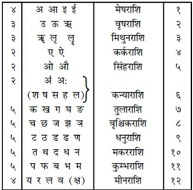
राशि-ज्ञानका उपयोग—साधकके नामका आदि अक्षर जहाँ हो, उस राशिसे मन्त्रके आदि अक्षरकी राशितक गिने। जो संख्या हो, उसके अनुसार फल जाने। यदि संख्या छठी, आठवीं अथवा बारहवीं हो तो वह निन्द्य है। इन बारह संख्याओंको ‘बारह भाव’ कहते हैं। उनकी विशेष संख्यासंज्ञा इस प्रकार है—तन, धन, सहज, सुहृद्, पुत्र, रिपु, जाया, मृत्यु, धर्म, कर्म, आय और व्यय। मन्त्रके अक्षर यदि मृत्यु, शत्रु तथा व्यय भावके अन्तर्गत हैं तो वे अशुभ हैं। (सिद्धादि मन्त्र-शोधन-प्रकार)
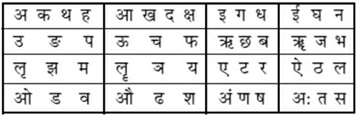
चौकोर स्थानपर पाँच रेखाएँ पूर्वसे पश्चिमकी ओर तथा पाँच रेखाएँ उत्तरसे दक्षिणकी ओर खींचे। इस प्रकार सोलह कोष्ठ बनाये। इनमें क्रमशः सोलह स्वरोंको लिखा जाय। तदनन्तर उसी क्रमसे व्यञ्जन-वर्ण भी लिखे। तीन आवृत्ति पूर्ण होनेपर चौथी आवृत्तिमें प्रथम दो कोष्ठोंके भीतर क्रमशः ‘ह’ और ‘क्ष’ लिखकर सब अक्षरोंकी पूर्ति कर ले। इन सोलहमें प्रथम कोष्ठकी चार पङ्क्तियाँ ‘सिद्ध’, दूसरे कोष्ठकी चार पङ्क्तियाँ ‘साध्य’, तीसरे कोष्ठकी चार पङ्क्तियाँ ‘सुसिद्ध’ तथा चौथे कोष्ठकी चार पङ्क्तियाँ ‘अरि’ मानी गयी हैं। जिस साधकके नामका आदि अक्षर जिस चतुष्कमें पड़े, वही उसके लिये ‘सिद्ध चतुष्क’ है, वहाँसे दूसरा उसके लिये ‘साध्य’, तीसरा ‘सुसाध्य’ और चौथा चतुष्क ‘अरि’ है। जिस चतुष्कके जिस कोष्ठमें साधकका नाम है, वह उसके लिये ‘सिद्ध-सिद्ध’ कोष्ठ है। फिर प्रदक्षिणक्रमसे उस चतुष्कका दूसरा कोष्ठ ‘सिद्धसाध्य’, ‘सिद्ध-सुसिद्ध’ तथा ‘सिद्ध-अरि’ है। इसी चतुष्कमें यदि मन्त्रका भी आदि अक्षर हो तो इसी गणनाके अनुसार उसके भी ‘सिद्ध-सिद्ध’, ‘सिद्ध-साध्य’ आदि भेद जान लेने चाहिये। यदि इस चतुष्कमें अपने नामका आदि अक्षर हो और द्वितीय चतुष्कमें मन्त्रका आदि अक्षर हो तो पूर्व चतुष्कके जिस कोष्ठमें नामका आदि अक्षर है, उस दूसरे चतुष्कमें भी उसी कोष्ठसे लेकर प्रादक्षिण्य-क्रमसे ‘साध्यसिद्ध’ आदि भेदकी कल्पना करनी चाहिये। इस प्रकार सिद्धादिकी कल्पना करे। सिद्ध-मन्त्र अत्यन्त गुणोंसे युक्त होता है। ‘सिद्ध-मन्त्र’ जपमात्रसे सिद्ध अर्थात् सिद्धिदायक होता है; ‘साध्य-मन्त्र’ जप, पूजा और होम आदिसे सिद्ध होता है। ‘सुसिद्ध मन्त्र’ चिन्तनमात्रसे सिद्ध हो जाता है, परंतु ‘अरि मन्त्र’ साधकका नाश कर देता है। जिस मन्त्रमें दुष्ट अक्षरोंकी संख्या अधिक हो, उसकी सभीने निन्दा की है॥१३—१५॥
शिष्यको चाहिये कि वह अभिषेकपर्यन्त दीक्षामें विधिवत् प्रवेश लेकर गुरुके मुखसे तन्त्रोक्त विधिका श्रवण करके गुरुसे प्राप्त हुए अभीष्ट मन्त्रकी साधना करे। जो धीर, दक्ष, पवित्र, भक्तिभावसे सम्पन्न, जप-ध्यान आदिमें तत्पर रहनेवाला, सिद्ध, तपस्वी, कुशल, तन्त्रवेत्ता, सत्यवादी तथा निग्रह-अनुग्रहमें समर्थ हो, वह ‘गुरु’ कहलाता है। जो शान्त (मनको वशमें रखनेवाला), दान्त (जितेन्द्रिय), पटु (सामर्थ्यवान्), ब्रह्मचारी, हविष्यान्नभोजी, गुरुकी सेवामें संलग्न और मन्त्रसिद्धिके प्रति उत्साह रखनेवाला हो, वह ‘योग्य’ शिष्य है। उसको तथा अपने पुत्रको मन्त्रका उपदेश देना चाहिये। शिष्य विनयी तथा गुरुको धन देनेवाला हो। ऐसे शिष्यको गुरु मन्त्रका उपदेश दे और उसकी सुसिद्धिके लिये स्वयं भी एक सहस्रकी संख्यामें जप करे। अकस्मात् कहींसे सुना हुआ, छल अथवा बलसे प्राप्त किया हुआ, पुस्तकके पन्नेमें लिखा हुआ अथवा गाथामें कहा गया मन्त्र नहीं जपना चाहिये। यदि ऐसे मन्त्रका जप किया जाय तो वह अनर्थ उत्पन्न करता है। जो जप, होम तथा अर्चना आदि भूरि क्रियाओंद्वारा मन्त्रकी साधनामें संलग्न रहता है, उसके मन्त्र स्वल्पकालिक साधनसे ही सिद्ध हो जाते हैं। जिसने एक मन्त्रको भी विधिपूर्वक सिद्ध कर लिया है, उसके लिये इस लोकमें कुछ भी असाध्य नहीं है; फिर जिसने बहुत-से मन्त्र सिद्ध कर लिये हैं, उसके माहात्म्यका किस प्रकार वर्णन किया जाय? वह तो साक्षात् शिव ही है। एक अक्षरका मन्त्र दस लाख जप करनेसे सिद्ध हो जाता है। मन्त्रमें ज्यों-ज्यों अक्षरकी वृद्धि हो, त्यों-ही-त्यों उसके जपकी संख्यामें कमी होती है। इस नियमसे अन्य मन्त्रोंके जपकी संख्याके विषयमें स्वयं ऊहा कर लेनी चाहिये। बीज-मन्त्रकी अपेक्षा दुगुनी-तिगुनी संख्यामें मालामन्त्रोंके जपका विधान है। जहाँ जपकी संख्या नहीं बतायी गयी हो, वहाँ मन्त्र-जपादिके लिये एक सौ आठ या एक हजार आठ संख्या जाननी चाहिये। सर्वत्र जपसे दशांश हवन एवं तर्पणका विधान मिलता है॥१६—२५॥
जहाँ किसी द्रव्य-विशेषका उल्लेख न हो, वहाँ होममें घृतका उपयोग करना चाहिये। जो आर्थिक दृष्टिसे असमर्थ हो, उसके लिये होमके निमित्त जपकी संख्यासे दशांश जपका ही सर्वत्र विधान मिलता है। अङ्ग आदिके लिये भी जप आदिका विधान है। सशक्ति-मन्त्रके जपसे मन्त्रदेवता साधकको अभीष्ट फल देते हैं। वे साधकके द्वारा किये गये ध्यान, होम और अर्चन आदिसे तृप्त होते हैं। उच्चस्वरसे जपकी अपेक्षा उपांशु (मन्दस्वरसे किया गया) जप दसगुना श्रेष्ठ कहा गया है। यदि केवल जिह्वा हिलाकर जप किया जाय तो वह सौ गुना उत्तम माना गया है। मानस (मनके द्वारा किये जानेवाले) जपका महत्त्व सहस्रगुना उत्तम कहा गया है। मन्त्र-सम्बन्धी कर्मका सम्पादन पूर्वाभिमुख अथवा दक्षिणाभिमुख होकर करना चाहिये। मौन होकर विहित आहार ग्रहण करते हुए प्रणव आदि सभी मन्त्रोंका जप करना चाहिये। देवता तथा आचार्यके प्रति समान दृष्टि रखते हुए आसनपर बैठकर मन्त्रका जप करे। कुटी, एकान्त एवं पवित्र स्थान, देवमन्दिर, नदी अथवा जलाशय—ये जप करनेके लिये उत्तम देश हैं। मन्त्र-सिद्धिके लिये जौकी लप्सी, मालपूए, दुग्ध एवं हविष्यान्नका भोजन करे। साधक मन्त्रदेवताका उनकी तिथि, वार, कृष्णपक्षकी अष्टमी-चतुर्दशी तथा ग्रहण आदि पर्वोंपर पूजन करे। अश्विनीकुमार, यमराज, अग्नि, धाता, चन्द्रमा, रुद्र, अदिति, बृहस्पति, सर्प, पितर, भग, अर्यमा, सूर्य, त्वष्टा, वायु, इन्द्राग्नि, मित्र, इन्द्र, जल, निर्ऋति, विश्वेदेव, विष्णु, वसुगण, वरुण, अजैकपात्, अहिर्बुध्न्य और पूषा—ये क्रमशः अश्विनी आदि नक्षत्रोंके देवता हैं। प्रतिपदासे लेकर चतुर्दशीपर्यन्त तिथियोंके देवता क्रमशः निम्नलिखित हैं—अग्नि, ब्रह्मा, पार्वती, गणेश, नाग, स्कन्द, सूर्य, महेश, दुर्गा, यम, विश्वदेव, विष्णु, कामदेव और ईश, पूर्णिमाके चन्द्रमा और अमावस्याके देवता पितर हैं। शिव, दुर्गा, बृहस्पति, विष्णु, ब्रह्मा, लक्ष्मी और कुबेर—ये क्रमशः रविवार आदि वारोंके देवता हैं। अब मैं ‘लिपिन्यास’ का वर्णन करता हूँ॥२६—३६॥
साधक निम्नलिखित प्रकारसे लिपि (मातृका) न्यास करे—‘ॐ अं नमः, केशान्तेषु । ॐ आं नमः, मुखे । ॐ इं नमः, दक्षिणनेत्रे । ॐ ईं नमः, वामनेत्रे । ॐ उं नमः, दक्षिणकर्णे । ॐ ऊं नमः, वामकर्णे । ॐ ऋं नमः, दक्षिणनासापुटे । ॐ ॠ नमः, वामनासापुटे । ॐ लृं नमः, दक्षिणकपोले । ॐ लॄं नमः, वामकपोले । ॐ एं नमः, ऊर्ध्वोष्ठे । ॐ ऐं नमः, अधरोष्ठे । ॐ ओं नमः, ऊर्ध्वदन्तपङ्क्तौ । ॐ औं नमः, अधोदन्तपङ्क्तौ । ॐ अं नमः, मूर्ध्नि । ॐ अः नमः, मुखवृत्ते । ॐ कं नमः, दक्षिणबाहुमूले । ॐ खं नमः, दक्षिणकूर्परे । ॐ गं नमः, दक्षिणमणिबन्धे । ॐ घं नमः, दक्षिणहस्ताङ्गुलिमूले । ॐ ङं नमः, दक्षिण-हस्ताङ्गुल्यग्रे । ॐ चं नमः, वामबाहुमूले । ॐ छं नमः, वामकूर्परे । ॐ जं नमः, वाममणिबन्धे । ॐ झं नमः, वामहस्ताङ्गुलिमूले । ॐ ञं नमः, वामहस्ताङ्गुल्यग्रे । ॐ टं नमः, दक्षिणपादमूले । ॐ ठं नमः, दक्षिणजानुनि । ॐ डं नमः, दक्षिणगुल्फे । ॐ ढं नमः, दक्षिणपादाङ्गुलिमूले । ॐ णं नमः, दक्षिणपादाङ्गुल्यग्रे । ॐ तं नमः, वामपादमूले । ॐ थं नमः, वामजानुनि । ॐ दं नमः, वामगुल्फे । ॐ धं नमः, वामपादाङ्गुलिमूले । ॐ नं नमः, वामपादाङ्गुल्यग्रे । ॐ पं नमः, दक्षिणपार्श्वे । ॐ फं नमः, वामपार्श्वे । ॐ बं नमः, पृष्ठे । ॐ भं नमः, नाभौ। ॐ मं नमः, उदरे । ॐ यं त्वगात्मने नमः, हृदि । ॐ रं असृदगात्मने नमः, दक्षांसे । ॐ लं मांसात्मने नमः, ककुदि । ॐ वं मेदात्मने नमः, वामांसे । ॐ शं अस्थ्यात्मने नमः, हृदयादि-दक्षहस्तान्तम् । ॐ षं मज्जात्मने नमः, हृदयादि-वामहस्तान्तम् । ॐ सं शुक्रात्मने नमः, हृदयादि-दक्षपादान्तम् । ॐ हं आत्मने नमः, हृदयादिवामपादान्तम् । ॐ लं परमात्मने नमः, जठरे । ॐ क्षं प्राणात्मने नमः, मुखे।’ इस प्रकार आदिमें ‘प्रणव’ और अन्तमें ‘नमः’ पद जोड़कर लिपीश्वरों—मातृकेश्वरोंका न्यास किया जाता है॥३७—४०॥
श्रीकण्ठ, अनन्त, सूक्ष्म, त्रिमूर्ति, अमरेश्वर, अर्धीश, भारभूति, तिथीश, स्थाणुक, हर, झिण्टीश, भौतिक, सद्योजात, अनुग्रहेश्वर, अक्रूर तथा महासेन—ये सोलह ‘स्वर-मूर्तिदेवता’ हैं। क्रोधीश, चण्डीश, पञ्चान्तक, शिवोत्तम, एकरुद्र, कूर्म, एकनेत्र, चतुरानन, अजेश, सर्वेश, सोमेश, लाङ्गलि, दारुक, अर्द्धनारीश्वर, उमाकान्त, आषाढी, दण्डी अद्रि, मीन, मेष, लोहित, शिखी, छगलाण्ड, द्विरण्ड, महाकाल, कपाली, भुजङ्गेश, पिनाकी, खड्गीश, बक, श्वेत, भृगु, नकुली, शिव तथा संवर्तक—ये ‘व्यञ्जन-मूर्तिदेवता’ माने गये हैं॥४१—४६॥
उपर्युक्त श्रीकण्ठ आदि रुद्रोंका उनकी शक्तियोंसहित क्रमशः न्यास करे। (श्रीविद्यार्णव-तन्त्रमें इनकी शक्तियोंके नाम इस प्रकार दिये गये हैं—पूर्णोदरी, विरजा, शाल्मली, लोलाक्षी, वर्तुलाक्षी, दीर्घघोणा, सुदीर्घमुखी, गोमुखी, दीर्घजिह्वा, कुण्डोदरी, ऊर्ध्वकेशी, विकृतमुखी, ज्वालामुखी, उल्कामुखी, श्रामुखी तथा विद्यामुखी—ये रुद्रोंकी ‘स्वर-शक्तियाँ’ हैं। महाकाली, महासरस्वती, सर्वसिद्धि, गौरी, त्रैलोक्यविद्या, मन्त्रशक्ति, आत्मशक्ति, भूतमाता, लम्बोदरी, द्राविणी, नागरी, खेचरी, मञ्जरी, रूपिणी, वीरिणी, काकोदरी, पूतना भद्रकाली, योगिनी, शङ्खिनी, गर्जिनी, कालरात्रि, कूर्दिनी, कपर्दिनी, वज्रिका, जया, सुमुखी, रेवती, माधवी, वारुणी, वायवी, रक्षोविदारिणी, सहजा, लक्ष्मी, व्यापिनी और महामाया—ये ‘व्यञ्जनस्वरूपा रुद्रशक्तियाँ’ कही गयी हैं।) इनके न्यासकी विधि इस प्रकार है—‘हसौं अं श्रीकण्ठाय पूर्णोदर्यै नमः। हसौं आं अनन्ताय विरजायै नमः।’ इत्यादि। इसी तरह अन्य स्वरशक्तियोंका न्यास करना चाहिये। व्यञ्जन-शक्तियोंके न्यासके लिये यही विधि है। यथा—‘हसौं कं क्रोधीशाय महाकाल्यै नमः । हसौं खं चण्डीशाय महासरस्वत्यै नमः।’ इत्यादि। साधकको चाहिये कि उदयादि अङ्गोंका भी न्यास करे; क्योंकि सम्पूर्ण मन्त्र साङ्ग होनेपर ही सिद्धिदायक होते हैं। हृल्लेखाको व्योम-बीजसे युक्त करके इन अङ्गोंका न्यास करना चाहिये। हृदयादि अङ्ग मन्त्रोंको अन्तमें जोड़कर बोलना चाहिये। यथा—‘ह्रां हृदयाय नमः । ह्रीं शिरसे स्वाहा । ह्रूं शिखायै वषट् । ह्रें कवचाय हुम् । ह्रों नेत्रत्रयाय वौषट् । ह्रः अस्त्राय फट्।’ यह ‘षडङ्गन्यास’ कहा गया है। पञ्चाङ्गन्यासमें नेत्रको छोड़ दिया जाता है। निरङ्ग-मन्त्रका उसके स्वरूपसे ही अङ्गन्यास करके क्रमशः वागीश्वरी देवी (ह्रीं)-का एक लाख जप करे तथा यथोक्त (दशांश) तिलोंकी आहुति दे। लिपियोंकी अधिष्ठात्री देवी वागीश्वरी अपने चार हाथोंमें अक्षमाला, कलश, पुस्तक और कमल धारण करती हैं। कवित्व आदिकी शक्ति प्रदान करती हैं। इसलिये जपकर्मके आदिमें सिद्धिके लिये उनका न्यास करे। इससे अकवि भी निर्मल कवि होता है। मातृका-न्याससे सभी मन्त्र सिद्ध होते हैं॥४७—५१॥
इस प्रकार आदि आग्नेय महापुराणमें ‘मन्त्र-परिभाषाका वर्णन’ नामक दो सौ तिरानबेवाँ अध्याय पूरा हुआ॥२९३॥
१. ‘शारदातिलक’ की टीकामें उद्धृत ‘प्रयोगसार’ में शब्दभेदसे यही बात कही गयी है। ‘श्रीनारायणीय-तन्त्र’ में तो ठीक ‘अग्निपुराण’ की आनुपूर्वी ही प्रयुक्त हुई है।
२. ‘कुल प्रकाश-तन्त्र’ में स्त्रीजातीय मन्त्रोंको शान्तिकर्ममें उपयोगी बताया गया है। शेष बातें अग्निपुराणके ही अनुसार हैं— स्त्रीमन्त्रा वह्निजायान्ता हृदयान्ता नपुंसकाः । शेषाः पुमांस इत्युक्ताः स्त्रीमन्त्राश्चादिशान्तिके॥ नपुंसकाः स्मृता मन्त्रा विद्वेषे चाभिचारके । पुमांसः स्युः स्मृताः सर्वे वध्योच्चाटनकर्मसु॥ (श्रीविद्यार्णवतन्त्र २ उच्छ्वास) ‘प्रयोगसार’ में—‘वषट्’ और ‘फट्’ जिनके अन्तमें लगें, वे ‘पुँल्लिङ्ग’ ‘वौषट्’ और ‘स्वाहा’ अन्तमें लगें, वे ‘स्त्रीलिङ्ग’ तथा ‘हुं नमः’ जिनके अन्तमें लगें, वे ‘नपुंसक लिङ्ग’ मन्त्र कहे गये हैं।
३. ‘श्रीनारायणीय—तन्त्र’ में भी यह बात इसी आनुपूर्वीमें कही गयी है।
४. ‘शारदातिलक’ में सौम्य-मन्त्रोंकी भी सुस्पष्ट पहचान दी गयी है—जिसमें ‘सकार’ अथवा ‘वकार’ का बाहुल्य हो, वह ‘सौम्य-मन्त्र’ है। जैसा कि वचन है—‘सौम्या भूयिष्ठेन्द्वमृताक्षराः।’ (२।६१)
५. ‘शारदातिलक’ में भी ‘विज्ञेयाः क्रूरसौम्ययोः’—कहकर इसी बातकी पुष्टि की गयी है। ईशानशम्भुने भी यही बात कही है— ‘स्यादाग्नेयैः क्रूरकार्यंप्रसिद्धिः सौम्यैः सौम्यं कर्म कुर्याद् यथावत्’ ।
६. ईशानशम्भुने भी ऐसा ही कहा है—आग्नेयोऽपि स्यात्तु सौम्यो नमोऽन्तः सौम्योऽपि स्यादग्निमन्त्रः फडन्तः । ‘नारायणीय-तन्त्र’ में यही बात यों कही गयी है— आग्नेयमन्त्रः सौम्यः स्यात् प्रायशोऽन्ते नमोऽन्वितः । सौम्यमन्त्रस्तथाऽऽग्नेयः फटकारेणान्वितोऽन्ततः॥
१. ‘बृहन्नारायणीय-तन्त्र’ में इसी भावकी पुष्टि निम्नाङ्कित श्लोकोंद्वारा की गयी है— सुप्तः प्रबुद्धमात्रो वा मन्त्रः सिद्धिं न यच्छति । स्वापकालो वामवहो जागरो दक्षिणावहः॥ आग्नेयस्य मनोः सौम्यमन्त्रस्यैतद्विपर्ययः । प्रबोधकालं जानीयादुभयोरुभयावहः॥ स्वापकाले तु मन्त्रस्य जपोऽनर्थफलप्रदः । इसमें स्पष्ट कहा गया है कि मन्त्र जब सो रहा हो, उस समय उसका जप अनर्थ-फलदायक होता है। ‘नारायणीय-तन्त्र’ में ‘स्वाप’ और ‘जागरणकाल’ को और भी स्पष्टताके साथ बताया गया है। वामनाड़ी, इडानाड़ी और चन्द्रनाड़ी एक वस्तु है तथा दक्षिणनाड़ी, सूर्यनाड़ी एवं पिङ्गलानाड़ी एक अर्थके वाचक पद हैं। पिङ्गलानाड़ीमें श्वासवायु चलती हो तो ‘आग्नेय मन्त्र’ प्रबुद्ध होते हैं, इडानाड़ीमें श्वासवायु चलती हो तो ‘सोममन्त्र’ जाग्रत् रहते हैं। पिङ्गला और इडा दोनोंमें श्वासवायुकी स्थिति हो अर्थात् यदि सुषुम्णामें श्वासवायु चलती हो तो सभी मन्त्र प्रबुद्ध (जाग्रत्) होते हैं। प्रबुद्ध मन्त्र ही साधकोंको अभीष्ट फल देते हैं। यथा— पिङ्गलायां गते वायौ प्रबुद्धा ह्यग्निरूपिणः । इडां गते तु पवने बुध्यन्ते सोमरूपिणः॥ पिङ्गलेडागते वायौ प्रबुद्धाः सर्व एव हि । प्रबुद्धा मनवः सर्वे साधकानां फलन्त्युमे॥
२. जैसा कि ‘भैरवी-तन्त्र’ में कहा गया है— दुष्टर्क्षराशिमूलेभूतादिवर्णप्रचुरमन्त्रकम् । सम्यक् परीक्ष्य तं यत्नाद् वर्जयेन्मतिमान् नरः॥
३. ‘श्रीरुद्रयामल’ में तथा ‘नारायणीय तन्त्र’ में भी यह श्लोक आया है, जो लिपि (अक्षर)-का संकेतमात्र है। इसमें शब्दार्थ अपेक्षित नहीं है। ‘शारदातिलक’ में दूसरा श्लोक संकेतके लिये प्रयुक्त हुआ है। इसमें छब्बीस नक्षत्रोंमें अक्षरोंके विभाजनका संकेत है, जो ज्यौतिषकी प्रक्रियासे भिन्न है।
१. ‘शारदातिलक’ में भी यही बात कही गयी है— ‘स्वरान्त्यौ तु रेवत्यंशगतौ सदा’॥ (२।१२५)
२. ‘शारदातिलक’ २।१२७ में यह श्लोक कुछ पाठान्तरके साथ ऐसा ही है। उसकी संस्कृत व्याख्यामें यही भाव व्यक्त किया गया है।
३. जैसा कि आचार्योंने कहा है—‘अमः शवर्गलेभ्यश्च संजाता कन्यका मता।’ तथा—‘चतुर्भिर्यादिभिः सार्धं स्यात् क्षकारस्तु मीनगः।’
दो सौ चौरानबेवाँ अध्याय
नाग-लक्षण*
अग्निदेव कहते हैं—वसिष्ठ! अब मैं नागोंकी उत्पत्ति, सर्पदंशमें अशुभ नक्षत्र आदि, सर्पदंशके विविध भेद, दंशके स्थान, मर्मस्थल, सूतक और सर्पदष्ट मनुष्यकी चेष्टा—इन सात लक्षणोंको कहता हूँ॥१॥
शेष, वासुकि, तक्षक, कर्कोटक, पद्म, महापद्म, शंखपाल एवं कुलिक—ये आठ नागोंमें श्रेष्ठ हैं। इन नागोंमेंसे दो नाग ब्राह्मण, दो क्षत्रिय, दो वैश्य और दो शूद्र कहे गये हैं*। ये चार वर्णोंके नाग क्रमशः दस सौ, आठ सौ, पाँच सौ और तीन सौ फणोंसे युक्त हैं। इनके वंशज पाँच सौ नाग हैं। उनसे असंख्य नागोंकी उत्पत्ति हुई है। आकारभेदसे सर्प फणी, मण्डली और राजिल—तीन प्रकारके माने जाते हैं। ये वात, पित्त और कफप्रधान हैं। इनके अतिरिक्त व्यन्तर, दोषमिश्र तथा दर्वीकर जातिवाले सर्प भी होते हैं। ये चक्र, हल, छत्र, स्वस्तिक और अंकुशके चिह्नोंसे युक्त होते हैं। गोनस सर्प विविध मण्डलोंसे चित्रित, दीर्घकाय और मन्दगामी होते हैं। राजिल सर्प स्निग्ध तथा ऊर्ध्वभाग और पार्श्वभागमें रेखाओंसे सुशोभित होते हैं। व्यन्तर सर्प मिश्रित चिह्नोंसे युक्त होते हैं। इनके पार्थिव, आप्य (जलसम्बन्धी), आग्नेय और वायव्य—ये चार मुख्य भेद और छब्बीस अवान्तर भेद हैं। गोनस सर्पोंके सोलह, राजिलजातीय सर्पोंके तेरह और व्यन्तर सर्पोंके इक्कीस भेद हैं। सर्पोंकी उत्पत्तिके लिये जो काल बताया गया है, उससे भिन्न कालमें जो सर्प उत्पन्न होते हैं, वे ‘व्यन्तर’ माने गये हैं। आषाढ़से लेकर तीन मासोंतक सर्पोंकी गर्भस्थिति होती है। गर्भस्थितिके चार मास व्यतीत होनेपर (सर्पिणी) दो सौ चालीस अंडे प्रसव करती है। सर्प-शावकके उन अंडोंसे बाहर निकलते ही उनमें स्त्री, पुरुष और नपुंसकके लक्षण प्रकट होनेसे पूर्व ही प्रायः सर्पगण उनको खा जाते हैं। कृष्णसर्प आँख खुलनेपर एक सप्ताहमें अंडेसे बाहर आता है। उसमें बारह दिनोंके बाद ज्ञानका उदय होता है। बीस दिनोंके बाद सूर्यदर्शन होनेपर उसके बत्तीस दाँत और चार दाढ़ें निकल आती हैं। सर्पकी कराली, मकरी, कालरात्रि और यमदूतिका—ये चार विषयुक्त दाढ़ें होती हैं। ये उसके वाम और दक्षिण पार्श्वमें स्थित होती हैं। सर्प छः महीनेके बाद केंचुलको छोड़ता है और एक सौ बीस वर्षतक जीवित रहता है। शेष आदि सात नाग क्रमशः रवि आदि वारोंके स्वामी माने गये हैं। वे वारेश दिन तथा रात्रिमें भी रहते हैं। (दिनके सात भाग करनेपर पहला भाग वारेशका होता है। शेष छः भागोंका अन्य छः नाग क्रमशः उपभोग करते हैं।) शेष आदि सात नाग अपने-अपने वारोंमें उदित होते हैं, किंतु कुलिकका उदय सबके संधिकालमें होता है। अथवा महापद्म और शङ्खपालके साथ कुलिकका उदय माना जाता है। मतान्तरके अनुसार महापद्म और शङ्खपालके मध्यकी दो घड़ियोंमें कुलिक* का उदय होता है। कुलिकोदयका समय सभी कार्योंमें दोषयुक्त माना गया है। सर्पदंशमें तो वह विशेषतः अशुभ है। कृत्तिका, भरणी, स्वाती, मूल, पूर्वाफाल्गुनी, पूर्वाषाढ़ा, पूर्वभाद्रपदा, अश्विनी, विशाखा, आर्द्रा, आश्लेषा, चित्रा, श्रवण, रोहिणी, हस्त नक्षत्र, शनि तथा मङ्गलवार एवं पञ्चमी, अष्टमी, षष्ठी, रिक्ता—चतुर्थी, नवमी और चतुर्दशी एवं शिवा (तृतीया) तिथि सर्पदंशमें निन्द्य मानी गयी हैं। पञ्चमी और चतुर्दशी तिथियोंमें सर्पका दंशन विशेषतः निन्दित है। यदि सर्प चारों संध्याओंके समय, दग्धयोग या दग्धराशिमें डँस ले, तो अनिष्टकारक होता है। एक, दो और तीन दंशनोंको क्रमशः ‘दष्ट’, ‘विद्ध’ और ‘खण्डित’ कहते हैं। सर्पका केवल स्पर्श हो, परंतु वह डँसे नहीं तो उसे ‘अदंश’ कहते हैं। इसमें मनुष्य सुरक्षित रहता है। इस प्रकार सर्पदंशके चार भेद हुए। इनमें तीन, दो एवं एक दंश वेदनाजनक और रक्तस्राव करनेवाले हैं। एक पैर और कूर्मके समान आकारवाले दंश मृत्युसे प्रेरित होते हैं। अङ्गोंमें दाह, शरीरमें चींटियोंके रेंगनेका-सा अनुभव, कण्ठशोथ एवं अन्य पीड़ासे युक्त और व्यथाजनक गाँठवाला दंशन विषयुक्त माना जाता है, इनसे भिन्न प्रकारका सर्पदंश विषहीन होता है। देवमन्दिर, शून्यगृह, वल्मीक (बाँबी), उद्यान, वृक्षके कोटर, दो सड़कों या मार्गोंकी संधि, श्मशान, नदी-सागर-संगम, द्वीप, चतुष्पथ (चौराहा), राजप्रासाद, गृह, कमलवन, पर्वतशिखर, बिलद्वार, जीर्णकूप, जीर्णगृह, दीवाल, शोभाञ्जन, श्लेष्मातक (लिसोडा) वृक्ष, जम्बूवृक्ष, उदुम्बरवृक्ष, वेणुवन (बँसवारी), वटवृक्ष और जीर्ण प्राकार (चहारदीवारी) आदि स्थानोंमें सर्प निवास करते हैं। इन्द्रिय-छिद्र, मुख, हृदय, कक्ष, जत्रु (ग्रीवामूल), तालु, ललाट, ग्रीवा, सिर, चिबुक (ठुड्डी), नाभि और चरण—इन अङ्गोंमें सर्पदंश अशुभ है। विषचिकित्सकको सर्पदंशकी सूचना देनेवाला दूत यदि हाथोंमें फूल लिये हो, सुन्दर वाणी बोलता हो, उत्तम बुद्धिसे युक्त हो, सर्पदष्ट मनुष्यके समान लिङ्ग एवं जातिका हो, श्वेतवस्त्रधारी हो, निर्मल और पवित्र हो, तो शुभ माना गया है। इसके विपरीत जो दूत मुख्यद्वारके सिवा दूसरे मार्गसे आया हो, शस्त्रयुक्त एवं प्रमादी हो, भूमिपर दृष्टि गड़ाये हो, गंदा या बदरंग वस्त्र पहने हो, हाथमें पाश आदि लिये हो, गद्गदकण्ठसे बोल रहा हो, सूखे काठपर बैठा हो, खिन्न हो तथा जो हाथमें काले तिल लिये हो या लाल रंगके धब्बेसे युक्त वस्त्र धारण किये हो अथवा भीगे वस्त्र पहने हुए हो, जिसके मस्तकके बालोंपर काले और लाल रंगके फूल पड़े हों, अपने कुचोंका मर्दन, नखोंका छेदन या गुदाका स्पर्श कर रहा हो, भूमिको पैरसे खुरच रहा हो, केशोंको नोंच रहा हो या तिनके तोड़ रहा हो, ऐसे दूत दोषयुक्त कहे गये हैं। इन लक्षणोंमेंसे एक भी हो तो अशुभ है॥२—२८॥
* अग्निपुराणमें जिस धन्वन्तरि-सुश्रुत-संवादद्वारा आयुर्वेदका प्रतिपादन किया गया है, वही विस्तारपूर्वक ‘सुश्रुत’ ग्रन्थमें वर्णित है। सर्पोंके सम्बन्धमें ‘सुश्रुत’ ग्रन्थमें (पू० तन्त्र, कल्पस्थान, अध्याय ४ में) जो कुछ कहा गया है, उसका सारांश इस प्रकार है—सर्प दो प्रकारके होते हैं—‘दिव्य’ और ‘भौम’। दिव्य सर्प वासुकि और तक्षक आदि हैं। वे इस पृथ्वीका बोझ उठानेवाले हैं; प्रज्वलित अग्निके समान तेजस्वी होते हैं। वे कुपित हो जायँ तो फुफकार और दृष्टिमात्रसे सम्पूर्ण जगत्को दग्ध कर सकते हैं। वे सदा नमस्कारके ही योग्य हैं। उनके डसनेकी कोई दवा नहीं है। चिकित्सासे उनका कोई प्रयोजन नहीं है। परंतु जो भूमिपर उत्पन्न होनेवाले सर्प हैं, जिनकी दाढोंमें विष होता हैं तथा जो मनुष्योंको काटते हैं, उनकी संख्या अस्सी है। उन सबके पाँच भेद हैं—दर्वीकर, मण्डली, राजिमान्, निर्विष और वैकरञ्ज। राजिमान्को ही अग्निपुराणमें ‘राजिल’ कहा गया है। इनमें ‘दर्वीकर’ छब्बीस, ‘मण्डली’ बाईस, ‘राजिमान्’ (या राजिल) दस, ‘निर्विष’ बारह तथा ‘वैकरञ्ज’ तीन प्रकारके होते हैं। वैकरञ्जोंद्वारा मण्डली तथा राजिलके संयोगसे उत्पन्न चित्रित सर्प सात प्रकारके माने गये हैं। मण़्डलीके संयोगसे उत्पन्न चार और राजिलके संयोगसे उत्पन्न तीन। इस तरह इनके अस्सी प्रकार हुए।
* प्रतिदिन दिनमानके सात भागोंमें वारेशसे आरम्भ कर कुलिकके सिवा अन्य सात नाग क्रमशः एक-एक अंशके स्वामी होते हैं। लोकप्रचलित फलित ग्रन्थोंमें शनिका अंश ही कुलिकका अंश माना गया है। इसलिये महापद्म और शङ्खपालके मध्यकी दो घड़ी ही सर्वसम्मत ‘कुलिकोदयकाल’ प्रतीत होता है।
अपनी और दूतकी यदि इडा अथवा पिङ्गला या दोनों ही नाड़ियाँ चल रही हों, उन दोनोंके इन चिह्नोंसे डँसनेवाले सर्पको क्रमशः स्त्री, पुरुष अथवा नपुंसक जाने। दूत अपने जिस अंगका स्पर्श करे, रोगीके उसी अंगमें सर्पका दंश हुआ जाने। दूतके पैर चञ्चल हों तो अशुभ और यदि स्थिर हों तो शुभ माने गये हैं॥२९-३०॥
किसी जीवके पार्श्वदेशमें स्थित दूत शुभ और अन्य भागोंमें स्थित अशुभ माना गया है। दूतके निवेदनके समय किसी जीवका आगमन शुभ और गमन अशुभ है। दूतकी वाणी यदि अत्यन्त दोषयुक्त हो अथवा सुस्पष्ट प्रतीत न होती हो तो वह निन्दित कही गयी है। उसके सुस्पष्ट एवं विभक्त वचनोंद्वारा यह ज्ञात होता है कि सर्पका दंशन विषयुक्त है अथवा विषरहित। दूतके वाक्यके आदिमें ‘स्वर’ और ‘कादि’ वर्गके भेदसे लिपिके दो प्रकार माने जाते हैं। दूतके वचनसे वाक्यके आरम्भमें स्वर प्रयुक्त हो, तो सर्पदष्ट मनुष्यकी जीवनरक्षा और कादिवर्गोंके प्रयुक्त होनेपर अशुभकी आशङ्का होती है। यह मातृका-विधान है। ‘क’ आदि वर्गोंमें आरम्भके चार अक्षर क्रमशः वायु, अग्नि, इन्द्र और वरुणदेवता-सम्बन्धी होते हैं। कादि वर्गोंके पञ्चम अक्षर नपुंसक माने गये हैं। ‘अ’ आदि स्वर ह्रस्व और दीर्घके भेदसे क्रमशः इन्द्र एवं वरुणदेवता-सम्बन्धी होते हैं। दूतके वाक्यारम्भमें वायु और अग्निदैवत्य अक्षर दूषित और ऐन्द्र अक्षर मध्यम फलप्रद हैं। वरुणदैवत्य वर्ण उत्तम और नपुंसक वर्ण अत्यन्त अशुभ हैं॥३१—३५॥
विषचिकित्सकके प्रस्थानकालमें मङ्गलमय वचन, मेघ और गजराजकी गर्जना, दक्षिणपार्श्वमें फलयुक्त वृक्ष हो और वामभागमें किसी पक्षीका कलरव हो रहा हो, तो वह विजय या सफलताका सूचक है। प्रस्थानकालमें गीत आदिके शब्द शुभ होते हैं। दक्षिणभागमें अनर्थसूचक वाणी, चक्रवाकका रुदन—ऐसे लक्षण सिद्धिके सूचक हैं। पक्षियोंकी अशुभ ध्वनि और छींक—ये कार्यमें असिद्धि प्रदान करते हैं। वेश्या, ब्राह्मण, राजा, कन्या, गौ, हाथी, ढोलक, पताका, दुग्ध, घृत, दही, शङ्ख, जल, छत्र, भेरी, फल, मदिरा, अक्षत, सुवर्ण और चाँदी—ये लक्षण सम्मुख होनेपर कार्यसिद्धिके सूचक हैं। काष्ठपर अग्निसे युक्त शिल्पकार, मैले कपड़ोंका बोझ ढोनेवाले पुरुष, गलेमें टंक (पाषाणभेदक शस्त्र) धारण किये हुए मनुष्य, शृगाल, गृध्र, उलूक, कौड़ी, तेल, कपाल और निषिद्ध भस्म—ये लक्षण नाशके सूचक हैं। विषके एक धातुसे दूसरे धातुमें प्रवेश करनेसे विषसम्बन्धी सात रोग होते हैं। विषदंश पहले ललाटमें, ललाटसे नेत्रमें और नेत्रसे मुखमें जाता है। मुखमें प्रविष्ट होनेके बाद वह सम्पूर्ण धमनियोंमें व्याप्त हो जाता है। फिर क्रमशः धातुओंमें प्रवेश करता है॥३६—४१॥
इस प्रकार आदि आग्नेय महापुराणमें ‘नागलक्षणकथन नामक दो सौ चौरानबेवाँ अध्याय पूरा हुआ॥२९४॥
दर्वीकर सर्प चक्र, हल, छत्र, स्वस्तिक और अङ्कुशका चिह्न धारण करनेवाले, फणयुक्त तथा शीघ्रगामी होते हैं। मण्डली सर्प विविध मण्डलोंसे चित्रित, मोटे तथा मन्दगामी हुआ करते हैं। वे अग्नि तथा सूर्यके तुल्य तेजस्वी जान पड़ते हैं। राजिमान् अथवा राजिल सर्प चिकने होते हैं। वे तिरछी, ऊर्ध्वगामिनी एवं बहुरंगी रेखाओंद्वारा चित्रित-से जान पड़ते हैं। चरकने भी इन सर्पोंके विषयमें ऐसा ही, किंतु संक्षिप्त विवरण दिया है— दर्वीकरः फणी ज्ञेयो मण्डली मण्डलाफणः । बिन्दुलेखो विचित्राङ्गः पतङ्गः स्यात्तु राजिमान्॥ ‘फणवाले (दर्वीकर) सर्प वायुको प्रकुपित करते हैं। मण्डली सर्पोंके दंशनसे पित्तका प्रकोप बढ़ता है तथा राजिमान् सर्प कफ-प्रकोपको बढ़ानेवाले होते हैं।’ (सुश्रुत, उत्तरतन्त्र, कल्पस्थान ४।२९) ‘राजिमान् सर्प रातके पिछले पहरमें, मण्डली सर्प रातके शेष तीन पहरोंमें और दर्वीकर सर्प दिनमें चरते और विचरते हैं।’ (सुश्रुत, उत्तरतन्त्र, कल्पस्थान ४।३१) ‘दर्वीकर सर्प तरुणावस्थामें, मण्डली वृद्धावस्थामें और राजिमान् सर्प मध्यवयमें उग्र विषवाले होकर लोगोंकी मृत्युके कारण बनते हैं। (सुश्रुत ४।३२) मण्डली सर्पोंको गोनस भी कहते हैं।’ ‘सुश्रुत-संहिता’ की ‘आयुर्वेद-तत्त्व-संदीपिका’ व्याख्यामें सर्पोंका वर्गीकरण इस प्रकार दिया गया है—
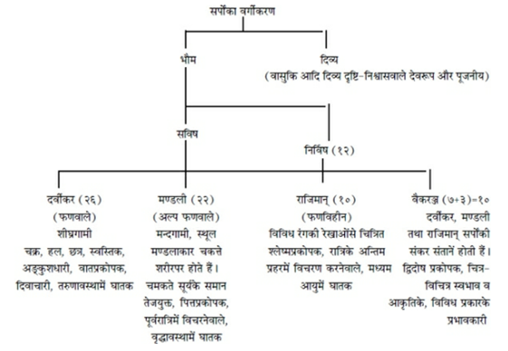
‘सुश्रुत-संहिता’, पू० तन्त्र, कल्पस्थान, अध्याय
४ श्लोक २५ से २८ तक कुछ विशेष चिह्न और रंगोंके आधारपर सर्पोंमें ब्राह्मणादि जातियोंकी परिकल्पना की गयी है। जो सर्प मोती और चाँदीके समान सफेद, कपिल वर्णके सुनहरे रंगके तथा सुगन्धयुक्त होते हैं, वे जातिसे ब्राह्मण माने गये हैं। जो स्निग्ध वर्ण (चिकने), अत्यन्त क्रोधी, सूर्य और चन्द्रमाके समान आकृतिके या छत्र अथवा कमलके समान चिह्न धारण करनेवाले होते हैं, उन्हें क्षत्रिय जातिका सर्प मानना चाहिये। जो काले और वज्रके समान रंगवाले हैं अथवा जो कान्तिसे लाल, धूमिल एवं कबूतरके-से दिखायी देते हैं, वे सर्प वैश्य माने गये हैं। जिनका रंग भैसों और चीतोंके समान हो, जो कठोर त्वचावाले हों, वे भाँति-भाँतिके विचित्र रंगवाले सर्प शूद्र जातिके होते हैं। * ‘तन्त्रसार-संग्रह’ की ‘विषनारायणीय’ टीकामें ब्राह्मण आदि वर्णवाले दो-दो नागोंके क्रमके विषयमें एक श्लोक उपलब्ध होता है— आद्यन्तौ च तदाद्यन्तौ तदाद्यन्तौ च मध्यगौ । ‘आदि और अन्तके नाग ब्राह्मण हैं। उसके बाद पुनः आदि-अन्तके नाग क्षत्रिय हैं, तत्पश्चात् पुनः आदि-अन्तके नाग वैश्य हैं और मध्यवर्ती दो नाग शूद्र हैं।’ ‘शारदातिलक’ १०।७ में इन नागोंको त्वरिता देवीका आभूषण बताया गया है। उक्त श्लोककी टीकामें उद्धृत ‘नारायणीय तन्त्र’ के श्लोकोंमें इन नागोंका ध्यान इस प्रकार बताया गया है— अनन्तकुलिकौ विप्रौ वह्निवर्णावुदाहृतौ । प्रत्येकं तु सहस्रेण फणानां समलंकृतौ॥ वासुकिः शङ्खपालश्च क्षत्रियौ पीतवर्णकौ । प्रत्येकं तु फणासप्तशतसंख्याविराजितौ॥ तक्षकश्च महापद्मो वैश्यावेतावही स्मृतौ । नीलवर्णौ फणापञ्चशतौ तुङ्गोत्तमाङ्गकौ॥ पद्मकर्कोटकौ शूद्रौ फणात्रिशतकौ सितौ । ‘अनन्त (शेषनाग) और कुलिक—ये दो नाग ब्राह्मण कहे गये हैं। इनकी अङ्गकान्ति अग्निके समान उज्ज्वल है। इनमेंसे प्रत्येक सहस्र फणोंसे समलंकृत हैं। वासुकि और शङ्खपाल—ये क्षत्रिय हैं। इनकी कान्ति पीली है। इनमेंसे प्रत्येक सात सौ फणोंद्वारा सुशोभित हैं। तक्षक और महापद्म—ये दो नाग वैश्य माने गये हैं। इनकी अङ्गकान्ति नीली है। इनके उन्नत मस्तक पाँच-पाँच सौ फणोंसे अलंकृत हैं। पद्म तथा कर्कोटक—ये दो नाग शूद्र हैं और उनकी कान्ति श्वेत है।’ निम्नाङ्कित रीतिसे नागोंके वर्ण आदिको जानना चाहिये—
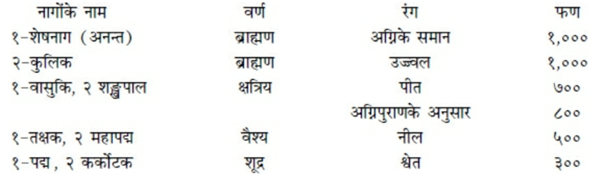
दो सौ पंचानबेवाँ अध्याय
दष्ट-चिकित्सा
अग्निदेव कहते हैं—वसिष्ठ! अब मैं मन्त्र, ध्यान और ओषधिके द्वारा साँपके द्वारा डँसे हुए मनुष्यकी चिकित्साका वर्णन करता हूँ। ‘ॐ नमो भगवते नीलकण्ठाय’—इस मन्त्रके जपसे विषका नाश होता है*। घृतके साथ गोबरके रसका पान करे। यह ओषधि साँपके डसे हुए मनुष्यके जीवनकी रक्षा करती है। विष दो प्रकारके कहे जाते हैं—‘जङ्गम’ विष, जो सर्प और मूषक आदि प्राणियोंमें पाया जाता है एवं दूसरा ‘स्थावर’ विष, जिसके अन्तर्गत शृङ्गी (सिंगिया) आदि विषभेद हैं॥१-२॥
शान्तस्वरसे युक्त ब्रह्मा (क्षौं), लोहित (ह्रीं), तारक (ॐ) और शिव (हौं)—यह चार अक्षरोंका वियति-सम्बन्धी नाममन्त्र है*। इसे शब्दमय तार्क्ष्य (गरुड) माना गया है॥३-४॥
‘ॐ ज्वल महामते हृदयाय नमः, गरुड विशाल शिरसे स्वाहा, गरुड शिखायै वषट्, गरुडविषभञ्जन प्रभेदन प्रभेदन वित्रासय वित्रासय विमर्द्दय विमर्द्दय कवचाय हुम्, उग्ररूपधारक सर्वभयंकर भीषय भीषय सर्वं दह दह भस्मीकुरु कुरु स्वाहा, नेत्रत्रयाय वौषट् । अप्रतिहतशासनं वं हूं फट् अस्त्राय फट्।’ मातृकामय कमल बनावे। उसके आठों दिशाओंमें आठ दल हों। पूर्वादि दलोंमें दो-दोके क्रमसे समस्त स्वरवर्णोंको लिखे। कवर्गादि सात वर्गोंके अन्तिम दो-दो अक्षरोंका भी प्रत्येक दलमें उल्लेख करे। उस कमलके केसरभागको वर्गके आदि अक्षरोंसे अवरुद्ध करे तथा कर्णिकामें अग्निबीज ‘रं’ लिखे। मन्त्रका साधक उस कमलको हृदयस्थ करके बायें हाथकी हथेलीपर उसका चिन्तन करे। अङ्गुष्ठ आदिमें वियति-मन्त्रके वर्णोंका न्यास करे और उनके द्वारा भेदित कलाओंका भी चिन्तन करे। तदनन्तर चौकोर ‘भू-पुर’ नामक मण्डल बनावे, जो पीले रंगका हो और चारों ओरसे वज्रद्वारा चिह्नित हो। यह मण्डल इन्द्रदेवताका होता है। अर्धचन्द्राकार वृत्त जलदेवता-सम्बन्धी है। कमलका आधा भाग शुक्लवर्णका है। उसके देवता वरुण हैं। फिर स्वस्तिक-चिह्नसे युक्त त्रिकोणाकार तेजोमय वह्निदेवताके मण्डलका चिन्तन करे। वायुदेवताका मण्डल बिन्दुयुक्त एवं वृत्ताकार है। वह कृष्णमालासे सुशोभित है, ऐसा चिन्तन करे॥५—८॥
ये चार भूत अङ्गुष्ठ, तर्जनी, मध्यमा और अनामिका—इन चार अँगुलियोंके मध्यपर्वोंमें स्थित अपने निवासस्थानोंमें विराजमान हैं और सुवर्णमय नागवाहनसे इनके वासस्थान आवेष्टित हैं। इस प्रकार चिन्तनपूर्वक क्रमशः पृथ्वी आदि तत्त्वोंका अङ्गुष्ठ आदिके मध्यपर्वमें न्यास करे। साथ ही वियति-मन्त्रके चार वर्णोंको भी क्रमशः उन्हींमें विन्यस्त करे। इन वर्णोंकी कान्ति उनके सुन्दर मण्डलोंके समान है। इस प्रकार न्यास करनेके पश्चात् रूपरहित शब्दतन्मात्रमय शिवदेवताके आकाशतत्त्वका कनिष्ठाके मध्यपर्वमें चिन्तन करके उसके भीतर वेदमन्त्रके प्रथम अक्षरका न्यास करे। पूर्वोक्त नागोंके नामके आदि अक्षरोंका उनके अपने मण्डलोंमें न्यास करे। पृथ्वी आदि भूतोंके आदि अक्षरोंका अङ्गुष्ठ आदि अँगुलियोंके अन्तिम पर्वोंपर न्यास करे तथा विद्वान् पुरुष गन्धतन्मात्रादिके गन्धादि गुणसम्बन्धी अक्षरोंका पाँचों अँगुलियोंमें न्यास करे॥९—१२॥
इस प्रकार न्यास-ध्यानपूर्वक तार्क्ष्य-मन्त्रसे रोगीके हाथका स्पर्शमात्र करके मन्त्रज्ञ विद्वान् उसके स्थावर-जंगम दोनों प्रकारके विषोंका नाश कर देता है। विद्वान् पुरुष पृथ्वीमण्डल आदिमें विन्यस्त वियति-मन्त्रके चारों वर्णोंका अपनी श्रेष्ठ दो अँगुलियोंद्वारा शरीरके नाभिस्थानों और पर्वोंमें न्यास करे। तदनन्तर गरुडके स्वरूपका इस प्रकार ध्यान करे—‘पक्षिराज गरुड दोनों घुटनोंतक सुनहरी आभासे सुशोभित हैं। घुटनोंसे लेकर नाभितक उनकी अङ्गकान्ति बर्फके समान सफेद है। वहाँसे कण्ठतक वे कुङ्कुमके समान अरुण प्रतीत होते हैं और कण्ठसे केशपर्यन्त उनकी कान्ति असित (श्याम) है। वे समूचे ब्रह्माण्डमें व्याप्त हैं। उनका नाम चन्द्र है और वे नागमय आभूषणसे विभूषित हैं। उनकी नासिकाका अग्रभाग नीले रंगका है और उनके पंख बड़े विशाल हैं।’ मन्त्रज्ञ विद्वान् अपने-आपका भी गरुडके रूपमें ही चिन्तन करे। इस तरह गरुडस्वरूप मन्त्रप्रयोक्ता पुरुषके वाक्यसे मन्त्र विषपर अपना प्रभाव डालता है। गरुडके हाथकी मुट्ठी रोगीके हाथमें स्थित हो तो वह उसके अङ्गुष्ठमें स्थित विषका विनाश कर देती है। मन्त्रज्ञ पुरुष अपने गरुडस्वरूप हाथको ऊपर उठाकर उसकी पाँचों अँगुलियोंके चालनमात्रसे विषसे उत्पन्न होनेवाले मदपर दृष्टि रखते हुए उस विषका स्तम्भन आदि कर सकता है॥१३—१७॥
आकाशसे लेकर भू-बीजपर्यन्त जो पाँच बीज हैं, उन्हें ‘पञ्चाक्षर मन्त्रराज’ कहा गया है। (उसका स्वरूप इस प्रकार है—हं, यं, रं, वं, लं।) अत्यन्त विषका स्तम्भन करना हो तो इस मन्त्रके उच्चारणमात्रसे मन्त्रज्ञ पुरुष विषको रोक देता है। यह ‘व्यत्यस्तभूषण’ बीजमन्त्र है। अर्थात् इन बीजोंको उलट-फेरकर बोलना इस मन्त्रके लिये भूषणरूप है। इसको अच्छी तरह साध लिया जाय और इसके आदिमें ‘संप्लवं प्लावय प्लावय’—यह वाक्य जोड़ दिया जाय तो मन्त्र-प्रयोक्ता पुरुष इसके प्रयोगसे विषका संहार कर सकता है॥१८-१९॥
इस मन्त्रके भलीभाँति जपसे अभिमन्त्रित जलके द्वारा अभिषेक करनेमात्रसे यह मन्त्र अपने प्रभावद्वारा उस रोगीसे डंडा उठवा सकता है, अथवा मन्त्रजपपूर्वक की गयी शङ्खभेर्यादिकी ध्वनिको सुननेमात्रसे यह प्रयोग रोगीके विषको अवश्य ही दग्ध कर देता है। यदि भू-बीज ‘लं’ तथा तेजोबीज ‘रं’ को उलटकर रखा जाय, अर्थात् ‘हं, यं, लं, वं, रं’—इस प्रकार मन्त्रका स्वरूप कर दिया जाय तो उसका प्रयोग भी उपर्युक्त फलका साधक होता है। अर्थात् उससे भी विषका दहन हो जाता है। भू-बीज और वायु-बीजका व्यत्यय करनेसे जो मन्त्र बनता है वह (हं लं रं वं यं) विषका संक्रामक होता है, अर्थात् उसका अन्यत्र संक्रमण करा देता है। मन्त्र-प्रयोक्ता पुरुष रोगीके समीप बैठा हो या अपने घरमें स्थित हो, यदि गरुडके स्वरूपका चिन्तन तथा अपने-आपमें भी गरुडकी भावना करके ‘रं वं,’—इन दो ही बीजोंका उच्चारण (जप) करे तो इस कर्मको सफल बना सकता है। गरुड और वरुणके मन्दिरमें स्थित होकर उक्त मन्त्रका जप करनेसे मन्त्रज्ञ पुरुष विषका नाश कर देता है। ‘स्वधा’ और श्रीके बीजोंसे युक्त करके यदि इस मन्त्रको बोला जाय तो इसे ‘जानुदण्डिमन्त्र’ कहते हैं। इसके जपपूर्वक स्नान और जलपान करनेसे साधक सब प्रकारके विष, ज्वर, रोग और अपमृत्युपर विजय पा लेता है॥२०—२४॥
१-पक्षि पक्षि महापक्षि महापक्षि वि वि स्वाहा । २-पक्षि पक्षि महापक्षि महापक्षि क्षि क्षि स्वाहा॥ —ये दो पक्षिराज गरुडके मन्त्र हैं। इनके द्वारा अभिमन्त्रण करने, अर्थात् इनके जपपूर्वक रोगीको झाड़नेसे ये दोनों मन्त्र विषके नाशक होते हैं॥२५-२६॥
‘पक्षिराजाय विद्महे पक्षिदेवाय धीमहि तन्नो गरुडः प्रचोदयात्।’—यह गरुड-गायत्रीमन्त्र है॥२७॥
उपर्युक्त दोनों पक्षिराज-मन्त्रोंको ‘रं’ बीजसे आवृत्त करके उनके पार्श्वभागमें भी ‘रं’ बीज जोड़ दे। तदनन्तर दन्त, श्री, दण्डि, काल और लाङ्गलीसे उन्हें युक्त कर दे और आदिमें पूर्वोक्त ‘नीलकण्ठ-मन्त्र’ जोड़ दे। इस प्रकार बताये गये मन्त्रका वक्षःस्थल, कण्ठ और शिखामें न्यास करे। उक्त दोनों मन्त्रोंका संस्कार करके उन्हें स्तम्भमें अङ्कित करे॥२८॥
इसके पश्चात् निम्नाङ्कित रूपसे न्यास करे—‘हर हर स्वाहा हृदयाय नमः । कपर्द्दिने स्वाहा शिरसे स्वाहा । नीलकण्ठाय स्वाहा शिखायै वषट् । कालकूटविषभक्षणाय हुं फट् कवचाय हुम्।’ इससे भुजाओं तथा कण्ठका स्पर्श करे। ‘कृत्तिवाससे नेत्रत्रयाय वौषट् नीलकण्ठाय स्वाहा अस्त्राय फट्*’॥२९॥
* ‘सुश्रुत’ में मन्त्रग्रहणकी विधि इस प्रकार बतायी गयी है—‘स्त्री, मांस और मधु (मद्य)-का सेवन छोड़कर, मिताहारी और पवित्र होकर मन्त्र ग्रहण करना चाहिये। मन्त्र-साधकको कुशके आसनपर बैठना और सोना चाहिये। मन्त्रकी सिद्धिके लिये वह यत्नपूर्वक गन्ध, माल्य, उपहार, बलि, जप और होमके द्वारा देवताओंका पूजन करे। अविधिपूर्वक उच्चारित अथवा स्वरवर्णसे हीन मन्त्र सिद्धिप्रद नहीं होते हैं। इसलिये मन्त्रप्रयोगके साथ-साथ औपध-उपचार आदिका क्रम भी चालू रखना चाहिये।’ (सुश्रुत, उत्तर तन्त्र, कल्पस्थान ५।१३) * इन चारों अक्षरोंका उद्धार ‘तन्त्राभिधानकोष’ के अनुसार किया गया है। * यह अङ्गन्यास ‘शारदातिलक’ और ‘श्रीविद्यार्णवतन्त्र’ में इसी प्रकार उपलब्ध है।
जिनके पूर्व आदि मुख क्रमशः श्वेत, पीत, अरुण और श्याम हैं, जो अपने चारों हाथोंमें क्रमशः अभय, वरद, धनुष तथा वासुकि नागको धारण करते हैं, जिनके गलेमें यज्ञोपवीत शोभा पाता है और पार्श्वभागमें गौरीदेवी विराजमान हैं, वे भगवान् रुद्र इस मन्त्रके देवता हैं। दोनों पैर, दोनों घुटने, गुह्यभाग, नाभि, हृदय, कण्ठ और मस्तक—इन अङ्गोंमें मन्त्रके अक्षरोंका न्यास करके दोनों हाथोंमें अङ्गुष्ठ आदि अँगुलियोंमें अर्थात् तर्जनीसे लेकर तर्जनीपर्यन्त अँगुलियोंमें मन्त्राक्षरोंका न्यास करके सम्पूर्ण मन्त्रका अङ्गुष्ठोंमें न्यास करे॥३०—३२॥
इस प्रकार ध्यान और न्यास करके शीघ्र ही बँधी हुई शूलमुद्राद्वारा विषका संहार करे। कनिष्ठा अँगुली ज्येष्ठासे बँध जाय और तीन अन्य अँगुलियाँ फैल जायँ तो ‘शूलमुद्रा’ होती है। विषका नाश करनेके लिये बायें हाथका और अन्य कार्यमें दक्षिण हाथका प्रयोग करना चाहिये॥३३-३४॥
ॐ नमो भगवते नीलकण्ठाय चिः । अमलकण्ठाय चिः । सर्वज्ञकण्ठाय चिः । क्षिप क्षिप ॐ स्वाहा । अमलनीलकण्ठाय नैकसर्पविषापहाय । नमस्ते रुद्र मन्यवे । —इस मन्त्रको पढ़कर झाड़नेसे विष नष्ट हो जाता है, इसमें संदेह नहीं है। रोगीके कानमें जप करनेसे अथवा मन्त्र पढ़ते हुए जूतेसे रोगीके पासकी भूमिपर पीटनेसे विष उतर जाता है। रुद्रविधान करके उसके द्वारा नीलकण्ठ महेश्वरका यजन करे। इससे विष-व्याधिका विनाश हो जाता है॥३५-३६॥
इस प्रकार आदि आग्नेय महापुराणमें ‘दष्ट-चिकित्साका कथन’ नामक दो सौ पंचानबेवाँ अध्याय पूरा हुआ॥२९५॥
दो सौ छियानबेवाँ अध्याय
पञ्चाङ्ग-रुद्रविधान
अग्निदेव कहते हैं—वसिष्ठ! अब मैं ‘पञ्चाङ्ग-रुद्र-विधान’ का वर्णन करता हूँ। यह परम उत्तम तथा सब कुछ प्रदान करनेवाला है। ‘शिवसंकल्प’ इसका हृदय, ‘पुरुषसूक्त’ शीर्ष, ‘अद्भ्यः सम्भृतः०’ (यजु० ३१।१७) आदि सूक्त शिखा और ‘आशुः शिशानः’ आदि अध्याय
इसका कवच है। शतरुद्रिय-संज्ञक रुद्रके ये पाँच अङ्ग हैं। रुद्रदेवका ध्यान करके इसके पञ्चाङ्गभूत रुद्रोंका क्रमशः जप करे। ‘यज्जाग्रतो०’ आदि छः ऋचाओंका शिवसंकल्प-सूक्त (यजु० ३४।१—६) इसका हृदय है। इसके शिवसंकल्प ऋषि और त्रिष्टुप् छन्द कहे गये हैं। ‘सहस्रशीर्षा०’ (यजु० ३१)-से प्रारम्भ होनेवाला पुरुषसूक्त इसका शीर्षस्थानीय है। इसके नारायण ऋषि, पुरुष देवता और अनुष्टुप् एवं त्रिष्टुप् छन्द जानने चाहिये। ‘अद्भ्यः सम्भृतः०’ आदि सूक्तके उत्तरगामी नर ऋषि हैं। इनमें क्रमशः पहले तीन मन्त्रोंका त्रिष्टुप् छन्द, फिर दो मन्त्रोंका अनुष्टुप् छन्द और अन्तिम मन्त्रका त्रिष्टुप् छन्द है तथा पुरुष इसके देवता हैं। ‘आशुः शिशानः०’ (यजु० १७।३३) आदि सूक्तमें बारह मन्त्रोंके इन्द्र देवता और त्रिष्टुप् छन्द हैं। इन सत्रह ऋचाओंके सूक्तके ऋषि ‘प्रतिरथ’ कहे गये हैं, किंतु देवता भिन्न-भिन्न माने गये हैं। कुछ मन्त्रोंके पुरुवित् देवता हैं। अवशिष्ट देवतासम्बन्धी मन्त्रोंका छन्द अनुष्टुप् कहा गया है। ‘असौ यस्ताम्रो०’ (यजु० १६।६) मन्त्रके पुरुलिङ्गोक्त देवता और पंक्ति छन्द हैं। ‘मर्माणि ते०’ (यजु० १७।४९) मन्त्रका त्रिष्टुप् छन्द और लिङ्गोक्त देवता हैं। सम्पूर्ण रुद्राध्यायके परमेष्ठी ऋषि, ‘देवानाम्’ इत्यादि मन्त्रोंके प्रजापति ऋषि और तीनों ऋचाओंके कुत्स ऋषि हैं। ‘मा नो महान्तमुत मा नो०’ (यजुर्वेद १६।१५) और ‘मा नस्तोके०’ (यजु० १६।१६) आदि दो मन्त्रोंके एकमात्र उमा तथा अन्य मन्त्रोंके रुद्र और रुद्रगण देवता हैं। सोलह ऋचाओंवाले आद्य अनुवाकके रुद्र देवता हैं। प्रथम मन्त्रका छन्द गायत्री, तीन ऋचाओंका अनुष्टुप्, तीन ऋचाओंका पंक्ति, सात ऋचाओंका अनुष्टुप् और दो मन्त्रोंका जगती छन्द है। ‘नमो हिरण्यबाहवे०’ (यजु० १६।१७) मन्त्रसे लेकर ‘नमो वः किरिकेभ्यः०’ (यजु० १६।४६) तक रुद्रगणकी तीन अशीतियाँ हैं। रुद्रानुवाकके पाँच ऋचाओंके रुद्र देवता हैं। बीसवीं ऋचा भी रुद्रदेवता-सम्बन्धिनी है। पहली ऋचाका छन्द बृहती, दूसरीका त्रिजगती, तीसरीका त्रिष्टुप् और शेष तीनका अनुष्टुप् छन्द है। श्रेष्ठ आचरणसे युक्त पुरुष इसका ज्ञान पाकर उत्तम सिद्धिका लाभ करता है। ‘त्रैलोक्य-मोहन’ मन्त्रसे भी विष-व्याधि आदिका विनाश होता है। वह मन्त्र इस प्रकार है—‘इं श्रीं ह्रीं ह्रूं त्रैलोक्यमोहनाय विष्णवे नमः।’ (त्रैलोक्यमोहन विष्णुको नमस्कार है) निम्नाङ्कित आनुष्टुभ नृसिंह-मन्त्रसे भी विष-व्याधिका विनाश होता है॥१—१६॥
(आनुष्टुभ नृसिंह-मन्त्र) ॐ ह्रं इं उग्रं वीरं महाविष्णुं ज्वलन्तं सर्वतोमुखम् । नृसिंहं भीषणं भद्रं मृत्युमृत्युं नमाम्यहम्॥ ‘जो उग्र, वीर, सर्वतोमुखी तेजसे प्रज्वलित, भयंकर तथा मृत्युकी भी मृत्यु होते हुए भी भक्तजनोंके लिये कल्याणस्वरूप हैं, उन महाविष्णु नृसिंहका मैं भजन करता हूँ।’ हृदयादि पाँच अङ्गोंके न्याससे युक्त यही मन्त्र समस्त अर्थोंको सिद्ध करनेवाला है। श्रीविष्णुके द्वादशाक्षर और अष्टाक्षर मन्त्र भी विष-व्याधिका नाश करनेवाले हैं। ‘कुब्जिका त्रिपुरा गौरी चन्द्रिका विषहारिणी।’—यह प्रसादमन्त्र विषहारक तथा आयु और आरोग्यका वर्धक है। सूर्य और विनायकके मन्त्र भी विषहारी कहे गये हैं। इसी तरह समस्त रुद्रमन्त्र भी विषका नाश करनेवाले हैं॥१७—२१॥
इस प्रकार आदि आग्नेय महापुराणमें ‘पञ्चाङ्ग-रुद्रविधान’ नामक दो सौ छियानबेवाँ अध्याय पूरा हुआ॥२९६॥
दो सौ सत्तानबेवाँ अध्याय
विषहारी मन्त्र तथा औषध
अग्निदेव कहते हैं—वसिष्ठ! ‘ॐ नमो भगवते रुद्राय च्छिन्द-च्छिन्द विषं ज्वलितपरशुपाणये स्वाहा।’—इस मन्त्रसे और ‘ॐ नमो भगवते पक्षिरुद्राय दष्टकमुत्थापयोत्थापय, दष्टकं कम्पय कम्पय जल्पय जल्पय सर्पदष्टमुत्थापयोत्थापय लल लल बन्ध बन्ध मोचय मोचय वररुद्र गच्छ गच्छ वध वध त्रुट त्रुट वुक वुक भीषय भीषय मुष्टिना विषं संहर संहर ठ ठ।’—इस ‘पक्षिरुद्र-मन्त्र’ से सर्पदष्ट मनुष्यको अभिमन्त्रित करनेपर उसके विषका नाश हो जाता है। ॐ नमो भगवते रुद्र नाशय विषं स्थावरजङ्गमं कृत्रिमाकृत्रिमं विषमुपविषं नाशय नानाविषं दष्टकविषं नाशय धम धम दम दम वम वम मेघान्धकारधारावर्षकर्षं निर्विषीभव संहर संहर गच्छ गच्छ आवेशय आवेशय विषोत्थापनरूपं मन्त्राद् विषधारणम् ‘ॐ क्षिप ॐ क्षिप स्वाहा’ ‘ॐ ह्रां ह्रीं खीं सः ठं द्रौं ह्रीं ठः।’—यह मन्त्र जप आदिके द्वारा सिद्ध होनेपर सदैव सर्पोंको बाँध लेता है। ‘गोपीजनवल्लभाय स्वाहा’—यह मन्त्र सम्पूर्ण अभीष्ट अर्थोंको सिद्ध करनेवाला है। इसमें आदिके एक, दो, तीन और चौथा अक्षर बीजके रूपमें होगा। इससे हृदय, सिर, शिखा और कवचका न्यास होगा। फिर ‘कृष्णचक्राय अस्त्राय फट्’ बोलनेसे पञ्चाङ्गन्यासकी क्रिया पूरी होगी। ‘ॐ नमो भगवते रुद्राय प्रेताधिपतये हुलु हुलु गर्ज गर्ज नागान् भ्रामय भ्रामय मुञ्च मुञ्च मोहय मोहय कट्ट कट्ट आविश आविश सुवर्णपतङ्ग रुद्रो ज्ञापयति स्वाहा॥१—५॥
यह ‘पातालक्षोभ-मन्त्र’ है। इसके द्वारा रोगीको अभिमन्त्रित करनेसे यह उसके लिये विषनाशक होता है। दशक सर्पके डँस लेनेपर जलते काष्ठ, तप्त शिला, आगकी ज्वाला अथवा गरम कोकनद (कमल) आदिके द्वारा दंश-स्थानको जला दे—सेंक दे; इससे विषका उपशमन होता है। शिरीषवृक्षके बीज और पुष्प, आकके दूध और बीज एवं सोंठ, मिर्च तथा पीपल—ये पान, लेपन और अञ्जन आदिके द्वारा विषका नाश करते हैं। शिरीष-पुष्पके रससे भावित सफेद मिर्च पान, नस्य और अञ्जन आदिके द्वारा विषका उपसंहार करती है, इसमें संशय नहीं है। कड़वी तोरई, वच, हींग तथा शिरीष और आकका दूध, त्रिकटु और मेषाम्भ—इनका नस्य आदिके रूपमें प्रयोग होनेपर ये विषका हरण करते हैं। अङ्कोल और कड़वी तुम्बीके सर्वाङ्गके चूर्णसे नस्य लेनेसे विषका अपहरण होता है। इन्द्रायण, चित्रक, द्रोण (गूमा), तुलसी, धतूरा और सहा—इनके रसमें त्रिकटुके चूर्णको भिगोकर खानेसे विषका नाश होता है। कृष्णपक्षकी पञ्चमीको लाया हुआ शिरीषका पञ्चाङ्ग विषहारी है॥६—१२॥
इस प्रकार आदि आग्नेय महापुराणमें ‘विषहारी मन्त्रौषधका कथन’ नामक दो सौ सत्तानबेवाँ अध्याय पूरा हुआ॥२९७॥
दो सौ अट्ठानबेवाँ अध्याय
गोनसादि-चिकित्सा
अग्निदेव कहते हैं—वसिष्ठ! अब मैं तुम्हारे सम्मुख गोनस आदि जातिके सर्पोंके विषकी चिकित्साका वर्णन करता हूँ, ध्यान देकर सुनो। ‘ॐ ह्रां ह्रीं अमलपक्षि स्वाहा’—इस मन्त्रसे अभिमन्त्रित ताम्बूलके प्रयोगसे मन्त्रवेत्ता मण्डली (गोनस) सर्पके विषका हरण करता है। लहसुन, अङ्कोल, त्रिफला, कूट, वच और त्रिकटु—इनका सर्पविषमें पान करे। सर्पविषमें स्नुहीदुग्ध, गोदुग्ध, गोदधि और गोमूत्रमें पकाया हुआ गोघृत पान करना चाहिये। राजिलजातीय सर्पके डँस लेनेपर सैन्धवलवण, पीपल, घृत, मधु, गोमयरस और साहीकी आँतका भक्षण करना चाहिये। सर्पदष्ट मनुष्यको पीपल, शर्करा, दुग्ध, घृत और मधुका पान करना चाहिये। त्रिकटु, मयूरपिच्छ, विडालकी अस्थि और नेवलेका रोम—इन सबको समान भाग लेकर चूर्ण बना ले। फिर भेड़के दूधमें भिगोकर उसकी धूप देनेसे सभी प्रकारके विषोंका विनाश होता है। पाठा, निर्गुण्डी और अङ्कोलके पत्रको समान भागमें लेकर तथा सबके समान लहसुन लेकर बनाया हुआ धूप भी विषनाशक है। अगस्त्यके पत्तोंको काँजीमें पकाकर उसकी भापसे डसे हुए स्थानको सेंका जाय, इससे विष उतर जाता है॥१—७॥
मूषक सोलह प्रकारके कहे गये हैं। कपासका रस तेलके साथ पान करनेसे ‘मूषक-विष’ का नाश होता है। फलिनी (फलिहारी)-के फूलोंका सोंठ और गुड़के साथ भक्षण करना चाहिये। यह विषरोगनाशक है। लूताएँ (मकड़ी) बीस प्रकारकी कही गयी हैं। इनके विषकी सावधानीसे चिकित्सा करनी चाहिये। पद्म, पद्माक, काष्ठ, पाटला, कूट, तगर, नेत्रबाला, खस, चन्दन, निर्गुण्डी, सारिवा और शेलु (लिसोडा)—ये लूता-विषहारीगण हैं। गुञ्जा, निर्गुण्डी और अङ्कोलके पत्र, सोंठ, हल्दी, दारुहल्दी, करञ्जकी छाल—इनको पकाकर ‘लूताविष’ से पीड़ित मनुष्यका पूर्वोक्त ओषधियोंसे युक्त जलके द्वारा सेचन करे॥८—१३॥
अब ‘वृश्चिक-विष’ का अपहरण करनेवाली ओषधियोंको सुनो। मञ्जिष्ठा, चन्दन, त्रिकटु तथा शिरीष, कुमुदके पुष्प—इन चारों योगोंको एकत्रित करना चाहिये। ये योग लेप आदि करनेपर वृश्चिक-विषका विनाश करते हैं। ‘ॐ नमो भगवते रुद्राय चिवि चिवि च्छिन्द च्छिन्द किरि किरि भिन्द भिन्द खड्गेन च्छेदय च्छेदय शूलेन भेदय भेदय चक्रेण दारय दारय ॐ ह्रूं फट्।’ इस मन्त्रसे अभिमन्त्रित अगद (औषध) विषार्त मनुष्यको दे। यह गर्दभ आदिके विषका विनाश करता है। त्रिफला, खस, नागरमोथा, नेत्रबाला, जटामांसी, पद्मक और चन्दन—इनको बकरीके दूधके साथ पिलानेपर गर्दभ आदिके विषोंका नाश होता है। शिरीषका पञ्चाङ्ग और त्रिकटु गोजरके विषका हरण करता है। स्नुही-दुग्धके साथ सिरसकी छाल ‘उन्दूरज दर्दुर’ (मेढक)-के विषका शमन करती है। त्रिकटु और तगरमूल घृतके साथ प्रयुक्त होनेपर ‘मत्स्यविष’ का नाश करते हैं। यवक्षार, त्रिकटु, वच, हींग, बायबिडंग, सैन्धवलवण, तगर, पाठा, अतिबला और कूट—ये सभी प्रकारके ‘कीट-विषों’ का विनाश करते हैं। मुलहठी, त्रिकटु, गुड और दुग्धका—इनका योग ‘पागल कुत्ते’ के विषका हरण करता है॥१४—१७॥
‘ॐ सुभद्रायै नमः, ॐ सुप्रभायै नमः’—यह ओषधि उखाड़नेका मन्त्र है। भगवान् ब्रह्माने सुप्रभादेवीको आदेश दे रखा है कि मानवगण जो ओषधियाँ बिना विधि-विधानके ग्रहण करते हैं, तुम उन ओषधियोंका प्रभाव ग्रहण करो। इसलिये पहले सुप्रभादेवीको नमस्कार करके ओषधिके चारों ओर मुट्ठीसे जौ बिखेरकर पूर्वोक्त मन्त्रका दस बार जप करके ओषधिको नमस्कार करे और कहे—‘तुम ऊर्ध्वनेत्रा हो; मैं तुम्हें उखाड़ता हूँ।’ इस विधिसे ओषधिको उखाड़े और निम्नाङ्कित मन्त्रसे उसका भक्षण करे— नमः पुरुषसिंहाय नमो गोपालकाय च । आत्मनैवाभिजानाति रणे कृष्णः पराजयम् । अनेन सत्यवाक्येन अगदो मेऽस्तु सिद्धयतु॥ ‘पुरुषसिंह भगवान् गोपालको बारंबार नमस्कार है। युद्धमें अपनी पराजयकी बात श्रीकृष्ण ही जानते हैं—इस सत्य वाक्यके प्रभावसे यह अगद मुझे सिद्धिप्रद हो।’ स्थावर विषकी ओषधि आदिमें निम्नलिखित मन्त्रका प्रयोग करना चाहिये— ‘ॐ नमो वैदूर्यमात्रे तत्र रक्ष रक्ष मां सर्वविषेभ्यो गौरि गान्धारि चाण्डालि मातङ्गिनि स्वाहा हरिमाये।’ विषका भक्षण कर लेनेपर पहले वमन कराके विषयुक्त मनुष्यका शीतल जलसे सेचन करे। तदनन्तर उसको मधु और घृत पिलाये और उसके बाद विरेचन कराये॥१८—२४॥
इस प्रकार आदि आग्नेय महापुराणमें ‘गोनसादि-चिकित्सा-कथन’ नामक दो सौ अट्ठानबेवाँ अध्याय पूरा हुआ॥२९८॥
दो सौ निन्यानबेवाँ अध्याय
बालादिग्रहहर बालतन्त्र
अग्निदेव कहते हैं—वसिष्ठ! अब मैं बालादि ग्रहोंको शान्त करनेवाले ‘बालतन्त्र’ को कहता हूँ। शिशुको जन्मके दिन ‘पापिनी’ नामवाली ग्रही ग्रहण कर लेती है। उससे आक्रान्त बालकके शरीरमें उद्वेग बना रहता है। वह माँका दूध पीना छोड़ देता है, लार टपकाता है और बारंबार ग्रीवाको घुमाता है। यह सारी चेष्टा पापिनी ग्रहीके कारणसे ही होती है। इसके निवारणके लिये पापिनी ग्रही और मातृकाओंके उद्देश्यसे उनके योग्य विविध भक्ष्य पदार्थ, गन्ध, माल्य, धूप एवं दीपकी बलि प्रदान करे। पापिनीद्वारा गृहीत शिशुके शरीरमें धातकी, लोध, मजीठ, तालीसपत्र और चन्दनसे लेप करे और गुग्गुलसे धूप दे। जन्मके दूसरे दिन ‘भीषणी’ ग्रही शिशुको आक्रान्त करती है। उससे आक्रान्त शिशुकी ये चेष्टाएँ होती हैं—वह खाँसी और श्वाससे पीड़ित रहता है तथा अङ्गोंको बारंबार सिकोड़ता है। ऐसे बालकको बकरीके मूत्र, अपामार्ग और चन्दनके साथ घिसी हुई पिप्पलीका सेवन कराना—अनुलेप लगाना चाहिये। गोशृंग, गोदन्त तथा केशोंकी धूप दे एवं पूर्ववत् बलि प्रदान करे। तीसरे दिन ‘घण्टाली’ नामकी ग्रही बच्चेको ग्रहण करती है। उसके द्वारा गृहीत शिशुकी निम्नलिखित चेष्टाएँ होती हैं। वह बारंबार रुदन करता है, जँभाइयाँ लेता है, कोलाहल करता है एवं त्रास, गात्रोद्वेग और अरुचिसे युक्त होता है—ऐसे शिशुको केसर, रसाञ्जन, गोदन्त और हस्तिदन्तको बकरीके दूधमें पीसकर लेप लगाये। नख, राई और बिल्वपत्रसे धूप दे तथा पूर्वोक्त बलि अर्पित करे। चौथी ग्रही ‘काकोली’ कही गयी है। इससे गृहीत बालकके शरीरमें उद्वेग होता है। वह जोर-जोरसे रोता है। मुँहसे गाज निकालता है और चारों दिशाओंमें बारंबार देखता है। इसकी शान्तिके लिये मदिरा और कुल्माष (चना या उड़द)-की बलि दे तथा बालकके गजदन्त, साँपकी केंचुल और अश्वमूत्रका प्रलेप करे। तदनन्तर राई, नीमकी पत्ती और भेड़ियेके केशसे धूप दे। ‘हंसाधिका’ पाँचवीं ग्रही है। इससे गृहीत शिशु जँभाई लेता, ऊपरकी ओर जोरसे साँस खींचता और मुट्ठी बाँधता है। ऐसी ही अन्य चेष्टाएँ भी करता है। ‘हंसाधिका’ को पूर्वोक्त बलि दे। इससे गृहीत शिशुके शरीरमें काकड़ासिंगी, बला, लोध, मैनसिल और तालीसपत्रका अनुलेपन करे। ‘फट्कारी’ छठी ग्रही मानी गयी है। इससे आक्रान्त बालक भयसे चिहुँकता, मोहसे अचेत होता और बहुत रोता है, आहारका त्याग कर देता है और अपने अङ्गोंको बहुत हिलाता-डुलाता है। ‘फट्कारी’ के उद्देश्यसे भी पूर्वोक्त बलि प्रदान करे। इससे गृहीत शिशुका राई, गुग्गुल, कूट, गजदन्त और घृतसे धूपन और अनुलेपन करे। ‘मुक्तकेशी’ नामकी ग्रही जन्मके सातवें दिन बालकपर आक्रमण करती है। इससे आक्रान्त बालक दुःखातुर रहता है। उसके शरीरसे सड़नेकी-सी गन्ध आती है। वह जृम्भा, कोलाहल, अत्यधिक रुदन और काससे पीड़ित रहता है। ऐसे बालकको व्याघ्रके नखोंकी धूप देकर बच, गोमय और गोमूत्रसे अनुलिप्त करे। ‘श्रीदण्डी’ नामवाली ग्रही शिशुको आठवें दिन पकड़ती है। इससे ग्रस्त बालक दिशाओंको देखता, जीभको हिलाता, खाँसता और रोता है। ‘श्रीदण्डी’ के उद्देश्यसे पूर्वोक्त पदार्थोंकी विविध बलि दे। इससे पीड़ित शिशुको हींग, बच, सफेद सर्षप और लहसुनसे धूपित तथा अनुलिप्त करे। ‘ऊर्ध्वग्रही’ नवीं महाग्रही है। इससे ग्रस्त बालक उद्वेग और दीर्घ उच्छ्वाससे युक्त होता है। वह अपनी दोनों मुट्ठियोंको चबाता है। ऐसे शिशुको लाल चन्दन, कूट, बच और सरसोंसे लेप और वानरके नख एवं रोमसे धूपन करे। दसवीं ‘रोदनी’ नामकी ग्रही है। इससे गृहीत शिशुकी निम्नलिखित चेष्टाएँ होती हैं। वह सदा रोता है, उसका शरीर नील वर्ण और सुगन्धसे युक्त हो जाता है। ऐसे शिशुको निम्बका धूप और कूट, बच, राई तथा रालका लेपन करे। ‘रोदनी’ ग्रहीके उद्देश्यसे लाजा, कुल्माष, वनमूँग और भातकी बलि दे। इस प्रकार ये धूपदान आदिकी क्रियाएँ शिशुके जन्मके तेरहवें दिनतक की जाती हैं। (शेष तीन दिनोंकी सारी क्रियाएँ दसवें दिनके समान समझनी चाहिये।)॥१—१८॥
एक मासके शिशुको ‘पूतना’ नामकी ग्रही ग्रहण करती है। उसका स्वरूप शकुनि (पक्षिणी—बकी)-का है। इससे पीड़ित बालक कौएके समान काँव-काँव करता, रोता, लंबी साँसें लेता, आँखोंको बारंबार मींचता और मूत्रके समान गन्धसे युक्त होता है। ऐसे बालकको गोमूत्रसे स्नान कराना और गोदन्तसे धूपित करना चाहिये। ‘पूतना’ के उद्देश्यसे ग्रामकी दक्षिणदिशामें करञ्जवृक्षके नीचे एक सप्ताहतक प्रतिदिन पीतवस्त्र, रक्तमाल्य, गन्ध, तैल, दीप, त्रिविध पायसान्न, तिल और पूर्वोक्त पदार्थोंकी बलि दे। दो मासके शिशुको ‘मुकुटा’ नामकी ग्रही ग्रहण करती है। इससे आक्रान्त शिशुका शरीर पीला और ठण्ढा पड़ जाता है। उसको सर्दी होती है, नाकसे पानी गिरता है और मुख सूख जाता है। इस ग्रहीके निमित्त पुष्प, गन्ध, वस्त्र, मालपूए, भात और दीपककी बलि प्रदान करे। इससे ग्रस्त बालकको कृष्णागुरु और सुगन्धबाला आदिसे धूपित करे। बालकको तृतीय मासमें ‘गोमुखी’ ग्रहण करती है। इससे आक्रान्त शिशु बहुत नींद लेता है, बारंबार मलमूत्र करता है और जोर-जोरसे रोता है। ‘गोमुखी’ को पहले यव, प्रियङ्गु, कुल्माष, शाक, भात और दूधकी पूर्व दिशामें बलि देनी चाहिये। तदनन्तर मध्याह्नकालमें शिशुको पञ्चभङ्ग[२८४] या पञ्चपत्रसे स्नान कराकर घीसे धूपित करे। चतुर्थ मासमें ‘पिङ्गला’ नामकी ग्रही बालकको पीड़ित करती है। इससे गृहीत बालकका शरीर सफेद और दुर्गन्धयुक्त होकर सूखने लगता है। ऐसे शिशुकी मृत्यु अवश्य हो जाती है। पाँचवीं ‘ललना’ नामकी ग्रही होती है। इससे पीड़ित शिशुका शरीर शिथिल होता है और मुख सूखने लगता है। उसकी देह पीली पड़ जाती है और अपानवायु निकलती है। ‘ललना’ की शान्तिके लिये दक्षिणदिशामें पूर्वोक्त पदार्थोंकी बलि दे। छठे मासमें ‘पङ्कजा’ नामकी ग्रही शिशुको पीड़ित करती है। इससे गृहीत शिशुकी चेष्टाएँ रुदन और विकृत स्वर आदि हैं। ‘पङ्कजा’ को भी पूर्वोक्त पदार्थ, भात, पुष्प, गन्ध आदिकी बलि प्रदान करे। सातवें महीनेमें ‘निराहारा’ नामकी ग्रही शिशुको ग्रहण करती है। इससे पीड़ित शिशु दुर्गन्ध और दन्तरोगसे युक्त होता है। ‘निराहारा’ के निमित्त मिष्टान्न और पूर्वोक्त पदार्थोंकी बलि दे। आठवें मासमें ‘यमुना’ नामवाली ग्रही शिशुपर आक्रमण करती है। इससे पीड़ित शिशुके शरीरमें दाने (फोड़े-फुन्सियाँ) उभर आते हैं और शरीर सूख जाता है। इसकी चिकित्सा नहीं करानी चाहिये। नवम मासमें ‘कुम्भकर्णी’ नामवाली ग्रहीसे पीड़ित हुआ बालक ज्वर और सर्दीसे कष्ट पाता है तथा बहुत रोता है। ‘कुम्भकर्णी’ के शान्त्यर्थ पूर्वोक्त पदार्थ, कुल्माष (उड़द या चना) आदि पदार्थोंकी ईशानकोणमें बलि दे। दशम मासमें ‘तापसी’ ग्रही बालकपर आक्रमण करती है। इससे ग्रस्त बालक आहारका परित्याग कर देता है और आँखें मूँदे रहता है। ‘तापसी’ के उद्देश्यसे घण्टा, पताका, पिष्टान्न आदि पदार्थोंकी बलि प्रदान करे। ग्यारहवीं ‘राक्षसी’ नामकी ग्रही है। इससे गृहीत बालक नेत्ररोगसे पीड़ित होता है। उसकी चिकित्सा व्यर्थ होती है। बारहवें महीनेमें ‘चञ्चला’ ग्रही शिशुको ग्रहण करती है। इसके द्वारा आक्रान्त बालक दीर्घ निःश्वास और भय आदि चेष्टाओंसे युक्त होता है। इस ग्रहीके शान्त्यर्थ मध्याह्नके समय पूर्वदिशामें कुल्माष और तिल आदिकी बलि दे॥१९—३२॥
[२८४] पलाश, गूलर, पीपल, वट और बेलके पत्ते ‘पञ्चपत्र’ या ‘पञ्चभङ्ग कहलाते हैं।’
द्वितीय वर्षमें ‘यातना’ नामकी ग्रही शिशुको ग्रहण करती है। इससे शिशुको ‘यातना’ सहनी पड़ती है और उसमें रोदन आदि दोष प्रकट होते हैं। ‘यातना’ ग्रहीको तिलके गूदे और पूर्वोक्त पदार्थोंकी बलि दे। स्नान आदि कर्म पूर्ववत् विधिसे करना चाहिये। तृतीय वर्षमें बालकपर ‘रोदिनी’ अधिकार करती है। इससे ग्रस्त बालक काँपता और रोता है तथा उसके पेशाबमें रक्त आता है। इसके उद्देश्यसे गुड़, भात, तिलका पूआ और पीसे हुए तिलकी बनी प्रतिमा दे। बालकको तिलमिश्रित जलसे स्नान कराकर पञ्चपत्र और राजफलके छिलकेसे धूप दे॥३३—३५॥
चतुर्थ वर्षमें ‘चटका’ नामकी राक्षसी शिशुको ग्रहण करती है। उससे ग्रस्त हुए बालकको ज्वर आता है और सारे अङ्गोंमें व्यथा होती है। चटकाको पूर्वोक्त पदार्थ एवं तिल आदिकी बलि दे और बालकको स्नान कराकर उसके लिये धूपन करे। पञ्चम वर्षमें ‘चञ्चला’ शिशुपर अधिकार कर लेती है। इससे पीड़ित बालक ज्वर, भय और अङ्ग-शैथिल्यसे युक्त होता है। चञ्चलाको भात आदि पदार्थोंकी बलि दे और बालकको काकड़ासिंगीसे धूपित करे। साथ ही पलाश, गूलर, पीपल, बड़ और बिल्वपत्रके जलसे उसका अभिषेक किया जाय। छठे वर्षमें ‘धावनी’ नामकी ग्रही बालकपर आक्रमण करती है। उससे गृहीत बालकका शरीर नीरस होकर सूखने लगता है। उसके अङ्ग-अङ्गमें पीड़ा होती है। इसके उद्देश्यसे सात दिनतक पूर्वोक्त पदार्थोंकी बलि और बालकका भृङ्गराजसे स्नापन और धूपन करे॥३६—३८॥
सप्तम वर्षमें ‘यमुना’ ग्रहीसे पीड़ित बालक सर्दी, मुक्ता तथा अत्यन्त हास एवं रोदनसे युक्त होता है। इस ग्रहीके निमित्त पायस और पूर्वोक्त पदार्थ आदिकी बलि दे एवं बालकका पूर्ववत् विधिसे स्नापन और धूपन करे। अष्टम वर्षमें ‘जातवेदा’ नामकी ग्रही बालकपर अधिकार करती है। इससे पीड़ित बालक भोजन छोड़ देता है और बहुत रोता है। जातवेदाके निमित्त कृसर (खिचड़ी), मालपूए और दही आदिकी बलि प्रदान करे। बालकको स्नान कराके धूपित भी करे। नवम वर्षमें ‘काला’ नामकी ग्रही बालकको पकड़ती है। इससे ग्रस्त बालक अपनी भुजाओंको कँपाता है, गर्जना करता है और भयभीत रहता है। कालाके शान्त्यर्थ कृसर, मालपूए, सत्तू, कुल्माष और पायस (खीर)-की बलि दे। दसवें वर्षमें ‘कलहंसी’ बालकको ग्रहण करती है। इससे उसके शरीरमें जलन होती है, अङ्ग दुर्बल हो जाते हैं और वह ज्वरग्रस्त रहता है। इसके निमित्त पाँच दिनतक पूरी, मालपूए, दधि और अन्नकी बलि देनी चाहिये। बालक का निम्बपत्रोंसे धूपन और कूटका अनुलेपन करे। ग्यारहवें वर्षमें कुमारको ‘देवदूती’ नामकी ग्रही ग्रहण करती है। इससे वह कठोर वचन बोलता है। ‘देवदूती’ के उद्देश्यसे पूर्ववत् बलिदान और लेपादिक करे। बारहवें वर्षमें ‘बलिका’ से आक्रान्त बालक श्वास-रोगसे युक्त होता है। इसके निमित्त भी पूर्वोक्त विधिसे बलि एवं लेपादि करे। तेरहवें वर्षमें ‘वायवी’ ग्रहीका आक्रमण होता है। इससे पीड़ित कुमार मुखरोग तथा अङ्गशैथिल्यसे युक्त होता है। वायवीको अन्न, गन्ध, माल्य आदिकी बलि दे और बालकको पञ्चपत्रसे स्नान करावे। राई और निम्बपत्रोंसे धूपित करे। चौदहवें वर्षमें ‘यक्षिणी’ बालकपर अधिकार करती है। इससे वह शूल, ज्वर, दाह आदिसे पीड़ित होता है। यक्षिणी के उद्देश्यसे पूर्वोक्त विविध भक्ष्य-पदार्थोंकी बलि विहित है। इसकी शान्तिके लिये पूर्ववत् स्नान आदि भी करने चाहिये। पंद्रहवें वर्षमें बालकको ‘मुण्डिका’ ग्रहीसे कष्ट प्राप्त होता है। उससे पीड़ित बालकके सदा रक्तपात होता रहता है। इसकी चिकित्सा नहीं करनी चाहिये॥३९—४७॥
सोलहवीं ‘वानरी’ नामकी ग्रही है। इससे पीड़ित नवयुवक भूमिपर गिरता है और सदा निद्रा तथा ज्वरसे पीड़ित रहता है। वानरीको तीन दिनतक पायस आदिकी बलि दे एवं बालकको पूर्ववत् स्नान आदि कर्म कराये। सत्रहवें वर्षमें ‘गन्धवती’ नामकी ग्रही आक्रमण करती है। इससे ग्रस्त बालकके शरीरमें उद्वेग बना रहता है और वह जोर-जोरसे रोता है। इस ग्रहीको कुल्माष आदिकी बलि दे और पूर्ववत् स्नान, धूपन तथा लेपन आदि कर्म करे। दिनकी स्वामिनी ग्रही ‘पूतना’ कही जाती है और वर्ष-स्वामिनी ‘सुकुमारी’॥४८—५०॥
ॐ नमः सर्वमातृभ्यो बालपीडासंयोगं भुञ्ज भुञ्ज चुट चुट स्फोटय स्फोटय स्फुर स्फुर गृह्ण गृह्णाक्रन्दयाऽऽक्रन्दय एवं सिद्धरूपो ज्ञापयति । हर हर निर्दोषं कुरु कुरु बालिकां बालं स्त्रियं पुरुषं वा सर्वग्रहाणामुपक्रमात् । चामुण्डे नमो देव्यै ह्रूं ह्रूं ह्रीं अपसर अपसर दुष्टग्रहान् ह्रूं तद्यथा गच्छन्तु गृह्यकाः, अन्यत्र पन्थानं रुद्रो ज्ञापयति॥५१-५२॥
—इस सर्वकामप्रद मन्त्रका बालग्रहोंके शान्त्यर्थ प्रयोग करे॥५३॥
ॐ नमो भगवति चामुण्डे मुञ्च मुञ्च बालं बालिकां वा बलिं गृह्ण गृह्ण जय जय वस वस॥५४॥
—इस रक्षाकारी मन्त्रका सर्वत्र बलिदानकर्ममें पाठ किया जाता है। ब्रह्मा, विष्णु, शिव, कार्तिकेय, पार्वती, लक्ष्मी एवं मातृकागण ज्वर तथा दाहसे पीड़ित इस कुमारको छोड़ दें और इसकी भी रक्षा करें। (इस मन्त्रसे भी बालग्रहजनित पीड़ाका निवारण होता है।)॥५५॥
इस प्रकार आदि आग्नेय महापुराणमें ‘बालादिग्रहहर बालतन्त्र-कथन’ नामक दो सौ निन्यानबेवाँ अध्याय पूरा हुआ॥२९९॥
तीन सौवाँ अध्याय
ग्रहबाधा एवं रोगोंको हरनेवाले मन्त्र तथा औषध आदिका कथन
अग्निदेव कहते हैं—वसिष्ठ! अब मैं ग्रहोंके उपहार और मन्त्र आदिका वर्णन करूँगा, जो ग्रहोंको शान्त करनेवाले हैं। हर्ष, इच्छा, भय और शोकादिसे, प्रकृतिके विरुद्ध तथा अपवित्र भोजनसे और गुरु एवं देवताके कोपसे मनुष्यको पाँच प्रकारके उन्माद होते हैं। वे वातज, कफज, पित्तज, सन्निपातज और आगन्तुक कहे जाते हैं। भगवान् रुद्रके क्रोधसे अनेक प्रकारके देवादि ग्रह उत्पन्न हुए। वे ग्रह नदी, तालाब, पोखरे, पर्वत, उपवन, पुल, नदी-संगम, शून्य गृह, बिलद्वार और एकान्तवर्ती इकले वृक्षपर रहते और वहाँ जानेवाले पुरुषोंको पकड़ते हैं। इसके सिवा वे सोयी हुई गर्भवती स्त्रीको, जिसका ऋतुकाल निकट है उस नारीको, नंगी औरतको तथा जो ऋतुस्नान कर रही हो, ऐसी स्त्रीको भी पकड़ते हैं। मनुष्योंके अपमान, वैर, विघ्न, भाग्यमें उलट-फेर इन ग्रहोंसे ही होते हैं। जो मनुष्य देवता, गुरु, धर्मादि तथा सदाचार आदिका उल्लङ्घन करता है, पर्वत और वृक्ष आदिसे गिरता है, अपने केशोंको बार-बार नोचता है तथा लाल आँखें किये रुदन और नर्तन करता है, उसको ‘रूप’-ग्रहविशेषसे पीड़ित जानना चाहिये। जो मानव उद्वेगयुक्त, दाह और शूलसे पीड़ित, भूख-प्याससे व्याकुल और शिरोरोगसे आतुर होता और ‘मुझे दो, मुझे दो’—यों कहकर याचना करता है, उसे ‘बलिकामी’ ग्रहसे पीड़ित जाने। स्त्री, माला, स्नान और सम्भोगकी इच्छासे युक्त मनुष्यको ‘रतिकामी’ ग्रहसे गृहीत समझना चाहिये॥१—८॥
व्योमव्यापी, महासुदर्शनमन्त्र, विटपनासिक, पातालनारसिंहादि मन्त्र तथा चण्डीमन्त्र—ये ग्रहोंका मर्दन—ग्रहपीड़ाका निवारण करनेवाले हैं[२८५]॥९॥
[२८५] ‘सहस्रार हुं फट्’—यह ‘सुदर्शन’ या ‘महासुदर्शनमन्त्र’ है। यह व्यापक प्रभावशाली होनेके कारण ‘व्योमव्यापी’ कहा गया है। ‘विटपनासिक’ शब्द नृसिंहरूपकी उग्रताका सूचक है। बड़े-बड़े वृक्ष उनकी नासिकाके अन्तर्गत आ जाते हैं। पृथ्वी और पाताललोकमें उनका प्रताप फैला हुआ है तथा पाताललोकमें उनका प्रादुर्भाव हुआ था, इसलिये भी उनको ‘पातालनारसिंह’ कहते हैं। ‘पातालनारसिंहमन्त्र’ इस प्रकार है— ‘उग्रं वीरं महाविष्णुं ज्वलन्तं सर्वतोमुखम् । नृसिंहं भीषणं भद्रं मृत्युमृत्युं नमाम्यहम्॥’ दुर्गासप्तशतीके सभी मन्त्र यहाँ ‘चण्डीमन्त्र’ के नामसे अभिहित हुए हैं। ‘नारसिंहाद्या’ के आदि पदसे ‘वीरनृसिंह’ तथा ‘सुदर्शन-नृसिंहादि’ मन्त्र समझने चाहिये। ‘वीरनृसिंह-मन्त्र’ इस प्रकार है—‘ॐ नमो भगवते वीरनृसिंहाय ज्वालामालापिनद्धाङ्गायाग्निनेत्राय सर्वभूतविनाशनाय दह दह पच पच रक्ष रक्ष ह्रीं ह्रीं फट् स्वाहा।’ इसका एक दूसरा रूप इस प्रकार भी है—‘ॐ नमो भगवते वीरनृसिंहाय ज्वालामालिने दीप्तदंष्ट्रायाग्निनेत्राय सर्वरक्षोघ्नाय सर्वभूतविनाशनाय सर्वज्वरं विनाशय हन हन दह दह पच पच बन्ध बन्ध रक्ष रक्ष हुं फट् स्वाहा।’ ‘सुदर्शन-नृसिंहमन्त्र इस प्रकार है—‘ॐ सहस्रारज्वालावर्तिने क्षौं हन हन हुं फट् स्वाहा।’
(अब ग्रहपीडानाशन भगवान् सूर्यकी आराधना बतलाते हैं—) सूर्यदेव अपने दाहिने हाथोंमें पाश, अङ्कुश, अक्षमाला और कपाल तथा बायें हाथोंमें खट्वाङ्ग, कमल, चक्र और शक्ति धारण करते हैं। उनके चार मुख हैं। वे आठ भुजा और बारह नेत्र धारण करते हैं। सूर्यमण्डलके भीतर कमलके आसनपर विराजमान हैं और आदित्यादि देवगणोंसे घिरे हुए हैं। इस प्रकार उनका ध्यान और पूजन करके सूर्योदयकालमें उन्हें अर्घ्य दे। अर्घ्यदानका मन्त्र इस प्रकार है—श्वास (य), विष (ओं), अग्निमान् रण्डी (र्+ओं), हृल्लेखा (ह्रीं)—ये संकेताक्षर हैं। इन सबको जोड़कर शुद्ध मन्त्र हुआ—) ‘यौं रौं ऐं ह्रीं कलशार्कायभूर्भुवः स्वरों ज्वालिनीकुलमुद्धर।’॥१०—१२॥
ग्रहोंका ध्यान सूर्यदेव कमलके आसनपर विराजमान हैं। उनकी अङ्गकान्ति अरुण है। वे रक्तवस्त्र धारण करते हैं। उनका मण्डल ज्योतिर्मय है। वे उदार स्वभावके हैं और दोनों हाथोंमें कमल धारण करते हैं। उनकी प्रकृति सौम्य है तथा सारे अङ्ग दिव्य आभूषणोंसे विभूषित हैं। सूर्य आदि सभी ग्रह सौम्य, बलदायक तथा कमलधारी हैं। उन सबका वस्त्र विद्युत्-पुञ्जके समान प्रकाशमान है। चन्द्रमा श्वेत, मङ्गल और बुध लाल, बृहस्पति पीतवर्ण, शुक्र शुक्लवर्ण, शनैश्चर काले कोयलेके समान कृष्ण तथा राहु और केतु धूमके समान वर्णवाले बताये गये हैं। इन सबके बायें हाथ बायीं जाँघपर स्थित हैं और दाहिने हाथमें अभयमुद्रा शोभा पाती है। ग्रहोंके अपने-अपने नामके आदि अक्षर बिन्दुयुक्त होकर बीजमन्त्र होते हैं। ‘फट्’ का उच्चारण करके दोनों हाथोंका संशोधन करे। फिर अङ्गुष्ठसे लेकर करतलपर्यन्त करन्यास और नेत्ररहित हृदयादि पञ्चाङ्गन्यास करके भानुके मूल बीजस्वरूप तीन अक्षरों (ह्रां, ह्रीं, सः)१ द्वारा व्यापकन्यास करे। उसका क्रम इस प्रकार है—मूलाधारचक्रसे पादाग्रपर्यन्त प्रथम बीजका, कण्ठसे मूलाधारपर्यन्त द्वितीय बीजका और मूर्धासे लेकर कण्ठपर्यन्त तृतीय बीजका न्यास करे।२ इस प्रकार अङ्गन्याससहित व्यापकन्यासका सम्पादन करके अर्घ्यपात्रको अस्त्र-मन्त्रसे प्रक्षालित करे और पूर्वोक्त मूलमन्त्रका उच्चारण करके उस पात्रको जलसे भर दे। फिर उसमें गन्ध, पुष्प, अक्षत और दूर्वा डालकर पुनः उसे अभिमन्त्रित करे। उस अभिमन्त्रित जलसे अपना और पूजाद्रव्यका अवश्य ही प्रोक्षण करे॥१३—१९॥
तत्पश्चात् योगपीठकी कल्पना करके उस पीठके पायोंके रूपमें ‘प्रभूत’ आदिकी कल्पना करे। वे क्रमशः इस प्रकार हैं—प्रभूत, विमल, सार, आराध्य और परमसुख। आग्नेयादि चार कोणोंमें और मध्यभागमें इनके नामके अन्तमें ‘नमः’ पद जोड़कर इनका आवाहन-पूजन करे। योगपीठके ऊपर हृदयकमलमें तथा दिशा-विदिशाओंमें दीप्ता आदि शक्तियोंकी स्थापना करे।३ पीठके ऊपरी भागमें हृदयकमलको स्थापित करके उसके केसरोंमें आठ शक्तियोंकी पूजा करनी चाहिये। ‘रां दीप्तायै नमः पूर्वस्याम् । रीं सूक्ष्मायै नमः आग्नेयकेसरे । रूं जयायै नमः दक्षिणकेसरे । रें भद्रायै नमः नैर्ऋत्यकेसरे । रैं विभूत्यै नमः पश्चिमकेसरे । रौं विमलायै नमः वायव्यकेसरे । रौं अमोघायै नमः उत्तरकेसरे । रं विद्युतायै नमः ईशानकेसरे । रः सर्वतोमुख्यै नमः मध्ये।’—इस प्रकार शक्तियोंकी अर्चना करके ‘ॐ ब्रह्मविष्णुशिवात्मकाय सौराय योगपीठाय नमः।’—इस मन्त्रसे समस्त पीठकी पूजा करे। सुव्रत! तत्पश्चात् रवि आदि मूर्तियोंका आवाहन करके उन्हें पाद्यादि समर्पित करे और क्रमशः हृदादि षडङ्गन्यासपूर्वक पूजन करे। ‘खं कान्तौ’ इत्यादि संकेतसे ‘खं खखोल्काय नमः’ यह मन्त्र प्रकट होता है। (यथा ‘खं’ मन्त्रका स्वरूप है—कान्त—‘ख’ है, दण्डिनी—‘ख’ है, चण्ड—‘उकार’ है (संधि करनेपर ‘खो’ हुआ) मज्जादशनसंयुता मांसा ‘ल’ दीर्घा—दीर्घस्वर आकारसे युक्त जल ‘क’ अर्थात् ‘का’ तथा वायु—‘यकार’। इन सबके अन्तमें हृद्—नमः) इसके उच्चारणपूर्वक ‘आदित्यमूर्तिं परिकल्पयामि, रविमूर्तिं परिकल्पयामि, भानुमूर्तिं परिकल्पयामि, भास्करमूर्तिं परिकल्पयामि, सूर्यमूर्तिं परिकल्पयामि’—यों कहना चाहिये। इन मूर्तियोंके पूजनका मन्त्र इस प्रकार है—‘ॐ आदित्याय नमः । एं रवये नमः । ॐ भानवे नमः । इं भास्कराय नमः । अं सूर्याय नमः।’ अग्निकोण, नैर्ऋत्यकोण, ईशान-कोण और वायव्यकोण—इन चार कोणोंमें तथा मध्यमें हृदादि पाँच अङ्गोंकी उनके नाम-मन्त्रोंसे पूजा करनी चाहिये। वे कर्णिकाके भीतर ही उक्त दिशाओंमें पूजनीय हैं। अस्त्रकी पूजा अपने सामनेकी दिशामें करनी चाहिये। पूर्वादि दिशाओंमें क्रमशः चन्द्रमा, बुध, गुरु और शुक्र पूजनीय हैं तथा आग्नेय आदि कोणोंमें मङ्गल, शनैश्चर, राहु और केतुकी पूजा करनी चाहिये॥२०—२५॥
पृश्निपर्णी, हींग, बच, चक्र (पित्तपापड़ा), शिरीष, लहसुन और आमय—इन ओषधियोंको बकरेके मूत्रमें पीसकर अञ्जन और नस्य तैयार कर ले। उस अञ्जन और नस्यके रूपमें उक्त औषधोंका उपयोग किया जाय तो वे ग्रहबाधाका निवारण करनेवाले होते हैं। पाठा, पथ्या (हर्रै), वचा, शिग्रु (सहिजन), सिन्धु (सेंधा नमक), व्योष (त्रिकटु)—इन औषधोंको पृथक्-पृथक् एक-एक पल लेकर उन्हें बकरीके एक आढ़क दूधमें पका ले और उस दूधसे घी निकाल ले। वह घी समस्त ग्रह-बाधाओंको हर लेता है। वृश्चिकाली (बिच्छू-घास), फला, कूट, सभी तरहके नमक तथा शार्ङ्गक—इनको जलमें पका ले। उस जलका अपस्मार रोग (मिरगी)-के विनाशके लिये उपयोग करे। विदारीकंद, कुश, काश तथा ईखके क्वाथसे सिद्ध किया हुआ दूध रोगीको पिलाये। जेठी-मधु और भथएके एक दोन रसमें घीको पकाकर दे। अथवा पञ्चगव्य घीका उस रोगमें प्रयोग करे। अब ज्वर-निवारक उपाय सुनो—॥२६—३०॥ ज्वर-गायत्री ॐ भस्मास्त्राय विद्महे । एकदंष्ट्राय धीमहि । तन्नो ज्वरः प्रचोदयात्॥३१॥
(इस मन्त्रके जपसे ज्वर दूर होता है।) श्वास (दमा)-का रोगी कृष्णोषण (काली मिर्च), हल्दी, रास्ना, द्राक्षा और तिलका तैल एवं गुड़का आस्वादन करे। अथवा वह रोगी जेठीमधु (मुलहठी) और घीके साथ भार्गीका सेवन करे या पाठा, तिक्ता (कुटकी), कर्णा (पिप्पली) तथा भार्गीको मधुके साथ चाटे। धात्री (आँवला), विश्वा (सोंठ), सिता (मिश्री), कृष्णा (पिप्पली), मुस्ता (नागरमोथा), खजूर मागधी (खजूर और पीपल*) तथा पीवरा (शतावर)—ये औषध हिक्का (हिचकी) दूर करनेवाले हैं। उपर्युक्त तीनों योग मधुके साथ लेने चाहिये। कामल-रोगसे ग्रस्त मनुष्यको जीरा, माण्डूकपर्णी, हल्दी और आँवलेका रस पिलाना चाहिये। त्रिकटु, पद्मकाष्ठ, त्रिफला, वायविडङ्ग, देवदारु तथा रास्ना—इन सबको सममात्रामें लेकर चूर्ण बना ले और खाँड मिलाकर उसे खाये। इस औषधसे अवश्य ही खाँसी दूर हो जाती है॥३२—३५॥
* यहाँ पिप्पलीका नाम दुबारा आया है। जो द्रव्य दो बार आया हो, उसका दो भाग लिया जाता है।
इस प्रकार आदि आग्नेय महापुराणमें ‘ग्रहबाधाहारी मन्त्र तथा औषधका कथन’ नामक तीन सौवाँ अध्याय पूरा हुआ॥३००॥
१. इनका उद्धार ‘शारदातिलक’ में इस प्रकार है— आकाशमग्निदीर्घेन्दुसंयुक्तं भुवनेश्वरी । सर्गान्वितो भृगुर्भानोस्त्र्यक्षरो मनुरीरितः॥ (१४।५८)
२. जैसा कि ‘शारदातिलक’ में निर्देश किया गया है— आधारादि पदाग्रान्तं कण्ठादाधारकावधि । मूर्धादि कण्ठपर्यन्तं क्रमाद् बीजत्रयं न्यसेत्॥ (१४।५९) ३. ‘श्रीविद्यार्णवतन्त्र’ में ‘प्रभूत’ आदि पीठपादों और शक्तियोंकी स्थापना एवं पूजाके विपयमें इस प्रकार उल्लेख मिलता है— अग्निकोणे प्रभूतश्च विमलं नैर्ऋते यजेत् । सारं वायव्यकोणे च समाराध्यं तथैशके॥ सुखं परमपूर्वे च यजेन्मध्ये तु मन्त्रवित् । दलमूलेषु पूर्वादि मध्ये च विधिपूर्वकम् । दीप्तासूक्ष्मे जयाभद्रे विभूतिर्विमलान्विता॥ अमोघा विद्युता चान्या नवमी सर्वतोमुखी । पीठशक्तिः क्रमादेता ह्यग्निवर्णाः सुभूषिताः॥ प्रभूत आदिके लिये पूजा-मन्त्र इस प्रकार है—‘प्रभूताय नमः आग्नेये । विमलाय नमः नैर्ऋत्ये । साराय नमः वायव्ये । आराध्याय नमः ऐशान्याम् । परमसुखाय नमः मध्ये।’ शक्तियोंके पूजामन्त्र मूलमें ही दिये गये हैं।
तीन सौ एकवाँ अध्याय
सिद्धि-गणपति आदि मन्त्र तथा सूर्यदेवकी आराधना
अग्निदेव कहते हैं—वसिष्ठ! शार्ङ्गी (गकार), दण्डी (अनुस्वारयुक्त) हो, उसके साथ पद्मेश—विष्णु (ईकार) और पावक (रकार) हो तो इन चार अक्षरोंके मेलसे पिण्डीभूत बीज (ग्रीं) प्रकट होता है। यह सर्वार्थसाधक माना गया है१। उपर्युक्त बीजके आदिमें क्रमशः दीर्घ स्वरोंको जोड़कर उनके द्वारा अङ्गन्यास करे। यथा—‘ग्रां हृदयाय नमः । ग्रीं शिरसे स्वाहा । ग्रूं शिखायै वषट् । ग्रैं कवचाय हुम् । ग्रौं नेत्रत्रयाय वौषट् । ग्रः अस्त्राय फट्।’ (‘ग’ इस एकाक्षर बीजसे भी इसी प्रकार न्यास करना चाहिये। उसमें दीर्घ स्वर जोड़नेपर क्रमशः ‘गां गीं गूं गैं गौं गः’—ये छः बीज बनेंगे।) अन्त (विसर्ग), विष (म्)—इनसे युक्त खान्त (ग)-का उच्चारण किया जाय। ऐसा करनेसे ‘गं’, ‘गः’—ये दो बीज प्रकट हुए। औकार और बिन्दुसे युक्त ‘गौं’ तीसरा बीज है। बिन्दु और कला दोनोंसे युक्त ‘गः’—यह चौथा बीज और केवल गकार पाँचवाँ बीज है।२ इस प्रकार विघ्नराज गणपतिके ये पाँच बीज हैं, जिनके पृथक्-पृथक् फल देखे गये हैं॥१—३॥
गणेशसम्बन्धी मन्त्रोंके लिये सामान्य पञ्चाङ्गन्यास ‘गणंजयाय स्वाहा हृदयाय नमः । एकदंष्ट्राय हुं फट् शिरसे स्वाहा । अचलकर्णिने नमो नमः शिखायै वषट् । गजवक्त्राय नमो नमः कवचाय हुम् । महोदरहस्ताय३ चण्डाय हुं फट्, अस्त्राय फट्।’ यह सर्वसामान्य पञ्चाङ्ग है। उक्त एकाक्षर बीज-मन्त्रके एक लाख जपसे सिद्धि प्राप्त होती है॥४-५॥
अष्टदल कमल बनाकर उसके दिग्वर्ती दलोंमें गणेशजीके चार विग्रहोंका पूजन करे। इसी प्रकार वहाँ क्रमशः पाँच अङ्गोंकी भी पूजा करनी चाहिये। विग्रहोंके पूजन-सम्बन्धी मन्त्र इस प्रकार हैं—१-गणाधिपतये नमः । २-गणेश्वराय नमः ३-गणनायकाय नमः । ४-गणक्रीडाय नमः । (हृदयादि चार अङ्गोंकी तो कोणवर्ती चार दलोंमें और अस्त्रकी मध्यमें पूजा करे।) ‘वक्रतुण्डाय नमः । एकदंष्ट्राय नमः । महोदराय नमः । गजवक्राय नमः । लम्बोदराय नमः । विकटाय नमः । विघ्नराजाय नमः । धूम्रवर्णाय नमः।’—इन आठ मूर्तियोंकी कमलचक्रके दिग्वर्ती तथा कोणवर्ती दलोंमें पूजा करे। फिर इन्द्रादि लोकपालों तथा उनके अस्त्रोंकी अर्चना करे। मुद्रा-प्रदर्शनद्वारा पूजन अभीष्ट है। मध्यमा तथा तर्जनीके मध्यमें अँगूठेको डालकर मुट्ठी बाँध लेना—यह गणेशजीके लिये मुद्रा है। उनका ध्यान इस प्रकार करे—‘भगवान् गणेशके चार भुजाएँ हैं। वे एक हाथमें मोदक लिये हुए हैं और शेष तीन हाथोंमें दण्ड, पाश एवं अंकुशसे सुशोभित हैं। दाँतोंमें उन्होंने भक्ष्य-पदार्थ लड्डूको दबा रखा है और उनकी अङ्गकान्ति लाल है। वे कमल, पाश और अङ्कुशसे घिरे हुए हैं॥६—१०॥
गणेशजीकी नित्य पूजा करे, किंतु चतुर्थीको विशेषरूपसे पूजाका आयोजन करे। सफेद आककी जड़से उनकी प्रतिमा बनाकर पूजा करे। उनके लिये तिलकी आहुति देनेपर सम्पूर्ण मनोरथोंकी प्राप्ति होती है। यदि दही, मधु और घीसे मिले हुए चावलसे आहुति दी जाय तो सौभाग्यकी सिद्धि एवं वशित्वकी प्राप्ति होती है॥११॥
घोष (ह), असृक् (र), प्राण (य), शान्ति (औ), अर्घी (उ) तथा दण्ड (अनुस्वार)—यह सब मिलकर सूर्यदेवका ‘ह्रयौ ॐ’—ऐसा ‘मार्तण्डभैरव’ नामक बीज होता है। इसको बिम्ब-बीजसे१ सम्पुटित कर दिया जाय तो यह साधकोंको धर्म, अर्थ, काम तथा मोक्ष—चारों पुरुषार्थोंकी प्राप्ति करानेवाला होता है। पाँच ह्रस्व अक्षरोंको आदिमें बीज बनाकर उनके द्वारा पाँच मूर्तियोंका न्यास करे। यथा—‘अं सूर्याय नमः । इं भास्कराय नमः । उं भानवे नमः । एं रवये नमः । ओं दिवाकराय नमः।’२ दीर्घस्वरोंके बीजसे हृदयादि अङ्गन्यास करे। यथा—‘आं हृदयाय नमः।’ इत्यादि। इस प्रकार न्यास करके ध्यान करे—‘भगवान् सूर्य ईशानकोणमें विराजमान हैं। उनकी अङ्गकान्ति सिन्दूरके सदृश अरुण है। उनके आधे वामाङ्गमें उनकी प्राणवल्लभा विराज रही हैं’॥१२-१३॥
(‘श्रीविद्यार्णव-तन्त्र’ में मार्तण्डभैरव-बीजको ही दीर्घ स्वरोंसे युक्त करके उनके द्वारा हृदयादि-न्यासका विधान किया गया है। यथा—‘ह्रयां हृदयाय नमः।’ ह्रयीं शिरसे स्वाहा।’ इत्यादि।) फिर ईशानकोणमें कृतान्तके लिये निर्माल्य और चण्डके लिये दीप्ततेज (दीपज्योति) अर्पित करे। रोचना, कुङ्कुम, जल, रक्त चन्दन, अक्षत, अङ्कुर, वेणुबीज, जौ, अगहनी, धानका चावल, सावाँ, तिल तथा राई और जपाके फूल अर्घ्यपात्रमें डाले। फिर उस अर्घ्यपात्रको सिरपर रखकर दोनों घुटने धरतीपर टिका दे और सूर्यदेवको अर्घ्य अर्पित करे। अपने मन्त्रसे अभिमन्त्रित नौ कलशोंद्वारा ग्रहोंका पूजन करके ग्रहादिकी शान्तिके लिये शान्ति-कलशके जलसे स्नान एवं सूर्यमन्त्रका जप करनेसे मनुष्य सब कुछ पा सकता है। (एक सौ अड़तालीसवें अध्याय
में कथित) ‘संग्रामविजय-मन्त्र’ में बीजपोषक बिन्दुयुक्त अग्नि—रकार अर्थात् ‘र’ जोड़कर उस सम्पूर्ण मन्त्रका मूर्धासे लेकर चरणपर्यन्त व्यापकन्यास करके मूलमन्त्रका, अर्थात् उसके उच्चारणपूर्वक सूर्यदेवका ‘आवाहनी’ आदि मुद्राओंके प्रदर्शनपूर्वक पूजन करे। तदनन्तर यथोक्त अङ्गन्यास करके अपने-आपका रविके रूपमें चिन्तन करे। अर्थात् मेरी आत्मा सूर्यस्वरूप है, ऐसी भावना करे। मारण और स्तम्भनकर्ममें सूर्यदेवके पीतवर्णका, अप्यायनमें श्वेतवर्णका, शत्रुघातकी क्रियामें कृष्णवर्णका तथा मोहनकर्ममें इन्द्रधनुषके समान वर्णका चिन्तन करे। जो सूर्यदेवके अभिषेक, जप, ध्यान, पूजा और होमकर्ममें सदा तत्पर रहता है, वह तेजस्वी, अजेय तथा श्रीसम्पन्न होता है और युद्धमें विजय पाता है। ताम्बूल आदिमें उक्त मन्त्रका न्यास करके जपपूर्वक उसमें खसका इत्र डाले तथा अपने हाथमें भी ‘संग्राम-विजय’ के बीजोंका न्यास करके उस हाथसे किसीको वह ताम्बूल अर्पण करे, अथवा उस हाथसे किसीका स्पर्श कर ले तो वह उसके वशमें हो जाता है॥१४—२२॥
‘इस प्रकार आदि आग्नेय महापुराणमें ‘गणपति तथा सूर्यकी अर्चाका कथन’ नामक तीन सौ एकवाँ अध्याय पूरा हुआ॥३०१॥
१. ‘श्रीविद्यार्णवतन्त्र’ में इस मन्त्रका उद्धार इस प्रकार मिलता है— बिन्दुवामाक्ष्यग्नियुता स्मृतिर्माया सुमध्यगा । त्र्यक्षरः सिद्धिगणपः सर्वसिद्धिप्रदायकः॥ ‘स्मृतिर्गकारः । अग्नि रेफः । वामाक्षि ईकारः । बिन्दुरनुस्वारः । एतैः पिण्डितं बीजम् ‘ग्रीम्’ इति मायाबीजद्वयस्य मध्ये स्थापितं सत् त्र्यक्षरं भवेत् । ह्रीं ग्रीं ह्रीमिति।’ इसके अनुसार इस ‘ग्रीं’ बीजको आदि-अन्तमें ‘ह्रीं’ बीजसे सम्पुटित कर दिया जाय तो यह ‘त्र्यक्षर मन्त्र’ हो जाता है। अग्निपुराणमें इसके एकाक्षररूपको ही लिया है। यह एकाक्षर या त्र्यक्षर बीजमन्त्र ‘सिद्धिगणपति’ के नामसे प्रसिद्ध है और साधकोंको सब प्रकारकी सिद्धि देनेवाला है। कहीं-कहीं—‘शार्ङ्गी प्रीतियुतः प्रोक्तो गणेशस्यैकवर्णकः’ ऐसा पाठ देखा जाता है। इसके अनुसार शार्ङ्गी—गकारको प्रीति—अनुस्वारसे युक्त कर दिया जाय तो ‘गं’ एक अक्षरका गणेश-बीज बनता है।
२. ‘नारायणीय तन्त्र’ में यही बात इस प्रकार कही गयी है— खान्तं सान्तविषं सबिन्दुसकलं बिन्द्वौयुतं केवलं । पञ्चैतानि पृथक् फलं विदधते बीजानि विघ्नेशितुः॥
३. ‘शारदातिलक’ और ‘श्रीविद्यार्णव-तन्त्र’ में ऐसा ही उल्लेख है। वहाँ ‘महोदरहस्ताय’ के स्थानमें ‘महोदराय’ है। १. ‘शारदातिलक’ में बिम्बबीज ‘ह्रीं’ बताया गया है। उसका उद्धार यों किया गया है—‘टान्तं दहननेत्रेन्दुसहितं तदुदीरितम्’ (१४।१७) २. सूर्यादि पाँच मूर्तियोंका उल्लेख ‘शारदातिलक’ में है।
तीन सौ दोवाँ अध्याय
नाना प्रकारके मन्त्र और औषधोंका वर्णन
अग्निदेव कहते हैं—‘ऐं कुलजे ऐं सरस्वति स्वाहा’—यह ग्यारह अक्षरोंका मन्त्र मुख्य ‘सरस्वतीविद्या’ है। जो क्षारलवणसे रहित आहार ग्रहण करते हुए मन्त्रोंकी अक्षरसंख्याके अनुसार उतने लाख मन्त्रका जप करता है, वह बुद्धिमान् होता है। अत्रि (द्), अग्नि (र), वामनेत्र (ई) तथा बिन्दु (ं) ‘द्रीं’—यह मन्त्र महान् विद्रावणकारी (शत्रुको मार भगानेवाला) है। वज्र और कमल धारण करनेवाले पीत वर्णवाले इन्द्रका आवाहन करके उनकी पूजा करे और घी तथा तिलकी एक लाख आहुतियाँ दे। फिर तिलमिश्रित जलसे इन्द्रदेवताका अभिषेक करे। ऐसा करनेसे राजा आदि अपने छीने गये राज्य आदि तथा राजपुत्र आदि (मनोवाञ्छित वस्तुओं)-को पा सकते हैं। हृल्लेखा (ह्रीं)—यह ‘शक्तिदेवा’ नामसे प्रसिद्ध है। इसका उद्धार यों है—घोष (ह), अग्नि (र), दण्डी (ई), दण्ड (ं) ‘ह्रीं’। शिवा और शिवका पूजन करके शक्तिमन्त्र (ह्रीं)-का जप करे। अष्टमीसे लेकर चतुर्दशीतक आराधनामें संलग्न रहे। हाथोंमें चक्र, पाश, अङ्कुश एवं अभयकी मुद्रा धारण करनेवाली वरदायिनी देवीकी आराधना करके होम आदि करनेपर उपासकको सौभाग्य एवं कवित्वशक्तिकी प्राप्ति होती है तथा वह पुत्रवान् होता है॥१—५॥
‘ॐ ह्रीं ॐ नमः कामाय सर्वजनहिताय सर्वजनमोहनाय प्रज्वलिताय सर्वजनहृदयं ममाऽऽत्मगतं कुरु कुरु ॐ॥’—इसके जप आदि करनेसे यह मन्त्र सम्पूर्ण जगत्को अपने वशमें कर सकता है॥६-७॥
‘ॐ ह्रीं चामुण्डे अमुकं दह दह पच पच मम वशमानयानय स्वाहा ॐ।’ यह चामुण्डाका वशीकरणमन्त्र कहा गया है। स्त्रीको चाहिये कि वशीकरणके प्रयोगकालमें त्रिफलाके ठंडे पानीसे अपनी योनिको धोये। अश्वगन्धा, यवक्षार, हल्दी और कपूर आदिसे भी स्त्री अपनी योनिका प्रक्षालन कर सकती है। पिप्पलीके आठ तन्दुल, कालीमिर्चके बीस दाने और भटकटैयाके रसका योनिमें लेप करनेसे उस स्त्रीका पति आमरण उसके वशमें रहता है। कटीरमूल, त्रिकटु (सोंठ, मिर्च और पीपल)-का लेप भी उसी तरह लाभदायक होता है। हिम, कैथका रस, मागधीपिप्पली, मुलहठी और मधु—इनके लेपका प्रयोग दम्पतिके लिये कल्याणकारी होता है। शक्कर मिला हुआ कदम्ब-रस और मधु—इसका योनिमें लेप करनेसे भी वशीकरण होता है। सहदेई, महालक्ष्मी, पुत्रजीवी, कृताञ्जलि (लज्जावती)—इन सबका चूर्ण बनाकर सिरपर डाला जाय तो इहलोकके लिये उत्तम वशीकरणका साधन है। त्रिफला और चन्दनका क्वाथ एक प्रस्थ अलग हो और दो कुडव अलग हो, भँगरैया तथा नागकेसरका रस हो, उतनी ही हल्दी, क्षम्बुक, मधु, घीमें पकायी हुई हल्दी और सूखी हल्दी—इन सबका लेप करे तथा बिदारीकंद और जटामांसीके चूर्णमें चीनी मिलाकर उसको खूब मथ दे। फिर दूधके साथ प्रतिदिन पीये। ऐसा करनेवाला पुरुष सैकड़ों स्त्रियोंके साथ सहवासकी शक्ति प्राप्त कर लेता है॥८—१६॥
गुप्ता, उड़द, तिल, चावल—इन सबका चूर्ण बनाकर दूध और मिश्री मिलाये। पीपल, बाँस और कुशकी जड़, ‘वैष्णवी’ और ‘श्री’ नामक ओषधियोंकी जड़ तथा दूर्वा और अश्वगन्धाका मूल—इन सबको पुत्रकी इच्छा रखनेवाली नारी दूधके साथ पीये। कौन्ती, लक्ष्मी, शिवा और धात्री (आँवलेका बीज), लोध्र और वटके अङ्कुरको स्त्री ऋतुकालमें घी और दूधके साथ पीये। इससे उसको पुत्रकी प्राप्ति होती है। पुत्रार्थिनी नारी ‘श्री’ नामक ओषधिकी जड़ और वटके अङ्कुरको दूधके साथ पीये। श्री, वटाङ्कुर और देवी—इनके रसका नस्य ले और पीये भी। ‘श्री’ और ‘कमल’ की जड़को, अश्वत्थ और उत्तरके मूलको दूधके साथ पीये। कपासके फल और पल्लवको दूधमें पीसकर तरल बनाकर पीये। अपामार्गके नूतन पुष्पाग्रको भैंसके दूधके साथ पीये। उपर्युक्त साढ़े पाँच श्लोकोंमें पुत्रप्राप्तिके चार योग बताये गये हैं॥१७—२१॥
यदि स्त्रीका गर्भ गलित हो जाता हो तो उसे शक्कर, कमलके फूल, कमलगट्टा, लोध, चन्दन और सारिवालता—इनको चावलके पानीमें पीसकर दे या लाजा, यष्टि (मुलहठी), सिता (मिश्री), द्राक्षा, मधु और घी—इन सबका अवलेह बनाकर वह स्त्री चाटे॥२२-२३॥
आटरूप (अड़ूसा), कलाङ्गली, काकमाची, शिफा (जटामांसी)—इन सबको नाभिके नीचे पीसकर छाप दे तो स्त्री सुखपूर्वक प्रसव कर सकती है॥२४॥
लाल और सफेद जवाकुसुम, लाल चीता और हींगपत्री पीये। केसर, भटकटैयाकी जड़, गोपी, षष्ठी (साठीका तृण) और उत्पल—इनको बकरीके दूधमें पीसकर तैल मिलाकर खाय तो सिरमें बाल उगते हैं। अगर सिरके बाल झड़ रहे हों तो यह उनको रोकनेका उपाय है॥२५-२६॥
आँवला और भँगरैयाका एक सेर तैल, एक आढक दूध, षष्ठी और अञ्जनका एक पल तैल—ये सब सिरके बाल, नेत्र और सिरके लिये हितकारक होते हैं॥२७॥
हल्दी, राजवृक्षकी छाल, चिञ्चा (इमलीका बीज), नमक, लोध और पीली खारी—ये गौओंके पेट फूलनेकी बीमारीको तत्काल रोक देते हैं॥२८॥
‘ॐ नमो भगवते त्र्यम्बकायोपशमयोपशमय चुलु चुलु मिलि मिलि भिदि भिदि गोमानिनि चक्रिणि ह्रूं फट् । अस्मिन् ग्रामे गोकुलस्य रक्षां कुरु शान्तिं कुरु कुरु कुरु ठ ठ ठ’॥२९-३०॥
यह गोसमुदायकी रक्षाका मन्त्र है। ‘घण्टाकर्ण महासेन वीर बड़े बलवान् कहे गये हैं। वे जगदीश्वर महामारीका नाश करनेवाले हैं, अतः मेरी रक्षा करें।’ ये दोनों श्लोक और मन्त्र गोरक्षक हैं, इनको लिखकर घरपर टाँग देना चाहिये॥३१॥
इस प्रकार आदि आग्नेय महापुराणमें ‘नाना प्रकारके मन्त्र और औषधोंका कथन’ नामक तीन सौ दोवाँ अध्याय पूरा हुआ॥३०२॥
तीन सौ तीनवाँ अध्याय
अष्टाक्षर मन्त्र तथा उसकी न्यासादि विधि
जब चन्द्रमा जन्म-नक्षत्रपर हों और सूर्य सातवीं राशिपर हो तो उसे ‘पूषाका काल’ समझना चाहिये। उस समय श्वासकी परीक्षा करे। जिसके कण्ठ और ओष्ठ अपने स्थानसे चलित हो रहे हों, जिसकी नाक टेढ़ी हो गयी और जीभ काली पड़ गयी हो, उसका जीवन अधिक-से-अधिक सात दिन और रह सकता है॥१-२॥
तार (ॐ), मेष (न), विष (म), दन्ती (ओ), दीर्घस्वरयुक्त ‘न’ तथा ‘र’ (ना रा), ‘य णा’, रस (य)—यह भगवान् विष्णुका अष्टाक्षर-मन्त्र (ॐ नमो नारायणाय) है।* इसका अङ्गन्यास इस प्रकार है— ‘क्रुद्धोल्काय स्वाहा हृदयाय नमः । महोल्काय स्वाहा शिरसे स्वाहा । वीरोल्काय स्वाहा शिखायै वषट् । द्युल्काय स्वाहा कवचाय हुम् । सहस्रोल्काय स्वाहा अस्त्राय फट्।’१—इन मन्त्रोंको क्रमशः पढ़ते हुए हृदय, सिर, शिखा, दोनों भुजा तथा सम्पूर्ण दिग्भागमें न्यास करे॥३॥
* ‘श्रीविद्यार्णवतन्त्र’ के अनुसार इस मन्त्रका विनियोग-वाक्य इस प्रकार होना चाहिये—ॐ अस्य श्रीअष्टाक्षरमहामन्त्रस्य साध्यनारायणऋषिः, गायत्री छन्दः, परमात्मा देवता सर्वाभीष्टसिद्धयर्थे जपे विनियोगः । (द्रष्टव्यः सप्तविंश श्वास, श्लोक १३-१४)
कनिष्ठासे लेकर कनिष्ठातक आठ अँगुलियोंके तीनों पर्वोंमें अष्टाक्षर मन्त्रके पृथक्-पृथक् आठ अक्षरोंको ‘प्रणव’ तथा ‘नमः’ से सम्पुटित करके बोलते हुए अङ्गुष्ठके अग्रभागसे उनका क्रमशः न्यास करे।२ तर्जनीमें, मध्यमासे युक्त अङ्गुष्ठमें, करतलमें तथा पुनः अङ्गुष्ठमें प्रणवका न्यास ‘उत्तार’ कहलाता है। अतः पूर्वोक्त न्यासके पश्चात् ‘बीजोत्तारन्यास’ करे। अष्टाक्षर मन्त्रके वर्णोंका रंग यों समझे—आदिके पाँच अक्षर क्रमशः रक्त, गौर, धूम्र, हरित और सुवर्णमय कान्तिवाले हैं तथा अन्तिम तीन वर्ण श्वेत हैं। इस रूपमें इन वर्णोंकी भावना करके इनका क्रमशः न्यास करना चाहिये। न्यासके स्थान हैं—हृदय, मुख, नेत्र, मूर्धा, चरण, तालु, गुह्य तथा हस्त आदि॥४—७॥
हाथोंमें और अङ्गोंमें बीजन्यास करके फिर अङ्गन्यास करे।३ जैसे अपने शरीरमें न्यास किया जाता है, उसी तरह देवविग्रहमें भी करना चाहिये। किंतु देवशरीरमें करन्यास नहीं किया जाता है। देवविग्रहके हृदयादि अङ्गोंमें विन्यस्त वर्णोंका गन्ध-पुष्पोंद्वारा पूजन करे। देवपीठपर धर्म आदि, अग्नि आदि तथा अधर्म आदिका भी यथास्थान न्यास करे। फिर उसपर कमलका भी न्यास करना चाहिये॥८-९॥
पीठपर ही कमलके दल, केसर, किञ्जल्कका व्यापक सूर्यमण्डल, चन्द्रमण्डल तथा अग्निमण्डल—इन तीन मण्डलोंका पृथक्-पृथक् क्रमशः न्यास करे। वहाँ सत्त्व आदि तीन गुणोंका तथा केसरोंमें स्थित विमला आदि शक्तियोंका भी चिन्तन करे। उनके नाम क्रमशः इस प्रकार हैं—विमला, उत्कर्षिणी, ज्ञाना, क्रिया, योगा, प्रह्वी, सत्या तथा ईशाना। ये आठ शक्तियाँ आठ दिशाओंमें स्थित हैं और नवीं अनुग्रहा शक्ति मध्यमें विराजमान है। योगपीठकी अर्चना करके उसपर श्रीहरिका आवाहन और पूजन करे॥१०—१२॥
पाद्य, अर्घ्य, आचमनीय, पीताम्बर तथा आभूषण—ये पाँच उपचार हैं। इन सबका मूल (अष्टाक्षर) मन्त्रसे समर्पण किया जाता है। पीठके पूर्व आदि चार दिशाओंमें वासुदेव आदि चार मूर्तियोंका तथा अग्नि आदि कोणोंमें क्रमशः श्री, सरस्वती, रति और शान्तिका पूजन करे॥१३-१४॥
इसी प्रकार दिशाओंमें शङ्ख, चक्र, गदा और पद्मका तथा विदिशाओं (कोणों)-में मुसल, खड्ग, शार्ङ्गधनुष तथा वनमालाकी क्रमशः अर्चना करे॥१५॥
मण्डलके बाहर गरुडकी पूजा करके भगवान् नारायणदेवके सम्मुख विराजमान विष्वक्सेन तथा सोमेशका मध्यभागमें और आवरणसे बाहर इन्द्र आदि परिचारकवर्गके साथ भगवान्का सम्यक् पूजन करनेसे साधकको अभीष्ट फलकी प्राप्ति होती है॥१६-१७॥
इस प्रकार आदि आग्नेय महापुराणमें ‘अष्टाक्षर-पूजा-विधि वर्णन’ नामक तीन सौ तीनवाँ अध्याय पूरा हुआ॥३०३॥
१. इन मन्त्रोंके अन्तमें ‘स्वाहा’ पद जोड़नेके विषयमें ‘त्रैलोक्यमोहन-तन्त्र’ का निम्नाङ्कित वचन प्रमाण है— ‘क्रुद्धोल्कादिपदैर्वह्निजायान्तैर्जातिसंयुतैः।’ ‘तन्त्रप्रकाश’ में भी ऐसा ही कहा गया है— ‘एषां विभक्तियुक्तानां भवेदन्तेऽग्निवल्लभा।’
२. ‘नारायणीयतन्त्र’ में भी ऐसा ही कहा है— कनिष्ठादितदन्तानामङ्गुलीनां त्रिपर्वसु । ज्येष्ठाग्रेण नमस्ताररुद्धानष्टाक्षरान् न्यसेत्॥इति॥
३. ‘शारदातिलक’ पञ्चदश पटलके श्लोक पाँचकी व्याख्याके अनुसार हाथोंमें सृष्टि, स्थिति एवं संहारके क्रमसे न्यास करना चाहिये। दाहिनी तर्जनीसे लेकर वाम तर्जनीतक मन्त्रके आठ अक्षरोंका न्यास ‘सृष्टिन्यास’ है। दोनों तर्जनीसे आरम्भ कर दोनों कनिष्ठापर्यन्त दो आवृत्तिमें इन आठ अक्षरोंका न्यास ‘स्थितिन्यास’ है। दाहिनी कनिष्ठासे लेकर वाम कनिष्ठापर्यन्त न्यास ‘संहारन्यास’ है। ‘क्रुद्धोल्काय’ इत्यादिसे मूलमें जो हृदयादि न्यास कहा है, वही ‘अङ्गन्यास’ है। इस प्रकार कराङ्गन्यास करके पुनः अङ्गन्यासकी विधि ‘शारदातिलक’ की व्याख्यामें स्पष्ट की गयी है। यथा—‘षडङ्गन्यास’ की विधिसे छः अक्षरोंका अङ्गोंमें क्रमशः न्यास करके शेष दो अक्षरोंका उदर और पृष्ठमें न्यास करना चाहिये। प्रयोग इस प्रकार है—‘ॐ हृदयाय नमः । नं शिरसे स्वाहा । मों शिखायै वषट् । नां कवचाय हुम् । रां नेत्राभ्यां वौषट् । यं अस्त्राय फट् । णां उदराय नमः । यं पृष्ठाय नमः।’ इति। ईशानशिव गुरुदेवका वचन भी ऐसा ही है। अस्य स्याद्धृदयं तारः शिरोनार्णः शिखा च मो । नावर्णः कवचं शस्त्रं रावर्णो नयनं परः॥ उदरं पृष्ठमन्त्यौ च वर्णौ हि नमसा युतौ॥
तीन सौ चारवाँ अध्याय
पञ्चाक्षर-दीक्षा-विधान; पूजाके मन्त्र
अग्निदेव कहते हैं—मेष (न) सर्गि विष—विसर्ग युक्त मकार (मः) षसे पहलेका अक्षर श और उसके साथ अक्षि—इकार (शि) दीर्घोदक (वा) मरुत् (य)—यह पञ्चाक्षर मन्त्र (नमः शिवाय१) शिवस्वरूप तथा शिवप्रदाता है। इसके आदिमें ॐ लगा देनेपर यह षडक्षर मन्त्र हो जाता है। इसका अर्चन (भजन) करके मनुष्य देवत्व आदि उत्तम फलोंको प्राप्त कर लेता है॥१॥
ज्ञानस्वरूप परब्रह्म ही परम बुद्धिरूप है। वही सबके हृदयमें शिवरूपसे विराजमान है। वह शक्तिभूत सर्वेश्वर ही ब्रह्मा आदि मूर्तियोंके भेदसे भिन्न-सा प्रतीत होता है। मन्त्रके अक्षर पाँच हैं, भूतगण भी पाँच हैं तथा उनके मन्त्र और विषय भी पाँच हैं। प्राण आदि वायु पाँच हैं। ज्ञानेन्द्रियाँ और कर्मेन्द्रियाँ भी पाँच-पाँच हैं। ये सब-की-सब वस्तुएँ पञ्चाक्षर-ब्रह्मरूप हैं। इसी प्रकार यह सब कुछ अष्टाक्षर मन्त्ररूप भी है॥२—४॥
दीक्षा-स्थानका मन्त्रोच्चारणपूर्वक पञ्चगव्यसे प्रोक्षण करे। फिर वहाँ समस्त आवश्यक सामग्रीका संग्रह करके विधिपूर्वक शिवकी पूजा करे। तत्पश्चात् मूलमन्त्र, इष्ट-मूर्तिसम्बन्धी मन्त्र तथा अङ्गसम्बन्धी मन्त्रोंद्वारा अक्षत छींटते हुए भूतापसारणपूर्वक रक्षात्मक क्रिया सम्पादित करे। फिर दूधमें चरु पकाकर उसके तीन भाग करे। उनमेंसे एक भाग तो इष्टदेवताको निवेदित कर दे, दूसरे भागकी आहुति दे और तीसरा शिष्यसहित स्वयं ग्रहण करे। फिर आचमन एवं सकलीकरण करके आचार्य शिष्यको हृदय-मन्त्रसे अभिमन्त्रित एक दन्तधावन दे, जो दूधवाले वृक्ष आदिका काष्ठ हो। उससे दाँतोंका शोधन करके, उसे चीरकर उसके द्वारा जीभ साफ करनेके बाद धोकर पृथ्वीपर फेंक दे॥५—८॥
यदि पूर्वदिशासे फेंकनेपर वह दन्तकाष्ठ उत्तर या पश्चिम दिशाकी ओर जाकर गिरे तो शुभ होता है, अन्यथा अशुभ होता है। पुनः अपने सम्मुख आते हुए शिष्यको शिखाबन्धके२ द्वारा रक्षित करके ज्ञानी गुरु वेदीपर उसके साथ कुशके बिस्तरपर सो जाय। शिष्य सोते समय रातमें जो स्वप्न देखे, उसे प्रातःकाल अपने गुरुको सुनावे॥९-१०॥
यदि स्वप्न शुभ एवं सिद्धिसूचक हुए तो उनसे मन्त्र तथा इष्टदेवके प्रति भक्ति बढ़ती है। तत्पश्चात् पुनः मण्डलार्चन करना चाहिये। ‘सर्वतोभद्र’ आदि मण्डल पहले बताये गये हैं। उन्हींमेंसे किसी एकका पूजन करना चाहिये। पूजित हुआ मण्डल सम्पूर्ण सिद्धियोंका दाता है॥११॥
पहले स्नान और आचमन करके मन्त्रोच्चारणपूर्वक देहमें मिट्टी लगाये। फिर पूर्ववत् कल्पित शिवतीर्थमें साधक अघमर्षण-मन्त्रके जपपूर्वक स्नान करे। फिर विद्वान् पुरुष हस्ताभिषेक१ (हाथोंकी शुद्धि) करके पूजागृहमें प्रवेश करे। मूलमन्त्रसे योगपीठपर कमलासनका न्यास (चिन्तन) करे। मूलसे ही पूरक, कुम्भक तथा रेचक प्राणायाम करे॥१२-१३॥
(सुषुम्णा नाड़ीके मार्गसे) जीवात्माको ऊपर ब्रह्मारन्ध्रस्थित सहस्रारचक्रमें ले जाकर परमात्मामें योजित (स्थापित) कर दे। सिरसे लेकर शिखापर्यन्त जो बारह अङ्गुल विस्तृत स्थान है, वही ‘ब्रह्मरन्ध्र’ है। उसीमें स्थित परमात्माके भीतर जीवको (‘हंसः सोऽहम्’—इस मन्त्रद्वारा) संयोजित करनेके पश्चात् (यह चिन्तन करे कि सम्पूर्ण भूतोंके तत्त्व बीजरूपसे अपने-अपने कारणमें संहारक्रमसे विलीन हो गये हैं। इस प्रकार प्रकृतिपर्यन्त समस्त तत्त्वोंका परमात्मामें लय हो गया है। तदनन्तर) वायुबीज (यकार)-के द्वारा वायुको प्रकट करके उसके द्वारा अपने शरीरको सुखा दे। इसके बाद अग्निबीज (रकार)-से अग्नि प्रकट करके उसके द्वारा उस समस्त शुष्क शरीरको जलाकर भस्म कर दे। (उसमेंसे दग्ध हुए पापपुरुषके भस्मको विलगाकर) अपने शरीरके भस्मको अमृतबीज (वकार)-से प्रकट अमृतकी धारासे आप्लावित कर दे॥१४॥
(इसके बाद विलीन हुए प्रत्येक तत्त्वके बीजको अपने-अपने स्थानपर पहुँचाकर दिव्य शरीरका निर्माण करे।) दिव्य स्वरूपका ध्यान करके जीवात्माको पुनः ले आकर हृदयकमलमें स्थापित कर दे। ऐसा करनेसे आत्मशुद्धि सम्पादित होती है। तदनन्तर न्यास करके पूजन आरम्भ करे॥१५॥
पञ्चाक्षर-मन्त्रके न, म आदि पाँच वर्ण क्रमशः कृष्ण, श्वेत, श्याम, रक्त और पीत कान्तिवाले हैं। नकारादि अक्षरोंसे क्रमशः अङ्गन्यास करे। उन्हीं अङ्गोंमें तत्पुरुष आदि पाँच मूर्तियोंका भी न्यास करना चाहिये२॥१६॥
तदनन्तर अङ्गुष्ठसे कनिष्ठापर्यन्त पाँच अँगुलियोंमें क्रमशः अङ्गमन्त्रोंका सर्वतोभावेन न्यास३ करके पाद, गुह्य, हृदय, मुख तथा मूर्धामें मन्त्राक्षरोंका न्यास४ करे। इसके बाद मूर्धा, मुख, हृदय, गुह्य और पाद—इन अङ्गोंमें व्यापक-न्यास्य५ करके मूलमन्त्रके अक्षरोंका तथा अङ्गमन्त्रोंका भी वहीं न्यास करे१। फिर अग्नि आदि कोणोंमें प्रकट पीठके धर्म आदि पादोंका, जो क्रमशः रक्त, पीत, श्याम और श्वेत वर्णके हैं, चिन्तन करके उनमें साध्यमन्त्रके अक्षरोंका न्यास करे तथा पूर्वादि दिशाओंमें स्थित अधर्म आदिका चिन्तन करके उनमें अङ्गमन्त्रोंका न्यास२ करे। इस प्रकार योगपीठका चिन्तन करके उसके ऊपर अष्टदल कमलका और सूर्यमण्डल, सोममण्डल तथा अग्निमण्डल—इन तीन मण्डलोंका एवं सत्त्वादि गुणोंका चिन्तन करे॥१७—१९॥
इसके बाद अष्टदल कमलके पूर्वादि दलोंपर वामा आदि आठ शक्तियोंका तथा कर्णिकाके ऊपर नवीं (मनोन्मनी) शक्तिका न्यास या चिन्तन करे। इन शक्तियोंके नाम इस प्रकार हैं—वामा, ज्येष्ठा, रौद्री, काली, कलविकारिणी, बलविकारिणी, बलप्रमथनी, सर्वभूतदमनी तथा नवीं मनोन्मनी। ये शक्तियाँ ज्वालास्वरूपा हैं और इनकी कान्ति क्रमशः श्वेत, रक्त, सित, पीत, श्याम, अग्नि-सदृश, असित, कृष्ण तथा अरुण वर्णकी है। इस प्रकार इनका चिन्तन करे॥२०—२२॥
तदनन्तर ‘अनन्तयोगपीठाय नमः’ से योगपीठकी पूजा करके हृदयकमलमें शिवका आवाहन करे। यथा— स्फटिकाभं चतुर्बाहुं फालशूलधरं शिवम् । साभयं वरदं पञ्चवदनं च त्रिलोचनम्॥’ ‘जिनकी कान्ति स्फटिकमणिके समान श्वेत है, जो चार भुजाओंसे सुशोभित हैं और उन हाथोंमें फाल, शूल तथा अभय एवं वरद मुद्राएँ धारण करते हैं, जिनके पाँच मुख और प्रत्येक मुखके साथ तीन-तीन नेत्र हैं, उन भगवान् शिवका मैं ध्यान एवं आवाहन करता हूँ।’ इसके बाद कमलदलोंमें तत्पुरुषादि पञ्चमूर्तियोंकी स्थापना करे। यथा—नं तत्पुरुषाय नमः (पूर्वे) । मं अघोराय नमः (दक्षिणे) । शिं सद्योजाताय नमः (पश्चिमे) । वां वामदेवाय नमः (उत्तरे) । यं ईशानाय नमः (ईशाने) । तत्पुरुष चतुर्भुज हैं। उनका वर्ण श्वेत है। उनका स्थान कमलके पूर्ववर्ती दलमें है। अघोरके आठ भुजाएँ हैं और उनकी अङ्गकान्ति असित (श्याम) है। इनका स्थान दक्षिणदलमें है। सद्योजातके चार मुख और चार ही भुजाएँ हैं। उनका पीत वर्ण है और स्थान पश्चिमदलमें है। वामदेवविग्रह स्त्री (देवी पार्वती)-के साथ विलसित होता है। उनके भी मुख तथा भुजाएँ चार-चार ही हैं। कान्ति अरुण है। इनका स्थान उत्तरवर्ती कमलदलमें है। ईशानके पाँच मुख हैं। वे ईशान-दलमें स्थित हैं। उनका वर्ण गौर है तथा वे सब कुछ देनेवाले हैं॥२३—२६॥
तत्पश्चात् इष्टदेवके अङ्गोंका यथोचित पूजन करे३। फिर अनन्त, सूक्ष्म, सिद्धेश्वर (अथवा शिवोत्तम) और एकनेत्रका पूर्वादि दिशाओंमें (नाममन्त्रसे) पूजन करे। एकरुद्र, त्रिनेत्र, श्रीकण्ठ तथा शिखण्डीका ईशान आदि कोणोंमें पूजन करे। ये सब-के-सब विद्येश्वर हैं और कमल इनका आसन है। इनकी अङ्गकान्ति क्रमशः श्वेत, पीत, सित, रक्त, धूम्र, रक्त, अरुण और नील है। ये सभी चतुर्भुज हैं और चार हाथोंमें शूल, वज्र, बाण और धनुष लिये रहते हैं। इनके मुख भी चार-चार ही हैं। इसके बाद तृतीय अष्टदल-कमलमें उत्तरादि दलोमें प्रदक्षिण-क्रमसे उमा, चण्डेश, नन्दीश्वर, महाकाल, गणेश्वर, वृषभ, भृङ्गिरिटि तथा स्कन्दका पूजन करे॥२७—३०॥
तत्पश्चात् पूर्वादि दिशाओंमें चतुरस्र रेखापर इन्द्रादि दिक्पालों तथा उनके अस्त्र—वज्र, शक्ति, दण्ड, खड्ग, पाश, ध्वज, गदा, शूल, चक्र और पद्मका पूजन करे*। इस प्रकार छः आवरणोंसहित इष्टदेवताकी पूजा करके गुरु अधिवासित शिष्यको पञ्चगव्यपान कराये। फिर आचमन कर लेनेपर उसका प्रोक्षण करे। इसके बाद नेत्रान्त अर्थात् नूतन शुक्ल वस्त्रकी पट्टीसे नेत्र-मन्त्र (वौषट्)-का उच्चारण करते हुए गुरु शिष्यके नेत्रोंको बाँध दे। फिर उस शिष्यको मण्डपके दक्षिणद्वारमें प्रवेश कराये। वहाँ आसन आदि या कुशपर बैठे हुए शिष्यका गुरु शोधन करे। पूर्वोक्त रीतिसे शरीर आदि पाञ्चभौतिक तत्त्वोंका क्रमशः संहार करके शिष्यका परमात्मामें लय किया जाय; फिर सृष्टिमार्गसे देशिक शिष्यका पुनरुत्पादन करे। इसके बाद उस शिष्यके दिव्य शरीरमें न्यास करके उसे प्रदक्षिणक्रमसे पश्चिमद्वारपर लाकर उसके द्वारा पुष्पाञ्जलिका क्षेपण कराये। जिस देवताके ऊपर वे फूल गिरें, उसके नामको आदिमें रखते हुए शिष्यके नामका निर्देश करे। तत्पश्चात् (नेत्रका बन्धन खोलकर) यज्ञभूमिके पार्श्वभागमें सुन्दर नाभि और मेखलासे युक्त खुदे हुए कुण्डमें शिवाग्निको प्रकट कराकर, स्वयं उसका पूजन करके, फिर शिष्यसे भी उसकी अर्चना कराये। फिर ध्यानद्वारा आत्मसदृश शिष्यको संहारक्रमसे अपनेमें लीन करके पुनः उसका सृष्टिक्रमसे उत्पादन करे। तदनन्तर उसके हाथमें अभिमन्त्रित कुश दे और हृदयादि मन्त्रोंद्वारा पृथिवी आदि तत्त्वोंके लिये आहुति प्रदान करे॥३१—३८॥
* ‘श्रीविद्यार्णवतन्त्र’ में पूजनके मन्त्र इस प्रकार दिये गये हैं—‘देवाग्रभागमारभ्य लं इन्द्राय सुराधिपतये पीतवर्णाय वज्रहस्ताय ऐरावतवाहनाय नमः । इं अग्नये तेजोऽधिपतये रक्तवर्णाय शक्तिहस्ताय मेषवाहनाय नमः । हं यमाय प्रेताधिपतये कृष्णवर्णाय दण्डहस्ताय महिषवाहनाय नमः । क्षं नेत्रत्रये रक्षोऽधिपतये धूम्रवर्णाय खड्गहस्ताय प्रेतवाहनाय नमः । वं वरुणाय यादसाम्पतये शुक्लवर्णाय पाशहस्ताय मकरवाहनाय नमः । यं वायवे प्राणाधिपतये धूम्रवर्णाय अङ्कुशहस्ताय मृगवाहनाय नमः । हों ईशानाय विद्याधिपतये स्फटिकवर्णाय शूलहस्ताय वृषभवाहनाय नमः । इति सम्पूज्य इन्द्रेशानयोर्मध्ये—आं ब्रह्मणे लोकाधिपतये रक्तवर्णाय पद्महस्ताय हंसवाहनाय नमः । निर्ऋतिवरुणयोर्मध्ये—ह्रीं अनन्ताय नागाधिपतये गौरवर्णाय चक्रहस्ताय गरुडवाहनाय नमः । इति सम्पूज्य द्वितीयवीथ्याम्—वज्राय नमः । शक्तये० । दण्डाय० । खङ्गाय० । पाशाय० । अङ्कुशाय० । गदायै० । त्रिशूलाय० । पद्माय० । चक्राय० । इस प्रकार इन-इन आयुधोंका उन-उन दिक्पालोंके निकटवर्ती स्थानमें पूजन करना चाहिये।’
पृथ्वी, जल, तेज और वायु—इनमेंसे प्रत्येकके लिये इनके नाम-मन्त्रसे सौ-सौ आहुतियाँ देकर आकाशतत्त्वके लिये मूलमन्त्र (ॐ नमः शिवाय)-से सौ आहुतियाँ दे। इस प्रकार हवन करके उसकी पूर्णाहुति करे। फिर अस्त्र-मन्त्र (फट्)-का उच्चारण करके आठ आहुतियाँ दे। तत्पश्चात् विशेष शुद्धिके लिये प्रायश्चित्त (होम या गोदान) करे। अभिमन्त्रित कलशका पूजन कर पीठस्थित शिष्यका अभिषेक करे। फिर गुरु शिष्यको समयाचार सिखावे। शिष्य स्वर्ण-मुद्रा आदिके द्वारा अपने गुरुका पूजन करे। इस प्रकार यहाँ ‘शिवपञ्चाक्षर’ मन्त्रकी दीक्षा बतायी गयी। इसी तरह विष्णु आदि देवताओंके मन्त्रोंकी भी दीक्षा दी जाती है॥३९—४१॥
इस प्रकार आदि आग्नेय महापुराणमें ‘पञ्चाक्षरमन्त्रकी दीक्षाके विधानका वर्णन’ नामक तीन सौ चारवाँ अध्याय पूरा हुआ॥३०४॥
१. ‘शारदातिलक’ तथा ‘श्रीविद्यार्णवतन्त्र’ के अनुसार पञ्चाक्षर मन्त्रका विनियोग इस प्रकार है—‘अस्य श्रीशिवपञ्चाक्षरमन्त्रस्य (षडक्षरमन्त्रस्य वा) वामदेव ऋषिः पङ्क्तिश्छन्दः सदाशिवो देवता चतुर्विधपुरुषार्थसिद्धये जपे विनियोगः।’ इसका न्यास यों होगा—‘वामदेवाय ऋषये नमः शिरसि । पङ्क्तिच्छन्दसे नमः मुखे । श्रीसदाशिवदेवतायै नमः हृदि।’
२. मूलमन्त्रसे सजातीय शिखामन्त्र, यथा—‘शिं शिखायै वषट्’ द्वारा अथवा अघोरादि मन्त्रोंद्वारा गुरु शिष्यकी शिखा बाँध दे। यही ‘शिखाबन्धाभिरक्षण’ अथवा शिष्यको शिखाबन्धके द्वारा रक्षित करना है। (‘शारदातिलक’ की व्याख्या)
१. करशुद्धिका एक प्रकार यह भी है—अङ्गुष्ठ आदि सभी अँगुलियोंमें, दोनों हाथोंके अन्तर्भागमें, बाह्यभागमें तथा दोनों हाथोंके पार्श्वभागमें अस्त्रमन्त्र (फट्)-का व्यापकन्यास किया जाय।
२. इसका प्रयोग इस प्रकार है। पहले निम्नाङ्कित रूपसे मूर्तिसहित करन्यास करे—‘नं तत्पुरुषाय नमः तर्जन्योः । मं अघोराय नमः मध्यमयोः । शिं सद्योजाताय नमः कनिष्ठिकयोः । वां वामदेवाय नमः अनामिकयोः । यं ईशानाय नमः अङ्गुष्ठयोः।’ तत्पश्चात् अङ्गन्याससहित मूर्तिन्यास करे। यथा—‘नं तत्पुरुषाय हृदयाय नमः । मं अघोराय शिरसे स्वाहा । शिं सद्योजातय शिखायै वषट् । वां वामदेवाय कवचाय हुम् । यं ईशानाय अस्त्राय फट्।’ करन्यासमें यहाँ मध्यमाके बाद कनिष्ठा, फिर अनामिका, तत्पश्चात् अङ्गुष्ठका क्रम ‘श्रीविद्यार्णवतन्त्र’ के तीसवें श्वास तथा ‘शारदातिलक’ के अठारहवें पटलके अनुसार है।
३. प्रयोग इस प्रकार है—नं अङ्गुष्ठाभ्यां नमः । मं तर्जनीभ्यां स्वाहा । शिं मध्यमाभ्यां वषट् । वां अनामिकाभ्यां हुम् । यं कनिष्ठिकाभ्यां फट् ।
४. नं पादयोः न्यस्यामि । मं गुह्ये न्यस्यामि । शिं हृदये न्यस्यामि । वां मुखे न्यस्यामि । यं मूर्धनि न्यस्यामि ।
५. व्यापकन्यास ‘श्रीविद्यार्णवतन्त्र’ (श्वास ३०) तथा ‘शारदातिलक’ (पटल १८)-में इस प्रकार कहा गया है— नमोऽस्तु स्थाणुभूताय ज्योतिर्लिङ्गामृतात्मने । चतुर्मूर्तिवपुश्छायाभासिताङ्गाय शम्भवे॥ इति मन्त्रेण मूर्धादिपादपर्यन्तं व्यापकं न्यसेत् ।
१. नं मूर्ध्ने नमः । मं वक्त्राय स्वाहा । शिं हृदयाय वषट् । वां गुह्याय हुम् । यं पादाभ्यां फट् ।
२. नं धर्माय नमः (अग्निकोणपादे) । मं ज्ञानाय नमः (नैर्ऋत्यपादे) । शिं वैराग्याय नमः (वायव्यपादे) । वां यं ऐश्वर्याय नमः (ऐशानपादे) । अधर्माय नमः (पूर्वे) । अज्ञानाय स्वाहा (दक्षिणे) । अवैराग्याय वषट् पश्चिमे । अनैश्वर्याय हुं फट् (उत्तरे) ।
३. उनके षडङ्ग-पूजनका क्रम यों है—द्वितीय अष्टदलकमलके केसरोंमें—ॐहृदयाय नमः (देवस्य रक्षाग्रकेसरे) । नं शिरसे स्वाहा (वामाग्रकेसरे ईशाने) । मं शिखायै वषट् (पृष्ठदक्षिणे) । शिं कवचाय हुम् (पृष्ठवामे) । वां नेत्रत्रयाय वौषट् (अग्रे) । यं अस्त्राय फट् (अग्रादिचतुर्दिक्षु) । (श्रीविद्यार्णवतन्त्र)
तीन सौ पाँचवाँ अध्याय
पचपन विष्णुनाम
अग्निदेव कहते हैं—मुने! जो मनुष्य भगवान् विष्णुके निम्नाङ्कित पचपन नामोंका जप करता है, वह मन्त्रजप आदिके फलका भागी होता है तथा तीर्थोंमें पूजनादिके अक्षय पुण्यको प्राप्त करता है। पुष्करमें पुण्डरीकाक्ष, गयामें गदाधर, चित्रकूटमें राघव, प्रभासमें दैत्यसूदन, जयन्तीमें जय, हस्तिनापुरमें जयन्त, वर्धमानमें वाराह, काश्मीरमें चक्रपाणि, कुब्जाभ (या कुब्जास्र)-में जनार्दन, मथुरामें केशवदेव, कुब्जाम्रकमें हृषीकेश, गङ्गाद्वारमें जटाधर, शालग्राममें महायोग, गोवर्धनगिरिपर हरि, पिण्डारकमें चतुर्बाहु, शङ्खोद्धारमें शङ्खी, कुरुक्षेत्रमें वामन, यमुनामें त्रिविक्रम, शोणतीर्थमें विश्वेश्वर, पूर्वसागरमें कपिल, महासागरमें विष्णु, गङ्गासागर-सङ्गममें वनमाल, किष्किन्धामें रैवतकदेव, काशीतटमें महायोग, विरजामें रिपुंजय, विशाखयूपमें अजित, नेपालमें लोकभावन, द्वारकामें कृष्ण, मन्दराचलमें मधुसूदन, लोकाकुलमें रिपुहर, शालग्राममें हरिका स्मरण करे॥१—९॥
पुरुषवटमें पुरुष, विमलतीर्थमें जगत्प्रभु, सैन्धवारण्यमें अनन्त, दण्डकारण्यमें शार्ङ्गधारी, उत्पलावर्तकमें शौरि, नर्मदामें श्रीपति, रैवतकगिरिपर दामोदर, नन्दामें जलशायी, सिन्धुसागरमें गोपीश्वर, माहेन्द्रतीर्थमें अच्युत, सह्याद्रिपर देवदेवेश्वर, मागधवनमें वैकुण्ठ, विन्ध्यगिरिपर सर्वपापहारी, औण्ड्रमें पुरुषोत्तम और हृदयमें आत्मा विराजमान हैं। ये अपने नामका जप करनेवाले साधकोंको भोग तथा मोक्ष देनेवाले हैं, ऐसा जानो॥१०—१३॥
प्रत्येक वटवृक्षपर कुबेरका, प्रत्येक चौराहेपर शिवका, प्रत्येक पर्वतपर रामका तथा सर्वत्र मधुसूदनका स्मरण करे। धरती और आकाशमें नरका, वसिष्ठतीर्थमें गरुडध्वजका तथा सर्वत्र भगवान् वासुदेवका स्मरण करनेवाला पुरुष भोग एवं मोक्षका भागी होता है। भगवान् विष्णुके इन नामोंका जप करके मनुष्य सब कुछ पा सकता है। उपर्युक्त क्षेत्रमें जो जप, श्राद्ध, दान और तर्पण किया जाता है, वह सब कोटिगुना हो जाता है। जिसकी वहाँ मृत्यु होती है, वह ब्रह्मस्वरूप हो जाता है। जो इस प्रसंगको पढ़ेगा अथवा सुनेगा, वह शुद्ध होकर स्वर्ग (वैकुण्ठधाम)-को प्राप्त होगा*॥१४—१७॥
* अग्निरुवाच— जपन् वै पञ्चपञ्चाशद् विष्णुनामानि यो नरः । मन्त्रजप्यादिफलभाक् तीर्थेष्वर्चादि चाक्षयम्॥ पुष्करे पुण्डरीकाक्षं गयायां च गदाधरम् । राघवं चित्रकूटे तु प्रभासे दैत्यसूदनम्॥ जयं जयन्त्यां तद्वच्च जयन्तं हस्तिनापुरे । वाराहं वर्धमाने च काश्मीरे चक्रपाणिनम्॥ जनार्दनं च कुब्जास्रे मथुरायां च केशवम् । कुब्जाम्रके हृषीकेशं गङ्गाद्वारे जटाधरम्॥ शालग्रामे महायोगं हरिं गोवर्धनाचले । पिण्डारके चतुर्बाहुं शङ्खीद्धारे च शङ्खिनम्॥ वामनं च कुरुक्षेत्रे यमुनायां त्रिविक्रमम् । विश्वेश्वरं तथा शोणे कपिलं पूर्वसागरे॥ विष्णुं महोदधौ विद्याद् गङ्गासागरसंगमे । वनमालं च किष्किन्ध्यां देवं रैवतकं विदुः॥ काशीतटे महायोगं विरजायां रिपुंजयम् । विशाखयूपे ह्यजितं नेपाले लोकभावनम्॥ द्वारकायां विद्धि कृष्णं मन्दरे मधुसूदनम् । लोकाकुले रिपुहरं शालग्रामे हरिं स्मरेत्॥ पुरुषं पूरुषवटे विमले च जगत्प्रभुम् । अनन्तं सैन्धवारण्ये दण्डके शार्ङ्गधारिणम्॥ उत्पलावर्तके शौरिं नर्मदायां श्रियः पतिम् । दामोदरं रैवतके नन्दायां जलशायिनम्॥ गोपीश्वरं च सिन्ध्वब्धौ माहेन्द्रे चाच्युतं विदुः । सह्याद्रौ देवदेवेशं वैकुण्ठं मागधे वने॥ सर्वपापहरं विन्ध्ये औण्ड्रे तु पुरुषोत्तमम् । आत्मानं हृदये विद्धि जपतां भुक्तिमुक्तिदम्॥ वटे वटे वैश्रवणं चत्वरे चत्वरे शिवम् । पर्वते पर्वते रामं सर्वत्र मधुसूदनम्॥ नरं भूमौ तथा व्योम्नि वसिष्ठे गरुडध्वजम् । वासुदेवं च सर्वत्र संस्मरन् भुक्तिमुक्तिभाक्॥ नामान्येतानि विष्णोश्च जप्त्वा सर्वमवाप्नुयात् । क्षेत्रेष्वेतेषु यच्छ्राद्धं दानं जप्यं च तर्पणम्॥ तत्सर्वं कोटिगुणितं मृतो ब्रह्ममयो भवेत् । यः पठेच्छृणुयाद्वापि निर्मलः स्वर्गमाप्नुयात्॥ (अग्निपु० ३०५।१—१७)
इस प्रकार आदि आग्नेय महापुराणमें ‘विष्णुके पचपन नामविषयक’ तीन सौ पाँचवाँ अध्याय पूरा हुआ॥३०५॥
तीन सौ छठा अध्याय
श्रीनरसिंह आदिके मन्त्र
अग्निदेव कहते हैं—मुने! स्तम्भन, विद्वेषण, उच्चाटन, उत्सादन, भ्रामण, मारण तथा व्याधि—ये ‘क्षुद्र’ संज्ञक अभिचारिक कर्म हैं। इनसे छुटकारा कैसे प्राप्त हो? यह बात बताऊँगा; सुनो—॥१॥
‘ॐ नमो भगवते उन्मत्तरुद्राय भ्रम भ्रम भ्रामय भ्रामय अमुकं वित्रासय वित्रासय उद्भ्रामय उद्भ्रामय रुद्र रौद्रेण रूपेण हूं फट् स्वाहा१’॥२॥
श्मशान-भूमिमें रातको इस मन्त्रका तीन लाख जप करे। फिर चिताकी आगमें धतूरेकी समिधाओंद्वारा हवन करे। इस प्रयोगसे शत्रु सदा भ्रान्त होता—चक्करमें पड़ा रहता है। सुनहरे गेरूसे शत्रुकी प्रतिमा बनाकर उक्त मन्त्रका जप करे। फिर मन्त्रजपसे अभिमन्त्रित की हुई सोनेकी सूइयोंसे उस प्रतिमाके कण्ठ अथवा हृदयको बींधे। इस प्रयोगसे शत्रुकी मृत्यु हो जाती है। गधेका बाल (अथवा खराश्वा—मयूरशिखा नामक ओषधिके पत्ते), चिताका भस्म, ब्रह्मदण्डी (ब्रह्मदारु या तूतकी लकड़ी) तथा मर्कटी (करंजभेद)—इन सबको जलाकर भस्म (चूर्ण) बना ले। उस भस्म या चूर्णको उक्त मन्त्रसे अभिमन्त्रित करके उत्सादनका प्रयोग करनेवाला पुरुष शत्रुके घरपर अथवा उसके मस्तकपर फेंक दे२॥३—५॥
भृगु (स) आकाश (ह), दीप्त (दीर्घ आकारयुक्त) रेफसहित भृगु (स) अर्थात् (सहस्रा), फिर र, वर्म (हुम्) और फट् इस प्रकार सब मिलकर मन्त्र बना—‘सहस्रार हुं फट्।’ इसका अङ्गन्यास इस प्रकार है—‘आचक्राय स्वाहा, हृदयाय नमः । विचक्राय स्वाहा, शिरसे स्वाहा । सुचक्राय स्वाहा, शिखायै वषट् । धीचक्राय स्वाहा, कवचाय हुम् । संचक्राय स्वाहा, नेत्रत्रयाय वौषट् । ज्वालाचक्राय स्वाहा, अस्त्राय फट्।’ ये न्यास पूर्ववत् कहे गये हैं।३ अङ्गन्यासपूर्वक जपा हुआ सुदर्शनचक्र मन्त्र पूर्वोक्त ‘क्षुद्र’ संज्ञक अभिचारों तथा ग्रहबाधाओंको हर लेनेवाला और समस्त मनोरथोंको पूर्ण करनेवाला है॥६—८॥
उक्त सुदर्शन-मन्त्रके छः अक्षरोंका क्रमशः मूर्धा, नेत्र, मुख, हृदय, गुह्य तथा चरण—इन छः अङ्गोंमें न्यास करे। इसके बाद चक्रस्वरूप भगवान् विष्णुका ध्यान करे—‘भगवान् चक्राकार कमलके आसनपर विराजमान हैं। उनकी आभा अग्निसे भी अधिक तेजस्विनी है। उनके मुखमें दाढ़ें हैं। वे चार भुजाधारी होते हुए भी अष्टबाहु हैं। वे अपने हाथोंमें क्रमशः शङ्ख, चक्र, गदा, पद्म, मुसल, अङ्कुश, पाश और धनुष धारण करते हैं। उनके केश पिङ्गलवर्णके और नेत्र लाल हैं। उन्होंने अरोंसे त्रिलोकीको व्याप्त कर रखा है। चक्रकी नाभि (नाहा) उस अग्निसे आविद्ध (व्याप्त) है। उसके चिन्तनमात्रसे समस्त रोग तथा अरिष्टग्रह नष्ट हो जाते हैं। सम्पूर्ण चक्र पीतवर्णका है। उसके सुन्दर अरे रक्तवर्णके हैं। उन अरोंका अवान्तरभाग श्यामवर्णका है। चक्रकी नेमि श्वेतवर्णकी है। उसमें बाहरकी ओरसे कृष्णवर्णकी पार्थिवी रेखा है। अरोंसे युक्त जो मध्यभाग है, उसमें समस्त अकारादि वर्ण हैं।’ इस प्रकार दो चक्र-चिह्न अङ्कित करे॥९—१२॥
आदि (उत्तरवर्ती) चक्रपर कलशका जल ले अपने आगे समीपमें ही स्थापित करे। दूसरे दक्षिण चक्रपर सुदर्शनकी पूजा करके वहाँ अग्निमें क्रमशः घी, अपामार्गकी समिधा, अक्षत, तिल, सरसों, खीर और गोघृत—सबकी आहुतियाँ दे। प्रत्येक वस्तुकी एक हजार आठ आहुतियाँ पृथक्-पृथक् देनी चाहिये॥१३-१४॥
विधि-विधानका ज्ञाता विद्वान् प्रत्येक द्रव्य हुतशेष भाग कलशमें डाले। तदनन्तर एक प्रस्थ (सेर) अन्नद्वारा निर्मित पिण्ड उस कलशके भीतर रखे। फिर विष्णु आदि देवोंके लिये सब देय वस्तु वहीं दक्षिण भागमें स्थापित करे॥१५॥
इसके बाद ‘सर्वशान्तिकर विष्णुजनों (भगवान् विष्णुके पार्षदों)-को नमस्कार है। वे शान्तिके लिये यह उपहार ग्रहण करें। उनको नमस्कार है।’—इस मन्त्रको पढ़कर हुतशेष जलसे बलि समर्पित करे। किसी काष्ठ-फलकपर या कलशमें अथवा दूधवाले वृक्षकी लकड़ीसे बनवाये हुए दधिपूर्ण काष्ठपात्रमें बलिकी वस्तु रखकर प्रत्येक दिशामें अर्पित करे। यह करके ही द्विजोंके द्वारा होम कराना चाहिये। दक्षिणासहित दो बार किया हुआ यह होम भूत-प्रेत आदिका नाशक होता है॥१६—१८॥
दही लगे हुए पत्तेपर लिखित मन्त्राक्षरोंद्वारा किया गया होम क्षुद्र रोगोंका नाशक होता है। दूर्वासे होम किया जाय तो वह आयुकी, कमलोंकी आहुति दी जाय तो वह श्री (ऐश्वर्य)-की और गूलर-काष्ठसे हवन किया जाय तो वह पुत्रकी प्राप्ति करानेवाला होता है। गोशालामें घीके द्वारा आहुति देनेसे गौओंकी प्राप्ति एवं वृद्धि होती है। इसी प्रकार सम्पूर्ण वृक्षोंकी समिधासे किया गया होम बुद्धिकी वृद्धि करनेवाला होता है॥१९-२०॥
‘ॐ क्षौं नमो भगवते नारसिंहाय ज्वालामालिने दीप्त दंष्ट्रायाग्निनेत्राय सर्वरक्षोघ्नाय सर्वभूतविनाशाय सर्वज्वरविनाशाय दह दह पच पच रक्ष रक्ष हुं फट्*॥२१॥’ —यह भगवान् नरसिंहका मन्त्र समस्त पापोंका निवारण करनेवाला है। इसका जप आदि किया जाय तो यह क्षुद्र महामारी, विष एवं रोगोंका हरण कर सकता है। चूर्णीभूत मण्डूक-वयस् (औषध-विशेष)-से हवन किया जाय तो वह जलस्तम्भन और अग्नि-स्तम्भन करनेवाला होता है॥२१-२२॥
* ‘ॐ क्षौं’ ज्वालामालाओंसे समलंकृत दीप्तिमती दंष्ट्राओंसे देदीप्यमान, अग्निमय नेत्रवाले, सर्वराक्षससंहारक, सर्वभूतविनाशक, सर्वज्वरापहारक भगवान् नरसिंहको नमस्कार है। जलाओ, जलाओ, पकाओ, पकाओ, मुझे बचाओ, बचाओ हुं फट्।’ —यह इस मन्त्रका अर्थ है।
इस प्रकार आदि आग्नेय महापुराणमें ‘नरसिंह आदिके मन्त्रोंका कथन’ नामक तीन सौ छठवाँ अध्याय पूरा हुआ॥३०६॥
१. ‘तन्त्रसार-संग्रह’ १७ वें पटल, श्लोक ३०में भी इस मन्त्रका यही रूप है। इस मन्त्रका अङ्गन्यास इस प्रकार करना चाहिये—‘ॐ नमो भगवते हृदयाय नमः । उन्मत्तरुद्राय शिरसे स्वाहा । भ्रम भ्रम भ्रामय भ्रामय शिखायै वषट् । अमुकं वित्रासय वित्रासय कवचाय हुम् । उद्भ्रामोयोद्भ्रामय नेत्रत्रयाय वौषट् । रुद्र रौद्रेण रूपेण हुं फट् स्वाहा अस्त्राय फट्।’
२. ‘तन्त्रसार-संग्रह’ में इस श्लोकका पाठ इस प्रकार मिलता है— सप्तग्रामोत्थवल्मीकमृत्स्नाविषतरुत्वचौ । कर्ण्यग्निमन्थवन्दाकौ पक्षौ मूकद्विकद्विषोः॥ खरवालं चिताभस्म ब्रह्मदण्डी च मर्कटी । गृहे वा मूर्ध्नि तच्चूर्णं क्षिप्तमुत्सादनं रिपोः॥ (१७ पटल, श्लोक ७०—७२) ‘सात गाँवोंके बिमौटकी मिट्टी, विषवृक्षकी छाल, कर्णी (कमलगट्टा), अग्निमन्थवन्दाक (वस्तुविशेष), काकपंख, उल्लूकी पाँख, खरबाल, चिताभस्म, ब्रह्मदण्डी (शहतूतकी लकड़ी) और मर्कटी (करंज)—इन दस वस्तुओंका भस्म-चूर्ण यदि शत्रुके घरपर या उसके मस्तकपर डाल दिया जाय तो उसका उत्सादन (उजड़कर अन्यत्र जाना अथवा वहीं नष्ट हो जाना) होता है।’
३. ‘शारदातिलक’ में यहाँ आत्मरक्षाके लिये दिग्बन्ध करने और अग्निमय प्राकार (चहारदिवारी) निर्माण करनेकी आवश्यकता बताते हुए दिग्बन्ध-मन्त्र एवं अग्नि-प्राकार-मन्त्र—दिये गये हैं, जो इस प्रकार हैं—‘ॐ ऐन्द्रीं (आग्नेयीम् इत्यादि) चक्रेण बध्नामि नमश्चक्राय स्वाहा’—यह ‘दिग्बन्ध’ है तथा ‘ॐ त्रैलोक्यं रक्ष रक्ष हुं फट् स्वाहा।’—यह अग्निमय-प्राकारमन्त्र है। द्रष्टव्य—पटल १५, श्लोक ७५।
तीन सौ सातवाँ अध्याय
त्रैलोक्यमोहन आदि मन्त्र
अग्निदेव कहते हैं—मुने! अब मैं धर्म, अर्थ, काम और मोक्ष—इन चारों पुरुषार्थोंकी सिद्धिके लिये ‘त्रैलोक्यमोहन’ नामक मन्त्रका वर्णन करूँगा॥१॥
ॐ श्रीं ह्रीं ह्रूं ओम्, ॐ नमः पुरुषोत्तम पुरुषोत्तमप्रतिरूप लक्ष्मीनिवास सकलजगत्क्षोभण सर्वस्त्रीहृदयदारण त्रिभुवनमदोन्मादकर सुर-मनुजसुन्दरीजनमनांसि तापय तापय दीपय दीपय शोषय शोषय मारय मारय स्तम्भय स्तम्भय द्रावय द्रावयाकर्षयाकर्षय परमसुभग सर्वसौभाग्यकर कामप्रदामुकं (शत्रुम्) हन हन चक्रेण गदया खङ्गेन सर्वबाणैर्भिन्द भिन्द पाशेन कट्ट कट्ट अङ्कुशेन ताडय ताडय त्वर त्वर किं तिष्ठसि यावत्तावत् समीहितं मे सिद्धं भवति हुं फट्, नमः*॥२॥
* इस मन्त्रका अर्थ यों है—‘ॐ श्रीं ह्रीं ह्रूं ओम् सच्चिदानन्दस्वरूप पुरुषोत्तम! पुरुषोत्तमप्रतिरूप! लक्ष्मीनिवास! आप अपने सौन्दर्यसे सम्पूर्ण जगत्को क्षुब्ध कर देनेमें समर्थ हैं। समस्त स्त्रियोंके हृदयको दरण—उन्मथित कर देनेवाले हैं। त्रिभुवनको मदोन्मत्त कर देनेकी शक्ति रखते हैं। देवसुन्दरियों तथा मानवसुन्दरियोंके मनको (प्रीति-अग्निमें) तपाइये, तपाइये; उनके रागको उद्दीप्त कीजिये, उद्दीप्त कीजिये; सोखिये, सोखिये; मारिये, मारिये; उनका स्तम्भन कीजिये; स्तम्भन कीजिये; द्रवित कीजिये, द्रवित कीजिये; आकर्षित कीजिये, आकर्षित कीजिये। परम सौभाग्यनिधे! सर्वसौभाग्यकारी प्रभो! आप सबकी मनोवाञ्छित कामना पूर्ण करनेवाले हैं। मेरे अमुक शत्रुका हनन कीजिये, हनन कीजिये। चक्रसे, गदासे और खङ्गसे; समस्त बाणोंसे बेधिये, बेधिये। पाशसे आवृत कीजिये, बाँध लीजिये। अङ्कुशसे ताडित कीजिये, ताडित कीजिये। जल्दी कीजिये, जल्दी कीजिये। क्यों रुकते या ठहरते हैं? जबतक मेरा सारा मनोरथ पूर्ण न हो जाय, तबतक यत्नशील रहिये। हुं फट् नमः॥’
ॐ पुरुषोत्तम त्रिभुवनमदोन्मादकर हुं फट् हृदयाय नमः । सुरमनुजसुन्दरीमनांसि तापय तापय शिरसे स्वाहा । दीपय दीपय शोषय शोषय मारय मारय स्तम्भय स्तम्भय द्रावय द्रावय कवचाय हुम् । आकर्षयाकर्षय महाबल हुं फट् नेत्रत्रयाय वौषट्। त्रिभुवनेश्वर सर्वजनमनांसि हन हन दारय दारय ॐ मम वशमानयानय हुं फट् अस्त्राय फट् । त्रैलोक्यमोहन हृषीकेशाप्रतिरूप सर्वस्त्री-हृदयाकर्षण आगच्छ-आगच्छ नमः । (सवाङ्गे) व्यापकम्॥३॥
इस प्रकार मूलमन्त्रयुक्त व्यापक न्यास बताया गया। फिर पूजन तथा पचास हजारकी संख्यामें जप करके अभिषेक करे। तत्पश्चात् वैदिक विधिसे स्थापित कुण्डाग्निमें सौ बार आहुति दे। दही, घी, खीर, सघृत चरु तथा औटाये हुए दूधकी पृथक्-पृथक् बारह-बारह आहुतियाँ मूलमन्त्रसे दे। फिर अक्षत, तिल और यवकी एक हजार आहुतियाँ देनेके पश्चात् त्रिमधु, पुष्प, फल, दही तथा समिधाओंकी सौ-सौ बार आहुतियाँ दे॥४—६॥
तदनन्तर पूर्णाहुति-होम करके हुतावशिष्ट सघृत चरुका प्राशन करे-कराये। फिर ब्राह्मण-भोजन कराकर आचार्यको उचित दक्षिणा आदिसे संतुष्ट करे। यों करनेसे मन्त्र सिद्ध होता है। स्नान करके विधिवत् आचमन करे और मौनभावसे यागमन्दिरमें जाकर पद्मासनसे बैठे और तान्त्रिक विधिके अनुसार शरीरका शोषण करे। पहले राक्षसों तथा विघ्नकारक भूतोंका दमन करनेके लिये सम्पूर्ण दिशाओंमें सुदर्शनका न्यास करे। साथ ही यह भावना करे कि वह सुदर्शन अस्त्र पाँच क्लेशोंके बीजभूत, धूम्रवर्ण एवं प्रचण्ड अनिलरूप मेरे सम्पूर्ण पापको, जो नाभिमें स्थित है, शरीरसे अलग कर रहा है। फिर हृदयकमलमें स्थित ‘रं’ बीजका स्मरण करके ऊपर, नीचे तथा अगल-बगलमें फैली हुई अग्निकी ज्वालाओंसे उस पाप-पुञ्जको जलाकर भस्म कर दे। फिर मूर्धा (ब्रह्मरन्ध्र)-में अमृतका चिन्तन करके सुषुम्णानाड़ीके मार्गसे आती हुई अमृतकी धाराओंसे अपने शरीरको बाहर और भीतरसे भी आप्लावित करे॥७—११॥
इस प्रकार शुद्धशरीर होकर मूलमन्त्रसे तीन बार प्राणायाम करे। फिर मस्तक और मुखपर तथा गुह्यभाग, ग्रीवा, सम्पूर्ण दिशा, हृदय, कुक्षि एवं समस्त शरीरमें हाथ रखकर उनमें शक्तिका न्यास करे। इसके बाद सूर्यमण्डलसे सम्परात्माका आवाहन करके ब्रह्मरन्ध्रके मार्गसे हृदय-कमलमें लाकर चिन्तन करे। वे परात्मा समस्त शुभ लक्षणोंसे सम्पन्न हैं। प्रणवका उच्चारण करते हुए परात्माका स्मरण करना चाहिये॥१२—१४॥
उनके स्मरणके लिये गायत्री-मन्त्र इस प्रकार है—‘त्रैलेक्यमोहनाय विद्महे । स्मराय धीमहि । तन्नो विष्णुः प्रचोदयात् । इति।’ परात्माका अर्चन करनेके पश्चात् यज्ञसम्बन्धी द्रव्यों और शुद्ध पात्रका प्रोक्षण करे। विधिपूर्वक आत्मपूजा करके वेदीपर उसकी अर्चना करे॥१५-१६॥
कूर्म-अनन्त आदिके रूपमें कल्पित पीठपर कमल एवं गरुड़के आसनपर विराजमान त्रैलोक्यमोहन भगवान् विष्णु सर्वाङ्गसुन्दर हैं और वयके अनुरूप लावण्य तथा यौवनको प्राप्त हैं। उनके अरुणनयन मदसे घूर्णित हो रहे हैं। वे परम उदार तथा स्मरसे विह्वल हैं। दिव्य माला, वस्त्र और अनुलेप उनकी शोभा बढ़ाते हैं। मुखपर मन्दहास्यकी छटा छिटक रही है। उनके परिवार और परिकर अनेक हैं। वे लोकपर अनुग्रह करनेवाले, सौम्य तथा सहस्रों सूर्योंके समान तेजस्वी हैं। उन्होंने हाथोंमें पाँच बाण धारण कर रखे हैं। उनकी समस्त इन्द्रियाँ पूर्णकाम हैं। उनके आठ भुजाएँ हैं। देवाङ्गनाएँ उन्हें घेरकर खड़ी हैं। उनकी दृष्टि लक्ष्मीदेवीके मुखपर गड़ी है। ऐसे भगवान्का भजन करे। उनके आठ हाथोंमें क्रमशः चक्र, शङ्ख, धनुष, खङ्ग, गदा, मुसल, अङ्कुश और पाश शोभा पाते हैं। आवाहन आदिके द्वारा उनकी अर्चना करके अन्तमें उनका विसर्जन करना चाहिये॥१७—२१॥
यह भी चिन्तन करे कि भगवान् अपने ऊरु तथा जंघापर श्रीलक्ष्मीजीको बैठाये हुए हैं और वे दोनों हाथोंसे पतिका आलिङ्गन करके स्थित हैं। उनके बायें हाथमें कमल है। वे शरीरसे हृष्ट-पुष्ट हैं तथा श्रीवत्स और कौस्तुभसे सुशोभित हैं। भगवान्के गलेमें वनमाला है और शरीरपर पीताम्बर शोभा पाता है। इस प्रकार चक्र आदि आयुधोंसे सम्पन्न श्रीहरिका पूजन करे॥२२-२३॥
‘ॐ सुदर्शन महाचक्रराज दह दह सर्वदुष्टभयं कुरु कुरु छिन्द छिन्द विदारय विदारय परमन्त्रान् ग्रस ग्रस भक्षय भक्षय भूतानि त्रासय त्रासय हुं फट् स्वाहा’—इस मन्त्रसे चक्र सुदर्शनकी पूजा करे। ‘ॐ महाजलचराय हुं फट् स्वाहा । पाञ्चजन्याय नमः।’ —इस मन्त्रसे शङ्खकी पूजा करे। ‘महाखङ्ग तीक्ष्ण छिन्द छिन्द हुं फट् स्वाहा खङ्गाय नमः।’—इससे खङ्गकी पूजा करे।’ ‘शार्ङ्गाय१ सशराय नमः।’—इससे धनुष और बाणकी पूजा करे। ‘ॐ भूतग्रामाय विद्महे । चतुर्विधाय धीमहि । तन्नो ब्रह्म प्रचोदयात्।’—यह भूतग्राम२-गायत्री है। ‘संवर्तक मुशल पोथय पोथय हुं फट् स्वाहा।’—इस मन्त्रसे मुशलकी३ पूजा करे। ‘पाश बन्ध बन्धाकर्षयाकर्षय हुं फट्’—इस मन्त्रसे पाशका१ पूजन करे। ‘अङ्कुश२ कट्ट हुं फट्’—इससे अङ्कुशकी पूजा करे। भगवान्की भुजाओंमें स्थित अस्त्रोंका तत्तत्-अस्त्र-सम्बन्धी इन्हीं मन्त्रोंसे क्रमशः पूजन करे॥२४—२७॥
‘ॐ पक्षिराजाय हुं फट्’—इस मन्त्रसे पक्षिराज गरुडकी पूजा करे। कर्णिकामें पहले अङ्ग-देवताओंका विधिवत् पूजन करे। फिर पूर्व आदि दलोंमें लक्ष्मी आदि शक्तियों तथा चामरधारी तार्क्ष्य आदिकी अर्चना करे। शक्तियोंकी पूजाका प्रयोग अन्तमें करना चाहिये। पहले देवेश्वर इन्द्र आदि दण्डीसहित पूजनीय हैं। लक्ष्मी और सरस्वती पीतवर्णकी हैं। रति, प्रीति और जया—ये शक्तियाँ श्वेतवर्णा हैं। कीर्ति तथा कान्ति श्वेतवर्णा हैं। तुष्टि तथा पुष्टि—ये दोनों श्यामवर्णा हैं। इनमें स्मरभाव (प्रेममिलनकी उत्कण्ठा) उदित रहती है। लोकेश (ब्रह्माजी तथा दिक्पाल)-पर्यन्त देवताओंकी पूजा करके अभीष्ट अर्थकी सिद्धिके लिये भगवान् विष्णुकी पूजा करनी चाहिये। निम्नाङ्कित मन्त्रका ध्यान और जप करे। उसके द्वारा होम और अभिषेक करे। (मन्त्र यों है—) ‘ॐ श्रीं क्लीं ह्रीं ह्रूं त्रैलोक्यमोहनाय विष्णवे नमः।’—इस मन्त्रद्वारा पूर्ववत् पूजन आदि करनेसे साधक सम्पूर्ण कामनाओंको प्राप्त कर लेता है। जल तथा सम्मोहनी वृक्षके पुष्पद्वारा उक्त मन्त्रसे नित्य तर्पण करे। ब्रह्मा, इन्द्र, श्रीदेवी, दण्डी, बीजमन्त्र तथा त्रैलोक्यमोहन विष्णुका पूजन करके उक्त मन्त्रका तीन लाख जप करनेके पश्चात् कमलपुष्प, बिल्वपत्र तथा घीसे एक लाख होम करे। उक्त हवन-सामग्रीमें चावल, फल, सुगन्धित चन्दन आदि द्रव्य और दूर्वा भी मिला ले। इन सबके द्वारा हवनकर्म सम्पादित करके मनुष्य दीर्घ आयुकी उपलब्धि करता है। उस जप, अभिषेक तथा होमादि क्रियासे संतुष्ट होकर भगवान् विष्णु उपासकको अभीष्ट फल प्रदान करते हैं॥२८—३६॥
‘ॐ नमो भगवते वराहाय भूर्भुवःस्वः पतये भूपतित्वं मे देहि दापय स्वाहा।’—यह वराह भगवान्का मन्त्र है। इसका पञ्चाङ्गन्यास इस प्रकार है—‘ॐ नमो हृदयाय नमः । भगवते शिरसे स्वाहा । वराहाय शिखायै वषट् । भूर्भुवःस्वःपतये कवचाय हुम् । भूपतित्वं मे देहि दापय स्वाहा अस्त्राय फट्।’ इस प्रकार पञ्चाङ्ग—न्यासपूर्वक वराह-मन्त्रका प्रतिदिन दस हजार बार जप करनेसे मनुष्य दीर्घ आयु तथा राज्य प्राप्त कर सकता है॥३७-३८॥
इस प्रकार आदि आग्नेय महापुराणमें ‘त्रैलोक्यमोहनमन्त्रका वर्णन’ नामक तीन सौ सातवाँ अध्याय पूरा हुआ॥३०७॥
१. ‘महाशार्ङ्गाय सशराय हुं फट् स्वाहा, शार्ङ्गाय नमः।’—यह सर्वसम्मत शार्ङ्गधनुष-सम्बन्धी मन्त्र है। (शारदातिलकसे)
२. यह ‘भूतग्राम-गायत्री’ क्रमप्राप्त गदामन्त्रके लिये आयी जान पड़ती है। इससे गदाका पूजन करना चाहिये। ‘शारदातिलक’ में कौमोदकी गदाके मन्त्रका स्वरूप यों उद्धृत हुआ है— ‘महाकौमोदकि महाबले सर्वासुरान्तकि प्रसीद प्रसीद हुं फट् स्वाहा, कौमोदक्यै नमः।’
३. ‘संवर्तक महामुशल पोथय पोथय हुं फट् स्वाहा, मुशलाय नमः।’—यह पूरा-पूरा ‘मुशल-मन्त्र’ है।
१. पाशका सर्वसम्मत मन्त्ररूप ‘शारदातिलक’ में इस प्रकार वर्णित हुआ है—‘महापाश बन्ध बन्ध आकर्षयाकर्षय हुं फट् स्वाहा, पाशाय नमः।’
२. अङ्कुश-मन्त्र भी अपने पूर्णरूपमें इस प्रकार उपलब्ध होता है—‘महाङ्कुश कट्ट कट्ट हुं फट् स्वाहा, अङ्कुशाय नमः।’
तीन सौ आठवाँ अध्याय
त्रैलोक्यमोहिनी लक्ष्मी एवं भगवती दुर्गाके मन्त्रोंका कथन
अग्निदेव कहते हैं—वसिष्ठ! वान्त (श्), वह्नि (र), वामनेत्र (ईकार) और दण्ड (अनुस्वार)—इनके योगसे ‘श्रीं’ बीज बनता है, जो ‘श्री’ देवीका मन्त्र है और सब सिद्धियोंको देनेवाला है। (इसका अङ्गन्यास इस प्रकार करना चाहिये—) (प्रथम प्रकार) महाश्रिये महाविद्युत्प्रभे स्वाहा, हृदयाय नमः । श्रियै देवि विजये स्वाहा, शिरसे स्वाहा । गौरि महाबले बन्ध-बन्ध स्वाहा, शिखायै वषट् । धृतिः स्वाहा, कवचाय हुम् । महाकाये पद्महस्ते हुं फट्, अस्त्राय फट् । (दूसरा प्रकार) ‘श्रियै स्वाहा, हृदयाय नमः । श्रीं फट्, शिरसे स्वाहा । श्रीं नमः’ शिखायै वषट् । श्रियै प्रसीद नमः । कवचाय हुम् । श्रीं फट्, अस्त्राय फट्।’ [इसी तरह अन्यान्य प्रकार भी तन्त्र-ग्रन्थोंमें कहे गये हैं।]॥१-२॥
—इस प्रकार ‘श्री’—मन्त्रके नौ अङ्गन्यास बतलाये गये हैं। उनमेंसे किसी एकका आश्रय ले१। पद्माक्षकी मालासे पूर्वोक्त मन्त्रका तीन लाख या एक लाख बार जप ऐश्वर्य प्रदान करनेवाला है। साधक लक्ष्मी अथवा विष्णुके मन्दिरमें श्रीदेवीका पूजन करके धन प्राप्त कर सकता है। खदिरकाष्ठसे प्रज्वलित अग्निमें घृतमिश्रित तण्डुलोंकी एक लाख आहुतियाँ दे। इससे राजा वशीभूत हो जाता है तथा लक्ष्मीकी उत्तरोत्तर वृद्धि होती है। श्रीमन्त्रसे अभिमन्त्रित सर्षपजलसे अभिषेक करनेपर सब प्रकारकी ग्रहबाधा शान्त होती है। एक लाख बिल्वफलोंका होम करनेसे लक्ष्मीकी प्राप्ति और धनकी वृद्धि होती है॥३—५॥
साधक चार द्वारोंसे युक्त निम्नाङ्कित ‘शक्रवेश्म’ का चिन्तन करे। पूर्वद्वारपर क्रीडामें संलग्न दोनों भुजाओंको ऊपर उठाये हुए श्वेत कमलको धारण करनेवाली श्यामवर्णा वामनाकृति बलाकीका ध्यान करे। दक्षिणद्वारपर ऊपर उठाये हुए एक हाथमें रक्तकमल धारण करनेवाली श्वेताङ्गी वनमालिनीका चिन्तन करे। पश्चिमद्वारपर दोनों हाथोंको ऊपर उठाकर श्वेत पुण्डरीकको धारण करनेवाली हरितवर्णा विभीषिका नामवाली श्रीदूतीका ध्यान करे। उत्तरद्वारपर शाङ्करीकी धारणा करे। ‘शक्रवेश्म’ के मध्यमें अष्टदल कमलका निर्माण करे। कमलदलोंपर क्रमशः शङ्ख, चक्र, गदा और पद्म धारण किये हुए वासुदेव, संकर्षण, प्रद्युम्न और अनिरुद्धका ध्यान करे। उनकी अङ्गकान्ति क्रमशः अञ्जन, दुग्ध, केसर और सुवर्णके समान है। वे सुन्दर वस्त्रोंसे विभूषित हैं। उस अष्टदल कमलके आग्नेय आदि दलोंपर गुग्गुलु, कुरण्टक, दमक और सलिल नामक दिग्गजोंकी धारणा करे। ये चारों स्वर्ण-कलशोंको धारण करनेवाले हैं। कमलकी कर्णिकामें श्रीदेवीका स्मरण करे। वे चार भुजाओंसे युक्त हैं। उनकी अङ्गकान्ति सुवर्णके समान है। उनकी ऊपर उठी हुई दोनों भुजाओंमें कमल है तथा दक्षिणहस्तमें अभयमुद्रा और वामहस्तमें वरमुद्रा सुशोभित हो रही है। वे शुभ्र एवं सुवासित वस्त्र तथा गलेमें एक श्वेत माला धारण करती हैं। उन श्रीदेवीका ध्यान एवं सपरिवार पूजन करके मनुष्य सब कुछ प्राप्त कर लेता है२॥६—१४॥
पूर्वोक्त उपासनाके समय द्रोणपुष्प, कमल और बिल्वपत्रको सिरपर धारण न करे। पञ्चमी और सप्तमीके दिन क्रमशः लवण और आँवलेका परित्याग कर दे। साधक खीरका भोजन करके श्रीसूक्तका जप करे तथा श्रीसूक्तसे ही श्रीदेवीका अभिषेक करे। आवाहनसे लेकर विसर्जनपर्यन्त सभी उपचार-अर्पण श्रीसूक्तकी ऋचाओंसे करता हुआ ध्यानपूर्वक श्रीदेवीका पूजन करे। बिल्व, घृत, कमल और खीर—ये वस्तुएँ एक साथ या अलग-अलग भी श्रीदेवीके निमित्त होममें उपयुक्त हैं। यह होम लक्ष्मीकी प्राप्ति एवं वृद्धि करनेवाला है॥१५—१७॥
विषं (म), हि, मज्जा (ष), काल (म), अग्नि (र), अत्रि (द), निष्ठ (इ), नि, स्वाहा (मर्दिषमर्दिनि स्वाहा)—यह भगवती महिषमर्दिनी (महालक्ष्मी)-का अष्टाक्षर-मत्र कहा गया है॥१८॥
‘ॐ ह्रीं महामहिषमर्दिनि स्वाहा।’—यह मूलमन्त्र है। इसका पञ्चाङ्गन्यास इस प्रकार करे—‘महिषमर्दिनि हुं फट्, हृदयाय नमः । महिषशत्रूत्सादिनि हुं फट्, शिरसे स्वाहा । महिषं भीषय हुं फट्, शिखायै वषट् । महिषं हन हन देवि हुं फट्, कवचाय हुम् । महिषसूदनि हुं फट्, अस्त्राय फट्।’ यह अङ्गोंसहित ‘दुर्गाहृदय’ कहा गया है, जो सम्पूर्ण कामनाओंको सिद्ध करनेवाला है। दुर्गादेवीका निम्नाङ्कित प्रकारसे पीठ एवं अष्टदल-कमलपर पूजन करे॥१९-२०॥
‘ॐ ह्रीं दुर्गे दुर्गे रक्षणि स्वाहा’—यह दुर्गाका मन्त्र है। अष्टदलपद्मपर दुर्गा, वरवर्णिनी, आर्या, कनकप्रभा, कृत्तिका, अभयप्रदा, कन्यका और सुरूपा—इन शक्तियोंके क्रमशः आदिके सस्वर अक्षरोंमें बिन्दु लगाकर उन्हीं बीजमन्त्रोंसे युक्त नाममन्त्रोंद्वारा यजन करे। यथा—‘दुं दुर्गायै नमः’ इत्यादि। इनके साथ क्रमशः चक्र, शङ्ख, गदा, खङ्ग, बाण, धनुष, अङ्कुश और खेट—इन अस्त्रोंकी भी अर्चना करे। अष्टमी आदि तिथियोंपर लोकेश्वरी दुर्गाकी पूजा करे। दुर्गाकी यह उपासना पूर्ण आयु, लक्ष्मी, (आत्मरक्षा) एवं युद्धमें विजय प्रदान करनेवाली है। साध्यके नामसे युक्त मन्त्रसे तिलका होम ‘वशीकरण’ करनेवाला है। कमलोंके हवनसे ‘विजय’ प्राप्त होती है। शान्तिकी कामना करनेवाला दूर्वासे हवन करे। पलाश-समिधाओंसे पुष्टि, काकपक्षके हवनसे मारण एवं विद्वेषणकर्म सिद्ध होते हैं। यह मन्त्र सभी प्रकारकी ग्रहबाधा एवं भयका हरण करता है॥२१—२६॥
‘ॐ दुर्गे दुर्गे रक्षणि स्वाहा’—यह अङ्गसहित ‘जय दुर्गा’ बतलायी गयी है। यह साधककी रक्षा करती है। ‘मैं श्यामाङ्गी, त्रिनेत्रभूषिता, चतुर्भुजा, शङ्ख, चक्र, शूल एवं खङ्गधारिणी रौद्ररूपिणी रणचण्डीस्वरूपा हूँ’—ऐसा ध्यान करे। युद्धके प्रारम्भमें इस ‘जयदुर्गा’ का जप करे। विजयके लिये खङ्ग आदिपर दुर्गाका पूजन करे॥२७—२९॥
‘ॐ नमो भगवति ज्वालामालिनि गृध्रगणपरिवृते चराचररक्षिणि स्वाहा’—युद्धके निमित्त इस मन्त्रका जप करे। इससे योद्धा शत्रुओंपर विजय प्राप्त करता है॥३०-३१॥
इस प्रकार आदि आग्नेय महापुराणमें ‘लक्ष्मी आदिकी पूजाका वर्णन’ नामक तीन सौ आठवाँ अध्याय पूरा हुआ॥३०८॥
१. ‘शारदातिलक’ ८।२ की टीकामें अग्निपुराणोक्त द्विविध अङ्गन्यास इसी प्रकार उद्धृत किये गये हैं। परंतु मूलमें ‘षड्-दीर्घयुक्तबीजेन कुर्यादङ्गानि षट् क्रमात्।’ कहा है; उसके अनुसार, ‘श्रीं हृदयाय नमः । श्रीं शिरसे स्वाहा । श्रूं शिखायै वषट् । श्रैं कवचाय हुम् । श्रौं नेत्रत्रयाय वौषट् । श्रः अस्त्राय फट्।’ इस प्रकार न्यास करे।
२. शक्रवेश्म-यन्त्रका इस प्रकार निर्माण करना चाहिये—
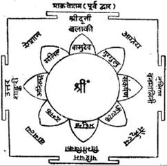
तीन सौ नवाँ अध्याय
त्वरिता-पूजा
अग्निदेव कहते हैं—मुने! त्वरिता-विद्याका ज्ञान भोग और मोक्ष प्रदान करनेवाला है; अतः अब उसीका वर्णन करूँगा। पहले ‘ॐ आधारशक्त्यै नमः।’—इस मन्त्रसे आधारशक्तिका स्मरण और वन्दन करे। फिर महासिंहस्वरूप सिंहासनकी ‘ॐ प्रों पुरु पुरु महासिंहाय१ नमः।’—इस मन्त्रसे और आसनस्वरूप कमलकी ‘पद्माय नमः।’—इस मन्त्रसे पूजा करे। तदनन्तर मूलमन्त्रका उच्चारण करके त्वरितादेवीकी पूजा करे। यथा—‘ॐ ह्रीं हुं खे च च्छे क्षः स्त्री हूं क्षें ह्रीं फट्२ त्वरितायै नमः । इसका अङ्गन्यास इस प्रकार है—खे च हृदयाय नमः । च च्छे शिरसे नमः (शिरसे स्वाहा) । छे क्षः शिखायै नमः (शिखायै वषट्) । क्षः स्त्री कवचाय नमः (कवचाय हुम्) । स्त्री हूं नेत्राय (नेत्रत्रयाय) नमः (वौषट्) । हूं क्षें अस्त्राय नमः (अस्त्राय फट्)॥१-२॥
[इसी प्रकार करन्यास करके निम्नाङ्कित गायत्रीका जप करे—] ‘ॐ त्वरिताविद्यां विद्महे । तूर्णविद्यां च धीमहि । तन्नो देवी प्रचोदयात्।’—यह ‘त्वरिता-गायत्री मन्त्र’ है। तदनन्तर पीठगत कमल-कर्णिकाके केसरोंमें पूर्वादि क्रमसे अङ्ग-देवताओंका पूजन करे। यथा— ‘खे च हृदयाय नमः (पूर्वे) । च च्छे शिरसे नमः (अग्निकोणे) । छे क्षः शिखायै नमः (दक्षिणे) । क्षः स्त्री कवचाय नमः (नैर्ऋत्ये) । स्त्री हूं नेत्रत्रयाय नमः (पश्चिमे) । हूं क्षे अस्त्राय नमः (वायव्ये)।’ तत्पश्चात् उत्तरदिशामें ‘श्रीप्रणीतायै नमः’—इस मन्त्रसे श्रीप्रणीताका तथा ईशानकोणमें ‘श्रीगायत्र्यै नमः’ से गायत्रीका पूजन करे॥३॥
तदनन्तर बाह्यगत तीन गोलाकार रेखाओंके बीचमें स्थित दो वीथियोंमेंसे देवीके सामनेवाले दलाग्रके बाह्यभागमें ‘कोदण्डशरधारिण्यै फट्कार्यै नमः।’ से फट्कारीकी पूजा करे। फिर उसके बाहरवाली वीथीमें देवीके सम्मुख ‘गदापाणये किङ्कराय नमः।’ से किङ्करकी पूजा करके कहे—‘किङ्कर रक्ष रक्ष त्वरिताज्ञया स्थिरो भव।’ इसके बाद द्वारके दक्षिणपार्श्वमें जयाकी और वामपार्श्वमें विजयाकी पूजा करे—‘जयायै नमः, विजयायै नमः।’ तत्पश्चात् कमलके पूर्वादि दलोंमें—‘हूंकार्यै नमः । खेचर्यै नमः । चण्डायै नमः । छेदिन्यै नमः । क्षेपिण्यै नमः । स्त्रीकार्यै नमः । हूंकार्यै नमः । क्षेमङ्कर्यै नमः।’ इन मन्त्रोंसे ‘हूंकारी’ आदि आठ मन्त्राक्षरशक्तियोंकी पूजा करनी चाहिये। त्वरिता-विद्या ‘तोतला’, ‘त्वरिता’ और ‘तूर्णी’—इन तीन नामोंसे कही जाती है। इसके अक्षरोंका सिर, भ्रू-युगल, ललाट, कण्ठ, हृदय, नाभि, गुह्य (मूलाधार), ऊरुद्वय, जानुद्वय, जङ्घाद्वय, ऊरुद्वय, चरणद्वयमें न्यास करके समस्त विद्याद्वारा व्यापकन्यास करना चाहिये*॥४—६॥
* ‘श्रीविद्यार्णव-तन्त्र’ के अनुसार उक्त ग्यारह अङ्गोंमें ह्रीं सम्पुटित अक्षरोंका न्यास करना चाहिये। ऊरुद्वयको दो बार गिननेसे बारह अङ्ग होते हैं, उनमें मूलके बारह अक्षरोंका न्यास करे।
त्वरितादेवी साक्षात् पर्वतराजनन्दिनीकी स्वरूपभूता हैं, इसलिये इनका नाम ‘पार्वती’ है। शबर (किरात)-का वेष धारण करनेसे उनको ‘शबरी’ कहा गया है। वे सबकी स्वामिनी या सबपर शासन करनेमें समर्थ होनेसे ‘ईशा’ कही गयी हैं। उनके एक हाथमें वरमुद्रा और दूसरेमें अभयमुद्रा शोभा पाती है। मोरपंखका कंगन पहननेसे उनका नाम ‘मयूरवलया’ है। मयूरपिच्छका मुकुट धारण करनेसे उन्हें ‘पिच्छमौलि’ कहा जाता है। नूतन पल्लव ही उनके वस्त्रके उपयोगमें आते हैं, अतः वे ‘किसलयांशुका’ कही गयी हैं। वे सिंहासनपर विराजमान होती हैं। मोरपंखका छत्र धारण करती हैं। त्रिनेत्रधारिणी तथा श्यामवर्णा देवी हैं। आपादतललम्बिनी माला (वनमाला) उनका आभूषण है। ब्राह्मणजातीय दो नाग (अनन्त और कुलिक) देवीके कानोंके आभूषण हैं। क्षत्रियजातिके दो नागराज (वासुकि और शङ्खपाल) उनके बाजूबंद बने हुए हैं। वैश्यजातीय दो नाग (तक्षक और महापद्म) त्वरितादेवीके कटिप्रदेशमें किङ्किणी बनकर रहते हैं और शूद्रजातीय दो सर्प (पद्म तथा कर्कोटक) देवीके चरणोंमें नूपुरकी शोभा प्रदान करते हैं। साधक स्वयं भी देवीस्वरूप होकर उनके मन्त्रका एक लाख जप करे। पूर्वकालमें देवेश्वर शिव किरातरूपमें प्रकट हुए थे। उस समय देवी पार्वती भी तदनुरूप ही किराती बन गयी थीं। सब प्रकारकी सिद्धियोंके लिये उनका ध्यान करे। उनके मन्त्रका जप करे तथा उनका पूजन करे। देवीकी आराधना विष आदि सब प्रकारके उपद्रवोंको हर लेती है॥७—१०॥
(पूर्ववर्णनके अनुसार) कमलके पूर्वादि दलके भीतर कर्णिकामें आठ सिंहासनोंपर निम्नाङ्कित देवियोंका क्रमशः पूजन करे। हृदयादि छः अङ्गोंसहित प्रणीता और गायत्रीका पूजन करे। पूर्वादि दलोंमें हूंकारी आदिकी पूजा करे। दलाग्रभागमें देवी त्वरिताके सम्मुख फट्कारीकी पूजा करे। इन सब देवियोंके नाममन्त्रके साथ ‘श्री’ बीज लगाकर उसीसे इनकी पूजा करना चाहिये। हूंकारी आदिके आयुध और वर्ण उस-उस दिशाके दिक्पालोंके ही समान हैं। परंतु फट्कारी देवी धनुष धारण करती हैं। मण्डलके द्वार-भागोंमें जया तथा विजयाकी पूजा करे। ये दोनों देवियाँ सुनहरे रंगकी छड़ी धारण करती हैं। उनके बाह्यभागमें देवीके समक्ष द्वारपाल किङ्करका पूजन करना चाहिये, जिसे ‘वर्वर’ कहा गया है। उसका मस्तक मुण्डित है। (मतान्तरके अनुसार उसके सिरके केश ऊपरकी ओर उठे रहते हैं।) वह लगुडधारी है। उसका स्थान जया-विजयाके बाह्यभागमें है। इस प्रकार पूजन करके सिद्धिके लिये हवनीय द्रव्योंद्वारा योन्याकार कुण्डमें हवन करे॥११—१४॥
उज्ज्वल धान्यसे हवन करनेपर सुवर्ण-लाभ होता है। गोधूमसे हवन करनेपर पुष्टि-सम्पत्ति प्राप्त होती है। जौ, धान्य (चावल) और तिलोंकी मिश्रित हवनसामग्रीसे हवन करनेपर सब प्रकारकी सिद्धि सुलभ होती है तथा ईतिभयका नाश हो जाता है। बहेड़ेका हवन किया जाय तो शत्रुको उन्माद हो जाता है। सेमरसे हवन करनेपर शत्रुके प्रति मारणका प्रयोग सफल होता है। जामुनके फलकी आहुतियाँ दी जायँ तो उनसे धन-धान्यकी प्राप्ति होती है। नील कमलके हवनसे तुष्टि होती है। लाल कमलोंद्वारा होम करनेसे महापुष्टि होती है। कुन्दके फूलोंसे होम किया जाय तो महान् अभ्युदय होता है। मल्लिका-कुसुमोंसे हवन करनेपर ग्राम या नगरमें क्षोभ होता है। कुमुद-कुसुमोंकी आहुतिसे साधक सब लोगोंका प्रिय हो जाता है॥१५—१७॥
अशोक-सुमनोंसे होम किया जाय तो पुत्रकी और पाटलासे होम करनेपर उत्तम अङ्गनाकी प्राप्ति होती है। आम्रफलकी आहुतिसे आयु, तिलोंके हवनसे लक्ष्मी, बिल्वके होमसे श्री तथा चम्पाके फूलोंके हवनसे धनकी प्राप्ति होती है। महुएके फूलों और बेलके फलोंसे एक साथ होम करनेपर सर्वज्ञता-शक्ति सुलभ होती है। त्वरितामन्त्रके तीन लाख जप, होम, ध्यान तथा पूजनसे समस्त अभिलषित वस्तुओंकी प्राप्ति होती है। मण्डलमें त्वरितादेवीकी अर्चना करके त्वरिता-गायत्रीसे पचीस आहुतियाँ दे। फिर मूलमन्त्रसे पल्लवोंकी तीन सौ आहुतियाँ देकर दीक्षा ग्रहण करे। दीक्षासे पूर्व पञ्चगव्य-पान कर ले। दीक्षितावस्थामें सदा चरु (हविष्य)-का भोजन करना चाहिये॥१८—२०॥
इस प्रकार आदि आग्नेय महापुराणमें ‘त्वरितापूजा-कथन’ नामक तीन सौ नवाँ अध्याय पूरा हुआ॥३०९॥
१. ‘क्षुं हुं हं वज्रदेह पुरु पुरु क्षिं क्षिं गर्ज गर्ज हं हुं क्षां पञ्चाननाय नमः।’—यह पीठमन्त्र है। इससे देवीको आसन देना और आसनकी पूजा करनी चाहिये। (शा० ति० १० पटल)
२. त्वरिता-मन्त्रका विनियोग ‘शारदातिलक’ दशमपटलमें इस प्रकार बताया गया है—‘ॐ अस्य श्रीत्वरिताद्वादशाक्षरमन्त्रस्यार्जुनऋषिर्विराट् छन्दः, त्वरिता देवता प्रणवो बीजं (केषांचिन्मते हुं बीजम्), ह्रीं शक्तिः (क्षें कीलकम्), समस्तपुरुषार्थफलप्राप्तये जपे विनियोगः।’ ‘श्रीविद्यार्णव’ में एक जगह ‘ईश’ को और दूसरी जगह ‘सौरि’ को ऋषि कहा है। वहाँ ‘हुं’ शक्ति, ‘स्त्रीं’ बीज और ‘क्षें’ कीलक बताया है। ध्यान श्यामां बर्हिकलापशेखरयुतामाबद्धपर्णांशुकां गुञ्जाहारलसत्पयोधरभरामष्टाहिपान् बिभ्रतीम् । ताटङ्काङ्गदमेखलागुणरणन्मञ्जीरतां प्रापितान् कैरातीं वरदाभयोद्यतकरां देवीं त्रिनेत्रां भजे॥ [भगवान् शंकर और भगवती पार्वती अर्जुनपर कृपा करनेके लिये किरात और किरातीके वेषमें उनके समक्ष प्रकट हुए थे, उस रूपमें देवी पार्वती बहुत शीघ्र भक्तोंका मनोरथ पूर्ण करती या करनेके लिये त्वरायुक्त (उतावली) रहती हैं, इसलिये इन्हें ‘त्वरिता’ की संज्ञा दी गयी है। उन्हींका ध्यान किया गया है। उसका अर्थ यों है—] ‘मैं किरातीके वेषमें प्रकट हुई त्रिनेत्रधारिणी देवी पार्वतीका भजन (चिन्तन) करता हूँ। उनकी अङ्कान्ति श्यामा है तथा अवस्थामें भी वे श्यामा (सोलह वर्षकी तरुणी) हैं। मोरपंखका मुकुट एवं वलय धारण करती हैं। कोमल पल्लवोंको जोड़कर बनाये हुए वस्त्रसे उनका कटिप्रदेश सुशोभित है। उनके पीन पयोधर गुञ्जाओंके हारसे विलसित हैं। आठ अहीश्वरोंको वे आभूषणोंके रूपमें धारण करती हैं; उनमेंसे दो कानोंके ताटङ्क बने हैं, दो भुजाओंमें बाजूबंदकी आवश्यकता पूरी करते हैं, दो कमरमें करधनीकी लड़ोंका काम देते हैं और दो पैरोंके खनखनाते मञ्जीर बन गये हैं। इस अनुपम वेशभूषासे विभासित त्वरितादेवीके उठे हुए हाथ वरद और अभयकी मुद्रासे मनोरम प्रतीत होते हैं।’ ऋष्यादिन्यास—‘अर्जुनाय (सौरये ईशाय वा) ऋपये नमः, शिरसि । विराट्छन्दसे नमः, मुखे । त्वरितानित्यादेवतायै नमः, हृदि । ॐ बीजाय नमः, गुह्ये । ह्रीं (अथवा हुम्) शक्तये नमः, पादयोः । क्षें कीलकाय नमः, नाभौ।’
तीन सौ दसवाँ अध्याय
अपरत्वरिता-मन्त्र एवं मुद्रा आदिका वर्णन
अग्निदेव कहते हैं—मुने! अब मैं दूसरी ‘अपरा विद्या’ का वर्णन करता हूँ, जो भोग और मोक्ष प्रदान करनेवाली है। धूलिसे निर्मित, वज्र-चिह्नसे आवृत और चौकोर भूपुरमण्डलमें त्वरितादेवीकी पूजा करे। उस मण्डलके भीतर योगपीठपर कमलका निर्माण भी होना चाहिये। मण्डलके पूर्वादि दिशाओं तथा कोणोंमें कुल मिलाकर आठ वज्र अङ्कित होंगे। मण्डलके भीतर वीथी, द्वार, शोभा तथा उपशोभाकी भी रचना करे। उसके भीतर उपासक मनुष्य त्वरितादेवीका चिन्तन करे। उनके अठारह भुजाएँ हैं। उनकी बायीं जङ्घा तो सिंहकी पीठपर प्रतिष्ठित है और दाहिनी जङ्घा उससे दुगुनी बड़ी आकृतिमें पीढ़े या खड़ाऊँपर अवलम्बित है। वे नागमय आभूषणोंसे विभूषित हैं। दायें भागके हाथोंमें क्रमशः वज्र, दण्ड, खङ्ग, चक्र, गदा, शूल, बाण, शक्ति तथा वरद मुद्रा धारण करती हैं और वामभागके हाथोंमें क्रमशः धनुष, पाश, शर, घण्टा, तर्जनी, शङ्ख, अङ्कुश, अभयमुद्रा तथा वज्र नामक आयुध लिये रहती हैं॥१—५॥
त्वरितादेवीके पूजनसे शत्रुका नाश होता है। त्वरिताका आराधक राज्यको भी अनायास ही जीत लेता है। वह दीर्घायु तथा राष्ट्रकी विभूति बन जाता है। दिव्य और अदिव्य (दैविक और लौकिक) सभी सिद्धियाँ उसके अधीन हो जाती हैं। (त्वरिताको ‘तोतला त्वरिता’ भी कहते हैं। इस नामकी व्युत्पत्ति इस प्रकार समझनी चाहिये—) ‘तल’ शब्दसे सातों पाताल, काल, अग्नि और सम्पूर्ण भुवन गृहीत होते हैं। ॐकारसे परमेश्वरसे लेकर जितना भी ब्रह्माण्ड है, उन सबका प्रतिपादन होता है। अपने मन्त्रके आदि अक्षर ॐकारसे देवी तलपर्यन्त ‘तोय’ का त्वरित भ्रामण (प्रक्षेपण) करती हैं, इसलिये वे ‘तोतला त्वरिता’ कही गयी हैं॥६-७॥
अब मैं त्वरिता-मन्त्रको प्रस्तुत करनेका प्रकार (अर्थात् मन्त्रोद्धार) बता रहा हूँ। भूतलपर स्वरवर्ग लिखे। (स्वरवर्गमें सोलह अक्षर हैं—अ, आ, इ, ई, उ, ऊ, ऋ, ऋृ, लृ, लॄ, ए, ऐ, ओ, औ, अं, अः। इसके बाद व्यञ्जन वर्णोंको भी वर्गक्रमसे लिखे—) कवर्गके लिये सांकेतिक नाम तालुवर्ग है। स्वरवर्ग पहला है और तालुवर्ग दूसरा। तीसरा जिह्वा-तालुकवर्ग है। (इसमें चवर्गके अक्षर संयोजित हैं।) चतुर्थ वर्ग तालु-जिह्वाग्र कहा गया है। (इसमें टवर्गके अक्षर हैं।) पञ्चम जिह्वादन्तक वर्ग है। (इसमें तवर्गके अक्षर हैं।) षष्ठ वर्गका नाम है—ओष्ठपुट-सम्पन्न। (इसमें पवर्गके अक्षर हैं।) सातवाँ मिश्रवर्ग है। (इसमें अन्तःस्थ—य, र, ल, वका समावेश है।) आठवाँ वर्ग ऊष्मा या शवर्ग है। इन्हीं वर्गोंके अक्षरोंसे मन्त्रका उद्धार करे॥८—१०॥
छठे स्वर ऊकारपर आरूढ़ ऊष्माका द्वितीय अक्षर हकार बिन्दु (अनुस्वार)-से युक्त हो (हूं)। तालुवर्गका द्वितीय अक्षर ‘खकार’ ग्यारहवें स्वर ‘एकार’ से युक्त हो (खे)। जिह्वा-तालु-समायोगका केवल प्रथम अक्षर ‘चकार’ हो, उसके नीचे उसी वर्गका दूसरा अक्षर ‘छकार’ हो और वह ग्यारहवें स्वर ‘एकार’ से संयुक्त (च्छे) हो। तालुवर्गका प्रथम अक्षर ‘क्’ हो, फिर उसके नीचे ऊष्माका द्वितीय अक्षर ‘ष्’ को देखकर जोड़ दे और उसे सोलहवें स्वर—‘अः’ से संयुक्त करे (क्षः)। ऊष्माका तीसरा अक्षर ‘स्’ हो, उसके नीचे जिह्वादन्त-समायोगके प्रथम अक्षर ‘तकार’ को जोड़े। उसके नीचे मिश्रवर्गका दूसरा अक्षर ‘रकार’ जोड़े और उसे चौथे स्वर ‘ईकार’ से जोड़ दे—(स्त्री)। तदनन्तर तालुवर्गके आदि अक्षर ‘क्’ के नीचे ऊष्माका द्वितीय अक्षर ‘ष्’ जोड़ दे और उसको ग्यारहवें स्वरसे मिला दे—(क्षे)। इसके बाद ऊष्माके अन्तिम अक्षर ‘हकार’ को अनुस्वारयुक्त करके पाँचवें स्वरपर आरूढ़ कर दे (हुं)। ओष्ठसम्पुटयोगसे दूसरा अक्षर ‘फ्’ और जिह्वाग्र तालुयोगसे द्वितीय अक्षर ‘ट्’ को पञ्चम ‘ण’ के रूपमें परिणत करके जोड़ना चाहिये। स्वर तथा अर्द्ध-व्यञ्जन वर्णोंके साथ उद्धृत हुए—ये अक्षर ‘तोतला त्वरिता’ के मन्त्र हैं। इनके आदिमें ॐकार और अन्तमें ‘नमः’ जोड़नेपर जो मन्त्र बने, उसका तो जप करे, किंतु अग्निकार्य (हवन)-में ‘नमः’ को हटाकर ‘स्वाहा’ जोड़ देना चाहिये। (तात्पर्य यह है कि ‘ॐ हूं खे च्छे क्षः स्त्री क्षे हुं फट् नमः।’—यह जपमन्त्र है और ‘ॐ हूं खे च्छे क्षः स्त्री क्षे हुं फट् स्वाहा’—यह हवनोपयोगी मन्त्र है)॥११—१८॥
इसका अङ्गन्यास इस प्रकार है—ॐ ह्रीं हूं ह्रः हृदयाय नमः । हां हः शिरसे स्वाहा । ह्रीं ज्वल ज्वल शिखायै वषट् । हनु हनु (अथवा हुलु हुलु), कवचाय हुम्। ह्रीं श्रीं क्षूं नेत्रत्रयाय वौषट् । नवाँ (फ) और आधा अक्षर (ट्) रूप जो तोतला-त्वरिता-विद्या है, उसीको देवीका नेत्र कहा गया है। ‘क्षौं हः खौ हूं फट् अस्त्राय फट्।’ ये गुह्य अङ्गमन्त्र हैं। इनका पहले न्यास करे॥१९-२०॥
त्वरिताके अङ्गोंका वर्णन आगे चलकर करूँगा। इस समय त्वरिता-विद्याके अङ्गोंका वर्णन मुझसे सुनो—प्रथम दो बीजाक्षर या मन्त्राक्षर हृदय हैं, तीसरा और चौथा—ये दो अक्षर स्थिर हैं, पाँचवाँ और छठा—ये अक्षर शिखाके मन्त्र कहे गये हैं। सातवाँ और आठवाँ कवच-मन्त्र हैं, नवाँ और आधा अक्षर तारक (फट्) है। यही नेत्र कहा गया है। (प्रयोग—ॐ हूं हृदयाय नमः । खे च्छे शिरसे स्वाहा । क्षः स्त्री शिखायै वषट् । क्षे हुम् कवचाय हुम् । फट् नेत्रत्रयाय वौषट् ।)॥२१-२२॥
‘तोतले वज्रतुण्डे ख ख हूं’—इन दस अक्षरोंसे युक्त ‘वज्रतुण्डिका’ नामक ‘इन्द्रदूतिका विद्या’ है। ‘खेचरि ज्वालिनि ज्वाले ख ख’—इन दस अक्षरोंसे युक्त ‘ज्वालिनी विद्या’ है। ‘वर्चे शरविभीषणि (अथवा शवरि भीषणि) ख खे’—यह दशाक्षरा ‘शबरी विद्या’ है। ‘छे छेदनि करालिनि ख ख’—यह दशाक्षरा ‘कराली विद्या’ है। ‘क्षः श्रव द्रव प्लवङ्गि ख खे’—यह दशाक्षर ‘प्लवङ्गदूती विद्या’ है। ‘स्त्रीबलं कलिधुननि शासी’—यह दशाक्षरा ‘श्वसनवेगिका विद्या’ है। ‘क्षे पक्षे कपिले हंस’—यह दशाक्षरा ‘कपिलादूतिका विद्या’ है। ‘हूं तेजोवति रौद्रि मातङ्गि’—यह दशाक्षरा ‘रौद्री’ दूतिका है ‘पुटे पुटे ख ख खड्गे फट्’—यह दशाक्षरा ‘ब्रह्मदूतिका विद्या’ है। ‘वैताली’ में उक्त सभी मन्त्र दशाक्षर होते हैं। अन्य विस्तारकी बातें पुआलकी भाँति सारहीन हैं। उन्हें छोड़ देना चाहिये। न्यास आदिमें हृदयादि अङ्गोंका उपयोग है। नेत्रका सुधी पुरुष मध्यमें न्यास करे॥२३—२८॥
पैरसे लेकर मस्तकतक तथा मस्तकसे लेकर पैरोंतक चरण, जानु, ऊरु, गुह्य, नाभि, हृदय तथा कण्ठदेशसे मुखमण्डलपर्यन्त ऊपर-नीचे आदिबीजसे निर्गत सोमरूप ‘अकार’, जो अमृतकी धारा एवं सुवाससे परिपूर्ण है, ब्रह्मरन्ध्रसे मुझमें प्रवेश कर रहा है, ऐसा साधक चिन्तन करे। मन्त्रोपासक मूर्धा, मुख, कण्ठ, हृदय, नाभि, गुह्य, ऊरु, जानु और पैरोंमें तथा तर्जनी आदिमें आदिबीजका बारंबार न्यास करे। ऊपर अमृतमय सोम है, नीचे बीजाक्षररूप शरीर-कमल है। इस गूढ़ रहस्यको जो जानता है, उसकी मृत्यु नहीं होती है। इस मन्त्रके जपसे रोग-व्याधिका अभाव हो जाता है। न्यास और ध्यानपूर्वक त्वरितादेवीका पूजन और उनके मन्त्रका एक सौ आठ बार जप करे[२८६]॥२९—३३॥
[२८६] ‘श्रीविद्यार्णवतन्त्र’ में त्वरिता-नित्याका प्रयोग संक्षेपसे इस प्रकार उपलब्ध होता है—अन्यत्र कथित आसनादि योगपीठन्यासान्त कर्म करके त्वरिता-विद्याद्वारा तीन प्राणायाम करके निम्नाङ्कित रूपसे विनियोग करे—‘अस्य त्वरितामन्त्रस्य सौरिऋषिर्विराट्छन्दः त्वरिता नित्या देवता स्त्री कवचम् । ॐ बीजं हुं शक्तिः क्षे कीलकम् ममाभीष्टसिद्धये जपे विनियोगः।’ इसका न्यासवाक्य इस प्रकार है—‘सौरये ऋषये नमः शिरसि । विराट्छन्दसे नमः मुखे । त्वरितानित्यादेवतायै नमः हृदि । ॐ बीजाय नमः गुह्ये । हुं शक्तये नमः पादयोः । क्षे कीलकाय नमः नाभौ।’ अग्निपुराणमें दशाक्षरा ‘तोतला-त्वरिता’ का मन्त्र है। परंतु ‘श्रीविद्यार्णव’ में द्वादशाक्षरा त्वरिता-विद्या बतायी गयी है। यथा—‘ॐ ह्रीं हुं खे च छे क्षः स्त्री हुं क्षे ह्रीं फट्।’ आदिके तीन और अन्तके दो अक्षर छोड़कर जो शेष सात अक्षर बचते हैं, उन्हींसे दो-दो अक्षर जोड़ते हुए न्यास करे। यथा—‘ॐ खे च हृदयाय नमः । च छे शिरसे स्वाहा । छे क्षः शिखायै वषट् । क्षः स्त्री कवचाय हुम् । स्त्री हूं नेत्रत्रयाय वौषट् । हूं क्षे अस्त्राय फट्।’ इसी तरह करन्यास भी करे। तत्पश्चात्—‘शिरसि—ह्रीं ॐ ह्रीं नमः।’ ललाटे—ह्रीं हुं ह्रीं नमः । कण्ठे—ह्रीं खे ह्रीं नमः । हृदि—ह्रीं च ह्रीं नमः । नाभौ—ह्रीं छे ह्रीं नमः । मूलाधारे—ह्रीं क्षः ह्रीं नमः । ऊरुद्वये—ह्रीं स्त्री ह्रीं नमः । जानुद्वये—ह्रीं हूं ह्रीं नमः । जङ्घाद्वये—ह्रीं क्षे ह्रीं नमः । पादद्वये—ह्रीं फट् ह्रीं नमः।’ इस प्रकार ‘ह्रीं’ बीजसे सम्पुटित अक्षरोंका न्यास करके समस्त विद्या (द्वादशाक्षरविद्या) द्वारा व्यापकन्यास करे। तदनन्तर ध्यानादि मानसपूजनान्त कर्म करके स्वर्णादि पट्टपर कुङ्कुम आदिद्वारा पश्चिमादि द्वारोंसे युक्त दो चतुरस्र रेखा बनाकर, उसके भीतर दो वृत्त बनाकर उसमें अष्टदलकमल अङ्कित करे। फिर पूर्ववत् आत्मपूजान्त कर्म करके भुवनेश्वरीपीठकी अर्चनाके बाद मूलविद्यासे मूर्तिनिर्माण कर आवाहनादि पुष्पोपचार अर्पित करे। कर्णिकामें षडङ्ग, गुरुपङ्क्तित्रयकी पूजाके बाद बाहरकी वृत्तत्रयान्तरालगत दो वीथियोंमें देवीके अग्रवर्ती दलके अग्रभागमें फटकारीका, बाह्यवीथी—देवीके अग्रभागमें ही किंकराका, द्वारपार्श्वमें जया-विजयाका, आठ दलोंमें क्रमशः हुंकारी, खेचरी, चण्डा, छेदिनी, क्षेपिणी, स्त्रीकारी, हूंकारी एवं क्षेमकारीकी पूजा करे। फिर पूर्ववत् लोकपालादिकोंकी पूजा करके पूजा समाप्त करे।
अब मैं ‘प्रणीता’ आदि मुद्राओंका वर्णन करूँगा। ‘प्रणीता’ मुद्राएँ पाँच प्रकारकी मानी गयी हैं—‘प्रणीता’, ‘सबीजा प्रणीता’, ‘भेदनी’, ‘कराली’ और ‘वज्रतुण्डा’। दोनों हाथोंको परस्पर ग्रथित करके बीचमें अँगूठोंको डाल दे और तर्जनीको ऊपर लगाये रखे, इसका नाम ‘प्रणीता’ है। इसे हृदयदेशमें लगाये। इसी मुद्रामें कनिष्ठिका अँगुलीको ऊपरकी ओर उठाकर मध्यमें रखे तो वह द्विजोंद्वारा ‘सबीजा’ के नामसे मानी जाती है। यदि तर्जनीके बीचमें अनामिकाको परस्पर संलग्न करके अङ्गुष्ठके अग्रभागको मध्यभागमें रखे तो वह ‘भेदनी’ मुद्रा कही गयी है। उस मुद्राको नाभिदेशमें निबद्ध करके अङ्गुष्ठका जल छिड़के। उसीको मन्त्रसाधकके हृदयमें योजित करनेपर ‘कराली’ नामक महामुद्रा होती है। फिर पूर्ववत् ब्रह्मलग्ना ज्येष्ठाको ऊपर उठाये तो वह ‘वज्रतुण्डा मुद्रा’ होती है। उसको वज्रदेशमें आबद्ध करे। दोनों हाथोंसे मणिबन्ध (कलाई)-को बाँधे और तीन-तीन अँगुलियोंको फैलाये रखे, इसे ‘वज्रमुद्रा’ कहते हैं। दण्ड, खड्ग, चक्र और गदा आदि मुद्राएँ उनकी आकृतिके अनुसार बतायी गयी हैं। अङ्गुष्ठसे तीन अँगुलियोंको आक्रान्त करे, वे तीनों ऊर्ध्वमुख हों तो ‘त्रिशूलमुद्रा’ होती है। एकमात्र मध्यमा अँगुली ऊपरकी ओर उठी रहे तो ‘शक्तिमुद्रा’ सम्पादित होती है। बाण, वरद, धनुष, पाश, भार, घण्टा, शङ्ख, अङ्कुश, अभय और पद्म—ये (प्रणीतासे लेकर पद्मतक कुल) अट्ठाईस मुद्राएँ कही गयी हैं। ग्रहणी, मोक्षणी, ज्वालिनी, अमृता और अभया—ये पाँच ‘प्रणीता’ नामवाली मुद्राएँ हैं। इनका पूजन और होममें उपयोग करना चाहिये॥३४—३७॥
इस प्रकार आदि आग्नेय महापुराणमें ‘त्वरितामन्त्र तथा मुद्रा आदिका वर्णन’ नामक तीन सौ दसवाँ अध्याय पूरा हुआ॥३१०॥
तीन सौ ग्यारहवाँ अध्याय
त्वरिता-मन्त्रके दीक्षा-ग्रहणकी विधि
अग्निदेव कहते हैं—मुने! अब सिंहासनपर स्थित वज्रसे व्याप्त कमलमें मन्त्र-न्यासपूर्वक दीक्षा आदिका विधान बताऊँगा॥१॥
‘हे हे हुति वज्रदन्त पुरु पुरु लुलु गर्ज गर्ज इह सिंहासनाय नमः[२८७]।’ यह सिंहासनके पूजनका मन्त्र है। चार रेखा खड़ी और चार रेखा तिरछी या (पड़ी) खींचे। इस प्रकार नौ भागोंके विभाग करके विद्वान् पुरुष नौ कोष्ठ बनाये। प्रत्येक दिशाके कोष्ठ तो रख ले और कोणवर्ती कोष्ठ मिटा दे। अब बाह्य दिशामें जो कोष्ठ बच जाते हैं, उनके कोणोंतक जो रेखाएँ आयी हैं, उनकी संख्याएँ आठ कही गयी हैं। बाह्यकोष्ठके बाह्य-भागमें ठीक बीचों-बीचमें वज्रका मध्यवर्ती शृङ्ग होता है। बाह्यरेखाके दो भाग करनेपर जो रेखार्द्ध बनता है, उतना ही बड़ा शृङ्ग होना चाहिये। बाहरी रेखा देढ़ी होनी चाहिये। विद्वान् पुरुष उसे द्विभङ्गी बनाये। मध्यवर्ती कोष्ठको कमलकी आकृतिमें परिणत करे। वह पीले रंगकी कर्णिकासे सुशोभित हो। काले रंगके चूर्णसे कुलिशचक्र बनाकर उसके ऊपरी सिरे या शृङ्गकी आकृति खङ्गाकार बनाये। चक्रके बाह्यभागमें चौकोर (भूपुर-चक्र) लिखे, जो वज्रसम्पुटसे चिह्नित हो। भूपुरके द्वारपर मन्त्रोपासक चार वज्रसम्पुट दिलाये। पद्म और वामवीथी सम होनी चाहिये। कमलका भीतरी भाग (कर्णिका) और केसर लाल रंगके लिखे और मण्डलमें स्त्रियोंको दीक्षित करके मन्त्र-जपका अनुष्ठान करवाये तो राजा शीघ्र ही परराष्ट्रोंपर विजय पाता है और यदि अपना राज्य छिन गया हो तो उसे भी वह शीघ्र ही प्राप्त कर लेता है। प्रणव-मन्त्र (ॐकार)-से संदीप्त (अतिशय तेजस्विनी) की हुई मूर्तिको हुंकारसे नियोजित करे। ब्रह्मन्! वायु तथा आकाशके बीज (यं हं)-से सम्पुटित मूलविद्याका उच्चारण करके आदि और अन्तमें भी कर्णिकामें पूजन करे। इस प्रकार प्रदक्षिण-क्रमसे आदिसे ही एक-एक अक्षररूप बीजका उच्चारण करते हुए कमलदलोंमें पूजन करना चाहिये॥२—११॥
[२८७] पूनासे प्रकाशित ‘अग्निपुराण’ के प्राचीन और नवीन संस्करणोंमें ‘सिंहासन-मन्त्र’ का पाठ इस प्रकार मिलता है—‘त्तु त्तु हेति वजदेति पुरु पुरु लुलु गर्ज गर्ज ह ह सिंहाय नमः।’
दलोंमें विद्याके अङ्गोंकी पूजा करे। आग्नेय दिशासे लेकर वामक्रमसे नैर्ऋत्य-दिशातक हृदय, सिर, शिखा, कवच तथा नेत्र—इन पाँच अङ्गोंकी पूजा करके मध्यभाग (कर्णिका)-में पुनः नेत्रकी तथा सम्पूर्ण दिशाओंमें अस्त्रकी पूजा करनी चाहिये। गुह्याङ्गमें रक्षाकी तथा केसरोंमें वाम-दक्षिण-पार्श्वमें विद्यमान पाँच-पाँच हुतियोंकी अपने-अपने नाम-मन्त्रोंसे पूजा करे। गर्भमण्डलके बाह्यभागमें आठ लोकपालोंका न्यास करे। वर्णान्त (क्ष या ह)-को अग्नि (र)-के ऊपर चढ़ाकर उसे छठे स्वर (ऊ)-से विभेदित करे और पंद्रहवें स्वर (ं) बिन्दुओंको उसके सिरपर चढ़ाकर उस (क्ष्रूं) (अथवा ह्रूं) बीजको[२८८] आदिमें रखकर दिक्पालोंके अपने-अपने नाममन्त्रोंसे संयुक्त करके उनकी पूजा करे। फिर शीघ्र ही सिंहासनपर कमलकी कर्णिकामें गन्ध आदि उपचारोंद्वारा पूजन करे। इससे श्रीकी प्राप्ति होती है॥१२—१५॥
[२८८] तन्त्रशास्त्रमें वर्णमालाका अन्तिम अक्षर ‘क्ष’ है, इसके अनुसार ‘क्ष्रूं’ बीज बनता है। यदि वर्णान्त शब्दसे ‘ह’ लिया जाय तो ‘ह्रूं’ बीज बनेगा।
तदनन्तर एक सौ आठ मन्त्रोंद्वारा अभिमन्त्रित आठ कलशोंद्वारा कमलको वेष्टित कर दे। फिर एक हजार बार मन्त्र-जप करके दशांश होम करे। पहले अग्नि-मन्त्र (रं)-से कुण्डमें अग्निको ले जाय और हृदयमन्त्र (नमः)-से उसको वहाँ स्थापित करे। साथ ही कुण्डके भीतर अग्नियुक्त शक्तिका ध्यान करे। तदनन्तर उस शक्तिमें गर्भाधान, पुंसवन तथा जातकर्म-संस्कारके उद्देश्यसे हृदयमन्त्रद्वारा एक सौ आठ बार होम करे। फिर गुह्याङ्गके द्वारसे नूतन अग्निके जन्म होनेकी भावना करे। फिर मूलविद्याके उच्चारणपूर्वक पूर्णाहुति दे। इससे शिवाग्निका जन्म सम्पादित होता है। फिर मूलमन्त्रसे उसमें सौ आहुतियाँ दे। तत्पश्चात् अङ्गोंके उद्देश्यसे दशांश होम करे। इसके बाद शिष्यको देवीके हाथमें सौंपे और उसका मण्डलमें प्रवेश कराये। फिर अस्त्र-मन्त्रसे ताड़न करके गुह्याङ्गोंका न्यास करे। विद्याके अङ्गोंसे संनद्ध शिष्यको विद्याङ्गोंमें नियोजित करे। उसके द्वारा पुष्पका प्रक्षेप करवाये तथा उसे अग्निकुण्डके समीप ले जाय। तदनन्तर जौ, धान्य, तिल और घीसे मूलविद्याके उच्चारणपूर्वक सौ आहुतियाँ दे। प्रथम होम स्थावरयोनिमें पहुँचाकर उससे मुक्ति दिलाता है और दूसरा सरीसृप (साँप, बिच्छू आदि)-की योनिसे। तदनन्तर क्रमशः पक्षी, मृग, पशु और मानव-योनिकी प्राप्ति और उससे मुक्ति होती है। फिर क्रमशः ब्रह्मपद, विष्णुपद तथा अन्तमें रुद्रपदकी प्राप्ति होती है। अन्तमें पूर्णाहुति कर देनी चाहिये। एक आहुतिसे शिष्य दीक्षित होता है और उसे मोक्षप्राप्तिका अधिकार मिल जाता है। अब मोक्ष कैसे होता है, यह सुनो॥१६—२४॥
जब मन्त्रोपासक सुमेरुपर सदाशिवपदमें स्थित हो तो दूसरे दिन स्वस्थचित्त होकर अकर्म और कर्मक्षयके लिये एक हजार आहुतियाँ दे। फिर पूर्णाहुति करके मन्त्रयोगी पुरुष धर्म-अधर्मसे लिप्त नहीं होता है, मोक्ष प्राप्त कर लेता है। वह उस परमपदको पहुँच जाता है, जहाँ जाकर मनुष्य फिर इस संसारमें नहीं लौटता। जैसे जलमें डाला हुआ जल उसमें मिलकर एकरूप हो जाता है, उसी प्रकार जीव शिवमें मिलकर शिवरूप हो जाता है। जो कलशोंद्वारा अभिषेक करता है, वह विजय तथा राज्य आदि सब अभीष्ट वस्तुओंको प्राप्त कर लेता है। ब्राह्मणकुलमें उत्पन्न कुमारी कन्याका पूजन करे तथा गुरु आदिको दक्षिणा दे। प्रतिदिन पूजा करके एक सहस्र आहुतियाँ अग्निमें देनी चाहिये। तिल और घीसे पूर्ण आहुति देनेपर त्वरिता देवी लक्ष्मी एवं अभिमत वस्तु देती हैं। वे विपुल भोग प्रदान करती हैं तथा और भी जो कुछ साधक चाहता है, उसे माता त्वरिता पूर्ण करती हैं। मन्त्रके जितने अक्षर हैं, उतने लाख जप करनेसे मनुष्य निधियोंका अधिपति होता है, दुगुना जप करनेपर राज्यकी प्राप्ति होती है, त्रिगुण जप करे तो यक्षिणी सिद्ध हो जाती है, चौगुने जपसे ब्रह्मपद, पाँचगुने जपसे विष्णुपद तथा छःगुने जपसे महासिद्धि सुलभ होती है। मन्त्रके एक लाख जपसे मनुष्य अपने पापोंका नाश कर देता है, दस बार जप करनेसे देहशुद्धि होती है, सौ बारके जपसे तीर्थस्नानका फल होता है। वेदीपर पट या प्रतिमा रखकर उसके समक्ष सौ, हजार अथवा दस हजारकी संख्यामें जप करके हवन करना बताया गया है। इस प्रकार विधानपूर्वक जप करके एक लाख हवन करे। तिल, जौ, लावा, धान, गेहूँ, कमल-पुष्प (पाठान्तरके अनुसार आमके फल) तथा श्रीफल (बेल)—इन सबको एकत्र करके इनमें घी मिलावे और उस होम-सामग्रीसे हवन करके व्रत करे। रातमें कवच आदिसे संनद्ध हो खङ्ग, धनुष तथा बाण आदि लेकर एक वस्त्र धारण करके उपर्युक्त वस्तुओंसे ही देवीकी पूजा करे। वस्त्रका रंग चितकबरा, लाल, पीला, काला अथवा नीला होना चाहिये। मन्त्रवेत्ता विद्वान् दक्षिणदिशामें जाकर मण्डपके द्वारपर दूती-मन्त्रसे बलि अर्पित करे। यह बलि द्वार आदिमें अथवा एक वृक्षवाले श्मशानमें भी दी जा सकती है। ऐसा करनेसे साधक राजा हो समस्त कामनाओंका तथा सारी पृथ्वीके राज्यका उपभोग कर सकता है॥२५—३७॥
‘इस प्रकार आदि आग्नेय महापुराणमें ‘त्वरिता-मूलमन्त्रकी दीक्षा आदिका कथन’ नामक तीन सौ ग्यारहवाँ अध्याय पूरा हुआ॥३११॥
तीन सौ बारहवाँ अध्याय
त्वरिता-विद्यासे प्राप्त होनेवाली सिद्धियोंका वर्णन
अग्निदेव कहते हैं—मुने! अब मैं विद्याप्रस्तावका वर्णन करूँगा, जो धर्म, काम आदिकी सिद्धि प्रदान करनेवाला है। नौ कोष्ठोंके विभागसे विद्याभेदकी उपलब्धि होती है। अनुलोम-विलोमयोग, समास-व्यासयोग, कर्णाविकर्णयोग, अध-ऊर्ध्व-विभागयोग तथा त्रित्रिकयोगसे देवीके द्वारा जिसके शरीरकी सुरक्षा सम्पादित हुई है, वह साधक सिद्धिदायक मन्त्रों तथा बहुत-से निर्गत प्रस्तावोंको जानता है। शास्त्र-शास्त्रमें मन्त्र बताये गये हैं, किंतु वहाँ उनके प्रयोग दुर्लभ हैं। प्रथम गुरु वर्ण ही होता है। उसका पूर्वकालमें वर्णन नहीं हुआ है। वहाँ प्रस्तावमें एकाक्षर, द्वयक्षर तथा त्र्यक्षर मन्त्र प्रकट हुए। चार-चार खड़ी तथा पड़ी रेखाएँ खींचे। इस प्रकार नौ कोष्ठ होते हैं। मध्यकोष्ठसे आरम्भ करके प्रदक्षिणक्रमसे मन्त्रके अक्षरोंका उनमें न्यास करे। तदनन्तर प्रस्ताव-भेदन करे। प्रस्तावक्रमयोगसे जो प्रस्तावको प्राप्त करता है, उस साधककी मुट्ठीमें सारी सिद्धियाँ आ जाती हैं। सारी त्रिलोकी उसके चरणोंमें झुक जाती है। वह नौ खण्डोंमें विभक्त जम्बूद्वीपकी सम्पूर्ण भूमिपर अधिकार प्राप्त कर लेता है। कपाल (खप्पर)-पर अथवा श्मशानके वस्त्र (शवके ऊपरसे उतारे हुए कपड़े)-पर सब ओर शिवतत्त्व लिखकर मन्त्रवेत्ता पुरुष बाहर निकले और मध्यभागमें कर्णिकाके ऊपर अभीष्ट व्यक्तिविशेषका भोजपत्रपर नाम लिखकर रख दे। फिर खैरकी लकड़ीसे तैयार किये गये अङ्गारोंद्वारा उस भोजपत्रको तपाकर दोनों पैरोंके नीचे दबा दे। यह प्रयोग एक ही सप्ताहमें चराचर प्राणियोंसहित समस्त त्रिभुवनको भी चरणोंमें ला सकता है। वज्रसम्पुट गर्भसे युक्त द्वादशारचक्रके मध्यमें द्वेष्य व्यक्तिका नाम लिखकर रखे। उस नामको ‘सदाशिव’ मन्त्रसे विदर्भित (कुशोंद्वारा मार्जित) कर दे। उक्त द्वादशारचक्र तथा नाम आदिका उल्लेख हल्दीसे दीवारपर, काष्ठफलकपर अथवा शिलापट्टपर करना चाहिये। ऐसा करनेसे शत्रुके मुख, गमनशक्ति तथा सेनाका भी स्तम्भन (अवरोध) हो जाता है॥१—१२॥
श्मशानके वस्त्रपर विषमिश्रित रक्तसे षट्कोणचक्रका उल्लेख कर उसके मध्यमें शत्रुका नाम लिखे। फिर उस चक्रको चारों ओर शक्तिबीजसे योजित करके उसपर डंडा रख दे। फिर साधक श्मशानभूमिपर रखे हुए उस शत्रुपर शीघ्र दण्डसे प्रहार करे। यह प्रयोग उस शत्रु-राजाके राष्ट्रको खण्डित कर देता है। इसी तरह चक्राकार मण्डल बनाकर उसके मध्यभागमें शत्रुके नामको स्थापित कर दे। चक्रकी धारामें शक्तिबीजका न्यास करे। शत्रुका नाम लेकर उसपर भावनाद्वारा उक्त चक्रधारसे प्रहार करे। इससे शत्रुका हरण होता है। इसी प्रकार खङ्गके मध्यभागमें गरुडबीजके साथ शत्रुका नाम लिखकर उसका पूर्ववत् विदर्भीकरण करे। उक्त नाम श्मशानभूमिकी चिताके कोयलेसे लिखना चाहिये। उसपर चिताके भस्मसे प्रहार करे। ऐसा करनेसे साधक एक ही सप्ताहमें शत्रुके देशको अपने अधिकारमें कर लेता है। वह छेदन, भेदन और मारणमें शिवके समान शक्तिशाली हो जाता है। तारक (फट्)-को नेत्र कहा गया है। उसका शान्ति-पुष्टिकर्ममें नियोग करे। यह दहनादि प्रयोग शाकिनीको भी आकर्षित कर लेता है। पूर्वोक्त नौ चक्रोंमें मध्यगत मन्त्राक्षरसे लेकर पश्चिम-दिशावर्ती कोष्ठतकके दो अक्षरोंको वक्रतुण्ड-मन्त्रके साथ जपनेसे कुष्ठ आदि जितने भी चर्मगत रोग हैं, उन सबका नाश हो जाता है, इसमें संशय नहीं है। (यह अध-ऊर्ध्व-विभागयोग है।) मध्यकोष्ठसे उत्तरवर्ती कोष्ठतकके दो अक्षरवाले मन्त्रको ‘करालीबन्ध’ के साथ जप करे तो वह द्वयक्षरी-विद्या, यदि साक्षात् शिव प्रतिवादी हों तो उनसे भी अपनी रक्षा करवाती है। इसी प्रकार पश्चिमगत मन्त्राक्षरको आदिमें रखकर उत्तर कोष्ठतकके मन्त्राक्षरोंको ‘वक्रतुण्ड-मन्त्र’ के साथ जप किया जाय तो ज्वर तथा खाँसीका नाश होता है। उत्तरकोष्ठसे लेकर मध्यकोष्ठतकके मन्त्राक्षरोंका एक-एक साथ जप किया जाय तो साधककी इच्छासे वटके बीजमें गुरुता (भारीपन) आ सकती है। इसी तरह पूर्वादि-मध्यमान्त अक्षरोंके जपसे वह तत्काल उसमें लघुता (हल्कापन) ला सकता है। भोजपत्रपर गोरोचनाद्वारा वज्रसे व्याप्त भूपुरचक्र लिखकर, अनुलोमक्रमसे स्थित मन्त्र-बीजोंको लिखकर, उसे मन्त्रवत् धारण करके साधक अपने शरीरकी रक्षा करे। भावपूर्वक सुवर्णमें मढ़ाकर धारण किया गया यह ‘रक्षायन्त्र’ मृत्युका भी नाश करनेवाला होता है। वह विघ्न, पाप तथा शत्रुओंका दमन करनेवाला है तथा सौभाग्य और दीर्घायु देनेवाला है। यह ‘रक्षायन्त्र’ धारण किया जाय तो वह जूआ तथा युद्धमें भी विजयदायक होता है। इन्द्रकी सेनाके साथ संग्राम हो तो उसमें भी वह विजय दिलाता है, इसमें संशय नहीं है। यह ‘रक्षायन्त्र’ वन्ध्याको भी पुत्र देनेवाला तथा दूसरी चिन्तामणिके समान मनोवाञ्छाकी पूर्ति करनेवाला है। इससे रक्षित हुआ मनुष्य परराष्ट्रोंपर भी अधिकार पाता है तथा राज्य और पृथ्वीको जीत लेता है। ‘फट् स्त्रीं क्षें हूं’—इन चार अक्षरोंका एक लाख जप करनेसे यक्ष आदि भी वशीभूत हो जाते हैं॥१३—२५॥
‘इस प्रकार आदि आग्नेय महापुराणमें ‘त्वरिता-विद्यासे प्राप्त होनेवाली सिद्धियोंका वर्णन’ नामक तीन सौ बारहवाँ अध्याय पूरा हुआ॥३१२॥
तीन सौ तेरहवाँ अध्याय
नाना मन्त्रोंका वर्णन
अग्निदेव कहते हैं—अब मैं सच्चिदानन्दस्वरूप भगवान् विनायक (गणेश)-के पूजनकी विधि बताऊँगा। योगपीठपर प्रथम तो आधारशक्तिकी पूजा करे। फिर अग्नि आदि कोणों तथा पूर्वादि दिशाओंमें क्रमशः धर्म, ज्ञान, वैराग्य, ऐश्वर्य, अधर्म, अज्ञान, अवैराग्य तथा अनैश्वर्य—इन आठकी अर्चना करे। तदनन्तर कन्द, नाल, पद्म, कर्णिका, केसर और सत्त्वादि तीन गुणोंकी और पद्मासनकी पूजा करे। इसके बाद तीव्रा, ज्वालिनी, नन्दा, सुयशा (भोगदा), कामरूपिणी, उग्रा, तेजोवती, सत्या तथा विघ्ननाशिनी—इन नौ शक्तियोंकी पूजा करे। तत्पश्चात् गणेशजीकी मूर्तिका अथवा मूर्तिके अभावमें ध्यानोक्त गणपतिमूर्तिका पूजन करे। इसके बाद हृदयादि अङ्गोंकी पूजा करनी चाहिये। पूजनके प्रयोगवाक्य इस प्रकार हैं—‘गणंजयाय हृदयाय नमः । एकदन्ताय उत्कटाय शिरसे स्वाहा । अचलकर्णिने शिखायै वषट् । गजवक्त्राय हुं फट् कवचाय हुम् । महोदराय दण्डहस्ताय अस्त्राय फट्[२८९]।’ —इन पाँच अङ्गोंमेंसे चारकी तो पूर्वादि चार दिशाओंमें और पाँचवेंकी मध्यभागमें पूजा करे॥१—४॥
[२८९] ‘श्रीविद्यार्णवतन्त्र’ में पञ्चाङ्गन्यासके जो प्रयोगवाक्य दिये गये हैं, वे यहाँके मूलभागसे कुछ भिन्नता रखते हैं। उनमें करन्यास एवं अङ्गन्यास एक साथ निर्दिष्ट हैं, यथा—‘अङ्गुष्ठयोः गणंजयाय स्वाहा हृदयाय नमः । तर्जन्योः एकदंष्ट्राय हुं फट् शिरसे स्वाहा । मध्यमयोः अचलकर्णिने नमो नमः शिखायै वषट् । अनामिकयोः गजवक्त्राय नमो नमः कवचाय हुम् । कनिष्ठिकयोः महोदराय चण्डाय हुं फट् अस्त्राय फट्।’ इसमें करन्यासगत वाक्योंमें करतल-करपृष्ठको और अङ्गन्यासगत वाक्योंमें नेत्रको छोड़ दिया गया है। षडङ्गपक्षमें हृदयादि अङ्गोंका न्यास अथवा पूजन बीजमन्त्रसे करना चाहिये। यथा—‘गां हृदयाय नमः । गीं शिरसे स्वाहा । गूं शिखायै वषट् । गैं कवचाय हुम् । गौं नेत्रत्रयाय वौषट् । गः अस्त्राय फट्।’ इनमेंसे चार अङ्गोंका तो आराध्य देवताके चारों दिशाओंमें और नेत्र तथा अस्त्रका मध्यवर्ती स्थान-देवताके अग्रभागमें पूजन करना चाहिये।
तदनन्तर गणंजय, गणाधिप, गणनायक, गणेश्वर, वक्रतुण्ड, एकदन्त, उत्कट, लम्बोदर, गजवक्त्र और विकटानन—इन सबकी पद्मदलोंमें पूजा करे। फिर मध्यभागमें—‘हूं विघ्ननाशनाय नमः । महेन्द्राय-धूम्रवर्णाय नमः।’—यों बोलकर विघ्ननाशन एवं धूम्रवर्णकी पूजा करे। फिर बाह्यभागमें विघ्नेशका पूजन करे॥५-६॥
अब मैं ‘त्रिपुराभैरवी’ के पूजनकी विधि बताऊँगा। इसमें आठ भैरवोंका पूजन करना चाहिये। उनके नाम इस प्रकार हैं—असिताङ्गभैरव, रुरुभैरव, चण्डभैरव, क्रोधभैरव, उन्मत्तभैरव, कपालिभैरव, भीषणभैरव तथा संहारभैरव। ब्राह्मी आदि मातृकाएँ भी पूजनीय हैं। (उनके नाम इस प्रकार हैं—ब्राह्मी, माहेश्वरी, कौमारी, वैष्णवी, वाराही, इन्द्राणी, चामुण्डा तथा महालक्ष्मी)। ‘अकार’ आदि ह्रस्व स्वरोंके बीजको आदिमें रखकर भैरवोंकी पूजा करनी चाहिये तथा ‘आकार’ आदि दीर्घ अक्षरोंके बीजको आदिमें रखकर ‘ब्राह्मी’ आदि मातृकाओंकी अर्चना करनी चाहिये[२९०]। अग्नि आदि चार कोणोंमें चार वटुकोंका पूजन कर्तव्य है। समयपुत्र वटुक, योगिनीपुत्र वटुक, सिद्धपुत्र वटुक तथा चौथा कुलपुत्र वटुक—ये चार वटुक हैं। इनके अनन्तर आठ क्षेत्रपाल पूजनीय हैं। इनमें ‘हेतुक’ क्षेत्रपाल प्रथम हैं और ‘त्रिपुरान्त’ द्वितीय। तीसरे ‘अग्निवेताल’ चौथे ‘अग्निजिह्व’, पाँचवें ‘कराल’ तथा छठे ‘काललोचन’ हैं। सातवें ‘एकपाद’ तथा आठवें ‘भीमाक्ष’ कहे गये हैं। (ये सभी क्षेत्रपाल यक्ष हैं।) इन सबका पूजन करके त्रिपुरादेवीके प्रेतरूप पद्मासनकी पूजा करे। यथा—‘ऐं क्षैं प्रेतपद्मासनाय नमः । ॐ ऐं ह्रीं हसौः त्रिपुरायै प्रेतपद्मासनसमास्थितायै नमः।’—इस मन्त्रसे प्रेतपद्मासनपर विराजमान त्रिपुराभैरवीकी पूजा[२९१] करे। उनका ध्यान इस प्रकार है—‘त्रिपुरादेवी’ बायें हाथमें अभय एवं पुस्तक (विद्या) धारण करती हैं तथा दायें हाथमें वरदमुद्रा एवं माला (जपमालिका)। देवी बाणसमूहसे भरा तरकस और धनुष भी लिये रहती हैं।’ मूलमन्त्रसे हृदयादि न्यास करे[२९२]॥७—१२॥
[२९०] ‘शारदातिलक’ के नवम पटलमें कहा गया है कि आठ मातृकाओंका कमलके आठ दलोंमें पूजन करे। मातृकाएँ अपने-अपने भैरवके अङ्कमें विराजती हैं। ‘दीर्घाद्या मातरः प्रोक्ता ह्रस्वाद्या भैरवाः स्मृताः ।—अर्थात् दीर्घस्वरोंको बीजके रूपमें नामके आदिमें लगाकर मातृकाओंकी पूजा करनी चाहिये और ह्रस्व अक्षरोंको आदिमें बीजके रूपमें जोड़कर भैरवोंका पूजन होना चाहिये।’ यहाँ ह्रस्व और दीर्घ अक्षर पारिभाषिक लिये गये हैं। इनका परिचय देते हुए राघवभट्टने ‘शा० ति०’ की ‘पदार्थादेश’ नामक टीकामें लिखा है कि ‘अ इ उ ऋ लृ ए ओ अं’—ये आठ अक्षर ‘ह्रस्व’ के नामसे उपयोगमें लाये जाते हैं और ‘आ ई ऊ ऋृ लॄ ऐ औ अः’—ये आठ अक्षर दीर्घ-स्वरके नामसे। इनके प्रयोगवाक्य ‘श्रीविद्यार्णवतन्त्र’ में इस प्रकार दिये गये हैं—‘आं ब्राह्मयै नमः । अं असिताङ्गभैरवाय नमः । ईं माहेश्वर्यै नमः । इं रुरुभैरवाय नमः । ऊं कौमार्यै नमः । उं चण्डभैरवाय नमः । ऋं वैष्टणव्यै नमः । ऋृं क्रोधभैरवाय नमः । लॄं वाराह्यै नमः, लृं उन्मत्तभैरवाय नमः । ऐं इन्द्राण्यै नमः । एं कपालिभैरवाय नमः । औं चामुण्डायै नमः । ओं भीषणभैरवाय नमः । अः महालक्ष्म्यै नमः । अं संहारभैरवाय नमः।’ इस प्रकार भैरवके अङ्कमें स्थित मातृकाओंका प्रदक्षिणक्रमसे पूजन करना चाहिये।’
[२९१] ‘श्रीविद्यार्णवतन्त्र’ के २५ वें श्वासमें त्रिपुरादेवीके पूजनका क्रम यों बताया गया है—प्रातःकृत्य और प्राणायाम करके पीठन्यास करे। अन्यत्र बताये हुए क्रमसे आधारशक्ति आदिकी अर्चनाके पश्चात् हृदयकमलके पूर्वादि केसरोंमें इच्छा, ज्ञाना, क्रिया, कामिनी, कामदायिनी, रति, रतिप्रिया और नन्दाका पूजन करे तथा मध्य भागमें मनोन्मनीका। उसके ऊपर ‘ऐं परायै अपरायै परापरायै हसौः सदाशिवमहाप्रेतपद्मासनाय नमः।’—इस प्रकार न्यास करके मस्तकपर दक्षिणामूर्ति ऋषिका, मुखमें पङ्क्ति छन्दका, हृदयमें त्रिपुरभैरवी देवताका, गुह्यमें वाग्भव बीजका, चरणोंमें तार्तीय शक्तिका तथा सर्वाङ्गमें कामराज कीलकका न्यास करे। तत्पश्चात् वाग्भवबीज (हस्रैं नमः)-का नाभिसे चरणपर्यन्त, कामबीज (ह सकल रीं नमः)-का हृदयसे नाभिपर्यन्त तथा तार्तीय बीज (हस्रौः)-का सिरसे हृदयपर्यन्त न्यास करे। इसी तरह आद्यबीजका दाहिने हाथमें, द्वितीय बीजका बायें हाथमें तथा तृतीय बीजका दोनों हाथोंमें न्यास करे। इसी क्रमसे मस्तक, मूलाधार और हृदयमें उक्त तीनों बीजोंका न्यास करना चाहिये। दायें कान, बायें कान और चिबुकमें भी उक्त तीनों बीजोंका क्रमशः न्यास करे। फिर आगे बताये जानेवाले तीन-तीन अङ्गोंमें क्रमशः तीनों बीजोंका न्यास करे। यह ‘नवयोनिन्यास’ है। यथा—दायाँ गाल, बायाँ गाल और मुख। दायाँ नेत्र, बायाँ नेत्र और नासिका। दायाँ कंधा, बायाँ कंधा और पेट। दायीं कोहनी, बायीं कोहनी और कुक्षि। दायाँ घुटना, बायाँ घुटना और लिङ्ग। दायाँ पैर, बायाँ पैर तथा गुह्य भाग। दायाँ पार्श्व, बायाँ पार्श्व और हृदय। दायाँ स्तन, बायाँ स्तन और कण्ठ।
[२९२] मूलमन्त्र बीजत्रयात्मक है। यथा—हस्रैं नमः । हस कल रीं नमः । हसौः नमः ।
(अब प्रयोगविधि बतायी जाती है—) गोसमूहके मध्यमें स्थित हो, श्मशान आदिके वस्त्रपर चिताके कोयलेसे अष्टदलकमलका चक्र लिखे या लिखावे। उसमें द्वेषपात्रका नाम लिखकर लपेट दे। फिर चिताकी राखको सानकर एक मूर्ति बनावे। उसमें द्वेषपात्रकी स्थितिका चिन्तन करके उक्त यन्त्रको नीले रंगके डोरेसे लपेटकर मूर्तिके पेटमें घुसेड़ दे। ऐसा करनेसे उस व्यक्तिका उच्चाटन हो जाता है॥१३-१४॥
ज्वालामालिनी-मन्त्र ‘ॐ नमो भगवति ज्वालामालिनि गृध्रगणपरिवृते स्वाहा।’ इस मन्त्रका जप करते हुए युद्धमें जानेवाले पुरुषको प्रत्यक्ष विजय प्राप्त होती है॥१५-१६॥
श्रीमन्त्र ‘ॐ श्रीं ह्रीं क्लीं श्रियै नमः’॥१७॥
चतुर्दल कमलमें उत्तरादि दलके क्रमसे क्रमशः घृणिनी, सूर्या, आदित्या और प्रभावती—इन चार श्रीदेवियोंका उक्त मन्त्रसे पूजन करके मन्त्र जपनेसे श्रीकी प्राप्ति होती है। ये सभी श्रीदेवियाँ सुवर्णगिरिके समान परम सुन्दर कान्तिवाली हैं॥१८॥
गौरीमन्त्र ‘ॐ ह्रीं गौर्यै नमः।’ —इस मन्त्रद्वारा जप, होम, ध्यान तथा पूजन किया जाय तो यह साधकको सब कुछ प्रदान करनेवाला है। गौरीदेवीकी अङ्गकान्ति अरुणाभ गौर है। उनके चार भुजाएँ हैं। वे दाहिने दो हाथोंमें पाश तथा वरदमुद्रा धारण करती हैं और बायें दो हाथोंमें अङ्कुश एवं अभय। शुद्ध चित्तसे गौरीदेवीकी प्रार्थना (आराधना) करनेवाला बुद्धिमान् पुरुष सौ वर्षोंतक जीवित रहता है तथा उसे चोर आदिका भय नहीं प्राप्त होता है। युद्धस्थलमें इस मन्त्रसे अभिमन्त्रित जलको पी लेनेसे अपने ऊपर क्रोधसे भरा हुआ पुरुष भी प्रसन्न हो जाता है। इस मन्त्रसे अञ्जन और तिलक लगानेपर वशीकरण सिद्ध होता है तथा जिह्वाग्रपर इसके लेखसे (अथवा जपसे भी) कवित्व-शक्ति प्रस्फुटित होती है। इसके जपसे स्त्री-पुरुषके जोड़े वशमें हो जाते हैं। इसके जपसे सूक्ष्म योनियोंके भी दर्शन होते हैं। स्पर्श करनेमात्रसे मनुष्य वशमें हो जाता है। इस मन्त्रद्वारा तिलकी आहुति देनेपर सारे मनोरथ सिद्ध होते हैं। इस मन्त्रसे सात बार अभिमन्त्रित करके अन्नका भोजन करनेवाले पुरुषके पास सदा श्री (धन-सम्पत्ति) बनी रहती है। इसके आदिमें लक्ष्मी-बीज (श्रीं) और वैष्णव-बीज (क्लीं) जोड़ दिया जाय तो यह ‘अर्धनारीश्वर-मन्त्र’ हो जाता है। अनङ्गरूपा, मदनातुरा, पवनवेगा, भुवनपाला, सर्वसिद्धिदा, अनङ्गमदना और अनङ्गमेखला—ये शक्तियाँ हैं। इनके नाममन्त्रोंके जपसे लक्ष्मीकी प्राप्ति होती है। कमलके दलोंमें ह्रीं, स्वर, कादि व्यञ्जन लिखकर बीचमें अभीष्ट स्त्रीका नाम लिखे। षट्कोण-चक्र या कलशमें भी लिख सकते हैं। लिखकर उसके उद्देश्यसे जप करनेपर ‘वशीकरण’ होता है॥१९—२६॥
नित्यक्लिन्ना-मन्त्र ‘ॐ ह्रीं ऐं नित्यक्लिन्ने मदद्रवे स्वाहा ।[२९३]’ [किसी-किसीने इस मन्त्रको पञ्चदशाक्षर भी माना है। उस दशामें ‘स्वाहा’ से पहले ‘ऐं ह्रीं’ जोड़ा जाता है।] यह छः अङ्गोंवाला मूलमन्त्र है (तीन बीज और तीन पद मिलाकर छः अङ्ग होते हैं)। लाल रंगके त्रिकोण-चक्रमें अष्टदल कमलका चिन्तन करके उसमें ‘द्राविणी’ आदिका पूजन करे। पूर्वादि दिशाओंमें ‘द्राविणी’ आदि चार शक्तियों तथा ईशानादि कोणोंमें ‘अपरा’ आदि चार शक्तियोंका चिन्तन-पूजन करना चाहिये। उनके क्रमानुसार नाम यों जानने चाहिये—द्राविणी, वामा, ज्येष्ठा, आह्लादकारिणी, अपरा, क्षोभिणी, रौद्री तथा गुणशक्ति। देवीका ध्यान इस प्रकार करे—‘वे रक्तवर्णा हैं और उसी रंगके वस्त्राभूषण धारण करती हैं। उनके दो हाथोंमें पाश और अङ्कुश है, दो हाथोंमें कपाल तथा कल्पवृक्ष हैं तथा दो हाथोंसे उन्होंने वीणा ले रखी है।’ नित्या, अभया, मङ्गला, नववीरा, सुमङ्गला, दुर्भगा और मनोन्मनी तथा द्रावा—इन आठ देवियोंका पूर्वादि दिशाके कमल-दलोंमें पूजन करे। [‘श्रीविद्यार्णवतन्त्र’ में ये नाम इस प्रकार मिलते हैं—नित्या, सुभद्रा, समङ्गला, वनचारिणी, सुभगा, दुर्भगा, मनोन्मनी तथा रुद्ररूपिणी।] इनके बाह्यभागमें पाँच दलोंमें कामदेवोंका पूजन होता है। ‘ॐ ह्रीं अनङ्गाय नमः । ॐ ह्रीं स्मराय नमः । ॐ ह्रीं मन्मथाय नमः । ॐ ह्रीं माराय नमः । ॐ ह्रीं कामाय नमः।’ ये ही पाँच काम हैं। कामदेवोंके हाथोंमें पाश, अङ्कुश, धनुष और बाणका चिन्तन करे। इनके भी बाह्यभागमें दस दलोंमें क्रमशः रति-विरति, प्रीति-विप्रीति, मति-दुर्मति, धृति-विधृति, तुष्टि-वितुष्टि—इन पाँच कामवल्लभाओंका पूजन करे॥२७—३३॥
[२९३] अग्निपुराणकी छपी प्रतियोंमें ‘ॐ ह्रीं छं नित्यक्लिन्ने मदद्रवे ओं ओं’—ऐसा पाठ मिलता है; परंतु अन्य तन्त्रोंमें ‘छं’ की जगह ‘ऐं’ मिलता है। उद्धारस्थलमें ‘वाग्भवं’ कहा गया है, जो ‘ऐं’ का ही वाचक है और अन्तमें अग्निवधू (स्वाहा)-का ही उल्लेख है; अतः वही रूप लिया गया है।
‘ॐ छं (ऐं) नित्यक्लिन्ने मदद्रवे ओं ओं (स्वाहा) अ आ इ ई उ ऊ ऋ ऋृ लृ लॄ ए ऐ ओ औ अं अः क ख ग घ ङ च छ ज झ ञ ट ठ ड ढ ण त थ द ध न प फ ब भ म य र ल व श ष स ह क्षः ॐ छं (ऐं) नित्यक्लिन्ने मदद्रवे स्वाहा।’ यह ‘नित्यक्लिन्ना-विद्या’ है॥३४॥
सिंहासनपर आधारशक्ति तथा पद्मका पूजन करके उसके दलोंमें हृदय आदि अङ्गोंकी स्थापना एवं पूजन करनेके अनन्तर मध्यकर्णिकामें देवीकी पूजा करनी चाहिये॥३५॥ गौरीमन्त्र (२) ‘ॐ ह्रीं गौरि रुद्रदयिते योगेश्वरि हूं फट् स्वाहा’॥३६॥
इस प्रकार आदि आग्नेय महापुराणमें ‘नाना प्रकारके मन्त्रोंका वर्णन’ नामक तीन सौ तेरहवाँ अध्याय पूरा हुआ॥३१३॥
तीन सौ चौदहवाँ अध्याय
त्वरिताके पूजन तथा प्रयोगका विज्ञान निग्रहयन्त्र
अग्निदेव कहते हैं—मुने! ‘ॐ ह्रीं ह्रूं खे च च्छे क्षः स्त्री ह्रूं क्षे ह्रीं फट् त्वरितायै नमः।’—इस मन्त्रसे न्यासपूर्वक त्वरितादेवीकी पूजा करे। उनके द्विभुज या अष्टभुज रूपका ध्यान करे। आधारशक्ति तथा अष्टदल कमलका पूजन करे। सिंहासन और उसके ऊपर विराजित त्वरितादेवीकी तथा उनके चारों ओर हृदयादि अङ्गोंकी पूजा करे[२९४]। पूर्वादि दिशाओंमें हृदयादि अङ्गोंकी पूजा करके मण्डलमें प्रणीता तथा गायत्रीकी पूजा करे। (देवीके अग्रभागके केसरसे लेकर प्रदक्षिणक्रमसे छः केसरोंमें छः अङ्गोंका पूजन करके अवशिष्ट दोमें प्रणीता तथा गायत्रीका पूजन करना चाहिये।) इसके बाद आठ दलोंमें हुंकारी, खेचरी, चण्डा, छेदिनी, क्षेपिणी, स्त्री, हूंकारी तथा क्षेमंकरीकी पूजा करे। फिर मध्यभागमें देवीके सामने फट्कारीकी अर्चना करे। देवीके सम्मुखवर्ती द्वारके दक्षिण तथा वामपार्श्वमें जया एवं विजयाकी पूजा करके द्वाराग्रभागमें ‘किंकराय रक्ष रक्ष त्वरिताज्ञया स्थिरो भव हुं फट् किंकराय नमः।’ इस मन्त्रसे किंकरका पूजन करना चाहिये॥१—४॥
[२९४] ‘सारसंग्रह’ तथा ‘श्रीविद्यार्णवतन्त्र’ आदिमें जो मन्त्रोद्धार किया गया है, उससे उपर्युक्त द्वादशाक्षर-बीज ही ‘त्वरिता-विद्याके नामसे प्रसिद्ध होते हैं। अग्निपुराणकी आजकलकी छपी प्रतियोंमें मन्त्रका शुद्ध रूप नहीं रह गया है, अतः तन्त्रान्तरसे मिलाकर ही शुद्ध रूपका यहाँ ग्रहण किया गया है। न्यासकी विधि पहले बता चुके हैं, अतः यहाँ संकेतमात्र किया गया है। तन्त्रोंमें देवीके द्विभुज, अष्टभुज तथा अष्टादशभुज रूप भी वर्णित हुए हैं। यहाँ मूलमें द्विभुज तथा अष्टभुज रूपकी ओर संकेत है। आधारशक्ति आदिका पूजन भी पूर्ववत् समझना चाहिये। सिंहासनका मन्त्र इस प्रकार है—‘क्षं हुं हं वज्रदेह मुरु मुरु क्षिं गुल गुल गर्ज गर्ज हं हुं क्षां पञ्चाननाय नमः।’ एक-एक अक्षरका उद्धार करके यह मन्त्रस्वरूप निश्चित हुआ है, अतः इसीको शुद्ध मानकर अन्यत्रके विकृत पाठको भी शुद्ध किया जा सकता है। यहाँ कही हुई अधिकांश बातें पिछले तीन सौ नवें अध्याय में आ गयी हैं।’
त्वरिता-मन्त्रसे तिलोंद्वारा होम करनेसे सम्पूर्ण अभीष्ट वस्तुओंकी प्राप्ति होती है। नामोच्चारणपूर्वक देवीके आभूषणस्वरूप आठ नागोंकी पूजा करनी चाहिये। यथा—अनन्ताय नमः स्वाहा । कुलिकाय नमः स्वधा । वासुकिराजाय स्वाहा । शङ्खपालाय वौषट् । तक्षकाय वषट् । महापद्माय नमः । कर्कोटनागाय स्वाहा । पद्माय नमः फट्[२९५]॥ ५-६॥
[२९५] ‘नारायणीय-तन्त्र’ में ब्राह्मण-नागोंको कुण्डलोंके स्थानमें चिन्तनीय बताया है, क्षत्रिय-नाग दोनों भुजाओंमें केयूरका काम करते हैं, वैश्य-नाग कटिबन्ध (करधनी)-की आवश्यकता पूर्ण करते हैं तथा शुद्र-नाग दोनों पैरोंमें नूपुर बनकर शोभा बढ़ाते हैं। इनका ध्यान इस प्रकार करना चाहिये—‘अनन्त और कुलिक ब्राह्मण-नाग हैं। इनका वर्ण अग्निके समान तेजस्वी है। ये दोनों नाग सहस्र-सहस्र फणोंसे समलंकृत हैं। वासुकि और शङ्खपाल क्षत्रिय हैं। इनकी अङ्गकान्ति पीली है। ये दोनों सात-सात सौ फण धारण करते हैं। तक्षक और महापद्म वैश्य-नाग हैं। इनका रंग नीला है। इन दोनोंने पाँच-पाँच सौ फण धारण कर रखे हैं। पद्म तथा कर्कोटक शूद्र-नाग हैं। इनकी अङ्कान्ति श्वेत है तथा ये तीन-तीन सौ फण धारण करते हैं। त्वरितादेवीके वामहस्तमें वरदमुद्रा और दाहिने हाथमें अभयमुद्रा शोभा पाती है।’
निग्रहयन्त्र[२९६] दस खड़ी रेखाएँ खींचकर उनपर दस पड़ी रेखाएँ खींचे तो इक्यासी पद (कोष्ठ) बन जाते हैं। इन पदोंद्वारा ‘निग्रहचक्र’ का निर्माण करे। यह चक्र वस्त्रपर, वेदीपर, वृक्षके तनेपर, शिलापट्टपर तथा यष्टिकाओंपर भी लिखा जा सकता है। इसके मध्यवर्ती कोष्ठमें साध्य (शत्रु आदि)-का नाम लिखे। (उस नामको दो ‘रं’ बीजोंद्वारा आवेष्टित कर दे। अर्थात् दो ‘रं’ बीजोंके बीचमें ‘साध्य-नाम’ लिखना चाहिये।) उसके पार्श्वभागकी पूर्वादि दिशाओंकी चार पट्टिकाओंमें ‘भ्रूं क्ष्रूं छ्रूं ह्रूं’—इन चार बीजोंको लिखे। फिर ईशान आदि कोणोंमें भीतरकी ओर ‘कालरात्रि-मन्त्र’ (काली-आनुष्टुभ सर्वतोभद्र) लिखे तथा बाहरकी ओर ‘यमराज-मन्त्र’ (यम-आनुष्टुभ)-का उल्लेख करे। (यदि साध्य-व्यक्ति पुरुष है, तब तो यही क्रम ठीक है। यदि वह स्त्री हो तो उसपर निग्रहके लिये भीतरकी ओर ‘यम-आनुष्टुभ’ मन्त्र लिखा जाय और बाहरकी ओर ‘काली-आनुष्टुभ’ मन्त्रका उल्लेख किया जाय—यह ‘श्रीविद्यार्णवतन्त्र’ में विशेष बात कही गयी है)॥७—९॥
[२९६] निग्रह-यन्त्र
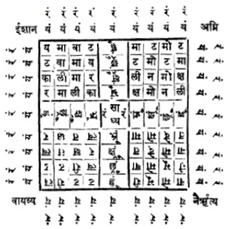
काली-आनुष्टुभ मन्त्र का ली मा र र मा ली का लीनमोक्षक्षमोनली । मामोदेततदेमोमा रक्षतत्वत्वतक्षर॥१०॥
यम-आनुष्टुभ-मन्त्र यमावाटटवामाय माटमोटटमोटमा । वामोभूरिरिभूमोवा टटरीत्वत्वरीटट॥११॥
यम-मन्त्रके बाह्यभागमें चारों ओर ‘रं’ लिखे, फिर ‘रं’ के नीचे ‘यं’ लिखे। इससे ‘मारणात्मक निग्रहयन्त्र’ सम्पादित होता है। नीमकी गोंद, मज्जा, रक्त तथा विषसे[२९७] मिश्रित स्याहीमें थोड़ा चिताका कोयला कूट-पीसकर मिला दे और उसे पिङ्गलवर्णकी दावातमें रखे। फिर कौएके पंखकी कलमसे उक्त ‘निग्रह-यन्त्र’ को लिखकर उसे श्मशानभूमिमें या चौराहेपर किसी गड्ढेमें नीचेकी ओर गाड़ दे, अथवा बाँबीकी मिट्टीमें उसे डाल दे, अथवा बहेड़ेके वृक्षकी डालीके नीचे भूमिमें गाड़ दे। ऐसा करनेसे सभी शत्रुओंका नाश हो जाता है॥१२—१४॥
[२९७] नमक, ऊसरकी मिट्टी, स्रोतका जल, गृहधूम (घरकी कालिख), चित्रक, चिताका कोयला और नीमकी गोंद—इनसे युक्त जो स्याही है, उसे ‘विष’ कहा गया है।
अनुग्रह-चक्र शुक्लपक्षमें भोजपत्रपर, भूमिपर तथा दीवारपर लाक्षाके रङ्गसे, कुङ्कुमसे अथवा खड़िया मिट्टीके चन्दनसे ‘अनुग्रह-चक्र[२९८]’ लिखे (यह ‘अनुग्रह-चक्र’ पूर्वोक्त निग्रह-चक्रकी भाँति इक्यासी पदोंका होना चाहिये।) मध्यकोष्ठमें साध्य व्यक्तिका नाम लिखे। उस नामको ‘ठं ठं’ के मध्यमें रखे। पूर्वादि वीथीमें ‘जूं सः वषट्’ का उल्लेख करे। ईशान आदि कोणसे आरम्भ करके वीथीको छोड़ते हुए अग्निकोणपर्यन्त लक्ष्मीका आनुष्टुभ-मन्त्र (जो सर्वतोभद्रबन्धमें निबद्ध है) लिखे। यह ऊपरकी चार पङ्क्तियोंमें पूरा हो जायगा। तत्पश्चात् नीचेकी चार पङ्क्तियोंमें सबसे नीचेके नैर्ऋत्यकोणस्थ कोष्ठसे आरम्भ करके दाहिनेसे बायें पार्श्वकी ओर लिखे। निचली पङ्क्तिके बाद ऊपरी पङ्क्तिमें भी बायेंसे दाहिने लिखे। इस तरह चार पङ्क्तियोंमें वही ‘लक्ष्मी-मन्त्र’ पूरा लिख दे। वह मन्त्र इस प्रकार है— ‘श्री सा मा या या मा सा श्री, सा नो या ज्ञे ज्ञे या नो सा। मा या ली ला ला ली या मा, या ज्ञे ला ली ली ला ज्ञे या॥’ चक्रके बहिर्भागमें चारों ओर त्वरिता-मन्त्र लिखे। प्रत्येक दिशामें एक बार, इस प्रकार चार बार वह मन्त्र लिखा जायगा। फिर उस चौकोर चक्रको इस प्रकार गोल रेखासे घेर दे, जिससे वह कलशके भीतर हो जाय। उक्त कलशके नीचे एक कमल बनाकर उसीपर उस कमलको स्थापित किया हुआ दिखाये। (ऊपरकी ओर कलशके मुखकी-सी आकृति बना दे। दो वृत्ताकार रेखाओंसे कलशकी आकृति स्पष्ट करनी चाहिये। कलशके मुखपर दो आड़ी रेखाएँ खींचकर उन रेखाओंके बीचमें ‘नववव’—इस प्रकारकी माला-सी बनाकर उस मालासे घटको परिपूरित दिखाये। इस प्रकार इस चक्रका मनोरथपूर्तिके लिये तन्त्र-शास्त्रोक्त रीतिसे प्रयोग करे।)॥१५—१८॥
[२९८] ‘श्रीविद्यार्णवतन्त्र’ में इस ‘अनुग्रह-यन्त्र’ के लेखनके विषयमें इस प्रकार कहा गया है— कुङ्कुमैर्लाक्षया वापि लिखितं स्वर्णपट्टके । धवले वसने वापि लेखिन्या स्वर्णजातया॥ सम्पूज्य जपसंसिद्धं स्थापयेद् यत्र तत्र वै । भवेल्लक्ष्मीरतिस्फीता नीरोगाश्च प्रजास्तथा॥ गजाश्वपशवस्त्वन्ये प्राणिनः सुखिनो भृशम् । भूतप्रेतपिशाचादिपीडासु बिभृयादिदम्॥ अलक्ष्मीशान्तये वश्यसिद्धये सर्वसम्पदे । अर्थात् ‘रोली अथवा लाक्षा (महावर)-के रङ्गसे सोनेके पत्रपर या श्वेत वस्त्रपर सोनेकी ही लेखनीसे इस अनुग्रह-यन्त्रको लिखे। लिखकर इसकी पूजा करके त्वरिता-मन्त्रके जपद्वारा इसे सिद्ध कर ले। जपसिद्ध-यन्त्रको जहाँ रखा जायगा, वहाँ अत्यन्त वृद्धिशीला लक्ष्मीका वास होगा। वहाँकी समस्त प्रजाएँ नीरोग होंगी। हाथी, घोड़े तथा अन्य पशु-प्राणी अत्यन्त सुखी होंगे। भूत, प्रेत तथा पिशाच आदिकी बाधा प्राप्त होनेपर इस यन्त्रको धारण करना चाहिये। दरिद्रताकी शान्ति, वशीकरणकी सिद्धि तथा सम्पूर्ण सम्पदाओंकी प्राप्तिके लिये भी इस यन्त्रको धारण करना आवश्यक है।’
कमलपर स्थापित पद्मचक्र लिखकर उसे धारण किया जाय तो वह मृत्युको जीतनेवाला तथा स्वर्गकी प्राप्ति करानेवाला है। वह शान्तिके साधनोंमें भी परम शान्तिप्रद है। सौभाग्य आदि देनेवाला है[२९९]॥ १९॥
[२९९] इस चक्रकी विधि ‘श्रीविद्यार्णव-तन्त्र’ में इस प्रकार दी गयी है—दस दलवाला पद्म बनाकर उसकी कर्णिकामें माया-बीजके उदरमें साध्य-नाम लिखकर उसके दलोंमें मूल त्वरिता-विद्याके प्रणवादि दस वर्णोंको लिखे। माया-बीजके अक्षर छोड़ दे। उस कमलचक्रके बाह्यभागमें षट्कोण तथा उसके भी बाह्यभागमें चौकोर मण्डल बनावे।
बारह खड़ी रेखाओंपर बारह पड़ी रेखाएँ खींचकर बराबर-बराबर एक सौ इक्कीस कोष्ठ बनावे। उसके मध्यकोष्ठमें साध्यका नाम लिखे। फिर ईशानकोणवाले कोष्ठसे आरम्भ करके प्रदक्षिणक्रमसे बारह बार त्वरिता-विद्याके अक्षर लिखे। मायाबीज (ह्रीं) को छोड़कर ही मन्त्र लिखना चाहिये। रेखाओंके अग्रभागोंपर बारंबार त्रिशूल अङ्कित करे। इस यन्त्रको जपद्वारा सिद्ध कर ले[३००]। मध्यकोष्ठमें साध्य-नामके पहले ‘ॐ’ तथा अन्तमें ‘हूं फट्’ जोड़ दे। त्वरिता-विद्याके वर्णोंको क्रमसे ही लिखना चाहिये। अन्तमें नीचेकी ओर ‘वषट्’ जोड़ देना चाहिये। यह ‘प्रत्यङ्गिरा-विद्या’ कहलाती है, जो सम्पूर्ण मनोरथ एवं प्रयोजनको सिद्ध करनेवाली है॥२०-२१॥
[३००] इस यन्त्रका उल्लेख ‘शारदातिलक’ के दशम पटलमें उपलब्ध होता है।
कोष्ठवाले चक्रोंमें भी ‘निग्रह-चक्र’ और ‘अनुग्रह-चक्र’ लिखे। वह ‘अमृती-विद्या’ है। उसके मध्यकोष्ठमें ‘क्रीं सा हूं’ और साध्य-नाम लिखे। (पाठान्तरके अनुसार उस चक्रके मध्यभागमें साध्यका नाम तथा नामके उभय पार्श्वमें ‘ह्रीं’ लिखे।) उसके बाह्यभागमें द्वादशदल कमल बनाकर उसके दलोंमें त्वरिता-विद्याको विलोमक्रमसे लिखे। अर्थात् पहले ‘फट्’ लिखे, फिर पूर्व-पूर्वके अक्षर। फिर उसे ह्रींकारयुक्त तीन वृत्ताकार पङ्क्तियोंसे वेष्टित करे। कुम्भाकार यन्त्रके भीतर लिखित इस विद्याको धारण किया जाय तो यह समस्त शत्रुओंका नाश करनेवाली और सब कुछ देनेवाली होती है। यदि रोगीके कानमें इसका जप किया जाय तो सर्पादि विष भी शान्त हो जाते हैं। यदि इसके अक्षरोंसे अङ्कित (अथवा इस यन्त्रसे अङ्कित) डंडोंद्वारा इसके शरीरपर ठोंका जाय तो उससे भी विषका शमन हो जाता है॥२२—२५॥
इस प्रकार आदि आग्नेय महापुराणमें ‘त्वरिता-मन्त्रके प्रयोगोंका वर्णन’ नामक तीन सौ चौदहवाँ अध्याय पूरा हुआ॥३१४॥
तीन सौ पंद्रहवाँ अध्याय
स्तम्भन आदिके मन्त्रोंका कथन
अग्निदेव कहते हैं—मुने! अब मैं स्तम्भन, मोहन, वशीकरण, विद्वेषण तथा उच्चाटनके प्रयोग बताता हूँ। विषव्याधि, आरोग्य, मारण तथा उसके शमनके प्रयोग भी बता रहा हूँ। भोजपत्रपर ताड़की कलमसे ‘कूर्मचक्र’ लिखे। वह छः अङ्गुलके मापका होना चाहिये। तदनन्तर द्विज उसके मुख तथा चारों पैरोंमें मन्त्रका न्यास करे। चारों पैरोंमें ‘क्रीं’ तथा मुखमें ‘ह्रीं’ लिखे। गर्भस्थानमें त्वरिता-विद्याका उल्लेख करके पृष्ठभागमें साध्य-नाम लिखे। फिर मालामन्त्रोंसे वेष्टित करके उस यन्त्रको ईंटके ऊपर स्थापित करे। तत्पश्चात् उसे ढककर कूर्मपीठगत ‘करालमन्त्र’ से अभिमन्त्रित करे। महाकूर्मका पूजन करके चरणोदकको शत्रुके उद्देश्यसे फेंके तथा शत्रुका स्मरण करके उसे सात बार बायें पैरसे ताड़ित करे। इससे मुखभागसे शत्रुका स्तम्भन होता है॥१—५॥
भैरवकी मूर्ति लिखकर उसके चारों ओर निम्नाङ्कित मालामन्त्र लिखे— ‘ॐ शत्रुमुखस्तम्भनी कामरूपा आलीढकरी । ह्रीं फें फेत्कारिणी मम शत्रूणां देवदत्तानां मुखं स्तम्भय स्तम्भय मम सर्वविद्वेषिणां मुखस्तम्भनं कुरु कुरु कुरु ॐ हूं फें फेत्कारिणि स्वाहा।’ इसके बाद ‘फट्’ और हेतु (प्रयोगका उद्देश्य) लिखकर उक्त मन्त्रका जप करते हुए उस महाबली भैरवके वाम हाथमें ‘नग’ (पर्वत या वृक्ष) और दाहिने हाथमें ‘शूल’ लिखे। तदनन्तर ‘अघोरमन्त्र’ लिखे। इससे वह संग्राममें शत्रुओंको स्तम्भित कर देता है॥६—९॥
‘ॐ नमो भगवत्यै भगमालिनि विस्फुर विस्फुर, स्पन्द स्पन्द, नित्यक्लिन्ने द्रव द्रव हूं सः क्रींकाराक्षरे स्वाहा।’ —इस मन्त्रका जप करते हुए रोचना आदिसे तिलक करनेपर मनुष्य सारे जगत्को मोहित कर सकता है॥१०-११॥
‘ॐ फें हुं फट् फेत्कारिणि ह्रीं ज्वल ज्वल, त्रैलोक्यं मोहय मोहय, गुह्यकालिके स्वाहा।’ —इससे तिलक करके मनुष्य राजा आदिको भी वशमें कर लेता है॥१२॥
जहाँ गधा बैठा हो उस स्थानकी धूल, शवके ऊपर चढ़ा हुआ फूल तथा स्त्रीके रजमें संलग्न वस्त्रका टुकड़ा लेकर रातमें शत्रुकी शय्या आदिपर फेंक दे। इससे उसके स्वजनोंमें विद्वेष उत्पन्न हो जाता है। गायका खुर और शृङ्ग, घोड़ेकी टापका कटा हुआ टुकड़ा तथा साँपका सिर—इन सबको कूटकर एकमें मिला दे और द्वेषपात्रके घरोंपर फेंक दे। इससे शत्रुवर्गका उच्चाटन होता है। कनेरकी पीली शिफा (मूल या जड़) मारणके प्रयोगमें संसिद्ध (सफल) है। साँप और छछूँदरका रक्त तथा कनेरका बीज भी मारणरूपी प्रयोजनका साधक है। मरे हुए गिरगिट, भ्रमर, केकड़ा और बिच्छूका चूरन बनाकर तेलमें डाल दे। उस तेलको अपने शरीरमें लगानेवाला मनुष्य कोढ़ी हो जायगा॥१३—१६॥
‘ॐ नवग्रहाय सर्वशत्रून् मम साधय साधय, मारय मारय आं सों मं बुं गुं शुं शं रां कें ॐ स्वाहा।’ इस मन्त्रको भोजपत्र या नवग्रह-प्रतिमापर लिखकर आक (मदार)-के सौ फूलोंसे पूजा करके शत्रु-मारणके उद्देश्यसे उस यन्त्र या प्रतिमाको श्मशानभूमिमें गाड़ दे। इससे समस्त ग्रह साधकके शत्रुको मार डालते हैं॥१७-१८॥
‘ॐ कुञ्जरी ब्रह्माणी, ॐ मञ्जरी माहेश्वरी, ॐ वेताली कौमारी, ॐ काली वैष्णवी, ॐ अघोरा वाराही, ॐ वेतालीन्द्राणी, ॐ उर्वशी चामुण्डा, ॐ वेताली चण्डिका, ॐ जयाली यक्षिणी, नवमातरो हे मम शत्रुं गृह्णत गृह्णत।’ भोजपत्रपर इस मन्त्रको लिखे। ‘शत्रु’ पदके स्थानमें शत्रुके नामका निर्देश करे। फिर श्मशान-भूमिमें उस यन्त्रकी पूजा करे तो शत्रुकी मृत्यु हो जाती है॥१९॥
इस प्रकार आदि आग्नेय महापुराणमें ‘स्तम्भन आदिके मन्त्रका कथन’ नामक तीन सौ पंद्रहवाँ अध्याय पूरा हुआ॥३१५॥
तीन सौ सोलहवाँ अध्याय
त्वरिता आदि विविध मन्त्र एवं कुब्जिका-विद्याका कथन
अग्निदेव कहते हैं—मुने! पहले ‘हुं’ रखे, फिर ‘खे च च्छे’—ये तीन पद जोड़कर मन्त्रकी शोभा बढ़ावे। तत्पश्चात् ‘क्षः स्त्रीं हूं क्षे’ लिखकर अन्तमें ‘फट्’ जोड़ दे। (कुल मिलाकर) ‘हुं खे च च्छे क्षः स्त्रीं ह्रूं क्षे ह्रीं फट्।’ यह दशाक्षरा त्वरिता-विद्या हूई। यह विद्या समस्त कार्योंको सिद्ध करनेवाली तथा विष, सर्पादिका मर्दन करनेवाली है। ‘खे च च्छे’—यह त्र्यक्षर-विद्या काल (अथवा काले साँप)-के डँसे हुएको भी जीवन देनेवाली है॥१-२॥
‘ॐ हूं खे क्षः’—इस चतुरक्षरी विद्याका प्रयोग विष एवं सर्पदंशकी पीड़ाको नष्ट करनेवाला है। (पाठान्तर ‘विषशत्रुप्रमर्दनः’ के अनुसार उक्त विद्याका प्रयोग विष एवं शत्रुकी बाधाको दूर करनेवाला है।) ‘स्त्रीं हूं फट्’—इस विद्याका प्रयोग पाप तथा रोग आदिपर विजय दिलाता है। ‘खे च’—इस द्वयक्षर मन्त्रका प्रयोग शत्रु एवं दुष्ट आदिकी बाधाको दूर करता है। ‘हूं स्त्रीं ॐ’—इस मन्त्रका प्रयोग स्त्री आदिको वशमें करनेवाला है। ‘खे स्त्रीं खे’—इस मन्त्रका प्रयोग कालसर्पद्वारा डँसे गये मनुष्यके जीवनकी रक्षा करता है तथा शत्रुओंपर विजय दिलाता है। ‘क्षः स्त्रीं क्षः’—इसका प्रयोग वशीकरण तथा विजयका साधक है॥३—५॥
कुब्जिका-विद्या ‘ऐं ह्रीं श्रीं हसखफ्रें हसौः ॐ नमो भगवति हसखफ्रें कुब्जिके हस्रूं हस्रूं अघोरे घोरे अघोरमुखि छ्रां छ्रीं किणि किणि विच्चे हसौः हसखफ्रें श्रीं ह्रीं ऐं[३०१]’—यह श्रीमती कुब्जिकाविद्या सब कार्योंको सिद्ध करनेवाली मानी गयी है॥६॥
[३०१] यह मन्त्र अग्निपुराणकी विभिन्न पोथियोंमें विभिन्न रूपसे छपा है। कोई भी शुद्ध नहीं है, अतः ‘श्रीविद्यार्णव-तन्त्र’ (अष्टम श्वास)-में जो इसका शुद्ध पाठ मिलता है, वही यहाँ रखा गया है। वहीं इसका विनियोग-वाक्य यों दिया गया है—‘अस्य श्रीकुब्जिकामन्त्रस्य रुद्र ऋषिर्गायत्री छन्दः कुब्जिका देवता हसौः बीजं हसखफ्रें शक्तिः हसूं कीलकम्, श्रीविद्याङ्गत्वेन विनियोगः।’ पूनावाले अग्निपुराणमें इस मन्त्रका पाठ यों है—‘ऐं ह्रीं श्रीं स्फ्र्यै भगवति अम्बिके कुब्जिके स्फ्यैं स्फं स्फम् ऊं उं उं रण नमो घोरमुखिच्छां छीं किणि किणि बिच्छू स्फों ह्में श्रीं ह्रीम् ऐं।’ यही मन्त्र बहुल पाठान्तरके साथ चौखम्बावाले संस्करणमें भी है। दोनों जगहका पाठ अशुद्ध ही है। पिछले १४३, १४४ अध्यायोंमें भी कुब्जिकाका प्रसङ्ग द्रष्टव्य है।
अब उन मन्त्रोंका वर्णन किया जायगा, जिनका उपदेश भगवान् शंकरने स्कन्दको दिया था॥७॥
इस प्रकार आदि आग्नेय महापुराणमें ‘त्वरिता आदि नाना मन्त्रोंका तथा कुब्जिका-विद्याका वर्णन’ नामक तीन सौ सोलहवाँ अध्याय पूरा हुआ॥३१६॥
तीन सौ सत्रहवाँ अध्याय
सकलादि मन्त्रोंके उद्धारका क्रम
भगवान् शिव कहते हैं—स्कन्द! सकल, निष्कल, शून्य, कलाढ्य, समलंकृत, क्षपण, क्षय, अन्तःस्थ, कण्ठोष्ठ तथा आठवाँ शिव—‘ये प्रासादपरासंज्ञक[३०२] मन्त्रके आठ स्वरूप माने गये हैं। (‘कलाढ्य’ सकलके और ‘शून्य’ निष्कलके अन्तर्गत है।) यह शब्दमय मन्त्र साक्षात् सदाशिवरूप है। इसके जपसे सम्पूर्ण सिद्धियोंकी प्राप्ति होती है॥१-२॥
[३०२] ‘श्रीविद्यार्णव-तन्त्र’ में ‘प्रासादपरा-संज्ञक’ मन्त्रका उद्धार प्राप्त होता है। उसके अनुसार इसका स्वरूप है—‘हसौं’। यही यदि सादि हो जाय, अर्थात् ‘सहौं’ के रूपमें लिखा जाय तो ‘परा-प्रासाद-मन्त्र’ कहलाता है। केवल ‘ह्रौं’ हो अर्थात् सकारसे संयुक्त न हो तो वह शुद्ध ‘प्रासाद-मन्त्र’ है।
अमृत, अंशुमान्, इन्द्र, ईश्वर, उग्र, ऊहक्, एकपाद, ऐल, ओज, औषध, अंशुमान् और वशी—ये क्रमशः अकार आदि बारह स्वरोंके वाचक हैं (यथा—अ आ इ ई उ ऊ ए ऐ ओ औ अं अः)। तथा आगे जो शब्द दिये जा रहे हैं, ये ककार आदि अक्षरोंके सूचक हैं। कामदेव, शिखण्डी, गणेश, काल, शंकर, एकनेत्र, द्विनेत्र, त्रिशिख, दीर्घबाहु, एकपाद, अर्धचन्द्र, वलय, योगिनीप्रिय, शक्तीश्वर, महाग्रन्थि, तर्पक, स्थाणु, दन्तुर, निधीश, नन्दि, पद्म, शाकिनीप्रिय, मुखबिम्ब, भीषण, कृतान्त (यम), प्राण, तेजस्वी, शक्र, उदधि, श्रीकण्ठ, सिंह, शशाङ्क, विश्वरूप तथा नारसिंह (क्ष)। विश्वरूप अर्थात् हकारको बारह मात्राओंसे युक्त करके लिखे। (इस प्रकार ये बारह बीज होते हैं, जो अङ्गन्यास एवं करन्यासके उपयोगमें आते हैं।)॥३—८॥
विश्वरूप (ह)-को अंशुमान् (अनुस्वार) तथा ओज (ओकार)-से युक्त करके रखा जाय; उसमें शशिबीज (स)-का योग न किया जाय तो ‘हों’—यह प्रथम बीज उद्धृत होता है, जो ‘ईशान’ से सम्बद्ध है। उपर्युक्त बारह बीजोंमें पाँच ह्रस्वयुक्त बीज माने जाते हैं और छः दीर्घ-बीज। पहली और ग्यारहवीं मात्रामें एक ही ‘हं’ बीज बनता है। ‘हं हिं हुं हें हों’—ये पाँच ह्रस्वयुक्त बीज हैं तथा शेष दीर्घयुक्त। ह्रस्व बीजोंमें विलोम-गणनासे (हों) प्रथम है। शेष क्रमशः तृतीय, पञ्चम, सप्तम और नवम कहे गये हैं। द्वितीय आदि दीर्घ हैं। तृतीय बीज है—‘हें’। यह तत्पुरुष-सम्बन्धी बीज है, ऐसा जानो। पाँचवाँ बीज ‘हुं’ है, जो दक्षिणदिशावर्ती मुख—‘अघोर’ का बीज है। सातवाँ बीज है—‘हिं’। इसे ‘वामदेवका बीज’ जानना चाहिये। इसके बाद रस (अमृत) संज्ञक मात्रा (अकार)-से युक्त सानुस्वार हकार अर्थात् ‘हं’ बीज है; वह उपर्युक्त गणनाक्रमसे नवाँ है और ‘सद्योजात’ से सम्बद्ध है। इस प्रकार उक्त पाँच बीजोंसे युक्त ‘ईशान’ आदि मुखोंको ‘ब्रह्मपञ्चक’ कहा गया है। इनके आदिमें ‘प्रणव’ तथा अन्तमें ‘नमः’ जोड़ दे। ‘ईशान’ आदि नामोंका चतुर्थ्यन्त प्रयोग करे तो सभी उनके लिये पूजोपयुक्त मन्त्र हो जाते हैं। यथा—‘ॐ हों ईशानाय नमः।’ इत्यादि। इसी प्रकार ‘ॐ हं सद्योजाताय नमः।’ यह सद्योजात-देवताका मन्त्र है। द्वितीय, चतुर्थ आदि मात्राएँ दीर्घ हैं, अतः उनका हृदयादि अङ्गोंमें न्यास किया जाता है। द्वितीय बीजको बोलकर हृदय और अङ्ग-मन्त्र (नमः) बोलकर हृदयमें न्यास करे। यथा—‘हां हृदयाय नमः, हृदि।’ चतुर्थ बीज ‘शिरोमन्त्र’ है, जो हकारमें ईश्वर तथा अंशुमान (ं) जोड़नेसे सम्पन्न होता है। यथा—‘ह्रीं शिरसे स्वाहा, शिरसि।’ विश्वरूप (ह)-में ऊहक (ऊ) तथा अनुस्वार जोड़नेपर छठा बीज ‘हूं’ बनता है। उसे ‘शिखामन्त्र’ जानना चाहिये। यथा—‘हूं शिखायै वषट्, शिखायां हुम्।’ अर्थात् कवचका मन्त्र आठवाँ बीज ‘हैं’ है। यथा—‘हैं कवचाय हुम्—बाहुमूलयोः।’ दसवाँ बीज ‘हौं’ नेत्र-मन्त्र कहा गया है। यथा—‘हौं नेत्रत्रयाय वौषट्, नेत्रयोः।’ अस्त्र-मन्त्र वशी (विसर्गयुक्त) है। शिखिध्वज! इसे शिवसंज्ञक माना गया है। यथा—‘हः अस्त्राय फट्।’ (इससे चारों ओर तर्जनी और अङ्गुष्ठद्वारा ताली बजाये।) हृदयादि अङ्गोंकी छः जातियाँ क्रमशः इस प्रकार हैं—नमः, स्वाहा, वषट्, हुम्, वौषट् तथा फट्। अब मैं ‘प्रासाद-मन्त्र’ बताता हूँ। ‘हीं हौं हूं’—ये प्रासादमन्त्रके तीन बीज हैं। इसे ‘कुटिल’ संज्ञा दी गयी है। इस प्रकार यह प्रासाद-मन्त्र समस्त कार्योंको सिद्ध करनेवाला है। हृदय-शिखा आदि बीजोंका पूर्वोक्त रीतिसे उद्धार करके फट्कारपर्यन्त सब अङ्गोंका न्यास करना चाहिये। अर्धचन्द्राकार आसन दे। ‘भगवान् पशुपति कामपूरक देवता हैं तथा सर्पोंसे विभूषित हैं।’ इस प्रकार ध्यान करके महापाशुपतास्त्र[३०३] मन्त्रका जप करे। यह समस्त शत्रुओंका मर्दन करनेवाला है। यह ‘सकल (कलासहित) प्रासाद-मन्त्र’ का वर्णन किया गया। अब ‘निष्कल-मन्त्र’ कहा जाता है॥९-१९॥
[३०३] ‘श्रीविद्यार्णवतन्त्र’ में महापाशुपतास्त्र-मन्त्र इस प्रकार उद्धृत किया गया है—‘ॐ श्लीं इसकलहीं पशुहसकलहीं हूं सकल ह्रीं फट्।’
औषध (औ), विश्वरूप (ह), ग्यारहवीं मात्रा, सूर्यमण्डल (अनुस्वार) इनसे युक्त अर्धचन्द्र (अनुनासिक) एवं नादसे युक्त जो ‘हौं’ मन्त्र है। यह ‘निष्कल प्रासाद-मन्त्र’ है; इसे संज्ञाविहीन ‘कुटिल’ भी कहते हैं। ‘निष्कल प्रासाद-मन्त्र’ भोग और मोक्ष प्रदान करनेवाला है। सदाशिवस्वरूप ‘प्रासाद-मन्त्र’ ईशानादि पाँच ब्रह्ममूर्तियोंसे युक्त होता है; अतः वह ‘पञ्चाङ्ग’ या ‘साङ्ग’ कहा गया है[३०४]। अंशुमान् (अनुस्वार), विश्वरूप (ह) तथा अमृत (अ)—इन तीनोंके योगसे व्यक्त हुआ ‘हं’ बीज ‘शून्य’ नामसे अभिहित होता है। (यह ‘हिं हुं हें हों’—इन सबका उपलक्षण है।) ईशान आदि ब्रह्मात्मक अङ्गों (मुखों)-से रहित होनेपर ही उसकी शून्य संज्ञा होती है। ईशानादि मूर्तियाँ इन बीजोंके अमृततरु हैं। इनका पूजन समस्त विघ्नोंका नाश करनेवाला है॥२०—२२॥
[३०४] साङ्ग-मनके बीज ह्रस्व स्वरोंसे भेदित होते हैं। न्यास तथा पूजनके लिये उनका स्वरूप यों समझना चाहिये—‘हों ईशानायोर्ध्ववक्त्राय नमः । हें तत्पुरुषाय पूर्ववक्त्राय नमः । हुं अघोराय दक्षिणवक्त्राय नमः । हिं वामदेवाय उत्तरवक्त्राय नमः । हं सद्योजाताय पश्चिमवक्त्राय नमः।’
अंशुमान् (अनुस्वार) युक्त विश्वरूप (ह) यदि ऊहक (ऊ)-के ऊपर अधिष्ठित हो तो वह ‘हूं’ बीज ‘कलाढ्य’ कहा गया है। वह ‘सकल’ के ही अन्तर्गत है। सकलके ही पूजन और अङ्गन्यास आदि सदा होते हैं। (इसी तरह जो ‘शून्य’ कहा गया है, वह ‘निष्कल’ के ही अन्तर्गत है।) नरसिंह यमराजके ऊपर बैठे हों, अर्थात् क्षकार मकारके ऊपर चढ़ा हो, साथ ही तेजस्वी (र) तथा प्राण (य)-का भी योग हो, फिर ऊपर अंशुमान् (अनुस्वार) हो तथा नीचे ऊहक (दीर्घ ऊकार) हो तो ‘क्ष्म्रयूं’—यह बीज उद्धृत होता है। इसकी ‘समलंकृत’ संज्ञा है। यह ऊपर और नीचे भी मात्रासे अलंकृत होनेके कारण ‘समलंकृत’ कहा गया है। यह भी ‘प्रासादपर’ नामक मन्त्रका एक भेद है। चन्द्रार्धाकार बिन्दु और नादसे युक्त ब्रह्मा एवं विष्णुके नामोंसे विभूषित क्रमशः उदधि (व) और नरसिंह (क्ष)-को बारह मात्राओंसे भेदित करे। ऐसा करनेपर पूर्ववत् ह्रस्वस्वरोंसे युक्त बीज ईशानादि ब्रह्मात्मक अङ्ग होंगे तथा दीर्घस्वरोंसे युक्त बीजसहित मन्त्र हृदयादि अङ्गोंमें विन्यस्त किये जायँगे[३०५]॥२३—२५॥
[३०५] यथा—वों ब्रह्मणे क्षों विष्णवे ईशानाय नमः । वें ब्रह्मणे क्षें विष्णवे तत्पुरुषाय नमः । हुं ब्रह्मणे क्षुं विष्णवे अघोराय नमः । विं ब्रह्मणे क्षिं विष्णवे वामदेवाय नमः । वं ब्रह्मणे क्षं विष्णवे सद्योजाताय नमः । ये पूजनके मन्त्र हैं । अङ्गन्यास—वां ब्रह्मणे क्षां विष्णवे हृदयाय नमः । वीं ब्रह्मणे क्षीं विष्णवे शिरसे स्वाहा । वूं ब्रह्मणे क्षूं विष्णवे शिखायै वषट् । वैं ब्रह्मणे क्षं विष्णवे कवचाय हुम् । वौं ब्रह्मणे क्षौं विष्णवे नेत्रत्रयाय वौषट् । वः ब्रह्मणे क्षः विष्णवे अस्त्राय फट् ।
अब दस बीजरूप प्रणव बताये जाते हैं—ओजको अनुस्वारसे युक्त करके ‘ओम्’ इस प्रथम वर्णका उद्धार करे। अंशुमान् और अंशुका योग ‘आं’ यह नायकस्वरूप द्वितीय वर्ण है। अंशुमान और ईश्वर—‘ईं’—यह तृतीय वर्ण है, जो मुक्ति प्रदान करनेवाला है। अंशु (अनुस्वार)-से आक्रान्त ऊहक अर्थात् ‘ॐ’ यह चतुर्थ वर्ण है। सानुस्वार वरुण (व्), प्राण (य्) और तेजस् (र)—अर्थात् ‘व्य्रं’ इसे पञ्चम बीजाक्षर बताया गया है। तत्पश्चात् सानुस्वार कृतान्त (मकार) अर्थात् ‘मं’ यह षष्ठ बीज है। सानुस्वार उदक और प्राण (व्यं) सप्तम बीजके रूपमें उद्धृत हुआ है। इन्दुयुक्त पद्म—‘पं’ आठवाँ तथा एकपादयुक्त नन्दीश ‘नें’ नवाँ बीज है। अन्तमें प्रथम बीज ‘ओम्’ का ही उल्लेख किया जाता है। इस प्रकार जो दशबीजात्मक मन्त्र है, इसे ‘क्षपण’ कहा गया है। इसका पहला, तीसरा, पाँचवाँ, सातवाँ तथा नवाँ बीज क्रमशः ईशान, तत्पुरुष, अघोर, वामदेव और सद्योजातस्वरूप है। द्वितीय आदि बीज हृदयादि अङ्गन्यासमें उपयुक्त होते हैं। दसों प्रणवात्मक बीजोंके एक साथ उच्चारणपूर्वक ‘अस्त्राय फट्’ बोलकर अस्त्रन्यास[३०६] करे। ईशानादि मूर्तियोंके अन्तमें ‘नमः’ जोड़कर ही बोलना चाहिये, अन्यथा नहीं। द्वितीय बीजसे लेकर नवम बीजतकके जो आठ बीज हैं, वे आठ विद्येश्वररूप हैं। उनके नाम ये हैं—अनन्तेश, सूक्ष्म, शिवोत्तम, एकमूर्ति, एकरूप, त्रिमूर्ति, श्रीकण्ठ तथा शिखण्डी—ये आठ विद्येश्वर कहे गये हैं। शिखण्डीसे लेकर अनन्तेशपर्यन्त विलोम-क्रमसे बीजमन्त्रोंका सम्बन्ध जोड़ना चाहिये[३०७]। (यही प्रासाद-मन्त्रका ‘क्षय’ नामक भेद है।) इस तरह यहाँ मूर्ति-विद्या बतायी गयी॥२६—३४॥
[३०६] यथा—ओम् ईशानाय नमः । ईं तत्पुरुषाय नमः । व्यं अघोराय नमः । व्यं वामदेवाय नमः । नें सद्योजाताय नमः॥ अङ्गन्यासका क्रम इस प्रकार है—आं हृदयाय नमः । ॐ शिरसे स्वाहा । मं शिखायै वषट् । पं कवचाय हुम् । ओम् नेत्रत्रयाय वौषट् । ओं आं ईं ॐ व्ऱ्यं मं व्ऱ्यं पं नें ओम् अस्त्राय फट् । इसी क्रमसे करन्यास भी कर सकते हैं।
[३०७] यथा—आं शिखण्डिने नमः । ईं श्रीकण्ठाय नमः । ॐ त्रिमूर्तये नमः । व्ऱ्यं एकरूपाय नमः । मं एकमूर्तये नमः । इत्यादि ।
इस प्रकार आदि आग्नेय महापुराणमें ‘सकलादि मन्त्रोंके उद्धारका वर्णन’ नामक तीन सौ सत्रहवाँ अध्याय पूरा हुआ॥३१७॥
तीन सौ अठारहवाँ अध्याय
अन्तःस्थ, कण्ठोष्ठ तथा शिवस्वरूप मन्त्रका वर्णन; अघोरास्त्र-मन्त्रका उद्धार; ‘विघ्नमर्द’ नामक मण्डल तथा गणपति-पूजनकी विधि
भगवान् शिव कहते हैं—स्कन्द! जिसके ऊपर तेज (र्) हो, ऐसे विश्वरूप (ह्)-को उद्धृत करके फिर नरसिंह (क्ष्)-के नीचे कृतान्त (म्) रखे। उसके अन्तमें ‘प्रणव’ लगा दे। ऐसा कर ‘र्ह्क्ष्मों’ बना। इसके बाद ऊहक (ऊ), अंशुमान् (ं) तथा विश्व (ह)-को संयुक्त करे। इससे ‘हूं’ बनेगा। ये दोनों क्रमशः अन्तःस्थ और कण्ठोष्ठ कहे गये हैं। [(र्) अन्तःस्थ वर्ण आदिमें होनेसे उस पूरे मन्त्रकी ‘अन्तःस्थ’ संज्ञा हुई है। दूसरे मन्त्रमें ह्, कण्ठ स्थानीय है और ऊकार ओष्ठस्थानीय; अतः उसे ‘कण्ठोष्ठ’ नाम दिया गया है।] इनके अन्तमें ‘नमः’ जोड़ देनेसे ये दोनों मन्त्र चार अक्षरवाले हो जाते हैं। यथा—‘ॐ र्ह्क्ष्मों नमः । ॐ हूं नमः।’ विश्वरूप (हकार) कारण माना गया है। उसे बारह मात्राओंसे गुणित करे। इन बारहमेंसे पाँच ह्रस्व-बीजोंद्वारा पूर्ववत् ‘ईशान’ आदि पाँच ब्रह्ममूर्तियोंकी पूजा करे और दीर्घात्मक छः बीजोंद्वारा पहलेकी ही भाँति यहाँ अङ्गन्यासका कार्य सम्पन्न करे॥१—३॥
[अब अघोरास्त्र[३०८]-मन्त्रका उद्धार करते हैं—] ‘ह्रीं’ लिखकर दो बार ‘स्फुर-स्फुर’ लिखे। इसके बाद इन दोनोंके आदिमें ‘प्र’ जोड़कर पुनरुल्लेख करे—‘प्रस्फुर प्रस्फुर।’ तत्पश्चात् ‘कह’, ‘वम’ और ‘बन्ध’—इन तीनों पदोंको दो-दो बार लिखे। फिर दो बार ‘घातय’ लिखकर अन्तमें ‘हुं फट्’ का उच्चारण करे। (सब जोड़नेपर ऐसा बनता है—‘ह्रीं स्फुर स्फुर प्रस्फुर प्रस्फुर घोर घोरतरतनुरूप चट चट प्रचट प्रचट कह कह वम वम बन्ध बन्ध घातय घातय हुं फट्।’—इक्यावन अक्षरोंका मन्त्र है।) इस प्रकार ‘अघोरास्त्र-मन्त्र’ होता है। (इसके विनियोग और न्यास आदिकी विधि ‘श्रीविद्यार्णव-तन्त्र’ के ३०वें श्वासमें द्रष्टव्य है।) अब ‘शिव-गायत्री’ बतायी जाती है। ‘महेशाय विद्महे । महादेवाय धीमहि । तन्नः शिवः प्रचोदयात्।’—यह ‘शिव-गायत्री’ (ही पूर्वाध्यायमें कथित प्रासाद-मन्त्रका आठवाँ भेद ‘शिव-रूप’ है।) सम्पूर्ण अभीष्ट वस्तुओंको सिद्ध करनेवाली है॥४—७॥
[३०८] अग्निपुराणकी उपलब्ध पुस्तकें लिखावट या छपाईके दोषसे ‘अघोरास्त्र-मन्त्र’ पूरा व्यक्त नहीं कर पाती हैं। ‘श्रीविद्यार्णवतन्त्र’ के अनुसार किंचिन्मात्र संशोधनसे मन्त्र स्पष्ट हो जाता है; अतः यहाँ शुद्ध पाठ दिया गया है।
यात्रामें तथा विजय आदिके कार्यमें पहले गणकी पूजा करनी चाहिये; इससे ‘श्री’ की प्राप्ति होती है। पहले चौकोर क्षेत्रको सब ओरसे बारह-बारह कोष्ठोंमें विभाजित करे। [ऐसा करनेसे एक सौ चौवालीस पदोंका चतुष्कोण क्षेत्र बनेगा।] मध्यवर्ती चार पदोंमें त्रिकोणकी रचना करके उसके बीचमें तीन दलोंसे युक्त कमल लिखे। उसके पृष्ठभागमें पदिका और वीथीके भागमें तीन दलवाला अश्वयुक्त कमल बनावे। तदनन्तर वसुदेव-पुत्रों (वासुदेव, संकर्षण और गद)-से, जो तीन दलवाले कमलोंसे सुशोभित हैं, पादपट्टिकाका निर्माण करे। उसके ऊपर भागमात्रके प्रमाणसे एक वेदीकी रचना करे। पूर्वादि दिशाओंमें द्वार तथा कोणभागोंमें उपद्वारकी रचना करे। इस प्रकार द्वारों तथा उपद्वारोंसे रचित मण्डल विघ्ननाशक है। मध्यमें जो कमल है, वह आरक्त वर्णका हो। उसके बाहरके कमल भी वैसे ही हों। वीथी श्वेतवर्णकी होनी चाहिये। द्वारोंका रंग अपने इच्छानुसार रख सकते हैं। कर्णिका पीले रंगसे रँगी जायगी तथा केसर भी पीले ही होंगे। यह ‘विघ्नमर्द’ नामक मण्डल है। इसके मध्यभागमें गणपतिका पूजन करे। नामका आदि अक्षर अनुस्वारसहित बोलकर आदिमें ‘ओं’ और अन्तमें ‘नमः’ जोड़ दे। (यथा—ॐ गं गणपतये नमः।’) ह्रस्वान्त बीजोंसे युक्त ईशान-तत्पुरुषादि मन्त्रोंसे ब्रह्ममूर्तियोंका पूजन तथा दीर्घान्त बीजोंसे हृदय, सिर आदि अङ्गोंमें न्यास करे। उपर्युक्त मण्डलकी पूर्वदिशागत पङ्क्तिमें गज, गजशीर्ष (गजानन), गाङ्गेय, गणनायक, गगनग तथा गोपति—इन नामोंका उल्लेख करे। इनमेंसे अन्तिम दो नामोंकी तीन आवृत्तियाँ होंगी। (इस प्रकार ये दस नाम दस कोष्ठोंमें लिखे जायँगे और किनारेके एक-एक कोष्ठ खाली रहेंगे, जो दक्षिण-उत्तरकी नामावलीसे भरेंगे।)॥८—१५॥
विचित्रांश, महाकाय, लम्बोष्ठ, लम्बकर्ण, लम्बोदर, महाभाग, विकृत (विकट), पार्वती-प्रिय, भयावह, भद्र, भगण और भयसूदन—ये बारह नाम दक्षिण दिशाकी पङ्क्तिमें लिखे। पश्चिममें देवत्रास, महानाद, भासुर, विघ्नराज, गणाधिप, उद्भटस्वन, उद्भटशुण्ड, महाशुण्ड, भीम, मन्मथ, मधुसूदन तथा सुन्दर और भावपुष्ट—ये नाम लिखे। फिर उत्तर दिशामें ब्रह्मेश्वर, ब्राह्म-मनोवृत्ति, संलय, लय, नृत्यप्रिय, लोल, विकर्ण, वत्सल, कृतान्त, कालदण्ड तथा कुम्भका पूर्ववत् उल्लेख करके इन सबका यजन करे॥१६—२०॥
पूर्वोक्त मन्त्रका दस हजार जप और उसके दशांशसे होम करे। शेष नाम-मन्त्रोंका दस-दस बार जप करके उनके लिये एक-एक बार आहुति दे। तत्पश्चात् पूर्णाहुति देकर अभिषेक करे। इससे सम्पूर्ण मनोरथ सिद्ध होता है। साधक भूमि, गौ, अश्व, हाथी तथा वस्त्र आदि देकर गुरुदेवकी पूजा करे॥२१-२२॥
इस प्रकार आदि आग्नेय महापुराणमें ‘गणपति-पूजनके विधानका कथन’ नामक तीन सौ अठारहवाँ अध्याय पूरा हुआ॥३१८॥
तीन सौ उन्नीसवाँ अध्याय
वागीश्वरीकी पूजा एवं मन्त्र आदि
भगवान् शिव कहते हैं—स्कन्द! अब मैं मण्डलसहित ‘वागीश्वरी-पूजन’ की विधि बता रहा हूँ। ऊहक (ऊ)-को काल (घ)-से संयुक्त करके उसका चन्द्रमा (अनुस्वार)-से योग करें तो वह एकाक्षर मन्त्र बनेगा (घूं)। निषादपर ईश्वर (ई)-का योग करके उसे बिन्दु-विसर्गसे समन्वित करे। इस एकाक्षर मन्त्रका उपदेश सबको नहीं देना चाहिये। वागीश्वरीदेवीका ध्यान इस प्रकार करे—‘देवीकी अङ्गकान्ति कुन्दकुसुम तथा चन्द्रमाके समान उज्ज्वल है। वे पचास वर्णोंका मालामय रूप धारण करती हैं। मुक्ताकी माला तथा श्वेतपुष्पके हारोंसे सुशोभित हैं। उनके चार हाथोंमें क्रमशः वरद, अभय, अक्षमाला तथा पुस्तक शोभा पाते हैं। वे तीन नेत्रोंसे युक्त हैं।’ इस प्रकार ध्यान करके उक्त एकाक्षर-मन्त्रका एक लाख जप करे। ‘देवी पैरोंसे लेकर मस्तकपर्यन्त अथवा कंधोंतक ककारसे लेकर क्षकारतककी वर्णमाला धारण करती हैं’—इस प्रकार उनके स्वरूपका स्मरण करे॥१—४॥
गुरु दीक्षा देने या मन्त्रोपदेश करनेके लिये एक मण्डल बनाये। वह सूर्याग्र हो और इन्दुसे विभक्त हो। दो भागोंमें कमल बनाये। वह कमल साधकके लिये हितकर होता है। फिर वीथी और पाया बनाये। चार पदोंमें आठ कमल बनाये। उनके बाह्यभागमें वीथी और पदिकाका निर्माण करे। दो-दो पदोंद्वारा प्रत्येक दिशामें द्वार बनाये। इसी तरह उपद्वारोंका भी निर्माण करे। कोणोंमें दो-दो पट्टिकाएँ निर्मित करे। अब नौ कमल (वर्णाब्ज तथा दिशाओंसे सम्बद्ध कमल) श्वेतवर्णके रखे। कर्णिकापर सोनेके रंगका चूर्ण गिराकर उसे पीली कर दे। केसरोंको अनेक रंगोंसे रंगकर कोणोंको लाल रंगसे भरे। व्योमरेखान्तर काला रखे द्वारोंका मान इन्द्रके हाथीके मानके अनुसार रखे। मध्यकमलमें सरस्वतीको, पूर्वगत कमलमें वागीशीको, फिर अग्नि आदि कोणोंके क्रमसे हृल्लेखा, चित्रवागीशी, गायत्री, विश्वरूपा, शाङ्करी, मति और धृतिको स्थापित करके उन सबका पूजन करे। नामके आदिमें ‘ह्रीं’ तथा नामके आदि अक्षरको बीज-रूपोंमें बोलकर पूजा करनी चाहिये। यथा—पूर्वमें ‘ह्रीं वां वागीश्यै नमः’ इत्यादि। सरस्वती ही वागीश्वरीके रूपमें ध्येय हैं। जप पूरा करके कपिला गायके घीसे हवन करे। ऐसा करनेवाला साधक संस्कृत तथा प्राकृत भाषाओंमें काव्य-रचना करनेवाला कवि होता है और काव्यशास्त्र आदिका विद्वान् हो जाता है॥५—११॥
इस प्रकार आदि आग्नेय महापुराणमें ‘वागीश्वरी-पूजा’ नामक तीन सौ उन्नीसवाँ अध्याय पूरा हुआ॥३१९॥
तीन सौ बीसवाँ अध्याय
सर्वतोभद्र आदि मण्डलोंका वर्णन
भगवान् शिव कहते हैं—स्कन्द! अब मैं ‘सर्वतोभद्र’ नामक आठ प्रकारके मण्डलोंका वर्णन करता हूँ। पहले शङ्कु या कीलसे प्राचीदिशाका साधन करे। इस प्राचीका निश्चय हो जानेपर विद्वान् पुरुष विषुवकालमें चित्रा और स्वाती नक्षत्रके अन्तरसे, अथवा प्रत्यक्ष सूतको लेकर पूर्वसे पश्चिमतक उसे फैलाकर मध्यमें दो कोटियोंको अङ्कित करे। उन दोनोंके मध्यभागसे उत्तर-दक्षिणकी लंबी रेखा खींचे। दो मत्स्योंका निर्माण करे तथा उन्हें दक्षिणसे उत्तरकी ओर आस्फालित करे। क्षतपद क्षेत्रके आधे मानसे कोण सम्पात करे। इस तरह चार बार सूत्रके क्षेत्रमें आस्फालनसे एक चौकोर रेखा बनती है। उसमें चार हाथका शुभ भद्रमण्डल बनाये। आठ पदोंमें सब ओरसे विभक्त चौंसठ पदवालेमेंसे बीस पदवाले क्षेत्रमें बाहरकी ओर एक वीथीका निर्माण करे। यह वीथी एक मन्त्रकी होगी। कमलके मानसे दो पदोंका द्वार बनाये। द्वार कपोलयुक्त होना चाहिये। कोणबन्धके कारण उसकी विचित्र शोभा हो, ऐसा द्विपदका द्वार-निर्माणमें उपयोग करे। कमल श्वेतवर्णका हो, कर्णिका पीतवर्णसे रँगी जाय, केसर चित्रवर्णका हो, अर्थात् उसके निर्माणमें अनेक रंगोंका उपयोग किया जाय। वीथीको लाल रंगसे भरा जाय। द्वार लोकपाल-स्वरूप होता है। नित्य तथा नैमित्तिक विधिमें कोणोंका रंग लाल होना चाहिये। अब कमलका वर्णन सुनो। कमलके दो भेद हैं—‘असंसक्त’ तथा ‘संसक्त’। ‘असंसक्त’ मोक्षकी तथा संसक्त भोगकी प्राप्ति करानेवाला है। ‘असंसक्त’ कमल मुमुक्षुओंके लिये उपयुक्त है। संसक्त कमलके तीन भेद हैं—बाल, युवा तथा वृद्ध। वे अपने नामके अनुसार फलसिद्धि प्रदान करनेवाले हैं॥१—९॥
कमलके क्षेत्रमें दिशा तथा कोणदिशाकी ओर सूत-चालन करे तथा कमलके समान पाँच वृत्त निर्माण करे। प्रथम वृत्तमें नौ पुष्करोंसे युक्त कर्णिका होगी, दूसरेमें चौबीस केसर रहेंगे, तीसरेमें दलोंकी संधि होगी, जिसकी आकृति हाथीके कुम्भस्थलके सदृश होगी, चौथे वृत्तमें दलोंके अग्रभाग होंगे तथा पाँचवें वृत्तमें आकाशमात्र ‘शून्य’ रहेगा। इसे ‘संसक्त कमल’ कहा गया है। ‘असंसक्त कमल’ में दलाग्रभागपर जो दिशाओंके भाग हैं, उनके विस्तारके अनुसार दो भाग छोड़कर आठ भागोंसे दल बनाये। संधि-विस्तारसूत्रसे उसके मानके अनुसार दलकी रचना करे। इसमें बायेंसे दक्षिणके क्रमसे प्रवृत्त होना चाहिये। इस तरह यह ‘वृद्ध संसक्त कमल’ बनता है॥१०—१४॥
अथवा संधिके बीचसे सूतको अर्धचन्द्राकार घुमाये या दो संधियोंके अग्रवर्ती सूतको (अर्धचन्द्राकार) घुमाये। ऐसा करनेसे ‘बालपद्म’ बनता है। संधिसूत्रके अग्रभागसे पृष्ठभागकी ओर सूत घुमाये। वह तीक्ष्ण अग्रभागवाला ‘युवा’ संज्ञक है। ऐसे कमलसे भोग और मोक्षकी उपलब्धि होती है। सम (छः) मुखवाले स्कन्द! मुक्तिके उद्देश्यसे किये जानेवाले आराधनात्मक कर्ममें ‘वृद्ध कमल’ का उपयोग करना चाहिये तथा वशीकरण आदिमें ‘बालपद्म’ का। ‘नवनाभ’ कमलचक्र नौ हाथोंका होता है। उसमें मन्त्रात्मक नौ भाग होते हैं। उसके मध्यभागमें कमल होता है। उस कमलके ही मानके अनुसार उसमें पट्टिका, वीथी और द्वारके साथ कण्ठ एवं उपकण्ठके निर्माणकी बात भी कही गयी है। उसके बाह्यभागमें वीथीकी स्थिति मानी गयी है। पाँच भागमें तो वीथी होती है और अपने चारों ओर वह दस भागका स्थान लिये रहती है। उसके आठ दिशाओंमें आठ कमल होते हैं तथा वीथीसहित एक द्वारपद्म भी होता है। उसके बाह्यभागमें पाँच पदोंकी वीथी होती है, जो लता आदिसे विभूषित हुआ करती है। द्वारके कण्ठमें कमल होता है। द्वारका ओष्ठ और कण्ठभाग एक-एक पदका होता है। कपोल-भाग एक पदका बनाना चाहिये। तीन दिशाओंमें तीन द्वार स्पष्ट होते हैं। कोणबन्ध तीन पट्टियों, दो पद तथा वज्र-चिह्नसे युक्त होता है। मध्यकमल शुक्लवर्णका होता है तथा शेष दिशाओंके कमल पूर्वादिक्रमसे पीत, रक्त, नील, पीत, शुक्ल, धूम्र, रक्त तथा पीतवर्णके होते हैं। यह कमलचक्र मुक्तिदायक है॥१५—२२॥
पूर्व आदि दिशाओंमें आठ कमलोंका तथा शिव-विष्णु आदि देवताओंका यजन करे। विष्णु आदिका पूजन प्रासादके मध्यवर्ती कमलमें करके पूर्वादि कमलोंमें इन्द्र आदि लोकपालोंकी पूजा करे। इनकी बाह्यवीथीकी पूर्वादि दिशामें उन-उन इन्द्र आदि देवताओंके वज्र आदि आयुधोंकी पूजा करे। वहाँ विष्णु आदिकी पूजा करके साधक अश्वमेधयज्ञके फलका भागी होता है। पवित्रारोपण आदिमें महान् मण्डलकी रचना करे। आठ हाथ लंबे क्षेत्रका छब्बीससे विवर्तन (विभाजन) करे। मध्यवर्ती दो पदोंमें कमल-निर्माण करे। तदनन्तर एक पदकी वीथी हो। तत्पश्चात् दिशाओं तथा विदिशाओंमें आठ नीलकमलोंका निर्माण करे। मध्यवर्ती कमलके ही मानसे उसमें कुल तीस पद्म निर्मित किये जायँ। वे सब दलसंधिसे रहित हों तथा नीलवर्णके ‘इन्दीवर’ संज्ञक कमल हों। उसके पृष्ठभागमें एक पदक वीथी हो। उसके ऊपर स्वस्तिकचिह्न बने हों। तात्पर्य यह कि वीथीके ऊपरी भाग या बाह्यभागमें दो-दो पदोंके विभक्त स्थानोंमें कुल आठ स्वस्तिक लिखे जायँ। तदनन्तर पूर्ववत् बाह्यभागमें वीथिका रहे। द्वार, कमल तथा उपकण्ठ सब कुछ रहने चाहिये। कोणका रंग लाल और वीथीका पीला होना चाहिये। मण्डलके बीचका कमल नीलवर्णका होगा। कार्तिकेय! विचित्र रंगोंसे युक्त स्वस्तिक आदि मण्डल सम्पूर्ण कामनाओंको देनेवाला है॥२३—२९॥
‘पञ्चाब्ज-मण्डल’ पाँच हाथके क्षेत्रको सब ओरसे दससे विभाजित करके बनाया जाता है। इसमें दो पदोंका कमल, उसके बाह्यभागमें वीथी, फिर पट्टिका, फिर चार दिशाओंमें चार कमल होते हैं। इन चारोंके बाद पृष्ठभागमें वीथी हो, जो एक पद अथवा दो पदोंके स्थानमें बनायी गयी हो। कण्ठ और उपकण्ठसे युक्त द्वार हों और द्वारके मध्यभागमें कमल हो। इस पञ्चाब्ज-मण्डलमें पूर्ववर्ती कमल श्वेत और पीतवर्णका होता है। दक्षिणदिग्वर्ती कमल वैदूर्यमणिके रंगका, पश्चिमवर्ती कमल कुन्दके समान श्वेतवर्णका तथा उत्तरदिशाका कमल शङ्खके सदृश उज्ज्वल होता है। शेष सब विचित्र वर्णके होते हैं॥३०—३३॥
अब मैं दस हाथके मण्डलका वर्णन करता हूँ, जो सम्पूर्ण कामनाओंको देनेवाला है। उसको विकार-संख्या (२४) द्वारा सब ओर विभक्त करके चौकोर क्षेत्र बना ले। इसमें दो-दो पदोंका द्वार होगा। पूर्वोक्त चक्रोंकी भाँति इसके भी मध्यभागमें कमल होगा। अब मैं ‘विघ्नध्वंस-चक्र’ का वर्णन करता हूँ। चार हाथका पुर (चौकोर क्षेत्र) बनाकर उसके मध्यभागमें दो हाथके घेरेमें वृत्त (गोलाकर चक्र) बनाये। एक हाथकी वीथी होगी, जो सब ओरसे स्वस्तिक-चिह्नोंद्वारा घिरी रहेगी। एक-एक हाथमें चारों ओर द्वार बनेंगे। चारों दिशाओंमें वृत्त होंगे, जिनमें कमल अङ्कित रहेंगे। इस प्रकार इस चक्रमें पाँच कमल होंगे, जिनका वर्ण श्वेत होगा। मध्यवर्ती कमलमें निष्कल (निराकार परमात्मा)-का पूजन करना चाहिये। पूर्वादि दिशाओंमें हृदय आदि अङ्गोंकी तथा विदिशाओंमें अस्त्रोंकी पूजा होनी चाहिये। पूर्ववत् ‘सद्योजात’ आदि पाँच ब्रह्ममय मुखोंका भी पूजन आवश्यक है॥३४—३७॥
अब मैं ‘बुद्धयाधार-चक्र’ का वर्णन करता हूँ। सौ पदोंके क्षेत्रमेंसे मध्यवर्ती पंद्रह पदोंमें एक कमल अङ्कित करे। फिर आठ दिशाओंमें एक-एक करके आठ शिवलिङ्गोंकी रचना करे। मेखलाभागसहित कण्ठकी रचना दो पदोंमें होगी। आचार्य अपनी बुद्धिका सहारा लेकर यथास्थान लता आदिकी कल्पना करे। चार, छः, पाँच और आठ आदि कमलोंसे युक्त मण्डल होता है। बीस-तीस आदि कमलोंवाला भी मण्डल होता है। १२१२० कमलोंसे युक्त भी सम्पूर्ण मण्डल हुआ करता है। १२० कमलोंके मण्डलका भी वर्णन दृष्टिगोचर होता है। श्रीहरि, शिव, देवी तथा सूर्यदेवके १४४० मण्डल हैं। १७ पदोंद्वारा सत्रह पदोंका विभाग करनेपर २८९ पद होते हैं। उक्त पदोंके मण्डलमें लतालिङ्गका उद्भव कैसे होता है, यह सुनो। प्रत्येक दिशामें पाँच, तीन, एक, तीन और पाँच पदोंको मिटा दे। ऊपरके दो पदोंसे लिङ्ग तथा पार्श्ववर्ती दो-दो कोष्ठकोंसे मन्दिर बनेगा। मध्यवर्ती दो पदोंका कमल हो। फिर एक कमल और होगा। लिङ्गके पार्श्वभागोंमें दो ‘भद्र’ बनेंगे। एक पदका द्वार होगा; उसका लोप नहीं किया जायगा। उस द्वारके पार्श्वभागोंमें छः-छः पदोंका लोप करनेसे द्वारशोभा बनेगी। शेष पदोंमें श्रीहरिके लिये लहलहाती लताएँ होंगी। ऊपरके दो पदोंका लोप करनेसे श्रीहरिके लिये ‘भद्राष्टक’ बनेंगे। फिर चार पदोंका लोप करनेसे रश्मिमालाओंसे युक्त शोभास्थान बनेगा। पचीस पदोंसे कमल, फिर पीठ, अपीठ तथा दो-दो पदोंको रखकर (एकत्र करके) आठ उपशोभाएँ बनेंगी। देवी आदिका सूचक ‘भद्रमण्डल’ बीचमें विस्तृत और प्रान्तभागमें लघु होता है। बीचमें नौ पदोंका कमल बनता है तथा चारों कोणोंमें चार ‘भद्रमण्डल’ बनते हैं। शेष त्रयोदश पदोंका ‘बुद्धयाधार-मण्डल’ है। इसमें एक सौ साठ पद होते हैं। ‘बुद्धयाधार-मण्डल’ भगवान् शिव आदिकी आराधनाके लिये प्रशस्त है॥३८—४८॥
इस प्रकार आदि आग्नेय महापुराणमें ‘मण्डलविधानका वर्णन’ नामक तीन सौ बीसवाँ अध्याय पूरा हुआ॥३२०॥
तीन सौ इक्कीसवाँ अध्याय
अघोरास्त्र आदि शान्ति-विधानका कथन
महादेवजी कहते हैं—स्कन्द! पहले समस्त कर्मोंमें ‘अस्त्रयाग’ करना चाहिये। यह सिद्धि प्रदान करनेवाला है। मध्यभागमें शिव, विष्णु आदिके अस्त्रकी पूजा करनी चाहिये तथा पूर्वादि दिशाओंमें क्रमशः इन्द्रादि दिक्पालोंके वज्र आदि अस्त्रोंका पूजन करना चाहिये। भगवान् शंकरके पाँच मुख तथा दस हाथ हैं। उनके इस स्वरूपका ध्यान करते हुए युद्धसे पूर्व पूजा कर ली जाय तो विजयकी प्राप्ति होती है। ग्रहपूजा करते समय नवग्रहचक्रके मध्यमें सूर्यदेवकी तथा पूर्वादि दिशाओंमें सोम आदिकी अर्चना करनी चाहिये। ग्रहोंकी पूजा करनेसे सभी ग्रह एकादश (ग्यारहवें) स्थानमें स्थित होते हैं और उस स्थानमें स्थितकी भाँति उत्तम फल देते हैं॥१-२॥
अब मैं समस्त उत्पातोंका नाश करनेवाली ‘अस्त्रशान्ति’ का वर्णन करूँगा। यह शान्ति ग्रहरोग आदिको शान्त करनेवाली तथा महामारी एवं शत्रुका मर्दन करनेवाली है। विघ्नकारक गणोंके द्वारा उत्पादित उत्पातको भी शान्त करती है। मनुष्य ‘अघोरास्त्र’ का जप करे। एक लाख जप करनेसे ग्रहबाधा आदिका निवारण होता है और तिलसे दशांश होम कर दिया जाय तो उत्पातोंका नाश होता है। एक लाख जप-होमसे दिव्य उत्पातका तथा आधे लक्ष जप-होमसे आकाशज उत्पातका विनाश होता है। घीकी एक लाख आहुति देनेसे भूमिज उत्पातके निवारणमें सफलता प्राप्त होती है। घृतमिश्रित गुग्गुलके होमसे सम्पूर्ण उत्पात आदिका शमन हो जाता है। दूर्वा, अक्षत तथा घीकी आहुति देनेसे सारे रोग दूर होते हैं। केवल घीकी एक सहस्र आहुतिसे बुरे स्वप्न नष्ट हो जाते हैं, इसमें संशय नहीं है। वही आहुति यदि दस हजारकी संख्यामें दी जाय तो ग्रहदोषका शमन होता है। घृतमिश्रित जौकी दस हजार आहुतियोंसे विनायकजनित पीड़ाका निवारण होता है। दस हजार घीकी आहुतिसे तथा गुग्गुलकी भी दस सहस्र आहुतिसे भूत-वेताल आदिकी शान्ति होती है। यदि कोई बड़ा भारी वृक्ष आँधी आदिसे स्वतः उखड़कर गिर जाय, घरमें सर्पका कङ्काल हो तथा वनमें प्रवेश करना पड़े तो दूर्वा, घी और अक्षतके होमसे विघ्नकी शान्ति होती है। उल्कापात या भूकम्प हो तो तिल और घीसे होम करनेसे कल्याण होता है। वृक्षोंसे रक्त बहे, असमयमें फल-फूल लगें, राष्ट्रभङ्ग हो, मारणकर्म हो, जब मनुष्य-पशु आदिके लिये महामारी आ जाय तो तिलमिश्रित घीसे अर्धलक्ष आहुति देनी चाहिये। इससे दोषोंका शमन होता है। यदि हाथीके लिये महामारी उपस्थित हो, हथिनीके दाँत बढ़ जायँ अथवा हथिनीके गण्डस्थलसे मद फूटकर बहने लगे तो इन सब दोषोंकी शान्तिके लिये दस हजार आहुतियाँ देनी चाहिये। इससे अवश्य शान्ति होती है॥३—१२॥
जहाँ असमयमें गर्भपात हो या जहाँ बालक जन्म लेते ही मर जाता हो तथा जिस घरमें विकृत अङ्गवाले शिशु उत्पन्न होते हों तथा जहाँ समय पूर्ण होनेसे पूर्व ही बालकका जन्म होता हो, वहाँ इन सब दोषोंके शमनके लिये दस हजार आहुतियाँ देनी चाहिये। सिद्धि-साधनमें तिलमिश्रित घीसे एक लाख हवन किया जाय तो वह उत्तम है, मध्यम सिद्धिके साधनमें अर्धलक्ष और अधम सिद्धिके लिये पचीस हजार आहुति देनी चाहिये। जैसा जप हो, उसके अनुसार ही होम होना चाहिये। इससे संग्राममें विजय प्राप्त होती है। न्यासपूर्वक तेजस्वी पञ्चमुखका ध्यान करके ‘अघोरास्त्र’[३०९] का जप करना चाहिये॥१३—१६॥
[३०९] अघोरास्त्र-मन्त्रको ३१८ वें अध्याय में स्पष्ट कर दिया गया है।
इस प्रकार आदि आग्नेय महापुराणमें ‘अघोरास्त्र आदि विविध शान्तिका कथन’ नामक तीन सौ इक्कीसवाँ अध्याय पूरा हुआ॥३२१॥
तीन सौ बाईसवाँ अध्याय
पाशुपतास्त्र-मन्त्रद्वारा शान्तिका कथन
महादेवजी कहते हैं—स्कन्द! अब मैं पाशुपतास्त्र-मन्त्रसे शान्ति तथा पूजा आदिकी बात बताऊँगा। शान्ति और जप आदि पूर्ववत् (पूर्व अध्याय में कहे अनुसार) कर्तव्य हैं। इस मन्त्रके आंशिक पाठ या जपसे पूर्वकृत पुण्यका नाश होता है; किंतु फडन्त-सम्पूर्ण मन्त्रका जप आपत्ति आदिका निवारण करनेवाला है॥१॥
ॐ नमो भगवते महापाशुपतायातुलबलवीर्य-पराक्रमाय त्रिपञ्चनयनाय नानारूपाय नानाप्रहरणो-द्यताय सर्वाङ्गरक्तायभिन्नाञ्जनचयप्रख्याय श्मशान-वेतालप्रियाय सर्वविघ्ननिकृन्तनरताय सर्वसिद्धिप्रदाय भक्तानुकम्पिनेऽसंख्यवक्त्रभुजपादाय तस्मिन् सिद्धाय वेतालवित्रासिने शाकिनीक्षोभजनकाय व्याधि-निग्रहकारिणे पापभञ्जनाय सूर्यसोमाग्निनेत्राय विष्णुकवचाय खङ्गवज्रहस्ताय यमदण्डवरुणपाशाय रुद्रशूलाय ज्वलज्जिह्वाय सर्वरोगविद्रावणाय ग्रहनिग्रहकारिणे दुष्टनागक्षयकारिणे । ॐ कृष्णपिङ्गलाय फट् । हूंकारास्त्राय फट्१ । वज्रहस्ताय फट् । शक्तये फट् । दण्डाय फट् । यमाय फट् । खङ्गाय फट् । नैर्ऋताय फट् । वरुणाय फट् । वज्राय फट् । पाशाय फट । ध्वजाय फट् । अङ्कुशाय फट् । गदायै फट् । कुबेराय फट् । त्रिशूलाय फट् । मुद्गराय फट् । चक्राय फट् । पद्माय फट् । नागास्त्राय फट् । ईशानाय फट् । खेटकास्त्राय फट् । मुण्डाय फट् । मुण्डास्त्राय फट् । कङ्कालास्त्राय फट् । पिच्छिकास्त्राय फट् । क्षुरिकास्त्राय फट् । ब्रह्मास्त्राय फट् । शक्त्यस्त्राय फट् । गणास्त्राय फट् । सिद्धास्त्राय फट् । पिलिपिच्छास्त्राय फट् । गन्धर्वास्त्राय फट् । पूर्वास्त्राय२ फट् । दक्षिणास्त्राय फट् । वामास्त्राय फट् । पश्चिमास्त्राय फट् । मन्त्रास्त्राय फट् । शाकिन्यस्त्राय फट् । योगिन्यस्त्राय फट् । दण्डास्त्राय फट् । महादण्डास्त्राय फट् । नमोऽस्त्राय फट्३ । शिवास्त्राय फट् । ईशानास्त्राय फट् । पुरुषास्त्राय४ फट् । अघोरास्त्राय५ फट् । सद्योजातास्त्राय फट् । हृदयास्त्राय फट् । महास्त्राय फट् । गरुडास्त्राय फट् । राक्षसास्त्राय फट् । दानवास्त्राय फट् । क्षौं नरसिंहास्त्राय फट् । त्वष्ट्रस्त्राय फट् । सर्वास्त्राय फट् । नः६ फट् । वः७ फट् । पः फट् । फः फट्८ । मः फट् । श्रीः९ फट् । पेः१० फट् । भूः फट् । भुवः फट् । स्वः फट् । महः फट् । जनः फट् । तपः फट् । सत्यं फट् । सर्वलोक फट् । सर्वपाताल फट् । सर्वतत्त्व११ फट् । सर्वप्राण फट् । सर्वनाडी फट् । सर्वकारण फट् । सर्वदेव फट् । ह्रीं फट् । श्रीं फट् । ह्रूं१२ फट् । स्रुं फट्१३ । स्वां१४ फट् । लां फट् । वैराग्याय फट् । मायास्त्राय फट् । कामास्त्राय फट् । क्षेत्रपालास्त्राय फट् । हुंकारास्त्राय फट् । भास्करास्त्राय फट् । चन्द्रास्त्राय फट् । विघ्नेश्वरास्त्राय फट् । गौः गां फट् । ख्रों ख्रौं फट् । हौं हों१५ फट् । भ्रामय भ्रामय फट् । संतापय संतापय फट् । छादय छादय फट् । उन्मूलय उन्मूलय फट् । त्रासय त्रासय फट् । संजीवय संजीवय फट् । विद्रावय विद्रावय फट् । सर्वदुरितं नाशय नाशय फट् । इस पाशुपत-मन्त्रकी एक बार आवृत्ति करनेसे ही यह मनुष्य सम्पूर्ण विघ्नोंका नाश कर सकता है, सौ आवृत्तियोंसे समस्त उत्पातोंको नष्ट कर सकता है तथा युद्ध आदिमें विजय पा सकता है॥२॥
इस मन्त्रद्वारा घी और गुग्गुलके होमसे मनुष्य असाध्य कार्योंको भी सिद्ध कर सकता है। इस पाशुपतास्त्र१६-मन्त्रके पाठमात्रसे समस्त क्लेशोंकी शान्ति हो जाती है॥३॥
इस प्रकार आदि आग्नेय महापुराणमें ‘पाशुपतास्त्र-मन्त्रद्वारा शान्तिका कथन’ नामक तीन सौ बाईसवाँ अध्याय पूरा हुआ॥३२२॥
१. पाठान्तर-क्रूराय फट् ।
२. पाठा० मूर्वास्त्राय ।
३. पाठा० नानास्त्राय फट् ।
४. इससे पहले पूनाकी प्रतिमें—महादण्डास्त्राय फट् । नामास्त्राय फट्—इतना अधिक पाठ है।
५. पाठा० वामदेवास्त्राय फट् ।
६. पूनाकी प्रतिमें इससे पूर्व ‘खः फट्’—इतना अधिक है।
७. पूनाकी प्रतिमें यह नहीं है।
८. पूनाकी प्रतिमें ‘भः फट् । पः फट्।’ ऐसा पाठ है।
९. पाठा० स्त्रा ।
१०. पाठा० ह्रै ।
११. पाठा० सत्त्व ।
१२. पाठा० हूं ।
१३. स्तुं ।
१४. आं ।
१५. पाठा० ह्रों ।
१६. ‘श्रीविद्यार्णव-तन्त्र’ (३०वें श्वास)-में तथा ‘शारदातिलक’ (२०वें पटल)-में एक षडक्षर पाशुपत-मन्त्र भी वर्णित है। यथा—‘ॐ श्लीं पशुं हुं फट्।’ इसके जप और प्रयोगकी विधि वहीं द्रष्टव्य है।
तीन सौ तेईसवाँ अध्याय
गङ्गा-मन्त्र, शिवमन्त्रराज, चण्डकपालिनी-मन्त्र, क्षेत्रपाल-बीजमन्त्र, सिद्धविद्या, महामृत्युंजय, मृतसंजीवनी, ईशानादि मन्त्र तथा इनके छः अङ्ग एवं अघोरास्त्रका कथन
महादेवजी कहते हैं—स्कन्द! ‘ॐ ह्रूं हं सः’—इस मन्त्रसे मृत्युरोग आदि शान्त हो जाते हैं। इस मन्त्रद्वारा दूर्वाकी एक लाख आहुतियाँ दी जायँ तो उससे साधक शान्ति तथा पुष्टिका भी साधन कर सकता है। षडानन! अथवा केवल प्रणव (ॐ) अथवा माया (ह्रीं)-के जपसे ही दिव्य, अन्तरिक्षगत तथा भूमिगत उत्पातोंकी शान्ति होती है। उत्पातवृक्षके शमनका भी यही उपाय है॥१-२॥
(गङ्गा-सम्बन्धी वशीकरणमन्त्र)
‘ॐ नमो भगवति गङ्गे कालि कालि महाकालि महाकालि मांसशोणितभोजने रक्तकृष्णमुखि वशमानय मानुषान् स्वाहा।’—इस मन्त्रका एक लाख जप करके दशांश आहुति देकर मनुष्य सम्पूर्ण कर्मोंमें सिद्धि पा सकता है। इन्द्र आदि देवताओंको भी वशमें ला सकता है, फिर इन साधारण मनुष्योंको वशमें लाना कौन बड़ी बात है? यह विद्या अन्तर्धानकरी, मोहनी, जृम्भनी, शत्रुओंको वशमें लानेवाली तथा शत्रुकी बुद्धिको मोहमें डाल देनेवाली है। यह कामधेनुविद्या सात प्रकारकी कही गयी है॥३—५॥
अब मैं ‘मन्त्रराज’ का वर्णन करूँगा, जो शत्रुओं तथा चोर आदिको मोह लेनेवाला है। यह साक्षात् शिव (मेरे) द्वारा पूजित है। इसका सभी महान् भयके अवसरोंपर स्मरण करना चाहिये। एक लाख जप करके तिलोंद्वारा हवन करनेसे यह मन्त्र सिद्ध होता है। अब इसका उद्धार सुनो॥६-७॥
‘ॐ हले शूले एहि ब्रह्मसत्येन विष्णुसत्येन रुद्रसत्येन रक्ष मां वाचेश्वराय स्वाहा’॥८॥
भगवती शिवा दुर्गम संकटसे तारती—उद्धार करती है, इसलिये ‘दुर्गा’ मानी गयी है॥९॥
‘ॐ ह्रीं चण्डकपालिनि दन्तान् किट किट क्षिट क्षिट गुह्ये फट् हीम्’॥१०॥—इस मन्त्रराजके जपपूर्वक चावल धोकर उसको इस मन्त्रके तीस बार जपद्वारा अभिमन्त्रित करे। फिर वह चावल चोरोंमें बँटवा दे। उस चावलको दाँतोंसे चबानेपर उनके श्वेत दन्त गिर जाते हैं तथा वे मनुष्य चोरीके पापसे मुक्त एवं शुद्ध हो जाते हैं॥११-१२॥
(क्षेत्रपालबलि-मन्त्र)
‘ॐ ज्वलल्लोचन कपिलजटाभारभास्वर विद्रावण त्रैलोक्यडामर डामर दर दर भ्रम भ्रम आकट्ट आकट्ट तोटय तोटय मोटय मोटय दह दह पच पच एवं सिद्धिरुद्रो ज्ञापयति यदि ग्रहोऽपगतः स्वर्गलोकं देवलोकं वाऽऽरामविहाराचलं तथापि तमावर्तयिष्यामि बलिं गृह्ण गृह्ण ददामि ते स्वाहा । इति’॥१३॥
—इस मन्त्रसे क्षेत्रपालको बलि देकर न्यास करनेसे अनिष्ट ग्रह रोता हुआ चला जाता है। साधकके शत्रु नष्ट हो जाते हैं तथा रणभूमिमें शत्रु-समुदायका विनाश हो जाता है॥१४॥
‘हंस’ बीजका न्यास करके साधक तीन प्रकारके विष अथवा विघ्नका निवारण कर देता है। अगुरु, चन्दन, कुष्ठ (कूट), कुङ्कुम, नागकेसर, नख तथा देवदारु—इन सबको सममात्रामें कूट-पीसकर धूप बना ले। फिर इसमें मधुमक्खीके शहदका योग कर दे। उसकी सुगन्धसे शरीर तथा वस्त्र आदिको धूपित या वासित करनेसे मनुष्य विवाद, स्त्रीमोहन, शृंगार तथा कलह आदिके अवसरपर शुभ फलका भागी होता है। कन्यावरण तथा भाग्योदय-सम्बन्धी कार्यमें भी उसे सफलता प्राप्त होती है। मायामन्त्र (ह्रीं)-से मन्त्रित हो, रोचना, नागकेसर, कुङ्कुम तथा मैनसिलका तिलक ललाटमें लगाकर मनुष्य जिसकी ओर देखता है, वही उसके वशमें हो जाता है। शतावरीके चूर्णको दूधके साथ पीया जाय तो वह पुत्रकी उत्पत्ति करानेवाला होता है। नागकेसरके चूर्णको घीमें पकाकर खाया जाय तो वह भी पुत्रकारक होता है। पलाशके बीजको पीसकर पीनेसे भी पुत्रकी प्राप्ति होती है॥१५—२०॥
(वशीकरणके लिये सिद्ध-विद्या)
‘ॐ उत्तिष्ठ चामुण्डे जम्भय जम्भय मोहय मोहय (अमुकं) वशमानय स्वाहा’॥२१॥
—यह छब्बीस अक्षरोंवाली ‘सिद्ध-विद्या’ है। (यदि किसी स्त्रीको वशमें करना हो तो) नदीके तीरकी मिट्टीसे लक्ष्मीजीकी मूर्ति बनाकर धतूरके रससे मदारके पत्तेपर उस अभीष्ट स्त्रीका नाम लिखे। इसके बाद मूत्रोत्सर्ग करनेके पश्चात् शुद्ध हो उक्त मन्त्रका जप करे। यह प्रयोग अभीष्ट स्त्रीको अवश्य वशमें ला सकता है॥२२-२३॥
(महामृत्युंजय)
‘ॐ जूं सः वषट्’॥२४॥ —यह ‘महामृत्युंजय-मन्त्र’ है, जो जप तथा होमसे पुष्टिकारक होता है॥२५॥
(मृतसंजीवनी)
‘ॐ हं सः हूं हूं सः, हः सौः’॥२६॥ —यह आठ अक्षरवाली ‘मृतसंजीवनी-विद्या’ है, जो रणभूमिमें विजय दिलानेवाली है। ‘ईशान’ आदि मन्त्र भी धर्म-काम आदिको देनेवाले हैं॥२७॥
(ईशान आदि मन्त्र)
(ॐ) ईशानः सर्वविद्यानामीश्वरः सर्वभूतानां ब्रह्माधिपतिर्ब्रह्मणोऽधिपतिर्ब्रह्मा शिवो मे अस्तु सदाशिवोम्१॥ २८॥
(ॐ) तत्पुरुषाय विद्महे महादेवाय धीमहि । तन्नो रुद्रः प्रचोदयात्२॥२९॥
(ॐ) अघोरेभ्योऽथ घोरेभ्यो घोरघोरतरेभ्य सर्वतः सर्वशर्वेभ्यो नमस्तेऽस्तु रुद्ररूपेभ्यः३॥३०॥
(ॐ) वामदेवाय नमो ज्येष्ठाय नमः श्रेष्ठाय नमो रुद्राय नमः कालाय नमः कलविकरणाय नमो बलविकरणाय नमो बलाय नमो बलप्रमथनाय नमः सर्वभूतदमनाय नमो मनोन्मनाय नमः४॥३१॥
(ॐ) सद्योजातं प्रपद्यामि सद्योजाताय वै नमो नमो भवे भवे नातिभवे भवस्व मां भवोद्भवाय नमः५॥३२॥
अब मैं ‘पञ्चब्रह्म’ के छः अङ्गोंका वर्णन करूँगा, जो भोग तथा मोक्ष प्रदान करनेवाला है॥३३॥
(ॐ) नमः परमात्मने पराय कामदाय परमेश्वराय योगाय योगसम्भवाय सर्वकराय कुरु कुरु सद्य सद्य भव भव भवोद्भव वामदेव सर्वकार्यकर पापप्रशमन सदाशिव प्रसन्न नमोऽस्तु ते (स्वाहा)॥३४॥
—यह सतहत्तर अक्षरोंका हृदय-मन्त्र है, जो सम्पूर्ण मनोरथोंको देनेवाला है। [कोष्ठकमें दिये गये अक्षरोंको छोड़कर गिननेपर सतहत्तर अक्षर होते हैं।]॥३५॥
(इस मन्त्रको पढ़कर ‘हृदयाय नमः’ बोलकर हृदयका स्पर्श करना चाहिये।) ‘ॐ शिव शिवाय नमः।’—यह शिरोमन्त्र है, अर्थात् इसे पढ़कर ‘शिरसे स्वाहा’ बोलकर दाहिने हाथसे सिरका स्पर्श करना चाहिये। ‘ॐ शिवहृदये ज्वालिनी स्वाहा, शिखायै वषट्’ बोलकर शिखाका स्पर्श करे। ‘ॐ शिवात्मक महातेजः सर्वज्ञ प्रभो संवर्तय महाघोरकवच पिङ्गल आयाहि पिङ्गल नमो महाकवच शिवाज्ञया हृदयं बन्ध बन्ध घूर्णय घूर्णय चूर्णय चूर्णय सूक्ष्मासूक्ष्म वज्रधर वज्रपाशधनुर्वज्राशनिवज्रशरीर मच्छरीरमनुप्रविश्य सर्वदुष्टान् स्तम्भय स्तम्भय हुम्[३१०]’॥३६॥
[३१०] पाठान्तर ‘ह्रूम्’।
—यह एक सौ पाँच अक्षरोंका कवच-मन्त्र है। अर्थात् इसे पढ़कर ‘कवचाय हुम्’ बोलते हुए दोनों हाथोंसे एक साथ दोनों भुजाओंका स्पर्श करे॥३७॥
‘ॐ ओजसे नेत्रत्रयाय वौषट्’ ऐसा बोलकर दोनों नेत्रोंका स्पर्श करे। इसके बाद निम्नाङ्कित मन्त्र पढ़कर अस्त्रन्यास करे—‘ॐ ह्रीं स्फुर स्फुर प्रस्फुर प्रस्फुर घोरघोरतरतनुरूप चट चट प्रचट प्रचट कह कह वम वम बन्ध बन्ध घातय घातय हुं फट्।’ यह (प्रणवसहित बावन अक्षरोंका) ‘अघोरास्त्र-मन्त्र’ है॥३८॥
इस प्रकार आदि आग्नेय महापुराणमें ‘अनेकविध मन्त्रोंके साथ ईशान आदि मन्त्र तथा छः अङ्गोंसहित अघोरास्त्रका कथन’ नामक तीन सौ तेईसवाँ अध्याय पूरा हुआ॥३२३॥
ईशान आदि मन्त्रोंके अर्थ—
१. जो सम्पूर्ण विद्याओंके ईश्वर, समस्त भूतोंके अधीश्वर, ब्रह्म वेदके अधिपति, ब्रह्म-बल-वीर्यके प्रतिपालक तथा साक्षात् ब्रह्मा एवं परमात्मा हैं, वे सच्चिदानन्दमय नित्य कल्याणस्वरूप शिव मेरे बने रहें॥२८॥
२. तत्पदार्थ—परमेश्वररूप अन्तर्यामी पुरुषको हम जानें, उन महादेवका चिन्तन करें; वे भगवान् रुद्र हमें सद्धर्मके लिये प्रेरित करते रहें॥२९॥
३. जो अघोर हैं, घोर हैं, घोरसे भी घोरतर हैं, उन सर्वव्यापी, सर्वसंहारी रुद्ररूपोंके लिये जो आपके ही स्वरूप हैं,—साक्षात् आपके लिये मेरा नमस्कार हो॥३०॥
४. प्रभो! आप ही वामदेव, ज्येष्ठ, श्रेष्ठ, रुद्र, काल, कलविकरण, बलविकरण, बल, बलप्रमथन, सर्वभूतदमन तथा मनोन्मन आदि नामोंसे प्रतिपादित होते हैं; इन सभी नाम-रूपोंमें आपके लिये मेरा बारंबार नमस्कार है॥३१॥
५. मैं सद्योजात शिवकी शरण लेता हूँ। सद्योजातको मेरा नमस्कार है। किसी जन्म या जगत्में मेरा अतिभव—पराभव न करें। आप भवोद्भवको मेरा नमस्कार है॥३२॥
तीन सौ चौबीसवाँ अध्याय
कल्पाघोर रुद्रशान्ति
महादेवजी कहते हैं—स्कन्ध! अब मैं ‘कल्पाघोर-शिवशान्ति’ का वर्णन करता हूँ। भगवान् अघोर शिव सात करोड़ गणोंके अधिपति हैं तथा ब्रह्महत्या आदि पापोंको नष्ट करनेवाले हैं। उत्तम और अधम—सभी सिद्धियोंके आश्रय तथा सम्पूर्ण रोगोंके निवारक हैं। भौम, दिव्य तथा अन्तरिक्ष—सभी उत्पातोंका मर्दन करनेवाले हैं। विष, ग्रह और पिशाचोंको भी अपना ग्रास बना लेनेवाले तथा सम्पूर्ण मनोरथोंको पूर्ण करनेवाले हैं। पापसमूहको पीड़ा देकर दूर भगानेके लिये वे उस प्रबल प्रायश्चित्तके प्रतीक हैं, जो दुर्भाग्य तथा दुःखका विनाशक है॥१—३॥
‘एकवीर’ का सर्वाङ्गमें न्यास करके सदा पञ्चमुख शिवका ध्यान करे। (विभिन्न कर्मोंमें उनके विभिन्न शुक्ल-कृष्ण आदि वर्णोंका ध्यान किया जाता है। यथा—) शान्ति तथा पुष्टि-कर्ममें भगवान् शिवका वर्ण शुक्ल है, ऐसा चिन्तन करे। वशीकरणमें उनके रक्तवर्णका, स्तम्भनकर्ममें पीतवर्णका, उच्चाटन तथा मारणकर्ममें धूम्रवर्णका, आकर्षणमें कृष्णवर्णका तथा मोहन-कर्ममें कपिलवर्णका चिन्तन करना चाहिये। (अघोरमन्त्र बत्तीस अक्षरोंका मन्त्र बताया गया है।) वे बत्तीस अक्षर वेदोक्त अघोरशिवके रूप हैं। अतः उतने अक्षरोंके मन्त्रस्वरूप अघोरशिवकी अर्चना करनी चाहिये। इस मन्त्रका (बत्तीस) या तीस लाख जप करके उसका दशांश होम करे। यह होम गुग्गुलमिश्रित घीसे होना चाहिये। इससे मन्त्र ‘सिद्ध’ होता और साधक ‘सिद्धार्थ’ हो जाता है। वह सब कुछ कर सकता है। अघोरसे बढ़कर दूसरा कोई मन्त्र भोग तथा मोक्ष देनेवाला नहीं है। इसके जपसे अब्रह्मचारी ब्रह्मचारी होता तथा अस्नातक स्नातक हो जाता है। अघोरास्त्र तथा अघोर-मन्त्र—दोनों मन्त्रराज हैं। इनमेंसे कोई भी मन्त्र जप, होम तथा पूजनसे युद्धस्थलमें शत्रुसेनाको रौंद सकता है॥४—८॥
अब मैं कल्याणमयी ‘रुद्रशान्ति’ का वर्णन करता हूँ, जो सम्पूर्ण मनोरथोंको सिद्ध करनेवाली है। पुत्रकी प्राप्ति, ग्रहबाधाके निवारण, विष एवं व्याधिके विनाश, दुर्भिक्ष तथा महामारीकी शान्ति, दुःस्वप्ननिवारण, बल आदि तथा राज्य आदिकी प्राप्ति और शत्रुओंके संहारके लिये इस ‘रुद्रशान्ति’ का प्रयोग करना चाहिये। यदि अपने बगीचेके किसी वृक्षमें असमयमें फल लग जाय तो यह भी अनिष्टकारक है; अतः उसकी शान्तिके लिये तथा समस्त ग्रहबाधाओंका नाश करनेके लिये भी उक्त शान्तिका प्रयोग किया जा सकता है। पूजन-कर्ममें मन्त्रके अन्तमें ‘नमः’ बोलना चाहिये तथा हवन-कर्ममें ‘स्वाहा’। आप्यायन (तृप्ति)-में मन्त्रान्तमें ‘वषट्’ पदका प्रयोग करे और पुष्टि-कर्ममें ‘वौषट्’ पदका। मन्त्रमें जो दो जगह ‘च’ का प्रयोग है, वहाँ आवश्यकताके अनुसार ‘नमः’, ‘स्वाहा’ आदि जातिका योग करना चाहिये॥९—१२॥
रुद्रशान्ति-मन्त्र ॐ रुद्राय च ते ॐ वृषभाय नमोऽविमुक्ताया-सम्भवाय पुरुषाय च पूज्यायेशानाय पौरुषाय पञ्च पञ्चोत्तरे विश्वरूपाय करालाय विकृतरूपायाविकृतरूपाय॥१३॥
उत्तरवर्ती कमलदलमें नियतितत्त्वकी स्थिति है, जल (वरुण)-की दिशा पश्चिमके कमलदलमें कालतत्त्व है और नैर्ऋत्यकोणवर्ती दलमें मायातत्त्व अवस्थित है; उन सबमें देवताओंकी पूजा होती है। ‘एकपिङ्गलाय श्वेतपिङ्गलाय कृष्णपिङ्गलाय नमः । मधुपिङ्गलाय नमः—मधुपिङ्गलाय।’—इन सबकी पूजा नियतितत्त्वमें होती है। ‘अनन्तायार्द्राय शुष्काय पयोगणाय (नमः)।’—इनकी पूजा कालतत्त्वमें करे। ‘करालाय विकरालाय (नमः)।’—इन दोकी पूजा मायातत्त्वमें करे। ‘सहस्रशीर्षाय सहस्रवक्त्राय सहस्रकरचरणाय सहस्रलिङ्गाय (नमः)।’—इनकी अर्चना विद्यातत्त्वमें करे। वह इन्द्रसे दक्षिण दिशाके दलमें स्थित है। वहीं छः पदोंसे युक्त षड्विध रुद्रका पूजन करे। यथा—‘एकजटाय द्विजटाय त्रिजटाय स्वाहाकाराय स्वधाकाराय वषट्काराय षड्रुद्राय।’ स्कन्द! अग्निकोणवर्ती दलमें ईशतत्त्वकी स्थिति है। उसमें क्रमशः ‘भूतपतये पशुपतये उमापतये कालाधिपतये (नमः)।’ बोलकर भूतपति आदिकी पूजा करे। पूर्ववर्ती दल सदाशिव-तत्त्वमें छः पूजनीयोंकी स्थिति है, जिनका निम्नाङ्कित मन्त्रमें नामोल्लेख है। यथा—‘उमायै कुरूपधारिणि ॐ कुरु कुरु रुहिणि रुहिणि रुद्रोऽसि देवानां देवदेव विशाख हन हन दह दह पच पच मथ मथ तुरु तुरु अरु अरु मुरु मुरु रुद्रशान्तिमनुस्मर कृष्णपिङ्गल अकाल-पिशाचाधिपति विद्येश्वराय नमः।’ कमलकी कर्णिकामें शिवतत्त्वकी स्थिति है। उसमें भगवान् उमा-महेश्वर पूजनीय हैं। मन्त्र इस प्रकार है—‘ॐ व्योमव्यापिने व्योमरूपाय सर्वव्यापिने शिवायानन्ताय नाथायानाश्रिताय शिवाय’ (प्रणवको अलग गिननेपर इस मन्त्रमें कुल नौ पद हैं)—शिवतत्त्वमें व्योमव्यापी नामवाले शिवके नौ पदोंका पूजन करना चाहिये॥१४—२४॥
तदनन्तर योगपीठपर विराजमान शिवका नौ पदोंसे युक्त नाम बोलकर पूजन करे। मन्त्र इस प्रकार है—‘शाश्वताय योगपीठसंस्थिताय नित्ययोगिने ध्यानाहाराय नमः । ॐ नमः शिवाय सर्वप्रभवे शिवाय ईशानमूर्धाय तत्पुरुषाय पञ्चवक्त्राय।’ स्कन्द! तत्पश्चात् ‘सद्’ नामक पूर्वदलमें नौ पदोंसे युक्त शिवका पूजन करे॥२५-२६॥
‘अघोरहृदयाय वामदेवगुह्याय सद्योजातमूर्तये ॐ नमो नमः । गुह्यातिगुह्याय गोप्त्रेऽनिधनाय सर्वयोगाधिकृताय ज्योतीरूपाय’॥२७ ।१॥
अग्निकोणवर्ती ईशतत्त्वमें तथा दक्षिणदिशावर्ती विद्यातत्त्वमें ‘परमेश्वराय अचेतनाचेतन व्योमन् व्यापिन्नरूपिन् प्रमथतेजस्तेजः।’—इस मन्त्रसे परमेश्वर शिवकी अर्चना करे॥२७ ।२॥
नैर्ऋत्यकोणवर्ती मायातत्त्व तथा पश्चिमदिग्वर्ती कालतत्त्वमें निम्नाङ्कित मन्त्रद्वारा पूजन करे— ‘ॐ धृ धृ वां वां अनिधान निधनोद्भव शिव सर्व परमात्मन् महादेव सद्भावेश्वर महातेज योगाधिपते मुञ्च मुञ्च प्रमथ प्रमथ ॐ सर्व सर्व ॐ भव भव ॐ भवोद्भव सर्वभूतसुखप्रद’॥२८—३०॥
वायुकोण तथा उत्तरवर्ती दलोंमें स्थित नियति एवं पुरुष—इन दोनों तत्त्वोंमें निम्नाङ्कित नौकी पूजा करे— ‘सर्वासांनिध्यकर ब्रह्मविष्णुरुद्रपरानर्चितास्तुत स्तुत साक्षिन् साक्षिन् तुरु तुरु पतङ्ग पतङ्ग पिङ्ग पिङ्ग ज्ञान ज्ञान । शब्द शब्द सूक्ष्म सूक्ष्म शिव शिव सर्वप्रद सर्वप्रद ॐ नमः शिवाय ॐ नमो नमः शिवाय ॐ नमो नमः’॥३१॥
ईशानवर्ती प्राकृततत्त्वमें ‘शब्द’ से लेकर ‘नमः’ तकका मन्त्र पढ़कर पूजन, जप और होम करे। यह ‘रुद्रशान्ति’ ग्रहबाधा, रोग आदि तथा त्रिविध पीडाका शमन करनेवाली तथा सम्पूर्ण मनोरथोंकी साधिका है॥३२॥
इस प्रकार आदि आग्नेय महापुराणमें ‘रुद्रशान्ति-विधान-कथन’ नामक तीन सौ चौबीसवाँ अध्याय पूरा हुआ॥३२४॥
तीन सौ पचीसवाँ अध्याय
रुद्राक्ष-धारण, मन्त्रोंकी सिद्धादि संज्ञा तथा अंश आदिका विचार
महादेवजी कहते हैं—स्कन्द! शैव-साधकको रुद्राक्षका कड़ा धारण करना चाहिये। रुद्राक्षोंकी संख्या विषम हो। उसका प्रत्येक मनका सब ओरसे सम और दृढ़ हो। रुद्राक्ष एकमुख, त्रिमुख या पञ्चमुख—जैसा भी मिल जाय, धारण करे। द्विमुख, चतुर्मुख तथा षण्मुख रुद्राक्ष भी प्रशस्त माना गया है। उसमें कोई क्षति या आघात न हो—वह फूटा या घुना न होना चाहिये। उसमें तीखे कण्टक होने चाहिये। दाहिनी बाँह तथा शिखा आदिमें चतुर्मुख रुद्राक्ष धारण करे। इससे अब्रह्मचारी भी ब्रह्मचारी तथा अस्नातक पुरुष भी स्नातक हो जाता है। अथवा शिव-मन्त्रकी पूजा करके सोनेकी अँगूठीको दाहिने हाथमें धारण करे॥१—३॥
शिव, शिखा, ज्योति तथा सावित्र—ये चार ‘गोचर’ हैं। ‘गोचर’ का अर्थ ‘कुल’ समझना चाहिये। उसीसे दीक्षित पुरुषको लक्ष्य करना चाहिये। शिवकुलमें प्राजापत्य, महीपाल, कापोत तथा ग्रन्थिक—ये चार गिने जाते हैं। कुटिल, वेताल, पद्म और हंस—ये चार ‘शिखाकुल’ में परिगणित होते हैं। धृतराष्ट्र, वक, काक और गोपाल—ये चार ‘ज्योति’ नामक कुलमें समझे जाते हैं। कुटिका, साठर, गुटिका तथा दण्डी—ये चार ‘सावित्री-कुल’ में गिने जाते हैं। इस प्रकार एक-एक कुलके चार-चार भेद हैं॥४—६॥
अब मैं ‘सिद्ध’ आदि अंशोंकी व्याख्या करता हूँ, जिससे मन्त्र उत्तम सिद्धिको देनेवाला होता है। पृथ्वीपर कूटयन्त्ररहित मातृका (अक्षर) लिखे। मन्त्राक्षरोंको विलग-विलग करके अनुस्वारको पृथक् ले जाय। साधकका भी जो नाम हो, उसके अक्षरोंको अलग-अलग करे। मन्त्रके आदि और अन्तमें साधकके नामाक्षर जोड़े। फिर सिद्ध, साध्य, सुसिद्ध तथा अरि—इस संज्ञाके अनुसार अक्षरोंको क्रमशः गिने। मन्त्रके आदि तथा अन्तमें ‘सिद्ध’ हो तो वह शत-प्रतिशत सिद्धिदायक होता है। यदि आदि और अन्त दोनोंमें ‘सिद्ध’ (अक्षर) हों तो उस मन्त्रकी तत्काल सिद्धि होती है। यदि आदि और अन्तमें भी ‘सुसिद्ध’ हो तो उस मन्त्रको सिद्धवत् मान ले—वह मन्त्र अनायास ही सिद्ध हो गया—ऐसा समझ ले। यदि आदि और अन्त—दोनोंमें ‘अरि’ हो तो उस मन्त्रको दूरसे ही त्याग दे। ‘सिद्ध’ और ‘सुसिद्ध’—एकार्थक हैं। ‘अरि’ और ‘साध्य’ भी एकसे ही हैं। यदि मन्त्रके आदि और अन्त अक्षरमें भी मन्त्र ‘सिद्ध’ हो और बीचमें सहस्रों ‘रिपु’-अक्षर हों तो भी वे दोषकारक नहीं होते हैं। मायाबीज, प्रसादबीज और प्रणवके योगसे विख्यात मन्त्रमें अंशक होते हैं। वे क्रमशः ब्रह्मा, विष्णु तथा रुद्रके अंश हैं। ब्रह्माका अंश ‘ब्रह्मविद्या’ कहलाता है। विष्णुका अंश ‘वैष्णव’ कहा गया है। रुद्रांशक मन्त्र ‘वीर’ कहलाता है। इन्द्रांशक मन्त्र ‘ईश्वरप्रिय’ होता है। नागांश-मन्त्र नागोंकी भाँति स्तब्ध नेत्रवाला माना गया है। यक्षके अंशका मन्त्र ‘भूषणप्रिय’ होता है। गन्धर्वोंके अंशका मन्त्र अत्यन्त गीत आदि चाहता है। भीमांश, राक्षसांश तथा दैत्यांश-मन्त्र युद्ध करानेवाला होता है। विद्याधरोंके अंशका मन्त्र अभिमानी होता है। पिशाचांश मन्त्र मलाक्रान्त होता है। मन्त्रका पूर्णतः निरीक्षण करके उपदेश देना चाहिये। एकाक्षरसे लेकर अनेक अक्षरोंतकके मन्त्रके अन्तमें यदि ‘फट्’—यह पल्लव जुड़ा हो तो उसे ‘मन्त्र’ कहना चाहिये। पचास अक्षरोंतकके (फट्काररहित) मन्त्रकी ‘विद्या’ संज्ञा है। बीस अक्षरोंतककी विद्याको ‘बाला विद्या’ कहते हैं। बीस अक्षरोंतकके ‘अस्त्रान्त’ मन्त्रको ‘रुद्रा’ कहा गया है। इससे ऊपर तीन सौ अक्षरोंतकके मन्त्र ‘वृद्ध’ कहे जाते हैं। अकारसे लेकर हकारतकके अक्षर मन्त्रमें होते हैं। मन्त्रमें क्रमशः शुक्ल और कृष्ण—दो पक्ष होते हैं। अनुस्वार और विसर्गको छोड़कर दस स्वर होते हैं। ह्रस्वस्वर शुक्लपक्ष तथा दीर्घस्वर कृष्णपक्ष हैं। ये ही प्रतिपदा आदि तिथियाँ हैं। उदयकालमें शान्तिक आदि कर्म करावे तथा भ्रमितकालमें वशीकरण आदि। भ्रमितकाल एवं दोनों संध्याओंमें द्वेषण तथा उच्चाटन-सम्बन्धी कर्म करे। स्तम्भनकर्मके लिये सूर्यास्तकाल प्रशस्त है। इडा नाड़ी चलती हो तो शान्तिक आदि कर्म करे। पिङ्गला नाड़ी चलती हो तो आकर्षण-सम्बन्धी कार्य करे। विषुवकालमें जब दोनों नाड़ियाँ समान भावसे स्थित हों, तब मारण, उच्चाटन आदि पाँच कर्म पृथक्-पृथक् सिद्ध करे। तीन तल्ले गृहमें नीचेके तल्लेको ‘पृथ्वी’, बीचवालेको ‘जल’ तथा ऊपरवालेको ‘तेज’ कहते हैं। जहाँ-जहाँ रन्ध्र (छिद्र या गवाक्ष) है, वहाँ बाह्यपार्श्वमें वायु और भीतरी पार्श्वमें आकाश है। पार्थिव अंशमें स्तम्भन, जलीय अंशमें शान्तिकर्म तथा तैजस अंशमें वशीकरण आदि कर्म करे। वायुमें भ्रमण तथा शून्य (आकाश)-में पुण्यकर्म या पुण्यकालका अभ्यास करे॥७—२३॥
इस प्रकार आदि आग्नेय महापुराणमें ‘अंशक आदिका कथन’ नामक तीन सौ पचीसवाँ अध्याय पूरा हुआ॥३२५॥
तीन सौ छब्बीसवाँ अध्याय
गौरी आदि देवियों तथा मृत्युंजयकी पूजाका विधान
महादेवजी कहते हैं—स्कन्द! अब मैं सौभाग्य आदिके निमित्त उमाकी पूजाका विधान बताऊँगा। उनके मन्त्र, ध्यान, आवरणमण्डल, मुद्रा तथा होमविधिका भी प्रतिपादन करूँगा॥१॥
‘गौं गौरीमूर्तये नमः[३११]।’—यह गौरीदेवीका वाचक मूल मन्त्र है। ‘ॐ ह्रीं सः शौं गौर्यै नमः।’ तीन अक्षरसे ही ‘नमः’ आदिके योगपूर्वक षडङ्गन्यास करना चाहिये। प्रणवसे आसन और हृदय-मन्त्रसे मूर्तिकी उपकल्पना करे। ‘ऊ’ कालबीज तथा शिवबीजका उद्धार करे। दीर्घस्वरसे आक्रान्त प्राण—‘यां यीं’ इत्यादिसे जातियुक्त षडङ्गन्यास करे। प्रणवसे आसन तथा हृदय-मन्त्रसे मूर्तिन्यास करे। यह मैंने ‘यामल-मन्त्र’ कहा है। अब ‘एकवीर’ का वर्णन करता हूँ। सृष्टिन्याससे युक्त व्यापकन्यास अग्नि, माया तथा कुशानुद्वारा करे। शिव-शक्तिमय बीज हृदयादिसे वर्जित है। गौरीकी सोने, चाँदी, लकड़ी अथवा पत्थर आदिकी प्रतिमा बनाकर उसकी पूजा करे। अथवा पाँच पिण्डीवाली मृण्मयी प्रतिमा बनाये। चारों कोणोंमें अव्यक्त प्रतिमा रहे और मध्यभागमें पाँचवीं व्यक्त प्रतिमा स्थापित करे। आवरण-देवताओंके रूपमें क्रमशः ललिता आदि शक्तियोंकी पूजा करनी चाहिये। पहले वृत्ताकार अष्टदल कमल बनाकर आग्नेय आदि कोणवर्ती दलोंमें क्रमशः ललिता, सुभगा, गौरी और क्षोभणीकी पूजा करे। फिर पूर्वादि दलोंमें वामा, ज्येष्ठा, क्रिया और ज्ञानाका यजन करे। पीठयुक्त वामभागमें शिवके अव्यक्त रूपकी पूजा करनी चाहिये। देवीका व्यक्त रूप दो या तीन नेत्रोंवाला है। वह शुद्ध रूप भगवान् शंकरके साथ पूजित होता है। वे देवी दो पीठ या दो कमलोंपर स्थित होती हैं। वहाँ देवी दो, चार, आठ अथवा अठारह भुजाओंसे युक्त हैं, ऐसा चिन्तन करे। वे सिंह अथवा भेड़ियेको भी अपना वाहन बनाती हैं। अष्टादशभुजाके दायें नौ हाथोंमें नौ आयुध हैं, जिनके नाम यों हैं—स्रक् (हन्), अक्ष, सूत्र (पाश), कलिका, मुण्ड, उत्पल, पिण्डिका, बाण और धनुष। इनमेंसे एक-एक महान् वस्तु उनके एक-एक हाथकी शोभा बढ़ाते हैं। वामभागके नौ हाथोंमें भी प्रत्येकमें एक-एक करके क्रमशः नौ वस्तुएँ हैं। यथा—पुस्तक, ताम्बूल, दण्ड, अभय, कमण्डलु, गणेशजी, दर्पण, बाण और धनुष॥२—१४॥
[३११] ‘श्रीविद्यार्णव-तन्त्र’ में इसी मन्त्रको ‘गौरीमन्त्र’ कहा है। यहाँ मूलमें जो बीज दिये गये हैं, उनका उल्लेख वहाँ नहीं मिलता है।
उनको ‘व्यक्त’ अथवा ‘अव्यक्त’ मुद्रा दिखानी चाहिये। आसन-समर्पणके लिये ‘पद्म-मुद्रा’ कही गयी है। भगवान् शिवकी पूजामें ‘लिङ्ग-मुद्रा’ का विधान है। यही ‘शिवमुद्रा’ है। ‘आवाहनीमुद्रा’ दोनोंके लिये है। शक्ति-मुद्रा ‘योनि’ नामसे कही गयी है। इनका मण्डल या मन्त्र चौकोर है। यह चार हाथ लंबा-चौड़ा हुआ करता है। मध्यवर्ती चार कोष्ठोंमें त्रिदल कमल अङ्कित करना चाहिये। तीनों कोणोंके ऊर्ध्वभागमें अर्धचन्द्र रहे। उसे दो पदों (कोष्ठों)-को लेकर बनाया जाय। एकसे दूसरा दुगुना होना चाहिये। द्वारोंका कण्ठभाग दो-दो पदोंका हो; किंतु उपकण्ठ उससे दुगुना रहना चाहिये। एक-एक दिशामें तीन-तीन द्वार रखने चाहिये अथवा ‘सर्वतोभद्र’ मण्डल बनाकर उसमें पूजन करना चाहिये। अथवा किसी चबूतरे या वेदीपर देवताकी स्थापना करके पञ्चगव्य तथा पञ्चामृत आदिसे पूजन करे॥१५—१८॥
पूजन करके उत्तराभिमुख हो उन्हें लाल रंगके फूल अर्पण करने चाहिये। घृत आदिकी सौ आहुतियाँ देकर पूर्णाहुति प्रदान करनेवाला साधक सम्पूर्ण सिद्धियोंका भागी होता है। फिर बलि अर्पित करके तीन या आठ कुमारियोंको भोजन करावे। पूजाका नैवेद्य शिवभक्तोंको दे, स्वयं अपने उपयोगमें न ले। इस प्रकार अनुष्ठान करके कन्या चाहनेवालेको कन्या और पुत्रहीनको पुत्रकी प्राप्ति होती है। दुर्भाग्यवाली स्त्री सौभाग्यशालिनी होती है। राजाको युद्धमें विजय तथा राज्यकी प्राप्ति होती है। आठ लाख जप करनेसे वाक्सिद्धि प्राप्त होती है तथा देवगण वशमें हो जाते हैं। इष्टदेवको निवेदन किये बिना भोजन न करे। बायें हाथसे भी अर्चना कर सकते हैं। विशेषतः अष्टमी, चतुर्दशी तथा तृतीयाको ऐसा करनेकी विधि है॥१९—२२॥
अब मैं मृत्युंजयकी पूजाका वर्णन करूँगा। कलशमें उनकी पूजा करे। हवनमें प्रणव मृत्युंजयकी मूर्ति है और ‘ओं जूं सः।’—इस प्रकार मूलमन्त्र है। ‘ओं जूं सः वौषट्।’—ऐसा कहकर अर्चनीय देवता मृत्युंजयको कुम्भमुद्रा दिखावे। इस मन्त्रका दस हजार बार जप करे तथा खीर, दूर्वा, घृत, अमृता (गुडुची), पुनर्नवा (गदहपूर्ना), पायस (पयःपक्व वस्तु) और पुरोडाशका हवन करे। भगवान् मृत्युंजयके चार मुख और चार भुजाएँ हैं। वे अपने दो हाथोंमें कलश और दो हाथोंमें वरद एवं अभयमुद्रा धारण करते हैं। कुम्भमुद्रासे उन्हें स्नान कराना चाहिये। इससे आरोग्य, ऐश्वर्य तथा दीर्घायुकी प्राप्ति होती है। इस मन्त्रसे अभिमन्त्रित औषध शुभकारक होता है। भगवान् मृत्युंजय ध्यान किये जानेपर दुर्मृत्युको दूर करनेवाले हैं, इसलिये उनकी सदा पूजा होती है॥२३—२७॥
इस प्रकार आदि आग्नेय महापुराणमें ‘गौरी आदिकी पूजाका वर्णन’ नामक तीन सौ छब्बीसवाँ अध्याय पूरा हुआ॥३२६॥
तीन सौ सत्ताईसवाँ अध्याय
विभिन्न कर्मोंमें उपयुक्त माला, अनेकानेक मन्त्र, लिङ्ग-पूजा तथा देवालयकी महत्ताका विचार
भगवान् महेश्वर कहते हैं—कार्तिकेय! व्रतेश्वर और सत्य आदि देवताओंका पूजन करके उनको व्रतका समर्पण करना चाहिये। अरिष्ट-शान्तिके लिये अरिष्टमूलकी माला उत्तम है। कल्याणप्राप्तिके लिये सुवर्ण एवं रत्नमयी, मारणकर्ममें महाशङ्खमयी, शान्तिकर्ममें शङ्खमयी और पुत्रप्राप्तिके लिये मौक्तिकमयी मालासे जप करे। स्फटिकमणिकी माला कोष-सम्पत्ति देनेवाली और रुद्राक्षकी माला मुक्तिदायिनी है। उसमें आँवलेके बराबर रुद्राक्ष उत्तम माना गया है। मेरुसहित या मेरुहीन माला भी जपमें ग्राह्य हैं। मानसिक जप करते समय मालाके मणियोंको अनामिका और अङ्गुष्ठसे सरकाना चाहिये। उपांशु जपमें तर्जनी और अङ्गुष्ठके संयोगसे मणियोंकी गणना करे; किंतु जपमें मेरुका कभी उल्लङ्घन न करे। यदि प्रमादवश माला गिर जाय, तो दो सौ बार मन्त्रजप करे। घण्टा सर्ववाद्यमय है। उसका वादन अर्थ-सिद्धि करनेवाला है। गृह और मन्दिरमें शिवलिङ्गकी, गोमय, गोमूत्र, वल्मीक-मृत्तिका, भस्म और जलसे शुद्धि करनी चाहिये॥१—६॥
कार्तिकेय! ‘ॐ नमः शिवाय’—यह मन्त्र सम्पूर्ण अभीष्ट अर्थोंको सिद्ध करनेवाला है। वेदमें ‘पञ्चाक्षर’ और लोकमें ‘षडक्षर’ माना गया है। परम अक्षर ओंकारमें शिव सूक्ष्म वटबीजमें वटवृक्षके समान स्थित हैं। शिवके क्रमशः ‘ॐ नमः शिवाय’—‘ईशानः सर्वविद्यानाम्’ आदि मन्त्र समस्त विद्याओंके समुदाय इस षडक्षर मन्त्रके भाष्य हैं। ‘ॐ नमः शिवाय’—यह मन्त्र ही परमपद है। इसी मन्त्रसे शिवलिङ्गका पूजन करना चाहिये; क्योंकि धर्म, अर्थ, काम एवं मोक्ष प्रदान करनेवाले भगवान् शिव सम्पूर्ण लोकोंपर अनुग्रह करनेके लिये लिङ्गमें प्रतिष्ठित हैं। जो मनुष्य शिवलिङ्गका पूजन नहीं करता है, वह धर्मकी प्राप्तिसे वञ्चित रह जाता है। लिङ्गपूजनसे भोग और मोक्ष दोनोंकी प्राप्ति होती है, इसलिये जीवनपर्यन्त शिवलिङ्गका पूजन करे। भले ही प्राण चले जायँ, किंतु उसका पूजन किये बिना भोजन न करे। मनुष्य रुद्रके पूजनसे रुद्र, श्रीविष्णुके यजनसे विष्णु, सूर्यकी पूजा करनेसे सूर्य और शक्तिकी अर्चनासे शक्तिका सारूप्य प्राप्त करता है। उसे सम्पूर्ण यज्ञ, तप, दानकी प्राप्ति होती है। मनुष्य लिङ्गकी स्थापना करके उससे करोड़गुना फल प्राप्त करता है। जो मनुष्य प्रतिदिन तीनों समय पार्थिव-लिङ्गका निर्माण करके बिल्वपत्रोंसे उसका पूजन करता है, वह अपनी एक सौ ग्यारह पीढ़ियोंका उद्धार करके स्वर्गलोकको प्राप्त होता है। अपने धनसंचयके अनुसार भक्तिपूर्वक देवमन्दिर निर्माण कराना चाहिये। दरिद्र और धनिकको मन्दिर-निर्माणमें यथाशक्ति अल्प या अधिक व्यय करनेके समान फल मिलता है। संचित धनके दो भाग धर्मकार्यमें व्यय करके जीवन-निर्वाहके लिये समभाग रखें; क्योंकि जीवन अनित्य है। देवमन्दिर बनवानेवाला अपनी इक्कीस पीढ़ियोंका उद्धार करके अभीष्ट अर्थकी प्राप्ति करता है। मिट्टी, लकड़ी, ईंट और पत्थरसे मन्दिर-निर्माणका क्रमशः करोड़गुना फल है। आठ ईंटोंसे भी मन्दिरका निर्माण करनेवाला स्वर्गलोकको प्राप्त हो जाता है। क्रीडामें धूलिका मन्दिर बनानेवाला भी अभीष्ट मनोरथको प्राप्त करता है॥७—११॥
इस प्रकार आदि आग्नेय महापुराणमें ‘देवालय-माहात्म्य-वर्णन’ नामक तीन सौ सत्ताईसवाँ अध्याय पूरा हुआ॥३२७॥
तीन सौ अट्ठाईसवाँ अध्याय
छन्दोंके गण और गुरु-लघुकी व्यवस्था
अग्निदेव कहते हैं—वसिष्ठ! अब मैं वेदके मूलमन्त्रोंके अनुसार पिङ्गलोक्त छन्दोंका क्रमशः वर्णन करूँगा। मगण, नगण, भगण, यगण, जगण, रगण, सगण और तगण—ये आठ गण होते हैं। सभी गण तीन-तीन अक्षरोंके हैं। इनमें मगणके सभी अक्षर गुरु (ऽऽऽ) और नगणके सब अक्षर लघु (॥।) होते हैं। आदि गुरु (ऽ॥) होनेसे ‘भगण’ तथा आदि लघु (।ऽऽ) होनेसे ‘यगण’ होता है। इसी प्रकार अन्त्य गुरु (॥ऽ) होनेसे ‘सगण’ तथा अन्त्य लघु होनेसे ‘तगण’ (ऽऽ।) होता है। पादके अन्तमें वर्तमान ह्रस्व अक्षर विकल्पसे गुरु माना जाता है। विसर्ग, अनुस्वार, संयुक्त अक्षर (व्यञ्जन), जिह्वामूलीय तथा उपध्मानीयसे अव्यवहित पूर्वमें स्थित होनेपर ‘ह्रस्व’ भी ‘गुरु’ माना जाता है, दीर्घ तो गुरु है ही। गुरुका संकेत ‘ग’ और लघुका संकेत ‘ल’ है। ये ‘ग’ और ‘ल’ गण नहीं हैं। ‘वसु’ शब्द आठकी और ‘वेद’ चारकी संज्ञा हैं, इत्यादि बातें लोकके अनुसार जाननी चाहिये॥१—३॥
इस प्रकार आदि आग्नेय महापुराणमें ‘छन्दस्सारका कथन’ नामक तीन सौ अट्ठाईसवाँ अध्याय पूरा हुआ॥३२८॥
तीन सौ उनतीसवाँ अध्याय
गायत्री आदि छन्दोंका वर्णन
अग्निदेव कहते हैं—वसिष्ठ! (गायत्री छन्दके आठ भेद हैं—आर्षी, दैवी, आसुरी, प्राजापत्या, याजुषी, साम्नी, आर्ची तथा ब्राह्मी) ‘छन्द’ शब्द अधिकारमें प्रयुक्त हुआ है, अर्थात् इस पूरे प्रकरणमें छन्द-शब्दकी अनुवृत्ति होती है। ‘दैवी’ गायत्री एक अक्षरकी, ‘आसुरी’ पंद्रह अक्षरोंकी, ‘प्राजापत्या’ आठ अक्षरोंकी, ‘याजुषी’ छः अक्षरोंकी, ‘साम्नी’ गायत्री बारह अक्षरोंकी तथा ‘आर्ची’ अठारह अक्षरोंकी है। यदि साम्नी गायत्रीमें क्रमशः दो-दो अक्षर बढ़ाते हुए उन्हें छः कोष्ठोंमें लिखा जाय, इसी प्रकार आर्ची गायत्रीमें तीन-तीन, प्राजापत्या-गायत्रीमें चार-चार तथा अन्य गायत्रियोंमें अर्थात् दैवी और याजुषीमें क्रमशः एक-एक अक्षर बढ़ जाय एवं आसुरी गायत्रीका एक-एक अक्षर क्रमशः छः कोष्ठोंमें घटता जाय तो उन्हें ‘साम्नी’ आदि भेदसहित क्रमशः उष्णिक्, अनुष्टुप्, बृहती, पङ्क्ति, त्रिष्टुप् और जगती छन्द जानना चाहिये। याजुषी, साम्नी तथा आर्ची—इन तीन भेदोंवाले गायत्री आदि प्रत्येक छन्दके अक्षरोंको पृथक्-पृथक् जोड़नेपर उन सबको ‘ब्राह्मी-गायत्री’, ‘ब्राह्मी-उष्णिक्’ आदि छन्द समझना चाहिये। इसी प्रकार याजुषीके पहले जो दैवी, आसुरी और प्राजापत्या नामक तीन भेद हैं, उनके अक्षरोंको पृथक्-पृथक् छः कोष्ठोंमें जोड़नेपर जितने अक्षर होते हैं, वे ‘आर्षी गायत्री’, ‘आर्षी उष्णिक्’ आदि कहलाते हैं। इन भेदोंको स्पष्टरूपसे समझनेके लिये चौंसठ कोष्ठोंमें लिखना चाहिये॥१—५॥
(कोष्ठक इस प्रकार है—)
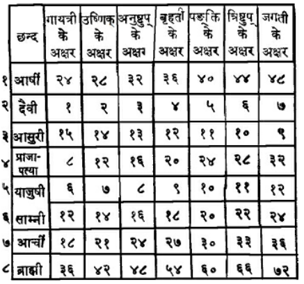
इस प्रकार आदि आग्नेय महापुराणमें ‘छन्दस्सारका कथन’ नामक तीन सौ उनतीसवाँ अध्याय पूरा हुआ॥३२९॥
तीन सौ तीसवाँ अध्याय
‘गायत्री’ से लेकर ‘जगती’ तक छन्दोंके भेद तथा उनके देवता, स्वर, वर्ण और गोत्रका वर्णन
अग्निदेव कहते हैं—इस प्रकरणकी पूर्ति होनेतक ‘पादः’ पदका अधिकार (अनुवर्तन) है। जहाँ गायत्री आदि छन्दोंमें किसी पादकी अक्षर-संख्या पूरी न हो, वहाँ ‘इय्’, ‘उव्’ आदिके द्वारा उसकी पूर्ति की जाती है। (जैसे ‘तत्सवितुर्वरेण्यम्’ में आठ अक्षरकी पूर्तिके लिये ‘वरेण्यम्’ के स्थानमें ‘वरेणियम्’ समझ लिया जाता है। ‘स्वःपते’ के स्थानमें ‘सुवुःपते’ माना जाता है।) गायत्री छन्दका एक पाद आठ अक्षरोंका होता है। अर्थात् जहाँ ‘गायत्रीके पाद’ का कथन हो, वहाँ आठ अक्षर ग्रहण करने चाहिये। [यही बात अन्य छन्दोंके पादोंके सम्बन्धमें भी है।] ‘जगती’ छन्दका पाद बारह अक्षरोंका होता है। विराट्के पाद दस अक्षरोंके बताये गये हैं। ‘त्रिष्टुप्’ छन्दका चरण ग्यारह अक्षरोंका है। जिस छन्दका जैसा पाद बताया गया है, उसीके अनुसार कोई छन्द एक पादका, कोई दो पादका, कोई तीनका और कोई चार पादका माना गया है। [जैसे आठ अक्षरके तीन पादोंका ‘गायत्री’ छन्द और चार पादोंका ‘अनुष्टुप्’ होता है।] ‘आदि छन्द’ अर्थात् ‘गायत्री’ कहीं छः अक्षरके पादोंसे चार पादोंकी होती है। [जैसे ऋग्वेदमें—‘इन्द्रः शचीपतिर्बलेन वीलितः । दुश्च्यवनो वृषा लमत्सु सामहिः॥’] कहीं-कहीं गायत्री सात अक्षरके पादोंसे तीन पादकी होती है। [जैसे ऋग्वेदमें—‘युवाकु हि शचीनां युवाकु सुमतीनाम् । भूयाम वाजदाम्नाम्॥’ (१।१७।४)] वह सात अक्षरोंवाली गायत्री ‘पाद-निचृत्’ संज्ञा धारण करती है। यदि गायत्रीका प्रथम पाद आठ अक्षरोंका, द्वितीय पाद सात अक्षरोंका तथा तृतीय पाद छः अक्षरोंका हो तो वह ‘प्रतिष्ठा गायत्री’ नामक छन्द होता है। [जैसे ऋग्वेदमें—‘आपः पृणीत भेषजं वरूथं तन्वे मम । ज्योक् च सूर्यं दृशे॥’ (१।२२।२१)] इसके विपरीत यदि गायत्रीका प्रथम पाद छः, द्वितीय पाद सात और तृतीय पाद आठ अक्षरोंका हो तो उसे ‘वर्धमाना१’ गायत्री कहते हैं। यदि तीन पादोंवाली गायत्रीका प्रथम पाद छः, द्वितीय पाद आठ और तीसरा पाद सात अक्षरोंका हो तो उसका नाम ‘अतिपाद२ निचृत्’ होता है। यदि दो चरण नौ-नौ अक्षरोंके हों और तीसरा चरण छः अक्षरोंका हो तो वह ‘नागी’ नामकी गायत्री होती है। [जैसे ऋग्वेदमें—‘अग्ने तमद्याश्वं न स्तोमैः क्रतुं न भद्रं हृदिस्पृशम् । ऋध्यामां ओहैः॥’ (४।१०।१)] यदि प्रथम चरण छः अक्षरोंका और द्वितीय-तृतीय नौ-नौ अक्षरोंके हों तो ‘वाराही गायत्री’ नामक छन्द होता है। [जैसे सामवेदमें—‘अग्ने मृड महाँ अस्यय आदेवयुं जनम् । इयेथ बर्हिरासदम्॥’ (२३)] अब तीसरे अर्थात् ‘विराट्’ नामक भेदको बतलाते हैं। जहाँ दो ही चरणोंका छन्द हो, वहाँ यदि प्रथम चरण बारह और द्वितीय चरण आठ अक्षरका हो तो वह ‘द्विपाद् विराट्’ नामक गायत्री छन्द है। [जैसे ऋग्वेदमें—‘नृभिर्येमानो हर्यतो विचक्षणो । राजा देवः समुद्रियः॥’ (९।१०७।१६)] ग्यारह अक्षरोंके तीन चरण होनेपर ‘त्रिपाद् विराट्’ नामक गायत्री होती है। [उदाहरण ऋग्वेदमें—‘दुहीयन् मित्रधितये युवाकु राये च नो मिमीतं वाजवत्यै । इषे च नो मिमीतं धेनुमत्यै॥’ (१।१२०।९)]॥१—४॥
जब दो चरण आठ-आठ अक्षरोंके और एक चरण बारह अक्षरोंका हो तो वेदमें उसे ‘उष्णिक्’ नाम दिया गया है। प्रथम और तृतीय चरण आठ अक्षरोंके हों और बीचका द्वितीय चरण बारह अक्षरोंका हो तो वह तीन पादोंका ‘ककुप् उष्णिक्’ नामक छन्द होता है। [जैसे ऋग्वेदमें— ‘सुदेवः समहासति सुवीरो नरो मरुतः स मर्त्यः । यं त्रायध्वेऽस्यासते३॥’ (५।५३।१५)] जब प्रथम चरण बारह अक्षरोंका और द्वितीय-तृतीय चरण आठ-आठ अक्षरोंके हों तो ‘पुर उष्णिक्’ नामक तीन पादोंवाला छन्द होता है। [जैसे ऋग्वेदमें—‘अप्स्वन्तरमृतमप्सु भेषजमपामुत प्रशस्तये । देवा भवत वाजिनः॥’ (१।२३।१९)] जब प्रथम और द्वितीय चरण आठ-आठ अक्षरोंके हों और तृतीय चरण बारह अक्षरोंका हो तो ‘परोष्णिक्’ छन्द होता है। [जैसे ऋग्वेदमें—‘अग्ने वाजस्य गोमत ईशानः सहसो यहो । अस्मे धेहि जातवेदो महि श्रवः१॥’ (१।७९।४)] सात-सात अक्षरोंके चार चरण होनेपर भी ‘उष्णिक्’ नामक छन्द होता है। [जैसे ऋग्वेदमें—‘नदं व ओदतीनां नदं यो युवतीनाम् । पतिं वो अध्न्यानां धेनूनामिषुध्यसि॥’ (८।६९।२)] आठ-आठ अक्षरके चार चरणोंका ‘अनुष्टुप्’ नामक छन्द होता है। [जैसे यजुर्वेदमें—‘सहस्रशीर्षा पुरुषः सहस्राक्षः सहस्रपात् । स भूमिं सर्वतः स्पृत्वा अत्यतिष्ठद्दशाङ्गुलम्॥’ (३१।१)] अनुष्टुप् छन्द कहीं-कहीं तीन चरणोंका भी होता है। ‘त्रिपाद अनुष्टुप्’ दो तरहके होते हैं। एक तो वह है, जिसके प्रथम चरणमें आठ तथा द्वितीय और तृतीय चरणोंमें बारह-बारह अक्षर होते हैं। दूसरा वह है, जिसका मध्यम अथवा अन्तिम पाद आठ अक्षरका हो तथा शेष दो चरण बारह-बारह अक्षरके हों। आठ अक्षरके मध्यम पादवाले ‘त्रिपाद् अनुष्टुप’ का उदाहरण [जैसे ऋग्वेदमें—‘पर्यूपु प्र धन्व वाजसातय, परि वृत्राणि सक्षणिः । द्विषस्तरध्या ऋणया न ईयसे॥’ (९।११०।१)] तथा आठ अक्षरके अन्तिम चरणवाले ‘त्रिपाद् अनुष्टुप्’ का उदाहरण [ऋग्वेदमें—‘मा कस्मै धातमभ्यमित्रिणे नो मा कुत्रा नो गृहेभ्यो धेनवो गुः । स्तनाभुजो अशिश्वीः॥’ (१।१२०।८)] यदि एक चरण ‘जगती’ का (अर्थात् बारह अक्षरका) हो और शेष तीन चरण गायत्रीके (अर्थात् आठ-आठ अक्षरके) हों तो यह चार चरणोंका ‘बृहती छन्द’ होता है। इसमें भी जब पहलेका स्थान तीसरा चरण ले ले अर्थात् वही जगतीका पाद हो और शेष तीन चरण गायत्रीके हों तो उसे ‘पथ्या बृहती’ कहते हैं। [जैसे सामवेदमें—‘मा चिदन्यद् विशंसत सखायो मा रिषण्यत । इन्द्रमित् स्तोता वृषणं सचा सुते मुहुरुक्था च शंसत॥’ (२४२)] जब पहलेवाला ‘जगती’ का चरण द्वितीय पाद हो जाय और शेष तीन गायत्रीके चरण हों तो ‘न्यङ्गुसारिणी बृहती’ नामक छन्द होता है। [जैसे ऋग्वेदमें—‘मत्स्यपायि ते महः पात्रस्येव हरिवो मत्सरो मदः । वृषा ते वृष्ण इन्दुर्वाजीसहस्रसातमः॥’ (१।१७५।१)] आचार्य क्रोष्टुकिके मतमें यह (न्यङ्कुसारिणी) ‘स्कन्ध’ या ‘ग्रीवा’ नामक छन्द है२। यास्काचार्यने इसे ही ‘उरोबृहती’ नाम दिया है। जब अन्तिम (चतुर्थ) चरण ‘जगती’ का हो और आरम्भके तीन चरण गायत्रीके हों तो ‘उपरिष्टाद् बृहती३’ नामक छन्द होता है। वही ‘जगती’ का चरण जब पहले हो और शेष तीन चरण गायत्री छन्दके हों तो उसे ‘पुरस्ताद् बृहती’ छन्द कहते हैं। [जैसे ऋग्वेदमें—‘महो यस्पतिः शस्वसो असाम्या महो नृम्णस्य ततुजिः । मर्ता वज्रस्य धृष्णोः पिता पुत्रमिव प्रियम्४॥’ (१०।२२।३)] वेदमें कहीं-कहीं नौ-नौ अक्षरोंके चार चरण दिखायी देते हैं। वे भी ‘बृहती’ छन्दके ही अन्तर्गत हैं। [उदाहरणके लिये ऋग्वेदमें—‘तं त्वा वयं पितो वचोभिर्गावो न हव्या सुषूदिम । देवेभ्यस्त्वा सधमादमस्मभ्यं त्वा सधमादम्१॥’ (१।१८७।११)] जहाँ पहले दस अक्षरके दो चरण हों, फिर आठ अक्षरोंके दो चरण हों, उसे भी ‘बृहती’ छन्द कहते हैं। [जैसे सामवेदमें—‘अग्ने विवस्वदुषसश्चित्रं राधो अमर्त्य । आ दाशुषे जातवेदो वहा त्वमद्या देवाँ उषर्बुधः२॥’ (४०)] केवल ‘जगती’ छन्दके तीन चरण हों तो उसे ‘महाबृहती’ कहते हैं। [जैसे ऋग्वेदमें—‘अजीजनो अमृत मर्त्येष्वाँ, ऋतस्य धर्मन्नमृतस्य चारुणः । सदासरो वाजमच्छासनिष्यदत्३’ (९।११०।४)] ताण्डी नामक आचार्यके मतमें यही ‘सतो बृहती’ नामक छन्द है॥५—१०॥
जहाँ दो पाद बारह-बारह अक्षरोंके और दो आठ-आठ अक्षरोंके हों, वहाँ ‘पङ्क्ति’ नामक छन्द होता है। यदि विषम पाद अर्थात् प्रथम और तृतीय चरण पूर्वकथनानुसार बारह-बारह अक्षरोंके हों और शेष दोनों आठ-आठ अक्षरोंके तो उसे ‘सतःपङ्क्ति’ नामक छन्द कहते हैं। [जैसे ऋग्वेदमें—‘यं त्वा देवासो मनवे दधुरिह यजिष्ठं हव्यवाहन । यं कण्वो मेध्यातिथिर्धनस्पृतं यं वृषा यमुपस्तुतः॥’ (१।३६।१०)] यदि वे ही चरण विपरीत अवस्थामें हों, अर्थात् प्रथम-तृतीय चरण आठ-आठ अक्षरोंके और द्वितीय-चतुर्थ बारह-बारह अक्षरोंके तो भी वह छन्द ‘सतःपङ्कि’ ही कहलाता है। [जैसे ऋग्वेदमें—‘य ऋष्ये श्रावयत्सखा विश्वेत् स वेद जनिमा पुरुष्टुतः । तं विश्वे मानुषा युगे, इन्द्रं हवन्ते तविषं यतासुचः॥’ (८।४६।१२)] जब पहलेके दोनों चरण बारह-बारह अक्षरोंके हों और शेष दोनों आठ-आठ अक्षरोंके, तो उसे ‘प्रस्तारपङ्क्ति’ कहते हैं। [ग्यारहवें श्लोकमें बताये हुए ‘पङ्क्ति’ छन्दके लक्षणसे ही यह गतार्थ हो जाता है, तथापि विशेष संज्ञा देनेके लिये यहाँ पुनः उपादान किया गया है। मन्त्र-ब्राह्मणमें इसका उदाहरण इस प्रकार है—‘काम वेदते मदो नामासि समानया अमुं सुरा ते अभवत् । परमत्र जन्मा अग्ने तपसा निर्मितोऽसि४॥’] जब अन्तिम दो चरण बारह-बारह अक्षरोंके हों और आरम्भके दोनों आठ-आठ अक्षरोंके तो ‘आस्तारपङ्क्ति’ नामक छन्द होता है। [जैसे ऋग्वेदमें—भद्रं नो अपि वातय, मनो दक्षमुत क्रतुम् । अधा ते सख्य अन्धसो वि वो मदे रणन् गावो न यवसे विवक्षसे॥’ (१०।२५।१)] यदि बारह अक्षरोंवाले दो चरण बीचमें हों और प्रथम एवं चतुर्थ चरण आठ-आठ अक्षरोंके हों तो उसे ‘विस्तारपङ्क्ति’ कहते हैं। [जैसे ऋग्वेदमें—‘अग्ने तव श्रवो वयो, महि भ्राजन्ते अर्चयो विभावसो । बृहद्भानो शवसा वाजमुक्थ्यं दधासि दाशुषे कवे॥’ (१०।१४०।१)] यदि बारह अक्षरोंवाले दो चरण बारह हों, अर्थात् प्रथम एवं चतुर्थ चरणके रूपमें हों और बीचके द्वितीय-तृतीय चरण आठ-आठ अक्षरोंके हों तो वह ‘संस्तारपङ्क्ति’ नामक छन्द होता है। [जैसे ऋग्वेदमें—‘पितुभृतो न तन्तुमित् सुदानवः प्रतिदध्मो यजामसि । उषा अप स्वसुस्तमः संवर्तयति वर्तनि सुजातता॥’ (१०।१७२।३)] पाँच-पाँच अक्षरोंके चार पाद होनेपर ‘अक्षरपङ्क्ति’ नामक छन्द होता है। [जैसे ऋग्वेदमें—‘प्र शुक्रैतु५ देवी मनीषा । अस्मत् सुतष्टो रथो न वाजी॥’ (७।३४।१)] पाँच अक्षरोंके दो ही चरण होनेपर ‘अल्पशः-पङ्क्ति’ नामक छन्द कहलाता है। जहाँ पाँच-पाँच अक्षरोंके पाँच पाद हों, वहाँ ‘पदपङ्क्ति’ नामक छन्द जानना चाहिये। [जैसे ऋग्वेदमें—‘घृतं न पूतं तनूररेपाः शुचि हिरण्यं तत्ते रुक्मो न रोचत स्वधावः१॥
’ (४।१०।६)] जब पहला चरण चार अक्षरोंका, दूसरा छः अक्षरोंका तथा शेष तीन पाद पाँच-पाँच अक्षरोंके हों तो भी ‘पद-पङ्क्ति’ छन्द ही होता है। आठ-आठ अक्षरोंके पाँच पादोंका ‘पथ्यापङ्क्ति’ नामक छन्द कहा गया है। [जैसे ऋग्वेदमें—‘अक्षन्नमीमदन्त ह्यव प्रिया अधूषत । अस्तोषत स्वभानवो विप्रा नविष्ठया यती योजान्विन्द्र ते हरी॥’ (१।८२।२)] आठ-आठ अक्षरोंके छः चरण होनेपर ‘जगतीपङ्क्ति’ नामक छन्द होता है। [जैसे मन्त्रब्राह्मणमें—‘येन स्त्रियमकृणुतं येनापामृषतं सुराम्; येनाक्षामभ्यषिञ्चतम् । येनेमां पृथ्वीं महीं यद्वां तदश्विना यशस्तेन मामभिषिञ्चतम्॥’]॥११—१४॥
‘त्रिष्टुप्’ अर्थात् ग्यारह अक्षरोंका एक पाद हो और आठ-आठ अक्षरोंके चार पाद हों तो पाँच पादोंका ‘त्रिष्टुब्ज्योतिष्मती’ नामक छन्द होता है। इसी प्रकार जब एक चरण ‘जगती’ का अर्थात् बारह अक्षरोंका हो और चार चरण ‘गायत्री’ के (आठ-आठ अक्षरोंके) हों तो उस छन्दका नाम ‘जगतीज्योतिष्मती’ होता है। यदि पहला ही चरण ग्यारह अक्षरोंका हो और शेष चार चरण आठ-आठ अक्षरोंके हों तो ‘पुरस्ताज्ज्योति’२ नामक त्रिष्टुप् छन्द होता है और यदि पहला ही चरण बारह अक्षरोंका तथा शेष चार चरण आठ-आठके हों तो ‘पुरस्ताज्ज्योति’ नामक जगती छन्द३ होता है। जब मध्यम चरण ग्यारह अक्षरों और आगे-पीछेके दो-दो चरण आठ-आठके हों तो ‘मध्ये-ज्योति’४ नामक त्रिष्टुप् छन्द होता है; इसी प्रकार जब मध्यम चरण बारहका तथा आदि-अन्तके दो-दो चरण आठ-आठके हों तो ‘मध्ये-ज्योति’५ नामक जगती छन्द होता है। जब आरम्भके चार चरण आठ-आठ अक्षरोंके हों तथा अन्तिम चरण ग्यारह अक्षरोंका हो तो उसे ‘उपरिष्टाज्ज्योसि’६ नामक त्रिष्टुप् छन्द कहते हैं। इसी प्रकार जब आदिके चार चरण पूर्ववत् आठ-आठके हों और अन्तिम पाद बारह अक्षरोंका हो तो उसका नाम ‘उपरिष्टाज्ज्योति’७ जगती छन्द होता है॥१५॥
गायत्री आदि सभी छन्दोंके एक पादमें यदि पाँच अक्षर हों तथा अन्य पादोंमें पहलेके अनुसार नियत अक्षर ही हों तो उस छन्दका नाम ‘शङ्कुमती’ होता है। [जैसे प्रथम पाद पाँच अक्षरका और तीन चरण छः-छः अक्षरोंका होनेपर उसे ‘शङ्कुमती गायत्री’ कह सकते हैं।] जब एक चरण छः अक्षरोंका हो और अन्य चरणोंमें पहले बताये अनुसार नियत अक्षर ही हों तो उसका नाम ‘ककुदमती’ होगा। जहाँ तीन पादवाले छन्दके पहले और दूसरे चरणमें अधिक अक्षर हों और बीचवालेमें बहुत ही कम हों, वहाँ उस छन्दका नाम ‘पिपीलिकमध्या’ होगा। [जैसे त्रिपदा गायत्रीके आदि और अन्त चरण आठ-आठ अक्षरके हों तथा बीचवाला चरण तीन, चार या पाँच अक्षरका हो तो उसे ‘पिपीलिकमध्या’ कहेंगे।] इसके विपरीत जब आदि और अन्तवाले पादोंके अक्षर कम हों और बीचवाला पाद अधिक अक्षरोंका हो तो उस ‘त्रिपाद् गायत्री’ आदि छन्दको ‘यवमध्या’ कहते हैं। यदि ‘गायत्री’ या ‘उष्णिक्’ आदि छन्दोंमें केवल एक अक्षरकी कमी हो, उसकी ‘निचृत्’ यह विशेष संज्ञा होती है। एक अक्षरकी अधिकता होनेपर वह छन्द ‘भूरिक्’ नाम धारण करता है। इस प्रकार दो अक्षरोंकी कमी रहनेपर ‘विराट्’ और दो अक्षर अधिक होनेपर ‘स्वराट्’ संज्ञा होती है। संदिग्ध अवस्थामें आदि पादके अनुसार छन्दका निर्णय करना चाहिये। [जैसे कोई मन्त्र छब्बीस अक्षरका है, उसमें गायत्रीसे दो अक्षर अधिक हैं और उष्णिक्से दो अक्षर कम—ऐसी दशामें वह ‘स्वराड् गायत्री’ छन्द है या ‘विराड् उष्णिक्’?—ऐसे संदेहयुक्त स्थलोंमें यदि मन्त्रका पहला चरण ‘गायत्री’ से मिलता हो तो उसे ‘स्वराड् गायत्री’ कहेंगे और यदि प्रथम पाद ‘उष्णिक्’ से मिलता हो तो उसे ‘विराड् उष्णिक्’ कह सकते हैं। इसी तरह अन्यत्र भी समझना चाहिये।] इसी प्रकार देवता, स्वर, वर्ण तथा गोत्र आदिके द्वारा संदिग्धस्थलमें छन्दका निर्णय हो सकता है। गायत्री आदि छन्दोंके देवता क्रमशः इस प्रकार हैं—अग्नि, सूर्य, चन्द्रमा, बृहस्पति, मित्रावरुण, इन्द्र तथा विश्वेदेव। उक्त छन्दोंके स्वर हैं—‘षड्ज’ आदि। उनके नाम क्रमशः ये हैं—षड्ज, ऋषभ, गान्धार, मध्यम, पञ्चम, धैवत और निषाद। श्वेत, सारंग, पिशङ्ग, कृष्ण, नील, लोहित (लाल) तथा गौर—ये क्रमशः गायत्री आदि छन्दोंके वर्ण हैं। ‘कृति’ नामवाले छन्दोंका वर्ण गोरोचनके समान है और अतिच्छन्दोंका वर्ण श्यामल है। अग्निवेश्य, काश्यप, गौतम अङ्गिरा, भार्गव, कौशिक तथा वसिष्ठ—ये क्रमशः उक्त सात छन्दोंके गोत्र बताये गये हैं॥१६—२३॥
इस प्रकार आदि आग्नेय महापुराणमें ‘छन्दस्सारका कथन’ नामक तीन सौ तीसवाँ अध्याय पूरा हुआ॥३३०॥
१. उदाहरण ऋग्वेदमें—त्वमग्ने यज्ञानां होता विश्वेषां हितः । देवेभिर्मानुषे जने॥ (६।१६।१)
२. ऋग्वेदे यथा—प्रेष्ठं वो अतिथिं स्तुषे मित्रमिव प्रियम् । अग्नि रथं न वेद्यम्॥ (८।८४।१)
३. इस मन्त्रमें ‘मर्त्य’ के स्थानमें व्यूहकी रीतिसे ‘मर्तिय’ मानने तथा ‘अस्यासते’ के स्थानमें ‘अस्य आसते’ इस प्रकार दीर्घ-व्यूह करनेसे पादकी पूर्ति होती है। १
. पाँचवें श्लोकमें ‘उष्णिक्’ छन्दका जो लक्षण दिया गया है, उसीसे यह भी गतार्थ हो जाता है। यहाँ ‘परोष्णिक्’ यह विशेष संज्ञा बतानेके लिये पुनः उल्लेख किया गया है।
२. पिङ्गलसूत्रमें ‘स्कन्धोग्रीवी’ नाम आया है।
३. इसका उदाहरण सामवेदमें इस प्रकार है—‘अग्ने जरितर्विश्पतिस्तपानो देव रक्षसः । अप्रोषिवान् गृहपते महाँ असि दिवस्पायुर्दुरोणयुः॥’ (३९)
४. आठवें श्लोकके उत्तरार्धमें जो ‘बृहती छन्द’ का लक्षण दिया गया है, उसीसे यह भी गतार्थ हो जाता है; फिर भी विशेप संज्ञा देनेके लिये यहाँ पुनरुक्ति की गयी है।
१.-२-३. इन सबमें व्यूहकी रीतिसे या ‘निचृत्’ मानकर पादपूर्ति की जाती है।
४. यहाँ ‘नामा असि’, ‘निर्मितः असि’—इस प्रकार संधिव्यूहसे पादपूर्ति की जाती है। कात्यायनने इसे गायत्री छन्दमें गिना है। सायणने इसे ‘द्विपदा’ कहा है।
५. यहाँ ‘निचृत्’ होनेसे एक अक्षरकी न्यूनता है।
१. यहाँ ‘भूरिक्’ होनेसे एक अक्षरकी अधिकता है। अन्यत्र भी अक्षरोंकी न्यूनता या अधिकता दीखनेपर इसी प्रकार समझना चाहिये।
२. उदाहरण ऋग्वेदमें—तमुष्टुहीन्द्रं यो ह स त्वा यः शूरो मघवा यो रथेष्ठाः । प्रतीचश्चिद् यो धीमान् वृषण्वान् ववब्रुषश्चित्तमसो विहन्ता॥ (१।१७३।५)
३. उदाहरण ऋग्वेदमें—अबोध्याग्निर्ज्म उदेति सूर्यो व्यूषाश्चन्द्रा मह्यावो अर्चिषा । आयुक्षातामाश्विना यातवे रथं प्रासावीद्देवः सविता जगत् पृथक्॥ (१।१५७।१)
४. उदाहरण मन्त्रब्राह्मणमें—इमं तमुपस्थं मधुना संसृजामि । प्रजापतेर्मुखमेतद् द्वितीयं तेन पुंसोऽभिभवासि, सर्वान् कामान् वशिन्यसि राज्ञी॥
५. उदाहरण ऋग्वेदमें—बृहद्भिरग्ने अर्चिभिः शुक्रेण देव शोचिषा । भरद्वाजे समिधानो यविषय रेवन्नः शुक्र दीदिहि द्युमत्पावक दीदिहि॥ (६।४८।७)
६. उदाहरण मन्त्रब्राह्मणमें—अग्निं क्रव्यादमकृण्वन्, गुहाना स्त्रीणामुपस्थम् । ऋषयः पुराणाः, तेन आज्यमकृण्वं त्रैशुद्धं त्वयि त्वद्दधातु ।
७. उदाहरण ऋग्वेदमें—नवानां नवतीनां विषस्य रोपुषीणाम् । सर्वासामग्रभंनामा अरे अस्य योजनं हरिष्ठा मधु त्वा मधुला चकार॥ (१।१९१।१३)
तीन सौ इकतीसवाँ अध्याय
उत्कृति आदि छन्द, गण-छन्द और मात्रा-छन्दोंका निरूपण
अग्निदेव कहते हैं—वसिष्ठजी! एक सौ चार अक्षरोंका ‘उत्कृति’ छन्द होता है। [जैसे यजुर्वेदमें—‘होता यक्षदश्विनौ छागस्य०’ इत्यादि (२१।४१)] ‘उत्कृति’ छन्दमेंसे चार-चार घटाते जायँ तो क्रमशः निम्नाङ्कित छन्द होते हैं—सौ अक्षरोंकी ‘अभिकृति’१, छानबे अक्षरोंकी ‘संस्कृति’२, बानबे अक्षरोंकी ‘विकृति’३, अठासी अक्षरोंकी ‘आकृति’४, चौरासी अक्षरोंकी ‘प्रकृति’५, अस्सी अक्षरोंकी ‘कृति’१, छिहत्तर अक्षरोंकी ‘अधिकृति’२, बहत्तर अक्षरोंकी ‘धृति’३,अड़सठ अक्षरोंकी ‘अत्यष्टि’४, चौसठ अक्षरोंकी ‘अष्टि’५, साठ अक्षरोंकी ‘अतिशक्वरी’६, छप्पन अक्षरोंकी ‘शक्वरी’७, बावन अक्षरोंकी ‘अतिजगती’८ तथा अड़तालीस अक्षरोंकी ‘जगती’९ होती है। यहाँतक केवल वैदिक छन्द हैं। यहाँसे आगे लौकिक छन्दका अधिकार है। ‘गायत्री’ से लेकर ‘त्रिष्टुप्’ तक जो आर्षछन्द वैदिक छन्दोंमें गिनाये गये हैं, वे लौकिक छन्द भी हैं। उनके नाम इस प्रकार हैं—त्रिष्टुप्, पङ्क्ति, बृहती, अनुष्टुप, उष्णिक् और गायत्री। गायत्री छन्दमें क्रमशः एक-एक अक्षरकी कमी होनेपर ‘सुप्रतिष्ठा’, ‘प्रतिष्ठा’, ‘मध्या’, ‘अत्युक्तात्युक्त’ तथा ‘आदि’ नामक छन्द होते हैं॥१—४॥
छन्दके चौथाई भागको ‘पाद’ या ‘चरण’ कहते हैं। [छन्द तीन प्रकारके हैं—गणच्छन्द, मात्रा-छन्द और अक्षरच्छन्द]। पहले ‘गणच्छन्द’ दिखलाया जाता है। चार लघु अक्षरोंकी ‘गण’ संज्ञा होती है। [‘आर्या’ के लक्षणोंकी सिद्धि ही इस संज्ञाका प्रयोजन है।] ये गण पाँच हैं। कहीं आदि गुरु (ऽ॥), कहीं मध्य गुरु (।ऽ।), कहीं अन्त्य गुरु (॥ऽ), कहीं सर्वगुरु (ऽऽ) और कहीं चारों अक्षर लघु (॥॥) होते हैं। [एक ‘गुरु’ दो ‘लघु’ अक्षरोंके बराबर होता है; अतः जहाँ सब लघु हैं, वहाँ चार अक्षर तथा जहाँ सब गुरु हैं, वहाँ दो अक्षर दिखाये गये हैं।] अब ‘आर्या’ का लक्षण बताया जाता है। साढ़े सात गणोंकी, अर्थात् तीस मात्राओं या तीस लघु अक्षरोंकी आधी ‘आर्या’ होती है। [आर्यामें गुरुवर्णको दो मात्रा या दो लघु मानकर गिनना चाहिये।] ‘आर्या’ छन्दके विषय गणोंमें जगण (।ऽ।)-का प्रयोग नहीं होता१०। किंतु छठा गण अवश्य जगण (।ऽ।) होना चाहिये।११ अथवा वह नगण और लघु यानी सब-का-सब लघु भी हो सकता है। जब छठा गण सब-का-सब लघु हो तो उस गणके द्वितीय अक्षरसे सुबन्त या तिङन्तलक्षण पदसंज्ञाकी प्रवृत्ति होती है।१२ यदि छठा गण मध्य गुरु (।ऽ।) अथवा सर्वलघु (॥॥) हो और सातवाँ गण भी सर्वलघु ही हो, तो सातवें गणके प्रथम अक्षरसे ‘पद’ संज्ञाकी प्रवृत्ति होती है।१३ इसी प्रकार जब आर्याके उत्तरार्ध-भागमें पाँचवाँ गण सर्वलघु हो तो उसके प्रथम अक्षरसे ही पदका आरम्भ होता है।१४ आर्याके उत्तरार्ध भागमें छठा गण एकमात्र लघु अक्षरका (।) होता है।१५ जिस आर्याके पूर्वार्ध और उत्तरार्धमें तीन-तीन गणोंके बाद पहले पादका विराम होता है, उसे ‘पथ्या’ माना गया है।१॥ ५—८॥
जिस आर्याके पूर्वार्धमें या उत्तरार्धमें अथवा दोनोंमें तीन गणोंपर पादविराम नहीं होता, उसका नाम ‘विपुला’ होता है। [इस प्रकार इसके तीन भेद होते हैं—१-आदिविपुला, २-अन्त्यविपुला तथा ३-उभयविपुला। इनमें पहलीका नाम ‘मुख-विपुला’ दूसरीका ‘जघनविपुला’ तथा तीसरीका ‘महाविपुला’ है।] इनके उदाहरण क्रमशः इस प्रकार हैं—
स्निग्धच्छायालावण्यलेपिनी किंचिदवनतवीणा । मुखविपुला सौभाग्यं लभते स्त्रीत्याह माण्डव्यः॥
चित्तं हरन्ति हरिणीदीर्घदृशः कामिनां कलालापैः । नीवीविमोचनव्याजकथितजघना जघनविपुला॥
या स्त्री कुचकलशनितम्बमण्डले जायते महाविपुला । गम्भीरनाभिरतिदीर्घलोचना भवति सा सुभगा॥
—पहले पद्यमें पूर्वार्धमें, दूसरेमें उत्तरार्धमें तथा तीसरेमें दोनों जगह पाद-विराम तीन गणोंसे आगे होता है।२ जिस आर्या-छन्दमें द्वितीय तथा चतुर्थ गण गुरु अक्षरोंके बीचमें होनेके साथ ही जगण अर्थात् मध्यगुरु (।ऽ।) हों, उसका नाम ‘चपला’ है। तात्पर्य यह है कि ‘चपला’ नामक आर्यामें प्रथम गण अन्त्यगुरु (॥ऽ), तृतीय गण दो गुरु (ऽऽ) तथा पञ्चम गण आदिगुरु (ऽ॥) होता है। शेष गण पूर्ववत् रहते हैं। पूर्वार्धमें ‘चपला’ का लक्षण हो तो उस आर्याका नाम ‘मुखचपला’३ होता है। परार्धमें चपलाका लक्षण होनेपर उसे ‘जघनचपला’४ कहते हैं। पूर्वार्ध और परार्ध—दोनोंमें चपलाका लक्षण संघटित होता हो तो उसका नाम ‘महाचपला’५ है। जहाँ आर्याके पूर्वार्धके समान ही उत्तरार्ध भी हो, उसे ‘गीति’१ नाम दिया गया है। तात्पर्य यह कि उसके उत्तरार्धमें भी छठा गण मध्यगुरु (।ऽ।) अथवा सर्वलघु (॥॥) करना चाहिये। इसी प्रकार जहाँ आर्याके उत्तरार्धके समान ही पूर्वार्ध भी हो, उसे ‘उपगीति’२ कहते हैं। आर्याके पूर्वोक्त क्रमको विपरीत कर देनेपर ‘उद्गीति’३ नाम पड़ता है। सारांश यह कि उसमें पूर्वार्धको उत्तरार्धमें और उत्तरार्धको पूर्वार्धमें रखा जाता है। यदि पूर्वार्धमें आठ गण हों तो ‘आर्यागीति’४ नामक छन्द होता है। कोई विशेषता न होनेसे इसका उत्तरार्ध भी ऐसा ही समझना चाहिये। यहाँ भी छठे गणमें मध्यगुरु और सर्वलघु—इन दोनों विकल्पोंकी प्राप्ति थी, उसके स्थानमें केवल एक ‘लघु’ का विधान है॥९-१०॥
अब ‘मात्रा-छन्द’ बतलाया जाता है। जहाँ विषम, अर्थात् प्रथम और तृतीय चरणमें चौदह लघु (मात्राएँ) हों और सम—द्वितीय, चतुर्थ चरणोंमें सोलह लघु हों तथा इनमेंसे प्रत्येक चरणके अन्तमें रगण (ऽ।ऽ), एक लघु और एक गुरु हो तो ‘वैतालीय’१ नामक छन्द होता है। [रगण, लघु और गुरु मिलाकर आठ मात्राएँ होती हैं, इनके सिवा प्रथम-तृतीय पादोंमें छः-छः मात्राएँ और द्वितीय-चतुर्थ चरणोंमें आठ-आठ मात्राएँ ही शेष रहती हैं। इन्हें जोड़कर ही चौदह-सोलह मात्राओंकी व्यवस्था की गयी है।] वैतालीय छन्दके अन्तमें एक गुरु और बढ़ जाय तो उसका नाम ‘औपच्छन्दसक’२ होता है॥११-१२॥
पूर्वोक्त वैतालीय छन्दके प्रत्येक चरणके अन्तमें जो रगण, लघु और गुरुकी व्यवस्था की गयी है, उसकी जगह यदि भगण और दो गुरु हो जायँ तो उस छन्दका नाम ‘आपातलिका’३ होता है। उपर्युक्त वैतालीय छन्दके अधिकारोंमें जो रगण आदिके द्वारा प्रत्येक चरणके अन्तमें आठ लकारों (मात्राओं)-का नियम किया गया है, उनको छोड़कर प्रत्येक चरणमें जो ‘लकार’ शेष रहते हैं, उनमेंसे सम लकार विषम लकारके साथ मिल नहीं सकता । अर्थात् दूसरा तीसरेके और चौथा पाँचवेंके साथ संयुक्त नहीं हो सकता; उसे पृथक् ही रखना चाहिये। इससे विषम लकारोंका सम लकारोंके साथ मेल अनुमोदित होता है। द्वितीय और चतुर्थ चरणोंमें लगातार छः लकार पृथक्-पृथक् नहीं प्रयुक्त होने चाहिये। प्रथम और तृतीय चरणोंमें रुचिके अनुसार किया जा सकता है ।४ अब ‘प्राच्यवृत्ति’ नामक वैतालीय छन्दका दिग्दर्शन कराया जाता है। जब दूसरे और चौथे चरणमें चतुर्थ लकार (मात्रा) पञ्चम लकारके साथ संयुक्त हो तो उसका नाम ‘प्राच्यवृत्ति’५ होता है। [यद्यपि सम लकारका विषम लकारके साथ मिलना निषिद्ध किया गया है, तथापि वह सामान्य नियम है; प्राच्यवृत्ति आदि विशेष स्थलोंमें उस नियमका अपवाद होता है।] शेष लकार पूर्वोक्त प्रकारसे ही रहेंगे। जब प्रथम और तृतीय चरणमें दूसरा लकार तीसरेके साथ मिश्रित होता है, तब ‘उदीच्यवृत्ति’६ नामक वैतालीय कहलाता है। शेष लकार पूर्वोक्त रूपमें ही रहते हैं। जब दोनों लक्षणोंकी एक साथ ही प्रवृत्ति हो, अर्थात् द्वितीय और चतुर्थ पादोंमें पञ्चम लकारके साथ चौथा मिल जाय और प्रथम एवं तृतीय चरणोंमें तृतीयके साथ द्वितीय लकार संयुक्त हो जाय तो ‘प्रवृत्तिक’१ नामक छन्द होता है। जिस वैतालीय छन्दके चारों चरण विषम पादोंके ही अनुसार हों, अर्थात् प्रत्येक पाद चौदह लकारोंसे युक्त हो तथा द्वितीय लकार तृतीयसे मिला हो, उसे ‘चारुहासिनी’२ कहते हैं। जब चारों चरण सम पादोंके लक्षणसे युक्त हों अर्थात् सबमें सोलह लकार (मात्राएँ) हों और चतुर्थ लकार पञ्चमसे मिला हो तो उसका नाम ‘अपरान्तिका’३ है। जिसके प्रत्येक पादमें सोलह लकार हों, किंतु पादके अन्तिम अक्षर गुरु ही हों, उसे ‘मात्रासमक’४ नामक छन्द कहा गया है। साथ ही इस छन्दमें नवम लकार किसीसे मिला नहीं रहता। जिस ‘मात्रासमक’ के चरणमें बारहवाँ लकार अपने स्वरूपमें ही स्थित रहता है, किसीसे मिलता नहीं, उसका नाम ‘वानवासिका’५ है। जिसके चारों चरणोंमें पाँचवाँ और आठवाँ लकार लघुरूपमें ही स्थित रहता है, उसका नाम ‘विश्लोक’६ है। जहाँ नवाँ भी लघु हो, वह ‘चित्रा’७ नामक छन्द कहलाता है। जहाँ नवाँ लकार दसवेंके साथ मिलकर गुरु हो गया हो, वहाँ ‘उपचित्रा’८ नामक छन्द होता है। मात्रासमक, विश्लोक, वानवासिका, चित्रा और उपचित्रा—इन पाँचोंमें जिस-किसी भी छन्दके एक-एक पादको लेकर जब चार चरणोंका छन्द बनाया जाय, तब उसे ‘पादाकुवक’९ कहते हैं। जिसके प्रत्येक चरणमें सोलह लघु स्वरूपसे ही स्थित हों, किसीसे मिलकर गुरु न हो गये हों, उस छन्दका नाम ‘गीत्यार्या’१० है। इसी गीत्यार्यामें जब आधे भागकी सभी मात्राएँ गुरुरूपमें हों और आधे भागकी मात्राएँ लघुरूपमें तो उसका नाम ‘शिखा’ होता है। इसीके दो भेद हैं—पूर्वार्धभागमें लघु-ही-लघु और उत्तरार्धमें गुरु-ही-गुरु हों तो उसका नाम ‘ज्योति’११ बताया गया है। इसके विपरीत पूर्वार्धभागमें सब गुरु और उत्तरार्धमें सब लघु हों तो ‘सौम्या’१२ नामक छन्द होता है। जब पूर्वार्धभागमें उन्तीस लकार और उत्तरार्धमें इकतीस लकार हों एवं अन्तिम दो लकारोंके स्थानमें एक-एक गुरु हो तो उसका नाम ‘चूलिका’१३ होता है। छन्दकी मात्राओंसे उसके अक्षरोंमें जितनी कमी हो, उतनी गुरुकी संख्या और अक्षरोंसे जितनी कमी गुरुकी संख्यामे हो, उतनी लघुकी संख्या मानी गयी है। तात्पर्य यह है१ कि यदि कोई पूछे, इस आर्यामें कितने लघु और कितने गुरु हैं तो उस आर्याको लिखकर उसकी सभी मात्राओंकी गणना करके कहीं लिख ले, फिर अक्षरोंकी संख्या लिख ले। मात्राके अङ्कोमेंसे अक्षरोंके अङ्क घटा दे; जितना बचे, वह गुरुकी संख्या हुई। इसी प्रकार अक्षरसंख्यामें गुरुकी संख्या घटा देनेपर जो बचे, वह लघु अक्षरोंकी संख्या होगी२। इस प्रकार वर्ण आदिके अन्तरसे गुरु-लघु आदिका ज्ञान प्राप्त करना चाहिये॥१३—१८॥
इस प्रकार आदि आग्नेय महापुराणमें ‘छन्दोजातिका निरूपण’ नामक तीन सौ इकतीसवाँ अध्याय पूरा हुआ॥३३१॥
१. ‘अभिकृति’ आदि छन्दोंके उदाहरणका प्रतीकमात्र यहाँ दिया जाता है, विशेष जानकारीके लिये वेदोंमें अनुसंधान करना चाहिये। यजुर्वेदे—‘देवो अग्निः स्विष्टकृत् देवान्यक्षत्’ इत्यादि (२१।५८)।
२. यजुर्वेदे—‘देवो अग्निः स्विष्टकृत्, सुद्रविणामन्नः कविः’ इत्यादि।
३. ‘इमे सोमाः सुरामाणाम्’ इत्यादि।
४. ‘भगा अनुप्रयुक्तामिन्द्रो यातु पुरोगवः’ इत्यादि।
५. प्रकृतेरुदाहरणम्—‘सूर्यश्च मा मन्युश्च मन्युपतयश्च’ इत्यादि प्रातराचमनमन्त्रः ।
१. यजुर्वेदे—‘सुपर्णोऽसि गरुत्मोंस्त्रिः सत्रिवृत्ते शिरो गायत्रम्’ इत्यादि (१७।७२)।
२. ऋग्वेदे—‘स हि शर्धो न मारुतं तु विष्वणि’ इत्यादि (१।१२७।६)।
३. ऋग्वेदे—‘अवमह इन्द्र दादृहि श्रुधि नः शुशोच हि द्यौः०’ इत्यादि (१।१३३।६)।
४. ऋग्वेदे—‘अदर्शि गातुरुरवे वरीयसी पन्था ऋतस्य समयंस्त रश्मिभिः०’ इत्यादि (१।१३६।२)।
५. ऋग्वेदे—‘त्रिकद्रुकेषु महिषो यवाशिरं तु विशुष्म’ इत्यादि (२।२२।१)।
६. ऋग्वेदे—‘साकं जातः क्रतुना साकभोजसा ववक्षिथ०’ इत्यादि (२।२२।३)।
७. ऋग्वेदे—‘प्रीस्वस्मै पुरोरथं, इन्द्राय शषमर्चत्०’ इत्यादि।
८. मन्त्रब्राह्मणे—‘मा ते गृहेषु निशि घोष उत्था०’ इत्यादि।
९. सामवेदे—‘इमं स्तोममर्हते जातवेदसे रथमिव सं महेमा मनीषया । भद्रा हि नः प्रमतिरस्य संसदि, अग्ने सख्ये मा रिषामा वयं तव॥’ (६६)
१०. उदाहरण— द्वीपादन्यस्मादपि मध्यादपि चलनिधेर्दिशोऽप्यन्तात् । आनीय झटिति घटयति विधिरभिमतमभिमुखीभूतः॥
११. सा जयति जगत्यार्या देवी दिवमुत्पतिष्णुरतिरुचिरा । यादृश्यत गगनतले कंसवधोत्पातविद्युदिव॥
१२. रूपान्तरेण देवीं तामेव स्तौमि सपदि किल महिषः । पादस्पर्शसुखादिव मीलितनयनोऽभवद् यस्याः॥ यहाँ ‘मि सपदि’ यही छठा गण है, इसमें द्वितीय अक्षरसे पदका आरम्भ है।
१३. ब्रह्मक्षत्रकुलीनः प्रलीनसामन्तचक्रनुतचरणः । सकलसुकृतैकपुञ्चः श्रीमान् मुञ्जश्चिरं जयति॥ जयति भुवनैकवीरः सीरायुधतुलितविपुलबलविभवः । अनवरतवित्तवितरणनिर्जितचम्पाधिपो मुञ्जः॥
१४-१५. स जयति वाक्पतिराजः सकलार्थिमनोरथैककल्पतुरुः । प्रत्यर्थिभूतपार्थिवलक्ष्मीहठहरणदुर्ललितः॥
१. पथ्याशी व्यायामी स्त्रीषु जितात्मा नरो न रोगी स्यात् । यदि वचसा मनसा वा द्रुह्यति नित्यं न भूतेभ्यः॥
२. ‘पथ्या’ और ‘विपुला’ में सहानवस्थारूप विरोध है; अतः ये दोनों छन्द एक साथ नहीं रह सकते। यदि एक अंशमें भी ‘विपुला’ का लक्षण संघटित हुआ तो उसका पथ्यात्व नष्ट हो जाता है; क्योंकि ‘विपुला’ छन्द उभयाश्रय है; वह पूर्वार्धमें, उत्तरार्धमें तथा दोनोंमें भी रह सकता है। अब ‘विपुला’ का जहाँ अंश भी हो, वहाँ ‘पथ्या’ का प्रवेश नहीं हो सकता। ‘पथ्या’ छन्द एक अंशसे भी विकल हो जाय तो वहीं ‘विपुला’ का विषय होता है; अतः वहाँ ‘विपुला’ की प्राप्ति अनिवार्य है। ‘पथ्या’ और ‘चपला’ में कोई विरोध नहीं है; अतः इनमें बाध्य-बाधकभाव नहीं होता। इस विषयका संक्षिप्त संग्रह नीचे लिखे श्लोकोंमें है— एकैव भवति पथ्या विपुलास्तिस्रस्ततश्चतस्रस्ताः । चपलाभेदैस्त्रिभिरपि भिन्ना इति षोडशार्याः स्युः॥ गीतिचतुष्टयमित्थं प्रत्येकं पोडशप्रकारं स्यात् । साकल्येनार्याणामशीतिरेवं विकल्पाः स्युः॥ ‘एक ‘पथ्या’, तीन ‘विपुला’, कुल चार भेद हुए। इनमेंसे प्रत्येक छन्द ‘चपला’ के तीन भेदोंसे भिन्न होकर बाहर प्रकारका होता है। बारह ये और चार पहलेके—यों सोलह हुए। इन सोलहोंके ‘गीति’ आदि चार भेदोंद्वारा भेद होनेसे चौंसठ भेद होते हैं। पहलेके सोलह और चौंसठ—कुल अस्सी हुए। इस प्रकार ‘आर्या’ के अस्सी भेद हैं।’
३. पथ्यापूर्वक मुखचपलाका उदाहरण— अतिदारुणा द्विजिह्वा परस्य रन्ध्रानुसारिणी कुटिला । दूरात्परिहरणीया नारी नागीव मुखचपला॥ आदिविपुलापूर्वक मुखचपलाका उदाहरण— यस्याश्च लोचने पिङ्गले भ्रुवौ संगते मुखं दीर्घम् । विपुलोन्नताश्च दन्ताः कान्तासौ भवति मुखचपला॥ उभयविपुलापूर्वक मुख-चपलाका उदाहरण— विपुलाभिजातवंशोद्भवापि रूपातिरेकरम्यापि । निस्सार्यते गुहाद् वल्लभापि यदि भवति मुखचपला॥
४. पथ्यापूर्वक जघनचपलाका उदाहरण— यत्पादस्य कनिष्ठा न स्पृशति महीमनामिका वाप । सा सर्वधूर्तभोग्या भवेदवश्यं जघनचपला॥ अन्त्यविपुलापूर्वक जघनचपलाका उदाहरण— यस्याः पादाङ्गुष्ठं व्यतीत्य याति प्रदेशिनी दीर्घा । विपुले कुले प्रसूतापि सा ध्रुवं जघनचपला स्यात्॥ महाविपुलापूर्वक जघनचपलाका उदाहरण— मकरध्वजसद्मनि दृश्यते स्फुटं तिलकलाञ्छनं यस्याः । विपुलान्वयाभिजातापि जायते जघनचपलासौ॥
५. पथ्यापूर्वक महाचपलाका उदाहरण— हृदयं हरन्ति नार्यो मुनेरपि भ्रूकटाक्षविक्षेपैः । दोर्मूलनाभिदेशं निदर्शयन्त्यो महाचपलाः॥ विपुलापूर्वक महाचपलाका उदाहरण— चिबुके कपोलदेशेऽपि कूपिका दृश्यते स्मिते यस्याः । विपुलान्वयप्रसूतापि जायते सा महाचपला॥
१. पथ्या-गीतिका उदाहरण— मधुरं वीणारणितं पञ्चमसुभगश्च कोकिलालापः । गीतिः पौरवधूनामधुना कुसुमायुधं प्रबोधयति॥ आदिविपुला-गीति— इयमपरा विपुला गीतिरुच्यते सर्वलोकहितहेतोः । यदनिष्टमात्मनस्तत्परेषु भवतापि मा क्वचित् कारि॥ पथ्या महाचपला-गीतिका उदाहरण— कामं चकास्ति गीतिर्मृगीदृशां सीधुपानचपलानाम् । मुखं च मुक्तलज्जं निरर्गलोल्लापमणितरमणीयम्॥ महाविपुला-महाचपला-गीतिका उदाहरण— पञ्चेषुवल्लभः पञ्चमध्वनिस्तत्र भवति यदि विपुलः । चपलं करोति कामाकुलं मनः कामिनामसौ गीतिः॥
२. पथ्योपगीतिका उदाहरण— गान्धर्वं मकरध्वजदेवस्यास्त्रं जगद्विजयि । इति समवेक्ष्य मुमुक्षुभिरुपगीतिस्त्यज्यते देशः॥ महाविपुलोपगीतिका उदाहरण— विपुलोपगीतिझंकारमुखरिते भ्रमरमालानाम् । रैवतकोपवने वस्तुमस्तु सततं मम प्रीतिः॥ पथ्या-महाचपलोपगीतिका उदाहरण— विषयामिषाभिलाषः करोति चित्तं सदा चपलम् । वैराग्यभावनानां तथोपगीत्या भवेत् स्वस्थम्॥ महाविपुला महाचपलोपगीतिका उदाहरण— विपुलोपगीति संत्यज्यतामिदं स्थानकं भिक्षो । विषयाभिलाषदोषेण बाध्यते चञ्चलं चेतः॥
३. पथ्योद्गीतिका उदाहरण— व्याध इवोद्गीतिरवैः प्रथमं तावन्मनो हरसि । दुर्नयकर विश्राम्यसि पश्चात् प्राणेषु विप्रियैः शल्यैः॥ महाविपुलोद्गीतिका उदाहरण— एषा तवापरोद्गीतिरत्र विपुला परिभ्रमति । तद्वल्लभापि यत्कीर्तिरखिलदिक्पालपार्श्वमुपयाति॥ पथ्यामहाचपलोद्गीतिका उदाहरण— उद्गीतिरत्र नित्यं प्रवर्तते कामचपलानाम् । तस्मान्मुने विमुञ्च प्रदेशमेतं समेतमेताभिः॥ महाविपुला महाचपलोद्गीतिका उदाहरण— विपुला पयोधरश्रोणिमण्डले चक्षुषोश्चपला । उद्गीतिशालिनी कामिनी च सा बर्णिनां मनो हरति॥
४. पथ्या आर्यागीतिका उदाहरण— अजमजरममरमेकं प्रत्यक्चैतन्यमीश्वरं ब्रह्म परम् । आत्मानं भावयती भवमुक्तिः स्यादितीयमार्यागीतिः॥ महाविपुला आर्यागीतिका उदाहरण— विपुलाभिलाषमृगतृष्णिका ध्रुवं हन्ति हरिणमिव हतहृदयम् । विपुलात्ममोक्षसुखकाङ्क्षिभिस्ततस्त्यज्यते विषयरससङ्गः॥ पथ्या जघनचपलार्यागीतिका उदाहरण— वाताहतोर्मिमालाचपलं सम्प्रेक्ष्य विषयसुखमल्पतरम् । मुक्त्वा समस्तसपङ्गं तपोवनान्याश्रयन्ति तेनात्मविदः॥ महाविपुला महाचपला आर्यागीतिका उदाहरण— चपलानि चक्षुरादीनि चित्तहारी च हन्त हतविषयगणः । एकान्तशीलिनां योगिनामतो भवति परमसुखसम्प्राप्तिः॥
१. वैतालीय छन्दके विभिन्न उदाहरण— (क) क्षुत्क्षीणशरीरसंचया व्यक्तीभूतशिरोऽस्थिञ्जराः । केशैः परुषैस्तवारयो वैतालीयतनुं वितन्वते॥ (ख) तव तन्वि कटाक्षवीक्षितैः प्रसरद्भिः श्रवणान्तगोचरैः । विशिखैरिव तीक्ष्णकोटिभिः प्रहतः प्राणिति दुष्करं नरः॥ (ग) शवशोणितपङ्कचर्चितं पुरुषान्त्रग्रथितोद्र्ध्वमूर्धजम् । वपुरातपवह्निदीपितं वैतालीयमिदं विलोक्यताम्॥
२. औपच्छन्दसकका उदाहरण— वाक्यैर्मधुरैः प्रतार्य पूर्वं यः पश्चादभि संदधाति मित्रम् । तं दुष्टमतिं विशिष्टगोष्ट्यामौपच्छन्दसकं वदन्ति बाह्यम्॥
३. आपातलिकाका उदाहरण— पिङ्गलकेशी कपिलाक्षी वाचाटा विकटोन्नतदन्ती । आपातलिका पुनरेषा नृपतिकुलेऽपि न भाग्यमुपैति॥
४. वैतालीय छन्दमें इसका उदाहरण— समरशिरसि सह्यते द्विषां नवनिशितायुधवृष्टिरग्रतः । कुवलयदलदीर्घचक्षुषां प्रमदानां न कटाक्षवीक्षितम्॥ औपच्छन्दसकमें— परयुवतिषु पुत्रभावमादौ कृत्वा प्रार्थयते पुनः पतित्वम् । इदमपरमिहोच्यते विशेषादौपच्छन्दसकं खलस्य वृत्तम्॥ आपातलिकामें— अभिरमयति किंनरकण्ठी हंसगतिः श्रवणायतनेत्रा । विशदकमलकोमलगात्री युवतिरियं हृदयं तरुणानाम्॥
५. प्राच्यवृत्तिका उदाहरण— विपुलार्थसुवाचकाक्षराः कस्य नाम न हरन्ति मानसम् । रसभावविशेषपेशलाः प्राच्यवृत्तिकविकाव्यसम्पदः॥
६. उदीच्यवृत्तिका उदाहरण— अवाचकमनूर्जिताक्षरं श्रुतिदुष्टं यतिकष्टमक्रमम् । प्रसादरहितं च नेष्यते कविभिः काव्यमुदीच्यवृत्तिभिः॥
१. इदं भरतवंशभूभृतां श्रूयतां श्रुतिमनोरसायनम् । पवित्रमधिकं शुभोदयं व्यासवक्त्रकथितं प्रवृत्तकम्॥
२. मनाक्प्रसृतदन्ददीधितिः स्मरोल्लसितगण्डमण्डला । कटाक्षललिता तु कामिनी मनो हरति चारुहासिनी॥
३. स्थिरविलासनतमौक्तिकावली कमलकोमलाङ्गी मृगेक्षणा । हरति कस्य हृदयं न कामिनः सुरतकेलिकुशलापरान्तिका॥
४. अश्मश्रुमुखो विरलैर्दन्तैर्गम्भीराक्षो मितनासाग्रः । निर्मंसहनुः स्फुटितैः केशैर्मात्रासमकं लभते दुःखम्॥
५. मन्मथचापध्वनिरमणीयः सुरतमहोत्सवपटहनिनादः । वनवासस्त्रीस्वनितविशेपः कस्य न चित्तं रमयति पुंसः॥
६. भ्रातर्गुणरहितं विश्लोकं दुर्नयचरणकदर्थितलोकम् । जातं महितकुलेऽप्यविनीतं मित्रं परिहर साधुविगीतम्॥
७. यदि वाञ्छसि परपदमारोढुं मैत्रीं परिहर सह वनिताभिः । मुह्यतिं मुनिरपि विषयासङ्गाच्चित्रा भवति हि मनसो वृत्तिः॥
८. यच्चित्तं गुरुसक्तमुदारं विद्याभ्यासमहाव्यसनं च । पृथ्वी तस्य गुणैरुपचित्रा चन्द्रमरीचिनिभैर्भवतीयम्॥
९. अलिवाचालितविकसितचूते काले मदनसमागमदूते । स्मृत्वा कान्तां परिहृतसार्थः पादाकुलकं धावति पान्थः॥ (इसमें मात्रासमक, विश्लोक, वानवासिका और उपचित्राके चरण हैं।)
१०. मदकलखगकुलकलरवमुखरिणि विकसितसरसिजपरिमलसुरभिणि । गिरिवरपरिसरसरसि महति खलु रतिरतिशयमिह मम हृदि विलसति॥
११. यदि सुखमनुपममपरमभिलषसि परिहर युवतिषु रतिमतिशयमिह । आत्मज्योतिर्योगाभ्यासाद् दृष्ट्वा दुःखच्छेदं कुर्याः॥
१२. सौम्यां दृष्टिं देहि स्नेहाद् देहेऽस्माकं मानं मुक्त्वा । शशधरमुखि सुखमुपनय मम हृदि मनसिजरुजमपहर लघुतरमिह॥
१३. रतिकरमलयमरुति शुभशशभृति समभिहतहिममहसि मधुसमये । प्रवससि पथिक विरहितं कथमिह तु परिहृतयुवतिरतिचपलतया॥
१. ‘एकोनत्रिंशदन्ते’ इत्यादिकी व्याख्या इस प्रकार भी की जा सकती है—इकतीस मात्राएँ एवं अन्तमें गुरु होनेसे ‘चूलिका’ का आधा भाग सम्पन्न होता है। इस प्रकार इसके पूर्वार्ध और उत्तरार्ध दोनोंमें ही इकतीस-इकतीस मात्राएँ होती हैं तथा अन्तिम दो मात्राएँ गुरुके रूपमें रहती हैं। इस छन्दमें पादकी व्यवस्था नहीं है। इसका उदाहरण इस प्रकार है— घनपरिमलमिलदलिकुलमुखरितनिखिलकमलवनमलयजवने । जनयति मनसि मम तु शशिमुखि मुदमतिशयितमिह मधुररयमधुना॥
२. उदाहरणार्थ यह ‘आर्या’ छन्द प्रस्तुत है— स्तनयुगलमश्रुस्नातं समीपतरवर्ति हृदयशोकाग्नेः । चरति विमुक्ताहारं व्रतमिव भवतो रिपुस्त्रीणाम्॥ इसमें मात्रासंख्या ५७ है, इसमेंसे अक्षरसंख्या चालीस घटी, शेप बचा१७। इतने गुरुवर्ण हैं। अक्षरसंख्या ४० में १७ गुरुसंख्या घटा दी गयी । शेप २३ लघुसंख्या है। इसी तरह अन्यत्र समझना चाहिये।
तीन सौ बत्तीसवाँ अध्याय
विषमवृत्तका वर्णन
अग्निदेव कहते हैं—[छन्द या पद्य दो प्रकारके हैं—‘जाति’ ‘और ‘वृत्त’ । यहाँतक ‘जाति’ छन्दोंका निरूपण किया गया, अब ‘वृत्त’ का वर्णन करते हैं—] वृत्तके तीन भेद हैं—सम, अर्धसम तथा विषम। इन तीनोंका प्रतिपादन करता हूँ। ‘समवृत्त’ की संख्यामें उतनी ही संख्यासे गुणा करे। इससे जो गुणनफल हो, उसे अर्धसमवृत्तकी संख्या समझनी चाहिये। इसी प्रकार ‘अर्धसमवृत्त’ की संख्यामें भी उसी संख्यासे गुणा करनेपर जो अङ्क उपलब्ध हो, वह ‘विषमवृत्त’ की संख्या है। विषमवृत्त और अर्धसमवृत्तकी संख्यामेंसे मूलराशि घटा देनी चाहिये। इससे शुद्ध विषम और शुद्ध अर्धसमवृत्तकी संख्याका ज्ञान होगा। [केवल गुणनसे जो संख्या ज्ञात होती है, वह मिश्रित होती है; उसमें अर्धसमके साथ सम और विषमके साथ अर्धसमकी संख्या भी सम्मिलित रहती३ ।] जो अनुष्टुप् छन्द प्रत्येक चरणमें गुरु और लघु अक्षरोंद्वारा समाप्त होता है, अर्थात् जिसके प्रत्येक पादमें अन्तिम दो वर्ण क्रमशः गुरु-लघु होते हैं, उसे ‘समानी’१ नाम दिया गया है। जिसके चारों चरणोंके अन्तिम वर्ण क्रमशः लघु और गुरु हों, उसकी ‘प्रमाणी’२ संज्ञा है। इन दोनोंसे भिन्न स्थितिवाला छन्द ‘वितान’३ कहलाता है। [इसके अन्तिम दो वर्ण केवल लघु अथवा केवल गुरु भी हो सकते हैं।] यहाँसे तीन अध्यायोंतक ‘पादस्य’ इस पदका अधिकार है तथा ‘पदचतुरूर्ध्व’ छन्दके पहलेतक ‘अनुष्टुब्वक्त्रम्’ का अधिकार है। तात्पर्य यह कि आगे बताये जानेवाले कुछ अनुष्टुप् छन्द ‘वक्त्र’ संज्ञा धारण करते हैं। ‘वक्त्र’ जातिके छन्दमें पादके प्रथम अक्षरके पश्चात् सगण (॥ऽ) और नगण (॥।) नहीं प्रयुक्त होने चाहिये।४ इन दोनोंके अतिरिक्त मगण आदि छः गणोंमेंसे किसी एक गणका प्रयोग हो सकता है। पादके चौथे अक्षरके बाद भगण (ऽ॥)-का प्रयोग करना उचित है।५ जिस ‘वक्त्र’ जातिके छन्दमें द्वितीय और चतुर्थ पादके चौथे अक्षरके बाद जगण (।ऽ।)-का प्रयोग हो, उसे ‘पथ्या वक्त्र’६ कहते हैं। किसी-किसीके मतमें इसके विपरीत न्यास करनेसे, अर्थात् प्रथम एवं तृतीय पादके बाद जगण (।ऽ।)-का प्रयोग करनेसे ‘पथ्या’७ संज्ञा होती है। जब विषम पादोंके चतुर्थ अक्षरके बाद नगण (॥।) हों तथा सम पादोंमें चतुर्थ अक्षरके बाद यगण (।ऽऽ)-की ही स्थिति हो तो उस ‘अनुष्टुब्वक्त्र’ का नाम ‘चपला’८ होता है। जब सम पादोंमें सातवाँ अक्षर लघु हो, अर्थात् चौथे अक्षरके बाद जगण (।ऽ।) हो तो उसका नाम ‘विपुला’९ होता है। [यहाँ सम पादोंमें तो सप्तम लघु होगा ही, विषम पादोंमें भी यगणको बाधितकर अन्य गण हो सकते हैं—यही ‘विपुला’ और ‘पथ्या’ का भेद है।] सैतव आचार्यके मतमें विपुलाके सम और विषम सभी पादोंमें सातवाँ अक्षर लघु होना चाहिये। जब प्रथम और तृतीय पादोंमें चतुर्थ अक्षरके बाद यगणको बाध कर विकल्पसे भगण (ऽ॥), रगण (ऽ।ऽ), नगण (॥।), और तगण (ऽऽ।) आदि हों तो ‘विपुला’१० छन्द होता है। इस प्रकार ‘विपुला’ अनेक प्रकारकी होती है। यहाँतक ‘वक्त्र’ जातिके छन्दोंका वर्णन किया गया। अनुष्टुप् छन्दके प्रथम पादके पश्चात् जब प्रत्येक चरणमें क्रमशः चार-चार अक्षर बढ़ते जायँ तो ‘पदचतुरूर्ध्व’१ नामक छन्द होता है। [तात्पर्य यह कि इसके प्रथम पादमें आठ अक्षर, द्वितीय पादमें बारह, तृतीय पादमें सोलह और चतुर्थ पादमें बीस अक्षर होते हैं।] उक्त छन्दके चारों चरणोंमें अन्तिम दो अक्षर गुरु हों तो उसकी ‘आपीड़२’ संज्ञा होती है। [यहाँ अन्तिम अक्षरोंको गुरु बतलानेका यह अभिप्राय जान पड़ता है कि शेष लघु ही होते हैं।] जब आदिके दो अक्षर गुरु और शेष सभी लघु हों तो उसका नाम ‘प्रत्यापीड३’ होता है। ‘पदचतुरूर्ध्व’ नामक छन्दके प्रथम पादका द्वितीय आदि पादोंके साथ परिवर्तन होनेपर क्रमशः ‘मञ्जरी४’ ‘लवली५’ तथा ‘अमृतधारा६’ नामक छन्द होते हैं। (अर्थात् जब प्रथम पादके स्थानमें द्वितीय पाद और द्वितीय पादके स्थानमें प्रथम पाद हों तो ‘मञ्जरी’ छन्द होता है। जब प्रथम पादके स्थानमें तृतीय पाद और तृतीय पादके स्थानमें प्रथम पाद हो तो ‘लवली’ छन्द होता है और जब प्रथम पादके स्थानमें चतुर्थ पाद और चतुर्थ पादके स्थानमें प्रथम पाद हो तो ‘अमृतधारा’ नामक छन्द होता है।) अब ‘उद्गता’ छन्दका प्रतिपादन किया जाता है। जहाँ प्रथम चरणमें सगण (॥ऽ), जगण (।ऽ।), सगण (॥ऽ) और एक लघु—ये दस अक्षर हों, द्वितीय पादमें भी नगण (॥।), सगण (॥ऽ), जगण (।ऽ।) और एक गुरु—ये दस ही अक्षर हों, तृतीय पादमें भगण (ऽ॥), नगण (॥।), जगण (।ऽ।), एक लघु तथा एक गुरु—ये ग्यारह अक्षर हों तथा चतुर्थ चरणमें सगण (॥ऽ), जगण (।ऽ।), सगण (॥ऽ), जगण (।ऽ।) और एक गुरु—ये तेरह अक्षर हों, वह ‘उद्गता७’ नामवाला छन्द है। उद्गताके तृतीय चरणमें जब रगण (ऽ।ऽ), नगण (॥।), भगण (ऽ॥) और एक गुरु—ये दस अक्षर हों तथा शेष तीन पाद पूर्ववत् ही रहें तो उसका नाम ‘सौरभ८’ होता है। उद्गताके तृतीय पादमें जब दो नगण और दो सगण हों और शेष चरण ज्यों-के-त्यों रहें तो उसकी ‘ललित९’ संज्ञा होती है। जिसके प्रथम चरणमें यगण, सगण, जगण, भगण और दो गुरु (अठारह अक्षर) हों, द्वितीय चरणमें सगण, नगण, जगण, रगण और एक गुरु (तेरह अक्षर) हों, तृतीय चरणमें दो नगण और एक सगण (नौ अक्षर) हों तथा चतुर्थ चरणमें तीन नगण, एक जगण और एक भगण (पंद्रह अक्षर) हों, वह उपस्थित ‘प्रचुपित’१ नामक छन्द होता है। उक्त छन्दके तृतीय चरणमें जब क्रमशः दो नगण, एक सगण, फिर दो नगण और एक सगण (अठारह अक्षर) हों तो वह ‘वर्धमान’२ छन्द नाम धारण करता है। उसी छन्दमें तृतीय चरणके स्थानमें जब तगण, जगण और रगण (ये नौ अक्षर) हों तो वह ‘शुद्ध विराषभ’३ छन्द कहलाता है। अब अर्धसमवृत्तका वर्णन करूँगा॥१—१०॥
इस प्रकार आदि आग्नेय महापुराणमें ‘विषमवृत्तका वर्णन’ नामक तीन सौ बत्तीसवाँ अध्याय पूरा हुआ॥३३२॥
३. इन सब भेदोंको इस प्रकार समझना चाहिये। गायत्री छन्दमें कितने समवृत्त, कितने अर्धसमवृत्त और कितने विपमवृत्त होंगे, इसकी संख्या दी जाती है। गायत्री छन्द चौबीस अक्षरोंका है। इसके चार भाग करनेपर एक-एक पादमें छः-छः अक्षर हो सकते हैं। इसमें वर्णप्रस्तारके नियमानुसार प्रस्तार करनेपर सर्वगुरुसे लेकर सर्वलघुतक चौंसठ भेद हो सकते हैं। ये सभी समवृत्तके भेद हैं। उपर्युक्त नियमानुसार समवृत्तकी संख्या चौंसठमें चौंसठका गुणा करनेपर ४०९६ होती है। यह सममिश्रित अर्धसमवृतकी संख्या हुई। पुनः इसमें इतनी ही संख्यासे गुणा करनेपर १६७७७२१६ होता है। यह सम अर्धसम-मिश्रित विषमवृत्तकी संख्या हुई। इसमें मूलराशि गुण्य अङ्क ४०९६ को घटा देनेपर १६७७३१२० होता है। यह शुद्ध विषमवृत्तकी संख्या हुई। इसी प्रकार ४०९६ में मूलराशि ६४ घटा देनेपर ४०३२ शेप रहा। यह ‘शुद्ध अर्धसमवृत्त’ की संख्या हुई।
१. समानीका उदाहरण— वासवोऽपि विक्रमेण यत्समानतां न याति । तस्य वल्लभेश्वरस्य केन तुल्यता क्रियेत॥ ॐ नमो जनार्दनाय पापसंघमोचनाय । दुष्टदैत्यमर्दनाय पुण्डरीकलोचनाय॥
२. प्रमाणीका उदाहरण— सरोजयोनिरम्बरे रसातले तथाच्युतः । तव प्रयाणमीक्षितुं क्षमौ न तौ बभूवतुः॥
३. वितानका उदाहरण— तृष्णां त्यज धर्मं भज पापे हृदयं मा कुरु । इष्टा यदि लक्ष्मीस्तव शिष्टामनिशं संश्रय॥ हृदयं यस्य विशालं गगनायोगसमानम् । लभतेऽसौ मणिचित्रं नृपतिर्मूर्ध्नि वितानम्॥
४. नवधाराम्बुसंसिक्तं वसुधागन्धिनिःश्वासम् । किंचिदुन्नतघोणाग्रं मही कामयते वक्त्रम्॥
५. दुर्भाषितेऽपि सौभाग्यं प्रायः प्रकुरुते प्रीतिः । मातुर्मनो हरन्त्येव दौर्लालित्योक्तिभिर्बालाः॥
६. उदाहरण—नित्यं नीतिनिषण्णस्य राज्ञो राष्ट्रं न सीदति । न हि पथ्याशिनः काये जायन्ते व्याधिवेदनाः॥
७. उदाहरण—भर्तुराज्ञानुवर्तिनी या स्त्री स्यात् सा स्थिरा लक्ष्मीः । स्वप्रभुत्वाभिमानिनी विपरीता परित्याज्या॥
८. उदाहरण—क्षीयमाणाग्रदशना वक्त्रनिर्मांसनासाग्रा । कन्यका वाक्यचपला लभते धूर्तसौभाग्यम्॥
९. उदाहरण—सैतवेन यथार्णवं तीर्णो दशरथात्मजः । रक्षःक्षयकरीं पुनः प्रतिज्ञां स्वेन बाहुना॥
१०. यगणके द्वारा उदाहरण— इयं सखे चन्द्रमुखी स्मितज्योत्स्ना च मानिनी । इन्दीवराक्षी हृदयं दंदहीति तथापि मे॥ इसी प्रकार अन्य भी बहुत-से उदाहरण हो सकते हैं। ‘विपुला’ छन्दके पादोंका चौथा अक्षर प्रायः गुरु ही होता है।
१. तस्याः कटाक्षविक्षेपैः कम्पिततनुकुटिलैरतिदीर्घः । तक्षकदष्ट इवेन्द्रियशून्यः क्षतचैतन्यः, पदचतुरूर्ध्वं न चलति पुरुषः पतति सहसैव॥ —इसमें गुरु-लघुका विभाग नहीं होता।
२. कुसुमितसहकारे हतहिममहिमशुचिशशाङ्के । विकसितकमलसरसि मधुसमयेऽस्मिन्, प्रवससि पथिकहतक यदि भवति तव विपत्तिः॥
३. चित्तं मम रमयति, कान्तं वनमिदमुपगिरिनदि । कूजन्मधुकरकलरवकृतजनधृति, पुंस्कोकिलमुखरितसुरभिकुसुमचिततरुवति॥
४. जनयति महतीं प्रीतिं हृदये, कामिनां चूतमञ्जरी । मिलदलिचक्रचञ्चुपरिचुम्बितकेसरा, कोमलमलयवातपरिनर्तिततरुशिखरस्थिता॥
५. विरहविधुरहूणकाङ्गनाकपोलोपमं, परिणतिधरं पीतपाण्डुच्छवि । लवलीफलं निदाघे, भवति जगति हिमकरशीतलमतिस्वादूष्णहरम्॥
६. परिवाञ्छसि कर्णरसायनं सततममृतधाराभिर्यदि हृदि वा परमानन्दरसम् । चेतः शृणु धरणीधरवाणीममृतमयी तत्काव्यगुणभूषणम्॥
७. मृगलोचना शशिमुखी च, रुचिरदशना नितम्बिनी । हंसललितगमना ललना, परिणीयते यदि भवेत् कुलोद्गता॥
८. विनिवारितोऽपि नयनेन, तदपि किमिहागतो भवान् । एतदेव तव सौरभकं यदुदीरितार्थमपि नावबुद्धयसे॥
९. सततं प्रियंवदमनूनममलहृदयं गुणोत्तरम् । सुललितमतिकमनीयतनुं पुरुषं त्यजन्ति न तु जातु योषितः॥
१. रामा कामकरेणुका मृगायतनेत्रा, हृदयं हरति पयोधरावनम्रा । इयमतिशयसुभगा, बहुविधनिधुवनकुशला ललिताङ्गी॥
२. बिम्बोष्ठि कठिनोन्नतस्तनावनताङ्गी, हरिणी शिशुनयना नितम्बगुर्वी । जनयति मम मनसि मुदं मदिराक्षी, मदकलकरिगमना परिणतशशिवदना॥
३. कन्येयं कनकोज्ज्वला मनोहरदीप्तिः शशिनिर्मलवदना विशालनेत्रा । पीनोरुनितम्बशालिनी सुखयति हृदयमतिशयं तरुणानाम्॥
तीन सौ तैंतीसवाँ अध्याय
अर्धसमवृत्तोंका वर्णन
अग्निदेव कहते हैं—जिसके प्रथम चरणमें तीन सगण, एक लघु और एक गुरु (कुल ग्यारह अक्षर) हों, दूसरे चरणमें तीन भगण एवं दो गुरु हों तथा पूर्वार्धके समान ही उत्तरार्ध भी हो, वह ‘उपचित्रक’४ नामक छन्द है। जिसके प्रथम पादमें तीन भगण एवं दो गुरु हों और द्वितीय पादमें एक नगण (॥।), दो जगण (।ऽ।) एवं एक जगण हो, वह ‘द्रुतमध्या’५ नामक छन्द होता है। [यहाँ भी प्रथम पादके समान तृतीय पाद और द्वितीय पादके समान चतुर्थ पाद जानना चाहिये। यही बात आगेके छन्दोंमें भी स्मरण रखनेयोग्य है।] जिसके प्रथम चरणमें तीन सगण और एक गुरु तथा द्वितीय चरणमें तीन भगण एवं दो गुरु हों, उस छन्दका नाम ‘वेगवती’६ है। जिसके पहले पादमें तगण (ऽऽ।), जगण (।ऽ।), रगण (ऽ।ऽ) और एक गुरु तथा दूसरे चरणमें मगण (ऽऽऽ), सगण (॥ऽ), जगण (।ऽ।) एवं दो गुरु हों, वह ‘भद्रविराट्’७ नामक छन्द है। जिसके प्रथम पादमें सगण, जगण, सगण और एक गुरु तथा द्वितीय पादमें भगण, रगण, नगण और दो गुरु हों, उसका नाम ‘केतुमती’८ है। जिसके पहले चरणमें दो तगण, एक जगण और दो गुरु हों तथा दूसरे चरणमें जगण, तगण, जगण एवं दो गुरु हों, उसे ‘आख्यानिकी’१ कहते हैं। इसके विपरीत यदि प्रथम चरणमें जगण, तगण, जगण एवं दो गुरु हों और द्वितीय चरणमें दो तगण, एक जगण तथा दो गुरु हों तो उसकी ‘विपरीताख्यानकी’२ संज्ञा होती है। जिसके पहले पादमें तीन सगण, एक लघु और एक गुरु हों तथा दूसरेमें नगण, भगण, भगण एवं रगण मौजूद हों, उस छन्दका नाम ‘हरिणप्लुता’३ है। जिसके प्रथम चरणमें दो नगण, एक रगण, एक लघु और एक गुरु हो तथा दूसरे चरणमें एक नगण, दो जगण और एक रगण हो, वह ‘अपरवक्त्र’४ नामक छन्द है। जिसके प्रथम पादमें दो नगण, एक रगण और एक यगण हो तथा दूसरेमें एक नगण, दो जगण, एक रगण और एक गुरु हो, उसका नाम ‘पुष्पिताग्रा’५ है। जिसके पहले चरणमें रगण, जगण, रगण, जगण हो तथा दूसरेमें जगण, रगण, जगण, रगण और एक गुरु हो उसे ‘यवमती’६ कहते हैं। जिसके प्रथम और तृतीय चरणोंमें अट्ठाईस लघु और अन्तमें एक गुरु हो तथा दूसरे एवं चौथे चरणोंमें तीस लघु एवं एक गुरु हो तो उसका नाम ‘शिखा’७ होता है। इसके विपरीत यदि प्रथम और तृतीय चरणोंमें तीस लघु और एक गुरु हो तथा द्वितीय एवं चतुर्थ चरणोंमें अट्ठाईस लघुके साथ एक गुरु हो तो उसे ‘खञ्जा’८ कहते हैं। अब ‘समवृत्त’ का दिग्दर्शन कराया जाता है॥१—६॥
इस प्रकार आदि आग्नेय महापुराणमें ‘अर्धसमवृत्तका वर्णन’ नामक तीन सौ तैंतीसवाँ अध्याय पूरा हुआ॥३३३॥
४. उपचित्रकमत्र विराजते चूतवनं कुसुमैर्विकसद्भिः । परपुष्टविघुष्टमनोहरं मन्मथकेलिनिकेतनमेतत्॥
५. यद्यपि शीघ्रगतिर्मृदुगामीं बहुधनवानपि दुःखमुपैति । नातिशयत्वरिता न च मृद्वी नृपतिगतिः कथिता द्रुतमध्या॥
६. तव मुञ्ज नराधिपसेनां वेगवतीं सहते समरेषु । प्रलयोर्मिमिवाभिमुखीं तां कः सकलक्षितिभृन्निवहेषु॥
७. यत्पादतले चकास्ति चक्रं हस्ते वा कुलिशं सरोरुहं वा । राजा जगदेकचक्रवर्ती स्याच्छं भद्रविराट् समश्नुतेऽसौ॥
८. हृतभूरिभूमिपतिचिह्नां युद्धसहस्रलब्धजयलक्ष्मीम् । सहते न कोऽपि वसुधायां केतुमतीं नरेन्द्र तव सेनाम्॥
१. भृङ्गावलीमङ्गलगीतनादैर्जनस्य चित्ते मुदमादधाति । आख्यानिकी च स्मरजन्मपाशमहोत्सवस्याश्रवणे क्वणन्ती॥
२. अलं तवालीकवचोभिरेभिः स्वार्थं प्रिये साधय कार्यमन्यत् । कथं कथावर्णनकौतुकं स्यादाख्यानिकी चेद् विपरीतवृत्तिः॥ आख्यानिकीके दोनों भेद उपजातिके अन्तर्गत हैं। यहाँ विशेष संज्ञा-विधानके लिये पढ़े गये हैं।
३. तव मुञ्ज नराधिप विद्विषां भयविवर्जितकेतुलघीयसाम् । रणभूमिपराङ्मुखवर्त्मनां भवति शीघ्रगतिर्हरिणीप्लुता॥
४. ‘अपरवक्त्र’ नामक छन्द ‘वैतालीय’ छन्दके अन्तर्गत है; फिर भी विशेष संज्ञा-विधानके लिये यहाँ पढ़ा गया है। उदाहरण—सकृदपि कृपणेन चक्षुषा नरवर पश्यति यस्तवाननम् । न पुनरपरवक्त्रमीक्षते स हि सुखितोऽर्थिजनस्तथाविधः॥
५. यह छन्द ‘औपच्छन्दसक’ के अन्तर्गत है, तो भी विशेष संज्ञा देनेके लिये इस प्रकरणमें इसका पाठ किया गया है। उदाहरण—समसितदशना मृगायताक्षी स्मितसुभगा प्रियवादिनी विदग्धा । अपहरति नृणां मनांसि रामा भ्रमरकुलानि लतेव पुष्पिताग्रा॥
६. पद्मकं तु कोमले करे विभाति प्रशस्तमत्स्यलाञ्छनं च पदे यस्याः । सा यवान्विता भवेद्धनाधिका च समस्तबन्धुपूजिता प्रिया च पत्युः॥
७. अभिमतबकुलकुसुमघनपरिमलमिलदलिमुखरितहरिति मधौ सहचरमलयपवनरयतरलितसरसिजरजसि शयतरणि वितते । विकसित विविधकुसुमसुलभसुरभिशरमदननिहतसकलजने ज्वलयति मम हृदयमविरतमिह सुतनु तव विरहदहनविषमशिखा॥
८. ‘शिखा’ छन्दके ही समान ‘खञ्जा’ का भी उदाहरण होगा। उसका सम इसका विषम होगा और उसका विषम इसका सम होगा।
तीन सौ चौंतीसवाँ अध्याय
समवृत्तका वर्णन
अग्निदेव कहते हैं—‘यति’ नाम है विच्छेद या विरामका। [पादके अन्तमें श्लोकार्ध पूरा होनेपर तथा कहीं-कहीं पादके मध्यमें भी ‘यति’ होती है।] जिसके प्रत्येक चरणमें क्रमशः तगण और यगण हों, उसका नाम ‘तनुमध्या’१ है। [यह गायत्री छन्दका वृत्त है।] जिसके प्रत्येक चरणमें जगण, सगण और एक गुरु हो, उसे ‘कुमारललिता’२ कहते हैं। [यह उष्णिक् छन्दका वृत्त है। इसमें तीन, चार अक्षरोंपर विराम होता है।] दो भगण और दो गुरुसे जिसके चरण बनते हों, वह ‘चित्रपदा’३ है। [यह अनुष्टुप् छन्दका वृत्त है, इसमें पादान्तमें ही यति होती है।] जिसके प्रत्येक पादमें दो मगण और दो गुरु हों, उसका नाम ‘विद्युन्माला’४ है। [इसमें चार-चार अक्षरोंपर विराम होता है। यह भी अनुष्टुप्का ही वृत्त है।] जिसके प्रत्येक चरणमें भगण, तगण, एक लघु और एक गुरु हो, उसको ‘माणवकाक्रीडितक’५ कहते हैं। [इसमें भी चार-चार अक्षरोंपर विराम होता है।] जिसके प्रति चरणमें रगण, नगण और सगण हो, वह ‘हलमुखी’६ नामक छन्द है। [इसमें तीन, पाँच, छः अक्षरोंपर विराम होता है, यह बृहती छन्दका वृत्त है।]॥१-२॥
जिसके प्रत्येक चरणमें दो नगण और एक मगण हो, वह ‘भुजङ्गशिशुभृता’७ नामक छन्द है। [इसमें सात और दो अक्षरोंपर विराम है। यह भी बृहतीमें ही है।] मगण, नगण और दो गुरुसे युक्त पादवाले छन्दको ‘हंसरुत’८ कहते हैं। जिसके प्रत्येक चरणमें मगण, सगण, जगण और एक गुरु हों, वह ‘शुद्धविराट्’९ नामक छन्द कहा गया है। [यहाँसे इन्द्रवज्राके पहलेतकके छन्द पङ्क्ति छन्दके अन्तर्गत हैं; इसमें पादान्तमें विराम होता है।] जिसके प्रत्येक पादमें मगण, नगण, यगण और एक गुरु हों, वह ‘पणव’१० नामक छन्द है। [इसमें पाँच-पाँचपर विराम होता है।] रगण, जगण, रगण और एक गुरुयुक्त चरणवाले छन्दका नाम ‘मयूरसारिणी’११ है। [इसमें पादान्तमें विराम होता है।] मगण, भगण, सगण और एक गुरुयुक्त चरणवाला छन्द ‘मत्ता’१२ कहलाता है। [इसमें चार-छःपर विराम होता है।] जिसके प्रत्येक पादमें तगण, दो जगण और एक गुरु हो, उसका नाम ‘उपस्थिता’१३ है। [इसमें दो-आठपर विराम होता है।] भगण, मगण, सगण और एक गुरुसे युक्त पादवाला छन्द ‘रुक्मवती’१४ कहलाता है। [इसमें पादान्तमें विराम होता है।] जिसके प्रत्येक चरणमें दो तगण, एक जगण और दो गुरु हों उसका नाम ‘इन्द्रवज्रा’१५ है। [इसमें पादान्तमें विराम होता है। यहाँसे ‘वंशस्थ’ के पहलेतकके छन्द बृहतीके अन्तर्गत हैं।] जगण, तगण, जगण और दो गुरुसे युक्त पादोंवाला छन्द ‘उपेन्द्रवज्रा’१ कहलाता है। [इसमें भी पादान्तमें विराम होता है।] जब एक ही छन्दमें इन्द्रवज्रा और उपेन्द्रवज्रा—दोनोंके चरण लक्षित हों, तब उस छन्दका नाम ‘उपजाति’२ होता है। [इन दोनोंके मेलसे जो उपजाति बनती है, उसके प्रस्तारसे चौदह भेद होते हैं। इसी प्रकार ‘वंशस्थ’ और ‘इन्द्रवज्रा’ तथा ‘शालिनी’ और ‘वातोर्मी’ के मेलसे भी उपजाति छन्द होता है।]॥३—५॥
तीन भगण और दो गुरुसे युक्त पादवाले वृत्तका नाम ‘दोधक’३ है। [इसमें पादान्तमें विराम होता है।] जिसके प्रत्येक चरणमें भगण, तगण, तगण और दो गुरु हों, उसका नाम ‘शालिनी’४ है। इसमें चार और सात अक्षरोंपर विराम होता है। जिसके प्रत्येक पादमें मगण, भगण, तगण एवं दो गुरु हों, उसे ‘वातोर्मी’५ छन्द नाम दिया गया है। इसमें भी चार-सातपर विराम होता है। प्रत्येक चरणमें मगण, भगण, तगण, नगण, एक लघु और एक गुरु होनेसे ‘भ्रमरीविलसिता’६ (या भ्रमरविलसिता) नामक छन्द होता है। इसमें भी चार और सात अक्षरोंपर ही विराम होता है। जिसके प्रति पादमें रगण, नगण, रगण, एक लघु और गुरु हों, उसे ‘रथोद्धता’७ कहते हैं। इसमें भी पूर्ववत् चार और सात अक्षरोंपर विराम होता है। रगण, नगण, भगण और दो गुरुसे युक्त पादवाले छन्दको ‘स्वागता’८ कहते हैं। [इसमें पादान्तमें विराम होता है।] जिसके प्रत्येक पादमें दो नगण, सगण और दो गुरु हों, उसे ‘वृत्ता’९ (या ‘वृन्ता’) कहते हैं। [इसमें चार-सातपर विराम होता है।] जिसके चरण रगण, जगण, रगण, एक लघु और एक गुरुसे युक्त हों, उसे ‘श्येनी’१० नामक छन्द कहा गया है। [इसमें पादान्तमें विराम होता है।] जगण, रगण, जगण एवं दो गुरुसे युक्त चरणवाले छन्दका नाम ‘रम्या’१ एवं ‘विलासिनी’ है। [यहाँ पादान्तमें ही विराम होता है।]॥६—८॥
यहाँसे ‘जगती’ छन्दका अधिकार आरम्भ होता है [और ‘प्रहर्षिणी’ के पहलेतक रहता है]। जिसके प्रत्येक चरणमें जगण, तगण, जगण और रगण हों, उस छन्दका नाम ‘वंशस्था’२ है। [यहाँ पादान्तमें विराम होता है।] दो तगण, जगण तथा रगणसे युक्त चरणोंवाले छन्दको ‘इन्द्रवंशी’३ कहते हैं। [यहाँ भी पादान्तमें ही विराम होता है।] जिसके प्रत्येक पादमें चार सगण हों, उसका नाम ‘तोटक’४ बताया गया है। जिसके प्रत्येक पादमें नगण, भगण, भगण और रगण हों, उसका नाम ‘द्रुतविलम्बित’५ है। [‘तोटक’ और ‘द्रुतविलम्बित’ दोनोंमें पादान्त-विराम ही माना गया है।] जिसके सभी चरणोंमें दो-दो नगण, एक-एक मगण तथा एक-एक यगण हों, उस छन्दका नाम ‘श्रीपुट’६ है। इसमें आठ और चार अक्षरोंपर विराम होता है। जगण, सगण, जगण, सगणसे युक्त पादोंवाले छन्दको ‘जलोद्धतगति’७ कहते है। इसमें छः-छः अक्षरोंपर विराम होता है। दो नगण, एक मगण तथा एक रगणसे युक्त चरणवाले छन्दका नाम ‘तत’८ है। नगण, यगण, नगण, यगणसे युक्त पादवाला छन्द ‘कुसुमविचित्रा’९ कहलाता है। [इसमें भी छः-छः अक्षरोंपर विराम होता है।] जिसके प्रत्येक चरणमें दो नगण और दो रगण हों, उसका नाम ‘चञ्चलाक्षिका’१० है। [इसके भीतर सात-पाँचपर विराम होता है।] प्रत्येक पादमें चार यगण होनेसे ‘भुजंगप्रयात’११ और चार रगण होनेसे ‘स्रग्विणी’१२ नामक छन्द होता है। [इन दोनोंमें पादान्तविराम माना गया है।] जिसके प्रत्येक चरणमें सगण, जगण तथा दो सगण हों, उसकी ‘प्रमिताक्षरा’१ संज्ञा होती है। [इसमें भी पादान्तविराम ही अभीष्ट है।] भगण, मगण, सगण, मगणसे युक्त चरणोंवाले छन्दको ‘कान्तोत्पीडा’२ कहते हैं। [इसमें भी पादान्त-विराम माना गया है।] दो मगण और दो यगणयुक्त चरणवाले छन्दको ‘वैश्वदेवी’३ नाम दिया गया है। इसमें पाँच-सात अक्षरोंपर विराम होता है। यदि प्रत्येक पादमें नगण, जगण, भगण और यगण हों तो उस छन्दका नाम ‘नवमालिनी’४ होता है। यहाँतक ‘जगती’ छन्दका अधिकार है॥९—१३॥
[अब ‘अतिजगती’ छन्दके अवान्तर भेद बतलाते हैं—] जिसके प्रत्येक चरणमें मगण, नगण, जगण, रगण तथा एक गुरु हों, उसकी ‘प्रहर्षिणी’५ संज्ञा है। इसमें तीन और दस अक्षरोंपर विराम होता है। जगण, भगण, सगण, जगण तथा एक गुरुसे युक्त चरणवाले छन्दका नाम ‘रुचिरा’६ है। इसमें चार तथा नौ अक्षरोंपर विराम माना गया है। मगण, तगण, यगण, सगण और एक गुरुयुक्त पादवाले छन्दको ‘मत्तमयूर’७ कहते हैं। इसमें चार और नौ अक्षरोंपर विराम होता है। तीन नगण, एक सगण और एक गुरुसे युक्त पादवाले छन्दकी ‘गौरी’८ संज्ञा है। [अब शक्वरीके अन्तर्गत विविध छन्दोंका वर्णन किया जाता है—] जिसके प्रत्येक पादमें मगण, तगण, नगण, सगण तथा दो गुरु हों और पाँच एवं नौ अक्षरोंपर विराम होता हो, उसका नाम ‘असम्बाधा’९ है। जिसके प्रतिपादमें दो नगण, रगण, सगण और एक लघु और एक गुरु हों तथा सात-सात अक्षरोंपर विराम होता हो, वह ‘अपराजिता’१० नामक छन्द है। दो नगण, भगण, नगण, एक लघु और एक गुरुसे युक्त पादवाले छन्दको ‘प्रहरणकलिता’११ कहते हैं। इसमें सात-सातपर विराम होता है। तगण, भगण, दो जगण और दो गुरुसे युक्त पादवाले छन्दकी ‘वसन्ततिलका’१ संज्ञा है। [इसमें पादान्तमें विराम होता है।] किसी-किसी मुनिके मतमें इसका नाम ‘सिंहोन्नता’ और ‘उद्धर्षिणी’ भी है॥१४—१७॥
[इसके आगे ‘अतिशक्वरी’ का अधिकार है।] जिसके प्रत्येक पादमें चार नगण और एक सगण हों, उसका नाम ‘चन्द्रावती’२ है। [इसमें सात-आठपर विराम होता है।] इसीमें जब छः और नौ अक्षरोंपर विराम हो तो इसका नाम ‘माला’३ होता है। आठ और सातपर विराम होनेसे यह छन्द ‘मणिगणनिकर’४ कहलाता है। दो नगण, मगण और दो यगणसे युक्त चरणोंवाले छन्दको ‘मालिनी’५ कहते हैं। इसमें भी आठ और सात अक्षरोंपर ही विराम होता है। भगण, रगण, तीन नगण और एक गुरुसे युक्त चरणवाले छन्दको ‘ऋषभगजविलसित’६ नाम दिया गया है। इसमें सात-नौ अक्षरोंपर विराम होता है। [यह ‘अष्टि’ छन्दके अन्तर्गत है।] यगण, मगण, नगण, सगण, भगण, एक लघु तथा एक गुरुसे युक्त चरणोंवाले छन्दको ‘शिखरिणी’७ कहते हैं। इसमें छः तथा ग्यारह अक्षरोंपर विराम होता है। जिसके प्रत्येक चरणमें जगण, सगण, जगण, सगण, यगण, एक लघु और एक गुरु हों तथा आठ-नौ अक्षरोंपर विराम हो उसका नाम ‘पृथ्वी’८ है—यह पूर्वकालमें आचार्य पिङ्गलने कहा है। मगण, रगण, नगण, भगण, नगण, एक लघु तथा एक गुरुसे युक्त पदवाले छन्दको ‘वंशपत्रपतित’९ कहते हैं। इसमें दस-सातपर विराम होता है। जिसके प्रत्येक चरणमें नगण, सगण, मगण, रगण, सगण, एक लघु तथा एक गुरु हों और छः, चार एवं सात अक्षरोंपर विराम हो, उसका नाम ‘हरिणी’१० है। [शिखरिणीसे मन्दाक्रान्तातकका छन्द ‘अत्यष्टि’ के अन्तर्गत है।] मगण, भगण, नगण, दो तगण तथा दो गुरुसे युक्त पादोंवाले छन्दको ‘मन्दाक्रान्ता’१ कहते हैं। इसमें चार, छः और सात अक्षरोंपर विराम होता है। जिसके पादोंमें मगण, तगण, नगण तथा तीन यगण हों, वह ‘कुसुमितलतावेल्लिता’२ छन्द है। [यह ‘धृति’ छन्दके अन्तर्गत है।] इसमें पाँच, छः तथा सात अक्षरोंपर विराम होता है। जिसके प्रत्येक चरणमें मगण, सगण, जगण, भगण, दो तगण और एक गुरु हों, उसका नाम ‘शार्दूलविक्रीडित’३ है। इसमें बारह तथा सात अक्षरोंपर विराम होता है। [यह छन्द ‘अतिधृति’ के अन्तर्गत है]॥१८—२३॥
‘सुवदना’४ छन्द ‘कृति’ के अन्तर्गत है। इसके प्रत्येक पादमें मगण, रगण, भगण, नगण, यगण, भगण, एक लघु और एक गुरु होते हैं। इसमें सात, सात, छःपर विराम होता है। जब कृतिके प्रत्येक पादमें क्रमशः गुरु और लघु अक्षर हों तो उसे ‘वृत्त’५ छन्द कहते हैं। मगण, रगण, भगण, नगण और तीन यगणसे युक्त चरणोंवाले छन्दका नाम ‘स्रग्धरा’६ है। इसमें सात-सातके तीन विराम होते हैं। [यह ‘प्रकृति’ छन्दके अन्तर्गत है।] जिसके प्रत्येक चरणमें भगण, रगण, नगण, रगण, नगण, रगण, नगण तथा एक गुरु हों और दस-बारह अक्षरोंपर विराम होता हो, उसे ‘सुभद्रक’७ छन्द कहते हैं। [यह ‘आकृति’ छन्दके अन्तर्गत है।] नगण, जगण, भगण, जगण, भगण, जगण, भगण, एक लघु और एक गुरुसे युक्त पादवाले छन्दकी ‘अश्वललिता’८ संज्ञा है। इसमें ग्यारह-बारहपर विराम होता है। [यह ‘विकृति’ के अन्तर्गत है]॥२४-२५॥
जिसके प्रत्येक चरणमें दो मगण, एक तगण, चार नगण, एक लघु और एक गुरु हों तथा आठ और पंद्रहपर विराम हो, उसे ‘मत्तक्रीडा’९ [या मत्ताक्रीडा] कहते हैं। [यह भी ‘विकृति’ में ही है।] जिसके पृथक्-पृथक् सभी पादोंमें भगण, तगण, नगण, सगण, फिर दो भगण, नगण और यगण हों तथा पाँच, सात, बारहपर विराम होता हो, उसकी ‘तन्वी’१० संज्ञा है। [यह ‘संस्कृति’ छन्दके अन्तर्गत है।] जिसके प्रत्येक चरणमें भगण, मगण, सगण, भगण, चार नगण और एक गुरु हों तथा पाँच-पाँच, आठ और सातपर विराम होता हो, उस छन्दका नाम ‘क्रौञ्चपदा’१ है। [यह ‘अभिकृति’ के अन्तर्गत है।] जिसके प्रतिपादमें दो मगण, तगण, तीन नगण, रगण, सगण, एक लघु और एक गुरु हों तथा आठ, ग्यारह और सातपर विराम होता हो, उस छन्दको ‘भुजंगविजृम्भित’२ कहते हैं। [यह ‘उत्कृति’ छन्दके अन्तर्गत है।] जिसके प्रत्येक पादमें एक मगण, छः नगण, एक सगण और दो गुरु हों तथा नौ, छः-छः एवं पाँच अक्षरोंपर विराम होता हो, उसको ‘अपहाव’३ या ‘उपहाव’ नाम दिया गया है। [यह भी ‘उत्कृति’ में ही है]॥२६—२८॥
[अब ‘दण्डक’ जातिका वर्णन किया जाता है—] जिसके प्रत्येक चरणमें दो नगण और सात रगण हों, उसका नाम ‘दण्डक’४ है; इसीको ‘चण्डवृष्टिप्रपात’ भी कहते हैं। [इसमें पादान्तमें विराम होता है।] उक्त छन्दमें दो नगणके सिवा रगणमें वृद्धि करनेपर ‘व्याल‘, ‘जीमूत’ आदि नामवाले ‘दण्डक’ बनते हैं। ‘चण्डप्रपात’ के बाद अन्य जितने भी भेद होते हैं, वे सभी दण्डक-प्रस्तार ‘प्रचित’५ कहलाते हैं। अब ‘गाथा-प्रस्तार’ का वर्णन करते हैं॥२९-३०॥
इस प्रकार आदि आग्नेय महापुराणमें ‘समवृत्तनिरूपण’ नामक तीन सौ चौंतीसवाँ अध्याय पूरा हुआ॥३३४॥
१. उदाहरण—धन्या त्रिषु नीचा कन्या तनुमध्या । श्रोणीस्तनगुर्वो रामा रमणीया॥
२. उदाहरण—यदीह पतिसेवारता भवति योषा । कुमारललितासौ सदैव नमनीया॥
३. उदाहरण—यस्य मुखे प्रियवाणी चेतसि सज्जनता च । चित्रपदापि च लक्ष्मीस्तं पुरुषं न जहाति॥
४. उदाहरण—विद्युन्मालालोलान् भोगान् मुक्त्वा मुक्तौ यत्नं कुर्यात् । ध्यानोत्पन्नं निस्सामान्यं सौख्यं भोक्तुं यद्याकाङ्क्षेत्॥
५. उदाहरण—माणवकाक्रीडितकं यः कुरुते वृद्धवयाः । हास्यमसौ याति जने भिक्षुरिव स्त्रीचपलः॥
६. उदाहरण—गण्डयोरतिशयकृशं यन्मुखं प्रकटदशनम् । आयतं कलहनिरतं तां स्त्रियं त्यज हलमुखीम्॥
७. उदाहरण—इयमधिकतरं रम्या विकचकुवलयश्यामा । रमयति हृदयं यूनां भुजगशिशुभृता नारी॥
८. उदाहरण—अभ्यागामिशिशुलक्ष्मीमञ्जीरक्वणिततुल्यम् । तीरे राजति नदीनां रम्यं हंसरुतमेतत्॥
९. विश्वं तिष्ठति कुक्षिकोटरे वक्त्रे यस्य सरस्वती सदा । अस्मद्वंशपितामहो गुरुर्ब्रह्मा शुद्धविराट् पुनातु नः॥
१०. मीमांसारसममृतं पीत्वा शास्त्रोक्तिः पटुरितरा भाति । एवं संसदि विदुषां मध्ये जल्पामो जयपणबन्धत्वात्॥
११. उदाहरण—या वनान्तराण्युपैति कृष्णं द्रष्टुमुत्सुका शिखण्डमौलिम् । बर्हिणं विलोक्य राधिका मे सा मयूरसारिणी प्रणम्या॥
१२. उदाहरण—स्वैरालापैः श्रुतिपुटपेयैर्गीतैः शौरेश्चरित विशेषैः । श्यामप्रेम्णा व्रजवनितानां मध्ये मत्ता विलसति कापि॥
१३. उदाहरण—एषा जगदेकमनोहरा कन्या कनकोज्ज्वलदीधितिः । लक्ष्मीरिव दानवसूदनं पुण्यैर्नरनाथमुपस्थिता॥
१४. उदाहरण—पादतले पद्मोदरगौरे राजति यस्या ऊर्ध्वगरेखा । सा भवति स्त्री लक्षणयुक्ता रुक्मवती सौभाग्यवती च॥
१५. उदाहरण—ये दुष्टदैत्या इह भूमिलोके द्वेषं व्यधुर्गोद्विजदेवसंघे । तानिन्द्रवज्रादपि दारुणाङ्गानजीघतद् यः सततं नमस्ते॥
१. उदाहरण—भवन्नखाः कुन्ददलश्रियो ये नमन्ति लक्ष्मीस्तनलेखनेऽपि । उपेन्द्रवज्राधिककर्कशत्वं कथं गतास्ते रिपुदारणायाम्॥
२. उदाहरण—तत्रोपजातिर्विविधा विदग्धैः संयोज्यते तु व्यवहारकाले । अतः प्रयत्नः प्रथमं विधेयो नृपेण पुंरत्नपरीक्षणाय॥
३. दोधकमर्थविरोधकमग्रं स्त्रीचपलं युधि कातरचित्तम् । स्वार्थपरं मतिहीनममात्यं मुञ्चति यो नृपतिः स सुखी स्यात्॥
४. शस्त्रश्यामा स्निग्धमुग्धायताक्षी पीनश्रोणिर्दक्षिणावर्तनाभिः । मध्ये क्षामा पीवरोरुस्तनी या श्लाघ्या भर्तुः शालिनी कामिनी सा॥
५. यात्युत्सेकं सपदि प्राप्य किंचित् स्याद् वा यस्याश्चपला चित्तवृत्तिः । या दीर्घाङ्गी स्फुटशब्दाट्टहासा त्याज्या सा स्त्री द्रुतवातोर्मिमाला॥
६. किं ते वक्त्रं चलदलकचितं किं वा पद्मं भ्रमरविलसितम् । इत्येवं मे जनयति मनसि भ्रान्तिं कान्ते परिसर सरसि॥ ७. या करोति विविधैर्नरैः समं संगतिं परगृहे रता च या । म्लानयत्युभयतोऽपि बान्धवान् मार्गधूलिरिव सा रथोद्धता॥
८. आहवं प्रविशतो यदि राहुः पृष्ठतश्चरति वायुसमेतः । प्राणवृत्तिरपि यस्य शरीरे स्वागता भवति तस्य जयश्रीः॥
९. द्विजगुरुपरिभवकारी यो नरपतिरतिधनलुब्धात्मा । ध्रुवमिह निपतति पापोऽसौ फलमिव पवनहतं वृन्तात्॥
१०. क्रूरदृष्टिरायताग्रनासिका चञ्चला कठोरतीक्ष्णनादिनी । युद्धकाङ्क्षिणी सदामिषप्रिया श्येनिकेव सा विगर्हिताङ्गना॥
१. विलासिनीविलासमोहितानां नृणां हृदि क्व सत्त्वशालि धैर्यम् । स उर्वशीवशीकृतो नरेन्द्रस्तदर्थमुन्मना चचार भूमौ॥
२. विशुद्धवंशस्थमुदारचेष्टितं गुणप्रियं मित्रमुपात्तसज्जनम् । विपत्तिमग्नस्थ करावलम्बनं करोति यः प्राणपरिक्रयेण सः॥
३. कुर्वीत यो देवगुरुद्विजन्मनामुर्वीपतिः पालनमर्थलिप्सया । तस्येन्द्रवंशेऽपि गृहीतजन्मनः संजायते श्रीः प्रतिकूलवर्तिनी॥
४. अमुना यमुनाजलकेलिकृता सहसा तरसा परिरभ्य धृता । हरिणा हरिणाकुलनेत्रवती न ययौ नवयौवनभारवती॥
५. द्रुतगतिः पुरुषो धनभाजनं भवति मन्दगतिश्च सुखोचितः । द्रुतविलम्बितखेलगतिर्नृपः सकलराज्यसुखं प्रियमश्नुते॥
६. न विचलति कथंचिन्न्यायमार्गाद् वसुनि शिथिलमुष्टिः पार्थिवो यः । अमृतपुट इवासौ पुण्यकर्मा भवति जगति सेव्यः सर्वलोकैः॥
७. भनक्ति समरे बहूनपि रिपून् हरिः प्रभुरसौ भुजोर्जितबलः । जलोद्धतगतिर्यथैव मकरस्तरङ्गनिकरं करेण परितः॥
८. कुरु करुणमियं गाढोत्कण्ठिका यदुतनय चकोरी कामाधिका । विरहदहनसङ्गादङ्गैः कृशा पिबतु तव मुखेन्दोर्बिम्बं दृशा॥
९. धृतनवहारं विगतविकारं सदयमुदारं विमलविचारम् । विरचितवेषं विवुधविशेषं वरयति शय्या कुसुमविचित्रा॥
१०. अतिसुरभिरभाजि पुष्पश्रियामतनुतरतयेव संतानकः । तरुणपरभृतः स्वनं रागिणामतनुत रतये वसन्तानकः॥
११. पुरः साधुवद्भाति मिथ्या विनीतः परोक्षे करोत्यर्थनाशं हताशः । भुजंगप्रयातोपमं यस्य चित्तं त्यजेत्तादृशं दुश्चरित्रं कुमित्रम्॥
१२. यो रणे युद्धयते निर्भरं निर्भयस्त्यगिता यस्य सर्वस्वदानावधिः । तं नरं वीरलक्ष्मीर्यशःस्रग्विणी नूनमभ्येति सत्कीर्तिशुक्लांशुका॥
१. परिशुद्धवाक्यरचनातिशयं परिषिञ्चती श्रवणयोरमृतम् । प्रमिताक्षरापि विपुलार्थवती तव भारती हरति मे हृदयम्॥
२. कान्तकरैराप्ता यदि कान्तोत्पीडां सा मनुते क्रीडां मुदित स्वान्ता स्यात् । स्नेहवती मान्या गृहिणी सम्राज्ञी गेहगता देवी सदृशी सा नित्यम्॥
३. धन्यः पुण्यात्मा जायते कोऽपि वंशे तादृक् पुत्रोऽसौ येन गोत्रं पवित्रम् ।
गोविप्रज्ञातिस्वामिकार्ये प्रवृत्तः शुद्धं श्राद्धादौ वैश्वदेवी भवेद् यः॥
४. धवलयशोऽङ्कुशेन परिवीता सकलजनानुरागघुसृणाक्ता । दृढगुणबद्धकीर्तिकुसुमौधै स्तव नवमालिनीव नृपलक्ष्मीः॥
५. श्रीवृन्दावननवकुञ्जकेलिसद्मा पद्माक्षी मुररिपुसङ्गशालिनी च । श्रीराधा प्रियतममुष्टिमेयमध्या मद्ध्याने भवतु मनःप्रहर्षिणी मे॥
६. मृगत्वचा रुचिरतराम्बरक्रियः कपालभृत् कपिलजटाग्रपल्लवः । ललाटदृग्दहनतृणीकृतस्मरः पुनातु वः शिशुशशिशेखरः शिवः॥
७. व्यूढोरस्कः सिंहसमानानतमध्यः पीनस्कन्धो मांसलहस्तायतबाहुः । कम्बुग्रीवः स्निग्धशरीरस्तनुलोमा भुङ्क्ते राज्यं मत्तमयूराकृतिनेत्रः॥
८. सकलभुवनजनगणनतपादा निजपदभजनशमितविषादा । विजितसरसिरुहनयनपद्मा भवतु सकलमिह जगति गौरी॥
९. भङ्क्त्वा दुर्गाणि द्रुमवनमखिलं छित्त्वा हत्वा तत्सैन्यं करितुरगबलं हित्वा । येनासम्बाधा स्थितिरजनि विपक्षाणां सर्वोर्वीनाथः स जयति नृपतिर्मुञ्जः॥ १०. फणिपतिवलयं जटामुकुटोज्ज्वलं मनसिजमथनं त्रिशूलविभूषितम् । स्मरसि यदि सखे शिवं शशिशेखरं भवति तव तनुः परैरपराजिता॥
११. सुरमुनिमनुजैरुपचितचरणां रिपुभयचकितत्रिभुवनशरणम् । प्रणमत महिषासुरवधकुपितां प्रहरणकलितां पशुपतिदयिताम्॥
१. उद्धर्षिणी जनदृशां स्तनभारगुर्वी नीलोत्पलद्युतिमलिम्लुचलोचना च । सिंहोन्नतत्रिकतटी कुटिलालकान्ता कान्ता वसन्ततिलका नृपवल्लभासौ॥
२. पटुजवपवनचलितजललहरीतरलितविहगनिचयरवमुखरम् । विकसितकमलसुरभिशुचिसलिलं विचरति पथिकमनसि शरदि सरः॥
३. नवविकसितकुवलयदलनयनं अमृतमधुररसमयमृदुवचनम् । मधुरिपुरुचिरजलजयुगचरणं परिसर शरणममशरणशरणम्॥
४. कथमपि निपतितमतिमहति पदे नरमनुसरति न फलमनुपचितम् । अपि वरयुवतिषु कुचतटनिहतः स्पृशति न वपुरिह मणिगणनिकरः॥
५. अतिविपुलललाटं पीवरोरःकपाटं सुघटितदशनोष्ठं व्याघ्रतुल्यप्रकोष्ठम् । पुरुषमशनिलेखालक्षणं वीरलक्ष्मीरतिसुरभियशोभिर्मालिनीवाभ्युपैति॥
६. आयतबाहुदण्डमुपचितपृथुहृदयं पीनकटिप्रदेशमृषभगजविलसितम्॥ वीरमुदारसत्त्वमतिशयगुणरसिकं श्रीरतिचञ्चलापि न परिहरति पुरुषम्॥
७. यशःशेषीभूते जगति नरनाथे गुणनिधौ प्रवृत्ते वैराग्ये विषयरसनिष्क्रान्तमनसाम् । इदानीमस्माकं घनतरुलतां निर्झरवतीं तपस्तप्तुं चेतो भवति गिरिमालां शिखरिणीम्॥
८. हताः समिति शत्रवस्त्रिभुवने प्रकीर्णं यशः कृतश्च गुणिनां गृहे निरवधिर्महानुत्सवः । त्वया कृतपरिग्रहे क्षितिपवीर सिंहासने नितान्तनिरवग्रहा फलवती च पृथ्वी कृता॥
९. अद्य कुरुष्व कर्म सुवृतं यदि परदिवसे मित्र विधेयमस्ति भवतः किमु चिरयसि तत् । जीवितमल्पकालकलनालघुतरतरलं नश्यति वंशपत्रपतितं हिमसलिलमिव॥
१०. कुवलयदलश्यामा पीनोन्नतस्तनशालिनी चकितहरिणीनेत्रच्छायामलिम्लुचलोचना । मनसिजधनुर्ज्यानिर्घोषैरिव श्रुतिपेशलैर्मनसि ललना लीलालापैः करोति ममोत्सवम्॥
१. प्रत्यादिष्टं समरशिरसः कां दिशं प्रप्य नष्टं त्वं निःशेषं कुरु रिपुबलं मार्गमासाद्य सद्यः । किं नाश्रौषीः परिणतधियां नीतियोग्योपदेशं मन्दाक्रान्ता भवति फलिनी नारिलक्ष्मीः क्षयाय॥
२. धन्या नामैताः कुसुमितलतावेल्लितोत्फुल्लवृक्षाः सोत्कण्ठं कूजत्परभृतकलालापकोलाहलिन्यः । मध्वादौ माद्यन्मधुकरकलोद्गीतझंकाररम्या ग्रामान्तस्रोतःपरिसरभुवः प्रीतिमुत्पादयन्ति॥
३. कम्बुग्रीवमुदग्रबाहुशिखरं रक्तान्तदीर्घेक्षणं शालप्रांशुशरीरमायतभुजं विस्तीर्णवक्षःस्थलम् । कीलस्कन्धमनुद्धतं परिजने गम्भीरसत्यस्वरं राज्यश्रीः समुपैति वीरपुरुषं शार्दूलविक्रीडितम्॥
४. या पीनोद्गाढतुङ्गस्तनजघनघनाभोगालसगतिर्यस्याः कर्णावतंसोत्पलरुचिजयिनी दीर्घे च नयने । श्यामा सीमन्तिनीनां तिलकमिव मुखे या च त्रिभुवने सम्प्राप्ता साम्प्रतं मे नयनपथमसौ दैवात् सुवदना॥
५. जन्तुमात्रदुःखकारिकर्म निर्मितं भवत्यनर्थहेतु तेन सर्वमात्मतुल्यमीक्षमाण उत्तमं सुखं लभस्व । विद्धि बुद्धिपूर्वकं ममोपदेशवाक्यमेतदादरेण वृत्तमेतदुत्तमं महाकुलप्रसूतजन्मनां हिताय॥
६. रेखाभ्रूः शुभ्रदन्तद्युतिहसितशरच्चन्द्रिका चारुमूर्तिर्माद्यन्मातङ्गलीलागतिरतिविपुलाभोगतुङ्गस्तनी या । रम्भास्तम्भोपमोरूरलिमलिनघनस्निग्धधम्मिल्लहस्ता राधायै रक्तकण्ठी दिशतु नवमुदं स्रग्धरा कापि गोपी॥
७. भद्रकगीतिभिः सकृदपि स्तुवन्ति भव ये भवन्तमभवं भक्तिभरावनम्रशिरसः प्रणम्य तव पादयोः सुकृतिनः । ते परमेश्वरस्य पदवीमवाप्य सुखमाप्नुवन्ति विपुलं मर्त्यभुवं स्पृशन्ति न पुनर्मनोहरसुराङ्गनापरिवृताः॥
८. पवनविधूतवीचिचपलं विलोकयति जीवितं तनुभृतां वपुरपि हीयमानमनिशं जरावनितया वशीकृतमिदम् । सपदि निपीडनव्यतिकरं यमादिव नराधिपामरयशः परवनितामवेक्ष्य कुरुते तथापि हतबुद्धिरश्वललितम्॥
९. हृद्यं मद्यं पीत्वा नारी स्खलितगतिरतिशयरसिकहृदया मत्ताक्रीडालोलैरङ्गैर्मुदमखिलविटजनमनसि कुरुते । वीतक्रीडाश्लीलालापैः श्रवणसुखसुभगसुललितवचना नृत्यैर्गीतैर्भ्रूविक्षेपैः कलभणितविविधविहगकुलरुतैः॥
१०. चन्द्रमुखी सुन्दरघनजघना कुन्दसमानशिखरदशना या निष्कलवीणाश्रुतिसुखवचना त्रस्तकुरङ्गतरलनयनान्ता । निर्मुखपीनोन्नतकुचकलशा मत्तगजेन्द्रललितगतिभासा निर्भरलीलाचरितविततये नन्दकुमार भवतु तव तन्वी॥
१. या कपिलाक्षी पिङ्गलकेशी कलिरुचिरनुदिनमनुनयकठिना दीर्घतराभिः स्थूलशिराभिः परिवृतवपुरतिशयकुटिलगतिः । आयतजङ्घा निम्नकपोला लघुतरकुचयुगपरिचितहृदया सा परिहार्या क्रौञ्चपदा स्त्री ध्रुवमिह निरवधिसुखमभिलषिता॥
२. ये संनद्धानेकानीकैर्नरतुरगकरिपरिवृतैः समं तव शत्रवो युद्धश्रद्धालुब्धात्मानस्त्वदभिमुखमपगतभियः पतन्ति धृतायुधाः । ये त्वाँ दृष्ट्वा संग्रामाग्रे नृपतिवर कृपणमनसश्चलन्ति दिगन्तरं किं वा सोढुं शक्यन्ते कैर्बहुभिरपि सविषविषमं भुजंगविजृम्भितम्॥
३. श्रीकण्ठं त्रिपुरदहनममृतकिरणशकलललितशिरसं रुद्रं भूतेशं हतमुनिमखमखिलभुवननमितचरणयुगमीशानम् । सर्वज्ञं वृषभगमनमहिपतिकृतवलयरुचिरकरमाराध्यं तं वन्दे भवभयभिदमभिमतफलवितरणगुरुमुमया युक्तम्॥
४. दण्डकका उदाहरणः— इह हि भवति दण्डकारण्यदेशे स्थितिः पुण्यभाजां मुनीनां मनोहारिणी त्रिदशविजयिवीर्य दृष्यद्दशग्रीवलक्ष्मीविरामेण रामेण संसेविते । जनकयजनभूमिसम्भूतसीमन्तिनीसीमसीतापदस्पर्शपूताश्रये भुवननिमितपादपद्माभिनानाम्बिकातीर्थयात्रागतानेकसिद्धाकुले॥
५. प्रचित दण्डकका उदाहरणः— प्रथमकथितदण्डकश्चण्डवृष्टि प्रपाताभिधानो मुनेः पिङ्गलाचार्यनाम्नोमतः प्रचित इति ततः परं दण्डकानामियं जातिरेकैकरेफाभिवृद्धया यथेष्टं भवेत् । स्वरुचिविरचितसंज्ञया तद्विशेषैरशेषैः पुनः काव्यमन्येऽपि कुर्वन्तु वागीश्वराः । भवति यदि समानसंख्याक्षरैर्यत्र पादव्यवस्था ततो दण्डकः पूज्यतेऽसौ जनैः॥
तीन सौ पैंतीसवाँ अध्याय
प्रस्तार-निरूपण
अग्निदेव कहते हैं—वसिष्ठ! इस छन्दःशास्त्रमें जिन छन्दोंका नामतः निर्देश नहीं किया गया है, किंतु जो प्रयोगमें देखे जाते हैं, वे सभी ‘गाथा’ नामक छन्दके अन्तर्गत हैं। अब ‘प्रस्तार’ बतलाते हैं। जिसमें सब अक्षर गुरु हों, ऐसे पादमें जो आदिगुरु हो, उसके नीचे लघुका उल्लेख करे। [यह ‘एकाक्षर-प्रस्तार’ की बात हुई। ‘द्वयक्षर-प्रस्तार’ में] उसके बाद इसी क्रमसे वर्णोंकी स्थापना करे, अर्थात् पहले गुरु और उसके नीचे लघु६॥१॥
(प्रस्तारके अनन्तर अब ‘नष्ट’ द्वारका वर्णन करते हैं। अर्थात् जब यह जाननेकी इच्छा हो कि गायत्री या अन्य किसी छन्दके समवृत्तोंमेंसे छठा भेद कैसा होगा, तब इसका उत्तर देनेकी प्रणालीपर विचार करते हैं—] नष्ट-संख्याको आधी करनेपर जब वह दो भागोंमें बराबर बँट जाय, तब एक लघु लिखना चाहिये। यदि आधा करनेपर विषम संख्या हाथ लगे तो उसमें एक जोड़कर सम बना ले और इस प्रकार पुनः आधा करे। ऐसी अवस्थामें एक गुरु अक्षरकी प्राप्ति होती है। उसे भी अन्यत्र लिख ले। जितने अक्षरवाले छन्दके भेदको जानना हो, उतने अक्षरोंकी पूर्ति होनेतक पूर्वोक्त प्रणालीसे गुरु-लघुका उल्लेख करता रहे। [जैसे गायत्री छन्दके छठे भेदका स्वरूप जानना हो तो छःका आधा करना होगा। इससे एक लघु (।)-की प्राप्ति हुई। बाकी रहा तीन; इसमें दोका भाग नहीं लग सकता, अतः एक जोड़कर आधा किया जायगा। इस दशामें एक गुरु (ऽ)-की प्राप्ति हुई। इस अवस्थामें चारका आधा करनेपर दो शेष रहा, दोका आधा करनेपर एक शेष रहा तथा एक लघु (।)-की प्राप्ति हुई। अब एक समसंख्या न होनेसे उसमें एक और जोड़ना पड़ा; इस दशामें एक गुरु (ऽ)-की प्राप्ति हुई। फिर दोका आधा करनेसे एक हुआ और उसमें एक जोड़ा गया। पुनः एक गुरु (ऽ) अक्षरकी प्राप्ति हुई। फिर यही क्रिया करनेसे एक गुरु (ऽ) और उपलब्ध हुआ। गायत्रीका एक पाद छः अक्षरोंका है, अतः छः अक्षर पूरे होनेपर यह प्रक्रिया बंद कर देनी पड़ी। उत्तर हुआ गायत्रीका छठा समवृत्त। ऽ।ऽऽऽ इस प्रकार है।] [अब ‘उद्दिष्ट’ की प्रक्रिया बतलाते हैं। अर्थात् जब कोई यह पूछे कि अमुक छन्द प्रस्तारगत किस संख्याका है, तो उसके गुरु-लघु आदिका एक जगह उल्लेख कर ले। इनमें जो अन्तिम लघु हो, उसके नीचे १ लिखे। फिर विपरीतक्रमसे, अर्थात् उसके पहलेके अक्षरोंके नीचे क्रमशः दूनी संख्या लिखता जाय। जब यह संख्या अन्तिम अक्षरपर पहुँच जाय तो उस द्विगुणित संख्यामेंसे एक निकाल दे। फिर सबको जोड़नेसे जो संख्या हो, वही उत्तर होगा। अथवा यदि वह संख्या गुरु अक्षरके स्थानमें जाती हो तो पूर्वस्थानकी संख्याको दूनी करके उसमेंसे एक निकालकर रखे। फिर सबको जोड़नेसे अभीष्ट संख्या निकलेगी।] उद्दिष्टकी संख्या बतलानेका सबसे अच्छा उपाय यह है कि उस छन्दके गुरु-लघु वर्णोंको क्रमशः एक पङ्क्तिमें लिख ले और उनके ऊपर क्रमशः एकसे लेकर दूने-दूने अङ्क रखता जाय; अर्थात् प्रथमपर एक, द्वितीयपर दो, तृतीयपर चार—इस क्रमसे संख्या बैठाये। फिर केवल लघु अक्षरोंके अङ्कोंको जोड़ ले और उसमें एक और मिला दे तो वही उत्तर होगा। जैसे ‘तनुमध्या’ छन्द गायत्रीका किस संख्याका वृत्त है, यह जाननेके लिये तनुमध्याके गुरु-लघु वर्णों—तगण, यगणको ऽऽ॥ ऽऽ इस प्रकार लिखना होगा। फिर क्रमशः अङ्क बिछानेपर १ २ ४ ८ १६ ३२ इस प्रकार होगा। इनमें केवल लघु अक्षरके अङ्क ४।८ जोड़नेपर १२ होगा। उसमें एक और मिला देनेसे १३ होगा, यही उत्तर है। तात्पर्य यह है कि ‘तनुमध्या’ छन्द गायत्रीका तेरहवाँ समवृत्त है। [अब बिना प्रस्तारके ही वृत्तसंख्या जाननेका उपाय बतलाते हैं। इस उपायका नाम ‘संख्यान’ है। जैसे कोई पूछे छः अक्षरवाले छन्दकी समवृत्त-संख्या कितनी होगी? इसका उत्तर—] जितने अक्षरके छन्दकी संख्या जाननी हो, उसका आधा भाग निकाल दिया जायगा। इस क्रियासे दोकी उपलब्धि होगी, [जैसे छः अक्षरोंमेंसे आधा निकालनेसे ३ बचा, किंतु इस क्रियासे जो दोकी प्राप्ति हुई] उसे अलग रखेंगे। विषम संख्यामेंसे एक घटा दिया जायगा। इससे शून्यकी प्राप्ति होगी। उसे दोके नीचे रख दें। [जैसे ३ से एक निकालनेपर दो बचा, किंतु इस क्रियासे जो शून्यकी प्राप्ति हुई, उसे २ के नीचे रखा गया। तीनसे एक निकालनेपर जो दो बचा था, उसे भी दो भागोंमें विभक्त करके आधा निकाल दिया गया। इस क्रियासे पूर्ववत् दोकी प्राप्ति हुई और उसे शून्यके नीचे रख दिया गया। अब एक बचा। यह विषम संख्या है—इसमेंसे एक बाद देनेपर शून्य शेष रहा। साथ ही इस क्रियासे शून्यकी प्राप्ति हुई, इसे पूर्ववत् २ के नीचे रख दिया गया।] शून्यके स्थानमें दुगुना करे। [इस नियमके पालनके लिये निचले शून्यको एक मानकर उसका दूना किया गया।] इससे प्राप्त हुए अङ्कको ऊपरके अर्धस्थानमें रखे और उसे उतनेसे ही गुणा करे। [जैसे शून्यस्थानको एक मानकर दूना करने और उसको अर्धस्थानमें रखकर उतनेसे ही गुणा करनेपर ४ संख्या होगी। फिर शून्यस्थानमें उसे ले जाकर पूर्ववत् दूना करनेसे ८ संख्या हुई; पुनः इसे अर्धस्थानमें ले जाकर उतनी ही संख्यासे गुणा करनेपर ६४ संख्या हुई। यही पूर्वोक्त प्रश्नका उत्तर है। इसी नियमसे ‘उष्णिक्’ के १२८ और ‘अनुष्टुप्’ के २५६ समवृत्त होते हैं।] इस प्रश्नको इस प्रकार लिखकर हल करे—
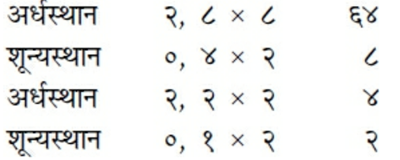
गायत्री आदि छन्दोंकी संख्याको दूनी करके उसमेंसे दो घटा देनेपर जो संख्या हो, वह वहाँतकके छन्दोंकी संयुक्त संख्या होती है। जैसे गायत्रीकी वृत्त-संख्या ६४ को दूना करके २ घटानेसे १२६ हुआ। यह एकाक्षरसे लेकर षडक्षरपर्यन्त सभी अक्षरोंके छन्दोंकी संयुक्त संख्या हुई। जब छन्दके वृत्तोंकी संख्याको द्विगुणित करके उसे पूर्ण ज्यों-का-त्यों रहने दिया जाय, दो घटाया न जाय, तो वह अङ्क बादके छन्दकी वृत्तसंख्याका ज्ञापक होता है। गायत्रीकी वृत्तसंख्या ६४ को दूना करनेसे १२८ हुआ। यह ‘उष्णिक्’ की वृत्त-संख्याका योग हुआ। [अब एकद्वयादि लग क्रियाकी सिद्धिके लिये ‘मेरु प्रस्तार’ बताते हैं—] अमुक छन्दमें कितने लघु, कितने गुरु तथा कितने वृत्त होते हैं, इसका ज्ञान ‘मेरु-प्रस्तार’ से होता है। सबसे ऊपर एक चौकोर कोष्ठ बनाये। उसके नीचे दो कोष्ठ, उसके नीचे तीन कोष्ठ, उसके नीचे चार कोष्ठ आदि जितने अभीष्ट हों, बनाये। पहले कोष्ठमें एक संख्या रखे, दूसरी पङ्क्तिके दोनों कोष्ठोंमें एक-एक संख्या रखे, फिर तीसरी पङ्क्तिमें किनारेके दो कोष्ठोंमें एक-एक लिखे और बीचमें ऊपरके कोष्ठोंके अङ्क जोड़कर पूरे-पूरे लिख दे। चौथी पङ्क्तिमें किनारेके कोष्ठोंमें एक-एक लिखे और बीचके दो कोष्ठोंमें ऊपरके दो-दो कोष्ठोंके अङ्क जोड़कर लिखे। नीचेके कोष्ठोंमें भी यही रीति बरतनी चाहिये। उदाहरणके लिये देखिये— वर्णमेरु
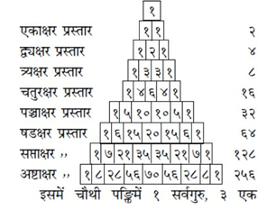
इसमें चौथी पङ्क्तिमें १ सर्वगुरु, ३ एक लघु, तीन दो लघु और १ सर्वलघु अक्षर है। इसी प्रकार अन्य पङ्क्तियोंमें भी जानना चाहिये। इस प्रकार इसके द्वारा छन्दके लघु-गुरु अक्षरोंकी तथा एकाक्षरादि छन्दोंकी वृत्त-संख्या जानी जाती है। मेरु-प्रस्तारमें नीचेसे ऊपरकी ओर आधा-आधा अंगुल विस्तार कम होता जाता है। छन्दकी संख्याको दूनी करके एक-एक घटा दिया जाय तो उतने ही अङ्गुलका उसका अध्वा (प्रस्तारदेश) होता है। इस प्रकार यहाँ छन्दःशास्त्रका सार बताया गया॥४-५॥
इस प्रकार आदि आग्नेय महापुराणमें ‘प्रस्तार-निरूपण’ नामक तीन सौ पैंतीसवाँ अध्याय पूरा हुआ॥३३५॥
६. किस छन्दके कितने भेद हो सकते हैं, इसका ज्ञान करानेवाले प्रत्यय या प्रणालीको ‘प्रस्तार’ आदि कहते हैं। प्रस्तार आदि छः हैं—प्रस्तार, नष्ट, उद्दिष्ट, एकद्वयादिलगक्रिया, संख्या तथा अध्वयोग। एक अक्षरवाले छन्दका भेद जाननेके लिये पहले एक गुरु लिखकर उसके नीचे एक लघु लिखे। इस प्रकार एकाक्षर छन्दके दो ही भेद हुए। दो अक्षरके छन्दके भेदोंका ज्ञान प्राप्त करनेके लिये एकाक्षर-प्रस्तारको ही दो बार लिखे; अर्थात् पहले एक गुरु और उसके नीचे एक लघु लिखकर नीचे एक तिरछी रेखा खींच दे। फिर उसके नीचे एक गुरु लिखकर उसके अधोभागमें भी एक लघु लिख दे। तत्पश्चात् पहली आवृत्तिमें द्वितीय अक्षरके स्थानपर गुरु और द्वितीय आवृत्तिमें द्वितीय अक्षरके स्थानपर लघुका उल्लेख कर रेखा हटा दे। इस प्रकार दो अक्षरवाले छन्दके चार भेद हुए। ‘द्वयक्षर-प्रस्तार’ को भी पूर्ववत् दो आवृत्तियोंमें स्थापित करके प्रथम आवृत्तिमें तृतीय अक्षरोंकी जगह गुरु और द्वितीय आवृत्तिमें तृतीय अक्षरोंकी जगह लघु लिखना चाहिये। इस प्रकार ‘त्र्यक्षर प्रस्तार’ में आठ भेद होंगे। इसकी भी दो आवृत्तियाँ करके पूर्ववत् लघु-गुरु-स्थापन करनेसे सोलह भेद ‘चतुरक्षर-प्रस्तार’ के होंगे। इसी प्रक्रियासे ‘पञ्चाक्षर-प्रस्तार’ के ३२ और छः अक्षरवाले गायत्री आदि छन्दोंके प्रस्तारभेद ६४ होंगे। सप्ताक्षर आदिके भेद जाननेकी भी यही प्रणाली है। नीचे रेखाचित्रद्वारा इन सब भेदोंका स्पष्टीकरण किया जाता है—
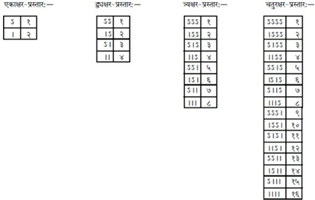
उपर्युक्त रेखाचित्रद्वारा समवृत्तोंकी संख्या जानी जाती है। इस समवृत्तकी संख्यामें उसीसे गुणा करनेपर समसहित अर्धसमवृत्तकी संख्या ज्ञात होती है तथा पुनः उसीमें उसीसे गुणा करनेपर समार्धसमसहित विषमवृत्तकी संख्या जानी जाती है। इसका संकेत इस प्रकार है— समवृत्त संख्या × (गुणे) समवृत्त संख्या=अर्धसमवृत्त संख्या। अर्धसमवृत्त संख्या × (गुणे) अर्धसमवृत्त संख्या=विषमवृत्त संख्या। इस प्रकार मिश्रित संख्याका ज्ञान होता है। शुद्ध संख्याके ज्ञानकी प्रणाली इस प्रकार है—अर्धसमवृत्त संख्या—समवृत्त संख्या=शुद्धार्ध समवृत्त संख्या। विषमवृत्त संख्या—अर्धसमवृत्त संख्या=शुद्धविषमवृत्त संख्या। नीचे इसकी तालिका दी जाती है—
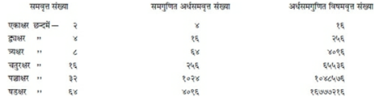
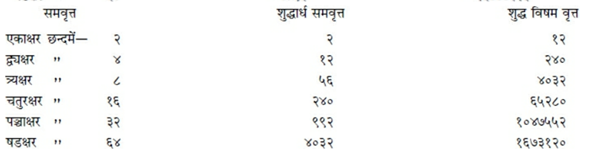
तीन सौ छत्तीसवाँ अध्याय
शिक्षानिरूपण
अग्निदेव कहते हैं—वसिष्ठ! अब मैं ‘शिक्षा’ का वर्णन करता हूँ। वर्णोंकी संख्या तिरसठ अथवा चौंसठ भी मानी गयी है। इनमें इक्कीस स्वर१, पचीस स्पर्श२, आठ यादि३ एवं चार यम४ माने गये हैं। अनुस्वार, विसर्ग, दो पराश्रित५ वर्ण—जिह्वामूलीय तथा उपध्मानीय ( क और प) और दुःस्पृष्ट लकार—ये तिरसठ६ वर्ण हैं। इनमें प्लुत लृकारको और गिन लिया जाय तो वर्णोंकी संख्या चौंसठ हो जाती है। रङ्ग७ (अनुनासिक)-का उच्चारण ‘खे अराँ’ की तरह बताया गया है। हकार ‘ङ’ आदि पञ्चमाक्षरों और य, र, ल, व—इन अन्तःस्थ वर्णोंसे संयुक्त होनेपर ‘उरस्य’ हो जाता है। इनसे संयुक्त न होनेपर वह ‘कण्ठस्थानीय’ ही रहता है। आत्मा (अन्तः-करणावच्छिन्न चैतन्य) संस्काररूपसे अपने भीतर विद्यमान घट-पटादि पदार्थोंको अपनी बुद्धिवृत्तिसे संयुक्त करके अर्थात् उन्हें एक बुद्धिका विषय बनाकर बोलने या दूसरोंपर प्रकट करनेकी इच्छासे मनको उनसे संयुक्त करता है। संयुक्त हुआ मन कायाग्नि—जठराग्निको आहत करता है। फिर वह जठरानल प्राणवायुको प्रेरित करता है। वह प्राणवायु हृदयदेशमें विचरता हुआ धीमी ध्वनिमें उस प्रसिद्ध स्वरको उत्पन्न करता है, जो प्रातःसवनकर्मके साधनभूत मन्त्रके लिये उपयोगी है तथा जो ‘गायत्री’ नामक छन्दके आश्रित है। तदनन्तर वह प्राणवायु कण्ठदेशमें भ्रमण करता हुआ ‘त्रिष्टुप्’ छन्दसे युक्त माध्यंदिन-सवन-कर्मसाधन मन्त्रोपयोगी मध्यम स्वरको उत्पन्न करता है। इसके बाद उक्त प्राणवायु शिरोदेशमें पहुँचकर उच्चध्वनिसे युक्त एवं ‘जगती’ छन्दके आश्रित सायं-सवन-कर्मसाधन मन्त्रोपयोगी स्वरको प्रकट करता है। इस प्रकार ऊपरकी ओर प्रेरित वह प्राण, मूर्धामें टकराकर अभिघात नामक संयोगका आश्रय बनकर, मुखवर्ती कण्ठादि स्थानोंमें पहुँचकर वर्णोंको उत्पन्न करता है। उन वर्णोंके पाँच प्रकारसे विभाग माने गये हैं। स्वरसे, कालसे, स्थानसे, आभ्यन्तर प्रयत्नसे तथा वाह्य प्रयत्नसे उन वर्णोंमें भेद होता है। वर्णोंके उच्चारण-स्थान आठ हैं—हृदय, कण्ठ, मूर्धा, जिह्वामूल, दन्त, नासिका, ओष्ठद्वय तथा तालु। विसर्गका अभाव, विवर्तन१, संधिका अभाव, शकारादेश, षकारादेश, सकारादेश, रेफादेश, जिह्वामूलीयत्व और उपध्मानीयत्व—ये ‘ऊष्मा’ वर्णोंकी आठ प्रकारकी गतियाँ हैं२। जिस उत्तरवर्ती पदमें आदि अक्षर ‘उकार’ हो, वहाँ गुण आदिके द्वारा यदि ‘ओ’ भावका प्रसंधान (परिज्ञान) हो रहा हो, तो उस ‘ओकार’ को स्वरान्त अर्थात् स्वर-स्थानीय जानना चाहिये। जैसे—‘गङ्गोदकम्’ । इस पदमें जो ‘ओ’ भावका प्रसंधान है, वह स्वरस्थानीय है। इससे भिन्न संधिस्थलमें जो ‘ओभाव’ का परिज्ञान होता है, वह ‘ओ’ भाव ऊष्माका ही गतिविशेष है, यह बात स्पष्टरूपसे जान लेनी चाहिये। जैसे—‘शिवो वन्द्यः’ इसमें जो ओकारका श्रवण होता है, वह ऊष्मस्थानीय ही है। (यह निर्णय किसी अन्य व्याकरणकी रीतिसे किया गया है, ऐसा जान पड़ता है।) जो वेदाध्ययन कुतीर्थसे प्राप्त हुआ है, अर्थात् आचारहीन गुरुसे ग्रहण किया गया है, वह दग्ध—नीरस-सा होता है। उसमें अक्षरोंको खींच-तानकर हठात् किसी अर्थतक पहुँचाया गया है। वह भक्षित-सा हो गया है, अर्थात् सम्प्रदाय-सिद्ध गुरुसे अध्ययन न करनेके कारण वह अभक्ष्य-भक्षणके समान निस्तेज है। इस तरहका उच्चारण या पठन पाप माना गया है। इसके विपरीत जो सम्प्रदायसिद्ध गुरुसे अध्ययन किया जाता है, तदनुसार पठन-पाठन शुभ होता है। जो उत्तम तीर्थ—सदाचारी गुरुसे पढ़ा गया है, सुस्पष्ट उच्चारणसे युक्त है, सम्प्रदायशुद्ध है, सुव्यवस्थित है, उदात्त आदि शुद्ध स्वरसे तथा कण्ठ-ताल्वादि शुद्ध स्थानसे प्रयुक्त हुआ है, वह वेदाध्ययन शोभित होता है। न तो विकराल आकृतिवाला, न लंबे ओठोंवाला, न अव्यक्त उच्चारण करनेवाला, न नाकसे बोलनेवाला एवं न गद्गद कण्ठ या जिह्वाबन्धसे युक्त मनुष्य ही वर्णोच्चारणमें समर्थ होता है। जैसे व्याघ्री अपने बच्चोंको दाढ़ोंसे पकड़कर एक स्थानसे दूसरे स्थानपर ले जाती है, किंतु उन्हें पीड़ा नहीं देती, वर्णोंका ठीक इसी तरह प्रयोग करे, जिससे वे वर्ण न तो अव्यक्त (अस्पष्ट) हों और न पीड़ित ही हों। वर्णोंके सम्यक् प्रयोगसे मानव ब्रह्मलोकमें पूजित होता है। ‘स्वर’ तीन प्रकारके माने गये हैं—उदात्त, अनुदात्त और स्वरित। इनके उच्चारणकालके भी तीन नियम हैं—ह्रस्व, दीर्घ तथा प्लुत। अकार एवं हकार कण्ठस्थानीय हैं। इकार, चवर्ग, यकार एवं शकार—ये तालुस्थानसे उच्चरित होते हैं। उकार और पवर्ग—ये दोनों ओष्ठस्थानसे उच्चरित होनेवाले हैं। ऋकार, टवर्ग, रेफ एवं षकार—ये मूर्धन्य तथा लृकार, तवर्ग, लकार और सकार—ये दन्तस्थानीय होते हैं। कवर्गका स्थान जिह्वामूल है। वकारको विद्वज्जन दन्त और ओष्ठसे उच्चरित होनेवाला बताते हैं। एकार और ऐकार कण्ठ-तालव्य तथा ओकार एवं औकार कण्ठोष्ठज माने गये हैं। एकार, ऐकार तथा ओकार और औकारमें कण्ठस्थानीय वर्ण अकारकी आधी मात्रा या एक मात्रा होती है। ‘अयोगवाह’१ आश्रयस्थानके भागी होते हैं, ऐसा जानना चाहिये। अच् (अ, इ, उ, ऋ, लृ, ए, ओ, ऐ, औ)—ये स्वर स्पर्शाभावरूप ‘विवृत’ प्रयत्नवाले हैं। यण् (य, व, र, ल)’ ‘ईषत्स्पृष्ट’ एवं शल् (श, ष, स, ह) ‘अर्धस्पृष्ट’ अर्थात् ‘ईषद्विवृत’ प्रयत्नवाले हैं। शेष ‘हल्’ अर्थात् क से लेकर म तकके अक्षर ‘स्पृष्ट प्रयत्नवाले’ माने गये हैं। इनमें बाह्य प्रयत्नके कारण वर्णभेद जानना चाहिये ‘ञम्’ प्रत्याहारमें स्थित वर्ण (ञ, म, ङ, ण, न) अनुनासिक होते हैं। हकार और रेफ अनुनासिक नहीं होते। ‘हकार, झकार तथा षकार’ के ‘संवार’, ‘घोष’ और ‘नाद’ प्रयत्न हैं। ‘यण्’ और ‘जश्’—इनके ‘ईषन्नाद’ अर्थात् ‘अल्पप्राण’ प्रयत्न हैं। ख, फ आदिका ‘विवार’, ‘अघोष’ और ‘श्वास’ प्रयत्न हैं। चर् (च, ट, त, क, प, श, ष, स)-का ‘ईषच्छ्वास’ प्रयत्न जानना चाहिये। यह व्याकरणशास्त्र वाणीका धाम कहा जाता है॥१—२२॥
इस प्रकार आदि आग्नेय महापुराणमें ‘शिक्षानिरूपण’ नामक तीन सौ छत्तीसवाँ अध्याय पूरा हुआ॥३३६॥
१. अ, इ, उ, ऋ—इन चारों अक्षरोंके ह्रस्व, दीर्घ और प्लुत भेद मिलाकर बारह स्वर होते हैं। ए, ओ, ऐ, औ—इनके दीर्घ और प्लुत भेद मिलकर आठ होते हैं। ये सब मिलकर बीस हुए तथा एक दुःस्पृष्ट ‘ल’ मिलानेसे कुल इक्कीस स्वर हुए। दो स्वरोंके मध्यमवर्ती ‘ल’ को ‘दुःस्पृष्ट’ कहते हैं।
२. कवर्ग, चवर्ग, टवर्ग, तवर्ग तथा पवर्गके पचीस वर्णोंको ‘स्पर्श’ कहते हैं।
३. य, र, ल, व, श, ष, स, ह—ये आठ अक्षर ‘यादि’ कहे गये हैं।
४. वर्गोंमें पञ्चम वर्णके परे रहते आदिके चार वर्णों तथा पञ्चमके मध्यमें जो उन्हींके सदृश वर्ण उच्चारित होते हैं, उनको ‘यम’ कहते हैं। जैसा कि—भट्टोजिदीक्षित लिखते हैं—‘वर्णेष्वाद्यानां चतुर्णां पञ्चमे परे मध्ये यमो नाम पूर्वसदृशो वर्णः प्रातिशाख्ये प्रसिद्धः।’ यथा—पलिक्क्नी, चख्ख्नतुः इत्यादि। ५. क, ख तथा प, फ परे रहनेपर विसर्गके स्थानमें क्रमशः क ख तथा प फ आदेश होते हैं, अतः ये दोनों ‘पराश्रित’ हैं। इन्हींको क्रमशः ‘जिह्वामूलीय’ और ‘उपध्मानीय’ कहते हैं।
६. ‘लृ’ का ‘ऋ’ में ही अन्तर्भाव माननेपर उसकी पृथक् गणना न होनेसे वर्णसंख्या ६३ तक हो जाती है।
७. नकारके स्थानमें ‘रु’ होनेपर ‘अत्रानुनासिकः पूर्वस्य तु वा।’—इस सूत्रसे जो अनुनासिक किया जाता है, उसीका नाम ‘रङ्ग’ है।
१. जहाँ सकारका ‘रुत्व’, ‘यत्व’ होकर ‘लोपः शाकल्पस्य।’ (पा०सू० ८।३।१९) अथवा ‘हलि सर्वेषाम्।’ (पा०सू० ८।३।२२) के नियमानुसार वैकल्पिक लोप होता है और उस दशामें संधि नहीं होती, वहाँ उस संधिके अभावको ‘विवृत्ति’ या ‘विवर्तन’ कहा गया है। जैसा कि ‘याज्ञवल्क्य-शिक्षा’ में वर्णन है— द्वयोस्तु स्वरयोर्मध्ये संधिर्यत्र न दृश्यते । विवृत्तिस्तत्र विज्ञेया य ईशेति निदर्शनम्॥ (श्लो० ९४)
२. इन आठोंके उदाहरण क्रमशः इस प्रकार हैं—शिवो वन्द्यः, क ईशः, हरिश्शेते, आविष्कृतम्, कस्कः, अहर्पतिः, क करोति, क पचति।
१. अनुस्वार, विसर्ग, जिह्वामूलीय, उपध्मानीय और यम—ये ‘अयोगवाह’ कहलाते हैं। वे जिस स्वरपर आश्रित होते हैं, उसीका स्थान उनका स्थान होता है। जैसे—‘रामः’ का विसर्ग कण्ठस्थानीय है और ‘हरिः’ का विसर्ग तालुस्थानीय।
तीन सौ सैंतीसवाँ अध्याय
काव्य आदिके लक्षण
अग्निदेव कहते हैं—वसिष्ठ! अब मैं ‘काव्य’ और ‘नाटक’ आदिके स्वरूप तथा ‘अलंकारों’ का वर्णन करता हूँ। ध्वनि, वर्ण, पद और वाक्य—यही सम्पूर्ण वाङ्मय माना गया है२। शास्त्र, इतिहास तथा काव्य—इन तीनोंकी समाप्ति इसी वाङ्मयमें होती है। वेदादि शास्त्रोंमें शब्दकी प्रधानता है और इतिहास-पुराणोंमें अर्थकी। इन दोनोंमें ‘अभिधा-शक्ति’ (वाच्यार्थ)-की ही मुख्यता होती है; अतः ‘काव्य’ इन दोनोंसे भिन्न है। [क्योंकि उसमें व्यङ्गय अर्थको प्रधानता दी जाती है३।] संसारमें मनुष्य-जीवन दुर्लभ है; उसमें भी विद्या तो और भी दुर्लभ है। विद्या होनेपर भी कवित्वका गुण आना कठिन है; उसमें भी काव्य-रचनाकी पूर्ण शक्तिका होना अत्यन्त कठिन है१। शक्तिके साथ बोध एवं प्रतिभा हो, यह और भी कठिन है; इन सबके होते हुए विवेकका होना तो परम दुर्लभ है। कोई भी शास्त्र क्यों न हो, अविद्वान् पुरुषोंके द्वारा उसका अनुसंधान किया जाय तो उससे कुछ भी सिद्ध नहीं होता२। ‘श’ आदि वर्ण, अर्थात् ‘श ष स ह’ तथा वर्गोंके द्वितीय एवं चतुर्थ अक्षर ‘महाप्राण’ कहलाते हैं३। वर्णोंके समुदायको ‘पद’ कहते हैं। इसके दो भेद हैं—‘सुबन्त’ और ‘तिङन्त’। अभीष्ट अर्थसे व्यवच्छिन्न संक्षिप्त पदावलीका नाम ‘वाक्य’ है॥१—६॥
जिसमें अलंकार भासित होता हो, गुण विद्यमान हो तथा दोषका अभाव हो, ऐसे वाक्यको ‘काव्य’४ कहते हैं। लोक-व्यवहार तथा वेद (शास्त्र)-का ज्ञान—ये काव्यप्रतिभाकी योनि४ हैं। सिद्ध किये मन्त्रके प्रभावसे जो काव्य निर्मित होता है, वह अयोनिज है।६ देवता आदिके लिये संस्कृत भाषाका और मनुष्योंके लिये तीन प्रकारकी प्राकृत भाषाका प्रयोग करना चाहिये। काव्य आदि तीन प्रकारके होते हैं—गद्य, पद्य और मिश्र१। पादविभागसे रहित पदोंका प्रवाह ‘गद्य’ कहलाता है। वह भी चूर्णक, उत्कलिका और वृत्तगन्धि भेदसे तीन प्रकारका होता है२। छोटी-छोटी कोमल पदावलीसे युक्त और अत्यन्त मृदु संदर्भसे पूर्ण गद्यको ‘चूर्णक’ कहते हैं। जिसमें बड़े-बड़े समासयुक्त पद हों, उसका नाम ‘उत्कलिका’ है३। जो मध्यम श्रेणीके संदर्भसे युक्त हो तथा जिसका विग्रह अत्यन्त कुत्सित (क्लिष्ट) न हो, जिसमें पद्यकी छायाका आभास मिलता हो—जिसकी पदावली किसी पद्य या छन्दके खण्ड-सी जान पड़े, उस गद्यको ‘वृत्तगन्धि’ कहते हैं। यह सुननेमें अधिक उत्कट नहीं होता४। गद्य-काव्यके पाँच भेद माने जाते हैं—आख्यायिका, कथा, खण्डकथा, परिकथा एवं कथानिका५। जहाँ गद्यके द्वारा विस्तारपूर्वक ग्रन्थ-निर्माता कविके वंशकी प्रशंसा की गयी हो, जिसमें कन्याहरण, संग्राम, विप्रलम्भ (वियोग) और विपत्ति (मरणादि) प्रसङ्गोंका वर्णन हो, जहाँ वैदर्भी आदि रीतियों तथा भारती आदि वृत्तियोंकी प्रवृत्तियोंपर विशेषरूपसे प्रकाश पड़ता हो, जिसमें ‘उच्छ्वास’ के नामसे परिच्छेद (खण्ड) किये गये हों, जो ‘चूर्णक’ नामक गद्यशैलीके कारण अधिक उत्कृष्ट जान पड़ती हो, अथवा जिसमें ‘वक्त्र’ या ‘अपरवक्त्र’ नामक छन्दका प्रयोग हुआ हो, उसका नाम ‘आख्यायिका’ है (जैसे ‘कादम्बरी’ आदि)। जिस काव्यमें कवि श्लोकोंद्वारा संक्षेपसे अपने वंशका गुणगान करता हो, जिसमें मुख्य अर्थको उपस्थित करनेके लिये कथान्तरका संनिवेश किया गया हो, जहाँ परिच्छेद हो ही नहीं, अथवा यदि हो भी तो कहीं लम्बकोंद्वारा ही हो, उसका नाम ‘कथा’ है (जैसे ‘कथा-सरित्सागर’ आदि)। उसके मध्यभागमें चतुष्पदी (पद्य)-द्वारा बन्ध-रचना करे। जिसमें कथा खण्डमात्र हो, उसे ‘खण्डकथा’ कहते हैं। खण्डकथा और परिकथा—इन दोनों प्रकारकी कथाओंमें मन्त्री, सार्थवाह (वैश्य) अथवा ब्राह्मणको ही नायक मानते हैं। उन दोनोंका ही प्रधान रस ‘करुण’ जानना चाहिये। उसमें चार प्रकारका ‘विप्रलम्भ’ (विरह) वर्णित होता है। (प्रवास, शाप, मान एवं करुण-भेदसे विप्रलम्भके चार प्रकार हो जाते हैं।) उन दोनोंमें ही ग्रन्थके भीतर कथाकी समाप्ति नहीं होती। अथवा ‘खण्डकथा’ कथाशैलीका ही अनुसरण करती है। कथा एवं आख्यायिका दोनोंके लक्षणोंके मेलसे जो कथावस्तु प्रस्तुत होती है, उसे ‘परिकथा’ नाम दिया गया है। जिसमें आरम्भमें भयानक, मध्यमें करुण तथा अन्तमें अद्भुत रसको प्रकट करनेवाली रचना होती है, वह ‘कथानिका’ (कहानी) है। उसे उत्तम श्रेणीका काव्य नहीं माना गया है॥७—२०॥
चतुष्पदी नाम है—पद्यका [चार पादोंसे युक्त होनेसे उसे ‘चतुष्पदी’ कहते हैं]। उसके दो भेद हैं, ‘वृत्त’ और ‘जाति’१। जो अक्षरोंकी गणनासे जाना जाय, उसे ‘वृत्त’ कहते हैं। यह भी दो प्रकारका है—‘उक्थ’ (वैदिकस्तोत्र आदि) और ‘कृतिशेषज’ (लौकिक)। जहाँ मात्राओंद्वारा गणना हो, वह पद्य ‘जाति’ कहलाता है। यह काश्यपका मत है। वर्णोंकी गणनाके अनुसार व्यवस्थित छन्दको ‘वृत्त’ कहते हैं। पिङ्गलमुनिने वृत्तके तीन भेद माने हैं,—सम, अर्धसम तथा विषम। जो लोग गम्भीर काव्य-समुद्रके पार जाना चाहते हैं, उनके लिये छन्दोविद्या नौकाके समान है। महाकाव्य, कलाप, पर्यायबन्ध, विशेषक, कुलक, मुक्तक तथा कोष—ये सभी पद्योंके समुदाय हैं। अनेक सर्गोंमें रचा हुआ संस्कृतभाषाद्वारा निर्मित काव्य ‘महाकाव्य’ कहलाता है॥२१—२३॥
सर्गबद्ध रचनाको, जो संस्कृत भाषामें अथवा विशुद्ध एवं परिमार्जित भाषामें लिखी गयी हो, ‘महाकाव्य’२ कहते हैं। महाकाव्यके स्वरूपका त्याग न करते हुए उसके समान अन्य रचना भी हो तो वह दूषित नहीं मानी जाती। ‘महाकाव्य’ इतिहासकी कथाको लेकर निर्मित होता है अथवा उसके अतिरिक्त किसी उत्तम आधारको लेकर भी उसकी अवतारणा की जाती है। उसमें यथास्थान गुप्तमन्त्रणा, दूतप्रेषण३, अभियान और युद्ध आदिके वर्णनका समावेश होता है। वह अधिक विस्तृत नहीं होता। शक्वरी, अतिजगती, अतिशक्वरी, त्रिष्टुप् और पुष्पिताग्रा आदि तथा वक्त्र आदि मनोहर एवं समवृत्तवाले छन्दोंमें महाकाव्यकी रचना की जाती है। प्रत्येक सर्गके अन्तमें छन्द बदल देना उचित है। सर्ग अत्यन्त संक्षिप्त नहीं होना चाहिये। ‘अतिशक्वरी’ और ‘अष्टि’—इन दो छन्दोंसे एक सर्ग संकीर्ण होना चाहिये तथा दूसरा सर्ग मात्रिक छन्दोंसे संकीर्ण होना चाहिये। अगला सर्ग पूर्वसर्गकी अपेक्षा अधिकाधिक उत्तम होना चाहिये। ‘कल्प’ अत्यन्त निन्दित माना गया है। उसमें सत्पुरुषोंका विशेष आदर नहीं होता। नगर, समुद्र, पर्वत, ऋतु, चन्द्रमा, सूर्य, आश्रम, वृक्ष, उद्यान, जलक्रीड़ा, मधुपान, सुरतोत्सव, दूती-वचन-विन्यास तथा कुलटाके चरित्र आदि अद्भुत वर्णनोंसे महाकाव्य पूर्ण होता है। अन्धकार, वायु तथा रतिको व्यक्त करनेवाले अन्य उद्दीपन-विभावोंसे भी वह अलंकृत होता है। उसमें सब प्रकारकी वृत्तियोंकी प्रवृत्ति होती है। वह सब प्रकारके भावोंसे प्रभावित होता है तथा सब प्रकारकी रीतियों तथा सभी रसोंसे उसका संस्पर्श होता है। सभी गुणों और अलंकारोंसे भी महाकाव्यको परिपुष्ट किया जाता है। इन सब विशेषताओंके कारण ही उस रचनाको ‘महाकाव्य’ कहते हैं तथा उसका निर्माता ‘महाकवि’ कहलाता है॥२४—३२॥
महाकाव्यमें उक्ति-वैचित्र्यकी प्रधानता होते हुए भी रस ही उसका जीवन है। उसकी स्वरूप-सिद्धि अपृथग्यत्नसे (अर्थात् सहजभावसे) साध्य वाग्वक्रिमा (वचनवैचित्र्य अथवा वक्रोक्ति)-विषयक रससे होती है। महाकाव्यका फल है—चारों पुरुषार्थोंकी प्राप्ति४। वह नायकके नामसे ही सर्वत्र विख्यात होता है। प्रायः समान छन्दों अथवा वृत्तियोंमें महाकाव्यका निर्वाह किया जाता है। कौशिकी वृत्तिकी प्रधानता होनेसे काव्य-प्रबन्धमें कोमलता आती है। जिसमें प्रवासका वर्णन हो, उस रचनाको ‘कलाप’ कहते हैं। उसमें ‘पूर्वानुराग’ नामक शृङ्गाररसकी प्रधानता होती है। संस्कृत अथवा प्राकृतके द्वारा प्राप्ति आदिका वर्णन ‘विशेषक’ कहलाता है। जहाँ अनेक श्लोकोंका एक साथ अन्वय हो, उसे ‘कुलक’ कहते हैं। उसीका नाम ‘संदानितक’ भी है। एक-एक श्लोककी स्वतन्त्र रचनाको ‘मुक्तक’ कहते हैं। उसे सहृदयोंके हृदयमें चमत्कार उत्पन्न करनेमें समर्थ होना चाहिये। श्रेष्ठ कवियोंकी सुन्दर उक्तियोंसे सम्पन्न ग्रन्थको ‘कोष’ कहा गया है। वह ब्रह्मकी भाँति अपरिच्छिन्न रससे युक्त होता है तथा सहृदय पुरुषोंको रुचिकर प्रतीत होता है। सर्गमें जो भिन्न-भिन्न छन्दोंकी रचना होती है, वह आभासोपम शक्ति है। उसके दो भेद हैं—‘मिश्र’ तथा ‘प्रकीर्ण’। जिसमें ‘श्रव्य’ और ‘अभिनेय’—दोनोंके लक्षण हों, वह ‘मिश्र’ और सकल उक्तियोंसे युक्त काव्य ‘प्रकीर्ण’ कहलाता है॥३३—३९॥
इस प्रकार आदि आग्नेय महापुराणमें ‘काव्य आदिके लक्षण’ नामक तीन सौ सैंतीसवाँ अध्याय पूरा हुआ॥३३७॥
२. ‘सरस्वती-कण्ठाभरण’ के रचयिता महाराजाधिराज भोजदेवने अपने ग्रन्थके मङ्गलाचरणमें ‘ध्वनिर्वर्णाः पदं वाक्यम्’ (१।१) अग्निपुराणकी इस आनुपूर्वीको अविकलरूपसे उद्धृत किया है।
३. शब्दप्रधान वेदादिकी आज्ञाको भामह आदि आचार्योंने ‘प्रभुसम्मित’ और अर्थप्रधान इतिहास-पुराणोंकी आज्ञाको ‘सुहृत्सम्मित’ नाम दिया है। इसी तरह शब्द और अर्थको गौण करके जहाँ व्यङ्गयार्थको प्रधानता दी गयी है, उस काव्यके उपदेशको ‘कान्तासम्मित’ कहा है। यथा— ‘प्रभुसम्मितशब्दप्रधानवेदादिशास्त्रेभ्यः, सुहृत्सम्मितार्थतात्पर्यवत्पुराणादीतिहासेभ्यश्च, शब्दार्थयोर्गुणभावेन रसाङ्गभूतव्यापारप्रवणतया विलक्षणं यत् काव्यं लोकोत्तरवर्णनानिपुणकविकर्म, तत् कान्तेव सरसतापादनेनाभिमुखीकृत्य रामादिवद्वर्तितव्यं न रावणादिवदित्युपदेशं च यथायोगं कवेः सहृदयानां च करोतीति।’ (काव्यप्रकाश-१ उल्लास)
१. साहित्यदर्पणकार विश्वनाथने अपने ग्रन्थके प्रथम परिच्छेदमें ‘काव्यस्योपादेयत्वमग्निपुराणेऽप्युक्तम्।’—यह लिखकर ‘नरत्वं दुर्लभं लोके’ इत्यादि श्लोकको पूर्णतः उद्धृत किया है। २. भामहपर भी अग्निपुराणकी इन उक्तियोंका प्रभाव पड़ा है। उनका कहना है कि ‘गुरुके उपदेशसे जडबुद्धि मनुष्य भी शास्त्रका अध्ययन तो कर लेते हैं, परंतु काव्य करनेकी शक्ति किसी बिरले ही प्रतिभाशाली पुरुषमें होती है।’ इस कथनमें ‘शक्तिस्तत्र सुदुर्लभा’ की स्पष्टतः छाप है। भामहका श्लोक इस प्रकार है— गुरूपदेशादध्येतुं शास्त्रं जडधियोऽप्यलम् । काव्यं तु जायते जातु कस्यचित् प्रतिभावतः॥ ३. यह एक श्लोकका भाव शिक्षासे सम्बद्ध है। जान पड़ता है, लेखकके प्रमादसे उसका पाठ इस अध्याय
में समाविष्ट हो गया है।
४. अग्निपुराणकी इसी उक्तिको उपजीव्य मानकर भोजदेवने ‘सरस्वतीकण्ठाभरण’ में इस प्रकार लिखा है—निर्दोषं गुणवत्काव्यमलंकारैरलंकृतम् । (१।२) ५. भामहने इसी कथनको कुछ पल्लवित करके लिखा है कि ‘व्याकरण’, छन्द, कोष, अर्थ, इतिहासाश्रित कथाएँ, लोकव्यवहार, युक्ति (तर्क) तथा कलाओंका काव्य-रचनामें प्रवृत्त होनेवाले कविजनोंको मनन करना चाहिये। यथा— शब्दश्छन्दोऽभीधानार्था इतिहासाश्रयाः कथाः । लोको युक्तिः कलाश्चेति मन्तव्या काव्यगैर्ह्यमी॥ अग्निपुराणके ‘वेदश्च लोकश्च’ इस अंशको ही भामहने विशद किया है। आचार्य वामनने काव्याङ्गकी संज्ञा देकर काव्यरचनाके तीन हेतुओंका उल्लेख किया है—लोक, विद्या और प्रकीर्ण। ‘लोक’ से उन्होंने ‘लोकवृत्त’ लिया है। ‘विद्या’ शब्दसे शब्दस्मृति (व्याकरण), शब्दकोष, छन्दोविचिति, कलाशास्त्र, कामशास्त्र तथा दण्डनीति आदिका ग्रहण किया है तथा ‘प्रकीर्ण’ शब्दसे प्रतिभा और अवधान (चित्तकी एकाग्रता)-को लिया है। यथा—(काव्यालंकारसूत्राख्ये ग्रन्थे प्रथमेऽधिकरणे तृतीयाध्याये)—
‘लोको विद्या प्रकीर्णं च काव्याङ्गानि’॥१॥
‘लोकवृत्तं लोकः’॥२॥
‘शब्दस्मृत्यभिधानकोशच्छन्दोविचितिकलाकामशास्त्रदण्डनीतिपूर्वा विद्याः’॥३॥
‘लक्ष्यज्ञत्वमभियोगो वृद्धसेवावेक्षणं प्रतिभानमवधानं च प्रकीर्णम्’॥११॥
इसी प्रकार आचार्य मम्मटने शक्ति (प्रतिभा)-को तथा लोकवृत्त, व्याकरणादिशास्त्र तथा पूर्ववर्ती कवियोंके काव्य आदिके अवलोकनसे प्राप्त हुई व्युत्पत्तिको काव्यका हेतु बताया है। ‘साथ ही काव्यवेत्ताओंकी शिक्षाके अनुसार किया जानेवाला अभ्यास भी काव्यनिर्माणमें हेतु होता है,’ यह उनका कथन है। अन्यान्य परवर्ती आचार्योंने भी काव्यके इन हेतुओंपर विचार किया है। इन सबके मतोंपर अग्निपुराणके ‘वेदश्च लोकश्च’ इस कथनका ही प्रभाव परिलक्षित होता है।
६. मन्त्रसिद्धिसे भी अद्भुत काव्य-रचनाकी शक्तिका उदय होता है, इसकी चर्चा रसगङ्गाधरकारने भी की है। ‘नैषध’ महाकाव्यके रचयिता श्रीहर्षने भी अपने काव्यमें चिन्तामणिबीजकी उपासनासे अकस्मात् श्लोक-रचनाकी शक्तिका आविर्भाव होना बताया है।
१. भामहने काव्यके दो भेद बताये हैं—गद्य और पद्य। फिर भाषाकी दृष्टिसे इनके तीन-तीन भेद और होते हैं—संस्कृत, प्राकृत और अपभ्रंश। वामनने ‘काव्य गद्यं पद्यं च’ (३—२१)—इस सूत्रके द्वारा काव्यके गद्य और पद्य दो ही मूलभेद माने हैं। दण्डीने अपने ‘काव्यादर्श’ में अग्निपुराणकथित गद्य, पद्य और मिश्र—तीनों भेदोंको उद्धृत किया है। भाषाकी दृष्टिसे भी उन्होंने काव्यके चार भेद माने हैं—संस्कृत, प्राकृत, अपभ्रंश और मिश्र। अग्निपुराणमें जो ‘पादसंतानो गद्यम्।’—इस प्रकार गद्यका लक्षण किया है, दण्डीने अपने ‘काव्यादर्श’ में इसे अविकलरूपसे उद्धृत किया है।
२. आचार्य वामनने भी अग्निपुराणोक्त इन्हीं तीन गद्यभेदोंका उल्लेख किया है। यथा—‘गद्यं वृत्तगन्धि चूर्णमुत्कलिकाप्रायं च।’
३. इसी भावकी छाया लेकर वामनने १।३ के २४-२५ वें सूत्रोंका निर्माण किया है—‘अनाविद्धललितपदं चूर्णम्’॥२४॥
‘विपरीतमुत्कलिकाप्रायम्’॥२५॥
४. वामनने जिसमें किसी पद्यका भाग प्रतीत होता हो, ऐसे गद्यको ‘वृत्तगन्धि’ कहा है। यथा—‘पद्यभागवद्वृत्तगन्धि’॥१।३।२३॥ साहित्यदर्पणकारने भी ‘वृत्तभागयुतम्’ कहकर इसी भावकी पुष्टि की है। वामन और विश्वनाथ—दोनों ही स्पष्टतः अग्निपुराणके छायाग्राही हैं।
५. विश्वनाथने ‘साहित्यदर्पण’ के छठे परिच्छेदमें ‘कथा’ और ‘आख्यायिका’ की चर्चा की है। उन्होंने गद्य-पद्यमय काव्योंके तीन भेद माने हैं—चम्पू, विरुद और करम्भक।
१. ‘पद्यं’ चतुष्पदी तच्च वृत्तं जातिरिति द्विधा।’—यह पद्यांश दण्डीने अपने ‘काव्यादर्श’ में ज्यों-का-त्यों ले लिया है।
२. भामहने अग्निपुराणके ‘सर्गबन्धो महाकाव्यम्’—इस उक्तिको अविकलरूपसे उद्धृत करके ही महाकाव्यके लक्षणका विस्तार किया है।
३. भामहने भी ‘मन्त्रदूतप्रयाणादि’—इस आनुपूर्वीका अपने महाकाव्य-लक्षणमें उपयोग किया है।
४. ‘चतुर्वर्गफलप्राप्तिः’—इस अंशको परवर्ती साहित्यालोचकोंने अग्निपुराणके इस कथनसे ही लिया है।
तीन सौ अड़तीसवाँ अध्याय
नाटक-निरूपण
अग्निदेव कहते हैं—वसिष्ठ! ‘रूपक’ के सत्ताईस भेद माने गये हैं१—नाटक, प्रकरण, डिम, ईहामृग, समवकार, प्रहसन, व्यायोग, भाण, वीथी, अङ्क, त्रोटक, नाटिका, सट्टक, शिल्पक, कर्णा, दुर्मल्लिका, प्रस्थान, भाणिका, भाणी, गोष्ठी, हल्लीशक, काव्य, श्रीगदित, नाट्यरासक, रासक, उल्लाप्य तथा प्रेङ्क्षण। लक्षण दो प्रकारके होते हैं—सामान्य और विशेष। सामान्य लक्षण रूपकके सभी भेदोंमें व्याप्त होते हैं और विशेष लक्षण किसी-किसीमें दृष्टिगोचर होते हैं। रूपकके सभी भेदोंमें पूर्वरङ्गके२ निवृत्त हो जानेपर देश-काल, रस, भाव, विभाव, अनुभाव, अभिनय, अङ्क और स्थिति—ये उनके सामान्य लक्षण हैं; क्योंकि इनका सर्वत्र उपसर्पण देखा जाता है। विशेष लक्षण यथावसर बताया जायगा। यहाँ पहले सामान्य लक्षण कहा जाता है; ‘नाटक’ को धर्म, अर्थ और कामका साधन माना गया है; क्योंकि वह करण है। उसकी इतिकर्तव्यता (कार्यारम्भकी विधि) यह है कि ‘पूर्वरङ्ग’ का विधिवत् सम्पादन किया जाय। ‘पूर्वरङ्ग’ के नान्दी आदि बाईस अङ्ग होते हैं३॥१—८॥
देवताओंको नमस्कार, गुरुजनकी प्रशस्ति तथा गौ, ब्राह्मण और राजा आदिके आशीर्वाद ‘नान्दी’ कहलाते हैं। रूपकोंमें ‘नान्दीपाठ’ के पश्चात् यह लिखा जाता है कि ‘नान्द्यन्ते१ सूत्रधारः’ (नान्दीपाठके अनन्तर सूत्रधारका प्रवेश)। इसमें कविकी पूर्व गुरुपरम्पराका, वंशप्रशंसा, पौरुष तथा काव्यके सम्बन्ध और प्रयोजन—इन पाँच विषयोंका निर्देश करे। नटी, विदूषक और पारिपार्श्वक—ये सूत्रधारके साथ जहाँ अपने कार्यसे सम्बद्ध, प्रस्तुत विषयको उपस्थित करनेवाले विचित्र वाक्योंद्वारा परस्पर संलाप करते हैं, पण्डितजन उसको ‘आमुख’ जानें। उसको ‘प्रस्तावना’ भी कहा जाता है॥९—१२॥
‘आमुख’ के तीन भेद२ होते हैं—प्रवृत्तक, कथोद्धात और प्रयोगातिशय। जब सूत्रधार उपस्थित काल (ऋतु आदि)-का वर्णन करता है, तब उसका आश्रयभूत पात्र-प्रवेश ‘प्रवृत्तक’ कहलाता है। इसका बीजांशोंमें ही प्रादुर्भाव होता है। जब पात्र सूत्रधारके वाक्य अथवा वाक्यार्थको ग्रहण करके प्रवेश करता है, तब उसको ‘कथोद्धात’ कहा जाता है। जिस समय सूत्रधार एक प्रयोगमें दूसरे प्रयोगका वर्णन करे, उस समय यदि पात्र वहाँ प्रवेश करे, तो वह ‘प्रयोगातिशय’ होता है। ‘इतिवृत्त’ (इतिहास)-को नाटक आदिका शरीर कहा जाता है। उसके दो भेद माने गये हैं—‘सिद्ध’ और ‘उत्प्रेक्षित’। शास्त्रोंमें वर्णित इतिवृत्त ‘सिद्ध’ और कविकी कल्पनासे निर्मित ‘उत्प्रेक्षित’ कहा जाता है। बीज, बिन्दु, पताका, प्रकरी और कार्य—ये पाँच अर्थप्रकृतियाँ (प्रयोजनसिद्धिकी हेतुभूता) हैं३। चेष्टा (कार्यावस्थाएँ) भी पाँच ही मानी गयी हैं। इनके नाम क्रमशः इस प्रकार हैं—प्रारम्भ, प्रयत्न, प्राप्ति-सद्भाव, नियतफलप्राप्ति और पाँचवाँ फलयोग। रूपकमें मुख, प्रतिमुख, गर्भ, विमर्श और निर्वहण—ये क्रमशः पाँच संधियाँ हैं४। जो अल्पमात्र वर्णित होनेपर भी बहुधा विसर्पण—अनेक अवान्तर कार्योंको उत्पन्न करता है, फलकी हेतुभूत उस अर्थप्रकृतिको ‘बीज’ कहा जाता है। जिसमें विविध वृत्तान्तों और रससे बीजकी उत्पत्ति होती है, काव्यके शरीरमें अनुगत उस संधिको ‘मुख’ कहते हैं। अभीष्ट अर्थकी रचना, कथावस्तुकी अखण्डता, प्रयोगमें अनुराग, गोपनीय विषयोंका गोपन, अद्भुत वर्णन, प्रकाश्य विषयोंका प्रकाशन—ये काव्याङ्गोंके छः फल हैं। जैसे अङ्गहीन मनुष्य किसी कार्यमें समर्थ नहीं होता, उसी प्रकार अङ्गहीन काव्य भी प्रयोगके योग्य नहीं माना जाता। देश-कालके बिना किसी भी इतिवृत्तकी प्रवृत्ति नहीं होती, अतः नियमपूर्वक उन दोनोंका उपादान ‘पद’ कहलाता है। देशोंमें भारतवर्ष और कालमें सत्ययुग, त्रेता और द्वापरयुगको ग्रहण करना चाहिये। देश-कालके बिना कहीं भी प्राणियोंके सुख-दुःखका उदय नहीं होता। सृष्टिके आदिकालकी वार्ता अथवा सृष्टिपालन आदिकी वार्ता प्राप्त हो तो वह वर्णनीय है। ऐसा करनेमें कोई दोष नहीं है५॥१३—२७॥
इस प्रकार आदि आग्नेय महापुराणमें ‘नाटकका निरूपण’ नामक तीन सौ अड़तीसवाँ अध्याय पूरा हुआ॥३३८॥
१. भरतमुनिके नाट्यशास्त्र (१८।२)-में ‘रूपक’ के दस भेद बताये गये हैं—नाटक, प्रकरण, अङ्क, व्यायोग, भाण, समवकार, वीथी, प्रहसन, डिम और ईहामृग। अग्निपुराणमें ये दस भेद तो मिलते ही हैं, सत्रह भेद और उपलब्ध होते हैं। इन्हींमें ‘विलासिका’ नामक एक भेद और जोड़कर विश्वनाथने सब भेदोंकी सम्मिलित संख्या अट्ठाईस कर दी है। उन्होंने प्रथम दस भेदोंको ‘रूपक’ और शेप अठारह भेदोंको ‘उपरूपक’ बताया है। अग्निपुराणोक्त ‘कर्णा’ नामक भेद ‘साहित्यदर्पण’ में ‘प्रकरणी’ के नामसे और ‘भाणी’ नामक भेद ‘संलापक’ नामसे लिखा गया है।
२. ‘रङ्ग’ कहते हैं—‘रङ्गशाला’ या ‘नृत्यस्थान’ को। वहाँ जो सम्भावित विघ्न या उपद्रव हों, उनकी शान्तिके लिये सूत्रधार और नट आदि जो ‘नान्दीपाठ’ और ‘स्तुति’ आदि करते हैं, उसका नाम ‘पूर्वरङ्ग’ है। ३. नाट्यशास्त्रके पाँचवें अध्याय
(९—१७ तकके श्लोकों)-में प्रत्याहार, अवतरण, आरम्भ, आश्रावणा, वक्त्रपाणि, परिघट्टना, संघोटना, मार्गासारित, ज्येष्ठासारित, मध्यासारित, कनिष्ठासारित—ये ग्यारह ‘बहिर्गीत’ कहे गये हैं, जो परदेके भीतर ही रहकर अभिनेता या प्रयोगकर्ता प्रयोगमें लाते हैं। तदनन्तर परदा उठाकर सब लोग एक साथ गीतकी योजना करते हैं। उसके गीतक, वर्द्धमान, ताण्डव, उत्थापन, परिवर्तन, नान्दी, शुष्कावकृष्टा, रङ्गद्वार, चारी, महाचारी और प्ररोचना—ये ग्यारह अङ्ग हैं। इन बाईस अङ्गोंका पूर्वरङ्गमें प्रयोग होता है।
१. नाटकोंमें सबसे प्रथम ‘नान्दीपाठ’ का विधान भरतमुनिने किया है। जैसा कि नाट्यशास्त्रके प्रथम अध्याय में उल्लेख है— नान्दी कृता मया पूर्वमाशीर्वचनसंयुता । अष्टाङ्गपदसंयुक्ता विचित्रा देवसम्मता॥
२. विश्वनाथने अग्निपुराणके ‘सहिताः सूत्रधारेण’ इत्यादिसे लेकर ‘प्रस्तावनापि सा’ तककी पङ्क्तियोंको अपने ग्रन्थमें अविकलरूपसे उद्धृत किया है। अग्निपुराणमें प्रस्तावनाके ‘प्रवृत्तक’, ‘कथोद्घात’ और ‘प्रयोगातिशय’—ये तीन भेद माने गये हैं। परंतु विश्वनाथने ‘उद्घातक’ और ‘अवलगित’—ये दो भेद और जोड़कर पाँच भेद स्वीकार किये हैं।
३. इन पाँचों अर्थप्रकृतियोंको विश्वनाथने अपने ग्रन्थमें ज्यों-का-त्यों ग्रहण किया है।
४. विश्वनाथने ‘निर्वहण’ के स्थानमें ‘उपसंहृति’ का उल्लेख किया है।
५. इस प्रसङ्गके अनुशीलनसे यह स्पष्ट जान पड़ता है कि व्यासदेवपर भरतमुनिका प्रभाव पड़ा है और परवर्ती आलोचकोंके ग्रन्थ भरतमुनि एवं व्यासदेवसे भी प्रभावित हैं।
तीन सौ उनतालीसवाँ अध्याय
शृङ्गारादि रस, भाव तथा नायक आदिका निरूपण
अग्निदेव कहते हैं—वसिष्ठ! वेदान्तशास्त्रमें जिस अक्षर (अविनाशी), सनातन, अजन्मा और व्यापक परब्रह्म परमेश्वरको अद्वितीय, चैतन्यस्वरूप और ज्योतिर्मय कहते हैं, उसका सहज (स्वरूपभूत) आनन्द कभी-कभी व्यञ्जित होता है, उस आनन्दकी अभिव्यक्तिका ही ‘चैतन्य’, ‘चमत्कार’ और ‘रस’ के नामसे वर्णन किया जाता है१। आनन्दका जो प्रथम विकार है, उसे ‘अहंकार’ कहा गया है। अहंकारसे ‘अभिमान’ का प्रादुर्भाव हुआ। इस अभिमानमें ही तीनों लोकोंकी समाप्ति हुई है॥१—३॥
अभिमानसे रतिकी उत्पत्ति हुई और वह व्यभिचारी आदि भाव-सामान्यके सहकारसे पुष्ट होकर ‘शृङ्गार’ के नामसे गायी जाती है। शृङ्गारके इच्छानुसार हास्य आदि अनेक दूसरे भेद प्रकट हुए हैं२। उनके अपने-अपने विशेष स्थायी भाव होते हैं, जिनका परिपोष (अभिव्यक्ति) ही उन-उन रसोंका लक्षण है॥४-५॥
वे रस परमात्माके सत्त्वादि गुणोंके विस्तारसे प्रकट होते हैं। अनुरागसे शृङ्गार, तीक्ष्णतासे रौद्र, उत्साहसे वीर और संकोचसे बीभत्स रसका उदय होता है। शृङ्गार रससे हास्य, रौद्र रससे करुण रस, वीर रससे अद्भुत रस तथा बीभत्स रससे भयानक रसकी निष्पत्ति होती है। शृङ्गार, हास्य, करुण, रौद्र, वीर, भयानक, बीभत्स, अद्भुत और शान्त—ये नौ रस माने गये हैं। वैसे सहज रस तो चार (शृङ्गार, रौद्र, वीर एवं बीभत्स) ही हैं। जैसे बिना त्यागके धनकी शोभा नहीं होती, वैसे ही रसहीन वाणीकी भी शोभा नहीं होती। अपार काव्यसंसारमें कवि ही प्रजापति है। उसको संसारका जैसा स्वरूप रुचिकर जान पड़ता है, उसके काव्यमें यह जगत् वैसे ही रूपमें परिवर्तित होता है। यदि कवि शृङ्गाररसका प्रेमी है, तो उसके काव्यमें रसमय जगत्का प्राकट्य होता है। यदि कवि शृङ्गारी न हो तो निश्चय ही काव्य नीरस होगा। ‘रस’ भावहीन नहीं है और ‘भाव’ भी रससे रहित नहीं है; क्योंकि इन भावोंसे रसकी भावना (अभिव्यक्ति) होती है। ‘भाव्यन्ते रसा एभिः।’ (भावित होते हैं रस इनके द्वारा)—इस व्युत्पत्तिके अनुसार वे ‘भाव’ कहे गये हैं३॥६—१२॥
‘रति’ आदि आठ स्थायी भाव होते हैं तथा ‘स्तम्भ’ आदि आठ सात्त्विक भाव माने जाते हैं। सुखके मनोऽनुकूल अनुभव (आनन्दकी मनोरम अनुभूति)-को ‘रति’ कहा जाता है। हर्ष आदिके द्वारा चित्तके विकासको ‘हास’ कहा जाता है। अभीष्ट वस्तुके नाश आदिसे उत्पन्न मनकी विकलताको ‘शोक’ कहते हैं। अपने प्रतिकूल आचरण करनेवालेपर कठोरताके उदयको ‘क्रोध’ कहते हैं। पुरुषार्थके अनुकूल मनोभावका नाम ‘उत्साह’ है॥१३—१५॥
चित्र आदिके दर्शनसे जनित मानसिक विकलताको ‘भय’ कहते हैं। दुर्भाग्यवाही पदार्थोंकी निन्दा ‘जुगुप्सा’ कहलाती है। किसी वस्तुके दर्शनसे चित्तका अतिशय आश्चर्यसे पूरित हो जाना ‘विस्मय’ कहलाता है। ‘स्तम्भ’ आदि आठ सात्त्विक भाव हैं, जो रजोगुण और तमोगुणसे परे हैं। भय या रागादि उपाधियोंसे चेष्टाका अवरोध हो जाना ‘स्तम्भ’* कहलाता है। श्रम एवं राग आदिसे युक्त अन्तःकरणके क्षोभसे शरीरमें उत्पन्न जलको ‘स्वेद’ कहते हैं। हर्षादिसे शरीरका उच्छ्वसित होना और उसमें रोंगटे खड़े हो जाना ‘रोमाञ्च’ कहा गया है। हर्ष आदि तथा भय आदिके कारण वाणीका स्पष्ट उच्चारण न होना (गद्गद हो जाना) ‘स्वरभेद’ कहा गया है। चित्तके क्षोभसे उत्पन्न कम्पनको ‘वेपथु’ कहा गया है। विषाद आदिसे शरीरकी कान्तिका परिवर्तन ‘वैवर्ण्य’ कहा गया है। दुःख अथवा आनन्द आदिसे उद्भूत नेत्रजलको ‘अश्रु’ कहते हैं। उपवास आदिसे इन्द्रियोंकी संज्ञाहीनताको ‘प्रलय’ कहा जाता है॥१६—२१॥
* ‘स्तम्भ’ का यही लक्षण विश्वनाथने भी लिया है।
वैराग्य आदिसे उत्पन्न मानसिक खेदको ‘निर्वेद’ कहा जाता है। मानसिक पीड़ा आदिसे जनित शैथिल्यको ‘ग्लानि’ कहते हैं; वह शरीरमें ही व्याप्त होती है। अनिष्टप्राप्तिकी सम्भावनाको ‘शङ्का’ और मत्सर (दूसरेका उत्कर्ष सहन न करने)-को ‘असूया’ कहा जाता है। मदिरा आदिके उपयोगसे उत्पन्न मानसिक मोह ‘मद’ कहलाता है। अधिक कार्य करनेसे शरीरके भीतर उत्पन्न क्लान्तिको ‘श्रम’ कहते हैं। शृङ्गार आदि धारण करनेमें चित्तकी उदासीनताको ‘आलस्य’ कहते हैं। धैर्यसे भ्रष्ट हो जाना ‘दैन्य’ तथा अभीष्ट वस्तुकी प्राप्ति न होनेसे जो बार-बार उसकी ओर ध्यान जाता है, उसे ‘चिन्ता’ कहते हैं। किसी कार्य (भयसे छूटने या इष्टवस्तुको पाने आदि)-के लिये उपाय न सूझना ‘मोह’ कहलाता है॥२२—२५॥
अनुभूत वस्तुका चित्तमें प्रतिबिम्बित होना ‘स्मृति’ कहलाता है। तत्त्वज्ञानके द्वारा अर्थोंके निश्चयको ‘मति’ कहते हैं। अनुराग आदिसे होनेवाला जो कोई अकथनीय मानसिक संकोच होता है, उसका नाम ‘व्रीडा’ या ‘लज्जा’ है। चित्तकी अस्थिरताको ‘चपलता’ और प्रसन्नताको ‘हर्ष’ कहते हैं। प्रतीकारकी आशासे उद्भूत अन्तःकरणकी विकलताको ‘आवेश’ कहा जाता है। कर्तव्यके विषयमें कुछ प्रतिभान न होना ‘जडता’ कही जाती है। अभीष्ट वस्तुकी प्राप्तिसे बढ़े हुए आनन्द या संतोषके अभ्युदयको ‘धृति’ कहते हैं। दूसरोंमें निकृष्टता और अपनेमें उत्कृष्टताकी भावनाको ‘गर्व’ कहा जाता है। इच्छित वस्तुके लाभमें दैव आदिसे जनित विघ्नके कारण जो दुःख होता है, उसे ‘विषाद’ कहते हैं। अभीष्ट पदार्थकी इच्छासे जो मनकी चञ्चल स्थिति होती है, उसका नाम ‘उत्कण्ठा’ या ‘उत्सुकता’ है। अस्थिर हो उठना चित्त और इन्द्रियोंका ‘अपस्मार’ है। युद्धमें बाधाओंके उपस्थित होनेसे स्थिर न रह पाना ‘त्रास’ माना गया है तथा चित्तके चमत्कृत होनेको ‘वीप्सा’ कहते हैं। क्रोधके शमन न होनेको ‘अमर्ष’ तथा चेतनताके उदयको ‘प्रबोध’ या ‘जागरण’ कहते हैं। चेष्टा और आकारसे प्रकट होनेवाले भावोंका गोपन ‘अवहित्थ’ कहलाता है। क्रोधसे गुरुजनोंपर कठोर वाग्दण्डका प्रयोग ‘उग्रता’ कहलाता है। चित्तके ऊहापोहको ‘वितर्क’ तथा मानस एवं शरीरकी प्रतिकूल परिस्थितिको ‘व्याधि’ कहते हैं। काम आदिके कारण असम्बद्ध प्रलाप करनेको ‘उन्माद’ कहा गया है। तत्त्वज्ञान होनेपर चित्तगत वासनाकी शान्तिको ‘शम’ कहते हैं। कविजनोंको काव्यादिमें रस एवं भावोंका निवेश करना चाहिये। जिसमें ‘रति’ आदि स्थायी भावोंकी विभावना हो, अथवा जिसके द्वारा इनकी विभावना हो, वह ‘विभाव’ कहा गया है; यह ‘आलम्बन’ और ‘उद्दीपन’ के भेदसे दो प्रकारका माना जाता है। ‘रति’ आदि भावसमूह जिसका आश्रय लेकर निष्पन्न होते हैं, वह ‘आलम्बन’ नामक विभाव है। यह नायक आदिका आलम्बन लेकर आविर्भूत होता है। धीरोदात्त, धीरोद्धत, धीरललित और धीरप्रशान्त—ये चार प्रकारके नायक माने गये हैं। ये धीरोदात्तादि नायक अनुकूल, दक्षिण, शठ एवं धृष्टके भेदसे सोलह प्रकारके कहे जाते हैं। पीठमर्द, विट और विदूषक—ये तीनों शृङ्गाररसमें नायकके नर्मसचिव—अनुनायक होते हैं। ‘पीठमर्द’ श्रीमान् एवं ‘नायक’ के समान बलशाली (सहायक) होता है। ‘विट’ (धूर्त) नायकके देशका कोई व्यक्ति होता है। ‘विदूषक’ प्रहसनसे नायकको प्रसन्न करनेवाला होता है। नायककी नायिकाएँ भी तीन प्रकारकी होती हैं—स्वकीया, परकीया एवं पुनर्भू। ‘पुनर्भू’ नायिका कौशिकाचार्यके मतसे है। कुछ ‘पुनर्भू’ नायिकाको न मानकर उसके स्थानपर ‘सामान्य’ की गणना करते हैं। इन्हीं नायिकाओंके अनेक भेद होते हैं। ‘उद्दीपन विभाव’ विविध संस्कारोंके रूपमें स्थित रहते हैं। ये ‘आलम्बन विभाव’ में भावोंको उद्दीप्त करते हैं॥२६—४२॥
चौंसठ कलाएँ कर्म्मादि एवं गीतिकादिके भेदसे दो प्रकारकी होती हैं। ‘कुहक’ और ‘स्मृति’ प्रायः हासोपहारक हैं। आलम्बन विभावके उद्बुद्ध संस्कारयुक्त भावोंके द्वारा स्मृति, इच्छा, द्वेष और प्रयत्नके संयोगसे किये हुए मन, वाणी, बुद्धि तथा शरीरके कार्यको विद्वज्जन ‘अनुभाव’ मानते हैं—‘स अत्र अनुभूयते उत अनुभवति।’ (आलम्बनमें जो अनुभूयमान है, अथवा आलम्बनमें जो दर्शनके बाद प्रकट होता है)—इस प्रकार ‘अनुभाव’ शब्दकी निरुक्ति (व्युत्पत्ति)-की जाती है। मानसिक व्यापारकी बहुलतासे युक्त कार्य ‘मनका कार्य’ कहा जाता है। वह ‘पौरुष’ (पुरुष-सम्बन्धी) एवं ‘स्त्रैण’ (स्त्री-सम्बन्धी)—दो प्रकारका होता है। वह इस प्रकार भी प्रसिद्ध है—॥४३—४६॥
शोभा, विलास, माधुर्य, स्थैर्य, गाम्भीर्य, ललित, औदार्य तथा तेज—ये आठ ‘पौरुष कर्म’ हैं। नीच जनोंकी निन्दा, उत्तम पुरुषोंसे स्पर्धा, शौर्य और चातुर्य—इनके कारण मानसिक कार्यके रूपमें शोभाका आविर्भाव होता है। जैसे—‘भवनकी शोभा होती है’॥४७-४८॥
भाव, हाव, हेला, शोभा, कान्ति, दीप्ति, माधुर्य, शौर्य, प्रगल्भता, उदारता, स्थिरता एवं गम्भीरता—ये बारह ‘स्त्रियोंके विभाव’ कहे गये हैं। विलास और हावको ‘भाव’ कहते हैं। यह ‘भाव’ किंचित् हर्षसे प्रादुर्भूत होता है। वाणीके योगको ‘वागारम्भ’ कहते हैं। उसके भी बारह भेद होते हैं। उनमें भाषणको ‘आलाप’, अधिक भाषणको ‘प्रलाप’, दुःखपूर्ण वचनको ‘विलाप’, बारंबार कथनको ‘अनुलाप’, कथोपकथनको ‘संलाप’, निरर्थक भाषणको ‘अपलाप’, वार्त्ताके परिवहनको ‘संदेश’ और विषयके प्रतिपादनको ‘निर्देश’ कहते हैं। तत्त्वकथनको ‘अतिदेश’ एवं निस्सार वस्तुके वर्णनको ‘अपदेश’ कहा जाता है। शिक्षापूर्ण वचनको ‘उपदेश’ और व्याजोक्तिको ‘व्यपदेश’ कहते हैं। दूसरोंको अभीष्ट अर्थका ज्ञान करानेके लिये उत्तम बुद्धिका आश्रय लेकर वागारम्भका व्यापार होता है। उसके भी रीति, वृत्ति और प्रवृत्ति—ये तीन भेद होते हैं॥४९—५४॥
इस प्रकार आदि आग्नेय महापुराणमें ‘शृङ्गारादि रस, भाव तथा नायक आदिका निरूपण’ नामक तीन सौ उनतालीसवाँ अध्याय पूरा हुआ॥३३९॥
१. भरतमुनिने रसनिष्पत्तिपर विचार किया, भावोंका भी विशद विवेचन किया, किंतु रसको ब्रह्मचैतन्यसे अभिन्न नहीं कहा; इस विषयमें वेदव्यासकी वाणी ‘अग्निपुराण’ में अधिक स्पष्ट हुई है। इन्होंने ब्रह्मके सहज आनन्दकी अभिव्यक्तिको ही ‘चैतन्य’, ‘चमत्कार’ तथा ‘रस’ नाम दिया है। वेदान्त-सूत्रकार वेदव्यासके समक्ष अवश्य ही ‘रसो वै सः।’—यह औपनिषद वाणी भी रही है। भरतसूत्रके व्याख्याकार आचार्य अभिनवगुप्तपादने, जिनके मतका विशद विवेचन आचार्य मम्मटने अपनी पीयूषवर्षिणी वाणीद्वारा ‘काव्यप्रकाश’ में किया है, यह वेदान्तदृष्टि ही अपनायी है, तथा ‘रसो वै सः’ का प्रमाणरूपमें उल्लेख करके ‘चिदावरणभङ्ग’ या ‘भग्नावरणा चित्’ को ही ‘रस’ माना है। भामहने महाकाव्यके लक्षणमें ‘युक्तं लोकस्वभावेन रसैश्च सकलैः पृथक्।’—यों लिखकर रसका योग तो स्वीकार किया है, किंतु रसके भव्य स्वरूपका कोई विवेचन नहीं किया है। अभिनवगुप्त, मम्मट तथा विश्वनाथने भी व्यासद्वारा निर्दिष्ट स्वरूपको ही स्वीकार किया है। ध्वनिवादी या व्यञ्जनावादी सहृदयोंने रसके उक्त महामहिम स्वरूपको ही आदर दिया तथा ‘ब्रह्मास्वादसहोदर’ कहकर उसकी प्रतिष्ठा बढ़ायी है।
२. इस कथनके उपजीव्य हैं—भरतमुनि। उन्होंने शृंगार, रौद्र, वीर और बीभत्स रसोंसे क्रमशः हास्य, करुण, अद्भुत तथा भयानक रसकी उत्पत्ति मानी है। यथा— शृङ्गाराद्धि भवेद्धास्यो रौद्राच्च करुणो रसः । वीराच्चैवाद्भुतोत्पत्तिर्बीभत्साच्च भयानकः॥ (नाट्यशास्त्र ६।३९)
३. भरतमुनिने नाट्यशास्त्रमें यह प्रश्न उठाया है कि ‘किं रसेभ्यो भावानामभिनिर्वृत्तिरुताहो भावेभ्यो रसानाम्।’ (क्या रसोंसे भावोंकी अभिव्यक्ति होती है अथवा भावोंसे रसोंकी।) इसके उत्तरमें वे कहते हैं कि ‘भावोंसे ही रसोंकी अभिव्यक्ति देखी जाती है, रसोंसे भावोंकी नहीं।’ रसके उद्भावक होनेके कारण ही वे ‘भाव’ कहे जाते हैं। यह उत्तर ही अग्निपुराणकी उक्तियोंमें मुखरित हुआ है। ‘न भावहीनोऽस्ति रसो न भावो रसवर्जितः।’—यह उक्ति भी नाट्यशास्त्रकी कारिकाका ही अंश है। (देखिये ६।३६)।
तीन सौ चालीसवाँ अध्याय
रीति-निरूपण
अग्निदेव कहते हैं—वसिष्ठ! अब मैं ‘वाग्विद्या’ (काव्यशास्त्र)-के सम्यक् परिज्ञानके लिये ‘रीति’ का वर्णन करता हूँ। उसके भी चार भेद होते हैं—पाञ्चाली, गौडी, वैदर्भी तथा लाटी। इनमें ‘पाञ्चाली रीति’ उपचारयुक्त, कोमल एवं लघु-समासोंसे समन्वित होती है। ‘गौडी रीति’ में संदर्भकी अधिकता और लंबे-लंबे समासोंकी बहुलता होती है। वह अधिक उपचारोंसे युक्त नहीं होती। ‘वैदर्भी रीति’ उपचाररहित, सामान्यतः कोमल संदर्भोंसे युक्त एवं समासवर्जित होती है। ‘लाटी रीति’ संदर्भकी स्पष्टतासे युक्त होती है, किंतु उसमें समास अत्यन्त स्पष्ट नहीं होते। वह यद्यपि अनेक विद्वानोंद्वारा परित्यक्त है, तथापि अतिबहुल उपचारयुक्त लाटी रीतिकी रचना उपलब्ध होती है॥१—४॥
(अब वृत्तियोंका वर्णन किया जाता है—) जो क्रियाओंमें विषमताको प्राप्त नहीं होती, वह वाक्यरचना ‘वृत्ति’ कही गयी है। उसके चार भेद हैं—भारती, आरभटी, कैशिकी एवं सात्वती। ‘भारती वृत्ति’ वाचिक अभिनयकी प्रधानतासे युक्त होती है। यह प्रायः (नट) पुरुषके आश्रित होती है, किंतु कभी-कभी स्त्री (नटी)-के आश्रित होनेपर यह प्राकृत उक्तियोंसे संयुक्त होती है। भरतके द्वारा प्रयुक्त होनेके कारण इसे ‘भारती’ कहा जाता है। भारतीके चार अङ्ग माने गये हैं—वीथी, प्रहसन, आमुख एवं नाटकादिकी प्ररोचना। वीथीके तेरह अङ्ग होते हैं—उद्धातक, लपित, असत्प्रलाप, वाक्श्रेणी, नालिका, विपण, व्याहार, त्रिगत, छल, अवस्यन्दित, गण्ड, मृदव एवं उचित। तापस आदिके परिहासयुक्त वचनको ‘प्रहसन’ कहते हैं। ‘आरभटी वृत्ति’ में माया, इन्द्रजाल और युद्ध आदिकी बहुलता मानी गयी है। आरभटी वृत्तिके भेद निम्नलिखित हैं—संक्षिप्तकार, पात तथा वस्तूत्थापन*॥५—११॥
* अग्निपुराणमें काव्यशास्त्रके सम्यक् ज्ञानके लिये रीतिज्ञान आवश्यक बतलाया है; इसीका सहारा लेकर आचार्य वामनने ‘रीतिरात्मा काव्यस्य।’—इस सूत्रके द्वारा रीतिको ‘काव्यका आत्मा’ कहा है और विशिष्ट पद-रचनाका नाम ‘रीति’ दिया है। अग्निपुराणमें रीतिके चार भेद उपलब्ध होते हैं—पाञ्चाली, गौड़ी, वैदर्भी और लाटी और इन चारोंके पृथक्-पृथक् लक्षण भी दिये हैं। यद्यपि वामनने इन चार भेदोंमेंसे ‘लाटी’ को ग्रहण नहीं किया है, तथापि परवर्ती आलोचकोंने लाटीपर भी विचार किया है। वामनने ‘पाञ्चाली’ का लक्षण किया है—‘माधुर्यसौकुमार्योपपन्ना पाञ्चाली।’ अर्थात् ‘माधुर्य तथा सौकुमार्य गुणसे सम्पन्न रचना’ ‘पाञ्चाली रीति’ है।’ अग्निपुराणमें ‘उपचारयुता मृद्वी पाञ्चाली ह्रस्वविग्रहा।’—यों कहकर छोटे समासवाली मृदु रचनाको ‘पाञ्चाली’ बताया गया है। इसकी मृदुताको ही वामनने ‘माधुर्य’ नामसे व्यक्त किया है। छोटे समासवाली रचनामें कर्कशताका अभाव होता है, अतः वह ‘सुकुमार’ मानी गयी है। इसी गुणका वामनने ‘सौकुमार्य’ शब्दसे बोध कराया है। व्यासजीने लंबे समासवाली रचनाको ‘गौड़ीया’ कहा है; उसीको शब्दान्तरसे वामनने ‘ओजःकान्तिमती’ कहकर व्यक्त किया है। दीर्घसमासवाली रचनामें ही ‘ओज’ और ‘कान्ति’ नामक गुण प्रकट होते हैं। जो समाससे शून्य तथा कोमल संदर्भवाली रचना होती है, उसको ‘वैदर्भी’ कहा गया है। वैदर्भीके इसी लक्षणको वामनने ‘समग्रगुणोपेता’ कहकर व्यक्त किया है। उनकी रायमें वैदर्भी रीति सम्पूर्ण दोषोंसे रहित और समग्र गुणोंसे गुम्फित होती है। यथा— अस्पृष्टा दोषमात्राभिः समग्रगुणगुम्फिता । विपञ्चीस्वरसौभाग्या वैदर्भ रीतिरिष्यते॥ भरतमुनिने वृत्तियोंकी उत्पत्ति भगवान् नारायणसे बतायी है और उनके चार भेद किये हैं—‘भारती’, ‘सात्वती’, ‘कैशिकी’ तथा ‘आरभटी’। ‘भारती’ का प्राकट्य ऋग्वेदसे, ‘सात्वती’ का यजुर्वेदसे, ‘कैशिकी’ का सामवेदसे और ‘आरभटी’ का अथर्ववेदसे आविर्भाव माना है। जो प्रधान वाणी पुरुषद्वारा प्रयोगमें लायी जानेवाली, स्त्रीरहित, संस्कृत वाक्योंसे युक्त तथा भरतमुनिके शिष्योंसे प्रयुक्त है, वह ‘भारती’ नामवाली वृत्ति है; उसके चार अङ्ग हैं—प्ररोचना, आमुख, वीथी और प्रहसन (द्रष्टव्यः-नाट्यशास्त्रका बीसवाँ अध्याय)। अग्निपुराण वृत्तिविचार भरतमुनिके ‘नाट्यशास्त्र’ पर ही आधारित तथा अत्यन्त संक्षिप्त है।
इस प्रकार आदि आग्नेय महापुराणमें ‘रीतिनिरूपण’ नामक तीन सौ चालीसवाँ अध्याय पूरा हुआ॥३४०॥
तीन सौ इकतालीसवाँ अध्याय
नृत्य आदिमें उपयोगी आङ्गिक कर्म
अग्निदेव कहते हैं—वसिष्ठ! अब मैं ‘अभिनय’* में नृत्य आदिके समय शरीरसे होनेवाली विशेष चेष्टाको तथा अङ्ग-प्रत्यङ्गके कर्मको बताता हूँ। इसे विद्वान् पुरुष ‘आङ्गिक कर्म’ मानते हैं। यह सब कुछ प्रायः अबलाजनोंके आाश्रित होनेपर ‘विच्छित्ति’-विशेषका पोषक होता है। लीला, विलास, विच्छित्ति, विभ्रम, किलकिञ्चित, मोट्टायित, कुट्टमित, बिब्बोक, ललित, विहृत, क्रीडित तथा केलि—ये नायिकाओंके यौवनकालमें सहजभावसे प्रकट होनेवाले बारह अलंकार हैं। आवरणसे आवृत स्थानमें प्रियजनोंकी चेष्टाके अनुकरणको ‘लीला’ कहते हैं। प्रियजनके दर्शन आदिसे जो मुख और नेत्र आदिकी चेष्टाओंमें कुछ विशेष चमत्कार लक्षित होता है, उसको सहृदयजन ‘विलास’ कहते हैं। हर्षसे होनेवाले हास और शुष्क रुदन आदिके मिश्रणको ‘किलकिञ्चित’ माना गया है। चित्तके किसी गर्वयुक्त विकारको ‘बिब्बोक’ कहते हैं। (इस भावके उदय होनेपर अभीष्ट वस्तुमें भी अनादर प्रकट किया जाता है।) सौकुमार्य्यजनित चेष्टा-विशेषको ‘ललित’ कहते हैं। सिर, हाथ, वक्षःस्थल, पार्श्वभाग—ये क्रमशः अङ्ग हैं। भ्रूलता (भौंह) आदिको प्रत्यङ्ग या ‘उपाङ्ग’ जाना जाता है। अङ्ग-प्रत्यङ्गोंके प्रयत्नजनित कर्म (चेष्टाविशेष)-के बिना नृत्य आदिका प्रयोग सफल नहीं होता। वह कहीं मुख्यरूपसे और कहीं वक्ररूपसे साधित होता है। आकम्पित, कम्पित, धुत, विधुत, परिवाहित, आधूत, अवधूत, अञ्चित, निहञ्चित, परावृत, उत्क्षिप्त, अधोगत एवं लोलित—ये तेरह प्रकारके शिरःकर्म१ जानने चाहिये। भ्रूकर्म सात२ प्रकारका होता है। भूसंचालनके कर्मोंमें पातन आदि कर्म मुख्य हैं। रस, स्थायी भाव एवं संचारी भावके सम्बन्धसे दृष्टिका३ ‘अभिनय’ तीन प्रकारका होता है। उसके भी छत्तीस भेद होते हैं—जिनमें दस भेद रससे प्रादुर्भूत होते हैं। कनीनिकाका कर्म भ्रमण एवं चलनादिके भेदसे नौ४ प्रकारका माना गया है। मुखके छः५ तथा नासिकाकर्मके छः६ एवं निःश्वासके नौ भेद माने जाते हैं। ओष्ठकर्मके छः७, पादकर्मके छः८ चिबुक-क्रियाके सात९ एवं ग्रीवाकर्मके नौ१० भेद बताये गये हैं। हस्तका अभिनय प्रायः ‘असंयुत’ तथा ‘संयुत’—दो प्रकारका होता है। पताक, त्रिपताक, कर्तरीमुख, अर्द्धचन्द्र, उत्कराल, शुकतुण्ड, मुष्टि, शिखर, कपित्थ, कटकामुख, सूच्यास्य, पद्मकोष, अतिशिरा, मृगशीर्षक, कामूल, कालपद्म, चतुर, भ्रमर, हंसास्य, हंसपक्ष, संदंश, मुकुल, ऊर्णनाभ एवं ताम्रचूड—‘असंयुत हस्त’ के ये चौबीस भेद कहे गये हैं१॥ १—१६॥
* भरतमुनिके ‘नाट्यशास्त्र’ (अध्याय २२)-में ‘सामान्य-अभिनय-निरूपणों’ के प्रसङ्गमें ‘अभिनय’ के तीन स्वरूप वर्णित हैं—वाचिक, आङ्गिक और सात्त्विक। नाट्यमें सत्त्वकी प्रतिष्ठा है। सत्त्वका रूप अव्यक्त है। वह नवों रसोंमें स्थित रहता है। युवावस्थामें स्त्रियोंके मुख और अङ्गमें जो सात्त्विक विकार अधिकतर प्रकट होते हैं, उन्हें ‘अलंकार’ कहा गया है। वे अलंकार भावोंके आश्रित होते हैं। उनमेंसे पहले तीन ‘अङ्गज अलंकार’ हैं, दस ‘स्वाभाविक अलंकार’ हैं और सात ‘अयत्नज’ हैं। वे सब-के-सब रस और भावसे उपबृंहित होते हैं। भाव, हाव और हेला—ये परस्पर उदित हो, शरीरमें प्रकृतिस्थ होकर रहते हैं। ये तीनों सत्त्वके ही भेद हैं और अङ्गज अलंकार हैं। ‘सत्त्व’ देहात्मक होता है। ‘सत्त्व’ से ‘भाव’ का उत्थान होता है, ‘भाव’ से ‘हाव’ का और ‘हाव’ से ‘हेला’ का उद्भव कहा गया है। वाणी, अङ्ग और मुखरागके द्वारा तथा सत्त्व और अभिनयके द्वारा कविके आन्तरिक अभिप्रायको भावित (प्रकट) करनेवाला तत्त्व ‘भाव’ कहलाता है। लीला, विलास, विच्छित्ति, विभ्रम, किलकिञ्चित, मोट्टायित, कुट्टमित, बिब्बोक, ललित और विहृत—ये दस स्त्रियोंके स्वभावज चेष्टाविशेष या अलंकरण हैं। इनका विशद विवेचन श्लोक १२—२५ तक उपलब्ध होता है। शोभा, कान्ति, दीप्ति, माधुर्य, धैर्य, प्रागल्भ्य तथा औदार्य—ये ‘अयत्नज अलंकरण’ हैं। इन सबका विवेचन श्लोक २६—३० तक उपलब्ध होता है। पुरुषमें शोभा, विलास, माधुर्य, स्थैर्य, गाम्भीर्य, ललित, औदार्य और तेज—ये आठ सात्त्विक भाव प्रकट होते हैं। यहाँ लीला-विलास आदि जो स्त्रियोंके अलंकरण कहे गये हैं, उनकी संख्या दस है; किंतु अग्निपुराणमें व्यासजीने ‘क्रीडित’ और ‘केलि’—इन दोकी उद्भावना करके स्त्रियोंके स्वभावज अलंकरणोंको बारह बताया है। परवर्ती साहित्यदर्पणकारने इनके अतिरिक्त छः नूतन भावोंकी उद्भावना करके इन सबकी संख्या अठारहतक पहुँचा दी है। व्यासजीने दिग्दर्शनके लिये लीला, विलास आदि कुछ ही भावोंके संक्षिप्त लक्षण दिये हैं, किंतु कविराज विश्वनाथने अठारहों भावों या अलंकरणोंके उदाहरणसहित विस्तृत लक्षण प्रस्तुत किये हैं।
‘संयुत हस्त’ के तेरह भेद माने जाते हैं—अञ्जलि, कपोत, कर्कट, स्वस्तिक, कटक, वर्धमान, असङ्ग, निषध, दोल, पुष्पपुट, मकर, गजदन्त एवं बहिःस्तम्भ। संयुत करके परिवर्द्धनसे इसके अन्य भेद भी होते हैं॥१७-१८॥
वक्षःस्थलका अभिनय आभुग्ननर्तन आदि भेदोंसे पाँच२ प्रकारका होता है। उदरकर्म३ अनतिक्षाम, खल्व तथा पूर्ण—तीन प्रकारके होते हैं। पार्श्वभागोंके पाँच४ कर्म तथा जङ्घाके५ भी पाँच ही कर्म होते हैं। नाट्य-नृत्य आदिमें पादकर्मके अनेक भेद होते हैं॥१९—२१॥
इस प्रकार आदि आग्नेय महापुराणमें ‘नृत्य आदिमें उपयोगी विभिन्न अङ्गोंकी क्रियाओंका निरूपण’ नामक तीन सौ इकतालीसवाँ अध्याय पूरा हुआ॥३४१॥
१. ‘नाट्यशास्त्र’ के आठवें अध्याय में श्लोक १७ से ४० तक शिरःसंचालनके विविध प्रकारोंकी विशद व्याख्या दृष्टिगोचर होती है। ‘आकम्पित’ आदि जो तेरह प्रकार हैं, उनके नाममात्र अग्निपुराणमें वहींसे ज्यों-के-त्यों ले लिये गये हैं। इन सबके लक्षणोंका विवेचन वहीं द्रष्टव्य है।
२. ‘भ्रूसंचालन’ के जिन सात कर्मोंकी यहाँ चर्चा की गयी है, उनके नाम ‘नाट्यशास्त्र’ में इस प्रकार उपलब्ध होते हैं—उत्क्षेप, पातन, भ्रुकुटी, चतुर, कुञ्चित, रेचित तथा सहज। दोनों ओरकी भौंहोंको एक साथ या बारी-बारीसे ऊपरको उठाना ‘उत्क्षेप’ है। इसी तरह उन्हें एक साथ या एक-एक करके नीचे लाना ‘पातन’ है। भौंहोंके मूलभागको ऊपर उठाना ‘भ्रुकुटी’ कही गयी है। दोनों ओरकी मनोहर और विस्तृत भौंहोंको तनिक-सा उठानेसे ‘चतुर’ कर्म सम्पादित होता है। एक या दोनों भौंहोंको मृदुलभावसे सिकोड़ना ‘कुञ्चित’ कहा गया है। एक ही भौंहके ललितउत्क्षेपसे ‘रेचित’ का सम्पादन होता है और भौंहोंका जो स्वाभाविक कर्म है, उसे ‘सहज’ कहा गया है। (नाट्य० ८।११८—१२३)
३. कान्ता, भयानका, हास्या, करुणा, अद्भुता, रौद्री, वीरा तथा बीभत्सा—ये आठ ‘रसदृष्टियाँ’ हैं। स्निग्धा, हृष्टा, दीना, क्रुद्धा, दृप्ता, भयान्विता, जुगुप्सिता तथा विस्मिता—ये आठ ‘स्थायिभाव-सम्बन्धिनी’ दृष्टियाँ हैं। शून्या, मलिना, श्रान्ता, ललिता, ग्लाना, शङ्किता, विषण्णा, मुकुला, कुञ्चिता, अभितप्ता, जिह्मा, ललिता, वितर्किता, अर्धमुकुला, विभ्रान्ता, विप्लुता, आकेकरा, विशोका, त्रस्ता तथा मदिरा—ये संचारीभावसे सम्बन्ध रखनेवाली बीस प्रकारकी दृष्टियाँ हैं। इन सबका विवेचन ‘नाट्यशास्त्र’ में बड़े विस्तारके साथ किया गया है। (द्रष्टव्य—अध्याय आठ, श्लोक ४१—११४ तक)
४. भ्रमण, वलन, पात, चलन, सम्प्रवेशन, विवर्तन, समुद्वृत्त, निष्कास तथा प्राकृत—ये कनीनिकाके नौ कर्म हैं। नेत्रपुटके भीतर दोनों पुतलियोंका मण्डलाकार आवर्तन ‘भ्रमण’ माना गया है। त्रिकोणगमन ‘वलन’ कहलाता है। नीचेकी ओर खिसकना ‘पातन’ है। उनके कम्पनको ‘चलन’ जानना चाहिये। उनको भीतर घुसा देना ‘प्रवेशन’ कहलाता है। कटाक्ष करनेकी क्रियाको ‘विवर्तन’ कहते हैं। पुतलियोंका ऊँचे उठना ‘समुद्वृत्त’ कहलाता है, निकलना ‘निष्काम’ है और स्वाभाविकरूपसे उनकी स्थिति ‘प्राकृत’ कहलाती है।
५. विधुत, विनिवृत्त, निर्भुग्न, भुग्न, निवृत्त तथा उद्वाहि—ये मुखके छः कर्म हैं। (द्रष्टव्य—अध्याय ८, श्लोक १५३ से ५७ तक)
६. नता, मन्दा, विकृष्टा, सोच्छ्वासा, विघूर्णिता तथा स्वाभाविकी—ये छः प्रकारकी ‘नासिका’ मानी गयी हैं। (इसका लक्षण द्रष्टव्य—नाट्य० ८, श्लोक १२९—१३६ तक)
७. विवर्तन, कम्पन, विसर्ग, विनिगूहन, संदष्टक तथा समुद्ग—ये ‘ओष्ठ’ के छः कर्म हैं। (द्रष्टव्य—अध्याय ८, श्लोक १४१—१४७)
८. नाट्यशास्त्रमें ‘पादकर्म’ के छः भेदोंका उल्लेख है। उद्धट्टित, सम, अग्रतलसंचर, अञ्चित, कुञ्चित तथा सूचीपाद—ये उन छहोंके नाम हैं। (द्रष्टव्य—अध्याय ९, श्लोक २६५—२८०) ९. कुट्टन, खण्डन, छिन्न, चुक्कित, लेहन, सम तथा दन्तक्रियादष्ट—ये सात प्रकारकी ‘चिबुकक्रिया’ हैं। (द्रष्टव्य—अध्याय ८, श्लोक १४७—१५३) १०. समा, नता, उन्नता, त्र्यश्रा, रेचिता, कुञ्चिता, अञ्चिता, वलिता और निवृत्ता—ये ‘ग्रीवा’ के नौ भेद हैं। (द्रष्टव्य—श्लोक १७०—१७६)
१. हस्तकर्मके विशद विवेचनके लिये द्रष्टव्य—नाट्यशास्त्र, नवम अध्याय ।
२. आभुग्न, निर्भुग्न, प्रकम्पित, उद्वाहित तथा सम—ये ‘वक्षःस्थल’ के पाँच भेद हैं। (द्रष्टव्य—अध्याय ९, श्लोक २२३—२३२)
३. कुछ लोग क्षाम, खल्व, सम तथा पूर्ण—ये ‘उदर’ के चार भेद मानते हैं।
४. नत, समुन्नत, प्रसारित, विवर्तित तथा अपसृत—ये ‘पार्श्वभाग’ के पाँच कर्म हैं। (द्रष्टव्य—अध्याय ९, श्लोक २३३—२४०) ५. नाट्यशास्त्रमें ‘ऊरुकर्म’ और ‘जङ्घाकर्म’ दोनों ही पाँच-पाँच बताये हैं। कम्पन, वलन, स्तम्भन, उद्वर्तन और विवर्तन—ये पाँच ‘ऊरुकर्म’ हैं तथा आवर्तित, नत, क्षिप्त, उद्वाहित तथा परिवृत्त—ये पाँच ‘जङ्घाकर्म’ हैं। (द्रष्टव्य—अध्याय ९, श्लोक २५०—२६५)
तीन सौ बयालीसवाँ अध्याय
अभिनय और अलंकारोंका निरूपण
अग्निदेव कहते हैं—वसिष्ठ! ‘काव्य’ अथवा ‘नाटक’ आदिमें वर्णित विषयोंको जो अभिमुख कर देता—सामने ला देता, अर्थात् मूर्तरूपसे प्रत्यक्ष दिखा देता है, पात्रोंके उस कार्यकलापको विद्वान् पुरुष ‘अभिनय’ मानते या कहते हैं। वह चार प्रकारसे सम्भव होता है। उन चारों अभिनयोंके नाम इस प्रकार हैं—सात्त्विक, वाचिक, आङ्गिक और आहार्य। स्तम्भ, स्वेद आदि ‘सात्त्विक अभिनय’ हैं; वाणीसे जिसका आरम्भ होता है, वह ‘वाचिक अभिनय’ है; शरीरसे आरम्भ किये जानेवाले अभिनयको ‘आङ्गिक’ कहते हैं तथा जिसका आरम्भ बुद्धिसे किया जाता है, वह ‘आहार्य अभिनय’ कहा गया है॥१-२॥
रसादिका आधान अभिमानकी सत्तासे होता है। उसके बिना सबकी स्वतन्त्रता व्यर्थ ही है। ‘सम्भोग’ और ‘विप्रलम्भ’ के भेदसे शृङ्गार दो प्रकारका माना जाता है। उनके भी ‘प्रच्छन्न’ एवं ‘प्रकाश’—दो भेद होते हैं। विप्रलम्भ शृङ्गारके चार भेद माने जाते हैं—पूर्वानुराग, मान, प्रवास एवं करुणात्मक॥३—५॥
इन पूर्वानुरागादिसे ‘सम्भोग’ शृङ्गारकी उत्पत्ति होती है। वह भी चार भागोंमें विभाजित होता है एवं पूर्वका अतिक्रमण नहीं करता। यह स्त्री और पुरुषका आश्रय लेकर स्थित होता है। उस शृङ्गारकी साधिका अथवा अभिव्यञ्जिका ‘रति’ मानी गयी है। उसमें वैवर्ण्य और प्रलयके सिवा अन्य सभी सात्त्विक६ भावोंका उदय होता है। धर्म, अर्थ, काम एवं मोक्ष—इन चारों पुरुषार्थोंसे, आलम्बन-विशेषसे तथा आलम्बन-विशेषके वैशेषिकसे शृङ्गाररस निरन्तर उपचय (वृद्धि)-को प्राप्त होता है। ‘अभिनेय’ शृङ्गारके दो भेद और जानने चाहिये—‘वचनक्रियात्मक’ तथा ‘नेपथ्यक्रियात्मक’॥६—८॥
हास्यरस स्थायीभाव—हासके छः भेद माने गये हैं—स्मित, हसित, विहसित, उपहसित, अपहसित और अतिहसित। जिसमें मुस्कुराहटमात्र हो, दाँत न दिखायी दें—ऐसी हँसीको ‘स्मित’ कहते हैं। जिसमें दन्ताग्र कुछ दीख पड़ें और नेत्र प्रफुल्लित हो उठें, वह ‘हसित’ कहा जाता है। यह उत्तम पुरुषोंकी हँसी है। ध्वनियुक्त हासको ‘विहसित’ तथा कुटिलतापूर्ण दृष्टिसे देखकर किये गये अट्टहासको ‘उपहसित’ कहते हैं। यह मध्यम पुरुषोंकी हँसी है। बेमौके जोर-जोरसे हँसना (और नेत्रोंसे आँसूतक निकल आना)—यह ‘अपहसित’ है और बड़े जोरसे ठहाका मारकर हँसना ‘अतिहसित’ कहा गया है१। (यह अधम जनोंकी हँसी है)॥९-१०॥
जो ‘करुण’ नामसे प्रसिद्ध रस है, वह तीन प्रकारका होता है। ‘करुण’ नामसे प्रसिद्ध जो रस है, उसका स्थायी भाव ‘शोक’ है। वह तीन हेतुओंसे प्रकट होनेके कारण ‘त्रिविध’ माना गया है—१-धर्मोपघातजनित, २-चित्तविलासजनित और ३-शोकदायकघटनाजनित। (प्रश्न) शोकजनित शोकमें कौन स्थायी भाव है? (उत्तर) जो पूर्ववर्ती शोकसे उद्भूत हुआ है, वह२॥११-१२॥
अङ्गकर्म, नेपथ्यकर्म और वाक्कर्म—इनके द्वारा रौद्ररसके भी तीन भेद होते हैं। उसका स्थायी भाव ‘क्रोध’ है। इसमें स्वेद, रोमाञ्च और वेपथु आदि सात्त्विक भावोंका उदय होता है३॥१३॥
दानवीर, धर्मवीर एवं युद्धवीर—ये तीन ‘वीररसके४ भेद हैं। वीररसका निष्पादक हेतु ‘उत्साह’ माना गया है। जहाँ प्रारम्भमें वीरका ही अनुसरण किया जाता है, परंतु जो आगे चलकर भयका उत्पादक होता है, वहा ‘भयानक रस’ है। उसका निष्पादक ‘भय’ नामक स्थायी भाव५ है। बीभत्सरसके ‘उद्वेजन’ और ‘क्षोभण’—दो भेद माने गये हैं। पूति (दुर्गन्ध) आदिसे ‘उद्वेजन’ तथा रुधिरक्षरण आदिसे ‘क्षोभण’ होता है। ‘जुगुप्सा’ इसका स्थायी भाव है और सात्त्विक भावका इसमें अभाव होता है*॥१४—१६॥
* ‘बीभत्सरस’ के अभिनयका निर्देश करनेवाले दो श्लोक ‘नाट्यशास्त्र’ में इस प्रकार उपलब्ध होते हैं— अनभिमतदर्शनेन च गन्धरसस्पर्शशब्ददोषैश्च । उद्वेजनैश्च बहुभिर्बीभत्सरसः समुद्भवति॥ मुखनेत्रविकूणनया नासाप्रच्छादनावनमितास्यैः । अव्यक्तपादपतनैर्बीभत्सः सम्यगभिनेयः॥ (६।७३-७४) अग्निपुराणमें ‘अद्भुतरसका’ वर्णन छूट गया है या खण्डित हो गया है। अतः ‘नाट्यशास्त्र’ के अनुसार उसका संक्षिप्त वर्णन इस प्रकार है— अथाद्भुतो नाम विस्मयस्थायिभावात्मकः । स च दिव्यजनदर्शनेप्सितमनोरम्भावाप्त्युपवनदेवकुलादिगमनसम्भाव्यमानमायेन्द्रजाल-सम्भावनादिभिर्विभावैरुत्पद्यते । तस्य नयविस्तारानिमेषप्रक्षेपणरोमाश्चाश्रुस्वेदहर्षसाधुवाददानप्रबन्धहाहाकार बाहुवदनखेलाङ्गुलि-भ्रमणादिभिरनुभावैरभिनयः प्रयोक्तव्यः । भावाश्चास्या—स्तम्भाश्रुस्वेदगद्गदरोमाञ्चावेगसम्भ्रमप्रहर्षचपलतोन्मदधृतिजडताप्रलयादयः । अत्रानुवंश्ये आर्ये भवतः— यत्त्वतिशयार्थयुक्तं वाक्यं शिल्पं च कर्मरूपं वा । तत्सर्वमद्भुतरसे विभावरूपं हि विज्ञेयम्॥ स्पर्शग्रहोत्कहसनैर्हाहाकारैश्च साधुवादैश्च । वेपथुगद्गदवचनैः स्वेदाद्यैरभिनयस्तस्य॥
काव्य-सौन्दर्यकी अभिवृद्धि करनेवाले धर्मोंको ‘अलंकार’ कहते हैं। वे शब्द, अर्थ एवं शब्दार्थ—इन तीनोंको अलंकृत करनेसे तीन प्रकारके होते हैं। जो अलंकार काव्यमें व्युत्पत्ति आदिसे शब्दोंको अलंकृत करनेमें सक्षम होते हैं, काव्यशास्त्रकी मीमांसा करनेवाले विद्वान् उनको ‘शब्दालंकार’ कहते हैं। छाया, मुद्रा, उक्ति, युक्ति, गुम्फना, वाकोवाक्य, अनुप्रास, चित्त और दुष्कर—ये संकरको छोड़कर शब्दालंकारके नौ भेद हैं। दूसरोंकी उक्तिके अनुकरणको ‘छाया’ कहते हैं। इस छायाके भी चार भेद जानने चाहिये। लोकोक्ति, छेकोक्ति, अर्भकोक्ति एवं मत्तोक्तिका अनुकरण। आभाणक (कहावत)-को ‘लोकोक्ति’ कहते हैं। ये उक्तियाँ सर्वसाधारणमें प्रचलित होती हैं। जो रचना लोकोक्तिका अनुसरण करती है, विद्वज्जन उसको ‘लोकोक्ति छाया’ कहते हैं। विदग्ध (नागरिक)-को ‘छेक’ कहा जाता है। कलाकुशल बुद्धिको ‘वैदग्ध्य’ कहते हैं। उल्लेख करनेवाली रचनाको कविजन ‘छेकोक्ति-छाया’ मानते हैं। ‘अर्भकोक्ति’ सब विद्वानोंकी दृष्टिसे अव्युत्पन्न (मूढ़) पुरुषोंकी उक्तिका उपलक्षण मात्र है, अतः केवल उन मूढ़ोंकी उक्तिका अनुकरण करनेवाली रचना ‘अर्भकोक्तिछाया’ कही जाती है। मत्त (पागल)-की जो वर्णक्रमहीन अश्लीलतापूर्ण उक्ति होती है, उसको ‘मत्तोक्ति’ कहते हैं। उसका अनुकरण करनेवाली रचना ‘मत्तोक्ति-छाया’ मानी गयी है। यह यथावसर वर्णित होनेपर अत्यन्त सुशोभित होती है॥१७—२५॥
जो विशेष अभिप्रायोंके द्वारा कवित्वशक्तिको प्रकाशित करती हुई सहृदयोंको प्रमोद प्रदान करती है, वह ‘मुद्रा’ कही जाती है। हमारे मतसे वही ‘शय्या’ भी कही जाती है। जिसमें युक्तियुक्त अर्थविशेषका कथन हो तथा जो लोकप्रचलनके प्रयोजनकी विधिसे सामाजिकके हृदयको संतर्पित करे, उसको ‘उक्ति’ कहते हैं। उक्तिके अवान्तर भेदोंमें विधि-निषेध, नियम-अनियम तथा विकल्प-परिसंख्यासे सम्बद्ध छः प्रकारकी उक्तियाँ होती हैं। परस्पर पृथग्भूतके समान स्थित वाच्य और वाचक—दोनोंकी योजनाके लिये जो समर्थ हो, मनीषीजन उसे ‘उक्ति’ कहते हैं। युक्तिके विषय छः हैं—पद, पदार्थ, वाक्य, वाक्यार्थ, प्रकरण और प्रपञ्च। ‘गुम्फना’ कहते हैं—रचनाचर्याको। वह ‘शब्दार्थक्रमगोचरा’, ‘शब्दानुकारा’ तथा ‘अर्थानु-पूर्व्वार्था’—इन तीन भेदोंसे युक्त है॥२६—३१॥
जिस वाक्यमें ‘उक्ति’ और ‘प्रत्युक्ति’ (प्रश्न और उत्तर) दोनों हों, उसे ‘वाकोवाक्य’ कहते हैं। उसके भी दो भेद हैं—‘ऋजूक्ति’ और ‘वक्रोक्ति’। इनमें पहली जो ‘ऋजूक्ति’ है, वह स्वाभाविक कथनरूपा है। ऋजूक्तिके भी दो भेद हैं—‘अप्रश्नपूर्विका’ और ‘प्रश्नपूर्विका’। वक्रोक्तिके भी दो भेद हैं—‘भङ्ग-वक्रोक्ति’ और ‘काकु-वक्रोक्ति’॥३२-३३॥
इस प्रकार आदि आग्नेय महापुराणमें ‘अभिनय और अलंकारोंका निरूपण’ नामक तीन सौ बयालीसवाँ अध्याय पूरा हुआ॥३४२॥
६. स्तम्भ, स्वेद, रोमाञ्च, स्वरभङ्ग, वेपथु, वैवर्ण्य, अश्रु तथा प्रलय—ये आठ सात्त्विक भाव हैं। इनमेंसे वैवर्ण्य और प्रलयका उद्गम सम्भोग-शृङ्गारमें नहीं होता।
१. ‘नाट्यशास्त्र’ अध्याय छः, श्लोक ४९—६१ में ‘हास्यरस’ का विशद विवेचन उपलब्ध होता है। स्मित, हसित आदि छः भेदोंके भी विस्तृत लक्षण वहाँ दिये गये हैं।
२. अग्निपुराणमें ‘करुणरस’ का वर्णन अत्यन्त संक्षिप्त है। अतः उसके विभाव और अनुभावोंका परिचय देनेवाले दो श्लोक यहाँ उद्धृत किये जाते हैं— इष्टवधदर्शनाद्वा विप्रियवचनस्य संश्रवाद्वापि । एभिर्भावविशेषैः करुणरसो नाम सम्भवति॥ सस्वनरुदितैर्मोहगमैश्च परिदेवितैर्विलपितैश्च । अभिनेयः करुणरसो देहायासाभिघातैश्च॥ (नाट्यशास्त्र ६।६२-६३)
३. ‘रौद्ररस’ के परिचायक श्लोक ‘नाट्यशास्त्र’ में इस प्रकार दिये गये हैं— युद्धप्रहारघातनविकृतच्छेदनविदारणैश्चैव । संग्रामसम्भ्रमाद्यैरेभिः संजायते रौद्रः॥ नानाप्रहरणमोक्षैः शिरःकबन्धभुजकर्तनैश्चैव । एभिश्चार्थविशेषैरस्याभिनयः प्रयोक्तव्यः॥ इति रौद्ररसो दृष्टो रौद्रवागङ्गचेष्टितः । शस्त्रप्रहारभूयिष्ठ उग्रकर्मक्रियात्मकः॥ (नाट्यशास्त्र ६।६४—६६)
४. ‘वीररस’ का अभिनय कैसे करना चाहिये, इसे भरतमुनिने दो आर्याओंमें बताया है— उत्साहाध्यवसायादविषादित्वादविस्मयान्मोहात् । विविधादर्थविशेषाद्वीररसो नाम सम्भवति॥ स्थितिधैर्यवीर्यगर्वैरुत्साहपराक्रमप्रभावैश्च । वाक्यैश्चाक्षेपकृतैर्वीररसः सम्यगभिनेयः॥ (नाट्यशास्त्र ६।६७-६८)
५. ‘भयानकरस’ का विशद वर्णन ‘नाट्यशास्त्र’ में इस प्रकार किया गया है— विकृतरससत्त्वदर्शनसंग्रामारण्यशून्यगृहगमनात् । गुरुनृपयोरपराघात् कृतकश्च भयानको ज्ञेयः॥ गात्रमुखदृष्टिभेदैरूरुस्तम्भाभिवीक्षणोद्वेगैः । सन्नमुखशोषहृदयस्पन्दनरोमोद्गमैश्च भयम्॥ एतत्स्वभावजं स्यात्सत्त्वसमुत्थं तथैव कर्तव्यम् । पुनरेभिरेव भावैः कृतकं मृदुचेष्टितैः कार्यम्॥ करचरणवेपथुस्तम्भगात्रसंकोचहृदयकम्पेन । शुष्कौष्ठतालुकण्ठैर्भयानको नित्यमभिनेयः॥ (६।६९—७२)
तीन सौ तैंतालीसवाँ अध्याय
शब्दालंकारोंका विवरण
अग्निदेव कहते हैं—वसिष्ठ! पद एवं वाक्यमें वर्णोंकी आवृत्तिको ‘अनुप्रास१’ कहते हैं। वृत्त्यनुप्रासके वर्णसमुदाय दो प्रकारके होते हैं—एकवर्ण और अनेकवर्ण२॥१॥
एकवर्णगत आवृत्तिसे पाँच वृत्तियाँ निर्मित होती हैं—मधुरा, ललिता, प्रौढ़ा, भद्रा तथा परुषा३॥२॥
मधुरावृत्तिकी रचनामें वर्गान्त पञ्चम वर्णके नीचे उसी वर्गके अक्षर तथा ‘र ण म न’—ये वर्ण ह्रस्व स्वरसे अन्तरित होकर प्रयुक्त होते हैं तथा दो नकारोंका संयोग भी रहा करता है॥३॥
वर्ग्य वर्णोंकी आवृत्ति पाँचसे अधिक बार नहीं करनी चाहिये। महाप्राण (वर्गके दूसरे और चौथे अक्षर) और ऊष्मा (श ष स ह) इनके संयोगसे युक्त उत्तरोत्तर लघु अक्षरवाली रचना मधुरा४ कही गयी है॥४॥
ललितामें वकार और लकारका अधिक प्रयोग होता है। (वकारसे दन्त्योष्ठ्य वर्ण और लकारसे दन्त्यवर्ण समझने चाहिये१।) जिसमें ऊर्ध्वगत रेफसे संयुक्त पकार, णकार एवं वर्ग्य वर्ण प्रयुक्त होते हैं, किंतु टवर्ग और पञ्चम वर्ण नहीं रहते, वह ‘प्रौढा’२ वृत्ति कही जाती है। जिसमें अवशिष्ट, असंयुक्त, रेफ, णकार आदि कोमल वर्ण प्रयुक्त होते हैं, वह ‘भद्रा’ अथवा ‘कोमला वृत्ति’३ मानी जाती है। जिसमें ऊष्मा वर्ण (श ष स ह) विभिन्न अक्षरोंसे संयुक्त होकर प्रयुक्त होते हैं, उसको ‘परुषा’४ कहते हैं। परुषावृत्तिमें अकारके सिवा अन्य स्वरोंकी अत्यधिक आवृत्ति होती है। अनुस्वार, विसर्ग निरन्तर प्रयुक्त होनेपर परुषता प्रकट करते हैं। रेफसंयुक्त श, ष, स का प्रयोग, अधिक अकारका प्रयोग, अन्तःस्थ वर्णोंका अधिक निवेश तथा रेफ और अन्तःस्थसे भेदित एवं संयुक्त ‘हकार’ भी परुषताका कारण होता है। और प्रकारसे भी जो गुरु वर्ण है, वह यदि माधुर्यविरोधी वर्णसे संयुक्त हो, तो परुषता लानेवाला होता है। उस परुष-रचनामें वर्गका आदि अक्षर ही संयुक्त एवं गुरु हो तो श्रेष्ठ माना गया है। पञ्चम वर्ण यदि संयुक्त हो तो परुष-रचनामें उसे प्रशस्त नहीं माना गया है। किसीपर आक्षेप करना हो या किसी कठोर शब्दका अनुकरण करना हो, तो वहाँ ‘परुषा वृत्ति’ भी प्रयोगमें लायी जाती है। क च ट त प—इन पाँच वर्गों, अन्तःस्थ वर्णों और ऊष्मा अक्षरोंके क्रमशः आवर्तनसे जो वृत्ति होती है, उसके बारह भेद हैं—कर्णाटी, कौन्तली, कौंकी, कौंकणी, वाणवासिका, द्राविडी, माथुरी, मात्सी, मागधी, ताम्रलिप्तिका, औण्ड्री तथा पौण्ड्री५॥५—१०॥
अनेक वर्णोंकी जो आवृत्ति होती है, वह यदि भिन्न-भिन्न अर्थोंकी प्रतिपादिका हो, तो उसे ‘यमक’ कहते हैं६। यमक दो प्रकारका होता है—‘अव्यपेत’ और ‘व्यपेत’। निरन्तर आवृत्त होनेवाला ‘अव्यपेत’ और व्यवधानसे आवृत्त होनेवाला ‘व्यपेत’ कहा जाता है। स्थान और पादके भेदसे इन दोनोंके दो-दो भेद होनेपर कुल चार भेद हुए। आदि पादके आदि, मध्य और अन्तमें एक, दो और तीन वर्णोंकी पर्यायसे आवृत्ति होनेपर कुल सात भेद होते हैं। यदि सात पादोंमें उत्तरोत्तर पाद एक, दो और तीन पदोंसे आरम्भ हो तो अन्तिम पाद छः प्रकारका हो जाता है। तीसरा पाद पादके आदि, मध्य और अन्तमें आवृत्ति होनेसे तीन प्रकारका होता है। श्रेष्ठ यमकके निम्नलिखित दस भेद होते हैं—पादान्त यमक, काञ्ची यमक, समुद्ग यमक, विक्रान्त्य यमक, वक्रवाल यमक, संदष्ट यमक, पादादि यमक, आम्रेडित यमक, चतुर्व्यवसित यमक तथा माला१ यमक। इनके भी अन्य अनेक भेद२ होते हैं॥११—१७॥
सहृदयजन भिन्नार्थवाची पदकी आवृत्तिको ‘स्वतन्त्र’ एवं ‘अस्वतन्त्र’ पदके आवर्त्तनसे दो प्रकारकी मानते हैं। दो आवृत्त पदोंका समास होनेपर ‘समस्ता’ और उनके समासरहित रहनेपर ‘व्यस्ता’ आवृत्ति कही जाती है। एक पादमें विग्रह होनेसे असमासत्वप्रयुक्त ‘व्यस्ता’ जानी जाती है। यथासम्भव वाक्यकी भी आवृत्ति इस प्रकार होती है। अनुप्रास, यमक आदि अलंकार लघु होनेपर भी इस प्रकार सुधीजनोंद्वारा सम्मानित होते हैं। आवृत्ति पदकी हो या वाक्य आदिकी, जिस किसी आवृत्तिसे भी जो वर्णसमूह ‘समान’ अनुभवमें आता है, उस आवृत्तरूपको आदिमें रखकर जो सानुप्रास पदरचना की जाती है, वह सहृदयजनोंको रसास्वाद करानेवाली होती है। सहृदयजनोंकी गोष्ठीमें जिस वाग्बन्ध (पदरचना)-को कौतूहलपूर्वक पढ़ा और सुना जाता है, उसे ‘चित्र’१ कहते हैं॥१८—२१॥
इनके मुख्य सात भेद होते हैं—प्रश्न, प्रहेलिका, गुप्त, च्युताक्षर, दत्ताक्षर, च्युतदत्ताक्षर और समस्या। जिसमें समानान्तरविन्यासपूर्वक उत्तर दिया जाय, वह ‘प्रश्न’ कहा जाता है और वह ‘एकपृष्टोत्तर’ और ‘द्विपृष्टोत्तर’ के भेदसे दो प्रकारका होता है। ‘एकपृष्ट’ के भी दो भेद हैं—‘समस्त’ और ‘व्यस्त’। जिसमें दोनों अर्थोंके वाचक शब्द गूढ रहते हैं, उसे ‘प्रहेलिका’ कहते हैं। वह प्रहेलिका ‘आर्थी’ और ‘शाब्दी’ के भेदसे दो प्रकारकी होती है। अर्थबोधके सम्बन्धसे ‘आर्थी’ कही जाती है। शब्दबोधके सम्बन्धसे उसको ‘शाब्दी’ कहते हैं। इस प्रकार प्रहेलिकाके छः भेद बताये गये२ हैं। वाक्याङ्गके गुप्त होनेपर भी सम्भाव्य अपारमार्थिक अर्थ जिसके अङ्गमें आकाङ्क्षासे युक्त स्थित रहता है, वह ‘गुप्त’ कही जाती है। इसीको ‘गूढ़’ भी कहते हैं। जिसमें वाक्याङ्गकी विकलतासे अर्थान्तरकी प्रतीति विकलित अङ्गमें साकाङ्क्ष रहती है, वह ‘च्युताक्षरा’ कही जाती है। वह चार प्रकारकी होती है—स्वर, व्यञ्जन, बिन्दु और विसर्गकी च्युतिके भेदसे। जिसमें वाक्याङ्गके विकल अंशको पूर्ण कर देनेपर भी द्वितीय अर्थ प्रतीत होता है, उसको ‘दत्ताक्षरा’ कहते हैं। उसके भी स्वर आदिके कारण पूर्ववत् भेद होते हैं। जिसमें लुप्तवर्णके स्थानपर अक्षरान्तरके रखनेपर भी अर्थान्तरका आभास होता है, वह ‘च्युतदत्ताक्षरा’ कही जाती है। जो किसी पद्यांशसे निर्मित और किसी पद्यसे सम्बद्ध हो, वह ‘समस्या’ कही जाती है। ‘समस्या’ दूसरेकी रचना होती है, उसकी पूर्ति अपनी कृति है। इस प्रकार अपनी तथा दूसरेकी कृतियोंके सांकर्यसे ‘समस्या’ पूर्ण होती है। पूर्वोक्त ‘चित्रकाव्य’ अत्यन्त क्लेशसाध्य होता है एवं दुष्कर होनेके कारण वह कविकी कवित्व-शक्तिका सूचक होता है। यह नीरस होनेपर भी सहृदयोंके लिये महोत्सवके समान होता है। यह नियम, विदर्भ और बन्धके भेदसे तीन प्रकारका होता है। रमणीय कविताके रचयिता कविकी प्रतिज्ञाको ‘नियम’ कहते हैं। नियम भी स्थान, स्वर और व्यञ्जनके अनुबन्धसे तीन प्रकारका होता है। काव्यमें प्रातिलोम्य और आनुलोम्यसे विकल्पना होती है। ‘प्रातिलोम्य’ और ‘आनुलोम्य’ शब्द और अर्थके द्वारा भी होता है। विविध वृत्तोंके वर्णविन्यासके द्वारा उन-उन प्रसिद्ध वस्तुओंके चित्रकर्मादिकी कल्पनाको ‘बन्ध’ कहते हैं। बन्धके निम्नाङ्कित आठ भेद माने जाते हैं—गोमूत्रिका, अर्द्धभ्रमक, सर्वतोभद्र, कमल, चक्र, चक्राब्जक, दण्ड और मुरज। जिसमें श्लोकके दोनों-दोनों अर्द्धभागों तथा प्रत्येक पादमें एक-एक अक्षरके व्यवधानसे अक्षरसाम्य प्रयुक्त हो, उसको ‘गोमूत्रिका-बन्ध’ कहते हैं। ‘गोमूत्रिका-बन्ध’ के दो भेद कहे जाते हैं—‘पूर्वा गोमूत्रिका’ जिसको कुछ काव्यवेत्ता ‘अश्वपदा’ भी कहते हैं, वह प्रति अर्द्धभागमें एक-एक अक्षरके बाद अक्षरसाम्यसे युक्त होती है। ‘अन्त्या गोमूत्रिका’ जिसको ‘धेनुजालबन्ध’ भी कहते हैं, वह प्रत्येक पदमें एक-एक अक्षरके अन्तरसे अक्षरसाम्यसमन्वित होती है॥२२—३८॥
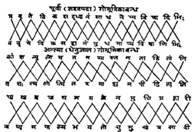
गोमूत्रिका-बन्धके पूर्वोक्त दोनों भेदोंका क्रमशः अर्द्धभागों और अर्द्धपादोंसे विन्यास करना चाहिये॥३८॥
यहाँ क्रमशः नीचे-नीचे विन्यस्त वर्णोंका, नीचे-नीचे स्थित वर्णोंका जबतक चतुर्थ पाद पूर्ण न हो जाय, तबतक नयन करे। चतुर्थ पाद पूर्ण हो जानेपर प्रतिलोमक्रमसे अक्षरोंको पादार्ध-पर्यन्त ऊपर ले जाय। इस तरह तीन प्रकारका ‘सर्वतोभद्र-मण्डल’ बनता है। कमलबन्धके तीन प्रकार हैं—चतुर्दल, अष्टदल और षोडशदल। चतुर्दल कमलको इस प्रकारसे आबद्ध किया जाता है—प्रथम पादके ऊपरी तीन पदोंवाले अक्षर सभी पादोंके अन्तमें रखे जाते हैं। पूर्वपादके अन्तिम वर्णको पिछले पादके आदिमें प्रातिलोम्यक्रमसे रखा जाय। अन्तिम पादके अन्तिम दो अक्षरोंको प्रथम पादके आदिमें निविष्ट किया जाय। यह स्थिति चतुर्दल कमलमें होती है। अष्टदल कमलमें अन्त्य पादके अन्तिम तीन अक्षरोंको प्रथम पादके आदिमें विन्यस्त किया जाता है। षोडशदल कमलमें दो अक्षरोंके बीचमें कर्णिका—मध्यवर्ती एक अक्षरका उच्चारण होता है। कर्णिकाके अन्तमें ऊपर पत्राकार अक्षरोंकी पङ्क्ति लिखे और उसे कर्णिकामें प्रविष्ट कराये। यह बात चतुर्दल कमलके विषयमें कही गयी है। कर्णिकामें एक अक्षर लिखे और दिशाओं तथा विदिशाओंमें दो-दो अक्षर लिखे; प्रवेश और निर्गमका मार्ग प्रत्येक दिशामें रखे। यह बात ‘अष्टदल कमल’ के विषयमें कही गयी है। चारों ओर विषम-वर्णोंका उतनी ही पत्रावली बनाकर न्यास करे और मध्यकर्णिकामें सम अक्षरोंका एक अक्षरके रूपमें न्यास करे। यह बात ‘षोडशदल कमल’ के विषयमें बतायी गयी है। ‘चक्रबन्ध’ दो प्रकारका होता है—एक चार अरोंका और दूसरा छः अरोंका। उनमें जो आदिम, अर्थात् चार अरोंवाला चक्र है, उसके पूर्वार्द्धमें समवर्णोंकी स्थापना करे और प्रत्येक पादके जो प्रथम, पञ्चम आदि विषमवर्ण हैं, उनको एवं चौथे और आठवें, दोनों समवर्णोंको क्रमशः उत्तर, पूर्व, दक्षिण और पश्चिमके अरोंमें रखे॥३९—४९॥
उत्तर पादार्धके चार अक्षरोंको नाभिमें रखे और उसके आदि अक्षरको पिछले दो अरोंमें ले जाय। शेष दो पदोंको नेमिमें स्थापित करे। तृतीय अक्षरको चतुर्थ पादके अन्तमें तथा प्रथम दो समवर्णोंको तीनों पादोंके अन्तमें रखे। यदि दसवाँ अक्षर सम हो तो उसे प्रथम अरेपर रखे और छः अक्षरोंको पश्चिम अरेपर स्थापित करे। वे दो-दोके अन्तरसे स्थापित होंगे। इस प्रकार ‘बृहच्चक्र’ का निर्माण होगा। यह ‘बृहच्चक्र’ बताया गया। सामनेके दो अरोंमें क्रमशः एक-एक पाद लिखे। नाभिमें दशम अक्षर अङ्कित करे और नेमिमें चतुर्थ चरणको ले जाय। श्लोकके आदि, अन्त और दशम अक्षर समान हों तथा दूसरे और चौथे चरणोंके आदि और अन्तिम अक्षर भी समान हों। प्रथम और चौथे चरणके प्रथम, चतुर्थ और पञ्चम वर्ण भी समान हों। द्वितीय चरणको विलोमक्रमसे पढ़नेपर यदि तृतीय चरण बन जाता हो तो उसे पत्रके स्थानमें स्थापित करे तो उस रचनाका नाम ‘दण्डचक्राब्जबन्ध’ समझना चाहिये। पूर्वदल (पूर्वार्द्ध)-में दोनों चरणोंके द्वितीय अक्षर एक समान हों और उत्तरार्द्धमें दोनों चरणोंके सातवें अक्षर समान हों। साथ ही द्वितीय अक्षरोंकी दृष्टिसे भी पूर्वार्द्ध और उत्तरार्द्ध परस्पर समता रखते हों। दूसरे, छठे तथा चौथे, पाँचवें भी एक-दूसरेके तुल्य हों। उत्तरार्द्ध भागके सातवें अक्षर प्रथम और चतुर्थ चरणोंके उन्हीं अक्षरोंके समान हों तो उन तुल्य रूपवाले चतुर्थ और पञ्चम अक्षरकी क्रमशः योजना करनी चाहिये। क्रमपादगत जो चतुर्थ अक्षर हैं, उनको तथा दलान्त वर्णोंको पूर्ववत् स्थापित करना चाहिये। ‘मुरजबन्ध’ में पूर्वार्द्ध और उत्तरार्द्ध दोनोंके अन्तिम और आदि अक्षर समान होते हैं। पादार्द्ध भागमें स्थित जो वर्ण है, उसे प्रातिलोम्यानुलोम्य-क्रमसे स्थापित करे। अन्तिम अक्षरको इस प्रकार निबद्ध करे कि वह चौथे चरणका आदि अक्षर बन जाय। चौथे चरणमें जो आदि अक्षर हो, उससे नवें तथा सोलहवें अक्षरसे पुटकके बीच-बीचमें चार-चार अक्षरोंका निवेश करे। ऐसा करनेसे उस श्लोकबन्धद्वारा मुरज (ढोल)-की आकृति स्पष्ट हो जाती है। द्वितीय चक्र ‘शार्दूलविक्रीडित’ छन्दसे सम्पादित होता है। ‘गोमूत्रिकाबन्ध’ सभी छन्दोंसे निर्मित हो सकता है। अन्य सब बन्ध अनुष्टुप् छन्दसे निर्मित होते हैं। यदि इन बन्धोंमें कवि और काव्यका नाम न हो तो मित्रभाव रखनेवाले लोग संतुष्ट होते हैं तथा शत्रु भी खिन्न नहीं होता। बाण, धनुष, व्योम, खड्ग, मुद्गर, शक्ति, द्विशृङ्गाट, त्रिशृङ्गाट, चतुःशृङ्गाट, वज्र, मुसल, अङ्कुश, रथपद, नागपद, पुष्करिणी, असिपुत्रिका (कटारी या छुरी)—इन सबकी आकृतियोंमें चित्रबन्ध लिखे जाते हैं। ये तथा और भी बहुत-से ‘चित्रबन्ध’ हो सकते हैं, जिन्हें विद्वान् पुरुषोंको स्वयं जानना चाहिये॥५०—६५॥*
* इस अध्याय के अन्तिम बीस-पचीस श्लोकोंका मूल अधिक स्पष्ट नहीं है। इनका आधार अन्वेषणीय है।
इस प्रकार आदि आग्नेय महापुराणमें ‘शब्दालंकारका कथन’ नामक तीन सौ तैंतालीसवाँ अध्याय पूरा हुआ॥३४३॥
१. अनुप्रासका लक्षण अग्निदेवने ‘स्यादावृत्तिरनुप्रासो वर्णानां पदवाक्ययोः।’—इस प्रकार कहा है। इसीका आधार लेकर आचार्य मम्मटने लिखा है कि ‘सरूपवर्णविन्यासमनुप्रासं प्रचक्षते।’ (पूर्वे विद्वांस इति शेषः ।) ‘वर्णसाम्यमनुप्रासः’ । (का०प्र० ९।७९), ‘अनुप्रासः शब्दसाम्यम्।’ (सा० द० १०।३)—ये मम्मट और विश्वनाथकथित लक्षण भी उक्त अभिप्रायके ही पोषक हैं।
२. ‘नाट्यशास्त्र’ १६।४० में भरतने उपमा, दीपक, रूपक और यमक—ये चार ही अलंकार माने हैं। व्यासजीने अनुप्रासका उल्लेख किया है। भामहने अपनेसे पूर्व अनुप्रासकी मान्यता स्वीकार की है। ‘वृत्त्यनुप्रास’ के अग्निपुराणोक्त लक्षणका भाव लेकर भोजराजने ‘सरस्वतीकण्ठाभरण’ में इस प्रकार लिखा है— मुहुरावर्त्यमानेषु यः स्ववर्ग्येषु वर्तते । काव्यव्यापी स संदर्भो वृत्तिरित्यभिधीयते॥ (२।७८) आचार्य मम्मटने ‘एकस्याप्यसकृत्परः’—इस सूत्रभूत वाक्यके द्वारा अग्निपुराणोक्त लक्षणकी ओर ही संकेत किया है। इसी भावको कविराज विश्वनाथने निम्नाङ्कित शब्दोंमें विशद किया है— अनेकस्यैकधा साम्यमसकृद्वाप्यनेकधा । एकस्य सकृदप्येष वृत्त्यनुप्रास उच्यते॥ (१०।४)
३. अग्निपुराणमें जहाँ पाँच वृत्तियोंका उल्लेख है, वहीं परवर्ती आलोचकोंने अन्यान्य वृत्तियोंका भी उत्प्रेक्षण किया है। भोजराजने ‘वृत्ति’ के तीन गुण बताये हैं—सौकुमार्य, प्रौढ़ि और मध्यमत्व। साथ ही वृत्तिके बारह भेदोंका उल्लेख किया है, जिनके नाम इस प्रकार हैं—गम्भीरा, ओजस्विनी, प्रौढ़ा, मधुरा, निष्ठुरा, श्लथा, कठोरा, कोमला, मिश्रा, परुषा, ललिता और अमिता। अग्निपुराणकथित पाँचों वृत्तियाँ भी इनके अन्तर्गत हैं। भद्राके स्थानमें कोमला वृत्ति समझनी चाहिये।
४. भोजराजने ‘मधुरा वृत्ति’ के उदाहरणके रूपमें निम्नाङ्कित श्लोक प्रस्तुत किया है— किञ्जल्कसङ्गिशिञ्जानभृङ्गलाञ्छितचम्पकः । अयं मधुरुपैति त्वां चण्डि पङ्कजदन्तुरः॥ (२।१९३)
१. भोजराजने इसमें तालव्य वर्णोंका भी समावेश माना है। ‘ललिता’ का उदाहरण इस प्रकार है— द्राविडीनां ध्रुवं लीलारेचितभ्रूलते मुखे । आसज्ज्य राज्यभारं स्वं सुखं स्वपिति मन्मथः॥ (सर० कं० २।२००)
२. भोजराजके मतसे इसमें प्रायः मूर्धन्य, अन्तःस्थ तथा संयोगपूर्व गुरुवर्णोंका प्रयोग होता है। यथा— कृत्वा पुंवत्पातमुचैर्भृगुभ्यां मूर्ध्नि ग्राव्णां जर्जरा निर्झरौघाः । कुर्वन्ति द्यामुत्पतन्तं स्मरार्तं स्वर्लोकस्त्रीगात्रनिर्वाणमत्र॥ (सर० कं० २।१९२)
३. कोमला या भद्राका उदाहरण— दारुणरणे रणन्तं करिदारणकारणं कृपाणं ते । रमणकृते रणरणकी पश्यति तरुणीजनो दिव्यः॥ (सर० कं० २।१९७)
४. परुषा । यथा— जह्रे निर्हादिह्रादोऽसौ कह्लाराह्लादितह्रदः । प्रसह्य मह्या गर्ह्यत्वमर्हणार्हः शरन्मरुत्॥ (सर० कं० २।१९९)
५. अग्निपुराणवर्णित इन वृत्तियोंके देश-भेदसे जो बारह भेद हैं, उन्हें भोजराजने ‘सरस्वतीकण्ठाभरण’ में ज्यों-का-त्यों ले लिया है और अपनी ओरसे उनके लक्षण तथा उदाहरण प्रस्तुत किये हैं (द्रष्टव्यः २।७८—८१ कारिकातक)।
६. ‘नाट्यशास्त्र’ में भरतमुनिने ‘शब्दाभ्यासस्तु यमकं पादादिषु विकल्पितम्।’ (१।५९)—इस प्रकार ‘यमक’ का लक्षण किया है। इसीका आशय लेकर व्यासजीने ‘अनेकवर्णावृत्तिर्या भिन्नार्थप्रतिपादिका । यमकं साव्यपेतं च व्यपेतं चेति तद् द्विधा॥’—ऐसा लक्षण किया है। इसीका आश्रय लेकर दण्डीने—‘अव्यपेतव्यपेतात्मा याऽऽवृत्तिर्वर्णसंहतेः । यमकं तत्……॥’—ऐसा लक्षण प्रस्तुत किया है। (काव्यादर्श ३।१) इन्हीं लक्षणोंको आधार बनाकर भोजराजने ‘यमक’ का लक्षण इस प्रकार किया है— विभिन्नार्थैकरूपाया याऽऽवृत्तिर्वर्णसंहतेः । अव्यपेतव्यपेतात्मा यमकं तन्निगद्यते॥ (२।५८)
१. यमकके जो ‘पादान्त यमक’ आदि दस भेद निरूपित हुए हैं, वे ‘नाट्यशास्त्र’ अध्याय
१६, श्लोक ६०—६२ तक ज्यों-के-त्यों उपलब्ध होते हैं तथा श्लोक ६३ से ८६ तक इन सबके लक्षण और उदाहरण भी दिये गये हैं। उन सबको वहीं देखना चाहिये। केवल एक ‘पादान्त-यमक’ का लक्षण और उदाहरण यहाँ दिग्दर्शनमात्रके लिये दिया जाता है। जहाँ चारों पादोंके अन्तमें एक समान अक्षर प्रयुक्त होते हैं, उसे ‘पादान्त-यमक’ जानना चाहिये। जैसे—निम्नाङ्कित श्लोकके चारों पादोंके अन्तमें ‘मण्डल’—इन तीन अक्षरोंकी समानरूपसे आवृत्ति हुई है— दिनक्षयात्संहृतरश्मिमण्डलं दिवीव लग्नं तपनीयमण्डलम् । विभाति ताम्रं दिवि सूर्यमण्डलं यथा तरुण्याः स्तनभारमण्डलम्॥ (१६।६४) आचार्य भामहने यमकके पाँच ही भेद दिये हैं—आदि यमक, मध्यान्त यमक, पादाभ्यास, आवली और समस्तपाद यमक (द्रष्टव्य भामह ‘काव्यालं०’ द्वितीय परिच्छेद)। आचार्य वामनने ‘पाद-यमक’, एक पादके आदिमध्यान्त्य यमक, दो पादोंके आदिमध्यान्त्य यमक, एकान्तर पादान्त यमक, एकान्तर पादादि मध्य यमक, द्विविध अक्षर यमक, त्रिविध भृङ्गमार्ग-शृङ्खला, परिवर्तक और चूर्ण आदि भेद माने हैं।
२. ‘सरस्वतीकण्ठाभरण’ के रचयिता भोजराजने अग्निपुराणके इसी प्रसङ्गमें अपनी सुस्पष्ट वाणीद्वारा इस प्रकार कहा है— विभिन्नार्थैकरूपाया याऽऽवृत्तिर्वर्णसंहतेः। अव्यपेतव्यपेतात्मा यमकं तन्निगद्यते॥ तदव्यपेतयमकं व्यपेतयमकं तथा । स्थानास्थानविभागाभ्यां पादभेदाच्च भिद्यते॥ यत्र पादादिमध्यान्ताः स्थानं तेषुपकल्प्यते । यदव्यपेतमन्यद्वा तत्स्थानयमकं विदुः॥ चतुस्त्रिद्व्येकपादेषु यमकानां विकल्पनाः। आदिमध्यान्तमध्यान्तमध्याद्यन्ताश्च सर्वतः॥ अत्यन्तबहवस्तेषां भेदाः सम्भेदयोनयः । सुकरा दुष्कराश्चैव दृश्यन्ते तत्र केचन॥ (२।५८—६२) उपर्युक्त श्लोकोंके अनुसार यमकोंके भेद इस प्रकार बनते हैं—‘स्थानयमक’ और ‘अस्थानयमक’। स्थानयमकोंमें चतुष्पाद यमक, त्रिपाद यमक, द्विपाद यमक और एकपाद यमक होते हैं। चतुष्पाद यमकोंमें अव्यपेत आदि यमक, अव्यपेत मध्य यमक, अव्यपेत अन्त्य यमक, आदिमध्य यमक, आद्यन्त यमक, मध्यान्त यमक तथा आदिमध्यान्त यमक। त्रिपाद यमकोंमें अव्यपेत आदि यमक, अव्यपेत मध्य यमक, अव्यपेत अन्त्य यमक, मध्य यमक, अन्त्य यमक। द्विपाद यमकोंमें अव्यपेत आदि यमक, अव्यपेत मध्य यमक, अन्त्य यमक, आदिमध्य यमक इत्यादि। एकपाद यमकोंमें अव्यपेत आदि यमक, अव्यपेत अन्त्य यमक, मध्य यमक। इसी प्रकार सकृत् आवृत्ति और असकृत् आवृत्तिमें भी अव्यपेत यमक होता है। ‘अव्यपेत’ का अर्थ है—अव्यवहित और ‘व्यपेत’ का अर्थ है—व्यवधानयुक्त। आवृत्तिकी एकरूपता और अधिकतामें भी अव्यपेत आदि, मध्यादि यमक होने सम्भव हैं। व्यपेत आदि यमक, मध्य यमक, अन्त्य यमक, आदिमध्य यमक, मध्यान्त्य यमक और आदिमध्यान्त्य यमक—ये चतुष्पाद यमकोंमें होते हैं। त्रिपाद और द्विपाद यमकोंमें भी व्यपेत आदि यमक, मध्य यमक और अन्त्य यमक होते हैं। आवृत्तिकी अधिकतामें भी आदि, मध्य यमकके व्यपेतरूप देखे जाते हैं। इसी तरह आवृत्तिकी एकरूपतामें भी आदि, मध्य तथा मध्यान्त्य यमक कविजनोंकी रचनाओंमें उपलब्ध हैं। इन सबमें आवृत्ति व्यवहित होती है, इसलिये इनको ‘व्यपेत यमक’ कहा जाता है। जहाँ आदि, मध्य और अन्तका नियम न हो, ऐसे यमकोंको ‘अस्थानयमक’ कहते हैं। इनके भी व्यपेत और अव्यपेत आदि बहुत-से स्थूल-सूक्ष्म भेद हैं। इन सबका विस्तार ‘सरस्वतीकण्ठाभरण’, द्वितीय परिच्छेदमें देखना चाहिये।
१. चित्रके छः भेद हैं—वर्ण, स्थान, स्वर, आकार, गति और बन्ध। वर्णचित्रके चतुर्व्यञ्जन, त्रिव्यञ्जन, द्विव्यञ्जन, एकव्यञ्जन, क्रमस्थसर्वव्यञ्जन, छन्दोऽक्षरव्यञ्जन, षड्जादिस्वरव्यञ्जन, मुरजाक्षर व्यञ्जन । चतुःस्थान चित्रोंमें निष्कण्ठ्य, निस्तालव्य, निर्दन्त्य, निरोष्ठ्य, निर्मूर्धन्य । चतुःस्वरोंमें दीर्घस्वर, प्रतिव्यञ्जनविन्यस्त स्वर, अपास्तसमस्तस्वर । आकार-चित्रोंमें अष्टदल कमल, चतुर्दल कमल, षोडशदल कमल, चक्र, चतुरङ्क। गतिचित्रोंमें गतप्रत्यागत, तुरङ्गपद, अर्द्धभ्रम, श्लोकार्द्धभ्रम, सर्वतोभद्र। बन्धचित्रोंमें द्विचतुष्कचक्रबन्ध, द्विशृङ्गारबन्धक, विविडितबन्ध, षड्यन्त्रबन्ध, व्योमबन्ध, गोमूत्रिकाबन्ध, मुरजबन्ध, एकाक्षर मुरजबन्ध, मुरजप्रस्तार, पादगोमूत्रिका, अयुग्मपादगोमूत्रिका, युग्मपादगोमूत्रिका, श्लोकगोमूत्रिका, विपरीतगोमूत्रिका, भिन्नछन्दोगोमूत्रिका, संस्कृतप्राकृतगोमूत्रिका, अर्धमूत्रिकाप्रस्तार, गोमूत्रिकाधेनु, शतधेनु, सहस्रधेनु, अयुतधेनु, लक्षधेनु, कोटिधेनु, कामधेनु इत्यादि परिगणित चित्रोंके अतिरिक्त भी अनेक बन्ध होते हैं, जैसे—शरबन्ध, धनुर्बन्ध, मुसलबन्ध, खङ्गबन्ध, क्षुरिकाबन्ध आदि। इनके अतिरिक्त भी अनेकानेक बन्ध विद्वानोंद्वारा ऊहनीय हैं। चित्रकाव्योंकी चर्चा दण्डीके ‘काव्यादर्श’ में भी मिलती है और भोजराजने ‘सरस्वतीकण्ठाभरण’ में उनका विस्तारपूर्वक विवेचन किया है। २. भोजराजके मतमें ‘प्रहेलिका’ के छः भेद यों होते हैं—च्युताक्षरा, दत्ताक्षरा, च्युतदत्ताक्षरा, अक्षरमुष्टिका, विन्दुमोती तथा अर्थवती। (सरस्वतीकण्ठाभरण, परिच्छेद २।१३३)
तीन सौ चौवालीसवाँ अध्याय
अर्थालंकारोंका निरूपण
अग्निदेव कहते हैं—वसिष्ठ! अर्थोंका अलंकरण* ‘अर्थालंकार’ कहा जाता है। उसके बिना शब्द-सौन्दर्य भी मनको आकर्षित नहीं करता है। अर्थालंकारसे हीन सरस्वती विधवाके समान शोभाहीन है। अर्थालंकारके आठ भेद माने गये हैं—स्वरूप, सादृश्य, उत्प्रेक्षा, अतिशय, विभावना, विरोध, हेतु और सम। पदार्थोंके स्वभावको ‘स्वरूप’ कहते हैं। उसके दो भेद बतलाये गये हैं—‘निज’ एवं ‘आगन्तुक’। सांसिद्धिकको ‘निज’ तथा नैमित्तिकको ‘आगन्तुक’ कहा जाता है। धर्मकी समानताको ‘सादृश्य’ कहते हैं। वह भी उपमा, रूपक, सहोक्ति तथा अर्थान्तरन्यासके भेदसे चार प्रकारका होता है। जिसमें भेद और सामान्यधर्मके साथ उपमान एवं उपमेयकी सत्ता हो, उसको ‘उपमा’१ कहते हैं; क्योंकि यत्किंचिद्विवक्षित सारूप्यका आश्रय लेकर ही लोकयात्रा प्रवर्तित होती है। प्रतियोगी (उपमान)-के समस्त और असमस्त होनेसे उपमा दो प्रकारकी मानी गयी है—‘ससमासा’ एवं ‘असमासा’। ‘घन इव श्यामः’ इत्यादि पदोंमें समासके कारण वाचक शब्दके लुप्त होनेसे ‘ससमासा उपमा’ कही गयी है, इससे भिन्न प्रकारकी उपमा ‘असमासा’ है। कहीं उपमाद्योतक ‘इवादि’ पद, कहीं उपमेय और कहीं दोनोंके विरहसे ‘ससमासा’ उपमाके तीन भेद होते हैं। इसी प्रकार ‘असमासा’ उपमाके भी तीन भेद हैं। विशेषणसे युक्त होनेपर उपमाके अठारह भेद होते हैं। जिसमें साधारण धर्मका कथन या ज्ञान होता है—उपमाके उस भेदविशेषको धर्म या वस्तुकी प्रधानताके कारण ‘धर्मोपमा’२ एवं ‘वस्तूपमा’३ कहा जाता है। जिसमें उपमान और उपमेयकी प्रसिद्धिके अनुसार परस्पर तुल्य उपमा दी जाती है, वह ‘परस्परोपमा’४ होती है। प्रसिद्धिके विपरीत उपमान और उपमेयकी विषमतामें जब उपमा दी जाती है, तब वह ‘विपरीतोपमा’५ कहलाती है। उपमा—जहाँ एक वस्तुसे ही उपमा देकर अन्य उपमानोंका व्यावर्तन-निराकरण किया जाता है, वहाँ ‘नियमोपमा’६ होती है। यदि उपमेयके गुणादि धर्मकी अन्य उपमानोंमें भी अनुवृत्ति हो तो उसे ‘अनियमोपमा’७ कहते हैं॥१—१२॥
* ‘अलंकार’ शब्दकी व्युत्पत्ति तीन प्रकारसे उपलब्ध होती है—(१) ‘अलंकरणमलंकारः।’ (२) ‘अलंक्रियते अनेन इति वा अलंकारः।’ (३) ‘अलंकरोति इति अलंकारः’ । प्रथम व्युत्पत्तिके अनुसार ‘अलंकार’ शब्द भावघञन्त है। दूसरीके अनुसार करणदञन्त तथा तीसरीके अनुसार कर्त्रर्थप्रधान ‘अण्’—प्रत्ययान्त है। ‘अलंकरणमर्थानामर्थालंकार इष्यते।’—यों कहकर अग्निपुराणमें भावघञन्त ‘अलंकार’ शब्दकी ही व्युत्पत्ति प्रदर्शित की गयी है। दण्डीने काव्य-शोभाकारी धर्मोंको ‘अलंकार’ कहा है (काव्यादर्श २।१)। वामनके मतमें सौन्दर्य और अलंकार पर्यायवाची शब्द हैं [सौन्दर्यमलंकारः १।२]। इन दोनोंने क्रमशः करणदञन्त और भावघञन्त व्युत्पत्ति स्वीकार की है। किसी भी व्युत्पत्तिके अनुसार अर्थोंका अलंकरण ही ‘अर्थालंकार’ है, इस मान्यतामें कोई बाधा नहीं आती। अतः दण्डी और वामनपर भी अग्निपुराणका ही प्रभाव मानना चाहिये। भामहने ‘अलंकार’ शब्दकी कोई सुस्पष्ट व्युत्पत्ति नहीं दी है। अतः उपर्युक्त व्युत्पत्तियोंपर अग्निपुराणोक्त व्युत्पत्तिका ही प्रभाव परिलक्षित होता है। मम्मटने ‘उपकुर्वन्ति तं सन्तं येऽङ्गद्वारेण जातुचित्।’—ऐसा लिखकर ‘अलंकार’ शब्दकी तीसरी व्युत्पत्ति स्वीकार की है। जैसे हार आदि शरीरके अलंकरणद्वारा शरीरीको अलंकृत करते हैं, उसी प्रकार उपमा आदि अलंकार काव्यके अलंकरणद्वारा काव्यात्मा रसका अलंकरण बनते हैं। अतः वे रसके उपकारी हैं। विश्वनाथका भी ऐसा ही मत है। भोजराजने—‘अलमर्थमलंकर्तुं यद्व्युत्पत्त्यादिवर्त्मना’ इत्यादि लिखकर अग्निपुराणोक्त मतका ही अनुकरण किया है। अलंकारोंकी संख्याके विषयमें अनेक मत उपलब्ध होते हैं। भरतमुनिके ‘नाट्यशास्त्र’ में उपमा, दीपक, रूपक तथा यमक—केवल इन चार अलंकारोंका ही उल्लेख है—‘उपमा दीपकं चैव रूपकं यमकं तथा । काव्यस्यैते ह्यलंकाराश्चत्वारः परिकीर्तिताः॥’ (ना० शा० १६।४३) यद्यपि भूषण, अक्षरसंघात, शोभा और उदाहरण आदि छत्तीस अलंकार ‘नाट्यशास्त्र’ में लक्षणसहित लिखे गये हैं तथापि वे विशेषतः नाट्योपयोगी हैं। उनका काव्यबन्धोंमें भी यथासम्भव प्रयोग करनेकी प्रेरणा दी गयी है, तथापि काव्य-सम्बन्धी अलंकार चार ही भरतमुनिको पूर्वपरम्परासे प्राप्त रहे हैं, जिनका उन्होंने ‘परिकीर्त्तिताः’—कहकर स्पष्टीकरण किया है। वामनने अलंकारोंके तैंतीस भेद दिखलाये हैं। दण्डीने पैंतीस, भामहने उनतालीस और उद्भटने चालीस प्रकारके अलंकारोंका वर्णन किया है। रुद्रटने अपने ‘काव्यालंकार’ में बावन तथा मम्मटने सड़सठ अलंकारभेद दिखलाये हैं। जयदेवके ‘चन्द्रालोक’ में अलंकारोंकी संख्या सौ हो गयी है और अप्पय्य दीक्षितके ‘कुवलयानन्द’ में वह संख्या बढ़कर एक सौ चौबीसतक पहुँच गयी है। सरस्वतीकण्ठाभरणकारने शब्दालंकार, अर्थालंकार और शब्दार्थोभयालंकार—इन तीन भेदोंमें अलंकारोंका विभाजन करके तीनोंकी ही पृथक्-पृथक् चौबीस-चौबीस संख्याएँ स्वीकार की हैं। इस प्रकार उन्होंने बहत्तर अलंकारोंके लक्षण और उदाहरण प्रस्तुत किये हैं। साहित्यदर्पणकारने सतहत्तर अर्थालंकारोंका उल्लेख करके उन सबके सोदाहरण लक्षण दिये हैं। इन सभी अलंकारोंके अवान्तरभेद और सांकर्यभेदसे इन सबकी संख्या बहुत अधिक हो जाती है। अग्निपुराणमें अर्थालंकारके मूलतः आठ भेद माने हैं—स्वरूप, सादृश्य, उत्प्रेक्षा, अतिशय, विभावना, विरोध, हेतु और सम। फिर स्वरूपके दो भेद, सादृश्यके चार भेद, अतिशयके दो भेद और विभावनाके साथ विशेषोक्तिको जोड़कर दो भेद किये हैं। सादृश्यके चार भेद—उपमा, रूपक, सहोक्ति और अर्थान्तरन्यास बताकर उपमाके लगभग उनतीस भेदोंका उल्लेख किया है। इन भेदोंमें ही अन्य बहुत-से अलंकार समाविष्ट हो गये हैं, जो दूसरे-दूसरे नामोंसे व्यवहृत होते हैं। उन्होंने उपमाके जो अन्तिम पाँच भेद लिखे हैं, उनके नाम हैं—प्रशंसा, निन्दा, कल्पिता, सदृशी और किंचित्सदृशी। ये भेद भरतमुनिके ‘नाट्यशास्त्र’ में भी वर्णित हैं और वहाँ उनके लक्षण तथा उदाहरण भी दिये गये हैं। अग्निपुराणमें उनके नाममात्रका संकलन वहींसे किया गया है, ऐसा जान पड़ता है।
एकसे भिन्न धर्मोंके बाहुल्यका कीर्तन होनेसे ‘समुच्चयोपमा’८ होती है। जहाँ अनेक धर्मोंकी समानता होनेपर भी उपमानसे उपमेयकी विलक्षणता विवक्षित हो और इसके कारण जो अतिरिक्तत्वका कथन होता है, उसे ‘व्यतिरेकोपमा’१ कहते हैं। जहाँ बहुसंख्यक सदृश उपमानोंद्वारा उपमा दी जाय, उसे ‘बहूपमा’२ माना गया है। यदि उनमेंसे प्रत्येक उपमान भिन्न-भिन्न साधारण धर्मोंसे युक्त हो तो उसे ‘मालोपमा’३ कहा जाता है। उपमेयको उपमानका विकार बताकर तुलना की जाय तो ‘विक्रियोपमा’४ होती है। यदि कवि उपमानमें किसी ऐसे वैशिष्ट्यका, जो तीनों लोकोंमें असम्भव हो, आरोप करके उसके द्वारा उपमा देता है, तो वह ‘अद्भुतोपमा’५ कही जाती है। उपमानको आरोपित करके उससे अभिन्नरूपमें जो उपमेयका कीर्तन होता है और उससे जो भ्रम होनेका वर्णन किया जाता है, उसे ‘मोहोपमा’६ कहा जाता है। दो धर्मियोंमेंसे किसी एकका यथार्थ निश्चय न होनेसे ‘संशयोपमा’७ तथा पहले संशय होकर फिर निश्चय होनेसे ‘निश्चयोपमा’८ होती है। जहाँ वाक्यार्थको उपमान बनाकर उससे ही वाक्यार्थकी उपमा दी जाय, उसको ‘वाक्यार्थोपमा’९ कहते हैं। यह उपमा अपने उपमानकी दृष्टिसे दो प्रकारकी होती है—‘साधारणी’ और ‘अतिशायिनी’। जो एकका उपमेय है, वही दूसरेका उपमान हो, अर्थात् दोनों एक-दूसरेके उपमान-उपमेय कहे गये हों तो उसे ‘अन्योन्योपमा’१ कहते हैं। इस प्रकार यदि उत्तरोत्तर क्रम चलता जाय तो उसको ‘गमनोपमा’२ कहा जाता है। इसके सिवा उपमाके और भी पाँच भेद होते हैं—‘प्रशस्त’३ ‘निन्दा’४ ‘कल्पिता’५ ‘सदृशी’६ एवं ‘किंचित्सदृशी’७। गुणोंकी समानता देखकर उपमेयका जो तत्त्व उपमानसे रूपित अभेदेन प्रतिपादित होता है, उसे ‘रूपक’८ मानते हैं। अथवा भेदके तिरोहित होनेपर उपमा ही ‘रूपक’ हो जाती है। तुल्यधर्मसे युक्त दो पदार्थोंका एक साथ रहनेका वर्णन ‘सहोक्ति’९ कहा जाता है॥१३—२३॥
पूर्ववर्णित वस्तुके समर्थनके लिये साधर्म्य अथवा वैधर्म्यसे जो अर्थान्तरका उपन्यास किया जाता है, उसे ‘अर्थान्तरन्यास’१० कहते हैं। जिसमें चेतन या अचेतन पदार्थकी अन्यथास्थित परिस्थितिको दूसरी तरहसे माना जाता है, उसको ‘उत्प्रेक्षा’११ कहते हैं। लोकसीमातीत वस्तु-धर्मका कीर्तन ‘अतिशयालंकार’१ कहलाता है। यह ‘सम्भव’ और ‘असम्भव’ के भेदसे दो प्रकारका माना जाता है। जिसमें विशेष्यदर्शनके लिये गुण, जाति एवं क्रियादिकी विकलताका प्रदर्शन—अनपेक्षताका प्रकाशन हो, उसको ‘विशेषोक्ति’२ कहा जाता है। जिसमें प्रसिद्ध हेतुकी व्यावृत्तिपूर्वक (अर्थात् उसका अभाव दिखाते हुए) अन्य किसी कारणकी उद्भावना की जाय अथवा स्वाभाविकता स्वीकार की जाय अर्थात् बिना किसी कारणके ही स्वाभाविक रूपसे कार्यकी उत्पत्ति मानी जाय, उसे विभावना३ कहते हैं। परस्पर असंगत पदार्थोंका जहाँ युक्तिके द्वारा विरोधपूर्वक संगतिकरण किया जाय, वह ‘विरोधालंकार’४ होता है। जिसकी सिद्धि अभिलषित हो, ऐसे अर्थका साधक ‘हेतु’१ अलंकार कहलाता है। उस ‘हेतु’ अलंकारके भी ‘कारक’ एवं ‘ज्ञापक’—ये दो भेद हो जाते हैं। इनमें कारक-हेतु कार्य-जन्मके पूर्वमें और पश्चात् भी रहनेवाला है, जो ‘पूर्वशेष’ कहा जाता है और उन्हीं भेदोंमें कार्य-कारणभावसे अथवा किसी नियामक स्वभावसे या अविनाभावके दर्शनसे जो अविनाभावका नियम होता है वह ज्ञापक हेतुका भेद है। ‘नदीपूर’ आदिका दर्शन ज्ञापकका उदाहरण है२॥२४—३२॥
इस प्रकार आदि आग्नेय महापुराणमें ‘अर्थालंकारका वर्णन’ नामक तीन सौ चौवालीसवाँ अध्याय पूरा हुआ॥३४४॥
१. उपमाका अग्निपुराणोक्त लक्षण बहुत ही सीधा-सादा और स्पष्ट है। भरतमुनिने सादृश्यमूलक सभी अलंकारोंका ‘उपमा’ नाम दिया है—‘यत्किंचित् काव्यबन्धेषु सादृश्येनोपमीयते । उपमा नाम सा ज्ञेया।’ (१६।४१) व्यासजीने अपने लक्षणमें उपमान, उपमेय, सामान्य धर्म और भेदका उल्लेख किया है। भामहने भी इसीको आधार बनाकर ‘यथेवशब्दौ सादृश्यमाहतुर्व्यतिरेकिणोः’—ऐसा लक्षण किया है। इसमें वाचक शब्द, सामान्य धर्म तथा भेद—तीनका उल्लेख किया है। उपमानोपमेयका होना तो स्वतःसिद्ध है। वामनने ‘उपमानोपमेयस्य गुणलेशतः साम्यमुपमा।’—इस सूत्रके द्वारा उक्त अभिप्रायका ही पोषण किया है। दण्डीने जहाँ किसी तरह भी सादृश्यकी स्पष्ट प्रतीति होती हो, उसे ‘उपमा’ कहा है। मम्मटने ‘साधर्म्यमुपमा भेदे’, विश्वनाथने ‘साम्यं वाच्यमवैधर्म्यं वाक्यैक्यं उपमा द्वयोः।’ तथा भोजराजने ‘प्रसिद्धेरनुरोधेन यः परस्परमर्थयोः । भूयोऽवयवसामान्ययोगः सेहोपमा मता॥’—ऐसा लक्षण किया है। इन सबने पूर्ववर्ती आचार्योंके ही मतोंका उपपादन किया है।
२. दण्डीने अपने ‘काव्यादर्श’ में अग्निपुराण-कथित उपमाके इन भेदोंको ग्रहण किया है और इनके सोदाहरण लक्षण भी दिये हैं। जहाँ मुख्यतया तुल्यधर्मका प्रदर्शन किया गया, वहाँ ‘धर्मोपमा’ होती है। जैसे ‘तुम्हारी हथेली कमलके समान लाल है’—इसमें लालिमारूपी धर्मका स्पष्ट कथन होनेसे यहाँ ‘धर्मोपमा’ है।
३. जिसमें शब्दसे अनुपात्त-प्रतीयमान साधारण धर्म हो, केवल उपमान वस्तुका प्रतिपादन होनेसे वहाँ ‘वस्तूपमा’ होती है। जैसे—‘तुम्हारा मुख कमलके समान है।’
४. ‘परस्परोपमा’ का दूसरा नाम ‘अन्योन्योपमा’ है। दण्डीने इसी नामसे इसका उल्लेख किया है। जहाँ उपमान और उपमेय—दोनों एक-दूसरेके उपमेय तथा उपमान बनते है, वहाँ ‘परस्परोपमा’ होती है। जैसे—‘तुम्हारे मुखके समान कमल है और कमलके समान तुम्हारा मुख है।’
५. दण्डीने अपने ‘काव्यादर्श’ में विपरीतोपमाका ‘विपर्यासोपमा’ के नामसे उल्लेख किया है। जहाँ प्रसिद्धिके विपरीत उपमानोपमेयभाव गृहीत होता है, वहाँ ‘विपरीतोपमा’ होती है। जैसे—‘खिला हुआ कमल तुम्हारे मुखके समान प्रतीत होता था’—इत्यादि।
६. दण्डीने इसका उदाहरण इस प्रकार प्रस्तुत किया है—‘तुम्हारा मुख कमलके ही समान है, दूसरी किसी वस्तुके समान नहीं।’
७. इसका उदाहरण दण्डीके ‘काव्यादर्श’ में इस प्रकार दिया गया है—‘कमल तो तुम्हारे मुखका अनुकरण करता ही है, यदि दूसरी वस्तुएँ (चन्द्र आदि) भी तुम्हारे मुखके समान हैं तो रहें।’
८. ‘समुच्चयोपमा’ का उदाहरण दण्डीने इस प्रकार किया है—‘सुन्दरि! तुम्हारा मुख केवल कान्तिसे ही नहीं, आह्लादनकर्मसे भी इन्दुका अनुसरण करता है।’ यहाँ कान्तिगुण और आह्लादनकर्म—दोनोंका समुच्चय होनेके कारण ‘समुच्चयोपमा’ कही गयी है।
१. ‘व्यतिरेकोपमा’ को ही अर्वाचीन आलंकारिकोंने ‘व्यतिरेक’ नामक अलंकार माना है। दण्डीने इसका उल्लेख नहीं किया है। परंतु रुय्यक और मम्मटने इसका उदाहरण यों दिया है—‘चन्द्रमा बारंबार क्षीण हो-होकर भी पुनः बढ़ जाता है; परंतु यौवन यदि चला गया तो फिर लौटता नहीं।’ इसमें उपमानभूत चन्द्रमाकी अपेक्षा उपमेय यौवनकी अस्थिरता अधिक बतायी गयी है। अतः यहाँ ‘व्यतिरेक’ है।
२. ‘तुम्हारा स्पर्श चन्दन, जल, चन्द्रकिरण तथा चन्द्रकान्तमणि आदिके समान शीतल है’। यहाँ शीतलतामें सादृश्य रखनेवाले बहुत-से उपमानोंद्वारा उपमा दी गयी है, अतः ‘बहूपमा’ अलंकार है। दण्डीने अपने ‘काव्यादर्श’ में यही उदाहरण प्रस्तुत किया है। अर्वाचीन आचार्यलोग इसे ‘मालोपमा’ ही मानते हैं। उनकी ‘मालोपमा’ का लक्षण इस प्रकार है—मालोपमा यदेकस्योपमानं बहु दृश्यते।’ ३. काव्यादर्शकार दण्डीने अग्निपुराणके ही पथका अनुसरण करते हुए ‘बहूपमा’ और ‘मालोपमा’ को अलग-अलग माना है। ‘बहूपमा’ के उदाहरणमें बहुत-से उपमानोंकी गणनामात्र करा दी गयी है, परंतु ‘मालोपमा’ में प्रत्येक उपमानके साथ साधर्म्यका अन्वय होता है। यही इन दोनोंमें भेद है। ‘मालोपमा’ का उदाहरण दण्डीने इस प्रकार प्रस्तुत किया है—‘राजन्! जैसे प्रकाश सूर्यमें शोभाका आधान करता है, जैसे सूर्य दिनमें लक्ष्मीका आधान करते हैं तथा जैसे दिन आकाशमें प्रकाश फैलाता है, उसी प्रकार तुम्हारा बल, पराक्रम तुममें लक्ष्मीको प्रतिष्ठित करता है।’ यहाँ प्रत्येक उपमानके साथ पृथक्-पृथक् साधर्म्यका अन्वय होनेसे ‘मालोपमा’ मानी गयी है।
४. ‘काव्यादर्श’ में ‘विक्रियोपमा’ का उदाहरण इस प्रकार उपलब्ध होता है—‘सुन्दरि! तुम्हारा मुख चन्द्रमण्डलसे उत्कीर्ण (खोदकर निकाला हुआ)-सा तथा कमलके गर्भसे उद्धृत किया हुआ-सा जान पड़ता है।’ यहाँ चन्द्रमण्डल तथा कमलगर्भ—ये प्रकृति हैं और मुख इनका विकार है। अतः यहाँ ‘विक्रियोपमा’ हुई।
५. इसका उदाहरण दण्डीने इस प्रकार प्रस्तुत किया है—‘सुन्दरि! यदि कोई कमल चञ्चल लोचनोंसे युक्त हो जाय तो वह तुम्हारे मुखकी शोभाको धारण कर सकता है।’
६. “सुन्दरि! मैं तुम्हारे मुखको ‘यह चन्द्रमा है’—यों समझ लेता हूँ और तुम्हारे मुखके दर्शनकी आशासे बारंबार चन्द्रमाकी ओर दौड़ पड़ता हूँ।” यह वर्णन अग्निपुराणोक्त लक्षणको सामने रखकर किया गया है। अर्वाचीन आलंकारिक ‘मोहोपमा’ को ‘भ्रान्तिमान्’ अलंकारकी संज्ञा देते हैं।
७. दण्डीने ‘संशयोपमा’ का जो उदाहरण दिया है, उसका भावार्थ इस प्रकार है—जिसके भीतर भ्रमर मँडरा रहा हो, वह कमल है या कि चञ्चल लोचनोंसे युक्त तुम्हारा मुख है, इस संशयसे मेरा चित्त दोलायमान हो रहा है।’ आधुनिक आलंकारिक इसीको ‘संदेहालंकार’ कहते हैं।
८. दण्डीने इसे ‘निर्णयोपमा’ नाम दिया है। उनके द्वारा प्रस्तुत उदाहरण इस प्रकार है—‘जिस कमलको चन्द्रमाने अभिभूत कर दिया था, उसकी कान्ति स्वयं चन्द्रमाको ही लज्जित कर दे, ऐसा नहीं हो सकता। अतः यह तुम्हारा मुख ही है (कमल नहीं है)।’ अर्वाचीन आचार्यगण इसे ‘निश्चयान्त संदेहालंकार’ ही मानते हैं।
९. दण्डीने भी ‘वाक्यार्थोपमा’ का ऐसा ही लक्षण किया है। वे भी इसके दो ही भेद मानते हैं। परंतु उनके दोनों भेदोंके नाम अग्निपुराणमें दिये गये नामोंसे भिन्न हैं। अग्निपुराणमें ‘साधारणी’ और ‘अतिशायिनी’—ये दो भेद माने हैं, परंतु दण्डीने ‘एकेवशब्दा’ और ‘अनेकेवशब्दा’—इस प्रकार दो भेदोंका उल्लेख किया है। इनके उदाहरण ‘काव्यादर्श’ (२।४४-४५) में द्रष्टव्य हैं।
१. काव्यादर्शमें इसका उदाहरण इस प्रकार प्रस्तुत किया गया है—‘तुम्हारे मुखके समान कमल है और कमलके समान तुम्हारा मुख है।’ इसे ही ‘उपमेयोपमा’ भी कहते हैं।
२. काव्यादर्शकारने ‘गमनोपमा’ का उल्लेख नहीं किया है। अग्निपुराणमें दिये गये लक्षणके अनुसार हम ‘गमनोपमा’ को ‘अन्योन्योपमा’ की माला कह सकते हैं। उदाहरणके लिये निम्नाङ्कित श्लोक द्रष्टव्य है— कौमुदीव भवती विभाति मे कातराक्षि भवतीव कौमुदी । अम्बुजेन तुलितं विलोचनं लोचनेन च तवाम्बुजं समम्॥ ३—७. इससे पहले उपमाके अठारह भेद कहे गये हैं। इन्हीं भेदोंका विस्तार करके दण्डीने बत्तीस प्रकारकी उपमाएँ प्रदर्शित की हैं। उक्त भेदोंके अतिरिक्त जो उपमाके ‘प्रशंसा’ आदि पाँच भेद और कहे गये हैं, उनका आधार है—भरतका ‘नाट्यशास्त्र’ (द्रष्टव्य १६।४६)। भरतमुनिने प्रशंसा आदि पाँचों भेदोंके जो उदाहरण दिये हैं, वे भी सोलहवें अध्याय
के श्लोक सैंतालीससे इक्यावनतक द्रष्टव्य हैं।
८. अग्निपुराणोक्त ‘रूपक’ का लक्षण नाट्यशास्त्रोक्त लक्षणका संक्षिप्त रूप है। अग्निपुराणके ही भावको लेकर दण्डीने ‘उपमैव तिरोभूतभेदा रूपकमुच्यते’—ऐसा लक्षण किया है। अर्वाचीन आलंकारिकोंने ‘रूपक’ के बहुत-से भेदों और उपभेदोंकी चर्चा की है। ‘रूपक’ का उदाहरण ‘नाट्यशास्त्र’ १६।५८ में द्रष्टव्य है।
९. दण्डीने गुण और क्रियाका सहभावसे कथन ‘सहोक्ति’ माना है और ‘सह दीर्घा मम श्वासैरिमाः सम्प्रति रात्रयः।’ (इस समय मेरी लम्बी साँसोंके साथ ये रातें भी बहुत बड़ी हो गयी हैं) ऐसा उदाहरण दिया है।
१०. अर्थान्तरन्यासका जो लक्षण अग्निपुराणमें दिया गया है, लगभग इसीकी छायाको लेकर भामहने इस प्रकार अपने ग्रन्थमें उक्त अलंकारका लक्षण लिखा है— उपन्यसनमन्यस्य यदर्थस्योदितादृते । ज्ञेयः सोऽर्थान्तरन्यासः पूर्वार्थानुगतो यथा॥ (का०२।७१) वामनने इसमें सादृश्य, असादृश्य (साधर्म्य, वैधर्म्य)-की चर्चा नहीं की है, परंतु ‘पूर्वार्धानुगतः’—यह विशेषण देकर उसी अर्थको व्यक्त किया है। अर्थात् जिस अर्थान्तरका उपन्यास किया जाय, वह पूर्वोदित अर्थका अनुगामी होना चाहिये। यह अनुगमन सादृश्य अथवा वैसादृश्यसे ही सम्भव है। वामनने अग्निपुराण तथा भामहके भावोंको अपने सूत्रमें और भी अधिक स्पष्ट किया है। यथा— उक्तसिद्धयै वस्तुनोऽर्थान्तरस्यैव न्यसनमर्थान्तरन्यासः॥ (का०सू० ४।३।२१) काव्यादर्शकार दण्डीने इसके लक्षणको और भी स्वच्छरूपसे प्रस्तुत किया है। यथा—ज्ञेयः सोऽर्थान्तरन्यासो वस्तु प्रस्तुत्य किंचन । तत्साधनसमर्थस्य न्यासो योऽन्यस्य वस्तुनः॥ (२।१६९) आचार्य मम्मटतक पहुँचते-पहुँचते इसका लक्षण पूर्णतः निखर उठा है। वे लिखते हैं— सामान्यं वा विशेषो वा तदन्येन समर्थ्यते । यत्तु सोऽर्थान्तरन्यासः साधर्म्येणेतरेण या॥ (का०प्र० १०।१०९) अर्थात्—सामान्य अथवा विशेषका उससे भिन्न विशेष और सामान्यसे जो समर्थन किया जाता है, वह ‘अर्थान्तरन्यास’ है। यह समर्थन साधर्म्य अथवा वैधर्म्यको लेकर किया जाता है। इस प्रकार अर्थान्तरन्यासके चार भेद होते हैं। इनके उदाहरण काव्यप्रकाशमें द्रष्टव्य हैं।
११. इसी लक्षणको कुछ और विशद करते हुए भामहने इस प्रकार कहा है— अविवक्षितसामान्या किंचिच्चोपमया सह । अतद्गुणक्रियायोगादुत्प्रेक्षातिशयान्विता॥ (का० २।९१) वामनने अग्निदेव तथा भामह—दोनोंके भावोंको अपने सूत्रमें इस प्रकार संकलित किया है— अतद्रूपस्यान्यथाध्यवसानमतिशयार्थमुत्प्रेक्षा॥ (का० सू० ४।३।९) दण्डीका लक्षण इस प्रकार है— अन्यथैव स्थिता वृत्तिश्चेतनस्येतरस्य वा । अन्यथोत्प्रेक्ष्यते यत्र तामुत्प्रेक्षां विदुर्यथा॥ (२।२२१) यही लक्षण अग्निपुराणमें भी है। दण्डीने उसे ज्यों-का-त्यों ले लिया है। अन्तर केवल इतना ही है कि अग्निपुराणमें ‘मन्यते’ क्रियाका प्रयोग है और काव्यादर्शमें ‘उत्प्रेक्ष्यते’ क्रियाका। आचार्य मम्मटने थोड़े-से शब्दोंमें ही उत्प्रेक्षाका सर्वसम्मत रूप रख दिया है। यथा— ‘सम्भावनमथोत्प्रेक्षा प्रकृतस्य समेन यत्।’ (का० प्र० १०।९२) अर्थात्—“प्रकृत (वर्ण्य उपमेय)-की सम (उपमान)-के साथ सम्भावना ‘उत्प्रेक्षा’ कहलाती है।”
१. यह अतिशय ही आगे चलकर ‘अतिशयोक्ति’ के नामसे प्रसिद्ध हुआ है। अग्निपुराणके इस सूक्ष्म लक्षणको आचार्य भामहने विशद करते हुए कहा है कि—किसी “कारणवश लोकोत्तर अर्थका बोधक जो वचन है, उसे ‘अतिशयोक्ति’ अलंकार मानते हैं। वामनने इसके असम्भव-पक्षको नहीं लिया है। वे सम्भाव्य धर्म तथा उसके उत्कर्षकी कल्पनाको ही ‘अतिशयोक्ति’ मानते हैं (४।३।१०)। लोकसीमातीत होनेपर ही वस्तुधर्ममें उत्कर्ष सिद्ध होता है। आचार्य दण्डीने अग्निपुराणोक्त लक्षणके केवल भावकी ही नहीं, शब्दकी भी छाया ली है। यथा— विवक्षा या विशेषस्य लोकसीमातिवर्त्तिनी । असावतिशयोक्तिः स्यादलंकारोत्तमा यथा॥ (काव्यादर्श २।२१४) आचार्य मम्मटके द्वारा ‘अतिशयोक्ति’ का विकसित स्वरूप इस प्रकार प्रस्तुत किया गया है। उपमानके द्वारा उपमेयका निगरण करके जो कल्पित अभेद-कथनरूप अध्यवसान करना है, वह एक प्रकारकी ‘अतिशयोक्ति’ है। प्रस्तुत अर्थका अन्यरूपसे वर्णन द्वितीय प्रकारकी, ‘यदि’ के समानार्थक शब्दको लगाकर की गयी कल्पना तृतीय प्रकारकी और कार्य-कारणके पौर्वापर्यका विपर्यय चतुर्थ प्रकारकी ‘अतिशयोक्ति’ है। (का० प्र० १०।१००-१०१)
२. दण्डीके ‘काव्यादर्श’ में अग्निपुराणकी ही शब्दावलीमें ‘विशेषोक्ति’ लक्षित करायी गयी है। भामहने भी अग्निपुराणके ही भाव तथा शब्दकी छाया ली है। यथा— एकदेशस्य विगमे या गुणान्तरसंस्थितिः । विशेषप्रथनायासौ विशेषोक्तिर्मता यथा॥ (३।२३) वामनने भी ‘एकगुणहानिकल्पनायां साम्यदार्ढ्यं विशेषोक्तिः।’—इस सूत्रमें ऐसा ही भाव व्यक्त किया है। अर्वाचीन आलंकारिकोंने “कारण प्राप्त होनेपर भी जो कार्यका न होना बताया जाय, उसे ‘विशेषोक्ति’ कहा है।” जैसा कि आचार्य मम्मटका कथन है— ‘विशेषोक्तिरखण्डेषु कारणेषु फलावचः॥’ (१०।१०८)
३. काव्यादर्शकार दण्डीने अग्निपुराणमें दिये गये लक्षणकी आनुपूर्वीको ही अपने ग्रन्थमें उद्धृत किया है। भामहने कारणभूत क्रियाका निषेध होनेपर भी उसके फलकी ‘उद्भावना’ को ‘विभावना’ माना है। इसी भावको वामनने भी अपने सूत्रमें अभिव्यक्त किया है। यथा— ‘क्रियाप्रतिषेधे प्रसिद्धतत्फलव्यक्तिर्विभावना॥’ (काव्यालंकार, सू० ४।३।१३) आचार्य मम्मटने अपनी कारिकामें उक्त सूत्रका ही भाव ग्रहण किया है— ‘क्रियायाः प्रतिषेधेऽपि फलव्यक्तिर्विभावना।’ ‘सरस्वतीकण्ठाभरण’ के रचयिता राजा भोजने ‘विभावना’ के अपने लक्षणमें अग्निपुराणकी शब्दावलीको ही अविकलरूपसे ले लिया है।
४. भामहने ‘विरोध’ का लक्षण इस प्रकार बताया है—“विशेषता बतानेके लिये किसी गुण या क्रियाके विरुद्ध अन्य क्रियाका वर्णन हो, तो उसे विद्वान् ‘विरोध’ कहते हैं”— गुणस्य वा क्रियाया वा विरुद्धान्यक्रियाभिधा । या विशेषाभिधानाय विरोधं तं विदुर्बुधाः॥ (३।२५) दण्डीने “जहाँ प्रस्तुत वस्तुकी विशेषता (उत्कर्ष) दिखानेके लिये परस्परविरुद्ध संसर्ग (एकत्र अवस्थान) प्रदर्शित किया जाय, वह ‘विरोध’ नामक अलंकार है”—ऐसा लक्षण किया है। वामनने ‘विरुद्धाभासत्वं विरोधः।’ (४।३।१२)—ऐसा कहा है। ‘काव्यप्रकाश’ में ‘विरुद्धः सोऽविरुद्धेऽपि विरुद्धत्वेन यद्वचः।’—ऐसा विरोधका लक्षण देखा जाता है। इन सबकी शब्दावलीमें किंचित् भेद होते हुए भी, अभिप्राय सबका एक ही जान पड़ता है। विरोधपूर्वक संगतिकरणको कुछ लोग ‘असंगति’ अलंकार भी मानते हैं।
१. अग्निपुराणमें वर्णित ‘हेतु’ अलंकारको भामहने चमत्कार-शून्य बताकर अस्वीकार कर दिया है। उन्होंने ‘सूक्ष्म’ और ‘लेश’ को भी अलंकार नहीं माना है। परंतु दण्डीने ‘वाचामुत्तमभूषणम्’—यों कहकर इन तीनोंको उत्तम अलंकारकी कोटिमें रखा है। उन्होंने ‘हेतु’ का कोई स्वतन्त्र लक्षण नहीं दिया है, परंतु अग्निपुराणोक्त कारक और ज्ञापक दोनों हेतुओंका उल्लेख किया है। अतः अग्निपुराणोक्त लक्षण ही उन्हें अभिमत है। अग्नि धूमका कारक हेतु है और धूम अग्निका ज्ञापक हेतु। इस प्रकार हेतुके दोनों भेद देखे जाते हैं। आचार्य दण्डी ‘हेतु’ में ही ‘काव्यलिङ्ग’, ‘अनुमान’ तथा कार्यकारणमूलक ‘अर्थान्तरन्यास’ का अन्तर्भाव मानते हैं। अतएव उन्होंने इन सबके पृथक् लक्षण आदि नहीं लिखे हैं। भोजराजने ‘हेतु’ का ‘क्रियायाः’ कारणे हेतुः’—ऐसा लक्षण किया है।
२. जैसे नदीके जलप्रवाहके दर्शनसे उसके उद्गम-स्थानकी सत्ता सिद्ध होती है तथा धूमके दर्शनसे अग्निकी सत्ता सूचित होती है। इस तरहके वर्णनोंमें ज्ञापक हेतु समझना चाहिये।
तीन सौ पैंतालीसवाँ अध्याय
शब्दार्थोभयालंकार
अग्निदेव कहते हैं—वसिष्ठ! ‘शब्दार्थालंकार’ शब्द और अर्थ दोनोंको समानरूपसे अलंकृत करता है; जैसे एक ही अङ्गमें धारण किया हुआ हार कामिनीके कण्ठ एवं कुचमण्डलकी कान्तिको बढ़ा देता है। ‘शब्दार्थालंकार’ के छः भेद काव्यमें उपलब्ध होते हैं—प्रशस्ति, कान्ति, औचित्य, संक्षेप, यावदर्थता तथा अभिव्यक्ति। दूसरोंके मर्मस्थलको द्रवीभूत करनेवाले वाक्-कौशलको ‘प्रशस्ति’ कहते हैं। वह प्रशस्ति ‘प्रेमोक्ति’ एवं ‘स्तुति’ के भेदसे दो प्रकारकी मानी गयी है। प्रेमोक्ति और स्तुतिके पर्यायवाचक शब्द क्रमशः ‘प्रियोक्ति’ एवं ‘गुण-कीर्तन’ हैं। वाच्य-वाचककी सर्वसम्मत एवं रुचिकर संगतिको ‘कान्ति’ कहते हैं। यदि ओज एवं माधुर्ययुक्त संदर्भमें—वस्तुके अनुसार रीति एवं वृत्तिके अनुसार रसका प्रयोग हो तो औचित्यका प्रादुर्भाव होता है। अल्पसंख्यक शब्दोंसे अर्थ-बाहुल्यका संग्रह ‘संक्षेप’ तथा शब्द एवं वस्तुका अन्यूनाधिक्य ‘यावदर्थता’ कहा जाता है। अर्थ-प्राकट्यको ‘अभिव्यक्ति’ कहते हैं। उसके दो भेद हैं—‘श्रुति’ और ‘आक्षेप’। शब्दके द्वारा अपने अर्थका उद्घाटन ‘श्रुति’ कहा जाता है। श्रुतिके दो भेद हैं—‘नैमित्तिकी’ और ‘पारिभाषिकी’। ‘संकेत’ को परिभाषा कहते हैं। परिभाषाके सम्बन्धसे ही वह पारिभाषिकी है। पारिभाषिकीको ‘मुख्या’ और नैमित्तिकीको औपचारिकी’ कहते हैं। [ये ही क्रमशः ‘अभिधा’ और ‘लक्षणा’ हैं।] उस औपचारिकीके भी दो भेद हैं। जिसके द्वारा अभिधेय अर्थसे स्खलित हुआ शब्द किसी निमित्तवश अमुख्य अर्थका बोधक होता है, वह वृत्ति ‘औपचारिकी’ है। ये ही दोनों भेद नैमित्तिकीके भी होते हैं। वह लक्षणायोगसे ‘लाक्षणिकी’ और गुणयोगसे ‘गौणी’ कहलाती है। अभिधेय अर्थके साथ सम्बद्ध रहकर जो अन्यार्थकी प्रतीति होती है, उसको ‘लक्षणा’ कहते हैं। अभिधेयके साथ सम्बन्ध, सामीप्य, समवाय, वैपरीत्य एवं क्रियायोगसे लक्षणा पाँच प्रकारकी मानी जाती है। गुणोंकी अनन्तता होनेसे उनकी विवक्षाके कारण गौणीके अनन्त भेद हो जाते हैं। लोकसीमाके पालनमें तत्पर कविद्वारा जब अप्रस्तुत वस्तुके धर्म प्रस्तुत वस्तुपर सम्यग्रूपसे आहित—आरोपित किये जाते हैं, तब उसे ‘समाधि’१ कहते हैं। जिसके द्वारा श्रुतिसे अनुपलब्ध अर्थ चैतन्ययुक्त होकर भासित होता है, वह ‘आक्षेप’२ कहा जाता है। इसको ‘ध्वनि’ भी माना गया है; क्योंकि वह ध्वनिसे ही व्यक्त होता है। इसमें ध्वनिके आश्रयसे शब्द और अर्थके द्वारा स्वतः संकलित अर्थ ही व्यञ्जित होता है। अभीष्ट कथनका विशेष विवक्षासे अर्थात् उसमें और भी उत्कर्षकी प्रतीति करानेके लिये जो प्रतिषेध-सा होता है, उसको ‘आक्षेप’३ कहते हैं। अधिकार (प्रकरण)-से पृथक्, अर्थात् अप्रकृत या अप्रस्तुत अन्य वस्तुकी जो स्तुति की जाती है, उसे ‘अस्तुतस्तोत्र’४ (अप्रस्तुतप्रशंसा) कहते हैं। जहाँ किसी एक वस्तुके कहनेपर उसके समान विशेषणवाले दूसरे अर्थकी प्रतीति हो, उसे विद्वान् पुरुष अर्थकी संक्षिप्तताके कारण ‘समासोक्ति’५ कहते हैं। वास्तविक पदार्थका अपलाप या निषेध करके किसी अन्य पदार्थको सूचित करना ‘अपह्नुति’१ है। जो अभिधेय दूसरे प्रकारसे कहा जाता है अर्थात् सीधे न कहकर प्रकारान्तरसे घुमा-फिराकर प्रस्तुत किया जाता है, उसको ‘पर्यायोक्ति’२ कहते हैं। इनमेंसे किसी भी एकका नाम ‘ध्वनि’३ है॥१—१८॥’
इस प्रकार आदि आग्नेय महापुराणमें ‘शब्दार्थोभयालंकारोंका कथन’ नामक तीन सौ पैंतालीसवाँ अध्याय पूरा हुआ॥३४५॥
१. अग्निपुराणमें ‘समाधि’ का जो लक्षण किया गया है, वह भरतमुनिके निम्नाङ्कित श्लोकपर आधारित है— अभियुक्तैर्विशेषस्तु योऽर्थस्यैवोपलभ्यते । तेन चार्थेन सम्पन्नः समाधिः परिकीर्त्यते॥ (नाट्य० १६।१०२) दण्डीने अग्निपुराणोक्त लक्षणको अविकलरूपसे अपने ग्रन्थमें ले लिया है। वामनने आरोहावरोहक्रमरूप ‘समाधि’ को शब्दगुण स्वीकार किया है, किंतु भोजराजने अग्निपुराण और दण्डीके ही भावको लेकर—‘समाधिः सोऽन्यधर्माणां यदन्यत्राधिरोपणम्।’—यह लक्षण लिखा है। वाग्भट्टने भी यही बात कही है—‘अन्यस्य धर्मो यत्रान्यत्रारोप्यते स समाधिः’ ।
२. यहाँ आक्षेपको ध्वनिरूप बताया गया है; क्योंकि उससे अर्थविशेषका ध्वनन होता है।
३. यह ‘आक्षेपालंकार’ का लक्षण है। आचार्य मम्मटने भी इसी भावका आश्रय लेकर कहा है कि— निषेधो वक्तुमिष्टस्य यो विशेषाभिधित्सया । वक्ष्यमाणोक्तविषयः स आक्षेपो द्विधा मतः॥ इस लक्षणमें उक्त विषय और वक्ष्यमाण विषयके भेदसे आक्षेपके दो प्रकार बताये गये हैं।
४. इस ‘अस्तुत-स्तोत्रको ही परवर्ती आलंकारिकोंने ‘अप्रस्तुतप्रशंसा’ नाम दिया है; इसी को ‘अन्योक्ति’ भी कहते हैं। अग्निपुराणमें जो लक्षण दिया गया है, उसीको भामहने अविकलरूपसे उद्धृत किया है। अन्तर इतना ही है कि वे ‘अस्तुतस्तोत्र’ के स्थानमें ‘अप्रस्तुतप्रशंसा ‘लिखते हैं। उनका लक्षण इस प्रकार है— अधिकारादपेतस्य वस्तुनोऽन्यस्य या स्तुतिः । अप्रस्तुतप्रशंसेति सा चैवं कथ्यते यथा॥ (३।२९) दण्डीने इसी भावको संक्षिप्त शब्दोंमें व्यक्त किया है—‘अप्रस्तुतप्रशंसा स्यादप्रक्रान्तेषु या स्तुतिः।’ (२।३४०) वामनने उपमेयकी अनुक्तिमें ‘समासोक्ति’ और किंचिद् उक्तिमें ‘अप्रस्तुतप्रशंसा’ मानी है।
५. आचार्य भामहने अपने ग्रन्थमें अग्निपुराणोक्त लक्षणको ज्यों-का-त्यों ले लिया है। अन्तर इतना ही है कि अग्निपुराणमें ‘उदिता’ है और भामहके ग्रन्थमें ‘उद्दिष्टा’। वहाँ अन्तमें ‘बुधैः’ पदका प्रयोग है और यहाँ ‘यथा’ का। दण्डीने इसी भावको कुछ अधिक स्पष्टताके साथ इस प्रकार लिखा है— वस्तु किंचिदभिप्रेत्य तत्तुल्यस्यान्यवस्तुनः । उक्तिः संक्षेपरूपत्वात् सा समासोक्तिरुच्यते॥ (२।२०५) ‘समासोक्ति’ की गणना व्यङ्गय अलंकारोंमें होती है, इस दृष्टिसे अग्निपुराणोक्त लक्षणमें ‘गम्यते’—इस क्रियापदका प्रयोग अधिक महत्त्वका है। अर्वाचीन आलंकारिक ‘समासोक्ति’ के लक्षणोंमें अप्रकृत व्यवहारके समारोपका भी उल्लेख करते हैं।
१. काव्यादर्शकार दण्डीने अग्निपुराणोक्त लक्षणकी आनुपूर्वीको ही उद्धृत कर लिया है। अन्तर इतना ही है कि अग्निपुराणमें ‘किंचिदन्यार्थसूचनम्’ पाठ है और काव्यादर्शमें ‘सूचनम्’ के स्थानमें ‘दर्शनम्’ कर दिया गया है। भामहने शब्दान्तरसे इसी भावको प्रकट किया है—अपह्नुतिरभीष्टा च किंचिदन्तर्गतोपमा । भृतार्थापह्नवादस्याः क्रियते चाभिधा यथा॥ (२।२१) इस लक्षणमें ‘किंचिदन्तर्गतोपमा’ यह अंश विशेष है। वामनने तुल्य वस्तुके द्वारा वाक्यार्थके अपलापको ‘अपह्नुति’ कहा है—‘समानवस्तुनान्यापलापोऽपह्नुतिः।’ (३।५) परवर्ती आलंकारिकोंने प्रकृत वस्तुका निषेध करके अन्य वस्तुकी स्थापनाको ‘अपह्नुति’ कहा है।
२. भामहने भी ‘पर्यायोक्ति’ का यही लक्षण लिखा है।
३. प्राचीनोंने आक्षेप, अप्रस्तुतप्रशंसा, समासोक्ति तथा पर्यायोक्तिको ‘ध्वनि’ कहकर जो उसे अलंकारोंमें अन्तर्भूत करनेकी चेष्टा की है, उसका ध्वन्यालोककार आनन्दवर्धनने बड़ी प्रौढ़िके साथ खण्डन किया है।
तीन सौ छियालीसवाँ अध्याय
काव्यगुण-विवेक
अग्निदेव कहते हैं—द्विजश्रेष्ठ! गुणहीन काव्य अलंकारयुक्त होनेपर भी सहृदयके लिये प्रीतिकारक नहीं होता, जैसे नारीके यौवनजनित लालित्यसे४ रहित शरीरपर हार भी भारस्वरूप हो जाता है। यदि कोई कहे कि ‘गुणनिरूपणकी क्या आवश्यकता है? दोषोंका अभाव ही गुण हो जायगा’ तो उसका ऐसा कथन उचित नहीं है; क्योंकि ‘श्लेष’ आदि गुण और ‘गूढार्थत्व’ आदि दोष पृथक्-पृथक् कहे गये हैं। जो काव्यमें महती शोभाका आनयन करता है, उसको ‘गुण’ कहा जाता है। यह सामान्य और वैशेषिकके भेदसे दो प्रकारका हो जाता है। जो गुण सर्वसाधारण हो, उसे ‘सामान्य’ कहा जाता है। सामान्य गुण शब्द, अर्थ और शब्दार्थको प्राप्त होकर तीन प्रकारका हो जाता है। जो गुण काव्य-शरीरमें शब्दके आश्रित होता है, वह ‘शब्दगुण’ कहलाता है। शब्दगुणके सात१ भेद होते हैं—श्लेष, लालित्य, गाम्भीर्य, सौकुमार्य, उदारता, ओज और यौगिकी (समाधि)। शब्दोंका सुश्लिष्ट संनिवेश ‘श्लेष’२ कहा जाता है। जहाँ गुणादेश आदिके द्वारा पूर्वपदसम्बद्ध अक्षर संधिको प्राप्त नहीं होता, वहाँ ‘लालित्य’३ गुण माना गया है। विशिष्ट लक्षणके अनुसार उल्लेखनीय उच्चभावव्यञ्जक शब्दसमूहको श्रेष्ठ पुरुष ‘गाम्भीर्य’४ कहते हैं। वही अन्यत्र ‘उत्तान शब्दक’ या ‘शब्दत्व’ नामसे प्रसिद्ध है। जिसमें निष्ठुरतारहित कोमल अक्षरोंका बाहुल्य हो, उस शब्दसमूहको ‘सौकुमार्य’५ गुणविशिष्ट माना गया है। जहाँ श्लाघ्य विशेषणोंसे युक्त उत्कृष्ट पदका प्रयोग हो, वहाँ ‘औदार्य’६ गुण माना जाता है। समासोंका बाहुल्य ‘ओज’७ कहलाता है। यह गद्य-पद्यरूप काव्यका प्राण है। ब्रह्मासे लेकर तृणपर्य्यन्त जो कोई भी प्राणी हैं, उनके ‘पौरुष’ का वर्णन एकमात्र ‘ओज’ गुणविशिष्ट पदावलीसे ही होता है। जिस-किसी भी शब्दके द्वारा वर्ण्यमान वस्तुका उत्कर्ष वहन करनेवाला गुण ‘अर्थगुण’ कहा जाता है। अर्थगुणके छः भेद प्रकाशित होते हैं—माधुर्य, संविधान, कोमलता, उदारता, प्रौढि एवं सामयिकता। क्रोध और ईर्ष्यामें भी आकारकी गम्भीरता तथा धैर्य्यधारणको ‘माधुर्य’८ कहते हैं। अपेक्षित कार्यकी सिद्धिके लिये उद्योग ‘संविधान’ माना गया है। जो कठिनता आदि दोषोंसे रहित है तथा संनिवेश विशेषका तिरस्कार करके मृदुरूपमें ही भासित होता है, वह गुण ‘कोमलता’ के नामसे प्रसिद्ध है॥१—१४॥
जिसमें स्थूललक्ष्यत्वकी प्रवृत्तिका लक्षण लक्षित होता है, आशय अत्यन्त सुन्दररूपमें प्रकट होता है, वह ‘उदारता’१ नामक गुण है। इच्छित अर्थके प्रति निर्वाहका उपपादन करनेवाली हेतुगर्भिणी युक्तियोंको ‘प्रौढ़ि’२ कहते हैं। स्वतन्त्र या परतन्त्र कार्यके बाह्य एवं आन्तरिक संयोगसे अर्थकी जो व्युत्पत्ति होती है, उसको ‘सामयिकता’ कहते हैं। जो शब्द एवं अर्थ—दोनोंको उपकृत करता है, वह ‘उभयगुण’ (शब्दार्थगुण) कहलाता है। साहित्यशास्त्रियोंने इसका विस्तार छः भेदोंमें किया है—प्रसाद, सौभाग्य, यथासंख्य, प्रशस्तता, पाक और राग। सुप्रसिद्ध अर्थसे समन्वित पदोंका संनिवेश ‘प्रसाद’३ कहा जाता है। जिसके उक्त होनेपर कोई गुण उत्कर्षको प्राप्त हुआ प्रतीत होता है, विद्वान् उसको ‘सौभाग्य’ या ‘औदार्य’ बतलाते हैं। तुल्य वस्तुओंका क्रमशः कथन ‘यथासंख्य’४ माना जाता है। समयानुसार वर्णनीय दारुण वस्तुका भी अदारुण शब्दसे वर्णन ‘प्राशस्त्य’ कहलाता है। किसी पदार्थकी उच्च परिणतिको ‘पाक’ कहते हैं। ‘मृद्वीकापाक’ एवं ‘नारिकेलाम्बुपाक’ के भेदसे ‘पाक’ दो प्रकारका होता है। आदि और अन्तमें भी जहाँ सौरस्य हो, वह ‘मृद्वीकापाक’ है। काव्यमें जो छायाविशेष (शोभाधिक्य) प्रस्तुत किया जाय, उसे ‘राग’ कहते हैं। यह राग अभ्यासमें लाया जानेपर सहज कान्तिको भी लाँघ जाता है, अर्थात् उसमें और भी उत्कर्ष ला देता है। जो अपने विशेष लक्षणसे अनुभवमें आता हो, उसे ‘वैशेषिक गुण’ जानना चाहिये। यह राग तीन प्रकारका होता है—हारिद्रराग, कौसुम्भराग और नीलीराग। (यहाँतक सामान्य गुणका विवेचन हुआ)। अब ‘वैशेषिक’ का परिचय देते हैं। वैशेषिक उसको जानना चाहिये, जो स्वलक्षणगोचर हो—अनन्यसाधारण हो॥१५—२६॥
इस प्रकार आदि आग्नेय महापुराणमें ‘काव्यगुणविवेककथन’ नामक तीन सौ छियालीसवाँ अध्याय पूरा हुआ॥३४६॥
४. इसी भावको लेकर वामनने कहा है— यदि भवति वचश्च्युतं गुणेभ्यो वपुरिव यौवनवन्ध्यमङ्गनायाः । अपि जनदयितानि दुर्भगत्वं नियतमलंकरणानि संश्रयन्ते॥ अर्थात्—‘गुणरहित वचन नारीके यौवनरहित रूपकी भाँति मनोरम नहीं होता। यदि उसे अलंकृत भी किया जाय तो वे अलंकार अपना दुर्भाग्य सूचित करते हैं।’
१. भरतमुनिने काव्यार्थ-गुण दस माने हैं— श्लेषः प्रसादः समता समाधिर्माधुर्यमोजः पदसौकुमार्यम् । अर्थस्य च व्यक्तिरुदारता च कान्तिश्च काव्यार्थगुणा दशैते॥ अग्निदेवने शब्दगुण सात, अर्थगुण छः और शब्दार्थ-गुण छः माने हैं। काव्यादर्शकार दण्डीने भी भरतोक्त दस गुणोंका ही उल्लेख किया है। वामनने बीस और भोजने अड़तालीस गुण प्रदर्शित किये हैं।
२. भामहने माधुर्य, प्रसाद और ओज—इन तीन गुणोंको ही स्वीकार किया है। वामनने शब्दगुण दस और अर्थगुण भी दस माने हैं। नाम दोनों विभागोंके एक ही हैं, केवल लक्षणमें अन्तर है। उन्होंने ‘शब्दश्लेष’ का लक्षण इस प्रकार किया है—‘मसृणत्वं श्लेषः’ । इसकी व्याख्या करते हुए वे स्वयं लिखते हैं—“मसृणत्वं नाम यस्मिन् सति बहून्यपि पदानि एकवद् भासन्ते ।—अर्थात् जिसके होनेपर बहुत-से पद एकपदके तुल्य प्रतीत होते हैं, उसका नाम ‘मसृणत्व’ है।” उदाहरणके लिये ‘अस्त्युत्तरस्याम्’—यह पद्यांश है। इसमें दो पद संधियुक्त होकर एकपदवत् प्रतीत होते हैं। दण्डीने ‘श्लिष्टमस्पृष्टशैथिल्यम्’—यह श्लेषका लक्षण लिखा है। इसके अनुसार जिस वाक्यमें शिथिलता छू भी न गयी हो, वह ‘श्लेष’ है। इसका और वामनोक्त लक्षणका आधार अग्निपुराणका ‘सुश्लिष्टसंनिवेशत्वं शब्दानां श्लेषः।’—यह लक्षण ही है। भोजराजने इसीका भाव लेकर ‘सुश्लिष्टपदता श्लेषः।’—यह लक्षण लिखा है।
३-४. ‘लालित्य’ नामक गुणका उल्लेख अन्यत्र नहीं मिलता। गाम्भीर्यका लक्षण भोजराजने इस प्रकार किया है—‘ध्वनिमत्ता तु गाम्भीर्यम्’ । इसमें भी अग्निपुराणोक्त लक्षणकी भावच्छाया दीख पड़ती है।
५. भोजराजके ‘अनिष्ठुराक्षरप्रायं सुकुमारमिति स्मृतम्।’—इस लक्षणमें अग्निपुराणकी शब्दावलीका ही समावेश किया गया है। दण्डीने भी इसी आनुपूर्वीमें ‘सुकुमारता’ को लक्षित कराया है। वामनने बन्धकी अकठोरताको ही ‘सौकुमार्य’ कहा है। उसका आधार भी अग्निपुराणोक्त लक्षण ही है।
६. काव्यादर्शकार दण्डीने ‘औदार्यका’ यही लक्षण थोड़े-से पदोंके हेर-फेरके साथ अपने ग्रन्थमें ले लिया है। भोजराजने वैभवके उत्कर्षका प्रतिपादन ‘औदार्य’ माना है, किंतु यह उनका अर्थगुण है—‘भूत्युत्कर्ष उदारता।’—शब्दगुणान्तर्गत उदारताका लक्षण उनके मतमें ‘विकटाक्षरबन्धत्व’ है, जो वामनोक्त लक्षणसे मेल खाता है। वामनने ग्राम्यत्वदोषसे रहित रचनाको ‘औदार्यगुणशालिनी’ स्वीकार किया है। यथा—‘अग्राम्यत्वमुदारता।’ (३।२।१२) किंतु यह उनके ‘अर्थगुण’ का लक्षण है। शब्दगुणके लक्षणमें वे बन्धकी विकटताको ही ‘उदारता’ मानते हैं। जिसके होनेपर पद नृत्य करते-से प्रतीत होते हैं।
७. ‘काव्यादर्श’ में भी ‘ओज’ का यही लक्षण उद्धृत किया गया है। वामनने निबन्धके गाढ़त्वको ‘ओज’ कहा है। यह गाढ़त्व समास-बाहुल्यसे ही आता है। अतः वामनने कोई नयी बात नहीं कही है। ‘सरस्वतीकण्ठाभरण’ के निर्माता भोजराजने भी अग्निपुराणकी आनुपूर्वीमें ही ‘ओजः’ समासभूयष्ट्वम्।’—इस प्रकार ‘ओज’ का लक्षण लिखा है।
८. वामनने ‘पृथक्-पदत्वं माधुर्यम्।’—यह लिखकर बताया है, जहाँ पद्यमें सभी पद पृथक्-पृथक् हों, समासमें आबद्ध होनेके कारण विकट या जटिल न हो जायँ, वहा ‘माधुर्य’ है। यह शब्दगत माधुर्यका लक्षण है। अर्थगत माधुर्य वे वहाँ मानते हैं, जहाँ उक्ति-वैचित्र्य हो। दण्डीने सरस वाक्यको ‘मधुर’ बताया है, परंतु राजा भोजने ‘सरस्वतीकण्ठाभरण’ में अग्निपुराणोक्त लक्षणका ही भाव लेकर लिखा है—‘माधुर्यमुक्तमाचार्यैः क्रोधादावप्यतीव्रता’ । यह अर्थगत माधुर्य है। शब्दगत माधुर्यका लक्षण वे भी वामनकी भाँति ‘पृथक्पदत्व’ ही मानते हैं।
१. दण्डीने शब्दान्तरसे अपने लक्षणमें कुछ ऐसा ही भाव प्रकट किया है। उनका कहना है कि—“जिस वाक्यका उच्चारण करनेपर उसमें किसी उत्कृष्ट गुणकी प्रतीति हो, वहाँ ‘उदारता’ नामक गुण है। उसके द्वारा काव्यपद्धति ‘कृतार्थ’ (चमत्कारकारिणी) होती है।”
२. भोजराजने इसी अभिप्रायको और भी सरल रीतिसे व्यक्त किया है—‘विवक्षितार्थनिर्वाहः काव्ये प्रौढिरिति स्मृता’ ।
३. दण्डीने इसी लक्षणका भाव लेकर ‘प्रसादवत् प्रसिद्धार्थम्।’—ऐसा लक्षण किया है। वामनने भी ‘अर्थवैमत्यं प्रसादः।’—यों कहकर इसी अभिप्रायकी पुष्टि की है। भोजराजने भी ‘यत्तु प्राकट्यमर्थस्य प्रसादः सोऽभिधीयते’—यों लिखकर पूर्वोक्त अभिप्रायका ही पोषण किया है।
४. ‘यथासंख्य’ को अर्वाचीन आलंकारिकोंने गुण नहीं माना है, उसे अलंकारकी कोटिमें रखा है।
तीन सौ सैंतालीसवाँ अध्याय
काव्यदोष-विवेक
अग्निदेव कहते हैं—वसिष्ठ! ‘दृश्य’ और ‘श्रव्य’ काव्यमें यदि ‘दोष’१ हो तो वह सहृदय सभ्यों (दर्शकों और पाठकों)-के लिये उद्वेगजनक होता है। वक्ता, वाचक एवं वाच्य—इनमेंसे एक-एकके नियोगसे, दो-दोके नियोगसे और तीनोंके नियोगसे सात प्रकारके दोष२ होते हैं। इनमें ‘वक्ता’ कविको माना गया है, जो संदिहान, अविनीत, अज्ञ और ज्ञाताके भेदसे चार प्रकारका है। निमित्त और परिभाषा (संकेत)-के अनुसार अर्थका स्पर्श करनेवाले शब्दको ‘वाचक’ कहते हैं। उसके दो भेद हैं—‘पद’ और ‘वाक्य’। इन दोनोंके लक्षणोंका वर्णन पहले हो चुका है। पददोष दो प्रकारके होते हैं—असाधुत्व और अप्रयुक्तत्व। व्याकरणशास्त्रसे विरुद्ध पदमें विद्वानोंने ‘असाधुत्व’ दोष माना है। काव्यकी व्युत्पत्तिसे सम्पन्न विद्वानोंद्वारा जिसका कहीं उल्लेख न किया गया हो, उसमें ‘अप्रयुक्तत्व’ दोष कहा जाता है। अप्रयुक्तत्वके भी पाँच भेद होते हैं—छान्दसत्व, अविस्पष्टत्व, कष्टत्व, असामयिकत्व एवं ग्राम्यत्व। जिसका लोकभाषामें प्रयोग न हो, वह ‘छान्दसत्व’ दोष एवं जो बोधगम्य न हो, वह ‘अविस्पष्टत्व’ दोष कहलाता है। अविस्पष्टत्वके भेद निम्नलिखित हैं—गूढार्थता, विपर्यस्तार्थता तथा संशयितार्थता। जहाँ अर्थका क्लेशपूर्वक ग्रहण हो, वहाँ ‘गूढार्थता’ दोष होता है। जो विवक्षितार्थसे भिन्न शब्दार्थके ज्ञानसे दूषित हो उसे ‘विपर्यस्तार्थता’ कहते हैं। अन्यार्थत्व एवं असमर्थत्व—ये दोनों दोष भी ‘विपर्यस्तार्थता’ का ही अनुगमन करते हैं। जिसमें अर्थ संदिग्ध होता है, उसको ‘संशयितार्थता’ कहते हैं। यह सहृदयके लिये उद्वेगकारक न होनेपर दोष नहीं माना जाता। सुखपूर्वक उच्चारण न होना ‘कष्टत्वदोष’ माना जाता है। जो रचना समय—कविजन-निर्धारित मर्यादासे च्युत हो, उसमें ‘असामयिकता’ मानी जाती है। उस असामयिकताको मुनिजन ‘नेया’ कहते हैं। जिसमें निकृष्ट एवं दूषित अर्थकी प्रतीति होती है, उसमें ‘ग्राम्यतादोष’ होता है। निन्दनीय ग्राम्यार्थके कथनसे, उसके स्मरणसे तथा उसके वाचक पदके साथ समानता होनेसे ‘ग्राम्यदोष’ तीन प्रकारका है। ‘अर्थदोष’ साधारण और प्रातिस्वितकके भेदसे दो प्रकारका होता है। जो दोष अनेकवर्ती होता है, उसको ‘साधारण’ माना गया है। क्रियाभ्रंश, कारकभ्रंश, विसंधि, पुनरुक्तता एवं व्यस्त-सम्बन्धताके भेदसे ‘साधारण दोष’ पाँच प्रकारके होते हैं। क्रियाहीनताको ‘क्रियाभ्रंश’ कर्त्ता आदि कारकके अभावको ‘कारकभ्रंश’ एवं संधिदोषको ‘विसंधि’ कहते हैं॥१—१५॥
विसंधि दोष दो प्रकारका होता है—‘संधिका अभाव’ एवं ‘विरुद्ध संधि’। विरुद्ध पदार्थान्तरकी प्रतीति होनेसे विरुद्ध संधिको कष्टकर माना गया है। बार-बार कथनको ‘पुनरुक्तत्व’ दोष कहते हैं। वह भी दो प्रकारका होता है—‘अर्थावृत्ति’ एवं ‘पदावृत्ति’। ‘अर्थावृत्ति’ भी दो प्रकारकी होती है—काव्यमें प्रयुक्त अभीष्ट या विवक्षित शब्दके द्वारा एवं शब्दान्तरके द्वारा ‘पदावृत्ति’ में अर्थकी आवृत्ति नहीं होती, पदमात्रकी ही आवृत्ति होती है। जहाँ व्यवधानसे भली-भाँति सम्बन्ध हो वहाँ ‘व्यस्त-सम्बन्धता’ दोष होता है। सम्बन्धान्तरकी प्रतीतिसे, सम्बन्धान्तरजन्य होनेसे तथा इन दोनोंके अभावमें भी अन्तर्व्यवधानसे व्यस्त-सम्बन्धताके तीन भेद हो जाते हैं। बीचमें पद अथवा वाक्यसे व्यवधान होनेके कारण उक्त भेदोंमेंसे प्रत्येकके दो-दो भेद और होते हैं। पद और वाक्यमें अर्थ और अर्थ्यमानके भेदसे वाच्यार्थके दो भेद होते हैं। पदगत वाच्य ‘व्युत्पादित’ और ‘व्युत्पाद्य’ के भेदसे दो प्रकारका माना जाता है। यदि हेतु अभीष्टसिद्धिमें व्याघातकारी हो तो यह उसका दोष माना गया है। यह ‘हेतुदोष’ ग्यारह प्रकारका होता है—असमर्थत्व, असिद्धत्व, विरुद्धत्व, अनेकान्तिकता, सत्प्रतिपक्षत्व, कालातीतत्व, संकर, पक्षमें अभाव, सपक्षमें अभाव, विपक्षमें अस्तित्व और ग्यारहवाँ निरर्थत्व। वह इष्टव्याघातकारित्व दोष काव्य और नाटकोंमें तथा सहृदय सभासदोंमें (श्रोताओं, दर्शकों और पाठकोंमें) मार्मिक पीड़ा उत्पन्न करनेवाला है। निरर्थत्वदोष दुष्कर चित्रबन्धादि काव्यमें दूषित नहीं माना जाता। पूर्वोक्त गूढार्थत्वदोष दुष्कर चित्रबन्धमें विद्वानोंके लिये दुःखप्रद नहीं प्रतीत होता। ‘ग्राम्यत्व’ भी यदि लोक और शास्त्र दोनोंमें प्रसिद्ध हो तो उद्वेगकारक नहीं जान पड़ता। क्रियाभ्रंशमें यदि क्रियाका अध्याहार करके उसका सम्बन्ध जोड़ा जा सके तो वह दोष नहीं रह जाता। इसी तरह भ्रष्टकारकता दोष नहीं रह जाता, जब कि आक्षेपबलसे कारकका अध्याहार सम्भव हो जाय। जहाँ ‘प्रगृह्य’ संज्ञा होनेके कारण प्रकृतिभाव प्राप्त हो, वहाँ विसंधित्व दोष नहीं माना गया है। जहाँ संधि कर देनेपर उच्चारणमें कठिनाई आ जाय, वैसे दुर्वाच्य स्थलोंमें विसंधित्व दोषकारक नहीं है॥१६—२७॥
‘अनुप्रास’ अलंकारकी योजनामें पदोंकी आवृत्ति तथा व्यस्त-सम्बन्धता शुभ है। अर्थात् दोष न होकर गुण है। अर्थसंग्रहमें अर्थावृत्ति दोषकारक नहीं होती। वह व्युत्क्रम (क्रमोल्लङ्घन) आदि दोषोंसे भी लिप्त नहीं होती। उपमान और उपमेयमें विभक्ति, संज्ञा, लिङ्ग और वचनका भेद होनेपर भी वह तबतक दोषकारक नहीं माना जाता, जबतक कि बुद्धिमान् पुरुषोंको उससे उद्वेगका अनुभव नहीं होता। (उद्वेगजनकता ही दूषकताका बीज है।) वह न हो तो माने गये दोष भी दोषकारक नहीं समझे जाते। अनेककी एकसे और बहुतोंकी बहुतोंसे दी गयी उपमा शुभ मानी गयी है। (अर्थात् यदि सहृदयोंको उद्वेग न हो तो लिङ्ग-वचनादिके भेद होनेपर भी दोष नहीं मानना चाहिये।) कविजनोंका परम्परानुमोदित सदाचार ‘समय’ कहा जाता है। जिसके द्वारा समस्त सिद्धान्तवादी निर्बाध संचरण करते हैं तथा जिसके ऊपर कुछ ही सिद्धान्तवादी चल पाते हैं—इस पक्षद्वयके कारण सामान्य समय दो भेदोंमें विभक्त हो जाता है। यह मतभेद किसीको तो सिद्धान्तका आश्रय लेनेसे और किसीको भ्रान्तिसे होता है। किसी मुनिके सिद्धान्तका आधार तर्क होता है और किसीके मतका आलम्बन क्षणिक विज्ञानवाद। किसीका यह मत है कि पञ्चभूतोंके संघातसे शरीरमें चेतनता आ जाती है, कोई स्वतःप्रकाश ज्ञानको ही चैतन्यरूप मानते हैं। कोई प्रज्ञात स्थूलतावादी है और कोई शब्दानेकान्तवादी। शैव, वैष्णव, शाक्त तथा सौर सिद्धान्तोंको माननेवालोंका विचार है कि इस जगत्का कारण ‘ब्रह्म’ है। परंतु सांख्यवादी प्रधानतत्त्व (प्रकृति)-को ही दृश्य जगत्का कारण मानते हैं। इसी वाणीलोकमें विचरते हुए विचारक जो एक-दूसरेके प्रति विपर्यस्त दृष्टि रखते हुए परस्पर युक्तियोंद्वारा एक-दूसरेको बाँधते हैं, उनका वह भिन्न-भिन्न मत या मार्ग ही ‘विशिष्ट समय’ कहा गया है। यह विशिष्ट समय ‘असत्के परिग्रह’ तथा ‘सत्के परित्याग’ के कारण दो भेदोंमें विभक्त होता है। जो ‘प्रत्यक्ष’ आदि प्रमाणोंसे बाधित हो, उस मतको ‘असत्’ मानते हैं। कवियोंको वह मत ग्रहण करना चाहिये, जहाँ ज्ञानका प्रकाश हो। जो अर्थक्रियाकारी हो, वही ‘परमार्थ सत्’ है। अज्ञान और ज्ञानसे परे जो एकमात्र ब्रह्म है, वही परमार्थ सत् जाननेयोग्य है। वही सृष्टि, पालन और संहारका हेतुभूत विष्णु है, वही शब्द और अलंकाररूप है। वही अपरा और परा विद्या है। उसीको जानकर मनुष्य संसारबन्धनसे मुक्त होता है॥२८—४०॥
इस प्रकार आदि आग्नेय महापुराणमें ‘काव्यदोषविवेकका कथन’ नामक तीन सौ सैंतालीसवाँ अध्याय पूरा हुआ॥३४७॥
१. काव्यमें ‘दोष’ का परिहार अत्यन्त आवश्यक माना गया है। दण्डीने कहा है कि—‘जिस प्रकार सुन्दर-से-सुन्दर शरीर श्वेतकुष्ठके एक दागसे भी अपनी कमनीयता खो बैठता है, उसी प्रकार कितना भी रमणीय काव्य क्यों न हो, थोड़े-से दोषसे भी दूषित होकर सहृदयोंके लिये अग्राह्य हो जाता है। अतः दोषकी कदापि उपेक्षा नहीं करनी चाहिये।’ (काव्या० १।७) भामहने दोषयुक्त काव्यको कुपुत्रके समान निन्दाजनक माना है। वाग्भट (प्रथम)-का कहना है कि दोषरहित काव्य ही कीर्तिका विस्तार करनेवाला है। अग्निपुराणमें नाटक और काव्यके दोषको सहृदयोंके लिये उद्वेगजनक कहा गया है। भरतमुनिने अपने ‘नाट्यशास्त्र’ में काव्यके दस दोष गिनाये हैं। यथा—निगूढ़, अर्थान्तर, अर्थहीन, भिन्नार्थ, एकार्थ, अभिप्लुतार्थ, न्यायापेत, विषम, विसंधि तथा शब्दच्युति। अग्निपुराणमें इन सबका वर्णन तो है ही, अन्यान्य दोषोंकी भी विस्तारपूर्वक उद्भावना की गयी है। भामहके प्रथम निर्दिष्ट दस दोष भरतोक्त दोषोंपर ही आधारित हैं। दण्डीने भी किञ्चित् शब्दान्तरके साथ उन्हीं दस दोषोंको वर्जनीय बताया है। भामहने सबसे अधिक दोषोंकी उद्भावना की है, किंतु उनका कोई क्रमबद्ध वर्णन देखनेमें नहीं आता, यद्यपि उन्होंने अपना आधा ग्रन्थ दोषनिरूपणमें ही लगा दिया है।
२. अग्निपुराणमें पहले वक्तृ, वाचक और वाच्य—इन तीनोंमें एक-एक, दो-दो और तीनोंके नियोग (सम्बन्ध)-से सात प्रकारके दोष माने हैं। यथा—वक्तृनियुक्तदोष, वाचकनियुक्तदोष, वाच्यनियुक्तदोष, वक्तृवाचकनियुक्तदोष, वाचकवाच्यनियुक्तदोष, वक्तृवाच्यनियुक्तदोष और वक्तृवाचकवाच्यनियुक्तदोष।
तीन सौ अड़तालीसवाँ अध्याय
एकाक्षरकोष
अग्निदेव कहते हैं—अब मैं तुम्हें ‘एकाक्षराभिधान’ तथा मातृकाओंके नाम एवं मन्त्र बतलाता हूँ। सुनो—‘अ’ नाम है भगवान् विष्णुका। ‘अ’ निषेध अर्थमें भी आता है। ‘आ’ ब्रह्माजीका बोध कराता है। वाक्य-प्रयोगमें भी उसका उपयोग होता है। ‘सीमा’ अर्थमें ‘आ’ अव्ययपद है। क्रोध और पीड़ा अर्थमें भी उसका प्रयोग किया जाता है। ‘इ’ काम-अर्थमें प्रयुक्त होता है। ‘ई’ रति और लक्ष्मीके अर्थमें आता है। ‘उ’ शिवका वाचक है। ‘ऊ’ रक्षक आदि अर्थोंमें प्रयुक्त होता है। ‘ऋ’ शब्दका बोधक है। ‘ऋृ’ अदितिके अर्थमें प्रयुक्त होता है। ‘लृ’, ‘लॄ’—ये दोनों अक्षर दिति एवं कुमार कार्तिकेयके बोधक हैं। ‘ए’ का अर्थ है—देवी। ‘ऐ’ योगिनीका वाचक है। ‘ओ’ ब्रह्माजीका और ‘औ’ महादेवजीका बोध करानेवाला है। ‘अं’ का प्रयोग काम अर्थमें होता है। ‘अः’ प्रशस्त (श्रेष्ठ)-का वाचक है। ‘क’ ब्रह्मा आदिके अर्थमें आता है। ‘कु’ कुत्सित (निन्दित) अर्थमें प्रयुक्त होता है। ‘खं’—यह पद शून्य, इन्द्रिय और मुखका वाचक है। ‘ग’ अक्षर यदि पुँल्लिङ्गमें हो तो गन्धर्व, गणेश तथा गायकका वाचक होता है। नपुंसकलिङ्ग ‘ग’ गीत अर्थमें प्रयुक्त होता है। ‘घ’ घण्टा तथा करधनीके अग्रभागके अर्थमें आता है। ‘ताडन’ अर्थमें भी ‘घ’ आता है। ‘ङ’ अक्षर विषय, स्पृहा तथा भैरवका वाचक है। ‘च’ दुर्जन तथा निर्मल-अर्थमें प्रयुक्त होता है। ‘छ’ का अर्थ छेदन है। ‘जि’ विजेयके अर्थमें आता है। ‘ज’ पद गीतका वाचक है। ‘झ’ का अर्थ प्रशस्त, ‘ञ’ का बल तथा ‘ट’ का गायन है। ‘ठ’ का अर्थ चन्द्रमण्डल, शून्य, शिव तथा उद्बन्धन है। ‘ड’ अक्षर रुद्र, ध्वनि एवं त्रासके अर्थमें आता है। ढक्का और उसकी आवाजके अर्थमें ‘ढ’ का प्रयोग होता है। ‘ण’ निष्कर्ष एवं निश्चयके अर्थमें आता है। ‘त’ का अर्थ है—तस्कर (चोर) और सूअरकी पूँछ। ‘थ’ भक्षणके और ‘द’ छेदन, धारण तथा शोभनके अर्थमें आता है। ‘ध’ धाता (धारण करनेवाले या ब्रह्माजी) तथा धूस्तूर (धतूरे)-के अर्थमें प्रयुक्त होता है। ‘न’ का अर्थ समूह और सुगत (बुद्ध) है। ‘प’ उपवनका और ‘पूः’ झंझावातका बोधक है। ‘फु’ फूँकने तथा निष्फल होनेके अर्थमें आता है। ‘बि’ पक्षी तथा ‘भ’ ताराओंका बोधक है। ‘मा’ का अर्थ है—लक्ष्मी, मान और माता। ‘य’ योग, याता (यात्री अथवा दयादिन) तथा ‘ईरिण’ नामक वृक्षके अर्थमें आता है॥१—१०॥
‘र’ का अर्थ है—अग्नि, बल और इन्द्र। ‘ल’ का विधाता, ‘व’ का विश्लेषण (वियोग या बिलगाव) और वरुण तथा ‘श’ का अर्थ शयन एवं सुख है। ‘ष’ का अर्थ श्रेष्ठ, ‘स’ का परोक्ष, ‘सा’ का लक्ष्मी, ‘स’ का बाल, ‘ह’ का धारण तथा रुद्र और ‘क्ष’ का क्षेत्र, अक्षर, नृसिंह, हरि, क्षेत्र तथा पालक है। एकाक्षरमन्त्र देवतारूप होता है। वह भोग और मोक्ष देनेवाला है। ‘क्षौं हयशिरसे नमः’ यह सब विद्याओंको देनेवाला मन्त्र है। अकार आदि नौ अक्षर भी मन्त्र हैं;’ उन्हें उत्तम ‘मातृका-मन्त्र’ कहते हैं। इन मन्त्रोंको एक कमलके दलमें स्थापित करके इनकी पूजा करे। इनमें नौ दुर्गाओंकी भी पूजा की जाती है। भगवती, कात्यायनी, कौशिकी, चण्डिका, प्रचण्डा, सुरनायिका, उग्रा, पार्वती तथा दुर्गाका पूजन करना चाहिये। ‘ॐ चण्डिकायै विद्महे भगवत्यै धीमहि तन्नो दुर्गा प्रचोदयात्’—यह दुर्गा-मन्त्र है। षडङ्ग आदिके क्रमसे पूजन करना उचित है। अजिता, अपराजिता, जया, विजया, कात्यायनी, भद्रकाली, मङ्गला, सिद्धि, रेवती, सिद्ध आदि वटुक तथा एकपाद, भीमरूप, हेतुक, कापालिकका पूजन करे। मध्यभागमें नौ दिक्पालोंकी पूजा करनी चाहिये। मन्त्रार्थकी सिद्धिके लिये ‘ह्रीं दुर्गे रक्षिणि स्वाहा’—इस मन्त्रका जप करे। गौरीकी पूजा करे; धर्म आदिका, स्कन्द आदिका तथा शक्तियोंका यजन करे। प्रज्ञा, ज्ञानक्रिया, वाचा, वागीशी, ज्वालिनी, वामा, ज्येष्ठा, रौद्रा, गौरी, ह्री तथा पुरस्सरा देवीका ‘ह्रीं: सः महागौरि रुद्रदयिते स्वाहा’—इस मन्त्रसे महागौरीका तथा ज्ञानशक्ति, क्रियाशक्ति, सुभगा, ललिता, कामिनी, काममाला और इन्द्रादि शक्तियोंका पूजन भी एकाक्षर मन्त्रोंसे होता है। गणेश-पूजनके लिये ‘ॐ गं स्वाहा’ ‘यह मूलमन्त्र है। अथवा—‘गं गणपतये नमः।’ से भी उनकी पूजा होती है। रक्त, शुक्ल, दन्त, नेत्र, परशु और मोदक—यह ‘षडङ्ग’ कहा गया है। ‘गन्धोल्काय नमः।’ से क्रमशः गन्ध आदि निवेदन करे। गज, महागणपति तथा महोल्क भी पूजनके योग्य हैं। ‘कूष्माण्डाय, एकदन्ताय, त्रिपुरान्तकाय, श्यामदन्तविकटहरहासाय, लम्बनासाननाय, पद्मद्रंष्ट्राय, मेघोल्काय, धूमोल्काय, वक्रतुण्डाय, विघ्नेश्वराय, विकटोत्कटाय, गजेन्द्रगमनाय, भुजगेन्द्रहाराय, शशाङ्कधराय, गणाधिपतये स्वाहा।’—इन मन्त्रोंके आदिमें ‘क’ आदि एकाक्षर बीज-मन्त्र लगाये और अन्तमें ‘नमः’ एवं ‘स्वाहा’ शब्दका प्रयोग करे। फिर इन्हीं मन्त्रोंद्वारा तिलोंसे होम आदि करके मन्त्रार्थभूत देवताका पूजन करे। अथवा द्विरेफ, द्विर्मुख एवं द्व्यक्ष आदि पृथक्-पृथक् मन्त्र हो सकते हैं। अब कुमार कार्तिकेयजीने कात्यायनको जिसका उपदेश किया था, वह व्याकरण बतलाऊँगा॥११—२८॥
इस प्रकार आदि आग्नेय महापुराणमें ‘एकाक्षराभिधान’ नामक तीन सौ अड़तालीसवाँ अध्याय पूरा हुआ॥३४८॥
तीन सौ उनचासवाँ अध्याय
व्याकरण-सार
स्कन्द बोले—कात्यायन! अब मैं बोधके लिये तथा बालकोंको व्याकरणका ज्ञान करानेके लिये सिद्ध शब्दरूप सारभूत व्याकरणका वर्णन करता हूँ; सुनो। पहले प्रत्याहार आदि संज्ञाएँ बतलायी जाती हैं, जिनका व्याकरणशास्त्रीय प्रक्रियामें व्यवहार होता है। अइउण्, ऋलृक्, एओङ्, ऐऔच्, हयवरट्, लण्, ञमङणनम्, झभञ्, घढधष्, जबगडदश्, खफछठथचटतव्, कपय्, शषसर्, हल् । ये ‘माहेश्वर सूत्र’ एवं ‘अक्षर-समाम्नाय’ कहलाते हैं। इनसे ‘अण्’ आदि ‘प्रत्याहार’ बनते हैं। उपदेशावस्थामें१ अन्तिम ‘हल्’२ तथा अनुनासिक ‘अच्’३ की ‘इत्’४ संज्ञा होती है। अन्तिम इत्संज्ञक वर्णके साथ गृहीत होनेवाला आदि वर्ण उन दोनोंके मध्यवर्ती अक्षरोंका तथा अपना भी ग्रहण करानेवाला होता है। इसीको ‘प्रत्याहार’५ कहते हैं, जैसा कि निम्नाङ्कित उदाहरणसे स्पष्ट होता है—अण्, एङ्, अट्, यय्, (अथवा यञ्), छव्, झष्, भष्, अक्, इक्, उक्। अण्, इण्, यण्—ये तीनों पर णकार अर्थात् लण् सूत्रके णकारसे बनते हैं। अम्, यम्, ङम्, अच्, इच्, एच्, ऐच्, अय्, मय्, झय्, खय्, जश्, झर्, खर्, चर, यर्, शर्, अश्, हश्, वश्, झश्, अल्, हल्, वल्, रल्, झल्, शल्—ये सभी प्रत्याहार हैं॥१—७॥
इस प्रकार आदि आग्नेय महापुराणमें ‘व्याकरण-सार-वर्णन’ नामक तीन सौ उनचासवाँ अध्याय पूरा हुआ॥३४९॥
१. ‘उपदेश’ कहते हैं—आदि उच्चारणको। यहाँ जो चौदह ‘माहेश्वरसूत्र’ हैं, वे ही ‘उपदेश’ पदसे गृहीत होते हैं।
२. ‘हल्’ का अर्थ है—व्यञ्जन वर्ण।
३. ‘अच्’ स्वर अक्षरोंका नाम है।
४. जिसकी ‘इत्’ संज्ञा होती है, उसका लोप हो जाता है। ‘अइउण्’ आदिमें जो अन्तिम णकार आदि हैं, उनकी भी ‘इत्संज्ञा’ होती है, अतः वे भी लुप्त ही समझने चाहिये। उनका ग्रहण केवल ‘अण्’ आदि प्रत्याहार-सिद्धिके लिये है। वे उन प्रत्याहारोंके अक्षरोंमें गिने नहीं जाते।
५. जिसमें अक्षरोंका प्रत्याहरण—संक्षेप किया गया हो, वह ‘प्रत्याहार’ कहलाता है। जैसे ‘अक्’ प्रत्याहारमें ‘अ, इ, उ, ऋ, लृ’—इतने वर्णोंका संक्षेप किया गया है। अर्थात् ‘अक्’ इस छोटेसे पदके उच्चारणसे उक्त पाँच अक्षरोंका ग्रहण होता है। ‘प्रत्याहार’ बनानेकी विधि इस प्रकार है—‘अइउण्’ आदि सूत्र उपदेश हैं; उनके अन्तिम हल् ‘ण्’ आदि हैं, उनकी ‘इत्संज्ञा’ होती है, यह बात बतायी जा चुकी है। अब अन्तिम इत्संज्ञक वर्ण ‘ण्’ के साथ गृहीत होनेवाला आदिवर्ण ‘अ’ हो तो दोनों मिलकर ‘अण्’ हुआ। यह ‘अण्’ बीचके ‘इ उ’ का भी ग्रहण कराता है और अपना अर्थात् अकारका भी बोधक होता है। इसी प्रकार अन्तिम इत्संज्ञक ‘ऐऔच्’ का जो ‘च्’ है, उसके साथ आदि वर्ण ‘अ’ को ग्रहण करनेपर ‘अच्’ बनता है, जो ‘अ इ उ ऋ लृ ए ओ ऐ औ’—इन नौ स्वरोंका बोध कराता है। ऐसे ही ‘हल्’ सूत्रका अन्तिम अक्षर ‘ल्’ इत्संज्ञक है। इसके साथ आदिमें ‘ह य व र ट्’ का ‘ह’ गृहीत हुआ तो ‘हल्’ प्रत्याहार बना; यह ‘हल्’ ‘ह य व र ल ञ म ङ ण न झ भ घ ढ ध ज ब ग ड द ख फ छ ठ थ च ट त क प श ष स ह’—इन सभी व्यञ्जनवर्णोंका बोधक हुआ। इसी तरह अन्य प्रत्याहारोंको भी समझना चाहिये।
तीन सौ पचासवाँ अध्याय
संधिके[३१२] सिद्ध रूप कुमार
[३१२] अक्षरोंके मेलनको ‘संधि’ कहते हैं, संधिके साधारणतया पाँच भेद माने जाते हैं—(१) स्वरसंधि, (२) व्यञ्जनसंधि, (३) अनुस्वारसंधि, (४) विसर्गसंधि और (५) स्वादिसंधि। अनुस्वारसंधिमें व्यञ्जनका ‘अनुस्वार’ और अनुस्वारका ‘व्यञ्जन’ बनता है; अतः उसका व्यञ्जनसंधिमें ही अन्तर्भाव हो सकता है। ऐसे ही स्वादिसंधि भी उसीके अन्तर्गत है; क्योंकि ‘शिवोऽर्च्यः’ इत्यादिमें विभक्ति-सकार आदि हल्रूप ही हैं। इस प्रकार मुख्यतः तीन ही संधियाँ हैं—स्वर, व्यञ्जन और विसर्ग। कौमार-व्याकरणमें इन्हीं तीनोंका नामतः उल्लेख हुआ है। पाणिनि-व्याकरण तथा कौमार-व्याकरण—दोनों ही माहेश्वर सूत्रोंको आधार मानकर प्रवृत्त हुए हैं, अतः दोनोंकी प्रक्रियामें बहुत कुछ साम्य है।
कार्तिकेय कहते हैं—कात्यायन! अब सिद्ध संधिका वर्णन करूँगा। पहले ‘स्वरसंधि’[३१३] बतलायी जाती है—दण्डाग्रम्, साऽऽगता, दधीदम्, नदीहते, मधूदकम्, पितॄषभः, लृकारः[३१४], तवेदम्, सकलोदकम्, अर्धर्चोऽयम्, तवल्कारः४, सैषा, सैन्द्री, तवौदनम्, खट्वौघोऽभवत्,५ इत्येवम्, व्यसुधीः, वस्वलंकृतम्, पित्रर्थोपवनम्, दात्री,६ नायकः, लावकः, नयः,७ त इह, तयिह इत्यादि१। तेऽत्र, योऽत्र जलेऽकजम्२। जहाँ संधि न होकर प्रकृत रूप ही रह जाता है, उसे ‘प्रकृतिभाव’ कहते हैं। उसके उदाहरण—नो अहो, ऐहि, अ अवेहि, इ इन्द्रकम्, उ उत्तिष्ठ, कवी एतौ, वायु एतौ, वने इमे, अमी एते, यज्ञभूते एहि देव इमं नय३॥१—५॥
[३१३] जहाँ स्वर अक्षर विकृत हो वर्णान्तरसे मिले, वह ‘स्वर-संधि’ है; इसके मुख्यतः पाँच भेद हैं—यणादेश, अयाद्यादेश, य्-व्-लोपादेश, अवङ्ङादेश तथा एकादेश। ‘यणादेश’ के भी चार भेद हैं—य् व् र् ल्। ये क्रमशः इ उ ऋ लृ के स्थानमें कोई स्वर परे रहनेपर होते हैं। अयाद्यादेशके छः भेद हैं—अय्, अव्, आय्, आव्, यान्तादेश और वान्तादेश। पहलेवाले चार आदेश क्रमशः ए, ओ, ऐ, औके स्थानमें कोई स्वर परे रहनेपर होते हैं। ‘यान्तादेश’ ऐ, औके स्थानमें ‘यादि’ प्रत्यय परे रहनेपर होते हैं और ‘वान्तादेश’ ओ, औके स्थानमें यकारादि प्रत्यय परे होनेपर होते हैं। ‘य्-व् लोपादेश’, में अवर्णपूर्वक पदान्त ‘य् व्’ का लोप होता है। ‘अश्’ प्रत्याहार परे होनेपर एङ्न्त ‘गो’ शब्दको ‘अवङ्’ आदेश होता है; ‘अच्’ परे रहनेपर तथा ‘इन्द्र’ शब्द परे रहनेपर भी यह आदेश होता है। जहाँ दो अक्षरोंके स्थानमें एक आदेश हो, वह ‘एकादेश’ है। एकादेश-संधिके भी पाँच भेद हैं—गुण, वृद्धि, पूर्वरूप, पररूप और दीर्घ। ‘गुण-एकादेश’ चार हैं—ए, ओ, अर, अल्। ये क्रमशः अ+इ, अ+उ, अ+ऋ, तथा अ+लृके स्थानमें होते हैं। वृद्धि-संधिके भेद तीन ही हैं—ऐ, औ, आर्। इनमें, पहला अ, आ, ए, ऐके स्थानमें; दूसरा अ, आ, ओ, औके स्थानमें, तथा तीसरा अ, आ, ऋ, ऋॄके स्थानमें होता है। पदान्त ए, ओ से परे ‘अ’ हो तो ‘पूर्वरूप’ होता है; यह ‘अयादेश’ का अपवाद है। अ से परे ए, ओ और ‘अ’ के स्थानमें ‘पररूप’ होता है, यह वृद्धि तथा दीर्घका अपवाद है; अतः इसकी प्रवृत्तिके स्थल परिगणित होते हैं। अ-आ+अ-आ, इ-ई+इ-ई, उ-ऊ+उ-ऊ, ऋ-ऋृ+ऋ-ऋृ तथा लृ-लॄ+लृ-लॄ के स्थानमें ‘दीर्घ एकादेश’ होता है। जैसे अ+अ=आ इत्यादि।
[३१४] ‘दण्डाग्रम्’ से लेकर ‘लृकारः’ तक ऊपर बताये अनुसार ‘दीर्घ एकादेश’ हुआ है। यहाँ ‘अकः सवर्णे दीर्घः।’ (६।१।१०१)—इस पाणिनि-सूत्रकी प्रवृत्ति होती है। इस स्थलमें सबका पदच्छेदमात्र दिया जाता है। दण्ड+अग्रम्=दण्डाग्रम्। इसमें ‘दण्ड’ के ‘ड’ में जो ‘अ’ है, वह और ‘अग्रम्’ का ‘अ’ मिलकर ‘आ’ हुआ; इसलिये ‘दण्डाग्रम्’ बना। इसी प्रकार अन्यत्र भी समझना चाहिये। सा+आगता=साऽऽगता। दधि+इदम्=दधीदम्, नदी+ईहते=नदीहते। मधु+उदकम्=मधूदकम्। पितृ+ऋषभः=पितॄषभः । लृ+लृकार=लॄकारः ।
अब ‘व्यञ्जनसंधि’४ का वर्णन करूँगा—वाग्यतः । अजेकमातृकः । षडेते । तदिमे । अबादि । वाङ्नीतिः । षण्मुखः । वाङ्मनसम् । इत्यादि। वाग्भावादिः । वाक्श्लक्ष्णम् । तच्छरीरकम् । तल्लुनाति। तच्चरेत् । क्रुङ्ङास्ते । सुगण्णिह । भवांश्चरन् । भवांश्छात्रः । भवांष्टीका । भवांष्ठकः । भवांस्तीर्थम् । भवांस्थेत्याह । भवाँल्लेखा । भवाञ्जयः । भवाञ्छेते, भवाञ्च्शेते, भवाञ्शेते । भवाण्ढीनः । सम्भर्त्ता । त्वङ्करिष्यसि* इत्यादि॥६—९॥
इसके बादकी पदावलियोंमें विसर्ग-संधि* जाननी चाहिये—कश्छिन्द्यात्१। कश्चरेत्। कष्टः२। कष्ठः३। कः स्थः४। कश्चलेत्५। कखनेत्६। ककरोति७। कपठेत्८। कफलेत्९। कश्श्वशुरः१०, कः श्वशुरः। कस्स्वरः११, कः स्वरः। कः फलेत्१२। कः शयिता१३। कोऽत्रयोधः१४। क उत्तमः१५। देवाएते१६। भो इह१७। स्वदेवा यान्ति१८। भगो व्रज१९। सु पूः२०। सुदूरात्रिरत्र२१। वायुर्याति२२। पुनर्नहि२३। पुना२४राति। स यातीह२५। सैष२६ याति। क ईश्वरः। ज्योतीरूपम्२७। तवच्छत्रम्२८। म्लेच्छ२९ धीः। छिद्रमांच्छिदत्॥१०—१३॥
* वाक् यतः=वाग्यतः । (‘झलां जशोऽन्ते।’ पा० सू० ८।२।३९) ‘पदान्तमें ‘झल्’ के स्थानमें ‘जश्’ होता है’—इस नियमके अनुसार ‘वाक्’ के ‘क्’ का ‘ग्’ हो गया है। यद्यपि जश्में ज् ब् ग् ड् द्—ये पाँच अक्षर हैं, तथापि ‘क्’ के स्थानमें ‘ग्’ होनेका कारण है स्थानकी समानता। ‘क्’ और ‘ग्’ का स्थान एक है। दोनों ही कण्ठस्थानसे निकलते हैं। आगेके चार उदाहरणोंमें भी यही नियम है—अच्+एकमातृकः=अजेकमातृकः । यहाँ ‘च्’ के स्थानमें ‘ज्’ हो गया है। स्वरहीन अक्षर अपने बादवाले अक्षरसे मिल जाते हैं, अतः ‘ज्’ ‘ए’ में मिलकर ‘जे’ बन गया। ‘षट्+एते’—इसमें ‘ट्’ के स्थानमें ‘ड्’ हुआ है। इसी तरह ‘तत्+इमे’ में ‘त्’ के स्थानमें ‘द्’ तथा ‘अप्+आदि’ में ‘प्’ के स्थानमें ‘ब्’ हुआ है। ये पूर्वनिर्दिष्ट जश्त्वविधान के उदाहरण हैं। अब अनुनासिकविधान के उदाहरण दिये जाते हैं—वाक्+नीतिः=वाङ्नीतिः । पदान्त ‘यर्’ प्रत्याहारके अक्षरोंका विकल्पसे अनुनासिक होता है, कोई अनुनासिक अक्षर परे हो तब। यदि प्रत्यय अनुनासिक परे हो तो ‘यर्’ के स्थानमें नित्य अनुनासिक होता है। इस नियमके अनुसार ‘क्’ के स्थानमें उसी वर्गका अनुनासिक अक्षर ‘ङ्’ हो गया। अनुनासिक न होनेकी स्थितिमें पूर्वनियमानुसार ‘जश्त्व’ होता है। उस दशामें ‘वाग्रनीतिः’ रूप होता है। षट्+मुखः=षण्मुखः (षड्मुखः) । उक्त नियमसे ‘ट्’ की जगह उसीके स्थान (मूर्धा)-का अनुनासिक ‘ण्’ हुआ। जश्त्व होनेपर ‘ड्’ होता है। निम्नाङ्कित पदोंका पदच्छेद इस प्रकार है—वाक्+मनसम्=वाङ्मनसम् । वाक्+मात्रम्=वाङ्मात्रम् । अब छत्वविधान के उदाहरण देते हैं—वाक्+श्लक्ष्णम्=वाक्छ्लक्ष्णम्, वाक्श्लक्ष्णम् । यहाँ ‘श्’ के स्थानमें विकल्पेन ‘छ्’ हुआ है। नियम इस प्रकार है—‘झय्’ से परे ‘श्’ का ‘छ्’ हो जाता है, ‘अम्’ प्रत्याहार परे रहनेपर। श्चुत्वविधान—सकार-तवर्गके स्थानमें ‘शकार’ ‘चवर्ग’ होते हैं, शकार-चवर्गका योग होनेपर। ‘तत्+शरीरम्’=‘तच्छरीरम्’ । यहाँ ‘शरीरम्’ के शकारका योग होनेसे ‘तत्’ के ‘त्’ की जगह ‘च्’ हो गया। इसके बाद छत्व-विधानके नियमानुसार ‘शकार’ के स्थानमें ‘छकार’ हो गया। ‘तल्लुनाति’ यह लकारात्मक परसवर्णका उदाहरण है। नियम यह है कि ‘तवर्गसे परे लकार हो तो उस तवर्गका ‘परसवर्ण’ होता है।’ इसके अनुसार ‘तत्+लुनाति’ इस अवस्थामें ‘त्’ के स्थानमें ‘ल्’ हो गया। तत्+चरेत्=तच्चरेत् । यहाँ श्चुत्वविधानके नियमानुसार पूर्ववत् ‘त्’ की जगह ‘च्’ हो गया है। क्रुङ्+आस्ते=क्रुङ्ङास्ते। यह ङ्मुडागम-विधान का उदाहरण है। नियम है कि ह्रस्व अक्षरसे परे यदि ‘ङ् ण् न्’—ये व्यञ्जन हों और इनके बाद स्वर अक्षर हों तो उक्त ‘ङ्’ आदिकी जगह एक और ‘ङ्’आदि बढ़ जाते हैं। अर्थात् वे ङ् ङ्, ण् ण् और न् न् हो जाते हैं। इस नियमसे उक्त उदाहरणमें एक ‘ङ्’ की जगह दो ‘ङ् ङ्’ हो गये हैं। इसी तरह ‘सुगण्+इह’ की जगह ‘सुगणह’ बनता है। भवान्+चरन्=‘भवांश्चरन्’—यह नकाररुत्वविधान का उदाहरण है। नियम यह है—‘प्रशान्’ से भिन्न जो नकारान्त पद है, उनके ‘न्’ की जगह ‘र्’ हो जाता है, यदि बादमें ‘छ् ठ् थ् च् ट् त्’—इनमेंसे कोई अक्षर विद्यमान हो, तब। इस नियमसे उक्त उदाहरणमें ‘न्’ के स्थानमें ‘र्’ हुआ। ‘र्’ का विसर्ग, विसर्गके स्थानमें ‘स्’ हुआ। ‘स्’ का श्चुत्व-विधानके अनुसार ‘श्’ हो गया। उसके पूर्व अनुस्वारका आगम होता है। कहीं-कहीं ‘चिरम्’ पाठ मिलता है। उस दशामें ‘भवांश्चिरम्’ रूप सिद्ध होगा। यदि ‘चिरम्’ के साथ परवर्ती ‘भवान्’ शब्द ले लिया जाय तो निम्नाङ्कितरूप सिद्ध होगा। चिरम्+भवान्=चिरंभवान्, चिरम्भवान—यहाँ मकारके स्थानमें अनुस्वार हुआ है। अनुस्वारका वैकल्पिक परसवर्ण होनेपर ‘चिरम्भवान्’ रूप बनता है। ‘मोऽनुस्वारः।’—इस पा० सूत्र (८।३।२३) के अनुसार मकारानुस्वारविधान का नियम इस प्रकार है—पदान्तमें ‘म्’ का अनुस्वार होता है, ‘हल्’ परे रहनेपर। (‘नश्चापदान्तस्य झलि।’ पा० सू० ८।३।२४) के अनुसार ‘झल्’ परे रहनेपर अपदान्त ‘न् म्’ के स्थानमें भी अनुस्वार होता है। ‘न्’ के अनुस्वारका उदाहरण है—‘यशांसि’ । ‘म्’ के अनुस्वारका उदाहरण है ‘आक्रंस्यते’ । भवान्+छात्रः=भवांश्छात्रः । यहाँ पूर्ववत् नकाररुत्व-विधानके अनुसार नकारका रुत्व, विसर्ग, सकार तथा अनुस्वारागम होकर श्चुत्वविधानके अनुसार ‘स्’ के स्थानमें ‘श्’ हो गया है। भवान्+टीका=भवाँष्टीका । यहाँ भी ‘न्’ की जगह रुत्व, विसर्ग और सकार होकर अनुस्वारागम हुआ और ष्टुत्व-विधानके अनुसार ‘स्’ के स्थानमें ‘ष्’ हो गया। यही बात ‘भवाँष्ठकः’ के साधनमें भी समझनी चाहिये—भवान्+ठकः । भवान्+तीर्थम्—भवाँस्तीर्थम् । यहाँ भी नकारका रुत्व, विसर्ग, सकार और अनुस्वारागम समझना चाहिये। ‘भवान्+था+इत्याह—इसमें भी पूर्ववत् सब कार्य होंगे और था+इत्याहमें गुण एकादेश होनेपर ‘भवांस्थेत्याह’—ऐसा रूप सिद्ध होगा। ‘भवान्+लेखाः=भवाँल्लेखाः।’—यहाँ लकारात्मक परसवर्ण सानुनासिक हुआ है। ‘भवान्+जयः’ इसमें श्चुत्वविधानके अनुसार चवर्ग-योगके कारण तवर्गीय ‘न्’ की जगह चवर्गीय ‘ञ्’ हो गया है। ‘भवान्+शेते’ इस पदच्छेदमें ‘भवाञ्च्छेते, भवाञ्छेते, भवाञ्च्शेते, भवाञ् शेते।’—ये रूप बनते हैं। पहलेमें ‘शि तुक्।’ पा० सू० (८।३।३१) के अनुसार ‘शकार’ परे रहते नान्त पदको ‘तुक्’ का आगम होता है। इसे ‘नान्ततुगागम’ कहा जा सकता है। इसी तरह ह्रस्व, दीर्घ और पदान्तसे परे भी तुगागम होते हैं। यहाँ ‘नान्ततुगागम’ के अनुसार ‘तुक्’ हुआ। ‘उक्’ की इत्संज्ञा हुई, लोप हुआ।’ भवान् त् शेते’ रहा। श्चुत्वविधानके अनुसार ‘त्’ के स्थानमें ‘च्’ और ‘न्’ के स्थानमें ‘ञ्’ हुआ और ‘श्’ की जगह ‘छ्’ हुआ तो ‘भवाञ्च्छेते’ बना। ‘झरो झरि सवर्णे।’ (पा० सू० ८।४।६५) के अनुसार ‘झर्’ का लोप होनेपर ‘च्’ अदृश्य हो जाता है, अतः ‘भवाञ्छेते’ रह जाता है। ‘लोप’ और ‘छत्व’ वैकल्पिक हैं, अतः इनके अभावमें ‘भवाञ्च्शेते’ बना। तुगागम भी वैकल्पिक है; उसके न होनेपर ‘भवाञ् शेते’ बना। भवान्+डीनः=भवाण्डीनः। यहाँ ष्टुत्वविधानके अनुसार ‘न्’ की जगह ‘ण्’ हो गया है। ‘त्वं+भर्ता=त्वम्भर्ता’, ‘त्वं करिष्यसि=त्वङ्करिष्यसि’—ये दोनों वैकल्पिक परसवर्णके उदाहरण हैं। यहाँ अनुस्वारकी जगह ‘वा पदान्तस्य।’ (पा० सू० ८।४।५९) के नियमानुसार परसवर्ण क्रमशः ‘भ्’ और ‘ङ्’ हो गये है। ‘व्यञ्जनसंधि’ के कुछ और भी भेद हैं, जो यहाँ कौमार व्याकरणमें निर्दिष्ट नहीं हैं—जैसे ‘पूर्वसवर्ण-संधि’। इसके दो प्रकारके स्थल हैं। ‘झयो होऽन्यतरस्याम्’ (८।४।६२)—इस सूत्रके अनुसार ‘झय्’ से परे हकारके स्थानमें पूर्वसवर्ण होता है। इसके ‘वाग्घरिः’ इत्यादि उदाहरण हैं। यहाँ ‘वाक्+हरिः’ इस अवस्थामें ‘ह’ की जगह पूर्वसवर्ण—‘घ’ हो गया है। ‘उदः स्थास्तम्भोः पूर्वस्य।’—इस पा० सूत्र (८।४।६१) के अनुसार ‘उद्’ उपसर्गसे परे ‘स्थ’ और ‘स्तम्भ’ के आदि वर्णकी जगह पूर्व-सवर्ण होता है। इसके उदाहरण हैं—उत्थानम्, उत्तम्भनम्। ‘सम्’ के मकारका भी रुत्वविधान होता है, ‘सुट’ परे रहनेपर। इसके ‘संस्कर्ता’ आदि उदाहरण हैं। * विसर्गसंधिके भी अनेक प्रकार-भेद हैं—यहाँ लगभग दस प्रकारकी कार्य-विधि वर्णित हुई है—(१) विसर्गस्थाने सत्वविधान (इसका विधायक है—‘विसर्जनीयस्य सः।’ पा० सू० ८।३।३४)। (२) वैकल्पिकविसर्गत्वविधान (इसका निर्देशक है—‘वा शरि’—यह पा० सूत्र ८।३।३६)। (३) क प-विधान (यह ‘कुप्वोः क पौ च।’—इस पाणिनिसूत्र ८।३।३७ पर आधारित है)। (४) रुत्वविधान (इसका आधार है—‘ससजुषो रुः।’ यह पा० सूत्र ८।२।६६)। (५) रोरुत्वविधान (यह ‘अतो रोरप्लुतादप्लुते।’ ६।१।११३, ‘हशि च।’ ६।१।११४ इत्यादि सूत्रोंपर अवलम्बित है)। (६) रोर्यत्वविधान (जो ‘भो भगो अघो अपूर्वस्य योऽशि।’ इस पा० सूत्र ८।३।१७ तथा अतो रोरप्लुतादप्लुते ६।१।११३ पर आधारित है)। (७) यलोपविधान (इसका आधार ‘हलि सर्वेषाम्’ यह पा० सूत्र ८।३।२२ है)। (८) रकार-विसर्गविधान (इसका विधायक ‘खरवसानयोर्विसर्जनीयः।’—यह पा० सूत्र ८।३।१५ है)। (९) सुलोपविधान (इसके आधार हैं—‘एतत्तदोः सुलोपोऽकोरनञ् समासे हलि।’, ‘सोऽचि लोपे चेत् पादपूरणम्।’ इत्यादि ६।१।१३२, ३४ सूत्र)। (१०) ढ्रलोपदीर्घविधान (इसके आधारभूत पा० सूत्र है—‘रोरि।’, ‘ढो ढे लोपः।’, ‘ढ्रलोपे पूर्वस्य दीर्घोऽणः।’ ८।३।१४, १३;६।३।१११)।
इस प्रकार आदि आग्नेय महापुराणमें ‘संधिसिद्धरूपकथन’ नामक तीन सौ पचासवाँ अध्याय पूरा हुआ॥३५०॥
४. अब गुण-एकादेश (‘आद्गुणः।’—पा०सू० ६।१।८७) के उदाहरण दिये जाते हैं—तव+इदम्=तवेदम् । यहाँ ‘तव’ के अन्तिम ‘अ’ और ‘इदम्’ के ‘इ’ के स्थानमें ‘ए’ हो गया है। इसी तरह अन्यत्र समझना चाहिये। सकल+उदकम्=सकलोदकम्। अर्ध+ऋचोऽयम्=अर्धर्चोऽयम् । तव+लृकारः=तवल्कारः ।
५. वृद्धिसंधि (‘वृद्धिरेचि।’—पा० सू० ६।१।८८), के उदाहरण—सा+एषा=सैषा। यहाँ आ+एके स्थानमें ‘ऐ’ हुआ है। एवमन्यत्र । सा+ऐन्द्री=सैन्द्री । तव+ओदनम्=तवौदनम् । खट्वा+औघः=खट्वौघः ।
६. अब ‘यणादेश’ (‘इको यणचि।’—पा० सू० ६।१।७७) के उदाहरण दिये जाते हैं। इति+एवम्=इत्येवम् । यहाँ ‘इति’ के अन्तिम ‘इकार’ के स्थानमें ‘य्’ हुआ है। वि+असुधीः=व्यसुधीः । वसु+अलंकृतम्=वस्वलंकृतम्। यहाँ ‘उ’ के स्थानमें ‘व्’ हुआ है। पितृ+अर्थोपवनम्=पित्रर्थोपवनम् । दातृ+ई=दात्री । यहाँ ‘ऋ’ के स्थानमें ‘र्’ हुआ है। अन्यत्र चौथे ‘यण्’ के उदाहरणमें ‘लाकृतिः’ पद आता है, उसका पदच्छेद है—ल+आकृतिः=लाकृतिः ।
७. यह ‘अयादेश-संधि’ (‘एचोऽयवायावः।’—पा० सू० ६।१।७८) है। नै+अकः=नायकः । यहाँ ‘नै’ के ‘ऐ’ के स्थानमें ‘आय्’ हुआ है। लौ+अकः=लावकः (‘औ’ की जगह ‘आव्’)। ने+अः=नयः (‘ए’ के स्थानमें ‘अय्’); अन्यत्र ‘लवः’, ‘विष्णवे’ आदि उदाहरण भी मिलते हैं। लो+अः=ल् अव् अः=लवः । विष्णो+ए=विष्णवे ।
१. यह ‘लोपादेश-संधि’ (‘लोपः शाकल्यस्य।’—पा० सू० ८।३।१९) है। ते+इह—इस अवस्थामें ‘ए’ की जगह हुआ—त्+अय+इह बना। फिर ‘लोपादेश’ के नियमानुसार ‘य्’ का लोप हो गया—‘त इह’ बना। लोप न होनेपर ‘तयिह’ बना।
२. यहाँ ‘पूर्वरूप-संधि’ (‘एङः पदान्तादति।’—पा० सू० ६।१।१०९) है। ते+अत्र, यो+अत्र, जले+अकजम्—इन तीनों ही पदोंमें ‘अ’ अपने पहलेके अक्षरमें मिल गया है।
३. अब ‘प्रकृतिभाव’ के उदाहरण देते हैं। ‘नो अहो’—इस अवस्थामें (‘एङः पदान्तादति’ के अनुसार) ‘पूर्वरूप एकादेश’ प्राप्त था; किन्तु यहाँ प्रकृतिभावका विधान है; यह पद ज्यों-का-त्यों रहेगा; इसमें संधिजनित विकृति नहीं होगी। प्रकृतिभावके लिये पाणिनिने कई नियम बनाये हैं। (‘नो अहो’—जैसे स्थलोंके नियम इस प्रकार हैं—‘प्लुतप्रगृह्या अचि नित्यम्।’ (पा० सू० ६।१।१२५) ‘प्लुत’ तथा ‘प्रगृह्य’ संज्ञावाले पदोंका ‘प्रकृतिभाव’ होता है, उनमें संधि नहीं होती। ‘दूराद्भूते च।’ (पा० सू० ८।२।८४) दूरसे किसीको बुलाते समय जिस वाक्यका प्रयोग होता है, उसके अन्तिम स्वरकी ‘प्लुत’ संज्ञा होती है; क्योंकि उसका उच्चारण दीर्घतर स्वरमें होता है। ‘प्रगृह्य’ संज्ञाके अनेक भेद हैं—(१) ईकारान्त, ऊकारान्त और एकारान्त द्विवचन। (२) ‘अदस्’ शब्द-सम्बन्धी मकारके बाद होनेवाले ई और ऊ। (३) एक स्वरवाला आङ्वर्जित निपात। (४) ओकारान्त निपात। (द्रव्यार्थभिन्न ‘च’ आदि अव्यय तथा ‘प्र’ आदि उपसर्ग भी ‘निपात’ कहलाते हैं।) (५) सम्बोधन-निमित्तक ओकार ‘वैकल्पिक प्रगृह्य’ होता है; किंतु उसके बाद अवैदिक ‘इति’ शब्दका रहना आवश्यक है। (६) ‘मय्’ प्रत्याहारसे परे जो ‘उकार’ हो, वह भी ‘वैकल्पिक प्रगृह्य’ है; किंतु उसके बाद कोई भी स्वर रहना चाहिये। (इनके सिवा और भी कई नियम हैं, जो विस्तारभयसे नहीं दिये जाते।) ‘अहो+एहि’ में ‘अयाद्यादेश’ के नियमानुसार ‘ओ’ की जगह ‘अव्’ प्राप्त था, किंतु ‘अहो’ पद ‘ओकारान्त निपात’ होनेसे ‘प्रगृह्य’ है; अतएव वह प्रकृतरूपमें रह गया। ‘अ+अवेहि’, इ+इन्द्रकम्, उ+उत्तिष्ठ—इनमें दीर्घ एकादेश प्राप्त था; किंतु नंबर ३ नियमके अनुसार ‘प्रगृह्य’ होनेसे यहाँ प्रकृतिभाव होता है। ‘कवी+एतौ’, वायू+एतौ इनमें ‘यणादेश’ प्राप्त था और ‘वने इमे’ में ‘अय्’ आदेशकी प्राप्ति थी; किंतु नं० १ नियमके अनुसार प्रगृह्य होनेसे यहाँ भी प्रकृतरूप ही रह जाता है। ‘कवी’, ‘वायू’ और ‘वने’—ये तीनों पद द्विवचनान्त हैं। ‘अमी एते’ में ‘यण्’ प्राप्त था; नं० २ नियमके अनुसार प्रगृह्य होनेसे प्रकृतिभाव हो गया। ‘यज्ञभूते! एहि’ इसमें अयादेश और ‘देव! इमं नय’ में गुण एकादेश प्राप्त था; किंतु प्लुत होनेसे यहाँ प्रकृतिभाव हुआ। दूरसे सम्बोधनका वाक्य है ‘यज्ञभूते! एहि’ ‘देव! इमं नय।’
४. व्यञ्जनसंधिके बहुत-से प्रकार या भेद पाणिनिसूत्रोंमें वर्णित हैं। परंतु अग्निपुराणमें उल्लिखित इस कौमार-व्याकरणमें व्यञ्जनसंधिके सिद्ध रूपोंका जो उल्लेख मिलता है, उसके अनुसार व्यञ्जनसंधिके ग्यारह प्रकार निर्दिष्ट हुए हैं (१)-जश्त्वविधान [जो ‘झलां जशोऽन्ते’—इस पाणिनिसूत्र (८।२।३९)-में निर्दिष्ट है]। (२)-अनुनासिकविधान [जो ‘यरोऽनुनासिकेऽनुनासिको वा’—इस पाणिनिसूत्र (८।४।४५) तथा ‘प्रत्यये भाषायां च नित्यम्।’ इस कात्यायन-वार्तिकद्वारा प्रतिपादित है]। (३)-छत्वविधान [जो ‘शश्छोऽटि’—(८।४।६३) ‘छत्वममीति वाच्यम्।’—इन सूत्र-वार्तिकोंद्वारा निर्दिष्ट है]। (४)-श्चुत्वविधान [जो ‘स्तोः श्चुना श्चुः’—इस पा० सू० (८।४।४०) में कहा गया है]। (५)-ष्टुत्वविधान [जो ‘ष्टुना ष्टुः’—इस पा० सू० (८।४।४१) में वर्णित है]। (६)-लकारात्मक परसवर्णविधान [जो ‘तोर्लि’—इस पा० सु० (८।४।६०) के नियमसे आबद्ध है]। (७)-ङमुडागमविधान [जो ‘ङमो ह्रस्वादचि ङमुण् नित्यम्’—इस पा० सू० (८।३।३२) द्वारा कथित है]। (८)-नकारसत्वविधान [जो ‘नश्छव्यप्रशान्।’—इस पा० सू० (८।३।७) के नियमानुसार सम्पादित होता है]। (९)-परसवर्णविधान [जो ‘अनुस्वारस्य ययि परसवर्णः।’—पा० सू० (८।४।५८) तथा ‘वा पदान्तस्य।’ (८।४।५९)—इन पा० सूत्रोंद्वारा कथित है]। (१०)-तुगागमविधान [जो ‘शि तुक्।’, (८।३।३१) ‘छे च।’, (६।१।७३) ‘दीर्घात् (६।१।७५) तथा ‘पदान्ताद्वा’ (६।१।७६)—इन सूत्रोंके नियमोंसे सम्बद्ध है]। (११)-परसवर्णविधान [जो ‘अनुस्वारस्य ययि परसवर्णः।’ (८।४।५८)] ‘वा पदान्तस्य’ (८।४।५९)—इन पा० सूत्रोंद्वारा प्रतिपादित है।
१. ‘कः+छिन्द्यात्’=कश्छिन्द्यात्। यहाँ विसर्गके स्थानमें ‘स’ और श्चुत्वविधानके अनुसार ‘स्’ के स्थानमें ‘श्’ हुआ है। कः+चरेत्=कश्चरेत्। यहाँ भी पूर्ववत् विसर्गके स्थानमें ‘स्’ और श्चुत्वेन ‘श्’ हुआ है।
२. कः+टः=कष्टः।
३. कः+ठः=कष्ठः—इन दोनों उदाहरणोंमें विसर्गके स्थानमें सकार होकर ष्टुत्वविधानके अनुसार ‘सकार’ के स्थानमें ‘षकार’ हो गया है।
४. कः+स्थः=कः स्थः, कस्स्थः। यहाँ वैकल्पिक विसर्गताका विधान है। ‘वा शरि’ (पा० सूत्र ८।३।३६)-के नियमानुसार यदि विसर्गसे परे ‘श’, ‘ष’, और ‘स’—ये अक्षर हों तो एक पक्षके मतानुसार उस विसर्गके स्थानमें ‘स्’ न होकर विसर्ग ही रह जाता है। पक्षान्तरसे ‘सकार’ हो जाता है। उक्त उदाहरणोंमें पहले विसर्गरूप, फिर सकाररूपका साक्षात्कार कराया गया है।
५. ‘कः+चलेत्=कश्चलेत्।’ यहाँ भी सब बातें ‘कश्चरेत्’ के अनुसार समझनी चाहिये।
६-७. ‘कः+खनेत्’=क खनेत्। कः+करोति=क करोति—इन दोनों उदाहरणोंमें ‘ क प विधान’ के अनुसार विसर्गके स्थानमें क ख हो गये हैं। कवर्ग और पवर्गके प्रथम-द्वितीय अक्षर परे हों तो विसर्गके स्थानमें क्रमशः क प होते हैं—ऐसा नियम है।
८-९. ‘कः+पठेत्’, ‘कः+फलेत्’—इस अवस्थामें अभी बताये हुए नियमके अनुसार विसर्गकी जगह ‘ प फ’—हो गये हैं।
१०-११. इन उदाहरणोंमें ‘वा शारि’ (पा० सू० ८।३।३६) के नियमानुसार एक पक्षमें विसर्गका विसर्ग ही रह गया है; पक्षान्तरमें ‘विसर्ग’ की जगह ‘स्’ होकर ‘श्वशुरः’ के शकारका योग मिलनेसे श्चुत्वेन ‘स्’ की जगह ‘श्’ हो गया है। ‘स्वरः’ के साथ विसर्गका सकार उसी रूपमें दृष्टिगोचर होता है।
१२. ‘कः+फलेत्’—इस जगह फ प्राप्त था; परंतु वह वैकल्पिक है, अतः पक्षान्तरके अनुसार विसर्गके स्थानमें विसर्ग ही रह गया है।
१३. यहाँ भी वही बात है। विसर्गकी जगह ‘स्’ या ‘श्’ नहीं हुआ है।
१४. ‘कस् अत्र योधः।’ यह पदच्छेद है। यहाँ ‘कस्’ के सकारकी जगह ‘रु’ तथा ‘रु’ के स्थानमें ‘उ’ हुआ है; फिर गुण और पूर्वरूप होकर ‘कोऽत्र योधः’ बना है। रोरुत्वविधानका नियम यह है—अप्लुत ‘अ’ से परे ‘रु’ हो तो उसकी जगह ‘उ’ होता है, अप्लुत अकार परे विद्यमान हो तब।
१५. कस् उत्तमः—इस अवस्थामें ‘स्’ के स्थानमें ‘रु’ हुआ। फिर ‘रोर्यत्वविधान’ के अनुसार ‘रु’ के स्थानमें ‘य’ हो गया। फिर य-लोपविधानसे ‘य्’ का लोप हो गया। ‘लोपः शाकल्यस्य।’ (८।३।१९)—इस पा० सूत्रके अनुसार यहाँ ‘य्’ लोप हुआ है, अतः ‘क उत्तमः’ प्रयोग सिद्ध हुआ है।
१६. ‘देवास्+एते’— इस पदच्छेदमें ‘स्’ की जगह ‘रु’ और ‘रु’ की जगह ‘य्’ हो गया। फिर पूर्ववत् ‘य’ लोप होनेसे ‘देवा एते’—ऐसा प्रयोग सिद्ध हुआ।
१७-१८-१९. ‘भोस् इह’, ‘भगोस् व्रज’ तथा ‘अघोस् याहि’, ‘स्वदेवास् यान्ति’—इन वाक्योंमें ‘स्’ की जगह रुत्व-यत्व हुआ। फिर पहलेमें तो ‘लोपः शाकल्यस्य।’—इस सूत्रसे और अन्य उदाहरणोंमें ‘हलि सर्वेषाम्।’ (पा० सू० ८।३।२२)—इस सूत्रसे ‘य’ लोप होनेपर निर्दिष्ट रूप बनते हैं।
२०. ‘सुपूः’ यहाँ ‘सुपूर्’—इस अवस्थामें ‘रकार’ के स्थानमें ‘विसर्ग’ हुआ है।
२१. ‘सुदुर्+रात्रिरत्र=सुदूरात्रिरत्र।’ यहाँ ‘रोरि’ से ‘र्’ लोप होकर पूर्वस्वरको दीर्घत्व प्राप्त हुआ है।
२२. इस उदाहरणमें ‘वायुस्+याति’—ऐसा पदच्छेद है। यहाँ ‘स्’ के स्थानमें ‘रु’, उकारकी इत्संज्ञा और रेफका यकारसे मिलन हुआ है।
२३. इस उदाहरणमें यह दिखाया गया है कि यहाँ ‘खरवसानयोर्विसर्जनीयः।’ (पा० सू० ८।३।१५) से रकारका विसर्ग नहीं हो सकता; क्योंकि न रेफ अवसानमें है और न उससे परे ‘खर्’ प्रत्याहारका ही कोई अक्षर है।
२४. ‘पुनर्+राति’—इस अवस्थामें ‘रो रि।’ (पा० सू० ८।३।१४) से रकारका लोप हुआ और पूर्व ‘अण्’ को दीर्घत्व प्राप्त हुआ है।
२५. ‘सस् याति इह’—इस अवस्थामें ‘एतत्तदोः सुलोपो।’—इस (पा० सूत्र ६।१।१३२) के अनुसार ‘तत्’-शब्दसम्बन्धी ‘सु’ विभक्तिसे सकारका लोप हो गया है।
२६. ‘सस् एषस् याति’, ‘क ईश्वरः’—इस अवस्थामें ‘सस्’ के सकारका लोप श्लोककी पादपूर्तिके लिये हुआ है, ‘एषस्’—के सकारका लोप पूर्ववत् हुआ है।
२७. ‘ज्योतिर्+रूपम्’—यहाँ रलोप और दीर्घ हुआ है।
२८. ‘तव+छत्रम्।’ यहाँ ‘छे च।’—इस (पा० सू० ६।१।७३) सूत्रसे तुगागम हुआ है, फिर ‘त’ का श्चुत्वेन ‘च’ हो गया है। (यह व्यञ्जनसंधिका उदाहरण है।)
२९. यहाँ भी ‘दीर्घात्’, ‘पदान्ताद्वा’ (पा०सू० ६।१।७५-७६) से तुगागम हुआ है। शेष पूर्ववत् (यहाँ भी व्यञ्जनसंधि ही है)।
तीन सौ इक्यावनवाँ अध्याय
सुबन्त-सिद्ध रूप
स्कन्द कहते हैं—कात्यायन! अब मैं तुम्हारे सम्मुख विभक्ति-सिद्ध रूपोंका वर्णन करता हूँ। विभक्तियाँ दो हैं—‘सुप्’ और ‘तिङ्’। ‘सुप्’ विभक्तियाँ सात हैं। ‘सु औ जस्’—यह प्रथमा विभक्ति है। ‘अम् औट् शस्’—यह द्वितीया, ‘टा भ्याम् भिस्’—यह तृतीया, ‘ङे भ्याम् भ्यस्’—यह चतुर्थी, ‘ङसि भ्याम् भ्यस्’—यह पञ्चमी, ‘ङस् ओस् आम्’—यह षष्ठी तथा ‘ङि ओस् सुप्’—यह सप्तमी विभक्ति है। ये सातों विभक्तियाँ प्रातिपदिक संज्ञावाले शब्दोंसे परे प्रयुक्त होती हैं॥१—३॥
‘प्रातिपदिक’ दो प्रकारका होता है—‘अजन्त’ और ‘हलन्त’। इनमेंसे प्रत्येक पुँल्लिङ्ग, स्त्रीलिङ्ग और नपुंसकलिङ्गके भेदसे तीन-तीन प्रकारका है। उन पुँल्लिङ्ग आदि शब्दोंके नायकोंका* यहाँ दिग्दर्शन कराया जाता है। जो शब्द नहीं कहे गये हैं (किंतु जिनके रूप इन्हींके समान होते हैं) उन्हींके ये ‘वृक्ष’ आदि शब्द सामर्थ्यतः नायक हैं। ‘वृक्ष’ शब्द पेड़का वाचक है। यह अकारान्त पुँल्लिङ्ग है। इसके सात विभक्तियोंमें तथा सम्बोधनमें एकवचन, द्विवचन और बहुवचनके भेदसे कुल मिलाकर चौबीस रूप होते हैं। उन सबको यहाँ उद्धृत किया जाता है। १—वृक्षः, वृक्षौ, वृक्षाः। २— वृक्षम्, वृक्षौ, वृक्षान्। ३—वृक्षेण, वृक्षाभ्याम्, वृक्षैः। ४—वृक्षाय, वृक्षाभ्याम्, वृक्षेभ्यः। ५— वृक्षात्, वृक्षाभ्याम्, वृक्षेभ्यः। ६—वृक्षस्य, वृक्षयोः, वृक्षाणाम्। ७—वृक्षे, वृक्षयोः, वृक्षेषु। सम्बोधने—हे वृक्ष, हे वृक्षौ, हे वृक्षाः। इसी प्रकार राम, देव, इन्द्र, वरुण, भव आदि शब्दोंके रूप जानने चाहिये। ‘देव’ आदि शब्दोंके तृतीयाके एकवचनमें ‘देवेन’ तथा षष्ठीके बहुवचनमें ‘देवानाम्’ इत्यादि रूप होते हैं। वहाँ ‘न’ के स्थानमें ‘ण’ नहीं होता। रेफ और षकारके बाद जो ‘न’ हो, उसीके स्थानमें ‘ण’ होता है। अकारान्त शब्दोंमें जो सर्वनाम हैं, उनके रूपोंमें कुछ भिन्नता होती है। उस भिन्नताका परिचय देनेके लिये सर्वनामका ‘प्रथम’ या ‘नायक’ जो ‘सर्व’ शब्द है, उसके रूप यहाँ दिये जाते हैं; उसी तरह अन्य सर्वनामोंके भी रूप होंगे। यथा—१—सर्वः सर्वौ सर्वे। २—सर्वम् सर्वौ सर्वान्। ३—सर्वेण सर्वाभ्याम् सर्वैः। ४—सर्वस्मै सर्वाभ्याम् सर्वेभ्यः। ५—सर्वस्मात् सर्वाभ्याम् सर्वेभ्यः। ६—सर्वस्य सर्वयोः सर्वेषाम्। ७—सर्वस्मिन् सर्वयोः सर्वेषु। सम्बोधनमें—हे सर्व हे सर्वौ हे सर्वे।* यहाँ रेखाङ्कित रूपोंपर दृष्टिपात कीजिये। साधारण अकारान्त शब्दोंकी अपेक्षा सर्वनाम शब्दोंके रूपोंमें भिन्नताके पाँच ही स्थल हैं। इसके बाद ‘पूर्व’ शब्द आता है। यह सर्वनाम होनेपर भी अन्य सर्वनामोंसे कुछ विलक्षण रूप रखता है। पूर्व, पर, अवर, दक्षिण, उत्तर, अपर, अधर—ये व्यवस्था और असंज्ञामें सर्वनाम हैं। ‘स्व’ तथा ‘अन्तर’ शब्द भी अर्थ-विशेषमें ही सर्वनाम हैं। अतः उससे भिन्न अर्थमें वे असर्वनामवत् रूप धारण करते हैं। प्रथमाके बहुवचनमें तथा पञ्चमी-सप्तमीके एकवचनमें पूर्वादि शब्दोंके रूप सर्वनामवत् होते हैं किंतु विकल्पसे। अतः पक्षान्तरमें उनके असर्वनामवत् रूप भी होते ही हैं—जैसे पूर्वे पूर्वाः, परे पराः, इत्यादि। पूर्वस्मात् पूर्वात्। पूर्वस्मिन् पूर्वे इत्यादि। प्रथम, द्वितीय तथा तृतीय—ये शब्द सर्वनाम नहीं हैं, तथापि ‘प्रथम’ शब्दके प्रथमा बहुवचनमें—प्रथमे प्रथमाः—यह रूप होता है। ‘चरम’ आदि शब्दोंके लिये भी यही बात है। ‘द्वितीय’ तथा ‘तृतीय’ शब्द चतुर्थी, पञ्चमी तथा सप्तमीके एकवचनमें विकल्पसे सर्वनामवत् रूप धारण करते हैं। यथा—द्वितीयस्मै द्वितीयाय। तृतीयस्मै तृतीयाय—इत्यादि शेष रूप वृक्षवत् होते हैं। अब आकारान्त शब्दका एक रूप उपस्थित करते हैं—खड्गपाः—खड्गं पातीति खड्गपाः अर्थात् ‘खड्ग-रक्षक’। इसका रूप यों समझना चाहिये—१—खड्गपाः, खड्गपौ, खड्गपाः। २—खड्गपाम्, खड्गपौ, खड्गपः। ३—खड्गपा, खड्गपाभ्याम्, खड्गपाभिः। ४—खड्गपे, खड्गपाभ्याम्, खड्गपाभ्यः। ५—खड्गपः, खड्गपाभ्याम्, खड्गपाभ्यः। ६—खड्गपः, खड्गपोः, खड्गपाम्। ७—खड्गपि, खड्गपोः, खड्गपासु। सम्बो०—हे खड्गपाः, हे खड्गपौ, हे खड्गपाः। इसी तरह विश्वपा (विश्वपालक) गोपा (गोरक्षक), कीलालपा (जल पीनेवाला), शङ्खध्मा (शङ्ख बजानेवाला) आदि शब्दोंके रूप होंगे। (अब ह्रस्व इकारान्त ‘वह्नि’ शब्दका रूप प्रस्तुत करते हैं—) १—वह्निः, वह्नी, वह्नयः। २—वह्निम्, वह्नी, वह्नीन्। ३—वह्निना, वह्निभ्याम्, वह्निभिः। ४—वह्नये, वह्निभ्याम्, वह्निभ्यः। ५—वह्नेः, वह्निभ्याम्, वह्निभ्यः। ६—वह्नेः, वह्नयोः, वह्नीनाम्। ७—वह्नौ, वह्न्योः, वह्निषु। सम्बो०—हे वह्ने, हे वह्नी, हे वह्नयः। ‘वह्नि’ का अर्थ है अग्नि। इसी तरह अग्नि, रवि, कवि, गिरि, पवि इत्यादि शब्दोंके रूप होंगे। इकारान्त शब्दोंमें ‘सखि’ और ‘पति’ शब्दोंके रूप कुछ भिन्नता रखते हैं। जैसे—१—सखा, सखायौ, सखायः। २—सखायम्, सखायौ, सखीन्। तृतीयाके एकवचनमें—सख्या, चतुर्थीके एकवचनमें सख्ये, पञ्चमी और षष्ठीके एकवचनमें सख्युः तथा सप्तमीके एकवचनमें सख्यौ रूप होते हैं। शेष सभी रूप ‘वह्नि’ शब्दके समान हैं। ‘पति’ शब्दके प्रथमा और द्वितीया विभक्तियोंमें वह्निवत् रूप होते हैं, शेष विभक्तियोंमें वह ‘सखि’ शब्दके समान रूप रखता है। ‘अहर्पतिः’ का अर्थ है सूर्य। यहाँ ‘पति’ शब्द समासमें आबद्ध है। समासमें उसका रूप वह्नितुल्य ही होता है। (अब उकारान्त शब्दका रूप प्रस्तुत करते हैं।) पहले पुँल्लिङ्ग ‘पटु’ शब्दके रूप दिये जाते हैं। पटुका अर्थ है—कुशल—निपुण। १—पटुः, पटू, पटवः। २—पटुम्, पटू, पटून्। ३—पटुना, पटुभ्याम्, पटुभिः। ४—पटवे, पटुभ्याम्, पटुभ्यः। ५—पटोः, पटुभ्याम्, पटुभ्यः। ६—पटोः, पट्वोः, पटूनाम्। ७—पटौ, पट्वोः, पटुषु। सम्बो०—हे पटो, हे पटू, हे पटवः। इसी तरह भानु, शम्भु विष्णु आदि शब्दोंके रूप जानने चाहिये। दीर्घ ईकारान्त ‘ग्रामणी’ शब्द है। इसका अर्थ है—गाँवका मुखिया। इसका रूप इस प्रकार है—१—ग्रामणीः, ग्रामण्यौ, ग्रामण्यः। २—ग्रामणीम्, ग्रामण्यौ, ग्रामण्यः। ३—ग्रामण्या, ग्रामणीभ्याम्, ग्रामणीभिः। ४—ग्रामण्ये, ग्रामणीभ्याम् २, ग्रामणीभ्यः२। ५—ग्रामण्यः२। ६—ग्रामण्योः२। बहुवचन—ग्रामण्याम्। ७—ग्रामण्याम्, ग्रामणीषु। इसी तरह ‘प्रधी’ आदि शब्दोंके रूप जानने चाहिये। दीर्घ ऊकारान्त ‘दृन्भू’ शब्द है। इसका अर्थ है—राजा, वज्र सूर्य, सर्प और चक्र। इसका रूप—दृन्भूः, दृन्भ्वौ, दृन्भ्वः इत्यादि। ‘खलपूः’—खलिहान या भूमिको शुद्ध—स्वच्छ करनेवाला। इसके रूप खलपूः, खलप्वौ, खलप्वः इत्यादि। ‘मित्रभूः’—मित्रसे उत्पन्न। इसका रूप है—मित्रभूः, मित्रभुवौ, मित्रभुवः इत्यादि। ‘स्वभू’ का अर्थ है—स्वयम्भूः—स्वतः प्रकट होनेवाला। इसके रूप—स्वभूः, स्वभुवौ, स्वभुवः इत्यादि हैं॥४—६॥
‘सुश्रीः’ का अर्थ है—सुन्दर शोभासे सम्पन्न। इसके रूप हैं—सुश्रीः, सुश्रियौ, सुश्रियः इत्यादि। ‘सुधीः’ का अर्थ है—उत्तम बुद्धिसे युक्त विद्वान्। इसके रूप हैं—सुधीः, सुधियौ, सुधियः इत्यादि। (अब ऋकारान्त पुँल्लिङ्ग ‘पितृ’ तथा ‘भ्रातृ’ शब्दोंके रूप दिये जाते हैं—‘पिता’ का अर्थ है—बाप और ‘भ्राता’ का अर्थ है—भाई। ‘पितृ’ शब्दके सब रूप इस प्रकार हैं—१—पिता, पितरौ, पितरः। २—पितरम्, पितरौ, पितॄन्। ३—पित्रा, पितृभ्याम्, पितृभ्यः। ४—पित्रे, पितृभ्याम्, पितृभ्यः। ५—पितुः, पितृभ्याम्, पितृभ्यः। ६—पितुः, पित्रोः, पितॄणाम्। ७—पितरि, पित्रोः, पितृषु। सम्बो०—हे पितः, हे पितरौ, हे पितरः। इसी तरह ‘भ्रातृ’ और ‘जामातृ’ शब्दोंके भी रूप होते हैं। ‘नृ’ शब्द नरका वाचक है। इसके रूप ना, नरौ, नरः इत्यादि ‘पितृ’ शब्दवत् होते हैं। केवल षष्ठीके बहुवचनमें दो रूप होते हैं—नृणाम् नॄणाम्। ‘कर्तृ’ शब्दका अर्थ है करनेवाला। यह ‘तृजन्त’ शब्द है। इसके दो विभक्तियोंमें रूप इस प्रकार हैं—कर्ता, कर्तारौ, कर्तारः। कर्तारम्, कर्तारौ, कर्तॄन्। शेष ‘पितृ’ शब्दकी भाँति। ‘क्रोष्टु’ शब्द सियारका वाचक है। क्रोष्टु विकल्पसे ‘क्रोष्टृ’ शब्दके रूपमें प्रयुक्त होता है। उस दशामें इसका रूप ‘कर्तृ’ शब्दकी भाँति होता है। ‘कोष्टु’ के रूपमें ही यदि इसके रूप लिये जायँ तो ‘पटु’ शब्दकी तरह लेने चाहिये। ‘नप्तृ’ शब्द नातीका वाचक है। इसके रूप ‘कर्तृ’ शब्दकी भाँति होते हैं। ‘सुरै’ शब्दका अर्थ उत्तम धनवान् है। ‘रै’ शब्दका अर्थ है—धन। ये ऐकारान्त पुँल्लिङ्ग हैं। इन दोनोंके रूप एक-से होते हैं—१—सुराः, सुरायौ, सुरायः। २—सुरायम्, सुरायौ, सुरायः। ३—सुराया, सुराभ्याम्, सुराभिः इत्यादि। ‘रै’—राः, रायौ, रायः इत्यादि। हलादि विभक्तियोंमें ‘रै’ की जगह ‘रा’ हो जाता है। ओकारान्त ‘गो’ शब्दपर विचार कीजिये। ‘गो’ का अर्थ है—बैल। इसके रूप—गौः, गावौ, गावः। गाम्, गावौ, गाः इत्यादि हैं। औकारान्त पुँल्लिङ्ग—‘द्यौ’ का अर्थ है—आकाश और ‘ग्लौ’ का अर्थ है—चन्द्रमा। इनके रूप—द्यौः, द्यावौ, द्यावः इत्यादि। ग्लौः, ग्लावौ, ग्लावः इत्यादि हैं। ये पुँल्लिङ्गमें ‘स्वरान्त नायक’ शब्द बताये गये॥७॥
(अब हलन्त पुँल्लिङ्ग शब्दोंका परिचय कराया जाता है—) सुवाक् (श्रेष्ठ वक्ता), सुत्वक् (सुन्दर त्वचावाला), पृषत् (जलबिन्दु), सम्राट् (चक्रवर्ती नरेश), जन्मभाक् (जन्म ग्रहण करनेवाला), सुराट् (श्रेष्ठ राजा), अयत् (यह), मरुत् (वायु), भवन् (होता हुआ), दीव्यन् (क्रीडा करता हुआ), भवान् (आप), मघवान् (इन्द्र), पिबन् (पीता हुआ), भगवान् (समग्र ऐश्वर्यसे सम्पन्न), अघवान् (पापयुक्त), अर्वा (अश्व), वह्निमान् (अग्नियुक्त), सर्ववित् (सर्वज्ञ), सुपृत् (भलीभाँति पालन करनेवाला), सुसीमा (उत्तम सीमावाला), कुण्डी (कुण्डधारी शिव), राजा, श्वा (कुत्ता), युवा (तरुण), मघवा (इन्द्र), पूषा (सूर्य), सुकर्मा (उत्तम कर्म करनेवाला), यज्वा (यज्ञकर्ता), सुवर्मा (उत्तम कवचधारी), सुधर्मा (उत्तम धर्मवाला), अर्यमा (सूर्य), वृत्रहा (इन्द्र), पन्थाः (मार्ग), सुककुप् (स्वच्छ दिशावाला समय), अष्ट (आठ), पञ्च (पाँच), प्रशान् (पूर्णतः शान्त), सुत्वा, ‘प्राङ्प्राञ्चौ प्राञ्चः’ तथा प्रत्यङ् इत्यादि। सुद्यौः (शोभन आकाशवाला काल), सुभ्राट् (विशेष शोभाशाली), सुपूः (सुन्दर नगरीवाला देश), चन्द्रमा, सुवचाः, श्रेयान्, विद्वान्, उशना (शुक्राचार्य), पेचिवान् (पूर्वकालमें जिसने पाचन किया हो), अनड्वान्—गाड़ी खींचनेवाला बैल, गोधुक् (गायको दुहनेवाला), मित्रध्रुक् (मित्रद्रोही), मुक् (विवेकशून्य), तथा लिट् (चाटनेवाला),—ये सभी हलन्त पुँल्लिङ्गके ‘नायक’ (आदर्श या प्रमुख शब्द) हैं*॥८—११॥
* जो लिङ्गरहित (अव्यय) और नियत लिङ्गवाले शब्द हैं, वे ‘प्रातिपदिकार्थमात्र’ के उदाहरण हैं। यथा—उच्चैः, नीचः, कृष्णः, श्रीः, ज्ञानम् इत्यादि। जो अनियत लिङ्गवाले शब्द हैं, वे ‘लिङ्गमात्राधिक्य’ के उदाहरण हैं। यथा—तटः, तटी, तटत् इत्यादि। ‘वचन’ कहते हैं—संख्याको। उसके उदाहरण—एकः, द्वौ, बहवः इत्यादि हैं। १. सम्बोधनमें प्रथमाका उदाहरण—‘हे राम! हे रामौ!’ इत्यादि। २. द्वितीयाका उदाहरण—हरिं भजति। ३. उदा०—रामेण बाणेन हतो वाली। यहाँ ‘राम’ शब्द ‘तिङ्’ प्रत्ययद्वारा अनुक्त कर्ता है। अतः उसमें तृतीया हुई है। ‘बाण’ करण है, इससे उसमें तृतीया हुई है। ४. उदा०—ब्राह्मणाय गां ददाति। ५. उदा०—ग्रामाद् अपैति, आयाति वा । शिष्यो गुरोर्विद्यामादत्ते गृह्णाति वा । चोराद् बिभेति । जो भयका हेतु हो, उसीमें पञ्चमी होती है। अतः ‘अरण्ये बिभेति’ इसमें पञ्चमी नहीं हुई; क्योंकि भयका हेतु ‘अरण्य’ नहीं, व्याघ्र आदि हैं। ६. उदा०—राज्ञः पुरुषः, देवदत्तस्य पुत्रः इत्यादि। ७. उदा०—‘कटे आस्ते’ इत्यादि। ८. एकार्थमें एकवचन ‘रामः’ इत्यादि। द्वित्वविवक्षामें ‘रामौ’ इत्यादि। बहुत्वविवक्षामें बहुवचन ‘रामाः’ इत्यादि। ‘वृक्ष’ शब्दका प्रथमा विभक्तिके एकवचनमें ‘वृक्षः’—यह रूप सिद्ध होता है। इसके शेष रूप ‘राम’ शब्दकी तरह जानने चाहिये। इसी तरह सूर्यः, अम्बुवाहः और अर्कः—इनको क्रमशः सूर्य, अम्बुवाह और अर्क शब्दका प्रथमान्त एकवचन रूप समझना चाहिये। ‘वृक्ष’ और ‘सूर्य’ शब्दका अर्थ सर्वविदित है। ‘अम्बुवाह’ और ‘अर्क’ शब्द—ये क्रमशः मेघ और सूर्यके वाचक हैं। हे रवे!—यह ‘रवि’ शब्दका सम्बोधनमें प्रथमान्त एकवचन रूप है। हे द्विजातयः!—यह ‘द्विजाति’ शब्दका सम्बोधनमें प्रथमान्त बहुवचनरूप है। ‘रवि’ शब्द सूर्यका एवं ‘द्विजाति’ शब्द ब्राह्मण, क्षत्रिय और वैश्य—इन तीनोंका वाचक है। ९. इन दो श्लोकोंमें जो शब्द आये हैं, उनका पृथक्-पृथक् अर्थ इस प्रकार जानना चाहिये। विप्रौ=दो ब्राह्मण। गजान्=हाथियोंको। महेन्द्रेण=महेन्द्रसे। यमाभ्याम्=दो यमोंसे। अनिलैः=हवाओंसे। कृतम्=किया गया। रामाय=रामके लिये। मुनिवर्य्याभ्याम्=दो मुनिवरोंके लिये। केभ्यः=किनके लिये। धर्मात्=धर्मसे। हरौ=हरिमें। रतिः=अनुराग। शराभ्याम्=दो बाणोंसे। पुस्तकेभ्यः=पुस्तकोंसे। अर्थस्य=अर्थका। ईश्वरयोः=दो ईश्वरोंकी। गतिः=प्राप्ति। बालानाम्=बालकोंकी। सज्जने=सत्पुरुषमें। प्रीतिः=प्रेम। हंसयोः=दो हंसोंकी। कमलेषु=कमलोंमें। * पाणिनीय व्याकरणके अनुसार ‘नी’ शब्दका सप्तमी विभक्तिके एकवचनमें ‘नियाम्’—यह रूप होता है। कौमार-व्याकरणमें ‘नियि’—यह रूप उपलब्ध होता है। अतः इस अंशमें इन दोनों व्याकरणोंका अन्तर सुस्पष्ट दृष्टिगोचर होता है। १. यज्ञमें ‘उद्गाता’ नामक ऋत्विज्, जो साम-मन्त्रोंका उच्चस्वरसे गान करता है। २. बहिन। ३. नाती। ४. उत्तम लक्ष्मीसे सम्पन्न। ५. गाय-बैल। ६. उत्तम वक्ता। ७. पूर्ववर्ती विद्वान् या महात्मा। ८. ऊपर उठनेवाला। ९. उत्तर दिशा। १०. उत्तम आचरणवाला। ११. साध्वी। १२. अन्तर्मुख। १. पश्चिम दिशा। २. तिर्यग्दिशाकी ओर जानेवाले पशु-पक्षी आदि। ३. सन्मार्गगामी। ४. उसकी ओर जानेवाला। ५. तत्त्वज्ञानके लिये प्यासा रहनेवाला। ६. काठ काटनेवाला। ७. वैद्य या चिकित्सक। ८. जन्मधारी। ९. वायु। १०. शत्रुविजयी। ११. आप। १२. होता हुआ। १३. होती हुई। १४. बड़ा, श्रेष्ठ। १५. छः प्रकारके सम्पूर्ण ऐश्वर्यसे सम्पन्न परमात्मा। १६. इन्द्र। १७. अग्निका चयन करनेवाला। १८. तत्त्वज्ञ। १९. वेदवेत्ता। २०. सर्वज्ञ। २१. यजमान। २२. हाथी। २३. दण्डधारी संन्यासी। २४. मार्ग। १. मथानी। २. इन्द्र। ३. पाँच। ४. अधिक विस्तार करनेवाला। ५. उत्तम कल्याणसे युक्त। ६. जल। ७. अत्यन्त शान्त। ८. कौन। ९. यह। १०. चार। ११. जब आकाश स्वच्छ हो, वह समय। १२. वैश्य। १३. जैसा। १४. छः। १५. उत्तम वचन बोलनेवाला। १६. शुक्राचार्य। १७. अधिक डँसनेवाला। १८. काल या समय। १९. पण्डित। १. हुआ। २. जो भूतकालमें पाचक रहा हो, वह। ३. श्रेष्ठ। ४. यह, वह। ५. गाय दुहनेवाला। ६. मित्रद्रोही। ७. अपनेको चाटनेवाला। ८. गाड़ी खींचनेवाला बैल।
अब स्त्रीलिङ्गमें नायकस्वरूप शब्दोंको उपस्थित किया जा रहा है—जाया (स्त्री), जरा (वृद्धावस्था), बाला (नूतन अवस्थाकी स्त्री), एडका (भेड़), वृद्धा (बूढ़ी), क्षत्रिया (क्षत्रिय जातिकी स्त्री), बहुराजा (जहाँ बहुतसे राजा निवास करते हों, वह नगरी), बहुदा (अधिक देनेवाली), मा (लक्ष्मी), अथवा बहुदामा (अधिक दाम—रज्जु या दीप्तिवाली), बालिका (लड़की), माया (भगवान्की शक्ति या प्रकृति), कौमुदगन्धा (कुमुदकी-सी सुगन्धवाली), सर्वा (सब), पूर्वा (पूर्व दिशा या पहली), अन्या (दूसरी), द्वितीया (दूसरी), तृतीया (तीसरी), बुद्धिः (मति), स्त्री (औरत), श्री (लक्ष्मी), नदी, सुधी (उत्तम बुद्धिवाली), भवन्ती (होती हुई), दीव्यन्ती (क्रीड़ा करती हुई), भाती, भान्ती (शोभमाना), यान्ती (जाती हुई), शृण्वती (सुनती हुई), तुदती, तुदन्ती (व्यथित करती हुई), कर्त्री (करनेवाली), कुर्वती (करती हुई), मही (पृथ्वी), रुन्धती (अवरोध करती हुई), क्रीडन्ती (खेलती हुई), दान्ती (दाँतकी बनी हुई वस्तु), पालयन्ती (पालती हुई), सुवाणी (उत्तम वाणी), गौरी (पार्वती), पुत्रवती (पुत्रवाली), नौः (नाव), वधूः (स्त्री), देवता, भूः (पृथ्वी), तिस्रः (तीन), द्वे (दो), कति, वर्षाभूः (वर्षाकालमें उत्पन्न होनेवाली मेढकी), स्वसा (बहिन), माता (माँ), अवरा (लघु), गौः (गाय), द्यौः (स्वर्ग), वाक् (वाणी), त्वक् (चमड़ा), प्राची (पूर्व दिशा), अवाची (दक्षिण दिशा), तिरश्ची (टेढ़ी या मादा पशु-पक्षी), उदीची (उत्तर दिशा), शरद् (ऋतुविशेष), विद्युत् (बिजली), सरित् (नदी), योषित् (स्त्री), अग्निवित् (अग्निको जाननेवाली), सस्यदा (अन्न देनेवाली), अथवा सम्पद् (सम्पत्ति), दृषत् (शिला), या (जो), एषा (यह), सा (वह), वेदवित् (वेदज्ञा), संविद् (ज्ञानशक्ति), बह्वी (बहुत), राज्ञी (रानी), त्वया, मया (युष्मद्-अस्मद् शब्दोंके तीनों लिङ्गोंमें समान रूप होते हैं, ये तृतीयाके एक वचनके रूप हैं)। सीमा (अवधि), पञ्च आदि (संख्यावाचक नान्त शब्द), राका (पूर्णिमा), धूः (बोझ), पूः (नगरी), दिशा (दिक्), गिरा (गीः), चतस्रः (चार), विदुषी (पण्डिता), का (कौन), इयम् (यह), दिक् (दिशा), दृक् (नेत्र), तादृक् (तादृशी) तथा ‘असौ’—ये स्त्रीलिङ्गके नायक शब्द हैं*। अब नपुंसकलिङ्गके नायक शब्द बताये जा रहे हैं॥१२—१९॥
* स्त्रीलिङ्गमें नामतः निर्दिष्ट ‘नायक’ शब्दोंके रूपोंका दिग्दर्शन मात्र कराया जा रहा है। ‘जाया’ शब्दका पूरा रूप इस प्रकार है—१. जाया जाये जायाः । २. जायाम् जाये जायाः । ३. जायया जायाभ्याम् जायाभिः । ४. जायायै जायाभ्याम् जायाभ्यः । ५. जायायाः जायाभ्याम् जायाभ्यः । ६. जायायाः जाययोः जायानाम् । ७. जायायाम् जाययोः जायासु । सम्बोधनमें—हे जाये हे जाये हे जायाः । ‘जरा’ शब्दका, स्वादि विभक्तियाँ परे हों तो ‘जरस्’ आदेश होता है। यह आदेश वैकल्पिक है। अतः ‘जरा’ का एक रूप तो ‘जाया’ की तरह ही होगा। औ, जस्, अम्, शस्, टा, ङे आदि विभक्तियोंमें क्रमशः—जरसौ, जरसः, जरसम्, जरसः, जरसा, जरसे इत्यादि वैकल्पिक रूप भी होंगे। बाला, एडका, वृद्धा आदिसे लेकर कौमुदगन्धातकके सभी शब्दोंका रूप जायावत् होगा। ‘सर्वा’ शब्दका रूप—सर्वा सर्वे सर्वाः । सर्वाम् सर्वे सर्वाः । सर्वया सर्वाभ्याम् सर्वाभिः । ङिद्-विभक्तियोंमें सर्वस्यै, सर्वस्याः, सर्वस्याः, सर्वस्याम् रूप होंगे। ‘आम्’ विभक्तिमें सर्वासाम्। शेष सब जगह जायावत् रूप चलेंगे। ‘पूर्वा’ और ‘अन्या’ शब्दोंके रूप ‘सर्वा’ की तरह होंगे। द्वितीया-तृतीया शब्द ङिद्-विभक्तियोंमें विकल्पसे सर्वनामवत् रूप धारण करते हैं। जैसे ‘ङे’ विभक्तिमें ‘द्वितीयायै’, ‘द्वितीयस्यै’ । इसी प्रकार अन्य पञ्चमी आदिके एकवचनमें भी। ‘बुद्धि’ शब्दके रूप—‘बुद्धिः, बुद्धीः, बुद्धयः । बुद्धिम्, बुद्धी, बुद्धीः । बुद्धया, बुद्धिभ्याम्, बुद्धिभिः। बुद्धयै इत्यादि। ‘ङि’ विभक्तिमें बुद्धयाम्, बुद्धौ। इसी तरह ‘मति’ शब्दके भी रूप हैं। ‘स्त्री’ शब्दकी ‘ई’ को अजादि विभक्तियोंमें ‘इयङ्’ आदेश होता है। यथा स्त्रियौ, स्त्रियः इत्यादि। अम्-शस्में विकल्प है—स्त्रियम्, स्त्रीम् । स्त्रियः स्त्रीः । ‘सु’ विभक्तिमें ‘स्त्री’ रूप होता है। ‘सु’ का लोप हो जाता है। ‘श्री’ शब्दका रूप—श्रीः श्रियौ श्रियः इत्यादि। ‘नदी’ शब्दका रूप—नदी नद्यौ नद्यः । नदीम्, नद्यौ, नदीः । नद्या नदीभ्याम् नदीभिः । नद्यै नदीभ्यां नदीभ्यः । नद्याः, नदीभ्याम्, नदीभ्यः । नद्याः नद्योः नदीनाम् । नद्याम्, नद्योः नदीषु । हे नदि हे नद्यौ हे नद्यः । ‘सुधी’ का रूप सुधीः सुधियौ सुधियः इत्यादि। ‘भवन्ती’ का रूप नदीवत्। यहाँसे लेकर ‘पुत्रवती’ शब्दतकके रूप नदीवत् ही होंगे। ‘नौ’ शब्दका रूप—नौः नावौ नावः इत्यादि। वधू—वधूः वध्वौ वध्वः इत्यादि। ‘देवता’ का रूप जायावत् । ‘भू’—भूः भुवौ भुवः इत्यादि। तिसृ—१. तिस्रः । २. तिस्रः । ३. तिसृभिः । ४-५. तिसृभ्यः । ६. तिसृणाम् । ७. तिसृषु । इसी प्रकार ‘चतसृ’ के रूप जानने चाहिये। ‘द्वि’ शब्दके स्त्रीलिङ्गमें—द्वे, द्वे, द्वाभ्याम् ३, द्वयोः २ रूप होते हैं। ‘कति’—कति, कति, कतिभिः इत्यादि। ‘वर्षाभू’—वर्षाभूः, वर्षाभ्वौ, वर्षाभ्वः इत्यादि। स्वसा स्वसारौ स्वसारः इत्यादि। माता मातरौ मातरः । मातरम्, मातॄः इत्यादि। ‘अवरा’ का रूप पूर्वावत् । ‘गो’—गौः गावौ गावः । गाम् गावौ गाः । गवा गोभ्याम् गोभिः । इत्यादि। द्यौः द्यावौ द्यावः इत्यादि। वाक् वाग्, वाचौ वाचः इत्यादि। त्वक्—‘वाक्’ के समान। ‘प्राची’ से लेकर ‘उदीची’ तकके रूप—नदीवत्। शरत्—शरत् शरद् शरदौ शरदः इत्यादि। विद्युत्—विद्युत् विद्युद् विद्युतौ विद्युतः इत्यादि। सरित्-सरित् सरिद् सरितौ सरितः इत्यादि। ‘अग्निवित्’ शरत्के समान। ‘सस्यदा’ जायावत् । ‘सम्पत्’ शरत्के समान। ‘दृषत्’ शरत्के समान। या ये याः, याम् ये याः । यया याभ्याम् इत्यादि। यस्याः यासाम्, यस्याम् इत्यादि। एषा एते एताः इत्यादि। सा ते ताः इत्यादि। ‘वेदविद्’ शरत्के समान। ‘संवित्’ भी शरत्के समान। ‘बह्वी’, ‘राज्ञी’—नदीके समान। त्वम् युवाम् यूयम् । त्वां युवाम् युष्मान् । त्वया युवाभ्याम् युष्माभिः। तुभ्यम् युवाभ्याम् युष्मभ्यम् । त्वत् युवाभ्याम् युष्मत् । तव युवयोः युष्माकम्। त्वयि युवयोः सुष्मासु । इसी तरह ‘अस्मद्’ शब्दके अहं आवाम् वयम् । माम् आवाम् अस्मान्। मया आवाभ्याम् अस्माभिः । मह्यम्, मत्, मम, अस्माकम् मयि इत्यादि रूप हैं। ‘सीमा’ टाबन्त हो तो सीमा सीमे सीमाः । नान्त हो तो सीमा सीमानौ सीमानः इत्यादि। ‘पञ्चन्’ शब्द—पञ्च पञ्च पञ्चभिः इत्यादि। ‘राका’ जायावत् । धूः धुरौ धुरः इत्यादि। पूः पुरौ पुरः इत्यादि। ‘दिशा’—जायावत् । ‘दिश्’ शब्दके—दिक्-दिग् दिशौ दिशः । इत्यादि रूप हैं। गीः गिरौ गिरः इत्यादि। ‘विदुषी’—नदीवत् । ‘किम्’ शब्दके—का के काः इत्यादि रूप हैं। ‘इदम्’—इयम् इमे इमाः इत्यादि। ‘दृक्’ शब्द ‘दिक्’ के समान। तादृग्, तादृक्, तादृशौ तादृशः इत्यादि। ‘अदस्’ असौ अमू अमूः । अमूम् अमू अमूः । अमुया इत्यादि।
(सर्वप्रथम स्वरान्त नपुंसकलिङ्ग शब्दोंके प्रारम्भिक सिद्ध रूप दिये जाते हैं—) ‘कुण्डम्’—यह अकारान्त नपुंसकलिङ्ग ‘कुण्ड’ शब्दका प्रथमान्त एकवचनरूप है। इसके प्रथम दो विभक्तियोंमें क्रमशः एकवचन, द्विवचन और बहुवचनके रूप इस प्रकार जानने चाहिये—कुण्डम्, कुण्डे, कुण्डानि। तृतीया आदि शेष विभक्तियोंके रूप पुँल्लिङ्गवत् जानने चाहिये। यथा—कुण्डेन कुण्डाभ्याम्, कुण्डैः इत्यादि। सम्बोधनमें—हे कुण्ड, हे कुण्डे, हे कुण्डानि। ‘कुण्डम्’ का अर्थ है—पानीसे भरा हुआ गहरा गड्ढा। यह नदी और तालाब आदिमें होता है। मिट्टीके बड़े और गहरे पात्रविशेषको भी ‘कुण्ड’ कहते हैं। इसीको ध्यानमें रखकर कुण्डभर दूध देनेवाली गायको ‘कुण्डोघ्नी’ कहते हैं। ‘सर्वम्’—यह ‘सर्व’ शब्दका एकवचनान्त रूप है इसका अर्थ है सम्पूर्ण या सब। इसके प्रथमा और द्वितीया विभक्तियोंमें नपुंसकलिङ्ग-सम्बन्धी रूप इस प्रकार होते हैं—सर्वम् सर्वे सर्वाणि। शेष पुँल्लिङ्गवत्। ‘सोमपम्’—सोम पान करनेवाला कुल (ब्राह्मणकुल या देवकुल)। इसके भी प्रथम दो विभक्तियोंमें सोमपम् सोमपे सोमपानि इत्यादि रूप होंगे। शेष पुँल्लिङ्ग रामवत्। ‘दधि’ और ‘वारि’ शब्द क्रमशः दही और जलके वाचक हैं। ये नित्य नपुंसकलिङ्ग हैं। अतः इनके सम्पूर्ण रूप यहाँ उद्धृत किये जाते हैं। प्र०, द्वि० विभक्तियोंमें—दधि दधिनी दधीनि। तृ०—दध्ना, दधिभ्याम्, दधिभिः । च०—दध्ने दधिभ्याम् दधिभ्यः । पं०—दध्नः दधिभ्याम् दधिभ्यः । ष०—दध्नः, दध्नोः, दध्नाम् । स०—दध्नि-दधनि, दध्नोः दधिषु । ‘वारि’ शब्दके सातों विभक्तियोंके रूप इस प्रकार जानने चाहिये—१, २—वारि वारिणी वारीणि । ३—वारिणा वारिभ्याम् वारिभिः । ४—वारिणे वारिभ्याम् वारिभ्यः। ५—वारिणः वारिभ्याम् वारिभ्यः । ६—वारिणः वारिणोः वारीणाम् । ७—वारिणि, वारिणोः, वारिषु । ‘खलपु’ का अर्थ है—खलिहानको स्वच्छ करनेवाला साधन, ‘खुरपा’ आदि। इसके रूप विशेष्यके अनुसार स्त्रीलिङ्ग और पुँल्लिङ्गमें भी होते हैं। यहाँ नपुंसकलिङ्गमें इसके रूप उद्धृत किये जाते हैं। १, २—खलपु खलपुनी खलपूनि । ३—खलप्वा, खलपुना खलपूभ्याम् खलपूभिः । ४—खलप्वे-खलपुने खलपूभ्याम् खलपूभ्यः इत्यादि। ‘मधु’ शब्द शहद और मदिराका वाचक है। इसके रूप इस प्रकार जानने चाहिये—१, २—मधु मधुनी मधूनि । ३—मधुना मधुभ्याम् मधुभिः । ४—मधुने मधुभ्याम् मधुभ्यः । ५—मधुनः मधुभ्याम् मधुभ्यः । ६—मधुनः मधुनोः मधूनाम् । ७—मधुनि मधुनोः मधुषु । सं० हे मधो, हे मधु हे मधुनी हे मधूनि!। ‘त्रपु’ शब्द राँगाका वाचक है। इसके प्रथम दो विभक्तियोंके रूप इस प्रकार हैं—त्रपु, त्रपुणी, त्रपूणि । शेष मधुवत्। ‘कर्तृ’ (करनेवाला), ‘भर्तृ’ (भरण-पोषण करनेवाला), ‘अतिभर्तृ’ (भर्ताको भी अतिक्रमण करनेवाला कुल)—इन तीनों शब्दोंके प्रथमा और द्वितीया विभक्तियोंमें रूप क्रमशः इस प्रकार हैं—कर्तृ कर्तृणी कर्तॄणि । भर्तृ भर्तृणी भर्तॄणि । अतिभर्तृ अतिभर्तृणी अतिभर्तॄणि । तृतीया आदि विभक्तियोंमें जो अजादि प्रत्यय हैं, उनमें दो-दो रूप होंगे। यथा—कर्त्रा, कर्तृणा । भर्त्रा, भर्तृणा । अतिभर्त्रा, अतिभर्तृणा इत्यादि। ‘पयस्’ शब्द जलका वाचक है। इसके रूप इस प्रकार हैं—१, २—पयः पयसी पयांसि । तृतीया आदिमें पयसा पयोभ्याम् पयोभिः इत्यादि। ‘पुरस्’ शब्द सकरान्त अव्यय है। इसका अर्थ है—पहले या आगे। अव्यय शब्दोंका कोई रूप नहीं चलता; क्योंकि ‘अव्यय’ का यह लक्षण है—॥२०॥
सदृशं त्रिषु लिङ्गेषु सर्वासु च विभक्तिषु । वचनेषु च सर्वेषु यन्न व्येति तदव्ययम्॥ प्राक् (पूर्व), प्रत्यक् (अंदर या पश्चिम), तिर्यक् (तिरछी दिशाकी ओर चलनेवाले पशु-पक्षी आदि), उदक् (उत्तर)—इन शब्दोंके प्रथम दो विभक्तियोंमें रूप इस प्रकार जानने चाहिये। प्राक् प्राची प्राञ्चि । प्रत्यक् प्रतीची प्रत्यञ्चि । तिर्यक् तिरश्ची तिर्यञ्चि। उदक् उदीची उदञ्चि इत्यादि। ये गत्यर्थक ‘अञ्च्’ के रूप हैं, पूजा-अर्थमें प्रयुक्त ‘अञ्च्’ के—प्राङ् प्राञ्ची प्राञ्चि । प्रत्यङ् प्रत्यञ्ची प्रत्यञ्चि । उदङ् उदञ्ची उदञ्चि । तिर्यङ् तिर्यञ्ची तिर्यञ्चि । इत्यादि रूप होते हैं। ‘जगत्’ शब्द संसारका वाचक है। इसके रूप हैं—जगत् जगती जगन्ति इत्यादि। ‘जाग्रत्’ शब्दका अर्थ है—सजग रहनेवाला। इसके रूप हैं—जाग्रत् जाग्रती जाग्रन्ति, जाग्रति इत्यादि। ‘शकृत्’ शब्द मल या विष्ठाका वाचक है। इसके रूप शकृत, शकृती, शकृन्ति, शकानि इत्यादि। तृतीया आदिमें शक्ना, शकृता इत्यादि। जिस कुलमें बहुत अच्छी सम्पत्ति है, उसको ‘सुसम्पत्’ कहते हैं। सुसम्पत् के प्रथम दो विभक्तियोंमें इस प्रकार रूप होते हैं—सुसम्पत्, सुसम्पद्, सुसम्पदी, सुसम्पन्ति, इत्यादि। सुन्दर दण्डियोंसे युक्त मन्दिर या आयतनको ‘सुदण्डि’ कहते हैं। ‘सुदण्डिन्’ शब्दके रूप इस प्रकार जानने चाहिये—सुदण्डि सुदण्डिनी सुदण्डीनि । शेष रूप पुँल्लिङ्गवत् होते हैं। ‘इह’ शब्द अव्यय है। ‘अहन्’ शब्द दिनका वाचक है। इसके प्रथम दो विभक्तियोंमें रूप इस प्रकार जानने चाहिये—अहः अहनी, अह्नी, अहानि । ‘किम्’ प्रश्नवाचक सर्वनाम है। इसके रूप तीनों लिङ्गोंमें होते हैं। नपुंसकलिङ्गमें प्रथमा और द्वितीया विभक्तियोंमें ‘किम् के कानि—ये रूप होते हैं। शेष रूप पुँल्लिङ्ग ‘सर्व’ शब्दके समान हैं। ‘इदम्’ का अर्थ है—यह। इसके नपुंसकलिङ्गमें—इदम् इमे इमानि—ये रूप होते हैं। तृतीया आदि विभक्तियोंमें पुँल्लिङ्गवत् रूप जानने चाहिये॥२१॥
‘ष्’ शब्द संख्या छःका वाचक और बहुवचनान्त है। इसके तीनों लिङ्गोंमें समान रूप होते हैं। १, २—षट् । ३—षड्भिः । ४-५—षड्भ्यः । ६—षण्णाम् । ७—षट्सु । ‘सर्पिष्’ शब्द घीका वाचक है। इसके रूप इस प्रकार जानने चाहिये—सर्पिः सर्पिषी सर्पीषि । सर्पिषा सर्पिर्भ्याम् सर्पिर्भिः इत्यादि। ‘श्रेयस्’ शब्द कल्याणका वाचक है। उसके रूप—श्रेयः श्रेयसी श्रेयांसि इत्यादि हैं। तृतीया आदिमें ‘पयस्’ शब्दके समान इसके रूप जानने चाहिये। संख्या चारका वाचक ‘चतुर्’ शब्द नित्य बहुवचनान्त है। नपुंसकलिङ्गमें इसके रूप इस प्रकार हैं—१, २—चत्वारि । ३—चतुर्भिः। ४, ५—चतुर्भ्यः । ६—चतुर्णाम् । ७—चतुर्षु । ‘अदस्’ शब्द ‘यह’, ‘वह’ का वाचक सर्वनाम है। नपुंसकमें प्रथम दो विभक्तियोंमें इसके रूप—‘अदः अमू अमूनि’ होते हैं। शेष रूप पुँल्लिङ्गवत् जानने चाहिये। इनसे भिन्न जो दूसरे-दूसरे शब्द हैं, उनके रूप भी इन पूर्वकथित शब्दोंके ही समान हैं। इन शब्दोंकी ‘प्रातिपदिक’ संज्ञा कही गयी है। प्रातिपदिकसे परे प्रथमा आदि विभक्तियाँ होती हैं। जो धातु, प्रत्यय और प्रत्ययान्तसे रहित अर्थवान् शब्द है। उसीको ‘प्रातिपदिक’ कहते हैं। प्रातिपदिकसे प्रातिपदिकार्थ, लिङ्गमात्राधिक्य और वचनमात्रका बोध करानेके लिये प्रथमा* विभक्ति होती है॥२२-२३॥
* ‘सुवाक्’ यह ‘सुवाच्’ शब्दका प्रथम विभक्तिमें एकवचनान्तरूप है। जिज्ञासुओंकी सुविधाके लिये इन शब्दोंके कतिपय रूप यहाँ उदाहरणके तौरपर दिये जाते हैं—
सम्बोधनमें तथा उक्त कर्म और कर्तामें भी प्रथमा१ विभक्तिका प्रयोग होता है। जो किया जाता है, उसकी ‘कर्म’ संज्ञा है। कर्ममें द्वितीया२ विभक्ति होती है। जिसकी सहायतासे कर्म किया जाता है, उसको ‘करण’ कहते हैं तथा जो कार्य करता है, उसे ‘कर्ता’ कहते हैं। तिङ्, कृत्, तद्धित प्रत्ययों और समाससे अनुक्त कर्तामें और करणमें भी तृतीया३ विभक्ति होती है। किसी भी कारकके रहते हुए कर्तामें भी तृतीया होती है। यथा—‘व्रजं नेतव्या गावः कृष्णेन।’ [यहाँ ‘कृत्यानां कर्तरि वा।’—इस सूत्र (२।३।७१) के अभिप्रायका उपजीव्यभाव लक्षित होता है।] सम्प्रदानमें चतुर्थी४ विभक्ति होती है। जिसको कुछ देनेकी इच्छा हो, उसे ‘सम्प्रदान’ कहा गया है। जिससे कोई पृथक् होता हो, जिससे कुछ लेता या ग्रहण करता हो तथा जिससे भयकी प्राप्ति होती हो, उसकी ‘अपादान’ संज्ञा होती है। अपादानमें पञ्चमी५ विभक्ति होती है। जहाँ स्व-स्वामिभाव या जन्य-जनकभाव आदि सम्बन्धका बोध होता हो, वहाँ षष्ठी६ विभक्तिका प्रयोग होता है। जो आधार हो, उसकी ‘अधिकरण’ संज्ञा होती है। ‘अधिकरण’ में सप्तमी७ विभक्तिका प्रयोग होता है। जहाँ एकार्थ विवक्षित हो, वहाँ एकवचन और जहाँ द्वित्व विवक्षित हो, वहाँ द्विवचनका प्रयोग करना चाहिये। बहुत्वकी विवक्षा होनेपर बहुवचनका प्रयोग होता है। अब शब्दोंके सिद्ध रूप बताता हूँ—वृक्षः, सूर्यः, अम्बुवाहः, अर्कः, हे रवे! हे द्विजातयः!८॥२४—२९॥
विप्रौ (विप्र+प्र० द्वि०), गजान् (गज+द्वि० बहु०), महेन्द्रेण (महेन्द्र+तृ० एक०), यमाभ्याम् (यम+तृ० द्वि), अनिलैः (अनिल+तृ० बहु०), कृतम् (कृत नपुंसकलिङ्ग प्रथमा-एकवचन), रामाय (राम+च० एक०), मुनिवर्याभ्याम् (मुनिवर्य+च० द्वि०), केभ्यः (किम्+च० बहु०), धर्मात् (धर्म+पं० एक०), हरौ (हरि+सप्त० एक०), रतिः (रति+प्र० एक०), शराभ्याम् (शर+पञ्च० द्वि०), पुस्तकेभ्यः (पुस्तक+पञ्च० बहु०), अर्थस्य (अर्थ+षष्ठी एक०), ईश्वरयोः (ईश्वर+षष्ठी द्वि०), गतिः (गति+प्र० एक०), बालानाम् (बाल+षष्ठी बहु०), सज्जने (सज्जन+सप्त० एक०), प्रीतिः (प्रीति+प्र० एक०), हंसयोः (हंस+सप्त० द्वि०), कमलेषु (कमल+सप्त० बहु०), बालकोंकी सज्जनमें प्रीति होती है और हंसके जोड़ेकी कमलोंमें—यह इकतीसवें श्लोकके उत्तरार्धका वाक्यार्थ है९॥३०-३१॥
इसी प्रकार ‘काम’, ‘महेश’ आदि शब्द ‘वृक्ष’ शब्दके समान जानने चाहिये। ‘सर्वे’, ‘विश्वे’—इन दोनोंका अर्थ है—सब। ये प्रथमा विभक्तिके बहुवचनान्तरूप हैं। सर्वस्मै, सर्वस्मात्—ये ‘सर्व’ शब्दके क्रमशः चतुर्थी और पञ्चमी विभक्तिके एकवचनान्त रूप हैं। कतरो मतः=दोमेंसें कौन अभिमत है? यहाँ ‘कतर’ शब्दका प्रथमामें एकवचनान्त सिद्ध रूप दिया गया है। ‘कतर’ शब्द सर्वनाम है और ‘सर्व’ शब्दकी भाँति उसका रूप चलता है। सर्वेषाम् (सर्व+षष्ठी० बहु०), स्वं च (‘स्व’ शब्द भी सर्वनाम है। अतः इसका रूप भी सर्ववत् समझना चाहिये।) विश्वस्मिन् (विश्व+सप्त० एक०)—इन शब्दोंके शेष रूप ‘सर्व’ शब्दके समान हैं। इसी प्रकार उभय, कतर, कतम और अन्यतर आदि शब्दोंके रूप होते हैं। पूर्वे, पूर्वाः—ये ‘पूर्व’ शब्दके प्रथमान्त बहुवचन रूप हैं। प्रथमान्त बहुवचनमें पूर्वादि शब्दोंको विकल्पसे सर्वनाम माना जाता है। सर्वनाम-पक्षमें ‘पूर्वे’ और सर्वनामाभव-पक्षमें ‘पूर्वाः’ रूपकी सिद्धि होती है। पूर्वस्मै (पूर्व+च० एक०), ‘पूर्वस्मात् सुसमागतः’—पूर्वसे आया। यहाँ ‘पूर्व’ शब्दका पञ्चमी विभक्तिमें एकवचनान्त रूप प्रयुक्त हुआ है। ‘पूर्वे बुद्धिश्च पूर्वस्मिन्’—पूर्वमें बुद्धि। यहाँ ‘पूर्व’ शब्दका सप्तमीके एक वचनमें रूपद्वय प्रयुक्त हुआ है। ‘पूर्व’ आदि नौ शब्दोंसे पञ्चमी और सप्तमीके एकवचनमें ‘ङसि और ङि’ के स्थानोंमें ‘स्मात्’ और ‘स्मिन्’ आदेश विकल्पसे होते हैं। उनके होनेपर पूर्वस्मात् और पूर्वस्मिन् रूप बनते हैं और न होनेपर ‘राम’ शब्दकी भाँति ‘पूर्वात्’ और ‘पूर्वे’ रूप होते हैं। शेष रूप सर्ववत् जानने चाहिये। इसी प्रकार पर, अवर, दक्षिण, उत्तर, अन्तर, अपर, अधर और नेम शब्दोंके भी रूप जानने चाहिये। प्रथमे, प्रथमाः—ये ‘प्रथम’ शब्दके बहुवचनान्त रूप हैं। इनके शेष रूप ‘अर्क’ शब्दके समान जानने चाहिये। इसी तरह ‘चरम’ शब्द, ‘तयप्’ प्रत्ययान्त शब्द तथा ‘अल्प’, ‘अर्ध’ और ‘नेम’ आदि शब्दोंके भी रूप होते हैं। यहाँ अन्तर इतना ही है कि ‘चरम’ और ‘कतिपय’ आदि शब्दोंके शेष रूप ‘प्रथम’ शब्दके समान होंगे और ‘नेम’ आदि शब्दोंके शेष रूप सर्ववत् होंगे। जिसके अन्तमें ‘तीय’ लगा है, उन ‘द्वितीय’ और ‘तृतीय’ शब्दोंके चतुर्थी, पञ्चमी और सप्तमी विभक्तियोंमें एकवचनान्त रूप विकल्पसे सर्ववत् होते हैं। जैसे—(चतुर्थी) द्वितीयस्मै, द्वितीयाय। (पञ्चमी) द्वितीयस्मात्, द्वितीयात्। (सप्तमी) द्वितीयस्मिन्, द्वितीये। इसी प्रकार ‘तृतीय’ शब्दके भी रूप होंगे। इन दोनों शब्दोंके शेष रूप ‘अर्क’ शब्दके समान होते हैं॥३२—३६॥
अब ‘सोमपा’ शब्दके सिद्ध रूप क्रमशः दिये जाते हैं— १—सोमपाः, सोमपौ, सोमपाः। २—सोमपाम्, सोमपौ, सोमपः। ३—सोमपा, सोमपाभ्याम्, सोमपाभिः। ४—सोमपे, सोमपाभ्याम्, सोमपाभ्यः। ५—सोमपः, सोमपाभ्याम्, सोमपाभ्यः। ६—सोमपः, सोमपोः, सोमपाम्। ७—सोमपि, सोमपोः, सोमपासु। (यहाँ ज्ञेयौ, व्रज, ह्रद और कुलम्—ये पद पादपूर्तिमात्रके लिये दिये गये हैं। यहाँ प्रकृतमें इनका कोई उपयोग नहीं है।) ‘सोमपा’ शब्दके समान ही ‘कीलालपा’ आदि शब्दोंके रूप होंगे। अब कवि, अग्नि, अरि, हरि, सात्यकि, रवि, वह्नि—इन शब्दोंके कतिपय सिद्ध रूप उद्धृत किये जाते हैं। कविः (कवि+प्र० एक०), अग्निः (अग्नि+प्र० एक०), अरयः (अरि+प्र० बहु०), हे कवे! (कवि+सम्बोधन एक०), कविम् (कवि+द्वि० एक०), अग्नी (अग्नि+द्वि० द्वि०), हरीन् (हरि+द्वि० बहु०), सात्यकिना (सात्यकि+तृ० एक०), रविभ्याम् (रवि+तृ० द्वि०), रविभिः (रवि०+तृ० बहु०), ‘देहि वह्नये यः समागतः—जो आया है उसे वह्नि (अग्नि)-को समर्पित कर दो।’ वह्नये (वह्नि+च० एक०), अग्नेः (अग्नि+षष्ठी एक०), अग्न्योः (अग्नि+षष्ठी द्वि०), अग्नीनाम् (अग्नि+षष्ठी बहु०), कवौ (कवि+सप्त० एक०), कव्योः (कवि+सप्त० द्वि०), कविषु (कवि+सप्त० बहु०)॥३७—४०॥
इसी प्रकार सुसृति, अभ्रान्ति, सुकीर्ति और सुधृति आदि शब्दोंके रूप जानने चाहिये। यहाँ इन सबका प्रथमाका एकवचनान्त रूप दिया गया है। यथा—सुसृतिः, अभ्रान्तिः, सुकीर्तिः, सुधृतिः। अब ‘सखि’ शब्दके रूप दिये जाते हैं—१-सखा, सखायौ, सखायः। हे सखे! सत्पतिं व्रज। (हे मित्र! तुम अच्छे स्वामीके पास जाओ।) ‘हे सखे’ यह सखि शब्दका सम्बोधनमें एकवचनान्त रूप है। २-सखायम्, सखायौ, सखीन्। ३-सख्या आगतः (मित्रके साथ आया)। ४-सख्ये दद (मित्रको दो)। ५-सख्युः। ६-सख्युः, सख्योः, सखीनाम्। ७-सख्यौ, सख्योः, सखिषु। शेष रूप ‘कवि’ शब्दके समान जानने चाहिये। पत्या (पति+तृ० एक०), पत्ये (पति+च० एक०), पत्युः (पति+पञ्च० एक०), पत्युः (पति+षष्ठी एक०), पत्योः (पति+षष्ठी द्वि०), पत्यौ (पति+सप्त० एक०)। ‘पति’ शब्दके शेष रूप ‘अग्नि’ शब्दके समान जानने चाहिये। (यदि ‘पति’ शब्द समासमें आबद्ध हो तो उसके सम्पूर्ण रूप ‘कवि’ शब्दके समान ही होंगे।) अब ‘द्वि’ शब्दके पुँल्लिङ्ग रूप दिये जाते हैं, यह नित्य द्विवचनान्त है। १, २—द्वौ। ३, ४, ५—द्वाभ्याम्। ६, ७—द्वयोः। यह दो संख्याका वाचक है॥४१—४३॥
अब संख्या तीनके वाचक नित्य बहुवचनान्त पुँल्लिङ्ग ‘त्रि’ शब्दके रूप दिये जाते हैं—१-त्रयः। २-त्रीन्। ३-त्रिभिः। ४, ५-त्रिभ्यः। ६-त्रयाणाम्। ७-त्रिषु।—ये क्रमशः सात विभक्तियोंके रूप हैं। अब ‘कति’ शब्दके रूप दिये जाते हैं—१-कति। २-कति। शेष रूप ‘कवि’ शब्दके समान होते हैं। यह नित्य बहुवचनान्त शब्द है। अब ‘नेता’ के अर्थमें प्रयुक्त होनेवाले ‘नी’ शब्दके रूप उद्धृत किये जाते हैं—१-नीः, नियौ, नियः। सम्बोधन—हे नीः, हे नियौ, हे नियः। २-नियम्, नियौ, नियः। ३-निया, नीभ्याम्, नीभिः। ४-निये, नीभ्याम्, नीभ्यः। ५-नियः, नीभ्याम्, नीभ्यः। ६-नियः, नियोः, नियाम्। ७-नियि*, नियोः नीषु। सुश्रीः (सुश्री+प्र० एक०)। इसी तरह ‘सुधीः’ आदि शब्दोंके रूप जानने चाहिये। ‘ग्रामणीः पूजयेद्धरिम्’ गाँवका मुखिया श्रीहरिका पूजन करे। ‘ग्रामणी’ शब्दके रूप इस प्रकार हैं—१-ग्रामणीः, ग्रामण्यौ, ग्रामण्यः। २-ग्रामण्यम्, ग्रामण्यौ, ग्रामण्यः। ३-ग्रामण्या, ग्रामणीभ्याम्, ग्रामणीभिः। ४-ग्रामण्ये, ग्रामणीभ्याम्, ग्रामणीभ्यः। ५-ग्रामण्यः, ग्रामणीभ्याम्, ग्रामणीभ्यः। ६-ग्रामण्यः, ग्रामण्योः, ग्रामण्याम्। ७-ग्रामण्याम्, ग्रामण्योः, ग्रामणीषु। इसी तरह ‘सेनानी’ आदि शब्दोंके रूप जानने चाहिये। ‘सुभू’ शब्दके रूप—सुभूः, सुभुवौ इत्यादि हैं। ‘स्वयम्भू’ शब्दके रूप—१-स्वयम्भुः, स्वयम्भुवौ, स्वयम्भुवः। २-स्वयम्भुवम्, स्वयम्भुवौ, स्वयम्भुवः। ३-स्वयम्भुवा। सप्तमीके एकवचनमें ‘स्वयम्भुवि’। शेष ‘सुभू’ शब्दके समान। इसी तरह ‘प्रतिभू’ आदि शब्दोंके रूप जानने चाहिये। ‘खलपू’ शब्दके रूप—खलपूः, खलप्वौ, खल्पवः। खलप्वम् इत्यादि हैं। सप्तमीके एकवचनमें ‘खलप्वि’—यह रूप होता है। इसी प्रकार ‘शरपू’ आदि शब्दोंके रूप जानने चाहिये। ‘कोष्टु’ शब्दके क्रमशः पाँच रूप इस प्रकार होते हैं—क्रोष्टा, क्रोष्टारौ, क्रोष्टारः। क्रोष्टारम्, क्रोष्टारौ। द्वितीयाके बहुवचनमें ‘क्रोष्टून्’—यह रूप बनता है। तृतीया आदिके स्वरादि प्रत्ययोंमें दो-दो रूप चलते हैं। एक ‘क्रोष्टु’ शब्दके, दूसरे ‘क्रोष्टृ’ शब्दके। यथा—क्रोष्टुना कोष्ट्रा, क्रोष्टवे क्रोष्ट्रे, क्रोष्टोः क्रोष्टुः इत्यादि। षष्ठीके बहुवचनमें ‘क्रोष्टूनाम्’—यह एक ही रूप होता है। सप्तमीके एकवचनमें क्रोष्टौ, क्रोष्टरि—ये रूप होते हैं। हलादि विभक्तियोंमें इसके रूप ‘शम्भु’ आदि शब्दोंके समान होते हैं। ‘पितृ’ शब्दके रूप—१-पिता, पितरौ, पितरः। सम्बोधनमें—हे पितः! हे पितरौ! हे पितरः!। २-पितरम्, पितरौ, पितॄन्। ३-पित्रा, पितृभ्याम्, पितृभिः। ४-पित्रे, पितृभ्याम्, पितृभ्यः। ५-पितुः, पितृभ्याम्, पितृभ्यः। ५-पितुः, पितृभ्याम्, पितृभ्यः। ६-पितुः, पित्रोः, पितॄणाम्। ७-पितरि, पित्रोः, पितृषु॥४४—५०॥
* अकारान्तसे लेकर औकारान्ततक जितने शब्द हैं, सब ‘अजन्त’ हैं। ऐसे शब्द असंख्य हैं, उन सबका उल्लेख असम्भव है। अतः कुछ शब्द यहाँ नमूनेके तौरपर दिये गये हैं, उन्हींके समान अन्य शब्दोंके रूप भी होंगे। इन नमूनेके तौरपर दिये गये शब्दोंको ही यहाँ ‘नायक’ कहा गया है। * यहाँ यह ध्यानमें रखना चाहिये कि यदि किसीका नाम ‘सर्व’ रख दिया जाय तो उस ‘सर्व’ का रूप वृक्षकी तरह ही होगा। ‘सब’ इस अर्थमें प्रयुक्त ‘सर्व’ शब्दका ही रूप ऊपर बताये अनुसार होगा। यही बात अन्य सर्वनामोंके विषयमें भी समझनी चाहिये। संज्ञा एवं उपसर्जनीभूत ‘सर्व’ आदि शब्दोंकी सर्वनामोंमें गणना नहीं होती। ‘अतिसर्व’ आदि शब्दोंमें जो ‘सर्व’ शब्द है; वह उपसर्जन है।
इसी प्रकार ‘भ्रातृ’ और ‘जामातृ’ आदि शब्दोंके रूप जानने चाहिये—१-भ्राता, भ्रातरौ, भ्रातरः। जामाता, जामातरौ, जामातरः इत्यादि। ‘नृ’ शब्दके रूप ‘पितृ’ शब्दके समान होते हैं। केवल षष्ठीके बहुवचनमें उसके नॄणाम्, नृणाम्—ये दो रूप होते हैं। ‘कर्तृ’ शब्दके प्रारम्भिक पाँच रूप इस प्रकार होते हैं—कर्त्ता, कर्त्तारौ, कर्त्तारः। कर्त्तारम्, कर्त्तारौ। द्वितीयाके बहुवचनमें कर्त्तॄन्, षष्ठीके बहुवचनमें कर्त्तॄणाम् और सप्तमीके एकवचनमें कर्त्तरि रूप होते हैं। शेष रूप ‘पितृ’ शब्दके समान जानने चाहिये। इसी तरह उद्गातृ, स्वसृ और नप्तृ आदि शब्दोंके रूप होते हैं। उद्गाता१ उद्गातारौ उद्गातारः। स्वसा२, स्वसारौ, स्वसारः। नप्ता३, नप्तारौ, नप्तारः इत्यादि। शेष रूप ‘कर्तृ’ शब्दके समान होते हैं। ‘स्वसृ’ शब्दका द्वितीयाके बहुवचनमें ‘स्वसॄः’ रूप होता है। ‘सुरै४’ शब्दके रूप इस प्रकार हैं—सुराः, सुरायौ, सुरायः इत्यादि। षष्ठीके बहुवचनमें सुरायाम् और सप्तमीके एकवचनमें सुरायि रूप होते हैं। ‘गो’ शब्दके रूप इस प्रकार होते हैं। १-गौः५, गावौ, गावः। २-गाम्, गावौ, गाः। ३-गवा गोभ्याम्, गोभिः इत्यादि। षष्ठी—गोः, गवोः, गवाम्। सप्तमी—गवि, गवोः गोषु। इसी प्रकार ‘द्यौ’ तथा ‘ग्लौ’ शब्दोंके रूप जानने चाहिये। ये स्वरान्त शब्द पुँल्लिङ्गमें नायक (प्रधान) हैं॥५१—५३॥
अब हलन्त पुँल्लिङ्ग शब्दोंके सिद्ध रूप बताये जाते हैं। ‘सुवाच्’ शब्दके रूप यों जानने चाहिये—१-सुवाक्६, सुवाग्, सुवाचौ, सुवाचः। २-सुवाचम्, सुवाचौ, सुवाचः। ३-सुवाचा, सुवाग्भ्याम्, सुवाग्भिः। इत्यादि। (सप्त० बहुवचनमें—) सुवाक्षु। इसी तरह ‘दिश्’ आदि शब्दोंके रूप होते हैं। प्राञ्च् शब्दके रूप—१-प्राङ्७, प्राञ्चौ, प्राञ्चः। २-भोः प्राञ्चं व्रज (हे भाई! तुम प्राचीन महापुरुषोंके पथपर चलो)। यहाँ ‘प्राञ्चम्’ यह द्वितीया विभक्तिका एकवचनान्त रूप है। ३-प्राचा, प्राग्भ्याम्, प्राग्भिः। षष्ठीके बहुवचनमें ‘प्राचाम्’ रूप होता है। सप्तमीके एकवचनमें ‘प्राचि’ द्विवचनमें ‘प्राचोः’ और बहुवचनमें ‘प्राक्षु’। पूजार्थक ‘प्राञ्च’ शब्दके सप्तमीके बहुवचनमें ‘प्राङ्षु’ ‘प्राङ्क्षु’। इसी प्रकार उदञ्च्, सम्यञ्च् और प्रत्यञ्च् शब्दोंके भी रूप होते हैं। यथा—‘उदङ्८, उदञ्चौ उदञ्चः इत्यादि। स्त्रीलिङ्गमें उदीची९। सम्यङ्१० सम्यञ्चौ, सम्यञ्चः। स्त्रीलिङ्गमें समीची११। प्रत्यङ्१२ प्रत्यञ्चौ, प्रत्यञ्चः। स्त्रीलिङ्गमें प्रतीची१। इन सभी शब्दोंके ‘शस्’ आदि विभक्तियोंमें इस तरह रूप जानने चाहिये—उदीचः उदीचा। समीचः, समीचा। प्रतीचः, प्रतीचा इत्यादि। तिर्यङ्२ तिरश्चः। सध्र्यङ्३, सध्रीचः। विश्वद्रयङ्, विश्वद्रीचः इत्यादि रूप भी पूर्ववत् बनते हैं। ‘अमुम् अञ्चति’—इस विग्रहमें अमुमुयङ्४, अदमुयङ्, अदद्रयङ्—ये तीन रूप प्रथमा विभक्तिके एकवचनमें होते हैं। प्रथमाके बहुवचनमें ‘अद्रयञ्चः’ रूप होता हैं और द्वितीयाके बहुवचनमें अमुमुईचः तथा अमुद्रीचः—ये रूप होते हैं। ‘भ्याम्’ विभक्तिमें पूर्ववत् ‘अदद्रयग्भ्याम्’ रूपकी सिद्धि होती है। ‘तत्त्वतृष्’ शब्दके रूप इस प्रकार होते हैं—१-तत्त्वतृट्५-तत्त्वतृड्, तत्त्वतृषौ, तत्त्वतृषः इत्यादि। तृतीया आदिके द्विवचनमें तत्त्वतृड्भ्याम्। ‘तत्त्वतृड्भ्यां समागतः’—‘वह तत्त्वज्ञानकी पिपासावाले दो व्यक्तियोंके साथ आया।’ सप्तमीके एकवचनमें तत्त्वतृषि और बहुवचनमें तत्त्वतृट्सु—ये रूप होते हैं। इसी तरह ‘काष्ठतड्६’ आदि रूप होते हैं। यथा—काष्ठतट्, काष्ठतड्, काष्ठतक्षौ, काष्ठतक्षः इत्यादि। ‘भिषज्’ शब्दके रूप ‘भिषक्७, भिषग्-भिषजौ, भिषजः इत्यादि होते हैं। तृतीयाके द्विवचनमें ‘भिषग्भ्याम्’ और सप्तमीके एकवचनमें ‘भिषजि’ रूप होते हैं। इसी प्रकार ‘जन्मभाक्’ आदि भी जानने चाहिये। यथा—जन्मभाक्८, जन्मभाग्, जन्मभाजौ, जन्मभाजः इत्यादि। ‘मरुत्’ शब्दके रूप इस प्रकार जाने—मरुत्९, मरुद् मरुतौ मरुतः। मरुद्भ्याम् मरुति इत्यादि। इसीप्रकार ‘शत्रुजित्’१० आदि शब्दोंके भी रूप होते हैं। पूजनीय व्यक्तिके लिये प्रयुक्त होनेवाले ‘भवत्’ शब्दके रूप इस प्रकार हैं—भवान्११, भवन्तौ, भवन्तः इत्यादि। षष्ठीके बहुवचनमें ‘भवताम्’—यह रूप होता है। ‘भू’ धातुसे बननेवाले ‘शतृ’ प्रत्ययान्त ‘भवत्’ शब्दके रूप इस प्रकार होते हैं—भवन्१२, भवन्तौ भवन्तः इत्यादि। स्त्रीलिङ्गमें ‘भवन्ती१३’ रूप होता है। ‘महत्’ शब्दके रूप—महान्१४, महान्तौ, महान्तः। महती, इत्यादि। ‘भगवत्’ आदि शब्दोंके रूप ‘भवत्’ शब्दकी तरह—भगवान्१५ भगवन्तौ भगवन्तः इत्यादि होते हैं। इसी प्रकार ‘मघवत्’ शब्दके रूप जानने चाहिये। यथा—मघवान्१६, मघवन्तौ मघवन्तः इत्यादि। ‘अग्निचित्’ शब्दके रूप—अग्निचित्-द्१७, अग्निचितौ, अग्निचितः इत्यादि होते हैं। सप्तमीके एकवचनमें ‘अग्निचिति’ और बहुवचनमें ‘अग्निचित्सु’—ये रूप होते हैं। इसी प्रकार अन्यान्य ‘तत्त्ववित्१८’ ‘वेदवित्१९’ तथा ‘सर्ववित२०’ शब्दोंके रूप होते हैं॥५४—६१॥
‘राजन्’ शब्दके सिद्ध रूप इस प्रकार जानने चाहिये। यथा—१-राजा, राजानौ, राजानः। २-राजानम् राजानौ राज्ञः। ३-राज्ञा राजभ्याम् राजभिः इत्यादि। सप्तमीके एकवचनमें ‘राज्ञि’ और ‘राजनि’—ये दो रूप होते हैं। सम्बोधनमें—हे राजन! इत्यादि। ‘यज्वन्’ शब्दके—यज्वा२१ यज्वानौ यज्वानः इत्यादि रूप होते हैं। ‘करिन्’ और ‘दण्डिन्’ इत्यादि इन्नन्त शब्दोंके रूप इस प्रकार होते हैं—करी२२ करिणौ करिणः। दण्डी२३ दण्डिनौ दण्डिनः इत्यादि। ‘पथिन्’ शब्दके सिद्ध रूप यों हैं—१-पन्थाः२४ पन्थानौ पन्थानः। २-पन्थानम् पन्थानौ पथः। ३-पथा पथिभ्याम् पथिभिः—इत्यादि। सप्तमीके एकवचनमें ‘पथि’ रूप होता है। इसी प्रकार ‘मथिन्’ शब्दका भी रूप जानना चाहिये। यथा—मन्थाः१, मन्थानौ, मन्थानः, इत्यादि। ऋभुक्षाः२, ऋभुक्षाणौ, ऋभुक्षाणः—इत्यादि। पथ्यादिमें पथिन्, मथिन् तथा ऋभुक्षन्—ये तीन शब्द आते हैं। पाँच संख्याका वाचक ‘पञ्चन्’ शब्द नित्य बहुवचनान्त है। उसके रूप इस प्रकार होते हैं—१-२-पञ्च३, ३-पञ्चभिः, ४-५-पञ्चभ्यः, ६-पञ्चानाम्, ७-पञ्चसु। ‘प्रतान्४’ शब्दके रूप—प्रतान्, प्रतानौ, प्रतानः, इत्यादि हैं। तृतीया आदिके द्विवचनमें ‘प्रतान्भ्यां’ रूप होता है। सम्बोधनमें ‘हे प्रतान!’। ‘सुशर्मन्’ शब्दके रूप—सुशर्मा५ सुशर्माणौ, सुशर्माणः।—इत्यादि हैं। शस्, ङसि, ङस्—इन विभक्तियोंमें ‘सुशर्मणः’ रूप होता है। अप् शब्द नित्यबहुवचनान्त और स्त्रीलिङ्ग है। इसके रूप यों जानने चाहिये—१-आपः६। २-अपः। ३-अद्भिः। ४-५अद्भयः। ६-अपाम्। ७-अप्सु। ‘प्रशाम्’ शब्दके रूप प्रशान्७, प्रशामौ, प्रशामः इत्यादि हैं। सप्तमीके एकवचनमें ‘प्रशामि’ रूप होता है। ‘किम्’ शब्दके रूप—१-कः८, कौ, के। २-कम, कौ, कान्। ३-केन, काभ्याम्, कैः—इत्यादि। सप्तमी बहुवचनमें—केषु। शेष रूप सर्ववत् होते हैं। ‘इदम्’ शब्दके रूप इस प्रकार हैं—१-अयम्९, इमौ, इमे। २-इमम्, इमौ, इमान्। ‘इमान्नय’ (अर्थात् इन्हें ले जाओ) ३-अनेन, आभ्याम्, एभिः। ४-अस्मै, आभ्याम्, एभ्यः। ५-अस्मात्, आभ्याम्, एभ्यः। ६-अस्य, अनयोः, एषाम्। ७-अस्मिन्, अनयोः, एषु। ‘चतुर्’ शब्द नित्य बहुवचनान्त है। पुँल्लिङ्गमें इसके रूप यों होते हैं—१-चत्वारः१०, २-चतुरः। ३-चतुर्भिः। ४-५-चतुर्भ्यः। ६-चतुर्णाम्। ७-चतुर्षु। जिसकी वाणी अच्छी हो, वह पुरुष श्रेष्ठ माना जाता है। उसे ‘सुगीः’ कहते हैं। यह प्रथमाका एकवचन है। ‘सुगिर्’ शब्दका सप्तमीके एकवचनमें ‘सुगिरि’ रूप होता है। ‘सुदिव्’ शब्दके रूप इस प्रकार हैं—१-सुद्यौः११, सुदिवौ, सुदिवः इत्यादि। तृतीया आदिके द्विवचनमें ‘सुद्युभ्याम्’ रूप होता है। ‘विश्’ शब्दके रूप—विट्विड्१२, विशौ, विशः। विड्भ्याम् इत्यादि होते हैं। सप्तमीके बहुवचनमें ‘विट्सु’ रूप होता है। ‘यादृश्’ शब्दके रूप इस प्रकार हैं—यादृक्-ग्१३, यादृशौ, यादृशः। यादृशा, यादृग्भ्याम् इत्यादि। ‘षष्’ शब्द नित्य बहुवचनान्त है। इसके रूप यों हैं—१-२-षट्१४-षड्। ३-षड्भिः। ४-५-षड्भ्यः। ६-षण्णाम्। ७-षट्सु। ‘सुवचस्’ शब्दके रूप इस प्रकार हैं—१-सुवचाः१५, सुवचसौ, सुवचसः। २-सुवचसम्, सुवचसौ, सुवचसः। ३-सुवचसा, सुवचोभ्याम्, सुवचोभिः—इत्यादि। सम्बोधनमें—हे सुवचः! ‘उशनस्’ शब्दके रूप यों हैं—१-उशना१६, उशनसौ, उशनसः। हे उशनः इत्यादि। सप्तमीके एकवचनमें ‘उशनसि’ रूप होता है। ‘पुरुदंशस्’ और ‘अनेहस्’ शब्दोंके रूप भी इसी प्रकार होते हैं। यथा—१-पुरुदंशा१७, पुरुदंशसौ, पुरुदंशसः। अनेहा१८, अनेहसौ, अनेहसः इत्यादि। ‘विद्वस्’ शब्दके रूप यों जानने चाहिये—विद्वान्१९, विद्वांसौ, विद्वांसः, हे विद्वन् इत्यादि। ‘विद्वांस उत्तमाः’ (विद्वान् पुरुष उत्तम होते हैं)। चतुर्थी विभक्तिके एकवचनमें ‘विदुषे’ रूप होता है। ‘विदुषे नमः’ (विद्वान्को नमस्कार है)। द्विवचनमें ‘विद्वद्भयाम्’ और सप्तमीके बहुवचनमें ‘विद्वत्सु’ रूप होते हैं। ‘स विद्वत्सु बभूविवान्’ (वह विद्वानोंमें प्रकट हुआ।) ‘बभूविवस्’ शब्दके रूप इस प्रकार जानने चाहिये—बभूविवान्१ बभूविवांसौ, बभूविवांसः—इत्यादि। इसी प्रकार ‘पेचिवान्२, पेचिवांसौ, पेचिवांसः। श्रेयान्३ श्रेयांसौ, श्रेयांसः—इत्यादि रूप जानने चाहिये। ‘श्रेयस्’ शब्दके द्वितीयाके बहुवचनमें ‘श्रेयसः’ रूप होता है। अब ‘अदस्’ शब्दके पुँल्लिङ्गमें रूप बताते हैं—१-असौ४, अमू, अमी। २-अमुम्, अमू, अमून्। ३-अमुना, अमूभ्याम्, अमीभिः। ४-अमुष्मै, अमूभ्याम्, अमीभ्यः। ५-अमुष्मात्, अमूभ्याम्, अमीभ्यः। ६-अमुष्य, अमुयोः, अमीषाम्। ७-अमुष्मिन्, अमुयोः, अमीषु। ‘गोधुग्भिरागतः’ (वह गाय दुहनेवालोंके साथ आया)। ‘गोदुह्’ शब्दके रूप इस प्रकार हैं—गोधुर्क्५-ग्, गोदुहौ, गोदुहः। गोधुक्षु इत्यादि। इसी प्रकार, ‘दुह्’ आदि अन्य शब्दोंसे रूप जानने चाहिये। ‘मित्रद्रुह्६’ शब्दके रूप इस प्रकार जानने चाहिये—मित्रध्रुक्-ग्, मित्रध्रुट्-ड्, मित्रद्रुहौ, मित्रद्रुहः। मित्रद्रुहा, मित्रध्रुग्भ्याम्, मित्रध्रुड्भ्याम्, मित्रध्रुग्भिः, मित्रध्रुड्भिः इत्यादि। इसी प्रकार ‘चित्रद्रुह्’ आदि शब्दोंके भी रूप जानने चाहिये। ‘स्वलिह्७’ शब्दके रूप यों होते हैं—स्वलिट्-स्वलिड्, स्वलिहौ, स्वलिहः। स्वलिहा, स्वलिड्भ्याम् इत्यादि। सप्तमीके एकवचनमें ‘स्वलिहि’ रूप होता है। ‘अनुडुह्’ शब्दके रूप यों हैं—१-अनड्वान्८, अनड्वाहौ, अनड्वाहः। २-अनड्वाहम्, अनड्वाहौ, अनुडुहः, ३-अनडुहा, अनडुद्भयाम्, अनडुद्भिः। सप्तमीके बहुवचनमें ‘अनडुत्सु’ (सम्बोधनमें ‘हे अनड्वन्’)। अजन्त और हलन्त शब्द पुँल्लिङ्गमें बताये गये। अब स्त्रीलिङ्गमें बताये जाते हैं॥६२—७३॥
इस प्रकार आदि आग्नेय महापुराणमें ‘सामान्यतः सुब्-विभक्तियोंके सिद्ध रूपोंका वर्णन’ नामक तीन सौ इक्यावनवाँ अध्याय पूरा हुआ॥३५१॥
१. ‘सुवाक्’ सुवाग्, सुवाचौ, सुवाचः।’
२. सुवाचम्, सुवाचौ, सुवाचः।
३. सुवाचा, सुवाग्भ्याम्, सुवाग्भिः, इत्यादि। सप्तमीके बहुवचनमें ‘सुवाक्षु’ यह रूप होता है। इसी तरह ‘त्वच्’ शब्दके—त्वक्, त्वचौ, त्वचः इत्यादि, ‘पृषत्’ शब्दके—पृषत्, पृषतौ, पृषतः इत्यादि, ‘सम्राज्’ शब्दके—सम्राट् सम्राड्, सम्राजौ, सम्राजः इत्यादि, ‘जन्मभाज्’ शब्दके—‘जन्मभाक्, जन्मभाग्, जन्मभाजौ, जन्मभाजः, इत्यादि तथा ‘सुराज’ शब्दके—सुराट्, सुराड्, सुराजौ, सुराजः इत्यादि रूप होते हैं। ‘अयम्’—यह ‘इदम्’ शब्दका प्रथमविभक्तीय एकवचनान्त रूप है। व्यवहारमें इसके रूपोंकी अधिक आवश्यकता रहती है। इसलिये इसके पूरे रूप यहाँ दिये जाते हैं— १. अयम्, इमौ, इमे। २. इमम्, इमौ, इमान्। (अन्वादेशमें) एनम्, एनौ, एनान्। ३. अनेन (अन्वादेशमें) एनेन, आभ्याम्, एभिः। ४. अस्मै, आभ्याम्, एभ्यः। ५. अस्मात् अस्माद्, आभ्याम्, एभ्यः। ६.अस्य, अनयोः (अन्वादेशमें) एनयोः, एषाम्। ७. अस्मिन्, अनयोः (एनयोः), एषु। त्यदादि गणके शब्दोंमें सम्बोधन नहीं होता। ‘मरुत्’ आदि शब्दोंके प्रथमान्त रूप क्रमसे इस प्रकार जानने चाहिये—मरुत्, मरुद्, मरुतौ, मरुतः। भवन्, भवन्तौ, भवन्तः। दीव्यन्, दीव्यन्तौ, दीव्यन्तः। भवान्, भवन्तौ, भवन्तः। मघवान्, मघवन्तौ, मघवन्तः। पिबन्, पिबन्तौ, पिबन्तः। भगवान्, भगवन्तौ, भगवन्तः। अघवान्, अघवन्तौ, अघवन्तः। अर्वा, अर्वन्तौ, अर्वन्तः। वह्निमान्, वह्निमन्तौ, वह्निमन्तः। सर्ववित् सर्वविद्, सर्वविदौ, सर्वविदः। सुपृत्, सुपृद्, सुपृतौ, सुपृतः। सुसीमा, सुसीमानौ, सुसीमानः। कुण्डी, कुण्डिनौ, कुण्डिनः। ‘राजन्’ आदि शब्दोंके तीन विभक्तियोंके रूप दिये जाते हैं। शेष रूप तदनुसार ही समझ लेने चाहिये। १. राजा, राजानौ, राजानः। २. राजानम्, राजानौ, राज्ञः। ३. राज्ञा, राजभ्याम्, राजभिः इत्यादि। सप्तमीके एकवचनमें—राज्ञि, राजनि। १. श्वा, श्वानौ, श्वानः। २. श्वानम्, श्वानौ, शुनः। ३. शुना, श्वभ्याम्, श्वभिः। १. युवा, युवानौ, युवानः। २. युवानम्, युवानौ, यूनः। ३. यूना, युवभ्याम्, युवभिः। १. मघवा, मघवानौ, मघवानः। २. मघवानम्, मघवानौ, मघोनः। ३. मघोना, मघवभ्याम्, मघवभिः । १. पूषा, पूषणौ, पूषणः । २. पूषणम्, पूषणौ, पूष्णः । ३. पूष्णा, पूषभ्याम्, पूषभिः । सप्तमीके एकवचनमें पूष्णि, पूषणि। १. सुकर्मा, सुकर्माणौ, सुकर्माणः । २. सुकर्माणम्, सुकर्माणौ, सुकर्मणः । ३. सुकर्मणा, सुकर्मभ्याम्, सुकर्मभिः । १. यज्वा, यज्वानौ, यज्वानः । २. यज्वानम्, यज्वानौ, यज्वनः । ३. यज्वना, यज्वभ्याम्, यज्वभिः । १. सुवर्मा, सुवर्माणौ, सुवर्माणः इत्यादि । शेषरूप ‘यज्वन्’ शब्दके समान हैं। सुधर्मा, सुधर्माणौ, सुधर्माणः इत्यादि। १. अर्यमा, अर्यमणौ, अर्यमणः । २. अर्यमणम्, अर्यमणौ, अर्यम्णः । ३. अर्यम्णा, अर्यमभ्याम्, अर्यमभिः इत्यादि। सप्तमीके एकवचनमें—अर्यम्णि, अर्यमणि । १. वृत्रहा, वृत्रहणौ, वृत्रहणः । २. वृत्रहणम्, वृत्रहणौ, वृत्रघ्नः। ३. वृत्रघ्ना, वृत्रहभ्याम्, वृत्रहभिः इत्यादि। १. पन्थाः, पन्थानौ, पन्थानः । २. पन्थानम्, पन्थानौ, पथः । ३. पथा, पथिभ्याम्, पथिभिः । १. सुककुप्, सुककुब्, सुककुभौ, सुककुभः इत्यादि। १-२. अष्ट, अष्टौ, ३. अष्टाभिः, अष्टभिः इत्यादि। १-२. पञ्च, पञ्च। ३. ‘पञ्चभिः’ इत्यादि। ‘अष्टन्’, ‘पञ्चन्’ आदि शब्द नित्य बहुवचनान्त हैं। प्रशान्, प्रशामौ, प्रशामः । प्रशान्भ्याम् इत्यादि। सुत्वा, सुत्वानौ, सुत्वानः, इत्यादि। प्राङ्, प्राञ्चौ, प्राञ्चः इत्यादि। सुद्यौः, सुदिवौ, सुदिवः, इत्यादि। सुभ्राट्, सुभ्राड्, सुभ्राजौ, सुभ्राजः इत्यादि। सुपूः सुपुरौ, सुपुरः, इत्यादि। चन्द्रमाः, चन्द्रमसौ, चन्द्रमसः, इत्यादि। सुवचाः, सुवचसौ, सुवचसः, इत्यादि। १. श्रेयान्, श्रेयांसौ, श्रेयांसः । २. श्रेयांसम्, श्रेयांसौ, श्रेयसः । ३. श्रेयसा, श्रेयोभ्याम्, इत्यादि। १. विद्वान्, विद्वांसौ, विद्वांसः । २. विद्वांसम्, विद्वांसौ, विदुषः । ३. विदुषा, विद्वद्भयाम्, विद्वद्भिः, इत्यादि। पेचिवान्, पेचिवांसौ, पेचिवांसः, इत्यादि। अनड्वान्, अनड्वाहौ, अनड्वाहः । २. अनड्वाहम्, अनड्वाहौ, अनडुहः । अनडुहा, अनडुद्भयाम्, अनडुद्भिः, इत्यादि। गोधुक्, गोधुग्, गोदुहौ, गोदुहः, इत्यादि। मित्रध्रुक्, मित्रध्रुग्, मित्रध्रुट् मित्रध्रुड् । मित्रध्रुग्भ्याम्, मित्रध्रुड्भ्याम् इत्यादि। मुक्, मुग्, मुट्, मुड्, मुडौ, मुडः, इत्यादि। लिट्, लिड्, लिहौ, लिहः इत्यादि।
तीन सौ बावनवाँ अध्याय
स्त्रीलिङ्ग शब्दोंके सिद्ध रूप
भगवान् स्कन्द कहते हैं—आकारान्त स्त्रीलिङ्ग ‘रमा’ शब्दके रूप इस प्रकार होते हैं,—रमा (प्र०—ए०), रमे (प्र०—द्वि०), रमाः (प्र०—ब०), ‘रमाः शुभाः’ (रमाएँ शुभस्वरूपा हैं)। समाम् (द्वि०—ए०), रमे (द्वि०—द्वि०), रमाः (द्वि०—ब०)। रमया (तृ०—ए०), रमाभ्याम् (तृ०—द्वि०), रमाभिः (तृ०—ब०), ‘रमाभिः कृतमव्ययम्।’— (रमाओंने अव्यय (अक्षय) पुण्य किया है)। रमाये (च०—ए०), रमाभ्याम् (च०, पं०—द्वि०), रमायाः (प०, ष०—ए०), रमयोः (ष०, स०—द्वि०), ‘रमयोः शुभम्’ (दो रमाओंका शुभ)। रमाणाम् (ष०—ब०)। रमायाम् (स०—ए०), रमासु (स०—ब०)। इसी प्रकार ‘कला’ आदि शब्दोंके रूप होते हैं। आकारान्त ‘जरा’ शब्दके कुछ रूप भिन्न होते हैं—जरा (प्रथमा विभक्ति एक०)-में जरसौ—जरे (प्र०, द्वि०—द्वि०), जरसः—जराः (प्र०, द्वि०—बहु०), जरसम्—जराम् (द्वि०—ए०), जरासु (स०—ब०)। अब ‘सर्वा’ शब्दके रूप कहते हैं—१-सर्वा, सर्वे, सर्वाः। २-सर्वाम् सर्वे सर्वाः। सर्वया (तृ०—ए०), सर्वस्यै (च०—ए०), ‘सर्वस्यै देहि’ (सबको दो)। सर्वस्याः (प०—ए०), सर्वस्याः (ष०—ए०), सर्वयोः (ष०, स०—द्वि०), शेष रूप ‘रमा’ शब्दके समान होते हैं। स्त्रीलिङ्ग नित्य द्विवचनान्त द्वि-शब्दके रूप ये हैं—द्वे (प्र०—द्वि०), द्वे (द्वि०—द्वि०), ‘त्रि’ शब्दके रूप ये हैं—१-२—तिस्रः। तिसृणाम् (ष०—ब०)। ‘बुद्धि’ शब्दके रूप इस प्रकार हैं—बुद्धिः (प्र०—ए०), बुद्धया (तृ०—ए०), बुद्धये-बुद्धयै (च०—ए०), बुद्धेः (प०, ष०—ए०)। ‘मति’ शब्दके सम्बोधनके एकवचनमें ‘हे मते’—यह रूप होता है। ‘मुनीनाम्’ (यह ‘मुनि’ शब्दके षष्ठी—बहुवचनका रूप है) और शेष रूप ‘कवि’ शब्दके समान होते हैं। ‘नदी’ शब्दके रूप इस प्रकार होते हैं—नदी (प्र०—ए०), नद्यौ (प्र० द्वि०—द्वि०), नदीम् (द्वि०—ए०), नदीः (द्वि०—ब०), नद्या (तृ०—ए०), नदीभिः (तृ०—ब०), नद्यै (च०—ए०), नद्याम् (स०—ए०), नदीषु (स०— ब०), इसी प्रकार ‘कुमारी’ और ‘जृम्भणी’ शब्दके रूप होते हैं। ‘श्री’ शब्दके रूप भन्न होते हैं—‘श्रीः’ (प्र०—ए०), श्रियौ (प्र०—द्वि०—द्वि०), श्रियः (प्र०, द्वि०—ब०), श्रिया (तृ०—ए०), श्रियै—श्रिये (च०—ए०)। ‘स्त्री’ शब्दके रूप अधोलिखित हैं—स्त्रीम्-स्त्रियम् (द्वि०—ए०), स्त्रीः—स्त्रियः (द्वि०—ब०), स्त्रिया (तृ०—ए०), स्त्रियै (च०—ए०), स्त्रियाः (प०, ष०—ए०), स्त्रीणाम् (ष०—ब०), स्त्रियाम् (स०—ए०)। स्त्रीलिङ्ग ‘ग्रामणी’ शब्दका सप्तमीके एकवचनमें ‘ग्रामण्याम्’ और ‘धेनु’ शब्दका चतुर्थीके एकवचनमें ‘धेन्वै, धेनवे’ रूप होते हैं॥१—७॥
‘जम्बु’ शब्दके रूप ये हैं—जम्बूः (प्र०—ए०), जम्ब्वौ (प्र०—द्वि०—द्वि०), जम्बूः (द्वि०—ब०), जम्बूनाम् (ष०—ब०)। ‘जम्बूनां फलं पिब।’ (जामुनके फलोंका रस पीयो)। ‘वर्षाभू’ आदि शब्दके कतिपय रूप ये हैं—वर्षाभ्वौ (प्र०, द्वि०—द्वि०)। पुनर्भ्वौ (प्र०, द्वि०—द्वि०)। मातॄः (मातृशब्दका द्वि०—ब०)। गौः (गो+प्र०—ए०)। नौः (नौका) (प्र०—ए०)। ‘वाच्’ शब्दके रूप ये हैं—वाक्—वाग् (प्र०—ए०) (वाणी), वाचा (तृ०—ए०) वाग्भिः (तृ०—ब०)। वाक्षु (स०—ब०)। पुष्पहारवाचक ‘स्रज्’ शब्दके रूप ये हैं—स्रग्भ्याम् (तृ०, च० एवं पं०—द्वि०)। स्रजि (स०—ए०) स्रजोः (ष० स०—द्वि०)। लतावाचक ‘वीरुध्’ शब्दके रूप ये हैं—वीरुद्भ्याम् (तृ०, च० एवं पं०—द्वि) वीरुत्सु (स०—ब०)। स्त्रीलिङ्गमें प्रथमाके एकवचनमें उकारानुबन्ध ‘भवत्’ शब्दका ‘भवती’ और ऋकारानुबन्ध ‘भवत्’ शब्दका ‘भवन्ती’ रूप होता है। स्त्रीलिङ्ग ‘दीव्यत्’ शब्दका प्रथमाके एकवचनमें ‘दीव्यन्ती’ रूप होता है। स्त्रीलिङ्गमें ‘भात्’ शब्दके भी प्रथमाके एकवचनमें भाती—भान्ती—ये दो रूप होते हैं। स्त्रीलिङ्ग ‘तुदत्’ शब्दके भी प्रथमाके एकवचनमें तुदती—तुदन्ती—ये दो रूप होते हैं*। स्त्रीलिङ्गमें प्रथमाके एकवचनमें ‘रुदत्’ शब्दका रुदती, ‘रुन्धत्’ शब्दका रुन्धती, ‘गृह्णत्’ शब्दका गृह्णती और ‘चोरयत्’ शब्दका चोरयन्ती रूप होता है। ‘दृषद्’ शब्दके रूप ये हैं—दृषद् (प्र०—ए०), दृषद्भ्याम् (तृ०—च० एवं पं०— द्वि०), दृषदि (स०—ए०)। विशेषविदुषी (प्र०—ए०)। प्रथमाके एकवचनमें ‘कृति’ शब्दका ‘कृतिः’ रूप होता है। ‘समिध्’ शब्दके रूप ये हैं—समित्-समिद् (प्र०—ए०), समिद्भ्याम् (तृ०, च० एवं पं०— द्वि०), समिधि (स०—ए०)। ‘सीमन्’ शब्दके रूप इस प्रकार हैं—सीमा (प्र०—ए०), सीम्नि-सीमनि (स०—ए०)। तृ०, च० एवं पं० के द्विवचनमें ‘दामनी’ शब्दका दामनीभ्याम्, ‘ककुभ्’ शब्दका ककुब्भ्याम् रूप होता है। ‘का’—‘किम्’ शब्द प्र०—ए० इयम्—(इदम् शब्द प्र०—ए०), आभ्याम् (तृ०, च० एवं पं०—द्वि०), ‘इदम्’ शब्दके सप्तमीके बहुवचनमें ‘आसु’ रूप होता है। ‘गिर्’ शब्दके रूप ये हैं—गीर्भ्याम् (तृ०, च० एवं पं०—द्वि०) गिरा (तृ०—ए०), गीर्षु (स०—ब०)। प्रथमाके एकवचनमें ‘सुभूः’ और ‘सुपूः’ रूप सिद्ध होते हैं। ‘पुर्’ शब्दका तृतीयाके एकवचनमें ‘पुरा’ और सप्तमीके एकवचनमें ‘पुरि’ रूप होता है। ‘दिव्’ शब्दके रूप ये हैं—द्यौः (प्र०—ए०), द्युभ्याम् (तृ०, च० एवं पं०—द्वि०), दिवि (स०—ए०), द्युषु (स०—ब०)। तादृश्या (तृ०—ए०), तादृशी (प्र०—ए०)—ये ‘तादृशी’ शब्दके रूप हैं। ‘दिश्’ शब्दके रूप दिक्-दिग् दिशौ दिशः इत्यादि हैं। यादृश्याम् (स०—ए०), यादृशी (प्र०—ए०)—ये ‘यादृशी’ शब्दके रूप हैं। सुवचोभ्याम् (तृ०, च० एवं पं०—द्वि) सुवचस्सु (स०—ब०)—ये ‘सुवचस्’ शब्दके रूप हैं। स्त्रीलिङ्गमें ‘अदस्’ शब्दके कतिपय रूप ये हैं—असौ (प्र०—ए०), अमू (प्र० द्वि०—द्वि०), अमूम् (द्वि०—ए०), अमूः (प्र०, द्वि०—ब०), अमूभिः (तृ०—ब०), अमुया (तृ०—ए०), अमुयोः (ष०, स०—द्वि०)॥८—१३॥
* ‘भात्’ और ‘तुदत्’ दोनोंके आगे स्त्रीत्वविवक्षामें ‘ङी्प्’ प्रत्यय होनेपर उसकी ‘नदी’ संज्ञा होनेसे ‘आच्छीनद्योर्नुम्’ (पा० सू० ७।१।८०)-से वैकल्पिक ‘नुम्’ का आगम होता है; अतः ‘भाती, भान्ती’ तथा ‘तुदती, तुदन्ती’ दो रूप होते हैं। यह पाणिनि-व्याकरणका नियम है। कुमारने जो दो रूप माने हैं, उसकी पाणिनिके सूत्रद्वारा भी सिद्धि होती है।
इस प्रकार आदि आग्नेय महापुराणमें ‘स्त्रीलिङ्ग शब्दोंके सिद्ध रूपोंका कथन’ नामक तीन सौ बावनवाँ अध्याय पूरा हुआ॥३५२॥
तीन सौ तिरपनवाँ अध्याय
नपुंसकलिङ्ग शब्दोंके सिद्ध रूप
भगवान् स्कन्द कहते हैं—नपुंसकलिङ्गमें ‘किम्’ शब्दके ये रूप होते हैं—(प्रथमा) किम्, के, कानि। (द्वितीया) किम्, के, कानि। शेष रूप पुँल्लिङ्गवत् हैं। जलम् (प्र० ए०), सर्वम् (प्र० ए०)। पूर्व, पर, अवर, दक्षिण, उत्तर, अपर, अधर, स्व और अन्तर—इन सब शब्दोंके रूप इसी प्रकार होते हैं। सोमपम् (प्र० द्वि० ए०), सोमपानि (प्र० द्वि० ब०)—ये ‘सोमप’ शब्दके रूप हैं। ‘ग्रामणी’ शब्दके नपुंसकलिङ्गमें इस प्रकार रूप होते हैं—ग्रामणि (प्र० द्वि०-ए०), ग्रामणिनी (प्र० द्वि०-द्वि०), ग्रामणीनि (प्र०, द्वि०-ब०)। इसी प्रकार ‘वारि’ शब्दके रूप होते हैं—वारि (प्र० द्वि०-ए०), वारिणी (प्र०, द्वि०-द्वि०), वारीणि (प्र० द्वि०-ब०), वारीणाम् (ष०-ब०), वारिणि (स० ए०)। शुचये-शुचिने (च०-ए०) और मृदुने-मृदवे (च०-ए०) ये क्रमसे ‘शुचि’ और ‘मृदु’ शब्दके रूप हैं। त्रपु (प्र०, द्वि०-ए०), त्रपुणी (प्र०, द्वि०-द्वि०), त्रपूणाम् (ष०-ब०)—ये ‘त्रपु’ शब्दके कतिपय रूप हैं। ‘खलपुनि’ तथा ‘खलप्वि’—ये दोनों नपुंसक ‘खलपू’ शब्दके सप्तमी, एकवचनके रूप हैं। कर्त्रा—कर्तृणा (तृ०-ए०), कर्तृणे—कर्त्रे (च० ए०)—ये ‘कर्तृ’ शब्दके रूप हैं। अतिरि (प्र० द्वि०-ए०), अतिरिणी (प्र०, द्वि०-द्वि०)—ये ‘अतिरि’ शब्दके रूप हैं। अभिनि (प्र०, द्वि०-ए०), अभिनिनी (प्र०, द्वि०-द्वि०)—ये ‘अभिनि’ शब्दके रूप हैं। सुवचांसि (प्र०, द्वि०-ब०), यह ‘सुवचस्’ शब्दका रूप है। सुवाक्षु (स०-ब०) यह ‘सुवाच्’ शब्दका रूप है। ‘यत्’ शब्दके ये दो यत्-यद् (प्र० द्वि०-ए०) हैं। ‘तत्’ शब्दके ‘तत्-तद् (प्र०, द्वि०-ए०), ‘कर्म’ शब्दके कर्माणि (प्र० द्वि०-ब०), ‘इदम्’ शब्दके इदम् (प्र०, द्वि०-ए०), इमे (प्र० द्वि०-द्वि०), इमानि (प्र०, द्वि०-ब०)—ये रूप हैं। ईदृक्-ईदृग् (प्र०, द्वि०-ए०)—यह ‘ईदृश्’ शब्दका रूप है। अदः (प्र०, द्वि०-ए०), अमुनी (प्र०, द्वि०-द्वि०), अमूनि (प्र०, द्वि०-ब०)। अमुना (तृ-ए०), अमीषु (स०—ब०)—‘अदस्’ शब्दके ये रूप भी पूर्ववत् सिद्ध होते हैं। ‘युष्मद्’ और ‘अस्मद्’ शब्दके रूप इस प्रकार होते हैं—अहम् (प्र०-ए०), आवाम् (प्र०-द्वि०), वयम् (प्र०-ब०)। माम् (द्वि०-ए०), आवाम् (द्वि०-द्वि०), अस्मान् (द्वि०-ब०)। मया (तृ०—ए०), आवाभ्याम् (तृ०, च०-द्वि०), अस्माभिः (तृ०—ब०)। मह्यम् (च०-ए०), अस्मभ्यम् (च०-ब०)। मत् (प०-ए०), आवाभ्याम् (प०-द्वि०), अस्मत् (प०-ब०)। मम (ष०-ए०), आवयोः (ष०, स०-द्वि०), अस्माकम् (ष०-ब०)। अस्मासु (स०-ब०)—ये ‘अस्मद्’ शब्दके रूप हैं। त्वम् (प्र०-ए०), युवाम् (प्र०-द्वि०) यूयम् (प्र०-ब०)। त्वाम् (द्वि०-ए०), युवाम् (द्वि०-द्वि०), युष्मान् (द्वि०-ब०)। त्वया (तृ०-ए०), युष्माभिः (तृ०-ब०)। तुभ्यम् (च०-ए०), युवाभ्याम् (तृ०, च०-द्वि०), युष्मभ्यम् (च०-ब०)। त्वत् (प०-ए०) युवाभ्याम् (प०-द्वि०) युष्मत् (प०-ब०)। तव (ष०-ए०), युवयोः (ष०, स०-द्वि०), युष्माकम् (ष०-ब०)। त्वयि (स०-ए०), युष्मासु (स०-ब०)—ये ‘युष्मद्’ शब्दके रूप हौ यहाँ ‘अजन्त’ और ‘हलन्त’ शब्दोंका दिग्दर्शन-मात्र कराया गया है॥१—९॥
इस प्रकार आदि आग्नेय महापुराणमें ‘नपुंसकलिङ्ग शब्दोंके सिद्ध रूपोंका वर्णन’ नामक तीन सौ तिरपनवाँ अध्याय पूरा हुआ॥३५३॥
तीन सौ चौवनवाँ अध्याय
कारकप्रकरण भगवान्
स्कन्द कहते हैं—अब मैं विभक्त्यर्थोंसे युक्त ‘कारक’ का वर्णन करूँगा*। ‘ग्रामोऽस्ति’ (ग्राम है)—यहाँ प्रातिपदिकार्थमात्रमें प्रथमा विभक्ति हुई है। विभक्त्यर्थमें प्रथमा होनेका विधान पहले कहा जा चुका है। ‘हे महार्क’—इस वाक्यमें जो ‘महार्क’ शब्द है, उसमें सम्बोधनमें प्रथमा विभक्ति हुई है। सम्बोधनमें प्रथमाका विधान पहले आ चुका है। ‘इह नौमि विष्णुं श्रिया सह।’ (मैं यहाँ लक्ष्मीसहित भगवान् विष्णुका स्तवन करता हूँ।)—इस वाक्यमें ‘विष्णु’ शब्दकी कर्म-संज्ञा हुई है। और ‘द्वितीया कर्मणि स्मृता’—इस पूर्वकथित नियमके अनुसार कर्ममें द्वितीया हुई है। ‘श्रिया सह’—यहाँ ‘श्री’ शब्दमें ‘सह’ का योग होनेसे तृतीया हुई है। सहार्थक और सदृशार्थक शब्दोंका योग होनेपर तृतीया विभक्ति होती है, यह सर्वसम्मत मत है। क्रियामें जिसकी स्वतन्त्रता विवक्षित हो, वह ‘कर्ता’ या ‘स्वतन्त्र कर्ता’ कहलाता है। जो उसका प्रयोजक हो, वह ‘प्रयोजक कर्ता’ और ‘हेतुकर्ता’ भी कहलाता है। जहाँ कर्म ही कर्ताके रूपमें विवक्षित हो, वह ‘कर्मकर्ता’ कहलाता है। इनके सिवा ‘अभिहित’ और ‘अनभिहित’—ये दो कर्ता और होते हैं। ‘अभिहित’ उत्तम और ‘अनभिहित’ अधम माना गया है। स्वतन्त्रकर्ताका उदाहरण—‘कृतिनः तां विद्यां समुपासते।’ (विद्वान् पुरुष उस विद्याकी उपासना करते हैं) यहाँ विद्याकी उपासनामें विद्वानोंकी स्वतन्त्रता विवक्षित है, इसलिये वे ‘स्वतन्त्रकर्ता’ हैं। हेतुकर्ताका उदाहरण—‘चैत्रो मैत्रं हितं लम्भयते।’ (चैत्र मैत्रको हितकी प्राप्ति कराता है।) ‘मैत्रो हितं लभते तं चैत्रः प्रेरयति इति चैत्रो मैत्रं हितं लम्भयते।’ (मैत्र हितको प्राप्त करता है और चैत्र उसे प्रेरणा देता है। अतः यह कहा जाता है कि ‘चैत्र मैत्रको हितकी प्राप्ति कराता है’—यहाँ ‘चैत्र’ प्रयोजककर्ता या हेतुकर्ता है। कर्मकर्ताका उदाहरण—‘प्राकृतधीः स्वयं भिद्यते।’ (गँवार बुद्धिवाला मनुष्य स्वयं ही फूट जाता है।), ‘तरुः स्वयं छिद्यते।’ (वृक्ष स्वयं कट जाता है)। यहाँ फोड़नेवाले और काटनेवाले कर्ताओंके व्यापारको विवक्षाका विषय नहीं बनाया गया। जहाँ कार्यके अतिशय सौकर्यको प्रकट करनेके लिये कर्तृव्यापार अविवक्षित हो, वहाँ कर्म आदि अन्य कारक भी कर्ता-जैसे हो जाते हैं और तदनुसार ही क्रिया होती है। इस दृष्टिसे यहाँ ‘प्राकृतधीः’ और ‘तरुः’ पद कर्मकर्ताके रूपमें प्रयुक्त हैं। अभिहित कर्ताका उदाहरण—‘रामो गच्छति।’ (राम जाता है।) यहाँ ‘कर्ता’ अर्थमें तिङन्तका प्रयोग है, इसलिये कर्ता उक्त हुआ। जहाँ कर्ममें प्रत्यय हो, वहाँ ‘कर्म’ उक्त और ‘कर्ता’ अनुक्त या अनभिहित हो जाता है। अनभिहित कर्ताका उदाहरण—‘गुरुणा शिष्ये धर्मः व्याख्यायते।’ (गुरुद्वारा शिष्यके निमित्त धर्मकी व्याख्या की जाती है।) यहाँ कर्ममें प्रत्यय होनेसे ‘धर्मं’ की जगह ‘धर्मः’ हो गया; क्योंकि उक्त कर्ममें प्रथमा विभक्ति होनेका नियम है। अनभिहित कर्तामें पहले कथित नियमके अनुसार तृतीया विभक्ति होती है, इसीलिये ‘गुरुणा’ पदमें तृतीया विभक्ति प्रयुक्त हुई है। इस तरह पाँच प्रकारके ‘कर्ता’ बताये गये। अब सात प्रकारके कर्मका वर्णन सुनो॥१—४॥
* अध्याय तीन सौ इक्यावनमें श्लोक बाईससे अट्ठाईसतक विभक्त्यर्थोंके प्रयोगका नियम बताया गया है। वे सब श्लोक यहीं होने चाहिये थे; क्योंकि वहाँ जो नियम या विधान दिये गये हैं, उनके उदाहरण यहाँ मिलते हैं।
१-ईप्सितकर्म, २-अनीप्सितकर्म, ३-ईप्सितानीप्सित-कर्म, ४-अकथितकर्म, ५-कर्तृकर्म, ६-अभिहितकर्म तथा ७-अनभिहितकर्म। ईप्सितकर्मका उदाहरण—‘यतिः हरिं श्रद्दधाति।’ (विरक्त साधु या संन्यासी हरिमें श्रद्धा रखता है।) यहाँ कर्ता यतिको हरि अभीष्ट हैं, इसलिये वे ‘ईप्सितकर्म’ हैं। अतएव हरिमें द्वितीया विभक्तिका प्रयोग हुआ है। अनीप्सितकर्मकका उदाहरण—‘अहिं लङ्घयते भृशम्।’ (उससे सर्पको बहुधा लँघवाता है।) यहाँ ‘अहिं’ यह ‘अनीप्सितकर्म’ है। लाँघनेवाला सर्पको लाँघना नहीं चाहता। वह किसीके हठ या प्रेरणासे सर्पलङ्घनमें प्रवृत्त होता है। ईप्सितानीप्सितकर्मका उदाहरण—‘दुग्धं संभक्षयव्रजः भक्षयेत्।’ (मनुष्य दूध पीता हुआ धूल भी पी जाता है।) यहाँ दुग्ध ‘ईप्सितकर्म’ है और धूल ‘अनीप्सितकर्म’। अकथितकर्म—जहाँ अपादान आदि विशेष नामोंसे कारकको व्यक्त करना अभीष्ट न हो, वहाँ वह कारक ‘कर्मसंज्ञक’ हो जाता है। यथा—गोपालः गां पयः दोग्धि । (ग्वाला गायसे दूध दुहता है।) यहाँ ‘गाय’ अपादान है, तथापि अपादानके रूपमें कथित न होनेसे अकथित हो गया और उसमें पञ्चमी विभक्ति न होकर द्वितीया विभक्ति हुई। कर्तृकर्म—जहाँ प्रयोजक कर्ताका प्रयोग होता है, वहाँ प्रयोज्य कर्ता कर्मके रूपमें परिणत हो जाता है। यथा—‘गुरुः शिष्यं ग्रामं गमयेत्।’ (गुरु शिष्यको गाँव भेजें।) ‘शिष्यो ग्रामं गच्छेत् तं गुरुः प्रेरयेत् इति गुरुः शिष्यं ग्रामं गमयेत्।’ (शिष्य गाँवको जाय, इसके लिये गुरु उसे प्रेरित करे, इस अर्थमें गुरु शिष्यको गाँव भेजें, यह वाक्य है।) यहाँ गुरु ‘प्रयोजक कर्ता’ है, और शिष्य प्रयोज्य कर्ता या ‘कर्मभूत कर्ता’ है। अभिहितकर्म—‘श्रियै हरेः पूजा क्रियते।’ (लक्ष्मीकी प्राप्तिके लिये श्रीहरिकी पूजा की जाती है।) यहाँ कर्ममें प्रत्यय होनेसे पूजा ‘उक्त कर्म’ है, इसीको ‘अभिहितकर्म’ कहते हैं, अतएव इसमें प्रथमा विभक्ति हुई। अनभिहितकर्म—जहाँ कर्तामें प्रत्यय होता है, वहाँ कर्म अनभिहित हो जाता है, अतएव उसमें द्वितीया विभक्ति होती है। उदाहरणके लिये यह वाक्य है—‘हरेः सर्वदं स्तोत्रं कुर्यात्’ (श्रीहरिकी सर्वमनोरथदायिनी स्तुति करे।) करण दो प्रकारका बताया गया है—‘बाह्य’ और ‘आभ्यन्तर’। ‘तृतीया करणे भवेत्।’—इस पूर्वोक्त नियमके अनुसार करणमें तृतीया होती है। आभ्यन्तर करणका उदाहरण देते हैं—‘चक्षुषा रूपं गृह्णाति।’ (नेत्रसे रूपको ग्रहण करता है।) यहाँ नेत्र ‘आभ्यन्तर करण’ हैं, अतः इसमें तृतीया विभक्ति हुई। ‘बाह्य करण’ का उदाहरण है—‘दात्रेण तल्लुनेत्।’ (हँसुआसे उसको काटे।) यहाँ दात्र ‘बाह्य करण’ है। अतः उसमें तृतीया हुई है। सम्प्रदान तीन प्रकारका बताया गया है—प्रेरक, अनुमन्तृक और अनिराकर्तृक। जो दानके लिये प्रेरित करता हो, वह ‘प्रेरक’ है। जो प्राप्त हुई किसी वस्तुके लिये अनुमति या अनुमोदनमात्र करता है, वह ‘अनुमन्तृक’ है। जो न ‘प्रेरक’ है, न ‘अनुमन्तृक’ है, अपितु किसीकी दी हुई वस्तुको स्वीकार कर लेता है, उसका निराकरण नहीं करता, वह ‘अनिराकर्तृक सम्प्रदान’ है। ‘सम्प्रदाने चतुर्थी।’—इस पूर्वोक्त नियमके अनुसार सम्प्रदानमें चतुर्थी विभक्ति होती है। तीनों सम्प्रदानोंके क्रमशः उदाहरण दिये जाते हैं—१-‘नरो ब्राह्मणाय गां ददाति।’ (मनुष्य ब्राह्मणको गाय देता है।) यहाँ ब्राह्मण ‘प्रेरक सम्प्रदान’ होनेके कारण उसमें चतुर्थी विभक्ति हुई है। ब्राह्मणलोग प्रायः यजमानको गोदानके लिये प्रेरित करते रहते हैं, अतः उन्हें ‘प्रेरक सम्प्रदान’ की संज्ञा दी गयी है। २-‘नरो नृपतये दासं ददाति।’ (मनुष्य राजाको दास अर्पित करता है।) यहाँ राजाने दास अर्पणके लिये कोई प्रेरणा नहीं दी है। केवल प्राप्त हुए दासको ग्रहण करके उसका अनुमोदनमात्र किया है, इसलिये वह ‘अनुमन्तृक सम्प्रदान’ है; अतएव ‘नृपतये’ में चतुर्थी विभक्ति प्रयुक्त हुई है। ३-‘सज्जनः भर्त्रे पुष्पाणि दद्यात्।’ (सज्जन पुरुष स्वामीको पुष्प दे)-यहाँ स्वामीने पुष्पदानकी मनाही न करके उसको अङ्गीकारमात्र कर लिया है, इसलिये ‘भर्तृ’ शब्द ‘अनिराकर्तृक सम्प्रदान’ है। सम्प्रदान होनेके कारण ही उसमें चतुर्थी विभक्ति हुई है। अपादान दो प्रकारका होता है—‘चल’ और ‘अचल’। कोई भी अपादान क्यों न हो, ‘अपादाने पञ्चमी स्यात्।’—इस पूर्वकथित नियमके अनुसार उसमें पञ्चमी विभक्ति होती है। ‘धावतः अश्वात् पतितः।’ (दौड़ते हुए घोड़ेसे गिरा)—यहाँ दौड़ता हुआ घोड़ा ‘चल अपादान’ है। अतः ‘धावतः अश्वात्’ में पञ्चमी विभक्ति हुई है। ‘स वैष्णवः ग्रामादायाति।’ (वह वैष्णव गाँवसे आता है)—यहाँ ग्राम शब्द ‘अचल अपादान’ है, अतः उसमें पञ्चमी विभक्ति हुई है॥५—११॥
अधिकरण चार प्रकारके होते हैं—अभिव्यापक, औपश्लेषिक, वैषयिक और सामीप्यक। जो तत्त्व किसी वस्तुमें व्यापक हो, वह आधारभूत वस्तु अभिव्यापक ‘अधिकरण’ है। यथा—‘दध्नि घृतम्।’ (दहीमें घी है)। ‘तिलेषु तैलं देवार्थम्।’ (तिलमें तेल है, जो देवताके उपयोगमें आता है।) यहाँ घी दहीमें और तैल तिलमें व्याप्त है। अतः इनके आधारभूत दही और तिल अभिव्यापक अधिकरण हैं। ‘आधारो योऽधिकरणं विभक्तिस्तत्र सप्तमी।’—इस पूर्वोक्त नियमके अनुसार अधिकरणमें सप्तमी विभक्ति होती है। प्रस्तुत उदाहरणमें ‘दध्नि’ और ‘तिलेषु’—इन पदोंमें इसी नियमसे सप्तमी विभक्ति हुई है। अब ‘औपश्लेषिक अधिकरण’ बताया जाता है—‘कपिर्गृहे तिष्ठेद् वृक्षे च तिष्ठेत्।’ (बंदर घरके ऊपर स्थित होता है और वृक्षपर भी स्थित होता है।) कपिके आधारभूत जो गृह और वृक्ष हैं, उनपर वह सटकर बैठता है। इसीलिये वह ‘औपश्लेषिक अधिकरण’ माना गया है। अधिकरण होनेसे ही ‘गृहे’ और ‘वृक्षे’—इन पदोंमें सप्तमी विभक्ति प्रयुक्त हुई है। अब ‘वैषयिक अधिकरण’ बताते हैं—विषयभूत अधिकरणको ‘वैषयिक’ कहते है। यथा—‘जले मत्स्यः।’, ‘वने सिंहः।’ (जलमें मछली, वनमें सिंह।) यहाँ जल और वन ‘विषय’ हैं और मत्स्य तथा सिंह ‘विषयी’। अतः विषयभूत अधिकरणमें सप्तमी विभक्ति हुई। अब ‘सामीप्यक अधिकरण’ बताते हैं—‘गङ्गायां घोषो वसति।’ (गङ्गामें गोशाला बसती है।) यहाँ ‘गङ्गा’ का अर्थ है—गङ्गाके समीप। अतः ‘सामीप्यक अधिकरण’ होनेके कारण गङ्गामें सप्तमी विभक्ति हुई। ऐसे वाक्य ‘औपचारिक’ माने जाते हैं। जहाँ मुख्यार्थ बाधित होनेसे उसके सम्बन्धसे युक्त अर्थान्तरकी प्रतीति होती है, वहाँ ‘लक्षणा’ होती है। ‘गौर्वाहिकः’ इत्यादि स्थलोंमें ‘गो’ शब्दका मुख्यार्थ बाधित होता है, अतः वह स्वसदृशको लक्षित कराता है। इस तरहके वाक्यप्रयोगको ‘औपचारिक’ कहते हैं। ‘अनभिहित कर्ता’ में तृतीया अथवा षष्ठी विभक्ति होती है। यथा—‘विष्णुः सम्पूज्यते लोकैः।’ (लोगोंद्वारा विष्णु पूजे जाते हैं।) यहाँ कर्ममें प्रत्यय हुआ है। अतः कर्म उक्त है और कर्ता अनुक्त। इसलिये अनुक्त कर्ता ‘लोक’ शब्दमें तृतीया विभक्ति हुई है। ‘तेन गन्तव्यम्, तस्य गन्तव्यम्’ (उसको जाना चाहिये) यहाँ उपर्युक्त नियमके अनुसार तृतीया और षष्ठी—दोनोंका प्रयोग हुआ है। षष्ठीका प्रयोग कृदन्तके योगमें ही होता है। अभिहित कर्ता और कर्ममें प्रथमा विभक्ति होती है। इसीलिये ‘विष्णुः’ में प्रथमा विभक्ति हुई है। ‘भक्तः हरिं प्रणमेत्।’ (भक्त भगवान्को प्रणाम करे।) यहाँ अभिहित कर्ता ‘भक्त’ में प्रथमा विभक्ति हुई है और अनुक्त कर्म ‘हरि’ में द्वितीया विभक्ति। ‘हेतु’ में तृतीया विभक्ति होती है। यथा—‘अन्नेन वसेत्।’ (अन्नके हेतु कहीं भी निवास करे।) यहाँ हेतुभूत अन्नमें तृतीया विभक्ति हुई है। ‘तादर्थ्य’ में चतुर्थी विभक्ति कही गयी है। यथा—‘वृक्षाय जलम्’ ‘वृक्षके लिये पानी।’ यहाँ ‘वृक्ष’ शब्दमें ‘तादर्थ्यप्रयुक्त’ चतुर्थी विभक्ति हुई है। परि, उप, आङ् आदिके योगमें पञ्चमी विभक्ति होती है। यथा—‘परि ग्रामात् पुरा बलवत् वृष्टोऽयं देवः।’ (गाँवसे कुछ दूर हटकर दैवने पूर्वकालमें बड़े जोरकी वर्षा की थी।)—इस वाक्यमें ‘परि’ के साथ योग होनेके कारण ‘ग्राम’ शब्दमें पञ्चमी विभक्ति हुई है। दिग्वाचक शब्द, अन्यार्थक शब्द तथा ‘ऋते’ आदि शब्दोंके योगमें भी पञ्चमी विभक्ति होती है। यथा—‘पूर्वो ग्रामात् । ऋते विष्णोः । न मुक्तिः इतरा हरेः।’ ‘पृथक्’ और ‘विना’ आदिके योगमें तृतीया एवं पञ्चमी विभक्ति होती है—जैसे ‘पृथग् ग्रामात्।’ यहाँ ‘पृथक्’ शब्दके योगमें ‘ग्राम’ शब्दसे पञ्चमी और ‘पृथग् विहारेण’—यहाँ ‘पृथक्’ शब्दके योगमें ‘विहार’ शब्दसे तृतीया विभक्ति हुई। इसी प्रकार ‘विना’ शब्दके योगमें भी जानना चाहिये। ‘विना श्रिया’—यहाँ ‘विना’ के योगमें ‘श्री’ शब्दसे द्वितीया, ‘विना श्रिया’—यहाँ ‘विना’ के योगमें ‘श्री’ शब्दसे तृतीया और ‘विना श्रियः’—यहाँ ‘विना’ के योगमें ‘श्री’ शब्दसे पञ्चमी विभक्ति हुई है। कर्मप्रवचनीयसंज्ञक शब्दोंके योगमें द्वितीया विभक्ति होती है—जैसे ‘अन्वर्जुनं योद्धारः—योद्धा अर्जुनके संनिकट प्रदेशमें हैं।’—यहाँ ‘अनु’ कर्मप्रवचनीय-संज्ञक है—इसके योगमें ‘अर्जुन’ शब्दमें द्वितीया विभक्ति हुई। इसी प्रकार अभितः, परितः आदिके योगमें भी द्वितीया होती है। यथा ‘अभितो ग्राममीरितम्।’—गाँवके सब तरफ कह दिया है।’ यहाँ ‘अभितः’ शब्दके योगमें ‘ग्राम’ शब्दमें द्वितीया विभक्ति हुई है। नमः, स्वाहा, स्वधा, स्वस्ति एवं वषट् आदि शब्दोंके योगमें चतुर्थी विभक्ति होती है—जैसे ‘नमो’ देवाय—(देवको नमस्कार है)—यहाँ ‘नमः’ के योगमें ‘देव’ शब्दमें चतुर्थी विभक्ति प्रयुक्त हुई है। इसी प्रकार ‘ते स्वस्ति’—तुम्हारा कल्याण हो—यहाँ ‘स्वस्ति’ के योगमें ‘युष्मद्’ शब्दसे चतुर्थी विभक्ति हुई (‘युष्मद्’ शब्दको चतुर्थीके एकवचनमें वैकल्पिक ‘ते’ आदेश हुआ है)। तुमुन्प्रत्ययार्थक भाववाची शब्दसे चतुर्थी विभक्ति होती है—जैसे ‘पाकाय याति’ और ‘पक्तये याति’—पकानेके लिये जाता है।’ यहाँ ‘पाक’ और ‘पक्ति’ शब्द ‘तुमर्थक भाववाची’ हैं। इन दोनोंसे चतुर्थी विभक्ति हुई। ‘सहार्थ’ शब्दके योगमें हेतु-अर्थ और कुत्सित अङ्गवाचकमें तृतीया विभक्ति होती है। सहार्थयोगमें तृतीया विशेषणवाचकसे होती है। जैसे ‘पिताऽगात् सह पुत्रेण’—पिता पुत्रके साथ चले गये।’ यहाँ ‘सह’ शब्दके योगमें विशेषणवाचक ‘पुत्र’ शब्दसे तृतीया विभक्ति हुई। इसी प्रकार ‘गदया हरिः’ (भगवान् हरि गदाके सहित रहते है)—यहाँ ‘सहार्थक’ शब्दके न रहनेपर भी सहार्थ है, इसलिये विशेषणवाचक ‘गदा’ शब्दसे तृतीया विभक्ति हुई। ‘अक्ष्णा काणः—आँखसे काना है।’—यहाँ कुत्सितअङ्गवाचक ‘अक्षि’ शब्द है। उससे तृतीया विभक्ति हुई। ‘अर्थेन निवसेद् भृत्यः।’—‘भृत्य धनके कारणसे रहता है।’—यहाँ हेतु-अर्थ है ‘धन’। तद्वाचक ‘अर्थ’ शब्दसे तृतीया विभक्ति हुई। कालवाचक और भाव अर्थमें सप्तमी विभक्ति होती है। अर्थात् जिसकी क्रियासे अन्य क्रिया लक्षित होती है, तद्वाचक शब्दसे सप्तमी विभक्ति होती है। जैसे—‘विष्णौ नते भवेन्मुक्तिः’—भगवान् विष्णुको नमस्कार करनेपर मुक्ति मिलती है।—यहाँ श्रीविष्णुकी नमस्कार-क्रियासे मुक्ति-भवनरूपा क्रिया लक्षित होती है, अतः ‘विष्णु’ शब्दसे सप्तमी विभक्ति हुई। इसी प्रकार ‘वसन्ते स गतो हरिम्’—वह वसन्त ऋतुमें हरिके पास गया।’—यहाँ ‘वसन्त’ कालवाचक है, उससे सप्तमी हुई। (स्वामी, ईश, पति, साक्षी, सूत और दायाद आदि शब्दोंके योगमें षष्ठी एवं सप्तमी विभक्तियाँ होती हैं—) जैसे—‘नृणां स्वामी, नृषु स्वामी’—मनुष्योंका स्वामी,—यहाँ ‘स्वामी’ शब्दके योगमें ‘नृ’ शब्दसे षष्ठी एवं सप्तमी विभक्तियाँ हुईं। इसी प्रकार ‘नृणामीशः’—नरोंके ईश’—यहाँ ‘ईश’ शब्दके योगमें ‘नृ’ शब्दसे, तथा ‘सतां पतिः’—सज्जनोंका पति—यहाँ ‘सत्’ शब्दसे षष्ठी विभक्ति हुई। ऐसे ही ‘नृणां साक्षी, नृषु साक्षी—मनुष्योंका साक्षी’—यहाँ ‘नृ’ शब्दसे षष्ठी एवं सप्तमी विभक्तियाँ हुईं। ‘गोषु नाथो गवां पतिः—गौओंका स्वामी है, यहाँ ‘नाथ’ और ‘पति’ शब्दोंके योगमें ‘गो’ शब्दसे षष्ठी और सप्तमी विभक्तियाँ हुईं। ‘गोषु सूतो गवां सूतः—गौओंमें उत्पन्न है’—यहाँ ‘सूत’ शब्दके योगमें ‘गो’ शब्दसे षष्ठी एवं सप्तमी विभक्ति हुई। ‘इह राज्ञां दायादकोऽस्तु।’—यहाँ राजाओंका दायाद हो। यहाँ ‘दायाद’ शब्दके योगमें ‘राजन्’ शब्दमें षष्ठी विभक्ति हुई है। हेतुवाचकसे ‘हेतु’ शब्दके प्रयोग होनेपर षष्ठी विभक्ति होती है। जैसे ‘अन्नस्य हेतोर्वसति—अन्नके कारण वास करता है।’—यहाँ ‘वास’ में अन्न ‘हेतु’ है तद्वाचक ‘हेतु’ शब्दका भी प्रयोग हुआ है, अतः ‘अन्न’ शब्दसे षष्ठी विभक्ति हुई। स्मरणार्थक धातुके प्रयोगमें उसके कर्ममें षष्ठी विभक्ति होती है। जैसे—‘मातुः स्मरति ।—माताको स्मरण करता है।’ यहाँ ‘स्मरति’ के योगमें ‘मातृ’ शब्दसे षष्ठी विभक्ति हुई। कृत्प्रत्ययके योगमें कर्त्ता एवं कर्ममें षष्ठी विभक्ति होती है। जैसे—‘अपां भेत्ता—जलको भेदन करनेवाला।’ यहाँ-‘भेत्तृ’ शब्द ‘कृत्’ प्रत्ययान्त’ है। उसके योगमें—कर्मभूत ‘अप्’ शब्दसे षष्ठी विभक्ति हुई। इसी प्रकार ‘तव कृतिः—तुम्हारी कृति है’—यहाँ ‘कृति’ शब्द ‘कृत्प्रत्ययान्त’ है। उसके योगमें कर्तृभूत ‘युष्मद्’ शब्दसे षष्ठी विभक्ति हुई (युष्मद्-ङस्=तव)—निष्ठा आदि अर्थात् क्त-क्तवतु, शतृ-शानच्, उ, उक, क्त, तुमुन्, खलर्थक, तृन्, शानच, चानश् आदिके योगमें षष्ठी विभक्ति नहीं होती (यथा ‘ग्रामं गतः’ इत्यादि)॥१२—२६॥
इस प्रकार आदि आग्नेय महापुराणमें ‘कारक-निरूपण’ नामक तीन सौ चौवनवाँ अध्याय पूरा हुआ॥३५४॥
तीन सौ पचपनवाँ अध्याय
समास-निरूपण
भगवान् कार्त्तिकेय कहते हैं—कात्यायन! मैं छः* प्रकारके ‘समास’ बताऊँगा। फिर अवान्तर-भेदोंसे ‘समास’ के अट्ठाईस भेद हो जाते हैं। समास ‘नित्य’ और ‘अनित्य’ के भेदसे दो प्रकारका है तथा ‘लुक्’ और ‘अलुक्’ के भेदसे भी उसके दो प्रकार और हो जाते हैं। कुम्भकार और हेमकार ‘नित्य समास’ हैं। (क्योंकि विग्रह-वाक्यद्वारा ये शब्द जातिविशेषका बोध नहीं करा सकते।) ‘राज्ञः+पुमान्=राजपुमान्’—यह षष्ठी-तत्पुरुष समास स्वपदविग्रह होनेके कारण ‘अनित्य’ है। कष्टश्रितः (कष्टं+श्रितः)—इसमें ‘लुक्’ समास है; क्योंकि ‘कष्ट’ पदके अन्तमें स्थित द्वितीया विभक्तिका ‘लुक्’ (लोप) हो जाता है। ‘कण्ठेकालः’ आदि ‘अलुक्’ समास हैं; क्योंकि इसमें कण्ठशब्दोत्तरवर्तिनी सप्तमी विभक्तिका ‘लुक्’ नहीं होता। तत्पुरुष-समास आठ प्रकारका होता है। प्रथमान्त आदि शब्द सुबन्तके साथ समस्त होते हैं। ‘पूर्वकायः’ इस तत्पुरुषसमासमें जब ‘पूर्वं कायस्य’—ऐसा विग्रह किया जाता है, तब यह ‘प्रथमा-तत्पुरुष’ समास कहा जाता है। इसी प्रकार ‘अपरकायः’—कायस्य अपरम्, इस विग्रहमें, ‘अधरकायः’— कायस्य अधरम्—इस विग्रहमें और ‘उत्तरकायः’—कायस्योत्तरम्—इस विग्रहमें भी प्रथमा-तत्पुरुष समास कहा जाता है। ऐसे ही ‘अर्द्धकणा’ इसमें अर्द्धम् कणायाः—ऐसा विग्रह होनेसे प्रथमा तत्पुरुष समास होता है एवं ‘भिक्षातुर्यम्’—इसमें तुर्यं भिक्षायाः—ऐसा विग्रह होनेसे तुर्यभिक्षा और पक्षान्तरमें ‘भिक्षातुर्यम्’—ऐसा षष्ठी-तत्पुरुष होता है। ऐसे ही ‘आपन्नजीविकः’ यह द्वितीया-तत्पुरुष समास है। इसका विग्रह इस प्रकार होता है—‘आपन्नो जीविकाम्।’ पक्षान्तरमें ‘जीविकापन्नः’ ऐसा रूप होता है। इसी प्रकार ‘माधवाश्रितः’—यह द्वितीया-समास है; इसका विग्रह ‘माधवम् आश्रितः’—इस प्रकार है। ‘वर्षभोग्यः’—यह द्वितीया-तत्पुरुष समास है—इसका विग्रह है ‘वर्षं भोग्यः।’ ‘धान्यार्थः’ यह तृतीया-समास है। इसका विग्रह ‘धान्येन अर्थः’ इस प्रकार है। ‘विष्णुबलिः’ यहाँ ‘विष्णवे बलिः’—इस विग्रहमें चतुर्थी-तत्पुरुष समास होता है। ‘वृकभीतिः’ यह पञ्चमी-तत्पुरुष है। इसका विग्रह ‘वृकाद् भीतिः’—इस प्रकार है। ‘राजपुमान्’—यहाँ ‘राज्ञः पुमान्’—इस विग्रहमें षष्ठी-तत्पुरुष समास होता है। इसी प्रकार ‘वृक्षस्य फलम्—वृक्षफलम्’—यहाँ षष्ठी-तत्पुरुष समास है। ‘अक्षशौण्डः’ (द्यूतक्रीडामें निपुण) इसमें सप्तमी-तत्पुरुष समास है। अहितः—जो हितकारी न हो, वह—इसमें ‘नञ्समास’ है॥१—७॥
* जहाँ अनेक पदोंका परस्पर एकार्थीभावरूप सामर्थ्य लक्षित हो, उनमें ‘समास’ होता है। कृत्, तद्धित, समास, एकशेष तथा सनाद्यन्त धातु—ये पाँच वृत्तियाँ मानी गयी हैं। परार्थका अभिधान (कथन) ‘वृत्ति’ है। वृत्त्यर्थके अवबोधक वाक्यको ‘विग्रह’ कहते हैं। ‘विग्रह’ दो प्रकारका होता है—‘लौकिक’ और ‘अलौकिक’। परिनिष्ठित (प्रयोगार्ह) होनेके कारण जो साधुवाक्य है, वह ‘लौकिक विग्रह’ कहलाता है। जो प्रयोगयोग्य न होनेसे असाधु है, वह ‘अलौकिक विग्रह’ है। ‘राज्ञः पुरुषः’—यह ‘लौकिक विग्रह’ है ‘राजन्+ङस्, पुरुष+सु’ यह अलौकिक विग्रह है। समास ‘नित्य’ और ‘अनित्य’ के भेदसे दो प्रकारका है। जो अविग्रह (लौकिक विग्रहसे रहित) या अस्वपद-विग्रह (समस्यमान ‘यावत्’ पदसे अघटित) हो, वह ‘नित्य-समास’ है; इसके विपरीत ‘अनित्य-समास’ है। प्राचीन विद्वानोंने समासके छः प्रकार बताये हैं। यथा— सुपां सुपा तिङा नाम्ना धातुनाथ तिङां तिङा । सुबन्तेनेति विज्ञेयः समासः षड्विधो बुधैः॥ (१) उदाहरणके लिये सुबन्तका सुबन्तके साथ समास—राजपुरुषः। यहाँ (‘राज्ञः पुरुषः’ इस विग्रहके अनुसार) पूर्व और उत्तर दोनों पद ‘सुबन्त’ हैं। (२) सुबन्तका तिङ्के साथ समास—यथा—‘पर्यभूषत्’। (३) ‘सुबन्त’ को नामके साथ—कुम्भकारः। हेमकारः इत्यादि। (४) ‘सुबन्त, का धातुके साथ समास। यथा—‘कटप्रूः’, अजस्रम् इत्यादि। (५) तिङन्तका तिङन्तके साथ समास, यथा—पिबतखादता। खादतमोदता इत्यादि। (६) तिङन्तका सुबन्तके साथ समास, यथा—कृन्तविचक्षणा। इसका मयूरव्यंसकादिगणमें पाठ है।’
‘नीलोत्पल’ आदि जिसके उदाहरण हैं, वह ‘कर्मधारय’ समास सात प्रकारका होता है १-विशेषणपूर्वपद (जिसमें विशेषण पूर्वपद हो और विशेष्य उत्तरपद अथवा)। इसका उदाहरण है—‘नीलोत्पल’ (नीला कमल)। २-विशेष्योत्तर-विशेषणपद—इसका उदाहरण है—‘वैया-करणखसूचिः’ (कुछ पूछनेपर आकाशकी ओर देखनेवाला वैयाकरण)। ३-विशेषणोभयपद (अथवा विशेषणद्विपद) जिसमें दोनों पद विशेषणरूप ही हों। जैसे—शीतोष्ण (ठंडा-गरम)। ४-उपमानपूर्वपद। इसका उदाहरण है—शङ्खपाण्डुरः (शङ्खके समान सफेद)। ५-उपमानोत्तरपद—इसका उदाहरण है—‘पुरुष-व्याघ्रः’ (पुरुषो व्याघ्र इव)। ६-सम्भावना-पूर्वपद—(जिसमें पूर्वपद सम्भावनात्मक हो) उदाहरण—गुणवृद्धिः (गुण इति वृद्धिः स्यात्। अर्थात् ‘गुण’ शब्द बोलनेसे वृद्धिकी सम्भावना होती है)। तात्पर्य यह है कि ‘वृद्धि हो’—यह कहनेकी आवश्यकता हो तो ‘गुण’ शब्दका ही उच्चारण करना चाहिये। ७-अवधारणपूर्वपद—[जहाँ पूर्वपदमें ‘अवधारण’ (निश्चय) सूचक शब्दका प्रयोग हो, वह]। जैसे—‘सुहृदेव सुबन्धुकः’ (सुहृद् ही सुबन्धु है)। बहुव्रीहिसमास भी सात प्रकारका ही होता है॥८—११॥
१-द्विपद, २-बहुपद, ३-संख्योत्तरपद, ४-संख्योभयपद, ५-सहपूर्वपद, ६-व्यतिहारलक्षणार्थ तथा ७-दिग्लक्षणार्थ। ‘द्विपद बहुव्रीहि’ में दो ही पदोंका समास होता है। यथा—‘आरूढभवनो नरः’ । (आरूढं भवनं येन सः—इस विग्रहके अनुसार जो भवनपर आरूढ हो गया हो, उस मनुष्यका बोध कराता है।) ‘बहुपद बहुव्रीहि’ में दोसे अधिक पद समासमें आबद्ध होते हैं। इसका उदाहरण है—‘अयम् अर्चिताशेषपूर्वः।’ (अर्चिता अशेषाः पूर्वा यस्य सोऽयम् अर्चिताशेषपूर्वः ।) अर्थात् जिसके सारे पूर्वज पूजित हुए हों, वह ‘अर्चिताशेषपूर्व’ है। इसमें ‘अर्चित’ ‘अशेष’ तथा ‘पूर्व’—ये तीनों पद समासमें आबद्ध हैं। ऐसा समास ‘बहुपद’ कहा गया है। ‘संख्योत्तरपद’ का उदाहरण है—‘एते विप्रा उपदशाः’—ये ब्राह्मण लगभग दस हैं’। इसमें ‘दस’ संख्या उत्तरपदके रूपमें प्रयुक्त है। ‘द्वित्राः द्वयेकत्रयः’ इत्यादि संख्योभयपद के उदाहरण हैं। ‘सहपूर्वपद’ का उदाहरण—‘समूलोद्धृतकः तरुः’ (सह मूलेन उद्धृतं कं शिखा यस्य सः । अर्थात् जडसहित उखड़ गयी है शिखा जिसकी, वह वृक्ष)—यहाँ पूर्वपदके स्थानमें ‘सह’ (स)-का प्रयोग हुआ है। व्यतिहार-लक्षणका उदाहरण है—केशाकेशि, नखानखि युद्धम् (आपसमें झोंटा-झुटौअल, परस्पर नखोंसे बकोटा-बकोटीपूर्वक कलह)॥१२—१४॥
दिग्लक्षणार्थ का उदाहरण—उत्तरपूर्वा (उत्तर और पूर्वके अन्तरालकी दिशा)। ‘द्विगु’ समास दो प्रकारका बताया गया है। ‘एकवद्भाव’ तथा ‘अनेकधा’ स्थितिको लेकर ये भेद किये गये हैं। संख्या पूर्वपदवाला समास ‘द्विगु’ है। इसे कर्मधारयका ही एक भेदविशेष स्वीकार किया गया है। ‘एकवद्भाव’ का उदाहरण है—द्विशृङ्गम् (दो सींगोंका समाहार)। ‘पञ्चमूली’ भी इसीका उदाहरण है। ‘अनेकधा’ या ‘अनेकवद्भाव’ का उदाहरण है—सप्तर्षयः इत्यादि। ‘पञ्च ब्राह्मणाः’ में समास नहीं होगा; क्योंकि यहाँ संज्ञा नहीं है॥१५॥
‘द्वन्द्व’ समास भी दो ही प्रकारका होता है— १-‘इतरेतरयोगी’ तथा २-‘समाहारवान्’। प्रथमका उदाहरण है—‘रुद्रविष्णू (रुद्रश्च विष्णुश्च—रुद्र तथा विष्णु)। यहाँ इतरेतर-योग है। समाहार का उदाहरण है—भेरीपटहम् (भेरी च पटहश्च, अनयोः समाहारः—अर्थात् भेरी और पटहका समाहार)। यहाँ ‘तुर्याङ्ग’ होनेसे इनका एकवद्भाव होता है। अव्ययीभाव समास भी दो तरहका होता है—१-‘नामपूर्वपद’ और २-(‘यथा’ आदि) अव्यय-पूर्वपद। प्रथमका उदाहरण है—शाकस्य मात्रा—शाकप्रति। यहाँ ‘शाक’ पूर्वपद है और मात्रार्थक ‘प्रति’ अव्यय उत्तरपद। दूसरेका उदाहरण—‘उपकुमारम्-उपरथ्यम्’ इत्यादि हैं। समासको प्रायः चार प्रकारोंमें विभक्त किया जाता—१-उत्तरपदार्थकी प्रधानतासे युक्त (तत्पुरुष), २-उभयपदार्थ-प्रधान द्वन्द्व समास, ३-पूर्वपदार्थ-प्रधान ‘अव्ययीभाव’ तथा ४-अन्य अथवा बाह्यपदार्थ-प्रधान ‘बहुव्रीहि’॥१६—१९॥
इस प्रकार आदि आग्नेय महापुराणमें ‘समासविभागका वर्णन’ नामक तीन सौ पचपनवाँ अध्याय पूरा हुआ॥३५५॥
तीन सौ छप्पनवाँ अध्याय
त्रिविध तद्धित-प्रत्यय
कुमार स्कन्ध कहते हैं—कात्यायन! अब त्रिविध ‘तद्धित’ का वर्णन करूँगा। ‘तद्धित’ के तीन भेद हैं— सामान्यावृत्ति तद्धित, अव्यय तद्धित तथा भाववाचक तद्धित। ‘सामान्यावृत्ति तद्धित’ इस प्रकार है—‘अंस’ शब्दसे ‘लच्’ प्रत्यय होनेपर ‘अंसलः’ बनता है; इसका अर्थ है—बलवान्। ‘वत्स’ शब्दसे ‘लच्’ प्रत्यय होनेपर ‘वत्सलः’ रूप होता है, इसका अर्थ स्नेहवान् है*। ‘फेन’ शब्दसे ‘इलच्’ प्रत्यय होनेपर ‘फेनिलम्’१ रूप होता है, इसका अर्थ है—फेनयुक्त जल। लोमादिगणसे ‘श’ प्रत्यय होता है, (विकल्पसे ‘मतुप्’ भी होता है)—इस नियमके अनुसार ‘श’ प्रत्यय होनेपर ‘लोमशः’२ प्रयोग बनता है। (‘मतुप्’ होनेपर ‘लोमवान्’ होता है। इसी तरह ‘रोमशः, रोमवान्’—ये प्रयोग सिद्ध होते हैं।) पामादि शब्दोंसे ‘न’ होता है—इस नियमके अनुसार ‘पाम’ शब्दसे ‘न’ होनेपर ‘पामनः’ ‘अङ्गात् कल्याणे।’—इस वार्तिकके अनुसार ‘कल्याण’ अर्थमें ‘अङ्ग’ शब्दसे ‘न’ होनेपर ‘लक्ष्मणः’ (उत्तम लक्षणोंसे युक्त) ये रूप बनते हैं। वैकल्पिक ‘मतुप्’ होनेपर तो ‘पामवान्’ आदि रूप होंगे। जिसे खुजली हुई हो, वह ‘पामन’ या ‘पामवान्’ है। इसी तरह पिच्छादि शब्दोंसे ‘इलच्’ होता है—इस नियमके अनुसार ‘इलच्’ होनेपर ‘पिच्छिलः’, ‘पिच्छवान्’, ‘उरसिलः’, ‘उरस्वान्’ इत्यादि रूप होते हैं। ‘पिच्छिलः’ का अर्थ ‘पंखवान्’ होता है। मार्गका विशेषण होनेपर यह फिसलनयुक्तका बोधक होता है—यथा ‘पिच्छिलः पन्थाः।’ ‘उरस्वान्’ का अर्थ ‘मनस्वी’ समझना चाहिये। [‘प्रज्ञाश्रद्धार्चाभ्यो णः।’ (५।२।१०१)—इस पाणिनि-सूत्रके अनुसार] ‘ण’ प्रत्यय करनेपर ‘प्रज्ञा’ शब्दसे ‘प्राज्ञः’ (प्रज्ञावान्), ‘श्रद्धा’ शब्दसे ‘श्राद्धः’ (श्रद्धावान्) और ‘अर्चा’ शब्दसे ‘आर्चः’ (अर्चावान) रूप बनते हैं। वाक्यमें प्रयोग—‘प्राज्ञो व्याकरणे।’ स्त्रीलिङ्गमें ‘प्राज्ञा’ (प्रज्ञावती) रूप होगा। ‘ण’ प्रत्यय होनेसे अणन्तत्वप्रयुक्त ‘ङीप्’ प्रत्यय यहाँ नहीं होगा। यद्यपि ‘प्रकर्षेण जानातीति प्रज्ञः स एव प्रज्ञावान्।’ प्रज्ञ एव प्राज्ञः । (स्वार्थे अण् प्रत्ययः)—इस प्रकार भी ‘प्राज्ञः’ की सिद्धि तो होती है, तथापि इससे स्त्रीलिङ्गमें ‘प्राज्ञी’ रूप बनेगा, ‘प्राज्ञा’ नहीं। ‘वृत्ति’ शब्दसे भी ‘ण’ प्रत्यय होता है—‘वार्तः’ (वृत्तिमान्)। ‘वार्ता’ विद्या इत्यादि। ऊँचे दाँत हैं इसके—इस अर्थमें ‘दन्त’ शब्दसे ‘उरच्’ प्रत्यय होनेपर ‘दन्तुरः’—यह रूप होता है। ‘दन्त उन्नत उरच्।’ (५।२।१०६)-इस पाणिनि-सूत्रसे उक्त अर्थमें ‘दन्तुरः’ इस पदकी सिद्धि होती है। ‘मधु’ शब्दसे ‘र’ प्रत्यय होनेपर ‘मधुरम्’३, ‘सुषि’ शब्दसे ‘र’ प्रत्यय होनेपर ‘सुषिरम्’, ‘केश’ शब्दसे ‘व’ ‘प्रत्यय होनेपर ‘केशवः’४ ‘हिरण्य’ तथा ‘मणि’ शब्दोंसे ‘व’ प्रत्यय होनेपर ‘हिरण्यवमणि वः’१-२—ये प्रयोग सिद्ध होते हैं। ‘रजस्’ शब्दसे ‘वलच्’ प्रत्यय होनेपर ‘रजस्वलम्’३ पदकी सिद्धि होती है । १—३ । ‘धन’, ‘कर’ तथा ‘हस्त’—इन शब्दोंसे ‘इनि’ प्रत्यय होनेपर क्रमशः ‘धनी’, ‘करी’ और ‘हस्ती’—ये पद सिद्ध होते हैं। ‘धन’ शब्दसे ‘ठन्’ प्रत्यय होनेपर ‘धनिकं कुलम्’ या ‘धनिकः पुरुषः’—ये प्रयोग सिद्ध होते हैं। ‘पयस्’ तथा ‘माया’ शब्दोंसे ‘विनि’ प्रत्यय होनेपर ‘पयस्वी’, ‘मायावी’—ये रूप बनते हैं। ‘ऊर्णा’ शब्दसे मत्वर्थीय ‘युस्’ प्रत्यय होनेपर ‘ऊर्णायुः’ पदकी सिद्धि बतायी गयी है।४ ‘वाच्’ शब्दसे ‘ग्मिनि’ प्रत्यय होनेपर ‘वाग्मी’ तथा ‘आलच्’ प्रत्यय होनेपर ‘वाचालः’—ये रूप बनते हैं। उसीसे ‘आटच्’ प्रत्यय होनेपर ‘वाचाटः’ रूप बनता है। ‘फल’ तथा ‘बर्ह’ शब्दोंसे ‘इनच्’ प्रत्यय होनेपर क्रमशः ‘फलिनः’, ‘बर्हिणः’—ये रूप बनते हैं। ‘वृन्द’ शब्दसे ‘आरकन्’ प्रत्यय होनेपर ‘वृन्दारकः’—इस पदकी सिद्धि होती है५॥४-५॥
* पाणिनि-व्याकरणके अनुसार ‘वत्सांसाभ्यां कामबले।’ (५।२।९८)—इस सूत्रसे क्रमशः ‘कामवान्’ और ‘बलवान्’ के अर्थमें ‘वत्स’ और ‘अंस’ शब्दोंसे ‘लच्’ प्रत्यय होता है। सूत्रमें ‘काम’ तथा ‘बल’ शब्द अर्श आद्यजन्य माने गये हैं। ‘काम’ शब्द यहाँ ‘स्नेह’ का वाचक है। यद्यपि लोकमें ‘वत्स’ का अर्थ बछड़ा और ‘अंस’ का अर्थ कंधा समझा जाता है, तथापि तद्धित वृत्तिमें ‘वत्स’ और ‘अंस’ शब्द क्रमशः ‘स्नेह’ तथा ‘बल’ के अर्थमें ही लिये गये हैं (तत्त्वबोधिनी)। इन अर्थोंमें ‘मतुप्’ प्रत्ययका समुच्चय नहीं होता; क्योंकि ‘मतुप्’ प्रत्यय करनेपर उक्त अर्थोंकी प्रतीति न होकर अर्थान्तरकी ही प्रतीति होती है। यथा ‘वत्सवती गौः।’ ‘अंसवान् दुर्बलः।’ इत्यादि।
‘शीतं न सहते’, ‘हिमं न सहते’—इस विग्रहमें ‘शीत’ तथा ‘हिम’ शब्दोंसे ‘आलुच्’ प्रत्यय करनेपर ‘शीतालुः’ तथा ‘हिमालुः’ रूप बनते हैं। ‘वात’ शब्दसे ‘उलच्’ प्रत्यय होनेपर ‘वातुलः’ रूप बनता है। ‘अपत्य’ अर्थमें ‘अण्’ प्रत्यय होता है। ‘वसिष्ठस्यापत्यं पुमान् वासिष्ठः।’, ‘कुरोरपत्यं पुमान् कौरवः।’ (वसिष्ठकी संतान ‘वासिष्ठ’ कहलाती है तथा कुरुकी संतति ‘कौरव’)—‘वहाँ उसका निवास है’—इस अर्थमें सप्तम्यन्त ‘समर्थ’ शब्दसे ‘अण्’ प्रत्यय होता है। यथा ‘मथुरायां वासोऽस्येति माथुरः।’ (मथुरामें निवास है इसका, इसलिये यह ‘माथुर’ है।) ‘सोऽस्य वासः।’—वह इसका वासस्थान है, इस अर्थमें भी प्रथमान्त ‘समर्थसे’ ‘अण्’ प्रत्यय होता है। ‘उसको जानता और उसे पढ़ता है’—इस अर्थमें द्वितीयान्त ‘समर्थ’ पदसे ‘अण्’ प्रत्यय होता है। ‘चान्द्रं व्याकरणमधीते तद् वेद वा इति चान्द्रः।’ (चान्द्र एव चान्द्रकः स्वार्थे कप्रत्ययः)। ‘क्रमादि’ शब्दोंसे ‘वुन्’ प्रत्यय होता है (‘वु’ के स्थानमें ‘अक’ आदेश होता है।) ‘क्रमं वेत्ति इति क्रमकः’—जो क्रमपाठको जानता है, वह ‘क्रमक’ है। इसी तरह ‘पदकः’, ‘शिक्षकः’, ‘मीमांसकः’ इत्यादि पद बनते हैं। ‘कोशम् अधीते वेद वा।’—जो कोशको जानता या पढ़ता है, वह ‘कौशक’ है॥६—८॥
‘धान्यानां भवने क्षेत्रे खञ्।’ (पा० सू० ५।२।१)—इस सूत्रके अनुसार धान्योंकी उत्पत्तिके आधारभूत क्षेत्रके अर्थमें षष्ठ्यन्त समर्थ धान्य-वाचक शब्दसे ‘खञ्’ प्रत्यय होता है। (स्कन्दने कात्यायनको जिसका उपदेश किया, उस कौमार-व्याकरणमें भी यह नियम देखा जाता है।) इसके अनुसार प्रियंगोर्भवनं क्षेत्रं प्रैयंगवीनम्—प्रियंगु (कँगनी) की उत्पत्तिके आधारभूत क्षेत्रका बोध करानेके लिये ‘खञ्’ प्रत्यय होनेपर (‘ख’ के स्थानपर ‘ईन्’ आदेश हो जानेपर) ‘प्रैयंगवीनम्’— यह पद बनता है। इसका अर्थ है—‘प्रियंगु (कँगनी) की उपज देनेवाला खेत’। इसी तरह मूँग, कोदो आदिकी उत्पत्तिके उपयुक्त खेतको ‘मौद्गीन’ तथा ‘कौद्रवीण’ कहते हैं। यहाँ ‘मुद्ग’ शब्दसे ‘खञ्’ होनेपर ‘मौद्गीन’ शब्द और ‘कोद्रव’ शब्दसे ‘खञ्’ होनेपर ‘कौद्रवीण’ शब्दकी सिद्धि होती है। ‘विदेहस्यापत्यम्’ (विदेहका पुत्र)—इस अर्थमें ‘विदेह’ शब्दसे ‘अण्’ प्रत्यय होनेपर ‘वैदेहः’ पदकी सिद्धि होती है। (इन सबमें आदि स्वरकी वृद्धि होती है।) अकारान्त शब्दसे ‘अपत्य’ अर्थमें ‘अण्’ का बाधक ‘इ’ प्रत्यय होता है। आदि स्वरकी वृद्धि तथा अन्तिम स्वरका लोप। ‘दक्षस्यापत्यं—दाक्षिः, दशरथस्यापत्यं दाशरथिः।’ इत्यादि पद बनते हैं। ‘नडादिभ्यः फक्।’ (४।१।९९)—इस सूत्रके नियमानुसार ‘नड’-आदि शब्दोंसे ‘फक्’ प्रत्यय होता है। ‘फ’ के स्थानमें ‘आयन’ होता है। अतएव ‘नडस्य गोत्रापत्यं नाडायनः, चरस्य गोत्रापत्यं चारायणः।’ इत्यादि प्रयोग सिद्ध होते हैं। (‘कित्’ होनेके कारण आदि वृद्धि हो जाती है।) इसी तरह ‘अश्वस्य गोत्रापत्यम्, आश्वायनः’ होता है। इसमें ‘अश्वादिभ्यः फञ्।’ (४।१।११०)—इस सूत्रके अनुसार ‘फञ्’ प्रत्यय होता है। (‘गोत्रे कुञ्जादिभ्यः फञ्।’ ४।१।९८) यह भी फञ्-विधायक सूत्र है। ब्रघ्न, शङ्ख, शकट आदि शब्द कुञ्जादिके अन्तर्गत हैं, अतएव ‘शाङ्खायनः’, ‘शाकटायनः’ आदि प्रयोग सिद्ध होते हैं।) ‘गर्गादिभ्यो यञ्’ (४।१।१०५)—इस सूत्रके अनुसार गर्ग, वत्स आदि शब्दोंसे गोत्रापत्यार्थक ‘यञ्’ प्रत्यय होनेपर ‘गार्ग्यः’, ‘वात्स्यः’ इत्यादि रूप बनते हैं। ‘स्त्रीभ्यो ढक्।’ (४।१।१२०) के नियमानुसार स्त्रीप्रत्ययान्त शब्दोंसे ‘अपत्य’ अर्थमें ‘ढक्’ प्रत्यय होता है। फिर उसके स्थानमें ‘एय’ होता है। जैसे ‘विनतायाः पुत्रः’ (विनताका पुत्र) ‘वैनतेय’ कहलाता है। ‘सुमित्रा’ आदि शब्द बाह्वादिगणमें पठित हैं, अतः उनसे अपत्यार्थमें ‘इञ्’ प्रत्यय होता है। अतएव ‘सौमित्रेयः’ न होकर ‘सौमित्रिः’ रूप बनता है। ‘चटका’ शब्दसे ‘चटकाया ऐरक्।’ (४।१।१२८)—इस सूत्रके विधानानुसार ‘ऐरक्’ प्रत्यय होनेपर ‘चटकाया अपत्यं पुमान्’ (चटकाका नर पुत्र) ‘चाटकैर’ कहलाता है। ‘गोधा’ शब्दसे ‘ढ्रक्’ का विधान है। ‘गोधाया ढ्रक्।’ (४।१।१२९) अतः गोधाका अपत्य ‘गोधेर’ कहलाता है। ‘आरगुदीचाम्।’ (४।१।१३०) के नियमानुसार ‘आरक्’ प्रत्यय होनेपर ‘गौधारः’ रूप बनता है। ऐसा वैयाकरणोंने बताया है॥९—११॥
‘क्षत्र’ शब्दसे ‘घ’ प्रत्यय होनेपर ‘घ’ के स्थानमें ‘इय’ होनेके कारण ‘क्षत्रिय’ शब्द सिद्ध होता है। ‘क्षत्राद् घः।’ (४।१।१३८)—‘जाति’ बोधक ‘घ’ प्रत्यय होनेपर ही ‘क्षत्रियः’ रूप बनता है। अपत्यार्थमें तो ‘इञ्’ होकर ‘क्षत्रस्यापत्यं पुमान् क्षात्रिः’—यही रूप बनेगा। ‘कुलात् खः।’ (४।१।१३९) के अनुसार ‘कुल’ शब्दसे ‘ख’ प्रत्यय और ‘ख’ के स्थानमें ‘ईन’ आदेश होनेपर ‘कुलीनः’—इस पदकी सिद्धि होती है। ‘कुर्वादिभ्यो ण्यः।’ (४।१।१५१) के अनुसार अपत्यार्थमें ‘कुरु’ शब्दसे ‘ण्य’ प्रत्यय होनेपर आदिवृद्धिपूर्वक गुण-वान्तादेश होकर ‘कौरव्यः’ इत्यादि प्रयोग बनते हैं। ‘शरीरावयवाद् यत्।’ (५।१।६) के नियमानुसार शरीरावयववाचक शब्दोंसे ‘यत्’ प्रत्यय होनेपर ‘मूर्धन्य’ तथा ‘मुख्य’ आदि शब्द सिद्ध होते हैं। ‘सुगन्धिः’—‘शोभनो गन्धो यस्य सः’—इस लौकिक विग्रहमें बहुव्रीहि समास करनेके पश्चात् ‘गन्धस्येदुत्पूतिसुसुरभिभ्यः।’ (५।४।१३५)—इस सूत्रके अनुसार अन्तमें ‘इ’ हो जानेसे ‘सुगन्धिः’—इस शब्दरूपकी सिद्धि होती है॥१२॥
‘तदस्य संजातं तारकादिभ्य इतच्।’ (५।२।३६)—तारकादिगणसे ‘इतच्’ प्रत्यय होता है, इस नियमके अनुसार ‘तारकाः संजाता अस्य’ (तारे उग आये हैं, इसके) इस अर्थमें ‘तारका’ शब्दसे ‘इतच्’ प्रत्यय होनेपर ‘तारकितं नभः’ इत्यादि प्रयोग सिद्ध होते हैं। ‘कुण्डमिव ऊधो यस्याः सा’ (कुण्डाके समान है थन जिसका, वह)—इस लौकिक विग्रहमें बहुब्रीहि समास होनेपर ‘ऊधसोऽनङ्।’ (५।४।१३१)—इस सूत्रके अनुसार ऊधोऽन्त बहुब्रीहिसे स्त्रीलिङ्गमें ‘अनङ्’ होता है। इस प्रकार ‘अनङ्’ होनेपर ‘बहुव्रीहेरूधसो डीष्।’ (४।१।२५)—इस सूत्रसे ‘डीष्’ प्रत्यय होता है। तत्पश्चात् अन्यान्य प्रक्रियात्मक कार्य होनेके बाद ‘कुण्डोध्नी’ पदकी सिद्धि होती है। ‘पुष्पं धनुर्यस्य स पुष्पधन्वा’ (कामदेवः), ‘सुष्ठु धनुर्यस्य स सुधन्वा’ (श्रेष्ठ धनुष धारण करनेवाला योद्धा)—इन दोनों बहुब्रीहि-पदोंमें ‘धनुषश्च।’ (५।४।१३२)-इस सूत्रसे ‘अनङ्’ होता है। तत्पश्चात् सुबादि कार्य होनेपर ‘पुष्पधन्वा’ तथा ‘सुधन्वा’—ये दोनों पद सिद्ध होते हैं॥१३॥
‘वित्तेन वित्तः इति वित्तचुञ्चुः।’—जो धन-वैभवके द्वारा प्रसिद्ध हो, वह ‘वित्तचुञ्चुः’ है। शब्दशास्त्रमें जिसकी प्रसिद्धि है, वह ‘शब्दचुञ्चु’ कहलाता है। ये दोनों शब्द ‘चुञ्चुप्’ प्रत्यय होनेपर निष्पन्न होते हैं। इसी अर्थमें ‘चणप्’ प्रत्यय भी होता है। यथा—‘केशचणः’ । जो अपने केशोंसे विदित है, वह ‘केशचणः’ कहा गया है। (इन प्रत्ययोंका विधान ‘तेन वित्तश्चुञ्चुप्चणपौ।’ (५।२।२६)—इस सूत्रके अनुसार होता है। ‘पटु’ शब्दसे ‘प्रशस्त’ अर्थमें ‘रूप’ प्रत्यय होनेपर ‘पटुरूपः’ पद बनता है। ‘प्रशस्तः पटुः-पटरूपः।’ जो प्रशस्त पटु है, वह ‘पटुरूप’ कहा जाता है। यह ‘रूप’ प्रत्यय ‘सुबन्त’ और ‘तिङन्त’—दोनों प्रकारके शब्दोंसे होता है। ‘तिङन्त’ शब्दसे इस प्रकार होता है—प्रशस्तं पचति इति ‘पचतिरूपम्।’ ‘पचतिरूपम्’ का अर्थ है—अच्छी तरह पकाता है। अतिशयार्थ-द्योतनके लिये ‘तमप्’, ‘इष्ठन्’, ‘तरप्’ और ‘ईयसुन्’—ये प्रत्यय होते हैं। इनमेंसे ‘तरप्’ और ‘ईयसुन्’—ये दोनों दोमेंसे एककी श्रेष्ठताका प्रतिपादन करते हैं और ‘तमप्’ तथा ‘इष्ठन्’—ये दोनों बहुतोंमेंसे एककी श्रेष्ठता बताते हैं। पाणिनिने इसके लिये दो सूत्रोंका उल्लेख किया है—‘अतिशायने तमबिष्ठनौ।’ (५।३।५५) तथा ‘द्विवचनविभज्योत्तरपदे तरबीयसुनौ।’ (५।३।५७)। इसके सिवा, यदि किसी द्रव्यका प्रकर्ष न बताना हो तो ‘तरप्’ ‘तमप्’ प्रत्ययोंसे परे ‘आम्’ हो जाता है। यह ‘आम्’ ‘किम्’ शब्द, ‘एदन्त’ शब्द, तिङन्त पद तथा अव्यय पदसे भी होते हैं। इन सब नियमोंके अनुसार ‘अयम् अनयोरतिशयेन पटुः।’ (यह इन दोनोंमें अधिक पटु है)—इस अर्थको बतानेके लिये ‘पटु’ शब्दसे ‘ईयसुन्’ प्रत्यय करनेपर विभक्तिकार्यपूर्वक ‘पटीयान्’ रूप होता है। ‘अक्ष’ शब्दसे ‘तरप्’ प्रत्यय होनेपर ‘अक्षतर’ और ‘पटु’ आदि शब्दोंसे उक्त प्रत्यय होनेपर ‘पटुतरः’ आदि रूप बनते हैं। तिङन्तसे ‘तरप्’ प्रत्यय करके अन्तमें ‘आम्’ करनेपर ‘पचतितराम्’ रूप बनता है। ‘तमप्’ और ‘आम्’ प्रत्यय होनेपर ‘अटतितमाम्’ इत्यादि उदाहरण उपलब्ध होते हैं॥१४-१५॥
किंचित् न्यूनता तथा असमाप्तिका भाव प्रकट करनेके लिये ‘सुबन्त’ और ‘तिङन्त’ शब्दोंसे ‘कल्पप्’, ‘देश्य’ तथा ‘देशीयर्’ प्रत्यय होते हैं। ‘ईषदसमाप्तौ कल्पब्देश्यदेशीयरः’ (५।३।६७)—इस सूत्रके अनुसार ‘मृदु’ शब्दसे ‘कल्पप्’ प्रत्यय होनेपर ‘मृदुकल्पः’ प्रयोग बनता है। इसका अर्थ हुआ—‘कुछ कम मृदु या कोमल’। ‘ईषदूनः इन्द्रः—इन्द्रकल्पः । ईषदूनः अर्कः—अर्ककल्पः।’ इत्यादि उदाहरण इसी तरह जाननेयोग्य हैं। ‘ईषदूनः राजा’—इस अर्थमें ‘राजन्’ शब्दसे ‘देशीयर्’ प्रत्यय करनेपर ‘राजदेशीयः’ तथा ‘देश्य’ प्रत्यय करनेपर ‘राजदेश्यः’—ये रूप बनते हैं। इसी तरह ‘पटु’ शब्दसे ‘जातीय’ प्रत्यय करनेपर ‘पटुजातीयः’ पद बनता है। इसका अर्थ है—पटुप्रकार—पटुके प्रकारका। ‘थल्’ प्रत्यय प्रकारमात्रका बोधक है, किंतु ‘जातीयर्’ प्रत्यय ‘प्रकारवान्’ का बोध कराता है। [इसका विधायक पा० सू० है—‘प्रकारवचने जातीयर्।’ ५।३।६९] ‘प्रमाणे द्वयसज्दध्नञ्मात्रचः।’ (५।२।३७)—इस सूत्रके अनुसार ‘जल’ आदिका प्रमाण बतानेके लिये ‘सुबन्त’ शब्दोंसे ‘द्वयसच्’ ‘दध्नच्’ तथा ‘मात्रच्’ प्रत्यय होते हैं। इस नियमसे ‘मात्रच्’ प्रत्यय होनेपर ‘जानुमात्रम्’ पद बनता है। इसका अर्थ है—घुटनेतक (पानी है)। ‘ऊरु’ शब्दसे ‘द्वयसच्’ प्रत्यय करनेपर ‘ऊरुद्वयसम्’ तथा ‘दध्नच्’ प्रत्यय करनेपर ‘ऊरुदध्नम्’—ये प्रयोग बनते हैं॥१६-१७॥
‘संख्याया अवयवे तयप्।’ (पा० सू० ५।२।४२)—इस सूत्रके अनुसार ‘पञ्चावयवा यस्य तत्’ (पाँच अवयव हैं, जिसके वह) इस अर्थमें ‘पञ्चन्’ शब्दसे ‘तयप्’ प्रत्यय करनेपर ‘पञ्चतयम्’—यह रूप बनता है। ‘द्वारं रक्षति, द्वारे नियुक्तो वा दौवारिकः’—जो द्वारकी रक्षा करता है, अथवा द्वारपर रक्षाके लिये नियुक्त है, वह ‘दौवारिक’ है। ‘रक्षति।’ (पा० सू० ४।४।३३) अथवा ‘तत्र नियुक्तः।’ (पा० सू० ४।४।६९) सूत्रसे यहाँ ‘ठक्’ प्रत्यय हुआ है। ‘ठ’ के स्थानमें ‘इक’ आदेश हो जाता है तथा ‘द्वारादीनां च।’ (७।३।४)—इस सूत्रसे ‘ऐच्’ का आगम होता है। फिर विभक्तिकार्य होनेपर ‘दौवारिकः’ इस पदकी सिद्धि होती है। इस प्रकार ‘ठक्’ प्रत्यय होनेपर ‘दौवारिक’ शब्दकी सिद्धि बतायी गयी है। यहाँतक ‘तद्धितकी सामान्यवृत्ति’ कही गयी। अब ‘अव्ययसंज्ञक तद्धित’ का निरूपण किया जाता है॥१८॥
‘यस्मादिति यतः’, ‘तस्मादिति ततः’—यहाँ ‘पञ्चम्यास्तसिल्।’ (५।३।७) सूत्रके अनुसार ‘तसिल्’ प्रत्यय होता है। इकार और लकारकी इत्संज्ञा होकर उनका लोप हो जाता है। ‘तसिल्’ प्रत्यय विभक्तिसंज्ञक होनेके कारण ‘त्यदादीनामः।’ (७।२।१०२) के नियमानुसार अकारान्तादेश हो जाता है। अतः, ‘यत्’ की जगह ‘य’ और तत् की जगह ‘त’ होनेसे ‘यतः’, ‘ततः’—ये रूप बनते हैं। ‘तसिलादयः प्राक् पाशपः।’ (‘तसिल्’ आदिसे लेकर ‘पाशप्’ प्रत्ययके पूर्वतक जितने प्रत्यय विहित या अभिहित हुए हैं, उन सबकी ‘अव्ययसंज्ञा’ होती है)—इस परिगणनाके अनुसार ‘यतः’, ‘ततः’ आदि शब्द ‘अव्यय’ माने गये हैं। ‘तसिल्’ आदिमें ‘त्रल्’ प्रत्यय भी आता है। इसका विधायक पाणिनिसूत्र है—‘सप्तम्यास्त्रल्।’ (५।३।१०)। ‘यस्मिन्निति यत्र’, ‘तस्मिन्निति तत्र’—इस लौकिक विग्रहमें ‘त्रल्’ प्रत्यय होनेपर ‘यस्मिन् त्र’, ‘तस्मिन् त्र।’ इस अवस्थामें ‘कृत्तद्धितसमासाश्च’ (१।२।४६) से प्रातिपदिक संज्ञा, ‘सुपो धातुप्रातिपदिकयोः।’ (२।४।७१) सूत्रसे विभक्तिका लोप और ‘त्यदादीनामः।’ (७।२।१०२) सूत्रसे अकारान्तादेश होनेपर ‘यत्र, तत्र’—इन पदोंकी सिद्धि बतायी गयी है। ‘अस्मिन् काले’—इस लौकिक विग्रहमें ‘अधुना।’ (५।३।१७) सूत्रसे ‘अधुना’ प्रत्यय होने ‘अस्मिन् अधुना’ इस अवस्थामें विभक्तिलोप, ‘इदम्’ के स्थानमें ‘इश्’ अनुबन्धलोप तथा ‘यस्येति च।’ (६।४।१४८) से इकारलोप होनेपर ‘अधुना’ की सिद्धि हुई। इसी अर्थमें ‘दानीम्’ प्रत्यय होनेपर ‘इदम्’ के स्थानमें ‘इ’ होकर ‘इदानीम्’ रूप बनता है। ‘सर्वस्मिन् काले’—इस विग्रहमें ‘सर्वैकान्यकिंयत्तदः काले दा’ (५।३।१५)—इस सूत्रसे ‘दा’ प्रत्यय होनेपर ‘सर्वदा’ रूप बनता है। ‘तस्मिन् काले—तर्हि’, ‘कस्मिन् काले—कर्हि’ यहाँ ‘तत्’ और ‘किम्’ शब्दोंसे ‘काल’ अर्थमें ‘अनद्यतने र्हिलन्यतरस्याम्।’ (५।३।२१)—इस सूत्रसे ‘र्हिल्’ प्रत्यय हुआ। फिर पूर्ववत् प्रातिपदिकावयव विभक्तिका लोप होकर ‘त्यदादीनामः।’ (७।२।१०२)—इस सूत्रसे ‘तत्’ के स्थानपर ‘त’ और ‘किमः कः।’ (७।२।१०३) सूत्रसे ‘किम्’ के स्थानमें ‘क’ होनेपर ‘तर्हि’ और ‘कर्हि’—इन पदोंकी सिद्धि कही गयी है। ‘अस्मिन्’—इस विग्रहमें ‘त्रल्’ प्रत्ययकी प्राप्ति हुई, किंतु उसे बाधित करके ‘इदमो हः।’ (५।३।११)—इस सूत्रसे ‘हः’ प्रत्यय हो गया। फिर ‘इदम्’ के स्थानमें इकार होनेपर ‘इह’ रूपकी सिद्धि हुई॥१९-२०॥
‘येन प्रकारेण यथा, केन प्रकारेण कथम्’—इन स्थलोंपर ‘प्रकारवचने थाल्।’ (५।३।२३) के अनुसार ‘थाल्’ प्रत्यय होनेपर ‘यथा’, ‘तथा’ आदि रूप होते हैं। ‘किम्’ शब्दसे ‘किमश्च।’ (५।३।२५) के अनुसार ‘थम्’ प्रत्यय होता है। अतः ‘कथम्’ इस रूपकी सिद्धि होती है। जो शब्द दिशाके अर्थमें रूढ़ होते हैं, ऐसे ‘दिशा’, ‘देश’ और ‘काल’ अर्थमें प्रयुक्त शब्दोंसे स्वार्थमें ‘अस्ताति’ प्रत्यय होता है। श्लोकमें ‘पूर्वस्याम्’ यह सप्तमी विभक्तिका, ‘पूर्वस्याः’ यह पञ्चमी विभक्तिका तथा ‘पूर्वा’ यह प्रथमा विभक्तिका प्रतिरूप है। अर्थात् उक्त शब्द यदि सप्तम्यन्त, पञ्चम्यन्त और प्रथमान्त हों, तभी उनसे ‘अस्ताति’ प्रत्यय होता है। ‘पूर्व’, ‘अधर’ और ‘अवर’ शब्दोंके स्थानमें क्रमशः ‘पुर’ ‘अध’ और ‘अव’ आदेश होते हैं। ‘अस्ताति’ के स्थानमें ‘असि’ प्रत्ययका भी विधान होता है। इन निर्दिष्ट नियमोंके अनुसार ‘पूर्वस्यां दिशि’, ‘पूर्वस्याः दिशः’ ‘पूर्वा वा दिक्’—इन लौकिक विग्रहोंमें ‘पुरः’, ‘पुरस्तात्’—ये रूप होते हैं। उसी प्रकार ‘अधः, अधस्तात्’—‘अवः, अवस्तात्’—इत्यादि रूप जानने चाहिये। इनके वाक्यप्रयोग ‘पुरस्तात् संचरेद्’, ‘पुरस्ताद् गच्छेत्’ इत्यादि रूपमें होते हैं। ‘समाने अहनि’—इस अर्थमें ‘सद्यः’—इस शब्दका प्रयोग होता है। ‘समान’ का ‘स’ और ‘अहनि’ के स्थानमें ‘द्यस्’ निपातित होकर ‘सद्यः’—इस पदकी सिद्धि होती है। ‘पूर्वस्मिन् वर्षे परुत्’—‘पूर्वतरवर्षे परारि’ इति (पूर्व वर्षमें—इस अर्थको बतानेके लिये ‘परुत्’ शब्दका प्रयोग होता है तथा पूर्वसे पूर्व वर्षमें—इस अर्थका बोध करानेके लिये ‘परारि’ शब्दका प्रयोग होता है।) पहलेमें ‘पूर्व’ शब्दके स्थानमें ‘पर’ आदेश होता है और उससे ‘उत्’ प्रत्यय किया जाता है। दूसरेमें ‘आरि’ प्रत्यय होता है और ‘पूर्व’ के स्थानमें ‘पर’ आदेश। ‘अस्मिन् संवत्सरे’ (इस वर्षमें) इस अर्थका बोध करानेके लिये ‘ऐषमः’ पदका प्रयोग होता है। इसमें ‘इदम्’ शब्दके स्थानमें ‘इकार’ आदेश और उससे परे ‘समसण्’ प्रत्ययका निपातन होता है। अकार-णकारकी इत्संज्ञा हो जानेपर ‘इ+समः’—इस अवस्थामें आदिवृद्धि और सकारके स्थानमें मूर्धन्यादेश होनेपर ‘ऐषमः’ रूपकी सिद्धि होती है। ‘परस्मिन्नहनि’ (दूसरे दिन)-के अर्थमें ‘पर’ शब्दसे ‘एद्यवि’ प्रत्यय करनेपर ‘परेद्यवि’—यह रूप होता है। ‘अस्मिन्नहनि’ (आजके दिन) इस अर्थमें ‘इदम्’ शब्दसे ‘द्य’ प्रत्यय होता है और ‘इदम्’ के स्थानमें ‘अ’ हो जाता है। इस प्रकार ‘अद्य’—यह रूप बनता है। ‘पूर्वस्मिन् दिने’ (पहले दिन)—इस अर्थमें ‘पूर्व’ शब्दसे ‘एद्युस्’ प्रत्यय होता है तो ‘पूर्वेद्युः’ यह रूप बनता है। इसी प्रकार ‘परस्मिन् दिने’—‘परेद्युः’, ‘अन्यस्मिन् दिने’—‘अन्येद्युः’ इत्यादि प्रयोग जानने चाहिये। ‘दक्षिणस्यां दिशि वसेत्’ (दक्षिण दिशामें निवास करे।)—इस अर्थमें ‘दक्षिणा’ और ‘दक्षिणाहि’—ये रूप बनते हैं। पहलेमें ‘दक्षिणादाच्’ (५।३।३६)—इस सूत्रसे ‘आच्’ प्रत्यय होता है और दूसरेमें ‘आहि च दूरे।’ (५।३।३७)—इस सूत्रसे ‘आहि’ प्रत्यय किया गया है। ‘दक्षिणाहि वसेत्’ का अर्थ हुआ—‘दक्षिण दिशामें दूर निवास करे।’ ‘दक्षिणोत्तराभ्यामतसुच्।’ (५।३।२८) तथा ‘उत्तराधरदक्षिणादातिः।’ (५।३।३४)—इन सूत्रोंके अनुसार ‘दक्षिणतः’, ‘दक्षिणात्’, ‘उत्तरतः’, ‘उत्तरात्’—ये दो रूप भी बनते हैं। ‘उत्तरस्यां दिशि वसेत्’ (उत्तर दिशामें निवास करे)—इस अर्थमें ‘उत्तराच्च।’ (५।३।३८)—इस सूत्रके अनुसार ‘आच्’ और ‘आहि’ प्रत्यय होनेपर ‘उत्तरा’ तथा ‘उत्तराहि’—ये दोनों रूप सिद्ध होते हैं। ‘अस्ताति’ प्रत्ययके विषयभूत ‘ऊर्ध्व’ शब्दसे ‘रिल्’ और ‘रिष्टातिल्’ प्रत्यय होते हैं तथा ‘ऊर्ध्व’ के स्थानमें ‘उप’ आदेश हो जाता है। इस प्रकार ‘उपरि वसेत्’, ‘उपरिष्टाद् भवेत्’ इत्यादि प्रयोग सिद्ध होते हैं। ‘उत्तर’ शब्दसे ‘एनप्’ प्रत्यय होनेपर ‘उत्तरेण’ होता है। पूर्वोक्त ‘दक्षिणा’ शब्दकी सिद्धि ‘आच्’ प्रत्यय होनेसे होती है—इसका निर्देश पहले किया जा चुका है। ‘आहि’ प्रत्यय होनेपर ‘दक्षिणाहि’ पद बनता है—यह भी कहा जा चुका है। ‘दक्षिणाहि वसेत्’ इसका अर्थ भी दिया जा चुका है। ‘संख्याया विधार्थेधा।’ (५।३।४२)—इस सूत्रके अनुसार संख्यावाची शब्दोंसे ‘धा’ प्रत्यय करनेपर द्विधा, त्रिधा, चतुर्धा, पञ्चधा इत्यादि रूप होते हैं। ‘द्विधा’ का अर्थ है—दो प्रकारका। ‘एक’ शब्दसे प्रकार अर्थमें पूर्वोक्त नियमानुसार जो ‘धा’ प्रत्यय होता है, उसके स्थानमें ‘ध्यमुञ्’ हो जाता है। ‘उञ्’ की इत्संज्ञा हो जाती है। ‘ध्यम्’ शेष रह जाता है। यथा—ऐकध्यम्, ‘एकधा’ (द्रष्टव्य पा० सू० ५।३।४४)। ‘ऐकध्यं कुरु त्वम्’ इस वाक्यका अर्थ है—‘तुम एक ही प्रकारसे कर्म करो।’ इसी प्रकार ‘द्वि’ और ‘त्रि’ शब्दसे ‘धा’ के स्थानमें ‘धमुञ्’ होता है। विकल्पसे (द्रष्टव्य—पा० सू० ५।३।४५)। ‘धमु’ होनेपर ‘द्वैधम्’, त्रैधम्’ रूप होते हैं और ‘धमुञ्’ न होनेपर ‘द्विधा’, ‘त्रिधा’ । ‘द्वि’, ‘त्रि’ शब्दोंसे सम्बद्ध ‘धा’ के स्थानमें ‘एधाच्’ भी होता है। यथा—द्वेधा, त्रेधा। ये सभी प्रयोग सुष्ठुतर हैं॥२१—२७॥
यहाँतक ‘निपातसंज्ञक तद्धित’ (अथवा अव्ययतद्धित) प्रत्यय बताये गये। अब ‘भाववाचक तद्धितका’ वर्णन किया जाता है।—‘तस्य भावस्त्वतलौ।’ (५।११।११९)—इस सूत्रके अनुसार भावबोधक प्रत्यय दो हैं—‘त्व’ और ‘तल्’। प्रकृतिजन्य बोधमें जो प्रकार होता है, उसे ‘भाव’ कहते हैं। ‘पटु’ शब्दसे ‘पटोर्भावः’—इस अर्थमें ‘त्व’ प्रत्यय होनेपर ‘पटुत्वम्’ रूप होता है और ‘तल्’ प्रत्यय होनेपर ‘पटुता’। ‘पृथोर्भावः’ (पृथुका भाव)—इस अर्थमें ‘पृथ्वादिभ्य इमनिज्वा।’ (५।१।१२२)—इस सूत्रसे वैकल्पिक ‘इमनिच्’ प्रत्यय होनेपर ‘प्रथिमा’—यह रूप बनता है। ‘प्रथिमा’ का अर्थ है—मोटापन। ‘सुखस्य भावः कर्म वा’ (सुखका भाव या कर्म)—इस अर्थमें ‘गुणवचनब्राह्मणादिभ्यः कर्मणि च।’ (५।१।१२४)—इस सूत्रके अनुसार ‘ष्यञ्’ प्रत्यय होनेपर ‘सौख्यम्’—इस पदकी सिद्धि कही गयी है। ‘स्तेनस्य भावः कर्म वा’ (स्तेन—चोरका भाव या कर्म)—इस अर्थमें ‘स्तेन’ शब्दसे ‘यत्’ प्रत्यय और ‘न’—इस समुदायका लोप हो जाता है। (द्रष्टव्य—पा० सू० ५।१।१२५)। इस प्रकार ‘स्तेय’ शब्दकी सिद्धि होती है। इसी प्रकार ‘सख्युर्भावः कर्म वा’ (सखाका भाव या कर्म)—इस अर्थमें ‘य’ प्रत्यय होनेपर ‘सख्यम्’ इस पदकी सिद्धि कही गयी है। यहाँ ‘सख्युर्यः।’ (५।१।१२६)—इस सूत्रसे ‘य’ प्रत्यय होता है। ‘कपेर्भावः कर्म वा’—इस अर्थमें ‘कपिज्ञात्योर्ढक्।’ (५।१।१२७)—इस सूत्रसे ‘ढक्’ प्रत्यय होनेपर ‘कापेयम्’ पदकी सिद्धि होती है। ‘सेना एव सैन्यम्’—यहाँ ‘चतुर्वर्णादीनां स्वार्थ उपसंख्यानम्’—इस वार्तिकके अनुसार स्वार्थमें ‘ष्यञ्’ प्रत्यय होता है। ‘शास्त्रीयात् पथः अनपेतम्’ (शास्त्रीय पथसे जो भ्रष्ट नहीं हुआ है, वह)—इस अर्थमें ‘धर्मपथ्यर्थन्यायादनपेते।’ (४।४।९२)—इस सूत्रके अनुसार ‘पथिन्’ शब्दसे ‘यत्’ प्रत्यय होनेपर ‘पथ्यम्’—यह रूप होता है। ‘अश्वस्य भावः कर्म वा आश्वम्’—यहाँ ‘अश्व’ शब्दसे ‘अञ्’ हुआ है। (‘उष्ट्रस्य भावः कर्म वा औष्ट्रम्’—यहाँ भी ‘अञ्’ प्रत्यय हुआ है।) ‘कुमारस्य भावः कर्म वा कौमारम्’—इसमें भी ‘कुमार’ शब्दसे ‘अञ्’ प्रत्यय हुआ। ‘यूनोर्भावः कर्म वा यौवनम्’—यहाँ भी पूर्ववत् ‘युवन्’ शब्दसे ‘अञ्’ प्रत्यय हुआ है। इन सबमें ‘अञ्’ प्रत्यय विधायक सूत्र है—‘प्राणभृज्जातिवयोवचनोद्गात्रादिभ्योऽञ्’ (५।१।१२९)। ‘आचार्य’ शब्दसे ‘कन्’ प्रत्यय होनेपर ‘आचार्यकम्’—यह रूप बनता है। इसी तरह अन्य भी बहुत-से तद्धित प्रत्यय होते हैं, (उन्हें अन्य ग्रन्थोंसे जानना चाहिये)॥२८—३०॥
इस प्रकार आदि आग्नेय महापुराणमें ‘तद्धितान्त शब्दोंके रूपका कथन’ नामक तीन सौ छप्पनवाँ अध्याय पूरा हुआ॥३५६॥
१. पाणिनिके अनुसार ‘फेनादिलच् च’ (५।२।९९)—इस सूत्रसे ‘इलच्’ प्रत्यय होता है। यहाँ चकारसे ‘लच्’ प्रत्ययका भी विकल्पसे विधान सूचित होता है। ‘प्राणिस्थादातो लजन्यतरस्याम्।’ (५।२।९६)—इस सूत्रसे ‘अन्यतरस्याम्’ पदकी अनुवृत्ति होती है, जिससे यहाँ ‘मतुप्’ का भी समुच्चय होता है। इस प्रकार ‘फेन’ शब्दसे तीन रूप होते हैं—‘फेनिलः’, ‘फेनलः’ तथा ‘फेनवान्’ सागरः।
२. ‘लोमशः’ ‘पामनः’ और ‘पिच्छिलः’ आदि पदोंके साधनके लिये पाणिनिने एक ही सूत्रका उल्लेख किया है—‘लोमादिपामादिपिच्छादिभ्यः शनेलचः।’ (५।२।१००)
३. ‘ऊषसुषिमुष्कमधो रः’ (पा० सू० ५।२।१०७)—इस सूत्रसे ‘र’ प्रत्यय होनेपर ‘ऊष’ आदि शब्दोंसे ‘ऊषरः’, ‘सुषिरम्’, ‘मुष्करः’, ‘मधुरम्’—ये प्रयोग सिद्ध होते हैं। ये क्रमशः ऊसर भूमि, छिद्र, अण्डकोशवान् तथा माधुर्ययुक्तके बोधक हैं।
४. ‘केशाद्वोऽन्यतरस्याम्।’ (५।२।१०९)—इस सूत्रसे ‘केश’ शब्दसे ‘व’ प्रत्यय होनेपर ‘केशवः’ रूप बनता है। ‘अन्यतरस्याम्’ की अनुवृत्ति प्रकरणतः प्राप्त होनेसे ‘मतुप्’ सिद्ध था; पुनः उक्त सूत्रमें जो उसका ग्रहण किया गया, इससे ‘इन्’ और ‘ठन्’ का भी समावेश होता है, अतः केशवान्, केशी और केशिकः—ये तीन रूप और बनते हैं। ये सभी प्रयोग मत्वर्थीयप्रत्ययान्त हैं, तथापि व्यवहारमें अन्तर है। ‘केशवः’ का अर्थ है—घुँघराले केशवाले भगवान् श्रीकृष्ण। अन्य किसीके लिये इस शब्दका प्रयोग नहीं देखा जाता। ‘केशी’ और ‘केशिक’ उस दैत्यका वाचक है, जो अश्वरूपधारी था और उसकी गर्दनपर बड़े-बड़े बाल (अयाल) थे। ‘केशवान्’ पद सामान्यतः सभी केशधारियोंके लिये प्रयुक्त होता है।
१-२. ‘हिरण्यवः’ का अर्थ ‘हिरण्यवान्’ (सुवर्ण—सम्पत्तिसे युक्त) तथा ‘मणिवः’ शब्द ‘मणिधारी’ (मनियारा) सर्प या नागके लिये प्रयुक्त होता है।
३. ‘रजः कृष्यासुतिपरिषदो वलच्’ (५।२।११२)—इस सूत्रसे ‘वलच्’ प्रत्यय होनेपर क्रमशः ‘रजस्वल’, ‘कृषीवल’, ‘आसुतीवल’ तथा ‘परिषद्वल’ शब्द सिद्ध होते हैं। इनके अर्थ क्रमशः इस प्रकार हैं—धूलसे भरा, किसान, जुआरी तथा परिषत्—सभा या समूहसे युक्त।
४. ‘अत इनिठनौ’ (५।२।११५)—इस सूत्रसे ‘इनि’ प्रत्यय होनेपर ‘धनी’ तथा ‘ठन्’ प्रत्यय होनेपर ‘धनिकः’ रूप बनते हैं। इसी प्रकार करी, करिकः हस्ती, हस्तिकः—ये रूप बनते हैं। ‘धनी’ का अर्थ है—धनवान् तथा ‘करी’ और ‘हस्ती’ का अर्थ है—हाथी। ‘पयस्वी’ का अर्थ है—दूधवाला तथा ‘मायावी’ का अर्थ है—माया फैलानेवाला। ‘विनि’ प्रत्ययका विधायक सूत्र है—‘अस्मायामेधास्रजो विनिः।’ (५।२।१२१)। ‘ऊर्णाया युस्।’ (५।२।१२३)—इस सूत्रसे ‘युस्’ प्रत्ययका विधान हुआ। ‘ऊर्णायुः’ माने ऊनी।
५. ‘वाचोग्मिनिः।’ (५।२।१२४)—इस सूत्रसे ‘ग्मिनि’ प्रत्यय होता है। ‘आलजाटचौ बहुभाषिणि।’ ‘कुत्सित इति वक्तव्यम्’—इन वार्तिकोंद्वारा ‘आलच्’ और ‘आटच्’ प्रत्यय होते हैं। अच्छी बातको बहुत बोलनेवाला ‘वाग्मी’ कहलाता है और कुत्सित बातको अधिक बोलनेवाला ‘वाचाल’ और ‘वाचाट’ कहलाता है। ‘फलबर्हाभ्यामिनच्।’ इस वार्तिकसे ‘इनच्’ और ‘शृङ्गवृन्दाभ्याम् आरकन्।’ इस वार्तिकसे ‘आरकन्’ प्रत्यय होनेपर ‘फलिनः’ (फलवान्), ‘बर्हिणः’ (मोर) तथा ‘वृन्दारकः’ (देवता)—ये प्रयोग सिद्ध होते हैं।
तीन सौ सत्तावनवाँ अध्याय
उणादिसिद्ध शब्दरूपोंका दिग्दर्शन
कुमार स्कन्द कहते हैं—कात्यायन! अब ‘उणादि’ प्रत्यय बताये जाते हैं, जो धातुसे परे होते हैं। ‘कृवापाजिमिस्वदिसाध्यशूभ्य उण्।’ (१)—इस सूत्रके अनुसार ‘कृ’ आदि धातुओंसे ‘उण्’ प्रत्यय होता है। ‘करोतीति कारुः।’ (जो शिल्पकर्म करता है, वह ‘कारु’ कहलाता है। लोकभाषामें उसे ‘शिल्पी’ या ‘कारीगर’ कहते हैं)। ‘कृ’ धातुसे ‘उण्’ प्रत्यय होनेपर अनुबन्धलोप, वृद्धि तथा विभक्तिकार्य किये जाते हैं। इससे ‘कारुः’—इस पदकी सिद्धि होती है। ‘जि’ धातुसे ‘उण्’ होनेपर ‘जायुः’ रूप बनता है। ‘जायुः’ का अर्थ है—औषध। इसकी व्युत्पत्ति इस प्रकार समझनी चाहिये—‘जयति रोगान् इति जायुः’ । ‘मि’ धातुसे वही (उण्) प्रत्यय करनेपर ‘मायुः’—यह पद सिद्ध होता है। ‘मायुः’ का अर्थ है—‘पित्त’। इसकी व्युत्पत्ति इस प्रकार है—‘मिनोति’—प्रक्षिपति देहे ऊष्माणम् इति मायुः।’ इसी प्रकार ‘स्वदते—रोचते इति स्वादुः।’, ‘साध्योति परकार्यमिति साधुः।’ इत्यादि प्रयोग सिद्ध होते हैं। गोमायुः, आयुः—इत्यादि प्रयोग भी इसी तरह सिद्ध होते हैं। ‘गोमायु’ का अर्थ है—गीदड़ तथा ‘आयुः’ शब्द आयुर्वेदके लिये भी प्रयुक्त होता है। ‘उणादयो बहुलम्।’—(३।३।१) इस सूत्रके अनुसार ‘उण्’ आदि बाहुल्येन होते हैं। कहीं होते हैं, कहीं नहीं होते। ‘आयुः’, ‘स्वादुः’ तथा ‘हेतु’ आदि शब्द भी उणादिसिद्ध हैं। ‘किंशारु’ नाम है—धान्यके शूकका। ‘किं शृणातीति किंशारुः’ । यहाँ ‘किं’ पूर्वक ‘शृ’ धातुसे ‘ञुण्’ होता है। ‘ञ्’ तथा ‘ण्’ अनुबन्ध हैं। किंशृ+उ। वृद्धि होकर ‘किंशारुः’ बनता है। ‘कृकवाकुः’ का अर्थ है—मुर्गा या मोर। ‘कृकेन गलेन वक्तीति कृकवाकुः।’ ‘कृके वचः कश्च’—इस उणादिसूत्रसे ‘ञुण्’ प्रत्यय होनेपर कृक+वच्+ञुण्—इस अवस्थामें अनुबन्धलोप, चकारको ककार और ‘अत उपधायाः।’ (पा० सू० ७।२।११६) से वृद्धि होती है। ‘भरति बिभर्ति वा भरुः।’ ‘भृ’ धातु से ‘उ’ प्रत्यय, गुण; विभक्तिकार्य-भरुः। इसका अर्थ है—भर्त्ता (स्वामी)। मरुः—जलहीन देश। मृ+उ गुणादेश, विभक्तिकार्य=मरुः। शी+उ=शयुः। इसका अर्थ है—सोया पड़ा रहनेवाला अजगर। त्सर+उ=त्सरुः-अर्थात् खड्गकी मूठ। ‘स्वर्यन्ते प्राणा अनेन’ इस लौकिक विग्रहमें ‘उ’ प्रत्यय होता है। फिर गुण होकर ‘स्वरुः’ पद बनता है। ‘स्वरु’ का अर्थ है—वज्र। त्रप्+उ=त्रपु। ‘त्रपु’ नाम है शीशेका। फल्ग्+उ=फल्गुः—सारहीन। अभिकाङ्क्षार्थक ‘गृध्’ धातुसे ‘सुसुधागृधिभ्यः क्रन्’, (१९२)—इस सूत्रके अनुसार ‘क्रन्’ प्रत्यय होनेपर गृध्+क्रन्, ककार-नकारकी इत्संज्ञा गृध्रः१ अर्थात् गीध पक्षी। मदि+किरच्=मन्दिरम्। तिमि+किरच्=तिमिरम्। ‘मन्दिर’ का अर्थ गृह तथा ‘तिमिर’ का अर्थ अन्धकार है। ‘सलिकल्य-निमहिभडिभण्डिशण्डिपिण्डितुण्डिकुकिभूभ्य इलच्।’ (५७)—इस उणादि सूत्रके अनुसार गत्यर्थक ‘षल्’ धातुसे ‘इलच्’ प्रत्यय करनेपर ‘सलिलम्’ यह रूप बनता है। ‘सलति गच्छति निम्नमिति सलिलम्’—यह इसकी व्युत्पत्ति है। ‘सलिल’ शब्द वारि-जलका वाचक है। (इसी प्रकार उक्त सूत्रसे ही कलिलम्, अनिलः, महिला—पृषोदरादित्वात् महेला—इत्यादि शब्द निष्पन्न होते हैं।) भण्डि+इलच्=भण्डिलम्। इसका अर्थ है—कल्याण। ‘भण्डिल’ शब्द दूतके अर्थमें भी आता है। ज्ञानार्थक ‘विद्’ धातुसे औणादिक ‘क्वसु’ प्रत्यय होनेपर विद्+क्वसु—इस अवस्थामें ‘लशक्वतद्धिते।’ (१।३।८) से ककारकी इत्संज्ञा तथा ‘उपदेशेऽजनुनासिक इत्।’ (१।३।२) से उकारकी इत्संज्ञा होती है; तत्पश्चात् विभक्ति-कार्य करनेपर ‘विद्वान्२’—यह रूप बनता है। ‘विद्वान्’का अर्थ है—बुध या पण्डित। ‘शेरतेऽस्मिन् राजबलानि इति शिविरम्।’—इस व्युत्पत्तिके अनुसार ‘शीङ्’ धातुसे ‘किरच्’ प्रत्यय, ‘शीङ्’ से ‘वुक्’ का आगम तथा ‘शी’ के दीर्घ ईकारके स्थानमें ह्रस्व आदेश होनेपर ‘शिविर’ शब्दकी सिद्धि होती है। ‘शिविर’ कहते हैं—सेनाकी छावनीको। अग्निपुराणके अनुसार गुप्त निवासस्थानको ‘शिविर’ कहते हैं॥१—५॥
‘अव्’ धातुसे ‘सितनिगमिमसि।’ (७२) इत्यादि सूत्रके अनुसार ‘तुङ्’ प्रत्यय होनेपर वकारके स्थानमें ‘ऊठ्’ होकर गुण होनेसे ‘ओतु’ शब्दकी सिद्धि होती है। ‘ओतु’ कहते हैं—बिलावको। अभिधानमात्रसे उणादि प्रत्यय होते हैं। ‘कृ’ धातुसे ‘न’ प्रत्यय करनेपर गुण होता है और नकारका णकारादेश हो जानेपर ‘कर्ण’ शब्दकी सिद्धि होती है। ‘कर्ण’ का अर्थ है—कान अथवा कन्यावस्थामें कुन्तीसे उत्पन्न सूर्यपुत्र कर्ण। ‘वस्’ धातुसे ‘तुन्’ प्रत्यय, अगार अर्थमें उसका ‘णित्व’ होकर वृद्धि होनेसे ‘वास्तु’ शब्द बनता है। ‘वास्तु’ का अर्थ है—गृहभूमि। ‘जीव’ शब्दसे ‘आतृकन्’ प्रत्यय और वृद्धि होकर ‘जैवातृक’ शब्दकी सिद्धि होती है। ‘जैवातृक’ का अर्थ है—चन्द्रमा। ‘अनः शकटं वहति।’—इस लौकिक विग्रहमें ‘वह’ धातुसे ‘क्विप्’ प्रत्यय, ‘अनस्’ के सकारका डकार आदेश तथा ‘वह’ के वकारका सम्प्रसारण होनेपर ‘अनडुह्’ शब्द बनता है, उसके सुबन्तमें अनड्वान्, अनड्वाहौ इत्यादि रूप होते हैं। ‘जीव्’ धातुसे ‘जीवेरातुः’। (८२)—इस सूत्रके अनुसार ‘आतु’ प्रत्यय करनेपर ‘जीवातु’ शब्दकी सिद्धि होती है। ‘जीवातु’ नाम है—संजीवन औषधका। प्रापणार्थक ‘वह्’ धातुसे ‘वहिश्रिश्रुयुद्रुग्लाहात्वरिभ्यो नित्।’ (५०१)—इस सूत्रके अनुसार ‘नित्’ प्रत्यय करनेपर विभक्तिकार्यके पश्चात् ‘वह्निः’— इस रूपकी सिद्धि होती है। (इसी प्रकार श्रेणिः, श्रोणिः, योनिः, द्रोणिः, ग्लानिः, हानिः, तूर्णिः बाहुलकात् म्लानिः—इत्यादि पदोंकी सिद्धि होती है।) ‘हृ’ धातुसे ‘इनच्’ प्रत्यय होनेपर और अनुबन्धभूत चकारका लोप कर देनेपर ‘हृ+इन’, गुण तथा विभक्ति-कार्य=हरिणः—इस रूपकी सिद्धि होती है। ‘श्यास्त्याहृञ्विभ्य इनच्।’ (२१३)—इस औणादिक सूत्रसे यहाँ ‘इनच्’ प्रत्यय हुआ है। ‘हरिण’ कहते हैं—मृगको। यह शब्द कामी तथा पात्रविशेषके लिये भी प्रयुक्त होता है। ‘अण्डन् कृसृभृवृञः।’ (१३४)—इस सूत्रके अनुसार ‘कृ’ आदि धातुओंसे ‘अण्डन्’ प्रत्यय करनेपर क्रमशः—करण्डः, सरण्डः, भरण्डः, वरण्डः—ये रूप सिद्ध होते हैं। ‘करण्ड’ शब्द भाजन और भाण्डका वाचक है। मेदिनीकोशके अनुसार यह शहदके छत्तेके लिये भी प्रयुक्त होता है। ‘सरण्ड’ शब्द चौपायेका वाचक है। कुछ विद्वान् ‘सरण्ड’ का अर्थ पक्षी मानते हैं। ‘बाहुलकात् तृ प्लवनतरणयोः।’ इस धातुसे भी ‘अण्डन्’ प्रत्यय होकर ‘तरण्ड’ पदकी सिद्धि होती है। ‘तरण्ड’ शब्द काठके बेड़ेके लिये प्रयुक्त होता है। कुछ लोग मछली फँसानेके लिये बनायी गयी बंसीके डोरेको भी ‘तरण्ड’ कहते हैं। ‘वरण्ड’ शब्द सामवेदके लिये प्रयुक्त होता है। कुछ लोग ‘साम’ और ‘यजुष्’—दो वेदोंके लिये इसका प्रयोग मानते हैं। कुछ लोगोंके मतमें ‘वरण्ड’ शब्द मुखसम्बन्धी रोगका वाचक है। ‘स्फायितञ्चिवञ्चि० (१७८)।’ इत्यादि सूत्रसे वृद्धयर्थक ‘स्फायि’ धातुसे ‘रक्’ प्रत्यय होनेपर ‘स्फार ‘पदकी सिद्धि होती है। ‘स्फार’ शब्दका अर्थ होता है—प्रभूत अर्थात् अधिक। ‘मेदिनीकोश’ के अनुसार ‘स्फार’ शब्द विकट अर्थमें आता है और करका या करवा आदि पात्रके भरते समय पानीमें जो बुलबुले उठते हैं, उनका वाचक भी ‘स्फार’ शब्द है। ‘शुसिचिमीनां दीर्घश्च (१९३)।’ इस सूत्रसे ‘क्रन्’ प्रत्यय और पूर्व ह्रस्वस्वरके स्थानमें दीर्घ कर देनेपर क्रमशः शूरः, सीरं, चीरं, मीरः—ये प्रयोग बनते हैं। ‘चीर’ शब्द गायके थन, वस्त्रविशेष तथा वल्कलके अर्थमें प्रयुक्त होता है। ‘भी’ धातुसे ‘भियः क्रुकन्’—(१९९) इस सूत्रसे ‘क्रुकन्’ प्रत्यय करनेपर ‘भीरुकः’—इस पदकी सिद्धि होती है। इसके पर्यायवाची शब्द हैं—‘भीरु’ और ‘कातर’। ‘उच समवाये’—इस धातुसे ‘रन्’ प्रत्यय करनेपर ‘उग्रः’ पदकी सिद्धि होती है। ‘उग्रः’ का अर्थ है—प्रचण्ड। ‘वहियूभ्यां णित्।’—इस सूत्रके अनुसार ‘णित् असच्’ प्रत्यय करनेपर ‘वाहसः’, ‘यावसः’—ये दो रूप सिद्ध होते हैं। ‘वाहसः’ का अर्थ है—अजगर और ‘यावसः’ का अर्थ है—तृणसमूह। ‘वर्तमाने पृषद्बृहन्महद्गच्छत्रिवच्च।’—इस सूत्रके अनुसार ‘गम्’ धातुसे ‘अत्’ प्रत्ययका निपातन हुआ। ‘गम्’ के स्थानमें ‘जग्’ आदेश हुआ। इस प्रकार ‘जगत्’ शब्दकी सिद्धि हुई। ‘जगत्’ का अर्थ है—भूलोक। ‘ऋतन्यञ्जिवन्यञ्ज्यर्षि०’ इत्यादि (४५०) सूत्रके अनुसार ‘कृश’ धातुसे ‘आनुक्’ प्रत्यय करनेपर ‘कृशानुः’—इस पदकी सिद्धि होती है। ‘कृशानुः’ का अर्थ है—अग्नि। द्योतते इति ज्योतिः । ‘द्युतेरिसिन्नादेशश्च जः।’ (२७५)—इस सूत्रके अनुसार ‘द्युत्’, धातुसे ‘इसिन्’ प्रत्यय, द्यकारका जकारादेश तथा गुण होनेपर ‘ज्योतिः’ इस पदकी सिद्धि होती है। ‘ज्योतिः’ का अर्थ है—अग्नि और सूर्य। ‘अर्च’ धातुसे ‘कृदाधारार्चिकलिभ्यः।’ (३२७)—इस सूत्रके अनुसार ‘क’ प्रत्यय होनेपर ‘अर्कः’ पदकी सिद्धि होती है। ‘अर्क एवं अर्ककः’ । स्वार्थे कः । ‘अर्कः’ पद सूर्यका वाचक है। ‘कृगॄशॄवृञ्चतिभ्यः ष्वरच्।’ (२८६)—इस सूत्रके अनुसार वरणार्थक ‘वृ’ धातुसे तथा याचनार्थक ‘चते’ धातुसे ‘ष्वरच्’ प्रत्यय करनेपर क्रमशः ‘वर्वरः’, ‘चत्वरम्’—इन दो पदोंकी सिद्धि होती है। ‘वर्वर’ का अर्थ है—प्राकृत जन अथवा कुटिल मनुष्य। ‘हसिमृग्रिण्वाऽमिदमिलूपूधूर्विभ्यस्तन्।’ (३७३)—इस सूत्रके अनुसार हिंसार्थक ‘धूर्वि’ धातुसे ‘तन्’ प्रत्यय करनेपर ‘धूर्त्तः’—इस पदकी सिद्धि होती है। ‘धूर्त्त’ शब्दका अर्थ है—शठ। ‘चत्वरम्’ का अर्थ है—चौराहा। ‘लित्वरचत्वरधीवर’ इत्यादि औणादिक सूत्रसे ‘चीवरम्’ इस पदका निपातन हुआ है। ‘चीवरम्’ का अर्थ है—चिथड़ा अथवा भिक्षुकका वस्त्र। स्नेहनार्थक ‘ञिमिदा’ अथवा ‘मिद्’ धातुसे ‘अमिचिमिदिशसिभ्यः क्त्रः।’ (६१३)—इस सूत्रके अनुसार ‘क्त्र’ प्रत्यय हुआ। ककारका इत्यसंज्ञालोप हुआ—‘मिद+त्र=मित्र। विभक्ति-कार्य करनेपर ‘मित्रः’—इस पदकी सिद्धि हुई। ‘मित्र’ का अर्थ है—सूर्य। नपुंसकलिङ्गमें इसका अर्थ—सुहृद् होता है। ‘कुवोह्रस्वश्च।’ इस सूत्रके अनुसार ‘पुनातीति’ इस लौकिक विग्रहमें ‘पू’ धातुसे ‘क्त्र’ प्रत्यय और दीर्घके स्थानमें ह्रस्व होनेपर ‘पुत्र’ शब्दकी सिद्धि होती है। ‘पुत्र’ का अर्थ है—बेटा। ‘सुवः कित्।’ (३२८)—इस सूत्रके अनुसार प्राणिप्रसवार्थक ‘षूङ्’ धातुसे ‘नु’ प्रत्यय होता है और वह ‘कित्’ माना जाता है। धातुके आदि षकारको सकारादेश हो जाता है। इस प्रकार ‘सूनु’ शब्दकी सिद्धि होती है। विभक्तिकार्य होनेपर ‘सूनुः’ पद बनता है। ‘विश्वकोश’ के अनुसार इसका अर्थ पुत्र और सूर्य है। ‘नप्तृनेष्टृत्वष्टृहोतृ०’ (२६०) इत्यादि सूत्रके अनुसार ‘पितृ’ शब्द निपातित होता है। ‘पातीति पिता’ । ‘पा’ धातुसे ‘तृच्’ होकर आकारके स्थानमें इकार हो जाता है। पिता, पितरौ, पितरः इत्यादि इसके रूप हैं। जन्मदाता या बापको ‘पिता’ कहते हैं। विस्तारार्थक ‘तन्’ धातुसे ‘वुतनिभ्यां दीर्घश्च।’—इस सूत्रके अनुसार ‘तन्’ प्रत्यय तथा ह्रस्वके स्थानमें दीर्घ होनेपर ‘तात’ शब्दकी सिद्धि होती है। यहाँ अनुनासिक लोप हुआ है। ‘तात’ शब्द कृपापात्र तथा पिताके लिये प्रयुक्त होता है। कुत्सितशब्दार्थक ‘पर्द’ धातुसे ‘काकु’ प्रत्यय होता है और वह ‘नित्’ माना जाता है। धातुके रेफका सम्प्रसारण और अकारका लोप हो जाता है। जैसा कि सूत्र है—‘पर्देर्नित् सम्प्रसारणमल्लोपश्च।’ (३६७) ‘काकु’ प्रत्ययके आदि ककारका ‘लशक्वतद्धिते।’ (१।३।८)—इस सूत्रसे लोप हो जाता है। इस प्रक्रियासे ‘पृदाकु’ शब्दकी सिद्धि होती है। पर्दते—कुत्सितं ‘शब्दं करोति इति पृदाकुः।’ इसका अर्थ है—सर्प, बिच्छू या व्याघ्र। ‘हसिमृग्रिण्वाऽमिद-मिलूपूधूर्विभ्यस्तन्।’ (३७३) इस सूत्रके द्वारा ‘गृ’ धातुसे ‘तन्’ प्रत्यय और गुणादेश करनेपर ‘गर्त्त’ शब्दकी सिद्धि होती है। यह ‘अवट’ अर्थात् गड्ढेका वाचक है। ‘भृमृशितृ०’ इत्यादि (७) सूत्रके अनुसार ‘भृ’ धातुसे ‘अतच्’ प्रत्यय तथा गुणादेश करनेपर ‘भरत’ शब्द निष्पन्न होता है। जो भरण- पोषण करे, वह ‘भरत’ है। ‘नमतीति नटः’—इस व्युत्पत्तिके अनुसार ‘जनिदाच्युसृवृमदि०’ इत्यादि (५५४) सूत्रके द्वारा ‘नम’ धातुसे ‘डट्’ प्रत्यय करनेपर ‘टि’ लोप होनेके पश्चात् ‘नट’ शब्द बनता है। इसका अर्थ है—वेषधारी अभिनेता। ये थोड़े-से उणादि प्रत्यय यहाँ प्रदर्शित किये गये। इनके अतिरिक्त भी बहुत-से उणादि प्रत्यय होते हैं॥६—१२॥
इस प्रकार आदि आग्नेय महापुराणमें ‘उणादिसिद्ध रूपोंका वर्णन’ नामक तीन सौ सत्तावनवाँ अध्याय पूरा हुआ॥३५७॥
१. गृध्+उ=‘गृधुः’ रूप होता है। ‘गृधुः’ का अर्थ है—कामदेव।
२. ‘विद्’ धातुसे ‘शतृ’ प्रत्यय करनेपर ‘विदेः शतुर्वसुः।’ (७।१।३६)—इस सूत्रके अनुसार ‘विद्’ धातुसे परे विद्यमान ‘शतृ’ के स्थानमें ‘वसु’ आदेश हो जाता है। यह आदेश वैकल्पिक होता है। अतः ‘विदन् और ‘विद्वान्’—ये दोनों रूप विशुद्ध कृदन्त हैं। औणादिक ‘विद्वान्’ का अर्थ बुध है और कृदन्त ‘विद्वान्’ का अर्थ जानता हुआ है।
तीन सौ अट्ठावनवाँ अध्याय
तिङ्विभक्त्यन्त सिद्धरूपोंका वर्णन
कुमार कार्तिकेय कहते हैं—कात्यायन! अब मैं ‘तिङ्-विभक्ति’ तथा ‘आदेश’ का संक्षेपसे वर्णन करूँगा। तिङ्-प्रत्यय भाव, कर्म और कर्ता—तीनोंमें होते हैं। सकर्मक तथा अकर्मक धातुसे कर्तामें आत्मनेपद तथा परस्मैपद—दोनों पदोंके ‘तिङ्प्रत्यय’ होते हैं। (सकर्मकसे कर्ता और कर्ममें तथा अकर्मकसे भाव और कर्तामें वे ‘तिङ्’ प्रत्यय हुआ करते हैं—यह विवेक कर्तव्य है) ‘तिङादेश’ सकर्मक धातुसे कर्म तथा कर्तामें बताये गये हैं। वर्तमानकालकी क्रियाके बोधके लिये धातुसे ‘लट्’ लकारका विधान कहा गया है। विधि, निमन्त्रण, आमन्त्रण, अधीष्ट (सत्कारपूर्वक व्यापार), सम्प्रश्न तथा प्रार्थना आदि अर्थका प्रतिपादन अभीष्ट हो तो धातुसे ‘लिङ्’ लकार होता है। ‘विधि’ आदि अर्थोंमें तथा आशीर्वादमें भी ‘लोट्’ लकारका प्रयोग होता है। अनद्यतन भूतकालका बोध करानेके लिये ‘लङ्’ लकार प्रयुक्त होता है। सामान्य भूतकालमें ‘लुङ्’, परोक्ष-भूतमें ‘लिट्’ अनद्यतन भविष्यमें ‘लुट्’ आशीर्वादमें ‘लिङ्’ शेष अर्थमें अर्थात् सामान्य भविष्यत् अर्थके बोधके लिये धातुसे ‘लृट्’ लकार होता है—क्रियार्था क्रिया हो तो भी, न हो तो भी। हेतुहेतुमद्भाव आदि ‘लिङ्’ का निमित्त होता है; उसके होनेपर भविष्यत् अर्थका बोध करानेके लिये धातुसे ‘लृङ्’ लकार होता है—क्रियाकी अतिपत्ति (असिद्धि) गम्यमान हो, तब। ‘तङ्’ प्रत्यय तथा ‘शानच्’, ‘कानच्’—इनकी आत्मनेपद संज्ञा होती है। ‘तिङ्’ विभक्तियाँ अठारह हैं। इनमें पूर्वकी नौ विभक्तियाँ ‘परस्मैपद’ कही जाती हैं। वे प्रथमपुरुष आदिके भेदसे तीन भागोंमें बँटी हैं। ‘तिप् तस् अन्ति’—ये तीन प्रथमपुरुष हैं। ‘सिप्, थस्, थ’—ये तीन मध्यमपुरुष हैं। तथा ‘मिप्, वस्, मस्’—ये उत्तमपुरुष कहे गये हैं॥१—५॥
‘त, आताम्, झ’—ये आत्मनेपदके प्रथमपुरुषसम्बन्धी प्रत्यय हैं। ‘थास्, आथाम्, ध्वम्’—ये मध्यमपुरुष हैं। ‘इ, वहि, महिङ्’—ये उत्तमपुरुष हैं। आत्मनेपदके नौ प्रत्यय ‘तङ्’ कहलाते हैं और दोनों पदोंके प्रत्यय ‘तिङ्’ शब्दसे समझे जाते हैं। क्रियावाची ‘भू’, वा आदि धातु कहे गये हैं। भू, एध्, पच्, नन्द्, ध्वंस्, स्रंस्, पद, अद्, शीङ्, क्रीड, हु, हा, धा, दिव्, स्वप्, नह्, षूज्, तुद्, मृश्, मुच, रुध्, भुज, त्यज, तन, मन और कृ—ये सब धातु शप् आदि विकरण होनेपर क्रियार्थबोधक होते हैं। ‘क्रीड, वृङ्, ग्रह, चुर, पा, नी तथा अचि’—ये तथा उपर्युक्त धातु ‘नायक’ (प्रधान) हैं। इन्हींके समान अन्य धातुओंके भी रूप होते हैं। ‘भू’ धातुसे क्रमशः ‘तिङ्’ प्रत्यय होनेपर ‘भवति, भवतः, भवन्ति’—इत्यादि रूप होते हैं। इनका वाक्यमें प्रयोग इस प्रकार समझना चाहिये—‘स भवति । तौ भवतः । ते भवन्ति । त्वं भवसि । युवां भवथः । यूयं भवथ । अहं भवामि । आवां भवावः । वयं भवामः।’ ये ‘भू’ धातुके ‘लट्’ लकारमें परस्मैपदी रूप हैं। ‘भू’ धातुका अर्थ है—‘होना’। ‘एध्’ धातु ‘वृद्धि’ अर्थमें प्रयुक्त होता है। यह आत्मनेपदी धातु है। इसका ‘लट्’ लकारमें प्रथमपुरुषके एकवचनमें ‘एधते’ रूप बनता है। वाक्यमें प्रयोग—‘एधते कुलमे।’ (कुलकी वृद्धि होती है)—इस प्रकार होता है। ‘लट्’ लकारमें ‘एध्’ धातुके शेष रूप इस प्रकार होते हैं—‘द्वे एधेते’। (दो बढ़ते हैं)। यह द्विवचनका रूप है। बहुवचनमें ‘एधन्ते’ रूप होता है। इस प्रकार प्रथमपुरुषके एकवचन, द्विवचन और बहुवचनान्त रूप बताये गये। अब मध्यम और उत्तम पुरुषोंके रूप प्रस्तुत किये जाते हैं—‘एधसे’ यह मध्यमपुरुषका एकवचनान्त रूप है। वाक्यमें इसका प्रयोग इस प्रकार हो सकता है—‘त्वं हि मेधया एधसे।’ (निश्चय ही तुम बुद्धिसे बढ़ते हो।) ‘एधेये, एधध्वे’ ये दोनों मध्यमपुरुषके क्रमशः द्विवचनान्त और बहुवचनान्त रूप हैं। ‘एधे, एधावहे, एधामहे’—ये उत्तमपुरुषमें क्रमशः एकवचन, द्विवचन और बहुवचनान्त रूप हैं। वाक्यमें प्रयोग—‘अहं धिया एधे।’ (मैं बुद्धिसे बढ़ता हूँ।) ‘आवां मेधया एधावहे।’ (हम दोनों मेधासे बढ़ते हैं।) ‘वयं हरेर्भक्त्या एधामहे।’ (हम श्रीहरिकी भक्तिसे बढ़ते हैं।) ‘पाक’ अर्थमें ‘पच्’ धातुका प्रयोग होता है। उसके ‘पचति’ इत्यादि रूप पूर्ववत् (‘भू’ धातुके समान) होते हैं। ‘भू’ धातुसे भावमें और ‘अनु+भू’ धातुसे कर्ममें ‘यक्’ प्रत्यय होनेपर क्रमशः ‘भूयते’ और ‘अनुभूयते’ रूप होते हैं। भावमें प्रत्यय होनेपर क्रिया केवल एकवचनान्त ही होती है और सभी पुरुषोंमें कर्ता तृतीयान्त होनेके कारण एक ही क्रिया सबके लिये प्रयुक्त होती है। यथा—‘त्वया मया अन्यैश्च भूयते।’ जहाँ कर्ममें प्रत्यय होता है, वहाँ कर्म उक्त होनेके कारण उसमें प्रथमा विभक्ति होती है और तदनुसार सभी पुरुषों तथा सभी वचनोंमें क्रियाके रूप प्रयोगमें लाये जाते हैं। यथा—‘असौ अनुभूयते । तौ अनुभूयेते । ते अनुभूयन्ते । त्वम् अनुभूयसे । युवाम् अनुभूयेथे । यूयम् अनुभूयध्वे । अहम् अनुभूये । आवाम् अनुभूयावहे । वयम् अनुभूयामहे’॥६—१३॥
अर्थविशेषको लेकर धातुसे ‘णिच्’, ‘सन्’, ‘यङ्’ तथा ‘यङ्लुक्’ होते हैं। इन्हें क्रमसे ‘ण्यन्त’, ‘सन्नन्त’, ‘यङन्त’ और ‘यङ्लुगन्त’ कहते हैं। जहाँ किसी क्रियाके कर्ताका कोई प्रेरक या प्रयोजक कर्ता होता है, वहाँ प्रयोजक कर्ताकी ‘हेतु’ संज्ञा होती है और प्रयोज्य कर्ता ‘कर्म’ बन जाता है। प्रयोजकके व्यापार प्रेषण आदि वाच्य हों तो धातुसे ‘णिच्’ प्रत्यय होता है। उसके होनेपर ‘भू’ धातुके ‘लट्’ लकारमें ‘भावयति’ इत्यादि रूप होते हैं। उदाहरणके लिये—‘ईश्वरो भवति, तं यज्ञदत्तो ध्यानादिना प्रेरयति इत्यस्मिन्नर्थे यज्ञदत्त ईश्वरं भावयति इति प्रयोगो भवति’ (ईश्वर होता है और यज्ञदत्त उसको ध्यानादिके द्वारा प्रेरित करता है—इस अर्थको व्यक्त करनेके लिये ‘यज्ञदत्त ईश्वरं भावयति’ यह प्रयोग बनता है)।’ जहाँ कोई धातु इच्छाक्रियाका कर्म बनता है तथा इच्छाक्रियाका कर्ता ही उस धातुका भी कर्ता होता है, वहाँ उस धातुसे इच्छाकी अभिव्यक्तिके लिये ‘सन्’ प्रत्यय होता है। ‘भू’ धातुके सन्नन्तमें ‘बुभूषति’ इत्यादि रूप होते हैं। यथा—‘भवितुम् इच्छति बुभूषति।’ (होना चाहता है।) वक्ता चाहे तो ‘बुभूषति’ कहे अथवा ‘भवितुम् इच्छति’—इस वाक्यका प्रयोग करे। यह स्मरणीय है कि ‘सन्’ और ‘यङ्’ प्रत्यय परे रहनेपर धातुका द्वित्व हो जाता है। शेष कार्य व्याकरणकी प्रक्रियाके अनुसार होते हैं। जहाँ क्रियाका समभिहार हो, अर्थात् पुनः-पुनः या अतिशयरूपसे क्रियाका होना बताया जाय, वहाँ उक्त अभिप्रायका द्योतन या प्रकाशन करनेके लिये धातुसे ‘यङ्’ प्रत्यय होता है। ‘यङ्’ और ‘यङ्लुगन्त’ में धातुका द्वित्व होनेपर पूर्वभागके, जिसे ‘अभ्यास’ कहते हैं, ‘इक्’ का ‘गुण’ हो जाता है। ‘भू’ धातुके ‘यङन्त’ में ‘बोभूयते’ इत्यादि रूप होते हैं। ‘पुनः पुनः अतिशयेन वा भवति’—इस अर्थमें ‘बोभूयते’ क्रियाका प्रयोग होता है। यथा—‘वाद्यं बोभूयते।’ (वाद्यवादन बार-बार या अधिक मात्रामें होता है)। ‘यङ्लुगन्त’ में ‘भू’ धातुके ‘बोभोति’ इत्यादि रूप होते हैं। अर्थ वही है, जो ‘यङन्त’ क्रियाका होता है। ‘यङन्त’ में आत्मनेपदीय प्रत्यय होते हैं और ‘यङ्लुगन्त’ में परस्मैपदीय॥१४॥
कहीं-कहीं ‘नाम’ या ‘सुबन्त’ शब्दसे ‘क्यच्’ आदि प्रत्यय होनेपर उस शब्दकी ‘धातु’ संज्ञा होती है और उसके धातुके ही समान रूप चलते हैं। ऐसे प्रकरणको ‘नामधातु’ कहते हैं। जो इच्छाका कर्म हो और इच्छा करनेवालेका सम्बन्धी हो, ऐसे ‘सुबन्त’ से इच्छा-अर्थमें विकल्पसे ‘क्यच्’ प्रत्यय होता है। ‘आत्मनः पुत्रम् इच्छति।’ (अपने लिये पुत्र चाहता है)—इस अर्थमें ‘पुत्रम्’ इस ‘सुबन्त’ पदसे ‘क्यच्’ प्रत्यय हुआ। अनुबन्धलोप होनेपर ‘पुत्र अम् य’ हुआ। ‘सनाद्यन्ता धातवः।’ (३।१।३२) से धातुसंज्ञा होकर ‘सुपो धातुप्रातिपदिकयोः।’ (२।४।७०) से ‘अम्’ का लोप हो गया। पुत्र=य—इस स्थितिमें ‘क्यचि च।’ (७।४।३३)—इस सूत्रके अनुसार ‘अकार’ के स्थानमें ‘ईकार’ हो गया। इस प्रकार ‘पुत्रीय’ से ‘तिप्’ ‘शप्’ आदि कार्य होनेपर ‘पुत्रीयति’ इत्यादि रूप होते हैं। इसी अर्थमें ‘काम्यच्’ प्रत्यय भी होता है और ‘पुत्र’ शब्दसे ‘काम्यच्’ प्रत्यय होनेपर ‘पुत्रकाम्यति’ इत्यादि रूप होते हैं। ‘पटत् भवति इति पटपटायते।’ यहाँ ‘अव्यक्तानुकरणाद्द्वयजवरार्धादनितौ डाच्।’ (५।४।५७)—इस सूत्रके अनुसार ‘भू’ के योगमें ‘डाच्’ प्रत्यय होनेपर ‘पटत् डा’ इस स्थितिमें ‘डाचि विवक्षिते द्वे बहुलम्।’ इस वार्तिकसे द्वित्व होकर ‘नित्यमाम्रेडितं डाचि।’ इस वार्तिकसे पररूप हुआ तो टि-लोपके अनन्तर ‘पटपटा+भू’—यह अवस्था प्राप्त हुई। इसके बाद ‘लोहितादिडाज्भ्यः क्यष्।’ (३।१।१३)—इस सूत्रसे ‘भवति’ इस अर्थमें ‘क्यष्’ प्रत्यय हुआ तो ‘पटपटा+क्यष्’ बना। फिर अनुबन्धलोप, धातु संज्ञा तथा धातुसम्बन्धी कार्य होनेसे ‘पटपटायते’—यह रूप सिद्ध हुआ। इसका अर्थ है कि ‘पटपट’ की आवाज होती है। ‘घटं करोति।’—इस अर्थमें ‘तत्करोति तदाचष्टे’ के अनुसार ‘घटयति’ रूप बनता है। ‘सन्नन्त’ से ‘णिच्’ प्रत्यय किया जाय तो ‘भू’ धातुके सन्नन्त रूप ‘बुभूषति’ की जगह ‘बुभूषयति’ रूप बनेगा। प्रयोग—‘गुरुः शिष्यं बुभूषयति’॥१५॥
‘भू’ धातुके ‘विधिलिङ्’ लकारमें क्रमशः ये रूप होते हैं—‘भवेत्, भवेताम्, भवेयुः । भवेः, भवेतम्, भवेत । भवेयम्, भवेव, भवेम’ । ‘एध’ धातुके ‘विधिलिङ्’ में इस प्रकार रूप बनते हैं—एधेत, एधेयाताम्, एधेरन् । एधेथाः, एधेयाथाम्, एधेध्वम् । एधेय, एधेवहि, एधेमहि।’ वाक्यप्रयोग—‘ते मनसा एधेरन्’ (वे मनसे बढ़ें—उन्नति करें)। ‘त्वं श्रिया एधेथाः।’ (तुम लक्ष्मीके द्वारा बढ़ो इत्यादि)। ‘भू’ धातुके ‘लोट्’ लकारमें ये रूप होते हैं—‘भवतु, भवतात्, भवताम्, भवन्तु । भव-भवतात्, भवतम्, भवत । भवानि, भवाव, भवाम।’ ‘एध्’ धातुके ‘लोट्’ लकारमें ये रूप जानने चाहिये—‘एधताम्, एधेताम्, एधन्ताम् । एधस्व, एधेथाम्, एधध्वम् । एधै, एधावहै, एधामहै।’ ‘पच्’ धातुके भी आत्मनेपदमें ऐसे ही रूप होते हैं। यथा उत्तमपुरुषमें—‘पचै, पचावहै, पचामहै।’ ‘अभि’ पूर्वक ‘नदि’ धातुका ‘लङ्’ लकारमें प्रथमपुरुषके एकवचनमें ‘अभ्यनन्दत्’—यह रूप होता है। ‘पच्’ धातुके ‘लङ्’ लकारमें—‘अपचत्, अपचताम्, अपचन्’ इत्यादि रूप होते हैं। ‘भू’ धातुके ‘लङ्’ लकारमें ‘अभवत्, अभवताम्, अभवन्’ इत्यादि रूप होते हैं। ‘पच्’ धातुके ‘लङ्’ लकारके उत्तमपुरुषमें—‘अपचम्, अपचाव, अपचाम’—ये रूप होते हैं। ‘एध्’ धातुके ‘लङ्’ लकारमें—ऐधत, ऐधेताम्, ऐधन्त । ऐधथाः, ऐधेथाम्, ऐधष्वम् । ऐधे, ऐधावहि, ऐधामहि—ये रूप होते हैं। ‘भू’ धातुके ‘लुङ्’ लकारमें अभूत्, अभूताम्, अभूवन् । अभूः, अभूतम्, अभूत । अभूवम्, अभूव, अभूम’—ये रूप होते हैं। ‘एध्’ धातुके ‘लुङ्’ लकारमें ऐधिष्ट, ऐधिषाताम्, ऐधिषत । ऐधिष्ठाः, ऐधिषाथाम्, ऐधिध्वम् । ऐधिषि, ऐधिष्वहि, ऐधिष्महि’—ये रूप जानने चाहिये। वाक्यप्रयोग—‘नरौ ऐधिषाताम्’ (दो मनुष्य बढ़ें)। ‘भू’ धातुके ‘परोक्षलिट्’ में ‘बभूव, बभूवतुः, बभूवुः । बभूविथ, बभूवथुः, बभूव । बभूव, बभूविव, बभूविम।’ —ये रूप होते हैं। ‘पच्’ धातुके आत्मनेपदी ‘लिट्’ लकारमें प्रथमपुरुषके रूप इस प्रकार हैं—‘पेचे, पेचाते, पेचिरे।’ ‘एध्’ धातुके ‘लिट्’ लकारमें इस प्रकार रूप समझने चाहिये—‘एधाञ्चक्रे, एधाञ्चक्राते, एधाञ्चक्रिरे । एधाञ्चकृषे, एधाञ्चक्राथे, एधाञ्चकृध्वे । एधाञ्चक्रे, एधाञ्चकृवहे, एधाञ्चकृवहे।’ ‘पच्’ धातुके ‘परोक्षलिट्’ में प्रथमपुरुषके रूप बताये गये हैं। मध्यम और उत्तम पुरुषके रूप इस प्रकार होते हैं—‘पेचिषे, पेचाथे पेचिध्वे । पेचे, पेचिवहे, पेचिमहे।’ ‘भू’ धातुके ‘अनद्यतन भविष्य लुट्’ लकारमें इस प्रकार रूप जानने चाहिये—‘भविता, भवितारौ, भवितारः । भवितासि, भवितास्थः, भवितास्थ । भवितास्मि, भवितास्वः, भवितास्मः।’ वाक्यप्रयोग—‘हरादयो भवितारः।’ (हर आदि होंगे।) ‘वयं भवितास्मः।’ (हम होंगे।) ‘पच्’ धातुके ‘लुट्’ लकारमें ‘परस्मैपदीय’ रूप इस प्रकार हैं—‘पक्ता, पक्तारौ, पक्तारः, पक्तासि । (शेष भूधातुकी तरह)। वाक्यप्रयोग—‘त्वं शुभौदनं पक्तासि।’ (तुम अच्छा भात सँघोगे।) ‘पच्’ धातुके ‘लुट्’ लकारमें ‘आत्मनेपदीय’ रूप इस प्रकार हैं—प्रथमपुरुषमें तो ‘परस्मैपदीय’ रूपके समान ही होते हैं, मध्यम और उत्तम पुरुषमें—‘पक्तासे, पक्तासाथे, पक्ताध्वे । पक्ताहे, पक्तास्वहे, पक्तास्महे।’ वाक्यप्रयोग—‘अहं पक्ताहे।’ (मैं पकाऊँगा।) ‘वयं हरेश्चरुं पक्तास्महे।’ (हम श्रीहरिके लिये चरु पकावेंगे या तैयार करेंगे।) ‘आशीर्लिङ्’ में ‘भू’ धातुके रूप इस प्रकार जानने चाहिये—‘भूयात्, भूयास्ताम्, भूयासुः । भूयाः, भूयास्तम्, भूयास्त । भूयासम्, भूयास्व, भूयास्म । वाक्यप्रयोग—‘सुखं भूयात्।’ (सुख हो।) ‘हरिशङ्करौ भूयास्ताम्।’ (विष्णु और शिव हों।) ‘ते भूयासुः।’ (वे हों।) ‘त्वं भूयाः।’ (तुम होओ।) ‘युवाम् ईश्वरौ भूयास्तम्।’ (तुम दोनों ईश्वर—ऐश्वर्यशाली होओ।) ‘यूयं भूयास्त।’ (तुम सब होओ।) ‘अहं भूयासम्।’ (मैं होऊँ।) ‘वयं सर्वदा भूयास्म।’ ‘यक्ष्’ धातुके आत्मनेपदीय आशिष्-लिङ् में इस प्रकार रूप होते हैं—‘यक्षीष्ट, यक्षीयास्ताम्, यक्षीरन् । यक्षीष्ठाः, यक्षीयास्थाम्, यक्षीध्वम् । यक्षीय, यक्षीवहि, यक्षीमहि।’ इसी प्रकार ‘एध्’ धातुके ‘आशीर्लिङ्’ में ये रूप जानने चाहिये—‘एधिषीष्ट, एधिषीयास्ताम्, एधिषीरन् । एधिषीष्ठाः, एधिषीयास्थाम्, एधिषीध्वम् । एधिषीय, एधिषीवहि, एधिषीमहि । ‘यक्ष्’ धातुके ‘लृङ्’ लकारमें ये रूप होते हैं—‘अयक्ष्यत, अयक्ष्येताम्, अयक्ष्यन्त । अयक्ष्यथाः, अयक्ष्येथाम्, अयक्ष्यध्वम् । अयक्ष्ये, अयक्ष्यावहि, अयक्ष्यामहि।’ ‘एध्’ धातुके ‘लृङ्’ लकारके रूप इस प्रकार हैं—‘ऐधिष्यत, ऐधिष्येताम्, ऐधिष्यन्त । ऐधिष्यथाः, ऐधिष्येथाम्, ऐधिष्यध्वम् । ऐधिष्ये, ऐधिष्यावहि, ऐधिष्यामहि।’ वाक्यप्रयोग—काचिद् बाधा नाभविष्यच्चेद् वयम् अरेः ऐधिष्यामहि । (यदि कोई बाधा न पड़े तो हम अवश्य शत्रुसे बढ़ जायँ।) ‘भू’ धातुके ‘लृट्’ लकारमें ‘भविष्यति, भविष्यतः, भविष्यन्ति’—इत्यादि रूप होते हैं। ‘एध्’ धातुके ‘लृट्’ लकारमें—‘एधिष्यते, एधिष्येते, एधिष्यन्ते । एधिष्यसे, एधिष्येथे, एधिष्यध्वे । एधिष्ये, एधिष्यावहे, एधिष्यामहे।’ ये रूप होते हैं॥१६—२९॥
इसी प्रकार ‘णिजन्त’ वि-पूर्वक ‘भू’ धातुके ‘लृट्’ लकारमें—‘विभावयिष्यति, विभावयिष्यतः, विभावयिष्यन्ति’ इत्यादि रूप होते हैं। ‘यङ्लुगन्त’ ‘भू’ धातुके ‘लृट्’ लकारमें ‘बोभविष्यति’ इत्यादि रूप होते हैं। ‘नामधातु’ में घटं करोति, पटं करोति’ इत्यादि अर्थमें जिनके ‘घटयति, पटयति’ इत्यादि रूप कह आये हैं, उन्हींके ‘विधिलिङ्’ में ‘घटयेत्, पटयेत्’ इत्यादि रूप होते हैं। इसी तरह ‘पुत्रीयति’ और ‘पुत्रकाम्यति’ इत्यादि नामधातु-सम्बन्धिनी क्रियाओंके रूपोंकी ऊहा कर लेनी चाहिये॥३०॥
इस प्रकार आदि आग्नेय महापुराणमें ‘तिङ्-विभक्त्यन्त सिद्ध रूपोंका वर्णन’ नामक तीन सौ अट्ठावनवाँ अध्याय पूरा हुआ॥३५८॥
तीन सौ उनसठवाँ अध्याय
कृदन्त शब्दोंके सिद्ध रूप
कुमार कार्तिकेय कहते हैं—कात्यायन! यह जानना चाहिये कि ‘कृत्’ प्रत्यय भाव, कर्म तथा कर्ता—तीनोंमें होते हैं। वे इस प्रकार हैं—‘अच्’, ‘अप्’, ‘ल्युट्’, ‘क्तिन्’, भावार्थक ‘घञ्’ करणार्थक ‘घञ्’, ‘युच्’, ‘अ’ तथा ‘तव्य’ आदि। ‘अच्’ प्रत्यय होनेपर ‘विनी+अच्’ (गुण, अयादेश और विभक्तिकार्य)=विनयः । (ऋदोरप्) उत्कृ+अप्=उत्करः । प्रकृ+अप्=प्रकरः । दिव+अच्=देवः । भद्र+अच्=भद्रः । श्रीकृ+अप्=श्रीकरः।’ इत्यादि रूप होते हैं। ‘ल्युट्’ प्रत्यय होनेपर शुभ+ल्युट् (लकार, टकारकी इत्संज्ञा, लघूपध गुण) ‘युवोरनाकौ।’ (७।१।१) से अनादेश=‘शोभनम्’—इस रूपकी सिद्धि होती है। ‘वृध्’ धातुसे ‘क्तिन्’ प्रत्यय करनेपर ‘वृध्+क्ति’ (ककारकी इत्संज्ञा, तकारका धकारादेश, पूर्व धकारका जश्त्वेन दकार और विभक्तिकार्य)=‘वृद्धिः’ । स्तु+क्तिन्=‘स्तुतिः’ । मन्+क्तिन्=‘मतिः’—ये पद सिद्ध होते हैं। ‘भू’ धातुसे ‘घञ्’ प्रत्यय होनेपर भू+घञ्=‘भावः’—यह पद बनता है। णिजन्त ‘कृ’ धातुसे ‘ण्यासश्रन्थो युच्।’ (३।३।१०७)—इस सूत्रके अनुसार ‘युच्’ प्रत्यय करनेपर कारि+यु (णिलोप, अनादेश)=‘कारणा।’ ‘भावि+युच्’=‘भावना’ इत्यादि पद सिद्ध होते हैं। प्रत्ययान्त धातुसे स्त्रीलिङ्गमे ‘अ’ प्रत्यय होता है। उसके होनेपर ‘चिकित्स+अ, चिकीर्ष+अ=चिकित्सा, चिकीर्षा’ इत्यादि पद सिद्ध होते हैं। धातुसे ‘तव्य’ और ‘अनीय’ प्रत्यय भी होते हैं। कृ+तव्य=कर्तव्यम् । कृ+अनीय=करणीयम्—इत्यादि पदोंकी सिद्धि होती है। ‘अचो यत्।’ (३।१।९७) सूत्रके अनुसार ‘अजन्त’ धातुसे ‘यत्’ प्रत्यय होता है। उसके होनेपर दा+यत् (‘ईद्यति।’ सूत्रसे ‘आ’ के स्थानमें ‘ईकारादेश’, गुण और विभक्तिकार्य)=देयम् । ध्यै+यत् (‘आदेच उपदेशेऽशिति।’ से ‘ऐ’ के स्थानमें आ ‘ईद्यति’ से ‘आ’ के स्थानमें ‘ई’ (विभक्तिकार्य)=ध्येयम्—ये पद सिद्ध होते हैं। ‘ऋहलोर्ण्यत्’ (३।१।१२४)—इस सूत्रके अनुसार ण्यत् प्रत्यय होनेपर कृ+ण्यत् (‘चुटू’ १।३।७१) सूत्रसे णकारकी तथा ‘हलन्त्यम्।’ (१।३।३) सूत्रसे तकारकी इत्संज्ञा। ‘अचोऽञ्णिति।’ (७।२।११५) से ‘वृद्धि’ तथा विभक्तिकार्य)=‘कार्यम्’—यह पद सिद्ध होता है। यहाँतक ‘कृत्यसंज्ञक’ प्रत्यय कहे गये हैं॥१—४॥
‘क्त’ आदि प्रत्यय कर्तामें होते हैं—यह जाननेयोग्य बात है। वे कहीं-कहीं भाव और कर्ममें भी होते हैं। कर्तामें ‘गम्’ धातुसे ‘क्त’ प्रत्यय होनेपर ‘गतः’—यह रूप बनता है। प्रयोगमें (‘स ग्रामं गतः, स ग्रामे गतः।’ इत्यादि वाक्य होते हैं। इस वाक्यका अर्थ है—वह गाँवको गया)। कर्ममें ‘क्त’ प्रत्ययका उदाहरण है—‘त्वया गुरुः आश्लिष्टः।’ (तुमने गुरुका आलिङ्गन किया।) यहाँ कर्ममें प्रत्यय होनेसे कर्मभूत ‘गुरु’ उक्त हो गया। अतः उसमें प्रथमा विभक्ति हुई। ‘त्वम्’ यह कर्ता अनुक्त हो गया। अतः उसमें तृतीया विभक्ति हुई। ‘आश्लिष्+क्त’ (ककारकी इत्संज्ञा, ‘त’ के स्थानमें ‘ष्टुत्व’ के नियमसे ‘टकार’ हुआ। तदनन्तर विभक्तिकार्य करनेपर)=‘आश्लिष्टः’ पद सिद्ध हुआ। वर्तमानार्थबोधक ‘लट्’ लकारमें धातुसे ‘शतृ’ और ‘शानच्’ प्रत्यय भी होते हैं। परस्मैपदमें ‘शतृ’ और आत्मनेपदमें ‘शानच्’ होता है। ‘भू’ धातुसे ‘शतृ’ प्रत्यय करनेपर ‘भवन्’ और ‘एध्’ धातुसे ‘शानच्’ प्रत्यय करनेपर ‘एधमानः’—ये पद सिद्ध होते हैं। सम्पूर्ण धातुओंसे ‘ण्वुल्’ और ‘तृच्’ प्रत्यय होते हैं। ‘भू’ धातुसे कर्ता अर्थमें ‘ण्वुल्’ करनेपर ‘भावकः’ और ‘तृच्’ प्रत्यय करनेपर ‘भविता’—ये पद सिद्ध होते हैं। ‘भू’ धातुसे ‘क्विप्’ प्रत्यय भी हुआ करता है। ‘स्वयम्+भू+क्विप्=स्वयम्भूः’—इस पदकी सिद्धि होती है। भूतार्थ-बोधके लिये ‘लिट्’ लकारमें धातुसे ‘क्वसु’ और ‘कानच्’ प्रत्यय होते है। परस्मैपदमें ‘क्वसु’ और आत्मनेपदमें ‘कानच्’ होता है। ‘भू’ धातुसे ‘क्वसु’ करनेपर ‘बभूविवान्’ और ‘पच्’ धातुसे ‘क्वसु’ प्रत्यय करनेपर ‘पेचिवान्’—ये पद सिद्ध होते हैं। इन शब्दोंकी व्युत्पत्ति इस प्रकार है—‘स बभूव इति बभूविवान्।’ (वह हुआ था।) ‘स पपाच इति पेचिवान्।’ (उसने पकाया था।) ‘आत्मनेपदीय पच्’ धातुसे ‘कानच्’ प्रत्यय करनेपर ‘पेचानः’ पद बनता है। ‘श्रद्+धा’—इस धातुसे ‘लिट्’ लकारमें ‘कानच्’ प्रत्यय करनेपर ‘श्रद्दधानः’—यह पद सिद्ध होता है। ‘स पेचे इति पेचानः । स श्रद्दधे इति श्रद्दधानः’ । ‘कर्मण्यण्’ से ‘अण्’ प्रत्यय करनेपर ‘कुम्भकारः’ आदि पद सिद्ध होते हैं। भूत और वर्तमान अर्थमें भी ‘उणादि’ प्रत्यय होते हैं। ‘ववौ वाति इति वा वायुः।’ वा+उण् (युगागम एवं विभक्तिकार्य)=वायुः । ‘पा+उण्=पायुः।’ ‘कृ+उण्=कारुः।’ इत्यादि पद सिद्ध होते हैं। ‘बहुलं छन्दसि’ इस नियमके अनुसार सभी ‘कृत्’ प्रत्यय वेदमें बाहुल्येन उपलब्ध होते हैं। वहाँ कहीं प्रवृत्ति, कहीं अप्रवृत्ति, कहीं वैकल्पिक विधान और कहीं कुछ और ही विधि दृष्टिगोचर होती है॥५—८॥
इस प्रकार आदि आग्नेय महापुराणमें ‘कृदन्त शब्दोंके सिद्ध रूपोंका संक्षिप्त वर्णन’ नामक तीन सौ उनसठवाँ अध्याय पूरा हुआ॥३५९॥
तीन सौ साठवाँ अध्याय
स्वर्ग-पाताल आदि वर्ग
अग्निदेव कहते हैं—कात्यायन! स्वर्ग आदिके नाम और लिङ्ग जिनके स्वरूप हैं, उन शुद्ध स्वरूप श्रीहरिका मैं वर्णन करता हूँ—स्वः [अव्यय], स्वर्ग, नाक, त्रिदिव [पुँलिङ्ग], द्यो, दिव्—ये दो स्त्रीलिङ्ग और त्रिविष्टप [नपुंसक]—ये सब ‘स्वर्गलोक’ के नाम हैं। देव, वृन्दारक और लेख—ये (पुँल्लिङ्ग शब्द) देवताओंके नाम हैं। ‘रुद्र’ आदि* शब्द गणदेवताके वाचक हैं। विद्याधर, अप्सरा, यक्ष, राक्षस, गन्धर्व, किंनर, पिशाच, गुह्यक, सिद्ध और भूत—ये सब ‘देवयोनि’ के अन्तर्गत हैं। देवद्विट्, असुर और दैत्य—ये असुरोंके तथा सुगत और तथागत—ये बुद्धके नाम हैं। ब्रह्मा, आत्मभू और सुरज्येष्ठ—ये ब्रह्माजीके; विष्णु, नारायण और हरि—ये भगवान् विष्णुके; रेवतीश हली और राम—ये बलभद्रजीके तथा काम, स्मर और पञ्चशर—ये कामदेवके नाम हैं। लक्ष्मी, पद्मालया और पद्मा—ये ल क्ष्मीजीके तथा शर्व, सर्वेश्वर और शिव—ये भगवान् शंकरके नाम हैं। उनकी बँधी हुई जटाके दो नाम हैं—कपर्द और जटाजूट। उनके धनुषके भी दो नाम हैं—पिनाक और अजगव। शिवजीके पार्षद प्रमथ कहलाते हैं। मृडानी, चण्डिका और अम्बिका—ये पार्वतीजीके; द्वैमातुर और गजास्य (गजानन)—ये गणेशजीके तथा सेनानी, अग्निभू और गुह—ये स्वामी कार्तिकेयजीके नाम हैं। आखण्डल, शुनासीर, सुत्रामा और दिवस्पति—ये इन्द्रके तथा पुलोमजा, शची और इन्द्राणी—ये उनकी प्रियतमा शची देवीके नाम हैं। इन्द्रके महलका नाम वैजयन्त, पुत्रका नाम जयन्त और पाकशासनि तथा हाथीके नाम ऐरावत, अभ्रमातङ्ग, ऐरावण और अभ्रमुवल्लभ हैं। ह्रादिनी (स्त्रीलिङ्ग), पुँल्लिङ्ग और नपुंसकलिङ्गमें प्रयुक्त होनेवाला वज्र, कुलिश (नपुंसक), भिदुर (नपुंसक) और पवि (पुँल्लिङ्ग)—ये सब इन्द्रके वज्रके नाम हैं। व्योम-यान (नपुं०) तथा विमान (पुँल्लि० नपु०)—ये आकाशमें विचरनेवाले देववाहनोंके नाम हैं। पीयूष, अमृत और सुधा—ये अमृतके नाम हैं। (इनमें सुधा तो स्त्रीलिङ्ग और शेष दोनों नाम नपुंसकलिङ्ग हैं।) देवताओंकी सभा ‘सुधर्मा’ कहलाती है। देवताओंकी नदी गङ्गाका नाम स्वर्गङ्गा और सुरदीर्घिका है। उर्वशी आदि अप्सराओंको अप्सरा और स्वर्वेश्या कहते हैं। इनमें अप्सरस् शब्द स्त्रीलिङ्ग एवं बहुवचनमें प्रयुक्त होता है। हाहा, हूहू आदि गन्धर्वोंके नाम हैं। अग्नि, वह्नि, धनंजय, जातवेदा, कृष्णवर्त्मा, आश्रयाश, पावक, हिरण्यरेताः, सप्तार्चि, शुक्ल, आशुशुक्षणि, शुचि और अप्पित्त—ये अग्निके नाम हैं तथा और्व, वाडव और वडवानल—ये समुद्रके भीतर जलनेवाली आगके नाम हैं। आगकी ज्वालाके पाँच नाम हैं—ज्वाल, कील, अर्चिष्, हेति और शिखा। इनमें पहले दो शब्द स्त्रीलिङ्ग और पुँल्लिङ्ग दोनोंमें प्रयुक्त होते हैं। अर्चिष् नपुंसकलिङ्ग है तथा हेति और शिखा स्त्रीलिङ्ग शब्द हैं। आगकी चिनगारीके दो नाम हैं—स्फुलिङ्ग और अग्निकण। इनमें पहला तीनों लिङ्गोंमें और दूसरा केवल पुँल्लिङ्गमें प्रयुक्त होता है। धर्मराज, परेतराट्, काल, अन्तक, दण्डधर और श्राद्धदेव—ये यमराजके नाम हैं। राक्षस, कौणप, अश्रप, क्रव्याद, यातुधान और नैर्ऋति—ये राक्षसोंके नाम हैं। प्रचेता, वरुण और पाशी—ये वरुणके तथा श्वसन, स्पर्शन, अनिल, सदागति, मातरिश्वा, प्राण, मरुत् और समीरण—ये वायुके नाम हैं। जव, रंहस् और तरस्—ये वेगके वाचक हैं। (इनमें पहला पुँल्लिङ्ग और शेष दोनों शब्द नपुंसकलिङ्ग हैं।) लघु, क्षिप्र, अर, द्रुत, सत्वर, चपल, तूर्ण, अविलम्बित और आशु—ये शीघ्रताके अर्थमें प्रयुक्त होते हैं। (क्रियाविशेषण होनेपर इन सबका नपुंसकलिङ्ग एवं एकवचनमें प्रयोग होता है।) सतत, अनारत, अश्रान्त, संतत, अविरत, अनिश, नित्य, अनवरत और अजस्र—ये निरन्तरके वाचक हैं। (ये भी प्रायः क्रियाविशेषणमें ही प्रयुक्त होते हैं, केवल ‘नित्य’ शब्दका ही अन्य विशेषणोंमें भी प्रयोग होता है।) अतिशय, भर, अतिवेल, भृश, अत्यर्थ, अतिमात्र, उद्गाढ, निर्भर, तीव्र, एकान्त, नितान्त, गाढ, बाढ और दृढ—ये अतिशय (अधिकमात्रा)-के वाचक हैं। गुह्यकेश, यक्षराज, राजराज, और धनाधिप—ये कुबेरके नाम हैं। किंनर, किम्पुरुष, तुरंगवदन और मयु—ये किंनरोंके वाचक शब्द हैं। निधि और शेवधि—ये दोनों पुँल्लिङ्ग शब्द निधिके वाचक हैं। व्योम, अभ्र, पुष्कर, अम्बर, द्यो, दिव्, अन्तरिक्ष और ख—ये आकाशके पर्याय हैं। (इनमें द्यो और दिव् शब्द स्त्रीलिङ्गमें प्रयुक्त होते हैं और शेष सब नपुंसकलिङ्गमें।) काष्ठा, आशा, ककुभ् और दिश्—ये दिशा-अर्थके बोधक हैं। अभ्यन्तर और अन्तराल शब्द मध्यके तथा चक्रवाल और मण्डल शब्द गोलाकार मण्डल एवं समुदायके वाचक हैं। तडित्वान्, वारिद, मेघ, स्तनयित्नु और बलाहक—ये मेघके पर्याय हैं॥१—२१॥
बादलोंकी घटाका नाम है कादम्बिनी और मेघमाला तथा स्तनित और गर्जित—ये (नपुंसकलिङ्ग) शब्द मेघगर्जनाके वाचक हैं। शम्पा, शतह्रदा, ह्रादिनी, ऐरावती, क्षणप्रभा, तडित्, सौदामिनी (सौदामनी), विद्युत्, चञ्चला और चपला—ये बिजलीके पर्याय हैं। स्फूर्जथु और वज्र-निर्घोष—ये दो बिजलीकी गड़गड़ाहटके नाम हैं। वर्षाकी रुकावटको वृष्टिघात और अवग्रह कहते हैं। धारा-सम्पात और आसार—ये दो मुसलाधार वृष्टिके नाम हैं। जलके छींटों या फुहारोंको शीकर कहते हैं। वर्षाके साथ गिरनेवाले ओलोंका नाम करका है। जब मेघोंकी घटासे दिन छिप जाय तो उसे दुर्दिन कहते हैं। अन्तर्धा, व्यवधा, पुँल्लिङ्गमें प्रयुक्त होनेवाला अन्तर्धि तथा (नपुंसकलिङ्ग) अपवारण, अपिधान, तिरोधान, पिधान और आच्छादन—ये आठ अन्तर्धान (अदृश्य होने)-के नाम हैं। अब्ज, जैवात्रिक, सोम, ग्लौः; मृगाङ्क, कलानिधि, विधु तथा कुमुद-बन्धु—ये चन्द्रमाके पर्याय हैं। चन्द्रमा और सूर्यके मण्डलका नाम है—बिम्ब और मण्डल। इनमें बिम्ब शब्दका पुँल्लिङ्ग और नपुंसकलिङ्गमें तथा मण्डल-शब्दका तीनों लिङ्गोंमें प्रयोग होता है। चन्द्रमाके सोलहवें भागको कला कहते हैं। भित्त, शकल और खण्ड—ये टुकड़ेके वाचक हैं। चाँदनीको चन्द्रिका, कौमुदी और ज्योत्स्ना कहते हैं। प्रसाद और प्रसन्नता—ये निर्मलता और हर्षके बोधक हैं। लक्षण, लक्ष्म और चिह्न—ये चिह्नके तथा शोभा, कान्ति, द्युति और छवि—ये शोभाके नाम हैं। उत्तम शोभाको सुषमा कहते हैं। तुषार, तुहिन, हिम, अवश्याय, नीहार, प्रालेय, शिशिर और हिम—ये पालेके वाचक हैं। नक्षत्र, ऋक्ष, भ, तारा, तारका और उडु—ये नक्षत्रके पर्याय हैं। इनमें उडु शब्द विकल्पसे स्त्रीलिङ्ग और नपुंसक होता है। गुरु, जीव और आङ्गिरस—ये बृहस्पतिके; उशना, भार्गव और कवि—ये शुक्राचार्यके तथा विघुँतुद, तम और राहु—ये तीन राहुके नाम हैं। राशियोंके उदयको लग्न कहते हैं। मरीचि और अत्रि आदि* सप्तर्षि ‘चित्रशिखण्डी’ के नामसे प्रसिद्ध हैं। हरिदश्व, ब्रध्न, पूषा, द्युमणि, मिहिर और रवि—ये सूर्यके नाम हैं। परिवेष, परिधि, उपसूर्यक और मण्डल—ये उत्पात आदिके समय दिखायी देनेवाले सूर्यमण्डलके घेरेका बोध करानेवाले हैं। किरण, उस्र, मयूख, अंशु, गभस्ति, घृणि, धृष्णि, भानु, कर, मरीचि और दीधिति—ये ग्यारह सूर्यकी किरणोंके नाम हैं। इनमें मरीचि शब्द स्त्रीलिङ्ग और पुँल्लिङ्ग दोनोंमें प्रयुक्त होता है तथा दीधिति शब्दका प्रयोग केवल स्त्रीलिङ्गमें होता है। प्रभा, रुक्, रुचि, त्विट्, भा, आभा, छबि, द्युति, दीप्ति, रोचिष् और शोचिष्—ये प्रभाके नाम हैं। इनमें रोचिम् और शोचिष—ये दो शब्द केवल नपुंसकलिङ्गमें प्रयुक्त होते हैं (शेष सभी स्त्रीलिङ्ग हैं)। प्रकाश, द्योत और आतप—ये तीन धूप या घामके नाम हैं। कोष्ण, कवोष्ण, मन्दोष्ण और कदुष्ण—ये थोड़ी गरमीका बोध करानेवाले हैं। यद्यपि स्वरूपसे ये नपुंसकलिङ्ग हैं, तथापि जय थोड़ी गरमी रखनेवाली किसी वस्तुके विशेषण होते हैं तो विशेष्यके अनुसार इनका तीनों लिङ्गोंमें प्रयोग होता है। तिग्म, तीक्ष्ण और खर—ये अधिक गर्मीके वाचक हैं। ये भी पूर्ववत् गुणबोधक होनेपर नपुंसकमें और गुणवान्के विशेषण होनेपर विशेष्यके अनुसार तीनों लिङ्गोंमें प्रयुक्त होते हैं। दिष्ट, अनेहा और काल—ये समयके पर्याय हैं। घस्र, दिन और अहन्—ये दिनके, सायं शब्द सायंकालका और संध्या तथा पितृप्रसू—ये दो संध्याके नाम हैं। प्रत्यूष, अहर्मुख, कल्य, उषस् और प्रत्यूषस्—ये प्रभातकालके वाचक हैं। दिनके प्रथम भागको प्राह्ण, अन्तिम भागको अपराह्ण और मध्यभागको मध्याह्न कहते हैं—इन तीनोंका समुदाय त्रिसंध्य कहलाता है। शर्वरी, यामी (यामिनी) और तमी—ये रात्रिके वाचक हैं। अँधेरी रातको तमिस्रा और चाँदनी रात्रिको ज्यौत्स्नी कहते हैं। आगामी और वर्तमान—इन दो दिनोंसहित बीचकी रात्रिका बोध करानेके लिये पक्षिणी शब्दका प्रयोग किया जाता है। आधी रातके दो नाम हैं—अर्धरात्र और निशीथ। रात्रिके प्रारम्भको प्रदोष और रजनीमुख कहते हैं। प्रतिपदा और पूर्णिमा या अमावास्याके बीचमें जो संधिका समय है उसे पर्वसंधि कहते हैं। दोनों पञ्चदशियों अर्थात् पूर्णिमा और अमावास्याको पक्षान्त कहा जाता है। पूर्णिमाके दो नाम हैं—पौर्णमासी तथा पूर्णिमा। यदि पूर्णिमाको चन्द्रोदयके समय प्रतिपद्का योग लग जानेसे एक कलासे हीन चन्द्रमाका उदय हो तो उस पूर्णिमाकी ‘अनुमति’ संज्ञा है तथा पूर्ण चन्द्रमाके उदय लेनेपर उसे ‘राका’ कहते हैं। अमावस्या, अमावास्या दर्श और सूर्येन्दुसंगम—ये चार अमावास्याके नाम हैं। यदि सबेरे चतुर्दशीका योग होनेसे अमावास्याके प्रातःकाल चन्द्रमाका दर्शन हो जाय तो उस अमावास्याको ‘सिनीवाली’ कहते हैं। किंतु चन्द्रोदयकालमें अमावस्याका योग हो जानेसे यदि चन्द्रमाकी कला बिलकुल न दिखायी दे तो वह अमा ‘कुहू’ कहलाती है॥२२—४०॥
* आदि शब्दसे वसु और आदित्य आदि नामोंको ग्रहण करना चाहिये। रुद्र ११, वसु ८ और आदित्य १२ हैं। * आदि पदसे अङ्गिरा, पुलस्त्य, पुलह, क्रतु और वसिष्ठका ग्रहण होता है।
संवर्त, प्रलय, कल्प, क्षय और कल्पान्त—ये पाँच प्रलयके नाम हैं। कलुष, वृजिन, एनस्, अघ, अंहस्, दुरित और दुष्कृत शब्द पापके वाचक हैं। धर्म शब्दका प्रयोग पुँल्लिङ्ग और नपुंसक दोनोंमें होता है। इसके पर्याय हैं—पुण्य, श्रेयस्, सुकृत और वृष। (इनमें आरम्भके तीन नपुंसक और वृष शब्द पुँल्लिङ्ग है।) मृत्, प्रीति, प्रमद, हर्ष, प्रमोद, आमोद, सम्मद, आनन्दथु, आनन्द, शर्म्म, शात और सुख—ये सुख एवं हर्षके नाम हैं। स्वःश्रेयस, शिव, भद्र, कल्याण, मङ्गल, शुभ, भावुक, भविक, भव्य, कुशल और क्षेम—ये कल्याण-अर्थका बोध करानेवाले हैं। ये सभी शब्द केवल स्त्रीलिङ्गमें नहीं प्रयुक्त होते। दैव, दिष्ट, भागधेय, भाग्य, नियति और विधि—ये भाग्यके नाम हैं। इनमें नियति-शब्द स्त्रीलिङ्ग है (और विधि पुँल्लिङ्ग तथा आरम्भके चार शब्द नपुंसकलिङ्ग हैं)। क्षेत्रज्ञ, आत्मा और पुरुष—ये आत्माके पर्याय हैं। प्रकृति या मायाके दो नाम हैं—प्रधान और प्रकृति। इनमें प्रकृति स्त्रीलिङ्ग है और प्रधान नपुंसकलिङ्ग। हेतु, कारण और बीज—ये कारणके वाचक हैं। इनमें पहला पुँल्लिङ्ग और शेष दो शब्द नपुंसकलिङ्ग हैं। कार्यकी उत्पत्तिमें प्रधान हेतुके दो नाम हैं—निदान और आदिकारण। चित्त, चेतस्, हृदय, स्वान्त, हृत्, मानस और मनस्—ये चित्तके पर्याय हैं। बुद्धि, मनीषा, धिषणा, धी, प्रज्ञा, शेमुषी, मति, प्रेक्षा, उपलब्धि, चित्, संवित्, प्रतिपत्, ज्ञप्ति और चेतना—ये बुद्धिके शब्द हैं। धारणाशक्तिसे युक्त बुद्धिको ‘मेधा’ कहते हैं और मानसिक व्यापारका नाम संकल्प है। संख्या, विचारणा और चर्चा—ये विचारके, विचिकित्सा और संशय संदेहके तथा अध्याहार, तर्क और ऊह—ये तर्क-वितर्कके नाम हैं। निश्चित विचारको निर्णय और निश्चय कहते हैं। ‘ईश्वर और परलोक नहीं है’—ऐसे विचारको मिथ्या-दृष्टि और नास्तिकता कहते हैं। भ्रान्ति, मिथ्यामति और भ्रम—ये तीन भ्रमात्मक ज्ञानके वाचक हैं। अङ्गीकार, अभ्युपगम, प्रतिश्रव और समाधि—ये स्वीकार अर्थका बोध करानेवाले हैं। मोक्षविषयक बुद्धिको ज्ञान और शिल्प एवं शास्त्रके बोधको विज्ञान कहते हैं। मुक्ति, कैवल्य, निर्वाण, श्रेयस्, निःश्रेयस, अमृत, मोक्ष और अपवर्ग—ये मोक्षके वाचक शब्द हैं। अज्ञान, अविद्या और अहम्मति—ये तीन अज्ञानके पर्याय हैं। इनमें पहला नपुंसक और शेष दो शब्द स्त्रीलिङ्ग हैं। एक-दूसरेकी रगड़से प्रकट हुई मनोहारिणी गन्धके अर्थमें ‘परिमल’ शब्दका प्रयोग होता है। वही गन्ध जब अत्यन्त मनोहर हो तो उसे ‘आमोद’ कहते हैं। घ्राणेन्द्रियको तृप्त करनेवाली उत्तम गन्धका नाम ‘सुरभि’ है। शुभ्र, शुक्ल, शुचि, श्वेत, विशद, श्येत, पाण्डर, अवदात, सित, गौर, वलक्ष, धवल और अर्जुन—से श्वेत वर्णके वाचक हैं। कुछ पीलापन लिये हुए सफेदीको हरिण, पाण्डुर और पाण्डु कहते हैं। यह रंग भी बहुत हलका हो तो उसे धूसर कहते हैं। नील, असित, श्याम, काल, श्यामल और मेचक—ये कृष्णवर्ण (काले रंग) के बोधक हैं। पीत, गौर तथा हरिद्राभ—ये पीले रंगके और पालाश, हरित तथा हरित्—ये हरे रंगके वाचक हैं। रोहित, लोहित और रक्त—ये लाल रंगका बोध करानेवाले हैं। रक्त कमलके समान जिसकी शोभा हो, उसे ‘शोण’ कहते हैं। जिसकी लालिमा जान न पड़ती हो, उस हलकी लालीका नाम ‘अरुण’ है। सफेदी लिये हुए लाली अर्थात् गुलाबी रंगको ‘पाटल’ कहते हैं। जिसमें काले और पीले—दोनों रंग मिले हों वह ‘श्याव’ और ‘कपिश’ कहलाता है। जहाँ कालेके साथ लाल रंगका मेल हो, उसे धूम्र तथा धूमल कहते हैं। कडार, कपिल, पिङ्ग, पिशङ्ग, कद्रु तथा पिङ्गल—ये भूरे रंगके वाचक हैं। चित्र, किर्मीर, कल्माष, शबल, एत और कर्बुर—ये चितकबरे रंगका बोध करानेवाले हैं॥४१—५६॥
व्याहार, उक्ति तथा लपित—ये वचनके समानार्थक शब्द हैं। व्याकरणके नियमोंसे च्युत—अशुद्ध शब्दको ‘अपभ्रंश’ तथा ‘अपशब्द’ कहते हैं। सुबन्त पदोंका समुदाय (‘चैत्रेण शयितव्यम्’ इत्यादि), तिङन्त पदोंका समूह (‘पश्य पश्य गच्छति’ इत्यादि), सुबन्त और तिङन्त—दोनों पदोंका समुदाय (‘चैत्रः पचति’ इत्यादि) अथवा कारकसे अन्वित क्रियाका बोध करानेवाला पद-समूह (‘घटमानय’) इत्यादि—ये सभी ‘वाक्य’ कहलाते हैं। पूर्वकालमें बीती हुई सच्ची घटनाओंका वर्णन करनेवाले ग्रन्थको ‘इतिहास’ तथा ‘पुरावृत्त’ कहते हैं। (सर्ग, प्रतिसर्ग, वंश, मन्वन्तर और वंशानुचरित—इन) पाँच लक्षणोंसे युक्त व्यासादि मुनियोंके ग्रन्थका नाम ‘पुराण’ है। सच्ची घटनाको लेकर लिखी हुई पुस्तक ‘आख्यायिका’ कहलाती है। कल्पित प्रबन्धको ‘कथा’ कहते हैं। संग्रहके वाचक दो शब्द हैं—समाहार तथा संग्रह। अबूझ पहेलीको ‘प्रवह्लिका’ और ‘प्रहेलिका’ कहते हैं। पूर्ण करनेके लिये दी हुई संक्षिप्त पदावलीका नाम ‘समस्या’ और ‘समासार्था’ है। वेदार्थके स्मरणपूर्वक लिखे हुए धर्मशास्त्रको ‘स्मृति’ और ‘धर्मसंहिता’ कहते हैं। आख्या, आह्वा और अभिधान—ये नामके वाचक हैं। ‘वार्ता’ और ‘वृत्तान्त’—दोनों समानार्थक शब्द हैं। हूति, आकारणा और आह्वान—ये पुकारनेके अर्थमें आते हैं। वाणीके आरम्भको ‘उपन्यास’ और ‘वाङ्मुख’ कहते हैं। विवाद और व्यवहार मुकदमेबाजीका नाम है। प्रतिवाक्य और उत्तर—ये दोनों समानार्थक शब्द हैं। उपोद्धात और उदाहार—ये भूमिकाके नाम हैं। झूठा कलङ्क लगानेको मिथ्याभिशंसन और अभिशाप कहते हैं। यश और कीर्ति—ये सुयशके नाम हैं। प्रश्न, पृच्छा और अनुयोग—इनका पूछनेके अर्थमें प्रयोग होता है। एक ही शब्दके दो-तीन बार उच्चारण करनेको ‘आम्रेडित’ कहते हैं। परायी निन्दाके अर्थमें कुत्सा, निन्दा और गर्हण शब्दका प्रयोग होता है। साधारण बातचीतको आभाषण और आलाप कहते हैं। पागलोंकी तरह कहे हुए असम्बद्ध या निरर्थक वचनका नाम प्रलाप है। बारंबार किये जानेवाले वार्तालापको अनुलाप कहते हैं। शोकयुक्त उद्गारका नाम विलाप और परिदेवन है। परस्पर विरुद्ध बातचीतको विप्रलाप और विरोधोक्ति कहते हैं। दो व्यक्तियोंके पारस्परिक वार्तालापका नाम संलाप है। सुप्रलाप और सुवचन—ये उत्तम वाणीके वाचक हैं। सत्यको छिपानेके लिये जिस वाणीका प्रयोग किया जाता है, उसे अपलाप तथा निह्नव कहते हैं। अमङ्गलमयी वाणीका नाम उशती है। हृदयमें बैठनेवाली युक्तियुक्त बातको संगत और हृदयंगम कहते हैं। अत्यन्त मधुर वाणीमें जो सान्त्वना दी जाती है, उसे सान्त्व कहते हैं। जिन बातोंका परस्पर कोई सम्बन्ध न हो, वे अबद्ध और निरर्थक कहलाती हैं। निष्ठुर और परुष शब्द कठोर वाणीके तथा अश्लील और ग्राम्य शब्द गंदी बातोंके बोधक हैं। प्रिय लगनेवाली वाणीको सूनृत कहते हैं। सत्य, तथ्य, ऋत और सम्यक्—ये यथार्थ वचनका बोध करानेवाले हैं। नाद, निस्वान, निस्वन, आरव, आराव, संराव और विराव—ये अव्यक्त शब्दके वाचक हैं। कपड़ों और पत्तोंसे जो आवाज होती है, उसे मर्मर कहते हैं। आभूषणोंकी ध्वनिका नाम शिञ्जित है। वीणाके स्वरको निक्वण और क्वाण कहते हैं तथा पक्षियोंके कलरवका नाम वाशित है। एक समूहकी आवाजको कोलाहल और कलकल कहते हैं। गीत और गान—ये दोनों समान अर्थके बोधक हैं। प्रतिश्रुत् और प्रतिध्वान—ये प्रतिध्वनिके वाचक हैं। इनमें पहला स्त्रीलिङ्ग (और दूसरा नपुंसकलिङ्ग) है। वीणाके कण्ठसे निषाद आदि स्वर प्रकट होते हैं॥५७—६९॥
मधुर एवं अस्फुट ध्वनिको ‘कल’ कहते हैं और सूक्ष्म कलका नाम काकली है। गम्भीर स्वरको ‘मन्द्र’ तथा बहुत ऊँची आवाजको ‘तार’ कहते हैं। कल, मन्द्र और तार—इन तीनों शब्दोंका तीनों ही लिङ्गोंमें प्रयोग होता है। गाने और बजानेकी मिली हुई लयको एकताल कहते हैं। वीणाके तीन नाम हैं—वीणा, वल्लकी और विपञ्ची। सात तारोंसे बजनेवाली वीणाका (जिसे हिंदीमें सतार या सितार कहते हैं) परिवादिनी नाम है। (बाजोंके चार भेद हैं—तत, आनद्ध, सुषिर और घन। इनमें) वीणा आदि बाजेको तत, ढोल और मृदङ्ग आदिको आनद्ध, बाँसुरी आदिको सुषिर और काँसकी झाँझ आदिको घन कहते हैं। इन चारों प्रकारके बाजोंका नाम वाद्य, वादित्र और आतोद्य है। ढोलके दो नाम हैं—मृदङ्ग और मुरज। उसके तीन भेद हैं—अङ्क्य, आलिङ्गय और ऊर्ध्व। सुयशका ढिंढोरा पीटनेके लिये जो डंका होता है, उसे यशःपटह और ढक्का कहते हैं। भेरीके अर्थमें आनक और दुन्दुभि शब्दोंका प्रयोग होता है। आनक और पटह—ये दोनों पर्यायवाची शब्द हैं। झर्झरी (झाँझ) और डिण्डिम (ढिंढोरा) आदि बाजोंके भेद हैं। मर्दल और पणव—ये दोनों समानार्थक हैं (इन्हें भी एक प्रकारका बाजा ही समझना चाहिये)। जिससे गाने-बजानेकी क्रिया और कालका विवेक हो, उस गतिका नाम ‘ताल’ है। गीत और वाद्य आदिका समान अवस्थामें होना ‘लय’ कहलाता है। ताण्डव, नाट्य, लास्य और नर्तन—ये सब ‘नृत्य’ के वाचक हैं। नृत्य, गान और वाद्य—इन तीनोंको ‘तौर्यत्रिक’ एवं ‘नाट्य’ कहते हैं। नाटकमें राजाको भट्टारक और देव कहा जाता है तथा उनके साथ जिसका अभिषेक हुआ हो, उस महारानीको देवी कहते हैं। शृङ्गार, वीर, करुण, अद्भुत, हास्य, भयानक, बीभत्स तथा रौद्र—ये आठ रस हैं। इनमें शृङ्गार-रसके तीन नाम हैं—शृङ्गार, शुचि और उज्ज्वल। वीर-रसके दो नाम हैं—उत्साहवर्धन और वीर। करुणका बोध करानेवाले सात शब्द हैं—कारुण्य, करुणा, घृणा, कृपा, दया, अनुकम्पा तथा अनुक्रोश। हस, हास और हास्य—ये हास्यरसके तथा बीभत्स और विकृत शब्द बीभत्स-रसके वाचक हैं। ये दोनों शब्द तीनों लिङ्गोंमें प्रयुक्त होते हैं। अद्भुतका बोध करानेवाले चार शब्द हैं—विस्मय, अद्भुत, आश्चर्य और चित्र। भैरव, दारुण, भीष्म, घोर, भीम, भयानक, भयंकर और प्रतिभय—ये भयानक अर्थका बोध करानेवाले हैं। रौद्रका पर्याय है—उग्र। ये अद्भुत आदि चौदह शब्द तीनों लिङ्गोंमें प्रयुक्त होते है। दर, त्रास, भीति, भी, साध्वस और भय—ये भयके वाचक हैं। रति आदि मानसिक विकारोंको भाव कहते हैं। भावको व्यक्त करनेवाले रोमाञ्च आदि कार्योंका नाम अनुभाव है। गर्व, अभिमान और अहंकार—ये घमंडके नाम हैं। ‘मेरे समान दूसरा कोई नहीं है’ ऐसी भावनाको मान और चित्तसमुन्नति कहते हैं। अनादर, परिभव, परिभाव और तिरस्क्रिया—ये अपमानके वाचक हैं। व्रीडा, लज्जा, त्रपा और ह्री—ये लाजका बोध करानेवाले हैं। दूसरेके धनको लेनेकी इच्छाका नाम अभिध्यान है। कौतूहल, कौतुक, कुतुक और कुतूहल—ये चार कौतुकके पर्याय हैं। विलास, विव्वोक, विभ्रम, ललित, हेला और लीला—ये शृङ्गार और भावसे प्रकट होनेवाली स्त्रियोंकी चेष्टाएँ ‘हाव’ कहलाती हैं। द्रव, केलि, परिहास, क्रीडा, लीला तथा कूर्दन—ये खेल-कूद और हँसी-परिहासके वाचक हैं। दूसरोंपर आक्षेप करते हुए जो उनकी हँसी उड़ायी जाती है, उसका नाम ‘आच्छुरितक’ है। मन्द मुस्कानको ‘स्मित’ कहते हैं॥७०—८५॥
नीचेके लोकका नाम अधोभुवन और पाताल है। छिद्र, श्वभ्र, वपा और सुषि—ये छिद्रके वाचक हैं। पृथ्वीके भीतर जो छेद (खंदक आदि) होता है, उसे गर्त और अवट कहते हैं। तमिस्र, तिमिर और तम—ये अन्धकारके वाचक हैं। सर्प, पृदाकु, भुजग, दन्दशूक और बिलेशय—ये साँपोंके नाम हैं। विष, क्ष्वेड और गरल—ये जहरका बोध करानेवाले हैं। निरय् और दुर्गति—ये नरकके नाम हैं। इनमें दुर्गति शब्द स्त्रीलिङ्ग है। पयस्, कीलाल, अमृत, उदक, भुवन और वन—ये जलके पर्याय हैं। भङ्ग, तरंग, ऊर्मि, कल्लोल और उल्लोल—ये लहरके नाम हैं। पृषत्, बिन्दु और पृषत—ये जलकी बूँदोंके नाम हैं। कूल, रोध और तीर—ये तटके वाचक हैं। जलसे तुरंतके बाहर हुए किनारेको ‘पुलिन’ कहते हैं। जम्बाल, पङ्क और कर्दम—ये कीचड़के नाम हैं। तालाब या नदी आदिके भर जानेपर जो अधिक जल बहने लगता है, उसे ‘जलोच्छ्वास’ और ‘परीवाह’ कहते हैं। सूखी हुई नदी आदिके भीतर जो गहरे गड्ढेमें बचा हुआ जल रहता है, उसका नाम ‘कूपक’ और ‘विदारक’ है। नदी पार करनेके लिये जो उतराई या खेवा दिया जाता है, उसे आतर एवं तरपण्य कहते हैं। काठकी बनी हुई बाल्टी या जल रखनेके पात्रका नाम द्रोणी है (इससे नावका पानी बाहर निकालते हैं)। मैले जलको ‘कलुष’ और ‘आविल’, साफ पानीको ‘अच्छ’ और ‘प्रसन्न’ तथा गहरे जलको ‘गम्भीर’ और ‘अगाध’ कहते हैं। दाश और कैवर्त—ये मल्लाहके नाम हैं। शम्बूक और जलशुक्ति—ये सीपके वाचक हैं। सौगन्धिक और कह्लार—ये श्वेत कमलके वाचक हैं। नील कमलको इन्दीवर कहते हैं। उत्पल और कुवलय—ये कमल और कुमुद आदिके साधारण नाम हैं। श्वेत उत्पलको कुमुद और कैरव कहते हैं। कुमुदकी जड़का नाम शालूक (सेरुकी) है। पद्म, तामरस और कञ्ज—ये कमलके पर्याय हैं। नील उत्पलका नाम कुवलय और रक्त उत्पलका नाम कोकनद बताया गया है। पद्मकंद अर्थात् कमलकी जड़का नाम करहाट और शिफाकंद है। कमलके केसरको किञ्जल्क और केसर कहते हैं। ये दोनों शब्द स्त्रीलिङ्गके सिवा अन्य लिङ्गोंमें प्रयुक्त होते हैं। स्त्रीलिङ्ग खनिशब्द और आकर—ये खानके वाचक हैं। बड़े-बड़े पर्वतोंके आसपास जो छोटे-छोटे पर्वत होते हैं, उन्हें पाद और प्रत्यन्तपर्वत कहते हैं। पर्वतके निकटकी नीची भूमि (तराई)-को उपत्यका तथा पहाड़के ऊपरकी जमीनको अधित्यका कहते हैं। इस प्रकार मैंने स्वर्ग और पाताल आदि वर्गोंका वर्णन किया। अब अनेक अर्थवाले शब्दोंको श्रवण कीजिये॥८६—९५॥
इस प्रकार आदि आग्नेय महापुराणमें कोशविषयक ‘स्वर्ग-पाताल आदि वर्गोंका वर्णन’ नामक तीन सौ साठवाँ अध्याय पूरा हुआ॥३६०॥
तीन सौ एकसठवाँ अध्याय
अव्यय-वर्ग
अग्निदेव कहते हैं—वसिष्ठजी! ‘आङ्’ अव्यय ईषत् (स्वल्प), अभिव्याप्ति तथा मर्यादा (सीमा) अर्थमें प्रयुक्त होता है। साथ ही धातुसे उसका संयोग होनेपर जो विभिन्न अर्थ प्रकाशित होते हैं, उन सभी अर्थोंमें उसका प्रयोग समझना चाहिये। ‘आ’ प्रगृह्यसंज्ञक अव्यय है। इसका वाक्य और स्मरण अर्थमें प्रयोग होता है। ‘आः’ अव्यय कोप और पीड़ाका भाव द्योतित करनेके लिये प्रयुक्त होता है। ‘कु’ पाप, कुत्सा (घृणा) और ईषत् अर्थमें तथा ‘धिक्’ फटकार और निन्दाके अर्थमें आता है। ‘च’ अव्ययका प्रयोग समुच्चय१, समाहार२ अर्थमें होता है। अन्वाचय३, इतरेतरयोग४ और ‘स्वस्ति’ आशीर्वाद, क्षेम और पुण्य आदिके अर्थमें तथा ‘अति’ अधिकता एवं उल्लङ्घनके अर्थमें आता है। ‘स्वित्’ प्रश्न और वितर्कका भाव व्यक्त करनेमें तथा ‘तु’ भेद और निश्चयके अर्थमें प्रयुक्त होता है। ‘सकृत्’ का एक ही साथ और एक बारके अर्थमें तथा ‘आरात्’ का दूर और समीपके अर्थमें प्रयोग होता है। ‘पश्चात्’ अव्यय पश्चिम दिशा और पीछेके अर्थमें तथा ‘उत’ शब्द ‘अपि’ के अर्थ (समुच्चय और प्रश्न)-में एवं विकल्प अर्थमें आता है। ‘शश्वत्’ पुनः और सदाके अर्थमें तथा ‘साक्षात्’ प्रत्यक्ष एवं तुल्यके अर्थमें प्रयुक्त होता है। ‘बत’ अव्ययका प्रयोग खेद, दया, संतोष, विस्मय और सम्बोधनका भाव व्यक्त करनेमें होता है। ‘हन्त’ पद हर्ष, अनुकम्पा, वाक्यके आरम्भ और विषादके अर्थमें आता है। ‘प्रति’ का प्रतिनिधि, वीप्सा एवं लक्षण आदिके अर्थमें प्रयोग किया जाता है। ‘इति’ शब्द हेतु, प्रकरण, प्रकाश आदि और समाप्तिके अर्थमें प्रयुक्त होता है। ‘पुरस्तात्’ पद पूर्व दिशा, प्रथम और पुरा (पूर्वकाल)-के अर्थमें आता है। ‘अग्रतः’ (आगे)-के अर्थमें भी इसका प्रयोग होता है। ‘यावत्’ और ‘तावत्’ पद समग्र, अवधि (सीमा), माप और अवधारणके अर्थमें आते हैं। ‘अथो’ एवं ‘अथ’ शब्दका प्रयोग मङ्गल, अनन्तर, आरम्भ, प्रश्न और समग्रताके अर्थमें होता है। ‘वृथा’ शब्द निरर्थक और अविधि अर्थका द्योतक है। ‘नाना’ शब्द अनेक और उभय अर्थमें आता है। ‘नु’ प्रश्न और विकल्पमें तथा ‘अनु’ पश्चात् एवं सादृश्यके अर्थमें प्रयुक्त होता है। ‘ननु’ शब्द प्रश्न, निश्चय, अनुज्ञा, अनुनय और सम्बोधनमें तथा ‘अपि’ शब्द निन्दा, समुच्चय, प्रश्न, शङ्का तथा सम्भावनामें प्रयुक्त होता है। ‘वा’ शब्द उपमा और विकल्पमें तथा ‘सामि’ पद आधे एवं निन्दाके अर्थमें आता है। ‘अमा’ शब्द साथ एवं समीपका तथा ‘कम्’ जल और मस्तकका बोध करानेवाला है। ‘एवम्’ पद इव और इत्थंके अर्थमें तथा ‘नूनम्’ तर्क तथा वस्तुके निश्चय करनेमें प्रयुक्त होता है। ‘जोषम्’ का अर्थ है मौन और सुख। ‘किम्’ अव्यय प्रश्न और निन्दाके अर्थमें आता है। ‘नाम’ पद प्राकाश्य (प्रकाशित होने), सम्भावना, क्रोध, स्वीकार तथा निन्दा अर्थमें प्रयुक्त होता है। ‘अलम्’ शब्द भूषण, पर्याप्ति, सामर्थ्य तथा निवारणका वाचक है। ‘हुम्’ वितर्क और प्रश्न अर्थमें तथा ‘समया’ निकट और मध्यके अर्थमें आता है। ‘पुनर्’ अव्यय प्रथमको छोड़कर द्वितीय, तृतीय आदि जितनी बार कोई कार्य हो, उन सबके लिये प्रयुक्त होता है। साथ ही भेद-अर्थमें भी इसका प्रयोग देखा जाता है। ‘निर्’ निश्चय और निषेधके अर्थमें आता है। ‘पुरा’ शब्द बहुत पहलेकी बीती हुई तथा निकट भविष्यमें आनेवाली बातको व्यक्त करनेके लिये प्रयुक्त होता है। ‘उररी’, ‘ऊरी’, ‘ऊररी’—ये तीन अव्यय विस्तार और अङ्गीकारके अर्थमें आते हैं। ‘स्वर्’ अव्यय स्वर्ग और परलोकका वाचक है। ‘किल’ का प्रयोग वार्ता और सम्भावनाके अर्थमें आता है। मना करने, वाक्यको सजाने तथा जिज्ञासाके अवसरपर ‘खलु’ का प्रयोग होता है। ‘अभितस्’ अव्यय समीप, दोनों ओर, शीघ्र, सम्पूर्ण तथा सम्मुख अर्थका बोध कराता है। ‘प्रादुस्’ शब्द नाम अव्ययके अर्थमें तथा व्यक्त या प्रकट होनेमें प्रयुक्त होता है। ‘मिथस्’ शब्द परस्पर तथा एकान्तका वाचक है। ‘तिरस्’ शब्द अन्तर्धान होने तथा तिरछे चलनेके अर्थमें आता है। ‘हा’ पद विषाद, शोक और पीड़ाको व्यक्त करनेवाला है। ‘अहह’ अथवा ‘अहहा’ अद्भुत एवं खेदके अर्थमें तथा हेतु और निश्चय अर्थमें प्रयुक्त होता है॥१—१८॥
चिराय, चिररात्राय और चिरस्य इत्यादि* अव्यय चिरकालके बोधक हैं। मुहुः, पुनः-पुनः, शश्वत्, अभीक्ष्ण और असकृत्—ये सभी अव्यय समान अर्थके वाचक हैं—इन सबका बारंबारके अर्थमें प्रयोग होता है। स्राक्, झटिति, अञ्जसा, अह्नाय, सपदि, द्राक् और मङ्क्षु—ये शीघ्रताके अर्थमें आते हैं। बलवत् और सुष्ठु—ये दोनों शब्द अतिशय तथा शोभन अर्थके वाचक हैं। किमुत, किम् और किम्भूत—ये विकल्पका बोध करानेवाले हैं। तु, हि, च, स्म, ह, वै—ये पादपूर्तिके लिये प्रयुक्त होते हैं। अतिका प्रयोग पूजनके अर्थमें भी आता है। दिवा शब्द दिनका वाचक है तथा दोषा और नक्तम् शब्द रात्रिके अर्थमें आते हैं। साचि और तिरस् पद तिर्यक् (तिरछे) अर्थमें प्रयुक्त होते हैं। प्याट्, पाट्, अङ्ग, हे, है, भोः—ये सभी शब्द सम्बोधनके अर्थमें आते हैं। समया, निकषा और हिरुक्—ये तीनों अव्यय समीप अर्थके वाचक हैं। सहसा अतर्कित अर्थमें आता है। (अर्थात् जिसके बारेमें कोई सम्भावना न हो, ऐसी वस्तु जब एकाएक सामने उपस्थित होती है तो उसे सहसा उपस्थित हुई कहते हैं। ऐसे ही स्थलोंमें सहसाका प्रयोग होता है।) पुरः, पुरतः और अग्रतः—ये सामनेके अर्थमें आते हैं। स्वाहा पद देवताओंको हविष्य अर्पण करनेके अर्थमें आता है। ‘श्रौषट्’ और ‘वौषट्’ का भी यही अर्थ है। ‘वषट्’ शब्द इन्द्रका और स्वधा शब्द पितरोंका भाग अर्पण करनेके लिये प्रयुक्त होता है। किंचित्, ईषत् और मनाक्—ये अल्प अर्थके वाचक हैं। प्रेत्य और अमुत्र—ये दोनों जन्मान्तरके अर्थमें आते हैं। यथा और तथा समताके एवं अहो और हो—ये आश्चर्यके बोधक हैं। तूष्णीम् और तूष्णीकम् पद मौन अर्थमें, सद्यः और सपदि शब्द तत्काल अर्थमें, दिष्ट्या और समुपजोषम्—ये आनन्द अर्थमें तथा अन्तरा शब्द भीतरके अर्थमें आता है। अन्तरेण पद भी मध्य अर्थका वाचक है। प्रसह्य शब्द हठका बोध करानेवाला है। साम्प्रतम् और स्थाने शब्द उचितके अर्थमें तथा ‘अभीक्ष्णम्’ और शश्वत् पद सर्वदा—निरन्तरके अर्थमें प्रयुक्त होते हैं। नहि, अ, नो और न—ये अभाव अर्थके बोधक हैं। मास्म, मा और अलम्—इनका निषेधके अर्थमें प्रयोग होता है। चेत् और यदि पद दूसरा पद उपस्थित करनेके लिये प्रयुक्त होते हैं तथा अद्धा और अञ्जसा—ये दोनों पद वास्तवके अर्थमें आते हैं। प्रादुस् और आविर्—इनका अर्थ है प्रकट होना। ओम्, एवम् और परमम्—ये शब्द स्वीकृति या अनुमति देनेके अर्थमें प्रयुक्त होते हैं। समन्ततः, परितः, सर्वतः और विष्वक्—इनका अर्थ है चारों ओर। ‘कामम्’ शब्द अकाम अनुमतिके अर्थमें आता है। ‘अस्तु’ पद असूया (दोषदृष्टि) तथा स्वीकृतिका भाव सूचित करनेवाला है। किसी बातके विरोधमें कुछ कहना हो तो वहाँ ‘ननु’ का प्रयोग होता है। ‘कच्चित्’ शब्द किसीकी अभीष्ट वस्तुकी जिज्ञासाके लिये प्रश्न करनेके अवसरपर प्रयुक्त होता है। निःषमम् और दुःषमम्—ये दोनों पद निन्द्य अर्थका बोध कराते हैं। यथास्वम् और यथायथम् पद यथायोग्य अर्थके वाचक हैं। मृषा एवं मिथ्या शब्द असत्यके और यथातथम् पद सत्यके अर्थमें आता है। एवम्, तु, पुनः, वै और वा—ये निश्चय अर्थके वाचक हैं। ‘प्राक्’ शब्द बीती बातका बोध करानेवाला है। नूनम् और अवश्यम्—ये दो अव्यय निश्चयके अर्थमें प्रयुक्त होते हैं। ‘संवत्’ शब्द वर्षका, ‘अर्वाक्’ शब्द पश्चात् कालका, आम् और एवम् शब्द हामी भरनेका तथा स्वयम् पद अपनेसे—इस अर्थका बोध करानेवाला है। ‘नीचैस्’ अल्प अर्थमें, ‘उच्चैस्’ महान् अर्थमें, ‘प्रायस्’ बाहुल्य अर्थमें तथा ‘शनैस्’ मन्द अर्थमें आता है। ‘सना’ शब्द नित्यका, ‘बहिस्’ शब्द बाह्यका ‘स्म’ शब्द भूतकालका, ‘अस्तम्’ शब्द अदृश्य होनेका, ‘अस्ति’ शब्द सत्ताका, ‘ऊ’ क्रोधभरी उक्तिका तथा ‘अपि’ शब्द प्रश्न तथा अनुनयका बोधक है। ‘उम्’ तर्कका, ‘उषा’ रात्रिके अन्तका, ‘नमस्’ प्रणामका, ‘अङ्ग’ पुन-अर्थका ‘दुष्ठु’ निन्दाका तथा ‘सुष्ठु’ शब्द प्रशंसाका वाचक है। ‘सायम्’ शब्द संध्याकालका, ‘प्रगे’ और ‘प्रातर्’ शब्द प्रभातकालका, ‘निकषा’ पद समीपका, ‘ऐषमः’ शब्द वर्तमान वर्षका, ‘परुत्’ शब्द गतवर्षका और ‘परारि’ शब्द उसके भी पहलेके गतवर्षका बोध करानेवाला है। ‘आजके दिन’ इस अर्थमें ‘अद्य’ का प्रयोग देखा जाता है। पूर्व, उत्तर, अपर, अधर, अन्य, अन्यतर और इतर शब्दसे ‘पूर्वेऽह्नि’ (पहले दिन) आदिके१ अर्थमें ‘पूर्वेद्युः’ आदि२ अव्ययपद निष्पन्न होते हैं। ‘उभयद्युः’ और ‘उभयेद्युः’—ये ‘दोनों दिन’ के अर्थमें आते हैं। ‘परस्मिन्नहनि’ (दूसरे दिन)-के अर्थमें ‘परेद्यवि’ का प्रयोग होता है। ‘ह्यस्’ बीते हुए दिनके अर्थमें, ‘श्वस्’ आगामी दिनके अर्थमें तथा ‘परश्वस्’ शब्द उसके बाद आनेवाले दिनके अर्थमें प्रयुक्त होता है। ‘तदा’ ‘तदानीम्’ शब्द ‘तस्मिन् काले’ (उस समय)-के अर्थमें आते हैं। ‘युगपत्’ और ‘एकदा’ का अर्थ है—एक ही समयमें। ‘सर्वदा’ और ‘सदा’—ये हमेशाके अर्थमें आते हैं। एतर्हि, सम्प्रति, इदानीम्, अधुना तथा साम्प्रतम्—इन पदोंका प्रयोग ‘इस समय’ के अर्थमें होता है॥१९—३८॥
* आदि शब्दसे ‘चिरम्’, ‘चिरेण’, ‘चिरात्’ तथा ‘चिरे’—इन पदोंका ग्रहण होता है।
इस प्रकार आदि आग्नेय महापुराणमें कोशविषयक ‘अव्ययवर्गका वर्णन’ नामक तीन सौ एकसठवाँ अध्याय पूरा हुआ॥३६१॥
१. आपसमें अनपेक्षित अनेक शब्दोंका एक क्रियामें अन्वय होना ‘समुच्चय’ कहलाता है। जैसे ‘ईश्वर’ ‘गुरुं च भजस्व।’ (ईश्वर और गुरुको भजो) यहाँ ‘ईश्वरम्’ और ‘गुरुम्’—इन दो पदोंका एक ही भजन-क्रियामें अन्वय है।
२. समूहको ‘समाहार’ कहते हैं। जैसे ‘संज्ञापरिभाषम्’ (संज्ञा और परिभाषाओंका समूह)।
३. एक प्रधान कार्यके साथ-साथ दूसरे अप्रधान कार्यका भी साधन करना ‘अन्वाचय’ है। जैसे किसीसे कहा जाय—‘भिक्षामट गां चानय’ (भिक्षा माँगने जाओ, गाय भी लेते आना)। यहाँ मुख्य कार्य है—भिक्षा माँगना; उसके साथ गाय लानेका कार्य गौण है।
४. परस्पर अपेक्षा रखनेवाले अनेक पदोंका एक क्रियामें अन्वय ‘इतरेतर-योग’ कहलाता है। जैसे—‘धवखदिरौ छिन्धि’ (धव और खदिरको काटो)। यहाँ धव और खदिर—दोनोंका साहचर्य्य अपेक्षित है।
१. यहाँ ‘आदि’ शब्दसे उत्तर आदि शब्दोंका ग्रहण होता है—जैसे उत्तरस्मिन्नह्नि, अपरस्मिन्नह्नि, अन्यस्मिन्नहनि, अन्यतरस्मिन्नहनि तथा इतरस्मिन्नहनि।
२. ‘आदि’ शब्दसे ‘उत्तरेद्युः’, ‘अपरेद्युः’, ‘अवरेद्युः’, ‘अन्येद्युः’, ‘अन्यतरेद्युः’ तथा ‘इतरेद्युः’—इन अव्यय-पदोंका ग्रहण करना चाहिये।
तीन सौ बासठवाँ अध्याय
नानार्थ-वर्ग
अग्निदेव कहते हैं—‘नाक’ शब्द आकाश और स्वर्गके अर्थमें तथा ‘लोक’ शब्द संसार, जन-समुदायके अर्थमें आता है। ‘श्लोक’ शब्द अनुष्टुप् छन्द और सुयश अर्थमें तथा ‘सायक’ शब्द बाण और तलवारके अर्थमें प्रयुक्त होता है। आनक, पटह और भेरी—ये एक दूसरेके पर्याय हैं। ‘कलङ्क’ शब्द चिह्न तथा अपवादका वाचक है। ‘क’ शब्द यदि पुँल्लिङ्गमें हो तो वायु, ब्रह्मा और सूर्यका तथा नपुंसकमें हो तो मस्तक और जलका बोधक होता है। ‘पुलाक’ शब्द कदन्न, संक्षेप तथा भातके पिण्ड अर्थमें आता है। ‘कौशिक’ शब्द इन्द्र, गुग्गुल, उल्लू तथा साँप पकड़नेवाले पुरुषोंके अर्थमें प्रयुक्त होता है। बंदरों और कुत्तोंको ‘शालावृक’ कहते हैं। मापके साधनका नाम ‘मान’ है। ‘सर्ग’ शब्द स्वभाव, त्याग, निश्चय, अध्ययन और सृष्टिके अर्थमें उपलब्ध होता है। ‘योग’ शब्द कवचधारण, साम आदि उपायोंके प्रयोग, ध्यान, संगति (संयोग) और युक्ति अर्थका बोधक होता है। ‘भोग’ शब्द सुख और स्त्री (वेश्या या दासी) आदिको उपभोगके बदले दिये जानेवाले धनका वाचक है। ‘अब्ज’ शब्द शङ्ख और चन्द्रमाके अर्थमें भी आता है। ‘करट’ शब्द हाथीके कपोल और कौवेका वाचक है। ‘शिपिविष्ट’ शब्द बुरे चमड़ेवाले (कोढ़ी) मनुष्यका बोध करानेवाला है। ‘रिष्ट’ शब्द क्षेम, अशुभ तथा अभावके अर्थमें आता है। ‘अरिष्ट’ शब्द शुभ और अशुभ दोनों अर्थोंका वाचक है। ‘व्युष्टि’ शब्द प्रभातकाल और समृद्धिके अर्थमें तथा ‘दृष्टि’ शब्द ज्ञान, नेत्र और दर्शनके अर्थमें आता है। ‘निष्ठा’ का अर्थ है—निष्पत्ति (सिद्धि), नाश और अन्त तथा ‘काष्ठा’ का उत्कर्ष, स्थिति तथा दिशा अर्थमें प्रयोग होता है। ‘इडा’ और ‘इला’ शब्द गौ तथा पृथ्वीके वाचक हैं। ‘प्रगाढ’ शब्द अत्यन्त एवं कठिनाईका बोध करानेवाला है। ‘वाढम्’ पद अत्यन्त और प्रतिज्ञाके अर्थमें आता है। ‘दृढ’ शब्द समर्थ एवं स्थूलका वाचक है तथा इसका तीनों लिङ्गोंमें प्रयोग होता है। ‘व्यूढ’ का अर्थ है—विन्यस्त (सिलसिलेवार रखा हुआ या व्यूहके आकारमें खड़ा किया हुआ) तथा संहत (संगठित)। ‘कृष्ण’ शब्द व्यास, अर्जुन तथा भगवान् विष्णुके अर्थमें आता है। ‘पण’ शब्द जुआ आदिमें दाँवपर लगाये हुए द्रव्य, कीमत और धनके अर्थमें भी प्रयुक्त होता है। ‘गुण’ शब्द धनुषकी प्रत्यञ्चाका, द्रव्योंका आश्रय लेकर रहनेवाले रूप-रस आदि गुणोंका, सत्त्व, रज और तमका, शुक्ल, नील आदि वर्णोंका तथा संधि-विग्रह आदि छः प्रकारकी नीतियोंका बोध करानेवाला है। ‘ग्रामणी’ शब्द श्रेष्ठ (मुखिया) तथा गाँवके स्वामीका वाचक है। ‘घृणा’ शब्द जुगुप्सा और दया—दोनों अर्थोंमें आता है। ‘तृष्णा’ का अर्थ है—इच्छा और प्यास। ‘विपणि’ शब्द बाजार या बनियेके दूकानके अर्थमें आता है। ‘तीक्ष्ण’ शब्द नपुंसकलिङ्गमें प्रयुक्त होनेपर विष, युद्ध तथा लोहेका वाचक होता है और प्रखर या प्रचण्डके अर्थमें उसका तीनों लिङ्गोंमें प्रयोग होता है। ‘प्रमाण’ शब्द कारण, सीमा, शास्त्र, इयत्ता (निश्चित माप) तथा प्रामाणिक पुरुषके अर्थमें आता है। ‘करुण’ शब्द क्षेत्र और गात्रका तथा ‘ईरिण’ शब्द शून्य (निर्जन) एवं ऊसरभूमिका वाचक है॥१—१२॥
‘यन्ता’ पद हाथीवान और सारथिका वाचक है। ‘हेति’ शब्दका प्रयोग आगकी ज्वालाके अर्थमें होता है। ‘श्रुत’ शब्द शास्त्र एवं अवधारण (निश्चय)-का तथा ‘कृत’ शब्द सत्ययुग और पर्याप्त अर्थका बोधक है। ‘प्रतीत’ शब्द विख्यात तथा दृष्टके अर्थमें और ‘अभिजात’ शब्द कुलीन एवं विद्वान्के अर्थमें आता है। ‘विविक्त’ शब्द पवित्र और एकान्तका तथा ‘मूर्च्छित’ शब्द मूढ़ (संज्ञाशून्य) और फैले हुए या उन्नतिको प्राप्त हुएका बोध करानेवाला है। ‘अर्थ’ शब्द अभिधेय (शब्दसे निकलनेवाले तात्पर्य), धन, वस्तु, प्रयोजन और निवृत्तिका वाचक है। ‘तीर्थ’ शब्द निदान (उपाय), आगम (शास्त्र), महर्षियोंद्वारा सेवित जल तथा गुरुके अर्थमें प्रयुक्त होता है। ‘ककुद्’ शब्द स्त्रीलिङ्गके सिवा अन्य लिङ्गोंमें प्रयुक्त होता है। यह प्रधानता, राजचिह्न तथा बैलके अङ्गविशेषका बोध करानेवाला है। ‘संविद्’ शब्द स्त्रीलिङ्ग है। इसका ज्ञान, सम्भाषण, क्रियाके नियम, युद्ध और नाम अर्थमें प्रयोग होता है। ‘उपनिषद्’ शब्द धर्म और रहस्यके अर्थमें तथा ‘शरद्’ शब्द ऋतु और वर्षके अर्थमें आता है। ‘पद’ शब्द व्यवसाय (निश्चय), रक्षा, स्थान, चिह्न, चरण और वस्तुका वाचक है। ‘स्वादु’ शब्द प्रिय एवं मधुर अर्थका तथा ‘मृदु’ शब्द तीखेपनसे रहित एवं कोमल अर्थका बोध करानेवाला है। ‘स्वादु’ और ‘मृदु’—दोनों शब्द तीनों ही लिङ्गोंमें प्रयुक्त होते हैं। ‘सत्’ शब्द सत्य, साधु, विद्यमान, प्रशस्त तथा पूज्य अर्थमें उपलब्ध होता है। ‘विधि’ शब्द विधान और दैवका वाचक है। ‘प्रणिधि’ शब्द याचना और चर (दूत)-के अर्थमें आता है। ‘वधू’ शब्द जाया, पतोहू तथा स्त्रीका बोधक है। ‘सुधा’ शब्द अमृत, चूना तथा शहदके अर्थमें आता है। ‘श्रद्धा’ शब्द आदर, विश्वास एवं आकाङ्क्षाके अर्थमें प्रयुक्त होता है। ‘समुन्नद्ध’ शब्द अपनेको पण्डित माननेवाले और घमंडीके अर्थमें आता है। ‘ब्रह्मबन्धु’ शब्दका प्रयोग ब्राह्मणकी अवज्ञामें प्रयुक्त होता है। ‘भानु’ शब्द किरण और सूर्य—दोनों अर्थोंमें प्रयुक्त होता है। ‘ग्रावन्’ शब्दका अभिप्राय पहाड़ और पत्थर—दोनोंसे है। ‘पृथग्जन’ शब्द मूर्ख और नीचके अर्थमें आता है। ‘शिखरिन्’ शब्दका अर्थ वृक्ष और पर्वत तथा ‘तनु’ शब्दका अर्थ शरीर और त्वचा (छाल) है। ‘आत्मन्’ शब्द यत्न, धृति, बुद्धि, स्वभाव, ब्रह्म और शरीरके अर्थमें भी आता है। ‘उत्थान’ शब्द पुरुषार्थ और तन्त्रके तथा ‘व्युत्थान’ शब्द विरोधमें खड़े होनेके अर्थका बोधक है। ‘निर्यातन’ शब्द वैरका बदला लेने, दान देने तथा धरोहर लौटानेके अर्थमें भी आता है। ‘व्यसन’ शब्द विपत्ति, अधःपतन तथा काम-क्रोधसे उत्पन्न होनेवाले दोषोंका बोध करानेवाला है। शिकार, जुआ, दिनमें सोना, दूसरोंकी निन्दा करना, स्त्रियोंमें आसक्त होना, मदिरा पीना, नाचना, गाना, बाजा बजाना तथा व्यर्थ घूमना—यह कामसे उत्पन्न होनेवाले दस दोषोंका समुदाय है। चुगली, दुस्साहस, द्रोह, ईर्ष्या, दोषदर्शन, अर्थदूषण, वाणीकी कठोरता तथा दण्डकी कठोरता—यह क्रोधसे उत्पन्न होनेवाले आठ दोषोंका समूह है। ‘कौपीन’ शब्द नहीं करनेयोग्य खोटे कर्म तथा गुप्तस्थानका वाचक है। ‘मैथुन’ शब्द संगति तथा रतिके अर्थमें आता है। ‘प्रधान’ कहते हैं—परमार्थबुद्धिको तथा ‘प्रज्ञान’ शब्द बुद्धि एवं चिह्न (पहचान)-का वाचक है। ‘क्रन्दन’ शब्द रोने और पुकारनेके अर्थमें आता है। ‘वर्ष्मन्’ शब्द देह और परिमाणका बोधक है। ‘आराधन’ शब्द साधन प्राप्ति तथा संतुष्ट करनेके अर्थमें प्रयुक्त होता है। ‘रत्न’ शब्दका स्वजातिमें श्रेष्ठ पुरुषके लिये भी प्रयोग होता है और ‘लक्ष्मन्’ शब्द चिह्न एवं प्रधानका बोध करानेवाला है। ‘कलाप’ शब्द आभूषण, मोरपंख, तरकस और संगठितके अर्थमें भी उपलब्ध होता है। ‘तल्प’ शब्द शय्या, अट्टालिका तथा स्त्रीरूप अर्थका बोधक है। ‘डिम्भ’ शब्द शिशु और मूर्खके अर्थमें प्रयुक्त होता है। ‘स्तम्भ’ शब्द खंभे तथा जडवत् निश्चेष्ट होनेके अर्थमें आता है। ‘सभा’ शब्द समिति तथा सदस्योंका भी वाचक है॥१३—२९॥
‘रश्मि’ शब्द किरण तथा रस्सीका वाचक है। ‘धर्म’ शब्दका प्रयोग पुण्य और यमराज आदिके लिये होता है। ‘ललाम’ शब्द पूँछ, पुण्ड्र (तिलक), घोड़ा, आभूषण, श्रेष्ठता तथा ध्वजा इत्यादि अर्थोंमें आता है। ‘प्रत्यय’ शब्द अधीन, शपथ, ज्ञान, विश्वास तथा हेतुके अर्थमें प्रयुक्त होता है। ‘समय’ शब्दका अर्थ है—शपथ, आचार, काल, सिद्धान्त और संविद् (करार)। ‘अत्यय’ अतिक्रमण (उल्लङ्घन) और कठिनाई अर्थमें तथा ‘सत्य’ शब्द शपथ और सत्यभाषणके अर्थमें आता है। ‘वीर्य’ शब्द बल और प्रभावका तथा ‘रूप्य’ शब्द परमसुन्दर रूपका वाचक है। ‘दुरोदर’ शब्द पुँल्लिङ्ग होनेपर जुआ खेलनेवाले पुरुष और जुएमें लगाये जानेवाले दाँवका बोध करानेवाला होता है तथा नपुंसकलिङ्ग होनेपर जुएके अर्थमें आता है। ‘कान्तार’ शब्द बहुत बड़े जंगल और दुर्गम मार्गका वाचक है तथा पुँल्लिङ्ग और नपुंसक—दोनों लिङ्गोंमें उसका प्रयोग होता है। ‘हरि’ शब्द यम, वायु, इन्द्र, चन्द्रमा, सूर्य, विष्णु और सिंह आदि अनेकों अर्थोंका वाचक है। ‘दर’ शब्द स्त्रीलिङ्गको छोड़कर अन्य दो लिङ्गोंमें प्रयुक्त होता है। उसका अर्थ है—भय और खंदक। ‘जठर’ शब्द उदर एवं कठिन अर्थका बोधक है। ‘उदार’ शब्द दाता और महान् पुरुषके अर्थमें आता है। ‘इतर’ शब्द अन्य और नीचका वाचक है। ‘मौलि’ शब्दके तीन अर्थ हैं—चूडा, किरीट और बँधे हुए केश। ‘बलि’ शब्द कर (टैक्स या लगान) तथा उपहार (भेंट आदि)-के अर्थमें प्रयोग आता है। ‘बल’ शब्द सेना और स्थिरता आदिका बोधक है। ‘नीवी’ शब्द स्त्रीके कटिवस्त्रके बन्धनरूप अर्थमें तथा परिपण (पूँजी, मूलधन अथवा बंधक रखने)-के अर्थमें आता है। ‘वृष’ शब्द शुक्रल (अधिक वीर्यवान्), चूहा, श्रेष्ठ पुरुष, पुण्य (धर्म) तथा बैलके अर्थमें प्रयुक्त होता है। ‘आकर्ष’ शब्द पासा तथा चौसरकी बिछाँतके अर्थमें आता है। ‘अक्ष’ शब्द नपुंसकलिङ्ग होनेपर इन्द्रियके अर्थमें आता है तथा पुँल्लिङ्ग होनेपर पासा, कर्ष (सोलह मासेका एक माप), गाड़ीके पहिये, व्यवहार (आय-व्ययकी चिन्ता) और बहेड़ेके वृक्षके अर्थमें उपलब्ध होता है। ‘उष्णीष’ शब्द किरीट आदिके अर्थमें प्रयुक्त होता है। स्त्रीलिङ्ग ‘कर्षू’ शब्द कुल्या अर्थात् छोटी नदीका वाचक है। ‘अध्यक्ष’ शब्द प्रत्यक्ष (द्रष्टा) और अधिकारीके अर्थमें आता है। ‘विभावसु’ शब्द सूर्य और अग्निका वाचक है। ‘रस’ शब्द विष, वीर्य, गुण, राग, द्रव तथा शृङ्गार आदि रसोंका बोध करानेवाला है। ‘वर्चस्’ शब्द तेज और पुरीष (मल)-का तथा ‘आगस्’ शब्द पाप और अपराधका वाचक है। ‘छन्दस्’ शब्द पद्य और इच्छाके तथा ‘साधीयस्’ शब्द साधु (उत्तम) और बाढ (निश्चय या हामी भरने)-के अर्थमें आता है। ‘व्यूह’ शब्द समूहका वाचक है। ‘अहि’ शब्द वृत्रासुरके अर्थमें भी आता है। तथा ‘तमोपह’ शब्द अग्नि, चन्द्रमा एवं सूर्यका बोध करानेवाला है॥३०—४१॥
इस प्रकार आदि आग्नेय महापुराणमें ‘कोशविषयक नानार्थ-वर्गका वर्णन’ नामक तीन सौ बासठवाँ अध्याय पूरा हुआ॥३६२॥
तीन सौ तिरसठवाँ अध्याय
भूमि, वनौषधि आदि वर्ग
अग्निदेव कहते हैं—अब मैं भूमि, पुर, पर्वत, वनौषधि तथा सिंह आदि वर्गोंका वर्णन करूँगा। भू, अनन्ता, क्षमा, धात्री, क्ष्मा, कु तथा धरित्री—ये भूमिके नाम हैं। मृत् और मृत्तिका—ये मिट्टीका बोध करानेवाले है। अच्छी मिट्टीको मृत्स्ना और मृत्सा कहते हैं। जगत्, त्रिविष्टप, लोक, भुवन और जगती—ये सब समानार्थ हैं। (अर्थात् ये सभी संसारके पर्यायवाची शब्द हैं।) अयन, वर्त्म (वर्त्मन्), मार्ग, अध्व (अध्वन्), पन्था (पथिन्) पदवी, सृति, सरणि, पद्धति, पद्या, वर्तनी और एकपदी—ये मार्गके वाचक हैं (इनमेंसे पद्या और एकपदी शब्द पगडंडीके अर्थमें आते हैं।) पूः (स्त्रीलिङ्ग ‘पुर्’ शब्द), पुरी, नगरी, पत्तन, पुटभेदन, स्थानीय और निगम—ये सात नगरके नाम हैं। मूल नगर (राजधानी)-से भिन्न जो पुर होता है, उसे शाखानगर कहते हैं। वेश्याओंके निवास स्थानका नाम वेश और वेश्याजनसमाश्रय है। आपण, शब्द निषद्या (बाजार, हाट, दूकान)-के अर्थमें आता है। विपणि और पण्यवीथिका—ये दो बाजारकी गलीके नाम हैं। रथ्या, प्रतोली और विशिखा—ये शब्द गली तथा नगरके मुख्यमार्गका बोध करानेवाले हैं। खाईंसे निकालकर जमा किये हुए मिट्टीके ढेरको चय और वप्र कहते हैं। वप्र शब्दका केवल स्त्रीलिङ्गमें प्रयोग नहीं होता। प्राकार, वरण, शाल और प्राचीर—ये नगरके चारों ओर बने हुए घेरे (चहारदिवारी)—के नाम हैं। भित्ति और कुड्य—ये दीवारके वाचक हैं। इनमें ‘भित्ति’ शब्द स्त्रीलिङ्ग है। एडूक ऐसी दीवारको कहते हैं, जिसके भीतर हड्डी लगायी गयी हो। वास और कुटी पर्यायवाचक हैं। इनमें कुटी शब्द स्त्रीलिङ्ग है तथा कुट शब्दके रूपमें इसका पुँल्लिङ्गमें भी प्रयोग है। इसी प्रकार शाला और सभा पर्यायवाचक हैं। चार शालाओंसे युक्त गृहको संजवन कहते हैं। मुनियोंकी कुटीका नाम पर्णशाला और उटज है। उटज शब्दका प्रयोग पुँल्लिङ्ग और नपुंसकलिङ्ग—दोनोंमें होता है। चैत्य और आयतन—ये दोनों शब्द समान अर्थ और समान लिङ्गवाले हैं। (ये यज्ञस्थान, वृक्ष तथा मन्दिरके अर्थमें आते हैं।) वाजिशाला और मन्दुरा—ये घोड़ोंके रहनेकी जगहके नाम हैं। साधारण धनियोंके महलके नाम हर्म्य आदि हैं तथा देवताओं और राजाओंके महलको प्रासाद (मन्दिर) कहते हैं। द्वार्, द्वार और प्रतीहार—ये दरवाजेके नाम हैं। आँगन आदिमें बैठनेके लिये बने हुए चबूतरेको वितर्दि एवं वेदिका कहते हैं। कबूतरों (तथा अन्य पक्षियों)-के रहनेके लिये बने हुए स्थानको कपोतपालिका और विटङ्क कहते हैं। ‘विटङ्क’ शब्द पुँल्लिङ्ग और नपुंसक दोनों लिङ्गोंमें प्रयुक्त होता है। कपाट और अवर—ये दोनों समान लिङ्ग और समान अर्थमें आते हैं। इनका अर्थ है—किंवाड़। निःश्रेणि और अधिरोहणी—ये सीढ़ीके नाम हैं। सम्मार्जनी और शोधनी—ये दोनों शब्द झाड़ूके अर्थमें आते हैं। संकर तथा अवकर झाड़ूसे फेंकी जानेवाली धूलके नाम हैं। अद्रि, गोत्र, गिरि और ग्रावा—ये पर्वतके तथा गहन, कानन और वन—ये जंगलके बोधक हैं। कृत्रिम (लगाये हुए) वन अर्थात् वृक्ष-समूहको आराम तथा उपवन कहते हैं। यही कृत्रिम वन, जो केवल राजासहित अन्तःपुरकी रानियोंके उपभोगमें आता है, ‘प्रमदवन’ कहलाता है। वीथी, आलि, आवलि, पङ्क्ति, श्रेणी, लेखा और राजि—ये सभी शब्द पङ्क्ति (कतार)-के अर्थमें आते हैं। जिसमें फूल लगकर फल लगते हों, उस वृक्षका नाम ‘वानस्पत्य’ होता है तथा जिसमें बिना फूलके ही फल लगते हैं, उस गूलर (आदि) वृक्षको ‘वनस्पति’ कहते हैं॥१—१३॥
फलोंके पकनेपर जिनके पेड़ सूख जाते हैं, उन धान-जौ आदि अनाजोंको ‘ओषधि’ कहा जाता है। पलाशी, द्रु, द्रुम और अगम—ये सभी शब्द वृक्षके अर्थमें आते हैं। स्थाणु, ध्रुव तथा शङ्कु—ये तीन ठूँठ वृक्षके नाम हैं। इनमें स्थाणु शब्द वैकल्पिक पुँल्लिङ्ग है। अर्थात् उसका प्रयोग पुँल्लिङ्ग, नपुंसकलिङ्ग—दोनोंमें होता है। प्रफुल्ल, उत्फुल्ल और संस्फुट—ये फूलसे भरे हुए वृक्षके लिये प्रयुक्त होते हैं। पलाश, छदन और पर्ण—ये पत्तेके नाम हैं। इध्म, एधस् और समिध्—ये समिधा (यज्ञकाष्ठ)-के वाचक हैं। इनमें समिध् शब्द स्त्रीलिङ्ग है। बोधिद्रुम और चलदल—ये पीपलके नाम हैं। दधित्थ, ग्राही, मन्मथ, दधिफल, पुष्पफल और दन्तशठ—ये कपित्थ (कैथ) नामक वृक्षका बोध करानेवाले हैं। हेमदुग्ध शब्द उदुम्बर (गूलर)-के और द्विपत्रक शब्द केविदार (कचनार)-के अर्थमें आता है। सप्तपर्ण और विशालत्वक्—ये छितवनके नाम हैं। कृतमाल, सुवर्णक, आरेवत, व्याधिघात, सम्पाक और चतुरङ्गुल—ये सभी शब्द सोनालु अथवा धनबहेड़ाके वाचक हैं। दन्तशठ-शब्द जम्बीर (जमीरी नीबू)-के अर्थमें आता है। तिक्तशाक-शब्द वरुण (या वरण)-का वाचक है। पुंनाग, पुरुष, तुङ्ग, केसर तथा देववल्लभ—ये नागकेसरके नाम हैं। पारिभद्र, निम्बतरु, मन्दार और पारिजात—ये बकायनके नाम हैं। वञ्जुल और चित्रकृत—ये तिनिश-नामक वृक्षके वाचक हैं। पीतन और कपीतन—ये आम्रातक (अमड़ा)-के अर्थमें आते हैं। गुडपुष्प और मधुद्रुम—ये मधूक (महुआ)-के नाम हैं। पीलु अर्थात् देशी अखरोटको गुडफल और स्रंसी कहते हैं। नादेयी और अम्बुबेतस्—ये पानीमें पैदा हुए बेंतके नाम हैं। शिग्र, तीक्ष्णगन्धक, काक्षीर और मोचक—ये शोभाञ्जन अर्थात् सहिजनके नाम हैं। लाल फूलवाले सहिजनको मधुशिग्रु कहते हैं। अरिष्ट और फेनिल—ये दोनों समान लिङ्गवाले शब्द रीठेके अर्थमें आते हैं। गालव, शाबर, लोध्र, तिरीट, तिल्व और मार्जन—ये लोधके वाचक हैं। शेलु, श्लेष्मातक, शीत, उद्दाल और बहुवारक—ये लसोड़ेके नाम हैं। वैकङ्कत, श्रुवावृक्ष, ग्रन्थिल और व्याघ्रपाल—ये वृक्षविशेषके वाचक हैं। (यह वृक्ष विभिन्न स्थानोंपर टैंटी, कठेर और कंटाई आदि नामोंसे प्रसिद्ध है।) तिन्दुक, स्फूर्जक और काल (या कालस्कन्ध)—ये तेंदू वृक्षके वाचक हैं। नादेयी और भूमिजम्बुक—ये नागरङ्ग अर्थात् नारंगीके नाम हैं। पीलुक शब्द काकतिन्दुक अर्थात् कुचिलाके अर्थमें भी आता है। पाटलि, मोक्ष और मुष्कक—ये मोरवा या पाडलके नाम हैं। क्रमुक और पट्टिका—ये पठानी लोधके वाचक हैं। कुम्भी, कैडर्य और कट्फल—से कायफलका बोध करानेवाले हैं। वीरवृक्ष, अरुष्कर, अग्निमुखी और भल्लातकी—ये शब्द भिलावा नामक वृक्षके वाचक हैं। सर्जक, असन, जीव और पीतसाल—ये विजयसारके नाम हैं। सर्ज और अश्वकर्ण—ये साल वृक्षके वाचक हैं। वीरद्रु (वीर-तरु), इन्द्रद्रु, ककुभ और अर्जुन—ये अर्जुन नामक वृक्षके पर्याय हैं। इङ्गुदी तपस्वियोंका वृक्ष है; इसीलिये इसे तापस-तरु भी कहते हैं। (कहीं-कहीं यह ‘इंगुवा’ तथा गोंदी वृक्षके नामसे भी प्रसिद्ध है।) मोचा और शाल्मलि—ये सेमलके नाम हैं। चिरबिल्व, नक्तमाल, करञ्ज और करञ्जक—ये ‘कंजा’ नामक वृक्षके अर्थमें आते हैं। (‘करञ्जक’ शब्द भृङ्गराज या भंगरइयाका भी वाचक है।) प्रकीर्य और पूतिकरज—ये कँटीले करञ्जके वाचक हैं। मर्कटी तथा अङ्गार-वल्लरी—ये करञ्जके ही भेद हैं। रोही, रोहितक, प्लीहशत्रु और दाडिमपुष्पक—ये रोहेड़ाके नाम हैं। गायत्री, बालतनय, खदिर और दन्तधावन—ये खैरा नामक वृक्षके वाचक हैं। अरिमेद और विट्खदिर—ये दुर्गन्धित खैराके तथा कदर—यह श्वेत खैराका नाम है। पञ्चाङ्गुल, वर्धमान, चञ्चु और गन्धर्वहस्तक—ये एरण्ड (रेड़)-के अर्थमें आते हैं। पिण्डीतक और मरुवक—ये मदन (मैनफल) नामक वृक्षके बोधक हैं। पीतदारु, दारु, देवदारु और पूतिकाष्ठ—ये देवदारुके नाम हैं। श्यामा, महिलाह्वया, लता, गोवन्दिनी, गुन्दा, प्रियङ्गु, फलिनी और फली—ये प्रियंगु (कँगनी या टाँगुन)-के वाचक हैं। मण्डूकपर्ण पत्रोर्ण, नट, कट्वङ्ग, टुण्टुक, श्योनाक, शुकनास, ऋक्ष, दीर्घवृन्त और कुटन्नट—ये शोणक (सोनापाठा)-का बोध करानेवाले हैं। पीतद्रु और सरल—ये सरल वृक्षके नाम हैं। निचुल, अम्बुज और इज्जल (या हिज्जल)—ये स्थलवेतस् अथवा समुद्र-फलके वाचक हैं। काकोदुम्बरिका और फल्गु—ये कटुम्बरी या कठूमरेके बोधक हैं। अरिष्ट, पिचुमर्दक और सर्वतोभद्र—ये निम्ब-वृक्षके वाचक हैं। शिरीष और कपीतन—ये सिरस वृक्षके अर्थमें आते हैं। वकुल और वञ्जुल—ये मौलिश्रीके नाम हैं। (बञ्जुल शब्द अशोक आदिके अर्थमें आता है।) पिच्छिला, अगरु और शिंशपा—ये शीशमके अर्थमें आते हैं। जया, जयन्ती और तर्कारी—ये जैत वृक्षके नाम हैं। कणिका, गणिकारिका, श्रीपर्ण और अग्निमन्थ—ये अरणिके वाचक हैं। (किसीके मतमें जयासे लेकर अग्निमन्थतक सभी शब्द अरणिके ही पर्याय हैं।) वत्सक और गिरिमल्लिका—ये कुटज वृक्षके अर्थमें आते हैं। कालस्कन्ध, तमाल और तापिच्छ—ये तमालके नाम हैं। तण्डुलीय और अल्पमारिष—ये चौंराईके बोधक हैं। सिन्धुवार और निर्गुण्डी—ये सेंदुवारिके नाम हैं। वही सेंदुवारि यदि जंगलमें पैदा हुई हो तो उसे आस्फीता (आस्फोटा या आस्फोता) कहते हैं। [किसी-किसीके मतमें वनमल्लिका (वन-वेला)-का नाम आस्फोटा या आस्फीता है।] गणिका, यूथिका और अम्बष्ठा—ये जूहीके अर्थमें आते हैं। सप्तला और नवमालिका—ये दोनों पर्यायवाची शब्द हैं। अतिमुक्त और पुण्ड्रक—ये माधवी लताके नाम हैं। कुमारी, तरणि और सहा—ये घीकुँआरिके वाचक हैं। लाल घीकुँआरिको कुरबक और पीली घीकुँआरिको कुरण्टक कहते हैं। नीलझिण्टी और बाणा—ये दोनों शब्द नीली कटसरैयाके वाचक हैं। इनका पुँल्लिङ्ग और स्त्रीलिङ्ग—दोनों लिङ्गोंमें प्रयोग होता है। झिण्टी और सैरीयक—ये सामान्य कटसरैयाके वाचक हैं। वही लाल हो तो कुरबक और पीली हो तो सहचरी कहलाती है। यह शब्द स्त्रीलिङ्ग और पुँल्लिङ्ग—दोनोंमें प्रयुक्त होता है। धूस्तूर (या धत्तूर), कितव और धूर्त—ये धतूरके नाम हैं। रुचक और मातुलुङ्ग—ये बीजपूर या बिजौरा नीबूके वाचक हैं। समीरण, मरुवक, प्रस्थपुष्प और फणिज्जक—ये मरुआ वृक्षके नाम हैं। कुठेरक और पर्णास—ये तुलसी वृक्षके पर्याय हैं। आस्फीत, वसुक और अर्क—ये आक (मदार)-के नाम हैं। शिवमल्ली और पाशुपती—ये अगस्त्य वृक्ष अथवा बृहत् मौलसिरीके वाचक हैं। वृन्दा (वन्दा), वृक्षादनी—जीवन्तिका और वृक्षरुहा—ये पेड़पर पैदा हुई लताके नाम हैं। गुडूची, तन्त्रिका, अमृता, सोमवल्ली और मधुपर्णी—ये गुरुचिके वाचक हैं। मूर्वा, मोरटी, मधूलिका, मधुश्रेणी, गोकर्णी तथा पीलुपर्णी—ये मूर्वा नामवाली लताके नाम हैं। पाठा, अम्बष्ठा, विद्धकर्णी, प्राचीना और वनतिक्तिका—ये पाठा नामसे प्रसिद्ध लताके वाचक हैं। कटु, कटम्भरा, चक्राङ्गी और शकुलादनी—ये कुटकीके नाम हैं। आत्मगुप्ता, प्रावृषायी, कपिकच्छु और मर्कटी—ये केवाँछुके वाचक हैं। अपामार्ग, शैखरिक, प्रत्यक्पर्णी तथा मयूरक—ये अपामार्ग (चिचिड़ा)-का बोध करानेवाले हैं। फञ्जिका (या हञ्जिका), ब्राह्मणी और भार्गी—ये ब्रह्मनेटिके वाचक हैं। द्रवन्ती, शम्बरी तथा वृषा—ये आखुपर्णी या मूसाकानीके बोधक हैं। मण्डूकपर्णी, भण्डीरी, समङ्गा और कालमेषिका—ये मजीठके नाम हैं। रोदनी, कच्छुरा, अनन्ता, समुद्रान्ता और दुरालभा—ये यवासा एवं कचूरके वाचक हैं। पृश्निपर्णी, पृथक्पर्णी, कलशि, धावनि और गुहा—ये पिठवनके नाम हैं। निर्दिग्धिका, स्पृशी, व्याघ्री, क्षुद्रा और दुःस्पर्शा—ये भटकटैया (या भजकटया)-के अर्थमें आते हैं। अवल्गुज, सोमराजी, सुवल्लि, सोमवल्लिका, कालमेषी, कृष्णफला, वाकुची और पूतिफली—ये वकुचीके वाचक हैं। कणा, उष्णा और उपकुल्या—ये पिप्पलीके बोधक हैं। श्रेयसी और गजपिप्पली—ये गजपिप्पलीके वाचक हैं। चव्य और चविका—ये चव्य अथवा वचाके नाम हैं। काकचिञ्ची, गुञ्जा और कृष्णला—ये तीन गुञ्जा (घुँघुची)-के अर्थमें आते हैं। विश्वा, विषा और प्रतिविषा—ये ‘अतीस’ के बोधक हैं। वनशृङ्गाट और गोक्षुर—ये गोखुरूके वाचक हैं। नारायणी और शतमूली—ये शतावरीका बोध करानेवाले हैं। कालेयक, हरिद्रव, दार्वी, पचम्पचा और दारु—ये दारुहल्दीके नाम हैं। जिसकी जड़ सफेद हो, ऐसी वचा (बच)-का नाम हैमवती है। वचा, उग्रगन्धा, षड्ग्रन्था, गोलोमी और शतपर्विका—ये बचके अर्थमें आते हैं। आस्फोता और गिरिकर्णी—ये दो शब्द विष्णुक्रान्ता या अपराजिताके नाम हैं। सिंहास्य, वासक और वृष—ये अड़ूसेके अर्थमें आते हैं। मिशी, मधुरिका और छत्रा—ये वनसौंफके वाचक हैं। कोकिलाक्ष, इक्षुर और क्षुर—ये तालमखानाके नाम हैं। विडंग और कृमिघ्न—ये वायविडंगके वाचक हैं। वज्रद्रु, स्रुक्, स्नुही और सुधा—ये सेहुँड़के अर्थमें आते हैं। मृद्वीका, गोस्तनी और द्राक्षा—ये दाख या मुनक्काके नाम हैं। वला तथा वाट्यालक—ये वरियारके वाचक हैं। काला और मसूरविदला—ये श्यामलता या श्यामत्रिधाराके अर्थमें आते हैं। त्रिपुटा, त्रिवृत्ता और त्रिवृत्त—ये शुक्ल त्रिधाराके वाचक हैं। मधुक, क्लीतक, यष्टिमधुका और मधुयष्टिका—ये जेठी मधुके नाम हैं। विदारी, क्षीरशुक्ला, इक्षुगन्धा, क्रोष्ट्री और यासिता—ये भूमिकूष्माण्डके बोधक हैं। गोपी, श्यामा, शारिवा, अनन्ता तथा उत्पल शारिवा—ये श्यामालता अथवा गौरीसरके वाचक हैं। मोचा, रम्भा और कदली—ये केलेके नाम हैं। भण्टाकी और दुष्प्रधर्षिणी—ये भाँटेके अर्थमें आते हैं। स्थिरा, ध्रुवा और सालपर्णी—ये सरिवनके नाम हैं। शृङ्गी, ऋषभ और वृष—ये काकड़ासिंगीके वाचक हैं। (यह अष्टवर्गकी प्रसिद्ध ओषधि है) गाङ्गेरुकी और नागबला—ये बलाके भेद हैं। इन्हें हिंदीमें गुलसकरी और गंगेरन भी कहते हैं। मुषली और तालमूलिका—ये मूसलीके नाम हैं। ज्योत्स्नी, पटोलिका और जाली—ये तरोईके अर्थमें आते हैं। अजशृङ्गी और विषाणी—ये ‘मेडासिंगी’ के वाचक हैं। लाङ्गलिकी और अग्निशिखा—ये करियारीका बोध करानेवाले हैं। ताम्बूली तथा नागवल्ली—ये ताम्बूल या पानके नाम हैं। हरेणु, रेणिका और कौन्ती—ये रेणुका नामक गन्धद्रव्यके वाचक हैं। ह्रीबेरी और दिव्यनागर—ये नेत्रबाला और सुगन्धबालाके नाम हैं। कालानुसार्य, वृद्ध, अश्मपुष्प, शीतशिव और शैलेय—ये शिलाजीतके वाचक हैं। तालपर्णी, दैत्या, गन्ध, कुटी और मुरा—ये मुरा नामक सुगन्धित द्रव्यका बोध करानेवाले हैं। ग्रन्थिपर्ण, शुक और बर्हि (या बर्ह)—ये गठिवनके अर्थमें आते हैं। बला, त्रिपुटा और त्रुटि—ये छोटी इलायचीके वाचक हैं। शिवा और तामलकी—ये भुईं आमलाके अर्थमें आते हैं। हनु और हद्दविलासिनी—ये नखी नामक गन्धद्रव्यके बोधक हैं। कुटन्नट, दाशपुर, वानेय और परिपेलव—ये मोथाके नाम हैं। तपस्विनी तथा जटामांसी—ये जटामाँसीके अर्थमें आते हैं। पृक्का (या स्पृक्का), देवी, लता और लघु या (लशू)—ये ‘असवरग’ के वाचक हैं। कर्चूरक और द्राविड़क—ये कर्चूरके नाम हैं। गन्धमूली और शठी शब्द भी कचूरके ही अर्थमें आते हैं। ऋक्षगन्धा, छगलान्त्रा, आवेगी तथा वृद्धदारक—ये विधाराके नाम हैं। तुण्डिकेरी, रक्तफला, बिम्बिका और पीलुपर्णी—ये कन्दूरीके वाचक हैं। चाङ्गेरी, चुक्रिका और अम्बष्ठा—ये अम्ललोड़िका (अम्लिलोना)-के बोधक हैं। स्वर्णक्षीरी और हिमावती—ये मकोयके नाम हैं। सहस्रवेधी, चुक्र, अम्लवेतस और शतवेधी—ये अम्लबेंतके अर्थमें आते हैं। जीवन्ती, जीवनी और जीवा—ये जीवन्तीके नाम हैं। भूमिनिम्ब और किरातक—ये चिरात्तिक्त या चिरायताके वाचक हैं। कूर्चशीर्ष और मधुरक—ये अष्टवर्गान्तक ‘जीवक’ नामक ओषधिके बोधक हैं। चन्द्र और कपिवृक—ये समानार्थक शब्द हैं। (चन्द्रशब्द कर्पूर और काम्पिल्य आदि अर्थोंमें आता है।) दद्रुघ्न और एडगज—ये चकवड़ नामक वृक्षके वाचक हैं। वर्षाभू और शोथहारिणी—ये गदहपुर्नाके अर्थमें आते हैं। कुनन्दती, निकुम्भस्त्रा, यमानी और वार्षिका—ये लताविशेषके वाचक हैं। लशुन, गृञ्जन, अरिष्ट, महाकंद और रसोन—ये लहसुनके नाम हैं। वाराही, वरदा (या वदरा) तथा गृष्टि—ये वराहीकंदके वाचक हैं। काकमाची और वायसी—ये समानार्थ शब्द हैं। शतपुष्पा, सितच्छत्रा, अतिच्छत्रा, मधुरामिसि, अवाकपुष्पी और कारवी—ये सौंफके नाम हैं। सरणा, प्रसारिणी, कटम्भरा और भद्रवला—ये कुब्जप्रसारिणी नामक ओषधिके वाचक हैं। कर्वूर और शटी—ये भी कचूरके अर्थमें आते हैं। पटोल, कुलक, तिक्तक और पटु—ये परवलके नाम हैं। कारवेल्ल और कटिल्लक—ये करैलाके अर्थमें आते हैं। कूष्माण्डक और कर्कारु—ये कोंहड़ाके वाचक हैं। उर्वारु और कर्कटी—ये दोनों स्त्रीलिङ्ग शब्द ककड़ीके वाचक हैं। इक्ष्वाकु तथा कटुतुम्बी—ये कड़वी लौकीके बोधक हैं। विशाला और इन्द्रवारुणी—ये इन्द्रायन (तूँबी) नामक लताके नाम हैं। अर्शोघ्न, सूरण और कंद—ये सूरन या ओलके वाचक हैं। मुस्तक और कुरुविन्द—ये दोनों शब्द भी मोथाके अर्थमें आते हैं। त्वक्सार, कर्मार, वेणु, मस्कर और तेजन—ये वंश (बाँस)-के वाचक हैं। छत्रा, अतिच्छत्र और पालघ्न—ये पानीमें पैदा होनेवाले तृणविशेषके बोधक हैं। मालातृणक और भूस्तृण—ये भी तृणविशेषके ही नाम हैं। ताड़के वृक्षका नाम ताल और तृणराज है। घोण्टा, क्रमुक तथा पूग—ये सुपारीके अर्थमें आते हैं॥१४—७०॥
शार्दूल और द्वीषी—ये व्याघ्र (बाघ)-के वाचक हैं। हर्यक्ष, केशरी (केसरी) तथा हरि—ये सिंहके नाम हैं। कोल, पोत्री और वराह—ये सूअरके तथा कोफ, ईहामृग और वृक भेड़ियेके अर्थमें आते हैं। लूता, ऊर्णनाभि, तन्तुवाय और मर्कट—ये मकड़ीके नाम हैं। वृश्चिक और शूककीट बिच्छूके वाचक हैं। (‘शूककीट’ शब्द ऊन आदि चाटनेवाले कीड़ेके अर्थमें भी आता है।) सारङ्ग और स्तोक—ये समान लिङ्गमें प्रयुक्त होनेवाले शब्द पपीहाके वाचक हैं। कृकवाकु तथा ताम्रचूड—ये कुक्कुट (मुर्ग)-के नाम हैं। पिक और कोकिल—ये कोयलके बोधक हैं। करट और अरिष्ट—काक (कौए)-के अर्थमें आते हैं। वक और कह्न—बगुलेके नाम हैं। कोक, चक्र और चक्रवाक—ये चकवाके तथा कादम्ब और कलहंस—ये मधुरभाषी हंस या बत्तकके वाचक हैं। पतङ्गिका और पुत्तिका—ये मधुका छाता लगानेवाली छोटी मक्खियोंके नाम हैं और सरधा तथा मधुमक्षिका—ये बड़ी मधुमक्खीके अर्थमें आते हैं। (इसीको सरँगवा माछी भी कहते हैं।) द्विरेफ, पुष्पलिह्, भृङ्ग, षट्पद, भ्रमर और अलि—ये भ्रमर (भौंरे)-के नाम हैं। केकी तथा शिखी—मोरके नाम हैं। मोरकी वाणीको ‘केका’ कहते हैं। शकुन्ति, शकुनि और द्विज—ये पक्षीके पर्याय हैं। स्त्रीलिङ्ग पक्षति-शब्द और पक्षमूल—ये पंखके वाचक हैं। चञ्चु और तोटि—ये चोंचके अर्थमें आते हैं। इन दोनोंका स्त्रीलिङ्गमें ही प्रयोग होता है। उड्डीन और संडीन—ये पक्षियोंके उड़नेके विभिन्न प्रकारोंके नाम हैं। कुलाय और नीड शब्द घोंसलेके अर्थमें आते हैं। पेषी (या पेशी), कोष और अण्ड—ये अण्डेके नाम हैं। इनमें प्रथम दो शब्द केवल पुँल्लिङ्गमें प्रयुक्त होते हैं। पृथुक, शावक, शिशु, पोत, पाक, अर्भक और डिम्भ—ये शिशुमात्रके बोधक हैं। संदोह, व्यूहक और गण, स्तोम, ओघ, निकर, व्रात, निकुरम्ब, कदम्बक, संघात, संचय, वृन्द, पुञ्ज, राशि और कूट—ये सभी शब्द ‘समूह’ अर्थके वाचक हैं॥७१—७८॥
इस प्रकार आदि आग्नेय महापुराणमें ‘कोशविषयक भूमि, वनौषधि आदि वर्गका वर्णन’ नामक तीन सौ तिरसठवाँ अध्याय पूरा हुआ॥३६३॥
तीन सौ चौसठवाँ अध्याय
मनुष्य-वर्ग
अग्निदेव कहते हैं—अब मैं नाम-निर्देशपूर्वक मनुष्यवर्ग, ब्राह्मण-वर्ग, क्षत्रिय-वर्ग, वैश्य-वर्ग और शूद्रवर्गका क्रमशः वर्णन करूँगा । ना, नर, पञ्चजन और मर्त्य—ये मनुष्य एवं पुरुषके वाचक हैं। स्त्रीको योषित्, योषा, अबला और वधू कहते हैं। जो अपने अभीष्ट कामी पुरुषके साथ समागमकी इच्छासे किसी नियत संकेत-स्थानपर जाती है, उसे अभिसारिका कहते हैं। कुलटा, पुंश्चली और असती—ये व्यभिचारिणी स्त्रीके नाम हैं। नग्निका और कोटवी शब्द नंगी स्त्रीका बोध करानेवाले हैं। (रजोधर्म होनेके पूर्व अवस्थावाली कन्याको भी ‘नग्निका’ कहते हैं।) अर्धवृद्धा (अधबुढ़) स्त्रीको (जो गेरुआँ वस्त्र धारण करनेवाली और पति-विहीना हो) कात्यायनी कहते हैं। दूसरेके घरमें रहकर (स्वाधीन वृत्तिसे केश-प्रसाधन आदि कलाके द्वारा) जीवन-निर्वाह करनेवाली स्त्रीका नाम सैरन्ध्री है। अन्तःपुरकी वह दासी, जो अभी बूढ़ी न हुई हो—जिसके सिरके बाल सफेद न हुए हों, असिक्नी कहलाती है। रजस्वला स्त्रीको मलिनी कहते हैं। वारस्त्री, गणिका और वेश्या—ये रंडियोंके नाम हैं। भाइयोंकी स्त्रियाँ परस्पर याता कहलाती हैं। पतिकी बहनको ननान्दा कहते हैं। सात पीढ़ीके अंदरके मनुष्य सपिण्ड और सनाभि कहे जाते हैं। समानोदर्य, सोदर्य, सगर्भ और सहज—ये समानार्थक शब्द सगे भाईका बोध करानेवाले हैं। सगोत्र, बान्धव, ज्ञाति, बन्धु, स्व तथा स्वजन—ये भी समान अर्थके बोधक हैं। दम्पती, जम्पती, भार्यापती, जायापती—ये पति-पत्नीके वाचक हैं। गर्भाशय, जरायु, उल्व और कलल—ये चार शब्द गर्भको लपेटनेवाली झिल्लीके नाम हैं। कलल-शब्द पुँल्लिङ्ग और नपुंसकलिङ्ग—दोनोंमें आता है। (यह शुक्र और शोणितके संयोगसे बने हुए गर्भाशयके मांस-पिण्डका भी वाचक है।) गर्भ और भ्रूण—ये दोनों शब्द गर्भस्थ बालकके लिये प्रयुक्त होते हैं। क्लीब, शण्ड (षण्ढ) और नपुंसक—ये पर्यायवाची शब्द हैं। डिम्भ-शब्द उत्तान सोनेवाले नवजात शिशुओंके अर्थमें आता है। बालकको माणवक कहते हैं। लंबे पेटवाले पुरुषके अर्थमें पिचण्डिल और बृहत्कुक्षि शब्दोंका प्रयोग होता है। जिसकी नाक कुछ झुकी हुई हो, उसको अवभ्रट कहते हैं। जिसका कोई अङ्ग कम या विकृत हो वह विकलाङ्ग और पोगण्ड कहलाता है। आरोग्य और अनामय—ये नीरोगताके वाचक हैं। बहरेको एड और वधिर तथा कुबड़ेको कुब्ज और गडुल कहते हैं। रोग आदिके कारण जिसका हाथ खराब हो जाय, उसको तथा लूले मनुष्यको कुनि (या कुणि) कहा जाता है। क्षय, शोष और यक्ष्मा—ये राजयक्ष्मा (थाइसिस, टीबी या तपेदिक)-के नाम हैं। प्रतिश्याय और पीनस—ये जुकामके अर्थमें आते हैं। स्त्रीलिङ्ग-क्षुत्, पुँल्लिङ्ग-क्षव और नपुंसक-क्षुत शब्द छींकके अर्थमें प्रयुक्त होते हैं। कास और क्षवथु—ये खाँसीके नाम हैं। इनका प्रयोग पुँल्लिङ्गमें होता है। शोथ, श्वयथु और शोफ—ये सूजनके अर्थमें आते हैं। पादस्फोट और विपादिका—ये बिवाईके नाम हैं। किलास और सिध्म—सेहुएँको कहते हैं। कच्छू, पाम, पामा और विचर्चिका—ये खुजलीके वाचक हैं। कोठ और मण्डलक उस कोढ़को कहते हैं, जिसमें गोलाकार चकत्ते पड़ जाते हैं। सफेद कोढ़को कुष्ठ और श्वित्र कहते हैं। दुर्नामक और अर्शस्—ये बवासीरके नाम हैं। मल-मूत्रके निरोधको अनाह और विबन्ध कहते हैं। ग्रहणी और प्रवाहिका—ये संग्रहणी रोगके नाम हैं। बीज, वीर्य, इन्द्रिय और शुक्र—ये वीर्यके पर्याय हैं। पलल, क्रव्य और आमिष—ये मांसके अर्थमें आते हैं। बुक्का और अग्रमांस—ये छातीके मांस (हृत्पिण्ड)—का बोध करानेवाले हैं। (‘बुक्का’ शब्द केवल हृदयका भी वाचक है।) हृदय और हृत्—ये मनके पर्याय हैं। मेदस्, वपा और वसा—ये मेदाके नाम हैं। गलेके पीछेकी नाड़ीको मन्या कहते हैं। नाडी, धमनि और शिरा—ये नाड़ीके वाचक हैं। तिलक और क्लोम—ये शरीरमें रहनेवाले काले तिलके अर्थमें आते हैं। मस्तिष्क दिमागको और दूषिका आँखोंकी कीचड़को कहते हैं। अन्त्र और पुरीतत्—ये आँतके अर्थमें आते हैं। गुल्म और प्लीहा—बरवट (तिल्ली)-को कहते हैं। प्लीहा ‘प्लीहन्’ शब्दका पुँल्लिङ्गरूप है। अङ्ग-प्रत्यङ्गकी संधियोंके बन्धनको स्नायु और वस्नसा कहते हैं। कालखण्ड और यकृत्—जिगर या कलेजेके नाम हैं। कर्पर और कपाल शब्द ललाटके वाचक हैं। ‘कपाल’ शब्द पुँल्लिङ्ग और नपुंसकलिङ्ग—दोनोंमें आता है। कीकस, कुल्य और अस्थि—ये हड्डीके नाम हैं। रक्त-मांससे रहित शरीरकी हड्डीको कङ्काल कहते हैं। पीठकी हड्डी (मेरुदण्ड)-का नाम कशेरुका है। ‘करोटि’ शब्द स्त्रीलिङ्ग है और यह मस्तककी हड्डी (खोपड़ी)-के अर्थमें आता है। पँसलीकी हड्डीको पर्शुका कहते हैं। अङ्ग, प्रतीक, अवयव, शरीर, वर्ष्म तथा विग्रह—ये शरीरके पर्याय हैं। कट और श्रोणिफलक—ये चूतड़के अर्थमें आते हैं। ‘कट’ शब्द पुँल्लिङ्ग है। कटि, श्रोणि और ककुद्मती—ये कमरका बोध करानेवाले हैं। (किन्हीं-किन्हींके मतमें उपर्युक्त पाँचों ही शब्द पर्यायवाची हैं।) स्त्रीकी कमरके पिछले भागको नितम्ब और अगले भागको जघन कहते हैं। ‘जघन’ शब्द नपुंसकलिङ्ग है। नितम्बके ऊपर जो दो गड्ढे-से होते हैं, उन्हें कूपक एवं ककुन्दर कहते हैं। ‘ककुन्दर’ शब्द केवल नपुंसकलिङ्ग है। कटिके मांस-पिण्डका नाम स्फिच् और कटिप्रोथ है। ‘स्फिच्’ शब्दका प्रयोग स्त्रीलिङ्गमें होता है। नीचे बताये जानेवाले भग और लिङ्ग—दोनोंको उपस्थ कहा जाता है। भग और योनि—ये स्त्री-चिह्नके बोधक पर्यायवाची शब्द हैं। शिश्न, मेढ्र, मेहन और शेफस्—ये पुरुषचिह्न (लिङ्ग)-के वाचक हैं। पिचण्ड, कुक्षि, जठर, उदर और तुन्द—ये पेटके अर्थमें आते हैं। कुच और स्तन पर्यायवाची शब्द हैं। कुचोंके अग्रभागका नाम चूचुक है। नपुंसकलिङ्ग क्रोड तथा भुजान्तर शब्द गोदीके वाचक हैं। स्कन्ध, भुजशिरस् और अंस—ये कंधेके अर्थमें आते हैं। ‘अंस’ शब्द पुँल्लिङ्ग और नपुंसकलिङ्ग है। कंधेकी संधियों अर्थात् हँसलीकी हड्डीको जत्रु कहते हैं। पुनर्भव, कररुह, नख और नखर—ये नखोंके नाम हैं। इनमें ‘नखर’ और ‘नख’ शब्द स्त्रीलिङ्गके सिवा अन्य दो लिङ्गोंमें प्रयुक्त होते हैं। अँगूठेसे लेकर तर्जनीतक फैलाये हुए हाथको प्रादेश, अँगूठेसे मध्यमातकको ताल और अनामिकातक फैलाये हुए हाथको गोकर्ण कहते हैं। इसी प्रकार अँगूठेसे कनिष्ठिका अँगुलीतक फैले हुए हाथका नाम वितस्ति (बालिस्त या बित्ता) है। इसकी लंबाई बारह अंगुलकी होती है। जब हाथकी सभी अँगुलियाँ फैली हों, तब उसे चपेट, तल और प्रहस्त कहते हैं। मुट्ठी बँधे हुए हाथका नाम रत्नि है। (कोहनीसे लेकर मुट्ठी बँधे हुए हाथतकके मापको भी ‘रत्नि’ कहते हैं।) कोहनीसे कनिष्ठा अँगुलीतककी लंबाईका नाम अरत्नि है। शङ्खके समान आकारवाली ग्रीवाका नाम कम्बुग्रीवा और त्रिरेखा है। गलेकी घाँटीको अवटु, घाटा और कृकाटिका कहते हैं। ओठसे नीचेके हिस्सेका नाम चिबुक है। गण्ड और गल्ल गालके वाचक हैं। गालोंके निचले भागको हनु कहते हैं। नेत्रोंके दोनों प्रान्तोंको अपाङ्ग कहा जाता है। उन्हें दिखानेकी चेष्टाको कटाक्ष कहा जाता है। चिकुर, कुन्तल और वाल—ये केशके वाचक हैं। प्रतिकर्म और प्रसाधन शब्द सँवारने और शृङ्गार करनेके अर्थमें आते हैं। आकल्प, वेश और नेपथ्य—ये शब्द प्रत्यक्ष नाटक आदिके खेलमें भिन्न-भिन्न वेष धारण करनेके अर्थमें आते हैं। मस्तकपर धारण किये जानेवाले रत्नका नाम चूडामणि और शिरोरत्न है। हारके बीच-बीचमें पिरोये हुए रत्नको तरल कहते हैं। कर्णिका और तालपत्र—ये कानके आभूषणके नाम हैं। लम्बन और ललन्तिका गलेमें नीचेतक लटकनेवाले हारको कहते हैं। मञ्जीर और नूपुर—ये पैरके आभूषण हैं। किङ्किणी और क्षुद्रघण्टिका घुँघुरूके नाम हैं। दैर्घ्य, आयाम और आनाह—ये वस्त्र आदिकी लंबाईके बोधक हैं। परिणाह और विशालता—ये चौड़ाई (पनहा या अर्ज) के अर्थमें आते हैं। पुराने वस्त्रको पटच्चर कहते हैं। संख्यान और उत्तरीय—ये चादर या दुपट्टेके अर्थमें आते हैं। फूल आदिसे बालोंका—शृङ्गार करने या कपोल आदिपर पत्रभङ्ग आदि बनानेको रचना और परिस्पन्द कहते हैं। प्रत्येक उपचारकी पूर्णताका नाम आभोग है। ढक्कनदार पेटीको समुद्गक और सम्पुटक कहते हैं। प्रतिग्राह और पतद्ग्रह—ये पीकदानके नाम हैं॥१—२९॥
इस प्रकार आदि आग्नेय महापुराणमें ‘कोशगत मनुष्य-वर्गका वर्णन’ नामक तीन सौ चौसठवाँ अध्याय पूरा हुआ॥३६४॥
तीन सौ पैंसठवाँ अध्याय
ब्रह्म-वर्ग
अग्निदेव कहते हैं—वंश, अन्ववाय, गोत्र, कुल, अभिजन और अन्वय—ये वंशके नाम हैं। मन्त्रकी व्याख्या करनेवाले ब्राह्मणको आचार्य कहते हैं। जिसने यज्ञमें व्रतकी दीक्षा ग्रहण की हो, वह आदेष्टा, यष्टा और यजमान कहलाता है। समझ-बूझकर आरम्भ करनेका नाम उपक्रम है। एक गुरुके यहाँ साथ-साथ विद्या पढ़नेवाले छात्र परस्पर सतीर्थ्य और एकगुरु कहलाते हैं। सभ्य, सामाजिक, सभासद और सभास्तार—ये यज्ञके सदस्योंके नाम हैं। ऋत्विक् और याजक—ये यज्ञ करानेवाले ऋत्विजोंके वाचक हैं। यजुर्वेदके ज्ञाता ऋत्विज्को अध्वर्यु, सामवेदके जाननेवालेको उद्गाता और ऋग्वेदके ज्ञाताको होता कहते हैं। चषाल और यूपकटक—ये यज्ञीय स्तम्भपर लगाये जानेवाले काठके छल्लेके नाम हैं। स्थण्डिल और चत्वर—ये दोनों शब्द समान लिङ्ग और समान अर्थके बोधक हैं। खौलाये हुए दूधमें दही मिला देनेसे जो हवनके योग्य वस्तु तैयार होती है, उसे आमिक्षा कहते हैं। दही मिलाये हुए घीका नाम पृषदाज्य है। परमान्न और पायस—ये खीरके वाचक हैं। जो पशु यज्ञमें अभिमन्त्रित करके मारा गया हो, उसको उपाकृत कहते हैं। परम्पराक, शमन और प्रोक्षण—ये शब्द यज्ञीय पशुका वध करनेके अर्थमें आते हैं। पूजा, नमस्या, अपचिति, सपर्य्या, अर्चा और अर्हणा—ये समानार्थक शब्द हैं। वरिवस्या, शुश्रूषा, परिचर्या और उपासना—ये सेवाके नाम हैं। नियम और व्रत—ये एक-दूसरेके पर्यायवाची शब्द हैं। इनमें ‘व्रत’ शब्द पुँल्लिङ्ग और नपुंसकलिङ्ग—दोनोंमें प्रयुक्त होता है। उपवास आदिके रूपमें किये जानेवाले व्रतका नाम पुण्यक है। जिसका प्रथम या प्रधानरूपसे विधान किया गया हो, उसे ‘मुख्यकल्प’ कहते हैं और उसकी अपेक्षा अधम या अप्रधानरूपसे जिसकी विधि हो, उसका नाम अनुकल्प है। कल्पके अर्थमें विधि और क्रम—इन शब्दोंका प्रयोग समझना चाहिये। वस्तुका पृथक्-पृथक् ज्ञान (अथवा जड़-चेतन या द्रष्टा-दृश्यके पार्थक्यका निश्चय) विवेक कहलाता है। (श्रावणीपूर्णिमा आदिके दिन) संस्कारपूर्वक वेदका स्वाध्याय आरम्भ करना उपकरण या उपाकर्म कहलाता है। भिक्षु, परिव्राट्, कर्मन्दी, पाराशरी तथा मस्करी—संन्यासीके पर्यायवाची शब्द हैं। जिनकी वाणी सदा सत्य होती है, वे ऋषि और सत्यवचा कहलाते हैं। जिसने वेदाध्ययन और ब्रह्मचर्यके व्रतको विधिवत् समाप्त कर लिया है, किंतु अभी दूसरे आश्रमको स्वीकार नहीं किया है, उसको स्नातक कहते हैं। जिन्होंने अपनी सम्पूर्ण इन्द्रियोंपर विजय प्राप्त कर ली है, वे ‘यती’ और ‘यति’ कहलाते हैं। शरीर-साध्य नित्यकर्मका नाम यम है तथा जो कर्म अनित्य एवं कभी-कभी आवश्यकतानुसार किये जानेयोग्य होता है, वह (जप, उपवास आदि) नियम कहलाता है। ब्रह्मभूय, ब्रह्मत्व और ब्रह्मसायुज्य—ये ब्रह्मभावकी प्राप्तिके नाम हैं॥१-११॥
इस प्रकार आदि आग्नेय महापुराणमें ‘कोशगत ब्रह्मवर्गका वर्णन’ नामक तीन सौ पैंसठवाँ अध्याय पूरा हुआ॥३६५॥
तीन सौ छाछठवाँ अध्याय
क्षत्रिय, वैश्य और शूद्र-वर्ग
अग्निदेव कहते हैं—मूर्धाभिषिक्त, राजन्य बाहुज, क्षत्रिय और विराट्—ये क्षत्रियके वाचक हैं। जिस राजाके सामने सभी सामन्त-नरेश मस्तक झुकाते हैं, उसे अधीश्वर कहते हैं। जिसका समुद्रपर्यन्त समूची भूमिपर अधिकार हो, उस सम्राट्का नाम चक्रवर्ती और सार्वभौम है तथा दूसरे राजाओंको (जो छोटे-छोटे मण्डलोंके शासक हैं, उन्हें) मण्डलेश्वर कहते हैं। मन्त्रीके तीन नाम हैं—मन्त्री, धीसचिव और अमात्य। महामात्र और प्रधान—ये सामान्य मन्त्रियोंके वाचक हैं। व्यवहारके द्रष्टा अर्थात् मामले-मुकदमेमें फैसला देनेवालेको प्राड्विवाक और अक्षदर्शक कहते हैं। सुवर्णकी रक्षा जिसके अधिकारमें हो वह भौरिक और कनकाध्यक्ष कहलाता है। अध्यक्ष और अधिकृत—ये अधिकारीके वाचक हैं। इन दोनोंका समान लिङ्ग है। जिसे अन्तःपुरकी रक्षाका अधिकार सौंपा गया हो, उसका नाम अन्तर्वशिक१ है। सौविदल्ल, कञ्चुकी, स्थापत्य और सौविद—ये रनिवासकी रक्षामें नियुक्त सिपाहियोंके नाम हैं। अन्तःपुरमें रहनेवाले नपुंसकोंको षण्ढ और वर्षवर कहते हैं। सेवक, अर्थी और अनुजीवी—ये सेवा करनेवालेके अर्थमें आते हैं। अपने राज्यकी सीमापर रहनेवाला राजा शत्रु होता है और शत्रुकी राज्य-सीमापर रहनेवाला नरेश अपना मित्र होता है। शत्रु और मित्र दोनोंकी राज्यसीमाओंके बाद जिसका राज्य हो, वह (न शत्रु, न मित्र) उदासीन२ होता है। विजिगीषु राजाके पृष्ठभागमें रहनेवाले राजाको पार्ष्णिग्राह कहते हैं। चर, स्पश और प्रणिधि—ये गुप्तचरके नाम हैं। भविष्यकालको आयति कहते हैं। तत्काल और तदात्व—ये वर्तमान कालके वाचक हैं। भावी कर्मफलको उदर्क कहते हैं। आग लगने या पानीकी बाढ़ आदिके कारण होनेवाले भयको अदृष्टभय कहते हैं। अपने या शत्रुके राज्यमें रहनेवाले सैनिकों या चोरों आदिके कारण जो संकट उपस्थित होता है, उसका नाम दृष्टभय है। भरे हुए घड़ेको भद्रकुम्भ और पूर्णकुम्भ कहते हैं। सोनेके गड़ुए या झारीका नाम भृङ्गार और कनकालुका है। मतवाले हाथीको प्रभिन्न, गर्जित और मत्त कहते हैं। हाथीकी सूँड़से निकलनेवाले जलकणको वमथु और करशीकर कहते हैं। सृणि और अङ्कुश—ये दो हाथीको हाँकनेके काममें लाये जानेवाले लोहेके काँटेका बोध कराते हैं। इनमें सृणि तो स्त्रीलिङ्ग और अङ्कुश पुँल्लिङ्ग एवं नपुंसकलिङ्ग है। परिस्तोम और कुथ हाथीकी गद्दी और झूलके वाचक हैं। स्त्रियोंके बैठनेयोग्य पर्देवाली गाड़ीको कर्णीरथ और प्रवहण कहते हैं। दोला और प्रेङ्खा—ये झूला अथवा डोलीके नाम हैं। इनका स्त्रीलिङ्गमें प्रयोग होता है। आधोरण, हस्तिपक, हस्त्यारोह और निषादी—ये हाथीवानके अर्थमें आते हैं। लड़नेवाले सिपाहियोंको भट और योद्धा कहते हैं। कञ्चुक और वारण—ये कवच (बख्तर)-के नाम हैं। इनका प्रयोग स्त्रीलिङ्गके सिवा अन्य लिङ्गोंमें होता है। शीर्षण्य और शिरस्त्र—ये सिरपर रखे जानेवाले टोपके नाम हैं। तनुत्र, वर्म और दंशन—ये भी कवचके अर्थमें आते हैं। आमुक्त, प्रतिमुक्त, पिनद्ध और अपिनद्ध—ये पहने हुए कवचके वाचक हैं। सेनाकी मोर्चाबंदीका नाम व्यूह और बल-विन्यास है। चक्र और अनीक—ये नपुंसकलिङ्ग शब्द सेनाके वाचक हैं। जिस सेनामें एक हाथी, एक रथ, तीन घोड़े और पाँच पैदल हों, उसे पत्ति कहते हैं। पत्तिके समस्त अङ्गोंकों लगातार सात बार तीन गुना करते जायँ तो उत्तरोत्तर उसके ये नाम होंगे—सेनामुख, गुल्म, गण, वाहिनी, पृतना, चमू और अनीकिनी। हाथी आदि सभी अङ्गोंसे युक्त दस अनीकिनी सेनाको अक्षौहिणी* कहते हैं। धनुष, कोदण्ड और इष्वास—ये धनुषके नाम हैं। धनुषके दोनों कोणोंको कोटि और अटनी कहते हैं। उसके मध्य भागका नाम नस्तक (या लस्तक) है। प्रत्यञ्चाको मौर्वी, ज्या, शिञ्जिनी और गुण कहते हैं। पृषत्क, बाण, विशिख, अजिह्मग, खग और आशुग—ये वाचक पर्याय शब्द हैं॥१—१६॥
तूण, उपासङ्ग, तूणीर, निषङ्ग और इषुधि—ये तरकसके नाम हैं। इनमें इषुधि शब्द पुँल्लिङ्ग और स्त्रीलिङ्ग दोनों लिङ्गोंमें आता है। असि, ऋष्टि, निस्त्रिंश, करवाल और कृपाण—ये तलवारके वाचक हैं। तलवारकी मुष्टिको सरु कहते हैं। ईली और करपालिका (करवालिका)—ये गुप्तीके नाम हैं। कुठार और सुधिति (या स्वधिति)—ये कुल्हाड़ीके अर्थमें आते हैं। इनमें कुठार शब्दका प्रयोग पुँल्लिङ्ग और नपुंसकलिङ्ग—दोनोंमें होता है। छुरीको क्षुरिका और असिपुत्रिका कहते हैं। प्रास और कुन्त भालेके नाम हैं। सर्वला और तोमर गँड़ासेके अर्थमें आते हैं। तोमर शब्द पुँल्लिङ्ग और नपुंसकलिङ्ग—दोनोंमें प्रयुक्त होता है। (यह बाण-विशेषका भी बोधक है)। जो प्रातःकाल मङ्गल-गान करके राजाको जगाते हैं, उन्हें वैतालिक और बोधकर कहते हैं। स्तुति करनेवालोंका नाम मागध और वन्दी है। जो शपथ लेकर संग्रामसे पीछे पैर नहीं हटाते, उन योद्धाओंको संशप्तक कहते हैं। पताका और वैजयन्ती—ये पताकाके नाम हैं। केतन और ध्वज—ये ध्वजाके वाचक हैं और इनका प्रयोग नपुंसकलिङ्ग तथा पुँल्लिङ्गमें भी होता है। ‘मैं पहले’ ‘मैं पहले’ ऐसा कहते हुए जो योद्धाओंकी युद्ध आदिमें प्रवृत्ति होती है, उसे अहम्पूर्विका कहते हैं। इसका प्रयोग स्त्रीलिङ्गमें होता है। ‘मैं समर्थ हूँ’ ऐसा कहकर जो परस्पर अहंकार प्रकट किया जाता है, उसका नाम अहमहमिका है। शक्ति, पराक्रम, प्राण, शौर्य, स्थान (स्थामन्) सहस् और बल—ये सभी शब्द बलके वाचक हैं। मूर्च्छाके तीन नाम हैं—मूर्च्छा, कश्मल और मोह। विपक्षीको अच्छी तरह रगड़ने या कष्ट पहुँचानेको अवमर्द तथा पीडन कहते हैं। शत्रुको धर दबानेका नाम अभ्यवस्कन्दन तथा अभ्यासादन है। जीतको विजय और जय कहते हैं। निर्वासन, संज्ञपन, मारण और प्रातिघातन—ये मारनेके नाम हैं। पञ्चता और कालधर्म—ये मृत्युके अर्थमें आते हैं। दिष्टान्त, प्रलय और अत्यय—इनका भी वही अर्थ है॥१७—२२॥
विश्, भूमिस्पृश् और वैश्य—ये शब्द वैश्यजातिका बोध करानेवाले हैं। वृत्ति, वर्तन और जीवन—ये जीविकाके वाचक हैं। कृषि, गोरक्षा और वाणिज्य—ये वैश्यकी जीविका-वृत्तियाँ हैं। ब्याज (सूद)-से चलायी जानेवाली जीविकाका नाम कुसीद-वृत्ति है। ब्याजके लिये धन देनेको उद्धार और अर्थप्रयोग कहते हैं। अनाजकी बालका नाम ‘कणिश’ है। जौ आदिके तीखे अग्रभागको किशारु तथा सस्यशूक कहते हैं। तृण आदिके गुच्छका नाम स्तम्ब है। धान्य, व्रीहि और स्तम्बकरि—ये अनाजके वाचक हैं। अनाजके डंठलोंसे होनेवाले भूसेको कडंगर और बुष कहते हैं। शमीधान्य अर्थात् फली या छीमीसे निकलनेवाले अनाजके अंदर उड़द, चना और मटर आदिकी गणना है तथा शूकधान्यमें जौ आदिकी गिनती है। तृणधान्य अर्थात् तीनाको नीवार कहते हैं। सूपका नाम है—शूर्प और प्रस्फोटन। सन या वस्त्रके बने हुए झोले अथवा थैलेको स्यूत और प्रसेव कहते हैं। कण्डोल और पिट टोकरीके तथा कट और किलिञ्जक चटाईके नाम हैं। इन दोनोंका एक ही लिङ्ग है। रसवती, पाकस्थान और महानस—ये रसोईघरके अर्थमें आते हैं। रसोईके अध्यक्षका नाम पौरोगव है। रसोई बनानेवालेको सूपकार, बल्लव, आरालिक, आन्धसिक, सूद, औदनिक तथा गुण कहते हैं। नपुंसकलिङ्ग अम्बरीष तथा पुँल्लिङ्ग भ्राष्ट्रशब्द भाड़के वाचक हैं। कर्करी, आलु तथा गलन्तिका—ये कठौतेके नाम हैं। बड़े घड़े या माटको आलिञ्जर एवं मणिक कहते हैं। काले जीरेका नाम सुषवी है। आरनाल और कुल्माष—ये काँजीके नाम हैं। वाह्लीक, हिङ्गु तथा रामठ—ये हींगके अर्थमें आते हैं। निशा, हरिद्रा और पीता—ये हल्दीके वाचक हैं। खाँड़को मत्स्यण्डि तथा फाणित कहते हैं। दूधके विकार अर्थात् खोवा या मावाका नाम कूर्चिका और क्षीरविकृति है। स्निग्ध, मसृण और चिक्कण—ये तीनों शब्द चिकनेके अर्थमें आते हैं। पृथुक और चिपिटक—ये चिउड़ाके वाचक हैं। भूने हुए जौको धाना कहते हैं। यह स्त्रीलिङ्ग शब्द है। जेमन, लेह (लेप) और आहार—ये भोजनका बोध करानेवाले हैं। माहेयी, सौरभी और गौ—ये गायके पर्याय हैं। कंधेपर जुआ ढोनेवाले बैलको युग्य और प्रासङ्गय तथा गाड़ी खींचनेवालेको शाकट कहते हैं। बहुत दिनोंकी ब्यायी हुई गायका नाम वष्कयणी (बकेना) तथा थोड़े दिनोंकी ब्यायी हुईका नाम धेनु है। साँड़से लगी हुई गौको संधिनी कहते हैं। गर्भ गिरानेवाली गायकी ‘वेहद्’ संज्ञा है॥२३—३३॥
पण्याजीव तथा आपणिक व्यापारीके अर्थमें आते हैं। न्यास और उपनिधि—ये धरोहरके वाचक हैं। ये दोनों शब्द पुँल्लिङ्ग हैं। बेचनेका नाम है विपण और विक्रय। संख्यावाचक शब्द एकसे लेकर ‘दश’ शब्दके श्रवण होनेतक (अर्थात् एकसे अष्टादशतक) केवल संख्येय द्रव्यका बोध करानेके लिये प्रयुक्त होते हैं, अतः उनका तीनों लिङ्गोंमें प्रयोग होता है। जैसे—एकः पटः, एका स्त्री, एकं पुष्पम् इत्यादि; परंतु ‘पञ्चन्’ से ‘दशन्’ शब्दतकके रूप तीनों लिङ्गोंमें समान होते हैं। यथा—दश स्त्रियः, दश पुरुषाः, दश पुष्पाणि इत्यादि। इसी प्रकार अष्टादशतक समझना चाहिये। संख्यामात्रका बोध करानेके लिये इन शब्दोंका प्रयोग नहीं होता; अतएव ‘विप्राणां शतम्’ इत्यादिके समान ‘विप्राणां दश’ यह प्रयोग नहीं हो सकता। विंशति आदि सभी संख्यावाची शब्द संख्या और संख्येय दोनों अर्थोंमें आते हैं तथा वे नित्य एक वचनान्त माने जाते हैं। (यथा संख्येयमें—विंशतिः पटाः। संख्यामात्रमें—विंशतिः पटानाम् इत्यादि। परंतु इनकी एकवचनान्तता केवल संख्येय अर्थमें ही मानी गयी है।) संख्यामात्रमें ये द्विवचन और बहुवचन भी होते हैं (यथा दो बीस, तीन बीस आदिके अर्थमें—द्वे विंशती, त्रयो विंशतयः—इत्यादि)। ऊनविंशतिसे लेकर नवनवतितक सभी संख्याशब्द स्त्रीलिङ्ग हैं (अतएव ‘विंशत्या पुरुषैः’ इत्यादि प्रयोग होते हैं)। ‘पङ्क्ति’ से लेकर शत, सहस्र आदि शब्द क्रमशः दसगुने अधिक हैं (यथा पङ्क्तिः (१०), शतम् (१००), सहस्रम् (१०००), अयुतम् (१००००) इत्यादि)। मान तीन प्रकारके होते हैं—तुलामान, अङ्गुलिमान और प्रस्थमान। पाँच गुंजे (रत्ती)-का एक माषक (माशा) होता है॥३४—३६॥
सोलह माषकका एक अक्ष होता है, इसीको कर्ष भी कहते हैं। कर्ष पुँल्लिङ्ग भी है और नपुंसकलिङ्ग भी। चार कर्षका एक पल होता है। एक अक्ष सोनेको ‘सुवर्ण’ और बिस्त कहते हैं तथा एक पल सुवर्णका नाम ‘कुरुबिस्त’ है। सौ पलकी एक ‘तुला’ होती है, यह स्त्रीलिङ्ग शब्द है। बीस तुलाको ‘भार’ कहते हैं। चाँदीके रुपयेका नाम कार्षापण और कार्षिक है। ताँबेके पैसेको ‘पण’ कहते हैं। द्रव्य, वित्त, स्वापतेय, रिक्थ, ऋक्थ, धन और वसु—ये धनके वाचक हैं। स्त्रीलिङ्ग रीति शब्द और पुँल्लिङ्ग आरकूट—ये पीतलके अर्थमें प्रयुक्त होते हैं। ताँबाका नाम—ताम्रक, शुल्ब तथा औदुम्बर है। तीक्ष्ण, कालायस और आयस—ये लोहेके अर्थमें आते हैं। क्षार और काँच—ये काँचके नाम हैं। चपल, रस, सूत और पारद—ये पाराके वाचक हैं। भैंसेके सींगका नाम गरल (या गवल) है। त्रपु, सीसक और पिच्चट—ये सीसाके अर्थमें प्रयुक्त होते हैं।* हिण्डीर, अब्धिकफ तथा फेन—ये समुद्रफेनके वाचक हैं। मधूच्छिष्ट और सिक्थक—ये मोमके नाम हैं। रंग और वंग—राँगाके, पिचु और तूल—रुईके तथा कूलटी (कुनटी) और मनःशिला—मैनसिलके नाम हैं। यवक्षार और पाक्य—पर्यायवाची शब्द हैं। त्वक्क्षीरा और वंशलोचना—वंशलोचनके वाचक हैं॥३७—४२॥
* अमरकोषमें इस श्लोकके ‘त्रपु’ और ‘पिच्चट’ शब्दको राँगेके अर्थमें लिया गया है तथा सीसकके नाग, योगेष्ट और वप्र—ये तीन पर्याय अन्य दिये गये हैं।
बनानेवालेको रङ्गाजीव और चित्रकार कहते हैं। त्वष्टा, तक्षा और वर्धकि—ये बढ़ईके नाम हैं। नाडिन्धम और स्वर्णकार—ये सुनारके वाचक हैं। नाई (हजाम)-का नाम है नापित तथा अन्तावसायी। बकरी बेंचनेवाले गडरियेका नाम जाबाल और अजाजीव है। देवाजीव और देवल—ये देवपूजासे जीविका चलानेवालेके अर्थमें आते हैं। अपनी स्त्रियोंके साथ नाटक दिखाकर जीवन-निर्वाह करनेवाले नटको जायाजीव और शैलूष कहते हैं। रोजाना मजदूरी लेकर गुजर करनेवाले मजूरेका नाम भृतक और भृतिभुक् है। विवर्ण, पामर, नीच, प्राकृत, पृथग्जन, विहीन, अपसद और जाल्म—ये नीचके वाचक हैं। दासको भृत्य, दासेर और चेटक भी कहते हैं। पटु, पेशल और दक्ष—ये चतुरके अर्थमें आते हैं। मृगयु और लुब्धक—ये व्याधके नाम हैं। चाण्डालको चाण्डाल और दिवाकीर्ति कहते हैं। पुताई आदिके काममें पुस्त शब्दका प्रयोग होता है। पञ्चालिका और पुत्रिका—पे पुतली या गुडियाके नाम हैं। वर्कर शब्द जवान पशुमात्रके अर्थमें आता है (साथ ही वह बकरेका भी वाचक है)। गहना रखनेके डब्बेको या कपड़े रखनेकी पेटीको मञ्जूषा, पेटक तथा पेडा कहते हैं। तुल्य और साधारण—ये समान अर्थके वाचक हैं। इनका सामान्यतः तीनों लिङ्गोंमें प्रयोग होता है। प्रतिमा और प्रतिकृति—ये पत्थर आदिकी मूर्तिके वाचक हैं। इस प्रकार ब्राह्मण आदि वर्गोंका वर्णन किया गया॥४३—४९॥
इस प्रकार आदि आग्नेय महापुराणमें ‘कोशगत क्षत्रिय, वैश्य और शूद्रवर्गका वर्णन’ नामक तीन सौ छाछठवाँ अध्याय पूरा हुआ॥३६६॥
१. ‘अन्तर्वशिक’ के स्थानमें ‘अन्तर्वेश्मिक’ नाम भी प्रयुक्त होता है। २. रामोक्त नीतिके उपदेशानुसार विजिगीषुके सम्मुखवर्ती पाँच राज्य क्रमशः शत्रु, मित्र, अरिमित्र, मित्रमित्र तथा अरिमित्र-मित्र होते हैं; आगे भी ऐसा ही क्रम है। दोनों पार्श्वगत राज्योंमें क्रमशः मध्यम तथा उदासीन होते हैं। * सेनामुख आदि विभागोंमें हाथी, रथ आदिकी संख्या जाननेके लिये यह नक्शा दिया जा रहा है—
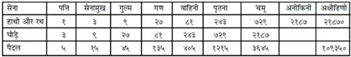
तीन सौ सड़सठवाँ अध्याय
सामान्य नाम-लिङ्ग
अग्निदेव कहते हैं—मुनिवर! अब मैं सामान्यतः नामलिङ्गोंका वर्णन करूँगा (इस प्रकरणमें आये हुए शब्द प्रायः ऐसे होंगे, जो अपने विशेष्यके अनुसार तीनों लिङ्गोंमें प्रयुक्त हो सकते हैं), आप उन्हें ध्यान देकर सुनें। सुकृति, पुण्यवान् और धन्य—ये शब्द पुण्यात्मा और सौभाग्यशाली पुरुषके लिये आते हैं। जिनकी अभिलाषा, आशय या अभिप्राय महान् हो, उन्हें महेच्छ और महाशय कहते हैं। (जिनके हृदय शुद्ध, सरल, कोमल, दयालु एवं भावुक हों, वे हृदयालु, सहृदय और सुहृदय कहलाते हैं।) प्रवीण, निपुण, अभिज्ञ, विज्ञ, निष्णात और शिक्षित—सुयोग्य एवं कुशलके अर्थमें आते हैं। वदान्य, स्थूललक्ष, दानशौण्ड और बहुप्रद—ये अधिक दान करनेवालेके वाचक हैं। कृती, कृतज्ञ और कुशल—ये भी प्रवीण, चतुर एवं दक्षके ही अर्थमें आते हैं। आसक्त, उद्युक्त और उत्सुक—ये उद्योगी एवं कार्यपरायण पुरुषके लिये प्रयुक्त होते हैं। अधिक धनवान्को इभ्य और आढ्य कहते हैं। परिवृढ, अधिभू, नायक और अधिप—ये स्वामीके वाचक हैं। लक्ष्मीवान्, लक्ष्मण तथा श्रील—ये शोभा और श्रीसे सम्पन्न पुरुषके अर्थमें आते हैं। स्वतन्त्र, स्वैरी और अपावृत शब्द स्वाधीन अर्थके बोधक हैं। खलपू और बहुकर—खलिहान या मैदान साफ करनेवाले पुरुषके अर्थमें आते हैं। दीर्घसूत्र और चिरक्रिय—ये आलसी तथा बहुत विलम्बसे काम पूरा करनेवाले पुरुषके बोधक हैं। बिना विचारे काम करनेवालेको जाल्म और असमीक्ष्यकारी कहते हैं। जो कार्य करनेमें ढीला हो, वह कुण्ठ कहलाता है। कर्मशूर और कर्मठ—ये उत्साहपूर्वक कर्म करनेवालेके वाचक हैं। खानेवालेको भक्षक, घस्मर और अद्मर कहते हैं। लोलुप, गर्धन और गृध्नु—ये लोभीके पर्याय हैं। विनीत और प्रश्रित—ये विनययुक्त पुरुषका बोध करानेवाले हैं। धृष्णु और वियात—ये धृष्टके लिये प्रयुक्त होते हैं। प्रतिभाशाली पुरुषके अर्थमें निभृत और प्रगल्भ शब्दका प्रयोग होता है। भीरुक और भीरु—डरपोकके, बन्दारु और अभिवादक प्रणाम करनेवालेके, भूष्णु, भविष्णु और भविता होनेवालेके तथा ज्ञाता, विदुर और विन्दुक—ये जानकारके वाचक हैं। मत्त, शौण्ड, उत्कट और क्षीब—ये मतवालेके अर्थमें आते हैं (क्षीब शब्द नान्त भी होता है, इसके क्षीबा, क्षीबाणौ, क्षीबाणः इत्यादि रूप होते हैं)। चण्ड और अत्यन्त कोपन—ये अधिक क्रोध करनेवाले पुरुषके बोधक हैं। देवताओंका अनुसरण करनेवालेको देवद्रयङ् और सब ओर जानेवालेको विष्वग्द्रयङ् कहते हैं। इसी प्रकार साथ चलनेवाला सध्र्यङ् और तिरछा चलनेवाला तिर्यङ् कहलाता है। वाचोयुक्ति पटु, वाग्मी और वावदूक—ये कुशल वक्ताके अर्थमें प्रयुक्त होते हैं। बहुत अनाप-शनाप बकनेवालेको जल्पाक, वाचाल, वाचाट और बहुगर्ह्यवाक् कहते हैं। अपध्वस्त और धिक्कृत—ये धिक्कारे हुए पुरुषके वाचक हैं। कीलित और संयत शब्द बद्ध (बँधे हुए)-का बोध करानेवाले हैं॥१—१०॥
रवण और शब्दन—ये आवाज करनेवालेके अर्थमें आते हैं। (नाटक आदिके आरम्भमें जो मङ्गलके लिये आशीर्वादयुक्त स्तुतिका पाठ किया जाता है, उसका नाम नान्दी है।) नान्दीपाठ करनेवालेको नान्दीवादी और नान्दीकर कहते हैं। व्यसनार्त और उपरक्त—ये पीड़ितके अर्थमें आते हैं। विहस्त और व्याकुल—ये शोकाकुल पुरुषका बोध करानेवाले हैं। नृशंस, क्रूर, घातक और पाप—ये दूसरोंसे द्रोह करनेवाले निर्दय मनुष्यके वाचक हैं। ठगको धूर्त और वञ्चक कहते हैं। वैदेह (वैधेय) और वालिश—ये मूर्खके वाचक हैं। कृपण और क्षुद्र—ये कदर्य (कंजूस)-के अर्थमें प्रयुक्त होते हैं। मार्गण, याचक और अर्थी—ये याचना करनेवालेके अर्थमें आते हैं। अहंकारीको अहंकारवान् और अहंयु तथा शुभके भागीको शुभान्वित और शुभंयु कहते हैं। कान्त, मनोरम और रुच्य—ये सुन्दर अर्थके वाचक हैं। हृद्य, अभीष्ट और अभीप्सित—ये प्रियके समानार्थक शब्द हैं। असार, फल्गु तथा शून्य—ये निस्सार अर्थका बोध करानेवाले हैं। मुख्य, वर्य, वरेण्यक, श्रेयान्, श्रेष्ठ और पुष्कल—ये श्रेष्ठके वाचक हैं। प्राग्र्य, अग्रय, अग्रीय तथा अग्रिय शब्द भी इसी अर्थमें आते हैं। वड्र, उरु और विपुल—ये विशाल अर्थके बोधक हैं। पीन, पीवन्, स्थूल और पीवर—ये स्थूल या मोटे अर्थका बोध करानेवाले हैं। स्तोक, अल्प, क्षुल्लक, सूक्ष्म, श्लक्ष्ण, दभ्र, कृश, तनु, मात्रा, त्रुटि, लव और कण—ये स्वल्प या सूक्ष्म अर्थके वाचक हैं। भूयिष्ठ, पुरुह और पुरु—ये अधिक अर्थके बोधक हैं। अखण्ड, पूर्ण और सकल—ये समग्रके वाचक हैं। उपकण्ठ, अन्तिक, अभितः, संनिधि और अभ्याश—ये समीपके अर्थमें आते हैं। अत्यन्त निकटको नेदिष्ठ कहते हैं। बहुत दूरके अर्थमें दविष्ठ शब्दका प्रयोग होता है। वृत्त, निस्तल और वर्तुल—ये गोलाकारके वाचक हैं। उच्च, प्रांशु, उन्नत और उदग्र—ये ऊँचाके अर्थमें आते हैं। ध्रुव, नित्य और सनातन—ये नित्य अर्थके बोधक हैं। आविद्ध, कुटिल, भुग्न, वेल्लित और वक्र—ये टेढ़ेका बोध करानेवाले हैं। चञ्चल और तरल—ये चपलके अर्थमें आते हैं। कठोर, जरठ और दृढ़—ये समानार्थक शब्द हैं। प्रत्यग्र, अभिनव, नव्य, नवीन, नूतन और नव—ये नयेके अर्थमें आते हैं। एकतान और अनन्यवृत्ति—ये एकाग्रचित्तवाले पुरुषके बोधक हैं। उच्चण्ड और अविलम्बित—ये फुर्तीके वाचक हैं। उच्चावच और नैकभेद—ये अनेक प्रकारके अर्थमें आते हैं। सम्बाध और कलित—ये संकीर्ण एवं गहनके बोधक हैं। तिमित, स्तिमित और क्लिन्न—ये आर्द्र या भीगे हुएके अर्थमें आते हैं। अभियोग और अभिग्रह—ये दूसरेपर किये हुए दोषारोपणके नाम हैं। स्फाति शब्द वृद्धिके और प्रथा शब्द ख्यातिके अर्थमें आता है। समाहार और समुच्चय—ये समूहके वाचक हैं। अपहार और अपचय—ये ह्रासका बोध करानेवाले हैं। विहार और परिक्रम—ये घूमनेके अर्थमें आते हैं। प्रत्याहार और उपादान—ये इन्द्रियोंको विषयोंसे हटानेके अर्थमें प्रयुक्त होते हैं। निर्हार तथा अभ्यवकर्षण—ये शरीरमें धँसे हुए शस्त्रादिको युक्तिपूर्वक निकालनेके अर्थमें आते हैं। विघ्न, अन्तराय और प्रत्यूह—ये विघ्नका बोध करानेवाले हैं। आस्या, आसना और स्थिति—ये बैठनेकी क्रियाके बोधक हैं। संनिधि और संनिकर्ष—ये समीप रहनेके अर्थमें प्रयुक्त होते हैं। किलेमें प्रवेश करनेकी क्रियाको संक्रम और दुर्गसंचर कहते हैं। उपलम्भ और अनुभव—ये अनुभूतिके नाम हैं। प्रत्यादेश और निराकृति—ये दूसरेके मतका खण्डन करनेके अर्थमें आते हैं। परिरम्भ, परिष्वङ्ग, संश्लेष और उपगूहन—ये आलिङ्गनके अर्थमें प्रयुक्त होते हैं। पक्ष* और हेतु आदिके द्वारा निश्चित होनेवाले ज्ञानका नाम अनुमा या अनुमान है। बिना हथियारकी लड़ाई तथा भयभीत होनेपर किये हुए शब्दका नाम डिम्ब, भ्रमर (या डमर) तथा विप्लव है। शब्दके द्वारा जो परोक्ष अर्थका ज्ञान होता है, उसे शाब्दज्ञान कहते हैं। समानता देखकर जो उसके तुल्यवस्तुका बोध होता है, उसका नाम उपमान है। जहाँ कोई कार्य देखकर कारणका निश्चय किया जाय, अर्थात् अमुक कारणके बिना यह कार्य नहीं हो सकता—इस प्रकार विचार करके जो दूसरी वस्तु अर्थात् कारणका ज्ञान प्राप्त किया जाय, उसे अर्थापत्ति कहते हैं। प्रतियोगीका ग्रहण न होनेपर जो ऐसा कहा जाता है कि ‘अमुक वस्तु पृथ्वीपर नहीं है, उसका नाम अभाव है। इस प्रकार मनुष्योंका ज्ञान बढ़ानेके लिये मैंने नाम और लिङ्ग-स्वरूप श्रीहरिका वर्णन किया है॥११—२८॥
* जहाँ साध्यका संदेह हो अर्थात् जहाँ किसी वस्तुको सिद्ध करनेकी चेष्टा की जा रही हो—उसको ‘पक्ष’ कहते हैं तथा साध्यको सिद्ध करनेके लिये जो युक्ति दी जाती है, उसे ‘हेतु’ कहते हैं। जैसे ‘पर्वतो वह्निमान् धूमवत्वात्’ (पर्वतपर आग है; क्योंकि वहाँ धुँआ उठता है)। यहाँ वह्नि साध्य, पर्वत पक्ष और धूम हेतु है।
इस प्रकार आदि आग्नेय महापुराणमें ‘कोशगत सामान्य नामलिङ्गोंका कथन’ नामक तीन सौ सड़सठवाँ अध्याय पूरा हुआ॥३६७॥
तीन सौ अड़सठवाँ अध्याय
नित्य, नैमित्तिक और प्राकृत प्रलयका वर्णन
अग्निदेव कहते हैं—मुनिवर! ‘प्रलय’ चार प्रकारका होता है—नित्य, नैमित्तिक, प्राकृत और आत्यन्तिक। जगत्में उत्पन्न हुए प्राणियोंकी जो सदा ही मृत्यु होती रहती है, उसका नाम ‘नित्य प्रलय’ है। एक हजार चतुर्युग बीतनेपर जब ब्रह्माजीका दिन समाप्त होता है, उस समय जो सृष्टिका लय होता है, वह ‘ब्राह्म लय’ के नामसे प्रसिद्ध है। इसीको ‘नैमित्तिक प्रलय’ भी कहते हैं। पाँचों भूतोंका प्रकृतिमें लीन होना ‘प्राकृत प्रलय’ कहलाता है तथा ज्ञान हो जानेपर जब आत्मा परमात्माके स्वरूपमें स्थित होता है, उस अवस्थाका नाम ‘आत्यन्तिक प्रलय’ है। कल्पके अन्तमें जो नैमित्तिक प्रलय होता है, इसके स्वरूपका मैं आपसे वर्णन करता हूँ। जब चारों युग एक हजार बार व्यतीत हो जाते हैं, उस समय यह भूमण्डल प्रायः क्षीण हो जाता है, तब सौ वर्षोंतक यहाँ बड़ी भयंकर अनावृष्टि होती है। उससे भूतलके सम्पूर्ण जीव-जन्तुओंका विनाश हो जाता है। तदनन्तर जगत्के स्वामी भगवान् विष्णु सूर्यकी सात किरणोंमें स्थित होकर पृथ्वी, पाताल और समुद्र आदिका सारा जल पी जाते हैं। इससे सर्वत्र जल सूख जाता है। तत्पश्चात् भगवान्की इच्छासे जलका आहार करके पुष्ट हुई वे ही सातों किरणें सात सूर्यके रूपमें प्रकट होती हैं। वे सातों सूर्य पातालसहित समस्त त्रिलोकीको जलाने लगते हैं।’ उस समय यह पृथ्वी कछुएकी पीठके समान दिखायी देती है। फिर भगवान् शेषके श्वासोंसे ‘कालाग्नि रुद्र’ का प्रादुर्भाव होता है और वे नीचेके समस्त पातालोंको भस्म कर डालते हैं। पातालके पश्चात् भगवान् विष्णु भूलोकको, फिर भुवर्लोकको तथा सबके अन्तमें स्वर्गलोकको भी दग्ध कर देते हैं। उस समय समस्त त्रिभुवन जलते हुए भाड़-सा प्रतीत होता है। तदनन्तर भुवर्लोक और स्वर्ग—इन दो लोकोंके निवासी अधिक तापसे संतप्त होकर ‘महर्लोक’ में चले जाते हैं तथा महर्लोकसे जनलोकमें जाकर स्थित होते हैं। शेषरूपी भगवान् विष्णुके मुखोच्छ्वाससे प्रकट हुए कालाग्निरुद्र जब सम्पूर्ण जगत्को जला डालते हैं, तब आकाशमें नाना प्रकारके रूपवाले बादल उमड़ आते हैं, उनके साथ बिजलीकी गड़गड़ाहट भी होती है। वे बादल लगातार सौ वर्षोंतक वर्षा करके बढ़ी हुई आगको शान्त कर देते हैं। जब सप्तर्षियोंके स्थानतक पानी पहुँच जाता है, तब विष्णुके मुखसे निकली हुई साँससे सौ वर्षोंतक प्रचण्ड वायु चलती रहती है, जो उन बादलोंको नष्ट कर डालती है। फिर ब्रह्मरूपधारी भगवान् उस वायुको पीकर एकार्णवके जलमें शयन करते हैं। उस समय सिद्ध और महर्षिगण जलमें स्थित होकर भगवान्की स्तुति करते हैं और भगवान् मधुसूदन अपने ‘वासुदेव’ संज्ञक आत्माका चिन्तन करते हुए, अपनी ही दिव्य मायामयी योगनिद्राका आश्रय ले एक कल्पतक सोते रहते हैं। तदनन्तर जागनेपर वे ब्रह्माके रूपमें स्थित होकर पुनः जगत्की सृष्टि करते हैं। इस प्रकार जब ब्रह्माजीके दो परार्द्धकी आयु समाप्त हो जाती है, तब यह सारा स्थूल प्रपञ्च प्रकृतिमें लीन हो जाता है॥१—१५॥
इकाई-दहाईके क्रमसे एकके बाद दसगुने स्थान नियत करके यदि गुणा करते चले जायँ तो अठारहवें स्थानतक पहुँचनेपर जो संख्या बनती है, उसे ‘परार्द्ध’ कहते हैं*। परार्द्धका दूना समय व्यतीत हो जानेपर ‘प्राकृत प्रलय’ होता है। उस समय वर्षाके एकदम बंद हो जाने और सब ओर प्रचण्ड अग्नि प्रज्वलित होनेके कारण सब कुछ भस्म हो जाता है। महत्तत्त्वसे लेकर विशेषपर्यन्त सभी विकारों (कार्यों)-का नाश हो जाता है। भगवान्के संकल्पसे होनेवाले उस प्राकृत प्रलयके प्राप्त होनेपर जल पहले पृथ्वीके गन्ध आदि गुणको ग्रस लेता है—अपनेमें लीन कर लेता है। तब गन्धहीन पृथ्वीका प्रलय हो जाता है—उस समय जलमें घुल-मिलकर वह जलरूप हो जाती है। उसके बाद रसमय जलकी स्थिति रहती है। फिर तेजस्तत्त्व जलके गुण रसको पी जाता है। इससे जलका लय हो जाता है। जलके लीन हो जानेपर अग्नितत्त्व प्रज्वलित होता रहता है। तत्पश्चात् तेजके प्रकाशमय गुण रूपको वायुतत्त्व ग्रस लेता है। इस प्रकार तेजके शान्त हो जानेपर अत्यन्त प्रबल एवं प्रचण्ड वायु बड़े वेगसे चलने लगती है। फिर वायुके गुण स्पर्शको आकाश अपनेमें लीन कर लेता है। गुणके साथ ही वायुका नाश होनेपर केवल नीरव आकाशमात्र रह जाता है। तदनन्तर भूतादि (तामस अहंकार) आकाशके गुण शब्दको ग्रस लेता है तथा तैजस अहंकार इन्द्रियोंको अपनेमें लीन कर लेता है। इसके बाद महत्तत्त्व अभिमान स्वरूप भूतादि एवं तैजस अहंकारको ग्रस लेता है। इस तरह पृथ्वी जलमें लीन होती है, जल तेजमें समा जाता है, तेजका वायुमें, वायुका आकाशमें और आकाशका अहंकारमें लय होता है। फिर अहंकार महत्तत्त्वमें प्रवेश कर जाता है। ब्रह्मन्! उस महत्तत्त्वको भी प्रकृति ग्रस लेती है। प्रकृतिके दो स्वरूप हैं—‘व्यक्त’ और ‘अव्यक्त’। इनमें व्यक्त प्रकृतिका अव्यक्त प्रकृतिमें लय होता है। एक, अविनाशी और शुद्धस्वरूप जो पुरुष है, वह भी परमात्माका ही अंश है, अतः अन्तमें प्रकृति और पुरुष—ये दोनों परमात्मामें लीन हो जाते हैं। परमात्मा सत्स्वरूप ज्ञेय और ज्ञानमय है। वह आत्मा (बुद्धि आदि)-से सर्वथा परे है। वही सबका ईश्वर—‘सर्वेश्वर’ कहलाता है। उसमें नाम और जाति आदिकी कल्पनाएँ नहीं हैं॥१६—२७॥
* इन अठारह संख्याओंमें यदि एकको भी गिन लें, अर्थात् एकके बाद सत्रह शून्य लगावें तो वर्तमान गणनाके अनुसार यह संख्या एक शंखके बराबर होती है और यदि एकके बाद अठारह शून्य लगाये जायँ तो यह संख्या महाशंखके बराबर होती है। यह शंख और महाशंख ही ‘परार्द्ध’ है।
इस प्रकार आदि आग्नेय महापुराणमें ‘नित्य, नैमित्तिक तथा प्राकृत प्रलयका वर्णन’ नामक तीन सौ अड़सठवाँ अध्याय पूरा हुआ॥३६८॥
तीन सौ उनहत्तरवाँ अध्याय
आत्यन्तिक प्रलय एवं गर्भकी उत्पत्तिका वर्णन
अग्निदेव कहते हैं—वसिष्ठजी! अब मैं ‘आत्यन्तिक प्रलय’ का वर्णन करूँगा। जब जगत्के आध्यात्मिक, आधिदैविक और आधिभौतिक संतापोंको जानकर मनुष्यको अपनेसे भी वैराग्य हो जाता है, उस समय उसे ज्ञान होता है और ज्ञानसे इस सृष्टिका आत्यन्तिक प्रलय होता है (यही जीवात्माका मोक्ष है)। आध्यात्मिक संताप ‘शारीरिक’ और ‘मानसिक’ भेदसे दो प्रकारका होता है। ब्रह्मन्! शारीरिक तापके भी अनेकों भेद हैं, उन्हें श्रवण कीजिये। जीव भोगदेहका परित्याग करके अपने कर्मोंके अनुसार पुनः गर्भमें आता है। वसिष्ठजी! एक ‘आतिवाहिक’ संज्ञक शरीर होता है, वह केवल मनुष्योंको मृत्युकाल उपस्थित होनेपर प्राप्त होता है। विप्रवर! यमराजके दूत मनुष्यके उस आतिवाहिक शरीरको यमलोकके मार्गसे ले जाते हैं। मुने! दूसरे प्राणियोंको न तो आतिवाहिक शरीर मिलता है और न वे यमलोकके मार्गसे ही ले जाये जाते हैं। तदनन्तर यमलोकमें गया हुआ जीव कभी स्वर्गमें और कभी नरकमें जाता है। जैसे रहट नामक यन्त्रमें लगे हुए घड़े कभी पानीमें डूबते हैं और कभी ऊपर आते हैं, उसी तरह जीवको कभी स्वर्ग और कभी नरकमें चक्कर लगाना पड़ता है। ब्रह्मन्! यह लोक कर्मभूमि है और परलोक फलभूमि। यमराज जीवको उसके कर्मानुसार भिन्न-भिन्न योनियों तथा नरकोंमें डाला करते हैं। यमराज ही जीवोंद्वारा नरकोंको परिपूर्ण बनाये रखते हैं। यमराजको ही इनका नियामक समझना चाहिये। जीव वायुरूप होकर गर्भमें प्रवेश करते हैं। यमदूत जब मनुष्यको यमराजके पास ले जाते हैं, तब वे उसकी ओर देखते हैं। (उसके कर्मोंपर विचार करते हैं—) यदि कोई धर्मात्मा होता है तो उसकी पूजा करते हैं और यदि पापी होता है तो अपने घरपर उसे दण्ड देते हैं। चित्रगुप्त उसके शुभ और अशुभ कर्मोंका विवेचन करते हैं। धर्मके ज्ञाता वसिष्ठजी! जबतक बन्धु-बान्धवोंका अशौच निवृत्त नहीं होता, तबतक जीव आतिवाहिक शरीरमें ही रहकर दिये हुए पिण्डोंको भोजनके रूपमें अपने साथ ले जाता है। तत्पश्चात् प्रेतलोकमें पहुँचकर प्रेतदेह (आतिवाहिक शरीर)-का त्याग करता है और दूसरा शरीर (भोगदेह) पाकर वहाँ भूख-प्याससे युक्त हो निवास करता है। उस समय उसे वही भोजनके लिये मिलता है, जो श्राद्धके रूपमें उसके निमित्त कच्चा अन्न दिया गया होता है। प्रेतके निमित्त पिण्डदान किये बिना उसको आतिवाहिक शरीरसे छुटकारा नहीं मिलता, वह उसी शरीरमें रहकर केवल पिण्डोंका भोजन करता है। सपिण्डीकरण श्राद्ध करनेपर एक वर्षके पश्चात् वह प्रेतदेहको छोड़कर भोगदेहको प्राप्त होता है। ‘भोगदेह’ दो प्रकारके बताये गये हैं—शुभ और अशुभ। भोगदेहके द्वारा कर्मजनित बन्धनोंको भोगनेके पश्चात् जीव मर्त्यलोकमें गिरा दिया जाता है। उस समय उसके त्यागे हुए भोगदेहको निशाचर खा जाते है। ब्रह्मन्! यदि जीव भोगदेहके द्वारा पहले पुण्यके फलस्वरूप स्वर्गका सुख भोग लेता है और पाप भोगना शेष रह जाता है तो वह पापियोंके अनुरूप दूसरा भोगशरीर धारण करता है। परंतु जो पहले पापका फल भोगकर पीछे स्वर्गका सुख भोगता है, वह भोग समाप्त होनेपर स्वर्गसे भ्रष्ट होकर पवित्र आचार-विचारवाले धनवानोंके घरमें जन्म लेता है। वसिष्ठजी! यदि जीव पुण्यके रहते हुए पहले पाप भोगता है तो उसका भोग समाप्त होनेपर वह पुण्यभोगके लिये उत्तम (देवोचित) शरीर धारण करता है। जब कर्मका भोग थोड़ा-सा ही शेष रह जाता है तो जीवको नरकसे भी छुटकारा मिल जाता है। नरकसे निकला हुआ जीव पशु-पक्षी आदि तिर्यग्योनिमें ही जन्म लेता है; इसमें तनिक भी संदेह नहीं है॥१—१८॥
(मानवयोनिके) गर्भमें प्रविष्ट हुआ जीव पहले महीनेमें कलल (रज-वीर्यके मिश्रित बिन्दु)-के रूपमें रहता है, दूसरे महीनेमें वह घनीभूत होता है (कठोर मांसपिण्डका रूप धारण करता है और) तीसरे महीने शरीरके अवयव प्रकट हो जाते हैं। चौथे महीनेमें हड्डी, मांस और त्वचाका प्राकट्य होता है। पाँचवेंमें रोएँ निकल आते हैं। छठे महीनेमें उसके भीतर चेतना आती है और सातवेंसे वह दुःखका अनुभव करने लगता है। उसका सारा शरीर झिल्लियोंमें लिपटा होता है और मस्तकके पास उसके जुड़े हुए हाथ बँधे रहते हैं। यदि गर्भका बालक नपुंसक हो तो वह उदरके मध्यभागमें रहता है, कन्या हो तो वामभागमें और पुत्र हो तो दायें भागमें रहा करता है। पेटके विभिन्न भागोंमें रहकर वह पीठकी ओर मुँह किये रहता है। जिस योनिमें वह रहता है, उसका उसे अच्छी तरह ज्ञान होता है, इसमें तनिक भी संदेह नहीं है। इतना ही नहीं, वह मनुष्यजन्मसे लेकर वर्तमान जन्मतकके अपने सभी वृत्तान्तोंका स्मरण करता है। गर्भके उस अन्धकारमें जीवको बड़े कष्टका अनुभव होता है। सातवें महीनेमें वह माताके खाये-पीये हुए पदार्थोंका रस पीने लगता है। आठवें और नवें महीनेमें उसको गर्भके भीतर बड़ा उद्वेग होता है। मैथुन होनेपर तो उसे और भी वेदना होती है। माताके अधिक परिश्रम करनेपर भी गर्भके बालकको कष्ट होता है। यदि माँ रोगिणी हो जाय तो बालकको भी रोगका कष्ट भोगना पड़ता है। उसके लिये एक मुहूर्त (दो घड़ी) भी सौ वर्षोंके समान हो जाता है॥१९—२५॥
जीव अपने कर्मोंके अनुसार गर्भमें संतप्त होता है। फिर वह ऐसे मनोरथ करने लगता है, मानो गर्भसे निकलते ही मोक्षके साधनभूत ज्ञानके प्रयत्नमें लग जायगा। प्रसूति-वायुकी प्रेरणासे उसका सिर नीचेकी ओर हो जाता है और वह योनियन्त्रसे पीड़ित होता हुआ गर्भसे बाहर निकल आता है। बाहर आनेपर एक महीनेतक उसकी ऐसी स्थिति रहती है कि कोई हाथसे छूता है तो भी उसे कष्ट होता है। ‘ख’ शब्दवाच्य आकाशसे शरीरके भीतर छोटे-छोटे छेद, कान तथा शून्यता (अवकाश आदि) उत्पन्न होते हैं। श्वासोच्छ्वास, गति और अङ्गोंको टेढ़ा-मेढ़ा करके किसीका स्पर्श करना—ये सब वायुके कार्य हैं। रूप, नेत्र, गर्मी, पाचन-क्रिया, पित्त, मेधा, वर्ण, बल, छाया, तेज और शौर्य—ये शरीरमें अग्नितत्त्वसे प्रकट होते हैं। पसीना, रसना (स्वादका अनुभव करनेवाली जिह्वा), क्लेद (गलना), वसा (चर्बी), रसा (रस-ग्रहणकी शक्ति), शुक्र (वीर्य), मूत्र और कफ आदिका जो देहमें प्रादुर्भाव होता है, वह जलका कार्य है। घ्राणेन्द्रिय, केश, नख और शिराएँ (नाड़ियाँ) भूमितत्त्वसे प्रकट होती हैं। शरीरमें जो कोमल पदार्थ—त्वचा, मांस, हृदय, नाभि, मज्जा, मल, मेदा, क्लेदन और आमाशय आदि हैं, वे माताके रजसे उत्पन्न होते हैं। शिरा, स्नायु और शुक्रका प्रादुर्भाव पितासे होता है तथा काम, क्रोध, भय, हर्ष, धर्माधर्ममें प्रवृत्ति, आकृति, स्वर, वर्ण और मेहन (मूत्रादिकी क्रिया) आदि जीवके शरीरमें स्वतः प्रकट होते हैं (ये दोष और गुण उसके अपने हैं)। अज्ञान, प्रमाद, आलस्य, क्षुधा, तृषा, मोह, मात्सर्य, वैगुण्य, शोक, आभास और भय आदि भाव तमोगुणसे होते हैं। महामुने! काम, क्रोध, शौर्य, यज्ञकी अभिलाषा, बहुत बोलनेकी आदत, अहंकार तथा दूसरोंका अनादर करना—ये रजोगुणके कार्य हैं। धर्मकी अभिलाषा, मोक्षकी आकाङ्क्षा, भगवान् विष्णुमें पराभक्तिका होना, उदारता और उद्योगशीलता—इन्हें सत्त्वगुणसे उत्पन्न समझना चाहिये॥२६—३६॥
चञ्चल, क्रोधी, डरपोक, अधिक बातूनी, कलहमें रुचि रखनेवाला तथा स्वप्नमें आकाशमार्गसे उड़नेवाला मनुष्य अधिक वातवाला होता है—उसमें वातकी प्रधानता होती है। जिसके असमयमें ही बाल सफेद हो जायँ, जो क्रोधी, महाबुद्धिमान् और युद्धको पसंद करनेवाला हो, जिसे सपनेमें प्रकाशमान वस्तुएँ अधिक दिखायी देती हों, उसे पित्तप्रधान प्रकृतिका मनुष्य समझना चाहिये। जिसकी मैत्री, उत्साह और अङ्ग सभी स्थिर हों, जो धन आदिसे सम्पन्न हो तथा जिसे स्वप्नमें जल एवं श्वेत पदार्थोंका अधिक दर्शन होता हो, उस मनुष्यमें कफकी प्रधानता है। प्राणियोंके शरीरमें रस जीवन देनेवाला होता है, रक्त लेपनका कार्य करता है तथा मांस मेहन एवं स्नेहन क्रियाका प्रयोजक है। हड्डी और मज्जाका काम है शरीरको धारण करना। वीर्यकी वृद्धि शरीरको पूर्ण बनानेवाली होती है। ओज शुक्र एवं वीर्यका उत्पादक है; वही जीवकी स्थिति और प्राणकी रक्षा करनेवाला है। ओज शुक्रकी अपेक्षा भी अधिक सार वस्तु है। वह हृदयके समीप रहता है और उसका रंग कुछ-कुछ पीला होता है। दोनों जंघे (ये समस्त पैरके उपलक्षण हैं), दोनों भुजाएँ, उदर और मस्तक—ये छः अङ्ग बताये गये हैं। त्वचाके छः स्तर हैं। एक तो वही है, जो बाहर दिखायी देती है। दूसरी वह है, जो रक्त धारण करती है। तीसरी किलास (धातुविशेष) और चौथी कुण्ड (धातुविशेष)-को धारण करनेवाली है। पाँचवीं त्वचा इन्द्रियोंका स्थान है और छठी प्राणोंको धारण करनेवाली मानी गयी है। कला भी सात प्रकारकी है—पहली मांस धारण करनेवाली, दूसरी रक्तधारिणी, तीसरी जिगर एवं प्लीहाको आश्रय देनेवाली, चौथी मेदा और अस्थि धारण करनेवाली, पाँचवीं मज्जा, श्लेष्मा और पुरीषको धारण करनेवाली, जो पक्वाशयमें स्थित रहती है, छठी पित्त धारण करनेवाली और सातवीं शुक्र धारण करनेवाली है। वह शुक्राशयमें स्थित रहती है॥३७—४५॥
इस प्रकार आदि आग्नेय महापुराणमें ‘आत्यन्तिक प्रलय तथा गर्भकी उत्पत्तिका वर्णन’ नामक तीन सौ उनहत्तरवाँ अध्याय पूरा हुआ॥३६९॥
तीन सौ सत्तरवाँ अध्याय
शरीरके अवयव
अग्निदेव कहते हैं—वसिष्ठजी! कान, त्वचा, नेत्र, जिह्वा और नासिका—ये ज्ञानेन्द्रियाँ हैं। आकाश सभी भूतोंमें व्यापक है। शब्द, स्पर्श, रूप, रस और गन्ध—ये क्रमशः आकाश आदि पाँच भूतोंके गुण हैं। गुदा, उपस्थ (लिङ्ग या योनि), हाथ, पैर और वाणी—ये ‘कर्मेन्द्रिय’ कहे गये हैं। मलत्याग, विषयजनित आनन्दका अनुभव, ग्रहण, चलन तथा वार्तालाप—ये क्रमशः उपर्युक्त इन्द्रियोंके कार्य हैं। पाँच कर्मेन्द्रिय, पाँच ज्ञानेन्द्रिय, पाँच इन्द्रियोंके विषय, पाँच महाभूत, मन, बुद्धि, आत्मा (महत्तत्त्व), अव्यक्त (मूल प्रकृति)—ये चौबीस तत्त्व हैं। इन सबसे परे है—पुरुष। वह इनसे संयुक्त भी रहता है और पृथक् भी; जैसे मछली और जल—ये दोनों एक साथ संयुक्त भी रहते हैं और पृथक् भी। रजोगुण, तमोगुण और सत्त्वगुण—ये अव्यक्तके आश्रित हैं। अन्तःकरणकी उपाधिसे युक्त पुरुष ‘जीव’ कहलाता है, वही निरुपाधिक स्वरूपसे ‘परब्रह्म’ कहा गया है, जो सबका कारण है। जो मनुष्य इस परम पुरुषको जान लेता है, वह परमपदको प्राप्त होता है। इस शरीरके भीतर सात ‘आशय’ माने गये हैं—पहला रुधिराशय, दूसरा श्लेष्माशय, तीसरा आमाशय, चौथा पित्ताशय, पाँचवाँ पक्वाशय, छठा वाताशय और सातवाँ मूत्राशय। स्त्रियोंके इन सातके अतिरिक्त एक आठवाँ आशय भी होता है, जिसे ‘गर्भाशय’ कहते हैं। अग्निसे पित्त और पित्तसे पक्वाशय होता है। ऋतुकालमें स्त्रीकी योनि कुछ फैल जाती है। उसमें स्थापित किया हुआ वीर्य गर्भाशयतक पहुँच जाता है। गर्भाशय कमलके आकारका होता है। वही अपनेमें रज और वीर्यको धारण करता है। वीर्यसे शरीर और समयानुसार उसमें केश प्रकट होते हैं। ऋतुकालमें भी यदि योनि वात, पित्त और कफसे आवृत्त हो तो उसमें विकास (फैलाव) नहीं आता। (ऐसी दशामें वह गर्भ-धारणके योग्य नहीं रहती।) महाभाग! बुक्कसे पुक्कस, प्लीहा, यकृत्, कोष्ठाङ्ग, हृदय, व्रण तथा तण्डक होते हैं। ये सभी आशयमें निबद्ध हैं। प्राणियोंके पकाये जानेवाले रसके सारसे प्लीहा और यकृत् होते हैं। धर्मके ज्ञाता वसिष्ठजी! रक्तके फेनसे पुक्कसकी उत्पत्ति होती है। इसी प्रकार रक्त, पित्त तथा तण्डक भी उत्पन्न होते हैं। मेदा और रक्तके प्रसारसे बुक्काकी उत्पत्ति होती है। रक्त और मांसके प्रसारसे देहधारियोंकी आँतें बनती हैं। पुरुषकी आँतोंका परिमाण साढ़े तीन व्याम बताया जाता है और वेदवेत्ता पुरुष स्त्रियोंकी आँतें तीन व्याम लंबी बतलाते हैं। रक्त और वायुके संयोगसे कामका उदय होता है। कफके प्रसारसे हृदय प्रकट होता है। उसका आकार कमलके समान है। उसका मुख नीचेकी ओर होता है तथा उसके मध्यका जो आकाश है, उसमें जीव स्थित रहता है। चेतनतासे सम्बन्ध रखनेवाले सभी भावोंकी स्थिति वही है। हृदयके वामभागमें प्लीहा और दक्षिणभागमें यकृत् है तथा इसी प्रकार हृदयकमलके दक्षिणभागमें क्लोम (फुफ्फुस)-की भी स्थिति बतायी गयी है। इस शरीरमें कफ और रक्तको प्रवाहित करनेवाले जो-जो स्रोत हैं, उनके भूतानुमानसे इन्द्रियोंकी उत्पत्ति होती है। नेत्रमण्डलका जो श्वेतभाग है, वह कफसे उत्पन्न होता है। उसका प्राकट्य पिताके वीर्यसे माना गया है तथा नेत्रोंका जो कृष्ण-भाग है, वह माताके रज एवं वातके अंशसे प्रकट होता है। त्वचामण्डलकी उत्पत्ति पित्तसे होती है। इसे माता और पिता—दोनोंके अंशसे उत्पन्न समझना चाहिये। मांस, रक्त और कफसे जिह्वाका निर्माण होता है। मेदा, रक्त, कफ और मांससे अण्डकोषकी उत्पत्ति होती है। प्राणके दस आश्रय जानने चाहिये—मूर्द्धा, हृदय, नाभि, कण्ठ, जिह्वा, शुक्र, रक्त, गुद, वस्ति (मूत्राशय) और गुल्फ (पाँवकी गाँठ या घुट्ठी) तथा ‘कण्डरा’ (नसें) सोलह बतायी गयी हैं। दो हाथमें, दो पैरमें, चार पीठमें, चार गलेमें तथा चार पैरसे लेकर सिरतक समूचे शरीरमें हैं। इसी प्रकार ‘जाल’ भी सोलह बताये गये हैं। मांसजाल, स्नायुजाल, शिराजाल और अस्थिजाल—ये चारों पृथक्-पृथक् दोनों कलाइयों और पैरकी दोनों गाँठोंमें परस्पर आबद्ध हैं। इस शरीरमें छः कूर्च माने गये हैं। मनीषी पुरुषोंने दोनों हाथ, दोनों पैर, गला और लिङ्ग—इन्हींमें उनका स्थान बताया है। पृष्ठके मध्यभागमें जो मेरुदण्ड है, उसके निकट चार मांसमयी डोरियाँ हैं तथा उतनी ही पेशियाँ भी हैं, जो उन्हें बाँधे रखती हैं। सात सीरणियाँ हैं। इनमेंसे पाँच तो मस्तकके आश्रित हैं और एक-एक मेढ्र (लिङ्ग) तथा जिह्वामें है। हड्डियाँ अठारह हजार हैं। सूक्ष्म और स्थूल—दोनों मिलाकर चौसठ दाँत हैं। बीस नख हैं। इनके अतिरिक्त हाथ और पैरोंकी शलाकाएँ हैं, जिनके चार स्थान हैं। अँगुलियोंमें साठ, एड़ियोंमें दो, गुल्फोंमें चार, अरत्नियोंमें चार और जंघोंमें भी चार ही हड्डियाँ हैं। घुटनोंमें दो, गालोंमें दो, ऊरुओंमें दो तथा फलकोंके मूलभागमें भी दो ही हड्डियाँ हैं। इन्द्रियोंके स्थानों तथा श्रोणिफलकमें भी इसी प्रकार दो-दो हड्डियाँ बतायी गयी हैं। भगमें भी थोड़ी-सी हड्डियाँ हैं। पीठमें पैंतालीस और गलेमें भी पैंतालीस हैं। गलेकी हसली, ठोड़ी तथा उसकी जड़में दो-दो अस्थियाँ हैं। ललाट, नेत्र, कपोल, नासिका, चरण, पसली, तालु तथा अर्बुद—इन सबमें सूक्ष्मरूपसे बहत्तर हड्डियाँ हैं। मस्तकमें दो शङ्ख और चार कपाल हैं तथा छातीमें सत्रह हड्डियाँ हैं। संधियाँ दो सौ दस बतायी गयी हैं। इनमेंसे शाखाओंमें अड़सठ तथा उनसठ हैं और अन्तरामें तिरासी संधियाँ बतायी गयी हैं। स्नायुकी संख्या नौ सौ है, जिनमेंसे अन्तराधिमें दो सौ तीस हैं, सत्तर ऊर्ध्वगामी हैं और शाखाओंमें छः सौ स्नायु हैं। पेशियाँ पाँच सौ बतलायी गयी हैं। इनमें चालीस तो ऊर्ध्वगामिनी हैं, चार सौ शाखाओंमें हैं और साठ अन्तराधिमें हैं। स्त्रियोंकी मांसपेशियाँ पुरुषोंकी अपेक्षा सत्ताईस अधिक हैं। इनमें दस दोनों स्तनोंमें, तेरह योनिमें तथा चार गर्भाशयमें स्थित हैं। देहधारियोंके शरीरमें तीस हजार नौ तथा छप्पन हजार नाड़ियाँ हैं। जैसे छोटी-छोटी नालियाँ क्यारियोंमें पानी बहाकर ले जाती हैं, उसी प्रकार वे नाड़ियाँ सम्पूर्ण शरीरमें रसको प्रवाहित करती हैं। क्लेद और लेप आदि उन्हींके कार्य हैं। महामुने! इस देहमें बहत्तर करोड़ छिद्र या रोमकूप हैं तथा मज्जा, मेदा, वसा, मूत्र, पित्त, श्लेष्मा, मल, रक्त और रस—इनकी क्रमशः ‘अञ्जलियाँ’ मानी गयी हैं। इनमेंसे पूर्व-पूर्व अञ्जलीकी अपेक्षा उत्तरोत्तर सभी अञ्जलियाँ मात्रामें डेढ़-गुनी अधिक हैं। एक अञ्जलिमें आधी वीर्यकी और आधी ओजकी है। विद्वानोंने स्त्रियोंके रजकी चार अञ्जलियाँ बतायी हैं। यह शरीर मल और दोष आदिका पिण्ड है, ऐसा समझकर अपने अन्तःकरणमें इसके प्रति होनेवाली आसक्तिका त्याग करना चाहिये॥१—४३॥
इस प्रकार आदि आग्नेय महापुराणमें ‘शरीरावयवविभागका वर्णन’ नामक तीन सौ सत्तरवाँ अध्याय पूरा हुआ॥३७०॥
तीन सौ इकहत्तरवाँ अध्याय
प्राणियोंकी मृत्यु, नरक तथा पापमूलक जन्मका वर्णन
अग्निदेव कहते हैं—मुने! मैं यमराजके मार्गकी पहले चर्चा कर चुका हूँ, इस समय मनुष्योंकी मृत्युके विषयमें कुछ निवेदन करूँगा। शरीरमें जब वातका वेग बढ़ जाता है तो उसकी प्रेरणासे ऊष्मा अर्थात् पित्तका भी प्रकोप हो जाता है। वह पित्त सारे शरीरको रोककर सम्पूर्ण दोषोंको आवृत कर लेता है तथा प्राणोंके स्थान और मर्मोंका उच्छेद कर डालता है। फिर शीतसे वायुका प्रकोप होता है और वायु अपने निकलनेके लिये छिद्र ढूँढ़ने लगती है। दो नेत्र, दो कान, दो नासिका और एक ऊपरका ब्रह्मरन्ध्र—ये सात छिद्र हैं तथा आठवाँ छिद्र मुख है। शुभ कार्य करनेवाले मनुष्योंके प्राण प्रायः इन्हीं सात मार्गोंसे निकलते हैं। नीचे भी दो छिद्र हैं—गुदा और उपस्थ। पापियोंके प्राण इन्हीं छिद्रोंसे बाहर होते हैं, परंतु योगीके प्राण मस्तकका भेदन करके निकलते हैं और वह जीव इच्छानुसार लोकोंमें जाता है। अन्तकाल आनेपर प्राण अपानमें स्थित होता है। तमके द्वारा ज्ञान आवृत हो जाता है, मर्मस्थान आच्छादित हो जाते हैं। उस समय जीव वायुके द्वारा बाधित हो नाभिस्थानसे विचलित कर दिया जाता है; अतः वह आठ अङ्गोंवाली प्राणोंकी वृत्तियोंको लेकर शरीरसे बाहर हो जाता है। देहसे निकलते, अन्यत्र जन्म लेते अथवा नाना प्रकारकी योनियोंमें प्रवेश करते समय जीवको सिद्ध पुरुष और देवता ही अपनी दिव्यदृष्टिसे देखते हैं। मृत्युके बाद जीव तुरंत ही आतिवाहिक शरीर धारण करता है। उसके त्यागे हुए शरीरसे आकाश, वायु और तेज—ये ऊपरके तीन तत्त्वोंमें मिल जाते हैं तथा जल और पृथ्वीके अंश नीचेके तत्त्वोंसे एकीभूत हो जाते हैं। यही पुरुषका ‘पञ्चत्वको प्राप्त होना’ माना गया है। मरे हुए जीवको यमदूत शीघ्र ही आतिवाहिक शरीरमें पहुँचाते हैं। यमलोकका मार्ग अत्यन्त भयंकर और छियासी हजार योजन लंबा है। उसपर ले जाया जानेवाला जीव अपने बन्धु-बान्धवोंके दिये हुए अन्न-जलका उपभोग करता है। यमराजसे मिलनेके पश्चात् उनके आदेशसे चित्रगुप्त जिन भयंकर नरकोंको बतलाते हैं, उन्हींको वह जीव प्राप्त होता है। यदि वह धर्मात्मा होता है, तो उत्तम मार्गोंसे स्वर्गलोकको जाता है॥१—१२॥
अब पापी जीव जिन नरकों और उनकी यातनाओंका उपभोग करते हैं, उनका वर्णन करता हूँ। इस पृथ्वीके नीचे नरककी अट्ठाईस ही श्रेणियाँ हैं। सातवें तलके अन्तमें घोर अन्धकारके भीतर उनकी स्थिति है। नरककी पहली कोटि ‘घोरा’ के नामसे प्रसिद्ध है। उसके नीचे ‘सुघोरा’ की स्थिति है। तीसरी ‘अतिघोरा’, चौथी ‘महाघोरा’ और पाँचवीं ‘घोररूपा’ नामकी कोटि है। छठीका नाम ‘तरलतारा’ और सातवींका ‘भयानका’ है। आठवीं ‘भयोत्कटा’, नवीं ‘कालरात्रि’ दसवीं ‘महाचण्डा’, ‘ग्यारहवीं ‘चण्डा’, बारहवीं ‘कोलाहला’, तेरहवीं ‘प्रचण्डा’, चौदहवीं ‘पद्मा’ और पंद्रहवीं ‘नरकनायिका’ है। सोलहवीं ‘पद्मावती’, सत्रहवीं ‘भीषणा’, अठारहवीं ‘भीमा’, उन्नीसवीं ‘करालिका’, बीसवीं ‘विकराला’, इक्कीसवीं ‘महावज्रा’, बाईसवीं ‘त्रिकोणा’ और तेईसवीं ‘पञ्चकोणिका’ है। चौबीसवीं ‘सुदीर्घा’, पचीसवीं ‘वर्तुला’, छब्बीसवीं ‘सप्तभूमा’, सत्ताईसवीं ‘सुभूमिका’ और अट्ठाईसवीं ‘दीप्तमाया’ है। इस प्रकार ये अट्ठाईस कोटियाँ पापियोंको दुःख देनेवाली हैं॥१३—१८॥
नरकोंकी अट्ठाईस कोटियोंके पाँच-पाँच नायक हैं (तथा पाँच उनके भी नायक हैं)। वे ‘रौरव’ आदिके नामसे प्रसिद्ध हैं। उन सबकी संख्या एक सौ पैंतालीस है—तामिस्र, अन्धतामिस्र, महारौरव, रौरव, असिपत्रवन, लोहभार, कालसूत्रनरक, महानरक, संजीवन, महावीचि, तपन, सम्प्रतापन, संघात, काकोल, कुड्मल, पूतमृत्युक, लोहशङ्कु, ऋजीष, प्रधान, शाल्मली वृक्ष और वैतरणी नदी आदि सभी नरकोंको ‘कोटि-नायक’ समझना चाहिये। ये बड़े भयंकर दिखायी देते हैं। पापी पुरुष इनमेंसे एक-एकमें तथा अनेकमें भी डाले जाते हैं। यातना देनेवाले यमदूतोंमें किसीका मुख बिलावके समान होता है तो किसीका उल्लूके समान, कोई गीदड़के समान मुखवाले हैं तो कोई गृध्र आदिके समान। वे मनुष्यको तेलके कड़ाहेमें डालकर उसके नीचे आग जला देते हैं। किन्हींको भाड़में, किन्हींको ताँबे या तपाये हुए लोहेके बर्तनोंमें तथा बहुतोंको आगकी चिनगारियोंमें डाल देते हैं। कितनोंको वे भूलीपर चढ़ा देते हैं। बहुत-से पापियोंको नरकमें डालकर उनके टुकड़े-टुकड़े किये जाते हैं। कितने ही कोड़ोंसे पीटे जाते हैं और कितनोंको तपाये हुए लोहेके गोले खिलाये जाते हैं। बहुत-से यमदूत उनको धूलि, विष्ठा, रक्त और कफ आदि भोजन कराते तथा तपायी हुई मदिरा पिलाते हैं। बहुत-से जीवोंको वे आरेसे चीर डालते हैं। कुछ लोगोंको कोल्हूमें पेरते हैं। कितनोंको कौवे आदि नोच-नोचकर खाते हैं। किन्हीं-किन्हींके ऊपर गरम तेल छिड़का जाता है तथा कितने ही जीवोंके मस्तकके अनेकों टुकड़े किये जाते हैं। उस समय पापी जीव ‘अरे बाप रे’ कहकर चिल्लाते हैं और हाहाकार मचाते हुए अपने पापकर्मोंकी निन्दा करते हैं। इस प्रकार बड़े-बड़े पातकोंके फलस्वरूप भयंकर एवं निन्दित नरकोंका कष्ट भोगकर कर्म क्षीण होनेके पश्चात् वे महापापी जीव पुनः इस मर्त्यलोकमें जन्म लेते हैं॥१९—२९॥
ब्रह्महत्यारा पुरुष मृग, कुत्ते, सूअर और ऊँटोंकी योनिमें जाता है। मदिरा पीनेवाला गदहे, चाण्डाल तथा म्लेच्छोंमें जन्म पाता है। सोना चुरानेवाले कीड़े-मकोड़े और पतिंगे होते हैं तथा गुरुपत्नीसे गमन करनेवाला मनुष्य तृण एवं लताओंमें जन्म ग्रहण करता है। ब्रह्महत्यारा राजयक्ष्माका रोगी होता है, शराबीके दाँत काले हो जाते हैं, सोना चुरानेवालेका नख खराब होता है तथा गुरुपत्नीगामीके चमड़े दूषित होते हैं (अर्थात् वह कोढ़ी हो जाता है)। जो जिस पापसे सम्पर्क रखता है, वह उसीका कोई चिह्न लेकर जन्म ग्रहण करता है। अन्न चुरानेवाला मायावी होता है। वाणी (कविता आदि)-की चोरी करनेवाला गूँगा होता है। धान्यका अपहरण करनेवाला जब जन्म ग्रहण करता है, तब उसका कोई अङ्ग अधिक होता है, चुगुलखोरकी नासिकासे बदबू आती है, तेल चुरानेवाला पुरुष तेल पीनेवाला कीड़ा होता है तथा जो इधरकी बातें उधर लगाया करता है, उसके मुँहसे दुर्गन्ध आती है। दूसरोंकी स्त्री तथा ब्राह्मणके धनका अपहरण करनेवाला पुरुष निर्जन वनमें ब्रह्मराक्षस होता है। रत्न चुरानेवाला नीच जातिमें जन्म लेता है। उत्तम गन्धकी चोरी करनेवाला छछूंदर होता है। शाक-पात चुरानेवाला मुर्गा तथा अनाजकी चोरी करनेवाला चूहा होता है। पशुका अपहरण करनेवाला बकरा, दूध चुरानेवाला कौवा, सवारीकी चोरी करनेवाला ऊँट तथा फल चुराकर खानेवाला बन्दर होता है। शहदकी चोरी करनेवाला डाँस, फल चुरानेवाला गृध्र तथा घरका सामान हड़प लेनेवाला गृहकाक होता है। वस्त्र हड़पनेवाला कोढ़ी, चोरी-चोरी रसका स्वाद लेनेवाला कुत्ता और नमक चुरानेवाला झींगुर होता है॥३०—३७॥
यह ‘आधिदैविक ताप’ का वर्णन किया गया है। शस्त्र आदिसे कष्टकी प्राप्ति होना ‘आधिभौतिक ताप’ है तथा ग्रह, अग्नि और देवता आदिसे जो कष्ट होता है, वह ‘आधिदैविक ताप’ बतलाया गया है। इस प्रकार यह संसार तीन प्रकारके दुःखोंसे भरा हुआ है। मनुष्यको चाहिये कि ज्ञानयोगसे, कठोर व्रतोंसे, दान आदि पुण्योंसे तथा विष्णुकी पूजा आदिसे इस दुःखमय संसारका निवारण करे॥३८—४०॥
इस प्रकार आदि आग्नेय महापुराणमें ‘नरकादि-निरूपण’ नामक तीन सौ इकहत्तरवाँ अध्याय पूरा हुआ॥३७१॥
तीन सौ बहत्तरवाँ अध्याय
यम और नियमोंकी व्याख्या; प्रणवकी महिमा तथा भगवत्पूजनका माहात्म्य
अग्निदेव कहते हैं—मुने! अब मैं ‘अष्टाङ्गयोग’ का वर्णन करूँगा, जो जगत्के त्रिविध तापसे छुटकारा दिलानेका साधन है। ब्रह्मको प्रकाशित करनेवाला ज्ञान भी ‘योग’ से ही सुलभ होता है। एकचित्त होना—चित्तको एक जगह स्थापित करना ‘योग’ है। चित्तवृत्तियोंके निरोधको भी ‘योग’ कहते हैं। जीवात्मा एवं परमात्मामें ही अन्तःकरणकी वृत्तियोंको स्थापित करना उत्तम ‘योग’ है। अहिंसा, सत्य, अस्तेय, ब्रह्मचर्य और अपरिग्रह—ये पाँच ‘यम’ हैं। ब्रह्मन्! ‘नियम’ भी पाँच ही हैं, जो भोग और मोक्ष प्रदान करनेवाले हैं। उनके नाम ये हैं—शौच, संतोष, तप, स्वाध्याय और ईश्वराराधन (ईश्वरप्रणिधान)। किसी भी प्राणीको कष्ट न पहुँचाना ‘अहिंसा’ है। ‘अहिंसा’ सबसे उत्तम धर्म है। जैसे राह चलनेवाले अन्य सभी प्राणियोंके पदचिह्न हाथीके चरणचिह्नमें समा जाते हैं, उसी प्रकार धर्मके सभी साधन ‘अहिंसा’ में गतार्थ माने जाते हैं। ‘हिंसा’ के दस भेद हैं—किसीको उद्वेगमें डालना, संताप देना, रोगी बनाना, शरीरसे रक्त निकालना, चुगली खाना, किसीके हितमें अत्यन्त बाधा पहुँचाना, उसके छिपे हुए रहस्यका उद्घाटन करना, दूसरेको सुखसे वञ्चित करना, अकारण कैद करना और प्राणदण्ड देना। जो बात दूसरे प्राणियोंके लिये अत्यन्त हितकर है, वह ‘सत्य’ है। ‘सत्य’ का यही लक्षण है—सत्य बोले, किंतु प्रिय बोले; अप्रिय सत्य कभी न बोले। इसी प्रकार प्रिय असत्य भी मुँहसे न निकाले; यह सनातन धर्म है। ‘ब्रह्मचर्य’ कहते हैं—‘मैथुनके त्यागको’। ‘मैथुन’ आठ प्रकारका होता है—स्त्रीका स्मरण, उसकी चर्चा, उसके साथ क्रीड़ा करना, उसकी ओर देखना, उससे लुक-छिपकर बातें करना, उसे पानेका संकल्प, उसके लिये उद्योग तथा क्रियानिर्वृत्ति (स्त्रीसे साक्षात् समागम)—ये मैथुनके आठ अङ्ग हैं—ऐसा मनीषी पुरुषोंका कथन है। ‘ब्रह्मचर्य’ ही सम्पूर्ण शुभ कर्मोंकी सिद्धिका मूल है; उसके बिना सारी क्रिया निष्फल हो जाती है। वसिष्ठ, चन्द्रमा, शुक्र, देवताओंके आचार्य बृहस्पति तथा पितामह ब्रह्माजी—ये तपोवृद्ध और वयोवृद्ध होते हुए भी स्त्रियोंके मोहमें फँस गये। गौड़ी, पैष्टी और माध्वी—ये तीन प्रकारकी सुरा जाननी चाहिये। इनके बाद चौथी सुरा ‘स्त्री’ है, जिसने सारे जगत्को मोहित कर रखा है। मदिराको तो पीनेपर ही मनुष्य मतवाला होता है, परंतु युवती स्त्रीको देखते ही उन्मत्त हो उठता है। नारी देखनेमात्रसे ही मनमें उन्माद करती है, इसलिये उसके ऊपर दृष्टि न डाले। मन, वाणी और शरीरद्वारा चोरीसे सर्वथा बचे रहना ‘अस्तेय’ कहलाता है। यदि मनुष्य बलपूर्वक दूसरेकी किसी भी वस्तुका अपहरण करता है, तो उसे अवश्य तिर्यग्योनिमें जन्म लेना पड़ता है। यही दशा उसकी भी होती है, जो हवन किये बिना ही (बलिवैश्वदेवके द्वारा देवता आदिका भाग अर्पण किये बिना ही) हविष्य (भोज्यपदार्थ)-का भोजन कर लेता है। कौपीन, अपने शरीरको ढकनेवाला वस्त्र, शीतका कष्ट-निवारण करनेवाली कन्था (गुदड़ी) और खड़ाऊँ—इतनी ही वस्तुएँ साथ रखे। इनके सिवा और किसी वस्तुका संग्रह न करे—(यही अपरिग्रह है)। शरीरकी रक्षाके साधनभूत वस्त्र आदिका संग्रह किया जा सकता है। धर्मके अनुष्ठानमें लगे हुए शरीरकी यत्नपूर्वक रक्षा करनी चाहिये ।। १—१६ ।।
‘शौच’ दो प्रकारका बताया गया है—‘बाह्य’ और ‘आभ्यन्तर’। मिट्टी और जलसे ‘बाह्यशुद्धि’ होती है और भावकी शुद्धिको ‘आभ्यन्तर शुद्धि’ कहते हैं। दोनों ही प्रकारसे जो शुद्ध है, वही शुद्ध है, दूसरा नहीं। प्रारब्धके अनुसार जैसे-तैसे जो कुछ भी प्राप्त हो जाय, उसीमें हर्ष मानना ‘संतोष’ कहलाता है। मन और इन्द्रियोंकी एकाग्रताको ‘तप’ कहते हैं। मन और इन्द्रियोंपर विजय पाना सब धर्मोंसे श्रेष्ठ धर्म कहलाता है। ‘तप’ तीन प्रकारका होता है—वाचिक, मानसिक और शारीरिक। मन्त्रजप आदि ‘वाचिक’, आसक्तिका त्याग ‘मानसिक’ और देवपूजन आदि ‘शारीरिक’ तप हैं। यह तीनों प्रकारका तप सब कुछ देनेवाला है। वेद प्रणवसे ही आरम्भ होते हैं, अतः प्रणवमें सम्पूर्ण वेदोंकी स्थिति है। वाणीका जितना भी विषय है, सब प्रणव है; इसलिये प्रणवका अभ्यास करना चाहिये (यह स्वाध्यायके अन्तर्गत है)। ‘प्रणव’ अर्थात् ‘ओंकार’ में अकार, उकार तथा अर्धमात्राविशिष्ट मकार है। तीन मात्राएँ तीनों वेद, भूः आदि तीन लोक, तीन गुण, जाग्रत्, स्वप्न और सुषुप्ति—ये तीन अवस्थाएँ तथा ब्रह्मा, विष्णु और शिव—ये तीनों देवता प्रणवरूप हैं। ब्रह्मा, विष्णु और रुद्र, स्कन्द, देवी और महेश्वर तथा प्रद्युम्न, श्री और वासुदेव—ये सब क्रमशः ॐकारके ही स्वरूप हैं। ॐकार मात्रासे रहित अथवा अनन्त मात्राओंसे युक्त है। वह द्वैतकी निवृत्ति करनेवाला तथा शिवस्वरूप है। ऐसे ॐकारको जिसने जान लिया, वही मुनि है, दूसरा नहीं। प्रणवकी चतुर्थीमात्रा (जो अर्धमात्राके नामसे प्रसिद्ध है) ‘गान्धारी’ कहलाती है। वह प्रयुक्त होनेपर मूर्द्धामें लक्षित होती है। वही ‘तुरीय’ नामसे प्रसिद्ध परब्रह्म है। वह ज्योतिर्मय है। जैसे घड़ेके भीतर रखा हुआ दीपक वहाँ प्रकाश करता है, वैसे ही मूर्द्धामें स्थित परब्रह्म भी भीतर अपनी ज्ञानमयी ज्योति छिटकाये रहता है। मनुष्यको चाहिये कि मनसे हृदयकमलमें स्थित आत्मा या ब्रह्मका ध्यान करे और जिह्वासे सदा प्रणवका जप करता रहे। (यही ‘ईश्वरप्रणिधान’ है।) ‘प्रणव’ धनुष है, ‘जीवात्मा’ बाण है तथा ‘ब्रह्म’ उसका लक्ष्य कहा जाता है। सावधान होकर उस लक्ष्यका भेदन करना चाहिये और बाणके समान उसमें तन्मय हो जाना चाहिये। यह एकाक्षर (प्रणव) ही ब्रह्म है, यह एकाक्षर ही परम तत्त्व है, इस एकाक्षर ब्रह्मको जानकर जो जिस वस्तुकी इच्छा करता है, उसको उसीकी प्राप्ति हो जाती है। इस प्रणवका देवी गायत्री छन्द है, अन्तर्यामी ऋषि हैं, परमात्मा देवता हैं तथा भोग और मोक्षकी सिद्धिके लिये इसका विनियोग किया जाता है। इसके अङ्गन्यासकी विधि इस प्रकार है—‘ॐ भूः अग्न्यात्मने हृदयाय नमः।’—इस मन्त्रसे हृदयका स्पर्श करे। ‘ॐ भुवः प्राजापत्यात्मने शिरसे स्वाहा।’ ऐसा कहकर मस्तकका स्पर्श करे। ‘ॐ स्वः सर्वात्मने शिखायै वषट्।’—इस मन्त्रसे शिखाका स्पर्श करे। अब कवच बताया जाता है—‘ॐ भूर्भुवः स्वः सत्यात्मने कवचाय हुम्।’ इस मन्त्रसे दाहिने हाथकी अँगुलियोंद्वारा बायीं भुजाके मूलभागका और बायें हाथकी अँगुलियोंसे दाहिनी बाँहके मूलभागका एक ही साथ स्पर्श करे। तत्पश्चात् पुनः ‘ॐ भूर्भुवः स्वः सत्यात्मने अस्त्राय फट्।’ कहकर चुटकी बजाये। इस प्रकार अङ्गन्यास करके भोग और मोक्षकी सिद्धिके लिये भगवान् विष्णुका पूजन, उनके नामोंका जप तथा उनके उद्देश्यसे तिल और घी आदिका हवन करे; इससे मनुष्यकी समस्त कामनाएँ पूर्ण होती हैं। (यही ईश्वरपूजन है; इसका निष्कामभावसे ही अनुष्ठान करना उत्तम है।) जो मनुष्य प्रतिदिन बारह हजार प्रणवका जप करता है, उसको बारह महीनेमें परब्रह्मका ज्ञान हो जाता है। एक करोड़ जप करनेसे अणिमा आदि सिद्धियाँ प्राप्त होती हैं, एक लाखके जपसे सरस्वती आदिकी कृपा होती है। विष्णुका यजन तीन प्रकारका होता है—वैदिक, तान्त्रिक और मिश्र। तीनोंमेंसे जो अभीष्ट हो, उसी एक विधिका आश्रय लेकर श्रीहरिकी पूजा करनी चाहिये। जो मनुष्य दण्डकी भाँति पृथ्वीपर पड़कर भगवान्को साष्टाङ्ग प्रणाम करता है, उसे जिस उत्तम गतिकी प्राप्ति होती है, वह सैकड़ों यज्ञोंके द्वारा दुर्लभ है। जिसकी आराध्यदेवमें पराभक्ति है और जैसी देवतामें है, वैसी ही गुरुके प्रति भी है, उसी महात्माको इन कहे हुए विषयोंका यथार्थ ज्ञान होता है ।। १७—३६ ।।
इस प्रकार आदि आग्नेय महापुराणमें ‘यम-नियम-निरूपण’ नामक तीन सौ बहत्तरवाँ अध्याय पूरा हुआ ।। ३७२ ।।
तीन सौ तिहत्तरवाँ अध्याय
आसन, प्राणायाम और प्रत्याहारका वर्णन
अग्निदेव कहते हैं—मुने! पद्मासन आदि नाना प्रकारके ‘आसन’ बताये गये हैं। उनमेंसे कोई भी आसन बाँधकर परमात्माका चिन्तन करना चाहिये। पहले किसी पवित्र स्थानमें अपने बैठनेके लिये स्थिर आसन बिछावे, जो न अधिक ऊँचा हो और न अधिक नीचा। सबसे नीचे कुशका आसन हो, उसके ऊपर मृगचर्म और मृगचर्मके ऊपर वस्त्र बिछाया गया हो। उस आसनपर बैठकर मन और इन्द्रियोंकी चेष्टाओंको रोकते हुए चित्तको एकाग्र करे तथा अन्तःकरणकी शुद्धिके लिये योगाभ्यासमें संलग्न हो जाय। उस समय शरीर, मस्तक और गलेको अविचलभावसे एक सीधमें रखते हुए स्थिर बैठे। केवल अपनी नासिकाके अग्रभागको देखे; अन्य दिशाओंकी ओर दृष्टिपात न करे। दोनों पैरोंकी एड़ियोंसे अण्डकोष और लिङ्गकी रक्षा करते हुए दोनों ऊरुओं (जाँघों)-के ऊपर भुजाओंको यत्नपूर्वक तिरछी करके रखे तथा बायें हाथकी हथेलीपर दाहिने हाथके पृष्ठभागको स्थापित करे और मुँहको कुछ ऊँचा करके सामनेकी ओर स्थिर रखे। इस प्रकार बैठकर प्राणायाम करना चाहिये॥१—५॥
अपने शरीरके भीतर रहनेवाली वायुको ‘प्राण’ कहते हैं। उसे रोकनेका नाम है—‘आयाम’। अतः ‘प्राणायाम’ का अर्थ हुआ—‘प्राणवायुको रोकना’। उसकी विधि इस प्रकार है—अपनी अँगुलीसे नासिकाके एक छिद्रको दबाकर दूसरे छिद्रसे उदरस्थित वायुको बाहर निकाले। ‘रेचन’ अर्थात् बाहर निकालनेके कारण इस क्रियाको ‘रेचक’ कहते हैं। तत्पश्चात् चमड़ेकी धोंकनीके समान शरीरको बाहरी वायुसे भरे। भर जानेपर कुछ कालतक स्थिरभावसे बैठा रहे। बाहरसे वायुकी पूर्ति करनेके कारण इस क्रियाका नाम ‘पूरक’ है। वायु भर जानेके पश्चात् जब साधक न तो भीतरी वायुको छोड़ता है और न बाहरी वायुको ग्रहण ही करता है, अपितु भरे हुए घड़ेकी भाँति अविचल-भावसे स्थिर रहता है, उस समय कुम्भवत् स्थिर होनेके कारण उसकी वह चेष्टा ‘कुम्भक’ कहलाती है। बारह मात्रा (पल)-का एक ‘उद्धात’ होता है। इतनी देरतक वायुको रोकना कनिष्ठ श्रेणीका प्राणायाम है। दो उद्धात अर्थात् चौबीस मात्रातक किया जानेवाला कुम्भक मध्यम श्रेणीका माना गया है तथा तीन उद्धात यानी छत्तीस मात्रातकका कुम्भक उत्तम श्रेणीका प्राणायाम है। जिससे शरीरसे पसीने निकलने लगें, कँपकँपी छा जाय तथा अभिघात लगने लगे, वह प्राणायाम अत्यन्त उत्तम है। प्राणायामकी भूमिकाओंमेंसे जिसपर भलीभाँति अधिकार न हो जाय, उनपर सहसा आरोहण न करे, अर्थात् क्रमशः अभ्यास बढ़ाते हुए उत्तरोत्तर भूमिकाओंमें आरूढ़ होनेका यत्न करे। प्राणको जीत लेनेपर हिचकी और साँस आदिके रोग दूर हो जाते हैं तथा मल-मूत्रादिके दोष भी धीरे-धीरे कम हो जाते हैं। नीरोग होना, तेज चलना, मनमें उत्साह होना, स्वरमें माधुर्य आना, बल बढ़ना, शरीरवर्णमें स्वच्छताका आना तथा सब प्रकारके दोषोंका नाश हो जाना—ये प्राणायामसे होनेवाले लाभ हैं। प्राणायाम दो तरहके होते हैं—‘अगर्भ’ और ‘सगर्भ’। जप और ध्यानके बिना जो प्राणायाम किया जाता है, उसका नाम ‘अगर्भ’ है तथा जप और ध्यानके साथ किये जानेवाले प्राणायामको ‘सगर्भ’ कहते हैं। इन्द्रियोंपर विजय पानेके लिये सगर्भ प्राणायाम ही उत्तम होता है; उसीका अभ्यास करना चाहिये। ज्ञान और वैराग्यसे युक्त होकर प्राणायामके अभ्याससे इन्द्रियोंको जीत लेनेपर सबपर विजय प्राप्त हो जाती है। जिसे ‘स्वर्ग’ और ‘नरक’ कहते हैं, वह सब इन्द्रियाँ ही हैं। वे ही वशमें होनेपर स्वर्गमें पहुँचाती हैं और स्वतन्त्र छोड़ देनेपर नरकमें ले जाती हैं। शरीरको ‘रथ’ कहते हैं, इन्द्रियाँ ही उसके ‘घोड़े’ हैं, मनको ‘सारथि’ कहा गया है और प्राणायामको ‘चाबुक’ माना गया है। ज्ञान और वैराग्यकी बागडोरमें बँधे हुए मनरूपी घोड़ेको प्राणायामसे आबद्ध करके जब अच्छी तरह काबूमें कर लिया जाता है तो वह धीरे-धीरे स्थिर हो जाता है। जो मनुष्य सौ वर्षोंसे कुछ अधिक कालतक प्रतिमास कुशके अग्रभागसे जलकी एक बूँद लेकर उसे पीकर रह जाता है, उसकी वह तपस्या और प्राणायाम—दोनों बराबर हैं। विषयोंके समुद्रमें प्रवेश करके वहाँ फँसी हुई इन्द्रियोंको जो आहूत करके, अर्थात् लौटाकर अपने अधीन करता है, उसके इस प्रयत्नको ‘प्रत्याहार’ कहते हैं। जैसे जलमें डूबा हुआ मनुष्य उससे निकलनेका प्रयत्न करता है, उसी प्रकार संसार-समुद्रमें डूबे हुए अपने-आपको स्वयं ही निकालनेका प्रयत्न करे। भोगरूपी नदीका वेग अत्यन्त बढ़ जानेपर उससे बचनेके लिये अत्यन्त सुदृढ़ ज्ञानरूपी वृक्षका आश्रय लेना चाहिये॥६—२१॥
इस प्रकार आदि आग्नेय महापुराणमें ‘आसन, प्राणायाम तथा प्रत्याहारका वर्णन’ नामक तीन सौ तिहत्तरवाँ अध्याय पूरा हुआ॥३७३॥
तीन सौ चौहत्तरवाँ अध्याय
ध्यान
अग्निदेव कहते हैं—मुने! ‘ध्यै—चिन्तायाम्’—यह धातु है। अर्थात् ‘ध्यै’ धातुका प्रयोग चिन्तनके अर्थमें होता है। (‘ध्यै’ से ही ‘ध्यान’ शब्दकी सिद्धि होती है) अतः स्थिरचित्तसे भगवान् विष्णुका बारंबार चिन्तन करना ‘ध्यान’ कहलाता है। समस्त उपाधियोंसे मुक्त मनसहित आत्माका ब्रह्मविचारमें परायण होना भी ‘ध्यान’ ही है। ध्येयरूप आधारमें स्थित एवं सजातीय प्रतीतियोंसे युक्त चित्तको जो विजातीय प्रतीतियोंसे रहित प्रतीति होती है, उसको भी ‘ध्यान’ कहते हैं। जिस किसी प्रदेशमें भी ध्येय वस्तुके चिन्तनमें एकाग्र हुए चित्तको प्रतीतिके साथ जो अभेद-भावना होती है, उसका नाम भी ‘ध्यान’ है। इस प्रकार ध्यानपरायण होकर जो अपने शरीरका परित्याग करता है, वह अपने कुल, स्वजन और मित्रोंका उद्धार करके स्वयं भगवत्स्वरूप हो जाता है। इस तरह जो प्रतिदिन एक या आधे मुहूर्ततक भी श्रद्धापूर्वक श्रीहरिका ध्यान करता है, वह भी जिस गतिको प्राप्त करता है, उसे सम्पूर्ण महायज्ञोंके द्वारा भी कोई नहीं पा सकता॥१—६॥
तत्त्ववेत्ता योगीको चाहिये कि वह ध्याता, ध्यान, ध्येय तथा ध्यानका प्रयोजन—इन चार वस्तुओंका ज्ञान प्राप्त करके योगका अभ्यास करे। योगाभ्याससे मोक्ष तथा आठ प्रकारके महान् ऐश्वर्यों (अणिमा आदि सिद्धियों)-की प्राप्ति होती है। जो ज्ञान-वैराग्यसे सम्पन्न, श्रद्धालु, क्षमाशील, विष्णुभक्त तथा ध्यानमें सदा उत्साह रखनेवाला हो, ऐसा पुरुष ही ‘ध्याता’ माना गया है। ‘व्यक्त और अव्यक्त, जो कुछ प्रतीत होता है, सब परम ब्रह्म परमात्माका ही स्वरूप है’—इस प्रकार विष्णुका चिन्तन करना ‘ध्यान’ कहलाता है। सर्वज्ञ परमात्मा श्रीहरिको सम्पूर्ण कलाओंसे युक्त तथा निष्कल जानना चाहिये। अणिमादि ऐश्वर्योंकी प्राप्ति तथा मोक्ष—ये ध्यानके प्रयोजन हैं। भगवान् विष्णु ही कर्मोंके फलकी प्राप्ति करानेवाले हैं, अतः उन परमेश्वरका ध्यान करना चाहिये। वे ही ध्येय हैं। चलते-फिरते, खड़े होते, सोते—जागते, आँख खोलते और आँख मींचते समय भी, शुद्ध या अशुद्ध अवस्थामें भी निरन्तर परमेश्वरका ध्यान करना चाहिये॥७—११॥
अपने देहरूपी मन्दिरके भीतर मनमें स्थित हृदयकमलरूपी पीठके मध्यभागमें भगवान् केशवकी स्थापना करके ध्यानयोगके द्वारा उनका पूजन करे। ध्यानयज्ञ श्रेष्ठ, शुद्ध और सब दोषोंसे रहित है। उसके द्वारा भगवान्का यजन करके मनुष्य मोक्ष प्राप्त कर सकता है। बाह्यशुद्धिसे युक्त यज्ञोंद्वारा भी इस फलकी प्राप्ति नहीं हो सकती। हिंसा आदि दोषोंसे मुक्त होनेके कारण ध्यान अन्तःकरणकी शुद्धिका प्रमुख साधन और चित्तको वशमें करनेवाला है। इसलिये ध्यानयज्ञ सबसे श्रेष्ठ और मोक्षरूपी फल प्रदान करनेवाला है; अतः अशुद्ध एवं अनित्य बाह्य साधन यज्ञ आदि कर्मोंका त्याग करके योगका ही विशेषरूपसे अभ्यास करे। पहले विकारयुक्त, अव्यक्त तथा भोग्य-भोगसे युक्त तीनों गुणोंका क्रमशः अपने हृदयमें ध्यान करे। तमोगुणको रजोगुणसे आच्छादित करके रजोगुणको सत्त्वगुणसे आच्छादित करे। इसके बाद पहले कृष्ण, फिर रक्त, तत्पश्चात् श्वेतवर्णवाले तीनों मण्डलोंका क्रमशः ध्यान करे। इस प्रकार जो गुणोंका ध्यान बताया गया, वह ‘अशुद्ध ध्येय’ है। उसका त्याग करके ‘शुद्ध ध्येय’ का चिन्तन करे। पुरुष (आत्मा) सत्त्वोपाधिक गुणोंसे अतीत चौबीस तत्त्वोंसे परे पचीसवाँ तत्त्व है, यह ‘शुद्ध ध्येय’ है। पुरुषके ऊपर उन्हींकी नाभिसे प्रकट हुआ एक दिव्य कमल स्थित है, जो प्रभुका ऐश्वर्य ही जान पड़ता है। उसका विस्तार बारह अंगुल है। वह शुद्ध, विकसित तथा श्वेत वर्णका है। उसका मृणाल आठ अंगुलका है। उस कमलके आठ पत्तोंको अणिमा आदि आठ ऐश्वर्य जानना चाहिये। उसकी कर्णिकाका केसर ‘ज्ञान’ तथा नाल ‘उत्तम वैराग्य’ है। ‘विष्णु-धर्म’ ही उसकी जड़ है। इस प्रकार कमलका चिन्तन करे। धर्म, ज्ञान, वैराग्य एवं कल्याणमय ऐश्वर्य-स्वरूप उस श्रेष्ठ कमलको, जो भगवान्का आसन है, जानकर मनुष्य अपने सब दुःखोंसे छुटकारा पा जाता है। उस कमलकर्णिकाके मध्यभागमें ओङ्कारमय ईश्वरका ध्यान करे। उनकी आकृति शुद्ध दीपशिखाके समान देदीप्यमान एवं अँगूठेके बराबर है। वे अत्यन्त निर्मल हैं। कदम्बपुष्पके समान उनका गोलाकार स्वरूप ताराकी भाँति स्थित है। अथवा कमलके ऊपर प्रकृति और पुरुषसे भी अतीत परमेश्वर विराजमान हैं, ऐसा ध्यान करे तथा परम अक्षर ओंकारका निरन्तर जप करता रहे। साधकको अपने मनको स्थिर करनेके लिये पहले स्थूलका ध्यान करना चाहिये। फिर क्रमशः मनके स्थिर हो जानेपर उसे सूक्ष्म तत्त्वके चिन्तनमें लगाना चाहिये॥१२—२६॥
(अब कमल आदिका ध्यान दूसरे प्रकारसे बतलाया जाता है—) नाभि-मूलमें स्थित जो कमलकी नाल है, उसका विस्तार दस अंगुल है। नालके ऊपर अष्टदल कमल है, जो बारह अंगुल विस्तृत है। उसकी कर्णिकाके केसरमें सूर्य, सोम तथा अग्नि—तीन देवताओंका मण्डल है। अग्नि-मण्डलके भीतर शङ्ख, चक्र, गदा एवं पद्म धारण करनेवाले चतुर्भुज विष्णु अथवा आठ भुजाओंसे युक्त भगवान् श्रीहरि विराजमान हैं। अष्टभुज भगवान्के हाथोंमें शङ्ख-चक्रादिके अतिरिक्त शार्ङ्गधनुष, अक्षमाला, पाश तथा अङ्कुश शोभा पाते हैं। उनके श्रीविग्रहका वर्ण श्वेत एवं सुवर्णके समान उद्दीप्त है। वक्षःस्थलमें श्रीवत्सका चिह्न और कौस्तुभमणि शोभा पा रहे हैं। गलेमें वनमाला और सोनेका हार है। कानोंमें मकराकार कुण्डल जगमगा रहे हैं। मस्तकपर रत्नमय उज्ज्वल किरीट सुशोभित हैं। श्रीअङ्गोंपर पीताम्बर शोभा पाता है। वे सब प्रकारके आभूषणोंसे अलंकृत हैं। उनका आकार बहुत बड़ा अथवा एक बित्तेका है। जैसी इच्छा हो, वैसी ही छोटी या बड़ी आकृतिका ध्यान करना चाहिये। ध्यानके समय ऐसी भावना करे कि ‘मैं ज्योतिर्मय ब्रह्म हूँ—मैं ही नित्यमुक्त प्रणवरूप वासुदेवसंज्ञक परमात्मा हूँ।’ ध्यानसे थक जानेपर मन्त्रका जप करे और जपसे थकनेपर ध्यान करे। इस प्रकार जो जप और ध्यान आदिमें लगा रहता है, उसके ऊपर भगवान् विष्णु शीघ्र ही प्रसन्न होते हैं। दूसरे-दूसरे यज्ञ जपयज्ञकी सोलहवीं कलाके बराबर भी नहीं हो सकते। जप करनेवाले पुरुषके पास आधि, व्याधि और ग्रह नहीं फटकने पाते। जप करनेसे भोग, मोक्ष तथा मृत्यु-विजयरूप फलकी प्राप्ति होती है॥२७—३५॥
इस प्रकार आदि आग्नेय महापुराणमें ‘ध्याननिरूपण’ नामक तीन सौ चौहत्तरवाँ अध्याय पूरा हुआ॥३७४॥
तीन सौ पचहत्तरवाँ अध्याय
धारणा
अग्निदेव कहते हैं—मुने! ध्येय वस्तुमें जो मनकी स्थिति होती है, उसे ‘धारणा’ कहते हैं। ध्यानकी ही भाँति उसके भी दो भेद हैं—‘साकार’ और ‘निराकार’। भगवान्के ध्यानमें जो मनको लगाया जाता है, उसे क्रमशः ‘मूर्त’ और ‘अमूर्त’ धारणा कहते हैं। इस धारणासे भगवान्की प्राप्ति होती है। जो बाहरका लक्ष्य है, उससे मन जबतक विचलित नहीं होता, तबतक किसी भी प्रदेशमें मनकी स्थितिको ‘धारणा’ कहते हैं। देहके भीतर नियत समयतक जो मनको रोक रखा जाता है और वह अपने लक्ष्यसे विचलित नहीं होता, यही अवस्था ‘धारणा’ कहलाती है। बारह आयामकी ‘धारणा’ होती है, बारह ‘धारणा’ का ‘ध्यान’ होता है तथा बारह ध्यानपर्यन्त जो मनकी एकाग्रता है, उसे ‘समाधि’ कहते हैं। जिसका मन धारणाके अभ्यासमें लगा हुआ है, उसी अवस्थामें यदि उसके प्राणोंका परित्याग हो जाय तो वह पुरुष अपने इक्कीस पीढ़ीका उद्धार करके अत्यन्त उत्कृष्ट स्वर्गपदको प्राप्त होता है। योगियोंके जिस-जिस अङ्गमें व्याधिकी सम्भावना हो, उस-उस अङ्गको बुद्धिसे व्याप्त करके तत्त्वोंकी धारणा करनी चाहिये। द्विजोत्तम! आग्नेयी, वारुणी, ऐशानी और अमृतात्मिका—ये विष्णुकी चार प्रकारकी धारणा करनी चाहिये। उस समय अग्नियुक्त शिखामन्त्रका, जिसके अन्तमें ‘फट्’ शब्दका प्रयोग होता है, जप करना उचित है। नाड़ियोंके द्वारा विकट, दिव्य एवं शुभ शूलाग्रका वेधन करे। पैरके अँगूठेसे लेकर कपोलतक किरणोंका समूह व्याप्त है और वह बड़ी तेजीके साथ ऊपर-नीचे तथा इधर-उधर फैल रहा है, ऐसी भावना करे। महामुने! श्रेष्ठ साधकको तबतक रश्मि-मण्डलका चिन्तन करते रहना चाहिये, जबतक कि वह अपने सम्पूर्ण शरीरको उसके भीतर भस्म होता न देखे। तदनन्तर उस धारणाका उपसंहार करे। इसके द्वारा द्विजगण शीत और श्लेष्मा आदि रोग तथा अपने पापोंका विनाश करते हैं (यह ‘आग्नेयी धारणा’ है)॥१—१०॥
तत्पश्चात् धीरभावसे विचार करते हुए मस्तक और कण्ठके अधोमुख होनेका चिन्तन करे। उस समय साधकका चित्त नष्ट नहीं होता। वह पुनः अपने अन्तःकरणद्वारा ध्यानमें लग जाय और ऐसी धारणा करे कि जलके अनन्त कण प्रकट होकर एक-दूसरेसे मिलकर हिमराशिको उत्पन्न करते हैं और उससे इस पृथ्वीपर जलकी धाराएँ प्रवाहित होकर सम्पूर्ण विश्वको आप्लावित कर रही हैं। इस प्रकार उस हिमस्पर्शसे शीतल अमृतस्वरूप जलके द्वारा क्षोभवश ब्रह्मरन्ध्रसे लेकर मूलाधारपर्यन्त सम्पूर्ण चक्र-मण्डलको आप्लावित करके सुषुम्णा नाड़ीके भीतर होकर पूर्ण चन्द्रमण्डलका चिन्तन करे। भूख-प्यास आदिके क्रमसे प्राप्त होनेवाले क्लेशोंसे अत्यन्त पीड़ित होकर अपनी तुष्टिके लिये इस ‘वारुणी धारणा’ का चिन्तन करना चाहिये तथा उस समय आलस्य छोड़कर विष्णु-मन्त्रका जप करना भी उचित है। यह ‘वारुणी धारणा’ बतलायी गयी, अब ‘ऐशानी धारणा’ का वर्णन सुनिये॥११—१५॥
प्राण और अपानका क्षय होनेपर हृदयाकाशमें ब्रह्ममय कमलके ऊपर विराजमान भगवान् विष्णुके प्रसाद (अनुग्रह)-का तबतक चिन्तन करता रहे, जबतक कि सारी चिन्ताका नाश न हो जाय। तत्पश्चात् व्यापक ईश्वररूपसे स्थित होकर परम शान्त, निरञ्जन, निराभास एवं अर्द्धचन्द्रस्वरूप सम्पूर्ण महाभावका जप और चिन्तन करे। जबतक गुरुके मुखसे जीवात्माको ब्रह्मका ही अंश (या साक्षात् ब्रह्मरूप) नहीं जान लिया जाता, तबतक यह सम्पूर्ण चराचर जगत् असत्य होनेपर भी सत्यवत् प्रतीत होता है। उस परम तत्त्वका साक्षात्कार हो जानेपर ब्रह्मासे लेकर यह सारा चराचर जगत्, प्रमाता, मान और मेय (ध्याता, ध्यान और ध्येय)—सब कुछ ध्यानगत हृदय-कमलमें लीन हो जाता है। जप, होम और पूजन आदिको माताकी दी हुई मिठाईकी भाँति मधुर एवं लाभकर जानकर विष्णुमन्त्रके द्वारा उसका श्रद्धापूर्वक अनुष्ठान करे। अब मैं ‘अमृतमयी धारणा’ बतला रहा हूँ—मस्तककी नाड़ीके केन्द्रस्थानमें पूर्ण चन्द्रमाके समान आकारवाले कमलका ध्यान करे तथा प्रयत्नपूर्वक यह भावना करे कि ‘आकाशमें दस हजार चन्द्रमाके समान प्रकाशमान एक पूर्ण चन्द्रमण्डल उदित हुआ है, जो कल्याणमय कल्लोलोंसे परिपूर्ण है।’ ऐसा ही ध्यान अपने हृदय-कमलमें भी करे और उसके मध्यभागमें अपने शरीरको स्थित देखे। धारणा आदिके द्वारा साधकके सभी क्लेश दूर हो जाते हैं॥१६—२२॥
इस प्रकार आदि आग्नेय महापुराणमें ‘धारणानिरूपण’ नामक तीन सौ पचहत्तरवाँ अध्याय पूरा हुआ॥३७५॥
तीन सौ छिहत्तरवाँ अध्याय
समाधि
अग्निदेव कहते हैं—जो चैतन्यस्वरूपसे युक्त और प्रशान्त समुद्रकी भाँति स्थिर हो, जिसमें आत्माके सिवा अन्य किसी वस्तुकी प्रतीति न होती हो, उस ध्यानको ‘समाधि’ कहते हैं। जो ध्यानके समय अपने चित्तको ध्येयमें लगाकर वायुहीन प्रदेशमें जलती हुई अग्निशिखाकी भाँति अविचल एवं स्थिरभावसे बैठा रहता है, वह योगी ‘समाधिस्थ’ कहा गया है। जो न सुनता है, न सूँघता है, न देखता है, न रसास्वादन करता है, न स्पर्शका अनुभव करता है, न मनमें संकल्प उठने देता है, न अभिमान करता है और न बुद्धिसे दूसरी किसी वस्तुको जानता ही है, केवल काष्ठकी भाँति अविचलभावसे ध्यानमें स्थित रहता है, ऐसे ईश्वरचिन्तनपरायण पुरुषको ‘समाधिस्थ’ कहते हैं। जैसे वायुरहित स्थानमें रखा हुआ दीपक कम्पित नहीं होता, यही उस समाधिस्थ योगीके लिये उपमा मानी गयी है। जो अपने आत्मस्वरूप श्रीविष्णुके ध्यानमें संलग्न रहता है, उसके सामने अनेक दिव्य विघ्न उपस्थित होते हैं। वे सिद्धिकी सूचना देनेवाले हैं। साधक ऊपरसे नीचे गिराया जाता है, उसके कानमें पीड़ा होती है, अनेक प्रकारके धातुओंके दर्शन होते हैं तथा उसे अपने शरीरमें बड़ी वेदनाका अनुभव होता है। देवतालोग उस योगीके पास आकर उससे दिव्य भोग स्वीकार करनेकी प्रार्थना करते हैं, राजा पृथ्वीका राज्य देनेकी बात कहते और बड़े-बड़े धनाध्यक्ष धनका लोभ दिखाते हैं। वेद आदि सम्पूर्ण शास्त्र स्वयं ही (बिना पढ़े) उसकी बुद्धिमें स्फुरित हो जाते हैं। उसके द्वारा मनोनुकूल छन्द और सुन्दर विषयसे युक्त उत्तम काव्यकी रचना होने लगती है। दिव्य रसायन, दिव्य ओषधियाँ तथा सम्पूर्ण शिल्प और कलाएँ उसे प्राप्त हो जाती हैं। इतना ही नहीं, देवेश्वरोंकी कन्याएँ और प्रतिभा आदि सद्गुण भी उसके पास बिना बुलाये जाते हैं; किंतु जो इन सबको तिनकेके समान निस्सार मानकर त्याग देता है, उसीपर भगवान् विष्णु प्रसन्न होते हैं॥१—१०॥
अणिमा आदि गुणमयी विभूतियोंसे युक्त योगी पुरुषको उचित है कि वह शिष्यको ज्ञान दे। इच्छानुसार भोगोंका उपभोग करके लययोगकी रीतिसे शरीरका परित्याग करे और विज्ञानानन्दमय ब्रह्म एवं ईश्वररूप अपने आत्मामें स्थित हो जाय। जैसे मलिन दर्पण शरीरका प्रतिबिम्ब ग्रहण करनेमें असमर्थ होनेके कारण शरीरका ज्ञान करानेकी क्षमता नहीं रखता, उसी प्रकार जिसका अन्तःकरण परिपक्व (वासनाशून्य) नहीं है, वह आत्मज्ञान प्राप्त करनेमें असमर्थ है। देह सब प्रकारके रोगों और दुःखोंका आश्रय है; इसलिये देहाभिमानी जीव अपने शरीरमें वेदनाका अनुभव करता है। परंतु जो पुरुष योगयुक्त है, उसे योगके ही प्रभावसे किसी भी क्लेशका अनुभव नहीं होता। जैसे एक ही आकाश घट आदि भिन्न-भिन्न उपाधियोंमें पृथक्-पृथक्-सा प्रतीत होता है और एक ही सूर्य अनेक जलपात्रोंमें अनेक-सा जान पड़ता है, उसी प्रकार आत्मा एक होता हुआ भी अनेक शरीरोंमें स्थित होनेके कारण अनेकवत् प्रतीत होता है। आकाश, वायु, तेज, जल और पृथ्वी—ये पाँचों भूत ब्रह्मके ही स्वरूप हैं। ये सम्पूर्ण लोक आत्मा ही है; आत्मासे ही चराचर जगत्की अभिव्यक्ति होती है। जैसे कुम्हार मिट्टी, डंडा और चाकके संयोगसे घड़ा बनाता है, अथवा जिस प्रकार घर बनानेवाला मनुष्य तृण, मिट्टी और काठसे घर तैयार करता है, उसी प्रकार जीवात्मा इन्द्रियोंको साथ ले, कार्य-करण-संघातको एकचित्त करके भिन्न-भिन्न योनियोंमें अपनेको उत्पन्न करता है। कर्मसे, दोष और मोहसे तथा स्वेच्छासे ही जीव बन्धनमें पड़ता है और ज्ञानसे ही उसकी मुक्ति होती है। योगी पुरुष धर्मानुष्ठान करनेसे कभी रोगका भागी नहीं होता। जैसे बत्ती, तैलपात्र और तैल—इन तीनोंके संयोगसे ही दीपककी स्थिति है—इनमेंसे एकके अभावमें भी दीपक रह नहीं सकता, उसी प्रकार योग और धर्मके बिना विकार (रोग)-की प्राप्ति देखी जाती है और इस प्रकार अकालमें ही प्राणोंका क्षय हो जाता है॥११—१९॥
हमारे हृदयके भीतर जो दीपककी भाँति प्रकाशमान आत्मा है, उसकी अनन्त किरणें फैली हुई हैं, जो श्वेत, कृष्ण, पिङ्गल, नील, कपिल, पीत और रक्त वर्णकी हैं। उनमेंसे एक किरण ऐसी है, जो सूर्यमण्डलको भेदकर सीधे ऊपरको चली गयी है और ब्रह्मलोकको भी लाँघ गयी है; उसीके मार्गसे योगी पुरुष परमगतिको प्राप्त होता है। उसके सिवा और भी सैकड़ों किरणें ऊपरकी ओर स्थित हैं। उनके द्वारा मनुष्य भिन्न-भिन्न देवताओंके निवासभूत लोकोंमें जाता है। जो एक ही रंगकी बहुत-सी किरणें नीचेकी ओर स्थित हैं, उनकी कान्ति बड़ी कोमल है। उन्हींके द्वारा जीव इस लोकमें कर्मभोगके लिये आता है। समस्त ज्ञानेन्द्रियाँ, मन, कर्मेन्द्रियाँ, अहंकार, बुद्धि, पृथिवी आदि पाँच भूत तथा अव्यक्त प्रकृति—ये ‘क्षेत्र’ कहलाते हैं और आत्मा ही इस क्षेत्रका ज्ञान रखनेवाला ‘क्षेत्रज्ञ’ कहलाता है। वही सम्पूर्ण भूतोंका ईश्वर है। सत्, असत् तथा सदसत्—सब उसीके स्वरूप हैं। व्यक्त प्रकृतिसे समष्टि बुद्धि (महत्तत्त्व)-की उत्पत्ति होती है, उससे अहंकार उत्पन्न होता है, अहंकारसे आकाश आदि पाँच भूत उत्पन्न होते हैं, जो उत्तरोत्तर एकाधिक गुणोंवाले हैं। शब्द, स्पर्श, रूप, रस और गन्ध—ये क्रमशः उन पाँचों भूतोंके गुण हैं। इनमेंसे जो भूत जिसके आश्रयमें है, वह उसीमें लीन होता है। सत्त्व, रज और तम—ये अव्यक्त प्रकृतिके ही गुण हैं। जीव रजोगुण और तमोगुणसे आविष्ट हो चक्रकी भाँति घूमता रहता है। जो सबका ‘आदि’ होता हुआ स्वयं ‘अनादि’ है, वही परमपुरुष परमात्मा है। मन और इन्द्रियोंसे जिसका ग्रहण होता है, वह ‘विकार’ (विकृत होनेवाला प्राकृत तत्त्व) कहलाता है। जिससे वेद, पुराण, विद्या, उपनिषद्, श्लोक, सूत्र, भाष्य तथा अन्य वाङ्मयकी अभिव्यक्ति हुई है, वही ‘परमात्मा’ है। पितृयानमार्गकी उपवीथीसे लेकर अगस्त्य ताराके बीचका जो मार्ग है, उससे संतानकी कामनावाले अग्निहोत्री लोग स्वर्गमें जाते हैं। जो भलीभाँति दानमें तत्पर तथा आठ गुणोंसे युक्त होते हैं, वे भी उसी भाँति यात्रा करते हैं। अठासी हजार गृहस्थ मुनि हैं, जो सब धर्मोंके प्रवर्तक हैं; वे ही पुनरावृत्तिके बीज (कारण) माने गये हैं। वे सप्तर्षियों तथा नागवीथीके बीचके मार्गसे देवलोकमें गये हैं। उतने ही (अर्थात् अठासी हजार) मुनि और भी हैं, जो सब प्रकारके आरामोंसे रहित हैं। वे तपस्या, ब्रह्मचर्य, आसक्ति, त्याग तथा मेधाशक्तिके प्रभावसे कल्पपर्यन्त भिन्न-भिन्न दिव्यलोकोंमें निवास करते हैं॥२०—३५॥
वेदोंका निरन्तर स्वाध्याय, निष्काम यज्ञ, ब्रह्मचर्य, तप, इन्द्रिय-संयम, श्रद्धा, उपवास तथा सत्य-भाषण—ये आत्मज्ञानके हेतु हैं। समस्त द्विजातियोंको उचित है कि वे सत्त्वगुणका आश्रय लेकर आत्मतत्त्वका श्रवण, मनन, निदिध्यासन एवं साक्षात्कार करें। जो इसे इस प्रकार जानते हैं, जो वानप्रस्थ आश्रमका आश्रय ले चुके हैं और परम श्रद्धासे युक्त हो सत्यकी उपासना करते हैं, वे क्रमशः अग्नि, दिन, शुक्लपक्ष, उत्तरायण, देवलोक, सूर्यमण्डल तथा विद्युत्के अभिमानी देवताओंके लोकोंमें जाते हैं। तदनन्तर मानस पुरुष वहाँ आकर उन्हें साथ ले जा, ब्रह्मलोकका निवासी बना देता है; उनकी इस लोकमें पुनरावृत्ति नहीं होती। जो लोग यज्ञ, तप और दानसे स्वर्गलोकपर अधिकार प्राप्त करते हैं, वे क्रमशः धूम, रात्रि, कृष्णपक्ष, दक्षिणायन, पितृलोक तथा चन्द्रमाके अभिमानी देवताओंके लोकोंमें जाते हैं और फिर आकाश, वायु एवं जलके मार्गसे होते हुए इस पृथ्वीपर लौट आते हैं। इस प्रकार वे इस लोकमें जन्म लेते और मृत्युके बाद पुनः उसी मार्गसे यात्रा करते हैं। जो जीवात्माके इन दोनों मार्गोंको नहीं जानता, वह साँप, पतंग अथवा कीड़ा-मकोड़ा होता है। हृदयाकाशमें दीपककी भाँति प्रकाशमान ब्रह्मका ध्यान करनेसे जीव अमृतस्वरूप हो जाता है। जो न्यायसे धनका उपार्जन करनेवाला, तत्त्वज्ञानमें स्थित, अतिथि-प्रेमी, श्राद्धकर्ता तथा सत्यवादी है, वह गृहस्थ भी मुक्त हो जाता है॥३६—४४॥
इस प्रकार आदि आग्नेय महापुराणमें ‘समाधिनिरूपण’ नामक तीन सौ छिहत्तरवाँ अध्याय पूरा हुआ॥३७६॥
तीन सौ सतहत्तरवाँ अध्याय
श्रवण एवं मननरूप ज्ञान
अग्निदेव कहते हैं—अब मैं संसाररूप अज्ञानजनित बन्धनसे छुटकारा पानेके लिये ‘ब्रह्मज्ञान’ का वर्णन करता हूँ। ‘यह आत्मा परब्रह्म है और वह ब्रह्म मैं ही हूँ।’ ऐसा निश्चय हो जानेपर मनुष्य मुक्त हो जाता है। घट आदि वस्तुओंकी भाँति यह देह दृश्य होनेके कारण आत्मा नहीं है; क्योंकि सो जानेपर अथवा मृत्यु हो जानेपर यह बात निश्चितरूपसे समझमें आ जाती है कि ‘देहसे आत्मा भिन्न है’। यदि देह ही आत्मा होता तो सोने या मरनेके बाद भी पूर्ववत् व्यवहार करता; (आत्माके) ‘अविकारी’ आदि विशेषणोंके समान विशेषणसे युक्त निर्विकाररूपमें प्रतीत होता। नेत्र आदि इन्द्रियाँ भी आत्मा नहीं हैं; क्योंकि वे ‘करण’ हैं। यही हाल मन और बुद्धिका भी है। वे भी दीपककी भाँति प्रकाशके ‘करण’ हैं, अतः आत्मा नहीं हो सकते। ‘प्राण’ भी आत्मा नहीं है; क्योंकि सुषुप्तावस्थामें उसपर जडताका प्रभाव रहता है। जाग्रत् और स्वप्नावस्थामें प्राणके साथ चैतन्य मिला-सा रहता है, इसलिये उसका पृथक् बोध नहीं होता; परंतु सुषुप्तावस्थामें प्राण विज्ञानरहित है—यह बात स्पष्टरूपसे जानी जाती है। अतएव आत्मा इन्द्रिय आदि रूप नहीं है। इन्द्रिय आदि आत्माके करणमात्र हैं। अहंकार भी आत्मा नहीं है; क्योंकि देहकी भाँति वह भी आत्मासे पृथक् उपलब्ध होता है। पूर्वोक्त देह आदिसे भिन्न यह आत्मा सबके हृदयमें अन्तर्यामीरूपसे स्थित है। यह रातमें जलते हुए दीपककी भाँति सबका द्रष्टा और भोक्ता है॥१—७॥
समाधिके आरम्भकालमें मुनिको इस प्रकार चिन्तन करना चाहिये—‘ब्रह्मसे आकाश, आकाशसे वायु, वायुसे अग्नि, अग्निसे जल, जलसे पृथ्वी तथा पृथ्वीसे सूक्ष्म शरीर प्रकट हुआ है।’ अपञ्चीकृत भूतोंसे पञ्चीकृत भूतोंकी उत्पत्ति हुई है। फिर स्थूल शरीरका ध्यान करके ब्रह्ममें उसके लय होनेकी भावना करे। पञ्चीकृत भूत तथा उनके कार्योंको ‘विराट्’ कहते हैं। आत्माका वह स्थूल शरीर अज्ञानसे कल्पित है। इन्द्रियोंके द्वारा जो ज्ञान होता है, उसे धीर पुरुष ‘जाग्रत्-अवस्था’ मानते हैं। जाग्रत्के अभिमानी आत्माका नाम ‘विश्व’ है। ये (इन्द्रिय-विज्ञान, जाग्रत्-अवस्था और उसके अभिमानी देवता) तीनों प्रणवकी प्रथम मात्रा ‘अकारस्वरूप’ हैं। अपञ्चीकृत भूत और उनके कार्यको ‘लिङ्ग’ कहा गया है। सत्रह तत्त्वों (दस इन्द्रिय, पञ्चतन्मात्रा तथा मन और बुद्धि)-से युक्त जो आत्माका सूक्ष्म शरीर है, जिसे ‘हिरण्यगर्भ’ नाम दिया गया है, उसीको ‘लिङ्ग’ कहते हैं। जाग्रत्-अवस्थाके संस्कारसे उत्पन्न विषयोंकी प्रतीतिको ‘स्वप्न’ कहा गया है। उसका अभिमानी आत्मा ‘तैजस’ नामसे प्रसिद्ध है। वह जाग्रत्के प्रपञ्चसे पृथक् तथा प्रणवकी दूसरी मात्रा ‘उकाररूप’ है। स्थूल और सूक्ष्म—दोनों शरीरोंका एक ही कारण है—‘आत्मा’। आभासयुक्त ज्ञानको ‘अध्याहृत ज्ञान’ कहते हैं। इन अवस्थाओंका साक्षी ‘ब्रह्म’ न सत् है, न असत् और न सदसत्रूप ही है। वह न तो अवयवयुक्त है और न अवयवसे रहित; न भिन्न है न अभिन्न; भिन्नाभिन्नरूप भी नहीं है। वह सर्वथा अनिर्वचनीय है। इस बन्धनभूत संसारकी सृष्टि करनेवाला भी वही है। ब्रह्म एक है और केवल ज्ञानसे प्राप्त होता है; कर्मोंद्वारा उसकी उपलब्धि नहीं हो सकती॥८—१७॥
जब बाह्यज्ञानके साधनभूत इन्द्रियोंका सर्वथा लय हो जाता है, केवल बुद्धिकी ही स्थिति रहती है, उस अवस्थाको ‘सुषुप्ति’ कहते हैं। ‘बुद्धि’ और ‘सुषुप्ति’ दोनोंके अभिमानी आत्माका नाम ‘प्राज्ञ’ है। ये तीनों ‘मकार’ एवं प्रणवरूप माने गये हैं। यह प्राज्ञ ही अकार, उकार और मकारस्वरूप है। ‘अहम्’ पदका लक्ष्यार्थभूत चित्स्वरूप आत्मा इन जाग्रत् और स्वप्न आदि अवस्थाओंका साक्षी है। उसमें अज्ञान और उसके कार्यभूत संसारादिक बन्धन नहीं हैं। मैं नित्य, शुद्ध, बुद्ध, मुक्त, सत्य, आनन्द एवं अद्वैतस्वरूप ब्रह्म हूँ। मैं ज्योतिर्मय परब्रह्म हूँ। सर्वथा मुक्त प्रणव (ॐ) वाच्य परमेश्वर हूँ। मैं ही ज्ञान एवं समाधिरूप ब्रह्म हूँ। बन्धनका नाश करनेवाला भी मैं ही हूँ। चिरन्तन, आनन्दमय, सत्य, ज्ञान और अनन्त आदि नामोंसे लक्षित परब्रह्म मैं ही हूँ। ‘यह आत्मा परब्रह्म है, वह ब्रह्म तुम हो’—इस प्रकार गुरुद्वारा बोध कराये जानेपर जीव यह अनुभव करता है कि मैं इस देहसे विलक्षण परब्रह्म हूँ। वह जो सूर्यमण्डलमें प्रकाशमय पुरुष है, वह मैं ही हूँ। मैं ही ॐकार तथा अखण्ड परमेश्वर हूँ। इस प्रकार ब्रह्मको जाननेवाला पुरुष इस असार संसारसे मुक्त होकर ब्रह्मरूप हो जाता है॥१८—२४॥
इस प्रकार आदि आग्नेय महापुराणमें ‘ब्रह्मज्ञाननिरूपण’ नामक तीन सौ सतहत्तरवाँ अध्याय पूरा हुआ॥३७७॥
तीन सौ अठहत्तरवाँ अध्याय
निदिध्यासनरूप ज्ञान
अग्निदेव कहते हैं—ब्रह्मन्! मैं पृथ्वी, जल और अग्निसे रहित स्वप्रकाशमय परब्रह्म हूँ। मैं वायु और आकाशसे विलक्षण ज्योतिर्मय परब्रह्म हूँ। मैं कारण और कार्यसे भिन्न ज्योतिर्मय परब्रह्म हूँ। मैं विराट्स्वरूप (स्थूल ब्रह्माण्ड)-से पृथक् ज्योतिर्मय परब्रह्म हूँ। मैं जाग्रत्-अवस्थासे रहित ज्योतिर्मय परब्रह्म हूँ। मैं ‘विश्व’ रूपसे विलक्षण ज्योतिर्मय परब्रह्म हूँ। मैं आकार अक्षरसे रहित ज्योतिर्मय परब्रह्म हूँ। मैं वाक्, पाणि और चरणसे हीन ज्योतिर्मय परब्रह्म हूँ। मैं पायु (गुदा) और उपस्थ (लिङ्ग या योनि)-से रहित ज्योतिर्मय परब्रह्म हूँ। मैं कान, त्वचा और नेत्रसे हीन ज्योतिर्मय परब्रह्म हूँ। मैं रस और रूपसे शून्य ज्योतिर्मय परब्रह्म हूँ। मैं सब प्रकारकी गन्धोंसे रहित ज्योतिर्मय परब्रह्म हूँ। मैं जिह्वा और नासिकासे शून्य ज्योतिर्मय परब्रह्म हूँ। मैं स्पर्श और शब्दसे हीन ज्योतिर्मय परब्रह्म हूँ। मैं मन और बुद्धिसे रहित ज्योतिर्मय परब्रह्म हूँ। मैं चित्त और अहंकारसे वर्जित ज्योतिर्मय परब्रह्म हूँ। मैं प्राण और अपानसे पृथक् ज्योतिर्मय परब्रह्म हूँ। मैं व्यान और उदानसे विलग ज्योतिर्मय परब्रह्म हूँ। मैं समान नामक वायुसे भिन्न ज्योतिर्मय परब्रह्म हूँ। मैं जरा और मृत्युसे रहित ज्योतिर्मय परब्रह्म हूँ। मैं शोक और मोहकी पहुँचसे दूर ज्योतिर्मय परब्रह्म हूँ। मैं क्षुधा और पिपासासे शून्य ज्योतिर्मय परब्रह्म हूँ। मैं शब्दोत्पत्ति आदिसे वर्जित ज्योतिर्मय परब्रह्म हूँ। मैं हिरण्यगर्भसे विलक्षण ज्योतिर्मय परब्रह्म हूँ। मैं स्वप्नावस्थासे रहित ज्योतिर्मय परब्रह्म हूँ। मैं तैजस आदिसे पृथक् ज्योतिर्मय परब्रह्म हूँ। मैं अपकार आदिसे हीन ज्योतिर्मय परब्रह्म हूँ। मैं समाज्ञानसे शून्य ज्योतिर्मय परब्रह्म हूँ। मैं अध्याहारसे रहित ज्योतिर्मय परब्रह्म हूँ। मैं सत्त्वादि गुणोंसे विलक्षण ज्योतिर्मय परब्रह्म हूँ। मैं सदसद्भावसे रहित ज्योतिर्मय परब्रह्म हूँ। मैं सब अवयवोंसे रहित ज्योतिर्मय परब्रह्म हूँ। मैं भेदाभेदसे रहित ज्योतिर्मय परब्रह्म हूँ। मैं सुषुप्तावस्थासे शून्य ज्योतिर्मय परब्रह्म हूँ। मैं प्राज्ञ-भावसे रहित ज्योतिर्मय परब्रह्म हूँ। मैं मकारादिसे रहित ज्योतिर्मय परब्रह्म हूँ। मैं मान और मेयसे रहित ज्योतिर्मय परब्रह्म हूँ। मैं मिति (माप) और माता (माप करनेवाले)-से भिन्न ज्योतिर्मय परब्रह्म हूँ। मैं साक्षित्व आदिसे रहित ज्योतिर्मय परब्रह्म हूँ। मैं कार्य-कारणसे भिन्न ज्योतिर्मय परब्रह्म हूँ। मैं देह, इन्द्रिय, मन, बुद्धि, प्राण और अहंकाररहित तथा जाग्रत्, स्वप्न और सुषुप्ति आदिसे मुक्त तुरीय ब्रह्म हूँ। मैं नित्य, शुद्ध, बुद्ध, मुक्त, सत्य, आनन्द और अद्वैतरूप ब्रह्म हूँ। मैं विज्ञानयुक्त ब्रह्म हूँ। मैं सर्वथा मुक्त और प्रणवरूप हूँ। मैं ज्योतिर्मय परब्रह्म हूँ और मोक्ष देनेवाला समाधिरूप परमात्मा भी मैं ही हूँ॥१—२३॥
इस प्रकार आदि आग्नेय महापुराणमें ‘ब्रह्मज्ञाननिरूपण’ नामक तीन सौ अठहत्तरवाँ अध्याय पूरा हुआ॥३७८॥
तीन सौ उन्यासीवाँ अध्याय
भगवत्स्वरूपका वर्णन
तथा ब्रह्मभावकी प्राप्तिका उपाय अग्निदेव कहते हैं—वसिष्ठजी! धर्मात्मा पुरुष यज्ञके द्वारा देवताओंको, तपस्याद्वारा विराट्के पदको, कर्मके संन्यासद्वारा ब्रह्मपदको, वैराग्यसे प्रकृतिमें लयको और ज्ञानसे कैवल्यपद (मोक्ष)-को प्राप्त होता है—इस प्रकार ये पाँच गतियाँ मानी गयी हैं। प्रसन्नता, संताप और विषाद आदिसे निवृत्त होना ‘वैराग्य’ है। जो कर्म किये जा चुके हैं तथा जो अभी नहीं किये गये हैं, उन सब (की आसक्ति, फलेच्छा और संकल्प) का परित्याग ‘संन्यास’ कहलाता है। ऐसा हो जानेपर अव्यक्तसे लेकर विशेषपर्यन्त सभी पदार्थोंके प्रति अपने मनमें कोई विकार नहीं रह जाता। जड और चेतनकी भिन्नताका ज्ञान (विवेक) होनेसे ही ‘परमार्थज्ञान’ की प्राप्ति बतलायी जाती है। परमात्मा सबके आधार हैं; वे ही परमेश्वर हैं। वेदों और वेदान्तों (उपनिषदों) में ‘विष्णु’ नामसे उनका यशोगान किया जाता है। वे यज्ञोंके स्वामी हैं। प्रवृत्तिमार्गसे चलनेवाले लोग यज्ञपुरुषके रूपमें उनका यजन करते हैं तथा निवृत्तिमार्गके पथिक ज्ञानयोगके द्वारा उन ज्ञानस्वरूप परमात्माका साक्षात्कार करते हैं। ह्रस्व, दीर्घ और प्लुत आदि वचन उन पुरुषोत्तमके ही स्वरूप हैं॥१—६॥
महामुने! उनकी प्राप्तिके दो हेतु बताये गये हैं—‘ज्ञान’ और ‘कर्म’। ‘ज्ञान’ दो प्रकारका है—‘आगमजन्य’ और ‘विवेकजन्य’। शब्दब्रह्म (वेदादि शास्त्र और प्रणव) का बोध ‘आगमजन्य’ है तथा परब्रह्मका ज्ञान ‘विवेकजन्य’ ज्ञान है। ‘ब्रह्म’ दो प्रकारसे जाननेयोग्य है—‘शब्दब्रह्म’ और ‘परब्रह्म’। वेदादि विद्याको ‘शब्दब्रह्म’ या ‘अपरब्रह्म’ कहते हैं और सत्स्वरूप अक्षरतत्त्व ‘परब्रह्म’ कहलाता है। यह परब्रह्म ही ‘भगवत्’ शब्दका मुख्य वाच्यार्थ है। पूजा (सम्मान) आदि अन्य अर्थोंमें जो उसका प्रयोग होता है, वह औपचारिक (गौण) है। महामुने! ‘भगवत्’ शब्दमें जो ‘भकार’ है, उसके दो अर्थ हैं—पोषण करनेवाला और सबका आधार तथा ‘गकार’ का अर्थ है—नेता (कर्मफलकी प्राप्ति करानेवाला), गमयिता (प्रेरक) और स्रष्टा (सृष्टि करनेवाला)। सम्पूर्ण ऐश्वर्य, पराक्रम (अथवा धर्म), यश, श्री, ज्ञान और वैराग्य—इन छःका नाम ‘भग’ है। विष्णुमें सम्पूर्ण भूत निवास करते हैं। वे भगवान् सबके धारक तथा ब्रह्मा, विष्णु तथा शिव—इन तीन रूपोंमें विराजमान हैं। अतः श्रीहरिमें ही ‘भगवान्’ पद मुख्यवृत्तिसे विद्यमान है, अन्य किसीके लिये तो उसका उपचार (गौणवृत्ति)-से ही प्रयोग होता है। जो सम्पूर्ण प्राणियोंके उत्पत्ति-विनाश, आवागमन तथा विद्या-अविद्याको जानता है, वही ‘भगवान्’ कहलानेयोग्य है। त्याग करनेयोग्य दुर्गुण आदिको छोड़कर सम्पूर्ण ज्ञान, शक्ति, परम ऐश्वर्य, वीर्य तथा समग्र तेज—ये ‘भगवत्’ शब्दके वाच्यार्थ हैं॥७—१४॥
पूर्वकालमें राजा केशिध्वजने खाण्डिक्य जनकसे इस प्रकार उपदेश दिया था—“अनात्मामें जो आत्मबुद्धि होती है, अपने स्वरूपकी भावना होती है, वही अविद्याजनित संसारबन्धनका कारण है। इस अज्ञानकी ‘अहंता’ और ‘ममता’—दो रूपोंमें स्थिति है। देहाभिमानी जीव मोहान्धकारसे आच्छादित हो, कुत्सित बुद्धिके कारण इस पाञ्चभौतिक शरीरमें यह दृढ़ भावना कर लेता है कि ‘मैं ही यह देह हूँ।’ इसी प्रकार इस शरीरसे उत्पन्न किये हुए पुत्र-पौत्र आदिमें ‘ये मेरे हैं’—ऐसी निश्चित धारणा बना लेता है। विद्वान् पुरुष अनात्मभूत शरीरमें समभाव रखता है—उसके प्रति वह राग-द्वेषके वशीभूत नहीं होता। मनुष्य अपने शरीरकी भलाईके लिये ही सारे कार्य करता है; किंतु जब पुरुषसे शरीर भिन्न है, तो वह सारा कर्म केवल बन्धनका ही कारण होता है। वास्तवमें तो आत्मा निर्वाणमय (शान्त), ज्ञानमय तथा निर्मल है। दुःखानुभवरूप जो धर्म है, वह प्रकृतिका है, आत्माका नहीं; जैसे जल स्वयं तो अग्निसे असङ्ग है, किंतु आगपर रखी हुई बटलोईके संसर्गसे उसमें तापजनित खलखलाहट आदिके शब्द होते हैं। महामुने! इसी प्रकार आत्मा भी प्रकृतिके सङ्गसे अहंता-ममता आदि दोष स्वीकार करके प्राकृत धर्मोंको ग्रहण करता है; वास्तवमें तो वह उनसे सर्वथा भिन्न और अविनाशी है। विषयोंमें आसक्त हुआ मन बन्धनका कारण होता है और वही जब विषयोंसे निवृत्त हो जाता है तो ज्ञान-प्राप्तिमें सहायक होता है। अतः मनको विषयोंसे हटाकर ब्रह्मस्वरूप श्रीहरिका स्मरण करना चाहिये। मुने! जैसे चुम्बक पत्थर लोहेको अपनी ओर खींच लेता है, उसी प्रकार जो ब्रह्मका ध्यान करता है, उसे वह ब्रह्म अपनी ही शक्तिसे अपने स्वरूपमें मिला लेता है। अपने प्रयत्नकी अपेक्षासे जो मनकी विशिष्ट गति होती है, उसका ब्रह्मसे संयोग होना ही ‘योग’ कहलाता है। जो पुरुष स्थिरभावसे समाधिमें स्थित होता है, वह परब्रह्मको प्राप्त होता है॥१५—२५॥
“अतः यम, नियम, प्रत्याहार, प्राणजय, प्राणायाम, इन्द्रियोंको विषयोंकी ओरसे हटाने तथा उन्हें अपने वशमें करने आदि उपायोंके द्वारा चित्तको किसी शुभ आश्रयमें स्थापित करे। ‘ब्रह्म’ ही चित्तका शुभ आश्रय है। वह ‘मूर्त’ और ‘अमूर्त’ रूपसे दो प्रकारका है। सनक-सनन्दन आदि मुनि ब्रह्मभावनासे युक्त हैं तथा देवताओंसे लेकर स्थावर-जङ्गम-पर्यन्त सम्पूर्ण प्राणी कर्म-भावनासे युक्त हैं। हिरण्यगर्भ (ब्रह्मा) आदिमें ब्रह्मभावना और कर्मभावना दोनों ही हैं। इस तरह यह तीन प्रकारकी भावना बतायी गयी है। ‘सम्पूर्ण विश्व ब्रह्म है’—इस भावसे ब्रह्मकी उपासना की जाती है। जहाँ सब भेद शान्त हो जाते हैं, जो सत्तामात्र और वाणीका अगोचर है तथा जिसे स्वसंवेद्य (स्वयं ही अनुभव करनेयोग्य) माना गया है, वही ‘ब्रह्मज्ञान’ है। वही रूपहीन विष्णुका उत्कृष्ट स्वरूप है, जो अजन्मा और अविनाशी है। अमूर्तरूपका ध्यान पहले कठिन होता है, अतः मूर्त आदिका ही चिन्तन करे। ऐसा करनेवाला मनुष्य भगवद्भावको प्राप्त हो परमात्माके साथ एकीभूत—अभिन्न हो जाता है। भेदकी प्रतीति तो अज्ञानसे ही होती है”॥२६—३२॥
इस प्रकार आदि आग्नेय महापुराणमें ‘ब्रह्मज्ञाननिरूपण’ नामक तीन सौ उन्यासीवाँ अध्याय पूरा हुआ॥३७९॥
तीन सौ असीवाँ अध्याय
जडभरत और सौवीर-नरेशका संवाद—अद्वैत ब्रह्मविज्ञानका वर्णन
अब मैं उस ‘अद्वैत ब्रह्मविज्ञान’ का वर्णन करूँगा, जिसे भरतने (सौवीरराजको) बतलाया था। प्राचीनकालकी बात है, राजा भरत शालग्रामक्षेत्रमें रहकर भगवान् वासुदेवकी पूजा आदि करते हुए तपस्या कर रहे थे। उनकी एक मृगके प्रति आसक्ति हो गयी थी, इसलिये अन्तकालमें उसीका स्मरण करते हुए प्राण त्यागनेके कारण उन्हें मृग होना पड़ा। मृगयोनिमें भी वे ‘जातिस्मर’ हुए—उन्हें पूर्वजन्मकी बातोंका स्मरण रहा। अतः उस मृगशरीरका परित्याग करके वे स्वयं ही योगबलसे एक ब्राह्मणके रूपमें प्रकट हुए। उन्हें अद्वैत ब्रह्मका पूर्ण बोध था। वे साक्षात् ब्रह्मस्वरूप थे, तो भी लोकमें जडवत् (ज्ञानशून्य मूककी भाँति) व्यवहार करते थे। उन्हें हृष्ट-पुष्ट देखकर सौवीर-नरेशके सेवकने बेगारमें लगानेके योग्य समझा (और राजाकी पालकी ढोनेमें नियुक्त कर दिया)। सेवकके कहनेसे वे सौवीरराजकी पालकी ढोने लगे। यद्यपि वे ज्ञानी थे, तथापि बेगारमें पकड़ जानेपर अपने प्रारब्धभोगका क्षय करनेके लिये राजाका भार वहन करने लगे; परंतु उनकी गति मन्द थी। वे पालकीमें पीछेकी ओर लगे थे तथा उनके सिवा दूसरे जितने कहार थे, वे सब-के-सब तेज चल रहे थे। राजाने देखा, ‘अन्य कहार शीघ्रगामी हैं तथा तीव्रगतिसे चल रहे हैं। यह जो नया आया है, इसकी गति बहुत मन्द है।’ तब वे बोले॥१—५॥
राजाने कहा—अरे! क्या तू थक गया? अभी तो तूने थोड़ी ही दूरतक मेरी पालकी ढोयी है। क्या परिश्रम नहीं सहा जाता? क्या तू मोटा-ताजा नहीं है? देखनेमें तो खूब मुस्टंड जान पड़ता है॥६॥
ब्राह्मणने कहा—राजन्! न मैं मोटा हूँ, न मैंने तुम्हारी पालकी ढोयी है, न मुझे थकावट आयी है, न परिश्रम करना पड़ा है और न मुझपर तुम्हारा कुछ भार ही है। पृथ्वीपर दोनों पैर हैं, पैरोंपर जङ्घाएँ हैं, जङ्घाओंके ऊपर ऊरु और ऊरुओंके ऊपर उदर (पेट) है। उदरके ऊपर वक्षःस्थल, भुजाएँ और कंधे हैं तथा कंधोंके ऊपर यह पालकी रखी गयी है। फिर मेरे ऊपर यहाँ कौन-सा भार है? इस पालकीपर तुम्हारा कहा जानेवाला यह शरीर रखा हुआ है। वास्तवमें तुम वहाँ (पालकीमें) हो और मैं यहाँ (पृथ्वी) पर हूँ—ऐसा जो कहा जाता है, वह सब मिथ्या है। सौवीरनरेश! मैं, तुम तथा अन्य जितने भी जीव हैं, सबका भार पञ्चभूतोंके द्वारा ही ढोया जा रहा है। ये पञ्चभूत भी गुणोंके प्रवाहमें पड़कर चल रहे हैं। पृथ्वीनाथ! सत्त्व आदि गुण कर्मोंके अधीन हैं तथा कर्म अविद्याके द्वारा संचित हैं, जो सम्पूर्ण जीवोंमें वर्तमान हैं। आत्मा तो शुद्ध, अक्षर (अविनाशी), शान्त, निर्गुण और प्रकृतिसे परे है। सम्पूर्ण प्राणियोंमें एक ही आत्मा है। उसकी न तो कभी वृद्धि होती है और न ह्रास ही होता है। राजन्! जब उसकी वृद्धि नहीं होती और ह्रास भी नहीं होता तो तुमने किस युक्तिसे व्यङ्गयपूर्वक यह प्रश्न किया है कि ‘क्या तू मोटा-ताजा नहीं है?’ यदि पृथ्वी, पैर, जङ्घा, ऊरु, कटि और उदर आदि आधारों एवं कंधोंपर रखी हुई यह पालकी मेरे लिये भारस्वरूप हो सकती है तो यह आपत्ति तुम्हारे लिये भी समान ही है, अर्थात् तुम्हारे लिये भी यह भाररूप कही जा सकती है तथा इस युक्तिसे अन्य सभी जन्तुओंने भी केवल पालकी ही नहीं उठा रखी है, पर्वत, पेड़, घर और पृथ्वी आदिका भार भी अपने ऊपर ले रखा है। नरेश! सोचो तो सही, जब प्रकृतिजन्य साधनोंसे पुरुष सर्वथा भिन्न है तो कौन-सा महान् भार मुझे सहन करना पड़ता है? जिस द्रव्यसे यह पालकी बनी है, उसीसे मेरे, तुम्हारे तथा इन सम्पूर्ण प्राणियोंके शरीरोंका निर्माण हुआ है; इन सबकी समान द्रव्योंसे पुष्टि हुई है॥७—१८॥
—यह सुनकर राजा पालकीसे उतर पड़े और ब्राह्मणके चरण पकड़कर क्षमा माँगते हुए बोले—‘भगवन्! अब पालकी छोड़कर मुझपर कृपा कीजिये। मैं आपके मुखसे कुछ सुनना चाहता हूँ; मुझे उपदेश दीजिये। साथ ही यह भी बताइये कि आप कौन हैं? और किस निमित्त अथवा किस कारणसे यहाँ आपका आगमन हुआ है?’॥१९॥
ब्राह्मणने कहा—राजन्! सुनो—‘मैं अमुक हूँ’—यह बात नहीं कही जा सकती। (तथा तुमने जो आनेका कारण पूछा है, उसके सम्बन्धमें मुझे इतना ही कहना है कि) कहीं भी आने-जानेकी क्रिया कर्मफलका उपयोग करनेके लिये ही होती है। सुख-दुःखके उपभोग ही भिन्न-भिन्न देश (अथवा शरीर) आदिकी प्राप्ति करानेवाले हैं तथा धर्माधर्मजनित सुख-दुःखोंको भोगनेके लिये ही जीव नाना प्रकारके देश (अथवा शरीर) आदिको प्राप्त होता है॥२०-२१॥
राजाने कहा—ब्रह्मन्! ‘जो है’ (अर्थात् जो आत्मा सत्स्वरूपसे विराजमान है तथा कर्त्ता-भोक्तारूपमें प्रतीत हो रहा है) उसे ‘मैं हूँ’—यों कहकर क्यों नहीं बताया जा सकता? द्विजवर! आत्माके लिये ‘अहम्’ शब्दका प्रयोग तो दोषावह नहीं जान पड़ता॥२२॥
ब्राह्मणने कहा—राजन्! आत्माके लिये ‘अहम्’ शब्दका प्रयोग दोषावह नहीं है, तुम्हारा यह कथन बिलकुल ठीक है; परंतु अनात्मामें आत्मत्वका बोध करानेवाला ‘अहम्’ शब्द तो दोषावह है ही। अथवा जहाँ कोई भी शब्द भ्रमपूर्ण अर्थको लक्षित कराता हो, वहाँ उसका प्रयोग दोषयुक्त ही है। जब सम्पूर्ण शरीरमें एक ही आत्माकी स्थिति है, तो ‘कौन तुम और कौन मैं हूँ’ ये सब बातें व्यर्थ हैं। राजन्! ‘तुम राजा हो, यह पालकी है, हमलोग इसे ढोनेवाले कहार हैं, ये आगे चलनेवाले सिपाही हैं तथा यह लोक तुम्हारे अधिकारमें है’—यह जो कहा जाता है, यह सत्य नहीं है। वृक्षसे लकड़ी होती है और लकड़ीसे यह पालकी बनी है, जिसके ऊपर तुम बैठे हुए हो। सौवीरनरेश! बोलो तो, इसका ‘वृक्ष’ और ‘लकड़ी’ नाम क्या हो गया? कोई भी चेतन मनुष्य यह नहीं कहता कि ‘महाराज’ वृक्ष अथवा लकड़ीपर चढ़े हुए हैं।’ सब तुम्हें पालकीपर ही सवार बतलाते हैं। (किंतु पालकी क्या है?) नृपश्रेष्ठ! रचनाकलाके द्वारा एक विशेष आकारमें परिणत हुई लकड़ियोंका समूह ही तो पालकी है। यदि तुम इसे कोई भिन्न वस्तु मानते हो तो इसमेंसे लकड़ियोंको अलग करके ‘पालकी’ नामकी कोई चीज ढूँढ़ो तो सही। ‘यह पुरुष, यह स्त्री, यह गौ, यह घोड़ा, यह हाथी, यह पक्षी और यह वृक्ष है’—इस प्रकार कर्मजनित भिन्न-भिन्न शरीरोंमें लोगोंने नाना प्रकारके नामोंका आरोप कर लिया है। इन संज्ञाओंको लोककल्पित ही समझना चाहिये। जिह्वा ‘अहम्’ (मैं)-का उच्चारण करती है, दाँत, होठ, तालु और कण्ठ आदि भी उसका उच्चारण करते हैं, किंतु ये ‘अहम्’ (मैं) पदके वाच्यार्थ नहीं है; क्योंकि ये सब-के-सब शब्दोच्चारणके साधनमात्र हैं। किन कारणों या उक्तियोंसे जिह्वा कहती है कि “वाणी ही ‘अहम्’ (मैं) हूँ।” यद्यपि जिह्वा यह कहती है, तथापि ‘यदि मैं वाणी नहीं हूँ’ ऐसा कहा जाय तो यह कदापि मिथ्या नहीं है। राजन्! मस्तक और गुदा आदिके रूपमें जो शरीर है, वह पुरुष (आत्मा)-से सर्वथा भिन्न है, ऐसी दशामें मैं किस अवयवके लिये ‘अहम्’ संज्ञाका प्रयोग करूँ? भूपालशिरोमणे! यदि मुझ (आत्मा)-से भिन्न कोई भी अपनी पृथक् सत्ता रखता हो तो ‘यह मैं हूँ’, ‘यह दूसरा है’—ऐसी बात भी कही जा सकती है। वास्तवमें पर्वत, पशु तथा वृक्ष आदिका भेद सत्य नहीं है। शरीरदृष्टिसे ये जितने भी भेद प्रतीत हो रहे हैं, सब-के-सब कर्मजन्य हैं। संसारमें जिसे ‘राजा’ या ‘राजसेवक’ कहते हैं, वह तथा और भी इस तरहकी जितनी संज्ञाएँ हैं, वे कोई भी निर्विकार सत्य नहीं हैं। भूपाल! तुम सम्पूर्ण लोकके राजा हो, अपने पिताके पुत्र हो, शत्रुके लिये शत्रु हो, धर्मपत्नीके पति हो और पुत्रके पिता हो—इतने नामोंके होते हुए मैं तुम्हें क्या कहकर पुकारूँ? पृथ्वीनाथ! क्या यह मस्तक तुम हो? किंतु जैसे मस्तक तुम्हारा है, वैसे ही उदर भी तो है? (फिर उदर क्यों नहीं हो?) तो क्या इन पैर आदि अङ्गोंमेंसे तुम कोई हो? नहीं, तो ये सब तुम्हारे क्या हैं? महाराज! इन समस्त अवयवोंसे तुम पृथक् हो, अतः इनसे अलग होकर ही अच्छी तरह विचार करो कि ‘वास्तवमें मैं कौन हूँ’॥२३—३७॥
यह सुनकर राजाने उन भगवत्स्वरूप अवधूत ब्राह्मणसे कहा॥३८॥
राजा बोले—ब्रह्मन्! मैं आत्मकल्याणके लिये उद्यत होकर महर्षि कपिलके पास कुछ पूछनेके लिये जा रहा था। आप भी मेरे लिये इस पृथ्वीपर महर्षि कपिलके ही अंश हैं, अतः आप ही मुझे ज्ञान दें। जिससे ज्ञानरूपी महासागरकी प्राप्ति होकर परम कल्याणकी सिद्धि हो, वह उपाय मुझे बताइये॥३९-४०॥
ब्राह्मणने कहा—राजन्! तुम फिर कल्याणका ही उपाय पूछने लगे। ‘परमार्थ क्या है?’ यह नहीं पूछते। ‘परमार्थ’ ही सब प्रकारके कल्याणोंका स्वरूप है। मनुष्य देवताओंकी आराधना करके धन-सम्पत्तिकी इच्छा करता है, पुत्र और राज्य पाना चाहता है; किंतु सौवीरनरेश! तुम्हीं बताओ, क्या यही उसका श्रेय है? (इसीसे उसका कल्याण होगा?) विवेकी पुरुषकी दृष्टिमें तो परमात्माकी प्राप्ति ही श्रेय है; यज्ञादिकी क्रिया तथा द्रव्यकी सिद्धिको वह श्रेय नहीं मानता। परमात्मा और आत्माका संयोग—उनके एकत्वका बोध ही ‘परमार्थ’ माना गया है। परमात्मा एक अर्थात् अद्वितीय है। वह सर्वत्र समानरूपसे व्यापक, शुद्ध, निर्गुण, प्रकृतिसे परे, जन्म-वृद्धि आदिसे रहित, सर्वगत, अविनाशी, उत्कृष्ट, ज्ञानस्वरूप, गुण-जाति आदिके संसर्गसे रहित एवं विभु है। अब मैं तुम्हें निदाघ और ऋतु (ऋभु)-का संवाद सुनाता हूँ, ध्यान देकर सुनो—ऋतु ब्रह्माजीके पुत्र और ज्ञानी थे। पुलस्त्यनन्दन निदाघने उनकी शिष्यता ग्रहण की। ऋतुसे विद्या पढ़ लेनेके पश्चात् निदाघ देविका नदीके तटपर एक नगरमें जाकर रहने लगे। ऋतुने अपने शिष्यके निवासस्थानका पता लगा लिया था। हजार दिव्य वर्ष बीतनेके पश्चात् एक दिन ऋतु निदाघको देखनेके लिये गये। उस समय निदाघ बलिवैश्वदेवके अनन्तर अन्न-भोजन करके अपने शिष्यसे कह रहे थे—‘भोजनके बाद मुझे तृप्ति हुई है; क्योंकि भोजन ही अक्षय-तृप्ति प्रदान करनेवाला है।’ (यह कहकर वे तत्काल आये हुए अतिथिसे भी तृप्तिके विषयमें पूछने लगे)॥४१—४८॥
तब ऋतुने कहा—ब्राह्मण! जिसको भूख लगी होती है, उसीको भोजनके पश्चात् तृप्ति होती है। मुझे तो कभी भूख ही नहीं लगी, फिर मेरी तृप्तिके विषयमें क्यों पूछते हो? भूख और प्यास देहके धर्म हैं। मुझ आत्माका ये कभी स्पर्श नहीं करते। तुमने पूछा है, इसलिये कहता हूँ। मुझे सदा ही तृप्ति बनी रहती है। पुरुष (आत्मा) आकाशकी भाँति सर्वत्र व्याप्त है और मैं वह प्रत्यगात्मा ही हूँ; अतः तुमने जो मुझसे यह पूछा कि ‘आप कहाँसे आते हैं?’ यह प्रश्न कैसे सार्थक हो सकता है? मैं न कहीं जाता हूँ, न आता हूँ और न किसी एक स्थानमें रहता हूँ। न तुम मुझसे भिन्न हो, न मैं तुमसे अलग हूँ। जैसे मिट्टीका घर मिट्टीसे लीपनेपर सुदृढ़ होता है, उसी प्रकार यह पार्थिव देह ही पार्थिव अन्नके परमाणुओंसे पुष्ट होता है। ब्रह्मन्! मैं तुम्हारा आचार्य ऋतु हूँ और तुम्हें ज्ञान देनेके लिये यहाँ आया हूँ; अब जाऊँगा। तुम्हें परमार्थतत्त्वका उपदेश कर दिया। इस प्रकार तुम इस सम्पूर्ण जगत्को एकमात्र वासुदेवसंज्ञक परमात्माका ही स्वरूप समझो; इसमें भेदका सर्वथा अभाव है॥४९—५५॥
तत्पश्चात् एक हजार वर्ष व्यतीत होनेपर ऋतु पुनः उस नगरमें गये। वहाँ जाकर उन्होंने देखा—‘निदाघ नगरके पास एकान्त स्थानमें खड़े हैं।’ तब वे उनसे बोले—‘भैया! इस एकान्त स्थानमें क्यों खड़े हो?’॥५६॥
निदाघने कहा—ब्रह्मन्! मार्गमें मनुष्योंकी बहुत बड़ी भीड़ खड़ी है; क्योंकि ये नरेश इस समय इस रमणीय नगरमें प्रवेश करना चाहते हैं, इसीलिये मैं यहाँ ठहर गया हूँ॥५७॥
ऋतुने पूछा—द्विजश्रेष्ठ! तुम यहाँकी सब बातें जानते हो; बताओ। इनमें कौन नरेश हैं और कौन दूसरे लोग हैं?॥५८॥
निदाघने कहा—ब्रह्मन्! जो इस पर्वतशिखरके समान खड़े हुए मतवाले गजराजपर चढ़े हैं, वही ये नरेश हैं तथा जो उन्हें चारों ओरसे घेरकर खड़े हैं, वे ही दूसरे लोग हैं। यह नीचेवाला जीव हाथी है और ऊपर बैठे हुए सज्जन महाराज हैं॥५९॥
ऋतुने कहा—‘मुझे समझाकर बताओ, इनमें कौन राजा है और कौन हाथी?’ निदाघ बोले—‘अच्छा, बतलाता हूँ।’ यह कहकर निदाघ ऋतुके ऊपर चढ़ गये और बोले—‘अब दृष्टान्त देखकर तुम वाहनको समझ लो। मैं तुम्हारे ऊपर राजाके समान बैठा हूँ और तुम मेरे नीचे हाथीके समान खड़े हो।’ तब ऋतुने निदाघसे कहा—‘मैं कौन हूँ और तुम्हें क्या कहूँ?’ इतना सुनते ही निदाघ उतरकर उनके चरणोंमें पड़ गये और बोले—‘निश्चय ही आप मेरे गुरुजी महाराज हैं; क्योंकि दूसरे किसीका हृदय ऐसा नहीं है, जो निरन्तर अद्वैत-संस्कारसे सुसंस्कृत रहता हो।’ ऋतुने निदाघसे कहा—‘मैं तुम्हें ब्रह्मका बोध करानेके लिये आया था और परमार्थ-सारभूत अद्वैततत्त्वका दर्शन तुम्हें करा दिया’॥६०—६४॥
ब्राह्मण (जडभरत) कहते हैं—राजन्! निदाघ उस उपदेशके प्रभावसे अद्वैतपरायण हो गये। अब वे सम्पूर्ण प्राणियोंको अपनेसे अभिन्न देखने लगे। उन्होंने ज्ञानसे मोक्ष प्राप्त किया था, उसी प्रकार तुम भी प्राप्त करोगे। तुम, मैं तथा यह सम्पूर्ण जगत्—सब एकमात्र व्यापक विष्णुका ही स्वरूप है। जैसे एक ही आकाश नीले-पीले आदि भेदोंसे अनेक-सा दिखायी देता है, उसी प्रकार भ्रान्तदृष्टिवाले पुरुषोंको एक ही आत्मा भिन्न-भिन्न रूपोंमें दिखायी देता है॥६५—६७॥
अग्निदेव कहते हैं—वसिष्ठजी! इस सारभूत ज्ञानके प्रभावसे सौवीरनरेश भव-बन्धनसे मुक्त हो गये। ज्ञानस्वरूप ब्रह्म ही इस अज्ञानमय संसारवृक्षका शत्रु है, इसका निरन्तर चिन्तन करते रहिये॥६८॥
इस प्रकार आदि आग्नेय महापुराणमें ‘अद्वैत ब्रह्मका निरूपण’ नामक तीन सौ असीवाँ अध्याय पूरा हुआ॥३८०॥
तीन सौ इक्यासीवाँ अध्याय
गीता-सार
अब मैं गीताका सार बतलाऊँगा, जो समस्त गीताका उत्तम-से-उत्तम अंश है। पूर्वकालमें भगवान् श्रीकृष्णने अर्जुनको उसका उपदेश दिया था। वह भोग तथा मोक्ष—दोनोंको देनेवाला है॥१॥
श्रीभगवान्ने कहा—अर्जुन! जिसका प्राण चला गया है अथवा जिसका प्राण अभी नहीं गया है, ऐसे मरे हुए अथवा जीवित किसी भी देहधारीके लिये शोक करना उचित नहीं है; क्योंकि आत्मा अजन्मा, अजर, अमर तथा अभेद्य है, इसलिये शोक आदिको छोड़ देना चाहिये। विषयोंका चिन्तन करनेवाले पुरुषकी उनमें आसक्ति हो जाती है; आसक्तिसे काम, कामसे क्रोध और क्रोधसे अत्यन्त मोह (विवेकका अभाव) होता है। मोहसे स्मरणशक्तिका ह्रास और उससे बुद्धिका नाश हो जाता है। बुद्धिके नाशसे उसका सर्वनाश हो जाता है। सत्पुरुषोंका सङ्ग करनेसे बुरे सङ्ग छूट जाते हैं—(आसक्तियाँ दूर हो जाती हैं)। फिर मनुष्य अन्य सब कामनाओंका त्याग करके केवल मोक्षकी कामना रखता है। कामनाओंके त्यागसे मनुष्यकी आत्मा अर्थात् अपने स्वरूपमें स्थिति होती है, उस समय वह ‘स्थिरप्रज्ञ’ कहलाता है। सम्पूर्ण प्राणियोंके लिये जो रात्रि है, अर्थात् समस्त जीव जिसकी ओरसे बेखबर होकर सो रहे हैं, उस परमात्माके स्वरूपमें भगवत्प्राप्त संयमी (योगी) पुरुष जागता रहता है तथा जिस क्षणभङ्गुर सांसारिक सुखमें सब भूत-प्राणी जागते हैं, अर्थात् जो विषय-भोग उनके सामने दिनके समान प्रकट हैं, वह ज्ञानी मुनिके लिये रात्रिके ही समान है। जो अपने-आपमें ही संतुष्ट है, उसके लिये कोई कर्तव्य शेष नहीं है। इस संसारमें उस आत्माराम पुरुषको न तो कुछ करनेसे प्रयोजन है और न न करनेसे ही। महाबाहो! जो गुण-विभाग और कर्म-विभागके तत्त्वको जानता है, वह यह समझकर कि सम्पूर्ण गुण गुणोंमें ही बरत रहे हैं, कहीं आसक्त नहीं होता। अर्जुन! तुम ज्ञानरूपी नौकाका सहारा लेनेसे निश्चय ही सम्पूर्ण पापोंको तर जाओगे। ज्ञानरूपी अग्नि सब कर्मोंको जलाकर भस्म कर डालती है। जो सब कर्मोंको परमात्मामें अर्पण करके आसक्ति छोड़कर कर्म करता है, वह पापसे लिप्त नहीं होता—ठीक उसी तरह जैसे कमलका पत्ता पानीसे लिप्त नहीं होता। जिसका अन्तःकरण योगयुक्त है—परमानन्दमय परमात्मामें स्थित है तथा जो सर्वत्र समान दृष्टि रखनेवाला है, वह योगी आत्माको सम्पूर्ण भूतोंमें तथा सम्पूर्ण भूतोंको आत्मामें देखता है। योगभ्रष्ट पुरुष शुद्ध आचार-विचारवाले श्रीमानों (धनवानों)-के घरमें जन्म लेता है। तात! कल्याणमय शुभ कर्मोंका अनुष्ठान करनेवाला पुरुष कभी दुर्गतिको नहीं प्राप्त होता॥२—११॥
“मेरी यह त्रिगुणमयी माया अलौकिक है; इसका पार पाना बहुत कठिन है। जो केवल मेरी शरण लेते हैं, वे ही इस मायाको लाँघ पाते हैं। भरतश्रेष्ठ! आर्त, जिज्ञासु, अर्थार्थी और ज्ञानी—ये चार प्रकारके मनुष्य मेरा भजन करते हैं। इनमेंसे ज्ञानी तो मुझसे एकीभूत होकर स्थित रहता है। अविनाशी परम-तत्त्व (सच्चिदानन्दमय परमात्मा) ‘ब्रह्म’ है, स्वभाव अर्थात् जीवात्माको ‘अध्यात्म’ कहते हैं, भूतोंकी उत्पत्ति और वृद्धि करनेवाले विसर्गका (यज्ञ-दान आदिके निमित्त किये जानेवाले द्रव्यादिके त्यागका) नाम ‘कर्म’ है, विनाशशील पदार्थ ‘अधिभूत’ है तथा पुरुष (हिरण्यगर्भ) ‘अधिदैवत’ है। देहधारियोंमें श्रेष्ठ अर्जुन! इस देहके भीतर मैं वासुदेव ही ‘अधियज्ञ’ हूँ। अन्तकालमें मेरा स्मरण करनेवाला पुरुष मेरे स्वरूपको प्राप्त होता है, इसमें तनिक भी संदेह नहीं है। मनुष्य अन्तकालमें जिस-जिस भावका स्मरण करते हुए अपने देहका परित्याग करता है, उसीको वह प्राप्त होता है। मृत्युके समय जो प्राणोंको भौंहोंके मध्यमें स्थापित करके ‘ओम्’—इस एकाक्षर ब्रह्मका उच्चारण करते हुए देहत्याग करता है, वह मुझ परमेश्वरको ही प्राप्त करता है। ब्रह्माजीसे लेकर तुच्छ कीटतक जो कुछ दिखायी देता है, सब मेरी ही विभूतियाँ हैं। जितने भी श्रीसम्पन्न और शक्तिशाली प्राणी हैं, सब मेरे अंश हैं। ‘मैं अकेला ही सम्पूर्ण विश्वके रूपमें स्थित हूँ’—ऐसा जानकर मनुष्य मुक्त हो जाता है”॥१२—१९॥
“यह शरीर ‘क्षेत्र’ है; जो इसे जानता है, उसको ‘क्षेत्रज्ञ’ कहा गया है। ‘क्षेत्र’ और ‘क्षेत्रज्ञ’ को जो यथार्थरूपसे जानना है, वही मेरे मतमें ‘ज्ञान’ है। पाँच महाभूत, अहंकार, बुद्धि, अव्यक्त (मूलप्रकृति), दस इन्द्रियाँ, एक मन, पाँच इन्द्रियोंके विषय, इच्छा, द्वेष, सुख, दुःख, स्थूल शरीर, चेतना और धृति—यह विकारोंसहित ‘क्षेत्र’ है, जिसे यहाँ संक्षेपसे बतलाया गया है। अभिमानशून्यता, दम्भका अभाव, अहिंसा, क्षमा, सरलता, गुरुसेवा, बाहर-भीतरकी शुद्धि, अन्तःकरणकी स्थिरता, मन, इन्द्रिय एवं शरीरका निग्रह, विषयभोगोंमें आसक्तिका अभाव, अहंकारका न होना, जन्म, मृत्यु, जरा तथा रोग आदिमें दुःखरूप दोषका बारंबार विचार करना, पुत्र, स्त्री और गृह आदिमें आसक्ति और ममताका अभाव, प्रिय और अप्रियकी प्राप्तिमें सदा ही समानचित्त रहना (हर्ष-शोकके वशीभूत न होना), मुझ परमेश्वरमें अनन्य-भावसे अविचल भक्तिका होना, पवित्र एवं एकान्त स्थानमें रहनेका स्वभाव, विषयी मनुष्योंके समुदायमें प्रेमका अभाव, अध्यात्म-ज्ञानमें स्थिति तथा तत्त्व-ज्ञानस्वरूप परमेश्वरका निरन्तर दर्शन—यह सब ‘ज्ञान’ कहा गया है और जो इसके विपरीत है, वह ‘अज्ञान’ है”॥२०—२७॥
“अब जो ‘ज्ञेय’ अर्थात् जाननेके योग्य है, उसका वर्णन करूँगा, जिसको जानकर मनुष्य अमृत-स्वरूप परमात्माको प्राप्त होता है। ‘ज्ञेय तत्त्व’ अनादि है और ‘परब्रह्म’ के नामसे प्रसिद्ध है। उसे न ‘सत्’ कहा जा सकता है, न ‘असत्’। (वह इन दोनोंसे विलक्षण है।) उसके सब ओर हाथ-पैर हैं, सब ओर नेत्र, सिर और मुख हैं तथा सब ओर कान हैं। वह संसारमें सबको व्याप्त करके स्थित है। सब इन्द्रियोंसे रहित होकर भी समस्त इन्द्रियोंके विषयोंको जाननेवाला है। सबका धारण-पोषण करनेवाला होकर भी आसक्तिरहित है तथा गुणोंका भोक्ता होकर भी ‘निर्गुण’ है। वह परमेश्वर सम्पूर्ण प्राणियोंके बाहर और भीतर विद्यमान है। ‘चर’ और ‘अचर’ सब उसीके स्वरूप हैं। सूक्ष्म होनेके कारण वह ‘अविज्ञेय’ है। वही निकट है और वही दूर। यद्यपि वह विभागरहित है (आकाशकी भाँति अखण्डरूपसे सर्वत्र परिपूर्ण है), तथापि सम्पूर्ण भूतोंमें विभक्त पृथक्-पृथक् स्थित हुआ-सा प्रतीत होता है। उसे विष्णुरूपसे सब प्राणियोंका पोषक, रुद्ररूपसे सबका संहारक और ब्रह्माके रूपसे सबको उत्पन्न करनेवाला जानना चाहिये। वह सूर्य आदि ज्योतियोंकी भी ज्योति (प्रकाशक) है। उसकी स्थिति अज्ञानमय अन्धकारसे परे बतलायी जाती है। वह परमात्मा ज्ञानस्वरूप, जाननेके योग्य, तत्त्वज्ञानसे प्राप्त होनेवाला और सबके हृदयमें स्थित है”॥२८—३३॥
“उस परमात्माको कितने ही मनुष्य सूक्ष्मबुद्धिसे ध्यानके द्वारा अपने अन्तःकरणमें देखते हैं। दूसरे लोग सांख्ययोगके द्वारा तथा कुछ अन्य मनुष्य कर्मयोगके द्वारा देखते हैं। इनके अतिरिक्त जो मन्द बुद्धिवाले साधारण मनुष्य हैं, वे स्वयं इस प्रकार न जानते हुए भी दूसरे ज्ञानी पुरुषोंसे सुनकर ही उपासना करते हैं। वे सुनकर उपासनामें लगनेवाले पुरुष भी मृत्युरूप संसार-सागरसे निश्चय ही पार हो जाते हैं। सत्त्वगुणसे ज्ञान, रजोगुणसे लोभ तथा तमोगुणसे प्रमाद, मोह और अज्ञान उत्पन्न होते हैं। गुण ही गुणोंमें बर्तते हैं—ऐसा समझकर जो स्थिर रहता है, अपनी स्थितिसे विचलित नहीं होता, जो मान-अपमानमें तथा मित्र और शत्रुपक्षमें भी समानभाव रखता है, जिसने कर्तृत्वके अभिमानको त्याग दिया है, वह ‘निर्गुण’ (गुणातीत) कहलाता है। जिसकी जड़ ऊपरकी ओर (अर्थात् परमात्मा है) और ‘शाखा’ नीचेकी ओर (यानी ब्रह्माजी आदि) हैं, उस संसाररूपी अश्वत्थ वृक्षको अनादि प्रवाहरूपसे ‘अविनाशी’ कहते हैं। वेद उसके पत्ते हैं। जो उस वृक्षको मूलसहित यथार्थरूपसे जानता है, वही वेदके तात्पर्यको जाननेवाला है। इस संसारमें प्राणियोंकी सृष्टि दो प्रकारकी है—एक ‘दैवी’—देवताओंके-से स्वभाववाली और दूसरी ‘आसुरी’—असुरोंके-से स्वभाववाली। अतः मनुष्योंके अहिंसा आदि सद्गुण और क्षमा ‘दैवी सम्पत्ति’ है। ‘आसुरी सम्पत्ति’ से जिसकी उत्पत्ति हुई है, उसमें न शौच होता है, न सदाचार। क्रोध, लोभ और काम—ये नरक देनेवाले हैं, अतः इन तीनोंको त्याग देना चाहिये। सत्त्व आदि गुणोंके भेदसे यज्ञ, तप और दान तीन प्रकारके माने गये हैं (सात्त्विक, राजस और तामस)। ‘सात्त्विक’ अन्न आयु, बुद्धि, बल, आरोग्य और सुखकी वृद्धि करनेवाला है। तीखा और रूखा अन्न ‘राजस’ है। वह दुःख, शोक और रोग उत्पन्न करनेवाला है। अपवित्र, जूठा, दुर्गन्धयुक्त और नीरस आदि अन्न ‘तामस’ माना गया है। ‘यज्ञ करना कर्तव्य है’—यह समझकर निष्कामभावसे विधिपूर्वक किया जानेवाला यज्ञ ‘सात्त्विक’ है। फलकी इच्छासे किया हुआ यज्ञ ‘राजस’ और दम्भके लिये किया जानेवाला यज्ञ ‘तामस’ है। श्रद्धा और मन्त्र आदिसे युक्त एवं विधि-प्रतिपादित जो देवता आदिकी पूजा तथा अहिंसा आदि तप है, उन्हें ‘शारीरिक तप’ कहते हैं। अब वाणीसे किये जानेवाले तपको बताया जाता है। जिससे किसीको उद्वेग न हो—ऐसा सत्य वचन, स्वाध्याय और जप—यह ‘वाङ्मय तप’ है। चित्तशुद्धि, मौन और मनोनिग्रह—ये ‘मानस तप’ हैं। कामनारहित तप ‘सात्त्विक’ फल आदिके लिये किया जानेवाला तप ‘राजस’ तथा दूसरोंको पीड़ा देनेके लिये किया हुआ तप ‘तामस’ कहलाता है। उत्तम देश, काल और पात्रमें दिया हुआ दान ‘सात्त्विक’ है, प्रत्युपकारके लिये दिया जानेवाला दान ‘राजस’ है तथा अयोग्य देश, काल आदिमें अनादरपूर्वक दिया हुआ दान ‘तामस’ कहा गया है। ‘ॐ’, ‘तत्’, और ‘सत्’—ये परब्रह्म परमात्माके तीन प्रकारके नाम बताये गये हैं। यज्ञ-दान आदि कर्म मनुष्योंको भोग एवं मोक्ष प्रदान करनेवाले हैं। जिन्होंने कामनाओंका त्याग नहीं किया है, उन सकामी पुरुषोंके कर्मका बुरा, भला और मिला हुआ—तीन प्रकारका फल होता है। यह फल मृत्युके पश्चात् प्राप्त होता है। संन्यासी (त्यागी पुरुषों)-के कर्मोंका कभी कोई फल नहीं होता। मोहवश जो कर्मोंका त्याग किया जाता है, वह ‘तामस’ है, शरीरको कष्ट पहुँचनेके भयसे किया हुआ त्याग ‘राजस’ है तथा कामनाके त्यागसे सम्पन्न होनेवाला त्याग ‘सात्त्विक’ कहलाता है। अधिष्ठान, कर्ता, भिन्न-भिन्न करण, नाना प्रकारकी अलग-अलग चेष्टाएँ तथा दैव—ये पाँच ही कर्मके कारण हैं। सब भूतोंमें एक परमात्माका ज्ञान ‘सात्त्विक’, भेदज्ञान ‘राजस’ और अतात्त्विक ज्ञान ‘तामस’ है। निष्काम भावसे किया हुआ कर्म ‘सात्त्विक’, कामनाके लिये किया जानेवाला ‘राजस’ तथा मोहवश किया हुआ कर्म ‘तामस’ है। कार्यकी सिद्धि और असिद्धिमें सम (निर्विकार) रहनेवाला कर्ता ‘सात्त्विक’, हर्ष और शोक करनेवाला ‘राजस’ तथा शठ और आलसी कर्ता ‘तामस’ कहलाता है। कार्य-अकार्यके तत्त्वको समझनेवाली बुद्धि ‘सात्त्विकी’, उसे ठीक-ठीक न जाननेवाली बुद्धि ‘राजसी’ तथा विपरीत धारणा रखनेवाली बुद्धि ‘तामसी’ मानी गयी है। मनको धारण करनेवाली धृति ‘सात्त्विकी’, प्रीतिकी कामनावाली धृति ‘राजसी’ तथा शोक आदिको धारण करनेवाली धृति ‘तामसी’ है। जिसका परिणाम सुखद हो, वह सत्त्वसे उत्पन्न होनेवाला ‘सात्त्विक सुख’ है। जो आरम्भमें सुखद प्रतीत होनेपर भी परिणाममें दुःखद हो वह ‘राजस सुख’ है तथा जो आदि और अन्तमें भी दुःख-ही-दुःख है, वह आपाततः प्रतीत होनेवाला सुख ‘तामस’ कहा गया है। जिससे सब भूतोंकी उत्पत्ति हुई है और जिससे यह सम्पूर्ण जगत् व्याप्त है, उस विष्णुको अपने-अपने स्वाभाविक कर्मद्वारा पूजकर मनुष्य परम सिद्धिको प्राप्त कर लेता है। जो सब अवस्थाओंमें और सर्वदा मन, वाणी एवं कर्मके द्वारा ब्रह्मासे लेकर तुच्छ कीटपर्यन्त सम्पूर्ण जगत्को भगवान् विष्णुका स्वरूप समझता है, वह भगवान्में भक्ति रखनेवाला भागवत पुरुष सिद्धिको प्राप्त होता है”॥३४—५८॥
इस प्रकार आदि आग्नेय महापुराणमें ‘गीता-सार-निरूपण’ नामक तीन सौ इक्यासीवाँ अध्याय पूरा हुआ॥३८१॥
तीन सौ बयासीवाँ अध्याय
यमगीता
अग्निदेव कहते हैं—ब्रह्मन्! अब मैं ‘यमगीता’ का वर्णन करूँगा, जो यमराजके द्वारा नचिकेताके प्रति कही गयी थी। यह पढ़ने और सुननेवालोंको भोग प्रदान करती है तथा मोक्षकी अभिलाषा रखनेवाले सत्पुरुषोंको मोक्ष देनेवाली है॥१॥
यमराजने कहा—अहो! कितने आश्चर्यकी बात है कि मनुष्य अत्यन्त मोहके कारण स्वयं अस्थिरचित्त होकर आसन, शय्या, वाहन, परिधान (पहननेके वस्त्र आदि) तथा गृह आदि भोगोंको सुस्थिर मानकर प्राप्त करना चाहता है। कपिलजीने कहा है—‘भोगोंमें आसक्तिका अभाव तथा सदा ही आत्मतत्त्वका चिन्तन—यह मनुष्योंके परमकल्याणका उपाय है।’ ‘सर्वत्र समतापूर्ण दृष्टि तथा ममता और आसक्तिका न होना—यह मनुष्योंके परमकल्याणका साधन है’—यह आचार्य पञ्चशिखका उद्गार है। गर्भसे लेकर जन्म और बाल्य आदि वय तथा अवस्थाओंके स्वरूपको ठीक-ठीक समझना ही मनुष्योंके परमकल्याणका हेतु है’—यह गङ्गा-विष्णुका गान है। ‘आध्यात्मिक, आधिदैविक और आधिभौतिक दुःख आदि-अन्तवाले हैं, अर्थात् ये उत्पन्न और नष्ट होते रहते हैं, अतः इन्हें क्षणिक समझकर धैर्यपूर्वक सहन करना चाहिये, विचलित नहीं होना चाहिये—इस प्रकार उन दुःखोंका प्रतिकार ही मनुष्योंके लिये परमकल्याणका साधन है’—यह महाराज जनकका मत है। ‘जीवात्मा और परमात्मा वस्तुतः अभिन्न (एक) हैं; इनमें जो भेदकी प्रतीति होती है, उसका निवारण करना ही परमकल्याणका हेतु है’—यह ब्रह्माजीका सिद्धान्त है। जैगीषव्यका कहना है कि ‘ऋग्वेद, यजुर्वेद और सामवेदमें प्रतिपादित जो कर्म हैं, उन्हें कर्तव्य समझकर अनासक्तभावसे करना श्रेयका साधन है।’ ‘सब प्रकारकी विधित्सा (कर्मारम्भकी आकाङ्क्षा)-का परित्याग आत्माके सुखका साधन है; यही मनुष्योंके लिये परम श्रेय है’—यह देवलका मत बताया गया है। ‘कामनाओंके त्यागसे विज्ञान, सुख, ब्रह्म एवं परमपदकी प्राप्ति होती है। कामना रखनेवालोंको ज्ञान नहीं होता’—यह सनकादिकोंका सिद्धान्त है॥२—१०॥
“दूसरे लोग कहते हैं कि प्रवृत्ति और निवृत्ति—दोनों प्रकारके कर्म करने चाहिये। परंतु वास्तवमें नैष्कर्म्य ही ब्रह्म है; वही भगवान् विष्णुका स्वरूप है—यही श्रेयका भी श्रेय है। जिस पुरुषको ज्ञानकी प्राप्ति हो जाती है, वह संतोंमें श्रेष्ठ है; वह अविनाशी परब्रह्म विष्णुसे कभी भेदको नहीं प्राप्त होता। ज्ञान, विज्ञान, आस्तिकता, सौभाग्य तथा उत्तम रूप तपस्यासे उपलब्ध होते हैं। इतना ही नहीं, मनुष्य अपने मनसे जो-जो वस्तु पाना चाहता है, वह सब तपस्यासे प्राप्त हो जाती है। विष्णुके समान कोई ध्येय नहीं है, निराहार रहनेसे बढ़कर कोई तपस्या नहीं है, आरोग्यके समान कोई बहुमूल्य वस्तु नहीं है और गङ्गाजीके तुल्य दूसरी कोई नदी नहीं है। जगद्गुरु भगवान् विष्णुको छोड़कर दूसरा कोई बान्धव नहीं है।* ‘नीचे-ऊपर, आगे, देह, इन्द्रिय, मन तथा मुख—सबमें और सर्वत्र भगवान् श्रीहरि विराजमान हैं।’ इस प्रकार भगवान्का चिन्तन करते हुए जो प्राणोंका परित्याग करता है, वह साक्षात् श्रीहरिके स्वरूपमें मिल जाता है। वह जो सर्वत्र व्यापक ब्रह्म है, जिससे सबकी उत्पत्ति हुई है, जो सर्वस्वरूप है तथा यह सब कुछ जिसका संस्थान (आकार-विशेष) है, जो इन्द्रियोंसे ग्राह्य नहीं है, जिसका किसी नाम आदिके द्वारा निर्देश नहीं किया जा सकता, जो सुप्रतिष्ठित एवं सबसे परे है, उस परापर ब्रह्मके रूपमें साक्षात् भगवान् विष्णु ही सबके हृदयमें विराजमान हैं। वे यज्ञके स्वामी तथा यज्ञस्वरूप हैं; उन्हें कोई तो परब्रह्मरूपसे प्राप्त करना चाहते हैं, कोई विष्णुरूपसे, कोई शिवरूपसे, कोई ब्रह्मा और ईश्वररूपसे, कोई इन्द्रादि नामोंसे तथा कोई सूर्य, चन्द्रमा और कालरूपसे उन्हें पाना चाहते हैं। ब्रह्मासे लेकर कीटतक सारे जगत्को विष्णुका ही स्वरूप कहते हैं। वे भगवान् विष्णु परब्रह्म परमात्मा हैं, जिनके पास पहुँच जानेपर (जिन्हें जान लेने या पा लेनेपर) फिर वहाँसे इस संसारमें नहीं लौटना पड़ता। सुवर्ण-दान आदि बड़े-बड़े दान तथा पुण्य-तीर्थोंमें स्नान करनेसे, ध्यान लगानेसे, व्रत करनेसे, पूजासे और धर्मकी बातें सुनने (एवं उनका पालन करने)-से उनकी प्राप्ति होती है”॥११—२०॥
* नास्ति विष्णुसमं ध्येयं तपो नानशनात् परम् । नास्त्यारोग्यसमं धन्यं नास्ति गङ्गासमा सरित् । न सोऽस्ति बान्धवः कश्चिद् विष्णुं मुक्त्वा जगद्गुरुम्॥ (३८२।१४-१५)
“आत्माको ‘रथी’ समझो और शरीरको ‘रथ’। बुद्धिको ‘सारथि’ जानो और मनको ‘लगाम’। विवेकी पुरुष इन्द्रियोंको ‘घोड़े’ कहते हैं और विषयोंको उनके ‘मार्ग’ तथा शरीर, इन्द्रिय और मनसहित आत्माको ‘भोक्ता’ कहते हैं। जो बुद्धिरूप सारथि अविवेकी होता है, जो अपने मनरूपी लगामको कसकर नहीं रखता, वह उत्तम पदको (परमात्माको) नहीं प्राप्त होता; संसाररूपी गर्तमें गिरता है। परंतु जो विवेकी होता है और मनको काबूमें रखता है, वह उस परमपदको प्राप्त होता है, जिससे वह फिर जन्म नहीं लेता। जो मनुष्य विवेकयुक्त बुद्धिरूप सारथिसे सम्पन्न और मनरूपी लगामको काबूमें रखनेवाला होता है, वही संसाररूपी मार्गको पार करता है, जहाँ विष्णुका परमपद है। इन्द्रियोंकी अपेक्षा उनके विषय पर हैं, विषयोंसे परे मन है, मनसे परे बुद्धि है, बुद्धिसे परे महान् आत्मा (महत्तत्त्व) है, महत्तत्त्वसे परे अव्यक्त (मूलप्रकृति) है और अव्यक्तसे परे पुरुष (परमात्मा) है। पुरुषसे परे कुछ भी नहीं है, वही सीमा है, वही परमगति है। सम्पूर्ण भूतोंमें छिपा हुआ यह आत्मा प्रकाशमें नहीं आता। सूक्ष्मदर्शी पुरुष अपनी तीव्र एवं सूक्ष्म बुद्धिसे ही उसे देख पाते हैं। विद्वान् पुरुष वाणीको मनमें और मनको विज्ञानमयी बुद्धिमें लीन करे। इसी प्रकार बुद्धिको महत्तत्त्वमें और महत्तत्त्वको शान्त आत्मामें लीन करे”॥२१—२९॥
“यम-नियमादि साधनोंसे ब्रह्म और आत्माकी एकताको जानकर मनुष्य सत्स्वरूप ब्रह्म ही हो जाता है। अहिंसा, सत्य, अस्तेय (चोरीका अभाव), ब्रह्मचर्य और अपरिग्रह (संग्रह न करना)—ये पाँच ‘यम’ कहलाते हैं। ‘नियम’ भी पाँच ही हैं—शौच (बाहर-भीतरकी पवित्रता), संतोष, उत्तम तप, स्वाध्याय और ईश्वरपूजा। ‘आसन’ बैठनेकी प्रक्रियाका नाम है; उसके ‘पद्मासन’ आदि कई भेद हैं। प्राणवायुको जीतना ‘प्राणायाम’ है। इन्द्रियोंका निग्रह ‘प्रत्याहार’ कहलाता है। ब्रह्मन्! एक शुभ विषयमें जो चित्तको स्थिरतापूर्वक स्थापित करना होता है, उसे बुद्धिमान् पुरुष ‘धारणा’ कहते हैं। एक ही विषयमें बारंबार धारणा करनेका नाम ‘ध्यान’ है। ‘मैं ब्रह्म हूँ’—इस प्रकारके अनुभवमें स्थिति होनेको ‘समाधि’ कहते हैं। जैसे घड़ा फूट जानेपर घटाकाश महाकाशसे अभिन्न (एक) हो जाता है, उसी प्रकार मुक्त जीव ब्रह्मके साथ एकीभावको प्राप्त होता है—वह सत्स्वरूप ब्रह्म ही हो जाता है। ज्ञानसे ही जीव अपनेको ब्रह्म मानता है, अन्यथा नहीं। अज्ञान और उसके कार्योंसे मुक्त होनेपर जीव अजर-अमर हो जाता है”॥३०—३६॥
अग्निदेव कहते हैं—वसिष्ठ! यह मैंने ‘यमगीता’१ बतलायी है। इसे पढ़नेवालोंको यह भोग और मोक्ष प्रदान करती है। वेदान्तके अनुसार सर्वत्र ब्रह्मबुद्धिका होना ‘आत्यन्तिक लय’ कहलाता है॥३७॥
१. इस ‘यमगीता’ का आधार ‘कठोपनिषद्’ का ‘यम-नचिकेता-संवाद’ है।
इस प्रकार आदि आग्नेय महापुराणमें ‘यमगीताका कथन’ नामक तीन सौ बयासीवाँ अध्याय पूरा हुआ॥३८२॥
तीन सौ तिरासीवाँ अध्याय
अग्निपुराणका माहात्म्य
अग्निदेव कहते हैं—ब्रह्मन्! ‘अग्निपुराण’ ब्रह्मस्वरूप है, मैंने तुमसे इसका वर्णन किया। इसमें कहीं संक्षेपसे और कहीं विस्तारके साथ ‘परा’ और ‘अपरा’—इन दो विद्याओंका प्रतिपादन किया गया है। यह महापुराण है। ऋक्, यजुः, साम और अथर्व-नामक वेदविद्या, विष्णु-महिमा, संसार-सृष्टि, छन्द, शिक्षा, व्याकरण, निघण्टु (कोष), ज्यौतिष, निरुक्त, धर्मशास्त्र आदि, मीमांसा, विस्तृत न्यायशास्त्र, आयुर्वेद, पुराण-विद्या, धनुर्वेद, गन्धर्ववेद, अर्थशास्त्र, वेदान्त और महान् (परमेश्वर) श्रीहरि—यह सब ‘अपरा विद्या’ है तथा परम अक्षर तत्त्व ‘परा विद्या’ है। (इस पुराणमें इन दोनों विद्याओंका विषय वर्णित है।) ‘यह सब कुछ विष्णु ही है’—ऐसा जिसका भाव हो, उसे कलियुग बाधा नहीं पहुँचाता। बड़े-बड़े यज्ञोंका अनुष्ठान और पितरोंका श्राद्ध न करके भी यदि मनुष्य भक्तिपूर्वक श्रीकृष्णका पूजन करे तो वह पापका भागी नहीं होता। विष्णु सबके कारण हैं। उनका निरन्तर ध्यान करनेवाला पुरुष कभी कष्टमें नहीं पड़ता। यदि परतन्त्रता आदि दोषोंसे प्रभावित होकर तथा विषयोंके प्रति चित्त आकृष्ट हो जानेके कारण मनुष्य पाप-कर्म कर बैठे तो भी गोविन्दका ध्यान करके वह सब पापोंसे मुक्त हो जाता है। दूसरी-दूसरी बहुत-सी बातें बनानेसे क्या लाभ? ‘ध्यान’ वही है, जिसमें गोविन्दका चिन्तन होता हो, ‘कथा’ वही है, जिसमें केशवका कीर्तन हो रहा हो और ‘कर्म’ वही है, जो श्रीकृष्णकी प्रसन्नताके लिये किया जाय।[३१५] वसिष्ठजी! जिस परमोत्कृष्ट परमार्थतत्त्वका उपदेश न तो पिता पुत्रको और न गुरु शिष्यको कर सकता है, वही इस अग्निपुराणके रूपमें मैंने आपके प्रति किया है। द्विजवर! संसारमें भटकनेवाले पुरुषको स्त्री, पुत्र और धन-वैभव मिल सकते हैं तथा अन्य अनेकों सुहृदोंकी भी प्राप्ति हो सकती है, परंतु ऐसा उपदेश नहीं मिल सकता। स्त्री, पुत्र, मित्र, खेती-बारी और बन्धु-बान्धवोंसे क्या लेना है? यह उपदेश ही सबसे बड़ा बन्धु है; क्योंकि यह संसारसे मुक्ति दिलानेवाला है॥१—११॥
[३१५] तद् ध्यानं यत्र गोविन्दः सा कथा यत्र केशवः । तत्कर्म यत्तदर्थीयं किमन्यैर्बहुभापितैः॥ (३८३।८)
प्राणियोंकी सृष्टि दो प्रकारकी है—‘दैवी’ और ‘आसुरी’। जो भगवान् विष्णुकी भक्तिमें लगा हुआ है, वह ‘दैवी सृष्टि’ के अन्तर्गत है तथा जो भगवान्से विमुख है, वह ‘आसुरी सृष्टि’ का मनुष्य है—असुर है। यह अग्निपुराण, जिसका मैंने तुम्हें उपदेश किया है, परम पवित्र, आरोग्य एवं धनका साधक, दुःस्वप्नका नाश करनेवाला, मनुष्योंको सुख और आनन्द देनेवाला तथा भव-बन्धनसे मोक्ष दिलानेवाला है। जिनके घरोंमें हस्तलिखित अग्निपुराणकी पोथी मौजूद होगी, वहाँ उपद्रवोंका जोर नहीं चल सकता। जो मनुष्य प्रतिदिन अग्निपुराण-श्रवण करते हैं, उन्हें तीर्थ-सेवन, गोदान, यज्ञ तथा उपवास आदिकी क्या आवश्यकता है? जो प्रतिदिन एक प्रस्थ तिल और एक माशा सुवर्ण दान करता है तथा जो अग्निपुराणका एक ही श्लोक सुनता है, उन दोनोंका फल समान है। श्लोक सुनानेवाला पुरुष तिल और सुवर्ण-दानका फल पा जाता है। इसके एक अध्याय का पाठ गोदानसे बढ़कर है। इस पुराणको सुननेकी इच्छामात्र करनेसे दिन-रातका किया हुआ पाप नष्ट हो जाता है। वृद्धपुष्कर-तीर्थमें सौ कपिला गौओंका दान करनेसे जो फल मिलता है, वही अग्निपुराणका पाठ करनेसे मिल जाता है। ‘प्रवृत्ति’ और ‘निवृत्ति’ रूप धर्म तथा ‘परा’ और ‘अपरा’ नामवाली दोनों विद्याएँ इस ‘अग्निपुराण’ नामक शास्त्रकी समानता नहीं कर सकतीं। वसिष्ठजी! प्रतिदिन अग्निपुराणका पाठ अथवा श्रवण करनेवाला भक्त-मनुष्य सब पापोंसे छुटकारा पा जाता है। जिस घरमें अग्निपुराणकी पुस्तक रहेगी, वहाँ विघ्न-बाधाओं, अनर्थों तथा चोरों आदिका भय नहीं होगा। जहाँ अग्निपुराण रहेगा, उस घरमें गर्भपातका भय न होगा, बालकोंको ग्रह नहीं सतायेंगे तथा पिशाच आदिका भय भी निवृत्त हो जायगा। इस पुराणका श्रवण करनेवाला ब्राह्मण वेदवेत्ता होता है, क्षत्रिय पृथ्वीका राजा होता है, वैश्य धन पाता है, शूद्र नीरोग रहता है। जो भगवान् विष्णुमें मन लगाकर सर्वत्र समानदृष्टि रखते हुए ब्रह्मस्वरूप अग्निपुराणका प्रतिदिन पाठ या श्रवण करता है, उसके दिव्य, आन्तरिक्ष और भौम आदि सारे उपद्रव नष्ट हो जाते हैं। इस पुस्तकके पढ़ने-सुनने और पूजन करनेवाले पुरुषके और भी जो कुछ पाप होते हैं, उन सबको भगवान् केशव नष्ट कर देते हैं। जो मनुष्य हेमन्त-ऋतुमें गन्ध और पुष्प आदिसे पूजा करके श्रीअग्निपुराणका श्रवण करता है, उसे अग्निष्टोम यज्ञका फल मिलता है। शिशिर-ऋतुमें इसके श्रवणसे पुण्डरीकका तथा वसन्त-ऋतुमें अश्वमेध यज्ञका फल प्राप्त होता है। गर्मीमें वाजपेयका, वर्षामें राजसूयका तथा शरद्-ऋतुमें इस पुराणका पाठ और श्रवण करनेसे एक हजार गोदान करनेका फल प्राप्त होता है। वसिष्ठजी! जो भगवान् विष्णुके सम्मुख बैठकर भक्तिपूर्वक अग्निपुराणका पाठ करता है, वह मानो ज्ञानयज्ञके द्वारा श्रीकेशवका पूजन करता है। जिसके घरमें हस्तलिखित अग्निपुराणकी पुस्तक पूजित होती है, उसे सदा ही विजय प्राप्त होती है तथा भोग और मोक्ष—दोनों ही उसके हाथमें रहते हैं—यह बात पूर्वकालमें कालाग्निस्वरूप श्रीहरिने स्वयं ही मुझसे बतायी थी। आग्नेय पुराण ब्रह्मविद्या एवं अद्वैतज्ञान रूप है॥१२—३१॥
वसिष्ठजी कहते हैं—व्यास! यह अग्निपुराण ‘परा-अपरा’—दोनों विद्याओंका स्वरूप है। इसे विष्णुने ब्रह्मासे तथा अग्निदेवने समस्त देवताओं और मुनियोंके साथ बैठे हुए मुझसे जिस रूपमें सुनाया, उसी रूपमें मैंने तुम्हारे सामने इसका वर्णन किया है। अग्निदेवके द्वारा वर्णित यह ‘आग्नेय पुराण’ वेदके तुल्य माननीय है तथा यह सभी विषयोंका ज्ञान करानेवाला है। व्यास! जो इसका पाठ या श्रवण करेगा, जो इसे स्वयं लिखेगा या दूसरोंसे लिखायेगा, शिष्योंको पढ़ायेगा या सुनायेगा अथवा इस पुस्तकका पूजन या धारण करेगा, वह सब पापोंसे मुक्त एवं पूर्णमनोरथ होकर स्वर्गलोकमें जायगा। जो इस उत्तम पुराणको लिखाकर ब्राह्मणोंको दान देता है, वह ब्रह्मलोकमें जाता है तथा अपने कुलकी सौ पीढ़ियोंका उद्धार कर देता है। जो एक श्लोकका भी पाठ करता है, उसका पाप-पङ्कसे छुटकारा हो जाता है। इसलिये व्यास! इस सर्वदर्शनसंग्रहरूप पुराणको तुम्हें श्रवणकी इच्छा रखनेवाले शुकादि मुनियोंके साथ अपने शिष्योंको सदा सुनाते रहना चाहिये। अग्निपुराणका पठन और चिन्तन अत्यन्त शुभ तथा भोग और मोक्ष प्रदान करनेवाला है। जिन्होंने इस पुराणका गान किया है, उन अग्निदेवको नमस्कार है॥३२—३८॥
व्यासजी कहते हैं—सूत! पूर्वकालमें वसिष्ठजीके मुखसे सुना हुआ यह अग्निपुराण मैंने तुम्हें सुनाया है। ‘परा’ और ‘अपरा’ विद्या इसका स्वरूप है। यह परम पद प्रदान करनेवाला है। आग्नेय पुराण परम दुर्लभ है, भाग्यवान् पुरुषोंको ही यह प्राप्त होता है। ‘ब्रह्म’ या ‘वेद स्वरूप’ इस अग्निपुराणका चिन्तन करनेवाले पुरुष श्रीहरिको प्राप्त होते हैं। इसके चिन्तनसे विद्यार्थियोंको विद्या और राज्यकी इच्छा रखनेवालोंको राज्यकी प्राप्ति होती है। जिन्हें पुत्र नहीं है, उन्हें पुत्र मिलता है तथा जो लोग निराश्रय हैं, उन्हें आश्रय प्राप्त होता है। सौभाग्य चाहनेवाले सौभाग्यको तथा मोक्षकी अभिलाषा रखनेवाले मनुष्य मोक्षको पाते हैं। इसे लिखने और लिखानेवाले लोग पापरहित होकर लक्ष्मीको प्राप्त होते हैं। सूत! तुम शुक और पैल आदिके साथ अग्निपुराणका चिन्तन करो, इससे तुम्हें भोग और मोक्ष—दोनोंकी प्राप्ति होगी—इसमें तनिक भी संदेह नहीं है। तुम भी अपने शिष्यों और भक्तोंको यह पुराण सुनाओ॥३९—४४॥
सूतजी कहते हैं—शौनक आदि मुनिवरो! मैंने श्रीव्यासजीकी कृपासे श्रद्धापूर्वक अग्निपुराणका श्रवण किया है। यह अग्निपुराण ब्रह्मस्वरूप है। आप सब लोग श्रद्धायुक्त होकर इस नैमिषारण्यमें भगवान् श्रीहरिका यजन करते हुए निवास करते हैं, अतः (आपको सर्वोत्तम अधिकारी समझकर) मैंने आपसे इस पुराणका वर्णन किया है। ‘अग्निदेव’ इस पुराणके वक्ता हैं, अतएव यह ‘आग्नेय पुराण’ कहलाता है। इसे वेदोंके तुल्य माना गया है। यह ‘ब्रह्म’ और ‘विद्या’—दोनोंसे युक्त है। भोग और मोक्ष प्रदान करनेवाला श्रेष्ठ साधन है। इससे बढ़कर सर्वोत्तम सार, इससे उत्तम सुहृद्, इससे श्रेष्ठ ग्रन्थ तथा इससे उत्कृष्ट कोई गति नहीं है। इस पुराणसे बढ़कर शास्त्र नहीं है, इससे उत्तम श्रुति नहीं है, इससे श्रेष्ठ ज्ञान नहीं है तथा इससे उत्कृष्ट कोई स्मृति नहीं है। इससे श्रेष्ठ आगम, इससे श्रेष्ठ विद्या, इससे श्रेष्ठ सिद्धान्त और इससे श्रेष्ठ मङ्गल नहीं है। इससे बढ़कर वेदान्त भी नहीं है। यह पुराण सर्वोत्कृष्ट है। इस पृथ्वीपर अग्निपुराणसे बढ़कर श्रेष्ठ और दुर्लभ वस्तु कोई नहीं है॥४५—५१॥
इस अग्निपुराणमें सब विद्याओंका प्रदर्शन (परिचय) कराया गया है। भगवान्के मत्स्य आदि सम्पूर्ण अवतार, गीता और रामायणका भी इसमें वर्णन है। ‘हरिवंश’ और ‘महाभारत’ का भी परिचय है। नौ प्रकारकी सृष्टिका भी दिग्दर्शन कराया गया है। वैष्णव-आगमका भी गान किया गया है। देवताओंकी स्थापनाके साथ ही दीक्षा तथा पूजाका भी उल्लेख हुआ है। पवित्रारोहण आदिकी विधि, प्रतिमाके लक्षण आदि तथा मन्दिरके लक्षण आदिका वर्णन है। साथ ही भोग और मोक्ष देनेवाले मन्त्रोंका भी उल्लेख है। शैव-आगम और उसके प्रयोजन, शाक्त-आगम, सूर्यसम्बन्धी आगम, मण्डल, वास्तु और भाँति-भाँतिके मन्त्रोंका वर्णन है। प्रतिसर्गका भी परिचय कराया गया है। ब्रह्माण्ड-मण्डल तथा भुवनकोषका भी वर्णन है। द्वीप, वर्ष आदि और नदियोंका भी उल्लेख है। गङ्गा तथा प्रयाग आदि तीर्थोंकी महिमाका वर्णन किया गया है। ज्योतिश्चक्र (नक्षत्र-मण्डल), ज्यौतिष आदि विद्या तथा युद्धजयार्णवका भी निरूपण है। मन्वन्तर आदिका वर्णन तथा वर्ण और आश्रम आदिके धर्मोंका प्रतिपादन किया गया है। साथ ही अशौच, द्रव्यशुद्धि तथा प्रायश्चित्तका भी ज्ञान कराया गया है। राजधर्म, दानधर्म, भाँति-भाँतिके, व्रत, व्यवहार, शान्ति तथा ऋग्वेद आदिके विधानका भी वर्णन है। सूर्यवंश, सोमवंश, धनुर्वेद, वैद्यक, गान्धर्व वेद, अर्थशास्त्र, मीमांसा, न्यायविस्तार, पुराण-संख्या, पुराण-माहात्म्य, छन्द, व्याकरण, अलंकार, निघण्टु, शिक्षा और कल्प आदिका भी इसमें निरूपण किया गया है॥५२—६१॥
नैमित्तिक, प्राकृतिक और आत्यन्तिक लयका वर्णन है। वेदान्त, ब्रह्मज्ञान और अष्टाङ्गयोगका निरूपण है। स्तोत्र, पुराण-महिमा और अष्टादश विद्याओंका प्रतिपादन है। ऋग्वेद आदि अपरा विद्या, परा विद्या तथा परम अक्षरतत्त्वका भी निरूपण है। इतना ही नहीं, इसमें ब्रह्मके सप्रपञ्च (सविशेष) और निष्प्रपञ्च (निर्विशेष) रूपका वर्णन किया गया है। यह पुराण पंद्रह हजार श्लोकोंका है। देवलोकमें इसका विस्तार एक अरब श्लोकोंमें है। देवता सदा इस पुराणका पाठ करते हैं। सम्पूर्ण लोकोंका हित करनेके लिये अग्निदेवने इसका संक्षेपसे वर्णन किया है। शौनकादि मुनियो! आप इस सम्पूर्ण पुराणको ब्रह्ममय ही समझें। जो इसे सुनता या सुनाता, पढ़ता या पढ़ाता, लिखता या लिखवाता तथा इसका पूजन और कीर्तन करता है, वह परम शुद्ध हो सम्पूर्ण मनोरथोंको प्राप्त करके कुलसहित स्वर्गको जाता है॥६२—६६॥
राजाको चाहिये कि संयमशील होकर पुराणके वक्ताका पूजन करे। गौ, भूमि तथा सुवर्ण आदिका दान दे, वस्त्र और आभूषण आदिसे तृप्त करते हुए वक्ताका पूजन करके मनुष्य पुराण-श्रवणका पूरा-पूरा फल पाता है। पुराण-श्रवणके पश्चात् निश्चय ही ब्राह्मणोंको भोजन कराना चाहिये। जो इस पुस्तकके लिये शरयन्त्र (पेटी), सूत, पत्र (पन्ने), काठकी पट्टी, उसे बाँधनेकी रस्सी तथा वेष्टन-वस्त्र आदि दान करता है, वह स्वर्गलोकको जाता है। जो अग्निपुराणकी पुस्तकका दान करता है, वह ब्रह्मलोकमें जाता है। जिसके घरमें यह पुस्तक रहती है, उसके यहाँ उत्पातका भय नहीं रहता। वह भोग और मोक्षको प्राप्त होता है। मुनियो! आपलोग इस अग्निपुराणको ईश्वररूप मानकर सदा इसका स्मरण रखें॥६७—७१॥
व्यासजी कहते हैं—तत्पश्चात् सूतजी मुनियोंसे पूजित हो वहाँसे चले गये और शौनक आदि महात्मा भगवान् श्रीहरिको प्राप्त हुए॥७२॥
इस प्रकार आदि आग्नेय महापुराणमें ‘अग्निपुराणमें वर्णित संक्षिप्त विषय तथा इस पुराणके माहात्म्यका वर्णन’ नामक तीन सौ तिरासीवाँ अध्याय पूरा हुआ॥३८३॥
॥ अग्निपुराण सम्पूर्ण॥